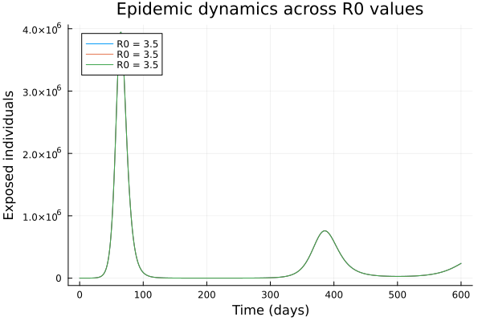
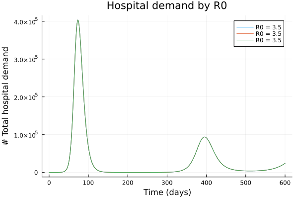
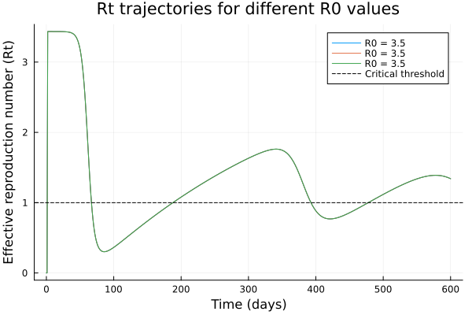

Running multiple R0 values in parallel
The daedalus function supports running multiple reproduction number (R0) values in a single call using vector dispatch. This is useful for sensitivity analyses, parameter sweeps, or generating epidemic curves across a range of transmission scenarios.
NOTE: This section is work in progress. This feature uses DifferentialEquations.jl functionality for working with ensemble models. Better functionality for working with ensemble outputs, using the inbuilt DE.jl functionality, will be added later.
Basic ensemble run
Pass a Vector{InfectionData} with different R0 values:
using Daedalus
using Plots
# Run model with three different R0 values
infections = [
Daedalus.DataLoader.get_pathogen("sars-cov-2 delta"),
Daedalus.DataLoader.get_pathogen("sars-cov-2 delta"),
Daedalus.DataLoader.get_pathogen("sars-cov-2 delta")
]
infections[1].r0 = 1.5
infections[2].r0 = 2.5
infections[3].r0 = 3.5
results = daedalus("Australia", infections, time_end=600.0);
# Each result contains: sol, saves, npi, r0
println("Number of results: ", length(results))
println("R0 values: ", [r.r0 for r in results])Number of results: 3
R0 values: [3.5, 3.5, 3.5]Extracting and comparing results
Each element in the results vector is a named tuple with the ODE solution and associated metadata:
# Extract solutions for each R0 value
times = Daedalus.Outputs.get_times(results[1]);
# Compare exposed cases across R0 values
iExpo = Daedalus.Constants.get_indices("E")
plot(legend=:topleft)
for (i, result) in enumerate(results)
exposed = Daedalus.Outputs.get_values(result, "E", 1)
plot!(times, exposed, label="R0 = $(result.r0)")
end
xlabel!("Time (days)")
ylabel!("Exposed individuals")
title!("Epidemic dynamics across R0 values")
Comparing peak hospitalizations
Extract and compare peak hospitalization across different transmission scenarios:
# get hospitalization for each R0 value and plot
# NOTE: needs better ensemble output handling functionality
# Display comparison
plot(legend=:topright)
for (i, result) in enumerate(results)
hosp = Daedalus.Outputs.get_values(result, "H", 1)
plot!(times, hosp, label="R0 = $(result.r0)")
end
xlabel!("Time (days)")
ylabel!("# Total hospital demand")
title!("Hospital demand by R0")
Effective reproduction number (Rt) across scenarios
Compare how the effective reproduction number evolves under different baseline transmission rates:
# Extract Rt for each R0 scenario
plot(legend=:topright)
for (i, result) in enumerate(results)
rt_vals = Daedalus.Outputs.get_values(result, "Rt", 1)
plot!(times, rt_vals, label="R0 = $(result.r0)")
end
hline!([1.0], linestyle=:dash, color=:black, label="Critical threshold")
xlabel!("Time (days)")
ylabel!("Effective reproduction number (Rt)")
title!("Rt trajectories for different R0 values")
Using ensemble runs with NPIs
Non-pharmaceutical interventions (NPIs) are applied consistently across all R0 values in an ensemble run:
using Daedalus
# Define a reactive NPI that triggers at high hospitalizations
npi = Daedalus.DaedalusStructs.Npi(10000.0, (coef=0.5,))
# Run ensemble with same NPI applied to all R0 values
r0_range = [1.5, 2.0, 2.5, 3.0, 3.5]
infections_npi = [Daedalus.DataLoader.get_pathogen("sars-cov-2 delta") for _ in r0_range]
for (i, r0) in enumerate(r0_range)
infections_npi[i].r0 = r0
end
results_with_npi = daedalus("Australia", infections_npi, npi=npi, time_end=600.0)5-element Vector{Any}:
(sol = SciMLBase.ODESolution{Float64, 2, Vector{Vector{Float64}}, Nothing, Nothing, Vector{Float64}, Vector{Vector{Vector{Float64}}}, Nothing, SciMLBase.ODEProblem{Vector{Float64}, Tuple{Float64, Float64}, true, Daedalus.DaedalusStructs.Params, SciMLBase.ODEFunction{true, SciMLBase.AutoSpecialize, FunctionWrappersWrappers.FunctionWrappersWrapper{Tuple{FunctionWrappers.FunctionWrapper{Nothing, Tuple{Vector{Float64}, Vector{Float64}, Daedalus.DaedalusStructs.Params, Float64}}, FunctionWrappers.FunctionWrapper{Nothing, Tuple{Vector{ForwardDiff.Dual{ForwardDiff.Tag{DiffEqBase.OrdinaryDiffEqTag, Float64}, Float64, 1}}, Vector{ForwardDiff.Dual{ForwardDiff.Tag{DiffEqBase.OrdinaryDiffEqTag, Float64}, Float64, 1}}, Daedalus.DaedalusStructs.Params, Float64}}, FunctionWrappers.FunctionWrapper{Nothing, Tuple{Vector{ForwardDiff.Dual{ForwardDiff.Tag{DiffEqBase.OrdinaryDiffEqTag, Float64}, Float64, 1}}, Vector{Float64}, Daedalus.DaedalusStructs.Params, ForwardDiff.Dual{ForwardDiff.Tag{DiffEqBase.OrdinaryDiffEqTag, Float64}, Float64, 1}}}, FunctionWrappers.FunctionWrapper{Nothing, Tuple{Vector{ForwardDiff.Dual{ForwardDiff.Tag{DiffEqBase.OrdinaryDiffEqTag, Float64}, Float64, 1}}, Vector{ForwardDiff.Dual{ForwardDiff.Tag{DiffEqBase.OrdinaryDiffEqTag, Float64}, Float64, 1}}, Daedalus.DaedalusStructs.Params, ForwardDiff.Dual{ForwardDiff.Tag{DiffEqBase.OrdinaryDiffEqTag, Float64}, Float64, 1}}}}, false}, LinearAlgebra.UniformScaling{Bool}, Nothing, Nothing, Nothing, Nothing, Nothing, Nothing, Nothing, Nothing, Nothing, Nothing, Nothing, Nothing, typeof(SciMLBase.DEFAULT_OBSERVED), Nothing, Nothing, Nothing, Nothing}, Base.Pairs{Symbol, Union{}, Nothing, @NamedTuple{}}, SciMLBase.StandardODEProblem}, OrdinaryDiffEqCore.CompositeAlgorithm{0, Tuple{OrdinaryDiffEqTsit5.Tsit5{typeof(OrdinaryDiffEqCore.trivial_limiter!), typeof(OrdinaryDiffEqCore.trivial_limiter!), Static.False}, OrdinaryDiffEqVerner.Vern7{typeof(OrdinaryDiffEqCore.trivial_limiter!), typeof(OrdinaryDiffEqCore.trivial_limiter!), Static.False}, OrdinaryDiffEqRosenbrock.Rosenbrock23{0, ADTypes.AutoFiniteDiff{Val{:forward}, Val{:forward}, Val{:hcentral}, Nothing, Nothing, Int64}, Nothing, typeof(OrdinaryDiffEqCore.DEFAULT_PRECS), Val{:forward}(), true, nothing, typeof(OrdinaryDiffEqCore.trivial_limiter!), typeof(OrdinaryDiffEqCore.trivial_limiter!)}, OrdinaryDiffEqRosenbrock.Rodas5P{0, ADTypes.AutoFiniteDiff{Val{:forward}, Val{:forward}, Val{:hcentral}, Nothing, Nothing, Int64}, Nothing, typeof(OrdinaryDiffEqCore.DEFAULT_PRECS), Val{:forward}(), true, nothing, typeof(OrdinaryDiffEqCore.trivial_limiter!), typeof(OrdinaryDiffEqCore.trivial_limiter!)}, OrdinaryDiffEqBDF.FBDF{5, 0, ADTypes.AutoFiniteDiff{Val{:forward}, Val{:forward}, Val{:hcentral}, Nothing, Nothing, Int64}, Nothing, OrdinaryDiffEqNonlinearSolve.NLNewton{Rational{Int64}, Rational{Int64}, Rational{Int64}, Nothing}, typeof(OrdinaryDiffEqCore.DEFAULT_PRECS), Val{:forward}(), true, nothing, Nothing, Nothing, typeof(OrdinaryDiffEqCore.trivial_limiter!)}, OrdinaryDiffEqBDF.FBDF{5, 0, ADTypes.AutoFiniteDiff{Val{:forward}, Val{:forward}, Val{:hcentral}, Nothing, Nothing, Int64}, LinearSolve.KrylovJL{typeof(Krylov.gmres!), Int64, Nothing, Tuple{}, Base.Pairs{Symbol, Union{}, Nothing, @NamedTuple{}}}, OrdinaryDiffEqNonlinearSolve.NLNewton{Rational{Int64}, Rational{Int64}, Rational{Int64}, Nothing}, typeof(OrdinaryDiffEqCore.DEFAULT_PRECS), Val{:forward}(), true, nothing, Nothing, Nothing, typeof(OrdinaryDiffEqCore.trivial_limiter!)}}, OrdinaryDiffEqCore.AutoSwitchCache{Tuple{OrdinaryDiffEqTsit5.Tsit5{typeof(OrdinaryDiffEqCore.trivial_limiter!), typeof(OrdinaryDiffEqCore.trivial_limiter!), Static.False}, OrdinaryDiffEqVerner.Vern7{typeof(OrdinaryDiffEqCore.trivial_limiter!), typeof(OrdinaryDiffEqCore.trivial_limiter!), Static.False}}, Tuple{OrdinaryDiffEqRosenbrock.Rosenbrock23{0, ADTypes.AutoFiniteDiff{Val{:forward}, Val{:forward}, Val{:hcentral}, Nothing, Nothing, Int64}, Nothing, typeof(OrdinaryDiffEqCore.DEFAULT_PRECS), Val{:forward}(), true, nothing, typeof(OrdinaryDiffEqCore.trivial_limiter!), typeof(OrdinaryDiffEqCore.trivial_limiter!)}, OrdinaryDiffEqRosenbrock.Rodas5P{0, ADTypes.AutoFiniteDiff{Val{:forward}, Val{:forward}, Val{:hcentral}, Nothing, Nothing, Int64}, Nothing, typeof(OrdinaryDiffEqCore.DEFAULT_PRECS), Val{:forward}(), true, nothing, typeof(OrdinaryDiffEqCore.trivial_limiter!), typeof(OrdinaryDiffEqCore.trivial_limiter!)}, OrdinaryDiffEqBDF.FBDF{5, 0, ADTypes.AutoFiniteDiff{Val{:forward}, Val{:forward}, Val{:hcentral}, Nothing, Nothing, Int64}, Nothing, OrdinaryDiffEqNonlinearSolve.NLNewton{Rational{Int64}, Rational{Int64}, Rational{Int64}, Nothing}, typeof(OrdinaryDiffEqCore.DEFAULT_PRECS), Val{:forward}(), true, nothing, Nothing, Nothing, typeof(OrdinaryDiffEqCore.trivial_limiter!)}, OrdinaryDiffEqBDF.FBDF{5, 0, ADTypes.AutoFiniteDiff{Val{:forward}, Val{:forward}, Val{:hcentral}, Nothing, Nothing, Int64}, LinearSolve.KrylovJL{typeof(Krylov.gmres!), Int64, Nothing, Tuple{}, Base.Pairs{Symbol, Union{}, Nothing, @NamedTuple{}}}, OrdinaryDiffEqNonlinearSolve.NLNewton{Rational{Int64}, Rational{Int64}, Rational{Int64}, Nothing}, typeof(OrdinaryDiffEqCore.DEFAULT_PRECS), Val{:forward}(), true, nothing, Nothing, Nothing, typeof(OrdinaryDiffEqCore.trivial_limiter!)}}, Rational{Int64}, Int64}}, OrdinaryDiffEqCore.InterpolationData{SciMLBase.ODEFunction{true, SciMLBase.AutoSpecialize, FunctionWrappersWrappers.FunctionWrappersWrapper{Tuple{FunctionWrappers.FunctionWrapper{Nothing, Tuple{Vector{Float64}, Vector{Float64}, Daedalus.DaedalusStructs.Params, Float64}}, FunctionWrappers.FunctionWrapper{Nothing, Tuple{Vector{ForwardDiff.Dual{ForwardDiff.Tag{DiffEqBase.OrdinaryDiffEqTag, Float64}, Float64, 1}}, Vector{ForwardDiff.Dual{ForwardDiff.Tag{DiffEqBase.OrdinaryDiffEqTag, Float64}, Float64, 1}}, Daedalus.DaedalusStructs.Params, Float64}}, FunctionWrappers.FunctionWrapper{Nothing, Tuple{Vector{ForwardDiff.Dual{ForwardDiff.Tag{DiffEqBase.OrdinaryDiffEqTag, Float64}, Float64, 1}}, Vector{Float64}, Daedalus.DaedalusStructs.Params, ForwardDiff.Dual{ForwardDiff.Tag{DiffEqBase.OrdinaryDiffEqTag, Float64}, Float64, 1}}}, FunctionWrappers.FunctionWrapper{Nothing, Tuple{Vector{ForwardDiff.Dual{ForwardDiff.Tag{DiffEqBase.OrdinaryDiffEqTag, Float64}, Float64, 1}}, Vector{ForwardDiff.Dual{ForwardDiff.Tag{DiffEqBase.OrdinaryDiffEqTag, Float64}, Float64, 1}}, Daedalus.DaedalusStructs.Params, ForwardDiff.Dual{ForwardDiff.Tag{DiffEqBase.OrdinaryDiffEqTag, Float64}, Float64, 1}}}}, false}, LinearAlgebra.UniformScaling{Bool}, Nothing, Nothing, Nothing, Nothing, Nothing, Nothing, Nothing, Nothing, Nothing, Nothing, Nothing, Nothing, typeof(SciMLBase.DEFAULT_OBSERVED), Nothing, Nothing, Nothing, Nothing}, Vector{Vector{Float64}}, Vector{Float64}, Vector{Vector{Vector{Float64}}}, Vector{Int64}, OrdinaryDiffEqCore.DefaultCache{OrdinaryDiffEqTsit5.Tsit5Cache{Vector{Float64}, Vector{Float64}, Vector{Float64}, typeof(OrdinaryDiffEqCore.trivial_limiter!), typeof(OrdinaryDiffEqCore.trivial_limiter!), Static.False}, OrdinaryDiffEqVerner.Vern7Cache{Vector{Float64}, Vector{Float64}, Vector{Float64}, typeof(OrdinaryDiffEqCore.trivial_limiter!), typeof(OrdinaryDiffEqCore.trivial_limiter!), Static.False}, OrdinaryDiffEqRosenbrock.Rosenbrock23Cache{Vector{Float64}, Vector{Float64}, Vector{Float64}, Matrix{Float64}, Matrix{Float64}, OrdinaryDiffEqRosenbrock.Rosenbrock23Tableau{Float64}, SciMLBase.TimeGradientWrapper{true, SciMLBase.ODEFunction{true, SciMLBase.AutoSpecialize, FunctionWrappersWrappers.FunctionWrappersWrapper{Tuple{FunctionWrappers.FunctionWrapper{Nothing, Tuple{Vector{Float64}, Vector{Float64}, Daedalus.DaedalusStructs.Params, Float64}}, FunctionWrappers.FunctionWrapper{Nothing, Tuple{Vector{ForwardDiff.Dual{ForwardDiff.Tag{DiffEqBase.OrdinaryDiffEqTag, Float64}, Float64, 1}}, Vector{ForwardDiff.Dual{ForwardDiff.Tag{DiffEqBase.OrdinaryDiffEqTag, Float64}, Float64, 1}}, Daedalus.DaedalusStructs.Params, Float64}}, FunctionWrappers.FunctionWrapper{Nothing, Tuple{Vector{ForwardDiff.Dual{ForwardDiff.Tag{DiffEqBase.OrdinaryDiffEqTag, Float64}, Float64, 1}}, Vector{Float64}, Daedalus.DaedalusStructs.Params, ForwardDiff.Dual{ForwardDiff.Tag{DiffEqBase.OrdinaryDiffEqTag, Float64}, Float64, 1}}}, FunctionWrappers.FunctionWrapper{Nothing, Tuple{Vector{ForwardDiff.Dual{ForwardDiff.Tag{DiffEqBase.OrdinaryDiffEqTag, Float64}, Float64, 1}}, Vector{ForwardDiff.Dual{ForwardDiff.Tag{DiffEqBase.OrdinaryDiffEqTag, Float64}, Float64, 1}}, Daedalus.DaedalusStructs.Params, ForwardDiff.Dual{ForwardDiff.Tag{DiffEqBase.OrdinaryDiffEqTag, Float64}, Float64, 1}}}}, false}, LinearAlgebra.UniformScaling{Bool}, Nothing, Nothing, Nothing, Nothing, Nothing, Nothing, Nothing, Nothing, Nothing, Nothing, Nothing, Nothing, typeof(SciMLBase.DEFAULT_OBSERVED), Nothing, Nothing, Nothing, Nothing}, Vector{Float64}, Daedalus.DaedalusStructs.Params}, SciMLBase.UJacobianWrapper{true, SciMLBase.ODEFunction{true, SciMLBase.AutoSpecialize, FunctionWrappersWrappers.FunctionWrappersWrapper{Tuple{FunctionWrappers.FunctionWrapper{Nothing, Tuple{Vector{Float64}, Vector{Float64}, Daedalus.DaedalusStructs.Params, Float64}}, FunctionWrappers.FunctionWrapper{Nothing, Tuple{Vector{ForwardDiff.Dual{ForwardDiff.Tag{DiffEqBase.OrdinaryDiffEqTag, Float64}, Float64, 1}}, Vector{ForwardDiff.Dual{ForwardDiff.Tag{DiffEqBase.OrdinaryDiffEqTag, Float64}, Float64, 1}}, Daedalus.DaedalusStructs.Params, Float64}}, FunctionWrappers.FunctionWrapper{Nothing, Tuple{Vector{ForwardDiff.Dual{ForwardDiff.Tag{DiffEqBase.OrdinaryDiffEqTag, Float64}, Float64, 1}}, Vector{Float64}, Daedalus.DaedalusStructs.Params, ForwardDiff.Dual{ForwardDiff.Tag{DiffEqBase.OrdinaryDiffEqTag, Float64}, Float64, 1}}}, FunctionWrappers.FunctionWrapper{Nothing, Tuple{Vector{ForwardDiff.Dual{ForwardDiff.Tag{DiffEqBase.OrdinaryDiffEqTag, Float64}, Float64, 1}}, Vector{ForwardDiff.Dual{ForwardDiff.Tag{DiffEqBase.OrdinaryDiffEqTag, Float64}, Float64, 1}}, Daedalus.DaedalusStructs.Params, ForwardDiff.Dual{ForwardDiff.Tag{DiffEqBase.OrdinaryDiffEqTag, Float64}, Float64, 1}}}}, false}, LinearAlgebra.UniformScaling{Bool}, Nothing, Nothing, Nothing, Nothing, Nothing, Nothing, Nothing, Nothing, Nothing, Nothing, Nothing, Nothing, typeof(SciMLBase.DEFAULT_OBSERVED), Nothing, Nothing, Nothing, Nothing}, Float64, Daedalus.DaedalusStructs.Params}, LinearSolve.LinearCache{Matrix{Float64}, Vector{Float64}, Vector{Float64}, SciMLBase.NullParameters, LinearSolve.DefaultLinearSolver, LinearSolve.DefaultLinearSolverInit{LinearAlgebra.LU{Float64, Matrix{Float64}, Vector{Int64}}, LinearAlgebra.QRCompactWY{Float64, Matrix{Float64}, Matrix{Float64}}, Nothing, Nothing, Nothing, Nothing, Nothing, Nothing, Tuple{LinearAlgebra.LU{Float64, Matrix{Float64}, Vector{Int64}}, Vector{Int64}}, Tuple{LinearAlgebra.LU{Float64, Matrix{Float64}, Vector{Int64}}, Vector{Int64}}, Nothing, Nothing, Nothing, LinearAlgebra.SVD{Float64, Float64, Matrix{Float64}, Vector{Float64}}, LinearAlgebra.Cholesky{Float64, Matrix{Float64}}, LinearAlgebra.Cholesky{Float64, Matrix{Float64}}, Tuple{LinearAlgebra.LU{Float64, Matrix{Float64}, Vector{Int32}}, Base.RefValue{Int32}}, Tuple{LinearAlgebra.LU{Float64, Matrix{Float64}, Vector{Int64}}, Base.RefValue{Int64}}, LinearAlgebra.QRPivoted{Float64, Matrix{Float64}, Vector{Float64}, Vector{Int64}}, Nothing, Nothing, Nothing, Nothing, Nothing, Matrix{Float64}, Vector{Float64}}, LinearSolve.InvPreconditioner{LinearAlgebra.Diagonal{Float64, Vector{Float64}}}, LinearAlgebra.Diagonal{Float64, Vector{Float64}}, Float64, LinearSolve.LinearVerbosity{SciMLLogging.Silent, SciMLLogging.Silent, SciMLLogging.Silent, SciMLLogging.Silent, SciMLLogging.Silent, SciMLLogging.Silent, SciMLLogging.Silent, SciMLLogging.Silent, SciMLLogging.WarnLevel, SciMLLogging.WarnLevel, SciMLLogging.Silent, SciMLLogging.Silent, SciMLLogging.Silent, SciMLLogging.Silent, SciMLLogging.Silent, SciMLLogging.Silent}, Bool, LinearSolve.LinearSolveAdjoint{Missing}}, Tuple{DifferentiationInterfaceFiniteDiffExt.FiniteDiffTwoArgJacobianPrep{Nothing, FiniteDiff.JacobianCache{Vector{Float64}, Vector{Float64}, Vector{Float64}, Vector{Float64}, UnitRange{Int64}, Nothing, Val{:forward}(), Float64}, Float64, Float64, Int64}, DifferentiationInterfaceFiniteDiffExt.FiniteDiffTwoArgJacobianPrep{Nothing, FiniteDiff.JacobianCache{Vector{Float64}, Vector{Float64}, Vector{Float64}, Vector{Float64}, UnitRange{Int64}, Nothing, Val{:forward}(), Float64}, Float64, Float64, Int64}}, Tuple{DifferentiationInterfaceFiniteDiffExt.FiniteDiffTwoArgDerivativePrep{Tuple{SciMLBase.TimeGradientWrapper{true, SciMLBase.ODEFunction{true, SciMLBase.AutoSpecialize, FunctionWrappersWrappers.FunctionWrappersWrapper{Tuple{FunctionWrappers.FunctionWrapper{Nothing, Tuple{Vector{Float64}, Vector{Float64}, Daedalus.DaedalusStructs.Params, Float64}}, FunctionWrappers.FunctionWrapper{Nothing, Tuple{Vector{ForwardDiff.Dual{ForwardDiff.Tag{DiffEqBase.OrdinaryDiffEqTag, Float64}, Float64, 1}}, Vector{ForwardDiff.Dual{ForwardDiff.Tag{DiffEqBase.OrdinaryDiffEqTag, Float64}, Float64, 1}}, Daedalus.DaedalusStructs.Params, Float64}}, FunctionWrappers.FunctionWrapper{Nothing, Tuple{Vector{ForwardDiff.Dual{ForwardDiff.Tag{DiffEqBase.OrdinaryDiffEqTag, Float64}, Float64, 1}}, Vector{Float64}, Daedalus.DaedalusStructs.Params, ForwardDiff.Dual{ForwardDiff.Tag{DiffEqBase.OrdinaryDiffEqTag, Float64}, Float64, 1}}}, FunctionWrappers.FunctionWrapper{Nothing, Tuple{Vector{ForwardDiff.Dual{ForwardDiff.Tag{DiffEqBase.OrdinaryDiffEqTag, Float64}, Float64, 1}}, Vector{ForwardDiff.Dual{ForwardDiff.Tag{DiffEqBase.OrdinaryDiffEqTag, Float64}, Float64, 1}}, Daedalus.DaedalusStructs.Params, ForwardDiff.Dual{ForwardDiff.Tag{DiffEqBase.OrdinaryDiffEqTag, Float64}, Float64, 1}}}}, false}, LinearAlgebra.UniformScaling{Bool}, Nothing, Nothing, Nothing, Nothing, Nothing, Nothing, Nothing, Nothing, Nothing, Nothing, Nothing, Nothing, typeof(SciMLBase.DEFAULT_OBSERVED), Nothing, Nothing, Nothing, Nothing}, Vector{Float64}, Daedalus.DaedalusStructs.Params}, Vector{Float64}, ADTypes.AutoFiniteDiff{Val{:forward}, Val{:forward}, Val{:hcentral}, Nothing, Nothing, Int64}, Float64, Tuple{}}, FiniteDiff.GradientCache{Nothing, Vector{Float64}, Vector{Float64}, Float64, Val{:forward}(), Float64, Val{true}()}, Float64, Float64, Int64}, DifferentiationInterfaceFiniteDiffExt.FiniteDiffTwoArgDerivativePrep{Tuple{SciMLBase.TimeGradientWrapper{true, SciMLBase.ODEFunction{true, SciMLBase.AutoSpecialize, FunctionWrappersWrappers.FunctionWrappersWrapper{Tuple{FunctionWrappers.FunctionWrapper{Nothing, Tuple{Vector{Float64}, Vector{Float64}, Daedalus.DaedalusStructs.Params, Float64}}, FunctionWrappers.FunctionWrapper{Nothing, Tuple{Vector{ForwardDiff.Dual{ForwardDiff.Tag{DiffEqBase.OrdinaryDiffEqTag, Float64}, Float64, 1}}, Vector{ForwardDiff.Dual{ForwardDiff.Tag{DiffEqBase.OrdinaryDiffEqTag, Float64}, Float64, 1}}, Daedalus.DaedalusStructs.Params, Float64}}, FunctionWrappers.FunctionWrapper{Nothing, Tuple{Vector{ForwardDiff.Dual{ForwardDiff.Tag{DiffEqBase.OrdinaryDiffEqTag, Float64}, Float64, 1}}, Vector{Float64}, Daedalus.DaedalusStructs.Params, ForwardDiff.Dual{ForwardDiff.Tag{DiffEqBase.OrdinaryDiffEqTag, Float64}, Float64, 1}}}, FunctionWrappers.FunctionWrapper{Nothing, Tuple{Vector{ForwardDiff.Dual{ForwardDiff.Tag{DiffEqBase.OrdinaryDiffEqTag, Float64}, Float64, 1}}, Vector{ForwardDiff.Dual{ForwardDiff.Tag{DiffEqBase.OrdinaryDiffEqTag, Float64}, Float64, 1}}, Daedalus.DaedalusStructs.Params, ForwardDiff.Dual{ForwardDiff.Tag{DiffEqBase.OrdinaryDiffEqTag, Float64}, Float64, 1}}}}, false}, LinearAlgebra.UniformScaling{Bool}, Nothing, Nothing, Nothing, Nothing, Nothing, Nothing, Nothing, Nothing, Nothing, Nothing, Nothing, Nothing, typeof(SciMLBase.DEFAULT_OBSERVED), Nothing, Nothing, Nothing, Nothing}, Vector{Float64}, Daedalus.DaedalusStructs.Params}, Vector{Float64}, ADTypes.AutoFiniteDiff{Val{:forward}, Val{:forward}, Val{:hcentral}, Nothing, Nothing, Int64}, Float64, Tuple{}}, FiniteDiff.GradientCache{Nothing, Vector{Float64}, Vector{Float64}, Float64, Val{:forward}(), Float64, Val{true}()}, Float64, Float64, Int64}}, Float64, OrdinaryDiffEqRosenbrock.Rosenbrock23{0, ADTypes.AutoFiniteDiff{Val{:forward}, Val{:forward}, Val{:hcentral}, Nothing, Nothing, Int64}, Nothing, typeof(OrdinaryDiffEqCore.DEFAULT_PRECS), Val{:forward}(), true, nothing, typeof(OrdinaryDiffEqCore.trivial_limiter!), typeof(OrdinaryDiffEqCore.trivial_limiter!)}, Nothing, typeof(OrdinaryDiffEqCore.trivial_limiter!), typeof(OrdinaryDiffEqCore.trivial_limiter!)}, OrdinaryDiffEqRosenbrock.RosenbrockCache{Vector{Float64}, Vector{Float64}, Float64, Vector{Float64}, Matrix{Float64}, Matrix{Float64}, OrdinaryDiffEqRosenbrock.RodasTableau{Float64, Float64}, SciMLBase.TimeGradientWrapper{true, SciMLBase.ODEFunction{true, SciMLBase.AutoSpecialize, FunctionWrappersWrappers.FunctionWrappersWrapper{Tuple{FunctionWrappers.FunctionWrapper{Nothing, Tuple{Vector{Float64}, Vector{Float64}, Daedalus.DaedalusStructs.Params, Float64}}, FunctionWrappers.FunctionWrapper{Nothing, Tuple{Vector{ForwardDiff.Dual{ForwardDiff.Tag{DiffEqBase.OrdinaryDiffEqTag, Float64}, Float64, 1}}, Vector{ForwardDiff.Dual{ForwardDiff.Tag{DiffEqBase.OrdinaryDiffEqTag, Float64}, Float64, 1}}, Daedalus.DaedalusStructs.Params, Float64}}, FunctionWrappers.FunctionWrapper{Nothing, Tuple{Vector{ForwardDiff.Dual{ForwardDiff.Tag{DiffEqBase.OrdinaryDiffEqTag, Float64}, Float64, 1}}, Vector{Float64}, Daedalus.DaedalusStructs.Params, ForwardDiff.Dual{ForwardDiff.Tag{DiffEqBase.OrdinaryDiffEqTag, Float64}, Float64, 1}}}, FunctionWrappers.FunctionWrapper{Nothing, Tuple{Vector{ForwardDiff.Dual{ForwardDiff.Tag{DiffEqBase.OrdinaryDiffEqTag, Float64}, Float64, 1}}, Vector{ForwardDiff.Dual{ForwardDiff.Tag{DiffEqBase.OrdinaryDiffEqTag, Float64}, Float64, 1}}, Daedalus.DaedalusStructs.Params, ForwardDiff.Dual{ForwardDiff.Tag{DiffEqBase.OrdinaryDiffEqTag, Float64}, Float64, 1}}}}, false}, LinearAlgebra.UniformScaling{Bool}, Nothing, Nothing, Nothing, Nothing, Nothing, Nothing, Nothing, Nothing, Nothing, Nothing, Nothing, Nothing, typeof(SciMLBase.DEFAULT_OBSERVED), Nothing, Nothing, Nothing, Nothing}, Vector{Float64}, Daedalus.DaedalusStructs.Params}, SciMLBase.UJacobianWrapper{true, SciMLBase.ODEFunction{true, SciMLBase.AutoSpecialize, FunctionWrappersWrappers.FunctionWrappersWrapper{Tuple{FunctionWrappers.FunctionWrapper{Nothing, Tuple{Vector{Float64}, Vector{Float64}, Daedalus.DaedalusStructs.Params, Float64}}, FunctionWrappers.FunctionWrapper{Nothing, Tuple{Vector{ForwardDiff.Dual{ForwardDiff.Tag{DiffEqBase.OrdinaryDiffEqTag, Float64}, Float64, 1}}, Vector{ForwardDiff.Dual{ForwardDiff.Tag{DiffEqBase.OrdinaryDiffEqTag, Float64}, Float64, 1}}, Daedalus.DaedalusStructs.Params, Float64}}, FunctionWrappers.FunctionWrapper{Nothing, Tuple{Vector{ForwardDiff.Dual{ForwardDiff.Tag{DiffEqBase.OrdinaryDiffEqTag, Float64}, Float64, 1}}, Vector{Float64}, Daedalus.DaedalusStructs.Params, ForwardDiff.Dual{ForwardDiff.Tag{DiffEqBase.OrdinaryDiffEqTag, Float64}, Float64, 1}}}, FunctionWrappers.FunctionWrapper{Nothing, Tuple{Vector{ForwardDiff.Dual{ForwardDiff.Tag{DiffEqBase.OrdinaryDiffEqTag, Float64}, Float64, 1}}, Vector{ForwardDiff.Dual{ForwardDiff.Tag{DiffEqBase.OrdinaryDiffEqTag, Float64}, Float64, 1}}, Daedalus.DaedalusStructs.Params, ForwardDiff.Dual{ForwardDiff.Tag{DiffEqBase.OrdinaryDiffEqTag, Float64}, Float64, 1}}}}, false}, LinearAlgebra.UniformScaling{Bool}, Nothing, Nothing, Nothing, Nothing, Nothing, Nothing, Nothing, Nothing, Nothing, Nothing, Nothing, Nothing, typeof(SciMLBase.DEFAULT_OBSERVED), Nothing, Nothing, Nothing, Nothing}, Float64, Daedalus.DaedalusStructs.Params}, LinearSolve.LinearCache{Matrix{Float64}, Vector{Float64}, Vector{Float64}, SciMLBase.NullParameters, LinearSolve.DefaultLinearSolver, LinearSolve.DefaultLinearSolverInit{LinearAlgebra.LU{Float64, Matrix{Float64}, Vector{Int64}}, LinearAlgebra.QRCompactWY{Float64, Matrix{Float64}, Matrix{Float64}}, Nothing, Nothing, Nothing, Nothing, Nothing, Nothing, Tuple{LinearAlgebra.LU{Float64, Matrix{Float64}, Vector{Int64}}, Vector{Int64}}, Tuple{LinearAlgebra.LU{Float64, Matrix{Float64}, Vector{Int64}}, Vector{Int64}}, Nothing, Nothing, Nothing, LinearAlgebra.SVD{Float64, Float64, Matrix{Float64}, Vector{Float64}}, LinearAlgebra.Cholesky{Float64, Matrix{Float64}}, LinearAlgebra.Cholesky{Float64, Matrix{Float64}}, Tuple{LinearAlgebra.LU{Float64, Matrix{Float64}, Vector{Int32}}, Base.RefValue{Int32}}, Tuple{LinearAlgebra.LU{Float64, Matrix{Float64}, Vector{Int64}}, Base.RefValue{Int64}}, LinearAlgebra.QRPivoted{Float64, Matrix{Float64}, Vector{Float64}, Vector{Int64}}, Nothing, Nothing, Nothing, Nothing, Nothing, Matrix{Float64}, Vector{Float64}}, LinearSolve.InvPreconditioner{LinearAlgebra.Diagonal{Float64, Vector{Float64}}}, LinearAlgebra.Diagonal{Float64, Vector{Float64}}, Float64, LinearSolve.LinearVerbosity{SciMLLogging.Silent, SciMLLogging.Silent, SciMLLogging.Silent, SciMLLogging.Silent, SciMLLogging.Silent, SciMLLogging.Silent, SciMLLogging.Silent, SciMLLogging.Silent, SciMLLogging.WarnLevel, SciMLLogging.WarnLevel, SciMLLogging.Silent, SciMLLogging.Silent, SciMLLogging.Silent, SciMLLogging.Silent, SciMLLogging.Silent, SciMLLogging.Silent}, Bool, LinearSolve.LinearSolveAdjoint{Missing}}, Tuple{DifferentiationInterfaceFiniteDiffExt.FiniteDiffTwoArgJacobianPrep{Nothing, FiniteDiff.JacobianCache{Vector{Float64}, Vector{Float64}, Vector{Float64}, Vector{Float64}, UnitRange{Int64}, Nothing, Val{:forward}(), Float64}, Float64, Float64, Int64}, DifferentiationInterfaceFiniteDiffExt.FiniteDiffTwoArgJacobianPrep{Nothing, FiniteDiff.JacobianCache{Vector{Float64}, Vector{Float64}, Vector{Float64}, Vector{Float64}, UnitRange{Int64}, Nothing, Val{:forward}(), Float64}, Float64, Float64, Int64}}, Tuple{DifferentiationInterfaceFiniteDiffExt.FiniteDiffTwoArgDerivativePrep{Tuple{SciMLBase.TimeGradientWrapper{true, SciMLBase.ODEFunction{true, SciMLBase.AutoSpecialize, FunctionWrappersWrappers.FunctionWrappersWrapper{Tuple{FunctionWrappers.FunctionWrapper{Nothing, Tuple{Vector{Float64}, Vector{Float64}, Daedalus.DaedalusStructs.Params, Float64}}, FunctionWrappers.FunctionWrapper{Nothing, Tuple{Vector{ForwardDiff.Dual{ForwardDiff.Tag{DiffEqBase.OrdinaryDiffEqTag, Float64}, Float64, 1}}, Vector{ForwardDiff.Dual{ForwardDiff.Tag{DiffEqBase.OrdinaryDiffEqTag, Float64}, Float64, 1}}, Daedalus.DaedalusStructs.Params, Float64}}, FunctionWrappers.FunctionWrapper{Nothing, Tuple{Vector{ForwardDiff.Dual{ForwardDiff.Tag{DiffEqBase.OrdinaryDiffEqTag, Float64}, Float64, 1}}, Vector{Float64}, Daedalus.DaedalusStructs.Params, ForwardDiff.Dual{ForwardDiff.Tag{DiffEqBase.OrdinaryDiffEqTag, Float64}, Float64, 1}}}, FunctionWrappers.FunctionWrapper{Nothing, Tuple{Vector{ForwardDiff.Dual{ForwardDiff.Tag{DiffEqBase.OrdinaryDiffEqTag, Float64}, Float64, 1}}, Vector{ForwardDiff.Dual{ForwardDiff.Tag{DiffEqBase.OrdinaryDiffEqTag, Float64}, Float64, 1}}, Daedalus.DaedalusStructs.Params, ForwardDiff.Dual{ForwardDiff.Tag{DiffEqBase.OrdinaryDiffEqTag, Float64}, Float64, 1}}}}, false}, LinearAlgebra.UniformScaling{Bool}, Nothing, Nothing, Nothing, Nothing, Nothing, Nothing, Nothing, Nothing, Nothing, Nothing, Nothing, Nothing, typeof(SciMLBase.DEFAULT_OBSERVED), Nothing, Nothing, Nothing, Nothing}, Vector{Float64}, Daedalus.DaedalusStructs.Params}, Vector{Float64}, ADTypes.AutoFiniteDiff{Val{:forward}, Val{:forward}, Val{:hcentral}, Nothing, Nothing, Int64}, Float64, Tuple{}}, FiniteDiff.GradientCache{Nothing, Vector{Float64}, Vector{Float64}, Float64, Val{:forward}(), Float64, Val{true}()}, Float64, Float64, Int64}, DifferentiationInterfaceFiniteDiffExt.FiniteDiffTwoArgDerivativePrep{Tuple{SciMLBase.TimeGradientWrapper{true, SciMLBase.ODEFunction{true, SciMLBase.AutoSpecialize, FunctionWrappersWrappers.FunctionWrappersWrapper{Tuple{FunctionWrappers.FunctionWrapper{Nothing, Tuple{Vector{Float64}, Vector{Float64}, Daedalus.DaedalusStructs.Params, Float64}}, FunctionWrappers.FunctionWrapper{Nothing, Tuple{Vector{ForwardDiff.Dual{ForwardDiff.Tag{DiffEqBase.OrdinaryDiffEqTag, Float64}, Float64, 1}}, Vector{ForwardDiff.Dual{ForwardDiff.Tag{DiffEqBase.OrdinaryDiffEqTag, Float64}, Float64, 1}}, Daedalus.DaedalusStructs.Params, Float64}}, FunctionWrappers.FunctionWrapper{Nothing, Tuple{Vector{ForwardDiff.Dual{ForwardDiff.Tag{DiffEqBase.OrdinaryDiffEqTag, Float64}, Float64, 1}}, Vector{Float64}, Daedalus.DaedalusStructs.Params, ForwardDiff.Dual{ForwardDiff.Tag{DiffEqBase.OrdinaryDiffEqTag, Float64}, Float64, 1}}}, FunctionWrappers.FunctionWrapper{Nothing, Tuple{Vector{ForwardDiff.Dual{ForwardDiff.Tag{DiffEqBase.OrdinaryDiffEqTag, Float64}, Float64, 1}}, Vector{ForwardDiff.Dual{ForwardDiff.Tag{DiffEqBase.OrdinaryDiffEqTag, Float64}, Float64, 1}}, Daedalus.DaedalusStructs.Params, ForwardDiff.Dual{ForwardDiff.Tag{DiffEqBase.OrdinaryDiffEqTag, Float64}, Float64, 1}}}}, false}, LinearAlgebra.UniformScaling{Bool}, Nothing, Nothing, Nothing, Nothing, Nothing, Nothing, Nothing, Nothing, Nothing, Nothing, Nothing, Nothing, typeof(SciMLBase.DEFAULT_OBSERVED), Nothing, Nothing, Nothing, Nothing}, Vector{Float64}, Daedalus.DaedalusStructs.Params}, Vector{Float64}, ADTypes.AutoFiniteDiff{Val{:forward}, Val{:forward}, Val{:hcentral}, Nothing, Nothing, Int64}, Float64, Tuple{}}, FiniteDiff.GradientCache{Nothing, Vector{Float64}, Vector{Float64}, Float64, Val{:forward}(), Float64, Val{true}()}, Float64, Float64, Int64}}, Float64, OrdinaryDiffEqRosenbrock.Rodas5P{0, ADTypes.AutoFiniteDiff{Val{:forward}, Val{:forward}, Val{:hcentral}, Nothing, Nothing, Int64}, Nothing, typeof(OrdinaryDiffEqCore.DEFAULT_PRECS), Val{:forward}(), true, nothing, typeof(OrdinaryDiffEqCore.trivial_limiter!), typeof(OrdinaryDiffEqCore.trivial_limiter!)}, typeof(OrdinaryDiffEqCore.trivial_limiter!), typeof(OrdinaryDiffEqCore.trivial_limiter!)}, OrdinaryDiffEqBDF.FBDFCache{5, OrdinaryDiffEqNonlinearSolve.NLSolver{OrdinaryDiffEqNonlinearSolve.NLNewton{Rational{Int64}, Rational{Int64}, Rational{Int64}, Nothing}, true, Vector{Float64}, Float64, Nothing, Float64, OrdinaryDiffEqNonlinearSolve.NLNewtonCache{Vector{Float64}, Float64, Float64, Vector{Float64}, Matrix{Float64}, Matrix{Float64}, SciMLBase.UJacobianWrapper{true, SciMLBase.ODEFunction{true, SciMLBase.AutoSpecialize, FunctionWrappersWrappers.FunctionWrappersWrapper{Tuple{FunctionWrappers.FunctionWrapper{Nothing, Tuple{Vector{Float64}, Vector{Float64}, Daedalus.DaedalusStructs.Params, Float64}}, FunctionWrappers.FunctionWrapper{Nothing, Tuple{Vector{ForwardDiff.Dual{ForwardDiff.Tag{DiffEqBase.OrdinaryDiffEqTag, Float64}, Float64, 1}}, Vector{ForwardDiff.Dual{ForwardDiff.Tag{DiffEqBase.OrdinaryDiffEqTag, Float64}, Float64, 1}}, Daedalus.DaedalusStructs.Params, Float64}}, FunctionWrappers.FunctionWrapper{Nothing, Tuple{Vector{ForwardDiff.Dual{ForwardDiff.Tag{DiffEqBase.OrdinaryDiffEqTag, Float64}, Float64, 1}}, Vector{Float64}, Daedalus.DaedalusStructs.Params, ForwardDiff.Dual{ForwardDiff.Tag{DiffEqBase.OrdinaryDiffEqTag, Float64}, Float64, 1}}}, FunctionWrappers.FunctionWrapper{Nothing, Tuple{Vector{ForwardDiff.Dual{ForwardDiff.Tag{DiffEqBase.OrdinaryDiffEqTag, Float64}, Float64, 1}}, Vector{ForwardDiff.Dual{ForwardDiff.Tag{DiffEqBase.OrdinaryDiffEqTag, Float64}, Float64, 1}}, Daedalus.DaedalusStructs.Params, ForwardDiff.Dual{ForwardDiff.Tag{DiffEqBase.OrdinaryDiffEqTag, Float64}, Float64, 1}}}}, false}, LinearAlgebra.UniformScaling{Bool}, Nothing, Nothing, Nothing, Nothing, Nothing, Nothing, Nothing, Nothing, Nothing, Nothing, Nothing, Nothing, typeof(SciMLBase.DEFAULT_OBSERVED), Nothing, Nothing, Nothing, Nothing}, Float64, Daedalus.DaedalusStructs.Params}, Tuple{DifferentiationInterfaceFiniteDiffExt.FiniteDiffTwoArgJacobianPrep{Nothing, FiniteDiff.JacobianCache{Vector{Float64}, Vector{Float64}, Vector{Float64}, Vector{Float64}, UnitRange{Int64}, Nothing, Val{:forward}(), Float64}, Float64, Float64, Int64}, DifferentiationInterfaceFiniteDiffExt.FiniteDiffTwoArgJacobianPrep{Nothing, FiniteDiff.JacobianCache{Vector{Float64}, Vector{Float64}, Vector{Float64}, Vector{Float64}, UnitRange{Int64}, Nothing, Val{:forward}(), Float64}, Float64, Float64, Int64}}, LinearSolve.LinearCache{Matrix{Float64}, Vector{Float64}, Vector{Float64}, SciMLBase.NullParameters, LinearSolve.DefaultLinearSolver, LinearSolve.DefaultLinearSolverInit{LinearAlgebra.LU{Float64, Matrix{Float64}, Vector{Int64}}, LinearAlgebra.QRCompactWY{Float64, Matrix{Float64}, Matrix{Float64}}, Nothing, Nothing, Nothing, Nothing, Nothing, Nothing, Tuple{LinearAlgebra.LU{Float64, Matrix{Float64}, Vector{Int64}}, Vector{Int64}}, Tuple{LinearAlgebra.LU{Float64, Matrix{Float64}, Vector{Int64}}, Vector{Int64}}, Nothing, Nothing, Nothing, LinearAlgebra.SVD{Float64, Float64, Matrix{Float64}, Vector{Float64}}, LinearAlgebra.Cholesky{Float64, Matrix{Float64}}, LinearAlgebra.Cholesky{Float64, Matrix{Float64}}, Tuple{LinearAlgebra.LU{Float64, Matrix{Float64}, Vector{Int32}}, Base.RefValue{Int32}}, Tuple{LinearAlgebra.LU{Float64, Matrix{Float64}, Vector{Int64}}, Base.RefValue{Int64}}, LinearAlgebra.QRPivoted{Float64, Matrix{Float64}, Vector{Float64}, Vector{Int64}}, Nothing, Nothing, Nothing, Nothing, Nothing, Matrix{Float64}, Vector{Float64}}, LinearSolve.InvPreconditioner{LinearAlgebra.Diagonal{Float64, Vector{Float64}}}, LinearAlgebra.Diagonal{Float64, Vector{Float64}}, Float64, LinearSolve.LinearVerbosity{SciMLLogging.Silent, SciMLLogging.Silent, SciMLLogging.Silent, SciMLLogging.Silent, SciMLLogging.Silent, SciMLLogging.Silent, SciMLLogging.Silent, SciMLLogging.Silent, SciMLLogging.WarnLevel, SciMLLogging.WarnLevel, SciMLLogging.Silent, SciMLLogging.Silent, SciMLLogging.Silent, SciMLLogging.Silent, SciMLLogging.Silent, SciMLLogging.Silent}, Bool, LinearSolve.LinearSolveAdjoint{Missing}}, Nothing}, Float64}, Vector{Float64}, Vector{Float64}, Vector{Float64}, Float64, Vector{Float64}, Vector{Vector{Float64}}, StaticArraysCore.SMatrix{5, 6, Rational{Int64}, 30}, Float64, Vector{Float64}, Vector{Float64}, typeof(OrdinaryDiffEqCore.trivial_limiter!), Matrix{Float64}}, Union{OrdinaryDiffEqBDF.FBDFCache{5, N, Vector{Float64}, Vector{Float64}, Vector{Float64}, Float64, Vector{Float64}, Vector{Vector{Float64}}, StaticArraysCore.SMatrix{5, 6, Rational{Int64}, 30}, Float64, Vector{Float64}, Vector{Float64}, typeof(OrdinaryDiffEqCore.trivial_limiter!), Matrix{Float64}} where N<:(OrdinaryDiffEqNonlinearSolve.NLSolver{OrdinaryDiffEqNonlinearSolve.NLNewton{Rational{Int64}, Rational{Int64}, Rational{Int64}, Nothing}, true, Vector{Float64}, Float64, Nothing, Float64, OrdinaryDiffEqNonlinearSolve.NLNewtonCache{Vector{Float64}, Float64, Float64, Vector{Float64}, OrdinaryDiffEqDifferentiation.JVPCache{Float64}, SciMLOperators.WOperator{true, Float64, LinearAlgebra.UniformScaling{Bool}, Float64, OrdinaryDiffEqDifferentiation.JVPCache{Float64}, Vector{Float64}, OrdinaryDiffEqDifferentiation.JVPCache{Float64}, OrdinaryDiffEqDifferentiation.JVPCache{Float64}}, SciMLBase.UJacobianWrapper{true, SciMLBase.ODEFunction{true, SciMLBase.AutoSpecialize, FunctionWrappersWrappers.FunctionWrappersWrapper{Tuple{FunctionWrappers.FunctionWrapper{Nothing, Tuple{Vector{Float64}, Vector{Float64}, Daedalus.DaedalusStructs.Params, Float64}}, FunctionWrappers.FunctionWrapper{Nothing, Tuple{Vector{ForwardDiff.Dual{ForwardDiff.Tag{DiffEqBase.OrdinaryDiffEqTag, Float64}, Float64, 1}}, Vector{ForwardDiff.Dual{ForwardDiff.Tag{DiffEqBase.OrdinaryDiffEqTag, Float64}, Float64, 1}}, Daedalus.DaedalusStructs.Params, Float64}}, FunctionWrappers.FunctionWrapper{Nothing, Tuple{Vector{ForwardDiff.Dual{ForwardDiff.Tag{DiffEqBase.OrdinaryDiffEqTag, Float64}, Float64, 1}}, Vector{Float64}, Daedalus.DaedalusStructs.Params, ForwardDiff.Dual{ForwardDiff.Tag{DiffEqBase.OrdinaryDiffEqTag, Float64}, Float64, 1}}}, FunctionWrappers.FunctionWrapper{Nothing, Tuple{Vector{ForwardDiff.Dual{ForwardDiff.Tag{DiffEqBase.OrdinaryDiffEqTag, Float64}, Float64, 1}}, Vector{ForwardDiff.Dual{ForwardDiff.Tag{DiffEqBase.OrdinaryDiffEqTag, Float64}, Float64, 1}}, Daedalus.DaedalusStructs.Params, ForwardDiff.Dual{ForwardDiff.Tag{DiffEqBase.OrdinaryDiffEqTag, Float64}, Float64, 1}}}}, false}, LinearAlgebra.UniformScaling{Bool}, Nothing, Nothing, Nothing, Nothing, Nothing, Nothing, Nothing, Nothing, Nothing, Nothing, Nothing, Nothing, typeof(SciMLBase.DEFAULT_OBSERVED), Nothing, Nothing, Nothing, Nothing}, Float64, Daedalus.DaedalusStructs.Params}, Tuple{Nothing, Nothing}, _A, Nothing}, Float64} where _A), OrdinaryDiffEqBDF.FBDFCache{5, N, Vector{Float64}, Vector{Float64}, Vector{Float64}, Float64, Vector{Float64}, Vector{Vector{Float64}}, StaticArraysCore.SMatrix{5, 6, Rational{Int64}, 30}, Float64, Vector{Float64}, Vector{Float64}, typeof(OrdinaryDiffEqCore.trivial_limiter!), Matrix{Float64}} where N<:(OrdinaryDiffEqNonlinearSolve.NLSolver{OrdinaryDiffEqNonlinearSolve.NLNewton{Rational{Int64}, Rational{Int64}, Rational{Int64}, Nothing}, true, Vector{Float64}, Float64, Nothing, Float64, OrdinaryDiffEqNonlinearSolve.NLNewtonCache{Vector{Float64}, Float64, Float64, Vector{Float64}, OrdinaryDiffEqDifferentiation.JVPCache{Float64}, SciMLOperators.WOperator{true, Float64, LinearAlgebra.UniformScaling{Bool}, Float64, OrdinaryDiffEqDifferentiation.JVPCache{Float64}, Vector{Float64}, SciMLOperators.AddedOperator{Float64, Tuple{SciMLOperators.ScaledOperator{Float64, SciMLOperators.ScalarOperator{Float64, SciMLOperators.FilterKwargs{typeof(SciMLOperators.DEFAULT_UPDATE_FUNC), Val{()}}}, SciMLOperators.IdentityOperator}, OrdinaryDiffEqDifferentiation.JVPCache{Float64}}}, OrdinaryDiffEqDifferentiation.JVPCache{Float64}}, SciMLBase.UJacobianWrapper{true, SciMLBase.ODEFunction{true, SciMLBase.AutoSpecialize, FunctionWrappersWrappers.FunctionWrappersWrapper{Tuple{FunctionWrappers.FunctionWrapper{Nothing, Tuple{Vector{Float64}, Vector{Float64}, Daedalus.DaedalusStructs.Params, Float64}}, FunctionWrappers.FunctionWrapper{Nothing, Tuple{Vector{ForwardDiff.Dual{ForwardDiff.Tag{DiffEqBase.OrdinaryDiffEqTag, Float64}, Float64, 1}}, Vector{ForwardDiff.Dual{ForwardDiff.Tag{DiffEqBase.OrdinaryDiffEqTag, Float64}, Float64, 1}}, Daedalus.DaedalusStructs.Params, Float64}}, FunctionWrappers.FunctionWrapper{Nothing, Tuple{Vector{ForwardDiff.Dual{ForwardDiff.Tag{DiffEqBase.OrdinaryDiffEqTag, Float64}, Float64, 1}}, Vector{Float64}, Daedalus.DaedalusStructs.Params, ForwardDiff.Dual{ForwardDiff.Tag{DiffEqBase.OrdinaryDiffEqTag, Float64}, Float64, 1}}}, FunctionWrappers.FunctionWrapper{Nothing, Tuple{Vector{ForwardDiff.Dual{ForwardDiff.Tag{DiffEqBase.OrdinaryDiffEqTag, Float64}, Float64, 1}}, Vector{ForwardDiff.Dual{ForwardDiff.Tag{DiffEqBase.OrdinaryDiffEqTag, Float64}, Float64, 1}}, Daedalus.DaedalusStructs.Params, ForwardDiff.Dual{ForwardDiff.Tag{DiffEqBase.OrdinaryDiffEqTag, Float64}, Float64, 1}}}}, false}, LinearAlgebra.UniformScaling{Bool}, Nothing, Nothing, Nothing, Nothing, Nothing, Nothing, Nothing, Nothing, Nothing, Nothing, Nothing, Nothing, typeof(SciMLBase.DEFAULT_OBSERVED), Nothing, Nothing, Nothing, Nothing}, Float64, Daedalus.DaedalusStructs.Params}, Tuple{Nothing, Nothing}, _A, Nothing}, Float64} where _A)}, Tuple{Vector{Float64}, Vector{Float64}, DataType, DataType, DataType, Vector{Float64}, Vector{Float64}, SciMLBase.ODEFunction{true, SciMLBase.AutoSpecialize, FunctionWrappersWrappers.FunctionWrappersWrapper{Tuple{FunctionWrappers.FunctionWrapper{Nothing, Tuple{Vector{Float64}, Vector{Float64}, Daedalus.DaedalusStructs.Params, Float64}}, FunctionWrappers.FunctionWrapper{Nothing, Tuple{Vector{ForwardDiff.Dual{ForwardDiff.Tag{DiffEqBase.OrdinaryDiffEqTag, Float64}, Float64, 1}}, Vector{ForwardDiff.Dual{ForwardDiff.Tag{DiffEqBase.OrdinaryDiffEqTag, Float64}, Float64, 1}}, Daedalus.DaedalusStructs.Params, Float64}}, FunctionWrappers.FunctionWrapper{Nothing, Tuple{Vector{ForwardDiff.Dual{ForwardDiff.Tag{DiffEqBase.OrdinaryDiffEqTag, Float64}, Float64, 1}}, Vector{Float64}, Daedalus.DaedalusStructs.Params, ForwardDiff.Dual{ForwardDiff.Tag{DiffEqBase.OrdinaryDiffEqTag, Float64}, Float64, 1}}}, FunctionWrappers.FunctionWrapper{Nothing, Tuple{Vector{ForwardDiff.Dual{ForwardDiff.Tag{DiffEqBase.OrdinaryDiffEqTag, Float64}, Float64, 1}}, Vector{ForwardDiff.Dual{ForwardDiff.Tag{DiffEqBase.OrdinaryDiffEqTag, Float64}, Float64, 1}}, Daedalus.DaedalusStructs.Params, ForwardDiff.Dual{ForwardDiff.Tag{DiffEqBase.OrdinaryDiffEqTag, Float64}, Float64, 1}}}}, false}, LinearAlgebra.UniformScaling{Bool}, Nothing, Nothing, Nothing, Nothing, Nothing, Nothing, Nothing, Nothing, Nothing, Nothing, Nothing, Nothing, typeof(SciMLBase.DEFAULT_OBSERVED), Nothing, Nothing, Nothing, Nothing}, Float64, Float64, Float64, Daedalus.DaedalusStructs.Params, Bool, Val{true}, OrdinaryDiffEqCore.DEVerbosity{SciMLLogging.Minimal, SciMLLogging.Minimal, SciMLLogging.WarnLevel, SciMLLogging.WarnLevel, SciMLLogging.WarnLevel, SciMLLogging.WarnLevel, SciMLLogging.WarnLevel, SciMLLogging.WarnLevel, SciMLLogging.Silent, SciMLLogging.Silent, SciMLLogging.Silent, SciMLLogging.Silent, SciMLLogging.Silent, SciMLLogging.Silent, SciMLLogging.WarnLevel, SciMLLogging.Silent, SciMLLogging.Silent, SciMLLogging.Silent, SciMLLogging.WarnLevel, SciMLLogging.Silent, SciMLLogging.WarnLevel, SciMLLogging.Silent, SciMLLogging.Silent, SciMLLogging.Silent, SciMLLogging.Silent, SciMLLogging.Silent, SciMLLogging.Silent, SciMLLogging.Silent, SciMLLogging.Silent, SciMLLogging.Silent, SciMLLogging.Silent, SciMLLogging.Silent}}, OrdinaryDiffEqCore.AutoSwitchCache{Tuple{OrdinaryDiffEqTsit5.Tsit5{typeof(OrdinaryDiffEqCore.trivial_limiter!), typeof(OrdinaryDiffEqCore.trivial_limiter!), Static.False}, OrdinaryDiffEqVerner.Vern7{typeof(OrdinaryDiffEqCore.trivial_limiter!), typeof(OrdinaryDiffEqCore.trivial_limiter!), Static.False}}, Tuple{OrdinaryDiffEqRosenbrock.Rosenbrock23{0, ADTypes.AutoFiniteDiff{Val{:forward}, Val{:forward}, Val{:hcentral}, Nothing, Nothing, Int64}, Nothing, typeof(OrdinaryDiffEqCore.DEFAULT_PRECS), Val{:forward}(), true, nothing, typeof(OrdinaryDiffEqCore.trivial_limiter!), typeof(OrdinaryDiffEqCore.trivial_limiter!)}, OrdinaryDiffEqRosenbrock.Rodas5P{0, ADTypes.AutoFiniteDiff{Val{:forward}, Val{:forward}, Val{:hcentral}, Nothing, Nothing, Int64}, Nothing, typeof(OrdinaryDiffEqCore.DEFAULT_PRECS), Val{:forward}(), true, nothing, typeof(OrdinaryDiffEqCore.trivial_limiter!), typeof(OrdinaryDiffEqCore.trivial_limiter!)}, OrdinaryDiffEqBDF.FBDF{5, 0, ADTypes.AutoFiniteDiff{Val{:forward}, Val{:forward}, Val{:hcentral}, Nothing, Nothing, Int64}, Nothing, OrdinaryDiffEqNonlinearSolve.NLNewton{Rational{Int64}, Rational{Int64}, Rational{Int64}, Nothing}, typeof(OrdinaryDiffEqCore.DEFAULT_PRECS), Val{:forward}(), true, nothing, Nothing, Nothing, typeof(OrdinaryDiffEqCore.trivial_limiter!)}, OrdinaryDiffEqBDF.FBDF{5, 0, ADTypes.AutoFiniteDiff{Val{:forward}, Val{:forward}, Val{:hcentral}, Nothing, Nothing, Int64}, LinearSolve.KrylovJL{typeof(Krylov.gmres!), Int64, Nothing, Tuple{}, Base.Pairs{Symbol, Union{}, Nothing, @NamedTuple{}}}, OrdinaryDiffEqNonlinearSolve.NLNewton{Rational{Int64}, Rational{Int64}, Rational{Int64}, Nothing}, typeof(OrdinaryDiffEqCore.DEFAULT_PRECS), Val{:forward}(), true, nothing, Nothing, Nothing, typeof(OrdinaryDiffEqCore.trivial_limiter!)}}, Rational{Int64}, Int64}, Vector{Float64}}, Nothing}, SciMLBase.DEStats, Vector{Int64}, Nothing, Nothing, Nothing}([[1.669705330293e6, 4.769742230253e6, 2.01593798406e6, 4.134303865692e6, 331714.66828499996, 10730.989269, 110740.889259, 113170.886829, 65189.93481, 224517.775482 … 0.0, 0.0, 0.0, 0.0, 0.0, 0.0, 0.0, 0.0, 0.0, 0.0], [1.6697043926208124e6, 4.769739470663555e6, 2.015935803373578e6, 4.1343023545857253e6, 331714.309461624, 10730.977661042423, 110740.76946803644, 113170.76440945225, 65189.86429255015, 224517.5326159653 … 0.0, 0.0, 0.0, 0.0, 0.0, 0.0, 0.0, 0.0, 0.0, 0.0], [1.6697043926208124e6, 4.769739470663555e6, 2.015935803373578e6, 4.1343023545857253e6, 331714.309461624, 10730.977661042423, 110740.76946803644, 113170.76440945225, 65189.86429255015, 224517.5326159653 … 0.0, 0.0, 0.0, 0.0, 0.0, 0.0, 0.0, 0.0, 0.0, 0.0], [1.6697043926208124e6, 4.769739470663555e6, 2.015935803373578e6, 4.1343023545857253e6, 331714.309461624, 10730.977661042423, 110740.76946803644, 113170.76440945225, 65189.86429255015, 224517.5326159653 … 0.0, 0.0, 0.0, 0.0, 0.0, 0.0, 0.0, 0.0, 0.0, 0.0], [1.6697043926208124e6, 4.769739470663555e6, 2.015935803373578e6, 4.1343023545857253e6, 331714.309461624, 10730.977661042423, 110740.76946803644, 113170.76440945225, 65189.86429255015, 224517.5326159653 … 0.0, 0.0, 0.0, 0.0, 0.0, 0.0, 0.0, 0.0, 0.0, 0.0], [1.6697043926208124e6, 4.769739470663555e6, 2.015935803373578e6, 4.1343023545857253e6, 331714.309461624, 10730.977661042423, 110740.76946803644, 113170.76440945225, 65189.86429255015, 224517.5326159653 … 0.0, 0.0, 0.0, 0.0, 0.0, 0.0, 0.0, 0.0, 0.0, 0.0], [1.6697043926208124e6, 4.769739470663555e6, 2.015935803373578e6, 4.1343023545857253e6, 331714.309461624, 10730.977661042423, 110740.76946803644, 113170.76440945225, 65189.86429255015, 224517.5326159653 … 0.0, 0.0, 0.0, 0.0, 0.0, 0.0, 0.0, 0.0, 0.0, 3.4344516724395002], [1.6697035197237513e6, 4.769736906118667e6, 2.0159337702614754e6, 4.1343009503884874e6, 331713.974921022, 10730.96683863403, 110740.6577837267, 113170.6502744434, 65189.7985472512, 224517.30618548472 … 0.0, 0.0, 0.0, 0.0, 0.0, 0.0, 0.0, 0.0, 0.0, 3.4344516724395002], [1.6697035197237513e6, 4.769736906118667e6, 2.0159337702614754e6, 4.1343009503884874e6, 331713.974921022, 10730.96683863403, 110740.6577837267, 113170.6502744434, 65189.7985472512, 224517.30618548472 … 0.0, 0.0, 0.0, 0.0, 0.0, 0.0, 0.0, 0.0, 0.0, 3.4344516724395002], [1.6697035197237513e6, 4.769736906118667e6, 2.0159337702614754e6, 4.1343009503884874e6, 331713.974921022, 10730.96683863403, 110740.6577837267, 113170.6502744434, 65189.7985472512, 224517.30618548472 … 0.0, 0.0, 0.0, 0.0, 0.0, 0.0, 0.0, 0.0, 0.0, 3.4344516724395002] … [1.4379696882125675e6, 4.0965313538788166e6, 1.5584531978175896e6, 3.7168964097662116e6, 256437.34561249902, 8295.763398603394, 85610.02092300265, 87488.56952598531, 50396.12486766903, 173567.06800183028 … 0.0, 0.0, 0.0, 0.0, 0.0, 0.0, 0.0, 0.0, 0.0, 2.6596637652222395], [1.4379696882125675e6, 4.0965313538788166e6, 1.5584531978175896e6, 3.7168964097662116e6, 256437.34561249902, 8295.763398603394, 85610.02092300265, 87488.56952598531, 50396.12486766903, 173567.06800183028 … 0.0, 0.0, 0.0, 0.0, 0.0, 0.0, 0.0, 0.0, 0.0, 2.6596637652222395], [1.4379696882125675e6, 4.0965313538788166e6, 1.5584531978175896e6, 3.7168964097662116e6, 256437.34561249902, 8295.763398603394, 85610.02092300265, 87488.56952598531, 50396.12486766903, 173567.06800183028 … 0.0, 0.0, 0.0, 0.0, 0.0, 0.0, 0.0, 0.0, 0.0, 2.6596637652222395], [1.4379696882125675e6, 4.0965313538788166e6, 1.5584531978175896e6, 3.7168964097662116e6, 256437.34561249902, 8295.763398603394, 85610.02092300265, 87488.56952598531, 50396.12486766903, 173567.06800183028 … 0.0, 0.0, 0.0, 0.0, 0.0, 0.0, 0.0, 0.0, 0.0, 2.656116139228778], [1.4369938683186993e6, 4.0936961137604592e6, 1.5562968950400262e6, 3.7152715571383364e6, 256082.53446937993, 8284.28523699837, 85491.56941854807, 87367.51882921872, 50326.39591836034, 173326.91760697082 … 0.0, 0.0, 0.0, 0.0, 0.0, 0.0, 0.0, 0.0, 0.0, 2.656116139228778], [1.4369938683186993e6, 4.0936961137604592e6, 1.5562968950400262e6, 3.7152715571383364e6, 256082.53446937993, 8284.28523699837, 85491.56941854807, 87367.51882921872, 50326.39591836034, 173326.91760697082 … 0.0, 0.0, 0.0, 0.0, 0.0, 0.0, 0.0, 0.0, 0.0, 2.656116139228778], [1.4369938683186993e6, 4.0936961137604592e6, 1.5562968950400262e6, 3.7152715571383364e6, 256082.53446937993, 8284.28523699837, 85491.56941854807, 87367.51882921872, 50326.39591836034, 173326.91760697082 … 0.0, 0.0, 0.0, 0.0, 0.0, 0.0, 0.0, 0.0, 0.0, 2.656116139228778], [1.4369938683186993e6, 4.0936961137604592e6, 1.5562968950400262e6, 3.7152715571383364e6, 256082.53446937993, 8284.28523699837, 85491.56941854807, 87367.51882921872, 50326.39591836034, 173326.91760697082 … 0.0, 0.0, 0.0, 0.0, 0.0, 0.0, 0.0, 0.0, 0.0, 2.656116139228778], [1.4369938683186993e6, 4.0936961137604592e6, 1.5562968950400262e6, 3.7152715571383364e6, 256082.53446937993, 8284.28523699837, 85491.56941854807, 87367.51882921872, 50326.39591836034, 173326.91760697082 … 0.0, 0.0, 0.0, 0.0, 0.0, 0.0, 0.0, 0.0, 0.0, 2.656116139228778], [1.4369938683186993e6, 4.0936961137604592e6, 1.5562968950400262e6, 3.7152715571383364e6, 256082.53446937993, 8284.28523699837, 85491.56941854807, 87367.51882921872, 50326.39591836034, 173326.91760697082 … 0.0, 0.0, 0.0, 0.0, 0.0, 0.0, 0.0, 0.0, 0.0, 2.65244835569226]], nothing, nothing, [0.0, 1.0, 1.0, 1.0, 1.0, 1.0, 1.0, 2.0, 2.0, 2.0 … 599.0, 599.0, 599.0, 599.0, 600.0, 600.0, 600.0, 600.0, 600.0, 600.0], [[[1.669705330293e6, 4.769742230253e6, 2.01593798406e6, 4.134303865692e6, 331714.66828499996, 10730.989269, 110740.889259, 113170.886829, 65189.93481, 224517.775482 … 0.0, 0.0, 0.0, 0.0, 0.0, 0.0, 0.0, 0.0, 0.0, 0.0]]], nothing, SciMLBase.ODEProblem{Vector{Float64}, Tuple{Float64, Float64}, true, Daedalus.DaedalusStructs.Params, SciMLBase.ODEFunction{true, SciMLBase.AutoSpecialize, FunctionWrappersWrappers.FunctionWrappersWrapper{Tuple{FunctionWrappers.FunctionWrapper{Nothing, Tuple{Vector{Float64}, Vector{Float64}, Daedalus.DaedalusStructs.Params, Float64}}, FunctionWrappers.FunctionWrapper{Nothing, Tuple{Vector{ForwardDiff.Dual{ForwardDiff.Tag{DiffEqBase.OrdinaryDiffEqTag, Float64}, Float64, 1}}, Vector{ForwardDiff.Dual{ForwardDiff.Tag{DiffEqBase.OrdinaryDiffEqTag, Float64}, Float64, 1}}, Daedalus.DaedalusStructs.Params, Float64}}, FunctionWrappers.FunctionWrapper{Nothing, Tuple{Vector{ForwardDiff.Dual{ForwardDiff.Tag{DiffEqBase.OrdinaryDiffEqTag, Float64}, Float64, 1}}, Vector{Float64}, Daedalus.DaedalusStructs.Params, ForwardDiff.Dual{ForwardDiff.Tag{DiffEqBase.OrdinaryDiffEqTag, Float64}, Float64, 1}}}, FunctionWrappers.FunctionWrapper{Nothing, Tuple{Vector{ForwardDiff.Dual{ForwardDiff.Tag{DiffEqBase.OrdinaryDiffEqTag, Float64}, Float64, 1}}, Vector{ForwardDiff.Dual{ForwardDiff.Tag{DiffEqBase.OrdinaryDiffEqTag, Float64}, Float64, 1}}, Daedalus.DaedalusStructs.Params, ForwardDiff.Dual{ForwardDiff.Tag{DiffEqBase.OrdinaryDiffEqTag, Float64}, Float64, 1}}}}, false}, LinearAlgebra.UniformScaling{Bool}, Nothing, Nothing, Nothing, Nothing, Nothing, Nothing, Nothing, Nothing, Nothing, Nothing, Nothing, Nothing, typeof(SciMLBase.DEFAULT_OBSERVED), Nothing, Nothing, Nothing, Nothing}, Base.Pairs{Symbol, Union{}, Nothing, @NamedTuple{}}, SciMLBase.StandardODEProblem}(SciMLBase.ODEFunction{true, SciMLBase.AutoSpecialize, FunctionWrappersWrappers.FunctionWrappersWrapper{Tuple{FunctionWrappers.FunctionWrapper{Nothing, Tuple{Vector{Float64}, Vector{Float64}, Daedalus.DaedalusStructs.Params, Float64}}, FunctionWrappers.FunctionWrapper{Nothing, Tuple{Vector{ForwardDiff.Dual{ForwardDiff.Tag{DiffEqBase.OrdinaryDiffEqTag, Float64}, Float64, 1}}, Vector{ForwardDiff.Dual{ForwardDiff.Tag{DiffEqBase.OrdinaryDiffEqTag, Float64}, Float64, 1}}, Daedalus.DaedalusStructs.Params, Float64}}, FunctionWrappers.FunctionWrapper{Nothing, Tuple{Vector{ForwardDiff.Dual{ForwardDiff.Tag{DiffEqBase.OrdinaryDiffEqTag, Float64}, Float64, 1}}, Vector{Float64}, Daedalus.DaedalusStructs.Params, ForwardDiff.Dual{ForwardDiff.Tag{DiffEqBase.OrdinaryDiffEqTag, Float64}, Float64, 1}}}, FunctionWrappers.FunctionWrapper{Nothing, Tuple{Vector{ForwardDiff.Dual{ForwardDiff.Tag{DiffEqBase.OrdinaryDiffEqTag, Float64}, Float64, 1}}, Vector{ForwardDiff.Dual{ForwardDiff.Tag{DiffEqBase.OrdinaryDiffEqTag, Float64}, Float64, 1}}, Daedalus.DaedalusStructs.Params, ForwardDiff.Dual{ForwardDiff.Tag{DiffEqBase.OrdinaryDiffEqTag, Float64}, Float64, 1}}}}, false}, LinearAlgebra.UniformScaling{Bool}, Nothing, Nothing, Nothing, Nothing, Nothing, Nothing, Nothing, Nothing, Nothing, Nothing, Nothing, Nothing, typeof(SciMLBase.DEFAULT_OBSERVED), Nothing, Nothing, Nothing, Nothing}(FunctionWrappersWrappers.FunctionWrappersWrapper{Tuple{FunctionWrappers.FunctionWrapper{Nothing, Tuple{Vector{Float64}, Vector{Float64}, Daedalus.DaedalusStructs.Params, Float64}}, FunctionWrappers.FunctionWrapper{Nothing, Tuple{Vector{ForwardDiff.Dual{ForwardDiff.Tag{DiffEqBase.OrdinaryDiffEqTag, Float64}, Float64, 1}}, Vector{ForwardDiff.Dual{ForwardDiff.Tag{DiffEqBase.OrdinaryDiffEqTag, Float64}, Float64, 1}}, Daedalus.DaedalusStructs.Params, Float64}}, FunctionWrappers.FunctionWrapper{Nothing, Tuple{Vector{ForwardDiff.Dual{ForwardDiff.Tag{DiffEqBase.OrdinaryDiffEqTag, Float64}, Float64, 1}}, Vector{Float64}, Daedalus.DaedalusStructs.Params, ForwardDiff.Dual{ForwardDiff.Tag{DiffEqBase.OrdinaryDiffEqTag, Float64}, Float64, 1}}}, FunctionWrappers.FunctionWrapper{Nothing, Tuple{Vector{ForwardDiff.Dual{ForwardDiff.Tag{DiffEqBase.OrdinaryDiffEqTag, Float64}, Float64, 1}}, Vector{ForwardDiff.Dual{ForwardDiff.Tag{DiffEqBase.OrdinaryDiffEqTag, Float64}, Float64, 1}}, Daedalus.DaedalusStructs.Params, ForwardDiff.Dual{ForwardDiff.Tag{DiffEqBase.OrdinaryDiffEqTag, Float64}, Float64, 1}}}}, false}((FunctionWrappers.FunctionWrapper{Nothing, Tuple{Vector{Float64}, Vector{Float64}, Daedalus.DaedalusStructs.Params, Float64}}(Ptr{Nothing}(0x00007f515e73de70), Ptr{Nothing}(0x00007f513bb7c0b0), Base.RefValue{SciMLBase.Void{typeof(Daedalus.Ode.daedalus_ode!)}}(SciMLBase.Void{typeof(Daedalus.Ode.daedalus_ode!)}(Daedalus.Ode.daedalus_ode!)), SciMLBase.Void{typeof(Daedalus.Ode.daedalus_ode!)}), FunctionWrappers.FunctionWrapper{Nothing, Tuple{Vector{ForwardDiff.Dual{ForwardDiff.Tag{DiffEqBase.OrdinaryDiffEqTag, Float64}, Float64, 1}}, Vector{ForwardDiff.Dual{ForwardDiff.Tag{DiffEqBase.OrdinaryDiffEqTag, Float64}, Float64, 1}}, Daedalus.DaedalusStructs.Params, Float64}}(Ptr{Nothing}(0x00007f515e73dfe0), Ptr{Nothing}(0x00007f513bb7c0b8), Base.RefValue{SciMLBase.Void{typeof(Daedalus.Ode.daedalus_ode!)}}(SciMLBase.Void{typeof(Daedalus.Ode.daedalus_ode!)}(Daedalus.Ode.daedalus_ode!)), SciMLBase.Void{typeof(Daedalus.Ode.daedalus_ode!)}), FunctionWrappers.FunctionWrapper{Nothing, Tuple{Vector{ForwardDiff.Dual{ForwardDiff.Tag{DiffEqBase.OrdinaryDiffEqTag, Float64}, Float64, 1}}, Vector{Float64}, Daedalus.DaedalusStructs.Params, ForwardDiff.Dual{ForwardDiff.Tag{DiffEqBase.OrdinaryDiffEqTag, Float64}, Float64, 1}}}(Ptr{Nothing}(0x00007f515e73e150), Ptr{Nothing}(0x00007f513bb7c0c0), Base.RefValue{SciMLBase.Void{typeof(Daedalus.Ode.daedalus_ode!)}}(SciMLBase.Void{typeof(Daedalus.Ode.daedalus_ode!)}(Daedalus.Ode.daedalus_ode!)), SciMLBase.Void{typeof(Daedalus.Ode.daedalus_ode!)}), FunctionWrappers.FunctionWrapper{Nothing, Tuple{Vector{ForwardDiff.Dual{ForwardDiff.Tag{DiffEqBase.OrdinaryDiffEqTag, Float64}, Float64, 1}}, Vector{ForwardDiff.Dual{ForwardDiff.Tag{DiffEqBase.OrdinaryDiffEqTag, Float64}, Float64, 1}}, Daedalus.DaedalusStructs.Params, ForwardDiff.Dual{ForwardDiff.Tag{DiffEqBase.OrdinaryDiffEqTag, Float64}, Float64, 1}}}(Ptr{Nothing}(0x00007f515e73e2d0), Ptr{Nothing}(0x00007f513bb7c0c8), Base.RefValue{SciMLBase.Void{typeof(Daedalus.Ode.daedalus_ode!)}}(SciMLBase.Void{typeof(Daedalus.Ode.daedalus_ode!)}(Daedalus.Ode.daedalus_ode!)), SciMLBase.Void{typeof(Daedalus.Ode.daedalus_ode!)}))), LinearAlgebra.UniformScaling{Bool}(true), nothing, nothing, nothing, nothing, nothing, nothing, nothing, nothing, nothing, nothing, nothing, nothing, SciMLBase.DEFAULT_OBSERVED, nothing, nothing, nothing, nothing), [1.669705330293e6, 4.769742230253e6, 2.01593798406e6, 4.134303865692e6, 331714.66828499996, 10730.989269, 110740.889259, 113170.886829, 65189.93481, 224517.775482 … 0.0, 0.0, 0.0, 0.0, 0.0, 0.0, 0.0, 0.0, 0.0, 0.0], (0.0, 600.0), Daedalus.DaedalusStructs.Params([2.227187165173291e-6 5.447284245815786e-7 … 2.1394959827665555e-5 5.739112393931974; 5.44728424581577e-7 2.738580773430961e-6 … 2.14056938763685e-5 5.741991759560344; … ; 3.8450131570919235e-7 3.846942235661088e-7 … 4.1963923964255385e-5 11.256654747715649; 3.8450131570919235e-7 3.846942235661088e-7 … 4.1963923964255385e-5 11.256654747715649;;;], [2.227187165173291e-6 5.447284245815786e-7 … 2.1394959827665555e-5 5.739112393931974; 5.44728424581577e-7 2.738580773430961e-6 … 2.14056938763685e-5 5.741991759560344; … ; 3.8450131570919235e-7 3.846942235661088e-7 … 4.1963923964255385e-5 11.256654747715649; 3.8450131570919235e-7 3.846942235661088e-7 … 4.1963923964255385e-5 11.256654747715649], 1, [0.025057436200248206 0.017507133021229755 … 0.03867090894978263 0.03867090894978263; 0.0061285813598663365 0.08801578130729232 … 0.038690310501521816 0.03869031050152181; … ; 0.004325912674943481 0.012363762639417667 … 0.07584884925555789 0.0758488492555579; 0.004325912674943481 0.012363762639417667 … 0.07584884925555789 0.07584884925555789], [1.669707e6, 4.769747e6, 1.4926119e7, 4.134308e6, 331714.0, 10730.0, 110740.0, 113170.0, 65189.0, 224517.0 … 418059.0, 166920.0, 823060.0, 567062.0, 859198.0, 1.059016e6, 1.686004e6, 277154.0, 268246.0, 1.0], [7.934286762570196e-6, 0.00027838739740853214, 1.4416572404462524e-5, 3.5827495812931165e-5, 5.232543749382994e-5, 1.719016917305242e-5, 0.00010395404084020291, 6.14197646518246e-5, 9.202162343899209e-5, 0.00039659898446509296 … 1.1459841196983775e-5, 3.7256292938896654e-5, 5.574290459577285e-6, 8.723145095798025e-6, 5.799566160520927e-6, 8.303450387533681e-6, 3.5046865337591904e-6, 2.1776264586894725e-5, 1.2609083887674784e-5, 3.26366001734605], 0.002345093639788683, 0.0011725468198943414, 0.25, 0.595, 0.58, 0.0027397260273972603, [1.2436974789915967e-5, 0.00021557422969187677, 0.03934920634920635, 0.12320378151260505, 0.03934920634920635, 0.03934920634920635, 0.03934920634920635, 0.03934920634920635, 0.03934920634920635, 0.03934920634920635 … 0.03934920634920635, 0.03934920634920635, 0.03934920634920635, 0.03934920634920635, 0.03934920634920635, 0.03934920634920635, 0.03934920634920635, 0.03934920634920635, 0.03934920634920635, 0.03934920634920635], [0.012, 0.012, 0.012, 0.012, 0.012, 0.012, 0.012, 0.012, 0.012, 0.012 … 0.012, 0.012, 0.012, 0.012, 0.012, 0.012, 0.012, 0.012, 0.012, 0.012], [0.012, 0.012, 0.012, 0.012, 0.012, 0.012, 0.012, 0.012, 0.012, 0.012 … 0.012, 0.012, 0.012, 0.012, 0.012, 0.012, 0.012, 0.012, 0.012, 0.012], 0.47619047619047616, 0.25, [0.13157894736842105, 0.13157894736842105, 0.13157894736842105, 0.13157894736842105, 0.13157894736842105, 0.13157894736842105, 0.13157894736842105, 0.13157894736842105, 0.13157894736842105, 0.13157894736842105 … 0.13157894736842105, 0.13157894736842105, 0.13157894736842105, 0.13157894736842105, 0.13157894736842105, 0.13157894736842105, 0.13157894736842105, 0.13157894736842105, 0.13157894736842105, 0.13157894736842105], 0.0, 0.003703703703703704, 686), Base.Pairs{Symbol, Union{}, Nothing, @NamedTuple{}}(), SciMLBase.StandardODEProblem()), OrdinaryDiffEqCore.CompositeAlgorithm{0, Tuple{OrdinaryDiffEqTsit5.Tsit5{typeof(OrdinaryDiffEqCore.trivial_limiter!), typeof(OrdinaryDiffEqCore.trivial_limiter!), Static.False}, OrdinaryDiffEqVerner.Vern7{typeof(OrdinaryDiffEqCore.trivial_limiter!), typeof(OrdinaryDiffEqCore.trivial_limiter!), Static.False}, OrdinaryDiffEqRosenbrock.Rosenbrock23{0, ADTypes.AutoFiniteDiff{Val{:forward}, Val{:forward}, Val{:hcentral}, Nothing, Nothing, Int64}, Nothing, typeof(OrdinaryDiffEqCore.DEFAULT_PRECS), Val{:forward}(), true, nothing, typeof(OrdinaryDiffEqCore.trivial_limiter!), typeof(OrdinaryDiffEqCore.trivial_limiter!)}, OrdinaryDiffEqRosenbrock.Rodas5P{0, ADTypes.AutoFiniteDiff{Val{:forward}, Val{:forward}, Val{:hcentral}, Nothing, Nothing, Int64}, Nothing, typeof(OrdinaryDiffEqCore.DEFAULT_PRECS), Val{:forward}(), true, nothing, typeof(OrdinaryDiffEqCore.trivial_limiter!), typeof(OrdinaryDiffEqCore.trivial_limiter!)}, OrdinaryDiffEqBDF.FBDF{5, 0, ADTypes.AutoFiniteDiff{Val{:forward}, Val{:forward}, Val{:hcentral}, Nothing, Nothing, Int64}, Nothing, OrdinaryDiffEqNonlinearSolve.NLNewton{Rational{Int64}, Rational{Int64}, Rational{Int64}, Nothing}, typeof(OrdinaryDiffEqCore.DEFAULT_PRECS), Val{:forward}(), true, nothing, Nothing, Nothing, typeof(OrdinaryDiffEqCore.trivial_limiter!)}, OrdinaryDiffEqBDF.FBDF{5, 0, ADTypes.AutoFiniteDiff{Val{:forward}, Val{:forward}, Val{:hcentral}, Nothing, Nothing, Int64}, LinearSolve.KrylovJL{typeof(Krylov.gmres!), Int64, Nothing, Tuple{}, Base.Pairs{Symbol, Union{}, Nothing, @NamedTuple{}}}, OrdinaryDiffEqNonlinearSolve.NLNewton{Rational{Int64}, Rational{Int64}, Rational{Int64}, Nothing}, typeof(OrdinaryDiffEqCore.DEFAULT_PRECS), Val{:forward}(), true, nothing, Nothing, Nothing, typeof(OrdinaryDiffEqCore.trivial_limiter!)}}, OrdinaryDiffEqCore.AutoSwitchCache{Tuple{OrdinaryDiffEqTsit5.Tsit5{typeof(OrdinaryDiffEqCore.trivial_limiter!), typeof(OrdinaryDiffEqCore.trivial_limiter!), Static.False}, OrdinaryDiffEqVerner.Vern7{typeof(OrdinaryDiffEqCore.trivial_limiter!), typeof(OrdinaryDiffEqCore.trivial_limiter!), Static.False}}, Tuple{OrdinaryDiffEqRosenbrock.Rosenbrock23{0, ADTypes.AutoFiniteDiff{Val{:forward}, Val{:forward}, Val{:hcentral}, Nothing, Nothing, Int64}, Nothing, typeof(OrdinaryDiffEqCore.DEFAULT_PRECS), Val{:forward}(), true, nothing, typeof(OrdinaryDiffEqCore.trivial_limiter!), typeof(OrdinaryDiffEqCore.trivial_limiter!)}, OrdinaryDiffEqRosenbrock.Rodas5P{0, ADTypes.AutoFiniteDiff{Val{:forward}, Val{:forward}, Val{:hcentral}, Nothing, Nothing, Int64}, Nothing, typeof(OrdinaryDiffEqCore.DEFAULT_PRECS), Val{:forward}(), true, nothing, typeof(OrdinaryDiffEqCore.trivial_limiter!), typeof(OrdinaryDiffEqCore.trivial_limiter!)}, OrdinaryDiffEqBDF.FBDF{5, 0, ADTypes.AutoFiniteDiff{Val{:forward}, Val{:forward}, Val{:hcentral}, Nothing, Nothing, Int64}, Nothing, OrdinaryDiffEqNonlinearSolve.NLNewton{Rational{Int64}, Rational{Int64}, Rational{Int64}, Nothing}, typeof(OrdinaryDiffEqCore.DEFAULT_PRECS), Val{:forward}(), true, nothing, Nothing, Nothing, typeof(OrdinaryDiffEqCore.trivial_limiter!)}, OrdinaryDiffEqBDF.FBDF{5, 0, ADTypes.AutoFiniteDiff{Val{:forward}, Val{:forward}, Val{:hcentral}, Nothing, Nothing, Int64}, LinearSolve.KrylovJL{typeof(Krylov.gmres!), Int64, Nothing, Tuple{}, Base.Pairs{Symbol, Union{}, Nothing, @NamedTuple{}}}, OrdinaryDiffEqNonlinearSolve.NLNewton{Rational{Int64}, Rational{Int64}, Rational{Int64}, Nothing}, typeof(OrdinaryDiffEqCore.DEFAULT_PRECS), Val{:forward}(), true, nothing, Nothing, Nothing, typeof(OrdinaryDiffEqCore.trivial_limiter!)}}, Rational{Int64}, Int64}}((OrdinaryDiffEqTsit5.Tsit5{typeof(OrdinaryDiffEqCore.trivial_limiter!), typeof(OrdinaryDiffEqCore.trivial_limiter!), Static.False}(OrdinaryDiffEqCore.trivial_limiter!, OrdinaryDiffEqCore.trivial_limiter!, static(false)), OrdinaryDiffEqVerner.Vern7{typeof(OrdinaryDiffEqCore.trivial_limiter!), typeof(OrdinaryDiffEqCore.trivial_limiter!), Static.False}(OrdinaryDiffEqCore.trivial_limiter!, OrdinaryDiffEqCore.trivial_limiter!, static(false), true), OrdinaryDiffEqRosenbrock.Rosenbrock23{0, ADTypes.AutoFiniteDiff{Val{:forward}, Val{:forward}, Val{:hcentral}, Nothing, Nothing, Int64}, Nothing, typeof(OrdinaryDiffEqCore.DEFAULT_PRECS), Val{:forward}(), true, nothing, typeof(OrdinaryDiffEqCore.trivial_limiter!), typeof(OrdinaryDiffEqCore.trivial_limiter!)}(nothing, OrdinaryDiffEqCore.DEFAULT_PRECS, OrdinaryDiffEqCore.trivial_limiter!, OrdinaryDiffEqCore.trivial_limiter!, ADTypes.AutoFiniteDiff()), OrdinaryDiffEqRosenbrock.Rodas5P{0, ADTypes.AutoFiniteDiff{Val{:forward}, Val{:forward}, Val{:hcentral}, Nothing, Nothing, Int64}, Nothing, typeof(OrdinaryDiffEqCore.DEFAULT_PRECS), Val{:forward}(), true, nothing, typeof(OrdinaryDiffEqCore.trivial_limiter!), typeof(OrdinaryDiffEqCore.trivial_limiter!)}(nothing, OrdinaryDiffEqCore.DEFAULT_PRECS, OrdinaryDiffEqCore.trivial_limiter!, OrdinaryDiffEqCore.trivial_limiter!, ADTypes.AutoFiniteDiff()), OrdinaryDiffEqBDF.FBDF{5, 0, ADTypes.AutoFiniteDiff{Val{:forward}, Val{:forward}, Val{:hcentral}, Nothing, Nothing, Int64}, Nothing, OrdinaryDiffEqNonlinearSolve.NLNewton{Rational{Int64}, Rational{Int64}, Rational{Int64}, Nothing}, typeof(OrdinaryDiffEqCore.DEFAULT_PRECS), Val{:forward}(), true, nothing, Nothing, Nothing, typeof(OrdinaryDiffEqCore.trivial_limiter!)}(Val{5}(), nothing, OrdinaryDiffEqNonlinearSolve.NLNewton{Rational{Int64}, Rational{Int64}, Rational{Int64}, Nothing}(1//100, 10, 1//5, 1//5, false, true, nothing), OrdinaryDiffEqCore.DEFAULT_PRECS, nothing, nothing, :linear, :Standard, OrdinaryDiffEqCore.trivial_limiter!, ADTypes.AutoFiniteDiff()), OrdinaryDiffEqBDF.FBDF{5, 0, ADTypes.AutoFiniteDiff{Val{:forward}, Val{:forward}, Val{:hcentral}, Nothing, Nothing, Int64}, LinearSolve.KrylovJL{typeof(Krylov.gmres!), Int64, Nothing, Tuple{}, Base.Pairs{Symbol, Union{}, Nothing, @NamedTuple{}}}, OrdinaryDiffEqNonlinearSolve.NLNewton{Rational{Int64}, Rational{Int64}, Rational{Int64}, Nothing}, typeof(OrdinaryDiffEqCore.DEFAULT_PRECS), Val{:forward}(), true, nothing, Nothing, Nothing, typeof(OrdinaryDiffEqCore.trivial_limiter!)}(Val{5}(), LinearSolve.KrylovJL{typeof(Krylov.gmres!), Int64, Nothing, Tuple{}, Base.Pairs{Symbol, Union{}, Nothing, @NamedTuple{}}}(Krylov.gmres!, 0, 0, nothing, (), Base.Pairs{Symbol, Union{}, Nothing, @NamedTuple{}}()), OrdinaryDiffEqNonlinearSolve.NLNewton{Rational{Int64}, Rational{Int64}, Rational{Int64}, Nothing}(1//100, 10, 1//5, 1//5, false, true, nothing), OrdinaryDiffEqCore.DEFAULT_PRECS, nothing, nothing, :linear, :Standard, OrdinaryDiffEqCore.trivial_limiter!, ADTypes.AutoFiniteDiff())), OrdinaryDiffEqCore.AutoSwitchCache{Tuple{OrdinaryDiffEqTsit5.Tsit5{typeof(OrdinaryDiffEqCore.trivial_limiter!), typeof(OrdinaryDiffEqCore.trivial_limiter!), Static.False}, OrdinaryDiffEqVerner.Vern7{typeof(OrdinaryDiffEqCore.trivial_limiter!), typeof(OrdinaryDiffEqCore.trivial_limiter!), Static.False}}, Tuple{OrdinaryDiffEqRosenbrock.Rosenbrock23{0, ADTypes.AutoFiniteDiff{Val{:forward}, Val{:forward}, Val{:hcentral}, Nothing, Nothing, Int64}, Nothing, typeof(OrdinaryDiffEqCore.DEFAULT_PRECS), Val{:forward}(), true, nothing, typeof(OrdinaryDiffEqCore.trivial_limiter!), typeof(OrdinaryDiffEqCore.trivial_limiter!)}, OrdinaryDiffEqRosenbrock.Rodas5P{0, ADTypes.AutoFiniteDiff{Val{:forward}, Val{:forward}, Val{:hcentral}, Nothing, Nothing, Int64}, Nothing, typeof(OrdinaryDiffEqCore.DEFAULT_PRECS), Val{:forward}(), true, nothing, typeof(OrdinaryDiffEqCore.trivial_limiter!), typeof(OrdinaryDiffEqCore.trivial_limiter!)}, OrdinaryDiffEqBDF.FBDF{5, 0, ADTypes.AutoFiniteDiff{Val{:forward}, Val{:forward}, Val{:hcentral}, Nothing, Nothing, Int64}, Nothing, OrdinaryDiffEqNonlinearSolve.NLNewton{Rational{Int64}, Rational{Int64}, Rational{Int64}, Nothing}, typeof(OrdinaryDiffEqCore.DEFAULT_PRECS), Val{:forward}(), true, nothing, Nothing, Nothing, typeof(OrdinaryDiffEqCore.trivial_limiter!)}, OrdinaryDiffEqBDF.FBDF{5, 0, ADTypes.AutoFiniteDiff{Val{:forward}, Val{:forward}, Val{:hcentral}, Nothing, Nothing, Int64}, LinearSolve.KrylovJL{typeof(Krylov.gmres!), Int64, Nothing, Tuple{}, Base.Pairs{Symbol, Union{}, Nothing, @NamedTuple{}}}, OrdinaryDiffEqNonlinearSolve.NLNewton{Rational{Int64}, Rational{Int64}, Rational{Int64}, Nothing}, typeof(OrdinaryDiffEqCore.DEFAULT_PRECS), Val{:forward}(), true, nothing, Nothing, Nothing, typeof(OrdinaryDiffEqCore.trivial_limiter!)}}, Rational{Int64}, Int64}(-624, 624, (OrdinaryDiffEqTsit5.Tsit5{typeof(OrdinaryDiffEqCore.trivial_limiter!), typeof(OrdinaryDiffEqCore.trivial_limiter!), Static.False}(OrdinaryDiffEqCore.trivial_limiter!, OrdinaryDiffEqCore.trivial_limiter!, static(false)), OrdinaryDiffEqVerner.Vern7{typeof(OrdinaryDiffEqCore.trivial_limiter!), typeof(OrdinaryDiffEqCore.trivial_limiter!), Static.False}(OrdinaryDiffEqCore.trivial_limiter!, OrdinaryDiffEqCore.trivial_limiter!, static(false), true)), (OrdinaryDiffEqRosenbrock.Rosenbrock23{0, ADTypes.AutoFiniteDiff{Val{:forward}, Val{:forward}, Val{:hcentral}, Nothing, Nothing, Int64}, Nothing, typeof(OrdinaryDiffEqCore.DEFAULT_PRECS), Val{:forward}(), true, nothing, typeof(OrdinaryDiffEqCore.trivial_limiter!), typeof(OrdinaryDiffEqCore.trivial_limiter!)}(nothing, OrdinaryDiffEqCore.DEFAULT_PRECS, OrdinaryDiffEqCore.trivial_limiter!, OrdinaryDiffEqCore.trivial_limiter!, ADTypes.AutoFiniteDiff()), OrdinaryDiffEqRosenbrock.Rodas5P{0, ADTypes.AutoFiniteDiff{Val{:forward}, Val{:forward}, Val{:hcentral}, Nothing, Nothing, Int64}, Nothing, typeof(OrdinaryDiffEqCore.DEFAULT_PRECS), Val{:forward}(), true, nothing, typeof(OrdinaryDiffEqCore.trivial_limiter!), typeof(OrdinaryDiffEqCore.trivial_limiter!)}(nothing, OrdinaryDiffEqCore.DEFAULT_PRECS, OrdinaryDiffEqCore.trivial_limiter!, OrdinaryDiffEqCore.trivial_limiter!, ADTypes.AutoFiniteDiff()), OrdinaryDiffEqBDF.FBDF{5, 0, ADTypes.AutoFiniteDiff{Val{:forward}, Val{:forward}, Val{:hcentral}, Nothing, Nothing, Int64}, Nothing, OrdinaryDiffEqNonlinearSolve.NLNewton{Rational{Int64}, Rational{Int64}, Rational{Int64}, Nothing}, typeof(OrdinaryDiffEqCore.DEFAULT_PRECS), Val{:forward}(), true, nothing, Nothing, Nothing, typeof(OrdinaryDiffEqCore.trivial_limiter!)}(Val{5}(), nothing, OrdinaryDiffEqNonlinearSolve.NLNewton{Rational{Int64}, Rational{Int64}, Rational{Int64}, Nothing}(1//100, 10, 1//5, 1//5, false, true, nothing), OrdinaryDiffEqCore.DEFAULT_PRECS, nothing, nothing, :linear, :Standard, OrdinaryDiffEqCore.trivial_limiter!, ADTypes.AutoFiniteDiff()), OrdinaryDiffEqBDF.FBDF{5, 0, ADTypes.AutoFiniteDiff{Val{:forward}, Val{:forward}, Val{:hcentral}, Nothing, Nothing, Int64}, LinearSolve.KrylovJL{typeof(Krylov.gmres!), Int64, Nothing, Tuple{}, Base.Pairs{Symbol, Union{}, Nothing, @NamedTuple{}}}, OrdinaryDiffEqNonlinearSolve.NLNewton{Rational{Int64}, Rational{Int64}, Rational{Int64}, Nothing}, typeof(OrdinaryDiffEqCore.DEFAULT_PRECS), Val{:forward}(), true, nothing, Nothing, Nothing, typeof(OrdinaryDiffEqCore.trivial_limiter!)}(Val{5}(), LinearSolve.KrylovJL{typeof(Krylov.gmres!), Int64, Nothing, Tuple{}, Base.Pairs{Symbol, Union{}, Nothing, @NamedTuple{}}}(Krylov.gmres!, 0, 0, nothing, (), Base.Pairs{Symbol, Union{}, Nothing, @NamedTuple{}}()), OrdinaryDiffEqNonlinearSolve.NLNewton{Rational{Int64}, Rational{Int64}, Rational{Int64}, Nothing}(1//100, 10, 1//5, 1//5, false, true, nothing), OrdinaryDiffEqCore.DEFAULT_PRECS, nothing, nothing, :linear, :Standard, OrdinaryDiffEqCore.trivial_limiter!, ADTypes.AutoFiniteDiff())), false, 10, 3, 9//10, 9//10, 2, false, 5, 1)), OrdinaryDiffEqCore.InterpolationData{SciMLBase.ODEFunction{true, SciMLBase.AutoSpecialize, FunctionWrappersWrappers.FunctionWrappersWrapper{Tuple{FunctionWrappers.FunctionWrapper{Nothing, Tuple{Vector{Float64}, Vector{Float64}, Daedalus.DaedalusStructs.Params, Float64}}, FunctionWrappers.FunctionWrapper{Nothing, Tuple{Vector{ForwardDiff.Dual{ForwardDiff.Tag{DiffEqBase.OrdinaryDiffEqTag, Float64}, Float64, 1}}, Vector{ForwardDiff.Dual{ForwardDiff.Tag{DiffEqBase.OrdinaryDiffEqTag, Float64}, Float64, 1}}, Daedalus.DaedalusStructs.Params, Float64}}, FunctionWrappers.FunctionWrapper{Nothing, Tuple{Vector{ForwardDiff.Dual{ForwardDiff.Tag{DiffEqBase.OrdinaryDiffEqTag, Float64}, Float64, 1}}, Vector{Float64}, Daedalus.DaedalusStructs.Params, ForwardDiff.Dual{ForwardDiff.Tag{DiffEqBase.OrdinaryDiffEqTag, Float64}, Float64, 1}}}, FunctionWrappers.FunctionWrapper{Nothing, Tuple{Vector{ForwardDiff.Dual{ForwardDiff.Tag{DiffEqBase.OrdinaryDiffEqTag, Float64}, Float64, 1}}, Vector{ForwardDiff.Dual{ForwardDiff.Tag{DiffEqBase.OrdinaryDiffEqTag, Float64}, Float64, 1}}, Daedalus.DaedalusStructs.Params, ForwardDiff.Dual{ForwardDiff.Tag{DiffEqBase.OrdinaryDiffEqTag, Float64}, Float64, 1}}}}, false}, LinearAlgebra.UniformScaling{Bool}, Nothing, Nothing, Nothing, Nothing, Nothing, Nothing, Nothing, Nothing, Nothing, Nothing, Nothing, Nothing, typeof(SciMLBase.DEFAULT_OBSERVED), Nothing, Nothing, Nothing, Nothing}, Vector{Vector{Float64}}, Vector{Float64}, Vector{Vector{Vector{Float64}}}, Vector{Int64}, OrdinaryDiffEqCore.DefaultCache{OrdinaryDiffEqTsit5.Tsit5Cache{Vector{Float64}, Vector{Float64}, Vector{Float64}, typeof(OrdinaryDiffEqCore.trivial_limiter!), typeof(OrdinaryDiffEqCore.trivial_limiter!), Static.False}, OrdinaryDiffEqVerner.Vern7Cache{Vector{Float64}, Vector{Float64}, Vector{Float64}, typeof(OrdinaryDiffEqCore.trivial_limiter!), typeof(OrdinaryDiffEqCore.trivial_limiter!), Static.False}, OrdinaryDiffEqRosenbrock.Rosenbrock23Cache{Vector{Float64}, Vector{Float64}, Vector{Float64}, Matrix{Float64}, Matrix{Float64}, OrdinaryDiffEqRosenbrock.Rosenbrock23Tableau{Float64}, SciMLBase.TimeGradientWrapper{true, SciMLBase.ODEFunction{true, SciMLBase.AutoSpecialize, FunctionWrappersWrappers.FunctionWrappersWrapper{Tuple{FunctionWrappers.FunctionWrapper{Nothing, Tuple{Vector{Float64}, Vector{Float64}, Daedalus.DaedalusStructs.Params, Float64}}, FunctionWrappers.FunctionWrapper{Nothing, Tuple{Vector{ForwardDiff.Dual{ForwardDiff.Tag{DiffEqBase.OrdinaryDiffEqTag, Float64}, Float64, 1}}, Vector{ForwardDiff.Dual{ForwardDiff.Tag{DiffEqBase.OrdinaryDiffEqTag, Float64}, Float64, 1}}, Daedalus.DaedalusStructs.Params, Float64}}, FunctionWrappers.FunctionWrapper{Nothing, Tuple{Vector{ForwardDiff.Dual{ForwardDiff.Tag{DiffEqBase.OrdinaryDiffEqTag, Float64}, Float64, 1}}, Vector{Float64}, Daedalus.DaedalusStructs.Params, ForwardDiff.Dual{ForwardDiff.Tag{DiffEqBase.OrdinaryDiffEqTag, Float64}, Float64, 1}}}, FunctionWrappers.FunctionWrapper{Nothing, Tuple{Vector{ForwardDiff.Dual{ForwardDiff.Tag{DiffEqBase.OrdinaryDiffEqTag, Float64}, Float64, 1}}, Vector{ForwardDiff.Dual{ForwardDiff.Tag{DiffEqBase.OrdinaryDiffEqTag, Float64}, Float64, 1}}, Daedalus.DaedalusStructs.Params, ForwardDiff.Dual{ForwardDiff.Tag{DiffEqBase.OrdinaryDiffEqTag, Float64}, Float64, 1}}}}, false}, LinearAlgebra.UniformScaling{Bool}, Nothing, Nothing, Nothing, Nothing, Nothing, Nothing, Nothing, Nothing, Nothing, Nothing, Nothing, Nothing, typeof(SciMLBase.DEFAULT_OBSERVED), Nothing, Nothing, Nothing, Nothing}, Vector{Float64}, Daedalus.DaedalusStructs.Params}, SciMLBase.UJacobianWrapper{true, SciMLBase.ODEFunction{true, SciMLBase.AutoSpecialize, FunctionWrappersWrappers.FunctionWrappersWrapper{Tuple{FunctionWrappers.FunctionWrapper{Nothing, Tuple{Vector{Float64}, Vector{Float64}, Daedalus.DaedalusStructs.Params, Float64}}, FunctionWrappers.FunctionWrapper{Nothing, Tuple{Vector{ForwardDiff.Dual{ForwardDiff.Tag{DiffEqBase.OrdinaryDiffEqTag, Float64}, Float64, 1}}, Vector{ForwardDiff.Dual{ForwardDiff.Tag{DiffEqBase.OrdinaryDiffEqTag, Float64}, Float64, 1}}, Daedalus.DaedalusStructs.Params, Float64}}, FunctionWrappers.FunctionWrapper{Nothing, Tuple{Vector{ForwardDiff.Dual{ForwardDiff.Tag{DiffEqBase.OrdinaryDiffEqTag, Float64}, Float64, 1}}, Vector{Float64}, Daedalus.DaedalusStructs.Params, ForwardDiff.Dual{ForwardDiff.Tag{DiffEqBase.OrdinaryDiffEqTag, Float64}, Float64, 1}}}, FunctionWrappers.FunctionWrapper{Nothing, Tuple{Vector{ForwardDiff.Dual{ForwardDiff.Tag{DiffEqBase.OrdinaryDiffEqTag, Float64}, Float64, 1}}, Vector{ForwardDiff.Dual{ForwardDiff.Tag{DiffEqBase.OrdinaryDiffEqTag, Float64}, Float64, 1}}, Daedalus.DaedalusStructs.Params, ForwardDiff.Dual{ForwardDiff.Tag{DiffEqBase.OrdinaryDiffEqTag, Float64}, Float64, 1}}}}, false}, LinearAlgebra.UniformScaling{Bool}, Nothing, Nothing, Nothing, Nothing, Nothing, Nothing, Nothing, Nothing, Nothing, Nothing, Nothing, Nothing, typeof(SciMLBase.DEFAULT_OBSERVED), Nothing, Nothing, Nothing, Nothing}, Float64, Daedalus.DaedalusStructs.Params}, LinearSolve.LinearCache{Matrix{Float64}, Vector{Float64}, Vector{Float64}, SciMLBase.NullParameters, LinearSolve.DefaultLinearSolver, LinearSolve.DefaultLinearSolverInit{LinearAlgebra.LU{Float64, Matrix{Float64}, Vector{Int64}}, LinearAlgebra.QRCompactWY{Float64, Matrix{Float64}, Matrix{Float64}}, Nothing, Nothing, Nothing, Nothing, Nothing, Nothing, Tuple{LinearAlgebra.LU{Float64, Matrix{Float64}, Vector{Int64}}, Vector{Int64}}, Tuple{LinearAlgebra.LU{Float64, Matrix{Float64}, Vector{Int64}}, Vector{Int64}}, Nothing, Nothing, Nothing, LinearAlgebra.SVD{Float64, Float64, Matrix{Float64}, Vector{Float64}}, LinearAlgebra.Cholesky{Float64, Matrix{Float64}}, LinearAlgebra.Cholesky{Float64, Matrix{Float64}}, Tuple{LinearAlgebra.LU{Float64, Matrix{Float64}, Vector{Int32}}, Base.RefValue{Int32}}, Tuple{LinearAlgebra.LU{Float64, Matrix{Float64}, Vector{Int64}}, Base.RefValue{Int64}}, LinearAlgebra.QRPivoted{Float64, Matrix{Float64}, Vector{Float64}, Vector{Int64}}, Nothing, Nothing, Nothing, Nothing, Nothing, Matrix{Float64}, Vector{Float64}}, LinearSolve.InvPreconditioner{LinearAlgebra.Diagonal{Float64, Vector{Float64}}}, LinearAlgebra.Diagonal{Float64, Vector{Float64}}, Float64, LinearSolve.LinearVerbosity{SciMLLogging.Silent, SciMLLogging.Silent, SciMLLogging.Silent, SciMLLogging.Silent, SciMLLogging.Silent, SciMLLogging.Silent, SciMLLogging.Silent, SciMLLogging.Silent, SciMLLogging.WarnLevel, SciMLLogging.WarnLevel, SciMLLogging.Silent, SciMLLogging.Silent, SciMLLogging.Silent, SciMLLogging.Silent, SciMLLogging.Silent, SciMLLogging.Silent}, Bool, LinearSolve.LinearSolveAdjoint{Missing}}, Tuple{DifferentiationInterfaceFiniteDiffExt.FiniteDiffTwoArgJacobianPrep{Nothing, FiniteDiff.JacobianCache{Vector{Float64}, Vector{Float64}, Vector{Float64}, Vector{Float64}, UnitRange{Int64}, Nothing, Val{:forward}(), Float64}, Float64, Float64, Int64}, DifferentiationInterfaceFiniteDiffExt.FiniteDiffTwoArgJacobianPrep{Nothing, FiniteDiff.JacobianCache{Vector{Float64}, Vector{Float64}, Vector{Float64}, Vector{Float64}, UnitRange{Int64}, Nothing, Val{:forward}(), Float64}, Float64, Float64, Int64}}, Tuple{DifferentiationInterfaceFiniteDiffExt.FiniteDiffTwoArgDerivativePrep{Tuple{SciMLBase.TimeGradientWrapper{true, SciMLBase.ODEFunction{true, SciMLBase.AutoSpecialize, FunctionWrappersWrappers.FunctionWrappersWrapper{Tuple{FunctionWrappers.FunctionWrapper{Nothing, Tuple{Vector{Float64}, Vector{Float64}, Daedalus.DaedalusStructs.Params, Float64}}, FunctionWrappers.FunctionWrapper{Nothing, Tuple{Vector{ForwardDiff.Dual{ForwardDiff.Tag{DiffEqBase.OrdinaryDiffEqTag, Float64}, Float64, 1}}, Vector{ForwardDiff.Dual{ForwardDiff.Tag{DiffEqBase.OrdinaryDiffEqTag, Float64}, Float64, 1}}, Daedalus.DaedalusStructs.Params, Float64}}, FunctionWrappers.FunctionWrapper{Nothing, Tuple{Vector{ForwardDiff.Dual{ForwardDiff.Tag{DiffEqBase.OrdinaryDiffEqTag, Float64}, Float64, 1}}, Vector{Float64}, Daedalus.DaedalusStructs.Params, ForwardDiff.Dual{ForwardDiff.Tag{DiffEqBase.OrdinaryDiffEqTag, Float64}, Float64, 1}}}, FunctionWrappers.FunctionWrapper{Nothing, Tuple{Vector{ForwardDiff.Dual{ForwardDiff.Tag{DiffEqBase.OrdinaryDiffEqTag, Float64}, Float64, 1}}, Vector{ForwardDiff.Dual{ForwardDiff.Tag{DiffEqBase.OrdinaryDiffEqTag, Float64}, Float64, 1}}, Daedalus.DaedalusStructs.Params, ForwardDiff.Dual{ForwardDiff.Tag{DiffEqBase.OrdinaryDiffEqTag, Float64}, Float64, 1}}}}, false}, LinearAlgebra.UniformScaling{Bool}, Nothing, Nothing, Nothing, Nothing, Nothing, Nothing, Nothing, Nothing, Nothing, Nothing, Nothing, Nothing, typeof(SciMLBase.DEFAULT_OBSERVED), Nothing, Nothing, Nothing, Nothing}, Vector{Float64}, Daedalus.DaedalusStructs.Params}, Vector{Float64}, ADTypes.AutoFiniteDiff{Val{:forward}, Val{:forward}, Val{:hcentral}, Nothing, Nothing, Int64}, Float64, Tuple{}}, FiniteDiff.GradientCache{Nothing, Vector{Float64}, Vector{Float64}, Float64, Val{:forward}(), Float64, Val{true}()}, Float64, Float64, Int64}, DifferentiationInterfaceFiniteDiffExt.FiniteDiffTwoArgDerivativePrep{Tuple{SciMLBase.TimeGradientWrapper{true, SciMLBase.ODEFunction{true, SciMLBase.AutoSpecialize, FunctionWrappersWrappers.FunctionWrappersWrapper{Tuple{FunctionWrappers.FunctionWrapper{Nothing, Tuple{Vector{Float64}, Vector{Float64}, Daedalus.DaedalusStructs.Params, Float64}}, FunctionWrappers.FunctionWrapper{Nothing, Tuple{Vector{ForwardDiff.Dual{ForwardDiff.Tag{DiffEqBase.OrdinaryDiffEqTag, Float64}, Float64, 1}}, Vector{ForwardDiff.Dual{ForwardDiff.Tag{DiffEqBase.OrdinaryDiffEqTag, Float64}, Float64, 1}}, Daedalus.DaedalusStructs.Params, Float64}}, FunctionWrappers.FunctionWrapper{Nothing, Tuple{Vector{ForwardDiff.Dual{ForwardDiff.Tag{DiffEqBase.OrdinaryDiffEqTag, Float64}, Float64, 1}}, Vector{Float64}, Daedalus.DaedalusStructs.Params, ForwardDiff.Dual{ForwardDiff.Tag{DiffEqBase.OrdinaryDiffEqTag, Float64}, Float64, 1}}}, FunctionWrappers.FunctionWrapper{Nothing, Tuple{Vector{ForwardDiff.Dual{ForwardDiff.Tag{DiffEqBase.OrdinaryDiffEqTag, Float64}, Float64, 1}}, Vector{ForwardDiff.Dual{ForwardDiff.Tag{DiffEqBase.OrdinaryDiffEqTag, Float64}, Float64, 1}}, Daedalus.DaedalusStructs.Params, ForwardDiff.Dual{ForwardDiff.Tag{DiffEqBase.OrdinaryDiffEqTag, Float64}, Float64, 1}}}}, false}, LinearAlgebra.UniformScaling{Bool}, Nothing, Nothing, Nothing, Nothing, Nothing, Nothing, Nothing, Nothing, Nothing, Nothing, Nothing, Nothing, typeof(SciMLBase.DEFAULT_OBSERVED), Nothing, Nothing, Nothing, Nothing}, Vector{Float64}, Daedalus.DaedalusStructs.Params}, Vector{Float64}, ADTypes.AutoFiniteDiff{Val{:forward}, Val{:forward}, Val{:hcentral}, Nothing, Nothing, Int64}, Float64, Tuple{}}, FiniteDiff.GradientCache{Nothing, Vector{Float64}, Vector{Float64}, Float64, Val{:forward}(), Float64, Val{true}()}, Float64, Float64, Int64}}, Float64, OrdinaryDiffEqRosenbrock.Rosenbrock23{0, ADTypes.AutoFiniteDiff{Val{:forward}, Val{:forward}, Val{:hcentral}, Nothing, Nothing, Int64}, Nothing, typeof(OrdinaryDiffEqCore.DEFAULT_PRECS), Val{:forward}(), true, nothing, typeof(OrdinaryDiffEqCore.trivial_limiter!), typeof(OrdinaryDiffEqCore.trivial_limiter!)}, Nothing, typeof(OrdinaryDiffEqCore.trivial_limiter!), typeof(OrdinaryDiffEqCore.trivial_limiter!)}, OrdinaryDiffEqRosenbrock.RosenbrockCache{Vector{Float64}, Vector{Float64}, Float64, Vector{Float64}, Matrix{Float64}, Matrix{Float64}, OrdinaryDiffEqRosenbrock.RodasTableau{Float64, Float64}, SciMLBase.TimeGradientWrapper{true, SciMLBase.ODEFunction{true, SciMLBase.AutoSpecialize, FunctionWrappersWrappers.FunctionWrappersWrapper{Tuple{FunctionWrappers.FunctionWrapper{Nothing, Tuple{Vector{Float64}, Vector{Float64}, Daedalus.DaedalusStructs.Params, Float64}}, FunctionWrappers.FunctionWrapper{Nothing, Tuple{Vector{ForwardDiff.Dual{ForwardDiff.Tag{DiffEqBase.OrdinaryDiffEqTag, Float64}, Float64, 1}}, Vector{ForwardDiff.Dual{ForwardDiff.Tag{DiffEqBase.OrdinaryDiffEqTag, Float64}, Float64, 1}}, Daedalus.DaedalusStructs.Params, Float64}}, FunctionWrappers.FunctionWrapper{Nothing, Tuple{Vector{ForwardDiff.Dual{ForwardDiff.Tag{DiffEqBase.OrdinaryDiffEqTag, Float64}, Float64, 1}}, Vector{Float64}, Daedalus.DaedalusStructs.Params, ForwardDiff.Dual{ForwardDiff.Tag{DiffEqBase.OrdinaryDiffEqTag, Float64}, Float64, 1}}}, FunctionWrappers.FunctionWrapper{Nothing, Tuple{Vector{ForwardDiff.Dual{ForwardDiff.Tag{DiffEqBase.OrdinaryDiffEqTag, Float64}, Float64, 1}}, Vector{ForwardDiff.Dual{ForwardDiff.Tag{DiffEqBase.OrdinaryDiffEqTag, Float64}, Float64, 1}}, Daedalus.DaedalusStructs.Params, ForwardDiff.Dual{ForwardDiff.Tag{DiffEqBase.OrdinaryDiffEqTag, Float64}, Float64, 1}}}}, false}, LinearAlgebra.UniformScaling{Bool}, Nothing, Nothing, Nothing, Nothing, Nothing, Nothing, Nothing, Nothing, Nothing, Nothing, Nothing, Nothing, typeof(SciMLBase.DEFAULT_OBSERVED), Nothing, Nothing, Nothing, Nothing}, Vector{Float64}, Daedalus.DaedalusStructs.Params}, SciMLBase.UJacobianWrapper{true, SciMLBase.ODEFunction{true, SciMLBase.AutoSpecialize, FunctionWrappersWrappers.FunctionWrappersWrapper{Tuple{FunctionWrappers.FunctionWrapper{Nothing, Tuple{Vector{Float64}, Vector{Float64}, Daedalus.DaedalusStructs.Params, Float64}}, FunctionWrappers.FunctionWrapper{Nothing, Tuple{Vector{ForwardDiff.Dual{ForwardDiff.Tag{DiffEqBase.OrdinaryDiffEqTag, Float64}, Float64, 1}}, Vector{ForwardDiff.Dual{ForwardDiff.Tag{DiffEqBase.OrdinaryDiffEqTag, Float64}, Float64, 1}}, Daedalus.DaedalusStructs.Params, Float64}}, FunctionWrappers.FunctionWrapper{Nothing, Tuple{Vector{ForwardDiff.Dual{ForwardDiff.Tag{DiffEqBase.OrdinaryDiffEqTag, Float64}, Float64, 1}}, Vector{Float64}, Daedalus.DaedalusStructs.Params, ForwardDiff.Dual{ForwardDiff.Tag{DiffEqBase.OrdinaryDiffEqTag, Float64}, Float64, 1}}}, FunctionWrappers.FunctionWrapper{Nothing, Tuple{Vector{ForwardDiff.Dual{ForwardDiff.Tag{DiffEqBase.OrdinaryDiffEqTag, Float64}, Float64, 1}}, Vector{ForwardDiff.Dual{ForwardDiff.Tag{DiffEqBase.OrdinaryDiffEqTag, Float64}, Float64, 1}}, Daedalus.DaedalusStructs.Params, ForwardDiff.Dual{ForwardDiff.Tag{DiffEqBase.OrdinaryDiffEqTag, Float64}, Float64, 1}}}}, false}, LinearAlgebra.UniformScaling{Bool}, Nothing, Nothing, Nothing, Nothing, Nothing, Nothing, Nothing, Nothing, Nothing, Nothing, Nothing, Nothing, typeof(SciMLBase.DEFAULT_OBSERVED), Nothing, Nothing, Nothing, Nothing}, Float64, Daedalus.DaedalusStructs.Params}, LinearSolve.LinearCache{Matrix{Float64}, Vector{Float64}, Vector{Float64}, SciMLBase.NullParameters, LinearSolve.DefaultLinearSolver, LinearSolve.DefaultLinearSolverInit{LinearAlgebra.LU{Float64, Matrix{Float64}, Vector{Int64}}, LinearAlgebra.QRCompactWY{Float64, Matrix{Float64}, Matrix{Float64}}, Nothing, Nothing, Nothing, Nothing, Nothing, Nothing, Tuple{LinearAlgebra.LU{Float64, Matrix{Float64}, Vector{Int64}}, Vector{Int64}}, Tuple{LinearAlgebra.LU{Float64, Matrix{Float64}, Vector{Int64}}, Vector{Int64}}, Nothing, Nothing, Nothing, LinearAlgebra.SVD{Float64, Float64, Matrix{Float64}, Vector{Float64}}, LinearAlgebra.Cholesky{Float64, Matrix{Float64}}, LinearAlgebra.Cholesky{Float64, Matrix{Float64}}, Tuple{LinearAlgebra.LU{Float64, Matrix{Float64}, Vector{Int32}}, Base.RefValue{Int32}}, Tuple{LinearAlgebra.LU{Float64, Matrix{Float64}, Vector{Int64}}, Base.RefValue{Int64}}, LinearAlgebra.QRPivoted{Float64, Matrix{Float64}, Vector{Float64}, Vector{Int64}}, Nothing, Nothing, Nothing, Nothing, Nothing, Matrix{Float64}, Vector{Float64}}, LinearSolve.InvPreconditioner{LinearAlgebra.Diagonal{Float64, Vector{Float64}}}, LinearAlgebra.Diagonal{Float64, Vector{Float64}}, Float64, LinearSolve.LinearVerbosity{SciMLLogging.Silent, SciMLLogging.Silent, SciMLLogging.Silent, SciMLLogging.Silent, SciMLLogging.Silent, SciMLLogging.Silent, SciMLLogging.Silent, SciMLLogging.Silent, SciMLLogging.WarnLevel, SciMLLogging.WarnLevel, SciMLLogging.Silent, SciMLLogging.Silent, SciMLLogging.Silent, SciMLLogging.Silent, SciMLLogging.Silent, SciMLLogging.Silent}, Bool, LinearSolve.LinearSolveAdjoint{Missing}}, Tuple{DifferentiationInterfaceFiniteDiffExt.FiniteDiffTwoArgJacobianPrep{Nothing, FiniteDiff.JacobianCache{Vector{Float64}, Vector{Float64}, Vector{Float64}, Vector{Float64}, UnitRange{Int64}, Nothing, Val{:forward}(), Float64}, Float64, Float64, Int64}, DifferentiationInterfaceFiniteDiffExt.FiniteDiffTwoArgJacobianPrep{Nothing, FiniteDiff.JacobianCache{Vector{Float64}, Vector{Float64}, Vector{Float64}, Vector{Float64}, UnitRange{Int64}, Nothing, Val{:forward}(), Float64}, Float64, Float64, Int64}}, Tuple{DifferentiationInterfaceFiniteDiffExt.FiniteDiffTwoArgDerivativePrep{Tuple{SciMLBase.TimeGradientWrapper{true, SciMLBase.ODEFunction{true, SciMLBase.AutoSpecialize, FunctionWrappersWrappers.FunctionWrappersWrapper{Tuple{FunctionWrappers.FunctionWrapper{Nothing, Tuple{Vector{Float64}, Vector{Float64}, Daedalus.DaedalusStructs.Params, Float64}}, FunctionWrappers.FunctionWrapper{Nothing, Tuple{Vector{ForwardDiff.Dual{ForwardDiff.Tag{DiffEqBase.OrdinaryDiffEqTag, Float64}, Float64, 1}}, Vector{ForwardDiff.Dual{ForwardDiff.Tag{DiffEqBase.OrdinaryDiffEqTag, Float64}, Float64, 1}}, Daedalus.DaedalusStructs.Params, Float64}}, FunctionWrappers.FunctionWrapper{Nothing, Tuple{Vector{ForwardDiff.Dual{ForwardDiff.Tag{DiffEqBase.OrdinaryDiffEqTag, Float64}, Float64, 1}}, Vector{Float64}, Daedalus.DaedalusStructs.Params, ForwardDiff.Dual{ForwardDiff.Tag{DiffEqBase.OrdinaryDiffEqTag, Float64}, Float64, 1}}}, FunctionWrappers.FunctionWrapper{Nothing, Tuple{Vector{ForwardDiff.Dual{ForwardDiff.Tag{DiffEqBase.OrdinaryDiffEqTag, Float64}, Float64, 1}}, Vector{ForwardDiff.Dual{ForwardDiff.Tag{DiffEqBase.OrdinaryDiffEqTag, Float64}, Float64, 1}}, Daedalus.DaedalusStructs.Params, ForwardDiff.Dual{ForwardDiff.Tag{DiffEqBase.OrdinaryDiffEqTag, Float64}, Float64, 1}}}}, false}, LinearAlgebra.UniformScaling{Bool}, Nothing, Nothing, Nothing, Nothing, Nothing, Nothing, Nothing, Nothing, Nothing, Nothing, Nothing, Nothing, typeof(SciMLBase.DEFAULT_OBSERVED), Nothing, Nothing, Nothing, Nothing}, Vector{Float64}, Daedalus.DaedalusStructs.Params}, Vector{Float64}, ADTypes.AutoFiniteDiff{Val{:forward}, Val{:forward}, Val{:hcentral}, Nothing, Nothing, Int64}, Float64, Tuple{}}, FiniteDiff.GradientCache{Nothing, Vector{Float64}, Vector{Float64}, Float64, Val{:forward}(), Float64, Val{true}()}, Float64, Float64, Int64}, DifferentiationInterfaceFiniteDiffExt.FiniteDiffTwoArgDerivativePrep{Tuple{SciMLBase.TimeGradientWrapper{true, SciMLBase.ODEFunction{true, SciMLBase.AutoSpecialize, FunctionWrappersWrappers.FunctionWrappersWrapper{Tuple{FunctionWrappers.FunctionWrapper{Nothing, Tuple{Vector{Float64}, Vector{Float64}, Daedalus.DaedalusStructs.Params, Float64}}, FunctionWrappers.FunctionWrapper{Nothing, Tuple{Vector{ForwardDiff.Dual{ForwardDiff.Tag{DiffEqBase.OrdinaryDiffEqTag, Float64}, Float64, 1}}, Vector{ForwardDiff.Dual{ForwardDiff.Tag{DiffEqBase.OrdinaryDiffEqTag, Float64}, Float64, 1}}, Daedalus.DaedalusStructs.Params, Float64}}, FunctionWrappers.FunctionWrapper{Nothing, Tuple{Vector{ForwardDiff.Dual{ForwardDiff.Tag{DiffEqBase.OrdinaryDiffEqTag, Float64}, Float64, 1}}, Vector{Float64}, Daedalus.DaedalusStructs.Params, ForwardDiff.Dual{ForwardDiff.Tag{DiffEqBase.OrdinaryDiffEqTag, Float64}, Float64, 1}}}, FunctionWrappers.FunctionWrapper{Nothing, Tuple{Vector{ForwardDiff.Dual{ForwardDiff.Tag{DiffEqBase.OrdinaryDiffEqTag, Float64}, Float64, 1}}, Vector{ForwardDiff.Dual{ForwardDiff.Tag{DiffEqBase.OrdinaryDiffEqTag, Float64}, Float64, 1}}, Daedalus.DaedalusStructs.Params, ForwardDiff.Dual{ForwardDiff.Tag{DiffEqBase.OrdinaryDiffEqTag, Float64}, Float64, 1}}}}, false}, LinearAlgebra.UniformScaling{Bool}, Nothing, Nothing, Nothing, Nothing, Nothing, Nothing, Nothing, Nothing, Nothing, Nothing, Nothing, Nothing, typeof(SciMLBase.DEFAULT_OBSERVED), Nothing, Nothing, Nothing, Nothing}, Vector{Float64}, Daedalus.DaedalusStructs.Params}, Vector{Float64}, ADTypes.AutoFiniteDiff{Val{:forward}, Val{:forward}, Val{:hcentral}, Nothing, Nothing, Int64}, Float64, Tuple{}}, FiniteDiff.GradientCache{Nothing, Vector{Float64}, Vector{Float64}, Float64, Val{:forward}(), Float64, Val{true}()}, Float64, Float64, Int64}}, Float64, OrdinaryDiffEqRosenbrock.Rodas5P{0, ADTypes.AutoFiniteDiff{Val{:forward}, Val{:forward}, Val{:hcentral}, Nothing, Nothing, Int64}, Nothing, typeof(OrdinaryDiffEqCore.DEFAULT_PRECS), Val{:forward}(), true, nothing, typeof(OrdinaryDiffEqCore.trivial_limiter!), typeof(OrdinaryDiffEqCore.trivial_limiter!)}, typeof(OrdinaryDiffEqCore.trivial_limiter!), typeof(OrdinaryDiffEqCore.trivial_limiter!)}, OrdinaryDiffEqBDF.FBDFCache{5, OrdinaryDiffEqNonlinearSolve.NLSolver{OrdinaryDiffEqNonlinearSolve.NLNewton{Rational{Int64}, Rational{Int64}, Rational{Int64}, Nothing}, true, Vector{Float64}, Float64, Nothing, Float64, OrdinaryDiffEqNonlinearSolve.NLNewtonCache{Vector{Float64}, Float64, Float64, Vector{Float64}, Matrix{Float64}, Matrix{Float64}, SciMLBase.UJacobianWrapper{true, SciMLBase.ODEFunction{true, SciMLBase.AutoSpecialize, FunctionWrappersWrappers.FunctionWrappersWrapper{Tuple{FunctionWrappers.FunctionWrapper{Nothing, Tuple{Vector{Float64}, Vector{Float64}, Daedalus.DaedalusStructs.Params, Float64}}, FunctionWrappers.FunctionWrapper{Nothing, Tuple{Vector{ForwardDiff.Dual{ForwardDiff.Tag{DiffEqBase.OrdinaryDiffEqTag, Float64}, Float64, 1}}, Vector{ForwardDiff.Dual{ForwardDiff.Tag{DiffEqBase.OrdinaryDiffEqTag, Float64}, Float64, 1}}, Daedalus.DaedalusStructs.Params, Float64}}, FunctionWrappers.FunctionWrapper{Nothing, Tuple{Vector{ForwardDiff.Dual{ForwardDiff.Tag{DiffEqBase.OrdinaryDiffEqTag, Float64}, Float64, 1}}, Vector{Float64}, Daedalus.DaedalusStructs.Params, ForwardDiff.Dual{ForwardDiff.Tag{DiffEqBase.OrdinaryDiffEqTag, Float64}, Float64, 1}}}, FunctionWrappers.FunctionWrapper{Nothing, Tuple{Vector{ForwardDiff.Dual{ForwardDiff.Tag{DiffEqBase.OrdinaryDiffEqTag, Float64}, Float64, 1}}, Vector{ForwardDiff.Dual{ForwardDiff.Tag{DiffEqBase.OrdinaryDiffEqTag, Float64}, Float64, 1}}, Daedalus.DaedalusStructs.Params, ForwardDiff.Dual{ForwardDiff.Tag{DiffEqBase.OrdinaryDiffEqTag, Float64}, Float64, 1}}}}, false}, LinearAlgebra.UniformScaling{Bool}, Nothing, Nothing, Nothing, Nothing, Nothing, Nothing, Nothing, Nothing, Nothing, Nothing, Nothing, Nothing, typeof(SciMLBase.DEFAULT_OBSERVED), Nothing, Nothing, Nothing, Nothing}, Float64, Daedalus.DaedalusStructs.Params}, Tuple{DifferentiationInterfaceFiniteDiffExt.FiniteDiffTwoArgJacobianPrep{Nothing, FiniteDiff.JacobianCache{Vector{Float64}, Vector{Float64}, Vector{Float64}, Vector{Float64}, UnitRange{Int64}, Nothing, Val{:forward}(), Float64}, Float64, Float64, Int64}, DifferentiationInterfaceFiniteDiffExt.FiniteDiffTwoArgJacobianPrep{Nothing, FiniteDiff.JacobianCache{Vector{Float64}, Vector{Float64}, Vector{Float64}, Vector{Float64}, UnitRange{Int64}, Nothing, Val{:forward}(), Float64}, Float64, Float64, Int64}}, LinearSolve.LinearCache{Matrix{Float64}, Vector{Float64}, Vector{Float64}, SciMLBase.NullParameters, LinearSolve.DefaultLinearSolver, LinearSolve.DefaultLinearSolverInit{LinearAlgebra.LU{Float64, Matrix{Float64}, Vector{Int64}}, LinearAlgebra.QRCompactWY{Float64, Matrix{Float64}, Matrix{Float64}}, Nothing, Nothing, Nothing, Nothing, Nothing, Nothing, Tuple{LinearAlgebra.LU{Float64, Matrix{Float64}, Vector{Int64}}, Vector{Int64}}, Tuple{LinearAlgebra.LU{Float64, Matrix{Float64}, Vector{Int64}}, Vector{Int64}}, Nothing, Nothing, Nothing, LinearAlgebra.SVD{Float64, Float64, Matrix{Float64}, Vector{Float64}}, LinearAlgebra.Cholesky{Float64, Matrix{Float64}}, LinearAlgebra.Cholesky{Float64, Matrix{Float64}}, Tuple{LinearAlgebra.LU{Float64, Matrix{Float64}, Vector{Int32}}, Base.RefValue{Int32}}, Tuple{LinearAlgebra.LU{Float64, Matrix{Float64}, Vector{Int64}}, Base.RefValue{Int64}}, LinearAlgebra.QRPivoted{Float64, Matrix{Float64}, Vector{Float64}, Vector{Int64}}, Nothing, Nothing, Nothing, Nothing, Nothing, Matrix{Float64}, Vector{Float64}}, LinearSolve.InvPreconditioner{LinearAlgebra.Diagonal{Float64, Vector{Float64}}}, LinearAlgebra.Diagonal{Float64, Vector{Float64}}, Float64, LinearSolve.LinearVerbosity{SciMLLogging.Silent, SciMLLogging.Silent, SciMLLogging.Silent, SciMLLogging.Silent, SciMLLogging.Silent, SciMLLogging.Silent, SciMLLogging.Silent, SciMLLogging.Silent, SciMLLogging.WarnLevel, SciMLLogging.WarnLevel, SciMLLogging.Silent, SciMLLogging.Silent, SciMLLogging.Silent, SciMLLogging.Silent, SciMLLogging.Silent, SciMLLogging.Silent}, Bool, LinearSolve.LinearSolveAdjoint{Missing}}, Nothing}, Float64}, Vector{Float64}, Vector{Float64}, Vector{Float64}, Float64, Vector{Float64}, Vector{Vector{Float64}}, StaticArraysCore.SMatrix{5, 6, Rational{Int64}, 30}, Float64, Vector{Float64}, Vector{Float64}, typeof(OrdinaryDiffEqCore.trivial_limiter!), Matrix{Float64}}, Union{OrdinaryDiffEqBDF.FBDFCache{5, N, Vector{Float64}, Vector{Float64}, Vector{Float64}, Float64, Vector{Float64}, Vector{Vector{Float64}}, StaticArraysCore.SMatrix{5, 6, Rational{Int64}, 30}, Float64, Vector{Float64}, Vector{Float64}, typeof(OrdinaryDiffEqCore.trivial_limiter!), Matrix{Float64}} where N<:(OrdinaryDiffEqNonlinearSolve.NLSolver{OrdinaryDiffEqNonlinearSolve.NLNewton{Rational{Int64}, Rational{Int64}, Rational{Int64}, Nothing}, true, Vector{Float64}, Float64, Nothing, Float64, OrdinaryDiffEqNonlinearSolve.NLNewtonCache{Vector{Float64}, Float64, Float64, Vector{Float64}, OrdinaryDiffEqDifferentiation.JVPCache{Float64}, SciMLOperators.WOperator{true, Float64, LinearAlgebra.UniformScaling{Bool}, Float64, OrdinaryDiffEqDifferentiation.JVPCache{Float64}, Vector{Float64}, OrdinaryDiffEqDifferentiation.JVPCache{Float64}, OrdinaryDiffEqDifferentiation.JVPCache{Float64}}, SciMLBase.UJacobianWrapper{true, SciMLBase.ODEFunction{true, SciMLBase.AutoSpecialize, FunctionWrappersWrappers.FunctionWrappersWrapper{Tuple{FunctionWrappers.FunctionWrapper{Nothing, Tuple{Vector{Float64}, Vector{Float64}, Daedalus.DaedalusStructs.Params, Float64}}, FunctionWrappers.FunctionWrapper{Nothing, Tuple{Vector{ForwardDiff.Dual{ForwardDiff.Tag{DiffEqBase.OrdinaryDiffEqTag, Float64}, Float64, 1}}, Vector{ForwardDiff.Dual{ForwardDiff.Tag{DiffEqBase.OrdinaryDiffEqTag, Float64}, Float64, 1}}, Daedalus.DaedalusStructs.Params, Float64}}, FunctionWrappers.FunctionWrapper{Nothing, Tuple{Vector{ForwardDiff.Dual{ForwardDiff.Tag{DiffEqBase.OrdinaryDiffEqTag, Float64}, Float64, 1}}, Vector{Float64}, Daedalus.DaedalusStructs.Params, ForwardDiff.Dual{ForwardDiff.Tag{DiffEqBase.OrdinaryDiffEqTag, Float64}, Float64, 1}}}, FunctionWrappers.FunctionWrapper{Nothing, Tuple{Vector{ForwardDiff.Dual{ForwardDiff.Tag{DiffEqBase.OrdinaryDiffEqTag, Float64}, Float64, 1}}, Vector{ForwardDiff.Dual{ForwardDiff.Tag{DiffEqBase.OrdinaryDiffEqTag, Float64}, Float64, 1}}, Daedalus.DaedalusStructs.Params, ForwardDiff.Dual{ForwardDiff.Tag{DiffEqBase.OrdinaryDiffEqTag, Float64}, Float64, 1}}}}, false}, LinearAlgebra.UniformScaling{Bool}, Nothing, Nothing, Nothing, Nothing, Nothing, Nothing, Nothing, Nothing, Nothing, Nothing, Nothing, Nothing, typeof(SciMLBase.DEFAULT_OBSERVED), Nothing, Nothing, Nothing, Nothing}, Float64, Daedalus.DaedalusStructs.Params}, Tuple{Nothing, Nothing}, _A, Nothing}, Float64} where _A), OrdinaryDiffEqBDF.FBDFCache{5, N, Vector{Float64}, Vector{Float64}, Vector{Float64}, Float64, Vector{Float64}, Vector{Vector{Float64}}, StaticArraysCore.SMatrix{5, 6, Rational{Int64}, 30}, Float64, Vector{Float64}, Vector{Float64}, typeof(OrdinaryDiffEqCore.trivial_limiter!), Matrix{Float64}} where N<:(OrdinaryDiffEqNonlinearSolve.NLSolver{OrdinaryDiffEqNonlinearSolve.NLNewton{Rational{Int64}, Rational{Int64}, Rational{Int64}, Nothing}, true, Vector{Float64}, Float64, Nothing, Float64, OrdinaryDiffEqNonlinearSolve.NLNewtonCache{Vector{Float64}, Float64, Float64, Vector{Float64}, OrdinaryDiffEqDifferentiation.JVPCache{Float64}, SciMLOperators.WOperator{true, Float64, LinearAlgebra.UniformScaling{Bool}, Float64, OrdinaryDiffEqDifferentiation.JVPCache{Float64}, Vector{Float64}, SciMLOperators.AddedOperator{Float64, Tuple{SciMLOperators.ScaledOperator{Float64, SciMLOperators.ScalarOperator{Float64, SciMLOperators.FilterKwargs{typeof(SciMLOperators.DEFAULT_UPDATE_FUNC), Val{()}}}, SciMLOperators.IdentityOperator}, OrdinaryDiffEqDifferentiation.JVPCache{Float64}}}, OrdinaryDiffEqDifferentiation.JVPCache{Float64}}, SciMLBase.UJacobianWrapper{true, SciMLBase.ODEFunction{true, SciMLBase.AutoSpecialize, FunctionWrappersWrappers.FunctionWrappersWrapper{Tuple{FunctionWrappers.FunctionWrapper{Nothing, Tuple{Vector{Float64}, Vector{Float64}, Daedalus.DaedalusStructs.Params, Float64}}, FunctionWrappers.FunctionWrapper{Nothing, Tuple{Vector{ForwardDiff.Dual{ForwardDiff.Tag{DiffEqBase.OrdinaryDiffEqTag, Float64}, Float64, 1}}, Vector{ForwardDiff.Dual{ForwardDiff.Tag{DiffEqBase.OrdinaryDiffEqTag, Float64}, Float64, 1}}, Daedalus.DaedalusStructs.Params, Float64}}, FunctionWrappers.FunctionWrapper{Nothing, Tuple{Vector{ForwardDiff.Dual{ForwardDiff.Tag{DiffEqBase.OrdinaryDiffEqTag, Float64}, Float64, 1}}, Vector{Float64}, Daedalus.DaedalusStructs.Params, ForwardDiff.Dual{ForwardDiff.Tag{DiffEqBase.OrdinaryDiffEqTag, Float64}, Float64, 1}}}, FunctionWrappers.FunctionWrapper{Nothing, Tuple{Vector{ForwardDiff.Dual{ForwardDiff.Tag{DiffEqBase.OrdinaryDiffEqTag, Float64}, Float64, 1}}, Vector{ForwardDiff.Dual{ForwardDiff.Tag{DiffEqBase.OrdinaryDiffEqTag, Float64}, Float64, 1}}, Daedalus.DaedalusStructs.Params, ForwardDiff.Dual{ForwardDiff.Tag{DiffEqBase.OrdinaryDiffEqTag, Float64}, Float64, 1}}}}, false}, LinearAlgebra.UniformScaling{Bool}, Nothing, Nothing, Nothing, Nothing, Nothing, Nothing, Nothing, Nothing, Nothing, Nothing, Nothing, Nothing, typeof(SciMLBase.DEFAULT_OBSERVED), Nothing, Nothing, Nothing, Nothing}, Float64, Daedalus.DaedalusStructs.Params}, Tuple{Nothing, Nothing}, _A, Nothing}, Float64} where _A)}, Tuple{Vector{Float64}, Vector{Float64}, DataType, DataType, DataType, Vector{Float64}, Vector{Float64}, SciMLBase.ODEFunction{true, SciMLBase.AutoSpecialize, FunctionWrappersWrappers.FunctionWrappersWrapper{Tuple{FunctionWrappers.FunctionWrapper{Nothing, Tuple{Vector{Float64}, Vector{Float64}, Daedalus.DaedalusStructs.Params, Float64}}, FunctionWrappers.FunctionWrapper{Nothing, Tuple{Vector{ForwardDiff.Dual{ForwardDiff.Tag{DiffEqBase.OrdinaryDiffEqTag, Float64}, Float64, 1}}, Vector{ForwardDiff.Dual{ForwardDiff.Tag{DiffEqBase.OrdinaryDiffEqTag, Float64}, Float64, 1}}, Daedalus.DaedalusStructs.Params, Float64}}, FunctionWrappers.FunctionWrapper{Nothing, Tuple{Vector{ForwardDiff.Dual{ForwardDiff.Tag{DiffEqBase.OrdinaryDiffEqTag, Float64}, Float64, 1}}, Vector{Float64}, Daedalus.DaedalusStructs.Params, ForwardDiff.Dual{ForwardDiff.Tag{DiffEqBase.OrdinaryDiffEqTag, Float64}, Float64, 1}}}, FunctionWrappers.FunctionWrapper{Nothing, Tuple{Vector{ForwardDiff.Dual{ForwardDiff.Tag{DiffEqBase.OrdinaryDiffEqTag, Float64}, Float64, 1}}, Vector{ForwardDiff.Dual{ForwardDiff.Tag{DiffEqBase.OrdinaryDiffEqTag, Float64}, Float64, 1}}, Daedalus.DaedalusStructs.Params, ForwardDiff.Dual{ForwardDiff.Tag{DiffEqBase.OrdinaryDiffEqTag, Float64}, Float64, 1}}}}, false}, LinearAlgebra.UniformScaling{Bool}, Nothing, Nothing, Nothing, Nothing, Nothing, Nothing, Nothing, Nothing, Nothing, Nothing, Nothing, Nothing, typeof(SciMLBase.DEFAULT_OBSERVED), Nothing, Nothing, Nothing, Nothing}, Float64, Float64, Float64, Daedalus.DaedalusStructs.Params, Bool, Val{true}, OrdinaryDiffEqCore.DEVerbosity{SciMLLogging.Minimal, SciMLLogging.Minimal, SciMLLogging.WarnLevel, SciMLLogging.WarnLevel, SciMLLogging.WarnLevel, SciMLLogging.WarnLevel, SciMLLogging.WarnLevel, SciMLLogging.WarnLevel, SciMLLogging.Silent, SciMLLogging.Silent, SciMLLogging.Silent, SciMLLogging.Silent, SciMLLogging.Silent, SciMLLogging.Silent, SciMLLogging.WarnLevel, SciMLLogging.Silent, SciMLLogging.Silent, SciMLLogging.Silent, SciMLLogging.WarnLevel, SciMLLogging.Silent, SciMLLogging.WarnLevel, SciMLLogging.Silent, SciMLLogging.Silent, SciMLLogging.Silent, SciMLLogging.Silent, SciMLLogging.Silent, SciMLLogging.Silent, SciMLLogging.Silent, SciMLLogging.Silent, SciMLLogging.Silent, SciMLLogging.Silent, SciMLLogging.Silent}}, OrdinaryDiffEqCore.AutoSwitchCache{Tuple{OrdinaryDiffEqTsit5.Tsit5{typeof(OrdinaryDiffEqCore.trivial_limiter!), typeof(OrdinaryDiffEqCore.trivial_limiter!), Static.False}, OrdinaryDiffEqVerner.Vern7{typeof(OrdinaryDiffEqCore.trivial_limiter!), typeof(OrdinaryDiffEqCore.trivial_limiter!), Static.False}}, Tuple{OrdinaryDiffEqRosenbrock.Rosenbrock23{0, ADTypes.AutoFiniteDiff{Val{:forward}, Val{:forward}, Val{:hcentral}, Nothing, Nothing, Int64}, Nothing, typeof(OrdinaryDiffEqCore.DEFAULT_PRECS), Val{:forward}(), true, nothing, typeof(OrdinaryDiffEqCore.trivial_limiter!), typeof(OrdinaryDiffEqCore.trivial_limiter!)}, OrdinaryDiffEqRosenbrock.Rodas5P{0, ADTypes.AutoFiniteDiff{Val{:forward}, Val{:forward}, Val{:hcentral}, Nothing, Nothing, Int64}, Nothing, typeof(OrdinaryDiffEqCore.DEFAULT_PRECS), Val{:forward}(), true, nothing, typeof(OrdinaryDiffEqCore.trivial_limiter!), typeof(OrdinaryDiffEqCore.trivial_limiter!)}, OrdinaryDiffEqBDF.FBDF{5, 0, ADTypes.AutoFiniteDiff{Val{:forward}, Val{:forward}, Val{:hcentral}, Nothing, Nothing, Int64}, Nothing, OrdinaryDiffEqNonlinearSolve.NLNewton{Rational{Int64}, Rational{Int64}, Rational{Int64}, Nothing}, typeof(OrdinaryDiffEqCore.DEFAULT_PRECS), Val{:forward}(), true, nothing, Nothing, Nothing, typeof(OrdinaryDiffEqCore.trivial_limiter!)}, OrdinaryDiffEqBDF.FBDF{5, 0, ADTypes.AutoFiniteDiff{Val{:forward}, Val{:forward}, Val{:hcentral}, Nothing, Nothing, Int64}, LinearSolve.KrylovJL{typeof(Krylov.gmres!), Int64, Nothing, Tuple{}, Base.Pairs{Symbol, Union{}, Nothing, @NamedTuple{}}}, OrdinaryDiffEqNonlinearSolve.NLNewton{Rational{Int64}, Rational{Int64}, Rational{Int64}, Nothing}, typeof(OrdinaryDiffEqCore.DEFAULT_PRECS), Val{:forward}(), true, nothing, Nothing, Nothing, typeof(OrdinaryDiffEqCore.trivial_limiter!)}}, Rational{Int64}, Int64}, Vector{Float64}}, Nothing}(SciMLBase.ODEFunction{true, SciMLBase.AutoSpecialize, FunctionWrappersWrappers.FunctionWrappersWrapper{Tuple{FunctionWrappers.FunctionWrapper{Nothing, Tuple{Vector{Float64}, Vector{Float64}, Daedalus.DaedalusStructs.Params, Float64}}, FunctionWrappers.FunctionWrapper{Nothing, Tuple{Vector{ForwardDiff.Dual{ForwardDiff.Tag{DiffEqBase.OrdinaryDiffEqTag, Float64}, Float64, 1}}, Vector{ForwardDiff.Dual{ForwardDiff.Tag{DiffEqBase.OrdinaryDiffEqTag, Float64}, Float64, 1}}, Daedalus.DaedalusStructs.Params, Float64}}, FunctionWrappers.FunctionWrapper{Nothing, Tuple{Vector{ForwardDiff.Dual{ForwardDiff.Tag{DiffEqBase.OrdinaryDiffEqTag, Float64}, Float64, 1}}, Vector{Float64}, Daedalus.DaedalusStructs.Params, ForwardDiff.Dual{ForwardDiff.Tag{DiffEqBase.OrdinaryDiffEqTag, Float64}, Float64, 1}}}, FunctionWrappers.FunctionWrapper{Nothing, Tuple{Vector{ForwardDiff.Dual{ForwardDiff.Tag{DiffEqBase.OrdinaryDiffEqTag, Float64}, Float64, 1}}, Vector{ForwardDiff.Dual{ForwardDiff.Tag{DiffEqBase.OrdinaryDiffEqTag, Float64}, Float64, 1}}, Daedalus.DaedalusStructs.Params, ForwardDiff.Dual{ForwardDiff.Tag{DiffEqBase.OrdinaryDiffEqTag, Float64}, Float64, 1}}}}, false}, LinearAlgebra.UniformScaling{Bool}, Nothing, Nothing, Nothing, Nothing, Nothing, Nothing, Nothing, Nothing, Nothing, Nothing, Nothing, Nothing, typeof(SciMLBase.DEFAULT_OBSERVED), Nothing, Nothing, Nothing, Nothing}(FunctionWrappersWrappers.FunctionWrappersWrapper{Tuple{FunctionWrappers.FunctionWrapper{Nothing, Tuple{Vector{Float64}, Vector{Float64}, Daedalus.DaedalusStructs.Params, Float64}}, FunctionWrappers.FunctionWrapper{Nothing, Tuple{Vector{ForwardDiff.Dual{ForwardDiff.Tag{DiffEqBase.OrdinaryDiffEqTag, Float64}, Float64, 1}}, Vector{ForwardDiff.Dual{ForwardDiff.Tag{DiffEqBase.OrdinaryDiffEqTag, Float64}, Float64, 1}}, Daedalus.DaedalusStructs.Params, Float64}}, FunctionWrappers.FunctionWrapper{Nothing, Tuple{Vector{ForwardDiff.Dual{ForwardDiff.Tag{DiffEqBase.OrdinaryDiffEqTag, Float64}, Float64, 1}}, Vector{Float64}, Daedalus.DaedalusStructs.Params, ForwardDiff.Dual{ForwardDiff.Tag{DiffEqBase.OrdinaryDiffEqTag, Float64}, Float64, 1}}}, FunctionWrappers.FunctionWrapper{Nothing, Tuple{Vector{ForwardDiff.Dual{ForwardDiff.Tag{DiffEqBase.OrdinaryDiffEqTag, Float64}, Float64, 1}}, Vector{ForwardDiff.Dual{ForwardDiff.Tag{DiffEqBase.OrdinaryDiffEqTag, Float64}, Float64, 1}}, Daedalus.DaedalusStructs.Params, ForwardDiff.Dual{ForwardDiff.Tag{DiffEqBase.OrdinaryDiffEqTag, Float64}, Float64, 1}}}}, false}((FunctionWrappers.FunctionWrapper{Nothing, Tuple{Vector{Float64}, Vector{Float64}, Daedalus.DaedalusStructs.Params, Float64}}(Ptr{Nothing}(0x00007f515e73de70), Ptr{Nothing}(0x00007f513bb7c0b0), Base.RefValue{SciMLBase.Void{typeof(Daedalus.Ode.daedalus_ode!)}}(SciMLBase.Void{typeof(Daedalus.Ode.daedalus_ode!)}(Daedalus.Ode.daedalus_ode!)), SciMLBase.Void{typeof(Daedalus.Ode.daedalus_ode!)}), FunctionWrappers.FunctionWrapper{Nothing, Tuple{Vector{ForwardDiff.Dual{ForwardDiff.Tag{DiffEqBase.OrdinaryDiffEqTag, Float64}, Float64, 1}}, Vector{ForwardDiff.Dual{ForwardDiff.Tag{DiffEqBase.OrdinaryDiffEqTag, Float64}, Float64, 1}}, Daedalus.DaedalusStructs.Params, Float64}}(Ptr{Nothing}(0x00007f515e73dfe0), Ptr{Nothing}(0x00007f513bb7c0b8), Base.RefValue{SciMLBase.Void{typeof(Daedalus.Ode.daedalus_ode!)}}(SciMLBase.Void{typeof(Daedalus.Ode.daedalus_ode!)}(Daedalus.Ode.daedalus_ode!)), SciMLBase.Void{typeof(Daedalus.Ode.daedalus_ode!)}), FunctionWrappers.FunctionWrapper{Nothing, Tuple{Vector{ForwardDiff.Dual{ForwardDiff.Tag{DiffEqBase.OrdinaryDiffEqTag, Float64}, Float64, 1}}, Vector{Float64}, Daedalus.DaedalusStructs.Params, ForwardDiff.Dual{ForwardDiff.Tag{DiffEqBase.OrdinaryDiffEqTag, Float64}, Float64, 1}}}(Ptr{Nothing}(0x00007f515e73e150), Ptr{Nothing}(0x00007f513bb7c0c0), Base.RefValue{SciMLBase.Void{typeof(Daedalus.Ode.daedalus_ode!)}}(SciMLBase.Void{typeof(Daedalus.Ode.daedalus_ode!)}(Daedalus.Ode.daedalus_ode!)), SciMLBase.Void{typeof(Daedalus.Ode.daedalus_ode!)}), FunctionWrappers.FunctionWrapper{Nothing, Tuple{Vector{ForwardDiff.Dual{ForwardDiff.Tag{DiffEqBase.OrdinaryDiffEqTag, Float64}, Float64, 1}}, Vector{ForwardDiff.Dual{ForwardDiff.Tag{DiffEqBase.OrdinaryDiffEqTag, Float64}, Float64, 1}}, Daedalus.DaedalusStructs.Params, ForwardDiff.Dual{ForwardDiff.Tag{DiffEqBase.OrdinaryDiffEqTag, Float64}, Float64, 1}}}(Ptr{Nothing}(0x00007f515e73e2d0), Ptr{Nothing}(0x00007f513bb7c0c8), Base.RefValue{SciMLBase.Void{typeof(Daedalus.Ode.daedalus_ode!)}}(SciMLBase.Void{typeof(Daedalus.Ode.daedalus_ode!)}(Daedalus.Ode.daedalus_ode!)), SciMLBase.Void{typeof(Daedalus.Ode.daedalus_ode!)}))), LinearAlgebra.UniformScaling{Bool}(true), nothing, nothing, nothing, nothing, nothing, nothing, nothing, nothing, nothing, nothing, nothing, nothing, SciMLBase.DEFAULT_OBSERVED, nothing, nothing, nothing, nothing), [[1.669705330293e6, 4.769742230253e6, 2.01593798406e6, 4.134303865692e6, 331714.66828499996, 10730.989269, 110740.889259, 113170.886829, 65189.93481, 224517.775482 … 0.0, 0.0, 0.0, 0.0, 0.0, 0.0, 0.0, 0.0, 0.0, 0.0], [1.6697043926208124e6, 4.769739470663555e6, 2.015935803373578e6, 4.1343023545857253e6, 331714.309461624, 10730.977661042423, 110740.76946803644, 113170.76440945225, 65189.86429255015, 224517.5326159653 … 0.0, 0.0, 0.0, 0.0, 0.0, 0.0, 0.0, 0.0, 0.0, 0.0], [1.6697043926208124e6, 4.769739470663555e6, 2.015935803373578e6, 4.1343023545857253e6, 331714.309461624, 10730.977661042423, 110740.76946803644, 113170.76440945225, 65189.86429255015, 224517.5326159653 … 0.0, 0.0, 0.0, 0.0, 0.0, 0.0, 0.0, 0.0, 0.0, 0.0], [1.6697043926208124e6, 4.769739470663555e6, 2.015935803373578e6, 4.1343023545857253e6, 331714.309461624, 10730.977661042423, 110740.76946803644, 113170.76440945225, 65189.86429255015, 224517.5326159653 … 0.0, 0.0, 0.0, 0.0, 0.0, 0.0, 0.0, 0.0, 0.0, 0.0], [1.6697043926208124e6, 4.769739470663555e6, 2.015935803373578e6, 4.1343023545857253e6, 331714.309461624, 10730.977661042423, 110740.76946803644, 113170.76440945225, 65189.86429255015, 224517.5326159653 … 0.0, 0.0, 0.0, 0.0, 0.0, 0.0, 0.0, 0.0, 0.0, 0.0], [1.6697043926208124e6, 4.769739470663555e6, 2.015935803373578e6, 4.1343023545857253e6, 331714.309461624, 10730.977661042423, 110740.76946803644, 113170.76440945225, 65189.86429255015, 224517.5326159653 … 0.0, 0.0, 0.0, 0.0, 0.0, 0.0, 0.0, 0.0, 0.0, 0.0], [1.6697043926208124e6, 4.769739470663555e6, 2.015935803373578e6, 4.1343023545857253e6, 331714.309461624, 10730.977661042423, 110740.76946803644, 113170.76440945225, 65189.86429255015, 224517.5326159653 … 0.0, 0.0, 0.0, 0.0, 0.0, 0.0, 0.0, 0.0, 0.0, 3.4344516724395002], [1.6697035197237513e6, 4.769736906118667e6, 2.0159337702614754e6, 4.1343009503884874e6, 331713.974921022, 10730.96683863403, 110740.6577837267, 113170.6502744434, 65189.7985472512, 224517.30618548472 … 0.0, 0.0, 0.0, 0.0, 0.0, 0.0, 0.0, 0.0, 0.0, 3.4344516724395002], [1.6697035197237513e6, 4.769736906118667e6, 2.0159337702614754e6, 4.1343009503884874e6, 331713.974921022, 10730.96683863403, 110740.6577837267, 113170.6502744434, 65189.7985472512, 224517.30618548472 … 0.0, 0.0, 0.0, 0.0, 0.0, 0.0, 0.0, 0.0, 0.0, 3.4344516724395002], [1.6697035197237513e6, 4.769736906118667e6, 2.0159337702614754e6, 4.1343009503884874e6, 331713.974921022, 10730.96683863403, 110740.6577837267, 113170.6502744434, 65189.7985472512, 224517.30618548472 … 0.0, 0.0, 0.0, 0.0, 0.0, 0.0, 0.0, 0.0, 0.0, 3.4344516724395002] … [1.4379696882125675e6, 4.0965313538788166e6, 1.5584531978175896e6, 3.7168964097662116e6, 256437.34561249902, 8295.763398603394, 85610.02092300265, 87488.56952598531, 50396.12486766903, 173567.06800183028 … 0.0, 0.0, 0.0, 0.0, 0.0, 0.0, 0.0, 0.0, 0.0, 2.6596637652222395], [1.4379696882125675e6, 4.0965313538788166e6, 1.5584531978175896e6, 3.7168964097662116e6, 256437.34561249902, 8295.763398603394, 85610.02092300265, 87488.56952598531, 50396.12486766903, 173567.06800183028 … 0.0, 0.0, 0.0, 0.0, 0.0, 0.0, 0.0, 0.0, 0.0, 2.6596637652222395], [1.4379696882125675e6, 4.0965313538788166e6, 1.5584531978175896e6, 3.7168964097662116e6, 256437.34561249902, 8295.763398603394, 85610.02092300265, 87488.56952598531, 50396.12486766903, 173567.06800183028 … 0.0, 0.0, 0.0, 0.0, 0.0, 0.0, 0.0, 0.0, 0.0, 2.6596637652222395], [1.4379696882125675e6, 4.0965313538788166e6, 1.5584531978175896e6, 3.7168964097662116e6, 256437.34561249902, 8295.763398603394, 85610.02092300265, 87488.56952598531, 50396.12486766903, 173567.06800183028 … 0.0, 0.0, 0.0, 0.0, 0.0, 0.0, 0.0, 0.0, 0.0, 2.656116139228778], [1.4369938683186993e6, 4.0936961137604592e6, 1.5562968950400262e6, 3.7152715571383364e6, 256082.53446937993, 8284.28523699837, 85491.56941854807, 87367.51882921872, 50326.39591836034, 173326.91760697082 … 0.0, 0.0, 0.0, 0.0, 0.0, 0.0, 0.0, 0.0, 0.0, 2.656116139228778], [1.4369938683186993e6, 4.0936961137604592e6, 1.5562968950400262e6, 3.7152715571383364e6, 256082.53446937993, 8284.28523699837, 85491.56941854807, 87367.51882921872, 50326.39591836034, 173326.91760697082 … 0.0, 0.0, 0.0, 0.0, 0.0, 0.0, 0.0, 0.0, 0.0, 2.656116139228778], [1.4369938683186993e6, 4.0936961137604592e6, 1.5562968950400262e6, 3.7152715571383364e6, 256082.53446937993, 8284.28523699837, 85491.56941854807, 87367.51882921872, 50326.39591836034, 173326.91760697082 … 0.0, 0.0, 0.0, 0.0, 0.0, 0.0, 0.0, 0.0, 0.0, 2.656116139228778], [1.4369938683186993e6, 4.0936961137604592e6, 1.5562968950400262e6, 3.7152715571383364e6, 256082.53446937993, 8284.28523699837, 85491.56941854807, 87367.51882921872, 50326.39591836034, 173326.91760697082 … 0.0, 0.0, 0.0, 0.0, 0.0, 0.0, 0.0, 0.0, 0.0, 2.656116139228778], [1.4369938683186993e6, 4.0936961137604592e6, 1.5562968950400262e6, 3.7152715571383364e6, 256082.53446937993, 8284.28523699837, 85491.56941854807, 87367.51882921872, 50326.39591836034, 173326.91760697082 … 0.0, 0.0, 0.0, 0.0, 0.0, 0.0, 0.0, 0.0, 0.0, 2.656116139228778], [1.4369938683186993e6, 4.0936961137604592e6, 1.5562968950400262e6, 3.7152715571383364e6, 256082.53446937993, 8284.28523699837, 85491.56941854807, 87367.51882921872, 50326.39591836034, 173326.91760697082 … 0.0, 0.0, 0.0, 0.0, 0.0, 0.0, 0.0, 0.0, 0.0, 2.65244835569226]], [0.0, 1.0, 1.0, 1.0, 1.0, 1.0, 1.0, 2.0, 2.0, 2.0 … 599.0, 599.0, 599.0, 599.0, 600.0, 600.0, 600.0, 600.0, 600.0, 600.0], [[[1.669705330293e6, 4.769742230253e6, 2.01593798406e6, 4.134303865692e6, 331714.66828499996, 10730.989269, 110740.889259, 113170.886829, 65189.93481, 224517.775482 … 0.0, 0.0, 0.0, 0.0, 0.0, 0.0, 0.0, 0.0, 0.0, 0.0]]], [1, 1, 1, 1, 1, 1, 1, 1, 1, 1 … 1, 1, 1, 1, 1, 1, 1, 1, 1, 1], false, OrdinaryDiffEqCore.DefaultCache{OrdinaryDiffEqTsit5.Tsit5Cache{Vector{Float64}, Vector{Float64}, Vector{Float64}, typeof(OrdinaryDiffEqCore.trivial_limiter!), typeof(OrdinaryDiffEqCore.trivial_limiter!), Static.False}, OrdinaryDiffEqVerner.Vern7Cache{Vector{Float64}, Vector{Float64}, Vector{Float64}, typeof(OrdinaryDiffEqCore.trivial_limiter!), typeof(OrdinaryDiffEqCore.trivial_limiter!), Static.False}, OrdinaryDiffEqRosenbrock.Rosenbrock23Cache{Vector{Float64}, Vector{Float64}, Vector{Float64}, Matrix{Float64}, Matrix{Float64}, OrdinaryDiffEqRosenbrock.Rosenbrock23Tableau{Float64}, SciMLBase.TimeGradientWrapper{true, SciMLBase.ODEFunction{true, SciMLBase.AutoSpecialize, FunctionWrappersWrappers.FunctionWrappersWrapper{Tuple{FunctionWrappers.FunctionWrapper{Nothing, Tuple{Vector{Float64}, Vector{Float64}, Daedalus.DaedalusStructs.Params, Float64}}, FunctionWrappers.FunctionWrapper{Nothing, Tuple{Vector{ForwardDiff.Dual{ForwardDiff.Tag{DiffEqBase.OrdinaryDiffEqTag, Float64}, Float64, 1}}, Vector{ForwardDiff.Dual{ForwardDiff.Tag{DiffEqBase.OrdinaryDiffEqTag, Float64}, Float64, 1}}, Daedalus.DaedalusStructs.Params, Float64}}, FunctionWrappers.FunctionWrapper{Nothing, Tuple{Vector{ForwardDiff.Dual{ForwardDiff.Tag{DiffEqBase.OrdinaryDiffEqTag, Float64}, Float64, 1}}, Vector{Float64}, Daedalus.DaedalusStructs.Params, ForwardDiff.Dual{ForwardDiff.Tag{DiffEqBase.OrdinaryDiffEqTag, Float64}, Float64, 1}}}, FunctionWrappers.FunctionWrapper{Nothing, Tuple{Vector{ForwardDiff.Dual{ForwardDiff.Tag{DiffEqBase.OrdinaryDiffEqTag, Float64}, Float64, 1}}, Vector{ForwardDiff.Dual{ForwardDiff.Tag{DiffEqBase.OrdinaryDiffEqTag, Float64}, Float64, 1}}, Daedalus.DaedalusStructs.Params, ForwardDiff.Dual{ForwardDiff.Tag{DiffEqBase.OrdinaryDiffEqTag, Float64}, Float64, 1}}}}, false}, LinearAlgebra.UniformScaling{Bool}, Nothing, Nothing, Nothing, Nothing, Nothing, Nothing, Nothing, Nothing, Nothing, Nothing, Nothing, Nothing, typeof(SciMLBase.DEFAULT_OBSERVED), Nothing, Nothing, Nothing, Nothing}, Vector{Float64}, Daedalus.DaedalusStructs.Params}, SciMLBase.UJacobianWrapper{true, SciMLBase.ODEFunction{true, SciMLBase.AutoSpecialize, FunctionWrappersWrappers.FunctionWrappersWrapper{Tuple{FunctionWrappers.FunctionWrapper{Nothing, Tuple{Vector{Float64}, Vector{Float64}, Daedalus.DaedalusStructs.Params, Float64}}, FunctionWrappers.FunctionWrapper{Nothing, Tuple{Vector{ForwardDiff.Dual{ForwardDiff.Tag{DiffEqBase.OrdinaryDiffEqTag, Float64}, Float64, 1}}, Vector{ForwardDiff.Dual{ForwardDiff.Tag{DiffEqBase.OrdinaryDiffEqTag, Float64}, Float64, 1}}, Daedalus.DaedalusStructs.Params, Float64}}, FunctionWrappers.FunctionWrapper{Nothing, Tuple{Vector{ForwardDiff.Dual{ForwardDiff.Tag{DiffEqBase.OrdinaryDiffEqTag, Float64}, Float64, 1}}, Vector{Float64}, Daedalus.DaedalusStructs.Params, ForwardDiff.Dual{ForwardDiff.Tag{DiffEqBase.OrdinaryDiffEqTag, Float64}, Float64, 1}}}, FunctionWrappers.FunctionWrapper{Nothing, Tuple{Vector{ForwardDiff.Dual{ForwardDiff.Tag{DiffEqBase.OrdinaryDiffEqTag, Float64}, Float64, 1}}, Vector{ForwardDiff.Dual{ForwardDiff.Tag{DiffEqBase.OrdinaryDiffEqTag, Float64}, Float64, 1}}, Daedalus.DaedalusStructs.Params, ForwardDiff.Dual{ForwardDiff.Tag{DiffEqBase.OrdinaryDiffEqTag, Float64}, Float64, 1}}}}, false}, LinearAlgebra.UniformScaling{Bool}, Nothing, Nothing, Nothing, Nothing, Nothing, Nothing, Nothing, Nothing, Nothing, Nothing, Nothing, Nothing, typeof(SciMLBase.DEFAULT_OBSERVED), Nothing, Nothing, Nothing, Nothing}, Float64, Daedalus.DaedalusStructs.Params}, LinearSolve.LinearCache{Matrix{Float64}, Vector{Float64}, Vector{Float64}, SciMLBase.NullParameters, LinearSolve.DefaultLinearSolver, LinearSolve.DefaultLinearSolverInit{LinearAlgebra.LU{Float64, Matrix{Float64}, Vector{Int64}}, LinearAlgebra.QRCompactWY{Float64, Matrix{Float64}, Matrix{Float64}}, Nothing, Nothing, Nothing, Nothing, Nothing, Nothing, Tuple{LinearAlgebra.LU{Float64, Matrix{Float64}, Vector{Int64}}, Vector{Int64}}, Tuple{LinearAlgebra.LU{Float64, Matrix{Float64}, Vector{Int64}}, Vector{Int64}}, Nothing, Nothing, Nothing, LinearAlgebra.SVD{Float64, Float64, Matrix{Float64}, Vector{Float64}}, LinearAlgebra.Cholesky{Float64, Matrix{Float64}}, LinearAlgebra.Cholesky{Float64, Matrix{Float64}}, Tuple{LinearAlgebra.LU{Float64, Matrix{Float64}, Vector{Int32}}, Base.RefValue{Int32}}, Tuple{LinearAlgebra.LU{Float64, Matrix{Float64}, Vector{Int64}}, Base.RefValue{Int64}}, LinearAlgebra.QRPivoted{Float64, Matrix{Float64}, Vector{Float64}, Vector{Int64}}, Nothing, Nothing, Nothing, Nothing, Nothing, Matrix{Float64}, Vector{Float64}}, LinearSolve.InvPreconditioner{LinearAlgebra.Diagonal{Float64, Vector{Float64}}}, LinearAlgebra.Diagonal{Float64, Vector{Float64}}, Float64, LinearSolve.LinearVerbosity{SciMLLogging.Silent, SciMLLogging.Silent, SciMLLogging.Silent, SciMLLogging.Silent, SciMLLogging.Silent, SciMLLogging.Silent, SciMLLogging.Silent, SciMLLogging.Silent, SciMLLogging.WarnLevel, SciMLLogging.WarnLevel, SciMLLogging.Silent, SciMLLogging.Silent, SciMLLogging.Silent, SciMLLogging.Silent, SciMLLogging.Silent, SciMLLogging.Silent}, Bool, LinearSolve.LinearSolveAdjoint{Missing}}, Tuple{DifferentiationInterfaceFiniteDiffExt.FiniteDiffTwoArgJacobianPrep{Nothing, FiniteDiff.JacobianCache{Vector{Float64}, Vector{Float64}, Vector{Float64}, Vector{Float64}, UnitRange{Int64}, Nothing, Val{:forward}(), Float64}, Float64, Float64, Int64}, DifferentiationInterfaceFiniteDiffExt.FiniteDiffTwoArgJacobianPrep{Nothing, FiniteDiff.JacobianCache{Vector{Float64}, Vector{Float64}, Vector{Float64}, Vector{Float64}, UnitRange{Int64}, Nothing, Val{:forward}(), Float64}, Float64, Float64, Int64}}, Tuple{DifferentiationInterfaceFiniteDiffExt.FiniteDiffTwoArgDerivativePrep{Tuple{SciMLBase.TimeGradientWrapper{true, SciMLBase.ODEFunction{true, SciMLBase.AutoSpecialize, FunctionWrappersWrappers.FunctionWrappersWrapper{Tuple{FunctionWrappers.FunctionWrapper{Nothing, Tuple{Vector{Float64}, Vector{Float64}, Daedalus.DaedalusStructs.Params, Float64}}, FunctionWrappers.FunctionWrapper{Nothing, Tuple{Vector{ForwardDiff.Dual{ForwardDiff.Tag{DiffEqBase.OrdinaryDiffEqTag, Float64}, Float64, 1}}, Vector{ForwardDiff.Dual{ForwardDiff.Tag{DiffEqBase.OrdinaryDiffEqTag, Float64}, Float64, 1}}, Daedalus.DaedalusStructs.Params, Float64}}, FunctionWrappers.FunctionWrapper{Nothing, Tuple{Vector{ForwardDiff.Dual{ForwardDiff.Tag{DiffEqBase.OrdinaryDiffEqTag, Float64}, Float64, 1}}, Vector{Float64}, Daedalus.DaedalusStructs.Params, ForwardDiff.Dual{ForwardDiff.Tag{DiffEqBase.OrdinaryDiffEqTag, Float64}, Float64, 1}}}, FunctionWrappers.FunctionWrapper{Nothing, Tuple{Vector{ForwardDiff.Dual{ForwardDiff.Tag{DiffEqBase.OrdinaryDiffEqTag, Float64}, Float64, 1}}, Vector{ForwardDiff.Dual{ForwardDiff.Tag{DiffEqBase.OrdinaryDiffEqTag, Float64}, Float64, 1}}, Daedalus.DaedalusStructs.Params, ForwardDiff.Dual{ForwardDiff.Tag{DiffEqBase.OrdinaryDiffEqTag, Float64}, Float64, 1}}}}, false}, LinearAlgebra.UniformScaling{Bool}, Nothing, Nothing, Nothing, Nothing, Nothing, Nothing, Nothing, Nothing, Nothing, Nothing, Nothing, Nothing, typeof(SciMLBase.DEFAULT_OBSERVED), Nothing, Nothing, Nothing, Nothing}, Vector{Float64}, Daedalus.DaedalusStructs.Params}, Vector{Float64}, ADTypes.AutoFiniteDiff{Val{:forward}, Val{:forward}, Val{:hcentral}, Nothing, Nothing, Int64}, Float64, Tuple{}}, FiniteDiff.GradientCache{Nothing, Vector{Float64}, Vector{Float64}, Float64, Val{:forward}(), Float64, Val{true}()}, Float64, Float64, Int64}, DifferentiationInterfaceFiniteDiffExt.FiniteDiffTwoArgDerivativePrep{Tuple{SciMLBase.TimeGradientWrapper{true, SciMLBase.ODEFunction{true, SciMLBase.AutoSpecialize, FunctionWrappersWrappers.FunctionWrappersWrapper{Tuple{FunctionWrappers.FunctionWrapper{Nothing, Tuple{Vector{Float64}, Vector{Float64}, Daedalus.DaedalusStructs.Params, Float64}}, FunctionWrappers.FunctionWrapper{Nothing, Tuple{Vector{ForwardDiff.Dual{ForwardDiff.Tag{DiffEqBase.OrdinaryDiffEqTag, Float64}, Float64, 1}}, Vector{ForwardDiff.Dual{ForwardDiff.Tag{DiffEqBase.OrdinaryDiffEqTag, Float64}, Float64, 1}}, Daedalus.DaedalusStructs.Params, Float64}}, FunctionWrappers.FunctionWrapper{Nothing, Tuple{Vector{ForwardDiff.Dual{ForwardDiff.Tag{DiffEqBase.OrdinaryDiffEqTag, Float64}, Float64, 1}}, Vector{Float64}, Daedalus.DaedalusStructs.Params, ForwardDiff.Dual{ForwardDiff.Tag{DiffEqBase.OrdinaryDiffEqTag, Float64}, Float64, 1}}}, FunctionWrappers.FunctionWrapper{Nothing, Tuple{Vector{ForwardDiff.Dual{ForwardDiff.Tag{DiffEqBase.OrdinaryDiffEqTag, Float64}, Float64, 1}}, Vector{ForwardDiff.Dual{ForwardDiff.Tag{DiffEqBase.OrdinaryDiffEqTag, Float64}, Float64, 1}}, Daedalus.DaedalusStructs.Params, ForwardDiff.Dual{ForwardDiff.Tag{DiffEqBase.OrdinaryDiffEqTag, Float64}, Float64, 1}}}}, false}, LinearAlgebra.UniformScaling{Bool}, Nothing, Nothing, Nothing, Nothing, Nothing, Nothing, Nothing, Nothing, Nothing, Nothing, Nothing, Nothing, typeof(SciMLBase.DEFAULT_OBSERVED), Nothing, Nothing, Nothing, Nothing}, Vector{Float64}, Daedalus.DaedalusStructs.Params}, Vector{Float64}, ADTypes.AutoFiniteDiff{Val{:forward}, Val{:forward}, Val{:hcentral}, Nothing, Nothing, Int64}, Float64, Tuple{}}, FiniteDiff.GradientCache{Nothing, Vector{Float64}, Vector{Float64}, Float64, Val{:forward}(), Float64, Val{true}()}, Float64, Float64, Int64}}, Float64, OrdinaryDiffEqRosenbrock.Rosenbrock23{0, ADTypes.AutoFiniteDiff{Val{:forward}, Val{:forward}, Val{:hcentral}, Nothing, Nothing, Int64}, Nothing, typeof(OrdinaryDiffEqCore.DEFAULT_PRECS), Val{:forward}(), true, nothing, typeof(OrdinaryDiffEqCore.trivial_limiter!), typeof(OrdinaryDiffEqCore.trivial_limiter!)}, Nothing, typeof(OrdinaryDiffEqCore.trivial_limiter!), typeof(OrdinaryDiffEqCore.trivial_limiter!)}, OrdinaryDiffEqRosenbrock.RosenbrockCache{Vector{Float64}, Vector{Float64}, Float64, Vector{Float64}, Matrix{Float64}, Matrix{Float64}, OrdinaryDiffEqRosenbrock.RodasTableau{Float64, Float64}, SciMLBase.TimeGradientWrapper{true, SciMLBase.ODEFunction{true, SciMLBase.AutoSpecialize, FunctionWrappersWrappers.FunctionWrappersWrapper{Tuple{FunctionWrappers.FunctionWrapper{Nothing, Tuple{Vector{Float64}, Vector{Float64}, Daedalus.DaedalusStructs.Params, Float64}}, FunctionWrappers.FunctionWrapper{Nothing, Tuple{Vector{ForwardDiff.Dual{ForwardDiff.Tag{DiffEqBase.OrdinaryDiffEqTag, Float64}, Float64, 1}}, Vector{ForwardDiff.Dual{ForwardDiff.Tag{DiffEqBase.OrdinaryDiffEqTag, Float64}, Float64, 1}}, Daedalus.DaedalusStructs.Params, Float64}}, FunctionWrappers.FunctionWrapper{Nothing, Tuple{Vector{ForwardDiff.Dual{ForwardDiff.Tag{DiffEqBase.OrdinaryDiffEqTag, Float64}, Float64, 1}}, Vector{Float64}, Daedalus.DaedalusStructs.Params, ForwardDiff.Dual{ForwardDiff.Tag{DiffEqBase.OrdinaryDiffEqTag, Float64}, Float64, 1}}}, FunctionWrappers.FunctionWrapper{Nothing, Tuple{Vector{ForwardDiff.Dual{ForwardDiff.Tag{DiffEqBase.OrdinaryDiffEqTag, Float64}, Float64, 1}}, Vector{ForwardDiff.Dual{ForwardDiff.Tag{DiffEqBase.OrdinaryDiffEqTag, Float64}, Float64, 1}}, Daedalus.DaedalusStructs.Params, ForwardDiff.Dual{ForwardDiff.Tag{DiffEqBase.OrdinaryDiffEqTag, Float64}, Float64, 1}}}}, false}, LinearAlgebra.UniformScaling{Bool}, Nothing, Nothing, Nothing, Nothing, Nothing, Nothing, Nothing, Nothing, Nothing, Nothing, Nothing, Nothing, typeof(SciMLBase.DEFAULT_OBSERVED), Nothing, Nothing, Nothing, Nothing}, Vector{Float64}, Daedalus.DaedalusStructs.Params}, SciMLBase.UJacobianWrapper{true, SciMLBase.ODEFunction{true, SciMLBase.AutoSpecialize, FunctionWrappersWrappers.FunctionWrappersWrapper{Tuple{FunctionWrappers.FunctionWrapper{Nothing, Tuple{Vector{Float64}, Vector{Float64}, Daedalus.DaedalusStructs.Params, Float64}}, FunctionWrappers.FunctionWrapper{Nothing, Tuple{Vector{ForwardDiff.Dual{ForwardDiff.Tag{DiffEqBase.OrdinaryDiffEqTag, Float64}, Float64, 1}}, Vector{ForwardDiff.Dual{ForwardDiff.Tag{DiffEqBase.OrdinaryDiffEqTag, Float64}, Float64, 1}}, Daedalus.DaedalusStructs.Params, Float64}}, FunctionWrappers.FunctionWrapper{Nothing, Tuple{Vector{ForwardDiff.Dual{ForwardDiff.Tag{DiffEqBase.OrdinaryDiffEqTag, Float64}, Float64, 1}}, Vector{Float64}, Daedalus.DaedalusStructs.Params, ForwardDiff.Dual{ForwardDiff.Tag{DiffEqBase.OrdinaryDiffEqTag, Float64}, Float64, 1}}}, FunctionWrappers.FunctionWrapper{Nothing, Tuple{Vector{ForwardDiff.Dual{ForwardDiff.Tag{DiffEqBase.OrdinaryDiffEqTag, Float64}, Float64, 1}}, Vector{ForwardDiff.Dual{ForwardDiff.Tag{DiffEqBase.OrdinaryDiffEqTag, Float64}, Float64, 1}}, Daedalus.DaedalusStructs.Params, ForwardDiff.Dual{ForwardDiff.Tag{DiffEqBase.OrdinaryDiffEqTag, Float64}, Float64, 1}}}}, false}, LinearAlgebra.UniformScaling{Bool}, Nothing, Nothing, Nothing, Nothing, Nothing, Nothing, Nothing, Nothing, Nothing, Nothing, Nothing, Nothing, typeof(SciMLBase.DEFAULT_OBSERVED), Nothing, Nothing, Nothing, Nothing}, Float64, Daedalus.DaedalusStructs.Params}, LinearSolve.LinearCache{Matrix{Float64}, Vector{Float64}, Vector{Float64}, SciMLBase.NullParameters, LinearSolve.DefaultLinearSolver, LinearSolve.DefaultLinearSolverInit{LinearAlgebra.LU{Float64, Matrix{Float64}, Vector{Int64}}, LinearAlgebra.QRCompactWY{Float64, Matrix{Float64}, Matrix{Float64}}, Nothing, Nothing, Nothing, Nothing, Nothing, Nothing, Tuple{LinearAlgebra.LU{Float64, Matrix{Float64}, Vector{Int64}}, Vector{Int64}}, Tuple{LinearAlgebra.LU{Float64, Matrix{Float64}, Vector{Int64}}, Vector{Int64}}, Nothing, Nothing, Nothing, LinearAlgebra.SVD{Float64, Float64, Matrix{Float64}, Vector{Float64}}, LinearAlgebra.Cholesky{Float64, Matrix{Float64}}, LinearAlgebra.Cholesky{Float64, Matrix{Float64}}, Tuple{LinearAlgebra.LU{Float64, Matrix{Float64}, Vector{Int32}}, Base.RefValue{Int32}}, Tuple{LinearAlgebra.LU{Float64, Matrix{Float64}, Vector{Int64}}, Base.RefValue{Int64}}, LinearAlgebra.QRPivoted{Float64, Matrix{Float64}, Vector{Float64}, Vector{Int64}}, Nothing, Nothing, Nothing, Nothing, Nothing, Matrix{Float64}, Vector{Float64}}, LinearSolve.InvPreconditioner{LinearAlgebra.Diagonal{Float64, Vector{Float64}}}, LinearAlgebra.Diagonal{Float64, Vector{Float64}}, Float64, LinearSolve.LinearVerbosity{SciMLLogging.Silent, SciMLLogging.Silent, SciMLLogging.Silent, SciMLLogging.Silent, SciMLLogging.Silent, SciMLLogging.Silent, SciMLLogging.Silent, SciMLLogging.Silent, SciMLLogging.WarnLevel, SciMLLogging.WarnLevel, SciMLLogging.Silent, SciMLLogging.Silent, SciMLLogging.Silent, SciMLLogging.Silent, SciMLLogging.Silent, SciMLLogging.Silent}, Bool, LinearSolve.LinearSolveAdjoint{Missing}}, Tuple{DifferentiationInterfaceFiniteDiffExt.FiniteDiffTwoArgJacobianPrep{Nothing, FiniteDiff.JacobianCache{Vector{Float64}, Vector{Float64}, Vector{Float64}, Vector{Float64}, UnitRange{Int64}, Nothing, Val{:forward}(), Float64}, Float64, Float64, Int64}, DifferentiationInterfaceFiniteDiffExt.FiniteDiffTwoArgJacobianPrep{Nothing, FiniteDiff.JacobianCache{Vector{Float64}, Vector{Float64}, Vector{Float64}, Vector{Float64}, UnitRange{Int64}, Nothing, Val{:forward}(), Float64}, Float64, Float64, Int64}}, Tuple{DifferentiationInterfaceFiniteDiffExt.FiniteDiffTwoArgDerivativePrep{Tuple{SciMLBase.TimeGradientWrapper{true, SciMLBase.ODEFunction{true, SciMLBase.AutoSpecialize, FunctionWrappersWrappers.FunctionWrappersWrapper{Tuple{FunctionWrappers.FunctionWrapper{Nothing, Tuple{Vector{Float64}, Vector{Float64}, Daedalus.DaedalusStructs.Params, Float64}}, FunctionWrappers.FunctionWrapper{Nothing, Tuple{Vector{ForwardDiff.Dual{ForwardDiff.Tag{DiffEqBase.OrdinaryDiffEqTag, Float64}, Float64, 1}}, Vector{ForwardDiff.Dual{ForwardDiff.Tag{DiffEqBase.OrdinaryDiffEqTag, Float64}, Float64, 1}}, Daedalus.DaedalusStructs.Params, Float64}}, FunctionWrappers.FunctionWrapper{Nothing, Tuple{Vector{ForwardDiff.Dual{ForwardDiff.Tag{DiffEqBase.OrdinaryDiffEqTag, Float64}, Float64, 1}}, Vector{Float64}, Daedalus.DaedalusStructs.Params, ForwardDiff.Dual{ForwardDiff.Tag{DiffEqBase.OrdinaryDiffEqTag, Float64}, Float64, 1}}}, FunctionWrappers.FunctionWrapper{Nothing, Tuple{Vector{ForwardDiff.Dual{ForwardDiff.Tag{DiffEqBase.OrdinaryDiffEqTag, Float64}, Float64, 1}}, Vector{ForwardDiff.Dual{ForwardDiff.Tag{DiffEqBase.OrdinaryDiffEqTag, Float64}, Float64, 1}}, Daedalus.DaedalusStructs.Params, ForwardDiff.Dual{ForwardDiff.Tag{DiffEqBase.OrdinaryDiffEqTag, Float64}, Float64, 1}}}}, false}, LinearAlgebra.UniformScaling{Bool}, Nothing, Nothing, Nothing, Nothing, Nothing, Nothing, Nothing, Nothing, Nothing, Nothing, Nothing, Nothing, typeof(SciMLBase.DEFAULT_OBSERVED), Nothing, Nothing, Nothing, Nothing}, Vector{Float64}, Daedalus.DaedalusStructs.Params}, Vector{Float64}, ADTypes.AutoFiniteDiff{Val{:forward}, Val{:forward}, Val{:hcentral}, Nothing, Nothing, Int64}, Float64, Tuple{}}, FiniteDiff.GradientCache{Nothing, Vector{Float64}, Vector{Float64}, Float64, Val{:forward}(), Float64, Val{true}()}, Float64, Float64, Int64}, DifferentiationInterfaceFiniteDiffExt.FiniteDiffTwoArgDerivativePrep{Tuple{SciMLBase.TimeGradientWrapper{true, SciMLBase.ODEFunction{true, SciMLBase.AutoSpecialize, FunctionWrappersWrappers.FunctionWrappersWrapper{Tuple{FunctionWrappers.FunctionWrapper{Nothing, Tuple{Vector{Float64}, Vector{Float64}, Daedalus.DaedalusStructs.Params, Float64}}, FunctionWrappers.FunctionWrapper{Nothing, Tuple{Vector{ForwardDiff.Dual{ForwardDiff.Tag{DiffEqBase.OrdinaryDiffEqTag, Float64}, Float64, 1}}, Vector{ForwardDiff.Dual{ForwardDiff.Tag{DiffEqBase.OrdinaryDiffEqTag, Float64}, Float64, 1}}, Daedalus.DaedalusStructs.Params, Float64}}, FunctionWrappers.FunctionWrapper{Nothing, Tuple{Vector{ForwardDiff.Dual{ForwardDiff.Tag{DiffEqBase.OrdinaryDiffEqTag, Float64}, Float64, 1}}, Vector{Float64}, Daedalus.DaedalusStructs.Params, ForwardDiff.Dual{ForwardDiff.Tag{DiffEqBase.OrdinaryDiffEqTag, Float64}, Float64, 1}}}, FunctionWrappers.FunctionWrapper{Nothing, Tuple{Vector{ForwardDiff.Dual{ForwardDiff.Tag{DiffEqBase.OrdinaryDiffEqTag, Float64}, Float64, 1}}, Vector{ForwardDiff.Dual{ForwardDiff.Tag{DiffEqBase.OrdinaryDiffEqTag, Float64}, Float64, 1}}, Daedalus.DaedalusStructs.Params, ForwardDiff.Dual{ForwardDiff.Tag{DiffEqBase.OrdinaryDiffEqTag, Float64}, Float64, 1}}}}, false}, LinearAlgebra.UniformScaling{Bool}, Nothing, Nothing, Nothing, Nothing, Nothing, Nothing, Nothing, Nothing, Nothing, Nothing, Nothing, Nothing, typeof(SciMLBase.DEFAULT_OBSERVED), Nothing, Nothing, Nothing, Nothing}, Vector{Float64}, Daedalus.DaedalusStructs.Params}, Vector{Float64}, ADTypes.AutoFiniteDiff{Val{:forward}, Val{:forward}, Val{:hcentral}, Nothing, Nothing, Int64}, Float64, Tuple{}}, FiniteDiff.GradientCache{Nothing, Vector{Float64}, Vector{Float64}, Float64, Val{:forward}(), Float64, Val{true}()}, Float64, Float64, Int64}}, Float64, OrdinaryDiffEqRosenbrock.Rodas5P{0, ADTypes.AutoFiniteDiff{Val{:forward}, Val{:forward}, Val{:hcentral}, Nothing, Nothing, Int64}, Nothing, typeof(OrdinaryDiffEqCore.DEFAULT_PRECS), Val{:forward}(), true, nothing, typeof(OrdinaryDiffEqCore.trivial_limiter!), typeof(OrdinaryDiffEqCore.trivial_limiter!)}, typeof(OrdinaryDiffEqCore.trivial_limiter!), typeof(OrdinaryDiffEqCore.trivial_limiter!)}, OrdinaryDiffEqBDF.FBDFCache{5, OrdinaryDiffEqNonlinearSolve.NLSolver{OrdinaryDiffEqNonlinearSolve.NLNewton{Rational{Int64}, Rational{Int64}, Rational{Int64}, Nothing}, true, Vector{Float64}, Float64, Nothing, Float64, OrdinaryDiffEqNonlinearSolve.NLNewtonCache{Vector{Float64}, Float64, Float64, Vector{Float64}, Matrix{Float64}, Matrix{Float64}, SciMLBase.UJacobianWrapper{true, SciMLBase.ODEFunction{true, SciMLBase.AutoSpecialize, FunctionWrappersWrappers.FunctionWrappersWrapper{Tuple{FunctionWrappers.FunctionWrapper{Nothing, Tuple{Vector{Float64}, Vector{Float64}, Daedalus.DaedalusStructs.Params, Float64}}, FunctionWrappers.FunctionWrapper{Nothing, Tuple{Vector{ForwardDiff.Dual{ForwardDiff.Tag{DiffEqBase.OrdinaryDiffEqTag, Float64}, Float64, 1}}, Vector{ForwardDiff.Dual{ForwardDiff.Tag{DiffEqBase.OrdinaryDiffEqTag, Float64}, Float64, 1}}, Daedalus.DaedalusStructs.Params, Float64}}, FunctionWrappers.FunctionWrapper{Nothing, Tuple{Vector{ForwardDiff.Dual{ForwardDiff.Tag{DiffEqBase.OrdinaryDiffEqTag, Float64}, Float64, 1}}, Vector{Float64}, Daedalus.DaedalusStructs.Params, ForwardDiff.Dual{ForwardDiff.Tag{DiffEqBase.OrdinaryDiffEqTag, Float64}, Float64, 1}}}, FunctionWrappers.FunctionWrapper{Nothing, Tuple{Vector{ForwardDiff.Dual{ForwardDiff.Tag{DiffEqBase.OrdinaryDiffEqTag, Float64}, Float64, 1}}, Vector{ForwardDiff.Dual{ForwardDiff.Tag{DiffEqBase.OrdinaryDiffEqTag, Float64}, Float64, 1}}, Daedalus.DaedalusStructs.Params, ForwardDiff.Dual{ForwardDiff.Tag{DiffEqBase.OrdinaryDiffEqTag, Float64}, Float64, 1}}}}, false}, LinearAlgebra.UniformScaling{Bool}, Nothing, Nothing, Nothing, Nothing, Nothing, Nothing, Nothing, Nothing, Nothing, Nothing, Nothing, Nothing, typeof(SciMLBase.DEFAULT_OBSERVED), Nothing, Nothing, Nothing, Nothing}, Float64, Daedalus.DaedalusStructs.Params}, Tuple{DifferentiationInterfaceFiniteDiffExt.FiniteDiffTwoArgJacobianPrep{Nothing, FiniteDiff.JacobianCache{Vector{Float64}, Vector{Float64}, Vector{Float64}, Vector{Float64}, UnitRange{Int64}, Nothing, Val{:forward}(), Float64}, Float64, Float64, Int64}, DifferentiationInterfaceFiniteDiffExt.FiniteDiffTwoArgJacobianPrep{Nothing, FiniteDiff.JacobianCache{Vector{Float64}, Vector{Float64}, Vector{Float64}, Vector{Float64}, UnitRange{Int64}, Nothing, Val{:forward}(), Float64}, Float64, Float64, Int64}}, LinearSolve.LinearCache{Matrix{Float64}, Vector{Float64}, Vector{Float64}, SciMLBase.NullParameters, LinearSolve.DefaultLinearSolver, LinearSolve.DefaultLinearSolverInit{LinearAlgebra.LU{Float64, Matrix{Float64}, Vector{Int64}}, LinearAlgebra.QRCompactWY{Float64, Matrix{Float64}, Matrix{Float64}}, Nothing, Nothing, Nothing, Nothing, Nothing, Nothing, Tuple{LinearAlgebra.LU{Float64, Matrix{Float64}, Vector{Int64}}, Vector{Int64}}, Tuple{LinearAlgebra.LU{Float64, Matrix{Float64}, Vector{Int64}}, Vector{Int64}}, Nothing, Nothing, Nothing, LinearAlgebra.SVD{Float64, Float64, Matrix{Float64}, Vector{Float64}}, LinearAlgebra.Cholesky{Float64, Matrix{Float64}}, LinearAlgebra.Cholesky{Float64, Matrix{Float64}}, Tuple{LinearAlgebra.LU{Float64, Matrix{Float64}, Vector{Int32}}, Base.RefValue{Int32}}, Tuple{LinearAlgebra.LU{Float64, Matrix{Float64}, Vector{Int64}}, Base.RefValue{Int64}}, LinearAlgebra.QRPivoted{Float64, Matrix{Float64}, Vector{Float64}, Vector{Int64}}, Nothing, Nothing, Nothing, Nothing, Nothing, Matrix{Float64}, Vector{Float64}}, LinearSolve.InvPreconditioner{LinearAlgebra.Diagonal{Float64, Vector{Float64}}}, LinearAlgebra.Diagonal{Float64, Vector{Float64}}, Float64, LinearSolve.LinearVerbosity{SciMLLogging.Silent, SciMLLogging.Silent, SciMLLogging.Silent, SciMLLogging.Silent, SciMLLogging.Silent, SciMLLogging.Silent, SciMLLogging.Silent, SciMLLogging.Silent, SciMLLogging.WarnLevel, SciMLLogging.WarnLevel, SciMLLogging.Silent, SciMLLogging.Silent, SciMLLogging.Silent, SciMLLogging.Silent, SciMLLogging.Silent, SciMLLogging.Silent}, Bool, LinearSolve.LinearSolveAdjoint{Missing}}, Nothing}, Float64}, Vector{Float64}, Vector{Float64}, Vector{Float64}, Float64, Vector{Float64}, Vector{Vector{Float64}}, StaticArraysCore.SMatrix{5, 6, Rational{Int64}, 30}, Float64, Vector{Float64}, Vector{Float64}, typeof(OrdinaryDiffEqCore.trivial_limiter!), Matrix{Float64}}, Union{OrdinaryDiffEqBDF.FBDFCache{5, N, Vector{Float64}, Vector{Float64}, Vector{Float64}, Float64, Vector{Float64}, Vector{Vector{Float64}}, StaticArraysCore.SMatrix{5, 6, Rational{Int64}, 30}, Float64, Vector{Float64}, Vector{Float64}, typeof(OrdinaryDiffEqCore.trivial_limiter!), Matrix{Float64}} where N<:(OrdinaryDiffEqNonlinearSolve.NLSolver{OrdinaryDiffEqNonlinearSolve.NLNewton{Rational{Int64}, Rational{Int64}, Rational{Int64}, Nothing}, true, Vector{Float64}, Float64, Nothing, Float64, OrdinaryDiffEqNonlinearSolve.NLNewtonCache{Vector{Float64}, Float64, Float64, Vector{Float64}, OrdinaryDiffEqDifferentiation.JVPCache{Float64}, SciMLOperators.WOperator{true, Float64, LinearAlgebra.UniformScaling{Bool}, Float64, OrdinaryDiffEqDifferentiation.JVPCache{Float64}, Vector{Float64}, OrdinaryDiffEqDifferentiation.JVPCache{Float64}, OrdinaryDiffEqDifferentiation.JVPCache{Float64}}, SciMLBase.UJacobianWrapper{true, SciMLBase.ODEFunction{true, SciMLBase.AutoSpecialize, FunctionWrappersWrappers.FunctionWrappersWrapper{Tuple{FunctionWrappers.FunctionWrapper{Nothing, Tuple{Vector{Float64}, Vector{Float64}, Daedalus.DaedalusStructs.Params, Float64}}, FunctionWrappers.FunctionWrapper{Nothing, Tuple{Vector{ForwardDiff.Dual{ForwardDiff.Tag{DiffEqBase.OrdinaryDiffEqTag, Float64}, Float64, 1}}, Vector{ForwardDiff.Dual{ForwardDiff.Tag{DiffEqBase.OrdinaryDiffEqTag, Float64}, Float64, 1}}, Daedalus.DaedalusStructs.Params, Float64}}, FunctionWrappers.FunctionWrapper{Nothing, Tuple{Vector{ForwardDiff.Dual{ForwardDiff.Tag{DiffEqBase.OrdinaryDiffEqTag, Float64}, Float64, 1}}, Vector{Float64}, Daedalus.DaedalusStructs.Params, ForwardDiff.Dual{ForwardDiff.Tag{DiffEqBase.OrdinaryDiffEqTag, Float64}, Float64, 1}}}, FunctionWrappers.FunctionWrapper{Nothing, Tuple{Vector{ForwardDiff.Dual{ForwardDiff.Tag{DiffEqBase.OrdinaryDiffEqTag, Float64}, Float64, 1}}, Vector{ForwardDiff.Dual{ForwardDiff.Tag{DiffEqBase.OrdinaryDiffEqTag, Float64}, Float64, 1}}, Daedalus.DaedalusStructs.Params, ForwardDiff.Dual{ForwardDiff.Tag{DiffEqBase.OrdinaryDiffEqTag, Float64}, Float64, 1}}}}, false}, LinearAlgebra.UniformScaling{Bool}, Nothing, Nothing, Nothing, Nothing, Nothing, Nothing, Nothing, Nothing, Nothing, Nothing, Nothing, Nothing, typeof(SciMLBase.DEFAULT_OBSERVED), Nothing, Nothing, Nothing, Nothing}, Float64, Daedalus.DaedalusStructs.Params}, Tuple{Nothing, Nothing}, _A, Nothing}, Float64} where _A), OrdinaryDiffEqBDF.FBDFCache{5, N, Vector{Float64}, Vector{Float64}, Vector{Float64}, Float64, Vector{Float64}, Vector{Vector{Float64}}, StaticArraysCore.SMatrix{5, 6, Rational{Int64}, 30}, Float64, Vector{Float64}, Vector{Float64}, typeof(OrdinaryDiffEqCore.trivial_limiter!), Matrix{Float64}} where N<:(OrdinaryDiffEqNonlinearSolve.NLSolver{OrdinaryDiffEqNonlinearSolve.NLNewton{Rational{Int64}, Rational{Int64}, Rational{Int64}, Nothing}, true, Vector{Float64}, Float64, Nothing, Float64, OrdinaryDiffEqNonlinearSolve.NLNewtonCache{Vector{Float64}, Float64, Float64, Vector{Float64}, OrdinaryDiffEqDifferentiation.JVPCache{Float64}, SciMLOperators.WOperator{true, Float64, LinearAlgebra.UniformScaling{Bool}, Float64, OrdinaryDiffEqDifferentiation.JVPCache{Float64}, Vector{Float64}, SciMLOperators.AddedOperator{Float64, Tuple{SciMLOperators.ScaledOperator{Float64, SciMLOperators.ScalarOperator{Float64, SciMLOperators.FilterKwargs{typeof(SciMLOperators.DEFAULT_UPDATE_FUNC), Val{()}}}, SciMLOperators.IdentityOperator}, OrdinaryDiffEqDifferentiation.JVPCache{Float64}}}, OrdinaryDiffEqDifferentiation.JVPCache{Float64}}, SciMLBase.UJacobianWrapper{true, SciMLBase.ODEFunction{true, SciMLBase.AutoSpecialize, FunctionWrappersWrappers.FunctionWrappersWrapper{Tuple{FunctionWrappers.FunctionWrapper{Nothing, Tuple{Vector{Float64}, Vector{Float64}, Daedalus.DaedalusStructs.Params, Float64}}, FunctionWrappers.FunctionWrapper{Nothing, Tuple{Vector{ForwardDiff.Dual{ForwardDiff.Tag{DiffEqBase.OrdinaryDiffEqTag, Float64}, Float64, 1}}, Vector{ForwardDiff.Dual{ForwardDiff.Tag{DiffEqBase.OrdinaryDiffEqTag, Float64}, Float64, 1}}, Daedalus.DaedalusStructs.Params, Float64}}, FunctionWrappers.FunctionWrapper{Nothing, Tuple{Vector{ForwardDiff.Dual{ForwardDiff.Tag{DiffEqBase.OrdinaryDiffEqTag, Float64}, Float64, 1}}, Vector{Float64}, Daedalus.DaedalusStructs.Params, ForwardDiff.Dual{ForwardDiff.Tag{DiffEqBase.OrdinaryDiffEqTag, Float64}, Float64, 1}}}, FunctionWrappers.FunctionWrapper{Nothing, Tuple{Vector{ForwardDiff.Dual{ForwardDiff.Tag{DiffEqBase.OrdinaryDiffEqTag, Float64}, Float64, 1}}, Vector{ForwardDiff.Dual{ForwardDiff.Tag{DiffEqBase.OrdinaryDiffEqTag, Float64}, Float64, 1}}, Daedalus.DaedalusStructs.Params, ForwardDiff.Dual{ForwardDiff.Tag{DiffEqBase.OrdinaryDiffEqTag, Float64}, Float64, 1}}}}, false}, LinearAlgebra.UniformScaling{Bool}, Nothing, Nothing, Nothing, Nothing, Nothing, Nothing, Nothing, Nothing, Nothing, Nothing, Nothing, Nothing, typeof(SciMLBase.DEFAULT_OBSERVED), Nothing, Nothing, Nothing, Nothing}, Float64, Daedalus.DaedalusStructs.Params}, Tuple{Nothing, Nothing}, _A, Nothing}, Float64} where _A)}, Tuple{Vector{Float64}, Vector{Float64}, DataType, DataType, DataType, Vector{Float64}, Vector{Float64}, SciMLBase.ODEFunction{true, SciMLBase.AutoSpecialize, FunctionWrappersWrappers.FunctionWrappersWrapper{Tuple{FunctionWrappers.FunctionWrapper{Nothing, Tuple{Vector{Float64}, Vector{Float64}, Daedalus.DaedalusStructs.Params, Float64}}, FunctionWrappers.FunctionWrapper{Nothing, Tuple{Vector{ForwardDiff.Dual{ForwardDiff.Tag{DiffEqBase.OrdinaryDiffEqTag, Float64}, Float64, 1}}, Vector{ForwardDiff.Dual{ForwardDiff.Tag{DiffEqBase.OrdinaryDiffEqTag, Float64}, Float64, 1}}, Daedalus.DaedalusStructs.Params, Float64}}, FunctionWrappers.FunctionWrapper{Nothing, Tuple{Vector{ForwardDiff.Dual{ForwardDiff.Tag{DiffEqBase.OrdinaryDiffEqTag, Float64}, Float64, 1}}, Vector{Float64}, Daedalus.DaedalusStructs.Params, ForwardDiff.Dual{ForwardDiff.Tag{DiffEqBase.OrdinaryDiffEqTag, Float64}, Float64, 1}}}, FunctionWrappers.FunctionWrapper{Nothing, Tuple{Vector{ForwardDiff.Dual{ForwardDiff.Tag{DiffEqBase.OrdinaryDiffEqTag, Float64}, Float64, 1}}, Vector{ForwardDiff.Dual{ForwardDiff.Tag{DiffEqBase.OrdinaryDiffEqTag, Float64}, Float64, 1}}, Daedalus.DaedalusStructs.Params, ForwardDiff.Dual{ForwardDiff.Tag{DiffEqBase.OrdinaryDiffEqTag, Float64}, Float64, 1}}}}, false}, LinearAlgebra.UniformScaling{Bool}, Nothing, Nothing, Nothing, Nothing, Nothing, Nothing, Nothing, Nothing, Nothing, Nothing, Nothing, Nothing, typeof(SciMLBase.DEFAULT_OBSERVED), Nothing, Nothing, Nothing, Nothing}, Float64, Float64, Float64, Daedalus.DaedalusStructs.Params, Bool, Val{true}, OrdinaryDiffEqCore.DEVerbosity{SciMLLogging.Minimal, SciMLLogging.Minimal, SciMLLogging.WarnLevel, SciMLLogging.WarnLevel, SciMLLogging.WarnLevel, SciMLLogging.WarnLevel, SciMLLogging.WarnLevel, SciMLLogging.WarnLevel, SciMLLogging.Silent, SciMLLogging.Silent, SciMLLogging.Silent, SciMLLogging.Silent, SciMLLogging.Silent, SciMLLogging.Silent, SciMLLogging.WarnLevel, SciMLLogging.Silent, SciMLLogging.Silent, SciMLLogging.Silent, SciMLLogging.WarnLevel, SciMLLogging.Silent, SciMLLogging.WarnLevel, SciMLLogging.Silent, SciMLLogging.Silent, SciMLLogging.Silent, SciMLLogging.Silent, SciMLLogging.Silent, SciMLLogging.Silent, SciMLLogging.Silent, SciMLLogging.Silent, SciMLLogging.Silent, SciMLLogging.Silent, SciMLLogging.Silent}}, OrdinaryDiffEqCore.AutoSwitchCache{Tuple{OrdinaryDiffEqTsit5.Tsit5{typeof(OrdinaryDiffEqCore.trivial_limiter!), typeof(OrdinaryDiffEqCore.trivial_limiter!), Static.False}, OrdinaryDiffEqVerner.Vern7{typeof(OrdinaryDiffEqCore.trivial_limiter!), typeof(OrdinaryDiffEqCore.trivial_limiter!), Static.False}}, Tuple{OrdinaryDiffEqRosenbrock.Rosenbrock23{0, ADTypes.AutoFiniteDiff{Val{:forward}, Val{:forward}, Val{:hcentral}, Nothing, Nothing, Int64}, Nothing, typeof(OrdinaryDiffEqCore.DEFAULT_PRECS), Val{:forward}(), true, nothing, typeof(OrdinaryDiffEqCore.trivial_limiter!), typeof(OrdinaryDiffEqCore.trivial_limiter!)}, OrdinaryDiffEqRosenbrock.Rodas5P{0, ADTypes.AutoFiniteDiff{Val{:forward}, Val{:forward}, Val{:hcentral}, Nothing, Nothing, Int64}, Nothing, typeof(OrdinaryDiffEqCore.DEFAULT_PRECS), Val{:forward}(), true, nothing, typeof(OrdinaryDiffEqCore.trivial_limiter!), typeof(OrdinaryDiffEqCore.trivial_limiter!)}, OrdinaryDiffEqBDF.FBDF{5, 0, ADTypes.AutoFiniteDiff{Val{:forward}, Val{:forward}, Val{:hcentral}, Nothing, Nothing, Int64}, Nothing, OrdinaryDiffEqNonlinearSolve.NLNewton{Rational{Int64}, Rational{Int64}, Rational{Int64}, Nothing}, typeof(OrdinaryDiffEqCore.DEFAULT_PRECS), Val{:forward}(), true, nothing, Nothing, Nothing, typeof(OrdinaryDiffEqCore.trivial_limiter!)}, OrdinaryDiffEqBDF.FBDF{5, 0, ADTypes.AutoFiniteDiff{Val{:forward}, Val{:forward}, Val{:hcentral}, Nothing, Nothing, Int64}, LinearSolve.KrylovJL{typeof(Krylov.gmres!), Int64, Nothing, Tuple{}, Base.Pairs{Symbol, Union{}, Nothing, @NamedTuple{}}}, OrdinaryDiffEqNonlinearSolve.NLNewton{Rational{Int64}, Rational{Int64}, Rational{Int64}, Nothing}, typeof(OrdinaryDiffEqCore.DEFAULT_PRECS), Val{:forward}(), true, nothing, Nothing, Nothing, typeof(OrdinaryDiffEqCore.trivial_limiter!)}}, Rational{Int64}, Int64}, Vector{Float64}}(([1.4369938683186993e6, 4.0936961137604592e6, 1.5562968950400262e6, 3.7152715571383364e6, 256082.53446937993, 8284.28523699837, 85491.56941854807, 87367.51882921872, 50326.39591836034, 173326.91760697082 … 0.0, 0.0, 0.0, 0.0, 0.0, 0.0, 0.0, 0.0, 0.0, 2.65244835569226], [1.669705330293e6, 4.769742230253e6, 2.01593798406e6, 4.134303865692e6, 331714.66828499996, 10730.989269, 110740.889259, 113170.886829, 65189.93481, 224517.775482 … 0.0, 0.0, 0.0, 0.0, 0.0, 0.0, 0.0, 0.0, 0.0, 0.0], Float64, Float64, Float64, [1.4379696882125675e6, 4.0965313538788166e6, 1.5584531978175896e6, 3.7168964097662116e6, 256437.34561249902, 8295.763398603394, 85610.02092300265, 87488.56952598531, 50396.12486766903, 173567.06800183028 … 0.0, 0.0, 0.0, 0.0, 0.0, 0.0, 0.0, 0.0, 0.0, 2.656116139228778], [1.4379696882125675e6, 4.0965313538788166e6, 1.5584531978175896e6, 3.7168964097662116e6, 256437.34561249902, 8295.763398603394, 85610.02092300265, 87488.56952598531, 50396.12486766903, 173567.06800183028 … 0.0, 0.0, 0.0, 0.0, 0.0, 0.0, 0.0, 0.0, 0.0, 2.656116139228778], SciMLBase.ODEFunction{true, SciMLBase.AutoSpecialize, FunctionWrappersWrappers.FunctionWrappersWrapper{Tuple{FunctionWrappers.FunctionWrapper{Nothing, Tuple{Vector{Float64}, Vector{Float64}, Daedalus.DaedalusStructs.Params, Float64}}, FunctionWrappers.FunctionWrapper{Nothing, Tuple{Vector{ForwardDiff.Dual{ForwardDiff.Tag{DiffEqBase.OrdinaryDiffEqTag, Float64}, Float64, 1}}, Vector{ForwardDiff.Dual{ForwardDiff.Tag{DiffEqBase.OrdinaryDiffEqTag, Float64}, Float64, 1}}, Daedalus.DaedalusStructs.Params, Float64}}, FunctionWrappers.FunctionWrapper{Nothing, Tuple{Vector{ForwardDiff.Dual{ForwardDiff.Tag{DiffEqBase.OrdinaryDiffEqTag, Float64}, Float64, 1}}, Vector{Float64}, Daedalus.DaedalusStructs.Params, ForwardDiff.Dual{ForwardDiff.Tag{DiffEqBase.OrdinaryDiffEqTag, Float64}, Float64, 1}}}, FunctionWrappers.FunctionWrapper{Nothing, Tuple{Vector{ForwardDiff.Dual{ForwardDiff.Tag{DiffEqBase.OrdinaryDiffEqTag, Float64}, Float64, 1}}, Vector{ForwardDiff.Dual{ForwardDiff.Tag{DiffEqBase.OrdinaryDiffEqTag, Float64}, Float64, 1}}, Daedalus.DaedalusStructs.Params, ForwardDiff.Dual{ForwardDiff.Tag{DiffEqBase.OrdinaryDiffEqTag, Float64}, Float64, 1}}}}, false}, LinearAlgebra.UniformScaling{Bool}, Nothing, Nothing, Nothing, Nothing, Nothing, Nothing, Nothing, Nothing, Nothing, Nothing, Nothing, Nothing, typeof(SciMLBase.DEFAULT_OBSERVED), Nothing, Nothing, Nothing, Nothing}(FunctionWrappersWrappers.FunctionWrappersWrapper{Tuple{FunctionWrappers.FunctionWrapper{Nothing, Tuple{Vector{Float64}, Vector{Float64}, Daedalus.DaedalusStructs.Params, Float64}}, FunctionWrappers.FunctionWrapper{Nothing, Tuple{Vector{ForwardDiff.Dual{ForwardDiff.Tag{DiffEqBase.OrdinaryDiffEqTag, Float64}, Float64, 1}}, Vector{ForwardDiff.Dual{ForwardDiff.Tag{DiffEqBase.OrdinaryDiffEqTag, Float64}, Float64, 1}}, Daedalus.DaedalusStructs.Params, Float64}}, FunctionWrappers.FunctionWrapper{Nothing, Tuple{Vector{ForwardDiff.Dual{ForwardDiff.Tag{DiffEqBase.OrdinaryDiffEqTag, Float64}, Float64, 1}}, Vector{Float64}, Daedalus.DaedalusStructs.Params, ForwardDiff.Dual{ForwardDiff.Tag{DiffEqBase.OrdinaryDiffEqTag, Float64}, Float64, 1}}}, FunctionWrappers.FunctionWrapper{Nothing, Tuple{Vector{ForwardDiff.Dual{ForwardDiff.Tag{DiffEqBase.OrdinaryDiffEqTag, Float64}, Float64, 1}}, Vector{ForwardDiff.Dual{ForwardDiff.Tag{DiffEqBase.OrdinaryDiffEqTag, Float64}, Float64, 1}}, Daedalus.DaedalusStructs.Params, ForwardDiff.Dual{ForwardDiff.Tag{DiffEqBase.OrdinaryDiffEqTag, Float64}, Float64, 1}}}}, false}((FunctionWrappers.FunctionWrapper{Nothing, Tuple{Vector{Float64}, Vector{Float64}, Daedalus.DaedalusStructs.Params, Float64}}(Ptr{Nothing}(0x00007f515e73de70), Ptr{Nothing}(0x00007f513bb7c0b0), Base.RefValue{SciMLBase.Void{typeof(Daedalus.Ode.daedalus_ode!)}}(SciMLBase.Void{typeof(Daedalus.Ode.daedalus_ode!)}(Daedalus.Ode.daedalus_ode!)), SciMLBase.Void{typeof(Daedalus.Ode.daedalus_ode!)}), FunctionWrappers.FunctionWrapper{Nothing, Tuple{Vector{ForwardDiff.Dual{ForwardDiff.Tag{DiffEqBase.OrdinaryDiffEqTag, Float64}, Float64, 1}}, Vector{ForwardDiff.Dual{ForwardDiff.Tag{DiffEqBase.OrdinaryDiffEqTag, Float64}, Float64, 1}}, Daedalus.DaedalusStructs.Params, Float64}}(Ptr{Nothing}(0x00007f515e73dfe0), Ptr{Nothing}(0x00007f513bb7c0b8), Base.RefValue{SciMLBase.Void{typeof(Daedalus.Ode.daedalus_ode!)}}(SciMLBase.Void{typeof(Daedalus.Ode.daedalus_ode!)}(Daedalus.Ode.daedalus_ode!)), SciMLBase.Void{typeof(Daedalus.Ode.daedalus_ode!)}), FunctionWrappers.FunctionWrapper{Nothing, Tuple{Vector{ForwardDiff.Dual{ForwardDiff.Tag{DiffEqBase.OrdinaryDiffEqTag, Float64}, Float64, 1}}, Vector{Float64}, Daedalus.DaedalusStructs.Params, ForwardDiff.Dual{ForwardDiff.Tag{DiffEqBase.OrdinaryDiffEqTag, Float64}, Float64, 1}}}(Ptr{Nothing}(0x00007f515e73e150), Ptr{Nothing}(0x00007f513bb7c0c0), Base.RefValue{SciMLBase.Void{typeof(Daedalus.Ode.daedalus_ode!)}}(SciMLBase.Void{typeof(Daedalus.Ode.daedalus_ode!)}(Daedalus.Ode.daedalus_ode!)), SciMLBase.Void{typeof(Daedalus.Ode.daedalus_ode!)}), FunctionWrappers.FunctionWrapper{Nothing, Tuple{Vector{ForwardDiff.Dual{ForwardDiff.Tag{DiffEqBase.OrdinaryDiffEqTag, Float64}, Float64, 1}}, Vector{ForwardDiff.Dual{ForwardDiff.Tag{DiffEqBase.OrdinaryDiffEqTag, Float64}, Float64, 1}}, Daedalus.DaedalusStructs.Params, ForwardDiff.Dual{ForwardDiff.Tag{DiffEqBase.OrdinaryDiffEqTag, Float64}, Float64, 1}}}(Ptr{Nothing}(0x00007f515e73e2d0), Ptr{Nothing}(0x00007f513bb7c0c8), Base.RefValue{SciMLBase.Void{typeof(Daedalus.Ode.daedalus_ode!)}}(SciMLBase.Void{typeof(Daedalus.Ode.daedalus_ode!)}(Daedalus.Ode.daedalus_ode!)), SciMLBase.Void{typeof(Daedalus.Ode.daedalus_ode!)}))), LinearAlgebra.UniformScaling{Bool}(true), nothing, nothing, nothing, nothing, nothing, nothing, nothing, nothing, nothing, nothing, nothing, nothing, SciMLBase.DEFAULT_OBSERVED, nothing, nothing, nothing, nothing), 0.0, 0.0, 0.001, Daedalus.DaedalusStructs.Params([2.227187165173291e-6 5.447284245815786e-7 … 2.1394959827665555e-5 5.739112393931974; 5.44728424581577e-7 2.738580773430961e-6 … 2.14056938763685e-5 5.741991759560344; … ; 3.8450131570919235e-7 3.846942235661088e-7 … 4.1963923964255385e-5 11.256654747715649; 3.8450131570919235e-7 3.846942235661088e-7 … 4.1963923964255385e-5 11.256654747715649;;;], [2.227187165173291e-6 5.447284245815786e-7 … 2.1394959827665555e-5 5.739112393931974; 5.44728424581577e-7 2.738580773430961e-6 … 2.14056938763685e-5 5.741991759560344; … ; 3.8450131570919235e-7 3.846942235661088e-7 … 4.1963923964255385e-5 11.256654747715649; 3.8450131570919235e-7 3.846942235661088e-7 … 4.1963923964255385e-5 11.256654747715649], 1, [0.025057436200248206 0.017507133021229755 … 0.03867090894978263 0.03867090894978263; 0.0061285813598663365 0.08801578130729232 … 0.038690310501521816 0.03869031050152181; … ; 0.004325912674943481 0.012363762639417667 … 0.07584884925555789 0.0758488492555579; 0.004325912674943481 0.012363762639417667 … 0.07584884925555789 0.07584884925555789], [1.669707e6, 4.769747e6, 1.4926119e7, 4.134308e6, 331714.0, 10730.0, 110740.0, 113170.0, 65189.0, 224517.0 … 418059.0, 166920.0, 823060.0, 567062.0, 859198.0, 1.059016e6, 1.686004e6, 277154.0, 268246.0, 1.0], [7.934286762570196e-6, 0.00027838739740853214, 1.4416572404462524e-5, 3.5827495812931165e-5, 5.232543749382994e-5, 1.719016917305242e-5, 0.00010395404084020291, 6.14197646518246e-5, 9.202162343899209e-5, 0.00039659898446509296 … 1.1459841196983775e-5, 3.7256292938896654e-5, 5.574290459577285e-6, 8.723145095798025e-6, 5.799566160520927e-6, 8.303450387533681e-6, 3.5046865337591904e-6, 2.1776264586894725e-5, 1.2609083887674784e-5, 3.26366001734605], 0.002345093639788683, 0.0011725468198943414, 0.25, 0.595, 0.58, 0.0027397260273972603, [1.2436974789915967e-5, 0.00021557422969187677, 0.03934920634920635, 0.12320378151260505, 0.03934920634920635, 0.03934920634920635, 0.03934920634920635, 0.03934920634920635, 0.03934920634920635, 0.03934920634920635 … 0.03934920634920635, 0.03934920634920635, 0.03934920634920635, 0.03934920634920635, 0.03934920634920635, 0.03934920634920635, 0.03934920634920635, 0.03934920634920635, 0.03934920634920635, 0.03934920634920635], [0.012, 0.012, 0.012, 0.012, 0.012, 0.012, 0.012, 0.012, 0.012, 0.012 … 0.012, 0.012, 0.012, 0.012, 0.012, 0.012, 0.012, 0.012, 0.012, 0.012], [0.012, 0.012, 0.012, 0.012, 0.012, 0.012, 0.012, 0.012, 0.012, 0.012 … 0.012, 0.012, 0.012, 0.012, 0.012, 0.012, 0.012, 0.012, 0.012, 0.012], 0.47619047619047616, 0.25, [0.13157894736842105, 0.13157894736842105, 0.13157894736842105, 0.13157894736842105, 0.13157894736842105, 0.13157894736842105, 0.13157894736842105, 0.13157894736842105, 0.13157894736842105, 0.13157894736842105 … 0.13157894736842105, 0.13157894736842105, 0.13157894736842105, 0.13157894736842105, 0.13157894736842105, 0.13157894736842105, 0.13157894736842105, 0.13157894736842105, 0.13157894736842105, 0.13157894736842105], 0.0, 0.003703703703703704, 686), true, Val{true}(), OrdinaryDiffEqCore.DEVerbosity{SciMLLogging.Minimal, SciMLLogging.Minimal, SciMLLogging.WarnLevel, SciMLLogging.WarnLevel, SciMLLogging.WarnLevel, SciMLLogging.WarnLevel, SciMLLogging.WarnLevel, SciMLLogging.WarnLevel, SciMLLogging.Silent, SciMLLogging.Silent, SciMLLogging.Silent, SciMLLogging.Silent, SciMLLogging.Silent, SciMLLogging.Silent, SciMLLogging.WarnLevel, SciMLLogging.Silent, SciMLLogging.Silent, SciMLLogging.Silent, SciMLLogging.WarnLevel, SciMLLogging.Silent, SciMLLogging.WarnLevel, SciMLLogging.Silent, SciMLLogging.Silent, SciMLLogging.Silent, SciMLLogging.Silent, SciMLLogging.Silent, SciMLLogging.Silent, SciMLLogging.Silent, SciMLLogging.Silent, SciMLLogging.Silent, SciMLLogging.Silent, SciMLLogging.Silent}(SciMLLogging.Minimal(), SciMLLogging.Minimal(), SciMLLogging.WarnLevel(), SciMLLogging.WarnLevel(), SciMLLogging.WarnLevel(), SciMLLogging.WarnLevel(), SciMLLogging.WarnLevel(), SciMLLogging.WarnLevel(), SciMLLogging.Silent(), SciMLLogging.Silent(), SciMLLogging.Silent(), SciMLLogging.Silent(), SciMLLogging.Silent(), SciMLLogging.Silent(), SciMLLogging.WarnLevel(), SciMLLogging.Silent(), SciMLLogging.Silent(), SciMLLogging.Silent(), SciMLLogging.WarnLevel(), SciMLLogging.Silent(), SciMLLogging.WarnLevel(), SciMLLogging.Silent(), SciMLLogging.Silent(), SciMLLogging.Silent(), SciMLLogging.Silent(), SciMLLogging.Silent(), SciMLLogging.Silent(), SciMLLogging.Silent(), SciMLLogging.Silent(), SciMLLogging.Silent(), SciMLLogging.Silent(), SciMLLogging.Silent())), OrdinaryDiffEqCore.AutoSwitchCache{Tuple{OrdinaryDiffEqTsit5.Tsit5{typeof(OrdinaryDiffEqCore.trivial_limiter!), typeof(OrdinaryDiffEqCore.trivial_limiter!), Static.False}, OrdinaryDiffEqVerner.Vern7{typeof(OrdinaryDiffEqCore.trivial_limiter!), typeof(OrdinaryDiffEqCore.trivial_limiter!), Static.False}}, Tuple{OrdinaryDiffEqRosenbrock.Rosenbrock23{0, ADTypes.AutoFiniteDiff{Val{:forward}, Val{:forward}, Val{:hcentral}, Nothing, Nothing, Int64}, Nothing, typeof(OrdinaryDiffEqCore.DEFAULT_PRECS), Val{:forward}(), true, nothing, typeof(OrdinaryDiffEqCore.trivial_limiter!), typeof(OrdinaryDiffEqCore.trivial_limiter!)}, OrdinaryDiffEqRosenbrock.Rodas5P{0, ADTypes.AutoFiniteDiff{Val{:forward}, Val{:forward}, Val{:hcentral}, Nothing, Nothing, Int64}, Nothing, typeof(OrdinaryDiffEqCore.DEFAULT_PRECS), Val{:forward}(), true, nothing, typeof(OrdinaryDiffEqCore.trivial_limiter!), typeof(OrdinaryDiffEqCore.trivial_limiter!)}, OrdinaryDiffEqBDF.FBDF{5, 0, ADTypes.AutoFiniteDiff{Val{:forward}, Val{:forward}, Val{:hcentral}, Nothing, Nothing, Int64}, Nothing, OrdinaryDiffEqNonlinearSolve.NLNewton{Rational{Int64}, Rational{Int64}, Rational{Int64}, Nothing}, typeof(OrdinaryDiffEqCore.DEFAULT_PRECS), Val{:forward}(), true, nothing, Nothing, Nothing, typeof(OrdinaryDiffEqCore.trivial_limiter!)}, OrdinaryDiffEqBDF.FBDF{5, 0, ADTypes.AutoFiniteDiff{Val{:forward}, Val{:forward}, Val{:hcentral}, Nothing, Nothing, Int64}, LinearSolve.KrylovJL{typeof(Krylov.gmres!), Int64, Nothing, Tuple{}, Base.Pairs{Symbol, Union{}, Nothing, @NamedTuple{}}}, OrdinaryDiffEqNonlinearSolve.NLNewton{Rational{Int64}, Rational{Int64}, Rational{Int64}, Nothing}, typeof(OrdinaryDiffEqCore.DEFAULT_PRECS), Val{:forward}(), true, nothing, Nothing, Nothing, typeof(OrdinaryDiffEqCore.trivial_limiter!)}}, Rational{Int64}, Int64}(-624, 624, (OrdinaryDiffEqTsit5.Tsit5{typeof(OrdinaryDiffEqCore.trivial_limiter!), typeof(OrdinaryDiffEqCore.trivial_limiter!), Static.False}(OrdinaryDiffEqCore.trivial_limiter!, OrdinaryDiffEqCore.trivial_limiter!, static(false)), OrdinaryDiffEqVerner.Vern7{typeof(OrdinaryDiffEqCore.trivial_limiter!), typeof(OrdinaryDiffEqCore.trivial_limiter!), Static.False}(OrdinaryDiffEqCore.trivial_limiter!, OrdinaryDiffEqCore.trivial_limiter!, static(false), true)), (OrdinaryDiffEqRosenbrock.Rosenbrock23{0, ADTypes.AutoFiniteDiff{Val{:forward}, Val{:forward}, Val{:hcentral}, Nothing, Nothing, Int64}, Nothing, typeof(OrdinaryDiffEqCore.DEFAULT_PRECS), Val{:forward}(), true, nothing, typeof(OrdinaryDiffEqCore.trivial_limiter!), typeof(OrdinaryDiffEqCore.trivial_limiter!)}(nothing, OrdinaryDiffEqCore.DEFAULT_PRECS, OrdinaryDiffEqCore.trivial_limiter!, OrdinaryDiffEqCore.trivial_limiter!, ADTypes.AutoFiniteDiff()), OrdinaryDiffEqRosenbrock.Rodas5P{0, ADTypes.AutoFiniteDiff{Val{:forward}, Val{:forward}, Val{:hcentral}, Nothing, Nothing, Int64}, Nothing, typeof(OrdinaryDiffEqCore.DEFAULT_PRECS), Val{:forward}(), true, nothing, typeof(OrdinaryDiffEqCore.trivial_limiter!), typeof(OrdinaryDiffEqCore.trivial_limiter!)}(nothing, OrdinaryDiffEqCore.DEFAULT_PRECS, OrdinaryDiffEqCore.trivial_limiter!, OrdinaryDiffEqCore.trivial_limiter!, ADTypes.AutoFiniteDiff()), OrdinaryDiffEqBDF.FBDF{5, 0, ADTypes.AutoFiniteDiff{Val{:forward}, Val{:forward}, Val{:hcentral}, Nothing, Nothing, Int64}, Nothing, OrdinaryDiffEqNonlinearSolve.NLNewton{Rational{Int64}, Rational{Int64}, Rational{Int64}, Nothing}, typeof(OrdinaryDiffEqCore.DEFAULT_PRECS), Val{:forward}(), true, nothing, Nothing, Nothing, typeof(OrdinaryDiffEqCore.trivial_limiter!)}(Val{5}(), nothing, OrdinaryDiffEqNonlinearSolve.NLNewton{Rational{Int64}, Rational{Int64}, Rational{Int64}, Nothing}(1//100, 10, 1//5, 1//5, false, true, nothing), OrdinaryDiffEqCore.DEFAULT_PRECS, nothing, nothing, :linear, :Standard, OrdinaryDiffEqCore.trivial_limiter!, ADTypes.AutoFiniteDiff()), OrdinaryDiffEqBDF.FBDF{5, 0, ADTypes.AutoFiniteDiff{Val{:forward}, Val{:forward}, Val{:hcentral}, Nothing, Nothing, Int64}, LinearSolve.KrylovJL{typeof(Krylov.gmres!), Int64, Nothing, Tuple{}, Base.Pairs{Symbol, Union{}, Nothing, @NamedTuple{}}}, OrdinaryDiffEqNonlinearSolve.NLNewton{Rational{Int64}, Rational{Int64}, Rational{Int64}, Nothing}, typeof(OrdinaryDiffEqCore.DEFAULT_PRECS), Val{:forward}(), true, nothing, Nothing, Nothing, typeof(OrdinaryDiffEqCore.trivial_limiter!)}(Val{5}(), LinearSolve.KrylovJL{typeof(Krylov.gmres!), Int64, Nothing, Tuple{}, Base.Pairs{Symbol, Union{}, Nothing, @NamedTuple{}}}(Krylov.gmres!, 0, 0, nothing, (), Base.Pairs{Symbol, Union{}, Nothing, @NamedTuple{}}()), OrdinaryDiffEqNonlinearSolve.NLNewton{Rational{Int64}, Rational{Int64}, Rational{Int64}, Nothing}(1//100, 10, 1//5, 1//5, false, true, nothing), OrdinaryDiffEqCore.DEFAULT_PRECS, nothing, nothing, :linear, :Standard, OrdinaryDiffEqCore.trivial_limiter!, ADTypes.AutoFiniteDiff())), false, 10, 3, 9//10, 9//10, 2, false, 5, 1), 1, [1.4369938683186993e6, 4.0936961137604592e6, 1.5562968950400262e6, 3.7152715571383364e6, 256082.53446937993, 8284.28523699837, 85491.56941854807, 87367.51882921872, 50326.39591836034, 173326.91760697082 … 0.0, 0.0, 0.0, 0.0, 0.0, 0.0, 0.0, 0.0, 0.0, 2.65244835569226], OrdinaryDiffEqTsit5.Tsit5Cache{Vector{Float64}, Vector{Float64}, Vector{Float64}, typeof(OrdinaryDiffEqCore.trivial_limiter!), typeof(OrdinaryDiffEqCore.trivial_limiter!), Static.False}([1.4369938683186993e6, 4.0936961137604592e6, 1.5562968950400262e6, 3.7152715571383364e6, 256082.53446937993, 8284.28523699837, 85491.56941854807, 87367.51882921872, 50326.39591836034, 173326.91760697082 … 0.0, 0.0, 0.0, 0.0, 0.0, 0.0, 0.0, 0.0, 0.0, 2.65244835569226], [1.4379696882125675e6, 4.0965313538788166e6, 1.5584531978175896e6, 3.7168964097662116e6, 256437.34561249902, 8295.763398603394, 85610.02092300265, 87488.56952598531, 50396.12486766903, 173567.06800183028 … 0.0, 0.0, 0.0, 0.0, 0.0, 0.0, 0.0, 0.0, 0.0, 2.656116139228778], [-958.3230214803556, -2784.412793192272, -2120.863671330093, -1595.0351338106645, -348.9797775406316, -11.289516581368094, -116.50473914241809, -119.06121340322558, -68.58294529301901, -236.2034930403138 … 0.0, 0.0, 0.0, 0.0, 0.0, 0.0, 0.0, 0.0, 0.0, 0.0], [-963.9330613937962, -2800.7096003513593, -2132.2328668175296, -1604.5936268745813, -350.8505339525859, -11.3500356626779, -117.12927959375806, -119.6994582034224, -68.95059405926506, -237.4696959195902 … 0.0, 0.0, 0.0, 0.0, 0.0, 0.0, 0.0, 0.0, 0.0, 0.0], [-969.7423337812309, -2817.585215288459, -2144.001092601613, -1614.4930584090487, -352.78694923080207, -11.41267881222054, -117.77573985128312, -120.36010379813773, -69.33114637672706, -238.78033934974718 … 0.0, 0.0, 0.0, 0.0, 0.0, 0.0, 0.0, 0.0, 0.0, 0.0], [-989.8598970017227, -2876.025418530551, -2184.7245978624014, -1648.783698464245, -359.4878418900988, -11.629453088713653, -120.01279139849439, -122.64624317424453, -70.6480334408018, -243.31577192916015 … 0.0, 0.0, 0.0, 0.0, 0.0, 0.0, 0.0, 0.0, 0.0, 0.0], [-992.6789314336357, -2884.214533338842, -2190.4271004636994, -1653.5899707592926, -360.4261662699859, -11.65980793826995, -120.32604518609239, -122.96637071866125, -70.83243681817345, -243.95086745731984 … 0.0, 0.0, 0.0, 0.0, 0.0, 0.0, 0.0, 0.0, 0.0, 0.0], [-993.3830737422439, -2886.260020880113, -2191.851330182961, -1654.7905328522913, -360.6605176699902, -11.667389220013156, -120.40428195074843, -123.04632423987647, -70.87849252191396, -244.1094858726046 … 0.0, 0.0, 0.0, 0.0, 0.0, 0.0, 0.0, 0.0, 0.0, 0.0], [-993.3884158203138, -2886.2754887152023, -2191.8624015332257, -1654.7995712883383, -360.6623394171419, -11.66744815364198, -120.4048901297615, -123.04694576421787, -70.87885053917823, -244.1107189040533 … 0.0, 0.0, 0.0, 0.0, 0.0, 0.0, 0.0, 0.0, 0.0, 0.0], [-2.5739620098232186e-6, -7.3856919204876765e-6, -5.477543535791598e-6, -4.337113087253583e-6, -9.013083128226421e-7, -2.9157374813252788e-8, -3.008961956668854e-7, -3.0749876708689054e-7, -1.7712882155247487e-7, -6.100415421386774e-7 … 0.0, 0.0, 0.0, 0.0, 0.0, 0.0, 0.0, 0.0, 0.0, 0.0], [1.4369939067498103e6, 4.093696225022695e6, 1.556296986414746e6, 3.715271618141865e6, 256082.5495047308, 8284.285723392864, 85491.57443800691, 87367.52395882, 50326.3988731695, 173326.92778349857 … 0.0, 0.0, 0.0, 0.0, 0.0, 0.0, 0.0, 0.0, 0.0, 2.656116139228778], [-1.7899974033755332e-9, -1.8029135580011105e-9, -3.514730849760167e-9, -1.166864127472285e-9, -3.5147310823824888e-9, -3.514730338552223e-9, -3.5147309731740334e-9, -3.5147307269760358e-9, -3.514730914387797e-9, -3.514730908616337e-9 … 0.0, 0.0, 0.0, 0.0, 0.0, 0.0, 0.0, 0.0, 0.0, 0.0], OrdinaryDiffEqCore.trivial_limiter!, OrdinaryDiffEqCore.trivial_limiter!, static(false)), #undef, #undef, #undef, #undef, #undef), nothing, false), false, 0, SciMLBase.DEStats(4346, 0, 0, 0, 0, 0, 0, 0, 0, 2496, 624, 0, 0.0), [1, 1, 1, 1, 1, 1, 1, 1, 1, 1 … 1, 1, 1, 1, 1, 1, 1, 1, 1, 1], SciMLBase.ReturnCode.Success, nothing, nothing, nothing), saves = SavedValues{tType=Float64, savevalType=Tuple{Bool, Float64, Float64}}
t:
[0.0, 1.0, 2.0, 3.0, 4.0, 5.0, 6.0, 7.0, 8.0, 9.0 … 591.0, 592.0, 593.0, 594.0, 595.0, 596.0, 597.0, 598.0, 599.0, 600.0]
saveval:
Tuple{Bool, Float64, Float64}[(1, 0.0, 0.0), (1, 0.8864073835098775, 0.0), (1, 1.494775797323968, 3.4344516724395002), (1, 1.9714268694115826, 3.434448214459549), (1, 2.406009838090227, 3.434444466563451), (1, 2.8589482115660116, 3.434440088269788), (1, 3.3760813790694195, 3.434434807438357), (1, 3.997031900381789, 3.4344283557246933), (1, 4.760457230206772, 3.434420433129628), (1, 5.7077714201955, 3.434410684140722) … (1, 18479.8805114683, 1.3729442260075997), (1, 19042.48360705355, 1.370255667190632), (1, 19619.329301398284, 1.3673487091739676), (1, 20210.234386436947, 1.3642216730128378), (1, 20814.957185860374, 1.3608732685444316), (1, 21433.19375962393, 1.357302625496372), (1, 22064.574195735717, 1.353509324330273), (1, 22708.65903629763, 1.3494934265120961), (1, 23364.9358887751, 1.3452555038768454), (1, 24032.816277158083, 1.340796666733692)], npi = Daedalus.DaedalusStructs.Npi(Daedalus.DaedalusStructs.NpiData(Daedalus.DaedalusStructs.CtStateData("H", 10000.0, "continuous"), Daedalus.DaedalusStructs.DsStateData("Rt", 1.0, "discrete")), (coef = 0.5,), SavedValues{tType=Float64, savevalType=Tuple{Bool, Float64, Float64}}
t:
[0.0, 1.0, 2.0, 3.0, 4.0, 5.0, 6.0, 7.0, 8.0, 9.0 … 591.0, 592.0, 593.0, 594.0, 595.0, 596.0, 597.0, 598.0, 599.0, 600.0]
saveval:
Tuple{Bool, Float64, Float64}[(1, 0.0, 0.0), (1, 0.8864073835098775, 0.0), (1, 1.494775797323968, 3.4344516724395002), (1, 1.9714268694115826, 3.434448214459549), (1, 2.406009838090227, 3.434444466563451), (1, 2.8589482115660116, 3.434440088269788), (1, 3.3760813790694195, 3.434434807438357), (1, 3.997031900381789, 3.4344283557246933), (1, 4.760457230206772, 3.434420433129628), (1, 5.7077714201955, 3.434410684140722) … (1, 18479.8805114683, 1.3729442260075997), (1, 19042.48360705355, 1.370255667190632), (1, 19619.329301398284, 1.3673487091739676), (1, 20210.234386436947, 1.3642216730128378), (1, 20814.957185860374, 1.3608732685444316), (1, 21433.19375962393, 1.357302625496372), (1, 22064.574195735717, 1.353509324330273), (1, 22708.65903629763, 1.3494934265120961), (1, 23364.9358887751, 1.3452555038768454), (1, 24032.816277158083, 1.340796666733692)], true), r0 = 3.5)
(sol = SciMLBase.ODESolution{Float64, 2, Vector{Vector{Float64}}, Nothing, Nothing, Vector{Float64}, Vector{Vector{Vector{Float64}}}, Nothing, SciMLBase.ODEProblem{Vector{Float64}, Tuple{Float64, Float64}, true, Daedalus.DaedalusStructs.Params, SciMLBase.ODEFunction{true, SciMLBase.AutoSpecialize, FunctionWrappersWrappers.FunctionWrappersWrapper{Tuple{FunctionWrappers.FunctionWrapper{Nothing, Tuple{Vector{Float64}, Vector{Float64}, Daedalus.DaedalusStructs.Params, Float64}}, FunctionWrappers.FunctionWrapper{Nothing, Tuple{Vector{ForwardDiff.Dual{ForwardDiff.Tag{DiffEqBase.OrdinaryDiffEqTag, Float64}, Float64, 1}}, Vector{ForwardDiff.Dual{ForwardDiff.Tag{DiffEqBase.OrdinaryDiffEqTag, Float64}, Float64, 1}}, Daedalus.DaedalusStructs.Params, Float64}}, FunctionWrappers.FunctionWrapper{Nothing, Tuple{Vector{ForwardDiff.Dual{ForwardDiff.Tag{DiffEqBase.OrdinaryDiffEqTag, Float64}, Float64, 1}}, Vector{Float64}, Daedalus.DaedalusStructs.Params, ForwardDiff.Dual{ForwardDiff.Tag{DiffEqBase.OrdinaryDiffEqTag, Float64}, Float64, 1}}}, FunctionWrappers.FunctionWrapper{Nothing, Tuple{Vector{ForwardDiff.Dual{ForwardDiff.Tag{DiffEqBase.OrdinaryDiffEqTag, Float64}, Float64, 1}}, Vector{ForwardDiff.Dual{ForwardDiff.Tag{DiffEqBase.OrdinaryDiffEqTag, Float64}, Float64, 1}}, Daedalus.DaedalusStructs.Params, ForwardDiff.Dual{ForwardDiff.Tag{DiffEqBase.OrdinaryDiffEqTag, Float64}, Float64, 1}}}}, false}, LinearAlgebra.UniformScaling{Bool}, Nothing, Nothing, Nothing, Nothing, Nothing, Nothing, Nothing, Nothing, Nothing, Nothing, Nothing, Nothing, typeof(SciMLBase.DEFAULT_OBSERVED), Nothing, Nothing, Nothing, Nothing}, Base.Pairs{Symbol, Union{}, Nothing, @NamedTuple{}}, SciMLBase.StandardODEProblem}, OrdinaryDiffEqCore.CompositeAlgorithm{0, Tuple{OrdinaryDiffEqTsit5.Tsit5{typeof(OrdinaryDiffEqCore.trivial_limiter!), typeof(OrdinaryDiffEqCore.trivial_limiter!), Static.False}, OrdinaryDiffEqVerner.Vern7{typeof(OrdinaryDiffEqCore.trivial_limiter!), typeof(OrdinaryDiffEqCore.trivial_limiter!), Static.False}, OrdinaryDiffEqRosenbrock.Rosenbrock23{0, ADTypes.AutoFiniteDiff{Val{:forward}, Val{:forward}, Val{:hcentral}, Nothing, Nothing, Int64}, Nothing, typeof(OrdinaryDiffEqCore.DEFAULT_PRECS), Val{:forward}(), true, nothing, typeof(OrdinaryDiffEqCore.trivial_limiter!), typeof(OrdinaryDiffEqCore.trivial_limiter!)}, OrdinaryDiffEqRosenbrock.Rodas5P{0, ADTypes.AutoFiniteDiff{Val{:forward}, Val{:forward}, Val{:hcentral}, Nothing, Nothing, Int64}, Nothing, typeof(OrdinaryDiffEqCore.DEFAULT_PRECS), Val{:forward}(), true, nothing, typeof(OrdinaryDiffEqCore.trivial_limiter!), typeof(OrdinaryDiffEqCore.trivial_limiter!)}, OrdinaryDiffEqBDF.FBDF{5, 0, ADTypes.AutoFiniteDiff{Val{:forward}, Val{:forward}, Val{:hcentral}, Nothing, Nothing, Int64}, Nothing, OrdinaryDiffEqNonlinearSolve.NLNewton{Rational{Int64}, Rational{Int64}, Rational{Int64}, Nothing}, typeof(OrdinaryDiffEqCore.DEFAULT_PRECS), Val{:forward}(), true, nothing, Nothing, Nothing, typeof(OrdinaryDiffEqCore.trivial_limiter!)}, OrdinaryDiffEqBDF.FBDF{5, 0, ADTypes.AutoFiniteDiff{Val{:forward}, Val{:forward}, Val{:hcentral}, Nothing, Nothing, Int64}, LinearSolve.KrylovJL{typeof(Krylov.gmres!), Int64, Nothing, Tuple{}, Base.Pairs{Symbol, Union{}, Nothing, @NamedTuple{}}}, OrdinaryDiffEqNonlinearSolve.NLNewton{Rational{Int64}, Rational{Int64}, Rational{Int64}, Nothing}, typeof(OrdinaryDiffEqCore.DEFAULT_PRECS), Val{:forward}(), true, nothing, Nothing, Nothing, typeof(OrdinaryDiffEqCore.trivial_limiter!)}}, OrdinaryDiffEqCore.AutoSwitchCache{Tuple{OrdinaryDiffEqTsit5.Tsit5{typeof(OrdinaryDiffEqCore.trivial_limiter!), typeof(OrdinaryDiffEqCore.trivial_limiter!), Static.False}, OrdinaryDiffEqVerner.Vern7{typeof(OrdinaryDiffEqCore.trivial_limiter!), typeof(OrdinaryDiffEqCore.trivial_limiter!), Static.False}}, Tuple{OrdinaryDiffEqRosenbrock.Rosenbrock23{0, ADTypes.AutoFiniteDiff{Val{:forward}, Val{:forward}, Val{:hcentral}, Nothing, Nothing, Int64}, Nothing, typeof(OrdinaryDiffEqCore.DEFAULT_PRECS), Val{:forward}(), true, nothing, typeof(OrdinaryDiffEqCore.trivial_limiter!), typeof(OrdinaryDiffEqCore.trivial_limiter!)}, OrdinaryDiffEqRosenbrock.Rodas5P{0, ADTypes.AutoFiniteDiff{Val{:forward}, Val{:forward}, Val{:hcentral}, Nothing, Nothing, Int64}, Nothing, typeof(OrdinaryDiffEqCore.DEFAULT_PRECS), Val{:forward}(), true, nothing, typeof(OrdinaryDiffEqCore.trivial_limiter!), typeof(OrdinaryDiffEqCore.trivial_limiter!)}, OrdinaryDiffEqBDF.FBDF{5, 0, ADTypes.AutoFiniteDiff{Val{:forward}, Val{:forward}, Val{:hcentral}, Nothing, Nothing, Int64}, Nothing, OrdinaryDiffEqNonlinearSolve.NLNewton{Rational{Int64}, Rational{Int64}, Rational{Int64}, Nothing}, typeof(OrdinaryDiffEqCore.DEFAULT_PRECS), Val{:forward}(), true, nothing, Nothing, Nothing, typeof(OrdinaryDiffEqCore.trivial_limiter!)}, OrdinaryDiffEqBDF.FBDF{5, 0, ADTypes.AutoFiniteDiff{Val{:forward}, Val{:forward}, Val{:hcentral}, Nothing, Nothing, Int64}, LinearSolve.KrylovJL{typeof(Krylov.gmres!), Int64, Nothing, Tuple{}, Base.Pairs{Symbol, Union{}, Nothing, @NamedTuple{}}}, OrdinaryDiffEqNonlinearSolve.NLNewton{Rational{Int64}, Rational{Int64}, Rational{Int64}, Nothing}, typeof(OrdinaryDiffEqCore.DEFAULT_PRECS), Val{:forward}(), true, nothing, Nothing, Nothing, typeof(OrdinaryDiffEqCore.trivial_limiter!)}}, Rational{Int64}, Int64}}, OrdinaryDiffEqCore.InterpolationData{SciMLBase.ODEFunction{true, SciMLBase.AutoSpecialize, FunctionWrappersWrappers.FunctionWrappersWrapper{Tuple{FunctionWrappers.FunctionWrapper{Nothing, Tuple{Vector{Float64}, Vector{Float64}, Daedalus.DaedalusStructs.Params, Float64}}, FunctionWrappers.FunctionWrapper{Nothing, Tuple{Vector{ForwardDiff.Dual{ForwardDiff.Tag{DiffEqBase.OrdinaryDiffEqTag, Float64}, Float64, 1}}, Vector{ForwardDiff.Dual{ForwardDiff.Tag{DiffEqBase.OrdinaryDiffEqTag, Float64}, Float64, 1}}, Daedalus.DaedalusStructs.Params, Float64}}, FunctionWrappers.FunctionWrapper{Nothing, Tuple{Vector{ForwardDiff.Dual{ForwardDiff.Tag{DiffEqBase.OrdinaryDiffEqTag, Float64}, Float64, 1}}, Vector{Float64}, Daedalus.DaedalusStructs.Params, ForwardDiff.Dual{ForwardDiff.Tag{DiffEqBase.OrdinaryDiffEqTag, Float64}, Float64, 1}}}, FunctionWrappers.FunctionWrapper{Nothing, Tuple{Vector{ForwardDiff.Dual{ForwardDiff.Tag{DiffEqBase.OrdinaryDiffEqTag, Float64}, Float64, 1}}, Vector{ForwardDiff.Dual{ForwardDiff.Tag{DiffEqBase.OrdinaryDiffEqTag, Float64}, Float64, 1}}, Daedalus.DaedalusStructs.Params, ForwardDiff.Dual{ForwardDiff.Tag{DiffEqBase.OrdinaryDiffEqTag, Float64}, Float64, 1}}}}, false}, LinearAlgebra.UniformScaling{Bool}, Nothing, Nothing, Nothing, Nothing, Nothing, Nothing, Nothing, Nothing, Nothing, Nothing, Nothing, Nothing, typeof(SciMLBase.DEFAULT_OBSERVED), Nothing, Nothing, Nothing, Nothing}, Vector{Vector{Float64}}, Vector{Float64}, Vector{Vector{Vector{Float64}}}, Vector{Int64}, OrdinaryDiffEqCore.DefaultCache{OrdinaryDiffEqTsit5.Tsit5Cache{Vector{Float64}, Vector{Float64}, Vector{Float64}, typeof(OrdinaryDiffEqCore.trivial_limiter!), typeof(OrdinaryDiffEqCore.trivial_limiter!), Static.False}, OrdinaryDiffEqVerner.Vern7Cache{Vector{Float64}, Vector{Float64}, Vector{Float64}, typeof(OrdinaryDiffEqCore.trivial_limiter!), typeof(OrdinaryDiffEqCore.trivial_limiter!), Static.False}, OrdinaryDiffEqRosenbrock.Rosenbrock23Cache{Vector{Float64}, Vector{Float64}, Vector{Float64}, Matrix{Float64}, Matrix{Float64}, OrdinaryDiffEqRosenbrock.Rosenbrock23Tableau{Float64}, SciMLBase.TimeGradientWrapper{true, SciMLBase.ODEFunction{true, SciMLBase.AutoSpecialize, FunctionWrappersWrappers.FunctionWrappersWrapper{Tuple{FunctionWrappers.FunctionWrapper{Nothing, Tuple{Vector{Float64}, Vector{Float64}, Daedalus.DaedalusStructs.Params, Float64}}, FunctionWrappers.FunctionWrapper{Nothing, Tuple{Vector{ForwardDiff.Dual{ForwardDiff.Tag{DiffEqBase.OrdinaryDiffEqTag, Float64}, Float64, 1}}, Vector{ForwardDiff.Dual{ForwardDiff.Tag{DiffEqBase.OrdinaryDiffEqTag, Float64}, Float64, 1}}, Daedalus.DaedalusStructs.Params, Float64}}, FunctionWrappers.FunctionWrapper{Nothing, Tuple{Vector{ForwardDiff.Dual{ForwardDiff.Tag{DiffEqBase.OrdinaryDiffEqTag, Float64}, Float64, 1}}, Vector{Float64}, Daedalus.DaedalusStructs.Params, ForwardDiff.Dual{ForwardDiff.Tag{DiffEqBase.OrdinaryDiffEqTag, Float64}, Float64, 1}}}, FunctionWrappers.FunctionWrapper{Nothing, Tuple{Vector{ForwardDiff.Dual{ForwardDiff.Tag{DiffEqBase.OrdinaryDiffEqTag, Float64}, Float64, 1}}, Vector{ForwardDiff.Dual{ForwardDiff.Tag{DiffEqBase.OrdinaryDiffEqTag, Float64}, Float64, 1}}, Daedalus.DaedalusStructs.Params, ForwardDiff.Dual{ForwardDiff.Tag{DiffEqBase.OrdinaryDiffEqTag, Float64}, Float64, 1}}}}, false}, LinearAlgebra.UniformScaling{Bool}, Nothing, Nothing, Nothing, Nothing, Nothing, Nothing, Nothing, Nothing, Nothing, Nothing, Nothing, Nothing, typeof(SciMLBase.DEFAULT_OBSERVED), Nothing, Nothing, Nothing, Nothing}, Vector{Float64}, Daedalus.DaedalusStructs.Params}, SciMLBase.UJacobianWrapper{true, SciMLBase.ODEFunction{true, SciMLBase.AutoSpecialize, FunctionWrappersWrappers.FunctionWrappersWrapper{Tuple{FunctionWrappers.FunctionWrapper{Nothing, Tuple{Vector{Float64}, Vector{Float64}, Daedalus.DaedalusStructs.Params, Float64}}, FunctionWrappers.FunctionWrapper{Nothing, Tuple{Vector{ForwardDiff.Dual{ForwardDiff.Tag{DiffEqBase.OrdinaryDiffEqTag, Float64}, Float64, 1}}, Vector{ForwardDiff.Dual{ForwardDiff.Tag{DiffEqBase.OrdinaryDiffEqTag, Float64}, Float64, 1}}, Daedalus.DaedalusStructs.Params, Float64}}, FunctionWrappers.FunctionWrapper{Nothing, Tuple{Vector{ForwardDiff.Dual{ForwardDiff.Tag{DiffEqBase.OrdinaryDiffEqTag, Float64}, Float64, 1}}, Vector{Float64}, Daedalus.DaedalusStructs.Params, ForwardDiff.Dual{ForwardDiff.Tag{DiffEqBase.OrdinaryDiffEqTag, Float64}, Float64, 1}}}, FunctionWrappers.FunctionWrapper{Nothing, Tuple{Vector{ForwardDiff.Dual{ForwardDiff.Tag{DiffEqBase.OrdinaryDiffEqTag, Float64}, Float64, 1}}, Vector{ForwardDiff.Dual{ForwardDiff.Tag{DiffEqBase.OrdinaryDiffEqTag, Float64}, Float64, 1}}, Daedalus.DaedalusStructs.Params, ForwardDiff.Dual{ForwardDiff.Tag{DiffEqBase.OrdinaryDiffEqTag, Float64}, Float64, 1}}}}, false}, LinearAlgebra.UniformScaling{Bool}, Nothing, Nothing, Nothing, Nothing, Nothing, Nothing, Nothing, Nothing, Nothing, Nothing, Nothing, Nothing, typeof(SciMLBase.DEFAULT_OBSERVED), Nothing, Nothing, Nothing, Nothing}, Float64, Daedalus.DaedalusStructs.Params}, LinearSolve.LinearCache{Matrix{Float64}, Vector{Float64}, Vector{Float64}, SciMLBase.NullParameters, LinearSolve.DefaultLinearSolver, LinearSolve.DefaultLinearSolverInit{LinearAlgebra.LU{Float64, Matrix{Float64}, Vector{Int64}}, LinearAlgebra.QRCompactWY{Float64, Matrix{Float64}, Matrix{Float64}}, Nothing, Nothing, Nothing, Nothing, Nothing, Nothing, Tuple{LinearAlgebra.LU{Float64, Matrix{Float64}, Vector{Int64}}, Vector{Int64}}, Tuple{LinearAlgebra.LU{Float64, Matrix{Float64}, Vector{Int64}}, Vector{Int64}}, Nothing, Nothing, Nothing, LinearAlgebra.SVD{Float64, Float64, Matrix{Float64}, Vector{Float64}}, LinearAlgebra.Cholesky{Float64, Matrix{Float64}}, LinearAlgebra.Cholesky{Float64, Matrix{Float64}}, Tuple{LinearAlgebra.LU{Float64, Matrix{Float64}, Vector{Int32}}, Base.RefValue{Int32}}, Tuple{LinearAlgebra.LU{Float64, Matrix{Float64}, Vector{Int64}}, Base.RefValue{Int64}}, LinearAlgebra.QRPivoted{Float64, Matrix{Float64}, Vector{Float64}, Vector{Int64}}, Nothing, Nothing, Nothing, Nothing, Nothing, Matrix{Float64}, Vector{Float64}}, LinearSolve.InvPreconditioner{LinearAlgebra.Diagonal{Float64, Vector{Float64}}}, LinearAlgebra.Diagonal{Float64, Vector{Float64}}, Float64, LinearSolve.LinearVerbosity{SciMLLogging.Silent, SciMLLogging.Silent, SciMLLogging.Silent, SciMLLogging.Silent, SciMLLogging.Silent, SciMLLogging.Silent, SciMLLogging.Silent, SciMLLogging.Silent, SciMLLogging.WarnLevel, SciMLLogging.WarnLevel, SciMLLogging.Silent, SciMLLogging.Silent, SciMLLogging.Silent, SciMLLogging.Silent, SciMLLogging.Silent, SciMLLogging.Silent}, Bool, LinearSolve.LinearSolveAdjoint{Missing}}, Tuple{DifferentiationInterfaceFiniteDiffExt.FiniteDiffTwoArgJacobianPrep{Nothing, FiniteDiff.JacobianCache{Vector{Float64}, Vector{Float64}, Vector{Float64}, Vector{Float64}, UnitRange{Int64}, Nothing, Val{:forward}(), Float64}, Float64, Float64, Int64}, DifferentiationInterfaceFiniteDiffExt.FiniteDiffTwoArgJacobianPrep{Nothing, FiniteDiff.JacobianCache{Vector{Float64}, Vector{Float64}, Vector{Float64}, Vector{Float64}, UnitRange{Int64}, Nothing, Val{:forward}(), Float64}, Float64, Float64, Int64}}, Tuple{DifferentiationInterfaceFiniteDiffExt.FiniteDiffTwoArgDerivativePrep{Tuple{SciMLBase.TimeGradientWrapper{true, SciMLBase.ODEFunction{true, SciMLBase.AutoSpecialize, FunctionWrappersWrappers.FunctionWrappersWrapper{Tuple{FunctionWrappers.FunctionWrapper{Nothing, Tuple{Vector{Float64}, Vector{Float64}, Daedalus.DaedalusStructs.Params, Float64}}, FunctionWrappers.FunctionWrapper{Nothing, Tuple{Vector{ForwardDiff.Dual{ForwardDiff.Tag{DiffEqBase.OrdinaryDiffEqTag, Float64}, Float64, 1}}, Vector{ForwardDiff.Dual{ForwardDiff.Tag{DiffEqBase.OrdinaryDiffEqTag, Float64}, Float64, 1}}, Daedalus.DaedalusStructs.Params, Float64}}, FunctionWrappers.FunctionWrapper{Nothing, Tuple{Vector{ForwardDiff.Dual{ForwardDiff.Tag{DiffEqBase.OrdinaryDiffEqTag, Float64}, Float64, 1}}, Vector{Float64}, Daedalus.DaedalusStructs.Params, ForwardDiff.Dual{ForwardDiff.Tag{DiffEqBase.OrdinaryDiffEqTag, Float64}, Float64, 1}}}, FunctionWrappers.FunctionWrapper{Nothing, Tuple{Vector{ForwardDiff.Dual{ForwardDiff.Tag{DiffEqBase.OrdinaryDiffEqTag, Float64}, Float64, 1}}, Vector{ForwardDiff.Dual{ForwardDiff.Tag{DiffEqBase.OrdinaryDiffEqTag, Float64}, Float64, 1}}, Daedalus.DaedalusStructs.Params, ForwardDiff.Dual{ForwardDiff.Tag{DiffEqBase.OrdinaryDiffEqTag, Float64}, Float64, 1}}}}, false}, LinearAlgebra.UniformScaling{Bool}, Nothing, Nothing, Nothing, Nothing, Nothing, Nothing, Nothing, Nothing, Nothing, Nothing, Nothing, Nothing, typeof(SciMLBase.DEFAULT_OBSERVED), Nothing, Nothing, Nothing, Nothing}, Vector{Float64}, Daedalus.DaedalusStructs.Params}, Vector{Float64}, ADTypes.AutoFiniteDiff{Val{:forward}, Val{:forward}, Val{:hcentral}, Nothing, Nothing, Int64}, Float64, Tuple{}}, FiniteDiff.GradientCache{Nothing, Vector{Float64}, Vector{Float64}, Float64, Val{:forward}(), Float64, Val{true}()}, Float64, Float64, Int64}, DifferentiationInterfaceFiniteDiffExt.FiniteDiffTwoArgDerivativePrep{Tuple{SciMLBase.TimeGradientWrapper{true, SciMLBase.ODEFunction{true, SciMLBase.AutoSpecialize, FunctionWrappersWrappers.FunctionWrappersWrapper{Tuple{FunctionWrappers.FunctionWrapper{Nothing, Tuple{Vector{Float64}, Vector{Float64}, Daedalus.DaedalusStructs.Params, Float64}}, FunctionWrappers.FunctionWrapper{Nothing, Tuple{Vector{ForwardDiff.Dual{ForwardDiff.Tag{DiffEqBase.OrdinaryDiffEqTag, Float64}, Float64, 1}}, Vector{ForwardDiff.Dual{ForwardDiff.Tag{DiffEqBase.OrdinaryDiffEqTag, Float64}, Float64, 1}}, Daedalus.DaedalusStructs.Params, Float64}}, FunctionWrappers.FunctionWrapper{Nothing, Tuple{Vector{ForwardDiff.Dual{ForwardDiff.Tag{DiffEqBase.OrdinaryDiffEqTag, Float64}, Float64, 1}}, Vector{Float64}, Daedalus.DaedalusStructs.Params, ForwardDiff.Dual{ForwardDiff.Tag{DiffEqBase.OrdinaryDiffEqTag, Float64}, Float64, 1}}}, FunctionWrappers.FunctionWrapper{Nothing, Tuple{Vector{ForwardDiff.Dual{ForwardDiff.Tag{DiffEqBase.OrdinaryDiffEqTag, Float64}, Float64, 1}}, Vector{ForwardDiff.Dual{ForwardDiff.Tag{DiffEqBase.OrdinaryDiffEqTag, Float64}, Float64, 1}}, Daedalus.DaedalusStructs.Params, ForwardDiff.Dual{ForwardDiff.Tag{DiffEqBase.OrdinaryDiffEqTag, Float64}, Float64, 1}}}}, false}, LinearAlgebra.UniformScaling{Bool}, Nothing, Nothing, Nothing, Nothing, Nothing, Nothing, Nothing, Nothing, Nothing, Nothing, Nothing, Nothing, typeof(SciMLBase.DEFAULT_OBSERVED), Nothing, Nothing, Nothing, Nothing}, Vector{Float64}, Daedalus.DaedalusStructs.Params}, Vector{Float64}, ADTypes.AutoFiniteDiff{Val{:forward}, Val{:forward}, Val{:hcentral}, Nothing, Nothing, Int64}, Float64, Tuple{}}, FiniteDiff.GradientCache{Nothing, Vector{Float64}, Vector{Float64}, Float64, Val{:forward}(), Float64, Val{true}()}, Float64, Float64, Int64}}, Float64, OrdinaryDiffEqRosenbrock.Rosenbrock23{0, ADTypes.AutoFiniteDiff{Val{:forward}, Val{:forward}, Val{:hcentral}, Nothing, Nothing, Int64}, Nothing, typeof(OrdinaryDiffEqCore.DEFAULT_PRECS), Val{:forward}(), true, nothing, typeof(OrdinaryDiffEqCore.trivial_limiter!), typeof(OrdinaryDiffEqCore.trivial_limiter!)}, Nothing, typeof(OrdinaryDiffEqCore.trivial_limiter!), typeof(OrdinaryDiffEqCore.trivial_limiter!)}, OrdinaryDiffEqRosenbrock.RosenbrockCache{Vector{Float64}, Vector{Float64}, Float64, Vector{Float64}, Matrix{Float64}, Matrix{Float64}, OrdinaryDiffEqRosenbrock.RodasTableau{Float64, Float64}, SciMLBase.TimeGradientWrapper{true, SciMLBase.ODEFunction{true, SciMLBase.AutoSpecialize, FunctionWrappersWrappers.FunctionWrappersWrapper{Tuple{FunctionWrappers.FunctionWrapper{Nothing, Tuple{Vector{Float64}, Vector{Float64}, Daedalus.DaedalusStructs.Params, Float64}}, FunctionWrappers.FunctionWrapper{Nothing, Tuple{Vector{ForwardDiff.Dual{ForwardDiff.Tag{DiffEqBase.OrdinaryDiffEqTag, Float64}, Float64, 1}}, Vector{ForwardDiff.Dual{ForwardDiff.Tag{DiffEqBase.OrdinaryDiffEqTag, Float64}, Float64, 1}}, Daedalus.DaedalusStructs.Params, Float64}}, FunctionWrappers.FunctionWrapper{Nothing, Tuple{Vector{ForwardDiff.Dual{ForwardDiff.Tag{DiffEqBase.OrdinaryDiffEqTag, Float64}, Float64, 1}}, Vector{Float64}, Daedalus.DaedalusStructs.Params, ForwardDiff.Dual{ForwardDiff.Tag{DiffEqBase.OrdinaryDiffEqTag, Float64}, Float64, 1}}}, FunctionWrappers.FunctionWrapper{Nothing, Tuple{Vector{ForwardDiff.Dual{ForwardDiff.Tag{DiffEqBase.OrdinaryDiffEqTag, Float64}, Float64, 1}}, Vector{ForwardDiff.Dual{ForwardDiff.Tag{DiffEqBase.OrdinaryDiffEqTag, Float64}, Float64, 1}}, Daedalus.DaedalusStructs.Params, ForwardDiff.Dual{ForwardDiff.Tag{DiffEqBase.OrdinaryDiffEqTag, Float64}, Float64, 1}}}}, false}, LinearAlgebra.UniformScaling{Bool}, Nothing, Nothing, Nothing, Nothing, Nothing, Nothing, Nothing, Nothing, Nothing, Nothing, Nothing, Nothing, typeof(SciMLBase.DEFAULT_OBSERVED), Nothing, Nothing, Nothing, Nothing}, Vector{Float64}, Daedalus.DaedalusStructs.Params}, SciMLBase.UJacobianWrapper{true, SciMLBase.ODEFunction{true, SciMLBase.AutoSpecialize, FunctionWrappersWrappers.FunctionWrappersWrapper{Tuple{FunctionWrappers.FunctionWrapper{Nothing, Tuple{Vector{Float64}, Vector{Float64}, Daedalus.DaedalusStructs.Params, Float64}}, FunctionWrappers.FunctionWrapper{Nothing, Tuple{Vector{ForwardDiff.Dual{ForwardDiff.Tag{DiffEqBase.OrdinaryDiffEqTag, Float64}, Float64, 1}}, Vector{ForwardDiff.Dual{ForwardDiff.Tag{DiffEqBase.OrdinaryDiffEqTag, Float64}, Float64, 1}}, Daedalus.DaedalusStructs.Params, Float64}}, FunctionWrappers.FunctionWrapper{Nothing, Tuple{Vector{ForwardDiff.Dual{ForwardDiff.Tag{DiffEqBase.OrdinaryDiffEqTag, Float64}, Float64, 1}}, Vector{Float64}, Daedalus.DaedalusStructs.Params, ForwardDiff.Dual{ForwardDiff.Tag{DiffEqBase.OrdinaryDiffEqTag, Float64}, Float64, 1}}}, FunctionWrappers.FunctionWrapper{Nothing, Tuple{Vector{ForwardDiff.Dual{ForwardDiff.Tag{DiffEqBase.OrdinaryDiffEqTag, Float64}, Float64, 1}}, Vector{ForwardDiff.Dual{ForwardDiff.Tag{DiffEqBase.OrdinaryDiffEqTag, Float64}, Float64, 1}}, Daedalus.DaedalusStructs.Params, ForwardDiff.Dual{ForwardDiff.Tag{DiffEqBase.OrdinaryDiffEqTag, Float64}, Float64, 1}}}}, false}, LinearAlgebra.UniformScaling{Bool}, Nothing, Nothing, Nothing, Nothing, Nothing, Nothing, Nothing, Nothing, Nothing, Nothing, Nothing, Nothing, typeof(SciMLBase.DEFAULT_OBSERVED), Nothing, Nothing, Nothing, Nothing}, Float64, Daedalus.DaedalusStructs.Params}, LinearSolve.LinearCache{Matrix{Float64}, Vector{Float64}, Vector{Float64}, SciMLBase.NullParameters, LinearSolve.DefaultLinearSolver, LinearSolve.DefaultLinearSolverInit{LinearAlgebra.LU{Float64, Matrix{Float64}, Vector{Int64}}, LinearAlgebra.QRCompactWY{Float64, Matrix{Float64}, Matrix{Float64}}, Nothing, Nothing, Nothing, Nothing, Nothing, Nothing, Tuple{LinearAlgebra.LU{Float64, Matrix{Float64}, Vector{Int64}}, Vector{Int64}}, Tuple{LinearAlgebra.LU{Float64, Matrix{Float64}, Vector{Int64}}, Vector{Int64}}, Nothing, Nothing, Nothing, LinearAlgebra.SVD{Float64, Float64, Matrix{Float64}, Vector{Float64}}, LinearAlgebra.Cholesky{Float64, Matrix{Float64}}, LinearAlgebra.Cholesky{Float64, Matrix{Float64}}, Tuple{LinearAlgebra.LU{Float64, Matrix{Float64}, Vector{Int32}}, Base.RefValue{Int32}}, Tuple{LinearAlgebra.LU{Float64, Matrix{Float64}, Vector{Int64}}, Base.RefValue{Int64}}, LinearAlgebra.QRPivoted{Float64, Matrix{Float64}, Vector{Float64}, Vector{Int64}}, Nothing, Nothing, Nothing, Nothing, Nothing, Matrix{Float64}, Vector{Float64}}, LinearSolve.InvPreconditioner{LinearAlgebra.Diagonal{Float64, Vector{Float64}}}, LinearAlgebra.Diagonal{Float64, Vector{Float64}}, Float64, LinearSolve.LinearVerbosity{SciMLLogging.Silent, SciMLLogging.Silent, SciMLLogging.Silent, SciMLLogging.Silent, SciMLLogging.Silent, SciMLLogging.Silent, SciMLLogging.Silent, SciMLLogging.Silent, SciMLLogging.WarnLevel, SciMLLogging.WarnLevel, SciMLLogging.Silent, SciMLLogging.Silent, SciMLLogging.Silent, SciMLLogging.Silent, SciMLLogging.Silent, SciMLLogging.Silent}, Bool, LinearSolve.LinearSolveAdjoint{Missing}}, Tuple{DifferentiationInterfaceFiniteDiffExt.FiniteDiffTwoArgJacobianPrep{Nothing, FiniteDiff.JacobianCache{Vector{Float64}, Vector{Float64}, Vector{Float64}, Vector{Float64}, UnitRange{Int64}, Nothing, Val{:forward}(), Float64}, Float64, Float64, Int64}, DifferentiationInterfaceFiniteDiffExt.FiniteDiffTwoArgJacobianPrep{Nothing, FiniteDiff.JacobianCache{Vector{Float64}, Vector{Float64}, Vector{Float64}, Vector{Float64}, UnitRange{Int64}, Nothing, Val{:forward}(), Float64}, Float64, Float64, Int64}}, Tuple{DifferentiationInterfaceFiniteDiffExt.FiniteDiffTwoArgDerivativePrep{Tuple{SciMLBase.TimeGradientWrapper{true, SciMLBase.ODEFunction{true, SciMLBase.AutoSpecialize, FunctionWrappersWrappers.FunctionWrappersWrapper{Tuple{FunctionWrappers.FunctionWrapper{Nothing, Tuple{Vector{Float64}, Vector{Float64}, Daedalus.DaedalusStructs.Params, Float64}}, FunctionWrappers.FunctionWrapper{Nothing, Tuple{Vector{ForwardDiff.Dual{ForwardDiff.Tag{DiffEqBase.OrdinaryDiffEqTag, Float64}, Float64, 1}}, Vector{ForwardDiff.Dual{ForwardDiff.Tag{DiffEqBase.OrdinaryDiffEqTag, Float64}, Float64, 1}}, Daedalus.DaedalusStructs.Params, Float64}}, FunctionWrappers.FunctionWrapper{Nothing, Tuple{Vector{ForwardDiff.Dual{ForwardDiff.Tag{DiffEqBase.OrdinaryDiffEqTag, Float64}, Float64, 1}}, Vector{Float64}, Daedalus.DaedalusStructs.Params, ForwardDiff.Dual{ForwardDiff.Tag{DiffEqBase.OrdinaryDiffEqTag, Float64}, Float64, 1}}}, FunctionWrappers.FunctionWrapper{Nothing, Tuple{Vector{ForwardDiff.Dual{ForwardDiff.Tag{DiffEqBase.OrdinaryDiffEqTag, Float64}, Float64, 1}}, Vector{ForwardDiff.Dual{ForwardDiff.Tag{DiffEqBase.OrdinaryDiffEqTag, Float64}, Float64, 1}}, Daedalus.DaedalusStructs.Params, ForwardDiff.Dual{ForwardDiff.Tag{DiffEqBase.OrdinaryDiffEqTag, Float64}, Float64, 1}}}}, false}, LinearAlgebra.UniformScaling{Bool}, Nothing, Nothing, Nothing, Nothing, Nothing, Nothing, Nothing, Nothing, Nothing, Nothing, Nothing, Nothing, typeof(SciMLBase.DEFAULT_OBSERVED), Nothing, Nothing, Nothing, Nothing}, Vector{Float64}, Daedalus.DaedalusStructs.Params}, Vector{Float64}, ADTypes.AutoFiniteDiff{Val{:forward}, Val{:forward}, Val{:hcentral}, Nothing, Nothing, Int64}, Float64, Tuple{}}, FiniteDiff.GradientCache{Nothing, Vector{Float64}, Vector{Float64}, Float64, Val{:forward}(), Float64, Val{true}()}, Float64, Float64, Int64}, DifferentiationInterfaceFiniteDiffExt.FiniteDiffTwoArgDerivativePrep{Tuple{SciMLBase.TimeGradientWrapper{true, SciMLBase.ODEFunction{true, SciMLBase.AutoSpecialize, FunctionWrappersWrappers.FunctionWrappersWrapper{Tuple{FunctionWrappers.FunctionWrapper{Nothing, Tuple{Vector{Float64}, Vector{Float64}, Daedalus.DaedalusStructs.Params, Float64}}, FunctionWrappers.FunctionWrapper{Nothing, Tuple{Vector{ForwardDiff.Dual{ForwardDiff.Tag{DiffEqBase.OrdinaryDiffEqTag, Float64}, Float64, 1}}, Vector{ForwardDiff.Dual{ForwardDiff.Tag{DiffEqBase.OrdinaryDiffEqTag, Float64}, Float64, 1}}, Daedalus.DaedalusStructs.Params, Float64}}, FunctionWrappers.FunctionWrapper{Nothing, Tuple{Vector{ForwardDiff.Dual{ForwardDiff.Tag{DiffEqBase.OrdinaryDiffEqTag, Float64}, Float64, 1}}, Vector{Float64}, Daedalus.DaedalusStructs.Params, ForwardDiff.Dual{ForwardDiff.Tag{DiffEqBase.OrdinaryDiffEqTag, Float64}, Float64, 1}}}, FunctionWrappers.FunctionWrapper{Nothing, Tuple{Vector{ForwardDiff.Dual{ForwardDiff.Tag{DiffEqBase.OrdinaryDiffEqTag, Float64}, Float64, 1}}, Vector{ForwardDiff.Dual{ForwardDiff.Tag{DiffEqBase.OrdinaryDiffEqTag, Float64}, Float64, 1}}, Daedalus.DaedalusStructs.Params, ForwardDiff.Dual{ForwardDiff.Tag{DiffEqBase.OrdinaryDiffEqTag, Float64}, Float64, 1}}}}, false}, LinearAlgebra.UniformScaling{Bool}, Nothing, Nothing, Nothing, Nothing, Nothing, Nothing, Nothing, Nothing, Nothing, Nothing, Nothing, Nothing, typeof(SciMLBase.DEFAULT_OBSERVED), Nothing, Nothing, Nothing, Nothing}, Vector{Float64}, Daedalus.DaedalusStructs.Params}, Vector{Float64}, ADTypes.AutoFiniteDiff{Val{:forward}, Val{:forward}, Val{:hcentral}, Nothing, Nothing, Int64}, Float64, Tuple{}}, FiniteDiff.GradientCache{Nothing, Vector{Float64}, Vector{Float64}, Float64, Val{:forward}(), Float64, Val{true}()}, Float64, Float64, Int64}}, Float64, OrdinaryDiffEqRosenbrock.Rodas5P{0, ADTypes.AutoFiniteDiff{Val{:forward}, Val{:forward}, Val{:hcentral}, Nothing, Nothing, Int64}, Nothing, typeof(OrdinaryDiffEqCore.DEFAULT_PRECS), Val{:forward}(), true, nothing, typeof(OrdinaryDiffEqCore.trivial_limiter!), typeof(OrdinaryDiffEqCore.trivial_limiter!)}, typeof(OrdinaryDiffEqCore.trivial_limiter!), typeof(OrdinaryDiffEqCore.trivial_limiter!)}, OrdinaryDiffEqBDF.FBDFCache{5, OrdinaryDiffEqNonlinearSolve.NLSolver{OrdinaryDiffEqNonlinearSolve.NLNewton{Rational{Int64}, Rational{Int64}, Rational{Int64}, Nothing}, true, Vector{Float64}, Float64, Nothing, Float64, OrdinaryDiffEqNonlinearSolve.NLNewtonCache{Vector{Float64}, Float64, Float64, Vector{Float64}, Matrix{Float64}, Matrix{Float64}, SciMLBase.UJacobianWrapper{true, SciMLBase.ODEFunction{true, SciMLBase.AutoSpecialize, FunctionWrappersWrappers.FunctionWrappersWrapper{Tuple{FunctionWrappers.FunctionWrapper{Nothing, Tuple{Vector{Float64}, Vector{Float64}, Daedalus.DaedalusStructs.Params, Float64}}, FunctionWrappers.FunctionWrapper{Nothing, Tuple{Vector{ForwardDiff.Dual{ForwardDiff.Tag{DiffEqBase.OrdinaryDiffEqTag, Float64}, Float64, 1}}, Vector{ForwardDiff.Dual{ForwardDiff.Tag{DiffEqBase.OrdinaryDiffEqTag, Float64}, Float64, 1}}, Daedalus.DaedalusStructs.Params, Float64}}, FunctionWrappers.FunctionWrapper{Nothing, Tuple{Vector{ForwardDiff.Dual{ForwardDiff.Tag{DiffEqBase.OrdinaryDiffEqTag, Float64}, Float64, 1}}, Vector{Float64}, Daedalus.DaedalusStructs.Params, ForwardDiff.Dual{ForwardDiff.Tag{DiffEqBase.OrdinaryDiffEqTag, Float64}, Float64, 1}}}, FunctionWrappers.FunctionWrapper{Nothing, Tuple{Vector{ForwardDiff.Dual{ForwardDiff.Tag{DiffEqBase.OrdinaryDiffEqTag, Float64}, Float64, 1}}, Vector{ForwardDiff.Dual{ForwardDiff.Tag{DiffEqBase.OrdinaryDiffEqTag, Float64}, Float64, 1}}, Daedalus.DaedalusStructs.Params, ForwardDiff.Dual{ForwardDiff.Tag{DiffEqBase.OrdinaryDiffEqTag, Float64}, Float64, 1}}}}, false}, LinearAlgebra.UniformScaling{Bool}, Nothing, Nothing, Nothing, Nothing, Nothing, Nothing, Nothing, Nothing, Nothing, Nothing, Nothing, Nothing, typeof(SciMLBase.DEFAULT_OBSERVED), Nothing, Nothing, Nothing, Nothing}, Float64, Daedalus.DaedalusStructs.Params}, Tuple{DifferentiationInterfaceFiniteDiffExt.FiniteDiffTwoArgJacobianPrep{Nothing, FiniteDiff.JacobianCache{Vector{Float64}, Vector{Float64}, Vector{Float64}, Vector{Float64}, UnitRange{Int64}, Nothing, Val{:forward}(), Float64}, Float64, Float64, Int64}, DifferentiationInterfaceFiniteDiffExt.FiniteDiffTwoArgJacobianPrep{Nothing, FiniteDiff.JacobianCache{Vector{Float64}, Vector{Float64}, Vector{Float64}, Vector{Float64}, UnitRange{Int64}, Nothing, Val{:forward}(), Float64}, Float64, Float64, Int64}}, LinearSolve.LinearCache{Matrix{Float64}, Vector{Float64}, Vector{Float64}, SciMLBase.NullParameters, LinearSolve.DefaultLinearSolver, LinearSolve.DefaultLinearSolverInit{LinearAlgebra.LU{Float64, Matrix{Float64}, Vector{Int64}}, LinearAlgebra.QRCompactWY{Float64, Matrix{Float64}, Matrix{Float64}}, Nothing, Nothing, Nothing, Nothing, Nothing, Nothing, Tuple{LinearAlgebra.LU{Float64, Matrix{Float64}, Vector{Int64}}, Vector{Int64}}, Tuple{LinearAlgebra.LU{Float64, Matrix{Float64}, Vector{Int64}}, Vector{Int64}}, Nothing, Nothing, Nothing, LinearAlgebra.SVD{Float64, Float64, Matrix{Float64}, Vector{Float64}}, LinearAlgebra.Cholesky{Float64, Matrix{Float64}}, LinearAlgebra.Cholesky{Float64, Matrix{Float64}}, Tuple{LinearAlgebra.LU{Float64, Matrix{Float64}, Vector{Int32}}, Base.RefValue{Int32}}, Tuple{LinearAlgebra.LU{Float64, Matrix{Float64}, Vector{Int64}}, Base.RefValue{Int64}}, LinearAlgebra.QRPivoted{Float64, Matrix{Float64}, Vector{Float64}, Vector{Int64}}, Nothing, Nothing, Nothing, Nothing, Nothing, Matrix{Float64}, Vector{Float64}}, LinearSolve.InvPreconditioner{LinearAlgebra.Diagonal{Float64, Vector{Float64}}}, LinearAlgebra.Diagonal{Float64, Vector{Float64}}, Float64, LinearSolve.LinearVerbosity{SciMLLogging.Silent, SciMLLogging.Silent, SciMLLogging.Silent, SciMLLogging.Silent, SciMLLogging.Silent, SciMLLogging.Silent, SciMLLogging.Silent, SciMLLogging.Silent, SciMLLogging.WarnLevel, SciMLLogging.WarnLevel, SciMLLogging.Silent, SciMLLogging.Silent, SciMLLogging.Silent, SciMLLogging.Silent, SciMLLogging.Silent, SciMLLogging.Silent}, Bool, LinearSolve.LinearSolveAdjoint{Missing}}, Nothing}, Float64}, Vector{Float64}, Vector{Float64}, Vector{Float64}, Float64, Vector{Float64}, Vector{Vector{Float64}}, StaticArraysCore.SMatrix{5, 6, Rational{Int64}, 30}, Float64, Vector{Float64}, Vector{Float64}, typeof(OrdinaryDiffEqCore.trivial_limiter!), Matrix{Float64}}, Union{OrdinaryDiffEqBDF.FBDFCache{5, N, Vector{Float64}, Vector{Float64}, Vector{Float64}, Float64, Vector{Float64}, Vector{Vector{Float64}}, StaticArraysCore.SMatrix{5, 6, Rational{Int64}, 30}, Float64, Vector{Float64}, Vector{Float64}, typeof(OrdinaryDiffEqCore.trivial_limiter!), Matrix{Float64}} where N<:(OrdinaryDiffEqNonlinearSolve.NLSolver{OrdinaryDiffEqNonlinearSolve.NLNewton{Rational{Int64}, Rational{Int64}, Rational{Int64}, Nothing}, true, Vector{Float64}, Float64, Nothing, Float64, OrdinaryDiffEqNonlinearSolve.NLNewtonCache{Vector{Float64}, Float64, Float64, Vector{Float64}, OrdinaryDiffEqDifferentiation.JVPCache{Float64}, SciMLOperators.WOperator{true, Float64, LinearAlgebra.UniformScaling{Bool}, Float64, OrdinaryDiffEqDifferentiation.JVPCache{Float64}, Vector{Float64}, OrdinaryDiffEqDifferentiation.JVPCache{Float64}, OrdinaryDiffEqDifferentiation.JVPCache{Float64}}, SciMLBase.UJacobianWrapper{true, SciMLBase.ODEFunction{true, SciMLBase.AutoSpecialize, FunctionWrappersWrappers.FunctionWrappersWrapper{Tuple{FunctionWrappers.FunctionWrapper{Nothing, Tuple{Vector{Float64}, Vector{Float64}, Daedalus.DaedalusStructs.Params, Float64}}, FunctionWrappers.FunctionWrapper{Nothing, Tuple{Vector{ForwardDiff.Dual{ForwardDiff.Tag{DiffEqBase.OrdinaryDiffEqTag, Float64}, Float64, 1}}, Vector{ForwardDiff.Dual{ForwardDiff.Tag{DiffEqBase.OrdinaryDiffEqTag, Float64}, Float64, 1}}, Daedalus.DaedalusStructs.Params, Float64}}, FunctionWrappers.FunctionWrapper{Nothing, Tuple{Vector{ForwardDiff.Dual{ForwardDiff.Tag{DiffEqBase.OrdinaryDiffEqTag, Float64}, Float64, 1}}, Vector{Float64}, Daedalus.DaedalusStructs.Params, ForwardDiff.Dual{ForwardDiff.Tag{DiffEqBase.OrdinaryDiffEqTag, Float64}, Float64, 1}}}, FunctionWrappers.FunctionWrapper{Nothing, Tuple{Vector{ForwardDiff.Dual{ForwardDiff.Tag{DiffEqBase.OrdinaryDiffEqTag, Float64}, Float64, 1}}, Vector{ForwardDiff.Dual{ForwardDiff.Tag{DiffEqBase.OrdinaryDiffEqTag, Float64}, Float64, 1}}, Daedalus.DaedalusStructs.Params, ForwardDiff.Dual{ForwardDiff.Tag{DiffEqBase.OrdinaryDiffEqTag, Float64}, Float64, 1}}}}, false}, LinearAlgebra.UniformScaling{Bool}, Nothing, Nothing, Nothing, Nothing, Nothing, Nothing, Nothing, Nothing, Nothing, Nothing, Nothing, Nothing, typeof(SciMLBase.DEFAULT_OBSERVED), Nothing, Nothing, Nothing, Nothing}, Float64, Daedalus.DaedalusStructs.Params}, Tuple{Nothing, Nothing}, _A, Nothing}, Float64} where _A), OrdinaryDiffEqBDF.FBDFCache{5, N, Vector{Float64}, Vector{Float64}, Vector{Float64}, Float64, Vector{Float64}, Vector{Vector{Float64}}, StaticArraysCore.SMatrix{5, 6, Rational{Int64}, 30}, Float64, Vector{Float64}, Vector{Float64}, typeof(OrdinaryDiffEqCore.trivial_limiter!), Matrix{Float64}} where N<:(OrdinaryDiffEqNonlinearSolve.NLSolver{OrdinaryDiffEqNonlinearSolve.NLNewton{Rational{Int64}, Rational{Int64}, Rational{Int64}, Nothing}, true, Vector{Float64}, Float64, Nothing, Float64, OrdinaryDiffEqNonlinearSolve.NLNewtonCache{Vector{Float64}, Float64, Float64, Vector{Float64}, OrdinaryDiffEqDifferentiation.JVPCache{Float64}, SciMLOperators.WOperator{true, Float64, LinearAlgebra.UniformScaling{Bool}, Float64, OrdinaryDiffEqDifferentiation.JVPCache{Float64}, Vector{Float64}, SciMLOperators.AddedOperator{Float64, Tuple{SciMLOperators.ScaledOperator{Float64, SciMLOperators.ScalarOperator{Float64, SciMLOperators.FilterKwargs{typeof(SciMLOperators.DEFAULT_UPDATE_FUNC), Val{()}}}, SciMLOperators.IdentityOperator}, OrdinaryDiffEqDifferentiation.JVPCache{Float64}}}, OrdinaryDiffEqDifferentiation.JVPCache{Float64}}, SciMLBase.UJacobianWrapper{true, SciMLBase.ODEFunction{true, SciMLBase.AutoSpecialize, FunctionWrappersWrappers.FunctionWrappersWrapper{Tuple{FunctionWrappers.FunctionWrapper{Nothing, Tuple{Vector{Float64}, Vector{Float64}, Daedalus.DaedalusStructs.Params, Float64}}, FunctionWrappers.FunctionWrapper{Nothing, Tuple{Vector{ForwardDiff.Dual{ForwardDiff.Tag{DiffEqBase.OrdinaryDiffEqTag, Float64}, Float64, 1}}, Vector{ForwardDiff.Dual{ForwardDiff.Tag{DiffEqBase.OrdinaryDiffEqTag, Float64}, Float64, 1}}, Daedalus.DaedalusStructs.Params, Float64}}, FunctionWrappers.FunctionWrapper{Nothing, Tuple{Vector{ForwardDiff.Dual{ForwardDiff.Tag{DiffEqBase.OrdinaryDiffEqTag, Float64}, Float64, 1}}, Vector{Float64}, Daedalus.DaedalusStructs.Params, ForwardDiff.Dual{ForwardDiff.Tag{DiffEqBase.OrdinaryDiffEqTag, Float64}, Float64, 1}}}, FunctionWrappers.FunctionWrapper{Nothing, Tuple{Vector{ForwardDiff.Dual{ForwardDiff.Tag{DiffEqBase.OrdinaryDiffEqTag, Float64}, Float64, 1}}, Vector{ForwardDiff.Dual{ForwardDiff.Tag{DiffEqBase.OrdinaryDiffEqTag, Float64}, Float64, 1}}, Daedalus.DaedalusStructs.Params, ForwardDiff.Dual{ForwardDiff.Tag{DiffEqBase.OrdinaryDiffEqTag, Float64}, Float64, 1}}}}, false}, LinearAlgebra.UniformScaling{Bool}, Nothing, Nothing, Nothing, Nothing, Nothing, Nothing, Nothing, Nothing, Nothing, Nothing, Nothing, Nothing, typeof(SciMLBase.DEFAULT_OBSERVED), Nothing, Nothing, Nothing, Nothing}, Float64, Daedalus.DaedalusStructs.Params}, Tuple{Nothing, Nothing}, _A, Nothing}, Float64} where _A)}, Tuple{Vector{Float64}, Vector{Float64}, DataType, DataType, DataType, Vector{Float64}, Vector{Float64}, SciMLBase.ODEFunction{true, SciMLBase.AutoSpecialize, FunctionWrappersWrappers.FunctionWrappersWrapper{Tuple{FunctionWrappers.FunctionWrapper{Nothing, Tuple{Vector{Float64}, Vector{Float64}, Daedalus.DaedalusStructs.Params, Float64}}, FunctionWrappers.FunctionWrapper{Nothing, Tuple{Vector{ForwardDiff.Dual{ForwardDiff.Tag{DiffEqBase.OrdinaryDiffEqTag, Float64}, Float64, 1}}, Vector{ForwardDiff.Dual{ForwardDiff.Tag{DiffEqBase.OrdinaryDiffEqTag, Float64}, Float64, 1}}, Daedalus.DaedalusStructs.Params, Float64}}, FunctionWrappers.FunctionWrapper{Nothing, Tuple{Vector{ForwardDiff.Dual{ForwardDiff.Tag{DiffEqBase.OrdinaryDiffEqTag, Float64}, Float64, 1}}, Vector{Float64}, Daedalus.DaedalusStructs.Params, ForwardDiff.Dual{ForwardDiff.Tag{DiffEqBase.OrdinaryDiffEqTag, Float64}, Float64, 1}}}, FunctionWrappers.FunctionWrapper{Nothing, Tuple{Vector{ForwardDiff.Dual{ForwardDiff.Tag{DiffEqBase.OrdinaryDiffEqTag, Float64}, Float64, 1}}, Vector{ForwardDiff.Dual{ForwardDiff.Tag{DiffEqBase.OrdinaryDiffEqTag, Float64}, Float64, 1}}, Daedalus.DaedalusStructs.Params, ForwardDiff.Dual{ForwardDiff.Tag{DiffEqBase.OrdinaryDiffEqTag, Float64}, Float64, 1}}}}, false}, LinearAlgebra.UniformScaling{Bool}, Nothing, Nothing, Nothing, Nothing, Nothing, Nothing, Nothing, Nothing, Nothing, Nothing, Nothing, Nothing, typeof(SciMLBase.DEFAULT_OBSERVED), Nothing, Nothing, Nothing, Nothing}, Float64, Float64, Float64, Daedalus.DaedalusStructs.Params, Bool, Val{true}, OrdinaryDiffEqCore.DEVerbosity{SciMLLogging.Minimal, SciMLLogging.Minimal, SciMLLogging.WarnLevel, SciMLLogging.WarnLevel, SciMLLogging.WarnLevel, SciMLLogging.WarnLevel, SciMLLogging.WarnLevel, SciMLLogging.WarnLevel, SciMLLogging.Silent, SciMLLogging.Silent, SciMLLogging.Silent, SciMLLogging.Silent, SciMLLogging.Silent, SciMLLogging.Silent, SciMLLogging.WarnLevel, SciMLLogging.Silent, SciMLLogging.Silent, SciMLLogging.Silent, SciMLLogging.WarnLevel, SciMLLogging.Silent, SciMLLogging.WarnLevel, SciMLLogging.Silent, SciMLLogging.Silent, SciMLLogging.Silent, SciMLLogging.Silent, SciMLLogging.Silent, SciMLLogging.Silent, SciMLLogging.Silent, SciMLLogging.Silent, SciMLLogging.Silent, SciMLLogging.Silent, SciMLLogging.Silent}}, OrdinaryDiffEqCore.AutoSwitchCache{Tuple{OrdinaryDiffEqTsit5.Tsit5{typeof(OrdinaryDiffEqCore.trivial_limiter!), typeof(OrdinaryDiffEqCore.trivial_limiter!), Static.False}, OrdinaryDiffEqVerner.Vern7{typeof(OrdinaryDiffEqCore.trivial_limiter!), typeof(OrdinaryDiffEqCore.trivial_limiter!), Static.False}}, Tuple{OrdinaryDiffEqRosenbrock.Rosenbrock23{0, ADTypes.AutoFiniteDiff{Val{:forward}, Val{:forward}, Val{:hcentral}, Nothing, Nothing, Int64}, Nothing, typeof(OrdinaryDiffEqCore.DEFAULT_PRECS), Val{:forward}(), true, nothing, typeof(OrdinaryDiffEqCore.trivial_limiter!), typeof(OrdinaryDiffEqCore.trivial_limiter!)}, OrdinaryDiffEqRosenbrock.Rodas5P{0, ADTypes.AutoFiniteDiff{Val{:forward}, Val{:forward}, Val{:hcentral}, Nothing, Nothing, Int64}, Nothing, typeof(OrdinaryDiffEqCore.DEFAULT_PRECS), Val{:forward}(), true, nothing, typeof(OrdinaryDiffEqCore.trivial_limiter!), typeof(OrdinaryDiffEqCore.trivial_limiter!)}, OrdinaryDiffEqBDF.FBDF{5, 0, ADTypes.AutoFiniteDiff{Val{:forward}, Val{:forward}, Val{:hcentral}, Nothing, Nothing, Int64}, Nothing, OrdinaryDiffEqNonlinearSolve.NLNewton{Rational{Int64}, Rational{Int64}, Rational{Int64}, Nothing}, typeof(OrdinaryDiffEqCore.DEFAULT_PRECS), Val{:forward}(), true, nothing, Nothing, Nothing, typeof(OrdinaryDiffEqCore.trivial_limiter!)}, OrdinaryDiffEqBDF.FBDF{5, 0, ADTypes.AutoFiniteDiff{Val{:forward}, Val{:forward}, Val{:hcentral}, Nothing, Nothing, Int64}, LinearSolve.KrylovJL{typeof(Krylov.gmres!), Int64, Nothing, Tuple{}, Base.Pairs{Symbol, Union{}, Nothing, @NamedTuple{}}}, OrdinaryDiffEqNonlinearSolve.NLNewton{Rational{Int64}, Rational{Int64}, Rational{Int64}, Nothing}, typeof(OrdinaryDiffEqCore.DEFAULT_PRECS), Val{:forward}(), true, nothing, Nothing, Nothing, typeof(OrdinaryDiffEqCore.trivial_limiter!)}}, Rational{Int64}, Int64}, Vector{Float64}}, Nothing}, SciMLBase.DEStats, Vector{Int64}, Nothing, Nothing, Nothing}([[1.669705330293e6, 4.769742230253e6, 2.01593798406e6, 4.134303865692e6, 331714.66828499996, 10730.989269, 110740.889259, 113170.886829, 65189.93481, 224517.775482 … 0.0, 0.0, 0.0, 0.0, 0.0, 0.0, 0.0, 0.0, 0.0, 0.0], [1.6697043926208124e6, 4.769739470663555e6, 2.015935803373578e6, 4.1343023545857253e6, 331714.309461624, 10730.977661042423, 110740.76946803644, 113170.76440945225, 65189.86429255015, 224517.5326159653 … 0.0, 0.0, 0.0, 0.0, 0.0, 0.0, 0.0, 0.0, 0.0, 0.0], [1.6697043926208124e6, 4.769739470663555e6, 2.015935803373578e6, 4.1343023545857253e6, 331714.309461624, 10730.977661042423, 110740.76946803644, 113170.76440945225, 65189.86429255015, 224517.5326159653 … 0.0, 0.0, 0.0, 0.0, 0.0, 0.0, 0.0, 0.0, 0.0, 0.0], [1.6697043926208124e6, 4.769739470663555e6, 2.015935803373578e6, 4.1343023545857253e6, 331714.309461624, 10730.977661042423, 110740.76946803644, 113170.76440945225, 65189.86429255015, 224517.5326159653 … 0.0, 0.0, 0.0, 0.0, 0.0, 0.0, 0.0, 0.0, 0.0, 0.0], [1.6697043926208124e6, 4.769739470663555e6, 2.015935803373578e6, 4.1343023545857253e6, 331714.309461624, 10730.977661042423, 110740.76946803644, 113170.76440945225, 65189.86429255015, 224517.5326159653 … 0.0, 0.0, 0.0, 0.0, 0.0, 0.0, 0.0, 0.0, 0.0, 0.0], [1.6697043926208124e6, 4.769739470663555e6, 2.015935803373578e6, 4.1343023545857253e6, 331714.309461624, 10730.977661042423, 110740.76946803644, 113170.76440945225, 65189.86429255015, 224517.5326159653 … 0.0, 0.0, 0.0, 0.0, 0.0, 0.0, 0.0, 0.0, 0.0, 0.0], [1.6697043926208124e6, 4.769739470663555e6, 2.015935803373578e6, 4.1343023545857253e6, 331714.309461624, 10730.977661042423, 110740.76946803644, 113170.76440945225, 65189.86429255015, 224517.5326159653 … 0.0, 0.0, 0.0, 0.0, 0.0, 0.0, 0.0, 0.0, 0.0, 3.4344516724395002], [1.6697035197237513e6, 4.769736906118667e6, 2.0159337702614754e6, 4.1343009503884874e6, 331713.974921022, 10730.96683863403, 110740.6577837267, 113170.6502744434, 65189.7985472512, 224517.30618548472 … 0.0, 0.0, 0.0, 0.0, 0.0, 0.0, 0.0, 0.0, 0.0, 3.4344516724395002], [1.6697035197237513e6, 4.769736906118667e6, 2.0159337702614754e6, 4.1343009503884874e6, 331713.974921022, 10730.96683863403, 110740.6577837267, 113170.6502744434, 65189.7985472512, 224517.30618548472 … 0.0, 0.0, 0.0, 0.0, 0.0, 0.0, 0.0, 0.0, 0.0, 3.4344516724395002], [1.6697035197237513e6, 4.769736906118667e6, 2.0159337702614754e6, 4.1343009503884874e6, 331713.974921022, 10730.96683863403, 110740.6577837267, 113170.6502744434, 65189.7985472512, 224517.30618548472 … 0.0, 0.0, 0.0, 0.0, 0.0, 0.0, 0.0, 0.0, 0.0, 3.4344516724395002] … [887711.1109394407, 2.5086464163396563e6, 785984.7901891432, 2.560409544009229e6, 129330.70660713695, 4183.856058969862, 43176.256064335284, 44123.67664240782, 25416.603903107345, 87536.20302374402 … 0.0, 0.0, 0.0, 0.0, 0.0, 0.0, 0.0, 0.0, 0.0, 1.3452555038768454], [887711.1109394407, 2.5086464163396563e6, 785984.7901891432, 2.560409544009229e6, 129330.70660713695, 4183.856058969862, 43176.256064335284, 44123.67664240782, 25416.603903107345, 87536.20302374402 … 0.0, 0.0, 0.0, 0.0, 0.0, 0.0, 0.0, 0.0, 0.0, 1.3452555038768454], [887711.1109394407, 2.5086464163396563e6, 785984.7901891432, 2.560409544009229e6, 129330.70660713695, 4183.856058969862, 43176.256064335284, 44123.67664240782, 25416.603903107345, 87536.20302374402 … 0.0, 0.0, 0.0, 0.0, 0.0, 0.0, 0.0, 0.0, 0.0, 1.3452555038768454], [887711.1109394407, 2.5086464163396563e6, 785984.7901891432, 2.560409544009229e6, 129330.70660713695, 4183.856058969862, 43176.256064335284, 44123.67664240782, 25416.603903107345, 87536.20302374402 … 0.0, 0.0, 0.0, 0.0, 0.0, 0.0, 0.0, 0.0, 0.0, 1.340796666733692], [886309.5186879073, 2.504586599272006e6, 783235.1148159794, 2.557895590025492e6, 128878.25833664824, 4169.219330481206, 43025.20900911562, 43969.31514769255, 25327.68690281143, 87229.96790988548 … 0.0, 0.0, 0.0, 0.0, 0.0, 0.0, 0.0, 0.0, 0.0, 1.340796666733692], [886309.5186879073, 2.504586599272006e6, 783235.1148159794, 2.557895590025492e6, 128878.25833664824, 4169.219330481206, 43025.20900911562, 43969.31514769255, 25327.68690281143, 87229.96790988548 … 0.0, 0.0, 0.0, 0.0, 0.0, 0.0, 0.0, 0.0, 0.0, 1.340796666733692], [886309.5186879073, 2.504586599272006e6, 783235.1148159794, 2.557895590025492e6, 128878.25833664824, 4169.219330481206, 43025.20900911562, 43969.31514769255, 25327.68690281143, 87229.96790988548 … 0.0, 0.0, 0.0, 0.0, 0.0, 0.0, 0.0, 0.0, 0.0, 1.340796666733692], [886309.5186879073, 2.504586599272006e6, 783235.1148159794, 2.557895590025492e6, 128878.25833664824, 4169.219330481206, 43025.20900911562, 43969.31514769255, 25327.68690281143, 87229.96790988548 … 0.0, 0.0, 0.0, 0.0, 0.0, 0.0, 0.0, 0.0, 0.0, 1.340796666733692], [886309.5186879073, 2.504586599272006e6, 783235.1148159794, 2.557895590025492e6, 128878.25833664824, 4169.219330481206, 43025.20900911562, 43969.31514769255, 25327.68690281143, 87229.96790988548 … 0.0, 0.0, 0.0, 0.0, 0.0, 0.0, 0.0, 0.0, 0.0, 1.340796666733692], [886309.5186879073, 2.504586599272006e6, 783235.1148159794, 2.557895590025492e6, 128878.25833664824, 4169.219330481206, 43025.20900911562, 43969.31514769255, 25327.68690281143, 87229.96790988548 … 0.0, 0.0, 0.0, 0.0, 0.0, 0.0, 0.0, 0.0, 0.0, 1.3361185903396353]], nothing, nothing, [0.0, 1.0, 1.0, 1.0, 1.0, 1.0, 1.0, 2.0, 2.0, 2.0 … 599.0, 599.0, 599.0, 599.0, 600.0, 600.0, 600.0, 600.0, 600.0, 600.0], [[[1.669705330293e6, 4.769742230253e6, 2.01593798406e6, 4.134303865692e6, 331714.66828499996, 10730.989269, 110740.889259, 113170.886829, 65189.93481, 224517.775482 … 0.0, 0.0, 0.0, 0.0, 0.0, 0.0, 0.0, 0.0, 0.0, 0.0]]], nothing, SciMLBase.ODEProblem{Vector{Float64}, Tuple{Float64, Float64}, true, Daedalus.DaedalusStructs.Params, SciMLBase.ODEFunction{true, SciMLBase.AutoSpecialize, FunctionWrappersWrappers.FunctionWrappersWrapper{Tuple{FunctionWrappers.FunctionWrapper{Nothing, Tuple{Vector{Float64}, Vector{Float64}, Daedalus.DaedalusStructs.Params, Float64}}, FunctionWrappers.FunctionWrapper{Nothing, Tuple{Vector{ForwardDiff.Dual{ForwardDiff.Tag{DiffEqBase.OrdinaryDiffEqTag, Float64}, Float64, 1}}, Vector{ForwardDiff.Dual{ForwardDiff.Tag{DiffEqBase.OrdinaryDiffEqTag, Float64}, Float64, 1}}, Daedalus.DaedalusStructs.Params, Float64}}, FunctionWrappers.FunctionWrapper{Nothing, Tuple{Vector{ForwardDiff.Dual{ForwardDiff.Tag{DiffEqBase.OrdinaryDiffEqTag, Float64}, Float64, 1}}, Vector{Float64}, Daedalus.DaedalusStructs.Params, ForwardDiff.Dual{ForwardDiff.Tag{DiffEqBase.OrdinaryDiffEqTag, Float64}, Float64, 1}}}, FunctionWrappers.FunctionWrapper{Nothing, Tuple{Vector{ForwardDiff.Dual{ForwardDiff.Tag{DiffEqBase.OrdinaryDiffEqTag, Float64}, Float64, 1}}, Vector{ForwardDiff.Dual{ForwardDiff.Tag{DiffEqBase.OrdinaryDiffEqTag, Float64}, Float64, 1}}, Daedalus.DaedalusStructs.Params, ForwardDiff.Dual{ForwardDiff.Tag{DiffEqBase.OrdinaryDiffEqTag, Float64}, Float64, 1}}}}, false}, LinearAlgebra.UniformScaling{Bool}, Nothing, Nothing, Nothing, Nothing, Nothing, Nothing, Nothing, Nothing, Nothing, Nothing, Nothing, Nothing, typeof(SciMLBase.DEFAULT_OBSERVED), Nothing, Nothing, Nothing, Nothing}, Base.Pairs{Symbol, Union{}, Nothing, @NamedTuple{}}, SciMLBase.StandardODEProblem}(SciMLBase.ODEFunction{true, SciMLBase.AutoSpecialize, FunctionWrappersWrappers.FunctionWrappersWrapper{Tuple{FunctionWrappers.FunctionWrapper{Nothing, Tuple{Vector{Float64}, Vector{Float64}, Daedalus.DaedalusStructs.Params, Float64}}, FunctionWrappers.FunctionWrapper{Nothing, Tuple{Vector{ForwardDiff.Dual{ForwardDiff.Tag{DiffEqBase.OrdinaryDiffEqTag, Float64}, Float64, 1}}, Vector{ForwardDiff.Dual{ForwardDiff.Tag{DiffEqBase.OrdinaryDiffEqTag, Float64}, Float64, 1}}, Daedalus.DaedalusStructs.Params, Float64}}, FunctionWrappers.FunctionWrapper{Nothing, Tuple{Vector{ForwardDiff.Dual{ForwardDiff.Tag{DiffEqBase.OrdinaryDiffEqTag, Float64}, Float64, 1}}, Vector{Float64}, Daedalus.DaedalusStructs.Params, ForwardDiff.Dual{ForwardDiff.Tag{DiffEqBase.OrdinaryDiffEqTag, Float64}, Float64, 1}}}, FunctionWrappers.FunctionWrapper{Nothing, Tuple{Vector{ForwardDiff.Dual{ForwardDiff.Tag{DiffEqBase.OrdinaryDiffEqTag, Float64}, Float64, 1}}, Vector{ForwardDiff.Dual{ForwardDiff.Tag{DiffEqBase.OrdinaryDiffEqTag, Float64}, Float64, 1}}, Daedalus.DaedalusStructs.Params, ForwardDiff.Dual{ForwardDiff.Tag{DiffEqBase.OrdinaryDiffEqTag, Float64}, Float64, 1}}}}, false}, LinearAlgebra.UniformScaling{Bool}, Nothing, Nothing, Nothing, Nothing, Nothing, Nothing, Nothing, Nothing, Nothing, Nothing, Nothing, Nothing, typeof(SciMLBase.DEFAULT_OBSERVED), Nothing, Nothing, Nothing, Nothing}(FunctionWrappersWrappers.FunctionWrappersWrapper{Tuple{FunctionWrappers.FunctionWrapper{Nothing, Tuple{Vector{Float64}, Vector{Float64}, Daedalus.DaedalusStructs.Params, Float64}}, FunctionWrappers.FunctionWrapper{Nothing, Tuple{Vector{ForwardDiff.Dual{ForwardDiff.Tag{DiffEqBase.OrdinaryDiffEqTag, Float64}, Float64, 1}}, Vector{ForwardDiff.Dual{ForwardDiff.Tag{DiffEqBase.OrdinaryDiffEqTag, Float64}, Float64, 1}}, Daedalus.DaedalusStructs.Params, Float64}}, FunctionWrappers.FunctionWrapper{Nothing, Tuple{Vector{ForwardDiff.Dual{ForwardDiff.Tag{DiffEqBase.OrdinaryDiffEqTag, Float64}, Float64, 1}}, Vector{Float64}, Daedalus.DaedalusStructs.Params, ForwardDiff.Dual{ForwardDiff.Tag{DiffEqBase.OrdinaryDiffEqTag, Float64}, Float64, 1}}}, FunctionWrappers.FunctionWrapper{Nothing, Tuple{Vector{ForwardDiff.Dual{ForwardDiff.Tag{DiffEqBase.OrdinaryDiffEqTag, Float64}, Float64, 1}}, Vector{ForwardDiff.Dual{ForwardDiff.Tag{DiffEqBase.OrdinaryDiffEqTag, Float64}, Float64, 1}}, Daedalus.DaedalusStructs.Params, ForwardDiff.Dual{ForwardDiff.Tag{DiffEqBase.OrdinaryDiffEqTag, Float64}, Float64, 1}}}}, false}((FunctionWrappers.FunctionWrapper{Nothing, Tuple{Vector{Float64}, Vector{Float64}, Daedalus.DaedalusStructs.Params, Float64}}(Ptr{Nothing}(0x00007f515e73de70), Ptr{Nothing}(0x00007f513bb7c0d0), Base.RefValue{SciMLBase.Void{typeof(Daedalus.Ode.daedalus_ode!)}}(SciMLBase.Void{typeof(Daedalus.Ode.daedalus_ode!)}(Daedalus.Ode.daedalus_ode!)), SciMLBase.Void{typeof(Daedalus.Ode.daedalus_ode!)}), FunctionWrappers.FunctionWrapper{Nothing, Tuple{Vector{ForwardDiff.Dual{ForwardDiff.Tag{DiffEqBase.OrdinaryDiffEqTag, Float64}, Float64, 1}}, Vector{ForwardDiff.Dual{ForwardDiff.Tag{DiffEqBase.OrdinaryDiffEqTag, Float64}, Float64, 1}}, Daedalus.DaedalusStructs.Params, Float64}}(Ptr{Nothing}(0x00007f515e73dfe0), Ptr{Nothing}(0x00007f513bb7c0d8), Base.RefValue{SciMLBase.Void{typeof(Daedalus.Ode.daedalus_ode!)}}(SciMLBase.Void{typeof(Daedalus.Ode.daedalus_ode!)}(Daedalus.Ode.daedalus_ode!)), SciMLBase.Void{typeof(Daedalus.Ode.daedalus_ode!)}), FunctionWrappers.FunctionWrapper{Nothing, Tuple{Vector{ForwardDiff.Dual{ForwardDiff.Tag{DiffEqBase.OrdinaryDiffEqTag, Float64}, Float64, 1}}, Vector{Float64}, Daedalus.DaedalusStructs.Params, ForwardDiff.Dual{ForwardDiff.Tag{DiffEqBase.OrdinaryDiffEqTag, Float64}, Float64, 1}}}(Ptr{Nothing}(0x00007f515e73e150), Ptr{Nothing}(0x00007f513bb7c0e0), Base.RefValue{SciMLBase.Void{typeof(Daedalus.Ode.daedalus_ode!)}}(SciMLBase.Void{typeof(Daedalus.Ode.daedalus_ode!)}(Daedalus.Ode.daedalus_ode!)), SciMLBase.Void{typeof(Daedalus.Ode.daedalus_ode!)}), FunctionWrappers.FunctionWrapper{Nothing, Tuple{Vector{ForwardDiff.Dual{ForwardDiff.Tag{DiffEqBase.OrdinaryDiffEqTag, Float64}, Float64, 1}}, Vector{ForwardDiff.Dual{ForwardDiff.Tag{DiffEqBase.OrdinaryDiffEqTag, Float64}, Float64, 1}}, Daedalus.DaedalusStructs.Params, ForwardDiff.Dual{ForwardDiff.Tag{DiffEqBase.OrdinaryDiffEqTag, Float64}, Float64, 1}}}(Ptr{Nothing}(0x00007f515e73e2d0), Ptr{Nothing}(0x00007f513bb7c0e8), Base.RefValue{SciMLBase.Void{typeof(Daedalus.Ode.daedalus_ode!)}}(SciMLBase.Void{typeof(Daedalus.Ode.daedalus_ode!)}(Daedalus.Ode.daedalus_ode!)), SciMLBase.Void{typeof(Daedalus.Ode.daedalus_ode!)}))), LinearAlgebra.UniformScaling{Bool}(true), nothing, nothing, nothing, nothing, nothing, nothing, nothing, nothing, nothing, nothing, nothing, nothing, SciMLBase.DEFAULT_OBSERVED, nothing, nothing, nothing, nothing), [1.669705330293e6, 4.769742230253e6, 2.01593798406e6, 4.134303865692e6, 331714.66828499996, 10730.989269, 110740.889259, 113170.886829, 65189.93481, 224517.775482 … 0.0, 0.0, 0.0, 0.0, 0.0, 0.0, 0.0, 0.0, 0.0, 0.0], (0.0, 600.0), Daedalus.DaedalusStructs.Params([2.227187165173291e-6 5.447284245815786e-7 … 2.1394959827665555e-5 5.739112393931974; 5.44728424581577e-7 2.738580773430961e-6 … 2.14056938763685e-5 5.741991759560344; … ; 3.8450131570919235e-7 3.846942235661088e-7 … 4.1963923964255385e-5 11.256654747715649; 3.8450131570919235e-7 3.846942235661088e-7 … 4.1963923964255385e-5 11.256654747715649;;;], [2.227187165173291e-6 5.447284245815786e-7 … 2.1394959827665555e-5 5.739112393931974; 5.44728424581577e-7 2.738580773430961e-6 … 2.14056938763685e-5 5.741991759560344; … ; 3.8450131570919235e-7 3.846942235661088e-7 … 4.1963923964255385e-5 11.256654747715649; 3.8450131570919235e-7 3.846942235661088e-7 … 4.1963923964255385e-5 11.256654747715649], 1, [0.025057436200248206 0.017507133021229755 … 0.03867090894978263 0.03867090894978263; 0.0061285813598663365 0.08801578130729232 … 0.038690310501521816 0.03869031050152181; … ; 0.004325912674943481 0.012363762639417667 … 0.07584884925555789 0.0758488492555579; 0.004325912674943481 0.012363762639417667 … 0.07584884925555789 0.07584884925555789], [1.669707e6, 4.769747e6, 1.4926119e7, 4.134308e6, 331714.0, 10730.0, 110740.0, 113170.0, 65189.0, 224517.0 … 418059.0, 166920.0, 823060.0, 567062.0, 859198.0, 1.059016e6, 1.686004e6, 277154.0, 268246.0, 1.0], [7.934286762570196e-6, 0.00027838739740853214, 1.4416572404462524e-5, 3.5827495812931165e-5, 5.232543749382994e-5, 1.719016917305242e-5, 0.00010395404084020291, 6.14197646518246e-5, 9.202162343899209e-5, 0.00039659898446509296 … 1.1459841196983775e-5, 3.7256292938896654e-5, 5.574290459577285e-6, 8.723145095798025e-6, 5.799566160520927e-6, 8.303450387533681e-6, 3.5046865337591904e-6, 2.1776264586894725e-5, 1.2609083887674784e-5, 3.26366001734605], 0.002345093639788683, 0.002345093639788683, 0.25, 0.595, 0.58, 0.0027397260273972603, [1.2436974789915967e-5, 0.00021557422969187677, 0.03934920634920635, 0.12320378151260505, 0.03934920634920635, 0.03934920634920635, 0.03934920634920635, 0.03934920634920635, 0.03934920634920635, 0.03934920634920635 … 0.03934920634920635, 0.03934920634920635, 0.03934920634920635, 0.03934920634920635, 0.03934920634920635, 0.03934920634920635, 0.03934920634920635, 0.03934920634920635, 0.03934920634920635, 0.03934920634920635], [0.012, 0.012, 0.012, 0.012, 0.012, 0.012, 0.012, 0.012, 0.012, 0.012 … 0.012, 0.012, 0.012, 0.012, 0.012, 0.012, 0.012, 0.012, 0.012, 0.012], [0.012, 0.012, 0.012, 0.012, 0.012, 0.012, 0.012, 0.012, 0.012, 0.012 … 0.012, 0.012, 0.012, 0.012, 0.012, 0.012, 0.012, 0.012, 0.012, 0.012], 0.47619047619047616, 0.25, [0.13157894736842105, 0.13157894736842105, 0.13157894736842105, 0.13157894736842105, 0.13157894736842105, 0.13157894736842105, 0.13157894736842105, 0.13157894736842105, 0.13157894736842105, 0.13157894736842105 … 0.13157894736842105, 0.13157894736842105, 0.13157894736842105, 0.13157894736842105, 0.13157894736842105, 0.13157894736842105, 0.13157894736842105, 0.13157894736842105, 0.13157894736842105, 0.13157894736842105], 0.0, 0.003703703703703704, 686), Base.Pairs{Symbol, Union{}, Nothing, @NamedTuple{}}(), SciMLBase.StandardODEProblem()), OrdinaryDiffEqCore.CompositeAlgorithm{0, Tuple{OrdinaryDiffEqTsit5.Tsit5{typeof(OrdinaryDiffEqCore.trivial_limiter!), typeof(OrdinaryDiffEqCore.trivial_limiter!), Static.False}, OrdinaryDiffEqVerner.Vern7{typeof(OrdinaryDiffEqCore.trivial_limiter!), typeof(OrdinaryDiffEqCore.trivial_limiter!), Static.False}, OrdinaryDiffEqRosenbrock.Rosenbrock23{0, ADTypes.AutoFiniteDiff{Val{:forward}, Val{:forward}, Val{:hcentral}, Nothing, Nothing, Int64}, Nothing, typeof(OrdinaryDiffEqCore.DEFAULT_PRECS), Val{:forward}(), true, nothing, typeof(OrdinaryDiffEqCore.trivial_limiter!), typeof(OrdinaryDiffEqCore.trivial_limiter!)}, OrdinaryDiffEqRosenbrock.Rodas5P{0, ADTypes.AutoFiniteDiff{Val{:forward}, Val{:forward}, Val{:hcentral}, Nothing, Nothing, Int64}, Nothing, typeof(OrdinaryDiffEqCore.DEFAULT_PRECS), Val{:forward}(), true, nothing, typeof(OrdinaryDiffEqCore.trivial_limiter!), typeof(OrdinaryDiffEqCore.trivial_limiter!)}, OrdinaryDiffEqBDF.FBDF{5, 0, ADTypes.AutoFiniteDiff{Val{:forward}, Val{:forward}, Val{:hcentral}, Nothing, Nothing, Int64}, Nothing, OrdinaryDiffEqNonlinearSolve.NLNewton{Rational{Int64}, Rational{Int64}, Rational{Int64}, Nothing}, typeof(OrdinaryDiffEqCore.DEFAULT_PRECS), Val{:forward}(), true, nothing, Nothing, Nothing, typeof(OrdinaryDiffEqCore.trivial_limiter!)}, OrdinaryDiffEqBDF.FBDF{5, 0, ADTypes.AutoFiniteDiff{Val{:forward}, Val{:forward}, Val{:hcentral}, Nothing, Nothing, Int64}, LinearSolve.KrylovJL{typeof(Krylov.gmres!), Int64, Nothing, Tuple{}, Base.Pairs{Symbol, Union{}, Nothing, @NamedTuple{}}}, OrdinaryDiffEqNonlinearSolve.NLNewton{Rational{Int64}, Rational{Int64}, Rational{Int64}, Nothing}, typeof(OrdinaryDiffEqCore.DEFAULT_PRECS), Val{:forward}(), true, nothing, Nothing, Nothing, typeof(OrdinaryDiffEqCore.trivial_limiter!)}}, OrdinaryDiffEqCore.AutoSwitchCache{Tuple{OrdinaryDiffEqTsit5.Tsit5{typeof(OrdinaryDiffEqCore.trivial_limiter!), typeof(OrdinaryDiffEqCore.trivial_limiter!), Static.False}, OrdinaryDiffEqVerner.Vern7{typeof(OrdinaryDiffEqCore.trivial_limiter!), typeof(OrdinaryDiffEqCore.trivial_limiter!), Static.False}}, Tuple{OrdinaryDiffEqRosenbrock.Rosenbrock23{0, ADTypes.AutoFiniteDiff{Val{:forward}, Val{:forward}, Val{:hcentral}, Nothing, Nothing, Int64}, Nothing, typeof(OrdinaryDiffEqCore.DEFAULT_PRECS), Val{:forward}(), true, nothing, typeof(OrdinaryDiffEqCore.trivial_limiter!), typeof(OrdinaryDiffEqCore.trivial_limiter!)}, OrdinaryDiffEqRosenbrock.Rodas5P{0, ADTypes.AutoFiniteDiff{Val{:forward}, Val{:forward}, Val{:hcentral}, Nothing, Nothing, Int64}, Nothing, typeof(OrdinaryDiffEqCore.DEFAULT_PRECS), Val{:forward}(), true, nothing, typeof(OrdinaryDiffEqCore.trivial_limiter!), typeof(OrdinaryDiffEqCore.trivial_limiter!)}, OrdinaryDiffEqBDF.FBDF{5, 0, ADTypes.AutoFiniteDiff{Val{:forward}, Val{:forward}, Val{:hcentral}, Nothing, Nothing, Int64}, Nothing, OrdinaryDiffEqNonlinearSolve.NLNewton{Rational{Int64}, Rational{Int64}, Rational{Int64}, Nothing}, typeof(OrdinaryDiffEqCore.DEFAULT_PRECS), Val{:forward}(), true, nothing, Nothing, Nothing, typeof(OrdinaryDiffEqCore.trivial_limiter!)}, OrdinaryDiffEqBDF.FBDF{5, 0, ADTypes.AutoFiniteDiff{Val{:forward}, Val{:forward}, Val{:hcentral}, Nothing, Nothing, Int64}, LinearSolve.KrylovJL{typeof(Krylov.gmres!), Int64, Nothing, Tuple{}, Base.Pairs{Symbol, Union{}, Nothing, @NamedTuple{}}}, OrdinaryDiffEqNonlinearSolve.NLNewton{Rational{Int64}, Rational{Int64}, Rational{Int64}, Nothing}, typeof(OrdinaryDiffEqCore.DEFAULT_PRECS), Val{:forward}(), true, nothing, Nothing, Nothing, typeof(OrdinaryDiffEqCore.trivial_limiter!)}}, Rational{Int64}, Int64}}((OrdinaryDiffEqTsit5.Tsit5{typeof(OrdinaryDiffEqCore.trivial_limiter!), typeof(OrdinaryDiffEqCore.trivial_limiter!), Static.False}(OrdinaryDiffEqCore.trivial_limiter!, OrdinaryDiffEqCore.trivial_limiter!, static(false)), OrdinaryDiffEqVerner.Vern7{typeof(OrdinaryDiffEqCore.trivial_limiter!), typeof(OrdinaryDiffEqCore.trivial_limiter!), Static.False}(OrdinaryDiffEqCore.trivial_limiter!, OrdinaryDiffEqCore.trivial_limiter!, static(false), true), OrdinaryDiffEqRosenbrock.Rosenbrock23{0, ADTypes.AutoFiniteDiff{Val{:forward}, Val{:forward}, Val{:hcentral}, Nothing, Nothing, Int64}, Nothing, typeof(OrdinaryDiffEqCore.DEFAULT_PRECS), Val{:forward}(), true, nothing, typeof(OrdinaryDiffEqCore.trivial_limiter!), typeof(OrdinaryDiffEqCore.trivial_limiter!)}(nothing, OrdinaryDiffEqCore.DEFAULT_PRECS, OrdinaryDiffEqCore.trivial_limiter!, OrdinaryDiffEqCore.trivial_limiter!, ADTypes.AutoFiniteDiff()), OrdinaryDiffEqRosenbrock.Rodas5P{0, ADTypes.AutoFiniteDiff{Val{:forward}, Val{:forward}, Val{:hcentral}, Nothing, Nothing, Int64}, Nothing, typeof(OrdinaryDiffEqCore.DEFAULT_PRECS), Val{:forward}(), true, nothing, typeof(OrdinaryDiffEqCore.trivial_limiter!), typeof(OrdinaryDiffEqCore.trivial_limiter!)}(nothing, OrdinaryDiffEqCore.DEFAULT_PRECS, OrdinaryDiffEqCore.trivial_limiter!, OrdinaryDiffEqCore.trivial_limiter!, ADTypes.AutoFiniteDiff()), OrdinaryDiffEqBDF.FBDF{5, 0, ADTypes.AutoFiniteDiff{Val{:forward}, Val{:forward}, Val{:hcentral}, Nothing, Nothing, Int64}, Nothing, OrdinaryDiffEqNonlinearSolve.NLNewton{Rational{Int64}, Rational{Int64}, Rational{Int64}, Nothing}, typeof(OrdinaryDiffEqCore.DEFAULT_PRECS), Val{:forward}(), true, nothing, Nothing, Nothing, typeof(OrdinaryDiffEqCore.trivial_limiter!)}(Val{5}(), nothing, OrdinaryDiffEqNonlinearSolve.NLNewton{Rational{Int64}, Rational{Int64}, Rational{Int64}, Nothing}(1//100, 10, 1//5, 1//5, false, true, nothing), OrdinaryDiffEqCore.DEFAULT_PRECS, nothing, nothing, :linear, :Standard, OrdinaryDiffEqCore.trivial_limiter!, ADTypes.AutoFiniteDiff()), OrdinaryDiffEqBDF.FBDF{5, 0, ADTypes.AutoFiniteDiff{Val{:forward}, Val{:forward}, Val{:hcentral}, Nothing, Nothing, Int64}, LinearSolve.KrylovJL{typeof(Krylov.gmres!), Int64, Nothing, Tuple{}, Base.Pairs{Symbol, Union{}, Nothing, @NamedTuple{}}}, OrdinaryDiffEqNonlinearSolve.NLNewton{Rational{Int64}, Rational{Int64}, Rational{Int64}, Nothing}, typeof(OrdinaryDiffEqCore.DEFAULT_PRECS), Val{:forward}(), true, nothing, Nothing, Nothing, typeof(OrdinaryDiffEqCore.trivial_limiter!)}(Val{5}(), LinearSolve.KrylovJL{typeof(Krylov.gmres!), Int64, Nothing, Tuple{}, Base.Pairs{Symbol, Union{}, Nothing, @NamedTuple{}}}(Krylov.gmres!, 0, 0, nothing, (), Base.Pairs{Symbol, Union{}, Nothing, @NamedTuple{}}()), OrdinaryDiffEqNonlinearSolve.NLNewton{Rational{Int64}, Rational{Int64}, Rational{Int64}, Nothing}(1//100, 10, 1//5, 1//5, false, true, nothing), OrdinaryDiffEqCore.DEFAULT_PRECS, nothing, nothing, :linear, :Standard, OrdinaryDiffEqCore.trivial_limiter!, ADTypes.AutoFiniteDiff())), OrdinaryDiffEqCore.AutoSwitchCache{Tuple{OrdinaryDiffEqTsit5.Tsit5{typeof(OrdinaryDiffEqCore.trivial_limiter!), typeof(OrdinaryDiffEqCore.trivial_limiter!), Static.False}, OrdinaryDiffEqVerner.Vern7{typeof(OrdinaryDiffEqCore.trivial_limiter!), typeof(OrdinaryDiffEqCore.trivial_limiter!), Static.False}}, Tuple{OrdinaryDiffEqRosenbrock.Rosenbrock23{0, ADTypes.AutoFiniteDiff{Val{:forward}, Val{:forward}, Val{:hcentral}, Nothing, Nothing, Int64}, Nothing, typeof(OrdinaryDiffEqCore.DEFAULT_PRECS), Val{:forward}(), true, nothing, typeof(OrdinaryDiffEqCore.trivial_limiter!), typeof(OrdinaryDiffEqCore.trivial_limiter!)}, OrdinaryDiffEqRosenbrock.Rodas5P{0, ADTypes.AutoFiniteDiff{Val{:forward}, Val{:forward}, Val{:hcentral}, Nothing, Nothing, Int64}, Nothing, typeof(OrdinaryDiffEqCore.DEFAULT_PRECS), Val{:forward}(), true, nothing, typeof(OrdinaryDiffEqCore.trivial_limiter!), typeof(OrdinaryDiffEqCore.trivial_limiter!)}, OrdinaryDiffEqBDF.FBDF{5, 0, ADTypes.AutoFiniteDiff{Val{:forward}, Val{:forward}, Val{:hcentral}, Nothing, Nothing, Int64}, Nothing, OrdinaryDiffEqNonlinearSolve.NLNewton{Rational{Int64}, Rational{Int64}, Rational{Int64}, Nothing}, typeof(OrdinaryDiffEqCore.DEFAULT_PRECS), Val{:forward}(), true, nothing, Nothing, Nothing, typeof(OrdinaryDiffEqCore.trivial_limiter!)}, OrdinaryDiffEqBDF.FBDF{5, 0, ADTypes.AutoFiniteDiff{Val{:forward}, Val{:forward}, Val{:hcentral}, Nothing, Nothing, Int64}, LinearSolve.KrylovJL{typeof(Krylov.gmres!), Int64, Nothing, Tuple{}, Base.Pairs{Symbol, Union{}, Nothing, @NamedTuple{}}}, OrdinaryDiffEqNonlinearSolve.NLNewton{Rational{Int64}, Rational{Int64}, Rational{Int64}, Nothing}, typeof(OrdinaryDiffEqCore.DEFAULT_PRECS), Val{:forward}(), true, nothing, Nothing, Nothing, typeof(OrdinaryDiffEqCore.trivial_limiter!)}}, Rational{Int64}, Int64}(-618, 618, (OrdinaryDiffEqTsit5.Tsit5{typeof(OrdinaryDiffEqCore.trivial_limiter!), typeof(OrdinaryDiffEqCore.trivial_limiter!), Static.False}(OrdinaryDiffEqCore.trivial_limiter!, OrdinaryDiffEqCore.trivial_limiter!, static(false)), OrdinaryDiffEqVerner.Vern7{typeof(OrdinaryDiffEqCore.trivial_limiter!), typeof(OrdinaryDiffEqCore.trivial_limiter!), Static.False}(OrdinaryDiffEqCore.trivial_limiter!, OrdinaryDiffEqCore.trivial_limiter!, static(false), true)), (OrdinaryDiffEqRosenbrock.Rosenbrock23{0, ADTypes.AutoFiniteDiff{Val{:forward}, Val{:forward}, Val{:hcentral}, Nothing, Nothing, Int64}, Nothing, typeof(OrdinaryDiffEqCore.DEFAULT_PRECS), Val{:forward}(), true, nothing, typeof(OrdinaryDiffEqCore.trivial_limiter!), typeof(OrdinaryDiffEqCore.trivial_limiter!)}(nothing, OrdinaryDiffEqCore.DEFAULT_PRECS, OrdinaryDiffEqCore.trivial_limiter!, OrdinaryDiffEqCore.trivial_limiter!, ADTypes.AutoFiniteDiff()), OrdinaryDiffEqRosenbrock.Rodas5P{0, ADTypes.AutoFiniteDiff{Val{:forward}, Val{:forward}, Val{:hcentral}, Nothing, Nothing, Int64}, Nothing, typeof(OrdinaryDiffEqCore.DEFAULT_PRECS), Val{:forward}(), true, nothing, typeof(OrdinaryDiffEqCore.trivial_limiter!), typeof(OrdinaryDiffEqCore.trivial_limiter!)}(nothing, OrdinaryDiffEqCore.DEFAULT_PRECS, OrdinaryDiffEqCore.trivial_limiter!, OrdinaryDiffEqCore.trivial_limiter!, ADTypes.AutoFiniteDiff()), OrdinaryDiffEqBDF.FBDF{5, 0, ADTypes.AutoFiniteDiff{Val{:forward}, Val{:forward}, Val{:hcentral}, Nothing, Nothing, Int64}, Nothing, OrdinaryDiffEqNonlinearSolve.NLNewton{Rational{Int64}, Rational{Int64}, Rational{Int64}, Nothing}, typeof(OrdinaryDiffEqCore.DEFAULT_PRECS), Val{:forward}(), true, nothing, Nothing, Nothing, typeof(OrdinaryDiffEqCore.trivial_limiter!)}(Val{5}(), nothing, OrdinaryDiffEqNonlinearSolve.NLNewton{Rational{Int64}, Rational{Int64}, Rational{Int64}, Nothing}(1//100, 10, 1//5, 1//5, false, true, nothing), OrdinaryDiffEqCore.DEFAULT_PRECS, nothing, nothing, :linear, :Standard, OrdinaryDiffEqCore.trivial_limiter!, ADTypes.AutoFiniteDiff()), OrdinaryDiffEqBDF.FBDF{5, 0, ADTypes.AutoFiniteDiff{Val{:forward}, Val{:forward}, Val{:hcentral}, Nothing, Nothing, Int64}, LinearSolve.KrylovJL{typeof(Krylov.gmres!), Int64, Nothing, Tuple{}, Base.Pairs{Symbol, Union{}, Nothing, @NamedTuple{}}}, OrdinaryDiffEqNonlinearSolve.NLNewton{Rational{Int64}, Rational{Int64}, Rational{Int64}, Nothing}, typeof(OrdinaryDiffEqCore.DEFAULT_PRECS), Val{:forward}(), true, nothing, Nothing, Nothing, typeof(OrdinaryDiffEqCore.trivial_limiter!)}(Val{5}(), LinearSolve.KrylovJL{typeof(Krylov.gmres!), Int64, Nothing, Tuple{}, Base.Pairs{Symbol, Union{}, Nothing, @NamedTuple{}}}(Krylov.gmres!, 0, 0, nothing, (), Base.Pairs{Symbol, Union{}, Nothing, @NamedTuple{}}()), OrdinaryDiffEqNonlinearSolve.NLNewton{Rational{Int64}, Rational{Int64}, Rational{Int64}, Nothing}(1//100, 10, 1//5, 1//5, false, true, nothing), OrdinaryDiffEqCore.DEFAULT_PRECS, nothing, nothing, :linear, :Standard, OrdinaryDiffEqCore.trivial_limiter!, ADTypes.AutoFiniteDiff())), false, 10, 3, 9//10, 9//10, 2, false, 5, 1)), OrdinaryDiffEqCore.InterpolationData{SciMLBase.ODEFunction{true, SciMLBase.AutoSpecialize, FunctionWrappersWrappers.FunctionWrappersWrapper{Tuple{FunctionWrappers.FunctionWrapper{Nothing, Tuple{Vector{Float64}, Vector{Float64}, Daedalus.DaedalusStructs.Params, Float64}}, FunctionWrappers.FunctionWrapper{Nothing, Tuple{Vector{ForwardDiff.Dual{ForwardDiff.Tag{DiffEqBase.OrdinaryDiffEqTag, Float64}, Float64, 1}}, Vector{ForwardDiff.Dual{ForwardDiff.Tag{DiffEqBase.OrdinaryDiffEqTag, Float64}, Float64, 1}}, Daedalus.DaedalusStructs.Params, Float64}}, FunctionWrappers.FunctionWrapper{Nothing, Tuple{Vector{ForwardDiff.Dual{ForwardDiff.Tag{DiffEqBase.OrdinaryDiffEqTag, Float64}, Float64, 1}}, Vector{Float64}, Daedalus.DaedalusStructs.Params, ForwardDiff.Dual{ForwardDiff.Tag{DiffEqBase.OrdinaryDiffEqTag, Float64}, Float64, 1}}}, FunctionWrappers.FunctionWrapper{Nothing, Tuple{Vector{ForwardDiff.Dual{ForwardDiff.Tag{DiffEqBase.OrdinaryDiffEqTag, Float64}, Float64, 1}}, Vector{ForwardDiff.Dual{ForwardDiff.Tag{DiffEqBase.OrdinaryDiffEqTag, Float64}, Float64, 1}}, Daedalus.DaedalusStructs.Params, ForwardDiff.Dual{ForwardDiff.Tag{DiffEqBase.OrdinaryDiffEqTag, Float64}, Float64, 1}}}}, false}, LinearAlgebra.UniformScaling{Bool}, Nothing, Nothing, Nothing, Nothing, Nothing, Nothing, Nothing, Nothing, Nothing, Nothing, Nothing, Nothing, typeof(SciMLBase.DEFAULT_OBSERVED), Nothing, Nothing, Nothing, Nothing}, Vector{Vector{Float64}}, Vector{Float64}, Vector{Vector{Vector{Float64}}}, Vector{Int64}, OrdinaryDiffEqCore.DefaultCache{OrdinaryDiffEqTsit5.Tsit5Cache{Vector{Float64}, Vector{Float64}, Vector{Float64}, typeof(OrdinaryDiffEqCore.trivial_limiter!), typeof(OrdinaryDiffEqCore.trivial_limiter!), Static.False}, OrdinaryDiffEqVerner.Vern7Cache{Vector{Float64}, Vector{Float64}, Vector{Float64}, typeof(OrdinaryDiffEqCore.trivial_limiter!), typeof(OrdinaryDiffEqCore.trivial_limiter!), Static.False}, OrdinaryDiffEqRosenbrock.Rosenbrock23Cache{Vector{Float64}, Vector{Float64}, Vector{Float64}, Matrix{Float64}, Matrix{Float64}, OrdinaryDiffEqRosenbrock.Rosenbrock23Tableau{Float64}, SciMLBase.TimeGradientWrapper{true, SciMLBase.ODEFunction{true, SciMLBase.AutoSpecialize, FunctionWrappersWrappers.FunctionWrappersWrapper{Tuple{FunctionWrappers.FunctionWrapper{Nothing, Tuple{Vector{Float64}, Vector{Float64}, Daedalus.DaedalusStructs.Params, Float64}}, FunctionWrappers.FunctionWrapper{Nothing, Tuple{Vector{ForwardDiff.Dual{ForwardDiff.Tag{DiffEqBase.OrdinaryDiffEqTag, Float64}, Float64, 1}}, Vector{ForwardDiff.Dual{ForwardDiff.Tag{DiffEqBase.OrdinaryDiffEqTag, Float64}, Float64, 1}}, Daedalus.DaedalusStructs.Params, Float64}}, FunctionWrappers.FunctionWrapper{Nothing, Tuple{Vector{ForwardDiff.Dual{ForwardDiff.Tag{DiffEqBase.OrdinaryDiffEqTag, Float64}, Float64, 1}}, Vector{Float64}, Daedalus.DaedalusStructs.Params, ForwardDiff.Dual{ForwardDiff.Tag{DiffEqBase.OrdinaryDiffEqTag, Float64}, Float64, 1}}}, FunctionWrappers.FunctionWrapper{Nothing, Tuple{Vector{ForwardDiff.Dual{ForwardDiff.Tag{DiffEqBase.OrdinaryDiffEqTag, Float64}, Float64, 1}}, Vector{ForwardDiff.Dual{ForwardDiff.Tag{DiffEqBase.OrdinaryDiffEqTag, Float64}, Float64, 1}}, Daedalus.DaedalusStructs.Params, ForwardDiff.Dual{ForwardDiff.Tag{DiffEqBase.OrdinaryDiffEqTag, Float64}, Float64, 1}}}}, false}, LinearAlgebra.UniformScaling{Bool}, Nothing, Nothing, Nothing, Nothing, Nothing, Nothing, Nothing, Nothing, Nothing, Nothing, Nothing, Nothing, typeof(SciMLBase.DEFAULT_OBSERVED), Nothing, Nothing, Nothing, Nothing}, Vector{Float64}, Daedalus.DaedalusStructs.Params}, SciMLBase.UJacobianWrapper{true, SciMLBase.ODEFunction{true, SciMLBase.AutoSpecialize, FunctionWrappersWrappers.FunctionWrappersWrapper{Tuple{FunctionWrappers.FunctionWrapper{Nothing, Tuple{Vector{Float64}, Vector{Float64}, Daedalus.DaedalusStructs.Params, Float64}}, FunctionWrappers.FunctionWrapper{Nothing, Tuple{Vector{ForwardDiff.Dual{ForwardDiff.Tag{DiffEqBase.OrdinaryDiffEqTag, Float64}, Float64, 1}}, Vector{ForwardDiff.Dual{ForwardDiff.Tag{DiffEqBase.OrdinaryDiffEqTag, Float64}, Float64, 1}}, Daedalus.DaedalusStructs.Params, Float64}}, FunctionWrappers.FunctionWrapper{Nothing, Tuple{Vector{ForwardDiff.Dual{ForwardDiff.Tag{DiffEqBase.OrdinaryDiffEqTag, Float64}, Float64, 1}}, Vector{Float64}, Daedalus.DaedalusStructs.Params, ForwardDiff.Dual{ForwardDiff.Tag{DiffEqBase.OrdinaryDiffEqTag, Float64}, Float64, 1}}}, FunctionWrappers.FunctionWrapper{Nothing, Tuple{Vector{ForwardDiff.Dual{ForwardDiff.Tag{DiffEqBase.OrdinaryDiffEqTag, Float64}, Float64, 1}}, Vector{ForwardDiff.Dual{ForwardDiff.Tag{DiffEqBase.OrdinaryDiffEqTag, Float64}, Float64, 1}}, Daedalus.DaedalusStructs.Params, ForwardDiff.Dual{ForwardDiff.Tag{DiffEqBase.OrdinaryDiffEqTag, Float64}, Float64, 1}}}}, false}, LinearAlgebra.UniformScaling{Bool}, Nothing, Nothing, Nothing, Nothing, Nothing, Nothing, Nothing, Nothing, Nothing, Nothing, Nothing, Nothing, typeof(SciMLBase.DEFAULT_OBSERVED), Nothing, Nothing, Nothing, Nothing}, Float64, Daedalus.DaedalusStructs.Params}, LinearSolve.LinearCache{Matrix{Float64}, Vector{Float64}, Vector{Float64}, SciMLBase.NullParameters, LinearSolve.DefaultLinearSolver, LinearSolve.DefaultLinearSolverInit{LinearAlgebra.LU{Float64, Matrix{Float64}, Vector{Int64}}, LinearAlgebra.QRCompactWY{Float64, Matrix{Float64}, Matrix{Float64}}, Nothing, Nothing, Nothing, Nothing, Nothing, Nothing, Tuple{LinearAlgebra.LU{Float64, Matrix{Float64}, Vector{Int64}}, Vector{Int64}}, Tuple{LinearAlgebra.LU{Float64, Matrix{Float64}, Vector{Int64}}, Vector{Int64}}, Nothing, Nothing, Nothing, LinearAlgebra.SVD{Float64, Float64, Matrix{Float64}, Vector{Float64}}, LinearAlgebra.Cholesky{Float64, Matrix{Float64}}, LinearAlgebra.Cholesky{Float64, Matrix{Float64}}, Tuple{LinearAlgebra.LU{Float64, Matrix{Float64}, Vector{Int32}}, Base.RefValue{Int32}}, Tuple{LinearAlgebra.LU{Float64, Matrix{Float64}, Vector{Int64}}, Base.RefValue{Int64}}, LinearAlgebra.QRPivoted{Float64, Matrix{Float64}, Vector{Float64}, Vector{Int64}}, Nothing, Nothing, Nothing, Nothing, Nothing, Matrix{Float64}, Vector{Float64}}, LinearSolve.InvPreconditioner{LinearAlgebra.Diagonal{Float64, Vector{Float64}}}, LinearAlgebra.Diagonal{Float64, Vector{Float64}}, Float64, LinearSolve.LinearVerbosity{SciMLLogging.Silent, SciMLLogging.Silent, SciMLLogging.Silent, SciMLLogging.Silent, SciMLLogging.Silent, SciMLLogging.Silent, SciMLLogging.Silent, SciMLLogging.Silent, SciMLLogging.WarnLevel, SciMLLogging.WarnLevel, SciMLLogging.Silent, SciMLLogging.Silent, SciMLLogging.Silent, SciMLLogging.Silent, SciMLLogging.Silent, SciMLLogging.Silent}, Bool, LinearSolve.LinearSolveAdjoint{Missing}}, Tuple{DifferentiationInterfaceFiniteDiffExt.FiniteDiffTwoArgJacobianPrep{Nothing, FiniteDiff.JacobianCache{Vector{Float64}, Vector{Float64}, Vector{Float64}, Vector{Float64}, UnitRange{Int64}, Nothing, Val{:forward}(), Float64}, Float64, Float64, Int64}, DifferentiationInterfaceFiniteDiffExt.FiniteDiffTwoArgJacobianPrep{Nothing, FiniteDiff.JacobianCache{Vector{Float64}, Vector{Float64}, Vector{Float64}, Vector{Float64}, UnitRange{Int64}, Nothing, Val{:forward}(), Float64}, Float64, Float64, Int64}}, Tuple{DifferentiationInterfaceFiniteDiffExt.FiniteDiffTwoArgDerivativePrep{Tuple{SciMLBase.TimeGradientWrapper{true, SciMLBase.ODEFunction{true, SciMLBase.AutoSpecialize, FunctionWrappersWrappers.FunctionWrappersWrapper{Tuple{FunctionWrappers.FunctionWrapper{Nothing, Tuple{Vector{Float64}, Vector{Float64}, Daedalus.DaedalusStructs.Params, Float64}}, FunctionWrappers.FunctionWrapper{Nothing, Tuple{Vector{ForwardDiff.Dual{ForwardDiff.Tag{DiffEqBase.OrdinaryDiffEqTag, Float64}, Float64, 1}}, Vector{ForwardDiff.Dual{ForwardDiff.Tag{DiffEqBase.OrdinaryDiffEqTag, Float64}, Float64, 1}}, Daedalus.DaedalusStructs.Params, Float64}}, FunctionWrappers.FunctionWrapper{Nothing, Tuple{Vector{ForwardDiff.Dual{ForwardDiff.Tag{DiffEqBase.OrdinaryDiffEqTag, Float64}, Float64, 1}}, Vector{Float64}, Daedalus.DaedalusStructs.Params, ForwardDiff.Dual{ForwardDiff.Tag{DiffEqBase.OrdinaryDiffEqTag, Float64}, Float64, 1}}}, FunctionWrappers.FunctionWrapper{Nothing, Tuple{Vector{ForwardDiff.Dual{ForwardDiff.Tag{DiffEqBase.OrdinaryDiffEqTag, Float64}, Float64, 1}}, Vector{ForwardDiff.Dual{ForwardDiff.Tag{DiffEqBase.OrdinaryDiffEqTag, Float64}, Float64, 1}}, Daedalus.DaedalusStructs.Params, ForwardDiff.Dual{ForwardDiff.Tag{DiffEqBase.OrdinaryDiffEqTag, Float64}, Float64, 1}}}}, false}, LinearAlgebra.UniformScaling{Bool}, Nothing, Nothing, Nothing, Nothing, Nothing, Nothing, Nothing, Nothing, Nothing, Nothing, Nothing, Nothing, typeof(SciMLBase.DEFAULT_OBSERVED), Nothing, Nothing, Nothing, Nothing}, Vector{Float64}, Daedalus.DaedalusStructs.Params}, Vector{Float64}, ADTypes.AutoFiniteDiff{Val{:forward}, Val{:forward}, Val{:hcentral}, Nothing, Nothing, Int64}, Float64, Tuple{}}, FiniteDiff.GradientCache{Nothing, Vector{Float64}, Vector{Float64}, Float64, Val{:forward}(), Float64, Val{true}()}, Float64, Float64, Int64}, DifferentiationInterfaceFiniteDiffExt.FiniteDiffTwoArgDerivativePrep{Tuple{SciMLBase.TimeGradientWrapper{true, SciMLBase.ODEFunction{true, SciMLBase.AutoSpecialize, FunctionWrappersWrappers.FunctionWrappersWrapper{Tuple{FunctionWrappers.FunctionWrapper{Nothing, Tuple{Vector{Float64}, Vector{Float64}, Daedalus.DaedalusStructs.Params, Float64}}, FunctionWrappers.FunctionWrapper{Nothing, Tuple{Vector{ForwardDiff.Dual{ForwardDiff.Tag{DiffEqBase.OrdinaryDiffEqTag, Float64}, Float64, 1}}, Vector{ForwardDiff.Dual{ForwardDiff.Tag{DiffEqBase.OrdinaryDiffEqTag, Float64}, Float64, 1}}, Daedalus.DaedalusStructs.Params, Float64}}, FunctionWrappers.FunctionWrapper{Nothing, Tuple{Vector{ForwardDiff.Dual{ForwardDiff.Tag{DiffEqBase.OrdinaryDiffEqTag, Float64}, Float64, 1}}, Vector{Float64}, Daedalus.DaedalusStructs.Params, ForwardDiff.Dual{ForwardDiff.Tag{DiffEqBase.OrdinaryDiffEqTag, Float64}, Float64, 1}}}, FunctionWrappers.FunctionWrapper{Nothing, Tuple{Vector{ForwardDiff.Dual{ForwardDiff.Tag{DiffEqBase.OrdinaryDiffEqTag, Float64}, Float64, 1}}, Vector{ForwardDiff.Dual{ForwardDiff.Tag{DiffEqBase.OrdinaryDiffEqTag, Float64}, Float64, 1}}, Daedalus.DaedalusStructs.Params, ForwardDiff.Dual{ForwardDiff.Tag{DiffEqBase.OrdinaryDiffEqTag, Float64}, Float64, 1}}}}, false}, LinearAlgebra.UniformScaling{Bool}, Nothing, Nothing, Nothing, Nothing, Nothing, Nothing, Nothing, Nothing, Nothing, Nothing, Nothing, Nothing, typeof(SciMLBase.DEFAULT_OBSERVED), Nothing, Nothing, Nothing, Nothing}, Vector{Float64}, Daedalus.DaedalusStructs.Params}, Vector{Float64}, ADTypes.AutoFiniteDiff{Val{:forward}, Val{:forward}, Val{:hcentral}, Nothing, Nothing, Int64}, Float64, Tuple{}}, FiniteDiff.GradientCache{Nothing, Vector{Float64}, Vector{Float64}, Float64, Val{:forward}(), Float64, Val{true}()}, Float64, Float64, Int64}}, Float64, OrdinaryDiffEqRosenbrock.Rosenbrock23{0, ADTypes.AutoFiniteDiff{Val{:forward}, Val{:forward}, Val{:hcentral}, Nothing, Nothing, Int64}, Nothing, typeof(OrdinaryDiffEqCore.DEFAULT_PRECS), Val{:forward}(), true, nothing, typeof(OrdinaryDiffEqCore.trivial_limiter!), typeof(OrdinaryDiffEqCore.trivial_limiter!)}, Nothing, typeof(OrdinaryDiffEqCore.trivial_limiter!), typeof(OrdinaryDiffEqCore.trivial_limiter!)}, OrdinaryDiffEqRosenbrock.RosenbrockCache{Vector{Float64}, Vector{Float64}, Float64, Vector{Float64}, Matrix{Float64}, Matrix{Float64}, OrdinaryDiffEqRosenbrock.RodasTableau{Float64, Float64}, SciMLBase.TimeGradientWrapper{true, SciMLBase.ODEFunction{true, SciMLBase.AutoSpecialize, FunctionWrappersWrappers.FunctionWrappersWrapper{Tuple{FunctionWrappers.FunctionWrapper{Nothing, Tuple{Vector{Float64}, Vector{Float64}, Daedalus.DaedalusStructs.Params, Float64}}, FunctionWrappers.FunctionWrapper{Nothing, Tuple{Vector{ForwardDiff.Dual{ForwardDiff.Tag{DiffEqBase.OrdinaryDiffEqTag, Float64}, Float64, 1}}, Vector{ForwardDiff.Dual{ForwardDiff.Tag{DiffEqBase.OrdinaryDiffEqTag, Float64}, Float64, 1}}, Daedalus.DaedalusStructs.Params, Float64}}, FunctionWrappers.FunctionWrapper{Nothing, Tuple{Vector{ForwardDiff.Dual{ForwardDiff.Tag{DiffEqBase.OrdinaryDiffEqTag, Float64}, Float64, 1}}, Vector{Float64}, Daedalus.DaedalusStructs.Params, ForwardDiff.Dual{ForwardDiff.Tag{DiffEqBase.OrdinaryDiffEqTag, Float64}, Float64, 1}}}, FunctionWrappers.FunctionWrapper{Nothing, Tuple{Vector{ForwardDiff.Dual{ForwardDiff.Tag{DiffEqBase.OrdinaryDiffEqTag, Float64}, Float64, 1}}, Vector{ForwardDiff.Dual{ForwardDiff.Tag{DiffEqBase.OrdinaryDiffEqTag, Float64}, Float64, 1}}, Daedalus.DaedalusStructs.Params, ForwardDiff.Dual{ForwardDiff.Tag{DiffEqBase.OrdinaryDiffEqTag, Float64}, Float64, 1}}}}, false}, LinearAlgebra.UniformScaling{Bool}, Nothing, Nothing, Nothing, Nothing, Nothing, Nothing, Nothing, Nothing, Nothing, Nothing, Nothing, Nothing, typeof(SciMLBase.DEFAULT_OBSERVED), Nothing, Nothing, Nothing, Nothing}, Vector{Float64}, Daedalus.DaedalusStructs.Params}, SciMLBase.UJacobianWrapper{true, SciMLBase.ODEFunction{true, SciMLBase.AutoSpecialize, FunctionWrappersWrappers.FunctionWrappersWrapper{Tuple{FunctionWrappers.FunctionWrapper{Nothing, Tuple{Vector{Float64}, Vector{Float64}, Daedalus.DaedalusStructs.Params, Float64}}, FunctionWrappers.FunctionWrapper{Nothing, Tuple{Vector{ForwardDiff.Dual{ForwardDiff.Tag{DiffEqBase.OrdinaryDiffEqTag, Float64}, Float64, 1}}, Vector{ForwardDiff.Dual{ForwardDiff.Tag{DiffEqBase.OrdinaryDiffEqTag, Float64}, Float64, 1}}, Daedalus.DaedalusStructs.Params, Float64}}, FunctionWrappers.FunctionWrapper{Nothing, Tuple{Vector{ForwardDiff.Dual{ForwardDiff.Tag{DiffEqBase.OrdinaryDiffEqTag, Float64}, Float64, 1}}, Vector{Float64}, Daedalus.DaedalusStructs.Params, ForwardDiff.Dual{ForwardDiff.Tag{DiffEqBase.OrdinaryDiffEqTag, Float64}, Float64, 1}}}, FunctionWrappers.FunctionWrapper{Nothing, Tuple{Vector{ForwardDiff.Dual{ForwardDiff.Tag{DiffEqBase.OrdinaryDiffEqTag, Float64}, Float64, 1}}, Vector{ForwardDiff.Dual{ForwardDiff.Tag{DiffEqBase.OrdinaryDiffEqTag, Float64}, Float64, 1}}, Daedalus.DaedalusStructs.Params, ForwardDiff.Dual{ForwardDiff.Tag{DiffEqBase.OrdinaryDiffEqTag, Float64}, Float64, 1}}}}, false}, LinearAlgebra.UniformScaling{Bool}, Nothing, Nothing, Nothing, Nothing, Nothing, Nothing, Nothing, Nothing, Nothing, Nothing, Nothing, Nothing, typeof(SciMLBase.DEFAULT_OBSERVED), Nothing, Nothing, Nothing, Nothing}, Float64, Daedalus.DaedalusStructs.Params}, LinearSolve.LinearCache{Matrix{Float64}, Vector{Float64}, Vector{Float64}, SciMLBase.NullParameters, LinearSolve.DefaultLinearSolver, LinearSolve.DefaultLinearSolverInit{LinearAlgebra.LU{Float64, Matrix{Float64}, Vector{Int64}}, LinearAlgebra.QRCompactWY{Float64, Matrix{Float64}, Matrix{Float64}}, Nothing, Nothing, Nothing, Nothing, Nothing, Nothing, Tuple{LinearAlgebra.LU{Float64, Matrix{Float64}, Vector{Int64}}, Vector{Int64}}, Tuple{LinearAlgebra.LU{Float64, Matrix{Float64}, Vector{Int64}}, Vector{Int64}}, Nothing, Nothing, Nothing, LinearAlgebra.SVD{Float64, Float64, Matrix{Float64}, Vector{Float64}}, LinearAlgebra.Cholesky{Float64, Matrix{Float64}}, LinearAlgebra.Cholesky{Float64, Matrix{Float64}}, Tuple{LinearAlgebra.LU{Float64, Matrix{Float64}, Vector{Int32}}, Base.RefValue{Int32}}, Tuple{LinearAlgebra.LU{Float64, Matrix{Float64}, Vector{Int64}}, Base.RefValue{Int64}}, LinearAlgebra.QRPivoted{Float64, Matrix{Float64}, Vector{Float64}, Vector{Int64}}, Nothing, Nothing, Nothing, Nothing, Nothing, Matrix{Float64}, Vector{Float64}}, LinearSolve.InvPreconditioner{LinearAlgebra.Diagonal{Float64, Vector{Float64}}}, LinearAlgebra.Diagonal{Float64, Vector{Float64}}, Float64, LinearSolve.LinearVerbosity{SciMLLogging.Silent, SciMLLogging.Silent, SciMLLogging.Silent, SciMLLogging.Silent, SciMLLogging.Silent, SciMLLogging.Silent, SciMLLogging.Silent, SciMLLogging.Silent, SciMLLogging.WarnLevel, SciMLLogging.WarnLevel, SciMLLogging.Silent, SciMLLogging.Silent, SciMLLogging.Silent, SciMLLogging.Silent, SciMLLogging.Silent, SciMLLogging.Silent}, Bool, LinearSolve.LinearSolveAdjoint{Missing}}, Tuple{DifferentiationInterfaceFiniteDiffExt.FiniteDiffTwoArgJacobianPrep{Nothing, FiniteDiff.JacobianCache{Vector{Float64}, Vector{Float64}, Vector{Float64}, Vector{Float64}, UnitRange{Int64}, Nothing, Val{:forward}(), Float64}, Float64, Float64, Int64}, DifferentiationInterfaceFiniteDiffExt.FiniteDiffTwoArgJacobianPrep{Nothing, FiniteDiff.JacobianCache{Vector{Float64}, Vector{Float64}, Vector{Float64}, Vector{Float64}, UnitRange{Int64}, Nothing, Val{:forward}(), Float64}, Float64, Float64, Int64}}, Tuple{DifferentiationInterfaceFiniteDiffExt.FiniteDiffTwoArgDerivativePrep{Tuple{SciMLBase.TimeGradientWrapper{true, SciMLBase.ODEFunction{true, SciMLBase.AutoSpecialize, FunctionWrappersWrappers.FunctionWrappersWrapper{Tuple{FunctionWrappers.FunctionWrapper{Nothing, Tuple{Vector{Float64}, Vector{Float64}, Daedalus.DaedalusStructs.Params, Float64}}, FunctionWrappers.FunctionWrapper{Nothing, Tuple{Vector{ForwardDiff.Dual{ForwardDiff.Tag{DiffEqBase.OrdinaryDiffEqTag, Float64}, Float64, 1}}, Vector{ForwardDiff.Dual{ForwardDiff.Tag{DiffEqBase.OrdinaryDiffEqTag, Float64}, Float64, 1}}, Daedalus.DaedalusStructs.Params, Float64}}, FunctionWrappers.FunctionWrapper{Nothing, Tuple{Vector{ForwardDiff.Dual{ForwardDiff.Tag{DiffEqBase.OrdinaryDiffEqTag, Float64}, Float64, 1}}, Vector{Float64}, Daedalus.DaedalusStructs.Params, ForwardDiff.Dual{ForwardDiff.Tag{DiffEqBase.OrdinaryDiffEqTag, Float64}, Float64, 1}}}, FunctionWrappers.FunctionWrapper{Nothing, Tuple{Vector{ForwardDiff.Dual{ForwardDiff.Tag{DiffEqBase.OrdinaryDiffEqTag, Float64}, Float64, 1}}, Vector{ForwardDiff.Dual{ForwardDiff.Tag{DiffEqBase.OrdinaryDiffEqTag, Float64}, Float64, 1}}, Daedalus.DaedalusStructs.Params, ForwardDiff.Dual{ForwardDiff.Tag{DiffEqBase.OrdinaryDiffEqTag, Float64}, Float64, 1}}}}, false}, LinearAlgebra.UniformScaling{Bool}, Nothing, Nothing, Nothing, Nothing, Nothing, Nothing, Nothing, Nothing, Nothing, Nothing, Nothing, Nothing, typeof(SciMLBase.DEFAULT_OBSERVED), Nothing, Nothing, Nothing, Nothing}, Vector{Float64}, Daedalus.DaedalusStructs.Params}, Vector{Float64}, ADTypes.AutoFiniteDiff{Val{:forward}, Val{:forward}, Val{:hcentral}, Nothing, Nothing, Int64}, Float64, Tuple{}}, FiniteDiff.GradientCache{Nothing, Vector{Float64}, Vector{Float64}, Float64, Val{:forward}(), Float64, Val{true}()}, Float64, Float64, Int64}, DifferentiationInterfaceFiniteDiffExt.FiniteDiffTwoArgDerivativePrep{Tuple{SciMLBase.TimeGradientWrapper{true, SciMLBase.ODEFunction{true, SciMLBase.AutoSpecialize, FunctionWrappersWrappers.FunctionWrappersWrapper{Tuple{FunctionWrappers.FunctionWrapper{Nothing, Tuple{Vector{Float64}, Vector{Float64}, Daedalus.DaedalusStructs.Params, Float64}}, FunctionWrappers.FunctionWrapper{Nothing, Tuple{Vector{ForwardDiff.Dual{ForwardDiff.Tag{DiffEqBase.OrdinaryDiffEqTag, Float64}, Float64, 1}}, Vector{ForwardDiff.Dual{ForwardDiff.Tag{DiffEqBase.OrdinaryDiffEqTag, Float64}, Float64, 1}}, Daedalus.DaedalusStructs.Params, Float64}}, FunctionWrappers.FunctionWrapper{Nothing, Tuple{Vector{ForwardDiff.Dual{ForwardDiff.Tag{DiffEqBase.OrdinaryDiffEqTag, Float64}, Float64, 1}}, Vector{Float64}, Daedalus.DaedalusStructs.Params, ForwardDiff.Dual{ForwardDiff.Tag{DiffEqBase.OrdinaryDiffEqTag, Float64}, Float64, 1}}}, FunctionWrappers.FunctionWrapper{Nothing, Tuple{Vector{ForwardDiff.Dual{ForwardDiff.Tag{DiffEqBase.OrdinaryDiffEqTag, Float64}, Float64, 1}}, Vector{ForwardDiff.Dual{ForwardDiff.Tag{DiffEqBase.OrdinaryDiffEqTag, Float64}, Float64, 1}}, Daedalus.DaedalusStructs.Params, ForwardDiff.Dual{ForwardDiff.Tag{DiffEqBase.OrdinaryDiffEqTag, Float64}, Float64, 1}}}}, false}, LinearAlgebra.UniformScaling{Bool}, Nothing, Nothing, Nothing, Nothing, Nothing, Nothing, Nothing, Nothing, Nothing, Nothing, Nothing, Nothing, typeof(SciMLBase.DEFAULT_OBSERVED), Nothing, Nothing, Nothing, Nothing}, Vector{Float64}, Daedalus.DaedalusStructs.Params}, Vector{Float64}, ADTypes.AutoFiniteDiff{Val{:forward}, Val{:forward}, Val{:hcentral}, Nothing, Nothing, Int64}, Float64, Tuple{}}, FiniteDiff.GradientCache{Nothing, Vector{Float64}, Vector{Float64}, Float64, Val{:forward}(), Float64, Val{true}()}, Float64, Float64, Int64}}, Float64, OrdinaryDiffEqRosenbrock.Rodas5P{0, ADTypes.AutoFiniteDiff{Val{:forward}, Val{:forward}, Val{:hcentral}, Nothing, Nothing, Int64}, Nothing, typeof(OrdinaryDiffEqCore.DEFAULT_PRECS), Val{:forward}(), true, nothing, typeof(OrdinaryDiffEqCore.trivial_limiter!), typeof(OrdinaryDiffEqCore.trivial_limiter!)}, typeof(OrdinaryDiffEqCore.trivial_limiter!), typeof(OrdinaryDiffEqCore.trivial_limiter!)}, OrdinaryDiffEqBDF.FBDFCache{5, OrdinaryDiffEqNonlinearSolve.NLSolver{OrdinaryDiffEqNonlinearSolve.NLNewton{Rational{Int64}, Rational{Int64}, Rational{Int64}, Nothing}, true, Vector{Float64}, Float64, Nothing, Float64, OrdinaryDiffEqNonlinearSolve.NLNewtonCache{Vector{Float64}, Float64, Float64, Vector{Float64}, Matrix{Float64}, Matrix{Float64}, SciMLBase.UJacobianWrapper{true, SciMLBase.ODEFunction{true, SciMLBase.AutoSpecialize, FunctionWrappersWrappers.FunctionWrappersWrapper{Tuple{FunctionWrappers.FunctionWrapper{Nothing, Tuple{Vector{Float64}, Vector{Float64}, Daedalus.DaedalusStructs.Params, Float64}}, FunctionWrappers.FunctionWrapper{Nothing, Tuple{Vector{ForwardDiff.Dual{ForwardDiff.Tag{DiffEqBase.OrdinaryDiffEqTag, Float64}, Float64, 1}}, Vector{ForwardDiff.Dual{ForwardDiff.Tag{DiffEqBase.OrdinaryDiffEqTag, Float64}, Float64, 1}}, Daedalus.DaedalusStructs.Params, Float64}}, FunctionWrappers.FunctionWrapper{Nothing, Tuple{Vector{ForwardDiff.Dual{ForwardDiff.Tag{DiffEqBase.OrdinaryDiffEqTag, Float64}, Float64, 1}}, Vector{Float64}, Daedalus.DaedalusStructs.Params, ForwardDiff.Dual{ForwardDiff.Tag{DiffEqBase.OrdinaryDiffEqTag, Float64}, Float64, 1}}}, FunctionWrappers.FunctionWrapper{Nothing, Tuple{Vector{ForwardDiff.Dual{ForwardDiff.Tag{DiffEqBase.OrdinaryDiffEqTag, Float64}, Float64, 1}}, Vector{ForwardDiff.Dual{ForwardDiff.Tag{DiffEqBase.OrdinaryDiffEqTag, Float64}, Float64, 1}}, Daedalus.DaedalusStructs.Params, ForwardDiff.Dual{ForwardDiff.Tag{DiffEqBase.OrdinaryDiffEqTag, Float64}, Float64, 1}}}}, false}, LinearAlgebra.UniformScaling{Bool}, Nothing, Nothing, Nothing, Nothing, Nothing, Nothing, Nothing, Nothing, Nothing, Nothing, Nothing, Nothing, typeof(SciMLBase.DEFAULT_OBSERVED), Nothing, Nothing, Nothing, Nothing}, Float64, Daedalus.DaedalusStructs.Params}, Tuple{DifferentiationInterfaceFiniteDiffExt.FiniteDiffTwoArgJacobianPrep{Nothing, FiniteDiff.JacobianCache{Vector{Float64}, Vector{Float64}, Vector{Float64}, Vector{Float64}, UnitRange{Int64}, Nothing, Val{:forward}(), Float64}, Float64, Float64, Int64}, DifferentiationInterfaceFiniteDiffExt.FiniteDiffTwoArgJacobianPrep{Nothing, FiniteDiff.JacobianCache{Vector{Float64}, Vector{Float64}, Vector{Float64}, Vector{Float64}, UnitRange{Int64}, Nothing, Val{:forward}(), Float64}, Float64, Float64, Int64}}, LinearSolve.LinearCache{Matrix{Float64}, Vector{Float64}, Vector{Float64}, SciMLBase.NullParameters, LinearSolve.DefaultLinearSolver, LinearSolve.DefaultLinearSolverInit{LinearAlgebra.LU{Float64, Matrix{Float64}, Vector{Int64}}, LinearAlgebra.QRCompactWY{Float64, Matrix{Float64}, Matrix{Float64}}, Nothing, Nothing, Nothing, Nothing, Nothing, Nothing, Tuple{LinearAlgebra.LU{Float64, Matrix{Float64}, Vector{Int64}}, Vector{Int64}}, Tuple{LinearAlgebra.LU{Float64, Matrix{Float64}, Vector{Int64}}, Vector{Int64}}, Nothing, Nothing, Nothing, LinearAlgebra.SVD{Float64, Float64, Matrix{Float64}, Vector{Float64}}, LinearAlgebra.Cholesky{Float64, Matrix{Float64}}, LinearAlgebra.Cholesky{Float64, Matrix{Float64}}, Tuple{LinearAlgebra.LU{Float64, Matrix{Float64}, Vector{Int32}}, Base.RefValue{Int32}}, Tuple{LinearAlgebra.LU{Float64, Matrix{Float64}, Vector{Int64}}, Base.RefValue{Int64}}, LinearAlgebra.QRPivoted{Float64, Matrix{Float64}, Vector{Float64}, Vector{Int64}}, Nothing, Nothing, Nothing, Nothing, Nothing, Matrix{Float64}, Vector{Float64}}, LinearSolve.InvPreconditioner{LinearAlgebra.Diagonal{Float64, Vector{Float64}}}, LinearAlgebra.Diagonal{Float64, Vector{Float64}}, Float64, LinearSolve.LinearVerbosity{SciMLLogging.Silent, SciMLLogging.Silent, SciMLLogging.Silent, SciMLLogging.Silent, SciMLLogging.Silent, SciMLLogging.Silent, SciMLLogging.Silent, SciMLLogging.Silent, SciMLLogging.WarnLevel, SciMLLogging.WarnLevel, SciMLLogging.Silent, SciMLLogging.Silent, SciMLLogging.Silent, SciMLLogging.Silent, SciMLLogging.Silent, SciMLLogging.Silent}, Bool, LinearSolve.LinearSolveAdjoint{Missing}}, Nothing}, Float64}, Vector{Float64}, Vector{Float64}, Vector{Float64}, Float64, Vector{Float64}, Vector{Vector{Float64}}, StaticArraysCore.SMatrix{5, 6, Rational{Int64}, 30}, Float64, Vector{Float64}, Vector{Float64}, typeof(OrdinaryDiffEqCore.trivial_limiter!), Matrix{Float64}}, Union{OrdinaryDiffEqBDF.FBDFCache{5, N, Vector{Float64}, Vector{Float64}, Vector{Float64}, Float64, Vector{Float64}, Vector{Vector{Float64}}, StaticArraysCore.SMatrix{5, 6, Rational{Int64}, 30}, Float64, Vector{Float64}, Vector{Float64}, typeof(OrdinaryDiffEqCore.trivial_limiter!), Matrix{Float64}} where N<:(OrdinaryDiffEqNonlinearSolve.NLSolver{OrdinaryDiffEqNonlinearSolve.NLNewton{Rational{Int64}, Rational{Int64}, Rational{Int64}, Nothing}, true, Vector{Float64}, Float64, Nothing, Float64, OrdinaryDiffEqNonlinearSolve.NLNewtonCache{Vector{Float64}, Float64, Float64, Vector{Float64}, OrdinaryDiffEqDifferentiation.JVPCache{Float64}, SciMLOperators.WOperator{true, Float64, LinearAlgebra.UniformScaling{Bool}, Float64, OrdinaryDiffEqDifferentiation.JVPCache{Float64}, Vector{Float64}, OrdinaryDiffEqDifferentiation.JVPCache{Float64}, OrdinaryDiffEqDifferentiation.JVPCache{Float64}}, SciMLBase.UJacobianWrapper{true, SciMLBase.ODEFunction{true, SciMLBase.AutoSpecialize, FunctionWrappersWrappers.FunctionWrappersWrapper{Tuple{FunctionWrappers.FunctionWrapper{Nothing, Tuple{Vector{Float64}, Vector{Float64}, Daedalus.DaedalusStructs.Params, Float64}}, FunctionWrappers.FunctionWrapper{Nothing, Tuple{Vector{ForwardDiff.Dual{ForwardDiff.Tag{DiffEqBase.OrdinaryDiffEqTag, Float64}, Float64, 1}}, Vector{ForwardDiff.Dual{ForwardDiff.Tag{DiffEqBase.OrdinaryDiffEqTag, Float64}, Float64, 1}}, Daedalus.DaedalusStructs.Params, Float64}}, FunctionWrappers.FunctionWrapper{Nothing, Tuple{Vector{ForwardDiff.Dual{ForwardDiff.Tag{DiffEqBase.OrdinaryDiffEqTag, Float64}, Float64, 1}}, Vector{Float64}, Daedalus.DaedalusStructs.Params, ForwardDiff.Dual{ForwardDiff.Tag{DiffEqBase.OrdinaryDiffEqTag, Float64}, Float64, 1}}}, FunctionWrappers.FunctionWrapper{Nothing, Tuple{Vector{ForwardDiff.Dual{ForwardDiff.Tag{DiffEqBase.OrdinaryDiffEqTag, Float64}, Float64, 1}}, Vector{ForwardDiff.Dual{ForwardDiff.Tag{DiffEqBase.OrdinaryDiffEqTag, Float64}, Float64, 1}}, Daedalus.DaedalusStructs.Params, ForwardDiff.Dual{ForwardDiff.Tag{DiffEqBase.OrdinaryDiffEqTag, Float64}, Float64, 1}}}}, false}, LinearAlgebra.UniformScaling{Bool}, Nothing, Nothing, Nothing, Nothing, Nothing, Nothing, Nothing, Nothing, Nothing, Nothing, Nothing, Nothing, typeof(SciMLBase.DEFAULT_OBSERVED), Nothing, Nothing, Nothing, Nothing}, Float64, Daedalus.DaedalusStructs.Params}, Tuple{Nothing, Nothing}, _A, Nothing}, Float64} where _A), OrdinaryDiffEqBDF.FBDFCache{5, N, Vector{Float64}, Vector{Float64}, Vector{Float64}, Float64, Vector{Float64}, Vector{Vector{Float64}}, StaticArraysCore.SMatrix{5, 6, Rational{Int64}, 30}, Float64, Vector{Float64}, Vector{Float64}, typeof(OrdinaryDiffEqCore.trivial_limiter!), Matrix{Float64}} where N<:(OrdinaryDiffEqNonlinearSolve.NLSolver{OrdinaryDiffEqNonlinearSolve.NLNewton{Rational{Int64}, Rational{Int64}, Rational{Int64}, Nothing}, true, Vector{Float64}, Float64, Nothing, Float64, OrdinaryDiffEqNonlinearSolve.NLNewtonCache{Vector{Float64}, Float64, Float64, Vector{Float64}, OrdinaryDiffEqDifferentiation.JVPCache{Float64}, SciMLOperators.WOperator{true, Float64, LinearAlgebra.UniformScaling{Bool}, Float64, OrdinaryDiffEqDifferentiation.JVPCache{Float64}, Vector{Float64}, SciMLOperators.AddedOperator{Float64, Tuple{SciMLOperators.ScaledOperator{Float64, SciMLOperators.ScalarOperator{Float64, SciMLOperators.FilterKwargs{typeof(SciMLOperators.DEFAULT_UPDATE_FUNC), Val{()}}}, SciMLOperators.IdentityOperator}, OrdinaryDiffEqDifferentiation.JVPCache{Float64}}}, OrdinaryDiffEqDifferentiation.JVPCache{Float64}}, SciMLBase.UJacobianWrapper{true, SciMLBase.ODEFunction{true, SciMLBase.AutoSpecialize, FunctionWrappersWrappers.FunctionWrappersWrapper{Tuple{FunctionWrappers.FunctionWrapper{Nothing, Tuple{Vector{Float64}, Vector{Float64}, Daedalus.DaedalusStructs.Params, Float64}}, FunctionWrappers.FunctionWrapper{Nothing, Tuple{Vector{ForwardDiff.Dual{ForwardDiff.Tag{DiffEqBase.OrdinaryDiffEqTag, Float64}, Float64, 1}}, Vector{ForwardDiff.Dual{ForwardDiff.Tag{DiffEqBase.OrdinaryDiffEqTag, Float64}, Float64, 1}}, Daedalus.DaedalusStructs.Params, Float64}}, FunctionWrappers.FunctionWrapper{Nothing, Tuple{Vector{ForwardDiff.Dual{ForwardDiff.Tag{DiffEqBase.OrdinaryDiffEqTag, Float64}, Float64, 1}}, Vector{Float64}, Daedalus.DaedalusStructs.Params, ForwardDiff.Dual{ForwardDiff.Tag{DiffEqBase.OrdinaryDiffEqTag, Float64}, Float64, 1}}}, FunctionWrappers.FunctionWrapper{Nothing, Tuple{Vector{ForwardDiff.Dual{ForwardDiff.Tag{DiffEqBase.OrdinaryDiffEqTag, Float64}, Float64, 1}}, Vector{ForwardDiff.Dual{ForwardDiff.Tag{DiffEqBase.OrdinaryDiffEqTag, Float64}, Float64, 1}}, Daedalus.DaedalusStructs.Params, ForwardDiff.Dual{ForwardDiff.Tag{DiffEqBase.OrdinaryDiffEqTag, Float64}, Float64, 1}}}}, false}, LinearAlgebra.UniformScaling{Bool}, Nothing, Nothing, Nothing, Nothing, Nothing, Nothing, Nothing, Nothing, Nothing, Nothing, Nothing, Nothing, typeof(SciMLBase.DEFAULT_OBSERVED), Nothing, Nothing, Nothing, Nothing}, Float64, Daedalus.DaedalusStructs.Params}, Tuple{Nothing, Nothing}, _A, Nothing}, Float64} where _A)}, Tuple{Vector{Float64}, Vector{Float64}, DataType, DataType, DataType, Vector{Float64}, Vector{Float64}, SciMLBase.ODEFunction{true, SciMLBase.AutoSpecialize, FunctionWrappersWrappers.FunctionWrappersWrapper{Tuple{FunctionWrappers.FunctionWrapper{Nothing, Tuple{Vector{Float64}, Vector{Float64}, Daedalus.DaedalusStructs.Params, Float64}}, FunctionWrappers.FunctionWrapper{Nothing, Tuple{Vector{ForwardDiff.Dual{ForwardDiff.Tag{DiffEqBase.OrdinaryDiffEqTag, Float64}, Float64, 1}}, Vector{ForwardDiff.Dual{ForwardDiff.Tag{DiffEqBase.OrdinaryDiffEqTag, Float64}, Float64, 1}}, Daedalus.DaedalusStructs.Params, Float64}}, FunctionWrappers.FunctionWrapper{Nothing, Tuple{Vector{ForwardDiff.Dual{ForwardDiff.Tag{DiffEqBase.OrdinaryDiffEqTag, Float64}, Float64, 1}}, Vector{Float64}, Daedalus.DaedalusStructs.Params, ForwardDiff.Dual{ForwardDiff.Tag{DiffEqBase.OrdinaryDiffEqTag, Float64}, Float64, 1}}}, FunctionWrappers.FunctionWrapper{Nothing, Tuple{Vector{ForwardDiff.Dual{ForwardDiff.Tag{DiffEqBase.OrdinaryDiffEqTag, Float64}, Float64, 1}}, Vector{ForwardDiff.Dual{ForwardDiff.Tag{DiffEqBase.OrdinaryDiffEqTag, Float64}, Float64, 1}}, Daedalus.DaedalusStructs.Params, ForwardDiff.Dual{ForwardDiff.Tag{DiffEqBase.OrdinaryDiffEqTag, Float64}, Float64, 1}}}}, false}, LinearAlgebra.UniformScaling{Bool}, Nothing, Nothing, Nothing, Nothing, Nothing, Nothing, Nothing, Nothing, Nothing, Nothing, Nothing, Nothing, typeof(SciMLBase.DEFAULT_OBSERVED), Nothing, Nothing, Nothing, Nothing}, Float64, Float64, Float64, Daedalus.DaedalusStructs.Params, Bool, Val{true}, OrdinaryDiffEqCore.DEVerbosity{SciMLLogging.Minimal, SciMLLogging.Minimal, SciMLLogging.WarnLevel, SciMLLogging.WarnLevel, SciMLLogging.WarnLevel, SciMLLogging.WarnLevel, SciMLLogging.WarnLevel, SciMLLogging.WarnLevel, SciMLLogging.Silent, SciMLLogging.Silent, SciMLLogging.Silent, SciMLLogging.Silent, SciMLLogging.Silent, SciMLLogging.Silent, SciMLLogging.WarnLevel, SciMLLogging.Silent, SciMLLogging.Silent, SciMLLogging.Silent, SciMLLogging.WarnLevel, SciMLLogging.Silent, SciMLLogging.WarnLevel, SciMLLogging.Silent, SciMLLogging.Silent, SciMLLogging.Silent, SciMLLogging.Silent, SciMLLogging.Silent, SciMLLogging.Silent, SciMLLogging.Silent, SciMLLogging.Silent, SciMLLogging.Silent, SciMLLogging.Silent, SciMLLogging.Silent}}, OrdinaryDiffEqCore.AutoSwitchCache{Tuple{OrdinaryDiffEqTsit5.Tsit5{typeof(OrdinaryDiffEqCore.trivial_limiter!), typeof(OrdinaryDiffEqCore.trivial_limiter!), Static.False}, OrdinaryDiffEqVerner.Vern7{typeof(OrdinaryDiffEqCore.trivial_limiter!), typeof(OrdinaryDiffEqCore.trivial_limiter!), Static.False}}, Tuple{OrdinaryDiffEqRosenbrock.Rosenbrock23{0, ADTypes.AutoFiniteDiff{Val{:forward}, Val{:forward}, Val{:hcentral}, Nothing, Nothing, Int64}, Nothing, typeof(OrdinaryDiffEqCore.DEFAULT_PRECS), Val{:forward}(), true, nothing, typeof(OrdinaryDiffEqCore.trivial_limiter!), typeof(OrdinaryDiffEqCore.trivial_limiter!)}, OrdinaryDiffEqRosenbrock.Rodas5P{0, ADTypes.AutoFiniteDiff{Val{:forward}, Val{:forward}, Val{:hcentral}, Nothing, Nothing, Int64}, Nothing, typeof(OrdinaryDiffEqCore.DEFAULT_PRECS), Val{:forward}(), true, nothing, typeof(OrdinaryDiffEqCore.trivial_limiter!), typeof(OrdinaryDiffEqCore.trivial_limiter!)}, OrdinaryDiffEqBDF.FBDF{5, 0, ADTypes.AutoFiniteDiff{Val{:forward}, Val{:forward}, Val{:hcentral}, Nothing, Nothing, Int64}, Nothing, OrdinaryDiffEqNonlinearSolve.NLNewton{Rational{Int64}, Rational{Int64}, Rational{Int64}, Nothing}, typeof(OrdinaryDiffEqCore.DEFAULT_PRECS), Val{:forward}(), true, nothing, Nothing, Nothing, typeof(OrdinaryDiffEqCore.trivial_limiter!)}, OrdinaryDiffEqBDF.FBDF{5, 0, ADTypes.AutoFiniteDiff{Val{:forward}, Val{:forward}, Val{:hcentral}, Nothing, Nothing, Int64}, LinearSolve.KrylovJL{typeof(Krylov.gmres!), Int64, Nothing, Tuple{}, Base.Pairs{Symbol, Union{}, Nothing, @NamedTuple{}}}, OrdinaryDiffEqNonlinearSolve.NLNewton{Rational{Int64}, Rational{Int64}, Rational{Int64}, Nothing}, typeof(OrdinaryDiffEqCore.DEFAULT_PRECS), Val{:forward}(), true, nothing, Nothing, Nothing, typeof(OrdinaryDiffEqCore.trivial_limiter!)}}, Rational{Int64}, Int64}, Vector{Float64}}, Nothing}(SciMLBase.ODEFunction{true, SciMLBase.AutoSpecialize, FunctionWrappersWrappers.FunctionWrappersWrapper{Tuple{FunctionWrappers.FunctionWrapper{Nothing, Tuple{Vector{Float64}, Vector{Float64}, Daedalus.DaedalusStructs.Params, Float64}}, FunctionWrappers.FunctionWrapper{Nothing, Tuple{Vector{ForwardDiff.Dual{ForwardDiff.Tag{DiffEqBase.OrdinaryDiffEqTag, Float64}, Float64, 1}}, Vector{ForwardDiff.Dual{ForwardDiff.Tag{DiffEqBase.OrdinaryDiffEqTag, Float64}, Float64, 1}}, Daedalus.DaedalusStructs.Params, Float64}}, FunctionWrappers.FunctionWrapper{Nothing, Tuple{Vector{ForwardDiff.Dual{ForwardDiff.Tag{DiffEqBase.OrdinaryDiffEqTag, Float64}, Float64, 1}}, Vector{Float64}, Daedalus.DaedalusStructs.Params, ForwardDiff.Dual{ForwardDiff.Tag{DiffEqBase.OrdinaryDiffEqTag, Float64}, Float64, 1}}}, FunctionWrappers.FunctionWrapper{Nothing, Tuple{Vector{ForwardDiff.Dual{ForwardDiff.Tag{DiffEqBase.OrdinaryDiffEqTag, Float64}, Float64, 1}}, Vector{ForwardDiff.Dual{ForwardDiff.Tag{DiffEqBase.OrdinaryDiffEqTag, Float64}, Float64, 1}}, Daedalus.DaedalusStructs.Params, ForwardDiff.Dual{ForwardDiff.Tag{DiffEqBase.OrdinaryDiffEqTag, Float64}, Float64, 1}}}}, false}, LinearAlgebra.UniformScaling{Bool}, Nothing, Nothing, Nothing, Nothing, Nothing, Nothing, Nothing, Nothing, Nothing, Nothing, Nothing, Nothing, typeof(SciMLBase.DEFAULT_OBSERVED), Nothing, Nothing, Nothing, Nothing}(FunctionWrappersWrappers.FunctionWrappersWrapper{Tuple{FunctionWrappers.FunctionWrapper{Nothing, Tuple{Vector{Float64}, Vector{Float64}, Daedalus.DaedalusStructs.Params, Float64}}, FunctionWrappers.FunctionWrapper{Nothing, Tuple{Vector{ForwardDiff.Dual{ForwardDiff.Tag{DiffEqBase.OrdinaryDiffEqTag, Float64}, Float64, 1}}, Vector{ForwardDiff.Dual{ForwardDiff.Tag{DiffEqBase.OrdinaryDiffEqTag, Float64}, Float64, 1}}, Daedalus.DaedalusStructs.Params, Float64}}, FunctionWrappers.FunctionWrapper{Nothing, Tuple{Vector{ForwardDiff.Dual{ForwardDiff.Tag{DiffEqBase.OrdinaryDiffEqTag, Float64}, Float64, 1}}, Vector{Float64}, Daedalus.DaedalusStructs.Params, ForwardDiff.Dual{ForwardDiff.Tag{DiffEqBase.OrdinaryDiffEqTag, Float64}, Float64, 1}}}, FunctionWrappers.FunctionWrapper{Nothing, Tuple{Vector{ForwardDiff.Dual{ForwardDiff.Tag{DiffEqBase.OrdinaryDiffEqTag, Float64}, Float64, 1}}, Vector{ForwardDiff.Dual{ForwardDiff.Tag{DiffEqBase.OrdinaryDiffEqTag, Float64}, Float64, 1}}, Daedalus.DaedalusStructs.Params, ForwardDiff.Dual{ForwardDiff.Tag{DiffEqBase.OrdinaryDiffEqTag, Float64}, Float64, 1}}}}, false}((FunctionWrappers.FunctionWrapper{Nothing, Tuple{Vector{Float64}, Vector{Float64}, Daedalus.DaedalusStructs.Params, Float64}}(Ptr{Nothing}(0x00007f515e73de70), Ptr{Nothing}(0x00007f513bb7c0d0), Base.RefValue{SciMLBase.Void{typeof(Daedalus.Ode.daedalus_ode!)}}(SciMLBase.Void{typeof(Daedalus.Ode.daedalus_ode!)}(Daedalus.Ode.daedalus_ode!)), SciMLBase.Void{typeof(Daedalus.Ode.daedalus_ode!)}), FunctionWrappers.FunctionWrapper{Nothing, Tuple{Vector{ForwardDiff.Dual{ForwardDiff.Tag{DiffEqBase.OrdinaryDiffEqTag, Float64}, Float64, 1}}, Vector{ForwardDiff.Dual{ForwardDiff.Tag{DiffEqBase.OrdinaryDiffEqTag, Float64}, Float64, 1}}, Daedalus.DaedalusStructs.Params, Float64}}(Ptr{Nothing}(0x00007f515e73dfe0), Ptr{Nothing}(0x00007f513bb7c0d8), Base.RefValue{SciMLBase.Void{typeof(Daedalus.Ode.daedalus_ode!)}}(SciMLBase.Void{typeof(Daedalus.Ode.daedalus_ode!)}(Daedalus.Ode.daedalus_ode!)), SciMLBase.Void{typeof(Daedalus.Ode.daedalus_ode!)}), FunctionWrappers.FunctionWrapper{Nothing, Tuple{Vector{ForwardDiff.Dual{ForwardDiff.Tag{DiffEqBase.OrdinaryDiffEqTag, Float64}, Float64, 1}}, Vector{Float64}, Daedalus.DaedalusStructs.Params, ForwardDiff.Dual{ForwardDiff.Tag{DiffEqBase.OrdinaryDiffEqTag, Float64}, Float64, 1}}}(Ptr{Nothing}(0x00007f515e73e150), Ptr{Nothing}(0x00007f513bb7c0e0), Base.RefValue{SciMLBase.Void{typeof(Daedalus.Ode.daedalus_ode!)}}(SciMLBase.Void{typeof(Daedalus.Ode.daedalus_ode!)}(Daedalus.Ode.daedalus_ode!)), SciMLBase.Void{typeof(Daedalus.Ode.daedalus_ode!)}), FunctionWrappers.FunctionWrapper{Nothing, Tuple{Vector{ForwardDiff.Dual{ForwardDiff.Tag{DiffEqBase.OrdinaryDiffEqTag, Float64}, Float64, 1}}, Vector{ForwardDiff.Dual{ForwardDiff.Tag{DiffEqBase.OrdinaryDiffEqTag, Float64}, Float64, 1}}, Daedalus.DaedalusStructs.Params, ForwardDiff.Dual{ForwardDiff.Tag{DiffEqBase.OrdinaryDiffEqTag, Float64}, Float64, 1}}}(Ptr{Nothing}(0x00007f515e73e2d0), Ptr{Nothing}(0x00007f513bb7c0e8), Base.RefValue{SciMLBase.Void{typeof(Daedalus.Ode.daedalus_ode!)}}(SciMLBase.Void{typeof(Daedalus.Ode.daedalus_ode!)}(Daedalus.Ode.daedalus_ode!)), SciMLBase.Void{typeof(Daedalus.Ode.daedalus_ode!)}))), LinearAlgebra.UniformScaling{Bool}(true), nothing, nothing, nothing, nothing, nothing, nothing, nothing, nothing, nothing, nothing, nothing, nothing, SciMLBase.DEFAULT_OBSERVED, nothing, nothing, nothing, nothing), [[1.669705330293e6, 4.769742230253e6, 2.01593798406e6, 4.134303865692e6, 331714.66828499996, 10730.989269, 110740.889259, 113170.886829, 65189.93481, 224517.775482 … 0.0, 0.0, 0.0, 0.0, 0.0, 0.0, 0.0, 0.0, 0.0, 0.0], [1.6697043926208124e6, 4.769739470663555e6, 2.015935803373578e6, 4.1343023545857253e6, 331714.309461624, 10730.977661042423, 110740.76946803644, 113170.76440945225, 65189.86429255015, 224517.5326159653 … 0.0, 0.0, 0.0, 0.0, 0.0, 0.0, 0.0, 0.0, 0.0, 0.0], [1.6697043926208124e6, 4.769739470663555e6, 2.015935803373578e6, 4.1343023545857253e6, 331714.309461624, 10730.977661042423, 110740.76946803644, 113170.76440945225, 65189.86429255015, 224517.5326159653 … 0.0, 0.0, 0.0, 0.0, 0.0, 0.0, 0.0, 0.0, 0.0, 0.0], [1.6697043926208124e6, 4.769739470663555e6, 2.015935803373578e6, 4.1343023545857253e6, 331714.309461624, 10730.977661042423, 110740.76946803644, 113170.76440945225, 65189.86429255015, 224517.5326159653 … 0.0, 0.0, 0.0, 0.0, 0.0, 0.0, 0.0, 0.0, 0.0, 0.0], [1.6697043926208124e6, 4.769739470663555e6, 2.015935803373578e6, 4.1343023545857253e6, 331714.309461624, 10730.977661042423, 110740.76946803644, 113170.76440945225, 65189.86429255015, 224517.5326159653 … 0.0, 0.0, 0.0, 0.0, 0.0, 0.0, 0.0, 0.0, 0.0, 0.0], [1.6697043926208124e6, 4.769739470663555e6, 2.015935803373578e6, 4.1343023545857253e6, 331714.309461624, 10730.977661042423, 110740.76946803644, 113170.76440945225, 65189.86429255015, 224517.5326159653 … 0.0, 0.0, 0.0, 0.0, 0.0, 0.0, 0.0, 0.0, 0.0, 0.0], [1.6697043926208124e6, 4.769739470663555e6, 2.015935803373578e6, 4.1343023545857253e6, 331714.309461624, 10730.977661042423, 110740.76946803644, 113170.76440945225, 65189.86429255015, 224517.5326159653 … 0.0, 0.0, 0.0, 0.0, 0.0, 0.0, 0.0, 0.0, 0.0, 3.4344516724395002], [1.6697035197237513e6, 4.769736906118667e6, 2.0159337702614754e6, 4.1343009503884874e6, 331713.974921022, 10730.96683863403, 110740.6577837267, 113170.6502744434, 65189.7985472512, 224517.30618548472 … 0.0, 0.0, 0.0, 0.0, 0.0, 0.0, 0.0, 0.0, 0.0, 3.4344516724395002], [1.6697035197237513e6, 4.769736906118667e6, 2.0159337702614754e6, 4.1343009503884874e6, 331713.974921022, 10730.96683863403, 110740.6577837267, 113170.6502744434, 65189.7985472512, 224517.30618548472 … 0.0, 0.0, 0.0, 0.0, 0.0, 0.0, 0.0, 0.0, 0.0, 3.4344516724395002], [1.6697035197237513e6, 4.769736906118667e6, 2.0159337702614754e6, 4.1343009503884874e6, 331713.974921022, 10730.96683863403, 110740.6577837267, 113170.6502744434, 65189.7985472512, 224517.30618548472 … 0.0, 0.0, 0.0, 0.0, 0.0, 0.0, 0.0, 0.0, 0.0, 3.4344516724395002] … [887711.1109394407, 2.5086464163396563e6, 785984.7901891432, 2.560409544009229e6, 129330.70660713695, 4183.856058969862, 43176.256064335284, 44123.67664240782, 25416.603903107345, 87536.20302374402 … 0.0, 0.0, 0.0, 0.0, 0.0, 0.0, 0.0, 0.0, 0.0, 1.3452555038768454], [887711.1109394407, 2.5086464163396563e6, 785984.7901891432, 2.560409544009229e6, 129330.70660713695, 4183.856058969862, 43176.256064335284, 44123.67664240782, 25416.603903107345, 87536.20302374402 … 0.0, 0.0, 0.0, 0.0, 0.0, 0.0, 0.0, 0.0, 0.0, 1.3452555038768454], [887711.1109394407, 2.5086464163396563e6, 785984.7901891432, 2.560409544009229e6, 129330.70660713695, 4183.856058969862, 43176.256064335284, 44123.67664240782, 25416.603903107345, 87536.20302374402 … 0.0, 0.0, 0.0, 0.0, 0.0, 0.0, 0.0, 0.0, 0.0, 1.3452555038768454], [887711.1109394407, 2.5086464163396563e6, 785984.7901891432, 2.560409544009229e6, 129330.70660713695, 4183.856058969862, 43176.256064335284, 44123.67664240782, 25416.603903107345, 87536.20302374402 … 0.0, 0.0, 0.0, 0.0, 0.0, 0.0, 0.0, 0.0, 0.0, 1.340796666733692], [886309.5186879073, 2.504586599272006e6, 783235.1148159794, 2.557895590025492e6, 128878.25833664824, 4169.219330481206, 43025.20900911562, 43969.31514769255, 25327.68690281143, 87229.96790988548 … 0.0, 0.0, 0.0, 0.0, 0.0, 0.0, 0.0, 0.0, 0.0, 1.340796666733692], [886309.5186879073, 2.504586599272006e6, 783235.1148159794, 2.557895590025492e6, 128878.25833664824, 4169.219330481206, 43025.20900911562, 43969.31514769255, 25327.68690281143, 87229.96790988548 … 0.0, 0.0, 0.0, 0.0, 0.0, 0.0, 0.0, 0.0, 0.0, 1.340796666733692], [886309.5186879073, 2.504586599272006e6, 783235.1148159794, 2.557895590025492e6, 128878.25833664824, 4169.219330481206, 43025.20900911562, 43969.31514769255, 25327.68690281143, 87229.96790988548 … 0.0, 0.0, 0.0, 0.0, 0.0, 0.0, 0.0, 0.0, 0.0, 1.340796666733692], [886309.5186879073, 2.504586599272006e6, 783235.1148159794, 2.557895590025492e6, 128878.25833664824, 4169.219330481206, 43025.20900911562, 43969.31514769255, 25327.68690281143, 87229.96790988548 … 0.0, 0.0, 0.0, 0.0, 0.0, 0.0, 0.0, 0.0, 0.0, 1.340796666733692], [886309.5186879073, 2.504586599272006e6, 783235.1148159794, 2.557895590025492e6, 128878.25833664824, 4169.219330481206, 43025.20900911562, 43969.31514769255, 25327.68690281143, 87229.96790988548 … 0.0, 0.0, 0.0, 0.0, 0.0, 0.0, 0.0, 0.0, 0.0, 1.340796666733692], [886309.5186879073, 2.504586599272006e6, 783235.1148159794, 2.557895590025492e6, 128878.25833664824, 4169.219330481206, 43025.20900911562, 43969.31514769255, 25327.68690281143, 87229.96790988548 … 0.0, 0.0, 0.0, 0.0, 0.0, 0.0, 0.0, 0.0, 0.0, 1.3361185903396353]], [0.0, 1.0, 1.0, 1.0, 1.0, 1.0, 1.0, 2.0, 2.0, 2.0 … 599.0, 599.0, 599.0, 599.0, 600.0, 600.0, 600.0, 600.0, 600.0, 600.0], [[[1.669705330293e6, 4.769742230253e6, 2.01593798406e6, 4.134303865692e6, 331714.66828499996, 10730.989269, 110740.889259, 113170.886829, 65189.93481, 224517.775482 … 0.0, 0.0, 0.0, 0.0, 0.0, 0.0, 0.0, 0.0, 0.0, 0.0]]], [1, 1, 1, 1, 1, 1, 1, 1, 1, 1 … 1, 1, 1, 1, 1, 1, 1, 1, 1, 1], false, OrdinaryDiffEqCore.DefaultCache{OrdinaryDiffEqTsit5.Tsit5Cache{Vector{Float64}, Vector{Float64}, Vector{Float64}, typeof(OrdinaryDiffEqCore.trivial_limiter!), typeof(OrdinaryDiffEqCore.trivial_limiter!), Static.False}, OrdinaryDiffEqVerner.Vern7Cache{Vector{Float64}, Vector{Float64}, Vector{Float64}, typeof(OrdinaryDiffEqCore.trivial_limiter!), typeof(OrdinaryDiffEqCore.trivial_limiter!), Static.False}, OrdinaryDiffEqRosenbrock.Rosenbrock23Cache{Vector{Float64}, Vector{Float64}, Vector{Float64}, Matrix{Float64}, Matrix{Float64}, OrdinaryDiffEqRosenbrock.Rosenbrock23Tableau{Float64}, SciMLBase.TimeGradientWrapper{true, SciMLBase.ODEFunction{true, SciMLBase.AutoSpecialize, FunctionWrappersWrappers.FunctionWrappersWrapper{Tuple{FunctionWrappers.FunctionWrapper{Nothing, Tuple{Vector{Float64}, Vector{Float64}, Daedalus.DaedalusStructs.Params, Float64}}, FunctionWrappers.FunctionWrapper{Nothing, Tuple{Vector{ForwardDiff.Dual{ForwardDiff.Tag{DiffEqBase.OrdinaryDiffEqTag, Float64}, Float64, 1}}, Vector{ForwardDiff.Dual{ForwardDiff.Tag{DiffEqBase.OrdinaryDiffEqTag, Float64}, Float64, 1}}, Daedalus.DaedalusStructs.Params, Float64}}, FunctionWrappers.FunctionWrapper{Nothing, Tuple{Vector{ForwardDiff.Dual{ForwardDiff.Tag{DiffEqBase.OrdinaryDiffEqTag, Float64}, Float64, 1}}, Vector{Float64}, Daedalus.DaedalusStructs.Params, ForwardDiff.Dual{ForwardDiff.Tag{DiffEqBase.OrdinaryDiffEqTag, Float64}, Float64, 1}}}, FunctionWrappers.FunctionWrapper{Nothing, Tuple{Vector{ForwardDiff.Dual{ForwardDiff.Tag{DiffEqBase.OrdinaryDiffEqTag, Float64}, Float64, 1}}, Vector{ForwardDiff.Dual{ForwardDiff.Tag{DiffEqBase.OrdinaryDiffEqTag, Float64}, Float64, 1}}, Daedalus.DaedalusStructs.Params, ForwardDiff.Dual{ForwardDiff.Tag{DiffEqBase.OrdinaryDiffEqTag, Float64}, Float64, 1}}}}, false}, LinearAlgebra.UniformScaling{Bool}, Nothing, Nothing, Nothing, Nothing, Nothing, Nothing, Nothing, Nothing, Nothing, Nothing, Nothing, Nothing, typeof(SciMLBase.DEFAULT_OBSERVED), Nothing, Nothing, Nothing, Nothing}, Vector{Float64}, Daedalus.DaedalusStructs.Params}, SciMLBase.UJacobianWrapper{true, SciMLBase.ODEFunction{true, SciMLBase.AutoSpecialize, FunctionWrappersWrappers.FunctionWrappersWrapper{Tuple{FunctionWrappers.FunctionWrapper{Nothing, Tuple{Vector{Float64}, Vector{Float64}, Daedalus.DaedalusStructs.Params, Float64}}, FunctionWrappers.FunctionWrapper{Nothing, Tuple{Vector{ForwardDiff.Dual{ForwardDiff.Tag{DiffEqBase.OrdinaryDiffEqTag, Float64}, Float64, 1}}, Vector{ForwardDiff.Dual{ForwardDiff.Tag{DiffEqBase.OrdinaryDiffEqTag, Float64}, Float64, 1}}, Daedalus.DaedalusStructs.Params, Float64}}, FunctionWrappers.FunctionWrapper{Nothing, Tuple{Vector{ForwardDiff.Dual{ForwardDiff.Tag{DiffEqBase.OrdinaryDiffEqTag, Float64}, Float64, 1}}, Vector{Float64}, Daedalus.DaedalusStructs.Params, ForwardDiff.Dual{ForwardDiff.Tag{DiffEqBase.OrdinaryDiffEqTag, Float64}, Float64, 1}}}, FunctionWrappers.FunctionWrapper{Nothing, Tuple{Vector{ForwardDiff.Dual{ForwardDiff.Tag{DiffEqBase.OrdinaryDiffEqTag, Float64}, Float64, 1}}, Vector{ForwardDiff.Dual{ForwardDiff.Tag{DiffEqBase.OrdinaryDiffEqTag, Float64}, Float64, 1}}, Daedalus.DaedalusStructs.Params, ForwardDiff.Dual{ForwardDiff.Tag{DiffEqBase.OrdinaryDiffEqTag, Float64}, Float64, 1}}}}, false}, LinearAlgebra.UniformScaling{Bool}, Nothing, Nothing, Nothing, Nothing, Nothing, Nothing, Nothing, Nothing, Nothing, Nothing, Nothing, Nothing, typeof(SciMLBase.DEFAULT_OBSERVED), Nothing, Nothing, Nothing, Nothing}, Float64, Daedalus.DaedalusStructs.Params}, LinearSolve.LinearCache{Matrix{Float64}, Vector{Float64}, Vector{Float64}, SciMLBase.NullParameters, LinearSolve.DefaultLinearSolver, LinearSolve.DefaultLinearSolverInit{LinearAlgebra.LU{Float64, Matrix{Float64}, Vector{Int64}}, LinearAlgebra.QRCompactWY{Float64, Matrix{Float64}, Matrix{Float64}}, Nothing, Nothing, Nothing, Nothing, Nothing, Nothing, Tuple{LinearAlgebra.LU{Float64, Matrix{Float64}, Vector{Int64}}, Vector{Int64}}, Tuple{LinearAlgebra.LU{Float64, Matrix{Float64}, Vector{Int64}}, Vector{Int64}}, Nothing, Nothing, Nothing, LinearAlgebra.SVD{Float64, Float64, Matrix{Float64}, Vector{Float64}}, LinearAlgebra.Cholesky{Float64, Matrix{Float64}}, LinearAlgebra.Cholesky{Float64, Matrix{Float64}}, Tuple{LinearAlgebra.LU{Float64, Matrix{Float64}, Vector{Int32}}, Base.RefValue{Int32}}, Tuple{LinearAlgebra.LU{Float64, Matrix{Float64}, Vector{Int64}}, Base.RefValue{Int64}}, LinearAlgebra.QRPivoted{Float64, Matrix{Float64}, Vector{Float64}, Vector{Int64}}, Nothing, Nothing, Nothing, Nothing, Nothing, Matrix{Float64}, Vector{Float64}}, LinearSolve.InvPreconditioner{LinearAlgebra.Diagonal{Float64, Vector{Float64}}}, LinearAlgebra.Diagonal{Float64, Vector{Float64}}, Float64, LinearSolve.LinearVerbosity{SciMLLogging.Silent, SciMLLogging.Silent, SciMLLogging.Silent, SciMLLogging.Silent, SciMLLogging.Silent, SciMLLogging.Silent, SciMLLogging.Silent, SciMLLogging.Silent, SciMLLogging.WarnLevel, SciMLLogging.WarnLevel, SciMLLogging.Silent, SciMLLogging.Silent, SciMLLogging.Silent, SciMLLogging.Silent, SciMLLogging.Silent, SciMLLogging.Silent}, Bool, LinearSolve.LinearSolveAdjoint{Missing}}, Tuple{DifferentiationInterfaceFiniteDiffExt.FiniteDiffTwoArgJacobianPrep{Nothing, FiniteDiff.JacobianCache{Vector{Float64}, Vector{Float64}, Vector{Float64}, Vector{Float64}, UnitRange{Int64}, Nothing, Val{:forward}(), Float64}, Float64, Float64, Int64}, DifferentiationInterfaceFiniteDiffExt.FiniteDiffTwoArgJacobianPrep{Nothing, FiniteDiff.JacobianCache{Vector{Float64}, Vector{Float64}, Vector{Float64}, Vector{Float64}, UnitRange{Int64}, Nothing, Val{:forward}(), Float64}, Float64, Float64, Int64}}, Tuple{DifferentiationInterfaceFiniteDiffExt.FiniteDiffTwoArgDerivativePrep{Tuple{SciMLBase.TimeGradientWrapper{true, SciMLBase.ODEFunction{true, SciMLBase.AutoSpecialize, FunctionWrappersWrappers.FunctionWrappersWrapper{Tuple{FunctionWrappers.FunctionWrapper{Nothing, Tuple{Vector{Float64}, Vector{Float64}, Daedalus.DaedalusStructs.Params, Float64}}, FunctionWrappers.FunctionWrapper{Nothing, Tuple{Vector{ForwardDiff.Dual{ForwardDiff.Tag{DiffEqBase.OrdinaryDiffEqTag, Float64}, Float64, 1}}, Vector{ForwardDiff.Dual{ForwardDiff.Tag{DiffEqBase.OrdinaryDiffEqTag, Float64}, Float64, 1}}, Daedalus.DaedalusStructs.Params, Float64}}, FunctionWrappers.FunctionWrapper{Nothing, Tuple{Vector{ForwardDiff.Dual{ForwardDiff.Tag{DiffEqBase.OrdinaryDiffEqTag, Float64}, Float64, 1}}, Vector{Float64}, Daedalus.DaedalusStructs.Params, ForwardDiff.Dual{ForwardDiff.Tag{DiffEqBase.OrdinaryDiffEqTag, Float64}, Float64, 1}}}, FunctionWrappers.FunctionWrapper{Nothing, Tuple{Vector{ForwardDiff.Dual{ForwardDiff.Tag{DiffEqBase.OrdinaryDiffEqTag, Float64}, Float64, 1}}, Vector{ForwardDiff.Dual{ForwardDiff.Tag{DiffEqBase.OrdinaryDiffEqTag, Float64}, Float64, 1}}, Daedalus.DaedalusStructs.Params, ForwardDiff.Dual{ForwardDiff.Tag{DiffEqBase.OrdinaryDiffEqTag, Float64}, Float64, 1}}}}, false}, LinearAlgebra.UniformScaling{Bool}, Nothing, Nothing, Nothing, Nothing, Nothing, Nothing, Nothing, Nothing, Nothing, Nothing, Nothing, Nothing, typeof(SciMLBase.DEFAULT_OBSERVED), Nothing, Nothing, Nothing, Nothing}, Vector{Float64}, Daedalus.DaedalusStructs.Params}, Vector{Float64}, ADTypes.AutoFiniteDiff{Val{:forward}, Val{:forward}, Val{:hcentral}, Nothing, Nothing, Int64}, Float64, Tuple{}}, FiniteDiff.GradientCache{Nothing, Vector{Float64}, Vector{Float64}, Float64, Val{:forward}(), Float64, Val{true}()}, Float64, Float64, Int64}, DifferentiationInterfaceFiniteDiffExt.FiniteDiffTwoArgDerivativePrep{Tuple{SciMLBase.TimeGradientWrapper{true, SciMLBase.ODEFunction{true, SciMLBase.AutoSpecialize, FunctionWrappersWrappers.FunctionWrappersWrapper{Tuple{FunctionWrappers.FunctionWrapper{Nothing, Tuple{Vector{Float64}, Vector{Float64}, Daedalus.DaedalusStructs.Params, Float64}}, FunctionWrappers.FunctionWrapper{Nothing, Tuple{Vector{ForwardDiff.Dual{ForwardDiff.Tag{DiffEqBase.OrdinaryDiffEqTag, Float64}, Float64, 1}}, Vector{ForwardDiff.Dual{ForwardDiff.Tag{DiffEqBase.OrdinaryDiffEqTag, Float64}, Float64, 1}}, Daedalus.DaedalusStructs.Params, Float64}}, FunctionWrappers.FunctionWrapper{Nothing, Tuple{Vector{ForwardDiff.Dual{ForwardDiff.Tag{DiffEqBase.OrdinaryDiffEqTag, Float64}, Float64, 1}}, Vector{Float64}, Daedalus.DaedalusStructs.Params, ForwardDiff.Dual{ForwardDiff.Tag{DiffEqBase.OrdinaryDiffEqTag, Float64}, Float64, 1}}}, FunctionWrappers.FunctionWrapper{Nothing, Tuple{Vector{ForwardDiff.Dual{ForwardDiff.Tag{DiffEqBase.OrdinaryDiffEqTag, Float64}, Float64, 1}}, Vector{ForwardDiff.Dual{ForwardDiff.Tag{DiffEqBase.OrdinaryDiffEqTag, Float64}, Float64, 1}}, Daedalus.DaedalusStructs.Params, ForwardDiff.Dual{ForwardDiff.Tag{DiffEqBase.OrdinaryDiffEqTag, Float64}, Float64, 1}}}}, false}, LinearAlgebra.UniformScaling{Bool}, Nothing, Nothing, Nothing, Nothing, Nothing, Nothing, Nothing, Nothing, Nothing, Nothing, Nothing, Nothing, typeof(SciMLBase.DEFAULT_OBSERVED), Nothing, Nothing, Nothing, Nothing}, Vector{Float64}, Daedalus.DaedalusStructs.Params}, Vector{Float64}, ADTypes.AutoFiniteDiff{Val{:forward}, Val{:forward}, Val{:hcentral}, Nothing, Nothing, Int64}, Float64, Tuple{}}, FiniteDiff.GradientCache{Nothing, Vector{Float64}, Vector{Float64}, Float64, Val{:forward}(), Float64, Val{true}()}, Float64, Float64, Int64}}, Float64, OrdinaryDiffEqRosenbrock.Rosenbrock23{0, ADTypes.AutoFiniteDiff{Val{:forward}, Val{:forward}, Val{:hcentral}, Nothing, Nothing, Int64}, Nothing, typeof(OrdinaryDiffEqCore.DEFAULT_PRECS), Val{:forward}(), true, nothing, typeof(OrdinaryDiffEqCore.trivial_limiter!), typeof(OrdinaryDiffEqCore.trivial_limiter!)}, Nothing, typeof(OrdinaryDiffEqCore.trivial_limiter!), typeof(OrdinaryDiffEqCore.trivial_limiter!)}, OrdinaryDiffEqRosenbrock.RosenbrockCache{Vector{Float64}, Vector{Float64}, Float64, Vector{Float64}, Matrix{Float64}, Matrix{Float64}, OrdinaryDiffEqRosenbrock.RodasTableau{Float64, Float64}, SciMLBase.TimeGradientWrapper{true, SciMLBase.ODEFunction{true, SciMLBase.AutoSpecialize, FunctionWrappersWrappers.FunctionWrappersWrapper{Tuple{FunctionWrappers.FunctionWrapper{Nothing, Tuple{Vector{Float64}, Vector{Float64}, Daedalus.DaedalusStructs.Params, Float64}}, FunctionWrappers.FunctionWrapper{Nothing, Tuple{Vector{ForwardDiff.Dual{ForwardDiff.Tag{DiffEqBase.OrdinaryDiffEqTag, Float64}, Float64, 1}}, Vector{ForwardDiff.Dual{ForwardDiff.Tag{DiffEqBase.OrdinaryDiffEqTag, Float64}, Float64, 1}}, Daedalus.DaedalusStructs.Params, Float64}}, FunctionWrappers.FunctionWrapper{Nothing, Tuple{Vector{ForwardDiff.Dual{ForwardDiff.Tag{DiffEqBase.OrdinaryDiffEqTag, Float64}, Float64, 1}}, Vector{Float64}, Daedalus.DaedalusStructs.Params, ForwardDiff.Dual{ForwardDiff.Tag{DiffEqBase.OrdinaryDiffEqTag, Float64}, Float64, 1}}}, FunctionWrappers.FunctionWrapper{Nothing, Tuple{Vector{ForwardDiff.Dual{ForwardDiff.Tag{DiffEqBase.OrdinaryDiffEqTag, Float64}, Float64, 1}}, Vector{ForwardDiff.Dual{ForwardDiff.Tag{DiffEqBase.OrdinaryDiffEqTag, Float64}, Float64, 1}}, Daedalus.DaedalusStructs.Params, ForwardDiff.Dual{ForwardDiff.Tag{DiffEqBase.OrdinaryDiffEqTag, Float64}, Float64, 1}}}}, false}, LinearAlgebra.UniformScaling{Bool}, Nothing, Nothing, Nothing, Nothing, Nothing, Nothing, Nothing, Nothing, Nothing, Nothing, Nothing, Nothing, typeof(SciMLBase.DEFAULT_OBSERVED), Nothing, Nothing, Nothing, Nothing}, Vector{Float64}, Daedalus.DaedalusStructs.Params}, SciMLBase.UJacobianWrapper{true, SciMLBase.ODEFunction{true, SciMLBase.AutoSpecialize, FunctionWrappersWrappers.FunctionWrappersWrapper{Tuple{FunctionWrappers.FunctionWrapper{Nothing, Tuple{Vector{Float64}, Vector{Float64}, Daedalus.DaedalusStructs.Params, Float64}}, FunctionWrappers.FunctionWrapper{Nothing, Tuple{Vector{ForwardDiff.Dual{ForwardDiff.Tag{DiffEqBase.OrdinaryDiffEqTag, Float64}, Float64, 1}}, Vector{ForwardDiff.Dual{ForwardDiff.Tag{DiffEqBase.OrdinaryDiffEqTag, Float64}, Float64, 1}}, Daedalus.DaedalusStructs.Params, Float64}}, FunctionWrappers.FunctionWrapper{Nothing, Tuple{Vector{ForwardDiff.Dual{ForwardDiff.Tag{DiffEqBase.OrdinaryDiffEqTag, Float64}, Float64, 1}}, Vector{Float64}, Daedalus.DaedalusStructs.Params, ForwardDiff.Dual{ForwardDiff.Tag{DiffEqBase.OrdinaryDiffEqTag, Float64}, Float64, 1}}}, FunctionWrappers.FunctionWrapper{Nothing, Tuple{Vector{ForwardDiff.Dual{ForwardDiff.Tag{DiffEqBase.OrdinaryDiffEqTag, Float64}, Float64, 1}}, Vector{ForwardDiff.Dual{ForwardDiff.Tag{DiffEqBase.OrdinaryDiffEqTag, Float64}, Float64, 1}}, Daedalus.DaedalusStructs.Params, ForwardDiff.Dual{ForwardDiff.Tag{DiffEqBase.OrdinaryDiffEqTag, Float64}, Float64, 1}}}}, false}, LinearAlgebra.UniformScaling{Bool}, Nothing, Nothing, Nothing, Nothing, Nothing, Nothing, Nothing, Nothing, Nothing, Nothing, Nothing, Nothing, typeof(SciMLBase.DEFAULT_OBSERVED), Nothing, Nothing, Nothing, Nothing}, Float64, Daedalus.DaedalusStructs.Params}, LinearSolve.LinearCache{Matrix{Float64}, Vector{Float64}, Vector{Float64}, SciMLBase.NullParameters, LinearSolve.DefaultLinearSolver, LinearSolve.DefaultLinearSolverInit{LinearAlgebra.LU{Float64, Matrix{Float64}, Vector{Int64}}, LinearAlgebra.QRCompactWY{Float64, Matrix{Float64}, Matrix{Float64}}, Nothing, Nothing, Nothing, Nothing, Nothing, Nothing, Tuple{LinearAlgebra.LU{Float64, Matrix{Float64}, Vector{Int64}}, Vector{Int64}}, Tuple{LinearAlgebra.LU{Float64, Matrix{Float64}, Vector{Int64}}, Vector{Int64}}, Nothing, Nothing, Nothing, LinearAlgebra.SVD{Float64, Float64, Matrix{Float64}, Vector{Float64}}, LinearAlgebra.Cholesky{Float64, Matrix{Float64}}, LinearAlgebra.Cholesky{Float64, Matrix{Float64}}, Tuple{LinearAlgebra.LU{Float64, Matrix{Float64}, Vector{Int32}}, Base.RefValue{Int32}}, Tuple{LinearAlgebra.LU{Float64, Matrix{Float64}, Vector{Int64}}, Base.RefValue{Int64}}, LinearAlgebra.QRPivoted{Float64, Matrix{Float64}, Vector{Float64}, Vector{Int64}}, Nothing, Nothing, Nothing, Nothing, Nothing, Matrix{Float64}, Vector{Float64}}, LinearSolve.InvPreconditioner{LinearAlgebra.Diagonal{Float64, Vector{Float64}}}, LinearAlgebra.Diagonal{Float64, Vector{Float64}}, Float64, LinearSolve.LinearVerbosity{SciMLLogging.Silent, SciMLLogging.Silent, SciMLLogging.Silent, SciMLLogging.Silent, SciMLLogging.Silent, SciMLLogging.Silent, SciMLLogging.Silent, SciMLLogging.Silent, SciMLLogging.WarnLevel, SciMLLogging.WarnLevel, SciMLLogging.Silent, SciMLLogging.Silent, SciMLLogging.Silent, SciMLLogging.Silent, SciMLLogging.Silent, SciMLLogging.Silent}, Bool, LinearSolve.LinearSolveAdjoint{Missing}}, Tuple{DifferentiationInterfaceFiniteDiffExt.FiniteDiffTwoArgJacobianPrep{Nothing, FiniteDiff.JacobianCache{Vector{Float64}, Vector{Float64}, Vector{Float64}, Vector{Float64}, UnitRange{Int64}, Nothing, Val{:forward}(), Float64}, Float64, Float64, Int64}, DifferentiationInterfaceFiniteDiffExt.FiniteDiffTwoArgJacobianPrep{Nothing, FiniteDiff.JacobianCache{Vector{Float64}, Vector{Float64}, Vector{Float64}, Vector{Float64}, UnitRange{Int64}, Nothing, Val{:forward}(), Float64}, Float64, Float64, Int64}}, Tuple{DifferentiationInterfaceFiniteDiffExt.FiniteDiffTwoArgDerivativePrep{Tuple{SciMLBase.TimeGradientWrapper{true, SciMLBase.ODEFunction{true, SciMLBase.AutoSpecialize, FunctionWrappersWrappers.FunctionWrappersWrapper{Tuple{FunctionWrappers.FunctionWrapper{Nothing, Tuple{Vector{Float64}, Vector{Float64}, Daedalus.DaedalusStructs.Params, Float64}}, FunctionWrappers.FunctionWrapper{Nothing, Tuple{Vector{ForwardDiff.Dual{ForwardDiff.Tag{DiffEqBase.OrdinaryDiffEqTag, Float64}, Float64, 1}}, Vector{ForwardDiff.Dual{ForwardDiff.Tag{DiffEqBase.OrdinaryDiffEqTag, Float64}, Float64, 1}}, Daedalus.DaedalusStructs.Params, Float64}}, FunctionWrappers.FunctionWrapper{Nothing, Tuple{Vector{ForwardDiff.Dual{ForwardDiff.Tag{DiffEqBase.OrdinaryDiffEqTag, Float64}, Float64, 1}}, Vector{Float64}, Daedalus.DaedalusStructs.Params, ForwardDiff.Dual{ForwardDiff.Tag{DiffEqBase.OrdinaryDiffEqTag, Float64}, Float64, 1}}}, FunctionWrappers.FunctionWrapper{Nothing, Tuple{Vector{ForwardDiff.Dual{ForwardDiff.Tag{DiffEqBase.OrdinaryDiffEqTag, Float64}, Float64, 1}}, Vector{ForwardDiff.Dual{ForwardDiff.Tag{DiffEqBase.OrdinaryDiffEqTag, Float64}, Float64, 1}}, Daedalus.DaedalusStructs.Params, ForwardDiff.Dual{ForwardDiff.Tag{DiffEqBase.OrdinaryDiffEqTag, Float64}, Float64, 1}}}}, false}, LinearAlgebra.UniformScaling{Bool}, Nothing, Nothing, Nothing, Nothing, Nothing, Nothing, Nothing, Nothing, Nothing, Nothing, Nothing, Nothing, typeof(SciMLBase.DEFAULT_OBSERVED), Nothing, Nothing, Nothing, Nothing}, Vector{Float64}, Daedalus.DaedalusStructs.Params}, Vector{Float64}, ADTypes.AutoFiniteDiff{Val{:forward}, Val{:forward}, Val{:hcentral}, Nothing, Nothing, Int64}, Float64, Tuple{}}, FiniteDiff.GradientCache{Nothing, Vector{Float64}, Vector{Float64}, Float64, Val{:forward}(), Float64, Val{true}()}, Float64, Float64, Int64}, DifferentiationInterfaceFiniteDiffExt.FiniteDiffTwoArgDerivativePrep{Tuple{SciMLBase.TimeGradientWrapper{true, SciMLBase.ODEFunction{true, SciMLBase.AutoSpecialize, FunctionWrappersWrappers.FunctionWrappersWrapper{Tuple{FunctionWrappers.FunctionWrapper{Nothing, Tuple{Vector{Float64}, Vector{Float64}, Daedalus.DaedalusStructs.Params, Float64}}, FunctionWrappers.FunctionWrapper{Nothing, Tuple{Vector{ForwardDiff.Dual{ForwardDiff.Tag{DiffEqBase.OrdinaryDiffEqTag, Float64}, Float64, 1}}, Vector{ForwardDiff.Dual{ForwardDiff.Tag{DiffEqBase.OrdinaryDiffEqTag, Float64}, Float64, 1}}, Daedalus.DaedalusStructs.Params, Float64}}, FunctionWrappers.FunctionWrapper{Nothing, Tuple{Vector{ForwardDiff.Dual{ForwardDiff.Tag{DiffEqBase.OrdinaryDiffEqTag, Float64}, Float64, 1}}, Vector{Float64}, Daedalus.DaedalusStructs.Params, ForwardDiff.Dual{ForwardDiff.Tag{DiffEqBase.OrdinaryDiffEqTag, Float64}, Float64, 1}}}, FunctionWrappers.FunctionWrapper{Nothing, Tuple{Vector{ForwardDiff.Dual{ForwardDiff.Tag{DiffEqBase.OrdinaryDiffEqTag, Float64}, Float64, 1}}, Vector{ForwardDiff.Dual{ForwardDiff.Tag{DiffEqBase.OrdinaryDiffEqTag, Float64}, Float64, 1}}, Daedalus.DaedalusStructs.Params, ForwardDiff.Dual{ForwardDiff.Tag{DiffEqBase.OrdinaryDiffEqTag, Float64}, Float64, 1}}}}, false}, LinearAlgebra.UniformScaling{Bool}, Nothing, Nothing, Nothing, Nothing, Nothing, Nothing, Nothing, Nothing, Nothing, Nothing, Nothing, Nothing, typeof(SciMLBase.DEFAULT_OBSERVED), Nothing, Nothing, Nothing, Nothing}, Vector{Float64}, Daedalus.DaedalusStructs.Params}, Vector{Float64}, ADTypes.AutoFiniteDiff{Val{:forward}, Val{:forward}, Val{:hcentral}, Nothing, Nothing, Int64}, Float64, Tuple{}}, FiniteDiff.GradientCache{Nothing, Vector{Float64}, Vector{Float64}, Float64, Val{:forward}(), Float64, Val{true}()}, Float64, Float64, Int64}}, Float64, OrdinaryDiffEqRosenbrock.Rodas5P{0, ADTypes.AutoFiniteDiff{Val{:forward}, Val{:forward}, Val{:hcentral}, Nothing, Nothing, Int64}, Nothing, typeof(OrdinaryDiffEqCore.DEFAULT_PRECS), Val{:forward}(), true, nothing, typeof(OrdinaryDiffEqCore.trivial_limiter!), typeof(OrdinaryDiffEqCore.trivial_limiter!)}, typeof(OrdinaryDiffEqCore.trivial_limiter!), typeof(OrdinaryDiffEqCore.trivial_limiter!)}, OrdinaryDiffEqBDF.FBDFCache{5, OrdinaryDiffEqNonlinearSolve.NLSolver{OrdinaryDiffEqNonlinearSolve.NLNewton{Rational{Int64}, Rational{Int64}, Rational{Int64}, Nothing}, true, Vector{Float64}, Float64, Nothing, Float64, OrdinaryDiffEqNonlinearSolve.NLNewtonCache{Vector{Float64}, Float64, Float64, Vector{Float64}, Matrix{Float64}, Matrix{Float64}, SciMLBase.UJacobianWrapper{true, SciMLBase.ODEFunction{true, SciMLBase.AutoSpecialize, FunctionWrappersWrappers.FunctionWrappersWrapper{Tuple{FunctionWrappers.FunctionWrapper{Nothing, Tuple{Vector{Float64}, Vector{Float64}, Daedalus.DaedalusStructs.Params, Float64}}, FunctionWrappers.FunctionWrapper{Nothing, Tuple{Vector{ForwardDiff.Dual{ForwardDiff.Tag{DiffEqBase.OrdinaryDiffEqTag, Float64}, Float64, 1}}, Vector{ForwardDiff.Dual{ForwardDiff.Tag{DiffEqBase.OrdinaryDiffEqTag, Float64}, Float64, 1}}, Daedalus.DaedalusStructs.Params, Float64}}, FunctionWrappers.FunctionWrapper{Nothing, Tuple{Vector{ForwardDiff.Dual{ForwardDiff.Tag{DiffEqBase.OrdinaryDiffEqTag, Float64}, Float64, 1}}, Vector{Float64}, Daedalus.DaedalusStructs.Params, ForwardDiff.Dual{ForwardDiff.Tag{DiffEqBase.OrdinaryDiffEqTag, Float64}, Float64, 1}}}, FunctionWrappers.FunctionWrapper{Nothing, Tuple{Vector{ForwardDiff.Dual{ForwardDiff.Tag{DiffEqBase.OrdinaryDiffEqTag, Float64}, Float64, 1}}, Vector{ForwardDiff.Dual{ForwardDiff.Tag{DiffEqBase.OrdinaryDiffEqTag, Float64}, Float64, 1}}, Daedalus.DaedalusStructs.Params, ForwardDiff.Dual{ForwardDiff.Tag{DiffEqBase.OrdinaryDiffEqTag, Float64}, Float64, 1}}}}, false}, LinearAlgebra.UniformScaling{Bool}, Nothing, Nothing, Nothing, Nothing, Nothing, Nothing, Nothing, Nothing, Nothing, Nothing, Nothing, Nothing, typeof(SciMLBase.DEFAULT_OBSERVED), Nothing, Nothing, Nothing, Nothing}, Float64, Daedalus.DaedalusStructs.Params}, Tuple{DifferentiationInterfaceFiniteDiffExt.FiniteDiffTwoArgJacobianPrep{Nothing, FiniteDiff.JacobianCache{Vector{Float64}, Vector{Float64}, Vector{Float64}, Vector{Float64}, UnitRange{Int64}, Nothing, Val{:forward}(), Float64}, Float64, Float64, Int64}, DifferentiationInterfaceFiniteDiffExt.FiniteDiffTwoArgJacobianPrep{Nothing, FiniteDiff.JacobianCache{Vector{Float64}, Vector{Float64}, Vector{Float64}, Vector{Float64}, UnitRange{Int64}, Nothing, Val{:forward}(), Float64}, Float64, Float64, Int64}}, LinearSolve.LinearCache{Matrix{Float64}, Vector{Float64}, Vector{Float64}, SciMLBase.NullParameters, LinearSolve.DefaultLinearSolver, LinearSolve.DefaultLinearSolverInit{LinearAlgebra.LU{Float64, Matrix{Float64}, Vector{Int64}}, LinearAlgebra.QRCompactWY{Float64, Matrix{Float64}, Matrix{Float64}}, Nothing, Nothing, Nothing, Nothing, Nothing, Nothing, Tuple{LinearAlgebra.LU{Float64, Matrix{Float64}, Vector{Int64}}, Vector{Int64}}, Tuple{LinearAlgebra.LU{Float64, Matrix{Float64}, Vector{Int64}}, Vector{Int64}}, Nothing, Nothing, Nothing, LinearAlgebra.SVD{Float64, Float64, Matrix{Float64}, Vector{Float64}}, LinearAlgebra.Cholesky{Float64, Matrix{Float64}}, LinearAlgebra.Cholesky{Float64, Matrix{Float64}}, Tuple{LinearAlgebra.LU{Float64, Matrix{Float64}, Vector{Int32}}, Base.RefValue{Int32}}, Tuple{LinearAlgebra.LU{Float64, Matrix{Float64}, Vector{Int64}}, Base.RefValue{Int64}}, LinearAlgebra.QRPivoted{Float64, Matrix{Float64}, Vector{Float64}, Vector{Int64}}, Nothing, Nothing, Nothing, Nothing, Nothing, Matrix{Float64}, Vector{Float64}}, LinearSolve.InvPreconditioner{LinearAlgebra.Diagonal{Float64, Vector{Float64}}}, LinearAlgebra.Diagonal{Float64, Vector{Float64}}, Float64, LinearSolve.LinearVerbosity{SciMLLogging.Silent, SciMLLogging.Silent, SciMLLogging.Silent, SciMLLogging.Silent, SciMLLogging.Silent, SciMLLogging.Silent, SciMLLogging.Silent, SciMLLogging.Silent, SciMLLogging.WarnLevel, SciMLLogging.WarnLevel, SciMLLogging.Silent, SciMLLogging.Silent, SciMLLogging.Silent, SciMLLogging.Silent, SciMLLogging.Silent, SciMLLogging.Silent}, Bool, LinearSolve.LinearSolveAdjoint{Missing}}, Nothing}, Float64}, Vector{Float64}, Vector{Float64}, Vector{Float64}, Float64, Vector{Float64}, Vector{Vector{Float64}}, StaticArraysCore.SMatrix{5, 6, Rational{Int64}, 30}, Float64, Vector{Float64}, Vector{Float64}, typeof(OrdinaryDiffEqCore.trivial_limiter!), Matrix{Float64}}, Union{OrdinaryDiffEqBDF.FBDFCache{5, N, Vector{Float64}, Vector{Float64}, Vector{Float64}, Float64, Vector{Float64}, Vector{Vector{Float64}}, StaticArraysCore.SMatrix{5, 6, Rational{Int64}, 30}, Float64, Vector{Float64}, Vector{Float64}, typeof(OrdinaryDiffEqCore.trivial_limiter!), Matrix{Float64}} where N<:(OrdinaryDiffEqNonlinearSolve.NLSolver{OrdinaryDiffEqNonlinearSolve.NLNewton{Rational{Int64}, Rational{Int64}, Rational{Int64}, Nothing}, true, Vector{Float64}, Float64, Nothing, Float64, OrdinaryDiffEqNonlinearSolve.NLNewtonCache{Vector{Float64}, Float64, Float64, Vector{Float64}, OrdinaryDiffEqDifferentiation.JVPCache{Float64}, SciMLOperators.WOperator{true, Float64, LinearAlgebra.UniformScaling{Bool}, Float64, OrdinaryDiffEqDifferentiation.JVPCache{Float64}, Vector{Float64}, OrdinaryDiffEqDifferentiation.JVPCache{Float64}, OrdinaryDiffEqDifferentiation.JVPCache{Float64}}, SciMLBase.UJacobianWrapper{true, SciMLBase.ODEFunction{true, SciMLBase.AutoSpecialize, FunctionWrappersWrappers.FunctionWrappersWrapper{Tuple{FunctionWrappers.FunctionWrapper{Nothing, Tuple{Vector{Float64}, Vector{Float64}, Daedalus.DaedalusStructs.Params, Float64}}, FunctionWrappers.FunctionWrapper{Nothing, Tuple{Vector{ForwardDiff.Dual{ForwardDiff.Tag{DiffEqBase.OrdinaryDiffEqTag, Float64}, Float64, 1}}, Vector{ForwardDiff.Dual{ForwardDiff.Tag{DiffEqBase.OrdinaryDiffEqTag, Float64}, Float64, 1}}, Daedalus.DaedalusStructs.Params, Float64}}, FunctionWrappers.FunctionWrapper{Nothing, Tuple{Vector{ForwardDiff.Dual{ForwardDiff.Tag{DiffEqBase.OrdinaryDiffEqTag, Float64}, Float64, 1}}, Vector{Float64}, Daedalus.DaedalusStructs.Params, ForwardDiff.Dual{ForwardDiff.Tag{DiffEqBase.OrdinaryDiffEqTag, Float64}, Float64, 1}}}, FunctionWrappers.FunctionWrapper{Nothing, Tuple{Vector{ForwardDiff.Dual{ForwardDiff.Tag{DiffEqBase.OrdinaryDiffEqTag, Float64}, Float64, 1}}, Vector{ForwardDiff.Dual{ForwardDiff.Tag{DiffEqBase.OrdinaryDiffEqTag, Float64}, Float64, 1}}, Daedalus.DaedalusStructs.Params, ForwardDiff.Dual{ForwardDiff.Tag{DiffEqBase.OrdinaryDiffEqTag, Float64}, Float64, 1}}}}, false}, LinearAlgebra.UniformScaling{Bool}, Nothing, Nothing, Nothing, Nothing, Nothing, Nothing, Nothing, Nothing, Nothing, Nothing, Nothing, Nothing, typeof(SciMLBase.DEFAULT_OBSERVED), Nothing, Nothing, Nothing, Nothing}, Float64, Daedalus.DaedalusStructs.Params}, Tuple{Nothing, Nothing}, _A, Nothing}, Float64} where _A), OrdinaryDiffEqBDF.FBDFCache{5, N, Vector{Float64}, Vector{Float64}, Vector{Float64}, Float64, Vector{Float64}, Vector{Vector{Float64}}, StaticArraysCore.SMatrix{5, 6, Rational{Int64}, 30}, Float64, Vector{Float64}, Vector{Float64}, typeof(OrdinaryDiffEqCore.trivial_limiter!), Matrix{Float64}} where N<:(OrdinaryDiffEqNonlinearSolve.NLSolver{OrdinaryDiffEqNonlinearSolve.NLNewton{Rational{Int64}, Rational{Int64}, Rational{Int64}, Nothing}, true, Vector{Float64}, Float64, Nothing, Float64, OrdinaryDiffEqNonlinearSolve.NLNewtonCache{Vector{Float64}, Float64, Float64, Vector{Float64}, OrdinaryDiffEqDifferentiation.JVPCache{Float64}, SciMLOperators.WOperator{true, Float64, LinearAlgebra.UniformScaling{Bool}, Float64, OrdinaryDiffEqDifferentiation.JVPCache{Float64}, Vector{Float64}, SciMLOperators.AddedOperator{Float64, Tuple{SciMLOperators.ScaledOperator{Float64, SciMLOperators.ScalarOperator{Float64, SciMLOperators.FilterKwargs{typeof(SciMLOperators.DEFAULT_UPDATE_FUNC), Val{()}}}, SciMLOperators.IdentityOperator}, OrdinaryDiffEqDifferentiation.JVPCache{Float64}}}, OrdinaryDiffEqDifferentiation.JVPCache{Float64}}, SciMLBase.UJacobianWrapper{true, SciMLBase.ODEFunction{true, SciMLBase.AutoSpecialize, FunctionWrappersWrappers.FunctionWrappersWrapper{Tuple{FunctionWrappers.FunctionWrapper{Nothing, Tuple{Vector{Float64}, Vector{Float64}, Daedalus.DaedalusStructs.Params, Float64}}, FunctionWrappers.FunctionWrapper{Nothing, Tuple{Vector{ForwardDiff.Dual{ForwardDiff.Tag{DiffEqBase.OrdinaryDiffEqTag, Float64}, Float64, 1}}, Vector{ForwardDiff.Dual{ForwardDiff.Tag{DiffEqBase.OrdinaryDiffEqTag, Float64}, Float64, 1}}, Daedalus.DaedalusStructs.Params, Float64}}, FunctionWrappers.FunctionWrapper{Nothing, Tuple{Vector{ForwardDiff.Dual{ForwardDiff.Tag{DiffEqBase.OrdinaryDiffEqTag, Float64}, Float64, 1}}, Vector{Float64}, Daedalus.DaedalusStructs.Params, ForwardDiff.Dual{ForwardDiff.Tag{DiffEqBase.OrdinaryDiffEqTag, Float64}, Float64, 1}}}, FunctionWrappers.FunctionWrapper{Nothing, Tuple{Vector{ForwardDiff.Dual{ForwardDiff.Tag{DiffEqBase.OrdinaryDiffEqTag, Float64}, Float64, 1}}, Vector{ForwardDiff.Dual{ForwardDiff.Tag{DiffEqBase.OrdinaryDiffEqTag, Float64}, Float64, 1}}, Daedalus.DaedalusStructs.Params, ForwardDiff.Dual{ForwardDiff.Tag{DiffEqBase.OrdinaryDiffEqTag, Float64}, Float64, 1}}}}, false}, LinearAlgebra.UniformScaling{Bool}, Nothing, Nothing, Nothing, Nothing, Nothing, Nothing, Nothing, Nothing, Nothing, Nothing, Nothing, Nothing, typeof(SciMLBase.DEFAULT_OBSERVED), Nothing, Nothing, Nothing, Nothing}, Float64, Daedalus.DaedalusStructs.Params}, Tuple{Nothing, Nothing}, _A, Nothing}, Float64} where _A)}, Tuple{Vector{Float64}, Vector{Float64}, DataType, DataType, DataType, Vector{Float64}, Vector{Float64}, SciMLBase.ODEFunction{true, SciMLBase.AutoSpecialize, FunctionWrappersWrappers.FunctionWrappersWrapper{Tuple{FunctionWrappers.FunctionWrapper{Nothing, Tuple{Vector{Float64}, Vector{Float64}, Daedalus.DaedalusStructs.Params, Float64}}, FunctionWrappers.FunctionWrapper{Nothing, Tuple{Vector{ForwardDiff.Dual{ForwardDiff.Tag{DiffEqBase.OrdinaryDiffEqTag, Float64}, Float64, 1}}, Vector{ForwardDiff.Dual{ForwardDiff.Tag{DiffEqBase.OrdinaryDiffEqTag, Float64}, Float64, 1}}, Daedalus.DaedalusStructs.Params, Float64}}, FunctionWrappers.FunctionWrapper{Nothing, Tuple{Vector{ForwardDiff.Dual{ForwardDiff.Tag{DiffEqBase.OrdinaryDiffEqTag, Float64}, Float64, 1}}, Vector{Float64}, Daedalus.DaedalusStructs.Params, ForwardDiff.Dual{ForwardDiff.Tag{DiffEqBase.OrdinaryDiffEqTag, Float64}, Float64, 1}}}, FunctionWrappers.FunctionWrapper{Nothing, Tuple{Vector{ForwardDiff.Dual{ForwardDiff.Tag{DiffEqBase.OrdinaryDiffEqTag, Float64}, Float64, 1}}, Vector{ForwardDiff.Dual{ForwardDiff.Tag{DiffEqBase.OrdinaryDiffEqTag, Float64}, Float64, 1}}, Daedalus.DaedalusStructs.Params, ForwardDiff.Dual{ForwardDiff.Tag{DiffEqBase.OrdinaryDiffEqTag, Float64}, Float64, 1}}}}, false}, LinearAlgebra.UniformScaling{Bool}, Nothing, Nothing, Nothing, Nothing, Nothing, Nothing, Nothing, Nothing, Nothing, Nothing, Nothing, Nothing, typeof(SciMLBase.DEFAULT_OBSERVED), Nothing, Nothing, Nothing, Nothing}, Float64, Float64, Float64, Daedalus.DaedalusStructs.Params, Bool, Val{true}, OrdinaryDiffEqCore.DEVerbosity{SciMLLogging.Minimal, SciMLLogging.Minimal, SciMLLogging.WarnLevel, SciMLLogging.WarnLevel, SciMLLogging.WarnLevel, SciMLLogging.WarnLevel, SciMLLogging.WarnLevel, SciMLLogging.WarnLevel, SciMLLogging.Silent, SciMLLogging.Silent, SciMLLogging.Silent, SciMLLogging.Silent, SciMLLogging.Silent, SciMLLogging.Silent, SciMLLogging.WarnLevel, SciMLLogging.Silent, SciMLLogging.Silent, SciMLLogging.Silent, SciMLLogging.WarnLevel, SciMLLogging.Silent, SciMLLogging.WarnLevel, SciMLLogging.Silent, SciMLLogging.Silent, SciMLLogging.Silent, SciMLLogging.Silent, SciMLLogging.Silent, SciMLLogging.Silent, SciMLLogging.Silent, SciMLLogging.Silent, SciMLLogging.Silent, SciMLLogging.Silent, SciMLLogging.Silent}}, OrdinaryDiffEqCore.AutoSwitchCache{Tuple{OrdinaryDiffEqTsit5.Tsit5{typeof(OrdinaryDiffEqCore.trivial_limiter!), typeof(OrdinaryDiffEqCore.trivial_limiter!), Static.False}, OrdinaryDiffEqVerner.Vern7{typeof(OrdinaryDiffEqCore.trivial_limiter!), typeof(OrdinaryDiffEqCore.trivial_limiter!), Static.False}}, Tuple{OrdinaryDiffEqRosenbrock.Rosenbrock23{0, ADTypes.AutoFiniteDiff{Val{:forward}, Val{:forward}, Val{:hcentral}, Nothing, Nothing, Int64}, Nothing, typeof(OrdinaryDiffEqCore.DEFAULT_PRECS), Val{:forward}(), true, nothing, typeof(OrdinaryDiffEqCore.trivial_limiter!), typeof(OrdinaryDiffEqCore.trivial_limiter!)}, OrdinaryDiffEqRosenbrock.Rodas5P{0, ADTypes.AutoFiniteDiff{Val{:forward}, Val{:forward}, Val{:hcentral}, Nothing, Nothing, Int64}, Nothing, typeof(OrdinaryDiffEqCore.DEFAULT_PRECS), Val{:forward}(), true, nothing, typeof(OrdinaryDiffEqCore.trivial_limiter!), typeof(OrdinaryDiffEqCore.trivial_limiter!)}, OrdinaryDiffEqBDF.FBDF{5, 0, ADTypes.AutoFiniteDiff{Val{:forward}, Val{:forward}, Val{:hcentral}, Nothing, Nothing, Int64}, Nothing, OrdinaryDiffEqNonlinearSolve.NLNewton{Rational{Int64}, Rational{Int64}, Rational{Int64}, Nothing}, typeof(OrdinaryDiffEqCore.DEFAULT_PRECS), Val{:forward}(), true, nothing, Nothing, Nothing, typeof(OrdinaryDiffEqCore.trivial_limiter!)}, OrdinaryDiffEqBDF.FBDF{5, 0, ADTypes.AutoFiniteDiff{Val{:forward}, Val{:forward}, Val{:hcentral}, Nothing, Nothing, Int64}, LinearSolve.KrylovJL{typeof(Krylov.gmres!), Int64, Nothing, Tuple{}, Base.Pairs{Symbol, Union{}, Nothing, @NamedTuple{}}}, OrdinaryDiffEqNonlinearSolve.NLNewton{Rational{Int64}, Rational{Int64}, Rational{Int64}, Nothing}, typeof(OrdinaryDiffEqCore.DEFAULT_PRECS), Val{:forward}(), true, nothing, Nothing, Nothing, typeof(OrdinaryDiffEqCore.trivial_limiter!)}}, Rational{Int64}, Int64}, Vector{Float64}}(([886309.5186879073, 2.504586599272006e6, 783235.1148159794, 2.557895590025492e6, 128878.25833664824, 4169.219330481206, 43025.20900911562, 43969.31514769255, 25327.68690281143, 87229.96790988548 … 0.0, 0.0, 0.0, 0.0, 0.0, 0.0, 0.0, 0.0, 0.0, 1.3361185903396353], [1.669705330293e6, 4.769742230253e6, 2.01593798406e6, 4.134303865692e6, 331714.66828499996, 10730.989269, 110740.889259, 113170.886829, 65189.93481, 224517.775482 … 0.0, 0.0, 0.0, 0.0, 0.0, 0.0, 0.0, 0.0, 0.0, 0.0], Float64, Float64, Float64, [887711.1109394407, 2.5086464163396563e6, 785984.7901891432, 2.560409544009229e6, 129330.70660713695, 4183.856058969862, 43176.256064335284, 44123.67664240782, 25416.603903107345, 87536.20302374402 … 0.0, 0.0, 0.0, 0.0, 0.0, 0.0, 0.0, 0.0, 0.0, 1.340796666733692], [887711.1109394407, 2.5086464163396563e6, 785984.7901891432, 2.560409544009229e6, 129330.70660713695, 4183.856058969862, 43176.256064335284, 44123.67664240782, 25416.603903107345, 87536.20302374402 … 0.0, 0.0, 0.0, 0.0, 0.0, 0.0, 0.0, 0.0, 0.0, 1.340796666733692], SciMLBase.ODEFunction{true, SciMLBase.AutoSpecialize, FunctionWrappersWrappers.FunctionWrappersWrapper{Tuple{FunctionWrappers.FunctionWrapper{Nothing, Tuple{Vector{Float64}, Vector{Float64}, Daedalus.DaedalusStructs.Params, Float64}}, FunctionWrappers.FunctionWrapper{Nothing, Tuple{Vector{ForwardDiff.Dual{ForwardDiff.Tag{DiffEqBase.OrdinaryDiffEqTag, Float64}, Float64, 1}}, Vector{ForwardDiff.Dual{ForwardDiff.Tag{DiffEqBase.OrdinaryDiffEqTag, Float64}, Float64, 1}}, Daedalus.DaedalusStructs.Params, Float64}}, FunctionWrappers.FunctionWrapper{Nothing, Tuple{Vector{ForwardDiff.Dual{ForwardDiff.Tag{DiffEqBase.OrdinaryDiffEqTag, Float64}, Float64, 1}}, Vector{Float64}, Daedalus.DaedalusStructs.Params, ForwardDiff.Dual{ForwardDiff.Tag{DiffEqBase.OrdinaryDiffEqTag, Float64}, Float64, 1}}}, FunctionWrappers.FunctionWrapper{Nothing, Tuple{Vector{ForwardDiff.Dual{ForwardDiff.Tag{DiffEqBase.OrdinaryDiffEqTag, Float64}, Float64, 1}}, Vector{ForwardDiff.Dual{ForwardDiff.Tag{DiffEqBase.OrdinaryDiffEqTag, Float64}, Float64, 1}}, Daedalus.DaedalusStructs.Params, ForwardDiff.Dual{ForwardDiff.Tag{DiffEqBase.OrdinaryDiffEqTag, Float64}, Float64, 1}}}}, false}, LinearAlgebra.UniformScaling{Bool}, Nothing, Nothing, Nothing, Nothing, Nothing, Nothing, Nothing, Nothing, Nothing, Nothing, Nothing, Nothing, typeof(SciMLBase.DEFAULT_OBSERVED), Nothing, Nothing, Nothing, Nothing}(FunctionWrappersWrappers.FunctionWrappersWrapper{Tuple{FunctionWrappers.FunctionWrapper{Nothing, Tuple{Vector{Float64}, Vector{Float64}, Daedalus.DaedalusStructs.Params, Float64}}, FunctionWrappers.FunctionWrapper{Nothing, Tuple{Vector{ForwardDiff.Dual{ForwardDiff.Tag{DiffEqBase.OrdinaryDiffEqTag, Float64}, Float64, 1}}, Vector{ForwardDiff.Dual{ForwardDiff.Tag{DiffEqBase.OrdinaryDiffEqTag, Float64}, Float64, 1}}, Daedalus.DaedalusStructs.Params, Float64}}, FunctionWrappers.FunctionWrapper{Nothing, Tuple{Vector{ForwardDiff.Dual{ForwardDiff.Tag{DiffEqBase.OrdinaryDiffEqTag, Float64}, Float64, 1}}, Vector{Float64}, Daedalus.DaedalusStructs.Params, ForwardDiff.Dual{ForwardDiff.Tag{DiffEqBase.OrdinaryDiffEqTag, Float64}, Float64, 1}}}, FunctionWrappers.FunctionWrapper{Nothing, Tuple{Vector{ForwardDiff.Dual{ForwardDiff.Tag{DiffEqBase.OrdinaryDiffEqTag, Float64}, Float64, 1}}, Vector{ForwardDiff.Dual{ForwardDiff.Tag{DiffEqBase.OrdinaryDiffEqTag, Float64}, Float64, 1}}, Daedalus.DaedalusStructs.Params, ForwardDiff.Dual{ForwardDiff.Tag{DiffEqBase.OrdinaryDiffEqTag, Float64}, Float64, 1}}}}, false}((FunctionWrappers.FunctionWrapper{Nothing, Tuple{Vector{Float64}, Vector{Float64}, Daedalus.DaedalusStructs.Params, Float64}}(Ptr{Nothing}(0x00007f515e73de70), Ptr{Nothing}(0x00007f513bb7c0d0), Base.RefValue{SciMLBase.Void{typeof(Daedalus.Ode.daedalus_ode!)}}(SciMLBase.Void{typeof(Daedalus.Ode.daedalus_ode!)}(Daedalus.Ode.daedalus_ode!)), SciMLBase.Void{typeof(Daedalus.Ode.daedalus_ode!)}), FunctionWrappers.FunctionWrapper{Nothing, Tuple{Vector{ForwardDiff.Dual{ForwardDiff.Tag{DiffEqBase.OrdinaryDiffEqTag, Float64}, Float64, 1}}, Vector{ForwardDiff.Dual{ForwardDiff.Tag{DiffEqBase.OrdinaryDiffEqTag, Float64}, Float64, 1}}, Daedalus.DaedalusStructs.Params, Float64}}(Ptr{Nothing}(0x00007f515e73dfe0), Ptr{Nothing}(0x00007f513bb7c0d8), Base.RefValue{SciMLBase.Void{typeof(Daedalus.Ode.daedalus_ode!)}}(SciMLBase.Void{typeof(Daedalus.Ode.daedalus_ode!)}(Daedalus.Ode.daedalus_ode!)), SciMLBase.Void{typeof(Daedalus.Ode.daedalus_ode!)}), FunctionWrappers.FunctionWrapper{Nothing, Tuple{Vector{ForwardDiff.Dual{ForwardDiff.Tag{DiffEqBase.OrdinaryDiffEqTag, Float64}, Float64, 1}}, Vector{Float64}, Daedalus.DaedalusStructs.Params, ForwardDiff.Dual{ForwardDiff.Tag{DiffEqBase.OrdinaryDiffEqTag, Float64}, Float64, 1}}}(Ptr{Nothing}(0x00007f515e73e150), Ptr{Nothing}(0x00007f513bb7c0e0), Base.RefValue{SciMLBase.Void{typeof(Daedalus.Ode.daedalus_ode!)}}(SciMLBase.Void{typeof(Daedalus.Ode.daedalus_ode!)}(Daedalus.Ode.daedalus_ode!)), SciMLBase.Void{typeof(Daedalus.Ode.daedalus_ode!)}), FunctionWrappers.FunctionWrapper{Nothing, Tuple{Vector{ForwardDiff.Dual{ForwardDiff.Tag{DiffEqBase.OrdinaryDiffEqTag, Float64}, Float64, 1}}, Vector{ForwardDiff.Dual{ForwardDiff.Tag{DiffEqBase.OrdinaryDiffEqTag, Float64}, Float64, 1}}, Daedalus.DaedalusStructs.Params, ForwardDiff.Dual{ForwardDiff.Tag{DiffEqBase.OrdinaryDiffEqTag, Float64}, Float64, 1}}}(Ptr{Nothing}(0x00007f515e73e2d0), Ptr{Nothing}(0x00007f513bb7c0e8), Base.RefValue{SciMLBase.Void{typeof(Daedalus.Ode.daedalus_ode!)}}(SciMLBase.Void{typeof(Daedalus.Ode.daedalus_ode!)}(Daedalus.Ode.daedalus_ode!)), SciMLBase.Void{typeof(Daedalus.Ode.daedalus_ode!)}))), LinearAlgebra.UniformScaling{Bool}(true), nothing, nothing, nothing, nothing, nothing, nothing, nothing, nothing, nothing, nothing, nothing, nothing, SciMLBase.DEFAULT_OBSERVED, nothing, nothing, nothing, nothing), 0.0, 0.0, 0.001, Daedalus.DaedalusStructs.Params([2.227187165173291e-6 5.447284245815786e-7 … 2.1394959827665555e-5 5.739112393931974; 5.44728424581577e-7 2.738580773430961e-6 … 2.14056938763685e-5 5.741991759560344; … ; 3.8450131570919235e-7 3.846942235661088e-7 … 4.1963923964255385e-5 11.256654747715649; 3.8450131570919235e-7 3.846942235661088e-7 … 4.1963923964255385e-5 11.256654747715649;;;], [2.227187165173291e-6 5.447284245815786e-7 … 2.1394959827665555e-5 5.739112393931974; 5.44728424581577e-7 2.738580773430961e-6 … 2.14056938763685e-5 5.741991759560344; … ; 3.8450131570919235e-7 3.846942235661088e-7 … 4.1963923964255385e-5 11.256654747715649; 3.8450131570919235e-7 3.846942235661088e-7 … 4.1963923964255385e-5 11.256654747715649], 1, [0.025057436200248206 0.017507133021229755 … 0.03867090894978263 0.03867090894978263; 0.0061285813598663365 0.08801578130729232 … 0.038690310501521816 0.03869031050152181; … ; 0.004325912674943481 0.012363762639417667 … 0.07584884925555789 0.0758488492555579; 0.004325912674943481 0.012363762639417667 … 0.07584884925555789 0.07584884925555789], [1.669707e6, 4.769747e6, 1.4926119e7, 4.134308e6, 331714.0, 10730.0, 110740.0, 113170.0, 65189.0, 224517.0 … 418059.0, 166920.0, 823060.0, 567062.0, 859198.0, 1.059016e6, 1.686004e6, 277154.0, 268246.0, 1.0], [7.934286762570196e-6, 0.00027838739740853214, 1.4416572404462524e-5, 3.5827495812931165e-5, 5.232543749382994e-5, 1.719016917305242e-5, 0.00010395404084020291, 6.14197646518246e-5, 9.202162343899209e-5, 0.00039659898446509296 … 1.1459841196983775e-5, 3.7256292938896654e-5, 5.574290459577285e-6, 8.723145095798025e-6, 5.799566160520927e-6, 8.303450387533681e-6, 3.5046865337591904e-6, 2.1776264586894725e-5, 1.2609083887674784e-5, 3.26366001734605], 0.002345093639788683, 0.002345093639788683, 0.25, 0.595, 0.58, 0.0027397260273972603, [1.2436974789915967e-5, 0.00021557422969187677, 0.03934920634920635, 0.12320378151260505, 0.03934920634920635, 0.03934920634920635, 0.03934920634920635, 0.03934920634920635, 0.03934920634920635, 0.03934920634920635 … 0.03934920634920635, 0.03934920634920635, 0.03934920634920635, 0.03934920634920635, 0.03934920634920635, 0.03934920634920635, 0.03934920634920635, 0.03934920634920635, 0.03934920634920635, 0.03934920634920635], [0.012, 0.012, 0.012, 0.012, 0.012, 0.012, 0.012, 0.012, 0.012, 0.012 … 0.012, 0.012, 0.012, 0.012, 0.012, 0.012, 0.012, 0.012, 0.012, 0.012], [0.012, 0.012, 0.012, 0.012, 0.012, 0.012, 0.012, 0.012, 0.012, 0.012 … 0.012, 0.012, 0.012, 0.012, 0.012, 0.012, 0.012, 0.012, 0.012, 0.012], 0.47619047619047616, 0.25, [0.13157894736842105, 0.13157894736842105, 0.13157894736842105, 0.13157894736842105, 0.13157894736842105, 0.13157894736842105, 0.13157894736842105, 0.13157894736842105, 0.13157894736842105, 0.13157894736842105 … 0.13157894736842105, 0.13157894736842105, 0.13157894736842105, 0.13157894736842105, 0.13157894736842105, 0.13157894736842105, 0.13157894736842105, 0.13157894736842105, 0.13157894736842105, 0.13157894736842105], 0.0, 0.003703703703703704, 686), true, Val{true}(), OrdinaryDiffEqCore.DEVerbosity{SciMLLogging.Minimal, SciMLLogging.Minimal, SciMLLogging.WarnLevel, SciMLLogging.WarnLevel, SciMLLogging.WarnLevel, SciMLLogging.WarnLevel, SciMLLogging.WarnLevel, SciMLLogging.WarnLevel, SciMLLogging.Silent, SciMLLogging.Silent, SciMLLogging.Silent, SciMLLogging.Silent, SciMLLogging.Silent, SciMLLogging.Silent, SciMLLogging.WarnLevel, SciMLLogging.Silent, SciMLLogging.Silent, SciMLLogging.Silent, SciMLLogging.WarnLevel, SciMLLogging.Silent, SciMLLogging.WarnLevel, SciMLLogging.Silent, SciMLLogging.Silent, SciMLLogging.Silent, SciMLLogging.Silent, SciMLLogging.Silent, SciMLLogging.Silent, SciMLLogging.Silent, SciMLLogging.Silent, SciMLLogging.Silent, SciMLLogging.Silent, SciMLLogging.Silent}(SciMLLogging.Minimal(), SciMLLogging.Minimal(), SciMLLogging.WarnLevel(), SciMLLogging.WarnLevel(), SciMLLogging.WarnLevel(), SciMLLogging.WarnLevel(), SciMLLogging.WarnLevel(), SciMLLogging.WarnLevel(), SciMLLogging.Silent(), SciMLLogging.Silent(), SciMLLogging.Silent(), SciMLLogging.Silent(), SciMLLogging.Silent(), SciMLLogging.Silent(), SciMLLogging.WarnLevel(), SciMLLogging.Silent(), SciMLLogging.Silent(), SciMLLogging.Silent(), SciMLLogging.WarnLevel(), SciMLLogging.Silent(), SciMLLogging.WarnLevel(), SciMLLogging.Silent(), SciMLLogging.Silent(), SciMLLogging.Silent(), SciMLLogging.Silent(), SciMLLogging.Silent(), SciMLLogging.Silent(), SciMLLogging.Silent(), SciMLLogging.Silent(), SciMLLogging.Silent(), SciMLLogging.Silent(), SciMLLogging.Silent())), OrdinaryDiffEqCore.AutoSwitchCache{Tuple{OrdinaryDiffEqTsit5.Tsit5{typeof(OrdinaryDiffEqCore.trivial_limiter!), typeof(OrdinaryDiffEqCore.trivial_limiter!), Static.False}, OrdinaryDiffEqVerner.Vern7{typeof(OrdinaryDiffEqCore.trivial_limiter!), typeof(OrdinaryDiffEqCore.trivial_limiter!), Static.False}}, Tuple{OrdinaryDiffEqRosenbrock.Rosenbrock23{0, ADTypes.AutoFiniteDiff{Val{:forward}, Val{:forward}, Val{:hcentral}, Nothing, Nothing, Int64}, Nothing, typeof(OrdinaryDiffEqCore.DEFAULT_PRECS), Val{:forward}(), true, nothing, typeof(OrdinaryDiffEqCore.trivial_limiter!), typeof(OrdinaryDiffEqCore.trivial_limiter!)}, OrdinaryDiffEqRosenbrock.Rodas5P{0, ADTypes.AutoFiniteDiff{Val{:forward}, Val{:forward}, Val{:hcentral}, Nothing, Nothing, Int64}, Nothing, typeof(OrdinaryDiffEqCore.DEFAULT_PRECS), Val{:forward}(), true, nothing, typeof(OrdinaryDiffEqCore.trivial_limiter!), typeof(OrdinaryDiffEqCore.trivial_limiter!)}, OrdinaryDiffEqBDF.FBDF{5, 0, ADTypes.AutoFiniteDiff{Val{:forward}, Val{:forward}, Val{:hcentral}, Nothing, Nothing, Int64}, Nothing, OrdinaryDiffEqNonlinearSolve.NLNewton{Rational{Int64}, Rational{Int64}, Rational{Int64}, Nothing}, typeof(OrdinaryDiffEqCore.DEFAULT_PRECS), Val{:forward}(), true, nothing, Nothing, Nothing, typeof(OrdinaryDiffEqCore.trivial_limiter!)}, OrdinaryDiffEqBDF.FBDF{5, 0, ADTypes.AutoFiniteDiff{Val{:forward}, Val{:forward}, Val{:hcentral}, Nothing, Nothing, Int64}, LinearSolve.KrylovJL{typeof(Krylov.gmres!), Int64, Nothing, Tuple{}, Base.Pairs{Symbol, Union{}, Nothing, @NamedTuple{}}}, OrdinaryDiffEqNonlinearSolve.NLNewton{Rational{Int64}, Rational{Int64}, Rational{Int64}, Nothing}, typeof(OrdinaryDiffEqCore.DEFAULT_PRECS), Val{:forward}(), true, nothing, Nothing, Nothing, typeof(OrdinaryDiffEqCore.trivial_limiter!)}}, Rational{Int64}, Int64}(-618, 618, (OrdinaryDiffEqTsit5.Tsit5{typeof(OrdinaryDiffEqCore.trivial_limiter!), typeof(OrdinaryDiffEqCore.trivial_limiter!), Static.False}(OrdinaryDiffEqCore.trivial_limiter!, OrdinaryDiffEqCore.trivial_limiter!, static(false)), OrdinaryDiffEqVerner.Vern7{typeof(OrdinaryDiffEqCore.trivial_limiter!), typeof(OrdinaryDiffEqCore.trivial_limiter!), Static.False}(OrdinaryDiffEqCore.trivial_limiter!, OrdinaryDiffEqCore.trivial_limiter!, static(false), true)), (OrdinaryDiffEqRosenbrock.Rosenbrock23{0, ADTypes.AutoFiniteDiff{Val{:forward}, Val{:forward}, Val{:hcentral}, Nothing, Nothing, Int64}, Nothing, typeof(OrdinaryDiffEqCore.DEFAULT_PRECS), Val{:forward}(), true, nothing, typeof(OrdinaryDiffEqCore.trivial_limiter!), typeof(OrdinaryDiffEqCore.trivial_limiter!)}(nothing, OrdinaryDiffEqCore.DEFAULT_PRECS, OrdinaryDiffEqCore.trivial_limiter!, OrdinaryDiffEqCore.trivial_limiter!, ADTypes.AutoFiniteDiff()), OrdinaryDiffEqRosenbrock.Rodas5P{0, ADTypes.AutoFiniteDiff{Val{:forward}, Val{:forward}, Val{:hcentral}, Nothing, Nothing, Int64}, Nothing, typeof(OrdinaryDiffEqCore.DEFAULT_PRECS), Val{:forward}(), true, nothing, typeof(OrdinaryDiffEqCore.trivial_limiter!), typeof(OrdinaryDiffEqCore.trivial_limiter!)}(nothing, OrdinaryDiffEqCore.DEFAULT_PRECS, OrdinaryDiffEqCore.trivial_limiter!, OrdinaryDiffEqCore.trivial_limiter!, ADTypes.AutoFiniteDiff()), OrdinaryDiffEqBDF.FBDF{5, 0, ADTypes.AutoFiniteDiff{Val{:forward}, Val{:forward}, Val{:hcentral}, Nothing, Nothing, Int64}, Nothing, OrdinaryDiffEqNonlinearSolve.NLNewton{Rational{Int64}, Rational{Int64}, Rational{Int64}, Nothing}, typeof(OrdinaryDiffEqCore.DEFAULT_PRECS), Val{:forward}(), true, nothing, Nothing, Nothing, typeof(OrdinaryDiffEqCore.trivial_limiter!)}(Val{5}(), nothing, OrdinaryDiffEqNonlinearSolve.NLNewton{Rational{Int64}, Rational{Int64}, Rational{Int64}, Nothing}(1//100, 10, 1//5, 1//5, false, true, nothing), OrdinaryDiffEqCore.DEFAULT_PRECS, nothing, nothing, :linear, :Standard, OrdinaryDiffEqCore.trivial_limiter!, ADTypes.AutoFiniteDiff()), OrdinaryDiffEqBDF.FBDF{5, 0, ADTypes.AutoFiniteDiff{Val{:forward}, Val{:forward}, Val{:hcentral}, Nothing, Nothing, Int64}, LinearSolve.KrylovJL{typeof(Krylov.gmres!), Int64, Nothing, Tuple{}, Base.Pairs{Symbol, Union{}, Nothing, @NamedTuple{}}}, OrdinaryDiffEqNonlinearSolve.NLNewton{Rational{Int64}, Rational{Int64}, Rational{Int64}, Nothing}, typeof(OrdinaryDiffEqCore.DEFAULT_PRECS), Val{:forward}(), true, nothing, Nothing, Nothing, typeof(OrdinaryDiffEqCore.trivial_limiter!)}(Val{5}(), LinearSolve.KrylovJL{typeof(Krylov.gmres!), Int64, Nothing, Tuple{}, Base.Pairs{Symbol, Union{}, Nothing, @NamedTuple{}}}(Krylov.gmres!, 0, 0, nothing, (), Base.Pairs{Symbol, Union{}, Nothing, @NamedTuple{}}()), OrdinaryDiffEqNonlinearSolve.NLNewton{Rational{Int64}, Rational{Int64}, Rational{Int64}, Nothing}(1//100, 10, 1//5, 1//5, false, true, nothing), OrdinaryDiffEqCore.DEFAULT_PRECS, nothing, nothing, :linear, :Standard, OrdinaryDiffEqCore.trivial_limiter!, ADTypes.AutoFiniteDiff())), false, 10, 3, 9//10, 9//10, 2, false, 5, 1), 1, [886309.5186879073, 2.504586599272006e6, 783235.1148159794, 2.557895590025492e6, 128878.25833664824, 4169.219330481206, 43025.20900911562, 43969.31514769255, 25327.68690281143, 87229.96790988548 … 0.0, 0.0, 0.0, 0.0, 0.0, 0.0, 0.0, 0.0, 0.0, 1.3361185903396353], OrdinaryDiffEqTsit5.Tsit5Cache{Vector{Float64}, Vector{Float64}, Vector{Float64}, typeof(OrdinaryDiffEqCore.trivial_limiter!), typeof(OrdinaryDiffEqCore.trivial_limiter!), Static.False}([886309.5186879073, 2.504586599272006e6, 783235.1148159794, 2.557895590025492e6, 128878.25833664824, 4169.219330481206, 43025.20900911562, 43969.31514769255, 25327.68690281143, 87229.96790988548 … 0.0, 0.0, 0.0, 0.0, 0.0, 0.0, 0.0, 0.0, 0.0, 1.3361185903396353], [887711.1109394407, 2.5086464163396563e6, 785984.7901891432, 2.560409544009229e6, 129330.70660713695, 4183.856058969862, 43176.256064335284, 44123.67664240782, 25416.603903107345, 87536.20302374402 … 0.0, 0.0, 0.0, 0.0, 0.0, 0.0, 0.0, 0.0, 0.0, 1.340796666733692], [-1360.414024385851, -3940.7073052774667, -2685.4691453047044, -2434.5608831207846, -441.88338816371004, -14.29495391641856, -147.5200346340609, -150.75708039092402, -86.8407460452264, -299.08437828780785 … 0.0, 0.0, 0.0, 0.0, 0.0, 0.0, 0.0, 0.0, 0.0, 0.0], [-1373.67756994715, -3979.0727186536524, -2706.196696087592, -2460.114671926502, -445.2940251409741, -14.405288225699174, -148.6586546828956, -151.9206852847454, -87.51101849159707, -301.39283401896665 … 0.0, 0.0, 0.0, 0.0, 0.0, 0.0, 0.0, 0.0, 0.0, 0.0], [-1387.355013486459, -4018.6355879745333, -2727.533220059428, -2486.4816569533655, -448.80486626189906, -14.518864144993291, -149.83072726499876, -153.11847676386506, -88.20098346958449, -303.76911192858137 … 0.0, 0.0, 0.0, 0.0, 0.0, 0.0, 0.0, 0.0, 0.0, 0.0], [-1434.4967503434755, -4154.994298061863, -2800.871437844491, -2577.4380856424846, -460.87238162077506, -14.90924898534147, -153.85939259022456, -157.23554346473583, -90.57254136188698, -311.93688972983887 … 0.0, 0.0, 0.0, 0.0, 0.0, 0.0, 0.0, 0.0, 0.0, 0.0], [-1441.0608417697445, -4173.981114694433, -2811.0545612455076, -2590.1142188158587, -462.54797453473486, -14.963454515871305, -154.41877891548816, -157.80720445584495, -90.90183579253087, -313.07099813571864 … 0.0, 0.0, 0.0, 0.0, 0.0, 0.0, 0.0, 0.0, 0.0, 0.0], [-1442.699456903451, -4178.720844987418, -2813.595564839924, -2593.2790191521885, -462.96608668456145, -14.9769804688122, -154.55836306930686, -157.94985151765417, -90.98400491677066, -313.3539931876602 … 0.0, 0.0, 0.0, 0.0, 0.0, 0.0, 0.0, 0.0, 0.0, 0.0], [-1442.7386289805686, -4178.833690761582, -2813.65966418971, -2593.3536269455085, -462.97663398052, -14.977321674464434, -154.56188421879284, -157.95344993204876, -90.98607771487605, -313.3611320200736 … 0.0, 0.0, 0.0, 0.0, 0.0, 0.0, 0.0, 0.0, 0.0, 0.0], [-1.4198812697732431e-5, -4.034801319840802e-5, -2.4524270002457632e-5, -2.672566717428457e-5, -4.035372305650401e-6, -1.3054453462036885e-7, -1.3471840361090067e-6, -1.37674543552632e-6, -7.930480017778261e-7, -2.7313015822882593e-6 … 0.0, 0.0, 0.0, 0.0, 0.0, 0.0, 0.0, 0.0, 0.0, 0.0], [886309.8363575778, 2.5045875159929767e6, 783235.7360807813, 2.557896147357754e6, 128878.36056332848, 4169.222637520398, 43025.24313686021, 43969.35002430539, 25327.70699282028, 87230.03710099771 … 0.0, 0.0, 0.0, 0.0, 0.0, 0.0, 0.0, 0.0, 0.0, 1.340796666733692], [-1.5994857456173276e-8, -1.608357914432432e-8, -3.1201965072827975e-8, -1.0438043877151786e-8, -3.120196572269983e-8, -3.1201958570857865e-8, -3.1201964406076686e-8, -3.120196477464772e-8, -3.12019644166114e-8, -3.120196509260785e-8 … 0.0, 0.0, 0.0, 0.0, 0.0, 0.0, 0.0, 0.0, 0.0, 0.0], OrdinaryDiffEqCore.trivial_limiter!, OrdinaryDiffEqCore.trivial_limiter!, static(false)), #undef, #undef, #undef, #undef, #undef), nothing, false), false, 0, SciMLBase.DEStats(4310, 0, 0, 0, 0, 0, 0, 0, 0, 2472, 618, 0, 0.0), [1, 1, 1, 1, 1, 1, 1, 1, 1, 1 … 1, 1, 1, 1, 1, 1, 1, 1, 1, 1], SciMLBase.ReturnCode.Success, nothing, nothing, nothing), saves = SavedValues{tType=Float64, savevalType=Tuple{Bool, Float64, Float64}}
t:
[0.0, 1.0, 2.0, 3.0, 4.0, 5.0, 6.0, 7.0, 8.0, 9.0 … 591.0, 592.0, 593.0, 594.0, 595.0, 596.0, 597.0, 598.0, 599.0, 600.0]
saveval:
Tuple{Bool, Float64, Float64}[(1, 0.0, 0.0), (1, 0.8864073835098775, 0.0), (1, 1.494775797323968, 3.4344516724395002), (1, 1.9714268694115826, 3.434448214459549), (1, 2.406009838090227, 3.434444466563451), (1, 2.8589482115660116, 3.434440088269788), (1, 3.3760813790694195, 3.434434807438357), (1, 3.997031900381789, 3.4344283557246933), (1, 4.760457230206772, 3.434420433129628), (1, 5.7077714201955, 3.434410684140722) … (1, 18479.8805114683, 1.3729442260075997), (1, 19042.48360705355, 1.370255667190632), (1, 19619.329301398284, 1.3673487091739676), (1, 20210.234386436947, 1.3642216730128378), (1, 20814.957185860374, 1.3608732685444316), (1, 21433.19375962393, 1.357302625496372), (1, 22064.574195735717, 1.353509324330273), (1, 22708.65903629763, 1.3494934265120961), (1, 23364.9358887751, 1.3452555038768454), (1, 24032.816277158083, 1.340796666733692)], npi = Daedalus.DaedalusStructs.Npi(Daedalus.DaedalusStructs.NpiData(Daedalus.DaedalusStructs.CtStateData("H", 10000.0, "continuous"), Daedalus.DaedalusStructs.DsStateData("Rt", 1.0, "discrete")), (coef = 0.5,), SavedValues{tType=Float64, savevalType=Tuple{Bool, Float64, Float64}}
t:
[0.0, 1.0, 2.0, 3.0, 4.0, 5.0, 6.0, 7.0, 8.0, 9.0 … 591.0, 592.0, 593.0, 594.0, 595.0, 596.0, 597.0, 598.0, 599.0, 600.0]
saveval:
Tuple{Bool, Float64, Float64}[(1, 0.0, 0.0), (1, 0.8864073835098775, 0.0), (1, 1.494775797323968, 3.4344516724395002), (1, 1.9714268694115826, 3.434448214459549), (1, 2.406009838090227, 3.434444466563451), (1, 2.8589482115660116, 3.434440088269788), (1, 3.3760813790694195, 3.434434807438357), (1, 3.997031900381789, 3.4344283557246933), (1, 4.760457230206772, 3.434420433129628), (1, 5.7077714201955, 3.434410684140722) … (1, 18479.8805114683, 1.3729442260075997), (1, 19042.48360705355, 1.370255667190632), (1, 19619.329301398284, 1.3673487091739676), (1, 20210.234386436947, 1.3642216730128378), (1, 20814.957185860374, 1.3608732685444316), (1, 21433.19375962393, 1.357302625496372), (1, 22064.574195735717, 1.353509324330273), (1, 22708.65903629763, 1.3494934265120961), (1, 23364.9358887751, 1.3452555038768454), (1, 24032.816277158083, 1.340796666733692)], true), r0 = 3.5)
(sol = SciMLBase.ODESolution{Float64, 2, Vector{Vector{Float64}}, Nothing, Nothing, Vector{Float64}, Vector{Vector{Vector{Float64}}}, Nothing, SciMLBase.ODEProblem{Vector{Float64}, Tuple{Float64, Float64}, true, Daedalus.DaedalusStructs.Params, SciMLBase.ODEFunction{true, SciMLBase.AutoSpecialize, FunctionWrappersWrappers.FunctionWrappersWrapper{Tuple{FunctionWrappers.FunctionWrapper{Nothing, Tuple{Vector{Float64}, Vector{Float64}, Daedalus.DaedalusStructs.Params, Float64}}, FunctionWrappers.FunctionWrapper{Nothing, Tuple{Vector{ForwardDiff.Dual{ForwardDiff.Tag{DiffEqBase.OrdinaryDiffEqTag, Float64}, Float64, 1}}, Vector{ForwardDiff.Dual{ForwardDiff.Tag{DiffEqBase.OrdinaryDiffEqTag, Float64}, Float64, 1}}, Daedalus.DaedalusStructs.Params, Float64}}, FunctionWrappers.FunctionWrapper{Nothing, Tuple{Vector{ForwardDiff.Dual{ForwardDiff.Tag{DiffEqBase.OrdinaryDiffEqTag, Float64}, Float64, 1}}, Vector{Float64}, Daedalus.DaedalusStructs.Params, ForwardDiff.Dual{ForwardDiff.Tag{DiffEqBase.OrdinaryDiffEqTag, Float64}, Float64, 1}}}, FunctionWrappers.FunctionWrapper{Nothing, Tuple{Vector{ForwardDiff.Dual{ForwardDiff.Tag{DiffEqBase.OrdinaryDiffEqTag, Float64}, Float64, 1}}, Vector{ForwardDiff.Dual{ForwardDiff.Tag{DiffEqBase.OrdinaryDiffEqTag, Float64}, Float64, 1}}, Daedalus.DaedalusStructs.Params, ForwardDiff.Dual{ForwardDiff.Tag{DiffEqBase.OrdinaryDiffEqTag, Float64}, Float64, 1}}}}, false}, LinearAlgebra.UniformScaling{Bool}, Nothing, Nothing, Nothing, Nothing, Nothing, Nothing, Nothing, Nothing, Nothing, Nothing, Nothing, Nothing, typeof(SciMLBase.DEFAULT_OBSERVED), Nothing, Nothing, Nothing, Nothing}, Base.Pairs{Symbol, Union{}, Nothing, @NamedTuple{}}, SciMLBase.StandardODEProblem}, OrdinaryDiffEqCore.CompositeAlgorithm{0, Tuple{OrdinaryDiffEqTsit5.Tsit5{typeof(OrdinaryDiffEqCore.trivial_limiter!), typeof(OrdinaryDiffEqCore.trivial_limiter!), Static.False}, OrdinaryDiffEqVerner.Vern7{typeof(OrdinaryDiffEqCore.trivial_limiter!), typeof(OrdinaryDiffEqCore.trivial_limiter!), Static.False}, OrdinaryDiffEqRosenbrock.Rosenbrock23{0, ADTypes.AutoFiniteDiff{Val{:forward}, Val{:forward}, Val{:hcentral}, Nothing, Nothing, Int64}, Nothing, typeof(OrdinaryDiffEqCore.DEFAULT_PRECS), Val{:forward}(), true, nothing, typeof(OrdinaryDiffEqCore.trivial_limiter!), typeof(OrdinaryDiffEqCore.trivial_limiter!)}, OrdinaryDiffEqRosenbrock.Rodas5P{0, ADTypes.AutoFiniteDiff{Val{:forward}, Val{:forward}, Val{:hcentral}, Nothing, Nothing, Int64}, Nothing, typeof(OrdinaryDiffEqCore.DEFAULT_PRECS), Val{:forward}(), true, nothing, typeof(OrdinaryDiffEqCore.trivial_limiter!), typeof(OrdinaryDiffEqCore.trivial_limiter!)}, OrdinaryDiffEqBDF.FBDF{5, 0, ADTypes.AutoFiniteDiff{Val{:forward}, Val{:forward}, Val{:hcentral}, Nothing, Nothing, Int64}, Nothing, OrdinaryDiffEqNonlinearSolve.NLNewton{Rational{Int64}, Rational{Int64}, Rational{Int64}, Nothing}, typeof(OrdinaryDiffEqCore.DEFAULT_PRECS), Val{:forward}(), true, nothing, Nothing, Nothing, typeof(OrdinaryDiffEqCore.trivial_limiter!)}, OrdinaryDiffEqBDF.FBDF{5, 0, ADTypes.AutoFiniteDiff{Val{:forward}, Val{:forward}, Val{:hcentral}, Nothing, Nothing, Int64}, LinearSolve.KrylovJL{typeof(Krylov.gmres!), Int64, Nothing, Tuple{}, Base.Pairs{Symbol, Union{}, Nothing, @NamedTuple{}}}, OrdinaryDiffEqNonlinearSolve.NLNewton{Rational{Int64}, Rational{Int64}, Rational{Int64}, Nothing}, typeof(OrdinaryDiffEqCore.DEFAULT_PRECS), Val{:forward}(), true, nothing, Nothing, Nothing, typeof(OrdinaryDiffEqCore.trivial_limiter!)}}, OrdinaryDiffEqCore.AutoSwitchCache{Tuple{OrdinaryDiffEqTsit5.Tsit5{typeof(OrdinaryDiffEqCore.trivial_limiter!), typeof(OrdinaryDiffEqCore.trivial_limiter!), Static.False}, OrdinaryDiffEqVerner.Vern7{typeof(OrdinaryDiffEqCore.trivial_limiter!), typeof(OrdinaryDiffEqCore.trivial_limiter!), Static.False}}, Tuple{OrdinaryDiffEqRosenbrock.Rosenbrock23{0, ADTypes.AutoFiniteDiff{Val{:forward}, Val{:forward}, Val{:hcentral}, Nothing, Nothing, Int64}, Nothing, typeof(OrdinaryDiffEqCore.DEFAULT_PRECS), Val{:forward}(), true, nothing, typeof(OrdinaryDiffEqCore.trivial_limiter!), typeof(OrdinaryDiffEqCore.trivial_limiter!)}, OrdinaryDiffEqRosenbrock.Rodas5P{0, ADTypes.AutoFiniteDiff{Val{:forward}, Val{:forward}, Val{:hcentral}, Nothing, Nothing, Int64}, Nothing, typeof(OrdinaryDiffEqCore.DEFAULT_PRECS), Val{:forward}(), true, nothing, typeof(OrdinaryDiffEqCore.trivial_limiter!), typeof(OrdinaryDiffEqCore.trivial_limiter!)}, OrdinaryDiffEqBDF.FBDF{5, 0, ADTypes.AutoFiniteDiff{Val{:forward}, Val{:forward}, Val{:hcentral}, Nothing, Nothing, Int64}, Nothing, OrdinaryDiffEqNonlinearSolve.NLNewton{Rational{Int64}, Rational{Int64}, Rational{Int64}, Nothing}, typeof(OrdinaryDiffEqCore.DEFAULT_PRECS), Val{:forward}(), true, nothing, Nothing, Nothing, typeof(OrdinaryDiffEqCore.trivial_limiter!)}, OrdinaryDiffEqBDF.FBDF{5, 0, ADTypes.AutoFiniteDiff{Val{:forward}, Val{:forward}, Val{:hcentral}, Nothing, Nothing, Int64}, LinearSolve.KrylovJL{typeof(Krylov.gmres!), Int64, Nothing, Tuple{}, Base.Pairs{Symbol, Union{}, Nothing, @NamedTuple{}}}, OrdinaryDiffEqNonlinearSolve.NLNewton{Rational{Int64}, Rational{Int64}, Rational{Int64}, Nothing}, typeof(OrdinaryDiffEqCore.DEFAULT_PRECS), Val{:forward}(), true, nothing, Nothing, Nothing, typeof(OrdinaryDiffEqCore.trivial_limiter!)}}, Rational{Int64}, Int64}}, OrdinaryDiffEqCore.InterpolationData{SciMLBase.ODEFunction{true, SciMLBase.AutoSpecialize, FunctionWrappersWrappers.FunctionWrappersWrapper{Tuple{FunctionWrappers.FunctionWrapper{Nothing, Tuple{Vector{Float64}, Vector{Float64}, Daedalus.DaedalusStructs.Params, Float64}}, FunctionWrappers.FunctionWrapper{Nothing, Tuple{Vector{ForwardDiff.Dual{ForwardDiff.Tag{DiffEqBase.OrdinaryDiffEqTag, Float64}, Float64, 1}}, Vector{ForwardDiff.Dual{ForwardDiff.Tag{DiffEqBase.OrdinaryDiffEqTag, Float64}, Float64, 1}}, Daedalus.DaedalusStructs.Params, Float64}}, FunctionWrappers.FunctionWrapper{Nothing, Tuple{Vector{ForwardDiff.Dual{ForwardDiff.Tag{DiffEqBase.OrdinaryDiffEqTag, Float64}, Float64, 1}}, Vector{Float64}, Daedalus.DaedalusStructs.Params, ForwardDiff.Dual{ForwardDiff.Tag{DiffEqBase.OrdinaryDiffEqTag, Float64}, Float64, 1}}}, FunctionWrappers.FunctionWrapper{Nothing, Tuple{Vector{ForwardDiff.Dual{ForwardDiff.Tag{DiffEqBase.OrdinaryDiffEqTag, Float64}, Float64, 1}}, Vector{ForwardDiff.Dual{ForwardDiff.Tag{DiffEqBase.OrdinaryDiffEqTag, Float64}, Float64, 1}}, Daedalus.DaedalusStructs.Params, ForwardDiff.Dual{ForwardDiff.Tag{DiffEqBase.OrdinaryDiffEqTag, Float64}, Float64, 1}}}}, false}, LinearAlgebra.UniformScaling{Bool}, Nothing, Nothing, Nothing, Nothing, Nothing, Nothing, Nothing, Nothing, Nothing, Nothing, Nothing, Nothing, typeof(SciMLBase.DEFAULT_OBSERVED), Nothing, Nothing, Nothing, Nothing}, Vector{Vector{Float64}}, Vector{Float64}, Vector{Vector{Vector{Float64}}}, Vector{Int64}, OrdinaryDiffEqCore.DefaultCache{OrdinaryDiffEqTsit5.Tsit5Cache{Vector{Float64}, Vector{Float64}, Vector{Float64}, typeof(OrdinaryDiffEqCore.trivial_limiter!), typeof(OrdinaryDiffEqCore.trivial_limiter!), Static.False}, OrdinaryDiffEqVerner.Vern7Cache{Vector{Float64}, Vector{Float64}, Vector{Float64}, typeof(OrdinaryDiffEqCore.trivial_limiter!), typeof(OrdinaryDiffEqCore.trivial_limiter!), Static.False}, OrdinaryDiffEqRosenbrock.Rosenbrock23Cache{Vector{Float64}, Vector{Float64}, Vector{Float64}, Matrix{Float64}, Matrix{Float64}, OrdinaryDiffEqRosenbrock.Rosenbrock23Tableau{Float64}, SciMLBase.TimeGradientWrapper{true, SciMLBase.ODEFunction{true, SciMLBase.AutoSpecialize, FunctionWrappersWrappers.FunctionWrappersWrapper{Tuple{FunctionWrappers.FunctionWrapper{Nothing, Tuple{Vector{Float64}, Vector{Float64}, Daedalus.DaedalusStructs.Params, Float64}}, FunctionWrappers.FunctionWrapper{Nothing, Tuple{Vector{ForwardDiff.Dual{ForwardDiff.Tag{DiffEqBase.OrdinaryDiffEqTag, Float64}, Float64, 1}}, Vector{ForwardDiff.Dual{ForwardDiff.Tag{DiffEqBase.OrdinaryDiffEqTag, Float64}, Float64, 1}}, Daedalus.DaedalusStructs.Params, Float64}}, FunctionWrappers.FunctionWrapper{Nothing, Tuple{Vector{ForwardDiff.Dual{ForwardDiff.Tag{DiffEqBase.OrdinaryDiffEqTag, Float64}, Float64, 1}}, Vector{Float64}, Daedalus.DaedalusStructs.Params, ForwardDiff.Dual{ForwardDiff.Tag{DiffEqBase.OrdinaryDiffEqTag, Float64}, Float64, 1}}}, FunctionWrappers.FunctionWrapper{Nothing, Tuple{Vector{ForwardDiff.Dual{ForwardDiff.Tag{DiffEqBase.OrdinaryDiffEqTag, Float64}, Float64, 1}}, Vector{ForwardDiff.Dual{ForwardDiff.Tag{DiffEqBase.OrdinaryDiffEqTag, Float64}, Float64, 1}}, Daedalus.DaedalusStructs.Params, ForwardDiff.Dual{ForwardDiff.Tag{DiffEqBase.OrdinaryDiffEqTag, Float64}, Float64, 1}}}}, false}, LinearAlgebra.UniformScaling{Bool}, Nothing, Nothing, Nothing, Nothing, Nothing, Nothing, Nothing, Nothing, Nothing, Nothing, Nothing, Nothing, typeof(SciMLBase.DEFAULT_OBSERVED), Nothing, Nothing, Nothing, Nothing}, Vector{Float64}, Daedalus.DaedalusStructs.Params}, SciMLBase.UJacobianWrapper{true, SciMLBase.ODEFunction{true, SciMLBase.AutoSpecialize, FunctionWrappersWrappers.FunctionWrappersWrapper{Tuple{FunctionWrappers.FunctionWrapper{Nothing, Tuple{Vector{Float64}, Vector{Float64}, Daedalus.DaedalusStructs.Params, Float64}}, FunctionWrappers.FunctionWrapper{Nothing, Tuple{Vector{ForwardDiff.Dual{ForwardDiff.Tag{DiffEqBase.OrdinaryDiffEqTag, Float64}, Float64, 1}}, Vector{ForwardDiff.Dual{ForwardDiff.Tag{DiffEqBase.OrdinaryDiffEqTag, Float64}, Float64, 1}}, Daedalus.DaedalusStructs.Params, Float64}}, FunctionWrappers.FunctionWrapper{Nothing, Tuple{Vector{ForwardDiff.Dual{ForwardDiff.Tag{DiffEqBase.OrdinaryDiffEqTag, Float64}, Float64, 1}}, Vector{Float64}, Daedalus.DaedalusStructs.Params, ForwardDiff.Dual{ForwardDiff.Tag{DiffEqBase.OrdinaryDiffEqTag, Float64}, Float64, 1}}}, FunctionWrappers.FunctionWrapper{Nothing, Tuple{Vector{ForwardDiff.Dual{ForwardDiff.Tag{DiffEqBase.OrdinaryDiffEqTag, Float64}, Float64, 1}}, Vector{ForwardDiff.Dual{ForwardDiff.Tag{DiffEqBase.OrdinaryDiffEqTag, Float64}, Float64, 1}}, Daedalus.DaedalusStructs.Params, ForwardDiff.Dual{ForwardDiff.Tag{DiffEqBase.OrdinaryDiffEqTag, Float64}, Float64, 1}}}}, false}, LinearAlgebra.UniformScaling{Bool}, Nothing, Nothing, Nothing, Nothing, Nothing, Nothing, Nothing, Nothing, Nothing, Nothing, Nothing, Nothing, typeof(SciMLBase.DEFAULT_OBSERVED), Nothing, Nothing, Nothing, Nothing}, Float64, Daedalus.DaedalusStructs.Params}, LinearSolve.LinearCache{Matrix{Float64}, Vector{Float64}, Vector{Float64}, SciMLBase.NullParameters, LinearSolve.DefaultLinearSolver, LinearSolve.DefaultLinearSolverInit{LinearAlgebra.LU{Float64, Matrix{Float64}, Vector{Int64}}, LinearAlgebra.QRCompactWY{Float64, Matrix{Float64}, Matrix{Float64}}, Nothing, Nothing, Nothing, Nothing, Nothing, Nothing, Tuple{LinearAlgebra.LU{Float64, Matrix{Float64}, Vector{Int64}}, Vector{Int64}}, Tuple{LinearAlgebra.LU{Float64, Matrix{Float64}, Vector{Int64}}, Vector{Int64}}, Nothing, Nothing, Nothing, LinearAlgebra.SVD{Float64, Float64, Matrix{Float64}, Vector{Float64}}, LinearAlgebra.Cholesky{Float64, Matrix{Float64}}, LinearAlgebra.Cholesky{Float64, Matrix{Float64}}, Tuple{LinearAlgebra.LU{Float64, Matrix{Float64}, Vector{Int32}}, Base.RefValue{Int32}}, Tuple{LinearAlgebra.LU{Float64, Matrix{Float64}, Vector{Int64}}, Base.RefValue{Int64}}, LinearAlgebra.QRPivoted{Float64, Matrix{Float64}, Vector{Float64}, Vector{Int64}}, Nothing, Nothing, Nothing, Nothing, Nothing, Matrix{Float64}, Vector{Float64}}, LinearSolve.InvPreconditioner{LinearAlgebra.Diagonal{Float64, Vector{Float64}}}, LinearAlgebra.Diagonal{Float64, Vector{Float64}}, Float64, LinearSolve.LinearVerbosity{SciMLLogging.Silent, SciMLLogging.Silent, SciMLLogging.Silent, SciMLLogging.Silent, SciMLLogging.Silent, SciMLLogging.Silent, SciMLLogging.Silent, SciMLLogging.Silent, SciMLLogging.WarnLevel, SciMLLogging.WarnLevel, SciMLLogging.Silent, SciMLLogging.Silent, SciMLLogging.Silent, SciMLLogging.Silent, SciMLLogging.Silent, SciMLLogging.Silent}, Bool, LinearSolve.LinearSolveAdjoint{Missing}}, Tuple{DifferentiationInterfaceFiniteDiffExt.FiniteDiffTwoArgJacobianPrep{Nothing, FiniteDiff.JacobianCache{Vector{Float64}, Vector{Float64}, Vector{Float64}, Vector{Float64}, UnitRange{Int64}, Nothing, Val{:forward}(), Float64}, Float64, Float64, Int64}, DifferentiationInterfaceFiniteDiffExt.FiniteDiffTwoArgJacobianPrep{Nothing, FiniteDiff.JacobianCache{Vector{Float64}, Vector{Float64}, Vector{Float64}, Vector{Float64}, UnitRange{Int64}, Nothing, Val{:forward}(), Float64}, Float64, Float64, Int64}}, Tuple{DifferentiationInterfaceFiniteDiffExt.FiniteDiffTwoArgDerivativePrep{Tuple{SciMLBase.TimeGradientWrapper{true, SciMLBase.ODEFunction{true, SciMLBase.AutoSpecialize, FunctionWrappersWrappers.FunctionWrappersWrapper{Tuple{FunctionWrappers.FunctionWrapper{Nothing, Tuple{Vector{Float64}, Vector{Float64}, Daedalus.DaedalusStructs.Params, Float64}}, FunctionWrappers.FunctionWrapper{Nothing, Tuple{Vector{ForwardDiff.Dual{ForwardDiff.Tag{DiffEqBase.OrdinaryDiffEqTag, Float64}, Float64, 1}}, Vector{ForwardDiff.Dual{ForwardDiff.Tag{DiffEqBase.OrdinaryDiffEqTag, Float64}, Float64, 1}}, Daedalus.DaedalusStructs.Params, Float64}}, FunctionWrappers.FunctionWrapper{Nothing, Tuple{Vector{ForwardDiff.Dual{ForwardDiff.Tag{DiffEqBase.OrdinaryDiffEqTag, Float64}, Float64, 1}}, Vector{Float64}, Daedalus.DaedalusStructs.Params, ForwardDiff.Dual{ForwardDiff.Tag{DiffEqBase.OrdinaryDiffEqTag, Float64}, Float64, 1}}}, FunctionWrappers.FunctionWrapper{Nothing, Tuple{Vector{ForwardDiff.Dual{ForwardDiff.Tag{DiffEqBase.OrdinaryDiffEqTag, Float64}, Float64, 1}}, Vector{ForwardDiff.Dual{ForwardDiff.Tag{DiffEqBase.OrdinaryDiffEqTag, Float64}, Float64, 1}}, Daedalus.DaedalusStructs.Params, ForwardDiff.Dual{ForwardDiff.Tag{DiffEqBase.OrdinaryDiffEqTag, Float64}, Float64, 1}}}}, false}, LinearAlgebra.UniformScaling{Bool}, Nothing, Nothing, Nothing, Nothing, Nothing, Nothing, Nothing, Nothing, Nothing, Nothing, Nothing, Nothing, typeof(SciMLBase.DEFAULT_OBSERVED), Nothing, Nothing, Nothing, Nothing}, Vector{Float64}, Daedalus.DaedalusStructs.Params}, Vector{Float64}, ADTypes.AutoFiniteDiff{Val{:forward}, Val{:forward}, Val{:hcentral}, Nothing, Nothing, Int64}, Float64, Tuple{}}, FiniteDiff.GradientCache{Nothing, Vector{Float64}, Vector{Float64}, Float64, Val{:forward}(), Float64, Val{true}()}, Float64, Float64, Int64}, DifferentiationInterfaceFiniteDiffExt.FiniteDiffTwoArgDerivativePrep{Tuple{SciMLBase.TimeGradientWrapper{true, SciMLBase.ODEFunction{true, SciMLBase.AutoSpecialize, FunctionWrappersWrappers.FunctionWrappersWrapper{Tuple{FunctionWrappers.FunctionWrapper{Nothing, Tuple{Vector{Float64}, Vector{Float64}, Daedalus.DaedalusStructs.Params, Float64}}, FunctionWrappers.FunctionWrapper{Nothing, Tuple{Vector{ForwardDiff.Dual{ForwardDiff.Tag{DiffEqBase.OrdinaryDiffEqTag, Float64}, Float64, 1}}, Vector{ForwardDiff.Dual{ForwardDiff.Tag{DiffEqBase.OrdinaryDiffEqTag, Float64}, Float64, 1}}, Daedalus.DaedalusStructs.Params, Float64}}, FunctionWrappers.FunctionWrapper{Nothing, Tuple{Vector{ForwardDiff.Dual{ForwardDiff.Tag{DiffEqBase.OrdinaryDiffEqTag, Float64}, Float64, 1}}, Vector{Float64}, Daedalus.DaedalusStructs.Params, ForwardDiff.Dual{ForwardDiff.Tag{DiffEqBase.OrdinaryDiffEqTag, Float64}, Float64, 1}}}, FunctionWrappers.FunctionWrapper{Nothing, Tuple{Vector{ForwardDiff.Dual{ForwardDiff.Tag{DiffEqBase.OrdinaryDiffEqTag, Float64}, Float64, 1}}, Vector{ForwardDiff.Dual{ForwardDiff.Tag{DiffEqBase.OrdinaryDiffEqTag, Float64}, Float64, 1}}, Daedalus.DaedalusStructs.Params, ForwardDiff.Dual{ForwardDiff.Tag{DiffEqBase.OrdinaryDiffEqTag, Float64}, Float64, 1}}}}, false}, LinearAlgebra.UniformScaling{Bool}, Nothing, Nothing, Nothing, Nothing, Nothing, Nothing, Nothing, Nothing, Nothing, Nothing, Nothing, Nothing, typeof(SciMLBase.DEFAULT_OBSERVED), Nothing, Nothing, Nothing, Nothing}, Vector{Float64}, Daedalus.DaedalusStructs.Params}, Vector{Float64}, ADTypes.AutoFiniteDiff{Val{:forward}, Val{:forward}, Val{:hcentral}, Nothing, Nothing, Int64}, Float64, Tuple{}}, FiniteDiff.GradientCache{Nothing, Vector{Float64}, Vector{Float64}, Float64, Val{:forward}(), Float64, Val{true}()}, Float64, Float64, Int64}}, Float64, OrdinaryDiffEqRosenbrock.Rosenbrock23{0, ADTypes.AutoFiniteDiff{Val{:forward}, Val{:forward}, Val{:hcentral}, Nothing, Nothing, Int64}, Nothing, typeof(OrdinaryDiffEqCore.DEFAULT_PRECS), Val{:forward}(), true, nothing, typeof(OrdinaryDiffEqCore.trivial_limiter!), typeof(OrdinaryDiffEqCore.trivial_limiter!)}, Nothing, typeof(OrdinaryDiffEqCore.trivial_limiter!), typeof(OrdinaryDiffEqCore.trivial_limiter!)}, OrdinaryDiffEqRosenbrock.RosenbrockCache{Vector{Float64}, Vector{Float64}, Float64, Vector{Float64}, Matrix{Float64}, Matrix{Float64}, OrdinaryDiffEqRosenbrock.RodasTableau{Float64, Float64}, SciMLBase.TimeGradientWrapper{true, SciMLBase.ODEFunction{true, SciMLBase.AutoSpecialize, FunctionWrappersWrappers.FunctionWrappersWrapper{Tuple{FunctionWrappers.FunctionWrapper{Nothing, Tuple{Vector{Float64}, Vector{Float64}, Daedalus.DaedalusStructs.Params, Float64}}, FunctionWrappers.FunctionWrapper{Nothing, Tuple{Vector{ForwardDiff.Dual{ForwardDiff.Tag{DiffEqBase.OrdinaryDiffEqTag, Float64}, Float64, 1}}, Vector{ForwardDiff.Dual{ForwardDiff.Tag{DiffEqBase.OrdinaryDiffEqTag, Float64}, Float64, 1}}, Daedalus.DaedalusStructs.Params, Float64}}, FunctionWrappers.FunctionWrapper{Nothing, Tuple{Vector{ForwardDiff.Dual{ForwardDiff.Tag{DiffEqBase.OrdinaryDiffEqTag, Float64}, Float64, 1}}, Vector{Float64}, Daedalus.DaedalusStructs.Params, ForwardDiff.Dual{ForwardDiff.Tag{DiffEqBase.OrdinaryDiffEqTag, Float64}, Float64, 1}}}, FunctionWrappers.FunctionWrapper{Nothing, Tuple{Vector{ForwardDiff.Dual{ForwardDiff.Tag{DiffEqBase.OrdinaryDiffEqTag, Float64}, Float64, 1}}, Vector{ForwardDiff.Dual{ForwardDiff.Tag{DiffEqBase.OrdinaryDiffEqTag, Float64}, Float64, 1}}, Daedalus.DaedalusStructs.Params, ForwardDiff.Dual{ForwardDiff.Tag{DiffEqBase.OrdinaryDiffEqTag, Float64}, Float64, 1}}}}, false}, LinearAlgebra.UniformScaling{Bool}, Nothing, Nothing, Nothing, Nothing, Nothing, Nothing, Nothing, Nothing, Nothing, Nothing, Nothing, Nothing, typeof(SciMLBase.DEFAULT_OBSERVED), Nothing, Nothing, Nothing, Nothing}, Vector{Float64}, Daedalus.DaedalusStructs.Params}, SciMLBase.UJacobianWrapper{true, SciMLBase.ODEFunction{true, SciMLBase.AutoSpecialize, FunctionWrappersWrappers.FunctionWrappersWrapper{Tuple{FunctionWrappers.FunctionWrapper{Nothing, Tuple{Vector{Float64}, Vector{Float64}, Daedalus.DaedalusStructs.Params, Float64}}, FunctionWrappers.FunctionWrapper{Nothing, Tuple{Vector{ForwardDiff.Dual{ForwardDiff.Tag{DiffEqBase.OrdinaryDiffEqTag, Float64}, Float64, 1}}, Vector{ForwardDiff.Dual{ForwardDiff.Tag{DiffEqBase.OrdinaryDiffEqTag, Float64}, Float64, 1}}, Daedalus.DaedalusStructs.Params, Float64}}, FunctionWrappers.FunctionWrapper{Nothing, Tuple{Vector{ForwardDiff.Dual{ForwardDiff.Tag{DiffEqBase.OrdinaryDiffEqTag, Float64}, Float64, 1}}, Vector{Float64}, Daedalus.DaedalusStructs.Params, ForwardDiff.Dual{ForwardDiff.Tag{DiffEqBase.OrdinaryDiffEqTag, Float64}, Float64, 1}}}, FunctionWrappers.FunctionWrapper{Nothing, Tuple{Vector{ForwardDiff.Dual{ForwardDiff.Tag{DiffEqBase.OrdinaryDiffEqTag, Float64}, Float64, 1}}, Vector{ForwardDiff.Dual{ForwardDiff.Tag{DiffEqBase.OrdinaryDiffEqTag, Float64}, Float64, 1}}, Daedalus.DaedalusStructs.Params, ForwardDiff.Dual{ForwardDiff.Tag{DiffEqBase.OrdinaryDiffEqTag, Float64}, Float64, 1}}}}, false}, LinearAlgebra.UniformScaling{Bool}, Nothing, Nothing, Nothing, Nothing, Nothing, Nothing, Nothing, Nothing, Nothing, Nothing, Nothing, Nothing, typeof(SciMLBase.DEFAULT_OBSERVED), Nothing, Nothing, Nothing, Nothing}, Float64, Daedalus.DaedalusStructs.Params}, LinearSolve.LinearCache{Matrix{Float64}, Vector{Float64}, Vector{Float64}, SciMLBase.NullParameters, LinearSolve.DefaultLinearSolver, LinearSolve.DefaultLinearSolverInit{LinearAlgebra.LU{Float64, Matrix{Float64}, Vector{Int64}}, LinearAlgebra.QRCompactWY{Float64, Matrix{Float64}, Matrix{Float64}}, Nothing, Nothing, Nothing, Nothing, Nothing, Nothing, Tuple{LinearAlgebra.LU{Float64, Matrix{Float64}, Vector{Int64}}, Vector{Int64}}, Tuple{LinearAlgebra.LU{Float64, Matrix{Float64}, Vector{Int64}}, Vector{Int64}}, Nothing, Nothing, Nothing, LinearAlgebra.SVD{Float64, Float64, Matrix{Float64}, Vector{Float64}}, LinearAlgebra.Cholesky{Float64, Matrix{Float64}}, LinearAlgebra.Cholesky{Float64, Matrix{Float64}}, Tuple{LinearAlgebra.LU{Float64, Matrix{Float64}, Vector{Int32}}, Base.RefValue{Int32}}, Tuple{LinearAlgebra.LU{Float64, Matrix{Float64}, Vector{Int64}}, Base.RefValue{Int64}}, LinearAlgebra.QRPivoted{Float64, Matrix{Float64}, Vector{Float64}, Vector{Int64}}, Nothing, Nothing, Nothing, Nothing, Nothing, Matrix{Float64}, Vector{Float64}}, LinearSolve.InvPreconditioner{LinearAlgebra.Diagonal{Float64, Vector{Float64}}}, LinearAlgebra.Diagonal{Float64, Vector{Float64}}, Float64, LinearSolve.LinearVerbosity{SciMLLogging.Silent, SciMLLogging.Silent, SciMLLogging.Silent, SciMLLogging.Silent, SciMLLogging.Silent, SciMLLogging.Silent, SciMLLogging.Silent, SciMLLogging.Silent, SciMLLogging.WarnLevel, SciMLLogging.WarnLevel, SciMLLogging.Silent, SciMLLogging.Silent, SciMLLogging.Silent, SciMLLogging.Silent, SciMLLogging.Silent, SciMLLogging.Silent}, Bool, LinearSolve.LinearSolveAdjoint{Missing}}, Tuple{DifferentiationInterfaceFiniteDiffExt.FiniteDiffTwoArgJacobianPrep{Nothing, FiniteDiff.JacobianCache{Vector{Float64}, Vector{Float64}, Vector{Float64}, Vector{Float64}, UnitRange{Int64}, Nothing, Val{:forward}(), Float64}, Float64, Float64, Int64}, DifferentiationInterfaceFiniteDiffExt.FiniteDiffTwoArgJacobianPrep{Nothing, FiniteDiff.JacobianCache{Vector{Float64}, Vector{Float64}, Vector{Float64}, Vector{Float64}, UnitRange{Int64}, Nothing, Val{:forward}(), Float64}, Float64, Float64, Int64}}, Tuple{DifferentiationInterfaceFiniteDiffExt.FiniteDiffTwoArgDerivativePrep{Tuple{SciMLBase.TimeGradientWrapper{true, SciMLBase.ODEFunction{true, SciMLBase.AutoSpecialize, FunctionWrappersWrappers.FunctionWrappersWrapper{Tuple{FunctionWrappers.FunctionWrapper{Nothing, Tuple{Vector{Float64}, Vector{Float64}, Daedalus.DaedalusStructs.Params, Float64}}, FunctionWrappers.FunctionWrapper{Nothing, Tuple{Vector{ForwardDiff.Dual{ForwardDiff.Tag{DiffEqBase.OrdinaryDiffEqTag, Float64}, Float64, 1}}, Vector{ForwardDiff.Dual{ForwardDiff.Tag{DiffEqBase.OrdinaryDiffEqTag, Float64}, Float64, 1}}, Daedalus.DaedalusStructs.Params, Float64}}, FunctionWrappers.FunctionWrapper{Nothing, Tuple{Vector{ForwardDiff.Dual{ForwardDiff.Tag{DiffEqBase.OrdinaryDiffEqTag, Float64}, Float64, 1}}, Vector{Float64}, Daedalus.DaedalusStructs.Params, ForwardDiff.Dual{ForwardDiff.Tag{DiffEqBase.OrdinaryDiffEqTag, Float64}, Float64, 1}}}, FunctionWrappers.FunctionWrapper{Nothing, Tuple{Vector{ForwardDiff.Dual{ForwardDiff.Tag{DiffEqBase.OrdinaryDiffEqTag, Float64}, Float64, 1}}, Vector{ForwardDiff.Dual{ForwardDiff.Tag{DiffEqBase.OrdinaryDiffEqTag, Float64}, Float64, 1}}, Daedalus.DaedalusStructs.Params, ForwardDiff.Dual{ForwardDiff.Tag{DiffEqBase.OrdinaryDiffEqTag, Float64}, Float64, 1}}}}, false}, LinearAlgebra.UniformScaling{Bool}, Nothing, Nothing, Nothing, Nothing, Nothing, Nothing, Nothing, Nothing, Nothing, Nothing, Nothing, Nothing, typeof(SciMLBase.DEFAULT_OBSERVED), Nothing, Nothing, Nothing, Nothing}, Vector{Float64}, Daedalus.DaedalusStructs.Params}, Vector{Float64}, ADTypes.AutoFiniteDiff{Val{:forward}, Val{:forward}, Val{:hcentral}, Nothing, Nothing, Int64}, Float64, Tuple{}}, FiniteDiff.GradientCache{Nothing, Vector{Float64}, Vector{Float64}, Float64, Val{:forward}(), Float64, Val{true}()}, Float64, Float64, Int64}, DifferentiationInterfaceFiniteDiffExt.FiniteDiffTwoArgDerivativePrep{Tuple{SciMLBase.TimeGradientWrapper{true, SciMLBase.ODEFunction{true, SciMLBase.AutoSpecialize, FunctionWrappersWrappers.FunctionWrappersWrapper{Tuple{FunctionWrappers.FunctionWrapper{Nothing, Tuple{Vector{Float64}, Vector{Float64}, Daedalus.DaedalusStructs.Params, Float64}}, FunctionWrappers.FunctionWrapper{Nothing, Tuple{Vector{ForwardDiff.Dual{ForwardDiff.Tag{DiffEqBase.OrdinaryDiffEqTag, Float64}, Float64, 1}}, Vector{ForwardDiff.Dual{ForwardDiff.Tag{DiffEqBase.OrdinaryDiffEqTag, Float64}, Float64, 1}}, Daedalus.DaedalusStructs.Params, Float64}}, FunctionWrappers.FunctionWrapper{Nothing, Tuple{Vector{ForwardDiff.Dual{ForwardDiff.Tag{DiffEqBase.OrdinaryDiffEqTag, Float64}, Float64, 1}}, Vector{Float64}, Daedalus.DaedalusStructs.Params, ForwardDiff.Dual{ForwardDiff.Tag{DiffEqBase.OrdinaryDiffEqTag, Float64}, Float64, 1}}}, FunctionWrappers.FunctionWrapper{Nothing, Tuple{Vector{ForwardDiff.Dual{ForwardDiff.Tag{DiffEqBase.OrdinaryDiffEqTag, Float64}, Float64, 1}}, Vector{ForwardDiff.Dual{ForwardDiff.Tag{DiffEqBase.OrdinaryDiffEqTag, Float64}, Float64, 1}}, Daedalus.DaedalusStructs.Params, ForwardDiff.Dual{ForwardDiff.Tag{DiffEqBase.OrdinaryDiffEqTag, Float64}, Float64, 1}}}}, false}, LinearAlgebra.UniformScaling{Bool}, Nothing, Nothing, Nothing, Nothing, Nothing, Nothing, Nothing, Nothing, Nothing, Nothing, Nothing, Nothing, typeof(SciMLBase.DEFAULT_OBSERVED), Nothing, Nothing, Nothing, Nothing}, Vector{Float64}, Daedalus.DaedalusStructs.Params}, Vector{Float64}, ADTypes.AutoFiniteDiff{Val{:forward}, Val{:forward}, Val{:hcentral}, Nothing, Nothing, Int64}, Float64, Tuple{}}, FiniteDiff.GradientCache{Nothing, Vector{Float64}, Vector{Float64}, Float64, Val{:forward}(), Float64, Val{true}()}, Float64, Float64, Int64}}, Float64, OrdinaryDiffEqRosenbrock.Rodas5P{0, ADTypes.AutoFiniteDiff{Val{:forward}, Val{:forward}, Val{:hcentral}, Nothing, Nothing, Int64}, Nothing, typeof(OrdinaryDiffEqCore.DEFAULT_PRECS), Val{:forward}(), true, nothing, typeof(OrdinaryDiffEqCore.trivial_limiter!), typeof(OrdinaryDiffEqCore.trivial_limiter!)}, typeof(OrdinaryDiffEqCore.trivial_limiter!), typeof(OrdinaryDiffEqCore.trivial_limiter!)}, OrdinaryDiffEqBDF.FBDFCache{5, OrdinaryDiffEqNonlinearSolve.NLSolver{OrdinaryDiffEqNonlinearSolve.NLNewton{Rational{Int64}, Rational{Int64}, Rational{Int64}, Nothing}, true, Vector{Float64}, Float64, Nothing, Float64, OrdinaryDiffEqNonlinearSolve.NLNewtonCache{Vector{Float64}, Float64, Float64, Vector{Float64}, Matrix{Float64}, Matrix{Float64}, SciMLBase.UJacobianWrapper{true, SciMLBase.ODEFunction{true, SciMLBase.AutoSpecialize, FunctionWrappersWrappers.FunctionWrappersWrapper{Tuple{FunctionWrappers.FunctionWrapper{Nothing, Tuple{Vector{Float64}, Vector{Float64}, Daedalus.DaedalusStructs.Params, Float64}}, FunctionWrappers.FunctionWrapper{Nothing, Tuple{Vector{ForwardDiff.Dual{ForwardDiff.Tag{DiffEqBase.OrdinaryDiffEqTag, Float64}, Float64, 1}}, Vector{ForwardDiff.Dual{ForwardDiff.Tag{DiffEqBase.OrdinaryDiffEqTag, Float64}, Float64, 1}}, Daedalus.DaedalusStructs.Params, Float64}}, FunctionWrappers.FunctionWrapper{Nothing, Tuple{Vector{ForwardDiff.Dual{ForwardDiff.Tag{DiffEqBase.OrdinaryDiffEqTag, Float64}, Float64, 1}}, Vector{Float64}, Daedalus.DaedalusStructs.Params, ForwardDiff.Dual{ForwardDiff.Tag{DiffEqBase.OrdinaryDiffEqTag, Float64}, Float64, 1}}}, FunctionWrappers.FunctionWrapper{Nothing, Tuple{Vector{ForwardDiff.Dual{ForwardDiff.Tag{DiffEqBase.OrdinaryDiffEqTag, Float64}, Float64, 1}}, Vector{ForwardDiff.Dual{ForwardDiff.Tag{DiffEqBase.OrdinaryDiffEqTag, Float64}, Float64, 1}}, Daedalus.DaedalusStructs.Params, ForwardDiff.Dual{ForwardDiff.Tag{DiffEqBase.OrdinaryDiffEqTag, Float64}, Float64, 1}}}}, false}, LinearAlgebra.UniformScaling{Bool}, Nothing, Nothing, Nothing, Nothing, Nothing, Nothing, Nothing, Nothing, Nothing, Nothing, Nothing, Nothing, typeof(SciMLBase.DEFAULT_OBSERVED), Nothing, Nothing, Nothing, Nothing}, Float64, Daedalus.DaedalusStructs.Params}, Tuple{DifferentiationInterfaceFiniteDiffExt.FiniteDiffTwoArgJacobianPrep{Nothing, FiniteDiff.JacobianCache{Vector{Float64}, Vector{Float64}, Vector{Float64}, Vector{Float64}, UnitRange{Int64}, Nothing, Val{:forward}(), Float64}, Float64, Float64, Int64}, DifferentiationInterfaceFiniteDiffExt.FiniteDiffTwoArgJacobianPrep{Nothing, FiniteDiff.JacobianCache{Vector{Float64}, Vector{Float64}, Vector{Float64}, Vector{Float64}, UnitRange{Int64}, Nothing, Val{:forward}(), Float64}, Float64, Float64, Int64}}, LinearSolve.LinearCache{Matrix{Float64}, Vector{Float64}, Vector{Float64}, SciMLBase.NullParameters, LinearSolve.DefaultLinearSolver, LinearSolve.DefaultLinearSolverInit{LinearAlgebra.LU{Float64, Matrix{Float64}, Vector{Int64}}, LinearAlgebra.QRCompactWY{Float64, Matrix{Float64}, Matrix{Float64}}, Nothing, Nothing, Nothing, Nothing, Nothing, Nothing, Tuple{LinearAlgebra.LU{Float64, Matrix{Float64}, Vector{Int64}}, Vector{Int64}}, Tuple{LinearAlgebra.LU{Float64, Matrix{Float64}, Vector{Int64}}, Vector{Int64}}, Nothing, Nothing, Nothing, LinearAlgebra.SVD{Float64, Float64, Matrix{Float64}, Vector{Float64}}, LinearAlgebra.Cholesky{Float64, Matrix{Float64}}, LinearAlgebra.Cholesky{Float64, Matrix{Float64}}, Tuple{LinearAlgebra.LU{Float64, Matrix{Float64}, Vector{Int32}}, Base.RefValue{Int32}}, Tuple{LinearAlgebra.LU{Float64, Matrix{Float64}, Vector{Int64}}, Base.RefValue{Int64}}, LinearAlgebra.QRPivoted{Float64, Matrix{Float64}, Vector{Float64}, Vector{Int64}}, Nothing, Nothing, Nothing, Nothing, Nothing, Matrix{Float64}, Vector{Float64}}, LinearSolve.InvPreconditioner{LinearAlgebra.Diagonal{Float64, Vector{Float64}}}, LinearAlgebra.Diagonal{Float64, Vector{Float64}}, Float64, LinearSolve.LinearVerbosity{SciMLLogging.Silent, SciMLLogging.Silent, SciMLLogging.Silent, SciMLLogging.Silent, SciMLLogging.Silent, SciMLLogging.Silent, SciMLLogging.Silent, SciMLLogging.Silent, SciMLLogging.WarnLevel, SciMLLogging.WarnLevel, SciMLLogging.Silent, SciMLLogging.Silent, SciMLLogging.Silent, SciMLLogging.Silent, SciMLLogging.Silent, SciMLLogging.Silent}, Bool, LinearSolve.LinearSolveAdjoint{Missing}}, Nothing}, Float64}, Vector{Float64}, Vector{Float64}, Vector{Float64}, Float64, Vector{Float64}, Vector{Vector{Float64}}, StaticArraysCore.SMatrix{5, 6, Rational{Int64}, 30}, Float64, Vector{Float64}, Vector{Float64}, typeof(OrdinaryDiffEqCore.trivial_limiter!), Matrix{Float64}}, Union{OrdinaryDiffEqBDF.FBDFCache{5, N, Vector{Float64}, Vector{Float64}, Vector{Float64}, Float64, Vector{Float64}, Vector{Vector{Float64}}, StaticArraysCore.SMatrix{5, 6, Rational{Int64}, 30}, Float64, Vector{Float64}, Vector{Float64}, typeof(OrdinaryDiffEqCore.trivial_limiter!), Matrix{Float64}} where N<:(OrdinaryDiffEqNonlinearSolve.NLSolver{OrdinaryDiffEqNonlinearSolve.NLNewton{Rational{Int64}, Rational{Int64}, Rational{Int64}, Nothing}, true, Vector{Float64}, Float64, Nothing, Float64, OrdinaryDiffEqNonlinearSolve.NLNewtonCache{Vector{Float64}, Float64, Float64, Vector{Float64}, OrdinaryDiffEqDifferentiation.JVPCache{Float64}, SciMLOperators.WOperator{true, Float64, LinearAlgebra.UniformScaling{Bool}, Float64, OrdinaryDiffEqDifferentiation.JVPCache{Float64}, Vector{Float64}, OrdinaryDiffEqDifferentiation.JVPCache{Float64}, OrdinaryDiffEqDifferentiation.JVPCache{Float64}}, SciMLBase.UJacobianWrapper{true, SciMLBase.ODEFunction{true, SciMLBase.AutoSpecialize, FunctionWrappersWrappers.FunctionWrappersWrapper{Tuple{FunctionWrappers.FunctionWrapper{Nothing, Tuple{Vector{Float64}, Vector{Float64}, Daedalus.DaedalusStructs.Params, Float64}}, FunctionWrappers.FunctionWrapper{Nothing, Tuple{Vector{ForwardDiff.Dual{ForwardDiff.Tag{DiffEqBase.OrdinaryDiffEqTag, Float64}, Float64, 1}}, Vector{ForwardDiff.Dual{ForwardDiff.Tag{DiffEqBase.OrdinaryDiffEqTag, Float64}, Float64, 1}}, Daedalus.DaedalusStructs.Params, Float64}}, FunctionWrappers.FunctionWrapper{Nothing, Tuple{Vector{ForwardDiff.Dual{ForwardDiff.Tag{DiffEqBase.OrdinaryDiffEqTag, Float64}, Float64, 1}}, Vector{Float64}, Daedalus.DaedalusStructs.Params, ForwardDiff.Dual{ForwardDiff.Tag{DiffEqBase.OrdinaryDiffEqTag, Float64}, Float64, 1}}}, FunctionWrappers.FunctionWrapper{Nothing, Tuple{Vector{ForwardDiff.Dual{ForwardDiff.Tag{DiffEqBase.OrdinaryDiffEqTag, Float64}, Float64, 1}}, Vector{ForwardDiff.Dual{ForwardDiff.Tag{DiffEqBase.OrdinaryDiffEqTag, Float64}, Float64, 1}}, Daedalus.DaedalusStructs.Params, ForwardDiff.Dual{ForwardDiff.Tag{DiffEqBase.OrdinaryDiffEqTag, Float64}, Float64, 1}}}}, false}, LinearAlgebra.UniformScaling{Bool}, Nothing, Nothing, Nothing, Nothing, Nothing, Nothing, Nothing, Nothing, Nothing, Nothing, Nothing, Nothing, typeof(SciMLBase.DEFAULT_OBSERVED), Nothing, Nothing, Nothing, Nothing}, Float64, Daedalus.DaedalusStructs.Params}, Tuple{Nothing, Nothing}, _A, Nothing}, Float64} where _A), OrdinaryDiffEqBDF.FBDFCache{5, N, Vector{Float64}, Vector{Float64}, Vector{Float64}, Float64, Vector{Float64}, Vector{Vector{Float64}}, StaticArraysCore.SMatrix{5, 6, Rational{Int64}, 30}, Float64, Vector{Float64}, Vector{Float64}, typeof(OrdinaryDiffEqCore.trivial_limiter!), Matrix{Float64}} where N<:(OrdinaryDiffEqNonlinearSolve.NLSolver{OrdinaryDiffEqNonlinearSolve.NLNewton{Rational{Int64}, Rational{Int64}, Rational{Int64}, Nothing}, true, Vector{Float64}, Float64, Nothing, Float64, OrdinaryDiffEqNonlinearSolve.NLNewtonCache{Vector{Float64}, Float64, Float64, Vector{Float64}, OrdinaryDiffEqDifferentiation.JVPCache{Float64}, SciMLOperators.WOperator{true, Float64, LinearAlgebra.UniformScaling{Bool}, Float64, OrdinaryDiffEqDifferentiation.JVPCache{Float64}, Vector{Float64}, SciMLOperators.AddedOperator{Float64, Tuple{SciMLOperators.ScaledOperator{Float64, SciMLOperators.ScalarOperator{Float64, SciMLOperators.FilterKwargs{typeof(SciMLOperators.DEFAULT_UPDATE_FUNC), Val{()}}}, SciMLOperators.IdentityOperator}, OrdinaryDiffEqDifferentiation.JVPCache{Float64}}}, OrdinaryDiffEqDifferentiation.JVPCache{Float64}}, SciMLBase.UJacobianWrapper{true, SciMLBase.ODEFunction{true, SciMLBase.AutoSpecialize, FunctionWrappersWrappers.FunctionWrappersWrapper{Tuple{FunctionWrappers.FunctionWrapper{Nothing, Tuple{Vector{Float64}, Vector{Float64}, Daedalus.DaedalusStructs.Params, Float64}}, FunctionWrappers.FunctionWrapper{Nothing, Tuple{Vector{ForwardDiff.Dual{ForwardDiff.Tag{DiffEqBase.OrdinaryDiffEqTag, Float64}, Float64, 1}}, Vector{ForwardDiff.Dual{ForwardDiff.Tag{DiffEqBase.OrdinaryDiffEqTag, Float64}, Float64, 1}}, Daedalus.DaedalusStructs.Params, Float64}}, FunctionWrappers.FunctionWrapper{Nothing, Tuple{Vector{ForwardDiff.Dual{ForwardDiff.Tag{DiffEqBase.OrdinaryDiffEqTag, Float64}, Float64, 1}}, Vector{Float64}, Daedalus.DaedalusStructs.Params, ForwardDiff.Dual{ForwardDiff.Tag{DiffEqBase.OrdinaryDiffEqTag, Float64}, Float64, 1}}}, FunctionWrappers.FunctionWrapper{Nothing, Tuple{Vector{ForwardDiff.Dual{ForwardDiff.Tag{DiffEqBase.OrdinaryDiffEqTag, Float64}, Float64, 1}}, Vector{ForwardDiff.Dual{ForwardDiff.Tag{DiffEqBase.OrdinaryDiffEqTag, Float64}, Float64, 1}}, Daedalus.DaedalusStructs.Params, ForwardDiff.Dual{ForwardDiff.Tag{DiffEqBase.OrdinaryDiffEqTag, Float64}, Float64, 1}}}}, false}, LinearAlgebra.UniformScaling{Bool}, Nothing, Nothing, Nothing, Nothing, Nothing, Nothing, Nothing, Nothing, Nothing, Nothing, Nothing, Nothing, typeof(SciMLBase.DEFAULT_OBSERVED), Nothing, Nothing, Nothing, Nothing}, Float64, Daedalus.DaedalusStructs.Params}, Tuple{Nothing, Nothing}, _A, Nothing}, Float64} where _A)}, Tuple{Vector{Float64}, Vector{Float64}, DataType, DataType, DataType, Vector{Float64}, Vector{Float64}, SciMLBase.ODEFunction{true, SciMLBase.AutoSpecialize, FunctionWrappersWrappers.FunctionWrappersWrapper{Tuple{FunctionWrappers.FunctionWrapper{Nothing, Tuple{Vector{Float64}, Vector{Float64}, Daedalus.DaedalusStructs.Params, Float64}}, FunctionWrappers.FunctionWrapper{Nothing, Tuple{Vector{ForwardDiff.Dual{ForwardDiff.Tag{DiffEqBase.OrdinaryDiffEqTag, Float64}, Float64, 1}}, Vector{ForwardDiff.Dual{ForwardDiff.Tag{DiffEqBase.OrdinaryDiffEqTag, Float64}, Float64, 1}}, Daedalus.DaedalusStructs.Params, Float64}}, FunctionWrappers.FunctionWrapper{Nothing, Tuple{Vector{ForwardDiff.Dual{ForwardDiff.Tag{DiffEqBase.OrdinaryDiffEqTag, Float64}, Float64, 1}}, Vector{Float64}, Daedalus.DaedalusStructs.Params, ForwardDiff.Dual{ForwardDiff.Tag{DiffEqBase.OrdinaryDiffEqTag, Float64}, Float64, 1}}}, FunctionWrappers.FunctionWrapper{Nothing, Tuple{Vector{ForwardDiff.Dual{ForwardDiff.Tag{DiffEqBase.OrdinaryDiffEqTag, Float64}, Float64, 1}}, Vector{ForwardDiff.Dual{ForwardDiff.Tag{DiffEqBase.OrdinaryDiffEqTag, Float64}, Float64, 1}}, Daedalus.DaedalusStructs.Params, ForwardDiff.Dual{ForwardDiff.Tag{DiffEqBase.OrdinaryDiffEqTag, Float64}, Float64, 1}}}}, false}, LinearAlgebra.UniformScaling{Bool}, Nothing, Nothing, Nothing, Nothing, Nothing, Nothing, Nothing, Nothing, Nothing, Nothing, Nothing, Nothing, typeof(SciMLBase.DEFAULT_OBSERVED), Nothing, Nothing, Nothing, Nothing}, Float64, Float64, Float64, Daedalus.DaedalusStructs.Params, Bool, Val{true}, OrdinaryDiffEqCore.DEVerbosity{SciMLLogging.Minimal, SciMLLogging.Minimal, SciMLLogging.WarnLevel, SciMLLogging.WarnLevel, SciMLLogging.WarnLevel, SciMLLogging.WarnLevel, SciMLLogging.WarnLevel, SciMLLogging.WarnLevel, SciMLLogging.Silent, SciMLLogging.Silent, SciMLLogging.Silent, SciMLLogging.Silent, SciMLLogging.Silent, SciMLLogging.Silent, SciMLLogging.WarnLevel, SciMLLogging.Silent, SciMLLogging.Silent, SciMLLogging.Silent, SciMLLogging.WarnLevel, SciMLLogging.Silent, SciMLLogging.WarnLevel, SciMLLogging.Silent, SciMLLogging.Silent, SciMLLogging.Silent, SciMLLogging.Silent, SciMLLogging.Silent, SciMLLogging.Silent, SciMLLogging.Silent, SciMLLogging.Silent, SciMLLogging.Silent, SciMLLogging.Silent, SciMLLogging.Silent}}, OrdinaryDiffEqCore.AutoSwitchCache{Tuple{OrdinaryDiffEqTsit5.Tsit5{typeof(OrdinaryDiffEqCore.trivial_limiter!), typeof(OrdinaryDiffEqCore.trivial_limiter!), Static.False}, OrdinaryDiffEqVerner.Vern7{typeof(OrdinaryDiffEqCore.trivial_limiter!), typeof(OrdinaryDiffEqCore.trivial_limiter!), Static.False}}, Tuple{OrdinaryDiffEqRosenbrock.Rosenbrock23{0, ADTypes.AutoFiniteDiff{Val{:forward}, Val{:forward}, Val{:hcentral}, Nothing, Nothing, Int64}, Nothing, typeof(OrdinaryDiffEqCore.DEFAULT_PRECS), Val{:forward}(), true, nothing, typeof(OrdinaryDiffEqCore.trivial_limiter!), typeof(OrdinaryDiffEqCore.trivial_limiter!)}, OrdinaryDiffEqRosenbrock.Rodas5P{0, ADTypes.AutoFiniteDiff{Val{:forward}, Val{:forward}, Val{:hcentral}, Nothing, Nothing, Int64}, Nothing, typeof(OrdinaryDiffEqCore.DEFAULT_PRECS), Val{:forward}(), true, nothing, typeof(OrdinaryDiffEqCore.trivial_limiter!), typeof(OrdinaryDiffEqCore.trivial_limiter!)}, OrdinaryDiffEqBDF.FBDF{5, 0, ADTypes.AutoFiniteDiff{Val{:forward}, Val{:forward}, Val{:hcentral}, Nothing, Nothing, Int64}, Nothing, OrdinaryDiffEqNonlinearSolve.NLNewton{Rational{Int64}, Rational{Int64}, Rational{Int64}, Nothing}, typeof(OrdinaryDiffEqCore.DEFAULT_PRECS), Val{:forward}(), true, nothing, Nothing, Nothing, typeof(OrdinaryDiffEqCore.trivial_limiter!)}, OrdinaryDiffEqBDF.FBDF{5, 0, ADTypes.AutoFiniteDiff{Val{:forward}, Val{:forward}, Val{:hcentral}, Nothing, Nothing, Int64}, LinearSolve.KrylovJL{typeof(Krylov.gmres!), Int64, Nothing, Tuple{}, Base.Pairs{Symbol, Union{}, Nothing, @NamedTuple{}}}, OrdinaryDiffEqNonlinearSolve.NLNewton{Rational{Int64}, Rational{Int64}, Rational{Int64}, Nothing}, typeof(OrdinaryDiffEqCore.DEFAULT_PRECS), Val{:forward}(), true, nothing, Nothing, Nothing, typeof(OrdinaryDiffEqCore.trivial_limiter!)}}, Rational{Int64}, Int64}, Vector{Float64}}, Nothing}, SciMLBase.DEStats, Vector{Int64}, Nothing, Nothing, Nothing}([[1.669705330293e6, 4.769742230253e6, 2.01593798406e6, 4.134303865692e6, 331714.66828499996, 10730.989269, 110740.889259, 113170.886829, 65189.93481, 224517.775482 … 0.0, 0.0, 0.0, 0.0, 0.0, 0.0, 0.0, 0.0, 0.0, 0.0], [1.6697043926208124e6, 4.769739470663555e6, 2.015935803373578e6, 4.1343023545857253e6, 331714.309461624, 10730.977661042423, 110740.76946803644, 113170.76440945225, 65189.86429255015, 224517.5326159653 … 0.0, 0.0, 0.0, 0.0, 0.0, 0.0, 0.0, 0.0, 0.0, 0.0], [1.6697043926208124e6, 4.769739470663555e6, 2.015935803373578e6, 4.1343023545857253e6, 331714.309461624, 10730.977661042423, 110740.76946803644, 113170.76440945225, 65189.86429255015, 224517.5326159653 … 0.0, 0.0, 0.0, 0.0, 0.0, 0.0, 0.0, 0.0, 0.0, 0.0], [1.6697043926208124e6, 4.769739470663555e6, 2.015935803373578e6, 4.1343023545857253e6, 331714.309461624, 10730.977661042423, 110740.76946803644, 113170.76440945225, 65189.86429255015, 224517.5326159653 … 0.0, 0.0, 0.0, 0.0, 0.0, 0.0, 0.0, 0.0, 0.0, 0.0], [1.6697043926208124e6, 4.769739470663555e6, 2.015935803373578e6, 4.1343023545857253e6, 331714.309461624, 10730.977661042423, 110740.76946803644, 113170.76440945225, 65189.86429255015, 224517.5326159653 … 0.0, 0.0, 0.0, 0.0, 0.0, 0.0, 0.0, 0.0, 0.0, 0.0], [1.6697043926208124e6, 4.769739470663555e6, 2.015935803373578e6, 4.1343023545857253e6, 331714.309461624, 10730.977661042423, 110740.76946803644, 113170.76440945225, 65189.86429255015, 224517.5326159653 … 0.0, 0.0, 0.0, 0.0, 0.0, 0.0, 0.0, 0.0, 0.0, 0.0], [1.6697043926208124e6, 4.769739470663555e6, 2.015935803373578e6, 4.1343023545857253e6, 331714.309461624, 10730.977661042423, 110740.76946803644, 113170.76440945225, 65189.86429255015, 224517.5326159653 … 0.0, 0.0, 0.0, 0.0, 0.0, 0.0, 0.0, 0.0, 0.0, 3.4344516724395002], [1.6697035197237513e6, 4.769736906118667e6, 2.0159337702614754e6, 4.1343009503884874e6, 331713.974921022, 10730.96683863403, 110740.6577837267, 113170.6502744434, 65189.7985472512, 224517.30618548472 … 0.0, 0.0, 0.0, 0.0, 0.0, 0.0, 0.0, 0.0, 0.0, 3.4344516724395002], [1.6697035197237513e6, 4.769736906118667e6, 2.0159337702614754e6, 4.1343009503884874e6, 331713.974921022, 10730.96683863403, 110740.6577837267, 113170.6502744434, 65189.7985472512, 224517.30618548472 … 0.0, 0.0, 0.0, 0.0, 0.0, 0.0, 0.0, 0.0, 0.0, 3.4344516724395002], [1.6697035197237513e6, 4.769736906118667e6, 2.0159337702614754e6, 4.1343009503884874e6, 331713.974921022, 10730.96683863403, 110740.6577837267, 113170.6502744434, 65189.7985472512, 224517.30618548472 … 0.0, 0.0, 0.0, 0.0, 0.0, 0.0, 0.0, 0.0, 0.0, 3.4344516724395002] … [887711.1109394407, 2.5086464163396563e6, 785984.7901891432, 2.560409544009229e6, 129330.70660713695, 4183.856058969862, 43176.256064335284, 44123.67664240782, 25416.603903107345, 87536.20302374402 … 0.0, 0.0, 0.0, 0.0, 0.0, 0.0, 0.0, 0.0, 0.0, 1.3452555038768454], [887711.1109394407, 2.5086464163396563e6, 785984.7901891432, 2.560409544009229e6, 129330.70660713695, 4183.856058969862, 43176.256064335284, 44123.67664240782, 25416.603903107345, 87536.20302374402 … 0.0, 0.0, 0.0, 0.0, 0.0, 0.0, 0.0, 0.0, 0.0, 1.3452555038768454], [887711.1109394407, 2.5086464163396563e6, 785984.7901891432, 2.560409544009229e6, 129330.70660713695, 4183.856058969862, 43176.256064335284, 44123.67664240782, 25416.603903107345, 87536.20302374402 … 0.0, 0.0, 0.0, 0.0, 0.0, 0.0, 0.0, 0.0, 0.0, 1.3452555038768454], [887711.1109394407, 2.5086464163396563e6, 785984.7901891432, 2.560409544009229e6, 129330.70660713695, 4183.856058969862, 43176.256064335284, 44123.67664240782, 25416.603903107345, 87536.20302374402 … 0.0, 0.0, 0.0, 0.0, 0.0, 0.0, 0.0, 0.0, 0.0, 1.340796666733692], [886309.5186879073, 2.504586599272006e6, 783235.1148159794, 2.557895590025492e6, 128878.25833664824, 4169.219330481206, 43025.20900911562, 43969.31514769255, 25327.68690281143, 87229.96790988548 … 0.0, 0.0, 0.0, 0.0, 0.0, 0.0, 0.0, 0.0, 0.0, 1.340796666733692], [886309.5186879073, 2.504586599272006e6, 783235.1148159794, 2.557895590025492e6, 128878.25833664824, 4169.219330481206, 43025.20900911562, 43969.31514769255, 25327.68690281143, 87229.96790988548 … 0.0, 0.0, 0.0, 0.0, 0.0, 0.0, 0.0, 0.0, 0.0, 1.340796666733692], [886309.5186879073, 2.504586599272006e6, 783235.1148159794, 2.557895590025492e6, 128878.25833664824, 4169.219330481206, 43025.20900911562, 43969.31514769255, 25327.68690281143, 87229.96790988548 … 0.0, 0.0, 0.0, 0.0, 0.0, 0.0, 0.0, 0.0, 0.0, 1.340796666733692], [886309.5186879073, 2.504586599272006e6, 783235.1148159794, 2.557895590025492e6, 128878.25833664824, 4169.219330481206, 43025.20900911562, 43969.31514769255, 25327.68690281143, 87229.96790988548 … 0.0, 0.0, 0.0, 0.0, 0.0, 0.0, 0.0, 0.0, 0.0, 1.340796666733692], [886309.5186879073, 2.504586599272006e6, 783235.1148159794, 2.557895590025492e6, 128878.25833664824, 4169.219330481206, 43025.20900911562, 43969.31514769255, 25327.68690281143, 87229.96790988548 … 0.0, 0.0, 0.0, 0.0, 0.0, 0.0, 0.0, 0.0, 0.0, 1.340796666733692], [886309.5186879073, 2.504586599272006e6, 783235.1148159794, 2.557895590025492e6, 128878.25833664824, 4169.219330481206, 43025.20900911562, 43969.31514769255, 25327.68690281143, 87229.96790988548 … 0.0, 0.0, 0.0, 0.0, 0.0, 0.0, 0.0, 0.0, 0.0, 1.3361185903396353]], nothing, nothing, [0.0, 1.0, 1.0, 1.0, 1.0, 1.0, 1.0, 2.0, 2.0, 2.0 … 599.0, 599.0, 599.0, 599.0, 600.0, 600.0, 600.0, 600.0, 600.0, 600.0], [[[1.669705330293e6, 4.769742230253e6, 2.01593798406e6, 4.134303865692e6, 331714.66828499996, 10730.989269, 110740.889259, 113170.886829, 65189.93481, 224517.775482 … 0.0, 0.0, 0.0, 0.0, 0.0, 0.0, 0.0, 0.0, 0.0, 0.0]]], nothing, SciMLBase.ODEProblem{Vector{Float64}, Tuple{Float64, Float64}, true, Daedalus.DaedalusStructs.Params, SciMLBase.ODEFunction{true, SciMLBase.AutoSpecialize, FunctionWrappersWrappers.FunctionWrappersWrapper{Tuple{FunctionWrappers.FunctionWrapper{Nothing, Tuple{Vector{Float64}, Vector{Float64}, Daedalus.DaedalusStructs.Params, Float64}}, FunctionWrappers.FunctionWrapper{Nothing, Tuple{Vector{ForwardDiff.Dual{ForwardDiff.Tag{DiffEqBase.OrdinaryDiffEqTag, Float64}, Float64, 1}}, Vector{ForwardDiff.Dual{ForwardDiff.Tag{DiffEqBase.OrdinaryDiffEqTag, Float64}, Float64, 1}}, Daedalus.DaedalusStructs.Params, Float64}}, FunctionWrappers.FunctionWrapper{Nothing, Tuple{Vector{ForwardDiff.Dual{ForwardDiff.Tag{DiffEqBase.OrdinaryDiffEqTag, Float64}, Float64, 1}}, Vector{Float64}, Daedalus.DaedalusStructs.Params, ForwardDiff.Dual{ForwardDiff.Tag{DiffEqBase.OrdinaryDiffEqTag, Float64}, Float64, 1}}}, FunctionWrappers.FunctionWrapper{Nothing, Tuple{Vector{ForwardDiff.Dual{ForwardDiff.Tag{DiffEqBase.OrdinaryDiffEqTag, Float64}, Float64, 1}}, Vector{ForwardDiff.Dual{ForwardDiff.Tag{DiffEqBase.OrdinaryDiffEqTag, Float64}, Float64, 1}}, Daedalus.DaedalusStructs.Params, ForwardDiff.Dual{ForwardDiff.Tag{DiffEqBase.OrdinaryDiffEqTag, Float64}, Float64, 1}}}}, false}, LinearAlgebra.UniformScaling{Bool}, Nothing, Nothing, Nothing, Nothing, Nothing, Nothing, Nothing, Nothing, Nothing, Nothing, Nothing, Nothing, typeof(SciMLBase.DEFAULT_OBSERVED), Nothing, Nothing, Nothing, Nothing}, Base.Pairs{Symbol, Union{}, Nothing, @NamedTuple{}}, SciMLBase.StandardODEProblem}(SciMLBase.ODEFunction{true, SciMLBase.AutoSpecialize, FunctionWrappersWrappers.FunctionWrappersWrapper{Tuple{FunctionWrappers.FunctionWrapper{Nothing, Tuple{Vector{Float64}, Vector{Float64}, Daedalus.DaedalusStructs.Params, Float64}}, FunctionWrappers.FunctionWrapper{Nothing, Tuple{Vector{ForwardDiff.Dual{ForwardDiff.Tag{DiffEqBase.OrdinaryDiffEqTag, Float64}, Float64, 1}}, Vector{ForwardDiff.Dual{ForwardDiff.Tag{DiffEqBase.OrdinaryDiffEqTag, Float64}, Float64, 1}}, Daedalus.DaedalusStructs.Params, Float64}}, FunctionWrappers.FunctionWrapper{Nothing, Tuple{Vector{ForwardDiff.Dual{ForwardDiff.Tag{DiffEqBase.OrdinaryDiffEqTag, Float64}, Float64, 1}}, Vector{Float64}, Daedalus.DaedalusStructs.Params, ForwardDiff.Dual{ForwardDiff.Tag{DiffEqBase.OrdinaryDiffEqTag, Float64}, Float64, 1}}}, FunctionWrappers.FunctionWrapper{Nothing, Tuple{Vector{ForwardDiff.Dual{ForwardDiff.Tag{DiffEqBase.OrdinaryDiffEqTag, Float64}, Float64, 1}}, Vector{ForwardDiff.Dual{ForwardDiff.Tag{DiffEqBase.OrdinaryDiffEqTag, Float64}, Float64, 1}}, Daedalus.DaedalusStructs.Params, ForwardDiff.Dual{ForwardDiff.Tag{DiffEqBase.OrdinaryDiffEqTag, Float64}, Float64, 1}}}}, false}, LinearAlgebra.UniformScaling{Bool}, Nothing, Nothing, Nothing, Nothing, Nothing, Nothing, Nothing, Nothing, Nothing, Nothing, Nothing, Nothing, typeof(SciMLBase.DEFAULT_OBSERVED), Nothing, Nothing, Nothing, Nothing}(FunctionWrappersWrappers.FunctionWrappersWrapper{Tuple{FunctionWrappers.FunctionWrapper{Nothing, Tuple{Vector{Float64}, Vector{Float64}, Daedalus.DaedalusStructs.Params, Float64}}, FunctionWrappers.FunctionWrapper{Nothing, Tuple{Vector{ForwardDiff.Dual{ForwardDiff.Tag{DiffEqBase.OrdinaryDiffEqTag, Float64}, Float64, 1}}, Vector{ForwardDiff.Dual{ForwardDiff.Tag{DiffEqBase.OrdinaryDiffEqTag, Float64}, Float64, 1}}, Daedalus.DaedalusStructs.Params, Float64}}, FunctionWrappers.FunctionWrapper{Nothing, Tuple{Vector{ForwardDiff.Dual{ForwardDiff.Tag{DiffEqBase.OrdinaryDiffEqTag, Float64}, Float64, 1}}, Vector{Float64}, Daedalus.DaedalusStructs.Params, ForwardDiff.Dual{ForwardDiff.Tag{DiffEqBase.OrdinaryDiffEqTag, Float64}, Float64, 1}}}, FunctionWrappers.FunctionWrapper{Nothing, Tuple{Vector{ForwardDiff.Dual{ForwardDiff.Tag{DiffEqBase.OrdinaryDiffEqTag, Float64}, Float64, 1}}, Vector{ForwardDiff.Dual{ForwardDiff.Tag{DiffEqBase.OrdinaryDiffEqTag, Float64}, Float64, 1}}, Daedalus.DaedalusStructs.Params, ForwardDiff.Dual{ForwardDiff.Tag{DiffEqBase.OrdinaryDiffEqTag, Float64}, Float64, 1}}}}, false}((FunctionWrappers.FunctionWrapper{Nothing, Tuple{Vector{Float64}, Vector{Float64}, Daedalus.DaedalusStructs.Params, Float64}}(Ptr{Nothing}(0x00007f515e73de70), Ptr{Nothing}(0x00007f513bb7c110), Base.RefValue{SciMLBase.Void{typeof(Daedalus.Ode.daedalus_ode!)}}(SciMLBase.Void{typeof(Daedalus.Ode.daedalus_ode!)}(Daedalus.Ode.daedalus_ode!)), SciMLBase.Void{typeof(Daedalus.Ode.daedalus_ode!)}), FunctionWrappers.FunctionWrapper{Nothing, Tuple{Vector{ForwardDiff.Dual{ForwardDiff.Tag{DiffEqBase.OrdinaryDiffEqTag, Float64}, Float64, 1}}, Vector{ForwardDiff.Dual{ForwardDiff.Tag{DiffEqBase.OrdinaryDiffEqTag, Float64}, Float64, 1}}, Daedalus.DaedalusStructs.Params, Float64}}(Ptr{Nothing}(0x00007f515e73dfe0), Ptr{Nothing}(0x00007f513bb7c118), Base.RefValue{SciMLBase.Void{typeof(Daedalus.Ode.daedalus_ode!)}}(SciMLBase.Void{typeof(Daedalus.Ode.daedalus_ode!)}(Daedalus.Ode.daedalus_ode!)), SciMLBase.Void{typeof(Daedalus.Ode.daedalus_ode!)}), FunctionWrappers.FunctionWrapper{Nothing, Tuple{Vector{ForwardDiff.Dual{ForwardDiff.Tag{DiffEqBase.OrdinaryDiffEqTag, Float64}, Float64, 1}}, Vector{Float64}, Daedalus.DaedalusStructs.Params, ForwardDiff.Dual{ForwardDiff.Tag{DiffEqBase.OrdinaryDiffEqTag, Float64}, Float64, 1}}}(Ptr{Nothing}(0x00007f515e73e150), Ptr{Nothing}(0x00007f513bb7c120), Base.RefValue{SciMLBase.Void{typeof(Daedalus.Ode.daedalus_ode!)}}(SciMLBase.Void{typeof(Daedalus.Ode.daedalus_ode!)}(Daedalus.Ode.daedalus_ode!)), SciMLBase.Void{typeof(Daedalus.Ode.daedalus_ode!)}), FunctionWrappers.FunctionWrapper{Nothing, Tuple{Vector{ForwardDiff.Dual{ForwardDiff.Tag{DiffEqBase.OrdinaryDiffEqTag, Float64}, Float64, 1}}, Vector{ForwardDiff.Dual{ForwardDiff.Tag{DiffEqBase.OrdinaryDiffEqTag, Float64}, Float64, 1}}, Daedalus.DaedalusStructs.Params, ForwardDiff.Dual{ForwardDiff.Tag{DiffEqBase.OrdinaryDiffEqTag, Float64}, Float64, 1}}}(Ptr{Nothing}(0x00007f515e73e2d0), Ptr{Nothing}(0x00007f513bb7c128), Base.RefValue{SciMLBase.Void{typeof(Daedalus.Ode.daedalus_ode!)}}(SciMLBase.Void{typeof(Daedalus.Ode.daedalus_ode!)}(Daedalus.Ode.daedalus_ode!)), SciMLBase.Void{typeof(Daedalus.Ode.daedalus_ode!)}))), LinearAlgebra.UniformScaling{Bool}(true), nothing, nothing, nothing, nothing, nothing, nothing, nothing, nothing, nothing, nothing, nothing, nothing, SciMLBase.DEFAULT_OBSERVED, nothing, nothing, nothing, nothing), [1.669705330293e6, 4.769742230253e6, 2.01593798406e6, 4.134303865692e6, 331714.66828499996, 10730.989269, 110740.889259, 113170.886829, 65189.93481, 224517.775482 … 0.0, 0.0, 0.0, 0.0, 0.0, 0.0, 0.0, 0.0, 0.0, 0.0], (0.0, 600.0), Daedalus.DaedalusStructs.Params([2.227187165173291e-6 5.447284245815786e-7 … 2.1394959827665555e-5 5.739112393931974; 5.44728424581577e-7 2.738580773430961e-6 … 2.14056938763685e-5 5.741991759560344; … ; 3.8450131570919235e-7 3.846942235661088e-7 … 4.1963923964255385e-5 11.256654747715649; 3.8450131570919235e-7 3.846942235661088e-7 … 4.1963923964255385e-5 11.256654747715649;;;], [2.227187165173291e-6 5.447284245815786e-7 … 2.1394959827665555e-5 5.739112393931974; 5.44728424581577e-7 2.738580773430961e-6 … 2.14056938763685e-5 5.741991759560344; … ; 3.8450131570919235e-7 3.846942235661088e-7 … 4.1963923964255385e-5 11.256654747715649; 3.8450131570919235e-7 3.846942235661088e-7 … 4.1963923964255385e-5 11.256654747715649], 1, [0.025057436200248206 0.017507133021229755 … 0.03867090894978263 0.03867090894978263; 0.0061285813598663365 0.08801578130729232 … 0.038690310501521816 0.03869031050152181; … ; 0.004325912674943481 0.012363762639417667 … 0.07584884925555789 0.0758488492555579; 0.004325912674943481 0.012363762639417667 … 0.07584884925555789 0.07584884925555789], [1.669707e6, 4.769747e6, 1.4926119e7, 4.134308e6, 331714.0, 10730.0, 110740.0, 113170.0, 65189.0, 224517.0 … 418059.0, 166920.0, 823060.0, 567062.0, 859198.0, 1.059016e6, 1.686004e6, 277154.0, 268246.0, 1.0], [7.934286762570196e-6, 0.00027838739740853214, 1.4416572404462524e-5, 3.5827495812931165e-5, 5.232543749382994e-5, 1.719016917305242e-5, 0.00010395404084020291, 6.14197646518246e-5, 9.202162343899209e-5, 0.00039659898446509296 … 1.1459841196983775e-5, 3.7256292938896654e-5, 5.574290459577285e-6, 8.723145095798025e-6, 5.799566160520927e-6, 8.303450387533681e-6, 3.5046865337591904e-6, 2.1776264586894725e-5, 1.2609083887674784e-5, 3.26366001734605], 0.002345093639788683, 0.002345093639788683, 0.25, 0.595, 0.58, 0.0027397260273972603, [1.2436974789915967e-5, 0.00021557422969187677, 0.03934920634920635, 0.12320378151260505, 0.03934920634920635, 0.03934920634920635, 0.03934920634920635, 0.03934920634920635, 0.03934920634920635, 0.03934920634920635 … 0.03934920634920635, 0.03934920634920635, 0.03934920634920635, 0.03934920634920635, 0.03934920634920635, 0.03934920634920635, 0.03934920634920635, 0.03934920634920635, 0.03934920634920635, 0.03934920634920635], [0.012, 0.012, 0.012, 0.012, 0.012, 0.012, 0.012, 0.012, 0.012, 0.012 … 0.012, 0.012, 0.012, 0.012, 0.012, 0.012, 0.012, 0.012, 0.012, 0.012], [0.012, 0.012, 0.012, 0.012, 0.012, 0.012, 0.012, 0.012, 0.012, 0.012 … 0.012, 0.012, 0.012, 0.012, 0.012, 0.012, 0.012, 0.012, 0.012, 0.012], 0.47619047619047616, 0.25, [0.13157894736842105, 0.13157894736842105, 0.13157894736842105, 0.13157894736842105, 0.13157894736842105, 0.13157894736842105, 0.13157894736842105, 0.13157894736842105, 0.13157894736842105, 0.13157894736842105 … 0.13157894736842105, 0.13157894736842105, 0.13157894736842105, 0.13157894736842105, 0.13157894736842105, 0.13157894736842105, 0.13157894736842105, 0.13157894736842105, 0.13157894736842105, 0.13157894736842105], 0.0, 0.003703703703703704, 686), Base.Pairs{Symbol, Union{}, Nothing, @NamedTuple{}}(), SciMLBase.StandardODEProblem()), OrdinaryDiffEqCore.CompositeAlgorithm{0, Tuple{OrdinaryDiffEqTsit5.Tsit5{typeof(OrdinaryDiffEqCore.trivial_limiter!), typeof(OrdinaryDiffEqCore.trivial_limiter!), Static.False}, OrdinaryDiffEqVerner.Vern7{typeof(OrdinaryDiffEqCore.trivial_limiter!), typeof(OrdinaryDiffEqCore.trivial_limiter!), Static.False}, OrdinaryDiffEqRosenbrock.Rosenbrock23{0, ADTypes.AutoFiniteDiff{Val{:forward}, Val{:forward}, Val{:hcentral}, Nothing, Nothing, Int64}, Nothing, typeof(OrdinaryDiffEqCore.DEFAULT_PRECS), Val{:forward}(), true, nothing, typeof(OrdinaryDiffEqCore.trivial_limiter!), typeof(OrdinaryDiffEqCore.trivial_limiter!)}, OrdinaryDiffEqRosenbrock.Rodas5P{0, ADTypes.AutoFiniteDiff{Val{:forward}, Val{:forward}, Val{:hcentral}, Nothing, Nothing, Int64}, Nothing, typeof(OrdinaryDiffEqCore.DEFAULT_PRECS), Val{:forward}(), true, nothing, typeof(OrdinaryDiffEqCore.trivial_limiter!), typeof(OrdinaryDiffEqCore.trivial_limiter!)}, OrdinaryDiffEqBDF.FBDF{5, 0, ADTypes.AutoFiniteDiff{Val{:forward}, Val{:forward}, Val{:hcentral}, Nothing, Nothing, Int64}, Nothing, OrdinaryDiffEqNonlinearSolve.NLNewton{Rational{Int64}, Rational{Int64}, Rational{Int64}, Nothing}, typeof(OrdinaryDiffEqCore.DEFAULT_PRECS), Val{:forward}(), true, nothing, Nothing, Nothing, typeof(OrdinaryDiffEqCore.trivial_limiter!)}, OrdinaryDiffEqBDF.FBDF{5, 0, ADTypes.AutoFiniteDiff{Val{:forward}, Val{:forward}, Val{:hcentral}, Nothing, Nothing, Int64}, LinearSolve.KrylovJL{typeof(Krylov.gmres!), Int64, Nothing, Tuple{}, Base.Pairs{Symbol, Union{}, Nothing, @NamedTuple{}}}, OrdinaryDiffEqNonlinearSolve.NLNewton{Rational{Int64}, Rational{Int64}, Rational{Int64}, Nothing}, typeof(OrdinaryDiffEqCore.DEFAULT_PRECS), Val{:forward}(), true, nothing, Nothing, Nothing, typeof(OrdinaryDiffEqCore.trivial_limiter!)}}, OrdinaryDiffEqCore.AutoSwitchCache{Tuple{OrdinaryDiffEqTsit5.Tsit5{typeof(OrdinaryDiffEqCore.trivial_limiter!), typeof(OrdinaryDiffEqCore.trivial_limiter!), Static.False}, OrdinaryDiffEqVerner.Vern7{typeof(OrdinaryDiffEqCore.trivial_limiter!), typeof(OrdinaryDiffEqCore.trivial_limiter!), Static.False}}, Tuple{OrdinaryDiffEqRosenbrock.Rosenbrock23{0, ADTypes.AutoFiniteDiff{Val{:forward}, Val{:forward}, Val{:hcentral}, Nothing, Nothing, Int64}, Nothing, typeof(OrdinaryDiffEqCore.DEFAULT_PRECS), Val{:forward}(), true, nothing, typeof(OrdinaryDiffEqCore.trivial_limiter!), typeof(OrdinaryDiffEqCore.trivial_limiter!)}, OrdinaryDiffEqRosenbrock.Rodas5P{0, ADTypes.AutoFiniteDiff{Val{:forward}, Val{:forward}, Val{:hcentral}, Nothing, Nothing, Int64}, Nothing, typeof(OrdinaryDiffEqCore.DEFAULT_PRECS), Val{:forward}(), true, nothing, typeof(OrdinaryDiffEqCore.trivial_limiter!), typeof(OrdinaryDiffEqCore.trivial_limiter!)}, OrdinaryDiffEqBDF.FBDF{5, 0, ADTypes.AutoFiniteDiff{Val{:forward}, Val{:forward}, Val{:hcentral}, Nothing, Nothing, Int64}, Nothing, OrdinaryDiffEqNonlinearSolve.NLNewton{Rational{Int64}, Rational{Int64}, Rational{Int64}, Nothing}, typeof(OrdinaryDiffEqCore.DEFAULT_PRECS), Val{:forward}(), true, nothing, Nothing, Nothing, typeof(OrdinaryDiffEqCore.trivial_limiter!)}, OrdinaryDiffEqBDF.FBDF{5, 0, ADTypes.AutoFiniteDiff{Val{:forward}, Val{:forward}, Val{:hcentral}, Nothing, Nothing, Int64}, LinearSolve.KrylovJL{typeof(Krylov.gmres!), Int64, Nothing, Tuple{}, Base.Pairs{Symbol, Union{}, Nothing, @NamedTuple{}}}, OrdinaryDiffEqNonlinearSolve.NLNewton{Rational{Int64}, Rational{Int64}, Rational{Int64}, Nothing}, typeof(OrdinaryDiffEqCore.DEFAULT_PRECS), Val{:forward}(), true, nothing, Nothing, Nothing, typeof(OrdinaryDiffEqCore.trivial_limiter!)}}, Rational{Int64}, Int64}}((OrdinaryDiffEqTsit5.Tsit5{typeof(OrdinaryDiffEqCore.trivial_limiter!), typeof(OrdinaryDiffEqCore.trivial_limiter!), Static.False}(OrdinaryDiffEqCore.trivial_limiter!, OrdinaryDiffEqCore.trivial_limiter!, static(false)), OrdinaryDiffEqVerner.Vern7{typeof(OrdinaryDiffEqCore.trivial_limiter!), typeof(OrdinaryDiffEqCore.trivial_limiter!), Static.False}(OrdinaryDiffEqCore.trivial_limiter!, OrdinaryDiffEqCore.trivial_limiter!, static(false), true), OrdinaryDiffEqRosenbrock.Rosenbrock23{0, ADTypes.AutoFiniteDiff{Val{:forward}, Val{:forward}, Val{:hcentral}, Nothing, Nothing, Int64}, Nothing, typeof(OrdinaryDiffEqCore.DEFAULT_PRECS), Val{:forward}(), true, nothing, typeof(OrdinaryDiffEqCore.trivial_limiter!), typeof(OrdinaryDiffEqCore.trivial_limiter!)}(nothing, OrdinaryDiffEqCore.DEFAULT_PRECS, OrdinaryDiffEqCore.trivial_limiter!, OrdinaryDiffEqCore.trivial_limiter!, ADTypes.AutoFiniteDiff()), OrdinaryDiffEqRosenbrock.Rodas5P{0, ADTypes.AutoFiniteDiff{Val{:forward}, Val{:forward}, Val{:hcentral}, Nothing, Nothing, Int64}, Nothing, typeof(OrdinaryDiffEqCore.DEFAULT_PRECS), Val{:forward}(), true, nothing, typeof(OrdinaryDiffEqCore.trivial_limiter!), typeof(OrdinaryDiffEqCore.trivial_limiter!)}(nothing, OrdinaryDiffEqCore.DEFAULT_PRECS, OrdinaryDiffEqCore.trivial_limiter!, OrdinaryDiffEqCore.trivial_limiter!, ADTypes.AutoFiniteDiff()), OrdinaryDiffEqBDF.FBDF{5, 0, ADTypes.AutoFiniteDiff{Val{:forward}, Val{:forward}, Val{:hcentral}, Nothing, Nothing, Int64}, Nothing, OrdinaryDiffEqNonlinearSolve.NLNewton{Rational{Int64}, Rational{Int64}, Rational{Int64}, Nothing}, typeof(OrdinaryDiffEqCore.DEFAULT_PRECS), Val{:forward}(), true, nothing, Nothing, Nothing, typeof(OrdinaryDiffEqCore.trivial_limiter!)}(Val{5}(), nothing, OrdinaryDiffEqNonlinearSolve.NLNewton{Rational{Int64}, Rational{Int64}, Rational{Int64}, Nothing}(1//100, 10, 1//5, 1//5, false, true, nothing), OrdinaryDiffEqCore.DEFAULT_PRECS, nothing, nothing, :linear, :Standard, OrdinaryDiffEqCore.trivial_limiter!, ADTypes.AutoFiniteDiff()), OrdinaryDiffEqBDF.FBDF{5, 0, ADTypes.AutoFiniteDiff{Val{:forward}, Val{:forward}, Val{:hcentral}, Nothing, Nothing, Int64}, LinearSolve.KrylovJL{typeof(Krylov.gmres!), Int64, Nothing, Tuple{}, Base.Pairs{Symbol, Union{}, Nothing, @NamedTuple{}}}, OrdinaryDiffEqNonlinearSolve.NLNewton{Rational{Int64}, Rational{Int64}, Rational{Int64}, Nothing}, typeof(OrdinaryDiffEqCore.DEFAULT_PRECS), Val{:forward}(), true, nothing, Nothing, Nothing, typeof(OrdinaryDiffEqCore.trivial_limiter!)}(Val{5}(), LinearSolve.KrylovJL{typeof(Krylov.gmres!), Int64, Nothing, Tuple{}, Base.Pairs{Symbol, Union{}, Nothing, @NamedTuple{}}}(Krylov.gmres!, 0, 0, nothing, (), Base.Pairs{Symbol, Union{}, Nothing, @NamedTuple{}}()), OrdinaryDiffEqNonlinearSolve.NLNewton{Rational{Int64}, Rational{Int64}, Rational{Int64}, Nothing}(1//100, 10, 1//5, 1//5, false, true, nothing), OrdinaryDiffEqCore.DEFAULT_PRECS, nothing, nothing, :linear, :Standard, OrdinaryDiffEqCore.trivial_limiter!, ADTypes.AutoFiniteDiff())), OrdinaryDiffEqCore.AutoSwitchCache{Tuple{OrdinaryDiffEqTsit5.Tsit5{typeof(OrdinaryDiffEqCore.trivial_limiter!), typeof(OrdinaryDiffEqCore.trivial_limiter!), Static.False}, OrdinaryDiffEqVerner.Vern7{typeof(OrdinaryDiffEqCore.trivial_limiter!), typeof(OrdinaryDiffEqCore.trivial_limiter!), Static.False}}, Tuple{OrdinaryDiffEqRosenbrock.Rosenbrock23{0, ADTypes.AutoFiniteDiff{Val{:forward}, Val{:forward}, Val{:hcentral}, Nothing, Nothing, Int64}, Nothing, typeof(OrdinaryDiffEqCore.DEFAULT_PRECS), Val{:forward}(), true, nothing, typeof(OrdinaryDiffEqCore.trivial_limiter!), typeof(OrdinaryDiffEqCore.trivial_limiter!)}, OrdinaryDiffEqRosenbrock.Rodas5P{0, ADTypes.AutoFiniteDiff{Val{:forward}, Val{:forward}, Val{:hcentral}, Nothing, Nothing, Int64}, Nothing, typeof(OrdinaryDiffEqCore.DEFAULT_PRECS), Val{:forward}(), true, nothing, typeof(OrdinaryDiffEqCore.trivial_limiter!), typeof(OrdinaryDiffEqCore.trivial_limiter!)}, OrdinaryDiffEqBDF.FBDF{5, 0, ADTypes.AutoFiniteDiff{Val{:forward}, Val{:forward}, Val{:hcentral}, Nothing, Nothing, Int64}, Nothing, OrdinaryDiffEqNonlinearSolve.NLNewton{Rational{Int64}, Rational{Int64}, Rational{Int64}, Nothing}, typeof(OrdinaryDiffEqCore.DEFAULT_PRECS), Val{:forward}(), true, nothing, Nothing, Nothing, typeof(OrdinaryDiffEqCore.trivial_limiter!)}, OrdinaryDiffEqBDF.FBDF{5, 0, ADTypes.AutoFiniteDiff{Val{:forward}, Val{:forward}, Val{:hcentral}, Nothing, Nothing, Int64}, LinearSolve.KrylovJL{typeof(Krylov.gmres!), Int64, Nothing, Tuple{}, Base.Pairs{Symbol, Union{}, Nothing, @NamedTuple{}}}, OrdinaryDiffEqNonlinearSolve.NLNewton{Rational{Int64}, Rational{Int64}, Rational{Int64}, Nothing}, typeof(OrdinaryDiffEqCore.DEFAULT_PRECS), Val{:forward}(), true, nothing, Nothing, Nothing, typeof(OrdinaryDiffEqCore.trivial_limiter!)}}, Rational{Int64}, Int64}(-618, 618, (OrdinaryDiffEqTsit5.Tsit5{typeof(OrdinaryDiffEqCore.trivial_limiter!), typeof(OrdinaryDiffEqCore.trivial_limiter!), Static.False}(OrdinaryDiffEqCore.trivial_limiter!, OrdinaryDiffEqCore.trivial_limiter!, static(false)), OrdinaryDiffEqVerner.Vern7{typeof(OrdinaryDiffEqCore.trivial_limiter!), typeof(OrdinaryDiffEqCore.trivial_limiter!), Static.False}(OrdinaryDiffEqCore.trivial_limiter!, OrdinaryDiffEqCore.trivial_limiter!, static(false), true)), (OrdinaryDiffEqRosenbrock.Rosenbrock23{0, ADTypes.AutoFiniteDiff{Val{:forward}, Val{:forward}, Val{:hcentral}, Nothing, Nothing, Int64}, Nothing, typeof(OrdinaryDiffEqCore.DEFAULT_PRECS), Val{:forward}(), true, nothing, typeof(OrdinaryDiffEqCore.trivial_limiter!), typeof(OrdinaryDiffEqCore.trivial_limiter!)}(nothing, OrdinaryDiffEqCore.DEFAULT_PRECS, OrdinaryDiffEqCore.trivial_limiter!, OrdinaryDiffEqCore.trivial_limiter!, ADTypes.AutoFiniteDiff()), OrdinaryDiffEqRosenbrock.Rodas5P{0, ADTypes.AutoFiniteDiff{Val{:forward}, Val{:forward}, Val{:hcentral}, Nothing, Nothing, Int64}, Nothing, typeof(OrdinaryDiffEqCore.DEFAULT_PRECS), Val{:forward}(), true, nothing, typeof(OrdinaryDiffEqCore.trivial_limiter!), typeof(OrdinaryDiffEqCore.trivial_limiter!)}(nothing, OrdinaryDiffEqCore.DEFAULT_PRECS, OrdinaryDiffEqCore.trivial_limiter!, OrdinaryDiffEqCore.trivial_limiter!, ADTypes.AutoFiniteDiff()), OrdinaryDiffEqBDF.FBDF{5, 0, ADTypes.AutoFiniteDiff{Val{:forward}, Val{:forward}, Val{:hcentral}, Nothing, Nothing, Int64}, Nothing, OrdinaryDiffEqNonlinearSolve.NLNewton{Rational{Int64}, Rational{Int64}, Rational{Int64}, Nothing}, typeof(OrdinaryDiffEqCore.DEFAULT_PRECS), Val{:forward}(), true, nothing, Nothing, Nothing, typeof(OrdinaryDiffEqCore.trivial_limiter!)}(Val{5}(), nothing, OrdinaryDiffEqNonlinearSolve.NLNewton{Rational{Int64}, Rational{Int64}, Rational{Int64}, Nothing}(1//100, 10, 1//5, 1//5, false, true, nothing), OrdinaryDiffEqCore.DEFAULT_PRECS, nothing, nothing, :linear, :Standard, OrdinaryDiffEqCore.trivial_limiter!, ADTypes.AutoFiniteDiff()), OrdinaryDiffEqBDF.FBDF{5, 0, ADTypes.AutoFiniteDiff{Val{:forward}, Val{:forward}, Val{:hcentral}, Nothing, Nothing, Int64}, LinearSolve.KrylovJL{typeof(Krylov.gmres!), Int64, Nothing, Tuple{}, Base.Pairs{Symbol, Union{}, Nothing, @NamedTuple{}}}, OrdinaryDiffEqNonlinearSolve.NLNewton{Rational{Int64}, Rational{Int64}, Rational{Int64}, Nothing}, typeof(OrdinaryDiffEqCore.DEFAULT_PRECS), Val{:forward}(), true, nothing, Nothing, Nothing, typeof(OrdinaryDiffEqCore.trivial_limiter!)}(Val{5}(), LinearSolve.KrylovJL{typeof(Krylov.gmres!), Int64, Nothing, Tuple{}, Base.Pairs{Symbol, Union{}, Nothing, @NamedTuple{}}}(Krylov.gmres!, 0, 0, nothing, (), Base.Pairs{Symbol, Union{}, Nothing, @NamedTuple{}}()), OrdinaryDiffEqNonlinearSolve.NLNewton{Rational{Int64}, Rational{Int64}, Rational{Int64}, Nothing}(1//100, 10, 1//5, 1//5, false, true, nothing), OrdinaryDiffEqCore.DEFAULT_PRECS, nothing, nothing, :linear, :Standard, OrdinaryDiffEqCore.trivial_limiter!, ADTypes.AutoFiniteDiff())), false, 10, 3, 9//10, 9//10, 2, false, 5, 1)), OrdinaryDiffEqCore.InterpolationData{SciMLBase.ODEFunction{true, SciMLBase.AutoSpecialize, FunctionWrappersWrappers.FunctionWrappersWrapper{Tuple{FunctionWrappers.FunctionWrapper{Nothing, Tuple{Vector{Float64}, Vector{Float64}, Daedalus.DaedalusStructs.Params, Float64}}, FunctionWrappers.FunctionWrapper{Nothing, Tuple{Vector{ForwardDiff.Dual{ForwardDiff.Tag{DiffEqBase.OrdinaryDiffEqTag, Float64}, Float64, 1}}, Vector{ForwardDiff.Dual{ForwardDiff.Tag{DiffEqBase.OrdinaryDiffEqTag, Float64}, Float64, 1}}, Daedalus.DaedalusStructs.Params, Float64}}, FunctionWrappers.FunctionWrapper{Nothing, Tuple{Vector{ForwardDiff.Dual{ForwardDiff.Tag{DiffEqBase.OrdinaryDiffEqTag, Float64}, Float64, 1}}, Vector{Float64}, Daedalus.DaedalusStructs.Params, ForwardDiff.Dual{ForwardDiff.Tag{DiffEqBase.OrdinaryDiffEqTag, Float64}, Float64, 1}}}, FunctionWrappers.FunctionWrapper{Nothing, Tuple{Vector{ForwardDiff.Dual{ForwardDiff.Tag{DiffEqBase.OrdinaryDiffEqTag, Float64}, Float64, 1}}, Vector{ForwardDiff.Dual{ForwardDiff.Tag{DiffEqBase.OrdinaryDiffEqTag, Float64}, Float64, 1}}, Daedalus.DaedalusStructs.Params, ForwardDiff.Dual{ForwardDiff.Tag{DiffEqBase.OrdinaryDiffEqTag, Float64}, Float64, 1}}}}, false}, LinearAlgebra.UniformScaling{Bool}, Nothing, Nothing, Nothing, Nothing, Nothing, Nothing, Nothing, Nothing, Nothing, Nothing, Nothing, Nothing, typeof(SciMLBase.DEFAULT_OBSERVED), Nothing, Nothing, Nothing, Nothing}, Vector{Vector{Float64}}, Vector{Float64}, Vector{Vector{Vector{Float64}}}, Vector{Int64}, OrdinaryDiffEqCore.DefaultCache{OrdinaryDiffEqTsit5.Tsit5Cache{Vector{Float64}, Vector{Float64}, Vector{Float64}, typeof(OrdinaryDiffEqCore.trivial_limiter!), typeof(OrdinaryDiffEqCore.trivial_limiter!), Static.False}, OrdinaryDiffEqVerner.Vern7Cache{Vector{Float64}, Vector{Float64}, Vector{Float64}, typeof(OrdinaryDiffEqCore.trivial_limiter!), typeof(OrdinaryDiffEqCore.trivial_limiter!), Static.False}, OrdinaryDiffEqRosenbrock.Rosenbrock23Cache{Vector{Float64}, Vector{Float64}, Vector{Float64}, Matrix{Float64}, Matrix{Float64}, OrdinaryDiffEqRosenbrock.Rosenbrock23Tableau{Float64}, SciMLBase.TimeGradientWrapper{true, SciMLBase.ODEFunction{true, SciMLBase.AutoSpecialize, FunctionWrappersWrappers.FunctionWrappersWrapper{Tuple{FunctionWrappers.FunctionWrapper{Nothing, Tuple{Vector{Float64}, Vector{Float64}, Daedalus.DaedalusStructs.Params, Float64}}, FunctionWrappers.FunctionWrapper{Nothing, Tuple{Vector{ForwardDiff.Dual{ForwardDiff.Tag{DiffEqBase.OrdinaryDiffEqTag, Float64}, Float64, 1}}, Vector{ForwardDiff.Dual{ForwardDiff.Tag{DiffEqBase.OrdinaryDiffEqTag, Float64}, Float64, 1}}, Daedalus.DaedalusStructs.Params, Float64}}, FunctionWrappers.FunctionWrapper{Nothing, Tuple{Vector{ForwardDiff.Dual{ForwardDiff.Tag{DiffEqBase.OrdinaryDiffEqTag, Float64}, Float64, 1}}, Vector{Float64}, Daedalus.DaedalusStructs.Params, ForwardDiff.Dual{ForwardDiff.Tag{DiffEqBase.OrdinaryDiffEqTag, Float64}, Float64, 1}}}, FunctionWrappers.FunctionWrapper{Nothing, Tuple{Vector{ForwardDiff.Dual{ForwardDiff.Tag{DiffEqBase.OrdinaryDiffEqTag, Float64}, Float64, 1}}, Vector{ForwardDiff.Dual{ForwardDiff.Tag{DiffEqBase.OrdinaryDiffEqTag, Float64}, Float64, 1}}, Daedalus.DaedalusStructs.Params, ForwardDiff.Dual{ForwardDiff.Tag{DiffEqBase.OrdinaryDiffEqTag, Float64}, Float64, 1}}}}, false}, LinearAlgebra.UniformScaling{Bool}, Nothing, Nothing, Nothing, Nothing, Nothing, Nothing, Nothing, Nothing, Nothing, Nothing, Nothing, Nothing, typeof(SciMLBase.DEFAULT_OBSERVED), Nothing, Nothing, Nothing, Nothing}, Vector{Float64}, Daedalus.DaedalusStructs.Params}, SciMLBase.UJacobianWrapper{true, SciMLBase.ODEFunction{true, SciMLBase.AutoSpecialize, FunctionWrappersWrappers.FunctionWrappersWrapper{Tuple{FunctionWrappers.FunctionWrapper{Nothing, Tuple{Vector{Float64}, Vector{Float64}, Daedalus.DaedalusStructs.Params, Float64}}, FunctionWrappers.FunctionWrapper{Nothing, Tuple{Vector{ForwardDiff.Dual{ForwardDiff.Tag{DiffEqBase.OrdinaryDiffEqTag, Float64}, Float64, 1}}, Vector{ForwardDiff.Dual{ForwardDiff.Tag{DiffEqBase.OrdinaryDiffEqTag, Float64}, Float64, 1}}, Daedalus.DaedalusStructs.Params, Float64}}, FunctionWrappers.FunctionWrapper{Nothing, Tuple{Vector{ForwardDiff.Dual{ForwardDiff.Tag{DiffEqBase.OrdinaryDiffEqTag, Float64}, Float64, 1}}, Vector{Float64}, Daedalus.DaedalusStructs.Params, ForwardDiff.Dual{ForwardDiff.Tag{DiffEqBase.OrdinaryDiffEqTag, Float64}, Float64, 1}}}, FunctionWrappers.FunctionWrapper{Nothing, Tuple{Vector{ForwardDiff.Dual{ForwardDiff.Tag{DiffEqBase.OrdinaryDiffEqTag, Float64}, Float64, 1}}, Vector{ForwardDiff.Dual{ForwardDiff.Tag{DiffEqBase.OrdinaryDiffEqTag, Float64}, Float64, 1}}, Daedalus.DaedalusStructs.Params, ForwardDiff.Dual{ForwardDiff.Tag{DiffEqBase.OrdinaryDiffEqTag, Float64}, Float64, 1}}}}, false}, LinearAlgebra.UniformScaling{Bool}, Nothing, Nothing, Nothing, Nothing, Nothing, Nothing, Nothing, Nothing, Nothing, Nothing, Nothing, Nothing, typeof(SciMLBase.DEFAULT_OBSERVED), Nothing, Nothing, Nothing, Nothing}, Float64, Daedalus.DaedalusStructs.Params}, LinearSolve.LinearCache{Matrix{Float64}, Vector{Float64}, Vector{Float64}, SciMLBase.NullParameters, LinearSolve.DefaultLinearSolver, LinearSolve.DefaultLinearSolverInit{LinearAlgebra.LU{Float64, Matrix{Float64}, Vector{Int64}}, LinearAlgebra.QRCompactWY{Float64, Matrix{Float64}, Matrix{Float64}}, Nothing, Nothing, Nothing, Nothing, Nothing, Nothing, Tuple{LinearAlgebra.LU{Float64, Matrix{Float64}, Vector{Int64}}, Vector{Int64}}, Tuple{LinearAlgebra.LU{Float64, Matrix{Float64}, Vector{Int64}}, Vector{Int64}}, Nothing, Nothing, Nothing, LinearAlgebra.SVD{Float64, Float64, Matrix{Float64}, Vector{Float64}}, LinearAlgebra.Cholesky{Float64, Matrix{Float64}}, LinearAlgebra.Cholesky{Float64, Matrix{Float64}}, Tuple{LinearAlgebra.LU{Float64, Matrix{Float64}, Vector{Int32}}, Base.RefValue{Int32}}, Tuple{LinearAlgebra.LU{Float64, Matrix{Float64}, Vector{Int64}}, Base.RefValue{Int64}}, LinearAlgebra.QRPivoted{Float64, Matrix{Float64}, Vector{Float64}, Vector{Int64}}, Nothing, Nothing, Nothing, Nothing, Nothing, Matrix{Float64}, Vector{Float64}}, LinearSolve.InvPreconditioner{LinearAlgebra.Diagonal{Float64, Vector{Float64}}}, LinearAlgebra.Diagonal{Float64, Vector{Float64}}, Float64, LinearSolve.LinearVerbosity{SciMLLogging.Silent, SciMLLogging.Silent, SciMLLogging.Silent, SciMLLogging.Silent, SciMLLogging.Silent, SciMLLogging.Silent, SciMLLogging.Silent, SciMLLogging.Silent, SciMLLogging.WarnLevel, SciMLLogging.WarnLevel, SciMLLogging.Silent, SciMLLogging.Silent, SciMLLogging.Silent, SciMLLogging.Silent, SciMLLogging.Silent, SciMLLogging.Silent}, Bool, LinearSolve.LinearSolveAdjoint{Missing}}, Tuple{DifferentiationInterfaceFiniteDiffExt.FiniteDiffTwoArgJacobianPrep{Nothing, FiniteDiff.JacobianCache{Vector{Float64}, Vector{Float64}, Vector{Float64}, Vector{Float64}, UnitRange{Int64}, Nothing, Val{:forward}(), Float64}, Float64, Float64, Int64}, DifferentiationInterfaceFiniteDiffExt.FiniteDiffTwoArgJacobianPrep{Nothing, FiniteDiff.JacobianCache{Vector{Float64}, Vector{Float64}, Vector{Float64}, Vector{Float64}, UnitRange{Int64}, Nothing, Val{:forward}(), Float64}, Float64, Float64, Int64}}, Tuple{DifferentiationInterfaceFiniteDiffExt.FiniteDiffTwoArgDerivativePrep{Tuple{SciMLBase.TimeGradientWrapper{true, SciMLBase.ODEFunction{true, SciMLBase.AutoSpecialize, FunctionWrappersWrappers.FunctionWrappersWrapper{Tuple{FunctionWrappers.FunctionWrapper{Nothing, Tuple{Vector{Float64}, Vector{Float64}, Daedalus.DaedalusStructs.Params, Float64}}, FunctionWrappers.FunctionWrapper{Nothing, Tuple{Vector{ForwardDiff.Dual{ForwardDiff.Tag{DiffEqBase.OrdinaryDiffEqTag, Float64}, Float64, 1}}, Vector{ForwardDiff.Dual{ForwardDiff.Tag{DiffEqBase.OrdinaryDiffEqTag, Float64}, Float64, 1}}, Daedalus.DaedalusStructs.Params, Float64}}, FunctionWrappers.FunctionWrapper{Nothing, Tuple{Vector{ForwardDiff.Dual{ForwardDiff.Tag{DiffEqBase.OrdinaryDiffEqTag, Float64}, Float64, 1}}, Vector{Float64}, Daedalus.DaedalusStructs.Params, ForwardDiff.Dual{ForwardDiff.Tag{DiffEqBase.OrdinaryDiffEqTag, Float64}, Float64, 1}}}, FunctionWrappers.FunctionWrapper{Nothing, Tuple{Vector{ForwardDiff.Dual{ForwardDiff.Tag{DiffEqBase.OrdinaryDiffEqTag, Float64}, Float64, 1}}, Vector{ForwardDiff.Dual{ForwardDiff.Tag{DiffEqBase.OrdinaryDiffEqTag, Float64}, Float64, 1}}, Daedalus.DaedalusStructs.Params, ForwardDiff.Dual{ForwardDiff.Tag{DiffEqBase.OrdinaryDiffEqTag, Float64}, Float64, 1}}}}, false}, LinearAlgebra.UniformScaling{Bool}, Nothing, Nothing, Nothing, Nothing, Nothing, Nothing, Nothing, Nothing, Nothing, Nothing, Nothing, Nothing, typeof(SciMLBase.DEFAULT_OBSERVED), Nothing, Nothing, Nothing, Nothing}, Vector{Float64}, Daedalus.DaedalusStructs.Params}, Vector{Float64}, ADTypes.AutoFiniteDiff{Val{:forward}, Val{:forward}, Val{:hcentral}, Nothing, Nothing, Int64}, Float64, Tuple{}}, FiniteDiff.GradientCache{Nothing, Vector{Float64}, Vector{Float64}, Float64, Val{:forward}(), Float64, Val{true}()}, Float64, Float64, Int64}, DifferentiationInterfaceFiniteDiffExt.FiniteDiffTwoArgDerivativePrep{Tuple{SciMLBase.TimeGradientWrapper{true, SciMLBase.ODEFunction{true, SciMLBase.AutoSpecialize, FunctionWrappersWrappers.FunctionWrappersWrapper{Tuple{FunctionWrappers.FunctionWrapper{Nothing, Tuple{Vector{Float64}, Vector{Float64}, Daedalus.DaedalusStructs.Params, Float64}}, FunctionWrappers.FunctionWrapper{Nothing, Tuple{Vector{ForwardDiff.Dual{ForwardDiff.Tag{DiffEqBase.OrdinaryDiffEqTag, Float64}, Float64, 1}}, Vector{ForwardDiff.Dual{ForwardDiff.Tag{DiffEqBase.OrdinaryDiffEqTag, Float64}, Float64, 1}}, Daedalus.DaedalusStructs.Params, Float64}}, FunctionWrappers.FunctionWrapper{Nothing, Tuple{Vector{ForwardDiff.Dual{ForwardDiff.Tag{DiffEqBase.OrdinaryDiffEqTag, Float64}, Float64, 1}}, Vector{Float64}, Daedalus.DaedalusStructs.Params, ForwardDiff.Dual{ForwardDiff.Tag{DiffEqBase.OrdinaryDiffEqTag, Float64}, Float64, 1}}}, FunctionWrappers.FunctionWrapper{Nothing, Tuple{Vector{ForwardDiff.Dual{ForwardDiff.Tag{DiffEqBase.OrdinaryDiffEqTag, Float64}, Float64, 1}}, Vector{ForwardDiff.Dual{ForwardDiff.Tag{DiffEqBase.OrdinaryDiffEqTag, Float64}, Float64, 1}}, Daedalus.DaedalusStructs.Params, ForwardDiff.Dual{ForwardDiff.Tag{DiffEqBase.OrdinaryDiffEqTag, Float64}, Float64, 1}}}}, false}, LinearAlgebra.UniformScaling{Bool}, Nothing, Nothing, Nothing, Nothing, Nothing, Nothing, Nothing, Nothing, Nothing, Nothing, Nothing, Nothing, typeof(SciMLBase.DEFAULT_OBSERVED), Nothing, Nothing, Nothing, Nothing}, Vector{Float64}, Daedalus.DaedalusStructs.Params}, Vector{Float64}, ADTypes.AutoFiniteDiff{Val{:forward}, Val{:forward}, Val{:hcentral}, Nothing, Nothing, Int64}, Float64, Tuple{}}, FiniteDiff.GradientCache{Nothing, Vector{Float64}, Vector{Float64}, Float64, Val{:forward}(), Float64, Val{true}()}, Float64, Float64, Int64}}, Float64, OrdinaryDiffEqRosenbrock.Rosenbrock23{0, ADTypes.AutoFiniteDiff{Val{:forward}, Val{:forward}, Val{:hcentral}, Nothing, Nothing, Int64}, Nothing, typeof(OrdinaryDiffEqCore.DEFAULT_PRECS), Val{:forward}(), true, nothing, typeof(OrdinaryDiffEqCore.trivial_limiter!), typeof(OrdinaryDiffEqCore.trivial_limiter!)}, Nothing, typeof(OrdinaryDiffEqCore.trivial_limiter!), typeof(OrdinaryDiffEqCore.trivial_limiter!)}, OrdinaryDiffEqRosenbrock.RosenbrockCache{Vector{Float64}, Vector{Float64}, Float64, Vector{Float64}, Matrix{Float64}, Matrix{Float64}, OrdinaryDiffEqRosenbrock.RodasTableau{Float64, Float64}, SciMLBase.TimeGradientWrapper{true, SciMLBase.ODEFunction{true, SciMLBase.AutoSpecialize, FunctionWrappersWrappers.FunctionWrappersWrapper{Tuple{FunctionWrappers.FunctionWrapper{Nothing, Tuple{Vector{Float64}, Vector{Float64}, Daedalus.DaedalusStructs.Params, Float64}}, FunctionWrappers.FunctionWrapper{Nothing, Tuple{Vector{ForwardDiff.Dual{ForwardDiff.Tag{DiffEqBase.OrdinaryDiffEqTag, Float64}, Float64, 1}}, Vector{ForwardDiff.Dual{ForwardDiff.Tag{DiffEqBase.OrdinaryDiffEqTag, Float64}, Float64, 1}}, Daedalus.DaedalusStructs.Params, Float64}}, FunctionWrappers.FunctionWrapper{Nothing, Tuple{Vector{ForwardDiff.Dual{ForwardDiff.Tag{DiffEqBase.OrdinaryDiffEqTag, Float64}, Float64, 1}}, Vector{Float64}, Daedalus.DaedalusStructs.Params, ForwardDiff.Dual{ForwardDiff.Tag{DiffEqBase.OrdinaryDiffEqTag, Float64}, Float64, 1}}}, FunctionWrappers.FunctionWrapper{Nothing, Tuple{Vector{ForwardDiff.Dual{ForwardDiff.Tag{DiffEqBase.OrdinaryDiffEqTag, Float64}, Float64, 1}}, Vector{ForwardDiff.Dual{ForwardDiff.Tag{DiffEqBase.OrdinaryDiffEqTag, Float64}, Float64, 1}}, Daedalus.DaedalusStructs.Params, ForwardDiff.Dual{ForwardDiff.Tag{DiffEqBase.OrdinaryDiffEqTag, Float64}, Float64, 1}}}}, false}, LinearAlgebra.UniformScaling{Bool}, Nothing, Nothing, Nothing, Nothing, Nothing, Nothing, Nothing, Nothing, Nothing, Nothing, Nothing, Nothing, typeof(SciMLBase.DEFAULT_OBSERVED), Nothing, Nothing, Nothing, Nothing}, Vector{Float64}, Daedalus.DaedalusStructs.Params}, SciMLBase.UJacobianWrapper{true, SciMLBase.ODEFunction{true, SciMLBase.AutoSpecialize, FunctionWrappersWrappers.FunctionWrappersWrapper{Tuple{FunctionWrappers.FunctionWrapper{Nothing, Tuple{Vector{Float64}, Vector{Float64}, Daedalus.DaedalusStructs.Params, Float64}}, FunctionWrappers.FunctionWrapper{Nothing, Tuple{Vector{ForwardDiff.Dual{ForwardDiff.Tag{DiffEqBase.OrdinaryDiffEqTag, Float64}, Float64, 1}}, Vector{ForwardDiff.Dual{ForwardDiff.Tag{DiffEqBase.OrdinaryDiffEqTag, Float64}, Float64, 1}}, Daedalus.DaedalusStructs.Params, Float64}}, FunctionWrappers.FunctionWrapper{Nothing, Tuple{Vector{ForwardDiff.Dual{ForwardDiff.Tag{DiffEqBase.OrdinaryDiffEqTag, Float64}, Float64, 1}}, Vector{Float64}, Daedalus.DaedalusStructs.Params, ForwardDiff.Dual{ForwardDiff.Tag{DiffEqBase.OrdinaryDiffEqTag, Float64}, Float64, 1}}}, FunctionWrappers.FunctionWrapper{Nothing, Tuple{Vector{ForwardDiff.Dual{ForwardDiff.Tag{DiffEqBase.OrdinaryDiffEqTag, Float64}, Float64, 1}}, Vector{ForwardDiff.Dual{ForwardDiff.Tag{DiffEqBase.OrdinaryDiffEqTag, Float64}, Float64, 1}}, Daedalus.DaedalusStructs.Params, ForwardDiff.Dual{ForwardDiff.Tag{DiffEqBase.OrdinaryDiffEqTag, Float64}, Float64, 1}}}}, false}, LinearAlgebra.UniformScaling{Bool}, Nothing, Nothing, Nothing, Nothing, Nothing, Nothing, Nothing, Nothing, Nothing, Nothing, Nothing, Nothing, typeof(SciMLBase.DEFAULT_OBSERVED), Nothing, Nothing, Nothing, Nothing}, Float64, Daedalus.DaedalusStructs.Params}, LinearSolve.LinearCache{Matrix{Float64}, Vector{Float64}, Vector{Float64}, SciMLBase.NullParameters, LinearSolve.DefaultLinearSolver, LinearSolve.DefaultLinearSolverInit{LinearAlgebra.LU{Float64, Matrix{Float64}, Vector{Int64}}, LinearAlgebra.QRCompactWY{Float64, Matrix{Float64}, Matrix{Float64}}, Nothing, Nothing, Nothing, Nothing, Nothing, Nothing, Tuple{LinearAlgebra.LU{Float64, Matrix{Float64}, Vector{Int64}}, Vector{Int64}}, Tuple{LinearAlgebra.LU{Float64, Matrix{Float64}, Vector{Int64}}, Vector{Int64}}, Nothing, Nothing, Nothing, LinearAlgebra.SVD{Float64, Float64, Matrix{Float64}, Vector{Float64}}, LinearAlgebra.Cholesky{Float64, Matrix{Float64}}, LinearAlgebra.Cholesky{Float64, Matrix{Float64}}, Tuple{LinearAlgebra.LU{Float64, Matrix{Float64}, Vector{Int32}}, Base.RefValue{Int32}}, Tuple{LinearAlgebra.LU{Float64, Matrix{Float64}, Vector{Int64}}, Base.RefValue{Int64}}, LinearAlgebra.QRPivoted{Float64, Matrix{Float64}, Vector{Float64}, Vector{Int64}}, Nothing, Nothing, Nothing, Nothing, Nothing, Matrix{Float64}, Vector{Float64}}, LinearSolve.InvPreconditioner{LinearAlgebra.Diagonal{Float64, Vector{Float64}}}, LinearAlgebra.Diagonal{Float64, Vector{Float64}}, Float64, LinearSolve.LinearVerbosity{SciMLLogging.Silent, SciMLLogging.Silent, SciMLLogging.Silent, SciMLLogging.Silent, SciMLLogging.Silent, SciMLLogging.Silent, SciMLLogging.Silent, SciMLLogging.Silent, SciMLLogging.WarnLevel, SciMLLogging.WarnLevel, SciMLLogging.Silent, SciMLLogging.Silent, SciMLLogging.Silent, SciMLLogging.Silent, SciMLLogging.Silent, SciMLLogging.Silent}, Bool, LinearSolve.LinearSolveAdjoint{Missing}}, Tuple{DifferentiationInterfaceFiniteDiffExt.FiniteDiffTwoArgJacobianPrep{Nothing, FiniteDiff.JacobianCache{Vector{Float64}, Vector{Float64}, Vector{Float64}, Vector{Float64}, UnitRange{Int64}, Nothing, Val{:forward}(), Float64}, Float64, Float64, Int64}, DifferentiationInterfaceFiniteDiffExt.FiniteDiffTwoArgJacobianPrep{Nothing, FiniteDiff.JacobianCache{Vector{Float64}, Vector{Float64}, Vector{Float64}, Vector{Float64}, UnitRange{Int64}, Nothing, Val{:forward}(), Float64}, Float64, Float64, Int64}}, Tuple{DifferentiationInterfaceFiniteDiffExt.FiniteDiffTwoArgDerivativePrep{Tuple{SciMLBase.TimeGradientWrapper{true, SciMLBase.ODEFunction{true, SciMLBase.AutoSpecialize, FunctionWrappersWrappers.FunctionWrappersWrapper{Tuple{FunctionWrappers.FunctionWrapper{Nothing, Tuple{Vector{Float64}, Vector{Float64}, Daedalus.DaedalusStructs.Params, Float64}}, FunctionWrappers.FunctionWrapper{Nothing, Tuple{Vector{ForwardDiff.Dual{ForwardDiff.Tag{DiffEqBase.OrdinaryDiffEqTag, Float64}, Float64, 1}}, Vector{ForwardDiff.Dual{ForwardDiff.Tag{DiffEqBase.OrdinaryDiffEqTag, Float64}, Float64, 1}}, Daedalus.DaedalusStructs.Params, Float64}}, FunctionWrappers.FunctionWrapper{Nothing, Tuple{Vector{ForwardDiff.Dual{ForwardDiff.Tag{DiffEqBase.OrdinaryDiffEqTag, Float64}, Float64, 1}}, Vector{Float64}, Daedalus.DaedalusStructs.Params, ForwardDiff.Dual{ForwardDiff.Tag{DiffEqBase.OrdinaryDiffEqTag, Float64}, Float64, 1}}}, FunctionWrappers.FunctionWrapper{Nothing, Tuple{Vector{ForwardDiff.Dual{ForwardDiff.Tag{DiffEqBase.OrdinaryDiffEqTag, Float64}, Float64, 1}}, Vector{ForwardDiff.Dual{ForwardDiff.Tag{DiffEqBase.OrdinaryDiffEqTag, Float64}, Float64, 1}}, Daedalus.DaedalusStructs.Params, ForwardDiff.Dual{ForwardDiff.Tag{DiffEqBase.OrdinaryDiffEqTag, Float64}, Float64, 1}}}}, false}, LinearAlgebra.UniformScaling{Bool}, Nothing, Nothing, Nothing, Nothing, Nothing, Nothing, Nothing, Nothing, Nothing, Nothing, Nothing, Nothing, typeof(SciMLBase.DEFAULT_OBSERVED), Nothing, Nothing, Nothing, Nothing}, Vector{Float64}, Daedalus.DaedalusStructs.Params}, Vector{Float64}, ADTypes.AutoFiniteDiff{Val{:forward}, Val{:forward}, Val{:hcentral}, Nothing, Nothing, Int64}, Float64, Tuple{}}, FiniteDiff.GradientCache{Nothing, Vector{Float64}, Vector{Float64}, Float64, Val{:forward}(), Float64, Val{true}()}, Float64, Float64, Int64}, DifferentiationInterfaceFiniteDiffExt.FiniteDiffTwoArgDerivativePrep{Tuple{SciMLBase.TimeGradientWrapper{true, SciMLBase.ODEFunction{true, SciMLBase.AutoSpecialize, FunctionWrappersWrappers.FunctionWrappersWrapper{Tuple{FunctionWrappers.FunctionWrapper{Nothing, Tuple{Vector{Float64}, Vector{Float64}, Daedalus.DaedalusStructs.Params, Float64}}, FunctionWrappers.FunctionWrapper{Nothing, Tuple{Vector{ForwardDiff.Dual{ForwardDiff.Tag{DiffEqBase.OrdinaryDiffEqTag, Float64}, Float64, 1}}, Vector{ForwardDiff.Dual{ForwardDiff.Tag{DiffEqBase.OrdinaryDiffEqTag, Float64}, Float64, 1}}, Daedalus.DaedalusStructs.Params, Float64}}, FunctionWrappers.FunctionWrapper{Nothing, Tuple{Vector{ForwardDiff.Dual{ForwardDiff.Tag{DiffEqBase.OrdinaryDiffEqTag, Float64}, Float64, 1}}, Vector{Float64}, Daedalus.DaedalusStructs.Params, ForwardDiff.Dual{ForwardDiff.Tag{DiffEqBase.OrdinaryDiffEqTag, Float64}, Float64, 1}}}, FunctionWrappers.FunctionWrapper{Nothing, Tuple{Vector{ForwardDiff.Dual{ForwardDiff.Tag{DiffEqBase.OrdinaryDiffEqTag, Float64}, Float64, 1}}, Vector{ForwardDiff.Dual{ForwardDiff.Tag{DiffEqBase.OrdinaryDiffEqTag, Float64}, Float64, 1}}, Daedalus.DaedalusStructs.Params, ForwardDiff.Dual{ForwardDiff.Tag{DiffEqBase.OrdinaryDiffEqTag, Float64}, Float64, 1}}}}, false}, LinearAlgebra.UniformScaling{Bool}, Nothing, Nothing, Nothing, Nothing, Nothing, Nothing, Nothing, Nothing, Nothing, Nothing, Nothing, Nothing, typeof(SciMLBase.DEFAULT_OBSERVED), Nothing, Nothing, Nothing, Nothing}, Vector{Float64}, Daedalus.DaedalusStructs.Params}, Vector{Float64}, ADTypes.AutoFiniteDiff{Val{:forward}, Val{:forward}, Val{:hcentral}, Nothing, Nothing, Int64}, Float64, Tuple{}}, FiniteDiff.GradientCache{Nothing, Vector{Float64}, Vector{Float64}, Float64, Val{:forward}(), Float64, Val{true}()}, Float64, Float64, Int64}}, Float64, OrdinaryDiffEqRosenbrock.Rodas5P{0, ADTypes.AutoFiniteDiff{Val{:forward}, Val{:forward}, Val{:hcentral}, Nothing, Nothing, Int64}, Nothing, typeof(OrdinaryDiffEqCore.DEFAULT_PRECS), Val{:forward}(), true, nothing, typeof(OrdinaryDiffEqCore.trivial_limiter!), typeof(OrdinaryDiffEqCore.trivial_limiter!)}, typeof(OrdinaryDiffEqCore.trivial_limiter!), typeof(OrdinaryDiffEqCore.trivial_limiter!)}, OrdinaryDiffEqBDF.FBDFCache{5, OrdinaryDiffEqNonlinearSolve.NLSolver{OrdinaryDiffEqNonlinearSolve.NLNewton{Rational{Int64}, Rational{Int64}, Rational{Int64}, Nothing}, true, Vector{Float64}, Float64, Nothing, Float64, OrdinaryDiffEqNonlinearSolve.NLNewtonCache{Vector{Float64}, Float64, Float64, Vector{Float64}, Matrix{Float64}, Matrix{Float64}, SciMLBase.UJacobianWrapper{true, SciMLBase.ODEFunction{true, SciMLBase.AutoSpecialize, FunctionWrappersWrappers.FunctionWrappersWrapper{Tuple{FunctionWrappers.FunctionWrapper{Nothing, Tuple{Vector{Float64}, Vector{Float64}, Daedalus.DaedalusStructs.Params, Float64}}, FunctionWrappers.FunctionWrapper{Nothing, Tuple{Vector{ForwardDiff.Dual{ForwardDiff.Tag{DiffEqBase.OrdinaryDiffEqTag, Float64}, Float64, 1}}, Vector{ForwardDiff.Dual{ForwardDiff.Tag{DiffEqBase.OrdinaryDiffEqTag, Float64}, Float64, 1}}, Daedalus.DaedalusStructs.Params, Float64}}, FunctionWrappers.FunctionWrapper{Nothing, Tuple{Vector{ForwardDiff.Dual{ForwardDiff.Tag{DiffEqBase.OrdinaryDiffEqTag, Float64}, Float64, 1}}, Vector{Float64}, Daedalus.DaedalusStructs.Params, ForwardDiff.Dual{ForwardDiff.Tag{DiffEqBase.OrdinaryDiffEqTag, Float64}, Float64, 1}}}, FunctionWrappers.FunctionWrapper{Nothing, Tuple{Vector{ForwardDiff.Dual{ForwardDiff.Tag{DiffEqBase.OrdinaryDiffEqTag, Float64}, Float64, 1}}, Vector{ForwardDiff.Dual{ForwardDiff.Tag{DiffEqBase.OrdinaryDiffEqTag, Float64}, Float64, 1}}, Daedalus.DaedalusStructs.Params, ForwardDiff.Dual{ForwardDiff.Tag{DiffEqBase.OrdinaryDiffEqTag, Float64}, Float64, 1}}}}, false}, LinearAlgebra.UniformScaling{Bool}, Nothing, Nothing, Nothing, Nothing, Nothing, Nothing, Nothing, Nothing, Nothing, Nothing, Nothing, Nothing, typeof(SciMLBase.DEFAULT_OBSERVED), Nothing, Nothing, Nothing, Nothing}, Float64, Daedalus.DaedalusStructs.Params}, Tuple{DifferentiationInterfaceFiniteDiffExt.FiniteDiffTwoArgJacobianPrep{Nothing, FiniteDiff.JacobianCache{Vector{Float64}, Vector{Float64}, Vector{Float64}, Vector{Float64}, UnitRange{Int64}, Nothing, Val{:forward}(), Float64}, Float64, Float64, Int64}, DifferentiationInterfaceFiniteDiffExt.FiniteDiffTwoArgJacobianPrep{Nothing, FiniteDiff.JacobianCache{Vector{Float64}, Vector{Float64}, Vector{Float64}, Vector{Float64}, UnitRange{Int64}, Nothing, Val{:forward}(), Float64}, Float64, Float64, Int64}}, LinearSolve.LinearCache{Matrix{Float64}, Vector{Float64}, Vector{Float64}, SciMLBase.NullParameters, LinearSolve.DefaultLinearSolver, LinearSolve.DefaultLinearSolverInit{LinearAlgebra.LU{Float64, Matrix{Float64}, Vector{Int64}}, LinearAlgebra.QRCompactWY{Float64, Matrix{Float64}, Matrix{Float64}}, Nothing, Nothing, Nothing, Nothing, Nothing, Nothing, Tuple{LinearAlgebra.LU{Float64, Matrix{Float64}, Vector{Int64}}, Vector{Int64}}, Tuple{LinearAlgebra.LU{Float64, Matrix{Float64}, Vector{Int64}}, Vector{Int64}}, Nothing, Nothing, Nothing, LinearAlgebra.SVD{Float64, Float64, Matrix{Float64}, Vector{Float64}}, LinearAlgebra.Cholesky{Float64, Matrix{Float64}}, LinearAlgebra.Cholesky{Float64, Matrix{Float64}}, Tuple{LinearAlgebra.LU{Float64, Matrix{Float64}, Vector{Int32}}, Base.RefValue{Int32}}, Tuple{LinearAlgebra.LU{Float64, Matrix{Float64}, Vector{Int64}}, Base.RefValue{Int64}}, LinearAlgebra.QRPivoted{Float64, Matrix{Float64}, Vector{Float64}, Vector{Int64}}, Nothing, Nothing, Nothing, Nothing, Nothing, Matrix{Float64}, Vector{Float64}}, LinearSolve.InvPreconditioner{LinearAlgebra.Diagonal{Float64, Vector{Float64}}}, LinearAlgebra.Diagonal{Float64, Vector{Float64}}, Float64, LinearSolve.LinearVerbosity{SciMLLogging.Silent, SciMLLogging.Silent, SciMLLogging.Silent, SciMLLogging.Silent, SciMLLogging.Silent, SciMLLogging.Silent, SciMLLogging.Silent, SciMLLogging.Silent, SciMLLogging.WarnLevel, SciMLLogging.WarnLevel, SciMLLogging.Silent, SciMLLogging.Silent, SciMLLogging.Silent, SciMLLogging.Silent, SciMLLogging.Silent, SciMLLogging.Silent}, Bool, LinearSolve.LinearSolveAdjoint{Missing}}, Nothing}, Float64}, Vector{Float64}, Vector{Float64}, Vector{Float64}, Float64, Vector{Float64}, Vector{Vector{Float64}}, StaticArraysCore.SMatrix{5, 6, Rational{Int64}, 30}, Float64, Vector{Float64}, Vector{Float64}, typeof(OrdinaryDiffEqCore.trivial_limiter!), Matrix{Float64}}, Union{OrdinaryDiffEqBDF.FBDFCache{5, N, Vector{Float64}, Vector{Float64}, Vector{Float64}, Float64, Vector{Float64}, Vector{Vector{Float64}}, StaticArraysCore.SMatrix{5, 6, Rational{Int64}, 30}, Float64, Vector{Float64}, Vector{Float64}, typeof(OrdinaryDiffEqCore.trivial_limiter!), Matrix{Float64}} where N<:(OrdinaryDiffEqNonlinearSolve.NLSolver{OrdinaryDiffEqNonlinearSolve.NLNewton{Rational{Int64}, Rational{Int64}, Rational{Int64}, Nothing}, true, Vector{Float64}, Float64, Nothing, Float64, OrdinaryDiffEqNonlinearSolve.NLNewtonCache{Vector{Float64}, Float64, Float64, Vector{Float64}, OrdinaryDiffEqDifferentiation.JVPCache{Float64}, SciMLOperators.WOperator{true, Float64, LinearAlgebra.UniformScaling{Bool}, Float64, OrdinaryDiffEqDifferentiation.JVPCache{Float64}, Vector{Float64}, OrdinaryDiffEqDifferentiation.JVPCache{Float64}, OrdinaryDiffEqDifferentiation.JVPCache{Float64}}, SciMLBase.UJacobianWrapper{true, SciMLBase.ODEFunction{true, SciMLBase.AutoSpecialize, FunctionWrappersWrappers.FunctionWrappersWrapper{Tuple{FunctionWrappers.FunctionWrapper{Nothing, Tuple{Vector{Float64}, Vector{Float64}, Daedalus.DaedalusStructs.Params, Float64}}, FunctionWrappers.FunctionWrapper{Nothing, Tuple{Vector{ForwardDiff.Dual{ForwardDiff.Tag{DiffEqBase.OrdinaryDiffEqTag, Float64}, Float64, 1}}, Vector{ForwardDiff.Dual{ForwardDiff.Tag{DiffEqBase.OrdinaryDiffEqTag, Float64}, Float64, 1}}, Daedalus.DaedalusStructs.Params, Float64}}, FunctionWrappers.FunctionWrapper{Nothing, Tuple{Vector{ForwardDiff.Dual{ForwardDiff.Tag{DiffEqBase.OrdinaryDiffEqTag, Float64}, Float64, 1}}, Vector{Float64}, Daedalus.DaedalusStructs.Params, ForwardDiff.Dual{ForwardDiff.Tag{DiffEqBase.OrdinaryDiffEqTag, Float64}, Float64, 1}}}, FunctionWrappers.FunctionWrapper{Nothing, Tuple{Vector{ForwardDiff.Dual{ForwardDiff.Tag{DiffEqBase.OrdinaryDiffEqTag, Float64}, Float64, 1}}, Vector{ForwardDiff.Dual{ForwardDiff.Tag{DiffEqBase.OrdinaryDiffEqTag, Float64}, Float64, 1}}, Daedalus.DaedalusStructs.Params, ForwardDiff.Dual{ForwardDiff.Tag{DiffEqBase.OrdinaryDiffEqTag, Float64}, Float64, 1}}}}, false}, LinearAlgebra.UniformScaling{Bool}, Nothing, Nothing, Nothing, Nothing, Nothing, Nothing, Nothing, Nothing, Nothing, Nothing, Nothing, Nothing, typeof(SciMLBase.DEFAULT_OBSERVED), Nothing, Nothing, Nothing, Nothing}, Float64, Daedalus.DaedalusStructs.Params}, Tuple{Nothing, Nothing}, _A, Nothing}, Float64} where _A), OrdinaryDiffEqBDF.FBDFCache{5, N, Vector{Float64}, Vector{Float64}, Vector{Float64}, Float64, Vector{Float64}, Vector{Vector{Float64}}, StaticArraysCore.SMatrix{5, 6, Rational{Int64}, 30}, Float64, Vector{Float64}, Vector{Float64}, typeof(OrdinaryDiffEqCore.trivial_limiter!), Matrix{Float64}} where N<:(OrdinaryDiffEqNonlinearSolve.NLSolver{OrdinaryDiffEqNonlinearSolve.NLNewton{Rational{Int64}, Rational{Int64}, Rational{Int64}, Nothing}, true, Vector{Float64}, Float64, Nothing, Float64, OrdinaryDiffEqNonlinearSolve.NLNewtonCache{Vector{Float64}, Float64, Float64, Vector{Float64}, OrdinaryDiffEqDifferentiation.JVPCache{Float64}, SciMLOperators.WOperator{true, Float64, LinearAlgebra.UniformScaling{Bool}, Float64, OrdinaryDiffEqDifferentiation.JVPCache{Float64}, Vector{Float64}, SciMLOperators.AddedOperator{Float64, Tuple{SciMLOperators.ScaledOperator{Float64, SciMLOperators.ScalarOperator{Float64, SciMLOperators.FilterKwargs{typeof(SciMLOperators.DEFAULT_UPDATE_FUNC), Val{()}}}, SciMLOperators.IdentityOperator}, OrdinaryDiffEqDifferentiation.JVPCache{Float64}}}, OrdinaryDiffEqDifferentiation.JVPCache{Float64}}, SciMLBase.UJacobianWrapper{true, SciMLBase.ODEFunction{true, SciMLBase.AutoSpecialize, FunctionWrappersWrappers.FunctionWrappersWrapper{Tuple{FunctionWrappers.FunctionWrapper{Nothing, Tuple{Vector{Float64}, Vector{Float64}, Daedalus.DaedalusStructs.Params, Float64}}, FunctionWrappers.FunctionWrapper{Nothing, Tuple{Vector{ForwardDiff.Dual{ForwardDiff.Tag{DiffEqBase.OrdinaryDiffEqTag, Float64}, Float64, 1}}, Vector{ForwardDiff.Dual{ForwardDiff.Tag{DiffEqBase.OrdinaryDiffEqTag, Float64}, Float64, 1}}, Daedalus.DaedalusStructs.Params, Float64}}, FunctionWrappers.FunctionWrapper{Nothing, Tuple{Vector{ForwardDiff.Dual{ForwardDiff.Tag{DiffEqBase.OrdinaryDiffEqTag, Float64}, Float64, 1}}, Vector{Float64}, Daedalus.DaedalusStructs.Params, ForwardDiff.Dual{ForwardDiff.Tag{DiffEqBase.OrdinaryDiffEqTag, Float64}, Float64, 1}}}, FunctionWrappers.FunctionWrapper{Nothing, Tuple{Vector{ForwardDiff.Dual{ForwardDiff.Tag{DiffEqBase.OrdinaryDiffEqTag, Float64}, Float64, 1}}, Vector{ForwardDiff.Dual{ForwardDiff.Tag{DiffEqBase.OrdinaryDiffEqTag, Float64}, Float64, 1}}, Daedalus.DaedalusStructs.Params, ForwardDiff.Dual{ForwardDiff.Tag{DiffEqBase.OrdinaryDiffEqTag, Float64}, Float64, 1}}}}, false}, LinearAlgebra.UniformScaling{Bool}, Nothing, Nothing, Nothing, Nothing, Nothing, Nothing, Nothing, Nothing, Nothing, Nothing, Nothing, Nothing, typeof(SciMLBase.DEFAULT_OBSERVED), Nothing, Nothing, Nothing, Nothing}, Float64, Daedalus.DaedalusStructs.Params}, Tuple{Nothing, Nothing}, _A, Nothing}, Float64} where _A)}, Tuple{Vector{Float64}, Vector{Float64}, DataType, DataType, DataType, Vector{Float64}, Vector{Float64}, SciMLBase.ODEFunction{true, SciMLBase.AutoSpecialize, FunctionWrappersWrappers.FunctionWrappersWrapper{Tuple{FunctionWrappers.FunctionWrapper{Nothing, Tuple{Vector{Float64}, Vector{Float64}, Daedalus.DaedalusStructs.Params, Float64}}, FunctionWrappers.FunctionWrapper{Nothing, Tuple{Vector{ForwardDiff.Dual{ForwardDiff.Tag{DiffEqBase.OrdinaryDiffEqTag, Float64}, Float64, 1}}, Vector{ForwardDiff.Dual{ForwardDiff.Tag{DiffEqBase.OrdinaryDiffEqTag, Float64}, Float64, 1}}, Daedalus.DaedalusStructs.Params, Float64}}, FunctionWrappers.FunctionWrapper{Nothing, Tuple{Vector{ForwardDiff.Dual{ForwardDiff.Tag{DiffEqBase.OrdinaryDiffEqTag, Float64}, Float64, 1}}, Vector{Float64}, Daedalus.DaedalusStructs.Params, ForwardDiff.Dual{ForwardDiff.Tag{DiffEqBase.OrdinaryDiffEqTag, Float64}, Float64, 1}}}, FunctionWrappers.FunctionWrapper{Nothing, Tuple{Vector{ForwardDiff.Dual{ForwardDiff.Tag{DiffEqBase.OrdinaryDiffEqTag, Float64}, Float64, 1}}, Vector{ForwardDiff.Dual{ForwardDiff.Tag{DiffEqBase.OrdinaryDiffEqTag, Float64}, Float64, 1}}, Daedalus.DaedalusStructs.Params, ForwardDiff.Dual{ForwardDiff.Tag{DiffEqBase.OrdinaryDiffEqTag, Float64}, Float64, 1}}}}, false}, LinearAlgebra.UniformScaling{Bool}, Nothing, Nothing, Nothing, Nothing, Nothing, Nothing, Nothing, Nothing, Nothing, Nothing, Nothing, Nothing, typeof(SciMLBase.DEFAULT_OBSERVED), Nothing, Nothing, Nothing, Nothing}, Float64, Float64, Float64, Daedalus.DaedalusStructs.Params, Bool, Val{true}, OrdinaryDiffEqCore.DEVerbosity{SciMLLogging.Minimal, SciMLLogging.Minimal, SciMLLogging.WarnLevel, SciMLLogging.WarnLevel, SciMLLogging.WarnLevel, SciMLLogging.WarnLevel, SciMLLogging.WarnLevel, SciMLLogging.WarnLevel, SciMLLogging.Silent, SciMLLogging.Silent, SciMLLogging.Silent, SciMLLogging.Silent, SciMLLogging.Silent, SciMLLogging.Silent, SciMLLogging.WarnLevel, SciMLLogging.Silent, SciMLLogging.Silent, SciMLLogging.Silent, SciMLLogging.WarnLevel, SciMLLogging.Silent, SciMLLogging.WarnLevel, SciMLLogging.Silent, SciMLLogging.Silent, SciMLLogging.Silent, SciMLLogging.Silent, SciMLLogging.Silent, SciMLLogging.Silent, SciMLLogging.Silent, SciMLLogging.Silent, SciMLLogging.Silent, SciMLLogging.Silent, SciMLLogging.Silent}}, OrdinaryDiffEqCore.AutoSwitchCache{Tuple{OrdinaryDiffEqTsit5.Tsit5{typeof(OrdinaryDiffEqCore.trivial_limiter!), typeof(OrdinaryDiffEqCore.trivial_limiter!), Static.False}, OrdinaryDiffEqVerner.Vern7{typeof(OrdinaryDiffEqCore.trivial_limiter!), typeof(OrdinaryDiffEqCore.trivial_limiter!), Static.False}}, Tuple{OrdinaryDiffEqRosenbrock.Rosenbrock23{0, ADTypes.AutoFiniteDiff{Val{:forward}, Val{:forward}, Val{:hcentral}, Nothing, Nothing, Int64}, Nothing, typeof(OrdinaryDiffEqCore.DEFAULT_PRECS), Val{:forward}(), true, nothing, typeof(OrdinaryDiffEqCore.trivial_limiter!), typeof(OrdinaryDiffEqCore.trivial_limiter!)}, OrdinaryDiffEqRosenbrock.Rodas5P{0, ADTypes.AutoFiniteDiff{Val{:forward}, Val{:forward}, Val{:hcentral}, Nothing, Nothing, Int64}, Nothing, typeof(OrdinaryDiffEqCore.DEFAULT_PRECS), Val{:forward}(), true, nothing, typeof(OrdinaryDiffEqCore.trivial_limiter!), typeof(OrdinaryDiffEqCore.trivial_limiter!)}, OrdinaryDiffEqBDF.FBDF{5, 0, ADTypes.AutoFiniteDiff{Val{:forward}, Val{:forward}, Val{:hcentral}, Nothing, Nothing, Int64}, Nothing, OrdinaryDiffEqNonlinearSolve.NLNewton{Rational{Int64}, Rational{Int64}, Rational{Int64}, Nothing}, typeof(OrdinaryDiffEqCore.DEFAULT_PRECS), Val{:forward}(), true, nothing, Nothing, Nothing, typeof(OrdinaryDiffEqCore.trivial_limiter!)}, OrdinaryDiffEqBDF.FBDF{5, 0, ADTypes.AutoFiniteDiff{Val{:forward}, Val{:forward}, Val{:hcentral}, Nothing, Nothing, Int64}, LinearSolve.KrylovJL{typeof(Krylov.gmres!), Int64, Nothing, Tuple{}, Base.Pairs{Symbol, Union{}, Nothing, @NamedTuple{}}}, OrdinaryDiffEqNonlinearSolve.NLNewton{Rational{Int64}, Rational{Int64}, Rational{Int64}, Nothing}, typeof(OrdinaryDiffEqCore.DEFAULT_PRECS), Val{:forward}(), true, nothing, Nothing, Nothing, typeof(OrdinaryDiffEqCore.trivial_limiter!)}}, Rational{Int64}, Int64}, Vector{Float64}}, Nothing}(SciMLBase.ODEFunction{true, SciMLBase.AutoSpecialize, FunctionWrappersWrappers.FunctionWrappersWrapper{Tuple{FunctionWrappers.FunctionWrapper{Nothing, Tuple{Vector{Float64}, Vector{Float64}, Daedalus.DaedalusStructs.Params, Float64}}, FunctionWrappers.FunctionWrapper{Nothing, Tuple{Vector{ForwardDiff.Dual{ForwardDiff.Tag{DiffEqBase.OrdinaryDiffEqTag, Float64}, Float64, 1}}, Vector{ForwardDiff.Dual{ForwardDiff.Tag{DiffEqBase.OrdinaryDiffEqTag, Float64}, Float64, 1}}, Daedalus.DaedalusStructs.Params, Float64}}, FunctionWrappers.FunctionWrapper{Nothing, Tuple{Vector{ForwardDiff.Dual{ForwardDiff.Tag{DiffEqBase.OrdinaryDiffEqTag, Float64}, Float64, 1}}, Vector{Float64}, Daedalus.DaedalusStructs.Params, ForwardDiff.Dual{ForwardDiff.Tag{DiffEqBase.OrdinaryDiffEqTag, Float64}, Float64, 1}}}, FunctionWrappers.FunctionWrapper{Nothing, Tuple{Vector{ForwardDiff.Dual{ForwardDiff.Tag{DiffEqBase.OrdinaryDiffEqTag, Float64}, Float64, 1}}, Vector{ForwardDiff.Dual{ForwardDiff.Tag{DiffEqBase.OrdinaryDiffEqTag, Float64}, Float64, 1}}, Daedalus.DaedalusStructs.Params, ForwardDiff.Dual{ForwardDiff.Tag{DiffEqBase.OrdinaryDiffEqTag, Float64}, Float64, 1}}}}, false}, LinearAlgebra.UniformScaling{Bool}, Nothing, Nothing, Nothing, Nothing, Nothing, Nothing, Nothing, Nothing, Nothing, Nothing, Nothing, Nothing, typeof(SciMLBase.DEFAULT_OBSERVED), Nothing, Nothing, Nothing, Nothing}(FunctionWrappersWrappers.FunctionWrappersWrapper{Tuple{FunctionWrappers.FunctionWrapper{Nothing, Tuple{Vector{Float64}, Vector{Float64}, Daedalus.DaedalusStructs.Params, Float64}}, FunctionWrappers.FunctionWrapper{Nothing, Tuple{Vector{ForwardDiff.Dual{ForwardDiff.Tag{DiffEqBase.OrdinaryDiffEqTag, Float64}, Float64, 1}}, Vector{ForwardDiff.Dual{ForwardDiff.Tag{DiffEqBase.OrdinaryDiffEqTag, Float64}, Float64, 1}}, Daedalus.DaedalusStructs.Params, Float64}}, FunctionWrappers.FunctionWrapper{Nothing, Tuple{Vector{ForwardDiff.Dual{ForwardDiff.Tag{DiffEqBase.OrdinaryDiffEqTag, Float64}, Float64, 1}}, Vector{Float64}, Daedalus.DaedalusStructs.Params, ForwardDiff.Dual{ForwardDiff.Tag{DiffEqBase.OrdinaryDiffEqTag, Float64}, Float64, 1}}}, FunctionWrappers.FunctionWrapper{Nothing, Tuple{Vector{ForwardDiff.Dual{ForwardDiff.Tag{DiffEqBase.OrdinaryDiffEqTag, Float64}, Float64, 1}}, Vector{ForwardDiff.Dual{ForwardDiff.Tag{DiffEqBase.OrdinaryDiffEqTag, Float64}, Float64, 1}}, Daedalus.DaedalusStructs.Params, ForwardDiff.Dual{ForwardDiff.Tag{DiffEqBase.OrdinaryDiffEqTag, Float64}, Float64, 1}}}}, false}((FunctionWrappers.FunctionWrapper{Nothing, Tuple{Vector{Float64}, Vector{Float64}, Daedalus.DaedalusStructs.Params, Float64}}(Ptr{Nothing}(0x00007f515e73de70), Ptr{Nothing}(0x00007f513bb7c110), Base.RefValue{SciMLBase.Void{typeof(Daedalus.Ode.daedalus_ode!)}}(SciMLBase.Void{typeof(Daedalus.Ode.daedalus_ode!)}(Daedalus.Ode.daedalus_ode!)), SciMLBase.Void{typeof(Daedalus.Ode.daedalus_ode!)}), FunctionWrappers.FunctionWrapper{Nothing, Tuple{Vector{ForwardDiff.Dual{ForwardDiff.Tag{DiffEqBase.OrdinaryDiffEqTag, Float64}, Float64, 1}}, Vector{ForwardDiff.Dual{ForwardDiff.Tag{DiffEqBase.OrdinaryDiffEqTag, Float64}, Float64, 1}}, Daedalus.DaedalusStructs.Params, Float64}}(Ptr{Nothing}(0x00007f515e73dfe0), Ptr{Nothing}(0x00007f513bb7c118), Base.RefValue{SciMLBase.Void{typeof(Daedalus.Ode.daedalus_ode!)}}(SciMLBase.Void{typeof(Daedalus.Ode.daedalus_ode!)}(Daedalus.Ode.daedalus_ode!)), SciMLBase.Void{typeof(Daedalus.Ode.daedalus_ode!)}), FunctionWrappers.FunctionWrapper{Nothing, Tuple{Vector{ForwardDiff.Dual{ForwardDiff.Tag{DiffEqBase.OrdinaryDiffEqTag, Float64}, Float64, 1}}, Vector{Float64}, Daedalus.DaedalusStructs.Params, ForwardDiff.Dual{ForwardDiff.Tag{DiffEqBase.OrdinaryDiffEqTag, Float64}, Float64, 1}}}(Ptr{Nothing}(0x00007f515e73e150), Ptr{Nothing}(0x00007f513bb7c120), Base.RefValue{SciMLBase.Void{typeof(Daedalus.Ode.daedalus_ode!)}}(SciMLBase.Void{typeof(Daedalus.Ode.daedalus_ode!)}(Daedalus.Ode.daedalus_ode!)), SciMLBase.Void{typeof(Daedalus.Ode.daedalus_ode!)}), FunctionWrappers.FunctionWrapper{Nothing, Tuple{Vector{ForwardDiff.Dual{ForwardDiff.Tag{DiffEqBase.OrdinaryDiffEqTag, Float64}, Float64, 1}}, Vector{ForwardDiff.Dual{ForwardDiff.Tag{DiffEqBase.OrdinaryDiffEqTag, Float64}, Float64, 1}}, Daedalus.DaedalusStructs.Params, ForwardDiff.Dual{ForwardDiff.Tag{DiffEqBase.OrdinaryDiffEqTag, Float64}, Float64, 1}}}(Ptr{Nothing}(0x00007f515e73e2d0), Ptr{Nothing}(0x00007f513bb7c128), Base.RefValue{SciMLBase.Void{typeof(Daedalus.Ode.daedalus_ode!)}}(SciMLBase.Void{typeof(Daedalus.Ode.daedalus_ode!)}(Daedalus.Ode.daedalus_ode!)), SciMLBase.Void{typeof(Daedalus.Ode.daedalus_ode!)}))), LinearAlgebra.UniformScaling{Bool}(true), nothing, nothing, nothing, nothing, nothing, nothing, nothing, nothing, nothing, nothing, nothing, nothing, SciMLBase.DEFAULT_OBSERVED, nothing, nothing, nothing, nothing), [[1.669705330293e6, 4.769742230253e6, 2.01593798406e6, 4.134303865692e6, 331714.66828499996, 10730.989269, 110740.889259, 113170.886829, 65189.93481, 224517.775482 … 0.0, 0.0, 0.0, 0.0, 0.0, 0.0, 0.0, 0.0, 0.0, 0.0], [1.6697043926208124e6, 4.769739470663555e6, 2.015935803373578e6, 4.1343023545857253e6, 331714.309461624, 10730.977661042423, 110740.76946803644, 113170.76440945225, 65189.86429255015, 224517.5326159653 … 0.0, 0.0, 0.0, 0.0, 0.0, 0.0, 0.0, 0.0, 0.0, 0.0], [1.6697043926208124e6, 4.769739470663555e6, 2.015935803373578e6, 4.1343023545857253e6, 331714.309461624, 10730.977661042423, 110740.76946803644, 113170.76440945225, 65189.86429255015, 224517.5326159653 … 0.0, 0.0, 0.0, 0.0, 0.0, 0.0, 0.0, 0.0, 0.0, 0.0], [1.6697043926208124e6, 4.769739470663555e6, 2.015935803373578e6, 4.1343023545857253e6, 331714.309461624, 10730.977661042423, 110740.76946803644, 113170.76440945225, 65189.86429255015, 224517.5326159653 … 0.0, 0.0, 0.0, 0.0, 0.0, 0.0, 0.0, 0.0, 0.0, 0.0], [1.6697043926208124e6, 4.769739470663555e6, 2.015935803373578e6, 4.1343023545857253e6, 331714.309461624, 10730.977661042423, 110740.76946803644, 113170.76440945225, 65189.86429255015, 224517.5326159653 … 0.0, 0.0, 0.0, 0.0, 0.0, 0.0, 0.0, 0.0, 0.0, 0.0], [1.6697043926208124e6, 4.769739470663555e6, 2.015935803373578e6, 4.1343023545857253e6, 331714.309461624, 10730.977661042423, 110740.76946803644, 113170.76440945225, 65189.86429255015, 224517.5326159653 … 0.0, 0.0, 0.0, 0.0, 0.0, 0.0, 0.0, 0.0, 0.0, 0.0], [1.6697043926208124e6, 4.769739470663555e6, 2.015935803373578e6, 4.1343023545857253e6, 331714.309461624, 10730.977661042423, 110740.76946803644, 113170.76440945225, 65189.86429255015, 224517.5326159653 … 0.0, 0.0, 0.0, 0.0, 0.0, 0.0, 0.0, 0.0, 0.0, 3.4344516724395002], [1.6697035197237513e6, 4.769736906118667e6, 2.0159337702614754e6, 4.1343009503884874e6, 331713.974921022, 10730.96683863403, 110740.6577837267, 113170.6502744434, 65189.7985472512, 224517.30618548472 … 0.0, 0.0, 0.0, 0.0, 0.0, 0.0, 0.0, 0.0, 0.0, 3.4344516724395002], [1.6697035197237513e6, 4.769736906118667e6, 2.0159337702614754e6, 4.1343009503884874e6, 331713.974921022, 10730.96683863403, 110740.6577837267, 113170.6502744434, 65189.7985472512, 224517.30618548472 … 0.0, 0.0, 0.0, 0.0, 0.0, 0.0, 0.0, 0.0, 0.0, 3.4344516724395002], [1.6697035197237513e6, 4.769736906118667e6, 2.0159337702614754e6, 4.1343009503884874e6, 331713.974921022, 10730.96683863403, 110740.6577837267, 113170.6502744434, 65189.7985472512, 224517.30618548472 … 0.0, 0.0, 0.0, 0.0, 0.0, 0.0, 0.0, 0.0, 0.0, 3.4344516724395002] … [887711.1109394407, 2.5086464163396563e6, 785984.7901891432, 2.560409544009229e6, 129330.70660713695, 4183.856058969862, 43176.256064335284, 44123.67664240782, 25416.603903107345, 87536.20302374402 … 0.0, 0.0, 0.0, 0.0, 0.0, 0.0, 0.0, 0.0, 0.0, 1.3452555038768454], [887711.1109394407, 2.5086464163396563e6, 785984.7901891432, 2.560409544009229e6, 129330.70660713695, 4183.856058969862, 43176.256064335284, 44123.67664240782, 25416.603903107345, 87536.20302374402 … 0.0, 0.0, 0.0, 0.0, 0.0, 0.0, 0.0, 0.0, 0.0, 1.3452555038768454], [887711.1109394407, 2.5086464163396563e6, 785984.7901891432, 2.560409544009229e6, 129330.70660713695, 4183.856058969862, 43176.256064335284, 44123.67664240782, 25416.603903107345, 87536.20302374402 … 0.0, 0.0, 0.0, 0.0, 0.0, 0.0, 0.0, 0.0, 0.0, 1.3452555038768454], [887711.1109394407, 2.5086464163396563e6, 785984.7901891432, 2.560409544009229e6, 129330.70660713695, 4183.856058969862, 43176.256064335284, 44123.67664240782, 25416.603903107345, 87536.20302374402 … 0.0, 0.0, 0.0, 0.0, 0.0, 0.0, 0.0, 0.0, 0.0, 1.340796666733692], [886309.5186879073, 2.504586599272006e6, 783235.1148159794, 2.557895590025492e6, 128878.25833664824, 4169.219330481206, 43025.20900911562, 43969.31514769255, 25327.68690281143, 87229.96790988548 … 0.0, 0.0, 0.0, 0.0, 0.0, 0.0, 0.0, 0.0, 0.0, 1.340796666733692], [886309.5186879073, 2.504586599272006e6, 783235.1148159794, 2.557895590025492e6, 128878.25833664824, 4169.219330481206, 43025.20900911562, 43969.31514769255, 25327.68690281143, 87229.96790988548 … 0.0, 0.0, 0.0, 0.0, 0.0, 0.0, 0.0, 0.0, 0.0, 1.340796666733692], [886309.5186879073, 2.504586599272006e6, 783235.1148159794, 2.557895590025492e6, 128878.25833664824, 4169.219330481206, 43025.20900911562, 43969.31514769255, 25327.68690281143, 87229.96790988548 … 0.0, 0.0, 0.0, 0.0, 0.0, 0.0, 0.0, 0.0, 0.0, 1.340796666733692], [886309.5186879073, 2.504586599272006e6, 783235.1148159794, 2.557895590025492e6, 128878.25833664824, 4169.219330481206, 43025.20900911562, 43969.31514769255, 25327.68690281143, 87229.96790988548 … 0.0, 0.0, 0.0, 0.0, 0.0, 0.0, 0.0, 0.0, 0.0, 1.340796666733692], [886309.5186879073, 2.504586599272006e6, 783235.1148159794, 2.557895590025492e6, 128878.25833664824, 4169.219330481206, 43025.20900911562, 43969.31514769255, 25327.68690281143, 87229.96790988548 … 0.0, 0.0, 0.0, 0.0, 0.0, 0.0, 0.0, 0.0, 0.0, 1.340796666733692], [886309.5186879073, 2.504586599272006e6, 783235.1148159794, 2.557895590025492e6, 128878.25833664824, 4169.219330481206, 43025.20900911562, 43969.31514769255, 25327.68690281143, 87229.96790988548 … 0.0, 0.0, 0.0, 0.0, 0.0, 0.0, 0.0, 0.0, 0.0, 1.3361185903396353]], [0.0, 1.0, 1.0, 1.0, 1.0, 1.0, 1.0, 2.0, 2.0, 2.0 … 599.0, 599.0, 599.0, 599.0, 600.0, 600.0, 600.0, 600.0, 600.0, 600.0], [[[1.669705330293e6, 4.769742230253e6, 2.01593798406e6, 4.134303865692e6, 331714.66828499996, 10730.989269, 110740.889259, 113170.886829, 65189.93481, 224517.775482 … 0.0, 0.0, 0.0, 0.0, 0.0, 0.0, 0.0, 0.0, 0.0, 0.0]]], [1, 1, 1, 1, 1, 1, 1, 1, 1, 1 … 1, 1, 1, 1, 1, 1, 1, 1, 1, 1], false, OrdinaryDiffEqCore.DefaultCache{OrdinaryDiffEqTsit5.Tsit5Cache{Vector{Float64}, Vector{Float64}, Vector{Float64}, typeof(OrdinaryDiffEqCore.trivial_limiter!), typeof(OrdinaryDiffEqCore.trivial_limiter!), Static.False}, OrdinaryDiffEqVerner.Vern7Cache{Vector{Float64}, Vector{Float64}, Vector{Float64}, typeof(OrdinaryDiffEqCore.trivial_limiter!), typeof(OrdinaryDiffEqCore.trivial_limiter!), Static.False}, OrdinaryDiffEqRosenbrock.Rosenbrock23Cache{Vector{Float64}, Vector{Float64}, Vector{Float64}, Matrix{Float64}, Matrix{Float64}, OrdinaryDiffEqRosenbrock.Rosenbrock23Tableau{Float64}, SciMLBase.TimeGradientWrapper{true, SciMLBase.ODEFunction{true, SciMLBase.AutoSpecialize, FunctionWrappersWrappers.FunctionWrappersWrapper{Tuple{FunctionWrappers.FunctionWrapper{Nothing, Tuple{Vector{Float64}, Vector{Float64}, Daedalus.DaedalusStructs.Params, Float64}}, FunctionWrappers.FunctionWrapper{Nothing, Tuple{Vector{ForwardDiff.Dual{ForwardDiff.Tag{DiffEqBase.OrdinaryDiffEqTag, Float64}, Float64, 1}}, Vector{ForwardDiff.Dual{ForwardDiff.Tag{DiffEqBase.OrdinaryDiffEqTag, Float64}, Float64, 1}}, Daedalus.DaedalusStructs.Params, Float64}}, FunctionWrappers.FunctionWrapper{Nothing, Tuple{Vector{ForwardDiff.Dual{ForwardDiff.Tag{DiffEqBase.OrdinaryDiffEqTag, Float64}, Float64, 1}}, Vector{Float64}, Daedalus.DaedalusStructs.Params, ForwardDiff.Dual{ForwardDiff.Tag{DiffEqBase.OrdinaryDiffEqTag, Float64}, Float64, 1}}}, FunctionWrappers.FunctionWrapper{Nothing, Tuple{Vector{ForwardDiff.Dual{ForwardDiff.Tag{DiffEqBase.OrdinaryDiffEqTag, Float64}, Float64, 1}}, Vector{ForwardDiff.Dual{ForwardDiff.Tag{DiffEqBase.OrdinaryDiffEqTag, Float64}, Float64, 1}}, Daedalus.DaedalusStructs.Params, ForwardDiff.Dual{ForwardDiff.Tag{DiffEqBase.OrdinaryDiffEqTag, Float64}, Float64, 1}}}}, false}, LinearAlgebra.UniformScaling{Bool}, Nothing, Nothing, Nothing, Nothing, Nothing, Nothing, Nothing, Nothing, Nothing, Nothing, Nothing, Nothing, typeof(SciMLBase.DEFAULT_OBSERVED), Nothing, Nothing, Nothing, Nothing}, Vector{Float64}, Daedalus.DaedalusStructs.Params}, SciMLBase.UJacobianWrapper{true, SciMLBase.ODEFunction{true, SciMLBase.AutoSpecialize, FunctionWrappersWrappers.FunctionWrappersWrapper{Tuple{FunctionWrappers.FunctionWrapper{Nothing, Tuple{Vector{Float64}, Vector{Float64}, Daedalus.DaedalusStructs.Params, Float64}}, FunctionWrappers.FunctionWrapper{Nothing, Tuple{Vector{ForwardDiff.Dual{ForwardDiff.Tag{DiffEqBase.OrdinaryDiffEqTag, Float64}, Float64, 1}}, Vector{ForwardDiff.Dual{ForwardDiff.Tag{DiffEqBase.OrdinaryDiffEqTag, Float64}, Float64, 1}}, Daedalus.DaedalusStructs.Params, Float64}}, FunctionWrappers.FunctionWrapper{Nothing, Tuple{Vector{ForwardDiff.Dual{ForwardDiff.Tag{DiffEqBase.OrdinaryDiffEqTag, Float64}, Float64, 1}}, Vector{Float64}, Daedalus.DaedalusStructs.Params, ForwardDiff.Dual{ForwardDiff.Tag{DiffEqBase.OrdinaryDiffEqTag, Float64}, Float64, 1}}}, FunctionWrappers.FunctionWrapper{Nothing, Tuple{Vector{ForwardDiff.Dual{ForwardDiff.Tag{DiffEqBase.OrdinaryDiffEqTag, Float64}, Float64, 1}}, Vector{ForwardDiff.Dual{ForwardDiff.Tag{DiffEqBase.OrdinaryDiffEqTag, Float64}, Float64, 1}}, Daedalus.DaedalusStructs.Params, ForwardDiff.Dual{ForwardDiff.Tag{DiffEqBase.OrdinaryDiffEqTag, Float64}, Float64, 1}}}}, false}, LinearAlgebra.UniformScaling{Bool}, Nothing, Nothing, Nothing, Nothing, Nothing, Nothing, Nothing, Nothing, Nothing, Nothing, Nothing, Nothing, typeof(SciMLBase.DEFAULT_OBSERVED), Nothing, Nothing, Nothing, Nothing}, Float64, Daedalus.DaedalusStructs.Params}, LinearSolve.LinearCache{Matrix{Float64}, Vector{Float64}, Vector{Float64}, SciMLBase.NullParameters, LinearSolve.DefaultLinearSolver, LinearSolve.DefaultLinearSolverInit{LinearAlgebra.LU{Float64, Matrix{Float64}, Vector{Int64}}, LinearAlgebra.QRCompactWY{Float64, Matrix{Float64}, Matrix{Float64}}, Nothing, Nothing, Nothing, Nothing, Nothing, Nothing, Tuple{LinearAlgebra.LU{Float64, Matrix{Float64}, Vector{Int64}}, Vector{Int64}}, Tuple{LinearAlgebra.LU{Float64, Matrix{Float64}, Vector{Int64}}, Vector{Int64}}, Nothing, Nothing, Nothing, LinearAlgebra.SVD{Float64, Float64, Matrix{Float64}, Vector{Float64}}, LinearAlgebra.Cholesky{Float64, Matrix{Float64}}, LinearAlgebra.Cholesky{Float64, Matrix{Float64}}, Tuple{LinearAlgebra.LU{Float64, Matrix{Float64}, Vector{Int32}}, Base.RefValue{Int32}}, Tuple{LinearAlgebra.LU{Float64, Matrix{Float64}, Vector{Int64}}, Base.RefValue{Int64}}, LinearAlgebra.QRPivoted{Float64, Matrix{Float64}, Vector{Float64}, Vector{Int64}}, Nothing, Nothing, Nothing, Nothing, Nothing, Matrix{Float64}, Vector{Float64}}, LinearSolve.InvPreconditioner{LinearAlgebra.Diagonal{Float64, Vector{Float64}}}, LinearAlgebra.Diagonal{Float64, Vector{Float64}}, Float64, LinearSolve.LinearVerbosity{SciMLLogging.Silent, SciMLLogging.Silent, SciMLLogging.Silent, SciMLLogging.Silent, SciMLLogging.Silent, SciMLLogging.Silent, SciMLLogging.Silent, SciMLLogging.Silent, SciMLLogging.WarnLevel, SciMLLogging.WarnLevel, SciMLLogging.Silent, SciMLLogging.Silent, SciMLLogging.Silent, SciMLLogging.Silent, SciMLLogging.Silent, SciMLLogging.Silent}, Bool, LinearSolve.LinearSolveAdjoint{Missing}}, Tuple{DifferentiationInterfaceFiniteDiffExt.FiniteDiffTwoArgJacobianPrep{Nothing, FiniteDiff.JacobianCache{Vector{Float64}, Vector{Float64}, Vector{Float64}, Vector{Float64}, UnitRange{Int64}, Nothing, Val{:forward}(), Float64}, Float64, Float64, Int64}, DifferentiationInterfaceFiniteDiffExt.FiniteDiffTwoArgJacobianPrep{Nothing, FiniteDiff.JacobianCache{Vector{Float64}, Vector{Float64}, Vector{Float64}, Vector{Float64}, UnitRange{Int64}, Nothing, Val{:forward}(), Float64}, Float64, Float64, Int64}}, Tuple{DifferentiationInterfaceFiniteDiffExt.FiniteDiffTwoArgDerivativePrep{Tuple{SciMLBase.TimeGradientWrapper{true, SciMLBase.ODEFunction{true, SciMLBase.AutoSpecialize, FunctionWrappersWrappers.FunctionWrappersWrapper{Tuple{FunctionWrappers.FunctionWrapper{Nothing, Tuple{Vector{Float64}, Vector{Float64}, Daedalus.DaedalusStructs.Params, Float64}}, FunctionWrappers.FunctionWrapper{Nothing, Tuple{Vector{ForwardDiff.Dual{ForwardDiff.Tag{DiffEqBase.OrdinaryDiffEqTag, Float64}, Float64, 1}}, Vector{ForwardDiff.Dual{ForwardDiff.Tag{DiffEqBase.OrdinaryDiffEqTag, Float64}, Float64, 1}}, Daedalus.DaedalusStructs.Params, Float64}}, FunctionWrappers.FunctionWrapper{Nothing, Tuple{Vector{ForwardDiff.Dual{ForwardDiff.Tag{DiffEqBase.OrdinaryDiffEqTag, Float64}, Float64, 1}}, Vector{Float64}, Daedalus.DaedalusStructs.Params, ForwardDiff.Dual{ForwardDiff.Tag{DiffEqBase.OrdinaryDiffEqTag, Float64}, Float64, 1}}}, FunctionWrappers.FunctionWrapper{Nothing, Tuple{Vector{ForwardDiff.Dual{ForwardDiff.Tag{DiffEqBase.OrdinaryDiffEqTag, Float64}, Float64, 1}}, Vector{ForwardDiff.Dual{ForwardDiff.Tag{DiffEqBase.OrdinaryDiffEqTag, Float64}, Float64, 1}}, Daedalus.DaedalusStructs.Params, ForwardDiff.Dual{ForwardDiff.Tag{DiffEqBase.OrdinaryDiffEqTag, Float64}, Float64, 1}}}}, false}, LinearAlgebra.UniformScaling{Bool}, Nothing, Nothing, Nothing, Nothing, Nothing, Nothing, Nothing, Nothing, Nothing, Nothing, Nothing, Nothing, typeof(SciMLBase.DEFAULT_OBSERVED), Nothing, Nothing, Nothing, Nothing}, Vector{Float64}, Daedalus.DaedalusStructs.Params}, Vector{Float64}, ADTypes.AutoFiniteDiff{Val{:forward}, Val{:forward}, Val{:hcentral}, Nothing, Nothing, Int64}, Float64, Tuple{}}, FiniteDiff.GradientCache{Nothing, Vector{Float64}, Vector{Float64}, Float64, Val{:forward}(), Float64, Val{true}()}, Float64, Float64, Int64}, DifferentiationInterfaceFiniteDiffExt.FiniteDiffTwoArgDerivativePrep{Tuple{SciMLBase.TimeGradientWrapper{true, SciMLBase.ODEFunction{true, SciMLBase.AutoSpecialize, FunctionWrappersWrappers.FunctionWrappersWrapper{Tuple{FunctionWrappers.FunctionWrapper{Nothing, Tuple{Vector{Float64}, Vector{Float64}, Daedalus.DaedalusStructs.Params, Float64}}, FunctionWrappers.FunctionWrapper{Nothing, Tuple{Vector{ForwardDiff.Dual{ForwardDiff.Tag{DiffEqBase.OrdinaryDiffEqTag, Float64}, Float64, 1}}, Vector{ForwardDiff.Dual{ForwardDiff.Tag{DiffEqBase.OrdinaryDiffEqTag, Float64}, Float64, 1}}, Daedalus.DaedalusStructs.Params, Float64}}, FunctionWrappers.FunctionWrapper{Nothing, Tuple{Vector{ForwardDiff.Dual{ForwardDiff.Tag{DiffEqBase.OrdinaryDiffEqTag, Float64}, Float64, 1}}, Vector{Float64}, Daedalus.DaedalusStructs.Params, ForwardDiff.Dual{ForwardDiff.Tag{DiffEqBase.OrdinaryDiffEqTag, Float64}, Float64, 1}}}, FunctionWrappers.FunctionWrapper{Nothing, Tuple{Vector{ForwardDiff.Dual{ForwardDiff.Tag{DiffEqBase.OrdinaryDiffEqTag, Float64}, Float64, 1}}, Vector{ForwardDiff.Dual{ForwardDiff.Tag{DiffEqBase.OrdinaryDiffEqTag, Float64}, Float64, 1}}, Daedalus.DaedalusStructs.Params, ForwardDiff.Dual{ForwardDiff.Tag{DiffEqBase.OrdinaryDiffEqTag, Float64}, Float64, 1}}}}, false}, LinearAlgebra.UniformScaling{Bool}, Nothing, Nothing, Nothing, Nothing, Nothing, Nothing, Nothing, Nothing, Nothing, Nothing, Nothing, Nothing, typeof(SciMLBase.DEFAULT_OBSERVED), Nothing, Nothing, Nothing, Nothing}, Vector{Float64}, Daedalus.DaedalusStructs.Params}, Vector{Float64}, ADTypes.AutoFiniteDiff{Val{:forward}, Val{:forward}, Val{:hcentral}, Nothing, Nothing, Int64}, Float64, Tuple{}}, FiniteDiff.GradientCache{Nothing, Vector{Float64}, Vector{Float64}, Float64, Val{:forward}(), Float64, Val{true}()}, Float64, Float64, Int64}}, Float64, OrdinaryDiffEqRosenbrock.Rosenbrock23{0, ADTypes.AutoFiniteDiff{Val{:forward}, Val{:forward}, Val{:hcentral}, Nothing, Nothing, Int64}, Nothing, typeof(OrdinaryDiffEqCore.DEFAULT_PRECS), Val{:forward}(), true, nothing, typeof(OrdinaryDiffEqCore.trivial_limiter!), typeof(OrdinaryDiffEqCore.trivial_limiter!)}, Nothing, typeof(OrdinaryDiffEqCore.trivial_limiter!), typeof(OrdinaryDiffEqCore.trivial_limiter!)}, OrdinaryDiffEqRosenbrock.RosenbrockCache{Vector{Float64}, Vector{Float64}, Float64, Vector{Float64}, Matrix{Float64}, Matrix{Float64}, OrdinaryDiffEqRosenbrock.RodasTableau{Float64, Float64}, SciMLBase.TimeGradientWrapper{true, SciMLBase.ODEFunction{true, SciMLBase.AutoSpecialize, FunctionWrappersWrappers.FunctionWrappersWrapper{Tuple{FunctionWrappers.FunctionWrapper{Nothing, Tuple{Vector{Float64}, Vector{Float64}, Daedalus.DaedalusStructs.Params, Float64}}, FunctionWrappers.FunctionWrapper{Nothing, Tuple{Vector{ForwardDiff.Dual{ForwardDiff.Tag{DiffEqBase.OrdinaryDiffEqTag, Float64}, Float64, 1}}, Vector{ForwardDiff.Dual{ForwardDiff.Tag{DiffEqBase.OrdinaryDiffEqTag, Float64}, Float64, 1}}, Daedalus.DaedalusStructs.Params, Float64}}, FunctionWrappers.FunctionWrapper{Nothing, Tuple{Vector{ForwardDiff.Dual{ForwardDiff.Tag{DiffEqBase.OrdinaryDiffEqTag, Float64}, Float64, 1}}, Vector{Float64}, Daedalus.DaedalusStructs.Params, ForwardDiff.Dual{ForwardDiff.Tag{DiffEqBase.OrdinaryDiffEqTag, Float64}, Float64, 1}}}, FunctionWrappers.FunctionWrapper{Nothing, Tuple{Vector{ForwardDiff.Dual{ForwardDiff.Tag{DiffEqBase.OrdinaryDiffEqTag, Float64}, Float64, 1}}, Vector{ForwardDiff.Dual{ForwardDiff.Tag{DiffEqBase.OrdinaryDiffEqTag, Float64}, Float64, 1}}, Daedalus.DaedalusStructs.Params, ForwardDiff.Dual{ForwardDiff.Tag{DiffEqBase.OrdinaryDiffEqTag, Float64}, Float64, 1}}}}, false}, LinearAlgebra.UniformScaling{Bool}, Nothing, Nothing, Nothing, Nothing, Nothing, Nothing, Nothing, Nothing, Nothing, Nothing, Nothing, Nothing, typeof(SciMLBase.DEFAULT_OBSERVED), Nothing, Nothing, Nothing, Nothing}, Vector{Float64}, Daedalus.DaedalusStructs.Params}, SciMLBase.UJacobianWrapper{true, SciMLBase.ODEFunction{true, SciMLBase.AutoSpecialize, FunctionWrappersWrappers.FunctionWrappersWrapper{Tuple{FunctionWrappers.FunctionWrapper{Nothing, Tuple{Vector{Float64}, Vector{Float64}, Daedalus.DaedalusStructs.Params, Float64}}, FunctionWrappers.FunctionWrapper{Nothing, Tuple{Vector{ForwardDiff.Dual{ForwardDiff.Tag{DiffEqBase.OrdinaryDiffEqTag, Float64}, Float64, 1}}, Vector{ForwardDiff.Dual{ForwardDiff.Tag{DiffEqBase.OrdinaryDiffEqTag, Float64}, Float64, 1}}, Daedalus.DaedalusStructs.Params, Float64}}, FunctionWrappers.FunctionWrapper{Nothing, Tuple{Vector{ForwardDiff.Dual{ForwardDiff.Tag{DiffEqBase.OrdinaryDiffEqTag, Float64}, Float64, 1}}, Vector{Float64}, Daedalus.DaedalusStructs.Params, ForwardDiff.Dual{ForwardDiff.Tag{DiffEqBase.OrdinaryDiffEqTag, Float64}, Float64, 1}}}, FunctionWrappers.FunctionWrapper{Nothing, Tuple{Vector{ForwardDiff.Dual{ForwardDiff.Tag{DiffEqBase.OrdinaryDiffEqTag, Float64}, Float64, 1}}, Vector{ForwardDiff.Dual{ForwardDiff.Tag{DiffEqBase.OrdinaryDiffEqTag, Float64}, Float64, 1}}, Daedalus.DaedalusStructs.Params, ForwardDiff.Dual{ForwardDiff.Tag{DiffEqBase.OrdinaryDiffEqTag, Float64}, Float64, 1}}}}, false}, LinearAlgebra.UniformScaling{Bool}, Nothing, Nothing, Nothing, Nothing, Nothing, Nothing, Nothing, Nothing, Nothing, Nothing, Nothing, Nothing, typeof(SciMLBase.DEFAULT_OBSERVED), Nothing, Nothing, Nothing, Nothing}, Float64, Daedalus.DaedalusStructs.Params}, LinearSolve.LinearCache{Matrix{Float64}, Vector{Float64}, Vector{Float64}, SciMLBase.NullParameters, LinearSolve.DefaultLinearSolver, LinearSolve.DefaultLinearSolverInit{LinearAlgebra.LU{Float64, Matrix{Float64}, Vector{Int64}}, LinearAlgebra.QRCompactWY{Float64, Matrix{Float64}, Matrix{Float64}}, Nothing, Nothing, Nothing, Nothing, Nothing, Nothing, Tuple{LinearAlgebra.LU{Float64, Matrix{Float64}, Vector{Int64}}, Vector{Int64}}, Tuple{LinearAlgebra.LU{Float64, Matrix{Float64}, Vector{Int64}}, Vector{Int64}}, Nothing, Nothing, Nothing, LinearAlgebra.SVD{Float64, Float64, Matrix{Float64}, Vector{Float64}}, LinearAlgebra.Cholesky{Float64, Matrix{Float64}}, LinearAlgebra.Cholesky{Float64, Matrix{Float64}}, Tuple{LinearAlgebra.LU{Float64, Matrix{Float64}, Vector{Int32}}, Base.RefValue{Int32}}, Tuple{LinearAlgebra.LU{Float64, Matrix{Float64}, Vector{Int64}}, Base.RefValue{Int64}}, LinearAlgebra.QRPivoted{Float64, Matrix{Float64}, Vector{Float64}, Vector{Int64}}, Nothing, Nothing, Nothing, Nothing, Nothing, Matrix{Float64}, Vector{Float64}}, LinearSolve.InvPreconditioner{LinearAlgebra.Diagonal{Float64, Vector{Float64}}}, LinearAlgebra.Diagonal{Float64, Vector{Float64}}, Float64, LinearSolve.LinearVerbosity{SciMLLogging.Silent, SciMLLogging.Silent, SciMLLogging.Silent, SciMLLogging.Silent, SciMLLogging.Silent, SciMLLogging.Silent, SciMLLogging.Silent, SciMLLogging.Silent, SciMLLogging.WarnLevel, SciMLLogging.WarnLevel, SciMLLogging.Silent, SciMLLogging.Silent, SciMLLogging.Silent, SciMLLogging.Silent, SciMLLogging.Silent, SciMLLogging.Silent}, Bool, LinearSolve.LinearSolveAdjoint{Missing}}, Tuple{DifferentiationInterfaceFiniteDiffExt.FiniteDiffTwoArgJacobianPrep{Nothing, FiniteDiff.JacobianCache{Vector{Float64}, Vector{Float64}, Vector{Float64}, Vector{Float64}, UnitRange{Int64}, Nothing, Val{:forward}(), Float64}, Float64, Float64, Int64}, DifferentiationInterfaceFiniteDiffExt.FiniteDiffTwoArgJacobianPrep{Nothing, FiniteDiff.JacobianCache{Vector{Float64}, Vector{Float64}, Vector{Float64}, Vector{Float64}, UnitRange{Int64}, Nothing, Val{:forward}(), Float64}, Float64, Float64, Int64}}, Tuple{DifferentiationInterfaceFiniteDiffExt.FiniteDiffTwoArgDerivativePrep{Tuple{SciMLBase.TimeGradientWrapper{true, SciMLBase.ODEFunction{true, SciMLBase.AutoSpecialize, FunctionWrappersWrappers.FunctionWrappersWrapper{Tuple{FunctionWrappers.FunctionWrapper{Nothing, Tuple{Vector{Float64}, Vector{Float64}, Daedalus.DaedalusStructs.Params, Float64}}, FunctionWrappers.FunctionWrapper{Nothing, Tuple{Vector{ForwardDiff.Dual{ForwardDiff.Tag{DiffEqBase.OrdinaryDiffEqTag, Float64}, Float64, 1}}, Vector{ForwardDiff.Dual{ForwardDiff.Tag{DiffEqBase.OrdinaryDiffEqTag, Float64}, Float64, 1}}, Daedalus.DaedalusStructs.Params, Float64}}, FunctionWrappers.FunctionWrapper{Nothing, Tuple{Vector{ForwardDiff.Dual{ForwardDiff.Tag{DiffEqBase.OrdinaryDiffEqTag, Float64}, Float64, 1}}, Vector{Float64}, Daedalus.DaedalusStructs.Params, ForwardDiff.Dual{ForwardDiff.Tag{DiffEqBase.OrdinaryDiffEqTag, Float64}, Float64, 1}}}, FunctionWrappers.FunctionWrapper{Nothing, Tuple{Vector{ForwardDiff.Dual{ForwardDiff.Tag{DiffEqBase.OrdinaryDiffEqTag, Float64}, Float64, 1}}, Vector{ForwardDiff.Dual{ForwardDiff.Tag{DiffEqBase.OrdinaryDiffEqTag, Float64}, Float64, 1}}, Daedalus.DaedalusStructs.Params, ForwardDiff.Dual{ForwardDiff.Tag{DiffEqBase.OrdinaryDiffEqTag, Float64}, Float64, 1}}}}, false}, LinearAlgebra.UniformScaling{Bool}, Nothing, Nothing, Nothing, Nothing, Nothing, Nothing, Nothing, Nothing, Nothing, Nothing, Nothing, Nothing, typeof(SciMLBase.DEFAULT_OBSERVED), Nothing, Nothing, Nothing, Nothing}, Vector{Float64}, Daedalus.DaedalusStructs.Params}, Vector{Float64}, ADTypes.AutoFiniteDiff{Val{:forward}, Val{:forward}, Val{:hcentral}, Nothing, Nothing, Int64}, Float64, Tuple{}}, FiniteDiff.GradientCache{Nothing, Vector{Float64}, Vector{Float64}, Float64, Val{:forward}(), Float64, Val{true}()}, Float64, Float64, Int64}, DifferentiationInterfaceFiniteDiffExt.FiniteDiffTwoArgDerivativePrep{Tuple{SciMLBase.TimeGradientWrapper{true, SciMLBase.ODEFunction{true, SciMLBase.AutoSpecialize, FunctionWrappersWrappers.FunctionWrappersWrapper{Tuple{FunctionWrappers.FunctionWrapper{Nothing, Tuple{Vector{Float64}, Vector{Float64}, Daedalus.DaedalusStructs.Params, Float64}}, FunctionWrappers.FunctionWrapper{Nothing, Tuple{Vector{ForwardDiff.Dual{ForwardDiff.Tag{DiffEqBase.OrdinaryDiffEqTag, Float64}, Float64, 1}}, Vector{ForwardDiff.Dual{ForwardDiff.Tag{DiffEqBase.OrdinaryDiffEqTag, Float64}, Float64, 1}}, Daedalus.DaedalusStructs.Params, Float64}}, FunctionWrappers.FunctionWrapper{Nothing, Tuple{Vector{ForwardDiff.Dual{ForwardDiff.Tag{DiffEqBase.OrdinaryDiffEqTag, Float64}, Float64, 1}}, Vector{Float64}, Daedalus.DaedalusStructs.Params, ForwardDiff.Dual{ForwardDiff.Tag{DiffEqBase.OrdinaryDiffEqTag, Float64}, Float64, 1}}}, FunctionWrappers.FunctionWrapper{Nothing, Tuple{Vector{ForwardDiff.Dual{ForwardDiff.Tag{DiffEqBase.OrdinaryDiffEqTag, Float64}, Float64, 1}}, Vector{ForwardDiff.Dual{ForwardDiff.Tag{DiffEqBase.OrdinaryDiffEqTag, Float64}, Float64, 1}}, Daedalus.DaedalusStructs.Params, ForwardDiff.Dual{ForwardDiff.Tag{DiffEqBase.OrdinaryDiffEqTag, Float64}, Float64, 1}}}}, false}, LinearAlgebra.UniformScaling{Bool}, Nothing, Nothing, Nothing, Nothing, Nothing, Nothing, Nothing, Nothing, Nothing, Nothing, Nothing, Nothing, typeof(SciMLBase.DEFAULT_OBSERVED), Nothing, Nothing, Nothing, Nothing}, Vector{Float64}, Daedalus.DaedalusStructs.Params}, Vector{Float64}, ADTypes.AutoFiniteDiff{Val{:forward}, Val{:forward}, Val{:hcentral}, Nothing, Nothing, Int64}, Float64, Tuple{}}, FiniteDiff.GradientCache{Nothing, Vector{Float64}, Vector{Float64}, Float64, Val{:forward}(), Float64, Val{true}()}, Float64, Float64, Int64}}, Float64, OrdinaryDiffEqRosenbrock.Rodas5P{0, ADTypes.AutoFiniteDiff{Val{:forward}, Val{:forward}, Val{:hcentral}, Nothing, Nothing, Int64}, Nothing, typeof(OrdinaryDiffEqCore.DEFAULT_PRECS), Val{:forward}(), true, nothing, typeof(OrdinaryDiffEqCore.trivial_limiter!), typeof(OrdinaryDiffEqCore.trivial_limiter!)}, typeof(OrdinaryDiffEqCore.trivial_limiter!), typeof(OrdinaryDiffEqCore.trivial_limiter!)}, OrdinaryDiffEqBDF.FBDFCache{5, OrdinaryDiffEqNonlinearSolve.NLSolver{OrdinaryDiffEqNonlinearSolve.NLNewton{Rational{Int64}, Rational{Int64}, Rational{Int64}, Nothing}, true, Vector{Float64}, Float64, Nothing, Float64, OrdinaryDiffEqNonlinearSolve.NLNewtonCache{Vector{Float64}, Float64, Float64, Vector{Float64}, Matrix{Float64}, Matrix{Float64}, SciMLBase.UJacobianWrapper{true, SciMLBase.ODEFunction{true, SciMLBase.AutoSpecialize, FunctionWrappersWrappers.FunctionWrappersWrapper{Tuple{FunctionWrappers.FunctionWrapper{Nothing, Tuple{Vector{Float64}, Vector{Float64}, Daedalus.DaedalusStructs.Params, Float64}}, FunctionWrappers.FunctionWrapper{Nothing, Tuple{Vector{ForwardDiff.Dual{ForwardDiff.Tag{DiffEqBase.OrdinaryDiffEqTag, Float64}, Float64, 1}}, Vector{ForwardDiff.Dual{ForwardDiff.Tag{DiffEqBase.OrdinaryDiffEqTag, Float64}, Float64, 1}}, Daedalus.DaedalusStructs.Params, Float64}}, FunctionWrappers.FunctionWrapper{Nothing, Tuple{Vector{ForwardDiff.Dual{ForwardDiff.Tag{DiffEqBase.OrdinaryDiffEqTag, Float64}, Float64, 1}}, Vector{Float64}, Daedalus.DaedalusStructs.Params, ForwardDiff.Dual{ForwardDiff.Tag{DiffEqBase.OrdinaryDiffEqTag, Float64}, Float64, 1}}}, FunctionWrappers.FunctionWrapper{Nothing, Tuple{Vector{ForwardDiff.Dual{ForwardDiff.Tag{DiffEqBase.OrdinaryDiffEqTag, Float64}, Float64, 1}}, Vector{ForwardDiff.Dual{ForwardDiff.Tag{DiffEqBase.OrdinaryDiffEqTag, Float64}, Float64, 1}}, Daedalus.DaedalusStructs.Params, ForwardDiff.Dual{ForwardDiff.Tag{DiffEqBase.OrdinaryDiffEqTag, Float64}, Float64, 1}}}}, false}, LinearAlgebra.UniformScaling{Bool}, Nothing, Nothing, Nothing, Nothing, Nothing, Nothing, Nothing, Nothing, Nothing, Nothing, Nothing, Nothing, typeof(SciMLBase.DEFAULT_OBSERVED), Nothing, Nothing, Nothing, Nothing}, Float64, Daedalus.DaedalusStructs.Params}, Tuple{DifferentiationInterfaceFiniteDiffExt.FiniteDiffTwoArgJacobianPrep{Nothing, FiniteDiff.JacobianCache{Vector{Float64}, Vector{Float64}, Vector{Float64}, Vector{Float64}, UnitRange{Int64}, Nothing, Val{:forward}(), Float64}, Float64, Float64, Int64}, DifferentiationInterfaceFiniteDiffExt.FiniteDiffTwoArgJacobianPrep{Nothing, FiniteDiff.JacobianCache{Vector{Float64}, Vector{Float64}, Vector{Float64}, Vector{Float64}, UnitRange{Int64}, Nothing, Val{:forward}(), Float64}, Float64, Float64, Int64}}, LinearSolve.LinearCache{Matrix{Float64}, Vector{Float64}, Vector{Float64}, SciMLBase.NullParameters, LinearSolve.DefaultLinearSolver, LinearSolve.DefaultLinearSolverInit{LinearAlgebra.LU{Float64, Matrix{Float64}, Vector{Int64}}, LinearAlgebra.QRCompactWY{Float64, Matrix{Float64}, Matrix{Float64}}, Nothing, Nothing, Nothing, Nothing, Nothing, Nothing, Tuple{LinearAlgebra.LU{Float64, Matrix{Float64}, Vector{Int64}}, Vector{Int64}}, Tuple{LinearAlgebra.LU{Float64, Matrix{Float64}, Vector{Int64}}, Vector{Int64}}, Nothing, Nothing, Nothing, LinearAlgebra.SVD{Float64, Float64, Matrix{Float64}, Vector{Float64}}, LinearAlgebra.Cholesky{Float64, Matrix{Float64}}, LinearAlgebra.Cholesky{Float64, Matrix{Float64}}, Tuple{LinearAlgebra.LU{Float64, Matrix{Float64}, Vector{Int32}}, Base.RefValue{Int32}}, Tuple{LinearAlgebra.LU{Float64, Matrix{Float64}, Vector{Int64}}, Base.RefValue{Int64}}, LinearAlgebra.QRPivoted{Float64, Matrix{Float64}, Vector{Float64}, Vector{Int64}}, Nothing, Nothing, Nothing, Nothing, Nothing, Matrix{Float64}, Vector{Float64}}, LinearSolve.InvPreconditioner{LinearAlgebra.Diagonal{Float64, Vector{Float64}}}, LinearAlgebra.Diagonal{Float64, Vector{Float64}}, Float64, LinearSolve.LinearVerbosity{SciMLLogging.Silent, SciMLLogging.Silent, SciMLLogging.Silent, SciMLLogging.Silent, SciMLLogging.Silent, SciMLLogging.Silent, SciMLLogging.Silent, SciMLLogging.Silent, SciMLLogging.WarnLevel, SciMLLogging.WarnLevel, SciMLLogging.Silent, SciMLLogging.Silent, SciMLLogging.Silent, SciMLLogging.Silent, SciMLLogging.Silent, SciMLLogging.Silent}, Bool, LinearSolve.LinearSolveAdjoint{Missing}}, Nothing}, Float64}, Vector{Float64}, Vector{Float64}, Vector{Float64}, Float64, Vector{Float64}, Vector{Vector{Float64}}, StaticArraysCore.SMatrix{5, 6, Rational{Int64}, 30}, Float64, Vector{Float64}, Vector{Float64}, typeof(OrdinaryDiffEqCore.trivial_limiter!), Matrix{Float64}}, Union{OrdinaryDiffEqBDF.FBDFCache{5, N, Vector{Float64}, Vector{Float64}, Vector{Float64}, Float64, Vector{Float64}, Vector{Vector{Float64}}, StaticArraysCore.SMatrix{5, 6, Rational{Int64}, 30}, Float64, Vector{Float64}, Vector{Float64}, typeof(OrdinaryDiffEqCore.trivial_limiter!), Matrix{Float64}} where N<:(OrdinaryDiffEqNonlinearSolve.NLSolver{OrdinaryDiffEqNonlinearSolve.NLNewton{Rational{Int64}, Rational{Int64}, Rational{Int64}, Nothing}, true, Vector{Float64}, Float64, Nothing, Float64, OrdinaryDiffEqNonlinearSolve.NLNewtonCache{Vector{Float64}, Float64, Float64, Vector{Float64}, OrdinaryDiffEqDifferentiation.JVPCache{Float64}, SciMLOperators.WOperator{true, Float64, LinearAlgebra.UniformScaling{Bool}, Float64, OrdinaryDiffEqDifferentiation.JVPCache{Float64}, Vector{Float64}, OrdinaryDiffEqDifferentiation.JVPCache{Float64}, OrdinaryDiffEqDifferentiation.JVPCache{Float64}}, SciMLBase.UJacobianWrapper{true, SciMLBase.ODEFunction{true, SciMLBase.AutoSpecialize, FunctionWrappersWrappers.FunctionWrappersWrapper{Tuple{FunctionWrappers.FunctionWrapper{Nothing, Tuple{Vector{Float64}, Vector{Float64}, Daedalus.DaedalusStructs.Params, Float64}}, FunctionWrappers.FunctionWrapper{Nothing, Tuple{Vector{ForwardDiff.Dual{ForwardDiff.Tag{DiffEqBase.OrdinaryDiffEqTag, Float64}, Float64, 1}}, Vector{ForwardDiff.Dual{ForwardDiff.Tag{DiffEqBase.OrdinaryDiffEqTag, Float64}, Float64, 1}}, Daedalus.DaedalusStructs.Params, Float64}}, FunctionWrappers.FunctionWrapper{Nothing, Tuple{Vector{ForwardDiff.Dual{ForwardDiff.Tag{DiffEqBase.OrdinaryDiffEqTag, Float64}, Float64, 1}}, Vector{Float64}, Daedalus.DaedalusStructs.Params, ForwardDiff.Dual{ForwardDiff.Tag{DiffEqBase.OrdinaryDiffEqTag, Float64}, Float64, 1}}}, FunctionWrappers.FunctionWrapper{Nothing, Tuple{Vector{ForwardDiff.Dual{ForwardDiff.Tag{DiffEqBase.OrdinaryDiffEqTag, Float64}, Float64, 1}}, Vector{ForwardDiff.Dual{ForwardDiff.Tag{DiffEqBase.OrdinaryDiffEqTag, Float64}, Float64, 1}}, Daedalus.DaedalusStructs.Params, ForwardDiff.Dual{ForwardDiff.Tag{DiffEqBase.OrdinaryDiffEqTag, Float64}, Float64, 1}}}}, false}, LinearAlgebra.UniformScaling{Bool}, Nothing, Nothing, Nothing, Nothing, Nothing, Nothing, Nothing, Nothing, Nothing, Nothing, Nothing, Nothing, typeof(SciMLBase.DEFAULT_OBSERVED), Nothing, Nothing, Nothing, Nothing}, Float64, Daedalus.DaedalusStructs.Params}, Tuple{Nothing, Nothing}, _A, Nothing}, Float64} where _A), OrdinaryDiffEqBDF.FBDFCache{5, N, Vector{Float64}, Vector{Float64}, Vector{Float64}, Float64, Vector{Float64}, Vector{Vector{Float64}}, StaticArraysCore.SMatrix{5, 6, Rational{Int64}, 30}, Float64, Vector{Float64}, Vector{Float64}, typeof(OrdinaryDiffEqCore.trivial_limiter!), Matrix{Float64}} where N<:(OrdinaryDiffEqNonlinearSolve.NLSolver{OrdinaryDiffEqNonlinearSolve.NLNewton{Rational{Int64}, Rational{Int64}, Rational{Int64}, Nothing}, true, Vector{Float64}, Float64, Nothing, Float64, OrdinaryDiffEqNonlinearSolve.NLNewtonCache{Vector{Float64}, Float64, Float64, Vector{Float64}, OrdinaryDiffEqDifferentiation.JVPCache{Float64}, SciMLOperators.WOperator{true, Float64, LinearAlgebra.UniformScaling{Bool}, Float64, OrdinaryDiffEqDifferentiation.JVPCache{Float64}, Vector{Float64}, SciMLOperators.AddedOperator{Float64, Tuple{SciMLOperators.ScaledOperator{Float64, SciMLOperators.ScalarOperator{Float64, SciMLOperators.FilterKwargs{typeof(SciMLOperators.DEFAULT_UPDATE_FUNC), Val{()}}}, SciMLOperators.IdentityOperator}, OrdinaryDiffEqDifferentiation.JVPCache{Float64}}}, OrdinaryDiffEqDifferentiation.JVPCache{Float64}}, SciMLBase.UJacobianWrapper{true, SciMLBase.ODEFunction{true, SciMLBase.AutoSpecialize, FunctionWrappersWrappers.FunctionWrappersWrapper{Tuple{FunctionWrappers.FunctionWrapper{Nothing, Tuple{Vector{Float64}, Vector{Float64}, Daedalus.DaedalusStructs.Params, Float64}}, FunctionWrappers.FunctionWrapper{Nothing, Tuple{Vector{ForwardDiff.Dual{ForwardDiff.Tag{DiffEqBase.OrdinaryDiffEqTag, Float64}, Float64, 1}}, Vector{ForwardDiff.Dual{ForwardDiff.Tag{DiffEqBase.OrdinaryDiffEqTag, Float64}, Float64, 1}}, Daedalus.DaedalusStructs.Params, Float64}}, FunctionWrappers.FunctionWrapper{Nothing, Tuple{Vector{ForwardDiff.Dual{ForwardDiff.Tag{DiffEqBase.OrdinaryDiffEqTag, Float64}, Float64, 1}}, Vector{Float64}, Daedalus.DaedalusStructs.Params, ForwardDiff.Dual{ForwardDiff.Tag{DiffEqBase.OrdinaryDiffEqTag, Float64}, Float64, 1}}}, FunctionWrappers.FunctionWrapper{Nothing, Tuple{Vector{ForwardDiff.Dual{ForwardDiff.Tag{DiffEqBase.OrdinaryDiffEqTag, Float64}, Float64, 1}}, Vector{ForwardDiff.Dual{ForwardDiff.Tag{DiffEqBase.OrdinaryDiffEqTag, Float64}, Float64, 1}}, Daedalus.DaedalusStructs.Params, ForwardDiff.Dual{ForwardDiff.Tag{DiffEqBase.OrdinaryDiffEqTag, Float64}, Float64, 1}}}}, false}, LinearAlgebra.UniformScaling{Bool}, Nothing, Nothing, Nothing, Nothing, Nothing, Nothing, Nothing, Nothing, Nothing, Nothing, Nothing, Nothing, typeof(SciMLBase.DEFAULT_OBSERVED), Nothing, Nothing, Nothing, Nothing}, Float64, Daedalus.DaedalusStructs.Params}, Tuple{Nothing, Nothing}, _A, Nothing}, Float64} where _A)}, Tuple{Vector{Float64}, Vector{Float64}, DataType, DataType, DataType, Vector{Float64}, Vector{Float64}, SciMLBase.ODEFunction{true, SciMLBase.AutoSpecialize, FunctionWrappersWrappers.FunctionWrappersWrapper{Tuple{FunctionWrappers.FunctionWrapper{Nothing, Tuple{Vector{Float64}, Vector{Float64}, Daedalus.DaedalusStructs.Params, Float64}}, FunctionWrappers.FunctionWrapper{Nothing, Tuple{Vector{ForwardDiff.Dual{ForwardDiff.Tag{DiffEqBase.OrdinaryDiffEqTag, Float64}, Float64, 1}}, Vector{ForwardDiff.Dual{ForwardDiff.Tag{DiffEqBase.OrdinaryDiffEqTag, Float64}, Float64, 1}}, Daedalus.DaedalusStructs.Params, Float64}}, FunctionWrappers.FunctionWrapper{Nothing, Tuple{Vector{ForwardDiff.Dual{ForwardDiff.Tag{DiffEqBase.OrdinaryDiffEqTag, Float64}, Float64, 1}}, Vector{Float64}, Daedalus.DaedalusStructs.Params, ForwardDiff.Dual{ForwardDiff.Tag{DiffEqBase.OrdinaryDiffEqTag, Float64}, Float64, 1}}}, FunctionWrappers.FunctionWrapper{Nothing, Tuple{Vector{ForwardDiff.Dual{ForwardDiff.Tag{DiffEqBase.OrdinaryDiffEqTag, Float64}, Float64, 1}}, Vector{ForwardDiff.Dual{ForwardDiff.Tag{DiffEqBase.OrdinaryDiffEqTag, Float64}, Float64, 1}}, Daedalus.DaedalusStructs.Params, ForwardDiff.Dual{ForwardDiff.Tag{DiffEqBase.OrdinaryDiffEqTag, Float64}, Float64, 1}}}}, false}, LinearAlgebra.UniformScaling{Bool}, Nothing, Nothing, Nothing, Nothing, Nothing, Nothing, Nothing, Nothing, Nothing, Nothing, Nothing, Nothing, typeof(SciMLBase.DEFAULT_OBSERVED), Nothing, Nothing, Nothing, Nothing}, Float64, Float64, Float64, Daedalus.DaedalusStructs.Params, Bool, Val{true}, OrdinaryDiffEqCore.DEVerbosity{SciMLLogging.Minimal, SciMLLogging.Minimal, SciMLLogging.WarnLevel, SciMLLogging.WarnLevel, SciMLLogging.WarnLevel, SciMLLogging.WarnLevel, SciMLLogging.WarnLevel, SciMLLogging.WarnLevel, SciMLLogging.Silent, SciMLLogging.Silent, SciMLLogging.Silent, SciMLLogging.Silent, SciMLLogging.Silent, SciMLLogging.Silent, SciMLLogging.WarnLevel, SciMLLogging.Silent, SciMLLogging.Silent, SciMLLogging.Silent, SciMLLogging.WarnLevel, SciMLLogging.Silent, SciMLLogging.WarnLevel, SciMLLogging.Silent, SciMLLogging.Silent, SciMLLogging.Silent, SciMLLogging.Silent, SciMLLogging.Silent, SciMLLogging.Silent, SciMLLogging.Silent, SciMLLogging.Silent, SciMLLogging.Silent, SciMLLogging.Silent, SciMLLogging.Silent}}, OrdinaryDiffEqCore.AutoSwitchCache{Tuple{OrdinaryDiffEqTsit5.Tsit5{typeof(OrdinaryDiffEqCore.trivial_limiter!), typeof(OrdinaryDiffEqCore.trivial_limiter!), Static.False}, OrdinaryDiffEqVerner.Vern7{typeof(OrdinaryDiffEqCore.trivial_limiter!), typeof(OrdinaryDiffEqCore.trivial_limiter!), Static.False}}, Tuple{OrdinaryDiffEqRosenbrock.Rosenbrock23{0, ADTypes.AutoFiniteDiff{Val{:forward}, Val{:forward}, Val{:hcentral}, Nothing, Nothing, Int64}, Nothing, typeof(OrdinaryDiffEqCore.DEFAULT_PRECS), Val{:forward}(), true, nothing, typeof(OrdinaryDiffEqCore.trivial_limiter!), typeof(OrdinaryDiffEqCore.trivial_limiter!)}, OrdinaryDiffEqRosenbrock.Rodas5P{0, ADTypes.AutoFiniteDiff{Val{:forward}, Val{:forward}, Val{:hcentral}, Nothing, Nothing, Int64}, Nothing, typeof(OrdinaryDiffEqCore.DEFAULT_PRECS), Val{:forward}(), true, nothing, typeof(OrdinaryDiffEqCore.trivial_limiter!), typeof(OrdinaryDiffEqCore.trivial_limiter!)}, OrdinaryDiffEqBDF.FBDF{5, 0, ADTypes.AutoFiniteDiff{Val{:forward}, Val{:forward}, Val{:hcentral}, Nothing, Nothing, Int64}, Nothing, OrdinaryDiffEqNonlinearSolve.NLNewton{Rational{Int64}, Rational{Int64}, Rational{Int64}, Nothing}, typeof(OrdinaryDiffEqCore.DEFAULT_PRECS), Val{:forward}(), true, nothing, Nothing, Nothing, typeof(OrdinaryDiffEqCore.trivial_limiter!)}, OrdinaryDiffEqBDF.FBDF{5, 0, ADTypes.AutoFiniteDiff{Val{:forward}, Val{:forward}, Val{:hcentral}, Nothing, Nothing, Int64}, LinearSolve.KrylovJL{typeof(Krylov.gmres!), Int64, Nothing, Tuple{}, Base.Pairs{Symbol, Union{}, Nothing, @NamedTuple{}}}, OrdinaryDiffEqNonlinearSolve.NLNewton{Rational{Int64}, Rational{Int64}, Rational{Int64}, Nothing}, typeof(OrdinaryDiffEqCore.DEFAULT_PRECS), Val{:forward}(), true, nothing, Nothing, Nothing, typeof(OrdinaryDiffEqCore.trivial_limiter!)}}, Rational{Int64}, Int64}, Vector{Float64}}(([886309.5186879073, 2.504586599272006e6, 783235.1148159794, 2.557895590025492e6, 128878.25833664824, 4169.219330481206, 43025.20900911562, 43969.31514769255, 25327.68690281143, 87229.96790988548 … 0.0, 0.0, 0.0, 0.0, 0.0, 0.0, 0.0, 0.0, 0.0, 1.3361185903396353], [1.669705330293e6, 4.769742230253e6, 2.01593798406e6, 4.134303865692e6, 331714.66828499996, 10730.989269, 110740.889259, 113170.886829, 65189.93481, 224517.775482 … 0.0, 0.0, 0.0, 0.0, 0.0, 0.0, 0.0, 0.0, 0.0, 0.0], Float64, Float64, Float64, [887711.1109394407, 2.5086464163396563e6, 785984.7901891432, 2.560409544009229e6, 129330.70660713695, 4183.856058969862, 43176.256064335284, 44123.67664240782, 25416.603903107345, 87536.20302374402 … 0.0, 0.0, 0.0, 0.0, 0.0, 0.0, 0.0, 0.0, 0.0, 1.340796666733692], [887711.1109394407, 2.5086464163396563e6, 785984.7901891432, 2.560409544009229e6, 129330.70660713695, 4183.856058969862, 43176.256064335284, 44123.67664240782, 25416.603903107345, 87536.20302374402 … 0.0, 0.0, 0.0, 0.0, 0.0, 0.0, 0.0, 0.0, 0.0, 1.340796666733692], SciMLBase.ODEFunction{true, SciMLBase.AutoSpecialize, FunctionWrappersWrappers.FunctionWrappersWrapper{Tuple{FunctionWrappers.FunctionWrapper{Nothing, Tuple{Vector{Float64}, Vector{Float64}, Daedalus.DaedalusStructs.Params, Float64}}, FunctionWrappers.FunctionWrapper{Nothing, Tuple{Vector{ForwardDiff.Dual{ForwardDiff.Tag{DiffEqBase.OrdinaryDiffEqTag, Float64}, Float64, 1}}, Vector{ForwardDiff.Dual{ForwardDiff.Tag{DiffEqBase.OrdinaryDiffEqTag, Float64}, Float64, 1}}, Daedalus.DaedalusStructs.Params, Float64}}, FunctionWrappers.FunctionWrapper{Nothing, Tuple{Vector{ForwardDiff.Dual{ForwardDiff.Tag{DiffEqBase.OrdinaryDiffEqTag, Float64}, Float64, 1}}, Vector{Float64}, Daedalus.DaedalusStructs.Params, ForwardDiff.Dual{ForwardDiff.Tag{DiffEqBase.OrdinaryDiffEqTag, Float64}, Float64, 1}}}, FunctionWrappers.FunctionWrapper{Nothing, Tuple{Vector{ForwardDiff.Dual{ForwardDiff.Tag{DiffEqBase.OrdinaryDiffEqTag, Float64}, Float64, 1}}, Vector{ForwardDiff.Dual{ForwardDiff.Tag{DiffEqBase.OrdinaryDiffEqTag, Float64}, Float64, 1}}, Daedalus.DaedalusStructs.Params, ForwardDiff.Dual{ForwardDiff.Tag{DiffEqBase.OrdinaryDiffEqTag, Float64}, Float64, 1}}}}, false}, LinearAlgebra.UniformScaling{Bool}, Nothing, Nothing, Nothing, Nothing, Nothing, Nothing, Nothing, Nothing, Nothing, Nothing, Nothing, Nothing, typeof(SciMLBase.DEFAULT_OBSERVED), Nothing, Nothing, Nothing, Nothing}(FunctionWrappersWrappers.FunctionWrappersWrapper{Tuple{FunctionWrappers.FunctionWrapper{Nothing, Tuple{Vector{Float64}, Vector{Float64}, Daedalus.DaedalusStructs.Params, Float64}}, FunctionWrappers.FunctionWrapper{Nothing, Tuple{Vector{ForwardDiff.Dual{ForwardDiff.Tag{DiffEqBase.OrdinaryDiffEqTag, Float64}, Float64, 1}}, Vector{ForwardDiff.Dual{ForwardDiff.Tag{DiffEqBase.OrdinaryDiffEqTag, Float64}, Float64, 1}}, Daedalus.DaedalusStructs.Params, Float64}}, FunctionWrappers.FunctionWrapper{Nothing, Tuple{Vector{ForwardDiff.Dual{ForwardDiff.Tag{DiffEqBase.OrdinaryDiffEqTag, Float64}, Float64, 1}}, Vector{Float64}, Daedalus.DaedalusStructs.Params, ForwardDiff.Dual{ForwardDiff.Tag{DiffEqBase.OrdinaryDiffEqTag, Float64}, Float64, 1}}}, FunctionWrappers.FunctionWrapper{Nothing, Tuple{Vector{ForwardDiff.Dual{ForwardDiff.Tag{DiffEqBase.OrdinaryDiffEqTag, Float64}, Float64, 1}}, Vector{ForwardDiff.Dual{ForwardDiff.Tag{DiffEqBase.OrdinaryDiffEqTag, Float64}, Float64, 1}}, Daedalus.DaedalusStructs.Params, ForwardDiff.Dual{ForwardDiff.Tag{DiffEqBase.OrdinaryDiffEqTag, Float64}, Float64, 1}}}}, false}((FunctionWrappers.FunctionWrapper{Nothing, Tuple{Vector{Float64}, Vector{Float64}, Daedalus.DaedalusStructs.Params, Float64}}(Ptr{Nothing}(0x00007f515e73de70), Ptr{Nothing}(0x00007f513bb7c110), Base.RefValue{SciMLBase.Void{typeof(Daedalus.Ode.daedalus_ode!)}}(SciMLBase.Void{typeof(Daedalus.Ode.daedalus_ode!)}(Daedalus.Ode.daedalus_ode!)), SciMLBase.Void{typeof(Daedalus.Ode.daedalus_ode!)}), FunctionWrappers.FunctionWrapper{Nothing, Tuple{Vector{ForwardDiff.Dual{ForwardDiff.Tag{DiffEqBase.OrdinaryDiffEqTag, Float64}, Float64, 1}}, Vector{ForwardDiff.Dual{ForwardDiff.Tag{DiffEqBase.OrdinaryDiffEqTag, Float64}, Float64, 1}}, Daedalus.DaedalusStructs.Params, Float64}}(Ptr{Nothing}(0x00007f515e73dfe0), Ptr{Nothing}(0x00007f513bb7c118), Base.RefValue{SciMLBase.Void{typeof(Daedalus.Ode.daedalus_ode!)}}(SciMLBase.Void{typeof(Daedalus.Ode.daedalus_ode!)}(Daedalus.Ode.daedalus_ode!)), SciMLBase.Void{typeof(Daedalus.Ode.daedalus_ode!)}), FunctionWrappers.FunctionWrapper{Nothing, Tuple{Vector{ForwardDiff.Dual{ForwardDiff.Tag{DiffEqBase.OrdinaryDiffEqTag, Float64}, Float64, 1}}, Vector{Float64}, Daedalus.DaedalusStructs.Params, ForwardDiff.Dual{ForwardDiff.Tag{DiffEqBase.OrdinaryDiffEqTag, Float64}, Float64, 1}}}(Ptr{Nothing}(0x00007f515e73e150), Ptr{Nothing}(0x00007f513bb7c120), Base.RefValue{SciMLBase.Void{typeof(Daedalus.Ode.daedalus_ode!)}}(SciMLBase.Void{typeof(Daedalus.Ode.daedalus_ode!)}(Daedalus.Ode.daedalus_ode!)), SciMLBase.Void{typeof(Daedalus.Ode.daedalus_ode!)}), FunctionWrappers.FunctionWrapper{Nothing, Tuple{Vector{ForwardDiff.Dual{ForwardDiff.Tag{DiffEqBase.OrdinaryDiffEqTag, Float64}, Float64, 1}}, Vector{ForwardDiff.Dual{ForwardDiff.Tag{DiffEqBase.OrdinaryDiffEqTag, Float64}, Float64, 1}}, Daedalus.DaedalusStructs.Params, ForwardDiff.Dual{ForwardDiff.Tag{DiffEqBase.OrdinaryDiffEqTag, Float64}, Float64, 1}}}(Ptr{Nothing}(0x00007f515e73e2d0), Ptr{Nothing}(0x00007f513bb7c128), Base.RefValue{SciMLBase.Void{typeof(Daedalus.Ode.daedalus_ode!)}}(SciMLBase.Void{typeof(Daedalus.Ode.daedalus_ode!)}(Daedalus.Ode.daedalus_ode!)), SciMLBase.Void{typeof(Daedalus.Ode.daedalus_ode!)}))), LinearAlgebra.UniformScaling{Bool}(true), nothing, nothing, nothing, nothing, nothing, nothing, nothing, nothing, nothing, nothing, nothing, nothing, SciMLBase.DEFAULT_OBSERVED, nothing, nothing, nothing, nothing), 0.0, 0.0, 0.001, Daedalus.DaedalusStructs.Params([2.227187165173291e-6 5.447284245815786e-7 … 2.1394959827665555e-5 5.739112393931974; 5.44728424581577e-7 2.738580773430961e-6 … 2.14056938763685e-5 5.741991759560344; … ; 3.8450131570919235e-7 3.846942235661088e-7 … 4.1963923964255385e-5 11.256654747715649; 3.8450131570919235e-7 3.846942235661088e-7 … 4.1963923964255385e-5 11.256654747715649;;;], [2.227187165173291e-6 5.447284245815786e-7 … 2.1394959827665555e-5 5.739112393931974; 5.44728424581577e-7 2.738580773430961e-6 … 2.14056938763685e-5 5.741991759560344; … ; 3.8450131570919235e-7 3.846942235661088e-7 … 4.1963923964255385e-5 11.256654747715649; 3.8450131570919235e-7 3.846942235661088e-7 … 4.1963923964255385e-5 11.256654747715649], 1, [0.025057436200248206 0.017507133021229755 … 0.03867090894978263 0.03867090894978263; 0.0061285813598663365 0.08801578130729232 … 0.038690310501521816 0.03869031050152181; … ; 0.004325912674943481 0.012363762639417667 … 0.07584884925555789 0.0758488492555579; 0.004325912674943481 0.012363762639417667 … 0.07584884925555789 0.07584884925555789], [1.669707e6, 4.769747e6, 1.4926119e7, 4.134308e6, 331714.0, 10730.0, 110740.0, 113170.0, 65189.0, 224517.0 … 418059.0, 166920.0, 823060.0, 567062.0, 859198.0, 1.059016e6, 1.686004e6, 277154.0, 268246.0, 1.0], [7.934286762570196e-6, 0.00027838739740853214, 1.4416572404462524e-5, 3.5827495812931165e-5, 5.232543749382994e-5, 1.719016917305242e-5, 0.00010395404084020291, 6.14197646518246e-5, 9.202162343899209e-5, 0.00039659898446509296 … 1.1459841196983775e-5, 3.7256292938896654e-5, 5.574290459577285e-6, 8.723145095798025e-6, 5.799566160520927e-6, 8.303450387533681e-6, 3.5046865337591904e-6, 2.1776264586894725e-5, 1.2609083887674784e-5, 3.26366001734605], 0.002345093639788683, 0.002345093639788683, 0.25, 0.595, 0.58, 0.0027397260273972603, [1.2436974789915967e-5, 0.00021557422969187677, 0.03934920634920635, 0.12320378151260505, 0.03934920634920635, 0.03934920634920635, 0.03934920634920635, 0.03934920634920635, 0.03934920634920635, 0.03934920634920635 … 0.03934920634920635, 0.03934920634920635, 0.03934920634920635, 0.03934920634920635, 0.03934920634920635, 0.03934920634920635, 0.03934920634920635, 0.03934920634920635, 0.03934920634920635, 0.03934920634920635], [0.012, 0.012, 0.012, 0.012, 0.012, 0.012, 0.012, 0.012, 0.012, 0.012 … 0.012, 0.012, 0.012, 0.012, 0.012, 0.012, 0.012, 0.012, 0.012, 0.012], [0.012, 0.012, 0.012, 0.012, 0.012, 0.012, 0.012, 0.012, 0.012, 0.012 … 0.012, 0.012, 0.012, 0.012, 0.012, 0.012, 0.012, 0.012, 0.012, 0.012], 0.47619047619047616, 0.25, [0.13157894736842105, 0.13157894736842105, 0.13157894736842105, 0.13157894736842105, 0.13157894736842105, 0.13157894736842105, 0.13157894736842105, 0.13157894736842105, 0.13157894736842105, 0.13157894736842105 … 0.13157894736842105, 0.13157894736842105, 0.13157894736842105, 0.13157894736842105, 0.13157894736842105, 0.13157894736842105, 0.13157894736842105, 0.13157894736842105, 0.13157894736842105, 0.13157894736842105], 0.0, 0.003703703703703704, 686), true, Val{true}(), OrdinaryDiffEqCore.DEVerbosity{SciMLLogging.Minimal, SciMLLogging.Minimal, SciMLLogging.WarnLevel, SciMLLogging.WarnLevel, SciMLLogging.WarnLevel, SciMLLogging.WarnLevel, SciMLLogging.WarnLevel, SciMLLogging.WarnLevel, SciMLLogging.Silent, SciMLLogging.Silent, SciMLLogging.Silent, SciMLLogging.Silent, SciMLLogging.Silent, SciMLLogging.Silent, SciMLLogging.WarnLevel, SciMLLogging.Silent, SciMLLogging.Silent, SciMLLogging.Silent, SciMLLogging.WarnLevel, SciMLLogging.Silent, SciMLLogging.WarnLevel, SciMLLogging.Silent, SciMLLogging.Silent, SciMLLogging.Silent, SciMLLogging.Silent, SciMLLogging.Silent, SciMLLogging.Silent, SciMLLogging.Silent, SciMLLogging.Silent, SciMLLogging.Silent, SciMLLogging.Silent, SciMLLogging.Silent}(SciMLLogging.Minimal(), SciMLLogging.Minimal(), SciMLLogging.WarnLevel(), SciMLLogging.WarnLevel(), SciMLLogging.WarnLevel(), SciMLLogging.WarnLevel(), SciMLLogging.WarnLevel(), SciMLLogging.WarnLevel(), SciMLLogging.Silent(), SciMLLogging.Silent(), SciMLLogging.Silent(), SciMLLogging.Silent(), SciMLLogging.Silent(), SciMLLogging.Silent(), SciMLLogging.WarnLevel(), SciMLLogging.Silent(), SciMLLogging.Silent(), SciMLLogging.Silent(), SciMLLogging.WarnLevel(), SciMLLogging.Silent(), SciMLLogging.WarnLevel(), SciMLLogging.Silent(), SciMLLogging.Silent(), SciMLLogging.Silent(), SciMLLogging.Silent(), SciMLLogging.Silent(), SciMLLogging.Silent(), SciMLLogging.Silent(), SciMLLogging.Silent(), SciMLLogging.Silent(), SciMLLogging.Silent(), SciMLLogging.Silent())), OrdinaryDiffEqCore.AutoSwitchCache{Tuple{OrdinaryDiffEqTsit5.Tsit5{typeof(OrdinaryDiffEqCore.trivial_limiter!), typeof(OrdinaryDiffEqCore.trivial_limiter!), Static.False}, OrdinaryDiffEqVerner.Vern7{typeof(OrdinaryDiffEqCore.trivial_limiter!), typeof(OrdinaryDiffEqCore.trivial_limiter!), Static.False}}, Tuple{OrdinaryDiffEqRosenbrock.Rosenbrock23{0, ADTypes.AutoFiniteDiff{Val{:forward}, Val{:forward}, Val{:hcentral}, Nothing, Nothing, Int64}, Nothing, typeof(OrdinaryDiffEqCore.DEFAULT_PRECS), Val{:forward}(), true, nothing, typeof(OrdinaryDiffEqCore.trivial_limiter!), typeof(OrdinaryDiffEqCore.trivial_limiter!)}, OrdinaryDiffEqRosenbrock.Rodas5P{0, ADTypes.AutoFiniteDiff{Val{:forward}, Val{:forward}, Val{:hcentral}, Nothing, Nothing, Int64}, Nothing, typeof(OrdinaryDiffEqCore.DEFAULT_PRECS), Val{:forward}(), true, nothing, typeof(OrdinaryDiffEqCore.trivial_limiter!), typeof(OrdinaryDiffEqCore.trivial_limiter!)}, OrdinaryDiffEqBDF.FBDF{5, 0, ADTypes.AutoFiniteDiff{Val{:forward}, Val{:forward}, Val{:hcentral}, Nothing, Nothing, Int64}, Nothing, OrdinaryDiffEqNonlinearSolve.NLNewton{Rational{Int64}, Rational{Int64}, Rational{Int64}, Nothing}, typeof(OrdinaryDiffEqCore.DEFAULT_PRECS), Val{:forward}(), true, nothing, Nothing, Nothing, typeof(OrdinaryDiffEqCore.trivial_limiter!)}, OrdinaryDiffEqBDF.FBDF{5, 0, ADTypes.AutoFiniteDiff{Val{:forward}, Val{:forward}, Val{:hcentral}, Nothing, Nothing, Int64}, LinearSolve.KrylovJL{typeof(Krylov.gmres!), Int64, Nothing, Tuple{}, Base.Pairs{Symbol, Union{}, Nothing, @NamedTuple{}}}, OrdinaryDiffEqNonlinearSolve.NLNewton{Rational{Int64}, Rational{Int64}, Rational{Int64}, Nothing}, typeof(OrdinaryDiffEqCore.DEFAULT_PRECS), Val{:forward}(), true, nothing, Nothing, Nothing, typeof(OrdinaryDiffEqCore.trivial_limiter!)}}, Rational{Int64}, Int64}(-618, 618, (OrdinaryDiffEqTsit5.Tsit5{typeof(OrdinaryDiffEqCore.trivial_limiter!), typeof(OrdinaryDiffEqCore.trivial_limiter!), Static.False}(OrdinaryDiffEqCore.trivial_limiter!, OrdinaryDiffEqCore.trivial_limiter!, static(false)), OrdinaryDiffEqVerner.Vern7{typeof(OrdinaryDiffEqCore.trivial_limiter!), typeof(OrdinaryDiffEqCore.trivial_limiter!), Static.False}(OrdinaryDiffEqCore.trivial_limiter!, OrdinaryDiffEqCore.trivial_limiter!, static(false), true)), (OrdinaryDiffEqRosenbrock.Rosenbrock23{0, ADTypes.AutoFiniteDiff{Val{:forward}, Val{:forward}, Val{:hcentral}, Nothing, Nothing, Int64}, Nothing, typeof(OrdinaryDiffEqCore.DEFAULT_PRECS), Val{:forward}(), true, nothing, typeof(OrdinaryDiffEqCore.trivial_limiter!), typeof(OrdinaryDiffEqCore.trivial_limiter!)}(nothing, OrdinaryDiffEqCore.DEFAULT_PRECS, OrdinaryDiffEqCore.trivial_limiter!, OrdinaryDiffEqCore.trivial_limiter!, ADTypes.AutoFiniteDiff()), OrdinaryDiffEqRosenbrock.Rodas5P{0, ADTypes.AutoFiniteDiff{Val{:forward}, Val{:forward}, Val{:hcentral}, Nothing, Nothing, Int64}, Nothing, typeof(OrdinaryDiffEqCore.DEFAULT_PRECS), Val{:forward}(), true, nothing, typeof(OrdinaryDiffEqCore.trivial_limiter!), typeof(OrdinaryDiffEqCore.trivial_limiter!)}(nothing, OrdinaryDiffEqCore.DEFAULT_PRECS, OrdinaryDiffEqCore.trivial_limiter!, OrdinaryDiffEqCore.trivial_limiter!, ADTypes.AutoFiniteDiff()), OrdinaryDiffEqBDF.FBDF{5, 0, ADTypes.AutoFiniteDiff{Val{:forward}, Val{:forward}, Val{:hcentral}, Nothing, Nothing, Int64}, Nothing, OrdinaryDiffEqNonlinearSolve.NLNewton{Rational{Int64}, Rational{Int64}, Rational{Int64}, Nothing}, typeof(OrdinaryDiffEqCore.DEFAULT_PRECS), Val{:forward}(), true, nothing, Nothing, Nothing, typeof(OrdinaryDiffEqCore.trivial_limiter!)}(Val{5}(), nothing, OrdinaryDiffEqNonlinearSolve.NLNewton{Rational{Int64}, Rational{Int64}, Rational{Int64}, Nothing}(1//100, 10, 1//5, 1//5, false, true, nothing), OrdinaryDiffEqCore.DEFAULT_PRECS, nothing, nothing, :linear, :Standard, OrdinaryDiffEqCore.trivial_limiter!, ADTypes.AutoFiniteDiff()), OrdinaryDiffEqBDF.FBDF{5, 0, ADTypes.AutoFiniteDiff{Val{:forward}, Val{:forward}, Val{:hcentral}, Nothing, Nothing, Int64}, LinearSolve.KrylovJL{typeof(Krylov.gmres!), Int64, Nothing, Tuple{}, Base.Pairs{Symbol, Union{}, Nothing, @NamedTuple{}}}, OrdinaryDiffEqNonlinearSolve.NLNewton{Rational{Int64}, Rational{Int64}, Rational{Int64}, Nothing}, typeof(OrdinaryDiffEqCore.DEFAULT_PRECS), Val{:forward}(), true, nothing, Nothing, Nothing, typeof(OrdinaryDiffEqCore.trivial_limiter!)}(Val{5}(), LinearSolve.KrylovJL{typeof(Krylov.gmres!), Int64, Nothing, Tuple{}, Base.Pairs{Symbol, Union{}, Nothing, @NamedTuple{}}}(Krylov.gmres!, 0, 0, nothing, (), Base.Pairs{Symbol, Union{}, Nothing, @NamedTuple{}}()), OrdinaryDiffEqNonlinearSolve.NLNewton{Rational{Int64}, Rational{Int64}, Rational{Int64}, Nothing}(1//100, 10, 1//5, 1//5, false, true, nothing), OrdinaryDiffEqCore.DEFAULT_PRECS, nothing, nothing, :linear, :Standard, OrdinaryDiffEqCore.trivial_limiter!, ADTypes.AutoFiniteDiff())), false, 10, 3, 9//10, 9//10, 2, false, 5, 1), 1, [886309.5186879073, 2.504586599272006e6, 783235.1148159794, 2.557895590025492e6, 128878.25833664824, 4169.219330481206, 43025.20900911562, 43969.31514769255, 25327.68690281143, 87229.96790988548 … 0.0, 0.0, 0.0, 0.0, 0.0, 0.0, 0.0, 0.0, 0.0, 1.3361185903396353], OrdinaryDiffEqTsit5.Tsit5Cache{Vector{Float64}, Vector{Float64}, Vector{Float64}, typeof(OrdinaryDiffEqCore.trivial_limiter!), typeof(OrdinaryDiffEqCore.trivial_limiter!), Static.False}([886309.5186879073, 2.504586599272006e6, 783235.1148159794, 2.557895590025492e6, 128878.25833664824, 4169.219330481206, 43025.20900911562, 43969.31514769255, 25327.68690281143, 87229.96790988548 … 0.0, 0.0, 0.0, 0.0, 0.0, 0.0, 0.0, 0.0, 0.0, 1.3361185903396353], [887711.1109394407, 2.5086464163396563e6, 785984.7901891432, 2.560409544009229e6, 129330.70660713695, 4183.856058969862, 43176.256064335284, 44123.67664240782, 25416.603903107345, 87536.20302374402 … 0.0, 0.0, 0.0, 0.0, 0.0, 0.0, 0.0, 0.0, 0.0, 1.340796666733692], [-1360.414024385851, -3940.7073052774667, -2685.4691453047044, -2434.5608831207846, -441.88338816371004, -14.29495391641856, -147.5200346340609, -150.75708039092402, -86.8407460452264, -299.08437828780785 … 0.0, 0.0, 0.0, 0.0, 0.0, 0.0, 0.0, 0.0, 0.0, 0.0], [-1373.67756994715, -3979.0727186536524, -2706.196696087592, -2460.114671926502, -445.2940251409741, -14.405288225699174, -148.6586546828956, -151.9206852847454, -87.51101849159707, -301.39283401896665 … 0.0, 0.0, 0.0, 0.0, 0.0, 0.0, 0.0, 0.0, 0.0, 0.0], [-1387.355013486459, -4018.6355879745333, -2727.533220059428, -2486.4816569533655, -448.80486626189906, -14.518864144993291, -149.83072726499876, -153.11847676386506, -88.20098346958449, -303.76911192858137 … 0.0, 0.0, 0.0, 0.0, 0.0, 0.0, 0.0, 0.0, 0.0, 0.0], [-1434.4967503434755, -4154.994298061863, -2800.871437844491, -2577.4380856424846, -460.87238162077506, -14.90924898534147, -153.85939259022456, -157.23554346473583, -90.57254136188698, -311.93688972983887 … 0.0, 0.0, 0.0, 0.0, 0.0, 0.0, 0.0, 0.0, 0.0, 0.0], [-1441.0608417697445, -4173.981114694433, -2811.0545612455076, -2590.1142188158587, -462.54797453473486, -14.963454515871305, -154.41877891548816, -157.80720445584495, -90.90183579253087, -313.07099813571864 … 0.0, 0.0, 0.0, 0.0, 0.0, 0.0, 0.0, 0.0, 0.0, 0.0], [-1442.699456903451, -4178.720844987418, -2813.595564839924, -2593.2790191521885, -462.96608668456145, -14.9769804688122, -154.55836306930686, -157.94985151765417, -90.98400491677066, -313.3539931876602 … 0.0, 0.0, 0.0, 0.0, 0.0, 0.0, 0.0, 0.0, 0.0, 0.0], [-1442.7386289805686, -4178.833690761582, -2813.65966418971, -2593.3536269455085, -462.97663398052, -14.977321674464434, -154.56188421879284, -157.95344993204876, -90.98607771487605, -313.3611320200736 … 0.0, 0.0, 0.0, 0.0, 0.0, 0.0, 0.0, 0.0, 0.0, 0.0], [-1.4198812697732431e-5, -4.034801319840802e-5, -2.4524270002457632e-5, -2.672566717428457e-5, -4.035372305650401e-6, -1.3054453462036885e-7, -1.3471840361090067e-6, -1.37674543552632e-6, -7.930480017778261e-7, -2.7313015822882593e-6 … 0.0, 0.0, 0.0, 0.0, 0.0, 0.0, 0.0, 0.0, 0.0, 0.0], [886309.8363575778, 2.5045875159929767e6, 783235.7360807813, 2.557896147357754e6, 128878.36056332848, 4169.222637520398, 43025.24313686021, 43969.35002430539, 25327.70699282028, 87230.03710099771 … 0.0, 0.0, 0.0, 0.0, 0.0, 0.0, 0.0, 0.0, 0.0, 1.340796666733692], [-1.5994857456173276e-8, -1.608357914432432e-8, -3.1201965072827975e-8, -1.0438043877151786e-8, -3.120196572269983e-8, -3.1201958570857865e-8, -3.1201964406076686e-8, -3.120196477464772e-8, -3.12019644166114e-8, -3.120196509260785e-8 … 0.0, 0.0, 0.0, 0.0, 0.0, 0.0, 0.0, 0.0, 0.0, 0.0], OrdinaryDiffEqCore.trivial_limiter!, OrdinaryDiffEqCore.trivial_limiter!, static(false)), #undef, #undef, #undef, #undef, #undef), nothing, false), false, 0, SciMLBase.DEStats(4310, 0, 0, 0, 0, 0, 0, 0, 0, 2472, 618, 0, 0.0), [1, 1, 1, 1, 1, 1, 1, 1, 1, 1 … 1, 1, 1, 1, 1, 1, 1, 1, 1, 1], SciMLBase.ReturnCode.Success, nothing, nothing, nothing), saves = SavedValues{tType=Float64, savevalType=Tuple{Bool, Float64, Float64}}
t:
[0.0, 1.0, 2.0, 3.0, 4.0, 5.0, 6.0, 7.0, 8.0, 9.0 … 591.0, 592.0, 593.0, 594.0, 595.0, 596.0, 597.0, 598.0, 599.0, 600.0]
saveval:
Tuple{Bool, Float64, Float64}[(1, 0.0, 0.0), (1, 0.8864073835098775, 0.0), (1, 1.494775797323968, 3.4344516724395002), (1, 1.9714268694115826, 3.434448214459549), (1, 2.406009838090227, 3.434444466563451), (1, 2.8589482115660116, 3.434440088269788), (1, 3.3760813790694195, 3.434434807438357), (1, 3.997031900381789, 3.4344283557246933), (1, 4.760457230206772, 3.434420433129628), (1, 5.7077714201955, 3.434410684140722) … (1, 18479.8805114683, 1.3729442260075997), (1, 19042.48360705355, 1.370255667190632), (1, 19619.329301398284, 1.3673487091739676), (1, 20210.234386436947, 1.3642216730128378), (1, 20814.957185860374, 1.3608732685444316), (1, 21433.19375962393, 1.357302625496372), (1, 22064.574195735717, 1.353509324330273), (1, 22708.65903629763, 1.3494934265120961), (1, 23364.9358887751, 1.3452555038768454), (1, 24032.816277158083, 1.340796666733692)], npi = Daedalus.DaedalusStructs.Npi(Daedalus.DaedalusStructs.NpiData(Daedalus.DaedalusStructs.CtStateData("H", 10000.0, "continuous"), Daedalus.DaedalusStructs.DsStateData("Rt", 1.0, "discrete")), (coef = 0.5,), SavedValues{tType=Float64, savevalType=Tuple{Bool, Float64, Float64}}
t:
[0.0, 1.0, 2.0, 3.0, 4.0, 5.0, 6.0, 7.0, 8.0, 9.0 … 591.0, 592.0, 593.0, 594.0, 595.0, 596.0, 597.0, 598.0, 599.0, 600.0]
saveval:
Tuple{Bool, Float64, Float64}[(1, 0.0, 0.0), (1, 0.8864073835098775, 0.0), (1, 1.494775797323968, 3.4344516724395002), (1, 1.9714268694115826, 3.434448214459549), (1, 2.406009838090227, 3.434444466563451), (1, 2.8589482115660116, 3.434440088269788), (1, 3.3760813790694195, 3.434434807438357), (1, 3.997031900381789, 3.4344283557246933), (1, 4.760457230206772, 3.434420433129628), (1, 5.7077714201955, 3.434410684140722) … (1, 18479.8805114683, 1.3729442260075997), (1, 19042.48360705355, 1.370255667190632), (1, 19619.329301398284, 1.3673487091739676), (1, 20210.234386436947, 1.3642216730128378), (1, 20814.957185860374, 1.3608732685444316), (1, 21433.19375962393, 1.357302625496372), (1, 22064.574195735717, 1.353509324330273), (1, 22708.65903629763, 1.3494934265120961), (1, 23364.9358887751, 1.3452555038768454), (1, 24032.816277158083, 1.340796666733692)], true), r0 = 3.5)
(sol = SciMLBase.ODESolution{Float64, 2, Vector{Vector{Float64}}, Nothing, Nothing, Vector{Float64}, Vector{Vector{Vector{Float64}}}, Nothing, SciMLBase.ODEProblem{Vector{Float64}, Tuple{Float64, Float64}, true, Daedalus.DaedalusStructs.Params, SciMLBase.ODEFunction{true, SciMLBase.AutoSpecialize, FunctionWrappersWrappers.FunctionWrappersWrapper{Tuple{FunctionWrappers.FunctionWrapper{Nothing, Tuple{Vector{Float64}, Vector{Float64}, Daedalus.DaedalusStructs.Params, Float64}}, FunctionWrappers.FunctionWrapper{Nothing, Tuple{Vector{ForwardDiff.Dual{ForwardDiff.Tag{DiffEqBase.OrdinaryDiffEqTag, Float64}, Float64, 1}}, Vector{ForwardDiff.Dual{ForwardDiff.Tag{DiffEqBase.OrdinaryDiffEqTag, Float64}, Float64, 1}}, Daedalus.DaedalusStructs.Params, Float64}}, FunctionWrappers.FunctionWrapper{Nothing, Tuple{Vector{ForwardDiff.Dual{ForwardDiff.Tag{DiffEqBase.OrdinaryDiffEqTag, Float64}, Float64, 1}}, Vector{Float64}, Daedalus.DaedalusStructs.Params, ForwardDiff.Dual{ForwardDiff.Tag{DiffEqBase.OrdinaryDiffEqTag, Float64}, Float64, 1}}}, FunctionWrappers.FunctionWrapper{Nothing, Tuple{Vector{ForwardDiff.Dual{ForwardDiff.Tag{DiffEqBase.OrdinaryDiffEqTag, Float64}, Float64, 1}}, Vector{ForwardDiff.Dual{ForwardDiff.Tag{DiffEqBase.OrdinaryDiffEqTag, Float64}, Float64, 1}}, Daedalus.DaedalusStructs.Params, ForwardDiff.Dual{ForwardDiff.Tag{DiffEqBase.OrdinaryDiffEqTag, Float64}, Float64, 1}}}}, false}, LinearAlgebra.UniformScaling{Bool}, Nothing, Nothing, Nothing, Nothing, Nothing, Nothing, Nothing, Nothing, Nothing, Nothing, Nothing, Nothing, typeof(SciMLBase.DEFAULT_OBSERVED), Nothing, Nothing, Nothing, Nothing}, Base.Pairs{Symbol, Union{}, Nothing, @NamedTuple{}}, SciMLBase.StandardODEProblem}, OrdinaryDiffEqCore.CompositeAlgorithm{0, Tuple{OrdinaryDiffEqTsit5.Tsit5{typeof(OrdinaryDiffEqCore.trivial_limiter!), typeof(OrdinaryDiffEqCore.trivial_limiter!), Static.False}, OrdinaryDiffEqVerner.Vern7{typeof(OrdinaryDiffEqCore.trivial_limiter!), typeof(OrdinaryDiffEqCore.trivial_limiter!), Static.False}, OrdinaryDiffEqRosenbrock.Rosenbrock23{0, ADTypes.AutoFiniteDiff{Val{:forward}, Val{:forward}, Val{:hcentral}, Nothing, Nothing, Int64}, Nothing, typeof(OrdinaryDiffEqCore.DEFAULT_PRECS), Val{:forward}(), true, nothing, typeof(OrdinaryDiffEqCore.trivial_limiter!), typeof(OrdinaryDiffEqCore.trivial_limiter!)}, OrdinaryDiffEqRosenbrock.Rodas5P{0, ADTypes.AutoFiniteDiff{Val{:forward}, Val{:forward}, Val{:hcentral}, Nothing, Nothing, Int64}, Nothing, typeof(OrdinaryDiffEqCore.DEFAULT_PRECS), Val{:forward}(), true, nothing, typeof(OrdinaryDiffEqCore.trivial_limiter!), typeof(OrdinaryDiffEqCore.trivial_limiter!)}, OrdinaryDiffEqBDF.FBDF{5, 0, ADTypes.AutoFiniteDiff{Val{:forward}, Val{:forward}, Val{:hcentral}, Nothing, Nothing, Int64}, Nothing, OrdinaryDiffEqNonlinearSolve.NLNewton{Rational{Int64}, Rational{Int64}, Rational{Int64}, Nothing}, typeof(OrdinaryDiffEqCore.DEFAULT_PRECS), Val{:forward}(), true, nothing, Nothing, Nothing, typeof(OrdinaryDiffEqCore.trivial_limiter!)}, OrdinaryDiffEqBDF.FBDF{5, 0, ADTypes.AutoFiniteDiff{Val{:forward}, Val{:forward}, Val{:hcentral}, Nothing, Nothing, Int64}, LinearSolve.KrylovJL{typeof(Krylov.gmres!), Int64, Nothing, Tuple{}, Base.Pairs{Symbol, Union{}, Nothing, @NamedTuple{}}}, OrdinaryDiffEqNonlinearSolve.NLNewton{Rational{Int64}, Rational{Int64}, Rational{Int64}, Nothing}, typeof(OrdinaryDiffEqCore.DEFAULT_PRECS), Val{:forward}(), true, nothing, Nothing, Nothing, typeof(OrdinaryDiffEqCore.trivial_limiter!)}}, OrdinaryDiffEqCore.AutoSwitchCache{Tuple{OrdinaryDiffEqTsit5.Tsit5{typeof(OrdinaryDiffEqCore.trivial_limiter!), typeof(OrdinaryDiffEqCore.trivial_limiter!), Static.False}, OrdinaryDiffEqVerner.Vern7{typeof(OrdinaryDiffEqCore.trivial_limiter!), typeof(OrdinaryDiffEqCore.trivial_limiter!), Static.False}}, Tuple{OrdinaryDiffEqRosenbrock.Rosenbrock23{0, ADTypes.AutoFiniteDiff{Val{:forward}, Val{:forward}, Val{:hcentral}, Nothing, Nothing, Int64}, Nothing, typeof(OrdinaryDiffEqCore.DEFAULT_PRECS), Val{:forward}(), true, nothing, typeof(OrdinaryDiffEqCore.trivial_limiter!), typeof(OrdinaryDiffEqCore.trivial_limiter!)}, OrdinaryDiffEqRosenbrock.Rodas5P{0, ADTypes.AutoFiniteDiff{Val{:forward}, Val{:forward}, Val{:hcentral}, Nothing, Nothing, Int64}, Nothing, typeof(OrdinaryDiffEqCore.DEFAULT_PRECS), Val{:forward}(), true, nothing, typeof(OrdinaryDiffEqCore.trivial_limiter!), typeof(OrdinaryDiffEqCore.trivial_limiter!)}, OrdinaryDiffEqBDF.FBDF{5, 0, ADTypes.AutoFiniteDiff{Val{:forward}, Val{:forward}, Val{:hcentral}, Nothing, Nothing, Int64}, Nothing, OrdinaryDiffEqNonlinearSolve.NLNewton{Rational{Int64}, Rational{Int64}, Rational{Int64}, Nothing}, typeof(OrdinaryDiffEqCore.DEFAULT_PRECS), Val{:forward}(), true, nothing, Nothing, Nothing, typeof(OrdinaryDiffEqCore.trivial_limiter!)}, OrdinaryDiffEqBDF.FBDF{5, 0, ADTypes.AutoFiniteDiff{Val{:forward}, Val{:forward}, Val{:hcentral}, Nothing, Nothing, Int64}, LinearSolve.KrylovJL{typeof(Krylov.gmres!), Int64, Nothing, Tuple{}, Base.Pairs{Symbol, Union{}, Nothing, @NamedTuple{}}}, OrdinaryDiffEqNonlinearSolve.NLNewton{Rational{Int64}, Rational{Int64}, Rational{Int64}, Nothing}, typeof(OrdinaryDiffEqCore.DEFAULT_PRECS), Val{:forward}(), true, nothing, Nothing, Nothing, typeof(OrdinaryDiffEqCore.trivial_limiter!)}}, Rational{Int64}, Int64}}, OrdinaryDiffEqCore.InterpolationData{SciMLBase.ODEFunction{true, SciMLBase.AutoSpecialize, FunctionWrappersWrappers.FunctionWrappersWrapper{Tuple{FunctionWrappers.FunctionWrapper{Nothing, Tuple{Vector{Float64}, Vector{Float64}, Daedalus.DaedalusStructs.Params, Float64}}, FunctionWrappers.FunctionWrapper{Nothing, Tuple{Vector{ForwardDiff.Dual{ForwardDiff.Tag{DiffEqBase.OrdinaryDiffEqTag, Float64}, Float64, 1}}, Vector{ForwardDiff.Dual{ForwardDiff.Tag{DiffEqBase.OrdinaryDiffEqTag, Float64}, Float64, 1}}, Daedalus.DaedalusStructs.Params, Float64}}, FunctionWrappers.FunctionWrapper{Nothing, Tuple{Vector{ForwardDiff.Dual{ForwardDiff.Tag{DiffEqBase.OrdinaryDiffEqTag, Float64}, Float64, 1}}, Vector{Float64}, Daedalus.DaedalusStructs.Params, ForwardDiff.Dual{ForwardDiff.Tag{DiffEqBase.OrdinaryDiffEqTag, Float64}, Float64, 1}}}, FunctionWrappers.FunctionWrapper{Nothing, Tuple{Vector{ForwardDiff.Dual{ForwardDiff.Tag{DiffEqBase.OrdinaryDiffEqTag, Float64}, Float64, 1}}, Vector{ForwardDiff.Dual{ForwardDiff.Tag{DiffEqBase.OrdinaryDiffEqTag, Float64}, Float64, 1}}, Daedalus.DaedalusStructs.Params, ForwardDiff.Dual{ForwardDiff.Tag{DiffEqBase.OrdinaryDiffEqTag, Float64}, Float64, 1}}}}, false}, LinearAlgebra.UniformScaling{Bool}, Nothing, Nothing, Nothing, Nothing, Nothing, Nothing, Nothing, Nothing, Nothing, Nothing, Nothing, Nothing, typeof(SciMLBase.DEFAULT_OBSERVED), Nothing, Nothing, Nothing, Nothing}, Vector{Vector{Float64}}, Vector{Float64}, Vector{Vector{Vector{Float64}}}, Vector{Int64}, OrdinaryDiffEqCore.DefaultCache{OrdinaryDiffEqTsit5.Tsit5Cache{Vector{Float64}, Vector{Float64}, Vector{Float64}, typeof(OrdinaryDiffEqCore.trivial_limiter!), typeof(OrdinaryDiffEqCore.trivial_limiter!), Static.False}, OrdinaryDiffEqVerner.Vern7Cache{Vector{Float64}, Vector{Float64}, Vector{Float64}, typeof(OrdinaryDiffEqCore.trivial_limiter!), typeof(OrdinaryDiffEqCore.trivial_limiter!), Static.False}, OrdinaryDiffEqRosenbrock.Rosenbrock23Cache{Vector{Float64}, Vector{Float64}, Vector{Float64}, Matrix{Float64}, Matrix{Float64}, OrdinaryDiffEqRosenbrock.Rosenbrock23Tableau{Float64}, SciMLBase.TimeGradientWrapper{true, SciMLBase.ODEFunction{true, SciMLBase.AutoSpecialize, FunctionWrappersWrappers.FunctionWrappersWrapper{Tuple{FunctionWrappers.FunctionWrapper{Nothing, Tuple{Vector{Float64}, Vector{Float64}, Daedalus.DaedalusStructs.Params, Float64}}, FunctionWrappers.FunctionWrapper{Nothing, Tuple{Vector{ForwardDiff.Dual{ForwardDiff.Tag{DiffEqBase.OrdinaryDiffEqTag, Float64}, Float64, 1}}, Vector{ForwardDiff.Dual{ForwardDiff.Tag{DiffEqBase.OrdinaryDiffEqTag, Float64}, Float64, 1}}, Daedalus.DaedalusStructs.Params, Float64}}, FunctionWrappers.FunctionWrapper{Nothing, Tuple{Vector{ForwardDiff.Dual{ForwardDiff.Tag{DiffEqBase.OrdinaryDiffEqTag, Float64}, Float64, 1}}, Vector{Float64}, Daedalus.DaedalusStructs.Params, ForwardDiff.Dual{ForwardDiff.Tag{DiffEqBase.OrdinaryDiffEqTag, Float64}, Float64, 1}}}, FunctionWrappers.FunctionWrapper{Nothing, Tuple{Vector{ForwardDiff.Dual{ForwardDiff.Tag{DiffEqBase.OrdinaryDiffEqTag, Float64}, Float64, 1}}, Vector{ForwardDiff.Dual{ForwardDiff.Tag{DiffEqBase.OrdinaryDiffEqTag, Float64}, Float64, 1}}, Daedalus.DaedalusStructs.Params, ForwardDiff.Dual{ForwardDiff.Tag{DiffEqBase.OrdinaryDiffEqTag, Float64}, Float64, 1}}}}, false}, LinearAlgebra.UniformScaling{Bool}, Nothing, Nothing, Nothing, Nothing, Nothing, Nothing, Nothing, Nothing, Nothing, Nothing, Nothing, Nothing, typeof(SciMLBase.DEFAULT_OBSERVED), Nothing, Nothing, Nothing, Nothing}, Vector{Float64}, Daedalus.DaedalusStructs.Params}, SciMLBase.UJacobianWrapper{true, SciMLBase.ODEFunction{true, SciMLBase.AutoSpecialize, FunctionWrappersWrappers.FunctionWrappersWrapper{Tuple{FunctionWrappers.FunctionWrapper{Nothing, Tuple{Vector{Float64}, Vector{Float64}, Daedalus.DaedalusStructs.Params, Float64}}, FunctionWrappers.FunctionWrapper{Nothing, Tuple{Vector{ForwardDiff.Dual{ForwardDiff.Tag{DiffEqBase.OrdinaryDiffEqTag, Float64}, Float64, 1}}, Vector{ForwardDiff.Dual{ForwardDiff.Tag{DiffEqBase.OrdinaryDiffEqTag, Float64}, Float64, 1}}, Daedalus.DaedalusStructs.Params, Float64}}, FunctionWrappers.FunctionWrapper{Nothing, Tuple{Vector{ForwardDiff.Dual{ForwardDiff.Tag{DiffEqBase.OrdinaryDiffEqTag, Float64}, Float64, 1}}, Vector{Float64}, Daedalus.DaedalusStructs.Params, ForwardDiff.Dual{ForwardDiff.Tag{DiffEqBase.OrdinaryDiffEqTag, Float64}, Float64, 1}}}, FunctionWrappers.FunctionWrapper{Nothing, Tuple{Vector{ForwardDiff.Dual{ForwardDiff.Tag{DiffEqBase.OrdinaryDiffEqTag, Float64}, Float64, 1}}, Vector{ForwardDiff.Dual{ForwardDiff.Tag{DiffEqBase.OrdinaryDiffEqTag, Float64}, Float64, 1}}, Daedalus.DaedalusStructs.Params, ForwardDiff.Dual{ForwardDiff.Tag{DiffEqBase.OrdinaryDiffEqTag, Float64}, Float64, 1}}}}, false}, LinearAlgebra.UniformScaling{Bool}, Nothing, Nothing, Nothing, Nothing, Nothing, Nothing, Nothing, Nothing, Nothing, Nothing, Nothing, Nothing, typeof(SciMLBase.DEFAULT_OBSERVED), Nothing, Nothing, Nothing, Nothing}, Float64, Daedalus.DaedalusStructs.Params}, LinearSolve.LinearCache{Matrix{Float64}, Vector{Float64}, Vector{Float64}, SciMLBase.NullParameters, LinearSolve.DefaultLinearSolver, LinearSolve.DefaultLinearSolverInit{LinearAlgebra.LU{Float64, Matrix{Float64}, Vector{Int64}}, LinearAlgebra.QRCompactWY{Float64, Matrix{Float64}, Matrix{Float64}}, Nothing, Nothing, Nothing, Nothing, Nothing, Nothing, Tuple{LinearAlgebra.LU{Float64, Matrix{Float64}, Vector{Int64}}, Vector{Int64}}, Tuple{LinearAlgebra.LU{Float64, Matrix{Float64}, Vector{Int64}}, Vector{Int64}}, Nothing, Nothing, Nothing, LinearAlgebra.SVD{Float64, Float64, Matrix{Float64}, Vector{Float64}}, LinearAlgebra.Cholesky{Float64, Matrix{Float64}}, LinearAlgebra.Cholesky{Float64, Matrix{Float64}}, Tuple{LinearAlgebra.LU{Float64, Matrix{Float64}, Vector{Int32}}, Base.RefValue{Int32}}, Tuple{LinearAlgebra.LU{Float64, Matrix{Float64}, Vector{Int64}}, Base.RefValue{Int64}}, LinearAlgebra.QRPivoted{Float64, Matrix{Float64}, Vector{Float64}, Vector{Int64}}, Nothing, Nothing, Nothing, Nothing, Nothing, Matrix{Float64}, Vector{Float64}}, LinearSolve.InvPreconditioner{LinearAlgebra.Diagonal{Float64, Vector{Float64}}}, LinearAlgebra.Diagonal{Float64, Vector{Float64}}, Float64, LinearSolve.LinearVerbosity{SciMLLogging.Silent, SciMLLogging.Silent, SciMLLogging.Silent, SciMLLogging.Silent, SciMLLogging.Silent, SciMLLogging.Silent, SciMLLogging.Silent, SciMLLogging.Silent, SciMLLogging.WarnLevel, SciMLLogging.WarnLevel, SciMLLogging.Silent, SciMLLogging.Silent, SciMLLogging.Silent, SciMLLogging.Silent, SciMLLogging.Silent, SciMLLogging.Silent}, Bool, LinearSolve.LinearSolveAdjoint{Missing}}, Tuple{DifferentiationInterfaceFiniteDiffExt.FiniteDiffTwoArgJacobianPrep{Nothing, FiniteDiff.JacobianCache{Vector{Float64}, Vector{Float64}, Vector{Float64}, Vector{Float64}, UnitRange{Int64}, Nothing, Val{:forward}(), Float64}, Float64, Float64, Int64}, DifferentiationInterfaceFiniteDiffExt.FiniteDiffTwoArgJacobianPrep{Nothing, FiniteDiff.JacobianCache{Vector{Float64}, Vector{Float64}, Vector{Float64}, Vector{Float64}, UnitRange{Int64}, Nothing, Val{:forward}(), Float64}, Float64, Float64, Int64}}, Tuple{DifferentiationInterfaceFiniteDiffExt.FiniteDiffTwoArgDerivativePrep{Tuple{SciMLBase.TimeGradientWrapper{true, SciMLBase.ODEFunction{true, SciMLBase.AutoSpecialize, FunctionWrappersWrappers.FunctionWrappersWrapper{Tuple{FunctionWrappers.FunctionWrapper{Nothing, Tuple{Vector{Float64}, Vector{Float64}, Daedalus.DaedalusStructs.Params, Float64}}, FunctionWrappers.FunctionWrapper{Nothing, Tuple{Vector{ForwardDiff.Dual{ForwardDiff.Tag{DiffEqBase.OrdinaryDiffEqTag, Float64}, Float64, 1}}, Vector{ForwardDiff.Dual{ForwardDiff.Tag{DiffEqBase.OrdinaryDiffEqTag, Float64}, Float64, 1}}, Daedalus.DaedalusStructs.Params, Float64}}, FunctionWrappers.FunctionWrapper{Nothing, Tuple{Vector{ForwardDiff.Dual{ForwardDiff.Tag{DiffEqBase.OrdinaryDiffEqTag, Float64}, Float64, 1}}, Vector{Float64}, Daedalus.DaedalusStructs.Params, ForwardDiff.Dual{ForwardDiff.Tag{DiffEqBase.OrdinaryDiffEqTag, Float64}, Float64, 1}}}, FunctionWrappers.FunctionWrapper{Nothing, Tuple{Vector{ForwardDiff.Dual{ForwardDiff.Tag{DiffEqBase.OrdinaryDiffEqTag, Float64}, Float64, 1}}, Vector{ForwardDiff.Dual{ForwardDiff.Tag{DiffEqBase.OrdinaryDiffEqTag, Float64}, Float64, 1}}, Daedalus.DaedalusStructs.Params, ForwardDiff.Dual{ForwardDiff.Tag{DiffEqBase.OrdinaryDiffEqTag, Float64}, Float64, 1}}}}, false}, LinearAlgebra.UniformScaling{Bool}, Nothing, Nothing, Nothing, Nothing, Nothing, Nothing, Nothing, Nothing, Nothing, Nothing, Nothing, Nothing, typeof(SciMLBase.DEFAULT_OBSERVED), Nothing, Nothing, Nothing, Nothing}, Vector{Float64}, Daedalus.DaedalusStructs.Params}, Vector{Float64}, ADTypes.AutoFiniteDiff{Val{:forward}, Val{:forward}, Val{:hcentral}, Nothing, Nothing, Int64}, Float64, Tuple{}}, FiniteDiff.GradientCache{Nothing, Vector{Float64}, Vector{Float64}, Float64, Val{:forward}(), Float64, Val{true}()}, Float64, Float64, Int64}, DifferentiationInterfaceFiniteDiffExt.FiniteDiffTwoArgDerivativePrep{Tuple{SciMLBase.TimeGradientWrapper{true, SciMLBase.ODEFunction{true, SciMLBase.AutoSpecialize, FunctionWrappersWrappers.FunctionWrappersWrapper{Tuple{FunctionWrappers.FunctionWrapper{Nothing, Tuple{Vector{Float64}, Vector{Float64}, Daedalus.DaedalusStructs.Params, Float64}}, FunctionWrappers.FunctionWrapper{Nothing, Tuple{Vector{ForwardDiff.Dual{ForwardDiff.Tag{DiffEqBase.OrdinaryDiffEqTag, Float64}, Float64, 1}}, Vector{ForwardDiff.Dual{ForwardDiff.Tag{DiffEqBase.OrdinaryDiffEqTag, Float64}, Float64, 1}}, Daedalus.DaedalusStructs.Params, Float64}}, FunctionWrappers.FunctionWrapper{Nothing, Tuple{Vector{ForwardDiff.Dual{ForwardDiff.Tag{DiffEqBase.OrdinaryDiffEqTag, Float64}, Float64, 1}}, Vector{Float64}, Daedalus.DaedalusStructs.Params, ForwardDiff.Dual{ForwardDiff.Tag{DiffEqBase.OrdinaryDiffEqTag, Float64}, Float64, 1}}}, FunctionWrappers.FunctionWrapper{Nothing, Tuple{Vector{ForwardDiff.Dual{ForwardDiff.Tag{DiffEqBase.OrdinaryDiffEqTag, Float64}, Float64, 1}}, Vector{ForwardDiff.Dual{ForwardDiff.Tag{DiffEqBase.OrdinaryDiffEqTag, Float64}, Float64, 1}}, Daedalus.DaedalusStructs.Params, ForwardDiff.Dual{ForwardDiff.Tag{DiffEqBase.OrdinaryDiffEqTag, Float64}, Float64, 1}}}}, false}, LinearAlgebra.UniformScaling{Bool}, Nothing, Nothing, Nothing, Nothing, Nothing, Nothing, Nothing, Nothing, Nothing, Nothing, Nothing, Nothing, typeof(SciMLBase.DEFAULT_OBSERVED), Nothing, Nothing, Nothing, Nothing}, Vector{Float64}, Daedalus.DaedalusStructs.Params}, Vector{Float64}, ADTypes.AutoFiniteDiff{Val{:forward}, Val{:forward}, Val{:hcentral}, Nothing, Nothing, Int64}, Float64, Tuple{}}, FiniteDiff.GradientCache{Nothing, Vector{Float64}, Vector{Float64}, Float64, Val{:forward}(), Float64, Val{true}()}, Float64, Float64, Int64}}, Float64, OrdinaryDiffEqRosenbrock.Rosenbrock23{0, ADTypes.AutoFiniteDiff{Val{:forward}, Val{:forward}, Val{:hcentral}, Nothing, Nothing, Int64}, Nothing, typeof(OrdinaryDiffEqCore.DEFAULT_PRECS), Val{:forward}(), true, nothing, typeof(OrdinaryDiffEqCore.trivial_limiter!), typeof(OrdinaryDiffEqCore.trivial_limiter!)}, Nothing, typeof(OrdinaryDiffEqCore.trivial_limiter!), typeof(OrdinaryDiffEqCore.trivial_limiter!)}, OrdinaryDiffEqRosenbrock.RosenbrockCache{Vector{Float64}, Vector{Float64}, Float64, Vector{Float64}, Matrix{Float64}, Matrix{Float64}, OrdinaryDiffEqRosenbrock.RodasTableau{Float64, Float64}, SciMLBase.TimeGradientWrapper{true, SciMLBase.ODEFunction{true, SciMLBase.AutoSpecialize, FunctionWrappersWrappers.FunctionWrappersWrapper{Tuple{FunctionWrappers.FunctionWrapper{Nothing, Tuple{Vector{Float64}, Vector{Float64}, Daedalus.DaedalusStructs.Params, Float64}}, FunctionWrappers.FunctionWrapper{Nothing, Tuple{Vector{ForwardDiff.Dual{ForwardDiff.Tag{DiffEqBase.OrdinaryDiffEqTag, Float64}, Float64, 1}}, Vector{ForwardDiff.Dual{ForwardDiff.Tag{DiffEqBase.OrdinaryDiffEqTag, Float64}, Float64, 1}}, Daedalus.DaedalusStructs.Params, Float64}}, FunctionWrappers.FunctionWrapper{Nothing, Tuple{Vector{ForwardDiff.Dual{ForwardDiff.Tag{DiffEqBase.OrdinaryDiffEqTag, Float64}, Float64, 1}}, Vector{Float64}, Daedalus.DaedalusStructs.Params, ForwardDiff.Dual{ForwardDiff.Tag{DiffEqBase.OrdinaryDiffEqTag, Float64}, Float64, 1}}}, FunctionWrappers.FunctionWrapper{Nothing, Tuple{Vector{ForwardDiff.Dual{ForwardDiff.Tag{DiffEqBase.OrdinaryDiffEqTag, Float64}, Float64, 1}}, Vector{ForwardDiff.Dual{ForwardDiff.Tag{DiffEqBase.OrdinaryDiffEqTag, Float64}, Float64, 1}}, Daedalus.DaedalusStructs.Params, ForwardDiff.Dual{ForwardDiff.Tag{DiffEqBase.OrdinaryDiffEqTag, Float64}, Float64, 1}}}}, false}, LinearAlgebra.UniformScaling{Bool}, Nothing, Nothing, Nothing, Nothing, Nothing, Nothing, Nothing, Nothing, Nothing, Nothing, Nothing, Nothing, typeof(SciMLBase.DEFAULT_OBSERVED), Nothing, Nothing, Nothing, Nothing}, Vector{Float64}, Daedalus.DaedalusStructs.Params}, SciMLBase.UJacobianWrapper{true, SciMLBase.ODEFunction{true, SciMLBase.AutoSpecialize, FunctionWrappersWrappers.FunctionWrappersWrapper{Tuple{FunctionWrappers.FunctionWrapper{Nothing, Tuple{Vector{Float64}, Vector{Float64}, Daedalus.DaedalusStructs.Params, Float64}}, FunctionWrappers.FunctionWrapper{Nothing, Tuple{Vector{ForwardDiff.Dual{ForwardDiff.Tag{DiffEqBase.OrdinaryDiffEqTag, Float64}, Float64, 1}}, Vector{ForwardDiff.Dual{ForwardDiff.Tag{DiffEqBase.OrdinaryDiffEqTag, Float64}, Float64, 1}}, Daedalus.DaedalusStructs.Params, Float64}}, FunctionWrappers.FunctionWrapper{Nothing, Tuple{Vector{ForwardDiff.Dual{ForwardDiff.Tag{DiffEqBase.OrdinaryDiffEqTag, Float64}, Float64, 1}}, Vector{Float64}, Daedalus.DaedalusStructs.Params, ForwardDiff.Dual{ForwardDiff.Tag{DiffEqBase.OrdinaryDiffEqTag, Float64}, Float64, 1}}}, FunctionWrappers.FunctionWrapper{Nothing, Tuple{Vector{ForwardDiff.Dual{ForwardDiff.Tag{DiffEqBase.OrdinaryDiffEqTag, Float64}, Float64, 1}}, Vector{ForwardDiff.Dual{ForwardDiff.Tag{DiffEqBase.OrdinaryDiffEqTag, Float64}, Float64, 1}}, Daedalus.DaedalusStructs.Params, ForwardDiff.Dual{ForwardDiff.Tag{DiffEqBase.OrdinaryDiffEqTag, Float64}, Float64, 1}}}}, false}, LinearAlgebra.UniformScaling{Bool}, Nothing, Nothing, Nothing, Nothing, Nothing, Nothing, Nothing, Nothing, Nothing, Nothing, Nothing, Nothing, typeof(SciMLBase.DEFAULT_OBSERVED), Nothing, Nothing, Nothing, Nothing}, Float64, Daedalus.DaedalusStructs.Params}, LinearSolve.LinearCache{Matrix{Float64}, Vector{Float64}, Vector{Float64}, SciMLBase.NullParameters, LinearSolve.DefaultLinearSolver, LinearSolve.DefaultLinearSolverInit{LinearAlgebra.LU{Float64, Matrix{Float64}, Vector{Int64}}, LinearAlgebra.QRCompactWY{Float64, Matrix{Float64}, Matrix{Float64}}, Nothing, Nothing, Nothing, Nothing, Nothing, Nothing, Tuple{LinearAlgebra.LU{Float64, Matrix{Float64}, Vector{Int64}}, Vector{Int64}}, Tuple{LinearAlgebra.LU{Float64, Matrix{Float64}, Vector{Int64}}, Vector{Int64}}, Nothing, Nothing, Nothing, LinearAlgebra.SVD{Float64, Float64, Matrix{Float64}, Vector{Float64}}, LinearAlgebra.Cholesky{Float64, Matrix{Float64}}, LinearAlgebra.Cholesky{Float64, Matrix{Float64}}, Tuple{LinearAlgebra.LU{Float64, Matrix{Float64}, Vector{Int32}}, Base.RefValue{Int32}}, Tuple{LinearAlgebra.LU{Float64, Matrix{Float64}, Vector{Int64}}, Base.RefValue{Int64}}, LinearAlgebra.QRPivoted{Float64, Matrix{Float64}, Vector{Float64}, Vector{Int64}}, Nothing, Nothing, Nothing, Nothing, Nothing, Matrix{Float64}, Vector{Float64}}, LinearSolve.InvPreconditioner{LinearAlgebra.Diagonal{Float64, Vector{Float64}}}, LinearAlgebra.Diagonal{Float64, Vector{Float64}}, Float64, LinearSolve.LinearVerbosity{SciMLLogging.Silent, SciMLLogging.Silent, SciMLLogging.Silent, SciMLLogging.Silent, SciMLLogging.Silent, SciMLLogging.Silent, SciMLLogging.Silent, SciMLLogging.Silent, SciMLLogging.WarnLevel, SciMLLogging.WarnLevel, SciMLLogging.Silent, SciMLLogging.Silent, SciMLLogging.Silent, SciMLLogging.Silent, SciMLLogging.Silent, SciMLLogging.Silent}, Bool, LinearSolve.LinearSolveAdjoint{Missing}}, Tuple{DifferentiationInterfaceFiniteDiffExt.FiniteDiffTwoArgJacobianPrep{Nothing, FiniteDiff.JacobianCache{Vector{Float64}, Vector{Float64}, Vector{Float64}, Vector{Float64}, UnitRange{Int64}, Nothing, Val{:forward}(), Float64}, Float64, Float64, Int64}, DifferentiationInterfaceFiniteDiffExt.FiniteDiffTwoArgJacobianPrep{Nothing, FiniteDiff.JacobianCache{Vector{Float64}, Vector{Float64}, Vector{Float64}, Vector{Float64}, UnitRange{Int64}, Nothing, Val{:forward}(), Float64}, Float64, Float64, Int64}}, Tuple{DifferentiationInterfaceFiniteDiffExt.FiniteDiffTwoArgDerivativePrep{Tuple{SciMLBase.TimeGradientWrapper{true, SciMLBase.ODEFunction{true, SciMLBase.AutoSpecialize, FunctionWrappersWrappers.FunctionWrappersWrapper{Tuple{FunctionWrappers.FunctionWrapper{Nothing, Tuple{Vector{Float64}, Vector{Float64}, Daedalus.DaedalusStructs.Params, Float64}}, FunctionWrappers.FunctionWrapper{Nothing, Tuple{Vector{ForwardDiff.Dual{ForwardDiff.Tag{DiffEqBase.OrdinaryDiffEqTag, Float64}, Float64, 1}}, Vector{ForwardDiff.Dual{ForwardDiff.Tag{DiffEqBase.OrdinaryDiffEqTag, Float64}, Float64, 1}}, Daedalus.DaedalusStructs.Params, Float64}}, FunctionWrappers.FunctionWrapper{Nothing, Tuple{Vector{ForwardDiff.Dual{ForwardDiff.Tag{DiffEqBase.OrdinaryDiffEqTag, Float64}, Float64, 1}}, Vector{Float64}, Daedalus.DaedalusStructs.Params, ForwardDiff.Dual{ForwardDiff.Tag{DiffEqBase.OrdinaryDiffEqTag, Float64}, Float64, 1}}}, FunctionWrappers.FunctionWrapper{Nothing, Tuple{Vector{ForwardDiff.Dual{ForwardDiff.Tag{DiffEqBase.OrdinaryDiffEqTag, Float64}, Float64, 1}}, Vector{ForwardDiff.Dual{ForwardDiff.Tag{DiffEqBase.OrdinaryDiffEqTag, Float64}, Float64, 1}}, Daedalus.DaedalusStructs.Params, ForwardDiff.Dual{ForwardDiff.Tag{DiffEqBase.OrdinaryDiffEqTag, Float64}, Float64, 1}}}}, false}, LinearAlgebra.UniformScaling{Bool}, Nothing, Nothing, Nothing, Nothing, Nothing, Nothing, Nothing, Nothing, Nothing, Nothing, Nothing, Nothing, typeof(SciMLBase.DEFAULT_OBSERVED), Nothing, Nothing, Nothing, Nothing}, Vector{Float64}, Daedalus.DaedalusStructs.Params}, Vector{Float64}, ADTypes.AutoFiniteDiff{Val{:forward}, Val{:forward}, Val{:hcentral}, Nothing, Nothing, Int64}, Float64, Tuple{}}, FiniteDiff.GradientCache{Nothing, Vector{Float64}, Vector{Float64}, Float64, Val{:forward}(), Float64, Val{true}()}, Float64, Float64, Int64}, DifferentiationInterfaceFiniteDiffExt.FiniteDiffTwoArgDerivativePrep{Tuple{SciMLBase.TimeGradientWrapper{true, SciMLBase.ODEFunction{true, SciMLBase.AutoSpecialize, FunctionWrappersWrappers.FunctionWrappersWrapper{Tuple{FunctionWrappers.FunctionWrapper{Nothing, Tuple{Vector{Float64}, Vector{Float64}, Daedalus.DaedalusStructs.Params, Float64}}, FunctionWrappers.FunctionWrapper{Nothing, Tuple{Vector{ForwardDiff.Dual{ForwardDiff.Tag{DiffEqBase.OrdinaryDiffEqTag, Float64}, Float64, 1}}, Vector{ForwardDiff.Dual{ForwardDiff.Tag{DiffEqBase.OrdinaryDiffEqTag, Float64}, Float64, 1}}, Daedalus.DaedalusStructs.Params, Float64}}, FunctionWrappers.FunctionWrapper{Nothing, Tuple{Vector{ForwardDiff.Dual{ForwardDiff.Tag{DiffEqBase.OrdinaryDiffEqTag, Float64}, Float64, 1}}, Vector{Float64}, Daedalus.DaedalusStructs.Params, ForwardDiff.Dual{ForwardDiff.Tag{DiffEqBase.OrdinaryDiffEqTag, Float64}, Float64, 1}}}, FunctionWrappers.FunctionWrapper{Nothing, Tuple{Vector{ForwardDiff.Dual{ForwardDiff.Tag{DiffEqBase.OrdinaryDiffEqTag, Float64}, Float64, 1}}, Vector{ForwardDiff.Dual{ForwardDiff.Tag{DiffEqBase.OrdinaryDiffEqTag, Float64}, Float64, 1}}, Daedalus.DaedalusStructs.Params, ForwardDiff.Dual{ForwardDiff.Tag{DiffEqBase.OrdinaryDiffEqTag, Float64}, Float64, 1}}}}, false}, LinearAlgebra.UniformScaling{Bool}, Nothing, Nothing, Nothing, Nothing, Nothing, Nothing, Nothing, Nothing, Nothing, Nothing, Nothing, Nothing, typeof(SciMLBase.DEFAULT_OBSERVED), Nothing, Nothing, Nothing, Nothing}, Vector{Float64}, Daedalus.DaedalusStructs.Params}, Vector{Float64}, ADTypes.AutoFiniteDiff{Val{:forward}, Val{:forward}, Val{:hcentral}, Nothing, Nothing, Int64}, Float64, Tuple{}}, FiniteDiff.GradientCache{Nothing, Vector{Float64}, Vector{Float64}, Float64, Val{:forward}(), Float64, Val{true}()}, Float64, Float64, Int64}}, Float64, OrdinaryDiffEqRosenbrock.Rodas5P{0, ADTypes.AutoFiniteDiff{Val{:forward}, Val{:forward}, Val{:hcentral}, Nothing, Nothing, Int64}, Nothing, typeof(OrdinaryDiffEqCore.DEFAULT_PRECS), Val{:forward}(), true, nothing, typeof(OrdinaryDiffEqCore.trivial_limiter!), typeof(OrdinaryDiffEqCore.trivial_limiter!)}, typeof(OrdinaryDiffEqCore.trivial_limiter!), typeof(OrdinaryDiffEqCore.trivial_limiter!)}, OrdinaryDiffEqBDF.FBDFCache{5, OrdinaryDiffEqNonlinearSolve.NLSolver{OrdinaryDiffEqNonlinearSolve.NLNewton{Rational{Int64}, Rational{Int64}, Rational{Int64}, Nothing}, true, Vector{Float64}, Float64, Nothing, Float64, OrdinaryDiffEqNonlinearSolve.NLNewtonCache{Vector{Float64}, Float64, Float64, Vector{Float64}, Matrix{Float64}, Matrix{Float64}, SciMLBase.UJacobianWrapper{true, SciMLBase.ODEFunction{true, SciMLBase.AutoSpecialize, FunctionWrappersWrappers.FunctionWrappersWrapper{Tuple{FunctionWrappers.FunctionWrapper{Nothing, Tuple{Vector{Float64}, Vector{Float64}, Daedalus.DaedalusStructs.Params, Float64}}, FunctionWrappers.FunctionWrapper{Nothing, Tuple{Vector{ForwardDiff.Dual{ForwardDiff.Tag{DiffEqBase.OrdinaryDiffEqTag, Float64}, Float64, 1}}, Vector{ForwardDiff.Dual{ForwardDiff.Tag{DiffEqBase.OrdinaryDiffEqTag, Float64}, Float64, 1}}, Daedalus.DaedalusStructs.Params, Float64}}, FunctionWrappers.FunctionWrapper{Nothing, Tuple{Vector{ForwardDiff.Dual{ForwardDiff.Tag{DiffEqBase.OrdinaryDiffEqTag, Float64}, Float64, 1}}, Vector{Float64}, Daedalus.DaedalusStructs.Params, ForwardDiff.Dual{ForwardDiff.Tag{DiffEqBase.OrdinaryDiffEqTag, Float64}, Float64, 1}}}, FunctionWrappers.FunctionWrapper{Nothing, Tuple{Vector{ForwardDiff.Dual{ForwardDiff.Tag{DiffEqBase.OrdinaryDiffEqTag, Float64}, Float64, 1}}, Vector{ForwardDiff.Dual{ForwardDiff.Tag{DiffEqBase.OrdinaryDiffEqTag, Float64}, Float64, 1}}, Daedalus.DaedalusStructs.Params, ForwardDiff.Dual{ForwardDiff.Tag{DiffEqBase.OrdinaryDiffEqTag, Float64}, Float64, 1}}}}, false}, LinearAlgebra.UniformScaling{Bool}, Nothing, Nothing, Nothing, Nothing, Nothing, Nothing, Nothing, Nothing, Nothing, Nothing, Nothing, Nothing, typeof(SciMLBase.DEFAULT_OBSERVED), Nothing, Nothing, Nothing, Nothing}, Float64, Daedalus.DaedalusStructs.Params}, Tuple{DifferentiationInterfaceFiniteDiffExt.FiniteDiffTwoArgJacobianPrep{Nothing, FiniteDiff.JacobianCache{Vector{Float64}, Vector{Float64}, Vector{Float64}, Vector{Float64}, UnitRange{Int64}, Nothing, Val{:forward}(), Float64}, Float64, Float64, Int64}, DifferentiationInterfaceFiniteDiffExt.FiniteDiffTwoArgJacobianPrep{Nothing, FiniteDiff.JacobianCache{Vector{Float64}, Vector{Float64}, Vector{Float64}, Vector{Float64}, UnitRange{Int64}, Nothing, Val{:forward}(), Float64}, Float64, Float64, Int64}}, LinearSolve.LinearCache{Matrix{Float64}, Vector{Float64}, Vector{Float64}, SciMLBase.NullParameters, LinearSolve.DefaultLinearSolver, LinearSolve.DefaultLinearSolverInit{LinearAlgebra.LU{Float64, Matrix{Float64}, Vector{Int64}}, LinearAlgebra.QRCompactWY{Float64, Matrix{Float64}, Matrix{Float64}}, Nothing, Nothing, Nothing, Nothing, Nothing, Nothing, Tuple{LinearAlgebra.LU{Float64, Matrix{Float64}, Vector{Int64}}, Vector{Int64}}, Tuple{LinearAlgebra.LU{Float64, Matrix{Float64}, Vector{Int64}}, Vector{Int64}}, Nothing, Nothing, Nothing, LinearAlgebra.SVD{Float64, Float64, Matrix{Float64}, Vector{Float64}}, LinearAlgebra.Cholesky{Float64, Matrix{Float64}}, LinearAlgebra.Cholesky{Float64, Matrix{Float64}}, Tuple{LinearAlgebra.LU{Float64, Matrix{Float64}, Vector{Int32}}, Base.RefValue{Int32}}, Tuple{LinearAlgebra.LU{Float64, Matrix{Float64}, Vector{Int64}}, Base.RefValue{Int64}}, LinearAlgebra.QRPivoted{Float64, Matrix{Float64}, Vector{Float64}, Vector{Int64}}, Nothing, Nothing, Nothing, Nothing, Nothing, Matrix{Float64}, Vector{Float64}}, LinearSolve.InvPreconditioner{LinearAlgebra.Diagonal{Float64, Vector{Float64}}}, LinearAlgebra.Diagonal{Float64, Vector{Float64}}, Float64, LinearSolve.LinearVerbosity{SciMLLogging.Silent, SciMLLogging.Silent, SciMLLogging.Silent, SciMLLogging.Silent, SciMLLogging.Silent, SciMLLogging.Silent, SciMLLogging.Silent, SciMLLogging.Silent, SciMLLogging.WarnLevel, SciMLLogging.WarnLevel, SciMLLogging.Silent, SciMLLogging.Silent, SciMLLogging.Silent, SciMLLogging.Silent, SciMLLogging.Silent, SciMLLogging.Silent}, Bool, LinearSolve.LinearSolveAdjoint{Missing}}, Nothing}, Float64}, Vector{Float64}, Vector{Float64}, Vector{Float64}, Float64, Vector{Float64}, Vector{Vector{Float64}}, StaticArraysCore.SMatrix{5, 6, Rational{Int64}, 30}, Float64, Vector{Float64}, Vector{Float64}, typeof(OrdinaryDiffEqCore.trivial_limiter!), Matrix{Float64}}, Union{OrdinaryDiffEqBDF.FBDFCache{5, N, Vector{Float64}, Vector{Float64}, Vector{Float64}, Float64, Vector{Float64}, Vector{Vector{Float64}}, StaticArraysCore.SMatrix{5, 6, Rational{Int64}, 30}, Float64, Vector{Float64}, Vector{Float64}, typeof(OrdinaryDiffEqCore.trivial_limiter!), Matrix{Float64}} where N<:(OrdinaryDiffEqNonlinearSolve.NLSolver{OrdinaryDiffEqNonlinearSolve.NLNewton{Rational{Int64}, Rational{Int64}, Rational{Int64}, Nothing}, true, Vector{Float64}, Float64, Nothing, Float64, OrdinaryDiffEqNonlinearSolve.NLNewtonCache{Vector{Float64}, Float64, Float64, Vector{Float64}, OrdinaryDiffEqDifferentiation.JVPCache{Float64}, SciMLOperators.WOperator{true, Float64, LinearAlgebra.UniformScaling{Bool}, Float64, OrdinaryDiffEqDifferentiation.JVPCache{Float64}, Vector{Float64}, OrdinaryDiffEqDifferentiation.JVPCache{Float64}, OrdinaryDiffEqDifferentiation.JVPCache{Float64}}, SciMLBase.UJacobianWrapper{true, SciMLBase.ODEFunction{true, SciMLBase.AutoSpecialize, FunctionWrappersWrappers.FunctionWrappersWrapper{Tuple{FunctionWrappers.FunctionWrapper{Nothing, Tuple{Vector{Float64}, Vector{Float64}, Daedalus.DaedalusStructs.Params, Float64}}, FunctionWrappers.FunctionWrapper{Nothing, Tuple{Vector{ForwardDiff.Dual{ForwardDiff.Tag{DiffEqBase.OrdinaryDiffEqTag, Float64}, Float64, 1}}, Vector{ForwardDiff.Dual{ForwardDiff.Tag{DiffEqBase.OrdinaryDiffEqTag, Float64}, Float64, 1}}, Daedalus.DaedalusStructs.Params, Float64}}, FunctionWrappers.FunctionWrapper{Nothing, Tuple{Vector{ForwardDiff.Dual{ForwardDiff.Tag{DiffEqBase.OrdinaryDiffEqTag, Float64}, Float64, 1}}, Vector{Float64}, Daedalus.DaedalusStructs.Params, ForwardDiff.Dual{ForwardDiff.Tag{DiffEqBase.OrdinaryDiffEqTag, Float64}, Float64, 1}}}, FunctionWrappers.FunctionWrapper{Nothing, Tuple{Vector{ForwardDiff.Dual{ForwardDiff.Tag{DiffEqBase.OrdinaryDiffEqTag, Float64}, Float64, 1}}, Vector{ForwardDiff.Dual{ForwardDiff.Tag{DiffEqBase.OrdinaryDiffEqTag, Float64}, Float64, 1}}, Daedalus.DaedalusStructs.Params, ForwardDiff.Dual{ForwardDiff.Tag{DiffEqBase.OrdinaryDiffEqTag, Float64}, Float64, 1}}}}, false}, LinearAlgebra.UniformScaling{Bool}, Nothing, Nothing, Nothing, Nothing, Nothing, Nothing, Nothing, Nothing, Nothing, Nothing, Nothing, Nothing, typeof(SciMLBase.DEFAULT_OBSERVED), Nothing, Nothing, Nothing, Nothing}, Float64, Daedalus.DaedalusStructs.Params}, Tuple{Nothing, Nothing}, _A, Nothing}, Float64} where _A), OrdinaryDiffEqBDF.FBDFCache{5, N, Vector{Float64}, Vector{Float64}, Vector{Float64}, Float64, Vector{Float64}, Vector{Vector{Float64}}, StaticArraysCore.SMatrix{5, 6, Rational{Int64}, 30}, Float64, Vector{Float64}, Vector{Float64}, typeof(OrdinaryDiffEqCore.trivial_limiter!), Matrix{Float64}} where N<:(OrdinaryDiffEqNonlinearSolve.NLSolver{OrdinaryDiffEqNonlinearSolve.NLNewton{Rational{Int64}, Rational{Int64}, Rational{Int64}, Nothing}, true, Vector{Float64}, Float64, Nothing, Float64, OrdinaryDiffEqNonlinearSolve.NLNewtonCache{Vector{Float64}, Float64, Float64, Vector{Float64}, OrdinaryDiffEqDifferentiation.JVPCache{Float64}, SciMLOperators.WOperator{true, Float64, LinearAlgebra.UniformScaling{Bool}, Float64, OrdinaryDiffEqDifferentiation.JVPCache{Float64}, Vector{Float64}, SciMLOperators.AddedOperator{Float64, Tuple{SciMLOperators.ScaledOperator{Float64, SciMLOperators.ScalarOperator{Float64, SciMLOperators.FilterKwargs{typeof(SciMLOperators.DEFAULT_UPDATE_FUNC), Val{()}}}, SciMLOperators.IdentityOperator}, OrdinaryDiffEqDifferentiation.JVPCache{Float64}}}, OrdinaryDiffEqDifferentiation.JVPCache{Float64}}, SciMLBase.UJacobianWrapper{true, SciMLBase.ODEFunction{true, SciMLBase.AutoSpecialize, FunctionWrappersWrappers.FunctionWrappersWrapper{Tuple{FunctionWrappers.FunctionWrapper{Nothing, Tuple{Vector{Float64}, Vector{Float64}, Daedalus.DaedalusStructs.Params, Float64}}, FunctionWrappers.FunctionWrapper{Nothing, Tuple{Vector{ForwardDiff.Dual{ForwardDiff.Tag{DiffEqBase.OrdinaryDiffEqTag, Float64}, Float64, 1}}, Vector{ForwardDiff.Dual{ForwardDiff.Tag{DiffEqBase.OrdinaryDiffEqTag, Float64}, Float64, 1}}, Daedalus.DaedalusStructs.Params, Float64}}, FunctionWrappers.FunctionWrapper{Nothing, Tuple{Vector{ForwardDiff.Dual{ForwardDiff.Tag{DiffEqBase.OrdinaryDiffEqTag, Float64}, Float64, 1}}, Vector{Float64}, Daedalus.DaedalusStructs.Params, ForwardDiff.Dual{ForwardDiff.Tag{DiffEqBase.OrdinaryDiffEqTag, Float64}, Float64, 1}}}, FunctionWrappers.FunctionWrapper{Nothing, Tuple{Vector{ForwardDiff.Dual{ForwardDiff.Tag{DiffEqBase.OrdinaryDiffEqTag, Float64}, Float64, 1}}, Vector{ForwardDiff.Dual{ForwardDiff.Tag{DiffEqBase.OrdinaryDiffEqTag, Float64}, Float64, 1}}, Daedalus.DaedalusStructs.Params, ForwardDiff.Dual{ForwardDiff.Tag{DiffEqBase.OrdinaryDiffEqTag, Float64}, Float64, 1}}}}, false}, LinearAlgebra.UniformScaling{Bool}, Nothing, Nothing, Nothing, Nothing, Nothing, Nothing, Nothing, Nothing, Nothing, Nothing, Nothing, Nothing, typeof(SciMLBase.DEFAULT_OBSERVED), Nothing, Nothing, Nothing, Nothing}, Float64, Daedalus.DaedalusStructs.Params}, Tuple{Nothing, Nothing}, _A, Nothing}, Float64} where _A)}, Tuple{Vector{Float64}, Vector{Float64}, DataType, DataType, DataType, Vector{Float64}, Vector{Float64}, SciMLBase.ODEFunction{true, SciMLBase.AutoSpecialize, FunctionWrappersWrappers.FunctionWrappersWrapper{Tuple{FunctionWrappers.FunctionWrapper{Nothing, Tuple{Vector{Float64}, Vector{Float64}, Daedalus.DaedalusStructs.Params, Float64}}, FunctionWrappers.FunctionWrapper{Nothing, Tuple{Vector{ForwardDiff.Dual{ForwardDiff.Tag{DiffEqBase.OrdinaryDiffEqTag, Float64}, Float64, 1}}, Vector{ForwardDiff.Dual{ForwardDiff.Tag{DiffEqBase.OrdinaryDiffEqTag, Float64}, Float64, 1}}, Daedalus.DaedalusStructs.Params, Float64}}, FunctionWrappers.FunctionWrapper{Nothing, Tuple{Vector{ForwardDiff.Dual{ForwardDiff.Tag{DiffEqBase.OrdinaryDiffEqTag, Float64}, Float64, 1}}, Vector{Float64}, Daedalus.DaedalusStructs.Params, ForwardDiff.Dual{ForwardDiff.Tag{DiffEqBase.OrdinaryDiffEqTag, Float64}, Float64, 1}}}, FunctionWrappers.FunctionWrapper{Nothing, Tuple{Vector{ForwardDiff.Dual{ForwardDiff.Tag{DiffEqBase.OrdinaryDiffEqTag, Float64}, Float64, 1}}, Vector{ForwardDiff.Dual{ForwardDiff.Tag{DiffEqBase.OrdinaryDiffEqTag, Float64}, Float64, 1}}, Daedalus.DaedalusStructs.Params, ForwardDiff.Dual{ForwardDiff.Tag{DiffEqBase.OrdinaryDiffEqTag, Float64}, Float64, 1}}}}, false}, LinearAlgebra.UniformScaling{Bool}, Nothing, Nothing, Nothing, Nothing, Nothing, Nothing, Nothing, Nothing, Nothing, Nothing, Nothing, Nothing, typeof(SciMLBase.DEFAULT_OBSERVED), Nothing, Nothing, Nothing, Nothing}, Float64, Float64, Float64, Daedalus.DaedalusStructs.Params, Bool, Val{true}, OrdinaryDiffEqCore.DEVerbosity{SciMLLogging.Minimal, SciMLLogging.Minimal, SciMLLogging.WarnLevel, SciMLLogging.WarnLevel, SciMLLogging.WarnLevel, SciMLLogging.WarnLevel, SciMLLogging.WarnLevel, SciMLLogging.WarnLevel, SciMLLogging.Silent, SciMLLogging.Silent, SciMLLogging.Silent, SciMLLogging.Silent, SciMLLogging.Silent, SciMLLogging.Silent, SciMLLogging.WarnLevel, SciMLLogging.Silent, SciMLLogging.Silent, SciMLLogging.Silent, SciMLLogging.WarnLevel, SciMLLogging.Silent, SciMLLogging.WarnLevel, SciMLLogging.Silent, SciMLLogging.Silent, SciMLLogging.Silent, SciMLLogging.Silent, SciMLLogging.Silent, SciMLLogging.Silent, SciMLLogging.Silent, SciMLLogging.Silent, SciMLLogging.Silent, SciMLLogging.Silent, SciMLLogging.Silent}}, OrdinaryDiffEqCore.AutoSwitchCache{Tuple{OrdinaryDiffEqTsit5.Tsit5{typeof(OrdinaryDiffEqCore.trivial_limiter!), typeof(OrdinaryDiffEqCore.trivial_limiter!), Static.False}, OrdinaryDiffEqVerner.Vern7{typeof(OrdinaryDiffEqCore.trivial_limiter!), typeof(OrdinaryDiffEqCore.trivial_limiter!), Static.False}}, Tuple{OrdinaryDiffEqRosenbrock.Rosenbrock23{0, ADTypes.AutoFiniteDiff{Val{:forward}, Val{:forward}, Val{:hcentral}, Nothing, Nothing, Int64}, Nothing, typeof(OrdinaryDiffEqCore.DEFAULT_PRECS), Val{:forward}(), true, nothing, typeof(OrdinaryDiffEqCore.trivial_limiter!), typeof(OrdinaryDiffEqCore.trivial_limiter!)}, OrdinaryDiffEqRosenbrock.Rodas5P{0, ADTypes.AutoFiniteDiff{Val{:forward}, Val{:forward}, Val{:hcentral}, Nothing, Nothing, Int64}, Nothing, typeof(OrdinaryDiffEqCore.DEFAULT_PRECS), Val{:forward}(), true, nothing, typeof(OrdinaryDiffEqCore.trivial_limiter!), typeof(OrdinaryDiffEqCore.trivial_limiter!)}, OrdinaryDiffEqBDF.FBDF{5, 0, ADTypes.AutoFiniteDiff{Val{:forward}, Val{:forward}, Val{:hcentral}, Nothing, Nothing, Int64}, Nothing, OrdinaryDiffEqNonlinearSolve.NLNewton{Rational{Int64}, Rational{Int64}, Rational{Int64}, Nothing}, typeof(OrdinaryDiffEqCore.DEFAULT_PRECS), Val{:forward}(), true, nothing, Nothing, Nothing, typeof(OrdinaryDiffEqCore.trivial_limiter!)}, OrdinaryDiffEqBDF.FBDF{5, 0, ADTypes.AutoFiniteDiff{Val{:forward}, Val{:forward}, Val{:hcentral}, Nothing, Nothing, Int64}, LinearSolve.KrylovJL{typeof(Krylov.gmres!), Int64, Nothing, Tuple{}, Base.Pairs{Symbol, Union{}, Nothing, @NamedTuple{}}}, OrdinaryDiffEqNonlinearSolve.NLNewton{Rational{Int64}, Rational{Int64}, Rational{Int64}, Nothing}, typeof(OrdinaryDiffEqCore.DEFAULT_PRECS), Val{:forward}(), true, nothing, Nothing, Nothing, typeof(OrdinaryDiffEqCore.trivial_limiter!)}}, Rational{Int64}, Int64}, Vector{Float64}}, Nothing}, SciMLBase.DEStats, Vector{Int64}, Nothing, Nothing, Nothing}([[1.669705330293e6, 4.769742230253e6, 2.01593798406e6, 4.134303865692e6, 331714.66828499996, 10730.989269, 110740.889259, 113170.886829, 65189.93481, 224517.775482 … 0.0, 0.0, 0.0, 0.0, 0.0, 0.0, 0.0, 0.0, 0.0, 0.0], [1.6697043926208124e6, 4.769739470663555e6, 2.015935803373578e6, 4.1343023545857253e6, 331714.309461624, 10730.977661042423, 110740.76946803644, 113170.76440945225, 65189.86429255015, 224517.5326159653 … 0.0, 0.0, 0.0, 0.0, 0.0, 0.0, 0.0, 0.0, 0.0, 0.0], [1.6697043926208124e6, 4.769739470663555e6, 2.015935803373578e6, 4.1343023545857253e6, 331714.309461624, 10730.977661042423, 110740.76946803644, 113170.76440945225, 65189.86429255015, 224517.5326159653 … 0.0, 0.0, 0.0, 0.0, 0.0, 0.0, 0.0, 0.0, 0.0, 0.0], [1.6697043926208124e6, 4.769739470663555e6, 2.015935803373578e6, 4.1343023545857253e6, 331714.309461624, 10730.977661042423, 110740.76946803644, 113170.76440945225, 65189.86429255015, 224517.5326159653 … 0.0, 0.0, 0.0, 0.0, 0.0, 0.0, 0.0, 0.0, 0.0, 0.0], [1.6697043926208124e6, 4.769739470663555e6, 2.015935803373578e6, 4.1343023545857253e6, 331714.309461624, 10730.977661042423, 110740.76946803644, 113170.76440945225, 65189.86429255015, 224517.5326159653 … 0.0, 0.0, 0.0, 0.0, 0.0, 0.0, 0.0, 0.0, 0.0, 0.0], [1.6697043926208124e6, 4.769739470663555e6, 2.015935803373578e6, 4.1343023545857253e6, 331714.309461624, 10730.977661042423, 110740.76946803644, 113170.76440945225, 65189.86429255015, 224517.5326159653 … 0.0, 0.0, 0.0, 0.0, 0.0, 0.0, 0.0, 0.0, 0.0, 0.0], [1.6697043926208124e6, 4.769739470663555e6, 2.015935803373578e6, 4.1343023545857253e6, 331714.309461624, 10730.977661042423, 110740.76946803644, 113170.76440945225, 65189.86429255015, 224517.5326159653 … 0.0, 0.0, 0.0, 0.0, 0.0, 0.0, 0.0, 0.0, 0.0, 3.4344516724395002], [1.6697035197237513e6, 4.769736906118667e6, 2.0159337702614754e6, 4.1343009503884874e6, 331713.974921022, 10730.96683863403, 110740.6577837267, 113170.6502744434, 65189.7985472512, 224517.30618548472 … 0.0, 0.0, 0.0, 0.0, 0.0, 0.0, 0.0, 0.0, 0.0, 3.4344516724395002], [1.6697035197237513e6, 4.769736906118667e6, 2.0159337702614754e6, 4.1343009503884874e6, 331713.974921022, 10730.96683863403, 110740.6577837267, 113170.6502744434, 65189.7985472512, 224517.30618548472 … 0.0, 0.0, 0.0, 0.0, 0.0, 0.0, 0.0, 0.0, 0.0, 3.4344516724395002], [1.6697035197237513e6, 4.769736906118667e6, 2.0159337702614754e6, 4.1343009503884874e6, 331713.974921022, 10730.96683863403, 110740.6577837267, 113170.6502744434, 65189.7985472512, 224517.30618548472 … 0.0, 0.0, 0.0, 0.0, 0.0, 0.0, 0.0, 0.0, 0.0, 3.4344516724395002] … [887711.1109394407, 2.5086464163396563e6, 785984.7901891432, 2.560409544009229e6, 129330.70660713695, 4183.856058969862, 43176.256064335284, 44123.67664240782, 25416.603903107345, 87536.20302374402 … 0.0, 0.0, 0.0, 0.0, 0.0, 0.0, 0.0, 0.0, 0.0, 1.3452555038768454], [887711.1109394407, 2.5086464163396563e6, 785984.7901891432, 2.560409544009229e6, 129330.70660713695, 4183.856058969862, 43176.256064335284, 44123.67664240782, 25416.603903107345, 87536.20302374402 … 0.0, 0.0, 0.0, 0.0, 0.0, 0.0, 0.0, 0.0, 0.0, 1.3452555038768454], [887711.1109394407, 2.5086464163396563e6, 785984.7901891432, 2.560409544009229e6, 129330.70660713695, 4183.856058969862, 43176.256064335284, 44123.67664240782, 25416.603903107345, 87536.20302374402 … 0.0, 0.0, 0.0, 0.0, 0.0, 0.0, 0.0, 0.0, 0.0, 1.3452555038768454], [887711.1109394407, 2.5086464163396563e6, 785984.7901891432, 2.560409544009229e6, 129330.70660713695, 4183.856058969862, 43176.256064335284, 44123.67664240782, 25416.603903107345, 87536.20302374402 … 0.0, 0.0, 0.0, 0.0, 0.0, 0.0, 0.0, 0.0, 0.0, 1.340796666733692], [886309.5186879073, 2.504586599272006e6, 783235.1148159794, 2.557895590025492e6, 128878.25833664824, 4169.219330481206, 43025.20900911562, 43969.31514769255, 25327.68690281143, 87229.96790988548 … 0.0, 0.0, 0.0, 0.0, 0.0, 0.0, 0.0, 0.0, 0.0, 1.340796666733692], [886309.5186879073, 2.504586599272006e6, 783235.1148159794, 2.557895590025492e6, 128878.25833664824, 4169.219330481206, 43025.20900911562, 43969.31514769255, 25327.68690281143, 87229.96790988548 … 0.0, 0.0, 0.0, 0.0, 0.0, 0.0, 0.0, 0.0, 0.0, 1.340796666733692], [886309.5186879073, 2.504586599272006e6, 783235.1148159794, 2.557895590025492e6, 128878.25833664824, 4169.219330481206, 43025.20900911562, 43969.31514769255, 25327.68690281143, 87229.96790988548 … 0.0, 0.0, 0.0, 0.0, 0.0, 0.0, 0.0, 0.0, 0.0, 1.340796666733692], [886309.5186879073, 2.504586599272006e6, 783235.1148159794, 2.557895590025492e6, 128878.25833664824, 4169.219330481206, 43025.20900911562, 43969.31514769255, 25327.68690281143, 87229.96790988548 … 0.0, 0.0, 0.0, 0.0, 0.0, 0.0, 0.0, 0.0, 0.0, 1.340796666733692], [886309.5186879073, 2.504586599272006e6, 783235.1148159794, 2.557895590025492e6, 128878.25833664824, 4169.219330481206, 43025.20900911562, 43969.31514769255, 25327.68690281143, 87229.96790988548 … 0.0, 0.0, 0.0, 0.0, 0.0, 0.0, 0.0, 0.0, 0.0, 1.340796666733692], [886309.5186879073, 2.504586599272006e6, 783235.1148159794, 2.557895590025492e6, 128878.25833664824, 4169.219330481206, 43025.20900911562, 43969.31514769255, 25327.68690281143, 87229.96790988548 … 0.0, 0.0, 0.0, 0.0, 0.0, 0.0, 0.0, 0.0, 0.0, 1.3361185903396353]], nothing, nothing, [0.0, 1.0, 1.0, 1.0, 1.0, 1.0, 1.0, 2.0, 2.0, 2.0 … 599.0, 599.0, 599.0, 599.0, 600.0, 600.0, 600.0, 600.0, 600.0, 600.0], [[[1.669705330293e6, 4.769742230253e6, 2.01593798406e6, 4.134303865692e6, 331714.66828499996, 10730.989269, 110740.889259, 113170.886829, 65189.93481, 224517.775482 … 0.0, 0.0, 0.0, 0.0, 0.0, 0.0, 0.0, 0.0, 0.0, 0.0]]], nothing, SciMLBase.ODEProblem{Vector{Float64}, Tuple{Float64, Float64}, true, Daedalus.DaedalusStructs.Params, SciMLBase.ODEFunction{true, SciMLBase.AutoSpecialize, FunctionWrappersWrappers.FunctionWrappersWrapper{Tuple{FunctionWrappers.FunctionWrapper{Nothing, Tuple{Vector{Float64}, Vector{Float64}, Daedalus.DaedalusStructs.Params, Float64}}, FunctionWrappers.FunctionWrapper{Nothing, Tuple{Vector{ForwardDiff.Dual{ForwardDiff.Tag{DiffEqBase.OrdinaryDiffEqTag, Float64}, Float64, 1}}, Vector{ForwardDiff.Dual{ForwardDiff.Tag{DiffEqBase.OrdinaryDiffEqTag, Float64}, Float64, 1}}, Daedalus.DaedalusStructs.Params, Float64}}, FunctionWrappers.FunctionWrapper{Nothing, Tuple{Vector{ForwardDiff.Dual{ForwardDiff.Tag{DiffEqBase.OrdinaryDiffEqTag, Float64}, Float64, 1}}, Vector{Float64}, Daedalus.DaedalusStructs.Params, ForwardDiff.Dual{ForwardDiff.Tag{DiffEqBase.OrdinaryDiffEqTag, Float64}, Float64, 1}}}, FunctionWrappers.FunctionWrapper{Nothing, Tuple{Vector{ForwardDiff.Dual{ForwardDiff.Tag{DiffEqBase.OrdinaryDiffEqTag, Float64}, Float64, 1}}, Vector{ForwardDiff.Dual{ForwardDiff.Tag{DiffEqBase.OrdinaryDiffEqTag, Float64}, Float64, 1}}, Daedalus.DaedalusStructs.Params, ForwardDiff.Dual{ForwardDiff.Tag{DiffEqBase.OrdinaryDiffEqTag, Float64}, Float64, 1}}}}, false}, LinearAlgebra.UniformScaling{Bool}, Nothing, Nothing, Nothing, Nothing, Nothing, Nothing, Nothing, Nothing, Nothing, Nothing, Nothing, Nothing, typeof(SciMLBase.DEFAULT_OBSERVED), Nothing, Nothing, Nothing, Nothing}, Base.Pairs{Symbol, Union{}, Nothing, @NamedTuple{}}, SciMLBase.StandardODEProblem}(SciMLBase.ODEFunction{true, SciMLBase.AutoSpecialize, FunctionWrappersWrappers.FunctionWrappersWrapper{Tuple{FunctionWrappers.FunctionWrapper{Nothing, Tuple{Vector{Float64}, Vector{Float64}, Daedalus.DaedalusStructs.Params, Float64}}, FunctionWrappers.FunctionWrapper{Nothing, Tuple{Vector{ForwardDiff.Dual{ForwardDiff.Tag{DiffEqBase.OrdinaryDiffEqTag, Float64}, Float64, 1}}, Vector{ForwardDiff.Dual{ForwardDiff.Tag{DiffEqBase.OrdinaryDiffEqTag, Float64}, Float64, 1}}, Daedalus.DaedalusStructs.Params, Float64}}, FunctionWrappers.FunctionWrapper{Nothing, Tuple{Vector{ForwardDiff.Dual{ForwardDiff.Tag{DiffEqBase.OrdinaryDiffEqTag, Float64}, Float64, 1}}, Vector{Float64}, Daedalus.DaedalusStructs.Params, ForwardDiff.Dual{ForwardDiff.Tag{DiffEqBase.OrdinaryDiffEqTag, Float64}, Float64, 1}}}, FunctionWrappers.FunctionWrapper{Nothing, Tuple{Vector{ForwardDiff.Dual{ForwardDiff.Tag{DiffEqBase.OrdinaryDiffEqTag, Float64}, Float64, 1}}, Vector{ForwardDiff.Dual{ForwardDiff.Tag{DiffEqBase.OrdinaryDiffEqTag, Float64}, Float64, 1}}, Daedalus.DaedalusStructs.Params, ForwardDiff.Dual{ForwardDiff.Tag{DiffEqBase.OrdinaryDiffEqTag, Float64}, Float64, 1}}}}, false}, LinearAlgebra.UniformScaling{Bool}, Nothing, Nothing, Nothing, Nothing, Nothing, Nothing, Nothing, Nothing, Nothing, Nothing, Nothing, Nothing, typeof(SciMLBase.DEFAULT_OBSERVED), Nothing, Nothing, Nothing, Nothing}(FunctionWrappersWrappers.FunctionWrappersWrapper{Tuple{FunctionWrappers.FunctionWrapper{Nothing, Tuple{Vector{Float64}, Vector{Float64}, Daedalus.DaedalusStructs.Params, Float64}}, FunctionWrappers.FunctionWrapper{Nothing, Tuple{Vector{ForwardDiff.Dual{ForwardDiff.Tag{DiffEqBase.OrdinaryDiffEqTag, Float64}, Float64, 1}}, Vector{ForwardDiff.Dual{ForwardDiff.Tag{DiffEqBase.OrdinaryDiffEqTag, Float64}, Float64, 1}}, Daedalus.DaedalusStructs.Params, Float64}}, FunctionWrappers.FunctionWrapper{Nothing, Tuple{Vector{ForwardDiff.Dual{ForwardDiff.Tag{DiffEqBase.OrdinaryDiffEqTag, Float64}, Float64, 1}}, Vector{Float64}, Daedalus.DaedalusStructs.Params, ForwardDiff.Dual{ForwardDiff.Tag{DiffEqBase.OrdinaryDiffEqTag, Float64}, Float64, 1}}}, FunctionWrappers.FunctionWrapper{Nothing, Tuple{Vector{ForwardDiff.Dual{ForwardDiff.Tag{DiffEqBase.OrdinaryDiffEqTag, Float64}, Float64, 1}}, Vector{ForwardDiff.Dual{ForwardDiff.Tag{DiffEqBase.OrdinaryDiffEqTag, Float64}, Float64, 1}}, Daedalus.DaedalusStructs.Params, ForwardDiff.Dual{ForwardDiff.Tag{DiffEqBase.OrdinaryDiffEqTag, Float64}, Float64, 1}}}}, false}((FunctionWrappers.FunctionWrapper{Nothing, Tuple{Vector{Float64}, Vector{Float64}, Daedalus.DaedalusStructs.Params, Float64}}(Ptr{Nothing}(0x00007f515e73de70), Ptr{Nothing}(0x00007f513bb7c010), Base.RefValue{SciMLBase.Void{typeof(Daedalus.Ode.daedalus_ode!)}}(SciMLBase.Void{typeof(Daedalus.Ode.daedalus_ode!)}(Daedalus.Ode.daedalus_ode!)), SciMLBase.Void{typeof(Daedalus.Ode.daedalus_ode!)}), FunctionWrappers.FunctionWrapper{Nothing, Tuple{Vector{ForwardDiff.Dual{ForwardDiff.Tag{DiffEqBase.OrdinaryDiffEqTag, Float64}, Float64, 1}}, Vector{ForwardDiff.Dual{ForwardDiff.Tag{DiffEqBase.OrdinaryDiffEqTag, Float64}, Float64, 1}}, Daedalus.DaedalusStructs.Params, Float64}}(Ptr{Nothing}(0x00007f515e73dfe0), Ptr{Nothing}(0x00007f513bb7c018), Base.RefValue{SciMLBase.Void{typeof(Daedalus.Ode.daedalus_ode!)}}(SciMLBase.Void{typeof(Daedalus.Ode.daedalus_ode!)}(Daedalus.Ode.daedalus_ode!)), SciMLBase.Void{typeof(Daedalus.Ode.daedalus_ode!)}), FunctionWrappers.FunctionWrapper{Nothing, Tuple{Vector{ForwardDiff.Dual{ForwardDiff.Tag{DiffEqBase.OrdinaryDiffEqTag, Float64}, Float64, 1}}, Vector{Float64}, Daedalus.DaedalusStructs.Params, ForwardDiff.Dual{ForwardDiff.Tag{DiffEqBase.OrdinaryDiffEqTag, Float64}, Float64, 1}}}(Ptr{Nothing}(0x00007f515e73e150), Ptr{Nothing}(0x00007f513bb7c020), Base.RefValue{SciMLBase.Void{typeof(Daedalus.Ode.daedalus_ode!)}}(SciMLBase.Void{typeof(Daedalus.Ode.daedalus_ode!)}(Daedalus.Ode.daedalus_ode!)), SciMLBase.Void{typeof(Daedalus.Ode.daedalus_ode!)}), FunctionWrappers.FunctionWrapper{Nothing, Tuple{Vector{ForwardDiff.Dual{ForwardDiff.Tag{DiffEqBase.OrdinaryDiffEqTag, Float64}, Float64, 1}}, Vector{ForwardDiff.Dual{ForwardDiff.Tag{DiffEqBase.OrdinaryDiffEqTag, Float64}, Float64, 1}}, Daedalus.DaedalusStructs.Params, ForwardDiff.Dual{ForwardDiff.Tag{DiffEqBase.OrdinaryDiffEqTag, Float64}, Float64, 1}}}(Ptr{Nothing}(0x00007f515e73e2d0), Ptr{Nothing}(0x00007f513bb7c028), Base.RefValue{SciMLBase.Void{typeof(Daedalus.Ode.daedalus_ode!)}}(SciMLBase.Void{typeof(Daedalus.Ode.daedalus_ode!)}(Daedalus.Ode.daedalus_ode!)), SciMLBase.Void{typeof(Daedalus.Ode.daedalus_ode!)}))), LinearAlgebra.UniformScaling{Bool}(true), nothing, nothing, nothing, nothing, nothing, nothing, nothing, nothing, nothing, nothing, nothing, nothing, SciMLBase.DEFAULT_OBSERVED, nothing, nothing, nothing, nothing), [1.669705330293e6, 4.769742230253e6, 2.01593798406e6, 4.134303865692e6, 331714.66828499996, 10730.989269, 110740.889259, 113170.886829, 65189.93481, 224517.775482 … 0.0, 0.0, 0.0, 0.0, 0.0, 0.0, 0.0, 0.0, 0.0, 0.0], (0.0, 600.0), Daedalus.DaedalusStructs.Params([2.227187165173291e-6 5.447284245815786e-7 … 2.1394959827665555e-5 5.739112393931974; 5.44728424581577e-7 2.738580773430961e-6 … 2.14056938763685e-5 5.741991759560344; … ; 3.8450131570919235e-7 3.846942235661088e-7 … 4.1963923964255385e-5 11.256654747715649; 3.8450131570919235e-7 3.846942235661088e-7 … 4.1963923964255385e-5 11.256654747715649;;;], [2.227187165173291e-6 5.447284245815786e-7 … 2.1394959827665555e-5 5.739112393931974; 5.44728424581577e-7 2.738580773430961e-6 … 2.14056938763685e-5 5.741991759560344; … ; 3.8450131570919235e-7 3.846942235661088e-7 … 4.1963923964255385e-5 11.256654747715649; 3.8450131570919235e-7 3.846942235661088e-7 … 4.1963923964255385e-5 11.256654747715649], 1, [0.025057436200248206 0.017507133021229755 … 0.03867090894978263 0.03867090894978263; 0.0061285813598663365 0.08801578130729232 … 0.038690310501521816 0.03869031050152181; … ; 0.004325912674943481 0.012363762639417667 … 0.07584884925555789 0.0758488492555579; 0.004325912674943481 0.012363762639417667 … 0.07584884925555789 0.07584884925555789], [1.669707e6, 4.769747e6, 1.4926119e7, 4.134308e6, 331714.0, 10730.0, 110740.0, 113170.0, 65189.0, 224517.0 … 418059.0, 166920.0, 823060.0, 567062.0, 859198.0, 1.059016e6, 1.686004e6, 277154.0, 268246.0, 1.0], [7.934286762570196e-6, 0.00027838739740853214, 1.4416572404462524e-5, 3.5827495812931165e-5, 5.232543749382994e-5, 1.719016917305242e-5, 0.00010395404084020291, 6.14197646518246e-5, 9.202162343899209e-5, 0.00039659898446509296 … 1.1459841196983775e-5, 3.7256292938896654e-5, 5.574290459577285e-6, 8.723145095798025e-6, 5.799566160520927e-6, 8.303450387533681e-6, 3.5046865337591904e-6, 2.1776264586894725e-5, 1.2609083887674784e-5, 3.26366001734605], 0.002345093639788683, 0.002345093639788683, 0.25, 0.595, 0.58, 0.0027397260273972603, [1.2436974789915967e-5, 0.00021557422969187677, 0.03934920634920635, 0.12320378151260505, 0.03934920634920635, 0.03934920634920635, 0.03934920634920635, 0.03934920634920635, 0.03934920634920635, 0.03934920634920635 … 0.03934920634920635, 0.03934920634920635, 0.03934920634920635, 0.03934920634920635, 0.03934920634920635, 0.03934920634920635, 0.03934920634920635, 0.03934920634920635, 0.03934920634920635, 0.03934920634920635], [0.012, 0.012, 0.012, 0.012, 0.012, 0.012, 0.012, 0.012, 0.012, 0.012 … 0.012, 0.012, 0.012, 0.012, 0.012, 0.012, 0.012, 0.012, 0.012, 0.012], [0.012, 0.012, 0.012, 0.012, 0.012, 0.012, 0.012, 0.012, 0.012, 0.012 … 0.012, 0.012, 0.012, 0.012, 0.012, 0.012, 0.012, 0.012, 0.012, 0.012], 0.47619047619047616, 0.25, [0.13157894736842105, 0.13157894736842105, 0.13157894736842105, 0.13157894736842105, 0.13157894736842105, 0.13157894736842105, 0.13157894736842105, 0.13157894736842105, 0.13157894736842105, 0.13157894736842105 … 0.13157894736842105, 0.13157894736842105, 0.13157894736842105, 0.13157894736842105, 0.13157894736842105, 0.13157894736842105, 0.13157894736842105, 0.13157894736842105, 0.13157894736842105, 0.13157894736842105], 0.0, 0.003703703703703704, 686), Base.Pairs{Symbol, Union{}, Nothing, @NamedTuple{}}(), SciMLBase.StandardODEProblem()), OrdinaryDiffEqCore.CompositeAlgorithm{0, Tuple{OrdinaryDiffEqTsit5.Tsit5{typeof(OrdinaryDiffEqCore.trivial_limiter!), typeof(OrdinaryDiffEqCore.trivial_limiter!), Static.False}, OrdinaryDiffEqVerner.Vern7{typeof(OrdinaryDiffEqCore.trivial_limiter!), typeof(OrdinaryDiffEqCore.trivial_limiter!), Static.False}, OrdinaryDiffEqRosenbrock.Rosenbrock23{0, ADTypes.AutoFiniteDiff{Val{:forward}, Val{:forward}, Val{:hcentral}, Nothing, Nothing, Int64}, Nothing, typeof(OrdinaryDiffEqCore.DEFAULT_PRECS), Val{:forward}(), true, nothing, typeof(OrdinaryDiffEqCore.trivial_limiter!), typeof(OrdinaryDiffEqCore.trivial_limiter!)}, OrdinaryDiffEqRosenbrock.Rodas5P{0, ADTypes.AutoFiniteDiff{Val{:forward}, Val{:forward}, Val{:hcentral}, Nothing, Nothing, Int64}, Nothing, typeof(OrdinaryDiffEqCore.DEFAULT_PRECS), Val{:forward}(), true, nothing, typeof(OrdinaryDiffEqCore.trivial_limiter!), typeof(OrdinaryDiffEqCore.trivial_limiter!)}, OrdinaryDiffEqBDF.FBDF{5, 0, ADTypes.AutoFiniteDiff{Val{:forward}, Val{:forward}, Val{:hcentral}, Nothing, Nothing, Int64}, Nothing, OrdinaryDiffEqNonlinearSolve.NLNewton{Rational{Int64}, Rational{Int64}, Rational{Int64}, Nothing}, typeof(OrdinaryDiffEqCore.DEFAULT_PRECS), Val{:forward}(), true, nothing, Nothing, Nothing, typeof(OrdinaryDiffEqCore.trivial_limiter!)}, OrdinaryDiffEqBDF.FBDF{5, 0, ADTypes.AutoFiniteDiff{Val{:forward}, Val{:forward}, Val{:hcentral}, Nothing, Nothing, Int64}, LinearSolve.KrylovJL{typeof(Krylov.gmres!), Int64, Nothing, Tuple{}, Base.Pairs{Symbol, Union{}, Nothing, @NamedTuple{}}}, OrdinaryDiffEqNonlinearSolve.NLNewton{Rational{Int64}, Rational{Int64}, Rational{Int64}, Nothing}, typeof(OrdinaryDiffEqCore.DEFAULT_PRECS), Val{:forward}(), true, nothing, Nothing, Nothing, typeof(OrdinaryDiffEqCore.trivial_limiter!)}}, OrdinaryDiffEqCore.AutoSwitchCache{Tuple{OrdinaryDiffEqTsit5.Tsit5{typeof(OrdinaryDiffEqCore.trivial_limiter!), typeof(OrdinaryDiffEqCore.trivial_limiter!), Static.False}, OrdinaryDiffEqVerner.Vern7{typeof(OrdinaryDiffEqCore.trivial_limiter!), typeof(OrdinaryDiffEqCore.trivial_limiter!), Static.False}}, Tuple{OrdinaryDiffEqRosenbrock.Rosenbrock23{0, ADTypes.AutoFiniteDiff{Val{:forward}, Val{:forward}, Val{:hcentral}, Nothing, Nothing, Int64}, Nothing, typeof(OrdinaryDiffEqCore.DEFAULT_PRECS), Val{:forward}(), true, nothing, typeof(OrdinaryDiffEqCore.trivial_limiter!), typeof(OrdinaryDiffEqCore.trivial_limiter!)}, OrdinaryDiffEqRosenbrock.Rodas5P{0, ADTypes.AutoFiniteDiff{Val{:forward}, Val{:forward}, Val{:hcentral}, Nothing, Nothing, Int64}, Nothing, typeof(OrdinaryDiffEqCore.DEFAULT_PRECS), Val{:forward}(), true, nothing, typeof(OrdinaryDiffEqCore.trivial_limiter!), typeof(OrdinaryDiffEqCore.trivial_limiter!)}, OrdinaryDiffEqBDF.FBDF{5, 0, ADTypes.AutoFiniteDiff{Val{:forward}, Val{:forward}, Val{:hcentral}, Nothing, Nothing, Int64}, Nothing, OrdinaryDiffEqNonlinearSolve.NLNewton{Rational{Int64}, Rational{Int64}, Rational{Int64}, Nothing}, typeof(OrdinaryDiffEqCore.DEFAULT_PRECS), Val{:forward}(), true, nothing, Nothing, Nothing, typeof(OrdinaryDiffEqCore.trivial_limiter!)}, OrdinaryDiffEqBDF.FBDF{5, 0, ADTypes.AutoFiniteDiff{Val{:forward}, Val{:forward}, Val{:hcentral}, Nothing, Nothing, Int64}, LinearSolve.KrylovJL{typeof(Krylov.gmres!), Int64, Nothing, Tuple{}, Base.Pairs{Symbol, Union{}, Nothing, @NamedTuple{}}}, OrdinaryDiffEqNonlinearSolve.NLNewton{Rational{Int64}, Rational{Int64}, Rational{Int64}, Nothing}, typeof(OrdinaryDiffEqCore.DEFAULT_PRECS), Val{:forward}(), true, nothing, Nothing, Nothing, typeof(OrdinaryDiffEqCore.trivial_limiter!)}}, Rational{Int64}, Int64}}((OrdinaryDiffEqTsit5.Tsit5{typeof(OrdinaryDiffEqCore.trivial_limiter!), typeof(OrdinaryDiffEqCore.trivial_limiter!), Static.False}(OrdinaryDiffEqCore.trivial_limiter!, OrdinaryDiffEqCore.trivial_limiter!, static(false)), OrdinaryDiffEqVerner.Vern7{typeof(OrdinaryDiffEqCore.trivial_limiter!), typeof(OrdinaryDiffEqCore.trivial_limiter!), Static.False}(OrdinaryDiffEqCore.trivial_limiter!, OrdinaryDiffEqCore.trivial_limiter!, static(false), true), OrdinaryDiffEqRosenbrock.Rosenbrock23{0, ADTypes.AutoFiniteDiff{Val{:forward}, Val{:forward}, Val{:hcentral}, Nothing, Nothing, Int64}, Nothing, typeof(OrdinaryDiffEqCore.DEFAULT_PRECS), Val{:forward}(), true, nothing, typeof(OrdinaryDiffEqCore.trivial_limiter!), typeof(OrdinaryDiffEqCore.trivial_limiter!)}(nothing, OrdinaryDiffEqCore.DEFAULT_PRECS, OrdinaryDiffEqCore.trivial_limiter!, OrdinaryDiffEqCore.trivial_limiter!, ADTypes.AutoFiniteDiff()), OrdinaryDiffEqRosenbrock.Rodas5P{0, ADTypes.AutoFiniteDiff{Val{:forward}, Val{:forward}, Val{:hcentral}, Nothing, Nothing, Int64}, Nothing, typeof(OrdinaryDiffEqCore.DEFAULT_PRECS), Val{:forward}(), true, nothing, typeof(OrdinaryDiffEqCore.trivial_limiter!), typeof(OrdinaryDiffEqCore.trivial_limiter!)}(nothing, OrdinaryDiffEqCore.DEFAULT_PRECS, OrdinaryDiffEqCore.trivial_limiter!, OrdinaryDiffEqCore.trivial_limiter!, ADTypes.AutoFiniteDiff()), OrdinaryDiffEqBDF.FBDF{5, 0, ADTypes.AutoFiniteDiff{Val{:forward}, Val{:forward}, Val{:hcentral}, Nothing, Nothing, Int64}, Nothing, OrdinaryDiffEqNonlinearSolve.NLNewton{Rational{Int64}, Rational{Int64}, Rational{Int64}, Nothing}, typeof(OrdinaryDiffEqCore.DEFAULT_PRECS), Val{:forward}(), true, nothing, Nothing, Nothing, typeof(OrdinaryDiffEqCore.trivial_limiter!)}(Val{5}(), nothing, OrdinaryDiffEqNonlinearSolve.NLNewton{Rational{Int64}, Rational{Int64}, Rational{Int64}, Nothing}(1//100, 10, 1//5, 1//5, false, true, nothing), OrdinaryDiffEqCore.DEFAULT_PRECS, nothing, nothing, :linear, :Standard, OrdinaryDiffEqCore.trivial_limiter!, ADTypes.AutoFiniteDiff()), OrdinaryDiffEqBDF.FBDF{5, 0, ADTypes.AutoFiniteDiff{Val{:forward}, Val{:forward}, Val{:hcentral}, Nothing, Nothing, Int64}, LinearSolve.KrylovJL{typeof(Krylov.gmres!), Int64, Nothing, Tuple{}, Base.Pairs{Symbol, Union{}, Nothing, @NamedTuple{}}}, OrdinaryDiffEqNonlinearSolve.NLNewton{Rational{Int64}, Rational{Int64}, Rational{Int64}, Nothing}, typeof(OrdinaryDiffEqCore.DEFAULT_PRECS), Val{:forward}(), true, nothing, Nothing, Nothing, typeof(OrdinaryDiffEqCore.trivial_limiter!)}(Val{5}(), LinearSolve.KrylovJL{typeof(Krylov.gmres!), Int64, Nothing, Tuple{}, Base.Pairs{Symbol, Union{}, Nothing, @NamedTuple{}}}(Krylov.gmres!, 0, 0, nothing, (), Base.Pairs{Symbol, Union{}, Nothing, @NamedTuple{}}()), OrdinaryDiffEqNonlinearSolve.NLNewton{Rational{Int64}, Rational{Int64}, Rational{Int64}, Nothing}(1//100, 10, 1//5, 1//5, false, true, nothing), OrdinaryDiffEqCore.DEFAULT_PRECS, nothing, nothing, :linear, :Standard, OrdinaryDiffEqCore.trivial_limiter!, ADTypes.AutoFiniteDiff())), OrdinaryDiffEqCore.AutoSwitchCache{Tuple{OrdinaryDiffEqTsit5.Tsit5{typeof(OrdinaryDiffEqCore.trivial_limiter!), typeof(OrdinaryDiffEqCore.trivial_limiter!), Static.False}, OrdinaryDiffEqVerner.Vern7{typeof(OrdinaryDiffEqCore.trivial_limiter!), typeof(OrdinaryDiffEqCore.trivial_limiter!), Static.False}}, Tuple{OrdinaryDiffEqRosenbrock.Rosenbrock23{0, ADTypes.AutoFiniteDiff{Val{:forward}, Val{:forward}, Val{:hcentral}, Nothing, Nothing, Int64}, Nothing, typeof(OrdinaryDiffEqCore.DEFAULT_PRECS), Val{:forward}(), true, nothing, typeof(OrdinaryDiffEqCore.trivial_limiter!), typeof(OrdinaryDiffEqCore.trivial_limiter!)}, OrdinaryDiffEqRosenbrock.Rodas5P{0, ADTypes.AutoFiniteDiff{Val{:forward}, Val{:forward}, Val{:hcentral}, Nothing, Nothing, Int64}, Nothing, typeof(OrdinaryDiffEqCore.DEFAULT_PRECS), Val{:forward}(), true, nothing, typeof(OrdinaryDiffEqCore.trivial_limiter!), typeof(OrdinaryDiffEqCore.trivial_limiter!)}, OrdinaryDiffEqBDF.FBDF{5, 0, ADTypes.AutoFiniteDiff{Val{:forward}, Val{:forward}, Val{:hcentral}, Nothing, Nothing, Int64}, Nothing, OrdinaryDiffEqNonlinearSolve.NLNewton{Rational{Int64}, Rational{Int64}, Rational{Int64}, Nothing}, typeof(OrdinaryDiffEqCore.DEFAULT_PRECS), Val{:forward}(), true, nothing, Nothing, Nothing, typeof(OrdinaryDiffEqCore.trivial_limiter!)}, OrdinaryDiffEqBDF.FBDF{5, 0, ADTypes.AutoFiniteDiff{Val{:forward}, Val{:forward}, Val{:hcentral}, Nothing, Nothing, Int64}, LinearSolve.KrylovJL{typeof(Krylov.gmres!), Int64, Nothing, Tuple{}, Base.Pairs{Symbol, Union{}, Nothing, @NamedTuple{}}}, OrdinaryDiffEqNonlinearSolve.NLNewton{Rational{Int64}, Rational{Int64}, Rational{Int64}, Nothing}, typeof(OrdinaryDiffEqCore.DEFAULT_PRECS), Val{:forward}(), true, nothing, Nothing, Nothing, typeof(OrdinaryDiffEqCore.trivial_limiter!)}}, Rational{Int64}, Int64}(-618, 618, (OrdinaryDiffEqTsit5.Tsit5{typeof(OrdinaryDiffEqCore.trivial_limiter!), typeof(OrdinaryDiffEqCore.trivial_limiter!), Static.False}(OrdinaryDiffEqCore.trivial_limiter!, OrdinaryDiffEqCore.trivial_limiter!, static(false)), OrdinaryDiffEqVerner.Vern7{typeof(OrdinaryDiffEqCore.trivial_limiter!), typeof(OrdinaryDiffEqCore.trivial_limiter!), Static.False}(OrdinaryDiffEqCore.trivial_limiter!, OrdinaryDiffEqCore.trivial_limiter!, static(false), true)), (OrdinaryDiffEqRosenbrock.Rosenbrock23{0, ADTypes.AutoFiniteDiff{Val{:forward}, Val{:forward}, Val{:hcentral}, Nothing, Nothing, Int64}, Nothing, typeof(OrdinaryDiffEqCore.DEFAULT_PRECS), Val{:forward}(), true, nothing, typeof(OrdinaryDiffEqCore.trivial_limiter!), typeof(OrdinaryDiffEqCore.trivial_limiter!)}(nothing, OrdinaryDiffEqCore.DEFAULT_PRECS, OrdinaryDiffEqCore.trivial_limiter!, OrdinaryDiffEqCore.trivial_limiter!, ADTypes.AutoFiniteDiff()), OrdinaryDiffEqRosenbrock.Rodas5P{0, ADTypes.AutoFiniteDiff{Val{:forward}, Val{:forward}, Val{:hcentral}, Nothing, Nothing, Int64}, Nothing, typeof(OrdinaryDiffEqCore.DEFAULT_PRECS), Val{:forward}(), true, nothing, typeof(OrdinaryDiffEqCore.trivial_limiter!), typeof(OrdinaryDiffEqCore.trivial_limiter!)}(nothing, OrdinaryDiffEqCore.DEFAULT_PRECS, OrdinaryDiffEqCore.trivial_limiter!, OrdinaryDiffEqCore.trivial_limiter!, ADTypes.AutoFiniteDiff()), OrdinaryDiffEqBDF.FBDF{5, 0, ADTypes.AutoFiniteDiff{Val{:forward}, Val{:forward}, Val{:hcentral}, Nothing, Nothing, Int64}, Nothing, OrdinaryDiffEqNonlinearSolve.NLNewton{Rational{Int64}, Rational{Int64}, Rational{Int64}, Nothing}, typeof(OrdinaryDiffEqCore.DEFAULT_PRECS), Val{:forward}(), true, nothing, Nothing, Nothing, typeof(OrdinaryDiffEqCore.trivial_limiter!)}(Val{5}(), nothing, OrdinaryDiffEqNonlinearSolve.NLNewton{Rational{Int64}, Rational{Int64}, Rational{Int64}, Nothing}(1//100, 10, 1//5, 1//5, false, true, nothing), OrdinaryDiffEqCore.DEFAULT_PRECS, nothing, nothing, :linear, :Standard, OrdinaryDiffEqCore.trivial_limiter!, ADTypes.AutoFiniteDiff()), OrdinaryDiffEqBDF.FBDF{5, 0, ADTypes.AutoFiniteDiff{Val{:forward}, Val{:forward}, Val{:hcentral}, Nothing, Nothing, Int64}, LinearSolve.KrylovJL{typeof(Krylov.gmres!), Int64, Nothing, Tuple{}, Base.Pairs{Symbol, Union{}, Nothing, @NamedTuple{}}}, OrdinaryDiffEqNonlinearSolve.NLNewton{Rational{Int64}, Rational{Int64}, Rational{Int64}, Nothing}, typeof(OrdinaryDiffEqCore.DEFAULT_PRECS), Val{:forward}(), true, nothing, Nothing, Nothing, typeof(OrdinaryDiffEqCore.trivial_limiter!)}(Val{5}(), LinearSolve.KrylovJL{typeof(Krylov.gmres!), Int64, Nothing, Tuple{}, Base.Pairs{Symbol, Union{}, Nothing, @NamedTuple{}}}(Krylov.gmres!, 0, 0, nothing, (), Base.Pairs{Symbol, Union{}, Nothing, @NamedTuple{}}()), OrdinaryDiffEqNonlinearSolve.NLNewton{Rational{Int64}, Rational{Int64}, Rational{Int64}, Nothing}(1//100, 10, 1//5, 1//5, false, true, nothing), OrdinaryDiffEqCore.DEFAULT_PRECS, nothing, nothing, :linear, :Standard, OrdinaryDiffEqCore.trivial_limiter!, ADTypes.AutoFiniteDiff())), false, 10, 3, 9//10, 9//10, 2, false, 5, 1)), OrdinaryDiffEqCore.InterpolationData{SciMLBase.ODEFunction{true, SciMLBase.AutoSpecialize, FunctionWrappersWrappers.FunctionWrappersWrapper{Tuple{FunctionWrappers.FunctionWrapper{Nothing, Tuple{Vector{Float64}, Vector{Float64}, Daedalus.DaedalusStructs.Params, Float64}}, FunctionWrappers.FunctionWrapper{Nothing, Tuple{Vector{ForwardDiff.Dual{ForwardDiff.Tag{DiffEqBase.OrdinaryDiffEqTag, Float64}, Float64, 1}}, Vector{ForwardDiff.Dual{ForwardDiff.Tag{DiffEqBase.OrdinaryDiffEqTag, Float64}, Float64, 1}}, Daedalus.DaedalusStructs.Params, Float64}}, FunctionWrappers.FunctionWrapper{Nothing, Tuple{Vector{ForwardDiff.Dual{ForwardDiff.Tag{DiffEqBase.OrdinaryDiffEqTag, Float64}, Float64, 1}}, Vector{Float64}, Daedalus.DaedalusStructs.Params, ForwardDiff.Dual{ForwardDiff.Tag{DiffEqBase.OrdinaryDiffEqTag, Float64}, Float64, 1}}}, FunctionWrappers.FunctionWrapper{Nothing, Tuple{Vector{ForwardDiff.Dual{ForwardDiff.Tag{DiffEqBase.OrdinaryDiffEqTag, Float64}, Float64, 1}}, Vector{ForwardDiff.Dual{ForwardDiff.Tag{DiffEqBase.OrdinaryDiffEqTag, Float64}, Float64, 1}}, Daedalus.DaedalusStructs.Params, ForwardDiff.Dual{ForwardDiff.Tag{DiffEqBase.OrdinaryDiffEqTag, Float64}, Float64, 1}}}}, false}, LinearAlgebra.UniformScaling{Bool}, Nothing, Nothing, Nothing, Nothing, Nothing, Nothing, Nothing, Nothing, Nothing, Nothing, Nothing, Nothing, typeof(SciMLBase.DEFAULT_OBSERVED), Nothing, Nothing, Nothing, Nothing}, Vector{Vector{Float64}}, Vector{Float64}, Vector{Vector{Vector{Float64}}}, Vector{Int64}, OrdinaryDiffEqCore.DefaultCache{OrdinaryDiffEqTsit5.Tsit5Cache{Vector{Float64}, Vector{Float64}, Vector{Float64}, typeof(OrdinaryDiffEqCore.trivial_limiter!), typeof(OrdinaryDiffEqCore.trivial_limiter!), Static.False}, OrdinaryDiffEqVerner.Vern7Cache{Vector{Float64}, Vector{Float64}, Vector{Float64}, typeof(OrdinaryDiffEqCore.trivial_limiter!), typeof(OrdinaryDiffEqCore.trivial_limiter!), Static.False}, OrdinaryDiffEqRosenbrock.Rosenbrock23Cache{Vector{Float64}, Vector{Float64}, Vector{Float64}, Matrix{Float64}, Matrix{Float64}, OrdinaryDiffEqRosenbrock.Rosenbrock23Tableau{Float64}, SciMLBase.TimeGradientWrapper{true, SciMLBase.ODEFunction{true, SciMLBase.AutoSpecialize, FunctionWrappersWrappers.FunctionWrappersWrapper{Tuple{FunctionWrappers.FunctionWrapper{Nothing, Tuple{Vector{Float64}, Vector{Float64}, Daedalus.DaedalusStructs.Params, Float64}}, FunctionWrappers.FunctionWrapper{Nothing, Tuple{Vector{ForwardDiff.Dual{ForwardDiff.Tag{DiffEqBase.OrdinaryDiffEqTag, Float64}, Float64, 1}}, Vector{ForwardDiff.Dual{ForwardDiff.Tag{DiffEqBase.OrdinaryDiffEqTag, Float64}, Float64, 1}}, Daedalus.DaedalusStructs.Params, Float64}}, FunctionWrappers.FunctionWrapper{Nothing, Tuple{Vector{ForwardDiff.Dual{ForwardDiff.Tag{DiffEqBase.OrdinaryDiffEqTag, Float64}, Float64, 1}}, Vector{Float64}, Daedalus.DaedalusStructs.Params, ForwardDiff.Dual{ForwardDiff.Tag{DiffEqBase.OrdinaryDiffEqTag, Float64}, Float64, 1}}}, FunctionWrappers.FunctionWrapper{Nothing, Tuple{Vector{ForwardDiff.Dual{ForwardDiff.Tag{DiffEqBase.OrdinaryDiffEqTag, Float64}, Float64, 1}}, Vector{ForwardDiff.Dual{ForwardDiff.Tag{DiffEqBase.OrdinaryDiffEqTag, Float64}, Float64, 1}}, Daedalus.DaedalusStructs.Params, ForwardDiff.Dual{ForwardDiff.Tag{DiffEqBase.OrdinaryDiffEqTag, Float64}, Float64, 1}}}}, false}, LinearAlgebra.UniformScaling{Bool}, Nothing, Nothing, Nothing, Nothing, Nothing, Nothing, Nothing, Nothing, Nothing, Nothing, Nothing, Nothing, typeof(SciMLBase.DEFAULT_OBSERVED), Nothing, Nothing, Nothing, Nothing}, Vector{Float64}, Daedalus.DaedalusStructs.Params}, SciMLBase.UJacobianWrapper{true, SciMLBase.ODEFunction{true, SciMLBase.AutoSpecialize, FunctionWrappersWrappers.FunctionWrappersWrapper{Tuple{FunctionWrappers.FunctionWrapper{Nothing, Tuple{Vector{Float64}, Vector{Float64}, Daedalus.DaedalusStructs.Params, Float64}}, FunctionWrappers.FunctionWrapper{Nothing, Tuple{Vector{ForwardDiff.Dual{ForwardDiff.Tag{DiffEqBase.OrdinaryDiffEqTag, Float64}, Float64, 1}}, Vector{ForwardDiff.Dual{ForwardDiff.Tag{DiffEqBase.OrdinaryDiffEqTag, Float64}, Float64, 1}}, Daedalus.DaedalusStructs.Params, Float64}}, FunctionWrappers.FunctionWrapper{Nothing, Tuple{Vector{ForwardDiff.Dual{ForwardDiff.Tag{DiffEqBase.OrdinaryDiffEqTag, Float64}, Float64, 1}}, Vector{Float64}, Daedalus.DaedalusStructs.Params, ForwardDiff.Dual{ForwardDiff.Tag{DiffEqBase.OrdinaryDiffEqTag, Float64}, Float64, 1}}}, FunctionWrappers.FunctionWrapper{Nothing, Tuple{Vector{ForwardDiff.Dual{ForwardDiff.Tag{DiffEqBase.OrdinaryDiffEqTag, Float64}, Float64, 1}}, Vector{ForwardDiff.Dual{ForwardDiff.Tag{DiffEqBase.OrdinaryDiffEqTag, Float64}, Float64, 1}}, Daedalus.DaedalusStructs.Params, ForwardDiff.Dual{ForwardDiff.Tag{DiffEqBase.OrdinaryDiffEqTag, Float64}, Float64, 1}}}}, false}, LinearAlgebra.UniformScaling{Bool}, Nothing, Nothing, Nothing, Nothing, Nothing, Nothing, Nothing, Nothing, Nothing, Nothing, Nothing, Nothing, typeof(SciMLBase.DEFAULT_OBSERVED), Nothing, Nothing, Nothing, Nothing}, Float64, Daedalus.DaedalusStructs.Params}, LinearSolve.LinearCache{Matrix{Float64}, Vector{Float64}, Vector{Float64}, SciMLBase.NullParameters, LinearSolve.DefaultLinearSolver, LinearSolve.DefaultLinearSolverInit{LinearAlgebra.LU{Float64, Matrix{Float64}, Vector{Int64}}, LinearAlgebra.QRCompactWY{Float64, Matrix{Float64}, Matrix{Float64}}, Nothing, Nothing, Nothing, Nothing, Nothing, Nothing, Tuple{LinearAlgebra.LU{Float64, Matrix{Float64}, Vector{Int64}}, Vector{Int64}}, Tuple{LinearAlgebra.LU{Float64, Matrix{Float64}, Vector{Int64}}, Vector{Int64}}, Nothing, Nothing, Nothing, LinearAlgebra.SVD{Float64, Float64, Matrix{Float64}, Vector{Float64}}, LinearAlgebra.Cholesky{Float64, Matrix{Float64}}, LinearAlgebra.Cholesky{Float64, Matrix{Float64}}, Tuple{LinearAlgebra.LU{Float64, Matrix{Float64}, Vector{Int32}}, Base.RefValue{Int32}}, Tuple{LinearAlgebra.LU{Float64, Matrix{Float64}, Vector{Int64}}, Base.RefValue{Int64}}, LinearAlgebra.QRPivoted{Float64, Matrix{Float64}, Vector{Float64}, Vector{Int64}}, Nothing, Nothing, Nothing, Nothing, Nothing, Matrix{Float64}, Vector{Float64}}, LinearSolve.InvPreconditioner{LinearAlgebra.Diagonal{Float64, Vector{Float64}}}, LinearAlgebra.Diagonal{Float64, Vector{Float64}}, Float64, LinearSolve.LinearVerbosity{SciMLLogging.Silent, SciMLLogging.Silent, SciMLLogging.Silent, SciMLLogging.Silent, SciMLLogging.Silent, SciMLLogging.Silent, SciMLLogging.Silent, SciMLLogging.Silent, SciMLLogging.WarnLevel, SciMLLogging.WarnLevel, SciMLLogging.Silent, SciMLLogging.Silent, SciMLLogging.Silent, SciMLLogging.Silent, SciMLLogging.Silent, SciMLLogging.Silent}, Bool, LinearSolve.LinearSolveAdjoint{Missing}}, Tuple{DifferentiationInterfaceFiniteDiffExt.FiniteDiffTwoArgJacobianPrep{Nothing, FiniteDiff.JacobianCache{Vector{Float64}, Vector{Float64}, Vector{Float64}, Vector{Float64}, UnitRange{Int64}, Nothing, Val{:forward}(), Float64}, Float64, Float64, Int64}, DifferentiationInterfaceFiniteDiffExt.FiniteDiffTwoArgJacobianPrep{Nothing, FiniteDiff.JacobianCache{Vector{Float64}, Vector{Float64}, Vector{Float64}, Vector{Float64}, UnitRange{Int64}, Nothing, Val{:forward}(), Float64}, Float64, Float64, Int64}}, Tuple{DifferentiationInterfaceFiniteDiffExt.FiniteDiffTwoArgDerivativePrep{Tuple{SciMLBase.TimeGradientWrapper{true, SciMLBase.ODEFunction{true, SciMLBase.AutoSpecialize, FunctionWrappersWrappers.FunctionWrappersWrapper{Tuple{FunctionWrappers.FunctionWrapper{Nothing, Tuple{Vector{Float64}, Vector{Float64}, Daedalus.DaedalusStructs.Params, Float64}}, FunctionWrappers.FunctionWrapper{Nothing, Tuple{Vector{ForwardDiff.Dual{ForwardDiff.Tag{DiffEqBase.OrdinaryDiffEqTag, Float64}, Float64, 1}}, Vector{ForwardDiff.Dual{ForwardDiff.Tag{DiffEqBase.OrdinaryDiffEqTag, Float64}, Float64, 1}}, Daedalus.DaedalusStructs.Params, Float64}}, FunctionWrappers.FunctionWrapper{Nothing, Tuple{Vector{ForwardDiff.Dual{ForwardDiff.Tag{DiffEqBase.OrdinaryDiffEqTag, Float64}, Float64, 1}}, Vector{Float64}, Daedalus.DaedalusStructs.Params, ForwardDiff.Dual{ForwardDiff.Tag{DiffEqBase.OrdinaryDiffEqTag, Float64}, Float64, 1}}}, FunctionWrappers.FunctionWrapper{Nothing, Tuple{Vector{ForwardDiff.Dual{ForwardDiff.Tag{DiffEqBase.OrdinaryDiffEqTag, Float64}, Float64, 1}}, Vector{ForwardDiff.Dual{ForwardDiff.Tag{DiffEqBase.OrdinaryDiffEqTag, Float64}, Float64, 1}}, Daedalus.DaedalusStructs.Params, ForwardDiff.Dual{ForwardDiff.Tag{DiffEqBase.OrdinaryDiffEqTag, Float64}, Float64, 1}}}}, false}, LinearAlgebra.UniformScaling{Bool}, Nothing, Nothing, Nothing, Nothing, Nothing, Nothing, Nothing, Nothing, Nothing, Nothing, Nothing, Nothing, typeof(SciMLBase.DEFAULT_OBSERVED), Nothing, Nothing, Nothing, Nothing}, Vector{Float64}, Daedalus.DaedalusStructs.Params}, Vector{Float64}, ADTypes.AutoFiniteDiff{Val{:forward}, Val{:forward}, Val{:hcentral}, Nothing, Nothing, Int64}, Float64, Tuple{}}, FiniteDiff.GradientCache{Nothing, Vector{Float64}, Vector{Float64}, Float64, Val{:forward}(), Float64, Val{true}()}, Float64, Float64, Int64}, DifferentiationInterfaceFiniteDiffExt.FiniteDiffTwoArgDerivativePrep{Tuple{SciMLBase.TimeGradientWrapper{true, SciMLBase.ODEFunction{true, SciMLBase.AutoSpecialize, FunctionWrappersWrappers.FunctionWrappersWrapper{Tuple{FunctionWrappers.FunctionWrapper{Nothing, Tuple{Vector{Float64}, Vector{Float64}, Daedalus.DaedalusStructs.Params, Float64}}, FunctionWrappers.FunctionWrapper{Nothing, Tuple{Vector{ForwardDiff.Dual{ForwardDiff.Tag{DiffEqBase.OrdinaryDiffEqTag, Float64}, Float64, 1}}, Vector{ForwardDiff.Dual{ForwardDiff.Tag{DiffEqBase.OrdinaryDiffEqTag, Float64}, Float64, 1}}, Daedalus.DaedalusStructs.Params, Float64}}, FunctionWrappers.FunctionWrapper{Nothing, Tuple{Vector{ForwardDiff.Dual{ForwardDiff.Tag{DiffEqBase.OrdinaryDiffEqTag, Float64}, Float64, 1}}, Vector{Float64}, Daedalus.DaedalusStructs.Params, ForwardDiff.Dual{ForwardDiff.Tag{DiffEqBase.OrdinaryDiffEqTag, Float64}, Float64, 1}}}, FunctionWrappers.FunctionWrapper{Nothing, Tuple{Vector{ForwardDiff.Dual{ForwardDiff.Tag{DiffEqBase.OrdinaryDiffEqTag, Float64}, Float64, 1}}, Vector{ForwardDiff.Dual{ForwardDiff.Tag{DiffEqBase.OrdinaryDiffEqTag, Float64}, Float64, 1}}, Daedalus.DaedalusStructs.Params, ForwardDiff.Dual{ForwardDiff.Tag{DiffEqBase.OrdinaryDiffEqTag, Float64}, Float64, 1}}}}, false}, LinearAlgebra.UniformScaling{Bool}, Nothing, Nothing, Nothing, Nothing, Nothing, Nothing, Nothing, Nothing, Nothing, Nothing, Nothing, Nothing, typeof(SciMLBase.DEFAULT_OBSERVED), Nothing, Nothing, Nothing, Nothing}, Vector{Float64}, Daedalus.DaedalusStructs.Params}, Vector{Float64}, ADTypes.AutoFiniteDiff{Val{:forward}, Val{:forward}, Val{:hcentral}, Nothing, Nothing, Int64}, Float64, Tuple{}}, FiniteDiff.GradientCache{Nothing, Vector{Float64}, Vector{Float64}, Float64, Val{:forward}(), Float64, Val{true}()}, Float64, Float64, Int64}}, Float64, OrdinaryDiffEqRosenbrock.Rosenbrock23{0, ADTypes.AutoFiniteDiff{Val{:forward}, Val{:forward}, Val{:hcentral}, Nothing, Nothing, Int64}, Nothing, typeof(OrdinaryDiffEqCore.DEFAULT_PRECS), Val{:forward}(), true, nothing, typeof(OrdinaryDiffEqCore.trivial_limiter!), typeof(OrdinaryDiffEqCore.trivial_limiter!)}, Nothing, typeof(OrdinaryDiffEqCore.trivial_limiter!), typeof(OrdinaryDiffEqCore.trivial_limiter!)}, OrdinaryDiffEqRosenbrock.RosenbrockCache{Vector{Float64}, Vector{Float64}, Float64, Vector{Float64}, Matrix{Float64}, Matrix{Float64}, OrdinaryDiffEqRosenbrock.RodasTableau{Float64, Float64}, SciMLBase.TimeGradientWrapper{true, SciMLBase.ODEFunction{true, SciMLBase.AutoSpecialize, FunctionWrappersWrappers.FunctionWrappersWrapper{Tuple{FunctionWrappers.FunctionWrapper{Nothing, Tuple{Vector{Float64}, Vector{Float64}, Daedalus.DaedalusStructs.Params, Float64}}, FunctionWrappers.FunctionWrapper{Nothing, Tuple{Vector{ForwardDiff.Dual{ForwardDiff.Tag{DiffEqBase.OrdinaryDiffEqTag, Float64}, Float64, 1}}, Vector{ForwardDiff.Dual{ForwardDiff.Tag{DiffEqBase.OrdinaryDiffEqTag, Float64}, Float64, 1}}, Daedalus.DaedalusStructs.Params, Float64}}, FunctionWrappers.FunctionWrapper{Nothing, Tuple{Vector{ForwardDiff.Dual{ForwardDiff.Tag{DiffEqBase.OrdinaryDiffEqTag, Float64}, Float64, 1}}, Vector{Float64}, Daedalus.DaedalusStructs.Params, ForwardDiff.Dual{ForwardDiff.Tag{DiffEqBase.OrdinaryDiffEqTag, Float64}, Float64, 1}}}, FunctionWrappers.FunctionWrapper{Nothing, Tuple{Vector{ForwardDiff.Dual{ForwardDiff.Tag{DiffEqBase.OrdinaryDiffEqTag, Float64}, Float64, 1}}, Vector{ForwardDiff.Dual{ForwardDiff.Tag{DiffEqBase.OrdinaryDiffEqTag, Float64}, Float64, 1}}, Daedalus.DaedalusStructs.Params, ForwardDiff.Dual{ForwardDiff.Tag{DiffEqBase.OrdinaryDiffEqTag, Float64}, Float64, 1}}}}, false}, LinearAlgebra.UniformScaling{Bool}, Nothing, Nothing, Nothing, Nothing, Nothing, Nothing, Nothing, Nothing, Nothing, Nothing, Nothing, Nothing, typeof(SciMLBase.DEFAULT_OBSERVED), Nothing, Nothing, Nothing, Nothing}, Vector{Float64}, Daedalus.DaedalusStructs.Params}, SciMLBase.UJacobianWrapper{true, SciMLBase.ODEFunction{true, SciMLBase.AutoSpecialize, FunctionWrappersWrappers.FunctionWrappersWrapper{Tuple{FunctionWrappers.FunctionWrapper{Nothing, Tuple{Vector{Float64}, Vector{Float64}, Daedalus.DaedalusStructs.Params, Float64}}, FunctionWrappers.FunctionWrapper{Nothing, Tuple{Vector{ForwardDiff.Dual{ForwardDiff.Tag{DiffEqBase.OrdinaryDiffEqTag, Float64}, Float64, 1}}, Vector{ForwardDiff.Dual{ForwardDiff.Tag{DiffEqBase.OrdinaryDiffEqTag, Float64}, Float64, 1}}, Daedalus.DaedalusStructs.Params, Float64}}, FunctionWrappers.FunctionWrapper{Nothing, Tuple{Vector{ForwardDiff.Dual{ForwardDiff.Tag{DiffEqBase.OrdinaryDiffEqTag, Float64}, Float64, 1}}, Vector{Float64}, Daedalus.DaedalusStructs.Params, ForwardDiff.Dual{ForwardDiff.Tag{DiffEqBase.OrdinaryDiffEqTag, Float64}, Float64, 1}}}, FunctionWrappers.FunctionWrapper{Nothing, Tuple{Vector{ForwardDiff.Dual{ForwardDiff.Tag{DiffEqBase.OrdinaryDiffEqTag, Float64}, Float64, 1}}, Vector{ForwardDiff.Dual{ForwardDiff.Tag{DiffEqBase.OrdinaryDiffEqTag, Float64}, Float64, 1}}, Daedalus.DaedalusStructs.Params, ForwardDiff.Dual{ForwardDiff.Tag{DiffEqBase.OrdinaryDiffEqTag, Float64}, Float64, 1}}}}, false}, LinearAlgebra.UniformScaling{Bool}, Nothing, Nothing, Nothing, Nothing, Nothing, Nothing, Nothing, Nothing, Nothing, Nothing, Nothing, Nothing, typeof(SciMLBase.DEFAULT_OBSERVED), Nothing, Nothing, Nothing, Nothing}, Float64, Daedalus.DaedalusStructs.Params}, LinearSolve.LinearCache{Matrix{Float64}, Vector{Float64}, Vector{Float64}, SciMLBase.NullParameters, LinearSolve.DefaultLinearSolver, LinearSolve.DefaultLinearSolverInit{LinearAlgebra.LU{Float64, Matrix{Float64}, Vector{Int64}}, LinearAlgebra.QRCompactWY{Float64, Matrix{Float64}, Matrix{Float64}}, Nothing, Nothing, Nothing, Nothing, Nothing, Nothing, Tuple{LinearAlgebra.LU{Float64, Matrix{Float64}, Vector{Int64}}, Vector{Int64}}, Tuple{LinearAlgebra.LU{Float64, Matrix{Float64}, Vector{Int64}}, Vector{Int64}}, Nothing, Nothing, Nothing, LinearAlgebra.SVD{Float64, Float64, Matrix{Float64}, Vector{Float64}}, LinearAlgebra.Cholesky{Float64, Matrix{Float64}}, LinearAlgebra.Cholesky{Float64, Matrix{Float64}}, Tuple{LinearAlgebra.LU{Float64, Matrix{Float64}, Vector{Int32}}, Base.RefValue{Int32}}, Tuple{LinearAlgebra.LU{Float64, Matrix{Float64}, Vector{Int64}}, Base.RefValue{Int64}}, LinearAlgebra.QRPivoted{Float64, Matrix{Float64}, Vector{Float64}, Vector{Int64}}, Nothing, Nothing, Nothing, Nothing, Nothing, Matrix{Float64}, Vector{Float64}}, LinearSolve.InvPreconditioner{LinearAlgebra.Diagonal{Float64, Vector{Float64}}}, LinearAlgebra.Diagonal{Float64, Vector{Float64}}, Float64, LinearSolve.LinearVerbosity{SciMLLogging.Silent, SciMLLogging.Silent, SciMLLogging.Silent, SciMLLogging.Silent, SciMLLogging.Silent, SciMLLogging.Silent, SciMLLogging.Silent, SciMLLogging.Silent, SciMLLogging.WarnLevel, SciMLLogging.WarnLevel, SciMLLogging.Silent, SciMLLogging.Silent, SciMLLogging.Silent, SciMLLogging.Silent, SciMLLogging.Silent, SciMLLogging.Silent}, Bool, LinearSolve.LinearSolveAdjoint{Missing}}, Tuple{DifferentiationInterfaceFiniteDiffExt.FiniteDiffTwoArgJacobianPrep{Nothing, FiniteDiff.JacobianCache{Vector{Float64}, Vector{Float64}, Vector{Float64}, Vector{Float64}, UnitRange{Int64}, Nothing, Val{:forward}(), Float64}, Float64, Float64, Int64}, DifferentiationInterfaceFiniteDiffExt.FiniteDiffTwoArgJacobianPrep{Nothing, FiniteDiff.JacobianCache{Vector{Float64}, Vector{Float64}, Vector{Float64}, Vector{Float64}, UnitRange{Int64}, Nothing, Val{:forward}(), Float64}, Float64, Float64, Int64}}, Tuple{DifferentiationInterfaceFiniteDiffExt.FiniteDiffTwoArgDerivativePrep{Tuple{SciMLBase.TimeGradientWrapper{true, SciMLBase.ODEFunction{true, SciMLBase.AutoSpecialize, FunctionWrappersWrappers.FunctionWrappersWrapper{Tuple{FunctionWrappers.FunctionWrapper{Nothing, Tuple{Vector{Float64}, Vector{Float64}, Daedalus.DaedalusStructs.Params, Float64}}, FunctionWrappers.FunctionWrapper{Nothing, Tuple{Vector{ForwardDiff.Dual{ForwardDiff.Tag{DiffEqBase.OrdinaryDiffEqTag, Float64}, Float64, 1}}, Vector{ForwardDiff.Dual{ForwardDiff.Tag{DiffEqBase.OrdinaryDiffEqTag, Float64}, Float64, 1}}, Daedalus.DaedalusStructs.Params, Float64}}, FunctionWrappers.FunctionWrapper{Nothing, Tuple{Vector{ForwardDiff.Dual{ForwardDiff.Tag{DiffEqBase.OrdinaryDiffEqTag, Float64}, Float64, 1}}, Vector{Float64}, Daedalus.DaedalusStructs.Params, ForwardDiff.Dual{ForwardDiff.Tag{DiffEqBase.OrdinaryDiffEqTag, Float64}, Float64, 1}}}, FunctionWrappers.FunctionWrapper{Nothing, Tuple{Vector{ForwardDiff.Dual{ForwardDiff.Tag{DiffEqBase.OrdinaryDiffEqTag, Float64}, Float64, 1}}, Vector{ForwardDiff.Dual{ForwardDiff.Tag{DiffEqBase.OrdinaryDiffEqTag, Float64}, Float64, 1}}, Daedalus.DaedalusStructs.Params, ForwardDiff.Dual{ForwardDiff.Tag{DiffEqBase.OrdinaryDiffEqTag, Float64}, Float64, 1}}}}, false}, LinearAlgebra.UniformScaling{Bool}, Nothing, Nothing, Nothing, Nothing, Nothing, Nothing, Nothing, Nothing, Nothing, Nothing, Nothing, Nothing, typeof(SciMLBase.DEFAULT_OBSERVED), Nothing, Nothing, Nothing, Nothing}, Vector{Float64}, Daedalus.DaedalusStructs.Params}, Vector{Float64}, ADTypes.AutoFiniteDiff{Val{:forward}, Val{:forward}, Val{:hcentral}, Nothing, Nothing, Int64}, Float64, Tuple{}}, FiniteDiff.GradientCache{Nothing, Vector{Float64}, Vector{Float64}, Float64, Val{:forward}(), Float64, Val{true}()}, Float64, Float64, Int64}, DifferentiationInterfaceFiniteDiffExt.FiniteDiffTwoArgDerivativePrep{Tuple{SciMLBase.TimeGradientWrapper{true, SciMLBase.ODEFunction{true, SciMLBase.AutoSpecialize, FunctionWrappersWrappers.FunctionWrappersWrapper{Tuple{FunctionWrappers.FunctionWrapper{Nothing, Tuple{Vector{Float64}, Vector{Float64}, Daedalus.DaedalusStructs.Params, Float64}}, FunctionWrappers.FunctionWrapper{Nothing, Tuple{Vector{ForwardDiff.Dual{ForwardDiff.Tag{DiffEqBase.OrdinaryDiffEqTag, Float64}, Float64, 1}}, Vector{ForwardDiff.Dual{ForwardDiff.Tag{DiffEqBase.OrdinaryDiffEqTag, Float64}, Float64, 1}}, Daedalus.DaedalusStructs.Params, Float64}}, FunctionWrappers.FunctionWrapper{Nothing, Tuple{Vector{ForwardDiff.Dual{ForwardDiff.Tag{DiffEqBase.OrdinaryDiffEqTag, Float64}, Float64, 1}}, Vector{Float64}, Daedalus.DaedalusStructs.Params, ForwardDiff.Dual{ForwardDiff.Tag{DiffEqBase.OrdinaryDiffEqTag, Float64}, Float64, 1}}}, FunctionWrappers.FunctionWrapper{Nothing, Tuple{Vector{ForwardDiff.Dual{ForwardDiff.Tag{DiffEqBase.OrdinaryDiffEqTag, Float64}, Float64, 1}}, Vector{ForwardDiff.Dual{ForwardDiff.Tag{DiffEqBase.OrdinaryDiffEqTag, Float64}, Float64, 1}}, Daedalus.DaedalusStructs.Params, ForwardDiff.Dual{ForwardDiff.Tag{DiffEqBase.OrdinaryDiffEqTag, Float64}, Float64, 1}}}}, false}, LinearAlgebra.UniformScaling{Bool}, Nothing, Nothing, Nothing, Nothing, Nothing, Nothing, Nothing, Nothing, Nothing, Nothing, Nothing, Nothing, typeof(SciMLBase.DEFAULT_OBSERVED), Nothing, Nothing, Nothing, Nothing}, Vector{Float64}, Daedalus.DaedalusStructs.Params}, Vector{Float64}, ADTypes.AutoFiniteDiff{Val{:forward}, Val{:forward}, Val{:hcentral}, Nothing, Nothing, Int64}, Float64, Tuple{}}, FiniteDiff.GradientCache{Nothing, Vector{Float64}, Vector{Float64}, Float64, Val{:forward}(), Float64, Val{true}()}, Float64, Float64, Int64}}, Float64, OrdinaryDiffEqRosenbrock.Rodas5P{0, ADTypes.AutoFiniteDiff{Val{:forward}, Val{:forward}, Val{:hcentral}, Nothing, Nothing, Int64}, Nothing, typeof(OrdinaryDiffEqCore.DEFAULT_PRECS), Val{:forward}(), true, nothing, typeof(OrdinaryDiffEqCore.trivial_limiter!), typeof(OrdinaryDiffEqCore.trivial_limiter!)}, typeof(OrdinaryDiffEqCore.trivial_limiter!), typeof(OrdinaryDiffEqCore.trivial_limiter!)}, OrdinaryDiffEqBDF.FBDFCache{5, OrdinaryDiffEqNonlinearSolve.NLSolver{OrdinaryDiffEqNonlinearSolve.NLNewton{Rational{Int64}, Rational{Int64}, Rational{Int64}, Nothing}, true, Vector{Float64}, Float64, Nothing, Float64, OrdinaryDiffEqNonlinearSolve.NLNewtonCache{Vector{Float64}, Float64, Float64, Vector{Float64}, Matrix{Float64}, Matrix{Float64}, SciMLBase.UJacobianWrapper{true, SciMLBase.ODEFunction{true, SciMLBase.AutoSpecialize, FunctionWrappersWrappers.FunctionWrappersWrapper{Tuple{FunctionWrappers.FunctionWrapper{Nothing, Tuple{Vector{Float64}, Vector{Float64}, Daedalus.DaedalusStructs.Params, Float64}}, FunctionWrappers.FunctionWrapper{Nothing, Tuple{Vector{ForwardDiff.Dual{ForwardDiff.Tag{DiffEqBase.OrdinaryDiffEqTag, Float64}, Float64, 1}}, Vector{ForwardDiff.Dual{ForwardDiff.Tag{DiffEqBase.OrdinaryDiffEqTag, Float64}, Float64, 1}}, Daedalus.DaedalusStructs.Params, Float64}}, FunctionWrappers.FunctionWrapper{Nothing, Tuple{Vector{ForwardDiff.Dual{ForwardDiff.Tag{DiffEqBase.OrdinaryDiffEqTag, Float64}, Float64, 1}}, Vector{Float64}, Daedalus.DaedalusStructs.Params, ForwardDiff.Dual{ForwardDiff.Tag{DiffEqBase.OrdinaryDiffEqTag, Float64}, Float64, 1}}}, FunctionWrappers.FunctionWrapper{Nothing, Tuple{Vector{ForwardDiff.Dual{ForwardDiff.Tag{DiffEqBase.OrdinaryDiffEqTag, Float64}, Float64, 1}}, Vector{ForwardDiff.Dual{ForwardDiff.Tag{DiffEqBase.OrdinaryDiffEqTag, Float64}, Float64, 1}}, Daedalus.DaedalusStructs.Params, ForwardDiff.Dual{ForwardDiff.Tag{DiffEqBase.OrdinaryDiffEqTag, Float64}, Float64, 1}}}}, false}, LinearAlgebra.UniformScaling{Bool}, Nothing, Nothing, Nothing, Nothing, Nothing, Nothing, Nothing, Nothing, Nothing, Nothing, Nothing, Nothing, typeof(SciMLBase.DEFAULT_OBSERVED), Nothing, Nothing, Nothing, Nothing}, Float64, Daedalus.DaedalusStructs.Params}, Tuple{DifferentiationInterfaceFiniteDiffExt.FiniteDiffTwoArgJacobianPrep{Nothing, FiniteDiff.JacobianCache{Vector{Float64}, Vector{Float64}, Vector{Float64}, Vector{Float64}, UnitRange{Int64}, Nothing, Val{:forward}(), Float64}, Float64, Float64, Int64}, DifferentiationInterfaceFiniteDiffExt.FiniteDiffTwoArgJacobianPrep{Nothing, FiniteDiff.JacobianCache{Vector{Float64}, Vector{Float64}, Vector{Float64}, Vector{Float64}, UnitRange{Int64}, Nothing, Val{:forward}(), Float64}, Float64, Float64, Int64}}, LinearSolve.LinearCache{Matrix{Float64}, Vector{Float64}, Vector{Float64}, SciMLBase.NullParameters, LinearSolve.DefaultLinearSolver, LinearSolve.DefaultLinearSolverInit{LinearAlgebra.LU{Float64, Matrix{Float64}, Vector{Int64}}, LinearAlgebra.QRCompactWY{Float64, Matrix{Float64}, Matrix{Float64}}, Nothing, Nothing, Nothing, Nothing, Nothing, Nothing, Tuple{LinearAlgebra.LU{Float64, Matrix{Float64}, Vector{Int64}}, Vector{Int64}}, Tuple{LinearAlgebra.LU{Float64, Matrix{Float64}, Vector{Int64}}, Vector{Int64}}, Nothing, Nothing, Nothing, LinearAlgebra.SVD{Float64, Float64, Matrix{Float64}, Vector{Float64}}, LinearAlgebra.Cholesky{Float64, Matrix{Float64}}, LinearAlgebra.Cholesky{Float64, Matrix{Float64}}, Tuple{LinearAlgebra.LU{Float64, Matrix{Float64}, Vector{Int32}}, Base.RefValue{Int32}}, Tuple{LinearAlgebra.LU{Float64, Matrix{Float64}, Vector{Int64}}, Base.RefValue{Int64}}, LinearAlgebra.QRPivoted{Float64, Matrix{Float64}, Vector{Float64}, Vector{Int64}}, Nothing, Nothing, Nothing, Nothing, Nothing, Matrix{Float64}, Vector{Float64}}, LinearSolve.InvPreconditioner{LinearAlgebra.Diagonal{Float64, Vector{Float64}}}, LinearAlgebra.Diagonal{Float64, Vector{Float64}}, Float64, LinearSolve.LinearVerbosity{SciMLLogging.Silent, SciMLLogging.Silent, SciMLLogging.Silent, SciMLLogging.Silent, SciMLLogging.Silent, SciMLLogging.Silent, SciMLLogging.Silent, SciMLLogging.Silent, SciMLLogging.WarnLevel, SciMLLogging.WarnLevel, SciMLLogging.Silent, SciMLLogging.Silent, SciMLLogging.Silent, SciMLLogging.Silent, SciMLLogging.Silent, SciMLLogging.Silent}, Bool, LinearSolve.LinearSolveAdjoint{Missing}}, Nothing}, Float64}, Vector{Float64}, Vector{Float64}, Vector{Float64}, Float64, Vector{Float64}, Vector{Vector{Float64}}, StaticArraysCore.SMatrix{5, 6, Rational{Int64}, 30}, Float64, Vector{Float64}, Vector{Float64}, typeof(OrdinaryDiffEqCore.trivial_limiter!), Matrix{Float64}}, Union{OrdinaryDiffEqBDF.FBDFCache{5, N, Vector{Float64}, Vector{Float64}, Vector{Float64}, Float64, Vector{Float64}, Vector{Vector{Float64}}, StaticArraysCore.SMatrix{5, 6, Rational{Int64}, 30}, Float64, Vector{Float64}, Vector{Float64}, typeof(OrdinaryDiffEqCore.trivial_limiter!), Matrix{Float64}} where N<:(OrdinaryDiffEqNonlinearSolve.NLSolver{OrdinaryDiffEqNonlinearSolve.NLNewton{Rational{Int64}, Rational{Int64}, Rational{Int64}, Nothing}, true, Vector{Float64}, Float64, Nothing, Float64, OrdinaryDiffEqNonlinearSolve.NLNewtonCache{Vector{Float64}, Float64, Float64, Vector{Float64}, OrdinaryDiffEqDifferentiation.JVPCache{Float64}, SciMLOperators.WOperator{true, Float64, LinearAlgebra.UniformScaling{Bool}, Float64, OrdinaryDiffEqDifferentiation.JVPCache{Float64}, Vector{Float64}, OrdinaryDiffEqDifferentiation.JVPCache{Float64}, OrdinaryDiffEqDifferentiation.JVPCache{Float64}}, SciMLBase.UJacobianWrapper{true, SciMLBase.ODEFunction{true, SciMLBase.AutoSpecialize, FunctionWrappersWrappers.FunctionWrappersWrapper{Tuple{FunctionWrappers.FunctionWrapper{Nothing, Tuple{Vector{Float64}, Vector{Float64}, Daedalus.DaedalusStructs.Params, Float64}}, FunctionWrappers.FunctionWrapper{Nothing, Tuple{Vector{ForwardDiff.Dual{ForwardDiff.Tag{DiffEqBase.OrdinaryDiffEqTag, Float64}, Float64, 1}}, Vector{ForwardDiff.Dual{ForwardDiff.Tag{DiffEqBase.OrdinaryDiffEqTag, Float64}, Float64, 1}}, Daedalus.DaedalusStructs.Params, Float64}}, FunctionWrappers.FunctionWrapper{Nothing, Tuple{Vector{ForwardDiff.Dual{ForwardDiff.Tag{DiffEqBase.OrdinaryDiffEqTag, Float64}, Float64, 1}}, Vector{Float64}, Daedalus.DaedalusStructs.Params, ForwardDiff.Dual{ForwardDiff.Tag{DiffEqBase.OrdinaryDiffEqTag, Float64}, Float64, 1}}}, FunctionWrappers.FunctionWrapper{Nothing, Tuple{Vector{ForwardDiff.Dual{ForwardDiff.Tag{DiffEqBase.OrdinaryDiffEqTag, Float64}, Float64, 1}}, Vector{ForwardDiff.Dual{ForwardDiff.Tag{DiffEqBase.OrdinaryDiffEqTag, Float64}, Float64, 1}}, Daedalus.DaedalusStructs.Params, ForwardDiff.Dual{ForwardDiff.Tag{DiffEqBase.OrdinaryDiffEqTag, Float64}, Float64, 1}}}}, false}, LinearAlgebra.UniformScaling{Bool}, Nothing, Nothing, Nothing, Nothing, Nothing, Nothing, Nothing, Nothing, Nothing, Nothing, Nothing, Nothing, typeof(SciMLBase.DEFAULT_OBSERVED), Nothing, Nothing, Nothing, Nothing}, Float64, Daedalus.DaedalusStructs.Params}, Tuple{Nothing, Nothing}, _A, Nothing}, Float64} where _A), OrdinaryDiffEqBDF.FBDFCache{5, N, Vector{Float64}, Vector{Float64}, Vector{Float64}, Float64, Vector{Float64}, Vector{Vector{Float64}}, StaticArraysCore.SMatrix{5, 6, Rational{Int64}, 30}, Float64, Vector{Float64}, Vector{Float64}, typeof(OrdinaryDiffEqCore.trivial_limiter!), Matrix{Float64}} where N<:(OrdinaryDiffEqNonlinearSolve.NLSolver{OrdinaryDiffEqNonlinearSolve.NLNewton{Rational{Int64}, Rational{Int64}, Rational{Int64}, Nothing}, true, Vector{Float64}, Float64, Nothing, Float64, OrdinaryDiffEqNonlinearSolve.NLNewtonCache{Vector{Float64}, Float64, Float64, Vector{Float64}, OrdinaryDiffEqDifferentiation.JVPCache{Float64}, SciMLOperators.WOperator{true, Float64, LinearAlgebra.UniformScaling{Bool}, Float64, OrdinaryDiffEqDifferentiation.JVPCache{Float64}, Vector{Float64}, SciMLOperators.AddedOperator{Float64, Tuple{SciMLOperators.ScaledOperator{Float64, SciMLOperators.ScalarOperator{Float64, SciMLOperators.FilterKwargs{typeof(SciMLOperators.DEFAULT_UPDATE_FUNC), Val{()}}}, SciMLOperators.IdentityOperator}, OrdinaryDiffEqDifferentiation.JVPCache{Float64}}}, OrdinaryDiffEqDifferentiation.JVPCache{Float64}}, SciMLBase.UJacobianWrapper{true, SciMLBase.ODEFunction{true, SciMLBase.AutoSpecialize, FunctionWrappersWrappers.FunctionWrappersWrapper{Tuple{FunctionWrappers.FunctionWrapper{Nothing, Tuple{Vector{Float64}, Vector{Float64}, Daedalus.DaedalusStructs.Params, Float64}}, FunctionWrappers.FunctionWrapper{Nothing, Tuple{Vector{ForwardDiff.Dual{ForwardDiff.Tag{DiffEqBase.OrdinaryDiffEqTag, Float64}, Float64, 1}}, Vector{ForwardDiff.Dual{ForwardDiff.Tag{DiffEqBase.OrdinaryDiffEqTag, Float64}, Float64, 1}}, Daedalus.DaedalusStructs.Params, Float64}}, FunctionWrappers.FunctionWrapper{Nothing, Tuple{Vector{ForwardDiff.Dual{ForwardDiff.Tag{DiffEqBase.OrdinaryDiffEqTag, Float64}, Float64, 1}}, Vector{Float64}, Daedalus.DaedalusStructs.Params, ForwardDiff.Dual{ForwardDiff.Tag{DiffEqBase.OrdinaryDiffEqTag, Float64}, Float64, 1}}}, FunctionWrappers.FunctionWrapper{Nothing, Tuple{Vector{ForwardDiff.Dual{ForwardDiff.Tag{DiffEqBase.OrdinaryDiffEqTag, Float64}, Float64, 1}}, Vector{ForwardDiff.Dual{ForwardDiff.Tag{DiffEqBase.OrdinaryDiffEqTag, Float64}, Float64, 1}}, Daedalus.DaedalusStructs.Params, ForwardDiff.Dual{ForwardDiff.Tag{DiffEqBase.OrdinaryDiffEqTag, Float64}, Float64, 1}}}}, false}, LinearAlgebra.UniformScaling{Bool}, Nothing, Nothing, Nothing, Nothing, Nothing, Nothing, Nothing, Nothing, Nothing, Nothing, Nothing, Nothing, typeof(SciMLBase.DEFAULT_OBSERVED), Nothing, Nothing, Nothing, Nothing}, Float64, Daedalus.DaedalusStructs.Params}, Tuple{Nothing, Nothing}, _A, Nothing}, Float64} where _A)}, Tuple{Vector{Float64}, Vector{Float64}, DataType, DataType, DataType, Vector{Float64}, Vector{Float64}, SciMLBase.ODEFunction{true, SciMLBase.AutoSpecialize, FunctionWrappersWrappers.FunctionWrappersWrapper{Tuple{FunctionWrappers.FunctionWrapper{Nothing, Tuple{Vector{Float64}, Vector{Float64}, Daedalus.DaedalusStructs.Params, Float64}}, FunctionWrappers.FunctionWrapper{Nothing, Tuple{Vector{ForwardDiff.Dual{ForwardDiff.Tag{DiffEqBase.OrdinaryDiffEqTag, Float64}, Float64, 1}}, Vector{ForwardDiff.Dual{ForwardDiff.Tag{DiffEqBase.OrdinaryDiffEqTag, Float64}, Float64, 1}}, Daedalus.DaedalusStructs.Params, Float64}}, FunctionWrappers.FunctionWrapper{Nothing, Tuple{Vector{ForwardDiff.Dual{ForwardDiff.Tag{DiffEqBase.OrdinaryDiffEqTag, Float64}, Float64, 1}}, Vector{Float64}, Daedalus.DaedalusStructs.Params, ForwardDiff.Dual{ForwardDiff.Tag{DiffEqBase.OrdinaryDiffEqTag, Float64}, Float64, 1}}}, FunctionWrappers.FunctionWrapper{Nothing, Tuple{Vector{ForwardDiff.Dual{ForwardDiff.Tag{DiffEqBase.OrdinaryDiffEqTag, Float64}, Float64, 1}}, Vector{ForwardDiff.Dual{ForwardDiff.Tag{DiffEqBase.OrdinaryDiffEqTag, Float64}, Float64, 1}}, Daedalus.DaedalusStructs.Params, ForwardDiff.Dual{ForwardDiff.Tag{DiffEqBase.OrdinaryDiffEqTag, Float64}, Float64, 1}}}}, false}, LinearAlgebra.UniformScaling{Bool}, Nothing, Nothing, Nothing, Nothing, Nothing, Nothing, Nothing, Nothing, Nothing, Nothing, Nothing, Nothing, typeof(SciMLBase.DEFAULT_OBSERVED), Nothing, Nothing, Nothing, Nothing}, Float64, Float64, Float64, Daedalus.DaedalusStructs.Params, Bool, Val{true}, OrdinaryDiffEqCore.DEVerbosity{SciMLLogging.Minimal, SciMLLogging.Minimal, SciMLLogging.WarnLevel, SciMLLogging.WarnLevel, SciMLLogging.WarnLevel, SciMLLogging.WarnLevel, SciMLLogging.WarnLevel, SciMLLogging.WarnLevel, SciMLLogging.Silent, SciMLLogging.Silent, SciMLLogging.Silent, SciMLLogging.Silent, SciMLLogging.Silent, SciMLLogging.Silent, SciMLLogging.WarnLevel, SciMLLogging.Silent, SciMLLogging.Silent, SciMLLogging.Silent, SciMLLogging.WarnLevel, SciMLLogging.Silent, SciMLLogging.WarnLevel, SciMLLogging.Silent, SciMLLogging.Silent, SciMLLogging.Silent, SciMLLogging.Silent, SciMLLogging.Silent, SciMLLogging.Silent, SciMLLogging.Silent, SciMLLogging.Silent, SciMLLogging.Silent, SciMLLogging.Silent, SciMLLogging.Silent}}, OrdinaryDiffEqCore.AutoSwitchCache{Tuple{OrdinaryDiffEqTsit5.Tsit5{typeof(OrdinaryDiffEqCore.trivial_limiter!), typeof(OrdinaryDiffEqCore.trivial_limiter!), Static.False}, OrdinaryDiffEqVerner.Vern7{typeof(OrdinaryDiffEqCore.trivial_limiter!), typeof(OrdinaryDiffEqCore.trivial_limiter!), Static.False}}, Tuple{OrdinaryDiffEqRosenbrock.Rosenbrock23{0, ADTypes.AutoFiniteDiff{Val{:forward}, Val{:forward}, Val{:hcentral}, Nothing, Nothing, Int64}, Nothing, typeof(OrdinaryDiffEqCore.DEFAULT_PRECS), Val{:forward}(), true, nothing, typeof(OrdinaryDiffEqCore.trivial_limiter!), typeof(OrdinaryDiffEqCore.trivial_limiter!)}, OrdinaryDiffEqRosenbrock.Rodas5P{0, ADTypes.AutoFiniteDiff{Val{:forward}, Val{:forward}, Val{:hcentral}, Nothing, Nothing, Int64}, Nothing, typeof(OrdinaryDiffEqCore.DEFAULT_PRECS), Val{:forward}(), true, nothing, typeof(OrdinaryDiffEqCore.trivial_limiter!), typeof(OrdinaryDiffEqCore.trivial_limiter!)}, OrdinaryDiffEqBDF.FBDF{5, 0, ADTypes.AutoFiniteDiff{Val{:forward}, Val{:forward}, Val{:hcentral}, Nothing, Nothing, Int64}, Nothing, OrdinaryDiffEqNonlinearSolve.NLNewton{Rational{Int64}, Rational{Int64}, Rational{Int64}, Nothing}, typeof(OrdinaryDiffEqCore.DEFAULT_PRECS), Val{:forward}(), true, nothing, Nothing, Nothing, typeof(OrdinaryDiffEqCore.trivial_limiter!)}, OrdinaryDiffEqBDF.FBDF{5, 0, ADTypes.AutoFiniteDiff{Val{:forward}, Val{:forward}, Val{:hcentral}, Nothing, Nothing, Int64}, LinearSolve.KrylovJL{typeof(Krylov.gmres!), Int64, Nothing, Tuple{}, Base.Pairs{Symbol, Union{}, Nothing, @NamedTuple{}}}, OrdinaryDiffEqNonlinearSolve.NLNewton{Rational{Int64}, Rational{Int64}, Rational{Int64}, Nothing}, typeof(OrdinaryDiffEqCore.DEFAULT_PRECS), Val{:forward}(), true, nothing, Nothing, Nothing, typeof(OrdinaryDiffEqCore.trivial_limiter!)}}, Rational{Int64}, Int64}, Vector{Float64}}, Nothing}(SciMLBase.ODEFunction{true, SciMLBase.AutoSpecialize, FunctionWrappersWrappers.FunctionWrappersWrapper{Tuple{FunctionWrappers.FunctionWrapper{Nothing, Tuple{Vector{Float64}, Vector{Float64}, Daedalus.DaedalusStructs.Params, Float64}}, FunctionWrappers.FunctionWrapper{Nothing, Tuple{Vector{ForwardDiff.Dual{ForwardDiff.Tag{DiffEqBase.OrdinaryDiffEqTag, Float64}, Float64, 1}}, Vector{ForwardDiff.Dual{ForwardDiff.Tag{DiffEqBase.OrdinaryDiffEqTag, Float64}, Float64, 1}}, Daedalus.DaedalusStructs.Params, Float64}}, FunctionWrappers.FunctionWrapper{Nothing, Tuple{Vector{ForwardDiff.Dual{ForwardDiff.Tag{DiffEqBase.OrdinaryDiffEqTag, Float64}, Float64, 1}}, Vector{Float64}, Daedalus.DaedalusStructs.Params, ForwardDiff.Dual{ForwardDiff.Tag{DiffEqBase.OrdinaryDiffEqTag, Float64}, Float64, 1}}}, FunctionWrappers.FunctionWrapper{Nothing, Tuple{Vector{ForwardDiff.Dual{ForwardDiff.Tag{DiffEqBase.OrdinaryDiffEqTag, Float64}, Float64, 1}}, Vector{ForwardDiff.Dual{ForwardDiff.Tag{DiffEqBase.OrdinaryDiffEqTag, Float64}, Float64, 1}}, Daedalus.DaedalusStructs.Params, ForwardDiff.Dual{ForwardDiff.Tag{DiffEqBase.OrdinaryDiffEqTag, Float64}, Float64, 1}}}}, false}, LinearAlgebra.UniformScaling{Bool}, Nothing, Nothing, Nothing, Nothing, Nothing, Nothing, Nothing, Nothing, Nothing, Nothing, Nothing, Nothing, typeof(SciMLBase.DEFAULT_OBSERVED), Nothing, Nothing, Nothing, Nothing}(FunctionWrappersWrappers.FunctionWrappersWrapper{Tuple{FunctionWrappers.FunctionWrapper{Nothing, Tuple{Vector{Float64}, Vector{Float64}, Daedalus.DaedalusStructs.Params, Float64}}, FunctionWrappers.FunctionWrapper{Nothing, Tuple{Vector{ForwardDiff.Dual{ForwardDiff.Tag{DiffEqBase.OrdinaryDiffEqTag, Float64}, Float64, 1}}, Vector{ForwardDiff.Dual{ForwardDiff.Tag{DiffEqBase.OrdinaryDiffEqTag, Float64}, Float64, 1}}, Daedalus.DaedalusStructs.Params, Float64}}, FunctionWrappers.FunctionWrapper{Nothing, Tuple{Vector{ForwardDiff.Dual{ForwardDiff.Tag{DiffEqBase.OrdinaryDiffEqTag, Float64}, Float64, 1}}, Vector{Float64}, Daedalus.DaedalusStructs.Params, ForwardDiff.Dual{ForwardDiff.Tag{DiffEqBase.OrdinaryDiffEqTag, Float64}, Float64, 1}}}, FunctionWrappers.FunctionWrapper{Nothing, Tuple{Vector{ForwardDiff.Dual{ForwardDiff.Tag{DiffEqBase.OrdinaryDiffEqTag, Float64}, Float64, 1}}, Vector{ForwardDiff.Dual{ForwardDiff.Tag{DiffEqBase.OrdinaryDiffEqTag, Float64}, Float64, 1}}, Daedalus.DaedalusStructs.Params, ForwardDiff.Dual{ForwardDiff.Tag{DiffEqBase.OrdinaryDiffEqTag, Float64}, Float64, 1}}}}, false}((FunctionWrappers.FunctionWrapper{Nothing, Tuple{Vector{Float64}, Vector{Float64}, Daedalus.DaedalusStructs.Params, Float64}}(Ptr{Nothing}(0x00007f515e73de70), Ptr{Nothing}(0x00007f513bb7c010), Base.RefValue{SciMLBase.Void{typeof(Daedalus.Ode.daedalus_ode!)}}(SciMLBase.Void{typeof(Daedalus.Ode.daedalus_ode!)}(Daedalus.Ode.daedalus_ode!)), SciMLBase.Void{typeof(Daedalus.Ode.daedalus_ode!)}), FunctionWrappers.FunctionWrapper{Nothing, Tuple{Vector{ForwardDiff.Dual{ForwardDiff.Tag{DiffEqBase.OrdinaryDiffEqTag, Float64}, Float64, 1}}, Vector{ForwardDiff.Dual{ForwardDiff.Tag{DiffEqBase.OrdinaryDiffEqTag, Float64}, Float64, 1}}, Daedalus.DaedalusStructs.Params, Float64}}(Ptr{Nothing}(0x00007f515e73dfe0), Ptr{Nothing}(0x00007f513bb7c018), Base.RefValue{SciMLBase.Void{typeof(Daedalus.Ode.daedalus_ode!)}}(SciMLBase.Void{typeof(Daedalus.Ode.daedalus_ode!)}(Daedalus.Ode.daedalus_ode!)), SciMLBase.Void{typeof(Daedalus.Ode.daedalus_ode!)}), FunctionWrappers.FunctionWrapper{Nothing, Tuple{Vector{ForwardDiff.Dual{ForwardDiff.Tag{DiffEqBase.OrdinaryDiffEqTag, Float64}, Float64, 1}}, Vector{Float64}, Daedalus.DaedalusStructs.Params, ForwardDiff.Dual{ForwardDiff.Tag{DiffEqBase.OrdinaryDiffEqTag, Float64}, Float64, 1}}}(Ptr{Nothing}(0x00007f515e73e150), Ptr{Nothing}(0x00007f513bb7c020), Base.RefValue{SciMLBase.Void{typeof(Daedalus.Ode.daedalus_ode!)}}(SciMLBase.Void{typeof(Daedalus.Ode.daedalus_ode!)}(Daedalus.Ode.daedalus_ode!)), SciMLBase.Void{typeof(Daedalus.Ode.daedalus_ode!)}), FunctionWrappers.FunctionWrapper{Nothing, Tuple{Vector{ForwardDiff.Dual{ForwardDiff.Tag{DiffEqBase.OrdinaryDiffEqTag, Float64}, Float64, 1}}, Vector{ForwardDiff.Dual{ForwardDiff.Tag{DiffEqBase.OrdinaryDiffEqTag, Float64}, Float64, 1}}, Daedalus.DaedalusStructs.Params, ForwardDiff.Dual{ForwardDiff.Tag{DiffEqBase.OrdinaryDiffEqTag, Float64}, Float64, 1}}}(Ptr{Nothing}(0x00007f515e73e2d0), Ptr{Nothing}(0x00007f513bb7c028), Base.RefValue{SciMLBase.Void{typeof(Daedalus.Ode.daedalus_ode!)}}(SciMLBase.Void{typeof(Daedalus.Ode.daedalus_ode!)}(Daedalus.Ode.daedalus_ode!)), SciMLBase.Void{typeof(Daedalus.Ode.daedalus_ode!)}))), LinearAlgebra.UniformScaling{Bool}(true), nothing, nothing, nothing, nothing, nothing, nothing, nothing, nothing, nothing, nothing, nothing, nothing, SciMLBase.DEFAULT_OBSERVED, nothing, nothing, nothing, nothing), [[1.669705330293e6, 4.769742230253e6, 2.01593798406e6, 4.134303865692e6, 331714.66828499996, 10730.989269, 110740.889259, 113170.886829, 65189.93481, 224517.775482 … 0.0, 0.0, 0.0, 0.0, 0.0, 0.0, 0.0, 0.0, 0.0, 0.0], [1.6697043926208124e6, 4.769739470663555e6, 2.015935803373578e6, 4.1343023545857253e6, 331714.309461624, 10730.977661042423, 110740.76946803644, 113170.76440945225, 65189.86429255015, 224517.5326159653 … 0.0, 0.0, 0.0, 0.0, 0.0, 0.0, 0.0, 0.0, 0.0, 0.0], [1.6697043926208124e6, 4.769739470663555e6, 2.015935803373578e6, 4.1343023545857253e6, 331714.309461624, 10730.977661042423, 110740.76946803644, 113170.76440945225, 65189.86429255015, 224517.5326159653 … 0.0, 0.0, 0.0, 0.0, 0.0, 0.0, 0.0, 0.0, 0.0, 0.0], [1.6697043926208124e6, 4.769739470663555e6, 2.015935803373578e6, 4.1343023545857253e6, 331714.309461624, 10730.977661042423, 110740.76946803644, 113170.76440945225, 65189.86429255015, 224517.5326159653 … 0.0, 0.0, 0.0, 0.0, 0.0, 0.0, 0.0, 0.0, 0.0, 0.0], [1.6697043926208124e6, 4.769739470663555e6, 2.015935803373578e6, 4.1343023545857253e6, 331714.309461624, 10730.977661042423, 110740.76946803644, 113170.76440945225, 65189.86429255015, 224517.5326159653 … 0.0, 0.0, 0.0, 0.0, 0.0, 0.0, 0.0, 0.0, 0.0, 0.0], [1.6697043926208124e6, 4.769739470663555e6, 2.015935803373578e6, 4.1343023545857253e6, 331714.309461624, 10730.977661042423, 110740.76946803644, 113170.76440945225, 65189.86429255015, 224517.5326159653 … 0.0, 0.0, 0.0, 0.0, 0.0, 0.0, 0.0, 0.0, 0.0, 0.0], [1.6697043926208124e6, 4.769739470663555e6, 2.015935803373578e6, 4.1343023545857253e6, 331714.309461624, 10730.977661042423, 110740.76946803644, 113170.76440945225, 65189.86429255015, 224517.5326159653 … 0.0, 0.0, 0.0, 0.0, 0.0, 0.0, 0.0, 0.0, 0.0, 3.4344516724395002], [1.6697035197237513e6, 4.769736906118667e6, 2.0159337702614754e6, 4.1343009503884874e6, 331713.974921022, 10730.96683863403, 110740.6577837267, 113170.6502744434, 65189.7985472512, 224517.30618548472 … 0.0, 0.0, 0.0, 0.0, 0.0, 0.0, 0.0, 0.0, 0.0, 3.4344516724395002], [1.6697035197237513e6, 4.769736906118667e6, 2.0159337702614754e6, 4.1343009503884874e6, 331713.974921022, 10730.96683863403, 110740.6577837267, 113170.6502744434, 65189.7985472512, 224517.30618548472 … 0.0, 0.0, 0.0, 0.0, 0.0, 0.0, 0.0, 0.0, 0.0, 3.4344516724395002], [1.6697035197237513e6, 4.769736906118667e6, 2.0159337702614754e6, 4.1343009503884874e6, 331713.974921022, 10730.96683863403, 110740.6577837267, 113170.6502744434, 65189.7985472512, 224517.30618548472 … 0.0, 0.0, 0.0, 0.0, 0.0, 0.0, 0.0, 0.0, 0.0, 3.4344516724395002] … [887711.1109394407, 2.5086464163396563e6, 785984.7901891432, 2.560409544009229e6, 129330.70660713695, 4183.856058969862, 43176.256064335284, 44123.67664240782, 25416.603903107345, 87536.20302374402 … 0.0, 0.0, 0.0, 0.0, 0.0, 0.0, 0.0, 0.0, 0.0, 1.3452555038768454], [887711.1109394407, 2.5086464163396563e6, 785984.7901891432, 2.560409544009229e6, 129330.70660713695, 4183.856058969862, 43176.256064335284, 44123.67664240782, 25416.603903107345, 87536.20302374402 … 0.0, 0.0, 0.0, 0.0, 0.0, 0.0, 0.0, 0.0, 0.0, 1.3452555038768454], [887711.1109394407, 2.5086464163396563e6, 785984.7901891432, 2.560409544009229e6, 129330.70660713695, 4183.856058969862, 43176.256064335284, 44123.67664240782, 25416.603903107345, 87536.20302374402 … 0.0, 0.0, 0.0, 0.0, 0.0, 0.0, 0.0, 0.0, 0.0, 1.3452555038768454], [887711.1109394407, 2.5086464163396563e6, 785984.7901891432, 2.560409544009229e6, 129330.70660713695, 4183.856058969862, 43176.256064335284, 44123.67664240782, 25416.603903107345, 87536.20302374402 … 0.0, 0.0, 0.0, 0.0, 0.0, 0.0, 0.0, 0.0, 0.0, 1.340796666733692], [886309.5186879073, 2.504586599272006e6, 783235.1148159794, 2.557895590025492e6, 128878.25833664824, 4169.219330481206, 43025.20900911562, 43969.31514769255, 25327.68690281143, 87229.96790988548 … 0.0, 0.0, 0.0, 0.0, 0.0, 0.0, 0.0, 0.0, 0.0, 1.340796666733692], [886309.5186879073, 2.504586599272006e6, 783235.1148159794, 2.557895590025492e6, 128878.25833664824, 4169.219330481206, 43025.20900911562, 43969.31514769255, 25327.68690281143, 87229.96790988548 … 0.0, 0.0, 0.0, 0.0, 0.0, 0.0, 0.0, 0.0, 0.0, 1.340796666733692], [886309.5186879073, 2.504586599272006e6, 783235.1148159794, 2.557895590025492e6, 128878.25833664824, 4169.219330481206, 43025.20900911562, 43969.31514769255, 25327.68690281143, 87229.96790988548 … 0.0, 0.0, 0.0, 0.0, 0.0, 0.0, 0.0, 0.0, 0.0, 1.340796666733692], [886309.5186879073, 2.504586599272006e6, 783235.1148159794, 2.557895590025492e6, 128878.25833664824, 4169.219330481206, 43025.20900911562, 43969.31514769255, 25327.68690281143, 87229.96790988548 … 0.0, 0.0, 0.0, 0.0, 0.0, 0.0, 0.0, 0.0, 0.0, 1.340796666733692], [886309.5186879073, 2.504586599272006e6, 783235.1148159794, 2.557895590025492e6, 128878.25833664824, 4169.219330481206, 43025.20900911562, 43969.31514769255, 25327.68690281143, 87229.96790988548 … 0.0, 0.0, 0.0, 0.0, 0.0, 0.0, 0.0, 0.0, 0.0, 1.340796666733692], [886309.5186879073, 2.504586599272006e6, 783235.1148159794, 2.557895590025492e6, 128878.25833664824, 4169.219330481206, 43025.20900911562, 43969.31514769255, 25327.68690281143, 87229.96790988548 … 0.0, 0.0, 0.0, 0.0, 0.0, 0.0, 0.0, 0.0, 0.0, 1.3361185903396353]], [0.0, 1.0, 1.0, 1.0, 1.0, 1.0, 1.0, 2.0, 2.0, 2.0 … 599.0, 599.0, 599.0, 599.0, 600.0, 600.0, 600.0, 600.0, 600.0, 600.0], [[[1.669705330293e6, 4.769742230253e6, 2.01593798406e6, 4.134303865692e6, 331714.66828499996, 10730.989269, 110740.889259, 113170.886829, 65189.93481, 224517.775482 … 0.0, 0.0, 0.0, 0.0, 0.0, 0.0, 0.0, 0.0, 0.0, 0.0]]], [1, 1, 1, 1, 1, 1, 1, 1, 1, 1 … 1, 1, 1, 1, 1, 1, 1, 1, 1, 1], false, OrdinaryDiffEqCore.DefaultCache{OrdinaryDiffEqTsit5.Tsit5Cache{Vector{Float64}, Vector{Float64}, Vector{Float64}, typeof(OrdinaryDiffEqCore.trivial_limiter!), typeof(OrdinaryDiffEqCore.trivial_limiter!), Static.False}, OrdinaryDiffEqVerner.Vern7Cache{Vector{Float64}, Vector{Float64}, Vector{Float64}, typeof(OrdinaryDiffEqCore.trivial_limiter!), typeof(OrdinaryDiffEqCore.trivial_limiter!), Static.False}, OrdinaryDiffEqRosenbrock.Rosenbrock23Cache{Vector{Float64}, Vector{Float64}, Vector{Float64}, Matrix{Float64}, Matrix{Float64}, OrdinaryDiffEqRosenbrock.Rosenbrock23Tableau{Float64}, SciMLBase.TimeGradientWrapper{true, SciMLBase.ODEFunction{true, SciMLBase.AutoSpecialize, FunctionWrappersWrappers.FunctionWrappersWrapper{Tuple{FunctionWrappers.FunctionWrapper{Nothing, Tuple{Vector{Float64}, Vector{Float64}, Daedalus.DaedalusStructs.Params, Float64}}, FunctionWrappers.FunctionWrapper{Nothing, Tuple{Vector{ForwardDiff.Dual{ForwardDiff.Tag{DiffEqBase.OrdinaryDiffEqTag, Float64}, Float64, 1}}, Vector{ForwardDiff.Dual{ForwardDiff.Tag{DiffEqBase.OrdinaryDiffEqTag, Float64}, Float64, 1}}, Daedalus.DaedalusStructs.Params, Float64}}, FunctionWrappers.FunctionWrapper{Nothing, Tuple{Vector{ForwardDiff.Dual{ForwardDiff.Tag{DiffEqBase.OrdinaryDiffEqTag, Float64}, Float64, 1}}, Vector{Float64}, Daedalus.DaedalusStructs.Params, ForwardDiff.Dual{ForwardDiff.Tag{DiffEqBase.OrdinaryDiffEqTag, Float64}, Float64, 1}}}, FunctionWrappers.FunctionWrapper{Nothing, Tuple{Vector{ForwardDiff.Dual{ForwardDiff.Tag{DiffEqBase.OrdinaryDiffEqTag, Float64}, Float64, 1}}, Vector{ForwardDiff.Dual{ForwardDiff.Tag{DiffEqBase.OrdinaryDiffEqTag, Float64}, Float64, 1}}, Daedalus.DaedalusStructs.Params, ForwardDiff.Dual{ForwardDiff.Tag{DiffEqBase.OrdinaryDiffEqTag, Float64}, Float64, 1}}}}, false}, LinearAlgebra.UniformScaling{Bool}, Nothing, Nothing, Nothing, Nothing, Nothing, Nothing, Nothing, Nothing, Nothing, Nothing, Nothing, Nothing, typeof(SciMLBase.DEFAULT_OBSERVED), Nothing, Nothing, Nothing, Nothing}, Vector{Float64}, Daedalus.DaedalusStructs.Params}, SciMLBase.UJacobianWrapper{true, SciMLBase.ODEFunction{true, SciMLBase.AutoSpecialize, FunctionWrappersWrappers.FunctionWrappersWrapper{Tuple{FunctionWrappers.FunctionWrapper{Nothing, Tuple{Vector{Float64}, Vector{Float64}, Daedalus.DaedalusStructs.Params, Float64}}, FunctionWrappers.FunctionWrapper{Nothing, Tuple{Vector{ForwardDiff.Dual{ForwardDiff.Tag{DiffEqBase.OrdinaryDiffEqTag, Float64}, Float64, 1}}, Vector{ForwardDiff.Dual{ForwardDiff.Tag{DiffEqBase.OrdinaryDiffEqTag, Float64}, Float64, 1}}, Daedalus.DaedalusStructs.Params, Float64}}, FunctionWrappers.FunctionWrapper{Nothing, Tuple{Vector{ForwardDiff.Dual{ForwardDiff.Tag{DiffEqBase.OrdinaryDiffEqTag, Float64}, Float64, 1}}, Vector{Float64}, Daedalus.DaedalusStructs.Params, ForwardDiff.Dual{ForwardDiff.Tag{DiffEqBase.OrdinaryDiffEqTag, Float64}, Float64, 1}}}, FunctionWrappers.FunctionWrapper{Nothing, Tuple{Vector{ForwardDiff.Dual{ForwardDiff.Tag{DiffEqBase.OrdinaryDiffEqTag, Float64}, Float64, 1}}, Vector{ForwardDiff.Dual{ForwardDiff.Tag{DiffEqBase.OrdinaryDiffEqTag, Float64}, Float64, 1}}, Daedalus.DaedalusStructs.Params, ForwardDiff.Dual{ForwardDiff.Tag{DiffEqBase.OrdinaryDiffEqTag, Float64}, Float64, 1}}}}, false}, LinearAlgebra.UniformScaling{Bool}, Nothing, Nothing, Nothing, Nothing, Nothing, Nothing, Nothing, Nothing, Nothing, Nothing, Nothing, Nothing, typeof(SciMLBase.DEFAULT_OBSERVED), Nothing, Nothing, Nothing, Nothing}, Float64, Daedalus.DaedalusStructs.Params}, LinearSolve.LinearCache{Matrix{Float64}, Vector{Float64}, Vector{Float64}, SciMLBase.NullParameters, LinearSolve.DefaultLinearSolver, LinearSolve.DefaultLinearSolverInit{LinearAlgebra.LU{Float64, Matrix{Float64}, Vector{Int64}}, LinearAlgebra.QRCompactWY{Float64, Matrix{Float64}, Matrix{Float64}}, Nothing, Nothing, Nothing, Nothing, Nothing, Nothing, Tuple{LinearAlgebra.LU{Float64, Matrix{Float64}, Vector{Int64}}, Vector{Int64}}, Tuple{LinearAlgebra.LU{Float64, Matrix{Float64}, Vector{Int64}}, Vector{Int64}}, Nothing, Nothing, Nothing, LinearAlgebra.SVD{Float64, Float64, Matrix{Float64}, Vector{Float64}}, LinearAlgebra.Cholesky{Float64, Matrix{Float64}}, LinearAlgebra.Cholesky{Float64, Matrix{Float64}}, Tuple{LinearAlgebra.LU{Float64, Matrix{Float64}, Vector{Int32}}, Base.RefValue{Int32}}, Tuple{LinearAlgebra.LU{Float64, Matrix{Float64}, Vector{Int64}}, Base.RefValue{Int64}}, LinearAlgebra.QRPivoted{Float64, Matrix{Float64}, Vector{Float64}, Vector{Int64}}, Nothing, Nothing, Nothing, Nothing, Nothing, Matrix{Float64}, Vector{Float64}}, LinearSolve.InvPreconditioner{LinearAlgebra.Diagonal{Float64, Vector{Float64}}}, LinearAlgebra.Diagonal{Float64, Vector{Float64}}, Float64, LinearSolve.LinearVerbosity{SciMLLogging.Silent, SciMLLogging.Silent, SciMLLogging.Silent, SciMLLogging.Silent, SciMLLogging.Silent, SciMLLogging.Silent, SciMLLogging.Silent, SciMLLogging.Silent, SciMLLogging.WarnLevel, SciMLLogging.WarnLevel, SciMLLogging.Silent, SciMLLogging.Silent, SciMLLogging.Silent, SciMLLogging.Silent, SciMLLogging.Silent, SciMLLogging.Silent}, Bool, LinearSolve.LinearSolveAdjoint{Missing}}, Tuple{DifferentiationInterfaceFiniteDiffExt.FiniteDiffTwoArgJacobianPrep{Nothing, FiniteDiff.JacobianCache{Vector{Float64}, Vector{Float64}, Vector{Float64}, Vector{Float64}, UnitRange{Int64}, Nothing, Val{:forward}(), Float64}, Float64, Float64, Int64}, DifferentiationInterfaceFiniteDiffExt.FiniteDiffTwoArgJacobianPrep{Nothing, FiniteDiff.JacobianCache{Vector{Float64}, Vector{Float64}, Vector{Float64}, Vector{Float64}, UnitRange{Int64}, Nothing, Val{:forward}(), Float64}, Float64, Float64, Int64}}, Tuple{DifferentiationInterfaceFiniteDiffExt.FiniteDiffTwoArgDerivativePrep{Tuple{SciMLBase.TimeGradientWrapper{true, SciMLBase.ODEFunction{true, SciMLBase.AutoSpecialize, FunctionWrappersWrappers.FunctionWrappersWrapper{Tuple{FunctionWrappers.FunctionWrapper{Nothing, Tuple{Vector{Float64}, Vector{Float64}, Daedalus.DaedalusStructs.Params, Float64}}, FunctionWrappers.FunctionWrapper{Nothing, Tuple{Vector{ForwardDiff.Dual{ForwardDiff.Tag{DiffEqBase.OrdinaryDiffEqTag, Float64}, Float64, 1}}, Vector{ForwardDiff.Dual{ForwardDiff.Tag{DiffEqBase.OrdinaryDiffEqTag, Float64}, Float64, 1}}, Daedalus.DaedalusStructs.Params, Float64}}, FunctionWrappers.FunctionWrapper{Nothing, Tuple{Vector{ForwardDiff.Dual{ForwardDiff.Tag{DiffEqBase.OrdinaryDiffEqTag, Float64}, Float64, 1}}, Vector{Float64}, Daedalus.DaedalusStructs.Params, ForwardDiff.Dual{ForwardDiff.Tag{DiffEqBase.OrdinaryDiffEqTag, Float64}, Float64, 1}}}, FunctionWrappers.FunctionWrapper{Nothing, Tuple{Vector{ForwardDiff.Dual{ForwardDiff.Tag{DiffEqBase.OrdinaryDiffEqTag, Float64}, Float64, 1}}, Vector{ForwardDiff.Dual{ForwardDiff.Tag{DiffEqBase.OrdinaryDiffEqTag, Float64}, Float64, 1}}, Daedalus.DaedalusStructs.Params, ForwardDiff.Dual{ForwardDiff.Tag{DiffEqBase.OrdinaryDiffEqTag, Float64}, Float64, 1}}}}, false}, LinearAlgebra.UniformScaling{Bool}, Nothing, Nothing, Nothing, Nothing, Nothing, Nothing, Nothing, Nothing, Nothing, Nothing, Nothing, Nothing, typeof(SciMLBase.DEFAULT_OBSERVED), Nothing, Nothing, Nothing, Nothing}, Vector{Float64}, Daedalus.DaedalusStructs.Params}, Vector{Float64}, ADTypes.AutoFiniteDiff{Val{:forward}, Val{:forward}, Val{:hcentral}, Nothing, Nothing, Int64}, Float64, Tuple{}}, FiniteDiff.GradientCache{Nothing, Vector{Float64}, Vector{Float64}, Float64, Val{:forward}(), Float64, Val{true}()}, Float64, Float64, Int64}, DifferentiationInterfaceFiniteDiffExt.FiniteDiffTwoArgDerivativePrep{Tuple{SciMLBase.TimeGradientWrapper{true, SciMLBase.ODEFunction{true, SciMLBase.AutoSpecialize, FunctionWrappersWrappers.FunctionWrappersWrapper{Tuple{FunctionWrappers.FunctionWrapper{Nothing, Tuple{Vector{Float64}, Vector{Float64}, Daedalus.DaedalusStructs.Params, Float64}}, FunctionWrappers.FunctionWrapper{Nothing, Tuple{Vector{ForwardDiff.Dual{ForwardDiff.Tag{DiffEqBase.OrdinaryDiffEqTag, Float64}, Float64, 1}}, Vector{ForwardDiff.Dual{ForwardDiff.Tag{DiffEqBase.OrdinaryDiffEqTag, Float64}, Float64, 1}}, Daedalus.DaedalusStructs.Params, Float64}}, FunctionWrappers.FunctionWrapper{Nothing, Tuple{Vector{ForwardDiff.Dual{ForwardDiff.Tag{DiffEqBase.OrdinaryDiffEqTag, Float64}, Float64, 1}}, Vector{Float64}, Daedalus.DaedalusStructs.Params, ForwardDiff.Dual{ForwardDiff.Tag{DiffEqBase.OrdinaryDiffEqTag, Float64}, Float64, 1}}}, FunctionWrappers.FunctionWrapper{Nothing, Tuple{Vector{ForwardDiff.Dual{ForwardDiff.Tag{DiffEqBase.OrdinaryDiffEqTag, Float64}, Float64, 1}}, Vector{ForwardDiff.Dual{ForwardDiff.Tag{DiffEqBase.OrdinaryDiffEqTag, Float64}, Float64, 1}}, Daedalus.DaedalusStructs.Params, ForwardDiff.Dual{ForwardDiff.Tag{DiffEqBase.OrdinaryDiffEqTag, Float64}, Float64, 1}}}}, false}, LinearAlgebra.UniformScaling{Bool}, Nothing, Nothing, Nothing, Nothing, Nothing, Nothing, Nothing, Nothing, Nothing, Nothing, Nothing, Nothing, typeof(SciMLBase.DEFAULT_OBSERVED), Nothing, Nothing, Nothing, Nothing}, Vector{Float64}, Daedalus.DaedalusStructs.Params}, Vector{Float64}, ADTypes.AutoFiniteDiff{Val{:forward}, Val{:forward}, Val{:hcentral}, Nothing, Nothing, Int64}, Float64, Tuple{}}, FiniteDiff.GradientCache{Nothing, Vector{Float64}, Vector{Float64}, Float64, Val{:forward}(), Float64, Val{true}()}, Float64, Float64, Int64}}, Float64, OrdinaryDiffEqRosenbrock.Rosenbrock23{0, ADTypes.AutoFiniteDiff{Val{:forward}, Val{:forward}, Val{:hcentral}, Nothing, Nothing, Int64}, Nothing, typeof(OrdinaryDiffEqCore.DEFAULT_PRECS), Val{:forward}(), true, nothing, typeof(OrdinaryDiffEqCore.trivial_limiter!), typeof(OrdinaryDiffEqCore.trivial_limiter!)}, Nothing, typeof(OrdinaryDiffEqCore.trivial_limiter!), typeof(OrdinaryDiffEqCore.trivial_limiter!)}, OrdinaryDiffEqRosenbrock.RosenbrockCache{Vector{Float64}, Vector{Float64}, Float64, Vector{Float64}, Matrix{Float64}, Matrix{Float64}, OrdinaryDiffEqRosenbrock.RodasTableau{Float64, Float64}, SciMLBase.TimeGradientWrapper{true, SciMLBase.ODEFunction{true, SciMLBase.AutoSpecialize, FunctionWrappersWrappers.FunctionWrappersWrapper{Tuple{FunctionWrappers.FunctionWrapper{Nothing, Tuple{Vector{Float64}, Vector{Float64}, Daedalus.DaedalusStructs.Params, Float64}}, FunctionWrappers.FunctionWrapper{Nothing, Tuple{Vector{ForwardDiff.Dual{ForwardDiff.Tag{DiffEqBase.OrdinaryDiffEqTag, Float64}, Float64, 1}}, Vector{ForwardDiff.Dual{ForwardDiff.Tag{DiffEqBase.OrdinaryDiffEqTag, Float64}, Float64, 1}}, Daedalus.DaedalusStructs.Params, Float64}}, FunctionWrappers.FunctionWrapper{Nothing, Tuple{Vector{ForwardDiff.Dual{ForwardDiff.Tag{DiffEqBase.OrdinaryDiffEqTag, Float64}, Float64, 1}}, Vector{Float64}, Daedalus.DaedalusStructs.Params, ForwardDiff.Dual{ForwardDiff.Tag{DiffEqBase.OrdinaryDiffEqTag, Float64}, Float64, 1}}}, FunctionWrappers.FunctionWrapper{Nothing, Tuple{Vector{ForwardDiff.Dual{ForwardDiff.Tag{DiffEqBase.OrdinaryDiffEqTag, Float64}, Float64, 1}}, Vector{ForwardDiff.Dual{ForwardDiff.Tag{DiffEqBase.OrdinaryDiffEqTag, Float64}, Float64, 1}}, Daedalus.DaedalusStructs.Params, ForwardDiff.Dual{ForwardDiff.Tag{DiffEqBase.OrdinaryDiffEqTag, Float64}, Float64, 1}}}}, false}, LinearAlgebra.UniformScaling{Bool}, Nothing, Nothing, Nothing, Nothing, Nothing, Nothing, Nothing, Nothing, Nothing, Nothing, Nothing, Nothing, typeof(SciMLBase.DEFAULT_OBSERVED), Nothing, Nothing, Nothing, Nothing}, Vector{Float64}, Daedalus.DaedalusStructs.Params}, SciMLBase.UJacobianWrapper{true, SciMLBase.ODEFunction{true, SciMLBase.AutoSpecialize, FunctionWrappersWrappers.FunctionWrappersWrapper{Tuple{FunctionWrappers.FunctionWrapper{Nothing, Tuple{Vector{Float64}, Vector{Float64}, Daedalus.DaedalusStructs.Params, Float64}}, FunctionWrappers.FunctionWrapper{Nothing, Tuple{Vector{ForwardDiff.Dual{ForwardDiff.Tag{DiffEqBase.OrdinaryDiffEqTag, Float64}, Float64, 1}}, Vector{ForwardDiff.Dual{ForwardDiff.Tag{DiffEqBase.OrdinaryDiffEqTag, Float64}, Float64, 1}}, Daedalus.DaedalusStructs.Params, Float64}}, FunctionWrappers.FunctionWrapper{Nothing, Tuple{Vector{ForwardDiff.Dual{ForwardDiff.Tag{DiffEqBase.OrdinaryDiffEqTag, Float64}, Float64, 1}}, Vector{Float64}, Daedalus.DaedalusStructs.Params, ForwardDiff.Dual{ForwardDiff.Tag{DiffEqBase.OrdinaryDiffEqTag, Float64}, Float64, 1}}}, FunctionWrappers.FunctionWrapper{Nothing, Tuple{Vector{ForwardDiff.Dual{ForwardDiff.Tag{DiffEqBase.OrdinaryDiffEqTag, Float64}, Float64, 1}}, Vector{ForwardDiff.Dual{ForwardDiff.Tag{DiffEqBase.OrdinaryDiffEqTag, Float64}, Float64, 1}}, Daedalus.DaedalusStructs.Params, ForwardDiff.Dual{ForwardDiff.Tag{DiffEqBase.OrdinaryDiffEqTag, Float64}, Float64, 1}}}}, false}, LinearAlgebra.UniformScaling{Bool}, Nothing, Nothing, Nothing, Nothing, Nothing, Nothing, Nothing, Nothing, Nothing, Nothing, Nothing, Nothing, typeof(SciMLBase.DEFAULT_OBSERVED), Nothing, Nothing, Nothing, Nothing}, Float64, Daedalus.DaedalusStructs.Params}, LinearSolve.LinearCache{Matrix{Float64}, Vector{Float64}, Vector{Float64}, SciMLBase.NullParameters, LinearSolve.DefaultLinearSolver, LinearSolve.DefaultLinearSolverInit{LinearAlgebra.LU{Float64, Matrix{Float64}, Vector{Int64}}, LinearAlgebra.QRCompactWY{Float64, Matrix{Float64}, Matrix{Float64}}, Nothing, Nothing, Nothing, Nothing, Nothing, Nothing, Tuple{LinearAlgebra.LU{Float64, Matrix{Float64}, Vector{Int64}}, Vector{Int64}}, Tuple{LinearAlgebra.LU{Float64, Matrix{Float64}, Vector{Int64}}, Vector{Int64}}, Nothing, Nothing, Nothing, LinearAlgebra.SVD{Float64, Float64, Matrix{Float64}, Vector{Float64}}, LinearAlgebra.Cholesky{Float64, Matrix{Float64}}, LinearAlgebra.Cholesky{Float64, Matrix{Float64}}, Tuple{LinearAlgebra.LU{Float64, Matrix{Float64}, Vector{Int32}}, Base.RefValue{Int32}}, Tuple{LinearAlgebra.LU{Float64, Matrix{Float64}, Vector{Int64}}, Base.RefValue{Int64}}, LinearAlgebra.QRPivoted{Float64, Matrix{Float64}, Vector{Float64}, Vector{Int64}}, Nothing, Nothing, Nothing, Nothing, Nothing, Matrix{Float64}, Vector{Float64}}, LinearSolve.InvPreconditioner{LinearAlgebra.Diagonal{Float64, Vector{Float64}}}, LinearAlgebra.Diagonal{Float64, Vector{Float64}}, Float64, LinearSolve.LinearVerbosity{SciMLLogging.Silent, SciMLLogging.Silent, SciMLLogging.Silent, SciMLLogging.Silent, SciMLLogging.Silent, SciMLLogging.Silent, SciMLLogging.Silent, SciMLLogging.Silent, SciMLLogging.WarnLevel, SciMLLogging.WarnLevel, SciMLLogging.Silent, SciMLLogging.Silent, SciMLLogging.Silent, SciMLLogging.Silent, SciMLLogging.Silent, SciMLLogging.Silent}, Bool, LinearSolve.LinearSolveAdjoint{Missing}}, Tuple{DifferentiationInterfaceFiniteDiffExt.FiniteDiffTwoArgJacobianPrep{Nothing, FiniteDiff.JacobianCache{Vector{Float64}, Vector{Float64}, Vector{Float64}, Vector{Float64}, UnitRange{Int64}, Nothing, Val{:forward}(), Float64}, Float64, Float64, Int64}, DifferentiationInterfaceFiniteDiffExt.FiniteDiffTwoArgJacobianPrep{Nothing, FiniteDiff.JacobianCache{Vector{Float64}, Vector{Float64}, Vector{Float64}, Vector{Float64}, UnitRange{Int64}, Nothing, Val{:forward}(), Float64}, Float64, Float64, Int64}}, Tuple{DifferentiationInterfaceFiniteDiffExt.FiniteDiffTwoArgDerivativePrep{Tuple{SciMLBase.TimeGradientWrapper{true, SciMLBase.ODEFunction{true, SciMLBase.AutoSpecialize, FunctionWrappersWrappers.FunctionWrappersWrapper{Tuple{FunctionWrappers.FunctionWrapper{Nothing, Tuple{Vector{Float64}, Vector{Float64}, Daedalus.DaedalusStructs.Params, Float64}}, FunctionWrappers.FunctionWrapper{Nothing, Tuple{Vector{ForwardDiff.Dual{ForwardDiff.Tag{DiffEqBase.OrdinaryDiffEqTag, Float64}, Float64, 1}}, Vector{ForwardDiff.Dual{ForwardDiff.Tag{DiffEqBase.OrdinaryDiffEqTag, Float64}, Float64, 1}}, Daedalus.DaedalusStructs.Params, Float64}}, FunctionWrappers.FunctionWrapper{Nothing, Tuple{Vector{ForwardDiff.Dual{ForwardDiff.Tag{DiffEqBase.OrdinaryDiffEqTag, Float64}, Float64, 1}}, Vector{Float64}, Daedalus.DaedalusStructs.Params, ForwardDiff.Dual{ForwardDiff.Tag{DiffEqBase.OrdinaryDiffEqTag, Float64}, Float64, 1}}}, FunctionWrappers.FunctionWrapper{Nothing, Tuple{Vector{ForwardDiff.Dual{ForwardDiff.Tag{DiffEqBase.OrdinaryDiffEqTag, Float64}, Float64, 1}}, Vector{ForwardDiff.Dual{ForwardDiff.Tag{DiffEqBase.OrdinaryDiffEqTag, Float64}, Float64, 1}}, Daedalus.DaedalusStructs.Params, ForwardDiff.Dual{ForwardDiff.Tag{DiffEqBase.OrdinaryDiffEqTag, Float64}, Float64, 1}}}}, false}, LinearAlgebra.UniformScaling{Bool}, Nothing, Nothing, Nothing, Nothing, Nothing, Nothing, Nothing, Nothing, Nothing, Nothing, Nothing, Nothing, typeof(SciMLBase.DEFAULT_OBSERVED), Nothing, Nothing, Nothing, Nothing}, Vector{Float64}, Daedalus.DaedalusStructs.Params}, Vector{Float64}, ADTypes.AutoFiniteDiff{Val{:forward}, Val{:forward}, Val{:hcentral}, Nothing, Nothing, Int64}, Float64, Tuple{}}, FiniteDiff.GradientCache{Nothing, Vector{Float64}, Vector{Float64}, Float64, Val{:forward}(), Float64, Val{true}()}, Float64, Float64, Int64}, DifferentiationInterfaceFiniteDiffExt.FiniteDiffTwoArgDerivativePrep{Tuple{SciMLBase.TimeGradientWrapper{true, SciMLBase.ODEFunction{true, SciMLBase.AutoSpecialize, FunctionWrappersWrappers.FunctionWrappersWrapper{Tuple{FunctionWrappers.FunctionWrapper{Nothing, Tuple{Vector{Float64}, Vector{Float64}, Daedalus.DaedalusStructs.Params, Float64}}, FunctionWrappers.FunctionWrapper{Nothing, Tuple{Vector{ForwardDiff.Dual{ForwardDiff.Tag{DiffEqBase.OrdinaryDiffEqTag, Float64}, Float64, 1}}, Vector{ForwardDiff.Dual{ForwardDiff.Tag{DiffEqBase.OrdinaryDiffEqTag, Float64}, Float64, 1}}, Daedalus.DaedalusStructs.Params, Float64}}, FunctionWrappers.FunctionWrapper{Nothing, Tuple{Vector{ForwardDiff.Dual{ForwardDiff.Tag{DiffEqBase.OrdinaryDiffEqTag, Float64}, Float64, 1}}, Vector{Float64}, Daedalus.DaedalusStructs.Params, ForwardDiff.Dual{ForwardDiff.Tag{DiffEqBase.OrdinaryDiffEqTag, Float64}, Float64, 1}}}, FunctionWrappers.FunctionWrapper{Nothing, Tuple{Vector{ForwardDiff.Dual{ForwardDiff.Tag{DiffEqBase.OrdinaryDiffEqTag, Float64}, Float64, 1}}, Vector{ForwardDiff.Dual{ForwardDiff.Tag{DiffEqBase.OrdinaryDiffEqTag, Float64}, Float64, 1}}, Daedalus.DaedalusStructs.Params, ForwardDiff.Dual{ForwardDiff.Tag{DiffEqBase.OrdinaryDiffEqTag, Float64}, Float64, 1}}}}, false}, LinearAlgebra.UniformScaling{Bool}, Nothing, Nothing, Nothing, Nothing, Nothing, Nothing, Nothing, Nothing, Nothing, Nothing, Nothing, Nothing, typeof(SciMLBase.DEFAULT_OBSERVED), Nothing, Nothing, Nothing, Nothing}, Vector{Float64}, Daedalus.DaedalusStructs.Params}, Vector{Float64}, ADTypes.AutoFiniteDiff{Val{:forward}, Val{:forward}, Val{:hcentral}, Nothing, Nothing, Int64}, Float64, Tuple{}}, FiniteDiff.GradientCache{Nothing, Vector{Float64}, Vector{Float64}, Float64, Val{:forward}(), Float64, Val{true}()}, Float64, Float64, Int64}}, Float64, OrdinaryDiffEqRosenbrock.Rodas5P{0, ADTypes.AutoFiniteDiff{Val{:forward}, Val{:forward}, Val{:hcentral}, Nothing, Nothing, Int64}, Nothing, typeof(OrdinaryDiffEqCore.DEFAULT_PRECS), Val{:forward}(), true, nothing, typeof(OrdinaryDiffEqCore.trivial_limiter!), typeof(OrdinaryDiffEqCore.trivial_limiter!)}, typeof(OrdinaryDiffEqCore.trivial_limiter!), typeof(OrdinaryDiffEqCore.trivial_limiter!)}, OrdinaryDiffEqBDF.FBDFCache{5, OrdinaryDiffEqNonlinearSolve.NLSolver{OrdinaryDiffEqNonlinearSolve.NLNewton{Rational{Int64}, Rational{Int64}, Rational{Int64}, Nothing}, true, Vector{Float64}, Float64, Nothing, Float64, OrdinaryDiffEqNonlinearSolve.NLNewtonCache{Vector{Float64}, Float64, Float64, Vector{Float64}, Matrix{Float64}, Matrix{Float64}, SciMLBase.UJacobianWrapper{true, SciMLBase.ODEFunction{true, SciMLBase.AutoSpecialize, FunctionWrappersWrappers.FunctionWrappersWrapper{Tuple{FunctionWrappers.FunctionWrapper{Nothing, Tuple{Vector{Float64}, Vector{Float64}, Daedalus.DaedalusStructs.Params, Float64}}, FunctionWrappers.FunctionWrapper{Nothing, Tuple{Vector{ForwardDiff.Dual{ForwardDiff.Tag{DiffEqBase.OrdinaryDiffEqTag, Float64}, Float64, 1}}, Vector{ForwardDiff.Dual{ForwardDiff.Tag{DiffEqBase.OrdinaryDiffEqTag, Float64}, Float64, 1}}, Daedalus.DaedalusStructs.Params, Float64}}, FunctionWrappers.FunctionWrapper{Nothing, Tuple{Vector{ForwardDiff.Dual{ForwardDiff.Tag{DiffEqBase.OrdinaryDiffEqTag, Float64}, Float64, 1}}, Vector{Float64}, Daedalus.DaedalusStructs.Params, ForwardDiff.Dual{ForwardDiff.Tag{DiffEqBase.OrdinaryDiffEqTag, Float64}, Float64, 1}}}, FunctionWrappers.FunctionWrapper{Nothing, Tuple{Vector{ForwardDiff.Dual{ForwardDiff.Tag{DiffEqBase.OrdinaryDiffEqTag, Float64}, Float64, 1}}, Vector{ForwardDiff.Dual{ForwardDiff.Tag{DiffEqBase.OrdinaryDiffEqTag, Float64}, Float64, 1}}, Daedalus.DaedalusStructs.Params, ForwardDiff.Dual{ForwardDiff.Tag{DiffEqBase.OrdinaryDiffEqTag, Float64}, Float64, 1}}}}, false}, LinearAlgebra.UniformScaling{Bool}, Nothing, Nothing, Nothing, Nothing, Nothing, Nothing, Nothing, Nothing, Nothing, Nothing, Nothing, Nothing, typeof(SciMLBase.DEFAULT_OBSERVED), Nothing, Nothing, Nothing, Nothing}, Float64, Daedalus.DaedalusStructs.Params}, Tuple{DifferentiationInterfaceFiniteDiffExt.FiniteDiffTwoArgJacobianPrep{Nothing, FiniteDiff.JacobianCache{Vector{Float64}, Vector{Float64}, Vector{Float64}, Vector{Float64}, UnitRange{Int64}, Nothing, Val{:forward}(), Float64}, Float64, Float64, Int64}, DifferentiationInterfaceFiniteDiffExt.FiniteDiffTwoArgJacobianPrep{Nothing, FiniteDiff.JacobianCache{Vector{Float64}, Vector{Float64}, Vector{Float64}, Vector{Float64}, UnitRange{Int64}, Nothing, Val{:forward}(), Float64}, Float64, Float64, Int64}}, LinearSolve.LinearCache{Matrix{Float64}, Vector{Float64}, Vector{Float64}, SciMLBase.NullParameters, LinearSolve.DefaultLinearSolver, LinearSolve.DefaultLinearSolverInit{LinearAlgebra.LU{Float64, Matrix{Float64}, Vector{Int64}}, LinearAlgebra.QRCompactWY{Float64, Matrix{Float64}, Matrix{Float64}}, Nothing, Nothing, Nothing, Nothing, Nothing, Nothing, Tuple{LinearAlgebra.LU{Float64, Matrix{Float64}, Vector{Int64}}, Vector{Int64}}, Tuple{LinearAlgebra.LU{Float64, Matrix{Float64}, Vector{Int64}}, Vector{Int64}}, Nothing, Nothing, Nothing, LinearAlgebra.SVD{Float64, Float64, Matrix{Float64}, Vector{Float64}}, LinearAlgebra.Cholesky{Float64, Matrix{Float64}}, LinearAlgebra.Cholesky{Float64, Matrix{Float64}}, Tuple{LinearAlgebra.LU{Float64, Matrix{Float64}, Vector{Int32}}, Base.RefValue{Int32}}, Tuple{LinearAlgebra.LU{Float64, Matrix{Float64}, Vector{Int64}}, Base.RefValue{Int64}}, LinearAlgebra.QRPivoted{Float64, Matrix{Float64}, Vector{Float64}, Vector{Int64}}, Nothing, Nothing, Nothing, Nothing, Nothing, Matrix{Float64}, Vector{Float64}}, LinearSolve.InvPreconditioner{LinearAlgebra.Diagonal{Float64, Vector{Float64}}}, LinearAlgebra.Diagonal{Float64, Vector{Float64}}, Float64, LinearSolve.LinearVerbosity{SciMLLogging.Silent, SciMLLogging.Silent, SciMLLogging.Silent, SciMLLogging.Silent, SciMLLogging.Silent, SciMLLogging.Silent, SciMLLogging.Silent, SciMLLogging.Silent, SciMLLogging.WarnLevel, SciMLLogging.WarnLevel, SciMLLogging.Silent, SciMLLogging.Silent, SciMLLogging.Silent, SciMLLogging.Silent, SciMLLogging.Silent, SciMLLogging.Silent}, Bool, LinearSolve.LinearSolveAdjoint{Missing}}, Nothing}, Float64}, Vector{Float64}, Vector{Float64}, Vector{Float64}, Float64, Vector{Float64}, Vector{Vector{Float64}}, StaticArraysCore.SMatrix{5, 6, Rational{Int64}, 30}, Float64, Vector{Float64}, Vector{Float64}, typeof(OrdinaryDiffEqCore.trivial_limiter!), Matrix{Float64}}, Union{OrdinaryDiffEqBDF.FBDFCache{5, N, Vector{Float64}, Vector{Float64}, Vector{Float64}, Float64, Vector{Float64}, Vector{Vector{Float64}}, StaticArraysCore.SMatrix{5, 6, Rational{Int64}, 30}, Float64, Vector{Float64}, Vector{Float64}, typeof(OrdinaryDiffEqCore.trivial_limiter!), Matrix{Float64}} where N<:(OrdinaryDiffEqNonlinearSolve.NLSolver{OrdinaryDiffEqNonlinearSolve.NLNewton{Rational{Int64}, Rational{Int64}, Rational{Int64}, Nothing}, true, Vector{Float64}, Float64, Nothing, Float64, OrdinaryDiffEqNonlinearSolve.NLNewtonCache{Vector{Float64}, Float64, Float64, Vector{Float64}, OrdinaryDiffEqDifferentiation.JVPCache{Float64}, SciMLOperators.WOperator{true, Float64, LinearAlgebra.UniformScaling{Bool}, Float64, OrdinaryDiffEqDifferentiation.JVPCache{Float64}, Vector{Float64}, OrdinaryDiffEqDifferentiation.JVPCache{Float64}, OrdinaryDiffEqDifferentiation.JVPCache{Float64}}, SciMLBase.UJacobianWrapper{true, SciMLBase.ODEFunction{true, SciMLBase.AutoSpecialize, FunctionWrappersWrappers.FunctionWrappersWrapper{Tuple{FunctionWrappers.FunctionWrapper{Nothing, Tuple{Vector{Float64}, Vector{Float64}, Daedalus.DaedalusStructs.Params, Float64}}, FunctionWrappers.FunctionWrapper{Nothing, Tuple{Vector{ForwardDiff.Dual{ForwardDiff.Tag{DiffEqBase.OrdinaryDiffEqTag, Float64}, Float64, 1}}, Vector{ForwardDiff.Dual{ForwardDiff.Tag{DiffEqBase.OrdinaryDiffEqTag, Float64}, Float64, 1}}, Daedalus.DaedalusStructs.Params, Float64}}, FunctionWrappers.FunctionWrapper{Nothing, Tuple{Vector{ForwardDiff.Dual{ForwardDiff.Tag{DiffEqBase.OrdinaryDiffEqTag, Float64}, Float64, 1}}, Vector{Float64}, Daedalus.DaedalusStructs.Params, ForwardDiff.Dual{ForwardDiff.Tag{DiffEqBase.OrdinaryDiffEqTag, Float64}, Float64, 1}}}, FunctionWrappers.FunctionWrapper{Nothing, Tuple{Vector{ForwardDiff.Dual{ForwardDiff.Tag{DiffEqBase.OrdinaryDiffEqTag, Float64}, Float64, 1}}, Vector{ForwardDiff.Dual{ForwardDiff.Tag{DiffEqBase.OrdinaryDiffEqTag, Float64}, Float64, 1}}, Daedalus.DaedalusStructs.Params, ForwardDiff.Dual{ForwardDiff.Tag{DiffEqBase.OrdinaryDiffEqTag, Float64}, Float64, 1}}}}, false}, LinearAlgebra.UniformScaling{Bool}, Nothing, Nothing, Nothing, Nothing, Nothing, Nothing, Nothing, Nothing, Nothing, Nothing, Nothing, Nothing, typeof(SciMLBase.DEFAULT_OBSERVED), Nothing, Nothing, Nothing, Nothing}, Float64, Daedalus.DaedalusStructs.Params}, Tuple{Nothing, Nothing}, _A, Nothing}, Float64} where _A), OrdinaryDiffEqBDF.FBDFCache{5, N, Vector{Float64}, Vector{Float64}, Vector{Float64}, Float64, Vector{Float64}, Vector{Vector{Float64}}, StaticArraysCore.SMatrix{5, 6, Rational{Int64}, 30}, Float64, Vector{Float64}, Vector{Float64}, typeof(OrdinaryDiffEqCore.trivial_limiter!), Matrix{Float64}} where N<:(OrdinaryDiffEqNonlinearSolve.NLSolver{OrdinaryDiffEqNonlinearSolve.NLNewton{Rational{Int64}, Rational{Int64}, Rational{Int64}, Nothing}, true, Vector{Float64}, Float64, Nothing, Float64, OrdinaryDiffEqNonlinearSolve.NLNewtonCache{Vector{Float64}, Float64, Float64, Vector{Float64}, OrdinaryDiffEqDifferentiation.JVPCache{Float64}, SciMLOperators.WOperator{true, Float64, LinearAlgebra.UniformScaling{Bool}, Float64, OrdinaryDiffEqDifferentiation.JVPCache{Float64}, Vector{Float64}, SciMLOperators.AddedOperator{Float64, Tuple{SciMLOperators.ScaledOperator{Float64, SciMLOperators.ScalarOperator{Float64, SciMLOperators.FilterKwargs{typeof(SciMLOperators.DEFAULT_UPDATE_FUNC), Val{()}}}, SciMLOperators.IdentityOperator}, OrdinaryDiffEqDifferentiation.JVPCache{Float64}}}, OrdinaryDiffEqDifferentiation.JVPCache{Float64}}, SciMLBase.UJacobianWrapper{true, SciMLBase.ODEFunction{true, SciMLBase.AutoSpecialize, FunctionWrappersWrappers.FunctionWrappersWrapper{Tuple{FunctionWrappers.FunctionWrapper{Nothing, Tuple{Vector{Float64}, Vector{Float64}, Daedalus.DaedalusStructs.Params, Float64}}, FunctionWrappers.FunctionWrapper{Nothing, Tuple{Vector{ForwardDiff.Dual{ForwardDiff.Tag{DiffEqBase.OrdinaryDiffEqTag, Float64}, Float64, 1}}, Vector{ForwardDiff.Dual{ForwardDiff.Tag{DiffEqBase.OrdinaryDiffEqTag, Float64}, Float64, 1}}, Daedalus.DaedalusStructs.Params, Float64}}, FunctionWrappers.FunctionWrapper{Nothing, Tuple{Vector{ForwardDiff.Dual{ForwardDiff.Tag{DiffEqBase.OrdinaryDiffEqTag, Float64}, Float64, 1}}, Vector{Float64}, Daedalus.DaedalusStructs.Params, ForwardDiff.Dual{ForwardDiff.Tag{DiffEqBase.OrdinaryDiffEqTag, Float64}, Float64, 1}}}, FunctionWrappers.FunctionWrapper{Nothing, Tuple{Vector{ForwardDiff.Dual{ForwardDiff.Tag{DiffEqBase.OrdinaryDiffEqTag, Float64}, Float64, 1}}, Vector{ForwardDiff.Dual{ForwardDiff.Tag{DiffEqBase.OrdinaryDiffEqTag, Float64}, Float64, 1}}, Daedalus.DaedalusStructs.Params, ForwardDiff.Dual{ForwardDiff.Tag{DiffEqBase.OrdinaryDiffEqTag, Float64}, Float64, 1}}}}, false}, LinearAlgebra.UniformScaling{Bool}, Nothing, Nothing, Nothing, Nothing, Nothing, Nothing, Nothing, Nothing, Nothing, Nothing, Nothing, Nothing, typeof(SciMLBase.DEFAULT_OBSERVED), Nothing, Nothing, Nothing, Nothing}, Float64, Daedalus.DaedalusStructs.Params}, Tuple{Nothing, Nothing}, _A, Nothing}, Float64} where _A)}, Tuple{Vector{Float64}, Vector{Float64}, DataType, DataType, DataType, Vector{Float64}, Vector{Float64}, SciMLBase.ODEFunction{true, SciMLBase.AutoSpecialize, FunctionWrappersWrappers.FunctionWrappersWrapper{Tuple{FunctionWrappers.FunctionWrapper{Nothing, Tuple{Vector{Float64}, Vector{Float64}, Daedalus.DaedalusStructs.Params, Float64}}, FunctionWrappers.FunctionWrapper{Nothing, Tuple{Vector{ForwardDiff.Dual{ForwardDiff.Tag{DiffEqBase.OrdinaryDiffEqTag, Float64}, Float64, 1}}, Vector{ForwardDiff.Dual{ForwardDiff.Tag{DiffEqBase.OrdinaryDiffEqTag, Float64}, Float64, 1}}, Daedalus.DaedalusStructs.Params, Float64}}, FunctionWrappers.FunctionWrapper{Nothing, Tuple{Vector{ForwardDiff.Dual{ForwardDiff.Tag{DiffEqBase.OrdinaryDiffEqTag, Float64}, Float64, 1}}, Vector{Float64}, Daedalus.DaedalusStructs.Params, ForwardDiff.Dual{ForwardDiff.Tag{DiffEqBase.OrdinaryDiffEqTag, Float64}, Float64, 1}}}, FunctionWrappers.FunctionWrapper{Nothing, Tuple{Vector{ForwardDiff.Dual{ForwardDiff.Tag{DiffEqBase.OrdinaryDiffEqTag, Float64}, Float64, 1}}, Vector{ForwardDiff.Dual{ForwardDiff.Tag{DiffEqBase.OrdinaryDiffEqTag, Float64}, Float64, 1}}, Daedalus.DaedalusStructs.Params, ForwardDiff.Dual{ForwardDiff.Tag{DiffEqBase.OrdinaryDiffEqTag, Float64}, Float64, 1}}}}, false}, LinearAlgebra.UniformScaling{Bool}, Nothing, Nothing, Nothing, Nothing, Nothing, Nothing, Nothing, Nothing, Nothing, Nothing, Nothing, Nothing, typeof(SciMLBase.DEFAULT_OBSERVED), Nothing, Nothing, Nothing, Nothing}, Float64, Float64, Float64, Daedalus.DaedalusStructs.Params, Bool, Val{true}, OrdinaryDiffEqCore.DEVerbosity{SciMLLogging.Minimal, SciMLLogging.Minimal, SciMLLogging.WarnLevel, SciMLLogging.WarnLevel, SciMLLogging.WarnLevel, SciMLLogging.WarnLevel, SciMLLogging.WarnLevel, SciMLLogging.WarnLevel, SciMLLogging.Silent, SciMLLogging.Silent, SciMLLogging.Silent, SciMLLogging.Silent, SciMLLogging.Silent, SciMLLogging.Silent, SciMLLogging.WarnLevel, SciMLLogging.Silent, SciMLLogging.Silent, SciMLLogging.Silent, SciMLLogging.WarnLevel, SciMLLogging.Silent, SciMLLogging.WarnLevel, SciMLLogging.Silent, SciMLLogging.Silent, SciMLLogging.Silent, SciMLLogging.Silent, SciMLLogging.Silent, SciMLLogging.Silent, SciMLLogging.Silent, SciMLLogging.Silent, SciMLLogging.Silent, SciMLLogging.Silent, SciMLLogging.Silent}}, OrdinaryDiffEqCore.AutoSwitchCache{Tuple{OrdinaryDiffEqTsit5.Tsit5{typeof(OrdinaryDiffEqCore.trivial_limiter!), typeof(OrdinaryDiffEqCore.trivial_limiter!), Static.False}, OrdinaryDiffEqVerner.Vern7{typeof(OrdinaryDiffEqCore.trivial_limiter!), typeof(OrdinaryDiffEqCore.trivial_limiter!), Static.False}}, Tuple{OrdinaryDiffEqRosenbrock.Rosenbrock23{0, ADTypes.AutoFiniteDiff{Val{:forward}, Val{:forward}, Val{:hcentral}, Nothing, Nothing, Int64}, Nothing, typeof(OrdinaryDiffEqCore.DEFAULT_PRECS), Val{:forward}(), true, nothing, typeof(OrdinaryDiffEqCore.trivial_limiter!), typeof(OrdinaryDiffEqCore.trivial_limiter!)}, OrdinaryDiffEqRosenbrock.Rodas5P{0, ADTypes.AutoFiniteDiff{Val{:forward}, Val{:forward}, Val{:hcentral}, Nothing, Nothing, Int64}, Nothing, typeof(OrdinaryDiffEqCore.DEFAULT_PRECS), Val{:forward}(), true, nothing, typeof(OrdinaryDiffEqCore.trivial_limiter!), typeof(OrdinaryDiffEqCore.trivial_limiter!)}, OrdinaryDiffEqBDF.FBDF{5, 0, ADTypes.AutoFiniteDiff{Val{:forward}, Val{:forward}, Val{:hcentral}, Nothing, Nothing, Int64}, Nothing, OrdinaryDiffEqNonlinearSolve.NLNewton{Rational{Int64}, Rational{Int64}, Rational{Int64}, Nothing}, typeof(OrdinaryDiffEqCore.DEFAULT_PRECS), Val{:forward}(), true, nothing, Nothing, Nothing, typeof(OrdinaryDiffEqCore.trivial_limiter!)}, OrdinaryDiffEqBDF.FBDF{5, 0, ADTypes.AutoFiniteDiff{Val{:forward}, Val{:forward}, Val{:hcentral}, Nothing, Nothing, Int64}, LinearSolve.KrylovJL{typeof(Krylov.gmres!), Int64, Nothing, Tuple{}, Base.Pairs{Symbol, Union{}, Nothing, @NamedTuple{}}}, OrdinaryDiffEqNonlinearSolve.NLNewton{Rational{Int64}, Rational{Int64}, Rational{Int64}, Nothing}, typeof(OrdinaryDiffEqCore.DEFAULT_PRECS), Val{:forward}(), true, nothing, Nothing, Nothing, typeof(OrdinaryDiffEqCore.trivial_limiter!)}}, Rational{Int64}, Int64}, Vector{Float64}}(([886309.5186879073, 2.504586599272006e6, 783235.1148159794, 2.557895590025492e6, 128878.25833664824, 4169.219330481206, 43025.20900911562, 43969.31514769255, 25327.68690281143, 87229.96790988548 … 0.0, 0.0, 0.0, 0.0, 0.0, 0.0, 0.0, 0.0, 0.0, 1.3361185903396353], [1.669705330293e6, 4.769742230253e6, 2.01593798406e6, 4.134303865692e6, 331714.66828499996, 10730.989269, 110740.889259, 113170.886829, 65189.93481, 224517.775482 … 0.0, 0.0, 0.0, 0.0, 0.0, 0.0, 0.0, 0.0, 0.0, 0.0], Float64, Float64, Float64, [887711.1109394407, 2.5086464163396563e6, 785984.7901891432, 2.560409544009229e6, 129330.70660713695, 4183.856058969862, 43176.256064335284, 44123.67664240782, 25416.603903107345, 87536.20302374402 … 0.0, 0.0, 0.0, 0.0, 0.0, 0.0, 0.0, 0.0, 0.0, 1.340796666733692], [887711.1109394407, 2.5086464163396563e6, 785984.7901891432, 2.560409544009229e6, 129330.70660713695, 4183.856058969862, 43176.256064335284, 44123.67664240782, 25416.603903107345, 87536.20302374402 … 0.0, 0.0, 0.0, 0.0, 0.0, 0.0, 0.0, 0.0, 0.0, 1.340796666733692], SciMLBase.ODEFunction{true, SciMLBase.AutoSpecialize, FunctionWrappersWrappers.FunctionWrappersWrapper{Tuple{FunctionWrappers.FunctionWrapper{Nothing, Tuple{Vector{Float64}, Vector{Float64}, Daedalus.DaedalusStructs.Params, Float64}}, FunctionWrappers.FunctionWrapper{Nothing, Tuple{Vector{ForwardDiff.Dual{ForwardDiff.Tag{DiffEqBase.OrdinaryDiffEqTag, Float64}, Float64, 1}}, Vector{ForwardDiff.Dual{ForwardDiff.Tag{DiffEqBase.OrdinaryDiffEqTag, Float64}, Float64, 1}}, Daedalus.DaedalusStructs.Params, Float64}}, FunctionWrappers.FunctionWrapper{Nothing, Tuple{Vector{ForwardDiff.Dual{ForwardDiff.Tag{DiffEqBase.OrdinaryDiffEqTag, Float64}, Float64, 1}}, Vector{Float64}, Daedalus.DaedalusStructs.Params, ForwardDiff.Dual{ForwardDiff.Tag{DiffEqBase.OrdinaryDiffEqTag, Float64}, Float64, 1}}}, FunctionWrappers.FunctionWrapper{Nothing, Tuple{Vector{ForwardDiff.Dual{ForwardDiff.Tag{DiffEqBase.OrdinaryDiffEqTag, Float64}, Float64, 1}}, Vector{ForwardDiff.Dual{ForwardDiff.Tag{DiffEqBase.OrdinaryDiffEqTag, Float64}, Float64, 1}}, Daedalus.DaedalusStructs.Params, ForwardDiff.Dual{ForwardDiff.Tag{DiffEqBase.OrdinaryDiffEqTag, Float64}, Float64, 1}}}}, false}, LinearAlgebra.UniformScaling{Bool}, Nothing, Nothing, Nothing, Nothing, Nothing, Nothing, Nothing, Nothing, Nothing, Nothing, Nothing, Nothing, typeof(SciMLBase.DEFAULT_OBSERVED), Nothing, Nothing, Nothing, Nothing}(FunctionWrappersWrappers.FunctionWrappersWrapper{Tuple{FunctionWrappers.FunctionWrapper{Nothing, Tuple{Vector{Float64}, Vector{Float64}, Daedalus.DaedalusStructs.Params, Float64}}, FunctionWrappers.FunctionWrapper{Nothing, Tuple{Vector{ForwardDiff.Dual{ForwardDiff.Tag{DiffEqBase.OrdinaryDiffEqTag, Float64}, Float64, 1}}, Vector{ForwardDiff.Dual{ForwardDiff.Tag{DiffEqBase.OrdinaryDiffEqTag, Float64}, Float64, 1}}, Daedalus.DaedalusStructs.Params, Float64}}, FunctionWrappers.FunctionWrapper{Nothing, Tuple{Vector{ForwardDiff.Dual{ForwardDiff.Tag{DiffEqBase.OrdinaryDiffEqTag, Float64}, Float64, 1}}, Vector{Float64}, Daedalus.DaedalusStructs.Params, ForwardDiff.Dual{ForwardDiff.Tag{DiffEqBase.OrdinaryDiffEqTag, Float64}, Float64, 1}}}, FunctionWrappers.FunctionWrapper{Nothing, Tuple{Vector{ForwardDiff.Dual{ForwardDiff.Tag{DiffEqBase.OrdinaryDiffEqTag, Float64}, Float64, 1}}, Vector{ForwardDiff.Dual{ForwardDiff.Tag{DiffEqBase.OrdinaryDiffEqTag, Float64}, Float64, 1}}, Daedalus.DaedalusStructs.Params, ForwardDiff.Dual{ForwardDiff.Tag{DiffEqBase.OrdinaryDiffEqTag, Float64}, Float64, 1}}}}, false}((FunctionWrappers.FunctionWrapper{Nothing, Tuple{Vector{Float64}, Vector{Float64}, Daedalus.DaedalusStructs.Params, Float64}}(Ptr{Nothing}(0x00007f515e73de70), Ptr{Nothing}(0x00007f513bb7c010), Base.RefValue{SciMLBase.Void{typeof(Daedalus.Ode.daedalus_ode!)}}(SciMLBase.Void{typeof(Daedalus.Ode.daedalus_ode!)}(Daedalus.Ode.daedalus_ode!)), SciMLBase.Void{typeof(Daedalus.Ode.daedalus_ode!)}), FunctionWrappers.FunctionWrapper{Nothing, Tuple{Vector{ForwardDiff.Dual{ForwardDiff.Tag{DiffEqBase.OrdinaryDiffEqTag, Float64}, Float64, 1}}, Vector{ForwardDiff.Dual{ForwardDiff.Tag{DiffEqBase.OrdinaryDiffEqTag, Float64}, Float64, 1}}, Daedalus.DaedalusStructs.Params, Float64}}(Ptr{Nothing}(0x00007f515e73dfe0), Ptr{Nothing}(0x00007f513bb7c018), Base.RefValue{SciMLBase.Void{typeof(Daedalus.Ode.daedalus_ode!)}}(SciMLBase.Void{typeof(Daedalus.Ode.daedalus_ode!)}(Daedalus.Ode.daedalus_ode!)), SciMLBase.Void{typeof(Daedalus.Ode.daedalus_ode!)}), FunctionWrappers.FunctionWrapper{Nothing, Tuple{Vector{ForwardDiff.Dual{ForwardDiff.Tag{DiffEqBase.OrdinaryDiffEqTag, Float64}, Float64, 1}}, Vector{Float64}, Daedalus.DaedalusStructs.Params, ForwardDiff.Dual{ForwardDiff.Tag{DiffEqBase.OrdinaryDiffEqTag, Float64}, Float64, 1}}}(Ptr{Nothing}(0x00007f515e73e150), Ptr{Nothing}(0x00007f513bb7c020), Base.RefValue{SciMLBase.Void{typeof(Daedalus.Ode.daedalus_ode!)}}(SciMLBase.Void{typeof(Daedalus.Ode.daedalus_ode!)}(Daedalus.Ode.daedalus_ode!)), SciMLBase.Void{typeof(Daedalus.Ode.daedalus_ode!)}), FunctionWrappers.FunctionWrapper{Nothing, Tuple{Vector{ForwardDiff.Dual{ForwardDiff.Tag{DiffEqBase.OrdinaryDiffEqTag, Float64}, Float64, 1}}, Vector{ForwardDiff.Dual{ForwardDiff.Tag{DiffEqBase.OrdinaryDiffEqTag, Float64}, Float64, 1}}, Daedalus.DaedalusStructs.Params, ForwardDiff.Dual{ForwardDiff.Tag{DiffEqBase.OrdinaryDiffEqTag, Float64}, Float64, 1}}}(Ptr{Nothing}(0x00007f515e73e2d0), Ptr{Nothing}(0x00007f513bb7c028), Base.RefValue{SciMLBase.Void{typeof(Daedalus.Ode.daedalus_ode!)}}(SciMLBase.Void{typeof(Daedalus.Ode.daedalus_ode!)}(Daedalus.Ode.daedalus_ode!)), SciMLBase.Void{typeof(Daedalus.Ode.daedalus_ode!)}))), LinearAlgebra.UniformScaling{Bool}(true), nothing, nothing, nothing, nothing, nothing, nothing, nothing, nothing, nothing, nothing, nothing, nothing, SciMLBase.DEFAULT_OBSERVED, nothing, nothing, nothing, nothing), 0.0, 0.0, 0.001, Daedalus.DaedalusStructs.Params([2.227187165173291e-6 5.447284245815786e-7 … 2.1394959827665555e-5 5.739112393931974; 5.44728424581577e-7 2.738580773430961e-6 … 2.14056938763685e-5 5.741991759560344; … ; 3.8450131570919235e-7 3.846942235661088e-7 … 4.1963923964255385e-5 11.256654747715649; 3.8450131570919235e-7 3.846942235661088e-7 … 4.1963923964255385e-5 11.256654747715649;;;], [2.227187165173291e-6 5.447284245815786e-7 … 2.1394959827665555e-5 5.739112393931974; 5.44728424581577e-7 2.738580773430961e-6 … 2.14056938763685e-5 5.741991759560344; … ; 3.8450131570919235e-7 3.846942235661088e-7 … 4.1963923964255385e-5 11.256654747715649; 3.8450131570919235e-7 3.846942235661088e-7 … 4.1963923964255385e-5 11.256654747715649], 1, [0.025057436200248206 0.017507133021229755 … 0.03867090894978263 0.03867090894978263; 0.0061285813598663365 0.08801578130729232 … 0.038690310501521816 0.03869031050152181; … ; 0.004325912674943481 0.012363762639417667 … 0.07584884925555789 0.0758488492555579; 0.004325912674943481 0.012363762639417667 … 0.07584884925555789 0.07584884925555789], [1.669707e6, 4.769747e6, 1.4926119e7, 4.134308e6, 331714.0, 10730.0, 110740.0, 113170.0, 65189.0, 224517.0 … 418059.0, 166920.0, 823060.0, 567062.0, 859198.0, 1.059016e6, 1.686004e6, 277154.0, 268246.0, 1.0], [7.934286762570196e-6, 0.00027838739740853214, 1.4416572404462524e-5, 3.5827495812931165e-5, 5.232543749382994e-5, 1.719016917305242e-5, 0.00010395404084020291, 6.14197646518246e-5, 9.202162343899209e-5, 0.00039659898446509296 … 1.1459841196983775e-5, 3.7256292938896654e-5, 5.574290459577285e-6, 8.723145095798025e-6, 5.799566160520927e-6, 8.303450387533681e-6, 3.5046865337591904e-6, 2.1776264586894725e-5, 1.2609083887674784e-5, 3.26366001734605], 0.002345093639788683, 0.002345093639788683, 0.25, 0.595, 0.58, 0.0027397260273972603, [1.2436974789915967e-5, 0.00021557422969187677, 0.03934920634920635, 0.12320378151260505, 0.03934920634920635, 0.03934920634920635, 0.03934920634920635, 0.03934920634920635, 0.03934920634920635, 0.03934920634920635 … 0.03934920634920635, 0.03934920634920635, 0.03934920634920635, 0.03934920634920635, 0.03934920634920635, 0.03934920634920635, 0.03934920634920635, 0.03934920634920635, 0.03934920634920635, 0.03934920634920635], [0.012, 0.012, 0.012, 0.012, 0.012, 0.012, 0.012, 0.012, 0.012, 0.012 … 0.012, 0.012, 0.012, 0.012, 0.012, 0.012, 0.012, 0.012, 0.012, 0.012], [0.012, 0.012, 0.012, 0.012, 0.012, 0.012, 0.012, 0.012, 0.012, 0.012 … 0.012, 0.012, 0.012, 0.012, 0.012, 0.012, 0.012, 0.012, 0.012, 0.012], 0.47619047619047616, 0.25, [0.13157894736842105, 0.13157894736842105, 0.13157894736842105, 0.13157894736842105, 0.13157894736842105, 0.13157894736842105, 0.13157894736842105, 0.13157894736842105, 0.13157894736842105, 0.13157894736842105 … 0.13157894736842105, 0.13157894736842105, 0.13157894736842105, 0.13157894736842105, 0.13157894736842105, 0.13157894736842105, 0.13157894736842105, 0.13157894736842105, 0.13157894736842105, 0.13157894736842105], 0.0, 0.003703703703703704, 686), true, Val{true}(), OrdinaryDiffEqCore.DEVerbosity{SciMLLogging.Minimal, SciMLLogging.Minimal, SciMLLogging.WarnLevel, SciMLLogging.WarnLevel, SciMLLogging.WarnLevel, SciMLLogging.WarnLevel, SciMLLogging.WarnLevel, SciMLLogging.WarnLevel, SciMLLogging.Silent, SciMLLogging.Silent, SciMLLogging.Silent, SciMLLogging.Silent, SciMLLogging.Silent, SciMLLogging.Silent, SciMLLogging.WarnLevel, SciMLLogging.Silent, SciMLLogging.Silent, SciMLLogging.Silent, SciMLLogging.WarnLevel, SciMLLogging.Silent, SciMLLogging.WarnLevel, SciMLLogging.Silent, SciMLLogging.Silent, SciMLLogging.Silent, SciMLLogging.Silent, SciMLLogging.Silent, SciMLLogging.Silent, SciMLLogging.Silent, SciMLLogging.Silent, SciMLLogging.Silent, SciMLLogging.Silent, SciMLLogging.Silent}(SciMLLogging.Minimal(), SciMLLogging.Minimal(), SciMLLogging.WarnLevel(), SciMLLogging.WarnLevel(), SciMLLogging.WarnLevel(), SciMLLogging.WarnLevel(), SciMLLogging.WarnLevel(), SciMLLogging.WarnLevel(), SciMLLogging.Silent(), SciMLLogging.Silent(), SciMLLogging.Silent(), SciMLLogging.Silent(), SciMLLogging.Silent(), SciMLLogging.Silent(), SciMLLogging.WarnLevel(), SciMLLogging.Silent(), SciMLLogging.Silent(), SciMLLogging.Silent(), SciMLLogging.WarnLevel(), SciMLLogging.Silent(), SciMLLogging.WarnLevel(), SciMLLogging.Silent(), SciMLLogging.Silent(), SciMLLogging.Silent(), SciMLLogging.Silent(), SciMLLogging.Silent(), SciMLLogging.Silent(), SciMLLogging.Silent(), SciMLLogging.Silent(), SciMLLogging.Silent(), SciMLLogging.Silent(), SciMLLogging.Silent())), OrdinaryDiffEqCore.AutoSwitchCache{Tuple{OrdinaryDiffEqTsit5.Tsit5{typeof(OrdinaryDiffEqCore.trivial_limiter!), typeof(OrdinaryDiffEqCore.trivial_limiter!), Static.False}, OrdinaryDiffEqVerner.Vern7{typeof(OrdinaryDiffEqCore.trivial_limiter!), typeof(OrdinaryDiffEqCore.trivial_limiter!), Static.False}}, Tuple{OrdinaryDiffEqRosenbrock.Rosenbrock23{0, ADTypes.AutoFiniteDiff{Val{:forward}, Val{:forward}, Val{:hcentral}, Nothing, Nothing, Int64}, Nothing, typeof(OrdinaryDiffEqCore.DEFAULT_PRECS), Val{:forward}(), true, nothing, typeof(OrdinaryDiffEqCore.trivial_limiter!), typeof(OrdinaryDiffEqCore.trivial_limiter!)}, OrdinaryDiffEqRosenbrock.Rodas5P{0, ADTypes.AutoFiniteDiff{Val{:forward}, Val{:forward}, Val{:hcentral}, Nothing, Nothing, Int64}, Nothing, typeof(OrdinaryDiffEqCore.DEFAULT_PRECS), Val{:forward}(), true, nothing, typeof(OrdinaryDiffEqCore.trivial_limiter!), typeof(OrdinaryDiffEqCore.trivial_limiter!)}, OrdinaryDiffEqBDF.FBDF{5, 0, ADTypes.AutoFiniteDiff{Val{:forward}, Val{:forward}, Val{:hcentral}, Nothing, Nothing, Int64}, Nothing, OrdinaryDiffEqNonlinearSolve.NLNewton{Rational{Int64}, Rational{Int64}, Rational{Int64}, Nothing}, typeof(OrdinaryDiffEqCore.DEFAULT_PRECS), Val{:forward}(), true, nothing, Nothing, Nothing, typeof(OrdinaryDiffEqCore.trivial_limiter!)}, OrdinaryDiffEqBDF.FBDF{5, 0, ADTypes.AutoFiniteDiff{Val{:forward}, Val{:forward}, Val{:hcentral}, Nothing, Nothing, Int64}, LinearSolve.KrylovJL{typeof(Krylov.gmres!), Int64, Nothing, Tuple{}, Base.Pairs{Symbol, Union{}, Nothing, @NamedTuple{}}}, OrdinaryDiffEqNonlinearSolve.NLNewton{Rational{Int64}, Rational{Int64}, Rational{Int64}, Nothing}, typeof(OrdinaryDiffEqCore.DEFAULT_PRECS), Val{:forward}(), true, nothing, Nothing, Nothing, typeof(OrdinaryDiffEqCore.trivial_limiter!)}}, Rational{Int64}, Int64}(-618, 618, (OrdinaryDiffEqTsit5.Tsit5{typeof(OrdinaryDiffEqCore.trivial_limiter!), typeof(OrdinaryDiffEqCore.trivial_limiter!), Static.False}(OrdinaryDiffEqCore.trivial_limiter!, OrdinaryDiffEqCore.trivial_limiter!, static(false)), OrdinaryDiffEqVerner.Vern7{typeof(OrdinaryDiffEqCore.trivial_limiter!), typeof(OrdinaryDiffEqCore.trivial_limiter!), Static.False}(OrdinaryDiffEqCore.trivial_limiter!, OrdinaryDiffEqCore.trivial_limiter!, static(false), true)), (OrdinaryDiffEqRosenbrock.Rosenbrock23{0, ADTypes.AutoFiniteDiff{Val{:forward}, Val{:forward}, Val{:hcentral}, Nothing, Nothing, Int64}, Nothing, typeof(OrdinaryDiffEqCore.DEFAULT_PRECS), Val{:forward}(), true, nothing, typeof(OrdinaryDiffEqCore.trivial_limiter!), typeof(OrdinaryDiffEqCore.trivial_limiter!)}(nothing, OrdinaryDiffEqCore.DEFAULT_PRECS, OrdinaryDiffEqCore.trivial_limiter!, OrdinaryDiffEqCore.trivial_limiter!, ADTypes.AutoFiniteDiff()), OrdinaryDiffEqRosenbrock.Rodas5P{0, ADTypes.AutoFiniteDiff{Val{:forward}, Val{:forward}, Val{:hcentral}, Nothing, Nothing, Int64}, Nothing, typeof(OrdinaryDiffEqCore.DEFAULT_PRECS), Val{:forward}(), true, nothing, typeof(OrdinaryDiffEqCore.trivial_limiter!), typeof(OrdinaryDiffEqCore.trivial_limiter!)}(nothing, OrdinaryDiffEqCore.DEFAULT_PRECS, OrdinaryDiffEqCore.trivial_limiter!, OrdinaryDiffEqCore.trivial_limiter!, ADTypes.AutoFiniteDiff()), OrdinaryDiffEqBDF.FBDF{5, 0, ADTypes.AutoFiniteDiff{Val{:forward}, Val{:forward}, Val{:hcentral}, Nothing, Nothing, Int64}, Nothing, OrdinaryDiffEqNonlinearSolve.NLNewton{Rational{Int64}, Rational{Int64}, Rational{Int64}, Nothing}, typeof(OrdinaryDiffEqCore.DEFAULT_PRECS), Val{:forward}(), true, nothing, Nothing, Nothing, typeof(OrdinaryDiffEqCore.trivial_limiter!)}(Val{5}(), nothing, OrdinaryDiffEqNonlinearSolve.NLNewton{Rational{Int64}, Rational{Int64}, Rational{Int64}, Nothing}(1//100, 10, 1//5, 1//5, false, true, nothing), OrdinaryDiffEqCore.DEFAULT_PRECS, nothing, nothing, :linear, :Standard, OrdinaryDiffEqCore.trivial_limiter!, ADTypes.AutoFiniteDiff()), OrdinaryDiffEqBDF.FBDF{5, 0, ADTypes.AutoFiniteDiff{Val{:forward}, Val{:forward}, Val{:hcentral}, Nothing, Nothing, Int64}, LinearSolve.KrylovJL{typeof(Krylov.gmres!), Int64, Nothing, Tuple{}, Base.Pairs{Symbol, Union{}, Nothing, @NamedTuple{}}}, OrdinaryDiffEqNonlinearSolve.NLNewton{Rational{Int64}, Rational{Int64}, Rational{Int64}, Nothing}, typeof(OrdinaryDiffEqCore.DEFAULT_PRECS), Val{:forward}(), true, nothing, Nothing, Nothing, typeof(OrdinaryDiffEqCore.trivial_limiter!)}(Val{5}(), LinearSolve.KrylovJL{typeof(Krylov.gmres!), Int64, Nothing, Tuple{}, Base.Pairs{Symbol, Union{}, Nothing, @NamedTuple{}}}(Krylov.gmres!, 0, 0, nothing, (), Base.Pairs{Symbol, Union{}, Nothing, @NamedTuple{}}()), OrdinaryDiffEqNonlinearSolve.NLNewton{Rational{Int64}, Rational{Int64}, Rational{Int64}, Nothing}(1//100, 10, 1//5, 1//5, false, true, nothing), OrdinaryDiffEqCore.DEFAULT_PRECS, nothing, nothing, :linear, :Standard, OrdinaryDiffEqCore.trivial_limiter!, ADTypes.AutoFiniteDiff())), false, 10, 3, 9//10, 9//10, 2, false, 5, 1), 1, [886309.5186879073, 2.504586599272006e6, 783235.1148159794, 2.557895590025492e6, 128878.25833664824, 4169.219330481206, 43025.20900911562, 43969.31514769255, 25327.68690281143, 87229.96790988548 … 0.0, 0.0, 0.0, 0.0, 0.0, 0.0, 0.0, 0.0, 0.0, 1.3361185903396353], OrdinaryDiffEqTsit5.Tsit5Cache{Vector{Float64}, Vector{Float64}, Vector{Float64}, typeof(OrdinaryDiffEqCore.trivial_limiter!), typeof(OrdinaryDiffEqCore.trivial_limiter!), Static.False}([886309.5186879073, 2.504586599272006e6, 783235.1148159794, 2.557895590025492e6, 128878.25833664824, 4169.219330481206, 43025.20900911562, 43969.31514769255, 25327.68690281143, 87229.96790988548 … 0.0, 0.0, 0.0, 0.0, 0.0, 0.0, 0.0, 0.0, 0.0, 1.3361185903396353], [887711.1109394407, 2.5086464163396563e6, 785984.7901891432, 2.560409544009229e6, 129330.70660713695, 4183.856058969862, 43176.256064335284, 44123.67664240782, 25416.603903107345, 87536.20302374402 … 0.0, 0.0, 0.0, 0.0, 0.0, 0.0, 0.0, 0.0, 0.0, 1.340796666733692], [-1360.414024385851, -3940.7073052774667, -2685.4691453047044, -2434.5608831207846, -441.88338816371004, -14.29495391641856, -147.5200346340609, -150.75708039092402, -86.8407460452264, -299.08437828780785 … 0.0, 0.0, 0.0, 0.0, 0.0, 0.0, 0.0, 0.0, 0.0, 0.0], [-1373.67756994715, -3979.0727186536524, -2706.196696087592, -2460.114671926502, -445.2940251409741, -14.405288225699174, -148.6586546828956, -151.9206852847454, -87.51101849159707, -301.39283401896665 … 0.0, 0.0, 0.0, 0.0, 0.0, 0.0, 0.0, 0.0, 0.0, 0.0], [-1387.355013486459, -4018.6355879745333, -2727.533220059428, -2486.4816569533655, -448.80486626189906, -14.518864144993291, -149.83072726499876, -153.11847676386506, -88.20098346958449, -303.76911192858137 … 0.0, 0.0, 0.0, 0.0, 0.0, 0.0, 0.0, 0.0, 0.0, 0.0], [-1434.4967503434755, -4154.994298061863, -2800.871437844491, -2577.4380856424846, -460.87238162077506, -14.90924898534147, -153.85939259022456, -157.23554346473583, -90.57254136188698, -311.93688972983887 … 0.0, 0.0, 0.0, 0.0, 0.0, 0.0, 0.0, 0.0, 0.0, 0.0], [-1441.0608417697445, -4173.981114694433, -2811.0545612455076, -2590.1142188158587, -462.54797453473486, -14.963454515871305, -154.41877891548816, -157.80720445584495, -90.90183579253087, -313.07099813571864 … 0.0, 0.0, 0.0, 0.0, 0.0, 0.0, 0.0, 0.0, 0.0, 0.0], [-1442.699456903451, -4178.720844987418, -2813.595564839924, -2593.2790191521885, -462.96608668456145, -14.9769804688122, -154.55836306930686, -157.94985151765417, -90.98400491677066, -313.3539931876602 … 0.0, 0.0, 0.0, 0.0, 0.0, 0.0, 0.0, 0.0, 0.0, 0.0], [-1442.7386289805686, -4178.833690761582, -2813.65966418971, -2593.3536269455085, -462.97663398052, -14.977321674464434, -154.56188421879284, -157.95344993204876, -90.98607771487605, -313.3611320200736 … 0.0, 0.0, 0.0, 0.0, 0.0, 0.0, 0.0, 0.0, 0.0, 0.0], [-1.4198812697732431e-5, -4.034801319840802e-5, -2.4524270002457632e-5, -2.672566717428457e-5, -4.035372305650401e-6, -1.3054453462036885e-7, -1.3471840361090067e-6, -1.37674543552632e-6, -7.930480017778261e-7, -2.7313015822882593e-6 … 0.0, 0.0, 0.0, 0.0, 0.0, 0.0, 0.0, 0.0, 0.0, 0.0], [886309.8363575778, 2.5045875159929767e6, 783235.7360807813, 2.557896147357754e6, 128878.36056332848, 4169.222637520398, 43025.24313686021, 43969.35002430539, 25327.70699282028, 87230.03710099771 … 0.0, 0.0, 0.0, 0.0, 0.0, 0.0, 0.0, 0.0, 0.0, 1.340796666733692], [-1.5994857456173276e-8, -1.608357914432432e-8, -3.1201965072827975e-8, -1.0438043877151786e-8, -3.120196572269983e-8, -3.1201958570857865e-8, -3.1201964406076686e-8, -3.120196477464772e-8, -3.12019644166114e-8, -3.120196509260785e-8 … 0.0, 0.0, 0.0, 0.0, 0.0, 0.0, 0.0, 0.0, 0.0, 0.0], OrdinaryDiffEqCore.trivial_limiter!, OrdinaryDiffEqCore.trivial_limiter!, static(false)), #undef, #undef, #undef, #undef, #undef), nothing, false), false, 0, SciMLBase.DEStats(4310, 0, 0, 0, 0, 0, 0, 0, 0, 2472, 618, 0, 0.0), [1, 1, 1, 1, 1, 1, 1, 1, 1, 1 … 1, 1, 1, 1, 1, 1, 1, 1, 1, 1], SciMLBase.ReturnCode.Success, nothing, nothing, nothing), saves = SavedValues{tType=Float64, savevalType=Tuple{Bool, Float64, Float64}}
t:
[0.0, 1.0, 2.0, 3.0, 4.0, 5.0, 6.0, 7.0, 8.0, 9.0 … 591.0, 592.0, 593.0, 594.0, 595.0, 596.0, 597.0, 598.0, 599.0, 600.0]
saveval:
Tuple{Bool, Float64, Float64}[(1, 0.0, 0.0), (1, 0.8864073835098775, 0.0), (1, 1.494775797323968, 3.4344516724395002), (1, 1.9714268694115826, 3.434448214459549), (1, 2.406009838090227, 3.434444466563451), (1, 2.8589482115660116, 3.434440088269788), (1, 3.3760813790694195, 3.434434807438357), (1, 3.997031900381789, 3.4344283557246933), (1, 4.760457230206772, 3.434420433129628), (1, 5.7077714201955, 3.434410684140722) … (1, 18479.8805114683, 1.3729442260075997), (1, 19042.48360705355, 1.370255667190632), (1, 19619.329301398284, 1.3673487091739676), (1, 20210.234386436947, 1.3642216730128378), (1, 20814.957185860374, 1.3608732685444316), (1, 21433.19375962393, 1.357302625496372), (1, 22064.574195735717, 1.353509324330273), (1, 22708.65903629763, 1.3494934265120961), (1, 23364.9358887751, 1.3452555038768454), (1, 24032.816277158083, 1.340796666733692)], npi = Daedalus.DaedalusStructs.Npi(Daedalus.DaedalusStructs.NpiData(Daedalus.DaedalusStructs.CtStateData("H", 10000.0, "continuous"), Daedalus.DaedalusStructs.DsStateData("Rt", 1.0, "discrete")), (coef = 0.5,), SavedValues{tType=Float64, savevalType=Tuple{Bool, Float64, Float64}}
t:
[0.0, 1.0, 2.0, 3.0, 4.0, 5.0, 6.0, 7.0, 8.0, 9.0 … 591.0, 592.0, 593.0, 594.0, 595.0, 596.0, 597.0, 598.0, 599.0, 600.0]
saveval:
Tuple{Bool, Float64, Float64}[(1, 0.0, 0.0), (1, 0.8864073835098775, 0.0), (1, 1.494775797323968, 3.4344516724395002), (1, 1.9714268694115826, 3.434448214459549), (1, 2.406009838090227, 3.434444466563451), (1, 2.8589482115660116, 3.434440088269788), (1, 3.3760813790694195, 3.434434807438357), (1, 3.997031900381789, 3.4344283557246933), (1, 4.760457230206772, 3.434420433129628), (1, 5.7077714201955, 3.434410684140722) … (1, 18479.8805114683, 1.3729442260075997), (1, 19042.48360705355, 1.370255667190632), (1, 19619.329301398284, 1.3673487091739676), (1, 20210.234386436947, 1.3642216730128378), (1, 20814.957185860374, 1.3608732685444316), (1, 21433.19375962393, 1.357302625496372), (1, 22064.574195735717, 1.353509324330273), (1, 22708.65903629763, 1.3494934265120961), (1, 23364.9358887751, 1.3452555038768454), (1, 24032.816277158083, 1.340796666733692)], true), r0 = 3.5)
(sol = SciMLBase.ODESolution{Float64, 2, Vector{Vector{Float64}}, Nothing, Nothing, Vector{Float64}, Vector{Vector{Vector{Float64}}}, Nothing, SciMLBase.ODEProblem{Vector{Float64}, Tuple{Float64, Float64}, true, Daedalus.DaedalusStructs.Params, SciMLBase.ODEFunction{true, SciMLBase.AutoSpecialize, FunctionWrappersWrappers.FunctionWrappersWrapper{Tuple{FunctionWrappers.FunctionWrapper{Nothing, Tuple{Vector{Float64}, Vector{Float64}, Daedalus.DaedalusStructs.Params, Float64}}, FunctionWrappers.FunctionWrapper{Nothing, Tuple{Vector{ForwardDiff.Dual{ForwardDiff.Tag{DiffEqBase.OrdinaryDiffEqTag, Float64}, Float64, 1}}, Vector{ForwardDiff.Dual{ForwardDiff.Tag{DiffEqBase.OrdinaryDiffEqTag, Float64}, Float64, 1}}, Daedalus.DaedalusStructs.Params, Float64}}, FunctionWrappers.FunctionWrapper{Nothing, Tuple{Vector{ForwardDiff.Dual{ForwardDiff.Tag{DiffEqBase.OrdinaryDiffEqTag, Float64}, Float64, 1}}, Vector{Float64}, Daedalus.DaedalusStructs.Params, ForwardDiff.Dual{ForwardDiff.Tag{DiffEqBase.OrdinaryDiffEqTag, Float64}, Float64, 1}}}, FunctionWrappers.FunctionWrapper{Nothing, Tuple{Vector{ForwardDiff.Dual{ForwardDiff.Tag{DiffEqBase.OrdinaryDiffEqTag, Float64}, Float64, 1}}, Vector{ForwardDiff.Dual{ForwardDiff.Tag{DiffEqBase.OrdinaryDiffEqTag, Float64}, Float64, 1}}, Daedalus.DaedalusStructs.Params, ForwardDiff.Dual{ForwardDiff.Tag{DiffEqBase.OrdinaryDiffEqTag, Float64}, Float64, 1}}}}, false}, LinearAlgebra.UniformScaling{Bool}, Nothing, Nothing, Nothing, Nothing, Nothing, Nothing, Nothing, Nothing, Nothing, Nothing, Nothing, Nothing, typeof(SciMLBase.DEFAULT_OBSERVED), Nothing, Nothing, Nothing, Nothing}, Base.Pairs{Symbol, Union{}, Nothing, @NamedTuple{}}, SciMLBase.StandardODEProblem}, OrdinaryDiffEqCore.CompositeAlgorithm{0, Tuple{OrdinaryDiffEqTsit5.Tsit5{typeof(OrdinaryDiffEqCore.trivial_limiter!), typeof(OrdinaryDiffEqCore.trivial_limiter!), Static.False}, OrdinaryDiffEqVerner.Vern7{typeof(OrdinaryDiffEqCore.trivial_limiter!), typeof(OrdinaryDiffEqCore.trivial_limiter!), Static.False}, OrdinaryDiffEqRosenbrock.Rosenbrock23{0, ADTypes.AutoFiniteDiff{Val{:forward}, Val{:forward}, Val{:hcentral}, Nothing, Nothing, Int64}, Nothing, typeof(OrdinaryDiffEqCore.DEFAULT_PRECS), Val{:forward}(), true, nothing, typeof(OrdinaryDiffEqCore.trivial_limiter!), typeof(OrdinaryDiffEqCore.trivial_limiter!)}, OrdinaryDiffEqRosenbrock.Rodas5P{0, ADTypes.AutoFiniteDiff{Val{:forward}, Val{:forward}, Val{:hcentral}, Nothing, Nothing, Int64}, Nothing, typeof(OrdinaryDiffEqCore.DEFAULT_PRECS), Val{:forward}(), true, nothing, typeof(OrdinaryDiffEqCore.trivial_limiter!), typeof(OrdinaryDiffEqCore.trivial_limiter!)}, OrdinaryDiffEqBDF.FBDF{5, 0, ADTypes.AutoFiniteDiff{Val{:forward}, Val{:forward}, Val{:hcentral}, Nothing, Nothing, Int64}, Nothing, OrdinaryDiffEqNonlinearSolve.NLNewton{Rational{Int64}, Rational{Int64}, Rational{Int64}, Nothing}, typeof(OrdinaryDiffEqCore.DEFAULT_PRECS), Val{:forward}(), true, nothing, Nothing, Nothing, typeof(OrdinaryDiffEqCore.trivial_limiter!)}, OrdinaryDiffEqBDF.FBDF{5, 0, ADTypes.AutoFiniteDiff{Val{:forward}, Val{:forward}, Val{:hcentral}, Nothing, Nothing, Int64}, LinearSolve.KrylovJL{typeof(Krylov.gmres!), Int64, Nothing, Tuple{}, Base.Pairs{Symbol, Union{}, Nothing, @NamedTuple{}}}, OrdinaryDiffEqNonlinearSolve.NLNewton{Rational{Int64}, Rational{Int64}, Rational{Int64}, Nothing}, typeof(OrdinaryDiffEqCore.DEFAULT_PRECS), Val{:forward}(), true, nothing, Nothing, Nothing, typeof(OrdinaryDiffEqCore.trivial_limiter!)}}, OrdinaryDiffEqCore.AutoSwitchCache{Tuple{OrdinaryDiffEqTsit5.Tsit5{typeof(OrdinaryDiffEqCore.trivial_limiter!), typeof(OrdinaryDiffEqCore.trivial_limiter!), Static.False}, OrdinaryDiffEqVerner.Vern7{typeof(OrdinaryDiffEqCore.trivial_limiter!), typeof(OrdinaryDiffEqCore.trivial_limiter!), Static.False}}, Tuple{OrdinaryDiffEqRosenbrock.Rosenbrock23{0, ADTypes.AutoFiniteDiff{Val{:forward}, Val{:forward}, Val{:hcentral}, Nothing, Nothing, Int64}, Nothing, typeof(OrdinaryDiffEqCore.DEFAULT_PRECS), Val{:forward}(), true, nothing, typeof(OrdinaryDiffEqCore.trivial_limiter!), typeof(OrdinaryDiffEqCore.trivial_limiter!)}, OrdinaryDiffEqRosenbrock.Rodas5P{0, ADTypes.AutoFiniteDiff{Val{:forward}, Val{:forward}, Val{:hcentral}, Nothing, Nothing, Int64}, Nothing, typeof(OrdinaryDiffEqCore.DEFAULT_PRECS), Val{:forward}(), true, nothing, typeof(OrdinaryDiffEqCore.trivial_limiter!), typeof(OrdinaryDiffEqCore.trivial_limiter!)}, OrdinaryDiffEqBDF.FBDF{5, 0, ADTypes.AutoFiniteDiff{Val{:forward}, Val{:forward}, Val{:hcentral}, Nothing, Nothing, Int64}, Nothing, OrdinaryDiffEqNonlinearSolve.NLNewton{Rational{Int64}, Rational{Int64}, Rational{Int64}, Nothing}, typeof(OrdinaryDiffEqCore.DEFAULT_PRECS), Val{:forward}(), true, nothing, Nothing, Nothing, typeof(OrdinaryDiffEqCore.trivial_limiter!)}, OrdinaryDiffEqBDF.FBDF{5, 0, ADTypes.AutoFiniteDiff{Val{:forward}, Val{:forward}, Val{:hcentral}, Nothing, Nothing, Int64}, LinearSolve.KrylovJL{typeof(Krylov.gmres!), Int64, Nothing, Tuple{}, Base.Pairs{Symbol, Union{}, Nothing, @NamedTuple{}}}, OrdinaryDiffEqNonlinearSolve.NLNewton{Rational{Int64}, Rational{Int64}, Rational{Int64}, Nothing}, typeof(OrdinaryDiffEqCore.DEFAULT_PRECS), Val{:forward}(), true, nothing, Nothing, Nothing, typeof(OrdinaryDiffEqCore.trivial_limiter!)}}, Rational{Int64}, Int64}}, OrdinaryDiffEqCore.InterpolationData{SciMLBase.ODEFunction{true, SciMLBase.AutoSpecialize, FunctionWrappersWrappers.FunctionWrappersWrapper{Tuple{FunctionWrappers.FunctionWrapper{Nothing, Tuple{Vector{Float64}, Vector{Float64}, Daedalus.DaedalusStructs.Params, Float64}}, FunctionWrappers.FunctionWrapper{Nothing, Tuple{Vector{ForwardDiff.Dual{ForwardDiff.Tag{DiffEqBase.OrdinaryDiffEqTag, Float64}, Float64, 1}}, Vector{ForwardDiff.Dual{ForwardDiff.Tag{DiffEqBase.OrdinaryDiffEqTag, Float64}, Float64, 1}}, Daedalus.DaedalusStructs.Params, Float64}}, FunctionWrappers.FunctionWrapper{Nothing, Tuple{Vector{ForwardDiff.Dual{ForwardDiff.Tag{DiffEqBase.OrdinaryDiffEqTag, Float64}, Float64, 1}}, Vector{Float64}, Daedalus.DaedalusStructs.Params, ForwardDiff.Dual{ForwardDiff.Tag{DiffEqBase.OrdinaryDiffEqTag, Float64}, Float64, 1}}}, FunctionWrappers.FunctionWrapper{Nothing, Tuple{Vector{ForwardDiff.Dual{ForwardDiff.Tag{DiffEqBase.OrdinaryDiffEqTag, Float64}, Float64, 1}}, Vector{ForwardDiff.Dual{ForwardDiff.Tag{DiffEqBase.OrdinaryDiffEqTag, Float64}, Float64, 1}}, Daedalus.DaedalusStructs.Params, ForwardDiff.Dual{ForwardDiff.Tag{DiffEqBase.OrdinaryDiffEqTag, Float64}, Float64, 1}}}}, false}, LinearAlgebra.UniformScaling{Bool}, Nothing, Nothing, Nothing, Nothing, Nothing, Nothing, Nothing, Nothing, Nothing, Nothing, Nothing, Nothing, typeof(SciMLBase.DEFAULT_OBSERVED), Nothing, Nothing, Nothing, Nothing}, Vector{Vector{Float64}}, Vector{Float64}, Vector{Vector{Vector{Float64}}}, Vector{Int64}, OrdinaryDiffEqCore.DefaultCache{OrdinaryDiffEqTsit5.Tsit5Cache{Vector{Float64}, Vector{Float64}, Vector{Float64}, typeof(OrdinaryDiffEqCore.trivial_limiter!), typeof(OrdinaryDiffEqCore.trivial_limiter!), Static.False}, OrdinaryDiffEqVerner.Vern7Cache{Vector{Float64}, Vector{Float64}, Vector{Float64}, typeof(OrdinaryDiffEqCore.trivial_limiter!), typeof(OrdinaryDiffEqCore.trivial_limiter!), Static.False}, OrdinaryDiffEqRosenbrock.Rosenbrock23Cache{Vector{Float64}, Vector{Float64}, Vector{Float64}, Matrix{Float64}, Matrix{Float64}, OrdinaryDiffEqRosenbrock.Rosenbrock23Tableau{Float64}, SciMLBase.TimeGradientWrapper{true, SciMLBase.ODEFunction{true, SciMLBase.AutoSpecialize, FunctionWrappersWrappers.FunctionWrappersWrapper{Tuple{FunctionWrappers.FunctionWrapper{Nothing, Tuple{Vector{Float64}, Vector{Float64}, Daedalus.DaedalusStructs.Params, Float64}}, FunctionWrappers.FunctionWrapper{Nothing, Tuple{Vector{ForwardDiff.Dual{ForwardDiff.Tag{DiffEqBase.OrdinaryDiffEqTag, Float64}, Float64, 1}}, Vector{ForwardDiff.Dual{ForwardDiff.Tag{DiffEqBase.OrdinaryDiffEqTag, Float64}, Float64, 1}}, Daedalus.DaedalusStructs.Params, Float64}}, FunctionWrappers.FunctionWrapper{Nothing, Tuple{Vector{ForwardDiff.Dual{ForwardDiff.Tag{DiffEqBase.OrdinaryDiffEqTag, Float64}, Float64, 1}}, Vector{Float64}, Daedalus.DaedalusStructs.Params, ForwardDiff.Dual{ForwardDiff.Tag{DiffEqBase.OrdinaryDiffEqTag, Float64}, Float64, 1}}}, FunctionWrappers.FunctionWrapper{Nothing, Tuple{Vector{ForwardDiff.Dual{ForwardDiff.Tag{DiffEqBase.OrdinaryDiffEqTag, Float64}, Float64, 1}}, Vector{ForwardDiff.Dual{ForwardDiff.Tag{DiffEqBase.OrdinaryDiffEqTag, Float64}, Float64, 1}}, Daedalus.DaedalusStructs.Params, ForwardDiff.Dual{ForwardDiff.Tag{DiffEqBase.OrdinaryDiffEqTag, Float64}, Float64, 1}}}}, false}, LinearAlgebra.UniformScaling{Bool}, Nothing, Nothing, Nothing, Nothing, Nothing, Nothing, Nothing, Nothing, Nothing, Nothing, Nothing, Nothing, typeof(SciMLBase.DEFAULT_OBSERVED), Nothing, Nothing, Nothing, Nothing}, Vector{Float64}, Daedalus.DaedalusStructs.Params}, SciMLBase.UJacobianWrapper{true, SciMLBase.ODEFunction{true, SciMLBase.AutoSpecialize, FunctionWrappersWrappers.FunctionWrappersWrapper{Tuple{FunctionWrappers.FunctionWrapper{Nothing, Tuple{Vector{Float64}, Vector{Float64}, Daedalus.DaedalusStructs.Params, Float64}}, FunctionWrappers.FunctionWrapper{Nothing, Tuple{Vector{ForwardDiff.Dual{ForwardDiff.Tag{DiffEqBase.OrdinaryDiffEqTag, Float64}, Float64, 1}}, Vector{ForwardDiff.Dual{ForwardDiff.Tag{DiffEqBase.OrdinaryDiffEqTag, Float64}, Float64, 1}}, Daedalus.DaedalusStructs.Params, Float64}}, FunctionWrappers.FunctionWrapper{Nothing, Tuple{Vector{ForwardDiff.Dual{ForwardDiff.Tag{DiffEqBase.OrdinaryDiffEqTag, Float64}, Float64, 1}}, Vector{Float64}, Daedalus.DaedalusStructs.Params, ForwardDiff.Dual{ForwardDiff.Tag{DiffEqBase.OrdinaryDiffEqTag, Float64}, Float64, 1}}}, FunctionWrappers.FunctionWrapper{Nothing, Tuple{Vector{ForwardDiff.Dual{ForwardDiff.Tag{DiffEqBase.OrdinaryDiffEqTag, Float64}, Float64, 1}}, Vector{ForwardDiff.Dual{ForwardDiff.Tag{DiffEqBase.OrdinaryDiffEqTag, Float64}, Float64, 1}}, Daedalus.DaedalusStructs.Params, ForwardDiff.Dual{ForwardDiff.Tag{DiffEqBase.OrdinaryDiffEqTag, Float64}, Float64, 1}}}}, false}, LinearAlgebra.UniformScaling{Bool}, Nothing, Nothing, Nothing, Nothing, Nothing, Nothing, Nothing, Nothing, Nothing, Nothing, Nothing, Nothing, typeof(SciMLBase.DEFAULT_OBSERVED), Nothing, Nothing, Nothing, Nothing}, Float64, Daedalus.DaedalusStructs.Params}, LinearSolve.LinearCache{Matrix{Float64}, Vector{Float64}, Vector{Float64}, SciMLBase.NullParameters, LinearSolve.DefaultLinearSolver, LinearSolve.DefaultLinearSolverInit{LinearAlgebra.LU{Float64, Matrix{Float64}, Vector{Int64}}, LinearAlgebra.QRCompactWY{Float64, Matrix{Float64}, Matrix{Float64}}, Nothing, Nothing, Nothing, Nothing, Nothing, Nothing, Tuple{LinearAlgebra.LU{Float64, Matrix{Float64}, Vector{Int64}}, Vector{Int64}}, Tuple{LinearAlgebra.LU{Float64, Matrix{Float64}, Vector{Int64}}, Vector{Int64}}, Nothing, Nothing, Nothing, LinearAlgebra.SVD{Float64, Float64, Matrix{Float64}, Vector{Float64}}, LinearAlgebra.Cholesky{Float64, Matrix{Float64}}, LinearAlgebra.Cholesky{Float64, Matrix{Float64}}, Tuple{LinearAlgebra.LU{Float64, Matrix{Float64}, Vector{Int32}}, Base.RefValue{Int32}}, Tuple{LinearAlgebra.LU{Float64, Matrix{Float64}, Vector{Int64}}, Base.RefValue{Int64}}, LinearAlgebra.QRPivoted{Float64, Matrix{Float64}, Vector{Float64}, Vector{Int64}}, Nothing, Nothing, Nothing, Nothing, Nothing, Matrix{Float64}, Vector{Float64}}, LinearSolve.InvPreconditioner{LinearAlgebra.Diagonal{Float64, Vector{Float64}}}, LinearAlgebra.Diagonal{Float64, Vector{Float64}}, Float64, LinearSolve.LinearVerbosity{SciMLLogging.Silent, SciMLLogging.Silent, SciMLLogging.Silent, SciMLLogging.Silent, SciMLLogging.Silent, SciMLLogging.Silent, SciMLLogging.Silent, SciMLLogging.Silent, SciMLLogging.WarnLevel, SciMLLogging.WarnLevel, SciMLLogging.Silent, SciMLLogging.Silent, SciMLLogging.Silent, SciMLLogging.Silent, SciMLLogging.Silent, SciMLLogging.Silent}, Bool, LinearSolve.LinearSolveAdjoint{Missing}}, Tuple{DifferentiationInterfaceFiniteDiffExt.FiniteDiffTwoArgJacobianPrep{Nothing, FiniteDiff.JacobianCache{Vector{Float64}, Vector{Float64}, Vector{Float64}, Vector{Float64}, UnitRange{Int64}, Nothing, Val{:forward}(), Float64}, Float64, Float64, Int64}, DifferentiationInterfaceFiniteDiffExt.FiniteDiffTwoArgJacobianPrep{Nothing, FiniteDiff.JacobianCache{Vector{Float64}, Vector{Float64}, Vector{Float64}, Vector{Float64}, UnitRange{Int64}, Nothing, Val{:forward}(), Float64}, Float64, Float64, Int64}}, Tuple{DifferentiationInterfaceFiniteDiffExt.FiniteDiffTwoArgDerivativePrep{Tuple{SciMLBase.TimeGradientWrapper{true, SciMLBase.ODEFunction{true, SciMLBase.AutoSpecialize, FunctionWrappersWrappers.FunctionWrappersWrapper{Tuple{FunctionWrappers.FunctionWrapper{Nothing, Tuple{Vector{Float64}, Vector{Float64}, Daedalus.DaedalusStructs.Params, Float64}}, FunctionWrappers.FunctionWrapper{Nothing, Tuple{Vector{ForwardDiff.Dual{ForwardDiff.Tag{DiffEqBase.OrdinaryDiffEqTag, Float64}, Float64, 1}}, Vector{ForwardDiff.Dual{ForwardDiff.Tag{DiffEqBase.OrdinaryDiffEqTag, Float64}, Float64, 1}}, Daedalus.DaedalusStructs.Params, Float64}}, FunctionWrappers.FunctionWrapper{Nothing, Tuple{Vector{ForwardDiff.Dual{ForwardDiff.Tag{DiffEqBase.OrdinaryDiffEqTag, Float64}, Float64, 1}}, Vector{Float64}, Daedalus.DaedalusStructs.Params, ForwardDiff.Dual{ForwardDiff.Tag{DiffEqBase.OrdinaryDiffEqTag, Float64}, Float64, 1}}}, FunctionWrappers.FunctionWrapper{Nothing, Tuple{Vector{ForwardDiff.Dual{ForwardDiff.Tag{DiffEqBase.OrdinaryDiffEqTag, Float64}, Float64, 1}}, Vector{ForwardDiff.Dual{ForwardDiff.Tag{DiffEqBase.OrdinaryDiffEqTag, Float64}, Float64, 1}}, Daedalus.DaedalusStructs.Params, ForwardDiff.Dual{ForwardDiff.Tag{DiffEqBase.OrdinaryDiffEqTag, Float64}, Float64, 1}}}}, false}, LinearAlgebra.UniformScaling{Bool}, Nothing, Nothing, Nothing, Nothing, Nothing, Nothing, Nothing, Nothing, Nothing, Nothing, Nothing, Nothing, typeof(SciMLBase.DEFAULT_OBSERVED), Nothing, Nothing, Nothing, Nothing}, Vector{Float64}, Daedalus.DaedalusStructs.Params}, Vector{Float64}, ADTypes.AutoFiniteDiff{Val{:forward}, Val{:forward}, Val{:hcentral}, Nothing, Nothing, Int64}, Float64, Tuple{}}, FiniteDiff.GradientCache{Nothing, Vector{Float64}, Vector{Float64}, Float64, Val{:forward}(), Float64, Val{true}()}, Float64, Float64, Int64}, DifferentiationInterfaceFiniteDiffExt.FiniteDiffTwoArgDerivativePrep{Tuple{SciMLBase.TimeGradientWrapper{true, SciMLBase.ODEFunction{true, SciMLBase.AutoSpecialize, FunctionWrappersWrappers.FunctionWrappersWrapper{Tuple{FunctionWrappers.FunctionWrapper{Nothing, Tuple{Vector{Float64}, Vector{Float64}, Daedalus.DaedalusStructs.Params, Float64}}, FunctionWrappers.FunctionWrapper{Nothing, Tuple{Vector{ForwardDiff.Dual{ForwardDiff.Tag{DiffEqBase.OrdinaryDiffEqTag, Float64}, Float64, 1}}, Vector{ForwardDiff.Dual{ForwardDiff.Tag{DiffEqBase.OrdinaryDiffEqTag, Float64}, Float64, 1}}, Daedalus.DaedalusStructs.Params, Float64}}, FunctionWrappers.FunctionWrapper{Nothing, Tuple{Vector{ForwardDiff.Dual{ForwardDiff.Tag{DiffEqBase.OrdinaryDiffEqTag, Float64}, Float64, 1}}, Vector{Float64}, Daedalus.DaedalusStructs.Params, ForwardDiff.Dual{ForwardDiff.Tag{DiffEqBase.OrdinaryDiffEqTag, Float64}, Float64, 1}}}, FunctionWrappers.FunctionWrapper{Nothing, Tuple{Vector{ForwardDiff.Dual{ForwardDiff.Tag{DiffEqBase.OrdinaryDiffEqTag, Float64}, Float64, 1}}, Vector{ForwardDiff.Dual{ForwardDiff.Tag{DiffEqBase.OrdinaryDiffEqTag, Float64}, Float64, 1}}, Daedalus.DaedalusStructs.Params, ForwardDiff.Dual{ForwardDiff.Tag{DiffEqBase.OrdinaryDiffEqTag, Float64}, Float64, 1}}}}, false}, LinearAlgebra.UniformScaling{Bool}, Nothing, Nothing, Nothing, Nothing, Nothing, Nothing, Nothing, Nothing, Nothing, Nothing, Nothing, Nothing, typeof(SciMLBase.DEFAULT_OBSERVED), Nothing, Nothing, Nothing, Nothing}, Vector{Float64}, Daedalus.DaedalusStructs.Params}, Vector{Float64}, ADTypes.AutoFiniteDiff{Val{:forward}, Val{:forward}, Val{:hcentral}, Nothing, Nothing, Int64}, Float64, Tuple{}}, FiniteDiff.GradientCache{Nothing, Vector{Float64}, Vector{Float64}, Float64, Val{:forward}(), Float64, Val{true}()}, Float64, Float64, Int64}}, Float64, OrdinaryDiffEqRosenbrock.Rosenbrock23{0, ADTypes.AutoFiniteDiff{Val{:forward}, Val{:forward}, Val{:hcentral}, Nothing, Nothing, Int64}, Nothing, typeof(OrdinaryDiffEqCore.DEFAULT_PRECS), Val{:forward}(), true, nothing, typeof(OrdinaryDiffEqCore.trivial_limiter!), typeof(OrdinaryDiffEqCore.trivial_limiter!)}, Nothing, typeof(OrdinaryDiffEqCore.trivial_limiter!), typeof(OrdinaryDiffEqCore.trivial_limiter!)}, OrdinaryDiffEqRosenbrock.RosenbrockCache{Vector{Float64}, Vector{Float64}, Float64, Vector{Float64}, Matrix{Float64}, Matrix{Float64}, OrdinaryDiffEqRosenbrock.RodasTableau{Float64, Float64}, SciMLBase.TimeGradientWrapper{true, SciMLBase.ODEFunction{true, SciMLBase.AutoSpecialize, FunctionWrappersWrappers.FunctionWrappersWrapper{Tuple{FunctionWrappers.FunctionWrapper{Nothing, Tuple{Vector{Float64}, Vector{Float64}, Daedalus.DaedalusStructs.Params, Float64}}, FunctionWrappers.FunctionWrapper{Nothing, Tuple{Vector{ForwardDiff.Dual{ForwardDiff.Tag{DiffEqBase.OrdinaryDiffEqTag, Float64}, Float64, 1}}, Vector{ForwardDiff.Dual{ForwardDiff.Tag{DiffEqBase.OrdinaryDiffEqTag, Float64}, Float64, 1}}, Daedalus.DaedalusStructs.Params, Float64}}, FunctionWrappers.FunctionWrapper{Nothing, Tuple{Vector{ForwardDiff.Dual{ForwardDiff.Tag{DiffEqBase.OrdinaryDiffEqTag, Float64}, Float64, 1}}, Vector{Float64}, Daedalus.DaedalusStructs.Params, ForwardDiff.Dual{ForwardDiff.Tag{DiffEqBase.OrdinaryDiffEqTag, Float64}, Float64, 1}}}, FunctionWrappers.FunctionWrapper{Nothing, Tuple{Vector{ForwardDiff.Dual{ForwardDiff.Tag{DiffEqBase.OrdinaryDiffEqTag, Float64}, Float64, 1}}, Vector{ForwardDiff.Dual{ForwardDiff.Tag{DiffEqBase.OrdinaryDiffEqTag, Float64}, Float64, 1}}, Daedalus.DaedalusStructs.Params, ForwardDiff.Dual{ForwardDiff.Tag{DiffEqBase.OrdinaryDiffEqTag, Float64}, Float64, 1}}}}, false}, LinearAlgebra.UniformScaling{Bool}, Nothing, Nothing, Nothing, Nothing, Nothing, Nothing, Nothing, Nothing, Nothing, Nothing, Nothing, Nothing, typeof(SciMLBase.DEFAULT_OBSERVED), Nothing, Nothing, Nothing, Nothing}, Vector{Float64}, Daedalus.DaedalusStructs.Params}, SciMLBase.UJacobianWrapper{true, SciMLBase.ODEFunction{true, SciMLBase.AutoSpecialize, FunctionWrappersWrappers.FunctionWrappersWrapper{Tuple{FunctionWrappers.FunctionWrapper{Nothing, Tuple{Vector{Float64}, Vector{Float64}, Daedalus.DaedalusStructs.Params, Float64}}, FunctionWrappers.FunctionWrapper{Nothing, Tuple{Vector{ForwardDiff.Dual{ForwardDiff.Tag{DiffEqBase.OrdinaryDiffEqTag, Float64}, Float64, 1}}, Vector{ForwardDiff.Dual{ForwardDiff.Tag{DiffEqBase.OrdinaryDiffEqTag, Float64}, Float64, 1}}, Daedalus.DaedalusStructs.Params, Float64}}, FunctionWrappers.FunctionWrapper{Nothing, Tuple{Vector{ForwardDiff.Dual{ForwardDiff.Tag{DiffEqBase.OrdinaryDiffEqTag, Float64}, Float64, 1}}, Vector{Float64}, Daedalus.DaedalusStructs.Params, ForwardDiff.Dual{ForwardDiff.Tag{DiffEqBase.OrdinaryDiffEqTag, Float64}, Float64, 1}}}, FunctionWrappers.FunctionWrapper{Nothing, Tuple{Vector{ForwardDiff.Dual{ForwardDiff.Tag{DiffEqBase.OrdinaryDiffEqTag, Float64}, Float64, 1}}, Vector{ForwardDiff.Dual{ForwardDiff.Tag{DiffEqBase.OrdinaryDiffEqTag, Float64}, Float64, 1}}, Daedalus.DaedalusStructs.Params, ForwardDiff.Dual{ForwardDiff.Tag{DiffEqBase.OrdinaryDiffEqTag, Float64}, Float64, 1}}}}, false}, LinearAlgebra.UniformScaling{Bool}, Nothing, Nothing, Nothing, Nothing, Nothing, Nothing, Nothing, Nothing, Nothing, Nothing, Nothing, Nothing, typeof(SciMLBase.DEFAULT_OBSERVED), Nothing, Nothing, Nothing, Nothing}, Float64, Daedalus.DaedalusStructs.Params}, LinearSolve.LinearCache{Matrix{Float64}, Vector{Float64}, Vector{Float64}, SciMLBase.NullParameters, LinearSolve.DefaultLinearSolver, LinearSolve.DefaultLinearSolverInit{LinearAlgebra.LU{Float64, Matrix{Float64}, Vector{Int64}}, LinearAlgebra.QRCompactWY{Float64, Matrix{Float64}, Matrix{Float64}}, Nothing, Nothing, Nothing, Nothing, Nothing, Nothing, Tuple{LinearAlgebra.LU{Float64, Matrix{Float64}, Vector{Int64}}, Vector{Int64}}, Tuple{LinearAlgebra.LU{Float64, Matrix{Float64}, Vector{Int64}}, Vector{Int64}}, Nothing, Nothing, Nothing, LinearAlgebra.SVD{Float64, Float64, Matrix{Float64}, Vector{Float64}}, LinearAlgebra.Cholesky{Float64, Matrix{Float64}}, LinearAlgebra.Cholesky{Float64, Matrix{Float64}}, Tuple{LinearAlgebra.LU{Float64, Matrix{Float64}, Vector{Int32}}, Base.RefValue{Int32}}, Tuple{LinearAlgebra.LU{Float64, Matrix{Float64}, Vector{Int64}}, Base.RefValue{Int64}}, LinearAlgebra.QRPivoted{Float64, Matrix{Float64}, Vector{Float64}, Vector{Int64}}, Nothing, Nothing, Nothing, Nothing, Nothing, Matrix{Float64}, Vector{Float64}}, LinearSolve.InvPreconditioner{LinearAlgebra.Diagonal{Float64, Vector{Float64}}}, LinearAlgebra.Diagonal{Float64, Vector{Float64}}, Float64, LinearSolve.LinearVerbosity{SciMLLogging.Silent, SciMLLogging.Silent, SciMLLogging.Silent, SciMLLogging.Silent, SciMLLogging.Silent, SciMLLogging.Silent, SciMLLogging.Silent, SciMLLogging.Silent, SciMLLogging.WarnLevel, SciMLLogging.WarnLevel, SciMLLogging.Silent, SciMLLogging.Silent, SciMLLogging.Silent, SciMLLogging.Silent, SciMLLogging.Silent, SciMLLogging.Silent}, Bool, LinearSolve.LinearSolveAdjoint{Missing}}, Tuple{DifferentiationInterfaceFiniteDiffExt.FiniteDiffTwoArgJacobianPrep{Nothing, FiniteDiff.JacobianCache{Vector{Float64}, Vector{Float64}, Vector{Float64}, Vector{Float64}, UnitRange{Int64}, Nothing, Val{:forward}(), Float64}, Float64, Float64, Int64}, DifferentiationInterfaceFiniteDiffExt.FiniteDiffTwoArgJacobianPrep{Nothing, FiniteDiff.JacobianCache{Vector{Float64}, Vector{Float64}, Vector{Float64}, Vector{Float64}, UnitRange{Int64}, Nothing, Val{:forward}(), Float64}, Float64, Float64, Int64}}, Tuple{DifferentiationInterfaceFiniteDiffExt.FiniteDiffTwoArgDerivativePrep{Tuple{SciMLBase.TimeGradientWrapper{true, SciMLBase.ODEFunction{true, SciMLBase.AutoSpecialize, FunctionWrappersWrappers.FunctionWrappersWrapper{Tuple{FunctionWrappers.FunctionWrapper{Nothing, Tuple{Vector{Float64}, Vector{Float64}, Daedalus.DaedalusStructs.Params, Float64}}, FunctionWrappers.FunctionWrapper{Nothing, Tuple{Vector{ForwardDiff.Dual{ForwardDiff.Tag{DiffEqBase.OrdinaryDiffEqTag, Float64}, Float64, 1}}, Vector{ForwardDiff.Dual{ForwardDiff.Tag{DiffEqBase.OrdinaryDiffEqTag, Float64}, Float64, 1}}, Daedalus.DaedalusStructs.Params, Float64}}, FunctionWrappers.FunctionWrapper{Nothing, Tuple{Vector{ForwardDiff.Dual{ForwardDiff.Tag{DiffEqBase.OrdinaryDiffEqTag, Float64}, Float64, 1}}, Vector{Float64}, Daedalus.DaedalusStructs.Params, ForwardDiff.Dual{ForwardDiff.Tag{DiffEqBase.OrdinaryDiffEqTag, Float64}, Float64, 1}}}, FunctionWrappers.FunctionWrapper{Nothing, Tuple{Vector{ForwardDiff.Dual{ForwardDiff.Tag{DiffEqBase.OrdinaryDiffEqTag, Float64}, Float64, 1}}, Vector{ForwardDiff.Dual{ForwardDiff.Tag{DiffEqBase.OrdinaryDiffEqTag, Float64}, Float64, 1}}, Daedalus.DaedalusStructs.Params, ForwardDiff.Dual{ForwardDiff.Tag{DiffEqBase.OrdinaryDiffEqTag, Float64}, Float64, 1}}}}, false}, LinearAlgebra.UniformScaling{Bool}, Nothing, Nothing, Nothing, Nothing, Nothing, Nothing, Nothing, Nothing, Nothing, Nothing, Nothing, Nothing, typeof(SciMLBase.DEFAULT_OBSERVED), Nothing, Nothing, Nothing, Nothing}, Vector{Float64}, Daedalus.DaedalusStructs.Params}, Vector{Float64}, ADTypes.AutoFiniteDiff{Val{:forward}, Val{:forward}, Val{:hcentral}, Nothing, Nothing, Int64}, Float64, Tuple{}}, FiniteDiff.GradientCache{Nothing, Vector{Float64}, Vector{Float64}, Float64, Val{:forward}(), Float64, Val{true}()}, Float64, Float64, Int64}, DifferentiationInterfaceFiniteDiffExt.FiniteDiffTwoArgDerivativePrep{Tuple{SciMLBase.TimeGradientWrapper{true, SciMLBase.ODEFunction{true, SciMLBase.AutoSpecialize, FunctionWrappersWrappers.FunctionWrappersWrapper{Tuple{FunctionWrappers.FunctionWrapper{Nothing, Tuple{Vector{Float64}, Vector{Float64}, Daedalus.DaedalusStructs.Params, Float64}}, FunctionWrappers.FunctionWrapper{Nothing, Tuple{Vector{ForwardDiff.Dual{ForwardDiff.Tag{DiffEqBase.OrdinaryDiffEqTag, Float64}, Float64, 1}}, Vector{ForwardDiff.Dual{ForwardDiff.Tag{DiffEqBase.OrdinaryDiffEqTag, Float64}, Float64, 1}}, Daedalus.DaedalusStructs.Params, Float64}}, FunctionWrappers.FunctionWrapper{Nothing, Tuple{Vector{ForwardDiff.Dual{ForwardDiff.Tag{DiffEqBase.OrdinaryDiffEqTag, Float64}, Float64, 1}}, Vector{Float64}, Daedalus.DaedalusStructs.Params, ForwardDiff.Dual{ForwardDiff.Tag{DiffEqBase.OrdinaryDiffEqTag, Float64}, Float64, 1}}}, FunctionWrappers.FunctionWrapper{Nothing, Tuple{Vector{ForwardDiff.Dual{ForwardDiff.Tag{DiffEqBase.OrdinaryDiffEqTag, Float64}, Float64, 1}}, Vector{ForwardDiff.Dual{ForwardDiff.Tag{DiffEqBase.OrdinaryDiffEqTag, Float64}, Float64, 1}}, Daedalus.DaedalusStructs.Params, ForwardDiff.Dual{ForwardDiff.Tag{DiffEqBase.OrdinaryDiffEqTag, Float64}, Float64, 1}}}}, false}, LinearAlgebra.UniformScaling{Bool}, Nothing, Nothing, Nothing, Nothing, Nothing, Nothing, Nothing, Nothing, Nothing, Nothing, Nothing, Nothing, typeof(SciMLBase.DEFAULT_OBSERVED), Nothing, Nothing, Nothing, Nothing}, Vector{Float64}, Daedalus.DaedalusStructs.Params}, Vector{Float64}, ADTypes.AutoFiniteDiff{Val{:forward}, Val{:forward}, Val{:hcentral}, Nothing, Nothing, Int64}, Float64, Tuple{}}, FiniteDiff.GradientCache{Nothing, Vector{Float64}, Vector{Float64}, Float64, Val{:forward}(), Float64, Val{true}()}, Float64, Float64, Int64}}, Float64, OrdinaryDiffEqRosenbrock.Rodas5P{0, ADTypes.AutoFiniteDiff{Val{:forward}, Val{:forward}, Val{:hcentral}, Nothing, Nothing, Int64}, Nothing, typeof(OrdinaryDiffEqCore.DEFAULT_PRECS), Val{:forward}(), true, nothing, typeof(OrdinaryDiffEqCore.trivial_limiter!), typeof(OrdinaryDiffEqCore.trivial_limiter!)}, typeof(OrdinaryDiffEqCore.trivial_limiter!), typeof(OrdinaryDiffEqCore.trivial_limiter!)}, OrdinaryDiffEqBDF.FBDFCache{5, OrdinaryDiffEqNonlinearSolve.NLSolver{OrdinaryDiffEqNonlinearSolve.NLNewton{Rational{Int64}, Rational{Int64}, Rational{Int64}, Nothing}, true, Vector{Float64}, Float64, Nothing, Float64, OrdinaryDiffEqNonlinearSolve.NLNewtonCache{Vector{Float64}, Float64, Float64, Vector{Float64}, Matrix{Float64}, Matrix{Float64}, SciMLBase.UJacobianWrapper{true, SciMLBase.ODEFunction{true, SciMLBase.AutoSpecialize, FunctionWrappersWrappers.FunctionWrappersWrapper{Tuple{FunctionWrappers.FunctionWrapper{Nothing, Tuple{Vector{Float64}, Vector{Float64}, Daedalus.DaedalusStructs.Params, Float64}}, FunctionWrappers.FunctionWrapper{Nothing, Tuple{Vector{ForwardDiff.Dual{ForwardDiff.Tag{DiffEqBase.OrdinaryDiffEqTag, Float64}, Float64, 1}}, Vector{ForwardDiff.Dual{ForwardDiff.Tag{DiffEqBase.OrdinaryDiffEqTag, Float64}, Float64, 1}}, Daedalus.DaedalusStructs.Params, Float64}}, FunctionWrappers.FunctionWrapper{Nothing, Tuple{Vector{ForwardDiff.Dual{ForwardDiff.Tag{DiffEqBase.OrdinaryDiffEqTag, Float64}, Float64, 1}}, Vector{Float64}, Daedalus.DaedalusStructs.Params, ForwardDiff.Dual{ForwardDiff.Tag{DiffEqBase.OrdinaryDiffEqTag, Float64}, Float64, 1}}}, FunctionWrappers.FunctionWrapper{Nothing, Tuple{Vector{ForwardDiff.Dual{ForwardDiff.Tag{DiffEqBase.OrdinaryDiffEqTag, Float64}, Float64, 1}}, Vector{ForwardDiff.Dual{ForwardDiff.Tag{DiffEqBase.OrdinaryDiffEqTag, Float64}, Float64, 1}}, Daedalus.DaedalusStructs.Params, ForwardDiff.Dual{ForwardDiff.Tag{DiffEqBase.OrdinaryDiffEqTag, Float64}, Float64, 1}}}}, false}, LinearAlgebra.UniformScaling{Bool}, Nothing, Nothing, Nothing, Nothing, Nothing, Nothing, Nothing, Nothing, Nothing, Nothing, Nothing, Nothing, typeof(SciMLBase.DEFAULT_OBSERVED), Nothing, Nothing, Nothing, Nothing}, Float64, Daedalus.DaedalusStructs.Params}, Tuple{DifferentiationInterfaceFiniteDiffExt.FiniteDiffTwoArgJacobianPrep{Nothing, FiniteDiff.JacobianCache{Vector{Float64}, Vector{Float64}, Vector{Float64}, Vector{Float64}, UnitRange{Int64}, Nothing, Val{:forward}(), Float64}, Float64, Float64, Int64}, DifferentiationInterfaceFiniteDiffExt.FiniteDiffTwoArgJacobianPrep{Nothing, FiniteDiff.JacobianCache{Vector{Float64}, Vector{Float64}, Vector{Float64}, Vector{Float64}, UnitRange{Int64}, Nothing, Val{:forward}(), Float64}, Float64, Float64, Int64}}, LinearSolve.LinearCache{Matrix{Float64}, Vector{Float64}, Vector{Float64}, SciMLBase.NullParameters, LinearSolve.DefaultLinearSolver, LinearSolve.DefaultLinearSolverInit{LinearAlgebra.LU{Float64, Matrix{Float64}, Vector{Int64}}, LinearAlgebra.QRCompactWY{Float64, Matrix{Float64}, Matrix{Float64}}, Nothing, Nothing, Nothing, Nothing, Nothing, Nothing, Tuple{LinearAlgebra.LU{Float64, Matrix{Float64}, Vector{Int64}}, Vector{Int64}}, Tuple{LinearAlgebra.LU{Float64, Matrix{Float64}, Vector{Int64}}, Vector{Int64}}, Nothing, Nothing, Nothing, LinearAlgebra.SVD{Float64, Float64, Matrix{Float64}, Vector{Float64}}, LinearAlgebra.Cholesky{Float64, Matrix{Float64}}, LinearAlgebra.Cholesky{Float64, Matrix{Float64}}, Tuple{LinearAlgebra.LU{Float64, Matrix{Float64}, Vector{Int32}}, Base.RefValue{Int32}}, Tuple{LinearAlgebra.LU{Float64, Matrix{Float64}, Vector{Int64}}, Base.RefValue{Int64}}, LinearAlgebra.QRPivoted{Float64, Matrix{Float64}, Vector{Float64}, Vector{Int64}}, Nothing, Nothing, Nothing, Nothing, Nothing, Matrix{Float64}, Vector{Float64}}, LinearSolve.InvPreconditioner{LinearAlgebra.Diagonal{Float64, Vector{Float64}}}, LinearAlgebra.Diagonal{Float64, Vector{Float64}}, Float64, LinearSolve.LinearVerbosity{SciMLLogging.Silent, SciMLLogging.Silent, SciMLLogging.Silent, SciMLLogging.Silent, SciMLLogging.Silent, SciMLLogging.Silent, SciMLLogging.Silent, SciMLLogging.Silent, SciMLLogging.WarnLevel, SciMLLogging.WarnLevel, SciMLLogging.Silent, SciMLLogging.Silent, SciMLLogging.Silent, SciMLLogging.Silent, SciMLLogging.Silent, SciMLLogging.Silent}, Bool, LinearSolve.LinearSolveAdjoint{Missing}}, Nothing}, Float64}, Vector{Float64}, Vector{Float64}, Vector{Float64}, Float64, Vector{Float64}, Vector{Vector{Float64}}, StaticArraysCore.SMatrix{5, 6, Rational{Int64}, 30}, Float64, Vector{Float64}, Vector{Float64}, typeof(OrdinaryDiffEqCore.trivial_limiter!), Matrix{Float64}}, Union{OrdinaryDiffEqBDF.FBDFCache{5, N, Vector{Float64}, Vector{Float64}, Vector{Float64}, Float64, Vector{Float64}, Vector{Vector{Float64}}, StaticArraysCore.SMatrix{5, 6, Rational{Int64}, 30}, Float64, Vector{Float64}, Vector{Float64}, typeof(OrdinaryDiffEqCore.trivial_limiter!), Matrix{Float64}} where N<:(OrdinaryDiffEqNonlinearSolve.NLSolver{OrdinaryDiffEqNonlinearSolve.NLNewton{Rational{Int64}, Rational{Int64}, Rational{Int64}, Nothing}, true, Vector{Float64}, Float64, Nothing, Float64, OrdinaryDiffEqNonlinearSolve.NLNewtonCache{Vector{Float64}, Float64, Float64, Vector{Float64}, OrdinaryDiffEqDifferentiation.JVPCache{Float64}, SciMLOperators.WOperator{true, Float64, LinearAlgebra.UniformScaling{Bool}, Float64, OrdinaryDiffEqDifferentiation.JVPCache{Float64}, Vector{Float64}, OrdinaryDiffEqDifferentiation.JVPCache{Float64}, OrdinaryDiffEqDifferentiation.JVPCache{Float64}}, SciMLBase.UJacobianWrapper{true, SciMLBase.ODEFunction{true, SciMLBase.AutoSpecialize, FunctionWrappersWrappers.FunctionWrappersWrapper{Tuple{FunctionWrappers.FunctionWrapper{Nothing, Tuple{Vector{Float64}, Vector{Float64}, Daedalus.DaedalusStructs.Params, Float64}}, FunctionWrappers.FunctionWrapper{Nothing, Tuple{Vector{ForwardDiff.Dual{ForwardDiff.Tag{DiffEqBase.OrdinaryDiffEqTag, Float64}, Float64, 1}}, Vector{ForwardDiff.Dual{ForwardDiff.Tag{DiffEqBase.OrdinaryDiffEqTag, Float64}, Float64, 1}}, Daedalus.DaedalusStructs.Params, Float64}}, FunctionWrappers.FunctionWrapper{Nothing, Tuple{Vector{ForwardDiff.Dual{ForwardDiff.Tag{DiffEqBase.OrdinaryDiffEqTag, Float64}, Float64, 1}}, Vector{Float64}, Daedalus.DaedalusStructs.Params, ForwardDiff.Dual{ForwardDiff.Tag{DiffEqBase.OrdinaryDiffEqTag, Float64}, Float64, 1}}}, FunctionWrappers.FunctionWrapper{Nothing, Tuple{Vector{ForwardDiff.Dual{ForwardDiff.Tag{DiffEqBase.OrdinaryDiffEqTag, Float64}, Float64, 1}}, Vector{ForwardDiff.Dual{ForwardDiff.Tag{DiffEqBase.OrdinaryDiffEqTag, Float64}, Float64, 1}}, Daedalus.DaedalusStructs.Params, ForwardDiff.Dual{ForwardDiff.Tag{DiffEqBase.OrdinaryDiffEqTag, Float64}, Float64, 1}}}}, false}, LinearAlgebra.UniformScaling{Bool}, Nothing, Nothing, Nothing, Nothing, Nothing, Nothing, Nothing, Nothing, Nothing, Nothing, Nothing, Nothing, typeof(SciMLBase.DEFAULT_OBSERVED), Nothing, Nothing, Nothing, Nothing}, Float64, Daedalus.DaedalusStructs.Params}, Tuple{Nothing, Nothing}, _A, Nothing}, Float64} where _A), OrdinaryDiffEqBDF.FBDFCache{5, N, Vector{Float64}, Vector{Float64}, Vector{Float64}, Float64, Vector{Float64}, Vector{Vector{Float64}}, StaticArraysCore.SMatrix{5, 6, Rational{Int64}, 30}, Float64, Vector{Float64}, Vector{Float64}, typeof(OrdinaryDiffEqCore.trivial_limiter!), Matrix{Float64}} where N<:(OrdinaryDiffEqNonlinearSolve.NLSolver{OrdinaryDiffEqNonlinearSolve.NLNewton{Rational{Int64}, Rational{Int64}, Rational{Int64}, Nothing}, true, Vector{Float64}, Float64, Nothing, Float64, OrdinaryDiffEqNonlinearSolve.NLNewtonCache{Vector{Float64}, Float64, Float64, Vector{Float64}, OrdinaryDiffEqDifferentiation.JVPCache{Float64}, SciMLOperators.WOperator{true, Float64, LinearAlgebra.UniformScaling{Bool}, Float64, OrdinaryDiffEqDifferentiation.JVPCache{Float64}, Vector{Float64}, SciMLOperators.AddedOperator{Float64, Tuple{SciMLOperators.ScaledOperator{Float64, SciMLOperators.ScalarOperator{Float64, SciMLOperators.FilterKwargs{typeof(SciMLOperators.DEFAULT_UPDATE_FUNC), Val{()}}}, SciMLOperators.IdentityOperator}, OrdinaryDiffEqDifferentiation.JVPCache{Float64}}}, OrdinaryDiffEqDifferentiation.JVPCache{Float64}}, SciMLBase.UJacobianWrapper{true, SciMLBase.ODEFunction{true, SciMLBase.AutoSpecialize, FunctionWrappersWrappers.FunctionWrappersWrapper{Tuple{FunctionWrappers.FunctionWrapper{Nothing, Tuple{Vector{Float64}, Vector{Float64}, Daedalus.DaedalusStructs.Params, Float64}}, FunctionWrappers.FunctionWrapper{Nothing, Tuple{Vector{ForwardDiff.Dual{ForwardDiff.Tag{DiffEqBase.OrdinaryDiffEqTag, Float64}, Float64, 1}}, Vector{ForwardDiff.Dual{ForwardDiff.Tag{DiffEqBase.OrdinaryDiffEqTag, Float64}, Float64, 1}}, Daedalus.DaedalusStructs.Params, Float64}}, FunctionWrappers.FunctionWrapper{Nothing, Tuple{Vector{ForwardDiff.Dual{ForwardDiff.Tag{DiffEqBase.OrdinaryDiffEqTag, Float64}, Float64, 1}}, Vector{Float64}, Daedalus.DaedalusStructs.Params, ForwardDiff.Dual{ForwardDiff.Tag{DiffEqBase.OrdinaryDiffEqTag, Float64}, Float64, 1}}}, FunctionWrappers.FunctionWrapper{Nothing, Tuple{Vector{ForwardDiff.Dual{ForwardDiff.Tag{DiffEqBase.OrdinaryDiffEqTag, Float64}, Float64, 1}}, Vector{ForwardDiff.Dual{ForwardDiff.Tag{DiffEqBase.OrdinaryDiffEqTag, Float64}, Float64, 1}}, Daedalus.DaedalusStructs.Params, ForwardDiff.Dual{ForwardDiff.Tag{DiffEqBase.OrdinaryDiffEqTag, Float64}, Float64, 1}}}}, false}, LinearAlgebra.UniformScaling{Bool}, Nothing, Nothing, Nothing, Nothing, Nothing, Nothing, Nothing, Nothing, Nothing, Nothing, Nothing, Nothing, typeof(SciMLBase.DEFAULT_OBSERVED), Nothing, Nothing, Nothing, Nothing}, Float64, Daedalus.DaedalusStructs.Params}, Tuple{Nothing, Nothing}, _A, Nothing}, Float64} where _A)}, Tuple{Vector{Float64}, Vector{Float64}, DataType, DataType, DataType, Vector{Float64}, Vector{Float64}, SciMLBase.ODEFunction{true, SciMLBase.AutoSpecialize, FunctionWrappersWrappers.FunctionWrappersWrapper{Tuple{FunctionWrappers.FunctionWrapper{Nothing, Tuple{Vector{Float64}, Vector{Float64}, Daedalus.DaedalusStructs.Params, Float64}}, FunctionWrappers.FunctionWrapper{Nothing, Tuple{Vector{ForwardDiff.Dual{ForwardDiff.Tag{DiffEqBase.OrdinaryDiffEqTag, Float64}, Float64, 1}}, Vector{ForwardDiff.Dual{ForwardDiff.Tag{DiffEqBase.OrdinaryDiffEqTag, Float64}, Float64, 1}}, Daedalus.DaedalusStructs.Params, Float64}}, FunctionWrappers.FunctionWrapper{Nothing, Tuple{Vector{ForwardDiff.Dual{ForwardDiff.Tag{DiffEqBase.OrdinaryDiffEqTag, Float64}, Float64, 1}}, Vector{Float64}, Daedalus.DaedalusStructs.Params, ForwardDiff.Dual{ForwardDiff.Tag{DiffEqBase.OrdinaryDiffEqTag, Float64}, Float64, 1}}}, FunctionWrappers.FunctionWrapper{Nothing, Tuple{Vector{ForwardDiff.Dual{ForwardDiff.Tag{DiffEqBase.OrdinaryDiffEqTag, Float64}, Float64, 1}}, Vector{ForwardDiff.Dual{ForwardDiff.Tag{DiffEqBase.OrdinaryDiffEqTag, Float64}, Float64, 1}}, Daedalus.DaedalusStructs.Params, ForwardDiff.Dual{ForwardDiff.Tag{DiffEqBase.OrdinaryDiffEqTag, Float64}, Float64, 1}}}}, false}, LinearAlgebra.UniformScaling{Bool}, Nothing, Nothing, Nothing, Nothing, Nothing, Nothing, Nothing, Nothing, Nothing, Nothing, Nothing, Nothing, typeof(SciMLBase.DEFAULT_OBSERVED), Nothing, Nothing, Nothing, Nothing}, Float64, Float64, Float64, Daedalus.DaedalusStructs.Params, Bool, Val{true}, OrdinaryDiffEqCore.DEVerbosity{SciMLLogging.Minimal, SciMLLogging.Minimal, SciMLLogging.WarnLevel, SciMLLogging.WarnLevel, SciMLLogging.WarnLevel, SciMLLogging.WarnLevel, SciMLLogging.WarnLevel, SciMLLogging.WarnLevel, SciMLLogging.Silent, SciMLLogging.Silent, SciMLLogging.Silent, SciMLLogging.Silent, SciMLLogging.Silent, SciMLLogging.Silent, SciMLLogging.WarnLevel, SciMLLogging.Silent, SciMLLogging.Silent, SciMLLogging.Silent, SciMLLogging.WarnLevel, SciMLLogging.Silent, SciMLLogging.WarnLevel, SciMLLogging.Silent, SciMLLogging.Silent, SciMLLogging.Silent, SciMLLogging.Silent, SciMLLogging.Silent, SciMLLogging.Silent, SciMLLogging.Silent, SciMLLogging.Silent, SciMLLogging.Silent, SciMLLogging.Silent, SciMLLogging.Silent}}, OrdinaryDiffEqCore.AutoSwitchCache{Tuple{OrdinaryDiffEqTsit5.Tsit5{typeof(OrdinaryDiffEqCore.trivial_limiter!), typeof(OrdinaryDiffEqCore.trivial_limiter!), Static.False}, OrdinaryDiffEqVerner.Vern7{typeof(OrdinaryDiffEqCore.trivial_limiter!), typeof(OrdinaryDiffEqCore.trivial_limiter!), Static.False}}, Tuple{OrdinaryDiffEqRosenbrock.Rosenbrock23{0, ADTypes.AutoFiniteDiff{Val{:forward}, Val{:forward}, Val{:hcentral}, Nothing, Nothing, Int64}, Nothing, typeof(OrdinaryDiffEqCore.DEFAULT_PRECS), Val{:forward}(), true, nothing, typeof(OrdinaryDiffEqCore.trivial_limiter!), typeof(OrdinaryDiffEqCore.trivial_limiter!)}, OrdinaryDiffEqRosenbrock.Rodas5P{0, ADTypes.AutoFiniteDiff{Val{:forward}, Val{:forward}, Val{:hcentral}, Nothing, Nothing, Int64}, Nothing, typeof(OrdinaryDiffEqCore.DEFAULT_PRECS), Val{:forward}(), true, nothing, typeof(OrdinaryDiffEqCore.trivial_limiter!), typeof(OrdinaryDiffEqCore.trivial_limiter!)}, OrdinaryDiffEqBDF.FBDF{5, 0, ADTypes.AutoFiniteDiff{Val{:forward}, Val{:forward}, Val{:hcentral}, Nothing, Nothing, Int64}, Nothing, OrdinaryDiffEqNonlinearSolve.NLNewton{Rational{Int64}, Rational{Int64}, Rational{Int64}, Nothing}, typeof(OrdinaryDiffEqCore.DEFAULT_PRECS), Val{:forward}(), true, nothing, Nothing, Nothing, typeof(OrdinaryDiffEqCore.trivial_limiter!)}, OrdinaryDiffEqBDF.FBDF{5, 0, ADTypes.AutoFiniteDiff{Val{:forward}, Val{:forward}, Val{:hcentral}, Nothing, Nothing, Int64}, LinearSolve.KrylovJL{typeof(Krylov.gmres!), Int64, Nothing, Tuple{}, Base.Pairs{Symbol, Union{}, Nothing, @NamedTuple{}}}, OrdinaryDiffEqNonlinearSolve.NLNewton{Rational{Int64}, Rational{Int64}, Rational{Int64}, Nothing}, typeof(OrdinaryDiffEqCore.DEFAULT_PRECS), Val{:forward}(), true, nothing, Nothing, Nothing, typeof(OrdinaryDiffEqCore.trivial_limiter!)}}, Rational{Int64}, Int64}, Vector{Float64}}, Nothing}, SciMLBase.DEStats, Vector{Int64}, Nothing, Nothing, Nothing}([[1.669705330293e6, 4.769742230253e6, 2.01593798406e6, 4.134303865692e6, 331714.66828499996, 10730.989269, 110740.889259, 113170.886829, 65189.93481, 224517.775482 … 0.0, 0.0, 0.0, 0.0, 0.0, 0.0, 0.0, 0.0, 0.0, 0.0], [1.6697043926208124e6, 4.769739470663555e6, 2.015935803373578e6, 4.1343023545857253e6, 331714.309461624, 10730.977661042423, 110740.76946803644, 113170.76440945225, 65189.86429255015, 224517.5326159653 … 0.0, 0.0, 0.0, 0.0, 0.0, 0.0, 0.0, 0.0, 0.0, 0.0], [1.6697043926208124e6, 4.769739470663555e6, 2.015935803373578e6, 4.1343023545857253e6, 331714.309461624, 10730.977661042423, 110740.76946803644, 113170.76440945225, 65189.86429255015, 224517.5326159653 … 0.0, 0.0, 0.0, 0.0, 0.0, 0.0, 0.0, 0.0, 0.0, 0.0], [1.6697043926208124e6, 4.769739470663555e6, 2.015935803373578e6, 4.1343023545857253e6, 331714.309461624, 10730.977661042423, 110740.76946803644, 113170.76440945225, 65189.86429255015, 224517.5326159653 … 0.0, 0.0, 0.0, 0.0, 0.0, 0.0, 0.0, 0.0, 0.0, 0.0], [1.6697043926208124e6, 4.769739470663555e6, 2.015935803373578e6, 4.1343023545857253e6, 331714.309461624, 10730.977661042423, 110740.76946803644, 113170.76440945225, 65189.86429255015, 224517.5326159653 … 0.0, 0.0, 0.0, 0.0, 0.0, 0.0, 0.0, 0.0, 0.0, 0.0], [1.6697043926208124e6, 4.769739470663555e6, 2.015935803373578e6, 4.1343023545857253e6, 331714.309461624, 10730.977661042423, 110740.76946803644, 113170.76440945225, 65189.86429255015, 224517.5326159653 … 0.0, 0.0, 0.0, 0.0, 0.0, 0.0, 0.0, 0.0, 0.0, 0.0], [1.6697043926208124e6, 4.769739470663555e6, 2.015935803373578e6, 4.1343023545857253e6, 331714.309461624, 10730.977661042423, 110740.76946803644, 113170.76440945225, 65189.86429255015, 224517.5326159653 … 0.0, 0.0, 0.0, 0.0, 0.0, 0.0, 0.0, 0.0, 0.0, 3.4344516724395002], [1.6697035197237513e6, 4.769736906118667e6, 2.0159337702614754e6, 4.1343009503884874e6, 331713.974921022, 10730.96683863403, 110740.6577837267, 113170.6502744434, 65189.7985472512, 224517.30618548472 … 0.0, 0.0, 0.0, 0.0, 0.0, 0.0, 0.0, 0.0, 0.0, 3.4344516724395002], [1.6697035197237513e6, 4.769736906118667e6, 2.0159337702614754e6, 4.1343009503884874e6, 331713.974921022, 10730.96683863403, 110740.6577837267, 113170.6502744434, 65189.7985472512, 224517.30618548472 … 0.0, 0.0, 0.0, 0.0, 0.0, 0.0, 0.0, 0.0, 0.0, 3.4344516724395002], [1.6697035197237513e6, 4.769736906118667e6, 2.0159337702614754e6, 4.1343009503884874e6, 331713.974921022, 10730.96683863403, 110740.6577837267, 113170.6502744434, 65189.7985472512, 224517.30618548472 … 0.0, 0.0, 0.0, 0.0, 0.0, 0.0, 0.0, 0.0, 0.0, 3.4344516724395002] … [887711.1109394407, 2.5086464163396563e6, 785984.7901891432, 2.560409544009229e6, 129330.70660713695, 4183.856058969862, 43176.256064335284, 44123.67664240782, 25416.603903107345, 87536.20302374402 … 0.0, 0.0, 0.0, 0.0, 0.0, 0.0, 0.0, 0.0, 0.0, 1.3452555038768454], [887711.1109394407, 2.5086464163396563e6, 785984.7901891432, 2.560409544009229e6, 129330.70660713695, 4183.856058969862, 43176.256064335284, 44123.67664240782, 25416.603903107345, 87536.20302374402 … 0.0, 0.0, 0.0, 0.0, 0.0, 0.0, 0.0, 0.0, 0.0, 1.3452555038768454], [887711.1109394407, 2.5086464163396563e6, 785984.7901891432, 2.560409544009229e6, 129330.70660713695, 4183.856058969862, 43176.256064335284, 44123.67664240782, 25416.603903107345, 87536.20302374402 … 0.0, 0.0, 0.0, 0.0, 0.0, 0.0, 0.0, 0.0, 0.0, 1.3452555038768454], [887711.1109394407, 2.5086464163396563e6, 785984.7901891432, 2.560409544009229e6, 129330.70660713695, 4183.856058969862, 43176.256064335284, 44123.67664240782, 25416.603903107345, 87536.20302374402 … 0.0, 0.0, 0.0, 0.0, 0.0, 0.0, 0.0, 0.0, 0.0, 1.340796666733692], [886309.5186879073, 2.504586599272006e6, 783235.1148159794, 2.557895590025492e6, 128878.25833664824, 4169.219330481206, 43025.20900911562, 43969.31514769255, 25327.68690281143, 87229.96790988548 … 0.0, 0.0, 0.0, 0.0, 0.0, 0.0, 0.0, 0.0, 0.0, 1.340796666733692], [886309.5186879073, 2.504586599272006e6, 783235.1148159794, 2.557895590025492e6, 128878.25833664824, 4169.219330481206, 43025.20900911562, 43969.31514769255, 25327.68690281143, 87229.96790988548 … 0.0, 0.0, 0.0, 0.0, 0.0, 0.0, 0.0, 0.0, 0.0, 1.340796666733692], [886309.5186879073, 2.504586599272006e6, 783235.1148159794, 2.557895590025492e6, 128878.25833664824, 4169.219330481206, 43025.20900911562, 43969.31514769255, 25327.68690281143, 87229.96790988548 … 0.0, 0.0, 0.0, 0.0, 0.0, 0.0, 0.0, 0.0, 0.0, 1.340796666733692], [886309.5186879073, 2.504586599272006e6, 783235.1148159794, 2.557895590025492e6, 128878.25833664824, 4169.219330481206, 43025.20900911562, 43969.31514769255, 25327.68690281143, 87229.96790988548 … 0.0, 0.0, 0.0, 0.0, 0.0, 0.0, 0.0, 0.0, 0.0, 1.340796666733692], [886309.5186879073, 2.504586599272006e6, 783235.1148159794, 2.557895590025492e6, 128878.25833664824, 4169.219330481206, 43025.20900911562, 43969.31514769255, 25327.68690281143, 87229.96790988548 … 0.0, 0.0, 0.0, 0.0, 0.0, 0.0, 0.0, 0.0, 0.0, 1.340796666733692], [886309.5186879073, 2.504586599272006e6, 783235.1148159794, 2.557895590025492e6, 128878.25833664824, 4169.219330481206, 43025.20900911562, 43969.31514769255, 25327.68690281143, 87229.96790988548 … 0.0, 0.0, 0.0, 0.0, 0.0, 0.0, 0.0, 0.0, 0.0, 1.3361185903396353]], nothing, nothing, [0.0, 1.0, 1.0, 1.0, 1.0, 1.0, 1.0, 2.0, 2.0, 2.0 … 599.0, 599.0, 599.0, 599.0, 600.0, 600.0, 600.0, 600.0, 600.0, 600.0], [[[1.669705330293e6, 4.769742230253e6, 2.01593798406e6, 4.134303865692e6, 331714.66828499996, 10730.989269, 110740.889259, 113170.886829, 65189.93481, 224517.775482 … 0.0, 0.0, 0.0, 0.0, 0.0, 0.0, 0.0, 0.0, 0.0, 0.0]]], nothing, SciMLBase.ODEProblem{Vector{Float64}, Tuple{Float64, Float64}, true, Daedalus.DaedalusStructs.Params, SciMLBase.ODEFunction{true, SciMLBase.AutoSpecialize, FunctionWrappersWrappers.FunctionWrappersWrapper{Tuple{FunctionWrappers.FunctionWrapper{Nothing, Tuple{Vector{Float64}, Vector{Float64}, Daedalus.DaedalusStructs.Params, Float64}}, FunctionWrappers.FunctionWrapper{Nothing, Tuple{Vector{ForwardDiff.Dual{ForwardDiff.Tag{DiffEqBase.OrdinaryDiffEqTag, Float64}, Float64, 1}}, Vector{ForwardDiff.Dual{ForwardDiff.Tag{DiffEqBase.OrdinaryDiffEqTag, Float64}, Float64, 1}}, Daedalus.DaedalusStructs.Params, Float64}}, FunctionWrappers.FunctionWrapper{Nothing, Tuple{Vector{ForwardDiff.Dual{ForwardDiff.Tag{DiffEqBase.OrdinaryDiffEqTag, Float64}, Float64, 1}}, Vector{Float64}, Daedalus.DaedalusStructs.Params, ForwardDiff.Dual{ForwardDiff.Tag{DiffEqBase.OrdinaryDiffEqTag, Float64}, Float64, 1}}}, FunctionWrappers.FunctionWrapper{Nothing, Tuple{Vector{ForwardDiff.Dual{ForwardDiff.Tag{DiffEqBase.OrdinaryDiffEqTag, Float64}, Float64, 1}}, Vector{ForwardDiff.Dual{ForwardDiff.Tag{DiffEqBase.OrdinaryDiffEqTag, Float64}, Float64, 1}}, Daedalus.DaedalusStructs.Params, ForwardDiff.Dual{ForwardDiff.Tag{DiffEqBase.OrdinaryDiffEqTag, Float64}, Float64, 1}}}}, false}, LinearAlgebra.UniformScaling{Bool}, Nothing, Nothing, Nothing, Nothing, Nothing, Nothing, Nothing, Nothing, Nothing, Nothing, Nothing, Nothing, typeof(SciMLBase.DEFAULT_OBSERVED), Nothing, Nothing, Nothing, Nothing}, Base.Pairs{Symbol, Union{}, Nothing, @NamedTuple{}}, SciMLBase.StandardODEProblem}(SciMLBase.ODEFunction{true, SciMLBase.AutoSpecialize, FunctionWrappersWrappers.FunctionWrappersWrapper{Tuple{FunctionWrappers.FunctionWrapper{Nothing, Tuple{Vector{Float64}, Vector{Float64}, Daedalus.DaedalusStructs.Params, Float64}}, FunctionWrappers.FunctionWrapper{Nothing, Tuple{Vector{ForwardDiff.Dual{ForwardDiff.Tag{DiffEqBase.OrdinaryDiffEqTag, Float64}, Float64, 1}}, Vector{ForwardDiff.Dual{ForwardDiff.Tag{DiffEqBase.OrdinaryDiffEqTag, Float64}, Float64, 1}}, Daedalus.DaedalusStructs.Params, Float64}}, FunctionWrappers.FunctionWrapper{Nothing, Tuple{Vector{ForwardDiff.Dual{ForwardDiff.Tag{DiffEqBase.OrdinaryDiffEqTag, Float64}, Float64, 1}}, Vector{Float64}, Daedalus.DaedalusStructs.Params, ForwardDiff.Dual{ForwardDiff.Tag{DiffEqBase.OrdinaryDiffEqTag, Float64}, Float64, 1}}}, FunctionWrappers.FunctionWrapper{Nothing, Tuple{Vector{ForwardDiff.Dual{ForwardDiff.Tag{DiffEqBase.OrdinaryDiffEqTag, Float64}, Float64, 1}}, Vector{ForwardDiff.Dual{ForwardDiff.Tag{DiffEqBase.OrdinaryDiffEqTag, Float64}, Float64, 1}}, Daedalus.DaedalusStructs.Params, ForwardDiff.Dual{ForwardDiff.Tag{DiffEqBase.OrdinaryDiffEqTag, Float64}, Float64, 1}}}}, false}, LinearAlgebra.UniformScaling{Bool}, Nothing, Nothing, Nothing, Nothing, Nothing, Nothing, Nothing, Nothing, Nothing, Nothing, Nothing, Nothing, typeof(SciMLBase.DEFAULT_OBSERVED), Nothing, Nothing, Nothing, Nothing}(FunctionWrappersWrappers.FunctionWrappersWrapper{Tuple{FunctionWrappers.FunctionWrapper{Nothing, Tuple{Vector{Float64}, Vector{Float64}, Daedalus.DaedalusStructs.Params, Float64}}, FunctionWrappers.FunctionWrapper{Nothing, Tuple{Vector{ForwardDiff.Dual{ForwardDiff.Tag{DiffEqBase.OrdinaryDiffEqTag, Float64}, Float64, 1}}, Vector{ForwardDiff.Dual{ForwardDiff.Tag{DiffEqBase.OrdinaryDiffEqTag, Float64}, Float64, 1}}, Daedalus.DaedalusStructs.Params, Float64}}, FunctionWrappers.FunctionWrapper{Nothing, Tuple{Vector{ForwardDiff.Dual{ForwardDiff.Tag{DiffEqBase.OrdinaryDiffEqTag, Float64}, Float64, 1}}, Vector{Float64}, Daedalus.DaedalusStructs.Params, ForwardDiff.Dual{ForwardDiff.Tag{DiffEqBase.OrdinaryDiffEqTag, Float64}, Float64, 1}}}, FunctionWrappers.FunctionWrapper{Nothing, Tuple{Vector{ForwardDiff.Dual{ForwardDiff.Tag{DiffEqBase.OrdinaryDiffEqTag, Float64}, Float64, 1}}, Vector{ForwardDiff.Dual{ForwardDiff.Tag{DiffEqBase.OrdinaryDiffEqTag, Float64}, Float64, 1}}, Daedalus.DaedalusStructs.Params, ForwardDiff.Dual{ForwardDiff.Tag{DiffEqBase.OrdinaryDiffEqTag, Float64}, Float64, 1}}}}, false}((FunctionWrappers.FunctionWrapper{Nothing, Tuple{Vector{Float64}, Vector{Float64}, Daedalus.DaedalusStructs.Params, Float64}}(Ptr{Nothing}(0x00007f515e73de70), Ptr{Nothing}(0x00007f513bb7c030), Base.RefValue{SciMLBase.Void{typeof(Daedalus.Ode.daedalus_ode!)}}(SciMLBase.Void{typeof(Daedalus.Ode.daedalus_ode!)}(Daedalus.Ode.daedalus_ode!)), SciMLBase.Void{typeof(Daedalus.Ode.daedalus_ode!)}), FunctionWrappers.FunctionWrapper{Nothing, Tuple{Vector{ForwardDiff.Dual{ForwardDiff.Tag{DiffEqBase.OrdinaryDiffEqTag, Float64}, Float64, 1}}, Vector{ForwardDiff.Dual{ForwardDiff.Tag{DiffEqBase.OrdinaryDiffEqTag, Float64}, Float64, 1}}, Daedalus.DaedalusStructs.Params, Float64}}(Ptr{Nothing}(0x00007f515e73dfe0), Ptr{Nothing}(0x00007f513bb7c038), Base.RefValue{SciMLBase.Void{typeof(Daedalus.Ode.daedalus_ode!)}}(SciMLBase.Void{typeof(Daedalus.Ode.daedalus_ode!)}(Daedalus.Ode.daedalus_ode!)), SciMLBase.Void{typeof(Daedalus.Ode.daedalus_ode!)}), FunctionWrappers.FunctionWrapper{Nothing, Tuple{Vector{ForwardDiff.Dual{ForwardDiff.Tag{DiffEqBase.OrdinaryDiffEqTag, Float64}, Float64, 1}}, Vector{Float64}, Daedalus.DaedalusStructs.Params, ForwardDiff.Dual{ForwardDiff.Tag{DiffEqBase.OrdinaryDiffEqTag, Float64}, Float64, 1}}}(Ptr{Nothing}(0x00007f515e73e150), Ptr{Nothing}(0x00007f513bb7c040), Base.RefValue{SciMLBase.Void{typeof(Daedalus.Ode.daedalus_ode!)}}(SciMLBase.Void{typeof(Daedalus.Ode.daedalus_ode!)}(Daedalus.Ode.daedalus_ode!)), SciMLBase.Void{typeof(Daedalus.Ode.daedalus_ode!)}), FunctionWrappers.FunctionWrapper{Nothing, Tuple{Vector{ForwardDiff.Dual{ForwardDiff.Tag{DiffEqBase.OrdinaryDiffEqTag, Float64}, Float64, 1}}, Vector{ForwardDiff.Dual{ForwardDiff.Tag{DiffEqBase.OrdinaryDiffEqTag, Float64}, Float64, 1}}, Daedalus.DaedalusStructs.Params, ForwardDiff.Dual{ForwardDiff.Tag{DiffEqBase.OrdinaryDiffEqTag, Float64}, Float64, 1}}}(Ptr{Nothing}(0x00007f515e73e2d0), Ptr{Nothing}(0x00007f513bb7c048), Base.RefValue{SciMLBase.Void{typeof(Daedalus.Ode.daedalus_ode!)}}(SciMLBase.Void{typeof(Daedalus.Ode.daedalus_ode!)}(Daedalus.Ode.daedalus_ode!)), SciMLBase.Void{typeof(Daedalus.Ode.daedalus_ode!)}))), LinearAlgebra.UniformScaling{Bool}(true), nothing, nothing, nothing, nothing, nothing, nothing, nothing, nothing, nothing, nothing, nothing, nothing, SciMLBase.DEFAULT_OBSERVED, nothing, nothing, nothing, nothing), [1.669705330293e6, 4.769742230253e6, 2.01593798406e6, 4.134303865692e6, 331714.66828499996, 10730.989269, 110740.889259, 113170.886829, 65189.93481, 224517.775482 … 0.0, 0.0, 0.0, 0.0, 0.0, 0.0, 0.0, 0.0, 0.0, 0.0], (0.0, 600.0), Daedalus.DaedalusStructs.Params([2.227187165173291e-6 5.447284245815786e-7 … 2.1394959827665555e-5 5.739112393931974; 5.44728424581577e-7 2.738580773430961e-6 … 2.14056938763685e-5 5.741991759560344; … ; 3.8450131570919235e-7 3.846942235661088e-7 … 4.1963923964255385e-5 11.256654747715649; 3.8450131570919235e-7 3.846942235661088e-7 … 4.1963923964255385e-5 11.256654747715649;;;], [2.227187165173291e-6 5.447284245815786e-7 … 2.1394959827665555e-5 5.739112393931974; 5.44728424581577e-7 2.738580773430961e-6 … 2.14056938763685e-5 5.741991759560344; … ; 3.8450131570919235e-7 3.846942235661088e-7 … 4.1963923964255385e-5 11.256654747715649; 3.8450131570919235e-7 3.846942235661088e-7 … 4.1963923964255385e-5 11.256654747715649], 1, [0.025057436200248206 0.017507133021229755 … 0.03867090894978263 0.03867090894978263; 0.0061285813598663365 0.08801578130729232 … 0.038690310501521816 0.03869031050152181; … ; 0.004325912674943481 0.012363762639417667 … 0.07584884925555789 0.0758488492555579; 0.004325912674943481 0.012363762639417667 … 0.07584884925555789 0.07584884925555789], [1.669707e6, 4.769747e6, 1.4926119e7, 4.134308e6, 331714.0, 10730.0, 110740.0, 113170.0, 65189.0, 224517.0 … 418059.0, 166920.0, 823060.0, 567062.0, 859198.0, 1.059016e6, 1.686004e6, 277154.0, 268246.0, 1.0], [7.934286762570196e-6, 0.00027838739740853214, 1.4416572404462524e-5, 3.5827495812931165e-5, 5.232543749382994e-5, 1.719016917305242e-5, 0.00010395404084020291, 6.14197646518246e-5, 9.202162343899209e-5, 0.00039659898446509296 … 1.1459841196983775e-5, 3.7256292938896654e-5, 5.574290459577285e-6, 8.723145095798025e-6, 5.799566160520927e-6, 8.303450387533681e-6, 3.5046865337591904e-6, 2.1776264586894725e-5, 1.2609083887674784e-5, 3.26366001734605], 0.002345093639788683, 0.002345093639788683, 0.25, 0.595, 0.58, 0.0027397260273972603, [1.2436974789915967e-5, 0.00021557422969187677, 0.03934920634920635, 0.12320378151260505, 0.03934920634920635, 0.03934920634920635, 0.03934920634920635, 0.03934920634920635, 0.03934920634920635, 0.03934920634920635 … 0.03934920634920635, 0.03934920634920635, 0.03934920634920635, 0.03934920634920635, 0.03934920634920635, 0.03934920634920635, 0.03934920634920635, 0.03934920634920635, 0.03934920634920635, 0.03934920634920635], [0.012, 0.012, 0.012, 0.012, 0.012, 0.012, 0.012, 0.012, 0.012, 0.012 … 0.012, 0.012, 0.012, 0.012, 0.012, 0.012, 0.012, 0.012, 0.012, 0.012], [0.012, 0.012, 0.012, 0.012, 0.012, 0.012, 0.012, 0.012, 0.012, 0.012 … 0.012, 0.012, 0.012, 0.012, 0.012, 0.012, 0.012, 0.012, 0.012, 0.012], 0.47619047619047616, 0.25, [0.13157894736842105, 0.13157894736842105, 0.13157894736842105, 0.13157894736842105, 0.13157894736842105, 0.13157894736842105, 0.13157894736842105, 0.13157894736842105, 0.13157894736842105, 0.13157894736842105 … 0.13157894736842105, 0.13157894736842105, 0.13157894736842105, 0.13157894736842105, 0.13157894736842105, 0.13157894736842105, 0.13157894736842105, 0.13157894736842105, 0.13157894736842105, 0.13157894736842105], 0.0, 0.003703703703703704, 686), Base.Pairs{Symbol, Union{}, Nothing, @NamedTuple{}}(), SciMLBase.StandardODEProblem()), OrdinaryDiffEqCore.CompositeAlgorithm{0, Tuple{OrdinaryDiffEqTsit5.Tsit5{typeof(OrdinaryDiffEqCore.trivial_limiter!), typeof(OrdinaryDiffEqCore.trivial_limiter!), Static.False}, OrdinaryDiffEqVerner.Vern7{typeof(OrdinaryDiffEqCore.trivial_limiter!), typeof(OrdinaryDiffEqCore.trivial_limiter!), Static.False}, OrdinaryDiffEqRosenbrock.Rosenbrock23{0, ADTypes.AutoFiniteDiff{Val{:forward}, Val{:forward}, Val{:hcentral}, Nothing, Nothing, Int64}, Nothing, typeof(OrdinaryDiffEqCore.DEFAULT_PRECS), Val{:forward}(), true, nothing, typeof(OrdinaryDiffEqCore.trivial_limiter!), typeof(OrdinaryDiffEqCore.trivial_limiter!)}, OrdinaryDiffEqRosenbrock.Rodas5P{0, ADTypes.AutoFiniteDiff{Val{:forward}, Val{:forward}, Val{:hcentral}, Nothing, Nothing, Int64}, Nothing, typeof(OrdinaryDiffEqCore.DEFAULT_PRECS), Val{:forward}(), true, nothing, typeof(OrdinaryDiffEqCore.trivial_limiter!), typeof(OrdinaryDiffEqCore.trivial_limiter!)}, OrdinaryDiffEqBDF.FBDF{5, 0, ADTypes.AutoFiniteDiff{Val{:forward}, Val{:forward}, Val{:hcentral}, Nothing, Nothing, Int64}, Nothing, OrdinaryDiffEqNonlinearSolve.NLNewton{Rational{Int64}, Rational{Int64}, Rational{Int64}, Nothing}, typeof(OrdinaryDiffEqCore.DEFAULT_PRECS), Val{:forward}(), true, nothing, Nothing, Nothing, typeof(OrdinaryDiffEqCore.trivial_limiter!)}, OrdinaryDiffEqBDF.FBDF{5, 0, ADTypes.AutoFiniteDiff{Val{:forward}, Val{:forward}, Val{:hcentral}, Nothing, Nothing, Int64}, LinearSolve.KrylovJL{typeof(Krylov.gmres!), Int64, Nothing, Tuple{}, Base.Pairs{Symbol, Union{}, Nothing, @NamedTuple{}}}, OrdinaryDiffEqNonlinearSolve.NLNewton{Rational{Int64}, Rational{Int64}, Rational{Int64}, Nothing}, typeof(OrdinaryDiffEqCore.DEFAULT_PRECS), Val{:forward}(), true, nothing, Nothing, Nothing, typeof(OrdinaryDiffEqCore.trivial_limiter!)}}, OrdinaryDiffEqCore.AutoSwitchCache{Tuple{OrdinaryDiffEqTsit5.Tsit5{typeof(OrdinaryDiffEqCore.trivial_limiter!), typeof(OrdinaryDiffEqCore.trivial_limiter!), Static.False}, OrdinaryDiffEqVerner.Vern7{typeof(OrdinaryDiffEqCore.trivial_limiter!), typeof(OrdinaryDiffEqCore.trivial_limiter!), Static.False}}, Tuple{OrdinaryDiffEqRosenbrock.Rosenbrock23{0, ADTypes.AutoFiniteDiff{Val{:forward}, Val{:forward}, Val{:hcentral}, Nothing, Nothing, Int64}, Nothing, typeof(OrdinaryDiffEqCore.DEFAULT_PRECS), Val{:forward}(), true, nothing, typeof(OrdinaryDiffEqCore.trivial_limiter!), typeof(OrdinaryDiffEqCore.trivial_limiter!)}, OrdinaryDiffEqRosenbrock.Rodas5P{0, ADTypes.AutoFiniteDiff{Val{:forward}, Val{:forward}, Val{:hcentral}, Nothing, Nothing, Int64}, Nothing, typeof(OrdinaryDiffEqCore.DEFAULT_PRECS), Val{:forward}(), true, nothing, typeof(OrdinaryDiffEqCore.trivial_limiter!), typeof(OrdinaryDiffEqCore.trivial_limiter!)}, OrdinaryDiffEqBDF.FBDF{5, 0, ADTypes.AutoFiniteDiff{Val{:forward}, Val{:forward}, Val{:hcentral}, Nothing, Nothing, Int64}, Nothing, OrdinaryDiffEqNonlinearSolve.NLNewton{Rational{Int64}, Rational{Int64}, Rational{Int64}, Nothing}, typeof(OrdinaryDiffEqCore.DEFAULT_PRECS), Val{:forward}(), true, nothing, Nothing, Nothing, typeof(OrdinaryDiffEqCore.trivial_limiter!)}, OrdinaryDiffEqBDF.FBDF{5, 0, ADTypes.AutoFiniteDiff{Val{:forward}, Val{:forward}, Val{:hcentral}, Nothing, Nothing, Int64}, LinearSolve.KrylovJL{typeof(Krylov.gmres!), Int64, Nothing, Tuple{}, Base.Pairs{Symbol, Union{}, Nothing, @NamedTuple{}}}, OrdinaryDiffEqNonlinearSolve.NLNewton{Rational{Int64}, Rational{Int64}, Rational{Int64}, Nothing}, typeof(OrdinaryDiffEqCore.DEFAULT_PRECS), Val{:forward}(), true, nothing, Nothing, Nothing, typeof(OrdinaryDiffEqCore.trivial_limiter!)}}, Rational{Int64}, Int64}}((OrdinaryDiffEqTsit5.Tsit5{typeof(OrdinaryDiffEqCore.trivial_limiter!), typeof(OrdinaryDiffEqCore.trivial_limiter!), Static.False}(OrdinaryDiffEqCore.trivial_limiter!, OrdinaryDiffEqCore.trivial_limiter!, static(false)), OrdinaryDiffEqVerner.Vern7{typeof(OrdinaryDiffEqCore.trivial_limiter!), typeof(OrdinaryDiffEqCore.trivial_limiter!), Static.False}(OrdinaryDiffEqCore.trivial_limiter!, OrdinaryDiffEqCore.trivial_limiter!, static(false), true), OrdinaryDiffEqRosenbrock.Rosenbrock23{0, ADTypes.AutoFiniteDiff{Val{:forward}, Val{:forward}, Val{:hcentral}, Nothing, Nothing, Int64}, Nothing, typeof(OrdinaryDiffEqCore.DEFAULT_PRECS), Val{:forward}(), true, nothing, typeof(OrdinaryDiffEqCore.trivial_limiter!), typeof(OrdinaryDiffEqCore.trivial_limiter!)}(nothing, OrdinaryDiffEqCore.DEFAULT_PRECS, OrdinaryDiffEqCore.trivial_limiter!, OrdinaryDiffEqCore.trivial_limiter!, ADTypes.AutoFiniteDiff()), OrdinaryDiffEqRosenbrock.Rodas5P{0, ADTypes.AutoFiniteDiff{Val{:forward}, Val{:forward}, Val{:hcentral}, Nothing, Nothing, Int64}, Nothing, typeof(OrdinaryDiffEqCore.DEFAULT_PRECS), Val{:forward}(), true, nothing, typeof(OrdinaryDiffEqCore.trivial_limiter!), typeof(OrdinaryDiffEqCore.trivial_limiter!)}(nothing, OrdinaryDiffEqCore.DEFAULT_PRECS, OrdinaryDiffEqCore.trivial_limiter!, OrdinaryDiffEqCore.trivial_limiter!, ADTypes.AutoFiniteDiff()), OrdinaryDiffEqBDF.FBDF{5, 0, ADTypes.AutoFiniteDiff{Val{:forward}, Val{:forward}, Val{:hcentral}, Nothing, Nothing, Int64}, Nothing, OrdinaryDiffEqNonlinearSolve.NLNewton{Rational{Int64}, Rational{Int64}, Rational{Int64}, Nothing}, typeof(OrdinaryDiffEqCore.DEFAULT_PRECS), Val{:forward}(), true, nothing, Nothing, Nothing, typeof(OrdinaryDiffEqCore.trivial_limiter!)}(Val{5}(), nothing, OrdinaryDiffEqNonlinearSolve.NLNewton{Rational{Int64}, Rational{Int64}, Rational{Int64}, Nothing}(1//100, 10, 1//5, 1//5, false, true, nothing), OrdinaryDiffEqCore.DEFAULT_PRECS, nothing, nothing, :linear, :Standard, OrdinaryDiffEqCore.trivial_limiter!, ADTypes.AutoFiniteDiff()), OrdinaryDiffEqBDF.FBDF{5, 0, ADTypes.AutoFiniteDiff{Val{:forward}, Val{:forward}, Val{:hcentral}, Nothing, Nothing, Int64}, LinearSolve.KrylovJL{typeof(Krylov.gmres!), Int64, Nothing, Tuple{}, Base.Pairs{Symbol, Union{}, Nothing, @NamedTuple{}}}, OrdinaryDiffEqNonlinearSolve.NLNewton{Rational{Int64}, Rational{Int64}, Rational{Int64}, Nothing}, typeof(OrdinaryDiffEqCore.DEFAULT_PRECS), Val{:forward}(), true, nothing, Nothing, Nothing, typeof(OrdinaryDiffEqCore.trivial_limiter!)}(Val{5}(), LinearSolve.KrylovJL{typeof(Krylov.gmres!), Int64, Nothing, Tuple{}, Base.Pairs{Symbol, Union{}, Nothing, @NamedTuple{}}}(Krylov.gmres!, 0, 0, nothing, (), Base.Pairs{Symbol, Union{}, Nothing, @NamedTuple{}}()), OrdinaryDiffEqNonlinearSolve.NLNewton{Rational{Int64}, Rational{Int64}, Rational{Int64}, Nothing}(1//100, 10, 1//5, 1//5, false, true, nothing), OrdinaryDiffEqCore.DEFAULT_PRECS, nothing, nothing, :linear, :Standard, OrdinaryDiffEqCore.trivial_limiter!, ADTypes.AutoFiniteDiff())), OrdinaryDiffEqCore.AutoSwitchCache{Tuple{OrdinaryDiffEqTsit5.Tsit5{typeof(OrdinaryDiffEqCore.trivial_limiter!), typeof(OrdinaryDiffEqCore.trivial_limiter!), Static.False}, OrdinaryDiffEqVerner.Vern7{typeof(OrdinaryDiffEqCore.trivial_limiter!), typeof(OrdinaryDiffEqCore.trivial_limiter!), Static.False}}, Tuple{OrdinaryDiffEqRosenbrock.Rosenbrock23{0, ADTypes.AutoFiniteDiff{Val{:forward}, Val{:forward}, Val{:hcentral}, Nothing, Nothing, Int64}, Nothing, typeof(OrdinaryDiffEqCore.DEFAULT_PRECS), Val{:forward}(), true, nothing, typeof(OrdinaryDiffEqCore.trivial_limiter!), typeof(OrdinaryDiffEqCore.trivial_limiter!)}, OrdinaryDiffEqRosenbrock.Rodas5P{0, ADTypes.AutoFiniteDiff{Val{:forward}, Val{:forward}, Val{:hcentral}, Nothing, Nothing, Int64}, Nothing, typeof(OrdinaryDiffEqCore.DEFAULT_PRECS), Val{:forward}(), true, nothing, typeof(OrdinaryDiffEqCore.trivial_limiter!), typeof(OrdinaryDiffEqCore.trivial_limiter!)}, OrdinaryDiffEqBDF.FBDF{5, 0, ADTypes.AutoFiniteDiff{Val{:forward}, Val{:forward}, Val{:hcentral}, Nothing, Nothing, Int64}, Nothing, OrdinaryDiffEqNonlinearSolve.NLNewton{Rational{Int64}, Rational{Int64}, Rational{Int64}, Nothing}, typeof(OrdinaryDiffEqCore.DEFAULT_PRECS), Val{:forward}(), true, nothing, Nothing, Nothing, typeof(OrdinaryDiffEqCore.trivial_limiter!)}, OrdinaryDiffEqBDF.FBDF{5, 0, ADTypes.AutoFiniteDiff{Val{:forward}, Val{:forward}, Val{:hcentral}, Nothing, Nothing, Int64}, LinearSolve.KrylovJL{typeof(Krylov.gmres!), Int64, Nothing, Tuple{}, Base.Pairs{Symbol, Union{}, Nothing, @NamedTuple{}}}, OrdinaryDiffEqNonlinearSolve.NLNewton{Rational{Int64}, Rational{Int64}, Rational{Int64}, Nothing}, typeof(OrdinaryDiffEqCore.DEFAULT_PRECS), Val{:forward}(), true, nothing, Nothing, Nothing, typeof(OrdinaryDiffEqCore.trivial_limiter!)}}, Rational{Int64}, Int64}(-618, 618, (OrdinaryDiffEqTsit5.Tsit5{typeof(OrdinaryDiffEqCore.trivial_limiter!), typeof(OrdinaryDiffEqCore.trivial_limiter!), Static.False}(OrdinaryDiffEqCore.trivial_limiter!, OrdinaryDiffEqCore.trivial_limiter!, static(false)), OrdinaryDiffEqVerner.Vern7{typeof(OrdinaryDiffEqCore.trivial_limiter!), typeof(OrdinaryDiffEqCore.trivial_limiter!), Static.False}(OrdinaryDiffEqCore.trivial_limiter!, OrdinaryDiffEqCore.trivial_limiter!, static(false), true)), (OrdinaryDiffEqRosenbrock.Rosenbrock23{0, ADTypes.AutoFiniteDiff{Val{:forward}, Val{:forward}, Val{:hcentral}, Nothing, Nothing, Int64}, Nothing, typeof(OrdinaryDiffEqCore.DEFAULT_PRECS), Val{:forward}(), true, nothing, typeof(OrdinaryDiffEqCore.trivial_limiter!), typeof(OrdinaryDiffEqCore.trivial_limiter!)}(nothing, OrdinaryDiffEqCore.DEFAULT_PRECS, OrdinaryDiffEqCore.trivial_limiter!, OrdinaryDiffEqCore.trivial_limiter!, ADTypes.AutoFiniteDiff()), OrdinaryDiffEqRosenbrock.Rodas5P{0, ADTypes.AutoFiniteDiff{Val{:forward}, Val{:forward}, Val{:hcentral}, Nothing, Nothing, Int64}, Nothing, typeof(OrdinaryDiffEqCore.DEFAULT_PRECS), Val{:forward}(), true, nothing, typeof(OrdinaryDiffEqCore.trivial_limiter!), typeof(OrdinaryDiffEqCore.trivial_limiter!)}(nothing, OrdinaryDiffEqCore.DEFAULT_PRECS, OrdinaryDiffEqCore.trivial_limiter!, OrdinaryDiffEqCore.trivial_limiter!, ADTypes.AutoFiniteDiff()), OrdinaryDiffEqBDF.FBDF{5, 0, ADTypes.AutoFiniteDiff{Val{:forward}, Val{:forward}, Val{:hcentral}, Nothing, Nothing, Int64}, Nothing, OrdinaryDiffEqNonlinearSolve.NLNewton{Rational{Int64}, Rational{Int64}, Rational{Int64}, Nothing}, typeof(OrdinaryDiffEqCore.DEFAULT_PRECS), Val{:forward}(), true, nothing, Nothing, Nothing, typeof(OrdinaryDiffEqCore.trivial_limiter!)}(Val{5}(), nothing, OrdinaryDiffEqNonlinearSolve.NLNewton{Rational{Int64}, Rational{Int64}, Rational{Int64}, Nothing}(1//100, 10, 1//5, 1//5, false, true, nothing), OrdinaryDiffEqCore.DEFAULT_PRECS, nothing, nothing, :linear, :Standard, OrdinaryDiffEqCore.trivial_limiter!, ADTypes.AutoFiniteDiff()), OrdinaryDiffEqBDF.FBDF{5, 0, ADTypes.AutoFiniteDiff{Val{:forward}, Val{:forward}, Val{:hcentral}, Nothing, Nothing, Int64}, LinearSolve.KrylovJL{typeof(Krylov.gmres!), Int64, Nothing, Tuple{}, Base.Pairs{Symbol, Union{}, Nothing, @NamedTuple{}}}, OrdinaryDiffEqNonlinearSolve.NLNewton{Rational{Int64}, Rational{Int64}, Rational{Int64}, Nothing}, typeof(OrdinaryDiffEqCore.DEFAULT_PRECS), Val{:forward}(), true, nothing, Nothing, Nothing, typeof(OrdinaryDiffEqCore.trivial_limiter!)}(Val{5}(), LinearSolve.KrylovJL{typeof(Krylov.gmres!), Int64, Nothing, Tuple{}, Base.Pairs{Symbol, Union{}, Nothing, @NamedTuple{}}}(Krylov.gmres!, 0, 0, nothing, (), Base.Pairs{Symbol, Union{}, Nothing, @NamedTuple{}}()), OrdinaryDiffEqNonlinearSolve.NLNewton{Rational{Int64}, Rational{Int64}, Rational{Int64}, Nothing}(1//100, 10, 1//5, 1//5, false, true, nothing), OrdinaryDiffEqCore.DEFAULT_PRECS, nothing, nothing, :linear, :Standard, OrdinaryDiffEqCore.trivial_limiter!, ADTypes.AutoFiniteDiff())), false, 10, 3, 9//10, 9//10, 2, false, 5, 1)), OrdinaryDiffEqCore.InterpolationData{SciMLBase.ODEFunction{true, SciMLBase.AutoSpecialize, FunctionWrappersWrappers.FunctionWrappersWrapper{Tuple{FunctionWrappers.FunctionWrapper{Nothing, Tuple{Vector{Float64}, Vector{Float64}, Daedalus.DaedalusStructs.Params, Float64}}, FunctionWrappers.FunctionWrapper{Nothing, Tuple{Vector{ForwardDiff.Dual{ForwardDiff.Tag{DiffEqBase.OrdinaryDiffEqTag, Float64}, Float64, 1}}, Vector{ForwardDiff.Dual{ForwardDiff.Tag{DiffEqBase.OrdinaryDiffEqTag, Float64}, Float64, 1}}, Daedalus.DaedalusStructs.Params, Float64}}, FunctionWrappers.FunctionWrapper{Nothing, Tuple{Vector{ForwardDiff.Dual{ForwardDiff.Tag{DiffEqBase.OrdinaryDiffEqTag, Float64}, Float64, 1}}, Vector{Float64}, Daedalus.DaedalusStructs.Params, ForwardDiff.Dual{ForwardDiff.Tag{DiffEqBase.OrdinaryDiffEqTag, Float64}, Float64, 1}}}, FunctionWrappers.FunctionWrapper{Nothing, Tuple{Vector{ForwardDiff.Dual{ForwardDiff.Tag{DiffEqBase.OrdinaryDiffEqTag, Float64}, Float64, 1}}, Vector{ForwardDiff.Dual{ForwardDiff.Tag{DiffEqBase.OrdinaryDiffEqTag, Float64}, Float64, 1}}, Daedalus.DaedalusStructs.Params, ForwardDiff.Dual{ForwardDiff.Tag{DiffEqBase.OrdinaryDiffEqTag, Float64}, Float64, 1}}}}, false}, LinearAlgebra.UniformScaling{Bool}, Nothing, Nothing, Nothing, Nothing, Nothing, Nothing, Nothing, Nothing, Nothing, Nothing, Nothing, Nothing, typeof(SciMLBase.DEFAULT_OBSERVED), Nothing, Nothing, Nothing, Nothing}, Vector{Vector{Float64}}, Vector{Float64}, Vector{Vector{Vector{Float64}}}, Vector{Int64}, OrdinaryDiffEqCore.DefaultCache{OrdinaryDiffEqTsit5.Tsit5Cache{Vector{Float64}, Vector{Float64}, Vector{Float64}, typeof(OrdinaryDiffEqCore.trivial_limiter!), typeof(OrdinaryDiffEqCore.trivial_limiter!), Static.False}, OrdinaryDiffEqVerner.Vern7Cache{Vector{Float64}, Vector{Float64}, Vector{Float64}, typeof(OrdinaryDiffEqCore.trivial_limiter!), typeof(OrdinaryDiffEqCore.trivial_limiter!), Static.False}, OrdinaryDiffEqRosenbrock.Rosenbrock23Cache{Vector{Float64}, Vector{Float64}, Vector{Float64}, Matrix{Float64}, Matrix{Float64}, OrdinaryDiffEqRosenbrock.Rosenbrock23Tableau{Float64}, SciMLBase.TimeGradientWrapper{true, SciMLBase.ODEFunction{true, SciMLBase.AutoSpecialize, FunctionWrappersWrappers.FunctionWrappersWrapper{Tuple{FunctionWrappers.FunctionWrapper{Nothing, Tuple{Vector{Float64}, Vector{Float64}, Daedalus.DaedalusStructs.Params, Float64}}, FunctionWrappers.FunctionWrapper{Nothing, Tuple{Vector{ForwardDiff.Dual{ForwardDiff.Tag{DiffEqBase.OrdinaryDiffEqTag, Float64}, Float64, 1}}, Vector{ForwardDiff.Dual{ForwardDiff.Tag{DiffEqBase.OrdinaryDiffEqTag, Float64}, Float64, 1}}, Daedalus.DaedalusStructs.Params, Float64}}, FunctionWrappers.FunctionWrapper{Nothing, Tuple{Vector{ForwardDiff.Dual{ForwardDiff.Tag{DiffEqBase.OrdinaryDiffEqTag, Float64}, Float64, 1}}, Vector{Float64}, Daedalus.DaedalusStructs.Params, ForwardDiff.Dual{ForwardDiff.Tag{DiffEqBase.OrdinaryDiffEqTag, Float64}, Float64, 1}}}, FunctionWrappers.FunctionWrapper{Nothing, Tuple{Vector{ForwardDiff.Dual{ForwardDiff.Tag{DiffEqBase.OrdinaryDiffEqTag, Float64}, Float64, 1}}, Vector{ForwardDiff.Dual{ForwardDiff.Tag{DiffEqBase.OrdinaryDiffEqTag, Float64}, Float64, 1}}, Daedalus.DaedalusStructs.Params, ForwardDiff.Dual{ForwardDiff.Tag{DiffEqBase.OrdinaryDiffEqTag, Float64}, Float64, 1}}}}, false}, LinearAlgebra.UniformScaling{Bool}, Nothing, Nothing, Nothing, Nothing, Nothing, Nothing, Nothing, Nothing, Nothing, Nothing, Nothing, Nothing, typeof(SciMLBase.DEFAULT_OBSERVED), Nothing, Nothing, Nothing, Nothing}, Vector{Float64}, Daedalus.DaedalusStructs.Params}, SciMLBase.UJacobianWrapper{true, SciMLBase.ODEFunction{true, SciMLBase.AutoSpecialize, FunctionWrappersWrappers.FunctionWrappersWrapper{Tuple{FunctionWrappers.FunctionWrapper{Nothing, Tuple{Vector{Float64}, Vector{Float64}, Daedalus.DaedalusStructs.Params, Float64}}, FunctionWrappers.FunctionWrapper{Nothing, Tuple{Vector{ForwardDiff.Dual{ForwardDiff.Tag{DiffEqBase.OrdinaryDiffEqTag, Float64}, Float64, 1}}, Vector{ForwardDiff.Dual{ForwardDiff.Tag{DiffEqBase.OrdinaryDiffEqTag, Float64}, Float64, 1}}, Daedalus.DaedalusStructs.Params, Float64}}, FunctionWrappers.FunctionWrapper{Nothing, Tuple{Vector{ForwardDiff.Dual{ForwardDiff.Tag{DiffEqBase.OrdinaryDiffEqTag, Float64}, Float64, 1}}, Vector{Float64}, Daedalus.DaedalusStructs.Params, ForwardDiff.Dual{ForwardDiff.Tag{DiffEqBase.OrdinaryDiffEqTag, Float64}, Float64, 1}}}, FunctionWrappers.FunctionWrapper{Nothing, Tuple{Vector{ForwardDiff.Dual{ForwardDiff.Tag{DiffEqBase.OrdinaryDiffEqTag, Float64}, Float64, 1}}, Vector{ForwardDiff.Dual{ForwardDiff.Tag{DiffEqBase.OrdinaryDiffEqTag, Float64}, Float64, 1}}, Daedalus.DaedalusStructs.Params, ForwardDiff.Dual{ForwardDiff.Tag{DiffEqBase.OrdinaryDiffEqTag, Float64}, Float64, 1}}}}, false}, LinearAlgebra.UniformScaling{Bool}, Nothing, Nothing, Nothing, Nothing, Nothing, Nothing, Nothing, Nothing, Nothing, Nothing, Nothing, Nothing, typeof(SciMLBase.DEFAULT_OBSERVED), Nothing, Nothing, Nothing, Nothing}, Float64, Daedalus.DaedalusStructs.Params}, LinearSolve.LinearCache{Matrix{Float64}, Vector{Float64}, Vector{Float64}, SciMLBase.NullParameters, LinearSolve.DefaultLinearSolver, LinearSolve.DefaultLinearSolverInit{LinearAlgebra.LU{Float64, Matrix{Float64}, Vector{Int64}}, LinearAlgebra.QRCompactWY{Float64, Matrix{Float64}, Matrix{Float64}}, Nothing, Nothing, Nothing, Nothing, Nothing, Nothing, Tuple{LinearAlgebra.LU{Float64, Matrix{Float64}, Vector{Int64}}, Vector{Int64}}, Tuple{LinearAlgebra.LU{Float64, Matrix{Float64}, Vector{Int64}}, Vector{Int64}}, Nothing, Nothing, Nothing, LinearAlgebra.SVD{Float64, Float64, Matrix{Float64}, Vector{Float64}}, LinearAlgebra.Cholesky{Float64, Matrix{Float64}}, LinearAlgebra.Cholesky{Float64, Matrix{Float64}}, Tuple{LinearAlgebra.LU{Float64, Matrix{Float64}, Vector{Int32}}, Base.RefValue{Int32}}, Tuple{LinearAlgebra.LU{Float64, Matrix{Float64}, Vector{Int64}}, Base.RefValue{Int64}}, LinearAlgebra.QRPivoted{Float64, Matrix{Float64}, Vector{Float64}, Vector{Int64}}, Nothing, Nothing, Nothing, Nothing, Nothing, Matrix{Float64}, Vector{Float64}}, LinearSolve.InvPreconditioner{LinearAlgebra.Diagonal{Float64, Vector{Float64}}}, LinearAlgebra.Diagonal{Float64, Vector{Float64}}, Float64, LinearSolve.LinearVerbosity{SciMLLogging.Silent, SciMLLogging.Silent, SciMLLogging.Silent, SciMLLogging.Silent, SciMLLogging.Silent, SciMLLogging.Silent, SciMLLogging.Silent, SciMLLogging.Silent, SciMLLogging.WarnLevel, SciMLLogging.WarnLevel, SciMLLogging.Silent, SciMLLogging.Silent, SciMLLogging.Silent, SciMLLogging.Silent, SciMLLogging.Silent, SciMLLogging.Silent}, Bool, LinearSolve.LinearSolveAdjoint{Missing}}, Tuple{DifferentiationInterfaceFiniteDiffExt.FiniteDiffTwoArgJacobianPrep{Nothing, FiniteDiff.JacobianCache{Vector{Float64}, Vector{Float64}, Vector{Float64}, Vector{Float64}, UnitRange{Int64}, Nothing, Val{:forward}(), Float64}, Float64, Float64, Int64}, DifferentiationInterfaceFiniteDiffExt.FiniteDiffTwoArgJacobianPrep{Nothing, FiniteDiff.JacobianCache{Vector{Float64}, Vector{Float64}, Vector{Float64}, Vector{Float64}, UnitRange{Int64}, Nothing, Val{:forward}(), Float64}, Float64, Float64, Int64}}, Tuple{DifferentiationInterfaceFiniteDiffExt.FiniteDiffTwoArgDerivativePrep{Tuple{SciMLBase.TimeGradientWrapper{true, SciMLBase.ODEFunction{true, SciMLBase.AutoSpecialize, FunctionWrappersWrappers.FunctionWrappersWrapper{Tuple{FunctionWrappers.FunctionWrapper{Nothing, Tuple{Vector{Float64}, Vector{Float64}, Daedalus.DaedalusStructs.Params, Float64}}, FunctionWrappers.FunctionWrapper{Nothing, Tuple{Vector{ForwardDiff.Dual{ForwardDiff.Tag{DiffEqBase.OrdinaryDiffEqTag, Float64}, Float64, 1}}, Vector{ForwardDiff.Dual{ForwardDiff.Tag{DiffEqBase.OrdinaryDiffEqTag, Float64}, Float64, 1}}, Daedalus.DaedalusStructs.Params, Float64}}, FunctionWrappers.FunctionWrapper{Nothing, Tuple{Vector{ForwardDiff.Dual{ForwardDiff.Tag{DiffEqBase.OrdinaryDiffEqTag, Float64}, Float64, 1}}, Vector{Float64}, Daedalus.DaedalusStructs.Params, ForwardDiff.Dual{ForwardDiff.Tag{DiffEqBase.OrdinaryDiffEqTag, Float64}, Float64, 1}}}, FunctionWrappers.FunctionWrapper{Nothing, Tuple{Vector{ForwardDiff.Dual{ForwardDiff.Tag{DiffEqBase.OrdinaryDiffEqTag, Float64}, Float64, 1}}, Vector{ForwardDiff.Dual{ForwardDiff.Tag{DiffEqBase.OrdinaryDiffEqTag, Float64}, Float64, 1}}, Daedalus.DaedalusStructs.Params, ForwardDiff.Dual{ForwardDiff.Tag{DiffEqBase.OrdinaryDiffEqTag, Float64}, Float64, 1}}}}, false}, LinearAlgebra.UniformScaling{Bool}, Nothing, Nothing, Nothing, Nothing, Nothing, Nothing, Nothing, Nothing, Nothing, Nothing, Nothing, Nothing, typeof(SciMLBase.DEFAULT_OBSERVED), Nothing, Nothing, Nothing, Nothing}, Vector{Float64}, Daedalus.DaedalusStructs.Params}, Vector{Float64}, ADTypes.AutoFiniteDiff{Val{:forward}, Val{:forward}, Val{:hcentral}, Nothing, Nothing, Int64}, Float64, Tuple{}}, FiniteDiff.GradientCache{Nothing, Vector{Float64}, Vector{Float64}, Float64, Val{:forward}(), Float64, Val{true}()}, Float64, Float64, Int64}, DifferentiationInterfaceFiniteDiffExt.FiniteDiffTwoArgDerivativePrep{Tuple{SciMLBase.TimeGradientWrapper{true, SciMLBase.ODEFunction{true, SciMLBase.AutoSpecialize, FunctionWrappersWrappers.FunctionWrappersWrapper{Tuple{FunctionWrappers.FunctionWrapper{Nothing, Tuple{Vector{Float64}, Vector{Float64}, Daedalus.DaedalusStructs.Params, Float64}}, FunctionWrappers.FunctionWrapper{Nothing, Tuple{Vector{ForwardDiff.Dual{ForwardDiff.Tag{DiffEqBase.OrdinaryDiffEqTag, Float64}, Float64, 1}}, Vector{ForwardDiff.Dual{ForwardDiff.Tag{DiffEqBase.OrdinaryDiffEqTag, Float64}, Float64, 1}}, Daedalus.DaedalusStructs.Params, Float64}}, FunctionWrappers.FunctionWrapper{Nothing, Tuple{Vector{ForwardDiff.Dual{ForwardDiff.Tag{DiffEqBase.OrdinaryDiffEqTag, Float64}, Float64, 1}}, Vector{Float64}, Daedalus.DaedalusStructs.Params, ForwardDiff.Dual{ForwardDiff.Tag{DiffEqBase.OrdinaryDiffEqTag, Float64}, Float64, 1}}}, FunctionWrappers.FunctionWrapper{Nothing, Tuple{Vector{ForwardDiff.Dual{ForwardDiff.Tag{DiffEqBase.OrdinaryDiffEqTag, Float64}, Float64, 1}}, Vector{ForwardDiff.Dual{ForwardDiff.Tag{DiffEqBase.OrdinaryDiffEqTag, Float64}, Float64, 1}}, Daedalus.DaedalusStructs.Params, ForwardDiff.Dual{ForwardDiff.Tag{DiffEqBase.OrdinaryDiffEqTag, Float64}, Float64, 1}}}}, false}, LinearAlgebra.UniformScaling{Bool}, Nothing, Nothing, Nothing, Nothing, Nothing, Nothing, Nothing, Nothing, Nothing, Nothing, Nothing, Nothing, typeof(SciMLBase.DEFAULT_OBSERVED), Nothing, Nothing, Nothing, Nothing}, Vector{Float64}, Daedalus.DaedalusStructs.Params}, Vector{Float64}, ADTypes.AutoFiniteDiff{Val{:forward}, Val{:forward}, Val{:hcentral}, Nothing, Nothing, Int64}, Float64, Tuple{}}, FiniteDiff.GradientCache{Nothing, Vector{Float64}, Vector{Float64}, Float64, Val{:forward}(), Float64, Val{true}()}, Float64, Float64, Int64}}, Float64, OrdinaryDiffEqRosenbrock.Rosenbrock23{0, ADTypes.AutoFiniteDiff{Val{:forward}, Val{:forward}, Val{:hcentral}, Nothing, Nothing, Int64}, Nothing, typeof(OrdinaryDiffEqCore.DEFAULT_PRECS), Val{:forward}(), true, nothing, typeof(OrdinaryDiffEqCore.trivial_limiter!), typeof(OrdinaryDiffEqCore.trivial_limiter!)}, Nothing, typeof(OrdinaryDiffEqCore.trivial_limiter!), typeof(OrdinaryDiffEqCore.trivial_limiter!)}, OrdinaryDiffEqRosenbrock.RosenbrockCache{Vector{Float64}, Vector{Float64}, Float64, Vector{Float64}, Matrix{Float64}, Matrix{Float64}, OrdinaryDiffEqRosenbrock.RodasTableau{Float64, Float64}, SciMLBase.TimeGradientWrapper{true, SciMLBase.ODEFunction{true, SciMLBase.AutoSpecialize, FunctionWrappersWrappers.FunctionWrappersWrapper{Tuple{FunctionWrappers.FunctionWrapper{Nothing, Tuple{Vector{Float64}, Vector{Float64}, Daedalus.DaedalusStructs.Params, Float64}}, FunctionWrappers.FunctionWrapper{Nothing, Tuple{Vector{ForwardDiff.Dual{ForwardDiff.Tag{DiffEqBase.OrdinaryDiffEqTag, Float64}, Float64, 1}}, Vector{ForwardDiff.Dual{ForwardDiff.Tag{DiffEqBase.OrdinaryDiffEqTag, Float64}, Float64, 1}}, Daedalus.DaedalusStructs.Params, Float64}}, FunctionWrappers.FunctionWrapper{Nothing, Tuple{Vector{ForwardDiff.Dual{ForwardDiff.Tag{DiffEqBase.OrdinaryDiffEqTag, Float64}, Float64, 1}}, Vector{Float64}, Daedalus.DaedalusStructs.Params, ForwardDiff.Dual{ForwardDiff.Tag{DiffEqBase.OrdinaryDiffEqTag, Float64}, Float64, 1}}}, FunctionWrappers.FunctionWrapper{Nothing, Tuple{Vector{ForwardDiff.Dual{ForwardDiff.Tag{DiffEqBase.OrdinaryDiffEqTag, Float64}, Float64, 1}}, Vector{ForwardDiff.Dual{ForwardDiff.Tag{DiffEqBase.OrdinaryDiffEqTag, Float64}, Float64, 1}}, Daedalus.DaedalusStructs.Params, ForwardDiff.Dual{ForwardDiff.Tag{DiffEqBase.OrdinaryDiffEqTag, Float64}, Float64, 1}}}}, false}, LinearAlgebra.UniformScaling{Bool}, Nothing, Nothing, Nothing, Nothing, Nothing, Nothing, Nothing, Nothing, Nothing, Nothing, Nothing, Nothing, typeof(SciMLBase.DEFAULT_OBSERVED), Nothing, Nothing, Nothing, Nothing}, Vector{Float64}, Daedalus.DaedalusStructs.Params}, SciMLBase.UJacobianWrapper{true, SciMLBase.ODEFunction{true, SciMLBase.AutoSpecialize, FunctionWrappersWrappers.FunctionWrappersWrapper{Tuple{FunctionWrappers.FunctionWrapper{Nothing, Tuple{Vector{Float64}, Vector{Float64}, Daedalus.DaedalusStructs.Params, Float64}}, FunctionWrappers.FunctionWrapper{Nothing, Tuple{Vector{ForwardDiff.Dual{ForwardDiff.Tag{DiffEqBase.OrdinaryDiffEqTag, Float64}, Float64, 1}}, Vector{ForwardDiff.Dual{ForwardDiff.Tag{DiffEqBase.OrdinaryDiffEqTag, Float64}, Float64, 1}}, Daedalus.DaedalusStructs.Params, Float64}}, FunctionWrappers.FunctionWrapper{Nothing, Tuple{Vector{ForwardDiff.Dual{ForwardDiff.Tag{DiffEqBase.OrdinaryDiffEqTag, Float64}, Float64, 1}}, Vector{Float64}, Daedalus.DaedalusStructs.Params, ForwardDiff.Dual{ForwardDiff.Tag{DiffEqBase.OrdinaryDiffEqTag, Float64}, Float64, 1}}}, FunctionWrappers.FunctionWrapper{Nothing, Tuple{Vector{ForwardDiff.Dual{ForwardDiff.Tag{DiffEqBase.OrdinaryDiffEqTag, Float64}, Float64, 1}}, Vector{ForwardDiff.Dual{ForwardDiff.Tag{DiffEqBase.OrdinaryDiffEqTag, Float64}, Float64, 1}}, Daedalus.DaedalusStructs.Params, ForwardDiff.Dual{ForwardDiff.Tag{DiffEqBase.OrdinaryDiffEqTag, Float64}, Float64, 1}}}}, false}, LinearAlgebra.UniformScaling{Bool}, Nothing, Nothing, Nothing, Nothing, Nothing, Nothing, Nothing, Nothing, Nothing, Nothing, Nothing, Nothing, typeof(SciMLBase.DEFAULT_OBSERVED), Nothing, Nothing, Nothing, Nothing}, Float64, Daedalus.DaedalusStructs.Params}, LinearSolve.LinearCache{Matrix{Float64}, Vector{Float64}, Vector{Float64}, SciMLBase.NullParameters, LinearSolve.DefaultLinearSolver, LinearSolve.DefaultLinearSolverInit{LinearAlgebra.LU{Float64, Matrix{Float64}, Vector{Int64}}, LinearAlgebra.QRCompactWY{Float64, Matrix{Float64}, Matrix{Float64}}, Nothing, Nothing, Nothing, Nothing, Nothing, Nothing, Tuple{LinearAlgebra.LU{Float64, Matrix{Float64}, Vector{Int64}}, Vector{Int64}}, Tuple{LinearAlgebra.LU{Float64, Matrix{Float64}, Vector{Int64}}, Vector{Int64}}, Nothing, Nothing, Nothing, LinearAlgebra.SVD{Float64, Float64, Matrix{Float64}, Vector{Float64}}, LinearAlgebra.Cholesky{Float64, Matrix{Float64}}, LinearAlgebra.Cholesky{Float64, Matrix{Float64}}, Tuple{LinearAlgebra.LU{Float64, Matrix{Float64}, Vector{Int32}}, Base.RefValue{Int32}}, Tuple{LinearAlgebra.LU{Float64, Matrix{Float64}, Vector{Int64}}, Base.RefValue{Int64}}, LinearAlgebra.QRPivoted{Float64, Matrix{Float64}, Vector{Float64}, Vector{Int64}}, Nothing, Nothing, Nothing, Nothing, Nothing, Matrix{Float64}, Vector{Float64}}, LinearSolve.InvPreconditioner{LinearAlgebra.Diagonal{Float64, Vector{Float64}}}, LinearAlgebra.Diagonal{Float64, Vector{Float64}}, Float64, LinearSolve.LinearVerbosity{SciMLLogging.Silent, SciMLLogging.Silent, SciMLLogging.Silent, SciMLLogging.Silent, SciMLLogging.Silent, SciMLLogging.Silent, SciMLLogging.Silent, SciMLLogging.Silent, SciMLLogging.WarnLevel, SciMLLogging.WarnLevel, SciMLLogging.Silent, SciMLLogging.Silent, SciMLLogging.Silent, SciMLLogging.Silent, SciMLLogging.Silent, SciMLLogging.Silent}, Bool, LinearSolve.LinearSolveAdjoint{Missing}}, Tuple{DifferentiationInterfaceFiniteDiffExt.FiniteDiffTwoArgJacobianPrep{Nothing, FiniteDiff.JacobianCache{Vector{Float64}, Vector{Float64}, Vector{Float64}, Vector{Float64}, UnitRange{Int64}, Nothing, Val{:forward}(), Float64}, Float64, Float64, Int64}, DifferentiationInterfaceFiniteDiffExt.FiniteDiffTwoArgJacobianPrep{Nothing, FiniteDiff.JacobianCache{Vector{Float64}, Vector{Float64}, Vector{Float64}, Vector{Float64}, UnitRange{Int64}, Nothing, Val{:forward}(), Float64}, Float64, Float64, Int64}}, Tuple{DifferentiationInterfaceFiniteDiffExt.FiniteDiffTwoArgDerivativePrep{Tuple{SciMLBase.TimeGradientWrapper{true, SciMLBase.ODEFunction{true, SciMLBase.AutoSpecialize, FunctionWrappersWrappers.FunctionWrappersWrapper{Tuple{FunctionWrappers.FunctionWrapper{Nothing, Tuple{Vector{Float64}, Vector{Float64}, Daedalus.DaedalusStructs.Params, Float64}}, FunctionWrappers.FunctionWrapper{Nothing, Tuple{Vector{ForwardDiff.Dual{ForwardDiff.Tag{DiffEqBase.OrdinaryDiffEqTag, Float64}, Float64, 1}}, Vector{ForwardDiff.Dual{ForwardDiff.Tag{DiffEqBase.OrdinaryDiffEqTag, Float64}, Float64, 1}}, Daedalus.DaedalusStructs.Params, Float64}}, FunctionWrappers.FunctionWrapper{Nothing, Tuple{Vector{ForwardDiff.Dual{ForwardDiff.Tag{DiffEqBase.OrdinaryDiffEqTag, Float64}, Float64, 1}}, Vector{Float64}, Daedalus.DaedalusStructs.Params, ForwardDiff.Dual{ForwardDiff.Tag{DiffEqBase.OrdinaryDiffEqTag, Float64}, Float64, 1}}}, FunctionWrappers.FunctionWrapper{Nothing, Tuple{Vector{ForwardDiff.Dual{ForwardDiff.Tag{DiffEqBase.OrdinaryDiffEqTag, Float64}, Float64, 1}}, Vector{ForwardDiff.Dual{ForwardDiff.Tag{DiffEqBase.OrdinaryDiffEqTag, Float64}, Float64, 1}}, Daedalus.DaedalusStructs.Params, ForwardDiff.Dual{ForwardDiff.Tag{DiffEqBase.OrdinaryDiffEqTag, Float64}, Float64, 1}}}}, false}, LinearAlgebra.UniformScaling{Bool}, Nothing, Nothing, Nothing, Nothing, Nothing, Nothing, Nothing, Nothing, Nothing, Nothing, Nothing, Nothing, typeof(SciMLBase.DEFAULT_OBSERVED), Nothing, Nothing, Nothing, Nothing}, Vector{Float64}, Daedalus.DaedalusStructs.Params}, Vector{Float64}, ADTypes.AutoFiniteDiff{Val{:forward}, Val{:forward}, Val{:hcentral}, Nothing, Nothing, Int64}, Float64, Tuple{}}, FiniteDiff.GradientCache{Nothing, Vector{Float64}, Vector{Float64}, Float64, Val{:forward}(), Float64, Val{true}()}, Float64, Float64, Int64}, DifferentiationInterfaceFiniteDiffExt.FiniteDiffTwoArgDerivativePrep{Tuple{SciMLBase.TimeGradientWrapper{true, SciMLBase.ODEFunction{true, SciMLBase.AutoSpecialize, FunctionWrappersWrappers.FunctionWrappersWrapper{Tuple{FunctionWrappers.FunctionWrapper{Nothing, Tuple{Vector{Float64}, Vector{Float64}, Daedalus.DaedalusStructs.Params, Float64}}, FunctionWrappers.FunctionWrapper{Nothing, Tuple{Vector{ForwardDiff.Dual{ForwardDiff.Tag{DiffEqBase.OrdinaryDiffEqTag, Float64}, Float64, 1}}, Vector{ForwardDiff.Dual{ForwardDiff.Tag{DiffEqBase.OrdinaryDiffEqTag, Float64}, Float64, 1}}, Daedalus.DaedalusStructs.Params, Float64}}, FunctionWrappers.FunctionWrapper{Nothing, Tuple{Vector{ForwardDiff.Dual{ForwardDiff.Tag{DiffEqBase.OrdinaryDiffEqTag, Float64}, Float64, 1}}, Vector{Float64}, Daedalus.DaedalusStructs.Params, ForwardDiff.Dual{ForwardDiff.Tag{DiffEqBase.OrdinaryDiffEqTag, Float64}, Float64, 1}}}, FunctionWrappers.FunctionWrapper{Nothing, Tuple{Vector{ForwardDiff.Dual{ForwardDiff.Tag{DiffEqBase.OrdinaryDiffEqTag, Float64}, Float64, 1}}, Vector{ForwardDiff.Dual{ForwardDiff.Tag{DiffEqBase.OrdinaryDiffEqTag, Float64}, Float64, 1}}, Daedalus.DaedalusStructs.Params, ForwardDiff.Dual{ForwardDiff.Tag{DiffEqBase.OrdinaryDiffEqTag, Float64}, Float64, 1}}}}, false}, LinearAlgebra.UniformScaling{Bool}, Nothing, Nothing, Nothing, Nothing, Nothing, Nothing, Nothing, Nothing, Nothing, Nothing, Nothing, Nothing, typeof(SciMLBase.DEFAULT_OBSERVED), Nothing, Nothing, Nothing, Nothing}, Vector{Float64}, Daedalus.DaedalusStructs.Params}, Vector{Float64}, ADTypes.AutoFiniteDiff{Val{:forward}, Val{:forward}, Val{:hcentral}, Nothing, Nothing, Int64}, Float64, Tuple{}}, FiniteDiff.GradientCache{Nothing, Vector{Float64}, Vector{Float64}, Float64, Val{:forward}(), Float64, Val{true}()}, Float64, Float64, Int64}}, Float64, OrdinaryDiffEqRosenbrock.Rodas5P{0, ADTypes.AutoFiniteDiff{Val{:forward}, Val{:forward}, Val{:hcentral}, Nothing, Nothing, Int64}, Nothing, typeof(OrdinaryDiffEqCore.DEFAULT_PRECS), Val{:forward}(), true, nothing, typeof(OrdinaryDiffEqCore.trivial_limiter!), typeof(OrdinaryDiffEqCore.trivial_limiter!)}, typeof(OrdinaryDiffEqCore.trivial_limiter!), typeof(OrdinaryDiffEqCore.trivial_limiter!)}, OrdinaryDiffEqBDF.FBDFCache{5, OrdinaryDiffEqNonlinearSolve.NLSolver{OrdinaryDiffEqNonlinearSolve.NLNewton{Rational{Int64}, Rational{Int64}, Rational{Int64}, Nothing}, true, Vector{Float64}, Float64, Nothing, Float64, OrdinaryDiffEqNonlinearSolve.NLNewtonCache{Vector{Float64}, Float64, Float64, Vector{Float64}, Matrix{Float64}, Matrix{Float64}, SciMLBase.UJacobianWrapper{true, SciMLBase.ODEFunction{true, SciMLBase.AutoSpecialize, FunctionWrappersWrappers.FunctionWrappersWrapper{Tuple{FunctionWrappers.FunctionWrapper{Nothing, Tuple{Vector{Float64}, Vector{Float64}, Daedalus.DaedalusStructs.Params, Float64}}, FunctionWrappers.FunctionWrapper{Nothing, Tuple{Vector{ForwardDiff.Dual{ForwardDiff.Tag{DiffEqBase.OrdinaryDiffEqTag, Float64}, Float64, 1}}, Vector{ForwardDiff.Dual{ForwardDiff.Tag{DiffEqBase.OrdinaryDiffEqTag, Float64}, Float64, 1}}, Daedalus.DaedalusStructs.Params, Float64}}, FunctionWrappers.FunctionWrapper{Nothing, Tuple{Vector{ForwardDiff.Dual{ForwardDiff.Tag{DiffEqBase.OrdinaryDiffEqTag, Float64}, Float64, 1}}, Vector{Float64}, Daedalus.DaedalusStructs.Params, ForwardDiff.Dual{ForwardDiff.Tag{DiffEqBase.OrdinaryDiffEqTag, Float64}, Float64, 1}}}, FunctionWrappers.FunctionWrapper{Nothing, Tuple{Vector{ForwardDiff.Dual{ForwardDiff.Tag{DiffEqBase.OrdinaryDiffEqTag, Float64}, Float64, 1}}, Vector{ForwardDiff.Dual{ForwardDiff.Tag{DiffEqBase.OrdinaryDiffEqTag, Float64}, Float64, 1}}, Daedalus.DaedalusStructs.Params, ForwardDiff.Dual{ForwardDiff.Tag{DiffEqBase.OrdinaryDiffEqTag, Float64}, Float64, 1}}}}, false}, LinearAlgebra.UniformScaling{Bool}, Nothing, Nothing, Nothing, Nothing, Nothing, Nothing, Nothing, Nothing, Nothing, Nothing, Nothing, Nothing, typeof(SciMLBase.DEFAULT_OBSERVED), Nothing, Nothing, Nothing, Nothing}, Float64, Daedalus.DaedalusStructs.Params}, Tuple{DifferentiationInterfaceFiniteDiffExt.FiniteDiffTwoArgJacobianPrep{Nothing, FiniteDiff.JacobianCache{Vector{Float64}, Vector{Float64}, Vector{Float64}, Vector{Float64}, UnitRange{Int64}, Nothing, Val{:forward}(), Float64}, Float64, Float64, Int64}, DifferentiationInterfaceFiniteDiffExt.FiniteDiffTwoArgJacobianPrep{Nothing, FiniteDiff.JacobianCache{Vector{Float64}, Vector{Float64}, Vector{Float64}, Vector{Float64}, UnitRange{Int64}, Nothing, Val{:forward}(), Float64}, Float64, Float64, Int64}}, LinearSolve.LinearCache{Matrix{Float64}, Vector{Float64}, Vector{Float64}, SciMLBase.NullParameters, LinearSolve.DefaultLinearSolver, LinearSolve.DefaultLinearSolverInit{LinearAlgebra.LU{Float64, Matrix{Float64}, Vector{Int64}}, LinearAlgebra.QRCompactWY{Float64, Matrix{Float64}, Matrix{Float64}}, Nothing, Nothing, Nothing, Nothing, Nothing, Nothing, Tuple{LinearAlgebra.LU{Float64, Matrix{Float64}, Vector{Int64}}, Vector{Int64}}, Tuple{LinearAlgebra.LU{Float64, Matrix{Float64}, Vector{Int64}}, Vector{Int64}}, Nothing, Nothing, Nothing, LinearAlgebra.SVD{Float64, Float64, Matrix{Float64}, Vector{Float64}}, LinearAlgebra.Cholesky{Float64, Matrix{Float64}}, LinearAlgebra.Cholesky{Float64, Matrix{Float64}}, Tuple{LinearAlgebra.LU{Float64, Matrix{Float64}, Vector{Int32}}, Base.RefValue{Int32}}, Tuple{LinearAlgebra.LU{Float64, Matrix{Float64}, Vector{Int64}}, Base.RefValue{Int64}}, LinearAlgebra.QRPivoted{Float64, Matrix{Float64}, Vector{Float64}, Vector{Int64}}, Nothing, Nothing, Nothing, Nothing, Nothing, Matrix{Float64}, Vector{Float64}}, LinearSolve.InvPreconditioner{LinearAlgebra.Diagonal{Float64, Vector{Float64}}}, LinearAlgebra.Diagonal{Float64, Vector{Float64}}, Float64, LinearSolve.LinearVerbosity{SciMLLogging.Silent, SciMLLogging.Silent, SciMLLogging.Silent, SciMLLogging.Silent, SciMLLogging.Silent, SciMLLogging.Silent, SciMLLogging.Silent, SciMLLogging.Silent, SciMLLogging.WarnLevel, SciMLLogging.WarnLevel, SciMLLogging.Silent, SciMLLogging.Silent, SciMLLogging.Silent, SciMLLogging.Silent, SciMLLogging.Silent, SciMLLogging.Silent}, Bool, LinearSolve.LinearSolveAdjoint{Missing}}, Nothing}, Float64}, Vector{Float64}, Vector{Float64}, Vector{Float64}, Float64, Vector{Float64}, Vector{Vector{Float64}}, StaticArraysCore.SMatrix{5, 6, Rational{Int64}, 30}, Float64, Vector{Float64}, Vector{Float64}, typeof(OrdinaryDiffEqCore.trivial_limiter!), Matrix{Float64}}, Union{OrdinaryDiffEqBDF.FBDFCache{5, N, Vector{Float64}, Vector{Float64}, Vector{Float64}, Float64, Vector{Float64}, Vector{Vector{Float64}}, StaticArraysCore.SMatrix{5, 6, Rational{Int64}, 30}, Float64, Vector{Float64}, Vector{Float64}, typeof(OrdinaryDiffEqCore.trivial_limiter!), Matrix{Float64}} where N<:(OrdinaryDiffEqNonlinearSolve.NLSolver{OrdinaryDiffEqNonlinearSolve.NLNewton{Rational{Int64}, Rational{Int64}, Rational{Int64}, Nothing}, true, Vector{Float64}, Float64, Nothing, Float64, OrdinaryDiffEqNonlinearSolve.NLNewtonCache{Vector{Float64}, Float64, Float64, Vector{Float64}, OrdinaryDiffEqDifferentiation.JVPCache{Float64}, SciMLOperators.WOperator{true, Float64, LinearAlgebra.UniformScaling{Bool}, Float64, OrdinaryDiffEqDifferentiation.JVPCache{Float64}, Vector{Float64}, OrdinaryDiffEqDifferentiation.JVPCache{Float64}, OrdinaryDiffEqDifferentiation.JVPCache{Float64}}, SciMLBase.UJacobianWrapper{true, SciMLBase.ODEFunction{true, SciMLBase.AutoSpecialize, FunctionWrappersWrappers.FunctionWrappersWrapper{Tuple{FunctionWrappers.FunctionWrapper{Nothing, Tuple{Vector{Float64}, Vector{Float64}, Daedalus.DaedalusStructs.Params, Float64}}, FunctionWrappers.FunctionWrapper{Nothing, Tuple{Vector{ForwardDiff.Dual{ForwardDiff.Tag{DiffEqBase.OrdinaryDiffEqTag, Float64}, Float64, 1}}, Vector{ForwardDiff.Dual{ForwardDiff.Tag{DiffEqBase.OrdinaryDiffEqTag, Float64}, Float64, 1}}, Daedalus.DaedalusStructs.Params, Float64}}, FunctionWrappers.FunctionWrapper{Nothing, Tuple{Vector{ForwardDiff.Dual{ForwardDiff.Tag{DiffEqBase.OrdinaryDiffEqTag, Float64}, Float64, 1}}, Vector{Float64}, Daedalus.DaedalusStructs.Params, ForwardDiff.Dual{ForwardDiff.Tag{DiffEqBase.OrdinaryDiffEqTag, Float64}, Float64, 1}}}, FunctionWrappers.FunctionWrapper{Nothing, Tuple{Vector{ForwardDiff.Dual{ForwardDiff.Tag{DiffEqBase.OrdinaryDiffEqTag, Float64}, Float64, 1}}, Vector{ForwardDiff.Dual{ForwardDiff.Tag{DiffEqBase.OrdinaryDiffEqTag, Float64}, Float64, 1}}, Daedalus.DaedalusStructs.Params, ForwardDiff.Dual{ForwardDiff.Tag{DiffEqBase.OrdinaryDiffEqTag, Float64}, Float64, 1}}}}, false}, LinearAlgebra.UniformScaling{Bool}, Nothing, Nothing, Nothing, Nothing, Nothing, Nothing, Nothing, Nothing, Nothing, Nothing, Nothing, Nothing, typeof(SciMLBase.DEFAULT_OBSERVED), Nothing, Nothing, Nothing, Nothing}, Float64, Daedalus.DaedalusStructs.Params}, Tuple{Nothing, Nothing}, _A, Nothing}, Float64} where _A), OrdinaryDiffEqBDF.FBDFCache{5, N, Vector{Float64}, Vector{Float64}, Vector{Float64}, Float64, Vector{Float64}, Vector{Vector{Float64}}, StaticArraysCore.SMatrix{5, 6, Rational{Int64}, 30}, Float64, Vector{Float64}, Vector{Float64}, typeof(OrdinaryDiffEqCore.trivial_limiter!), Matrix{Float64}} where N<:(OrdinaryDiffEqNonlinearSolve.NLSolver{OrdinaryDiffEqNonlinearSolve.NLNewton{Rational{Int64}, Rational{Int64}, Rational{Int64}, Nothing}, true, Vector{Float64}, Float64, Nothing, Float64, OrdinaryDiffEqNonlinearSolve.NLNewtonCache{Vector{Float64}, Float64, Float64, Vector{Float64}, OrdinaryDiffEqDifferentiation.JVPCache{Float64}, SciMLOperators.WOperator{true, Float64, LinearAlgebra.UniformScaling{Bool}, Float64, OrdinaryDiffEqDifferentiation.JVPCache{Float64}, Vector{Float64}, SciMLOperators.AddedOperator{Float64, Tuple{SciMLOperators.ScaledOperator{Float64, SciMLOperators.ScalarOperator{Float64, SciMLOperators.FilterKwargs{typeof(SciMLOperators.DEFAULT_UPDATE_FUNC), Val{()}}}, SciMLOperators.IdentityOperator}, OrdinaryDiffEqDifferentiation.JVPCache{Float64}}}, OrdinaryDiffEqDifferentiation.JVPCache{Float64}}, SciMLBase.UJacobianWrapper{true, SciMLBase.ODEFunction{true, SciMLBase.AutoSpecialize, FunctionWrappersWrappers.FunctionWrappersWrapper{Tuple{FunctionWrappers.FunctionWrapper{Nothing, Tuple{Vector{Float64}, Vector{Float64}, Daedalus.DaedalusStructs.Params, Float64}}, FunctionWrappers.FunctionWrapper{Nothing, Tuple{Vector{ForwardDiff.Dual{ForwardDiff.Tag{DiffEqBase.OrdinaryDiffEqTag, Float64}, Float64, 1}}, Vector{ForwardDiff.Dual{ForwardDiff.Tag{DiffEqBase.OrdinaryDiffEqTag, Float64}, Float64, 1}}, Daedalus.DaedalusStructs.Params, Float64}}, FunctionWrappers.FunctionWrapper{Nothing, Tuple{Vector{ForwardDiff.Dual{ForwardDiff.Tag{DiffEqBase.OrdinaryDiffEqTag, Float64}, Float64, 1}}, Vector{Float64}, Daedalus.DaedalusStructs.Params, ForwardDiff.Dual{ForwardDiff.Tag{DiffEqBase.OrdinaryDiffEqTag, Float64}, Float64, 1}}}, FunctionWrappers.FunctionWrapper{Nothing, Tuple{Vector{ForwardDiff.Dual{ForwardDiff.Tag{DiffEqBase.OrdinaryDiffEqTag, Float64}, Float64, 1}}, Vector{ForwardDiff.Dual{ForwardDiff.Tag{DiffEqBase.OrdinaryDiffEqTag, Float64}, Float64, 1}}, Daedalus.DaedalusStructs.Params, ForwardDiff.Dual{ForwardDiff.Tag{DiffEqBase.OrdinaryDiffEqTag, Float64}, Float64, 1}}}}, false}, LinearAlgebra.UniformScaling{Bool}, Nothing, Nothing, Nothing, Nothing, Nothing, Nothing, Nothing, Nothing, Nothing, Nothing, Nothing, Nothing, typeof(SciMLBase.DEFAULT_OBSERVED), Nothing, Nothing, Nothing, Nothing}, Float64, Daedalus.DaedalusStructs.Params}, Tuple{Nothing, Nothing}, _A, Nothing}, Float64} where _A)}, Tuple{Vector{Float64}, Vector{Float64}, DataType, DataType, DataType, Vector{Float64}, Vector{Float64}, SciMLBase.ODEFunction{true, SciMLBase.AutoSpecialize, FunctionWrappersWrappers.FunctionWrappersWrapper{Tuple{FunctionWrappers.FunctionWrapper{Nothing, Tuple{Vector{Float64}, Vector{Float64}, Daedalus.DaedalusStructs.Params, Float64}}, FunctionWrappers.FunctionWrapper{Nothing, Tuple{Vector{ForwardDiff.Dual{ForwardDiff.Tag{DiffEqBase.OrdinaryDiffEqTag, Float64}, Float64, 1}}, Vector{ForwardDiff.Dual{ForwardDiff.Tag{DiffEqBase.OrdinaryDiffEqTag, Float64}, Float64, 1}}, Daedalus.DaedalusStructs.Params, Float64}}, FunctionWrappers.FunctionWrapper{Nothing, Tuple{Vector{ForwardDiff.Dual{ForwardDiff.Tag{DiffEqBase.OrdinaryDiffEqTag, Float64}, Float64, 1}}, Vector{Float64}, Daedalus.DaedalusStructs.Params, ForwardDiff.Dual{ForwardDiff.Tag{DiffEqBase.OrdinaryDiffEqTag, Float64}, Float64, 1}}}, FunctionWrappers.FunctionWrapper{Nothing, Tuple{Vector{ForwardDiff.Dual{ForwardDiff.Tag{DiffEqBase.OrdinaryDiffEqTag, Float64}, Float64, 1}}, Vector{ForwardDiff.Dual{ForwardDiff.Tag{DiffEqBase.OrdinaryDiffEqTag, Float64}, Float64, 1}}, Daedalus.DaedalusStructs.Params, ForwardDiff.Dual{ForwardDiff.Tag{DiffEqBase.OrdinaryDiffEqTag, Float64}, Float64, 1}}}}, false}, LinearAlgebra.UniformScaling{Bool}, Nothing, Nothing, Nothing, Nothing, Nothing, Nothing, Nothing, Nothing, Nothing, Nothing, Nothing, Nothing, typeof(SciMLBase.DEFAULT_OBSERVED), Nothing, Nothing, Nothing, Nothing}, Float64, Float64, Float64, Daedalus.DaedalusStructs.Params, Bool, Val{true}, OrdinaryDiffEqCore.DEVerbosity{SciMLLogging.Minimal, SciMLLogging.Minimal, SciMLLogging.WarnLevel, SciMLLogging.WarnLevel, SciMLLogging.WarnLevel, SciMLLogging.WarnLevel, SciMLLogging.WarnLevel, SciMLLogging.WarnLevel, SciMLLogging.Silent, SciMLLogging.Silent, SciMLLogging.Silent, SciMLLogging.Silent, SciMLLogging.Silent, SciMLLogging.Silent, SciMLLogging.WarnLevel, SciMLLogging.Silent, SciMLLogging.Silent, SciMLLogging.Silent, SciMLLogging.WarnLevel, SciMLLogging.Silent, SciMLLogging.WarnLevel, SciMLLogging.Silent, SciMLLogging.Silent, SciMLLogging.Silent, SciMLLogging.Silent, SciMLLogging.Silent, SciMLLogging.Silent, SciMLLogging.Silent, SciMLLogging.Silent, SciMLLogging.Silent, SciMLLogging.Silent, SciMLLogging.Silent}}, OrdinaryDiffEqCore.AutoSwitchCache{Tuple{OrdinaryDiffEqTsit5.Tsit5{typeof(OrdinaryDiffEqCore.trivial_limiter!), typeof(OrdinaryDiffEqCore.trivial_limiter!), Static.False}, OrdinaryDiffEqVerner.Vern7{typeof(OrdinaryDiffEqCore.trivial_limiter!), typeof(OrdinaryDiffEqCore.trivial_limiter!), Static.False}}, Tuple{OrdinaryDiffEqRosenbrock.Rosenbrock23{0, ADTypes.AutoFiniteDiff{Val{:forward}, Val{:forward}, Val{:hcentral}, Nothing, Nothing, Int64}, Nothing, typeof(OrdinaryDiffEqCore.DEFAULT_PRECS), Val{:forward}(), true, nothing, typeof(OrdinaryDiffEqCore.trivial_limiter!), typeof(OrdinaryDiffEqCore.trivial_limiter!)}, OrdinaryDiffEqRosenbrock.Rodas5P{0, ADTypes.AutoFiniteDiff{Val{:forward}, Val{:forward}, Val{:hcentral}, Nothing, Nothing, Int64}, Nothing, typeof(OrdinaryDiffEqCore.DEFAULT_PRECS), Val{:forward}(), true, nothing, typeof(OrdinaryDiffEqCore.trivial_limiter!), typeof(OrdinaryDiffEqCore.trivial_limiter!)}, OrdinaryDiffEqBDF.FBDF{5, 0, ADTypes.AutoFiniteDiff{Val{:forward}, Val{:forward}, Val{:hcentral}, Nothing, Nothing, Int64}, Nothing, OrdinaryDiffEqNonlinearSolve.NLNewton{Rational{Int64}, Rational{Int64}, Rational{Int64}, Nothing}, typeof(OrdinaryDiffEqCore.DEFAULT_PRECS), Val{:forward}(), true, nothing, Nothing, Nothing, typeof(OrdinaryDiffEqCore.trivial_limiter!)}, OrdinaryDiffEqBDF.FBDF{5, 0, ADTypes.AutoFiniteDiff{Val{:forward}, Val{:forward}, Val{:hcentral}, Nothing, Nothing, Int64}, LinearSolve.KrylovJL{typeof(Krylov.gmres!), Int64, Nothing, Tuple{}, Base.Pairs{Symbol, Union{}, Nothing, @NamedTuple{}}}, OrdinaryDiffEqNonlinearSolve.NLNewton{Rational{Int64}, Rational{Int64}, Rational{Int64}, Nothing}, typeof(OrdinaryDiffEqCore.DEFAULT_PRECS), Val{:forward}(), true, nothing, Nothing, Nothing, typeof(OrdinaryDiffEqCore.trivial_limiter!)}}, Rational{Int64}, Int64}, Vector{Float64}}, Nothing}(SciMLBase.ODEFunction{true, SciMLBase.AutoSpecialize, FunctionWrappersWrappers.FunctionWrappersWrapper{Tuple{FunctionWrappers.FunctionWrapper{Nothing, Tuple{Vector{Float64}, Vector{Float64}, Daedalus.DaedalusStructs.Params, Float64}}, FunctionWrappers.FunctionWrapper{Nothing, Tuple{Vector{ForwardDiff.Dual{ForwardDiff.Tag{DiffEqBase.OrdinaryDiffEqTag, Float64}, Float64, 1}}, Vector{ForwardDiff.Dual{ForwardDiff.Tag{DiffEqBase.OrdinaryDiffEqTag, Float64}, Float64, 1}}, Daedalus.DaedalusStructs.Params, Float64}}, FunctionWrappers.FunctionWrapper{Nothing, Tuple{Vector{ForwardDiff.Dual{ForwardDiff.Tag{DiffEqBase.OrdinaryDiffEqTag, Float64}, Float64, 1}}, Vector{Float64}, Daedalus.DaedalusStructs.Params, ForwardDiff.Dual{ForwardDiff.Tag{DiffEqBase.OrdinaryDiffEqTag, Float64}, Float64, 1}}}, FunctionWrappers.FunctionWrapper{Nothing, Tuple{Vector{ForwardDiff.Dual{ForwardDiff.Tag{DiffEqBase.OrdinaryDiffEqTag, Float64}, Float64, 1}}, Vector{ForwardDiff.Dual{ForwardDiff.Tag{DiffEqBase.OrdinaryDiffEqTag, Float64}, Float64, 1}}, Daedalus.DaedalusStructs.Params, ForwardDiff.Dual{ForwardDiff.Tag{DiffEqBase.OrdinaryDiffEqTag, Float64}, Float64, 1}}}}, false}, LinearAlgebra.UniformScaling{Bool}, Nothing, Nothing, Nothing, Nothing, Nothing, Nothing, Nothing, Nothing, Nothing, Nothing, Nothing, Nothing, typeof(SciMLBase.DEFAULT_OBSERVED), Nothing, Nothing, Nothing, Nothing}(FunctionWrappersWrappers.FunctionWrappersWrapper{Tuple{FunctionWrappers.FunctionWrapper{Nothing, Tuple{Vector{Float64}, Vector{Float64}, Daedalus.DaedalusStructs.Params, Float64}}, FunctionWrappers.FunctionWrapper{Nothing, Tuple{Vector{ForwardDiff.Dual{ForwardDiff.Tag{DiffEqBase.OrdinaryDiffEqTag, Float64}, Float64, 1}}, Vector{ForwardDiff.Dual{ForwardDiff.Tag{DiffEqBase.OrdinaryDiffEqTag, Float64}, Float64, 1}}, Daedalus.DaedalusStructs.Params, Float64}}, FunctionWrappers.FunctionWrapper{Nothing, Tuple{Vector{ForwardDiff.Dual{ForwardDiff.Tag{DiffEqBase.OrdinaryDiffEqTag, Float64}, Float64, 1}}, Vector{Float64}, Daedalus.DaedalusStructs.Params, ForwardDiff.Dual{ForwardDiff.Tag{DiffEqBase.OrdinaryDiffEqTag, Float64}, Float64, 1}}}, FunctionWrappers.FunctionWrapper{Nothing, Tuple{Vector{ForwardDiff.Dual{ForwardDiff.Tag{DiffEqBase.OrdinaryDiffEqTag, Float64}, Float64, 1}}, Vector{ForwardDiff.Dual{ForwardDiff.Tag{DiffEqBase.OrdinaryDiffEqTag, Float64}, Float64, 1}}, Daedalus.DaedalusStructs.Params, ForwardDiff.Dual{ForwardDiff.Tag{DiffEqBase.OrdinaryDiffEqTag, Float64}, Float64, 1}}}}, false}((FunctionWrappers.FunctionWrapper{Nothing, Tuple{Vector{Float64}, Vector{Float64}, Daedalus.DaedalusStructs.Params, Float64}}(Ptr{Nothing}(0x00007f515e73de70), Ptr{Nothing}(0x00007f513bb7c030), Base.RefValue{SciMLBase.Void{typeof(Daedalus.Ode.daedalus_ode!)}}(SciMLBase.Void{typeof(Daedalus.Ode.daedalus_ode!)}(Daedalus.Ode.daedalus_ode!)), SciMLBase.Void{typeof(Daedalus.Ode.daedalus_ode!)}), FunctionWrappers.FunctionWrapper{Nothing, Tuple{Vector{ForwardDiff.Dual{ForwardDiff.Tag{DiffEqBase.OrdinaryDiffEqTag, Float64}, Float64, 1}}, Vector{ForwardDiff.Dual{ForwardDiff.Tag{DiffEqBase.OrdinaryDiffEqTag, Float64}, Float64, 1}}, Daedalus.DaedalusStructs.Params, Float64}}(Ptr{Nothing}(0x00007f515e73dfe0), Ptr{Nothing}(0x00007f513bb7c038), Base.RefValue{SciMLBase.Void{typeof(Daedalus.Ode.daedalus_ode!)}}(SciMLBase.Void{typeof(Daedalus.Ode.daedalus_ode!)}(Daedalus.Ode.daedalus_ode!)), SciMLBase.Void{typeof(Daedalus.Ode.daedalus_ode!)}), FunctionWrappers.FunctionWrapper{Nothing, Tuple{Vector{ForwardDiff.Dual{ForwardDiff.Tag{DiffEqBase.OrdinaryDiffEqTag, Float64}, Float64, 1}}, Vector{Float64}, Daedalus.DaedalusStructs.Params, ForwardDiff.Dual{ForwardDiff.Tag{DiffEqBase.OrdinaryDiffEqTag, Float64}, Float64, 1}}}(Ptr{Nothing}(0x00007f515e73e150), Ptr{Nothing}(0x00007f513bb7c040), Base.RefValue{SciMLBase.Void{typeof(Daedalus.Ode.daedalus_ode!)}}(SciMLBase.Void{typeof(Daedalus.Ode.daedalus_ode!)}(Daedalus.Ode.daedalus_ode!)), SciMLBase.Void{typeof(Daedalus.Ode.daedalus_ode!)}), FunctionWrappers.FunctionWrapper{Nothing, Tuple{Vector{ForwardDiff.Dual{ForwardDiff.Tag{DiffEqBase.OrdinaryDiffEqTag, Float64}, Float64, 1}}, Vector{ForwardDiff.Dual{ForwardDiff.Tag{DiffEqBase.OrdinaryDiffEqTag, Float64}, Float64, 1}}, Daedalus.DaedalusStructs.Params, ForwardDiff.Dual{ForwardDiff.Tag{DiffEqBase.OrdinaryDiffEqTag, Float64}, Float64, 1}}}(Ptr{Nothing}(0x00007f515e73e2d0), Ptr{Nothing}(0x00007f513bb7c048), Base.RefValue{SciMLBase.Void{typeof(Daedalus.Ode.daedalus_ode!)}}(SciMLBase.Void{typeof(Daedalus.Ode.daedalus_ode!)}(Daedalus.Ode.daedalus_ode!)), SciMLBase.Void{typeof(Daedalus.Ode.daedalus_ode!)}))), LinearAlgebra.UniformScaling{Bool}(true), nothing, nothing, nothing, nothing, nothing, nothing, nothing, nothing, nothing, nothing, nothing, nothing, SciMLBase.DEFAULT_OBSERVED, nothing, nothing, nothing, nothing), [[1.669705330293e6, 4.769742230253e6, 2.01593798406e6, 4.134303865692e6, 331714.66828499996, 10730.989269, 110740.889259, 113170.886829, 65189.93481, 224517.775482 … 0.0, 0.0, 0.0, 0.0, 0.0, 0.0, 0.0, 0.0, 0.0, 0.0], [1.6697043926208124e6, 4.769739470663555e6, 2.015935803373578e6, 4.1343023545857253e6, 331714.309461624, 10730.977661042423, 110740.76946803644, 113170.76440945225, 65189.86429255015, 224517.5326159653 … 0.0, 0.0, 0.0, 0.0, 0.0, 0.0, 0.0, 0.0, 0.0, 0.0], [1.6697043926208124e6, 4.769739470663555e6, 2.015935803373578e6, 4.1343023545857253e6, 331714.309461624, 10730.977661042423, 110740.76946803644, 113170.76440945225, 65189.86429255015, 224517.5326159653 … 0.0, 0.0, 0.0, 0.0, 0.0, 0.0, 0.0, 0.0, 0.0, 0.0], [1.6697043926208124e6, 4.769739470663555e6, 2.015935803373578e6, 4.1343023545857253e6, 331714.309461624, 10730.977661042423, 110740.76946803644, 113170.76440945225, 65189.86429255015, 224517.5326159653 … 0.0, 0.0, 0.0, 0.0, 0.0, 0.0, 0.0, 0.0, 0.0, 0.0], [1.6697043926208124e6, 4.769739470663555e6, 2.015935803373578e6, 4.1343023545857253e6, 331714.309461624, 10730.977661042423, 110740.76946803644, 113170.76440945225, 65189.86429255015, 224517.5326159653 … 0.0, 0.0, 0.0, 0.0, 0.0, 0.0, 0.0, 0.0, 0.0, 0.0], [1.6697043926208124e6, 4.769739470663555e6, 2.015935803373578e6, 4.1343023545857253e6, 331714.309461624, 10730.977661042423, 110740.76946803644, 113170.76440945225, 65189.86429255015, 224517.5326159653 … 0.0, 0.0, 0.0, 0.0, 0.0, 0.0, 0.0, 0.0, 0.0, 0.0], [1.6697043926208124e6, 4.769739470663555e6, 2.015935803373578e6, 4.1343023545857253e6, 331714.309461624, 10730.977661042423, 110740.76946803644, 113170.76440945225, 65189.86429255015, 224517.5326159653 … 0.0, 0.0, 0.0, 0.0, 0.0, 0.0, 0.0, 0.0, 0.0, 3.4344516724395002], [1.6697035197237513e6, 4.769736906118667e6, 2.0159337702614754e6, 4.1343009503884874e6, 331713.974921022, 10730.96683863403, 110740.6577837267, 113170.6502744434, 65189.7985472512, 224517.30618548472 … 0.0, 0.0, 0.0, 0.0, 0.0, 0.0, 0.0, 0.0, 0.0, 3.4344516724395002], [1.6697035197237513e6, 4.769736906118667e6, 2.0159337702614754e6, 4.1343009503884874e6, 331713.974921022, 10730.96683863403, 110740.6577837267, 113170.6502744434, 65189.7985472512, 224517.30618548472 … 0.0, 0.0, 0.0, 0.0, 0.0, 0.0, 0.0, 0.0, 0.0, 3.4344516724395002], [1.6697035197237513e6, 4.769736906118667e6, 2.0159337702614754e6, 4.1343009503884874e6, 331713.974921022, 10730.96683863403, 110740.6577837267, 113170.6502744434, 65189.7985472512, 224517.30618548472 … 0.0, 0.0, 0.0, 0.0, 0.0, 0.0, 0.0, 0.0, 0.0, 3.4344516724395002] … [887711.1109394407, 2.5086464163396563e6, 785984.7901891432, 2.560409544009229e6, 129330.70660713695, 4183.856058969862, 43176.256064335284, 44123.67664240782, 25416.603903107345, 87536.20302374402 … 0.0, 0.0, 0.0, 0.0, 0.0, 0.0, 0.0, 0.0, 0.0, 1.3452555038768454], [887711.1109394407, 2.5086464163396563e6, 785984.7901891432, 2.560409544009229e6, 129330.70660713695, 4183.856058969862, 43176.256064335284, 44123.67664240782, 25416.603903107345, 87536.20302374402 … 0.0, 0.0, 0.0, 0.0, 0.0, 0.0, 0.0, 0.0, 0.0, 1.3452555038768454], [887711.1109394407, 2.5086464163396563e6, 785984.7901891432, 2.560409544009229e6, 129330.70660713695, 4183.856058969862, 43176.256064335284, 44123.67664240782, 25416.603903107345, 87536.20302374402 … 0.0, 0.0, 0.0, 0.0, 0.0, 0.0, 0.0, 0.0, 0.0, 1.3452555038768454], [887711.1109394407, 2.5086464163396563e6, 785984.7901891432, 2.560409544009229e6, 129330.70660713695, 4183.856058969862, 43176.256064335284, 44123.67664240782, 25416.603903107345, 87536.20302374402 … 0.0, 0.0, 0.0, 0.0, 0.0, 0.0, 0.0, 0.0, 0.0, 1.340796666733692], [886309.5186879073, 2.504586599272006e6, 783235.1148159794, 2.557895590025492e6, 128878.25833664824, 4169.219330481206, 43025.20900911562, 43969.31514769255, 25327.68690281143, 87229.96790988548 … 0.0, 0.0, 0.0, 0.0, 0.0, 0.0, 0.0, 0.0, 0.0, 1.340796666733692], [886309.5186879073, 2.504586599272006e6, 783235.1148159794, 2.557895590025492e6, 128878.25833664824, 4169.219330481206, 43025.20900911562, 43969.31514769255, 25327.68690281143, 87229.96790988548 … 0.0, 0.0, 0.0, 0.0, 0.0, 0.0, 0.0, 0.0, 0.0, 1.340796666733692], [886309.5186879073, 2.504586599272006e6, 783235.1148159794, 2.557895590025492e6, 128878.25833664824, 4169.219330481206, 43025.20900911562, 43969.31514769255, 25327.68690281143, 87229.96790988548 … 0.0, 0.0, 0.0, 0.0, 0.0, 0.0, 0.0, 0.0, 0.0, 1.340796666733692], [886309.5186879073, 2.504586599272006e6, 783235.1148159794, 2.557895590025492e6, 128878.25833664824, 4169.219330481206, 43025.20900911562, 43969.31514769255, 25327.68690281143, 87229.96790988548 … 0.0, 0.0, 0.0, 0.0, 0.0, 0.0, 0.0, 0.0, 0.0, 1.340796666733692], [886309.5186879073, 2.504586599272006e6, 783235.1148159794, 2.557895590025492e6, 128878.25833664824, 4169.219330481206, 43025.20900911562, 43969.31514769255, 25327.68690281143, 87229.96790988548 … 0.0, 0.0, 0.0, 0.0, 0.0, 0.0, 0.0, 0.0, 0.0, 1.340796666733692], [886309.5186879073, 2.504586599272006e6, 783235.1148159794, 2.557895590025492e6, 128878.25833664824, 4169.219330481206, 43025.20900911562, 43969.31514769255, 25327.68690281143, 87229.96790988548 … 0.0, 0.0, 0.0, 0.0, 0.0, 0.0, 0.0, 0.0, 0.0, 1.3361185903396353]], [0.0, 1.0, 1.0, 1.0, 1.0, 1.0, 1.0, 2.0, 2.0, 2.0 … 599.0, 599.0, 599.0, 599.0, 600.0, 600.0, 600.0, 600.0, 600.0, 600.0], [[[1.669705330293e6, 4.769742230253e6, 2.01593798406e6, 4.134303865692e6, 331714.66828499996, 10730.989269, 110740.889259, 113170.886829, 65189.93481, 224517.775482 … 0.0, 0.0, 0.0, 0.0, 0.0, 0.0, 0.0, 0.0, 0.0, 0.0]]], [1, 1, 1, 1, 1, 1, 1, 1, 1, 1 … 1, 1, 1, 1, 1, 1, 1, 1, 1, 1], false, OrdinaryDiffEqCore.DefaultCache{OrdinaryDiffEqTsit5.Tsit5Cache{Vector{Float64}, Vector{Float64}, Vector{Float64}, typeof(OrdinaryDiffEqCore.trivial_limiter!), typeof(OrdinaryDiffEqCore.trivial_limiter!), Static.False}, OrdinaryDiffEqVerner.Vern7Cache{Vector{Float64}, Vector{Float64}, Vector{Float64}, typeof(OrdinaryDiffEqCore.trivial_limiter!), typeof(OrdinaryDiffEqCore.trivial_limiter!), Static.False}, OrdinaryDiffEqRosenbrock.Rosenbrock23Cache{Vector{Float64}, Vector{Float64}, Vector{Float64}, Matrix{Float64}, Matrix{Float64}, OrdinaryDiffEqRosenbrock.Rosenbrock23Tableau{Float64}, SciMLBase.TimeGradientWrapper{true, SciMLBase.ODEFunction{true, SciMLBase.AutoSpecialize, FunctionWrappersWrappers.FunctionWrappersWrapper{Tuple{FunctionWrappers.FunctionWrapper{Nothing, Tuple{Vector{Float64}, Vector{Float64}, Daedalus.DaedalusStructs.Params, Float64}}, FunctionWrappers.FunctionWrapper{Nothing, Tuple{Vector{ForwardDiff.Dual{ForwardDiff.Tag{DiffEqBase.OrdinaryDiffEqTag, Float64}, Float64, 1}}, Vector{ForwardDiff.Dual{ForwardDiff.Tag{DiffEqBase.OrdinaryDiffEqTag, Float64}, Float64, 1}}, Daedalus.DaedalusStructs.Params, Float64}}, FunctionWrappers.FunctionWrapper{Nothing, Tuple{Vector{ForwardDiff.Dual{ForwardDiff.Tag{DiffEqBase.OrdinaryDiffEqTag, Float64}, Float64, 1}}, Vector{Float64}, Daedalus.DaedalusStructs.Params, ForwardDiff.Dual{ForwardDiff.Tag{DiffEqBase.OrdinaryDiffEqTag, Float64}, Float64, 1}}}, FunctionWrappers.FunctionWrapper{Nothing, Tuple{Vector{ForwardDiff.Dual{ForwardDiff.Tag{DiffEqBase.OrdinaryDiffEqTag, Float64}, Float64, 1}}, Vector{ForwardDiff.Dual{ForwardDiff.Tag{DiffEqBase.OrdinaryDiffEqTag, Float64}, Float64, 1}}, Daedalus.DaedalusStructs.Params, ForwardDiff.Dual{ForwardDiff.Tag{DiffEqBase.OrdinaryDiffEqTag, Float64}, Float64, 1}}}}, false}, LinearAlgebra.UniformScaling{Bool}, Nothing, Nothing, Nothing, Nothing, Nothing, Nothing, Nothing, Nothing, Nothing, Nothing, Nothing, Nothing, typeof(SciMLBase.DEFAULT_OBSERVED), Nothing, Nothing, Nothing, Nothing}, Vector{Float64}, Daedalus.DaedalusStructs.Params}, SciMLBase.UJacobianWrapper{true, SciMLBase.ODEFunction{true, SciMLBase.AutoSpecialize, FunctionWrappersWrappers.FunctionWrappersWrapper{Tuple{FunctionWrappers.FunctionWrapper{Nothing, Tuple{Vector{Float64}, Vector{Float64}, Daedalus.DaedalusStructs.Params, Float64}}, FunctionWrappers.FunctionWrapper{Nothing, Tuple{Vector{ForwardDiff.Dual{ForwardDiff.Tag{DiffEqBase.OrdinaryDiffEqTag, Float64}, Float64, 1}}, Vector{ForwardDiff.Dual{ForwardDiff.Tag{DiffEqBase.OrdinaryDiffEqTag, Float64}, Float64, 1}}, Daedalus.DaedalusStructs.Params, Float64}}, FunctionWrappers.FunctionWrapper{Nothing, Tuple{Vector{ForwardDiff.Dual{ForwardDiff.Tag{DiffEqBase.OrdinaryDiffEqTag, Float64}, Float64, 1}}, Vector{Float64}, Daedalus.DaedalusStructs.Params, ForwardDiff.Dual{ForwardDiff.Tag{DiffEqBase.OrdinaryDiffEqTag, Float64}, Float64, 1}}}, FunctionWrappers.FunctionWrapper{Nothing, Tuple{Vector{ForwardDiff.Dual{ForwardDiff.Tag{DiffEqBase.OrdinaryDiffEqTag, Float64}, Float64, 1}}, Vector{ForwardDiff.Dual{ForwardDiff.Tag{DiffEqBase.OrdinaryDiffEqTag, Float64}, Float64, 1}}, Daedalus.DaedalusStructs.Params, ForwardDiff.Dual{ForwardDiff.Tag{DiffEqBase.OrdinaryDiffEqTag, Float64}, Float64, 1}}}}, false}, LinearAlgebra.UniformScaling{Bool}, Nothing, Nothing, Nothing, Nothing, Nothing, Nothing, Nothing, Nothing, Nothing, Nothing, Nothing, Nothing, typeof(SciMLBase.DEFAULT_OBSERVED), Nothing, Nothing, Nothing, Nothing}, Float64, Daedalus.DaedalusStructs.Params}, LinearSolve.LinearCache{Matrix{Float64}, Vector{Float64}, Vector{Float64}, SciMLBase.NullParameters, LinearSolve.DefaultLinearSolver, LinearSolve.DefaultLinearSolverInit{LinearAlgebra.LU{Float64, Matrix{Float64}, Vector{Int64}}, LinearAlgebra.QRCompactWY{Float64, Matrix{Float64}, Matrix{Float64}}, Nothing, Nothing, Nothing, Nothing, Nothing, Nothing, Tuple{LinearAlgebra.LU{Float64, Matrix{Float64}, Vector{Int64}}, Vector{Int64}}, Tuple{LinearAlgebra.LU{Float64, Matrix{Float64}, Vector{Int64}}, Vector{Int64}}, Nothing, Nothing, Nothing, LinearAlgebra.SVD{Float64, Float64, Matrix{Float64}, Vector{Float64}}, LinearAlgebra.Cholesky{Float64, Matrix{Float64}}, LinearAlgebra.Cholesky{Float64, Matrix{Float64}}, Tuple{LinearAlgebra.LU{Float64, Matrix{Float64}, Vector{Int32}}, Base.RefValue{Int32}}, Tuple{LinearAlgebra.LU{Float64, Matrix{Float64}, Vector{Int64}}, Base.RefValue{Int64}}, LinearAlgebra.QRPivoted{Float64, Matrix{Float64}, Vector{Float64}, Vector{Int64}}, Nothing, Nothing, Nothing, Nothing, Nothing, Matrix{Float64}, Vector{Float64}}, LinearSolve.InvPreconditioner{LinearAlgebra.Diagonal{Float64, Vector{Float64}}}, LinearAlgebra.Diagonal{Float64, Vector{Float64}}, Float64, LinearSolve.LinearVerbosity{SciMLLogging.Silent, SciMLLogging.Silent, SciMLLogging.Silent, SciMLLogging.Silent, SciMLLogging.Silent, SciMLLogging.Silent, SciMLLogging.Silent, SciMLLogging.Silent, SciMLLogging.WarnLevel, SciMLLogging.WarnLevel, SciMLLogging.Silent, SciMLLogging.Silent, SciMLLogging.Silent, SciMLLogging.Silent, SciMLLogging.Silent, SciMLLogging.Silent}, Bool, LinearSolve.LinearSolveAdjoint{Missing}}, Tuple{DifferentiationInterfaceFiniteDiffExt.FiniteDiffTwoArgJacobianPrep{Nothing, FiniteDiff.JacobianCache{Vector{Float64}, Vector{Float64}, Vector{Float64}, Vector{Float64}, UnitRange{Int64}, Nothing, Val{:forward}(), Float64}, Float64, Float64, Int64}, DifferentiationInterfaceFiniteDiffExt.FiniteDiffTwoArgJacobianPrep{Nothing, FiniteDiff.JacobianCache{Vector{Float64}, Vector{Float64}, Vector{Float64}, Vector{Float64}, UnitRange{Int64}, Nothing, Val{:forward}(), Float64}, Float64, Float64, Int64}}, Tuple{DifferentiationInterfaceFiniteDiffExt.FiniteDiffTwoArgDerivativePrep{Tuple{SciMLBase.TimeGradientWrapper{true, SciMLBase.ODEFunction{true, SciMLBase.AutoSpecialize, FunctionWrappersWrappers.FunctionWrappersWrapper{Tuple{FunctionWrappers.FunctionWrapper{Nothing, Tuple{Vector{Float64}, Vector{Float64}, Daedalus.DaedalusStructs.Params, Float64}}, FunctionWrappers.FunctionWrapper{Nothing, Tuple{Vector{ForwardDiff.Dual{ForwardDiff.Tag{DiffEqBase.OrdinaryDiffEqTag, Float64}, Float64, 1}}, Vector{ForwardDiff.Dual{ForwardDiff.Tag{DiffEqBase.OrdinaryDiffEqTag, Float64}, Float64, 1}}, Daedalus.DaedalusStructs.Params, Float64}}, FunctionWrappers.FunctionWrapper{Nothing, Tuple{Vector{ForwardDiff.Dual{ForwardDiff.Tag{DiffEqBase.OrdinaryDiffEqTag, Float64}, Float64, 1}}, Vector{Float64}, Daedalus.DaedalusStructs.Params, ForwardDiff.Dual{ForwardDiff.Tag{DiffEqBase.OrdinaryDiffEqTag, Float64}, Float64, 1}}}, FunctionWrappers.FunctionWrapper{Nothing, Tuple{Vector{ForwardDiff.Dual{ForwardDiff.Tag{DiffEqBase.OrdinaryDiffEqTag, Float64}, Float64, 1}}, Vector{ForwardDiff.Dual{ForwardDiff.Tag{DiffEqBase.OrdinaryDiffEqTag, Float64}, Float64, 1}}, Daedalus.DaedalusStructs.Params, ForwardDiff.Dual{ForwardDiff.Tag{DiffEqBase.OrdinaryDiffEqTag, Float64}, Float64, 1}}}}, false}, LinearAlgebra.UniformScaling{Bool}, Nothing, Nothing, Nothing, Nothing, Nothing, Nothing, Nothing, Nothing, Nothing, Nothing, Nothing, Nothing, typeof(SciMLBase.DEFAULT_OBSERVED), Nothing, Nothing, Nothing, Nothing}, Vector{Float64}, Daedalus.DaedalusStructs.Params}, Vector{Float64}, ADTypes.AutoFiniteDiff{Val{:forward}, Val{:forward}, Val{:hcentral}, Nothing, Nothing, Int64}, Float64, Tuple{}}, FiniteDiff.GradientCache{Nothing, Vector{Float64}, Vector{Float64}, Float64, Val{:forward}(), Float64, Val{true}()}, Float64, Float64, Int64}, DifferentiationInterfaceFiniteDiffExt.FiniteDiffTwoArgDerivativePrep{Tuple{SciMLBase.TimeGradientWrapper{true, SciMLBase.ODEFunction{true, SciMLBase.AutoSpecialize, FunctionWrappersWrappers.FunctionWrappersWrapper{Tuple{FunctionWrappers.FunctionWrapper{Nothing, Tuple{Vector{Float64}, Vector{Float64}, Daedalus.DaedalusStructs.Params, Float64}}, FunctionWrappers.FunctionWrapper{Nothing, Tuple{Vector{ForwardDiff.Dual{ForwardDiff.Tag{DiffEqBase.OrdinaryDiffEqTag, Float64}, Float64, 1}}, Vector{ForwardDiff.Dual{ForwardDiff.Tag{DiffEqBase.OrdinaryDiffEqTag, Float64}, Float64, 1}}, Daedalus.DaedalusStructs.Params, Float64}}, FunctionWrappers.FunctionWrapper{Nothing, Tuple{Vector{ForwardDiff.Dual{ForwardDiff.Tag{DiffEqBase.OrdinaryDiffEqTag, Float64}, Float64, 1}}, Vector{Float64}, Daedalus.DaedalusStructs.Params, ForwardDiff.Dual{ForwardDiff.Tag{DiffEqBase.OrdinaryDiffEqTag, Float64}, Float64, 1}}}, FunctionWrappers.FunctionWrapper{Nothing, Tuple{Vector{ForwardDiff.Dual{ForwardDiff.Tag{DiffEqBase.OrdinaryDiffEqTag, Float64}, Float64, 1}}, Vector{ForwardDiff.Dual{ForwardDiff.Tag{DiffEqBase.OrdinaryDiffEqTag, Float64}, Float64, 1}}, Daedalus.DaedalusStructs.Params, ForwardDiff.Dual{ForwardDiff.Tag{DiffEqBase.OrdinaryDiffEqTag, Float64}, Float64, 1}}}}, false}, LinearAlgebra.UniformScaling{Bool}, Nothing, Nothing, Nothing, Nothing, Nothing, Nothing, Nothing, Nothing, Nothing, Nothing, Nothing, Nothing, typeof(SciMLBase.DEFAULT_OBSERVED), Nothing, Nothing, Nothing, Nothing}, Vector{Float64}, Daedalus.DaedalusStructs.Params}, Vector{Float64}, ADTypes.AutoFiniteDiff{Val{:forward}, Val{:forward}, Val{:hcentral}, Nothing, Nothing, Int64}, Float64, Tuple{}}, FiniteDiff.GradientCache{Nothing, Vector{Float64}, Vector{Float64}, Float64, Val{:forward}(), Float64, Val{true}()}, Float64, Float64, Int64}}, Float64, OrdinaryDiffEqRosenbrock.Rosenbrock23{0, ADTypes.AutoFiniteDiff{Val{:forward}, Val{:forward}, Val{:hcentral}, Nothing, Nothing, Int64}, Nothing, typeof(OrdinaryDiffEqCore.DEFAULT_PRECS), Val{:forward}(), true, nothing, typeof(OrdinaryDiffEqCore.trivial_limiter!), typeof(OrdinaryDiffEqCore.trivial_limiter!)}, Nothing, typeof(OrdinaryDiffEqCore.trivial_limiter!), typeof(OrdinaryDiffEqCore.trivial_limiter!)}, OrdinaryDiffEqRosenbrock.RosenbrockCache{Vector{Float64}, Vector{Float64}, Float64, Vector{Float64}, Matrix{Float64}, Matrix{Float64}, OrdinaryDiffEqRosenbrock.RodasTableau{Float64, Float64}, SciMLBase.TimeGradientWrapper{true, SciMLBase.ODEFunction{true, SciMLBase.AutoSpecialize, FunctionWrappersWrappers.FunctionWrappersWrapper{Tuple{FunctionWrappers.FunctionWrapper{Nothing, Tuple{Vector{Float64}, Vector{Float64}, Daedalus.DaedalusStructs.Params, Float64}}, FunctionWrappers.FunctionWrapper{Nothing, Tuple{Vector{ForwardDiff.Dual{ForwardDiff.Tag{DiffEqBase.OrdinaryDiffEqTag, Float64}, Float64, 1}}, Vector{ForwardDiff.Dual{ForwardDiff.Tag{DiffEqBase.OrdinaryDiffEqTag, Float64}, Float64, 1}}, Daedalus.DaedalusStructs.Params, Float64}}, FunctionWrappers.FunctionWrapper{Nothing, Tuple{Vector{ForwardDiff.Dual{ForwardDiff.Tag{DiffEqBase.OrdinaryDiffEqTag, Float64}, Float64, 1}}, Vector{Float64}, Daedalus.DaedalusStructs.Params, ForwardDiff.Dual{ForwardDiff.Tag{DiffEqBase.OrdinaryDiffEqTag, Float64}, Float64, 1}}}, FunctionWrappers.FunctionWrapper{Nothing, Tuple{Vector{ForwardDiff.Dual{ForwardDiff.Tag{DiffEqBase.OrdinaryDiffEqTag, Float64}, Float64, 1}}, Vector{ForwardDiff.Dual{ForwardDiff.Tag{DiffEqBase.OrdinaryDiffEqTag, Float64}, Float64, 1}}, Daedalus.DaedalusStructs.Params, ForwardDiff.Dual{ForwardDiff.Tag{DiffEqBase.OrdinaryDiffEqTag, Float64}, Float64, 1}}}}, false}, LinearAlgebra.UniformScaling{Bool}, Nothing, Nothing, Nothing, Nothing, Nothing, Nothing, Nothing, Nothing, Nothing, Nothing, Nothing, Nothing, typeof(SciMLBase.DEFAULT_OBSERVED), Nothing, Nothing, Nothing, Nothing}, Vector{Float64}, Daedalus.DaedalusStructs.Params}, SciMLBase.UJacobianWrapper{true, SciMLBase.ODEFunction{true, SciMLBase.AutoSpecialize, FunctionWrappersWrappers.FunctionWrappersWrapper{Tuple{FunctionWrappers.FunctionWrapper{Nothing, Tuple{Vector{Float64}, Vector{Float64}, Daedalus.DaedalusStructs.Params, Float64}}, FunctionWrappers.FunctionWrapper{Nothing, Tuple{Vector{ForwardDiff.Dual{ForwardDiff.Tag{DiffEqBase.OrdinaryDiffEqTag, Float64}, Float64, 1}}, Vector{ForwardDiff.Dual{ForwardDiff.Tag{DiffEqBase.OrdinaryDiffEqTag, Float64}, Float64, 1}}, Daedalus.DaedalusStructs.Params, Float64}}, FunctionWrappers.FunctionWrapper{Nothing, Tuple{Vector{ForwardDiff.Dual{ForwardDiff.Tag{DiffEqBase.OrdinaryDiffEqTag, Float64}, Float64, 1}}, Vector{Float64}, Daedalus.DaedalusStructs.Params, ForwardDiff.Dual{ForwardDiff.Tag{DiffEqBase.OrdinaryDiffEqTag, Float64}, Float64, 1}}}, FunctionWrappers.FunctionWrapper{Nothing, Tuple{Vector{ForwardDiff.Dual{ForwardDiff.Tag{DiffEqBase.OrdinaryDiffEqTag, Float64}, Float64, 1}}, Vector{ForwardDiff.Dual{ForwardDiff.Tag{DiffEqBase.OrdinaryDiffEqTag, Float64}, Float64, 1}}, Daedalus.DaedalusStructs.Params, ForwardDiff.Dual{ForwardDiff.Tag{DiffEqBase.OrdinaryDiffEqTag, Float64}, Float64, 1}}}}, false}, LinearAlgebra.UniformScaling{Bool}, Nothing, Nothing, Nothing, Nothing, Nothing, Nothing, Nothing, Nothing, Nothing, Nothing, Nothing, Nothing, typeof(SciMLBase.DEFAULT_OBSERVED), Nothing, Nothing, Nothing, Nothing}, Float64, Daedalus.DaedalusStructs.Params}, LinearSolve.LinearCache{Matrix{Float64}, Vector{Float64}, Vector{Float64}, SciMLBase.NullParameters, LinearSolve.DefaultLinearSolver, LinearSolve.DefaultLinearSolverInit{LinearAlgebra.LU{Float64, Matrix{Float64}, Vector{Int64}}, LinearAlgebra.QRCompactWY{Float64, Matrix{Float64}, Matrix{Float64}}, Nothing, Nothing, Nothing, Nothing, Nothing, Nothing, Tuple{LinearAlgebra.LU{Float64, Matrix{Float64}, Vector{Int64}}, Vector{Int64}}, Tuple{LinearAlgebra.LU{Float64, Matrix{Float64}, Vector{Int64}}, Vector{Int64}}, Nothing, Nothing, Nothing, LinearAlgebra.SVD{Float64, Float64, Matrix{Float64}, Vector{Float64}}, LinearAlgebra.Cholesky{Float64, Matrix{Float64}}, LinearAlgebra.Cholesky{Float64, Matrix{Float64}}, Tuple{LinearAlgebra.LU{Float64, Matrix{Float64}, Vector{Int32}}, Base.RefValue{Int32}}, Tuple{LinearAlgebra.LU{Float64, Matrix{Float64}, Vector{Int64}}, Base.RefValue{Int64}}, LinearAlgebra.QRPivoted{Float64, Matrix{Float64}, Vector{Float64}, Vector{Int64}}, Nothing, Nothing, Nothing, Nothing, Nothing, Matrix{Float64}, Vector{Float64}}, LinearSolve.InvPreconditioner{LinearAlgebra.Diagonal{Float64, Vector{Float64}}}, LinearAlgebra.Diagonal{Float64, Vector{Float64}}, Float64, LinearSolve.LinearVerbosity{SciMLLogging.Silent, SciMLLogging.Silent, SciMLLogging.Silent, SciMLLogging.Silent, SciMLLogging.Silent, SciMLLogging.Silent, SciMLLogging.Silent, SciMLLogging.Silent, SciMLLogging.WarnLevel, SciMLLogging.WarnLevel, SciMLLogging.Silent, SciMLLogging.Silent, SciMLLogging.Silent, SciMLLogging.Silent, SciMLLogging.Silent, SciMLLogging.Silent}, Bool, LinearSolve.LinearSolveAdjoint{Missing}}, Tuple{DifferentiationInterfaceFiniteDiffExt.FiniteDiffTwoArgJacobianPrep{Nothing, FiniteDiff.JacobianCache{Vector{Float64}, Vector{Float64}, Vector{Float64}, Vector{Float64}, UnitRange{Int64}, Nothing, Val{:forward}(), Float64}, Float64, Float64, Int64}, DifferentiationInterfaceFiniteDiffExt.FiniteDiffTwoArgJacobianPrep{Nothing, FiniteDiff.JacobianCache{Vector{Float64}, Vector{Float64}, Vector{Float64}, Vector{Float64}, UnitRange{Int64}, Nothing, Val{:forward}(), Float64}, Float64, Float64, Int64}}, Tuple{DifferentiationInterfaceFiniteDiffExt.FiniteDiffTwoArgDerivativePrep{Tuple{SciMLBase.TimeGradientWrapper{true, SciMLBase.ODEFunction{true, SciMLBase.AutoSpecialize, FunctionWrappersWrappers.FunctionWrappersWrapper{Tuple{FunctionWrappers.FunctionWrapper{Nothing, Tuple{Vector{Float64}, Vector{Float64}, Daedalus.DaedalusStructs.Params, Float64}}, FunctionWrappers.FunctionWrapper{Nothing, Tuple{Vector{ForwardDiff.Dual{ForwardDiff.Tag{DiffEqBase.OrdinaryDiffEqTag, Float64}, Float64, 1}}, Vector{ForwardDiff.Dual{ForwardDiff.Tag{DiffEqBase.OrdinaryDiffEqTag, Float64}, Float64, 1}}, Daedalus.DaedalusStructs.Params, Float64}}, FunctionWrappers.FunctionWrapper{Nothing, Tuple{Vector{ForwardDiff.Dual{ForwardDiff.Tag{DiffEqBase.OrdinaryDiffEqTag, Float64}, Float64, 1}}, Vector{Float64}, Daedalus.DaedalusStructs.Params, ForwardDiff.Dual{ForwardDiff.Tag{DiffEqBase.OrdinaryDiffEqTag, Float64}, Float64, 1}}}, FunctionWrappers.FunctionWrapper{Nothing, Tuple{Vector{ForwardDiff.Dual{ForwardDiff.Tag{DiffEqBase.OrdinaryDiffEqTag, Float64}, Float64, 1}}, Vector{ForwardDiff.Dual{ForwardDiff.Tag{DiffEqBase.OrdinaryDiffEqTag, Float64}, Float64, 1}}, Daedalus.DaedalusStructs.Params, ForwardDiff.Dual{ForwardDiff.Tag{DiffEqBase.OrdinaryDiffEqTag, Float64}, Float64, 1}}}}, false}, LinearAlgebra.UniformScaling{Bool}, Nothing, Nothing, Nothing, Nothing, Nothing, Nothing, Nothing, Nothing, Nothing, Nothing, Nothing, Nothing, typeof(SciMLBase.DEFAULT_OBSERVED), Nothing, Nothing, Nothing, Nothing}, Vector{Float64}, Daedalus.DaedalusStructs.Params}, Vector{Float64}, ADTypes.AutoFiniteDiff{Val{:forward}, Val{:forward}, Val{:hcentral}, Nothing, Nothing, Int64}, Float64, Tuple{}}, FiniteDiff.GradientCache{Nothing, Vector{Float64}, Vector{Float64}, Float64, Val{:forward}(), Float64, Val{true}()}, Float64, Float64, Int64}, DifferentiationInterfaceFiniteDiffExt.FiniteDiffTwoArgDerivativePrep{Tuple{SciMLBase.TimeGradientWrapper{true, SciMLBase.ODEFunction{true, SciMLBase.AutoSpecialize, FunctionWrappersWrappers.FunctionWrappersWrapper{Tuple{FunctionWrappers.FunctionWrapper{Nothing, Tuple{Vector{Float64}, Vector{Float64}, Daedalus.DaedalusStructs.Params, Float64}}, FunctionWrappers.FunctionWrapper{Nothing, Tuple{Vector{ForwardDiff.Dual{ForwardDiff.Tag{DiffEqBase.OrdinaryDiffEqTag, Float64}, Float64, 1}}, Vector{ForwardDiff.Dual{ForwardDiff.Tag{DiffEqBase.OrdinaryDiffEqTag, Float64}, Float64, 1}}, Daedalus.DaedalusStructs.Params, Float64}}, FunctionWrappers.FunctionWrapper{Nothing, Tuple{Vector{ForwardDiff.Dual{ForwardDiff.Tag{DiffEqBase.OrdinaryDiffEqTag, Float64}, Float64, 1}}, Vector{Float64}, Daedalus.DaedalusStructs.Params, ForwardDiff.Dual{ForwardDiff.Tag{DiffEqBase.OrdinaryDiffEqTag, Float64}, Float64, 1}}}, FunctionWrappers.FunctionWrapper{Nothing, Tuple{Vector{ForwardDiff.Dual{ForwardDiff.Tag{DiffEqBase.OrdinaryDiffEqTag, Float64}, Float64, 1}}, Vector{ForwardDiff.Dual{ForwardDiff.Tag{DiffEqBase.OrdinaryDiffEqTag, Float64}, Float64, 1}}, Daedalus.DaedalusStructs.Params, ForwardDiff.Dual{ForwardDiff.Tag{DiffEqBase.OrdinaryDiffEqTag, Float64}, Float64, 1}}}}, false}, LinearAlgebra.UniformScaling{Bool}, Nothing, Nothing, Nothing, Nothing, Nothing, Nothing, Nothing, Nothing, Nothing, Nothing, Nothing, Nothing, typeof(SciMLBase.DEFAULT_OBSERVED), Nothing, Nothing, Nothing, Nothing}, Vector{Float64}, Daedalus.DaedalusStructs.Params}, Vector{Float64}, ADTypes.AutoFiniteDiff{Val{:forward}, Val{:forward}, Val{:hcentral}, Nothing, Nothing, Int64}, Float64, Tuple{}}, FiniteDiff.GradientCache{Nothing, Vector{Float64}, Vector{Float64}, Float64, Val{:forward}(), Float64, Val{true}()}, Float64, Float64, Int64}}, Float64, OrdinaryDiffEqRosenbrock.Rodas5P{0, ADTypes.AutoFiniteDiff{Val{:forward}, Val{:forward}, Val{:hcentral}, Nothing, Nothing, Int64}, Nothing, typeof(OrdinaryDiffEqCore.DEFAULT_PRECS), Val{:forward}(), true, nothing, typeof(OrdinaryDiffEqCore.trivial_limiter!), typeof(OrdinaryDiffEqCore.trivial_limiter!)}, typeof(OrdinaryDiffEqCore.trivial_limiter!), typeof(OrdinaryDiffEqCore.trivial_limiter!)}, OrdinaryDiffEqBDF.FBDFCache{5, OrdinaryDiffEqNonlinearSolve.NLSolver{OrdinaryDiffEqNonlinearSolve.NLNewton{Rational{Int64}, Rational{Int64}, Rational{Int64}, Nothing}, true, Vector{Float64}, Float64, Nothing, Float64, OrdinaryDiffEqNonlinearSolve.NLNewtonCache{Vector{Float64}, Float64, Float64, Vector{Float64}, Matrix{Float64}, Matrix{Float64}, SciMLBase.UJacobianWrapper{true, SciMLBase.ODEFunction{true, SciMLBase.AutoSpecialize, FunctionWrappersWrappers.FunctionWrappersWrapper{Tuple{FunctionWrappers.FunctionWrapper{Nothing, Tuple{Vector{Float64}, Vector{Float64}, Daedalus.DaedalusStructs.Params, Float64}}, FunctionWrappers.FunctionWrapper{Nothing, Tuple{Vector{ForwardDiff.Dual{ForwardDiff.Tag{DiffEqBase.OrdinaryDiffEqTag, Float64}, Float64, 1}}, Vector{ForwardDiff.Dual{ForwardDiff.Tag{DiffEqBase.OrdinaryDiffEqTag, Float64}, Float64, 1}}, Daedalus.DaedalusStructs.Params, Float64}}, FunctionWrappers.FunctionWrapper{Nothing, Tuple{Vector{ForwardDiff.Dual{ForwardDiff.Tag{DiffEqBase.OrdinaryDiffEqTag, Float64}, Float64, 1}}, Vector{Float64}, Daedalus.DaedalusStructs.Params, ForwardDiff.Dual{ForwardDiff.Tag{DiffEqBase.OrdinaryDiffEqTag, Float64}, Float64, 1}}}, FunctionWrappers.FunctionWrapper{Nothing, Tuple{Vector{ForwardDiff.Dual{ForwardDiff.Tag{DiffEqBase.OrdinaryDiffEqTag, Float64}, Float64, 1}}, Vector{ForwardDiff.Dual{ForwardDiff.Tag{DiffEqBase.OrdinaryDiffEqTag, Float64}, Float64, 1}}, Daedalus.DaedalusStructs.Params, ForwardDiff.Dual{ForwardDiff.Tag{DiffEqBase.OrdinaryDiffEqTag, Float64}, Float64, 1}}}}, false}, LinearAlgebra.UniformScaling{Bool}, Nothing, Nothing, Nothing, Nothing, Nothing, Nothing, Nothing, Nothing, Nothing, Nothing, Nothing, Nothing, typeof(SciMLBase.DEFAULT_OBSERVED), Nothing, Nothing, Nothing, Nothing}, Float64, Daedalus.DaedalusStructs.Params}, Tuple{DifferentiationInterfaceFiniteDiffExt.FiniteDiffTwoArgJacobianPrep{Nothing, FiniteDiff.JacobianCache{Vector{Float64}, Vector{Float64}, Vector{Float64}, Vector{Float64}, UnitRange{Int64}, Nothing, Val{:forward}(), Float64}, Float64, Float64, Int64}, DifferentiationInterfaceFiniteDiffExt.FiniteDiffTwoArgJacobianPrep{Nothing, FiniteDiff.JacobianCache{Vector{Float64}, Vector{Float64}, Vector{Float64}, Vector{Float64}, UnitRange{Int64}, Nothing, Val{:forward}(), Float64}, Float64, Float64, Int64}}, LinearSolve.LinearCache{Matrix{Float64}, Vector{Float64}, Vector{Float64}, SciMLBase.NullParameters, LinearSolve.DefaultLinearSolver, LinearSolve.DefaultLinearSolverInit{LinearAlgebra.LU{Float64, Matrix{Float64}, Vector{Int64}}, LinearAlgebra.QRCompactWY{Float64, Matrix{Float64}, Matrix{Float64}}, Nothing, Nothing, Nothing, Nothing, Nothing, Nothing, Tuple{LinearAlgebra.LU{Float64, Matrix{Float64}, Vector{Int64}}, Vector{Int64}}, Tuple{LinearAlgebra.LU{Float64, Matrix{Float64}, Vector{Int64}}, Vector{Int64}}, Nothing, Nothing, Nothing, LinearAlgebra.SVD{Float64, Float64, Matrix{Float64}, Vector{Float64}}, LinearAlgebra.Cholesky{Float64, Matrix{Float64}}, LinearAlgebra.Cholesky{Float64, Matrix{Float64}}, Tuple{LinearAlgebra.LU{Float64, Matrix{Float64}, Vector{Int32}}, Base.RefValue{Int32}}, Tuple{LinearAlgebra.LU{Float64, Matrix{Float64}, Vector{Int64}}, Base.RefValue{Int64}}, LinearAlgebra.QRPivoted{Float64, Matrix{Float64}, Vector{Float64}, Vector{Int64}}, Nothing, Nothing, Nothing, Nothing, Nothing, Matrix{Float64}, Vector{Float64}}, LinearSolve.InvPreconditioner{LinearAlgebra.Diagonal{Float64, Vector{Float64}}}, LinearAlgebra.Diagonal{Float64, Vector{Float64}}, Float64, LinearSolve.LinearVerbosity{SciMLLogging.Silent, SciMLLogging.Silent, SciMLLogging.Silent, SciMLLogging.Silent, SciMLLogging.Silent, SciMLLogging.Silent, SciMLLogging.Silent, SciMLLogging.Silent, SciMLLogging.WarnLevel, SciMLLogging.WarnLevel, SciMLLogging.Silent, SciMLLogging.Silent, SciMLLogging.Silent, SciMLLogging.Silent, SciMLLogging.Silent, SciMLLogging.Silent}, Bool, LinearSolve.LinearSolveAdjoint{Missing}}, Nothing}, Float64}, Vector{Float64}, Vector{Float64}, Vector{Float64}, Float64, Vector{Float64}, Vector{Vector{Float64}}, StaticArraysCore.SMatrix{5, 6, Rational{Int64}, 30}, Float64, Vector{Float64}, Vector{Float64}, typeof(OrdinaryDiffEqCore.trivial_limiter!), Matrix{Float64}}, Union{OrdinaryDiffEqBDF.FBDFCache{5, N, Vector{Float64}, Vector{Float64}, Vector{Float64}, Float64, Vector{Float64}, Vector{Vector{Float64}}, StaticArraysCore.SMatrix{5, 6, Rational{Int64}, 30}, Float64, Vector{Float64}, Vector{Float64}, typeof(OrdinaryDiffEqCore.trivial_limiter!), Matrix{Float64}} where N<:(OrdinaryDiffEqNonlinearSolve.NLSolver{OrdinaryDiffEqNonlinearSolve.NLNewton{Rational{Int64}, Rational{Int64}, Rational{Int64}, Nothing}, true, Vector{Float64}, Float64, Nothing, Float64, OrdinaryDiffEqNonlinearSolve.NLNewtonCache{Vector{Float64}, Float64, Float64, Vector{Float64}, OrdinaryDiffEqDifferentiation.JVPCache{Float64}, SciMLOperators.WOperator{true, Float64, LinearAlgebra.UniformScaling{Bool}, Float64, OrdinaryDiffEqDifferentiation.JVPCache{Float64}, Vector{Float64}, OrdinaryDiffEqDifferentiation.JVPCache{Float64}, OrdinaryDiffEqDifferentiation.JVPCache{Float64}}, SciMLBase.UJacobianWrapper{true, SciMLBase.ODEFunction{true, SciMLBase.AutoSpecialize, FunctionWrappersWrappers.FunctionWrappersWrapper{Tuple{FunctionWrappers.FunctionWrapper{Nothing, Tuple{Vector{Float64}, Vector{Float64}, Daedalus.DaedalusStructs.Params, Float64}}, FunctionWrappers.FunctionWrapper{Nothing, Tuple{Vector{ForwardDiff.Dual{ForwardDiff.Tag{DiffEqBase.OrdinaryDiffEqTag, Float64}, Float64, 1}}, Vector{ForwardDiff.Dual{ForwardDiff.Tag{DiffEqBase.OrdinaryDiffEqTag, Float64}, Float64, 1}}, Daedalus.DaedalusStructs.Params, Float64}}, FunctionWrappers.FunctionWrapper{Nothing, Tuple{Vector{ForwardDiff.Dual{ForwardDiff.Tag{DiffEqBase.OrdinaryDiffEqTag, Float64}, Float64, 1}}, Vector{Float64}, Daedalus.DaedalusStructs.Params, ForwardDiff.Dual{ForwardDiff.Tag{DiffEqBase.OrdinaryDiffEqTag, Float64}, Float64, 1}}}, FunctionWrappers.FunctionWrapper{Nothing, Tuple{Vector{ForwardDiff.Dual{ForwardDiff.Tag{DiffEqBase.OrdinaryDiffEqTag, Float64}, Float64, 1}}, Vector{ForwardDiff.Dual{ForwardDiff.Tag{DiffEqBase.OrdinaryDiffEqTag, Float64}, Float64, 1}}, Daedalus.DaedalusStructs.Params, ForwardDiff.Dual{ForwardDiff.Tag{DiffEqBase.OrdinaryDiffEqTag, Float64}, Float64, 1}}}}, false}, LinearAlgebra.UniformScaling{Bool}, Nothing, Nothing, Nothing, Nothing, Nothing, Nothing, Nothing, Nothing, Nothing, Nothing, Nothing, Nothing, typeof(SciMLBase.DEFAULT_OBSERVED), Nothing, Nothing, Nothing, Nothing}, Float64, Daedalus.DaedalusStructs.Params}, Tuple{Nothing, Nothing}, _A, Nothing}, Float64} where _A), OrdinaryDiffEqBDF.FBDFCache{5, N, Vector{Float64}, Vector{Float64}, Vector{Float64}, Float64, Vector{Float64}, Vector{Vector{Float64}}, StaticArraysCore.SMatrix{5, 6, Rational{Int64}, 30}, Float64, Vector{Float64}, Vector{Float64}, typeof(OrdinaryDiffEqCore.trivial_limiter!), Matrix{Float64}} where N<:(OrdinaryDiffEqNonlinearSolve.NLSolver{OrdinaryDiffEqNonlinearSolve.NLNewton{Rational{Int64}, Rational{Int64}, Rational{Int64}, Nothing}, true, Vector{Float64}, Float64, Nothing, Float64, OrdinaryDiffEqNonlinearSolve.NLNewtonCache{Vector{Float64}, Float64, Float64, Vector{Float64}, OrdinaryDiffEqDifferentiation.JVPCache{Float64}, SciMLOperators.WOperator{true, Float64, LinearAlgebra.UniformScaling{Bool}, Float64, OrdinaryDiffEqDifferentiation.JVPCache{Float64}, Vector{Float64}, SciMLOperators.AddedOperator{Float64, Tuple{SciMLOperators.ScaledOperator{Float64, SciMLOperators.ScalarOperator{Float64, SciMLOperators.FilterKwargs{typeof(SciMLOperators.DEFAULT_UPDATE_FUNC), Val{()}}}, SciMLOperators.IdentityOperator}, OrdinaryDiffEqDifferentiation.JVPCache{Float64}}}, OrdinaryDiffEqDifferentiation.JVPCache{Float64}}, SciMLBase.UJacobianWrapper{true, SciMLBase.ODEFunction{true, SciMLBase.AutoSpecialize, FunctionWrappersWrappers.FunctionWrappersWrapper{Tuple{FunctionWrappers.FunctionWrapper{Nothing, Tuple{Vector{Float64}, Vector{Float64}, Daedalus.DaedalusStructs.Params, Float64}}, FunctionWrappers.FunctionWrapper{Nothing, Tuple{Vector{ForwardDiff.Dual{ForwardDiff.Tag{DiffEqBase.OrdinaryDiffEqTag, Float64}, Float64, 1}}, Vector{ForwardDiff.Dual{ForwardDiff.Tag{DiffEqBase.OrdinaryDiffEqTag, Float64}, Float64, 1}}, Daedalus.DaedalusStructs.Params, Float64}}, FunctionWrappers.FunctionWrapper{Nothing, Tuple{Vector{ForwardDiff.Dual{ForwardDiff.Tag{DiffEqBase.OrdinaryDiffEqTag, Float64}, Float64, 1}}, Vector{Float64}, Daedalus.DaedalusStructs.Params, ForwardDiff.Dual{ForwardDiff.Tag{DiffEqBase.OrdinaryDiffEqTag, Float64}, Float64, 1}}}, FunctionWrappers.FunctionWrapper{Nothing, Tuple{Vector{ForwardDiff.Dual{ForwardDiff.Tag{DiffEqBase.OrdinaryDiffEqTag, Float64}, Float64, 1}}, Vector{ForwardDiff.Dual{ForwardDiff.Tag{DiffEqBase.OrdinaryDiffEqTag, Float64}, Float64, 1}}, Daedalus.DaedalusStructs.Params, ForwardDiff.Dual{ForwardDiff.Tag{DiffEqBase.OrdinaryDiffEqTag, Float64}, Float64, 1}}}}, false}, LinearAlgebra.UniformScaling{Bool}, Nothing, Nothing, Nothing, Nothing, Nothing, Nothing, Nothing, Nothing, Nothing, Nothing, Nothing, Nothing, typeof(SciMLBase.DEFAULT_OBSERVED), Nothing, Nothing, Nothing, Nothing}, Float64, Daedalus.DaedalusStructs.Params}, Tuple{Nothing, Nothing}, _A, Nothing}, Float64} where _A)}, Tuple{Vector{Float64}, Vector{Float64}, DataType, DataType, DataType, Vector{Float64}, Vector{Float64}, SciMLBase.ODEFunction{true, SciMLBase.AutoSpecialize, FunctionWrappersWrappers.FunctionWrappersWrapper{Tuple{FunctionWrappers.FunctionWrapper{Nothing, Tuple{Vector{Float64}, Vector{Float64}, Daedalus.DaedalusStructs.Params, Float64}}, FunctionWrappers.FunctionWrapper{Nothing, Tuple{Vector{ForwardDiff.Dual{ForwardDiff.Tag{DiffEqBase.OrdinaryDiffEqTag, Float64}, Float64, 1}}, Vector{ForwardDiff.Dual{ForwardDiff.Tag{DiffEqBase.OrdinaryDiffEqTag, Float64}, Float64, 1}}, Daedalus.DaedalusStructs.Params, Float64}}, FunctionWrappers.FunctionWrapper{Nothing, Tuple{Vector{ForwardDiff.Dual{ForwardDiff.Tag{DiffEqBase.OrdinaryDiffEqTag, Float64}, Float64, 1}}, Vector{Float64}, Daedalus.DaedalusStructs.Params, ForwardDiff.Dual{ForwardDiff.Tag{DiffEqBase.OrdinaryDiffEqTag, Float64}, Float64, 1}}}, FunctionWrappers.FunctionWrapper{Nothing, Tuple{Vector{ForwardDiff.Dual{ForwardDiff.Tag{DiffEqBase.OrdinaryDiffEqTag, Float64}, Float64, 1}}, Vector{ForwardDiff.Dual{ForwardDiff.Tag{DiffEqBase.OrdinaryDiffEqTag, Float64}, Float64, 1}}, Daedalus.DaedalusStructs.Params, ForwardDiff.Dual{ForwardDiff.Tag{DiffEqBase.OrdinaryDiffEqTag, Float64}, Float64, 1}}}}, false}, LinearAlgebra.UniformScaling{Bool}, Nothing, Nothing, Nothing, Nothing, Nothing, Nothing, Nothing, Nothing, Nothing, Nothing, Nothing, Nothing, typeof(SciMLBase.DEFAULT_OBSERVED), Nothing, Nothing, Nothing, Nothing}, Float64, Float64, Float64, Daedalus.DaedalusStructs.Params, Bool, Val{true}, OrdinaryDiffEqCore.DEVerbosity{SciMLLogging.Minimal, SciMLLogging.Minimal, SciMLLogging.WarnLevel, SciMLLogging.WarnLevel, SciMLLogging.WarnLevel, SciMLLogging.WarnLevel, SciMLLogging.WarnLevel, SciMLLogging.WarnLevel, SciMLLogging.Silent, SciMLLogging.Silent, SciMLLogging.Silent, SciMLLogging.Silent, SciMLLogging.Silent, SciMLLogging.Silent, SciMLLogging.WarnLevel, SciMLLogging.Silent, SciMLLogging.Silent, SciMLLogging.Silent, SciMLLogging.WarnLevel, SciMLLogging.Silent, SciMLLogging.WarnLevel, SciMLLogging.Silent, SciMLLogging.Silent, SciMLLogging.Silent, SciMLLogging.Silent, SciMLLogging.Silent, SciMLLogging.Silent, SciMLLogging.Silent, SciMLLogging.Silent, SciMLLogging.Silent, SciMLLogging.Silent, SciMLLogging.Silent}}, OrdinaryDiffEqCore.AutoSwitchCache{Tuple{OrdinaryDiffEqTsit5.Tsit5{typeof(OrdinaryDiffEqCore.trivial_limiter!), typeof(OrdinaryDiffEqCore.trivial_limiter!), Static.False}, OrdinaryDiffEqVerner.Vern7{typeof(OrdinaryDiffEqCore.trivial_limiter!), typeof(OrdinaryDiffEqCore.trivial_limiter!), Static.False}}, Tuple{OrdinaryDiffEqRosenbrock.Rosenbrock23{0, ADTypes.AutoFiniteDiff{Val{:forward}, Val{:forward}, Val{:hcentral}, Nothing, Nothing, Int64}, Nothing, typeof(OrdinaryDiffEqCore.DEFAULT_PRECS), Val{:forward}(), true, nothing, typeof(OrdinaryDiffEqCore.trivial_limiter!), typeof(OrdinaryDiffEqCore.trivial_limiter!)}, OrdinaryDiffEqRosenbrock.Rodas5P{0, ADTypes.AutoFiniteDiff{Val{:forward}, Val{:forward}, Val{:hcentral}, Nothing, Nothing, Int64}, Nothing, typeof(OrdinaryDiffEqCore.DEFAULT_PRECS), Val{:forward}(), true, nothing, typeof(OrdinaryDiffEqCore.trivial_limiter!), typeof(OrdinaryDiffEqCore.trivial_limiter!)}, OrdinaryDiffEqBDF.FBDF{5, 0, ADTypes.AutoFiniteDiff{Val{:forward}, Val{:forward}, Val{:hcentral}, Nothing, Nothing, Int64}, Nothing, OrdinaryDiffEqNonlinearSolve.NLNewton{Rational{Int64}, Rational{Int64}, Rational{Int64}, Nothing}, typeof(OrdinaryDiffEqCore.DEFAULT_PRECS), Val{:forward}(), true, nothing, Nothing, Nothing, typeof(OrdinaryDiffEqCore.trivial_limiter!)}, OrdinaryDiffEqBDF.FBDF{5, 0, ADTypes.AutoFiniteDiff{Val{:forward}, Val{:forward}, Val{:hcentral}, Nothing, Nothing, Int64}, LinearSolve.KrylovJL{typeof(Krylov.gmres!), Int64, Nothing, Tuple{}, Base.Pairs{Symbol, Union{}, Nothing, @NamedTuple{}}}, OrdinaryDiffEqNonlinearSolve.NLNewton{Rational{Int64}, Rational{Int64}, Rational{Int64}, Nothing}, typeof(OrdinaryDiffEqCore.DEFAULT_PRECS), Val{:forward}(), true, nothing, Nothing, Nothing, typeof(OrdinaryDiffEqCore.trivial_limiter!)}}, Rational{Int64}, Int64}, Vector{Float64}}(([886309.5186879073, 2.504586599272006e6, 783235.1148159794, 2.557895590025492e6, 128878.25833664824, 4169.219330481206, 43025.20900911562, 43969.31514769255, 25327.68690281143, 87229.96790988548 … 0.0, 0.0, 0.0, 0.0, 0.0, 0.0, 0.0, 0.0, 0.0, 1.3361185903396353], [1.669705330293e6, 4.769742230253e6, 2.01593798406e6, 4.134303865692e6, 331714.66828499996, 10730.989269, 110740.889259, 113170.886829, 65189.93481, 224517.775482 … 0.0, 0.0, 0.0, 0.0, 0.0, 0.0, 0.0, 0.0, 0.0, 0.0], Float64, Float64, Float64, [887711.1109394407, 2.5086464163396563e6, 785984.7901891432, 2.560409544009229e6, 129330.70660713695, 4183.856058969862, 43176.256064335284, 44123.67664240782, 25416.603903107345, 87536.20302374402 … 0.0, 0.0, 0.0, 0.0, 0.0, 0.0, 0.0, 0.0, 0.0, 1.340796666733692], [887711.1109394407, 2.5086464163396563e6, 785984.7901891432, 2.560409544009229e6, 129330.70660713695, 4183.856058969862, 43176.256064335284, 44123.67664240782, 25416.603903107345, 87536.20302374402 … 0.0, 0.0, 0.0, 0.0, 0.0, 0.0, 0.0, 0.0, 0.0, 1.340796666733692], SciMLBase.ODEFunction{true, SciMLBase.AutoSpecialize, FunctionWrappersWrappers.FunctionWrappersWrapper{Tuple{FunctionWrappers.FunctionWrapper{Nothing, Tuple{Vector{Float64}, Vector{Float64}, Daedalus.DaedalusStructs.Params, Float64}}, FunctionWrappers.FunctionWrapper{Nothing, Tuple{Vector{ForwardDiff.Dual{ForwardDiff.Tag{DiffEqBase.OrdinaryDiffEqTag, Float64}, Float64, 1}}, Vector{ForwardDiff.Dual{ForwardDiff.Tag{DiffEqBase.OrdinaryDiffEqTag, Float64}, Float64, 1}}, Daedalus.DaedalusStructs.Params, Float64}}, FunctionWrappers.FunctionWrapper{Nothing, Tuple{Vector{ForwardDiff.Dual{ForwardDiff.Tag{DiffEqBase.OrdinaryDiffEqTag, Float64}, Float64, 1}}, Vector{Float64}, Daedalus.DaedalusStructs.Params, ForwardDiff.Dual{ForwardDiff.Tag{DiffEqBase.OrdinaryDiffEqTag, Float64}, Float64, 1}}}, FunctionWrappers.FunctionWrapper{Nothing, Tuple{Vector{ForwardDiff.Dual{ForwardDiff.Tag{DiffEqBase.OrdinaryDiffEqTag, Float64}, Float64, 1}}, Vector{ForwardDiff.Dual{ForwardDiff.Tag{DiffEqBase.OrdinaryDiffEqTag, Float64}, Float64, 1}}, Daedalus.DaedalusStructs.Params, ForwardDiff.Dual{ForwardDiff.Tag{DiffEqBase.OrdinaryDiffEqTag, Float64}, Float64, 1}}}}, false}, LinearAlgebra.UniformScaling{Bool}, Nothing, Nothing, Nothing, Nothing, Nothing, Nothing, Nothing, Nothing, Nothing, Nothing, Nothing, Nothing, typeof(SciMLBase.DEFAULT_OBSERVED), Nothing, Nothing, Nothing, Nothing}(FunctionWrappersWrappers.FunctionWrappersWrapper{Tuple{FunctionWrappers.FunctionWrapper{Nothing, Tuple{Vector{Float64}, Vector{Float64}, Daedalus.DaedalusStructs.Params, Float64}}, FunctionWrappers.FunctionWrapper{Nothing, Tuple{Vector{ForwardDiff.Dual{ForwardDiff.Tag{DiffEqBase.OrdinaryDiffEqTag, Float64}, Float64, 1}}, Vector{ForwardDiff.Dual{ForwardDiff.Tag{DiffEqBase.OrdinaryDiffEqTag, Float64}, Float64, 1}}, Daedalus.DaedalusStructs.Params, Float64}}, FunctionWrappers.FunctionWrapper{Nothing, Tuple{Vector{ForwardDiff.Dual{ForwardDiff.Tag{DiffEqBase.OrdinaryDiffEqTag, Float64}, Float64, 1}}, Vector{Float64}, Daedalus.DaedalusStructs.Params, ForwardDiff.Dual{ForwardDiff.Tag{DiffEqBase.OrdinaryDiffEqTag, Float64}, Float64, 1}}}, FunctionWrappers.FunctionWrapper{Nothing, Tuple{Vector{ForwardDiff.Dual{ForwardDiff.Tag{DiffEqBase.OrdinaryDiffEqTag, Float64}, Float64, 1}}, Vector{ForwardDiff.Dual{ForwardDiff.Tag{DiffEqBase.OrdinaryDiffEqTag, Float64}, Float64, 1}}, Daedalus.DaedalusStructs.Params, ForwardDiff.Dual{ForwardDiff.Tag{DiffEqBase.OrdinaryDiffEqTag, Float64}, Float64, 1}}}}, false}((FunctionWrappers.FunctionWrapper{Nothing, Tuple{Vector{Float64}, Vector{Float64}, Daedalus.DaedalusStructs.Params, Float64}}(Ptr{Nothing}(0x00007f515e73de70), Ptr{Nothing}(0x00007f513bb7c030), Base.RefValue{SciMLBase.Void{typeof(Daedalus.Ode.daedalus_ode!)}}(SciMLBase.Void{typeof(Daedalus.Ode.daedalus_ode!)}(Daedalus.Ode.daedalus_ode!)), SciMLBase.Void{typeof(Daedalus.Ode.daedalus_ode!)}), FunctionWrappers.FunctionWrapper{Nothing, Tuple{Vector{ForwardDiff.Dual{ForwardDiff.Tag{DiffEqBase.OrdinaryDiffEqTag, Float64}, Float64, 1}}, Vector{ForwardDiff.Dual{ForwardDiff.Tag{DiffEqBase.OrdinaryDiffEqTag, Float64}, Float64, 1}}, Daedalus.DaedalusStructs.Params, Float64}}(Ptr{Nothing}(0x00007f515e73dfe0), Ptr{Nothing}(0x00007f513bb7c038), Base.RefValue{SciMLBase.Void{typeof(Daedalus.Ode.daedalus_ode!)}}(SciMLBase.Void{typeof(Daedalus.Ode.daedalus_ode!)}(Daedalus.Ode.daedalus_ode!)), SciMLBase.Void{typeof(Daedalus.Ode.daedalus_ode!)}), FunctionWrappers.FunctionWrapper{Nothing, Tuple{Vector{ForwardDiff.Dual{ForwardDiff.Tag{DiffEqBase.OrdinaryDiffEqTag, Float64}, Float64, 1}}, Vector{Float64}, Daedalus.DaedalusStructs.Params, ForwardDiff.Dual{ForwardDiff.Tag{DiffEqBase.OrdinaryDiffEqTag, Float64}, Float64, 1}}}(Ptr{Nothing}(0x00007f515e73e150), Ptr{Nothing}(0x00007f513bb7c040), Base.RefValue{SciMLBase.Void{typeof(Daedalus.Ode.daedalus_ode!)}}(SciMLBase.Void{typeof(Daedalus.Ode.daedalus_ode!)}(Daedalus.Ode.daedalus_ode!)), SciMLBase.Void{typeof(Daedalus.Ode.daedalus_ode!)}), FunctionWrappers.FunctionWrapper{Nothing, Tuple{Vector{ForwardDiff.Dual{ForwardDiff.Tag{DiffEqBase.OrdinaryDiffEqTag, Float64}, Float64, 1}}, Vector{ForwardDiff.Dual{ForwardDiff.Tag{DiffEqBase.OrdinaryDiffEqTag, Float64}, Float64, 1}}, Daedalus.DaedalusStructs.Params, ForwardDiff.Dual{ForwardDiff.Tag{DiffEqBase.OrdinaryDiffEqTag, Float64}, Float64, 1}}}(Ptr{Nothing}(0x00007f515e73e2d0), Ptr{Nothing}(0x00007f513bb7c048), Base.RefValue{SciMLBase.Void{typeof(Daedalus.Ode.daedalus_ode!)}}(SciMLBase.Void{typeof(Daedalus.Ode.daedalus_ode!)}(Daedalus.Ode.daedalus_ode!)), SciMLBase.Void{typeof(Daedalus.Ode.daedalus_ode!)}))), LinearAlgebra.UniformScaling{Bool}(true), nothing, nothing, nothing, nothing, nothing, nothing, nothing, nothing, nothing, nothing, nothing, nothing, SciMLBase.DEFAULT_OBSERVED, nothing, nothing, nothing, nothing), 0.0, 0.0, 0.001, Daedalus.DaedalusStructs.Params([2.227187165173291e-6 5.447284245815786e-7 … 2.1394959827665555e-5 5.739112393931974; 5.44728424581577e-7 2.738580773430961e-6 … 2.14056938763685e-5 5.741991759560344; … ; 3.8450131570919235e-7 3.846942235661088e-7 … 4.1963923964255385e-5 11.256654747715649; 3.8450131570919235e-7 3.846942235661088e-7 … 4.1963923964255385e-5 11.256654747715649;;;], [2.227187165173291e-6 5.447284245815786e-7 … 2.1394959827665555e-5 5.739112393931974; 5.44728424581577e-7 2.738580773430961e-6 … 2.14056938763685e-5 5.741991759560344; … ; 3.8450131570919235e-7 3.846942235661088e-7 … 4.1963923964255385e-5 11.256654747715649; 3.8450131570919235e-7 3.846942235661088e-7 … 4.1963923964255385e-5 11.256654747715649], 1, [0.025057436200248206 0.017507133021229755 … 0.03867090894978263 0.03867090894978263; 0.0061285813598663365 0.08801578130729232 … 0.038690310501521816 0.03869031050152181; … ; 0.004325912674943481 0.012363762639417667 … 0.07584884925555789 0.0758488492555579; 0.004325912674943481 0.012363762639417667 … 0.07584884925555789 0.07584884925555789], [1.669707e6, 4.769747e6, 1.4926119e7, 4.134308e6, 331714.0, 10730.0, 110740.0, 113170.0, 65189.0, 224517.0 … 418059.0, 166920.0, 823060.0, 567062.0, 859198.0, 1.059016e6, 1.686004e6, 277154.0, 268246.0, 1.0], [7.934286762570196e-6, 0.00027838739740853214, 1.4416572404462524e-5, 3.5827495812931165e-5, 5.232543749382994e-5, 1.719016917305242e-5, 0.00010395404084020291, 6.14197646518246e-5, 9.202162343899209e-5, 0.00039659898446509296 … 1.1459841196983775e-5, 3.7256292938896654e-5, 5.574290459577285e-6, 8.723145095798025e-6, 5.799566160520927e-6, 8.303450387533681e-6, 3.5046865337591904e-6, 2.1776264586894725e-5, 1.2609083887674784e-5, 3.26366001734605], 0.002345093639788683, 0.002345093639788683, 0.25, 0.595, 0.58, 0.0027397260273972603, [1.2436974789915967e-5, 0.00021557422969187677, 0.03934920634920635, 0.12320378151260505, 0.03934920634920635, 0.03934920634920635, 0.03934920634920635, 0.03934920634920635, 0.03934920634920635, 0.03934920634920635 … 0.03934920634920635, 0.03934920634920635, 0.03934920634920635, 0.03934920634920635, 0.03934920634920635, 0.03934920634920635, 0.03934920634920635, 0.03934920634920635, 0.03934920634920635, 0.03934920634920635], [0.012, 0.012, 0.012, 0.012, 0.012, 0.012, 0.012, 0.012, 0.012, 0.012 … 0.012, 0.012, 0.012, 0.012, 0.012, 0.012, 0.012, 0.012, 0.012, 0.012], [0.012, 0.012, 0.012, 0.012, 0.012, 0.012, 0.012, 0.012, 0.012, 0.012 … 0.012, 0.012, 0.012, 0.012, 0.012, 0.012, 0.012, 0.012, 0.012, 0.012], 0.47619047619047616, 0.25, [0.13157894736842105, 0.13157894736842105, 0.13157894736842105, 0.13157894736842105, 0.13157894736842105, 0.13157894736842105, 0.13157894736842105, 0.13157894736842105, 0.13157894736842105, 0.13157894736842105 … 0.13157894736842105, 0.13157894736842105, 0.13157894736842105, 0.13157894736842105, 0.13157894736842105, 0.13157894736842105, 0.13157894736842105, 0.13157894736842105, 0.13157894736842105, 0.13157894736842105], 0.0, 0.003703703703703704, 686), true, Val{true}(), OrdinaryDiffEqCore.DEVerbosity{SciMLLogging.Minimal, SciMLLogging.Minimal, SciMLLogging.WarnLevel, SciMLLogging.WarnLevel, SciMLLogging.WarnLevel, SciMLLogging.WarnLevel, SciMLLogging.WarnLevel, SciMLLogging.WarnLevel, SciMLLogging.Silent, SciMLLogging.Silent, SciMLLogging.Silent, SciMLLogging.Silent, SciMLLogging.Silent, SciMLLogging.Silent, SciMLLogging.WarnLevel, SciMLLogging.Silent, SciMLLogging.Silent, SciMLLogging.Silent, SciMLLogging.WarnLevel, SciMLLogging.Silent, SciMLLogging.WarnLevel, SciMLLogging.Silent, SciMLLogging.Silent, SciMLLogging.Silent, SciMLLogging.Silent, SciMLLogging.Silent, SciMLLogging.Silent, SciMLLogging.Silent, SciMLLogging.Silent, SciMLLogging.Silent, SciMLLogging.Silent, SciMLLogging.Silent}(SciMLLogging.Minimal(), SciMLLogging.Minimal(), SciMLLogging.WarnLevel(), SciMLLogging.WarnLevel(), SciMLLogging.WarnLevel(), SciMLLogging.WarnLevel(), SciMLLogging.WarnLevel(), SciMLLogging.WarnLevel(), SciMLLogging.Silent(), SciMLLogging.Silent(), SciMLLogging.Silent(), SciMLLogging.Silent(), SciMLLogging.Silent(), SciMLLogging.Silent(), SciMLLogging.WarnLevel(), SciMLLogging.Silent(), SciMLLogging.Silent(), SciMLLogging.Silent(), SciMLLogging.WarnLevel(), SciMLLogging.Silent(), SciMLLogging.WarnLevel(), SciMLLogging.Silent(), SciMLLogging.Silent(), SciMLLogging.Silent(), SciMLLogging.Silent(), SciMLLogging.Silent(), SciMLLogging.Silent(), SciMLLogging.Silent(), SciMLLogging.Silent(), SciMLLogging.Silent(), SciMLLogging.Silent(), SciMLLogging.Silent())), OrdinaryDiffEqCore.AutoSwitchCache{Tuple{OrdinaryDiffEqTsit5.Tsit5{typeof(OrdinaryDiffEqCore.trivial_limiter!), typeof(OrdinaryDiffEqCore.trivial_limiter!), Static.False}, OrdinaryDiffEqVerner.Vern7{typeof(OrdinaryDiffEqCore.trivial_limiter!), typeof(OrdinaryDiffEqCore.trivial_limiter!), Static.False}}, Tuple{OrdinaryDiffEqRosenbrock.Rosenbrock23{0, ADTypes.AutoFiniteDiff{Val{:forward}, Val{:forward}, Val{:hcentral}, Nothing, Nothing, Int64}, Nothing, typeof(OrdinaryDiffEqCore.DEFAULT_PRECS), Val{:forward}(), true, nothing, typeof(OrdinaryDiffEqCore.trivial_limiter!), typeof(OrdinaryDiffEqCore.trivial_limiter!)}, OrdinaryDiffEqRosenbrock.Rodas5P{0, ADTypes.AutoFiniteDiff{Val{:forward}, Val{:forward}, Val{:hcentral}, Nothing, Nothing, Int64}, Nothing, typeof(OrdinaryDiffEqCore.DEFAULT_PRECS), Val{:forward}(), true, nothing, typeof(OrdinaryDiffEqCore.trivial_limiter!), typeof(OrdinaryDiffEqCore.trivial_limiter!)}, OrdinaryDiffEqBDF.FBDF{5, 0, ADTypes.AutoFiniteDiff{Val{:forward}, Val{:forward}, Val{:hcentral}, Nothing, Nothing, Int64}, Nothing, OrdinaryDiffEqNonlinearSolve.NLNewton{Rational{Int64}, Rational{Int64}, Rational{Int64}, Nothing}, typeof(OrdinaryDiffEqCore.DEFAULT_PRECS), Val{:forward}(), true, nothing, Nothing, Nothing, typeof(OrdinaryDiffEqCore.trivial_limiter!)}, OrdinaryDiffEqBDF.FBDF{5, 0, ADTypes.AutoFiniteDiff{Val{:forward}, Val{:forward}, Val{:hcentral}, Nothing, Nothing, Int64}, LinearSolve.KrylovJL{typeof(Krylov.gmres!), Int64, Nothing, Tuple{}, Base.Pairs{Symbol, Union{}, Nothing, @NamedTuple{}}}, OrdinaryDiffEqNonlinearSolve.NLNewton{Rational{Int64}, Rational{Int64}, Rational{Int64}, Nothing}, typeof(OrdinaryDiffEqCore.DEFAULT_PRECS), Val{:forward}(), true, nothing, Nothing, Nothing, typeof(OrdinaryDiffEqCore.trivial_limiter!)}}, Rational{Int64}, Int64}(-618, 618, (OrdinaryDiffEqTsit5.Tsit5{typeof(OrdinaryDiffEqCore.trivial_limiter!), typeof(OrdinaryDiffEqCore.trivial_limiter!), Static.False}(OrdinaryDiffEqCore.trivial_limiter!, OrdinaryDiffEqCore.trivial_limiter!, static(false)), OrdinaryDiffEqVerner.Vern7{typeof(OrdinaryDiffEqCore.trivial_limiter!), typeof(OrdinaryDiffEqCore.trivial_limiter!), Static.False}(OrdinaryDiffEqCore.trivial_limiter!, OrdinaryDiffEqCore.trivial_limiter!, static(false), true)), (OrdinaryDiffEqRosenbrock.Rosenbrock23{0, ADTypes.AutoFiniteDiff{Val{:forward}, Val{:forward}, Val{:hcentral}, Nothing, Nothing, Int64}, Nothing, typeof(OrdinaryDiffEqCore.DEFAULT_PRECS), Val{:forward}(), true, nothing, typeof(OrdinaryDiffEqCore.trivial_limiter!), typeof(OrdinaryDiffEqCore.trivial_limiter!)}(nothing, OrdinaryDiffEqCore.DEFAULT_PRECS, OrdinaryDiffEqCore.trivial_limiter!, OrdinaryDiffEqCore.trivial_limiter!, ADTypes.AutoFiniteDiff()), OrdinaryDiffEqRosenbrock.Rodas5P{0, ADTypes.AutoFiniteDiff{Val{:forward}, Val{:forward}, Val{:hcentral}, Nothing, Nothing, Int64}, Nothing, typeof(OrdinaryDiffEqCore.DEFAULT_PRECS), Val{:forward}(), true, nothing, typeof(OrdinaryDiffEqCore.trivial_limiter!), typeof(OrdinaryDiffEqCore.trivial_limiter!)}(nothing, OrdinaryDiffEqCore.DEFAULT_PRECS, OrdinaryDiffEqCore.trivial_limiter!, OrdinaryDiffEqCore.trivial_limiter!, ADTypes.AutoFiniteDiff()), OrdinaryDiffEqBDF.FBDF{5, 0, ADTypes.AutoFiniteDiff{Val{:forward}, Val{:forward}, Val{:hcentral}, Nothing, Nothing, Int64}, Nothing, OrdinaryDiffEqNonlinearSolve.NLNewton{Rational{Int64}, Rational{Int64}, Rational{Int64}, Nothing}, typeof(OrdinaryDiffEqCore.DEFAULT_PRECS), Val{:forward}(), true, nothing, Nothing, Nothing, typeof(OrdinaryDiffEqCore.trivial_limiter!)}(Val{5}(), nothing, OrdinaryDiffEqNonlinearSolve.NLNewton{Rational{Int64}, Rational{Int64}, Rational{Int64}, Nothing}(1//100, 10, 1//5, 1//5, false, true, nothing), OrdinaryDiffEqCore.DEFAULT_PRECS, nothing, nothing, :linear, :Standard, OrdinaryDiffEqCore.trivial_limiter!, ADTypes.AutoFiniteDiff()), OrdinaryDiffEqBDF.FBDF{5, 0, ADTypes.AutoFiniteDiff{Val{:forward}, Val{:forward}, Val{:hcentral}, Nothing, Nothing, Int64}, LinearSolve.KrylovJL{typeof(Krylov.gmres!), Int64, Nothing, Tuple{}, Base.Pairs{Symbol, Union{}, Nothing, @NamedTuple{}}}, OrdinaryDiffEqNonlinearSolve.NLNewton{Rational{Int64}, Rational{Int64}, Rational{Int64}, Nothing}, typeof(OrdinaryDiffEqCore.DEFAULT_PRECS), Val{:forward}(), true, nothing, Nothing, Nothing, typeof(OrdinaryDiffEqCore.trivial_limiter!)}(Val{5}(), LinearSolve.KrylovJL{typeof(Krylov.gmres!), Int64, Nothing, Tuple{}, Base.Pairs{Symbol, Union{}, Nothing, @NamedTuple{}}}(Krylov.gmres!, 0, 0, nothing, (), Base.Pairs{Symbol, Union{}, Nothing, @NamedTuple{}}()), OrdinaryDiffEqNonlinearSolve.NLNewton{Rational{Int64}, Rational{Int64}, Rational{Int64}, Nothing}(1//100, 10, 1//5, 1//5, false, true, nothing), OrdinaryDiffEqCore.DEFAULT_PRECS, nothing, nothing, :linear, :Standard, OrdinaryDiffEqCore.trivial_limiter!, ADTypes.AutoFiniteDiff())), false, 10, 3, 9//10, 9//10, 2, false, 5, 1), 1, [886309.5186879073, 2.504586599272006e6, 783235.1148159794, 2.557895590025492e6, 128878.25833664824, 4169.219330481206, 43025.20900911562, 43969.31514769255, 25327.68690281143, 87229.96790988548 … 0.0, 0.0, 0.0, 0.0, 0.0, 0.0, 0.0, 0.0, 0.0, 1.3361185903396353], OrdinaryDiffEqTsit5.Tsit5Cache{Vector{Float64}, Vector{Float64}, Vector{Float64}, typeof(OrdinaryDiffEqCore.trivial_limiter!), typeof(OrdinaryDiffEqCore.trivial_limiter!), Static.False}([886309.5186879073, 2.504586599272006e6, 783235.1148159794, 2.557895590025492e6, 128878.25833664824, 4169.219330481206, 43025.20900911562, 43969.31514769255, 25327.68690281143, 87229.96790988548 … 0.0, 0.0, 0.0, 0.0, 0.0, 0.0, 0.0, 0.0, 0.0, 1.3361185903396353], [887711.1109394407, 2.5086464163396563e6, 785984.7901891432, 2.560409544009229e6, 129330.70660713695, 4183.856058969862, 43176.256064335284, 44123.67664240782, 25416.603903107345, 87536.20302374402 … 0.0, 0.0, 0.0, 0.0, 0.0, 0.0, 0.0, 0.0, 0.0, 1.340796666733692], [-1360.414024385851, -3940.7073052774667, -2685.4691453047044, -2434.5608831207846, -441.88338816371004, -14.29495391641856, -147.5200346340609, -150.75708039092402, -86.8407460452264, -299.08437828780785 … 0.0, 0.0, 0.0, 0.0, 0.0, 0.0, 0.0, 0.0, 0.0, 0.0], [-1373.67756994715, -3979.0727186536524, -2706.196696087592, -2460.114671926502, -445.2940251409741, -14.405288225699174, -148.6586546828956, -151.9206852847454, -87.51101849159707, -301.39283401896665 … 0.0, 0.0, 0.0, 0.0, 0.0, 0.0, 0.0, 0.0, 0.0, 0.0], [-1387.355013486459, -4018.6355879745333, -2727.533220059428, -2486.4816569533655, -448.80486626189906, -14.518864144993291, -149.83072726499876, -153.11847676386506, -88.20098346958449, -303.76911192858137 … 0.0, 0.0, 0.0, 0.0, 0.0, 0.0, 0.0, 0.0, 0.0, 0.0], [-1434.4967503434755, -4154.994298061863, -2800.871437844491, -2577.4380856424846, -460.87238162077506, -14.90924898534147, -153.85939259022456, -157.23554346473583, -90.57254136188698, -311.93688972983887 … 0.0, 0.0, 0.0, 0.0, 0.0, 0.0, 0.0, 0.0, 0.0, 0.0], [-1441.0608417697445, -4173.981114694433, -2811.0545612455076, -2590.1142188158587, -462.54797453473486, -14.963454515871305, -154.41877891548816, -157.80720445584495, -90.90183579253087, -313.07099813571864 … 0.0, 0.0, 0.0, 0.0, 0.0, 0.0, 0.0, 0.0, 0.0, 0.0], [-1442.699456903451, -4178.720844987418, -2813.595564839924, -2593.2790191521885, -462.96608668456145, -14.9769804688122, -154.55836306930686, -157.94985151765417, -90.98400491677066, -313.3539931876602 … 0.0, 0.0, 0.0, 0.0, 0.0, 0.0, 0.0, 0.0, 0.0, 0.0], [-1442.7386289805686, -4178.833690761582, -2813.65966418971, -2593.3536269455085, -462.97663398052, -14.977321674464434, -154.56188421879284, -157.95344993204876, -90.98607771487605, -313.3611320200736 … 0.0, 0.0, 0.0, 0.0, 0.0, 0.0, 0.0, 0.0, 0.0, 0.0], [-1.4198812697732431e-5, -4.034801319840802e-5, -2.4524270002457632e-5, -2.672566717428457e-5, -4.035372305650401e-6, -1.3054453462036885e-7, -1.3471840361090067e-6, -1.37674543552632e-6, -7.930480017778261e-7, -2.7313015822882593e-6 … 0.0, 0.0, 0.0, 0.0, 0.0, 0.0, 0.0, 0.0, 0.0, 0.0], [886309.8363575778, 2.5045875159929767e6, 783235.7360807813, 2.557896147357754e6, 128878.36056332848, 4169.222637520398, 43025.24313686021, 43969.35002430539, 25327.70699282028, 87230.03710099771 … 0.0, 0.0, 0.0, 0.0, 0.0, 0.0, 0.0, 0.0, 0.0, 1.340796666733692], [-1.5994857456173276e-8, -1.608357914432432e-8, -3.1201965072827975e-8, -1.0438043877151786e-8, -3.120196572269983e-8, -3.1201958570857865e-8, -3.1201964406076686e-8, -3.120196477464772e-8, -3.12019644166114e-8, -3.120196509260785e-8 … 0.0, 0.0, 0.0, 0.0, 0.0, 0.0, 0.0, 0.0, 0.0, 0.0], OrdinaryDiffEqCore.trivial_limiter!, OrdinaryDiffEqCore.trivial_limiter!, static(false)), #undef, #undef, #undef, #undef, #undef), nothing, false), false, 0, SciMLBase.DEStats(4310, 0, 0, 0, 0, 0, 0, 0, 0, 2472, 618, 0, 0.0), [1, 1, 1, 1, 1, 1, 1, 1, 1, 1 … 1, 1, 1, 1, 1, 1, 1, 1, 1, 1], SciMLBase.ReturnCode.Success, nothing, nothing, nothing), saves = SavedValues{tType=Float64, savevalType=Tuple{Bool, Float64, Float64}}
t:
[0.0, 1.0, 2.0, 3.0, 4.0, 5.0, 6.0, 7.0, 8.0, 9.0 … 591.0, 592.0, 593.0, 594.0, 595.0, 596.0, 597.0, 598.0, 599.0, 600.0]
saveval:
Tuple{Bool, Float64, Float64}[(1, 0.0, 0.0), (1, 0.8864073835098775, 0.0), (1, 1.494775797323968, 3.4344516724395002), (1, 1.9714268694115826, 3.434448214459549), (1, 2.406009838090227, 3.434444466563451), (1, 2.8589482115660116, 3.434440088269788), (1, 3.3760813790694195, 3.434434807438357), (1, 3.997031900381789, 3.4344283557246933), (1, 4.760457230206772, 3.434420433129628), (1, 5.7077714201955, 3.434410684140722) … (1, 18479.8805114683, 1.3729442260075997), (1, 19042.48360705355, 1.370255667190632), (1, 19619.329301398284, 1.3673487091739676), (1, 20210.234386436947, 1.3642216730128378), (1, 20814.957185860374, 1.3608732685444316), (1, 21433.19375962393, 1.357302625496372), (1, 22064.574195735717, 1.353509324330273), (1, 22708.65903629763, 1.3494934265120961), (1, 23364.9358887751, 1.3452555038768454), (1, 24032.816277158083, 1.340796666733692)], npi = Daedalus.DaedalusStructs.Npi(Daedalus.DaedalusStructs.NpiData(Daedalus.DaedalusStructs.CtStateData("H", 10000.0, "continuous"), Daedalus.DaedalusStructs.DsStateData("Rt", 1.0, "discrete")), (coef = 0.5,), SavedValues{tType=Float64, savevalType=Tuple{Bool, Float64, Float64}}
t:
[0.0, 1.0, 2.0, 3.0, 4.0, 5.0, 6.0, 7.0, 8.0, 9.0 … 591.0, 592.0, 593.0, 594.0, 595.0, 596.0, 597.0, 598.0, 599.0, 600.0]
saveval:
Tuple{Bool, Float64, Float64}[(1, 0.0, 0.0), (1, 0.8864073835098775, 0.0), (1, 1.494775797323968, 3.4344516724395002), (1, 1.9714268694115826, 3.434448214459549), (1, 2.406009838090227, 3.434444466563451), (1, 2.8589482115660116, 3.434440088269788), (1, 3.3760813790694195, 3.434434807438357), (1, 3.997031900381789, 3.4344283557246933), (1, 4.760457230206772, 3.434420433129628), (1, 5.7077714201955, 3.434410684140722) … (1, 18479.8805114683, 1.3729442260075997), (1, 19042.48360705355, 1.370255667190632), (1, 19619.329301398284, 1.3673487091739676), (1, 20210.234386436947, 1.3642216730128378), (1, 20814.957185860374, 1.3608732685444316), (1, 21433.19375962393, 1.357302625496372), (1, 22064.574195735717, 1.353509324330273), (1, 22708.65903629763, 1.3494934265120961), (1, 23364.9358887751, 1.3452555038768454), (1, 24032.816277158083, 1.340796666733692)], true), r0 = 3.5)Large-scale parameter sweeps
For broader sensitivity analyses, you can define finer-grained R0 ranges:
# Fine-grained sweep from 1.0 to 5.0 in 0.5 increments
r0_sweep = collect(1.0:0.5:5.0)
infections_sweep = [Daedalus.DataLoader.get_pathogen("sars-cov-2 delta") for _ in r0_sweep]
for (i, r0) in enumerate(r0_sweep)
infections_sweep[i].r0 = r0
end
results_sweep = daedalus("Australia", infections_sweep, time_end=300.0);
# NOTE: add plot of infectious or exposed9-element Vector{Any}:
(sol = SciMLBase.ODESolution{Float64, 2, Vector{Vector{Float64}}, Nothing, Nothing, Vector{Float64}, Vector{Vector{Vector{Float64}}}, Nothing, SciMLBase.ODEProblem{Vector{Float64}, Tuple{Float64, Float64}, true, Daedalus.DaedalusStructs.Params, SciMLBase.ODEFunction{true, SciMLBase.AutoSpecialize, FunctionWrappersWrappers.FunctionWrappersWrapper{Tuple{FunctionWrappers.FunctionWrapper{Nothing, Tuple{Vector{Float64}, Vector{Float64}, Daedalus.DaedalusStructs.Params, Float64}}, FunctionWrappers.FunctionWrapper{Nothing, Tuple{Vector{ForwardDiff.Dual{ForwardDiff.Tag{DiffEqBase.OrdinaryDiffEqTag, Float64}, Float64, 1}}, Vector{ForwardDiff.Dual{ForwardDiff.Tag{DiffEqBase.OrdinaryDiffEqTag, Float64}, Float64, 1}}, Daedalus.DaedalusStructs.Params, Float64}}, FunctionWrappers.FunctionWrapper{Nothing, Tuple{Vector{ForwardDiff.Dual{ForwardDiff.Tag{DiffEqBase.OrdinaryDiffEqTag, Float64}, Float64, 1}}, Vector{Float64}, Daedalus.DaedalusStructs.Params, ForwardDiff.Dual{ForwardDiff.Tag{DiffEqBase.OrdinaryDiffEqTag, Float64}, Float64, 1}}}, FunctionWrappers.FunctionWrapper{Nothing, Tuple{Vector{ForwardDiff.Dual{ForwardDiff.Tag{DiffEqBase.OrdinaryDiffEqTag, Float64}, Float64, 1}}, Vector{ForwardDiff.Dual{ForwardDiff.Tag{DiffEqBase.OrdinaryDiffEqTag, Float64}, Float64, 1}}, Daedalus.DaedalusStructs.Params, ForwardDiff.Dual{ForwardDiff.Tag{DiffEqBase.OrdinaryDiffEqTag, Float64}, Float64, 1}}}}, false}, LinearAlgebra.UniformScaling{Bool}, Nothing, Nothing, Nothing, Nothing, Nothing, Nothing, Nothing, Nothing, Nothing, Nothing, Nothing, Nothing, typeof(SciMLBase.DEFAULT_OBSERVED), Nothing, Nothing, Nothing, Nothing}, Base.Pairs{Symbol, Union{}, Nothing, @NamedTuple{}}, SciMLBase.StandardODEProblem}, OrdinaryDiffEqCore.CompositeAlgorithm{0, Tuple{OrdinaryDiffEqTsit5.Tsit5{typeof(OrdinaryDiffEqCore.trivial_limiter!), typeof(OrdinaryDiffEqCore.trivial_limiter!), Static.False}, OrdinaryDiffEqVerner.Vern7{typeof(OrdinaryDiffEqCore.trivial_limiter!), typeof(OrdinaryDiffEqCore.trivial_limiter!), Static.False}, OrdinaryDiffEqRosenbrock.Rosenbrock23{0, ADTypes.AutoFiniteDiff{Val{:forward}, Val{:forward}, Val{:hcentral}, Nothing, Nothing, Int64}, Nothing, typeof(OrdinaryDiffEqCore.DEFAULT_PRECS), Val{:forward}(), true, nothing, typeof(OrdinaryDiffEqCore.trivial_limiter!), typeof(OrdinaryDiffEqCore.trivial_limiter!)}, OrdinaryDiffEqRosenbrock.Rodas5P{0, ADTypes.AutoFiniteDiff{Val{:forward}, Val{:forward}, Val{:hcentral}, Nothing, Nothing, Int64}, Nothing, typeof(OrdinaryDiffEqCore.DEFAULT_PRECS), Val{:forward}(), true, nothing, typeof(OrdinaryDiffEqCore.trivial_limiter!), typeof(OrdinaryDiffEqCore.trivial_limiter!)}, OrdinaryDiffEqBDF.FBDF{5, 0, ADTypes.AutoFiniteDiff{Val{:forward}, Val{:forward}, Val{:hcentral}, Nothing, Nothing, Int64}, Nothing, OrdinaryDiffEqNonlinearSolve.NLNewton{Rational{Int64}, Rational{Int64}, Rational{Int64}, Nothing}, typeof(OrdinaryDiffEqCore.DEFAULT_PRECS), Val{:forward}(), true, nothing, Nothing, Nothing, typeof(OrdinaryDiffEqCore.trivial_limiter!)}, OrdinaryDiffEqBDF.FBDF{5, 0, ADTypes.AutoFiniteDiff{Val{:forward}, Val{:forward}, Val{:hcentral}, Nothing, Nothing, Int64}, LinearSolve.KrylovJL{typeof(Krylov.gmres!), Int64, Nothing, Tuple{}, Base.Pairs{Symbol, Union{}, Nothing, @NamedTuple{}}}, OrdinaryDiffEqNonlinearSolve.NLNewton{Rational{Int64}, Rational{Int64}, Rational{Int64}, Nothing}, typeof(OrdinaryDiffEqCore.DEFAULT_PRECS), Val{:forward}(), true, nothing, Nothing, Nothing, typeof(OrdinaryDiffEqCore.trivial_limiter!)}}, OrdinaryDiffEqCore.AutoSwitchCache{Tuple{OrdinaryDiffEqTsit5.Tsit5{typeof(OrdinaryDiffEqCore.trivial_limiter!), typeof(OrdinaryDiffEqCore.trivial_limiter!), Static.False}, OrdinaryDiffEqVerner.Vern7{typeof(OrdinaryDiffEqCore.trivial_limiter!), typeof(OrdinaryDiffEqCore.trivial_limiter!), Static.False}}, Tuple{OrdinaryDiffEqRosenbrock.Rosenbrock23{0, ADTypes.AutoFiniteDiff{Val{:forward}, Val{:forward}, Val{:hcentral}, Nothing, Nothing, Int64}, Nothing, typeof(OrdinaryDiffEqCore.DEFAULT_PRECS), Val{:forward}(), true, nothing, typeof(OrdinaryDiffEqCore.trivial_limiter!), typeof(OrdinaryDiffEqCore.trivial_limiter!)}, OrdinaryDiffEqRosenbrock.Rodas5P{0, ADTypes.AutoFiniteDiff{Val{:forward}, Val{:forward}, Val{:hcentral}, Nothing, Nothing, Int64}, Nothing, typeof(OrdinaryDiffEqCore.DEFAULT_PRECS), Val{:forward}(), true, nothing, typeof(OrdinaryDiffEqCore.trivial_limiter!), typeof(OrdinaryDiffEqCore.trivial_limiter!)}, OrdinaryDiffEqBDF.FBDF{5, 0, ADTypes.AutoFiniteDiff{Val{:forward}, Val{:forward}, Val{:hcentral}, Nothing, Nothing, Int64}, Nothing, OrdinaryDiffEqNonlinearSolve.NLNewton{Rational{Int64}, Rational{Int64}, Rational{Int64}, Nothing}, typeof(OrdinaryDiffEqCore.DEFAULT_PRECS), Val{:forward}(), true, nothing, Nothing, Nothing, typeof(OrdinaryDiffEqCore.trivial_limiter!)}, OrdinaryDiffEqBDF.FBDF{5, 0, ADTypes.AutoFiniteDiff{Val{:forward}, Val{:forward}, Val{:hcentral}, Nothing, Nothing, Int64}, LinearSolve.KrylovJL{typeof(Krylov.gmres!), Int64, Nothing, Tuple{}, Base.Pairs{Symbol, Union{}, Nothing, @NamedTuple{}}}, OrdinaryDiffEqNonlinearSolve.NLNewton{Rational{Int64}, Rational{Int64}, Rational{Int64}, Nothing}, typeof(OrdinaryDiffEqCore.DEFAULT_PRECS), Val{:forward}(), true, nothing, Nothing, Nothing, typeof(OrdinaryDiffEqCore.trivial_limiter!)}}, Rational{Int64}, Int64}}, OrdinaryDiffEqCore.InterpolationData{SciMLBase.ODEFunction{true, SciMLBase.AutoSpecialize, FunctionWrappersWrappers.FunctionWrappersWrapper{Tuple{FunctionWrappers.FunctionWrapper{Nothing, Tuple{Vector{Float64}, Vector{Float64}, Daedalus.DaedalusStructs.Params, Float64}}, FunctionWrappers.FunctionWrapper{Nothing, Tuple{Vector{ForwardDiff.Dual{ForwardDiff.Tag{DiffEqBase.OrdinaryDiffEqTag, Float64}, Float64, 1}}, Vector{ForwardDiff.Dual{ForwardDiff.Tag{DiffEqBase.OrdinaryDiffEqTag, Float64}, Float64, 1}}, Daedalus.DaedalusStructs.Params, Float64}}, FunctionWrappers.FunctionWrapper{Nothing, Tuple{Vector{ForwardDiff.Dual{ForwardDiff.Tag{DiffEqBase.OrdinaryDiffEqTag, Float64}, Float64, 1}}, Vector{Float64}, Daedalus.DaedalusStructs.Params, ForwardDiff.Dual{ForwardDiff.Tag{DiffEqBase.OrdinaryDiffEqTag, Float64}, Float64, 1}}}, FunctionWrappers.FunctionWrapper{Nothing, Tuple{Vector{ForwardDiff.Dual{ForwardDiff.Tag{DiffEqBase.OrdinaryDiffEqTag, Float64}, Float64, 1}}, Vector{ForwardDiff.Dual{ForwardDiff.Tag{DiffEqBase.OrdinaryDiffEqTag, Float64}, Float64, 1}}, Daedalus.DaedalusStructs.Params, ForwardDiff.Dual{ForwardDiff.Tag{DiffEqBase.OrdinaryDiffEqTag, Float64}, Float64, 1}}}}, false}, LinearAlgebra.UniformScaling{Bool}, Nothing, Nothing, Nothing, Nothing, Nothing, Nothing, Nothing, Nothing, Nothing, Nothing, Nothing, Nothing, typeof(SciMLBase.DEFAULT_OBSERVED), Nothing, Nothing, Nothing, Nothing}, Vector{Vector{Float64}}, Vector{Float64}, Vector{Vector{Vector{Float64}}}, Vector{Int64}, OrdinaryDiffEqCore.DefaultCache{OrdinaryDiffEqTsit5.Tsit5Cache{Vector{Float64}, Vector{Float64}, Vector{Float64}, typeof(OrdinaryDiffEqCore.trivial_limiter!), typeof(OrdinaryDiffEqCore.trivial_limiter!), Static.False}, OrdinaryDiffEqVerner.Vern7Cache{Vector{Float64}, Vector{Float64}, Vector{Float64}, typeof(OrdinaryDiffEqCore.trivial_limiter!), typeof(OrdinaryDiffEqCore.trivial_limiter!), Static.False}, OrdinaryDiffEqRosenbrock.Rosenbrock23Cache{Vector{Float64}, Vector{Float64}, Vector{Float64}, Matrix{Float64}, Matrix{Float64}, OrdinaryDiffEqRosenbrock.Rosenbrock23Tableau{Float64}, SciMLBase.TimeGradientWrapper{true, SciMLBase.ODEFunction{true, SciMLBase.AutoSpecialize, FunctionWrappersWrappers.FunctionWrappersWrapper{Tuple{FunctionWrappers.FunctionWrapper{Nothing, Tuple{Vector{Float64}, Vector{Float64}, Daedalus.DaedalusStructs.Params, Float64}}, FunctionWrappers.FunctionWrapper{Nothing, Tuple{Vector{ForwardDiff.Dual{ForwardDiff.Tag{DiffEqBase.OrdinaryDiffEqTag, Float64}, Float64, 1}}, Vector{ForwardDiff.Dual{ForwardDiff.Tag{DiffEqBase.OrdinaryDiffEqTag, Float64}, Float64, 1}}, Daedalus.DaedalusStructs.Params, Float64}}, FunctionWrappers.FunctionWrapper{Nothing, Tuple{Vector{ForwardDiff.Dual{ForwardDiff.Tag{DiffEqBase.OrdinaryDiffEqTag, Float64}, Float64, 1}}, Vector{Float64}, Daedalus.DaedalusStructs.Params, ForwardDiff.Dual{ForwardDiff.Tag{DiffEqBase.OrdinaryDiffEqTag, Float64}, Float64, 1}}}, FunctionWrappers.FunctionWrapper{Nothing, Tuple{Vector{ForwardDiff.Dual{ForwardDiff.Tag{DiffEqBase.OrdinaryDiffEqTag, Float64}, Float64, 1}}, Vector{ForwardDiff.Dual{ForwardDiff.Tag{DiffEqBase.OrdinaryDiffEqTag, Float64}, Float64, 1}}, Daedalus.DaedalusStructs.Params, ForwardDiff.Dual{ForwardDiff.Tag{DiffEqBase.OrdinaryDiffEqTag, Float64}, Float64, 1}}}}, false}, LinearAlgebra.UniformScaling{Bool}, Nothing, Nothing, Nothing, Nothing, Nothing, Nothing, Nothing, Nothing, Nothing, Nothing, Nothing, Nothing, typeof(SciMLBase.DEFAULT_OBSERVED), Nothing, Nothing, Nothing, Nothing}, Vector{Float64}, Daedalus.DaedalusStructs.Params}, SciMLBase.UJacobianWrapper{true, SciMLBase.ODEFunction{true, SciMLBase.AutoSpecialize, FunctionWrappersWrappers.FunctionWrappersWrapper{Tuple{FunctionWrappers.FunctionWrapper{Nothing, Tuple{Vector{Float64}, Vector{Float64}, Daedalus.DaedalusStructs.Params, Float64}}, FunctionWrappers.FunctionWrapper{Nothing, Tuple{Vector{ForwardDiff.Dual{ForwardDiff.Tag{DiffEqBase.OrdinaryDiffEqTag, Float64}, Float64, 1}}, Vector{ForwardDiff.Dual{ForwardDiff.Tag{DiffEqBase.OrdinaryDiffEqTag, Float64}, Float64, 1}}, Daedalus.DaedalusStructs.Params, Float64}}, FunctionWrappers.FunctionWrapper{Nothing, Tuple{Vector{ForwardDiff.Dual{ForwardDiff.Tag{DiffEqBase.OrdinaryDiffEqTag, Float64}, Float64, 1}}, Vector{Float64}, Daedalus.DaedalusStructs.Params, ForwardDiff.Dual{ForwardDiff.Tag{DiffEqBase.OrdinaryDiffEqTag, Float64}, Float64, 1}}}, FunctionWrappers.FunctionWrapper{Nothing, Tuple{Vector{ForwardDiff.Dual{ForwardDiff.Tag{DiffEqBase.OrdinaryDiffEqTag, Float64}, Float64, 1}}, Vector{ForwardDiff.Dual{ForwardDiff.Tag{DiffEqBase.OrdinaryDiffEqTag, Float64}, Float64, 1}}, Daedalus.DaedalusStructs.Params, ForwardDiff.Dual{ForwardDiff.Tag{DiffEqBase.OrdinaryDiffEqTag, Float64}, Float64, 1}}}}, false}, LinearAlgebra.UniformScaling{Bool}, Nothing, Nothing, Nothing, Nothing, Nothing, Nothing, Nothing, Nothing, Nothing, Nothing, Nothing, Nothing, typeof(SciMLBase.DEFAULT_OBSERVED), Nothing, Nothing, Nothing, Nothing}, Float64, Daedalus.DaedalusStructs.Params}, LinearSolve.LinearCache{Matrix{Float64}, Vector{Float64}, Vector{Float64}, SciMLBase.NullParameters, LinearSolve.DefaultLinearSolver, LinearSolve.DefaultLinearSolverInit{LinearAlgebra.LU{Float64, Matrix{Float64}, Vector{Int64}}, LinearAlgebra.QRCompactWY{Float64, Matrix{Float64}, Matrix{Float64}}, Nothing, Nothing, Nothing, Nothing, Nothing, Nothing, Tuple{LinearAlgebra.LU{Float64, Matrix{Float64}, Vector{Int64}}, Vector{Int64}}, Tuple{LinearAlgebra.LU{Float64, Matrix{Float64}, Vector{Int64}}, Vector{Int64}}, Nothing, Nothing, Nothing, LinearAlgebra.SVD{Float64, Float64, Matrix{Float64}, Vector{Float64}}, LinearAlgebra.Cholesky{Float64, Matrix{Float64}}, LinearAlgebra.Cholesky{Float64, Matrix{Float64}}, Tuple{LinearAlgebra.LU{Float64, Matrix{Float64}, Vector{Int32}}, Base.RefValue{Int32}}, Tuple{LinearAlgebra.LU{Float64, Matrix{Float64}, Vector{Int64}}, Base.RefValue{Int64}}, LinearAlgebra.QRPivoted{Float64, Matrix{Float64}, Vector{Float64}, Vector{Int64}}, Nothing, Nothing, Nothing, Nothing, Nothing, Matrix{Float64}, Vector{Float64}}, LinearSolve.InvPreconditioner{LinearAlgebra.Diagonal{Float64, Vector{Float64}}}, LinearAlgebra.Diagonal{Float64, Vector{Float64}}, Float64, LinearSolve.LinearVerbosity{SciMLLogging.Silent, SciMLLogging.Silent, SciMLLogging.Silent, SciMLLogging.Silent, SciMLLogging.Silent, SciMLLogging.Silent, SciMLLogging.Silent, SciMLLogging.Silent, SciMLLogging.WarnLevel, SciMLLogging.WarnLevel, SciMLLogging.Silent, SciMLLogging.Silent, SciMLLogging.Silent, SciMLLogging.Silent, SciMLLogging.Silent, SciMLLogging.Silent}, Bool, LinearSolve.LinearSolveAdjoint{Missing}}, Tuple{DifferentiationInterfaceFiniteDiffExt.FiniteDiffTwoArgJacobianPrep{Nothing, FiniteDiff.JacobianCache{Vector{Float64}, Vector{Float64}, Vector{Float64}, Vector{Float64}, UnitRange{Int64}, Nothing, Val{:forward}(), Float64}, Float64, Float64, Int64}, DifferentiationInterfaceFiniteDiffExt.FiniteDiffTwoArgJacobianPrep{Nothing, FiniteDiff.JacobianCache{Vector{Float64}, Vector{Float64}, Vector{Float64}, Vector{Float64}, UnitRange{Int64}, Nothing, Val{:forward}(), Float64}, Float64, Float64, Int64}}, Tuple{DifferentiationInterfaceFiniteDiffExt.FiniteDiffTwoArgDerivativePrep{Tuple{SciMLBase.TimeGradientWrapper{true, SciMLBase.ODEFunction{true, SciMLBase.AutoSpecialize, FunctionWrappersWrappers.FunctionWrappersWrapper{Tuple{FunctionWrappers.FunctionWrapper{Nothing, Tuple{Vector{Float64}, Vector{Float64}, Daedalus.DaedalusStructs.Params, Float64}}, FunctionWrappers.FunctionWrapper{Nothing, Tuple{Vector{ForwardDiff.Dual{ForwardDiff.Tag{DiffEqBase.OrdinaryDiffEqTag, Float64}, Float64, 1}}, Vector{ForwardDiff.Dual{ForwardDiff.Tag{DiffEqBase.OrdinaryDiffEqTag, Float64}, Float64, 1}}, Daedalus.DaedalusStructs.Params, Float64}}, FunctionWrappers.FunctionWrapper{Nothing, Tuple{Vector{ForwardDiff.Dual{ForwardDiff.Tag{DiffEqBase.OrdinaryDiffEqTag, Float64}, Float64, 1}}, Vector{Float64}, Daedalus.DaedalusStructs.Params, ForwardDiff.Dual{ForwardDiff.Tag{DiffEqBase.OrdinaryDiffEqTag, Float64}, Float64, 1}}}, FunctionWrappers.FunctionWrapper{Nothing, Tuple{Vector{ForwardDiff.Dual{ForwardDiff.Tag{DiffEqBase.OrdinaryDiffEqTag, Float64}, Float64, 1}}, Vector{ForwardDiff.Dual{ForwardDiff.Tag{DiffEqBase.OrdinaryDiffEqTag, Float64}, Float64, 1}}, Daedalus.DaedalusStructs.Params, ForwardDiff.Dual{ForwardDiff.Tag{DiffEqBase.OrdinaryDiffEqTag, Float64}, Float64, 1}}}}, false}, LinearAlgebra.UniformScaling{Bool}, Nothing, Nothing, Nothing, Nothing, Nothing, Nothing, Nothing, Nothing, Nothing, Nothing, Nothing, Nothing, typeof(SciMLBase.DEFAULT_OBSERVED), Nothing, Nothing, Nothing, Nothing}, Vector{Float64}, Daedalus.DaedalusStructs.Params}, Vector{Float64}, ADTypes.AutoFiniteDiff{Val{:forward}, Val{:forward}, Val{:hcentral}, Nothing, Nothing, Int64}, Float64, Tuple{}}, FiniteDiff.GradientCache{Nothing, Vector{Float64}, Vector{Float64}, Float64, Val{:forward}(), Float64, Val{true}()}, Float64, Float64, Int64}, DifferentiationInterfaceFiniteDiffExt.FiniteDiffTwoArgDerivativePrep{Tuple{SciMLBase.TimeGradientWrapper{true, SciMLBase.ODEFunction{true, SciMLBase.AutoSpecialize, FunctionWrappersWrappers.FunctionWrappersWrapper{Tuple{FunctionWrappers.FunctionWrapper{Nothing, Tuple{Vector{Float64}, Vector{Float64}, Daedalus.DaedalusStructs.Params, Float64}}, FunctionWrappers.FunctionWrapper{Nothing, Tuple{Vector{ForwardDiff.Dual{ForwardDiff.Tag{DiffEqBase.OrdinaryDiffEqTag, Float64}, Float64, 1}}, Vector{ForwardDiff.Dual{ForwardDiff.Tag{DiffEqBase.OrdinaryDiffEqTag, Float64}, Float64, 1}}, Daedalus.DaedalusStructs.Params, Float64}}, FunctionWrappers.FunctionWrapper{Nothing, Tuple{Vector{ForwardDiff.Dual{ForwardDiff.Tag{DiffEqBase.OrdinaryDiffEqTag, Float64}, Float64, 1}}, Vector{Float64}, Daedalus.DaedalusStructs.Params, ForwardDiff.Dual{ForwardDiff.Tag{DiffEqBase.OrdinaryDiffEqTag, Float64}, Float64, 1}}}, FunctionWrappers.FunctionWrapper{Nothing, Tuple{Vector{ForwardDiff.Dual{ForwardDiff.Tag{DiffEqBase.OrdinaryDiffEqTag, Float64}, Float64, 1}}, Vector{ForwardDiff.Dual{ForwardDiff.Tag{DiffEqBase.OrdinaryDiffEqTag, Float64}, Float64, 1}}, Daedalus.DaedalusStructs.Params, ForwardDiff.Dual{ForwardDiff.Tag{DiffEqBase.OrdinaryDiffEqTag, Float64}, Float64, 1}}}}, false}, LinearAlgebra.UniformScaling{Bool}, Nothing, Nothing, Nothing, Nothing, Nothing, Nothing, Nothing, Nothing, Nothing, Nothing, Nothing, Nothing, typeof(SciMLBase.DEFAULT_OBSERVED), Nothing, Nothing, Nothing, Nothing}, Vector{Float64}, Daedalus.DaedalusStructs.Params}, Vector{Float64}, ADTypes.AutoFiniteDiff{Val{:forward}, Val{:forward}, Val{:hcentral}, Nothing, Nothing, Int64}, Float64, Tuple{}}, FiniteDiff.GradientCache{Nothing, Vector{Float64}, Vector{Float64}, Float64, Val{:forward}(), Float64, Val{true}()}, Float64, Float64, Int64}}, Float64, OrdinaryDiffEqRosenbrock.Rosenbrock23{0, ADTypes.AutoFiniteDiff{Val{:forward}, Val{:forward}, Val{:hcentral}, Nothing, Nothing, Int64}, Nothing, typeof(OrdinaryDiffEqCore.DEFAULT_PRECS), Val{:forward}(), true, nothing, typeof(OrdinaryDiffEqCore.trivial_limiter!), typeof(OrdinaryDiffEqCore.trivial_limiter!)}, Nothing, typeof(OrdinaryDiffEqCore.trivial_limiter!), typeof(OrdinaryDiffEqCore.trivial_limiter!)}, OrdinaryDiffEqRosenbrock.RosenbrockCache{Vector{Float64}, Vector{Float64}, Float64, Vector{Float64}, Matrix{Float64}, Matrix{Float64}, OrdinaryDiffEqRosenbrock.RodasTableau{Float64, Float64}, SciMLBase.TimeGradientWrapper{true, SciMLBase.ODEFunction{true, SciMLBase.AutoSpecialize, FunctionWrappersWrappers.FunctionWrappersWrapper{Tuple{FunctionWrappers.FunctionWrapper{Nothing, Tuple{Vector{Float64}, Vector{Float64}, Daedalus.DaedalusStructs.Params, Float64}}, FunctionWrappers.FunctionWrapper{Nothing, Tuple{Vector{ForwardDiff.Dual{ForwardDiff.Tag{DiffEqBase.OrdinaryDiffEqTag, Float64}, Float64, 1}}, Vector{ForwardDiff.Dual{ForwardDiff.Tag{DiffEqBase.OrdinaryDiffEqTag, Float64}, Float64, 1}}, Daedalus.DaedalusStructs.Params, Float64}}, FunctionWrappers.FunctionWrapper{Nothing, Tuple{Vector{ForwardDiff.Dual{ForwardDiff.Tag{DiffEqBase.OrdinaryDiffEqTag, Float64}, Float64, 1}}, Vector{Float64}, Daedalus.DaedalusStructs.Params, ForwardDiff.Dual{ForwardDiff.Tag{DiffEqBase.OrdinaryDiffEqTag, Float64}, Float64, 1}}}, FunctionWrappers.FunctionWrapper{Nothing, Tuple{Vector{ForwardDiff.Dual{ForwardDiff.Tag{DiffEqBase.OrdinaryDiffEqTag, Float64}, Float64, 1}}, Vector{ForwardDiff.Dual{ForwardDiff.Tag{DiffEqBase.OrdinaryDiffEqTag, Float64}, Float64, 1}}, Daedalus.DaedalusStructs.Params, ForwardDiff.Dual{ForwardDiff.Tag{DiffEqBase.OrdinaryDiffEqTag, Float64}, Float64, 1}}}}, false}, LinearAlgebra.UniformScaling{Bool}, Nothing, Nothing, Nothing, Nothing, Nothing, Nothing, Nothing, Nothing, Nothing, Nothing, Nothing, Nothing, typeof(SciMLBase.DEFAULT_OBSERVED), Nothing, Nothing, Nothing, Nothing}, Vector{Float64}, Daedalus.DaedalusStructs.Params}, SciMLBase.UJacobianWrapper{true, SciMLBase.ODEFunction{true, SciMLBase.AutoSpecialize, FunctionWrappersWrappers.FunctionWrappersWrapper{Tuple{FunctionWrappers.FunctionWrapper{Nothing, Tuple{Vector{Float64}, Vector{Float64}, Daedalus.DaedalusStructs.Params, Float64}}, FunctionWrappers.FunctionWrapper{Nothing, Tuple{Vector{ForwardDiff.Dual{ForwardDiff.Tag{DiffEqBase.OrdinaryDiffEqTag, Float64}, Float64, 1}}, Vector{ForwardDiff.Dual{ForwardDiff.Tag{DiffEqBase.OrdinaryDiffEqTag, Float64}, Float64, 1}}, Daedalus.DaedalusStructs.Params, Float64}}, FunctionWrappers.FunctionWrapper{Nothing, Tuple{Vector{ForwardDiff.Dual{ForwardDiff.Tag{DiffEqBase.OrdinaryDiffEqTag, Float64}, Float64, 1}}, Vector{Float64}, Daedalus.DaedalusStructs.Params, ForwardDiff.Dual{ForwardDiff.Tag{DiffEqBase.OrdinaryDiffEqTag, Float64}, Float64, 1}}}, FunctionWrappers.FunctionWrapper{Nothing, Tuple{Vector{ForwardDiff.Dual{ForwardDiff.Tag{DiffEqBase.OrdinaryDiffEqTag, Float64}, Float64, 1}}, Vector{ForwardDiff.Dual{ForwardDiff.Tag{DiffEqBase.OrdinaryDiffEqTag, Float64}, Float64, 1}}, Daedalus.DaedalusStructs.Params, ForwardDiff.Dual{ForwardDiff.Tag{DiffEqBase.OrdinaryDiffEqTag, Float64}, Float64, 1}}}}, false}, LinearAlgebra.UniformScaling{Bool}, Nothing, Nothing, Nothing, Nothing, Nothing, Nothing, Nothing, Nothing, Nothing, Nothing, Nothing, Nothing, typeof(SciMLBase.DEFAULT_OBSERVED), Nothing, Nothing, Nothing, Nothing}, Float64, Daedalus.DaedalusStructs.Params}, LinearSolve.LinearCache{Matrix{Float64}, Vector{Float64}, Vector{Float64}, SciMLBase.NullParameters, LinearSolve.DefaultLinearSolver, LinearSolve.DefaultLinearSolverInit{LinearAlgebra.LU{Float64, Matrix{Float64}, Vector{Int64}}, LinearAlgebra.QRCompactWY{Float64, Matrix{Float64}, Matrix{Float64}}, Nothing, Nothing, Nothing, Nothing, Nothing, Nothing, Tuple{LinearAlgebra.LU{Float64, Matrix{Float64}, Vector{Int64}}, Vector{Int64}}, Tuple{LinearAlgebra.LU{Float64, Matrix{Float64}, Vector{Int64}}, Vector{Int64}}, Nothing, Nothing, Nothing, LinearAlgebra.SVD{Float64, Float64, Matrix{Float64}, Vector{Float64}}, LinearAlgebra.Cholesky{Float64, Matrix{Float64}}, LinearAlgebra.Cholesky{Float64, Matrix{Float64}}, Tuple{LinearAlgebra.LU{Float64, Matrix{Float64}, Vector{Int32}}, Base.RefValue{Int32}}, Tuple{LinearAlgebra.LU{Float64, Matrix{Float64}, Vector{Int64}}, Base.RefValue{Int64}}, LinearAlgebra.QRPivoted{Float64, Matrix{Float64}, Vector{Float64}, Vector{Int64}}, Nothing, Nothing, Nothing, Nothing, Nothing, Matrix{Float64}, Vector{Float64}}, LinearSolve.InvPreconditioner{LinearAlgebra.Diagonal{Float64, Vector{Float64}}}, LinearAlgebra.Diagonal{Float64, Vector{Float64}}, Float64, LinearSolve.LinearVerbosity{SciMLLogging.Silent, SciMLLogging.Silent, SciMLLogging.Silent, SciMLLogging.Silent, SciMLLogging.Silent, SciMLLogging.Silent, SciMLLogging.Silent, SciMLLogging.Silent, SciMLLogging.WarnLevel, SciMLLogging.WarnLevel, SciMLLogging.Silent, SciMLLogging.Silent, SciMLLogging.Silent, SciMLLogging.Silent, SciMLLogging.Silent, SciMLLogging.Silent}, Bool, LinearSolve.LinearSolveAdjoint{Missing}}, Tuple{DifferentiationInterfaceFiniteDiffExt.FiniteDiffTwoArgJacobianPrep{Nothing, FiniteDiff.JacobianCache{Vector{Float64}, Vector{Float64}, Vector{Float64}, Vector{Float64}, UnitRange{Int64}, Nothing, Val{:forward}(), Float64}, Float64, Float64, Int64}, DifferentiationInterfaceFiniteDiffExt.FiniteDiffTwoArgJacobianPrep{Nothing, FiniteDiff.JacobianCache{Vector{Float64}, Vector{Float64}, Vector{Float64}, Vector{Float64}, UnitRange{Int64}, Nothing, Val{:forward}(), Float64}, Float64, Float64, Int64}}, Tuple{DifferentiationInterfaceFiniteDiffExt.FiniteDiffTwoArgDerivativePrep{Tuple{SciMLBase.TimeGradientWrapper{true, SciMLBase.ODEFunction{true, SciMLBase.AutoSpecialize, FunctionWrappersWrappers.FunctionWrappersWrapper{Tuple{FunctionWrappers.FunctionWrapper{Nothing, Tuple{Vector{Float64}, Vector{Float64}, Daedalus.DaedalusStructs.Params, Float64}}, FunctionWrappers.FunctionWrapper{Nothing, Tuple{Vector{ForwardDiff.Dual{ForwardDiff.Tag{DiffEqBase.OrdinaryDiffEqTag, Float64}, Float64, 1}}, Vector{ForwardDiff.Dual{ForwardDiff.Tag{DiffEqBase.OrdinaryDiffEqTag, Float64}, Float64, 1}}, Daedalus.DaedalusStructs.Params, Float64}}, FunctionWrappers.FunctionWrapper{Nothing, Tuple{Vector{ForwardDiff.Dual{ForwardDiff.Tag{DiffEqBase.OrdinaryDiffEqTag, Float64}, Float64, 1}}, Vector{Float64}, Daedalus.DaedalusStructs.Params, ForwardDiff.Dual{ForwardDiff.Tag{DiffEqBase.OrdinaryDiffEqTag, Float64}, Float64, 1}}}, FunctionWrappers.FunctionWrapper{Nothing, Tuple{Vector{ForwardDiff.Dual{ForwardDiff.Tag{DiffEqBase.OrdinaryDiffEqTag, Float64}, Float64, 1}}, Vector{ForwardDiff.Dual{ForwardDiff.Tag{DiffEqBase.OrdinaryDiffEqTag, Float64}, Float64, 1}}, Daedalus.DaedalusStructs.Params, ForwardDiff.Dual{ForwardDiff.Tag{DiffEqBase.OrdinaryDiffEqTag, Float64}, Float64, 1}}}}, false}, LinearAlgebra.UniformScaling{Bool}, Nothing, Nothing, Nothing, Nothing, Nothing, Nothing, Nothing, Nothing, Nothing, Nothing, Nothing, Nothing, typeof(SciMLBase.DEFAULT_OBSERVED), Nothing, Nothing, Nothing, Nothing}, Vector{Float64}, Daedalus.DaedalusStructs.Params}, Vector{Float64}, ADTypes.AutoFiniteDiff{Val{:forward}, Val{:forward}, Val{:hcentral}, Nothing, Nothing, Int64}, Float64, Tuple{}}, FiniteDiff.GradientCache{Nothing, Vector{Float64}, Vector{Float64}, Float64, Val{:forward}(), Float64, Val{true}()}, Float64, Float64, Int64}, DifferentiationInterfaceFiniteDiffExt.FiniteDiffTwoArgDerivativePrep{Tuple{SciMLBase.TimeGradientWrapper{true, SciMLBase.ODEFunction{true, SciMLBase.AutoSpecialize, FunctionWrappersWrappers.FunctionWrappersWrapper{Tuple{FunctionWrappers.FunctionWrapper{Nothing, Tuple{Vector{Float64}, Vector{Float64}, Daedalus.DaedalusStructs.Params, Float64}}, FunctionWrappers.FunctionWrapper{Nothing, Tuple{Vector{ForwardDiff.Dual{ForwardDiff.Tag{DiffEqBase.OrdinaryDiffEqTag, Float64}, Float64, 1}}, Vector{ForwardDiff.Dual{ForwardDiff.Tag{DiffEqBase.OrdinaryDiffEqTag, Float64}, Float64, 1}}, Daedalus.DaedalusStructs.Params, Float64}}, FunctionWrappers.FunctionWrapper{Nothing, Tuple{Vector{ForwardDiff.Dual{ForwardDiff.Tag{DiffEqBase.OrdinaryDiffEqTag, Float64}, Float64, 1}}, Vector{Float64}, Daedalus.DaedalusStructs.Params, ForwardDiff.Dual{ForwardDiff.Tag{DiffEqBase.OrdinaryDiffEqTag, Float64}, Float64, 1}}}, FunctionWrappers.FunctionWrapper{Nothing, Tuple{Vector{ForwardDiff.Dual{ForwardDiff.Tag{DiffEqBase.OrdinaryDiffEqTag, Float64}, Float64, 1}}, Vector{ForwardDiff.Dual{ForwardDiff.Tag{DiffEqBase.OrdinaryDiffEqTag, Float64}, Float64, 1}}, Daedalus.DaedalusStructs.Params, ForwardDiff.Dual{ForwardDiff.Tag{DiffEqBase.OrdinaryDiffEqTag, Float64}, Float64, 1}}}}, false}, LinearAlgebra.UniformScaling{Bool}, Nothing, Nothing, Nothing, Nothing, Nothing, Nothing, Nothing, Nothing, Nothing, Nothing, Nothing, Nothing, typeof(SciMLBase.DEFAULT_OBSERVED), Nothing, Nothing, Nothing, Nothing}, Vector{Float64}, Daedalus.DaedalusStructs.Params}, Vector{Float64}, ADTypes.AutoFiniteDiff{Val{:forward}, Val{:forward}, Val{:hcentral}, Nothing, Nothing, Int64}, Float64, Tuple{}}, FiniteDiff.GradientCache{Nothing, Vector{Float64}, Vector{Float64}, Float64, Val{:forward}(), Float64, Val{true}()}, Float64, Float64, Int64}}, Float64, OrdinaryDiffEqRosenbrock.Rodas5P{0, ADTypes.AutoFiniteDiff{Val{:forward}, Val{:forward}, Val{:hcentral}, Nothing, Nothing, Int64}, Nothing, typeof(OrdinaryDiffEqCore.DEFAULT_PRECS), Val{:forward}(), true, nothing, typeof(OrdinaryDiffEqCore.trivial_limiter!), typeof(OrdinaryDiffEqCore.trivial_limiter!)}, typeof(OrdinaryDiffEqCore.trivial_limiter!), typeof(OrdinaryDiffEqCore.trivial_limiter!)}, OrdinaryDiffEqBDF.FBDFCache{5, OrdinaryDiffEqNonlinearSolve.NLSolver{OrdinaryDiffEqNonlinearSolve.NLNewton{Rational{Int64}, Rational{Int64}, Rational{Int64}, Nothing}, true, Vector{Float64}, Float64, Nothing, Float64, OrdinaryDiffEqNonlinearSolve.NLNewtonCache{Vector{Float64}, Float64, Float64, Vector{Float64}, Matrix{Float64}, Matrix{Float64}, SciMLBase.UJacobianWrapper{true, SciMLBase.ODEFunction{true, SciMLBase.AutoSpecialize, FunctionWrappersWrappers.FunctionWrappersWrapper{Tuple{FunctionWrappers.FunctionWrapper{Nothing, Tuple{Vector{Float64}, Vector{Float64}, Daedalus.DaedalusStructs.Params, Float64}}, FunctionWrappers.FunctionWrapper{Nothing, Tuple{Vector{ForwardDiff.Dual{ForwardDiff.Tag{DiffEqBase.OrdinaryDiffEqTag, Float64}, Float64, 1}}, Vector{ForwardDiff.Dual{ForwardDiff.Tag{DiffEqBase.OrdinaryDiffEqTag, Float64}, Float64, 1}}, Daedalus.DaedalusStructs.Params, Float64}}, FunctionWrappers.FunctionWrapper{Nothing, Tuple{Vector{ForwardDiff.Dual{ForwardDiff.Tag{DiffEqBase.OrdinaryDiffEqTag, Float64}, Float64, 1}}, Vector{Float64}, Daedalus.DaedalusStructs.Params, ForwardDiff.Dual{ForwardDiff.Tag{DiffEqBase.OrdinaryDiffEqTag, Float64}, Float64, 1}}}, FunctionWrappers.FunctionWrapper{Nothing, Tuple{Vector{ForwardDiff.Dual{ForwardDiff.Tag{DiffEqBase.OrdinaryDiffEqTag, Float64}, Float64, 1}}, Vector{ForwardDiff.Dual{ForwardDiff.Tag{DiffEqBase.OrdinaryDiffEqTag, Float64}, Float64, 1}}, Daedalus.DaedalusStructs.Params, ForwardDiff.Dual{ForwardDiff.Tag{DiffEqBase.OrdinaryDiffEqTag, Float64}, Float64, 1}}}}, false}, LinearAlgebra.UniformScaling{Bool}, Nothing, Nothing, Nothing, Nothing, Nothing, Nothing, Nothing, Nothing, Nothing, Nothing, Nothing, Nothing, typeof(SciMLBase.DEFAULT_OBSERVED), Nothing, Nothing, Nothing, Nothing}, Float64, Daedalus.DaedalusStructs.Params}, Tuple{DifferentiationInterfaceFiniteDiffExt.FiniteDiffTwoArgJacobianPrep{Nothing, FiniteDiff.JacobianCache{Vector{Float64}, Vector{Float64}, Vector{Float64}, Vector{Float64}, UnitRange{Int64}, Nothing, Val{:forward}(), Float64}, Float64, Float64, Int64}, DifferentiationInterfaceFiniteDiffExt.FiniteDiffTwoArgJacobianPrep{Nothing, FiniteDiff.JacobianCache{Vector{Float64}, Vector{Float64}, Vector{Float64}, Vector{Float64}, UnitRange{Int64}, Nothing, Val{:forward}(), Float64}, Float64, Float64, Int64}}, LinearSolve.LinearCache{Matrix{Float64}, Vector{Float64}, Vector{Float64}, SciMLBase.NullParameters, LinearSolve.DefaultLinearSolver, LinearSolve.DefaultLinearSolverInit{LinearAlgebra.LU{Float64, Matrix{Float64}, Vector{Int64}}, LinearAlgebra.QRCompactWY{Float64, Matrix{Float64}, Matrix{Float64}}, Nothing, Nothing, Nothing, Nothing, Nothing, Nothing, Tuple{LinearAlgebra.LU{Float64, Matrix{Float64}, Vector{Int64}}, Vector{Int64}}, Tuple{LinearAlgebra.LU{Float64, Matrix{Float64}, Vector{Int64}}, Vector{Int64}}, Nothing, Nothing, Nothing, LinearAlgebra.SVD{Float64, Float64, Matrix{Float64}, Vector{Float64}}, LinearAlgebra.Cholesky{Float64, Matrix{Float64}}, LinearAlgebra.Cholesky{Float64, Matrix{Float64}}, Tuple{LinearAlgebra.LU{Float64, Matrix{Float64}, Vector{Int32}}, Base.RefValue{Int32}}, Tuple{LinearAlgebra.LU{Float64, Matrix{Float64}, Vector{Int64}}, Base.RefValue{Int64}}, LinearAlgebra.QRPivoted{Float64, Matrix{Float64}, Vector{Float64}, Vector{Int64}}, Nothing, Nothing, Nothing, Nothing, Nothing, Matrix{Float64}, Vector{Float64}}, LinearSolve.InvPreconditioner{LinearAlgebra.Diagonal{Float64, Vector{Float64}}}, LinearAlgebra.Diagonal{Float64, Vector{Float64}}, Float64, LinearSolve.LinearVerbosity{SciMLLogging.Silent, SciMLLogging.Silent, SciMLLogging.Silent, SciMLLogging.Silent, SciMLLogging.Silent, SciMLLogging.Silent, SciMLLogging.Silent, SciMLLogging.Silent, SciMLLogging.WarnLevel, SciMLLogging.WarnLevel, SciMLLogging.Silent, SciMLLogging.Silent, SciMLLogging.Silent, SciMLLogging.Silent, SciMLLogging.Silent, SciMLLogging.Silent}, Bool, LinearSolve.LinearSolveAdjoint{Missing}}, Nothing}, Float64}, Vector{Float64}, Vector{Float64}, Vector{Float64}, Float64, Vector{Float64}, Vector{Vector{Float64}}, StaticArraysCore.SMatrix{5, 6, Rational{Int64}, 30}, Float64, Vector{Float64}, Vector{Float64}, typeof(OrdinaryDiffEqCore.trivial_limiter!), Matrix{Float64}}, Union{OrdinaryDiffEqBDF.FBDFCache{5, N, Vector{Float64}, Vector{Float64}, Vector{Float64}, Float64, Vector{Float64}, Vector{Vector{Float64}}, StaticArraysCore.SMatrix{5, 6, Rational{Int64}, 30}, Float64, Vector{Float64}, Vector{Float64}, typeof(OrdinaryDiffEqCore.trivial_limiter!), Matrix{Float64}} where N<:(OrdinaryDiffEqNonlinearSolve.NLSolver{OrdinaryDiffEqNonlinearSolve.NLNewton{Rational{Int64}, Rational{Int64}, Rational{Int64}, Nothing}, true, Vector{Float64}, Float64, Nothing, Float64, OrdinaryDiffEqNonlinearSolve.NLNewtonCache{Vector{Float64}, Float64, Float64, Vector{Float64}, OrdinaryDiffEqDifferentiation.JVPCache{Float64}, SciMLOperators.WOperator{true, Float64, LinearAlgebra.UniformScaling{Bool}, Float64, OrdinaryDiffEqDifferentiation.JVPCache{Float64}, Vector{Float64}, OrdinaryDiffEqDifferentiation.JVPCache{Float64}, OrdinaryDiffEqDifferentiation.JVPCache{Float64}}, SciMLBase.UJacobianWrapper{true, SciMLBase.ODEFunction{true, SciMLBase.AutoSpecialize, FunctionWrappersWrappers.FunctionWrappersWrapper{Tuple{FunctionWrappers.FunctionWrapper{Nothing, Tuple{Vector{Float64}, Vector{Float64}, Daedalus.DaedalusStructs.Params, Float64}}, FunctionWrappers.FunctionWrapper{Nothing, Tuple{Vector{ForwardDiff.Dual{ForwardDiff.Tag{DiffEqBase.OrdinaryDiffEqTag, Float64}, Float64, 1}}, Vector{ForwardDiff.Dual{ForwardDiff.Tag{DiffEqBase.OrdinaryDiffEqTag, Float64}, Float64, 1}}, Daedalus.DaedalusStructs.Params, Float64}}, FunctionWrappers.FunctionWrapper{Nothing, Tuple{Vector{ForwardDiff.Dual{ForwardDiff.Tag{DiffEqBase.OrdinaryDiffEqTag, Float64}, Float64, 1}}, Vector{Float64}, Daedalus.DaedalusStructs.Params, ForwardDiff.Dual{ForwardDiff.Tag{DiffEqBase.OrdinaryDiffEqTag, Float64}, Float64, 1}}}, FunctionWrappers.FunctionWrapper{Nothing, Tuple{Vector{ForwardDiff.Dual{ForwardDiff.Tag{DiffEqBase.OrdinaryDiffEqTag, Float64}, Float64, 1}}, Vector{ForwardDiff.Dual{ForwardDiff.Tag{DiffEqBase.OrdinaryDiffEqTag, Float64}, Float64, 1}}, Daedalus.DaedalusStructs.Params, ForwardDiff.Dual{ForwardDiff.Tag{DiffEqBase.OrdinaryDiffEqTag, Float64}, Float64, 1}}}}, false}, LinearAlgebra.UniformScaling{Bool}, Nothing, Nothing, Nothing, Nothing, Nothing, Nothing, Nothing, Nothing, Nothing, Nothing, Nothing, Nothing, typeof(SciMLBase.DEFAULT_OBSERVED), Nothing, Nothing, Nothing, Nothing}, Float64, Daedalus.DaedalusStructs.Params}, Tuple{Nothing, Nothing}, _A, Nothing}, Float64} where _A), OrdinaryDiffEqBDF.FBDFCache{5, N, Vector{Float64}, Vector{Float64}, Vector{Float64}, Float64, Vector{Float64}, Vector{Vector{Float64}}, StaticArraysCore.SMatrix{5, 6, Rational{Int64}, 30}, Float64, Vector{Float64}, Vector{Float64}, typeof(OrdinaryDiffEqCore.trivial_limiter!), Matrix{Float64}} where N<:(OrdinaryDiffEqNonlinearSolve.NLSolver{OrdinaryDiffEqNonlinearSolve.NLNewton{Rational{Int64}, Rational{Int64}, Rational{Int64}, Nothing}, true, Vector{Float64}, Float64, Nothing, Float64, OrdinaryDiffEqNonlinearSolve.NLNewtonCache{Vector{Float64}, Float64, Float64, Vector{Float64}, OrdinaryDiffEqDifferentiation.JVPCache{Float64}, SciMLOperators.WOperator{true, Float64, LinearAlgebra.UniformScaling{Bool}, Float64, OrdinaryDiffEqDifferentiation.JVPCache{Float64}, Vector{Float64}, SciMLOperators.AddedOperator{Float64, Tuple{SciMLOperators.ScaledOperator{Float64, SciMLOperators.ScalarOperator{Float64, SciMLOperators.FilterKwargs{typeof(SciMLOperators.DEFAULT_UPDATE_FUNC), Val{()}}}, SciMLOperators.IdentityOperator}, OrdinaryDiffEqDifferentiation.JVPCache{Float64}}}, OrdinaryDiffEqDifferentiation.JVPCache{Float64}}, SciMLBase.UJacobianWrapper{true, SciMLBase.ODEFunction{true, SciMLBase.AutoSpecialize, FunctionWrappersWrappers.FunctionWrappersWrapper{Tuple{FunctionWrappers.FunctionWrapper{Nothing, Tuple{Vector{Float64}, Vector{Float64}, Daedalus.DaedalusStructs.Params, Float64}}, FunctionWrappers.FunctionWrapper{Nothing, Tuple{Vector{ForwardDiff.Dual{ForwardDiff.Tag{DiffEqBase.OrdinaryDiffEqTag, Float64}, Float64, 1}}, Vector{ForwardDiff.Dual{ForwardDiff.Tag{DiffEqBase.OrdinaryDiffEqTag, Float64}, Float64, 1}}, Daedalus.DaedalusStructs.Params, Float64}}, FunctionWrappers.FunctionWrapper{Nothing, Tuple{Vector{ForwardDiff.Dual{ForwardDiff.Tag{DiffEqBase.OrdinaryDiffEqTag, Float64}, Float64, 1}}, Vector{Float64}, Daedalus.DaedalusStructs.Params, ForwardDiff.Dual{ForwardDiff.Tag{DiffEqBase.OrdinaryDiffEqTag, Float64}, Float64, 1}}}, FunctionWrappers.FunctionWrapper{Nothing, Tuple{Vector{ForwardDiff.Dual{ForwardDiff.Tag{DiffEqBase.OrdinaryDiffEqTag, Float64}, Float64, 1}}, Vector{ForwardDiff.Dual{ForwardDiff.Tag{DiffEqBase.OrdinaryDiffEqTag, Float64}, Float64, 1}}, Daedalus.DaedalusStructs.Params, ForwardDiff.Dual{ForwardDiff.Tag{DiffEqBase.OrdinaryDiffEqTag, Float64}, Float64, 1}}}}, false}, LinearAlgebra.UniformScaling{Bool}, Nothing, Nothing, Nothing, Nothing, Nothing, Nothing, Nothing, Nothing, Nothing, Nothing, Nothing, Nothing, typeof(SciMLBase.DEFAULT_OBSERVED), Nothing, Nothing, Nothing, Nothing}, Float64, Daedalus.DaedalusStructs.Params}, Tuple{Nothing, Nothing}, _A, Nothing}, Float64} where _A)}, Tuple{Vector{Float64}, Vector{Float64}, DataType, DataType, DataType, Vector{Float64}, Vector{Float64}, SciMLBase.ODEFunction{true, SciMLBase.AutoSpecialize, FunctionWrappersWrappers.FunctionWrappersWrapper{Tuple{FunctionWrappers.FunctionWrapper{Nothing, Tuple{Vector{Float64}, Vector{Float64}, Daedalus.DaedalusStructs.Params, Float64}}, FunctionWrappers.FunctionWrapper{Nothing, Tuple{Vector{ForwardDiff.Dual{ForwardDiff.Tag{DiffEqBase.OrdinaryDiffEqTag, Float64}, Float64, 1}}, Vector{ForwardDiff.Dual{ForwardDiff.Tag{DiffEqBase.OrdinaryDiffEqTag, Float64}, Float64, 1}}, Daedalus.DaedalusStructs.Params, Float64}}, FunctionWrappers.FunctionWrapper{Nothing, Tuple{Vector{ForwardDiff.Dual{ForwardDiff.Tag{DiffEqBase.OrdinaryDiffEqTag, Float64}, Float64, 1}}, Vector{Float64}, Daedalus.DaedalusStructs.Params, ForwardDiff.Dual{ForwardDiff.Tag{DiffEqBase.OrdinaryDiffEqTag, Float64}, Float64, 1}}}, FunctionWrappers.FunctionWrapper{Nothing, Tuple{Vector{ForwardDiff.Dual{ForwardDiff.Tag{DiffEqBase.OrdinaryDiffEqTag, Float64}, Float64, 1}}, Vector{ForwardDiff.Dual{ForwardDiff.Tag{DiffEqBase.OrdinaryDiffEqTag, Float64}, Float64, 1}}, Daedalus.DaedalusStructs.Params, ForwardDiff.Dual{ForwardDiff.Tag{DiffEqBase.OrdinaryDiffEqTag, Float64}, Float64, 1}}}}, false}, LinearAlgebra.UniformScaling{Bool}, Nothing, Nothing, Nothing, Nothing, Nothing, Nothing, Nothing, Nothing, Nothing, Nothing, Nothing, Nothing, typeof(SciMLBase.DEFAULT_OBSERVED), Nothing, Nothing, Nothing, Nothing}, Float64, Float64, Float64, Daedalus.DaedalusStructs.Params, Bool, Val{true}, OrdinaryDiffEqCore.DEVerbosity{SciMLLogging.Minimal, SciMLLogging.Minimal, SciMLLogging.WarnLevel, SciMLLogging.WarnLevel, SciMLLogging.WarnLevel, SciMLLogging.WarnLevel, SciMLLogging.WarnLevel, SciMLLogging.WarnLevel, SciMLLogging.Silent, SciMLLogging.Silent, SciMLLogging.Silent, SciMLLogging.Silent, SciMLLogging.Silent, SciMLLogging.Silent, SciMLLogging.WarnLevel, SciMLLogging.Silent, SciMLLogging.Silent, SciMLLogging.Silent, SciMLLogging.WarnLevel, SciMLLogging.Silent, SciMLLogging.WarnLevel, SciMLLogging.Silent, SciMLLogging.Silent, SciMLLogging.Silent, SciMLLogging.Silent, SciMLLogging.Silent, SciMLLogging.Silent, SciMLLogging.Silent, SciMLLogging.Silent, SciMLLogging.Silent, SciMLLogging.Silent, SciMLLogging.Silent}}, OrdinaryDiffEqCore.AutoSwitchCache{Tuple{OrdinaryDiffEqTsit5.Tsit5{typeof(OrdinaryDiffEqCore.trivial_limiter!), typeof(OrdinaryDiffEqCore.trivial_limiter!), Static.False}, OrdinaryDiffEqVerner.Vern7{typeof(OrdinaryDiffEqCore.trivial_limiter!), typeof(OrdinaryDiffEqCore.trivial_limiter!), Static.False}}, Tuple{OrdinaryDiffEqRosenbrock.Rosenbrock23{0, ADTypes.AutoFiniteDiff{Val{:forward}, Val{:forward}, Val{:hcentral}, Nothing, Nothing, Int64}, Nothing, typeof(OrdinaryDiffEqCore.DEFAULT_PRECS), Val{:forward}(), true, nothing, typeof(OrdinaryDiffEqCore.trivial_limiter!), typeof(OrdinaryDiffEqCore.trivial_limiter!)}, OrdinaryDiffEqRosenbrock.Rodas5P{0, ADTypes.AutoFiniteDiff{Val{:forward}, Val{:forward}, Val{:hcentral}, Nothing, Nothing, Int64}, Nothing, typeof(OrdinaryDiffEqCore.DEFAULT_PRECS), Val{:forward}(), true, nothing, typeof(OrdinaryDiffEqCore.trivial_limiter!), typeof(OrdinaryDiffEqCore.trivial_limiter!)}, OrdinaryDiffEqBDF.FBDF{5, 0, ADTypes.AutoFiniteDiff{Val{:forward}, Val{:forward}, Val{:hcentral}, Nothing, Nothing, Int64}, Nothing, OrdinaryDiffEqNonlinearSolve.NLNewton{Rational{Int64}, Rational{Int64}, Rational{Int64}, Nothing}, typeof(OrdinaryDiffEqCore.DEFAULT_PRECS), Val{:forward}(), true, nothing, Nothing, Nothing, typeof(OrdinaryDiffEqCore.trivial_limiter!)}, OrdinaryDiffEqBDF.FBDF{5, 0, ADTypes.AutoFiniteDiff{Val{:forward}, Val{:forward}, Val{:hcentral}, Nothing, Nothing, Int64}, LinearSolve.KrylovJL{typeof(Krylov.gmres!), Int64, Nothing, Tuple{}, Base.Pairs{Symbol, Union{}, Nothing, @NamedTuple{}}}, OrdinaryDiffEqNonlinearSolve.NLNewton{Rational{Int64}, Rational{Int64}, Rational{Int64}, Nothing}, typeof(OrdinaryDiffEqCore.DEFAULT_PRECS), Val{:forward}(), true, nothing, Nothing, Nothing, typeof(OrdinaryDiffEqCore.trivial_limiter!)}}, Rational{Int64}, Int64}, Vector{Float64}}, Nothing}, SciMLBase.DEStats, Vector{Int64}, Nothing, Nothing, Nothing}([[1.669705330293e6, 4.769742230253e6, 2.01593798406e6, 4.134303865692e6, 331714.66828499996, 10730.989269, 110740.889259, 113170.886829, 65189.93481, 224517.775482 … 0.0, 0.0, 0.0, 0.0, 0.0, 0.0, 0.0, 0.0, 0.0, 0.0], [1.6697039689303737e6, 4.769738224589351e6, 2.0159348178643128e6, 4.134301671562809e6, 331714.14729994955, 10730.9724151026, 110740.71533136498, 113170.70908485477, 65189.83242386903, 224517.42285844806 … 0.0, 0.0, 0.0, 0.0, 0.0, 0.0, 0.0, 0.0, 0.0, 0.0], [1.6697039689303737e6, 4.769738224589351e6, 2.0159348178643128e6, 4.134301671562809e6, 331714.14729994955, 10730.9724151026, 110740.71533136498, 113170.70908485477, 65189.83242386903, 224517.42285844806 … 0.0, 0.0, 0.0, 0.0, 0.0, 0.0, 0.0, 0.0, 0.0, 4.906357385396178], [1.6697025912717476e6, 4.769734181465658e6, 2.0159316077723391e6, 4.1342994543230347e6, 331713.61909193784, 10730.955327541973, 110740.53899238897, 113170.52887645633, 65189.72861825192, 224517.06534610654 … 0.0, 0.0, 0.0, 0.0, 0.0, 0.0, 0.0, 0.0, 0.0, 4.906357385396178], [1.6697025912717476e6, 4.769734181465658e6, 2.0159316077723391e6, 4.1342994543230347e6, 331713.61909193784, 10730.955327541973, 110740.53899238897, 113170.52887645633, 65189.72861825192, 224517.06534610654 … 0.0, 0.0, 0.0, 0.0, 0.0, 0.0, 0.0, 0.0, 0.0, 4.906349585661591], [1.6697009208492714e6, 4.769729295784252e6, 2.0159277067037572e6, 4.1342967665858865e6, 331712.9771864423, 10730.934561860975, 110740.3246962116, 113170.30987795812, 65189.60246833632, 224516.6308787534 … 0.0, 0.0, 0.0, 0.0, 0.0, 0.0, 0.0, 0.0, 0.0, 4.906349585661591], [1.6697009208492714e6, 4.769729295784252e6, 2.0159277067037572e6, 4.1342967665858865e6, 331712.9771864423, 10730.934561860975, 110740.3246962116, 113170.30987795812, 65189.60246833632, 224516.6308787534 … 0.0, 0.0, 0.0, 0.0, 0.0, 0.0, 0.0, 0.0, 0.0, 4.906340107091338], [1.6696987406543663e6, 4.7697229354687575e6, 2.015922606896755e6, 4.134293257586995e6, 331712.13803325343, 10730.90741520535, 110740.0445501124, 113170.02358458718, 65189.43755449045, 224516.06290625996 … 0.0, 0.0, 0.0, 0.0, 0.0, 0.0, 0.0, 0.0, 0.0, 4.906340107091338], [1.6696987406543663e6, 4.7697229354687575e6, 2.015922606896755e6, 4.134293257586995e6, 331712.13803325343, 10730.90741520535, 110740.0445501124, 113170.02358458718, 65189.43755449045, 224516.06290625996 … 0.0, 0.0, 0.0, 0.0, 0.0, 0.0, 0.0, 0.0, 0.0, 4.906327715965506], [1.669695821202999e6, 4.76971443252328e6, 2.0159157712245854e6, 4.134288556862556e6, 331711.01325027685, 10730.87102840909, 110739.66904827616, 113169.63984307944, 65189.21650750058, 224515.3016080843 … 0.0, 0.0, 0.0, 0.0, 0.0, 0.0, 0.0, 0.0, 0.0, 4.906327715965506] … [508374.4590902969, 1.4238365054827353e6, 342041.7684197743, 1.6867799243087587e6, 56281.62803028136, 1820.7140177349518, 18789.27323063892, 19201.567990036565, 11060.697681123991, 38093.660407587005 … 0.0, 0.0, 0.0, 0.0, 0.0, 0.0, 0.0, 0.0, 0.0, 0.8521637513807655], [508374.4590902969, 1.4238365054827353e6, 342041.7684197743, 1.6867799243087587e6, 56281.62803028136, 1820.7140177349518, 18789.27323063892, 19201.567990036565, 11060.697681123991, 38093.660407587005 … 0.0, 0.0, 0.0, 0.0, 0.0, 0.0, 0.0, 0.0, 0.0, 0.8349163876668224], [503044.4420030919, 1.408469649637558e6, 335568.15112795535, 1.6749545653607987e6, 55216.41976021592, 1786.2544667768332, 18433.660041499694, 18838.15154781485, 10851.35855830601, 37372.684779778334 … 0.0, 0.0, 0.0, 0.0, 0.0, 0.0, 0.0, 0.0, 0.0, 0.8349163876668224], [503044.4420030919, 1.408469649637558e6, 335568.15112795535, 1.6749545653607987e6, 55216.41976021592, 1786.2544667768332, 18433.660041499694, 18838.15154781485, 10851.35855830601, 37372.684779778334 … 0.0, 0.0, 0.0, 0.0, 0.0, 0.0, 0.0, 0.0, 0.0, 0.8191627211392006], [498106.7446229115, 1.3942324121259092e6, 329688.6978412912, 1.663916751930726e6, 54248.97884085036, 1754.9576954348324, 18110.685877378502, 18508.09033175432, 10661.233078501236, 36717.88201133519 … 0.0, 0.0, 0.0, 0.0, 0.0, 0.0, 0.0, 0.0, 0.0, 0.8191627211392006], [498106.7446229115, 1.3942324121259092e6, 329688.6978412912, 1.663916751930726e6, 54248.97884085036, 1754.9576954348324, 18110.685877378502, 18508.09033175432, 10661.233078501236, 36717.88201133519 … 0.0, 0.0, 0.0, 0.0, 0.0, 0.0, 0.0, 0.0, 0.0, 0.8048535514976852], [493556.8303218181, 1.3811116122264315e6, 324381.0778610136, 1.6536662207909625e6, 53375.63084351026, 1726.7048357225597, 17819.12405300083, 18210.130739312084, 10489.599127830928, 36126.76510173869 … 0.0, 0.0, 0.0, 0.0, 0.0, 0.0, 0.0, 0.0, 0.0, 0.8048535514976852], [493556.8303218181, 1.3811116122264315e6, 324381.0778610136, 1.6536662207909625e6, 53375.63084351026, 1726.7048357225597, 17819.12405300083, 18210.130739312084, 10489.599127830928, 36126.76510173869 … 0.0, 0.0, 0.0, 0.0, 0.0, 0.0, 0.0, 0.0, 0.0, 0.7919355184998624], [489387.7249304234, 1.3690870857515968e6, 319621.3660686554, 1.6441968063252405e6, 52592.43898402927, 1701.368532437841, 17557.660297334718, 17942.92966028544, 10335.68303323296, 35596.66947776343 … 0.0, 0.0, 0.0, 0.0, 0.0, 0.0, 0.0, 0.0, 0.0, 0.7919355184998624], [489387.7249304234, 1.3690870857515968e6, 319621.3660686554, 1.6441968063252405e6, 52592.43898402927, 1701.368532437841, 17557.660297334718, 17942.92966028544, 10335.68303323296, 35596.66947776343 … 0.0, 0.0, 0.0, 0.0, 0.0, 0.0, 0.0, 0.0, 0.0, 0.7803501061503992]], nothing, nothing, [0.0, 1.0, 1.0, 2.0, 2.0, 3.0, 3.0, 4.0, 4.0, 5.0 … 296.0, 296.0, 297.0, 297.0, 298.0, 298.0, 299.0, 299.0, 300.0, 300.0], [[[1.669705330293e6, 4.769742230253e6, 2.01593798406e6, 4.134303865692e6, 331714.66828499996, 10730.989269, 110740.889259, 113170.886829, 65189.93481, 224517.775482 … 0.0, 0.0, 0.0, 0.0, 0.0, 0.0, 0.0, 0.0, 0.0, 0.0]]], nothing, SciMLBase.ODEProblem{Vector{Float64}, Tuple{Float64, Float64}, true, Daedalus.DaedalusStructs.Params, SciMLBase.ODEFunction{true, SciMLBase.AutoSpecialize, FunctionWrappersWrappers.FunctionWrappersWrapper{Tuple{FunctionWrappers.FunctionWrapper{Nothing, Tuple{Vector{Float64}, Vector{Float64}, Daedalus.DaedalusStructs.Params, Float64}}, FunctionWrappers.FunctionWrapper{Nothing, Tuple{Vector{ForwardDiff.Dual{ForwardDiff.Tag{DiffEqBase.OrdinaryDiffEqTag, Float64}, Float64, 1}}, Vector{ForwardDiff.Dual{ForwardDiff.Tag{DiffEqBase.OrdinaryDiffEqTag, Float64}, Float64, 1}}, Daedalus.DaedalusStructs.Params, Float64}}, FunctionWrappers.FunctionWrapper{Nothing, Tuple{Vector{ForwardDiff.Dual{ForwardDiff.Tag{DiffEqBase.OrdinaryDiffEqTag, Float64}, Float64, 1}}, Vector{Float64}, Daedalus.DaedalusStructs.Params, ForwardDiff.Dual{ForwardDiff.Tag{DiffEqBase.OrdinaryDiffEqTag, Float64}, Float64, 1}}}, FunctionWrappers.FunctionWrapper{Nothing, Tuple{Vector{ForwardDiff.Dual{ForwardDiff.Tag{DiffEqBase.OrdinaryDiffEqTag, Float64}, Float64, 1}}, Vector{ForwardDiff.Dual{ForwardDiff.Tag{DiffEqBase.OrdinaryDiffEqTag, Float64}, Float64, 1}}, Daedalus.DaedalusStructs.Params, ForwardDiff.Dual{ForwardDiff.Tag{DiffEqBase.OrdinaryDiffEqTag, Float64}, Float64, 1}}}}, false}, LinearAlgebra.UniformScaling{Bool}, Nothing, Nothing, Nothing, Nothing, Nothing, Nothing, Nothing, Nothing, Nothing, Nothing, Nothing, Nothing, typeof(SciMLBase.DEFAULT_OBSERVED), Nothing, Nothing, Nothing, Nothing}, Base.Pairs{Symbol, Union{}, Nothing, @NamedTuple{}}, SciMLBase.StandardODEProblem}(SciMLBase.ODEFunction{true, SciMLBase.AutoSpecialize, FunctionWrappersWrappers.FunctionWrappersWrapper{Tuple{FunctionWrappers.FunctionWrapper{Nothing, Tuple{Vector{Float64}, Vector{Float64}, Daedalus.DaedalusStructs.Params, Float64}}, FunctionWrappers.FunctionWrapper{Nothing, Tuple{Vector{ForwardDiff.Dual{ForwardDiff.Tag{DiffEqBase.OrdinaryDiffEqTag, Float64}, Float64, 1}}, Vector{ForwardDiff.Dual{ForwardDiff.Tag{DiffEqBase.OrdinaryDiffEqTag, Float64}, Float64, 1}}, Daedalus.DaedalusStructs.Params, Float64}}, FunctionWrappers.FunctionWrapper{Nothing, Tuple{Vector{ForwardDiff.Dual{ForwardDiff.Tag{DiffEqBase.OrdinaryDiffEqTag, Float64}, Float64, 1}}, Vector{Float64}, Daedalus.DaedalusStructs.Params, ForwardDiff.Dual{ForwardDiff.Tag{DiffEqBase.OrdinaryDiffEqTag, Float64}, Float64, 1}}}, FunctionWrappers.FunctionWrapper{Nothing, Tuple{Vector{ForwardDiff.Dual{ForwardDiff.Tag{DiffEqBase.OrdinaryDiffEqTag, Float64}, Float64, 1}}, Vector{ForwardDiff.Dual{ForwardDiff.Tag{DiffEqBase.OrdinaryDiffEqTag, Float64}, Float64, 1}}, Daedalus.DaedalusStructs.Params, ForwardDiff.Dual{ForwardDiff.Tag{DiffEqBase.OrdinaryDiffEqTag, Float64}, Float64, 1}}}}, false}, LinearAlgebra.UniformScaling{Bool}, Nothing, Nothing, Nothing, Nothing, Nothing, Nothing, Nothing, Nothing, Nothing, Nothing, Nothing, Nothing, typeof(SciMLBase.DEFAULT_OBSERVED), Nothing, Nothing, Nothing, Nothing}(FunctionWrappersWrappers.FunctionWrappersWrapper{Tuple{FunctionWrappers.FunctionWrapper{Nothing, Tuple{Vector{Float64}, Vector{Float64}, Daedalus.DaedalusStructs.Params, Float64}}, FunctionWrappers.FunctionWrapper{Nothing, Tuple{Vector{ForwardDiff.Dual{ForwardDiff.Tag{DiffEqBase.OrdinaryDiffEqTag, Float64}, Float64, 1}}, Vector{ForwardDiff.Dual{ForwardDiff.Tag{DiffEqBase.OrdinaryDiffEqTag, Float64}, Float64, 1}}, Daedalus.DaedalusStructs.Params, Float64}}, FunctionWrappers.FunctionWrapper{Nothing, Tuple{Vector{ForwardDiff.Dual{ForwardDiff.Tag{DiffEqBase.OrdinaryDiffEqTag, Float64}, Float64, 1}}, Vector{Float64}, Daedalus.DaedalusStructs.Params, ForwardDiff.Dual{ForwardDiff.Tag{DiffEqBase.OrdinaryDiffEqTag, Float64}, Float64, 1}}}, FunctionWrappers.FunctionWrapper{Nothing, Tuple{Vector{ForwardDiff.Dual{ForwardDiff.Tag{DiffEqBase.OrdinaryDiffEqTag, Float64}, Float64, 1}}, Vector{ForwardDiff.Dual{ForwardDiff.Tag{DiffEqBase.OrdinaryDiffEqTag, Float64}, Float64, 1}}, Daedalus.DaedalusStructs.Params, ForwardDiff.Dual{ForwardDiff.Tag{DiffEqBase.OrdinaryDiffEqTag, Float64}, Float64, 1}}}}, false}((FunctionWrappers.FunctionWrapper{Nothing, Tuple{Vector{Float64}, Vector{Float64}, Daedalus.DaedalusStructs.Params, Float64}}(Ptr{Nothing}(0x00007f5164d8a4b0), Ptr{Nothing}(0x00007f513bb7c0f0), Base.RefValue{SciMLBase.Void{typeof(Daedalus.Ode.daedalus_ode!)}}(SciMLBase.Void{typeof(Daedalus.Ode.daedalus_ode!)}(Daedalus.Ode.daedalus_ode!)), SciMLBase.Void{typeof(Daedalus.Ode.daedalus_ode!)}), FunctionWrappers.FunctionWrapper{Nothing, Tuple{Vector{ForwardDiff.Dual{ForwardDiff.Tag{DiffEqBase.OrdinaryDiffEqTag, Float64}, Float64, 1}}, Vector{ForwardDiff.Dual{ForwardDiff.Tag{DiffEqBase.OrdinaryDiffEqTag, Float64}, Float64, 1}}, Daedalus.DaedalusStructs.Params, Float64}}(Ptr{Nothing}(0x00007f5164d8a620), Ptr{Nothing}(0x00007f513bb7c0f8), Base.RefValue{SciMLBase.Void{typeof(Daedalus.Ode.daedalus_ode!)}}(SciMLBase.Void{typeof(Daedalus.Ode.daedalus_ode!)}(Daedalus.Ode.daedalus_ode!)), SciMLBase.Void{typeof(Daedalus.Ode.daedalus_ode!)}), FunctionWrappers.FunctionWrapper{Nothing, Tuple{Vector{ForwardDiff.Dual{ForwardDiff.Tag{DiffEqBase.OrdinaryDiffEqTag, Float64}, Float64, 1}}, Vector{Float64}, Daedalus.DaedalusStructs.Params, ForwardDiff.Dual{ForwardDiff.Tag{DiffEqBase.OrdinaryDiffEqTag, Float64}, Float64, 1}}}(Ptr{Nothing}(0x00007f5164d8a790), Ptr{Nothing}(0x00007f513bb7c100), Base.RefValue{SciMLBase.Void{typeof(Daedalus.Ode.daedalus_ode!)}}(SciMLBase.Void{typeof(Daedalus.Ode.daedalus_ode!)}(Daedalus.Ode.daedalus_ode!)), SciMLBase.Void{typeof(Daedalus.Ode.daedalus_ode!)}), FunctionWrappers.FunctionWrapper{Nothing, Tuple{Vector{ForwardDiff.Dual{ForwardDiff.Tag{DiffEqBase.OrdinaryDiffEqTag, Float64}, Float64, 1}}, Vector{ForwardDiff.Dual{ForwardDiff.Tag{DiffEqBase.OrdinaryDiffEqTag, Float64}, Float64, 1}}, Daedalus.DaedalusStructs.Params, ForwardDiff.Dual{ForwardDiff.Tag{DiffEqBase.OrdinaryDiffEqTag, Float64}, Float64, 1}}}(Ptr{Nothing}(0x00007f5164d8a910), Ptr{Nothing}(0x00007f513bb7c108), Base.RefValue{SciMLBase.Void{typeof(Daedalus.Ode.daedalus_ode!)}}(SciMLBase.Void{typeof(Daedalus.Ode.daedalus_ode!)}(Daedalus.Ode.daedalus_ode!)), SciMLBase.Void{typeof(Daedalus.Ode.daedalus_ode!)}))), LinearAlgebra.UniformScaling{Bool}(true), nothing, nothing, nothing, nothing, nothing, nothing, nothing, nothing, nothing, nothing, nothing, nothing, SciMLBase.DEFAULT_OBSERVED, nothing, nothing, nothing, nothing), [1.669705330293e6, 4.769742230253e6, 2.01593798406e6, 4.134303865692e6, 331714.66828499996, 10730.989269, 110740.889259, 113170.886829, 65189.93481, 224517.775482 … 0.0, 0.0, 0.0, 0.0, 0.0, 0.0, 0.0, 0.0, 0.0, 0.0], (0.0, 300.0), Daedalus.DaedalusStructs.Params([2.227187165173291e-6 5.447284245815786e-7 … 2.1394959827665555e-5 5.739112393931974; 5.44728424581577e-7 2.738580773430961e-6 … 2.14056938763685e-5 5.741991759560344; … ; 3.8450131570919235e-7 3.846942235661088e-7 … 4.1963923964255385e-5 11.256654747715649; 3.8450131570919235e-7 3.846942235661088e-7 … 4.1963923964255385e-5 11.256654747715649;;;], [2.227187165173291e-6 5.447284245815786e-7 … 2.1394959827665555e-5 5.739112393931974; 5.44728424581577e-7 2.738580773430961e-6 … 2.14056938763685e-5 5.741991759560344; … ; 3.8450131570919235e-7 3.846942235661088e-7 … 4.1963923964255385e-5 11.256654747715649; 3.8450131570919235e-7 3.846942235661088e-7 … 4.1963923964255385e-5 11.256654747715649], 1, [0.035796337428925996 0.025010190030328214 … 0.055244155642546616 0.055244155642546616; 0.00875511622838048 0.125736830438989 … 0.05527187214503115 0.05527187214503115; … ; 0.006179875249919258 0.01766251805631095 … 0.10835549893651125 0.10835549893651125; 0.006179875249919258 0.01766251805631095 … 0.10835549893651125 0.10835549893651125], [1.669707e6, 4.769747e6, 1.4926119e7, 4.134308e6, 331714.0, 10730.0, 110740.0, 113170.0, 65189.0, 224517.0 … 418059.0, 166920.0, 823060.0, 567062.0, 859198.0, 1.059016e6, 1.686004e6, 277154.0, 268246.0, 1.0], [7.934286762570196e-6, 0.00027838739740853214, 1.4416572404462524e-5, 3.5827495812931165e-5, 5.232543749382994e-5, 1.719016917305242e-5, 0.00010395404084020291, 6.14197646518246e-5, 9.202162343899209e-5, 0.00039659898446509296 … 1.1459841196983775e-5, 3.7256292938896654e-5, 5.574290459577285e-6, 8.723145095798025e-6, 5.799566160520927e-6, 8.303450387533681e-6, 3.5046865337591904e-6, 2.1776264586894725e-5, 1.2609083887674784e-5, 3.26366001734605], 0.0033501337711266893, 0.0033501337711266893, 0.25, 0.595, 0.58, 0.0027397260273972603, [1.2436974789915967e-5, 0.00021557422969187677, 0.03934920634920635, 0.12320378151260505, 0.03934920634920635, 0.03934920634920635, 0.03934920634920635, 0.03934920634920635, 0.03934920634920635, 0.03934920634920635 … 0.03934920634920635, 0.03934920634920635, 0.03934920634920635, 0.03934920634920635, 0.03934920634920635, 0.03934920634920635, 0.03934920634920635, 0.03934920634920635, 0.03934920634920635, 0.03934920634920635], [0.012, 0.012, 0.012, 0.012, 0.012, 0.012, 0.012, 0.012, 0.012, 0.012 … 0.012, 0.012, 0.012, 0.012, 0.012, 0.012, 0.012, 0.012, 0.012, 0.012], [0.012, 0.012, 0.012, 0.012, 0.012, 0.012, 0.012, 0.012, 0.012, 0.012 … 0.012, 0.012, 0.012, 0.012, 0.012, 0.012, 0.012, 0.012, 0.012, 0.012], 0.47619047619047616, 0.25, [0.13157894736842105, 0.13157894736842105, 0.13157894736842105, 0.13157894736842105, 0.13157894736842105, 0.13157894736842105, 0.13157894736842105, 0.13157894736842105, 0.13157894736842105, 0.13157894736842105 … 0.13157894736842105, 0.13157894736842105, 0.13157894736842105, 0.13157894736842105, 0.13157894736842105, 0.13157894736842105, 0.13157894736842105, 0.13157894736842105, 0.13157894736842105, 0.13157894736842105], 0.0, 0.003703703703703704, 686), Base.Pairs{Symbol, Union{}, Nothing, @NamedTuple{}}(), SciMLBase.StandardODEProblem()), OrdinaryDiffEqCore.CompositeAlgorithm{0, Tuple{OrdinaryDiffEqTsit5.Tsit5{typeof(OrdinaryDiffEqCore.trivial_limiter!), typeof(OrdinaryDiffEqCore.trivial_limiter!), Static.False}, OrdinaryDiffEqVerner.Vern7{typeof(OrdinaryDiffEqCore.trivial_limiter!), typeof(OrdinaryDiffEqCore.trivial_limiter!), Static.False}, OrdinaryDiffEqRosenbrock.Rosenbrock23{0, ADTypes.AutoFiniteDiff{Val{:forward}, Val{:forward}, Val{:hcentral}, Nothing, Nothing, Int64}, Nothing, typeof(OrdinaryDiffEqCore.DEFAULT_PRECS), Val{:forward}(), true, nothing, typeof(OrdinaryDiffEqCore.trivial_limiter!), typeof(OrdinaryDiffEqCore.trivial_limiter!)}, OrdinaryDiffEqRosenbrock.Rodas5P{0, ADTypes.AutoFiniteDiff{Val{:forward}, Val{:forward}, Val{:hcentral}, Nothing, Nothing, Int64}, Nothing, typeof(OrdinaryDiffEqCore.DEFAULT_PRECS), Val{:forward}(), true, nothing, typeof(OrdinaryDiffEqCore.trivial_limiter!), typeof(OrdinaryDiffEqCore.trivial_limiter!)}, OrdinaryDiffEqBDF.FBDF{5, 0, ADTypes.AutoFiniteDiff{Val{:forward}, Val{:forward}, Val{:hcentral}, Nothing, Nothing, Int64}, Nothing, OrdinaryDiffEqNonlinearSolve.NLNewton{Rational{Int64}, Rational{Int64}, Rational{Int64}, Nothing}, typeof(OrdinaryDiffEqCore.DEFAULT_PRECS), Val{:forward}(), true, nothing, Nothing, Nothing, typeof(OrdinaryDiffEqCore.trivial_limiter!)}, OrdinaryDiffEqBDF.FBDF{5, 0, ADTypes.AutoFiniteDiff{Val{:forward}, Val{:forward}, Val{:hcentral}, Nothing, Nothing, Int64}, LinearSolve.KrylovJL{typeof(Krylov.gmres!), Int64, Nothing, Tuple{}, Base.Pairs{Symbol, Union{}, Nothing, @NamedTuple{}}}, OrdinaryDiffEqNonlinearSolve.NLNewton{Rational{Int64}, Rational{Int64}, Rational{Int64}, Nothing}, typeof(OrdinaryDiffEqCore.DEFAULT_PRECS), Val{:forward}(), true, nothing, Nothing, Nothing, typeof(OrdinaryDiffEqCore.trivial_limiter!)}}, OrdinaryDiffEqCore.AutoSwitchCache{Tuple{OrdinaryDiffEqTsit5.Tsit5{typeof(OrdinaryDiffEqCore.trivial_limiter!), typeof(OrdinaryDiffEqCore.trivial_limiter!), Static.False}, OrdinaryDiffEqVerner.Vern7{typeof(OrdinaryDiffEqCore.trivial_limiter!), typeof(OrdinaryDiffEqCore.trivial_limiter!), Static.False}}, Tuple{OrdinaryDiffEqRosenbrock.Rosenbrock23{0, ADTypes.AutoFiniteDiff{Val{:forward}, Val{:forward}, Val{:hcentral}, Nothing, Nothing, Int64}, Nothing, typeof(OrdinaryDiffEqCore.DEFAULT_PRECS), Val{:forward}(), true, nothing, typeof(OrdinaryDiffEqCore.trivial_limiter!), typeof(OrdinaryDiffEqCore.trivial_limiter!)}, OrdinaryDiffEqRosenbrock.Rodas5P{0, ADTypes.AutoFiniteDiff{Val{:forward}, Val{:forward}, Val{:hcentral}, Nothing, Nothing, Int64}, Nothing, typeof(OrdinaryDiffEqCore.DEFAULT_PRECS), Val{:forward}(), true, nothing, typeof(OrdinaryDiffEqCore.trivial_limiter!), typeof(OrdinaryDiffEqCore.trivial_limiter!)}, OrdinaryDiffEqBDF.FBDF{5, 0, ADTypes.AutoFiniteDiff{Val{:forward}, Val{:forward}, Val{:hcentral}, Nothing, Nothing, Int64}, Nothing, OrdinaryDiffEqNonlinearSolve.NLNewton{Rational{Int64}, Rational{Int64}, Rational{Int64}, Nothing}, typeof(OrdinaryDiffEqCore.DEFAULT_PRECS), Val{:forward}(), true, nothing, Nothing, Nothing, typeof(OrdinaryDiffEqCore.trivial_limiter!)}, OrdinaryDiffEqBDF.FBDF{5, 0, ADTypes.AutoFiniteDiff{Val{:forward}, Val{:forward}, Val{:hcentral}, Nothing, Nothing, Int64}, LinearSolve.KrylovJL{typeof(Krylov.gmres!), Int64, Nothing, Tuple{}, Base.Pairs{Symbol, Union{}, Nothing, @NamedTuple{}}}, OrdinaryDiffEqNonlinearSolve.NLNewton{Rational{Int64}, Rational{Int64}, Rational{Int64}, Nothing}, typeof(OrdinaryDiffEqCore.DEFAULT_PRECS), Val{:forward}(), true, nothing, Nothing, Nothing, typeof(OrdinaryDiffEqCore.trivial_limiter!)}}, Rational{Int64}, Int64}}((OrdinaryDiffEqTsit5.Tsit5{typeof(OrdinaryDiffEqCore.trivial_limiter!), typeof(OrdinaryDiffEqCore.trivial_limiter!), Static.False}(OrdinaryDiffEqCore.trivial_limiter!, OrdinaryDiffEqCore.trivial_limiter!, static(false)), OrdinaryDiffEqVerner.Vern7{typeof(OrdinaryDiffEqCore.trivial_limiter!), typeof(OrdinaryDiffEqCore.trivial_limiter!), Static.False}(OrdinaryDiffEqCore.trivial_limiter!, OrdinaryDiffEqCore.trivial_limiter!, static(false), true), OrdinaryDiffEqRosenbrock.Rosenbrock23{0, ADTypes.AutoFiniteDiff{Val{:forward}, Val{:forward}, Val{:hcentral}, Nothing, Nothing, Int64}, Nothing, typeof(OrdinaryDiffEqCore.DEFAULT_PRECS), Val{:forward}(), true, nothing, typeof(OrdinaryDiffEqCore.trivial_limiter!), typeof(OrdinaryDiffEqCore.trivial_limiter!)}(nothing, OrdinaryDiffEqCore.DEFAULT_PRECS, OrdinaryDiffEqCore.trivial_limiter!, OrdinaryDiffEqCore.trivial_limiter!, ADTypes.AutoFiniteDiff()), OrdinaryDiffEqRosenbrock.Rodas5P{0, ADTypes.AutoFiniteDiff{Val{:forward}, Val{:forward}, Val{:hcentral}, Nothing, Nothing, Int64}, Nothing, typeof(OrdinaryDiffEqCore.DEFAULT_PRECS), Val{:forward}(), true, nothing, typeof(OrdinaryDiffEqCore.trivial_limiter!), typeof(OrdinaryDiffEqCore.trivial_limiter!)}(nothing, OrdinaryDiffEqCore.DEFAULT_PRECS, OrdinaryDiffEqCore.trivial_limiter!, OrdinaryDiffEqCore.trivial_limiter!, ADTypes.AutoFiniteDiff()), OrdinaryDiffEqBDF.FBDF{5, 0, ADTypes.AutoFiniteDiff{Val{:forward}, Val{:forward}, Val{:hcentral}, Nothing, Nothing, Int64}, Nothing, OrdinaryDiffEqNonlinearSolve.NLNewton{Rational{Int64}, Rational{Int64}, Rational{Int64}, Nothing}, typeof(OrdinaryDiffEqCore.DEFAULT_PRECS), Val{:forward}(), true, nothing, Nothing, Nothing, typeof(OrdinaryDiffEqCore.trivial_limiter!)}(Val{5}(), nothing, OrdinaryDiffEqNonlinearSolve.NLNewton{Rational{Int64}, Rational{Int64}, Rational{Int64}, Nothing}(1//100, 10, 1//5, 1//5, false, true, nothing), OrdinaryDiffEqCore.DEFAULT_PRECS, nothing, nothing, :linear, :Standard, OrdinaryDiffEqCore.trivial_limiter!, ADTypes.AutoFiniteDiff()), OrdinaryDiffEqBDF.FBDF{5, 0, ADTypes.AutoFiniteDiff{Val{:forward}, Val{:forward}, Val{:hcentral}, Nothing, Nothing, Int64}, LinearSolve.KrylovJL{typeof(Krylov.gmres!), Int64, Nothing, Tuple{}, Base.Pairs{Symbol, Union{}, Nothing, @NamedTuple{}}}, OrdinaryDiffEqNonlinearSolve.NLNewton{Rational{Int64}, Rational{Int64}, Rational{Int64}, Nothing}, typeof(OrdinaryDiffEqCore.DEFAULT_PRECS), Val{:forward}(), true, nothing, Nothing, Nothing, typeof(OrdinaryDiffEqCore.trivial_limiter!)}(Val{5}(), LinearSolve.KrylovJL{typeof(Krylov.gmres!), Int64, Nothing, Tuple{}, Base.Pairs{Symbol, Union{}, Nothing, @NamedTuple{}}}(Krylov.gmres!, 0, 0, nothing, (), Base.Pairs{Symbol, Union{}, Nothing, @NamedTuple{}}()), OrdinaryDiffEqNonlinearSolve.NLNewton{Rational{Int64}, Rational{Int64}, Rational{Int64}, Nothing}(1//100, 10, 1//5, 1//5, false, true, nothing), OrdinaryDiffEqCore.DEFAULT_PRECS, nothing, nothing, :linear, :Standard, OrdinaryDiffEqCore.trivial_limiter!, ADTypes.AutoFiniteDiff())), OrdinaryDiffEqCore.AutoSwitchCache{Tuple{OrdinaryDiffEqTsit5.Tsit5{typeof(OrdinaryDiffEqCore.trivial_limiter!), typeof(OrdinaryDiffEqCore.trivial_limiter!), Static.False}, OrdinaryDiffEqVerner.Vern7{typeof(OrdinaryDiffEqCore.trivial_limiter!), typeof(OrdinaryDiffEqCore.trivial_limiter!), Static.False}}, Tuple{OrdinaryDiffEqRosenbrock.Rosenbrock23{0, ADTypes.AutoFiniteDiff{Val{:forward}, Val{:forward}, Val{:hcentral}, Nothing, Nothing, Int64}, Nothing, typeof(OrdinaryDiffEqCore.DEFAULT_PRECS), Val{:forward}(), true, nothing, typeof(OrdinaryDiffEqCore.trivial_limiter!), typeof(OrdinaryDiffEqCore.trivial_limiter!)}, OrdinaryDiffEqRosenbrock.Rodas5P{0, ADTypes.AutoFiniteDiff{Val{:forward}, Val{:forward}, Val{:hcentral}, Nothing, Nothing, Int64}, Nothing, typeof(OrdinaryDiffEqCore.DEFAULT_PRECS), Val{:forward}(), true, nothing, typeof(OrdinaryDiffEqCore.trivial_limiter!), typeof(OrdinaryDiffEqCore.trivial_limiter!)}, OrdinaryDiffEqBDF.FBDF{5, 0, ADTypes.AutoFiniteDiff{Val{:forward}, Val{:forward}, Val{:hcentral}, Nothing, Nothing, Int64}, Nothing, OrdinaryDiffEqNonlinearSolve.NLNewton{Rational{Int64}, Rational{Int64}, Rational{Int64}, Nothing}, typeof(OrdinaryDiffEqCore.DEFAULT_PRECS), Val{:forward}(), true, nothing, Nothing, Nothing, typeof(OrdinaryDiffEqCore.trivial_limiter!)}, OrdinaryDiffEqBDF.FBDF{5, 0, ADTypes.AutoFiniteDiff{Val{:forward}, Val{:forward}, Val{:hcentral}, Nothing, Nothing, Int64}, LinearSolve.KrylovJL{typeof(Krylov.gmres!), Int64, Nothing, Tuple{}, Base.Pairs{Symbol, Union{}, Nothing, @NamedTuple{}}}, OrdinaryDiffEqNonlinearSolve.NLNewton{Rational{Int64}, Rational{Int64}, Rational{Int64}, Nothing}, typeof(OrdinaryDiffEqCore.DEFAULT_PRECS), Val{:forward}(), true, nothing, Nothing, Nothing, typeof(OrdinaryDiffEqCore.trivial_limiter!)}}, Rational{Int64}, Int64}(-363, 363, (OrdinaryDiffEqTsit5.Tsit5{typeof(OrdinaryDiffEqCore.trivial_limiter!), typeof(OrdinaryDiffEqCore.trivial_limiter!), Static.False}(OrdinaryDiffEqCore.trivial_limiter!, OrdinaryDiffEqCore.trivial_limiter!, static(false)), OrdinaryDiffEqVerner.Vern7{typeof(OrdinaryDiffEqCore.trivial_limiter!), typeof(OrdinaryDiffEqCore.trivial_limiter!), Static.False}(OrdinaryDiffEqCore.trivial_limiter!, OrdinaryDiffEqCore.trivial_limiter!, static(false), true)), (OrdinaryDiffEqRosenbrock.Rosenbrock23{0, ADTypes.AutoFiniteDiff{Val{:forward}, Val{:forward}, Val{:hcentral}, Nothing, Nothing, Int64}, Nothing, typeof(OrdinaryDiffEqCore.DEFAULT_PRECS), Val{:forward}(), true, nothing, typeof(OrdinaryDiffEqCore.trivial_limiter!), typeof(OrdinaryDiffEqCore.trivial_limiter!)}(nothing, OrdinaryDiffEqCore.DEFAULT_PRECS, OrdinaryDiffEqCore.trivial_limiter!, OrdinaryDiffEqCore.trivial_limiter!, ADTypes.AutoFiniteDiff()), OrdinaryDiffEqRosenbrock.Rodas5P{0, ADTypes.AutoFiniteDiff{Val{:forward}, Val{:forward}, Val{:hcentral}, Nothing, Nothing, Int64}, Nothing, typeof(OrdinaryDiffEqCore.DEFAULT_PRECS), Val{:forward}(), true, nothing, typeof(OrdinaryDiffEqCore.trivial_limiter!), typeof(OrdinaryDiffEqCore.trivial_limiter!)}(nothing, OrdinaryDiffEqCore.DEFAULT_PRECS, OrdinaryDiffEqCore.trivial_limiter!, OrdinaryDiffEqCore.trivial_limiter!, ADTypes.AutoFiniteDiff()), OrdinaryDiffEqBDF.FBDF{5, 0, ADTypes.AutoFiniteDiff{Val{:forward}, Val{:forward}, Val{:hcentral}, Nothing, Nothing, Int64}, Nothing, OrdinaryDiffEqNonlinearSolve.NLNewton{Rational{Int64}, Rational{Int64}, Rational{Int64}, Nothing}, typeof(OrdinaryDiffEqCore.DEFAULT_PRECS), Val{:forward}(), true, nothing, Nothing, Nothing, typeof(OrdinaryDiffEqCore.trivial_limiter!)}(Val{5}(), nothing, OrdinaryDiffEqNonlinearSolve.NLNewton{Rational{Int64}, Rational{Int64}, Rational{Int64}, Nothing}(1//100, 10, 1//5, 1//5, false, true, nothing), OrdinaryDiffEqCore.DEFAULT_PRECS, nothing, nothing, :linear, :Standard, OrdinaryDiffEqCore.trivial_limiter!, ADTypes.AutoFiniteDiff()), OrdinaryDiffEqBDF.FBDF{5, 0, ADTypes.AutoFiniteDiff{Val{:forward}, Val{:forward}, Val{:hcentral}, Nothing, Nothing, Int64}, LinearSolve.KrylovJL{typeof(Krylov.gmres!), Int64, Nothing, Tuple{}, Base.Pairs{Symbol, Union{}, Nothing, @NamedTuple{}}}, OrdinaryDiffEqNonlinearSolve.NLNewton{Rational{Int64}, Rational{Int64}, Rational{Int64}, Nothing}, typeof(OrdinaryDiffEqCore.DEFAULT_PRECS), Val{:forward}(), true, nothing, Nothing, Nothing, typeof(OrdinaryDiffEqCore.trivial_limiter!)}(Val{5}(), LinearSolve.KrylovJL{typeof(Krylov.gmres!), Int64, Nothing, Tuple{}, Base.Pairs{Symbol, Union{}, Nothing, @NamedTuple{}}}(Krylov.gmres!, 0, 0, nothing, (), Base.Pairs{Symbol, Union{}, Nothing, @NamedTuple{}}()), OrdinaryDiffEqNonlinearSolve.NLNewton{Rational{Int64}, Rational{Int64}, Rational{Int64}, Nothing}(1//100, 10, 1//5, 1//5, false, true, nothing), OrdinaryDiffEqCore.DEFAULT_PRECS, nothing, nothing, :linear, :Standard, OrdinaryDiffEqCore.trivial_limiter!, ADTypes.AutoFiniteDiff())), false, 10, 3, 9//10, 9//10, 2, false, 5, 1)), OrdinaryDiffEqCore.InterpolationData{SciMLBase.ODEFunction{true, SciMLBase.AutoSpecialize, FunctionWrappersWrappers.FunctionWrappersWrapper{Tuple{FunctionWrappers.FunctionWrapper{Nothing, Tuple{Vector{Float64}, Vector{Float64}, Daedalus.DaedalusStructs.Params, Float64}}, FunctionWrappers.FunctionWrapper{Nothing, Tuple{Vector{ForwardDiff.Dual{ForwardDiff.Tag{DiffEqBase.OrdinaryDiffEqTag, Float64}, Float64, 1}}, Vector{ForwardDiff.Dual{ForwardDiff.Tag{DiffEqBase.OrdinaryDiffEqTag, Float64}, Float64, 1}}, Daedalus.DaedalusStructs.Params, Float64}}, FunctionWrappers.FunctionWrapper{Nothing, Tuple{Vector{ForwardDiff.Dual{ForwardDiff.Tag{DiffEqBase.OrdinaryDiffEqTag, Float64}, Float64, 1}}, Vector{Float64}, Daedalus.DaedalusStructs.Params, ForwardDiff.Dual{ForwardDiff.Tag{DiffEqBase.OrdinaryDiffEqTag, Float64}, Float64, 1}}}, FunctionWrappers.FunctionWrapper{Nothing, Tuple{Vector{ForwardDiff.Dual{ForwardDiff.Tag{DiffEqBase.OrdinaryDiffEqTag, Float64}, Float64, 1}}, Vector{ForwardDiff.Dual{ForwardDiff.Tag{DiffEqBase.OrdinaryDiffEqTag, Float64}, Float64, 1}}, Daedalus.DaedalusStructs.Params, ForwardDiff.Dual{ForwardDiff.Tag{DiffEqBase.OrdinaryDiffEqTag, Float64}, Float64, 1}}}}, false}, LinearAlgebra.UniformScaling{Bool}, Nothing, Nothing, Nothing, Nothing, Nothing, Nothing, Nothing, Nothing, Nothing, Nothing, Nothing, Nothing, typeof(SciMLBase.DEFAULT_OBSERVED), Nothing, Nothing, Nothing, Nothing}, Vector{Vector{Float64}}, Vector{Float64}, Vector{Vector{Vector{Float64}}}, Vector{Int64}, OrdinaryDiffEqCore.DefaultCache{OrdinaryDiffEqTsit5.Tsit5Cache{Vector{Float64}, Vector{Float64}, Vector{Float64}, typeof(OrdinaryDiffEqCore.trivial_limiter!), typeof(OrdinaryDiffEqCore.trivial_limiter!), Static.False}, OrdinaryDiffEqVerner.Vern7Cache{Vector{Float64}, Vector{Float64}, Vector{Float64}, typeof(OrdinaryDiffEqCore.trivial_limiter!), typeof(OrdinaryDiffEqCore.trivial_limiter!), Static.False}, OrdinaryDiffEqRosenbrock.Rosenbrock23Cache{Vector{Float64}, Vector{Float64}, Vector{Float64}, Matrix{Float64}, Matrix{Float64}, OrdinaryDiffEqRosenbrock.Rosenbrock23Tableau{Float64}, SciMLBase.TimeGradientWrapper{true, SciMLBase.ODEFunction{true, SciMLBase.AutoSpecialize, FunctionWrappersWrappers.FunctionWrappersWrapper{Tuple{FunctionWrappers.FunctionWrapper{Nothing, Tuple{Vector{Float64}, Vector{Float64}, Daedalus.DaedalusStructs.Params, Float64}}, FunctionWrappers.FunctionWrapper{Nothing, Tuple{Vector{ForwardDiff.Dual{ForwardDiff.Tag{DiffEqBase.OrdinaryDiffEqTag, Float64}, Float64, 1}}, Vector{ForwardDiff.Dual{ForwardDiff.Tag{DiffEqBase.OrdinaryDiffEqTag, Float64}, Float64, 1}}, Daedalus.DaedalusStructs.Params, Float64}}, FunctionWrappers.FunctionWrapper{Nothing, Tuple{Vector{ForwardDiff.Dual{ForwardDiff.Tag{DiffEqBase.OrdinaryDiffEqTag, Float64}, Float64, 1}}, Vector{Float64}, Daedalus.DaedalusStructs.Params, ForwardDiff.Dual{ForwardDiff.Tag{DiffEqBase.OrdinaryDiffEqTag, Float64}, Float64, 1}}}, FunctionWrappers.FunctionWrapper{Nothing, Tuple{Vector{ForwardDiff.Dual{ForwardDiff.Tag{DiffEqBase.OrdinaryDiffEqTag, Float64}, Float64, 1}}, Vector{ForwardDiff.Dual{ForwardDiff.Tag{DiffEqBase.OrdinaryDiffEqTag, Float64}, Float64, 1}}, Daedalus.DaedalusStructs.Params, ForwardDiff.Dual{ForwardDiff.Tag{DiffEqBase.OrdinaryDiffEqTag, Float64}, Float64, 1}}}}, false}, LinearAlgebra.UniformScaling{Bool}, Nothing, Nothing, Nothing, Nothing, Nothing, Nothing, Nothing, Nothing, Nothing, Nothing, Nothing, Nothing, typeof(SciMLBase.DEFAULT_OBSERVED), Nothing, Nothing, Nothing, Nothing}, Vector{Float64}, Daedalus.DaedalusStructs.Params}, SciMLBase.UJacobianWrapper{true, SciMLBase.ODEFunction{true, SciMLBase.AutoSpecialize, FunctionWrappersWrappers.FunctionWrappersWrapper{Tuple{FunctionWrappers.FunctionWrapper{Nothing, Tuple{Vector{Float64}, Vector{Float64}, Daedalus.DaedalusStructs.Params, Float64}}, FunctionWrappers.FunctionWrapper{Nothing, Tuple{Vector{ForwardDiff.Dual{ForwardDiff.Tag{DiffEqBase.OrdinaryDiffEqTag, Float64}, Float64, 1}}, Vector{ForwardDiff.Dual{ForwardDiff.Tag{DiffEqBase.OrdinaryDiffEqTag, Float64}, Float64, 1}}, Daedalus.DaedalusStructs.Params, Float64}}, FunctionWrappers.FunctionWrapper{Nothing, Tuple{Vector{ForwardDiff.Dual{ForwardDiff.Tag{DiffEqBase.OrdinaryDiffEqTag, Float64}, Float64, 1}}, Vector{Float64}, Daedalus.DaedalusStructs.Params, ForwardDiff.Dual{ForwardDiff.Tag{DiffEqBase.OrdinaryDiffEqTag, Float64}, Float64, 1}}}, FunctionWrappers.FunctionWrapper{Nothing, Tuple{Vector{ForwardDiff.Dual{ForwardDiff.Tag{DiffEqBase.OrdinaryDiffEqTag, Float64}, Float64, 1}}, Vector{ForwardDiff.Dual{ForwardDiff.Tag{DiffEqBase.OrdinaryDiffEqTag, Float64}, Float64, 1}}, Daedalus.DaedalusStructs.Params, ForwardDiff.Dual{ForwardDiff.Tag{DiffEqBase.OrdinaryDiffEqTag, Float64}, Float64, 1}}}}, false}, LinearAlgebra.UniformScaling{Bool}, Nothing, Nothing, Nothing, Nothing, Nothing, Nothing, Nothing, Nothing, Nothing, Nothing, Nothing, Nothing, typeof(SciMLBase.DEFAULT_OBSERVED), Nothing, Nothing, Nothing, Nothing}, Float64, Daedalus.DaedalusStructs.Params}, LinearSolve.LinearCache{Matrix{Float64}, Vector{Float64}, Vector{Float64}, SciMLBase.NullParameters, LinearSolve.DefaultLinearSolver, LinearSolve.DefaultLinearSolverInit{LinearAlgebra.LU{Float64, Matrix{Float64}, Vector{Int64}}, LinearAlgebra.QRCompactWY{Float64, Matrix{Float64}, Matrix{Float64}}, Nothing, Nothing, Nothing, Nothing, Nothing, Nothing, Tuple{LinearAlgebra.LU{Float64, Matrix{Float64}, Vector{Int64}}, Vector{Int64}}, Tuple{LinearAlgebra.LU{Float64, Matrix{Float64}, Vector{Int64}}, Vector{Int64}}, Nothing, Nothing, Nothing, LinearAlgebra.SVD{Float64, Float64, Matrix{Float64}, Vector{Float64}}, LinearAlgebra.Cholesky{Float64, Matrix{Float64}}, LinearAlgebra.Cholesky{Float64, Matrix{Float64}}, Tuple{LinearAlgebra.LU{Float64, Matrix{Float64}, Vector{Int32}}, Base.RefValue{Int32}}, Tuple{LinearAlgebra.LU{Float64, Matrix{Float64}, Vector{Int64}}, Base.RefValue{Int64}}, LinearAlgebra.QRPivoted{Float64, Matrix{Float64}, Vector{Float64}, Vector{Int64}}, Nothing, Nothing, Nothing, Nothing, Nothing, Matrix{Float64}, Vector{Float64}}, LinearSolve.InvPreconditioner{LinearAlgebra.Diagonal{Float64, Vector{Float64}}}, LinearAlgebra.Diagonal{Float64, Vector{Float64}}, Float64, LinearSolve.LinearVerbosity{SciMLLogging.Silent, SciMLLogging.Silent, SciMLLogging.Silent, SciMLLogging.Silent, SciMLLogging.Silent, SciMLLogging.Silent, SciMLLogging.Silent, SciMLLogging.Silent, SciMLLogging.WarnLevel, SciMLLogging.WarnLevel, SciMLLogging.Silent, SciMLLogging.Silent, SciMLLogging.Silent, SciMLLogging.Silent, SciMLLogging.Silent, SciMLLogging.Silent}, Bool, LinearSolve.LinearSolveAdjoint{Missing}}, Tuple{DifferentiationInterfaceFiniteDiffExt.FiniteDiffTwoArgJacobianPrep{Nothing, FiniteDiff.JacobianCache{Vector{Float64}, Vector{Float64}, Vector{Float64}, Vector{Float64}, UnitRange{Int64}, Nothing, Val{:forward}(), Float64}, Float64, Float64, Int64}, DifferentiationInterfaceFiniteDiffExt.FiniteDiffTwoArgJacobianPrep{Nothing, FiniteDiff.JacobianCache{Vector{Float64}, Vector{Float64}, Vector{Float64}, Vector{Float64}, UnitRange{Int64}, Nothing, Val{:forward}(), Float64}, Float64, Float64, Int64}}, Tuple{DifferentiationInterfaceFiniteDiffExt.FiniteDiffTwoArgDerivativePrep{Tuple{SciMLBase.TimeGradientWrapper{true, SciMLBase.ODEFunction{true, SciMLBase.AutoSpecialize, FunctionWrappersWrappers.FunctionWrappersWrapper{Tuple{FunctionWrappers.FunctionWrapper{Nothing, Tuple{Vector{Float64}, Vector{Float64}, Daedalus.DaedalusStructs.Params, Float64}}, FunctionWrappers.FunctionWrapper{Nothing, Tuple{Vector{ForwardDiff.Dual{ForwardDiff.Tag{DiffEqBase.OrdinaryDiffEqTag, Float64}, Float64, 1}}, Vector{ForwardDiff.Dual{ForwardDiff.Tag{DiffEqBase.OrdinaryDiffEqTag, Float64}, Float64, 1}}, Daedalus.DaedalusStructs.Params, Float64}}, FunctionWrappers.FunctionWrapper{Nothing, Tuple{Vector{ForwardDiff.Dual{ForwardDiff.Tag{DiffEqBase.OrdinaryDiffEqTag, Float64}, Float64, 1}}, Vector{Float64}, Daedalus.DaedalusStructs.Params, ForwardDiff.Dual{ForwardDiff.Tag{DiffEqBase.OrdinaryDiffEqTag, Float64}, Float64, 1}}}, FunctionWrappers.FunctionWrapper{Nothing, Tuple{Vector{ForwardDiff.Dual{ForwardDiff.Tag{DiffEqBase.OrdinaryDiffEqTag, Float64}, Float64, 1}}, Vector{ForwardDiff.Dual{ForwardDiff.Tag{DiffEqBase.OrdinaryDiffEqTag, Float64}, Float64, 1}}, Daedalus.DaedalusStructs.Params, ForwardDiff.Dual{ForwardDiff.Tag{DiffEqBase.OrdinaryDiffEqTag, Float64}, Float64, 1}}}}, false}, LinearAlgebra.UniformScaling{Bool}, Nothing, Nothing, Nothing, Nothing, Nothing, Nothing, Nothing, Nothing, Nothing, Nothing, Nothing, Nothing, typeof(SciMLBase.DEFAULT_OBSERVED), Nothing, Nothing, Nothing, Nothing}, Vector{Float64}, Daedalus.DaedalusStructs.Params}, Vector{Float64}, ADTypes.AutoFiniteDiff{Val{:forward}, Val{:forward}, Val{:hcentral}, Nothing, Nothing, Int64}, Float64, Tuple{}}, FiniteDiff.GradientCache{Nothing, Vector{Float64}, Vector{Float64}, Float64, Val{:forward}(), Float64, Val{true}()}, Float64, Float64, Int64}, DifferentiationInterfaceFiniteDiffExt.FiniteDiffTwoArgDerivativePrep{Tuple{SciMLBase.TimeGradientWrapper{true, SciMLBase.ODEFunction{true, SciMLBase.AutoSpecialize, FunctionWrappersWrappers.FunctionWrappersWrapper{Tuple{FunctionWrappers.FunctionWrapper{Nothing, Tuple{Vector{Float64}, Vector{Float64}, Daedalus.DaedalusStructs.Params, Float64}}, FunctionWrappers.FunctionWrapper{Nothing, Tuple{Vector{ForwardDiff.Dual{ForwardDiff.Tag{DiffEqBase.OrdinaryDiffEqTag, Float64}, Float64, 1}}, Vector{ForwardDiff.Dual{ForwardDiff.Tag{DiffEqBase.OrdinaryDiffEqTag, Float64}, Float64, 1}}, Daedalus.DaedalusStructs.Params, Float64}}, FunctionWrappers.FunctionWrapper{Nothing, Tuple{Vector{ForwardDiff.Dual{ForwardDiff.Tag{DiffEqBase.OrdinaryDiffEqTag, Float64}, Float64, 1}}, Vector{Float64}, Daedalus.DaedalusStructs.Params, ForwardDiff.Dual{ForwardDiff.Tag{DiffEqBase.OrdinaryDiffEqTag, Float64}, Float64, 1}}}, FunctionWrappers.FunctionWrapper{Nothing, Tuple{Vector{ForwardDiff.Dual{ForwardDiff.Tag{DiffEqBase.OrdinaryDiffEqTag, Float64}, Float64, 1}}, Vector{ForwardDiff.Dual{ForwardDiff.Tag{DiffEqBase.OrdinaryDiffEqTag, Float64}, Float64, 1}}, Daedalus.DaedalusStructs.Params, ForwardDiff.Dual{ForwardDiff.Tag{DiffEqBase.OrdinaryDiffEqTag, Float64}, Float64, 1}}}}, false}, LinearAlgebra.UniformScaling{Bool}, Nothing, Nothing, Nothing, Nothing, Nothing, Nothing, Nothing, Nothing, Nothing, Nothing, Nothing, Nothing, typeof(SciMLBase.DEFAULT_OBSERVED), Nothing, Nothing, Nothing, Nothing}, Vector{Float64}, Daedalus.DaedalusStructs.Params}, Vector{Float64}, ADTypes.AutoFiniteDiff{Val{:forward}, Val{:forward}, Val{:hcentral}, Nothing, Nothing, Int64}, Float64, Tuple{}}, FiniteDiff.GradientCache{Nothing, Vector{Float64}, Vector{Float64}, Float64, Val{:forward}(), Float64, Val{true}()}, Float64, Float64, Int64}}, Float64, OrdinaryDiffEqRosenbrock.Rosenbrock23{0, ADTypes.AutoFiniteDiff{Val{:forward}, Val{:forward}, Val{:hcentral}, Nothing, Nothing, Int64}, Nothing, typeof(OrdinaryDiffEqCore.DEFAULT_PRECS), Val{:forward}(), true, nothing, typeof(OrdinaryDiffEqCore.trivial_limiter!), typeof(OrdinaryDiffEqCore.trivial_limiter!)}, Nothing, typeof(OrdinaryDiffEqCore.trivial_limiter!), typeof(OrdinaryDiffEqCore.trivial_limiter!)}, OrdinaryDiffEqRosenbrock.RosenbrockCache{Vector{Float64}, Vector{Float64}, Float64, Vector{Float64}, Matrix{Float64}, Matrix{Float64}, OrdinaryDiffEqRosenbrock.RodasTableau{Float64, Float64}, SciMLBase.TimeGradientWrapper{true, SciMLBase.ODEFunction{true, SciMLBase.AutoSpecialize, FunctionWrappersWrappers.FunctionWrappersWrapper{Tuple{FunctionWrappers.FunctionWrapper{Nothing, Tuple{Vector{Float64}, Vector{Float64}, Daedalus.DaedalusStructs.Params, Float64}}, FunctionWrappers.FunctionWrapper{Nothing, Tuple{Vector{ForwardDiff.Dual{ForwardDiff.Tag{DiffEqBase.OrdinaryDiffEqTag, Float64}, Float64, 1}}, Vector{ForwardDiff.Dual{ForwardDiff.Tag{DiffEqBase.OrdinaryDiffEqTag, Float64}, Float64, 1}}, Daedalus.DaedalusStructs.Params, Float64}}, FunctionWrappers.FunctionWrapper{Nothing, Tuple{Vector{ForwardDiff.Dual{ForwardDiff.Tag{DiffEqBase.OrdinaryDiffEqTag, Float64}, Float64, 1}}, Vector{Float64}, Daedalus.DaedalusStructs.Params, ForwardDiff.Dual{ForwardDiff.Tag{DiffEqBase.OrdinaryDiffEqTag, Float64}, Float64, 1}}}, FunctionWrappers.FunctionWrapper{Nothing, Tuple{Vector{ForwardDiff.Dual{ForwardDiff.Tag{DiffEqBase.OrdinaryDiffEqTag, Float64}, Float64, 1}}, Vector{ForwardDiff.Dual{ForwardDiff.Tag{DiffEqBase.OrdinaryDiffEqTag, Float64}, Float64, 1}}, Daedalus.DaedalusStructs.Params, ForwardDiff.Dual{ForwardDiff.Tag{DiffEqBase.OrdinaryDiffEqTag, Float64}, Float64, 1}}}}, false}, LinearAlgebra.UniformScaling{Bool}, Nothing, Nothing, Nothing, Nothing, Nothing, Nothing, Nothing, Nothing, Nothing, Nothing, Nothing, Nothing, typeof(SciMLBase.DEFAULT_OBSERVED), Nothing, Nothing, Nothing, Nothing}, Vector{Float64}, Daedalus.DaedalusStructs.Params}, SciMLBase.UJacobianWrapper{true, SciMLBase.ODEFunction{true, SciMLBase.AutoSpecialize, FunctionWrappersWrappers.FunctionWrappersWrapper{Tuple{FunctionWrappers.FunctionWrapper{Nothing, Tuple{Vector{Float64}, Vector{Float64}, Daedalus.DaedalusStructs.Params, Float64}}, FunctionWrappers.FunctionWrapper{Nothing, Tuple{Vector{ForwardDiff.Dual{ForwardDiff.Tag{DiffEqBase.OrdinaryDiffEqTag, Float64}, Float64, 1}}, Vector{ForwardDiff.Dual{ForwardDiff.Tag{DiffEqBase.OrdinaryDiffEqTag, Float64}, Float64, 1}}, Daedalus.DaedalusStructs.Params, Float64}}, FunctionWrappers.FunctionWrapper{Nothing, Tuple{Vector{ForwardDiff.Dual{ForwardDiff.Tag{DiffEqBase.OrdinaryDiffEqTag, Float64}, Float64, 1}}, Vector{Float64}, Daedalus.DaedalusStructs.Params, ForwardDiff.Dual{ForwardDiff.Tag{DiffEqBase.OrdinaryDiffEqTag, Float64}, Float64, 1}}}, FunctionWrappers.FunctionWrapper{Nothing, Tuple{Vector{ForwardDiff.Dual{ForwardDiff.Tag{DiffEqBase.OrdinaryDiffEqTag, Float64}, Float64, 1}}, Vector{ForwardDiff.Dual{ForwardDiff.Tag{DiffEqBase.OrdinaryDiffEqTag, Float64}, Float64, 1}}, Daedalus.DaedalusStructs.Params, ForwardDiff.Dual{ForwardDiff.Tag{DiffEqBase.OrdinaryDiffEqTag, Float64}, Float64, 1}}}}, false}, LinearAlgebra.UniformScaling{Bool}, Nothing, Nothing, Nothing, Nothing, Nothing, Nothing, Nothing, Nothing, Nothing, Nothing, Nothing, Nothing, typeof(SciMLBase.DEFAULT_OBSERVED), Nothing, Nothing, Nothing, Nothing}, Float64, Daedalus.DaedalusStructs.Params}, LinearSolve.LinearCache{Matrix{Float64}, Vector{Float64}, Vector{Float64}, SciMLBase.NullParameters, LinearSolve.DefaultLinearSolver, LinearSolve.DefaultLinearSolverInit{LinearAlgebra.LU{Float64, Matrix{Float64}, Vector{Int64}}, LinearAlgebra.QRCompactWY{Float64, Matrix{Float64}, Matrix{Float64}}, Nothing, Nothing, Nothing, Nothing, Nothing, Nothing, Tuple{LinearAlgebra.LU{Float64, Matrix{Float64}, Vector{Int64}}, Vector{Int64}}, Tuple{LinearAlgebra.LU{Float64, Matrix{Float64}, Vector{Int64}}, Vector{Int64}}, Nothing, Nothing, Nothing, LinearAlgebra.SVD{Float64, Float64, Matrix{Float64}, Vector{Float64}}, LinearAlgebra.Cholesky{Float64, Matrix{Float64}}, LinearAlgebra.Cholesky{Float64, Matrix{Float64}}, Tuple{LinearAlgebra.LU{Float64, Matrix{Float64}, Vector{Int32}}, Base.RefValue{Int32}}, Tuple{LinearAlgebra.LU{Float64, Matrix{Float64}, Vector{Int64}}, Base.RefValue{Int64}}, LinearAlgebra.QRPivoted{Float64, Matrix{Float64}, Vector{Float64}, Vector{Int64}}, Nothing, Nothing, Nothing, Nothing, Nothing, Matrix{Float64}, Vector{Float64}}, LinearSolve.InvPreconditioner{LinearAlgebra.Diagonal{Float64, Vector{Float64}}}, LinearAlgebra.Diagonal{Float64, Vector{Float64}}, Float64, LinearSolve.LinearVerbosity{SciMLLogging.Silent, SciMLLogging.Silent, SciMLLogging.Silent, SciMLLogging.Silent, SciMLLogging.Silent, SciMLLogging.Silent, SciMLLogging.Silent, SciMLLogging.Silent, SciMLLogging.WarnLevel, SciMLLogging.WarnLevel, SciMLLogging.Silent, SciMLLogging.Silent, SciMLLogging.Silent, SciMLLogging.Silent, SciMLLogging.Silent, SciMLLogging.Silent}, Bool, LinearSolve.LinearSolveAdjoint{Missing}}, Tuple{DifferentiationInterfaceFiniteDiffExt.FiniteDiffTwoArgJacobianPrep{Nothing, FiniteDiff.JacobianCache{Vector{Float64}, Vector{Float64}, Vector{Float64}, Vector{Float64}, UnitRange{Int64}, Nothing, Val{:forward}(), Float64}, Float64, Float64, Int64}, DifferentiationInterfaceFiniteDiffExt.FiniteDiffTwoArgJacobianPrep{Nothing, FiniteDiff.JacobianCache{Vector{Float64}, Vector{Float64}, Vector{Float64}, Vector{Float64}, UnitRange{Int64}, Nothing, Val{:forward}(), Float64}, Float64, Float64, Int64}}, Tuple{DifferentiationInterfaceFiniteDiffExt.FiniteDiffTwoArgDerivativePrep{Tuple{SciMLBase.TimeGradientWrapper{true, SciMLBase.ODEFunction{true, SciMLBase.AutoSpecialize, FunctionWrappersWrappers.FunctionWrappersWrapper{Tuple{FunctionWrappers.FunctionWrapper{Nothing, Tuple{Vector{Float64}, Vector{Float64}, Daedalus.DaedalusStructs.Params, Float64}}, FunctionWrappers.FunctionWrapper{Nothing, Tuple{Vector{ForwardDiff.Dual{ForwardDiff.Tag{DiffEqBase.OrdinaryDiffEqTag, Float64}, Float64, 1}}, Vector{ForwardDiff.Dual{ForwardDiff.Tag{DiffEqBase.OrdinaryDiffEqTag, Float64}, Float64, 1}}, Daedalus.DaedalusStructs.Params, Float64}}, FunctionWrappers.FunctionWrapper{Nothing, Tuple{Vector{ForwardDiff.Dual{ForwardDiff.Tag{DiffEqBase.OrdinaryDiffEqTag, Float64}, Float64, 1}}, Vector{Float64}, Daedalus.DaedalusStructs.Params, ForwardDiff.Dual{ForwardDiff.Tag{DiffEqBase.OrdinaryDiffEqTag, Float64}, Float64, 1}}}, FunctionWrappers.FunctionWrapper{Nothing, Tuple{Vector{ForwardDiff.Dual{ForwardDiff.Tag{DiffEqBase.OrdinaryDiffEqTag, Float64}, Float64, 1}}, Vector{ForwardDiff.Dual{ForwardDiff.Tag{DiffEqBase.OrdinaryDiffEqTag, Float64}, Float64, 1}}, Daedalus.DaedalusStructs.Params, ForwardDiff.Dual{ForwardDiff.Tag{DiffEqBase.OrdinaryDiffEqTag, Float64}, Float64, 1}}}}, false}, LinearAlgebra.UniformScaling{Bool}, Nothing, Nothing, Nothing, Nothing, Nothing, Nothing, Nothing, Nothing, Nothing, Nothing, Nothing, Nothing, typeof(SciMLBase.DEFAULT_OBSERVED), Nothing, Nothing, Nothing, Nothing}, Vector{Float64}, Daedalus.DaedalusStructs.Params}, Vector{Float64}, ADTypes.AutoFiniteDiff{Val{:forward}, Val{:forward}, Val{:hcentral}, Nothing, Nothing, Int64}, Float64, Tuple{}}, FiniteDiff.GradientCache{Nothing, Vector{Float64}, Vector{Float64}, Float64, Val{:forward}(), Float64, Val{true}()}, Float64, Float64, Int64}, DifferentiationInterfaceFiniteDiffExt.FiniteDiffTwoArgDerivativePrep{Tuple{SciMLBase.TimeGradientWrapper{true, SciMLBase.ODEFunction{true, SciMLBase.AutoSpecialize, FunctionWrappersWrappers.FunctionWrappersWrapper{Tuple{FunctionWrappers.FunctionWrapper{Nothing, Tuple{Vector{Float64}, Vector{Float64}, Daedalus.DaedalusStructs.Params, Float64}}, FunctionWrappers.FunctionWrapper{Nothing, Tuple{Vector{ForwardDiff.Dual{ForwardDiff.Tag{DiffEqBase.OrdinaryDiffEqTag, Float64}, Float64, 1}}, Vector{ForwardDiff.Dual{ForwardDiff.Tag{DiffEqBase.OrdinaryDiffEqTag, Float64}, Float64, 1}}, Daedalus.DaedalusStructs.Params, Float64}}, FunctionWrappers.FunctionWrapper{Nothing, Tuple{Vector{ForwardDiff.Dual{ForwardDiff.Tag{DiffEqBase.OrdinaryDiffEqTag, Float64}, Float64, 1}}, Vector{Float64}, Daedalus.DaedalusStructs.Params, ForwardDiff.Dual{ForwardDiff.Tag{DiffEqBase.OrdinaryDiffEqTag, Float64}, Float64, 1}}}, FunctionWrappers.FunctionWrapper{Nothing, Tuple{Vector{ForwardDiff.Dual{ForwardDiff.Tag{DiffEqBase.OrdinaryDiffEqTag, Float64}, Float64, 1}}, Vector{ForwardDiff.Dual{ForwardDiff.Tag{DiffEqBase.OrdinaryDiffEqTag, Float64}, Float64, 1}}, Daedalus.DaedalusStructs.Params, ForwardDiff.Dual{ForwardDiff.Tag{DiffEqBase.OrdinaryDiffEqTag, Float64}, Float64, 1}}}}, false}, LinearAlgebra.UniformScaling{Bool}, Nothing, Nothing, Nothing, Nothing, Nothing, Nothing, Nothing, Nothing, Nothing, Nothing, Nothing, Nothing, typeof(SciMLBase.DEFAULT_OBSERVED), Nothing, Nothing, Nothing, Nothing}, Vector{Float64}, Daedalus.DaedalusStructs.Params}, Vector{Float64}, ADTypes.AutoFiniteDiff{Val{:forward}, Val{:forward}, Val{:hcentral}, Nothing, Nothing, Int64}, Float64, Tuple{}}, FiniteDiff.GradientCache{Nothing, Vector{Float64}, Vector{Float64}, Float64, Val{:forward}(), Float64, Val{true}()}, Float64, Float64, Int64}}, Float64, OrdinaryDiffEqRosenbrock.Rodas5P{0, ADTypes.AutoFiniteDiff{Val{:forward}, Val{:forward}, Val{:hcentral}, Nothing, Nothing, Int64}, Nothing, typeof(OrdinaryDiffEqCore.DEFAULT_PRECS), Val{:forward}(), true, nothing, typeof(OrdinaryDiffEqCore.trivial_limiter!), typeof(OrdinaryDiffEqCore.trivial_limiter!)}, typeof(OrdinaryDiffEqCore.trivial_limiter!), typeof(OrdinaryDiffEqCore.trivial_limiter!)}, OrdinaryDiffEqBDF.FBDFCache{5, OrdinaryDiffEqNonlinearSolve.NLSolver{OrdinaryDiffEqNonlinearSolve.NLNewton{Rational{Int64}, Rational{Int64}, Rational{Int64}, Nothing}, true, Vector{Float64}, Float64, Nothing, Float64, OrdinaryDiffEqNonlinearSolve.NLNewtonCache{Vector{Float64}, Float64, Float64, Vector{Float64}, Matrix{Float64}, Matrix{Float64}, SciMLBase.UJacobianWrapper{true, SciMLBase.ODEFunction{true, SciMLBase.AutoSpecialize, FunctionWrappersWrappers.FunctionWrappersWrapper{Tuple{FunctionWrappers.FunctionWrapper{Nothing, Tuple{Vector{Float64}, Vector{Float64}, Daedalus.DaedalusStructs.Params, Float64}}, FunctionWrappers.FunctionWrapper{Nothing, Tuple{Vector{ForwardDiff.Dual{ForwardDiff.Tag{DiffEqBase.OrdinaryDiffEqTag, Float64}, Float64, 1}}, Vector{ForwardDiff.Dual{ForwardDiff.Tag{DiffEqBase.OrdinaryDiffEqTag, Float64}, Float64, 1}}, Daedalus.DaedalusStructs.Params, Float64}}, FunctionWrappers.FunctionWrapper{Nothing, Tuple{Vector{ForwardDiff.Dual{ForwardDiff.Tag{DiffEqBase.OrdinaryDiffEqTag, Float64}, Float64, 1}}, Vector{Float64}, Daedalus.DaedalusStructs.Params, ForwardDiff.Dual{ForwardDiff.Tag{DiffEqBase.OrdinaryDiffEqTag, Float64}, Float64, 1}}}, FunctionWrappers.FunctionWrapper{Nothing, Tuple{Vector{ForwardDiff.Dual{ForwardDiff.Tag{DiffEqBase.OrdinaryDiffEqTag, Float64}, Float64, 1}}, Vector{ForwardDiff.Dual{ForwardDiff.Tag{DiffEqBase.OrdinaryDiffEqTag, Float64}, Float64, 1}}, Daedalus.DaedalusStructs.Params, ForwardDiff.Dual{ForwardDiff.Tag{DiffEqBase.OrdinaryDiffEqTag, Float64}, Float64, 1}}}}, false}, LinearAlgebra.UniformScaling{Bool}, Nothing, Nothing, Nothing, Nothing, Nothing, Nothing, Nothing, Nothing, Nothing, Nothing, Nothing, Nothing, typeof(SciMLBase.DEFAULT_OBSERVED), Nothing, Nothing, Nothing, Nothing}, Float64, Daedalus.DaedalusStructs.Params}, Tuple{DifferentiationInterfaceFiniteDiffExt.FiniteDiffTwoArgJacobianPrep{Nothing, FiniteDiff.JacobianCache{Vector{Float64}, Vector{Float64}, Vector{Float64}, Vector{Float64}, UnitRange{Int64}, Nothing, Val{:forward}(), Float64}, Float64, Float64, Int64}, DifferentiationInterfaceFiniteDiffExt.FiniteDiffTwoArgJacobianPrep{Nothing, FiniteDiff.JacobianCache{Vector{Float64}, Vector{Float64}, Vector{Float64}, Vector{Float64}, UnitRange{Int64}, Nothing, Val{:forward}(), Float64}, Float64, Float64, Int64}}, LinearSolve.LinearCache{Matrix{Float64}, Vector{Float64}, Vector{Float64}, SciMLBase.NullParameters, LinearSolve.DefaultLinearSolver, LinearSolve.DefaultLinearSolverInit{LinearAlgebra.LU{Float64, Matrix{Float64}, Vector{Int64}}, LinearAlgebra.QRCompactWY{Float64, Matrix{Float64}, Matrix{Float64}}, Nothing, Nothing, Nothing, Nothing, Nothing, Nothing, Tuple{LinearAlgebra.LU{Float64, Matrix{Float64}, Vector{Int64}}, Vector{Int64}}, Tuple{LinearAlgebra.LU{Float64, Matrix{Float64}, Vector{Int64}}, Vector{Int64}}, Nothing, Nothing, Nothing, LinearAlgebra.SVD{Float64, Float64, Matrix{Float64}, Vector{Float64}}, LinearAlgebra.Cholesky{Float64, Matrix{Float64}}, LinearAlgebra.Cholesky{Float64, Matrix{Float64}}, Tuple{LinearAlgebra.LU{Float64, Matrix{Float64}, Vector{Int32}}, Base.RefValue{Int32}}, Tuple{LinearAlgebra.LU{Float64, Matrix{Float64}, Vector{Int64}}, Base.RefValue{Int64}}, LinearAlgebra.QRPivoted{Float64, Matrix{Float64}, Vector{Float64}, Vector{Int64}}, Nothing, Nothing, Nothing, Nothing, Nothing, Matrix{Float64}, Vector{Float64}}, LinearSolve.InvPreconditioner{LinearAlgebra.Diagonal{Float64, Vector{Float64}}}, LinearAlgebra.Diagonal{Float64, Vector{Float64}}, Float64, LinearSolve.LinearVerbosity{SciMLLogging.Silent, SciMLLogging.Silent, SciMLLogging.Silent, SciMLLogging.Silent, SciMLLogging.Silent, SciMLLogging.Silent, SciMLLogging.Silent, SciMLLogging.Silent, SciMLLogging.WarnLevel, SciMLLogging.WarnLevel, SciMLLogging.Silent, SciMLLogging.Silent, SciMLLogging.Silent, SciMLLogging.Silent, SciMLLogging.Silent, SciMLLogging.Silent}, Bool, LinearSolve.LinearSolveAdjoint{Missing}}, Nothing}, Float64}, Vector{Float64}, Vector{Float64}, Vector{Float64}, Float64, Vector{Float64}, Vector{Vector{Float64}}, StaticArraysCore.SMatrix{5, 6, Rational{Int64}, 30}, Float64, Vector{Float64}, Vector{Float64}, typeof(OrdinaryDiffEqCore.trivial_limiter!), Matrix{Float64}}, Union{OrdinaryDiffEqBDF.FBDFCache{5, N, Vector{Float64}, Vector{Float64}, Vector{Float64}, Float64, Vector{Float64}, Vector{Vector{Float64}}, StaticArraysCore.SMatrix{5, 6, Rational{Int64}, 30}, Float64, Vector{Float64}, Vector{Float64}, typeof(OrdinaryDiffEqCore.trivial_limiter!), Matrix{Float64}} where N<:(OrdinaryDiffEqNonlinearSolve.NLSolver{OrdinaryDiffEqNonlinearSolve.NLNewton{Rational{Int64}, Rational{Int64}, Rational{Int64}, Nothing}, true, Vector{Float64}, Float64, Nothing, Float64, OrdinaryDiffEqNonlinearSolve.NLNewtonCache{Vector{Float64}, Float64, Float64, Vector{Float64}, OrdinaryDiffEqDifferentiation.JVPCache{Float64}, SciMLOperators.WOperator{true, Float64, LinearAlgebra.UniformScaling{Bool}, Float64, OrdinaryDiffEqDifferentiation.JVPCache{Float64}, Vector{Float64}, OrdinaryDiffEqDifferentiation.JVPCache{Float64}, OrdinaryDiffEqDifferentiation.JVPCache{Float64}}, SciMLBase.UJacobianWrapper{true, SciMLBase.ODEFunction{true, SciMLBase.AutoSpecialize, FunctionWrappersWrappers.FunctionWrappersWrapper{Tuple{FunctionWrappers.FunctionWrapper{Nothing, Tuple{Vector{Float64}, Vector{Float64}, Daedalus.DaedalusStructs.Params, Float64}}, FunctionWrappers.FunctionWrapper{Nothing, Tuple{Vector{ForwardDiff.Dual{ForwardDiff.Tag{DiffEqBase.OrdinaryDiffEqTag, Float64}, Float64, 1}}, Vector{ForwardDiff.Dual{ForwardDiff.Tag{DiffEqBase.OrdinaryDiffEqTag, Float64}, Float64, 1}}, Daedalus.DaedalusStructs.Params, Float64}}, FunctionWrappers.FunctionWrapper{Nothing, Tuple{Vector{ForwardDiff.Dual{ForwardDiff.Tag{DiffEqBase.OrdinaryDiffEqTag, Float64}, Float64, 1}}, Vector{Float64}, Daedalus.DaedalusStructs.Params, ForwardDiff.Dual{ForwardDiff.Tag{DiffEqBase.OrdinaryDiffEqTag, Float64}, Float64, 1}}}, FunctionWrappers.FunctionWrapper{Nothing, Tuple{Vector{ForwardDiff.Dual{ForwardDiff.Tag{DiffEqBase.OrdinaryDiffEqTag, Float64}, Float64, 1}}, Vector{ForwardDiff.Dual{ForwardDiff.Tag{DiffEqBase.OrdinaryDiffEqTag, Float64}, Float64, 1}}, Daedalus.DaedalusStructs.Params, ForwardDiff.Dual{ForwardDiff.Tag{DiffEqBase.OrdinaryDiffEqTag, Float64}, Float64, 1}}}}, false}, LinearAlgebra.UniformScaling{Bool}, Nothing, Nothing, Nothing, Nothing, Nothing, Nothing, Nothing, Nothing, Nothing, Nothing, Nothing, Nothing, typeof(SciMLBase.DEFAULT_OBSERVED), Nothing, Nothing, Nothing, Nothing}, Float64, Daedalus.DaedalusStructs.Params}, Tuple{Nothing, Nothing}, _A, Nothing}, Float64} where _A), OrdinaryDiffEqBDF.FBDFCache{5, N, Vector{Float64}, Vector{Float64}, Vector{Float64}, Float64, Vector{Float64}, Vector{Vector{Float64}}, StaticArraysCore.SMatrix{5, 6, Rational{Int64}, 30}, Float64, Vector{Float64}, Vector{Float64}, typeof(OrdinaryDiffEqCore.trivial_limiter!), Matrix{Float64}} where N<:(OrdinaryDiffEqNonlinearSolve.NLSolver{OrdinaryDiffEqNonlinearSolve.NLNewton{Rational{Int64}, Rational{Int64}, Rational{Int64}, Nothing}, true, Vector{Float64}, Float64, Nothing, Float64, OrdinaryDiffEqNonlinearSolve.NLNewtonCache{Vector{Float64}, Float64, Float64, Vector{Float64}, OrdinaryDiffEqDifferentiation.JVPCache{Float64}, SciMLOperators.WOperator{true, Float64, LinearAlgebra.UniformScaling{Bool}, Float64, OrdinaryDiffEqDifferentiation.JVPCache{Float64}, Vector{Float64}, SciMLOperators.AddedOperator{Float64, Tuple{SciMLOperators.ScaledOperator{Float64, SciMLOperators.ScalarOperator{Float64, SciMLOperators.FilterKwargs{typeof(SciMLOperators.DEFAULT_UPDATE_FUNC), Val{()}}}, SciMLOperators.IdentityOperator}, OrdinaryDiffEqDifferentiation.JVPCache{Float64}}}, OrdinaryDiffEqDifferentiation.JVPCache{Float64}}, SciMLBase.UJacobianWrapper{true, SciMLBase.ODEFunction{true, SciMLBase.AutoSpecialize, FunctionWrappersWrappers.FunctionWrappersWrapper{Tuple{FunctionWrappers.FunctionWrapper{Nothing, Tuple{Vector{Float64}, Vector{Float64}, Daedalus.DaedalusStructs.Params, Float64}}, FunctionWrappers.FunctionWrapper{Nothing, Tuple{Vector{ForwardDiff.Dual{ForwardDiff.Tag{DiffEqBase.OrdinaryDiffEqTag, Float64}, Float64, 1}}, Vector{ForwardDiff.Dual{ForwardDiff.Tag{DiffEqBase.OrdinaryDiffEqTag, Float64}, Float64, 1}}, Daedalus.DaedalusStructs.Params, Float64}}, FunctionWrappers.FunctionWrapper{Nothing, Tuple{Vector{ForwardDiff.Dual{ForwardDiff.Tag{DiffEqBase.OrdinaryDiffEqTag, Float64}, Float64, 1}}, Vector{Float64}, Daedalus.DaedalusStructs.Params, ForwardDiff.Dual{ForwardDiff.Tag{DiffEqBase.OrdinaryDiffEqTag, Float64}, Float64, 1}}}, FunctionWrappers.FunctionWrapper{Nothing, Tuple{Vector{ForwardDiff.Dual{ForwardDiff.Tag{DiffEqBase.OrdinaryDiffEqTag, Float64}, Float64, 1}}, Vector{ForwardDiff.Dual{ForwardDiff.Tag{DiffEqBase.OrdinaryDiffEqTag, Float64}, Float64, 1}}, Daedalus.DaedalusStructs.Params, ForwardDiff.Dual{ForwardDiff.Tag{DiffEqBase.OrdinaryDiffEqTag, Float64}, Float64, 1}}}}, false}, LinearAlgebra.UniformScaling{Bool}, Nothing, Nothing, Nothing, Nothing, Nothing, Nothing, Nothing, Nothing, Nothing, Nothing, Nothing, Nothing, typeof(SciMLBase.DEFAULT_OBSERVED), Nothing, Nothing, Nothing, Nothing}, Float64, Daedalus.DaedalusStructs.Params}, Tuple{Nothing, Nothing}, _A, Nothing}, Float64} where _A)}, Tuple{Vector{Float64}, Vector{Float64}, DataType, DataType, DataType, Vector{Float64}, Vector{Float64}, SciMLBase.ODEFunction{true, SciMLBase.AutoSpecialize, FunctionWrappersWrappers.FunctionWrappersWrapper{Tuple{FunctionWrappers.FunctionWrapper{Nothing, Tuple{Vector{Float64}, Vector{Float64}, Daedalus.DaedalusStructs.Params, Float64}}, FunctionWrappers.FunctionWrapper{Nothing, Tuple{Vector{ForwardDiff.Dual{ForwardDiff.Tag{DiffEqBase.OrdinaryDiffEqTag, Float64}, Float64, 1}}, Vector{ForwardDiff.Dual{ForwardDiff.Tag{DiffEqBase.OrdinaryDiffEqTag, Float64}, Float64, 1}}, Daedalus.DaedalusStructs.Params, Float64}}, FunctionWrappers.FunctionWrapper{Nothing, Tuple{Vector{ForwardDiff.Dual{ForwardDiff.Tag{DiffEqBase.OrdinaryDiffEqTag, Float64}, Float64, 1}}, Vector{Float64}, Daedalus.DaedalusStructs.Params, ForwardDiff.Dual{ForwardDiff.Tag{DiffEqBase.OrdinaryDiffEqTag, Float64}, Float64, 1}}}, FunctionWrappers.FunctionWrapper{Nothing, Tuple{Vector{ForwardDiff.Dual{ForwardDiff.Tag{DiffEqBase.OrdinaryDiffEqTag, Float64}, Float64, 1}}, Vector{ForwardDiff.Dual{ForwardDiff.Tag{DiffEqBase.OrdinaryDiffEqTag, Float64}, Float64, 1}}, Daedalus.DaedalusStructs.Params, ForwardDiff.Dual{ForwardDiff.Tag{DiffEqBase.OrdinaryDiffEqTag, Float64}, Float64, 1}}}}, false}, LinearAlgebra.UniformScaling{Bool}, Nothing, Nothing, Nothing, Nothing, Nothing, Nothing, Nothing, Nothing, Nothing, Nothing, Nothing, Nothing, typeof(SciMLBase.DEFAULT_OBSERVED), Nothing, Nothing, Nothing, Nothing}, Float64, Float64, Float64, Daedalus.DaedalusStructs.Params, Bool, Val{true}, OrdinaryDiffEqCore.DEVerbosity{SciMLLogging.Minimal, SciMLLogging.Minimal, SciMLLogging.WarnLevel, SciMLLogging.WarnLevel, SciMLLogging.WarnLevel, SciMLLogging.WarnLevel, SciMLLogging.WarnLevel, SciMLLogging.WarnLevel, SciMLLogging.Silent, SciMLLogging.Silent, SciMLLogging.Silent, SciMLLogging.Silent, SciMLLogging.Silent, SciMLLogging.Silent, SciMLLogging.WarnLevel, SciMLLogging.Silent, SciMLLogging.Silent, SciMLLogging.Silent, SciMLLogging.WarnLevel, SciMLLogging.Silent, SciMLLogging.WarnLevel, SciMLLogging.Silent, SciMLLogging.Silent, SciMLLogging.Silent, SciMLLogging.Silent, SciMLLogging.Silent, SciMLLogging.Silent, SciMLLogging.Silent, SciMLLogging.Silent, SciMLLogging.Silent, SciMLLogging.Silent, SciMLLogging.Silent}}, OrdinaryDiffEqCore.AutoSwitchCache{Tuple{OrdinaryDiffEqTsit5.Tsit5{typeof(OrdinaryDiffEqCore.trivial_limiter!), typeof(OrdinaryDiffEqCore.trivial_limiter!), Static.False}, OrdinaryDiffEqVerner.Vern7{typeof(OrdinaryDiffEqCore.trivial_limiter!), typeof(OrdinaryDiffEqCore.trivial_limiter!), Static.False}}, Tuple{OrdinaryDiffEqRosenbrock.Rosenbrock23{0, ADTypes.AutoFiniteDiff{Val{:forward}, Val{:forward}, Val{:hcentral}, Nothing, Nothing, Int64}, Nothing, typeof(OrdinaryDiffEqCore.DEFAULT_PRECS), Val{:forward}(), true, nothing, typeof(OrdinaryDiffEqCore.trivial_limiter!), typeof(OrdinaryDiffEqCore.trivial_limiter!)}, OrdinaryDiffEqRosenbrock.Rodas5P{0, ADTypes.AutoFiniteDiff{Val{:forward}, Val{:forward}, Val{:hcentral}, Nothing, Nothing, Int64}, Nothing, typeof(OrdinaryDiffEqCore.DEFAULT_PRECS), Val{:forward}(), true, nothing, typeof(OrdinaryDiffEqCore.trivial_limiter!), typeof(OrdinaryDiffEqCore.trivial_limiter!)}, OrdinaryDiffEqBDF.FBDF{5, 0, ADTypes.AutoFiniteDiff{Val{:forward}, Val{:forward}, Val{:hcentral}, Nothing, Nothing, Int64}, Nothing, OrdinaryDiffEqNonlinearSolve.NLNewton{Rational{Int64}, Rational{Int64}, Rational{Int64}, Nothing}, typeof(OrdinaryDiffEqCore.DEFAULT_PRECS), Val{:forward}(), true, nothing, Nothing, Nothing, typeof(OrdinaryDiffEqCore.trivial_limiter!)}, OrdinaryDiffEqBDF.FBDF{5, 0, ADTypes.AutoFiniteDiff{Val{:forward}, Val{:forward}, Val{:hcentral}, Nothing, Nothing, Int64}, LinearSolve.KrylovJL{typeof(Krylov.gmres!), Int64, Nothing, Tuple{}, Base.Pairs{Symbol, Union{}, Nothing, @NamedTuple{}}}, OrdinaryDiffEqNonlinearSolve.NLNewton{Rational{Int64}, Rational{Int64}, Rational{Int64}, Nothing}, typeof(OrdinaryDiffEqCore.DEFAULT_PRECS), Val{:forward}(), true, nothing, Nothing, Nothing, typeof(OrdinaryDiffEqCore.trivial_limiter!)}}, Rational{Int64}, Int64}, Vector{Float64}}, Nothing}(SciMLBase.ODEFunction{true, SciMLBase.AutoSpecialize, FunctionWrappersWrappers.FunctionWrappersWrapper{Tuple{FunctionWrappers.FunctionWrapper{Nothing, Tuple{Vector{Float64}, Vector{Float64}, Daedalus.DaedalusStructs.Params, Float64}}, FunctionWrappers.FunctionWrapper{Nothing, Tuple{Vector{ForwardDiff.Dual{ForwardDiff.Tag{DiffEqBase.OrdinaryDiffEqTag, Float64}, Float64, 1}}, Vector{ForwardDiff.Dual{ForwardDiff.Tag{DiffEqBase.OrdinaryDiffEqTag, Float64}, Float64, 1}}, Daedalus.DaedalusStructs.Params, Float64}}, FunctionWrappers.FunctionWrapper{Nothing, Tuple{Vector{ForwardDiff.Dual{ForwardDiff.Tag{DiffEqBase.OrdinaryDiffEqTag, Float64}, Float64, 1}}, Vector{Float64}, Daedalus.DaedalusStructs.Params, ForwardDiff.Dual{ForwardDiff.Tag{DiffEqBase.OrdinaryDiffEqTag, Float64}, Float64, 1}}}, FunctionWrappers.FunctionWrapper{Nothing, Tuple{Vector{ForwardDiff.Dual{ForwardDiff.Tag{DiffEqBase.OrdinaryDiffEqTag, Float64}, Float64, 1}}, Vector{ForwardDiff.Dual{ForwardDiff.Tag{DiffEqBase.OrdinaryDiffEqTag, Float64}, Float64, 1}}, Daedalus.DaedalusStructs.Params, ForwardDiff.Dual{ForwardDiff.Tag{DiffEqBase.OrdinaryDiffEqTag, Float64}, Float64, 1}}}}, false}, LinearAlgebra.UniformScaling{Bool}, Nothing, Nothing, Nothing, Nothing, Nothing, Nothing, Nothing, Nothing, Nothing, Nothing, Nothing, Nothing, typeof(SciMLBase.DEFAULT_OBSERVED), Nothing, Nothing, Nothing, Nothing}(FunctionWrappersWrappers.FunctionWrappersWrapper{Tuple{FunctionWrappers.FunctionWrapper{Nothing, Tuple{Vector{Float64}, Vector{Float64}, Daedalus.DaedalusStructs.Params, Float64}}, FunctionWrappers.FunctionWrapper{Nothing, Tuple{Vector{ForwardDiff.Dual{ForwardDiff.Tag{DiffEqBase.OrdinaryDiffEqTag, Float64}, Float64, 1}}, Vector{ForwardDiff.Dual{ForwardDiff.Tag{DiffEqBase.OrdinaryDiffEqTag, Float64}, Float64, 1}}, Daedalus.DaedalusStructs.Params, Float64}}, FunctionWrappers.FunctionWrapper{Nothing, Tuple{Vector{ForwardDiff.Dual{ForwardDiff.Tag{DiffEqBase.OrdinaryDiffEqTag, Float64}, Float64, 1}}, Vector{Float64}, Daedalus.DaedalusStructs.Params, ForwardDiff.Dual{ForwardDiff.Tag{DiffEqBase.OrdinaryDiffEqTag, Float64}, Float64, 1}}}, FunctionWrappers.FunctionWrapper{Nothing, Tuple{Vector{ForwardDiff.Dual{ForwardDiff.Tag{DiffEqBase.OrdinaryDiffEqTag, Float64}, Float64, 1}}, Vector{ForwardDiff.Dual{ForwardDiff.Tag{DiffEqBase.OrdinaryDiffEqTag, Float64}, Float64, 1}}, Daedalus.DaedalusStructs.Params, ForwardDiff.Dual{ForwardDiff.Tag{DiffEqBase.OrdinaryDiffEqTag, Float64}, Float64, 1}}}}, false}((FunctionWrappers.FunctionWrapper{Nothing, Tuple{Vector{Float64}, Vector{Float64}, Daedalus.DaedalusStructs.Params, Float64}}(Ptr{Nothing}(0x00007f5164d8a4b0), Ptr{Nothing}(0x00007f513bb7c0f0), Base.RefValue{SciMLBase.Void{typeof(Daedalus.Ode.daedalus_ode!)}}(SciMLBase.Void{typeof(Daedalus.Ode.daedalus_ode!)}(Daedalus.Ode.daedalus_ode!)), SciMLBase.Void{typeof(Daedalus.Ode.daedalus_ode!)}), FunctionWrappers.FunctionWrapper{Nothing, Tuple{Vector{ForwardDiff.Dual{ForwardDiff.Tag{DiffEqBase.OrdinaryDiffEqTag, Float64}, Float64, 1}}, Vector{ForwardDiff.Dual{ForwardDiff.Tag{DiffEqBase.OrdinaryDiffEqTag, Float64}, Float64, 1}}, Daedalus.DaedalusStructs.Params, Float64}}(Ptr{Nothing}(0x00007f5164d8a620), Ptr{Nothing}(0x00007f513bb7c0f8), Base.RefValue{SciMLBase.Void{typeof(Daedalus.Ode.daedalus_ode!)}}(SciMLBase.Void{typeof(Daedalus.Ode.daedalus_ode!)}(Daedalus.Ode.daedalus_ode!)), SciMLBase.Void{typeof(Daedalus.Ode.daedalus_ode!)}), FunctionWrappers.FunctionWrapper{Nothing, Tuple{Vector{ForwardDiff.Dual{ForwardDiff.Tag{DiffEqBase.OrdinaryDiffEqTag, Float64}, Float64, 1}}, Vector{Float64}, Daedalus.DaedalusStructs.Params, ForwardDiff.Dual{ForwardDiff.Tag{DiffEqBase.OrdinaryDiffEqTag, Float64}, Float64, 1}}}(Ptr{Nothing}(0x00007f5164d8a790), Ptr{Nothing}(0x00007f513bb7c100), Base.RefValue{SciMLBase.Void{typeof(Daedalus.Ode.daedalus_ode!)}}(SciMLBase.Void{typeof(Daedalus.Ode.daedalus_ode!)}(Daedalus.Ode.daedalus_ode!)), SciMLBase.Void{typeof(Daedalus.Ode.daedalus_ode!)}), FunctionWrappers.FunctionWrapper{Nothing, Tuple{Vector{ForwardDiff.Dual{ForwardDiff.Tag{DiffEqBase.OrdinaryDiffEqTag, Float64}, Float64, 1}}, Vector{ForwardDiff.Dual{ForwardDiff.Tag{DiffEqBase.OrdinaryDiffEqTag, Float64}, Float64, 1}}, Daedalus.DaedalusStructs.Params, ForwardDiff.Dual{ForwardDiff.Tag{DiffEqBase.OrdinaryDiffEqTag, Float64}, Float64, 1}}}(Ptr{Nothing}(0x00007f5164d8a910), Ptr{Nothing}(0x00007f513bb7c108), Base.RefValue{SciMLBase.Void{typeof(Daedalus.Ode.daedalus_ode!)}}(SciMLBase.Void{typeof(Daedalus.Ode.daedalus_ode!)}(Daedalus.Ode.daedalus_ode!)), SciMLBase.Void{typeof(Daedalus.Ode.daedalus_ode!)}))), LinearAlgebra.UniformScaling{Bool}(true), nothing, nothing, nothing, nothing, nothing, nothing, nothing, nothing, nothing, nothing, nothing, nothing, SciMLBase.DEFAULT_OBSERVED, nothing, nothing, nothing, nothing), [[1.669705330293e6, 4.769742230253e6, 2.01593798406e6, 4.134303865692e6, 331714.66828499996, 10730.989269, 110740.889259, 113170.886829, 65189.93481, 224517.775482 … 0.0, 0.0, 0.0, 0.0, 0.0, 0.0, 0.0, 0.0, 0.0, 0.0], [1.6697039689303737e6, 4.769738224589351e6, 2.0159348178643128e6, 4.134301671562809e6, 331714.14729994955, 10730.9724151026, 110740.71533136498, 113170.70908485477, 65189.83242386903, 224517.42285844806 … 0.0, 0.0, 0.0, 0.0, 0.0, 0.0, 0.0, 0.0, 0.0, 0.0], [1.6697039689303737e6, 4.769738224589351e6, 2.0159348178643128e6, 4.134301671562809e6, 331714.14729994955, 10730.9724151026, 110740.71533136498, 113170.70908485477, 65189.83242386903, 224517.42285844806 … 0.0, 0.0, 0.0, 0.0, 0.0, 0.0, 0.0, 0.0, 0.0, 4.906357385396178], [1.6697025912717476e6, 4.769734181465658e6, 2.0159316077723391e6, 4.1342994543230347e6, 331713.61909193784, 10730.955327541973, 110740.53899238897, 113170.52887645633, 65189.72861825192, 224517.06534610654 … 0.0, 0.0, 0.0, 0.0, 0.0, 0.0, 0.0, 0.0, 0.0, 4.906357385396178], [1.6697025912717476e6, 4.769734181465658e6, 2.0159316077723391e6, 4.1342994543230347e6, 331713.61909193784, 10730.955327541973, 110740.53899238897, 113170.52887645633, 65189.72861825192, 224517.06534610654 … 0.0, 0.0, 0.0, 0.0, 0.0, 0.0, 0.0, 0.0, 0.0, 4.906349585661591], [1.6697009208492714e6, 4.769729295784252e6, 2.0159277067037572e6, 4.1342967665858865e6, 331712.9771864423, 10730.934561860975, 110740.3246962116, 113170.30987795812, 65189.60246833632, 224516.6308787534 … 0.0, 0.0, 0.0, 0.0, 0.0, 0.0, 0.0, 0.0, 0.0, 4.906349585661591], [1.6697009208492714e6, 4.769729295784252e6, 2.0159277067037572e6, 4.1342967665858865e6, 331712.9771864423, 10730.934561860975, 110740.3246962116, 113170.30987795812, 65189.60246833632, 224516.6308787534 … 0.0, 0.0, 0.0, 0.0, 0.0, 0.0, 0.0, 0.0, 0.0, 4.906340107091338], [1.6696987406543663e6, 4.7697229354687575e6, 2.015922606896755e6, 4.134293257586995e6, 331712.13803325343, 10730.90741520535, 110740.0445501124, 113170.02358458718, 65189.43755449045, 224516.06290625996 … 0.0, 0.0, 0.0, 0.0, 0.0, 0.0, 0.0, 0.0, 0.0, 4.906340107091338], [1.6696987406543663e6, 4.7697229354687575e6, 2.015922606896755e6, 4.134293257586995e6, 331712.13803325343, 10730.90741520535, 110740.0445501124, 113170.02358458718, 65189.43755449045, 224516.06290625996 … 0.0, 0.0, 0.0, 0.0, 0.0, 0.0, 0.0, 0.0, 0.0, 4.906327715965506], [1.669695821202999e6, 4.76971443252328e6, 2.0159157712245854e6, 4.134288556862556e6, 331711.01325027685, 10730.87102840909, 110739.66904827616, 113169.63984307944, 65189.21650750058, 224515.3016080843 … 0.0, 0.0, 0.0, 0.0, 0.0, 0.0, 0.0, 0.0, 0.0, 4.906327715965506] … [508374.4590902969, 1.4238365054827353e6, 342041.7684197743, 1.6867799243087587e6, 56281.62803028136, 1820.7140177349518, 18789.27323063892, 19201.567990036565, 11060.697681123991, 38093.660407587005 … 0.0, 0.0, 0.0, 0.0, 0.0, 0.0, 0.0, 0.0, 0.0, 0.8521637513807655], [508374.4590902969, 1.4238365054827353e6, 342041.7684197743, 1.6867799243087587e6, 56281.62803028136, 1820.7140177349518, 18789.27323063892, 19201.567990036565, 11060.697681123991, 38093.660407587005 … 0.0, 0.0, 0.0, 0.0, 0.0, 0.0, 0.0, 0.0, 0.0, 0.8349163876668224], [503044.4420030919, 1.408469649637558e6, 335568.15112795535, 1.6749545653607987e6, 55216.41976021592, 1786.2544667768332, 18433.660041499694, 18838.15154781485, 10851.35855830601, 37372.684779778334 … 0.0, 0.0, 0.0, 0.0, 0.0, 0.0, 0.0, 0.0, 0.0, 0.8349163876668224], [503044.4420030919, 1.408469649637558e6, 335568.15112795535, 1.6749545653607987e6, 55216.41976021592, 1786.2544667768332, 18433.660041499694, 18838.15154781485, 10851.35855830601, 37372.684779778334 … 0.0, 0.0, 0.0, 0.0, 0.0, 0.0, 0.0, 0.0, 0.0, 0.8191627211392006], [498106.7446229115, 1.3942324121259092e6, 329688.6978412912, 1.663916751930726e6, 54248.97884085036, 1754.9576954348324, 18110.685877378502, 18508.09033175432, 10661.233078501236, 36717.88201133519 … 0.0, 0.0, 0.0, 0.0, 0.0, 0.0, 0.0, 0.0, 0.0, 0.8191627211392006], [498106.7446229115, 1.3942324121259092e6, 329688.6978412912, 1.663916751930726e6, 54248.97884085036, 1754.9576954348324, 18110.685877378502, 18508.09033175432, 10661.233078501236, 36717.88201133519 … 0.0, 0.0, 0.0, 0.0, 0.0, 0.0, 0.0, 0.0, 0.0, 0.8048535514976852], [493556.8303218181, 1.3811116122264315e6, 324381.0778610136, 1.6536662207909625e6, 53375.63084351026, 1726.7048357225597, 17819.12405300083, 18210.130739312084, 10489.599127830928, 36126.76510173869 … 0.0, 0.0, 0.0, 0.0, 0.0, 0.0, 0.0, 0.0, 0.0, 0.8048535514976852], [493556.8303218181, 1.3811116122264315e6, 324381.0778610136, 1.6536662207909625e6, 53375.63084351026, 1726.7048357225597, 17819.12405300083, 18210.130739312084, 10489.599127830928, 36126.76510173869 … 0.0, 0.0, 0.0, 0.0, 0.0, 0.0, 0.0, 0.0, 0.0, 0.7919355184998624], [489387.7249304234, 1.3690870857515968e6, 319621.3660686554, 1.6441968063252405e6, 52592.43898402927, 1701.368532437841, 17557.660297334718, 17942.92966028544, 10335.68303323296, 35596.66947776343 … 0.0, 0.0, 0.0, 0.0, 0.0, 0.0, 0.0, 0.0, 0.0, 0.7919355184998624], [489387.7249304234, 1.3690870857515968e6, 319621.3660686554, 1.6441968063252405e6, 52592.43898402927, 1701.368532437841, 17557.660297334718, 17942.92966028544, 10335.68303323296, 35596.66947776343 … 0.0, 0.0, 0.0, 0.0, 0.0, 0.0, 0.0, 0.0, 0.0, 0.7803501061503992]], [0.0, 1.0, 1.0, 2.0, 2.0, 3.0, 3.0, 4.0, 4.0, 5.0 … 296.0, 296.0, 297.0, 297.0, 298.0, 298.0, 299.0, 299.0, 300.0, 300.0], [[[1.669705330293e6, 4.769742230253e6, 2.01593798406e6, 4.134303865692e6, 331714.66828499996, 10730.989269, 110740.889259, 113170.886829, 65189.93481, 224517.775482 … 0.0, 0.0, 0.0, 0.0, 0.0, 0.0, 0.0, 0.0, 0.0, 0.0]]], [1, 1, 1, 1, 1, 1, 1, 1, 1, 1 … 1, 1, 1, 1, 1, 1, 1, 1, 1, 1], false, OrdinaryDiffEqCore.DefaultCache{OrdinaryDiffEqTsit5.Tsit5Cache{Vector{Float64}, Vector{Float64}, Vector{Float64}, typeof(OrdinaryDiffEqCore.trivial_limiter!), typeof(OrdinaryDiffEqCore.trivial_limiter!), Static.False}, OrdinaryDiffEqVerner.Vern7Cache{Vector{Float64}, Vector{Float64}, Vector{Float64}, typeof(OrdinaryDiffEqCore.trivial_limiter!), typeof(OrdinaryDiffEqCore.trivial_limiter!), Static.False}, OrdinaryDiffEqRosenbrock.Rosenbrock23Cache{Vector{Float64}, Vector{Float64}, Vector{Float64}, Matrix{Float64}, Matrix{Float64}, OrdinaryDiffEqRosenbrock.Rosenbrock23Tableau{Float64}, SciMLBase.TimeGradientWrapper{true, SciMLBase.ODEFunction{true, SciMLBase.AutoSpecialize, FunctionWrappersWrappers.FunctionWrappersWrapper{Tuple{FunctionWrappers.FunctionWrapper{Nothing, Tuple{Vector{Float64}, Vector{Float64}, Daedalus.DaedalusStructs.Params, Float64}}, FunctionWrappers.FunctionWrapper{Nothing, Tuple{Vector{ForwardDiff.Dual{ForwardDiff.Tag{DiffEqBase.OrdinaryDiffEqTag, Float64}, Float64, 1}}, Vector{ForwardDiff.Dual{ForwardDiff.Tag{DiffEqBase.OrdinaryDiffEqTag, Float64}, Float64, 1}}, Daedalus.DaedalusStructs.Params, Float64}}, FunctionWrappers.FunctionWrapper{Nothing, Tuple{Vector{ForwardDiff.Dual{ForwardDiff.Tag{DiffEqBase.OrdinaryDiffEqTag, Float64}, Float64, 1}}, Vector{Float64}, Daedalus.DaedalusStructs.Params, ForwardDiff.Dual{ForwardDiff.Tag{DiffEqBase.OrdinaryDiffEqTag, Float64}, Float64, 1}}}, FunctionWrappers.FunctionWrapper{Nothing, Tuple{Vector{ForwardDiff.Dual{ForwardDiff.Tag{DiffEqBase.OrdinaryDiffEqTag, Float64}, Float64, 1}}, Vector{ForwardDiff.Dual{ForwardDiff.Tag{DiffEqBase.OrdinaryDiffEqTag, Float64}, Float64, 1}}, Daedalus.DaedalusStructs.Params, ForwardDiff.Dual{ForwardDiff.Tag{DiffEqBase.OrdinaryDiffEqTag, Float64}, Float64, 1}}}}, false}, LinearAlgebra.UniformScaling{Bool}, Nothing, Nothing, Nothing, Nothing, Nothing, Nothing, Nothing, Nothing, Nothing, Nothing, Nothing, Nothing, typeof(SciMLBase.DEFAULT_OBSERVED), Nothing, Nothing, Nothing, Nothing}, Vector{Float64}, Daedalus.DaedalusStructs.Params}, SciMLBase.UJacobianWrapper{true, SciMLBase.ODEFunction{true, SciMLBase.AutoSpecialize, FunctionWrappersWrappers.FunctionWrappersWrapper{Tuple{FunctionWrappers.FunctionWrapper{Nothing, Tuple{Vector{Float64}, Vector{Float64}, Daedalus.DaedalusStructs.Params, Float64}}, FunctionWrappers.FunctionWrapper{Nothing, Tuple{Vector{ForwardDiff.Dual{ForwardDiff.Tag{DiffEqBase.OrdinaryDiffEqTag, Float64}, Float64, 1}}, Vector{ForwardDiff.Dual{ForwardDiff.Tag{DiffEqBase.OrdinaryDiffEqTag, Float64}, Float64, 1}}, Daedalus.DaedalusStructs.Params, Float64}}, FunctionWrappers.FunctionWrapper{Nothing, Tuple{Vector{ForwardDiff.Dual{ForwardDiff.Tag{DiffEqBase.OrdinaryDiffEqTag, Float64}, Float64, 1}}, Vector{Float64}, Daedalus.DaedalusStructs.Params, ForwardDiff.Dual{ForwardDiff.Tag{DiffEqBase.OrdinaryDiffEqTag, Float64}, Float64, 1}}}, FunctionWrappers.FunctionWrapper{Nothing, Tuple{Vector{ForwardDiff.Dual{ForwardDiff.Tag{DiffEqBase.OrdinaryDiffEqTag, Float64}, Float64, 1}}, Vector{ForwardDiff.Dual{ForwardDiff.Tag{DiffEqBase.OrdinaryDiffEqTag, Float64}, Float64, 1}}, Daedalus.DaedalusStructs.Params, ForwardDiff.Dual{ForwardDiff.Tag{DiffEqBase.OrdinaryDiffEqTag, Float64}, Float64, 1}}}}, false}, LinearAlgebra.UniformScaling{Bool}, Nothing, Nothing, Nothing, Nothing, Nothing, Nothing, Nothing, Nothing, Nothing, Nothing, Nothing, Nothing, typeof(SciMLBase.DEFAULT_OBSERVED), Nothing, Nothing, Nothing, Nothing}, Float64, Daedalus.DaedalusStructs.Params}, LinearSolve.LinearCache{Matrix{Float64}, Vector{Float64}, Vector{Float64}, SciMLBase.NullParameters, LinearSolve.DefaultLinearSolver, LinearSolve.DefaultLinearSolverInit{LinearAlgebra.LU{Float64, Matrix{Float64}, Vector{Int64}}, LinearAlgebra.QRCompactWY{Float64, Matrix{Float64}, Matrix{Float64}}, Nothing, Nothing, Nothing, Nothing, Nothing, Nothing, Tuple{LinearAlgebra.LU{Float64, Matrix{Float64}, Vector{Int64}}, Vector{Int64}}, Tuple{LinearAlgebra.LU{Float64, Matrix{Float64}, Vector{Int64}}, Vector{Int64}}, Nothing, Nothing, Nothing, LinearAlgebra.SVD{Float64, Float64, Matrix{Float64}, Vector{Float64}}, LinearAlgebra.Cholesky{Float64, Matrix{Float64}}, LinearAlgebra.Cholesky{Float64, Matrix{Float64}}, Tuple{LinearAlgebra.LU{Float64, Matrix{Float64}, Vector{Int32}}, Base.RefValue{Int32}}, Tuple{LinearAlgebra.LU{Float64, Matrix{Float64}, Vector{Int64}}, Base.RefValue{Int64}}, LinearAlgebra.QRPivoted{Float64, Matrix{Float64}, Vector{Float64}, Vector{Int64}}, Nothing, Nothing, Nothing, Nothing, Nothing, Matrix{Float64}, Vector{Float64}}, LinearSolve.InvPreconditioner{LinearAlgebra.Diagonal{Float64, Vector{Float64}}}, LinearAlgebra.Diagonal{Float64, Vector{Float64}}, Float64, LinearSolve.LinearVerbosity{SciMLLogging.Silent, SciMLLogging.Silent, SciMLLogging.Silent, SciMLLogging.Silent, SciMLLogging.Silent, SciMLLogging.Silent, SciMLLogging.Silent, SciMLLogging.Silent, SciMLLogging.WarnLevel, SciMLLogging.WarnLevel, SciMLLogging.Silent, SciMLLogging.Silent, SciMLLogging.Silent, SciMLLogging.Silent, SciMLLogging.Silent, SciMLLogging.Silent}, Bool, LinearSolve.LinearSolveAdjoint{Missing}}, Tuple{DifferentiationInterfaceFiniteDiffExt.FiniteDiffTwoArgJacobianPrep{Nothing, FiniteDiff.JacobianCache{Vector{Float64}, Vector{Float64}, Vector{Float64}, Vector{Float64}, UnitRange{Int64}, Nothing, Val{:forward}(), Float64}, Float64, Float64, Int64}, DifferentiationInterfaceFiniteDiffExt.FiniteDiffTwoArgJacobianPrep{Nothing, FiniteDiff.JacobianCache{Vector{Float64}, Vector{Float64}, Vector{Float64}, Vector{Float64}, UnitRange{Int64}, Nothing, Val{:forward}(), Float64}, Float64, Float64, Int64}}, Tuple{DifferentiationInterfaceFiniteDiffExt.FiniteDiffTwoArgDerivativePrep{Tuple{SciMLBase.TimeGradientWrapper{true, SciMLBase.ODEFunction{true, SciMLBase.AutoSpecialize, FunctionWrappersWrappers.FunctionWrappersWrapper{Tuple{FunctionWrappers.FunctionWrapper{Nothing, Tuple{Vector{Float64}, Vector{Float64}, Daedalus.DaedalusStructs.Params, Float64}}, FunctionWrappers.FunctionWrapper{Nothing, Tuple{Vector{ForwardDiff.Dual{ForwardDiff.Tag{DiffEqBase.OrdinaryDiffEqTag, Float64}, Float64, 1}}, Vector{ForwardDiff.Dual{ForwardDiff.Tag{DiffEqBase.OrdinaryDiffEqTag, Float64}, Float64, 1}}, Daedalus.DaedalusStructs.Params, Float64}}, FunctionWrappers.FunctionWrapper{Nothing, Tuple{Vector{ForwardDiff.Dual{ForwardDiff.Tag{DiffEqBase.OrdinaryDiffEqTag, Float64}, Float64, 1}}, Vector{Float64}, Daedalus.DaedalusStructs.Params, ForwardDiff.Dual{ForwardDiff.Tag{DiffEqBase.OrdinaryDiffEqTag, Float64}, Float64, 1}}}, FunctionWrappers.FunctionWrapper{Nothing, Tuple{Vector{ForwardDiff.Dual{ForwardDiff.Tag{DiffEqBase.OrdinaryDiffEqTag, Float64}, Float64, 1}}, Vector{ForwardDiff.Dual{ForwardDiff.Tag{DiffEqBase.OrdinaryDiffEqTag, Float64}, Float64, 1}}, Daedalus.DaedalusStructs.Params, ForwardDiff.Dual{ForwardDiff.Tag{DiffEqBase.OrdinaryDiffEqTag, Float64}, Float64, 1}}}}, false}, LinearAlgebra.UniformScaling{Bool}, Nothing, Nothing, Nothing, Nothing, Nothing, Nothing, Nothing, Nothing, Nothing, Nothing, Nothing, Nothing, typeof(SciMLBase.DEFAULT_OBSERVED), Nothing, Nothing, Nothing, Nothing}, Vector{Float64}, Daedalus.DaedalusStructs.Params}, Vector{Float64}, ADTypes.AutoFiniteDiff{Val{:forward}, Val{:forward}, Val{:hcentral}, Nothing, Nothing, Int64}, Float64, Tuple{}}, FiniteDiff.GradientCache{Nothing, Vector{Float64}, Vector{Float64}, Float64, Val{:forward}(), Float64, Val{true}()}, Float64, Float64, Int64}, DifferentiationInterfaceFiniteDiffExt.FiniteDiffTwoArgDerivativePrep{Tuple{SciMLBase.TimeGradientWrapper{true, SciMLBase.ODEFunction{true, SciMLBase.AutoSpecialize, FunctionWrappersWrappers.FunctionWrappersWrapper{Tuple{FunctionWrappers.FunctionWrapper{Nothing, Tuple{Vector{Float64}, Vector{Float64}, Daedalus.DaedalusStructs.Params, Float64}}, FunctionWrappers.FunctionWrapper{Nothing, Tuple{Vector{ForwardDiff.Dual{ForwardDiff.Tag{DiffEqBase.OrdinaryDiffEqTag, Float64}, Float64, 1}}, Vector{ForwardDiff.Dual{ForwardDiff.Tag{DiffEqBase.OrdinaryDiffEqTag, Float64}, Float64, 1}}, Daedalus.DaedalusStructs.Params, Float64}}, FunctionWrappers.FunctionWrapper{Nothing, Tuple{Vector{ForwardDiff.Dual{ForwardDiff.Tag{DiffEqBase.OrdinaryDiffEqTag, Float64}, Float64, 1}}, Vector{Float64}, Daedalus.DaedalusStructs.Params, ForwardDiff.Dual{ForwardDiff.Tag{DiffEqBase.OrdinaryDiffEqTag, Float64}, Float64, 1}}}, FunctionWrappers.FunctionWrapper{Nothing, Tuple{Vector{ForwardDiff.Dual{ForwardDiff.Tag{DiffEqBase.OrdinaryDiffEqTag, Float64}, Float64, 1}}, Vector{ForwardDiff.Dual{ForwardDiff.Tag{DiffEqBase.OrdinaryDiffEqTag, Float64}, Float64, 1}}, Daedalus.DaedalusStructs.Params, ForwardDiff.Dual{ForwardDiff.Tag{DiffEqBase.OrdinaryDiffEqTag, Float64}, Float64, 1}}}}, false}, LinearAlgebra.UniformScaling{Bool}, Nothing, Nothing, Nothing, Nothing, Nothing, Nothing, Nothing, Nothing, Nothing, Nothing, Nothing, Nothing, typeof(SciMLBase.DEFAULT_OBSERVED), Nothing, Nothing, Nothing, Nothing}, Vector{Float64}, Daedalus.DaedalusStructs.Params}, Vector{Float64}, ADTypes.AutoFiniteDiff{Val{:forward}, Val{:forward}, Val{:hcentral}, Nothing, Nothing, Int64}, Float64, Tuple{}}, FiniteDiff.GradientCache{Nothing, Vector{Float64}, Vector{Float64}, Float64, Val{:forward}(), Float64, Val{true}()}, Float64, Float64, Int64}}, Float64, OrdinaryDiffEqRosenbrock.Rosenbrock23{0, ADTypes.AutoFiniteDiff{Val{:forward}, Val{:forward}, Val{:hcentral}, Nothing, Nothing, Int64}, Nothing, typeof(OrdinaryDiffEqCore.DEFAULT_PRECS), Val{:forward}(), true, nothing, typeof(OrdinaryDiffEqCore.trivial_limiter!), typeof(OrdinaryDiffEqCore.trivial_limiter!)}, Nothing, typeof(OrdinaryDiffEqCore.trivial_limiter!), typeof(OrdinaryDiffEqCore.trivial_limiter!)}, OrdinaryDiffEqRosenbrock.RosenbrockCache{Vector{Float64}, Vector{Float64}, Float64, Vector{Float64}, Matrix{Float64}, Matrix{Float64}, OrdinaryDiffEqRosenbrock.RodasTableau{Float64, Float64}, SciMLBase.TimeGradientWrapper{true, SciMLBase.ODEFunction{true, SciMLBase.AutoSpecialize, FunctionWrappersWrappers.FunctionWrappersWrapper{Tuple{FunctionWrappers.FunctionWrapper{Nothing, Tuple{Vector{Float64}, Vector{Float64}, Daedalus.DaedalusStructs.Params, Float64}}, FunctionWrappers.FunctionWrapper{Nothing, Tuple{Vector{ForwardDiff.Dual{ForwardDiff.Tag{DiffEqBase.OrdinaryDiffEqTag, Float64}, Float64, 1}}, Vector{ForwardDiff.Dual{ForwardDiff.Tag{DiffEqBase.OrdinaryDiffEqTag, Float64}, Float64, 1}}, Daedalus.DaedalusStructs.Params, Float64}}, FunctionWrappers.FunctionWrapper{Nothing, Tuple{Vector{ForwardDiff.Dual{ForwardDiff.Tag{DiffEqBase.OrdinaryDiffEqTag, Float64}, Float64, 1}}, Vector{Float64}, Daedalus.DaedalusStructs.Params, ForwardDiff.Dual{ForwardDiff.Tag{DiffEqBase.OrdinaryDiffEqTag, Float64}, Float64, 1}}}, FunctionWrappers.FunctionWrapper{Nothing, Tuple{Vector{ForwardDiff.Dual{ForwardDiff.Tag{DiffEqBase.OrdinaryDiffEqTag, Float64}, Float64, 1}}, Vector{ForwardDiff.Dual{ForwardDiff.Tag{DiffEqBase.OrdinaryDiffEqTag, Float64}, Float64, 1}}, Daedalus.DaedalusStructs.Params, ForwardDiff.Dual{ForwardDiff.Tag{DiffEqBase.OrdinaryDiffEqTag, Float64}, Float64, 1}}}}, false}, LinearAlgebra.UniformScaling{Bool}, Nothing, Nothing, Nothing, Nothing, Nothing, Nothing, Nothing, Nothing, Nothing, Nothing, Nothing, Nothing, typeof(SciMLBase.DEFAULT_OBSERVED), Nothing, Nothing, Nothing, Nothing}, Vector{Float64}, Daedalus.DaedalusStructs.Params}, SciMLBase.UJacobianWrapper{true, SciMLBase.ODEFunction{true, SciMLBase.AutoSpecialize, FunctionWrappersWrappers.FunctionWrappersWrapper{Tuple{FunctionWrappers.FunctionWrapper{Nothing, Tuple{Vector{Float64}, Vector{Float64}, Daedalus.DaedalusStructs.Params, Float64}}, FunctionWrappers.FunctionWrapper{Nothing, Tuple{Vector{ForwardDiff.Dual{ForwardDiff.Tag{DiffEqBase.OrdinaryDiffEqTag, Float64}, Float64, 1}}, Vector{ForwardDiff.Dual{ForwardDiff.Tag{DiffEqBase.OrdinaryDiffEqTag, Float64}, Float64, 1}}, Daedalus.DaedalusStructs.Params, Float64}}, FunctionWrappers.FunctionWrapper{Nothing, Tuple{Vector{ForwardDiff.Dual{ForwardDiff.Tag{DiffEqBase.OrdinaryDiffEqTag, Float64}, Float64, 1}}, Vector{Float64}, Daedalus.DaedalusStructs.Params, ForwardDiff.Dual{ForwardDiff.Tag{DiffEqBase.OrdinaryDiffEqTag, Float64}, Float64, 1}}}, FunctionWrappers.FunctionWrapper{Nothing, Tuple{Vector{ForwardDiff.Dual{ForwardDiff.Tag{DiffEqBase.OrdinaryDiffEqTag, Float64}, Float64, 1}}, Vector{ForwardDiff.Dual{ForwardDiff.Tag{DiffEqBase.OrdinaryDiffEqTag, Float64}, Float64, 1}}, Daedalus.DaedalusStructs.Params, ForwardDiff.Dual{ForwardDiff.Tag{DiffEqBase.OrdinaryDiffEqTag, Float64}, Float64, 1}}}}, false}, LinearAlgebra.UniformScaling{Bool}, Nothing, Nothing, Nothing, Nothing, Nothing, Nothing, Nothing, Nothing, Nothing, Nothing, Nothing, Nothing, typeof(SciMLBase.DEFAULT_OBSERVED), Nothing, Nothing, Nothing, Nothing}, Float64, Daedalus.DaedalusStructs.Params}, LinearSolve.LinearCache{Matrix{Float64}, Vector{Float64}, Vector{Float64}, SciMLBase.NullParameters, LinearSolve.DefaultLinearSolver, LinearSolve.DefaultLinearSolverInit{LinearAlgebra.LU{Float64, Matrix{Float64}, Vector{Int64}}, LinearAlgebra.QRCompactWY{Float64, Matrix{Float64}, Matrix{Float64}}, Nothing, Nothing, Nothing, Nothing, Nothing, Nothing, Tuple{LinearAlgebra.LU{Float64, Matrix{Float64}, Vector{Int64}}, Vector{Int64}}, Tuple{LinearAlgebra.LU{Float64, Matrix{Float64}, Vector{Int64}}, Vector{Int64}}, Nothing, Nothing, Nothing, LinearAlgebra.SVD{Float64, Float64, Matrix{Float64}, Vector{Float64}}, LinearAlgebra.Cholesky{Float64, Matrix{Float64}}, LinearAlgebra.Cholesky{Float64, Matrix{Float64}}, Tuple{LinearAlgebra.LU{Float64, Matrix{Float64}, Vector{Int32}}, Base.RefValue{Int32}}, Tuple{LinearAlgebra.LU{Float64, Matrix{Float64}, Vector{Int64}}, Base.RefValue{Int64}}, LinearAlgebra.QRPivoted{Float64, Matrix{Float64}, Vector{Float64}, Vector{Int64}}, Nothing, Nothing, Nothing, Nothing, Nothing, Matrix{Float64}, Vector{Float64}}, LinearSolve.InvPreconditioner{LinearAlgebra.Diagonal{Float64, Vector{Float64}}}, LinearAlgebra.Diagonal{Float64, Vector{Float64}}, Float64, LinearSolve.LinearVerbosity{SciMLLogging.Silent, SciMLLogging.Silent, SciMLLogging.Silent, SciMLLogging.Silent, SciMLLogging.Silent, SciMLLogging.Silent, SciMLLogging.Silent, SciMLLogging.Silent, SciMLLogging.WarnLevel, SciMLLogging.WarnLevel, SciMLLogging.Silent, SciMLLogging.Silent, SciMLLogging.Silent, SciMLLogging.Silent, SciMLLogging.Silent, SciMLLogging.Silent}, Bool, LinearSolve.LinearSolveAdjoint{Missing}}, Tuple{DifferentiationInterfaceFiniteDiffExt.FiniteDiffTwoArgJacobianPrep{Nothing, FiniteDiff.JacobianCache{Vector{Float64}, Vector{Float64}, Vector{Float64}, Vector{Float64}, UnitRange{Int64}, Nothing, Val{:forward}(), Float64}, Float64, Float64, Int64}, DifferentiationInterfaceFiniteDiffExt.FiniteDiffTwoArgJacobianPrep{Nothing, FiniteDiff.JacobianCache{Vector{Float64}, Vector{Float64}, Vector{Float64}, Vector{Float64}, UnitRange{Int64}, Nothing, Val{:forward}(), Float64}, Float64, Float64, Int64}}, Tuple{DifferentiationInterfaceFiniteDiffExt.FiniteDiffTwoArgDerivativePrep{Tuple{SciMLBase.TimeGradientWrapper{true, SciMLBase.ODEFunction{true, SciMLBase.AutoSpecialize, FunctionWrappersWrappers.FunctionWrappersWrapper{Tuple{FunctionWrappers.FunctionWrapper{Nothing, Tuple{Vector{Float64}, Vector{Float64}, Daedalus.DaedalusStructs.Params, Float64}}, FunctionWrappers.FunctionWrapper{Nothing, Tuple{Vector{ForwardDiff.Dual{ForwardDiff.Tag{DiffEqBase.OrdinaryDiffEqTag, Float64}, Float64, 1}}, Vector{ForwardDiff.Dual{ForwardDiff.Tag{DiffEqBase.OrdinaryDiffEqTag, Float64}, Float64, 1}}, Daedalus.DaedalusStructs.Params, Float64}}, FunctionWrappers.FunctionWrapper{Nothing, Tuple{Vector{ForwardDiff.Dual{ForwardDiff.Tag{DiffEqBase.OrdinaryDiffEqTag, Float64}, Float64, 1}}, Vector{Float64}, Daedalus.DaedalusStructs.Params, ForwardDiff.Dual{ForwardDiff.Tag{DiffEqBase.OrdinaryDiffEqTag, Float64}, Float64, 1}}}, FunctionWrappers.FunctionWrapper{Nothing, Tuple{Vector{ForwardDiff.Dual{ForwardDiff.Tag{DiffEqBase.OrdinaryDiffEqTag, Float64}, Float64, 1}}, Vector{ForwardDiff.Dual{ForwardDiff.Tag{DiffEqBase.OrdinaryDiffEqTag, Float64}, Float64, 1}}, Daedalus.DaedalusStructs.Params, ForwardDiff.Dual{ForwardDiff.Tag{DiffEqBase.OrdinaryDiffEqTag, Float64}, Float64, 1}}}}, false}, LinearAlgebra.UniformScaling{Bool}, Nothing, Nothing, Nothing, Nothing, Nothing, Nothing, Nothing, Nothing, Nothing, Nothing, Nothing, Nothing, typeof(SciMLBase.DEFAULT_OBSERVED), Nothing, Nothing, Nothing, Nothing}, Vector{Float64}, Daedalus.DaedalusStructs.Params}, Vector{Float64}, ADTypes.AutoFiniteDiff{Val{:forward}, Val{:forward}, Val{:hcentral}, Nothing, Nothing, Int64}, Float64, Tuple{}}, FiniteDiff.GradientCache{Nothing, Vector{Float64}, Vector{Float64}, Float64, Val{:forward}(), Float64, Val{true}()}, Float64, Float64, Int64}, DifferentiationInterfaceFiniteDiffExt.FiniteDiffTwoArgDerivativePrep{Tuple{SciMLBase.TimeGradientWrapper{true, SciMLBase.ODEFunction{true, SciMLBase.AutoSpecialize, FunctionWrappersWrappers.FunctionWrappersWrapper{Tuple{FunctionWrappers.FunctionWrapper{Nothing, Tuple{Vector{Float64}, Vector{Float64}, Daedalus.DaedalusStructs.Params, Float64}}, FunctionWrappers.FunctionWrapper{Nothing, Tuple{Vector{ForwardDiff.Dual{ForwardDiff.Tag{DiffEqBase.OrdinaryDiffEqTag, Float64}, Float64, 1}}, Vector{ForwardDiff.Dual{ForwardDiff.Tag{DiffEqBase.OrdinaryDiffEqTag, Float64}, Float64, 1}}, Daedalus.DaedalusStructs.Params, Float64}}, FunctionWrappers.FunctionWrapper{Nothing, Tuple{Vector{ForwardDiff.Dual{ForwardDiff.Tag{DiffEqBase.OrdinaryDiffEqTag, Float64}, Float64, 1}}, Vector{Float64}, Daedalus.DaedalusStructs.Params, ForwardDiff.Dual{ForwardDiff.Tag{DiffEqBase.OrdinaryDiffEqTag, Float64}, Float64, 1}}}, FunctionWrappers.FunctionWrapper{Nothing, Tuple{Vector{ForwardDiff.Dual{ForwardDiff.Tag{DiffEqBase.OrdinaryDiffEqTag, Float64}, Float64, 1}}, Vector{ForwardDiff.Dual{ForwardDiff.Tag{DiffEqBase.OrdinaryDiffEqTag, Float64}, Float64, 1}}, Daedalus.DaedalusStructs.Params, ForwardDiff.Dual{ForwardDiff.Tag{DiffEqBase.OrdinaryDiffEqTag, Float64}, Float64, 1}}}}, false}, LinearAlgebra.UniformScaling{Bool}, Nothing, Nothing, Nothing, Nothing, Nothing, Nothing, Nothing, Nothing, Nothing, Nothing, Nothing, Nothing, typeof(SciMLBase.DEFAULT_OBSERVED), Nothing, Nothing, Nothing, Nothing}, Vector{Float64}, Daedalus.DaedalusStructs.Params}, Vector{Float64}, ADTypes.AutoFiniteDiff{Val{:forward}, Val{:forward}, Val{:hcentral}, Nothing, Nothing, Int64}, Float64, Tuple{}}, FiniteDiff.GradientCache{Nothing, Vector{Float64}, Vector{Float64}, Float64, Val{:forward}(), Float64, Val{true}()}, Float64, Float64, Int64}}, Float64, OrdinaryDiffEqRosenbrock.Rodas5P{0, ADTypes.AutoFiniteDiff{Val{:forward}, Val{:forward}, Val{:hcentral}, Nothing, Nothing, Int64}, Nothing, typeof(OrdinaryDiffEqCore.DEFAULT_PRECS), Val{:forward}(), true, nothing, typeof(OrdinaryDiffEqCore.trivial_limiter!), typeof(OrdinaryDiffEqCore.trivial_limiter!)}, typeof(OrdinaryDiffEqCore.trivial_limiter!), typeof(OrdinaryDiffEqCore.trivial_limiter!)}, OrdinaryDiffEqBDF.FBDFCache{5, OrdinaryDiffEqNonlinearSolve.NLSolver{OrdinaryDiffEqNonlinearSolve.NLNewton{Rational{Int64}, Rational{Int64}, Rational{Int64}, Nothing}, true, Vector{Float64}, Float64, Nothing, Float64, OrdinaryDiffEqNonlinearSolve.NLNewtonCache{Vector{Float64}, Float64, Float64, Vector{Float64}, Matrix{Float64}, Matrix{Float64}, SciMLBase.UJacobianWrapper{true, SciMLBase.ODEFunction{true, SciMLBase.AutoSpecialize, FunctionWrappersWrappers.FunctionWrappersWrapper{Tuple{FunctionWrappers.FunctionWrapper{Nothing, Tuple{Vector{Float64}, Vector{Float64}, Daedalus.DaedalusStructs.Params, Float64}}, FunctionWrappers.FunctionWrapper{Nothing, Tuple{Vector{ForwardDiff.Dual{ForwardDiff.Tag{DiffEqBase.OrdinaryDiffEqTag, Float64}, Float64, 1}}, Vector{ForwardDiff.Dual{ForwardDiff.Tag{DiffEqBase.OrdinaryDiffEqTag, Float64}, Float64, 1}}, Daedalus.DaedalusStructs.Params, Float64}}, FunctionWrappers.FunctionWrapper{Nothing, Tuple{Vector{ForwardDiff.Dual{ForwardDiff.Tag{DiffEqBase.OrdinaryDiffEqTag, Float64}, Float64, 1}}, Vector{Float64}, Daedalus.DaedalusStructs.Params, ForwardDiff.Dual{ForwardDiff.Tag{DiffEqBase.OrdinaryDiffEqTag, Float64}, Float64, 1}}}, FunctionWrappers.FunctionWrapper{Nothing, Tuple{Vector{ForwardDiff.Dual{ForwardDiff.Tag{DiffEqBase.OrdinaryDiffEqTag, Float64}, Float64, 1}}, Vector{ForwardDiff.Dual{ForwardDiff.Tag{DiffEqBase.OrdinaryDiffEqTag, Float64}, Float64, 1}}, Daedalus.DaedalusStructs.Params, ForwardDiff.Dual{ForwardDiff.Tag{DiffEqBase.OrdinaryDiffEqTag, Float64}, Float64, 1}}}}, false}, LinearAlgebra.UniformScaling{Bool}, Nothing, Nothing, Nothing, Nothing, Nothing, Nothing, Nothing, Nothing, Nothing, Nothing, Nothing, Nothing, typeof(SciMLBase.DEFAULT_OBSERVED), Nothing, Nothing, Nothing, Nothing}, Float64, Daedalus.DaedalusStructs.Params}, Tuple{DifferentiationInterfaceFiniteDiffExt.FiniteDiffTwoArgJacobianPrep{Nothing, FiniteDiff.JacobianCache{Vector{Float64}, Vector{Float64}, Vector{Float64}, Vector{Float64}, UnitRange{Int64}, Nothing, Val{:forward}(), Float64}, Float64, Float64, Int64}, DifferentiationInterfaceFiniteDiffExt.FiniteDiffTwoArgJacobianPrep{Nothing, FiniteDiff.JacobianCache{Vector{Float64}, Vector{Float64}, Vector{Float64}, Vector{Float64}, UnitRange{Int64}, Nothing, Val{:forward}(), Float64}, Float64, Float64, Int64}}, LinearSolve.LinearCache{Matrix{Float64}, Vector{Float64}, Vector{Float64}, SciMLBase.NullParameters, LinearSolve.DefaultLinearSolver, LinearSolve.DefaultLinearSolverInit{LinearAlgebra.LU{Float64, Matrix{Float64}, Vector{Int64}}, LinearAlgebra.QRCompactWY{Float64, Matrix{Float64}, Matrix{Float64}}, Nothing, Nothing, Nothing, Nothing, Nothing, Nothing, Tuple{LinearAlgebra.LU{Float64, Matrix{Float64}, Vector{Int64}}, Vector{Int64}}, Tuple{LinearAlgebra.LU{Float64, Matrix{Float64}, Vector{Int64}}, Vector{Int64}}, Nothing, Nothing, Nothing, LinearAlgebra.SVD{Float64, Float64, Matrix{Float64}, Vector{Float64}}, LinearAlgebra.Cholesky{Float64, Matrix{Float64}}, LinearAlgebra.Cholesky{Float64, Matrix{Float64}}, Tuple{LinearAlgebra.LU{Float64, Matrix{Float64}, Vector{Int32}}, Base.RefValue{Int32}}, Tuple{LinearAlgebra.LU{Float64, Matrix{Float64}, Vector{Int64}}, Base.RefValue{Int64}}, LinearAlgebra.QRPivoted{Float64, Matrix{Float64}, Vector{Float64}, Vector{Int64}}, Nothing, Nothing, Nothing, Nothing, Nothing, Matrix{Float64}, Vector{Float64}}, LinearSolve.InvPreconditioner{LinearAlgebra.Diagonal{Float64, Vector{Float64}}}, LinearAlgebra.Diagonal{Float64, Vector{Float64}}, Float64, LinearSolve.LinearVerbosity{SciMLLogging.Silent, SciMLLogging.Silent, SciMLLogging.Silent, SciMLLogging.Silent, SciMLLogging.Silent, SciMLLogging.Silent, SciMLLogging.Silent, SciMLLogging.Silent, SciMLLogging.WarnLevel, SciMLLogging.WarnLevel, SciMLLogging.Silent, SciMLLogging.Silent, SciMLLogging.Silent, SciMLLogging.Silent, SciMLLogging.Silent, SciMLLogging.Silent}, Bool, LinearSolve.LinearSolveAdjoint{Missing}}, Nothing}, Float64}, Vector{Float64}, Vector{Float64}, Vector{Float64}, Float64, Vector{Float64}, Vector{Vector{Float64}}, StaticArraysCore.SMatrix{5, 6, Rational{Int64}, 30}, Float64, Vector{Float64}, Vector{Float64}, typeof(OrdinaryDiffEqCore.trivial_limiter!), Matrix{Float64}}, Union{OrdinaryDiffEqBDF.FBDFCache{5, N, Vector{Float64}, Vector{Float64}, Vector{Float64}, Float64, Vector{Float64}, Vector{Vector{Float64}}, StaticArraysCore.SMatrix{5, 6, Rational{Int64}, 30}, Float64, Vector{Float64}, Vector{Float64}, typeof(OrdinaryDiffEqCore.trivial_limiter!), Matrix{Float64}} where N<:(OrdinaryDiffEqNonlinearSolve.NLSolver{OrdinaryDiffEqNonlinearSolve.NLNewton{Rational{Int64}, Rational{Int64}, Rational{Int64}, Nothing}, true, Vector{Float64}, Float64, Nothing, Float64, OrdinaryDiffEqNonlinearSolve.NLNewtonCache{Vector{Float64}, Float64, Float64, Vector{Float64}, OrdinaryDiffEqDifferentiation.JVPCache{Float64}, SciMLOperators.WOperator{true, Float64, LinearAlgebra.UniformScaling{Bool}, Float64, OrdinaryDiffEqDifferentiation.JVPCache{Float64}, Vector{Float64}, OrdinaryDiffEqDifferentiation.JVPCache{Float64}, OrdinaryDiffEqDifferentiation.JVPCache{Float64}}, SciMLBase.UJacobianWrapper{true, SciMLBase.ODEFunction{true, SciMLBase.AutoSpecialize, FunctionWrappersWrappers.FunctionWrappersWrapper{Tuple{FunctionWrappers.FunctionWrapper{Nothing, Tuple{Vector{Float64}, Vector{Float64}, Daedalus.DaedalusStructs.Params, Float64}}, FunctionWrappers.FunctionWrapper{Nothing, Tuple{Vector{ForwardDiff.Dual{ForwardDiff.Tag{DiffEqBase.OrdinaryDiffEqTag, Float64}, Float64, 1}}, Vector{ForwardDiff.Dual{ForwardDiff.Tag{DiffEqBase.OrdinaryDiffEqTag, Float64}, Float64, 1}}, Daedalus.DaedalusStructs.Params, Float64}}, FunctionWrappers.FunctionWrapper{Nothing, Tuple{Vector{ForwardDiff.Dual{ForwardDiff.Tag{DiffEqBase.OrdinaryDiffEqTag, Float64}, Float64, 1}}, Vector{Float64}, Daedalus.DaedalusStructs.Params, ForwardDiff.Dual{ForwardDiff.Tag{DiffEqBase.OrdinaryDiffEqTag, Float64}, Float64, 1}}}, FunctionWrappers.FunctionWrapper{Nothing, Tuple{Vector{ForwardDiff.Dual{ForwardDiff.Tag{DiffEqBase.OrdinaryDiffEqTag, Float64}, Float64, 1}}, Vector{ForwardDiff.Dual{ForwardDiff.Tag{DiffEqBase.OrdinaryDiffEqTag, Float64}, Float64, 1}}, Daedalus.DaedalusStructs.Params, ForwardDiff.Dual{ForwardDiff.Tag{DiffEqBase.OrdinaryDiffEqTag, Float64}, Float64, 1}}}}, false}, LinearAlgebra.UniformScaling{Bool}, Nothing, Nothing, Nothing, Nothing, Nothing, Nothing, Nothing, Nothing, Nothing, Nothing, Nothing, Nothing, typeof(SciMLBase.DEFAULT_OBSERVED), Nothing, Nothing, Nothing, Nothing}, Float64, Daedalus.DaedalusStructs.Params}, Tuple{Nothing, Nothing}, _A, Nothing}, Float64} where _A), OrdinaryDiffEqBDF.FBDFCache{5, N, Vector{Float64}, Vector{Float64}, Vector{Float64}, Float64, Vector{Float64}, Vector{Vector{Float64}}, StaticArraysCore.SMatrix{5, 6, Rational{Int64}, 30}, Float64, Vector{Float64}, Vector{Float64}, typeof(OrdinaryDiffEqCore.trivial_limiter!), Matrix{Float64}} where N<:(OrdinaryDiffEqNonlinearSolve.NLSolver{OrdinaryDiffEqNonlinearSolve.NLNewton{Rational{Int64}, Rational{Int64}, Rational{Int64}, Nothing}, true, Vector{Float64}, Float64, Nothing, Float64, OrdinaryDiffEqNonlinearSolve.NLNewtonCache{Vector{Float64}, Float64, Float64, Vector{Float64}, OrdinaryDiffEqDifferentiation.JVPCache{Float64}, SciMLOperators.WOperator{true, Float64, LinearAlgebra.UniformScaling{Bool}, Float64, OrdinaryDiffEqDifferentiation.JVPCache{Float64}, Vector{Float64}, SciMLOperators.AddedOperator{Float64, Tuple{SciMLOperators.ScaledOperator{Float64, SciMLOperators.ScalarOperator{Float64, SciMLOperators.FilterKwargs{typeof(SciMLOperators.DEFAULT_UPDATE_FUNC), Val{()}}}, SciMLOperators.IdentityOperator}, OrdinaryDiffEqDifferentiation.JVPCache{Float64}}}, OrdinaryDiffEqDifferentiation.JVPCache{Float64}}, SciMLBase.UJacobianWrapper{true, SciMLBase.ODEFunction{true, SciMLBase.AutoSpecialize, FunctionWrappersWrappers.FunctionWrappersWrapper{Tuple{FunctionWrappers.FunctionWrapper{Nothing, Tuple{Vector{Float64}, Vector{Float64}, Daedalus.DaedalusStructs.Params, Float64}}, FunctionWrappers.FunctionWrapper{Nothing, Tuple{Vector{ForwardDiff.Dual{ForwardDiff.Tag{DiffEqBase.OrdinaryDiffEqTag, Float64}, Float64, 1}}, Vector{ForwardDiff.Dual{ForwardDiff.Tag{DiffEqBase.OrdinaryDiffEqTag, Float64}, Float64, 1}}, Daedalus.DaedalusStructs.Params, Float64}}, FunctionWrappers.FunctionWrapper{Nothing, Tuple{Vector{ForwardDiff.Dual{ForwardDiff.Tag{DiffEqBase.OrdinaryDiffEqTag, Float64}, Float64, 1}}, Vector{Float64}, Daedalus.DaedalusStructs.Params, ForwardDiff.Dual{ForwardDiff.Tag{DiffEqBase.OrdinaryDiffEqTag, Float64}, Float64, 1}}}, FunctionWrappers.FunctionWrapper{Nothing, Tuple{Vector{ForwardDiff.Dual{ForwardDiff.Tag{DiffEqBase.OrdinaryDiffEqTag, Float64}, Float64, 1}}, Vector{ForwardDiff.Dual{ForwardDiff.Tag{DiffEqBase.OrdinaryDiffEqTag, Float64}, Float64, 1}}, Daedalus.DaedalusStructs.Params, ForwardDiff.Dual{ForwardDiff.Tag{DiffEqBase.OrdinaryDiffEqTag, Float64}, Float64, 1}}}}, false}, LinearAlgebra.UniformScaling{Bool}, Nothing, Nothing, Nothing, Nothing, Nothing, Nothing, Nothing, Nothing, Nothing, Nothing, Nothing, Nothing, typeof(SciMLBase.DEFAULT_OBSERVED), Nothing, Nothing, Nothing, Nothing}, Float64, Daedalus.DaedalusStructs.Params}, Tuple{Nothing, Nothing}, _A, Nothing}, Float64} where _A)}, Tuple{Vector{Float64}, Vector{Float64}, DataType, DataType, DataType, Vector{Float64}, Vector{Float64}, SciMLBase.ODEFunction{true, SciMLBase.AutoSpecialize, FunctionWrappersWrappers.FunctionWrappersWrapper{Tuple{FunctionWrappers.FunctionWrapper{Nothing, Tuple{Vector{Float64}, Vector{Float64}, Daedalus.DaedalusStructs.Params, Float64}}, FunctionWrappers.FunctionWrapper{Nothing, Tuple{Vector{ForwardDiff.Dual{ForwardDiff.Tag{DiffEqBase.OrdinaryDiffEqTag, Float64}, Float64, 1}}, Vector{ForwardDiff.Dual{ForwardDiff.Tag{DiffEqBase.OrdinaryDiffEqTag, Float64}, Float64, 1}}, Daedalus.DaedalusStructs.Params, Float64}}, FunctionWrappers.FunctionWrapper{Nothing, Tuple{Vector{ForwardDiff.Dual{ForwardDiff.Tag{DiffEqBase.OrdinaryDiffEqTag, Float64}, Float64, 1}}, Vector{Float64}, Daedalus.DaedalusStructs.Params, ForwardDiff.Dual{ForwardDiff.Tag{DiffEqBase.OrdinaryDiffEqTag, Float64}, Float64, 1}}}, FunctionWrappers.FunctionWrapper{Nothing, Tuple{Vector{ForwardDiff.Dual{ForwardDiff.Tag{DiffEqBase.OrdinaryDiffEqTag, Float64}, Float64, 1}}, Vector{ForwardDiff.Dual{ForwardDiff.Tag{DiffEqBase.OrdinaryDiffEqTag, Float64}, Float64, 1}}, Daedalus.DaedalusStructs.Params, ForwardDiff.Dual{ForwardDiff.Tag{DiffEqBase.OrdinaryDiffEqTag, Float64}, Float64, 1}}}}, false}, LinearAlgebra.UniformScaling{Bool}, Nothing, Nothing, Nothing, Nothing, Nothing, Nothing, Nothing, Nothing, Nothing, Nothing, Nothing, Nothing, typeof(SciMLBase.DEFAULT_OBSERVED), Nothing, Nothing, Nothing, Nothing}, Float64, Float64, Float64, Daedalus.DaedalusStructs.Params, Bool, Val{true}, OrdinaryDiffEqCore.DEVerbosity{SciMLLogging.Minimal, SciMLLogging.Minimal, SciMLLogging.WarnLevel, SciMLLogging.WarnLevel, SciMLLogging.WarnLevel, SciMLLogging.WarnLevel, SciMLLogging.WarnLevel, SciMLLogging.WarnLevel, SciMLLogging.Silent, SciMLLogging.Silent, SciMLLogging.Silent, SciMLLogging.Silent, SciMLLogging.Silent, SciMLLogging.Silent, SciMLLogging.WarnLevel, SciMLLogging.Silent, SciMLLogging.Silent, SciMLLogging.Silent, SciMLLogging.WarnLevel, SciMLLogging.Silent, SciMLLogging.WarnLevel, SciMLLogging.Silent, SciMLLogging.Silent, SciMLLogging.Silent, SciMLLogging.Silent, SciMLLogging.Silent, SciMLLogging.Silent, SciMLLogging.Silent, SciMLLogging.Silent, SciMLLogging.Silent, SciMLLogging.Silent, SciMLLogging.Silent}}, OrdinaryDiffEqCore.AutoSwitchCache{Tuple{OrdinaryDiffEqTsit5.Tsit5{typeof(OrdinaryDiffEqCore.trivial_limiter!), typeof(OrdinaryDiffEqCore.trivial_limiter!), Static.False}, OrdinaryDiffEqVerner.Vern7{typeof(OrdinaryDiffEqCore.trivial_limiter!), typeof(OrdinaryDiffEqCore.trivial_limiter!), Static.False}}, Tuple{OrdinaryDiffEqRosenbrock.Rosenbrock23{0, ADTypes.AutoFiniteDiff{Val{:forward}, Val{:forward}, Val{:hcentral}, Nothing, Nothing, Int64}, Nothing, typeof(OrdinaryDiffEqCore.DEFAULT_PRECS), Val{:forward}(), true, nothing, typeof(OrdinaryDiffEqCore.trivial_limiter!), typeof(OrdinaryDiffEqCore.trivial_limiter!)}, OrdinaryDiffEqRosenbrock.Rodas5P{0, ADTypes.AutoFiniteDiff{Val{:forward}, Val{:forward}, Val{:hcentral}, Nothing, Nothing, Int64}, Nothing, typeof(OrdinaryDiffEqCore.DEFAULT_PRECS), Val{:forward}(), true, nothing, typeof(OrdinaryDiffEqCore.trivial_limiter!), typeof(OrdinaryDiffEqCore.trivial_limiter!)}, OrdinaryDiffEqBDF.FBDF{5, 0, ADTypes.AutoFiniteDiff{Val{:forward}, Val{:forward}, Val{:hcentral}, Nothing, Nothing, Int64}, Nothing, OrdinaryDiffEqNonlinearSolve.NLNewton{Rational{Int64}, Rational{Int64}, Rational{Int64}, Nothing}, typeof(OrdinaryDiffEqCore.DEFAULT_PRECS), Val{:forward}(), true, nothing, Nothing, Nothing, typeof(OrdinaryDiffEqCore.trivial_limiter!)}, OrdinaryDiffEqBDF.FBDF{5, 0, ADTypes.AutoFiniteDiff{Val{:forward}, Val{:forward}, Val{:hcentral}, Nothing, Nothing, Int64}, LinearSolve.KrylovJL{typeof(Krylov.gmres!), Int64, Nothing, Tuple{}, Base.Pairs{Symbol, Union{}, Nothing, @NamedTuple{}}}, OrdinaryDiffEqNonlinearSolve.NLNewton{Rational{Int64}, Rational{Int64}, Rational{Int64}, Nothing}, typeof(OrdinaryDiffEqCore.DEFAULT_PRECS), Val{:forward}(), true, nothing, Nothing, Nothing, typeof(OrdinaryDiffEqCore.trivial_limiter!)}}, Rational{Int64}, Int64}, Vector{Float64}}(([489387.7249304234, 1.3690870857515968e6, 319621.3660686554, 1.6441968063252405e6, 52592.43898402927, 1701.368532437841, 17557.660297334718, 17942.92966028544, 10335.68303323296, 35596.66947776343 … 0.0, 0.0, 0.0, 0.0, 0.0, 0.0, 0.0, 0.0, 0.0, 0.7803501061503992], [1.669705330293e6, 4.769742230253e6, 2.01593798406e6, 4.134303865692e6, 331714.66828499996, 10730.989269, 110740.889259, 113170.886829, 65189.93481, 224517.775482 … 0.0, 0.0, 0.0, 0.0, 0.0, 0.0, 0.0, 0.0, 0.0, 0.0], Float64, Float64, Float64, [493556.8303218181, 1.3811116122264315e6, 324381.0778610136, 1.6536662207909625e6, 53375.63084351026, 1726.7048357225597, 17819.12405300083, 18210.130739312084, 10489.599127830928, 36126.76510173869 … 0.0, 0.0, 0.0, 0.0, 0.0, 0.0, 0.0, 0.0, 0.0, 0.7919355184998624], [493556.8303218181, 1.3811116122264315e6, 324381.0778610136, 1.6536662207909625e6, 53375.63084351026, 1726.7048357225597, 17819.12405300083, 18210.130739312084, 10489.599127830928, 36126.76510173869 … 0.0, 0.0, 0.0, 0.0, 0.0, 0.0, 0.0, 0.0, 0.0, 0.7919355184998624], SciMLBase.ODEFunction{true, SciMLBase.AutoSpecialize, FunctionWrappersWrappers.FunctionWrappersWrapper{Tuple{FunctionWrappers.FunctionWrapper{Nothing, Tuple{Vector{Float64}, Vector{Float64}, Daedalus.DaedalusStructs.Params, Float64}}, FunctionWrappers.FunctionWrapper{Nothing, Tuple{Vector{ForwardDiff.Dual{ForwardDiff.Tag{DiffEqBase.OrdinaryDiffEqTag, Float64}, Float64, 1}}, Vector{ForwardDiff.Dual{ForwardDiff.Tag{DiffEqBase.OrdinaryDiffEqTag, Float64}, Float64, 1}}, Daedalus.DaedalusStructs.Params, Float64}}, FunctionWrappers.FunctionWrapper{Nothing, Tuple{Vector{ForwardDiff.Dual{ForwardDiff.Tag{DiffEqBase.OrdinaryDiffEqTag, Float64}, Float64, 1}}, Vector{Float64}, Daedalus.DaedalusStructs.Params, ForwardDiff.Dual{ForwardDiff.Tag{DiffEqBase.OrdinaryDiffEqTag, Float64}, Float64, 1}}}, FunctionWrappers.FunctionWrapper{Nothing, Tuple{Vector{ForwardDiff.Dual{ForwardDiff.Tag{DiffEqBase.OrdinaryDiffEqTag, Float64}, Float64, 1}}, Vector{ForwardDiff.Dual{ForwardDiff.Tag{DiffEqBase.OrdinaryDiffEqTag, Float64}, Float64, 1}}, Daedalus.DaedalusStructs.Params, ForwardDiff.Dual{ForwardDiff.Tag{DiffEqBase.OrdinaryDiffEqTag, Float64}, Float64, 1}}}}, false}, LinearAlgebra.UniformScaling{Bool}, Nothing, Nothing, Nothing, Nothing, Nothing, Nothing, Nothing, Nothing, Nothing, Nothing, Nothing, Nothing, typeof(SciMLBase.DEFAULT_OBSERVED), Nothing, Nothing, Nothing, Nothing}(FunctionWrappersWrappers.FunctionWrappersWrapper{Tuple{FunctionWrappers.FunctionWrapper{Nothing, Tuple{Vector{Float64}, Vector{Float64}, Daedalus.DaedalusStructs.Params, Float64}}, FunctionWrappers.FunctionWrapper{Nothing, Tuple{Vector{ForwardDiff.Dual{ForwardDiff.Tag{DiffEqBase.OrdinaryDiffEqTag, Float64}, Float64, 1}}, Vector{ForwardDiff.Dual{ForwardDiff.Tag{DiffEqBase.OrdinaryDiffEqTag, Float64}, Float64, 1}}, Daedalus.DaedalusStructs.Params, Float64}}, FunctionWrappers.FunctionWrapper{Nothing, Tuple{Vector{ForwardDiff.Dual{ForwardDiff.Tag{DiffEqBase.OrdinaryDiffEqTag, Float64}, Float64, 1}}, Vector{Float64}, Daedalus.DaedalusStructs.Params, ForwardDiff.Dual{ForwardDiff.Tag{DiffEqBase.OrdinaryDiffEqTag, Float64}, Float64, 1}}}, FunctionWrappers.FunctionWrapper{Nothing, Tuple{Vector{ForwardDiff.Dual{ForwardDiff.Tag{DiffEqBase.OrdinaryDiffEqTag, Float64}, Float64, 1}}, Vector{ForwardDiff.Dual{ForwardDiff.Tag{DiffEqBase.OrdinaryDiffEqTag, Float64}, Float64, 1}}, Daedalus.DaedalusStructs.Params, ForwardDiff.Dual{ForwardDiff.Tag{DiffEqBase.OrdinaryDiffEqTag, Float64}, Float64, 1}}}}, false}((FunctionWrappers.FunctionWrapper{Nothing, Tuple{Vector{Float64}, Vector{Float64}, Daedalus.DaedalusStructs.Params, Float64}}(Ptr{Nothing}(0x00007f5164d8a4b0), Ptr{Nothing}(0x00007f513bb7c0f0), Base.RefValue{SciMLBase.Void{typeof(Daedalus.Ode.daedalus_ode!)}}(SciMLBase.Void{typeof(Daedalus.Ode.daedalus_ode!)}(Daedalus.Ode.daedalus_ode!)), SciMLBase.Void{typeof(Daedalus.Ode.daedalus_ode!)}), FunctionWrappers.FunctionWrapper{Nothing, Tuple{Vector{ForwardDiff.Dual{ForwardDiff.Tag{DiffEqBase.OrdinaryDiffEqTag, Float64}, Float64, 1}}, Vector{ForwardDiff.Dual{ForwardDiff.Tag{DiffEqBase.OrdinaryDiffEqTag, Float64}, Float64, 1}}, Daedalus.DaedalusStructs.Params, Float64}}(Ptr{Nothing}(0x00007f5164d8a620), Ptr{Nothing}(0x00007f513bb7c0f8), Base.RefValue{SciMLBase.Void{typeof(Daedalus.Ode.daedalus_ode!)}}(SciMLBase.Void{typeof(Daedalus.Ode.daedalus_ode!)}(Daedalus.Ode.daedalus_ode!)), SciMLBase.Void{typeof(Daedalus.Ode.daedalus_ode!)}), FunctionWrappers.FunctionWrapper{Nothing, Tuple{Vector{ForwardDiff.Dual{ForwardDiff.Tag{DiffEqBase.OrdinaryDiffEqTag, Float64}, Float64, 1}}, Vector{Float64}, Daedalus.DaedalusStructs.Params, ForwardDiff.Dual{ForwardDiff.Tag{DiffEqBase.OrdinaryDiffEqTag, Float64}, Float64, 1}}}(Ptr{Nothing}(0x00007f5164d8a790), Ptr{Nothing}(0x00007f513bb7c100), Base.RefValue{SciMLBase.Void{typeof(Daedalus.Ode.daedalus_ode!)}}(SciMLBase.Void{typeof(Daedalus.Ode.daedalus_ode!)}(Daedalus.Ode.daedalus_ode!)), SciMLBase.Void{typeof(Daedalus.Ode.daedalus_ode!)}), FunctionWrappers.FunctionWrapper{Nothing, Tuple{Vector{ForwardDiff.Dual{ForwardDiff.Tag{DiffEqBase.OrdinaryDiffEqTag, Float64}, Float64, 1}}, Vector{ForwardDiff.Dual{ForwardDiff.Tag{DiffEqBase.OrdinaryDiffEqTag, Float64}, Float64, 1}}, Daedalus.DaedalusStructs.Params, ForwardDiff.Dual{ForwardDiff.Tag{DiffEqBase.OrdinaryDiffEqTag, Float64}, Float64, 1}}}(Ptr{Nothing}(0x00007f5164d8a910), Ptr{Nothing}(0x00007f513bb7c108), Base.RefValue{SciMLBase.Void{typeof(Daedalus.Ode.daedalus_ode!)}}(SciMLBase.Void{typeof(Daedalus.Ode.daedalus_ode!)}(Daedalus.Ode.daedalus_ode!)), SciMLBase.Void{typeof(Daedalus.Ode.daedalus_ode!)}))), LinearAlgebra.UniformScaling{Bool}(true), nothing, nothing, nothing, nothing, nothing, nothing, nothing, nothing, nothing, nothing, nothing, nothing, SciMLBase.DEFAULT_OBSERVED, nothing, nothing, nothing, nothing), 0.0, 0.0, 0.001, Daedalus.DaedalusStructs.Params([2.227187165173291e-6 5.447284245815786e-7 … 2.1394959827665555e-5 5.739112393931974; 5.44728424581577e-7 2.738580773430961e-6 … 2.14056938763685e-5 5.741991759560344; … ; 3.8450131570919235e-7 3.846942235661088e-7 … 4.1963923964255385e-5 11.256654747715649; 3.8450131570919235e-7 3.846942235661088e-7 … 4.1963923964255385e-5 11.256654747715649;;;], [2.227187165173291e-6 5.447284245815786e-7 … 2.1394959827665555e-5 5.739112393931974; 5.44728424581577e-7 2.738580773430961e-6 … 2.14056938763685e-5 5.741991759560344; … ; 3.8450131570919235e-7 3.846942235661088e-7 … 4.1963923964255385e-5 11.256654747715649; 3.8450131570919235e-7 3.846942235661088e-7 … 4.1963923964255385e-5 11.256654747715649], 1, [0.035796337428925996 0.025010190030328214 … 0.055244155642546616 0.055244155642546616; 0.00875511622838048 0.125736830438989 … 0.05527187214503115 0.05527187214503115; … ; 0.006179875249919258 0.01766251805631095 … 0.10835549893651125 0.10835549893651125; 0.006179875249919258 0.01766251805631095 … 0.10835549893651125 0.10835549893651125], [1.669707e6, 4.769747e6, 1.4926119e7, 4.134308e6, 331714.0, 10730.0, 110740.0, 113170.0, 65189.0, 224517.0 … 418059.0, 166920.0, 823060.0, 567062.0, 859198.0, 1.059016e6, 1.686004e6, 277154.0, 268246.0, 1.0], [7.934286762570196e-6, 0.00027838739740853214, 1.4416572404462524e-5, 3.5827495812931165e-5, 5.232543749382994e-5, 1.719016917305242e-5, 0.00010395404084020291, 6.14197646518246e-5, 9.202162343899209e-5, 0.00039659898446509296 … 1.1459841196983775e-5, 3.7256292938896654e-5, 5.574290459577285e-6, 8.723145095798025e-6, 5.799566160520927e-6, 8.303450387533681e-6, 3.5046865337591904e-6, 2.1776264586894725e-5, 1.2609083887674784e-5, 3.26366001734605], 0.0033501337711266893, 0.0033501337711266893, 0.25, 0.595, 0.58, 0.0027397260273972603, [1.2436974789915967e-5, 0.00021557422969187677, 0.03934920634920635, 0.12320378151260505, 0.03934920634920635, 0.03934920634920635, 0.03934920634920635, 0.03934920634920635, 0.03934920634920635, 0.03934920634920635 … 0.03934920634920635, 0.03934920634920635, 0.03934920634920635, 0.03934920634920635, 0.03934920634920635, 0.03934920634920635, 0.03934920634920635, 0.03934920634920635, 0.03934920634920635, 0.03934920634920635], [0.012, 0.012, 0.012, 0.012, 0.012, 0.012, 0.012, 0.012, 0.012, 0.012 … 0.012, 0.012, 0.012, 0.012, 0.012, 0.012, 0.012, 0.012, 0.012, 0.012], [0.012, 0.012, 0.012, 0.012, 0.012, 0.012, 0.012, 0.012, 0.012, 0.012 … 0.012, 0.012, 0.012, 0.012, 0.012, 0.012, 0.012, 0.012, 0.012, 0.012], 0.47619047619047616, 0.25, [0.13157894736842105, 0.13157894736842105, 0.13157894736842105, 0.13157894736842105, 0.13157894736842105, 0.13157894736842105, 0.13157894736842105, 0.13157894736842105, 0.13157894736842105, 0.13157894736842105 … 0.13157894736842105, 0.13157894736842105, 0.13157894736842105, 0.13157894736842105, 0.13157894736842105, 0.13157894736842105, 0.13157894736842105, 0.13157894736842105, 0.13157894736842105, 0.13157894736842105], 0.0, 0.003703703703703704, 686), true, Val{true}(), OrdinaryDiffEqCore.DEVerbosity{SciMLLogging.Minimal, SciMLLogging.Minimal, SciMLLogging.WarnLevel, SciMLLogging.WarnLevel, SciMLLogging.WarnLevel, SciMLLogging.WarnLevel, SciMLLogging.WarnLevel, SciMLLogging.WarnLevel, SciMLLogging.Silent, SciMLLogging.Silent, SciMLLogging.Silent, SciMLLogging.Silent, SciMLLogging.Silent, SciMLLogging.Silent, SciMLLogging.WarnLevel, SciMLLogging.Silent, SciMLLogging.Silent, SciMLLogging.Silent, SciMLLogging.WarnLevel, SciMLLogging.Silent, SciMLLogging.WarnLevel, SciMLLogging.Silent, SciMLLogging.Silent, SciMLLogging.Silent, SciMLLogging.Silent, SciMLLogging.Silent, SciMLLogging.Silent, SciMLLogging.Silent, SciMLLogging.Silent, SciMLLogging.Silent, SciMLLogging.Silent, SciMLLogging.Silent}(SciMLLogging.Minimal(), SciMLLogging.Minimal(), SciMLLogging.WarnLevel(), SciMLLogging.WarnLevel(), SciMLLogging.WarnLevel(), SciMLLogging.WarnLevel(), SciMLLogging.WarnLevel(), SciMLLogging.WarnLevel(), SciMLLogging.Silent(), SciMLLogging.Silent(), SciMLLogging.Silent(), SciMLLogging.Silent(), SciMLLogging.Silent(), SciMLLogging.Silent(), SciMLLogging.WarnLevel(), SciMLLogging.Silent(), SciMLLogging.Silent(), SciMLLogging.Silent(), SciMLLogging.WarnLevel(), SciMLLogging.Silent(), SciMLLogging.WarnLevel(), SciMLLogging.Silent(), SciMLLogging.Silent(), SciMLLogging.Silent(), SciMLLogging.Silent(), SciMLLogging.Silent(), SciMLLogging.Silent(), SciMLLogging.Silent(), SciMLLogging.Silent(), SciMLLogging.Silent(), SciMLLogging.Silent(), SciMLLogging.Silent())), OrdinaryDiffEqCore.AutoSwitchCache{Tuple{OrdinaryDiffEqTsit5.Tsit5{typeof(OrdinaryDiffEqCore.trivial_limiter!), typeof(OrdinaryDiffEqCore.trivial_limiter!), Static.False}, OrdinaryDiffEqVerner.Vern7{typeof(OrdinaryDiffEqCore.trivial_limiter!), typeof(OrdinaryDiffEqCore.trivial_limiter!), Static.False}}, Tuple{OrdinaryDiffEqRosenbrock.Rosenbrock23{0, ADTypes.AutoFiniteDiff{Val{:forward}, Val{:forward}, Val{:hcentral}, Nothing, Nothing, Int64}, Nothing, typeof(OrdinaryDiffEqCore.DEFAULT_PRECS), Val{:forward}(), true, nothing, typeof(OrdinaryDiffEqCore.trivial_limiter!), typeof(OrdinaryDiffEqCore.trivial_limiter!)}, OrdinaryDiffEqRosenbrock.Rodas5P{0, ADTypes.AutoFiniteDiff{Val{:forward}, Val{:forward}, Val{:hcentral}, Nothing, Nothing, Int64}, Nothing, typeof(OrdinaryDiffEqCore.DEFAULT_PRECS), Val{:forward}(), true, nothing, typeof(OrdinaryDiffEqCore.trivial_limiter!), typeof(OrdinaryDiffEqCore.trivial_limiter!)}, OrdinaryDiffEqBDF.FBDF{5, 0, ADTypes.AutoFiniteDiff{Val{:forward}, Val{:forward}, Val{:hcentral}, Nothing, Nothing, Int64}, Nothing, OrdinaryDiffEqNonlinearSolve.NLNewton{Rational{Int64}, Rational{Int64}, Rational{Int64}, Nothing}, typeof(OrdinaryDiffEqCore.DEFAULT_PRECS), Val{:forward}(), true, nothing, Nothing, Nothing, typeof(OrdinaryDiffEqCore.trivial_limiter!)}, OrdinaryDiffEqBDF.FBDF{5, 0, ADTypes.AutoFiniteDiff{Val{:forward}, Val{:forward}, Val{:hcentral}, Nothing, Nothing, Int64}, LinearSolve.KrylovJL{typeof(Krylov.gmres!), Int64, Nothing, Tuple{}, Base.Pairs{Symbol, Union{}, Nothing, @NamedTuple{}}}, OrdinaryDiffEqNonlinearSolve.NLNewton{Rational{Int64}, Rational{Int64}, Rational{Int64}, Nothing}, typeof(OrdinaryDiffEqCore.DEFAULT_PRECS), Val{:forward}(), true, nothing, Nothing, Nothing, typeof(OrdinaryDiffEqCore.trivial_limiter!)}}, Rational{Int64}, Int64}(-363, 363, (OrdinaryDiffEqTsit5.Tsit5{typeof(OrdinaryDiffEqCore.trivial_limiter!), typeof(OrdinaryDiffEqCore.trivial_limiter!), Static.False}(OrdinaryDiffEqCore.trivial_limiter!, OrdinaryDiffEqCore.trivial_limiter!, static(false)), OrdinaryDiffEqVerner.Vern7{typeof(OrdinaryDiffEqCore.trivial_limiter!), typeof(OrdinaryDiffEqCore.trivial_limiter!), Static.False}(OrdinaryDiffEqCore.trivial_limiter!, OrdinaryDiffEqCore.trivial_limiter!, static(false), true)), (OrdinaryDiffEqRosenbrock.Rosenbrock23{0, ADTypes.AutoFiniteDiff{Val{:forward}, Val{:forward}, Val{:hcentral}, Nothing, Nothing, Int64}, Nothing, typeof(OrdinaryDiffEqCore.DEFAULT_PRECS), Val{:forward}(), true, nothing, typeof(OrdinaryDiffEqCore.trivial_limiter!), typeof(OrdinaryDiffEqCore.trivial_limiter!)}(nothing, OrdinaryDiffEqCore.DEFAULT_PRECS, OrdinaryDiffEqCore.trivial_limiter!, OrdinaryDiffEqCore.trivial_limiter!, ADTypes.AutoFiniteDiff()), OrdinaryDiffEqRosenbrock.Rodas5P{0, ADTypes.AutoFiniteDiff{Val{:forward}, Val{:forward}, Val{:hcentral}, Nothing, Nothing, Int64}, Nothing, typeof(OrdinaryDiffEqCore.DEFAULT_PRECS), Val{:forward}(), true, nothing, typeof(OrdinaryDiffEqCore.trivial_limiter!), typeof(OrdinaryDiffEqCore.trivial_limiter!)}(nothing, OrdinaryDiffEqCore.DEFAULT_PRECS, OrdinaryDiffEqCore.trivial_limiter!, OrdinaryDiffEqCore.trivial_limiter!, ADTypes.AutoFiniteDiff()), OrdinaryDiffEqBDF.FBDF{5, 0, ADTypes.AutoFiniteDiff{Val{:forward}, Val{:forward}, Val{:hcentral}, Nothing, Nothing, Int64}, Nothing, OrdinaryDiffEqNonlinearSolve.NLNewton{Rational{Int64}, Rational{Int64}, Rational{Int64}, Nothing}, typeof(OrdinaryDiffEqCore.DEFAULT_PRECS), Val{:forward}(), true, nothing, Nothing, Nothing, typeof(OrdinaryDiffEqCore.trivial_limiter!)}(Val{5}(), nothing, OrdinaryDiffEqNonlinearSolve.NLNewton{Rational{Int64}, Rational{Int64}, Rational{Int64}, Nothing}(1//100, 10, 1//5, 1//5, false, true, nothing), OrdinaryDiffEqCore.DEFAULT_PRECS, nothing, nothing, :linear, :Standard, OrdinaryDiffEqCore.trivial_limiter!, ADTypes.AutoFiniteDiff()), OrdinaryDiffEqBDF.FBDF{5, 0, ADTypes.AutoFiniteDiff{Val{:forward}, Val{:forward}, Val{:hcentral}, Nothing, Nothing, Int64}, LinearSolve.KrylovJL{typeof(Krylov.gmres!), Int64, Nothing, Tuple{}, Base.Pairs{Symbol, Union{}, Nothing, @NamedTuple{}}}, OrdinaryDiffEqNonlinearSolve.NLNewton{Rational{Int64}, Rational{Int64}, Rational{Int64}, Nothing}, typeof(OrdinaryDiffEqCore.DEFAULT_PRECS), Val{:forward}(), true, nothing, Nothing, Nothing, typeof(OrdinaryDiffEqCore.trivial_limiter!)}(Val{5}(), LinearSolve.KrylovJL{typeof(Krylov.gmres!), Int64, Nothing, Tuple{}, Base.Pairs{Symbol, Union{}, Nothing, @NamedTuple{}}}(Krylov.gmres!, 0, 0, nothing, (), Base.Pairs{Symbol, Union{}, Nothing, @NamedTuple{}}()), OrdinaryDiffEqNonlinearSolve.NLNewton{Rational{Int64}, Rational{Int64}, Rational{Int64}, Nothing}(1//100, 10, 1//5, 1//5, false, true, nothing), OrdinaryDiffEqCore.DEFAULT_PRECS, nothing, nothing, :linear, :Standard, OrdinaryDiffEqCore.trivial_limiter!, ADTypes.AutoFiniteDiff())), false, 10, 3, 9//10, 9//10, 2, false, 5, 1), 1, [489387.7249304234, 1.3690870857515968e6, 319621.3660686554, 1.6441968063252405e6, 52592.43898402927, 1701.368532437841, 17557.660297334718, 17942.92966028544, 10335.68303323296, 35596.66947776343 … 0.0, 0.0, 0.0, 0.0, 0.0, 0.0, 0.0, 0.0, 0.0, 0.7803501061503992], OrdinaryDiffEqTsit5.Tsit5Cache{Vector{Float64}, Vector{Float64}, Vector{Float64}, typeof(OrdinaryDiffEqCore.trivial_limiter!), typeof(OrdinaryDiffEqCore.trivial_limiter!), Static.False}([489387.7249304234, 1.3690870857515968e6, 319621.3660686554, 1.6441968063252405e6, 52592.43898402927, 1701.368532437841, 17557.660297334718, 17942.92966028544, 10335.68303323296, 35596.66947776343 … 0.0, 0.0, 0.0, 0.0, 0.0, 0.0, 0.0, 0.0, 0.0, 0.7803501061503992], [493556.8303218181, 1.3811116122264315e6, 324381.0778610136, 1.6536662207909625e6, 53375.63084351026, 1726.7048357225597, 17819.12405300083, 18210.130739312084, 10489.599127830928, 36126.76510173869 … 0.0, 0.0, 0.0, 0.0, 0.0, 0.0, 0.0, 0.0, 0.0, 0.7919355184998624], [-4358.16444682281, -12568.778315449512, -5029.574496087546, -9858.491981348097, -827.5967062361375, -26.772802721070793, -276.28803896506383, -282.3506529443953, -162.64271823563558, -560.1506030499838 … 0.0, 0.0, 0.0, 0.0, 0.0, 0.0, 0.0, 0.0, 0.0, 0.0], [-4296.894961572682, -12392.400600498475, -4941.499577704518, -9732.763564485513, -813.1043247409411, -26.303973316838384, -271.44984708601237, -277.40629617369484, -159.79461564855976, -550.3415787112035 … 0.0, 0.0, 0.0, 0.0, 0.0, 0.0, 0.0, 0.0, 0.0, 0.0], [-4234.0147478680965, -12211.380278515444, -4851.689790912205, -9603.399946393376, -798.326477470778, -25.825909077789444, -266.5163542245346, -272.364547222301, -156.89041214994822, -540.3393397005996 … 0.0, 0.0, 0.0, 0.0, 0.0, 0.0, 0.0, 0.0, 0.0, 0.0], [-4019.1138923489025, -11592.744546906872, -4546.77541404436, -9160.031534634956, -748.1540157294978, -24.2028269532377, -249.76658835416052, -255.24723969106947, -147.030313025959, -506.38060776134813 … 0.0, 0.0, 0.0, 0.0, 0.0, 0.0, 0.0, 0.0, 0.0, 0.0], [-3989.5774120947594, -11507.717657391653, -4505.095853742722, -9098.949948896301, -741.2958079725913, -23.980963523970523, -247.47701813512433, -252.90742922106696, -145.68250975003625, -501.73869802206855 … 0.0, 0.0, 0.0, 0.0, 0.0, 0.0, 0.0, 0.0, 0.0, 0.0], [-3982.2072938980446, -11486.50127146952, -4494.710463923644, -9083.699882598812, -739.5869329148833, -23.92568131410885, -246.90652077213008, -252.32441338169932, -145.34667457522661, -500.58206292806784 … 0.0, 0.0, 0.0, 0.0, 0.0, 0.0, 0.0, 0.0, 0.0, 0.0], [-3981.5549972383837, -11484.62685375168, -4494.01769802118, -9082.231787147179, -739.4729410096994, -23.921993669189188, -246.86846528, -252.2855228343875, -145.32427241584608, -500.5049086402966 … 0.0, 0.0, 0.0, 0.0, 0.0, 0.0, 0.0, 0.0, 0.0, 0.0], [0.00029909027124339933, 0.0008467979419859453, 0.0003890355017057911, 0.0006523845242092735, 6.401426198103249e-5, 2.0708651863254534e-6, 2.1370765238583767e-5, 2.183970595502152e-5, 1.258034680911563e-5, 4.3327416905856836e-5 … 0.0, 0.0, 0.0, 0.0, 0.0, 0.0, 0.0, 0.0, 0.0, 0.0], [489385.2972738847, 1.369080140408865e6, 319615.529127323, 1.6441931147497355e6, 52591.47853828483, 1701.337461960824, 17557.33965846645, 17942.60198560885, 10335.494282473781, 35596.01940960959 … 0.0, 0.0, 0.0, 0.0, 0.0, 0.0, 0.0, 0.0, 0.0, 0.7919355184998624], [6.059895279787565e-7, 6.131278123190424e-7, 1.1993162581239203e-6, 3.9450798209007654e-7, 1.1993162379550498e-6, 1.1993155657917125e-6, 1.199316193978044e-6, 1.1993161975799384e-6, 1.1993161470223777e-6, 1.199316229519132e-6 … 0.0, 0.0, 0.0, 0.0, 0.0, 0.0, 0.0, 0.0, 0.0, 0.0], OrdinaryDiffEqCore.trivial_limiter!, OrdinaryDiffEqCore.trivial_limiter!, static(false)), #undef, #undef, #undef, #undef, #undef), nothing, false), false, 0, SciMLBase.DEStats(2480, 0, 0, 0, 0, 0, 0, 0, 0, 363, 363, 0, 0.0), [1, 1, 1, 1, 1, 1, 1, 1, 1, 1 … 1, 1, 1, 1, 1, 1, 1, 1, 1, 1], SciMLBase.ReturnCode.Success, nothing, nothing, nothing), saves = nothing, npi = nothing, r0 = 5.0)
(sol = SciMLBase.ODESolution{Float64, 2, Vector{Vector{Float64}}, Nothing, Nothing, Vector{Float64}, Vector{Vector{Vector{Float64}}}, Nothing, SciMLBase.ODEProblem{Vector{Float64}, Tuple{Float64, Float64}, true, Daedalus.DaedalusStructs.Params, SciMLBase.ODEFunction{true, SciMLBase.AutoSpecialize, FunctionWrappersWrappers.FunctionWrappersWrapper{Tuple{FunctionWrappers.FunctionWrapper{Nothing, Tuple{Vector{Float64}, Vector{Float64}, Daedalus.DaedalusStructs.Params, Float64}}, FunctionWrappers.FunctionWrapper{Nothing, Tuple{Vector{ForwardDiff.Dual{ForwardDiff.Tag{DiffEqBase.OrdinaryDiffEqTag, Float64}, Float64, 1}}, Vector{ForwardDiff.Dual{ForwardDiff.Tag{DiffEqBase.OrdinaryDiffEqTag, Float64}, Float64, 1}}, Daedalus.DaedalusStructs.Params, Float64}}, FunctionWrappers.FunctionWrapper{Nothing, Tuple{Vector{ForwardDiff.Dual{ForwardDiff.Tag{DiffEqBase.OrdinaryDiffEqTag, Float64}, Float64, 1}}, Vector{Float64}, Daedalus.DaedalusStructs.Params, ForwardDiff.Dual{ForwardDiff.Tag{DiffEqBase.OrdinaryDiffEqTag, Float64}, Float64, 1}}}, FunctionWrappers.FunctionWrapper{Nothing, Tuple{Vector{ForwardDiff.Dual{ForwardDiff.Tag{DiffEqBase.OrdinaryDiffEqTag, Float64}, Float64, 1}}, Vector{ForwardDiff.Dual{ForwardDiff.Tag{DiffEqBase.OrdinaryDiffEqTag, Float64}, Float64, 1}}, Daedalus.DaedalusStructs.Params, ForwardDiff.Dual{ForwardDiff.Tag{DiffEqBase.OrdinaryDiffEqTag, Float64}, Float64, 1}}}}, false}, LinearAlgebra.UniformScaling{Bool}, Nothing, Nothing, Nothing, Nothing, Nothing, Nothing, Nothing, Nothing, Nothing, Nothing, Nothing, Nothing, typeof(SciMLBase.DEFAULT_OBSERVED), Nothing, Nothing, Nothing, Nothing}, Base.Pairs{Symbol, Union{}, Nothing, @NamedTuple{}}, SciMLBase.StandardODEProblem}, OrdinaryDiffEqCore.CompositeAlgorithm{0, Tuple{OrdinaryDiffEqTsit5.Tsit5{typeof(OrdinaryDiffEqCore.trivial_limiter!), typeof(OrdinaryDiffEqCore.trivial_limiter!), Static.False}, OrdinaryDiffEqVerner.Vern7{typeof(OrdinaryDiffEqCore.trivial_limiter!), typeof(OrdinaryDiffEqCore.trivial_limiter!), Static.False}, OrdinaryDiffEqRosenbrock.Rosenbrock23{0, ADTypes.AutoFiniteDiff{Val{:forward}, Val{:forward}, Val{:hcentral}, Nothing, Nothing, Int64}, Nothing, typeof(OrdinaryDiffEqCore.DEFAULT_PRECS), Val{:forward}(), true, nothing, typeof(OrdinaryDiffEqCore.trivial_limiter!), typeof(OrdinaryDiffEqCore.trivial_limiter!)}, OrdinaryDiffEqRosenbrock.Rodas5P{0, ADTypes.AutoFiniteDiff{Val{:forward}, Val{:forward}, Val{:hcentral}, Nothing, Nothing, Int64}, Nothing, typeof(OrdinaryDiffEqCore.DEFAULT_PRECS), Val{:forward}(), true, nothing, typeof(OrdinaryDiffEqCore.trivial_limiter!), typeof(OrdinaryDiffEqCore.trivial_limiter!)}, OrdinaryDiffEqBDF.FBDF{5, 0, ADTypes.AutoFiniteDiff{Val{:forward}, Val{:forward}, Val{:hcentral}, Nothing, Nothing, Int64}, Nothing, OrdinaryDiffEqNonlinearSolve.NLNewton{Rational{Int64}, Rational{Int64}, Rational{Int64}, Nothing}, typeof(OrdinaryDiffEqCore.DEFAULT_PRECS), Val{:forward}(), true, nothing, Nothing, Nothing, typeof(OrdinaryDiffEqCore.trivial_limiter!)}, OrdinaryDiffEqBDF.FBDF{5, 0, ADTypes.AutoFiniteDiff{Val{:forward}, Val{:forward}, Val{:hcentral}, Nothing, Nothing, Int64}, LinearSolve.KrylovJL{typeof(Krylov.gmres!), Int64, Nothing, Tuple{}, Base.Pairs{Symbol, Union{}, Nothing, @NamedTuple{}}}, OrdinaryDiffEqNonlinearSolve.NLNewton{Rational{Int64}, Rational{Int64}, Rational{Int64}, Nothing}, typeof(OrdinaryDiffEqCore.DEFAULT_PRECS), Val{:forward}(), true, nothing, Nothing, Nothing, typeof(OrdinaryDiffEqCore.trivial_limiter!)}}, OrdinaryDiffEqCore.AutoSwitchCache{Tuple{OrdinaryDiffEqTsit5.Tsit5{typeof(OrdinaryDiffEqCore.trivial_limiter!), typeof(OrdinaryDiffEqCore.trivial_limiter!), Static.False}, OrdinaryDiffEqVerner.Vern7{typeof(OrdinaryDiffEqCore.trivial_limiter!), typeof(OrdinaryDiffEqCore.trivial_limiter!), Static.False}}, Tuple{OrdinaryDiffEqRosenbrock.Rosenbrock23{0, ADTypes.AutoFiniteDiff{Val{:forward}, Val{:forward}, Val{:hcentral}, Nothing, Nothing, Int64}, Nothing, typeof(OrdinaryDiffEqCore.DEFAULT_PRECS), Val{:forward}(), true, nothing, typeof(OrdinaryDiffEqCore.trivial_limiter!), typeof(OrdinaryDiffEqCore.trivial_limiter!)}, OrdinaryDiffEqRosenbrock.Rodas5P{0, ADTypes.AutoFiniteDiff{Val{:forward}, Val{:forward}, Val{:hcentral}, Nothing, Nothing, Int64}, Nothing, typeof(OrdinaryDiffEqCore.DEFAULT_PRECS), Val{:forward}(), true, nothing, typeof(OrdinaryDiffEqCore.trivial_limiter!), typeof(OrdinaryDiffEqCore.trivial_limiter!)}, OrdinaryDiffEqBDF.FBDF{5, 0, ADTypes.AutoFiniteDiff{Val{:forward}, Val{:forward}, Val{:hcentral}, Nothing, Nothing, Int64}, Nothing, OrdinaryDiffEqNonlinearSolve.NLNewton{Rational{Int64}, Rational{Int64}, Rational{Int64}, Nothing}, typeof(OrdinaryDiffEqCore.DEFAULT_PRECS), Val{:forward}(), true, nothing, Nothing, Nothing, typeof(OrdinaryDiffEqCore.trivial_limiter!)}, OrdinaryDiffEqBDF.FBDF{5, 0, ADTypes.AutoFiniteDiff{Val{:forward}, Val{:forward}, Val{:hcentral}, Nothing, Nothing, Int64}, LinearSolve.KrylovJL{typeof(Krylov.gmres!), Int64, Nothing, Tuple{}, Base.Pairs{Symbol, Union{}, Nothing, @NamedTuple{}}}, OrdinaryDiffEqNonlinearSolve.NLNewton{Rational{Int64}, Rational{Int64}, Rational{Int64}, Nothing}, typeof(OrdinaryDiffEqCore.DEFAULT_PRECS), Val{:forward}(), true, nothing, Nothing, Nothing, typeof(OrdinaryDiffEqCore.trivial_limiter!)}}, Rational{Int64}, Int64}}, OrdinaryDiffEqCore.InterpolationData{SciMLBase.ODEFunction{true, SciMLBase.AutoSpecialize, FunctionWrappersWrappers.FunctionWrappersWrapper{Tuple{FunctionWrappers.FunctionWrapper{Nothing, Tuple{Vector{Float64}, Vector{Float64}, Daedalus.DaedalusStructs.Params, Float64}}, FunctionWrappers.FunctionWrapper{Nothing, Tuple{Vector{ForwardDiff.Dual{ForwardDiff.Tag{DiffEqBase.OrdinaryDiffEqTag, Float64}, Float64, 1}}, Vector{ForwardDiff.Dual{ForwardDiff.Tag{DiffEqBase.OrdinaryDiffEqTag, Float64}, Float64, 1}}, Daedalus.DaedalusStructs.Params, Float64}}, FunctionWrappers.FunctionWrapper{Nothing, Tuple{Vector{ForwardDiff.Dual{ForwardDiff.Tag{DiffEqBase.OrdinaryDiffEqTag, Float64}, Float64, 1}}, Vector{Float64}, Daedalus.DaedalusStructs.Params, ForwardDiff.Dual{ForwardDiff.Tag{DiffEqBase.OrdinaryDiffEqTag, Float64}, Float64, 1}}}, FunctionWrappers.FunctionWrapper{Nothing, Tuple{Vector{ForwardDiff.Dual{ForwardDiff.Tag{DiffEqBase.OrdinaryDiffEqTag, Float64}, Float64, 1}}, Vector{ForwardDiff.Dual{ForwardDiff.Tag{DiffEqBase.OrdinaryDiffEqTag, Float64}, Float64, 1}}, Daedalus.DaedalusStructs.Params, ForwardDiff.Dual{ForwardDiff.Tag{DiffEqBase.OrdinaryDiffEqTag, Float64}, Float64, 1}}}}, false}, LinearAlgebra.UniformScaling{Bool}, Nothing, Nothing, Nothing, Nothing, Nothing, Nothing, Nothing, Nothing, Nothing, Nothing, Nothing, Nothing, typeof(SciMLBase.DEFAULT_OBSERVED), Nothing, Nothing, Nothing, Nothing}, Vector{Vector{Float64}}, Vector{Float64}, Vector{Vector{Vector{Float64}}}, Vector{Int64}, OrdinaryDiffEqCore.DefaultCache{OrdinaryDiffEqTsit5.Tsit5Cache{Vector{Float64}, Vector{Float64}, Vector{Float64}, typeof(OrdinaryDiffEqCore.trivial_limiter!), typeof(OrdinaryDiffEqCore.trivial_limiter!), Static.False}, OrdinaryDiffEqVerner.Vern7Cache{Vector{Float64}, Vector{Float64}, Vector{Float64}, typeof(OrdinaryDiffEqCore.trivial_limiter!), typeof(OrdinaryDiffEqCore.trivial_limiter!), Static.False}, OrdinaryDiffEqRosenbrock.Rosenbrock23Cache{Vector{Float64}, Vector{Float64}, Vector{Float64}, Matrix{Float64}, Matrix{Float64}, OrdinaryDiffEqRosenbrock.Rosenbrock23Tableau{Float64}, SciMLBase.TimeGradientWrapper{true, SciMLBase.ODEFunction{true, SciMLBase.AutoSpecialize, FunctionWrappersWrappers.FunctionWrappersWrapper{Tuple{FunctionWrappers.FunctionWrapper{Nothing, Tuple{Vector{Float64}, Vector{Float64}, Daedalus.DaedalusStructs.Params, Float64}}, FunctionWrappers.FunctionWrapper{Nothing, Tuple{Vector{ForwardDiff.Dual{ForwardDiff.Tag{DiffEqBase.OrdinaryDiffEqTag, Float64}, Float64, 1}}, Vector{ForwardDiff.Dual{ForwardDiff.Tag{DiffEqBase.OrdinaryDiffEqTag, Float64}, Float64, 1}}, Daedalus.DaedalusStructs.Params, Float64}}, FunctionWrappers.FunctionWrapper{Nothing, Tuple{Vector{ForwardDiff.Dual{ForwardDiff.Tag{DiffEqBase.OrdinaryDiffEqTag, Float64}, Float64, 1}}, Vector{Float64}, Daedalus.DaedalusStructs.Params, ForwardDiff.Dual{ForwardDiff.Tag{DiffEqBase.OrdinaryDiffEqTag, Float64}, Float64, 1}}}, FunctionWrappers.FunctionWrapper{Nothing, Tuple{Vector{ForwardDiff.Dual{ForwardDiff.Tag{DiffEqBase.OrdinaryDiffEqTag, Float64}, Float64, 1}}, Vector{ForwardDiff.Dual{ForwardDiff.Tag{DiffEqBase.OrdinaryDiffEqTag, Float64}, Float64, 1}}, Daedalus.DaedalusStructs.Params, ForwardDiff.Dual{ForwardDiff.Tag{DiffEqBase.OrdinaryDiffEqTag, Float64}, Float64, 1}}}}, false}, LinearAlgebra.UniformScaling{Bool}, Nothing, Nothing, Nothing, Nothing, Nothing, Nothing, Nothing, Nothing, Nothing, Nothing, Nothing, Nothing, typeof(SciMLBase.DEFAULT_OBSERVED), Nothing, Nothing, Nothing, Nothing}, Vector{Float64}, Daedalus.DaedalusStructs.Params}, SciMLBase.UJacobianWrapper{true, SciMLBase.ODEFunction{true, SciMLBase.AutoSpecialize, FunctionWrappersWrappers.FunctionWrappersWrapper{Tuple{FunctionWrappers.FunctionWrapper{Nothing, Tuple{Vector{Float64}, Vector{Float64}, Daedalus.DaedalusStructs.Params, Float64}}, FunctionWrappers.FunctionWrapper{Nothing, Tuple{Vector{ForwardDiff.Dual{ForwardDiff.Tag{DiffEqBase.OrdinaryDiffEqTag, Float64}, Float64, 1}}, Vector{ForwardDiff.Dual{ForwardDiff.Tag{DiffEqBase.OrdinaryDiffEqTag, Float64}, Float64, 1}}, Daedalus.DaedalusStructs.Params, Float64}}, FunctionWrappers.FunctionWrapper{Nothing, Tuple{Vector{ForwardDiff.Dual{ForwardDiff.Tag{DiffEqBase.OrdinaryDiffEqTag, Float64}, Float64, 1}}, Vector{Float64}, Daedalus.DaedalusStructs.Params, ForwardDiff.Dual{ForwardDiff.Tag{DiffEqBase.OrdinaryDiffEqTag, Float64}, Float64, 1}}}, FunctionWrappers.FunctionWrapper{Nothing, Tuple{Vector{ForwardDiff.Dual{ForwardDiff.Tag{DiffEqBase.OrdinaryDiffEqTag, Float64}, Float64, 1}}, Vector{ForwardDiff.Dual{ForwardDiff.Tag{DiffEqBase.OrdinaryDiffEqTag, Float64}, Float64, 1}}, Daedalus.DaedalusStructs.Params, ForwardDiff.Dual{ForwardDiff.Tag{DiffEqBase.OrdinaryDiffEqTag, Float64}, Float64, 1}}}}, false}, LinearAlgebra.UniformScaling{Bool}, Nothing, Nothing, Nothing, Nothing, Nothing, Nothing, Nothing, Nothing, Nothing, Nothing, Nothing, Nothing, typeof(SciMLBase.DEFAULT_OBSERVED), Nothing, Nothing, Nothing, Nothing}, Float64, Daedalus.DaedalusStructs.Params}, LinearSolve.LinearCache{Matrix{Float64}, Vector{Float64}, Vector{Float64}, SciMLBase.NullParameters, LinearSolve.DefaultLinearSolver, LinearSolve.DefaultLinearSolverInit{LinearAlgebra.LU{Float64, Matrix{Float64}, Vector{Int64}}, LinearAlgebra.QRCompactWY{Float64, Matrix{Float64}, Matrix{Float64}}, Nothing, Nothing, Nothing, Nothing, Nothing, Nothing, Tuple{LinearAlgebra.LU{Float64, Matrix{Float64}, Vector{Int64}}, Vector{Int64}}, Tuple{LinearAlgebra.LU{Float64, Matrix{Float64}, Vector{Int64}}, Vector{Int64}}, Nothing, Nothing, Nothing, LinearAlgebra.SVD{Float64, Float64, Matrix{Float64}, Vector{Float64}}, LinearAlgebra.Cholesky{Float64, Matrix{Float64}}, LinearAlgebra.Cholesky{Float64, Matrix{Float64}}, Tuple{LinearAlgebra.LU{Float64, Matrix{Float64}, Vector{Int32}}, Base.RefValue{Int32}}, Tuple{LinearAlgebra.LU{Float64, Matrix{Float64}, Vector{Int64}}, Base.RefValue{Int64}}, LinearAlgebra.QRPivoted{Float64, Matrix{Float64}, Vector{Float64}, Vector{Int64}}, Nothing, Nothing, Nothing, Nothing, Nothing, Matrix{Float64}, Vector{Float64}}, LinearSolve.InvPreconditioner{LinearAlgebra.Diagonal{Float64, Vector{Float64}}}, LinearAlgebra.Diagonal{Float64, Vector{Float64}}, Float64, LinearSolve.LinearVerbosity{SciMLLogging.Silent, SciMLLogging.Silent, SciMLLogging.Silent, SciMLLogging.Silent, SciMLLogging.Silent, SciMLLogging.Silent, SciMLLogging.Silent, SciMLLogging.Silent, SciMLLogging.WarnLevel, SciMLLogging.WarnLevel, SciMLLogging.Silent, SciMLLogging.Silent, SciMLLogging.Silent, SciMLLogging.Silent, SciMLLogging.Silent, SciMLLogging.Silent}, Bool, LinearSolve.LinearSolveAdjoint{Missing}}, Tuple{DifferentiationInterfaceFiniteDiffExt.FiniteDiffTwoArgJacobianPrep{Nothing, FiniteDiff.JacobianCache{Vector{Float64}, Vector{Float64}, Vector{Float64}, Vector{Float64}, UnitRange{Int64}, Nothing, Val{:forward}(), Float64}, Float64, Float64, Int64}, DifferentiationInterfaceFiniteDiffExt.FiniteDiffTwoArgJacobianPrep{Nothing, FiniteDiff.JacobianCache{Vector{Float64}, Vector{Float64}, Vector{Float64}, Vector{Float64}, UnitRange{Int64}, Nothing, Val{:forward}(), Float64}, Float64, Float64, Int64}}, Tuple{DifferentiationInterfaceFiniteDiffExt.FiniteDiffTwoArgDerivativePrep{Tuple{SciMLBase.TimeGradientWrapper{true, SciMLBase.ODEFunction{true, SciMLBase.AutoSpecialize, FunctionWrappersWrappers.FunctionWrappersWrapper{Tuple{FunctionWrappers.FunctionWrapper{Nothing, Tuple{Vector{Float64}, Vector{Float64}, Daedalus.DaedalusStructs.Params, Float64}}, FunctionWrappers.FunctionWrapper{Nothing, Tuple{Vector{ForwardDiff.Dual{ForwardDiff.Tag{DiffEqBase.OrdinaryDiffEqTag, Float64}, Float64, 1}}, Vector{ForwardDiff.Dual{ForwardDiff.Tag{DiffEqBase.OrdinaryDiffEqTag, Float64}, Float64, 1}}, Daedalus.DaedalusStructs.Params, Float64}}, FunctionWrappers.FunctionWrapper{Nothing, Tuple{Vector{ForwardDiff.Dual{ForwardDiff.Tag{DiffEqBase.OrdinaryDiffEqTag, Float64}, Float64, 1}}, Vector{Float64}, Daedalus.DaedalusStructs.Params, ForwardDiff.Dual{ForwardDiff.Tag{DiffEqBase.OrdinaryDiffEqTag, Float64}, Float64, 1}}}, FunctionWrappers.FunctionWrapper{Nothing, Tuple{Vector{ForwardDiff.Dual{ForwardDiff.Tag{DiffEqBase.OrdinaryDiffEqTag, Float64}, Float64, 1}}, Vector{ForwardDiff.Dual{ForwardDiff.Tag{DiffEqBase.OrdinaryDiffEqTag, Float64}, Float64, 1}}, Daedalus.DaedalusStructs.Params, ForwardDiff.Dual{ForwardDiff.Tag{DiffEqBase.OrdinaryDiffEqTag, Float64}, Float64, 1}}}}, false}, LinearAlgebra.UniformScaling{Bool}, Nothing, Nothing, Nothing, Nothing, Nothing, Nothing, Nothing, Nothing, Nothing, Nothing, Nothing, Nothing, typeof(SciMLBase.DEFAULT_OBSERVED), Nothing, Nothing, Nothing, Nothing}, Vector{Float64}, Daedalus.DaedalusStructs.Params}, Vector{Float64}, ADTypes.AutoFiniteDiff{Val{:forward}, Val{:forward}, Val{:hcentral}, Nothing, Nothing, Int64}, Float64, Tuple{}}, FiniteDiff.GradientCache{Nothing, Vector{Float64}, Vector{Float64}, Float64, Val{:forward}(), Float64, Val{true}()}, Float64, Float64, Int64}, DifferentiationInterfaceFiniteDiffExt.FiniteDiffTwoArgDerivativePrep{Tuple{SciMLBase.TimeGradientWrapper{true, SciMLBase.ODEFunction{true, SciMLBase.AutoSpecialize, FunctionWrappersWrappers.FunctionWrappersWrapper{Tuple{FunctionWrappers.FunctionWrapper{Nothing, Tuple{Vector{Float64}, Vector{Float64}, Daedalus.DaedalusStructs.Params, Float64}}, FunctionWrappers.FunctionWrapper{Nothing, Tuple{Vector{ForwardDiff.Dual{ForwardDiff.Tag{DiffEqBase.OrdinaryDiffEqTag, Float64}, Float64, 1}}, Vector{ForwardDiff.Dual{ForwardDiff.Tag{DiffEqBase.OrdinaryDiffEqTag, Float64}, Float64, 1}}, Daedalus.DaedalusStructs.Params, Float64}}, FunctionWrappers.FunctionWrapper{Nothing, Tuple{Vector{ForwardDiff.Dual{ForwardDiff.Tag{DiffEqBase.OrdinaryDiffEqTag, Float64}, Float64, 1}}, Vector{Float64}, Daedalus.DaedalusStructs.Params, ForwardDiff.Dual{ForwardDiff.Tag{DiffEqBase.OrdinaryDiffEqTag, Float64}, Float64, 1}}}, FunctionWrappers.FunctionWrapper{Nothing, Tuple{Vector{ForwardDiff.Dual{ForwardDiff.Tag{DiffEqBase.OrdinaryDiffEqTag, Float64}, Float64, 1}}, Vector{ForwardDiff.Dual{ForwardDiff.Tag{DiffEqBase.OrdinaryDiffEqTag, Float64}, Float64, 1}}, Daedalus.DaedalusStructs.Params, ForwardDiff.Dual{ForwardDiff.Tag{DiffEqBase.OrdinaryDiffEqTag, Float64}, Float64, 1}}}}, false}, LinearAlgebra.UniformScaling{Bool}, Nothing, Nothing, Nothing, Nothing, Nothing, Nothing, Nothing, Nothing, Nothing, Nothing, Nothing, Nothing, typeof(SciMLBase.DEFAULT_OBSERVED), Nothing, Nothing, Nothing, Nothing}, Vector{Float64}, Daedalus.DaedalusStructs.Params}, Vector{Float64}, ADTypes.AutoFiniteDiff{Val{:forward}, Val{:forward}, Val{:hcentral}, Nothing, Nothing, Int64}, Float64, Tuple{}}, FiniteDiff.GradientCache{Nothing, Vector{Float64}, Vector{Float64}, Float64, Val{:forward}(), Float64, Val{true}()}, Float64, Float64, Int64}}, Float64, OrdinaryDiffEqRosenbrock.Rosenbrock23{0, ADTypes.AutoFiniteDiff{Val{:forward}, Val{:forward}, Val{:hcentral}, Nothing, Nothing, Int64}, Nothing, typeof(OrdinaryDiffEqCore.DEFAULT_PRECS), Val{:forward}(), true, nothing, typeof(OrdinaryDiffEqCore.trivial_limiter!), typeof(OrdinaryDiffEqCore.trivial_limiter!)}, Nothing, typeof(OrdinaryDiffEqCore.trivial_limiter!), typeof(OrdinaryDiffEqCore.trivial_limiter!)}, OrdinaryDiffEqRosenbrock.RosenbrockCache{Vector{Float64}, Vector{Float64}, Float64, Vector{Float64}, Matrix{Float64}, Matrix{Float64}, OrdinaryDiffEqRosenbrock.RodasTableau{Float64, Float64}, SciMLBase.TimeGradientWrapper{true, SciMLBase.ODEFunction{true, SciMLBase.AutoSpecialize, FunctionWrappersWrappers.FunctionWrappersWrapper{Tuple{FunctionWrappers.FunctionWrapper{Nothing, Tuple{Vector{Float64}, Vector{Float64}, Daedalus.DaedalusStructs.Params, Float64}}, FunctionWrappers.FunctionWrapper{Nothing, Tuple{Vector{ForwardDiff.Dual{ForwardDiff.Tag{DiffEqBase.OrdinaryDiffEqTag, Float64}, Float64, 1}}, Vector{ForwardDiff.Dual{ForwardDiff.Tag{DiffEqBase.OrdinaryDiffEqTag, Float64}, Float64, 1}}, Daedalus.DaedalusStructs.Params, Float64}}, FunctionWrappers.FunctionWrapper{Nothing, Tuple{Vector{ForwardDiff.Dual{ForwardDiff.Tag{DiffEqBase.OrdinaryDiffEqTag, Float64}, Float64, 1}}, Vector{Float64}, Daedalus.DaedalusStructs.Params, ForwardDiff.Dual{ForwardDiff.Tag{DiffEqBase.OrdinaryDiffEqTag, Float64}, Float64, 1}}}, FunctionWrappers.FunctionWrapper{Nothing, Tuple{Vector{ForwardDiff.Dual{ForwardDiff.Tag{DiffEqBase.OrdinaryDiffEqTag, Float64}, Float64, 1}}, Vector{ForwardDiff.Dual{ForwardDiff.Tag{DiffEqBase.OrdinaryDiffEqTag, Float64}, Float64, 1}}, Daedalus.DaedalusStructs.Params, ForwardDiff.Dual{ForwardDiff.Tag{DiffEqBase.OrdinaryDiffEqTag, Float64}, Float64, 1}}}}, false}, LinearAlgebra.UniformScaling{Bool}, Nothing, Nothing, Nothing, Nothing, Nothing, Nothing, Nothing, Nothing, Nothing, Nothing, Nothing, Nothing, typeof(SciMLBase.DEFAULT_OBSERVED), Nothing, Nothing, Nothing, Nothing}, Vector{Float64}, Daedalus.DaedalusStructs.Params}, SciMLBase.UJacobianWrapper{true, SciMLBase.ODEFunction{true, SciMLBase.AutoSpecialize, FunctionWrappersWrappers.FunctionWrappersWrapper{Tuple{FunctionWrappers.FunctionWrapper{Nothing, Tuple{Vector{Float64}, Vector{Float64}, Daedalus.DaedalusStructs.Params, Float64}}, FunctionWrappers.FunctionWrapper{Nothing, Tuple{Vector{ForwardDiff.Dual{ForwardDiff.Tag{DiffEqBase.OrdinaryDiffEqTag, Float64}, Float64, 1}}, Vector{ForwardDiff.Dual{ForwardDiff.Tag{DiffEqBase.OrdinaryDiffEqTag, Float64}, Float64, 1}}, Daedalus.DaedalusStructs.Params, Float64}}, FunctionWrappers.FunctionWrapper{Nothing, Tuple{Vector{ForwardDiff.Dual{ForwardDiff.Tag{DiffEqBase.OrdinaryDiffEqTag, Float64}, Float64, 1}}, Vector{Float64}, Daedalus.DaedalusStructs.Params, ForwardDiff.Dual{ForwardDiff.Tag{DiffEqBase.OrdinaryDiffEqTag, Float64}, Float64, 1}}}, FunctionWrappers.FunctionWrapper{Nothing, Tuple{Vector{ForwardDiff.Dual{ForwardDiff.Tag{DiffEqBase.OrdinaryDiffEqTag, Float64}, Float64, 1}}, Vector{ForwardDiff.Dual{ForwardDiff.Tag{DiffEqBase.OrdinaryDiffEqTag, Float64}, Float64, 1}}, Daedalus.DaedalusStructs.Params, ForwardDiff.Dual{ForwardDiff.Tag{DiffEqBase.OrdinaryDiffEqTag, Float64}, Float64, 1}}}}, false}, LinearAlgebra.UniformScaling{Bool}, Nothing, Nothing, Nothing, Nothing, Nothing, Nothing, Nothing, Nothing, Nothing, Nothing, Nothing, Nothing, typeof(SciMLBase.DEFAULT_OBSERVED), Nothing, Nothing, Nothing, Nothing}, Float64, Daedalus.DaedalusStructs.Params}, LinearSolve.LinearCache{Matrix{Float64}, Vector{Float64}, Vector{Float64}, SciMLBase.NullParameters, LinearSolve.DefaultLinearSolver, LinearSolve.DefaultLinearSolverInit{LinearAlgebra.LU{Float64, Matrix{Float64}, Vector{Int64}}, LinearAlgebra.QRCompactWY{Float64, Matrix{Float64}, Matrix{Float64}}, Nothing, Nothing, Nothing, Nothing, Nothing, Nothing, Tuple{LinearAlgebra.LU{Float64, Matrix{Float64}, Vector{Int64}}, Vector{Int64}}, Tuple{LinearAlgebra.LU{Float64, Matrix{Float64}, Vector{Int64}}, Vector{Int64}}, Nothing, Nothing, Nothing, LinearAlgebra.SVD{Float64, Float64, Matrix{Float64}, Vector{Float64}}, LinearAlgebra.Cholesky{Float64, Matrix{Float64}}, LinearAlgebra.Cholesky{Float64, Matrix{Float64}}, Tuple{LinearAlgebra.LU{Float64, Matrix{Float64}, Vector{Int32}}, Base.RefValue{Int32}}, Tuple{LinearAlgebra.LU{Float64, Matrix{Float64}, Vector{Int64}}, Base.RefValue{Int64}}, LinearAlgebra.QRPivoted{Float64, Matrix{Float64}, Vector{Float64}, Vector{Int64}}, Nothing, Nothing, Nothing, Nothing, Nothing, Matrix{Float64}, Vector{Float64}}, LinearSolve.InvPreconditioner{LinearAlgebra.Diagonal{Float64, Vector{Float64}}}, LinearAlgebra.Diagonal{Float64, Vector{Float64}}, Float64, LinearSolve.LinearVerbosity{SciMLLogging.Silent, SciMLLogging.Silent, SciMLLogging.Silent, SciMLLogging.Silent, SciMLLogging.Silent, SciMLLogging.Silent, SciMLLogging.Silent, SciMLLogging.Silent, SciMLLogging.WarnLevel, SciMLLogging.WarnLevel, SciMLLogging.Silent, SciMLLogging.Silent, SciMLLogging.Silent, SciMLLogging.Silent, SciMLLogging.Silent, SciMLLogging.Silent}, Bool, LinearSolve.LinearSolveAdjoint{Missing}}, Tuple{DifferentiationInterfaceFiniteDiffExt.FiniteDiffTwoArgJacobianPrep{Nothing, FiniteDiff.JacobianCache{Vector{Float64}, Vector{Float64}, Vector{Float64}, Vector{Float64}, UnitRange{Int64}, Nothing, Val{:forward}(), Float64}, Float64, Float64, Int64}, DifferentiationInterfaceFiniteDiffExt.FiniteDiffTwoArgJacobianPrep{Nothing, FiniteDiff.JacobianCache{Vector{Float64}, Vector{Float64}, Vector{Float64}, Vector{Float64}, UnitRange{Int64}, Nothing, Val{:forward}(), Float64}, Float64, Float64, Int64}}, Tuple{DifferentiationInterfaceFiniteDiffExt.FiniteDiffTwoArgDerivativePrep{Tuple{SciMLBase.TimeGradientWrapper{true, SciMLBase.ODEFunction{true, SciMLBase.AutoSpecialize, FunctionWrappersWrappers.FunctionWrappersWrapper{Tuple{FunctionWrappers.FunctionWrapper{Nothing, Tuple{Vector{Float64}, Vector{Float64}, Daedalus.DaedalusStructs.Params, Float64}}, FunctionWrappers.FunctionWrapper{Nothing, Tuple{Vector{ForwardDiff.Dual{ForwardDiff.Tag{DiffEqBase.OrdinaryDiffEqTag, Float64}, Float64, 1}}, Vector{ForwardDiff.Dual{ForwardDiff.Tag{DiffEqBase.OrdinaryDiffEqTag, Float64}, Float64, 1}}, Daedalus.DaedalusStructs.Params, Float64}}, FunctionWrappers.FunctionWrapper{Nothing, Tuple{Vector{ForwardDiff.Dual{ForwardDiff.Tag{DiffEqBase.OrdinaryDiffEqTag, Float64}, Float64, 1}}, Vector{Float64}, Daedalus.DaedalusStructs.Params, ForwardDiff.Dual{ForwardDiff.Tag{DiffEqBase.OrdinaryDiffEqTag, Float64}, Float64, 1}}}, FunctionWrappers.FunctionWrapper{Nothing, Tuple{Vector{ForwardDiff.Dual{ForwardDiff.Tag{DiffEqBase.OrdinaryDiffEqTag, Float64}, Float64, 1}}, Vector{ForwardDiff.Dual{ForwardDiff.Tag{DiffEqBase.OrdinaryDiffEqTag, Float64}, Float64, 1}}, Daedalus.DaedalusStructs.Params, ForwardDiff.Dual{ForwardDiff.Tag{DiffEqBase.OrdinaryDiffEqTag, Float64}, Float64, 1}}}}, false}, LinearAlgebra.UniformScaling{Bool}, Nothing, Nothing, Nothing, Nothing, Nothing, Nothing, Nothing, Nothing, Nothing, Nothing, Nothing, Nothing, typeof(SciMLBase.DEFAULT_OBSERVED), Nothing, Nothing, Nothing, Nothing}, Vector{Float64}, Daedalus.DaedalusStructs.Params}, Vector{Float64}, ADTypes.AutoFiniteDiff{Val{:forward}, Val{:forward}, Val{:hcentral}, Nothing, Nothing, Int64}, Float64, Tuple{}}, FiniteDiff.GradientCache{Nothing, Vector{Float64}, Vector{Float64}, Float64, Val{:forward}(), Float64, Val{true}()}, Float64, Float64, Int64}, DifferentiationInterfaceFiniteDiffExt.FiniteDiffTwoArgDerivativePrep{Tuple{SciMLBase.TimeGradientWrapper{true, SciMLBase.ODEFunction{true, SciMLBase.AutoSpecialize, FunctionWrappersWrappers.FunctionWrappersWrapper{Tuple{FunctionWrappers.FunctionWrapper{Nothing, Tuple{Vector{Float64}, Vector{Float64}, Daedalus.DaedalusStructs.Params, Float64}}, FunctionWrappers.FunctionWrapper{Nothing, Tuple{Vector{ForwardDiff.Dual{ForwardDiff.Tag{DiffEqBase.OrdinaryDiffEqTag, Float64}, Float64, 1}}, Vector{ForwardDiff.Dual{ForwardDiff.Tag{DiffEqBase.OrdinaryDiffEqTag, Float64}, Float64, 1}}, Daedalus.DaedalusStructs.Params, Float64}}, FunctionWrappers.FunctionWrapper{Nothing, Tuple{Vector{ForwardDiff.Dual{ForwardDiff.Tag{DiffEqBase.OrdinaryDiffEqTag, Float64}, Float64, 1}}, Vector{Float64}, Daedalus.DaedalusStructs.Params, ForwardDiff.Dual{ForwardDiff.Tag{DiffEqBase.OrdinaryDiffEqTag, Float64}, Float64, 1}}}, FunctionWrappers.FunctionWrapper{Nothing, Tuple{Vector{ForwardDiff.Dual{ForwardDiff.Tag{DiffEqBase.OrdinaryDiffEqTag, Float64}, Float64, 1}}, Vector{ForwardDiff.Dual{ForwardDiff.Tag{DiffEqBase.OrdinaryDiffEqTag, Float64}, Float64, 1}}, Daedalus.DaedalusStructs.Params, ForwardDiff.Dual{ForwardDiff.Tag{DiffEqBase.OrdinaryDiffEqTag, Float64}, Float64, 1}}}}, false}, LinearAlgebra.UniformScaling{Bool}, Nothing, Nothing, Nothing, Nothing, Nothing, Nothing, Nothing, Nothing, Nothing, Nothing, Nothing, Nothing, typeof(SciMLBase.DEFAULT_OBSERVED), Nothing, Nothing, Nothing, Nothing}, Vector{Float64}, Daedalus.DaedalusStructs.Params}, Vector{Float64}, ADTypes.AutoFiniteDiff{Val{:forward}, Val{:forward}, Val{:hcentral}, Nothing, Nothing, Int64}, Float64, Tuple{}}, FiniteDiff.GradientCache{Nothing, Vector{Float64}, Vector{Float64}, Float64, Val{:forward}(), Float64, Val{true}()}, Float64, Float64, Int64}}, Float64, OrdinaryDiffEqRosenbrock.Rodas5P{0, ADTypes.AutoFiniteDiff{Val{:forward}, Val{:forward}, Val{:hcentral}, Nothing, Nothing, Int64}, Nothing, typeof(OrdinaryDiffEqCore.DEFAULT_PRECS), Val{:forward}(), true, nothing, typeof(OrdinaryDiffEqCore.trivial_limiter!), typeof(OrdinaryDiffEqCore.trivial_limiter!)}, typeof(OrdinaryDiffEqCore.trivial_limiter!), typeof(OrdinaryDiffEqCore.trivial_limiter!)}, OrdinaryDiffEqBDF.FBDFCache{5, OrdinaryDiffEqNonlinearSolve.NLSolver{OrdinaryDiffEqNonlinearSolve.NLNewton{Rational{Int64}, Rational{Int64}, Rational{Int64}, Nothing}, true, Vector{Float64}, Float64, Nothing, Float64, OrdinaryDiffEqNonlinearSolve.NLNewtonCache{Vector{Float64}, Float64, Float64, Vector{Float64}, Matrix{Float64}, Matrix{Float64}, SciMLBase.UJacobianWrapper{true, SciMLBase.ODEFunction{true, SciMLBase.AutoSpecialize, FunctionWrappersWrappers.FunctionWrappersWrapper{Tuple{FunctionWrappers.FunctionWrapper{Nothing, Tuple{Vector{Float64}, Vector{Float64}, Daedalus.DaedalusStructs.Params, Float64}}, FunctionWrappers.FunctionWrapper{Nothing, Tuple{Vector{ForwardDiff.Dual{ForwardDiff.Tag{DiffEqBase.OrdinaryDiffEqTag, Float64}, Float64, 1}}, Vector{ForwardDiff.Dual{ForwardDiff.Tag{DiffEqBase.OrdinaryDiffEqTag, Float64}, Float64, 1}}, Daedalus.DaedalusStructs.Params, Float64}}, FunctionWrappers.FunctionWrapper{Nothing, Tuple{Vector{ForwardDiff.Dual{ForwardDiff.Tag{DiffEqBase.OrdinaryDiffEqTag, Float64}, Float64, 1}}, Vector{Float64}, Daedalus.DaedalusStructs.Params, ForwardDiff.Dual{ForwardDiff.Tag{DiffEqBase.OrdinaryDiffEqTag, Float64}, Float64, 1}}}, FunctionWrappers.FunctionWrapper{Nothing, Tuple{Vector{ForwardDiff.Dual{ForwardDiff.Tag{DiffEqBase.OrdinaryDiffEqTag, Float64}, Float64, 1}}, Vector{ForwardDiff.Dual{ForwardDiff.Tag{DiffEqBase.OrdinaryDiffEqTag, Float64}, Float64, 1}}, Daedalus.DaedalusStructs.Params, ForwardDiff.Dual{ForwardDiff.Tag{DiffEqBase.OrdinaryDiffEqTag, Float64}, Float64, 1}}}}, false}, LinearAlgebra.UniformScaling{Bool}, Nothing, Nothing, Nothing, Nothing, Nothing, Nothing, Nothing, Nothing, Nothing, Nothing, Nothing, Nothing, typeof(SciMLBase.DEFAULT_OBSERVED), Nothing, Nothing, Nothing, Nothing}, Float64, Daedalus.DaedalusStructs.Params}, Tuple{DifferentiationInterfaceFiniteDiffExt.FiniteDiffTwoArgJacobianPrep{Nothing, FiniteDiff.JacobianCache{Vector{Float64}, Vector{Float64}, Vector{Float64}, Vector{Float64}, UnitRange{Int64}, Nothing, Val{:forward}(), Float64}, Float64, Float64, Int64}, DifferentiationInterfaceFiniteDiffExt.FiniteDiffTwoArgJacobianPrep{Nothing, FiniteDiff.JacobianCache{Vector{Float64}, Vector{Float64}, Vector{Float64}, Vector{Float64}, UnitRange{Int64}, Nothing, Val{:forward}(), Float64}, Float64, Float64, Int64}}, LinearSolve.LinearCache{Matrix{Float64}, Vector{Float64}, Vector{Float64}, SciMLBase.NullParameters, LinearSolve.DefaultLinearSolver, LinearSolve.DefaultLinearSolverInit{LinearAlgebra.LU{Float64, Matrix{Float64}, Vector{Int64}}, LinearAlgebra.QRCompactWY{Float64, Matrix{Float64}, Matrix{Float64}}, Nothing, Nothing, Nothing, Nothing, Nothing, Nothing, Tuple{LinearAlgebra.LU{Float64, Matrix{Float64}, Vector{Int64}}, Vector{Int64}}, Tuple{LinearAlgebra.LU{Float64, Matrix{Float64}, Vector{Int64}}, Vector{Int64}}, Nothing, Nothing, Nothing, LinearAlgebra.SVD{Float64, Float64, Matrix{Float64}, Vector{Float64}}, LinearAlgebra.Cholesky{Float64, Matrix{Float64}}, LinearAlgebra.Cholesky{Float64, Matrix{Float64}}, Tuple{LinearAlgebra.LU{Float64, Matrix{Float64}, Vector{Int32}}, Base.RefValue{Int32}}, Tuple{LinearAlgebra.LU{Float64, Matrix{Float64}, Vector{Int64}}, Base.RefValue{Int64}}, LinearAlgebra.QRPivoted{Float64, Matrix{Float64}, Vector{Float64}, Vector{Int64}}, Nothing, Nothing, Nothing, Nothing, Nothing, Matrix{Float64}, Vector{Float64}}, LinearSolve.InvPreconditioner{LinearAlgebra.Diagonal{Float64, Vector{Float64}}}, LinearAlgebra.Diagonal{Float64, Vector{Float64}}, Float64, LinearSolve.LinearVerbosity{SciMLLogging.Silent, SciMLLogging.Silent, SciMLLogging.Silent, SciMLLogging.Silent, SciMLLogging.Silent, SciMLLogging.Silent, SciMLLogging.Silent, SciMLLogging.Silent, SciMLLogging.WarnLevel, SciMLLogging.WarnLevel, SciMLLogging.Silent, SciMLLogging.Silent, SciMLLogging.Silent, SciMLLogging.Silent, SciMLLogging.Silent, SciMLLogging.Silent}, Bool, LinearSolve.LinearSolveAdjoint{Missing}}, Nothing}, Float64}, Vector{Float64}, Vector{Float64}, Vector{Float64}, Float64, Vector{Float64}, Vector{Vector{Float64}}, StaticArraysCore.SMatrix{5, 6, Rational{Int64}, 30}, Float64, Vector{Float64}, Vector{Float64}, typeof(OrdinaryDiffEqCore.trivial_limiter!), Matrix{Float64}}, Union{OrdinaryDiffEqBDF.FBDFCache{5, N, Vector{Float64}, Vector{Float64}, Vector{Float64}, Float64, Vector{Float64}, Vector{Vector{Float64}}, StaticArraysCore.SMatrix{5, 6, Rational{Int64}, 30}, Float64, Vector{Float64}, Vector{Float64}, typeof(OrdinaryDiffEqCore.trivial_limiter!), Matrix{Float64}} where N<:(OrdinaryDiffEqNonlinearSolve.NLSolver{OrdinaryDiffEqNonlinearSolve.NLNewton{Rational{Int64}, Rational{Int64}, Rational{Int64}, Nothing}, true, Vector{Float64}, Float64, Nothing, Float64, OrdinaryDiffEqNonlinearSolve.NLNewtonCache{Vector{Float64}, Float64, Float64, Vector{Float64}, OrdinaryDiffEqDifferentiation.JVPCache{Float64}, SciMLOperators.WOperator{true, Float64, LinearAlgebra.UniformScaling{Bool}, Float64, OrdinaryDiffEqDifferentiation.JVPCache{Float64}, Vector{Float64}, OrdinaryDiffEqDifferentiation.JVPCache{Float64}, OrdinaryDiffEqDifferentiation.JVPCache{Float64}}, SciMLBase.UJacobianWrapper{true, SciMLBase.ODEFunction{true, SciMLBase.AutoSpecialize, FunctionWrappersWrappers.FunctionWrappersWrapper{Tuple{FunctionWrappers.FunctionWrapper{Nothing, Tuple{Vector{Float64}, Vector{Float64}, Daedalus.DaedalusStructs.Params, Float64}}, FunctionWrappers.FunctionWrapper{Nothing, Tuple{Vector{ForwardDiff.Dual{ForwardDiff.Tag{DiffEqBase.OrdinaryDiffEqTag, Float64}, Float64, 1}}, Vector{ForwardDiff.Dual{ForwardDiff.Tag{DiffEqBase.OrdinaryDiffEqTag, Float64}, Float64, 1}}, Daedalus.DaedalusStructs.Params, Float64}}, FunctionWrappers.FunctionWrapper{Nothing, Tuple{Vector{ForwardDiff.Dual{ForwardDiff.Tag{DiffEqBase.OrdinaryDiffEqTag, Float64}, Float64, 1}}, Vector{Float64}, Daedalus.DaedalusStructs.Params, ForwardDiff.Dual{ForwardDiff.Tag{DiffEqBase.OrdinaryDiffEqTag, Float64}, Float64, 1}}}, FunctionWrappers.FunctionWrapper{Nothing, Tuple{Vector{ForwardDiff.Dual{ForwardDiff.Tag{DiffEqBase.OrdinaryDiffEqTag, Float64}, Float64, 1}}, Vector{ForwardDiff.Dual{ForwardDiff.Tag{DiffEqBase.OrdinaryDiffEqTag, Float64}, Float64, 1}}, Daedalus.DaedalusStructs.Params, ForwardDiff.Dual{ForwardDiff.Tag{DiffEqBase.OrdinaryDiffEqTag, Float64}, Float64, 1}}}}, false}, LinearAlgebra.UniformScaling{Bool}, Nothing, Nothing, Nothing, Nothing, Nothing, Nothing, Nothing, Nothing, Nothing, Nothing, Nothing, Nothing, typeof(SciMLBase.DEFAULT_OBSERVED), Nothing, Nothing, Nothing, Nothing}, Float64, Daedalus.DaedalusStructs.Params}, Tuple{Nothing, Nothing}, _A, Nothing}, Float64} where _A), OrdinaryDiffEqBDF.FBDFCache{5, N, Vector{Float64}, Vector{Float64}, Vector{Float64}, Float64, Vector{Float64}, Vector{Vector{Float64}}, StaticArraysCore.SMatrix{5, 6, Rational{Int64}, 30}, Float64, Vector{Float64}, Vector{Float64}, typeof(OrdinaryDiffEqCore.trivial_limiter!), Matrix{Float64}} where N<:(OrdinaryDiffEqNonlinearSolve.NLSolver{OrdinaryDiffEqNonlinearSolve.NLNewton{Rational{Int64}, Rational{Int64}, Rational{Int64}, Nothing}, true, Vector{Float64}, Float64, Nothing, Float64, OrdinaryDiffEqNonlinearSolve.NLNewtonCache{Vector{Float64}, Float64, Float64, Vector{Float64}, OrdinaryDiffEqDifferentiation.JVPCache{Float64}, SciMLOperators.WOperator{true, Float64, LinearAlgebra.UniformScaling{Bool}, Float64, OrdinaryDiffEqDifferentiation.JVPCache{Float64}, Vector{Float64}, SciMLOperators.AddedOperator{Float64, Tuple{SciMLOperators.ScaledOperator{Float64, SciMLOperators.ScalarOperator{Float64, SciMLOperators.FilterKwargs{typeof(SciMLOperators.DEFAULT_UPDATE_FUNC), Val{()}}}, SciMLOperators.IdentityOperator}, OrdinaryDiffEqDifferentiation.JVPCache{Float64}}}, OrdinaryDiffEqDifferentiation.JVPCache{Float64}}, SciMLBase.UJacobianWrapper{true, SciMLBase.ODEFunction{true, SciMLBase.AutoSpecialize, FunctionWrappersWrappers.FunctionWrappersWrapper{Tuple{FunctionWrappers.FunctionWrapper{Nothing, Tuple{Vector{Float64}, Vector{Float64}, Daedalus.DaedalusStructs.Params, Float64}}, FunctionWrappers.FunctionWrapper{Nothing, Tuple{Vector{ForwardDiff.Dual{ForwardDiff.Tag{DiffEqBase.OrdinaryDiffEqTag, Float64}, Float64, 1}}, Vector{ForwardDiff.Dual{ForwardDiff.Tag{DiffEqBase.OrdinaryDiffEqTag, Float64}, Float64, 1}}, Daedalus.DaedalusStructs.Params, Float64}}, FunctionWrappers.FunctionWrapper{Nothing, Tuple{Vector{ForwardDiff.Dual{ForwardDiff.Tag{DiffEqBase.OrdinaryDiffEqTag, Float64}, Float64, 1}}, Vector{Float64}, Daedalus.DaedalusStructs.Params, ForwardDiff.Dual{ForwardDiff.Tag{DiffEqBase.OrdinaryDiffEqTag, Float64}, Float64, 1}}}, FunctionWrappers.FunctionWrapper{Nothing, Tuple{Vector{ForwardDiff.Dual{ForwardDiff.Tag{DiffEqBase.OrdinaryDiffEqTag, Float64}, Float64, 1}}, Vector{ForwardDiff.Dual{ForwardDiff.Tag{DiffEqBase.OrdinaryDiffEqTag, Float64}, Float64, 1}}, Daedalus.DaedalusStructs.Params, ForwardDiff.Dual{ForwardDiff.Tag{DiffEqBase.OrdinaryDiffEqTag, Float64}, Float64, 1}}}}, false}, LinearAlgebra.UniformScaling{Bool}, Nothing, Nothing, Nothing, Nothing, Nothing, Nothing, Nothing, Nothing, Nothing, Nothing, Nothing, Nothing, typeof(SciMLBase.DEFAULT_OBSERVED), Nothing, Nothing, Nothing, Nothing}, Float64, Daedalus.DaedalusStructs.Params}, Tuple{Nothing, Nothing}, _A, Nothing}, Float64} where _A)}, Tuple{Vector{Float64}, Vector{Float64}, DataType, DataType, DataType, Vector{Float64}, Vector{Float64}, SciMLBase.ODEFunction{true, SciMLBase.AutoSpecialize, FunctionWrappersWrappers.FunctionWrappersWrapper{Tuple{FunctionWrappers.FunctionWrapper{Nothing, Tuple{Vector{Float64}, Vector{Float64}, Daedalus.DaedalusStructs.Params, Float64}}, FunctionWrappers.FunctionWrapper{Nothing, Tuple{Vector{ForwardDiff.Dual{ForwardDiff.Tag{DiffEqBase.OrdinaryDiffEqTag, Float64}, Float64, 1}}, Vector{ForwardDiff.Dual{ForwardDiff.Tag{DiffEqBase.OrdinaryDiffEqTag, Float64}, Float64, 1}}, Daedalus.DaedalusStructs.Params, Float64}}, FunctionWrappers.FunctionWrapper{Nothing, Tuple{Vector{ForwardDiff.Dual{ForwardDiff.Tag{DiffEqBase.OrdinaryDiffEqTag, Float64}, Float64, 1}}, Vector{Float64}, Daedalus.DaedalusStructs.Params, ForwardDiff.Dual{ForwardDiff.Tag{DiffEqBase.OrdinaryDiffEqTag, Float64}, Float64, 1}}}, FunctionWrappers.FunctionWrapper{Nothing, Tuple{Vector{ForwardDiff.Dual{ForwardDiff.Tag{DiffEqBase.OrdinaryDiffEqTag, Float64}, Float64, 1}}, Vector{ForwardDiff.Dual{ForwardDiff.Tag{DiffEqBase.OrdinaryDiffEqTag, Float64}, Float64, 1}}, Daedalus.DaedalusStructs.Params, ForwardDiff.Dual{ForwardDiff.Tag{DiffEqBase.OrdinaryDiffEqTag, Float64}, Float64, 1}}}}, false}, LinearAlgebra.UniformScaling{Bool}, Nothing, Nothing, Nothing, Nothing, Nothing, Nothing, Nothing, Nothing, Nothing, Nothing, Nothing, Nothing, typeof(SciMLBase.DEFAULT_OBSERVED), Nothing, Nothing, Nothing, Nothing}, Float64, Float64, Float64, Daedalus.DaedalusStructs.Params, Bool, Val{true}, OrdinaryDiffEqCore.DEVerbosity{SciMLLogging.Minimal, SciMLLogging.Minimal, SciMLLogging.WarnLevel, SciMLLogging.WarnLevel, SciMLLogging.WarnLevel, SciMLLogging.WarnLevel, SciMLLogging.WarnLevel, SciMLLogging.WarnLevel, SciMLLogging.Silent, SciMLLogging.Silent, SciMLLogging.Silent, SciMLLogging.Silent, SciMLLogging.Silent, SciMLLogging.Silent, SciMLLogging.WarnLevel, SciMLLogging.Silent, SciMLLogging.Silent, SciMLLogging.Silent, SciMLLogging.WarnLevel, SciMLLogging.Silent, SciMLLogging.WarnLevel, SciMLLogging.Silent, SciMLLogging.Silent, SciMLLogging.Silent, SciMLLogging.Silent, SciMLLogging.Silent, SciMLLogging.Silent, SciMLLogging.Silent, SciMLLogging.Silent, SciMLLogging.Silent, SciMLLogging.Silent, SciMLLogging.Silent}}, OrdinaryDiffEqCore.AutoSwitchCache{Tuple{OrdinaryDiffEqTsit5.Tsit5{typeof(OrdinaryDiffEqCore.trivial_limiter!), typeof(OrdinaryDiffEqCore.trivial_limiter!), Static.False}, OrdinaryDiffEqVerner.Vern7{typeof(OrdinaryDiffEqCore.trivial_limiter!), typeof(OrdinaryDiffEqCore.trivial_limiter!), Static.False}}, Tuple{OrdinaryDiffEqRosenbrock.Rosenbrock23{0, ADTypes.AutoFiniteDiff{Val{:forward}, Val{:forward}, Val{:hcentral}, Nothing, Nothing, Int64}, Nothing, typeof(OrdinaryDiffEqCore.DEFAULT_PRECS), Val{:forward}(), true, nothing, typeof(OrdinaryDiffEqCore.trivial_limiter!), typeof(OrdinaryDiffEqCore.trivial_limiter!)}, OrdinaryDiffEqRosenbrock.Rodas5P{0, ADTypes.AutoFiniteDiff{Val{:forward}, Val{:forward}, Val{:hcentral}, Nothing, Nothing, Int64}, Nothing, typeof(OrdinaryDiffEqCore.DEFAULT_PRECS), Val{:forward}(), true, nothing, typeof(OrdinaryDiffEqCore.trivial_limiter!), typeof(OrdinaryDiffEqCore.trivial_limiter!)}, OrdinaryDiffEqBDF.FBDF{5, 0, ADTypes.AutoFiniteDiff{Val{:forward}, Val{:forward}, Val{:hcentral}, Nothing, Nothing, Int64}, Nothing, OrdinaryDiffEqNonlinearSolve.NLNewton{Rational{Int64}, Rational{Int64}, Rational{Int64}, Nothing}, typeof(OrdinaryDiffEqCore.DEFAULT_PRECS), Val{:forward}(), true, nothing, Nothing, Nothing, typeof(OrdinaryDiffEqCore.trivial_limiter!)}, OrdinaryDiffEqBDF.FBDF{5, 0, ADTypes.AutoFiniteDiff{Val{:forward}, Val{:forward}, Val{:hcentral}, Nothing, Nothing, Int64}, LinearSolve.KrylovJL{typeof(Krylov.gmres!), Int64, Nothing, Tuple{}, Base.Pairs{Symbol, Union{}, Nothing, @NamedTuple{}}}, OrdinaryDiffEqNonlinearSolve.NLNewton{Rational{Int64}, Rational{Int64}, Rational{Int64}, Nothing}, typeof(OrdinaryDiffEqCore.DEFAULT_PRECS), Val{:forward}(), true, nothing, Nothing, Nothing, typeof(OrdinaryDiffEqCore.trivial_limiter!)}}, Rational{Int64}, Int64}, Vector{Float64}}, Nothing}, SciMLBase.DEStats, Vector{Int64}, Nothing, Nothing, Nothing}([[1.669705330293e6, 4.769742230253e6, 2.01593798406e6, 4.134303865692e6, 331714.66828499996, 10730.989269, 110740.889259, 113170.886829, 65189.93481, 224517.775482 … 0.0, 0.0, 0.0, 0.0, 0.0, 0.0, 0.0, 0.0, 0.0, 0.0], [1.6697039689303737e6, 4.769738224589351e6, 2.0159348178643128e6, 4.134301671562809e6, 331714.14729994955, 10730.9724151026, 110740.71533136498, 113170.70908485477, 65189.83242386903, 224517.42285844806 … 0.0, 0.0, 0.0, 0.0, 0.0, 0.0, 0.0, 0.0, 0.0, 0.0], [1.6697039689303737e6, 4.769738224589351e6, 2.0159348178643128e6, 4.134301671562809e6, 331714.14729994955, 10730.9724151026, 110740.71533136498, 113170.70908485477, 65189.83242386903, 224517.42285844806 … 0.0, 0.0, 0.0, 0.0, 0.0, 0.0, 0.0, 0.0, 0.0, 4.906357385396178], [1.6697025912717476e6, 4.769734181465658e6, 2.0159316077723391e6, 4.1342994543230347e6, 331713.61909193784, 10730.955327541973, 110740.53899238897, 113170.52887645633, 65189.72861825192, 224517.06534610654 … 0.0, 0.0, 0.0, 0.0, 0.0, 0.0, 0.0, 0.0, 0.0, 4.906357385396178], [1.6697025912717476e6, 4.769734181465658e6, 2.0159316077723391e6, 4.1342994543230347e6, 331713.61909193784, 10730.955327541973, 110740.53899238897, 113170.52887645633, 65189.72861825192, 224517.06534610654 … 0.0, 0.0, 0.0, 0.0, 0.0, 0.0, 0.0, 0.0, 0.0, 4.906349585661591], [1.6697009208492714e6, 4.769729295784252e6, 2.0159277067037572e6, 4.1342967665858865e6, 331712.9771864423, 10730.934561860975, 110740.3246962116, 113170.30987795812, 65189.60246833632, 224516.6308787534 … 0.0, 0.0, 0.0, 0.0, 0.0, 0.0, 0.0, 0.0, 0.0, 4.906349585661591], [1.6697009208492714e6, 4.769729295784252e6, 2.0159277067037572e6, 4.1342967665858865e6, 331712.9771864423, 10730.934561860975, 110740.3246962116, 113170.30987795812, 65189.60246833632, 224516.6308787534 … 0.0, 0.0, 0.0, 0.0, 0.0, 0.0, 0.0, 0.0, 0.0, 4.906340107091338], [1.6696987406543663e6, 4.7697229354687575e6, 2.015922606896755e6, 4.134293257586995e6, 331712.13803325343, 10730.90741520535, 110740.0445501124, 113170.02358458718, 65189.43755449045, 224516.06290625996 … 0.0, 0.0, 0.0, 0.0, 0.0, 0.0, 0.0, 0.0, 0.0, 4.906340107091338], [1.6696987406543663e6, 4.7697229354687575e6, 2.015922606896755e6, 4.134293257586995e6, 331712.13803325343, 10730.90741520535, 110740.0445501124, 113170.02358458718, 65189.43755449045, 224516.06290625996 … 0.0, 0.0, 0.0, 0.0, 0.0, 0.0, 0.0, 0.0, 0.0, 4.906327715965506], [1.669695821202999e6, 4.76971443252328e6, 2.0159157712245854e6, 4.134288556862556e6, 331711.01325027685, 10730.87102840909, 110739.66904827616, 113169.63984307944, 65189.21650750058, 224515.3016080843 … 0.0, 0.0, 0.0, 0.0, 0.0, 0.0, 0.0, 0.0, 0.0, 4.906327715965506] … [508374.4590902969, 1.4238365054827353e6, 342041.7684197743, 1.6867799243087587e6, 56281.62803028136, 1820.7140177349518, 18789.27323063892, 19201.567990036565, 11060.697681123991, 38093.660407587005 … 0.0, 0.0, 0.0, 0.0, 0.0, 0.0, 0.0, 0.0, 0.0, 0.8521637513807655], [508374.4590902969, 1.4238365054827353e6, 342041.7684197743, 1.6867799243087587e6, 56281.62803028136, 1820.7140177349518, 18789.27323063892, 19201.567990036565, 11060.697681123991, 38093.660407587005 … 0.0, 0.0, 0.0, 0.0, 0.0, 0.0, 0.0, 0.0, 0.0, 0.8349163876668224], [503044.4420030919, 1.408469649637558e6, 335568.15112795535, 1.6749545653607987e6, 55216.41976021592, 1786.2544667768332, 18433.660041499694, 18838.15154781485, 10851.35855830601, 37372.684779778334 … 0.0, 0.0, 0.0, 0.0, 0.0, 0.0, 0.0, 0.0, 0.0, 0.8349163876668224], [503044.4420030919, 1.408469649637558e6, 335568.15112795535, 1.6749545653607987e6, 55216.41976021592, 1786.2544667768332, 18433.660041499694, 18838.15154781485, 10851.35855830601, 37372.684779778334 … 0.0, 0.0, 0.0, 0.0, 0.0, 0.0, 0.0, 0.0, 0.0, 0.8191627211392006], [498106.7446229115, 1.3942324121259092e6, 329688.6978412912, 1.663916751930726e6, 54248.97884085036, 1754.9576954348324, 18110.685877378502, 18508.09033175432, 10661.233078501236, 36717.88201133519 … 0.0, 0.0, 0.0, 0.0, 0.0, 0.0, 0.0, 0.0, 0.0, 0.8191627211392006], [498106.7446229115, 1.3942324121259092e6, 329688.6978412912, 1.663916751930726e6, 54248.97884085036, 1754.9576954348324, 18110.685877378502, 18508.09033175432, 10661.233078501236, 36717.88201133519 … 0.0, 0.0, 0.0, 0.0, 0.0, 0.0, 0.0, 0.0, 0.0, 0.8048535514976852], [493556.8303218181, 1.3811116122264315e6, 324381.0778610136, 1.6536662207909625e6, 53375.63084351026, 1726.7048357225597, 17819.12405300083, 18210.130739312084, 10489.599127830928, 36126.76510173869 … 0.0, 0.0, 0.0, 0.0, 0.0, 0.0, 0.0, 0.0, 0.0, 0.8048535514976852], [493556.8303218181, 1.3811116122264315e6, 324381.0778610136, 1.6536662207909625e6, 53375.63084351026, 1726.7048357225597, 17819.12405300083, 18210.130739312084, 10489.599127830928, 36126.76510173869 … 0.0, 0.0, 0.0, 0.0, 0.0, 0.0, 0.0, 0.0, 0.0, 0.7919355184998624], [489387.7249304234, 1.3690870857515968e6, 319621.3660686554, 1.6441968063252405e6, 52592.43898402927, 1701.368532437841, 17557.660297334718, 17942.92966028544, 10335.68303323296, 35596.66947776343 … 0.0, 0.0, 0.0, 0.0, 0.0, 0.0, 0.0, 0.0, 0.0, 0.7919355184998624], [489387.7249304234, 1.3690870857515968e6, 319621.3660686554, 1.6441968063252405e6, 52592.43898402927, 1701.368532437841, 17557.660297334718, 17942.92966028544, 10335.68303323296, 35596.66947776343 … 0.0, 0.0, 0.0, 0.0, 0.0, 0.0, 0.0, 0.0, 0.0, 0.7803501061503992]], nothing, nothing, [0.0, 1.0, 1.0, 2.0, 2.0, 3.0, 3.0, 4.0, 4.0, 5.0 … 296.0, 296.0, 297.0, 297.0, 298.0, 298.0, 299.0, 299.0, 300.0, 300.0], [[[1.669705330293e6, 4.769742230253e6, 2.01593798406e6, 4.134303865692e6, 331714.66828499996, 10730.989269, 110740.889259, 113170.886829, 65189.93481, 224517.775482 … 0.0, 0.0, 0.0, 0.0, 0.0, 0.0, 0.0, 0.0, 0.0, 0.0]]], nothing, SciMLBase.ODEProblem{Vector{Float64}, Tuple{Float64, Float64}, true, Daedalus.DaedalusStructs.Params, SciMLBase.ODEFunction{true, SciMLBase.AutoSpecialize, FunctionWrappersWrappers.FunctionWrappersWrapper{Tuple{FunctionWrappers.FunctionWrapper{Nothing, Tuple{Vector{Float64}, Vector{Float64}, Daedalus.DaedalusStructs.Params, Float64}}, FunctionWrappers.FunctionWrapper{Nothing, Tuple{Vector{ForwardDiff.Dual{ForwardDiff.Tag{DiffEqBase.OrdinaryDiffEqTag, Float64}, Float64, 1}}, Vector{ForwardDiff.Dual{ForwardDiff.Tag{DiffEqBase.OrdinaryDiffEqTag, Float64}, Float64, 1}}, Daedalus.DaedalusStructs.Params, Float64}}, FunctionWrappers.FunctionWrapper{Nothing, Tuple{Vector{ForwardDiff.Dual{ForwardDiff.Tag{DiffEqBase.OrdinaryDiffEqTag, Float64}, Float64, 1}}, Vector{Float64}, Daedalus.DaedalusStructs.Params, ForwardDiff.Dual{ForwardDiff.Tag{DiffEqBase.OrdinaryDiffEqTag, Float64}, Float64, 1}}}, FunctionWrappers.FunctionWrapper{Nothing, Tuple{Vector{ForwardDiff.Dual{ForwardDiff.Tag{DiffEqBase.OrdinaryDiffEqTag, Float64}, Float64, 1}}, Vector{ForwardDiff.Dual{ForwardDiff.Tag{DiffEqBase.OrdinaryDiffEqTag, Float64}, Float64, 1}}, Daedalus.DaedalusStructs.Params, ForwardDiff.Dual{ForwardDiff.Tag{DiffEqBase.OrdinaryDiffEqTag, Float64}, Float64, 1}}}}, false}, LinearAlgebra.UniformScaling{Bool}, Nothing, Nothing, Nothing, Nothing, Nothing, Nothing, Nothing, Nothing, Nothing, Nothing, Nothing, Nothing, typeof(SciMLBase.DEFAULT_OBSERVED), Nothing, Nothing, Nothing, Nothing}, Base.Pairs{Symbol, Union{}, Nothing, @NamedTuple{}}, SciMLBase.StandardODEProblem}(SciMLBase.ODEFunction{true, SciMLBase.AutoSpecialize, FunctionWrappersWrappers.FunctionWrappersWrapper{Tuple{FunctionWrappers.FunctionWrapper{Nothing, Tuple{Vector{Float64}, Vector{Float64}, Daedalus.DaedalusStructs.Params, Float64}}, FunctionWrappers.FunctionWrapper{Nothing, Tuple{Vector{ForwardDiff.Dual{ForwardDiff.Tag{DiffEqBase.OrdinaryDiffEqTag, Float64}, Float64, 1}}, Vector{ForwardDiff.Dual{ForwardDiff.Tag{DiffEqBase.OrdinaryDiffEqTag, Float64}, Float64, 1}}, Daedalus.DaedalusStructs.Params, Float64}}, FunctionWrappers.FunctionWrapper{Nothing, Tuple{Vector{ForwardDiff.Dual{ForwardDiff.Tag{DiffEqBase.OrdinaryDiffEqTag, Float64}, Float64, 1}}, Vector{Float64}, Daedalus.DaedalusStructs.Params, ForwardDiff.Dual{ForwardDiff.Tag{DiffEqBase.OrdinaryDiffEqTag, Float64}, Float64, 1}}}, FunctionWrappers.FunctionWrapper{Nothing, Tuple{Vector{ForwardDiff.Dual{ForwardDiff.Tag{DiffEqBase.OrdinaryDiffEqTag, Float64}, Float64, 1}}, Vector{ForwardDiff.Dual{ForwardDiff.Tag{DiffEqBase.OrdinaryDiffEqTag, Float64}, Float64, 1}}, Daedalus.DaedalusStructs.Params, ForwardDiff.Dual{ForwardDiff.Tag{DiffEqBase.OrdinaryDiffEqTag, Float64}, Float64, 1}}}}, false}, LinearAlgebra.UniformScaling{Bool}, Nothing, Nothing, Nothing, Nothing, Nothing, Nothing, Nothing, Nothing, Nothing, Nothing, Nothing, Nothing, typeof(SciMLBase.DEFAULT_OBSERVED), Nothing, Nothing, Nothing, Nothing}(FunctionWrappersWrappers.FunctionWrappersWrapper{Tuple{FunctionWrappers.FunctionWrapper{Nothing, Tuple{Vector{Float64}, Vector{Float64}, Daedalus.DaedalusStructs.Params, Float64}}, FunctionWrappers.FunctionWrapper{Nothing, Tuple{Vector{ForwardDiff.Dual{ForwardDiff.Tag{DiffEqBase.OrdinaryDiffEqTag, Float64}, Float64, 1}}, Vector{ForwardDiff.Dual{ForwardDiff.Tag{DiffEqBase.OrdinaryDiffEqTag, Float64}, Float64, 1}}, Daedalus.DaedalusStructs.Params, Float64}}, FunctionWrappers.FunctionWrapper{Nothing, Tuple{Vector{ForwardDiff.Dual{ForwardDiff.Tag{DiffEqBase.OrdinaryDiffEqTag, Float64}, Float64, 1}}, Vector{Float64}, Daedalus.DaedalusStructs.Params, ForwardDiff.Dual{ForwardDiff.Tag{DiffEqBase.OrdinaryDiffEqTag, Float64}, Float64, 1}}}, FunctionWrappers.FunctionWrapper{Nothing, Tuple{Vector{ForwardDiff.Dual{ForwardDiff.Tag{DiffEqBase.OrdinaryDiffEqTag, Float64}, Float64, 1}}, Vector{ForwardDiff.Dual{ForwardDiff.Tag{DiffEqBase.OrdinaryDiffEqTag, Float64}, Float64, 1}}, Daedalus.DaedalusStructs.Params, ForwardDiff.Dual{ForwardDiff.Tag{DiffEqBase.OrdinaryDiffEqTag, Float64}, Float64, 1}}}}, false}((FunctionWrappers.FunctionWrapper{Nothing, Tuple{Vector{Float64}, Vector{Float64}, Daedalus.DaedalusStructs.Params, Float64}}(Ptr{Nothing}(0x00007f5164d8a4b0), Ptr{Nothing}(0x00007f513bb7c130), Base.RefValue{SciMLBase.Void{typeof(Daedalus.Ode.daedalus_ode!)}}(SciMLBase.Void{typeof(Daedalus.Ode.daedalus_ode!)}(Daedalus.Ode.daedalus_ode!)), SciMLBase.Void{typeof(Daedalus.Ode.daedalus_ode!)}), FunctionWrappers.FunctionWrapper{Nothing, Tuple{Vector{ForwardDiff.Dual{ForwardDiff.Tag{DiffEqBase.OrdinaryDiffEqTag, Float64}, Float64, 1}}, Vector{ForwardDiff.Dual{ForwardDiff.Tag{DiffEqBase.OrdinaryDiffEqTag, Float64}, Float64, 1}}, Daedalus.DaedalusStructs.Params, Float64}}(Ptr{Nothing}(0x00007f5164d8a620), Ptr{Nothing}(0x00007f513bb7c138), Base.RefValue{SciMLBase.Void{typeof(Daedalus.Ode.daedalus_ode!)}}(SciMLBase.Void{typeof(Daedalus.Ode.daedalus_ode!)}(Daedalus.Ode.daedalus_ode!)), SciMLBase.Void{typeof(Daedalus.Ode.daedalus_ode!)}), FunctionWrappers.FunctionWrapper{Nothing, Tuple{Vector{ForwardDiff.Dual{ForwardDiff.Tag{DiffEqBase.OrdinaryDiffEqTag, Float64}, Float64, 1}}, Vector{Float64}, Daedalus.DaedalusStructs.Params, ForwardDiff.Dual{ForwardDiff.Tag{DiffEqBase.OrdinaryDiffEqTag, Float64}, Float64, 1}}}(Ptr{Nothing}(0x00007f5164d8a790), Ptr{Nothing}(0x00007f513bb7c140), Base.RefValue{SciMLBase.Void{typeof(Daedalus.Ode.daedalus_ode!)}}(SciMLBase.Void{typeof(Daedalus.Ode.daedalus_ode!)}(Daedalus.Ode.daedalus_ode!)), SciMLBase.Void{typeof(Daedalus.Ode.daedalus_ode!)}), FunctionWrappers.FunctionWrapper{Nothing, Tuple{Vector{ForwardDiff.Dual{ForwardDiff.Tag{DiffEqBase.OrdinaryDiffEqTag, Float64}, Float64, 1}}, Vector{ForwardDiff.Dual{ForwardDiff.Tag{DiffEqBase.OrdinaryDiffEqTag, Float64}, Float64, 1}}, Daedalus.DaedalusStructs.Params, ForwardDiff.Dual{ForwardDiff.Tag{DiffEqBase.OrdinaryDiffEqTag, Float64}, Float64, 1}}}(Ptr{Nothing}(0x00007f5164d8a910), Ptr{Nothing}(0x00007f513bb7c148), Base.RefValue{SciMLBase.Void{typeof(Daedalus.Ode.daedalus_ode!)}}(SciMLBase.Void{typeof(Daedalus.Ode.daedalus_ode!)}(Daedalus.Ode.daedalus_ode!)), SciMLBase.Void{typeof(Daedalus.Ode.daedalus_ode!)}))), LinearAlgebra.UniformScaling{Bool}(true), nothing, nothing, nothing, nothing, nothing, nothing, nothing, nothing, nothing, nothing, nothing, nothing, SciMLBase.DEFAULT_OBSERVED, nothing, nothing, nothing, nothing), [1.669705330293e6, 4.769742230253e6, 2.01593798406e6, 4.134303865692e6, 331714.66828499996, 10730.989269, 110740.889259, 113170.886829, 65189.93481, 224517.775482 … 0.0, 0.0, 0.0, 0.0, 0.0, 0.0, 0.0, 0.0, 0.0, 0.0], (0.0, 300.0), Daedalus.DaedalusStructs.Params([2.227187165173291e-6 5.447284245815786e-7 … 2.1394959827665555e-5 5.739112393931974; 5.44728424581577e-7 2.738580773430961e-6 … 2.14056938763685e-5 5.741991759560344; … ; 3.8450131570919235e-7 3.846942235661088e-7 … 4.1963923964255385e-5 11.256654747715649; 3.8450131570919235e-7 3.846942235661088e-7 … 4.1963923964255385e-5 11.256654747715649;;;], [2.227187165173291e-6 5.447284245815786e-7 … 2.1394959827665555e-5 5.739112393931974; 5.44728424581577e-7 2.738580773430961e-6 … 2.14056938763685e-5 5.741991759560344; … ; 3.8450131570919235e-7 3.846942235661088e-7 … 4.1963923964255385e-5 11.256654747715649; 3.8450131570919235e-7 3.846942235661088e-7 … 4.1963923964255385e-5 11.256654747715649], 1, [0.035796337428925996 0.025010190030328214 … 0.055244155642546616 0.055244155642546616; 0.00875511622838048 0.125736830438989 … 0.05527187214503115 0.05527187214503115; … ; 0.006179875249919258 0.01766251805631095 … 0.10835549893651125 0.10835549893651125; 0.006179875249919258 0.01766251805631095 … 0.10835549893651125 0.10835549893651125], [1.669707e6, 4.769747e6, 1.4926119e7, 4.134308e6, 331714.0, 10730.0, 110740.0, 113170.0, 65189.0, 224517.0 … 418059.0, 166920.0, 823060.0, 567062.0, 859198.0, 1.059016e6, 1.686004e6, 277154.0, 268246.0, 1.0], [7.934286762570196e-6, 0.00027838739740853214, 1.4416572404462524e-5, 3.5827495812931165e-5, 5.232543749382994e-5, 1.719016917305242e-5, 0.00010395404084020291, 6.14197646518246e-5, 9.202162343899209e-5, 0.00039659898446509296 … 1.1459841196983775e-5, 3.7256292938896654e-5, 5.574290459577285e-6, 8.723145095798025e-6, 5.799566160520927e-6, 8.303450387533681e-6, 3.5046865337591904e-6, 2.1776264586894725e-5, 1.2609083887674784e-5, 3.26366001734605], 0.0033501337711266893, 0.0033501337711266893, 0.25, 0.595, 0.58, 0.0027397260273972603, [1.2436974789915967e-5, 0.00021557422969187677, 0.03934920634920635, 0.12320378151260505, 0.03934920634920635, 0.03934920634920635, 0.03934920634920635, 0.03934920634920635, 0.03934920634920635, 0.03934920634920635 … 0.03934920634920635, 0.03934920634920635, 0.03934920634920635, 0.03934920634920635, 0.03934920634920635, 0.03934920634920635, 0.03934920634920635, 0.03934920634920635, 0.03934920634920635, 0.03934920634920635], [0.012, 0.012, 0.012, 0.012, 0.012, 0.012, 0.012, 0.012, 0.012, 0.012 … 0.012, 0.012, 0.012, 0.012, 0.012, 0.012, 0.012, 0.012, 0.012, 0.012], [0.012, 0.012, 0.012, 0.012, 0.012, 0.012, 0.012, 0.012, 0.012, 0.012 … 0.012, 0.012, 0.012, 0.012, 0.012, 0.012, 0.012, 0.012, 0.012, 0.012], 0.47619047619047616, 0.25, [0.13157894736842105, 0.13157894736842105, 0.13157894736842105, 0.13157894736842105, 0.13157894736842105, 0.13157894736842105, 0.13157894736842105, 0.13157894736842105, 0.13157894736842105, 0.13157894736842105 … 0.13157894736842105, 0.13157894736842105, 0.13157894736842105, 0.13157894736842105, 0.13157894736842105, 0.13157894736842105, 0.13157894736842105, 0.13157894736842105, 0.13157894736842105, 0.13157894736842105], 0.0, 0.003703703703703704, 686), Base.Pairs{Symbol, Union{}, Nothing, @NamedTuple{}}(), SciMLBase.StandardODEProblem()), OrdinaryDiffEqCore.CompositeAlgorithm{0, Tuple{OrdinaryDiffEqTsit5.Tsit5{typeof(OrdinaryDiffEqCore.trivial_limiter!), typeof(OrdinaryDiffEqCore.trivial_limiter!), Static.False}, OrdinaryDiffEqVerner.Vern7{typeof(OrdinaryDiffEqCore.trivial_limiter!), typeof(OrdinaryDiffEqCore.trivial_limiter!), Static.False}, OrdinaryDiffEqRosenbrock.Rosenbrock23{0, ADTypes.AutoFiniteDiff{Val{:forward}, Val{:forward}, Val{:hcentral}, Nothing, Nothing, Int64}, Nothing, typeof(OrdinaryDiffEqCore.DEFAULT_PRECS), Val{:forward}(), true, nothing, typeof(OrdinaryDiffEqCore.trivial_limiter!), typeof(OrdinaryDiffEqCore.trivial_limiter!)}, OrdinaryDiffEqRosenbrock.Rodas5P{0, ADTypes.AutoFiniteDiff{Val{:forward}, Val{:forward}, Val{:hcentral}, Nothing, Nothing, Int64}, Nothing, typeof(OrdinaryDiffEqCore.DEFAULT_PRECS), Val{:forward}(), true, nothing, typeof(OrdinaryDiffEqCore.trivial_limiter!), typeof(OrdinaryDiffEqCore.trivial_limiter!)}, OrdinaryDiffEqBDF.FBDF{5, 0, ADTypes.AutoFiniteDiff{Val{:forward}, Val{:forward}, Val{:hcentral}, Nothing, Nothing, Int64}, Nothing, OrdinaryDiffEqNonlinearSolve.NLNewton{Rational{Int64}, Rational{Int64}, Rational{Int64}, Nothing}, typeof(OrdinaryDiffEqCore.DEFAULT_PRECS), Val{:forward}(), true, nothing, Nothing, Nothing, typeof(OrdinaryDiffEqCore.trivial_limiter!)}, OrdinaryDiffEqBDF.FBDF{5, 0, ADTypes.AutoFiniteDiff{Val{:forward}, Val{:forward}, Val{:hcentral}, Nothing, Nothing, Int64}, LinearSolve.KrylovJL{typeof(Krylov.gmres!), Int64, Nothing, Tuple{}, Base.Pairs{Symbol, Union{}, Nothing, @NamedTuple{}}}, OrdinaryDiffEqNonlinearSolve.NLNewton{Rational{Int64}, Rational{Int64}, Rational{Int64}, Nothing}, typeof(OrdinaryDiffEqCore.DEFAULT_PRECS), Val{:forward}(), true, nothing, Nothing, Nothing, typeof(OrdinaryDiffEqCore.trivial_limiter!)}}, OrdinaryDiffEqCore.AutoSwitchCache{Tuple{OrdinaryDiffEqTsit5.Tsit5{typeof(OrdinaryDiffEqCore.trivial_limiter!), typeof(OrdinaryDiffEqCore.trivial_limiter!), Static.False}, OrdinaryDiffEqVerner.Vern7{typeof(OrdinaryDiffEqCore.trivial_limiter!), typeof(OrdinaryDiffEqCore.trivial_limiter!), Static.False}}, Tuple{OrdinaryDiffEqRosenbrock.Rosenbrock23{0, ADTypes.AutoFiniteDiff{Val{:forward}, Val{:forward}, Val{:hcentral}, Nothing, Nothing, Int64}, Nothing, typeof(OrdinaryDiffEqCore.DEFAULT_PRECS), Val{:forward}(), true, nothing, typeof(OrdinaryDiffEqCore.trivial_limiter!), typeof(OrdinaryDiffEqCore.trivial_limiter!)}, OrdinaryDiffEqRosenbrock.Rodas5P{0, ADTypes.AutoFiniteDiff{Val{:forward}, Val{:forward}, Val{:hcentral}, Nothing, Nothing, Int64}, Nothing, typeof(OrdinaryDiffEqCore.DEFAULT_PRECS), Val{:forward}(), true, nothing, typeof(OrdinaryDiffEqCore.trivial_limiter!), typeof(OrdinaryDiffEqCore.trivial_limiter!)}, OrdinaryDiffEqBDF.FBDF{5, 0, ADTypes.AutoFiniteDiff{Val{:forward}, Val{:forward}, Val{:hcentral}, Nothing, Nothing, Int64}, Nothing, OrdinaryDiffEqNonlinearSolve.NLNewton{Rational{Int64}, Rational{Int64}, Rational{Int64}, Nothing}, typeof(OrdinaryDiffEqCore.DEFAULT_PRECS), Val{:forward}(), true, nothing, Nothing, Nothing, typeof(OrdinaryDiffEqCore.trivial_limiter!)}, OrdinaryDiffEqBDF.FBDF{5, 0, ADTypes.AutoFiniteDiff{Val{:forward}, Val{:forward}, Val{:hcentral}, Nothing, Nothing, Int64}, LinearSolve.KrylovJL{typeof(Krylov.gmres!), Int64, Nothing, Tuple{}, Base.Pairs{Symbol, Union{}, Nothing, @NamedTuple{}}}, OrdinaryDiffEqNonlinearSolve.NLNewton{Rational{Int64}, Rational{Int64}, Rational{Int64}, Nothing}, typeof(OrdinaryDiffEqCore.DEFAULT_PRECS), Val{:forward}(), true, nothing, Nothing, Nothing, typeof(OrdinaryDiffEqCore.trivial_limiter!)}}, Rational{Int64}, Int64}}((OrdinaryDiffEqTsit5.Tsit5{typeof(OrdinaryDiffEqCore.trivial_limiter!), typeof(OrdinaryDiffEqCore.trivial_limiter!), Static.False}(OrdinaryDiffEqCore.trivial_limiter!, OrdinaryDiffEqCore.trivial_limiter!, static(false)), OrdinaryDiffEqVerner.Vern7{typeof(OrdinaryDiffEqCore.trivial_limiter!), typeof(OrdinaryDiffEqCore.trivial_limiter!), Static.False}(OrdinaryDiffEqCore.trivial_limiter!, OrdinaryDiffEqCore.trivial_limiter!, static(false), true), OrdinaryDiffEqRosenbrock.Rosenbrock23{0, ADTypes.AutoFiniteDiff{Val{:forward}, Val{:forward}, Val{:hcentral}, Nothing, Nothing, Int64}, Nothing, typeof(OrdinaryDiffEqCore.DEFAULT_PRECS), Val{:forward}(), true, nothing, typeof(OrdinaryDiffEqCore.trivial_limiter!), typeof(OrdinaryDiffEqCore.trivial_limiter!)}(nothing, OrdinaryDiffEqCore.DEFAULT_PRECS, OrdinaryDiffEqCore.trivial_limiter!, OrdinaryDiffEqCore.trivial_limiter!, ADTypes.AutoFiniteDiff()), OrdinaryDiffEqRosenbrock.Rodas5P{0, ADTypes.AutoFiniteDiff{Val{:forward}, Val{:forward}, Val{:hcentral}, Nothing, Nothing, Int64}, Nothing, typeof(OrdinaryDiffEqCore.DEFAULT_PRECS), Val{:forward}(), true, nothing, typeof(OrdinaryDiffEqCore.trivial_limiter!), typeof(OrdinaryDiffEqCore.trivial_limiter!)}(nothing, OrdinaryDiffEqCore.DEFAULT_PRECS, OrdinaryDiffEqCore.trivial_limiter!, OrdinaryDiffEqCore.trivial_limiter!, ADTypes.AutoFiniteDiff()), OrdinaryDiffEqBDF.FBDF{5, 0, ADTypes.AutoFiniteDiff{Val{:forward}, Val{:forward}, Val{:hcentral}, Nothing, Nothing, Int64}, Nothing, OrdinaryDiffEqNonlinearSolve.NLNewton{Rational{Int64}, Rational{Int64}, Rational{Int64}, Nothing}, typeof(OrdinaryDiffEqCore.DEFAULT_PRECS), Val{:forward}(), true, nothing, Nothing, Nothing, typeof(OrdinaryDiffEqCore.trivial_limiter!)}(Val{5}(), nothing, OrdinaryDiffEqNonlinearSolve.NLNewton{Rational{Int64}, Rational{Int64}, Rational{Int64}, Nothing}(1//100, 10, 1//5, 1//5, false, true, nothing), OrdinaryDiffEqCore.DEFAULT_PRECS, nothing, nothing, :linear, :Standard, OrdinaryDiffEqCore.trivial_limiter!, ADTypes.AutoFiniteDiff()), OrdinaryDiffEqBDF.FBDF{5, 0, ADTypes.AutoFiniteDiff{Val{:forward}, Val{:forward}, Val{:hcentral}, Nothing, Nothing, Int64}, LinearSolve.KrylovJL{typeof(Krylov.gmres!), Int64, Nothing, Tuple{}, Base.Pairs{Symbol, Union{}, Nothing, @NamedTuple{}}}, OrdinaryDiffEqNonlinearSolve.NLNewton{Rational{Int64}, Rational{Int64}, Rational{Int64}, Nothing}, typeof(OrdinaryDiffEqCore.DEFAULT_PRECS), Val{:forward}(), true, nothing, Nothing, Nothing, typeof(OrdinaryDiffEqCore.trivial_limiter!)}(Val{5}(), LinearSolve.KrylovJL{typeof(Krylov.gmres!), Int64, Nothing, Tuple{}, Base.Pairs{Symbol, Union{}, Nothing, @NamedTuple{}}}(Krylov.gmres!, 0, 0, nothing, (), Base.Pairs{Symbol, Union{}, Nothing, @NamedTuple{}}()), OrdinaryDiffEqNonlinearSolve.NLNewton{Rational{Int64}, Rational{Int64}, Rational{Int64}, Nothing}(1//100, 10, 1//5, 1//5, false, true, nothing), OrdinaryDiffEqCore.DEFAULT_PRECS, nothing, nothing, :linear, :Standard, OrdinaryDiffEqCore.trivial_limiter!, ADTypes.AutoFiniteDiff())), OrdinaryDiffEqCore.AutoSwitchCache{Tuple{OrdinaryDiffEqTsit5.Tsit5{typeof(OrdinaryDiffEqCore.trivial_limiter!), typeof(OrdinaryDiffEqCore.trivial_limiter!), Static.False}, OrdinaryDiffEqVerner.Vern7{typeof(OrdinaryDiffEqCore.trivial_limiter!), typeof(OrdinaryDiffEqCore.trivial_limiter!), Static.False}}, Tuple{OrdinaryDiffEqRosenbrock.Rosenbrock23{0, ADTypes.AutoFiniteDiff{Val{:forward}, Val{:forward}, Val{:hcentral}, Nothing, Nothing, Int64}, Nothing, typeof(OrdinaryDiffEqCore.DEFAULT_PRECS), Val{:forward}(), true, nothing, typeof(OrdinaryDiffEqCore.trivial_limiter!), typeof(OrdinaryDiffEqCore.trivial_limiter!)}, OrdinaryDiffEqRosenbrock.Rodas5P{0, ADTypes.AutoFiniteDiff{Val{:forward}, Val{:forward}, Val{:hcentral}, Nothing, Nothing, Int64}, Nothing, typeof(OrdinaryDiffEqCore.DEFAULT_PRECS), Val{:forward}(), true, nothing, typeof(OrdinaryDiffEqCore.trivial_limiter!), typeof(OrdinaryDiffEqCore.trivial_limiter!)}, OrdinaryDiffEqBDF.FBDF{5, 0, ADTypes.AutoFiniteDiff{Val{:forward}, Val{:forward}, Val{:hcentral}, Nothing, Nothing, Int64}, Nothing, OrdinaryDiffEqNonlinearSolve.NLNewton{Rational{Int64}, Rational{Int64}, Rational{Int64}, Nothing}, typeof(OrdinaryDiffEqCore.DEFAULT_PRECS), Val{:forward}(), true, nothing, Nothing, Nothing, typeof(OrdinaryDiffEqCore.trivial_limiter!)}, OrdinaryDiffEqBDF.FBDF{5, 0, ADTypes.AutoFiniteDiff{Val{:forward}, Val{:forward}, Val{:hcentral}, Nothing, Nothing, Int64}, LinearSolve.KrylovJL{typeof(Krylov.gmres!), Int64, Nothing, Tuple{}, Base.Pairs{Symbol, Union{}, Nothing, @NamedTuple{}}}, OrdinaryDiffEqNonlinearSolve.NLNewton{Rational{Int64}, Rational{Int64}, Rational{Int64}, Nothing}, typeof(OrdinaryDiffEqCore.DEFAULT_PRECS), Val{:forward}(), true, nothing, Nothing, Nothing, typeof(OrdinaryDiffEqCore.trivial_limiter!)}}, Rational{Int64}, Int64}(-363, 363, (OrdinaryDiffEqTsit5.Tsit5{typeof(OrdinaryDiffEqCore.trivial_limiter!), typeof(OrdinaryDiffEqCore.trivial_limiter!), Static.False}(OrdinaryDiffEqCore.trivial_limiter!, OrdinaryDiffEqCore.trivial_limiter!, static(false)), OrdinaryDiffEqVerner.Vern7{typeof(OrdinaryDiffEqCore.trivial_limiter!), typeof(OrdinaryDiffEqCore.trivial_limiter!), Static.False}(OrdinaryDiffEqCore.trivial_limiter!, OrdinaryDiffEqCore.trivial_limiter!, static(false), true)), (OrdinaryDiffEqRosenbrock.Rosenbrock23{0, ADTypes.AutoFiniteDiff{Val{:forward}, Val{:forward}, Val{:hcentral}, Nothing, Nothing, Int64}, Nothing, typeof(OrdinaryDiffEqCore.DEFAULT_PRECS), Val{:forward}(), true, nothing, typeof(OrdinaryDiffEqCore.trivial_limiter!), typeof(OrdinaryDiffEqCore.trivial_limiter!)}(nothing, OrdinaryDiffEqCore.DEFAULT_PRECS, OrdinaryDiffEqCore.trivial_limiter!, OrdinaryDiffEqCore.trivial_limiter!, ADTypes.AutoFiniteDiff()), OrdinaryDiffEqRosenbrock.Rodas5P{0, ADTypes.AutoFiniteDiff{Val{:forward}, Val{:forward}, Val{:hcentral}, Nothing, Nothing, Int64}, Nothing, typeof(OrdinaryDiffEqCore.DEFAULT_PRECS), Val{:forward}(), true, nothing, typeof(OrdinaryDiffEqCore.trivial_limiter!), typeof(OrdinaryDiffEqCore.trivial_limiter!)}(nothing, OrdinaryDiffEqCore.DEFAULT_PRECS, OrdinaryDiffEqCore.trivial_limiter!, OrdinaryDiffEqCore.trivial_limiter!, ADTypes.AutoFiniteDiff()), OrdinaryDiffEqBDF.FBDF{5, 0, ADTypes.AutoFiniteDiff{Val{:forward}, Val{:forward}, Val{:hcentral}, Nothing, Nothing, Int64}, Nothing, OrdinaryDiffEqNonlinearSolve.NLNewton{Rational{Int64}, Rational{Int64}, Rational{Int64}, Nothing}, typeof(OrdinaryDiffEqCore.DEFAULT_PRECS), Val{:forward}(), true, nothing, Nothing, Nothing, typeof(OrdinaryDiffEqCore.trivial_limiter!)}(Val{5}(), nothing, OrdinaryDiffEqNonlinearSolve.NLNewton{Rational{Int64}, Rational{Int64}, Rational{Int64}, Nothing}(1//100, 10, 1//5, 1//5, false, true, nothing), OrdinaryDiffEqCore.DEFAULT_PRECS, nothing, nothing, :linear, :Standard, OrdinaryDiffEqCore.trivial_limiter!, ADTypes.AutoFiniteDiff()), OrdinaryDiffEqBDF.FBDF{5, 0, ADTypes.AutoFiniteDiff{Val{:forward}, Val{:forward}, Val{:hcentral}, Nothing, Nothing, Int64}, LinearSolve.KrylovJL{typeof(Krylov.gmres!), Int64, Nothing, Tuple{}, Base.Pairs{Symbol, Union{}, Nothing, @NamedTuple{}}}, OrdinaryDiffEqNonlinearSolve.NLNewton{Rational{Int64}, Rational{Int64}, Rational{Int64}, Nothing}, typeof(OrdinaryDiffEqCore.DEFAULT_PRECS), Val{:forward}(), true, nothing, Nothing, Nothing, typeof(OrdinaryDiffEqCore.trivial_limiter!)}(Val{5}(), LinearSolve.KrylovJL{typeof(Krylov.gmres!), Int64, Nothing, Tuple{}, Base.Pairs{Symbol, Union{}, Nothing, @NamedTuple{}}}(Krylov.gmres!, 0, 0, nothing, (), Base.Pairs{Symbol, Union{}, Nothing, @NamedTuple{}}()), OrdinaryDiffEqNonlinearSolve.NLNewton{Rational{Int64}, Rational{Int64}, Rational{Int64}, Nothing}(1//100, 10, 1//5, 1//5, false, true, nothing), OrdinaryDiffEqCore.DEFAULT_PRECS, nothing, nothing, :linear, :Standard, OrdinaryDiffEqCore.trivial_limiter!, ADTypes.AutoFiniteDiff())), false, 10, 3, 9//10, 9//10, 2, false, 5, 1)), OrdinaryDiffEqCore.InterpolationData{SciMLBase.ODEFunction{true, SciMLBase.AutoSpecialize, FunctionWrappersWrappers.FunctionWrappersWrapper{Tuple{FunctionWrappers.FunctionWrapper{Nothing, Tuple{Vector{Float64}, Vector{Float64}, Daedalus.DaedalusStructs.Params, Float64}}, FunctionWrappers.FunctionWrapper{Nothing, Tuple{Vector{ForwardDiff.Dual{ForwardDiff.Tag{DiffEqBase.OrdinaryDiffEqTag, Float64}, Float64, 1}}, Vector{ForwardDiff.Dual{ForwardDiff.Tag{DiffEqBase.OrdinaryDiffEqTag, Float64}, Float64, 1}}, Daedalus.DaedalusStructs.Params, Float64}}, FunctionWrappers.FunctionWrapper{Nothing, Tuple{Vector{ForwardDiff.Dual{ForwardDiff.Tag{DiffEqBase.OrdinaryDiffEqTag, Float64}, Float64, 1}}, Vector{Float64}, Daedalus.DaedalusStructs.Params, ForwardDiff.Dual{ForwardDiff.Tag{DiffEqBase.OrdinaryDiffEqTag, Float64}, Float64, 1}}}, FunctionWrappers.FunctionWrapper{Nothing, Tuple{Vector{ForwardDiff.Dual{ForwardDiff.Tag{DiffEqBase.OrdinaryDiffEqTag, Float64}, Float64, 1}}, Vector{ForwardDiff.Dual{ForwardDiff.Tag{DiffEqBase.OrdinaryDiffEqTag, Float64}, Float64, 1}}, Daedalus.DaedalusStructs.Params, ForwardDiff.Dual{ForwardDiff.Tag{DiffEqBase.OrdinaryDiffEqTag, Float64}, Float64, 1}}}}, false}, LinearAlgebra.UniformScaling{Bool}, Nothing, Nothing, Nothing, Nothing, Nothing, Nothing, Nothing, Nothing, Nothing, Nothing, Nothing, Nothing, typeof(SciMLBase.DEFAULT_OBSERVED), Nothing, Nothing, Nothing, Nothing}, Vector{Vector{Float64}}, Vector{Float64}, Vector{Vector{Vector{Float64}}}, Vector{Int64}, OrdinaryDiffEqCore.DefaultCache{OrdinaryDiffEqTsit5.Tsit5Cache{Vector{Float64}, Vector{Float64}, Vector{Float64}, typeof(OrdinaryDiffEqCore.trivial_limiter!), typeof(OrdinaryDiffEqCore.trivial_limiter!), Static.False}, OrdinaryDiffEqVerner.Vern7Cache{Vector{Float64}, Vector{Float64}, Vector{Float64}, typeof(OrdinaryDiffEqCore.trivial_limiter!), typeof(OrdinaryDiffEqCore.trivial_limiter!), Static.False}, OrdinaryDiffEqRosenbrock.Rosenbrock23Cache{Vector{Float64}, Vector{Float64}, Vector{Float64}, Matrix{Float64}, Matrix{Float64}, OrdinaryDiffEqRosenbrock.Rosenbrock23Tableau{Float64}, SciMLBase.TimeGradientWrapper{true, SciMLBase.ODEFunction{true, SciMLBase.AutoSpecialize, FunctionWrappersWrappers.FunctionWrappersWrapper{Tuple{FunctionWrappers.FunctionWrapper{Nothing, Tuple{Vector{Float64}, Vector{Float64}, Daedalus.DaedalusStructs.Params, Float64}}, FunctionWrappers.FunctionWrapper{Nothing, Tuple{Vector{ForwardDiff.Dual{ForwardDiff.Tag{DiffEqBase.OrdinaryDiffEqTag, Float64}, Float64, 1}}, Vector{ForwardDiff.Dual{ForwardDiff.Tag{DiffEqBase.OrdinaryDiffEqTag, Float64}, Float64, 1}}, Daedalus.DaedalusStructs.Params, Float64}}, FunctionWrappers.FunctionWrapper{Nothing, Tuple{Vector{ForwardDiff.Dual{ForwardDiff.Tag{DiffEqBase.OrdinaryDiffEqTag, Float64}, Float64, 1}}, Vector{Float64}, Daedalus.DaedalusStructs.Params, ForwardDiff.Dual{ForwardDiff.Tag{DiffEqBase.OrdinaryDiffEqTag, Float64}, Float64, 1}}}, FunctionWrappers.FunctionWrapper{Nothing, Tuple{Vector{ForwardDiff.Dual{ForwardDiff.Tag{DiffEqBase.OrdinaryDiffEqTag, Float64}, Float64, 1}}, Vector{ForwardDiff.Dual{ForwardDiff.Tag{DiffEqBase.OrdinaryDiffEqTag, Float64}, Float64, 1}}, Daedalus.DaedalusStructs.Params, ForwardDiff.Dual{ForwardDiff.Tag{DiffEqBase.OrdinaryDiffEqTag, Float64}, Float64, 1}}}}, false}, LinearAlgebra.UniformScaling{Bool}, Nothing, Nothing, Nothing, Nothing, Nothing, Nothing, Nothing, Nothing, Nothing, Nothing, Nothing, Nothing, typeof(SciMLBase.DEFAULT_OBSERVED), Nothing, Nothing, Nothing, Nothing}, Vector{Float64}, Daedalus.DaedalusStructs.Params}, SciMLBase.UJacobianWrapper{true, SciMLBase.ODEFunction{true, SciMLBase.AutoSpecialize, FunctionWrappersWrappers.FunctionWrappersWrapper{Tuple{FunctionWrappers.FunctionWrapper{Nothing, Tuple{Vector{Float64}, Vector{Float64}, Daedalus.DaedalusStructs.Params, Float64}}, FunctionWrappers.FunctionWrapper{Nothing, Tuple{Vector{ForwardDiff.Dual{ForwardDiff.Tag{DiffEqBase.OrdinaryDiffEqTag, Float64}, Float64, 1}}, Vector{ForwardDiff.Dual{ForwardDiff.Tag{DiffEqBase.OrdinaryDiffEqTag, Float64}, Float64, 1}}, Daedalus.DaedalusStructs.Params, Float64}}, FunctionWrappers.FunctionWrapper{Nothing, Tuple{Vector{ForwardDiff.Dual{ForwardDiff.Tag{DiffEqBase.OrdinaryDiffEqTag, Float64}, Float64, 1}}, Vector{Float64}, Daedalus.DaedalusStructs.Params, ForwardDiff.Dual{ForwardDiff.Tag{DiffEqBase.OrdinaryDiffEqTag, Float64}, Float64, 1}}}, FunctionWrappers.FunctionWrapper{Nothing, Tuple{Vector{ForwardDiff.Dual{ForwardDiff.Tag{DiffEqBase.OrdinaryDiffEqTag, Float64}, Float64, 1}}, Vector{ForwardDiff.Dual{ForwardDiff.Tag{DiffEqBase.OrdinaryDiffEqTag, Float64}, Float64, 1}}, Daedalus.DaedalusStructs.Params, ForwardDiff.Dual{ForwardDiff.Tag{DiffEqBase.OrdinaryDiffEqTag, Float64}, Float64, 1}}}}, false}, LinearAlgebra.UniformScaling{Bool}, Nothing, Nothing, Nothing, Nothing, Nothing, Nothing, Nothing, Nothing, Nothing, Nothing, Nothing, Nothing, typeof(SciMLBase.DEFAULT_OBSERVED), Nothing, Nothing, Nothing, Nothing}, Float64, Daedalus.DaedalusStructs.Params}, LinearSolve.LinearCache{Matrix{Float64}, Vector{Float64}, Vector{Float64}, SciMLBase.NullParameters, LinearSolve.DefaultLinearSolver, LinearSolve.DefaultLinearSolverInit{LinearAlgebra.LU{Float64, Matrix{Float64}, Vector{Int64}}, LinearAlgebra.QRCompactWY{Float64, Matrix{Float64}, Matrix{Float64}}, Nothing, Nothing, Nothing, Nothing, Nothing, Nothing, Tuple{LinearAlgebra.LU{Float64, Matrix{Float64}, Vector{Int64}}, Vector{Int64}}, Tuple{LinearAlgebra.LU{Float64, Matrix{Float64}, Vector{Int64}}, Vector{Int64}}, Nothing, Nothing, Nothing, LinearAlgebra.SVD{Float64, Float64, Matrix{Float64}, Vector{Float64}}, LinearAlgebra.Cholesky{Float64, Matrix{Float64}}, LinearAlgebra.Cholesky{Float64, Matrix{Float64}}, Tuple{LinearAlgebra.LU{Float64, Matrix{Float64}, Vector{Int32}}, Base.RefValue{Int32}}, Tuple{LinearAlgebra.LU{Float64, Matrix{Float64}, Vector{Int64}}, Base.RefValue{Int64}}, LinearAlgebra.QRPivoted{Float64, Matrix{Float64}, Vector{Float64}, Vector{Int64}}, Nothing, Nothing, Nothing, Nothing, Nothing, Matrix{Float64}, Vector{Float64}}, LinearSolve.InvPreconditioner{LinearAlgebra.Diagonal{Float64, Vector{Float64}}}, LinearAlgebra.Diagonal{Float64, Vector{Float64}}, Float64, LinearSolve.LinearVerbosity{SciMLLogging.Silent, SciMLLogging.Silent, SciMLLogging.Silent, SciMLLogging.Silent, SciMLLogging.Silent, SciMLLogging.Silent, SciMLLogging.Silent, SciMLLogging.Silent, SciMLLogging.WarnLevel, SciMLLogging.WarnLevel, SciMLLogging.Silent, SciMLLogging.Silent, SciMLLogging.Silent, SciMLLogging.Silent, SciMLLogging.Silent, SciMLLogging.Silent}, Bool, LinearSolve.LinearSolveAdjoint{Missing}}, Tuple{DifferentiationInterfaceFiniteDiffExt.FiniteDiffTwoArgJacobianPrep{Nothing, FiniteDiff.JacobianCache{Vector{Float64}, Vector{Float64}, Vector{Float64}, Vector{Float64}, UnitRange{Int64}, Nothing, Val{:forward}(), Float64}, Float64, Float64, Int64}, DifferentiationInterfaceFiniteDiffExt.FiniteDiffTwoArgJacobianPrep{Nothing, FiniteDiff.JacobianCache{Vector{Float64}, Vector{Float64}, Vector{Float64}, Vector{Float64}, UnitRange{Int64}, Nothing, Val{:forward}(), Float64}, Float64, Float64, Int64}}, Tuple{DifferentiationInterfaceFiniteDiffExt.FiniteDiffTwoArgDerivativePrep{Tuple{SciMLBase.TimeGradientWrapper{true, SciMLBase.ODEFunction{true, SciMLBase.AutoSpecialize, FunctionWrappersWrappers.FunctionWrappersWrapper{Tuple{FunctionWrappers.FunctionWrapper{Nothing, Tuple{Vector{Float64}, Vector{Float64}, Daedalus.DaedalusStructs.Params, Float64}}, FunctionWrappers.FunctionWrapper{Nothing, Tuple{Vector{ForwardDiff.Dual{ForwardDiff.Tag{DiffEqBase.OrdinaryDiffEqTag, Float64}, Float64, 1}}, Vector{ForwardDiff.Dual{ForwardDiff.Tag{DiffEqBase.OrdinaryDiffEqTag, Float64}, Float64, 1}}, Daedalus.DaedalusStructs.Params, Float64}}, FunctionWrappers.FunctionWrapper{Nothing, Tuple{Vector{ForwardDiff.Dual{ForwardDiff.Tag{DiffEqBase.OrdinaryDiffEqTag, Float64}, Float64, 1}}, Vector{Float64}, Daedalus.DaedalusStructs.Params, ForwardDiff.Dual{ForwardDiff.Tag{DiffEqBase.OrdinaryDiffEqTag, Float64}, Float64, 1}}}, FunctionWrappers.FunctionWrapper{Nothing, Tuple{Vector{ForwardDiff.Dual{ForwardDiff.Tag{DiffEqBase.OrdinaryDiffEqTag, Float64}, Float64, 1}}, Vector{ForwardDiff.Dual{ForwardDiff.Tag{DiffEqBase.OrdinaryDiffEqTag, Float64}, Float64, 1}}, Daedalus.DaedalusStructs.Params, ForwardDiff.Dual{ForwardDiff.Tag{DiffEqBase.OrdinaryDiffEqTag, Float64}, Float64, 1}}}}, false}, LinearAlgebra.UniformScaling{Bool}, Nothing, Nothing, Nothing, Nothing, Nothing, Nothing, Nothing, Nothing, Nothing, Nothing, Nothing, Nothing, typeof(SciMLBase.DEFAULT_OBSERVED), Nothing, Nothing, Nothing, Nothing}, Vector{Float64}, Daedalus.DaedalusStructs.Params}, Vector{Float64}, ADTypes.AutoFiniteDiff{Val{:forward}, Val{:forward}, Val{:hcentral}, Nothing, Nothing, Int64}, Float64, Tuple{}}, FiniteDiff.GradientCache{Nothing, Vector{Float64}, Vector{Float64}, Float64, Val{:forward}(), Float64, Val{true}()}, Float64, Float64, Int64}, DifferentiationInterfaceFiniteDiffExt.FiniteDiffTwoArgDerivativePrep{Tuple{SciMLBase.TimeGradientWrapper{true, SciMLBase.ODEFunction{true, SciMLBase.AutoSpecialize, FunctionWrappersWrappers.FunctionWrappersWrapper{Tuple{FunctionWrappers.FunctionWrapper{Nothing, Tuple{Vector{Float64}, Vector{Float64}, Daedalus.DaedalusStructs.Params, Float64}}, FunctionWrappers.FunctionWrapper{Nothing, Tuple{Vector{ForwardDiff.Dual{ForwardDiff.Tag{DiffEqBase.OrdinaryDiffEqTag, Float64}, Float64, 1}}, Vector{ForwardDiff.Dual{ForwardDiff.Tag{DiffEqBase.OrdinaryDiffEqTag, Float64}, Float64, 1}}, Daedalus.DaedalusStructs.Params, Float64}}, FunctionWrappers.FunctionWrapper{Nothing, Tuple{Vector{ForwardDiff.Dual{ForwardDiff.Tag{DiffEqBase.OrdinaryDiffEqTag, Float64}, Float64, 1}}, Vector{Float64}, Daedalus.DaedalusStructs.Params, ForwardDiff.Dual{ForwardDiff.Tag{DiffEqBase.OrdinaryDiffEqTag, Float64}, Float64, 1}}}, FunctionWrappers.FunctionWrapper{Nothing, Tuple{Vector{ForwardDiff.Dual{ForwardDiff.Tag{DiffEqBase.OrdinaryDiffEqTag, Float64}, Float64, 1}}, Vector{ForwardDiff.Dual{ForwardDiff.Tag{DiffEqBase.OrdinaryDiffEqTag, Float64}, Float64, 1}}, Daedalus.DaedalusStructs.Params, ForwardDiff.Dual{ForwardDiff.Tag{DiffEqBase.OrdinaryDiffEqTag, Float64}, Float64, 1}}}}, false}, LinearAlgebra.UniformScaling{Bool}, Nothing, Nothing, Nothing, Nothing, Nothing, Nothing, Nothing, Nothing, Nothing, Nothing, Nothing, Nothing, typeof(SciMLBase.DEFAULT_OBSERVED), Nothing, Nothing, Nothing, Nothing}, Vector{Float64}, Daedalus.DaedalusStructs.Params}, Vector{Float64}, ADTypes.AutoFiniteDiff{Val{:forward}, Val{:forward}, Val{:hcentral}, Nothing, Nothing, Int64}, Float64, Tuple{}}, FiniteDiff.GradientCache{Nothing, Vector{Float64}, Vector{Float64}, Float64, Val{:forward}(), Float64, Val{true}()}, Float64, Float64, Int64}}, Float64, OrdinaryDiffEqRosenbrock.Rosenbrock23{0, ADTypes.AutoFiniteDiff{Val{:forward}, Val{:forward}, Val{:hcentral}, Nothing, Nothing, Int64}, Nothing, typeof(OrdinaryDiffEqCore.DEFAULT_PRECS), Val{:forward}(), true, nothing, typeof(OrdinaryDiffEqCore.trivial_limiter!), typeof(OrdinaryDiffEqCore.trivial_limiter!)}, Nothing, typeof(OrdinaryDiffEqCore.trivial_limiter!), typeof(OrdinaryDiffEqCore.trivial_limiter!)}, OrdinaryDiffEqRosenbrock.RosenbrockCache{Vector{Float64}, Vector{Float64}, Float64, Vector{Float64}, Matrix{Float64}, Matrix{Float64}, OrdinaryDiffEqRosenbrock.RodasTableau{Float64, Float64}, SciMLBase.TimeGradientWrapper{true, SciMLBase.ODEFunction{true, SciMLBase.AutoSpecialize, FunctionWrappersWrappers.FunctionWrappersWrapper{Tuple{FunctionWrappers.FunctionWrapper{Nothing, Tuple{Vector{Float64}, Vector{Float64}, Daedalus.DaedalusStructs.Params, Float64}}, FunctionWrappers.FunctionWrapper{Nothing, Tuple{Vector{ForwardDiff.Dual{ForwardDiff.Tag{DiffEqBase.OrdinaryDiffEqTag, Float64}, Float64, 1}}, Vector{ForwardDiff.Dual{ForwardDiff.Tag{DiffEqBase.OrdinaryDiffEqTag, Float64}, Float64, 1}}, Daedalus.DaedalusStructs.Params, Float64}}, FunctionWrappers.FunctionWrapper{Nothing, Tuple{Vector{ForwardDiff.Dual{ForwardDiff.Tag{DiffEqBase.OrdinaryDiffEqTag, Float64}, Float64, 1}}, Vector{Float64}, Daedalus.DaedalusStructs.Params, ForwardDiff.Dual{ForwardDiff.Tag{DiffEqBase.OrdinaryDiffEqTag, Float64}, Float64, 1}}}, FunctionWrappers.FunctionWrapper{Nothing, Tuple{Vector{ForwardDiff.Dual{ForwardDiff.Tag{DiffEqBase.OrdinaryDiffEqTag, Float64}, Float64, 1}}, Vector{ForwardDiff.Dual{ForwardDiff.Tag{DiffEqBase.OrdinaryDiffEqTag, Float64}, Float64, 1}}, Daedalus.DaedalusStructs.Params, ForwardDiff.Dual{ForwardDiff.Tag{DiffEqBase.OrdinaryDiffEqTag, Float64}, Float64, 1}}}}, false}, LinearAlgebra.UniformScaling{Bool}, Nothing, Nothing, Nothing, Nothing, Nothing, Nothing, Nothing, Nothing, Nothing, Nothing, Nothing, Nothing, typeof(SciMLBase.DEFAULT_OBSERVED), Nothing, Nothing, Nothing, Nothing}, Vector{Float64}, Daedalus.DaedalusStructs.Params}, SciMLBase.UJacobianWrapper{true, SciMLBase.ODEFunction{true, SciMLBase.AutoSpecialize, FunctionWrappersWrappers.FunctionWrappersWrapper{Tuple{FunctionWrappers.FunctionWrapper{Nothing, Tuple{Vector{Float64}, Vector{Float64}, Daedalus.DaedalusStructs.Params, Float64}}, FunctionWrappers.FunctionWrapper{Nothing, Tuple{Vector{ForwardDiff.Dual{ForwardDiff.Tag{DiffEqBase.OrdinaryDiffEqTag, Float64}, Float64, 1}}, Vector{ForwardDiff.Dual{ForwardDiff.Tag{DiffEqBase.OrdinaryDiffEqTag, Float64}, Float64, 1}}, Daedalus.DaedalusStructs.Params, Float64}}, FunctionWrappers.FunctionWrapper{Nothing, Tuple{Vector{ForwardDiff.Dual{ForwardDiff.Tag{DiffEqBase.OrdinaryDiffEqTag, Float64}, Float64, 1}}, Vector{Float64}, Daedalus.DaedalusStructs.Params, ForwardDiff.Dual{ForwardDiff.Tag{DiffEqBase.OrdinaryDiffEqTag, Float64}, Float64, 1}}}, FunctionWrappers.FunctionWrapper{Nothing, Tuple{Vector{ForwardDiff.Dual{ForwardDiff.Tag{DiffEqBase.OrdinaryDiffEqTag, Float64}, Float64, 1}}, Vector{ForwardDiff.Dual{ForwardDiff.Tag{DiffEqBase.OrdinaryDiffEqTag, Float64}, Float64, 1}}, Daedalus.DaedalusStructs.Params, ForwardDiff.Dual{ForwardDiff.Tag{DiffEqBase.OrdinaryDiffEqTag, Float64}, Float64, 1}}}}, false}, LinearAlgebra.UniformScaling{Bool}, Nothing, Nothing, Nothing, Nothing, Nothing, Nothing, Nothing, Nothing, Nothing, Nothing, Nothing, Nothing, typeof(SciMLBase.DEFAULT_OBSERVED), Nothing, Nothing, Nothing, Nothing}, Float64, Daedalus.DaedalusStructs.Params}, LinearSolve.LinearCache{Matrix{Float64}, Vector{Float64}, Vector{Float64}, SciMLBase.NullParameters, LinearSolve.DefaultLinearSolver, LinearSolve.DefaultLinearSolverInit{LinearAlgebra.LU{Float64, Matrix{Float64}, Vector{Int64}}, LinearAlgebra.QRCompactWY{Float64, Matrix{Float64}, Matrix{Float64}}, Nothing, Nothing, Nothing, Nothing, Nothing, Nothing, Tuple{LinearAlgebra.LU{Float64, Matrix{Float64}, Vector{Int64}}, Vector{Int64}}, Tuple{LinearAlgebra.LU{Float64, Matrix{Float64}, Vector{Int64}}, Vector{Int64}}, Nothing, Nothing, Nothing, LinearAlgebra.SVD{Float64, Float64, Matrix{Float64}, Vector{Float64}}, LinearAlgebra.Cholesky{Float64, Matrix{Float64}}, LinearAlgebra.Cholesky{Float64, Matrix{Float64}}, Tuple{LinearAlgebra.LU{Float64, Matrix{Float64}, Vector{Int32}}, Base.RefValue{Int32}}, Tuple{LinearAlgebra.LU{Float64, Matrix{Float64}, Vector{Int64}}, Base.RefValue{Int64}}, LinearAlgebra.QRPivoted{Float64, Matrix{Float64}, Vector{Float64}, Vector{Int64}}, Nothing, Nothing, Nothing, Nothing, Nothing, Matrix{Float64}, Vector{Float64}}, LinearSolve.InvPreconditioner{LinearAlgebra.Diagonal{Float64, Vector{Float64}}}, LinearAlgebra.Diagonal{Float64, Vector{Float64}}, Float64, LinearSolve.LinearVerbosity{SciMLLogging.Silent, SciMLLogging.Silent, SciMLLogging.Silent, SciMLLogging.Silent, SciMLLogging.Silent, SciMLLogging.Silent, SciMLLogging.Silent, SciMLLogging.Silent, SciMLLogging.WarnLevel, SciMLLogging.WarnLevel, SciMLLogging.Silent, SciMLLogging.Silent, SciMLLogging.Silent, SciMLLogging.Silent, SciMLLogging.Silent, SciMLLogging.Silent}, Bool, LinearSolve.LinearSolveAdjoint{Missing}}, Tuple{DifferentiationInterfaceFiniteDiffExt.FiniteDiffTwoArgJacobianPrep{Nothing, FiniteDiff.JacobianCache{Vector{Float64}, Vector{Float64}, Vector{Float64}, Vector{Float64}, UnitRange{Int64}, Nothing, Val{:forward}(), Float64}, Float64, Float64, Int64}, DifferentiationInterfaceFiniteDiffExt.FiniteDiffTwoArgJacobianPrep{Nothing, FiniteDiff.JacobianCache{Vector{Float64}, Vector{Float64}, Vector{Float64}, Vector{Float64}, UnitRange{Int64}, Nothing, Val{:forward}(), Float64}, Float64, Float64, Int64}}, Tuple{DifferentiationInterfaceFiniteDiffExt.FiniteDiffTwoArgDerivativePrep{Tuple{SciMLBase.TimeGradientWrapper{true, SciMLBase.ODEFunction{true, SciMLBase.AutoSpecialize, FunctionWrappersWrappers.FunctionWrappersWrapper{Tuple{FunctionWrappers.FunctionWrapper{Nothing, Tuple{Vector{Float64}, Vector{Float64}, Daedalus.DaedalusStructs.Params, Float64}}, FunctionWrappers.FunctionWrapper{Nothing, Tuple{Vector{ForwardDiff.Dual{ForwardDiff.Tag{DiffEqBase.OrdinaryDiffEqTag, Float64}, Float64, 1}}, Vector{ForwardDiff.Dual{ForwardDiff.Tag{DiffEqBase.OrdinaryDiffEqTag, Float64}, Float64, 1}}, Daedalus.DaedalusStructs.Params, Float64}}, FunctionWrappers.FunctionWrapper{Nothing, Tuple{Vector{ForwardDiff.Dual{ForwardDiff.Tag{DiffEqBase.OrdinaryDiffEqTag, Float64}, Float64, 1}}, Vector{Float64}, Daedalus.DaedalusStructs.Params, ForwardDiff.Dual{ForwardDiff.Tag{DiffEqBase.OrdinaryDiffEqTag, Float64}, Float64, 1}}}, FunctionWrappers.FunctionWrapper{Nothing, Tuple{Vector{ForwardDiff.Dual{ForwardDiff.Tag{DiffEqBase.OrdinaryDiffEqTag, Float64}, Float64, 1}}, Vector{ForwardDiff.Dual{ForwardDiff.Tag{DiffEqBase.OrdinaryDiffEqTag, Float64}, Float64, 1}}, Daedalus.DaedalusStructs.Params, ForwardDiff.Dual{ForwardDiff.Tag{DiffEqBase.OrdinaryDiffEqTag, Float64}, Float64, 1}}}}, false}, LinearAlgebra.UniformScaling{Bool}, Nothing, Nothing, Nothing, Nothing, Nothing, Nothing, Nothing, Nothing, Nothing, Nothing, Nothing, Nothing, typeof(SciMLBase.DEFAULT_OBSERVED), Nothing, Nothing, Nothing, Nothing}, Vector{Float64}, Daedalus.DaedalusStructs.Params}, Vector{Float64}, ADTypes.AutoFiniteDiff{Val{:forward}, Val{:forward}, Val{:hcentral}, Nothing, Nothing, Int64}, Float64, Tuple{}}, FiniteDiff.GradientCache{Nothing, Vector{Float64}, Vector{Float64}, Float64, Val{:forward}(), Float64, Val{true}()}, Float64, Float64, Int64}, DifferentiationInterfaceFiniteDiffExt.FiniteDiffTwoArgDerivativePrep{Tuple{SciMLBase.TimeGradientWrapper{true, SciMLBase.ODEFunction{true, SciMLBase.AutoSpecialize, FunctionWrappersWrappers.FunctionWrappersWrapper{Tuple{FunctionWrappers.FunctionWrapper{Nothing, Tuple{Vector{Float64}, Vector{Float64}, Daedalus.DaedalusStructs.Params, Float64}}, FunctionWrappers.FunctionWrapper{Nothing, Tuple{Vector{ForwardDiff.Dual{ForwardDiff.Tag{DiffEqBase.OrdinaryDiffEqTag, Float64}, Float64, 1}}, Vector{ForwardDiff.Dual{ForwardDiff.Tag{DiffEqBase.OrdinaryDiffEqTag, Float64}, Float64, 1}}, Daedalus.DaedalusStructs.Params, Float64}}, FunctionWrappers.FunctionWrapper{Nothing, Tuple{Vector{ForwardDiff.Dual{ForwardDiff.Tag{DiffEqBase.OrdinaryDiffEqTag, Float64}, Float64, 1}}, Vector{Float64}, Daedalus.DaedalusStructs.Params, ForwardDiff.Dual{ForwardDiff.Tag{DiffEqBase.OrdinaryDiffEqTag, Float64}, Float64, 1}}}, FunctionWrappers.FunctionWrapper{Nothing, Tuple{Vector{ForwardDiff.Dual{ForwardDiff.Tag{DiffEqBase.OrdinaryDiffEqTag, Float64}, Float64, 1}}, Vector{ForwardDiff.Dual{ForwardDiff.Tag{DiffEqBase.OrdinaryDiffEqTag, Float64}, Float64, 1}}, Daedalus.DaedalusStructs.Params, ForwardDiff.Dual{ForwardDiff.Tag{DiffEqBase.OrdinaryDiffEqTag, Float64}, Float64, 1}}}}, false}, LinearAlgebra.UniformScaling{Bool}, Nothing, Nothing, Nothing, Nothing, Nothing, Nothing, Nothing, Nothing, Nothing, Nothing, Nothing, Nothing, typeof(SciMLBase.DEFAULT_OBSERVED), Nothing, Nothing, Nothing, Nothing}, Vector{Float64}, Daedalus.DaedalusStructs.Params}, Vector{Float64}, ADTypes.AutoFiniteDiff{Val{:forward}, Val{:forward}, Val{:hcentral}, Nothing, Nothing, Int64}, Float64, Tuple{}}, FiniteDiff.GradientCache{Nothing, Vector{Float64}, Vector{Float64}, Float64, Val{:forward}(), Float64, Val{true}()}, Float64, Float64, Int64}}, Float64, OrdinaryDiffEqRosenbrock.Rodas5P{0, ADTypes.AutoFiniteDiff{Val{:forward}, Val{:forward}, Val{:hcentral}, Nothing, Nothing, Int64}, Nothing, typeof(OrdinaryDiffEqCore.DEFAULT_PRECS), Val{:forward}(), true, nothing, typeof(OrdinaryDiffEqCore.trivial_limiter!), typeof(OrdinaryDiffEqCore.trivial_limiter!)}, typeof(OrdinaryDiffEqCore.trivial_limiter!), typeof(OrdinaryDiffEqCore.trivial_limiter!)}, OrdinaryDiffEqBDF.FBDFCache{5, OrdinaryDiffEqNonlinearSolve.NLSolver{OrdinaryDiffEqNonlinearSolve.NLNewton{Rational{Int64}, Rational{Int64}, Rational{Int64}, Nothing}, true, Vector{Float64}, Float64, Nothing, Float64, OrdinaryDiffEqNonlinearSolve.NLNewtonCache{Vector{Float64}, Float64, Float64, Vector{Float64}, Matrix{Float64}, Matrix{Float64}, SciMLBase.UJacobianWrapper{true, SciMLBase.ODEFunction{true, SciMLBase.AutoSpecialize, FunctionWrappersWrappers.FunctionWrappersWrapper{Tuple{FunctionWrappers.FunctionWrapper{Nothing, Tuple{Vector{Float64}, Vector{Float64}, Daedalus.DaedalusStructs.Params, Float64}}, FunctionWrappers.FunctionWrapper{Nothing, Tuple{Vector{ForwardDiff.Dual{ForwardDiff.Tag{DiffEqBase.OrdinaryDiffEqTag, Float64}, Float64, 1}}, Vector{ForwardDiff.Dual{ForwardDiff.Tag{DiffEqBase.OrdinaryDiffEqTag, Float64}, Float64, 1}}, Daedalus.DaedalusStructs.Params, Float64}}, FunctionWrappers.FunctionWrapper{Nothing, Tuple{Vector{ForwardDiff.Dual{ForwardDiff.Tag{DiffEqBase.OrdinaryDiffEqTag, Float64}, Float64, 1}}, Vector{Float64}, Daedalus.DaedalusStructs.Params, ForwardDiff.Dual{ForwardDiff.Tag{DiffEqBase.OrdinaryDiffEqTag, Float64}, Float64, 1}}}, FunctionWrappers.FunctionWrapper{Nothing, Tuple{Vector{ForwardDiff.Dual{ForwardDiff.Tag{DiffEqBase.OrdinaryDiffEqTag, Float64}, Float64, 1}}, Vector{ForwardDiff.Dual{ForwardDiff.Tag{DiffEqBase.OrdinaryDiffEqTag, Float64}, Float64, 1}}, Daedalus.DaedalusStructs.Params, ForwardDiff.Dual{ForwardDiff.Tag{DiffEqBase.OrdinaryDiffEqTag, Float64}, Float64, 1}}}}, false}, LinearAlgebra.UniformScaling{Bool}, Nothing, Nothing, Nothing, Nothing, Nothing, Nothing, Nothing, Nothing, Nothing, Nothing, Nothing, Nothing, typeof(SciMLBase.DEFAULT_OBSERVED), Nothing, Nothing, Nothing, Nothing}, Float64, Daedalus.DaedalusStructs.Params}, Tuple{DifferentiationInterfaceFiniteDiffExt.FiniteDiffTwoArgJacobianPrep{Nothing, FiniteDiff.JacobianCache{Vector{Float64}, Vector{Float64}, Vector{Float64}, Vector{Float64}, UnitRange{Int64}, Nothing, Val{:forward}(), Float64}, Float64, Float64, Int64}, DifferentiationInterfaceFiniteDiffExt.FiniteDiffTwoArgJacobianPrep{Nothing, FiniteDiff.JacobianCache{Vector{Float64}, Vector{Float64}, Vector{Float64}, Vector{Float64}, UnitRange{Int64}, Nothing, Val{:forward}(), Float64}, Float64, Float64, Int64}}, LinearSolve.LinearCache{Matrix{Float64}, Vector{Float64}, Vector{Float64}, SciMLBase.NullParameters, LinearSolve.DefaultLinearSolver, LinearSolve.DefaultLinearSolverInit{LinearAlgebra.LU{Float64, Matrix{Float64}, Vector{Int64}}, LinearAlgebra.QRCompactWY{Float64, Matrix{Float64}, Matrix{Float64}}, Nothing, Nothing, Nothing, Nothing, Nothing, Nothing, Tuple{LinearAlgebra.LU{Float64, Matrix{Float64}, Vector{Int64}}, Vector{Int64}}, Tuple{LinearAlgebra.LU{Float64, Matrix{Float64}, Vector{Int64}}, Vector{Int64}}, Nothing, Nothing, Nothing, LinearAlgebra.SVD{Float64, Float64, Matrix{Float64}, Vector{Float64}}, LinearAlgebra.Cholesky{Float64, Matrix{Float64}}, LinearAlgebra.Cholesky{Float64, Matrix{Float64}}, Tuple{LinearAlgebra.LU{Float64, Matrix{Float64}, Vector{Int32}}, Base.RefValue{Int32}}, Tuple{LinearAlgebra.LU{Float64, Matrix{Float64}, Vector{Int64}}, Base.RefValue{Int64}}, LinearAlgebra.QRPivoted{Float64, Matrix{Float64}, Vector{Float64}, Vector{Int64}}, Nothing, Nothing, Nothing, Nothing, Nothing, Matrix{Float64}, Vector{Float64}}, LinearSolve.InvPreconditioner{LinearAlgebra.Diagonal{Float64, Vector{Float64}}}, LinearAlgebra.Diagonal{Float64, Vector{Float64}}, Float64, LinearSolve.LinearVerbosity{SciMLLogging.Silent, SciMLLogging.Silent, SciMLLogging.Silent, SciMLLogging.Silent, SciMLLogging.Silent, SciMLLogging.Silent, SciMLLogging.Silent, SciMLLogging.Silent, SciMLLogging.WarnLevel, SciMLLogging.WarnLevel, SciMLLogging.Silent, SciMLLogging.Silent, SciMLLogging.Silent, SciMLLogging.Silent, SciMLLogging.Silent, SciMLLogging.Silent}, Bool, LinearSolve.LinearSolveAdjoint{Missing}}, Nothing}, Float64}, Vector{Float64}, Vector{Float64}, Vector{Float64}, Float64, Vector{Float64}, Vector{Vector{Float64}}, StaticArraysCore.SMatrix{5, 6, Rational{Int64}, 30}, Float64, Vector{Float64}, Vector{Float64}, typeof(OrdinaryDiffEqCore.trivial_limiter!), Matrix{Float64}}, Union{OrdinaryDiffEqBDF.FBDFCache{5, N, Vector{Float64}, Vector{Float64}, Vector{Float64}, Float64, Vector{Float64}, Vector{Vector{Float64}}, StaticArraysCore.SMatrix{5, 6, Rational{Int64}, 30}, Float64, Vector{Float64}, Vector{Float64}, typeof(OrdinaryDiffEqCore.trivial_limiter!), Matrix{Float64}} where N<:(OrdinaryDiffEqNonlinearSolve.NLSolver{OrdinaryDiffEqNonlinearSolve.NLNewton{Rational{Int64}, Rational{Int64}, Rational{Int64}, Nothing}, true, Vector{Float64}, Float64, Nothing, Float64, OrdinaryDiffEqNonlinearSolve.NLNewtonCache{Vector{Float64}, Float64, Float64, Vector{Float64}, OrdinaryDiffEqDifferentiation.JVPCache{Float64}, SciMLOperators.WOperator{true, Float64, LinearAlgebra.UniformScaling{Bool}, Float64, OrdinaryDiffEqDifferentiation.JVPCache{Float64}, Vector{Float64}, OrdinaryDiffEqDifferentiation.JVPCache{Float64}, OrdinaryDiffEqDifferentiation.JVPCache{Float64}}, SciMLBase.UJacobianWrapper{true, SciMLBase.ODEFunction{true, SciMLBase.AutoSpecialize, FunctionWrappersWrappers.FunctionWrappersWrapper{Tuple{FunctionWrappers.FunctionWrapper{Nothing, Tuple{Vector{Float64}, Vector{Float64}, Daedalus.DaedalusStructs.Params, Float64}}, FunctionWrappers.FunctionWrapper{Nothing, Tuple{Vector{ForwardDiff.Dual{ForwardDiff.Tag{DiffEqBase.OrdinaryDiffEqTag, Float64}, Float64, 1}}, Vector{ForwardDiff.Dual{ForwardDiff.Tag{DiffEqBase.OrdinaryDiffEqTag, Float64}, Float64, 1}}, Daedalus.DaedalusStructs.Params, Float64}}, FunctionWrappers.FunctionWrapper{Nothing, Tuple{Vector{ForwardDiff.Dual{ForwardDiff.Tag{DiffEqBase.OrdinaryDiffEqTag, Float64}, Float64, 1}}, Vector{Float64}, Daedalus.DaedalusStructs.Params, ForwardDiff.Dual{ForwardDiff.Tag{DiffEqBase.OrdinaryDiffEqTag, Float64}, Float64, 1}}}, FunctionWrappers.FunctionWrapper{Nothing, Tuple{Vector{ForwardDiff.Dual{ForwardDiff.Tag{DiffEqBase.OrdinaryDiffEqTag, Float64}, Float64, 1}}, Vector{ForwardDiff.Dual{ForwardDiff.Tag{DiffEqBase.OrdinaryDiffEqTag, Float64}, Float64, 1}}, Daedalus.DaedalusStructs.Params, ForwardDiff.Dual{ForwardDiff.Tag{DiffEqBase.OrdinaryDiffEqTag, Float64}, Float64, 1}}}}, false}, LinearAlgebra.UniformScaling{Bool}, Nothing, Nothing, Nothing, Nothing, Nothing, Nothing, Nothing, Nothing, Nothing, Nothing, Nothing, Nothing, typeof(SciMLBase.DEFAULT_OBSERVED), Nothing, Nothing, Nothing, Nothing}, Float64, Daedalus.DaedalusStructs.Params}, Tuple{Nothing, Nothing}, _A, Nothing}, Float64} where _A), OrdinaryDiffEqBDF.FBDFCache{5, N, Vector{Float64}, Vector{Float64}, Vector{Float64}, Float64, Vector{Float64}, Vector{Vector{Float64}}, StaticArraysCore.SMatrix{5, 6, Rational{Int64}, 30}, Float64, Vector{Float64}, Vector{Float64}, typeof(OrdinaryDiffEqCore.trivial_limiter!), Matrix{Float64}} where N<:(OrdinaryDiffEqNonlinearSolve.NLSolver{OrdinaryDiffEqNonlinearSolve.NLNewton{Rational{Int64}, Rational{Int64}, Rational{Int64}, Nothing}, true, Vector{Float64}, Float64, Nothing, Float64, OrdinaryDiffEqNonlinearSolve.NLNewtonCache{Vector{Float64}, Float64, Float64, Vector{Float64}, OrdinaryDiffEqDifferentiation.JVPCache{Float64}, SciMLOperators.WOperator{true, Float64, LinearAlgebra.UniformScaling{Bool}, Float64, OrdinaryDiffEqDifferentiation.JVPCache{Float64}, Vector{Float64}, SciMLOperators.AddedOperator{Float64, Tuple{SciMLOperators.ScaledOperator{Float64, SciMLOperators.ScalarOperator{Float64, SciMLOperators.FilterKwargs{typeof(SciMLOperators.DEFAULT_UPDATE_FUNC), Val{()}}}, SciMLOperators.IdentityOperator}, OrdinaryDiffEqDifferentiation.JVPCache{Float64}}}, OrdinaryDiffEqDifferentiation.JVPCache{Float64}}, SciMLBase.UJacobianWrapper{true, SciMLBase.ODEFunction{true, SciMLBase.AutoSpecialize, FunctionWrappersWrappers.FunctionWrappersWrapper{Tuple{FunctionWrappers.FunctionWrapper{Nothing, Tuple{Vector{Float64}, Vector{Float64}, Daedalus.DaedalusStructs.Params, Float64}}, FunctionWrappers.FunctionWrapper{Nothing, Tuple{Vector{ForwardDiff.Dual{ForwardDiff.Tag{DiffEqBase.OrdinaryDiffEqTag, Float64}, Float64, 1}}, Vector{ForwardDiff.Dual{ForwardDiff.Tag{DiffEqBase.OrdinaryDiffEqTag, Float64}, Float64, 1}}, Daedalus.DaedalusStructs.Params, Float64}}, FunctionWrappers.FunctionWrapper{Nothing, Tuple{Vector{ForwardDiff.Dual{ForwardDiff.Tag{DiffEqBase.OrdinaryDiffEqTag, Float64}, Float64, 1}}, Vector{Float64}, Daedalus.DaedalusStructs.Params, ForwardDiff.Dual{ForwardDiff.Tag{DiffEqBase.OrdinaryDiffEqTag, Float64}, Float64, 1}}}, FunctionWrappers.FunctionWrapper{Nothing, Tuple{Vector{ForwardDiff.Dual{ForwardDiff.Tag{DiffEqBase.OrdinaryDiffEqTag, Float64}, Float64, 1}}, Vector{ForwardDiff.Dual{ForwardDiff.Tag{DiffEqBase.OrdinaryDiffEqTag, Float64}, Float64, 1}}, Daedalus.DaedalusStructs.Params, ForwardDiff.Dual{ForwardDiff.Tag{DiffEqBase.OrdinaryDiffEqTag, Float64}, Float64, 1}}}}, false}, LinearAlgebra.UniformScaling{Bool}, Nothing, Nothing, Nothing, Nothing, Nothing, Nothing, Nothing, Nothing, Nothing, Nothing, Nothing, Nothing, typeof(SciMLBase.DEFAULT_OBSERVED), Nothing, Nothing, Nothing, Nothing}, Float64, Daedalus.DaedalusStructs.Params}, Tuple{Nothing, Nothing}, _A, Nothing}, Float64} where _A)}, Tuple{Vector{Float64}, Vector{Float64}, DataType, DataType, DataType, Vector{Float64}, Vector{Float64}, SciMLBase.ODEFunction{true, SciMLBase.AutoSpecialize, FunctionWrappersWrappers.FunctionWrappersWrapper{Tuple{FunctionWrappers.FunctionWrapper{Nothing, Tuple{Vector{Float64}, Vector{Float64}, Daedalus.DaedalusStructs.Params, Float64}}, FunctionWrappers.FunctionWrapper{Nothing, Tuple{Vector{ForwardDiff.Dual{ForwardDiff.Tag{DiffEqBase.OrdinaryDiffEqTag, Float64}, Float64, 1}}, Vector{ForwardDiff.Dual{ForwardDiff.Tag{DiffEqBase.OrdinaryDiffEqTag, Float64}, Float64, 1}}, Daedalus.DaedalusStructs.Params, Float64}}, FunctionWrappers.FunctionWrapper{Nothing, Tuple{Vector{ForwardDiff.Dual{ForwardDiff.Tag{DiffEqBase.OrdinaryDiffEqTag, Float64}, Float64, 1}}, Vector{Float64}, Daedalus.DaedalusStructs.Params, ForwardDiff.Dual{ForwardDiff.Tag{DiffEqBase.OrdinaryDiffEqTag, Float64}, Float64, 1}}}, FunctionWrappers.FunctionWrapper{Nothing, Tuple{Vector{ForwardDiff.Dual{ForwardDiff.Tag{DiffEqBase.OrdinaryDiffEqTag, Float64}, Float64, 1}}, Vector{ForwardDiff.Dual{ForwardDiff.Tag{DiffEqBase.OrdinaryDiffEqTag, Float64}, Float64, 1}}, Daedalus.DaedalusStructs.Params, ForwardDiff.Dual{ForwardDiff.Tag{DiffEqBase.OrdinaryDiffEqTag, Float64}, Float64, 1}}}}, false}, LinearAlgebra.UniformScaling{Bool}, Nothing, Nothing, Nothing, Nothing, Nothing, Nothing, Nothing, Nothing, Nothing, Nothing, Nothing, Nothing, typeof(SciMLBase.DEFAULT_OBSERVED), Nothing, Nothing, Nothing, Nothing}, Float64, Float64, Float64, Daedalus.DaedalusStructs.Params, Bool, Val{true}, OrdinaryDiffEqCore.DEVerbosity{SciMLLogging.Minimal, SciMLLogging.Minimal, SciMLLogging.WarnLevel, SciMLLogging.WarnLevel, SciMLLogging.WarnLevel, SciMLLogging.WarnLevel, SciMLLogging.WarnLevel, SciMLLogging.WarnLevel, SciMLLogging.Silent, SciMLLogging.Silent, SciMLLogging.Silent, SciMLLogging.Silent, SciMLLogging.Silent, SciMLLogging.Silent, SciMLLogging.WarnLevel, SciMLLogging.Silent, SciMLLogging.Silent, SciMLLogging.Silent, SciMLLogging.WarnLevel, SciMLLogging.Silent, SciMLLogging.WarnLevel, SciMLLogging.Silent, SciMLLogging.Silent, SciMLLogging.Silent, SciMLLogging.Silent, SciMLLogging.Silent, SciMLLogging.Silent, SciMLLogging.Silent, SciMLLogging.Silent, SciMLLogging.Silent, SciMLLogging.Silent, SciMLLogging.Silent}}, OrdinaryDiffEqCore.AutoSwitchCache{Tuple{OrdinaryDiffEqTsit5.Tsit5{typeof(OrdinaryDiffEqCore.trivial_limiter!), typeof(OrdinaryDiffEqCore.trivial_limiter!), Static.False}, OrdinaryDiffEqVerner.Vern7{typeof(OrdinaryDiffEqCore.trivial_limiter!), typeof(OrdinaryDiffEqCore.trivial_limiter!), Static.False}}, Tuple{OrdinaryDiffEqRosenbrock.Rosenbrock23{0, ADTypes.AutoFiniteDiff{Val{:forward}, Val{:forward}, Val{:hcentral}, Nothing, Nothing, Int64}, Nothing, typeof(OrdinaryDiffEqCore.DEFAULT_PRECS), Val{:forward}(), true, nothing, typeof(OrdinaryDiffEqCore.trivial_limiter!), typeof(OrdinaryDiffEqCore.trivial_limiter!)}, OrdinaryDiffEqRosenbrock.Rodas5P{0, ADTypes.AutoFiniteDiff{Val{:forward}, Val{:forward}, Val{:hcentral}, Nothing, Nothing, Int64}, Nothing, typeof(OrdinaryDiffEqCore.DEFAULT_PRECS), Val{:forward}(), true, nothing, typeof(OrdinaryDiffEqCore.trivial_limiter!), typeof(OrdinaryDiffEqCore.trivial_limiter!)}, OrdinaryDiffEqBDF.FBDF{5, 0, ADTypes.AutoFiniteDiff{Val{:forward}, Val{:forward}, Val{:hcentral}, Nothing, Nothing, Int64}, Nothing, OrdinaryDiffEqNonlinearSolve.NLNewton{Rational{Int64}, Rational{Int64}, Rational{Int64}, Nothing}, typeof(OrdinaryDiffEqCore.DEFAULT_PRECS), Val{:forward}(), true, nothing, Nothing, Nothing, typeof(OrdinaryDiffEqCore.trivial_limiter!)}, OrdinaryDiffEqBDF.FBDF{5, 0, ADTypes.AutoFiniteDiff{Val{:forward}, Val{:forward}, Val{:hcentral}, Nothing, Nothing, Int64}, LinearSolve.KrylovJL{typeof(Krylov.gmres!), Int64, Nothing, Tuple{}, Base.Pairs{Symbol, Union{}, Nothing, @NamedTuple{}}}, OrdinaryDiffEqNonlinearSolve.NLNewton{Rational{Int64}, Rational{Int64}, Rational{Int64}, Nothing}, typeof(OrdinaryDiffEqCore.DEFAULT_PRECS), Val{:forward}(), true, nothing, Nothing, Nothing, typeof(OrdinaryDiffEqCore.trivial_limiter!)}}, Rational{Int64}, Int64}, Vector{Float64}}, Nothing}(SciMLBase.ODEFunction{true, SciMLBase.AutoSpecialize, FunctionWrappersWrappers.FunctionWrappersWrapper{Tuple{FunctionWrappers.FunctionWrapper{Nothing, Tuple{Vector{Float64}, Vector{Float64}, Daedalus.DaedalusStructs.Params, Float64}}, FunctionWrappers.FunctionWrapper{Nothing, Tuple{Vector{ForwardDiff.Dual{ForwardDiff.Tag{DiffEqBase.OrdinaryDiffEqTag, Float64}, Float64, 1}}, Vector{ForwardDiff.Dual{ForwardDiff.Tag{DiffEqBase.OrdinaryDiffEqTag, Float64}, Float64, 1}}, Daedalus.DaedalusStructs.Params, Float64}}, FunctionWrappers.FunctionWrapper{Nothing, Tuple{Vector{ForwardDiff.Dual{ForwardDiff.Tag{DiffEqBase.OrdinaryDiffEqTag, Float64}, Float64, 1}}, Vector{Float64}, Daedalus.DaedalusStructs.Params, ForwardDiff.Dual{ForwardDiff.Tag{DiffEqBase.OrdinaryDiffEqTag, Float64}, Float64, 1}}}, FunctionWrappers.FunctionWrapper{Nothing, Tuple{Vector{ForwardDiff.Dual{ForwardDiff.Tag{DiffEqBase.OrdinaryDiffEqTag, Float64}, Float64, 1}}, Vector{ForwardDiff.Dual{ForwardDiff.Tag{DiffEqBase.OrdinaryDiffEqTag, Float64}, Float64, 1}}, Daedalus.DaedalusStructs.Params, ForwardDiff.Dual{ForwardDiff.Tag{DiffEqBase.OrdinaryDiffEqTag, Float64}, Float64, 1}}}}, false}, LinearAlgebra.UniformScaling{Bool}, Nothing, Nothing, Nothing, Nothing, Nothing, Nothing, Nothing, Nothing, Nothing, Nothing, Nothing, Nothing, typeof(SciMLBase.DEFAULT_OBSERVED), Nothing, Nothing, Nothing, Nothing}(FunctionWrappersWrappers.FunctionWrappersWrapper{Tuple{FunctionWrappers.FunctionWrapper{Nothing, Tuple{Vector{Float64}, Vector{Float64}, Daedalus.DaedalusStructs.Params, Float64}}, FunctionWrappers.FunctionWrapper{Nothing, Tuple{Vector{ForwardDiff.Dual{ForwardDiff.Tag{DiffEqBase.OrdinaryDiffEqTag, Float64}, Float64, 1}}, Vector{ForwardDiff.Dual{ForwardDiff.Tag{DiffEqBase.OrdinaryDiffEqTag, Float64}, Float64, 1}}, Daedalus.DaedalusStructs.Params, Float64}}, FunctionWrappers.FunctionWrapper{Nothing, Tuple{Vector{ForwardDiff.Dual{ForwardDiff.Tag{DiffEqBase.OrdinaryDiffEqTag, Float64}, Float64, 1}}, Vector{Float64}, Daedalus.DaedalusStructs.Params, ForwardDiff.Dual{ForwardDiff.Tag{DiffEqBase.OrdinaryDiffEqTag, Float64}, Float64, 1}}}, FunctionWrappers.FunctionWrapper{Nothing, Tuple{Vector{ForwardDiff.Dual{ForwardDiff.Tag{DiffEqBase.OrdinaryDiffEqTag, Float64}, Float64, 1}}, Vector{ForwardDiff.Dual{ForwardDiff.Tag{DiffEqBase.OrdinaryDiffEqTag, Float64}, Float64, 1}}, Daedalus.DaedalusStructs.Params, ForwardDiff.Dual{ForwardDiff.Tag{DiffEqBase.OrdinaryDiffEqTag, Float64}, Float64, 1}}}}, false}((FunctionWrappers.FunctionWrapper{Nothing, Tuple{Vector{Float64}, Vector{Float64}, Daedalus.DaedalusStructs.Params, Float64}}(Ptr{Nothing}(0x00007f5164d8a4b0), Ptr{Nothing}(0x00007f513bb7c130), Base.RefValue{SciMLBase.Void{typeof(Daedalus.Ode.daedalus_ode!)}}(SciMLBase.Void{typeof(Daedalus.Ode.daedalus_ode!)}(Daedalus.Ode.daedalus_ode!)), SciMLBase.Void{typeof(Daedalus.Ode.daedalus_ode!)}), FunctionWrappers.FunctionWrapper{Nothing, Tuple{Vector{ForwardDiff.Dual{ForwardDiff.Tag{DiffEqBase.OrdinaryDiffEqTag, Float64}, Float64, 1}}, Vector{ForwardDiff.Dual{ForwardDiff.Tag{DiffEqBase.OrdinaryDiffEqTag, Float64}, Float64, 1}}, Daedalus.DaedalusStructs.Params, Float64}}(Ptr{Nothing}(0x00007f5164d8a620), Ptr{Nothing}(0x00007f513bb7c138), Base.RefValue{SciMLBase.Void{typeof(Daedalus.Ode.daedalus_ode!)}}(SciMLBase.Void{typeof(Daedalus.Ode.daedalus_ode!)}(Daedalus.Ode.daedalus_ode!)), SciMLBase.Void{typeof(Daedalus.Ode.daedalus_ode!)}), FunctionWrappers.FunctionWrapper{Nothing, Tuple{Vector{ForwardDiff.Dual{ForwardDiff.Tag{DiffEqBase.OrdinaryDiffEqTag, Float64}, Float64, 1}}, Vector{Float64}, Daedalus.DaedalusStructs.Params, ForwardDiff.Dual{ForwardDiff.Tag{DiffEqBase.OrdinaryDiffEqTag, Float64}, Float64, 1}}}(Ptr{Nothing}(0x00007f5164d8a790), Ptr{Nothing}(0x00007f513bb7c140), Base.RefValue{SciMLBase.Void{typeof(Daedalus.Ode.daedalus_ode!)}}(SciMLBase.Void{typeof(Daedalus.Ode.daedalus_ode!)}(Daedalus.Ode.daedalus_ode!)), SciMLBase.Void{typeof(Daedalus.Ode.daedalus_ode!)}), FunctionWrappers.FunctionWrapper{Nothing, Tuple{Vector{ForwardDiff.Dual{ForwardDiff.Tag{DiffEqBase.OrdinaryDiffEqTag, Float64}, Float64, 1}}, Vector{ForwardDiff.Dual{ForwardDiff.Tag{DiffEqBase.OrdinaryDiffEqTag, Float64}, Float64, 1}}, Daedalus.DaedalusStructs.Params, ForwardDiff.Dual{ForwardDiff.Tag{DiffEqBase.OrdinaryDiffEqTag, Float64}, Float64, 1}}}(Ptr{Nothing}(0x00007f5164d8a910), Ptr{Nothing}(0x00007f513bb7c148), Base.RefValue{SciMLBase.Void{typeof(Daedalus.Ode.daedalus_ode!)}}(SciMLBase.Void{typeof(Daedalus.Ode.daedalus_ode!)}(Daedalus.Ode.daedalus_ode!)), SciMLBase.Void{typeof(Daedalus.Ode.daedalus_ode!)}))), LinearAlgebra.UniformScaling{Bool}(true), nothing, nothing, nothing, nothing, nothing, nothing, nothing, nothing, nothing, nothing, nothing, nothing, SciMLBase.DEFAULT_OBSERVED, nothing, nothing, nothing, nothing), [[1.669705330293e6, 4.769742230253e6, 2.01593798406e6, 4.134303865692e6, 331714.66828499996, 10730.989269, 110740.889259, 113170.886829, 65189.93481, 224517.775482 … 0.0, 0.0, 0.0, 0.0, 0.0, 0.0, 0.0, 0.0, 0.0, 0.0], [1.6697039689303737e6, 4.769738224589351e6, 2.0159348178643128e6, 4.134301671562809e6, 331714.14729994955, 10730.9724151026, 110740.71533136498, 113170.70908485477, 65189.83242386903, 224517.42285844806 … 0.0, 0.0, 0.0, 0.0, 0.0, 0.0, 0.0, 0.0, 0.0, 0.0], [1.6697039689303737e6, 4.769738224589351e6, 2.0159348178643128e6, 4.134301671562809e6, 331714.14729994955, 10730.9724151026, 110740.71533136498, 113170.70908485477, 65189.83242386903, 224517.42285844806 … 0.0, 0.0, 0.0, 0.0, 0.0, 0.0, 0.0, 0.0, 0.0, 4.906357385396178], [1.6697025912717476e6, 4.769734181465658e6, 2.0159316077723391e6, 4.1342994543230347e6, 331713.61909193784, 10730.955327541973, 110740.53899238897, 113170.52887645633, 65189.72861825192, 224517.06534610654 … 0.0, 0.0, 0.0, 0.0, 0.0, 0.0, 0.0, 0.0, 0.0, 4.906357385396178], [1.6697025912717476e6, 4.769734181465658e6, 2.0159316077723391e6, 4.1342994543230347e6, 331713.61909193784, 10730.955327541973, 110740.53899238897, 113170.52887645633, 65189.72861825192, 224517.06534610654 … 0.0, 0.0, 0.0, 0.0, 0.0, 0.0, 0.0, 0.0, 0.0, 4.906349585661591], [1.6697009208492714e6, 4.769729295784252e6, 2.0159277067037572e6, 4.1342967665858865e6, 331712.9771864423, 10730.934561860975, 110740.3246962116, 113170.30987795812, 65189.60246833632, 224516.6308787534 … 0.0, 0.0, 0.0, 0.0, 0.0, 0.0, 0.0, 0.0, 0.0, 4.906349585661591], [1.6697009208492714e6, 4.769729295784252e6, 2.0159277067037572e6, 4.1342967665858865e6, 331712.9771864423, 10730.934561860975, 110740.3246962116, 113170.30987795812, 65189.60246833632, 224516.6308787534 … 0.0, 0.0, 0.0, 0.0, 0.0, 0.0, 0.0, 0.0, 0.0, 4.906340107091338], [1.6696987406543663e6, 4.7697229354687575e6, 2.015922606896755e6, 4.134293257586995e6, 331712.13803325343, 10730.90741520535, 110740.0445501124, 113170.02358458718, 65189.43755449045, 224516.06290625996 … 0.0, 0.0, 0.0, 0.0, 0.0, 0.0, 0.0, 0.0, 0.0, 4.906340107091338], [1.6696987406543663e6, 4.7697229354687575e6, 2.015922606896755e6, 4.134293257586995e6, 331712.13803325343, 10730.90741520535, 110740.0445501124, 113170.02358458718, 65189.43755449045, 224516.06290625996 … 0.0, 0.0, 0.0, 0.0, 0.0, 0.0, 0.0, 0.0, 0.0, 4.906327715965506], [1.669695821202999e6, 4.76971443252328e6, 2.0159157712245854e6, 4.134288556862556e6, 331711.01325027685, 10730.87102840909, 110739.66904827616, 113169.63984307944, 65189.21650750058, 224515.3016080843 … 0.0, 0.0, 0.0, 0.0, 0.0, 0.0, 0.0, 0.0, 0.0, 4.906327715965506] … [508374.4590902969, 1.4238365054827353e6, 342041.7684197743, 1.6867799243087587e6, 56281.62803028136, 1820.7140177349518, 18789.27323063892, 19201.567990036565, 11060.697681123991, 38093.660407587005 … 0.0, 0.0, 0.0, 0.0, 0.0, 0.0, 0.0, 0.0, 0.0, 0.8521637513807655], [508374.4590902969, 1.4238365054827353e6, 342041.7684197743, 1.6867799243087587e6, 56281.62803028136, 1820.7140177349518, 18789.27323063892, 19201.567990036565, 11060.697681123991, 38093.660407587005 … 0.0, 0.0, 0.0, 0.0, 0.0, 0.0, 0.0, 0.0, 0.0, 0.8349163876668224], [503044.4420030919, 1.408469649637558e6, 335568.15112795535, 1.6749545653607987e6, 55216.41976021592, 1786.2544667768332, 18433.660041499694, 18838.15154781485, 10851.35855830601, 37372.684779778334 … 0.0, 0.0, 0.0, 0.0, 0.0, 0.0, 0.0, 0.0, 0.0, 0.8349163876668224], [503044.4420030919, 1.408469649637558e6, 335568.15112795535, 1.6749545653607987e6, 55216.41976021592, 1786.2544667768332, 18433.660041499694, 18838.15154781485, 10851.35855830601, 37372.684779778334 … 0.0, 0.0, 0.0, 0.0, 0.0, 0.0, 0.0, 0.0, 0.0, 0.8191627211392006], [498106.7446229115, 1.3942324121259092e6, 329688.6978412912, 1.663916751930726e6, 54248.97884085036, 1754.9576954348324, 18110.685877378502, 18508.09033175432, 10661.233078501236, 36717.88201133519 … 0.0, 0.0, 0.0, 0.0, 0.0, 0.0, 0.0, 0.0, 0.0, 0.8191627211392006], [498106.7446229115, 1.3942324121259092e6, 329688.6978412912, 1.663916751930726e6, 54248.97884085036, 1754.9576954348324, 18110.685877378502, 18508.09033175432, 10661.233078501236, 36717.88201133519 … 0.0, 0.0, 0.0, 0.0, 0.0, 0.0, 0.0, 0.0, 0.0, 0.8048535514976852], [493556.8303218181, 1.3811116122264315e6, 324381.0778610136, 1.6536662207909625e6, 53375.63084351026, 1726.7048357225597, 17819.12405300083, 18210.130739312084, 10489.599127830928, 36126.76510173869 … 0.0, 0.0, 0.0, 0.0, 0.0, 0.0, 0.0, 0.0, 0.0, 0.8048535514976852], [493556.8303218181, 1.3811116122264315e6, 324381.0778610136, 1.6536662207909625e6, 53375.63084351026, 1726.7048357225597, 17819.12405300083, 18210.130739312084, 10489.599127830928, 36126.76510173869 … 0.0, 0.0, 0.0, 0.0, 0.0, 0.0, 0.0, 0.0, 0.0, 0.7919355184998624], [489387.7249304234, 1.3690870857515968e6, 319621.3660686554, 1.6441968063252405e6, 52592.43898402927, 1701.368532437841, 17557.660297334718, 17942.92966028544, 10335.68303323296, 35596.66947776343 … 0.0, 0.0, 0.0, 0.0, 0.0, 0.0, 0.0, 0.0, 0.0, 0.7919355184998624], [489387.7249304234, 1.3690870857515968e6, 319621.3660686554, 1.6441968063252405e6, 52592.43898402927, 1701.368532437841, 17557.660297334718, 17942.92966028544, 10335.68303323296, 35596.66947776343 … 0.0, 0.0, 0.0, 0.0, 0.0, 0.0, 0.0, 0.0, 0.0, 0.7803501061503992]], [0.0, 1.0, 1.0, 2.0, 2.0, 3.0, 3.0, 4.0, 4.0, 5.0 … 296.0, 296.0, 297.0, 297.0, 298.0, 298.0, 299.0, 299.0, 300.0, 300.0], [[[1.669705330293e6, 4.769742230253e6, 2.01593798406e6, 4.134303865692e6, 331714.66828499996, 10730.989269, 110740.889259, 113170.886829, 65189.93481, 224517.775482 … 0.0, 0.0, 0.0, 0.0, 0.0, 0.0, 0.0, 0.0, 0.0, 0.0]]], [1, 1, 1, 1, 1, 1, 1, 1, 1, 1 … 1, 1, 1, 1, 1, 1, 1, 1, 1, 1], false, OrdinaryDiffEqCore.DefaultCache{OrdinaryDiffEqTsit5.Tsit5Cache{Vector{Float64}, Vector{Float64}, Vector{Float64}, typeof(OrdinaryDiffEqCore.trivial_limiter!), typeof(OrdinaryDiffEqCore.trivial_limiter!), Static.False}, OrdinaryDiffEqVerner.Vern7Cache{Vector{Float64}, Vector{Float64}, Vector{Float64}, typeof(OrdinaryDiffEqCore.trivial_limiter!), typeof(OrdinaryDiffEqCore.trivial_limiter!), Static.False}, OrdinaryDiffEqRosenbrock.Rosenbrock23Cache{Vector{Float64}, Vector{Float64}, Vector{Float64}, Matrix{Float64}, Matrix{Float64}, OrdinaryDiffEqRosenbrock.Rosenbrock23Tableau{Float64}, SciMLBase.TimeGradientWrapper{true, SciMLBase.ODEFunction{true, SciMLBase.AutoSpecialize, FunctionWrappersWrappers.FunctionWrappersWrapper{Tuple{FunctionWrappers.FunctionWrapper{Nothing, Tuple{Vector{Float64}, Vector{Float64}, Daedalus.DaedalusStructs.Params, Float64}}, FunctionWrappers.FunctionWrapper{Nothing, Tuple{Vector{ForwardDiff.Dual{ForwardDiff.Tag{DiffEqBase.OrdinaryDiffEqTag, Float64}, Float64, 1}}, Vector{ForwardDiff.Dual{ForwardDiff.Tag{DiffEqBase.OrdinaryDiffEqTag, Float64}, Float64, 1}}, Daedalus.DaedalusStructs.Params, Float64}}, FunctionWrappers.FunctionWrapper{Nothing, Tuple{Vector{ForwardDiff.Dual{ForwardDiff.Tag{DiffEqBase.OrdinaryDiffEqTag, Float64}, Float64, 1}}, Vector{Float64}, Daedalus.DaedalusStructs.Params, ForwardDiff.Dual{ForwardDiff.Tag{DiffEqBase.OrdinaryDiffEqTag, Float64}, Float64, 1}}}, FunctionWrappers.FunctionWrapper{Nothing, Tuple{Vector{ForwardDiff.Dual{ForwardDiff.Tag{DiffEqBase.OrdinaryDiffEqTag, Float64}, Float64, 1}}, Vector{ForwardDiff.Dual{ForwardDiff.Tag{DiffEqBase.OrdinaryDiffEqTag, Float64}, Float64, 1}}, Daedalus.DaedalusStructs.Params, ForwardDiff.Dual{ForwardDiff.Tag{DiffEqBase.OrdinaryDiffEqTag, Float64}, Float64, 1}}}}, false}, LinearAlgebra.UniformScaling{Bool}, Nothing, Nothing, Nothing, Nothing, Nothing, Nothing, Nothing, Nothing, Nothing, Nothing, Nothing, Nothing, typeof(SciMLBase.DEFAULT_OBSERVED), Nothing, Nothing, Nothing, Nothing}, Vector{Float64}, Daedalus.DaedalusStructs.Params}, SciMLBase.UJacobianWrapper{true, SciMLBase.ODEFunction{true, SciMLBase.AutoSpecialize, FunctionWrappersWrappers.FunctionWrappersWrapper{Tuple{FunctionWrappers.FunctionWrapper{Nothing, Tuple{Vector{Float64}, Vector{Float64}, Daedalus.DaedalusStructs.Params, Float64}}, FunctionWrappers.FunctionWrapper{Nothing, Tuple{Vector{ForwardDiff.Dual{ForwardDiff.Tag{DiffEqBase.OrdinaryDiffEqTag, Float64}, Float64, 1}}, Vector{ForwardDiff.Dual{ForwardDiff.Tag{DiffEqBase.OrdinaryDiffEqTag, Float64}, Float64, 1}}, Daedalus.DaedalusStructs.Params, Float64}}, FunctionWrappers.FunctionWrapper{Nothing, Tuple{Vector{ForwardDiff.Dual{ForwardDiff.Tag{DiffEqBase.OrdinaryDiffEqTag, Float64}, Float64, 1}}, Vector{Float64}, Daedalus.DaedalusStructs.Params, ForwardDiff.Dual{ForwardDiff.Tag{DiffEqBase.OrdinaryDiffEqTag, Float64}, Float64, 1}}}, FunctionWrappers.FunctionWrapper{Nothing, Tuple{Vector{ForwardDiff.Dual{ForwardDiff.Tag{DiffEqBase.OrdinaryDiffEqTag, Float64}, Float64, 1}}, Vector{ForwardDiff.Dual{ForwardDiff.Tag{DiffEqBase.OrdinaryDiffEqTag, Float64}, Float64, 1}}, Daedalus.DaedalusStructs.Params, ForwardDiff.Dual{ForwardDiff.Tag{DiffEqBase.OrdinaryDiffEqTag, Float64}, Float64, 1}}}}, false}, LinearAlgebra.UniformScaling{Bool}, Nothing, Nothing, Nothing, Nothing, Nothing, Nothing, Nothing, Nothing, Nothing, Nothing, Nothing, Nothing, typeof(SciMLBase.DEFAULT_OBSERVED), Nothing, Nothing, Nothing, Nothing}, Float64, Daedalus.DaedalusStructs.Params}, LinearSolve.LinearCache{Matrix{Float64}, Vector{Float64}, Vector{Float64}, SciMLBase.NullParameters, LinearSolve.DefaultLinearSolver, LinearSolve.DefaultLinearSolverInit{LinearAlgebra.LU{Float64, Matrix{Float64}, Vector{Int64}}, LinearAlgebra.QRCompactWY{Float64, Matrix{Float64}, Matrix{Float64}}, Nothing, Nothing, Nothing, Nothing, Nothing, Nothing, Tuple{LinearAlgebra.LU{Float64, Matrix{Float64}, Vector{Int64}}, Vector{Int64}}, Tuple{LinearAlgebra.LU{Float64, Matrix{Float64}, Vector{Int64}}, Vector{Int64}}, Nothing, Nothing, Nothing, LinearAlgebra.SVD{Float64, Float64, Matrix{Float64}, Vector{Float64}}, LinearAlgebra.Cholesky{Float64, Matrix{Float64}}, LinearAlgebra.Cholesky{Float64, Matrix{Float64}}, Tuple{LinearAlgebra.LU{Float64, Matrix{Float64}, Vector{Int32}}, Base.RefValue{Int32}}, Tuple{LinearAlgebra.LU{Float64, Matrix{Float64}, Vector{Int64}}, Base.RefValue{Int64}}, LinearAlgebra.QRPivoted{Float64, Matrix{Float64}, Vector{Float64}, Vector{Int64}}, Nothing, Nothing, Nothing, Nothing, Nothing, Matrix{Float64}, Vector{Float64}}, LinearSolve.InvPreconditioner{LinearAlgebra.Diagonal{Float64, Vector{Float64}}}, LinearAlgebra.Diagonal{Float64, Vector{Float64}}, Float64, LinearSolve.LinearVerbosity{SciMLLogging.Silent, SciMLLogging.Silent, SciMLLogging.Silent, SciMLLogging.Silent, SciMLLogging.Silent, SciMLLogging.Silent, SciMLLogging.Silent, SciMLLogging.Silent, SciMLLogging.WarnLevel, SciMLLogging.WarnLevel, SciMLLogging.Silent, SciMLLogging.Silent, SciMLLogging.Silent, SciMLLogging.Silent, SciMLLogging.Silent, SciMLLogging.Silent}, Bool, LinearSolve.LinearSolveAdjoint{Missing}}, Tuple{DifferentiationInterfaceFiniteDiffExt.FiniteDiffTwoArgJacobianPrep{Nothing, FiniteDiff.JacobianCache{Vector{Float64}, Vector{Float64}, Vector{Float64}, Vector{Float64}, UnitRange{Int64}, Nothing, Val{:forward}(), Float64}, Float64, Float64, Int64}, DifferentiationInterfaceFiniteDiffExt.FiniteDiffTwoArgJacobianPrep{Nothing, FiniteDiff.JacobianCache{Vector{Float64}, Vector{Float64}, Vector{Float64}, Vector{Float64}, UnitRange{Int64}, Nothing, Val{:forward}(), Float64}, Float64, Float64, Int64}}, Tuple{DifferentiationInterfaceFiniteDiffExt.FiniteDiffTwoArgDerivativePrep{Tuple{SciMLBase.TimeGradientWrapper{true, SciMLBase.ODEFunction{true, SciMLBase.AutoSpecialize, FunctionWrappersWrappers.FunctionWrappersWrapper{Tuple{FunctionWrappers.FunctionWrapper{Nothing, Tuple{Vector{Float64}, Vector{Float64}, Daedalus.DaedalusStructs.Params, Float64}}, FunctionWrappers.FunctionWrapper{Nothing, Tuple{Vector{ForwardDiff.Dual{ForwardDiff.Tag{DiffEqBase.OrdinaryDiffEqTag, Float64}, Float64, 1}}, Vector{ForwardDiff.Dual{ForwardDiff.Tag{DiffEqBase.OrdinaryDiffEqTag, Float64}, Float64, 1}}, Daedalus.DaedalusStructs.Params, Float64}}, FunctionWrappers.FunctionWrapper{Nothing, Tuple{Vector{ForwardDiff.Dual{ForwardDiff.Tag{DiffEqBase.OrdinaryDiffEqTag, Float64}, Float64, 1}}, Vector{Float64}, Daedalus.DaedalusStructs.Params, ForwardDiff.Dual{ForwardDiff.Tag{DiffEqBase.OrdinaryDiffEqTag, Float64}, Float64, 1}}}, FunctionWrappers.FunctionWrapper{Nothing, Tuple{Vector{ForwardDiff.Dual{ForwardDiff.Tag{DiffEqBase.OrdinaryDiffEqTag, Float64}, Float64, 1}}, Vector{ForwardDiff.Dual{ForwardDiff.Tag{DiffEqBase.OrdinaryDiffEqTag, Float64}, Float64, 1}}, Daedalus.DaedalusStructs.Params, ForwardDiff.Dual{ForwardDiff.Tag{DiffEqBase.OrdinaryDiffEqTag, Float64}, Float64, 1}}}}, false}, LinearAlgebra.UniformScaling{Bool}, Nothing, Nothing, Nothing, Nothing, Nothing, Nothing, Nothing, Nothing, Nothing, Nothing, Nothing, Nothing, typeof(SciMLBase.DEFAULT_OBSERVED), Nothing, Nothing, Nothing, Nothing}, Vector{Float64}, Daedalus.DaedalusStructs.Params}, Vector{Float64}, ADTypes.AutoFiniteDiff{Val{:forward}, Val{:forward}, Val{:hcentral}, Nothing, Nothing, Int64}, Float64, Tuple{}}, FiniteDiff.GradientCache{Nothing, Vector{Float64}, Vector{Float64}, Float64, Val{:forward}(), Float64, Val{true}()}, Float64, Float64, Int64}, DifferentiationInterfaceFiniteDiffExt.FiniteDiffTwoArgDerivativePrep{Tuple{SciMLBase.TimeGradientWrapper{true, SciMLBase.ODEFunction{true, SciMLBase.AutoSpecialize, FunctionWrappersWrappers.FunctionWrappersWrapper{Tuple{FunctionWrappers.FunctionWrapper{Nothing, Tuple{Vector{Float64}, Vector{Float64}, Daedalus.DaedalusStructs.Params, Float64}}, FunctionWrappers.FunctionWrapper{Nothing, Tuple{Vector{ForwardDiff.Dual{ForwardDiff.Tag{DiffEqBase.OrdinaryDiffEqTag, Float64}, Float64, 1}}, Vector{ForwardDiff.Dual{ForwardDiff.Tag{DiffEqBase.OrdinaryDiffEqTag, Float64}, Float64, 1}}, Daedalus.DaedalusStructs.Params, Float64}}, FunctionWrappers.FunctionWrapper{Nothing, Tuple{Vector{ForwardDiff.Dual{ForwardDiff.Tag{DiffEqBase.OrdinaryDiffEqTag, Float64}, Float64, 1}}, Vector{Float64}, Daedalus.DaedalusStructs.Params, ForwardDiff.Dual{ForwardDiff.Tag{DiffEqBase.OrdinaryDiffEqTag, Float64}, Float64, 1}}}, FunctionWrappers.FunctionWrapper{Nothing, Tuple{Vector{ForwardDiff.Dual{ForwardDiff.Tag{DiffEqBase.OrdinaryDiffEqTag, Float64}, Float64, 1}}, Vector{ForwardDiff.Dual{ForwardDiff.Tag{DiffEqBase.OrdinaryDiffEqTag, Float64}, Float64, 1}}, Daedalus.DaedalusStructs.Params, ForwardDiff.Dual{ForwardDiff.Tag{DiffEqBase.OrdinaryDiffEqTag, Float64}, Float64, 1}}}}, false}, LinearAlgebra.UniformScaling{Bool}, Nothing, Nothing, Nothing, Nothing, Nothing, Nothing, Nothing, Nothing, Nothing, Nothing, Nothing, Nothing, typeof(SciMLBase.DEFAULT_OBSERVED), Nothing, Nothing, Nothing, Nothing}, Vector{Float64}, Daedalus.DaedalusStructs.Params}, Vector{Float64}, ADTypes.AutoFiniteDiff{Val{:forward}, Val{:forward}, Val{:hcentral}, Nothing, Nothing, Int64}, Float64, Tuple{}}, FiniteDiff.GradientCache{Nothing, Vector{Float64}, Vector{Float64}, Float64, Val{:forward}(), Float64, Val{true}()}, Float64, Float64, Int64}}, Float64, OrdinaryDiffEqRosenbrock.Rosenbrock23{0, ADTypes.AutoFiniteDiff{Val{:forward}, Val{:forward}, Val{:hcentral}, Nothing, Nothing, Int64}, Nothing, typeof(OrdinaryDiffEqCore.DEFAULT_PRECS), Val{:forward}(), true, nothing, typeof(OrdinaryDiffEqCore.trivial_limiter!), typeof(OrdinaryDiffEqCore.trivial_limiter!)}, Nothing, typeof(OrdinaryDiffEqCore.trivial_limiter!), typeof(OrdinaryDiffEqCore.trivial_limiter!)}, OrdinaryDiffEqRosenbrock.RosenbrockCache{Vector{Float64}, Vector{Float64}, Float64, Vector{Float64}, Matrix{Float64}, Matrix{Float64}, OrdinaryDiffEqRosenbrock.RodasTableau{Float64, Float64}, SciMLBase.TimeGradientWrapper{true, SciMLBase.ODEFunction{true, SciMLBase.AutoSpecialize, FunctionWrappersWrappers.FunctionWrappersWrapper{Tuple{FunctionWrappers.FunctionWrapper{Nothing, Tuple{Vector{Float64}, Vector{Float64}, Daedalus.DaedalusStructs.Params, Float64}}, FunctionWrappers.FunctionWrapper{Nothing, Tuple{Vector{ForwardDiff.Dual{ForwardDiff.Tag{DiffEqBase.OrdinaryDiffEqTag, Float64}, Float64, 1}}, Vector{ForwardDiff.Dual{ForwardDiff.Tag{DiffEqBase.OrdinaryDiffEqTag, Float64}, Float64, 1}}, Daedalus.DaedalusStructs.Params, Float64}}, FunctionWrappers.FunctionWrapper{Nothing, Tuple{Vector{ForwardDiff.Dual{ForwardDiff.Tag{DiffEqBase.OrdinaryDiffEqTag, Float64}, Float64, 1}}, Vector{Float64}, Daedalus.DaedalusStructs.Params, ForwardDiff.Dual{ForwardDiff.Tag{DiffEqBase.OrdinaryDiffEqTag, Float64}, Float64, 1}}}, FunctionWrappers.FunctionWrapper{Nothing, Tuple{Vector{ForwardDiff.Dual{ForwardDiff.Tag{DiffEqBase.OrdinaryDiffEqTag, Float64}, Float64, 1}}, Vector{ForwardDiff.Dual{ForwardDiff.Tag{DiffEqBase.OrdinaryDiffEqTag, Float64}, Float64, 1}}, Daedalus.DaedalusStructs.Params, ForwardDiff.Dual{ForwardDiff.Tag{DiffEqBase.OrdinaryDiffEqTag, Float64}, Float64, 1}}}}, false}, LinearAlgebra.UniformScaling{Bool}, Nothing, Nothing, Nothing, Nothing, Nothing, Nothing, Nothing, Nothing, Nothing, Nothing, Nothing, Nothing, typeof(SciMLBase.DEFAULT_OBSERVED), Nothing, Nothing, Nothing, Nothing}, Vector{Float64}, Daedalus.DaedalusStructs.Params}, SciMLBase.UJacobianWrapper{true, SciMLBase.ODEFunction{true, SciMLBase.AutoSpecialize, FunctionWrappersWrappers.FunctionWrappersWrapper{Tuple{FunctionWrappers.FunctionWrapper{Nothing, Tuple{Vector{Float64}, Vector{Float64}, Daedalus.DaedalusStructs.Params, Float64}}, FunctionWrappers.FunctionWrapper{Nothing, Tuple{Vector{ForwardDiff.Dual{ForwardDiff.Tag{DiffEqBase.OrdinaryDiffEqTag, Float64}, Float64, 1}}, Vector{ForwardDiff.Dual{ForwardDiff.Tag{DiffEqBase.OrdinaryDiffEqTag, Float64}, Float64, 1}}, Daedalus.DaedalusStructs.Params, Float64}}, FunctionWrappers.FunctionWrapper{Nothing, Tuple{Vector{ForwardDiff.Dual{ForwardDiff.Tag{DiffEqBase.OrdinaryDiffEqTag, Float64}, Float64, 1}}, Vector{Float64}, Daedalus.DaedalusStructs.Params, ForwardDiff.Dual{ForwardDiff.Tag{DiffEqBase.OrdinaryDiffEqTag, Float64}, Float64, 1}}}, FunctionWrappers.FunctionWrapper{Nothing, Tuple{Vector{ForwardDiff.Dual{ForwardDiff.Tag{DiffEqBase.OrdinaryDiffEqTag, Float64}, Float64, 1}}, Vector{ForwardDiff.Dual{ForwardDiff.Tag{DiffEqBase.OrdinaryDiffEqTag, Float64}, Float64, 1}}, Daedalus.DaedalusStructs.Params, ForwardDiff.Dual{ForwardDiff.Tag{DiffEqBase.OrdinaryDiffEqTag, Float64}, Float64, 1}}}}, false}, LinearAlgebra.UniformScaling{Bool}, Nothing, Nothing, Nothing, Nothing, Nothing, Nothing, Nothing, Nothing, Nothing, Nothing, Nothing, Nothing, typeof(SciMLBase.DEFAULT_OBSERVED), Nothing, Nothing, Nothing, Nothing}, Float64, Daedalus.DaedalusStructs.Params}, LinearSolve.LinearCache{Matrix{Float64}, Vector{Float64}, Vector{Float64}, SciMLBase.NullParameters, LinearSolve.DefaultLinearSolver, LinearSolve.DefaultLinearSolverInit{LinearAlgebra.LU{Float64, Matrix{Float64}, Vector{Int64}}, LinearAlgebra.QRCompactWY{Float64, Matrix{Float64}, Matrix{Float64}}, Nothing, Nothing, Nothing, Nothing, Nothing, Nothing, Tuple{LinearAlgebra.LU{Float64, Matrix{Float64}, Vector{Int64}}, Vector{Int64}}, Tuple{LinearAlgebra.LU{Float64, Matrix{Float64}, Vector{Int64}}, Vector{Int64}}, Nothing, Nothing, Nothing, LinearAlgebra.SVD{Float64, Float64, Matrix{Float64}, Vector{Float64}}, LinearAlgebra.Cholesky{Float64, Matrix{Float64}}, LinearAlgebra.Cholesky{Float64, Matrix{Float64}}, Tuple{LinearAlgebra.LU{Float64, Matrix{Float64}, Vector{Int32}}, Base.RefValue{Int32}}, Tuple{LinearAlgebra.LU{Float64, Matrix{Float64}, Vector{Int64}}, Base.RefValue{Int64}}, LinearAlgebra.QRPivoted{Float64, Matrix{Float64}, Vector{Float64}, Vector{Int64}}, Nothing, Nothing, Nothing, Nothing, Nothing, Matrix{Float64}, Vector{Float64}}, LinearSolve.InvPreconditioner{LinearAlgebra.Diagonal{Float64, Vector{Float64}}}, LinearAlgebra.Diagonal{Float64, Vector{Float64}}, Float64, LinearSolve.LinearVerbosity{SciMLLogging.Silent, SciMLLogging.Silent, SciMLLogging.Silent, SciMLLogging.Silent, SciMLLogging.Silent, SciMLLogging.Silent, SciMLLogging.Silent, SciMLLogging.Silent, SciMLLogging.WarnLevel, SciMLLogging.WarnLevel, SciMLLogging.Silent, SciMLLogging.Silent, SciMLLogging.Silent, SciMLLogging.Silent, SciMLLogging.Silent, SciMLLogging.Silent}, Bool, LinearSolve.LinearSolveAdjoint{Missing}}, Tuple{DifferentiationInterfaceFiniteDiffExt.FiniteDiffTwoArgJacobianPrep{Nothing, FiniteDiff.JacobianCache{Vector{Float64}, Vector{Float64}, Vector{Float64}, Vector{Float64}, UnitRange{Int64}, Nothing, Val{:forward}(), Float64}, Float64, Float64, Int64}, DifferentiationInterfaceFiniteDiffExt.FiniteDiffTwoArgJacobianPrep{Nothing, FiniteDiff.JacobianCache{Vector{Float64}, Vector{Float64}, Vector{Float64}, Vector{Float64}, UnitRange{Int64}, Nothing, Val{:forward}(), Float64}, Float64, Float64, Int64}}, Tuple{DifferentiationInterfaceFiniteDiffExt.FiniteDiffTwoArgDerivativePrep{Tuple{SciMLBase.TimeGradientWrapper{true, SciMLBase.ODEFunction{true, SciMLBase.AutoSpecialize, FunctionWrappersWrappers.FunctionWrappersWrapper{Tuple{FunctionWrappers.FunctionWrapper{Nothing, Tuple{Vector{Float64}, Vector{Float64}, Daedalus.DaedalusStructs.Params, Float64}}, FunctionWrappers.FunctionWrapper{Nothing, Tuple{Vector{ForwardDiff.Dual{ForwardDiff.Tag{DiffEqBase.OrdinaryDiffEqTag, Float64}, Float64, 1}}, Vector{ForwardDiff.Dual{ForwardDiff.Tag{DiffEqBase.OrdinaryDiffEqTag, Float64}, Float64, 1}}, Daedalus.DaedalusStructs.Params, Float64}}, FunctionWrappers.FunctionWrapper{Nothing, Tuple{Vector{ForwardDiff.Dual{ForwardDiff.Tag{DiffEqBase.OrdinaryDiffEqTag, Float64}, Float64, 1}}, Vector{Float64}, Daedalus.DaedalusStructs.Params, ForwardDiff.Dual{ForwardDiff.Tag{DiffEqBase.OrdinaryDiffEqTag, Float64}, Float64, 1}}}, FunctionWrappers.FunctionWrapper{Nothing, Tuple{Vector{ForwardDiff.Dual{ForwardDiff.Tag{DiffEqBase.OrdinaryDiffEqTag, Float64}, Float64, 1}}, Vector{ForwardDiff.Dual{ForwardDiff.Tag{DiffEqBase.OrdinaryDiffEqTag, Float64}, Float64, 1}}, Daedalus.DaedalusStructs.Params, ForwardDiff.Dual{ForwardDiff.Tag{DiffEqBase.OrdinaryDiffEqTag, Float64}, Float64, 1}}}}, false}, LinearAlgebra.UniformScaling{Bool}, Nothing, Nothing, Nothing, Nothing, Nothing, Nothing, Nothing, Nothing, Nothing, Nothing, Nothing, Nothing, typeof(SciMLBase.DEFAULT_OBSERVED), Nothing, Nothing, Nothing, Nothing}, Vector{Float64}, Daedalus.DaedalusStructs.Params}, Vector{Float64}, ADTypes.AutoFiniteDiff{Val{:forward}, Val{:forward}, Val{:hcentral}, Nothing, Nothing, Int64}, Float64, Tuple{}}, FiniteDiff.GradientCache{Nothing, Vector{Float64}, Vector{Float64}, Float64, Val{:forward}(), Float64, Val{true}()}, Float64, Float64, Int64}, DifferentiationInterfaceFiniteDiffExt.FiniteDiffTwoArgDerivativePrep{Tuple{SciMLBase.TimeGradientWrapper{true, SciMLBase.ODEFunction{true, SciMLBase.AutoSpecialize, FunctionWrappersWrappers.FunctionWrappersWrapper{Tuple{FunctionWrappers.FunctionWrapper{Nothing, Tuple{Vector{Float64}, Vector{Float64}, Daedalus.DaedalusStructs.Params, Float64}}, FunctionWrappers.FunctionWrapper{Nothing, Tuple{Vector{ForwardDiff.Dual{ForwardDiff.Tag{DiffEqBase.OrdinaryDiffEqTag, Float64}, Float64, 1}}, Vector{ForwardDiff.Dual{ForwardDiff.Tag{DiffEqBase.OrdinaryDiffEqTag, Float64}, Float64, 1}}, Daedalus.DaedalusStructs.Params, Float64}}, FunctionWrappers.FunctionWrapper{Nothing, Tuple{Vector{ForwardDiff.Dual{ForwardDiff.Tag{DiffEqBase.OrdinaryDiffEqTag, Float64}, Float64, 1}}, Vector{Float64}, Daedalus.DaedalusStructs.Params, ForwardDiff.Dual{ForwardDiff.Tag{DiffEqBase.OrdinaryDiffEqTag, Float64}, Float64, 1}}}, FunctionWrappers.FunctionWrapper{Nothing, Tuple{Vector{ForwardDiff.Dual{ForwardDiff.Tag{DiffEqBase.OrdinaryDiffEqTag, Float64}, Float64, 1}}, Vector{ForwardDiff.Dual{ForwardDiff.Tag{DiffEqBase.OrdinaryDiffEqTag, Float64}, Float64, 1}}, Daedalus.DaedalusStructs.Params, ForwardDiff.Dual{ForwardDiff.Tag{DiffEqBase.OrdinaryDiffEqTag, Float64}, Float64, 1}}}}, false}, LinearAlgebra.UniformScaling{Bool}, Nothing, Nothing, Nothing, Nothing, Nothing, Nothing, Nothing, Nothing, Nothing, Nothing, Nothing, Nothing, typeof(SciMLBase.DEFAULT_OBSERVED), Nothing, Nothing, Nothing, Nothing}, Vector{Float64}, Daedalus.DaedalusStructs.Params}, Vector{Float64}, ADTypes.AutoFiniteDiff{Val{:forward}, Val{:forward}, Val{:hcentral}, Nothing, Nothing, Int64}, Float64, Tuple{}}, FiniteDiff.GradientCache{Nothing, Vector{Float64}, Vector{Float64}, Float64, Val{:forward}(), Float64, Val{true}()}, Float64, Float64, Int64}}, Float64, OrdinaryDiffEqRosenbrock.Rodas5P{0, ADTypes.AutoFiniteDiff{Val{:forward}, Val{:forward}, Val{:hcentral}, Nothing, Nothing, Int64}, Nothing, typeof(OrdinaryDiffEqCore.DEFAULT_PRECS), Val{:forward}(), true, nothing, typeof(OrdinaryDiffEqCore.trivial_limiter!), typeof(OrdinaryDiffEqCore.trivial_limiter!)}, typeof(OrdinaryDiffEqCore.trivial_limiter!), typeof(OrdinaryDiffEqCore.trivial_limiter!)}, OrdinaryDiffEqBDF.FBDFCache{5, OrdinaryDiffEqNonlinearSolve.NLSolver{OrdinaryDiffEqNonlinearSolve.NLNewton{Rational{Int64}, Rational{Int64}, Rational{Int64}, Nothing}, true, Vector{Float64}, Float64, Nothing, Float64, OrdinaryDiffEqNonlinearSolve.NLNewtonCache{Vector{Float64}, Float64, Float64, Vector{Float64}, Matrix{Float64}, Matrix{Float64}, SciMLBase.UJacobianWrapper{true, SciMLBase.ODEFunction{true, SciMLBase.AutoSpecialize, FunctionWrappersWrappers.FunctionWrappersWrapper{Tuple{FunctionWrappers.FunctionWrapper{Nothing, Tuple{Vector{Float64}, Vector{Float64}, Daedalus.DaedalusStructs.Params, Float64}}, FunctionWrappers.FunctionWrapper{Nothing, Tuple{Vector{ForwardDiff.Dual{ForwardDiff.Tag{DiffEqBase.OrdinaryDiffEqTag, Float64}, Float64, 1}}, Vector{ForwardDiff.Dual{ForwardDiff.Tag{DiffEqBase.OrdinaryDiffEqTag, Float64}, Float64, 1}}, Daedalus.DaedalusStructs.Params, Float64}}, FunctionWrappers.FunctionWrapper{Nothing, Tuple{Vector{ForwardDiff.Dual{ForwardDiff.Tag{DiffEqBase.OrdinaryDiffEqTag, Float64}, Float64, 1}}, Vector{Float64}, Daedalus.DaedalusStructs.Params, ForwardDiff.Dual{ForwardDiff.Tag{DiffEqBase.OrdinaryDiffEqTag, Float64}, Float64, 1}}}, FunctionWrappers.FunctionWrapper{Nothing, Tuple{Vector{ForwardDiff.Dual{ForwardDiff.Tag{DiffEqBase.OrdinaryDiffEqTag, Float64}, Float64, 1}}, Vector{ForwardDiff.Dual{ForwardDiff.Tag{DiffEqBase.OrdinaryDiffEqTag, Float64}, Float64, 1}}, Daedalus.DaedalusStructs.Params, ForwardDiff.Dual{ForwardDiff.Tag{DiffEqBase.OrdinaryDiffEqTag, Float64}, Float64, 1}}}}, false}, LinearAlgebra.UniformScaling{Bool}, Nothing, Nothing, Nothing, Nothing, Nothing, Nothing, Nothing, Nothing, Nothing, Nothing, Nothing, Nothing, typeof(SciMLBase.DEFAULT_OBSERVED), Nothing, Nothing, Nothing, Nothing}, Float64, Daedalus.DaedalusStructs.Params}, Tuple{DifferentiationInterfaceFiniteDiffExt.FiniteDiffTwoArgJacobianPrep{Nothing, FiniteDiff.JacobianCache{Vector{Float64}, Vector{Float64}, Vector{Float64}, Vector{Float64}, UnitRange{Int64}, Nothing, Val{:forward}(), Float64}, Float64, Float64, Int64}, DifferentiationInterfaceFiniteDiffExt.FiniteDiffTwoArgJacobianPrep{Nothing, FiniteDiff.JacobianCache{Vector{Float64}, Vector{Float64}, Vector{Float64}, Vector{Float64}, UnitRange{Int64}, Nothing, Val{:forward}(), Float64}, Float64, Float64, Int64}}, LinearSolve.LinearCache{Matrix{Float64}, Vector{Float64}, Vector{Float64}, SciMLBase.NullParameters, LinearSolve.DefaultLinearSolver, LinearSolve.DefaultLinearSolverInit{LinearAlgebra.LU{Float64, Matrix{Float64}, Vector{Int64}}, LinearAlgebra.QRCompactWY{Float64, Matrix{Float64}, Matrix{Float64}}, Nothing, Nothing, Nothing, Nothing, Nothing, Nothing, Tuple{LinearAlgebra.LU{Float64, Matrix{Float64}, Vector{Int64}}, Vector{Int64}}, Tuple{LinearAlgebra.LU{Float64, Matrix{Float64}, Vector{Int64}}, Vector{Int64}}, Nothing, Nothing, Nothing, LinearAlgebra.SVD{Float64, Float64, Matrix{Float64}, Vector{Float64}}, LinearAlgebra.Cholesky{Float64, Matrix{Float64}}, LinearAlgebra.Cholesky{Float64, Matrix{Float64}}, Tuple{LinearAlgebra.LU{Float64, Matrix{Float64}, Vector{Int32}}, Base.RefValue{Int32}}, Tuple{LinearAlgebra.LU{Float64, Matrix{Float64}, Vector{Int64}}, Base.RefValue{Int64}}, LinearAlgebra.QRPivoted{Float64, Matrix{Float64}, Vector{Float64}, Vector{Int64}}, Nothing, Nothing, Nothing, Nothing, Nothing, Matrix{Float64}, Vector{Float64}}, LinearSolve.InvPreconditioner{LinearAlgebra.Diagonal{Float64, Vector{Float64}}}, LinearAlgebra.Diagonal{Float64, Vector{Float64}}, Float64, LinearSolve.LinearVerbosity{SciMLLogging.Silent, SciMLLogging.Silent, SciMLLogging.Silent, SciMLLogging.Silent, SciMLLogging.Silent, SciMLLogging.Silent, SciMLLogging.Silent, SciMLLogging.Silent, SciMLLogging.WarnLevel, SciMLLogging.WarnLevel, SciMLLogging.Silent, SciMLLogging.Silent, SciMLLogging.Silent, SciMLLogging.Silent, SciMLLogging.Silent, SciMLLogging.Silent}, Bool, LinearSolve.LinearSolveAdjoint{Missing}}, Nothing}, Float64}, Vector{Float64}, Vector{Float64}, Vector{Float64}, Float64, Vector{Float64}, Vector{Vector{Float64}}, StaticArraysCore.SMatrix{5, 6, Rational{Int64}, 30}, Float64, Vector{Float64}, Vector{Float64}, typeof(OrdinaryDiffEqCore.trivial_limiter!), Matrix{Float64}}, Union{OrdinaryDiffEqBDF.FBDFCache{5, N, Vector{Float64}, Vector{Float64}, Vector{Float64}, Float64, Vector{Float64}, Vector{Vector{Float64}}, StaticArraysCore.SMatrix{5, 6, Rational{Int64}, 30}, Float64, Vector{Float64}, Vector{Float64}, typeof(OrdinaryDiffEqCore.trivial_limiter!), Matrix{Float64}} where N<:(OrdinaryDiffEqNonlinearSolve.NLSolver{OrdinaryDiffEqNonlinearSolve.NLNewton{Rational{Int64}, Rational{Int64}, Rational{Int64}, Nothing}, true, Vector{Float64}, Float64, Nothing, Float64, OrdinaryDiffEqNonlinearSolve.NLNewtonCache{Vector{Float64}, Float64, Float64, Vector{Float64}, OrdinaryDiffEqDifferentiation.JVPCache{Float64}, SciMLOperators.WOperator{true, Float64, LinearAlgebra.UniformScaling{Bool}, Float64, OrdinaryDiffEqDifferentiation.JVPCache{Float64}, Vector{Float64}, OrdinaryDiffEqDifferentiation.JVPCache{Float64}, OrdinaryDiffEqDifferentiation.JVPCache{Float64}}, SciMLBase.UJacobianWrapper{true, SciMLBase.ODEFunction{true, SciMLBase.AutoSpecialize, FunctionWrappersWrappers.FunctionWrappersWrapper{Tuple{FunctionWrappers.FunctionWrapper{Nothing, Tuple{Vector{Float64}, Vector{Float64}, Daedalus.DaedalusStructs.Params, Float64}}, FunctionWrappers.FunctionWrapper{Nothing, Tuple{Vector{ForwardDiff.Dual{ForwardDiff.Tag{DiffEqBase.OrdinaryDiffEqTag, Float64}, Float64, 1}}, Vector{ForwardDiff.Dual{ForwardDiff.Tag{DiffEqBase.OrdinaryDiffEqTag, Float64}, Float64, 1}}, Daedalus.DaedalusStructs.Params, Float64}}, FunctionWrappers.FunctionWrapper{Nothing, Tuple{Vector{ForwardDiff.Dual{ForwardDiff.Tag{DiffEqBase.OrdinaryDiffEqTag, Float64}, Float64, 1}}, Vector{Float64}, Daedalus.DaedalusStructs.Params, ForwardDiff.Dual{ForwardDiff.Tag{DiffEqBase.OrdinaryDiffEqTag, Float64}, Float64, 1}}}, FunctionWrappers.FunctionWrapper{Nothing, Tuple{Vector{ForwardDiff.Dual{ForwardDiff.Tag{DiffEqBase.OrdinaryDiffEqTag, Float64}, Float64, 1}}, Vector{ForwardDiff.Dual{ForwardDiff.Tag{DiffEqBase.OrdinaryDiffEqTag, Float64}, Float64, 1}}, Daedalus.DaedalusStructs.Params, ForwardDiff.Dual{ForwardDiff.Tag{DiffEqBase.OrdinaryDiffEqTag, Float64}, Float64, 1}}}}, false}, LinearAlgebra.UniformScaling{Bool}, Nothing, Nothing, Nothing, Nothing, Nothing, Nothing, Nothing, Nothing, Nothing, Nothing, Nothing, Nothing, typeof(SciMLBase.DEFAULT_OBSERVED), Nothing, Nothing, Nothing, Nothing}, Float64, Daedalus.DaedalusStructs.Params}, Tuple{Nothing, Nothing}, _A, Nothing}, Float64} where _A), OrdinaryDiffEqBDF.FBDFCache{5, N, Vector{Float64}, Vector{Float64}, Vector{Float64}, Float64, Vector{Float64}, Vector{Vector{Float64}}, StaticArraysCore.SMatrix{5, 6, Rational{Int64}, 30}, Float64, Vector{Float64}, Vector{Float64}, typeof(OrdinaryDiffEqCore.trivial_limiter!), Matrix{Float64}} where N<:(OrdinaryDiffEqNonlinearSolve.NLSolver{OrdinaryDiffEqNonlinearSolve.NLNewton{Rational{Int64}, Rational{Int64}, Rational{Int64}, Nothing}, true, Vector{Float64}, Float64, Nothing, Float64, OrdinaryDiffEqNonlinearSolve.NLNewtonCache{Vector{Float64}, Float64, Float64, Vector{Float64}, OrdinaryDiffEqDifferentiation.JVPCache{Float64}, SciMLOperators.WOperator{true, Float64, LinearAlgebra.UniformScaling{Bool}, Float64, OrdinaryDiffEqDifferentiation.JVPCache{Float64}, Vector{Float64}, SciMLOperators.AddedOperator{Float64, Tuple{SciMLOperators.ScaledOperator{Float64, SciMLOperators.ScalarOperator{Float64, SciMLOperators.FilterKwargs{typeof(SciMLOperators.DEFAULT_UPDATE_FUNC), Val{()}}}, SciMLOperators.IdentityOperator}, OrdinaryDiffEqDifferentiation.JVPCache{Float64}}}, OrdinaryDiffEqDifferentiation.JVPCache{Float64}}, SciMLBase.UJacobianWrapper{true, SciMLBase.ODEFunction{true, SciMLBase.AutoSpecialize, FunctionWrappersWrappers.FunctionWrappersWrapper{Tuple{FunctionWrappers.FunctionWrapper{Nothing, Tuple{Vector{Float64}, Vector{Float64}, Daedalus.DaedalusStructs.Params, Float64}}, FunctionWrappers.FunctionWrapper{Nothing, Tuple{Vector{ForwardDiff.Dual{ForwardDiff.Tag{DiffEqBase.OrdinaryDiffEqTag, Float64}, Float64, 1}}, Vector{ForwardDiff.Dual{ForwardDiff.Tag{DiffEqBase.OrdinaryDiffEqTag, Float64}, Float64, 1}}, Daedalus.DaedalusStructs.Params, Float64}}, FunctionWrappers.FunctionWrapper{Nothing, Tuple{Vector{ForwardDiff.Dual{ForwardDiff.Tag{DiffEqBase.OrdinaryDiffEqTag, Float64}, Float64, 1}}, Vector{Float64}, Daedalus.DaedalusStructs.Params, ForwardDiff.Dual{ForwardDiff.Tag{DiffEqBase.OrdinaryDiffEqTag, Float64}, Float64, 1}}}, FunctionWrappers.FunctionWrapper{Nothing, Tuple{Vector{ForwardDiff.Dual{ForwardDiff.Tag{DiffEqBase.OrdinaryDiffEqTag, Float64}, Float64, 1}}, Vector{ForwardDiff.Dual{ForwardDiff.Tag{DiffEqBase.OrdinaryDiffEqTag, Float64}, Float64, 1}}, Daedalus.DaedalusStructs.Params, ForwardDiff.Dual{ForwardDiff.Tag{DiffEqBase.OrdinaryDiffEqTag, Float64}, Float64, 1}}}}, false}, LinearAlgebra.UniformScaling{Bool}, Nothing, Nothing, Nothing, Nothing, Nothing, Nothing, Nothing, Nothing, Nothing, Nothing, Nothing, Nothing, typeof(SciMLBase.DEFAULT_OBSERVED), Nothing, Nothing, Nothing, Nothing}, Float64, Daedalus.DaedalusStructs.Params}, Tuple{Nothing, Nothing}, _A, Nothing}, Float64} where _A)}, Tuple{Vector{Float64}, Vector{Float64}, DataType, DataType, DataType, Vector{Float64}, Vector{Float64}, SciMLBase.ODEFunction{true, SciMLBase.AutoSpecialize, FunctionWrappersWrappers.FunctionWrappersWrapper{Tuple{FunctionWrappers.FunctionWrapper{Nothing, Tuple{Vector{Float64}, Vector{Float64}, Daedalus.DaedalusStructs.Params, Float64}}, FunctionWrappers.FunctionWrapper{Nothing, Tuple{Vector{ForwardDiff.Dual{ForwardDiff.Tag{DiffEqBase.OrdinaryDiffEqTag, Float64}, Float64, 1}}, Vector{ForwardDiff.Dual{ForwardDiff.Tag{DiffEqBase.OrdinaryDiffEqTag, Float64}, Float64, 1}}, Daedalus.DaedalusStructs.Params, Float64}}, FunctionWrappers.FunctionWrapper{Nothing, Tuple{Vector{ForwardDiff.Dual{ForwardDiff.Tag{DiffEqBase.OrdinaryDiffEqTag, Float64}, Float64, 1}}, Vector{Float64}, Daedalus.DaedalusStructs.Params, ForwardDiff.Dual{ForwardDiff.Tag{DiffEqBase.OrdinaryDiffEqTag, Float64}, Float64, 1}}}, FunctionWrappers.FunctionWrapper{Nothing, Tuple{Vector{ForwardDiff.Dual{ForwardDiff.Tag{DiffEqBase.OrdinaryDiffEqTag, Float64}, Float64, 1}}, Vector{ForwardDiff.Dual{ForwardDiff.Tag{DiffEqBase.OrdinaryDiffEqTag, Float64}, Float64, 1}}, Daedalus.DaedalusStructs.Params, ForwardDiff.Dual{ForwardDiff.Tag{DiffEqBase.OrdinaryDiffEqTag, Float64}, Float64, 1}}}}, false}, LinearAlgebra.UniformScaling{Bool}, Nothing, Nothing, Nothing, Nothing, Nothing, Nothing, Nothing, Nothing, Nothing, Nothing, Nothing, Nothing, typeof(SciMLBase.DEFAULT_OBSERVED), Nothing, Nothing, Nothing, Nothing}, Float64, Float64, Float64, Daedalus.DaedalusStructs.Params, Bool, Val{true}, OrdinaryDiffEqCore.DEVerbosity{SciMLLogging.Minimal, SciMLLogging.Minimal, SciMLLogging.WarnLevel, SciMLLogging.WarnLevel, SciMLLogging.WarnLevel, SciMLLogging.WarnLevel, SciMLLogging.WarnLevel, SciMLLogging.WarnLevel, SciMLLogging.Silent, SciMLLogging.Silent, SciMLLogging.Silent, SciMLLogging.Silent, SciMLLogging.Silent, SciMLLogging.Silent, SciMLLogging.WarnLevel, SciMLLogging.Silent, SciMLLogging.Silent, SciMLLogging.Silent, SciMLLogging.WarnLevel, SciMLLogging.Silent, SciMLLogging.WarnLevel, SciMLLogging.Silent, SciMLLogging.Silent, SciMLLogging.Silent, SciMLLogging.Silent, SciMLLogging.Silent, SciMLLogging.Silent, SciMLLogging.Silent, SciMLLogging.Silent, SciMLLogging.Silent, SciMLLogging.Silent, SciMLLogging.Silent}}, OrdinaryDiffEqCore.AutoSwitchCache{Tuple{OrdinaryDiffEqTsit5.Tsit5{typeof(OrdinaryDiffEqCore.trivial_limiter!), typeof(OrdinaryDiffEqCore.trivial_limiter!), Static.False}, OrdinaryDiffEqVerner.Vern7{typeof(OrdinaryDiffEqCore.trivial_limiter!), typeof(OrdinaryDiffEqCore.trivial_limiter!), Static.False}}, Tuple{OrdinaryDiffEqRosenbrock.Rosenbrock23{0, ADTypes.AutoFiniteDiff{Val{:forward}, Val{:forward}, Val{:hcentral}, Nothing, Nothing, Int64}, Nothing, typeof(OrdinaryDiffEqCore.DEFAULT_PRECS), Val{:forward}(), true, nothing, typeof(OrdinaryDiffEqCore.trivial_limiter!), typeof(OrdinaryDiffEqCore.trivial_limiter!)}, OrdinaryDiffEqRosenbrock.Rodas5P{0, ADTypes.AutoFiniteDiff{Val{:forward}, Val{:forward}, Val{:hcentral}, Nothing, Nothing, Int64}, Nothing, typeof(OrdinaryDiffEqCore.DEFAULT_PRECS), Val{:forward}(), true, nothing, typeof(OrdinaryDiffEqCore.trivial_limiter!), typeof(OrdinaryDiffEqCore.trivial_limiter!)}, OrdinaryDiffEqBDF.FBDF{5, 0, ADTypes.AutoFiniteDiff{Val{:forward}, Val{:forward}, Val{:hcentral}, Nothing, Nothing, Int64}, Nothing, OrdinaryDiffEqNonlinearSolve.NLNewton{Rational{Int64}, Rational{Int64}, Rational{Int64}, Nothing}, typeof(OrdinaryDiffEqCore.DEFAULT_PRECS), Val{:forward}(), true, nothing, Nothing, Nothing, typeof(OrdinaryDiffEqCore.trivial_limiter!)}, OrdinaryDiffEqBDF.FBDF{5, 0, ADTypes.AutoFiniteDiff{Val{:forward}, Val{:forward}, Val{:hcentral}, Nothing, Nothing, Int64}, LinearSolve.KrylovJL{typeof(Krylov.gmres!), Int64, Nothing, Tuple{}, Base.Pairs{Symbol, Union{}, Nothing, @NamedTuple{}}}, OrdinaryDiffEqNonlinearSolve.NLNewton{Rational{Int64}, Rational{Int64}, Rational{Int64}, Nothing}, typeof(OrdinaryDiffEqCore.DEFAULT_PRECS), Val{:forward}(), true, nothing, Nothing, Nothing, typeof(OrdinaryDiffEqCore.trivial_limiter!)}}, Rational{Int64}, Int64}, Vector{Float64}}(([489387.7249304234, 1.3690870857515968e6, 319621.3660686554, 1.6441968063252405e6, 52592.43898402927, 1701.368532437841, 17557.660297334718, 17942.92966028544, 10335.68303323296, 35596.66947776343 … 0.0, 0.0, 0.0, 0.0, 0.0, 0.0, 0.0, 0.0, 0.0, 0.7803501061503992], [1.669705330293e6, 4.769742230253e6, 2.01593798406e6, 4.134303865692e6, 331714.66828499996, 10730.989269, 110740.889259, 113170.886829, 65189.93481, 224517.775482 … 0.0, 0.0, 0.0, 0.0, 0.0, 0.0, 0.0, 0.0, 0.0, 0.0], Float64, Float64, Float64, [493556.8303218181, 1.3811116122264315e6, 324381.0778610136, 1.6536662207909625e6, 53375.63084351026, 1726.7048357225597, 17819.12405300083, 18210.130739312084, 10489.599127830928, 36126.76510173869 … 0.0, 0.0, 0.0, 0.0, 0.0, 0.0, 0.0, 0.0, 0.0, 0.7919355184998624], [493556.8303218181, 1.3811116122264315e6, 324381.0778610136, 1.6536662207909625e6, 53375.63084351026, 1726.7048357225597, 17819.12405300083, 18210.130739312084, 10489.599127830928, 36126.76510173869 … 0.0, 0.0, 0.0, 0.0, 0.0, 0.0, 0.0, 0.0, 0.0, 0.7919355184998624], SciMLBase.ODEFunction{true, SciMLBase.AutoSpecialize, FunctionWrappersWrappers.FunctionWrappersWrapper{Tuple{FunctionWrappers.FunctionWrapper{Nothing, Tuple{Vector{Float64}, Vector{Float64}, Daedalus.DaedalusStructs.Params, Float64}}, FunctionWrappers.FunctionWrapper{Nothing, Tuple{Vector{ForwardDiff.Dual{ForwardDiff.Tag{DiffEqBase.OrdinaryDiffEqTag, Float64}, Float64, 1}}, Vector{ForwardDiff.Dual{ForwardDiff.Tag{DiffEqBase.OrdinaryDiffEqTag, Float64}, Float64, 1}}, Daedalus.DaedalusStructs.Params, Float64}}, FunctionWrappers.FunctionWrapper{Nothing, Tuple{Vector{ForwardDiff.Dual{ForwardDiff.Tag{DiffEqBase.OrdinaryDiffEqTag, Float64}, Float64, 1}}, Vector{Float64}, Daedalus.DaedalusStructs.Params, ForwardDiff.Dual{ForwardDiff.Tag{DiffEqBase.OrdinaryDiffEqTag, Float64}, Float64, 1}}}, FunctionWrappers.FunctionWrapper{Nothing, Tuple{Vector{ForwardDiff.Dual{ForwardDiff.Tag{DiffEqBase.OrdinaryDiffEqTag, Float64}, Float64, 1}}, Vector{ForwardDiff.Dual{ForwardDiff.Tag{DiffEqBase.OrdinaryDiffEqTag, Float64}, Float64, 1}}, Daedalus.DaedalusStructs.Params, ForwardDiff.Dual{ForwardDiff.Tag{DiffEqBase.OrdinaryDiffEqTag, Float64}, Float64, 1}}}}, false}, LinearAlgebra.UniformScaling{Bool}, Nothing, Nothing, Nothing, Nothing, Nothing, Nothing, Nothing, Nothing, Nothing, Nothing, Nothing, Nothing, typeof(SciMLBase.DEFAULT_OBSERVED), Nothing, Nothing, Nothing, Nothing}(FunctionWrappersWrappers.FunctionWrappersWrapper{Tuple{FunctionWrappers.FunctionWrapper{Nothing, Tuple{Vector{Float64}, Vector{Float64}, Daedalus.DaedalusStructs.Params, Float64}}, FunctionWrappers.FunctionWrapper{Nothing, Tuple{Vector{ForwardDiff.Dual{ForwardDiff.Tag{DiffEqBase.OrdinaryDiffEqTag, Float64}, Float64, 1}}, Vector{ForwardDiff.Dual{ForwardDiff.Tag{DiffEqBase.OrdinaryDiffEqTag, Float64}, Float64, 1}}, Daedalus.DaedalusStructs.Params, Float64}}, FunctionWrappers.FunctionWrapper{Nothing, Tuple{Vector{ForwardDiff.Dual{ForwardDiff.Tag{DiffEqBase.OrdinaryDiffEqTag, Float64}, Float64, 1}}, Vector{Float64}, Daedalus.DaedalusStructs.Params, ForwardDiff.Dual{ForwardDiff.Tag{DiffEqBase.OrdinaryDiffEqTag, Float64}, Float64, 1}}}, FunctionWrappers.FunctionWrapper{Nothing, Tuple{Vector{ForwardDiff.Dual{ForwardDiff.Tag{DiffEqBase.OrdinaryDiffEqTag, Float64}, Float64, 1}}, Vector{ForwardDiff.Dual{ForwardDiff.Tag{DiffEqBase.OrdinaryDiffEqTag, Float64}, Float64, 1}}, Daedalus.DaedalusStructs.Params, ForwardDiff.Dual{ForwardDiff.Tag{DiffEqBase.OrdinaryDiffEqTag, Float64}, Float64, 1}}}}, false}((FunctionWrappers.FunctionWrapper{Nothing, Tuple{Vector{Float64}, Vector{Float64}, Daedalus.DaedalusStructs.Params, Float64}}(Ptr{Nothing}(0x00007f5164d8a4b0), Ptr{Nothing}(0x00007f513bb7c130), Base.RefValue{SciMLBase.Void{typeof(Daedalus.Ode.daedalus_ode!)}}(SciMLBase.Void{typeof(Daedalus.Ode.daedalus_ode!)}(Daedalus.Ode.daedalus_ode!)), SciMLBase.Void{typeof(Daedalus.Ode.daedalus_ode!)}), FunctionWrappers.FunctionWrapper{Nothing, Tuple{Vector{ForwardDiff.Dual{ForwardDiff.Tag{DiffEqBase.OrdinaryDiffEqTag, Float64}, Float64, 1}}, Vector{ForwardDiff.Dual{ForwardDiff.Tag{DiffEqBase.OrdinaryDiffEqTag, Float64}, Float64, 1}}, Daedalus.DaedalusStructs.Params, Float64}}(Ptr{Nothing}(0x00007f5164d8a620), Ptr{Nothing}(0x00007f513bb7c138), Base.RefValue{SciMLBase.Void{typeof(Daedalus.Ode.daedalus_ode!)}}(SciMLBase.Void{typeof(Daedalus.Ode.daedalus_ode!)}(Daedalus.Ode.daedalus_ode!)), SciMLBase.Void{typeof(Daedalus.Ode.daedalus_ode!)}), FunctionWrappers.FunctionWrapper{Nothing, Tuple{Vector{ForwardDiff.Dual{ForwardDiff.Tag{DiffEqBase.OrdinaryDiffEqTag, Float64}, Float64, 1}}, Vector{Float64}, Daedalus.DaedalusStructs.Params, ForwardDiff.Dual{ForwardDiff.Tag{DiffEqBase.OrdinaryDiffEqTag, Float64}, Float64, 1}}}(Ptr{Nothing}(0x00007f5164d8a790), Ptr{Nothing}(0x00007f513bb7c140), Base.RefValue{SciMLBase.Void{typeof(Daedalus.Ode.daedalus_ode!)}}(SciMLBase.Void{typeof(Daedalus.Ode.daedalus_ode!)}(Daedalus.Ode.daedalus_ode!)), SciMLBase.Void{typeof(Daedalus.Ode.daedalus_ode!)}), FunctionWrappers.FunctionWrapper{Nothing, Tuple{Vector{ForwardDiff.Dual{ForwardDiff.Tag{DiffEqBase.OrdinaryDiffEqTag, Float64}, Float64, 1}}, Vector{ForwardDiff.Dual{ForwardDiff.Tag{DiffEqBase.OrdinaryDiffEqTag, Float64}, Float64, 1}}, Daedalus.DaedalusStructs.Params, ForwardDiff.Dual{ForwardDiff.Tag{DiffEqBase.OrdinaryDiffEqTag, Float64}, Float64, 1}}}(Ptr{Nothing}(0x00007f5164d8a910), Ptr{Nothing}(0x00007f513bb7c148), Base.RefValue{SciMLBase.Void{typeof(Daedalus.Ode.daedalus_ode!)}}(SciMLBase.Void{typeof(Daedalus.Ode.daedalus_ode!)}(Daedalus.Ode.daedalus_ode!)), SciMLBase.Void{typeof(Daedalus.Ode.daedalus_ode!)}))), LinearAlgebra.UniformScaling{Bool}(true), nothing, nothing, nothing, nothing, nothing, nothing, nothing, nothing, nothing, nothing, nothing, nothing, SciMLBase.DEFAULT_OBSERVED, nothing, nothing, nothing, nothing), 0.0, 0.0, 0.001, Daedalus.DaedalusStructs.Params([2.227187165173291e-6 5.447284245815786e-7 … 2.1394959827665555e-5 5.739112393931974; 5.44728424581577e-7 2.738580773430961e-6 … 2.14056938763685e-5 5.741991759560344; … ; 3.8450131570919235e-7 3.846942235661088e-7 … 4.1963923964255385e-5 11.256654747715649; 3.8450131570919235e-7 3.846942235661088e-7 … 4.1963923964255385e-5 11.256654747715649;;;], [2.227187165173291e-6 5.447284245815786e-7 … 2.1394959827665555e-5 5.739112393931974; 5.44728424581577e-7 2.738580773430961e-6 … 2.14056938763685e-5 5.741991759560344; … ; 3.8450131570919235e-7 3.846942235661088e-7 … 4.1963923964255385e-5 11.256654747715649; 3.8450131570919235e-7 3.846942235661088e-7 … 4.1963923964255385e-5 11.256654747715649], 1, [0.035796337428925996 0.025010190030328214 … 0.055244155642546616 0.055244155642546616; 0.00875511622838048 0.125736830438989 … 0.05527187214503115 0.05527187214503115; … ; 0.006179875249919258 0.01766251805631095 … 0.10835549893651125 0.10835549893651125; 0.006179875249919258 0.01766251805631095 … 0.10835549893651125 0.10835549893651125], [1.669707e6, 4.769747e6, 1.4926119e7, 4.134308e6, 331714.0, 10730.0, 110740.0, 113170.0, 65189.0, 224517.0 … 418059.0, 166920.0, 823060.0, 567062.0, 859198.0, 1.059016e6, 1.686004e6, 277154.0, 268246.0, 1.0], [7.934286762570196e-6, 0.00027838739740853214, 1.4416572404462524e-5, 3.5827495812931165e-5, 5.232543749382994e-5, 1.719016917305242e-5, 0.00010395404084020291, 6.14197646518246e-5, 9.202162343899209e-5, 0.00039659898446509296 … 1.1459841196983775e-5, 3.7256292938896654e-5, 5.574290459577285e-6, 8.723145095798025e-6, 5.799566160520927e-6, 8.303450387533681e-6, 3.5046865337591904e-6, 2.1776264586894725e-5, 1.2609083887674784e-5, 3.26366001734605], 0.0033501337711266893, 0.0033501337711266893, 0.25, 0.595, 0.58, 0.0027397260273972603, [1.2436974789915967e-5, 0.00021557422969187677, 0.03934920634920635, 0.12320378151260505, 0.03934920634920635, 0.03934920634920635, 0.03934920634920635, 0.03934920634920635, 0.03934920634920635, 0.03934920634920635 … 0.03934920634920635, 0.03934920634920635, 0.03934920634920635, 0.03934920634920635, 0.03934920634920635, 0.03934920634920635, 0.03934920634920635, 0.03934920634920635, 0.03934920634920635, 0.03934920634920635], [0.012, 0.012, 0.012, 0.012, 0.012, 0.012, 0.012, 0.012, 0.012, 0.012 … 0.012, 0.012, 0.012, 0.012, 0.012, 0.012, 0.012, 0.012, 0.012, 0.012], [0.012, 0.012, 0.012, 0.012, 0.012, 0.012, 0.012, 0.012, 0.012, 0.012 … 0.012, 0.012, 0.012, 0.012, 0.012, 0.012, 0.012, 0.012, 0.012, 0.012], 0.47619047619047616, 0.25, [0.13157894736842105, 0.13157894736842105, 0.13157894736842105, 0.13157894736842105, 0.13157894736842105, 0.13157894736842105, 0.13157894736842105, 0.13157894736842105, 0.13157894736842105, 0.13157894736842105 … 0.13157894736842105, 0.13157894736842105, 0.13157894736842105, 0.13157894736842105, 0.13157894736842105, 0.13157894736842105, 0.13157894736842105, 0.13157894736842105, 0.13157894736842105, 0.13157894736842105], 0.0, 0.003703703703703704, 686), true, Val{true}(), OrdinaryDiffEqCore.DEVerbosity{SciMLLogging.Minimal, SciMLLogging.Minimal, SciMLLogging.WarnLevel, SciMLLogging.WarnLevel, SciMLLogging.WarnLevel, SciMLLogging.WarnLevel, SciMLLogging.WarnLevel, SciMLLogging.WarnLevel, SciMLLogging.Silent, SciMLLogging.Silent, SciMLLogging.Silent, SciMLLogging.Silent, SciMLLogging.Silent, SciMLLogging.Silent, SciMLLogging.WarnLevel, SciMLLogging.Silent, SciMLLogging.Silent, SciMLLogging.Silent, SciMLLogging.WarnLevel, SciMLLogging.Silent, SciMLLogging.WarnLevel, SciMLLogging.Silent, SciMLLogging.Silent, SciMLLogging.Silent, SciMLLogging.Silent, SciMLLogging.Silent, SciMLLogging.Silent, SciMLLogging.Silent, SciMLLogging.Silent, SciMLLogging.Silent, SciMLLogging.Silent, SciMLLogging.Silent}(SciMLLogging.Minimal(), SciMLLogging.Minimal(), SciMLLogging.WarnLevel(), SciMLLogging.WarnLevel(), SciMLLogging.WarnLevel(), SciMLLogging.WarnLevel(), SciMLLogging.WarnLevel(), SciMLLogging.WarnLevel(), SciMLLogging.Silent(), SciMLLogging.Silent(), SciMLLogging.Silent(), SciMLLogging.Silent(), SciMLLogging.Silent(), SciMLLogging.Silent(), SciMLLogging.WarnLevel(), SciMLLogging.Silent(), SciMLLogging.Silent(), SciMLLogging.Silent(), SciMLLogging.WarnLevel(), SciMLLogging.Silent(), SciMLLogging.WarnLevel(), SciMLLogging.Silent(), SciMLLogging.Silent(), SciMLLogging.Silent(), SciMLLogging.Silent(), SciMLLogging.Silent(), SciMLLogging.Silent(), SciMLLogging.Silent(), SciMLLogging.Silent(), SciMLLogging.Silent(), SciMLLogging.Silent(), SciMLLogging.Silent())), OrdinaryDiffEqCore.AutoSwitchCache{Tuple{OrdinaryDiffEqTsit5.Tsit5{typeof(OrdinaryDiffEqCore.trivial_limiter!), typeof(OrdinaryDiffEqCore.trivial_limiter!), Static.False}, OrdinaryDiffEqVerner.Vern7{typeof(OrdinaryDiffEqCore.trivial_limiter!), typeof(OrdinaryDiffEqCore.trivial_limiter!), Static.False}}, Tuple{OrdinaryDiffEqRosenbrock.Rosenbrock23{0, ADTypes.AutoFiniteDiff{Val{:forward}, Val{:forward}, Val{:hcentral}, Nothing, Nothing, Int64}, Nothing, typeof(OrdinaryDiffEqCore.DEFAULT_PRECS), Val{:forward}(), true, nothing, typeof(OrdinaryDiffEqCore.trivial_limiter!), typeof(OrdinaryDiffEqCore.trivial_limiter!)}, OrdinaryDiffEqRosenbrock.Rodas5P{0, ADTypes.AutoFiniteDiff{Val{:forward}, Val{:forward}, Val{:hcentral}, Nothing, Nothing, Int64}, Nothing, typeof(OrdinaryDiffEqCore.DEFAULT_PRECS), Val{:forward}(), true, nothing, typeof(OrdinaryDiffEqCore.trivial_limiter!), typeof(OrdinaryDiffEqCore.trivial_limiter!)}, OrdinaryDiffEqBDF.FBDF{5, 0, ADTypes.AutoFiniteDiff{Val{:forward}, Val{:forward}, Val{:hcentral}, Nothing, Nothing, Int64}, Nothing, OrdinaryDiffEqNonlinearSolve.NLNewton{Rational{Int64}, Rational{Int64}, Rational{Int64}, Nothing}, typeof(OrdinaryDiffEqCore.DEFAULT_PRECS), Val{:forward}(), true, nothing, Nothing, Nothing, typeof(OrdinaryDiffEqCore.trivial_limiter!)}, OrdinaryDiffEqBDF.FBDF{5, 0, ADTypes.AutoFiniteDiff{Val{:forward}, Val{:forward}, Val{:hcentral}, Nothing, Nothing, Int64}, LinearSolve.KrylovJL{typeof(Krylov.gmres!), Int64, Nothing, Tuple{}, Base.Pairs{Symbol, Union{}, Nothing, @NamedTuple{}}}, OrdinaryDiffEqNonlinearSolve.NLNewton{Rational{Int64}, Rational{Int64}, Rational{Int64}, Nothing}, typeof(OrdinaryDiffEqCore.DEFAULT_PRECS), Val{:forward}(), true, nothing, Nothing, Nothing, typeof(OrdinaryDiffEqCore.trivial_limiter!)}}, Rational{Int64}, Int64}(-363, 363, (OrdinaryDiffEqTsit5.Tsit5{typeof(OrdinaryDiffEqCore.trivial_limiter!), typeof(OrdinaryDiffEqCore.trivial_limiter!), Static.False}(OrdinaryDiffEqCore.trivial_limiter!, OrdinaryDiffEqCore.trivial_limiter!, static(false)), OrdinaryDiffEqVerner.Vern7{typeof(OrdinaryDiffEqCore.trivial_limiter!), typeof(OrdinaryDiffEqCore.trivial_limiter!), Static.False}(OrdinaryDiffEqCore.trivial_limiter!, OrdinaryDiffEqCore.trivial_limiter!, static(false), true)), (OrdinaryDiffEqRosenbrock.Rosenbrock23{0, ADTypes.AutoFiniteDiff{Val{:forward}, Val{:forward}, Val{:hcentral}, Nothing, Nothing, Int64}, Nothing, typeof(OrdinaryDiffEqCore.DEFAULT_PRECS), Val{:forward}(), true, nothing, typeof(OrdinaryDiffEqCore.trivial_limiter!), typeof(OrdinaryDiffEqCore.trivial_limiter!)}(nothing, OrdinaryDiffEqCore.DEFAULT_PRECS, OrdinaryDiffEqCore.trivial_limiter!, OrdinaryDiffEqCore.trivial_limiter!, ADTypes.AutoFiniteDiff()), OrdinaryDiffEqRosenbrock.Rodas5P{0, ADTypes.AutoFiniteDiff{Val{:forward}, Val{:forward}, Val{:hcentral}, Nothing, Nothing, Int64}, Nothing, typeof(OrdinaryDiffEqCore.DEFAULT_PRECS), Val{:forward}(), true, nothing, typeof(OrdinaryDiffEqCore.trivial_limiter!), typeof(OrdinaryDiffEqCore.trivial_limiter!)}(nothing, OrdinaryDiffEqCore.DEFAULT_PRECS, OrdinaryDiffEqCore.trivial_limiter!, OrdinaryDiffEqCore.trivial_limiter!, ADTypes.AutoFiniteDiff()), OrdinaryDiffEqBDF.FBDF{5, 0, ADTypes.AutoFiniteDiff{Val{:forward}, Val{:forward}, Val{:hcentral}, Nothing, Nothing, Int64}, Nothing, OrdinaryDiffEqNonlinearSolve.NLNewton{Rational{Int64}, Rational{Int64}, Rational{Int64}, Nothing}, typeof(OrdinaryDiffEqCore.DEFAULT_PRECS), Val{:forward}(), true, nothing, Nothing, Nothing, typeof(OrdinaryDiffEqCore.trivial_limiter!)}(Val{5}(), nothing, OrdinaryDiffEqNonlinearSolve.NLNewton{Rational{Int64}, Rational{Int64}, Rational{Int64}, Nothing}(1//100, 10, 1//5, 1//5, false, true, nothing), OrdinaryDiffEqCore.DEFAULT_PRECS, nothing, nothing, :linear, :Standard, OrdinaryDiffEqCore.trivial_limiter!, ADTypes.AutoFiniteDiff()), OrdinaryDiffEqBDF.FBDF{5, 0, ADTypes.AutoFiniteDiff{Val{:forward}, Val{:forward}, Val{:hcentral}, Nothing, Nothing, Int64}, LinearSolve.KrylovJL{typeof(Krylov.gmres!), Int64, Nothing, Tuple{}, Base.Pairs{Symbol, Union{}, Nothing, @NamedTuple{}}}, OrdinaryDiffEqNonlinearSolve.NLNewton{Rational{Int64}, Rational{Int64}, Rational{Int64}, Nothing}, typeof(OrdinaryDiffEqCore.DEFAULT_PRECS), Val{:forward}(), true, nothing, Nothing, Nothing, typeof(OrdinaryDiffEqCore.trivial_limiter!)}(Val{5}(), LinearSolve.KrylovJL{typeof(Krylov.gmres!), Int64, Nothing, Tuple{}, Base.Pairs{Symbol, Union{}, Nothing, @NamedTuple{}}}(Krylov.gmres!, 0, 0, nothing, (), Base.Pairs{Symbol, Union{}, Nothing, @NamedTuple{}}()), OrdinaryDiffEqNonlinearSolve.NLNewton{Rational{Int64}, Rational{Int64}, Rational{Int64}, Nothing}(1//100, 10, 1//5, 1//5, false, true, nothing), OrdinaryDiffEqCore.DEFAULT_PRECS, nothing, nothing, :linear, :Standard, OrdinaryDiffEqCore.trivial_limiter!, ADTypes.AutoFiniteDiff())), false, 10, 3, 9//10, 9//10, 2, false, 5, 1), 1, [489387.7249304234, 1.3690870857515968e6, 319621.3660686554, 1.6441968063252405e6, 52592.43898402927, 1701.368532437841, 17557.660297334718, 17942.92966028544, 10335.68303323296, 35596.66947776343 … 0.0, 0.0, 0.0, 0.0, 0.0, 0.0, 0.0, 0.0, 0.0, 0.7803501061503992], OrdinaryDiffEqTsit5.Tsit5Cache{Vector{Float64}, Vector{Float64}, Vector{Float64}, typeof(OrdinaryDiffEqCore.trivial_limiter!), typeof(OrdinaryDiffEqCore.trivial_limiter!), Static.False}([489387.7249304234, 1.3690870857515968e6, 319621.3660686554, 1.6441968063252405e6, 52592.43898402927, 1701.368532437841, 17557.660297334718, 17942.92966028544, 10335.68303323296, 35596.66947776343 … 0.0, 0.0, 0.0, 0.0, 0.0, 0.0, 0.0, 0.0, 0.0, 0.7803501061503992], [493556.8303218181, 1.3811116122264315e6, 324381.0778610136, 1.6536662207909625e6, 53375.63084351026, 1726.7048357225597, 17819.12405300083, 18210.130739312084, 10489.599127830928, 36126.76510173869 … 0.0, 0.0, 0.0, 0.0, 0.0, 0.0, 0.0, 0.0, 0.0, 0.7919355184998624], [-4358.16444682281, -12568.778315449512, -5029.574496087546, -9858.491981348097, -827.5967062361375, -26.772802721070793, -276.28803896506383, -282.3506529443953, -162.64271823563558, -560.1506030499838 … 0.0, 0.0, 0.0, 0.0, 0.0, 0.0, 0.0, 0.0, 0.0, 0.0], [-4296.894961572682, -12392.400600498475, -4941.499577704518, -9732.763564485513, -813.1043247409411, -26.303973316838384, -271.44984708601237, -277.40629617369484, -159.79461564855976, -550.3415787112035 … 0.0, 0.0, 0.0, 0.0, 0.0, 0.0, 0.0, 0.0, 0.0, 0.0], [-4234.0147478680965, -12211.380278515444, -4851.689790912205, -9603.399946393376, -798.326477470778, -25.825909077789444, -266.5163542245346, -272.364547222301, -156.89041214994822, -540.3393397005996 … 0.0, 0.0, 0.0, 0.0, 0.0, 0.0, 0.0, 0.0, 0.0, 0.0], [-4019.1138923489025, -11592.744546906872, -4546.77541404436, -9160.031534634956, -748.1540157294978, -24.2028269532377, -249.76658835416052, -255.24723969106947, -147.030313025959, -506.38060776134813 … 0.0, 0.0, 0.0, 0.0, 0.0, 0.0, 0.0, 0.0, 0.0, 0.0], [-3989.5774120947594, -11507.717657391653, -4505.095853742722, -9098.949948896301, -741.2958079725913, -23.980963523970523, -247.47701813512433, -252.90742922106696, -145.68250975003625, -501.73869802206855 … 0.0, 0.0, 0.0, 0.0, 0.0, 0.0, 0.0, 0.0, 0.0, 0.0], [-3982.2072938980446, -11486.50127146952, -4494.710463923644, -9083.699882598812, -739.5869329148833, -23.92568131410885, -246.90652077213008, -252.32441338169932, -145.34667457522661, -500.58206292806784 … 0.0, 0.0, 0.0, 0.0, 0.0, 0.0, 0.0, 0.0, 0.0, 0.0], [-3981.5549972383837, -11484.62685375168, -4494.01769802118, -9082.231787147179, -739.4729410096994, -23.921993669189188, -246.86846528, -252.2855228343875, -145.32427241584608, -500.5049086402966 … 0.0, 0.0, 0.0, 0.0, 0.0, 0.0, 0.0, 0.0, 0.0, 0.0], [0.00029909027124339933, 0.0008467979419859453, 0.0003890355017057911, 0.0006523845242092735, 6.401426198103249e-5, 2.0708651863254534e-6, 2.1370765238583767e-5, 2.183970595502152e-5, 1.258034680911563e-5, 4.3327416905856836e-5 … 0.0, 0.0, 0.0, 0.0, 0.0, 0.0, 0.0, 0.0, 0.0, 0.0], [489385.2972738847, 1.369080140408865e6, 319615.529127323, 1.6441931147497355e6, 52591.47853828483, 1701.337461960824, 17557.33965846645, 17942.60198560885, 10335.494282473781, 35596.01940960959 … 0.0, 0.0, 0.0, 0.0, 0.0, 0.0, 0.0, 0.0, 0.0, 0.7919355184998624], [6.059895279787565e-7, 6.131278123190424e-7, 1.1993162581239203e-6, 3.9450798209007654e-7, 1.1993162379550498e-6, 1.1993155657917125e-6, 1.199316193978044e-6, 1.1993161975799384e-6, 1.1993161470223777e-6, 1.199316229519132e-6 … 0.0, 0.0, 0.0, 0.0, 0.0, 0.0, 0.0, 0.0, 0.0, 0.0], OrdinaryDiffEqCore.trivial_limiter!, OrdinaryDiffEqCore.trivial_limiter!, static(false)), #undef, #undef, #undef, #undef, #undef), nothing, false), false, 0, SciMLBase.DEStats(2480, 0, 0, 0, 0, 0, 0, 0, 0, 363, 363, 0, 0.0), [1, 1, 1, 1, 1, 1, 1, 1, 1, 1 … 1, 1, 1, 1, 1, 1, 1, 1, 1, 1], SciMLBase.ReturnCode.Success, nothing, nothing, nothing), saves = nothing, npi = nothing, r0 = 5.0)
(sol = SciMLBase.ODESolution{Float64, 2, Vector{Vector{Float64}}, Nothing, Nothing, Vector{Float64}, Vector{Vector{Vector{Float64}}}, Nothing, SciMLBase.ODEProblem{Vector{Float64}, Tuple{Float64, Float64}, true, Daedalus.DaedalusStructs.Params, SciMLBase.ODEFunction{true, SciMLBase.AutoSpecialize, FunctionWrappersWrappers.FunctionWrappersWrapper{Tuple{FunctionWrappers.FunctionWrapper{Nothing, Tuple{Vector{Float64}, Vector{Float64}, Daedalus.DaedalusStructs.Params, Float64}}, FunctionWrappers.FunctionWrapper{Nothing, Tuple{Vector{ForwardDiff.Dual{ForwardDiff.Tag{DiffEqBase.OrdinaryDiffEqTag, Float64}, Float64, 1}}, Vector{ForwardDiff.Dual{ForwardDiff.Tag{DiffEqBase.OrdinaryDiffEqTag, Float64}, Float64, 1}}, Daedalus.DaedalusStructs.Params, Float64}}, FunctionWrappers.FunctionWrapper{Nothing, Tuple{Vector{ForwardDiff.Dual{ForwardDiff.Tag{DiffEqBase.OrdinaryDiffEqTag, Float64}, Float64, 1}}, Vector{Float64}, Daedalus.DaedalusStructs.Params, ForwardDiff.Dual{ForwardDiff.Tag{DiffEqBase.OrdinaryDiffEqTag, Float64}, Float64, 1}}}, FunctionWrappers.FunctionWrapper{Nothing, Tuple{Vector{ForwardDiff.Dual{ForwardDiff.Tag{DiffEqBase.OrdinaryDiffEqTag, Float64}, Float64, 1}}, Vector{ForwardDiff.Dual{ForwardDiff.Tag{DiffEqBase.OrdinaryDiffEqTag, Float64}, Float64, 1}}, Daedalus.DaedalusStructs.Params, ForwardDiff.Dual{ForwardDiff.Tag{DiffEqBase.OrdinaryDiffEqTag, Float64}, Float64, 1}}}}, false}, LinearAlgebra.UniformScaling{Bool}, Nothing, Nothing, Nothing, Nothing, Nothing, Nothing, Nothing, Nothing, Nothing, Nothing, Nothing, Nothing, typeof(SciMLBase.DEFAULT_OBSERVED), Nothing, Nothing, Nothing, Nothing}, Base.Pairs{Symbol, Union{}, Nothing, @NamedTuple{}}, SciMLBase.StandardODEProblem}, OrdinaryDiffEqCore.CompositeAlgorithm{0, Tuple{OrdinaryDiffEqTsit5.Tsit5{typeof(OrdinaryDiffEqCore.trivial_limiter!), typeof(OrdinaryDiffEqCore.trivial_limiter!), Static.False}, OrdinaryDiffEqVerner.Vern7{typeof(OrdinaryDiffEqCore.trivial_limiter!), typeof(OrdinaryDiffEqCore.trivial_limiter!), Static.False}, OrdinaryDiffEqRosenbrock.Rosenbrock23{0, ADTypes.AutoFiniteDiff{Val{:forward}, Val{:forward}, Val{:hcentral}, Nothing, Nothing, Int64}, Nothing, typeof(OrdinaryDiffEqCore.DEFAULT_PRECS), Val{:forward}(), true, nothing, typeof(OrdinaryDiffEqCore.trivial_limiter!), typeof(OrdinaryDiffEqCore.trivial_limiter!)}, OrdinaryDiffEqRosenbrock.Rodas5P{0, ADTypes.AutoFiniteDiff{Val{:forward}, Val{:forward}, Val{:hcentral}, Nothing, Nothing, Int64}, Nothing, typeof(OrdinaryDiffEqCore.DEFAULT_PRECS), Val{:forward}(), true, nothing, typeof(OrdinaryDiffEqCore.trivial_limiter!), typeof(OrdinaryDiffEqCore.trivial_limiter!)}, OrdinaryDiffEqBDF.FBDF{5, 0, ADTypes.AutoFiniteDiff{Val{:forward}, Val{:forward}, Val{:hcentral}, Nothing, Nothing, Int64}, Nothing, OrdinaryDiffEqNonlinearSolve.NLNewton{Rational{Int64}, Rational{Int64}, Rational{Int64}, Nothing}, typeof(OrdinaryDiffEqCore.DEFAULT_PRECS), Val{:forward}(), true, nothing, Nothing, Nothing, typeof(OrdinaryDiffEqCore.trivial_limiter!)}, OrdinaryDiffEqBDF.FBDF{5, 0, ADTypes.AutoFiniteDiff{Val{:forward}, Val{:forward}, Val{:hcentral}, Nothing, Nothing, Int64}, LinearSolve.KrylovJL{typeof(Krylov.gmres!), Int64, Nothing, Tuple{}, Base.Pairs{Symbol, Union{}, Nothing, @NamedTuple{}}}, OrdinaryDiffEqNonlinearSolve.NLNewton{Rational{Int64}, Rational{Int64}, Rational{Int64}, Nothing}, typeof(OrdinaryDiffEqCore.DEFAULT_PRECS), Val{:forward}(), true, nothing, Nothing, Nothing, typeof(OrdinaryDiffEqCore.trivial_limiter!)}}, OrdinaryDiffEqCore.AutoSwitchCache{Tuple{OrdinaryDiffEqTsit5.Tsit5{typeof(OrdinaryDiffEqCore.trivial_limiter!), typeof(OrdinaryDiffEqCore.trivial_limiter!), Static.False}, OrdinaryDiffEqVerner.Vern7{typeof(OrdinaryDiffEqCore.trivial_limiter!), typeof(OrdinaryDiffEqCore.trivial_limiter!), Static.False}}, Tuple{OrdinaryDiffEqRosenbrock.Rosenbrock23{0, ADTypes.AutoFiniteDiff{Val{:forward}, Val{:forward}, Val{:hcentral}, Nothing, Nothing, Int64}, Nothing, typeof(OrdinaryDiffEqCore.DEFAULT_PRECS), Val{:forward}(), true, nothing, typeof(OrdinaryDiffEqCore.trivial_limiter!), typeof(OrdinaryDiffEqCore.trivial_limiter!)}, OrdinaryDiffEqRosenbrock.Rodas5P{0, ADTypes.AutoFiniteDiff{Val{:forward}, Val{:forward}, Val{:hcentral}, Nothing, Nothing, Int64}, Nothing, typeof(OrdinaryDiffEqCore.DEFAULT_PRECS), Val{:forward}(), true, nothing, typeof(OrdinaryDiffEqCore.trivial_limiter!), typeof(OrdinaryDiffEqCore.trivial_limiter!)}, OrdinaryDiffEqBDF.FBDF{5, 0, ADTypes.AutoFiniteDiff{Val{:forward}, Val{:forward}, Val{:hcentral}, Nothing, Nothing, Int64}, Nothing, OrdinaryDiffEqNonlinearSolve.NLNewton{Rational{Int64}, Rational{Int64}, Rational{Int64}, Nothing}, typeof(OrdinaryDiffEqCore.DEFAULT_PRECS), Val{:forward}(), true, nothing, Nothing, Nothing, typeof(OrdinaryDiffEqCore.trivial_limiter!)}, OrdinaryDiffEqBDF.FBDF{5, 0, ADTypes.AutoFiniteDiff{Val{:forward}, Val{:forward}, Val{:hcentral}, Nothing, Nothing, Int64}, LinearSolve.KrylovJL{typeof(Krylov.gmres!), Int64, Nothing, Tuple{}, Base.Pairs{Symbol, Union{}, Nothing, @NamedTuple{}}}, OrdinaryDiffEqNonlinearSolve.NLNewton{Rational{Int64}, Rational{Int64}, Rational{Int64}, Nothing}, typeof(OrdinaryDiffEqCore.DEFAULT_PRECS), Val{:forward}(), true, nothing, Nothing, Nothing, typeof(OrdinaryDiffEqCore.trivial_limiter!)}}, Rational{Int64}, Int64}}, OrdinaryDiffEqCore.InterpolationData{SciMLBase.ODEFunction{true, SciMLBase.AutoSpecialize, FunctionWrappersWrappers.FunctionWrappersWrapper{Tuple{FunctionWrappers.FunctionWrapper{Nothing, Tuple{Vector{Float64}, Vector{Float64}, Daedalus.DaedalusStructs.Params, Float64}}, FunctionWrappers.FunctionWrapper{Nothing, Tuple{Vector{ForwardDiff.Dual{ForwardDiff.Tag{DiffEqBase.OrdinaryDiffEqTag, Float64}, Float64, 1}}, Vector{ForwardDiff.Dual{ForwardDiff.Tag{DiffEqBase.OrdinaryDiffEqTag, Float64}, Float64, 1}}, Daedalus.DaedalusStructs.Params, Float64}}, FunctionWrappers.FunctionWrapper{Nothing, Tuple{Vector{ForwardDiff.Dual{ForwardDiff.Tag{DiffEqBase.OrdinaryDiffEqTag, Float64}, Float64, 1}}, Vector{Float64}, Daedalus.DaedalusStructs.Params, ForwardDiff.Dual{ForwardDiff.Tag{DiffEqBase.OrdinaryDiffEqTag, Float64}, Float64, 1}}}, FunctionWrappers.FunctionWrapper{Nothing, Tuple{Vector{ForwardDiff.Dual{ForwardDiff.Tag{DiffEqBase.OrdinaryDiffEqTag, Float64}, Float64, 1}}, Vector{ForwardDiff.Dual{ForwardDiff.Tag{DiffEqBase.OrdinaryDiffEqTag, Float64}, Float64, 1}}, Daedalus.DaedalusStructs.Params, ForwardDiff.Dual{ForwardDiff.Tag{DiffEqBase.OrdinaryDiffEqTag, Float64}, Float64, 1}}}}, false}, LinearAlgebra.UniformScaling{Bool}, Nothing, Nothing, Nothing, Nothing, Nothing, Nothing, Nothing, Nothing, Nothing, Nothing, Nothing, Nothing, typeof(SciMLBase.DEFAULT_OBSERVED), Nothing, Nothing, Nothing, Nothing}, Vector{Vector{Float64}}, Vector{Float64}, Vector{Vector{Vector{Float64}}}, Vector{Int64}, OrdinaryDiffEqCore.DefaultCache{OrdinaryDiffEqTsit5.Tsit5Cache{Vector{Float64}, Vector{Float64}, Vector{Float64}, typeof(OrdinaryDiffEqCore.trivial_limiter!), typeof(OrdinaryDiffEqCore.trivial_limiter!), Static.False}, OrdinaryDiffEqVerner.Vern7Cache{Vector{Float64}, Vector{Float64}, Vector{Float64}, typeof(OrdinaryDiffEqCore.trivial_limiter!), typeof(OrdinaryDiffEqCore.trivial_limiter!), Static.False}, OrdinaryDiffEqRosenbrock.Rosenbrock23Cache{Vector{Float64}, Vector{Float64}, Vector{Float64}, Matrix{Float64}, Matrix{Float64}, OrdinaryDiffEqRosenbrock.Rosenbrock23Tableau{Float64}, SciMLBase.TimeGradientWrapper{true, SciMLBase.ODEFunction{true, SciMLBase.AutoSpecialize, FunctionWrappersWrappers.FunctionWrappersWrapper{Tuple{FunctionWrappers.FunctionWrapper{Nothing, Tuple{Vector{Float64}, Vector{Float64}, Daedalus.DaedalusStructs.Params, Float64}}, FunctionWrappers.FunctionWrapper{Nothing, Tuple{Vector{ForwardDiff.Dual{ForwardDiff.Tag{DiffEqBase.OrdinaryDiffEqTag, Float64}, Float64, 1}}, Vector{ForwardDiff.Dual{ForwardDiff.Tag{DiffEqBase.OrdinaryDiffEqTag, Float64}, Float64, 1}}, Daedalus.DaedalusStructs.Params, Float64}}, FunctionWrappers.FunctionWrapper{Nothing, Tuple{Vector{ForwardDiff.Dual{ForwardDiff.Tag{DiffEqBase.OrdinaryDiffEqTag, Float64}, Float64, 1}}, Vector{Float64}, Daedalus.DaedalusStructs.Params, ForwardDiff.Dual{ForwardDiff.Tag{DiffEqBase.OrdinaryDiffEqTag, Float64}, Float64, 1}}}, FunctionWrappers.FunctionWrapper{Nothing, Tuple{Vector{ForwardDiff.Dual{ForwardDiff.Tag{DiffEqBase.OrdinaryDiffEqTag, Float64}, Float64, 1}}, Vector{ForwardDiff.Dual{ForwardDiff.Tag{DiffEqBase.OrdinaryDiffEqTag, Float64}, Float64, 1}}, Daedalus.DaedalusStructs.Params, ForwardDiff.Dual{ForwardDiff.Tag{DiffEqBase.OrdinaryDiffEqTag, Float64}, Float64, 1}}}}, false}, LinearAlgebra.UniformScaling{Bool}, Nothing, Nothing, Nothing, Nothing, Nothing, Nothing, Nothing, Nothing, Nothing, Nothing, Nothing, Nothing, typeof(SciMLBase.DEFAULT_OBSERVED), Nothing, Nothing, Nothing, Nothing}, Vector{Float64}, Daedalus.DaedalusStructs.Params}, SciMLBase.UJacobianWrapper{true, SciMLBase.ODEFunction{true, SciMLBase.AutoSpecialize, FunctionWrappersWrappers.FunctionWrappersWrapper{Tuple{FunctionWrappers.FunctionWrapper{Nothing, Tuple{Vector{Float64}, Vector{Float64}, Daedalus.DaedalusStructs.Params, Float64}}, FunctionWrappers.FunctionWrapper{Nothing, Tuple{Vector{ForwardDiff.Dual{ForwardDiff.Tag{DiffEqBase.OrdinaryDiffEqTag, Float64}, Float64, 1}}, Vector{ForwardDiff.Dual{ForwardDiff.Tag{DiffEqBase.OrdinaryDiffEqTag, Float64}, Float64, 1}}, Daedalus.DaedalusStructs.Params, Float64}}, FunctionWrappers.FunctionWrapper{Nothing, Tuple{Vector{ForwardDiff.Dual{ForwardDiff.Tag{DiffEqBase.OrdinaryDiffEqTag, Float64}, Float64, 1}}, Vector{Float64}, Daedalus.DaedalusStructs.Params, ForwardDiff.Dual{ForwardDiff.Tag{DiffEqBase.OrdinaryDiffEqTag, Float64}, Float64, 1}}}, FunctionWrappers.FunctionWrapper{Nothing, Tuple{Vector{ForwardDiff.Dual{ForwardDiff.Tag{DiffEqBase.OrdinaryDiffEqTag, Float64}, Float64, 1}}, Vector{ForwardDiff.Dual{ForwardDiff.Tag{DiffEqBase.OrdinaryDiffEqTag, Float64}, Float64, 1}}, Daedalus.DaedalusStructs.Params, ForwardDiff.Dual{ForwardDiff.Tag{DiffEqBase.OrdinaryDiffEqTag, Float64}, Float64, 1}}}}, false}, LinearAlgebra.UniformScaling{Bool}, Nothing, Nothing, Nothing, Nothing, Nothing, Nothing, Nothing, Nothing, Nothing, Nothing, Nothing, Nothing, typeof(SciMLBase.DEFAULT_OBSERVED), Nothing, Nothing, Nothing, Nothing}, Float64, Daedalus.DaedalusStructs.Params}, LinearSolve.LinearCache{Matrix{Float64}, Vector{Float64}, Vector{Float64}, SciMLBase.NullParameters, LinearSolve.DefaultLinearSolver, LinearSolve.DefaultLinearSolverInit{LinearAlgebra.LU{Float64, Matrix{Float64}, Vector{Int64}}, LinearAlgebra.QRCompactWY{Float64, Matrix{Float64}, Matrix{Float64}}, Nothing, Nothing, Nothing, Nothing, Nothing, Nothing, Tuple{LinearAlgebra.LU{Float64, Matrix{Float64}, Vector{Int64}}, Vector{Int64}}, Tuple{LinearAlgebra.LU{Float64, Matrix{Float64}, Vector{Int64}}, Vector{Int64}}, Nothing, Nothing, Nothing, LinearAlgebra.SVD{Float64, Float64, Matrix{Float64}, Vector{Float64}}, LinearAlgebra.Cholesky{Float64, Matrix{Float64}}, LinearAlgebra.Cholesky{Float64, Matrix{Float64}}, Tuple{LinearAlgebra.LU{Float64, Matrix{Float64}, Vector{Int32}}, Base.RefValue{Int32}}, Tuple{LinearAlgebra.LU{Float64, Matrix{Float64}, Vector{Int64}}, Base.RefValue{Int64}}, LinearAlgebra.QRPivoted{Float64, Matrix{Float64}, Vector{Float64}, Vector{Int64}}, Nothing, Nothing, Nothing, Nothing, Nothing, Matrix{Float64}, Vector{Float64}}, LinearSolve.InvPreconditioner{LinearAlgebra.Diagonal{Float64, Vector{Float64}}}, LinearAlgebra.Diagonal{Float64, Vector{Float64}}, Float64, LinearSolve.LinearVerbosity{SciMLLogging.Silent, SciMLLogging.Silent, SciMLLogging.Silent, SciMLLogging.Silent, SciMLLogging.Silent, SciMLLogging.Silent, SciMLLogging.Silent, SciMLLogging.Silent, SciMLLogging.WarnLevel, SciMLLogging.WarnLevel, SciMLLogging.Silent, SciMLLogging.Silent, SciMLLogging.Silent, SciMLLogging.Silent, SciMLLogging.Silent, SciMLLogging.Silent}, Bool, LinearSolve.LinearSolveAdjoint{Missing}}, Tuple{DifferentiationInterfaceFiniteDiffExt.FiniteDiffTwoArgJacobianPrep{Nothing, FiniteDiff.JacobianCache{Vector{Float64}, Vector{Float64}, Vector{Float64}, Vector{Float64}, UnitRange{Int64}, Nothing, Val{:forward}(), Float64}, Float64, Float64, Int64}, DifferentiationInterfaceFiniteDiffExt.FiniteDiffTwoArgJacobianPrep{Nothing, FiniteDiff.JacobianCache{Vector{Float64}, Vector{Float64}, Vector{Float64}, Vector{Float64}, UnitRange{Int64}, Nothing, Val{:forward}(), Float64}, Float64, Float64, Int64}}, Tuple{DifferentiationInterfaceFiniteDiffExt.FiniteDiffTwoArgDerivativePrep{Tuple{SciMLBase.TimeGradientWrapper{true, SciMLBase.ODEFunction{true, SciMLBase.AutoSpecialize, FunctionWrappersWrappers.FunctionWrappersWrapper{Tuple{FunctionWrappers.FunctionWrapper{Nothing, Tuple{Vector{Float64}, Vector{Float64}, Daedalus.DaedalusStructs.Params, Float64}}, FunctionWrappers.FunctionWrapper{Nothing, Tuple{Vector{ForwardDiff.Dual{ForwardDiff.Tag{DiffEqBase.OrdinaryDiffEqTag, Float64}, Float64, 1}}, Vector{ForwardDiff.Dual{ForwardDiff.Tag{DiffEqBase.OrdinaryDiffEqTag, Float64}, Float64, 1}}, Daedalus.DaedalusStructs.Params, Float64}}, FunctionWrappers.FunctionWrapper{Nothing, Tuple{Vector{ForwardDiff.Dual{ForwardDiff.Tag{DiffEqBase.OrdinaryDiffEqTag, Float64}, Float64, 1}}, Vector{Float64}, Daedalus.DaedalusStructs.Params, ForwardDiff.Dual{ForwardDiff.Tag{DiffEqBase.OrdinaryDiffEqTag, Float64}, Float64, 1}}}, FunctionWrappers.FunctionWrapper{Nothing, Tuple{Vector{ForwardDiff.Dual{ForwardDiff.Tag{DiffEqBase.OrdinaryDiffEqTag, Float64}, Float64, 1}}, Vector{ForwardDiff.Dual{ForwardDiff.Tag{DiffEqBase.OrdinaryDiffEqTag, Float64}, Float64, 1}}, Daedalus.DaedalusStructs.Params, ForwardDiff.Dual{ForwardDiff.Tag{DiffEqBase.OrdinaryDiffEqTag, Float64}, Float64, 1}}}}, false}, LinearAlgebra.UniformScaling{Bool}, Nothing, Nothing, Nothing, Nothing, Nothing, Nothing, Nothing, Nothing, Nothing, Nothing, Nothing, Nothing, typeof(SciMLBase.DEFAULT_OBSERVED), Nothing, Nothing, Nothing, Nothing}, Vector{Float64}, Daedalus.DaedalusStructs.Params}, Vector{Float64}, ADTypes.AutoFiniteDiff{Val{:forward}, Val{:forward}, Val{:hcentral}, Nothing, Nothing, Int64}, Float64, Tuple{}}, FiniteDiff.GradientCache{Nothing, Vector{Float64}, Vector{Float64}, Float64, Val{:forward}(), Float64, Val{true}()}, Float64, Float64, Int64}, DifferentiationInterfaceFiniteDiffExt.FiniteDiffTwoArgDerivativePrep{Tuple{SciMLBase.TimeGradientWrapper{true, SciMLBase.ODEFunction{true, SciMLBase.AutoSpecialize, FunctionWrappersWrappers.FunctionWrappersWrapper{Tuple{FunctionWrappers.FunctionWrapper{Nothing, Tuple{Vector{Float64}, Vector{Float64}, Daedalus.DaedalusStructs.Params, Float64}}, FunctionWrappers.FunctionWrapper{Nothing, Tuple{Vector{ForwardDiff.Dual{ForwardDiff.Tag{DiffEqBase.OrdinaryDiffEqTag, Float64}, Float64, 1}}, Vector{ForwardDiff.Dual{ForwardDiff.Tag{DiffEqBase.OrdinaryDiffEqTag, Float64}, Float64, 1}}, Daedalus.DaedalusStructs.Params, Float64}}, FunctionWrappers.FunctionWrapper{Nothing, Tuple{Vector{ForwardDiff.Dual{ForwardDiff.Tag{DiffEqBase.OrdinaryDiffEqTag, Float64}, Float64, 1}}, Vector{Float64}, Daedalus.DaedalusStructs.Params, ForwardDiff.Dual{ForwardDiff.Tag{DiffEqBase.OrdinaryDiffEqTag, Float64}, Float64, 1}}}, FunctionWrappers.FunctionWrapper{Nothing, Tuple{Vector{ForwardDiff.Dual{ForwardDiff.Tag{DiffEqBase.OrdinaryDiffEqTag, Float64}, Float64, 1}}, Vector{ForwardDiff.Dual{ForwardDiff.Tag{DiffEqBase.OrdinaryDiffEqTag, Float64}, Float64, 1}}, Daedalus.DaedalusStructs.Params, ForwardDiff.Dual{ForwardDiff.Tag{DiffEqBase.OrdinaryDiffEqTag, Float64}, Float64, 1}}}}, false}, LinearAlgebra.UniformScaling{Bool}, Nothing, Nothing, Nothing, Nothing, Nothing, Nothing, Nothing, Nothing, Nothing, Nothing, Nothing, Nothing, typeof(SciMLBase.DEFAULT_OBSERVED), Nothing, Nothing, Nothing, Nothing}, Vector{Float64}, Daedalus.DaedalusStructs.Params}, Vector{Float64}, ADTypes.AutoFiniteDiff{Val{:forward}, Val{:forward}, Val{:hcentral}, Nothing, Nothing, Int64}, Float64, Tuple{}}, FiniteDiff.GradientCache{Nothing, Vector{Float64}, Vector{Float64}, Float64, Val{:forward}(), Float64, Val{true}()}, Float64, Float64, Int64}}, Float64, OrdinaryDiffEqRosenbrock.Rosenbrock23{0, ADTypes.AutoFiniteDiff{Val{:forward}, Val{:forward}, Val{:hcentral}, Nothing, Nothing, Int64}, Nothing, typeof(OrdinaryDiffEqCore.DEFAULT_PRECS), Val{:forward}(), true, nothing, typeof(OrdinaryDiffEqCore.trivial_limiter!), typeof(OrdinaryDiffEqCore.trivial_limiter!)}, Nothing, typeof(OrdinaryDiffEqCore.trivial_limiter!), typeof(OrdinaryDiffEqCore.trivial_limiter!)}, OrdinaryDiffEqRosenbrock.RosenbrockCache{Vector{Float64}, Vector{Float64}, Float64, Vector{Float64}, Matrix{Float64}, Matrix{Float64}, OrdinaryDiffEqRosenbrock.RodasTableau{Float64, Float64}, SciMLBase.TimeGradientWrapper{true, SciMLBase.ODEFunction{true, SciMLBase.AutoSpecialize, FunctionWrappersWrappers.FunctionWrappersWrapper{Tuple{FunctionWrappers.FunctionWrapper{Nothing, Tuple{Vector{Float64}, Vector{Float64}, Daedalus.DaedalusStructs.Params, Float64}}, FunctionWrappers.FunctionWrapper{Nothing, Tuple{Vector{ForwardDiff.Dual{ForwardDiff.Tag{DiffEqBase.OrdinaryDiffEqTag, Float64}, Float64, 1}}, Vector{ForwardDiff.Dual{ForwardDiff.Tag{DiffEqBase.OrdinaryDiffEqTag, Float64}, Float64, 1}}, Daedalus.DaedalusStructs.Params, Float64}}, FunctionWrappers.FunctionWrapper{Nothing, Tuple{Vector{ForwardDiff.Dual{ForwardDiff.Tag{DiffEqBase.OrdinaryDiffEqTag, Float64}, Float64, 1}}, Vector{Float64}, Daedalus.DaedalusStructs.Params, ForwardDiff.Dual{ForwardDiff.Tag{DiffEqBase.OrdinaryDiffEqTag, Float64}, Float64, 1}}}, FunctionWrappers.FunctionWrapper{Nothing, Tuple{Vector{ForwardDiff.Dual{ForwardDiff.Tag{DiffEqBase.OrdinaryDiffEqTag, Float64}, Float64, 1}}, Vector{ForwardDiff.Dual{ForwardDiff.Tag{DiffEqBase.OrdinaryDiffEqTag, Float64}, Float64, 1}}, Daedalus.DaedalusStructs.Params, ForwardDiff.Dual{ForwardDiff.Tag{DiffEqBase.OrdinaryDiffEqTag, Float64}, Float64, 1}}}}, false}, LinearAlgebra.UniformScaling{Bool}, Nothing, Nothing, Nothing, Nothing, Nothing, Nothing, Nothing, Nothing, Nothing, Nothing, Nothing, Nothing, typeof(SciMLBase.DEFAULT_OBSERVED), Nothing, Nothing, Nothing, Nothing}, Vector{Float64}, Daedalus.DaedalusStructs.Params}, SciMLBase.UJacobianWrapper{true, SciMLBase.ODEFunction{true, SciMLBase.AutoSpecialize, FunctionWrappersWrappers.FunctionWrappersWrapper{Tuple{FunctionWrappers.FunctionWrapper{Nothing, Tuple{Vector{Float64}, Vector{Float64}, Daedalus.DaedalusStructs.Params, Float64}}, FunctionWrappers.FunctionWrapper{Nothing, Tuple{Vector{ForwardDiff.Dual{ForwardDiff.Tag{DiffEqBase.OrdinaryDiffEqTag, Float64}, Float64, 1}}, Vector{ForwardDiff.Dual{ForwardDiff.Tag{DiffEqBase.OrdinaryDiffEqTag, Float64}, Float64, 1}}, Daedalus.DaedalusStructs.Params, Float64}}, FunctionWrappers.FunctionWrapper{Nothing, Tuple{Vector{ForwardDiff.Dual{ForwardDiff.Tag{DiffEqBase.OrdinaryDiffEqTag, Float64}, Float64, 1}}, Vector{Float64}, Daedalus.DaedalusStructs.Params, ForwardDiff.Dual{ForwardDiff.Tag{DiffEqBase.OrdinaryDiffEqTag, Float64}, Float64, 1}}}, FunctionWrappers.FunctionWrapper{Nothing, Tuple{Vector{ForwardDiff.Dual{ForwardDiff.Tag{DiffEqBase.OrdinaryDiffEqTag, Float64}, Float64, 1}}, Vector{ForwardDiff.Dual{ForwardDiff.Tag{DiffEqBase.OrdinaryDiffEqTag, Float64}, Float64, 1}}, Daedalus.DaedalusStructs.Params, ForwardDiff.Dual{ForwardDiff.Tag{DiffEqBase.OrdinaryDiffEqTag, Float64}, Float64, 1}}}}, false}, LinearAlgebra.UniformScaling{Bool}, Nothing, Nothing, Nothing, Nothing, Nothing, Nothing, Nothing, Nothing, Nothing, Nothing, Nothing, Nothing, typeof(SciMLBase.DEFAULT_OBSERVED), Nothing, Nothing, Nothing, Nothing}, Float64, Daedalus.DaedalusStructs.Params}, LinearSolve.LinearCache{Matrix{Float64}, Vector{Float64}, Vector{Float64}, SciMLBase.NullParameters, LinearSolve.DefaultLinearSolver, LinearSolve.DefaultLinearSolverInit{LinearAlgebra.LU{Float64, Matrix{Float64}, Vector{Int64}}, LinearAlgebra.QRCompactWY{Float64, Matrix{Float64}, Matrix{Float64}}, Nothing, Nothing, Nothing, Nothing, Nothing, Nothing, Tuple{LinearAlgebra.LU{Float64, Matrix{Float64}, Vector{Int64}}, Vector{Int64}}, Tuple{LinearAlgebra.LU{Float64, Matrix{Float64}, Vector{Int64}}, Vector{Int64}}, Nothing, Nothing, Nothing, LinearAlgebra.SVD{Float64, Float64, Matrix{Float64}, Vector{Float64}}, LinearAlgebra.Cholesky{Float64, Matrix{Float64}}, LinearAlgebra.Cholesky{Float64, Matrix{Float64}}, Tuple{LinearAlgebra.LU{Float64, Matrix{Float64}, Vector{Int32}}, Base.RefValue{Int32}}, Tuple{LinearAlgebra.LU{Float64, Matrix{Float64}, Vector{Int64}}, Base.RefValue{Int64}}, LinearAlgebra.QRPivoted{Float64, Matrix{Float64}, Vector{Float64}, Vector{Int64}}, Nothing, Nothing, Nothing, Nothing, Nothing, Matrix{Float64}, Vector{Float64}}, LinearSolve.InvPreconditioner{LinearAlgebra.Diagonal{Float64, Vector{Float64}}}, LinearAlgebra.Diagonal{Float64, Vector{Float64}}, Float64, LinearSolve.LinearVerbosity{SciMLLogging.Silent, SciMLLogging.Silent, SciMLLogging.Silent, SciMLLogging.Silent, SciMLLogging.Silent, SciMLLogging.Silent, SciMLLogging.Silent, SciMLLogging.Silent, SciMLLogging.WarnLevel, SciMLLogging.WarnLevel, SciMLLogging.Silent, SciMLLogging.Silent, SciMLLogging.Silent, SciMLLogging.Silent, SciMLLogging.Silent, SciMLLogging.Silent}, Bool, LinearSolve.LinearSolveAdjoint{Missing}}, Tuple{DifferentiationInterfaceFiniteDiffExt.FiniteDiffTwoArgJacobianPrep{Nothing, FiniteDiff.JacobianCache{Vector{Float64}, Vector{Float64}, Vector{Float64}, Vector{Float64}, UnitRange{Int64}, Nothing, Val{:forward}(), Float64}, Float64, Float64, Int64}, DifferentiationInterfaceFiniteDiffExt.FiniteDiffTwoArgJacobianPrep{Nothing, FiniteDiff.JacobianCache{Vector{Float64}, Vector{Float64}, Vector{Float64}, Vector{Float64}, UnitRange{Int64}, Nothing, Val{:forward}(), Float64}, Float64, Float64, Int64}}, Tuple{DifferentiationInterfaceFiniteDiffExt.FiniteDiffTwoArgDerivativePrep{Tuple{SciMLBase.TimeGradientWrapper{true, SciMLBase.ODEFunction{true, SciMLBase.AutoSpecialize, FunctionWrappersWrappers.FunctionWrappersWrapper{Tuple{FunctionWrappers.FunctionWrapper{Nothing, Tuple{Vector{Float64}, Vector{Float64}, Daedalus.DaedalusStructs.Params, Float64}}, FunctionWrappers.FunctionWrapper{Nothing, Tuple{Vector{ForwardDiff.Dual{ForwardDiff.Tag{DiffEqBase.OrdinaryDiffEqTag, Float64}, Float64, 1}}, Vector{ForwardDiff.Dual{ForwardDiff.Tag{DiffEqBase.OrdinaryDiffEqTag, Float64}, Float64, 1}}, Daedalus.DaedalusStructs.Params, Float64}}, FunctionWrappers.FunctionWrapper{Nothing, Tuple{Vector{ForwardDiff.Dual{ForwardDiff.Tag{DiffEqBase.OrdinaryDiffEqTag, Float64}, Float64, 1}}, Vector{Float64}, Daedalus.DaedalusStructs.Params, ForwardDiff.Dual{ForwardDiff.Tag{DiffEqBase.OrdinaryDiffEqTag, Float64}, Float64, 1}}}, FunctionWrappers.FunctionWrapper{Nothing, Tuple{Vector{ForwardDiff.Dual{ForwardDiff.Tag{DiffEqBase.OrdinaryDiffEqTag, Float64}, Float64, 1}}, Vector{ForwardDiff.Dual{ForwardDiff.Tag{DiffEqBase.OrdinaryDiffEqTag, Float64}, Float64, 1}}, Daedalus.DaedalusStructs.Params, ForwardDiff.Dual{ForwardDiff.Tag{DiffEqBase.OrdinaryDiffEqTag, Float64}, Float64, 1}}}}, false}, LinearAlgebra.UniformScaling{Bool}, Nothing, Nothing, Nothing, Nothing, Nothing, Nothing, Nothing, Nothing, Nothing, Nothing, Nothing, Nothing, typeof(SciMLBase.DEFAULT_OBSERVED), Nothing, Nothing, Nothing, Nothing}, Vector{Float64}, Daedalus.DaedalusStructs.Params}, Vector{Float64}, ADTypes.AutoFiniteDiff{Val{:forward}, Val{:forward}, Val{:hcentral}, Nothing, Nothing, Int64}, Float64, Tuple{}}, FiniteDiff.GradientCache{Nothing, Vector{Float64}, Vector{Float64}, Float64, Val{:forward}(), Float64, Val{true}()}, Float64, Float64, Int64}, DifferentiationInterfaceFiniteDiffExt.FiniteDiffTwoArgDerivativePrep{Tuple{SciMLBase.TimeGradientWrapper{true, SciMLBase.ODEFunction{true, SciMLBase.AutoSpecialize, FunctionWrappersWrappers.FunctionWrappersWrapper{Tuple{FunctionWrappers.FunctionWrapper{Nothing, Tuple{Vector{Float64}, Vector{Float64}, Daedalus.DaedalusStructs.Params, Float64}}, FunctionWrappers.FunctionWrapper{Nothing, Tuple{Vector{ForwardDiff.Dual{ForwardDiff.Tag{DiffEqBase.OrdinaryDiffEqTag, Float64}, Float64, 1}}, Vector{ForwardDiff.Dual{ForwardDiff.Tag{DiffEqBase.OrdinaryDiffEqTag, Float64}, Float64, 1}}, Daedalus.DaedalusStructs.Params, Float64}}, FunctionWrappers.FunctionWrapper{Nothing, Tuple{Vector{ForwardDiff.Dual{ForwardDiff.Tag{DiffEqBase.OrdinaryDiffEqTag, Float64}, Float64, 1}}, Vector{Float64}, Daedalus.DaedalusStructs.Params, ForwardDiff.Dual{ForwardDiff.Tag{DiffEqBase.OrdinaryDiffEqTag, Float64}, Float64, 1}}}, FunctionWrappers.FunctionWrapper{Nothing, Tuple{Vector{ForwardDiff.Dual{ForwardDiff.Tag{DiffEqBase.OrdinaryDiffEqTag, Float64}, Float64, 1}}, Vector{ForwardDiff.Dual{ForwardDiff.Tag{DiffEqBase.OrdinaryDiffEqTag, Float64}, Float64, 1}}, Daedalus.DaedalusStructs.Params, ForwardDiff.Dual{ForwardDiff.Tag{DiffEqBase.OrdinaryDiffEqTag, Float64}, Float64, 1}}}}, false}, LinearAlgebra.UniformScaling{Bool}, Nothing, Nothing, Nothing, Nothing, Nothing, Nothing, Nothing, Nothing, Nothing, Nothing, Nothing, Nothing, typeof(SciMLBase.DEFAULT_OBSERVED), Nothing, Nothing, Nothing, Nothing}, Vector{Float64}, Daedalus.DaedalusStructs.Params}, Vector{Float64}, ADTypes.AutoFiniteDiff{Val{:forward}, Val{:forward}, Val{:hcentral}, Nothing, Nothing, Int64}, Float64, Tuple{}}, FiniteDiff.GradientCache{Nothing, Vector{Float64}, Vector{Float64}, Float64, Val{:forward}(), Float64, Val{true}()}, Float64, Float64, Int64}}, Float64, OrdinaryDiffEqRosenbrock.Rodas5P{0, ADTypes.AutoFiniteDiff{Val{:forward}, Val{:forward}, Val{:hcentral}, Nothing, Nothing, Int64}, Nothing, typeof(OrdinaryDiffEqCore.DEFAULT_PRECS), Val{:forward}(), true, nothing, typeof(OrdinaryDiffEqCore.trivial_limiter!), typeof(OrdinaryDiffEqCore.trivial_limiter!)}, typeof(OrdinaryDiffEqCore.trivial_limiter!), typeof(OrdinaryDiffEqCore.trivial_limiter!)}, OrdinaryDiffEqBDF.FBDFCache{5, OrdinaryDiffEqNonlinearSolve.NLSolver{OrdinaryDiffEqNonlinearSolve.NLNewton{Rational{Int64}, Rational{Int64}, Rational{Int64}, Nothing}, true, Vector{Float64}, Float64, Nothing, Float64, OrdinaryDiffEqNonlinearSolve.NLNewtonCache{Vector{Float64}, Float64, Float64, Vector{Float64}, Matrix{Float64}, Matrix{Float64}, SciMLBase.UJacobianWrapper{true, SciMLBase.ODEFunction{true, SciMLBase.AutoSpecialize, FunctionWrappersWrappers.FunctionWrappersWrapper{Tuple{FunctionWrappers.FunctionWrapper{Nothing, Tuple{Vector{Float64}, Vector{Float64}, Daedalus.DaedalusStructs.Params, Float64}}, FunctionWrappers.FunctionWrapper{Nothing, Tuple{Vector{ForwardDiff.Dual{ForwardDiff.Tag{DiffEqBase.OrdinaryDiffEqTag, Float64}, Float64, 1}}, Vector{ForwardDiff.Dual{ForwardDiff.Tag{DiffEqBase.OrdinaryDiffEqTag, Float64}, Float64, 1}}, Daedalus.DaedalusStructs.Params, Float64}}, FunctionWrappers.FunctionWrapper{Nothing, Tuple{Vector{ForwardDiff.Dual{ForwardDiff.Tag{DiffEqBase.OrdinaryDiffEqTag, Float64}, Float64, 1}}, Vector{Float64}, Daedalus.DaedalusStructs.Params, ForwardDiff.Dual{ForwardDiff.Tag{DiffEqBase.OrdinaryDiffEqTag, Float64}, Float64, 1}}}, FunctionWrappers.FunctionWrapper{Nothing, Tuple{Vector{ForwardDiff.Dual{ForwardDiff.Tag{DiffEqBase.OrdinaryDiffEqTag, Float64}, Float64, 1}}, Vector{ForwardDiff.Dual{ForwardDiff.Tag{DiffEqBase.OrdinaryDiffEqTag, Float64}, Float64, 1}}, Daedalus.DaedalusStructs.Params, ForwardDiff.Dual{ForwardDiff.Tag{DiffEqBase.OrdinaryDiffEqTag, Float64}, Float64, 1}}}}, false}, LinearAlgebra.UniformScaling{Bool}, Nothing, Nothing, Nothing, Nothing, Nothing, Nothing, Nothing, Nothing, Nothing, Nothing, Nothing, Nothing, typeof(SciMLBase.DEFAULT_OBSERVED), Nothing, Nothing, Nothing, Nothing}, Float64, Daedalus.DaedalusStructs.Params}, Tuple{DifferentiationInterfaceFiniteDiffExt.FiniteDiffTwoArgJacobianPrep{Nothing, FiniteDiff.JacobianCache{Vector{Float64}, Vector{Float64}, Vector{Float64}, Vector{Float64}, UnitRange{Int64}, Nothing, Val{:forward}(), Float64}, Float64, Float64, Int64}, DifferentiationInterfaceFiniteDiffExt.FiniteDiffTwoArgJacobianPrep{Nothing, FiniteDiff.JacobianCache{Vector{Float64}, Vector{Float64}, Vector{Float64}, Vector{Float64}, UnitRange{Int64}, Nothing, Val{:forward}(), Float64}, Float64, Float64, Int64}}, LinearSolve.LinearCache{Matrix{Float64}, Vector{Float64}, Vector{Float64}, SciMLBase.NullParameters, LinearSolve.DefaultLinearSolver, LinearSolve.DefaultLinearSolverInit{LinearAlgebra.LU{Float64, Matrix{Float64}, Vector{Int64}}, LinearAlgebra.QRCompactWY{Float64, Matrix{Float64}, Matrix{Float64}}, Nothing, Nothing, Nothing, Nothing, Nothing, Nothing, Tuple{LinearAlgebra.LU{Float64, Matrix{Float64}, Vector{Int64}}, Vector{Int64}}, Tuple{LinearAlgebra.LU{Float64, Matrix{Float64}, Vector{Int64}}, Vector{Int64}}, Nothing, Nothing, Nothing, LinearAlgebra.SVD{Float64, Float64, Matrix{Float64}, Vector{Float64}}, LinearAlgebra.Cholesky{Float64, Matrix{Float64}}, LinearAlgebra.Cholesky{Float64, Matrix{Float64}}, Tuple{LinearAlgebra.LU{Float64, Matrix{Float64}, Vector{Int32}}, Base.RefValue{Int32}}, Tuple{LinearAlgebra.LU{Float64, Matrix{Float64}, Vector{Int64}}, Base.RefValue{Int64}}, LinearAlgebra.QRPivoted{Float64, Matrix{Float64}, Vector{Float64}, Vector{Int64}}, Nothing, Nothing, Nothing, Nothing, Nothing, Matrix{Float64}, Vector{Float64}}, LinearSolve.InvPreconditioner{LinearAlgebra.Diagonal{Float64, Vector{Float64}}}, LinearAlgebra.Diagonal{Float64, Vector{Float64}}, Float64, LinearSolve.LinearVerbosity{SciMLLogging.Silent, SciMLLogging.Silent, SciMLLogging.Silent, SciMLLogging.Silent, SciMLLogging.Silent, SciMLLogging.Silent, SciMLLogging.Silent, SciMLLogging.Silent, SciMLLogging.WarnLevel, SciMLLogging.WarnLevel, SciMLLogging.Silent, SciMLLogging.Silent, SciMLLogging.Silent, SciMLLogging.Silent, SciMLLogging.Silent, SciMLLogging.Silent}, Bool, LinearSolve.LinearSolveAdjoint{Missing}}, Nothing}, Float64}, Vector{Float64}, Vector{Float64}, Vector{Float64}, Float64, Vector{Float64}, Vector{Vector{Float64}}, StaticArraysCore.SMatrix{5, 6, Rational{Int64}, 30}, Float64, Vector{Float64}, Vector{Float64}, typeof(OrdinaryDiffEqCore.trivial_limiter!), Matrix{Float64}}, Union{OrdinaryDiffEqBDF.FBDFCache{5, N, Vector{Float64}, Vector{Float64}, Vector{Float64}, Float64, Vector{Float64}, Vector{Vector{Float64}}, StaticArraysCore.SMatrix{5, 6, Rational{Int64}, 30}, Float64, Vector{Float64}, Vector{Float64}, typeof(OrdinaryDiffEqCore.trivial_limiter!), Matrix{Float64}} where N<:(OrdinaryDiffEqNonlinearSolve.NLSolver{OrdinaryDiffEqNonlinearSolve.NLNewton{Rational{Int64}, Rational{Int64}, Rational{Int64}, Nothing}, true, Vector{Float64}, Float64, Nothing, Float64, OrdinaryDiffEqNonlinearSolve.NLNewtonCache{Vector{Float64}, Float64, Float64, Vector{Float64}, OrdinaryDiffEqDifferentiation.JVPCache{Float64}, SciMLOperators.WOperator{true, Float64, LinearAlgebra.UniformScaling{Bool}, Float64, OrdinaryDiffEqDifferentiation.JVPCache{Float64}, Vector{Float64}, OrdinaryDiffEqDifferentiation.JVPCache{Float64}, OrdinaryDiffEqDifferentiation.JVPCache{Float64}}, SciMLBase.UJacobianWrapper{true, SciMLBase.ODEFunction{true, SciMLBase.AutoSpecialize, FunctionWrappersWrappers.FunctionWrappersWrapper{Tuple{FunctionWrappers.FunctionWrapper{Nothing, Tuple{Vector{Float64}, Vector{Float64}, Daedalus.DaedalusStructs.Params, Float64}}, FunctionWrappers.FunctionWrapper{Nothing, Tuple{Vector{ForwardDiff.Dual{ForwardDiff.Tag{DiffEqBase.OrdinaryDiffEqTag, Float64}, Float64, 1}}, Vector{ForwardDiff.Dual{ForwardDiff.Tag{DiffEqBase.OrdinaryDiffEqTag, Float64}, Float64, 1}}, Daedalus.DaedalusStructs.Params, Float64}}, FunctionWrappers.FunctionWrapper{Nothing, Tuple{Vector{ForwardDiff.Dual{ForwardDiff.Tag{DiffEqBase.OrdinaryDiffEqTag, Float64}, Float64, 1}}, Vector{Float64}, Daedalus.DaedalusStructs.Params, ForwardDiff.Dual{ForwardDiff.Tag{DiffEqBase.OrdinaryDiffEqTag, Float64}, Float64, 1}}}, FunctionWrappers.FunctionWrapper{Nothing, Tuple{Vector{ForwardDiff.Dual{ForwardDiff.Tag{DiffEqBase.OrdinaryDiffEqTag, Float64}, Float64, 1}}, Vector{ForwardDiff.Dual{ForwardDiff.Tag{DiffEqBase.OrdinaryDiffEqTag, Float64}, Float64, 1}}, Daedalus.DaedalusStructs.Params, ForwardDiff.Dual{ForwardDiff.Tag{DiffEqBase.OrdinaryDiffEqTag, Float64}, Float64, 1}}}}, false}, LinearAlgebra.UniformScaling{Bool}, Nothing, Nothing, Nothing, Nothing, Nothing, Nothing, Nothing, Nothing, Nothing, Nothing, Nothing, Nothing, typeof(SciMLBase.DEFAULT_OBSERVED), Nothing, Nothing, Nothing, Nothing}, Float64, Daedalus.DaedalusStructs.Params}, Tuple{Nothing, Nothing}, _A, Nothing}, Float64} where _A), OrdinaryDiffEqBDF.FBDFCache{5, N, Vector{Float64}, Vector{Float64}, Vector{Float64}, Float64, Vector{Float64}, Vector{Vector{Float64}}, StaticArraysCore.SMatrix{5, 6, Rational{Int64}, 30}, Float64, Vector{Float64}, Vector{Float64}, typeof(OrdinaryDiffEqCore.trivial_limiter!), Matrix{Float64}} where N<:(OrdinaryDiffEqNonlinearSolve.NLSolver{OrdinaryDiffEqNonlinearSolve.NLNewton{Rational{Int64}, Rational{Int64}, Rational{Int64}, Nothing}, true, Vector{Float64}, Float64, Nothing, Float64, OrdinaryDiffEqNonlinearSolve.NLNewtonCache{Vector{Float64}, Float64, Float64, Vector{Float64}, OrdinaryDiffEqDifferentiation.JVPCache{Float64}, SciMLOperators.WOperator{true, Float64, LinearAlgebra.UniformScaling{Bool}, Float64, OrdinaryDiffEqDifferentiation.JVPCache{Float64}, Vector{Float64}, SciMLOperators.AddedOperator{Float64, Tuple{SciMLOperators.ScaledOperator{Float64, SciMLOperators.ScalarOperator{Float64, SciMLOperators.FilterKwargs{typeof(SciMLOperators.DEFAULT_UPDATE_FUNC), Val{()}}}, SciMLOperators.IdentityOperator}, OrdinaryDiffEqDifferentiation.JVPCache{Float64}}}, OrdinaryDiffEqDifferentiation.JVPCache{Float64}}, SciMLBase.UJacobianWrapper{true, SciMLBase.ODEFunction{true, SciMLBase.AutoSpecialize, FunctionWrappersWrappers.FunctionWrappersWrapper{Tuple{FunctionWrappers.FunctionWrapper{Nothing, Tuple{Vector{Float64}, Vector{Float64}, Daedalus.DaedalusStructs.Params, Float64}}, FunctionWrappers.FunctionWrapper{Nothing, Tuple{Vector{ForwardDiff.Dual{ForwardDiff.Tag{DiffEqBase.OrdinaryDiffEqTag, Float64}, Float64, 1}}, Vector{ForwardDiff.Dual{ForwardDiff.Tag{DiffEqBase.OrdinaryDiffEqTag, Float64}, Float64, 1}}, Daedalus.DaedalusStructs.Params, Float64}}, FunctionWrappers.FunctionWrapper{Nothing, Tuple{Vector{ForwardDiff.Dual{ForwardDiff.Tag{DiffEqBase.OrdinaryDiffEqTag, Float64}, Float64, 1}}, Vector{Float64}, Daedalus.DaedalusStructs.Params, ForwardDiff.Dual{ForwardDiff.Tag{DiffEqBase.OrdinaryDiffEqTag, Float64}, Float64, 1}}}, FunctionWrappers.FunctionWrapper{Nothing, Tuple{Vector{ForwardDiff.Dual{ForwardDiff.Tag{DiffEqBase.OrdinaryDiffEqTag, Float64}, Float64, 1}}, Vector{ForwardDiff.Dual{ForwardDiff.Tag{DiffEqBase.OrdinaryDiffEqTag, Float64}, Float64, 1}}, Daedalus.DaedalusStructs.Params, ForwardDiff.Dual{ForwardDiff.Tag{DiffEqBase.OrdinaryDiffEqTag, Float64}, Float64, 1}}}}, false}, LinearAlgebra.UniformScaling{Bool}, Nothing, Nothing, Nothing, Nothing, Nothing, Nothing, Nothing, Nothing, Nothing, Nothing, Nothing, Nothing, typeof(SciMLBase.DEFAULT_OBSERVED), Nothing, Nothing, Nothing, Nothing}, Float64, Daedalus.DaedalusStructs.Params}, Tuple{Nothing, Nothing}, _A, Nothing}, Float64} where _A)}, Tuple{Vector{Float64}, Vector{Float64}, DataType, DataType, DataType, Vector{Float64}, Vector{Float64}, SciMLBase.ODEFunction{true, SciMLBase.AutoSpecialize, FunctionWrappersWrappers.FunctionWrappersWrapper{Tuple{FunctionWrappers.FunctionWrapper{Nothing, Tuple{Vector{Float64}, Vector{Float64}, Daedalus.DaedalusStructs.Params, Float64}}, FunctionWrappers.FunctionWrapper{Nothing, Tuple{Vector{ForwardDiff.Dual{ForwardDiff.Tag{DiffEqBase.OrdinaryDiffEqTag, Float64}, Float64, 1}}, Vector{ForwardDiff.Dual{ForwardDiff.Tag{DiffEqBase.OrdinaryDiffEqTag, Float64}, Float64, 1}}, Daedalus.DaedalusStructs.Params, Float64}}, FunctionWrappers.FunctionWrapper{Nothing, Tuple{Vector{ForwardDiff.Dual{ForwardDiff.Tag{DiffEqBase.OrdinaryDiffEqTag, Float64}, Float64, 1}}, Vector{Float64}, Daedalus.DaedalusStructs.Params, ForwardDiff.Dual{ForwardDiff.Tag{DiffEqBase.OrdinaryDiffEqTag, Float64}, Float64, 1}}}, FunctionWrappers.FunctionWrapper{Nothing, Tuple{Vector{ForwardDiff.Dual{ForwardDiff.Tag{DiffEqBase.OrdinaryDiffEqTag, Float64}, Float64, 1}}, Vector{ForwardDiff.Dual{ForwardDiff.Tag{DiffEqBase.OrdinaryDiffEqTag, Float64}, Float64, 1}}, Daedalus.DaedalusStructs.Params, ForwardDiff.Dual{ForwardDiff.Tag{DiffEqBase.OrdinaryDiffEqTag, Float64}, Float64, 1}}}}, false}, LinearAlgebra.UniformScaling{Bool}, Nothing, Nothing, Nothing, Nothing, Nothing, Nothing, Nothing, Nothing, Nothing, Nothing, Nothing, Nothing, typeof(SciMLBase.DEFAULT_OBSERVED), Nothing, Nothing, Nothing, Nothing}, Float64, Float64, Float64, Daedalus.DaedalusStructs.Params, Bool, Val{true}, OrdinaryDiffEqCore.DEVerbosity{SciMLLogging.Minimal, SciMLLogging.Minimal, SciMLLogging.WarnLevel, SciMLLogging.WarnLevel, SciMLLogging.WarnLevel, SciMLLogging.WarnLevel, SciMLLogging.WarnLevel, SciMLLogging.WarnLevel, SciMLLogging.Silent, SciMLLogging.Silent, SciMLLogging.Silent, SciMLLogging.Silent, SciMLLogging.Silent, SciMLLogging.Silent, SciMLLogging.WarnLevel, SciMLLogging.Silent, SciMLLogging.Silent, SciMLLogging.Silent, SciMLLogging.WarnLevel, SciMLLogging.Silent, SciMLLogging.WarnLevel, SciMLLogging.Silent, SciMLLogging.Silent, SciMLLogging.Silent, SciMLLogging.Silent, SciMLLogging.Silent, SciMLLogging.Silent, SciMLLogging.Silent, SciMLLogging.Silent, SciMLLogging.Silent, SciMLLogging.Silent, SciMLLogging.Silent}}, OrdinaryDiffEqCore.AutoSwitchCache{Tuple{OrdinaryDiffEqTsit5.Tsit5{typeof(OrdinaryDiffEqCore.trivial_limiter!), typeof(OrdinaryDiffEqCore.trivial_limiter!), Static.False}, OrdinaryDiffEqVerner.Vern7{typeof(OrdinaryDiffEqCore.trivial_limiter!), typeof(OrdinaryDiffEqCore.trivial_limiter!), Static.False}}, Tuple{OrdinaryDiffEqRosenbrock.Rosenbrock23{0, ADTypes.AutoFiniteDiff{Val{:forward}, Val{:forward}, Val{:hcentral}, Nothing, Nothing, Int64}, Nothing, typeof(OrdinaryDiffEqCore.DEFAULT_PRECS), Val{:forward}(), true, nothing, typeof(OrdinaryDiffEqCore.trivial_limiter!), typeof(OrdinaryDiffEqCore.trivial_limiter!)}, OrdinaryDiffEqRosenbrock.Rodas5P{0, ADTypes.AutoFiniteDiff{Val{:forward}, Val{:forward}, Val{:hcentral}, Nothing, Nothing, Int64}, Nothing, typeof(OrdinaryDiffEqCore.DEFAULT_PRECS), Val{:forward}(), true, nothing, typeof(OrdinaryDiffEqCore.trivial_limiter!), typeof(OrdinaryDiffEqCore.trivial_limiter!)}, OrdinaryDiffEqBDF.FBDF{5, 0, ADTypes.AutoFiniteDiff{Val{:forward}, Val{:forward}, Val{:hcentral}, Nothing, Nothing, Int64}, Nothing, OrdinaryDiffEqNonlinearSolve.NLNewton{Rational{Int64}, Rational{Int64}, Rational{Int64}, Nothing}, typeof(OrdinaryDiffEqCore.DEFAULT_PRECS), Val{:forward}(), true, nothing, Nothing, Nothing, typeof(OrdinaryDiffEqCore.trivial_limiter!)}, OrdinaryDiffEqBDF.FBDF{5, 0, ADTypes.AutoFiniteDiff{Val{:forward}, Val{:forward}, Val{:hcentral}, Nothing, Nothing, Int64}, LinearSolve.KrylovJL{typeof(Krylov.gmres!), Int64, Nothing, Tuple{}, Base.Pairs{Symbol, Union{}, Nothing, @NamedTuple{}}}, OrdinaryDiffEqNonlinearSolve.NLNewton{Rational{Int64}, Rational{Int64}, Rational{Int64}, Nothing}, typeof(OrdinaryDiffEqCore.DEFAULT_PRECS), Val{:forward}(), true, nothing, Nothing, Nothing, typeof(OrdinaryDiffEqCore.trivial_limiter!)}}, Rational{Int64}, Int64}, Vector{Float64}}, Nothing}, SciMLBase.DEStats, Vector{Int64}, Nothing, Nothing, Nothing}([[1.669705330293e6, 4.769742230253e6, 2.01593798406e6, 4.134303865692e6, 331714.66828499996, 10730.989269, 110740.889259, 113170.886829, 65189.93481, 224517.775482 … 0.0, 0.0, 0.0, 0.0, 0.0, 0.0, 0.0, 0.0, 0.0, 0.0], [1.6697039689303737e6, 4.769738224589351e6, 2.0159348178643128e6, 4.134301671562809e6, 331714.14729994955, 10730.9724151026, 110740.71533136498, 113170.70908485477, 65189.83242386903, 224517.42285844806 … 0.0, 0.0, 0.0, 0.0, 0.0, 0.0, 0.0, 0.0, 0.0, 0.0], [1.6697039689303737e6, 4.769738224589351e6, 2.0159348178643128e6, 4.134301671562809e6, 331714.14729994955, 10730.9724151026, 110740.71533136498, 113170.70908485477, 65189.83242386903, 224517.42285844806 … 0.0, 0.0, 0.0, 0.0, 0.0, 0.0, 0.0, 0.0, 0.0, 4.906357385396178], [1.6697025912717476e6, 4.769734181465658e6, 2.0159316077723391e6, 4.1342994543230347e6, 331713.61909193784, 10730.955327541973, 110740.53899238897, 113170.52887645633, 65189.72861825192, 224517.06534610654 … 0.0, 0.0, 0.0, 0.0, 0.0, 0.0, 0.0, 0.0, 0.0, 4.906357385396178], [1.6697025912717476e6, 4.769734181465658e6, 2.0159316077723391e6, 4.1342994543230347e6, 331713.61909193784, 10730.955327541973, 110740.53899238897, 113170.52887645633, 65189.72861825192, 224517.06534610654 … 0.0, 0.0, 0.0, 0.0, 0.0, 0.0, 0.0, 0.0, 0.0, 4.906349585661591], [1.6697009208492714e6, 4.769729295784252e6, 2.0159277067037572e6, 4.1342967665858865e6, 331712.9771864423, 10730.934561860975, 110740.3246962116, 113170.30987795812, 65189.60246833632, 224516.6308787534 … 0.0, 0.0, 0.0, 0.0, 0.0, 0.0, 0.0, 0.0, 0.0, 4.906349585661591], [1.6697009208492714e6, 4.769729295784252e6, 2.0159277067037572e6, 4.1342967665858865e6, 331712.9771864423, 10730.934561860975, 110740.3246962116, 113170.30987795812, 65189.60246833632, 224516.6308787534 … 0.0, 0.0, 0.0, 0.0, 0.0, 0.0, 0.0, 0.0, 0.0, 4.906340107091338], [1.6696987406543663e6, 4.7697229354687575e6, 2.015922606896755e6, 4.134293257586995e6, 331712.13803325343, 10730.90741520535, 110740.0445501124, 113170.02358458718, 65189.43755449045, 224516.06290625996 … 0.0, 0.0, 0.0, 0.0, 0.0, 0.0, 0.0, 0.0, 0.0, 4.906340107091338], [1.6696987406543663e6, 4.7697229354687575e6, 2.015922606896755e6, 4.134293257586995e6, 331712.13803325343, 10730.90741520535, 110740.0445501124, 113170.02358458718, 65189.43755449045, 224516.06290625996 … 0.0, 0.0, 0.0, 0.0, 0.0, 0.0, 0.0, 0.0, 0.0, 4.906327715965506], [1.669695821202999e6, 4.76971443252328e6, 2.0159157712245854e6, 4.134288556862556e6, 331711.01325027685, 10730.87102840909, 110739.66904827616, 113169.63984307944, 65189.21650750058, 224515.3016080843 … 0.0, 0.0, 0.0, 0.0, 0.0, 0.0, 0.0, 0.0, 0.0, 4.906327715965506] … [508374.4590902969, 1.4238365054827353e6, 342041.7684197743, 1.6867799243087587e6, 56281.62803028136, 1820.7140177349518, 18789.27323063892, 19201.567990036565, 11060.697681123991, 38093.660407587005 … 0.0, 0.0, 0.0, 0.0, 0.0, 0.0, 0.0, 0.0, 0.0, 0.8521637513807655], [508374.4590902969, 1.4238365054827353e6, 342041.7684197743, 1.6867799243087587e6, 56281.62803028136, 1820.7140177349518, 18789.27323063892, 19201.567990036565, 11060.697681123991, 38093.660407587005 … 0.0, 0.0, 0.0, 0.0, 0.0, 0.0, 0.0, 0.0, 0.0, 0.8349163876668224], [503044.4420030919, 1.408469649637558e6, 335568.15112795535, 1.6749545653607987e6, 55216.41976021592, 1786.2544667768332, 18433.660041499694, 18838.15154781485, 10851.35855830601, 37372.684779778334 … 0.0, 0.0, 0.0, 0.0, 0.0, 0.0, 0.0, 0.0, 0.0, 0.8349163876668224], [503044.4420030919, 1.408469649637558e6, 335568.15112795535, 1.6749545653607987e6, 55216.41976021592, 1786.2544667768332, 18433.660041499694, 18838.15154781485, 10851.35855830601, 37372.684779778334 … 0.0, 0.0, 0.0, 0.0, 0.0, 0.0, 0.0, 0.0, 0.0, 0.8191627211392006], [498106.7446229115, 1.3942324121259092e6, 329688.6978412912, 1.663916751930726e6, 54248.97884085036, 1754.9576954348324, 18110.685877378502, 18508.09033175432, 10661.233078501236, 36717.88201133519 … 0.0, 0.0, 0.0, 0.0, 0.0, 0.0, 0.0, 0.0, 0.0, 0.8191627211392006], [498106.7446229115, 1.3942324121259092e6, 329688.6978412912, 1.663916751930726e6, 54248.97884085036, 1754.9576954348324, 18110.685877378502, 18508.09033175432, 10661.233078501236, 36717.88201133519 … 0.0, 0.0, 0.0, 0.0, 0.0, 0.0, 0.0, 0.0, 0.0, 0.8048535514976852], [493556.8303218181, 1.3811116122264315e6, 324381.0778610136, 1.6536662207909625e6, 53375.63084351026, 1726.7048357225597, 17819.12405300083, 18210.130739312084, 10489.599127830928, 36126.76510173869 … 0.0, 0.0, 0.0, 0.0, 0.0, 0.0, 0.0, 0.0, 0.0, 0.8048535514976852], [493556.8303218181, 1.3811116122264315e6, 324381.0778610136, 1.6536662207909625e6, 53375.63084351026, 1726.7048357225597, 17819.12405300083, 18210.130739312084, 10489.599127830928, 36126.76510173869 … 0.0, 0.0, 0.0, 0.0, 0.0, 0.0, 0.0, 0.0, 0.0, 0.7919355184998624], [489387.7249304234, 1.3690870857515968e6, 319621.3660686554, 1.6441968063252405e6, 52592.43898402927, 1701.368532437841, 17557.660297334718, 17942.92966028544, 10335.68303323296, 35596.66947776343 … 0.0, 0.0, 0.0, 0.0, 0.0, 0.0, 0.0, 0.0, 0.0, 0.7919355184998624], [489387.7249304234, 1.3690870857515968e6, 319621.3660686554, 1.6441968063252405e6, 52592.43898402927, 1701.368532437841, 17557.660297334718, 17942.92966028544, 10335.68303323296, 35596.66947776343 … 0.0, 0.0, 0.0, 0.0, 0.0, 0.0, 0.0, 0.0, 0.0, 0.7803501061503992]], nothing, nothing, [0.0, 1.0, 1.0, 2.0, 2.0, 3.0, 3.0, 4.0, 4.0, 5.0 … 296.0, 296.0, 297.0, 297.0, 298.0, 298.0, 299.0, 299.0, 300.0, 300.0], [[[1.669705330293e6, 4.769742230253e6, 2.01593798406e6, 4.134303865692e6, 331714.66828499996, 10730.989269, 110740.889259, 113170.886829, 65189.93481, 224517.775482 … 0.0, 0.0, 0.0, 0.0, 0.0, 0.0, 0.0, 0.0, 0.0, 0.0]]], nothing, SciMLBase.ODEProblem{Vector{Float64}, Tuple{Float64, Float64}, true, Daedalus.DaedalusStructs.Params, SciMLBase.ODEFunction{true, SciMLBase.AutoSpecialize, FunctionWrappersWrappers.FunctionWrappersWrapper{Tuple{FunctionWrappers.FunctionWrapper{Nothing, Tuple{Vector{Float64}, Vector{Float64}, Daedalus.DaedalusStructs.Params, Float64}}, FunctionWrappers.FunctionWrapper{Nothing, Tuple{Vector{ForwardDiff.Dual{ForwardDiff.Tag{DiffEqBase.OrdinaryDiffEqTag, Float64}, Float64, 1}}, Vector{ForwardDiff.Dual{ForwardDiff.Tag{DiffEqBase.OrdinaryDiffEqTag, Float64}, Float64, 1}}, Daedalus.DaedalusStructs.Params, Float64}}, FunctionWrappers.FunctionWrapper{Nothing, Tuple{Vector{ForwardDiff.Dual{ForwardDiff.Tag{DiffEqBase.OrdinaryDiffEqTag, Float64}, Float64, 1}}, Vector{Float64}, Daedalus.DaedalusStructs.Params, ForwardDiff.Dual{ForwardDiff.Tag{DiffEqBase.OrdinaryDiffEqTag, Float64}, Float64, 1}}}, FunctionWrappers.FunctionWrapper{Nothing, Tuple{Vector{ForwardDiff.Dual{ForwardDiff.Tag{DiffEqBase.OrdinaryDiffEqTag, Float64}, Float64, 1}}, Vector{ForwardDiff.Dual{ForwardDiff.Tag{DiffEqBase.OrdinaryDiffEqTag, Float64}, Float64, 1}}, Daedalus.DaedalusStructs.Params, ForwardDiff.Dual{ForwardDiff.Tag{DiffEqBase.OrdinaryDiffEqTag, Float64}, Float64, 1}}}}, false}, LinearAlgebra.UniformScaling{Bool}, Nothing, Nothing, Nothing, Nothing, Nothing, Nothing, Nothing, Nothing, Nothing, Nothing, Nothing, Nothing, typeof(SciMLBase.DEFAULT_OBSERVED), Nothing, Nothing, Nothing, Nothing}, Base.Pairs{Symbol, Union{}, Nothing, @NamedTuple{}}, SciMLBase.StandardODEProblem}(SciMLBase.ODEFunction{true, SciMLBase.AutoSpecialize, FunctionWrappersWrappers.FunctionWrappersWrapper{Tuple{FunctionWrappers.FunctionWrapper{Nothing, Tuple{Vector{Float64}, Vector{Float64}, Daedalus.DaedalusStructs.Params, Float64}}, FunctionWrappers.FunctionWrapper{Nothing, Tuple{Vector{ForwardDiff.Dual{ForwardDiff.Tag{DiffEqBase.OrdinaryDiffEqTag, Float64}, Float64, 1}}, Vector{ForwardDiff.Dual{ForwardDiff.Tag{DiffEqBase.OrdinaryDiffEqTag, Float64}, Float64, 1}}, Daedalus.DaedalusStructs.Params, Float64}}, FunctionWrappers.FunctionWrapper{Nothing, Tuple{Vector{ForwardDiff.Dual{ForwardDiff.Tag{DiffEqBase.OrdinaryDiffEqTag, Float64}, Float64, 1}}, Vector{Float64}, Daedalus.DaedalusStructs.Params, ForwardDiff.Dual{ForwardDiff.Tag{DiffEqBase.OrdinaryDiffEqTag, Float64}, Float64, 1}}}, FunctionWrappers.FunctionWrapper{Nothing, Tuple{Vector{ForwardDiff.Dual{ForwardDiff.Tag{DiffEqBase.OrdinaryDiffEqTag, Float64}, Float64, 1}}, Vector{ForwardDiff.Dual{ForwardDiff.Tag{DiffEqBase.OrdinaryDiffEqTag, Float64}, Float64, 1}}, Daedalus.DaedalusStructs.Params, ForwardDiff.Dual{ForwardDiff.Tag{DiffEqBase.OrdinaryDiffEqTag, Float64}, Float64, 1}}}}, false}, LinearAlgebra.UniformScaling{Bool}, Nothing, Nothing, Nothing, Nothing, Nothing, Nothing, Nothing, Nothing, Nothing, Nothing, Nothing, Nothing, typeof(SciMLBase.DEFAULT_OBSERVED), Nothing, Nothing, Nothing, Nothing}(FunctionWrappersWrappers.FunctionWrappersWrapper{Tuple{FunctionWrappers.FunctionWrapper{Nothing, Tuple{Vector{Float64}, Vector{Float64}, Daedalus.DaedalusStructs.Params, Float64}}, FunctionWrappers.FunctionWrapper{Nothing, Tuple{Vector{ForwardDiff.Dual{ForwardDiff.Tag{DiffEqBase.OrdinaryDiffEqTag, Float64}, Float64, 1}}, Vector{ForwardDiff.Dual{ForwardDiff.Tag{DiffEqBase.OrdinaryDiffEqTag, Float64}, Float64, 1}}, Daedalus.DaedalusStructs.Params, Float64}}, FunctionWrappers.FunctionWrapper{Nothing, Tuple{Vector{ForwardDiff.Dual{ForwardDiff.Tag{DiffEqBase.OrdinaryDiffEqTag, Float64}, Float64, 1}}, Vector{Float64}, Daedalus.DaedalusStructs.Params, ForwardDiff.Dual{ForwardDiff.Tag{DiffEqBase.OrdinaryDiffEqTag, Float64}, Float64, 1}}}, FunctionWrappers.FunctionWrapper{Nothing, Tuple{Vector{ForwardDiff.Dual{ForwardDiff.Tag{DiffEqBase.OrdinaryDiffEqTag, Float64}, Float64, 1}}, Vector{ForwardDiff.Dual{ForwardDiff.Tag{DiffEqBase.OrdinaryDiffEqTag, Float64}, Float64, 1}}, Daedalus.DaedalusStructs.Params, ForwardDiff.Dual{ForwardDiff.Tag{DiffEqBase.OrdinaryDiffEqTag, Float64}, Float64, 1}}}}, false}((FunctionWrappers.FunctionWrapper{Nothing, Tuple{Vector{Float64}, Vector{Float64}, Daedalus.DaedalusStructs.Params, Float64}}(Ptr{Nothing}(0x00007f5164d8a4b0), Ptr{Nothing}(0x00007f513bb7c150), Base.RefValue{SciMLBase.Void{typeof(Daedalus.Ode.daedalus_ode!)}}(SciMLBase.Void{typeof(Daedalus.Ode.daedalus_ode!)}(Daedalus.Ode.daedalus_ode!)), SciMLBase.Void{typeof(Daedalus.Ode.daedalus_ode!)}), FunctionWrappers.FunctionWrapper{Nothing, Tuple{Vector{ForwardDiff.Dual{ForwardDiff.Tag{DiffEqBase.OrdinaryDiffEqTag, Float64}, Float64, 1}}, Vector{ForwardDiff.Dual{ForwardDiff.Tag{DiffEqBase.OrdinaryDiffEqTag, Float64}, Float64, 1}}, Daedalus.DaedalusStructs.Params, Float64}}(Ptr{Nothing}(0x00007f5164d8a620), Ptr{Nothing}(0x00007f513bb7c158), Base.RefValue{SciMLBase.Void{typeof(Daedalus.Ode.daedalus_ode!)}}(SciMLBase.Void{typeof(Daedalus.Ode.daedalus_ode!)}(Daedalus.Ode.daedalus_ode!)), SciMLBase.Void{typeof(Daedalus.Ode.daedalus_ode!)}), FunctionWrappers.FunctionWrapper{Nothing, Tuple{Vector{ForwardDiff.Dual{ForwardDiff.Tag{DiffEqBase.OrdinaryDiffEqTag, Float64}, Float64, 1}}, Vector{Float64}, Daedalus.DaedalusStructs.Params, ForwardDiff.Dual{ForwardDiff.Tag{DiffEqBase.OrdinaryDiffEqTag, Float64}, Float64, 1}}}(Ptr{Nothing}(0x00007f5164d8a790), Ptr{Nothing}(0x00007f513bb7c160), Base.RefValue{SciMLBase.Void{typeof(Daedalus.Ode.daedalus_ode!)}}(SciMLBase.Void{typeof(Daedalus.Ode.daedalus_ode!)}(Daedalus.Ode.daedalus_ode!)), SciMLBase.Void{typeof(Daedalus.Ode.daedalus_ode!)}), FunctionWrappers.FunctionWrapper{Nothing, Tuple{Vector{ForwardDiff.Dual{ForwardDiff.Tag{DiffEqBase.OrdinaryDiffEqTag, Float64}, Float64, 1}}, Vector{ForwardDiff.Dual{ForwardDiff.Tag{DiffEqBase.OrdinaryDiffEqTag, Float64}, Float64, 1}}, Daedalus.DaedalusStructs.Params, ForwardDiff.Dual{ForwardDiff.Tag{DiffEqBase.OrdinaryDiffEqTag, Float64}, Float64, 1}}}(Ptr{Nothing}(0x00007f5164d8a910), Ptr{Nothing}(0x00007f513bb7c168), Base.RefValue{SciMLBase.Void{typeof(Daedalus.Ode.daedalus_ode!)}}(SciMLBase.Void{typeof(Daedalus.Ode.daedalus_ode!)}(Daedalus.Ode.daedalus_ode!)), SciMLBase.Void{typeof(Daedalus.Ode.daedalus_ode!)}))), LinearAlgebra.UniformScaling{Bool}(true), nothing, nothing, nothing, nothing, nothing, nothing, nothing, nothing, nothing, nothing, nothing, nothing, SciMLBase.DEFAULT_OBSERVED, nothing, nothing, nothing, nothing), [1.669705330293e6, 4.769742230253e6, 2.01593798406e6, 4.134303865692e6, 331714.66828499996, 10730.989269, 110740.889259, 113170.886829, 65189.93481, 224517.775482 … 0.0, 0.0, 0.0, 0.0, 0.0, 0.0, 0.0, 0.0, 0.0, 0.0], (0.0, 300.0), Daedalus.DaedalusStructs.Params([2.227187165173291e-6 5.447284245815786e-7 … 2.1394959827665555e-5 5.739112393931974; 5.44728424581577e-7 2.738580773430961e-6 … 2.14056938763685e-5 5.741991759560344; … ; 3.8450131570919235e-7 3.846942235661088e-7 … 4.1963923964255385e-5 11.256654747715649; 3.8450131570919235e-7 3.846942235661088e-7 … 4.1963923964255385e-5 11.256654747715649;;;], [2.227187165173291e-6 5.447284245815786e-7 … 2.1394959827665555e-5 5.739112393931974; 5.44728424581577e-7 2.738580773430961e-6 … 2.14056938763685e-5 5.741991759560344; … ; 3.8450131570919235e-7 3.846942235661088e-7 … 4.1963923964255385e-5 11.256654747715649; 3.8450131570919235e-7 3.846942235661088e-7 … 4.1963923964255385e-5 11.256654747715649], 1, [0.035796337428925996 0.025010190030328214 … 0.055244155642546616 0.055244155642546616; 0.00875511622838048 0.125736830438989 … 0.05527187214503115 0.05527187214503115; … ; 0.006179875249919258 0.01766251805631095 … 0.10835549893651125 0.10835549893651125; 0.006179875249919258 0.01766251805631095 … 0.10835549893651125 0.10835549893651125], [1.669707e6, 4.769747e6, 1.4926119e7, 4.134308e6, 331714.0, 10730.0, 110740.0, 113170.0, 65189.0, 224517.0 … 418059.0, 166920.0, 823060.0, 567062.0, 859198.0, 1.059016e6, 1.686004e6, 277154.0, 268246.0, 1.0], [7.934286762570196e-6, 0.00027838739740853214, 1.4416572404462524e-5, 3.5827495812931165e-5, 5.232543749382994e-5, 1.719016917305242e-5, 0.00010395404084020291, 6.14197646518246e-5, 9.202162343899209e-5, 0.00039659898446509296 … 1.1459841196983775e-5, 3.7256292938896654e-5, 5.574290459577285e-6, 8.723145095798025e-6, 5.799566160520927e-6, 8.303450387533681e-6, 3.5046865337591904e-6, 2.1776264586894725e-5, 1.2609083887674784e-5, 3.26366001734605], 0.0033501337711266893, 0.0033501337711266893, 0.25, 0.595, 0.58, 0.0027397260273972603, [1.2436974789915967e-5, 0.00021557422969187677, 0.03934920634920635, 0.12320378151260505, 0.03934920634920635, 0.03934920634920635, 0.03934920634920635, 0.03934920634920635, 0.03934920634920635, 0.03934920634920635 … 0.03934920634920635, 0.03934920634920635, 0.03934920634920635, 0.03934920634920635, 0.03934920634920635, 0.03934920634920635, 0.03934920634920635, 0.03934920634920635, 0.03934920634920635, 0.03934920634920635], [0.012, 0.012, 0.012, 0.012, 0.012, 0.012, 0.012, 0.012, 0.012, 0.012 … 0.012, 0.012, 0.012, 0.012, 0.012, 0.012, 0.012, 0.012, 0.012, 0.012], [0.012, 0.012, 0.012, 0.012, 0.012, 0.012, 0.012, 0.012, 0.012, 0.012 … 0.012, 0.012, 0.012, 0.012, 0.012, 0.012, 0.012, 0.012, 0.012, 0.012], 0.47619047619047616, 0.25, [0.13157894736842105, 0.13157894736842105, 0.13157894736842105, 0.13157894736842105, 0.13157894736842105, 0.13157894736842105, 0.13157894736842105, 0.13157894736842105, 0.13157894736842105, 0.13157894736842105 … 0.13157894736842105, 0.13157894736842105, 0.13157894736842105, 0.13157894736842105, 0.13157894736842105, 0.13157894736842105, 0.13157894736842105, 0.13157894736842105, 0.13157894736842105, 0.13157894736842105], 0.0, 0.003703703703703704, 686), Base.Pairs{Symbol, Union{}, Nothing, @NamedTuple{}}(), SciMLBase.StandardODEProblem()), OrdinaryDiffEqCore.CompositeAlgorithm{0, Tuple{OrdinaryDiffEqTsit5.Tsit5{typeof(OrdinaryDiffEqCore.trivial_limiter!), typeof(OrdinaryDiffEqCore.trivial_limiter!), Static.False}, OrdinaryDiffEqVerner.Vern7{typeof(OrdinaryDiffEqCore.trivial_limiter!), typeof(OrdinaryDiffEqCore.trivial_limiter!), Static.False}, OrdinaryDiffEqRosenbrock.Rosenbrock23{0, ADTypes.AutoFiniteDiff{Val{:forward}, Val{:forward}, Val{:hcentral}, Nothing, Nothing, Int64}, Nothing, typeof(OrdinaryDiffEqCore.DEFAULT_PRECS), Val{:forward}(), true, nothing, typeof(OrdinaryDiffEqCore.trivial_limiter!), typeof(OrdinaryDiffEqCore.trivial_limiter!)}, OrdinaryDiffEqRosenbrock.Rodas5P{0, ADTypes.AutoFiniteDiff{Val{:forward}, Val{:forward}, Val{:hcentral}, Nothing, Nothing, Int64}, Nothing, typeof(OrdinaryDiffEqCore.DEFAULT_PRECS), Val{:forward}(), true, nothing, typeof(OrdinaryDiffEqCore.trivial_limiter!), typeof(OrdinaryDiffEqCore.trivial_limiter!)}, OrdinaryDiffEqBDF.FBDF{5, 0, ADTypes.AutoFiniteDiff{Val{:forward}, Val{:forward}, Val{:hcentral}, Nothing, Nothing, Int64}, Nothing, OrdinaryDiffEqNonlinearSolve.NLNewton{Rational{Int64}, Rational{Int64}, Rational{Int64}, Nothing}, typeof(OrdinaryDiffEqCore.DEFAULT_PRECS), Val{:forward}(), true, nothing, Nothing, Nothing, typeof(OrdinaryDiffEqCore.trivial_limiter!)}, OrdinaryDiffEqBDF.FBDF{5, 0, ADTypes.AutoFiniteDiff{Val{:forward}, Val{:forward}, Val{:hcentral}, Nothing, Nothing, Int64}, LinearSolve.KrylovJL{typeof(Krylov.gmres!), Int64, Nothing, Tuple{}, Base.Pairs{Symbol, Union{}, Nothing, @NamedTuple{}}}, OrdinaryDiffEqNonlinearSolve.NLNewton{Rational{Int64}, Rational{Int64}, Rational{Int64}, Nothing}, typeof(OrdinaryDiffEqCore.DEFAULT_PRECS), Val{:forward}(), true, nothing, Nothing, Nothing, typeof(OrdinaryDiffEqCore.trivial_limiter!)}}, OrdinaryDiffEqCore.AutoSwitchCache{Tuple{OrdinaryDiffEqTsit5.Tsit5{typeof(OrdinaryDiffEqCore.trivial_limiter!), typeof(OrdinaryDiffEqCore.trivial_limiter!), Static.False}, OrdinaryDiffEqVerner.Vern7{typeof(OrdinaryDiffEqCore.trivial_limiter!), typeof(OrdinaryDiffEqCore.trivial_limiter!), Static.False}}, Tuple{OrdinaryDiffEqRosenbrock.Rosenbrock23{0, ADTypes.AutoFiniteDiff{Val{:forward}, Val{:forward}, Val{:hcentral}, Nothing, Nothing, Int64}, Nothing, typeof(OrdinaryDiffEqCore.DEFAULT_PRECS), Val{:forward}(), true, nothing, typeof(OrdinaryDiffEqCore.trivial_limiter!), typeof(OrdinaryDiffEqCore.trivial_limiter!)}, OrdinaryDiffEqRosenbrock.Rodas5P{0, ADTypes.AutoFiniteDiff{Val{:forward}, Val{:forward}, Val{:hcentral}, Nothing, Nothing, Int64}, Nothing, typeof(OrdinaryDiffEqCore.DEFAULT_PRECS), Val{:forward}(), true, nothing, typeof(OrdinaryDiffEqCore.trivial_limiter!), typeof(OrdinaryDiffEqCore.trivial_limiter!)}, OrdinaryDiffEqBDF.FBDF{5, 0, ADTypes.AutoFiniteDiff{Val{:forward}, Val{:forward}, Val{:hcentral}, Nothing, Nothing, Int64}, Nothing, OrdinaryDiffEqNonlinearSolve.NLNewton{Rational{Int64}, Rational{Int64}, Rational{Int64}, Nothing}, typeof(OrdinaryDiffEqCore.DEFAULT_PRECS), Val{:forward}(), true, nothing, Nothing, Nothing, typeof(OrdinaryDiffEqCore.trivial_limiter!)}, OrdinaryDiffEqBDF.FBDF{5, 0, ADTypes.AutoFiniteDiff{Val{:forward}, Val{:forward}, Val{:hcentral}, Nothing, Nothing, Int64}, LinearSolve.KrylovJL{typeof(Krylov.gmres!), Int64, Nothing, Tuple{}, Base.Pairs{Symbol, Union{}, Nothing, @NamedTuple{}}}, OrdinaryDiffEqNonlinearSolve.NLNewton{Rational{Int64}, Rational{Int64}, Rational{Int64}, Nothing}, typeof(OrdinaryDiffEqCore.DEFAULT_PRECS), Val{:forward}(), true, nothing, Nothing, Nothing, typeof(OrdinaryDiffEqCore.trivial_limiter!)}}, Rational{Int64}, Int64}}((OrdinaryDiffEqTsit5.Tsit5{typeof(OrdinaryDiffEqCore.trivial_limiter!), typeof(OrdinaryDiffEqCore.trivial_limiter!), Static.False}(OrdinaryDiffEqCore.trivial_limiter!, OrdinaryDiffEqCore.trivial_limiter!, static(false)), OrdinaryDiffEqVerner.Vern7{typeof(OrdinaryDiffEqCore.trivial_limiter!), typeof(OrdinaryDiffEqCore.trivial_limiter!), Static.False}(OrdinaryDiffEqCore.trivial_limiter!, OrdinaryDiffEqCore.trivial_limiter!, static(false), true), OrdinaryDiffEqRosenbrock.Rosenbrock23{0, ADTypes.AutoFiniteDiff{Val{:forward}, Val{:forward}, Val{:hcentral}, Nothing, Nothing, Int64}, Nothing, typeof(OrdinaryDiffEqCore.DEFAULT_PRECS), Val{:forward}(), true, nothing, typeof(OrdinaryDiffEqCore.trivial_limiter!), typeof(OrdinaryDiffEqCore.trivial_limiter!)}(nothing, OrdinaryDiffEqCore.DEFAULT_PRECS, OrdinaryDiffEqCore.trivial_limiter!, OrdinaryDiffEqCore.trivial_limiter!, ADTypes.AutoFiniteDiff()), OrdinaryDiffEqRosenbrock.Rodas5P{0, ADTypes.AutoFiniteDiff{Val{:forward}, Val{:forward}, Val{:hcentral}, Nothing, Nothing, Int64}, Nothing, typeof(OrdinaryDiffEqCore.DEFAULT_PRECS), Val{:forward}(), true, nothing, typeof(OrdinaryDiffEqCore.trivial_limiter!), typeof(OrdinaryDiffEqCore.trivial_limiter!)}(nothing, OrdinaryDiffEqCore.DEFAULT_PRECS, OrdinaryDiffEqCore.trivial_limiter!, OrdinaryDiffEqCore.trivial_limiter!, ADTypes.AutoFiniteDiff()), OrdinaryDiffEqBDF.FBDF{5, 0, ADTypes.AutoFiniteDiff{Val{:forward}, Val{:forward}, Val{:hcentral}, Nothing, Nothing, Int64}, Nothing, OrdinaryDiffEqNonlinearSolve.NLNewton{Rational{Int64}, Rational{Int64}, Rational{Int64}, Nothing}, typeof(OrdinaryDiffEqCore.DEFAULT_PRECS), Val{:forward}(), true, nothing, Nothing, Nothing, typeof(OrdinaryDiffEqCore.trivial_limiter!)}(Val{5}(), nothing, OrdinaryDiffEqNonlinearSolve.NLNewton{Rational{Int64}, Rational{Int64}, Rational{Int64}, Nothing}(1//100, 10, 1//5, 1//5, false, true, nothing), OrdinaryDiffEqCore.DEFAULT_PRECS, nothing, nothing, :linear, :Standard, OrdinaryDiffEqCore.trivial_limiter!, ADTypes.AutoFiniteDiff()), OrdinaryDiffEqBDF.FBDF{5, 0, ADTypes.AutoFiniteDiff{Val{:forward}, Val{:forward}, Val{:hcentral}, Nothing, Nothing, Int64}, LinearSolve.KrylovJL{typeof(Krylov.gmres!), Int64, Nothing, Tuple{}, Base.Pairs{Symbol, Union{}, Nothing, @NamedTuple{}}}, OrdinaryDiffEqNonlinearSolve.NLNewton{Rational{Int64}, Rational{Int64}, Rational{Int64}, Nothing}, typeof(OrdinaryDiffEqCore.DEFAULT_PRECS), Val{:forward}(), true, nothing, Nothing, Nothing, typeof(OrdinaryDiffEqCore.trivial_limiter!)}(Val{5}(), LinearSolve.KrylovJL{typeof(Krylov.gmres!), Int64, Nothing, Tuple{}, Base.Pairs{Symbol, Union{}, Nothing, @NamedTuple{}}}(Krylov.gmres!, 0, 0, nothing, (), Base.Pairs{Symbol, Union{}, Nothing, @NamedTuple{}}()), OrdinaryDiffEqNonlinearSolve.NLNewton{Rational{Int64}, Rational{Int64}, Rational{Int64}, Nothing}(1//100, 10, 1//5, 1//5, false, true, nothing), OrdinaryDiffEqCore.DEFAULT_PRECS, nothing, nothing, :linear, :Standard, OrdinaryDiffEqCore.trivial_limiter!, ADTypes.AutoFiniteDiff())), OrdinaryDiffEqCore.AutoSwitchCache{Tuple{OrdinaryDiffEqTsit5.Tsit5{typeof(OrdinaryDiffEqCore.trivial_limiter!), typeof(OrdinaryDiffEqCore.trivial_limiter!), Static.False}, OrdinaryDiffEqVerner.Vern7{typeof(OrdinaryDiffEqCore.trivial_limiter!), typeof(OrdinaryDiffEqCore.trivial_limiter!), Static.False}}, Tuple{OrdinaryDiffEqRosenbrock.Rosenbrock23{0, ADTypes.AutoFiniteDiff{Val{:forward}, Val{:forward}, Val{:hcentral}, Nothing, Nothing, Int64}, Nothing, typeof(OrdinaryDiffEqCore.DEFAULT_PRECS), Val{:forward}(), true, nothing, typeof(OrdinaryDiffEqCore.trivial_limiter!), typeof(OrdinaryDiffEqCore.trivial_limiter!)}, OrdinaryDiffEqRosenbrock.Rodas5P{0, ADTypes.AutoFiniteDiff{Val{:forward}, Val{:forward}, Val{:hcentral}, Nothing, Nothing, Int64}, Nothing, typeof(OrdinaryDiffEqCore.DEFAULT_PRECS), Val{:forward}(), true, nothing, typeof(OrdinaryDiffEqCore.trivial_limiter!), typeof(OrdinaryDiffEqCore.trivial_limiter!)}, OrdinaryDiffEqBDF.FBDF{5, 0, ADTypes.AutoFiniteDiff{Val{:forward}, Val{:forward}, Val{:hcentral}, Nothing, Nothing, Int64}, Nothing, OrdinaryDiffEqNonlinearSolve.NLNewton{Rational{Int64}, Rational{Int64}, Rational{Int64}, Nothing}, typeof(OrdinaryDiffEqCore.DEFAULT_PRECS), Val{:forward}(), true, nothing, Nothing, Nothing, typeof(OrdinaryDiffEqCore.trivial_limiter!)}, OrdinaryDiffEqBDF.FBDF{5, 0, ADTypes.AutoFiniteDiff{Val{:forward}, Val{:forward}, Val{:hcentral}, Nothing, Nothing, Int64}, LinearSolve.KrylovJL{typeof(Krylov.gmres!), Int64, Nothing, Tuple{}, Base.Pairs{Symbol, Union{}, Nothing, @NamedTuple{}}}, OrdinaryDiffEqNonlinearSolve.NLNewton{Rational{Int64}, Rational{Int64}, Rational{Int64}, Nothing}, typeof(OrdinaryDiffEqCore.DEFAULT_PRECS), Val{:forward}(), true, nothing, Nothing, Nothing, typeof(OrdinaryDiffEqCore.trivial_limiter!)}}, Rational{Int64}, Int64}(-363, 363, (OrdinaryDiffEqTsit5.Tsit5{typeof(OrdinaryDiffEqCore.trivial_limiter!), typeof(OrdinaryDiffEqCore.trivial_limiter!), Static.False}(OrdinaryDiffEqCore.trivial_limiter!, OrdinaryDiffEqCore.trivial_limiter!, static(false)), OrdinaryDiffEqVerner.Vern7{typeof(OrdinaryDiffEqCore.trivial_limiter!), typeof(OrdinaryDiffEqCore.trivial_limiter!), Static.False}(OrdinaryDiffEqCore.trivial_limiter!, OrdinaryDiffEqCore.trivial_limiter!, static(false), true)), (OrdinaryDiffEqRosenbrock.Rosenbrock23{0, ADTypes.AutoFiniteDiff{Val{:forward}, Val{:forward}, Val{:hcentral}, Nothing, Nothing, Int64}, Nothing, typeof(OrdinaryDiffEqCore.DEFAULT_PRECS), Val{:forward}(), true, nothing, typeof(OrdinaryDiffEqCore.trivial_limiter!), typeof(OrdinaryDiffEqCore.trivial_limiter!)}(nothing, OrdinaryDiffEqCore.DEFAULT_PRECS, OrdinaryDiffEqCore.trivial_limiter!, OrdinaryDiffEqCore.trivial_limiter!, ADTypes.AutoFiniteDiff()), OrdinaryDiffEqRosenbrock.Rodas5P{0, ADTypes.AutoFiniteDiff{Val{:forward}, Val{:forward}, Val{:hcentral}, Nothing, Nothing, Int64}, Nothing, typeof(OrdinaryDiffEqCore.DEFAULT_PRECS), Val{:forward}(), true, nothing, typeof(OrdinaryDiffEqCore.trivial_limiter!), typeof(OrdinaryDiffEqCore.trivial_limiter!)}(nothing, OrdinaryDiffEqCore.DEFAULT_PRECS, OrdinaryDiffEqCore.trivial_limiter!, OrdinaryDiffEqCore.trivial_limiter!, ADTypes.AutoFiniteDiff()), OrdinaryDiffEqBDF.FBDF{5, 0, ADTypes.AutoFiniteDiff{Val{:forward}, Val{:forward}, Val{:hcentral}, Nothing, Nothing, Int64}, Nothing, OrdinaryDiffEqNonlinearSolve.NLNewton{Rational{Int64}, Rational{Int64}, Rational{Int64}, Nothing}, typeof(OrdinaryDiffEqCore.DEFAULT_PRECS), Val{:forward}(), true, nothing, Nothing, Nothing, typeof(OrdinaryDiffEqCore.trivial_limiter!)}(Val{5}(), nothing, OrdinaryDiffEqNonlinearSolve.NLNewton{Rational{Int64}, Rational{Int64}, Rational{Int64}, Nothing}(1//100, 10, 1//5, 1//5, false, true, nothing), OrdinaryDiffEqCore.DEFAULT_PRECS, nothing, nothing, :linear, :Standard, OrdinaryDiffEqCore.trivial_limiter!, ADTypes.AutoFiniteDiff()), OrdinaryDiffEqBDF.FBDF{5, 0, ADTypes.AutoFiniteDiff{Val{:forward}, Val{:forward}, Val{:hcentral}, Nothing, Nothing, Int64}, LinearSolve.KrylovJL{typeof(Krylov.gmres!), Int64, Nothing, Tuple{}, Base.Pairs{Symbol, Union{}, Nothing, @NamedTuple{}}}, OrdinaryDiffEqNonlinearSolve.NLNewton{Rational{Int64}, Rational{Int64}, Rational{Int64}, Nothing}, typeof(OrdinaryDiffEqCore.DEFAULT_PRECS), Val{:forward}(), true, nothing, Nothing, Nothing, typeof(OrdinaryDiffEqCore.trivial_limiter!)}(Val{5}(), LinearSolve.KrylovJL{typeof(Krylov.gmres!), Int64, Nothing, Tuple{}, Base.Pairs{Symbol, Union{}, Nothing, @NamedTuple{}}}(Krylov.gmres!, 0, 0, nothing, (), Base.Pairs{Symbol, Union{}, Nothing, @NamedTuple{}}()), OrdinaryDiffEqNonlinearSolve.NLNewton{Rational{Int64}, Rational{Int64}, Rational{Int64}, Nothing}(1//100, 10, 1//5, 1//5, false, true, nothing), OrdinaryDiffEqCore.DEFAULT_PRECS, nothing, nothing, :linear, :Standard, OrdinaryDiffEqCore.trivial_limiter!, ADTypes.AutoFiniteDiff())), false, 10, 3, 9//10, 9//10, 2, false, 5, 1)), OrdinaryDiffEqCore.InterpolationData{SciMLBase.ODEFunction{true, SciMLBase.AutoSpecialize, FunctionWrappersWrappers.FunctionWrappersWrapper{Tuple{FunctionWrappers.FunctionWrapper{Nothing, Tuple{Vector{Float64}, Vector{Float64}, Daedalus.DaedalusStructs.Params, Float64}}, FunctionWrappers.FunctionWrapper{Nothing, Tuple{Vector{ForwardDiff.Dual{ForwardDiff.Tag{DiffEqBase.OrdinaryDiffEqTag, Float64}, Float64, 1}}, Vector{ForwardDiff.Dual{ForwardDiff.Tag{DiffEqBase.OrdinaryDiffEqTag, Float64}, Float64, 1}}, Daedalus.DaedalusStructs.Params, Float64}}, FunctionWrappers.FunctionWrapper{Nothing, Tuple{Vector{ForwardDiff.Dual{ForwardDiff.Tag{DiffEqBase.OrdinaryDiffEqTag, Float64}, Float64, 1}}, Vector{Float64}, Daedalus.DaedalusStructs.Params, ForwardDiff.Dual{ForwardDiff.Tag{DiffEqBase.OrdinaryDiffEqTag, Float64}, Float64, 1}}}, FunctionWrappers.FunctionWrapper{Nothing, Tuple{Vector{ForwardDiff.Dual{ForwardDiff.Tag{DiffEqBase.OrdinaryDiffEqTag, Float64}, Float64, 1}}, Vector{ForwardDiff.Dual{ForwardDiff.Tag{DiffEqBase.OrdinaryDiffEqTag, Float64}, Float64, 1}}, Daedalus.DaedalusStructs.Params, ForwardDiff.Dual{ForwardDiff.Tag{DiffEqBase.OrdinaryDiffEqTag, Float64}, Float64, 1}}}}, false}, LinearAlgebra.UniformScaling{Bool}, Nothing, Nothing, Nothing, Nothing, Nothing, Nothing, Nothing, Nothing, Nothing, Nothing, Nothing, Nothing, typeof(SciMLBase.DEFAULT_OBSERVED), Nothing, Nothing, Nothing, Nothing}, Vector{Vector{Float64}}, Vector{Float64}, Vector{Vector{Vector{Float64}}}, Vector{Int64}, OrdinaryDiffEqCore.DefaultCache{OrdinaryDiffEqTsit5.Tsit5Cache{Vector{Float64}, Vector{Float64}, Vector{Float64}, typeof(OrdinaryDiffEqCore.trivial_limiter!), typeof(OrdinaryDiffEqCore.trivial_limiter!), Static.False}, OrdinaryDiffEqVerner.Vern7Cache{Vector{Float64}, Vector{Float64}, Vector{Float64}, typeof(OrdinaryDiffEqCore.trivial_limiter!), typeof(OrdinaryDiffEqCore.trivial_limiter!), Static.False}, OrdinaryDiffEqRosenbrock.Rosenbrock23Cache{Vector{Float64}, Vector{Float64}, Vector{Float64}, Matrix{Float64}, Matrix{Float64}, OrdinaryDiffEqRosenbrock.Rosenbrock23Tableau{Float64}, SciMLBase.TimeGradientWrapper{true, SciMLBase.ODEFunction{true, SciMLBase.AutoSpecialize, FunctionWrappersWrappers.FunctionWrappersWrapper{Tuple{FunctionWrappers.FunctionWrapper{Nothing, Tuple{Vector{Float64}, Vector{Float64}, Daedalus.DaedalusStructs.Params, Float64}}, FunctionWrappers.FunctionWrapper{Nothing, Tuple{Vector{ForwardDiff.Dual{ForwardDiff.Tag{DiffEqBase.OrdinaryDiffEqTag, Float64}, Float64, 1}}, Vector{ForwardDiff.Dual{ForwardDiff.Tag{DiffEqBase.OrdinaryDiffEqTag, Float64}, Float64, 1}}, Daedalus.DaedalusStructs.Params, Float64}}, FunctionWrappers.FunctionWrapper{Nothing, Tuple{Vector{ForwardDiff.Dual{ForwardDiff.Tag{DiffEqBase.OrdinaryDiffEqTag, Float64}, Float64, 1}}, Vector{Float64}, Daedalus.DaedalusStructs.Params, ForwardDiff.Dual{ForwardDiff.Tag{DiffEqBase.OrdinaryDiffEqTag, Float64}, Float64, 1}}}, FunctionWrappers.FunctionWrapper{Nothing, Tuple{Vector{ForwardDiff.Dual{ForwardDiff.Tag{DiffEqBase.OrdinaryDiffEqTag, Float64}, Float64, 1}}, Vector{ForwardDiff.Dual{ForwardDiff.Tag{DiffEqBase.OrdinaryDiffEqTag, Float64}, Float64, 1}}, Daedalus.DaedalusStructs.Params, ForwardDiff.Dual{ForwardDiff.Tag{DiffEqBase.OrdinaryDiffEqTag, Float64}, Float64, 1}}}}, false}, LinearAlgebra.UniformScaling{Bool}, Nothing, Nothing, Nothing, Nothing, Nothing, Nothing, Nothing, Nothing, Nothing, Nothing, Nothing, Nothing, typeof(SciMLBase.DEFAULT_OBSERVED), Nothing, Nothing, Nothing, Nothing}, Vector{Float64}, Daedalus.DaedalusStructs.Params}, SciMLBase.UJacobianWrapper{true, SciMLBase.ODEFunction{true, SciMLBase.AutoSpecialize, FunctionWrappersWrappers.FunctionWrappersWrapper{Tuple{FunctionWrappers.FunctionWrapper{Nothing, Tuple{Vector{Float64}, Vector{Float64}, Daedalus.DaedalusStructs.Params, Float64}}, FunctionWrappers.FunctionWrapper{Nothing, Tuple{Vector{ForwardDiff.Dual{ForwardDiff.Tag{DiffEqBase.OrdinaryDiffEqTag, Float64}, Float64, 1}}, Vector{ForwardDiff.Dual{ForwardDiff.Tag{DiffEqBase.OrdinaryDiffEqTag, Float64}, Float64, 1}}, Daedalus.DaedalusStructs.Params, Float64}}, FunctionWrappers.FunctionWrapper{Nothing, Tuple{Vector{ForwardDiff.Dual{ForwardDiff.Tag{DiffEqBase.OrdinaryDiffEqTag, Float64}, Float64, 1}}, Vector{Float64}, Daedalus.DaedalusStructs.Params, ForwardDiff.Dual{ForwardDiff.Tag{DiffEqBase.OrdinaryDiffEqTag, Float64}, Float64, 1}}}, FunctionWrappers.FunctionWrapper{Nothing, Tuple{Vector{ForwardDiff.Dual{ForwardDiff.Tag{DiffEqBase.OrdinaryDiffEqTag, Float64}, Float64, 1}}, Vector{ForwardDiff.Dual{ForwardDiff.Tag{DiffEqBase.OrdinaryDiffEqTag, Float64}, Float64, 1}}, Daedalus.DaedalusStructs.Params, ForwardDiff.Dual{ForwardDiff.Tag{DiffEqBase.OrdinaryDiffEqTag, Float64}, Float64, 1}}}}, false}, LinearAlgebra.UniformScaling{Bool}, Nothing, Nothing, Nothing, Nothing, Nothing, Nothing, Nothing, Nothing, Nothing, Nothing, Nothing, Nothing, typeof(SciMLBase.DEFAULT_OBSERVED), Nothing, Nothing, Nothing, Nothing}, Float64, Daedalus.DaedalusStructs.Params}, LinearSolve.LinearCache{Matrix{Float64}, Vector{Float64}, Vector{Float64}, SciMLBase.NullParameters, LinearSolve.DefaultLinearSolver, LinearSolve.DefaultLinearSolverInit{LinearAlgebra.LU{Float64, Matrix{Float64}, Vector{Int64}}, LinearAlgebra.QRCompactWY{Float64, Matrix{Float64}, Matrix{Float64}}, Nothing, Nothing, Nothing, Nothing, Nothing, Nothing, Tuple{LinearAlgebra.LU{Float64, Matrix{Float64}, Vector{Int64}}, Vector{Int64}}, Tuple{LinearAlgebra.LU{Float64, Matrix{Float64}, Vector{Int64}}, Vector{Int64}}, Nothing, Nothing, Nothing, LinearAlgebra.SVD{Float64, Float64, Matrix{Float64}, Vector{Float64}}, LinearAlgebra.Cholesky{Float64, Matrix{Float64}}, LinearAlgebra.Cholesky{Float64, Matrix{Float64}}, Tuple{LinearAlgebra.LU{Float64, Matrix{Float64}, Vector{Int32}}, Base.RefValue{Int32}}, Tuple{LinearAlgebra.LU{Float64, Matrix{Float64}, Vector{Int64}}, Base.RefValue{Int64}}, LinearAlgebra.QRPivoted{Float64, Matrix{Float64}, Vector{Float64}, Vector{Int64}}, Nothing, Nothing, Nothing, Nothing, Nothing, Matrix{Float64}, Vector{Float64}}, LinearSolve.InvPreconditioner{LinearAlgebra.Diagonal{Float64, Vector{Float64}}}, LinearAlgebra.Diagonal{Float64, Vector{Float64}}, Float64, LinearSolve.LinearVerbosity{SciMLLogging.Silent, SciMLLogging.Silent, SciMLLogging.Silent, SciMLLogging.Silent, SciMLLogging.Silent, SciMLLogging.Silent, SciMLLogging.Silent, SciMLLogging.Silent, SciMLLogging.WarnLevel, SciMLLogging.WarnLevel, SciMLLogging.Silent, SciMLLogging.Silent, SciMLLogging.Silent, SciMLLogging.Silent, SciMLLogging.Silent, SciMLLogging.Silent}, Bool, LinearSolve.LinearSolveAdjoint{Missing}}, Tuple{DifferentiationInterfaceFiniteDiffExt.FiniteDiffTwoArgJacobianPrep{Nothing, FiniteDiff.JacobianCache{Vector{Float64}, Vector{Float64}, Vector{Float64}, Vector{Float64}, UnitRange{Int64}, Nothing, Val{:forward}(), Float64}, Float64, Float64, Int64}, DifferentiationInterfaceFiniteDiffExt.FiniteDiffTwoArgJacobianPrep{Nothing, FiniteDiff.JacobianCache{Vector{Float64}, Vector{Float64}, Vector{Float64}, Vector{Float64}, UnitRange{Int64}, Nothing, Val{:forward}(), Float64}, Float64, Float64, Int64}}, Tuple{DifferentiationInterfaceFiniteDiffExt.FiniteDiffTwoArgDerivativePrep{Tuple{SciMLBase.TimeGradientWrapper{true, SciMLBase.ODEFunction{true, SciMLBase.AutoSpecialize, FunctionWrappersWrappers.FunctionWrappersWrapper{Tuple{FunctionWrappers.FunctionWrapper{Nothing, Tuple{Vector{Float64}, Vector{Float64}, Daedalus.DaedalusStructs.Params, Float64}}, FunctionWrappers.FunctionWrapper{Nothing, Tuple{Vector{ForwardDiff.Dual{ForwardDiff.Tag{DiffEqBase.OrdinaryDiffEqTag, Float64}, Float64, 1}}, Vector{ForwardDiff.Dual{ForwardDiff.Tag{DiffEqBase.OrdinaryDiffEqTag, Float64}, Float64, 1}}, Daedalus.DaedalusStructs.Params, Float64}}, FunctionWrappers.FunctionWrapper{Nothing, Tuple{Vector{ForwardDiff.Dual{ForwardDiff.Tag{DiffEqBase.OrdinaryDiffEqTag, Float64}, Float64, 1}}, Vector{Float64}, Daedalus.DaedalusStructs.Params, ForwardDiff.Dual{ForwardDiff.Tag{DiffEqBase.OrdinaryDiffEqTag, Float64}, Float64, 1}}}, FunctionWrappers.FunctionWrapper{Nothing, Tuple{Vector{ForwardDiff.Dual{ForwardDiff.Tag{DiffEqBase.OrdinaryDiffEqTag, Float64}, Float64, 1}}, Vector{ForwardDiff.Dual{ForwardDiff.Tag{DiffEqBase.OrdinaryDiffEqTag, Float64}, Float64, 1}}, Daedalus.DaedalusStructs.Params, ForwardDiff.Dual{ForwardDiff.Tag{DiffEqBase.OrdinaryDiffEqTag, Float64}, Float64, 1}}}}, false}, LinearAlgebra.UniformScaling{Bool}, Nothing, Nothing, Nothing, Nothing, Nothing, Nothing, Nothing, Nothing, Nothing, Nothing, Nothing, Nothing, typeof(SciMLBase.DEFAULT_OBSERVED), Nothing, Nothing, Nothing, Nothing}, Vector{Float64}, Daedalus.DaedalusStructs.Params}, Vector{Float64}, ADTypes.AutoFiniteDiff{Val{:forward}, Val{:forward}, Val{:hcentral}, Nothing, Nothing, Int64}, Float64, Tuple{}}, FiniteDiff.GradientCache{Nothing, Vector{Float64}, Vector{Float64}, Float64, Val{:forward}(), Float64, Val{true}()}, Float64, Float64, Int64}, DifferentiationInterfaceFiniteDiffExt.FiniteDiffTwoArgDerivativePrep{Tuple{SciMLBase.TimeGradientWrapper{true, SciMLBase.ODEFunction{true, SciMLBase.AutoSpecialize, FunctionWrappersWrappers.FunctionWrappersWrapper{Tuple{FunctionWrappers.FunctionWrapper{Nothing, Tuple{Vector{Float64}, Vector{Float64}, Daedalus.DaedalusStructs.Params, Float64}}, FunctionWrappers.FunctionWrapper{Nothing, Tuple{Vector{ForwardDiff.Dual{ForwardDiff.Tag{DiffEqBase.OrdinaryDiffEqTag, Float64}, Float64, 1}}, Vector{ForwardDiff.Dual{ForwardDiff.Tag{DiffEqBase.OrdinaryDiffEqTag, Float64}, Float64, 1}}, Daedalus.DaedalusStructs.Params, Float64}}, FunctionWrappers.FunctionWrapper{Nothing, Tuple{Vector{ForwardDiff.Dual{ForwardDiff.Tag{DiffEqBase.OrdinaryDiffEqTag, Float64}, Float64, 1}}, Vector{Float64}, Daedalus.DaedalusStructs.Params, ForwardDiff.Dual{ForwardDiff.Tag{DiffEqBase.OrdinaryDiffEqTag, Float64}, Float64, 1}}}, FunctionWrappers.FunctionWrapper{Nothing, Tuple{Vector{ForwardDiff.Dual{ForwardDiff.Tag{DiffEqBase.OrdinaryDiffEqTag, Float64}, Float64, 1}}, Vector{ForwardDiff.Dual{ForwardDiff.Tag{DiffEqBase.OrdinaryDiffEqTag, Float64}, Float64, 1}}, Daedalus.DaedalusStructs.Params, ForwardDiff.Dual{ForwardDiff.Tag{DiffEqBase.OrdinaryDiffEqTag, Float64}, Float64, 1}}}}, false}, LinearAlgebra.UniformScaling{Bool}, Nothing, Nothing, Nothing, Nothing, Nothing, Nothing, Nothing, Nothing, Nothing, Nothing, Nothing, Nothing, typeof(SciMLBase.DEFAULT_OBSERVED), Nothing, Nothing, Nothing, Nothing}, Vector{Float64}, Daedalus.DaedalusStructs.Params}, Vector{Float64}, ADTypes.AutoFiniteDiff{Val{:forward}, Val{:forward}, Val{:hcentral}, Nothing, Nothing, Int64}, Float64, Tuple{}}, FiniteDiff.GradientCache{Nothing, Vector{Float64}, Vector{Float64}, Float64, Val{:forward}(), Float64, Val{true}()}, Float64, Float64, Int64}}, Float64, OrdinaryDiffEqRosenbrock.Rosenbrock23{0, ADTypes.AutoFiniteDiff{Val{:forward}, Val{:forward}, Val{:hcentral}, Nothing, Nothing, Int64}, Nothing, typeof(OrdinaryDiffEqCore.DEFAULT_PRECS), Val{:forward}(), true, nothing, typeof(OrdinaryDiffEqCore.trivial_limiter!), typeof(OrdinaryDiffEqCore.trivial_limiter!)}, Nothing, typeof(OrdinaryDiffEqCore.trivial_limiter!), typeof(OrdinaryDiffEqCore.trivial_limiter!)}, OrdinaryDiffEqRosenbrock.RosenbrockCache{Vector{Float64}, Vector{Float64}, Float64, Vector{Float64}, Matrix{Float64}, Matrix{Float64}, OrdinaryDiffEqRosenbrock.RodasTableau{Float64, Float64}, SciMLBase.TimeGradientWrapper{true, SciMLBase.ODEFunction{true, SciMLBase.AutoSpecialize, FunctionWrappersWrappers.FunctionWrappersWrapper{Tuple{FunctionWrappers.FunctionWrapper{Nothing, Tuple{Vector{Float64}, Vector{Float64}, Daedalus.DaedalusStructs.Params, Float64}}, FunctionWrappers.FunctionWrapper{Nothing, Tuple{Vector{ForwardDiff.Dual{ForwardDiff.Tag{DiffEqBase.OrdinaryDiffEqTag, Float64}, Float64, 1}}, Vector{ForwardDiff.Dual{ForwardDiff.Tag{DiffEqBase.OrdinaryDiffEqTag, Float64}, Float64, 1}}, Daedalus.DaedalusStructs.Params, Float64}}, FunctionWrappers.FunctionWrapper{Nothing, Tuple{Vector{ForwardDiff.Dual{ForwardDiff.Tag{DiffEqBase.OrdinaryDiffEqTag, Float64}, Float64, 1}}, Vector{Float64}, Daedalus.DaedalusStructs.Params, ForwardDiff.Dual{ForwardDiff.Tag{DiffEqBase.OrdinaryDiffEqTag, Float64}, Float64, 1}}}, FunctionWrappers.FunctionWrapper{Nothing, Tuple{Vector{ForwardDiff.Dual{ForwardDiff.Tag{DiffEqBase.OrdinaryDiffEqTag, Float64}, Float64, 1}}, Vector{ForwardDiff.Dual{ForwardDiff.Tag{DiffEqBase.OrdinaryDiffEqTag, Float64}, Float64, 1}}, Daedalus.DaedalusStructs.Params, ForwardDiff.Dual{ForwardDiff.Tag{DiffEqBase.OrdinaryDiffEqTag, Float64}, Float64, 1}}}}, false}, LinearAlgebra.UniformScaling{Bool}, Nothing, Nothing, Nothing, Nothing, Nothing, Nothing, Nothing, Nothing, Nothing, Nothing, Nothing, Nothing, typeof(SciMLBase.DEFAULT_OBSERVED), Nothing, Nothing, Nothing, Nothing}, Vector{Float64}, Daedalus.DaedalusStructs.Params}, SciMLBase.UJacobianWrapper{true, SciMLBase.ODEFunction{true, SciMLBase.AutoSpecialize, FunctionWrappersWrappers.FunctionWrappersWrapper{Tuple{FunctionWrappers.FunctionWrapper{Nothing, Tuple{Vector{Float64}, Vector{Float64}, Daedalus.DaedalusStructs.Params, Float64}}, FunctionWrappers.FunctionWrapper{Nothing, Tuple{Vector{ForwardDiff.Dual{ForwardDiff.Tag{DiffEqBase.OrdinaryDiffEqTag, Float64}, Float64, 1}}, Vector{ForwardDiff.Dual{ForwardDiff.Tag{DiffEqBase.OrdinaryDiffEqTag, Float64}, Float64, 1}}, Daedalus.DaedalusStructs.Params, Float64}}, FunctionWrappers.FunctionWrapper{Nothing, Tuple{Vector{ForwardDiff.Dual{ForwardDiff.Tag{DiffEqBase.OrdinaryDiffEqTag, Float64}, Float64, 1}}, Vector{Float64}, Daedalus.DaedalusStructs.Params, ForwardDiff.Dual{ForwardDiff.Tag{DiffEqBase.OrdinaryDiffEqTag, Float64}, Float64, 1}}}, FunctionWrappers.FunctionWrapper{Nothing, Tuple{Vector{ForwardDiff.Dual{ForwardDiff.Tag{DiffEqBase.OrdinaryDiffEqTag, Float64}, Float64, 1}}, Vector{ForwardDiff.Dual{ForwardDiff.Tag{DiffEqBase.OrdinaryDiffEqTag, Float64}, Float64, 1}}, Daedalus.DaedalusStructs.Params, ForwardDiff.Dual{ForwardDiff.Tag{DiffEqBase.OrdinaryDiffEqTag, Float64}, Float64, 1}}}}, false}, LinearAlgebra.UniformScaling{Bool}, Nothing, Nothing, Nothing, Nothing, Nothing, Nothing, Nothing, Nothing, Nothing, Nothing, Nothing, Nothing, typeof(SciMLBase.DEFAULT_OBSERVED), Nothing, Nothing, Nothing, Nothing}, Float64, Daedalus.DaedalusStructs.Params}, LinearSolve.LinearCache{Matrix{Float64}, Vector{Float64}, Vector{Float64}, SciMLBase.NullParameters, LinearSolve.DefaultLinearSolver, LinearSolve.DefaultLinearSolverInit{LinearAlgebra.LU{Float64, Matrix{Float64}, Vector{Int64}}, LinearAlgebra.QRCompactWY{Float64, Matrix{Float64}, Matrix{Float64}}, Nothing, Nothing, Nothing, Nothing, Nothing, Nothing, Tuple{LinearAlgebra.LU{Float64, Matrix{Float64}, Vector{Int64}}, Vector{Int64}}, Tuple{LinearAlgebra.LU{Float64, Matrix{Float64}, Vector{Int64}}, Vector{Int64}}, Nothing, Nothing, Nothing, LinearAlgebra.SVD{Float64, Float64, Matrix{Float64}, Vector{Float64}}, LinearAlgebra.Cholesky{Float64, Matrix{Float64}}, LinearAlgebra.Cholesky{Float64, Matrix{Float64}}, Tuple{LinearAlgebra.LU{Float64, Matrix{Float64}, Vector{Int32}}, Base.RefValue{Int32}}, Tuple{LinearAlgebra.LU{Float64, Matrix{Float64}, Vector{Int64}}, Base.RefValue{Int64}}, LinearAlgebra.QRPivoted{Float64, Matrix{Float64}, Vector{Float64}, Vector{Int64}}, Nothing, Nothing, Nothing, Nothing, Nothing, Matrix{Float64}, Vector{Float64}}, LinearSolve.InvPreconditioner{LinearAlgebra.Diagonal{Float64, Vector{Float64}}}, LinearAlgebra.Diagonal{Float64, Vector{Float64}}, Float64, LinearSolve.LinearVerbosity{SciMLLogging.Silent, SciMLLogging.Silent, SciMLLogging.Silent, SciMLLogging.Silent, SciMLLogging.Silent, SciMLLogging.Silent, SciMLLogging.Silent, SciMLLogging.Silent, SciMLLogging.WarnLevel, SciMLLogging.WarnLevel, SciMLLogging.Silent, SciMLLogging.Silent, SciMLLogging.Silent, SciMLLogging.Silent, SciMLLogging.Silent, SciMLLogging.Silent}, Bool, LinearSolve.LinearSolveAdjoint{Missing}}, Tuple{DifferentiationInterfaceFiniteDiffExt.FiniteDiffTwoArgJacobianPrep{Nothing, FiniteDiff.JacobianCache{Vector{Float64}, Vector{Float64}, Vector{Float64}, Vector{Float64}, UnitRange{Int64}, Nothing, Val{:forward}(), Float64}, Float64, Float64, Int64}, DifferentiationInterfaceFiniteDiffExt.FiniteDiffTwoArgJacobianPrep{Nothing, FiniteDiff.JacobianCache{Vector{Float64}, Vector{Float64}, Vector{Float64}, Vector{Float64}, UnitRange{Int64}, Nothing, Val{:forward}(), Float64}, Float64, Float64, Int64}}, Tuple{DifferentiationInterfaceFiniteDiffExt.FiniteDiffTwoArgDerivativePrep{Tuple{SciMLBase.TimeGradientWrapper{true, SciMLBase.ODEFunction{true, SciMLBase.AutoSpecialize, FunctionWrappersWrappers.FunctionWrappersWrapper{Tuple{FunctionWrappers.FunctionWrapper{Nothing, Tuple{Vector{Float64}, Vector{Float64}, Daedalus.DaedalusStructs.Params, Float64}}, FunctionWrappers.FunctionWrapper{Nothing, Tuple{Vector{ForwardDiff.Dual{ForwardDiff.Tag{DiffEqBase.OrdinaryDiffEqTag, Float64}, Float64, 1}}, Vector{ForwardDiff.Dual{ForwardDiff.Tag{DiffEqBase.OrdinaryDiffEqTag, Float64}, Float64, 1}}, Daedalus.DaedalusStructs.Params, Float64}}, FunctionWrappers.FunctionWrapper{Nothing, Tuple{Vector{ForwardDiff.Dual{ForwardDiff.Tag{DiffEqBase.OrdinaryDiffEqTag, Float64}, Float64, 1}}, Vector{Float64}, Daedalus.DaedalusStructs.Params, ForwardDiff.Dual{ForwardDiff.Tag{DiffEqBase.OrdinaryDiffEqTag, Float64}, Float64, 1}}}, FunctionWrappers.FunctionWrapper{Nothing, Tuple{Vector{ForwardDiff.Dual{ForwardDiff.Tag{DiffEqBase.OrdinaryDiffEqTag, Float64}, Float64, 1}}, Vector{ForwardDiff.Dual{ForwardDiff.Tag{DiffEqBase.OrdinaryDiffEqTag, Float64}, Float64, 1}}, Daedalus.DaedalusStructs.Params, ForwardDiff.Dual{ForwardDiff.Tag{DiffEqBase.OrdinaryDiffEqTag, Float64}, Float64, 1}}}}, false}, LinearAlgebra.UniformScaling{Bool}, Nothing, Nothing, Nothing, Nothing, Nothing, Nothing, Nothing, Nothing, Nothing, Nothing, Nothing, Nothing, typeof(SciMLBase.DEFAULT_OBSERVED), Nothing, Nothing, Nothing, Nothing}, Vector{Float64}, Daedalus.DaedalusStructs.Params}, Vector{Float64}, ADTypes.AutoFiniteDiff{Val{:forward}, Val{:forward}, Val{:hcentral}, Nothing, Nothing, Int64}, Float64, Tuple{}}, FiniteDiff.GradientCache{Nothing, Vector{Float64}, Vector{Float64}, Float64, Val{:forward}(), Float64, Val{true}()}, Float64, Float64, Int64}, DifferentiationInterfaceFiniteDiffExt.FiniteDiffTwoArgDerivativePrep{Tuple{SciMLBase.TimeGradientWrapper{true, SciMLBase.ODEFunction{true, SciMLBase.AutoSpecialize, FunctionWrappersWrappers.FunctionWrappersWrapper{Tuple{FunctionWrappers.FunctionWrapper{Nothing, Tuple{Vector{Float64}, Vector{Float64}, Daedalus.DaedalusStructs.Params, Float64}}, FunctionWrappers.FunctionWrapper{Nothing, Tuple{Vector{ForwardDiff.Dual{ForwardDiff.Tag{DiffEqBase.OrdinaryDiffEqTag, Float64}, Float64, 1}}, Vector{ForwardDiff.Dual{ForwardDiff.Tag{DiffEqBase.OrdinaryDiffEqTag, Float64}, Float64, 1}}, Daedalus.DaedalusStructs.Params, Float64}}, FunctionWrappers.FunctionWrapper{Nothing, Tuple{Vector{ForwardDiff.Dual{ForwardDiff.Tag{DiffEqBase.OrdinaryDiffEqTag, Float64}, Float64, 1}}, Vector{Float64}, Daedalus.DaedalusStructs.Params, ForwardDiff.Dual{ForwardDiff.Tag{DiffEqBase.OrdinaryDiffEqTag, Float64}, Float64, 1}}}, FunctionWrappers.FunctionWrapper{Nothing, Tuple{Vector{ForwardDiff.Dual{ForwardDiff.Tag{DiffEqBase.OrdinaryDiffEqTag, Float64}, Float64, 1}}, Vector{ForwardDiff.Dual{ForwardDiff.Tag{DiffEqBase.OrdinaryDiffEqTag, Float64}, Float64, 1}}, Daedalus.DaedalusStructs.Params, ForwardDiff.Dual{ForwardDiff.Tag{DiffEqBase.OrdinaryDiffEqTag, Float64}, Float64, 1}}}}, false}, LinearAlgebra.UniformScaling{Bool}, Nothing, Nothing, Nothing, Nothing, Nothing, Nothing, Nothing, Nothing, Nothing, Nothing, Nothing, Nothing, typeof(SciMLBase.DEFAULT_OBSERVED), Nothing, Nothing, Nothing, Nothing}, Vector{Float64}, Daedalus.DaedalusStructs.Params}, Vector{Float64}, ADTypes.AutoFiniteDiff{Val{:forward}, Val{:forward}, Val{:hcentral}, Nothing, Nothing, Int64}, Float64, Tuple{}}, FiniteDiff.GradientCache{Nothing, Vector{Float64}, Vector{Float64}, Float64, Val{:forward}(), Float64, Val{true}()}, Float64, Float64, Int64}}, Float64, OrdinaryDiffEqRosenbrock.Rodas5P{0, ADTypes.AutoFiniteDiff{Val{:forward}, Val{:forward}, Val{:hcentral}, Nothing, Nothing, Int64}, Nothing, typeof(OrdinaryDiffEqCore.DEFAULT_PRECS), Val{:forward}(), true, nothing, typeof(OrdinaryDiffEqCore.trivial_limiter!), typeof(OrdinaryDiffEqCore.trivial_limiter!)}, typeof(OrdinaryDiffEqCore.trivial_limiter!), typeof(OrdinaryDiffEqCore.trivial_limiter!)}, OrdinaryDiffEqBDF.FBDFCache{5, OrdinaryDiffEqNonlinearSolve.NLSolver{OrdinaryDiffEqNonlinearSolve.NLNewton{Rational{Int64}, Rational{Int64}, Rational{Int64}, Nothing}, true, Vector{Float64}, Float64, Nothing, Float64, OrdinaryDiffEqNonlinearSolve.NLNewtonCache{Vector{Float64}, Float64, Float64, Vector{Float64}, Matrix{Float64}, Matrix{Float64}, SciMLBase.UJacobianWrapper{true, SciMLBase.ODEFunction{true, SciMLBase.AutoSpecialize, FunctionWrappersWrappers.FunctionWrappersWrapper{Tuple{FunctionWrappers.FunctionWrapper{Nothing, Tuple{Vector{Float64}, Vector{Float64}, Daedalus.DaedalusStructs.Params, Float64}}, FunctionWrappers.FunctionWrapper{Nothing, Tuple{Vector{ForwardDiff.Dual{ForwardDiff.Tag{DiffEqBase.OrdinaryDiffEqTag, Float64}, Float64, 1}}, Vector{ForwardDiff.Dual{ForwardDiff.Tag{DiffEqBase.OrdinaryDiffEqTag, Float64}, Float64, 1}}, Daedalus.DaedalusStructs.Params, Float64}}, FunctionWrappers.FunctionWrapper{Nothing, Tuple{Vector{ForwardDiff.Dual{ForwardDiff.Tag{DiffEqBase.OrdinaryDiffEqTag, Float64}, Float64, 1}}, Vector{Float64}, Daedalus.DaedalusStructs.Params, ForwardDiff.Dual{ForwardDiff.Tag{DiffEqBase.OrdinaryDiffEqTag, Float64}, Float64, 1}}}, FunctionWrappers.FunctionWrapper{Nothing, Tuple{Vector{ForwardDiff.Dual{ForwardDiff.Tag{DiffEqBase.OrdinaryDiffEqTag, Float64}, Float64, 1}}, Vector{ForwardDiff.Dual{ForwardDiff.Tag{DiffEqBase.OrdinaryDiffEqTag, Float64}, Float64, 1}}, Daedalus.DaedalusStructs.Params, ForwardDiff.Dual{ForwardDiff.Tag{DiffEqBase.OrdinaryDiffEqTag, Float64}, Float64, 1}}}}, false}, LinearAlgebra.UniformScaling{Bool}, Nothing, Nothing, Nothing, Nothing, Nothing, Nothing, Nothing, Nothing, Nothing, Nothing, Nothing, Nothing, typeof(SciMLBase.DEFAULT_OBSERVED), Nothing, Nothing, Nothing, Nothing}, Float64, Daedalus.DaedalusStructs.Params}, Tuple{DifferentiationInterfaceFiniteDiffExt.FiniteDiffTwoArgJacobianPrep{Nothing, FiniteDiff.JacobianCache{Vector{Float64}, Vector{Float64}, Vector{Float64}, Vector{Float64}, UnitRange{Int64}, Nothing, Val{:forward}(), Float64}, Float64, Float64, Int64}, DifferentiationInterfaceFiniteDiffExt.FiniteDiffTwoArgJacobianPrep{Nothing, FiniteDiff.JacobianCache{Vector{Float64}, Vector{Float64}, Vector{Float64}, Vector{Float64}, UnitRange{Int64}, Nothing, Val{:forward}(), Float64}, Float64, Float64, Int64}}, LinearSolve.LinearCache{Matrix{Float64}, Vector{Float64}, Vector{Float64}, SciMLBase.NullParameters, LinearSolve.DefaultLinearSolver, LinearSolve.DefaultLinearSolverInit{LinearAlgebra.LU{Float64, Matrix{Float64}, Vector{Int64}}, LinearAlgebra.QRCompactWY{Float64, Matrix{Float64}, Matrix{Float64}}, Nothing, Nothing, Nothing, Nothing, Nothing, Nothing, Tuple{LinearAlgebra.LU{Float64, Matrix{Float64}, Vector{Int64}}, Vector{Int64}}, Tuple{LinearAlgebra.LU{Float64, Matrix{Float64}, Vector{Int64}}, Vector{Int64}}, Nothing, Nothing, Nothing, LinearAlgebra.SVD{Float64, Float64, Matrix{Float64}, Vector{Float64}}, LinearAlgebra.Cholesky{Float64, Matrix{Float64}}, LinearAlgebra.Cholesky{Float64, Matrix{Float64}}, Tuple{LinearAlgebra.LU{Float64, Matrix{Float64}, Vector{Int32}}, Base.RefValue{Int32}}, Tuple{LinearAlgebra.LU{Float64, Matrix{Float64}, Vector{Int64}}, Base.RefValue{Int64}}, LinearAlgebra.QRPivoted{Float64, Matrix{Float64}, Vector{Float64}, Vector{Int64}}, Nothing, Nothing, Nothing, Nothing, Nothing, Matrix{Float64}, Vector{Float64}}, LinearSolve.InvPreconditioner{LinearAlgebra.Diagonal{Float64, Vector{Float64}}}, LinearAlgebra.Diagonal{Float64, Vector{Float64}}, Float64, LinearSolve.LinearVerbosity{SciMLLogging.Silent, SciMLLogging.Silent, SciMLLogging.Silent, SciMLLogging.Silent, SciMLLogging.Silent, SciMLLogging.Silent, SciMLLogging.Silent, SciMLLogging.Silent, SciMLLogging.WarnLevel, SciMLLogging.WarnLevel, SciMLLogging.Silent, SciMLLogging.Silent, SciMLLogging.Silent, SciMLLogging.Silent, SciMLLogging.Silent, SciMLLogging.Silent}, Bool, LinearSolve.LinearSolveAdjoint{Missing}}, Nothing}, Float64}, Vector{Float64}, Vector{Float64}, Vector{Float64}, Float64, Vector{Float64}, Vector{Vector{Float64}}, StaticArraysCore.SMatrix{5, 6, Rational{Int64}, 30}, Float64, Vector{Float64}, Vector{Float64}, typeof(OrdinaryDiffEqCore.trivial_limiter!), Matrix{Float64}}, Union{OrdinaryDiffEqBDF.FBDFCache{5, N, Vector{Float64}, Vector{Float64}, Vector{Float64}, Float64, Vector{Float64}, Vector{Vector{Float64}}, StaticArraysCore.SMatrix{5, 6, Rational{Int64}, 30}, Float64, Vector{Float64}, Vector{Float64}, typeof(OrdinaryDiffEqCore.trivial_limiter!), Matrix{Float64}} where N<:(OrdinaryDiffEqNonlinearSolve.NLSolver{OrdinaryDiffEqNonlinearSolve.NLNewton{Rational{Int64}, Rational{Int64}, Rational{Int64}, Nothing}, true, Vector{Float64}, Float64, Nothing, Float64, OrdinaryDiffEqNonlinearSolve.NLNewtonCache{Vector{Float64}, Float64, Float64, Vector{Float64}, OrdinaryDiffEqDifferentiation.JVPCache{Float64}, SciMLOperators.WOperator{true, Float64, LinearAlgebra.UniformScaling{Bool}, Float64, OrdinaryDiffEqDifferentiation.JVPCache{Float64}, Vector{Float64}, OrdinaryDiffEqDifferentiation.JVPCache{Float64}, OrdinaryDiffEqDifferentiation.JVPCache{Float64}}, SciMLBase.UJacobianWrapper{true, SciMLBase.ODEFunction{true, SciMLBase.AutoSpecialize, FunctionWrappersWrappers.FunctionWrappersWrapper{Tuple{FunctionWrappers.FunctionWrapper{Nothing, Tuple{Vector{Float64}, Vector{Float64}, Daedalus.DaedalusStructs.Params, Float64}}, FunctionWrappers.FunctionWrapper{Nothing, Tuple{Vector{ForwardDiff.Dual{ForwardDiff.Tag{DiffEqBase.OrdinaryDiffEqTag, Float64}, Float64, 1}}, Vector{ForwardDiff.Dual{ForwardDiff.Tag{DiffEqBase.OrdinaryDiffEqTag, Float64}, Float64, 1}}, Daedalus.DaedalusStructs.Params, Float64}}, FunctionWrappers.FunctionWrapper{Nothing, Tuple{Vector{ForwardDiff.Dual{ForwardDiff.Tag{DiffEqBase.OrdinaryDiffEqTag, Float64}, Float64, 1}}, Vector{Float64}, Daedalus.DaedalusStructs.Params, ForwardDiff.Dual{ForwardDiff.Tag{DiffEqBase.OrdinaryDiffEqTag, Float64}, Float64, 1}}}, FunctionWrappers.FunctionWrapper{Nothing, Tuple{Vector{ForwardDiff.Dual{ForwardDiff.Tag{DiffEqBase.OrdinaryDiffEqTag, Float64}, Float64, 1}}, Vector{ForwardDiff.Dual{ForwardDiff.Tag{DiffEqBase.OrdinaryDiffEqTag, Float64}, Float64, 1}}, Daedalus.DaedalusStructs.Params, ForwardDiff.Dual{ForwardDiff.Tag{DiffEqBase.OrdinaryDiffEqTag, Float64}, Float64, 1}}}}, false}, LinearAlgebra.UniformScaling{Bool}, Nothing, Nothing, Nothing, Nothing, Nothing, Nothing, Nothing, Nothing, Nothing, Nothing, Nothing, Nothing, typeof(SciMLBase.DEFAULT_OBSERVED), Nothing, Nothing, Nothing, Nothing}, Float64, Daedalus.DaedalusStructs.Params}, Tuple{Nothing, Nothing}, _A, Nothing}, Float64} where _A), OrdinaryDiffEqBDF.FBDFCache{5, N, Vector{Float64}, Vector{Float64}, Vector{Float64}, Float64, Vector{Float64}, Vector{Vector{Float64}}, StaticArraysCore.SMatrix{5, 6, Rational{Int64}, 30}, Float64, Vector{Float64}, Vector{Float64}, typeof(OrdinaryDiffEqCore.trivial_limiter!), Matrix{Float64}} where N<:(OrdinaryDiffEqNonlinearSolve.NLSolver{OrdinaryDiffEqNonlinearSolve.NLNewton{Rational{Int64}, Rational{Int64}, Rational{Int64}, Nothing}, true, Vector{Float64}, Float64, Nothing, Float64, OrdinaryDiffEqNonlinearSolve.NLNewtonCache{Vector{Float64}, Float64, Float64, Vector{Float64}, OrdinaryDiffEqDifferentiation.JVPCache{Float64}, SciMLOperators.WOperator{true, Float64, LinearAlgebra.UniformScaling{Bool}, Float64, OrdinaryDiffEqDifferentiation.JVPCache{Float64}, Vector{Float64}, SciMLOperators.AddedOperator{Float64, Tuple{SciMLOperators.ScaledOperator{Float64, SciMLOperators.ScalarOperator{Float64, SciMLOperators.FilterKwargs{typeof(SciMLOperators.DEFAULT_UPDATE_FUNC), Val{()}}}, SciMLOperators.IdentityOperator}, OrdinaryDiffEqDifferentiation.JVPCache{Float64}}}, OrdinaryDiffEqDifferentiation.JVPCache{Float64}}, SciMLBase.UJacobianWrapper{true, SciMLBase.ODEFunction{true, SciMLBase.AutoSpecialize, FunctionWrappersWrappers.FunctionWrappersWrapper{Tuple{FunctionWrappers.FunctionWrapper{Nothing, Tuple{Vector{Float64}, Vector{Float64}, Daedalus.DaedalusStructs.Params, Float64}}, FunctionWrappers.FunctionWrapper{Nothing, Tuple{Vector{ForwardDiff.Dual{ForwardDiff.Tag{DiffEqBase.OrdinaryDiffEqTag, Float64}, Float64, 1}}, Vector{ForwardDiff.Dual{ForwardDiff.Tag{DiffEqBase.OrdinaryDiffEqTag, Float64}, Float64, 1}}, Daedalus.DaedalusStructs.Params, Float64}}, FunctionWrappers.FunctionWrapper{Nothing, Tuple{Vector{ForwardDiff.Dual{ForwardDiff.Tag{DiffEqBase.OrdinaryDiffEqTag, Float64}, Float64, 1}}, Vector{Float64}, Daedalus.DaedalusStructs.Params, ForwardDiff.Dual{ForwardDiff.Tag{DiffEqBase.OrdinaryDiffEqTag, Float64}, Float64, 1}}}, FunctionWrappers.FunctionWrapper{Nothing, Tuple{Vector{ForwardDiff.Dual{ForwardDiff.Tag{DiffEqBase.OrdinaryDiffEqTag, Float64}, Float64, 1}}, Vector{ForwardDiff.Dual{ForwardDiff.Tag{DiffEqBase.OrdinaryDiffEqTag, Float64}, Float64, 1}}, Daedalus.DaedalusStructs.Params, ForwardDiff.Dual{ForwardDiff.Tag{DiffEqBase.OrdinaryDiffEqTag, Float64}, Float64, 1}}}}, false}, LinearAlgebra.UniformScaling{Bool}, Nothing, Nothing, Nothing, Nothing, Nothing, Nothing, Nothing, Nothing, Nothing, Nothing, Nothing, Nothing, typeof(SciMLBase.DEFAULT_OBSERVED), Nothing, Nothing, Nothing, Nothing}, Float64, Daedalus.DaedalusStructs.Params}, Tuple{Nothing, Nothing}, _A, Nothing}, Float64} where _A)}, Tuple{Vector{Float64}, Vector{Float64}, DataType, DataType, DataType, Vector{Float64}, Vector{Float64}, SciMLBase.ODEFunction{true, SciMLBase.AutoSpecialize, FunctionWrappersWrappers.FunctionWrappersWrapper{Tuple{FunctionWrappers.FunctionWrapper{Nothing, Tuple{Vector{Float64}, Vector{Float64}, Daedalus.DaedalusStructs.Params, Float64}}, FunctionWrappers.FunctionWrapper{Nothing, Tuple{Vector{ForwardDiff.Dual{ForwardDiff.Tag{DiffEqBase.OrdinaryDiffEqTag, Float64}, Float64, 1}}, Vector{ForwardDiff.Dual{ForwardDiff.Tag{DiffEqBase.OrdinaryDiffEqTag, Float64}, Float64, 1}}, Daedalus.DaedalusStructs.Params, Float64}}, FunctionWrappers.FunctionWrapper{Nothing, Tuple{Vector{ForwardDiff.Dual{ForwardDiff.Tag{DiffEqBase.OrdinaryDiffEqTag, Float64}, Float64, 1}}, Vector{Float64}, Daedalus.DaedalusStructs.Params, ForwardDiff.Dual{ForwardDiff.Tag{DiffEqBase.OrdinaryDiffEqTag, Float64}, Float64, 1}}}, FunctionWrappers.FunctionWrapper{Nothing, Tuple{Vector{ForwardDiff.Dual{ForwardDiff.Tag{DiffEqBase.OrdinaryDiffEqTag, Float64}, Float64, 1}}, Vector{ForwardDiff.Dual{ForwardDiff.Tag{DiffEqBase.OrdinaryDiffEqTag, Float64}, Float64, 1}}, Daedalus.DaedalusStructs.Params, ForwardDiff.Dual{ForwardDiff.Tag{DiffEqBase.OrdinaryDiffEqTag, Float64}, Float64, 1}}}}, false}, LinearAlgebra.UniformScaling{Bool}, Nothing, Nothing, Nothing, Nothing, Nothing, Nothing, Nothing, Nothing, Nothing, Nothing, Nothing, Nothing, typeof(SciMLBase.DEFAULT_OBSERVED), Nothing, Nothing, Nothing, Nothing}, Float64, Float64, Float64, Daedalus.DaedalusStructs.Params, Bool, Val{true}, OrdinaryDiffEqCore.DEVerbosity{SciMLLogging.Minimal, SciMLLogging.Minimal, SciMLLogging.WarnLevel, SciMLLogging.WarnLevel, SciMLLogging.WarnLevel, SciMLLogging.WarnLevel, SciMLLogging.WarnLevel, SciMLLogging.WarnLevel, SciMLLogging.Silent, SciMLLogging.Silent, SciMLLogging.Silent, SciMLLogging.Silent, SciMLLogging.Silent, SciMLLogging.Silent, SciMLLogging.WarnLevel, SciMLLogging.Silent, SciMLLogging.Silent, SciMLLogging.Silent, SciMLLogging.WarnLevel, SciMLLogging.Silent, SciMLLogging.WarnLevel, SciMLLogging.Silent, SciMLLogging.Silent, SciMLLogging.Silent, SciMLLogging.Silent, SciMLLogging.Silent, SciMLLogging.Silent, SciMLLogging.Silent, SciMLLogging.Silent, SciMLLogging.Silent, SciMLLogging.Silent, SciMLLogging.Silent}}, OrdinaryDiffEqCore.AutoSwitchCache{Tuple{OrdinaryDiffEqTsit5.Tsit5{typeof(OrdinaryDiffEqCore.trivial_limiter!), typeof(OrdinaryDiffEqCore.trivial_limiter!), Static.False}, OrdinaryDiffEqVerner.Vern7{typeof(OrdinaryDiffEqCore.trivial_limiter!), typeof(OrdinaryDiffEqCore.trivial_limiter!), Static.False}}, Tuple{OrdinaryDiffEqRosenbrock.Rosenbrock23{0, ADTypes.AutoFiniteDiff{Val{:forward}, Val{:forward}, Val{:hcentral}, Nothing, Nothing, Int64}, Nothing, typeof(OrdinaryDiffEqCore.DEFAULT_PRECS), Val{:forward}(), true, nothing, typeof(OrdinaryDiffEqCore.trivial_limiter!), typeof(OrdinaryDiffEqCore.trivial_limiter!)}, OrdinaryDiffEqRosenbrock.Rodas5P{0, ADTypes.AutoFiniteDiff{Val{:forward}, Val{:forward}, Val{:hcentral}, Nothing, Nothing, Int64}, Nothing, typeof(OrdinaryDiffEqCore.DEFAULT_PRECS), Val{:forward}(), true, nothing, typeof(OrdinaryDiffEqCore.trivial_limiter!), typeof(OrdinaryDiffEqCore.trivial_limiter!)}, OrdinaryDiffEqBDF.FBDF{5, 0, ADTypes.AutoFiniteDiff{Val{:forward}, Val{:forward}, Val{:hcentral}, Nothing, Nothing, Int64}, Nothing, OrdinaryDiffEqNonlinearSolve.NLNewton{Rational{Int64}, Rational{Int64}, Rational{Int64}, Nothing}, typeof(OrdinaryDiffEqCore.DEFAULT_PRECS), Val{:forward}(), true, nothing, Nothing, Nothing, typeof(OrdinaryDiffEqCore.trivial_limiter!)}, OrdinaryDiffEqBDF.FBDF{5, 0, ADTypes.AutoFiniteDiff{Val{:forward}, Val{:forward}, Val{:hcentral}, Nothing, Nothing, Int64}, LinearSolve.KrylovJL{typeof(Krylov.gmres!), Int64, Nothing, Tuple{}, Base.Pairs{Symbol, Union{}, Nothing, @NamedTuple{}}}, OrdinaryDiffEqNonlinearSolve.NLNewton{Rational{Int64}, Rational{Int64}, Rational{Int64}, Nothing}, typeof(OrdinaryDiffEqCore.DEFAULT_PRECS), Val{:forward}(), true, nothing, Nothing, Nothing, typeof(OrdinaryDiffEqCore.trivial_limiter!)}}, Rational{Int64}, Int64}, Vector{Float64}}, Nothing}(SciMLBase.ODEFunction{true, SciMLBase.AutoSpecialize, FunctionWrappersWrappers.FunctionWrappersWrapper{Tuple{FunctionWrappers.FunctionWrapper{Nothing, Tuple{Vector{Float64}, Vector{Float64}, Daedalus.DaedalusStructs.Params, Float64}}, FunctionWrappers.FunctionWrapper{Nothing, Tuple{Vector{ForwardDiff.Dual{ForwardDiff.Tag{DiffEqBase.OrdinaryDiffEqTag, Float64}, Float64, 1}}, Vector{ForwardDiff.Dual{ForwardDiff.Tag{DiffEqBase.OrdinaryDiffEqTag, Float64}, Float64, 1}}, Daedalus.DaedalusStructs.Params, Float64}}, FunctionWrappers.FunctionWrapper{Nothing, Tuple{Vector{ForwardDiff.Dual{ForwardDiff.Tag{DiffEqBase.OrdinaryDiffEqTag, Float64}, Float64, 1}}, Vector{Float64}, Daedalus.DaedalusStructs.Params, ForwardDiff.Dual{ForwardDiff.Tag{DiffEqBase.OrdinaryDiffEqTag, Float64}, Float64, 1}}}, FunctionWrappers.FunctionWrapper{Nothing, Tuple{Vector{ForwardDiff.Dual{ForwardDiff.Tag{DiffEqBase.OrdinaryDiffEqTag, Float64}, Float64, 1}}, Vector{ForwardDiff.Dual{ForwardDiff.Tag{DiffEqBase.OrdinaryDiffEqTag, Float64}, Float64, 1}}, Daedalus.DaedalusStructs.Params, ForwardDiff.Dual{ForwardDiff.Tag{DiffEqBase.OrdinaryDiffEqTag, Float64}, Float64, 1}}}}, false}, LinearAlgebra.UniformScaling{Bool}, Nothing, Nothing, Nothing, Nothing, Nothing, Nothing, Nothing, Nothing, Nothing, Nothing, Nothing, Nothing, typeof(SciMLBase.DEFAULT_OBSERVED), Nothing, Nothing, Nothing, Nothing}(FunctionWrappersWrappers.FunctionWrappersWrapper{Tuple{FunctionWrappers.FunctionWrapper{Nothing, Tuple{Vector{Float64}, Vector{Float64}, Daedalus.DaedalusStructs.Params, Float64}}, FunctionWrappers.FunctionWrapper{Nothing, Tuple{Vector{ForwardDiff.Dual{ForwardDiff.Tag{DiffEqBase.OrdinaryDiffEqTag, Float64}, Float64, 1}}, Vector{ForwardDiff.Dual{ForwardDiff.Tag{DiffEqBase.OrdinaryDiffEqTag, Float64}, Float64, 1}}, Daedalus.DaedalusStructs.Params, Float64}}, FunctionWrappers.FunctionWrapper{Nothing, Tuple{Vector{ForwardDiff.Dual{ForwardDiff.Tag{DiffEqBase.OrdinaryDiffEqTag, Float64}, Float64, 1}}, Vector{Float64}, Daedalus.DaedalusStructs.Params, ForwardDiff.Dual{ForwardDiff.Tag{DiffEqBase.OrdinaryDiffEqTag, Float64}, Float64, 1}}}, FunctionWrappers.FunctionWrapper{Nothing, Tuple{Vector{ForwardDiff.Dual{ForwardDiff.Tag{DiffEqBase.OrdinaryDiffEqTag, Float64}, Float64, 1}}, Vector{ForwardDiff.Dual{ForwardDiff.Tag{DiffEqBase.OrdinaryDiffEqTag, Float64}, Float64, 1}}, Daedalus.DaedalusStructs.Params, ForwardDiff.Dual{ForwardDiff.Tag{DiffEqBase.OrdinaryDiffEqTag, Float64}, Float64, 1}}}}, false}((FunctionWrappers.FunctionWrapper{Nothing, Tuple{Vector{Float64}, Vector{Float64}, Daedalus.DaedalusStructs.Params, Float64}}(Ptr{Nothing}(0x00007f5164d8a4b0), Ptr{Nothing}(0x00007f513bb7c150), Base.RefValue{SciMLBase.Void{typeof(Daedalus.Ode.daedalus_ode!)}}(SciMLBase.Void{typeof(Daedalus.Ode.daedalus_ode!)}(Daedalus.Ode.daedalus_ode!)), SciMLBase.Void{typeof(Daedalus.Ode.daedalus_ode!)}), FunctionWrappers.FunctionWrapper{Nothing, Tuple{Vector{ForwardDiff.Dual{ForwardDiff.Tag{DiffEqBase.OrdinaryDiffEqTag, Float64}, Float64, 1}}, Vector{ForwardDiff.Dual{ForwardDiff.Tag{DiffEqBase.OrdinaryDiffEqTag, Float64}, Float64, 1}}, Daedalus.DaedalusStructs.Params, Float64}}(Ptr{Nothing}(0x00007f5164d8a620), Ptr{Nothing}(0x00007f513bb7c158), Base.RefValue{SciMLBase.Void{typeof(Daedalus.Ode.daedalus_ode!)}}(SciMLBase.Void{typeof(Daedalus.Ode.daedalus_ode!)}(Daedalus.Ode.daedalus_ode!)), SciMLBase.Void{typeof(Daedalus.Ode.daedalus_ode!)}), FunctionWrappers.FunctionWrapper{Nothing, Tuple{Vector{ForwardDiff.Dual{ForwardDiff.Tag{DiffEqBase.OrdinaryDiffEqTag, Float64}, Float64, 1}}, Vector{Float64}, Daedalus.DaedalusStructs.Params, ForwardDiff.Dual{ForwardDiff.Tag{DiffEqBase.OrdinaryDiffEqTag, Float64}, Float64, 1}}}(Ptr{Nothing}(0x00007f5164d8a790), Ptr{Nothing}(0x00007f513bb7c160), Base.RefValue{SciMLBase.Void{typeof(Daedalus.Ode.daedalus_ode!)}}(SciMLBase.Void{typeof(Daedalus.Ode.daedalus_ode!)}(Daedalus.Ode.daedalus_ode!)), SciMLBase.Void{typeof(Daedalus.Ode.daedalus_ode!)}), FunctionWrappers.FunctionWrapper{Nothing, Tuple{Vector{ForwardDiff.Dual{ForwardDiff.Tag{DiffEqBase.OrdinaryDiffEqTag, Float64}, Float64, 1}}, Vector{ForwardDiff.Dual{ForwardDiff.Tag{DiffEqBase.OrdinaryDiffEqTag, Float64}, Float64, 1}}, Daedalus.DaedalusStructs.Params, ForwardDiff.Dual{ForwardDiff.Tag{DiffEqBase.OrdinaryDiffEqTag, Float64}, Float64, 1}}}(Ptr{Nothing}(0x00007f5164d8a910), Ptr{Nothing}(0x00007f513bb7c168), Base.RefValue{SciMLBase.Void{typeof(Daedalus.Ode.daedalus_ode!)}}(SciMLBase.Void{typeof(Daedalus.Ode.daedalus_ode!)}(Daedalus.Ode.daedalus_ode!)), SciMLBase.Void{typeof(Daedalus.Ode.daedalus_ode!)}))), LinearAlgebra.UniformScaling{Bool}(true), nothing, nothing, nothing, nothing, nothing, nothing, nothing, nothing, nothing, nothing, nothing, nothing, SciMLBase.DEFAULT_OBSERVED, nothing, nothing, nothing, nothing), [[1.669705330293e6, 4.769742230253e6, 2.01593798406e6, 4.134303865692e6, 331714.66828499996, 10730.989269, 110740.889259, 113170.886829, 65189.93481, 224517.775482 … 0.0, 0.0, 0.0, 0.0, 0.0, 0.0, 0.0, 0.0, 0.0, 0.0], [1.6697039689303737e6, 4.769738224589351e6, 2.0159348178643128e6, 4.134301671562809e6, 331714.14729994955, 10730.9724151026, 110740.71533136498, 113170.70908485477, 65189.83242386903, 224517.42285844806 … 0.0, 0.0, 0.0, 0.0, 0.0, 0.0, 0.0, 0.0, 0.0, 0.0], [1.6697039689303737e6, 4.769738224589351e6, 2.0159348178643128e6, 4.134301671562809e6, 331714.14729994955, 10730.9724151026, 110740.71533136498, 113170.70908485477, 65189.83242386903, 224517.42285844806 … 0.0, 0.0, 0.0, 0.0, 0.0, 0.0, 0.0, 0.0, 0.0, 4.906357385396178], [1.6697025912717476e6, 4.769734181465658e6, 2.0159316077723391e6, 4.1342994543230347e6, 331713.61909193784, 10730.955327541973, 110740.53899238897, 113170.52887645633, 65189.72861825192, 224517.06534610654 … 0.0, 0.0, 0.0, 0.0, 0.0, 0.0, 0.0, 0.0, 0.0, 4.906357385396178], [1.6697025912717476e6, 4.769734181465658e6, 2.0159316077723391e6, 4.1342994543230347e6, 331713.61909193784, 10730.955327541973, 110740.53899238897, 113170.52887645633, 65189.72861825192, 224517.06534610654 … 0.0, 0.0, 0.0, 0.0, 0.0, 0.0, 0.0, 0.0, 0.0, 4.906349585661591], [1.6697009208492714e6, 4.769729295784252e6, 2.0159277067037572e6, 4.1342967665858865e6, 331712.9771864423, 10730.934561860975, 110740.3246962116, 113170.30987795812, 65189.60246833632, 224516.6308787534 … 0.0, 0.0, 0.0, 0.0, 0.0, 0.0, 0.0, 0.0, 0.0, 4.906349585661591], [1.6697009208492714e6, 4.769729295784252e6, 2.0159277067037572e6, 4.1342967665858865e6, 331712.9771864423, 10730.934561860975, 110740.3246962116, 113170.30987795812, 65189.60246833632, 224516.6308787534 … 0.0, 0.0, 0.0, 0.0, 0.0, 0.0, 0.0, 0.0, 0.0, 4.906340107091338], [1.6696987406543663e6, 4.7697229354687575e6, 2.015922606896755e6, 4.134293257586995e6, 331712.13803325343, 10730.90741520535, 110740.0445501124, 113170.02358458718, 65189.43755449045, 224516.06290625996 … 0.0, 0.0, 0.0, 0.0, 0.0, 0.0, 0.0, 0.0, 0.0, 4.906340107091338], [1.6696987406543663e6, 4.7697229354687575e6, 2.015922606896755e6, 4.134293257586995e6, 331712.13803325343, 10730.90741520535, 110740.0445501124, 113170.02358458718, 65189.43755449045, 224516.06290625996 … 0.0, 0.0, 0.0, 0.0, 0.0, 0.0, 0.0, 0.0, 0.0, 4.906327715965506], [1.669695821202999e6, 4.76971443252328e6, 2.0159157712245854e6, 4.134288556862556e6, 331711.01325027685, 10730.87102840909, 110739.66904827616, 113169.63984307944, 65189.21650750058, 224515.3016080843 … 0.0, 0.0, 0.0, 0.0, 0.0, 0.0, 0.0, 0.0, 0.0, 4.906327715965506] … [508374.4590902969, 1.4238365054827353e6, 342041.7684197743, 1.6867799243087587e6, 56281.62803028136, 1820.7140177349518, 18789.27323063892, 19201.567990036565, 11060.697681123991, 38093.660407587005 … 0.0, 0.0, 0.0, 0.0, 0.0, 0.0, 0.0, 0.0, 0.0, 0.8521637513807655], [508374.4590902969, 1.4238365054827353e6, 342041.7684197743, 1.6867799243087587e6, 56281.62803028136, 1820.7140177349518, 18789.27323063892, 19201.567990036565, 11060.697681123991, 38093.660407587005 … 0.0, 0.0, 0.0, 0.0, 0.0, 0.0, 0.0, 0.0, 0.0, 0.8349163876668224], [503044.4420030919, 1.408469649637558e6, 335568.15112795535, 1.6749545653607987e6, 55216.41976021592, 1786.2544667768332, 18433.660041499694, 18838.15154781485, 10851.35855830601, 37372.684779778334 … 0.0, 0.0, 0.0, 0.0, 0.0, 0.0, 0.0, 0.0, 0.0, 0.8349163876668224], [503044.4420030919, 1.408469649637558e6, 335568.15112795535, 1.6749545653607987e6, 55216.41976021592, 1786.2544667768332, 18433.660041499694, 18838.15154781485, 10851.35855830601, 37372.684779778334 … 0.0, 0.0, 0.0, 0.0, 0.0, 0.0, 0.0, 0.0, 0.0, 0.8191627211392006], [498106.7446229115, 1.3942324121259092e6, 329688.6978412912, 1.663916751930726e6, 54248.97884085036, 1754.9576954348324, 18110.685877378502, 18508.09033175432, 10661.233078501236, 36717.88201133519 … 0.0, 0.0, 0.0, 0.0, 0.0, 0.0, 0.0, 0.0, 0.0, 0.8191627211392006], [498106.7446229115, 1.3942324121259092e6, 329688.6978412912, 1.663916751930726e6, 54248.97884085036, 1754.9576954348324, 18110.685877378502, 18508.09033175432, 10661.233078501236, 36717.88201133519 … 0.0, 0.0, 0.0, 0.0, 0.0, 0.0, 0.0, 0.0, 0.0, 0.8048535514976852], [493556.8303218181, 1.3811116122264315e6, 324381.0778610136, 1.6536662207909625e6, 53375.63084351026, 1726.7048357225597, 17819.12405300083, 18210.130739312084, 10489.599127830928, 36126.76510173869 … 0.0, 0.0, 0.0, 0.0, 0.0, 0.0, 0.0, 0.0, 0.0, 0.8048535514976852], [493556.8303218181, 1.3811116122264315e6, 324381.0778610136, 1.6536662207909625e6, 53375.63084351026, 1726.7048357225597, 17819.12405300083, 18210.130739312084, 10489.599127830928, 36126.76510173869 … 0.0, 0.0, 0.0, 0.0, 0.0, 0.0, 0.0, 0.0, 0.0, 0.7919355184998624], [489387.7249304234, 1.3690870857515968e6, 319621.3660686554, 1.6441968063252405e6, 52592.43898402927, 1701.368532437841, 17557.660297334718, 17942.92966028544, 10335.68303323296, 35596.66947776343 … 0.0, 0.0, 0.0, 0.0, 0.0, 0.0, 0.0, 0.0, 0.0, 0.7919355184998624], [489387.7249304234, 1.3690870857515968e6, 319621.3660686554, 1.6441968063252405e6, 52592.43898402927, 1701.368532437841, 17557.660297334718, 17942.92966028544, 10335.68303323296, 35596.66947776343 … 0.0, 0.0, 0.0, 0.0, 0.0, 0.0, 0.0, 0.0, 0.0, 0.7803501061503992]], [0.0, 1.0, 1.0, 2.0, 2.0, 3.0, 3.0, 4.0, 4.0, 5.0 … 296.0, 296.0, 297.0, 297.0, 298.0, 298.0, 299.0, 299.0, 300.0, 300.0], [[[1.669705330293e6, 4.769742230253e6, 2.01593798406e6, 4.134303865692e6, 331714.66828499996, 10730.989269, 110740.889259, 113170.886829, 65189.93481, 224517.775482 … 0.0, 0.0, 0.0, 0.0, 0.0, 0.0, 0.0, 0.0, 0.0, 0.0]]], [1, 1, 1, 1, 1, 1, 1, 1, 1, 1 … 1, 1, 1, 1, 1, 1, 1, 1, 1, 1], false, OrdinaryDiffEqCore.DefaultCache{OrdinaryDiffEqTsit5.Tsit5Cache{Vector{Float64}, Vector{Float64}, Vector{Float64}, typeof(OrdinaryDiffEqCore.trivial_limiter!), typeof(OrdinaryDiffEqCore.trivial_limiter!), Static.False}, OrdinaryDiffEqVerner.Vern7Cache{Vector{Float64}, Vector{Float64}, Vector{Float64}, typeof(OrdinaryDiffEqCore.trivial_limiter!), typeof(OrdinaryDiffEqCore.trivial_limiter!), Static.False}, OrdinaryDiffEqRosenbrock.Rosenbrock23Cache{Vector{Float64}, Vector{Float64}, Vector{Float64}, Matrix{Float64}, Matrix{Float64}, OrdinaryDiffEqRosenbrock.Rosenbrock23Tableau{Float64}, SciMLBase.TimeGradientWrapper{true, SciMLBase.ODEFunction{true, SciMLBase.AutoSpecialize, FunctionWrappersWrappers.FunctionWrappersWrapper{Tuple{FunctionWrappers.FunctionWrapper{Nothing, Tuple{Vector{Float64}, Vector{Float64}, Daedalus.DaedalusStructs.Params, Float64}}, FunctionWrappers.FunctionWrapper{Nothing, Tuple{Vector{ForwardDiff.Dual{ForwardDiff.Tag{DiffEqBase.OrdinaryDiffEqTag, Float64}, Float64, 1}}, Vector{ForwardDiff.Dual{ForwardDiff.Tag{DiffEqBase.OrdinaryDiffEqTag, Float64}, Float64, 1}}, Daedalus.DaedalusStructs.Params, Float64}}, FunctionWrappers.FunctionWrapper{Nothing, Tuple{Vector{ForwardDiff.Dual{ForwardDiff.Tag{DiffEqBase.OrdinaryDiffEqTag, Float64}, Float64, 1}}, Vector{Float64}, Daedalus.DaedalusStructs.Params, ForwardDiff.Dual{ForwardDiff.Tag{DiffEqBase.OrdinaryDiffEqTag, Float64}, Float64, 1}}}, FunctionWrappers.FunctionWrapper{Nothing, Tuple{Vector{ForwardDiff.Dual{ForwardDiff.Tag{DiffEqBase.OrdinaryDiffEqTag, Float64}, Float64, 1}}, Vector{ForwardDiff.Dual{ForwardDiff.Tag{DiffEqBase.OrdinaryDiffEqTag, Float64}, Float64, 1}}, Daedalus.DaedalusStructs.Params, ForwardDiff.Dual{ForwardDiff.Tag{DiffEqBase.OrdinaryDiffEqTag, Float64}, Float64, 1}}}}, false}, LinearAlgebra.UniformScaling{Bool}, Nothing, Nothing, Nothing, Nothing, Nothing, Nothing, Nothing, Nothing, Nothing, Nothing, Nothing, Nothing, typeof(SciMLBase.DEFAULT_OBSERVED), Nothing, Nothing, Nothing, Nothing}, Vector{Float64}, Daedalus.DaedalusStructs.Params}, SciMLBase.UJacobianWrapper{true, SciMLBase.ODEFunction{true, SciMLBase.AutoSpecialize, FunctionWrappersWrappers.FunctionWrappersWrapper{Tuple{FunctionWrappers.FunctionWrapper{Nothing, Tuple{Vector{Float64}, Vector{Float64}, Daedalus.DaedalusStructs.Params, Float64}}, FunctionWrappers.FunctionWrapper{Nothing, Tuple{Vector{ForwardDiff.Dual{ForwardDiff.Tag{DiffEqBase.OrdinaryDiffEqTag, Float64}, Float64, 1}}, Vector{ForwardDiff.Dual{ForwardDiff.Tag{DiffEqBase.OrdinaryDiffEqTag, Float64}, Float64, 1}}, Daedalus.DaedalusStructs.Params, Float64}}, FunctionWrappers.FunctionWrapper{Nothing, Tuple{Vector{ForwardDiff.Dual{ForwardDiff.Tag{DiffEqBase.OrdinaryDiffEqTag, Float64}, Float64, 1}}, Vector{Float64}, Daedalus.DaedalusStructs.Params, ForwardDiff.Dual{ForwardDiff.Tag{DiffEqBase.OrdinaryDiffEqTag, Float64}, Float64, 1}}}, FunctionWrappers.FunctionWrapper{Nothing, Tuple{Vector{ForwardDiff.Dual{ForwardDiff.Tag{DiffEqBase.OrdinaryDiffEqTag, Float64}, Float64, 1}}, Vector{ForwardDiff.Dual{ForwardDiff.Tag{DiffEqBase.OrdinaryDiffEqTag, Float64}, Float64, 1}}, Daedalus.DaedalusStructs.Params, ForwardDiff.Dual{ForwardDiff.Tag{DiffEqBase.OrdinaryDiffEqTag, Float64}, Float64, 1}}}}, false}, LinearAlgebra.UniformScaling{Bool}, Nothing, Nothing, Nothing, Nothing, Nothing, Nothing, Nothing, Nothing, Nothing, Nothing, Nothing, Nothing, typeof(SciMLBase.DEFAULT_OBSERVED), Nothing, Nothing, Nothing, Nothing}, Float64, Daedalus.DaedalusStructs.Params}, LinearSolve.LinearCache{Matrix{Float64}, Vector{Float64}, Vector{Float64}, SciMLBase.NullParameters, LinearSolve.DefaultLinearSolver, LinearSolve.DefaultLinearSolverInit{LinearAlgebra.LU{Float64, Matrix{Float64}, Vector{Int64}}, LinearAlgebra.QRCompactWY{Float64, Matrix{Float64}, Matrix{Float64}}, Nothing, Nothing, Nothing, Nothing, Nothing, Nothing, Tuple{LinearAlgebra.LU{Float64, Matrix{Float64}, Vector{Int64}}, Vector{Int64}}, Tuple{LinearAlgebra.LU{Float64, Matrix{Float64}, Vector{Int64}}, Vector{Int64}}, Nothing, Nothing, Nothing, LinearAlgebra.SVD{Float64, Float64, Matrix{Float64}, Vector{Float64}}, LinearAlgebra.Cholesky{Float64, Matrix{Float64}}, LinearAlgebra.Cholesky{Float64, Matrix{Float64}}, Tuple{LinearAlgebra.LU{Float64, Matrix{Float64}, Vector{Int32}}, Base.RefValue{Int32}}, Tuple{LinearAlgebra.LU{Float64, Matrix{Float64}, Vector{Int64}}, Base.RefValue{Int64}}, LinearAlgebra.QRPivoted{Float64, Matrix{Float64}, Vector{Float64}, Vector{Int64}}, Nothing, Nothing, Nothing, Nothing, Nothing, Matrix{Float64}, Vector{Float64}}, LinearSolve.InvPreconditioner{LinearAlgebra.Diagonal{Float64, Vector{Float64}}}, LinearAlgebra.Diagonal{Float64, Vector{Float64}}, Float64, LinearSolve.LinearVerbosity{SciMLLogging.Silent, SciMLLogging.Silent, SciMLLogging.Silent, SciMLLogging.Silent, SciMLLogging.Silent, SciMLLogging.Silent, SciMLLogging.Silent, SciMLLogging.Silent, SciMLLogging.WarnLevel, SciMLLogging.WarnLevel, SciMLLogging.Silent, SciMLLogging.Silent, SciMLLogging.Silent, SciMLLogging.Silent, SciMLLogging.Silent, SciMLLogging.Silent}, Bool, LinearSolve.LinearSolveAdjoint{Missing}}, Tuple{DifferentiationInterfaceFiniteDiffExt.FiniteDiffTwoArgJacobianPrep{Nothing, FiniteDiff.JacobianCache{Vector{Float64}, Vector{Float64}, Vector{Float64}, Vector{Float64}, UnitRange{Int64}, Nothing, Val{:forward}(), Float64}, Float64, Float64, Int64}, DifferentiationInterfaceFiniteDiffExt.FiniteDiffTwoArgJacobianPrep{Nothing, FiniteDiff.JacobianCache{Vector{Float64}, Vector{Float64}, Vector{Float64}, Vector{Float64}, UnitRange{Int64}, Nothing, Val{:forward}(), Float64}, Float64, Float64, Int64}}, Tuple{DifferentiationInterfaceFiniteDiffExt.FiniteDiffTwoArgDerivativePrep{Tuple{SciMLBase.TimeGradientWrapper{true, SciMLBase.ODEFunction{true, SciMLBase.AutoSpecialize, FunctionWrappersWrappers.FunctionWrappersWrapper{Tuple{FunctionWrappers.FunctionWrapper{Nothing, Tuple{Vector{Float64}, Vector{Float64}, Daedalus.DaedalusStructs.Params, Float64}}, FunctionWrappers.FunctionWrapper{Nothing, Tuple{Vector{ForwardDiff.Dual{ForwardDiff.Tag{DiffEqBase.OrdinaryDiffEqTag, Float64}, Float64, 1}}, Vector{ForwardDiff.Dual{ForwardDiff.Tag{DiffEqBase.OrdinaryDiffEqTag, Float64}, Float64, 1}}, Daedalus.DaedalusStructs.Params, Float64}}, FunctionWrappers.FunctionWrapper{Nothing, Tuple{Vector{ForwardDiff.Dual{ForwardDiff.Tag{DiffEqBase.OrdinaryDiffEqTag, Float64}, Float64, 1}}, Vector{Float64}, Daedalus.DaedalusStructs.Params, ForwardDiff.Dual{ForwardDiff.Tag{DiffEqBase.OrdinaryDiffEqTag, Float64}, Float64, 1}}}, FunctionWrappers.FunctionWrapper{Nothing, Tuple{Vector{ForwardDiff.Dual{ForwardDiff.Tag{DiffEqBase.OrdinaryDiffEqTag, Float64}, Float64, 1}}, Vector{ForwardDiff.Dual{ForwardDiff.Tag{DiffEqBase.OrdinaryDiffEqTag, Float64}, Float64, 1}}, Daedalus.DaedalusStructs.Params, ForwardDiff.Dual{ForwardDiff.Tag{DiffEqBase.OrdinaryDiffEqTag, Float64}, Float64, 1}}}}, false}, LinearAlgebra.UniformScaling{Bool}, Nothing, Nothing, Nothing, Nothing, Nothing, Nothing, Nothing, Nothing, Nothing, Nothing, Nothing, Nothing, typeof(SciMLBase.DEFAULT_OBSERVED), Nothing, Nothing, Nothing, Nothing}, Vector{Float64}, Daedalus.DaedalusStructs.Params}, Vector{Float64}, ADTypes.AutoFiniteDiff{Val{:forward}, Val{:forward}, Val{:hcentral}, Nothing, Nothing, Int64}, Float64, Tuple{}}, FiniteDiff.GradientCache{Nothing, Vector{Float64}, Vector{Float64}, Float64, Val{:forward}(), Float64, Val{true}()}, Float64, Float64, Int64}, DifferentiationInterfaceFiniteDiffExt.FiniteDiffTwoArgDerivativePrep{Tuple{SciMLBase.TimeGradientWrapper{true, SciMLBase.ODEFunction{true, SciMLBase.AutoSpecialize, FunctionWrappersWrappers.FunctionWrappersWrapper{Tuple{FunctionWrappers.FunctionWrapper{Nothing, Tuple{Vector{Float64}, Vector{Float64}, Daedalus.DaedalusStructs.Params, Float64}}, FunctionWrappers.FunctionWrapper{Nothing, Tuple{Vector{ForwardDiff.Dual{ForwardDiff.Tag{DiffEqBase.OrdinaryDiffEqTag, Float64}, Float64, 1}}, Vector{ForwardDiff.Dual{ForwardDiff.Tag{DiffEqBase.OrdinaryDiffEqTag, Float64}, Float64, 1}}, Daedalus.DaedalusStructs.Params, Float64}}, FunctionWrappers.FunctionWrapper{Nothing, Tuple{Vector{ForwardDiff.Dual{ForwardDiff.Tag{DiffEqBase.OrdinaryDiffEqTag, Float64}, Float64, 1}}, Vector{Float64}, Daedalus.DaedalusStructs.Params, ForwardDiff.Dual{ForwardDiff.Tag{DiffEqBase.OrdinaryDiffEqTag, Float64}, Float64, 1}}}, FunctionWrappers.FunctionWrapper{Nothing, Tuple{Vector{ForwardDiff.Dual{ForwardDiff.Tag{DiffEqBase.OrdinaryDiffEqTag, Float64}, Float64, 1}}, Vector{ForwardDiff.Dual{ForwardDiff.Tag{DiffEqBase.OrdinaryDiffEqTag, Float64}, Float64, 1}}, Daedalus.DaedalusStructs.Params, ForwardDiff.Dual{ForwardDiff.Tag{DiffEqBase.OrdinaryDiffEqTag, Float64}, Float64, 1}}}}, false}, LinearAlgebra.UniformScaling{Bool}, Nothing, Nothing, Nothing, Nothing, Nothing, Nothing, Nothing, Nothing, Nothing, Nothing, Nothing, Nothing, typeof(SciMLBase.DEFAULT_OBSERVED), Nothing, Nothing, Nothing, Nothing}, Vector{Float64}, Daedalus.DaedalusStructs.Params}, Vector{Float64}, ADTypes.AutoFiniteDiff{Val{:forward}, Val{:forward}, Val{:hcentral}, Nothing, Nothing, Int64}, Float64, Tuple{}}, FiniteDiff.GradientCache{Nothing, Vector{Float64}, Vector{Float64}, Float64, Val{:forward}(), Float64, Val{true}()}, Float64, Float64, Int64}}, Float64, OrdinaryDiffEqRosenbrock.Rosenbrock23{0, ADTypes.AutoFiniteDiff{Val{:forward}, Val{:forward}, Val{:hcentral}, Nothing, Nothing, Int64}, Nothing, typeof(OrdinaryDiffEqCore.DEFAULT_PRECS), Val{:forward}(), true, nothing, typeof(OrdinaryDiffEqCore.trivial_limiter!), typeof(OrdinaryDiffEqCore.trivial_limiter!)}, Nothing, typeof(OrdinaryDiffEqCore.trivial_limiter!), typeof(OrdinaryDiffEqCore.trivial_limiter!)}, OrdinaryDiffEqRosenbrock.RosenbrockCache{Vector{Float64}, Vector{Float64}, Float64, Vector{Float64}, Matrix{Float64}, Matrix{Float64}, OrdinaryDiffEqRosenbrock.RodasTableau{Float64, Float64}, SciMLBase.TimeGradientWrapper{true, SciMLBase.ODEFunction{true, SciMLBase.AutoSpecialize, FunctionWrappersWrappers.FunctionWrappersWrapper{Tuple{FunctionWrappers.FunctionWrapper{Nothing, Tuple{Vector{Float64}, Vector{Float64}, Daedalus.DaedalusStructs.Params, Float64}}, FunctionWrappers.FunctionWrapper{Nothing, Tuple{Vector{ForwardDiff.Dual{ForwardDiff.Tag{DiffEqBase.OrdinaryDiffEqTag, Float64}, Float64, 1}}, Vector{ForwardDiff.Dual{ForwardDiff.Tag{DiffEqBase.OrdinaryDiffEqTag, Float64}, Float64, 1}}, Daedalus.DaedalusStructs.Params, Float64}}, FunctionWrappers.FunctionWrapper{Nothing, Tuple{Vector{ForwardDiff.Dual{ForwardDiff.Tag{DiffEqBase.OrdinaryDiffEqTag, Float64}, Float64, 1}}, Vector{Float64}, Daedalus.DaedalusStructs.Params, ForwardDiff.Dual{ForwardDiff.Tag{DiffEqBase.OrdinaryDiffEqTag, Float64}, Float64, 1}}}, FunctionWrappers.FunctionWrapper{Nothing, Tuple{Vector{ForwardDiff.Dual{ForwardDiff.Tag{DiffEqBase.OrdinaryDiffEqTag, Float64}, Float64, 1}}, Vector{ForwardDiff.Dual{ForwardDiff.Tag{DiffEqBase.OrdinaryDiffEqTag, Float64}, Float64, 1}}, Daedalus.DaedalusStructs.Params, ForwardDiff.Dual{ForwardDiff.Tag{DiffEqBase.OrdinaryDiffEqTag, Float64}, Float64, 1}}}}, false}, LinearAlgebra.UniformScaling{Bool}, Nothing, Nothing, Nothing, Nothing, Nothing, Nothing, Nothing, Nothing, Nothing, Nothing, Nothing, Nothing, typeof(SciMLBase.DEFAULT_OBSERVED), Nothing, Nothing, Nothing, Nothing}, Vector{Float64}, Daedalus.DaedalusStructs.Params}, SciMLBase.UJacobianWrapper{true, SciMLBase.ODEFunction{true, SciMLBase.AutoSpecialize, FunctionWrappersWrappers.FunctionWrappersWrapper{Tuple{FunctionWrappers.FunctionWrapper{Nothing, Tuple{Vector{Float64}, Vector{Float64}, Daedalus.DaedalusStructs.Params, Float64}}, FunctionWrappers.FunctionWrapper{Nothing, Tuple{Vector{ForwardDiff.Dual{ForwardDiff.Tag{DiffEqBase.OrdinaryDiffEqTag, Float64}, Float64, 1}}, Vector{ForwardDiff.Dual{ForwardDiff.Tag{DiffEqBase.OrdinaryDiffEqTag, Float64}, Float64, 1}}, Daedalus.DaedalusStructs.Params, Float64}}, FunctionWrappers.FunctionWrapper{Nothing, Tuple{Vector{ForwardDiff.Dual{ForwardDiff.Tag{DiffEqBase.OrdinaryDiffEqTag, Float64}, Float64, 1}}, Vector{Float64}, Daedalus.DaedalusStructs.Params, ForwardDiff.Dual{ForwardDiff.Tag{DiffEqBase.OrdinaryDiffEqTag, Float64}, Float64, 1}}}, FunctionWrappers.FunctionWrapper{Nothing, Tuple{Vector{ForwardDiff.Dual{ForwardDiff.Tag{DiffEqBase.OrdinaryDiffEqTag, Float64}, Float64, 1}}, Vector{ForwardDiff.Dual{ForwardDiff.Tag{DiffEqBase.OrdinaryDiffEqTag, Float64}, Float64, 1}}, Daedalus.DaedalusStructs.Params, ForwardDiff.Dual{ForwardDiff.Tag{DiffEqBase.OrdinaryDiffEqTag, Float64}, Float64, 1}}}}, false}, LinearAlgebra.UniformScaling{Bool}, Nothing, Nothing, Nothing, Nothing, Nothing, Nothing, Nothing, Nothing, Nothing, Nothing, Nothing, Nothing, typeof(SciMLBase.DEFAULT_OBSERVED), Nothing, Nothing, Nothing, Nothing}, Float64, Daedalus.DaedalusStructs.Params}, LinearSolve.LinearCache{Matrix{Float64}, Vector{Float64}, Vector{Float64}, SciMLBase.NullParameters, LinearSolve.DefaultLinearSolver, LinearSolve.DefaultLinearSolverInit{LinearAlgebra.LU{Float64, Matrix{Float64}, Vector{Int64}}, LinearAlgebra.QRCompactWY{Float64, Matrix{Float64}, Matrix{Float64}}, Nothing, Nothing, Nothing, Nothing, Nothing, Nothing, Tuple{LinearAlgebra.LU{Float64, Matrix{Float64}, Vector{Int64}}, Vector{Int64}}, Tuple{LinearAlgebra.LU{Float64, Matrix{Float64}, Vector{Int64}}, Vector{Int64}}, Nothing, Nothing, Nothing, LinearAlgebra.SVD{Float64, Float64, Matrix{Float64}, Vector{Float64}}, LinearAlgebra.Cholesky{Float64, Matrix{Float64}}, LinearAlgebra.Cholesky{Float64, Matrix{Float64}}, Tuple{LinearAlgebra.LU{Float64, Matrix{Float64}, Vector{Int32}}, Base.RefValue{Int32}}, Tuple{LinearAlgebra.LU{Float64, Matrix{Float64}, Vector{Int64}}, Base.RefValue{Int64}}, LinearAlgebra.QRPivoted{Float64, Matrix{Float64}, Vector{Float64}, Vector{Int64}}, Nothing, Nothing, Nothing, Nothing, Nothing, Matrix{Float64}, Vector{Float64}}, LinearSolve.InvPreconditioner{LinearAlgebra.Diagonal{Float64, Vector{Float64}}}, LinearAlgebra.Diagonal{Float64, Vector{Float64}}, Float64, LinearSolve.LinearVerbosity{SciMLLogging.Silent, SciMLLogging.Silent, SciMLLogging.Silent, SciMLLogging.Silent, SciMLLogging.Silent, SciMLLogging.Silent, SciMLLogging.Silent, SciMLLogging.Silent, SciMLLogging.WarnLevel, SciMLLogging.WarnLevel, SciMLLogging.Silent, SciMLLogging.Silent, SciMLLogging.Silent, SciMLLogging.Silent, SciMLLogging.Silent, SciMLLogging.Silent}, Bool, LinearSolve.LinearSolveAdjoint{Missing}}, Tuple{DifferentiationInterfaceFiniteDiffExt.FiniteDiffTwoArgJacobianPrep{Nothing, FiniteDiff.JacobianCache{Vector{Float64}, Vector{Float64}, Vector{Float64}, Vector{Float64}, UnitRange{Int64}, Nothing, Val{:forward}(), Float64}, Float64, Float64, Int64}, DifferentiationInterfaceFiniteDiffExt.FiniteDiffTwoArgJacobianPrep{Nothing, FiniteDiff.JacobianCache{Vector{Float64}, Vector{Float64}, Vector{Float64}, Vector{Float64}, UnitRange{Int64}, Nothing, Val{:forward}(), Float64}, Float64, Float64, Int64}}, Tuple{DifferentiationInterfaceFiniteDiffExt.FiniteDiffTwoArgDerivativePrep{Tuple{SciMLBase.TimeGradientWrapper{true, SciMLBase.ODEFunction{true, SciMLBase.AutoSpecialize, FunctionWrappersWrappers.FunctionWrappersWrapper{Tuple{FunctionWrappers.FunctionWrapper{Nothing, Tuple{Vector{Float64}, Vector{Float64}, Daedalus.DaedalusStructs.Params, Float64}}, FunctionWrappers.FunctionWrapper{Nothing, Tuple{Vector{ForwardDiff.Dual{ForwardDiff.Tag{DiffEqBase.OrdinaryDiffEqTag, Float64}, Float64, 1}}, Vector{ForwardDiff.Dual{ForwardDiff.Tag{DiffEqBase.OrdinaryDiffEqTag, Float64}, Float64, 1}}, Daedalus.DaedalusStructs.Params, Float64}}, FunctionWrappers.FunctionWrapper{Nothing, Tuple{Vector{ForwardDiff.Dual{ForwardDiff.Tag{DiffEqBase.OrdinaryDiffEqTag, Float64}, Float64, 1}}, Vector{Float64}, Daedalus.DaedalusStructs.Params, ForwardDiff.Dual{ForwardDiff.Tag{DiffEqBase.OrdinaryDiffEqTag, Float64}, Float64, 1}}}, FunctionWrappers.FunctionWrapper{Nothing, Tuple{Vector{ForwardDiff.Dual{ForwardDiff.Tag{DiffEqBase.OrdinaryDiffEqTag, Float64}, Float64, 1}}, Vector{ForwardDiff.Dual{ForwardDiff.Tag{DiffEqBase.OrdinaryDiffEqTag, Float64}, Float64, 1}}, Daedalus.DaedalusStructs.Params, ForwardDiff.Dual{ForwardDiff.Tag{DiffEqBase.OrdinaryDiffEqTag, Float64}, Float64, 1}}}}, false}, LinearAlgebra.UniformScaling{Bool}, Nothing, Nothing, Nothing, Nothing, Nothing, Nothing, Nothing, Nothing, Nothing, Nothing, Nothing, Nothing, typeof(SciMLBase.DEFAULT_OBSERVED), Nothing, Nothing, Nothing, Nothing}, Vector{Float64}, Daedalus.DaedalusStructs.Params}, Vector{Float64}, ADTypes.AutoFiniteDiff{Val{:forward}, Val{:forward}, Val{:hcentral}, Nothing, Nothing, Int64}, Float64, Tuple{}}, FiniteDiff.GradientCache{Nothing, Vector{Float64}, Vector{Float64}, Float64, Val{:forward}(), Float64, Val{true}()}, Float64, Float64, Int64}, DifferentiationInterfaceFiniteDiffExt.FiniteDiffTwoArgDerivativePrep{Tuple{SciMLBase.TimeGradientWrapper{true, SciMLBase.ODEFunction{true, SciMLBase.AutoSpecialize, FunctionWrappersWrappers.FunctionWrappersWrapper{Tuple{FunctionWrappers.FunctionWrapper{Nothing, Tuple{Vector{Float64}, Vector{Float64}, Daedalus.DaedalusStructs.Params, Float64}}, FunctionWrappers.FunctionWrapper{Nothing, Tuple{Vector{ForwardDiff.Dual{ForwardDiff.Tag{DiffEqBase.OrdinaryDiffEqTag, Float64}, Float64, 1}}, Vector{ForwardDiff.Dual{ForwardDiff.Tag{DiffEqBase.OrdinaryDiffEqTag, Float64}, Float64, 1}}, Daedalus.DaedalusStructs.Params, Float64}}, FunctionWrappers.FunctionWrapper{Nothing, Tuple{Vector{ForwardDiff.Dual{ForwardDiff.Tag{DiffEqBase.OrdinaryDiffEqTag, Float64}, Float64, 1}}, Vector{Float64}, Daedalus.DaedalusStructs.Params, ForwardDiff.Dual{ForwardDiff.Tag{DiffEqBase.OrdinaryDiffEqTag, Float64}, Float64, 1}}}, FunctionWrappers.FunctionWrapper{Nothing, Tuple{Vector{ForwardDiff.Dual{ForwardDiff.Tag{DiffEqBase.OrdinaryDiffEqTag, Float64}, Float64, 1}}, Vector{ForwardDiff.Dual{ForwardDiff.Tag{DiffEqBase.OrdinaryDiffEqTag, Float64}, Float64, 1}}, Daedalus.DaedalusStructs.Params, ForwardDiff.Dual{ForwardDiff.Tag{DiffEqBase.OrdinaryDiffEqTag, Float64}, Float64, 1}}}}, false}, LinearAlgebra.UniformScaling{Bool}, Nothing, Nothing, Nothing, Nothing, Nothing, Nothing, Nothing, Nothing, Nothing, Nothing, Nothing, Nothing, typeof(SciMLBase.DEFAULT_OBSERVED), Nothing, Nothing, Nothing, Nothing}, Vector{Float64}, Daedalus.DaedalusStructs.Params}, Vector{Float64}, ADTypes.AutoFiniteDiff{Val{:forward}, Val{:forward}, Val{:hcentral}, Nothing, Nothing, Int64}, Float64, Tuple{}}, FiniteDiff.GradientCache{Nothing, Vector{Float64}, Vector{Float64}, Float64, Val{:forward}(), Float64, Val{true}()}, Float64, Float64, Int64}}, Float64, OrdinaryDiffEqRosenbrock.Rodas5P{0, ADTypes.AutoFiniteDiff{Val{:forward}, Val{:forward}, Val{:hcentral}, Nothing, Nothing, Int64}, Nothing, typeof(OrdinaryDiffEqCore.DEFAULT_PRECS), Val{:forward}(), true, nothing, typeof(OrdinaryDiffEqCore.trivial_limiter!), typeof(OrdinaryDiffEqCore.trivial_limiter!)}, typeof(OrdinaryDiffEqCore.trivial_limiter!), typeof(OrdinaryDiffEqCore.trivial_limiter!)}, OrdinaryDiffEqBDF.FBDFCache{5, OrdinaryDiffEqNonlinearSolve.NLSolver{OrdinaryDiffEqNonlinearSolve.NLNewton{Rational{Int64}, Rational{Int64}, Rational{Int64}, Nothing}, true, Vector{Float64}, Float64, Nothing, Float64, OrdinaryDiffEqNonlinearSolve.NLNewtonCache{Vector{Float64}, Float64, Float64, Vector{Float64}, Matrix{Float64}, Matrix{Float64}, SciMLBase.UJacobianWrapper{true, SciMLBase.ODEFunction{true, SciMLBase.AutoSpecialize, FunctionWrappersWrappers.FunctionWrappersWrapper{Tuple{FunctionWrappers.FunctionWrapper{Nothing, Tuple{Vector{Float64}, Vector{Float64}, Daedalus.DaedalusStructs.Params, Float64}}, FunctionWrappers.FunctionWrapper{Nothing, Tuple{Vector{ForwardDiff.Dual{ForwardDiff.Tag{DiffEqBase.OrdinaryDiffEqTag, Float64}, Float64, 1}}, Vector{ForwardDiff.Dual{ForwardDiff.Tag{DiffEqBase.OrdinaryDiffEqTag, Float64}, Float64, 1}}, Daedalus.DaedalusStructs.Params, Float64}}, FunctionWrappers.FunctionWrapper{Nothing, Tuple{Vector{ForwardDiff.Dual{ForwardDiff.Tag{DiffEqBase.OrdinaryDiffEqTag, Float64}, Float64, 1}}, Vector{Float64}, Daedalus.DaedalusStructs.Params, ForwardDiff.Dual{ForwardDiff.Tag{DiffEqBase.OrdinaryDiffEqTag, Float64}, Float64, 1}}}, FunctionWrappers.FunctionWrapper{Nothing, Tuple{Vector{ForwardDiff.Dual{ForwardDiff.Tag{DiffEqBase.OrdinaryDiffEqTag, Float64}, Float64, 1}}, Vector{ForwardDiff.Dual{ForwardDiff.Tag{DiffEqBase.OrdinaryDiffEqTag, Float64}, Float64, 1}}, Daedalus.DaedalusStructs.Params, ForwardDiff.Dual{ForwardDiff.Tag{DiffEqBase.OrdinaryDiffEqTag, Float64}, Float64, 1}}}}, false}, LinearAlgebra.UniformScaling{Bool}, Nothing, Nothing, Nothing, Nothing, Nothing, Nothing, Nothing, Nothing, Nothing, Nothing, Nothing, Nothing, typeof(SciMLBase.DEFAULT_OBSERVED), Nothing, Nothing, Nothing, Nothing}, Float64, Daedalus.DaedalusStructs.Params}, Tuple{DifferentiationInterfaceFiniteDiffExt.FiniteDiffTwoArgJacobianPrep{Nothing, FiniteDiff.JacobianCache{Vector{Float64}, Vector{Float64}, Vector{Float64}, Vector{Float64}, UnitRange{Int64}, Nothing, Val{:forward}(), Float64}, Float64, Float64, Int64}, DifferentiationInterfaceFiniteDiffExt.FiniteDiffTwoArgJacobianPrep{Nothing, FiniteDiff.JacobianCache{Vector{Float64}, Vector{Float64}, Vector{Float64}, Vector{Float64}, UnitRange{Int64}, Nothing, Val{:forward}(), Float64}, Float64, Float64, Int64}}, LinearSolve.LinearCache{Matrix{Float64}, Vector{Float64}, Vector{Float64}, SciMLBase.NullParameters, LinearSolve.DefaultLinearSolver, LinearSolve.DefaultLinearSolverInit{LinearAlgebra.LU{Float64, Matrix{Float64}, Vector{Int64}}, LinearAlgebra.QRCompactWY{Float64, Matrix{Float64}, Matrix{Float64}}, Nothing, Nothing, Nothing, Nothing, Nothing, Nothing, Tuple{LinearAlgebra.LU{Float64, Matrix{Float64}, Vector{Int64}}, Vector{Int64}}, Tuple{LinearAlgebra.LU{Float64, Matrix{Float64}, Vector{Int64}}, Vector{Int64}}, Nothing, Nothing, Nothing, LinearAlgebra.SVD{Float64, Float64, Matrix{Float64}, Vector{Float64}}, LinearAlgebra.Cholesky{Float64, Matrix{Float64}}, LinearAlgebra.Cholesky{Float64, Matrix{Float64}}, Tuple{LinearAlgebra.LU{Float64, Matrix{Float64}, Vector{Int32}}, Base.RefValue{Int32}}, Tuple{LinearAlgebra.LU{Float64, Matrix{Float64}, Vector{Int64}}, Base.RefValue{Int64}}, LinearAlgebra.QRPivoted{Float64, Matrix{Float64}, Vector{Float64}, Vector{Int64}}, Nothing, Nothing, Nothing, Nothing, Nothing, Matrix{Float64}, Vector{Float64}}, LinearSolve.InvPreconditioner{LinearAlgebra.Diagonal{Float64, Vector{Float64}}}, LinearAlgebra.Diagonal{Float64, Vector{Float64}}, Float64, LinearSolve.LinearVerbosity{SciMLLogging.Silent, SciMLLogging.Silent, SciMLLogging.Silent, SciMLLogging.Silent, SciMLLogging.Silent, SciMLLogging.Silent, SciMLLogging.Silent, SciMLLogging.Silent, SciMLLogging.WarnLevel, SciMLLogging.WarnLevel, SciMLLogging.Silent, SciMLLogging.Silent, SciMLLogging.Silent, SciMLLogging.Silent, SciMLLogging.Silent, SciMLLogging.Silent}, Bool, LinearSolve.LinearSolveAdjoint{Missing}}, Nothing}, Float64}, Vector{Float64}, Vector{Float64}, Vector{Float64}, Float64, Vector{Float64}, Vector{Vector{Float64}}, StaticArraysCore.SMatrix{5, 6, Rational{Int64}, 30}, Float64, Vector{Float64}, Vector{Float64}, typeof(OrdinaryDiffEqCore.trivial_limiter!), Matrix{Float64}}, Union{OrdinaryDiffEqBDF.FBDFCache{5, N, Vector{Float64}, Vector{Float64}, Vector{Float64}, Float64, Vector{Float64}, Vector{Vector{Float64}}, StaticArraysCore.SMatrix{5, 6, Rational{Int64}, 30}, Float64, Vector{Float64}, Vector{Float64}, typeof(OrdinaryDiffEqCore.trivial_limiter!), Matrix{Float64}} where N<:(OrdinaryDiffEqNonlinearSolve.NLSolver{OrdinaryDiffEqNonlinearSolve.NLNewton{Rational{Int64}, Rational{Int64}, Rational{Int64}, Nothing}, true, Vector{Float64}, Float64, Nothing, Float64, OrdinaryDiffEqNonlinearSolve.NLNewtonCache{Vector{Float64}, Float64, Float64, Vector{Float64}, OrdinaryDiffEqDifferentiation.JVPCache{Float64}, SciMLOperators.WOperator{true, Float64, LinearAlgebra.UniformScaling{Bool}, Float64, OrdinaryDiffEqDifferentiation.JVPCache{Float64}, Vector{Float64}, OrdinaryDiffEqDifferentiation.JVPCache{Float64}, OrdinaryDiffEqDifferentiation.JVPCache{Float64}}, SciMLBase.UJacobianWrapper{true, SciMLBase.ODEFunction{true, SciMLBase.AutoSpecialize, FunctionWrappersWrappers.FunctionWrappersWrapper{Tuple{FunctionWrappers.FunctionWrapper{Nothing, Tuple{Vector{Float64}, Vector{Float64}, Daedalus.DaedalusStructs.Params, Float64}}, FunctionWrappers.FunctionWrapper{Nothing, Tuple{Vector{ForwardDiff.Dual{ForwardDiff.Tag{DiffEqBase.OrdinaryDiffEqTag, Float64}, Float64, 1}}, Vector{ForwardDiff.Dual{ForwardDiff.Tag{DiffEqBase.OrdinaryDiffEqTag, Float64}, Float64, 1}}, Daedalus.DaedalusStructs.Params, Float64}}, FunctionWrappers.FunctionWrapper{Nothing, Tuple{Vector{ForwardDiff.Dual{ForwardDiff.Tag{DiffEqBase.OrdinaryDiffEqTag, Float64}, Float64, 1}}, Vector{Float64}, Daedalus.DaedalusStructs.Params, ForwardDiff.Dual{ForwardDiff.Tag{DiffEqBase.OrdinaryDiffEqTag, Float64}, Float64, 1}}}, FunctionWrappers.FunctionWrapper{Nothing, Tuple{Vector{ForwardDiff.Dual{ForwardDiff.Tag{DiffEqBase.OrdinaryDiffEqTag, Float64}, Float64, 1}}, Vector{ForwardDiff.Dual{ForwardDiff.Tag{DiffEqBase.OrdinaryDiffEqTag, Float64}, Float64, 1}}, Daedalus.DaedalusStructs.Params, ForwardDiff.Dual{ForwardDiff.Tag{DiffEqBase.OrdinaryDiffEqTag, Float64}, Float64, 1}}}}, false}, LinearAlgebra.UniformScaling{Bool}, Nothing, Nothing, Nothing, Nothing, Nothing, Nothing, Nothing, Nothing, Nothing, Nothing, Nothing, Nothing, typeof(SciMLBase.DEFAULT_OBSERVED), Nothing, Nothing, Nothing, Nothing}, Float64, Daedalus.DaedalusStructs.Params}, Tuple{Nothing, Nothing}, _A, Nothing}, Float64} where _A), OrdinaryDiffEqBDF.FBDFCache{5, N, Vector{Float64}, Vector{Float64}, Vector{Float64}, Float64, Vector{Float64}, Vector{Vector{Float64}}, StaticArraysCore.SMatrix{5, 6, Rational{Int64}, 30}, Float64, Vector{Float64}, Vector{Float64}, typeof(OrdinaryDiffEqCore.trivial_limiter!), Matrix{Float64}} where N<:(OrdinaryDiffEqNonlinearSolve.NLSolver{OrdinaryDiffEqNonlinearSolve.NLNewton{Rational{Int64}, Rational{Int64}, Rational{Int64}, Nothing}, true, Vector{Float64}, Float64, Nothing, Float64, OrdinaryDiffEqNonlinearSolve.NLNewtonCache{Vector{Float64}, Float64, Float64, Vector{Float64}, OrdinaryDiffEqDifferentiation.JVPCache{Float64}, SciMLOperators.WOperator{true, Float64, LinearAlgebra.UniformScaling{Bool}, Float64, OrdinaryDiffEqDifferentiation.JVPCache{Float64}, Vector{Float64}, SciMLOperators.AddedOperator{Float64, Tuple{SciMLOperators.ScaledOperator{Float64, SciMLOperators.ScalarOperator{Float64, SciMLOperators.FilterKwargs{typeof(SciMLOperators.DEFAULT_UPDATE_FUNC), Val{()}}}, SciMLOperators.IdentityOperator}, OrdinaryDiffEqDifferentiation.JVPCache{Float64}}}, OrdinaryDiffEqDifferentiation.JVPCache{Float64}}, SciMLBase.UJacobianWrapper{true, SciMLBase.ODEFunction{true, SciMLBase.AutoSpecialize, FunctionWrappersWrappers.FunctionWrappersWrapper{Tuple{FunctionWrappers.FunctionWrapper{Nothing, Tuple{Vector{Float64}, Vector{Float64}, Daedalus.DaedalusStructs.Params, Float64}}, FunctionWrappers.FunctionWrapper{Nothing, Tuple{Vector{ForwardDiff.Dual{ForwardDiff.Tag{DiffEqBase.OrdinaryDiffEqTag, Float64}, Float64, 1}}, Vector{ForwardDiff.Dual{ForwardDiff.Tag{DiffEqBase.OrdinaryDiffEqTag, Float64}, Float64, 1}}, Daedalus.DaedalusStructs.Params, Float64}}, FunctionWrappers.FunctionWrapper{Nothing, Tuple{Vector{ForwardDiff.Dual{ForwardDiff.Tag{DiffEqBase.OrdinaryDiffEqTag, Float64}, Float64, 1}}, Vector{Float64}, Daedalus.DaedalusStructs.Params, ForwardDiff.Dual{ForwardDiff.Tag{DiffEqBase.OrdinaryDiffEqTag, Float64}, Float64, 1}}}, FunctionWrappers.FunctionWrapper{Nothing, Tuple{Vector{ForwardDiff.Dual{ForwardDiff.Tag{DiffEqBase.OrdinaryDiffEqTag, Float64}, Float64, 1}}, Vector{ForwardDiff.Dual{ForwardDiff.Tag{DiffEqBase.OrdinaryDiffEqTag, Float64}, Float64, 1}}, Daedalus.DaedalusStructs.Params, ForwardDiff.Dual{ForwardDiff.Tag{DiffEqBase.OrdinaryDiffEqTag, Float64}, Float64, 1}}}}, false}, LinearAlgebra.UniformScaling{Bool}, Nothing, Nothing, Nothing, Nothing, Nothing, Nothing, Nothing, Nothing, Nothing, Nothing, Nothing, Nothing, typeof(SciMLBase.DEFAULT_OBSERVED), Nothing, Nothing, Nothing, Nothing}, Float64, Daedalus.DaedalusStructs.Params}, Tuple{Nothing, Nothing}, _A, Nothing}, Float64} where _A)}, Tuple{Vector{Float64}, Vector{Float64}, DataType, DataType, DataType, Vector{Float64}, Vector{Float64}, SciMLBase.ODEFunction{true, SciMLBase.AutoSpecialize, FunctionWrappersWrappers.FunctionWrappersWrapper{Tuple{FunctionWrappers.FunctionWrapper{Nothing, Tuple{Vector{Float64}, Vector{Float64}, Daedalus.DaedalusStructs.Params, Float64}}, FunctionWrappers.FunctionWrapper{Nothing, Tuple{Vector{ForwardDiff.Dual{ForwardDiff.Tag{DiffEqBase.OrdinaryDiffEqTag, Float64}, Float64, 1}}, Vector{ForwardDiff.Dual{ForwardDiff.Tag{DiffEqBase.OrdinaryDiffEqTag, Float64}, Float64, 1}}, Daedalus.DaedalusStructs.Params, Float64}}, FunctionWrappers.FunctionWrapper{Nothing, Tuple{Vector{ForwardDiff.Dual{ForwardDiff.Tag{DiffEqBase.OrdinaryDiffEqTag, Float64}, Float64, 1}}, Vector{Float64}, Daedalus.DaedalusStructs.Params, ForwardDiff.Dual{ForwardDiff.Tag{DiffEqBase.OrdinaryDiffEqTag, Float64}, Float64, 1}}}, FunctionWrappers.FunctionWrapper{Nothing, Tuple{Vector{ForwardDiff.Dual{ForwardDiff.Tag{DiffEqBase.OrdinaryDiffEqTag, Float64}, Float64, 1}}, Vector{ForwardDiff.Dual{ForwardDiff.Tag{DiffEqBase.OrdinaryDiffEqTag, Float64}, Float64, 1}}, Daedalus.DaedalusStructs.Params, ForwardDiff.Dual{ForwardDiff.Tag{DiffEqBase.OrdinaryDiffEqTag, Float64}, Float64, 1}}}}, false}, LinearAlgebra.UniformScaling{Bool}, Nothing, Nothing, Nothing, Nothing, Nothing, Nothing, Nothing, Nothing, Nothing, Nothing, Nothing, Nothing, typeof(SciMLBase.DEFAULT_OBSERVED), Nothing, Nothing, Nothing, Nothing}, Float64, Float64, Float64, Daedalus.DaedalusStructs.Params, Bool, Val{true}, OrdinaryDiffEqCore.DEVerbosity{SciMLLogging.Minimal, SciMLLogging.Minimal, SciMLLogging.WarnLevel, SciMLLogging.WarnLevel, SciMLLogging.WarnLevel, SciMLLogging.WarnLevel, SciMLLogging.WarnLevel, SciMLLogging.WarnLevel, SciMLLogging.Silent, SciMLLogging.Silent, SciMLLogging.Silent, SciMLLogging.Silent, SciMLLogging.Silent, SciMLLogging.Silent, SciMLLogging.WarnLevel, SciMLLogging.Silent, SciMLLogging.Silent, SciMLLogging.Silent, SciMLLogging.WarnLevel, SciMLLogging.Silent, SciMLLogging.WarnLevel, SciMLLogging.Silent, SciMLLogging.Silent, SciMLLogging.Silent, SciMLLogging.Silent, SciMLLogging.Silent, SciMLLogging.Silent, SciMLLogging.Silent, SciMLLogging.Silent, SciMLLogging.Silent, SciMLLogging.Silent, SciMLLogging.Silent}}, OrdinaryDiffEqCore.AutoSwitchCache{Tuple{OrdinaryDiffEqTsit5.Tsit5{typeof(OrdinaryDiffEqCore.trivial_limiter!), typeof(OrdinaryDiffEqCore.trivial_limiter!), Static.False}, OrdinaryDiffEqVerner.Vern7{typeof(OrdinaryDiffEqCore.trivial_limiter!), typeof(OrdinaryDiffEqCore.trivial_limiter!), Static.False}}, Tuple{OrdinaryDiffEqRosenbrock.Rosenbrock23{0, ADTypes.AutoFiniteDiff{Val{:forward}, Val{:forward}, Val{:hcentral}, Nothing, Nothing, Int64}, Nothing, typeof(OrdinaryDiffEqCore.DEFAULT_PRECS), Val{:forward}(), true, nothing, typeof(OrdinaryDiffEqCore.trivial_limiter!), typeof(OrdinaryDiffEqCore.trivial_limiter!)}, OrdinaryDiffEqRosenbrock.Rodas5P{0, ADTypes.AutoFiniteDiff{Val{:forward}, Val{:forward}, Val{:hcentral}, Nothing, Nothing, Int64}, Nothing, typeof(OrdinaryDiffEqCore.DEFAULT_PRECS), Val{:forward}(), true, nothing, typeof(OrdinaryDiffEqCore.trivial_limiter!), typeof(OrdinaryDiffEqCore.trivial_limiter!)}, OrdinaryDiffEqBDF.FBDF{5, 0, ADTypes.AutoFiniteDiff{Val{:forward}, Val{:forward}, Val{:hcentral}, Nothing, Nothing, Int64}, Nothing, OrdinaryDiffEqNonlinearSolve.NLNewton{Rational{Int64}, Rational{Int64}, Rational{Int64}, Nothing}, typeof(OrdinaryDiffEqCore.DEFAULT_PRECS), Val{:forward}(), true, nothing, Nothing, Nothing, typeof(OrdinaryDiffEqCore.trivial_limiter!)}, OrdinaryDiffEqBDF.FBDF{5, 0, ADTypes.AutoFiniteDiff{Val{:forward}, Val{:forward}, Val{:hcentral}, Nothing, Nothing, Int64}, LinearSolve.KrylovJL{typeof(Krylov.gmres!), Int64, Nothing, Tuple{}, Base.Pairs{Symbol, Union{}, Nothing, @NamedTuple{}}}, OrdinaryDiffEqNonlinearSolve.NLNewton{Rational{Int64}, Rational{Int64}, Rational{Int64}, Nothing}, typeof(OrdinaryDiffEqCore.DEFAULT_PRECS), Val{:forward}(), true, nothing, Nothing, Nothing, typeof(OrdinaryDiffEqCore.trivial_limiter!)}}, Rational{Int64}, Int64}, Vector{Float64}}(([489387.7249304234, 1.3690870857515968e6, 319621.3660686554, 1.6441968063252405e6, 52592.43898402927, 1701.368532437841, 17557.660297334718, 17942.92966028544, 10335.68303323296, 35596.66947776343 … 0.0, 0.0, 0.0, 0.0, 0.0, 0.0, 0.0, 0.0, 0.0, 0.7803501061503992], [1.669705330293e6, 4.769742230253e6, 2.01593798406e6, 4.134303865692e6, 331714.66828499996, 10730.989269, 110740.889259, 113170.886829, 65189.93481, 224517.775482 … 0.0, 0.0, 0.0, 0.0, 0.0, 0.0, 0.0, 0.0, 0.0, 0.0], Float64, Float64, Float64, [493556.8303218181, 1.3811116122264315e6, 324381.0778610136, 1.6536662207909625e6, 53375.63084351026, 1726.7048357225597, 17819.12405300083, 18210.130739312084, 10489.599127830928, 36126.76510173869 … 0.0, 0.0, 0.0, 0.0, 0.0, 0.0, 0.0, 0.0, 0.0, 0.7919355184998624], [493556.8303218181, 1.3811116122264315e6, 324381.0778610136, 1.6536662207909625e6, 53375.63084351026, 1726.7048357225597, 17819.12405300083, 18210.130739312084, 10489.599127830928, 36126.76510173869 … 0.0, 0.0, 0.0, 0.0, 0.0, 0.0, 0.0, 0.0, 0.0, 0.7919355184998624], SciMLBase.ODEFunction{true, SciMLBase.AutoSpecialize, FunctionWrappersWrappers.FunctionWrappersWrapper{Tuple{FunctionWrappers.FunctionWrapper{Nothing, Tuple{Vector{Float64}, Vector{Float64}, Daedalus.DaedalusStructs.Params, Float64}}, FunctionWrappers.FunctionWrapper{Nothing, Tuple{Vector{ForwardDiff.Dual{ForwardDiff.Tag{DiffEqBase.OrdinaryDiffEqTag, Float64}, Float64, 1}}, Vector{ForwardDiff.Dual{ForwardDiff.Tag{DiffEqBase.OrdinaryDiffEqTag, Float64}, Float64, 1}}, Daedalus.DaedalusStructs.Params, Float64}}, FunctionWrappers.FunctionWrapper{Nothing, Tuple{Vector{ForwardDiff.Dual{ForwardDiff.Tag{DiffEqBase.OrdinaryDiffEqTag, Float64}, Float64, 1}}, Vector{Float64}, Daedalus.DaedalusStructs.Params, ForwardDiff.Dual{ForwardDiff.Tag{DiffEqBase.OrdinaryDiffEqTag, Float64}, Float64, 1}}}, FunctionWrappers.FunctionWrapper{Nothing, Tuple{Vector{ForwardDiff.Dual{ForwardDiff.Tag{DiffEqBase.OrdinaryDiffEqTag, Float64}, Float64, 1}}, Vector{ForwardDiff.Dual{ForwardDiff.Tag{DiffEqBase.OrdinaryDiffEqTag, Float64}, Float64, 1}}, Daedalus.DaedalusStructs.Params, ForwardDiff.Dual{ForwardDiff.Tag{DiffEqBase.OrdinaryDiffEqTag, Float64}, Float64, 1}}}}, false}, LinearAlgebra.UniformScaling{Bool}, Nothing, Nothing, Nothing, Nothing, Nothing, Nothing, Nothing, Nothing, Nothing, Nothing, Nothing, Nothing, typeof(SciMLBase.DEFAULT_OBSERVED), Nothing, Nothing, Nothing, Nothing}(FunctionWrappersWrappers.FunctionWrappersWrapper{Tuple{FunctionWrappers.FunctionWrapper{Nothing, Tuple{Vector{Float64}, Vector{Float64}, Daedalus.DaedalusStructs.Params, Float64}}, FunctionWrappers.FunctionWrapper{Nothing, Tuple{Vector{ForwardDiff.Dual{ForwardDiff.Tag{DiffEqBase.OrdinaryDiffEqTag, Float64}, Float64, 1}}, Vector{ForwardDiff.Dual{ForwardDiff.Tag{DiffEqBase.OrdinaryDiffEqTag, Float64}, Float64, 1}}, Daedalus.DaedalusStructs.Params, Float64}}, FunctionWrappers.FunctionWrapper{Nothing, Tuple{Vector{ForwardDiff.Dual{ForwardDiff.Tag{DiffEqBase.OrdinaryDiffEqTag, Float64}, Float64, 1}}, Vector{Float64}, Daedalus.DaedalusStructs.Params, ForwardDiff.Dual{ForwardDiff.Tag{DiffEqBase.OrdinaryDiffEqTag, Float64}, Float64, 1}}}, FunctionWrappers.FunctionWrapper{Nothing, Tuple{Vector{ForwardDiff.Dual{ForwardDiff.Tag{DiffEqBase.OrdinaryDiffEqTag, Float64}, Float64, 1}}, Vector{ForwardDiff.Dual{ForwardDiff.Tag{DiffEqBase.OrdinaryDiffEqTag, Float64}, Float64, 1}}, Daedalus.DaedalusStructs.Params, ForwardDiff.Dual{ForwardDiff.Tag{DiffEqBase.OrdinaryDiffEqTag, Float64}, Float64, 1}}}}, false}((FunctionWrappers.FunctionWrapper{Nothing, Tuple{Vector{Float64}, Vector{Float64}, Daedalus.DaedalusStructs.Params, Float64}}(Ptr{Nothing}(0x00007f5164d8a4b0), Ptr{Nothing}(0x00007f513bb7c150), Base.RefValue{SciMLBase.Void{typeof(Daedalus.Ode.daedalus_ode!)}}(SciMLBase.Void{typeof(Daedalus.Ode.daedalus_ode!)}(Daedalus.Ode.daedalus_ode!)), SciMLBase.Void{typeof(Daedalus.Ode.daedalus_ode!)}), FunctionWrappers.FunctionWrapper{Nothing, Tuple{Vector{ForwardDiff.Dual{ForwardDiff.Tag{DiffEqBase.OrdinaryDiffEqTag, Float64}, Float64, 1}}, Vector{ForwardDiff.Dual{ForwardDiff.Tag{DiffEqBase.OrdinaryDiffEqTag, Float64}, Float64, 1}}, Daedalus.DaedalusStructs.Params, Float64}}(Ptr{Nothing}(0x00007f5164d8a620), Ptr{Nothing}(0x00007f513bb7c158), Base.RefValue{SciMLBase.Void{typeof(Daedalus.Ode.daedalus_ode!)}}(SciMLBase.Void{typeof(Daedalus.Ode.daedalus_ode!)}(Daedalus.Ode.daedalus_ode!)), SciMLBase.Void{typeof(Daedalus.Ode.daedalus_ode!)}), FunctionWrappers.FunctionWrapper{Nothing, Tuple{Vector{ForwardDiff.Dual{ForwardDiff.Tag{DiffEqBase.OrdinaryDiffEqTag, Float64}, Float64, 1}}, Vector{Float64}, Daedalus.DaedalusStructs.Params, ForwardDiff.Dual{ForwardDiff.Tag{DiffEqBase.OrdinaryDiffEqTag, Float64}, Float64, 1}}}(Ptr{Nothing}(0x00007f5164d8a790), Ptr{Nothing}(0x00007f513bb7c160), Base.RefValue{SciMLBase.Void{typeof(Daedalus.Ode.daedalus_ode!)}}(SciMLBase.Void{typeof(Daedalus.Ode.daedalus_ode!)}(Daedalus.Ode.daedalus_ode!)), SciMLBase.Void{typeof(Daedalus.Ode.daedalus_ode!)}), FunctionWrappers.FunctionWrapper{Nothing, Tuple{Vector{ForwardDiff.Dual{ForwardDiff.Tag{DiffEqBase.OrdinaryDiffEqTag, Float64}, Float64, 1}}, Vector{ForwardDiff.Dual{ForwardDiff.Tag{DiffEqBase.OrdinaryDiffEqTag, Float64}, Float64, 1}}, Daedalus.DaedalusStructs.Params, ForwardDiff.Dual{ForwardDiff.Tag{DiffEqBase.OrdinaryDiffEqTag, Float64}, Float64, 1}}}(Ptr{Nothing}(0x00007f5164d8a910), Ptr{Nothing}(0x00007f513bb7c168), Base.RefValue{SciMLBase.Void{typeof(Daedalus.Ode.daedalus_ode!)}}(SciMLBase.Void{typeof(Daedalus.Ode.daedalus_ode!)}(Daedalus.Ode.daedalus_ode!)), SciMLBase.Void{typeof(Daedalus.Ode.daedalus_ode!)}))), LinearAlgebra.UniformScaling{Bool}(true), nothing, nothing, nothing, nothing, nothing, nothing, nothing, nothing, nothing, nothing, nothing, nothing, SciMLBase.DEFAULT_OBSERVED, nothing, nothing, nothing, nothing), 0.0, 0.0, 0.001, Daedalus.DaedalusStructs.Params([2.227187165173291e-6 5.447284245815786e-7 … 2.1394959827665555e-5 5.739112393931974; 5.44728424581577e-7 2.738580773430961e-6 … 2.14056938763685e-5 5.741991759560344; … ; 3.8450131570919235e-7 3.846942235661088e-7 … 4.1963923964255385e-5 11.256654747715649; 3.8450131570919235e-7 3.846942235661088e-7 … 4.1963923964255385e-5 11.256654747715649;;;], [2.227187165173291e-6 5.447284245815786e-7 … 2.1394959827665555e-5 5.739112393931974; 5.44728424581577e-7 2.738580773430961e-6 … 2.14056938763685e-5 5.741991759560344; … ; 3.8450131570919235e-7 3.846942235661088e-7 … 4.1963923964255385e-5 11.256654747715649; 3.8450131570919235e-7 3.846942235661088e-7 … 4.1963923964255385e-5 11.256654747715649], 1, [0.035796337428925996 0.025010190030328214 … 0.055244155642546616 0.055244155642546616; 0.00875511622838048 0.125736830438989 … 0.05527187214503115 0.05527187214503115; … ; 0.006179875249919258 0.01766251805631095 … 0.10835549893651125 0.10835549893651125; 0.006179875249919258 0.01766251805631095 … 0.10835549893651125 0.10835549893651125], [1.669707e6, 4.769747e6, 1.4926119e7, 4.134308e6, 331714.0, 10730.0, 110740.0, 113170.0, 65189.0, 224517.0 … 418059.0, 166920.0, 823060.0, 567062.0, 859198.0, 1.059016e6, 1.686004e6, 277154.0, 268246.0, 1.0], [7.934286762570196e-6, 0.00027838739740853214, 1.4416572404462524e-5, 3.5827495812931165e-5, 5.232543749382994e-5, 1.719016917305242e-5, 0.00010395404084020291, 6.14197646518246e-5, 9.202162343899209e-5, 0.00039659898446509296 … 1.1459841196983775e-5, 3.7256292938896654e-5, 5.574290459577285e-6, 8.723145095798025e-6, 5.799566160520927e-6, 8.303450387533681e-6, 3.5046865337591904e-6, 2.1776264586894725e-5, 1.2609083887674784e-5, 3.26366001734605], 0.0033501337711266893, 0.0033501337711266893, 0.25, 0.595, 0.58, 0.0027397260273972603, [1.2436974789915967e-5, 0.00021557422969187677, 0.03934920634920635, 0.12320378151260505, 0.03934920634920635, 0.03934920634920635, 0.03934920634920635, 0.03934920634920635, 0.03934920634920635, 0.03934920634920635 … 0.03934920634920635, 0.03934920634920635, 0.03934920634920635, 0.03934920634920635, 0.03934920634920635, 0.03934920634920635, 0.03934920634920635, 0.03934920634920635, 0.03934920634920635, 0.03934920634920635], [0.012, 0.012, 0.012, 0.012, 0.012, 0.012, 0.012, 0.012, 0.012, 0.012 … 0.012, 0.012, 0.012, 0.012, 0.012, 0.012, 0.012, 0.012, 0.012, 0.012], [0.012, 0.012, 0.012, 0.012, 0.012, 0.012, 0.012, 0.012, 0.012, 0.012 … 0.012, 0.012, 0.012, 0.012, 0.012, 0.012, 0.012, 0.012, 0.012, 0.012], 0.47619047619047616, 0.25, [0.13157894736842105, 0.13157894736842105, 0.13157894736842105, 0.13157894736842105, 0.13157894736842105, 0.13157894736842105, 0.13157894736842105, 0.13157894736842105, 0.13157894736842105, 0.13157894736842105 … 0.13157894736842105, 0.13157894736842105, 0.13157894736842105, 0.13157894736842105, 0.13157894736842105, 0.13157894736842105, 0.13157894736842105, 0.13157894736842105, 0.13157894736842105, 0.13157894736842105], 0.0, 0.003703703703703704, 686), true, Val{true}(), OrdinaryDiffEqCore.DEVerbosity{SciMLLogging.Minimal, SciMLLogging.Minimal, SciMLLogging.WarnLevel, SciMLLogging.WarnLevel, SciMLLogging.WarnLevel, SciMLLogging.WarnLevel, SciMLLogging.WarnLevel, SciMLLogging.WarnLevel, SciMLLogging.Silent, SciMLLogging.Silent, SciMLLogging.Silent, SciMLLogging.Silent, SciMLLogging.Silent, SciMLLogging.Silent, SciMLLogging.WarnLevel, SciMLLogging.Silent, SciMLLogging.Silent, SciMLLogging.Silent, SciMLLogging.WarnLevel, SciMLLogging.Silent, SciMLLogging.WarnLevel, SciMLLogging.Silent, SciMLLogging.Silent, SciMLLogging.Silent, SciMLLogging.Silent, SciMLLogging.Silent, SciMLLogging.Silent, SciMLLogging.Silent, SciMLLogging.Silent, SciMLLogging.Silent, SciMLLogging.Silent, SciMLLogging.Silent}(SciMLLogging.Minimal(), SciMLLogging.Minimal(), SciMLLogging.WarnLevel(), SciMLLogging.WarnLevel(), SciMLLogging.WarnLevel(), SciMLLogging.WarnLevel(), SciMLLogging.WarnLevel(), SciMLLogging.WarnLevel(), SciMLLogging.Silent(), SciMLLogging.Silent(), SciMLLogging.Silent(), SciMLLogging.Silent(), SciMLLogging.Silent(), SciMLLogging.Silent(), SciMLLogging.WarnLevel(), SciMLLogging.Silent(), SciMLLogging.Silent(), SciMLLogging.Silent(), SciMLLogging.WarnLevel(), SciMLLogging.Silent(), SciMLLogging.WarnLevel(), SciMLLogging.Silent(), SciMLLogging.Silent(), SciMLLogging.Silent(), SciMLLogging.Silent(), SciMLLogging.Silent(), SciMLLogging.Silent(), SciMLLogging.Silent(), SciMLLogging.Silent(), SciMLLogging.Silent(), SciMLLogging.Silent(), SciMLLogging.Silent())), OrdinaryDiffEqCore.AutoSwitchCache{Tuple{OrdinaryDiffEqTsit5.Tsit5{typeof(OrdinaryDiffEqCore.trivial_limiter!), typeof(OrdinaryDiffEqCore.trivial_limiter!), Static.False}, OrdinaryDiffEqVerner.Vern7{typeof(OrdinaryDiffEqCore.trivial_limiter!), typeof(OrdinaryDiffEqCore.trivial_limiter!), Static.False}}, Tuple{OrdinaryDiffEqRosenbrock.Rosenbrock23{0, ADTypes.AutoFiniteDiff{Val{:forward}, Val{:forward}, Val{:hcentral}, Nothing, Nothing, Int64}, Nothing, typeof(OrdinaryDiffEqCore.DEFAULT_PRECS), Val{:forward}(), true, nothing, typeof(OrdinaryDiffEqCore.trivial_limiter!), typeof(OrdinaryDiffEqCore.trivial_limiter!)}, OrdinaryDiffEqRosenbrock.Rodas5P{0, ADTypes.AutoFiniteDiff{Val{:forward}, Val{:forward}, Val{:hcentral}, Nothing, Nothing, Int64}, Nothing, typeof(OrdinaryDiffEqCore.DEFAULT_PRECS), Val{:forward}(), true, nothing, typeof(OrdinaryDiffEqCore.trivial_limiter!), typeof(OrdinaryDiffEqCore.trivial_limiter!)}, OrdinaryDiffEqBDF.FBDF{5, 0, ADTypes.AutoFiniteDiff{Val{:forward}, Val{:forward}, Val{:hcentral}, Nothing, Nothing, Int64}, Nothing, OrdinaryDiffEqNonlinearSolve.NLNewton{Rational{Int64}, Rational{Int64}, Rational{Int64}, Nothing}, typeof(OrdinaryDiffEqCore.DEFAULT_PRECS), Val{:forward}(), true, nothing, Nothing, Nothing, typeof(OrdinaryDiffEqCore.trivial_limiter!)}, OrdinaryDiffEqBDF.FBDF{5, 0, ADTypes.AutoFiniteDiff{Val{:forward}, Val{:forward}, Val{:hcentral}, Nothing, Nothing, Int64}, LinearSolve.KrylovJL{typeof(Krylov.gmres!), Int64, Nothing, Tuple{}, Base.Pairs{Symbol, Union{}, Nothing, @NamedTuple{}}}, OrdinaryDiffEqNonlinearSolve.NLNewton{Rational{Int64}, Rational{Int64}, Rational{Int64}, Nothing}, typeof(OrdinaryDiffEqCore.DEFAULT_PRECS), Val{:forward}(), true, nothing, Nothing, Nothing, typeof(OrdinaryDiffEqCore.trivial_limiter!)}}, Rational{Int64}, Int64}(-363, 363, (OrdinaryDiffEqTsit5.Tsit5{typeof(OrdinaryDiffEqCore.trivial_limiter!), typeof(OrdinaryDiffEqCore.trivial_limiter!), Static.False}(OrdinaryDiffEqCore.trivial_limiter!, OrdinaryDiffEqCore.trivial_limiter!, static(false)), OrdinaryDiffEqVerner.Vern7{typeof(OrdinaryDiffEqCore.trivial_limiter!), typeof(OrdinaryDiffEqCore.trivial_limiter!), Static.False}(OrdinaryDiffEqCore.trivial_limiter!, OrdinaryDiffEqCore.trivial_limiter!, static(false), true)), (OrdinaryDiffEqRosenbrock.Rosenbrock23{0, ADTypes.AutoFiniteDiff{Val{:forward}, Val{:forward}, Val{:hcentral}, Nothing, Nothing, Int64}, Nothing, typeof(OrdinaryDiffEqCore.DEFAULT_PRECS), Val{:forward}(), true, nothing, typeof(OrdinaryDiffEqCore.trivial_limiter!), typeof(OrdinaryDiffEqCore.trivial_limiter!)}(nothing, OrdinaryDiffEqCore.DEFAULT_PRECS, OrdinaryDiffEqCore.trivial_limiter!, OrdinaryDiffEqCore.trivial_limiter!, ADTypes.AutoFiniteDiff()), OrdinaryDiffEqRosenbrock.Rodas5P{0, ADTypes.AutoFiniteDiff{Val{:forward}, Val{:forward}, Val{:hcentral}, Nothing, Nothing, Int64}, Nothing, typeof(OrdinaryDiffEqCore.DEFAULT_PRECS), Val{:forward}(), true, nothing, typeof(OrdinaryDiffEqCore.trivial_limiter!), typeof(OrdinaryDiffEqCore.trivial_limiter!)}(nothing, OrdinaryDiffEqCore.DEFAULT_PRECS, OrdinaryDiffEqCore.trivial_limiter!, OrdinaryDiffEqCore.trivial_limiter!, ADTypes.AutoFiniteDiff()), OrdinaryDiffEqBDF.FBDF{5, 0, ADTypes.AutoFiniteDiff{Val{:forward}, Val{:forward}, Val{:hcentral}, Nothing, Nothing, Int64}, Nothing, OrdinaryDiffEqNonlinearSolve.NLNewton{Rational{Int64}, Rational{Int64}, Rational{Int64}, Nothing}, typeof(OrdinaryDiffEqCore.DEFAULT_PRECS), Val{:forward}(), true, nothing, Nothing, Nothing, typeof(OrdinaryDiffEqCore.trivial_limiter!)}(Val{5}(), nothing, OrdinaryDiffEqNonlinearSolve.NLNewton{Rational{Int64}, Rational{Int64}, Rational{Int64}, Nothing}(1//100, 10, 1//5, 1//5, false, true, nothing), OrdinaryDiffEqCore.DEFAULT_PRECS, nothing, nothing, :linear, :Standard, OrdinaryDiffEqCore.trivial_limiter!, ADTypes.AutoFiniteDiff()), OrdinaryDiffEqBDF.FBDF{5, 0, ADTypes.AutoFiniteDiff{Val{:forward}, Val{:forward}, Val{:hcentral}, Nothing, Nothing, Int64}, LinearSolve.KrylovJL{typeof(Krylov.gmres!), Int64, Nothing, Tuple{}, Base.Pairs{Symbol, Union{}, Nothing, @NamedTuple{}}}, OrdinaryDiffEqNonlinearSolve.NLNewton{Rational{Int64}, Rational{Int64}, Rational{Int64}, Nothing}, typeof(OrdinaryDiffEqCore.DEFAULT_PRECS), Val{:forward}(), true, nothing, Nothing, Nothing, typeof(OrdinaryDiffEqCore.trivial_limiter!)}(Val{5}(), LinearSolve.KrylovJL{typeof(Krylov.gmres!), Int64, Nothing, Tuple{}, Base.Pairs{Symbol, Union{}, Nothing, @NamedTuple{}}}(Krylov.gmres!, 0, 0, nothing, (), Base.Pairs{Symbol, Union{}, Nothing, @NamedTuple{}}()), OrdinaryDiffEqNonlinearSolve.NLNewton{Rational{Int64}, Rational{Int64}, Rational{Int64}, Nothing}(1//100, 10, 1//5, 1//5, false, true, nothing), OrdinaryDiffEqCore.DEFAULT_PRECS, nothing, nothing, :linear, :Standard, OrdinaryDiffEqCore.trivial_limiter!, ADTypes.AutoFiniteDiff())), false, 10, 3, 9//10, 9//10, 2, false, 5, 1), 1, [489387.7249304234, 1.3690870857515968e6, 319621.3660686554, 1.6441968063252405e6, 52592.43898402927, 1701.368532437841, 17557.660297334718, 17942.92966028544, 10335.68303323296, 35596.66947776343 … 0.0, 0.0, 0.0, 0.0, 0.0, 0.0, 0.0, 0.0, 0.0, 0.7803501061503992], OrdinaryDiffEqTsit5.Tsit5Cache{Vector{Float64}, Vector{Float64}, Vector{Float64}, typeof(OrdinaryDiffEqCore.trivial_limiter!), typeof(OrdinaryDiffEqCore.trivial_limiter!), Static.False}([489387.7249304234, 1.3690870857515968e6, 319621.3660686554, 1.6441968063252405e6, 52592.43898402927, 1701.368532437841, 17557.660297334718, 17942.92966028544, 10335.68303323296, 35596.66947776343 … 0.0, 0.0, 0.0, 0.0, 0.0, 0.0, 0.0, 0.0, 0.0, 0.7803501061503992], [493556.8303218181, 1.3811116122264315e6, 324381.0778610136, 1.6536662207909625e6, 53375.63084351026, 1726.7048357225597, 17819.12405300083, 18210.130739312084, 10489.599127830928, 36126.76510173869 … 0.0, 0.0, 0.0, 0.0, 0.0, 0.0, 0.0, 0.0, 0.0, 0.7919355184998624], [-4358.16444682281, -12568.778315449512, -5029.574496087546, -9858.491981348097, -827.5967062361375, -26.772802721070793, -276.28803896506383, -282.3506529443953, -162.64271823563558, -560.1506030499838 … 0.0, 0.0, 0.0, 0.0, 0.0, 0.0, 0.0, 0.0, 0.0, 0.0], [-4296.894961572682, -12392.400600498475, -4941.499577704518, -9732.763564485513, -813.1043247409411, -26.303973316838384, -271.44984708601237, -277.40629617369484, -159.79461564855976, -550.3415787112035 … 0.0, 0.0, 0.0, 0.0, 0.0, 0.0, 0.0, 0.0, 0.0, 0.0], [-4234.0147478680965, -12211.380278515444, -4851.689790912205, -9603.399946393376, -798.326477470778, -25.825909077789444, -266.5163542245346, -272.364547222301, -156.89041214994822, -540.3393397005996 … 0.0, 0.0, 0.0, 0.0, 0.0, 0.0, 0.0, 0.0, 0.0, 0.0], [-4019.1138923489025, -11592.744546906872, -4546.77541404436, -9160.031534634956, -748.1540157294978, -24.2028269532377, -249.76658835416052, -255.24723969106947, -147.030313025959, -506.38060776134813 … 0.0, 0.0, 0.0, 0.0, 0.0, 0.0, 0.0, 0.0, 0.0, 0.0], [-3989.5774120947594, -11507.717657391653, -4505.095853742722, -9098.949948896301, -741.2958079725913, -23.980963523970523, -247.47701813512433, -252.90742922106696, -145.68250975003625, -501.73869802206855 … 0.0, 0.0, 0.0, 0.0, 0.0, 0.0, 0.0, 0.0, 0.0, 0.0], [-3982.2072938980446, -11486.50127146952, -4494.710463923644, -9083.699882598812, -739.5869329148833, -23.92568131410885, -246.90652077213008, -252.32441338169932, -145.34667457522661, -500.58206292806784 … 0.0, 0.0, 0.0, 0.0, 0.0, 0.0, 0.0, 0.0, 0.0, 0.0], [-3981.5549972383837, -11484.62685375168, -4494.01769802118, -9082.231787147179, -739.4729410096994, -23.921993669189188, -246.86846528, -252.2855228343875, -145.32427241584608, -500.5049086402966 … 0.0, 0.0, 0.0, 0.0, 0.0, 0.0, 0.0, 0.0, 0.0, 0.0], [0.00029909027124339933, 0.0008467979419859453, 0.0003890355017057911, 0.0006523845242092735, 6.401426198103249e-5, 2.0708651863254534e-6, 2.1370765238583767e-5, 2.183970595502152e-5, 1.258034680911563e-5, 4.3327416905856836e-5 … 0.0, 0.0, 0.0, 0.0, 0.0, 0.0, 0.0, 0.0, 0.0, 0.0], [489385.2972738847, 1.369080140408865e6, 319615.529127323, 1.6441931147497355e6, 52591.47853828483, 1701.337461960824, 17557.33965846645, 17942.60198560885, 10335.494282473781, 35596.01940960959 … 0.0, 0.0, 0.0, 0.0, 0.0, 0.0, 0.0, 0.0, 0.0, 0.7919355184998624], [6.059895279787565e-7, 6.131278123190424e-7, 1.1993162581239203e-6, 3.9450798209007654e-7, 1.1993162379550498e-6, 1.1993155657917125e-6, 1.199316193978044e-6, 1.1993161975799384e-6, 1.1993161470223777e-6, 1.199316229519132e-6 … 0.0, 0.0, 0.0, 0.0, 0.0, 0.0, 0.0, 0.0, 0.0, 0.0], OrdinaryDiffEqCore.trivial_limiter!, OrdinaryDiffEqCore.trivial_limiter!, static(false)), #undef, #undef, #undef, #undef, #undef), nothing, false), false, 0, SciMLBase.DEStats(2480, 0, 0, 0, 0, 0, 0, 0, 0, 363, 363, 0, 0.0), [1, 1, 1, 1, 1, 1, 1, 1, 1, 1 … 1, 1, 1, 1, 1, 1, 1, 1, 1, 1], SciMLBase.ReturnCode.Success, nothing, nothing, nothing), saves = nothing, npi = nothing, r0 = 5.0)
(sol = SciMLBase.ODESolution{Float64, 2, Vector{Vector{Float64}}, Nothing, Nothing, Vector{Float64}, Vector{Vector{Vector{Float64}}}, Nothing, SciMLBase.ODEProblem{Vector{Float64}, Tuple{Float64, Float64}, true, Daedalus.DaedalusStructs.Params, SciMLBase.ODEFunction{true, SciMLBase.AutoSpecialize, FunctionWrappersWrappers.FunctionWrappersWrapper{Tuple{FunctionWrappers.FunctionWrapper{Nothing, Tuple{Vector{Float64}, Vector{Float64}, Daedalus.DaedalusStructs.Params, Float64}}, FunctionWrappers.FunctionWrapper{Nothing, Tuple{Vector{ForwardDiff.Dual{ForwardDiff.Tag{DiffEqBase.OrdinaryDiffEqTag, Float64}, Float64, 1}}, Vector{ForwardDiff.Dual{ForwardDiff.Tag{DiffEqBase.OrdinaryDiffEqTag, Float64}, Float64, 1}}, Daedalus.DaedalusStructs.Params, Float64}}, FunctionWrappers.FunctionWrapper{Nothing, Tuple{Vector{ForwardDiff.Dual{ForwardDiff.Tag{DiffEqBase.OrdinaryDiffEqTag, Float64}, Float64, 1}}, Vector{Float64}, Daedalus.DaedalusStructs.Params, ForwardDiff.Dual{ForwardDiff.Tag{DiffEqBase.OrdinaryDiffEqTag, Float64}, Float64, 1}}}, FunctionWrappers.FunctionWrapper{Nothing, Tuple{Vector{ForwardDiff.Dual{ForwardDiff.Tag{DiffEqBase.OrdinaryDiffEqTag, Float64}, Float64, 1}}, Vector{ForwardDiff.Dual{ForwardDiff.Tag{DiffEqBase.OrdinaryDiffEqTag, Float64}, Float64, 1}}, Daedalus.DaedalusStructs.Params, ForwardDiff.Dual{ForwardDiff.Tag{DiffEqBase.OrdinaryDiffEqTag, Float64}, Float64, 1}}}}, false}, LinearAlgebra.UniformScaling{Bool}, Nothing, Nothing, Nothing, Nothing, Nothing, Nothing, Nothing, Nothing, Nothing, Nothing, Nothing, Nothing, typeof(SciMLBase.DEFAULT_OBSERVED), Nothing, Nothing, Nothing, Nothing}, Base.Pairs{Symbol, Union{}, Nothing, @NamedTuple{}}, SciMLBase.StandardODEProblem}, OrdinaryDiffEqCore.CompositeAlgorithm{0, Tuple{OrdinaryDiffEqTsit5.Tsit5{typeof(OrdinaryDiffEqCore.trivial_limiter!), typeof(OrdinaryDiffEqCore.trivial_limiter!), Static.False}, OrdinaryDiffEqVerner.Vern7{typeof(OrdinaryDiffEqCore.trivial_limiter!), typeof(OrdinaryDiffEqCore.trivial_limiter!), Static.False}, OrdinaryDiffEqRosenbrock.Rosenbrock23{0, ADTypes.AutoFiniteDiff{Val{:forward}, Val{:forward}, Val{:hcentral}, Nothing, Nothing, Int64}, Nothing, typeof(OrdinaryDiffEqCore.DEFAULT_PRECS), Val{:forward}(), true, nothing, typeof(OrdinaryDiffEqCore.trivial_limiter!), typeof(OrdinaryDiffEqCore.trivial_limiter!)}, OrdinaryDiffEqRosenbrock.Rodas5P{0, ADTypes.AutoFiniteDiff{Val{:forward}, Val{:forward}, Val{:hcentral}, Nothing, Nothing, Int64}, Nothing, typeof(OrdinaryDiffEqCore.DEFAULT_PRECS), Val{:forward}(), true, nothing, typeof(OrdinaryDiffEqCore.trivial_limiter!), typeof(OrdinaryDiffEqCore.trivial_limiter!)}, OrdinaryDiffEqBDF.FBDF{5, 0, ADTypes.AutoFiniteDiff{Val{:forward}, Val{:forward}, Val{:hcentral}, Nothing, Nothing, Int64}, Nothing, OrdinaryDiffEqNonlinearSolve.NLNewton{Rational{Int64}, Rational{Int64}, Rational{Int64}, Nothing}, typeof(OrdinaryDiffEqCore.DEFAULT_PRECS), Val{:forward}(), true, nothing, Nothing, Nothing, typeof(OrdinaryDiffEqCore.trivial_limiter!)}, OrdinaryDiffEqBDF.FBDF{5, 0, ADTypes.AutoFiniteDiff{Val{:forward}, Val{:forward}, Val{:hcentral}, Nothing, Nothing, Int64}, LinearSolve.KrylovJL{typeof(Krylov.gmres!), Int64, Nothing, Tuple{}, Base.Pairs{Symbol, Union{}, Nothing, @NamedTuple{}}}, OrdinaryDiffEqNonlinearSolve.NLNewton{Rational{Int64}, Rational{Int64}, Rational{Int64}, Nothing}, typeof(OrdinaryDiffEqCore.DEFAULT_PRECS), Val{:forward}(), true, nothing, Nothing, Nothing, typeof(OrdinaryDiffEqCore.trivial_limiter!)}}, OrdinaryDiffEqCore.AutoSwitchCache{Tuple{OrdinaryDiffEqTsit5.Tsit5{typeof(OrdinaryDiffEqCore.trivial_limiter!), typeof(OrdinaryDiffEqCore.trivial_limiter!), Static.False}, OrdinaryDiffEqVerner.Vern7{typeof(OrdinaryDiffEqCore.trivial_limiter!), typeof(OrdinaryDiffEqCore.trivial_limiter!), Static.False}}, Tuple{OrdinaryDiffEqRosenbrock.Rosenbrock23{0, ADTypes.AutoFiniteDiff{Val{:forward}, Val{:forward}, Val{:hcentral}, Nothing, Nothing, Int64}, Nothing, typeof(OrdinaryDiffEqCore.DEFAULT_PRECS), Val{:forward}(), true, nothing, typeof(OrdinaryDiffEqCore.trivial_limiter!), typeof(OrdinaryDiffEqCore.trivial_limiter!)}, OrdinaryDiffEqRosenbrock.Rodas5P{0, ADTypes.AutoFiniteDiff{Val{:forward}, Val{:forward}, Val{:hcentral}, Nothing, Nothing, Int64}, Nothing, typeof(OrdinaryDiffEqCore.DEFAULT_PRECS), Val{:forward}(), true, nothing, typeof(OrdinaryDiffEqCore.trivial_limiter!), typeof(OrdinaryDiffEqCore.trivial_limiter!)}, OrdinaryDiffEqBDF.FBDF{5, 0, ADTypes.AutoFiniteDiff{Val{:forward}, Val{:forward}, Val{:hcentral}, Nothing, Nothing, Int64}, Nothing, OrdinaryDiffEqNonlinearSolve.NLNewton{Rational{Int64}, Rational{Int64}, Rational{Int64}, Nothing}, typeof(OrdinaryDiffEqCore.DEFAULT_PRECS), Val{:forward}(), true, nothing, Nothing, Nothing, typeof(OrdinaryDiffEqCore.trivial_limiter!)}, OrdinaryDiffEqBDF.FBDF{5, 0, ADTypes.AutoFiniteDiff{Val{:forward}, Val{:forward}, Val{:hcentral}, Nothing, Nothing, Int64}, LinearSolve.KrylovJL{typeof(Krylov.gmres!), Int64, Nothing, Tuple{}, Base.Pairs{Symbol, Union{}, Nothing, @NamedTuple{}}}, OrdinaryDiffEqNonlinearSolve.NLNewton{Rational{Int64}, Rational{Int64}, Rational{Int64}, Nothing}, typeof(OrdinaryDiffEqCore.DEFAULT_PRECS), Val{:forward}(), true, nothing, Nothing, Nothing, typeof(OrdinaryDiffEqCore.trivial_limiter!)}}, Rational{Int64}, Int64}}, OrdinaryDiffEqCore.InterpolationData{SciMLBase.ODEFunction{true, SciMLBase.AutoSpecialize, FunctionWrappersWrappers.FunctionWrappersWrapper{Tuple{FunctionWrappers.FunctionWrapper{Nothing, Tuple{Vector{Float64}, Vector{Float64}, Daedalus.DaedalusStructs.Params, Float64}}, FunctionWrappers.FunctionWrapper{Nothing, Tuple{Vector{ForwardDiff.Dual{ForwardDiff.Tag{DiffEqBase.OrdinaryDiffEqTag, Float64}, Float64, 1}}, Vector{ForwardDiff.Dual{ForwardDiff.Tag{DiffEqBase.OrdinaryDiffEqTag, Float64}, Float64, 1}}, Daedalus.DaedalusStructs.Params, Float64}}, FunctionWrappers.FunctionWrapper{Nothing, Tuple{Vector{ForwardDiff.Dual{ForwardDiff.Tag{DiffEqBase.OrdinaryDiffEqTag, Float64}, Float64, 1}}, Vector{Float64}, Daedalus.DaedalusStructs.Params, ForwardDiff.Dual{ForwardDiff.Tag{DiffEqBase.OrdinaryDiffEqTag, Float64}, Float64, 1}}}, FunctionWrappers.FunctionWrapper{Nothing, Tuple{Vector{ForwardDiff.Dual{ForwardDiff.Tag{DiffEqBase.OrdinaryDiffEqTag, Float64}, Float64, 1}}, Vector{ForwardDiff.Dual{ForwardDiff.Tag{DiffEqBase.OrdinaryDiffEqTag, Float64}, Float64, 1}}, Daedalus.DaedalusStructs.Params, ForwardDiff.Dual{ForwardDiff.Tag{DiffEqBase.OrdinaryDiffEqTag, Float64}, Float64, 1}}}}, false}, LinearAlgebra.UniformScaling{Bool}, Nothing, Nothing, Nothing, Nothing, Nothing, Nothing, Nothing, Nothing, Nothing, Nothing, Nothing, Nothing, typeof(SciMLBase.DEFAULT_OBSERVED), Nothing, Nothing, Nothing, Nothing}, Vector{Vector{Float64}}, Vector{Float64}, Vector{Vector{Vector{Float64}}}, Vector{Int64}, OrdinaryDiffEqCore.DefaultCache{OrdinaryDiffEqTsit5.Tsit5Cache{Vector{Float64}, Vector{Float64}, Vector{Float64}, typeof(OrdinaryDiffEqCore.trivial_limiter!), typeof(OrdinaryDiffEqCore.trivial_limiter!), Static.False}, OrdinaryDiffEqVerner.Vern7Cache{Vector{Float64}, Vector{Float64}, Vector{Float64}, typeof(OrdinaryDiffEqCore.trivial_limiter!), typeof(OrdinaryDiffEqCore.trivial_limiter!), Static.False}, OrdinaryDiffEqRosenbrock.Rosenbrock23Cache{Vector{Float64}, Vector{Float64}, Vector{Float64}, Matrix{Float64}, Matrix{Float64}, OrdinaryDiffEqRosenbrock.Rosenbrock23Tableau{Float64}, SciMLBase.TimeGradientWrapper{true, SciMLBase.ODEFunction{true, SciMLBase.AutoSpecialize, FunctionWrappersWrappers.FunctionWrappersWrapper{Tuple{FunctionWrappers.FunctionWrapper{Nothing, Tuple{Vector{Float64}, Vector{Float64}, Daedalus.DaedalusStructs.Params, Float64}}, FunctionWrappers.FunctionWrapper{Nothing, Tuple{Vector{ForwardDiff.Dual{ForwardDiff.Tag{DiffEqBase.OrdinaryDiffEqTag, Float64}, Float64, 1}}, Vector{ForwardDiff.Dual{ForwardDiff.Tag{DiffEqBase.OrdinaryDiffEqTag, Float64}, Float64, 1}}, Daedalus.DaedalusStructs.Params, Float64}}, FunctionWrappers.FunctionWrapper{Nothing, Tuple{Vector{ForwardDiff.Dual{ForwardDiff.Tag{DiffEqBase.OrdinaryDiffEqTag, Float64}, Float64, 1}}, Vector{Float64}, Daedalus.DaedalusStructs.Params, ForwardDiff.Dual{ForwardDiff.Tag{DiffEqBase.OrdinaryDiffEqTag, Float64}, Float64, 1}}}, FunctionWrappers.FunctionWrapper{Nothing, Tuple{Vector{ForwardDiff.Dual{ForwardDiff.Tag{DiffEqBase.OrdinaryDiffEqTag, Float64}, Float64, 1}}, Vector{ForwardDiff.Dual{ForwardDiff.Tag{DiffEqBase.OrdinaryDiffEqTag, Float64}, Float64, 1}}, Daedalus.DaedalusStructs.Params, ForwardDiff.Dual{ForwardDiff.Tag{DiffEqBase.OrdinaryDiffEqTag, Float64}, Float64, 1}}}}, false}, LinearAlgebra.UniformScaling{Bool}, Nothing, Nothing, Nothing, Nothing, Nothing, Nothing, Nothing, Nothing, Nothing, Nothing, Nothing, Nothing, typeof(SciMLBase.DEFAULT_OBSERVED), Nothing, Nothing, Nothing, Nothing}, Vector{Float64}, Daedalus.DaedalusStructs.Params}, SciMLBase.UJacobianWrapper{true, SciMLBase.ODEFunction{true, SciMLBase.AutoSpecialize, FunctionWrappersWrappers.FunctionWrappersWrapper{Tuple{FunctionWrappers.FunctionWrapper{Nothing, Tuple{Vector{Float64}, Vector{Float64}, Daedalus.DaedalusStructs.Params, Float64}}, FunctionWrappers.FunctionWrapper{Nothing, Tuple{Vector{ForwardDiff.Dual{ForwardDiff.Tag{DiffEqBase.OrdinaryDiffEqTag, Float64}, Float64, 1}}, Vector{ForwardDiff.Dual{ForwardDiff.Tag{DiffEqBase.OrdinaryDiffEqTag, Float64}, Float64, 1}}, Daedalus.DaedalusStructs.Params, Float64}}, FunctionWrappers.FunctionWrapper{Nothing, Tuple{Vector{ForwardDiff.Dual{ForwardDiff.Tag{DiffEqBase.OrdinaryDiffEqTag, Float64}, Float64, 1}}, Vector{Float64}, Daedalus.DaedalusStructs.Params, ForwardDiff.Dual{ForwardDiff.Tag{DiffEqBase.OrdinaryDiffEqTag, Float64}, Float64, 1}}}, FunctionWrappers.FunctionWrapper{Nothing, Tuple{Vector{ForwardDiff.Dual{ForwardDiff.Tag{DiffEqBase.OrdinaryDiffEqTag, Float64}, Float64, 1}}, Vector{ForwardDiff.Dual{ForwardDiff.Tag{DiffEqBase.OrdinaryDiffEqTag, Float64}, Float64, 1}}, Daedalus.DaedalusStructs.Params, ForwardDiff.Dual{ForwardDiff.Tag{DiffEqBase.OrdinaryDiffEqTag, Float64}, Float64, 1}}}}, false}, LinearAlgebra.UniformScaling{Bool}, Nothing, Nothing, Nothing, Nothing, Nothing, Nothing, Nothing, Nothing, Nothing, Nothing, Nothing, Nothing, typeof(SciMLBase.DEFAULT_OBSERVED), Nothing, Nothing, Nothing, Nothing}, Float64, Daedalus.DaedalusStructs.Params}, LinearSolve.LinearCache{Matrix{Float64}, Vector{Float64}, Vector{Float64}, SciMLBase.NullParameters, LinearSolve.DefaultLinearSolver, LinearSolve.DefaultLinearSolverInit{LinearAlgebra.LU{Float64, Matrix{Float64}, Vector{Int64}}, LinearAlgebra.QRCompactWY{Float64, Matrix{Float64}, Matrix{Float64}}, Nothing, Nothing, Nothing, Nothing, Nothing, Nothing, Tuple{LinearAlgebra.LU{Float64, Matrix{Float64}, Vector{Int64}}, Vector{Int64}}, Tuple{LinearAlgebra.LU{Float64, Matrix{Float64}, Vector{Int64}}, Vector{Int64}}, Nothing, Nothing, Nothing, LinearAlgebra.SVD{Float64, Float64, Matrix{Float64}, Vector{Float64}}, LinearAlgebra.Cholesky{Float64, Matrix{Float64}}, LinearAlgebra.Cholesky{Float64, Matrix{Float64}}, Tuple{LinearAlgebra.LU{Float64, Matrix{Float64}, Vector{Int32}}, Base.RefValue{Int32}}, Tuple{LinearAlgebra.LU{Float64, Matrix{Float64}, Vector{Int64}}, Base.RefValue{Int64}}, LinearAlgebra.QRPivoted{Float64, Matrix{Float64}, Vector{Float64}, Vector{Int64}}, Nothing, Nothing, Nothing, Nothing, Nothing, Matrix{Float64}, Vector{Float64}}, LinearSolve.InvPreconditioner{LinearAlgebra.Diagonal{Float64, Vector{Float64}}}, LinearAlgebra.Diagonal{Float64, Vector{Float64}}, Float64, LinearSolve.LinearVerbosity{SciMLLogging.Silent, SciMLLogging.Silent, SciMLLogging.Silent, SciMLLogging.Silent, SciMLLogging.Silent, SciMLLogging.Silent, SciMLLogging.Silent, SciMLLogging.Silent, SciMLLogging.WarnLevel, SciMLLogging.WarnLevel, SciMLLogging.Silent, SciMLLogging.Silent, SciMLLogging.Silent, SciMLLogging.Silent, SciMLLogging.Silent, SciMLLogging.Silent}, Bool, LinearSolve.LinearSolveAdjoint{Missing}}, Tuple{DifferentiationInterfaceFiniteDiffExt.FiniteDiffTwoArgJacobianPrep{Nothing, FiniteDiff.JacobianCache{Vector{Float64}, Vector{Float64}, Vector{Float64}, Vector{Float64}, UnitRange{Int64}, Nothing, Val{:forward}(), Float64}, Float64, Float64, Int64}, DifferentiationInterfaceFiniteDiffExt.FiniteDiffTwoArgJacobianPrep{Nothing, FiniteDiff.JacobianCache{Vector{Float64}, Vector{Float64}, Vector{Float64}, Vector{Float64}, UnitRange{Int64}, Nothing, Val{:forward}(), Float64}, Float64, Float64, Int64}}, Tuple{DifferentiationInterfaceFiniteDiffExt.FiniteDiffTwoArgDerivativePrep{Tuple{SciMLBase.TimeGradientWrapper{true, SciMLBase.ODEFunction{true, SciMLBase.AutoSpecialize, FunctionWrappersWrappers.FunctionWrappersWrapper{Tuple{FunctionWrappers.FunctionWrapper{Nothing, Tuple{Vector{Float64}, Vector{Float64}, Daedalus.DaedalusStructs.Params, Float64}}, FunctionWrappers.FunctionWrapper{Nothing, Tuple{Vector{ForwardDiff.Dual{ForwardDiff.Tag{DiffEqBase.OrdinaryDiffEqTag, Float64}, Float64, 1}}, Vector{ForwardDiff.Dual{ForwardDiff.Tag{DiffEqBase.OrdinaryDiffEqTag, Float64}, Float64, 1}}, Daedalus.DaedalusStructs.Params, Float64}}, FunctionWrappers.FunctionWrapper{Nothing, Tuple{Vector{ForwardDiff.Dual{ForwardDiff.Tag{DiffEqBase.OrdinaryDiffEqTag, Float64}, Float64, 1}}, Vector{Float64}, Daedalus.DaedalusStructs.Params, ForwardDiff.Dual{ForwardDiff.Tag{DiffEqBase.OrdinaryDiffEqTag, Float64}, Float64, 1}}}, FunctionWrappers.FunctionWrapper{Nothing, Tuple{Vector{ForwardDiff.Dual{ForwardDiff.Tag{DiffEqBase.OrdinaryDiffEqTag, Float64}, Float64, 1}}, Vector{ForwardDiff.Dual{ForwardDiff.Tag{DiffEqBase.OrdinaryDiffEqTag, Float64}, Float64, 1}}, Daedalus.DaedalusStructs.Params, ForwardDiff.Dual{ForwardDiff.Tag{DiffEqBase.OrdinaryDiffEqTag, Float64}, Float64, 1}}}}, false}, LinearAlgebra.UniformScaling{Bool}, Nothing, Nothing, Nothing, Nothing, Nothing, Nothing, Nothing, Nothing, Nothing, Nothing, Nothing, Nothing, typeof(SciMLBase.DEFAULT_OBSERVED), Nothing, Nothing, Nothing, Nothing}, Vector{Float64}, Daedalus.DaedalusStructs.Params}, Vector{Float64}, ADTypes.AutoFiniteDiff{Val{:forward}, Val{:forward}, Val{:hcentral}, Nothing, Nothing, Int64}, Float64, Tuple{}}, FiniteDiff.GradientCache{Nothing, Vector{Float64}, Vector{Float64}, Float64, Val{:forward}(), Float64, Val{true}()}, Float64, Float64, Int64}, DifferentiationInterfaceFiniteDiffExt.FiniteDiffTwoArgDerivativePrep{Tuple{SciMLBase.TimeGradientWrapper{true, SciMLBase.ODEFunction{true, SciMLBase.AutoSpecialize, FunctionWrappersWrappers.FunctionWrappersWrapper{Tuple{FunctionWrappers.FunctionWrapper{Nothing, Tuple{Vector{Float64}, Vector{Float64}, Daedalus.DaedalusStructs.Params, Float64}}, FunctionWrappers.FunctionWrapper{Nothing, Tuple{Vector{ForwardDiff.Dual{ForwardDiff.Tag{DiffEqBase.OrdinaryDiffEqTag, Float64}, Float64, 1}}, Vector{ForwardDiff.Dual{ForwardDiff.Tag{DiffEqBase.OrdinaryDiffEqTag, Float64}, Float64, 1}}, Daedalus.DaedalusStructs.Params, Float64}}, FunctionWrappers.FunctionWrapper{Nothing, Tuple{Vector{ForwardDiff.Dual{ForwardDiff.Tag{DiffEqBase.OrdinaryDiffEqTag, Float64}, Float64, 1}}, Vector{Float64}, Daedalus.DaedalusStructs.Params, ForwardDiff.Dual{ForwardDiff.Tag{DiffEqBase.OrdinaryDiffEqTag, Float64}, Float64, 1}}}, FunctionWrappers.FunctionWrapper{Nothing, Tuple{Vector{ForwardDiff.Dual{ForwardDiff.Tag{DiffEqBase.OrdinaryDiffEqTag, Float64}, Float64, 1}}, Vector{ForwardDiff.Dual{ForwardDiff.Tag{DiffEqBase.OrdinaryDiffEqTag, Float64}, Float64, 1}}, Daedalus.DaedalusStructs.Params, ForwardDiff.Dual{ForwardDiff.Tag{DiffEqBase.OrdinaryDiffEqTag, Float64}, Float64, 1}}}}, false}, LinearAlgebra.UniformScaling{Bool}, Nothing, Nothing, Nothing, Nothing, Nothing, Nothing, Nothing, Nothing, Nothing, Nothing, Nothing, Nothing, typeof(SciMLBase.DEFAULT_OBSERVED), Nothing, Nothing, Nothing, Nothing}, Vector{Float64}, Daedalus.DaedalusStructs.Params}, Vector{Float64}, ADTypes.AutoFiniteDiff{Val{:forward}, Val{:forward}, Val{:hcentral}, Nothing, Nothing, Int64}, Float64, Tuple{}}, FiniteDiff.GradientCache{Nothing, Vector{Float64}, Vector{Float64}, Float64, Val{:forward}(), Float64, Val{true}()}, Float64, Float64, Int64}}, Float64, OrdinaryDiffEqRosenbrock.Rosenbrock23{0, ADTypes.AutoFiniteDiff{Val{:forward}, Val{:forward}, Val{:hcentral}, Nothing, Nothing, Int64}, Nothing, typeof(OrdinaryDiffEqCore.DEFAULT_PRECS), Val{:forward}(), true, nothing, typeof(OrdinaryDiffEqCore.trivial_limiter!), typeof(OrdinaryDiffEqCore.trivial_limiter!)}, Nothing, typeof(OrdinaryDiffEqCore.trivial_limiter!), typeof(OrdinaryDiffEqCore.trivial_limiter!)}, OrdinaryDiffEqRosenbrock.RosenbrockCache{Vector{Float64}, Vector{Float64}, Float64, Vector{Float64}, Matrix{Float64}, Matrix{Float64}, OrdinaryDiffEqRosenbrock.RodasTableau{Float64, Float64}, SciMLBase.TimeGradientWrapper{true, SciMLBase.ODEFunction{true, SciMLBase.AutoSpecialize, FunctionWrappersWrappers.FunctionWrappersWrapper{Tuple{FunctionWrappers.FunctionWrapper{Nothing, Tuple{Vector{Float64}, Vector{Float64}, Daedalus.DaedalusStructs.Params, Float64}}, FunctionWrappers.FunctionWrapper{Nothing, Tuple{Vector{ForwardDiff.Dual{ForwardDiff.Tag{DiffEqBase.OrdinaryDiffEqTag, Float64}, Float64, 1}}, Vector{ForwardDiff.Dual{ForwardDiff.Tag{DiffEqBase.OrdinaryDiffEqTag, Float64}, Float64, 1}}, Daedalus.DaedalusStructs.Params, Float64}}, FunctionWrappers.FunctionWrapper{Nothing, Tuple{Vector{ForwardDiff.Dual{ForwardDiff.Tag{DiffEqBase.OrdinaryDiffEqTag, Float64}, Float64, 1}}, Vector{Float64}, Daedalus.DaedalusStructs.Params, ForwardDiff.Dual{ForwardDiff.Tag{DiffEqBase.OrdinaryDiffEqTag, Float64}, Float64, 1}}}, FunctionWrappers.FunctionWrapper{Nothing, Tuple{Vector{ForwardDiff.Dual{ForwardDiff.Tag{DiffEqBase.OrdinaryDiffEqTag, Float64}, Float64, 1}}, Vector{ForwardDiff.Dual{ForwardDiff.Tag{DiffEqBase.OrdinaryDiffEqTag, Float64}, Float64, 1}}, Daedalus.DaedalusStructs.Params, ForwardDiff.Dual{ForwardDiff.Tag{DiffEqBase.OrdinaryDiffEqTag, Float64}, Float64, 1}}}}, false}, LinearAlgebra.UniformScaling{Bool}, Nothing, Nothing, Nothing, Nothing, Nothing, Nothing, Nothing, Nothing, Nothing, Nothing, Nothing, Nothing, typeof(SciMLBase.DEFAULT_OBSERVED), Nothing, Nothing, Nothing, Nothing}, Vector{Float64}, Daedalus.DaedalusStructs.Params}, SciMLBase.UJacobianWrapper{true, SciMLBase.ODEFunction{true, SciMLBase.AutoSpecialize, FunctionWrappersWrappers.FunctionWrappersWrapper{Tuple{FunctionWrappers.FunctionWrapper{Nothing, Tuple{Vector{Float64}, Vector{Float64}, Daedalus.DaedalusStructs.Params, Float64}}, FunctionWrappers.FunctionWrapper{Nothing, Tuple{Vector{ForwardDiff.Dual{ForwardDiff.Tag{DiffEqBase.OrdinaryDiffEqTag, Float64}, Float64, 1}}, Vector{ForwardDiff.Dual{ForwardDiff.Tag{DiffEqBase.OrdinaryDiffEqTag, Float64}, Float64, 1}}, Daedalus.DaedalusStructs.Params, Float64}}, FunctionWrappers.FunctionWrapper{Nothing, Tuple{Vector{ForwardDiff.Dual{ForwardDiff.Tag{DiffEqBase.OrdinaryDiffEqTag, Float64}, Float64, 1}}, Vector{Float64}, Daedalus.DaedalusStructs.Params, ForwardDiff.Dual{ForwardDiff.Tag{DiffEqBase.OrdinaryDiffEqTag, Float64}, Float64, 1}}}, FunctionWrappers.FunctionWrapper{Nothing, Tuple{Vector{ForwardDiff.Dual{ForwardDiff.Tag{DiffEqBase.OrdinaryDiffEqTag, Float64}, Float64, 1}}, Vector{ForwardDiff.Dual{ForwardDiff.Tag{DiffEqBase.OrdinaryDiffEqTag, Float64}, Float64, 1}}, Daedalus.DaedalusStructs.Params, ForwardDiff.Dual{ForwardDiff.Tag{DiffEqBase.OrdinaryDiffEqTag, Float64}, Float64, 1}}}}, false}, LinearAlgebra.UniformScaling{Bool}, Nothing, Nothing, Nothing, Nothing, Nothing, Nothing, Nothing, Nothing, Nothing, Nothing, Nothing, Nothing, typeof(SciMLBase.DEFAULT_OBSERVED), Nothing, Nothing, Nothing, Nothing}, Float64, Daedalus.DaedalusStructs.Params}, LinearSolve.LinearCache{Matrix{Float64}, Vector{Float64}, Vector{Float64}, SciMLBase.NullParameters, LinearSolve.DefaultLinearSolver, LinearSolve.DefaultLinearSolverInit{LinearAlgebra.LU{Float64, Matrix{Float64}, Vector{Int64}}, LinearAlgebra.QRCompactWY{Float64, Matrix{Float64}, Matrix{Float64}}, Nothing, Nothing, Nothing, Nothing, Nothing, Nothing, Tuple{LinearAlgebra.LU{Float64, Matrix{Float64}, Vector{Int64}}, Vector{Int64}}, Tuple{LinearAlgebra.LU{Float64, Matrix{Float64}, Vector{Int64}}, Vector{Int64}}, Nothing, Nothing, Nothing, LinearAlgebra.SVD{Float64, Float64, Matrix{Float64}, Vector{Float64}}, LinearAlgebra.Cholesky{Float64, Matrix{Float64}}, LinearAlgebra.Cholesky{Float64, Matrix{Float64}}, Tuple{LinearAlgebra.LU{Float64, Matrix{Float64}, Vector{Int32}}, Base.RefValue{Int32}}, Tuple{LinearAlgebra.LU{Float64, Matrix{Float64}, Vector{Int64}}, Base.RefValue{Int64}}, LinearAlgebra.QRPivoted{Float64, Matrix{Float64}, Vector{Float64}, Vector{Int64}}, Nothing, Nothing, Nothing, Nothing, Nothing, Matrix{Float64}, Vector{Float64}}, LinearSolve.InvPreconditioner{LinearAlgebra.Diagonal{Float64, Vector{Float64}}}, LinearAlgebra.Diagonal{Float64, Vector{Float64}}, Float64, LinearSolve.LinearVerbosity{SciMLLogging.Silent, SciMLLogging.Silent, SciMLLogging.Silent, SciMLLogging.Silent, SciMLLogging.Silent, SciMLLogging.Silent, SciMLLogging.Silent, SciMLLogging.Silent, SciMLLogging.WarnLevel, SciMLLogging.WarnLevel, SciMLLogging.Silent, SciMLLogging.Silent, SciMLLogging.Silent, SciMLLogging.Silent, SciMLLogging.Silent, SciMLLogging.Silent}, Bool, LinearSolve.LinearSolveAdjoint{Missing}}, Tuple{DifferentiationInterfaceFiniteDiffExt.FiniteDiffTwoArgJacobianPrep{Nothing, FiniteDiff.JacobianCache{Vector{Float64}, Vector{Float64}, Vector{Float64}, Vector{Float64}, UnitRange{Int64}, Nothing, Val{:forward}(), Float64}, Float64, Float64, Int64}, DifferentiationInterfaceFiniteDiffExt.FiniteDiffTwoArgJacobianPrep{Nothing, FiniteDiff.JacobianCache{Vector{Float64}, Vector{Float64}, Vector{Float64}, Vector{Float64}, UnitRange{Int64}, Nothing, Val{:forward}(), Float64}, Float64, Float64, Int64}}, Tuple{DifferentiationInterfaceFiniteDiffExt.FiniteDiffTwoArgDerivativePrep{Tuple{SciMLBase.TimeGradientWrapper{true, SciMLBase.ODEFunction{true, SciMLBase.AutoSpecialize, FunctionWrappersWrappers.FunctionWrappersWrapper{Tuple{FunctionWrappers.FunctionWrapper{Nothing, Tuple{Vector{Float64}, Vector{Float64}, Daedalus.DaedalusStructs.Params, Float64}}, FunctionWrappers.FunctionWrapper{Nothing, Tuple{Vector{ForwardDiff.Dual{ForwardDiff.Tag{DiffEqBase.OrdinaryDiffEqTag, Float64}, Float64, 1}}, Vector{ForwardDiff.Dual{ForwardDiff.Tag{DiffEqBase.OrdinaryDiffEqTag, Float64}, Float64, 1}}, Daedalus.DaedalusStructs.Params, Float64}}, FunctionWrappers.FunctionWrapper{Nothing, Tuple{Vector{ForwardDiff.Dual{ForwardDiff.Tag{DiffEqBase.OrdinaryDiffEqTag, Float64}, Float64, 1}}, Vector{Float64}, Daedalus.DaedalusStructs.Params, ForwardDiff.Dual{ForwardDiff.Tag{DiffEqBase.OrdinaryDiffEqTag, Float64}, Float64, 1}}}, FunctionWrappers.FunctionWrapper{Nothing, Tuple{Vector{ForwardDiff.Dual{ForwardDiff.Tag{DiffEqBase.OrdinaryDiffEqTag, Float64}, Float64, 1}}, Vector{ForwardDiff.Dual{ForwardDiff.Tag{DiffEqBase.OrdinaryDiffEqTag, Float64}, Float64, 1}}, Daedalus.DaedalusStructs.Params, ForwardDiff.Dual{ForwardDiff.Tag{DiffEqBase.OrdinaryDiffEqTag, Float64}, Float64, 1}}}}, false}, LinearAlgebra.UniformScaling{Bool}, Nothing, Nothing, Nothing, Nothing, Nothing, Nothing, Nothing, Nothing, Nothing, Nothing, Nothing, Nothing, typeof(SciMLBase.DEFAULT_OBSERVED), Nothing, Nothing, Nothing, Nothing}, Vector{Float64}, Daedalus.DaedalusStructs.Params}, Vector{Float64}, ADTypes.AutoFiniteDiff{Val{:forward}, Val{:forward}, Val{:hcentral}, Nothing, Nothing, Int64}, Float64, Tuple{}}, FiniteDiff.GradientCache{Nothing, Vector{Float64}, Vector{Float64}, Float64, Val{:forward}(), Float64, Val{true}()}, Float64, Float64, Int64}, DifferentiationInterfaceFiniteDiffExt.FiniteDiffTwoArgDerivativePrep{Tuple{SciMLBase.TimeGradientWrapper{true, SciMLBase.ODEFunction{true, SciMLBase.AutoSpecialize, FunctionWrappersWrappers.FunctionWrappersWrapper{Tuple{FunctionWrappers.FunctionWrapper{Nothing, Tuple{Vector{Float64}, Vector{Float64}, Daedalus.DaedalusStructs.Params, Float64}}, FunctionWrappers.FunctionWrapper{Nothing, Tuple{Vector{ForwardDiff.Dual{ForwardDiff.Tag{DiffEqBase.OrdinaryDiffEqTag, Float64}, Float64, 1}}, Vector{ForwardDiff.Dual{ForwardDiff.Tag{DiffEqBase.OrdinaryDiffEqTag, Float64}, Float64, 1}}, Daedalus.DaedalusStructs.Params, Float64}}, FunctionWrappers.FunctionWrapper{Nothing, Tuple{Vector{ForwardDiff.Dual{ForwardDiff.Tag{DiffEqBase.OrdinaryDiffEqTag, Float64}, Float64, 1}}, Vector{Float64}, Daedalus.DaedalusStructs.Params, ForwardDiff.Dual{ForwardDiff.Tag{DiffEqBase.OrdinaryDiffEqTag, Float64}, Float64, 1}}}, FunctionWrappers.FunctionWrapper{Nothing, Tuple{Vector{ForwardDiff.Dual{ForwardDiff.Tag{DiffEqBase.OrdinaryDiffEqTag, Float64}, Float64, 1}}, Vector{ForwardDiff.Dual{ForwardDiff.Tag{DiffEqBase.OrdinaryDiffEqTag, Float64}, Float64, 1}}, Daedalus.DaedalusStructs.Params, ForwardDiff.Dual{ForwardDiff.Tag{DiffEqBase.OrdinaryDiffEqTag, Float64}, Float64, 1}}}}, false}, LinearAlgebra.UniformScaling{Bool}, Nothing, Nothing, Nothing, Nothing, Nothing, Nothing, Nothing, Nothing, Nothing, Nothing, Nothing, Nothing, typeof(SciMLBase.DEFAULT_OBSERVED), Nothing, Nothing, Nothing, Nothing}, Vector{Float64}, Daedalus.DaedalusStructs.Params}, Vector{Float64}, ADTypes.AutoFiniteDiff{Val{:forward}, Val{:forward}, Val{:hcentral}, Nothing, Nothing, Int64}, Float64, Tuple{}}, FiniteDiff.GradientCache{Nothing, Vector{Float64}, Vector{Float64}, Float64, Val{:forward}(), Float64, Val{true}()}, Float64, Float64, Int64}}, Float64, OrdinaryDiffEqRosenbrock.Rodas5P{0, ADTypes.AutoFiniteDiff{Val{:forward}, Val{:forward}, Val{:hcentral}, Nothing, Nothing, Int64}, Nothing, typeof(OrdinaryDiffEqCore.DEFAULT_PRECS), Val{:forward}(), true, nothing, typeof(OrdinaryDiffEqCore.trivial_limiter!), typeof(OrdinaryDiffEqCore.trivial_limiter!)}, typeof(OrdinaryDiffEqCore.trivial_limiter!), typeof(OrdinaryDiffEqCore.trivial_limiter!)}, OrdinaryDiffEqBDF.FBDFCache{5, OrdinaryDiffEqNonlinearSolve.NLSolver{OrdinaryDiffEqNonlinearSolve.NLNewton{Rational{Int64}, Rational{Int64}, Rational{Int64}, Nothing}, true, Vector{Float64}, Float64, Nothing, Float64, OrdinaryDiffEqNonlinearSolve.NLNewtonCache{Vector{Float64}, Float64, Float64, Vector{Float64}, Matrix{Float64}, Matrix{Float64}, SciMLBase.UJacobianWrapper{true, SciMLBase.ODEFunction{true, SciMLBase.AutoSpecialize, FunctionWrappersWrappers.FunctionWrappersWrapper{Tuple{FunctionWrappers.FunctionWrapper{Nothing, Tuple{Vector{Float64}, Vector{Float64}, Daedalus.DaedalusStructs.Params, Float64}}, FunctionWrappers.FunctionWrapper{Nothing, Tuple{Vector{ForwardDiff.Dual{ForwardDiff.Tag{DiffEqBase.OrdinaryDiffEqTag, Float64}, Float64, 1}}, Vector{ForwardDiff.Dual{ForwardDiff.Tag{DiffEqBase.OrdinaryDiffEqTag, Float64}, Float64, 1}}, Daedalus.DaedalusStructs.Params, Float64}}, FunctionWrappers.FunctionWrapper{Nothing, Tuple{Vector{ForwardDiff.Dual{ForwardDiff.Tag{DiffEqBase.OrdinaryDiffEqTag, Float64}, Float64, 1}}, Vector{Float64}, Daedalus.DaedalusStructs.Params, ForwardDiff.Dual{ForwardDiff.Tag{DiffEqBase.OrdinaryDiffEqTag, Float64}, Float64, 1}}}, FunctionWrappers.FunctionWrapper{Nothing, Tuple{Vector{ForwardDiff.Dual{ForwardDiff.Tag{DiffEqBase.OrdinaryDiffEqTag, Float64}, Float64, 1}}, Vector{ForwardDiff.Dual{ForwardDiff.Tag{DiffEqBase.OrdinaryDiffEqTag, Float64}, Float64, 1}}, Daedalus.DaedalusStructs.Params, ForwardDiff.Dual{ForwardDiff.Tag{DiffEqBase.OrdinaryDiffEqTag, Float64}, Float64, 1}}}}, false}, LinearAlgebra.UniformScaling{Bool}, Nothing, Nothing, Nothing, Nothing, Nothing, Nothing, Nothing, Nothing, Nothing, Nothing, Nothing, Nothing, typeof(SciMLBase.DEFAULT_OBSERVED), Nothing, Nothing, Nothing, Nothing}, Float64, Daedalus.DaedalusStructs.Params}, Tuple{DifferentiationInterfaceFiniteDiffExt.FiniteDiffTwoArgJacobianPrep{Nothing, FiniteDiff.JacobianCache{Vector{Float64}, Vector{Float64}, Vector{Float64}, Vector{Float64}, UnitRange{Int64}, Nothing, Val{:forward}(), Float64}, Float64, Float64, Int64}, DifferentiationInterfaceFiniteDiffExt.FiniteDiffTwoArgJacobianPrep{Nothing, FiniteDiff.JacobianCache{Vector{Float64}, Vector{Float64}, Vector{Float64}, Vector{Float64}, UnitRange{Int64}, Nothing, Val{:forward}(), Float64}, Float64, Float64, Int64}}, LinearSolve.LinearCache{Matrix{Float64}, Vector{Float64}, Vector{Float64}, SciMLBase.NullParameters, LinearSolve.DefaultLinearSolver, LinearSolve.DefaultLinearSolverInit{LinearAlgebra.LU{Float64, Matrix{Float64}, Vector{Int64}}, LinearAlgebra.QRCompactWY{Float64, Matrix{Float64}, Matrix{Float64}}, Nothing, Nothing, Nothing, Nothing, Nothing, Nothing, Tuple{LinearAlgebra.LU{Float64, Matrix{Float64}, Vector{Int64}}, Vector{Int64}}, Tuple{LinearAlgebra.LU{Float64, Matrix{Float64}, Vector{Int64}}, Vector{Int64}}, Nothing, Nothing, Nothing, LinearAlgebra.SVD{Float64, Float64, Matrix{Float64}, Vector{Float64}}, LinearAlgebra.Cholesky{Float64, Matrix{Float64}}, LinearAlgebra.Cholesky{Float64, Matrix{Float64}}, Tuple{LinearAlgebra.LU{Float64, Matrix{Float64}, Vector{Int32}}, Base.RefValue{Int32}}, Tuple{LinearAlgebra.LU{Float64, Matrix{Float64}, Vector{Int64}}, Base.RefValue{Int64}}, LinearAlgebra.QRPivoted{Float64, Matrix{Float64}, Vector{Float64}, Vector{Int64}}, Nothing, Nothing, Nothing, Nothing, Nothing, Matrix{Float64}, Vector{Float64}}, LinearSolve.InvPreconditioner{LinearAlgebra.Diagonal{Float64, Vector{Float64}}}, LinearAlgebra.Diagonal{Float64, Vector{Float64}}, Float64, LinearSolve.LinearVerbosity{SciMLLogging.Silent, SciMLLogging.Silent, SciMLLogging.Silent, SciMLLogging.Silent, SciMLLogging.Silent, SciMLLogging.Silent, SciMLLogging.Silent, SciMLLogging.Silent, SciMLLogging.WarnLevel, SciMLLogging.WarnLevel, SciMLLogging.Silent, SciMLLogging.Silent, SciMLLogging.Silent, SciMLLogging.Silent, SciMLLogging.Silent, SciMLLogging.Silent}, Bool, LinearSolve.LinearSolveAdjoint{Missing}}, Nothing}, Float64}, Vector{Float64}, Vector{Float64}, Vector{Float64}, Float64, Vector{Float64}, Vector{Vector{Float64}}, StaticArraysCore.SMatrix{5, 6, Rational{Int64}, 30}, Float64, Vector{Float64}, Vector{Float64}, typeof(OrdinaryDiffEqCore.trivial_limiter!), Matrix{Float64}}, Union{OrdinaryDiffEqBDF.FBDFCache{5, N, Vector{Float64}, Vector{Float64}, Vector{Float64}, Float64, Vector{Float64}, Vector{Vector{Float64}}, StaticArraysCore.SMatrix{5, 6, Rational{Int64}, 30}, Float64, Vector{Float64}, Vector{Float64}, typeof(OrdinaryDiffEqCore.trivial_limiter!), Matrix{Float64}} where N<:(OrdinaryDiffEqNonlinearSolve.NLSolver{OrdinaryDiffEqNonlinearSolve.NLNewton{Rational{Int64}, Rational{Int64}, Rational{Int64}, Nothing}, true, Vector{Float64}, Float64, Nothing, Float64, OrdinaryDiffEqNonlinearSolve.NLNewtonCache{Vector{Float64}, Float64, Float64, Vector{Float64}, OrdinaryDiffEqDifferentiation.JVPCache{Float64}, SciMLOperators.WOperator{true, Float64, LinearAlgebra.UniformScaling{Bool}, Float64, OrdinaryDiffEqDifferentiation.JVPCache{Float64}, Vector{Float64}, OrdinaryDiffEqDifferentiation.JVPCache{Float64}, OrdinaryDiffEqDifferentiation.JVPCache{Float64}}, SciMLBase.UJacobianWrapper{true, SciMLBase.ODEFunction{true, SciMLBase.AutoSpecialize, FunctionWrappersWrappers.FunctionWrappersWrapper{Tuple{FunctionWrappers.FunctionWrapper{Nothing, Tuple{Vector{Float64}, Vector{Float64}, Daedalus.DaedalusStructs.Params, Float64}}, FunctionWrappers.FunctionWrapper{Nothing, Tuple{Vector{ForwardDiff.Dual{ForwardDiff.Tag{DiffEqBase.OrdinaryDiffEqTag, Float64}, Float64, 1}}, Vector{ForwardDiff.Dual{ForwardDiff.Tag{DiffEqBase.OrdinaryDiffEqTag, Float64}, Float64, 1}}, Daedalus.DaedalusStructs.Params, Float64}}, FunctionWrappers.FunctionWrapper{Nothing, Tuple{Vector{ForwardDiff.Dual{ForwardDiff.Tag{DiffEqBase.OrdinaryDiffEqTag, Float64}, Float64, 1}}, Vector{Float64}, Daedalus.DaedalusStructs.Params, ForwardDiff.Dual{ForwardDiff.Tag{DiffEqBase.OrdinaryDiffEqTag, Float64}, Float64, 1}}}, FunctionWrappers.FunctionWrapper{Nothing, Tuple{Vector{ForwardDiff.Dual{ForwardDiff.Tag{DiffEqBase.OrdinaryDiffEqTag, Float64}, Float64, 1}}, Vector{ForwardDiff.Dual{ForwardDiff.Tag{DiffEqBase.OrdinaryDiffEqTag, Float64}, Float64, 1}}, Daedalus.DaedalusStructs.Params, ForwardDiff.Dual{ForwardDiff.Tag{DiffEqBase.OrdinaryDiffEqTag, Float64}, Float64, 1}}}}, false}, LinearAlgebra.UniformScaling{Bool}, Nothing, Nothing, Nothing, Nothing, Nothing, Nothing, Nothing, Nothing, Nothing, Nothing, Nothing, Nothing, typeof(SciMLBase.DEFAULT_OBSERVED), Nothing, Nothing, Nothing, Nothing}, Float64, Daedalus.DaedalusStructs.Params}, Tuple{Nothing, Nothing}, _A, Nothing}, Float64} where _A), OrdinaryDiffEqBDF.FBDFCache{5, N, Vector{Float64}, Vector{Float64}, Vector{Float64}, Float64, Vector{Float64}, Vector{Vector{Float64}}, StaticArraysCore.SMatrix{5, 6, Rational{Int64}, 30}, Float64, Vector{Float64}, Vector{Float64}, typeof(OrdinaryDiffEqCore.trivial_limiter!), Matrix{Float64}} where N<:(OrdinaryDiffEqNonlinearSolve.NLSolver{OrdinaryDiffEqNonlinearSolve.NLNewton{Rational{Int64}, Rational{Int64}, Rational{Int64}, Nothing}, true, Vector{Float64}, Float64, Nothing, Float64, OrdinaryDiffEqNonlinearSolve.NLNewtonCache{Vector{Float64}, Float64, Float64, Vector{Float64}, OrdinaryDiffEqDifferentiation.JVPCache{Float64}, SciMLOperators.WOperator{true, Float64, LinearAlgebra.UniformScaling{Bool}, Float64, OrdinaryDiffEqDifferentiation.JVPCache{Float64}, Vector{Float64}, SciMLOperators.AddedOperator{Float64, Tuple{SciMLOperators.ScaledOperator{Float64, SciMLOperators.ScalarOperator{Float64, SciMLOperators.FilterKwargs{typeof(SciMLOperators.DEFAULT_UPDATE_FUNC), Val{()}}}, SciMLOperators.IdentityOperator}, OrdinaryDiffEqDifferentiation.JVPCache{Float64}}}, OrdinaryDiffEqDifferentiation.JVPCache{Float64}}, SciMLBase.UJacobianWrapper{true, SciMLBase.ODEFunction{true, SciMLBase.AutoSpecialize, FunctionWrappersWrappers.FunctionWrappersWrapper{Tuple{FunctionWrappers.FunctionWrapper{Nothing, Tuple{Vector{Float64}, Vector{Float64}, Daedalus.DaedalusStructs.Params, Float64}}, FunctionWrappers.FunctionWrapper{Nothing, Tuple{Vector{ForwardDiff.Dual{ForwardDiff.Tag{DiffEqBase.OrdinaryDiffEqTag, Float64}, Float64, 1}}, Vector{ForwardDiff.Dual{ForwardDiff.Tag{DiffEqBase.OrdinaryDiffEqTag, Float64}, Float64, 1}}, Daedalus.DaedalusStructs.Params, Float64}}, FunctionWrappers.FunctionWrapper{Nothing, Tuple{Vector{ForwardDiff.Dual{ForwardDiff.Tag{DiffEqBase.OrdinaryDiffEqTag, Float64}, Float64, 1}}, Vector{Float64}, Daedalus.DaedalusStructs.Params, ForwardDiff.Dual{ForwardDiff.Tag{DiffEqBase.OrdinaryDiffEqTag, Float64}, Float64, 1}}}, FunctionWrappers.FunctionWrapper{Nothing, Tuple{Vector{ForwardDiff.Dual{ForwardDiff.Tag{DiffEqBase.OrdinaryDiffEqTag, Float64}, Float64, 1}}, Vector{ForwardDiff.Dual{ForwardDiff.Tag{DiffEqBase.OrdinaryDiffEqTag, Float64}, Float64, 1}}, Daedalus.DaedalusStructs.Params, ForwardDiff.Dual{ForwardDiff.Tag{DiffEqBase.OrdinaryDiffEqTag, Float64}, Float64, 1}}}}, false}, LinearAlgebra.UniformScaling{Bool}, Nothing, Nothing, Nothing, Nothing, Nothing, Nothing, Nothing, Nothing, Nothing, Nothing, Nothing, Nothing, typeof(SciMLBase.DEFAULT_OBSERVED), Nothing, Nothing, Nothing, Nothing}, Float64, Daedalus.DaedalusStructs.Params}, Tuple{Nothing, Nothing}, _A, Nothing}, Float64} where _A)}, Tuple{Vector{Float64}, Vector{Float64}, DataType, DataType, DataType, Vector{Float64}, Vector{Float64}, SciMLBase.ODEFunction{true, SciMLBase.AutoSpecialize, FunctionWrappersWrappers.FunctionWrappersWrapper{Tuple{FunctionWrappers.FunctionWrapper{Nothing, Tuple{Vector{Float64}, Vector{Float64}, Daedalus.DaedalusStructs.Params, Float64}}, FunctionWrappers.FunctionWrapper{Nothing, Tuple{Vector{ForwardDiff.Dual{ForwardDiff.Tag{DiffEqBase.OrdinaryDiffEqTag, Float64}, Float64, 1}}, Vector{ForwardDiff.Dual{ForwardDiff.Tag{DiffEqBase.OrdinaryDiffEqTag, Float64}, Float64, 1}}, Daedalus.DaedalusStructs.Params, Float64}}, FunctionWrappers.FunctionWrapper{Nothing, Tuple{Vector{ForwardDiff.Dual{ForwardDiff.Tag{DiffEqBase.OrdinaryDiffEqTag, Float64}, Float64, 1}}, Vector{Float64}, Daedalus.DaedalusStructs.Params, ForwardDiff.Dual{ForwardDiff.Tag{DiffEqBase.OrdinaryDiffEqTag, Float64}, Float64, 1}}}, FunctionWrappers.FunctionWrapper{Nothing, Tuple{Vector{ForwardDiff.Dual{ForwardDiff.Tag{DiffEqBase.OrdinaryDiffEqTag, Float64}, Float64, 1}}, Vector{ForwardDiff.Dual{ForwardDiff.Tag{DiffEqBase.OrdinaryDiffEqTag, Float64}, Float64, 1}}, Daedalus.DaedalusStructs.Params, ForwardDiff.Dual{ForwardDiff.Tag{DiffEqBase.OrdinaryDiffEqTag, Float64}, Float64, 1}}}}, false}, LinearAlgebra.UniformScaling{Bool}, Nothing, Nothing, Nothing, Nothing, Nothing, Nothing, Nothing, Nothing, Nothing, Nothing, Nothing, Nothing, typeof(SciMLBase.DEFAULT_OBSERVED), Nothing, Nothing, Nothing, Nothing}, Float64, Float64, Float64, Daedalus.DaedalusStructs.Params, Bool, Val{true}, OrdinaryDiffEqCore.DEVerbosity{SciMLLogging.Minimal, SciMLLogging.Minimal, SciMLLogging.WarnLevel, SciMLLogging.WarnLevel, SciMLLogging.WarnLevel, SciMLLogging.WarnLevel, SciMLLogging.WarnLevel, SciMLLogging.WarnLevel, SciMLLogging.Silent, SciMLLogging.Silent, SciMLLogging.Silent, SciMLLogging.Silent, SciMLLogging.Silent, SciMLLogging.Silent, SciMLLogging.WarnLevel, SciMLLogging.Silent, SciMLLogging.Silent, SciMLLogging.Silent, SciMLLogging.WarnLevel, SciMLLogging.Silent, SciMLLogging.WarnLevel, SciMLLogging.Silent, SciMLLogging.Silent, SciMLLogging.Silent, SciMLLogging.Silent, SciMLLogging.Silent, SciMLLogging.Silent, SciMLLogging.Silent, SciMLLogging.Silent, SciMLLogging.Silent, SciMLLogging.Silent, SciMLLogging.Silent}}, OrdinaryDiffEqCore.AutoSwitchCache{Tuple{OrdinaryDiffEqTsit5.Tsit5{typeof(OrdinaryDiffEqCore.trivial_limiter!), typeof(OrdinaryDiffEqCore.trivial_limiter!), Static.False}, OrdinaryDiffEqVerner.Vern7{typeof(OrdinaryDiffEqCore.trivial_limiter!), typeof(OrdinaryDiffEqCore.trivial_limiter!), Static.False}}, Tuple{OrdinaryDiffEqRosenbrock.Rosenbrock23{0, ADTypes.AutoFiniteDiff{Val{:forward}, Val{:forward}, Val{:hcentral}, Nothing, Nothing, Int64}, Nothing, typeof(OrdinaryDiffEqCore.DEFAULT_PRECS), Val{:forward}(), true, nothing, typeof(OrdinaryDiffEqCore.trivial_limiter!), typeof(OrdinaryDiffEqCore.trivial_limiter!)}, OrdinaryDiffEqRosenbrock.Rodas5P{0, ADTypes.AutoFiniteDiff{Val{:forward}, Val{:forward}, Val{:hcentral}, Nothing, Nothing, Int64}, Nothing, typeof(OrdinaryDiffEqCore.DEFAULT_PRECS), Val{:forward}(), true, nothing, typeof(OrdinaryDiffEqCore.trivial_limiter!), typeof(OrdinaryDiffEqCore.trivial_limiter!)}, OrdinaryDiffEqBDF.FBDF{5, 0, ADTypes.AutoFiniteDiff{Val{:forward}, Val{:forward}, Val{:hcentral}, Nothing, Nothing, Int64}, Nothing, OrdinaryDiffEqNonlinearSolve.NLNewton{Rational{Int64}, Rational{Int64}, Rational{Int64}, Nothing}, typeof(OrdinaryDiffEqCore.DEFAULT_PRECS), Val{:forward}(), true, nothing, Nothing, Nothing, typeof(OrdinaryDiffEqCore.trivial_limiter!)}, OrdinaryDiffEqBDF.FBDF{5, 0, ADTypes.AutoFiniteDiff{Val{:forward}, Val{:forward}, Val{:hcentral}, Nothing, Nothing, Int64}, LinearSolve.KrylovJL{typeof(Krylov.gmres!), Int64, Nothing, Tuple{}, Base.Pairs{Symbol, Union{}, Nothing, @NamedTuple{}}}, OrdinaryDiffEqNonlinearSolve.NLNewton{Rational{Int64}, Rational{Int64}, Rational{Int64}, Nothing}, typeof(OrdinaryDiffEqCore.DEFAULT_PRECS), Val{:forward}(), true, nothing, Nothing, Nothing, typeof(OrdinaryDiffEqCore.trivial_limiter!)}}, Rational{Int64}, Int64}, Vector{Float64}}, Nothing}, SciMLBase.DEStats, Vector{Int64}, Nothing, Nothing, Nothing}([[1.669705330293e6, 4.769742230253e6, 2.01593798406e6, 4.134303865692e6, 331714.66828499996, 10730.989269, 110740.889259, 113170.886829, 65189.93481, 224517.775482 … 0.0, 0.0, 0.0, 0.0, 0.0, 0.0, 0.0, 0.0, 0.0, 0.0], [1.6697039689303737e6, 4.769738224589351e6, 2.0159348178643128e6, 4.134301671562809e6, 331714.14729994955, 10730.9724151026, 110740.71533136498, 113170.70908485477, 65189.83242386903, 224517.42285844806 … 0.0, 0.0, 0.0, 0.0, 0.0, 0.0, 0.0, 0.0, 0.0, 0.0], [1.6697039689303737e6, 4.769738224589351e6, 2.0159348178643128e6, 4.134301671562809e6, 331714.14729994955, 10730.9724151026, 110740.71533136498, 113170.70908485477, 65189.83242386903, 224517.42285844806 … 0.0, 0.0, 0.0, 0.0, 0.0, 0.0, 0.0, 0.0, 0.0, 4.906357385396178], [1.6697025912717476e6, 4.769734181465658e6, 2.0159316077723391e6, 4.1342994543230347e6, 331713.61909193784, 10730.955327541973, 110740.53899238897, 113170.52887645633, 65189.72861825192, 224517.06534610654 … 0.0, 0.0, 0.0, 0.0, 0.0, 0.0, 0.0, 0.0, 0.0, 4.906357385396178], [1.6697025912717476e6, 4.769734181465658e6, 2.0159316077723391e6, 4.1342994543230347e6, 331713.61909193784, 10730.955327541973, 110740.53899238897, 113170.52887645633, 65189.72861825192, 224517.06534610654 … 0.0, 0.0, 0.0, 0.0, 0.0, 0.0, 0.0, 0.0, 0.0, 4.906349585661591], [1.6697009208492714e6, 4.769729295784252e6, 2.0159277067037572e6, 4.1342967665858865e6, 331712.9771864423, 10730.934561860975, 110740.3246962116, 113170.30987795812, 65189.60246833632, 224516.6308787534 … 0.0, 0.0, 0.0, 0.0, 0.0, 0.0, 0.0, 0.0, 0.0, 4.906349585661591], [1.6697009208492714e6, 4.769729295784252e6, 2.0159277067037572e6, 4.1342967665858865e6, 331712.9771864423, 10730.934561860975, 110740.3246962116, 113170.30987795812, 65189.60246833632, 224516.6308787534 … 0.0, 0.0, 0.0, 0.0, 0.0, 0.0, 0.0, 0.0, 0.0, 4.906340107091338], [1.6696987406543663e6, 4.7697229354687575e6, 2.015922606896755e6, 4.134293257586995e6, 331712.13803325343, 10730.90741520535, 110740.0445501124, 113170.02358458718, 65189.43755449045, 224516.06290625996 … 0.0, 0.0, 0.0, 0.0, 0.0, 0.0, 0.0, 0.0, 0.0, 4.906340107091338], [1.6696987406543663e6, 4.7697229354687575e6, 2.015922606896755e6, 4.134293257586995e6, 331712.13803325343, 10730.90741520535, 110740.0445501124, 113170.02358458718, 65189.43755449045, 224516.06290625996 … 0.0, 0.0, 0.0, 0.0, 0.0, 0.0, 0.0, 0.0, 0.0, 4.906327715965506], [1.669695821202999e6, 4.76971443252328e6, 2.0159157712245854e6, 4.134288556862556e6, 331711.01325027685, 10730.87102840909, 110739.66904827616, 113169.63984307944, 65189.21650750058, 224515.3016080843 … 0.0, 0.0, 0.0, 0.0, 0.0, 0.0, 0.0, 0.0, 0.0, 4.906327715965506] … [508374.4590902969, 1.4238365054827353e6, 342041.7684197743, 1.6867799243087587e6, 56281.62803028136, 1820.7140177349518, 18789.27323063892, 19201.567990036565, 11060.697681123991, 38093.660407587005 … 0.0, 0.0, 0.0, 0.0, 0.0, 0.0, 0.0, 0.0, 0.0, 0.8521637513807655], [508374.4590902969, 1.4238365054827353e6, 342041.7684197743, 1.6867799243087587e6, 56281.62803028136, 1820.7140177349518, 18789.27323063892, 19201.567990036565, 11060.697681123991, 38093.660407587005 … 0.0, 0.0, 0.0, 0.0, 0.0, 0.0, 0.0, 0.0, 0.0, 0.8349163876668224], [503044.4420030919, 1.408469649637558e6, 335568.15112795535, 1.6749545653607987e6, 55216.41976021592, 1786.2544667768332, 18433.660041499694, 18838.15154781485, 10851.35855830601, 37372.684779778334 … 0.0, 0.0, 0.0, 0.0, 0.0, 0.0, 0.0, 0.0, 0.0, 0.8349163876668224], [503044.4420030919, 1.408469649637558e6, 335568.15112795535, 1.6749545653607987e6, 55216.41976021592, 1786.2544667768332, 18433.660041499694, 18838.15154781485, 10851.35855830601, 37372.684779778334 … 0.0, 0.0, 0.0, 0.0, 0.0, 0.0, 0.0, 0.0, 0.0, 0.8191627211392006], [498106.7446229115, 1.3942324121259092e6, 329688.6978412912, 1.663916751930726e6, 54248.97884085036, 1754.9576954348324, 18110.685877378502, 18508.09033175432, 10661.233078501236, 36717.88201133519 … 0.0, 0.0, 0.0, 0.0, 0.0, 0.0, 0.0, 0.0, 0.0, 0.8191627211392006], [498106.7446229115, 1.3942324121259092e6, 329688.6978412912, 1.663916751930726e6, 54248.97884085036, 1754.9576954348324, 18110.685877378502, 18508.09033175432, 10661.233078501236, 36717.88201133519 … 0.0, 0.0, 0.0, 0.0, 0.0, 0.0, 0.0, 0.0, 0.0, 0.8048535514976852], [493556.8303218181, 1.3811116122264315e6, 324381.0778610136, 1.6536662207909625e6, 53375.63084351026, 1726.7048357225597, 17819.12405300083, 18210.130739312084, 10489.599127830928, 36126.76510173869 … 0.0, 0.0, 0.0, 0.0, 0.0, 0.0, 0.0, 0.0, 0.0, 0.8048535514976852], [493556.8303218181, 1.3811116122264315e6, 324381.0778610136, 1.6536662207909625e6, 53375.63084351026, 1726.7048357225597, 17819.12405300083, 18210.130739312084, 10489.599127830928, 36126.76510173869 … 0.0, 0.0, 0.0, 0.0, 0.0, 0.0, 0.0, 0.0, 0.0, 0.7919355184998624], [489387.7249304234, 1.3690870857515968e6, 319621.3660686554, 1.6441968063252405e6, 52592.43898402927, 1701.368532437841, 17557.660297334718, 17942.92966028544, 10335.68303323296, 35596.66947776343 … 0.0, 0.0, 0.0, 0.0, 0.0, 0.0, 0.0, 0.0, 0.0, 0.7919355184998624], [489387.7249304234, 1.3690870857515968e6, 319621.3660686554, 1.6441968063252405e6, 52592.43898402927, 1701.368532437841, 17557.660297334718, 17942.92966028544, 10335.68303323296, 35596.66947776343 … 0.0, 0.0, 0.0, 0.0, 0.0, 0.0, 0.0, 0.0, 0.0, 0.7803501061503992]], nothing, nothing, [0.0, 1.0, 1.0, 2.0, 2.0, 3.0, 3.0, 4.0, 4.0, 5.0 … 296.0, 296.0, 297.0, 297.0, 298.0, 298.0, 299.0, 299.0, 300.0, 300.0], [[[1.669705330293e6, 4.769742230253e6, 2.01593798406e6, 4.134303865692e6, 331714.66828499996, 10730.989269, 110740.889259, 113170.886829, 65189.93481, 224517.775482 … 0.0, 0.0, 0.0, 0.0, 0.0, 0.0, 0.0, 0.0, 0.0, 0.0]]], nothing, SciMLBase.ODEProblem{Vector{Float64}, Tuple{Float64, Float64}, true, Daedalus.DaedalusStructs.Params, SciMLBase.ODEFunction{true, SciMLBase.AutoSpecialize, FunctionWrappersWrappers.FunctionWrappersWrapper{Tuple{FunctionWrappers.FunctionWrapper{Nothing, Tuple{Vector{Float64}, Vector{Float64}, Daedalus.DaedalusStructs.Params, Float64}}, FunctionWrappers.FunctionWrapper{Nothing, Tuple{Vector{ForwardDiff.Dual{ForwardDiff.Tag{DiffEqBase.OrdinaryDiffEqTag, Float64}, Float64, 1}}, Vector{ForwardDiff.Dual{ForwardDiff.Tag{DiffEqBase.OrdinaryDiffEqTag, Float64}, Float64, 1}}, Daedalus.DaedalusStructs.Params, Float64}}, FunctionWrappers.FunctionWrapper{Nothing, Tuple{Vector{ForwardDiff.Dual{ForwardDiff.Tag{DiffEqBase.OrdinaryDiffEqTag, Float64}, Float64, 1}}, Vector{Float64}, Daedalus.DaedalusStructs.Params, ForwardDiff.Dual{ForwardDiff.Tag{DiffEqBase.OrdinaryDiffEqTag, Float64}, Float64, 1}}}, FunctionWrappers.FunctionWrapper{Nothing, Tuple{Vector{ForwardDiff.Dual{ForwardDiff.Tag{DiffEqBase.OrdinaryDiffEqTag, Float64}, Float64, 1}}, Vector{ForwardDiff.Dual{ForwardDiff.Tag{DiffEqBase.OrdinaryDiffEqTag, Float64}, Float64, 1}}, Daedalus.DaedalusStructs.Params, ForwardDiff.Dual{ForwardDiff.Tag{DiffEqBase.OrdinaryDiffEqTag, Float64}, Float64, 1}}}}, false}, LinearAlgebra.UniformScaling{Bool}, Nothing, Nothing, Nothing, Nothing, Nothing, Nothing, Nothing, Nothing, Nothing, Nothing, Nothing, Nothing, typeof(SciMLBase.DEFAULT_OBSERVED), Nothing, Nothing, Nothing, Nothing}, Base.Pairs{Symbol, Union{}, Nothing, @NamedTuple{}}, SciMLBase.StandardODEProblem}(SciMLBase.ODEFunction{true, SciMLBase.AutoSpecialize, FunctionWrappersWrappers.FunctionWrappersWrapper{Tuple{FunctionWrappers.FunctionWrapper{Nothing, Tuple{Vector{Float64}, Vector{Float64}, Daedalus.DaedalusStructs.Params, Float64}}, FunctionWrappers.FunctionWrapper{Nothing, Tuple{Vector{ForwardDiff.Dual{ForwardDiff.Tag{DiffEqBase.OrdinaryDiffEqTag, Float64}, Float64, 1}}, Vector{ForwardDiff.Dual{ForwardDiff.Tag{DiffEqBase.OrdinaryDiffEqTag, Float64}, Float64, 1}}, Daedalus.DaedalusStructs.Params, Float64}}, FunctionWrappers.FunctionWrapper{Nothing, Tuple{Vector{ForwardDiff.Dual{ForwardDiff.Tag{DiffEqBase.OrdinaryDiffEqTag, Float64}, Float64, 1}}, Vector{Float64}, Daedalus.DaedalusStructs.Params, ForwardDiff.Dual{ForwardDiff.Tag{DiffEqBase.OrdinaryDiffEqTag, Float64}, Float64, 1}}}, FunctionWrappers.FunctionWrapper{Nothing, Tuple{Vector{ForwardDiff.Dual{ForwardDiff.Tag{DiffEqBase.OrdinaryDiffEqTag, Float64}, Float64, 1}}, Vector{ForwardDiff.Dual{ForwardDiff.Tag{DiffEqBase.OrdinaryDiffEqTag, Float64}, Float64, 1}}, Daedalus.DaedalusStructs.Params, ForwardDiff.Dual{ForwardDiff.Tag{DiffEqBase.OrdinaryDiffEqTag, Float64}, Float64, 1}}}}, false}, LinearAlgebra.UniformScaling{Bool}, Nothing, Nothing, Nothing, Nothing, Nothing, Nothing, Nothing, Nothing, Nothing, Nothing, Nothing, Nothing, typeof(SciMLBase.DEFAULT_OBSERVED), Nothing, Nothing, Nothing, Nothing}(FunctionWrappersWrappers.FunctionWrappersWrapper{Tuple{FunctionWrappers.FunctionWrapper{Nothing, Tuple{Vector{Float64}, Vector{Float64}, Daedalus.DaedalusStructs.Params, Float64}}, FunctionWrappers.FunctionWrapper{Nothing, Tuple{Vector{ForwardDiff.Dual{ForwardDiff.Tag{DiffEqBase.OrdinaryDiffEqTag, Float64}, Float64, 1}}, Vector{ForwardDiff.Dual{ForwardDiff.Tag{DiffEqBase.OrdinaryDiffEqTag, Float64}, Float64, 1}}, Daedalus.DaedalusStructs.Params, Float64}}, FunctionWrappers.FunctionWrapper{Nothing, Tuple{Vector{ForwardDiff.Dual{ForwardDiff.Tag{DiffEqBase.OrdinaryDiffEqTag, Float64}, Float64, 1}}, Vector{Float64}, Daedalus.DaedalusStructs.Params, ForwardDiff.Dual{ForwardDiff.Tag{DiffEqBase.OrdinaryDiffEqTag, Float64}, Float64, 1}}}, FunctionWrappers.FunctionWrapper{Nothing, Tuple{Vector{ForwardDiff.Dual{ForwardDiff.Tag{DiffEqBase.OrdinaryDiffEqTag, Float64}, Float64, 1}}, Vector{ForwardDiff.Dual{ForwardDiff.Tag{DiffEqBase.OrdinaryDiffEqTag, Float64}, Float64, 1}}, Daedalus.DaedalusStructs.Params, ForwardDiff.Dual{ForwardDiff.Tag{DiffEqBase.OrdinaryDiffEqTag, Float64}, Float64, 1}}}}, false}((FunctionWrappers.FunctionWrapper{Nothing, Tuple{Vector{Float64}, Vector{Float64}, Daedalus.DaedalusStructs.Params, Float64}}(Ptr{Nothing}(0x00007f5164d8a4b0), Ptr{Nothing}(0x00007f513bb7c170), Base.RefValue{SciMLBase.Void{typeof(Daedalus.Ode.daedalus_ode!)}}(SciMLBase.Void{typeof(Daedalus.Ode.daedalus_ode!)}(Daedalus.Ode.daedalus_ode!)), SciMLBase.Void{typeof(Daedalus.Ode.daedalus_ode!)}), FunctionWrappers.FunctionWrapper{Nothing, Tuple{Vector{ForwardDiff.Dual{ForwardDiff.Tag{DiffEqBase.OrdinaryDiffEqTag, Float64}, Float64, 1}}, Vector{ForwardDiff.Dual{ForwardDiff.Tag{DiffEqBase.OrdinaryDiffEqTag, Float64}, Float64, 1}}, Daedalus.DaedalusStructs.Params, Float64}}(Ptr{Nothing}(0x00007f5164d8a620), Ptr{Nothing}(0x00007f513bb7c178), Base.RefValue{SciMLBase.Void{typeof(Daedalus.Ode.daedalus_ode!)}}(SciMLBase.Void{typeof(Daedalus.Ode.daedalus_ode!)}(Daedalus.Ode.daedalus_ode!)), SciMLBase.Void{typeof(Daedalus.Ode.daedalus_ode!)}), FunctionWrappers.FunctionWrapper{Nothing, Tuple{Vector{ForwardDiff.Dual{ForwardDiff.Tag{DiffEqBase.OrdinaryDiffEqTag, Float64}, Float64, 1}}, Vector{Float64}, Daedalus.DaedalusStructs.Params, ForwardDiff.Dual{ForwardDiff.Tag{DiffEqBase.OrdinaryDiffEqTag, Float64}, Float64, 1}}}(Ptr{Nothing}(0x00007f5164d8a790), Ptr{Nothing}(0x00007f513bb7c180), Base.RefValue{SciMLBase.Void{typeof(Daedalus.Ode.daedalus_ode!)}}(SciMLBase.Void{typeof(Daedalus.Ode.daedalus_ode!)}(Daedalus.Ode.daedalus_ode!)), SciMLBase.Void{typeof(Daedalus.Ode.daedalus_ode!)}), FunctionWrappers.FunctionWrapper{Nothing, Tuple{Vector{ForwardDiff.Dual{ForwardDiff.Tag{DiffEqBase.OrdinaryDiffEqTag, Float64}, Float64, 1}}, Vector{ForwardDiff.Dual{ForwardDiff.Tag{DiffEqBase.OrdinaryDiffEqTag, Float64}, Float64, 1}}, Daedalus.DaedalusStructs.Params, ForwardDiff.Dual{ForwardDiff.Tag{DiffEqBase.OrdinaryDiffEqTag, Float64}, Float64, 1}}}(Ptr{Nothing}(0x00007f5164d8a910), Ptr{Nothing}(0x00007f513bb7c188), Base.RefValue{SciMLBase.Void{typeof(Daedalus.Ode.daedalus_ode!)}}(SciMLBase.Void{typeof(Daedalus.Ode.daedalus_ode!)}(Daedalus.Ode.daedalus_ode!)), SciMLBase.Void{typeof(Daedalus.Ode.daedalus_ode!)}))), LinearAlgebra.UniformScaling{Bool}(true), nothing, nothing, nothing, nothing, nothing, nothing, nothing, nothing, nothing, nothing, nothing, nothing, SciMLBase.DEFAULT_OBSERVED, nothing, nothing, nothing, nothing), [1.669705330293e6, 4.769742230253e6, 2.01593798406e6, 4.134303865692e6, 331714.66828499996, 10730.989269, 110740.889259, 113170.886829, 65189.93481, 224517.775482 … 0.0, 0.0, 0.0, 0.0, 0.0, 0.0, 0.0, 0.0, 0.0, 0.0], (0.0, 300.0), Daedalus.DaedalusStructs.Params([2.227187165173291e-6 5.447284245815786e-7 … 2.1394959827665555e-5 5.739112393931974; 5.44728424581577e-7 2.738580773430961e-6 … 2.14056938763685e-5 5.741991759560344; … ; 3.8450131570919235e-7 3.846942235661088e-7 … 4.1963923964255385e-5 11.256654747715649; 3.8450131570919235e-7 3.846942235661088e-7 … 4.1963923964255385e-5 11.256654747715649;;;], [2.227187165173291e-6 5.447284245815786e-7 … 2.1394959827665555e-5 5.739112393931974; 5.44728424581577e-7 2.738580773430961e-6 … 2.14056938763685e-5 5.741991759560344; … ; 3.8450131570919235e-7 3.846942235661088e-7 … 4.1963923964255385e-5 11.256654747715649; 3.8450131570919235e-7 3.846942235661088e-7 … 4.1963923964255385e-5 11.256654747715649], 1, [0.035796337428925996 0.025010190030328214 … 0.055244155642546616 0.055244155642546616; 0.00875511622838048 0.125736830438989 … 0.05527187214503115 0.05527187214503115; … ; 0.006179875249919258 0.01766251805631095 … 0.10835549893651125 0.10835549893651125; 0.006179875249919258 0.01766251805631095 … 0.10835549893651125 0.10835549893651125], [1.669707e6, 4.769747e6, 1.4926119e7, 4.134308e6, 331714.0, 10730.0, 110740.0, 113170.0, 65189.0, 224517.0 … 418059.0, 166920.0, 823060.0, 567062.0, 859198.0, 1.059016e6, 1.686004e6, 277154.0, 268246.0, 1.0], [7.934286762570196e-6, 0.00027838739740853214, 1.4416572404462524e-5, 3.5827495812931165e-5, 5.232543749382994e-5, 1.719016917305242e-5, 0.00010395404084020291, 6.14197646518246e-5, 9.202162343899209e-5, 0.00039659898446509296 … 1.1459841196983775e-5, 3.7256292938896654e-5, 5.574290459577285e-6, 8.723145095798025e-6, 5.799566160520927e-6, 8.303450387533681e-6, 3.5046865337591904e-6, 2.1776264586894725e-5, 1.2609083887674784e-5, 3.26366001734605], 0.0033501337711266893, 0.0033501337711266893, 0.25, 0.595, 0.58, 0.0027397260273972603, [1.2436974789915967e-5, 0.00021557422969187677, 0.03934920634920635, 0.12320378151260505, 0.03934920634920635, 0.03934920634920635, 0.03934920634920635, 0.03934920634920635, 0.03934920634920635, 0.03934920634920635 … 0.03934920634920635, 0.03934920634920635, 0.03934920634920635, 0.03934920634920635, 0.03934920634920635, 0.03934920634920635, 0.03934920634920635, 0.03934920634920635, 0.03934920634920635, 0.03934920634920635], [0.012, 0.012, 0.012, 0.012, 0.012, 0.012, 0.012, 0.012, 0.012, 0.012 … 0.012, 0.012, 0.012, 0.012, 0.012, 0.012, 0.012, 0.012, 0.012, 0.012], [0.012, 0.012, 0.012, 0.012, 0.012, 0.012, 0.012, 0.012, 0.012, 0.012 … 0.012, 0.012, 0.012, 0.012, 0.012, 0.012, 0.012, 0.012, 0.012, 0.012], 0.47619047619047616, 0.25, [0.13157894736842105, 0.13157894736842105, 0.13157894736842105, 0.13157894736842105, 0.13157894736842105, 0.13157894736842105, 0.13157894736842105, 0.13157894736842105, 0.13157894736842105, 0.13157894736842105 … 0.13157894736842105, 0.13157894736842105, 0.13157894736842105, 0.13157894736842105, 0.13157894736842105, 0.13157894736842105, 0.13157894736842105, 0.13157894736842105, 0.13157894736842105, 0.13157894736842105], 0.0, 0.003703703703703704, 686), Base.Pairs{Symbol, Union{}, Nothing, @NamedTuple{}}(), SciMLBase.StandardODEProblem()), OrdinaryDiffEqCore.CompositeAlgorithm{0, Tuple{OrdinaryDiffEqTsit5.Tsit5{typeof(OrdinaryDiffEqCore.trivial_limiter!), typeof(OrdinaryDiffEqCore.trivial_limiter!), Static.False}, OrdinaryDiffEqVerner.Vern7{typeof(OrdinaryDiffEqCore.trivial_limiter!), typeof(OrdinaryDiffEqCore.trivial_limiter!), Static.False}, OrdinaryDiffEqRosenbrock.Rosenbrock23{0, ADTypes.AutoFiniteDiff{Val{:forward}, Val{:forward}, Val{:hcentral}, Nothing, Nothing, Int64}, Nothing, typeof(OrdinaryDiffEqCore.DEFAULT_PRECS), Val{:forward}(), true, nothing, typeof(OrdinaryDiffEqCore.trivial_limiter!), typeof(OrdinaryDiffEqCore.trivial_limiter!)}, OrdinaryDiffEqRosenbrock.Rodas5P{0, ADTypes.AutoFiniteDiff{Val{:forward}, Val{:forward}, Val{:hcentral}, Nothing, Nothing, Int64}, Nothing, typeof(OrdinaryDiffEqCore.DEFAULT_PRECS), Val{:forward}(), true, nothing, typeof(OrdinaryDiffEqCore.trivial_limiter!), typeof(OrdinaryDiffEqCore.trivial_limiter!)}, OrdinaryDiffEqBDF.FBDF{5, 0, ADTypes.AutoFiniteDiff{Val{:forward}, Val{:forward}, Val{:hcentral}, Nothing, Nothing, Int64}, Nothing, OrdinaryDiffEqNonlinearSolve.NLNewton{Rational{Int64}, Rational{Int64}, Rational{Int64}, Nothing}, typeof(OrdinaryDiffEqCore.DEFAULT_PRECS), Val{:forward}(), true, nothing, Nothing, Nothing, typeof(OrdinaryDiffEqCore.trivial_limiter!)}, OrdinaryDiffEqBDF.FBDF{5, 0, ADTypes.AutoFiniteDiff{Val{:forward}, Val{:forward}, Val{:hcentral}, Nothing, Nothing, Int64}, LinearSolve.KrylovJL{typeof(Krylov.gmres!), Int64, Nothing, Tuple{}, Base.Pairs{Symbol, Union{}, Nothing, @NamedTuple{}}}, OrdinaryDiffEqNonlinearSolve.NLNewton{Rational{Int64}, Rational{Int64}, Rational{Int64}, Nothing}, typeof(OrdinaryDiffEqCore.DEFAULT_PRECS), Val{:forward}(), true, nothing, Nothing, Nothing, typeof(OrdinaryDiffEqCore.trivial_limiter!)}}, OrdinaryDiffEqCore.AutoSwitchCache{Tuple{OrdinaryDiffEqTsit5.Tsit5{typeof(OrdinaryDiffEqCore.trivial_limiter!), typeof(OrdinaryDiffEqCore.trivial_limiter!), Static.False}, OrdinaryDiffEqVerner.Vern7{typeof(OrdinaryDiffEqCore.trivial_limiter!), typeof(OrdinaryDiffEqCore.trivial_limiter!), Static.False}}, Tuple{OrdinaryDiffEqRosenbrock.Rosenbrock23{0, ADTypes.AutoFiniteDiff{Val{:forward}, Val{:forward}, Val{:hcentral}, Nothing, Nothing, Int64}, Nothing, typeof(OrdinaryDiffEqCore.DEFAULT_PRECS), Val{:forward}(), true, nothing, typeof(OrdinaryDiffEqCore.trivial_limiter!), typeof(OrdinaryDiffEqCore.trivial_limiter!)}, OrdinaryDiffEqRosenbrock.Rodas5P{0, ADTypes.AutoFiniteDiff{Val{:forward}, Val{:forward}, Val{:hcentral}, Nothing, Nothing, Int64}, Nothing, typeof(OrdinaryDiffEqCore.DEFAULT_PRECS), Val{:forward}(), true, nothing, typeof(OrdinaryDiffEqCore.trivial_limiter!), typeof(OrdinaryDiffEqCore.trivial_limiter!)}, OrdinaryDiffEqBDF.FBDF{5, 0, ADTypes.AutoFiniteDiff{Val{:forward}, Val{:forward}, Val{:hcentral}, Nothing, Nothing, Int64}, Nothing, OrdinaryDiffEqNonlinearSolve.NLNewton{Rational{Int64}, Rational{Int64}, Rational{Int64}, Nothing}, typeof(OrdinaryDiffEqCore.DEFAULT_PRECS), Val{:forward}(), true, nothing, Nothing, Nothing, typeof(OrdinaryDiffEqCore.trivial_limiter!)}, OrdinaryDiffEqBDF.FBDF{5, 0, ADTypes.AutoFiniteDiff{Val{:forward}, Val{:forward}, Val{:hcentral}, Nothing, Nothing, Int64}, LinearSolve.KrylovJL{typeof(Krylov.gmres!), Int64, Nothing, Tuple{}, Base.Pairs{Symbol, Union{}, Nothing, @NamedTuple{}}}, OrdinaryDiffEqNonlinearSolve.NLNewton{Rational{Int64}, Rational{Int64}, Rational{Int64}, Nothing}, typeof(OrdinaryDiffEqCore.DEFAULT_PRECS), Val{:forward}(), true, nothing, Nothing, Nothing, typeof(OrdinaryDiffEqCore.trivial_limiter!)}}, Rational{Int64}, Int64}}((OrdinaryDiffEqTsit5.Tsit5{typeof(OrdinaryDiffEqCore.trivial_limiter!), typeof(OrdinaryDiffEqCore.trivial_limiter!), Static.False}(OrdinaryDiffEqCore.trivial_limiter!, OrdinaryDiffEqCore.trivial_limiter!, static(false)), OrdinaryDiffEqVerner.Vern7{typeof(OrdinaryDiffEqCore.trivial_limiter!), typeof(OrdinaryDiffEqCore.trivial_limiter!), Static.False}(OrdinaryDiffEqCore.trivial_limiter!, OrdinaryDiffEqCore.trivial_limiter!, static(false), true), OrdinaryDiffEqRosenbrock.Rosenbrock23{0, ADTypes.AutoFiniteDiff{Val{:forward}, Val{:forward}, Val{:hcentral}, Nothing, Nothing, Int64}, Nothing, typeof(OrdinaryDiffEqCore.DEFAULT_PRECS), Val{:forward}(), true, nothing, typeof(OrdinaryDiffEqCore.trivial_limiter!), typeof(OrdinaryDiffEqCore.trivial_limiter!)}(nothing, OrdinaryDiffEqCore.DEFAULT_PRECS, OrdinaryDiffEqCore.trivial_limiter!, OrdinaryDiffEqCore.trivial_limiter!, ADTypes.AutoFiniteDiff()), OrdinaryDiffEqRosenbrock.Rodas5P{0, ADTypes.AutoFiniteDiff{Val{:forward}, Val{:forward}, Val{:hcentral}, Nothing, Nothing, Int64}, Nothing, typeof(OrdinaryDiffEqCore.DEFAULT_PRECS), Val{:forward}(), true, nothing, typeof(OrdinaryDiffEqCore.trivial_limiter!), typeof(OrdinaryDiffEqCore.trivial_limiter!)}(nothing, OrdinaryDiffEqCore.DEFAULT_PRECS, OrdinaryDiffEqCore.trivial_limiter!, OrdinaryDiffEqCore.trivial_limiter!, ADTypes.AutoFiniteDiff()), OrdinaryDiffEqBDF.FBDF{5, 0, ADTypes.AutoFiniteDiff{Val{:forward}, Val{:forward}, Val{:hcentral}, Nothing, Nothing, Int64}, Nothing, OrdinaryDiffEqNonlinearSolve.NLNewton{Rational{Int64}, Rational{Int64}, Rational{Int64}, Nothing}, typeof(OrdinaryDiffEqCore.DEFAULT_PRECS), Val{:forward}(), true, nothing, Nothing, Nothing, typeof(OrdinaryDiffEqCore.trivial_limiter!)}(Val{5}(), nothing, OrdinaryDiffEqNonlinearSolve.NLNewton{Rational{Int64}, Rational{Int64}, Rational{Int64}, Nothing}(1//100, 10, 1//5, 1//5, false, true, nothing), OrdinaryDiffEqCore.DEFAULT_PRECS, nothing, nothing, :linear, :Standard, OrdinaryDiffEqCore.trivial_limiter!, ADTypes.AutoFiniteDiff()), OrdinaryDiffEqBDF.FBDF{5, 0, ADTypes.AutoFiniteDiff{Val{:forward}, Val{:forward}, Val{:hcentral}, Nothing, Nothing, Int64}, LinearSolve.KrylovJL{typeof(Krylov.gmres!), Int64, Nothing, Tuple{}, Base.Pairs{Symbol, Union{}, Nothing, @NamedTuple{}}}, OrdinaryDiffEqNonlinearSolve.NLNewton{Rational{Int64}, Rational{Int64}, Rational{Int64}, Nothing}, typeof(OrdinaryDiffEqCore.DEFAULT_PRECS), Val{:forward}(), true, nothing, Nothing, Nothing, typeof(OrdinaryDiffEqCore.trivial_limiter!)}(Val{5}(), LinearSolve.KrylovJL{typeof(Krylov.gmres!), Int64, Nothing, Tuple{}, Base.Pairs{Symbol, Union{}, Nothing, @NamedTuple{}}}(Krylov.gmres!, 0, 0, nothing, (), Base.Pairs{Symbol, Union{}, Nothing, @NamedTuple{}}()), OrdinaryDiffEqNonlinearSolve.NLNewton{Rational{Int64}, Rational{Int64}, Rational{Int64}, Nothing}(1//100, 10, 1//5, 1//5, false, true, nothing), OrdinaryDiffEqCore.DEFAULT_PRECS, nothing, nothing, :linear, :Standard, OrdinaryDiffEqCore.trivial_limiter!, ADTypes.AutoFiniteDiff())), OrdinaryDiffEqCore.AutoSwitchCache{Tuple{OrdinaryDiffEqTsit5.Tsit5{typeof(OrdinaryDiffEqCore.trivial_limiter!), typeof(OrdinaryDiffEqCore.trivial_limiter!), Static.False}, OrdinaryDiffEqVerner.Vern7{typeof(OrdinaryDiffEqCore.trivial_limiter!), typeof(OrdinaryDiffEqCore.trivial_limiter!), Static.False}}, Tuple{OrdinaryDiffEqRosenbrock.Rosenbrock23{0, ADTypes.AutoFiniteDiff{Val{:forward}, Val{:forward}, Val{:hcentral}, Nothing, Nothing, Int64}, Nothing, typeof(OrdinaryDiffEqCore.DEFAULT_PRECS), Val{:forward}(), true, nothing, typeof(OrdinaryDiffEqCore.trivial_limiter!), typeof(OrdinaryDiffEqCore.trivial_limiter!)}, OrdinaryDiffEqRosenbrock.Rodas5P{0, ADTypes.AutoFiniteDiff{Val{:forward}, Val{:forward}, Val{:hcentral}, Nothing, Nothing, Int64}, Nothing, typeof(OrdinaryDiffEqCore.DEFAULT_PRECS), Val{:forward}(), true, nothing, typeof(OrdinaryDiffEqCore.trivial_limiter!), typeof(OrdinaryDiffEqCore.trivial_limiter!)}, OrdinaryDiffEqBDF.FBDF{5, 0, ADTypes.AutoFiniteDiff{Val{:forward}, Val{:forward}, Val{:hcentral}, Nothing, Nothing, Int64}, Nothing, OrdinaryDiffEqNonlinearSolve.NLNewton{Rational{Int64}, Rational{Int64}, Rational{Int64}, Nothing}, typeof(OrdinaryDiffEqCore.DEFAULT_PRECS), Val{:forward}(), true, nothing, Nothing, Nothing, typeof(OrdinaryDiffEqCore.trivial_limiter!)}, OrdinaryDiffEqBDF.FBDF{5, 0, ADTypes.AutoFiniteDiff{Val{:forward}, Val{:forward}, Val{:hcentral}, Nothing, Nothing, Int64}, LinearSolve.KrylovJL{typeof(Krylov.gmres!), Int64, Nothing, Tuple{}, Base.Pairs{Symbol, Union{}, Nothing, @NamedTuple{}}}, OrdinaryDiffEqNonlinearSolve.NLNewton{Rational{Int64}, Rational{Int64}, Rational{Int64}, Nothing}, typeof(OrdinaryDiffEqCore.DEFAULT_PRECS), Val{:forward}(), true, nothing, Nothing, Nothing, typeof(OrdinaryDiffEqCore.trivial_limiter!)}}, Rational{Int64}, Int64}(-363, 363, (OrdinaryDiffEqTsit5.Tsit5{typeof(OrdinaryDiffEqCore.trivial_limiter!), typeof(OrdinaryDiffEqCore.trivial_limiter!), Static.False}(OrdinaryDiffEqCore.trivial_limiter!, OrdinaryDiffEqCore.trivial_limiter!, static(false)), OrdinaryDiffEqVerner.Vern7{typeof(OrdinaryDiffEqCore.trivial_limiter!), typeof(OrdinaryDiffEqCore.trivial_limiter!), Static.False}(OrdinaryDiffEqCore.trivial_limiter!, OrdinaryDiffEqCore.trivial_limiter!, static(false), true)), (OrdinaryDiffEqRosenbrock.Rosenbrock23{0, ADTypes.AutoFiniteDiff{Val{:forward}, Val{:forward}, Val{:hcentral}, Nothing, Nothing, Int64}, Nothing, typeof(OrdinaryDiffEqCore.DEFAULT_PRECS), Val{:forward}(), true, nothing, typeof(OrdinaryDiffEqCore.trivial_limiter!), typeof(OrdinaryDiffEqCore.trivial_limiter!)}(nothing, OrdinaryDiffEqCore.DEFAULT_PRECS, OrdinaryDiffEqCore.trivial_limiter!, OrdinaryDiffEqCore.trivial_limiter!, ADTypes.AutoFiniteDiff()), OrdinaryDiffEqRosenbrock.Rodas5P{0, ADTypes.AutoFiniteDiff{Val{:forward}, Val{:forward}, Val{:hcentral}, Nothing, Nothing, Int64}, Nothing, typeof(OrdinaryDiffEqCore.DEFAULT_PRECS), Val{:forward}(), true, nothing, typeof(OrdinaryDiffEqCore.trivial_limiter!), typeof(OrdinaryDiffEqCore.trivial_limiter!)}(nothing, OrdinaryDiffEqCore.DEFAULT_PRECS, OrdinaryDiffEqCore.trivial_limiter!, OrdinaryDiffEqCore.trivial_limiter!, ADTypes.AutoFiniteDiff()), OrdinaryDiffEqBDF.FBDF{5, 0, ADTypes.AutoFiniteDiff{Val{:forward}, Val{:forward}, Val{:hcentral}, Nothing, Nothing, Int64}, Nothing, OrdinaryDiffEqNonlinearSolve.NLNewton{Rational{Int64}, Rational{Int64}, Rational{Int64}, Nothing}, typeof(OrdinaryDiffEqCore.DEFAULT_PRECS), Val{:forward}(), true, nothing, Nothing, Nothing, typeof(OrdinaryDiffEqCore.trivial_limiter!)}(Val{5}(), nothing, OrdinaryDiffEqNonlinearSolve.NLNewton{Rational{Int64}, Rational{Int64}, Rational{Int64}, Nothing}(1//100, 10, 1//5, 1//5, false, true, nothing), OrdinaryDiffEqCore.DEFAULT_PRECS, nothing, nothing, :linear, :Standard, OrdinaryDiffEqCore.trivial_limiter!, ADTypes.AutoFiniteDiff()), OrdinaryDiffEqBDF.FBDF{5, 0, ADTypes.AutoFiniteDiff{Val{:forward}, Val{:forward}, Val{:hcentral}, Nothing, Nothing, Int64}, LinearSolve.KrylovJL{typeof(Krylov.gmres!), Int64, Nothing, Tuple{}, Base.Pairs{Symbol, Union{}, Nothing, @NamedTuple{}}}, OrdinaryDiffEqNonlinearSolve.NLNewton{Rational{Int64}, Rational{Int64}, Rational{Int64}, Nothing}, typeof(OrdinaryDiffEqCore.DEFAULT_PRECS), Val{:forward}(), true, nothing, Nothing, Nothing, typeof(OrdinaryDiffEqCore.trivial_limiter!)}(Val{5}(), LinearSolve.KrylovJL{typeof(Krylov.gmres!), Int64, Nothing, Tuple{}, Base.Pairs{Symbol, Union{}, Nothing, @NamedTuple{}}}(Krylov.gmres!, 0, 0, nothing, (), Base.Pairs{Symbol, Union{}, Nothing, @NamedTuple{}}()), OrdinaryDiffEqNonlinearSolve.NLNewton{Rational{Int64}, Rational{Int64}, Rational{Int64}, Nothing}(1//100, 10, 1//5, 1//5, false, true, nothing), OrdinaryDiffEqCore.DEFAULT_PRECS, nothing, nothing, :linear, :Standard, OrdinaryDiffEqCore.trivial_limiter!, ADTypes.AutoFiniteDiff())), false, 10, 3, 9//10, 9//10, 2, false, 5, 1)), OrdinaryDiffEqCore.InterpolationData{SciMLBase.ODEFunction{true, SciMLBase.AutoSpecialize, FunctionWrappersWrappers.FunctionWrappersWrapper{Tuple{FunctionWrappers.FunctionWrapper{Nothing, Tuple{Vector{Float64}, Vector{Float64}, Daedalus.DaedalusStructs.Params, Float64}}, FunctionWrappers.FunctionWrapper{Nothing, Tuple{Vector{ForwardDiff.Dual{ForwardDiff.Tag{DiffEqBase.OrdinaryDiffEqTag, Float64}, Float64, 1}}, Vector{ForwardDiff.Dual{ForwardDiff.Tag{DiffEqBase.OrdinaryDiffEqTag, Float64}, Float64, 1}}, Daedalus.DaedalusStructs.Params, Float64}}, FunctionWrappers.FunctionWrapper{Nothing, Tuple{Vector{ForwardDiff.Dual{ForwardDiff.Tag{DiffEqBase.OrdinaryDiffEqTag, Float64}, Float64, 1}}, Vector{Float64}, Daedalus.DaedalusStructs.Params, ForwardDiff.Dual{ForwardDiff.Tag{DiffEqBase.OrdinaryDiffEqTag, Float64}, Float64, 1}}}, FunctionWrappers.FunctionWrapper{Nothing, Tuple{Vector{ForwardDiff.Dual{ForwardDiff.Tag{DiffEqBase.OrdinaryDiffEqTag, Float64}, Float64, 1}}, Vector{ForwardDiff.Dual{ForwardDiff.Tag{DiffEqBase.OrdinaryDiffEqTag, Float64}, Float64, 1}}, Daedalus.DaedalusStructs.Params, ForwardDiff.Dual{ForwardDiff.Tag{DiffEqBase.OrdinaryDiffEqTag, Float64}, Float64, 1}}}}, false}, LinearAlgebra.UniformScaling{Bool}, Nothing, Nothing, Nothing, Nothing, Nothing, Nothing, Nothing, Nothing, Nothing, Nothing, Nothing, Nothing, typeof(SciMLBase.DEFAULT_OBSERVED), Nothing, Nothing, Nothing, Nothing}, Vector{Vector{Float64}}, Vector{Float64}, Vector{Vector{Vector{Float64}}}, Vector{Int64}, OrdinaryDiffEqCore.DefaultCache{OrdinaryDiffEqTsit5.Tsit5Cache{Vector{Float64}, Vector{Float64}, Vector{Float64}, typeof(OrdinaryDiffEqCore.trivial_limiter!), typeof(OrdinaryDiffEqCore.trivial_limiter!), Static.False}, OrdinaryDiffEqVerner.Vern7Cache{Vector{Float64}, Vector{Float64}, Vector{Float64}, typeof(OrdinaryDiffEqCore.trivial_limiter!), typeof(OrdinaryDiffEqCore.trivial_limiter!), Static.False}, OrdinaryDiffEqRosenbrock.Rosenbrock23Cache{Vector{Float64}, Vector{Float64}, Vector{Float64}, Matrix{Float64}, Matrix{Float64}, OrdinaryDiffEqRosenbrock.Rosenbrock23Tableau{Float64}, SciMLBase.TimeGradientWrapper{true, SciMLBase.ODEFunction{true, SciMLBase.AutoSpecialize, FunctionWrappersWrappers.FunctionWrappersWrapper{Tuple{FunctionWrappers.FunctionWrapper{Nothing, Tuple{Vector{Float64}, Vector{Float64}, Daedalus.DaedalusStructs.Params, Float64}}, FunctionWrappers.FunctionWrapper{Nothing, Tuple{Vector{ForwardDiff.Dual{ForwardDiff.Tag{DiffEqBase.OrdinaryDiffEqTag, Float64}, Float64, 1}}, Vector{ForwardDiff.Dual{ForwardDiff.Tag{DiffEqBase.OrdinaryDiffEqTag, Float64}, Float64, 1}}, Daedalus.DaedalusStructs.Params, Float64}}, FunctionWrappers.FunctionWrapper{Nothing, Tuple{Vector{ForwardDiff.Dual{ForwardDiff.Tag{DiffEqBase.OrdinaryDiffEqTag, Float64}, Float64, 1}}, Vector{Float64}, Daedalus.DaedalusStructs.Params, ForwardDiff.Dual{ForwardDiff.Tag{DiffEqBase.OrdinaryDiffEqTag, Float64}, Float64, 1}}}, FunctionWrappers.FunctionWrapper{Nothing, Tuple{Vector{ForwardDiff.Dual{ForwardDiff.Tag{DiffEqBase.OrdinaryDiffEqTag, Float64}, Float64, 1}}, Vector{ForwardDiff.Dual{ForwardDiff.Tag{DiffEqBase.OrdinaryDiffEqTag, Float64}, Float64, 1}}, Daedalus.DaedalusStructs.Params, ForwardDiff.Dual{ForwardDiff.Tag{DiffEqBase.OrdinaryDiffEqTag, Float64}, Float64, 1}}}}, false}, LinearAlgebra.UniformScaling{Bool}, Nothing, Nothing, Nothing, Nothing, Nothing, Nothing, Nothing, Nothing, Nothing, Nothing, Nothing, Nothing, typeof(SciMLBase.DEFAULT_OBSERVED), Nothing, Nothing, Nothing, Nothing}, Vector{Float64}, Daedalus.DaedalusStructs.Params}, SciMLBase.UJacobianWrapper{true, SciMLBase.ODEFunction{true, SciMLBase.AutoSpecialize, FunctionWrappersWrappers.FunctionWrappersWrapper{Tuple{FunctionWrappers.FunctionWrapper{Nothing, Tuple{Vector{Float64}, Vector{Float64}, Daedalus.DaedalusStructs.Params, Float64}}, FunctionWrappers.FunctionWrapper{Nothing, Tuple{Vector{ForwardDiff.Dual{ForwardDiff.Tag{DiffEqBase.OrdinaryDiffEqTag, Float64}, Float64, 1}}, Vector{ForwardDiff.Dual{ForwardDiff.Tag{DiffEqBase.OrdinaryDiffEqTag, Float64}, Float64, 1}}, Daedalus.DaedalusStructs.Params, Float64}}, FunctionWrappers.FunctionWrapper{Nothing, Tuple{Vector{ForwardDiff.Dual{ForwardDiff.Tag{DiffEqBase.OrdinaryDiffEqTag, Float64}, Float64, 1}}, Vector{Float64}, Daedalus.DaedalusStructs.Params, ForwardDiff.Dual{ForwardDiff.Tag{DiffEqBase.OrdinaryDiffEqTag, Float64}, Float64, 1}}}, FunctionWrappers.FunctionWrapper{Nothing, Tuple{Vector{ForwardDiff.Dual{ForwardDiff.Tag{DiffEqBase.OrdinaryDiffEqTag, Float64}, Float64, 1}}, Vector{ForwardDiff.Dual{ForwardDiff.Tag{DiffEqBase.OrdinaryDiffEqTag, Float64}, Float64, 1}}, Daedalus.DaedalusStructs.Params, ForwardDiff.Dual{ForwardDiff.Tag{DiffEqBase.OrdinaryDiffEqTag, Float64}, Float64, 1}}}}, false}, LinearAlgebra.UniformScaling{Bool}, Nothing, Nothing, Nothing, Nothing, Nothing, Nothing, Nothing, Nothing, Nothing, Nothing, Nothing, Nothing, typeof(SciMLBase.DEFAULT_OBSERVED), Nothing, Nothing, Nothing, Nothing}, Float64, Daedalus.DaedalusStructs.Params}, LinearSolve.LinearCache{Matrix{Float64}, Vector{Float64}, Vector{Float64}, SciMLBase.NullParameters, LinearSolve.DefaultLinearSolver, LinearSolve.DefaultLinearSolverInit{LinearAlgebra.LU{Float64, Matrix{Float64}, Vector{Int64}}, LinearAlgebra.QRCompactWY{Float64, Matrix{Float64}, Matrix{Float64}}, Nothing, Nothing, Nothing, Nothing, Nothing, Nothing, Tuple{LinearAlgebra.LU{Float64, Matrix{Float64}, Vector{Int64}}, Vector{Int64}}, Tuple{LinearAlgebra.LU{Float64, Matrix{Float64}, Vector{Int64}}, Vector{Int64}}, Nothing, Nothing, Nothing, LinearAlgebra.SVD{Float64, Float64, Matrix{Float64}, Vector{Float64}}, LinearAlgebra.Cholesky{Float64, Matrix{Float64}}, LinearAlgebra.Cholesky{Float64, Matrix{Float64}}, Tuple{LinearAlgebra.LU{Float64, Matrix{Float64}, Vector{Int32}}, Base.RefValue{Int32}}, Tuple{LinearAlgebra.LU{Float64, Matrix{Float64}, Vector{Int64}}, Base.RefValue{Int64}}, LinearAlgebra.QRPivoted{Float64, Matrix{Float64}, Vector{Float64}, Vector{Int64}}, Nothing, Nothing, Nothing, Nothing, Nothing, Matrix{Float64}, Vector{Float64}}, LinearSolve.InvPreconditioner{LinearAlgebra.Diagonal{Float64, Vector{Float64}}}, LinearAlgebra.Diagonal{Float64, Vector{Float64}}, Float64, LinearSolve.LinearVerbosity{SciMLLogging.Silent, SciMLLogging.Silent, SciMLLogging.Silent, SciMLLogging.Silent, SciMLLogging.Silent, SciMLLogging.Silent, SciMLLogging.Silent, SciMLLogging.Silent, SciMLLogging.WarnLevel, SciMLLogging.WarnLevel, SciMLLogging.Silent, SciMLLogging.Silent, SciMLLogging.Silent, SciMLLogging.Silent, SciMLLogging.Silent, SciMLLogging.Silent}, Bool, LinearSolve.LinearSolveAdjoint{Missing}}, Tuple{DifferentiationInterfaceFiniteDiffExt.FiniteDiffTwoArgJacobianPrep{Nothing, FiniteDiff.JacobianCache{Vector{Float64}, Vector{Float64}, Vector{Float64}, Vector{Float64}, UnitRange{Int64}, Nothing, Val{:forward}(), Float64}, Float64, Float64, Int64}, DifferentiationInterfaceFiniteDiffExt.FiniteDiffTwoArgJacobianPrep{Nothing, FiniteDiff.JacobianCache{Vector{Float64}, Vector{Float64}, Vector{Float64}, Vector{Float64}, UnitRange{Int64}, Nothing, Val{:forward}(), Float64}, Float64, Float64, Int64}}, Tuple{DifferentiationInterfaceFiniteDiffExt.FiniteDiffTwoArgDerivativePrep{Tuple{SciMLBase.TimeGradientWrapper{true, SciMLBase.ODEFunction{true, SciMLBase.AutoSpecialize, FunctionWrappersWrappers.FunctionWrappersWrapper{Tuple{FunctionWrappers.FunctionWrapper{Nothing, Tuple{Vector{Float64}, Vector{Float64}, Daedalus.DaedalusStructs.Params, Float64}}, FunctionWrappers.FunctionWrapper{Nothing, Tuple{Vector{ForwardDiff.Dual{ForwardDiff.Tag{DiffEqBase.OrdinaryDiffEqTag, Float64}, Float64, 1}}, Vector{ForwardDiff.Dual{ForwardDiff.Tag{DiffEqBase.OrdinaryDiffEqTag, Float64}, Float64, 1}}, Daedalus.DaedalusStructs.Params, Float64}}, FunctionWrappers.FunctionWrapper{Nothing, Tuple{Vector{ForwardDiff.Dual{ForwardDiff.Tag{DiffEqBase.OrdinaryDiffEqTag, Float64}, Float64, 1}}, Vector{Float64}, Daedalus.DaedalusStructs.Params, ForwardDiff.Dual{ForwardDiff.Tag{DiffEqBase.OrdinaryDiffEqTag, Float64}, Float64, 1}}}, FunctionWrappers.FunctionWrapper{Nothing, Tuple{Vector{ForwardDiff.Dual{ForwardDiff.Tag{DiffEqBase.OrdinaryDiffEqTag, Float64}, Float64, 1}}, Vector{ForwardDiff.Dual{ForwardDiff.Tag{DiffEqBase.OrdinaryDiffEqTag, Float64}, Float64, 1}}, Daedalus.DaedalusStructs.Params, ForwardDiff.Dual{ForwardDiff.Tag{DiffEqBase.OrdinaryDiffEqTag, Float64}, Float64, 1}}}}, false}, LinearAlgebra.UniformScaling{Bool}, Nothing, Nothing, Nothing, Nothing, Nothing, Nothing, Nothing, Nothing, Nothing, Nothing, Nothing, Nothing, typeof(SciMLBase.DEFAULT_OBSERVED), Nothing, Nothing, Nothing, Nothing}, Vector{Float64}, Daedalus.DaedalusStructs.Params}, Vector{Float64}, ADTypes.AutoFiniteDiff{Val{:forward}, Val{:forward}, Val{:hcentral}, Nothing, Nothing, Int64}, Float64, Tuple{}}, FiniteDiff.GradientCache{Nothing, Vector{Float64}, Vector{Float64}, Float64, Val{:forward}(), Float64, Val{true}()}, Float64, Float64, Int64}, DifferentiationInterfaceFiniteDiffExt.FiniteDiffTwoArgDerivativePrep{Tuple{SciMLBase.TimeGradientWrapper{true, SciMLBase.ODEFunction{true, SciMLBase.AutoSpecialize, FunctionWrappersWrappers.FunctionWrappersWrapper{Tuple{FunctionWrappers.FunctionWrapper{Nothing, Tuple{Vector{Float64}, Vector{Float64}, Daedalus.DaedalusStructs.Params, Float64}}, FunctionWrappers.FunctionWrapper{Nothing, Tuple{Vector{ForwardDiff.Dual{ForwardDiff.Tag{DiffEqBase.OrdinaryDiffEqTag, Float64}, Float64, 1}}, Vector{ForwardDiff.Dual{ForwardDiff.Tag{DiffEqBase.OrdinaryDiffEqTag, Float64}, Float64, 1}}, Daedalus.DaedalusStructs.Params, Float64}}, FunctionWrappers.FunctionWrapper{Nothing, Tuple{Vector{ForwardDiff.Dual{ForwardDiff.Tag{DiffEqBase.OrdinaryDiffEqTag, Float64}, Float64, 1}}, Vector{Float64}, Daedalus.DaedalusStructs.Params, ForwardDiff.Dual{ForwardDiff.Tag{DiffEqBase.OrdinaryDiffEqTag, Float64}, Float64, 1}}}, FunctionWrappers.FunctionWrapper{Nothing, Tuple{Vector{ForwardDiff.Dual{ForwardDiff.Tag{DiffEqBase.OrdinaryDiffEqTag, Float64}, Float64, 1}}, Vector{ForwardDiff.Dual{ForwardDiff.Tag{DiffEqBase.OrdinaryDiffEqTag, Float64}, Float64, 1}}, Daedalus.DaedalusStructs.Params, ForwardDiff.Dual{ForwardDiff.Tag{DiffEqBase.OrdinaryDiffEqTag, Float64}, Float64, 1}}}}, false}, LinearAlgebra.UniformScaling{Bool}, Nothing, Nothing, Nothing, Nothing, Nothing, Nothing, Nothing, Nothing, Nothing, Nothing, Nothing, Nothing, typeof(SciMLBase.DEFAULT_OBSERVED), Nothing, Nothing, Nothing, Nothing}, Vector{Float64}, Daedalus.DaedalusStructs.Params}, Vector{Float64}, ADTypes.AutoFiniteDiff{Val{:forward}, Val{:forward}, Val{:hcentral}, Nothing, Nothing, Int64}, Float64, Tuple{}}, FiniteDiff.GradientCache{Nothing, Vector{Float64}, Vector{Float64}, Float64, Val{:forward}(), Float64, Val{true}()}, Float64, Float64, Int64}}, Float64, OrdinaryDiffEqRosenbrock.Rosenbrock23{0, ADTypes.AutoFiniteDiff{Val{:forward}, Val{:forward}, Val{:hcentral}, Nothing, Nothing, Int64}, Nothing, typeof(OrdinaryDiffEqCore.DEFAULT_PRECS), Val{:forward}(), true, nothing, typeof(OrdinaryDiffEqCore.trivial_limiter!), typeof(OrdinaryDiffEqCore.trivial_limiter!)}, Nothing, typeof(OrdinaryDiffEqCore.trivial_limiter!), typeof(OrdinaryDiffEqCore.trivial_limiter!)}, OrdinaryDiffEqRosenbrock.RosenbrockCache{Vector{Float64}, Vector{Float64}, Float64, Vector{Float64}, Matrix{Float64}, Matrix{Float64}, OrdinaryDiffEqRosenbrock.RodasTableau{Float64, Float64}, SciMLBase.TimeGradientWrapper{true, SciMLBase.ODEFunction{true, SciMLBase.AutoSpecialize, FunctionWrappersWrappers.FunctionWrappersWrapper{Tuple{FunctionWrappers.FunctionWrapper{Nothing, Tuple{Vector{Float64}, Vector{Float64}, Daedalus.DaedalusStructs.Params, Float64}}, FunctionWrappers.FunctionWrapper{Nothing, Tuple{Vector{ForwardDiff.Dual{ForwardDiff.Tag{DiffEqBase.OrdinaryDiffEqTag, Float64}, Float64, 1}}, Vector{ForwardDiff.Dual{ForwardDiff.Tag{DiffEqBase.OrdinaryDiffEqTag, Float64}, Float64, 1}}, Daedalus.DaedalusStructs.Params, Float64}}, FunctionWrappers.FunctionWrapper{Nothing, Tuple{Vector{ForwardDiff.Dual{ForwardDiff.Tag{DiffEqBase.OrdinaryDiffEqTag, Float64}, Float64, 1}}, Vector{Float64}, Daedalus.DaedalusStructs.Params, ForwardDiff.Dual{ForwardDiff.Tag{DiffEqBase.OrdinaryDiffEqTag, Float64}, Float64, 1}}}, FunctionWrappers.FunctionWrapper{Nothing, Tuple{Vector{ForwardDiff.Dual{ForwardDiff.Tag{DiffEqBase.OrdinaryDiffEqTag, Float64}, Float64, 1}}, Vector{ForwardDiff.Dual{ForwardDiff.Tag{DiffEqBase.OrdinaryDiffEqTag, Float64}, Float64, 1}}, Daedalus.DaedalusStructs.Params, ForwardDiff.Dual{ForwardDiff.Tag{DiffEqBase.OrdinaryDiffEqTag, Float64}, Float64, 1}}}}, false}, LinearAlgebra.UniformScaling{Bool}, Nothing, Nothing, Nothing, Nothing, Nothing, Nothing, Nothing, Nothing, Nothing, Nothing, Nothing, Nothing, typeof(SciMLBase.DEFAULT_OBSERVED), Nothing, Nothing, Nothing, Nothing}, Vector{Float64}, Daedalus.DaedalusStructs.Params}, SciMLBase.UJacobianWrapper{true, SciMLBase.ODEFunction{true, SciMLBase.AutoSpecialize, FunctionWrappersWrappers.FunctionWrappersWrapper{Tuple{FunctionWrappers.FunctionWrapper{Nothing, Tuple{Vector{Float64}, Vector{Float64}, Daedalus.DaedalusStructs.Params, Float64}}, FunctionWrappers.FunctionWrapper{Nothing, Tuple{Vector{ForwardDiff.Dual{ForwardDiff.Tag{DiffEqBase.OrdinaryDiffEqTag, Float64}, Float64, 1}}, Vector{ForwardDiff.Dual{ForwardDiff.Tag{DiffEqBase.OrdinaryDiffEqTag, Float64}, Float64, 1}}, Daedalus.DaedalusStructs.Params, Float64}}, FunctionWrappers.FunctionWrapper{Nothing, Tuple{Vector{ForwardDiff.Dual{ForwardDiff.Tag{DiffEqBase.OrdinaryDiffEqTag, Float64}, Float64, 1}}, Vector{Float64}, Daedalus.DaedalusStructs.Params, ForwardDiff.Dual{ForwardDiff.Tag{DiffEqBase.OrdinaryDiffEqTag, Float64}, Float64, 1}}}, FunctionWrappers.FunctionWrapper{Nothing, Tuple{Vector{ForwardDiff.Dual{ForwardDiff.Tag{DiffEqBase.OrdinaryDiffEqTag, Float64}, Float64, 1}}, Vector{ForwardDiff.Dual{ForwardDiff.Tag{DiffEqBase.OrdinaryDiffEqTag, Float64}, Float64, 1}}, Daedalus.DaedalusStructs.Params, ForwardDiff.Dual{ForwardDiff.Tag{DiffEqBase.OrdinaryDiffEqTag, Float64}, Float64, 1}}}}, false}, LinearAlgebra.UniformScaling{Bool}, Nothing, Nothing, Nothing, Nothing, Nothing, Nothing, Nothing, Nothing, Nothing, Nothing, Nothing, Nothing, typeof(SciMLBase.DEFAULT_OBSERVED), Nothing, Nothing, Nothing, Nothing}, Float64, Daedalus.DaedalusStructs.Params}, LinearSolve.LinearCache{Matrix{Float64}, Vector{Float64}, Vector{Float64}, SciMLBase.NullParameters, LinearSolve.DefaultLinearSolver, LinearSolve.DefaultLinearSolverInit{LinearAlgebra.LU{Float64, Matrix{Float64}, Vector{Int64}}, LinearAlgebra.QRCompactWY{Float64, Matrix{Float64}, Matrix{Float64}}, Nothing, Nothing, Nothing, Nothing, Nothing, Nothing, Tuple{LinearAlgebra.LU{Float64, Matrix{Float64}, Vector{Int64}}, Vector{Int64}}, Tuple{LinearAlgebra.LU{Float64, Matrix{Float64}, Vector{Int64}}, Vector{Int64}}, Nothing, Nothing, Nothing, LinearAlgebra.SVD{Float64, Float64, Matrix{Float64}, Vector{Float64}}, LinearAlgebra.Cholesky{Float64, Matrix{Float64}}, LinearAlgebra.Cholesky{Float64, Matrix{Float64}}, Tuple{LinearAlgebra.LU{Float64, Matrix{Float64}, Vector{Int32}}, Base.RefValue{Int32}}, Tuple{LinearAlgebra.LU{Float64, Matrix{Float64}, Vector{Int64}}, Base.RefValue{Int64}}, LinearAlgebra.QRPivoted{Float64, Matrix{Float64}, Vector{Float64}, Vector{Int64}}, Nothing, Nothing, Nothing, Nothing, Nothing, Matrix{Float64}, Vector{Float64}}, LinearSolve.InvPreconditioner{LinearAlgebra.Diagonal{Float64, Vector{Float64}}}, LinearAlgebra.Diagonal{Float64, Vector{Float64}}, Float64, LinearSolve.LinearVerbosity{SciMLLogging.Silent, SciMLLogging.Silent, SciMLLogging.Silent, SciMLLogging.Silent, SciMLLogging.Silent, SciMLLogging.Silent, SciMLLogging.Silent, SciMLLogging.Silent, SciMLLogging.WarnLevel, SciMLLogging.WarnLevel, SciMLLogging.Silent, SciMLLogging.Silent, SciMLLogging.Silent, SciMLLogging.Silent, SciMLLogging.Silent, SciMLLogging.Silent}, Bool, LinearSolve.LinearSolveAdjoint{Missing}}, Tuple{DifferentiationInterfaceFiniteDiffExt.FiniteDiffTwoArgJacobianPrep{Nothing, FiniteDiff.JacobianCache{Vector{Float64}, Vector{Float64}, Vector{Float64}, Vector{Float64}, UnitRange{Int64}, Nothing, Val{:forward}(), Float64}, Float64, Float64, Int64}, DifferentiationInterfaceFiniteDiffExt.FiniteDiffTwoArgJacobianPrep{Nothing, FiniteDiff.JacobianCache{Vector{Float64}, Vector{Float64}, Vector{Float64}, Vector{Float64}, UnitRange{Int64}, Nothing, Val{:forward}(), Float64}, Float64, Float64, Int64}}, Tuple{DifferentiationInterfaceFiniteDiffExt.FiniteDiffTwoArgDerivativePrep{Tuple{SciMLBase.TimeGradientWrapper{true, SciMLBase.ODEFunction{true, SciMLBase.AutoSpecialize, FunctionWrappersWrappers.FunctionWrappersWrapper{Tuple{FunctionWrappers.FunctionWrapper{Nothing, Tuple{Vector{Float64}, Vector{Float64}, Daedalus.DaedalusStructs.Params, Float64}}, FunctionWrappers.FunctionWrapper{Nothing, Tuple{Vector{ForwardDiff.Dual{ForwardDiff.Tag{DiffEqBase.OrdinaryDiffEqTag, Float64}, Float64, 1}}, Vector{ForwardDiff.Dual{ForwardDiff.Tag{DiffEqBase.OrdinaryDiffEqTag, Float64}, Float64, 1}}, Daedalus.DaedalusStructs.Params, Float64}}, FunctionWrappers.FunctionWrapper{Nothing, Tuple{Vector{ForwardDiff.Dual{ForwardDiff.Tag{DiffEqBase.OrdinaryDiffEqTag, Float64}, Float64, 1}}, Vector{Float64}, Daedalus.DaedalusStructs.Params, ForwardDiff.Dual{ForwardDiff.Tag{DiffEqBase.OrdinaryDiffEqTag, Float64}, Float64, 1}}}, FunctionWrappers.FunctionWrapper{Nothing, Tuple{Vector{ForwardDiff.Dual{ForwardDiff.Tag{DiffEqBase.OrdinaryDiffEqTag, Float64}, Float64, 1}}, Vector{ForwardDiff.Dual{ForwardDiff.Tag{DiffEqBase.OrdinaryDiffEqTag, Float64}, Float64, 1}}, Daedalus.DaedalusStructs.Params, ForwardDiff.Dual{ForwardDiff.Tag{DiffEqBase.OrdinaryDiffEqTag, Float64}, Float64, 1}}}}, false}, LinearAlgebra.UniformScaling{Bool}, Nothing, Nothing, Nothing, Nothing, Nothing, Nothing, Nothing, Nothing, Nothing, Nothing, Nothing, Nothing, typeof(SciMLBase.DEFAULT_OBSERVED), Nothing, Nothing, Nothing, Nothing}, Vector{Float64}, Daedalus.DaedalusStructs.Params}, Vector{Float64}, ADTypes.AutoFiniteDiff{Val{:forward}, Val{:forward}, Val{:hcentral}, Nothing, Nothing, Int64}, Float64, Tuple{}}, FiniteDiff.GradientCache{Nothing, Vector{Float64}, Vector{Float64}, Float64, Val{:forward}(), Float64, Val{true}()}, Float64, Float64, Int64}, DifferentiationInterfaceFiniteDiffExt.FiniteDiffTwoArgDerivativePrep{Tuple{SciMLBase.TimeGradientWrapper{true, SciMLBase.ODEFunction{true, SciMLBase.AutoSpecialize, FunctionWrappersWrappers.FunctionWrappersWrapper{Tuple{FunctionWrappers.FunctionWrapper{Nothing, Tuple{Vector{Float64}, Vector{Float64}, Daedalus.DaedalusStructs.Params, Float64}}, FunctionWrappers.FunctionWrapper{Nothing, Tuple{Vector{ForwardDiff.Dual{ForwardDiff.Tag{DiffEqBase.OrdinaryDiffEqTag, Float64}, Float64, 1}}, Vector{ForwardDiff.Dual{ForwardDiff.Tag{DiffEqBase.OrdinaryDiffEqTag, Float64}, Float64, 1}}, Daedalus.DaedalusStructs.Params, Float64}}, FunctionWrappers.FunctionWrapper{Nothing, Tuple{Vector{ForwardDiff.Dual{ForwardDiff.Tag{DiffEqBase.OrdinaryDiffEqTag, Float64}, Float64, 1}}, Vector{Float64}, Daedalus.DaedalusStructs.Params, ForwardDiff.Dual{ForwardDiff.Tag{DiffEqBase.OrdinaryDiffEqTag, Float64}, Float64, 1}}}, FunctionWrappers.FunctionWrapper{Nothing, Tuple{Vector{ForwardDiff.Dual{ForwardDiff.Tag{DiffEqBase.OrdinaryDiffEqTag, Float64}, Float64, 1}}, Vector{ForwardDiff.Dual{ForwardDiff.Tag{DiffEqBase.OrdinaryDiffEqTag, Float64}, Float64, 1}}, Daedalus.DaedalusStructs.Params, ForwardDiff.Dual{ForwardDiff.Tag{DiffEqBase.OrdinaryDiffEqTag, Float64}, Float64, 1}}}}, false}, LinearAlgebra.UniformScaling{Bool}, Nothing, Nothing, Nothing, Nothing, Nothing, Nothing, Nothing, Nothing, Nothing, Nothing, Nothing, Nothing, typeof(SciMLBase.DEFAULT_OBSERVED), Nothing, Nothing, Nothing, Nothing}, Vector{Float64}, Daedalus.DaedalusStructs.Params}, Vector{Float64}, ADTypes.AutoFiniteDiff{Val{:forward}, Val{:forward}, Val{:hcentral}, Nothing, Nothing, Int64}, Float64, Tuple{}}, FiniteDiff.GradientCache{Nothing, Vector{Float64}, Vector{Float64}, Float64, Val{:forward}(), Float64, Val{true}()}, Float64, Float64, Int64}}, Float64, OrdinaryDiffEqRosenbrock.Rodas5P{0, ADTypes.AutoFiniteDiff{Val{:forward}, Val{:forward}, Val{:hcentral}, Nothing, Nothing, Int64}, Nothing, typeof(OrdinaryDiffEqCore.DEFAULT_PRECS), Val{:forward}(), true, nothing, typeof(OrdinaryDiffEqCore.trivial_limiter!), typeof(OrdinaryDiffEqCore.trivial_limiter!)}, typeof(OrdinaryDiffEqCore.trivial_limiter!), typeof(OrdinaryDiffEqCore.trivial_limiter!)}, OrdinaryDiffEqBDF.FBDFCache{5, OrdinaryDiffEqNonlinearSolve.NLSolver{OrdinaryDiffEqNonlinearSolve.NLNewton{Rational{Int64}, Rational{Int64}, Rational{Int64}, Nothing}, true, Vector{Float64}, Float64, Nothing, Float64, OrdinaryDiffEqNonlinearSolve.NLNewtonCache{Vector{Float64}, Float64, Float64, Vector{Float64}, Matrix{Float64}, Matrix{Float64}, SciMLBase.UJacobianWrapper{true, SciMLBase.ODEFunction{true, SciMLBase.AutoSpecialize, FunctionWrappersWrappers.FunctionWrappersWrapper{Tuple{FunctionWrappers.FunctionWrapper{Nothing, Tuple{Vector{Float64}, Vector{Float64}, Daedalus.DaedalusStructs.Params, Float64}}, FunctionWrappers.FunctionWrapper{Nothing, Tuple{Vector{ForwardDiff.Dual{ForwardDiff.Tag{DiffEqBase.OrdinaryDiffEqTag, Float64}, Float64, 1}}, Vector{ForwardDiff.Dual{ForwardDiff.Tag{DiffEqBase.OrdinaryDiffEqTag, Float64}, Float64, 1}}, Daedalus.DaedalusStructs.Params, Float64}}, FunctionWrappers.FunctionWrapper{Nothing, Tuple{Vector{ForwardDiff.Dual{ForwardDiff.Tag{DiffEqBase.OrdinaryDiffEqTag, Float64}, Float64, 1}}, Vector{Float64}, Daedalus.DaedalusStructs.Params, ForwardDiff.Dual{ForwardDiff.Tag{DiffEqBase.OrdinaryDiffEqTag, Float64}, Float64, 1}}}, FunctionWrappers.FunctionWrapper{Nothing, Tuple{Vector{ForwardDiff.Dual{ForwardDiff.Tag{DiffEqBase.OrdinaryDiffEqTag, Float64}, Float64, 1}}, Vector{ForwardDiff.Dual{ForwardDiff.Tag{DiffEqBase.OrdinaryDiffEqTag, Float64}, Float64, 1}}, Daedalus.DaedalusStructs.Params, ForwardDiff.Dual{ForwardDiff.Tag{DiffEqBase.OrdinaryDiffEqTag, Float64}, Float64, 1}}}}, false}, LinearAlgebra.UniformScaling{Bool}, Nothing, Nothing, Nothing, Nothing, Nothing, Nothing, Nothing, Nothing, Nothing, Nothing, Nothing, Nothing, typeof(SciMLBase.DEFAULT_OBSERVED), Nothing, Nothing, Nothing, Nothing}, Float64, Daedalus.DaedalusStructs.Params}, Tuple{DifferentiationInterfaceFiniteDiffExt.FiniteDiffTwoArgJacobianPrep{Nothing, FiniteDiff.JacobianCache{Vector{Float64}, Vector{Float64}, Vector{Float64}, Vector{Float64}, UnitRange{Int64}, Nothing, Val{:forward}(), Float64}, Float64, Float64, Int64}, DifferentiationInterfaceFiniteDiffExt.FiniteDiffTwoArgJacobianPrep{Nothing, FiniteDiff.JacobianCache{Vector{Float64}, Vector{Float64}, Vector{Float64}, Vector{Float64}, UnitRange{Int64}, Nothing, Val{:forward}(), Float64}, Float64, Float64, Int64}}, LinearSolve.LinearCache{Matrix{Float64}, Vector{Float64}, Vector{Float64}, SciMLBase.NullParameters, LinearSolve.DefaultLinearSolver, LinearSolve.DefaultLinearSolverInit{LinearAlgebra.LU{Float64, Matrix{Float64}, Vector{Int64}}, LinearAlgebra.QRCompactWY{Float64, Matrix{Float64}, Matrix{Float64}}, Nothing, Nothing, Nothing, Nothing, Nothing, Nothing, Tuple{LinearAlgebra.LU{Float64, Matrix{Float64}, Vector{Int64}}, Vector{Int64}}, Tuple{LinearAlgebra.LU{Float64, Matrix{Float64}, Vector{Int64}}, Vector{Int64}}, Nothing, Nothing, Nothing, LinearAlgebra.SVD{Float64, Float64, Matrix{Float64}, Vector{Float64}}, LinearAlgebra.Cholesky{Float64, Matrix{Float64}}, LinearAlgebra.Cholesky{Float64, Matrix{Float64}}, Tuple{LinearAlgebra.LU{Float64, Matrix{Float64}, Vector{Int32}}, Base.RefValue{Int32}}, Tuple{LinearAlgebra.LU{Float64, Matrix{Float64}, Vector{Int64}}, Base.RefValue{Int64}}, LinearAlgebra.QRPivoted{Float64, Matrix{Float64}, Vector{Float64}, Vector{Int64}}, Nothing, Nothing, Nothing, Nothing, Nothing, Matrix{Float64}, Vector{Float64}}, LinearSolve.InvPreconditioner{LinearAlgebra.Diagonal{Float64, Vector{Float64}}}, LinearAlgebra.Diagonal{Float64, Vector{Float64}}, Float64, LinearSolve.LinearVerbosity{SciMLLogging.Silent, SciMLLogging.Silent, SciMLLogging.Silent, SciMLLogging.Silent, SciMLLogging.Silent, SciMLLogging.Silent, SciMLLogging.Silent, SciMLLogging.Silent, SciMLLogging.WarnLevel, SciMLLogging.WarnLevel, SciMLLogging.Silent, SciMLLogging.Silent, SciMLLogging.Silent, SciMLLogging.Silent, SciMLLogging.Silent, SciMLLogging.Silent}, Bool, LinearSolve.LinearSolveAdjoint{Missing}}, Nothing}, Float64}, Vector{Float64}, Vector{Float64}, Vector{Float64}, Float64, Vector{Float64}, Vector{Vector{Float64}}, StaticArraysCore.SMatrix{5, 6, Rational{Int64}, 30}, Float64, Vector{Float64}, Vector{Float64}, typeof(OrdinaryDiffEqCore.trivial_limiter!), Matrix{Float64}}, Union{OrdinaryDiffEqBDF.FBDFCache{5, N, Vector{Float64}, Vector{Float64}, Vector{Float64}, Float64, Vector{Float64}, Vector{Vector{Float64}}, StaticArraysCore.SMatrix{5, 6, Rational{Int64}, 30}, Float64, Vector{Float64}, Vector{Float64}, typeof(OrdinaryDiffEqCore.trivial_limiter!), Matrix{Float64}} where N<:(OrdinaryDiffEqNonlinearSolve.NLSolver{OrdinaryDiffEqNonlinearSolve.NLNewton{Rational{Int64}, Rational{Int64}, Rational{Int64}, Nothing}, true, Vector{Float64}, Float64, Nothing, Float64, OrdinaryDiffEqNonlinearSolve.NLNewtonCache{Vector{Float64}, Float64, Float64, Vector{Float64}, OrdinaryDiffEqDifferentiation.JVPCache{Float64}, SciMLOperators.WOperator{true, Float64, LinearAlgebra.UniformScaling{Bool}, Float64, OrdinaryDiffEqDifferentiation.JVPCache{Float64}, Vector{Float64}, OrdinaryDiffEqDifferentiation.JVPCache{Float64}, OrdinaryDiffEqDifferentiation.JVPCache{Float64}}, SciMLBase.UJacobianWrapper{true, SciMLBase.ODEFunction{true, SciMLBase.AutoSpecialize, FunctionWrappersWrappers.FunctionWrappersWrapper{Tuple{FunctionWrappers.FunctionWrapper{Nothing, Tuple{Vector{Float64}, Vector{Float64}, Daedalus.DaedalusStructs.Params, Float64}}, FunctionWrappers.FunctionWrapper{Nothing, Tuple{Vector{ForwardDiff.Dual{ForwardDiff.Tag{DiffEqBase.OrdinaryDiffEqTag, Float64}, Float64, 1}}, Vector{ForwardDiff.Dual{ForwardDiff.Tag{DiffEqBase.OrdinaryDiffEqTag, Float64}, Float64, 1}}, Daedalus.DaedalusStructs.Params, Float64}}, FunctionWrappers.FunctionWrapper{Nothing, Tuple{Vector{ForwardDiff.Dual{ForwardDiff.Tag{DiffEqBase.OrdinaryDiffEqTag, Float64}, Float64, 1}}, Vector{Float64}, Daedalus.DaedalusStructs.Params, ForwardDiff.Dual{ForwardDiff.Tag{DiffEqBase.OrdinaryDiffEqTag, Float64}, Float64, 1}}}, FunctionWrappers.FunctionWrapper{Nothing, Tuple{Vector{ForwardDiff.Dual{ForwardDiff.Tag{DiffEqBase.OrdinaryDiffEqTag, Float64}, Float64, 1}}, Vector{ForwardDiff.Dual{ForwardDiff.Tag{DiffEqBase.OrdinaryDiffEqTag, Float64}, Float64, 1}}, Daedalus.DaedalusStructs.Params, ForwardDiff.Dual{ForwardDiff.Tag{DiffEqBase.OrdinaryDiffEqTag, Float64}, Float64, 1}}}}, false}, LinearAlgebra.UniformScaling{Bool}, Nothing, Nothing, Nothing, Nothing, Nothing, Nothing, Nothing, Nothing, Nothing, Nothing, Nothing, Nothing, typeof(SciMLBase.DEFAULT_OBSERVED), Nothing, Nothing, Nothing, Nothing}, Float64, Daedalus.DaedalusStructs.Params}, Tuple{Nothing, Nothing}, _A, Nothing}, Float64} where _A), OrdinaryDiffEqBDF.FBDFCache{5, N, Vector{Float64}, Vector{Float64}, Vector{Float64}, Float64, Vector{Float64}, Vector{Vector{Float64}}, StaticArraysCore.SMatrix{5, 6, Rational{Int64}, 30}, Float64, Vector{Float64}, Vector{Float64}, typeof(OrdinaryDiffEqCore.trivial_limiter!), Matrix{Float64}} where N<:(OrdinaryDiffEqNonlinearSolve.NLSolver{OrdinaryDiffEqNonlinearSolve.NLNewton{Rational{Int64}, Rational{Int64}, Rational{Int64}, Nothing}, true, Vector{Float64}, Float64, Nothing, Float64, OrdinaryDiffEqNonlinearSolve.NLNewtonCache{Vector{Float64}, Float64, Float64, Vector{Float64}, OrdinaryDiffEqDifferentiation.JVPCache{Float64}, SciMLOperators.WOperator{true, Float64, LinearAlgebra.UniformScaling{Bool}, Float64, OrdinaryDiffEqDifferentiation.JVPCache{Float64}, Vector{Float64}, SciMLOperators.AddedOperator{Float64, Tuple{SciMLOperators.ScaledOperator{Float64, SciMLOperators.ScalarOperator{Float64, SciMLOperators.FilterKwargs{typeof(SciMLOperators.DEFAULT_UPDATE_FUNC), Val{()}}}, SciMLOperators.IdentityOperator}, OrdinaryDiffEqDifferentiation.JVPCache{Float64}}}, OrdinaryDiffEqDifferentiation.JVPCache{Float64}}, SciMLBase.UJacobianWrapper{true, SciMLBase.ODEFunction{true, SciMLBase.AutoSpecialize, FunctionWrappersWrappers.FunctionWrappersWrapper{Tuple{FunctionWrappers.FunctionWrapper{Nothing, Tuple{Vector{Float64}, Vector{Float64}, Daedalus.DaedalusStructs.Params, Float64}}, FunctionWrappers.FunctionWrapper{Nothing, Tuple{Vector{ForwardDiff.Dual{ForwardDiff.Tag{DiffEqBase.OrdinaryDiffEqTag, Float64}, Float64, 1}}, Vector{ForwardDiff.Dual{ForwardDiff.Tag{DiffEqBase.OrdinaryDiffEqTag, Float64}, Float64, 1}}, Daedalus.DaedalusStructs.Params, Float64}}, FunctionWrappers.FunctionWrapper{Nothing, Tuple{Vector{ForwardDiff.Dual{ForwardDiff.Tag{DiffEqBase.OrdinaryDiffEqTag, Float64}, Float64, 1}}, Vector{Float64}, Daedalus.DaedalusStructs.Params, ForwardDiff.Dual{ForwardDiff.Tag{DiffEqBase.OrdinaryDiffEqTag, Float64}, Float64, 1}}}, FunctionWrappers.FunctionWrapper{Nothing, Tuple{Vector{ForwardDiff.Dual{ForwardDiff.Tag{DiffEqBase.OrdinaryDiffEqTag, Float64}, Float64, 1}}, Vector{ForwardDiff.Dual{ForwardDiff.Tag{DiffEqBase.OrdinaryDiffEqTag, Float64}, Float64, 1}}, Daedalus.DaedalusStructs.Params, ForwardDiff.Dual{ForwardDiff.Tag{DiffEqBase.OrdinaryDiffEqTag, Float64}, Float64, 1}}}}, false}, LinearAlgebra.UniformScaling{Bool}, Nothing, Nothing, Nothing, Nothing, Nothing, Nothing, Nothing, Nothing, Nothing, Nothing, Nothing, Nothing, typeof(SciMLBase.DEFAULT_OBSERVED), Nothing, Nothing, Nothing, Nothing}, Float64, Daedalus.DaedalusStructs.Params}, Tuple{Nothing, Nothing}, _A, Nothing}, Float64} where _A)}, Tuple{Vector{Float64}, Vector{Float64}, DataType, DataType, DataType, Vector{Float64}, Vector{Float64}, SciMLBase.ODEFunction{true, SciMLBase.AutoSpecialize, FunctionWrappersWrappers.FunctionWrappersWrapper{Tuple{FunctionWrappers.FunctionWrapper{Nothing, Tuple{Vector{Float64}, Vector{Float64}, Daedalus.DaedalusStructs.Params, Float64}}, FunctionWrappers.FunctionWrapper{Nothing, Tuple{Vector{ForwardDiff.Dual{ForwardDiff.Tag{DiffEqBase.OrdinaryDiffEqTag, Float64}, Float64, 1}}, Vector{ForwardDiff.Dual{ForwardDiff.Tag{DiffEqBase.OrdinaryDiffEqTag, Float64}, Float64, 1}}, Daedalus.DaedalusStructs.Params, Float64}}, FunctionWrappers.FunctionWrapper{Nothing, Tuple{Vector{ForwardDiff.Dual{ForwardDiff.Tag{DiffEqBase.OrdinaryDiffEqTag, Float64}, Float64, 1}}, Vector{Float64}, Daedalus.DaedalusStructs.Params, ForwardDiff.Dual{ForwardDiff.Tag{DiffEqBase.OrdinaryDiffEqTag, Float64}, Float64, 1}}}, FunctionWrappers.FunctionWrapper{Nothing, Tuple{Vector{ForwardDiff.Dual{ForwardDiff.Tag{DiffEqBase.OrdinaryDiffEqTag, Float64}, Float64, 1}}, Vector{ForwardDiff.Dual{ForwardDiff.Tag{DiffEqBase.OrdinaryDiffEqTag, Float64}, Float64, 1}}, Daedalus.DaedalusStructs.Params, ForwardDiff.Dual{ForwardDiff.Tag{DiffEqBase.OrdinaryDiffEqTag, Float64}, Float64, 1}}}}, false}, LinearAlgebra.UniformScaling{Bool}, Nothing, Nothing, Nothing, Nothing, Nothing, Nothing, Nothing, Nothing, Nothing, Nothing, Nothing, Nothing, typeof(SciMLBase.DEFAULT_OBSERVED), Nothing, Nothing, Nothing, Nothing}, Float64, Float64, Float64, Daedalus.DaedalusStructs.Params, Bool, Val{true}, OrdinaryDiffEqCore.DEVerbosity{SciMLLogging.Minimal, SciMLLogging.Minimal, SciMLLogging.WarnLevel, SciMLLogging.WarnLevel, SciMLLogging.WarnLevel, SciMLLogging.WarnLevel, SciMLLogging.WarnLevel, SciMLLogging.WarnLevel, SciMLLogging.Silent, SciMLLogging.Silent, SciMLLogging.Silent, SciMLLogging.Silent, SciMLLogging.Silent, SciMLLogging.Silent, SciMLLogging.WarnLevel, SciMLLogging.Silent, SciMLLogging.Silent, SciMLLogging.Silent, SciMLLogging.WarnLevel, SciMLLogging.Silent, SciMLLogging.WarnLevel, SciMLLogging.Silent, SciMLLogging.Silent, SciMLLogging.Silent, SciMLLogging.Silent, SciMLLogging.Silent, SciMLLogging.Silent, SciMLLogging.Silent, SciMLLogging.Silent, SciMLLogging.Silent, SciMLLogging.Silent, SciMLLogging.Silent}}, OrdinaryDiffEqCore.AutoSwitchCache{Tuple{OrdinaryDiffEqTsit5.Tsit5{typeof(OrdinaryDiffEqCore.trivial_limiter!), typeof(OrdinaryDiffEqCore.trivial_limiter!), Static.False}, OrdinaryDiffEqVerner.Vern7{typeof(OrdinaryDiffEqCore.trivial_limiter!), typeof(OrdinaryDiffEqCore.trivial_limiter!), Static.False}}, Tuple{OrdinaryDiffEqRosenbrock.Rosenbrock23{0, ADTypes.AutoFiniteDiff{Val{:forward}, Val{:forward}, Val{:hcentral}, Nothing, Nothing, Int64}, Nothing, typeof(OrdinaryDiffEqCore.DEFAULT_PRECS), Val{:forward}(), true, nothing, typeof(OrdinaryDiffEqCore.trivial_limiter!), typeof(OrdinaryDiffEqCore.trivial_limiter!)}, OrdinaryDiffEqRosenbrock.Rodas5P{0, ADTypes.AutoFiniteDiff{Val{:forward}, Val{:forward}, Val{:hcentral}, Nothing, Nothing, Int64}, Nothing, typeof(OrdinaryDiffEqCore.DEFAULT_PRECS), Val{:forward}(), true, nothing, typeof(OrdinaryDiffEqCore.trivial_limiter!), typeof(OrdinaryDiffEqCore.trivial_limiter!)}, OrdinaryDiffEqBDF.FBDF{5, 0, ADTypes.AutoFiniteDiff{Val{:forward}, Val{:forward}, Val{:hcentral}, Nothing, Nothing, Int64}, Nothing, OrdinaryDiffEqNonlinearSolve.NLNewton{Rational{Int64}, Rational{Int64}, Rational{Int64}, Nothing}, typeof(OrdinaryDiffEqCore.DEFAULT_PRECS), Val{:forward}(), true, nothing, Nothing, Nothing, typeof(OrdinaryDiffEqCore.trivial_limiter!)}, OrdinaryDiffEqBDF.FBDF{5, 0, ADTypes.AutoFiniteDiff{Val{:forward}, Val{:forward}, Val{:hcentral}, Nothing, Nothing, Int64}, LinearSolve.KrylovJL{typeof(Krylov.gmres!), Int64, Nothing, Tuple{}, Base.Pairs{Symbol, Union{}, Nothing, @NamedTuple{}}}, OrdinaryDiffEqNonlinearSolve.NLNewton{Rational{Int64}, Rational{Int64}, Rational{Int64}, Nothing}, typeof(OrdinaryDiffEqCore.DEFAULT_PRECS), Val{:forward}(), true, nothing, Nothing, Nothing, typeof(OrdinaryDiffEqCore.trivial_limiter!)}}, Rational{Int64}, Int64}, Vector{Float64}}, Nothing}(SciMLBase.ODEFunction{true, SciMLBase.AutoSpecialize, FunctionWrappersWrappers.FunctionWrappersWrapper{Tuple{FunctionWrappers.FunctionWrapper{Nothing, Tuple{Vector{Float64}, Vector{Float64}, Daedalus.DaedalusStructs.Params, Float64}}, FunctionWrappers.FunctionWrapper{Nothing, Tuple{Vector{ForwardDiff.Dual{ForwardDiff.Tag{DiffEqBase.OrdinaryDiffEqTag, Float64}, Float64, 1}}, Vector{ForwardDiff.Dual{ForwardDiff.Tag{DiffEqBase.OrdinaryDiffEqTag, Float64}, Float64, 1}}, Daedalus.DaedalusStructs.Params, Float64}}, FunctionWrappers.FunctionWrapper{Nothing, Tuple{Vector{ForwardDiff.Dual{ForwardDiff.Tag{DiffEqBase.OrdinaryDiffEqTag, Float64}, Float64, 1}}, Vector{Float64}, Daedalus.DaedalusStructs.Params, ForwardDiff.Dual{ForwardDiff.Tag{DiffEqBase.OrdinaryDiffEqTag, Float64}, Float64, 1}}}, FunctionWrappers.FunctionWrapper{Nothing, Tuple{Vector{ForwardDiff.Dual{ForwardDiff.Tag{DiffEqBase.OrdinaryDiffEqTag, Float64}, Float64, 1}}, Vector{ForwardDiff.Dual{ForwardDiff.Tag{DiffEqBase.OrdinaryDiffEqTag, Float64}, Float64, 1}}, Daedalus.DaedalusStructs.Params, ForwardDiff.Dual{ForwardDiff.Tag{DiffEqBase.OrdinaryDiffEqTag, Float64}, Float64, 1}}}}, false}, LinearAlgebra.UniformScaling{Bool}, Nothing, Nothing, Nothing, Nothing, Nothing, Nothing, Nothing, Nothing, Nothing, Nothing, Nothing, Nothing, typeof(SciMLBase.DEFAULT_OBSERVED), Nothing, Nothing, Nothing, Nothing}(FunctionWrappersWrappers.FunctionWrappersWrapper{Tuple{FunctionWrappers.FunctionWrapper{Nothing, Tuple{Vector{Float64}, Vector{Float64}, Daedalus.DaedalusStructs.Params, Float64}}, FunctionWrappers.FunctionWrapper{Nothing, Tuple{Vector{ForwardDiff.Dual{ForwardDiff.Tag{DiffEqBase.OrdinaryDiffEqTag, Float64}, Float64, 1}}, Vector{ForwardDiff.Dual{ForwardDiff.Tag{DiffEqBase.OrdinaryDiffEqTag, Float64}, Float64, 1}}, Daedalus.DaedalusStructs.Params, Float64}}, FunctionWrappers.FunctionWrapper{Nothing, Tuple{Vector{ForwardDiff.Dual{ForwardDiff.Tag{DiffEqBase.OrdinaryDiffEqTag, Float64}, Float64, 1}}, Vector{Float64}, Daedalus.DaedalusStructs.Params, ForwardDiff.Dual{ForwardDiff.Tag{DiffEqBase.OrdinaryDiffEqTag, Float64}, Float64, 1}}}, FunctionWrappers.FunctionWrapper{Nothing, Tuple{Vector{ForwardDiff.Dual{ForwardDiff.Tag{DiffEqBase.OrdinaryDiffEqTag, Float64}, Float64, 1}}, Vector{ForwardDiff.Dual{ForwardDiff.Tag{DiffEqBase.OrdinaryDiffEqTag, Float64}, Float64, 1}}, Daedalus.DaedalusStructs.Params, ForwardDiff.Dual{ForwardDiff.Tag{DiffEqBase.OrdinaryDiffEqTag, Float64}, Float64, 1}}}}, false}((FunctionWrappers.FunctionWrapper{Nothing, Tuple{Vector{Float64}, Vector{Float64}, Daedalus.DaedalusStructs.Params, Float64}}(Ptr{Nothing}(0x00007f5164d8a4b0), Ptr{Nothing}(0x00007f513bb7c170), Base.RefValue{SciMLBase.Void{typeof(Daedalus.Ode.daedalus_ode!)}}(SciMLBase.Void{typeof(Daedalus.Ode.daedalus_ode!)}(Daedalus.Ode.daedalus_ode!)), SciMLBase.Void{typeof(Daedalus.Ode.daedalus_ode!)}), FunctionWrappers.FunctionWrapper{Nothing, Tuple{Vector{ForwardDiff.Dual{ForwardDiff.Tag{DiffEqBase.OrdinaryDiffEqTag, Float64}, Float64, 1}}, Vector{ForwardDiff.Dual{ForwardDiff.Tag{DiffEqBase.OrdinaryDiffEqTag, Float64}, Float64, 1}}, Daedalus.DaedalusStructs.Params, Float64}}(Ptr{Nothing}(0x00007f5164d8a620), Ptr{Nothing}(0x00007f513bb7c178), Base.RefValue{SciMLBase.Void{typeof(Daedalus.Ode.daedalus_ode!)}}(SciMLBase.Void{typeof(Daedalus.Ode.daedalus_ode!)}(Daedalus.Ode.daedalus_ode!)), SciMLBase.Void{typeof(Daedalus.Ode.daedalus_ode!)}), FunctionWrappers.FunctionWrapper{Nothing, Tuple{Vector{ForwardDiff.Dual{ForwardDiff.Tag{DiffEqBase.OrdinaryDiffEqTag, Float64}, Float64, 1}}, Vector{Float64}, Daedalus.DaedalusStructs.Params, ForwardDiff.Dual{ForwardDiff.Tag{DiffEqBase.OrdinaryDiffEqTag, Float64}, Float64, 1}}}(Ptr{Nothing}(0x00007f5164d8a790), Ptr{Nothing}(0x00007f513bb7c180), Base.RefValue{SciMLBase.Void{typeof(Daedalus.Ode.daedalus_ode!)}}(SciMLBase.Void{typeof(Daedalus.Ode.daedalus_ode!)}(Daedalus.Ode.daedalus_ode!)), SciMLBase.Void{typeof(Daedalus.Ode.daedalus_ode!)}), FunctionWrappers.FunctionWrapper{Nothing, Tuple{Vector{ForwardDiff.Dual{ForwardDiff.Tag{DiffEqBase.OrdinaryDiffEqTag, Float64}, Float64, 1}}, Vector{ForwardDiff.Dual{ForwardDiff.Tag{DiffEqBase.OrdinaryDiffEqTag, Float64}, Float64, 1}}, Daedalus.DaedalusStructs.Params, ForwardDiff.Dual{ForwardDiff.Tag{DiffEqBase.OrdinaryDiffEqTag, Float64}, Float64, 1}}}(Ptr{Nothing}(0x00007f5164d8a910), Ptr{Nothing}(0x00007f513bb7c188), Base.RefValue{SciMLBase.Void{typeof(Daedalus.Ode.daedalus_ode!)}}(SciMLBase.Void{typeof(Daedalus.Ode.daedalus_ode!)}(Daedalus.Ode.daedalus_ode!)), SciMLBase.Void{typeof(Daedalus.Ode.daedalus_ode!)}))), LinearAlgebra.UniformScaling{Bool}(true), nothing, nothing, nothing, nothing, nothing, nothing, nothing, nothing, nothing, nothing, nothing, nothing, SciMLBase.DEFAULT_OBSERVED, nothing, nothing, nothing, nothing), [[1.669705330293e6, 4.769742230253e6, 2.01593798406e6, 4.134303865692e6, 331714.66828499996, 10730.989269, 110740.889259, 113170.886829, 65189.93481, 224517.775482 … 0.0, 0.0, 0.0, 0.0, 0.0, 0.0, 0.0, 0.0, 0.0, 0.0], [1.6697039689303737e6, 4.769738224589351e6, 2.0159348178643128e6, 4.134301671562809e6, 331714.14729994955, 10730.9724151026, 110740.71533136498, 113170.70908485477, 65189.83242386903, 224517.42285844806 … 0.0, 0.0, 0.0, 0.0, 0.0, 0.0, 0.0, 0.0, 0.0, 0.0], [1.6697039689303737e6, 4.769738224589351e6, 2.0159348178643128e6, 4.134301671562809e6, 331714.14729994955, 10730.9724151026, 110740.71533136498, 113170.70908485477, 65189.83242386903, 224517.42285844806 … 0.0, 0.0, 0.0, 0.0, 0.0, 0.0, 0.0, 0.0, 0.0, 4.906357385396178], [1.6697025912717476e6, 4.769734181465658e6, 2.0159316077723391e6, 4.1342994543230347e6, 331713.61909193784, 10730.955327541973, 110740.53899238897, 113170.52887645633, 65189.72861825192, 224517.06534610654 … 0.0, 0.0, 0.0, 0.0, 0.0, 0.0, 0.0, 0.0, 0.0, 4.906357385396178], [1.6697025912717476e6, 4.769734181465658e6, 2.0159316077723391e6, 4.1342994543230347e6, 331713.61909193784, 10730.955327541973, 110740.53899238897, 113170.52887645633, 65189.72861825192, 224517.06534610654 … 0.0, 0.0, 0.0, 0.0, 0.0, 0.0, 0.0, 0.0, 0.0, 4.906349585661591], [1.6697009208492714e6, 4.769729295784252e6, 2.0159277067037572e6, 4.1342967665858865e6, 331712.9771864423, 10730.934561860975, 110740.3246962116, 113170.30987795812, 65189.60246833632, 224516.6308787534 … 0.0, 0.0, 0.0, 0.0, 0.0, 0.0, 0.0, 0.0, 0.0, 4.906349585661591], [1.6697009208492714e6, 4.769729295784252e6, 2.0159277067037572e6, 4.1342967665858865e6, 331712.9771864423, 10730.934561860975, 110740.3246962116, 113170.30987795812, 65189.60246833632, 224516.6308787534 … 0.0, 0.0, 0.0, 0.0, 0.0, 0.0, 0.0, 0.0, 0.0, 4.906340107091338], [1.6696987406543663e6, 4.7697229354687575e6, 2.015922606896755e6, 4.134293257586995e6, 331712.13803325343, 10730.90741520535, 110740.0445501124, 113170.02358458718, 65189.43755449045, 224516.06290625996 … 0.0, 0.0, 0.0, 0.0, 0.0, 0.0, 0.0, 0.0, 0.0, 4.906340107091338], [1.6696987406543663e6, 4.7697229354687575e6, 2.015922606896755e6, 4.134293257586995e6, 331712.13803325343, 10730.90741520535, 110740.0445501124, 113170.02358458718, 65189.43755449045, 224516.06290625996 … 0.0, 0.0, 0.0, 0.0, 0.0, 0.0, 0.0, 0.0, 0.0, 4.906327715965506], [1.669695821202999e6, 4.76971443252328e6, 2.0159157712245854e6, 4.134288556862556e6, 331711.01325027685, 10730.87102840909, 110739.66904827616, 113169.63984307944, 65189.21650750058, 224515.3016080843 … 0.0, 0.0, 0.0, 0.0, 0.0, 0.0, 0.0, 0.0, 0.0, 4.906327715965506] … [508374.4590902969, 1.4238365054827353e6, 342041.7684197743, 1.6867799243087587e6, 56281.62803028136, 1820.7140177349518, 18789.27323063892, 19201.567990036565, 11060.697681123991, 38093.660407587005 … 0.0, 0.0, 0.0, 0.0, 0.0, 0.0, 0.0, 0.0, 0.0, 0.8521637513807655], [508374.4590902969, 1.4238365054827353e6, 342041.7684197743, 1.6867799243087587e6, 56281.62803028136, 1820.7140177349518, 18789.27323063892, 19201.567990036565, 11060.697681123991, 38093.660407587005 … 0.0, 0.0, 0.0, 0.0, 0.0, 0.0, 0.0, 0.0, 0.0, 0.8349163876668224], [503044.4420030919, 1.408469649637558e6, 335568.15112795535, 1.6749545653607987e6, 55216.41976021592, 1786.2544667768332, 18433.660041499694, 18838.15154781485, 10851.35855830601, 37372.684779778334 … 0.0, 0.0, 0.0, 0.0, 0.0, 0.0, 0.0, 0.0, 0.0, 0.8349163876668224], [503044.4420030919, 1.408469649637558e6, 335568.15112795535, 1.6749545653607987e6, 55216.41976021592, 1786.2544667768332, 18433.660041499694, 18838.15154781485, 10851.35855830601, 37372.684779778334 … 0.0, 0.0, 0.0, 0.0, 0.0, 0.0, 0.0, 0.0, 0.0, 0.8191627211392006], [498106.7446229115, 1.3942324121259092e6, 329688.6978412912, 1.663916751930726e6, 54248.97884085036, 1754.9576954348324, 18110.685877378502, 18508.09033175432, 10661.233078501236, 36717.88201133519 … 0.0, 0.0, 0.0, 0.0, 0.0, 0.0, 0.0, 0.0, 0.0, 0.8191627211392006], [498106.7446229115, 1.3942324121259092e6, 329688.6978412912, 1.663916751930726e6, 54248.97884085036, 1754.9576954348324, 18110.685877378502, 18508.09033175432, 10661.233078501236, 36717.88201133519 … 0.0, 0.0, 0.0, 0.0, 0.0, 0.0, 0.0, 0.0, 0.0, 0.8048535514976852], [493556.8303218181, 1.3811116122264315e6, 324381.0778610136, 1.6536662207909625e6, 53375.63084351026, 1726.7048357225597, 17819.12405300083, 18210.130739312084, 10489.599127830928, 36126.76510173869 … 0.0, 0.0, 0.0, 0.0, 0.0, 0.0, 0.0, 0.0, 0.0, 0.8048535514976852], [493556.8303218181, 1.3811116122264315e6, 324381.0778610136, 1.6536662207909625e6, 53375.63084351026, 1726.7048357225597, 17819.12405300083, 18210.130739312084, 10489.599127830928, 36126.76510173869 … 0.0, 0.0, 0.0, 0.0, 0.0, 0.0, 0.0, 0.0, 0.0, 0.7919355184998624], [489387.7249304234, 1.3690870857515968e6, 319621.3660686554, 1.6441968063252405e6, 52592.43898402927, 1701.368532437841, 17557.660297334718, 17942.92966028544, 10335.68303323296, 35596.66947776343 … 0.0, 0.0, 0.0, 0.0, 0.0, 0.0, 0.0, 0.0, 0.0, 0.7919355184998624], [489387.7249304234, 1.3690870857515968e6, 319621.3660686554, 1.6441968063252405e6, 52592.43898402927, 1701.368532437841, 17557.660297334718, 17942.92966028544, 10335.68303323296, 35596.66947776343 … 0.0, 0.0, 0.0, 0.0, 0.0, 0.0, 0.0, 0.0, 0.0, 0.7803501061503992]], [0.0, 1.0, 1.0, 2.0, 2.0, 3.0, 3.0, 4.0, 4.0, 5.0 … 296.0, 296.0, 297.0, 297.0, 298.0, 298.0, 299.0, 299.0, 300.0, 300.0], [[[1.669705330293e6, 4.769742230253e6, 2.01593798406e6, 4.134303865692e6, 331714.66828499996, 10730.989269, 110740.889259, 113170.886829, 65189.93481, 224517.775482 … 0.0, 0.0, 0.0, 0.0, 0.0, 0.0, 0.0, 0.0, 0.0, 0.0]]], [1, 1, 1, 1, 1, 1, 1, 1, 1, 1 … 1, 1, 1, 1, 1, 1, 1, 1, 1, 1], false, OrdinaryDiffEqCore.DefaultCache{OrdinaryDiffEqTsit5.Tsit5Cache{Vector{Float64}, Vector{Float64}, Vector{Float64}, typeof(OrdinaryDiffEqCore.trivial_limiter!), typeof(OrdinaryDiffEqCore.trivial_limiter!), Static.False}, OrdinaryDiffEqVerner.Vern7Cache{Vector{Float64}, Vector{Float64}, Vector{Float64}, typeof(OrdinaryDiffEqCore.trivial_limiter!), typeof(OrdinaryDiffEqCore.trivial_limiter!), Static.False}, OrdinaryDiffEqRosenbrock.Rosenbrock23Cache{Vector{Float64}, Vector{Float64}, Vector{Float64}, Matrix{Float64}, Matrix{Float64}, OrdinaryDiffEqRosenbrock.Rosenbrock23Tableau{Float64}, SciMLBase.TimeGradientWrapper{true, SciMLBase.ODEFunction{true, SciMLBase.AutoSpecialize, FunctionWrappersWrappers.FunctionWrappersWrapper{Tuple{FunctionWrappers.FunctionWrapper{Nothing, Tuple{Vector{Float64}, Vector{Float64}, Daedalus.DaedalusStructs.Params, Float64}}, FunctionWrappers.FunctionWrapper{Nothing, Tuple{Vector{ForwardDiff.Dual{ForwardDiff.Tag{DiffEqBase.OrdinaryDiffEqTag, Float64}, Float64, 1}}, Vector{ForwardDiff.Dual{ForwardDiff.Tag{DiffEqBase.OrdinaryDiffEqTag, Float64}, Float64, 1}}, Daedalus.DaedalusStructs.Params, Float64}}, FunctionWrappers.FunctionWrapper{Nothing, Tuple{Vector{ForwardDiff.Dual{ForwardDiff.Tag{DiffEqBase.OrdinaryDiffEqTag, Float64}, Float64, 1}}, Vector{Float64}, Daedalus.DaedalusStructs.Params, ForwardDiff.Dual{ForwardDiff.Tag{DiffEqBase.OrdinaryDiffEqTag, Float64}, Float64, 1}}}, FunctionWrappers.FunctionWrapper{Nothing, Tuple{Vector{ForwardDiff.Dual{ForwardDiff.Tag{DiffEqBase.OrdinaryDiffEqTag, Float64}, Float64, 1}}, Vector{ForwardDiff.Dual{ForwardDiff.Tag{DiffEqBase.OrdinaryDiffEqTag, Float64}, Float64, 1}}, Daedalus.DaedalusStructs.Params, ForwardDiff.Dual{ForwardDiff.Tag{DiffEqBase.OrdinaryDiffEqTag, Float64}, Float64, 1}}}}, false}, LinearAlgebra.UniformScaling{Bool}, Nothing, Nothing, Nothing, Nothing, Nothing, Nothing, Nothing, Nothing, Nothing, Nothing, Nothing, Nothing, typeof(SciMLBase.DEFAULT_OBSERVED), Nothing, Nothing, Nothing, Nothing}, Vector{Float64}, Daedalus.DaedalusStructs.Params}, SciMLBase.UJacobianWrapper{true, SciMLBase.ODEFunction{true, SciMLBase.AutoSpecialize, FunctionWrappersWrappers.FunctionWrappersWrapper{Tuple{FunctionWrappers.FunctionWrapper{Nothing, Tuple{Vector{Float64}, Vector{Float64}, Daedalus.DaedalusStructs.Params, Float64}}, FunctionWrappers.FunctionWrapper{Nothing, Tuple{Vector{ForwardDiff.Dual{ForwardDiff.Tag{DiffEqBase.OrdinaryDiffEqTag, Float64}, Float64, 1}}, Vector{ForwardDiff.Dual{ForwardDiff.Tag{DiffEqBase.OrdinaryDiffEqTag, Float64}, Float64, 1}}, Daedalus.DaedalusStructs.Params, Float64}}, FunctionWrappers.FunctionWrapper{Nothing, Tuple{Vector{ForwardDiff.Dual{ForwardDiff.Tag{DiffEqBase.OrdinaryDiffEqTag, Float64}, Float64, 1}}, Vector{Float64}, Daedalus.DaedalusStructs.Params, ForwardDiff.Dual{ForwardDiff.Tag{DiffEqBase.OrdinaryDiffEqTag, Float64}, Float64, 1}}}, FunctionWrappers.FunctionWrapper{Nothing, Tuple{Vector{ForwardDiff.Dual{ForwardDiff.Tag{DiffEqBase.OrdinaryDiffEqTag, Float64}, Float64, 1}}, Vector{ForwardDiff.Dual{ForwardDiff.Tag{DiffEqBase.OrdinaryDiffEqTag, Float64}, Float64, 1}}, Daedalus.DaedalusStructs.Params, ForwardDiff.Dual{ForwardDiff.Tag{DiffEqBase.OrdinaryDiffEqTag, Float64}, Float64, 1}}}}, false}, LinearAlgebra.UniformScaling{Bool}, Nothing, Nothing, Nothing, Nothing, Nothing, Nothing, Nothing, Nothing, Nothing, Nothing, Nothing, Nothing, typeof(SciMLBase.DEFAULT_OBSERVED), Nothing, Nothing, Nothing, Nothing}, Float64, Daedalus.DaedalusStructs.Params}, LinearSolve.LinearCache{Matrix{Float64}, Vector{Float64}, Vector{Float64}, SciMLBase.NullParameters, LinearSolve.DefaultLinearSolver, LinearSolve.DefaultLinearSolverInit{LinearAlgebra.LU{Float64, Matrix{Float64}, Vector{Int64}}, LinearAlgebra.QRCompactWY{Float64, Matrix{Float64}, Matrix{Float64}}, Nothing, Nothing, Nothing, Nothing, Nothing, Nothing, Tuple{LinearAlgebra.LU{Float64, Matrix{Float64}, Vector{Int64}}, Vector{Int64}}, Tuple{LinearAlgebra.LU{Float64, Matrix{Float64}, Vector{Int64}}, Vector{Int64}}, Nothing, Nothing, Nothing, LinearAlgebra.SVD{Float64, Float64, Matrix{Float64}, Vector{Float64}}, LinearAlgebra.Cholesky{Float64, Matrix{Float64}}, LinearAlgebra.Cholesky{Float64, Matrix{Float64}}, Tuple{LinearAlgebra.LU{Float64, Matrix{Float64}, Vector{Int32}}, Base.RefValue{Int32}}, Tuple{LinearAlgebra.LU{Float64, Matrix{Float64}, Vector{Int64}}, Base.RefValue{Int64}}, LinearAlgebra.QRPivoted{Float64, Matrix{Float64}, Vector{Float64}, Vector{Int64}}, Nothing, Nothing, Nothing, Nothing, Nothing, Matrix{Float64}, Vector{Float64}}, LinearSolve.InvPreconditioner{LinearAlgebra.Diagonal{Float64, Vector{Float64}}}, LinearAlgebra.Diagonal{Float64, Vector{Float64}}, Float64, LinearSolve.LinearVerbosity{SciMLLogging.Silent, SciMLLogging.Silent, SciMLLogging.Silent, SciMLLogging.Silent, SciMLLogging.Silent, SciMLLogging.Silent, SciMLLogging.Silent, SciMLLogging.Silent, SciMLLogging.WarnLevel, SciMLLogging.WarnLevel, SciMLLogging.Silent, SciMLLogging.Silent, SciMLLogging.Silent, SciMLLogging.Silent, SciMLLogging.Silent, SciMLLogging.Silent}, Bool, LinearSolve.LinearSolveAdjoint{Missing}}, Tuple{DifferentiationInterfaceFiniteDiffExt.FiniteDiffTwoArgJacobianPrep{Nothing, FiniteDiff.JacobianCache{Vector{Float64}, Vector{Float64}, Vector{Float64}, Vector{Float64}, UnitRange{Int64}, Nothing, Val{:forward}(), Float64}, Float64, Float64, Int64}, DifferentiationInterfaceFiniteDiffExt.FiniteDiffTwoArgJacobianPrep{Nothing, FiniteDiff.JacobianCache{Vector{Float64}, Vector{Float64}, Vector{Float64}, Vector{Float64}, UnitRange{Int64}, Nothing, Val{:forward}(), Float64}, Float64, Float64, Int64}}, Tuple{DifferentiationInterfaceFiniteDiffExt.FiniteDiffTwoArgDerivativePrep{Tuple{SciMLBase.TimeGradientWrapper{true, SciMLBase.ODEFunction{true, SciMLBase.AutoSpecialize, FunctionWrappersWrappers.FunctionWrappersWrapper{Tuple{FunctionWrappers.FunctionWrapper{Nothing, Tuple{Vector{Float64}, Vector{Float64}, Daedalus.DaedalusStructs.Params, Float64}}, FunctionWrappers.FunctionWrapper{Nothing, Tuple{Vector{ForwardDiff.Dual{ForwardDiff.Tag{DiffEqBase.OrdinaryDiffEqTag, Float64}, Float64, 1}}, Vector{ForwardDiff.Dual{ForwardDiff.Tag{DiffEqBase.OrdinaryDiffEqTag, Float64}, Float64, 1}}, Daedalus.DaedalusStructs.Params, Float64}}, FunctionWrappers.FunctionWrapper{Nothing, Tuple{Vector{ForwardDiff.Dual{ForwardDiff.Tag{DiffEqBase.OrdinaryDiffEqTag, Float64}, Float64, 1}}, Vector{Float64}, Daedalus.DaedalusStructs.Params, ForwardDiff.Dual{ForwardDiff.Tag{DiffEqBase.OrdinaryDiffEqTag, Float64}, Float64, 1}}}, FunctionWrappers.FunctionWrapper{Nothing, Tuple{Vector{ForwardDiff.Dual{ForwardDiff.Tag{DiffEqBase.OrdinaryDiffEqTag, Float64}, Float64, 1}}, Vector{ForwardDiff.Dual{ForwardDiff.Tag{DiffEqBase.OrdinaryDiffEqTag, Float64}, Float64, 1}}, Daedalus.DaedalusStructs.Params, ForwardDiff.Dual{ForwardDiff.Tag{DiffEqBase.OrdinaryDiffEqTag, Float64}, Float64, 1}}}}, false}, LinearAlgebra.UniformScaling{Bool}, Nothing, Nothing, Nothing, Nothing, Nothing, Nothing, Nothing, Nothing, Nothing, Nothing, Nothing, Nothing, typeof(SciMLBase.DEFAULT_OBSERVED), Nothing, Nothing, Nothing, Nothing}, Vector{Float64}, Daedalus.DaedalusStructs.Params}, Vector{Float64}, ADTypes.AutoFiniteDiff{Val{:forward}, Val{:forward}, Val{:hcentral}, Nothing, Nothing, Int64}, Float64, Tuple{}}, FiniteDiff.GradientCache{Nothing, Vector{Float64}, Vector{Float64}, Float64, Val{:forward}(), Float64, Val{true}()}, Float64, Float64, Int64}, DifferentiationInterfaceFiniteDiffExt.FiniteDiffTwoArgDerivativePrep{Tuple{SciMLBase.TimeGradientWrapper{true, SciMLBase.ODEFunction{true, SciMLBase.AutoSpecialize, FunctionWrappersWrappers.FunctionWrappersWrapper{Tuple{FunctionWrappers.FunctionWrapper{Nothing, Tuple{Vector{Float64}, Vector{Float64}, Daedalus.DaedalusStructs.Params, Float64}}, FunctionWrappers.FunctionWrapper{Nothing, Tuple{Vector{ForwardDiff.Dual{ForwardDiff.Tag{DiffEqBase.OrdinaryDiffEqTag, Float64}, Float64, 1}}, Vector{ForwardDiff.Dual{ForwardDiff.Tag{DiffEqBase.OrdinaryDiffEqTag, Float64}, Float64, 1}}, Daedalus.DaedalusStructs.Params, Float64}}, FunctionWrappers.FunctionWrapper{Nothing, Tuple{Vector{ForwardDiff.Dual{ForwardDiff.Tag{DiffEqBase.OrdinaryDiffEqTag, Float64}, Float64, 1}}, Vector{Float64}, Daedalus.DaedalusStructs.Params, ForwardDiff.Dual{ForwardDiff.Tag{DiffEqBase.OrdinaryDiffEqTag, Float64}, Float64, 1}}}, FunctionWrappers.FunctionWrapper{Nothing, Tuple{Vector{ForwardDiff.Dual{ForwardDiff.Tag{DiffEqBase.OrdinaryDiffEqTag, Float64}, Float64, 1}}, Vector{ForwardDiff.Dual{ForwardDiff.Tag{DiffEqBase.OrdinaryDiffEqTag, Float64}, Float64, 1}}, Daedalus.DaedalusStructs.Params, ForwardDiff.Dual{ForwardDiff.Tag{DiffEqBase.OrdinaryDiffEqTag, Float64}, Float64, 1}}}}, false}, LinearAlgebra.UniformScaling{Bool}, Nothing, Nothing, Nothing, Nothing, Nothing, Nothing, Nothing, Nothing, Nothing, Nothing, Nothing, Nothing, typeof(SciMLBase.DEFAULT_OBSERVED), Nothing, Nothing, Nothing, Nothing}, Vector{Float64}, Daedalus.DaedalusStructs.Params}, Vector{Float64}, ADTypes.AutoFiniteDiff{Val{:forward}, Val{:forward}, Val{:hcentral}, Nothing, Nothing, Int64}, Float64, Tuple{}}, FiniteDiff.GradientCache{Nothing, Vector{Float64}, Vector{Float64}, Float64, Val{:forward}(), Float64, Val{true}()}, Float64, Float64, Int64}}, Float64, OrdinaryDiffEqRosenbrock.Rosenbrock23{0, ADTypes.AutoFiniteDiff{Val{:forward}, Val{:forward}, Val{:hcentral}, Nothing, Nothing, Int64}, Nothing, typeof(OrdinaryDiffEqCore.DEFAULT_PRECS), Val{:forward}(), true, nothing, typeof(OrdinaryDiffEqCore.trivial_limiter!), typeof(OrdinaryDiffEqCore.trivial_limiter!)}, Nothing, typeof(OrdinaryDiffEqCore.trivial_limiter!), typeof(OrdinaryDiffEqCore.trivial_limiter!)}, OrdinaryDiffEqRosenbrock.RosenbrockCache{Vector{Float64}, Vector{Float64}, Float64, Vector{Float64}, Matrix{Float64}, Matrix{Float64}, OrdinaryDiffEqRosenbrock.RodasTableau{Float64, Float64}, SciMLBase.TimeGradientWrapper{true, SciMLBase.ODEFunction{true, SciMLBase.AutoSpecialize, FunctionWrappersWrappers.FunctionWrappersWrapper{Tuple{FunctionWrappers.FunctionWrapper{Nothing, Tuple{Vector{Float64}, Vector{Float64}, Daedalus.DaedalusStructs.Params, Float64}}, FunctionWrappers.FunctionWrapper{Nothing, Tuple{Vector{ForwardDiff.Dual{ForwardDiff.Tag{DiffEqBase.OrdinaryDiffEqTag, Float64}, Float64, 1}}, Vector{ForwardDiff.Dual{ForwardDiff.Tag{DiffEqBase.OrdinaryDiffEqTag, Float64}, Float64, 1}}, Daedalus.DaedalusStructs.Params, Float64}}, FunctionWrappers.FunctionWrapper{Nothing, Tuple{Vector{ForwardDiff.Dual{ForwardDiff.Tag{DiffEqBase.OrdinaryDiffEqTag, Float64}, Float64, 1}}, Vector{Float64}, Daedalus.DaedalusStructs.Params, ForwardDiff.Dual{ForwardDiff.Tag{DiffEqBase.OrdinaryDiffEqTag, Float64}, Float64, 1}}}, FunctionWrappers.FunctionWrapper{Nothing, Tuple{Vector{ForwardDiff.Dual{ForwardDiff.Tag{DiffEqBase.OrdinaryDiffEqTag, Float64}, Float64, 1}}, Vector{ForwardDiff.Dual{ForwardDiff.Tag{DiffEqBase.OrdinaryDiffEqTag, Float64}, Float64, 1}}, Daedalus.DaedalusStructs.Params, ForwardDiff.Dual{ForwardDiff.Tag{DiffEqBase.OrdinaryDiffEqTag, Float64}, Float64, 1}}}}, false}, LinearAlgebra.UniformScaling{Bool}, Nothing, Nothing, Nothing, Nothing, Nothing, Nothing, Nothing, Nothing, Nothing, Nothing, Nothing, Nothing, typeof(SciMLBase.DEFAULT_OBSERVED), Nothing, Nothing, Nothing, Nothing}, Vector{Float64}, Daedalus.DaedalusStructs.Params}, SciMLBase.UJacobianWrapper{true, SciMLBase.ODEFunction{true, SciMLBase.AutoSpecialize, FunctionWrappersWrappers.FunctionWrappersWrapper{Tuple{FunctionWrappers.FunctionWrapper{Nothing, Tuple{Vector{Float64}, Vector{Float64}, Daedalus.DaedalusStructs.Params, Float64}}, FunctionWrappers.FunctionWrapper{Nothing, Tuple{Vector{ForwardDiff.Dual{ForwardDiff.Tag{DiffEqBase.OrdinaryDiffEqTag, Float64}, Float64, 1}}, Vector{ForwardDiff.Dual{ForwardDiff.Tag{DiffEqBase.OrdinaryDiffEqTag, Float64}, Float64, 1}}, Daedalus.DaedalusStructs.Params, Float64}}, FunctionWrappers.FunctionWrapper{Nothing, Tuple{Vector{ForwardDiff.Dual{ForwardDiff.Tag{DiffEqBase.OrdinaryDiffEqTag, Float64}, Float64, 1}}, Vector{Float64}, Daedalus.DaedalusStructs.Params, ForwardDiff.Dual{ForwardDiff.Tag{DiffEqBase.OrdinaryDiffEqTag, Float64}, Float64, 1}}}, FunctionWrappers.FunctionWrapper{Nothing, Tuple{Vector{ForwardDiff.Dual{ForwardDiff.Tag{DiffEqBase.OrdinaryDiffEqTag, Float64}, Float64, 1}}, Vector{ForwardDiff.Dual{ForwardDiff.Tag{DiffEqBase.OrdinaryDiffEqTag, Float64}, Float64, 1}}, Daedalus.DaedalusStructs.Params, ForwardDiff.Dual{ForwardDiff.Tag{DiffEqBase.OrdinaryDiffEqTag, Float64}, Float64, 1}}}}, false}, LinearAlgebra.UniformScaling{Bool}, Nothing, Nothing, Nothing, Nothing, Nothing, Nothing, Nothing, Nothing, Nothing, Nothing, Nothing, Nothing, typeof(SciMLBase.DEFAULT_OBSERVED), Nothing, Nothing, Nothing, Nothing}, Float64, Daedalus.DaedalusStructs.Params}, LinearSolve.LinearCache{Matrix{Float64}, Vector{Float64}, Vector{Float64}, SciMLBase.NullParameters, LinearSolve.DefaultLinearSolver, LinearSolve.DefaultLinearSolverInit{LinearAlgebra.LU{Float64, Matrix{Float64}, Vector{Int64}}, LinearAlgebra.QRCompactWY{Float64, Matrix{Float64}, Matrix{Float64}}, Nothing, Nothing, Nothing, Nothing, Nothing, Nothing, Tuple{LinearAlgebra.LU{Float64, Matrix{Float64}, Vector{Int64}}, Vector{Int64}}, Tuple{LinearAlgebra.LU{Float64, Matrix{Float64}, Vector{Int64}}, Vector{Int64}}, Nothing, Nothing, Nothing, LinearAlgebra.SVD{Float64, Float64, Matrix{Float64}, Vector{Float64}}, LinearAlgebra.Cholesky{Float64, Matrix{Float64}}, LinearAlgebra.Cholesky{Float64, Matrix{Float64}}, Tuple{LinearAlgebra.LU{Float64, Matrix{Float64}, Vector{Int32}}, Base.RefValue{Int32}}, Tuple{LinearAlgebra.LU{Float64, Matrix{Float64}, Vector{Int64}}, Base.RefValue{Int64}}, LinearAlgebra.QRPivoted{Float64, Matrix{Float64}, Vector{Float64}, Vector{Int64}}, Nothing, Nothing, Nothing, Nothing, Nothing, Matrix{Float64}, Vector{Float64}}, LinearSolve.InvPreconditioner{LinearAlgebra.Diagonal{Float64, Vector{Float64}}}, LinearAlgebra.Diagonal{Float64, Vector{Float64}}, Float64, LinearSolve.LinearVerbosity{SciMLLogging.Silent, SciMLLogging.Silent, SciMLLogging.Silent, SciMLLogging.Silent, SciMLLogging.Silent, SciMLLogging.Silent, SciMLLogging.Silent, SciMLLogging.Silent, SciMLLogging.WarnLevel, SciMLLogging.WarnLevel, SciMLLogging.Silent, SciMLLogging.Silent, SciMLLogging.Silent, SciMLLogging.Silent, SciMLLogging.Silent, SciMLLogging.Silent}, Bool, LinearSolve.LinearSolveAdjoint{Missing}}, Tuple{DifferentiationInterfaceFiniteDiffExt.FiniteDiffTwoArgJacobianPrep{Nothing, FiniteDiff.JacobianCache{Vector{Float64}, Vector{Float64}, Vector{Float64}, Vector{Float64}, UnitRange{Int64}, Nothing, Val{:forward}(), Float64}, Float64, Float64, Int64}, DifferentiationInterfaceFiniteDiffExt.FiniteDiffTwoArgJacobianPrep{Nothing, FiniteDiff.JacobianCache{Vector{Float64}, Vector{Float64}, Vector{Float64}, Vector{Float64}, UnitRange{Int64}, Nothing, Val{:forward}(), Float64}, Float64, Float64, Int64}}, Tuple{DifferentiationInterfaceFiniteDiffExt.FiniteDiffTwoArgDerivativePrep{Tuple{SciMLBase.TimeGradientWrapper{true, SciMLBase.ODEFunction{true, SciMLBase.AutoSpecialize, FunctionWrappersWrappers.FunctionWrappersWrapper{Tuple{FunctionWrappers.FunctionWrapper{Nothing, Tuple{Vector{Float64}, Vector{Float64}, Daedalus.DaedalusStructs.Params, Float64}}, FunctionWrappers.FunctionWrapper{Nothing, Tuple{Vector{ForwardDiff.Dual{ForwardDiff.Tag{DiffEqBase.OrdinaryDiffEqTag, Float64}, Float64, 1}}, Vector{ForwardDiff.Dual{ForwardDiff.Tag{DiffEqBase.OrdinaryDiffEqTag, Float64}, Float64, 1}}, Daedalus.DaedalusStructs.Params, Float64}}, FunctionWrappers.FunctionWrapper{Nothing, Tuple{Vector{ForwardDiff.Dual{ForwardDiff.Tag{DiffEqBase.OrdinaryDiffEqTag, Float64}, Float64, 1}}, Vector{Float64}, Daedalus.DaedalusStructs.Params, ForwardDiff.Dual{ForwardDiff.Tag{DiffEqBase.OrdinaryDiffEqTag, Float64}, Float64, 1}}}, FunctionWrappers.FunctionWrapper{Nothing, Tuple{Vector{ForwardDiff.Dual{ForwardDiff.Tag{DiffEqBase.OrdinaryDiffEqTag, Float64}, Float64, 1}}, Vector{ForwardDiff.Dual{ForwardDiff.Tag{DiffEqBase.OrdinaryDiffEqTag, Float64}, Float64, 1}}, Daedalus.DaedalusStructs.Params, ForwardDiff.Dual{ForwardDiff.Tag{DiffEqBase.OrdinaryDiffEqTag, Float64}, Float64, 1}}}}, false}, LinearAlgebra.UniformScaling{Bool}, Nothing, Nothing, Nothing, Nothing, Nothing, Nothing, Nothing, Nothing, Nothing, Nothing, Nothing, Nothing, typeof(SciMLBase.DEFAULT_OBSERVED), Nothing, Nothing, Nothing, Nothing}, Vector{Float64}, Daedalus.DaedalusStructs.Params}, Vector{Float64}, ADTypes.AutoFiniteDiff{Val{:forward}, Val{:forward}, Val{:hcentral}, Nothing, Nothing, Int64}, Float64, Tuple{}}, FiniteDiff.GradientCache{Nothing, Vector{Float64}, Vector{Float64}, Float64, Val{:forward}(), Float64, Val{true}()}, Float64, Float64, Int64}, DifferentiationInterfaceFiniteDiffExt.FiniteDiffTwoArgDerivativePrep{Tuple{SciMLBase.TimeGradientWrapper{true, SciMLBase.ODEFunction{true, SciMLBase.AutoSpecialize, FunctionWrappersWrappers.FunctionWrappersWrapper{Tuple{FunctionWrappers.FunctionWrapper{Nothing, Tuple{Vector{Float64}, Vector{Float64}, Daedalus.DaedalusStructs.Params, Float64}}, FunctionWrappers.FunctionWrapper{Nothing, Tuple{Vector{ForwardDiff.Dual{ForwardDiff.Tag{DiffEqBase.OrdinaryDiffEqTag, Float64}, Float64, 1}}, Vector{ForwardDiff.Dual{ForwardDiff.Tag{DiffEqBase.OrdinaryDiffEqTag, Float64}, Float64, 1}}, Daedalus.DaedalusStructs.Params, Float64}}, FunctionWrappers.FunctionWrapper{Nothing, Tuple{Vector{ForwardDiff.Dual{ForwardDiff.Tag{DiffEqBase.OrdinaryDiffEqTag, Float64}, Float64, 1}}, Vector{Float64}, Daedalus.DaedalusStructs.Params, ForwardDiff.Dual{ForwardDiff.Tag{DiffEqBase.OrdinaryDiffEqTag, Float64}, Float64, 1}}}, FunctionWrappers.FunctionWrapper{Nothing, Tuple{Vector{ForwardDiff.Dual{ForwardDiff.Tag{DiffEqBase.OrdinaryDiffEqTag, Float64}, Float64, 1}}, Vector{ForwardDiff.Dual{ForwardDiff.Tag{DiffEqBase.OrdinaryDiffEqTag, Float64}, Float64, 1}}, Daedalus.DaedalusStructs.Params, ForwardDiff.Dual{ForwardDiff.Tag{DiffEqBase.OrdinaryDiffEqTag, Float64}, Float64, 1}}}}, false}, LinearAlgebra.UniformScaling{Bool}, Nothing, Nothing, Nothing, Nothing, Nothing, Nothing, Nothing, Nothing, Nothing, Nothing, Nothing, Nothing, typeof(SciMLBase.DEFAULT_OBSERVED), Nothing, Nothing, Nothing, Nothing}, Vector{Float64}, Daedalus.DaedalusStructs.Params}, Vector{Float64}, ADTypes.AutoFiniteDiff{Val{:forward}, Val{:forward}, Val{:hcentral}, Nothing, Nothing, Int64}, Float64, Tuple{}}, FiniteDiff.GradientCache{Nothing, Vector{Float64}, Vector{Float64}, Float64, Val{:forward}(), Float64, Val{true}()}, Float64, Float64, Int64}}, Float64, OrdinaryDiffEqRosenbrock.Rodas5P{0, ADTypes.AutoFiniteDiff{Val{:forward}, Val{:forward}, Val{:hcentral}, Nothing, Nothing, Int64}, Nothing, typeof(OrdinaryDiffEqCore.DEFAULT_PRECS), Val{:forward}(), true, nothing, typeof(OrdinaryDiffEqCore.trivial_limiter!), typeof(OrdinaryDiffEqCore.trivial_limiter!)}, typeof(OrdinaryDiffEqCore.trivial_limiter!), typeof(OrdinaryDiffEqCore.trivial_limiter!)}, OrdinaryDiffEqBDF.FBDFCache{5, OrdinaryDiffEqNonlinearSolve.NLSolver{OrdinaryDiffEqNonlinearSolve.NLNewton{Rational{Int64}, Rational{Int64}, Rational{Int64}, Nothing}, true, Vector{Float64}, Float64, Nothing, Float64, OrdinaryDiffEqNonlinearSolve.NLNewtonCache{Vector{Float64}, Float64, Float64, Vector{Float64}, Matrix{Float64}, Matrix{Float64}, SciMLBase.UJacobianWrapper{true, SciMLBase.ODEFunction{true, SciMLBase.AutoSpecialize, FunctionWrappersWrappers.FunctionWrappersWrapper{Tuple{FunctionWrappers.FunctionWrapper{Nothing, Tuple{Vector{Float64}, Vector{Float64}, Daedalus.DaedalusStructs.Params, Float64}}, FunctionWrappers.FunctionWrapper{Nothing, Tuple{Vector{ForwardDiff.Dual{ForwardDiff.Tag{DiffEqBase.OrdinaryDiffEqTag, Float64}, Float64, 1}}, Vector{ForwardDiff.Dual{ForwardDiff.Tag{DiffEqBase.OrdinaryDiffEqTag, Float64}, Float64, 1}}, Daedalus.DaedalusStructs.Params, Float64}}, FunctionWrappers.FunctionWrapper{Nothing, Tuple{Vector{ForwardDiff.Dual{ForwardDiff.Tag{DiffEqBase.OrdinaryDiffEqTag, Float64}, Float64, 1}}, Vector{Float64}, Daedalus.DaedalusStructs.Params, ForwardDiff.Dual{ForwardDiff.Tag{DiffEqBase.OrdinaryDiffEqTag, Float64}, Float64, 1}}}, FunctionWrappers.FunctionWrapper{Nothing, Tuple{Vector{ForwardDiff.Dual{ForwardDiff.Tag{DiffEqBase.OrdinaryDiffEqTag, Float64}, Float64, 1}}, Vector{ForwardDiff.Dual{ForwardDiff.Tag{DiffEqBase.OrdinaryDiffEqTag, Float64}, Float64, 1}}, Daedalus.DaedalusStructs.Params, ForwardDiff.Dual{ForwardDiff.Tag{DiffEqBase.OrdinaryDiffEqTag, Float64}, Float64, 1}}}}, false}, LinearAlgebra.UniformScaling{Bool}, Nothing, Nothing, Nothing, Nothing, Nothing, Nothing, Nothing, Nothing, Nothing, Nothing, Nothing, Nothing, typeof(SciMLBase.DEFAULT_OBSERVED), Nothing, Nothing, Nothing, Nothing}, Float64, Daedalus.DaedalusStructs.Params}, Tuple{DifferentiationInterfaceFiniteDiffExt.FiniteDiffTwoArgJacobianPrep{Nothing, FiniteDiff.JacobianCache{Vector{Float64}, Vector{Float64}, Vector{Float64}, Vector{Float64}, UnitRange{Int64}, Nothing, Val{:forward}(), Float64}, Float64, Float64, Int64}, DifferentiationInterfaceFiniteDiffExt.FiniteDiffTwoArgJacobianPrep{Nothing, FiniteDiff.JacobianCache{Vector{Float64}, Vector{Float64}, Vector{Float64}, Vector{Float64}, UnitRange{Int64}, Nothing, Val{:forward}(), Float64}, Float64, Float64, Int64}}, LinearSolve.LinearCache{Matrix{Float64}, Vector{Float64}, Vector{Float64}, SciMLBase.NullParameters, LinearSolve.DefaultLinearSolver, LinearSolve.DefaultLinearSolverInit{LinearAlgebra.LU{Float64, Matrix{Float64}, Vector{Int64}}, LinearAlgebra.QRCompactWY{Float64, Matrix{Float64}, Matrix{Float64}}, Nothing, Nothing, Nothing, Nothing, Nothing, Nothing, Tuple{LinearAlgebra.LU{Float64, Matrix{Float64}, Vector{Int64}}, Vector{Int64}}, Tuple{LinearAlgebra.LU{Float64, Matrix{Float64}, Vector{Int64}}, Vector{Int64}}, Nothing, Nothing, Nothing, LinearAlgebra.SVD{Float64, Float64, Matrix{Float64}, Vector{Float64}}, LinearAlgebra.Cholesky{Float64, Matrix{Float64}}, LinearAlgebra.Cholesky{Float64, Matrix{Float64}}, Tuple{LinearAlgebra.LU{Float64, Matrix{Float64}, Vector{Int32}}, Base.RefValue{Int32}}, Tuple{LinearAlgebra.LU{Float64, Matrix{Float64}, Vector{Int64}}, Base.RefValue{Int64}}, LinearAlgebra.QRPivoted{Float64, Matrix{Float64}, Vector{Float64}, Vector{Int64}}, Nothing, Nothing, Nothing, Nothing, Nothing, Matrix{Float64}, Vector{Float64}}, LinearSolve.InvPreconditioner{LinearAlgebra.Diagonal{Float64, Vector{Float64}}}, LinearAlgebra.Diagonal{Float64, Vector{Float64}}, Float64, LinearSolve.LinearVerbosity{SciMLLogging.Silent, SciMLLogging.Silent, SciMLLogging.Silent, SciMLLogging.Silent, SciMLLogging.Silent, SciMLLogging.Silent, SciMLLogging.Silent, SciMLLogging.Silent, SciMLLogging.WarnLevel, SciMLLogging.WarnLevel, SciMLLogging.Silent, SciMLLogging.Silent, SciMLLogging.Silent, SciMLLogging.Silent, SciMLLogging.Silent, SciMLLogging.Silent}, Bool, LinearSolve.LinearSolveAdjoint{Missing}}, Nothing}, Float64}, Vector{Float64}, Vector{Float64}, Vector{Float64}, Float64, Vector{Float64}, Vector{Vector{Float64}}, StaticArraysCore.SMatrix{5, 6, Rational{Int64}, 30}, Float64, Vector{Float64}, Vector{Float64}, typeof(OrdinaryDiffEqCore.trivial_limiter!), Matrix{Float64}}, Union{OrdinaryDiffEqBDF.FBDFCache{5, N, Vector{Float64}, Vector{Float64}, Vector{Float64}, Float64, Vector{Float64}, Vector{Vector{Float64}}, StaticArraysCore.SMatrix{5, 6, Rational{Int64}, 30}, Float64, Vector{Float64}, Vector{Float64}, typeof(OrdinaryDiffEqCore.trivial_limiter!), Matrix{Float64}} where N<:(OrdinaryDiffEqNonlinearSolve.NLSolver{OrdinaryDiffEqNonlinearSolve.NLNewton{Rational{Int64}, Rational{Int64}, Rational{Int64}, Nothing}, true, Vector{Float64}, Float64, Nothing, Float64, OrdinaryDiffEqNonlinearSolve.NLNewtonCache{Vector{Float64}, Float64, Float64, Vector{Float64}, OrdinaryDiffEqDifferentiation.JVPCache{Float64}, SciMLOperators.WOperator{true, Float64, LinearAlgebra.UniformScaling{Bool}, Float64, OrdinaryDiffEqDifferentiation.JVPCache{Float64}, Vector{Float64}, OrdinaryDiffEqDifferentiation.JVPCache{Float64}, OrdinaryDiffEqDifferentiation.JVPCache{Float64}}, SciMLBase.UJacobianWrapper{true, SciMLBase.ODEFunction{true, SciMLBase.AutoSpecialize, FunctionWrappersWrappers.FunctionWrappersWrapper{Tuple{FunctionWrappers.FunctionWrapper{Nothing, Tuple{Vector{Float64}, Vector{Float64}, Daedalus.DaedalusStructs.Params, Float64}}, FunctionWrappers.FunctionWrapper{Nothing, Tuple{Vector{ForwardDiff.Dual{ForwardDiff.Tag{DiffEqBase.OrdinaryDiffEqTag, Float64}, Float64, 1}}, Vector{ForwardDiff.Dual{ForwardDiff.Tag{DiffEqBase.OrdinaryDiffEqTag, Float64}, Float64, 1}}, Daedalus.DaedalusStructs.Params, Float64}}, FunctionWrappers.FunctionWrapper{Nothing, Tuple{Vector{ForwardDiff.Dual{ForwardDiff.Tag{DiffEqBase.OrdinaryDiffEqTag, Float64}, Float64, 1}}, Vector{Float64}, Daedalus.DaedalusStructs.Params, ForwardDiff.Dual{ForwardDiff.Tag{DiffEqBase.OrdinaryDiffEqTag, Float64}, Float64, 1}}}, FunctionWrappers.FunctionWrapper{Nothing, Tuple{Vector{ForwardDiff.Dual{ForwardDiff.Tag{DiffEqBase.OrdinaryDiffEqTag, Float64}, Float64, 1}}, Vector{ForwardDiff.Dual{ForwardDiff.Tag{DiffEqBase.OrdinaryDiffEqTag, Float64}, Float64, 1}}, Daedalus.DaedalusStructs.Params, ForwardDiff.Dual{ForwardDiff.Tag{DiffEqBase.OrdinaryDiffEqTag, Float64}, Float64, 1}}}}, false}, LinearAlgebra.UniformScaling{Bool}, Nothing, Nothing, Nothing, Nothing, Nothing, Nothing, Nothing, Nothing, Nothing, Nothing, Nothing, Nothing, typeof(SciMLBase.DEFAULT_OBSERVED), Nothing, Nothing, Nothing, Nothing}, Float64, Daedalus.DaedalusStructs.Params}, Tuple{Nothing, Nothing}, _A, Nothing}, Float64} where _A), OrdinaryDiffEqBDF.FBDFCache{5, N, Vector{Float64}, Vector{Float64}, Vector{Float64}, Float64, Vector{Float64}, Vector{Vector{Float64}}, StaticArraysCore.SMatrix{5, 6, Rational{Int64}, 30}, Float64, Vector{Float64}, Vector{Float64}, typeof(OrdinaryDiffEqCore.trivial_limiter!), Matrix{Float64}} where N<:(OrdinaryDiffEqNonlinearSolve.NLSolver{OrdinaryDiffEqNonlinearSolve.NLNewton{Rational{Int64}, Rational{Int64}, Rational{Int64}, Nothing}, true, Vector{Float64}, Float64, Nothing, Float64, OrdinaryDiffEqNonlinearSolve.NLNewtonCache{Vector{Float64}, Float64, Float64, Vector{Float64}, OrdinaryDiffEqDifferentiation.JVPCache{Float64}, SciMLOperators.WOperator{true, Float64, LinearAlgebra.UniformScaling{Bool}, Float64, OrdinaryDiffEqDifferentiation.JVPCache{Float64}, Vector{Float64}, SciMLOperators.AddedOperator{Float64, Tuple{SciMLOperators.ScaledOperator{Float64, SciMLOperators.ScalarOperator{Float64, SciMLOperators.FilterKwargs{typeof(SciMLOperators.DEFAULT_UPDATE_FUNC), Val{()}}}, SciMLOperators.IdentityOperator}, OrdinaryDiffEqDifferentiation.JVPCache{Float64}}}, OrdinaryDiffEqDifferentiation.JVPCache{Float64}}, SciMLBase.UJacobianWrapper{true, SciMLBase.ODEFunction{true, SciMLBase.AutoSpecialize, FunctionWrappersWrappers.FunctionWrappersWrapper{Tuple{FunctionWrappers.FunctionWrapper{Nothing, Tuple{Vector{Float64}, Vector{Float64}, Daedalus.DaedalusStructs.Params, Float64}}, FunctionWrappers.FunctionWrapper{Nothing, Tuple{Vector{ForwardDiff.Dual{ForwardDiff.Tag{DiffEqBase.OrdinaryDiffEqTag, Float64}, Float64, 1}}, Vector{ForwardDiff.Dual{ForwardDiff.Tag{DiffEqBase.OrdinaryDiffEqTag, Float64}, Float64, 1}}, Daedalus.DaedalusStructs.Params, Float64}}, FunctionWrappers.FunctionWrapper{Nothing, Tuple{Vector{ForwardDiff.Dual{ForwardDiff.Tag{DiffEqBase.OrdinaryDiffEqTag, Float64}, Float64, 1}}, Vector{Float64}, Daedalus.DaedalusStructs.Params, ForwardDiff.Dual{ForwardDiff.Tag{DiffEqBase.OrdinaryDiffEqTag, Float64}, Float64, 1}}}, FunctionWrappers.FunctionWrapper{Nothing, Tuple{Vector{ForwardDiff.Dual{ForwardDiff.Tag{DiffEqBase.OrdinaryDiffEqTag, Float64}, Float64, 1}}, Vector{ForwardDiff.Dual{ForwardDiff.Tag{DiffEqBase.OrdinaryDiffEqTag, Float64}, Float64, 1}}, Daedalus.DaedalusStructs.Params, ForwardDiff.Dual{ForwardDiff.Tag{DiffEqBase.OrdinaryDiffEqTag, Float64}, Float64, 1}}}}, false}, LinearAlgebra.UniformScaling{Bool}, Nothing, Nothing, Nothing, Nothing, Nothing, Nothing, Nothing, Nothing, Nothing, Nothing, Nothing, Nothing, typeof(SciMLBase.DEFAULT_OBSERVED), Nothing, Nothing, Nothing, Nothing}, Float64, Daedalus.DaedalusStructs.Params}, Tuple{Nothing, Nothing}, _A, Nothing}, Float64} where _A)}, Tuple{Vector{Float64}, Vector{Float64}, DataType, DataType, DataType, Vector{Float64}, Vector{Float64}, SciMLBase.ODEFunction{true, SciMLBase.AutoSpecialize, FunctionWrappersWrappers.FunctionWrappersWrapper{Tuple{FunctionWrappers.FunctionWrapper{Nothing, Tuple{Vector{Float64}, Vector{Float64}, Daedalus.DaedalusStructs.Params, Float64}}, FunctionWrappers.FunctionWrapper{Nothing, Tuple{Vector{ForwardDiff.Dual{ForwardDiff.Tag{DiffEqBase.OrdinaryDiffEqTag, Float64}, Float64, 1}}, Vector{ForwardDiff.Dual{ForwardDiff.Tag{DiffEqBase.OrdinaryDiffEqTag, Float64}, Float64, 1}}, Daedalus.DaedalusStructs.Params, Float64}}, FunctionWrappers.FunctionWrapper{Nothing, Tuple{Vector{ForwardDiff.Dual{ForwardDiff.Tag{DiffEqBase.OrdinaryDiffEqTag, Float64}, Float64, 1}}, Vector{Float64}, Daedalus.DaedalusStructs.Params, ForwardDiff.Dual{ForwardDiff.Tag{DiffEqBase.OrdinaryDiffEqTag, Float64}, Float64, 1}}}, FunctionWrappers.FunctionWrapper{Nothing, Tuple{Vector{ForwardDiff.Dual{ForwardDiff.Tag{DiffEqBase.OrdinaryDiffEqTag, Float64}, Float64, 1}}, Vector{ForwardDiff.Dual{ForwardDiff.Tag{DiffEqBase.OrdinaryDiffEqTag, Float64}, Float64, 1}}, Daedalus.DaedalusStructs.Params, ForwardDiff.Dual{ForwardDiff.Tag{DiffEqBase.OrdinaryDiffEqTag, Float64}, Float64, 1}}}}, false}, LinearAlgebra.UniformScaling{Bool}, Nothing, Nothing, Nothing, Nothing, Nothing, Nothing, Nothing, Nothing, Nothing, Nothing, Nothing, Nothing, typeof(SciMLBase.DEFAULT_OBSERVED), Nothing, Nothing, Nothing, Nothing}, Float64, Float64, Float64, Daedalus.DaedalusStructs.Params, Bool, Val{true}, OrdinaryDiffEqCore.DEVerbosity{SciMLLogging.Minimal, SciMLLogging.Minimal, SciMLLogging.WarnLevel, SciMLLogging.WarnLevel, SciMLLogging.WarnLevel, SciMLLogging.WarnLevel, SciMLLogging.WarnLevel, SciMLLogging.WarnLevel, SciMLLogging.Silent, SciMLLogging.Silent, SciMLLogging.Silent, SciMLLogging.Silent, SciMLLogging.Silent, SciMLLogging.Silent, SciMLLogging.WarnLevel, SciMLLogging.Silent, SciMLLogging.Silent, SciMLLogging.Silent, SciMLLogging.WarnLevel, SciMLLogging.Silent, SciMLLogging.WarnLevel, SciMLLogging.Silent, SciMLLogging.Silent, SciMLLogging.Silent, SciMLLogging.Silent, SciMLLogging.Silent, SciMLLogging.Silent, SciMLLogging.Silent, SciMLLogging.Silent, SciMLLogging.Silent, SciMLLogging.Silent, SciMLLogging.Silent}}, OrdinaryDiffEqCore.AutoSwitchCache{Tuple{OrdinaryDiffEqTsit5.Tsit5{typeof(OrdinaryDiffEqCore.trivial_limiter!), typeof(OrdinaryDiffEqCore.trivial_limiter!), Static.False}, OrdinaryDiffEqVerner.Vern7{typeof(OrdinaryDiffEqCore.trivial_limiter!), typeof(OrdinaryDiffEqCore.trivial_limiter!), Static.False}}, Tuple{OrdinaryDiffEqRosenbrock.Rosenbrock23{0, ADTypes.AutoFiniteDiff{Val{:forward}, Val{:forward}, Val{:hcentral}, Nothing, Nothing, Int64}, Nothing, typeof(OrdinaryDiffEqCore.DEFAULT_PRECS), Val{:forward}(), true, nothing, typeof(OrdinaryDiffEqCore.trivial_limiter!), typeof(OrdinaryDiffEqCore.trivial_limiter!)}, OrdinaryDiffEqRosenbrock.Rodas5P{0, ADTypes.AutoFiniteDiff{Val{:forward}, Val{:forward}, Val{:hcentral}, Nothing, Nothing, Int64}, Nothing, typeof(OrdinaryDiffEqCore.DEFAULT_PRECS), Val{:forward}(), true, nothing, typeof(OrdinaryDiffEqCore.trivial_limiter!), typeof(OrdinaryDiffEqCore.trivial_limiter!)}, OrdinaryDiffEqBDF.FBDF{5, 0, ADTypes.AutoFiniteDiff{Val{:forward}, Val{:forward}, Val{:hcentral}, Nothing, Nothing, Int64}, Nothing, OrdinaryDiffEqNonlinearSolve.NLNewton{Rational{Int64}, Rational{Int64}, Rational{Int64}, Nothing}, typeof(OrdinaryDiffEqCore.DEFAULT_PRECS), Val{:forward}(), true, nothing, Nothing, Nothing, typeof(OrdinaryDiffEqCore.trivial_limiter!)}, OrdinaryDiffEqBDF.FBDF{5, 0, ADTypes.AutoFiniteDiff{Val{:forward}, Val{:forward}, Val{:hcentral}, Nothing, Nothing, Int64}, LinearSolve.KrylovJL{typeof(Krylov.gmres!), Int64, Nothing, Tuple{}, Base.Pairs{Symbol, Union{}, Nothing, @NamedTuple{}}}, OrdinaryDiffEqNonlinearSolve.NLNewton{Rational{Int64}, Rational{Int64}, Rational{Int64}, Nothing}, typeof(OrdinaryDiffEqCore.DEFAULT_PRECS), Val{:forward}(), true, nothing, Nothing, Nothing, typeof(OrdinaryDiffEqCore.trivial_limiter!)}}, Rational{Int64}, Int64}, Vector{Float64}}(([489387.7249304234, 1.3690870857515968e6, 319621.3660686554, 1.6441968063252405e6, 52592.43898402927, 1701.368532437841, 17557.660297334718, 17942.92966028544, 10335.68303323296, 35596.66947776343 … 0.0, 0.0, 0.0, 0.0, 0.0, 0.0, 0.0, 0.0, 0.0, 0.7803501061503992], [1.669705330293e6, 4.769742230253e6, 2.01593798406e6, 4.134303865692e6, 331714.66828499996, 10730.989269, 110740.889259, 113170.886829, 65189.93481, 224517.775482 … 0.0, 0.0, 0.0, 0.0, 0.0, 0.0, 0.0, 0.0, 0.0, 0.0], Float64, Float64, Float64, [493556.8303218181, 1.3811116122264315e6, 324381.0778610136, 1.6536662207909625e6, 53375.63084351026, 1726.7048357225597, 17819.12405300083, 18210.130739312084, 10489.599127830928, 36126.76510173869 … 0.0, 0.0, 0.0, 0.0, 0.0, 0.0, 0.0, 0.0, 0.0, 0.7919355184998624], [493556.8303218181, 1.3811116122264315e6, 324381.0778610136, 1.6536662207909625e6, 53375.63084351026, 1726.7048357225597, 17819.12405300083, 18210.130739312084, 10489.599127830928, 36126.76510173869 … 0.0, 0.0, 0.0, 0.0, 0.0, 0.0, 0.0, 0.0, 0.0, 0.7919355184998624], SciMLBase.ODEFunction{true, SciMLBase.AutoSpecialize, FunctionWrappersWrappers.FunctionWrappersWrapper{Tuple{FunctionWrappers.FunctionWrapper{Nothing, Tuple{Vector{Float64}, Vector{Float64}, Daedalus.DaedalusStructs.Params, Float64}}, FunctionWrappers.FunctionWrapper{Nothing, Tuple{Vector{ForwardDiff.Dual{ForwardDiff.Tag{DiffEqBase.OrdinaryDiffEqTag, Float64}, Float64, 1}}, Vector{ForwardDiff.Dual{ForwardDiff.Tag{DiffEqBase.OrdinaryDiffEqTag, Float64}, Float64, 1}}, Daedalus.DaedalusStructs.Params, Float64}}, FunctionWrappers.FunctionWrapper{Nothing, Tuple{Vector{ForwardDiff.Dual{ForwardDiff.Tag{DiffEqBase.OrdinaryDiffEqTag, Float64}, Float64, 1}}, Vector{Float64}, Daedalus.DaedalusStructs.Params, ForwardDiff.Dual{ForwardDiff.Tag{DiffEqBase.OrdinaryDiffEqTag, Float64}, Float64, 1}}}, FunctionWrappers.FunctionWrapper{Nothing, Tuple{Vector{ForwardDiff.Dual{ForwardDiff.Tag{DiffEqBase.OrdinaryDiffEqTag, Float64}, Float64, 1}}, Vector{ForwardDiff.Dual{ForwardDiff.Tag{DiffEqBase.OrdinaryDiffEqTag, Float64}, Float64, 1}}, Daedalus.DaedalusStructs.Params, ForwardDiff.Dual{ForwardDiff.Tag{DiffEqBase.OrdinaryDiffEqTag, Float64}, Float64, 1}}}}, false}, LinearAlgebra.UniformScaling{Bool}, Nothing, Nothing, Nothing, Nothing, Nothing, Nothing, Nothing, Nothing, Nothing, Nothing, Nothing, Nothing, typeof(SciMLBase.DEFAULT_OBSERVED), Nothing, Nothing, Nothing, Nothing}(FunctionWrappersWrappers.FunctionWrappersWrapper{Tuple{FunctionWrappers.FunctionWrapper{Nothing, Tuple{Vector{Float64}, Vector{Float64}, Daedalus.DaedalusStructs.Params, Float64}}, FunctionWrappers.FunctionWrapper{Nothing, Tuple{Vector{ForwardDiff.Dual{ForwardDiff.Tag{DiffEqBase.OrdinaryDiffEqTag, Float64}, Float64, 1}}, Vector{ForwardDiff.Dual{ForwardDiff.Tag{DiffEqBase.OrdinaryDiffEqTag, Float64}, Float64, 1}}, Daedalus.DaedalusStructs.Params, Float64}}, FunctionWrappers.FunctionWrapper{Nothing, Tuple{Vector{ForwardDiff.Dual{ForwardDiff.Tag{DiffEqBase.OrdinaryDiffEqTag, Float64}, Float64, 1}}, Vector{Float64}, Daedalus.DaedalusStructs.Params, ForwardDiff.Dual{ForwardDiff.Tag{DiffEqBase.OrdinaryDiffEqTag, Float64}, Float64, 1}}}, FunctionWrappers.FunctionWrapper{Nothing, Tuple{Vector{ForwardDiff.Dual{ForwardDiff.Tag{DiffEqBase.OrdinaryDiffEqTag, Float64}, Float64, 1}}, Vector{ForwardDiff.Dual{ForwardDiff.Tag{DiffEqBase.OrdinaryDiffEqTag, Float64}, Float64, 1}}, Daedalus.DaedalusStructs.Params, ForwardDiff.Dual{ForwardDiff.Tag{DiffEqBase.OrdinaryDiffEqTag, Float64}, Float64, 1}}}}, false}((FunctionWrappers.FunctionWrapper{Nothing, Tuple{Vector{Float64}, Vector{Float64}, Daedalus.DaedalusStructs.Params, Float64}}(Ptr{Nothing}(0x00007f5164d8a4b0), Ptr{Nothing}(0x00007f513bb7c170), Base.RefValue{SciMLBase.Void{typeof(Daedalus.Ode.daedalus_ode!)}}(SciMLBase.Void{typeof(Daedalus.Ode.daedalus_ode!)}(Daedalus.Ode.daedalus_ode!)), SciMLBase.Void{typeof(Daedalus.Ode.daedalus_ode!)}), FunctionWrappers.FunctionWrapper{Nothing, Tuple{Vector{ForwardDiff.Dual{ForwardDiff.Tag{DiffEqBase.OrdinaryDiffEqTag, Float64}, Float64, 1}}, Vector{ForwardDiff.Dual{ForwardDiff.Tag{DiffEqBase.OrdinaryDiffEqTag, Float64}, Float64, 1}}, Daedalus.DaedalusStructs.Params, Float64}}(Ptr{Nothing}(0x00007f5164d8a620), Ptr{Nothing}(0x00007f513bb7c178), Base.RefValue{SciMLBase.Void{typeof(Daedalus.Ode.daedalus_ode!)}}(SciMLBase.Void{typeof(Daedalus.Ode.daedalus_ode!)}(Daedalus.Ode.daedalus_ode!)), SciMLBase.Void{typeof(Daedalus.Ode.daedalus_ode!)}), FunctionWrappers.FunctionWrapper{Nothing, Tuple{Vector{ForwardDiff.Dual{ForwardDiff.Tag{DiffEqBase.OrdinaryDiffEqTag, Float64}, Float64, 1}}, Vector{Float64}, Daedalus.DaedalusStructs.Params, ForwardDiff.Dual{ForwardDiff.Tag{DiffEqBase.OrdinaryDiffEqTag, Float64}, Float64, 1}}}(Ptr{Nothing}(0x00007f5164d8a790), Ptr{Nothing}(0x00007f513bb7c180), Base.RefValue{SciMLBase.Void{typeof(Daedalus.Ode.daedalus_ode!)}}(SciMLBase.Void{typeof(Daedalus.Ode.daedalus_ode!)}(Daedalus.Ode.daedalus_ode!)), SciMLBase.Void{typeof(Daedalus.Ode.daedalus_ode!)}), FunctionWrappers.FunctionWrapper{Nothing, Tuple{Vector{ForwardDiff.Dual{ForwardDiff.Tag{DiffEqBase.OrdinaryDiffEqTag, Float64}, Float64, 1}}, Vector{ForwardDiff.Dual{ForwardDiff.Tag{DiffEqBase.OrdinaryDiffEqTag, Float64}, Float64, 1}}, Daedalus.DaedalusStructs.Params, ForwardDiff.Dual{ForwardDiff.Tag{DiffEqBase.OrdinaryDiffEqTag, Float64}, Float64, 1}}}(Ptr{Nothing}(0x00007f5164d8a910), Ptr{Nothing}(0x00007f513bb7c188), Base.RefValue{SciMLBase.Void{typeof(Daedalus.Ode.daedalus_ode!)}}(SciMLBase.Void{typeof(Daedalus.Ode.daedalus_ode!)}(Daedalus.Ode.daedalus_ode!)), SciMLBase.Void{typeof(Daedalus.Ode.daedalus_ode!)}))), LinearAlgebra.UniformScaling{Bool}(true), nothing, nothing, nothing, nothing, nothing, nothing, nothing, nothing, nothing, nothing, nothing, nothing, SciMLBase.DEFAULT_OBSERVED, nothing, nothing, nothing, nothing), 0.0, 0.0, 0.001, Daedalus.DaedalusStructs.Params([2.227187165173291e-6 5.447284245815786e-7 … 2.1394959827665555e-5 5.739112393931974; 5.44728424581577e-7 2.738580773430961e-6 … 2.14056938763685e-5 5.741991759560344; … ; 3.8450131570919235e-7 3.846942235661088e-7 … 4.1963923964255385e-5 11.256654747715649; 3.8450131570919235e-7 3.846942235661088e-7 … 4.1963923964255385e-5 11.256654747715649;;;], [2.227187165173291e-6 5.447284245815786e-7 … 2.1394959827665555e-5 5.739112393931974; 5.44728424581577e-7 2.738580773430961e-6 … 2.14056938763685e-5 5.741991759560344; … ; 3.8450131570919235e-7 3.846942235661088e-7 … 4.1963923964255385e-5 11.256654747715649; 3.8450131570919235e-7 3.846942235661088e-7 … 4.1963923964255385e-5 11.256654747715649], 1, [0.035796337428925996 0.025010190030328214 … 0.055244155642546616 0.055244155642546616; 0.00875511622838048 0.125736830438989 … 0.05527187214503115 0.05527187214503115; … ; 0.006179875249919258 0.01766251805631095 … 0.10835549893651125 0.10835549893651125; 0.006179875249919258 0.01766251805631095 … 0.10835549893651125 0.10835549893651125], [1.669707e6, 4.769747e6, 1.4926119e7, 4.134308e6, 331714.0, 10730.0, 110740.0, 113170.0, 65189.0, 224517.0 … 418059.0, 166920.0, 823060.0, 567062.0, 859198.0, 1.059016e6, 1.686004e6, 277154.0, 268246.0, 1.0], [7.934286762570196e-6, 0.00027838739740853214, 1.4416572404462524e-5, 3.5827495812931165e-5, 5.232543749382994e-5, 1.719016917305242e-5, 0.00010395404084020291, 6.14197646518246e-5, 9.202162343899209e-5, 0.00039659898446509296 … 1.1459841196983775e-5, 3.7256292938896654e-5, 5.574290459577285e-6, 8.723145095798025e-6, 5.799566160520927e-6, 8.303450387533681e-6, 3.5046865337591904e-6, 2.1776264586894725e-5, 1.2609083887674784e-5, 3.26366001734605], 0.0033501337711266893, 0.0033501337711266893, 0.25, 0.595, 0.58, 0.0027397260273972603, [1.2436974789915967e-5, 0.00021557422969187677, 0.03934920634920635, 0.12320378151260505, 0.03934920634920635, 0.03934920634920635, 0.03934920634920635, 0.03934920634920635, 0.03934920634920635, 0.03934920634920635 … 0.03934920634920635, 0.03934920634920635, 0.03934920634920635, 0.03934920634920635, 0.03934920634920635, 0.03934920634920635, 0.03934920634920635, 0.03934920634920635, 0.03934920634920635, 0.03934920634920635], [0.012, 0.012, 0.012, 0.012, 0.012, 0.012, 0.012, 0.012, 0.012, 0.012 … 0.012, 0.012, 0.012, 0.012, 0.012, 0.012, 0.012, 0.012, 0.012, 0.012], [0.012, 0.012, 0.012, 0.012, 0.012, 0.012, 0.012, 0.012, 0.012, 0.012 … 0.012, 0.012, 0.012, 0.012, 0.012, 0.012, 0.012, 0.012, 0.012, 0.012], 0.47619047619047616, 0.25, [0.13157894736842105, 0.13157894736842105, 0.13157894736842105, 0.13157894736842105, 0.13157894736842105, 0.13157894736842105, 0.13157894736842105, 0.13157894736842105, 0.13157894736842105, 0.13157894736842105 … 0.13157894736842105, 0.13157894736842105, 0.13157894736842105, 0.13157894736842105, 0.13157894736842105, 0.13157894736842105, 0.13157894736842105, 0.13157894736842105, 0.13157894736842105, 0.13157894736842105], 0.0, 0.003703703703703704, 686), true, Val{true}(), OrdinaryDiffEqCore.DEVerbosity{SciMLLogging.Minimal, SciMLLogging.Minimal, SciMLLogging.WarnLevel, SciMLLogging.WarnLevel, SciMLLogging.WarnLevel, SciMLLogging.WarnLevel, SciMLLogging.WarnLevel, SciMLLogging.WarnLevel, SciMLLogging.Silent, SciMLLogging.Silent, SciMLLogging.Silent, SciMLLogging.Silent, SciMLLogging.Silent, SciMLLogging.Silent, SciMLLogging.WarnLevel, SciMLLogging.Silent, SciMLLogging.Silent, SciMLLogging.Silent, SciMLLogging.WarnLevel, SciMLLogging.Silent, SciMLLogging.WarnLevel, SciMLLogging.Silent, SciMLLogging.Silent, SciMLLogging.Silent, SciMLLogging.Silent, SciMLLogging.Silent, SciMLLogging.Silent, SciMLLogging.Silent, SciMLLogging.Silent, SciMLLogging.Silent, SciMLLogging.Silent, SciMLLogging.Silent}(SciMLLogging.Minimal(), SciMLLogging.Minimal(), SciMLLogging.WarnLevel(), SciMLLogging.WarnLevel(), SciMLLogging.WarnLevel(), SciMLLogging.WarnLevel(), SciMLLogging.WarnLevel(), SciMLLogging.WarnLevel(), SciMLLogging.Silent(), SciMLLogging.Silent(), SciMLLogging.Silent(), SciMLLogging.Silent(), SciMLLogging.Silent(), SciMLLogging.Silent(), SciMLLogging.WarnLevel(), SciMLLogging.Silent(), SciMLLogging.Silent(), SciMLLogging.Silent(), SciMLLogging.WarnLevel(), SciMLLogging.Silent(), SciMLLogging.WarnLevel(), SciMLLogging.Silent(), SciMLLogging.Silent(), SciMLLogging.Silent(), SciMLLogging.Silent(), SciMLLogging.Silent(), SciMLLogging.Silent(), SciMLLogging.Silent(), SciMLLogging.Silent(), SciMLLogging.Silent(), SciMLLogging.Silent(), SciMLLogging.Silent())), OrdinaryDiffEqCore.AutoSwitchCache{Tuple{OrdinaryDiffEqTsit5.Tsit5{typeof(OrdinaryDiffEqCore.trivial_limiter!), typeof(OrdinaryDiffEqCore.trivial_limiter!), Static.False}, OrdinaryDiffEqVerner.Vern7{typeof(OrdinaryDiffEqCore.trivial_limiter!), typeof(OrdinaryDiffEqCore.trivial_limiter!), Static.False}}, Tuple{OrdinaryDiffEqRosenbrock.Rosenbrock23{0, ADTypes.AutoFiniteDiff{Val{:forward}, Val{:forward}, Val{:hcentral}, Nothing, Nothing, Int64}, Nothing, typeof(OrdinaryDiffEqCore.DEFAULT_PRECS), Val{:forward}(), true, nothing, typeof(OrdinaryDiffEqCore.trivial_limiter!), typeof(OrdinaryDiffEqCore.trivial_limiter!)}, OrdinaryDiffEqRosenbrock.Rodas5P{0, ADTypes.AutoFiniteDiff{Val{:forward}, Val{:forward}, Val{:hcentral}, Nothing, Nothing, Int64}, Nothing, typeof(OrdinaryDiffEqCore.DEFAULT_PRECS), Val{:forward}(), true, nothing, typeof(OrdinaryDiffEqCore.trivial_limiter!), typeof(OrdinaryDiffEqCore.trivial_limiter!)}, OrdinaryDiffEqBDF.FBDF{5, 0, ADTypes.AutoFiniteDiff{Val{:forward}, Val{:forward}, Val{:hcentral}, Nothing, Nothing, Int64}, Nothing, OrdinaryDiffEqNonlinearSolve.NLNewton{Rational{Int64}, Rational{Int64}, Rational{Int64}, Nothing}, typeof(OrdinaryDiffEqCore.DEFAULT_PRECS), Val{:forward}(), true, nothing, Nothing, Nothing, typeof(OrdinaryDiffEqCore.trivial_limiter!)}, OrdinaryDiffEqBDF.FBDF{5, 0, ADTypes.AutoFiniteDiff{Val{:forward}, Val{:forward}, Val{:hcentral}, Nothing, Nothing, Int64}, LinearSolve.KrylovJL{typeof(Krylov.gmres!), Int64, Nothing, Tuple{}, Base.Pairs{Symbol, Union{}, Nothing, @NamedTuple{}}}, OrdinaryDiffEqNonlinearSolve.NLNewton{Rational{Int64}, Rational{Int64}, Rational{Int64}, Nothing}, typeof(OrdinaryDiffEqCore.DEFAULT_PRECS), Val{:forward}(), true, nothing, Nothing, Nothing, typeof(OrdinaryDiffEqCore.trivial_limiter!)}}, Rational{Int64}, Int64}(-363, 363, (OrdinaryDiffEqTsit5.Tsit5{typeof(OrdinaryDiffEqCore.trivial_limiter!), typeof(OrdinaryDiffEqCore.trivial_limiter!), Static.False}(OrdinaryDiffEqCore.trivial_limiter!, OrdinaryDiffEqCore.trivial_limiter!, static(false)), OrdinaryDiffEqVerner.Vern7{typeof(OrdinaryDiffEqCore.trivial_limiter!), typeof(OrdinaryDiffEqCore.trivial_limiter!), Static.False}(OrdinaryDiffEqCore.trivial_limiter!, OrdinaryDiffEqCore.trivial_limiter!, static(false), true)), (OrdinaryDiffEqRosenbrock.Rosenbrock23{0, ADTypes.AutoFiniteDiff{Val{:forward}, Val{:forward}, Val{:hcentral}, Nothing, Nothing, Int64}, Nothing, typeof(OrdinaryDiffEqCore.DEFAULT_PRECS), Val{:forward}(), true, nothing, typeof(OrdinaryDiffEqCore.trivial_limiter!), typeof(OrdinaryDiffEqCore.trivial_limiter!)}(nothing, OrdinaryDiffEqCore.DEFAULT_PRECS, OrdinaryDiffEqCore.trivial_limiter!, OrdinaryDiffEqCore.trivial_limiter!, ADTypes.AutoFiniteDiff()), OrdinaryDiffEqRosenbrock.Rodas5P{0, ADTypes.AutoFiniteDiff{Val{:forward}, Val{:forward}, Val{:hcentral}, Nothing, Nothing, Int64}, Nothing, typeof(OrdinaryDiffEqCore.DEFAULT_PRECS), Val{:forward}(), true, nothing, typeof(OrdinaryDiffEqCore.trivial_limiter!), typeof(OrdinaryDiffEqCore.trivial_limiter!)}(nothing, OrdinaryDiffEqCore.DEFAULT_PRECS, OrdinaryDiffEqCore.trivial_limiter!, OrdinaryDiffEqCore.trivial_limiter!, ADTypes.AutoFiniteDiff()), OrdinaryDiffEqBDF.FBDF{5, 0, ADTypes.AutoFiniteDiff{Val{:forward}, Val{:forward}, Val{:hcentral}, Nothing, Nothing, Int64}, Nothing, OrdinaryDiffEqNonlinearSolve.NLNewton{Rational{Int64}, Rational{Int64}, Rational{Int64}, Nothing}, typeof(OrdinaryDiffEqCore.DEFAULT_PRECS), Val{:forward}(), true, nothing, Nothing, Nothing, typeof(OrdinaryDiffEqCore.trivial_limiter!)}(Val{5}(), nothing, OrdinaryDiffEqNonlinearSolve.NLNewton{Rational{Int64}, Rational{Int64}, Rational{Int64}, Nothing}(1//100, 10, 1//5, 1//5, false, true, nothing), OrdinaryDiffEqCore.DEFAULT_PRECS, nothing, nothing, :linear, :Standard, OrdinaryDiffEqCore.trivial_limiter!, ADTypes.AutoFiniteDiff()), OrdinaryDiffEqBDF.FBDF{5, 0, ADTypes.AutoFiniteDiff{Val{:forward}, Val{:forward}, Val{:hcentral}, Nothing, Nothing, Int64}, LinearSolve.KrylovJL{typeof(Krylov.gmres!), Int64, Nothing, Tuple{}, Base.Pairs{Symbol, Union{}, Nothing, @NamedTuple{}}}, OrdinaryDiffEqNonlinearSolve.NLNewton{Rational{Int64}, Rational{Int64}, Rational{Int64}, Nothing}, typeof(OrdinaryDiffEqCore.DEFAULT_PRECS), Val{:forward}(), true, nothing, Nothing, Nothing, typeof(OrdinaryDiffEqCore.trivial_limiter!)}(Val{5}(), LinearSolve.KrylovJL{typeof(Krylov.gmres!), Int64, Nothing, Tuple{}, Base.Pairs{Symbol, Union{}, Nothing, @NamedTuple{}}}(Krylov.gmres!, 0, 0, nothing, (), Base.Pairs{Symbol, Union{}, Nothing, @NamedTuple{}}()), OrdinaryDiffEqNonlinearSolve.NLNewton{Rational{Int64}, Rational{Int64}, Rational{Int64}, Nothing}(1//100, 10, 1//5, 1//5, false, true, nothing), OrdinaryDiffEqCore.DEFAULT_PRECS, nothing, nothing, :linear, :Standard, OrdinaryDiffEqCore.trivial_limiter!, ADTypes.AutoFiniteDiff())), false, 10, 3, 9//10, 9//10, 2, false, 5, 1), 1, [489387.7249304234, 1.3690870857515968e6, 319621.3660686554, 1.6441968063252405e6, 52592.43898402927, 1701.368532437841, 17557.660297334718, 17942.92966028544, 10335.68303323296, 35596.66947776343 … 0.0, 0.0, 0.0, 0.0, 0.0, 0.0, 0.0, 0.0, 0.0, 0.7803501061503992], OrdinaryDiffEqTsit5.Tsit5Cache{Vector{Float64}, Vector{Float64}, Vector{Float64}, typeof(OrdinaryDiffEqCore.trivial_limiter!), typeof(OrdinaryDiffEqCore.trivial_limiter!), Static.False}([489387.7249304234, 1.3690870857515968e6, 319621.3660686554, 1.6441968063252405e6, 52592.43898402927, 1701.368532437841, 17557.660297334718, 17942.92966028544, 10335.68303323296, 35596.66947776343 … 0.0, 0.0, 0.0, 0.0, 0.0, 0.0, 0.0, 0.0, 0.0, 0.7803501061503992], [493556.8303218181, 1.3811116122264315e6, 324381.0778610136, 1.6536662207909625e6, 53375.63084351026, 1726.7048357225597, 17819.12405300083, 18210.130739312084, 10489.599127830928, 36126.76510173869 … 0.0, 0.0, 0.0, 0.0, 0.0, 0.0, 0.0, 0.0, 0.0, 0.7919355184998624], [-4358.16444682281, -12568.778315449512, -5029.574496087546, -9858.491981348097, -827.5967062361375, -26.772802721070793, -276.28803896506383, -282.3506529443953, -162.64271823563558, -560.1506030499838 … 0.0, 0.0, 0.0, 0.0, 0.0, 0.0, 0.0, 0.0, 0.0, 0.0], [-4296.894961572682, -12392.400600498475, -4941.499577704518, -9732.763564485513, -813.1043247409411, -26.303973316838384, -271.44984708601237, -277.40629617369484, -159.79461564855976, -550.3415787112035 … 0.0, 0.0, 0.0, 0.0, 0.0, 0.0, 0.0, 0.0, 0.0, 0.0], [-4234.0147478680965, -12211.380278515444, -4851.689790912205, -9603.399946393376, -798.326477470778, -25.825909077789444, -266.5163542245346, -272.364547222301, -156.89041214994822, -540.3393397005996 … 0.0, 0.0, 0.0, 0.0, 0.0, 0.0, 0.0, 0.0, 0.0, 0.0], [-4019.1138923489025, -11592.744546906872, -4546.77541404436, -9160.031534634956, -748.1540157294978, -24.2028269532377, -249.76658835416052, -255.24723969106947, -147.030313025959, -506.38060776134813 … 0.0, 0.0, 0.0, 0.0, 0.0, 0.0, 0.0, 0.0, 0.0, 0.0], [-3989.5774120947594, -11507.717657391653, -4505.095853742722, -9098.949948896301, -741.2958079725913, -23.980963523970523, -247.47701813512433, -252.90742922106696, -145.68250975003625, -501.73869802206855 … 0.0, 0.0, 0.0, 0.0, 0.0, 0.0, 0.0, 0.0, 0.0, 0.0], [-3982.2072938980446, -11486.50127146952, -4494.710463923644, -9083.699882598812, -739.5869329148833, -23.92568131410885, -246.90652077213008, -252.32441338169932, -145.34667457522661, -500.58206292806784 … 0.0, 0.0, 0.0, 0.0, 0.0, 0.0, 0.0, 0.0, 0.0, 0.0], [-3981.5549972383837, -11484.62685375168, -4494.01769802118, -9082.231787147179, -739.4729410096994, -23.921993669189188, -246.86846528, -252.2855228343875, -145.32427241584608, -500.5049086402966 … 0.0, 0.0, 0.0, 0.0, 0.0, 0.0, 0.0, 0.0, 0.0, 0.0], [0.00029909027124339933, 0.0008467979419859453, 0.0003890355017057911, 0.0006523845242092735, 6.401426198103249e-5, 2.0708651863254534e-6, 2.1370765238583767e-5, 2.183970595502152e-5, 1.258034680911563e-5, 4.3327416905856836e-5 … 0.0, 0.0, 0.0, 0.0, 0.0, 0.0, 0.0, 0.0, 0.0, 0.0], [489385.2972738847, 1.369080140408865e6, 319615.529127323, 1.6441931147497355e6, 52591.47853828483, 1701.337461960824, 17557.33965846645, 17942.60198560885, 10335.494282473781, 35596.01940960959 … 0.0, 0.0, 0.0, 0.0, 0.0, 0.0, 0.0, 0.0, 0.0, 0.7919355184998624], [6.059895279787565e-7, 6.131278123190424e-7, 1.1993162581239203e-6, 3.9450798209007654e-7, 1.1993162379550498e-6, 1.1993155657917125e-6, 1.199316193978044e-6, 1.1993161975799384e-6, 1.1993161470223777e-6, 1.199316229519132e-6 … 0.0, 0.0, 0.0, 0.0, 0.0, 0.0, 0.0, 0.0, 0.0, 0.0], OrdinaryDiffEqCore.trivial_limiter!, OrdinaryDiffEqCore.trivial_limiter!, static(false)), #undef, #undef, #undef, #undef, #undef), nothing, false), false, 0, SciMLBase.DEStats(2480, 0, 0, 0, 0, 0, 0, 0, 0, 363, 363, 0, 0.0), [1, 1, 1, 1, 1, 1, 1, 1, 1, 1 … 1, 1, 1, 1, 1, 1, 1, 1, 1, 1], SciMLBase.ReturnCode.Success, nothing, nothing, nothing), saves = nothing, npi = nothing, r0 = 5.0)
(sol = SciMLBase.ODESolution{Float64, 2, Vector{Vector{Float64}}, Nothing, Nothing, Vector{Float64}, Vector{Vector{Vector{Float64}}}, Nothing, SciMLBase.ODEProblem{Vector{Float64}, Tuple{Float64, Float64}, true, Daedalus.DaedalusStructs.Params, SciMLBase.ODEFunction{true, SciMLBase.AutoSpecialize, FunctionWrappersWrappers.FunctionWrappersWrapper{Tuple{FunctionWrappers.FunctionWrapper{Nothing, Tuple{Vector{Float64}, Vector{Float64}, Daedalus.DaedalusStructs.Params, Float64}}, FunctionWrappers.FunctionWrapper{Nothing, Tuple{Vector{ForwardDiff.Dual{ForwardDiff.Tag{DiffEqBase.OrdinaryDiffEqTag, Float64}, Float64, 1}}, Vector{ForwardDiff.Dual{ForwardDiff.Tag{DiffEqBase.OrdinaryDiffEqTag, Float64}, Float64, 1}}, Daedalus.DaedalusStructs.Params, Float64}}, FunctionWrappers.FunctionWrapper{Nothing, Tuple{Vector{ForwardDiff.Dual{ForwardDiff.Tag{DiffEqBase.OrdinaryDiffEqTag, Float64}, Float64, 1}}, Vector{Float64}, Daedalus.DaedalusStructs.Params, ForwardDiff.Dual{ForwardDiff.Tag{DiffEqBase.OrdinaryDiffEqTag, Float64}, Float64, 1}}}, FunctionWrappers.FunctionWrapper{Nothing, Tuple{Vector{ForwardDiff.Dual{ForwardDiff.Tag{DiffEqBase.OrdinaryDiffEqTag, Float64}, Float64, 1}}, Vector{ForwardDiff.Dual{ForwardDiff.Tag{DiffEqBase.OrdinaryDiffEqTag, Float64}, Float64, 1}}, Daedalus.DaedalusStructs.Params, ForwardDiff.Dual{ForwardDiff.Tag{DiffEqBase.OrdinaryDiffEqTag, Float64}, Float64, 1}}}}, false}, LinearAlgebra.UniformScaling{Bool}, Nothing, Nothing, Nothing, Nothing, Nothing, Nothing, Nothing, Nothing, Nothing, Nothing, Nothing, Nothing, typeof(SciMLBase.DEFAULT_OBSERVED), Nothing, Nothing, Nothing, Nothing}, Base.Pairs{Symbol, Union{}, Nothing, @NamedTuple{}}, SciMLBase.StandardODEProblem}, OrdinaryDiffEqCore.CompositeAlgorithm{0, Tuple{OrdinaryDiffEqTsit5.Tsit5{typeof(OrdinaryDiffEqCore.trivial_limiter!), typeof(OrdinaryDiffEqCore.trivial_limiter!), Static.False}, OrdinaryDiffEqVerner.Vern7{typeof(OrdinaryDiffEqCore.trivial_limiter!), typeof(OrdinaryDiffEqCore.trivial_limiter!), Static.False}, OrdinaryDiffEqRosenbrock.Rosenbrock23{0, ADTypes.AutoFiniteDiff{Val{:forward}, Val{:forward}, Val{:hcentral}, Nothing, Nothing, Int64}, Nothing, typeof(OrdinaryDiffEqCore.DEFAULT_PRECS), Val{:forward}(), true, nothing, typeof(OrdinaryDiffEqCore.trivial_limiter!), typeof(OrdinaryDiffEqCore.trivial_limiter!)}, OrdinaryDiffEqRosenbrock.Rodas5P{0, ADTypes.AutoFiniteDiff{Val{:forward}, Val{:forward}, Val{:hcentral}, Nothing, Nothing, Int64}, Nothing, typeof(OrdinaryDiffEqCore.DEFAULT_PRECS), Val{:forward}(), true, nothing, typeof(OrdinaryDiffEqCore.trivial_limiter!), typeof(OrdinaryDiffEqCore.trivial_limiter!)}, OrdinaryDiffEqBDF.FBDF{5, 0, ADTypes.AutoFiniteDiff{Val{:forward}, Val{:forward}, Val{:hcentral}, Nothing, Nothing, Int64}, Nothing, OrdinaryDiffEqNonlinearSolve.NLNewton{Rational{Int64}, Rational{Int64}, Rational{Int64}, Nothing}, typeof(OrdinaryDiffEqCore.DEFAULT_PRECS), Val{:forward}(), true, nothing, Nothing, Nothing, typeof(OrdinaryDiffEqCore.trivial_limiter!)}, OrdinaryDiffEqBDF.FBDF{5, 0, ADTypes.AutoFiniteDiff{Val{:forward}, Val{:forward}, Val{:hcentral}, Nothing, Nothing, Int64}, LinearSolve.KrylovJL{typeof(Krylov.gmres!), Int64, Nothing, Tuple{}, Base.Pairs{Symbol, Union{}, Nothing, @NamedTuple{}}}, OrdinaryDiffEqNonlinearSolve.NLNewton{Rational{Int64}, Rational{Int64}, Rational{Int64}, Nothing}, typeof(OrdinaryDiffEqCore.DEFAULT_PRECS), Val{:forward}(), true, nothing, Nothing, Nothing, typeof(OrdinaryDiffEqCore.trivial_limiter!)}}, OrdinaryDiffEqCore.AutoSwitchCache{Tuple{OrdinaryDiffEqTsit5.Tsit5{typeof(OrdinaryDiffEqCore.trivial_limiter!), typeof(OrdinaryDiffEqCore.trivial_limiter!), Static.False}, OrdinaryDiffEqVerner.Vern7{typeof(OrdinaryDiffEqCore.trivial_limiter!), typeof(OrdinaryDiffEqCore.trivial_limiter!), Static.False}}, Tuple{OrdinaryDiffEqRosenbrock.Rosenbrock23{0, ADTypes.AutoFiniteDiff{Val{:forward}, Val{:forward}, Val{:hcentral}, Nothing, Nothing, Int64}, Nothing, typeof(OrdinaryDiffEqCore.DEFAULT_PRECS), Val{:forward}(), true, nothing, typeof(OrdinaryDiffEqCore.trivial_limiter!), typeof(OrdinaryDiffEqCore.trivial_limiter!)}, OrdinaryDiffEqRosenbrock.Rodas5P{0, ADTypes.AutoFiniteDiff{Val{:forward}, Val{:forward}, Val{:hcentral}, Nothing, Nothing, Int64}, Nothing, typeof(OrdinaryDiffEqCore.DEFAULT_PRECS), Val{:forward}(), true, nothing, typeof(OrdinaryDiffEqCore.trivial_limiter!), typeof(OrdinaryDiffEqCore.trivial_limiter!)}, OrdinaryDiffEqBDF.FBDF{5, 0, ADTypes.AutoFiniteDiff{Val{:forward}, Val{:forward}, Val{:hcentral}, Nothing, Nothing, Int64}, Nothing, OrdinaryDiffEqNonlinearSolve.NLNewton{Rational{Int64}, Rational{Int64}, Rational{Int64}, Nothing}, typeof(OrdinaryDiffEqCore.DEFAULT_PRECS), Val{:forward}(), true, nothing, Nothing, Nothing, typeof(OrdinaryDiffEqCore.trivial_limiter!)}, OrdinaryDiffEqBDF.FBDF{5, 0, ADTypes.AutoFiniteDiff{Val{:forward}, Val{:forward}, Val{:hcentral}, Nothing, Nothing, Int64}, LinearSolve.KrylovJL{typeof(Krylov.gmres!), Int64, Nothing, Tuple{}, Base.Pairs{Symbol, Union{}, Nothing, @NamedTuple{}}}, OrdinaryDiffEqNonlinearSolve.NLNewton{Rational{Int64}, Rational{Int64}, Rational{Int64}, Nothing}, typeof(OrdinaryDiffEqCore.DEFAULT_PRECS), Val{:forward}(), true, nothing, Nothing, Nothing, typeof(OrdinaryDiffEqCore.trivial_limiter!)}}, Rational{Int64}, Int64}}, OrdinaryDiffEqCore.InterpolationData{SciMLBase.ODEFunction{true, SciMLBase.AutoSpecialize, FunctionWrappersWrappers.FunctionWrappersWrapper{Tuple{FunctionWrappers.FunctionWrapper{Nothing, Tuple{Vector{Float64}, Vector{Float64}, Daedalus.DaedalusStructs.Params, Float64}}, FunctionWrappers.FunctionWrapper{Nothing, Tuple{Vector{ForwardDiff.Dual{ForwardDiff.Tag{DiffEqBase.OrdinaryDiffEqTag, Float64}, Float64, 1}}, Vector{ForwardDiff.Dual{ForwardDiff.Tag{DiffEqBase.OrdinaryDiffEqTag, Float64}, Float64, 1}}, Daedalus.DaedalusStructs.Params, Float64}}, FunctionWrappers.FunctionWrapper{Nothing, Tuple{Vector{ForwardDiff.Dual{ForwardDiff.Tag{DiffEqBase.OrdinaryDiffEqTag, Float64}, Float64, 1}}, Vector{Float64}, Daedalus.DaedalusStructs.Params, ForwardDiff.Dual{ForwardDiff.Tag{DiffEqBase.OrdinaryDiffEqTag, Float64}, Float64, 1}}}, FunctionWrappers.FunctionWrapper{Nothing, Tuple{Vector{ForwardDiff.Dual{ForwardDiff.Tag{DiffEqBase.OrdinaryDiffEqTag, Float64}, Float64, 1}}, Vector{ForwardDiff.Dual{ForwardDiff.Tag{DiffEqBase.OrdinaryDiffEqTag, Float64}, Float64, 1}}, Daedalus.DaedalusStructs.Params, ForwardDiff.Dual{ForwardDiff.Tag{DiffEqBase.OrdinaryDiffEqTag, Float64}, Float64, 1}}}}, false}, LinearAlgebra.UniformScaling{Bool}, Nothing, Nothing, Nothing, Nothing, Nothing, Nothing, Nothing, Nothing, Nothing, Nothing, Nothing, Nothing, typeof(SciMLBase.DEFAULT_OBSERVED), Nothing, Nothing, Nothing, Nothing}, Vector{Vector{Float64}}, Vector{Float64}, Vector{Vector{Vector{Float64}}}, Vector{Int64}, OrdinaryDiffEqCore.DefaultCache{OrdinaryDiffEqTsit5.Tsit5Cache{Vector{Float64}, Vector{Float64}, Vector{Float64}, typeof(OrdinaryDiffEqCore.trivial_limiter!), typeof(OrdinaryDiffEqCore.trivial_limiter!), Static.False}, OrdinaryDiffEqVerner.Vern7Cache{Vector{Float64}, Vector{Float64}, Vector{Float64}, typeof(OrdinaryDiffEqCore.trivial_limiter!), typeof(OrdinaryDiffEqCore.trivial_limiter!), Static.False}, OrdinaryDiffEqRosenbrock.Rosenbrock23Cache{Vector{Float64}, Vector{Float64}, Vector{Float64}, Matrix{Float64}, Matrix{Float64}, OrdinaryDiffEqRosenbrock.Rosenbrock23Tableau{Float64}, SciMLBase.TimeGradientWrapper{true, SciMLBase.ODEFunction{true, SciMLBase.AutoSpecialize, FunctionWrappersWrappers.FunctionWrappersWrapper{Tuple{FunctionWrappers.FunctionWrapper{Nothing, Tuple{Vector{Float64}, Vector{Float64}, Daedalus.DaedalusStructs.Params, Float64}}, FunctionWrappers.FunctionWrapper{Nothing, Tuple{Vector{ForwardDiff.Dual{ForwardDiff.Tag{DiffEqBase.OrdinaryDiffEqTag, Float64}, Float64, 1}}, Vector{ForwardDiff.Dual{ForwardDiff.Tag{DiffEqBase.OrdinaryDiffEqTag, Float64}, Float64, 1}}, Daedalus.DaedalusStructs.Params, Float64}}, FunctionWrappers.FunctionWrapper{Nothing, Tuple{Vector{ForwardDiff.Dual{ForwardDiff.Tag{DiffEqBase.OrdinaryDiffEqTag, Float64}, Float64, 1}}, Vector{Float64}, Daedalus.DaedalusStructs.Params, ForwardDiff.Dual{ForwardDiff.Tag{DiffEqBase.OrdinaryDiffEqTag, Float64}, Float64, 1}}}, FunctionWrappers.FunctionWrapper{Nothing, Tuple{Vector{ForwardDiff.Dual{ForwardDiff.Tag{DiffEqBase.OrdinaryDiffEqTag, Float64}, Float64, 1}}, Vector{ForwardDiff.Dual{ForwardDiff.Tag{DiffEqBase.OrdinaryDiffEqTag, Float64}, Float64, 1}}, Daedalus.DaedalusStructs.Params, ForwardDiff.Dual{ForwardDiff.Tag{DiffEqBase.OrdinaryDiffEqTag, Float64}, Float64, 1}}}}, false}, LinearAlgebra.UniformScaling{Bool}, Nothing, Nothing, Nothing, Nothing, Nothing, Nothing, Nothing, Nothing, Nothing, Nothing, Nothing, Nothing, typeof(SciMLBase.DEFAULT_OBSERVED), Nothing, Nothing, Nothing, Nothing}, Vector{Float64}, Daedalus.DaedalusStructs.Params}, SciMLBase.UJacobianWrapper{true, SciMLBase.ODEFunction{true, SciMLBase.AutoSpecialize, FunctionWrappersWrappers.FunctionWrappersWrapper{Tuple{FunctionWrappers.FunctionWrapper{Nothing, Tuple{Vector{Float64}, Vector{Float64}, Daedalus.DaedalusStructs.Params, Float64}}, FunctionWrappers.FunctionWrapper{Nothing, Tuple{Vector{ForwardDiff.Dual{ForwardDiff.Tag{DiffEqBase.OrdinaryDiffEqTag, Float64}, Float64, 1}}, Vector{ForwardDiff.Dual{ForwardDiff.Tag{DiffEqBase.OrdinaryDiffEqTag, Float64}, Float64, 1}}, Daedalus.DaedalusStructs.Params, Float64}}, FunctionWrappers.FunctionWrapper{Nothing, Tuple{Vector{ForwardDiff.Dual{ForwardDiff.Tag{DiffEqBase.OrdinaryDiffEqTag, Float64}, Float64, 1}}, Vector{Float64}, Daedalus.DaedalusStructs.Params, ForwardDiff.Dual{ForwardDiff.Tag{DiffEqBase.OrdinaryDiffEqTag, Float64}, Float64, 1}}}, FunctionWrappers.FunctionWrapper{Nothing, Tuple{Vector{ForwardDiff.Dual{ForwardDiff.Tag{DiffEqBase.OrdinaryDiffEqTag, Float64}, Float64, 1}}, Vector{ForwardDiff.Dual{ForwardDiff.Tag{DiffEqBase.OrdinaryDiffEqTag, Float64}, Float64, 1}}, Daedalus.DaedalusStructs.Params, ForwardDiff.Dual{ForwardDiff.Tag{DiffEqBase.OrdinaryDiffEqTag, Float64}, Float64, 1}}}}, false}, LinearAlgebra.UniformScaling{Bool}, Nothing, Nothing, Nothing, Nothing, Nothing, Nothing, Nothing, Nothing, Nothing, Nothing, Nothing, Nothing, typeof(SciMLBase.DEFAULT_OBSERVED), Nothing, Nothing, Nothing, Nothing}, Float64, Daedalus.DaedalusStructs.Params}, LinearSolve.LinearCache{Matrix{Float64}, Vector{Float64}, Vector{Float64}, SciMLBase.NullParameters, LinearSolve.DefaultLinearSolver, LinearSolve.DefaultLinearSolverInit{LinearAlgebra.LU{Float64, Matrix{Float64}, Vector{Int64}}, LinearAlgebra.QRCompactWY{Float64, Matrix{Float64}, Matrix{Float64}}, Nothing, Nothing, Nothing, Nothing, Nothing, Nothing, Tuple{LinearAlgebra.LU{Float64, Matrix{Float64}, Vector{Int64}}, Vector{Int64}}, Tuple{LinearAlgebra.LU{Float64, Matrix{Float64}, Vector{Int64}}, Vector{Int64}}, Nothing, Nothing, Nothing, LinearAlgebra.SVD{Float64, Float64, Matrix{Float64}, Vector{Float64}}, LinearAlgebra.Cholesky{Float64, Matrix{Float64}}, LinearAlgebra.Cholesky{Float64, Matrix{Float64}}, Tuple{LinearAlgebra.LU{Float64, Matrix{Float64}, Vector{Int32}}, Base.RefValue{Int32}}, Tuple{LinearAlgebra.LU{Float64, Matrix{Float64}, Vector{Int64}}, Base.RefValue{Int64}}, LinearAlgebra.QRPivoted{Float64, Matrix{Float64}, Vector{Float64}, Vector{Int64}}, Nothing, Nothing, Nothing, Nothing, Nothing, Matrix{Float64}, Vector{Float64}}, LinearSolve.InvPreconditioner{LinearAlgebra.Diagonal{Float64, Vector{Float64}}}, LinearAlgebra.Diagonal{Float64, Vector{Float64}}, Float64, LinearSolve.LinearVerbosity{SciMLLogging.Silent, SciMLLogging.Silent, SciMLLogging.Silent, SciMLLogging.Silent, SciMLLogging.Silent, SciMLLogging.Silent, SciMLLogging.Silent, SciMLLogging.Silent, SciMLLogging.WarnLevel, SciMLLogging.WarnLevel, SciMLLogging.Silent, SciMLLogging.Silent, SciMLLogging.Silent, SciMLLogging.Silent, SciMLLogging.Silent, SciMLLogging.Silent}, Bool, LinearSolve.LinearSolveAdjoint{Missing}}, Tuple{DifferentiationInterfaceFiniteDiffExt.FiniteDiffTwoArgJacobianPrep{Nothing, FiniteDiff.JacobianCache{Vector{Float64}, Vector{Float64}, Vector{Float64}, Vector{Float64}, UnitRange{Int64}, Nothing, Val{:forward}(), Float64}, Float64, Float64, Int64}, DifferentiationInterfaceFiniteDiffExt.FiniteDiffTwoArgJacobianPrep{Nothing, FiniteDiff.JacobianCache{Vector{Float64}, Vector{Float64}, Vector{Float64}, Vector{Float64}, UnitRange{Int64}, Nothing, Val{:forward}(), Float64}, Float64, Float64, Int64}}, Tuple{DifferentiationInterfaceFiniteDiffExt.FiniteDiffTwoArgDerivativePrep{Tuple{SciMLBase.TimeGradientWrapper{true, SciMLBase.ODEFunction{true, SciMLBase.AutoSpecialize, FunctionWrappersWrappers.FunctionWrappersWrapper{Tuple{FunctionWrappers.FunctionWrapper{Nothing, Tuple{Vector{Float64}, Vector{Float64}, Daedalus.DaedalusStructs.Params, Float64}}, FunctionWrappers.FunctionWrapper{Nothing, Tuple{Vector{ForwardDiff.Dual{ForwardDiff.Tag{DiffEqBase.OrdinaryDiffEqTag, Float64}, Float64, 1}}, Vector{ForwardDiff.Dual{ForwardDiff.Tag{DiffEqBase.OrdinaryDiffEqTag, Float64}, Float64, 1}}, Daedalus.DaedalusStructs.Params, Float64}}, FunctionWrappers.FunctionWrapper{Nothing, Tuple{Vector{ForwardDiff.Dual{ForwardDiff.Tag{DiffEqBase.OrdinaryDiffEqTag, Float64}, Float64, 1}}, Vector{Float64}, Daedalus.DaedalusStructs.Params, ForwardDiff.Dual{ForwardDiff.Tag{DiffEqBase.OrdinaryDiffEqTag, Float64}, Float64, 1}}}, FunctionWrappers.FunctionWrapper{Nothing, Tuple{Vector{ForwardDiff.Dual{ForwardDiff.Tag{DiffEqBase.OrdinaryDiffEqTag, Float64}, Float64, 1}}, Vector{ForwardDiff.Dual{ForwardDiff.Tag{DiffEqBase.OrdinaryDiffEqTag, Float64}, Float64, 1}}, Daedalus.DaedalusStructs.Params, ForwardDiff.Dual{ForwardDiff.Tag{DiffEqBase.OrdinaryDiffEqTag, Float64}, Float64, 1}}}}, false}, LinearAlgebra.UniformScaling{Bool}, Nothing, Nothing, Nothing, Nothing, Nothing, Nothing, Nothing, Nothing, Nothing, Nothing, Nothing, Nothing, typeof(SciMLBase.DEFAULT_OBSERVED), Nothing, Nothing, Nothing, Nothing}, Vector{Float64}, Daedalus.DaedalusStructs.Params}, Vector{Float64}, ADTypes.AutoFiniteDiff{Val{:forward}, Val{:forward}, Val{:hcentral}, Nothing, Nothing, Int64}, Float64, Tuple{}}, FiniteDiff.GradientCache{Nothing, Vector{Float64}, Vector{Float64}, Float64, Val{:forward}(), Float64, Val{true}()}, Float64, Float64, Int64}, DifferentiationInterfaceFiniteDiffExt.FiniteDiffTwoArgDerivativePrep{Tuple{SciMLBase.TimeGradientWrapper{true, SciMLBase.ODEFunction{true, SciMLBase.AutoSpecialize, FunctionWrappersWrappers.FunctionWrappersWrapper{Tuple{FunctionWrappers.FunctionWrapper{Nothing, Tuple{Vector{Float64}, Vector{Float64}, Daedalus.DaedalusStructs.Params, Float64}}, FunctionWrappers.FunctionWrapper{Nothing, Tuple{Vector{ForwardDiff.Dual{ForwardDiff.Tag{DiffEqBase.OrdinaryDiffEqTag, Float64}, Float64, 1}}, Vector{ForwardDiff.Dual{ForwardDiff.Tag{DiffEqBase.OrdinaryDiffEqTag, Float64}, Float64, 1}}, Daedalus.DaedalusStructs.Params, Float64}}, FunctionWrappers.FunctionWrapper{Nothing, Tuple{Vector{ForwardDiff.Dual{ForwardDiff.Tag{DiffEqBase.OrdinaryDiffEqTag, Float64}, Float64, 1}}, Vector{Float64}, Daedalus.DaedalusStructs.Params, ForwardDiff.Dual{ForwardDiff.Tag{DiffEqBase.OrdinaryDiffEqTag, Float64}, Float64, 1}}}, FunctionWrappers.FunctionWrapper{Nothing, Tuple{Vector{ForwardDiff.Dual{ForwardDiff.Tag{DiffEqBase.OrdinaryDiffEqTag, Float64}, Float64, 1}}, Vector{ForwardDiff.Dual{ForwardDiff.Tag{DiffEqBase.OrdinaryDiffEqTag, Float64}, Float64, 1}}, Daedalus.DaedalusStructs.Params, ForwardDiff.Dual{ForwardDiff.Tag{DiffEqBase.OrdinaryDiffEqTag, Float64}, Float64, 1}}}}, false}, LinearAlgebra.UniformScaling{Bool}, Nothing, Nothing, Nothing, Nothing, Nothing, Nothing, Nothing, Nothing, Nothing, Nothing, Nothing, Nothing, typeof(SciMLBase.DEFAULT_OBSERVED), Nothing, Nothing, Nothing, Nothing}, Vector{Float64}, Daedalus.DaedalusStructs.Params}, Vector{Float64}, ADTypes.AutoFiniteDiff{Val{:forward}, Val{:forward}, Val{:hcentral}, Nothing, Nothing, Int64}, Float64, Tuple{}}, FiniteDiff.GradientCache{Nothing, Vector{Float64}, Vector{Float64}, Float64, Val{:forward}(), Float64, Val{true}()}, Float64, Float64, Int64}}, Float64, OrdinaryDiffEqRosenbrock.Rosenbrock23{0, ADTypes.AutoFiniteDiff{Val{:forward}, Val{:forward}, Val{:hcentral}, Nothing, Nothing, Int64}, Nothing, typeof(OrdinaryDiffEqCore.DEFAULT_PRECS), Val{:forward}(), true, nothing, typeof(OrdinaryDiffEqCore.trivial_limiter!), typeof(OrdinaryDiffEqCore.trivial_limiter!)}, Nothing, typeof(OrdinaryDiffEqCore.trivial_limiter!), typeof(OrdinaryDiffEqCore.trivial_limiter!)}, OrdinaryDiffEqRosenbrock.RosenbrockCache{Vector{Float64}, Vector{Float64}, Float64, Vector{Float64}, Matrix{Float64}, Matrix{Float64}, OrdinaryDiffEqRosenbrock.RodasTableau{Float64, Float64}, SciMLBase.TimeGradientWrapper{true, SciMLBase.ODEFunction{true, SciMLBase.AutoSpecialize, FunctionWrappersWrappers.FunctionWrappersWrapper{Tuple{FunctionWrappers.FunctionWrapper{Nothing, Tuple{Vector{Float64}, Vector{Float64}, Daedalus.DaedalusStructs.Params, Float64}}, FunctionWrappers.FunctionWrapper{Nothing, Tuple{Vector{ForwardDiff.Dual{ForwardDiff.Tag{DiffEqBase.OrdinaryDiffEqTag, Float64}, Float64, 1}}, Vector{ForwardDiff.Dual{ForwardDiff.Tag{DiffEqBase.OrdinaryDiffEqTag, Float64}, Float64, 1}}, Daedalus.DaedalusStructs.Params, Float64}}, FunctionWrappers.FunctionWrapper{Nothing, Tuple{Vector{ForwardDiff.Dual{ForwardDiff.Tag{DiffEqBase.OrdinaryDiffEqTag, Float64}, Float64, 1}}, Vector{Float64}, Daedalus.DaedalusStructs.Params, ForwardDiff.Dual{ForwardDiff.Tag{DiffEqBase.OrdinaryDiffEqTag, Float64}, Float64, 1}}}, FunctionWrappers.FunctionWrapper{Nothing, Tuple{Vector{ForwardDiff.Dual{ForwardDiff.Tag{DiffEqBase.OrdinaryDiffEqTag, Float64}, Float64, 1}}, Vector{ForwardDiff.Dual{ForwardDiff.Tag{DiffEqBase.OrdinaryDiffEqTag, Float64}, Float64, 1}}, Daedalus.DaedalusStructs.Params, ForwardDiff.Dual{ForwardDiff.Tag{DiffEqBase.OrdinaryDiffEqTag, Float64}, Float64, 1}}}}, false}, LinearAlgebra.UniformScaling{Bool}, Nothing, Nothing, Nothing, Nothing, Nothing, Nothing, Nothing, Nothing, Nothing, Nothing, Nothing, Nothing, typeof(SciMLBase.DEFAULT_OBSERVED), Nothing, Nothing, Nothing, Nothing}, Vector{Float64}, Daedalus.DaedalusStructs.Params}, SciMLBase.UJacobianWrapper{true, SciMLBase.ODEFunction{true, SciMLBase.AutoSpecialize, FunctionWrappersWrappers.FunctionWrappersWrapper{Tuple{FunctionWrappers.FunctionWrapper{Nothing, Tuple{Vector{Float64}, Vector{Float64}, Daedalus.DaedalusStructs.Params, Float64}}, FunctionWrappers.FunctionWrapper{Nothing, Tuple{Vector{ForwardDiff.Dual{ForwardDiff.Tag{DiffEqBase.OrdinaryDiffEqTag, Float64}, Float64, 1}}, Vector{ForwardDiff.Dual{ForwardDiff.Tag{DiffEqBase.OrdinaryDiffEqTag, Float64}, Float64, 1}}, Daedalus.DaedalusStructs.Params, Float64}}, FunctionWrappers.FunctionWrapper{Nothing, Tuple{Vector{ForwardDiff.Dual{ForwardDiff.Tag{DiffEqBase.OrdinaryDiffEqTag, Float64}, Float64, 1}}, Vector{Float64}, Daedalus.DaedalusStructs.Params, ForwardDiff.Dual{ForwardDiff.Tag{DiffEqBase.OrdinaryDiffEqTag, Float64}, Float64, 1}}}, FunctionWrappers.FunctionWrapper{Nothing, Tuple{Vector{ForwardDiff.Dual{ForwardDiff.Tag{DiffEqBase.OrdinaryDiffEqTag, Float64}, Float64, 1}}, Vector{ForwardDiff.Dual{ForwardDiff.Tag{DiffEqBase.OrdinaryDiffEqTag, Float64}, Float64, 1}}, Daedalus.DaedalusStructs.Params, ForwardDiff.Dual{ForwardDiff.Tag{DiffEqBase.OrdinaryDiffEqTag, Float64}, Float64, 1}}}}, false}, LinearAlgebra.UniformScaling{Bool}, Nothing, Nothing, Nothing, Nothing, Nothing, Nothing, Nothing, Nothing, Nothing, Nothing, Nothing, Nothing, typeof(SciMLBase.DEFAULT_OBSERVED), Nothing, Nothing, Nothing, Nothing}, Float64, Daedalus.DaedalusStructs.Params}, LinearSolve.LinearCache{Matrix{Float64}, Vector{Float64}, Vector{Float64}, SciMLBase.NullParameters, LinearSolve.DefaultLinearSolver, LinearSolve.DefaultLinearSolverInit{LinearAlgebra.LU{Float64, Matrix{Float64}, Vector{Int64}}, LinearAlgebra.QRCompactWY{Float64, Matrix{Float64}, Matrix{Float64}}, Nothing, Nothing, Nothing, Nothing, Nothing, Nothing, Tuple{LinearAlgebra.LU{Float64, Matrix{Float64}, Vector{Int64}}, Vector{Int64}}, Tuple{LinearAlgebra.LU{Float64, Matrix{Float64}, Vector{Int64}}, Vector{Int64}}, Nothing, Nothing, Nothing, LinearAlgebra.SVD{Float64, Float64, Matrix{Float64}, Vector{Float64}}, LinearAlgebra.Cholesky{Float64, Matrix{Float64}}, LinearAlgebra.Cholesky{Float64, Matrix{Float64}}, Tuple{LinearAlgebra.LU{Float64, Matrix{Float64}, Vector{Int32}}, Base.RefValue{Int32}}, Tuple{LinearAlgebra.LU{Float64, Matrix{Float64}, Vector{Int64}}, Base.RefValue{Int64}}, LinearAlgebra.QRPivoted{Float64, Matrix{Float64}, Vector{Float64}, Vector{Int64}}, Nothing, Nothing, Nothing, Nothing, Nothing, Matrix{Float64}, Vector{Float64}}, LinearSolve.InvPreconditioner{LinearAlgebra.Diagonal{Float64, Vector{Float64}}}, LinearAlgebra.Diagonal{Float64, Vector{Float64}}, Float64, LinearSolve.LinearVerbosity{SciMLLogging.Silent, SciMLLogging.Silent, SciMLLogging.Silent, SciMLLogging.Silent, SciMLLogging.Silent, SciMLLogging.Silent, SciMLLogging.Silent, SciMLLogging.Silent, SciMLLogging.WarnLevel, SciMLLogging.WarnLevel, SciMLLogging.Silent, SciMLLogging.Silent, SciMLLogging.Silent, SciMLLogging.Silent, SciMLLogging.Silent, SciMLLogging.Silent}, Bool, LinearSolve.LinearSolveAdjoint{Missing}}, Tuple{DifferentiationInterfaceFiniteDiffExt.FiniteDiffTwoArgJacobianPrep{Nothing, FiniteDiff.JacobianCache{Vector{Float64}, Vector{Float64}, Vector{Float64}, Vector{Float64}, UnitRange{Int64}, Nothing, Val{:forward}(), Float64}, Float64, Float64, Int64}, DifferentiationInterfaceFiniteDiffExt.FiniteDiffTwoArgJacobianPrep{Nothing, FiniteDiff.JacobianCache{Vector{Float64}, Vector{Float64}, Vector{Float64}, Vector{Float64}, UnitRange{Int64}, Nothing, Val{:forward}(), Float64}, Float64, Float64, Int64}}, Tuple{DifferentiationInterfaceFiniteDiffExt.FiniteDiffTwoArgDerivativePrep{Tuple{SciMLBase.TimeGradientWrapper{true, SciMLBase.ODEFunction{true, SciMLBase.AutoSpecialize, FunctionWrappersWrappers.FunctionWrappersWrapper{Tuple{FunctionWrappers.FunctionWrapper{Nothing, Tuple{Vector{Float64}, Vector{Float64}, Daedalus.DaedalusStructs.Params, Float64}}, FunctionWrappers.FunctionWrapper{Nothing, Tuple{Vector{ForwardDiff.Dual{ForwardDiff.Tag{DiffEqBase.OrdinaryDiffEqTag, Float64}, Float64, 1}}, Vector{ForwardDiff.Dual{ForwardDiff.Tag{DiffEqBase.OrdinaryDiffEqTag, Float64}, Float64, 1}}, Daedalus.DaedalusStructs.Params, Float64}}, FunctionWrappers.FunctionWrapper{Nothing, Tuple{Vector{ForwardDiff.Dual{ForwardDiff.Tag{DiffEqBase.OrdinaryDiffEqTag, Float64}, Float64, 1}}, Vector{Float64}, Daedalus.DaedalusStructs.Params, ForwardDiff.Dual{ForwardDiff.Tag{DiffEqBase.OrdinaryDiffEqTag, Float64}, Float64, 1}}}, FunctionWrappers.FunctionWrapper{Nothing, Tuple{Vector{ForwardDiff.Dual{ForwardDiff.Tag{DiffEqBase.OrdinaryDiffEqTag, Float64}, Float64, 1}}, Vector{ForwardDiff.Dual{ForwardDiff.Tag{DiffEqBase.OrdinaryDiffEqTag, Float64}, Float64, 1}}, Daedalus.DaedalusStructs.Params, ForwardDiff.Dual{ForwardDiff.Tag{DiffEqBase.OrdinaryDiffEqTag, Float64}, Float64, 1}}}}, false}, LinearAlgebra.UniformScaling{Bool}, Nothing, Nothing, Nothing, Nothing, Nothing, Nothing, Nothing, Nothing, Nothing, Nothing, Nothing, Nothing, typeof(SciMLBase.DEFAULT_OBSERVED), Nothing, Nothing, Nothing, Nothing}, Vector{Float64}, Daedalus.DaedalusStructs.Params}, Vector{Float64}, ADTypes.AutoFiniteDiff{Val{:forward}, Val{:forward}, Val{:hcentral}, Nothing, Nothing, Int64}, Float64, Tuple{}}, FiniteDiff.GradientCache{Nothing, Vector{Float64}, Vector{Float64}, Float64, Val{:forward}(), Float64, Val{true}()}, Float64, Float64, Int64}, DifferentiationInterfaceFiniteDiffExt.FiniteDiffTwoArgDerivativePrep{Tuple{SciMLBase.TimeGradientWrapper{true, SciMLBase.ODEFunction{true, SciMLBase.AutoSpecialize, FunctionWrappersWrappers.FunctionWrappersWrapper{Tuple{FunctionWrappers.FunctionWrapper{Nothing, Tuple{Vector{Float64}, Vector{Float64}, Daedalus.DaedalusStructs.Params, Float64}}, FunctionWrappers.FunctionWrapper{Nothing, Tuple{Vector{ForwardDiff.Dual{ForwardDiff.Tag{DiffEqBase.OrdinaryDiffEqTag, Float64}, Float64, 1}}, Vector{ForwardDiff.Dual{ForwardDiff.Tag{DiffEqBase.OrdinaryDiffEqTag, Float64}, Float64, 1}}, Daedalus.DaedalusStructs.Params, Float64}}, FunctionWrappers.FunctionWrapper{Nothing, Tuple{Vector{ForwardDiff.Dual{ForwardDiff.Tag{DiffEqBase.OrdinaryDiffEqTag, Float64}, Float64, 1}}, Vector{Float64}, Daedalus.DaedalusStructs.Params, ForwardDiff.Dual{ForwardDiff.Tag{DiffEqBase.OrdinaryDiffEqTag, Float64}, Float64, 1}}}, FunctionWrappers.FunctionWrapper{Nothing, Tuple{Vector{ForwardDiff.Dual{ForwardDiff.Tag{DiffEqBase.OrdinaryDiffEqTag, Float64}, Float64, 1}}, Vector{ForwardDiff.Dual{ForwardDiff.Tag{DiffEqBase.OrdinaryDiffEqTag, Float64}, Float64, 1}}, Daedalus.DaedalusStructs.Params, ForwardDiff.Dual{ForwardDiff.Tag{DiffEqBase.OrdinaryDiffEqTag, Float64}, Float64, 1}}}}, false}, LinearAlgebra.UniformScaling{Bool}, Nothing, Nothing, Nothing, Nothing, Nothing, Nothing, Nothing, Nothing, Nothing, Nothing, Nothing, Nothing, typeof(SciMLBase.DEFAULT_OBSERVED), Nothing, Nothing, Nothing, Nothing}, Vector{Float64}, Daedalus.DaedalusStructs.Params}, Vector{Float64}, ADTypes.AutoFiniteDiff{Val{:forward}, Val{:forward}, Val{:hcentral}, Nothing, Nothing, Int64}, Float64, Tuple{}}, FiniteDiff.GradientCache{Nothing, Vector{Float64}, Vector{Float64}, Float64, Val{:forward}(), Float64, Val{true}()}, Float64, Float64, Int64}}, Float64, OrdinaryDiffEqRosenbrock.Rodas5P{0, ADTypes.AutoFiniteDiff{Val{:forward}, Val{:forward}, Val{:hcentral}, Nothing, Nothing, Int64}, Nothing, typeof(OrdinaryDiffEqCore.DEFAULT_PRECS), Val{:forward}(), true, nothing, typeof(OrdinaryDiffEqCore.trivial_limiter!), typeof(OrdinaryDiffEqCore.trivial_limiter!)}, typeof(OrdinaryDiffEqCore.trivial_limiter!), typeof(OrdinaryDiffEqCore.trivial_limiter!)}, OrdinaryDiffEqBDF.FBDFCache{5, OrdinaryDiffEqNonlinearSolve.NLSolver{OrdinaryDiffEqNonlinearSolve.NLNewton{Rational{Int64}, Rational{Int64}, Rational{Int64}, Nothing}, true, Vector{Float64}, Float64, Nothing, Float64, OrdinaryDiffEqNonlinearSolve.NLNewtonCache{Vector{Float64}, Float64, Float64, Vector{Float64}, Matrix{Float64}, Matrix{Float64}, SciMLBase.UJacobianWrapper{true, SciMLBase.ODEFunction{true, SciMLBase.AutoSpecialize, FunctionWrappersWrappers.FunctionWrappersWrapper{Tuple{FunctionWrappers.FunctionWrapper{Nothing, Tuple{Vector{Float64}, Vector{Float64}, Daedalus.DaedalusStructs.Params, Float64}}, FunctionWrappers.FunctionWrapper{Nothing, Tuple{Vector{ForwardDiff.Dual{ForwardDiff.Tag{DiffEqBase.OrdinaryDiffEqTag, Float64}, Float64, 1}}, Vector{ForwardDiff.Dual{ForwardDiff.Tag{DiffEqBase.OrdinaryDiffEqTag, Float64}, Float64, 1}}, Daedalus.DaedalusStructs.Params, Float64}}, FunctionWrappers.FunctionWrapper{Nothing, Tuple{Vector{ForwardDiff.Dual{ForwardDiff.Tag{DiffEqBase.OrdinaryDiffEqTag, Float64}, Float64, 1}}, Vector{Float64}, Daedalus.DaedalusStructs.Params, ForwardDiff.Dual{ForwardDiff.Tag{DiffEqBase.OrdinaryDiffEqTag, Float64}, Float64, 1}}}, FunctionWrappers.FunctionWrapper{Nothing, Tuple{Vector{ForwardDiff.Dual{ForwardDiff.Tag{DiffEqBase.OrdinaryDiffEqTag, Float64}, Float64, 1}}, Vector{ForwardDiff.Dual{ForwardDiff.Tag{DiffEqBase.OrdinaryDiffEqTag, Float64}, Float64, 1}}, Daedalus.DaedalusStructs.Params, ForwardDiff.Dual{ForwardDiff.Tag{DiffEqBase.OrdinaryDiffEqTag, Float64}, Float64, 1}}}}, false}, LinearAlgebra.UniformScaling{Bool}, Nothing, Nothing, Nothing, Nothing, Nothing, Nothing, Nothing, Nothing, Nothing, Nothing, Nothing, Nothing, typeof(SciMLBase.DEFAULT_OBSERVED), Nothing, Nothing, Nothing, Nothing}, Float64, Daedalus.DaedalusStructs.Params}, Tuple{DifferentiationInterfaceFiniteDiffExt.FiniteDiffTwoArgJacobianPrep{Nothing, FiniteDiff.JacobianCache{Vector{Float64}, Vector{Float64}, Vector{Float64}, Vector{Float64}, UnitRange{Int64}, Nothing, Val{:forward}(), Float64}, Float64, Float64, Int64}, DifferentiationInterfaceFiniteDiffExt.FiniteDiffTwoArgJacobianPrep{Nothing, FiniteDiff.JacobianCache{Vector{Float64}, Vector{Float64}, Vector{Float64}, Vector{Float64}, UnitRange{Int64}, Nothing, Val{:forward}(), Float64}, Float64, Float64, Int64}}, LinearSolve.LinearCache{Matrix{Float64}, Vector{Float64}, Vector{Float64}, SciMLBase.NullParameters, LinearSolve.DefaultLinearSolver, LinearSolve.DefaultLinearSolverInit{LinearAlgebra.LU{Float64, Matrix{Float64}, Vector{Int64}}, LinearAlgebra.QRCompactWY{Float64, Matrix{Float64}, Matrix{Float64}}, Nothing, Nothing, Nothing, Nothing, Nothing, Nothing, Tuple{LinearAlgebra.LU{Float64, Matrix{Float64}, Vector{Int64}}, Vector{Int64}}, Tuple{LinearAlgebra.LU{Float64, Matrix{Float64}, Vector{Int64}}, Vector{Int64}}, Nothing, Nothing, Nothing, LinearAlgebra.SVD{Float64, Float64, Matrix{Float64}, Vector{Float64}}, LinearAlgebra.Cholesky{Float64, Matrix{Float64}}, LinearAlgebra.Cholesky{Float64, Matrix{Float64}}, Tuple{LinearAlgebra.LU{Float64, Matrix{Float64}, Vector{Int32}}, Base.RefValue{Int32}}, Tuple{LinearAlgebra.LU{Float64, Matrix{Float64}, Vector{Int64}}, Base.RefValue{Int64}}, LinearAlgebra.QRPivoted{Float64, Matrix{Float64}, Vector{Float64}, Vector{Int64}}, Nothing, Nothing, Nothing, Nothing, Nothing, Matrix{Float64}, Vector{Float64}}, LinearSolve.InvPreconditioner{LinearAlgebra.Diagonal{Float64, Vector{Float64}}}, LinearAlgebra.Diagonal{Float64, Vector{Float64}}, Float64, LinearSolve.LinearVerbosity{SciMLLogging.Silent, SciMLLogging.Silent, SciMLLogging.Silent, SciMLLogging.Silent, SciMLLogging.Silent, SciMLLogging.Silent, SciMLLogging.Silent, SciMLLogging.Silent, SciMLLogging.WarnLevel, SciMLLogging.WarnLevel, SciMLLogging.Silent, SciMLLogging.Silent, SciMLLogging.Silent, SciMLLogging.Silent, SciMLLogging.Silent, SciMLLogging.Silent}, Bool, LinearSolve.LinearSolveAdjoint{Missing}}, Nothing}, Float64}, Vector{Float64}, Vector{Float64}, Vector{Float64}, Float64, Vector{Float64}, Vector{Vector{Float64}}, StaticArraysCore.SMatrix{5, 6, Rational{Int64}, 30}, Float64, Vector{Float64}, Vector{Float64}, typeof(OrdinaryDiffEqCore.trivial_limiter!), Matrix{Float64}}, Union{OrdinaryDiffEqBDF.FBDFCache{5, N, Vector{Float64}, Vector{Float64}, Vector{Float64}, Float64, Vector{Float64}, Vector{Vector{Float64}}, StaticArraysCore.SMatrix{5, 6, Rational{Int64}, 30}, Float64, Vector{Float64}, Vector{Float64}, typeof(OrdinaryDiffEqCore.trivial_limiter!), Matrix{Float64}} where N<:(OrdinaryDiffEqNonlinearSolve.NLSolver{OrdinaryDiffEqNonlinearSolve.NLNewton{Rational{Int64}, Rational{Int64}, Rational{Int64}, Nothing}, true, Vector{Float64}, Float64, Nothing, Float64, OrdinaryDiffEqNonlinearSolve.NLNewtonCache{Vector{Float64}, Float64, Float64, Vector{Float64}, OrdinaryDiffEqDifferentiation.JVPCache{Float64}, SciMLOperators.WOperator{true, Float64, LinearAlgebra.UniformScaling{Bool}, Float64, OrdinaryDiffEqDifferentiation.JVPCache{Float64}, Vector{Float64}, OrdinaryDiffEqDifferentiation.JVPCache{Float64}, OrdinaryDiffEqDifferentiation.JVPCache{Float64}}, SciMLBase.UJacobianWrapper{true, SciMLBase.ODEFunction{true, SciMLBase.AutoSpecialize, FunctionWrappersWrappers.FunctionWrappersWrapper{Tuple{FunctionWrappers.FunctionWrapper{Nothing, Tuple{Vector{Float64}, Vector{Float64}, Daedalus.DaedalusStructs.Params, Float64}}, FunctionWrappers.FunctionWrapper{Nothing, Tuple{Vector{ForwardDiff.Dual{ForwardDiff.Tag{DiffEqBase.OrdinaryDiffEqTag, Float64}, Float64, 1}}, Vector{ForwardDiff.Dual{ForwardDiff.Tag{DiffEqBase.OrdinaryDiffEqTag, Float64}, Float64, 1}}, Daedalus.DaedalusStructs.Params, Float64}}, FunctionWrappers.FunctionWrapper{Nothing, Tuple{Vector{ForwardDiff.Dual{ForwardDiff.Tag{DiffEqBase.OrdinaryDiffEqTag, Float64}, Float64, 1}}, Vector{Float64}, Daedalus.DaedalusStructs.Params, ForwardDiff.Dual{ForwardDiff.Tag{DiffEqBase.OrdinaryDiffEqTag, Float64}, Float64, 1}}}, FunctionWrappers.FunctionWrapper{Nothing, Tuple{Vector{ForwardDiff.Dual{ForwardDiff.Tag{DiffEqBase.OrdinaryDiffEqTag, Float64}, Float64, 1}}, Vector{ForwardDiff.Dual{ForwardDiff.Tag{DiffEqBase.OrdinaryDiffEqTag, Float64}, Float64, 1}}, Daedalus.DaedalusStructs.Params, ForwardDiff.Dual{ForwardDiff.Tag{DiffEqBase.OrdinaryDiffEqTag, Float64}, Float64, 1}}}}, false}, LinearAlgebra.UniformScaling{Bool}, Nothing, Nothing, Nothing, Nothing, Nothing, Nothing, Nothing, Nothing, Nothing, Nothing, Nothing, Nothing, typeof(SciMLBase.DEFAULT_OBSERVED), Nothing, Nothing, Nothing, Nothing}, Float64, Daedalus.DaedalusStructs.Params}, Tuple{Nothing, Nothing}, _A, Nothing}, Float64} where _A), OrdinaryDiffEqBDF.FBDFCache{5, N, Vector{Float64}, Vector{Float64}, Vector{Float64}, Float64, Vector{Float64}, Vector{Vector{Float64}}, StaticArraysCore.SMatrix{5, 6, Rational{Int64}, 30}, Float64, Vector{Float64}, Vector{Float64}, typeof(OrdinaryDiffEqCore.trivial_limiter!), Matrix{Float64}} where N<:(OrdinaryDiffEqNonlinearSolve.NLSolver{OrdinaryDiffEqNonlinearSolve.NLNewton{Rational{Int64}, Rational{Int64}, Rational{Int64}, Nothing}, true, Vector{Float64}, Float64, Nothing, Float64, OrdinaryDiffEqNonlinearSolve.NLNewtonCache{Vector{Float64}, Float64, Float64, Vector{Float64}, OrdinaryDiffEqDifferentiation.JVPCache{Float64}, SciMLOperators.WOperator{true, Float64, LinearAlgebra.UniformScaling{Bool}, Float64, OrdinaryDiffEqDifferentiation.JVPCache{Float64}, Vector{Float64}, SciMLOperators.AddedOperator{Float64, Tuple{SciMLOperators.ScaledOperator{Float64, SciMLOperators.ScalarOperator{Float64, SciMLOperators.FilterKwargs{typeof(SciMLOperators.DEFAULT_UPDATE_FUNC), Val{()}}}, SciMLOperators.IdentityOperator}, OrdinaryDiffEqDifferentiation.JVPCache{Float64}}}, OrdinaryDiffEqDifferentiation.JVPCache{Float64}}, SciMLBase.UJacobianWrapper{true, SciMLBase.ODEFunction{true, SciMLBase.AutoSpecialize, FunctionWrappersWrappers.FunctionWrappersWrapper{Tuple{FunctionWrappers.FunctionWrapper{Nothing, Tuple{Vector{Float64}, Vector{Float64}, Daedalus.DaedalusStructs.Params, Float64}}, FunctionWrappers.FunctionWrapper{Nothing, Tuple{Vector{ForwardDiff.Dual{ForwardDiff.Tag{DiffEqBase.OrdinaryDiffEqTag, Float64}, Float64, 1}}, Vector{ForwardDiff.Dual{ForwardDiff.Tag{DiffEqBase.OrdinaryDiffEqTag, Float64}, Float64, 1}}, Daedalus.DaedalusStructs.Params, Float64}}, FunctionWrappers.FunctionWrapper{Nothing, Tuple{Vector{ForwardDiff.Dual{ForwardDiff.Tag{DiffEqBase.OrdinaryDiffEqTag, Float64}, Float64, 1}}, Vector{Float64}, Daedalus.DaedalusStructs.Params, ForwardDiff.Dual{ForwardDiff.Tag{DiffEqBase.OrdinaryDiffEqTag, Float64}, Float64, 1}}}, FunctionWrappers.FunctionWrapper{Nothing, Tuple{Vector{ForwardDiff.Dual{ForwardDiff.Tag{DiffEqBase.OrdinaryDiffEqTag, Float64}, Float64, 1}}, Vector{ForwardDiff.Dual{ForwardDiff.Tag{DiffEqBase.OrdinaryDiffEqTag, Float64}, Float64, 1}}, Daedalus.DaedalusStructs.Params, ForwardDiff.Dual{ForwardDiff.Tag{DiffEqBase.OrdinaryDiffEqTag, Float64}, Float64, 1}}}}, false}, LinearAlgebra.UniformScaling{Bool}, Nothing, Nothing, Nothing, Nothing, Nothing, Nothing, Nothing, Nothing, Nothing, Nothing, Nothing, Nothing, typeof(SciMLBase.DEFAULT_OBSERVED), Nothing, Nothing, Nothing, Nothing}, Float64, Daedalus.DaedalusStructs.Params}, Tuple{Nothing, Nothing}, _A, Nothing}, Float64} where _A)}, Tuple{Vector{Float64}, Vector{Float64}, DataType, DataType, DataType, Vector{Float64}, Vector{Float64}, SciMLBase.ODEFunction{true, SciMLBase.AutoSpecialize, FunctionWrappersWrappers.FunctionWrappersWrapper{Tuple{FunctionWrappers.FunctionWrapper{Nothing, Tuple{Vector{Float64}, Vector{Float64}, Daedalus.DaedalusStructs.Params, Float64}}, FunctionWrappers.FunctionWrapper{Nothing, Tuple{Vector{ForwardDiff.Dual{ForwardDiff.Tag{DiffEqBase.OrdinaryDiffEqTag, Float64}, Float64, 1}}, Vector{ForwardDiff.Dual{ForwardDiff.Tag{DiffEqBase.OrdinaryDiffEqTag, Float64}, Float64, 1}}, Daedalus.DaedalusStructs.Params, Float64}}, FunctionWrappers.FunctionWrapper{Nothing, Tuple{Vector{ForwardDiff.Dual{ForwardDiff.Tag{DiffEqBase.OrdinaryDiffEqTag, Float64}, Float64, 1}}, Vector{Float64}, Daedalus.DaedalusStructs.Params, ForwardDiff.Dual{ForwardDiff.Tag{DiffEqBase.OrdinaryDiffEqTag, Float64}, Float64, 1}}}, FunctionWrappers.FunctionWrapper{Nothing, Tuple{Vector{ForwardDiff.Dual{ForwardDiff.Tag{DiffEqBase.OrdinaryDiffEqTag, Float64}, Float64, 1}}, Vector{ForwardDiff.Dual{ForwardDiff.Tag{DiffEqBase.OrdinaryDiffEqTag, Float64}, Float64, 1}}, Daedalus.DaedalusStructs.Params, ForwardDiff.Dual{ForwardDiff.Tag{DiffEqBase.OrdinaryDiffEqTag, Float64}, Float64, 1}}}}, false}, LinearAlgebra.UniformScaling{Bool}, Nothing, Nothing, Nothing, Nothing, Nothing, Nothing, Nothing, Nothing, Nothing, Nothing, Nothing, Nothing, typeof(SciMLBase.DEFAULT_OBSERVED), Nothing, Nothing, Nothing, Nothing}, Float64, Float64, Float64, Daedalus.DaedalusStructs.Params, Bool, Val{true}, OrdinaryDiffEqCore.DEVerbosity{SciMLLogging.Minimal, SciMLLogging.Minimal, SciMLLogging.WarnLevel, SciMLLogging.WarnLevel, SciMLLogging.WarnLevel, SciMLLogging.WarnLevel, SciMLLogging.WarnLevel, SciMLLogging.WarnLevel, SciMLLogging.Silent, SciMLLogging.Silent, SciMLLogging.Silent, SciMLLogging.Silent, SciMLLogging.Silent, SciMLLogging.Silent, SciMLLogging.WarnLevel, SciMLLogging.Silent, SciMLLogging.Silent, SciMLLogging.Silent, SciMLLogging.WarnLevel, SciMLLogging.Silent, SciMLLogging.WarnLevel, SciMLLogging.Silent, SciMLLogging.Silent, SciMLLogging.Silent, SciMLLogging.Silent, SciMLLogging.Silent, SciMLLogging.Silent, SciMLLogging.Silent, SciMLLogging.Silent, SciMLLogging.Silent, SciMLLogging.Silent, SciMLLogging.Silent}}, OrdinaryDiffEqCore.AutoSwitchCache{Tuple{OrdinaryDiffEqTsit5.Tsit5{typeof(OrdinaryDiffEqCore.trivial_limiter!), typeof(OrdinaryDiffEqCore.trivial_limiter!), Static.False}, OrdinaryDiffEqVerner.Vern7{typeof(OrdinaryDiffEqCore.trivial_limiter!), typeof(OrdinaryDiffEqCore.trivial_limiter!), Static.False}}, Tuple{OrdinaryDiffEqRosenbrock.Rosenbrock23{0, ADTypes.AutoFiniteDiff{Val{:forward}, Val{:forward}, Val{:hcentral}, Nothing, Nothing, Int64}, Nothing, typeof(OrdinaryDiffEqCore.DEFAULT_PRECS), Val{:forward}(), true, nothing, typeof(OrdinaryDiffEqCore.trivial_limiter!), typeof(OrdinaryDiffEqCore.trivial_limiter!)}, OrdinaryDiffEqRosenbrock.Rodas5P{0, ADTypes.AutoFiniteDiff{Val{:forward}, Val{:forward}, Val{:hcentral}, Nothing, Nothing, Int64}, Nothing, typeof(OrdinaryDiffEqCore.DEFAULT_PRECS), Val{:forward}(), true, nothing, typeof(OrdinaryDiffEqCore.trivial_limiter!), typeof(OrdinaryDiffEqCore.trivial_limiter!)}, OrdinaryDiffEqBDF.FBDF{5, 0, ADTypes.AutoFiniteDiff{Val{:forward}, Val{:forward}, Val{:hcentral}, Nothing, Nothing, Int64}, Nothing, OrdinaryDiffEqNonlinearSolve.NLNewton{Rational{Int64}, Rational{Int64}, Rational{Int64}, Nothing}, typeof(OrdinaryDiffEqCore.DEFAULT_PRECS), Val{:forward}(), true, nothing, Nothing, Nothing, typeof(OrdinaryDiffEqCore.trivial_limiter!)}, OrdinaryDiffEqBDF.FBDF{5, 0, ADTypes.AutoFiniteDiff{Val{:forward}, Val{:forward}, Val{:hcentral}, Nothing, Nothing, Int64}, LinearSolve.KrylovJL{typeof(Krylov.gmres!), Int64, Nothing, Tuple{}, Base.Pairs{Symbol, Union{}, Nothing, @NamedTuple{}}}, OrdinaryDiffEqNonlinearSolve.NLNewton{Rational{Int64}, Rational{Int64}, Rational{Int64}, Nothing}, typeof(OrdinaryDiffEqCore.DEFAULT_PRECS), Val{:forward}(), true, nothing, Nothing, Nothing, typeof(OrdinaryDiffEqCore.trivial_limiter!)}}, Rational{Int64}, Int64}, Vector{Float64}}, Nothing}, SciMLBase.DEStats, Vector{Int64}, Nothing, Nothing, Nothing}([[1.669705330293e6, 4.769742230253e6, 2.01593798406e6, 4.134303865692e6, 331714.66828499996, 10730.989269, 110740.889259, 113170.886829, 65189.93481, 224517.775482 … 0.0, 0.0, 0.0, 0.0, 0.0, 0.0, 0.0, 0.0, 0.0, 0.0], [1.6697039689303737e6, 4.769738224589351e6, 2.0159348178643128e6, 4.134301671562809e6, 331714.14729994955, 10730.9724151026, 110740.71533136498, 113170.70908485477, 65189.83242386903, 224517.42285844806 … 0.0, 0.0, 0.0, 0.0, 0.0, 0.0, 0.0, 0.0, 0.0, 0.0], [1.6697039689303737e6, 4.769738224589351e6, 2.0159348178643128e6, 4.134301671562809e6, 331714.14729994955, 10730.9724151026, 110740.71533136498, 113170.70908485477, 65189.83242386903, 224517.42285844806 … 0.0, 0.0, 0.0, 0.0, 0.0, 0.0, 0.0, 0.0, 0.0, 4.906357385396178], [1.6697025912717476e6, 4.769734181465658e6, 2.0159316077723391e6, 4.1342994543230347e6, 331713.61909193784, 10730.955327541973, 110740.53899238897, 113170.52887645633, 65189.72861825192, 224517.06534610654 … 0.0, 0.0, 0.0, 0.0, 0.0, 0.0, 0.0, 0.0, 0.0, 4.906357385396178], [1.6697025912717476e6, 4.769734181465658e6, 2.0159316077723391e6, 4.1342994543230347e6, 331713.61909193784, 10730.955327541973, 110740.53899238897, 113170.52887645633, 65189.72861825192, 224517.06534610654 … 0.0, 0.0, 0.0, 0.0, 0.0, 0.0, 0.0, 0.0, 0.0, 4.906349585661591], [1.6697009208492714e6, 4.769729295784252e6, 2.0159277067037572e6, 4.1342967665858865e6, 331712.9771864423, 10730.934561860975, 110740.3246962116, 113170.30987795812, 65189.60246833632, 224516.6308787534 … 0.0, 0.0, 0.0, 0.0, 0.0, 0.0, 0.0, 0.0, 0.0, 4.906349585661591], [1.6697009208492714e6, 4.769729295784252e6, 2.0159277067037572e6, 4.1342967665858865e6, 331712.9771864423, 10730.934561860975, 110740.3246962116, 113170.30987795812, 65189.60246833632, 224516.6308787534 … 0.0, 0.0, 0.0, 0.0, 0.0, 0.0, 0.0, 0.0, 0.0, 4.906340107091338], [1.6696987406543663e6, 4.7697229354687575e6, 2.015922606896755e6, 4.134293257586995e6, 331712.13803325343, 10730.90741520535, 110740.0445501124, 113170.02358458718, 65189.43755449045, 224516.06290625996 … 0.0, 0.0, 0.0, 0.0, 0.0, 0.0, 0.0, 0.0, 0.0, 4.906340107091338], [1.6696987406543663e6, 4.7697229354687575e6, 2.015922606896755e6, 4.134293257586995e6, 331712.13803325343, 10730.90741520535, 110740.0445501124, 113170.02358458718, 65189.43755449045, 224516.06290625996 … 0.0, 0.0, 0.0, 0.0, 0.0, 0.0, 0.0, 0.0, 0.0, 4.906327715965506], [1.669695821202999e6, 4.76971443252328e6, 2.0159157712245854e6, 4.134288556862556e6, 331711.01325027685, 10730.87102840909, 110739.66904827616, 113169.63984307944, 65189.21650750058, 224515.3016080843 … 0.0, 0.0, 0.0, 0.0, 0.0, 0.0, 0.0, 0.0, 0.0, 4.906327715965506] … [508374.4590902969, 1.4238365054827353e6, 342041.7684197743, 1.6867799243087587e6, 56281.62803028136, 1820.7140177349518, 18789.27323063892, 19201.567990036565, 11060.697681123991, 38093.660407587005 … 0.0, 0.0, 0.0, 0.0, 0.0, 0.0, 0.0, 0.0, 0.0, 0.8521637513807655], [508374.4590902969, 1.4238365054827353e6, 342041.7684197743, 1.6867799243087587e6, 56281.62803028136, 1820.7140177349518, 18789.27323063892, 19201.567990036565, 11060.697681123991, 38093.660407587005 … 0.0, 0.0, 0.0, 0.0, 0.0, 0.0, 0.0, 0.0, 0.0, 0.8349163876668224], [503044.4420030919, 1.408469649637558e6, 335568.15112795535, 1.6749545653607987e6, 55216.41976021592, 1786.2544667768332, 18433.660041499694, 18838.15154781485, 10851.35855830601, 37372.684779778334 … 0.0, 0.0, 0.0, 0.0, 0.0, 0.0, 0.0, 0.0, 0.0, 0.8349163876668224], [503044.4420030919, 1.408469649637558e6, 335568.15112795535, 1.6749545653607987e6, 55216.41976021592, 1786.2544667768332, 18433.660041499694, 18838.15154781485, 10851.35855830601, 37372.684779778334 … 0.0, 0.0, 0.0, 0.0, 0.0, 0.0, 0.0, 0.0, 0.0, 0.8191627211392006], [498106.7446229115, 1.3942324121259092e6, 329688.6978412912, 1.663916751930726e6, 54248.97884085036, 1754.9576954348324, 18110.685877378502, 18508.09033175432, 10661.233078501236, 36717.88201133519 … 0.0, 0.0, 0.0, 0.0, 0.0, 0.0, 0.0, 0.0, 0.0, 0.8191627211392006], [498106.7446229115, 1.3942324121259092e6, 329688.6978412912, 1.663916751930726e6, 54248.97884085036, 1754.9576954348324, 18110.685877378502, 18508.09033175432, 10661.233078501236, 36717.88201133519 … 0.0, 0.0, 0.0, 0.0, 0.0, 0.0, 0.0, 0.0, 0.0, 0.8048535514976852], [493556.8303218181, 1.3811116122264315e6, 324381.0778610136, 1.6536662207909625e6, 53375.63084351026, 1726.7048357225597, 17819.12405300083, 18210.130739312084, 10489.599127830928, 36126.76510173869 … 0.0, 0.0, 0.0, 0.0, 0.0, 0.0, 0.0, 0.0, 0.0, 0.8048535514976852], [493556.8303218181, 1.3811116122264315e6, 324381.0778610136, 1.6536662207909625e6, 53375.63084351026, 1726.7048357225597, 17819.12405300083, 18210.130739312084, 10489.599127830928, 36126.76510173869 … 0.0, 0.0, 0.0, 0.0, 0.0, 0.0, 0.0, 0.0, 0.0, 0.7919355184998624], [489387.7249304234, 1.3690870857515968e6, 319621.3660686554, 1.6441968063252405e6, 52592.43898402927, 1701.368532437841, 17557.660297334718, 17942.92966028544, 10335.68303323296, 35596.66947776343 … 0.0, 0.0, 0.0, 0.0, 0.0, 0.0, 0.0, 0.0, 0.0, 0.7919355184998624], [489387.7249304234, 1.3690870857515968e6, 319621.3660686554, 1.6441968063252405e6, 52592.43898402927, 1701.368532437841, 17557.660297334718, 17942.92966028544, 10335.68303323296, 35596.66947776343 … 0.0, 0.0, 0.0, 0.0, 0.0, 0.0, 0.0, 0.0, 0.0, 0.7803501061503992]], nothing, nothing, [0.0, 1.0, 1.0, 2.0, 2.0, 3.0, 3.0, 4.0, 4.0, 5.0 … 296.0, 296.0, 297.0, 297.0, 298.0, 298.0, 299.0, 299.0, 300.0, 300.0], [[[1.669705330293e6, 4.769742230253e6, 2.01593798406e6, 4.134303865692e6, 331714.66828499996, 10730.989269, 110740.889259, 113170.886829, 65189.93481, 224517.775482 … 0.0, 0.0, 0.0, 0.0, 0.0, 0.0, 0.0, 0.0, 0.0, 0.0]]], nothing, SciMLBase.ODEProblem{Vector{Float64}, Tuple{Float64, Float64}, true, Daedalus.DaedalusStructs.Params, SciMLBase.ODEFunction{true, SciMLBase.AutoSpecialize, FunctionWrappersWrappers.FunctionWrappersWrapper{Tuple{FunctionWrappers.FunctionWrapper{Nothing, Tuple{Vector{Float64}, Vector{Float64}, Daedalus.DaedalusStructs.Params, Float64}}, FunctionWrappers.FunctionWrapper{Nothing, Tuple{Vector{ForwardDiff.Dual{ForwardDiff.Tag{DiffEqBase.OrdinaryDiffEqTag, Float64}, Float64, 1}}, Vector{ForwardDiff.Dual{ForwardDiff.Tag{DiffEqBase.OrdinaryDiffEqTag, Float64}, Float64, 1}}, Daedalus.DaedalusStructs.Params, Float64}}, FunctionWrappers.FunctionWrapper{Nothing, Tuple{Vector{ForwardDiff.Dual{ForwardDiff.Tag{DiffEqBase.OrdinaryDiffEqTag, Float64}, Float64, 1}}, Vector{Float64}, Daedalus.DaedalusStructs.Params, ForwardDiff.Dual{ForwardDiff.Tag{DiffEqBase.OrdinaryDiffEqTag, Float64}, Float64, 1}}}, FunctionWrappers.FunctionWrapper{Nothing, Tuple{Vector{ForwardDiff.Dual{ForwardDiff.Tag{DiffEqBase.OrdinaryDiffEqTag, Float64}, Float64, 1}}, Vector{ForwardDiff.Dual{ForwardDiff.Tag{DiffEqBase.OrdinaryDiffEqTag, Float64}, Float64, 1}}, Daedalus.DaedalusStructs.Params, ForwardDiff.Dual{ForwardDiff.Tag{DiffEqBase.OrdinaryDiffEqTag, Float64}, Float64, 1}}}}, false}, LinearAlgebra.UniformScaling{Bool}, Nothing, Nothing, Nothing, Nothing, Nothing, Nothing, Nothing, Nothing, Nothing, Nothing, Nothing, Nothing, typeof(SciMLBase.DEFAULT_OBSERVED), Nothing, Nothing, Nothing, Nothing}, Base.Pairs{Symbol, Union{}, Nothing, @NamedTuple{}}, SciMLBase.StandardODEProblem}(SciMLBase.ODEFunction{true, SciMLBase.AutoSpecialize, FunctionWrappersWrappers.FunctionWrappersWrapper{Tuple{FunctionWrappers.FunctionWrapper{Nothing, Tuple{Vector{Float64}, Vector{Float64}, Daedalus.DaedalusStructs.Params, Float64}}, FunctionWrappers.FunctionWrapper{Nothing, Tuple{Vector{ForwardDiff.Dual{ForwardDiff.Tag{DiffEqBase.OrdinaryDiffEqTag, Float64}, Float64, 1}}, Vector{ForwardDiff.Dual{ForwardDiff.Tag{DiffEqBase.OrdinaryDiffEqTag, Float64}, Float64, 1}}, Daedalus.DaedalusStructs.Params, Float64}}, FunctionWrappers.FunctionWrapper{Nothing, Tuple{Vector{ForwardDiff.Dual{ForwardDiff.Tag{DiffEqBase.OrdinaryDiffEqTag, Float64}, Float64, 1}}, Vector{Float64}, Daedalus.DaedalusStructs.Params, ForwardDiff.Dual{ForwardDiff.Tag{DiffEqBase.OrdinaryDiffEqTag, Float64}, Float64, 1}}}, FunctionWrappers.FunctionWrapper{Nothing, Tuple{Vector{ForwardDiff.Dual{ForwardDiff.Tag{DiffEqBase.OrdinaryDiffEqTag, Float64}, Float64, 1}}, Vector{ForwardDiff.Dual{ForwardDiff.Tag{DiffEqBase.OrdinaryDiffEqTag, Float64}, Float64, 1}}, Daedalus.DaedalusStructs.Params, ForwardDiff.Dual{ForwardDiff.Tag{DiffEqBase.OrdinaryDiffEqTag, Float64}, Float64, 1}}}}, false}, LinearAlgebra.UniformScaling{Bool}, Nothing, Nothing, Nothing, Nothing, Nothing, Nothing, Nothing, Nothing, Nothing, Nothing, Nothing, Nothing, typeof(SciMLBase.DEFAULT_OBSERVED), Nothing, Nothing, Nothing, Nothing}(FunctionWrappersWrappers.FunctionWrappersWrapper{Tuple{FunctionWrappers.FunctionWrapper{Nothing, Tuple{Vector{Float64}, Vector{Float64}, Daedalus.DaedalusStructs.Params, Float64}}, FunctionWrappers.FunctionWrapper{Nothing, Tuple{Vector{ForwardDiff.Dual{ForwardDiff.Tag{DiffEqBase.OrdinaryDiffEqTag, Float64}, Float64, 1}}, Vector{ForwardDiff.Dual{ForwardDiff.Tag{DiffEqBase.OrdinaryDiffEqTag, Float64}, Float64, 1}}, Daedalus.DaedalusStructs.Params, Float64}}, FunctionWrappers.FunctionWrapper{Nothing, Tuple{Vector{ForwardDiff.Dual{ForwardDiff.Tag{DiffEqBase.OrdinaryDiffEqTag, Float64}, Float64, 1}}, Vector{Float64}, Daedalus.DaedalusStructs.Params, ForwardDiff.Dual{ForwardDiff.Tag{DiffEqBase.OrdinaryDiffEqTag, Float64}, Float64, 1}}}, FunctionWrappers.FunctionWrapper{Nothing, Tuple{Vector{ForwardDiff.Dual{ForwardDiff.Tag{DiffEqBase.OrdinaryDiffEqTag, Float64}, Float64, 1}}, Vector{ForwardDiff.Dual{ForwardDiff.Tag{DiffEqBase.OrdinaryDiffEqTag, Float64}, Float64, 1}}, Daedalus.DaedalusStructs.Params, ForwardDiff.Dual{ForwardDiff.Tag{DiffEqBase.OrdinaryDiffEqTag, Float64}, Float64, 1}}}}, false}((FunctionWrappers.FunctionWrapper{Nothing, Tuple{Vector{Float64}, Vector{Float64}, Daedalus.DaedalusStructs.Params, Float64}}(Ptr{Nothing}(0x00007f5164d8a4b0), Ptr{Nothing}(0x00007f513bb7c190), Base.RefValue{SciMLBase.Void{typeof(Daedalus.Ode.daedalus_ode!)}}(SciMLBase.Void{typeof(Daedalus.Ode.daedalus_ode!)}(Daedalus.Ode.daedalus_ode!)), SciMLBase.Void{typeof(Daedalus.Ode.daedalus_ode!)}), FunctionWrappers.FunctionWrapper{Nothing, Tuple{Vector{ForwardDiff.Dual{ForwardDiff.Tag{DiffEqBase.OrdinaryDiffEqTag, Float64}, Float64, 1}}, Vector{ForwardDiff.Dual{ForwardDiff.Tag{DiffEqBase.OrdinaryDiffEqTag, Float64}, Float64, 1}}, Daedalus.DaedalusStructs.Params, Float64}}(Ptr{Nothing}(0x00007f5164d8a620), Ptr{Nothing}(0x00007f513bb7c198), Base.RefValue{SciMLBase.Void{typeof(Daedalus.Ode.daedalus_ode!)}}(SciMLBase.Void{typeof(Daedalus.Ode.daedalus_ode!)}(Daedalus.Ode.daedalus_ode!)), SciMLBase.Void{typeof(Daedalus.Ode.daedalus_ode!)}), FunctionWrappers.FunctionWrapper{Nothing, Tuple{Vector{ForwardDiff.Dual{ForwardDiff.Tag{DiffEqBase.OrdinaryDiffEqTag, Float64}, Float64, 1}}, Vector{Float64}, Daedalus.DaedalusStructs.Params, ForwardDiff.Dual{ForwardDiff.Tag{DiffEqBase.OrdinaryDiffEqTag, Float64}, Float64, 1}}}(Ptr{Nothing}(0x00007f5164d8a790), Ptr{Nothing}(0x00007f513bb7c1a0), Base.RefValue{SciMLBase.Void{typeof(Daedalus.Ode.daedalus_ode!)}}(SciMLBase.Void{typeof(Daedalus.Ode.daedalus_ode!)}(Daedalus.Ode.daedalus_ode!)), SciMLBase.Void{typeof(Daedalus.Ode.daedalus_ode!)}), FunctionWrappers.FunctionWrapper{Nothing, Tuple{Vector{ForwardDiff.Dual{ForwardDiff.Tag{DiffEqBase.OrdinaryDiffEqTag, Float64}, Float64, 1}}, Vector{ForwardDiff.Dual{ForwardDiff.Tag{DiffEqBase.OrdinaryDiffEqTag, Float64}, Float64, 1}}, Daedalus.DaedalusStructs.Params, ForwardDiff.Dual{ForwardDiff.Tag{DiffEqBase.OrdinaryDiffEqTag, Float64}, Float64, 1}}}(Ptr{Nothing}(0x00007f5164d8a910), Ptr{Nothing}(0x00007f513bb7c1a8), Base.RefValue{SciMLBase.Void{typeof(Daedalus.Ode.daedalus_ode!)}}(SciMLBase.Void{typeof(Daedalus.Ode.daedalus_ode!)}(Daedalus.Ode.daedalus_ode!)), SciMLBase.Void{typeof(Daedalus.Ode.daedalus_ode!)}))), LinearAlgebra.UniformScaling{Bool}(true), nothing, nothing, nothing, nothing, nothing, nothing, nothing, nothing, nothing, nothing, nothing, nothing, SciMLBase.DEFAULT_OBSERVED, nothing, nothing, nothing, nothing), [1.669705330293e6, 4.769742230253e6, 2.01593798406e6, 4.134303865692e6, 331714.66828499996, 10730.989269, 110740.889259, 113170.886829, 65189.93481, 224517.775482 … 0.0, 0.0, 0.0, 0.0, 0.0, 0.0, 0.0, 0.0, 0.0, 0.0], (0.0, 300.0), Daedalus.DaedalusStructs.Params([2.227187165173291e-6 5.447284245815786e-7 … 2.1394959827665555e-5 5.739112393931974; 5.44728424581577e-7 2.738580773430961e-6 … 2.14056938763685e-5 5.741991759560344; … ; 3.8450131570919235e-7 3.846942235661088e-7 … 4.1963923964255385e-5 11.256654747715649; 3.8450131570919235e-7 3.846942235661088e-7 … 4.1963923964255385e-5 11.256654747715649;;;], [2.227187165173291e-6 5.447284245815786e-7 … 2.1394959827665555e-5 5.739112393931974; 5.44728424581577e-7 2.738580773430961e-6 … 2.14056938763685e-5 5.741991759560344; … ; 3.8450131570919235e-7 3.846942235661088e-7 … 4.1963923964255385e-5 11.256654747715649; 3.8450131570919235e-7 3.846942235661088e-7 … 4.1963923964255385e-5 11.256654747715649], 1, [0.035796337428925996 0.025010190030328214 … 0.055244155642546616 0.055244155642546616; 0.00875511622838048 0.125736830438989 … 0.05527187214503115 0.05527187214503115; … ; 0.006179875249919258 0.01766251805631095 … 0.10835549893651125 0.10835549893651125; 0.006179875249919258 0.01766251805631095 … 0.10835549893651125 0.10835549893651125], [1.669707e6, 4.769747e6, 1.4926119e7, 4.134308e6, 331714.0, 10730.0, 110740.0, 113170.0, 65189.0, 224517.0 … 418059.0, 166920.0, 823060.0, 567062.0, 859198.0, 1.059016e6, 1.686004e6, 277154.0, 268246.0, 1.0], [7.934286762570196e-6, 0.00027838739740853214, 1.4416572404462524e-5, 3.5827495812931165e-5, 5.232543749382994e-5, 1.719016917305242e-5, 0.00010395404084020291, 6.14197646518246e-5, 9.202162343899209e-5, 0.00039659898446509296 … 1.1459841196983775e-5, 3.7256292938896654e-5, 5.574290459577285e-6, 8.723145095798025e-6, 5.799566160520927e-6, 8.303450387533681e-6, 3.5046865337591904e-6, 2.1776264586894725e-5, 1.2609083887674784e-5, 3.26366001734605], 0.0033501337711266893, 0.0033501337711266893, 0.25, 0.595, 0.58, 0.0027397260273972603, [1.2436974789915967e-5, 0.00021557422969187677, 0.03934920634920635, 0.12320378151260505, 0.03934920634920635, 0.03934920634920635, 0.03934920634920635, 0.03934920634920635, 0.03934920634920635, 0.03934920634920635 … 0.03934920634920635, 0.03934920634920635, 0.03934920634920635, 0.03934920634920635, 0.03934920634920635, 0.03934920634920635, 0.03934920634920635, 0.03934920634920635, 0.03934920634920635, 0.03934920634920635], [0.012, 0.012, 0.012, 0.012, 0.012, 0.012, 0.012, 0.012, 0.012, 0.012 … 0.012, 0.012, 0.012, 0.012, 0.012, 0.012, 0.012, 0.012, 0.012, 0.012], [0.012, 0.012, 0.012, 0.012, 0.012, 0.012, 0.012, 0.012, 0.012, 0.012 … 0.012, 0.012, 0.012, 0.012, 0.012, 0.012, 0.012, 0.012, 0.012, 0.012], 0.47619047619047616, 0.25, [0.13157894736842105, 0.13157894736842105, 0.13157894736842105, 0.13157894736842105, 0.13157894736842105, 0.13157894736842105, 0.13157894736842105, 0.13157894736842105, 0.13157894736842105, 0.13157894736842105 … 0.13157894736842105, 0.13157894736842105, 0.13157894736842105, 0.13157894736842105, 0.13157894736842105, 0.13157894736842105, 0.13157894736842105, 0.13157894736842105, 0.13157894736842105, 0.13157894736842105], 0.0, 0.003703703703703704, 686), Base.Pairs{Symbol, Union{}, Nothing, @NamedTuple{}}(), SciMLBase.StandardODEProblem()), OrdinaryDiffEqCore.CompositeAlgorithm{0, Tuple{OrdinaryDiffEqTsit5.Tsit5{typeof(OrdinaryDiffEqCore.trivial_limiter!), typeof(OrdinaryDiffEqCore.trivial_limiter!), Static.False}, OrdinaryDiffEqVerner.Vern7{typeof(OrdinaryDiffEqCore.trivial_limiter!), typeof(OrdinaryDiffEqCore.trivial_limiter!), Static.False}, OrdinaryDiffEqRosenbrock.Rosenbrock23{0, ADTypes.AutoFiniteDiff{Val{:forward}, Val{:forward}, Val{:hcentral}, Nothing, Nothing, Int64}, Nothing, typeof(OrdinaryDiffEqCore.DEFAULT_PRECS), Val{:forward}(), true, nothing, typeof(OrdinaryDiffEqCore.trivial_limiter!), typeof(OrdinaryDiffEqCore.trivial_limiter!)}, OrdinaryDiffEqRosenbrock.Rodas5P{0, ADTypes.AutoFiniteDiff{Val{:forward}, Val{:forward}, Val{:hcentral}, Nothing, Nothing, Int64}, Nothing, typeof(OrdinaryDiffEqCore.DEFAULT_PRECS), Val{:forward}(), true, nothing, typeof(OrdinaryDiffEqCore.trivial_limiter!), typeof(OrdinaryDiffEqCore.trivial_limiter!)}, OrdinaryDiffEqBDF.FBDF{5, 0, ADTypes.AutoFiniteDiff{Val{:forward}, Val{:forward}, Val{:hcentral}, Nothing, Nothing, Int64}, Nothing, OrdinaryDiffEqNonlinearSolve.NLNewton{Rational{Int64}, Rational{Int64}, Rational{Int64}, Nothing}, typeof(OrdinaryDiffEqCore.DEFAULT_PRECS), Val{:forward}(), true, nothing, Nothing, Nothing, typeof(OrdinaryDiffEqCore.trivial_limiter!)}, OrdinaryDiffEqBDF.FBDF{5, 0, ADTypes.AutoFiniteDiff{Val{:forward}, Val{:forward}, Val{:hcentral}, Nothing, Nothing, Int64}, LinearSolve.KrylovJL{typeof(Krylov.gmres!), Int64, Nothing, Tuple{}, Base.Pairs{Symbol, Union{}, Nothing, @NamedTuple{}}}, OrdinaryDiffEqNonlinearSolve.NLNewton{Rational{Int64}, Rational{Int64}, Rational{Int64}, Nothing}, typeof(OrdinaryDiffEqCore.DEFAULT_PRECS), Val{:forward}(), true, nothing, Nothing, Nothing, typeof(OrdinaryDiffEqCore.trivial_limiter!)}}, OrdinaryDiffEqCore.AutoSwitchCache{Tuple{OrdinaryDiffEqTsit5.Tsit5{typeof(OrdinaryDiffEqCore.trivial_limiter!), typeof(OrdinaryDiffEqCore.trivial_limiter!), Static.False}, OrdinaryDiffEqVerner.Vern7{typeof(OrdinaryDiffEqCore.trivial_limiter!), typeof(OrdinaryDiffEqCore.trivial_limiter!), Static.False}}, Tuple{OrdinaryDiffEqRosenbrock.Rosenbrock23{0, ADTypes.AutoFiniteDiff{Val{:forward}, Val{:forward}, Val{:hcentral}, Nothing, Nothing, Int64}, Nothing, typeof(OrdinaryDiffEqCore.DEFAULT_PRECS), Val{:forward}(), true, nothing, typeof(OrdinaryDiffEqCore.trivial_limiter!), typeof(OrdinaryDiffEqCore.trivial_limiter!)}, OrdinaryDiffEqRosenbrock.Rodas5P{0, ADTypes.AutoFiniteDiff{Val{:forward}, Val{:forward}, Val{:hcentral}, Nothing, Nothing, Int64}, Nothing, typeof(OrdinaryDiffEqCore.DEFAULT_PRECS), Val{:forward}(), true, nothing, typeof(OrdinaryDiffEqCore.trivial_limiter!), typeof(OrdinaryDiffEqCore.trivial_limiter!)}, OrdinaryDiffEqBDF.FBDF{5, 0, ADTypes.AutoFiniteDiff{Val{:forward}, Val{:forward}, Val{:hcentral}, Nothing, Nothing, Int64}, Nothing, OrdinaryDiffEqNonlinearSolve.NLNewton{Rational{Int64}, Rational{Int64}, Rational{Int64}, Nothing}, typeof(OrdinaryDiffEqCore.DEFAULT_PRECS), Val{:forward}(), true, nothing, Nothing, Nothing, typeof(OrdinaryDiffEqCore.trivial_limiter!)}, OrdinaryDiffEqBDF.FBDF{5, 0, ADTypes.AutoFiniteDiff{Val{:forward}, Val{:forward}, Val{:hcentral}, Nothing, Nothing, Int64}, LinearSolve.KrylovJL{typeof(Krylov.gmres!), Int64, Nothing, Tuple{}, Base.Pairs{Symbol, Union{}, Nothing, @NamedTuple{}}}, OrdinaryDiffEqNonlinearSolve.NLNewton{Rational{Int64}, Rational{Int64}, Rational{Int64}, Nothing}, typeof(OrdinaryDiffEqCore.DEFAULT_PRECS), Val{:forward}(), true, nothing, Nothing, Nothing, typeof(OrdinaryDiffEqCore.trivial_limiter!)}}, Rational{Int64}, Int64}}((OrdinaryDiffEqTsit5.Tsit5{typeof(OrdinaryDiffEqCore.trivial_limiter!), typeof(OrdinaryDiffEqCore.trivial_limiter!), Static.False}(OrdinaryDiffEqCore.trivial_limiter!, OrdinaryDiffEqCore.trivial_limiter!, static(false)), OrdinaryDiffEqVerner.Vern7{typeof(OrdinaryDiffEqCore.trivial_limiter!), typeof(OrdinaryDiffEqCore.trivial_limiter!), Static.False}(OrdinaryDiffEqCore.trivial_limiter!, OrdinaryDiffEqCore.trivial_limiter!, static(false), true), OrdinaryDiffEqRosenbrock.Rosenbrock23{0, ADTypes.AutoFiniteDiff{Val{:forward}, Val{:forward}, Val{:hcentral}, Nothing, Nothing, Int64}, Nothing, typeof(OrdinaryDiffEqCore.DEFAULT_PRECS), Val{:forward}(), true, nothing, typeof(OrdinaryDiffEqCore.trivial_limiter!), typeof(OrdinaryDiffEqCore.trivial_limiter!)}(nothing, OrdinaryDiffEqCore.DEFAULT_PRECS, OrdinaryDiffEqCore.trivial_limiter!, OrdinaryDiffEqCore.trivial_limiter!, ADTypes.AutoFiniteDiff()), OrdinaryDiffEqRosenbrock.Rodas5P{0, ADTypes.AutoFiniteDiff{Val{:forward}, Val{:forward}, Val{:hcentral}, Nothing, Nothing, Int64}, Nothing, typeof(OrdinaryDiffEqCore.DEFAULT_PRECS), Val{:forward}(), true, nothing, typeof(OrdinaryDiffEqCore.trivial_limiter!), typeof(OrdinaryDiffEqCore.trivial_limiter!)}(nothing, OrdinaryDiffEqCore.DEFAULT_PRECS, OrdinaryDiffEqCore.trivial_limiter!, OrdinaryDiffEqCore.trivial_limiter!, ADTypes.AutoFiniteDiff()), OrdinaryDiffEqBDF.FBDF{5, 0, ADTypes.AutoFiniteDiff{Val{:forward}, Val{:forward}, Val{:hcentral}, Nothing, Nothing, Int64}, Nothing, OrdinaryDiffEqNonlinearSolve.NLNewton{Rational{Int64}, Rational{Int64}, Rational{Int64}, Nothing}, typeof(OrdinaryDiffEqCore.DEFAULT_PRECS), Val{:forward}(), true, nothing, Nothing, Nothing, typeof(OrdinaryDiffEqCore.trivial_limiter!)}(Val{5}(), nothing, OrdinaryDiffEqNonlinearSolve.NLNewton{Rational{Int64}, Rational{Int64}, Rational{Int64}, Nothing}(1//100, 10, 1//5, 1//5, false, true, nothing), OrdinaryDiffEqCore.DEFAULT_PRECS, nothing, nothing, :linear, :Standard, OrdinaryDiffEqCore.trivial_limiter!, ADTypes.AutoFiniteDiff()), OrdinaryDiffEqBDF.FBDF{5, 0, ADTypes.AutoFiniteDiff{Val{:forward}, Val{:forward}, Val{:hcentral}, Nothing, Nothing, Int64}, LinearSolve.KrylovJL{typeof(Krylov.gmres!), Int64, Nothing, Tuple{}, Base.Pairs{Symbol, Union{}, Nothing, @NamedTuple{}}}, OrdinaryDiffEqNonlinearSolve.NLNewton{Rational{Int64}, Rational{Int64}, Rational{Int64}, Nothing}, typeof(OrdinaryDiffEqCore.DEFAULT_PRECS), Val{:forward}(), true, nothing, Nothing, Nothing, typeof(OrdinaryDiffEqCore.trivial_limiter!)}(Val{5}(), LinearSolve.KrylovJL{typeof(Krylov.gmres!), Int64, Nothing, Tuple{}, Base.Pairs{Symbol, Union{}, Nothing, @NamedTuple{}}}(Krylov.gmres!, 0, 0, nothing, (), Base.Pairs{Symbol, Union{}, Nothing, @NamedTuple{}}()), OrdinaryDiffEqNonlinearSolve.NLNewton{Rational{Int64}, Rational{Int64}, Rational{Int64}, Nothing}(1//100, 10, 1//5, 1//5, false, true, nothing), OrdinaryDiffEqCore.DEFAULT_PRECS, nothing, nothing, :linear, :Standard, OrdinaryDiffEqCore.trivial_limiter!, ADTypes.AutoFiniteDiff())), OrdinaryDiffEqCore.AutoSwitchCache{Tuple{OrdinaryDiffEqTsit5.Tsit5{typeof(OrdinaryDiffEqCore.trivial_limiter!), typeof(OrdinaryDiffEqCore.trivial_limiter!), Static.False}, OrdinaryDiffEqVerner.Vern7{typeof(OrdinaryDiffEqCore.trivial_limiter!), typeof(OrdinaryDiffEqCore.trivial_limiter!), Static.False}}, Tuple{OrdinaryDiffEqRosenbrock.Rosenbrock23{0, ADTypes.AutoFiniteDiff{Val{:forward}, Val{:forward}, Val{:hcentral}, Nothing, Nothing, Int64}, Nothing, typeof(OrdinaryDiffEqCore.DEFAULT_PRECS), Val{:forward}(), true, nothing, typeof(OrdinaryDiffEqCore.trivial_limiter!), typeof(OrdinaryDiffEqCore.trivial_limiter!)}, OrdinaryDiffEqRosenbrock.Rodas5P{0, ADTypes.AutoFiniteDiff{Val{:forward}, Val{:forward}, Val{:hcentral}, Nothing, Nothing, Int64}, Nothing, typeof(OrdinaryDiffEqCore.DEFAULT_PRECS), Val{:forward}(), true, nothing, typeof(OrdinaryDiffEqCore.trivial_limiter!), typeof(OrdinaryDiffEqCore.trivial_limiter!)}, OrdinaryDiffEqBDF.FBDF{5, 0, ADTypes.AutoFiniteDiff{Val{:forward}, Val{:forward}, Val{:hcentral}, Nothing, Nothing, Int64}, Nothing, OrdinaryDiffEqNonlinearSolve.NLNewton{Rational{Int64}, Rational{Int64}, Rational{Int64}, Nothing}, typeof(OrdinaryDiffEqCore.DEFAULT_PRECS), Val{:forward}(), true, nothing, Nothing, Nothing, typeof(OrdinaryDiffEqCore.trivial_limiter!)}, OrdinaryDiffEqBDF.FBDF{5, 0, ADTypes.AutoFiniteDiff{Val{:forward}, Val{:forward}, Val{:hcentral}, Nothing, Nothing, Int64}, LinearSolve.KrylovJL{typeof(Krylov.gmres!), Int64, Nothing, Tuple{}, Base.Pairs{Symbol, Union{}, Nothing, @NamedTuple{}}}, OrdinaryDiffEqNonlinearSolve.NLNewton{Rational{Int64}, Rational{Int64}, Rational{Int64}, Nothing}, typeof(OrdinaryDiffEqCore.DEFAULT_PRECS), Val{:forward}(), true, nothing, Nothing, Nothing, typeof(OrdinaryDiffEqCore.trivial_limiter!)}}, Rational{Int64}, Int64}(-363, 363, (OrdinaryDiffEqTsit5.Tsit5{typeof(OrdinaryDiffEqCore.trivial_limiter!), typeof(OrdinaryDiffEqCore.trivial_limiter!), Static.False}(OrdinaryDiffEqCore.trivial_limiter!, OrdinaryDiffEqCore.trivial_limiter!, static(false)), OrdinaryDiffEqVerner.Vern7{typeof(OrdinaryDiffEqCore.trivial_limiter!), typeof(OrdinaryDiffEqCore.trivial_limiter!), Static.False}(OrdinaryDiffEqCore.trivial_limiter!, OrdinaryDiffEqCore.trivial_limiter!, static(false), true)), (OrdinaryDiffEqRosenbrock.Rosenbrock23{0, ADTypes.AutoFiniteDiff{Val{:forward}, Val{:forward}, Val{:hcentral}, Nothing, Nothing, Int64}, Nothing, typeof(OrdinaryDiffEqCore.DEFAULT_PRECS), Val{:forward}(), true, nothing, typeof(OrdinaryDiffEqCore.trivial_limiter!), typeof(OrdinaryDiffEqCore.trivial_limiter!)}(nothing, OrdinaryDiffEqCore.DEFAULT_PRECS, OrdinaryDiffEqCore.trivial_limiter!, OrdinaryDiffEqCore.trivial_limiter!, ADTypes.AutoFiniteDiff()), OrdinaryDiffEqRosenbrock.Rodas5P{0, ADTypes.AutoFiniteDiff{Val{:forward}, Val{:forward}, Val{:hcentral}, Nothing, Nothing, Int64}, Nothing, typeof(OrdinaryDiffEqCore.DEFAULT_PRECS), Val{:forward}(), true, nothing, typeof(OrdinaryDiffEqCore.trivial_limiter!), typeof(OrdinaryDiffEqCore.trivial_limiter!)}(nothing, OrdinaryDiffEqCore.DEFAULT_PRECS, OrdinaryDiffEqCore.trivial_limiter!, OrdinaryDiffEqCore.trivial_limiter!, ADTypes.AutoFiniteDiff()), OrdinaryDiffEqBDF.FBDF{5, 0, ADTypes.AutoFiniteDiff{Val{:forward}, Val{:forward}, Val{:hcentral}, Nothing, Nothing, Int64}, Nothing, OrdinaryDiffEqNonlinearSolve.NLNewton{Rational{Int64}, Rational{Int64}, Rational{Int64}, Nothing}, typeof(OrdinaryDiffEqCore.DEFAULT_PRECS), Val{:forward}(), true, nothing, Nothing, Nothing, typeof(OrdinaryDiffEqCore.trivial_limiter!)}(Val{5}(), nothing, OrdinaryDiffEqNonlinearSolve.NLNewton{Rational{Int64}, Rational{Int64}, Rational{Int64}, Nothing}(1//100, 10, 1//5, 1//5, false, true, nothing), OrdinaryDiffEqCore.DEFAULT_PRECS, nothing, nothing, :linear, :Standard, OrdinaryDiffEqCore.trivial_limiter!, ADTypes.AutoFiniteDiff()), OrdinaryDiffEqBDF.FBDF{5, 0, ADTypes.AutoFiniteDiff{Val{:forward}, Val{:forward}, Val{:hcentral}, Nothing, Nothing, Int64}, LinearSolve.KrylovJL{typeof(Krylov.gmres!), Int64, Nothing, Tuple{}, Base.Pairs{Symbol, Union{}, Nothing, @NamedTuple{}}}, OrdinaryDiffEqNonlinearSolve.NLNewton{Rational{Int64}, Rational{Int64}, Rational{Int64}, Nothing}, typeof(OrdinaryDiffEqCore.DEFAULT_PRECS), Val{:forward}(), true, nothing, Nothing, Nothing, typeof(OrdinaryDiffEqCore.trivial_limiter!)}(Val{5}(), LinearSolve.KrylovJL{typeof(Krylov.gmres!), Int64, Nothing, Tuple{}, Base.Pairs{Symbol, Union{}, Nothing, @NamedTuple{}}}(Krylov.gmres!, 0, 0, nothing, (), Base.Pairs{Symbol, Union{}, Nothing, @NamedTuple{}}()), OrdinaryDiffEqNonlinearSolve.NLNewton{Rational{Int64}, Rational{Int64}, Rational{Int64}, Nothing}(1//100, 10, 1//5, 1//5, false, true, nothing), OrdinaryDiffEqCore.DEFAULT_PRECS, nothing, nothing, :linear, :Standard, OrdinaryDiffEqCore.trivial_limiter!, ADTypes.AutoFiniteDiff())), false, 10, 3, 9//10, 9//10, 2, false, 5, 1)), OrdinaryDiffEqCore.InterpolationData{SciMLBase.ODEFunction{true, SciMLBase.AutoSpecialize, FunctionWrappersWrappers.FunctionWrappersWrapper{Tuple{FunctionWrappers.FunctionWrapper{Nothing, Tuple{Vector{Float64}, Vector{Float64}, Daedalus.DaedalusStructs.Params, Float64}}, FunctionWrappers.FunctionWrapper{Nothing, Tuple{Vector{ForwardDiff.Dual{ForwardDiff.Tag{DiffEqBase.OrdinaryDiffEqTag, Float64}, Float64, 1}}, Vector{ForwardDiff.Dual{ForwardDiff.Tag{DiffEqBase.OrdinaryDiffEqTag, Float64}, Float64, 1}}, Daedalus.DaedalusStructs.Params, Float64}}, FunctionWrappers.FunctionWrapper{Nothing, Tuple{Vector{ForwardDiff.Dual{ForwardDiff.Tag{DiffEqBase.OrdinaryDiffEqTag, Float64}, Float64, 1}}, Vector{Float64}, Daedalus.DaedalusStructs.Params, ForwardDiff.Dual{ForwardDiff.Tag{DiffEqBase.OrdinaryDiffEqTag, Float64}, Float64, 1}}}, FunctionWrappers.FunctionWrapper{Nothing, Tuple{Vector{ForwardDiff.Dual{ForwardDiff.Tag{DiffEqBase.OrdinaryDiffEqTag, Float64}, Float64, 1}}, Vector{ForwardDiff.Dual{ForwardDiff.Tag{DiffEqBase.OrdinaryDiffEqTag, Float64}, Float64, 1}}, Daedalus.DaedalusStructs.Params, ForwardDiff.Dual{ForwardDiff.Tag{DiffEqBase.OrdinaryDiffEqTag, Float64}, Float64, 1}}}}, false}, LinearAlgebra.UniformScaling{Bool}, Nothing, Nothing, Nothing, Nothing, Nothing, Nothing, Nothing, Nothing, Nothing, Nothing, Nothing, Nothing, typeof(SciMLBase.DEFAULT_OBSERVED), Nothing, Nothing, Nothing, Nothing}, Vector{Vector{Float64}}, Vector{Float64}, Vector{Vector{Vector{Float64}}}, Vector{Int64}, OrdinaryDiffEqCore.DefaultCache{OrdinaryDiffEqTsit5.Tsit5Cache{Vector{Float64}, Vector{Float64}, Vector{Float64}, typeof(OrdinaryDiffEqCore.trivial_limiter!), typeof(OrdinaryDiffEqCore.trivial_limiter!), Static.False}, OrdinaryDiffEqVerner.Vern7Cache{Vector{Float64}, Vector{Float64}, Vector{Float64}, typeof(OrdinaryDiffEqCore.trivial_limiter!), typeof(OrdinaryDiffEqCore.trivial_limiter!), Static.False}, OrdinaryDiffEqRosenbrock.Rosenbrock23Cache{Vector{Float64}, Vector{Float64}, Vector{Float64}, Matrix{Float64}, Matrix{Float64}, OrdinaryDiffEqRosenbrock.Rosenbrock23Tableau{Float64}, SciMLBase.TimeGradientWrapper{true, SciMLBase.ODEFunction{true, SciMLBase.AutoSpecialize, FunctionWrappersWrappers.FunctionWrappersWrapper{Tuple{FunctionWrappers.FunctionWrapper{Nothing, Tuple{Vector{Float64}, Vector{Float64}, Daedalus.DaedalusStructs.Params, Float64}}, FunctionWrappers.FunctionWrapper{Nothing, Tuple{Vector{ForwardDiff.Dual{ForwardDiff.Tag{DiffEqBase.OrdinaryDiffEqTag, Float64}, Float64, 1}}, Vector{ForwardDiff.Dual{ForwardDiff.Tag{DiffEqBase.OrdinaryDiffEqTag, Float64}, Float64, 1}}, Daedalus.DaedalusStructs.Params, Float64}}, FunctionWrappers.FunctionWrapper{Nothing, Tuple{Vector{ForwardDiff.Dual{ForwardDiff.Tag{DiffEqBase.OrdinaryDiffEqTag, Float64}, Float64, 1}}, Vector{Float64}, Daedalus.DaedalusStructs.Params, ForwardDiff.Dual{ForwardDiff.Tag{DiffEqBase.OrdinaryDiffEqTag, Float64}, Float64, 1}}}, FunctionWrappers.FunctionWrapper{Nothing, Tuple{Vector{ForwardDiff.Dual{ForwardDiff.Tag{DiffEqBase.OrdinaryDiffEqTag, Float64}, Float64, 1}}, Vector{ForwardDiff.Dual{ForwardDiff.Tag{DiffEqBase.OrdinaryDiffEqTag, Float64}, Float64, 1}}, Daedalus.DaedalusStructs.Params, ForwardDiff.Dual{ForwardDiff.Tag{DiffEqBase.OrdinaryDiffEqTag, Float64}, Float64, 1}}}}, false}, LinearAlgebra.UniformScaling{Bool}, Nothing, Nothing, Nothing, Nothing, Nothing, Nothing, Nothing, Nothing, Nothing, Nothing, Nothing, Nothing, typeof(SciMLBase.DEFAULT_OBSERVED), Nothing, Nothing, Nothing, Nothing}, Vector{Float64}, Daedalus.DaedalusStructs.Params}, SciMLBase.UJacobianWrapper{true, SciMLBase.ODEFunction{true, SciMLBase.AutoSpecialize, FunctionWrappersWrappers.FunctionWrappersWrapper{Tuple{FunctionWrappers.FunctionWrapper{Nothing, Tuple{Vector{Float64}, Vector{Float64}, Daedalus.DaedalusStructs.Params, Float64}}, FunctionWrappers.FunctionWrapper{Nothing, Tuple{Vector{ForwardDiff.Dual{ForwardDiff.Tag{DiffEqBase.OrdinaryDiffEqTag, Float64}, Float64, 1}}, Vector{ForwardDiff.Dual{ForwardDiff.Tag{DiffEqBase.OrdinaryDiffEqTag, Float64}, Float64, 1}}, Daedalus.DaedalusStructs.Params, Float64}}, FunctionWrappers.FunctionWrapper{Nothing, Tuple{Vector{ForwardDiff.Dual{ForwardDiff.Tag{DiffEqBase.OrdinaryDiffEqTag, Float64}, Float64, 1}}, Vector{Float64}, Daedalus.DaedalusStructs.Params, ForwardDiff.Dual{ForwardDiff.Tag{DiffEqBase.OrdinaryDiffEqTag, Float64}, Float64, 1}}}, FunctionWrappers.FunctionWrapper{Nothing, Tuple{Vector{ForwardDiff.Dual{ForwardDiff.Tag{DiffEqBase.OrdinaryDiffEqTag, Float64}, Float64, 1}}, Vector{ForwardDiff.Dual{ForwardDiff.Tag{DiffEqBase.OrdinaryDiffEqTag, Float64}, Float64, 1}}, Daedalus.DaedalusStructs.Params, ForwardDiff.Dual{ForwardDiff.Tag{DiffEqBase.OrdinaryDiffEqTag, Float64}, Float64, 1}}}}, false}, LinearAlgebra.UniformScaling{Bool}, Nothing, Nothing, Nothing, Nothing, Nothing, Nothing, Nothing, Nothing, Nothing, Nothing, Nothing, Nothing, typeof(SciMLBase.DEFAULT_OBSERVED), Nothing, Nothing, Nothing, Nothing}, Float64, Daedalus.DaedalusStructs.Params}, LinearSolve.LinearCache{Matrix{Float64}, Vector{Float64}, Vector{Float64}, SciMLBase.NullParameters, LinearSolve.DefaultLinearSolver, LinearSolve.DefaultLinearSolverInit{LinearAlgebra.LU{Float64, Matrix{Float64}, Vector{Int64}}, LinearAlgebra.QRCompactWY{Float64, Matrix{Float64}, Matrix{Float64}}, Nothing, Nothing, Nothing, Nothing, Nothing, Nothing, Tuple{LinearAlgebra.LU{Float64, Matrix{Float64}, Vector{Int64}}, Vector{Int64}}, Tuple{LinearAlgebra.LU{Float64, Matrix{Float64}, Vector{Int64}}, Vector{Int64}}, Nothing, Nothing, Nothing, LinearAlgebra.SVD{Float64, Float64, Matrix{Float64}, Vector{Float64}}, LinearAlgebra.Cholesky{Float64, Matrix{Float64}}, LinearAlgebra.Cholesky{Float64, Matrix{Float64}}, Tuple{LinearAlgebra.LU{Float64, Matrix{Float64}, Vector{Int32}}, Base.RefValue{Int32}}, Tuple{LinearAlgebra.LU{Float64, Matrix{Float64}, Vector{Int64}}, Base.RefValue{Int64}}, LinearAlgebra.QRPivoted{Float64, Matrix{Float64}, Vector{Float64}, Vector{Int64}}, Nothing, Nothing, Nothing, Nothing, Nothing, Matrix{Float64}, Vector{Float64}}, LinearSolve.InvPreconditioner{LinearAlgebra.Diagonal{Float64, Vector{Float64}}}, LinearAlgebra.Diagonal{Float64, Vector{Float64}}, Float64, LinearSolve.LinearVerbosity{SciMLLogging.Silent, SciMLLogging.Silent, SciMLLogging.Silent, SciMLLogging.Silent, SciMLLogging.Silent, SciMLLogging.Silent, SciMLLogging.Silent, SciMLLogging.Silent, SciMLLogging.WarnLevel, SciMLLogging.WarnLevel, SciMLLogging.Silent, SciMLLogging.Silent, SciMLLogging.Silent, SciMLLogging.Silent, SciMLLogging.Silent, SciMLLogging.Silent}, Bool, LinearSolve.LinearSolveAdjoint{Missing}}, Tuple{DifferentiationInterfaceFiniteDiffExt.FiniteDiffTwoArgJacobianPrep{Nothing, FiniteDiff.JacobianCache{Vector{Float64}, Vector{Float64}, Vector{Float64}, Vector{Float64}, UnitRange{Int64}, Nothing, Val{:forward}(), Float64}, Float64, Float64, Int64}, DifferentiationInterfaceFiniteDiffExt.FiniteDiffTwoArgJacobianPrep{Nothing, FiniteDiff.JacobianCache{Vector{Float64}, Vector{Float64}, Vector{Float64}, Vector{Float64}, UnitRange{Int64}, Nothing, Val{:forward}(), Float64}, Float64, Float64, Int64}}, Tuple{DifferentiationInterfaceFiniteDiffExt.FiniteDiffTwoArgDerivativePrep{Tuple{SciMLBase.TimeGradientWrapper{true, SciMLBase.ODEFunction{true, SciMLBase.AutoSpecialize, FunctionWrappersWrappers.FunctionWrappersWrapper{Tuple{FunctionWrappers.FunctionWrapper{Nothing, Tuple{Vector{Float64}, Vector{Float64}, Daedalus.DaedalusStructs.Params, Float64}}, FunctionWrappers.FunctionWrapper{Nothing, Tuple{Vector{ForwardDiff.Dual{ForwardDiff.Tag{DiffEqBase.OrdinaryDiffEqTag, Float64}, Float64, 1}}, Vector{ForwardDiff.Dual{ForwardDiff.Tag{DiffEqBase.OrdinaryDiffEqTag, Float64}, Float64, 1}}, Daedalus.DaedalusStructs.Params, Float64}}, FunctionWrappers.FunctionWrapper{Nothing, Tuple{Vector{ForwardDiff.Dual{ForwardDiff.Tag{DiffEqBase.OrdinaryDiffEqTag, Float64}, Float64, 1}}, Vector{Float64}, Daedalus.DaedalusStructs.Params, ForwardDiff.Dual{ForwardDiff.Tag{DiffEqBase.OrdinaryDiffEqTag, Float64}, Float64, 1}}}, FunctionWrappers.FunctionWrapper{Nothing, Tuple{Vector{ForwardDiff.Dual{ForwardDiff.Tag{DiffEqBase.OrdinaryDiffEqTag, Float64}, Float64, 1}}, Vector{ForwardDiff.Dual{ForwardDiff.Tag{DiffEqBase.OrdinaryDiffEqTag, Float64}, Float64, 1}}, Daedalus.DaedalusStructs.Params, ForwardDiff.Dual{ForwardDiff.Tag{DiffEqBase.OrdinaryDiffEqTag, Float64}, Float64, 1}}}}, false}, LinearAlgebra.UniformScaling{Bool}, Nothing, Nothing, Nothing, Nothing, Nothing, Nothing, Nothing, Nothing, Nothing, Nothing, Nothing, Nothing, typeof(SciMLBase.DEFAULT_OBSERVED), Nothing, Nothing, Nothing, Nothing}, Vector{Float64}, Daedalus.DaedalusStructs.Params}, Vector{Float64}, ADTypes.AutoFiniteDiff{Val{:forward}, Val{:forward}, Val{:hcentral}, Nothing, Nothing, Int64}, Float64, Tuple{}}, FiniteDiff.GradientCache{Nothing, Vector{Float64}, Vector{Float64}, Float64, Val{:forward}(), Float64, Val{true}()}, Float64, Float64, Int64}, DifferentiationInterfaceFiniteDiffExt.FiniteDiffTwoArgDerivativePrep{Tuple{SciMLBase.TimeGradientWrapper{true, SciMLBase.ODEFunction{true, SciMLBase.AutoSpecialize, FunctionWrappersWrappers.FunctionWrappersWrapper{Tuple{FunctionWrappers.FunctionWrapper{Nothing, Tuple{Vector{Float64}, Vector{Float64}, Daedalus.DaedalusStructs.Params, Float64}}, FunctionWrappers.FunctionWrapper{Nothing, Tuple{Vector{ForwardDiff.Dual{ForwardDiff.Tag{DiffEqBase.OrdinaryDiffEqTag, Float64}, Float64, 1}}, Vector{ForwardDiff.Dual{ForwardDiff.Tag{DiffEqBase.OrdinaryDiffEqTag, Float64}, Float64, 1}}, Daedalus.DaedalusStructs.Params, Float64}}, FunctionWrappers.FunctionWrapper{Nothing, Tuple{Vector{ForwardDiff.Dual{ForwardDiff.Tag{DiffEqBase.OrdinaryDiffEqTag, Float64}, Float64, 1}}, Vector{Float64}, Daedalus.DaedalusStructs.Params, ForwardDiff.Dual{ForwardDiff.Tag{DiffEqBase.OrdinaryDiffEqTag, Float64}, Float64, 1}}}, FunctionWrappers.FunctionWrapper{Nothing, Tuple{Vector{ForwardDiff.Dual{ForwardDiff.Tag{DiffEqBase.OrdinaryDiffEqTag, Float64}, Float64, 1}}, Vector{ForwardDiff.Dual{ForwardDiff.Tag{DiffEqBase.OrdinaryDiffEqTag, Float64}, Float64, 1}}, Daedalus.DaedalusStructs.Params, ForwardDiff.Dual{ForwardDiff.Tag{DiffEqBase.OrdinaryDiffEqTag, Float64}, Float64, 1}}}}, false}, LinearAlgebra.UniformScaling{Bool}, Nothing, Nothing, Nothing, Nothing, Nothing, Nothing, Nothing, Nothing, Nothing, Nothing, Nothing, Nothing, typeof(SciMLBase.DEFAULT_OBSERVED), Nothing, Nothing, Nothing, Nothing}, Vector{Float64}, Daedalus.DaedalusStructs.Params}, Vector{Float64}, ADTypes.AutoFiniteDiff{Val{:forward}, Val{:forward}, Val{:hcentral}, Nothing, Nothing, Int64}, Float64, Tuple{}}, FiniteDiff.GradientCache{Nothing, Vector{Float64}, Vector{Float64}, Float64, Val{:forward}(), Float64, Val{true}()}, Float64, Float64, Int64}}, Float64, OrdinaryDiffEqRosenbrock.Rosenbrock23{0, ADTypes.AutoFiniteDiff{Val{:forward}, Val{:forward}, Val{:hcentral}, Nothing, Nothing, Int64}, Nothing, typeof(OrdinaryDiffEqCore.DEFAULT_PRECS), Val{:forward}(), true, nothing, typeof(OrdinaryDiffEqCore.trivial_limiter!), typeof(OrdinaryDiffEqCore.trivial_limiter!)}, Nothing, typeof(OrdinaryDiffEqCore.trivial_limiter!), typeof(OrdinaryDiffEqCore.trivial_limiter!)}, OrdinaryDiffEqRosenbrock.RosenbrockCache{Vector{Float64}, Vector{Float64}, Float64, Vector{Float64}, Matrix{Float64}, Matrix{Float64}, OrdinaryDiffEqRosenbrock.RodasTableau{Float64, Float64}, SciMLBase.TimeGradientWrapper{true, SciMLBase.ODEFunction{true, SciMLBase.AutoSpecialize, FunctionWrappersWrappers.FunctionWrappersWrapper{Tuple{FunctionWrappers.FunctionWrapper{Nothing, Tuple{Vector{Float64}, Vector{Float64}, Daedalus.DaedalusStructs.Params, Float64}}, FunctionWrappers.FunctionWrapper{Nothing, Tuple{Vector{ForwardDiff.Dual{ForwardDiff.Tag{DiffEqBase.OrdinaryDiffEqTag, Float64}, Float64, 1}}, Vector{ForwardDiff.Dual{ForwardDiff.Tag{DiffEqBase.OrdinaryDiffEqTag, Float64}, Float64, 1}}, Daedalus.DaedalusStructs.Params, Float64}}, FunctionWrappers.FunctionWrapper{Nothing, Tuple{Vector{ForwardDiff.Dual{ForwardDiff.Tag{DiffEqBase.OrdinaryDiffEqTag, Float64}, Float64, 1}}, Vector{Float64}, Daedalus.DaedalusStructs.Params, ForwardDiff.Dual{ForwardDiff.Tag{DiffEqBase.OrdinaryDiffEqTag, Float64}, Float64, 1}}}, FunctionWrappers.FunctionWrapper{Nothing, Tuple{Vector{ForwardDiff.Dual{ForwardDiff.Tag{DiffEqBase.OrdinaryDiffEqTag, Float64}, Float64, 1}}, Vector{ForwardDiff.Dual{ForwardDiff.Tag{DiffEqBase.OrdinaryDiffEqTag, Float64}, Float64, 1}}, Daedalus.DaedalusStructs.Params, ForwardDiff.Dual{ForwardDiff.Tag{DiffEqBase.OrdinaryDiffEqTag, Float64}, Float64, 1}}}}, false}, LinearAlgebra.UniformScaling{Bool}, Nothing, Nothing, Nothing, Nothing, Nothing, Nothing, Nothing, Nothing, Nothing, Nothing, Nothing, Nothing, typeof(SciMLBase.DEFAULT_OBSERVED), Nothing, Nothing, Nothing, Nothing}, Vector{Float64}, Daedalus.DaedalusStructs.Params}, SciMLBase.UJacobianWrapper{true, SciMLBase.ODEFunction{true, SciMLBase.AutoSpecialize, FunctionWrappersWrappers.FunctionWrappersWrapper{Tuple{FunctionWrappers.FunctionWrapper{Nothing, Tuple{Vector{Float64}, Vector{Float64}, Daedalus.DaedalusStructs.Params, Float64}}, FunctionWrappers.FunctionWrapper{Nothing, Tuple{Vector{ForwardDiff.Dual{ForwardDiff.Tag{DiffEqBase.OrdinaryDiffEqTag, Float64}, Float64, 1}}, Vector{ForwardDiff.Dual{ForwardDiff.Tag{DiffEqBase.OrdinaryDiffEqTag, Float64}, Float64, 1}}, Daedalus.DaedalusStructs.Params, Float64}}, FunctionWrappers.FunctionWrapper{Nothing, Tuple{Vector{ForwardDiff.Dual{ForwardDiff.Tag{DiffEqBase.OrdinaryDiffEqTag, Float64}, Float64, 1}}, Vector{Float64}, Daedalus.DaedalusStructs.Params, ForwardDiff.Dual{ForwardDiff.Tag{DiffEqBase.OrdinaryDiffEqTag, Float64}, Float64, 1}}}, FunctionWrappers.FunctionWrapper{Nothing, Tuple{Vector{ForwardDiff.Dual{ForwardDiff.Tag{DiffEqBase.OrdinaryDiffEqTag, Float64}, Float64, 1}}, Vector{ForwardDiff.Dual{ForwardDiff.Tag{DiffEqBase.OrdinaryDiffEqTag, Float64}, Float64, 1}}, Daedalus.DaedalusStructs.Params, ForwardDiff.Dual{ForwardDiff.Tag{DiffEqBase.OrdinaryDiffEqTag, Float64}, Float64, 1}}}}, false}, LinearAlgebra.UniformScaling{Bool}, Nothing, Nothing, Nothing, Nothing, Nothing, Nothing, Nothing, Nothing, Nothing, Nothing, Nothing, Nothing, typeof(SciMLBase.DEFAULT_OBSERVED), Nothing, Nothing, Nothing, Nothing}, Float64, Daedalus.DaedalusStructs.Params}, LinearSolve.LinearCache{Matrix{Float64}, Vector{Float64}, Vector{Float64}, SciMLBase.NullParameters, LinearSolve.DefaultLinearSolver, LinearSolve.DefaultLinearSolverInit{LinearAlgebra.LU{Float64, Matrix{Float64}, Vector{Int64}}, LinearAlgebra.QRCompactWY{Float64, Matrix{Float64}, Matrix{Float64}}, Nothing, Nothing, Nothing, Nothing, Nothing, Nothing, Tuple{LinearAlgebra.LU{Float64, Matrix{Float64}, Vector{Int64}}, Vector{Int64}}, Tuple{LinearAlgebra.LU{Float64, Matrix{Float64}, Vector{Int64}}, Vector{Int64}}, Nothing, Nothing, Nothing, LinearAlgebra.SVD{Float64, Float64, Matrix{Float64}, Vector{Float64}}, LinearAlgebra.Cholesky{Float64, Matrix{Float64}}, LinearAlgebra.Cholesky{Float64, Matrix{Float64}}, Tuple{LinearAlgebra.LU{Float64, Matrix{Float64}, Vector{Int32}}, Base.RefValue{Int32}}, Tuple{LinearAlgebra.LU{Float64, Matrix{Float64}, Vector{Int64}}, Base.RefValue{Int64}}, LinearAlgebra.QRPivoted{Float64, Matrix{Float64}, Vector{Float64}, Vector{Int64}}, Nothing, Nothing, Nothing, Nothing, Nothing, Matrix{Float64}, Vector{Float64}}, LinearSolve.InvPreconditioner{LinearAlgebra.Diagonal{Float64, Vector{Float64}}}, LinearAlgebra.Diagonal{Float64, Vector{Float64}}, Float64, LinearSolve.LinearVerbosity{SciMLLogging.Silent, SciMLLogging.Silent, SciMLLogging.Silent, SciMLLogging.Silent, SciMLLogging.Silent, SciMLLogging.Silent, SciMLLogging.Silent, SciMLLogging.Silent, SciMLLogging.WarnLevel, SciMLLogging.WarnLevel, SciMLLogging.Silent, SciMLLogging.Silent, SciMLLogging.Silent, SciMLLogging.Silent, SciMLLogging.Silent, SciMLLogging.Silent}, Bool, LinearSolve.LinearSolveAdjoint{Missing}}, Tuple{DifferentiationInterfaceFiniteDiffExt.FiniteDiffTwoArgJacobianPrep{Nothing, FiniteDiff.JacobianCache{Vector{Float64}, Vector{Float64}, Vector{Float64}, Vector{Float64}, UnitRange{Int64}, Nothing, Val{:forward}(), Float64}, Float64, Float64, Int64}, DifferentiationInterfaceFiniteDiffExt.FiniteDiffTwoArgJacobianPrep{Nothing, FiniteDiff.JacobianCache{Vector{Float64}, Vector{Float64}, Vector{Float64}, Vector{Float64}, UnitRange{Int64}, Nothing, Val{:forward}(), Float64}, Float64, Float64, Int64}}, Tuple{DifferentiationInterfaceFiniteDiffExt.FiniteDiffTwoArgDerivativePrep{Tuple{SciMLBase.TimeGradientWrapper{true, SciMLBase.ODEFunction{true, SciMLBase.AutoSpecialize, FunctionWrappersWrappers.FunctionWrappersWrapper{Tuple{FunctionWrappers.FunctionWrapper{Nothing, Tuple{Vector{Float64}, Vector{Float64}, Daedalus.DaedalusStructs.Params, Float64}}, FunctionWrappers.FunctionWrapper{Nothing, Tuple{Vector{ForwardDiff.Dual{ForwardDiff.Tag{DiffEqBase.OrdinaryDiffEqTag, Float64}, Float64, 1}}, Vector{ForwardDiff.Dual{ForwardDiff.Tag{DiffEqBase.OrdinaryDiffEqTag, Float64}, Float64, 1}}, Daedalus.DaedalusStructs.Params, Float64}}, FunctionWrappers.FunctionWrapper{Nothing, Tuple{Vector{ForwardDiff.Dual{ForwardDiff.Tag{DiffEqBase.OrdinaryDiffEqTag, Float64}, Float64, 1}}, Vector{Float64}, Daedalus.DaedalusStructs.Params, ForwardDiff.Dual{ForwardDiff.Tag{DiffEqBase.OrdinaryDiffEqTag, Float64}, Float64, 1}}}, FunctionWrappers.FunctionWrapper{Nothing, Tuple{Vector{ForwardDiff.Dual{ForwardDiff.Tag{DiffEqBase.OrdinaryDiffEqTag, Float64}, Float64, 1}}, Vector{ForwardDiff.Dual{ForwardDiff.Tag{DiffEqBase.OrdinaryDiffEqTag, Float64}, Float64, 1}}, Daedalus.DaedalusStructs.Params, ForwardDiff.Dual{ForwardDiff.Tag{DiffEqBase.OrdinaryDiffEqTag, Float64}, Float64, 1}}}}, false}, LinearAlgebra.UniformScaling{Bool}, Nothing, Nothing, Nothing, Nothing, Nothing, Nothing, Nothing, Nothing, Nothing, Nothing, Nothing, Nothing, typeof(SciMLBase.DEFAULT_OBSERVED), Nothing, Nothing, Nothing, Nothing}, Vector{Float64}, Daedalus.DaedalusStructs.Params}, Vector{Float64}, ADTypes.AutoFiniteDiff{Val{:forward}, Val{:forward}, Val{:hcentral}, Nothing, Nothing, Int64}, Float64, Tuple{}}, FiniteDiff.GradientCache{Nothing, Vector{Float64}, Vector{Float64}, Float64, Val{:forward}(), Float64, Val{true}()}, Float64, Float64, Int64}, DifferentiationInterfaceFiniteDiffExt.FiniteDiffTwoArgDerivativePrep{Tuple{SciMLBase.TimeGradientWrapper{true, SciMLBase.ODEFunction{true, SciMLBase.AutoSpecialize, FunctionWrappersWrappers.FunctionWrappersWrapper{Tuple{FunctionWrappers.FunctionWrapper{Nothing, Tuple{Vector{Float64}, Vector{Float64}, Daedalus.DaedalusStructs.Params, Float64}}, FunctionWrappers.FunctionWrapper{Nothing, Tuple{Vector{ForwardDiff.Dual{ForwardDiff.Tag{DiffEqBase.OrdinaryDiffEqTag, Float64}, Float64, 1}}, Vector{ForwardDiff.Dual{ForwardDiff.Tag{DiffEqBase.OrdinaryDiffEqTag, Float64}, Float64, 1}}, Daedalus.DaedalusStructs.Params, Float64}}, FunctionWrappers.FunctionWrapper{Nothing, Tuple{Vector{ForwardDiff.Dual{ForwardDiff.Tag{DiffEqBase.OrdinaryDiffEqTag, Float64}, Float64, 1}}, Vector{Float64}, Daedalus.DaedalusStructs.Params, ForwardDiff.Dual{ForwardDiff.Tag{DiffEqBase.OrdinaryDiffEqTag, Float64}, Float64, 1}}}, FunctionWrappers.FunctionWrapper{Nothing, Tuple{Vector{ForwardDiff.Dual{ForwardDiff.Tag{DiffEqBase.OrdinaryDiffEqTag, Float64}, Float64, 1}}, Vector{ForwardDiff.Dual{ForwardDiff.Tag{DiffEqBase.OrdinaryDiffEqTag, Float64}, Float64, 1}}, Daedalus.DaedalusStructs.Params, ForwardDiff.Dual{ForwardDiff.Tag{DiffEqBase.OrdinaryDiffEqTag, Float64}, Float64, 1}}}}, false}, LinearAlgebra.UniformScaling{Bool}, Nothing, Nothing, Nothing, Nothing, Nothing, Nothing, Nothing, Nothing, Nothing, Nothing, Nothing, Nothing, typeof(SciMLBase.DEFAULT_OBSERVED), Nothing, Nothing, Nothing, Nothing}, Vector{Float64}, Daedalus.DaedalusStructs.Params}, Vector{Float64}, ADTypes.AutoFiniteDiff{Val{:forward}, Val{:forward}, Val{:hcentral}, Nothing, Nothing, Int64}, Float64, Tuple{}}, FiniteDiff.GradientCache{Nothing, Vector{Float64}, Vector{Float64}, Float64, Val{:forward}(), Float64, Val{true}()}, Float64, Float64, Int64}}, Float64, OrdinaryDiffEqRosenbrock.Rodas5P{0, ADTypes.AutoFiniteDiff{Val{:forward}, Val{:forward}, Val{:hcentral}, Nothing, Nothing, Int64}, Nothing, typeof(OrdinaryDiffEqCore.DEFAULT_PRECS), Val{:forward}(), true, nothing, typeof(OrdinaryDiffEqCore.trivial_limiter!), typeof(OrdinaryDiffEqCore.trivial_limiter!)}, typeof(OrdinaryDiffEqCore.trivial_limiter!), typeof(OrdinaryDiffEqCore.trivial_limiter!)}, OrdinaryDiffEqBDF.FBDFCache{5, OrdinaryDiffEqNonlinearSolve.NLSolver{OrdinaryDiffEqNonlinearSolve.NLNewton{Rational{Int64}, Rational{Int64}, Rational{Int64}, Nothing}, true, Vector{Float64}, Float64, Nothing, Float64, OrdinaryDiffEqNonlinearSolve.NLNewtonCache{Vector{Float64}, Float64, Float64, Vector{Float64}, Matrix{Float64}, Matrix{Float64}, SciMLBase.UJacobianWrapper{true, SciMLBase.ODEFunction{true, SciMLBase.AutoSpecialize, FunctionWrappersWrappers.FunctionWrappersWrapper{Tuple{FunctionWrappers.FunctionWrapper{Nothing, Tuple{Vector{Float64}, Vector{Float64}, Daedalus.DaedalusStructs.Params, Float64}}, FunctionWrappers.FunctionWrapper{Nothing, Tuple{Vector{ForwardDiff.Dual{ForwardDiff.Tag{DiffEqBase.OrdinaryDiffEqTag, Float64}, Float64, 1}}, Vector{ForwardDiff.Dual{ForwardDiff.Tag{DiffEqBase.OrdinaryDiffEqTag, Float64}, Float64, 1}}, Daedalus.DaedalusStructs.Params, Float64}}, FunctionWrappers.FunctionWrapper{Nothing, Tuple{Vector{ForwardDiff.Dual{ForwardDiff.Tag{DiffEqBase.OrdinaryDiffEqTag, Float64}, Float64, 1}}, Vector{Float64}, Daedalus.DaedalusStructs.Params, ForwardDiff.Dual{ForwardDiff.Tag{DiffEqBase.OrdinaryDiffEqTag, Float64}, Float64, 1}}}, FunctionWrappers.FunctionWrapper{Nothing, Tuple{Vector{ForwardDiff.Dual{ForwardDiff.Tag{DiffEqBase.OrdinaryDiffEqTag, Float64}, Float64, 1}}, Vector{ForwardDiff.Dual{ForwardDiff.Tag{DiffEqBase.OrdinaryDiffEqTag, Float64}, Float64, 1}}, Daedalus.DaedalusStructs.Params, ForwardDiff.Dual{ForwardDiff.Tag{DiffEqBase.OrdinaryDiffEqTag, Float64}, Float64, 1}}}}, false}, LinearAlgebra.UniformScaling{Bool}, Nothing, Nothing, Nothing, Nothing, Nothing, Nothing, Nothing, Nothing, Nothing, Nothing, Nothing, Nothing, typeof(SciMLBase.DEFAULT_OBSERVED), Nothing, Nothing, Nothing, Nothing}, Float64, Daedalus.DaedalusStructs.Params}, Tuple{DifferentiationInterfaceFiniteDiffExt.FiniteDiffTwoArgJacobianPrep{Nothing, FiniteDiff.JacobianCache{Vector{Float64}, Vector{Float64}, Vector{Float64}, Vector{Float64}, UnitRange{Int64}, Nothing, Val{:forward}(), Float64}, Float64, Float64, Int64}, DifferentiationInterfaceFiniteDiffExt.FiniteDiffTwoArgJacobianPrep{Nothing, FiniteDiff.JacobianCache{Vector{Float64}, Vector{Float64}, Vector{Float64}, Vector{Float64}, UnitRange{Int64}, Nothing, Val{:forward}(), Float64}, Float64, Float64, Int64}}, LinearSolve.LinearCache{Matrix{Float64}, Vector{Float64}, Vector{Float64}, SciMLBase.NullParameters, LinearSolve.DefaultLinearSolver, LinearSolve.DefaultLinearSolverInit{LinearAlgebra.LU{Float64, Matrix{Float64}, Vector{Int64}}, LinearAlgebra.QRCompactWY{Float64, Matrix{Float64}, Matrix{Float64}}, Nothing, Nothing, Nothing, Nothing, Nothing, Nothing, Tuple{LinearAlgebra.LU{Float64, Matrix{Float64}, Vector{Int64}}, Vector{Int64}}, Tuple{LinearAlgebra.LU{Float64, Matrix{Float64}, Vector{Int64}}, Vector{Int64}}, Nothing, Nothing, Nothing, LinearAlgebra.SVD{Float64, Float64, Matrix{Float64}, Vector{Float64}}, LinearAlgebra.Cholesky{Float64, Matrix{Float64}}, LinearAlgebra.Cholesky{Float64, Matrix{Float64}}, Tuple{LinearAlgebra.LU{Float64, Matrix{Float64}, Vector{Int32}}, Base.RefValue{Int32}}, Tuple{LinearAlgebra.LU{Float64, Matrix{Float64}, Vector{Int64}}, Base.RefValue{Int64}}, LinearAlgebra.QRPivoted{Float64, Matrix{Float64}, Vector{Float64}, Vector{Int64}}, Nothing, Nothing, Nothing, Nothing, Nothing, Matrix{Float64}, Vector{Float64}}, LinearSolve.InvPreconditioner{LinearAlgebra.Diagonal{Float64, Vector{Float64}}}, LinearAlgebra.Diagonal{Float64, Vector{Float64}}, Float64, LinearSolve.LinearVerbosity{SciMLLogging.Silent, SciMLLogging.Silent, SciMLLogging.Silent, SciMLLogging.Silent, SciMLLogging.Silent, SciMLLogging.Silent, SciMLLogging.Silent, SciMLLogging.Silent, SciMLLogging.WarnLevel, SciMLLogging.WarnLevel, SciMLLogging.Silent, SciMLLogging.Silent, SciMLLogging.Silent, SciMLLogging.Silent, SciMLLogging.Silent, SciMLLogging.Silent}, Bool, LinearSolve.LinearSolveAdjoint{Missing}}, Nothing}, Float64}, Vector{Float64}, Vector{Float64}, Vector{Float64}, Float64, Vector{Float64}, Vector{Vector{Float64}}, StaticArraysCore.SMatrix{5, 6, Rational{Int64}, 30}, Float64, Vector{Float64}, Vector{Float64}, typeof(OrdinaryDiffEqCore.trivial_limiter!), Matrix{Float64}}, Union{OrdinaryDiffEqBDF.FBDFCache{5, N, Vector{Float64}, Vector{Float64}, Vector{Float64}, Float64, Vector{Float64}, Vector{Vector{Float64}}, StaticArraysCore.SMatrix{5, 6, Rational{Int64}, 30}, Float64, Vector{Float64}, Vector{Float64}, typeof(OrdinaryDiffEqCore.trivial_limiter!), Matrix{Float64}} where N<:(OrdinaryDiffEqNonlinearSolve.NLSolver{OrdinaryDiffEqNonlinearSolve.NLNewton{Rational{Int64}, Rational{Int64}, Rational{Int64}, Nothing}, true, Vector{Float64}, Float64, Nothing, Float64, OrdinaryDiffEqNonlinearSolve.NLNewtonCache{Vector{Float64}, Float64, Float64, Vector{Float64}, OrdinaryDiffEqDifferentiation.JVPCache{Float64}, SciMLOperators.WOperator{true, Float64, LinearAlgebra.UniformScaling{Bool}, Float64, OrdinaryDiffEqDifferentiation.JVPCache{Float64}, Vector{Float64}, OrdinaryDiffEqDifferentiation.JVPCache{Float64}, OrdinaryDiffEqDifferentiation.JVPCache{Float64}}, SciMLBase.UJacobianWrapper{true, SciMLBase.ODEFunction{true, SciMLBase.AutoSpecialize, FunctionWrappersWrappers.FunctionWrappersWrapper{Tuple{FunctionWrappers.FunctionWrapper{Nothing, Tuple{Vector{Float64}, Vector{Float64}, Daedalus.DaedalusStructs.Params, Float64}}, FunctionWrappers.FunctionWrapper{Nothing, Tuple{Vector{ForwardDiff.Dual{ForwardDiff.Tag{DiffEqBase.OrdinaryDiffEqTag, Float64}, Float64, 1}}, Vector{ForwardDiff.Dual{ForwardDiff.Tag{DiffEqBase.OrdinaryDiffEqTag, Float64}, Float64, 1}}, Daedalus.DaedalusStructs.Params, Float64}}, FunctionWrappers.FunctionWrapper{Nothing, Tuple{Vector{ForwardDiff.Dual{ForwardDiff.Tag{DiffEqBase.OrdinaryDiffEqTag, Float64}, Float64, 1}}, Vector{Float64}, Daedalus.DaedalusStructs.Params, ForwardDiff.Dual{ForwardDiff.Tag{DiffEqBase.OrdinaryDiffEqTag, Float64}, Float64, 1}}}, FunctionWrappers.FunctionWrapper{Nothing, Tuple{Vector{ForwardDiff.Dual{ForwardDiff.Tag{DiffEqBase.OrdinaryDiffEqTag, Float64}, Float64, 1}}, Vector{ForwardDiff.Dual{ForwardDiff.Tag{DiffEqBase.OrdinaryDiffEqTag, Float64}, Float64, 1}}, Daedalus.DaedalusStructs.Params, ForwardDiff.Dual{ForwardDiff.Tag{DiffEqBase.OrdinaryDiffEqTag, Float64}, Float64, 1}}}}, false}, LinearAlgebra.UniformScaling{Bool}, Nothing, Nothing, Nothing, Nothing, Nothing, Nothing, Nothing, Nothing, Nothing, Nothing, Nothing, Nothing, typeof(SciMLBase.DEFAULT_OBSERVED), Nothing, Nothing, Nothing, Nothing}, Float64, Daedalus.DaedalusStructs.Params}, Tuple{Nothing, Nothing}, _A, Nothing}, Float64} where _A), OrdinaryDiffEqBDF.FBDFCache{5, N, Vector{Float64}, Vector{Float64}, Vector{Float64}, Float64, Vector{Float64}, Vector{Vector{Float64}}, StaticArraysCore.SMatrix{5, 6, Rational{Int64}, 30}, Float64, Vector{Float64}, Vector{Float64}, typeof(OrdinaryDiffEqCore.trivial_limiter!), Matrix{Float64}} where N<:(OrdinaryDiffEqNonlinearSolve.NLSolver{OrdinaryDiffEqNonlinearSolve.NLNewton{Rational{Int64}, Rational{Int64}, Rational{Int64}, Nothing}, true, Vector{Float64}, Float64, Nothing, Float64, OrdinaryDiffEqNonlinearSolve.NLNewtonCache{Vector{Float64}, Float64, Float64, Vector{Float64}, OrdinaryDiffEqDifferentiation.JVPCache{Float64}, SciMLOperators.WOperator{true, Float64, LinearAlgebra.UniformScaling{Bool}, Float64, OrdinaryDiffEqDifferentiation.JVPCache{Float64}, Vector{Float64}, SciMLOperators.AddedOperator{Float64, Tuple{SciMLOperators.ScaledOperator{Float64, SciMLOperators.ScalarOperator{Float64, SciMLOperators.FilterKwargs{typeof(SciMLOperators.DEFAULT_UPDATE_FUNC), Val{()}}}, SciMLOperators.IdentityOperator}, OrdinaryDiffEqDifferentiation.JVPCache{Float64}}}, OrdinaryDiffEqDifferentiation.JVPCache{Float64}}, SciMLBase.UJacobianWrapper{true, SciMLBase.ODEFunction{true, SciMLBase.AutoSpecialize, FunctionWrappersWrappers.FunctionWrappersWrapper{Tuple{FunctionWrappers.FunctionWrapper{Nothing, Tuple{Vector{Float64}, Vector{Float64}, Daedalus.DaedalusStructs.Params, Float64}}, FunctionWrappers.FunctionWrapper{Nothing, Tuple{Vector{ForwardDiff.Dual{ForwardDiff.Tag{DiffEqBase.OrdinaryDiffEqTag, Float64}, Float64, 1}}, Vector{ForwardDiff.Dual{ForwardDiff.Tag{DiffEqBase.OrdinaryDiffEqTag, Float64}, Float64, 1}}, Daedalus.DaedalusStructs.Params, Float64}}, FunctionWrappers.FunctionWrapper{Nothing, Tuple{Vector{ForwardDiff.Dual{ForwardDiff.Tag{DiffEqBase.OrdinaryDiffEqTag, Float64}, Float64, 1}}, Vector{Float64}, Daedalus.DaedalusStructs.Params, ForwardDiff.Dual{ForwardDiff.Tag{DiffEqBase.OrdinaryDiffEqTag, Float64}, Float64, 1}}}, FunctionWrappers.FunctionWrapper{Nothing, Tuple{Vector{ForwardDiff.Dual{ForwardDiff.Tag{DiffEqBase.OrdinaryDiffEqTag, Float64}, Float64, 1}}, Vector{ForwardDiff.Dual{ForwardDiff.Tag{DiffEqBase.OrdinaryDiffEqTag, Float64}, Float64, 1}}, Daedalus.DaedalusStructs.Params, ForwardDiff.Dual{ForwardDiff.Tag{DiffEqBase.OrdinaryDiffEqTag, Float64}, Float64, 1}}}}, false}, LinearAlgebra.UniformScaling{Bool}, Nothing, Nothing, Nothing, Nothing, Nothing, Nothing, Nothing, Nothing, Nothing, Nothing, Nothing, Nothing, typeof(SciMLBase.DEFAULT_OBSERVED), Nothing, Nothing, Nothing, Nothing}, Float64, Daedalus.DaedalusStructs.Params}, Tuple{Nothing, Nothing}, _A, Nothing}, Float64} where _A)}, Tuple{Vector{Float64}, Vector{Float64}, DataType, DataType, DataType, Vector{Float64}, Vector{Float64}, SciMLBase.ODEFunction{true, SciMLBase.AutoSpecialize, FunctionWrappersWrappers.FunctionWrappersWrapper{Tuple{FunctionWrappers.FunctionWrapper{Nothing, Tuple{Vector{Float64}, Vector{Float64}, Daedalus.DaedalusStructs.Params, Float64}}, FunctionWrappers.FunctionWrapper{Nothing, Tuple{Vector{ForwardDiff.Dual{ForwardDiff.Tag{DiffEqBase.OrdinaryDiffEqTag, Float64}, Float64, 1}}, Vector{ForwardDiff.Dual{ForwardDiff.Tag{DiffEqBase.OrdinaryDiffEqTag, Float64}, Float64, 1}}, Daedalus.DaedalusStructs.Params, Float64}}, FunctionWrappers.FunctionWrapper{Nothing, Tuple{Vector{ForwardDiff.Dual{ForwardDiff.Tag{DiffEqBase.OrdinaryDiffEqTag, Float64}, Float64, 1}}, Vector{Float64}, Daedalus.DaedalusStructs.Params, ForwardDiff.Dual{ForwardDiff.Tag{DiffEqBase.OrdinaryDiffEqTag, Float64}, Float64, 1}}}, FunctionWrappers.FunctionWrapper{Nothing, Tuple{Vector{ForwardDiff.Dual{ForwardDiff.Tag{DiffEqBase.OrdinaryDiffEqTag, Float64}, Float64, 1}}, Vector{ForwardDiff.Dual{ForwardDiff.Tag{DiffEqBase.OrdinaryDiffEqTag, Float64}, Float64, 1}}, Daedalus.DaedalusStructs.Params, ForwardDiff.Dual{ForwardDiff.Tag{DiffEqBase.OrdinaryDiffEqTag, Float64}, Float64, 1}}}}, false}, LinearAlgebra.UniformScaling{Bool}, Nothing, Nothing, Nothing, Nothing, Nothing, Nothing, Nothing, Nothing, Nothing, Nothing, Nothing, Nothing, typeof(SciMLBase.DEFAULT_OBSERVED), Nothing, Nothing, Nothing, Nothing}, Float64, Float64, Float64, Daedalus.DaedalusStructs.Params, Bool, Val{true}, OrdinaryDiffEqCore.DEVerbosity{SciMLLogging.Minimal, SciMLLogging.Minimal, SciMLLogging.WarnLevel, SciMLLogging.WarnLevel, SciMLLogging.WarnLevel, SciMLLogging.WarnLevel, SciMLLogging.WarnLevel, SciMLLogging.WarnLevel, SciMLLogging.Silent, SciMLLogging.Silent, SciMLLogging.Silent, SciMLLogging.Silent, SciMLLogging.Silent, SciMLLogging.Silent, SciMLLogging.WarnLevel, SciMLLogging.Silent, SciMLLogging.Silent, SciMLLogging.Silent, SciMLLogging.WarnLevel, SciMLLogging.Silent, SciMLLogging.WarnLevel, SciMLLogging.Silent, SciMLLogging.Silent, SciMLLogging.Silent, SciMLLogging.Silent, SciMLLogging.Silent, SciMLLogging.Silent, SciMLLogging.Silent, SciMLLogging.Silent, SciMLLogging.Silent, SciMLLogging.Silent, SciMLLogging.Silent}}, OrdinaryDiffEqCore.AutoSwitchCache{Tuple{OrdinaryDiffEqTsit5.Tsit5{typeof(OrdinaryDiffEqCore.trivial_limiter!), typeof(OrdinaryDiffEqCore.trivial_limiter!), Static.False}, OrdinaryDiffEqVerner.Vern7{typeof(OrdinaryDiffEqCore.trivial_limiter!), typeof(OrdinaryDiffEqCore.trivial_limiter!), Static.False}}, Tuple{OrdinaryDiffEqRosenbrock.Rosenbrock23{0, ADTypes.AutoFiniteDiff{Val{:forward}, Val{:forward}, Val{:hcentral}, Nothing, Nothing, Int64}, Nothing, typeof(OrdinaryDiffEqCore.DEFAULT_PRECS), Val{:forward}(), true, nothing, typeof(OrdinaryDiffEqCore.trivial_limiter!), typeof(OrdinaryDiffEqCore.trivial_limiter!)}, OrdinaryDiffEqRosenbrock.Rodas5P{0, ADTypes.AutoFiniteDiff{Val{:forward}, Val{:forward}, Val{:hcentral}, Nothing, Nothing, Int64}, Nothing, typeof(OrdinaryDiffEqCore.DEFAULT_PRECS), Val{:forward}(), true, nothing, typeof(OrdinaryDiffEqCore.trivial_limiter!), typeof(OrdinaryDiffEqCore.trivial_limiter!)}, OrdinaryDiffEqBDF.FBDF{5, 0, ADTypes.AutoFiniteDiff{Val{:forward}, Val{:forward}, Val{:hcentral}, Nothing, Nothing, Int64}, Nothing, OrdinaryDiffEqNonlinearSolve.NLNewton{Rational{Int64}, Rational{Int64}, Rational{Int64}, Nothing}, typeof(OrdinaryDiffEqCore.DEFAULT_PRECS), Val{:forward}(), true, nothing, Nothing, Nothing, typeof(OrdinaryDiffEqCore.trivial_limiter!)}, OrdinaryDiffEqBDF.FBDF{5, 0, ADTypes.AutoFiniteDiff{Val{:forward}, Val{:forward}, Val{:hcentral}, Nothing, Nothing, Int64}, LinearSolve.KrylovJL{typeof(Krylov.gmres!), Int64, Nothing, Tuple{}, Base.Pairs{Symbol, Union{}, Nothing, @NamedTuple{}}}, OrdinaryDiffEqNonlinearSolve.NLNewton{Rational{Int64}, Rational{Int64}, Rational{Int64}, Nothing}, typeof(OrdinaryDiffEqCore.DEFAULT_PRECS), Val{:forward}(), true, nothing, Nothing, Nothing, typeof(OrdinaryDiffEqCore.trivial_limiter!)}}, Rational{Int64}, Int64}, Vector{Float64}}, Nothing}(SciMLBase.ODEFunction{true, SciMLBase.AutoSpecialize, FunctionWrappersWrappers.FunctionWrappersWrapper{Tuple{FunctionWrappers.FunctionWrapper{Nothing, Tuple{Vector{Float64}, Vector{Float64}, Daedalus.DaedalusStructs.Params, Float64}}, FunctionWrappers.FunctionWrapper{Nothing, Tuple{Vector{ForwardDiff.Dual{ForwardDiff.Tag{DiffEqBase.OrdinaryDiffEqTag, Float64}, Float64, 1}}, Vector{ForwardDiff.Dual{ForwardDiff.Tag{DiffEqBase.OrdinaryDiffEqTag, Float64}, Float64, 1}}, Daedalus.DaedalusStructs.Params, Float64}}, FunctionWrappers.FunctionWrapper{Nothing, Tuple{Vector{ForwardDiff.Dual{ForwardDiff.Tag{DiffEqBase.OrdinaryDiffEqTag, Float64}, Float64, 1}}, Vector{Float64}, Daedalus.DaedalusStructs.Params, ForwardDiff.Dual{ForwardDiff.Tag{DiffEqBase.OrdinaryDiffEqTag, Float64}, Float64, 1}}}, FunctionWrappers.FunctionWrapper{Nothing, Tuple{Vector{ForwardDiff.Dual{ForwardDiff.Tag{DiffEqBase.OrdinaryDiffEqTag, Float64}, Float64, 1}}, Vector{ForwardDiff.Dual{ForwardDiff.Tag{DiffEqBase.OrdinaryDiffEqTag, Float64}, Float64, 1}}, Daedalus.DaedalusStructs.Params, ForwardDiff.Dual{ForwardDiff.Tag{DiffEqBase.OrdinaryDiffEqTag, Float64}, Float64, 1}}}}, false}, LinearAlgebra.UniformScaling{Bool}, Nothing, Nothing, Nothing, Nothing, Nothing, Nothing, Nothing, Nothing, Nothing, Nothing, Nothing, Nothing, typeof(SciMLBase.DEFAULT_OBSERVED), Nothing, Nothing, Nothing, Nothing}(FunctionWrappersWrappers.FunctionWrappersWrapper{Tuple{FunctionWrappers.FunctionWrapper{Nothing, Tuple{Vector{Float64}, Vector{Float64}, Daedalus.DaedalusStructs.Params, Float64}}, FunctionWrappers.FunctionWrapper{Nothing, Tuple{Vector{ForwardDiff.Dual{ForwardDiff.Tag{DiffEqBase.OrdinaryDiffEqTag, Float64}, Float64, 1}}, Vector{ForwardDiff.Dual{ForwardDiff.Tag{DiffEqBase.OrdinaryDiffEqTag, Float64}, Float64, 1}}, Daedalus.DaedalusStructs.Params, Float64}}, FunctionWrappers.FunctionWrapper{Nothing, Tuple{Vector{ForwardDiff.Dual{ForwardDiff.Tag{DiffEqBase.OrdinaryDiffEqTag, Float64}, Float64, 1}}, Vector{Float64}, Daedalus.DaedalusStructs.Params, ForwardDiff.Dual{ForwardDiff.Tag{DiffEqBase.OrdinaryDiffEqTag, Float64}, Float64, 1}}}, FunctionWrappers.FunctionWrapper{Nothing, Tuple{Vector{ForwardDiff.Dual{ForwardDiff.Tag{DiffEqBase.OrdinaryDiffEqTag, Float64}, Float64, 1}}, Vector{ForwardDiff.Dual{ForwardDiff.Tag{DiffEqBase.OrdinaryDiffEqTag, Float64}, Float64, 1}}, Daedalus.DaedalusStructs.Params, ForwardDiff.Dual{ForwardDiff.Tag{DiffEqBase.OrdinaryDiffEqTag, Float64}, Float64, 1}}}}, false}((FunctionWrappers.FunctionWrapper{Nothing, Tuple{Vector{Float64}, Vector{Float64}, Daedalus.DaedalusStructs.Params, Float64}}(Ptr{Nothing}(0x00007f5164d8a4b0), Ptr{Nothing}(0x00007f513bb7c190), Base.RefValue{SciMLBase.Void{typeof(Daedalus.Ode.daedalus_ode!)}}(SciMLBase.Void{typeof(Daedalus.Ode.daedalus_ode!)}(Daedalus.Ode.daedalus_ode!)), SciMLBase.Void{typeof(Daedalus.Ode.daedalus_ode!)}), FunctionWrappers.FunctionWrapper{Nothing, Tuple{Vector{ForwardDiff.Dual{ForwardDiff.Tag{DiffEqBase.OrdinaryDiffEqTag, Float64}, Float64, 1}}, Vector{ForwardDiff.Dual{ForwardDiff.Tag{DiffEqBase.OrdinaryDiffEqTag, Float64}, Float64, 1}}, Daedalus.DaedalusStructs.Params, Float64}}(Ptr{Nothing}(0x00007f5164d8a620), Ptr{Nothing}(0x00007f513bb7c198), Base.RefValue{SciMLBase.Void{typeof(Daedalus.Ode.daedalus_ode!)}}(SciMLBase.Void{typeof(Daedalus.Ode.daedalus_ode!)}(Daedalus.Ode.daedalus_ode!)), SciMLBase.Void{typeof(Daedalus.Ode.daedalus_ode!)}), FunctionWrappers.FunctionWrapper{Nothing, Tuple{Vector{ForwardDiff.Dual{ForwardDiff.Tag{DiffEqBase.OrdinaryDiffEqTag, Float64}, Float64, 1}}, Vector{Float64}, Daedalus.DaedalusStructs.Params, ForwardDiff.Dual{ForwardDiff.Tag{DiffEqBase.OrdinaryDiffEqTag, Float64}, Float64, 1}}}(Ptr{Nothing}(0x00007f5164d8a790), Ptr{Nothing}(0x00007f513bb7c1a0), Base.RefValue{SciMLBase.Void{typeof(Daedalus.Ode.daedalus_ode!)}}(SciMLBase.Void{typeof(Daedalus.Ode.daedalus_ode!)}(Daedalus.Ode.daedalus_ode!)), SciMLBase.Void{typeof(Daedalus.Ode.daedalus_ode!)}), FunctionWrappers.FunctionWrapper{Nothing, Tuple{Vector{ForwardDiff.Dual{ForwardDiff.Tag{DiffEqBase.OrdinaryDiffEqTag, Float64}, Float64, 1}}, Vector{ForwardDiff.Dual{ForwardDiff.Tag{DiffEqBase.OrdinaryDiffEqTag, Float64}, Float64, 1}}, Daedalus.DaedalusStructs.Params, ForwardDiff.Dual{ForwardDiff.Tag{DiffEqBase.OrdinaryDiffEqTag, Float64}, Float64, 1}}}(Ptr{Nothing}(0x00007f5164d8a910), Ptr{Nothing}(0x00007f513bb7c1a8), Base.RefValue{SciMLBase.Void{typeof(Daedalus.Ode.daedalus_ode!)}}(SciMLBase.Void{typeof(Daedalus.Ode.daedalus_ode!)}(Daedalus.Ode.daedalus_ode!)), SciMLBase.Void{typeof(Daedalus.Ode.daedalus_ode!)}))), LinearAlgebra.UniformScaling{Bool}(true), nothing, nothing, nothing, nothing, nothing, nothing, nothing, nothing, nothing, nothing, nothing, nothing, SciMLBase.DEFAULT_OBSERVED, nothing, nothing, nothing, nothing), [[1.669705330293e6, 4.769742230253e6, 2.01593798406e6, 4.134303865692e6, 331714.66828499996, 10730.989269, 110740.889259, 113170.886829, 65189.93481, 224517.775482 … 0.0, 0.0, 0.0, 0.0, 0.0, 0.0, 0.0, 0.0, 0.0, 0.0], [1.6697039689303737e6, 4.769738224589351e6, 2.0159348178643128e6, 4.134301671562809e6, 331714.14729994955, 10730.9724151026, 110740.71533136498, 113170.70908485477, 65189.83242386903, 224517.42285844806 … 0.0, 0.0, 0.0, 0.0, 0.0, 0.0, 0.0, 0.0, 0.0, 0.0], [1.6697039689303737e6, 4.769738224589351e6, 2.0159348178643128e6, 4.134301671562809e6, 331714.14729994955, 10730.9724151026, 110740.71533136498, 113170.70908485477, 65189.83242386903, 224517.42285844806 … 0.0, 0.0, 0.0, 0.0, 0.0, 0.0, 0.0, 0.0, 0.0, 4.906357385396178], [1.6697025912717476e6, 4.769734181465658e6, 2.0159316077723391e6, 4.1342994543230347e6, 331713.61909193784, 10730.955327541973, 110740.53899238897, 113170.52887645633, 65189.72861825192, 224517.06534610654 … 0.0, 0.0, 0.0, 0.0, 0.0, 0.0, 0.0, 0.0, 0.0, 4.906357385396178], [1.6697025912717476e6, 4.769734181465658e6, 2.0159316077723391e6, 4.1342994543230347e6, 331713.61909193784, 10730.955327541973, 110740.53899238897, 113170.52887645633, 65189.72861825192, 224517.06534610654 … 0.0, 0.0, 0.0, 0.0, 0.0, 0.0, 0.0, 0.0, 0.0, 4.906349585661591], [1.6697009208492714e6, 4.769729295784252e6, 2.0159277067037572e6, 4.1342967665858865e6, 331712.9771864423, 10730.934561860975, 110740.3246962116, 113170.30987795812, 65189.60246833632, 224516.6308787534 … 0.0, 0.0, 0.0, 0.0, 0.0, 0.0, 0.0, 0.0, 0.0, 4.906349585661591], [1.6697009208492714e6, 4.769729295784252e6, 2.0159277067037572e6, 4.1342967665858865e6, 331712.9771864423, 10730.934561860975, 110740.3246962116, 113170.30987795812, 65189.60246833632, 224516.6308787534 … 0.0, 0.0, 0.0, 0.0, 0.0, 0.0, 0.0, 0.0, 0.0, 4.906340107091338], [1.6696987406543663e6, 4.7697229354687575e6, 2.015922606896755e6, 4.134293257586995e6, 331712.13803325343, 10730.90741520535, 110740.0445501124, 113170.02358458718, 65189.43755449045, 224516.06290625996 … 0.0, 0.0, 0.0, 0.0, 0.0, 0.0, 0.0, 0.0, 0.0, 4.906340107091338], [1.6696987406543663e6, 4.7697229354687575e6, 2.015922606896755e6, 4.134293257586995e6, 331712.13803325343, 10730.90741520535, 110740.0445501124, 113170.02358458718, 65189.43755449045, 224516.06290625996 … 0.0, 0.0, 0.0, 0.0, 0.0, 0.0, 0.0, 0.0, 0.0, 4.906327715965506], [1.669695821202999e6, 4.76971443252328e6, 2.0159157712245854e6, 4.134288556862556e6, 331711.01325027685, 10730.87102840909, 110739.66904827616, 113169.63984307944, 65189.21650750058, 224515.3016080843 … 0.0, 0.0, 0.0, 0.0, 0.0, 0.0, 0.0, 0.0, 0.0, 4.906327715965506] … [508374.4590902969, 1.4238365054827353e6, 342041.7684197743, 1.6867799243087587e6, 56281.62803028136, 1820.7140177349518, 18789.27323063892, 19201.567990036565, 11060.697681123991, 38093.660407587005 … 0.0, 0.0, 0.0, 0.0, 0.0, 0.0, 0.0, 0.0, 0.0, 0.8521637513807655], [508374.4590902969, 1.4238365054827353e6, 342041.7684197743, 1.6867799243087587e6, 56281.62803028136, 1820.7140177349518, 18789.27323063892, 19201.567990036565, 11060.697681123991, 38093.660407587005 … 0.0, 0.0, 0.0, 0.0, 0.0, 0.0, 0.0, 0.0, 0.0, 0.8349163876668224], [503044.4420030919, 1.408469649637558e6, 335568.15112795535, 1.6749545653607987e6, 55216.41976021592, 1786.2544667768332, 18433.660041499694, 18838.15154781485, 10851.35855830601, 37372.684779778334 … 0.0, 0.0, 0.0, 0.0, 0.0, 0.0, 0.0, 0.0, 0.0, 0.8349163876668224], [503044.4420030919, 1.408469649637558e6, 335568.15112795535, 1.6749545653607987e6, 55216.41976021592, 1786.2544667768332, 18433.660041499694, 18838.15154781485, 10851.35855830601, 37372.684779778334 … 0.0, 0.0, 0.0, 0.0, 0.0, 0.0, 0.0, 0.0, 0.0, 0.8191627211392006], [498106.7446229115, 1.3942324121259092e6, 329688.6978412912, 1.663916751930726e6, 54248.97884085036, 1754.9576954348324, 18110.685877378502, 18508.09033175432, 10661.233078501236, 36717.88201133519 … 0.0, 0.0, 0.0, 0.0, 0.0, 0.0, 0.0, 0.0, 0.0, 0.8191627211392006], [498106.7446229115, 1.3942324121259092e6, 329688.6978412912, 1.663916751930726e6, 54248.97884085036, 1754.9576954348324, 18110.685877378502, 18508.09033175432, 10661.233078501236, 36717.88201133519 … 0.0, 0.0, 0.0, 0.0, 0.0, 0.0, 0.0, 0.0, 0.0, 0.8048535514976852], [493556.8303218181, 1.3811116122264315e6, 324381.0778610136, 1.6536662207909625e6, 53375.63084351026, 1726.7048357225597, 17819.12405300083, 18210.130739312084, 10489.599127830928, 36126.76510173869 … 0.0, 0.0, 0.0, 0.0, 0.0, 0.0, 0.0, 0.0, 0.0, 0.8048535514976852], [493556.8303218181, 1.3811116122264315e6, 324381.0778610136, 1.6536662207909625e6, 53375.63084351026, 1726.7048357225597, 17819.12405300083, 18210.130739312084, 10489.599127830928, 36126.76510173869 … 0.0, 0.0, 0.0, 0.0, 0.0, 0.0, 0.0, 0.0, 0.0, 0.7919355184998624], [489387.7249304234, 1.3690870857515968e6, 319621.3660686554, 1.6441968063252405e6, 52592.43898402927, 1701.368532437841, 17557.660297334718, 17942.92966028544, 10335.68303323296, 35596.66947776343 … 0.0, 0.0, 0.0, 0.0, 0.0, 0.0, 0.0, 0.0, 0.0, 0.7919355184998624], [489387.7249304234, 1.3690870857515968e6, 319621.3660686554, 1.6441968063252405e6, 52592.43898402927, 1701.368532437841, 17557.660297334718, 17942.92966028544, 10335.68303323296, 35596.66947776343 … 0.0, 0.0, 0.0, 0.0, 0.0, 0.0, 0.0, 0.0, 0.0, 0.7803501061503992]], [0.0, 1.0, 1.0, 2.0, 2.0, 3.0, 3.0, 4.0, 4.0, 5.0 … 296.0, 296.0, 297.0, 297.0, 298.0, 298.0, 299.0, 299.0, 300.0, 300.0], [[[1.669705330293e6, 4.769742230253e6, 2.01593798406e6, 4.134303865692e6, 331714.66828499996, 10730.989269, 110740.889259, 113170.886829, 65189.93481, 224517.775482 … 0.0, 0.0, 0.0, 0.0, 0.0, 0.0, 0.0, 0.0, 0.0, 0.0]]], [1, 1, 1, 1, 1, 1, 1, 1, 1, 1 … 1, 1, 1, 1, 1, 1, 1, 1, 1, 1], false, OrdinaryDiffEqCore.DefaultCache{OrdinaryDiffEqTsit5.Tsit5Cache{Vector{Float64}, Vector{Float64}, Vector{Float64}, typeof(OrdinaryDiffEqCore.trivial_limiter!), typeof(OrdinaryDiffEqCore.trivial_limiter!), Static.False}, OrdinaryDiffEqVerner.Vern7Cache{Vector{Float64}, Vector{Float64}, Vector{Float64}, typeof(OrdinaryDiffEqCore.trivial_limiter!), typeof(OrdinaryDiffEqCore.trivial_limiter!), Static.False}, OrdinaryDiffEqRosenbrock.Rosenbrock23Cache{Vector{Float64}, Vector{Float64}, Vector{Float64}, Matrix{Float64}, Matrix{Float64}, OrdinaryDiffEqRosenbrock.Rosenbrock23Tableau{Float64}, SciMLBase.TimeGradientWrapper{true, SciMLBase.ODEFunction{true, SciMLBase.AutoSpecialize, FunctionWrappersWrappers.FunctionWrappersWrapper{Tuple{FunctionWrappers.FunctionWrapper{Nothing, Tuple{Vector{Float64}, Vector{Float64}, Daedalus.DaedalusStructs.Params, Float64}}, FunctionWrappers.FunctionWrapper{Nothing, Tuple{Vector{ForwardDiff.Dual{ForwardDiff.Tag{DiffEqBase.OrdinaryDiffEqTag, Float64}, Float64, 1}}, Vector{ForwardDiff.Dual{ForwardDiff.Tag{DiffEqBase.OrdinaryDiffEqTag, Float64}, Float64, 1}}, Daedalus.DaedalusStructs.Params, Float64}}, FunctionWrappers.FunctionWrapper{Nothing, Tuple{Vector{ForwardDiff.Dual{ForwardDiff.Tag{DiffEqBase.OrdinaryDiffEqTag, Float64}, Float64, 1}}, Vector{Float64}, Daedalus.DaedalusStructs.Params, ForwardDiff.Dual{ForwardDiff.Tag{DiffEqBase.OrdinaryDiffEqTag, Float64}, Float64, 1}}}, FunctionWrappers.FunctionWrapper{Nothing, Tuple{Vector{ForwardDiff.Dual{ForwardDiff.Tag{DiffEqBase.OrdinaryDiffEqTag, Float64}, Float64, 1}}, Vector{ForwardDiff.Dual{ForwardDiff.Tag{DiffEqBase.OrdinaryDiffEqTag, Float64}, Float64, 1}}, Daedalus.DaedalusStructs.Params, ForwardDiff.Dual{ForwardDiff.Tag{DiffEqBase.OrdinaryDiffEqTag, Float64}, Float64, 1}}}}, false}, LinearAlgebra.UniformScaling{Bool}, Nothing, Nothing, Nothing, Nothing, Nothing, Nothing, Nothing, Nothing, Nothing, Nothing, Nothing, Nothing, typeof(SciMLBase.DEFAULT_OBSERVED), Nothing, Nothing, Nothing, Nothing}, Vector{Float64}, Daedalus.DaedalusStructs.Params}, SciMLBase.UJacobianWrapper{true, SciMLBase.ODEFunction{true, SciMLBase.AutoSpecialize, FunctionWrappersWrappers.FunctionWrappersWrapper{Tuple{FunctionWrappers.FunctionWrapper{Nothing, Tuple{Vector{Float64}, Vector{Float64}, Daedalus.DaedalusStructs.Params, Float64}}, FunctionWrappers.FunctionWrapper{Nothing, Tuple{Vector{ForwardDiff.Dual{ForwardDiff.Tag{DiffEqBase.OrdinaryDiffEqTag, Float64}, Float64, 1}}, Vector{ForwardDiff.Dual{ForwardDiff.Tag{DiffEqBase.OrdinaryDiffEqTag, Float64}, Float64, 1}}, Daedalus.DaedalusStructs.Params, Float64}}, FunctionWrappers.FunctionWrapper{Nothing, Tuple{Vector{ForwardDiff.Dual{ForwardDiff.Tag{DiffEqBase.OrdinaryDiffEqTag, Float64}, Float64, 1}}, Vector{Float64}, Daedalus.DaedalusStructs.Params, ForwardDiff.Dual{ForwardDiff.Tag{DiffEqBase.OrdinaryDiffEqTag, Float64}, Float64, 1}}}, FunctionWrappers.FunctionWrapper{Nothing, Tuple{Vector{ForwardDiff.Dual{ForwardDiff.Tag{DiffEqBase.OrdinaryDiffEqTag, Float64}, Float64, 1}}, Vector{ForwardDiff.Dual{ForwardDiff.Tag{DiffEqBase.OrdinaryDiffEqTag, Float64}, Float64, 1}}, Daedalus.DaedalusStructs.Params, ForwardDiff.Dual{ForwardDiff.Tag{DiffEqBase.OrdinaryDiffEqTag, Float64}, Float64, 1}}}}, false}, LinearAlgebra.UniformScaling{Bool}, Nothing, Nothing, Nothing, Nothing, Nothing, Nothing, Nothing, Nothing, Nothing, Nothing, Nothing, Nothing, typeof(SciMLBase.DEFAULT_OBSERVED), Nothing, Nothing, Nothing, Nothing}, Float64, Daedalus.DaedalusStructs.Params}, LinearSolve.LinearCache{Matrix{Float64}, Vector{Float64}, Vector{Float64}, SciMLBase.NullParameters, LinearSolve.DefaultLinearSolver, LinearSolve.DefaultLinearSolverInit{LinearAlgebra.LU{Float64, Matrix{Float64}, Vector{Int64}}, LinearAlgebra.QRCompactWY{Float64, Matrix{Float64}, Matrix{Float64}}, Nothing, Nothing, Nothing, Nothing, Nothing, Nothing, Tuple{LinearAlgebra.LU{Float64, Matrix{Float64}, Vector{Int64}}, Vector{Int64}}, Tuple{LinearAlgebra.LU{Float64, Matrix{Float64}, Vector{Int64}}, Vector{Int64}}, Nothing, Nothing, Nothing, LinearAlgebra.SVD{Float64, Float64, Matrix{Float64}, Vector{Float64}}, LinearAlgebra.Cholesky{Float64, Matrix{Float64}}, LinearAlgebra.Cholesky{Float64, Matrix{Float64}}, Tuple{LinearAlgebra.LU{Float64, Matrix{Float64}, Vector{Int32}}, Base.RefValue{Int32}}, Tuple{LinearAlgebra.LU{Float64, Matrix{Float64}, Vector{Int64}}, Base.RefValue{Int64}}, LinearAlgebra.QRPivoted{Float64, Matrix{Float64}, Vector{Float64}, Vector{Int64}}, Nothing, Nothing, Nothing, Nothing, Nothing, Matrix{Float64}, Vector{Float64}}, LinearSolve.InvPreconditioner{LinearAlgebra.Diagonal{Float64, Vector{Float64}}}, LinearAlgebra.Diagonal{Float64, Vector{Float64}}, Float64, LinearSolve.LinearVerbosity{SciMLLogging.Silent, SciMLLogging.Silent, SciMLLogging.Silent, SciMLLogging.Silent, SciMLLogging.Silent, SciMLLogging.Silent, SciMLLogging.Silent, SciMLLogging.Silent, SciMLLogging.WarnLevel, SciMLLogging.WarnLevel, SciMLLogging.Silent, SciMLLogging.Silent, SciMLLogging.Silent, SciMLLogging.Silent, SciMLLogging.Silent, SciMLLogging.Silent}, Bool, LinearSolve.LinearSolveAdjoint{Missing}}, Tuple{DifferentiationInterfaceFiniteDiffExt.FiniteDiffTwoArgJacobianPrep{Nothing, FiniteDiff.JacobianCache{Vector{Float64}, Vector{Float64}, Vector{Float64}, Vector{Float64}, UnitRange{Int64}, Nothing, Val{:forward}(), Float64}, Float64, Float64, Int64}, DifferentiationInterfaceFiniteDiffExt.FiniteDiffTwoArgJacobianPrep{Nothing, FiniteDiff.JacobianCache{Vector{Float64}, Vector{Float64}, Vector{Float64}, Vector{Float64}, UnitRange{Int64}, Nothing, Val{:forward}(), Float64}, Float64, Float64, Int64}}, Tuple{DifferentiationInterfaceFiniteDiffExt.FiniteDiffTwoArgDerivativePrep{Tuple{SciMLBase.TimeGradientWrapper{true, SciMLBase.ODEFunction{true, SciMLBase.AutoSpecialize, FunctionWrappersWrappers.FunctionWrappersWrapper{Tuple{FunctionWrappers.FunctionWrapper{Nothing, Tuple{Vector{Float64}, Vector{Float64}, Daedalus.DaedalusStructs.Params, Float64}}, FunctionWrappers.FunctionWrapper{Nothing, Tuple{Vector{ForwardDiff.Dual{ForwardDiff.Tag{DiffEqBase.OrdinaryDiffEqTag, Float64}, Float64, 1}}, Vector{ForwardDiff.Dual{ForwardDiff.Tag{DiffEqBase.OrdinaryDiffEqTag, Float64}, Float64, 1}}, Daedalus.DaedalusStructs.Params, Float64}}, FunctionWrappers.FunctionWrapper{Nothing, Tuple{Vector{ForwardDiff.Dual{ForwardDiff.Tag{DiffEqBase.OrdinaryDiffEqTag, Float64}, Float64, 1}}, Vector{Float64}, Daedalus.DaedalusStructs.Params, ForwardDiff.Dual{ForwardDiff.Tag{DiffEqBase.OrdinaryDiffEqTag, Float64}, Float64, 1}}}, FunctionWrappers.FunctionWrapper{Nothing, Tuple{Vector{ForwardDiff.Dual{ForwardDiff.Tag{DiffEqBase.OrdinaryDiffEqTag, Float64}, Float64, 1}}, Vector{ForwardDiff.Dual{ForwardDiff.Tag{DiffEqBase.OrdinaryDiffEqTag, Float64}, Float64, 1}}, Daedalus.DaedalusStructs.Params, ForwardDiff.Dual{ForwardDiff.Tag{DiffEqBase.OrdinaryDiffEqTag, Float64}, Float64, 1}}}}, false}, LinearAlgebra.UniformScaling{Bool}, Nothing, Nothing, Nothing, Nothing, Nothing, Nothing, Nothing, Nothing, Nothing, Nothing, Nothing, Nothing, typeof(SciMLBase.DEFAULT_OBSERVED), Nothing, Nothing, Nothing, Nothing}, Vector{Float64}, Daedalus.DaedalusStructs.Params}, Vector{Float64}, ADTypes.AutoFiniteDiff{Val{:forward}, Val{:forward}, Val{:hcentral}, Nothing, Nothing, Int64}, Float64, Tuple{}}, FiniteDiff.GradientCache{Nothing, Vector{Float64}, Vector{Float64}, Float64, Val{:forward}(), Float64, Val{true}()}, Float64, Float64, Int64}, DifferentiationInterfaceFiniteDiffExt.FiniteDiffTwoArgDerivativePrep{Tuple{SciMLBase.TimeGradientWrapper{true, SciMLBase.ODEFunction{true, SciMLBase.AutoSpecialize, FunctionWrappersWrappers.FunctionWrappersWrapper{Tuple{FunctionWrappers.FunctionWrapper{Nothing, Tuple{Vector{Float64}, Vector{Float64}, Daedalus.DaedalusStructs.Params, Float64}}, FunctionWrappers.FunctionWrapper{Nothing, Tuple{Vector{ForwardDiff.Dual{ForwardDiff.Tag{DiffEqBase.OrdinaryDiffEqTag, Float64}, Float64, 1}}, Vector{ForwardDiff.Dual{ForwardDiff.Tag{DiffEqBase.OrdinaryDiffEqTag, Float64}, Float64, 1}}, Daedalus.DaedalusStructs.Params, Float64}}, FunctionWrappers.FunctionWrapper{Nothing, Tuple{Vector{ForwardDiff.Dual{ForwardDiff.Tag{DiffEqBase.OrdinaryDiffEqTag, Float64}, Float64, 1}}, Vector{Float64}, Daedalus.DaedalusStructs.Params, ForwardDiff.Dual{ForwardDiff.Tag{DiffEqBase.OrdinaryDiffEqTag, Float64}, Float64, 1}}}, FunctionWrappers.FunctionWrapper{Nothing, Tuple{Vector{ForwardDiff.Dual{ForwardDiff.Tag{DiffEqBase.OrdinaryDiffEqTag, Float64}, Float64, 1}}, Vector{ForwardDiff.Dual{ForwardDiff.Tag{DiffEqBase.OrdinaryDiffEqTag, Float64}, Float64, 1}}, Daedalus.DaedalusStructs.Params, ForwardDiff.Dual{ForwardDiff.Tag{DiffEqBase.OrdinaryDiffEqTag, Float64}, Float64, 1}}}}, false}, LinearAlgebra.UniformScaling{Bool}, Nothing, Nothing, Nothing, Nothing, Nothing, Nothing, Nothing, Nothing, Nothing, Nothing, Nothing, Nothing, typeof(SciMLBase.DEFAULT_OBSERVED), Nothing, Nothing, Nothing, Nothing}, Vector{Float64}, Daedalus.DaedalusStructs.Params}, Vector{Float64}, ADTypes.AutoFiniteDiff{Val{:forward}, Val{:forward}, Val{:hcentral}, Nothing, Nothing, Int64}, Float64, Tuple{}}, FiniteDiff.GradientCache{Nothing, Vector{Float64}, Vector{Float64}, Float64, Val{:forward}(), Float64, Val{true}()}, Float64, Float64, Int64}}, Float64, OrdinaryDiffEqRosenbrock.Rosenbrock23{0, ADTypes.AutoFiniteDiff{Val{:forward}, Val{:forward}, Val{:hcentral}, Nothing, Nothing, Int64}, Nothing, typeof(OrdinaryDiffEqCore.DEFAULT_PRECS), Val{:forward}(), true, nothing, typeof(OrdinaryDiffEqCore.trivial_limiter!), typeof(OrdinaryDiffEqCore.trivial_limiter!)}, Nothing, typeof(OrdinaryDiffEqCore.trivial_limiter!), typeof(OrdinaryDiffEqCore.trivial_limiter!)}, OrdinaryDiffEqRosenbrock.RosenbrockCache{Vector{Float64}, Vector{Float64}, Float64, Vector{Float64}, Matrix{Float64}, Matrix{Float64}, OrdinaryDiffEqRosenbrock.RodasTableau{Float64, Float64}, SciMLBase.TimeGradientWrapper{true, SciMLBase.ODEFunction{true, SciMLBase.AutoSpecialize, FunctionWrappersWrappers.FunctionWrappersWrapper{Tuple{FunctionWrappers.FunctionWrapper{Nothing, Tuple{Vector{Float64}, Vector{Float64}, Daedalus.DaedalusStructs.Params, Float64}}, FunctionWrappers.FunctionWrapper{Nothing, Tuple{Vector{ForwardDiff.Dual{ForwardDiff.Tag{DiffEqBase.OrdinaryDiffEqTag, Float64}, Float64, 1}}, Vector{ForwardDiff.Dual{ForwardDiff.Tag{DiffEqBase.OrdinaryDiffEqTag, Float64}, Float64, 1}}, Daedalus.DaedalusStructs.Params, Float64}}, FunctionWrappers.FunctionWrapper{Nothing, Tuple{Vector{ForwardDiff.Dual{ForwardDiff.Tag{DiffEqBase.OrdinaryDiffEqTag, Float64}, Float64, 1}}, Vector{Float64}, Daedalus.DaedalusStructs.Params, ForwardDiff.Dual{ForwardDiff.Tag{DiffEqBase.OrdinaryDiffEqTag, Float64}, Float64, 1}}}, FunctionWrappers.FunctionWrapper{Nothing, Tuple{Vector{ForwardDiff.Dual{ForwardDiff.Tag{DiffEqBase.OrdinaryDiffEqTag, Float64}, Float64, 1}}, Vector{ForwardDiff.Dual{ForwardDiff.Tag{DiffEqBase.OrdinaryDiffEqTag, Float64}, Float64, 1}}, Daedalus.DaedalusStructs.Params, ForwardDiff.Dual{ForwardDiff.Tag{DiffEqBase.OrdinaryDiffEqTag, Float64}, Float64, 1}}}}, false}, LinearAlgebra.UniformScaling{Bool}, Nothing, Nothing, Nothing, Nothing, Nothing, Nothing, Nothing, Nothing, Nothing, Nothing, Nothing, Nothing, typeof(SciMLBase.DEFAULT_OBSERVED), Nothing, Nothing, Nothing, Nothing}, Vector{Float64}, Daedalus.DaedalusStructs.Params}, SciMLBase.UJacobianWrapper{true, SciMLBase.ODEFunction{true, SciMLBase.AutoSpecialize, FunctionWrappersWrappers.FunctionWrappersWrapper{Tuple{FunctionWrappers.FunctionWrapper{Nothing, Tuple{Vector{Float64}, Vector{Float64}, Daedalus.DaedalusStructs.Params, Float64}}, FunctionWrappers.FunctionWrapper{Nothing, Tuple{Vector{ForwardDiff.Dual{ForwardDiff.Tag{DiffEqBase.OrdinaryDiffEqTag, Float64}, Float64, 1}}, Vector{ForwardDiff.Dual{ForwardDiff.Tag{DiffEqBase.OrdinaryDiffEqTag, Float64}, Float64, 1}}, Daedalus.DaedalusStructs.Params, Float64}}, FunctionWrappers.FunctionWrapper{Nothing, Tuple{Vector{ForwardDiff.Dual{ForwardDiff.Tag{DiffEqBase.OrdinaryDiffEqTag, Float64}, Float64, 1}}, Vector{Float64}, Daedalus.DaedalusStructs.Params, ForwardDiff.Dual{ForwardDiff.Tag{DiffEqBase.OrdinaryDiffEqTag, Float64}, Float64, 1}}}, FunctionWrappers.FunctionWrapper{Nothing, Tuple{Vector{ForwardDiff.Dual{ForwardDiff.Tag{DiffEqBase.OrdinaryDiffEqTag, Float64}, Float64, 1}}, Vector{ForwardDiff.Dual{ForwardDiff.Tag{DiffEqBase.OrdinaryDiffEqTag, Float64}, Float64, 1}}, Daedalus.DaedalusStructs.Params, ForwardDiff.Dual{ForwardDiff.Tag{DiffEqBase.OrdinaryDiffEqTag, Float64}, Float64, 1}}}}, false}, LinearAlgebra.UniformScaling{Bool}, Nothing, Nothing, Nothing, Nothing, Nothing, Nothing, Nothing, Nothing, Nothing, Nothing, Nothing, Nothing, typeof(SciMLBase.DEFAULT_OBSERVED), Nothing, Nothing, Nothing, Nothing}, Float64, Daedalus.DaedalusStructs.Params}, LinearSolve.LinearCache{Matrix{Float64}, Vector{Float64}, Vector{Float64}, SciMLBase.NullParameters, LinearSolve.DefaultLinearSolver, LinearSolve.DefaultLinearSolverInit{LinearAlgebra.LU{Float64, Matrix{Float64}, Vector{Int64}}, LinearAlgebra.QRCompactWY{Float64, Matrix{Float64}, Matrix{Float64}}, Nothing, Nothing, Nothing, Nothing, Nothing, Nothing, Tuple{LinearAlgebra.LU{Float64, Matrix{Float64}, Vector{Int64}}, Vector{Int64}}, Tuple{LinearAlgebra.LU{Float64, Matrix{Float64}, Vector{Int64}}, Vector{Int64}}, Nothing, Nothing, Nothing, LinearAlgebra.SVD{Float64, Float64, Matrix{Float64}, Vector{Float64}}, LinearAlgebra.Cholesky{Float64, Matrix{Float64}}, LinearAlgebra.Cholesky{Float64, Matrix{Float64}}, Tuple{LinearAlgebra.LU{Float64, Matrix{Float64}, Vector{Int32}}, Base.RefValue{Int32}}, Tuple{LinearAlgebra.LU{Float64, Matrix{Float64}, Vector{Int64}}, Base.RefValue{Int64}}, LinearAlgebra.QRPivoted{Float64, Matrix{Float64}, Vector{Float64}, Vector{Int64}}, Nothing, Nothing, Nothing, Nothing, Nothing, Matrix{Float64}, Vector{Float64}}, LinearSolve.InvPreconditioner{LinearAlgebra.Diagonal{Float64, Vector{Float64}}}, LinearAlgebra.Diagonal{Float64, Vector{Float64}}, Float64, LinearSolve.LinearVerbosity{SciMLLogging.Silent, SciMLLogging.Silent, SciMLLogging.Silent, SciMLLogging.Silent, SciMLLogging.Silent, SciMLLogging.Silent, SciMLLogging.Silent, SciMLLogging.Silent, SciMLLogging.WarnLevel, SciMLLogging.WarnLevel, SciMLLogging.Silent, SciMLLogging.Silent, SciMLLogging.Silent, SciMLLogging.Silent, SciMLLogging.Silent, SciMLLogging.Silent}, Bool, LinearSolve.LinearSolveAdjoint{Missing}}, Tuple{DifferentiationInterfaceFiniteDiffExt.FiniteDiffTwoArgJacobianPrep{Nothing, FiniteDiff.JacobianCache{Vector{Float64}, Vector{Float64}, Vector{Float64}, Vector{Float64}, UnitRange{Int64}, Nothing, Val{:forward}(), Float64}, Float64, Float64, Int64}, DifferentiationInterfaceFiniteDiffExt.FiniteDiffTwoArgJacobianPrep{Nothing, FiniteDiff.JacobianCache{Vector{Float64}, Vector{Float64}, Vector{Float64}, Vector{Float64}, UnitRange{Int64}, Nothing, Val{:forward}(), Float64}, Float64, Float64, Int64}}, Tuple{DifferentiationInterfaceFiniteDiffExt.FiniteDiffTwoArgDerivativePrep{Tuple{SciMLBase.TimeGradientWrapper{true, SciMLBase.ODEFunction{true, SciMLBase.AutoSpecialize, FunctionWrappersWrappers.FunctionWrappersWrapper{Tuple{FunctionWrappers.FunctionWrapper{Nothing, Tuple{Vector{Float64}, Vector{Float64}, Daedalus.DaedalusStructs.Params, Float64}}, FunctionWrappers.FunctionWrapper{Nothing, Tuple{Vector{ForwardDiff.Dual{ForwardDiff.Tag{DiffEqBase.OrdinaryDiffEqTag, Float64}, Float64, 1}}, Vector{ForwardDiff.Dual{ForwardDiff.Tag{DiffEqBase.OrdinaryDiffEqTag, Float64}, Float64, 1}}, Daedalus.DaedalusStructs.Params, Float64}}, FunctionWrappers.FunctionWrapper{Nothing, Tuple{Vector{ForwardDiff.Dual{ForwardDiff.Tag{DiffEqBase.OrdinaryDiffEqTag, Float64}, Float64, 1}}, Vector{Float64}, Daedalus.DaedalusStructs.Params, ForwardDiff.Dual{ForwardDiff.Tag{DiffEqBase.OrdinaryDiffEqTag, Float64}, Float64, 1}}}, FunctionWrappers.FunctionWrapper{Nothing, Tuple{Vector{ForwardDiff.Dual{ForwardDiff.Tag{DiffEqBase.OrdinaryDiffEqTag, Float64}, Float64, 1}}, Vector{ForwardDiff.Dual{ForwardDiff.Tag{DiffEqBase.OrdinaryDiffEqTag, Float64}, Float64, 1}}, Daedalus.DaedalusStructs.Params, ForwardDiff.Dual{ForwardDiff.Tag{DiffEqBase.OrdinaryDiffEqTag, Float64}, Float64, 1}}}}, false}, LinearAlgebra.UniformScaling{Bool}, Nothing, Nothing, Nothing, Nothing, Nothing, Nothing, Nothing, Nothing, Nothing, Nothing, Nothing, Nothing, typeof(SciMLBase.DEFAULT_OBSERVED), Nothing, Nothing, Nothing, Nothing}, Vector{Float64}, Daedalus.DaedalusStructs.Params}, Vector{Float64}, ADTypes.AutoFiniteDiff{Val{:forward}, Val{:forward}, Val{:hcentral}, Nothing, Nothing, Int64}, Float64, Tuple{}}, FiniteDiff.GradientCache{Nothing, Vector{Float64}, Vector{Float64}, Float64, Val{:forward}(), Float64, Val{true}()}, Float64, Float64, Int64}, DifferentiationInterfaceFiniteDiffExt.FiniteDiffTwoArgDerivativePrep{Tuple{SciMLBase.TimeGradientWrapper{true, SciMLBase.ODEFunction{true, SciMLBase.AutoSpecialize, FunctionWrappersWrappers.FunctionWrappersWrapper{Tuple{FunctionWrappers.FunctionWrapper{Nothing, Tuple{Vector{Float64}, Vector{Float64}, Daedalus.DaedalusStructs.Params, Float64}}, FunctionWrappers.FunctionWrapper{Nothing, Tuple{Vector{ForwardDiff.Dual{ForwardDiff.Tag{DiffEqBase.OrdinaryDiffEqTag, Float64}, Float64, 1}}, Vector{ForwardDiff.Dual{ForwardDiff.Tag{DiffEqBase.OrdinaryDiffEqTag, Float64}, Float64, 1}}, Daedalus.DaedalusStructs.Params, Float64}}, FunctionWrappers.FunctionWrapper{Nothing, Tuple{Vector{ForwardDiff.Dual{ForwardDiff.Tag{DiffEqBase.OrdinaryDiffEqTag, Float64}, Float64, 1}}, Vector{Float64}, Daedalus.DaedalusStructs.Params, ForwardDiff.Dual{ForwardDiff.Tag{DiffEqBase.OrdinaryDiffEqTag, Float64}, Float64, 1}}}, FunctionWrappers.FunctionWrapper{Nothing, Tuple{Vector{ForwardDiff.Dual{ForwardDiff.Tag{DiffEqBase.OrdinaryDiffEqTag, Float64}, Float64, 1}}, Vector{ForwardDiff.Dual{ForwardDiff.Tag{DiffEqBase.OrdinaryDiffEqTag, Float64}, Float64, 1}}, Daedalus.DaedalusStructs.Params, ForwardDiff.Dual{ForwardDiff.Tag{DiffEqBase.OrdinaryDiffEqTag, Float64}, Float64, 1}}}}, false}, LinearAlgebra.UniformScaling{Bool}, Nothing, Nothing, Nothing, Nothing, Nothing, Nothing, Nothing, Nothing, Nothing, Nothing, Nothing, Nothing, typeof(SciMLBase.DEFAULT_OBSERVED), Nothing, Nothing, Nothing, Nothing}, Vector{Float64}, Daedalus.DaedalusStructs.Params}, Vector{Float64}, ADTypes.AutoFiniteDiff{Val{:forward}, Val{:forward}, Val{:hcentral}, Nothing, Nothing, Int64}, Float64, Tuple{}}, FiniteDiff.GradientCache{Nothing, Vector{Float64}, Vector{Float64}, Float64, Val{:forward}(), Float64, Val{true}()}, Float64, Float64, Int64}}, Float64, OrdinaryDiffEqRosenbrock.Rodas5P{0, ADTypes.AutoFiniteDiff{Val{:forward}, Val{:forward}, Val{:hcentral}, Nothing, Nothing, Int64}, Nothing, typeof(OrdinaryDiffEqCore.DEFAULT_PRECS), Val{:forward}(), true, nothing, typeof(OrdinaryDiffEqCore.trivial_limiter!), typeof(OrdinaryDiffEqCore.trivial_limiter!)}, typeof(OrdinaryDiffEqCore.trivial_limiter!), typeof(OrdinaryDiffEqCore.trivial_limiter!)}, OrdinaryDiffEqBDF.FBDFCache{5, OrdinaryDiffEqNonlinearSolve.NLSolver{OrdinaryDiffEqNonlinearSolve.NLNewton{Rational{Int64}, Rational{Int64}, Rational{Int64}, Nothing}, true, Vector{Float64}, Float64, Nothing, Float64, OrdinaryDiffEqNonlinearSolve.NLNewtonCache{Vector{Float64}, Float64, Float64, Vector{Float64}, Matrix{Float64}, Matrix{Float64}, SciMLBase.UJacobianWrapper{true, SciMLBase.ODEFunction{true, SciMLBase.AutoSpecialize, FunctionWrappersWrappers.FunctionWrappersWrapper{Tuple{FunctionWrappers.FunctionWrapper{Nothing, Tuple{Vector{Float64}, Vector{Float64}, Daedalus.DaedalusStructs.Params, Float64}}, FunctionWrappers.FunctionWrapper{Nothing, Tuple{Vector{ForwardDiff.Dual{ForwardDiff.Tag{DiffEqBase.OrdinaryDiffEqTag, Float64}, Float64, 1}}, Vector{ForwardDiff.Dual{ForwardDiff.Tag{DiffEqBase.OrdinaryDiffEqTag, Float64}, Float64, 1}}, Daedalus.DaedalusStructs.Params, Float64}}, FunctionWrappers.FunctionWrapper{Nothing, Tuple{Vector{ForwardDiff.Dual{ForwardDiff.Tag{DiffEqBase.OrdinaryDiffEqTag, Float64}, Float64, 1}}, Vector{Float64}, Daedalus.DaedalusStructs.Params, ForwardDiff.Dual{ForwardDiff.Tag{DiffEqBase.OrdinaryDiffEqTag, Float64}, Float64, 1}}}, FunctionWrappers.FunctionWrapper{Nothing, Tuple{Vector{ForwardDiff.Dual{ForwardDiff.Tag{DiffEqBase.OrdinaryDiffEqTag, Float64}, Float64, 1}}, Vector{ForwardDiff.Dual{ForwardDiff.Tag{DiffEqBase.OrdinaryDiffEqTag, Float64}, Float64, 1}}, Daedalus.DaedalusStructs.Params, ForwardDiff.Dual{ForwardDiff.Tag{DiffEqBase.OrdinaryDiffEqTag, Float64}, Float64, 1}}}}, false}, LinearAlgebra.UniformScaling{Bool}, Nothing, Nothing, Nothing, Nothing, Nothing, Nothing, Nothing, Nothing, Nothing, Nothing, Nothing, Nothing, typeof(SciMLBase.DEFAULT_OBSERVED), Nothing, Nothing, Nothing, Nothing}, Float64, Daedalus.DaedalusStructs.Params}, Tuple{DifferentiationInterfaceFiniteDiffExt.FiniteDiffTwoArgJacobianPrep{Nothing, FiniteDiff.JacobianCache{Vector{Float64}, Vector{Float64}, Vector{Float64}, Vector{Float64}, UnitRange{Int64}, Nothing, Val{:forward}(), Float64}, Float64, Float64, Int64}, DifferentiationInterfaceFiniteDiffExt.FiniteDiffTwoArgJacobianPrep{Nothing, FiniteDiff.JacobianCache{Vector{Float64}, Vector{Float64}, Vector{Float64}, Vector{Float64}, UnitRange{Int64}, Nothing, Val{:forward}(), Float64}, Float64, Float64, Int64}}, LinearSolve.LinearCache{Matrix{Float64}, Vector{Float64}, Vector{Float64}, SciMLBase.NullParameters, LinearSolve.DefaultLinearSolver, LinearSolve.DefaultLinearSolverInit{LinearAlgebra.LU{Float64, Matrix{Float64}, Vector{Int64}}, LinearAlgebra.QRCompactWY{Float64, Matrix{Float64}, Matrix{Float64}}, Nothing, Nothing, Nothing, Nothing, Nothing, Nothing, Tuple{LinearAlgebra.LU{Float64, Matrix{Float64}, Vector{Int64}}, Vector{Int64}}, Tuple{LinearAlgebra.LU{Float64, Matrix{Float64}, Vector{Int64}}, Vector{Int64}}, Nothing, Nothing, Nothing, LinearAlgebra.SVD{Float64, Float64, Matrix{Float64}, Vector{Float64}}, LinearAlgebra.Cholesky{Float64, Matrix{Float64}}, LinearAlgebra.Cholesky{Float64, Matrix{Float64}}, Tuple{LinearAlgebra.LU{Float64, Matrix{Float64}, Vector{Int32}}, Base.RefValue{Int32}}, Tuple{LinearAlgebra.LU{Float64, Matrix{Float64}, Vector{Int64}}, Base.RefValue{Int64}}, LinearAlgebra.QRPivoted{Float64, Matrix{Float64}, Vector{Float64}, Vector{Int64}}, Nothing, Nothing, Nothing, Nothing, Nothing, Matrix{Float64}, Vector{Float64}}, LinearSolve.InvPreconditioner{LinearAlgebra.Diagonal{Float64, Vector{Float64}}}, LinearAlgebra.Diagonal{Float64, Vector{Float64}}, Float64, LinearSolve.LinearVerbosity{SciMLLogging.Silent, SciMLLogging.Silent, SciMLLogging.Silent, SciMLLogging.Silent, SciMLLogging.Silent, SciMLLogging.Silent, SciMLLogging.Silent, SciMLLogging.Silent, SciMLLogging.WarnLevel, SciMLLogging.WarnLevel, SciMLLogging.Silent, SciMLLogging.Silent, SciMLLogging.Silent, SciMLLogging.Silent, SciMLLogging.Silent, SciMLLogging.Silent}, Bool, LinearSolve.LinearSolveAdjoint{Missing}}, Nothing}, Float64}, Vector{Float64}, Vector{Float64}, Vector{Float64}, Float64, Vector{Float64}, Vector{Vector{Float64}}, StaticArraysCore.SMatrix{5, 6, Rational{Int64}, 30}, Float64, Vector{Float64}, Vector{Float64}, typeof(OrdinaryDiffEqCore.trivial_limiter!), Matrix{Float64}}, Union{OrdinaryDiffEqBDF.FBDFCache{5, N, Vector{Float64}, Vector{Float64}, Vector{Float64}, Float64, Vector{Float64}, Vector{Vector{Float64}}, StaticArraysCore.SMatrix{5, 6, Rational{Int64}, 30}, Float64, Vector{Float64}, Vector{Float64}, typeof(OrdinaryDiffEqCore.trivial_limiter!), Matrix{Float64}} where N<:(OrdinaryDiffEqNonlinearSolve.NLSolver{OrdinaryDiffEqNonlinearSolve.NLNewton{Rational{Int64}, Rational{Int64}, Rational{Int64}, Nothing}, true, Vector{Float64}, Float64, Nothing, Float64, OrdinaryDiffEqNonlinearSolve.NLNewtonCache{Vector{Float64}, Float64, Float64, Vector{Float64}, OrdinaryDiffEqDifferentiation.JVPCache{Float64}, SciMLOperators.WOperator{true, Float64, LinearAlgebra.UniformScaling{Bool}, Float64, OrdinaryDiffEqDifferentiation.JVPCache{Float64}, Vector{Float64}, OrdinaryDiffEqDifferentiation.JVPCache{Float64}, OrdinaryDiffEqDifferentiation.JVPCache{Float64}}, SciMLBase.UJacobianWrapper{true, SciMLBase.ODEFunction{true, SciMLBase.AutoSpecialize, FunctionWrappersWrappers.FunctionWrappersWrapper{Tuple{FunctionWrappers.FunctionWrapper{Nothing, Tuple{Vector{Float64}, Vector{Float64}, Daedalus.DaedalusStructs.Params, Float64}}, FunctionWrappers.FunctionWrapper{Nothing, Tuple{Vector{ForwardDiff.Dual{ForwardDiff.Tag{DiffEqBase.OrdinaryDiffEqTag, Float64}, Float64, 1}}, Vector{ForwardDiff.Dual{ForwardDiff.Tag{DiffEqBase.OrdinaryDiffEqTag, Float64}, Float64, 1}}, Daedalus.DaedalusStructs.Params, Float64}}, FunctionWrappers.FunctionWrapper{Nothing, Tuple{Vector{ForwardDiff.Dual{ForwardDiff.Tag{DiffEqBase.OrdinaryDiffEqTag, Float64}, Float64, 1}}, Vector{Float64}, Daedalus.DaedalusStructs.Params, ForwardDiff.Dual{ForwardDiff.Tag{DiffEqBase.OrdinaryDiffEqTag, Float64}, Float64, 1}}}, FunctionWrappers.FunctionWrapper{Nothing, Tuple{Vector{ForwardDiff.Dual{ForwardDiff.Tag{DiffEqBase.OrdinaryDiffEqTag, Float64}, Float64, 1}}, Vector{ForwardDiff.Dual{ForwardDiff.Tag{DiffEqBase.OrdinaryDiffEqTag, Float64}, Float64, 1}}, Daedalus.DaedalusStructs.Params, ForwardDiff.Dual{ForwardDiff.Tag{DiffEqBase.OrdinaryDiffEqTag, Float64}, Float64, 1}}}}, false}, LinearAlgebra.UniformScaling{Bool}, Nothing, Nothing, Nothing, Nothing, Nothing, Nothing, Nothing, Nothing, Nothing, Nothing, Nothing, Nothing, typeof(SciMLBase.DEFAULT_OBSERVED), Nothing, Nothing, Nothing, Nothing}, Float64, Daedalus.DaedalusStructs.Params}, Tuple{Nothing, Nothing}, _A, Nothing}, Float64} where _A), OrdinaryDiffEqBDF.FBDFCache{5, N, Vector{Float64}, Vector{Float64}, Vector{Float64}, Float64, Vector{Float64}, Vector{Vector{Float64}}, StaticArraysCore.SMatrix{5, 6, Rational{Int64}, 30}, Float64, Vector{Float64}, Vector{Float64}, typeof(OrdinaryDiffEqCore.trivial_limiter!), Matrix{Float64}} where N<:(OrdinaryDiffEqNonlinearSolve.NLSolver{OrdinaryDiffEqNonlinearSolve.NLNewton{Rational{Int64}, Rational{Int64}, Rational{Int64}, Nothing}, true, Vector{Float64}, Float64, Nothing, Float64, OrdinaryDiffEqNonlinearSolve.NLNewtonCache{Vector{Float64}, Float64, Float64, Vector{Float64}, OrdinaryDiffEqDifferentiation.JVPCache{Float64}, SciMLOperators.WOperator{true, Float64, LinearAlgebra.UniformScaling{Bool}, Float64, OrdinaryDiffEqDifferentiation.JVPCache{Float64}, Vector{Float64}, SciMLOperators.AddedOperator{Float64, Tuple{SciMLOperators.ScaledOperator{Float64, SciMLOperators.ScalarOperator{Float64, SciMLOperators.FilterKwargs{typeof(SciMLOperators.DEFAULT_UPDATE_FUNC), Val{()}}}, SciMLOperators.IdentityOperator}, OrdinaryDiffEqDifferentiation.JVPCache{Float64}}}, OrdinaryDiffEqDifferentiation.JVPCache{Float64}}, SciMLBase.UJacobianWrapper{true, SciMLBase.ODEFunction{true, SciMLBase.AutoSpecialize, FunctionWrappersWrappers.FunctionWrappersWrapper{Tuple{FunctionWrappers.FunctionWrapper{Nothing, Tuple{Vector{Float64}, Vector{Float64}, Daedalus.DaedalusStructs.Params, Float64}}, FunctionWrappers.FunctionWrapper{Nothing, Tuple{Vector{ForwardDiff.Dual{ForwardDiff.Tag{DiffEqBase.OrdinaryDiffEqTag, Float64}, Float64, 1}}, Vector{ForwardDiff.Dual{ForwardDiff.Tag{DiffEqBase.OrdinaryDiffEqTag, Float64}, Float64, 1}}, Daedalus.DaedalusStructs.Params, Float64}}, FunctionWrappers.FunctionWrapper{Nothing, Tuple{Vector{ForwardDiff.Dual{ForwardDiff.Tag{DiffEqBase.OrdinaryDiffEqTag, Float64}, Float64, 1}}, Vector{Float64}, Daedalus.DaedalusStructs.Params, ForwardDiff.Dual{ForwardDiff.Tag{DiffEqBase.OrdinaryDiffEqTag, Float64}, Float64, 1}}}, FunctionWrappers.FunctionWrapper{Nothing, Tuple{Vector{ForwardDiff.Dual{ForwardDiff.Tag{DiffEqBase.OrdinaryDiffEqTag, Float64}, Float64, 1}}, Vector{ForwardDiff.Dual{ForwardDiff.Tag{DiffEqBase.OrdinaryDiffEqTag, Float64}, Float64, 1}}, Daedalus.DaedalusStructs.Params, ForwardDiff.Dual{ForwardDiff.Tag{DiffEqBase.OrdinaryDiffEqTag, Float64}, Float64, 1}}}}, false}, LinearAlgebra.UniformScaling{Bool}, Nothing, Nothing, Nothing, Nothing, Nothing, Nothing, Nothing, Nothing, Nothing, Nothing, Nothing, Nothing, typeof(SciMLBase.DEFAULT_OBSERVED), Nothing, Nothing, Nothing, Nothing}, Float64, Daedalus.DaedalusStructs.Params}, Tuple{Nothing, Nothing}, _A, Nothing}, Float64} where _A)}, Tuple{Vector{Float64}, Vector{Float64}, DataType, DataType, DataType, Vector{Float64}, Vector{Float64}, SciMLBase.ODEFunction{true, SciMLBase.AutoSpecialize, FunctionWrappersWrappers.FunctionWrappersWrapper{Tuple{FunctionWrappers.FunctionWrapper{Nothing, Tuple{Vector{Float64}, Vector{Float64}, Daedalus.DaedalusStructs.Params, Float64}}, FunctionWrappers.FunctionWrapper{Nothing, Tuple{Vector{ForwardDiff.Dual{ForwardDiff.Tag{DiffEqBase.OrdinaryDiffEqTag, Float64}, Float64, 1}}, Vector{ForwardDiff.Dual{ForwardDiff.Tag{DiffEqBase.OrdinaryDiffEqTag, Float64}, Float64, 1}}, Daedalus.DaedalusStructs.Params, Float64}}, FunctionWrappers.FunctionWrapper{Nothing, Tuple{Vector{ForwardDiff.Dual{ForwardDiff.Tag{DiffEqBase.OrdinaryDiffEqTag, Float64}, Float64, 1}}, Vector{Float64}, Daedalus.DaedalusStructs.Params, ForwardDiff.Dual{ForwardDiff.Tag{DiffEqBase.OrdinaryDiffEqTag, Float64}, Float64, 1}}}, FunctionWrappers.FunctionWrapper{Nothing, Tuple{Vector{ForwardDiff.Dual{ForwardDiff.Tag{DiffEqBase.OrdinaryDiffEqTag, Float64}, Float64, 1}}, Vector{ForwardDiff.Dual{ForwardDiff.Tag{DiffEqBase.OrdinaryDiffEqTag, Float64}, Float64, 1}}, Daedalus.DaedalusStructs.Params, ForwardDiff.Dual{ForwardDiff.Tag{DiffEqBase.OrdinaryDiffEqTag, Float64}, Float64, 1}}}}, false}, LinearAlgebra.UniformScaling{Bool}, Nothing, Nothing, Nothing, Nothing, Nothing, Nothing, Nothing, Nothing, Nothing, Nothing, Nothing, Nothing, typeof(SciMLBase.DEFAULT_OBSERVED), Nothing, Nothing, Nothing, Nothing}, Float64, Float64, Float64, Daedalus.DaedalusStructs.Params, Bool, Val{true}, OrdinaryDiffEqCore.DEVerbosity{SciMLLogging.Minimal, SciMLLogging.Minimal, SciMLLogging.WarnLevel, SciMLLogging.WarnLevel, SciMLLogging.WarnLevel, SciMLLogging.WarnLevel, SciMLLogging.WarnLevel, SciMLLogging.WarnLevel, SciMLLogging.Silent, SciMLLogging.Silent, SciMLLogging.Silent, SciMLLogging.Silent, SciMLLogging.Silent, SciMLLogging.Silent, SciMLLogging.WarnLevel, SciMLLogging.Silent, SciMLLogging.Silent, SciMLLogging.Silent, SciMLLogging.WarnLevel, SciMLLogging.Silent, SciMLLogging.WarnLevel, SciMLLogging.Silent, SciMLLogging.Silent, SciMLLogging.Silent, SciMLLogging.Silent, SciMLLogging.Silent, SciMLLogging.Silent, SciMLLogging.Silent, SciMLLogging.Silent, SciMLLogging.Silent, SciMLLogging.Silent, SciMLLogging.Silent}}, OrdinaryDiffEqCore.AutoSwitchCache{Tuple{OrdinaryDiffEqTsit5.Tsit5{typeof(OrdinaryDiffEqCore.trivial_limiter!), typeof(OrdinaryDiffEqCore.trivial_limiter!), Static.False}, OrdinaryDiffEqVerner.Vern7{typeof(OrdinaryDiffEqCore.trivial_limiter!), typeof(OrdinaryDiffEqCore.trivial_limiter!), Static.False}}, Tuple{OrdinaryDiffEqRosenbrock.Rosenbrock23{0, ADTypes.AutoFiniteDiff{Val{:forward}, Val{:forward}, Val{:hcentral}, Nothing, Nothing, Int64}, Nothing, typeof(OrdinaryDiffEqCore.DEFAULT_PRECS), Val{:forward}(), true, nothing, typeof(OrdinaryDiffEqCore.trivial_limiter!), typeof(OrdinaryDiffEqCore.trivial_limiter!)}, OrdinaryDiffEqRosenbrock.Rodas5P{0, ADTypes.AutoFiniteDiff{Val{:forward}, Val{:forward}, Val{:hcentral}, Nothing, Nothing, Int64}, Nothing, typeof(OrdinaryDiffEqCore.DEFAULT_PRECS), Val{:forward}(), true, nothing, typeof(OrdinaryDiffEqCore.trivial_limiter!), typeof(OrdinaryDiffEqCore.trivial_limiter!)}, OrdinaryDiffEqBDF.FBDF{5, 0, ADTypes.AutoFiniteDiff{Val{:forward}, Val{:forward}, Val{:hcentral}, Nothing, Nothing, Int64}, Nothing, OrdinaryDiffEqNonlinearSolve.NLNewton{Rational{Int64}, Rational{Int64}, Rational{Int64}, Nothing}, typeof(OrdinaryDiffEqCore.DEFAULT_PRECS), Val{:forward}(), true, nothing, Nothing, Nothing, typeof(OrdinaryDiffEqCore.trivial_limiter!)}, OrdinaryDiffEqBDF.FBDF{5, 0, ADTypes.AutoFiniteDiff{Val{:forward}, Val{:forward}, Val{:hcentral}, Nothing, Nothing, Int64}, LinearSolve.KrylovJL{typeof(Krylov.gmres!), Int64, Nothing, Tuple{}, Base.Pairs{Symbol, Union{}, Nothing, @NamedTuple{}}}, OrdinaryDiffEqNonlinearSolve.NLNewton{Rational{Int64}, Rational{Int64}, Rational{Int64}, Nothing}, typeof(OrdinaryDiffEqCore.DEFAULT_PRECS), Val{:forward}(), true, nothing, Nothing, Nothing, typeof(OrdinaryDiffEqCore.trivial_limiter!)}}, Rational{Int64}, Int64}, Vector{Float64}}(([489387.7249304234, 1.3690870857515968e6, 319621.3660686554, 1.6441968063252405e6, 52592.43898402927, 1701.368532437841, 17557.660297334718, 17942.92966028544, 10335.68303323296, 35596.66947776343 … 0.0, 0.0, 0.0, 0.0, 0.0, 0.0, 0.0, 0.0, 0.0, 0.7803501061503992], [1.669705330293e6, 4.769742230253e6, 2.01593798406e6, 4.134303865692e6, 331714.66828499996, 10730.989269, 110740.889259, 113170.886829, 65189.93481, 224517.775482 … 0.0, 0.0, 0.0, 0.0, 0.0, 0.0, 0.0, 0.0, 0.0, 0.0], Float64, Float64, Float64, [493556.8303218181, 1.3811116122264315e6, 324381.0778610136, 1.6536662207909625e6, 53375.63084351026, 1726.7048357225597, 17819.12405300083, 18210.130739312084, 10489.599127830928, 36126.76510173869 … 0.0, 0.0, 0.0, 0.0, 0.0, 0.0, 0.0, 0.0, 0.0, 0.7919355184998624], [493556.8303218181, 1.3811116122264315e6, 324381.0778610136, 1.6536662207909625e6, 53375.63084351026, 1726.7048357225597, 17819.12405300083, 18210.130739312084, 10489.599127830928, 36126.76510173869 … 0.0, 0.0, 0.0, 0.0, 0.0, 0.0, 0.0, 0.0, 0.0, 0.7919355184998624], SciMLBase.ODEFunction{true, SciMLBase.AutoSpecialize, FunctionWrappersWrappers.FunctionWrappersWrapper{Tuple{FunctionWrappers.FunctionWrapper{Nothing, Tuple{Vector{Float64}, Vector{Float64}, Daedalus.DaedalusStructs.Params, Float64}}, FunctionWrappers.FunctionWrapper{Nothing, Tuple{Vector{ForwardDiff.Dual{ForwardDiff.Tag{DiffEqBase.OrdinaryDiffEqTag, Float64}, Float64, 1}}, Vector{ForwardDiff.Dual{ForwardDiff.Tag{DiffEqBase.OrdinaryDiffEqTag, Float64}, Float64, 1}}, Daedalus.DaedalusStructs.Params, Float64}}, FunctionWrappers.FunctionWrapper{Nothing, Tuple{Vector{ForwardDiff.Dual{ForwardDiff.Tag{DiffEqBase.OrdinaryDiffEqTag, Float64}, Float64, 1}}, Vector{Float64}, Daedalus.DaedalusStructs.Params, ForwardDiff.Dual{ForwardDiff.Tag{DiffEqBase.OrdinaryDiffEqTag, Float64}, Float64, 1}}}, FunctionWrappers.FunctionWrapper{Nothing, Tuple{Vector{ForwardDiff.Dual{ForwardDiff.Tag{DiffEqBase.OrdinaryDiffEqTag, Float64}, Float64, 1}}, Vector{ForwardDiff.Dual{ForwardDiff.Tag{DiffEqBase.OrdinaryDiffEqTag, Float64}, Float64, 1}}, Daedalus.DaedalusStructs.Params, ForwardDiff.Dual{ForwardDiff.Tag{DiffEqBase.OrdinaryDiffEqTag, Float64}, Float64, 1}}}}, false}, LinearAlgebra.UniformScaling{Bool}, Nothing, Nothing, Nothing, Nothing, Nothing, Nothing, Nothing, Nothing, Nothing, Nothing, Nothing, Nothing, typeof(SciMLBase.DEFAULT_OBSERVED), Nothing, Nothing, Nothing, Nothing}(FunctionWrappersWrappers.FunctionWrappersWrapper{Tuple{FunctionWrappers.FunctionWrapper{Nothing, Tuple{Vector{Float64}, Vector{Float64}, Daedalus.DaedalusStructs.Params, Float64}}, FunctionWrappers.FunctionWrapper{Nothing, Tuple{Vector{ForwardDiff.Dual{ForwardDiff.Tag{DiffEqBase.OrdinaryDiffEqTag, Float64}, Float64, 1}}, Vector{ForwardDiff.Dual{ForwardDiff.Tag{DiffEqBase.OrdinaryDiffEqTag, Float64}, Float64, 1}}, Daedalus.DaedalusStructs.Params, Float64}}, FunctionWrappers.FunctionWrapper{Nothing, Tuple{Vector{ForwardDiff.Dual{ForwardDiff.Tag{DiffEqBase.OrdinaryDiffEqTag, Float64}, Float64, 1}}, Vector{Float64}, Daedalus.DaedalusStructs.Params, ForwardDiff.Dual{ForwardDiff.Tag{DiffEqBase.OrdinaryDiffEqTag, Float64}, Float64, 1}}}, FunctionWrappers.FunctionWrapper{Nothing, Tuple{Vector{ForwardDiff.Dual{ForwardDiff.Tag{DiffEqBase.OrdinaryDiffEqTag, Float64}, Float64, 1}}, Vector{ForwardDiff.Dual{ForwardDiff.Tag{DiffEqBase.OrdinaryDiffEqTag, Float64}, Float64, 1}}, Daedalus.DaedalusStructs.Params, ForwardDiff.Dual{ForwardDiff.Tag{DiffEqBase.OrdinaryDiffEqTag, Float64}, Float64, 1}}}}, false}((FunctionWrappers.FunctionWrapper{Nothing, Tuple{Vector{Float64}, Vector{Float64}, Daedalus.DaedalusStructs.Params, Float64}}(Ptr{Nothing}(0x00007f5164d8a4b0), Ptr{Nothing}(0x00007f513bb7c190), Base.RefValue{SciMLBase.Void{typeof(Daedalus.Ode.daedalus_ode!)}}(SciMLBase.Void{typeof(Daedalus.Ode.daedalus_ode!)}(Daedalus.Ode.daedalus_ode!)), SciMLBase.Void{typeof(Daedalus.Ode.daedalus_ode!)}), FunctionWrappers.FunctionWrapper{Nothing, Tuple{Vector{ForwardDiff.Dual{ForwardDiff.Tag{DiffEqBase.OrdinaryDiffEqTag, Float64}, Float64, 1}}, Vector{ForwardDiff.Dual{ForwardDiff.Tag{DiffEqBase.OrdinaryDiffEqTag, Float64}, Float64, 1}}, Daedalus.DaedalusStructs.Params, Float64}}(Ptr{Nothing}(0x00007f5164d8a620), Ptr{Nothing}(0x00007f513bb7c198), Base.RefValue{SciMLBase.Void{typeof(Daedalus.Ode.daedalus_ode!)}}(SciMLBase.Void{typeof(Daedalus.Ode.daedalus_ode!)}(Daedalus.Ode.daedalus_ode!)), SciMLBase.Void{typeof(Daedalus.Ode.daedalus_ode!)}), FunctionWrappers.FunctionWrapper{Nothing, Tuple{Vector{ForwardDiff.Dual{ForwardDiff.Tag{DiffEqBase.OrdinaryDiffEqTag, Float64}, Float64, 1}}, Vector{Float64}, Daedalus.DaedalusStructs.Params, ForwardDiff.Dual{ForwardDiff.Tag{DiffEqBase.OrdinaryDiffEqTag, Float64}, Float64, 1}}}(Ptr{Nothing}(0x00007f5164d8a790), Ptr{Nothing}(0x00007f513bb7c1a0), Base.RefValue{SciMLBase.Void{typeof(Daedalus.Ode.daedalus_ode!)}}(SciMLBase.Void{typeof(Daedalus.Ode.daedalus_ode!)}(Daedalus.Ode.daedalus_ode!)), SciMLBase.Void{typeof(Daedalus.Ode.daedalus_ode!)}), FunctionWrappers.FunctionWrapper{Nothing, Tuple{Vector{ForwardDiff.Dual{ForwardDiff.Tag{DiffEqBase.OrdinaryDiffEqTag, Float64}, Float64, 1}}, Vector{ForwardDiff.Dual{ForwardDiff.Tag{DiffEqBase.OrdinaryDiffEqTag, Float64}, Float64, 1}}, Daedalus.DaedalusStructs.Params, ForwardDiff.Dual{ForwardDiff.Tag{DiffEqBase.OrdinaryDiffEqTag, Float64}, Float64, 1}}}(Ptr{Nothing}(0x00007f5164d8a910), Ptr{Nothing}(0x00007f513bb7c1a8), Base.RefValue{SciMLBase.Void{typeof(Daedalus.Ode.daedalus_ode!)}}(SciMLBase.Void{typeof(Daedalus.Ode.daedalus_ode!)}(Daedalus.Ode.daedalus_ode!)), SciMLBase.Void{typeof(Daedalus.Ode.daedalus_ode!)}))), LinearAlgebra.UniformScaling{Bool}(true), nothing, nothing, nothing, nothing, nothing, nothing, nothing, nothing, nothing, nothing, nothing, nothing, SciMLBase.DEFAULT_OBSERVED, nothing, nothing, nothing, nothing), 0.0, 0.0, 0.001, Daedalus.DaedalusStructs.Params([2.227187165173291e-6 5.447284245815786e-7 … 2.1394959827665555e-5 5.739112393931974; 5.44728424581577e-7 2.738580773430961e-6 … 2.14056938763685e-5 5.741991759560344; … ; 3.8450131570919235e-7 3.846942235661088e-7 … 4.1963923964255385e-5 11.256654747715649; 3.8450131570919235e-7 3.846942235661088e-7 … 4.1963923964255385e-5 11.256654747715649;;;], [2.227187165173291e-6 5.447284245815786e-7 … 2.1394959827665555e-5 5.739112393931974; 5.44728424581577e-7 2.738580773430961e-6 … 2.14056938763685e-5 5.741991759560344; … ; 3.8450131570919235e-7 3.846942235661088e-7 … 4.1963923964255385e-5 11.256654747715649; 3.8450131570919235e-7 3.846942235661088e-7 … 4.1963923964255385e-5 11.256654747715649], 1, [0.035796337428925996 0.025010190030328214 … 0.055244155642546616 0.055244155642546616; 0.00875511622838048 0.125736830438989 … 0.05527187214503115 0.05527187214503115; … ; 0.006179875249919258 0.01766251805631095 … 0.10835549893651125 0.10835549893651125; 0.006179875249919258 0.01766251805631095 … 0.10835549893651125 0.10835549893651125], [1.669707e6, 4.769747e6, 1.4926119e7, 4.134308e6, 331714.0, 10730.0, 110740.0, 113170.0, 65189.0, 224517.0 … 418059.0, 166920.0, 823060.0, 567062.0, 859198.0, 1.059016e6, 1.686004e6, 277154.0, 268246.0, 1.0], [7.934286762570196e-6, 0.00027838739740853214, 1.4416572404462524e-5, 3.5827495812931165e-5, 5.232543749382994e-5, 1.719016917305242e-5, 0.00010395404084020291, 6.14197646518246e-5, 9.202162343899209e-5, 0.00039659898446509296 … 1.1459841196983775e-5, 3.7256292938896654e-5, 5.574290459577285e-6, 8.723145095798025e-6, 5.799566160520927e-6, 8.303450387533681e-6, 3.5046865337591904e-6, 2.1776264586894725e-5, 1.2609083887674784e-5, 3.26366001734605], 0.0033501337711266893, 0.0033501337711266893, 0.25, 0.595, 0.58, 0.0027397260273972603, [1.2436974789915967e-5, 0.00021557422969187677, 0.03934920634920635, 0.12320378151260505, 0.03934920634920635, 0.03934920634920635, 0.03934920634920635, 0.03934920634920635, 0.03934920634920635, 0.03934920634920635 … 0.03934920634920635, 0.03934920634920635, 0.03934920634920635, 0.03934920634920635, 0.03934920634920635, 0.03934920634920635, 0.03934920634920635, 0.03934920634920635, 0.03934920634920635, 0.03934920634920635], [0.012, 0.012, 0.012, 0.012, 0.012, 0.012, 0.012, 0.012, 0.012, 0.012 … 0.012, 0.012, 0.012, 0.012, 0.012, 0.012, 0.012, 0.012, 0.012, 0.012], [0.012, 0.012, 0.012, 0.012, 0.012, 0.012, 0.012, 0.012, 0.012, 0.012 … 0.012, 0.012, 0.012, 0.012, 0.012, 0.012, 0.012, 0.012, 0.012, 0.012], 0.47619047619047616, 0.25, [0.13157894736842105, 0.13157894736842105, 0.13157894736842105, 0.13157894736842105, 0.13157894736842105, 0.13157894736842105, 0.13157894736842105, 0.13157894736842105, 0.13157894736842105, 0.13157894736842105 … 0.13157894736842105, 0.13157894736842105, 0.13157894736842105, 0.13157894736842105, 0.13157894736842105, 0.13157894736842105, 0.13157894736842105, 0.13157894736842105, 0.13157894736842105, 0.13157894736842105], 0.0, 0.003703703703703704, 686), true, Val{true}(), OrdinaryDiffEqCore.DEVerbosity{SciMLLogging.Minimal, SciMLLogging.Minimal, SciMLLogging.WarnLevel, SciMLLogging.WarnLevel, SciMLLogging.WarnLevel, SciMLLogging.WarnLevel, SciMLLogging.WarnLevel, SciMLLogging.WarnLevel, SciMLLogging.Silent, SciMLLogging.Silent, SciMLLogging.Silent, SciMLLogging.Silent, SciMLLogging.Silent, SciMLLogging.Silent, SciMLLogging.WarnLevel, SciMLLogging.Silent, SciMLLogging.Silent, SciMLLogging.Silent, SciMLLogging.WarnLevel, SciMLLogging.Silent, SciMLLogging.WarnLevel, SciMLLogging.Silent, SciMLLogging.Silent, SciMLLogging.Silent, SciMLLogging.Silent, SciMLLogging.Silent, SciMLLogging.Silent, SciMLLogging.Silent, SciMLLogging.Silent, SciMLLogging.Silent, SciMLLogging.Silent, SciMLLogging.Silent}(SciMLLogging.Minimal(), SciMLLogging.Minimal(), SciMLLogging.WarnLevel(), SciMLLogging.WarnLevel(), SciMLLogging.WarnLevel(), SciMLLogging.WarnLevel(), SciMLLogging.WarnLevel(), SciMLLogging.WarnLevel(), SciMLLogging.Silent(), SciMLLogging.Silent(), SciMLLogging.Silent(), SciMLLogging.Silent(), SciMLLogging.Silent(), SciMLLogging.Silent(), SciMLLogging.WarnLevel(), SciMLLogging.Silent(), SciMLLogging.Silent(), SciMLLogging.Silent(), SciMLLogging.WarnLevel(), SciMLLogging.Silent(), SciMLLogging.WarnLevel(), SciMLLogging.Silent(), SciMLLogging.Silent(), SciMLLogging.Silent(), SciMLLogging.Silent(), SciMLLogging.Silent(), SciMLLogging.Silent(), SciMLLogging.Silent(), SciMLLogging.Silent(), SciMLLogging.Silent(), SciMLLogging.Silent(), SciMLLogging.Silent())), OrdinaryDiffEqCore.AutoSwitchCache{Tuple{OrdinaryDiffEqTsit5.Tsit5{typeof(OrdinaryDiffEqCore.trivial_limiter!), typeof(OrdinaryDiffEqCore.trivial_limiter!), Static.False}, OrdinaryDiffEqVerner.Vern7{typeof(OrdinaryDiffEqCore.trivial_limiter!), typeof(OrdinaryDiffEqCore.trivial_limiter!), Static.False}}, Tuple{OrdinaryDiffEqRosenbrock.Rosenbrock23{0, ADTypes.AutoFiniteDiff{Val{:forward}, Val{:forward}, Val{:hcentral}, Nothing, Nothing, Int64}, Nothing, typeof(OrdinaryDiffEqCore.DEFAULT_PRECS), Val{:forward}(), true, nothing, typeof(OrdinaryDiffEqCore.trivial_limiter!), typeof(OrdinaryDiffEqCore.trivial_limiter!)}, OrdinaryDiffEqRosenbrock.Rodas5P{0, ADTypes.AutoFiniteDiff{Val{:forward}, Val{:forward}, Val{:hcentral}, Nothing, Nothing, Int64}, Nothing, typeof(OrdinaryDiffEqCore.DEFAULT_PRECS), Val{:forward}(), true, nothing, typeof(OrdinaryDiffEqCore.trivial_limiter!), typeof(OrdinaryDiffEqCore.trivial_limiter!)}, OrdinaryDiffEqBDF.FBDF{5, 0, ADTypes.AutoFiniteDiff{Val{:forward}, Val{:forward}, Val{:hcentral}, Nothing, Nothing, Int64}, Nothing, OrdinaryDiffEqNonlinearSolve.NLNewton{Rational{Int64}, Rational{Int64}, Rational{Int64}, Nothing}, typeof(OrdinaryDiffEqCore.DEFAULT_PRECS), Val{:forward}(), true, nothing, Nothing, Nothing, typeof(OrdinaryDiffEqCore.trivial_limiter!)}, OrdinaryDiffEqBDF.FBDF{5, 0, ADTypes.AutoFiniteDiff{Val{:forward}, Val{:forward}, Val{:hcentral}, Nothing, Nothing, Int64}, LinearSolve.KrylovJL{typeof(Krylov.gmres!), Int64, Nothing, Tuple{}, Base.Pairs{Symbol, Union{}, Nothing, @NamedTuple{}}}, OrdinaryDiffEqNonlinearSolve.NLNewton{Rational{Int64}, Rational{Int64}, Rational{Int64}, Nothing}, typeof(OrdinaryDiffEqCore.DEFAULT_PRECS), Val{:forward}(), true, nothing, Nothing, Nothing, typeof(OrdinaryDiffEqCore.trivial_limiter!)}}, Rational{Int64}, Int64}(-363, 363, (OrdinaryDiffEqTsit5.Tsit5{typeof(OrdinaryDiffEqCore.trivial_limiter!), typeof(OrdinaryDiffEqCore.trivial_limiter!), Static.False}(OrdinaryDiffEqCore.trivial_limiter!, OrdinaryDiffEqCore.trivial_limiter!, static(false)), OrdinaryDiffEqVerner.Vern7{typeof(OrdinaryDiffEqCore.trivial_limiter!), typeof(OrdinaryDiffEqCore.trivial_limiter!), Static.False}(OrdinaryDiffEqCore.trivial_limiter!, OrdinaryDiffEqCore.trivial_limiter!, static(false), true)), (OrdinaryDiffEqRosenbrock.Rosenbrock23{0, ADTypes.AutoFiniteDiff{Val{:forward}, Val{:forward}, Val{:hcentral}, Nothing, Nothing, Int64}, Nothing, typeof(OrdinaryDiffEqCore.DEFAULT_PRECS), Val{:forward}(), true, nothing, typeof(OrdinaryDiffEqCore.trivial_limiter!), typeof(OrdinaryDiffEqCore.trivial_limiter!)}(nothing, OrdinaryDiffEqCore.DEFAULT_PRECS, OrdinaryDiffEqCore.trivial_limiter!, OrdinaryDiffEqCore.trivial_limiter!, ADTypes.AutoFiniteDiff()), OrdinaryDiffEqRosenbrock.Rodas5P{0, ADTypes.AutoFiniteDiff{Val{:forward}, Val{:forward}, Val{:hcentral}, Nothing, Nothing, Int64}, Nothing, typeof(OrdinaryDiffEqCore.DEFAULT_PRECS), Val{:forward}(), true, nothing, typeof(OrdinaryDiffEqCore.trivial_limiter!), typeof(OrdinaryDiffEqCore.trivial_limiter!)}(nothing, OrdinaryDiffEqCore.DEFAULT_PRECS, OrdinaryDiffEqCore.trivial_limiter!, OrdinaryDiffEqCore.trivial_limiter!, ADTypes.AutoFiniteDiff()), OrdinaryDiffEqBDF.FBDF{5, 0, ADTypes.AutoFiniteDiff{Val{:forward}, Val{:forward}, Val{:hcentral}, Nothing, Nothing, Int64}, Nothing, OrdinaryDiffEqNonlinearSolve.NLNewton{Rational{Int64}, Rational{Int64}, Rational{Int64}, Nothing}, typeof(OrdinaryDiffEqCore.DEFAULT_PRECS), Val{:forward}(), true, nothing, Nothing, Nothing, typeof(OrdinaryDiffEqCore.trivial_limiter!)}(Val{5}(), nothing, OrdinaryDiffEqNonlinearSolve.NLNewton{Rational{Int64}, Rational{Int64}, Rational{Int64}, Nothing}(1//100, 10, 1//5, 1//5, false, true, nothing), OrdinaryDiffEqCore.DEFAULT_PRECS, nothing, nothing, :linear, :Standard, OrdinaryDiffEqCore.trivial_limiter!, ADTypes.AutoFiniteDiff()), OrdinaryDiffEqBDF.FBDF{5, 0, ADTypes.AutoFiniteDiff{Val{:forward}, Val{:forward}, Val{:hcentral}, Nothing, Nothing, Int64}, LinearSolve.KrylovJL{typeof(Krylov.gmres!), Int64, Nothing, Tuple{}, Base.Pairs{Symbol, Union{}, Nothing, @NamedTuple{}}}, OrdinaryDiffEqNonlinearSolve.NLNewton{Rational{Int64}, Rational{Int64}, Rational{Int64}, Nothing}, typeof(OrdinaryDiffEqCore.DEFAULT_PRECS), Val{:forward}(), true, nothing, Nothing, Nothing, typeof(OrdinaryDiffEqCore.trivial_limiter!)}(Val{5}(), LinearSolve.KrylovJL{typeof(Krylov.gmres!), Int64, Nothing, Tuple{}, Base.Pairs{Symbol, Union{}, Nothing, @NamedTuple{}}}(Krylov.gmres!, 0, 0, nothing, (), Base.Pairs{Symbol, Union{}, Nothing, @NamedTuple{}}()), OrdinaryDiffEqNonlinearSolve.NLNewton{Rational{Int64}, Rational{Int64}, Rational{Int64}, Nothing}(1//100, 10, 1//5, 1//5, false, true, nothing), OrdinaryDiffEqCore.DEFAULT_PRECS, nothing, nothing, :linear, :Standard, OrdinaryDiffEqCore.trivial_limiter!, ADTypes.AutoFiniteDiff())), false, 10, 3, 9//10, 9//10, 2, false, 5, 1), 1, [489387.7249304234, 1.3690870857515968e6, 319621.3660686554, 1.6441968063252405e6, 52592.43898402927, 1701.368532437841, 17557.660297334718, 17942.92966028544, 10335.68303323296, 35596.66947776343 … 0.0, 0.0, 0.0, 0.0, 0.0, 0.0, 0.0, 0.0, 0.0, 0.7803501061503992], OrdinaryDiffEqTsit5.Tsit5Cache{Vector{Float64}, Vector{Float64}, Vector{Float64}, typeof(OrdinaryDiffEqCore.trivial_limiter!), typeof(OrdinaryDiffEqCore.trivial_limiter!), Static.False}([489387.7249304234, 1.3690870857515968e6, 319621.3660686554, 1.6441968063252405e6, 52592.43898402927, 1701.368532437841, 17557.660297334718, 17942.92966028544, 10335.68303323296, 35596.66947776343 … 0.0, 0.0, 0.0, 0.0, 0.0, 0.0, 0.0, 0.0, 0.0, 0.7803501061503992], [493556.8303218181, 1.3811116122264315e6, 324381.0778610136, 1.6536662207909625e6, 53375.63084351026, 1726.7048357225597, 17819.12405300083, 18210.130739312084, 10489.599127830928, 36126.76510173869 … 0.0, 0.0, 0.0, 0.0, 0.0, 0.0, 0.0, 0.0, 0.0, 0.7919355184998624], [-4358.16444682281, -12568.778315449512, -5029.574496087546, -9858.491981348097, -827.5967062361375, -26.772802721070793, -276.28803896506383, -282.3506529443953, -162.64271823563558, -560.1506030499838 … 0.0, 0.0, 0.0, 0.0, 0.0, 0.0, 0.0, 0.0, 0.0, 0.0], [-4296.894961572682, -12392.400600498475, -4941.499577704518, -9732.763564485513, -813.1043247409411, -26.303973316838384, -271.44984708601237, -277.40629617369484, -159.79461564855976, -550.3415787112035 … 0.0, 0.0, 0.0, 0.0, 0.0, 0.0, 0.0, 0.0, 0.0, 0.0], [-4234.0147478680965, -12211.380278515444, -4851.689790912205, -9603.399946393376, -798.326477470778, -25.825909077789444, -266.5163542245346, -272.364547222301, -156.89041214994822, -540.3393397005996 … 0.0, 0.0, 0.0, 0.0, 0.0, 0.0, 0.0, 0.0, 0.0, 0.0], [-4019.1138923489025, -11592.744546906872, -4546.77541404436, -9160.031534634956, -748.1540157294978, -24.2028269532377, -249.76658835416052, -255.24723969106947, -147.030313025959, -506.38060776134813 … 0.0, 0.0, 0.0, 0.0, 0.0, 0.0, 0.0, 0.0, 0.0, 0.0], [-3989.5774120947594, -11507.717657391653, -4505.095853742722, -9098.949948896301, -741.2958079725913, -23.980963523970523, -247.47701813512433, -252.90742922106696, -145.68250975003625, -501.73869802206855 … 0.0, 0.0, 0.0, 0.0, 0.0, 0.0, 0.0, 0.0, 0.0, 0.0], [-3982.2072938980446, -11486.50127146952, -4494.710463923644, -9083.699882598812, -739.5869329148833, -23.92568131410885, -246.90652077213008, -252.32441338169932, -145.34667457522661, -500.58206292806784 … 0.0, 0.0, 0.0, 0.0, 0.0, 0.0, 0.0, 0.0, 0.0, 0.0], [-3981.5549972383837, -11484.62685375168, -4494.01769802118, -9082.231787147179, -739.4729410096994, -23.921993669189188, -246.86846528, -252.2855228343875, -145.32427241584608, -500.5049086402966 … 0.0, 0.0, 0.0, 0.0, 0.0, 0.0, 0.0, 0.0, 0.0, 0.0], [0.00029909027124339933, 0.0008467979419859453, 0.0003890355017057911, 0.0006523845242092735, 6.401426198103249e-5, 2.0708651863254534e-6, 2.1370765238583767e-5, 2.183970595502152e-5, 1.258034680911563e-5, 4.3327416905856836e-5 … 0.0, 0.0, 0.0, 0.0, 0.0, 0.0, 0.0, 0.0, 0.0, 0.0], [489385.2972738847, 1.369080140408865e6, 319615.529127323, 1.6441931147497355e6, 52591.47853828483, 1701.337461960824, 17557.33965846645, 17942.60198560885, 10335.494282473781, 35596.01940960959 … 0.0, 0.0, 0.0, 0.0, 0.0, 0.0, 0.0, 0.0, 0.0, 0.7919355184998624], [6.059895279787565e-7, 6.131278123190424e-7, 1.1993162581239203e-6, 3.9450798209007654e-7, 1.1993162379550498e-6, 1.1993155657917125e-6, 1.199316193978044e-6, 1.1993161975799384e-6, 1.1993161470223777e-6, 1.199316229519132e-6 … 0.0, 0.0, 0.0, 0.0, 0.0, 0.0, 0.0, 0.0, 0.0, 0.0], OrdinaryDiffEqCore.trivial_limiter!, OrdinaryDiffEqCore.trivial_limiter!, static(false)), #undef, #undef, #undef, #undef, #undef), nothing, false), false, 0, SciMLBase.DEStats(2480, 0, 0, 0, 0, 0, 0, 0, 0, 363, 363, 0, 0.0), [1, 1, 1, 1, 1, 1, 1, 1, 1, 1 … 1, 1, 1, 1, 1, 1, 1, 1, 1, 1], SciMLBase.ReturnCode.Success, nothing, nothing, nothing), saves = nothing, npi = nothing, r0 = 5.0)
(sol = SciMLBase.ODESolution{Float64, 2, Vector{Vector{Float64}}, Nothing, Nothing, Vector{Float64}, Vector{Vector{Vector{Float64}}}, Nothing, SciMLBase.ODEProblem{Vector{Float64}, Tuple{Float64, Float64}, true, Daedalus.DaedalusStructs.Params, SciMLBase.ODEFunction{true, SciMLBase.AutoSpecialize, FunctionWrappersWrappers.FunctionWrappersWrapper{Tuple{FunctionWrappers.FunctionWrapper{Nothing, Tuple{Vector{Float64}, Vector{Float64}, Daedalus.DaedalusStructs.Params, Float64}}, FunctionWrappers.FunctionWrapper{Nothing, Tuple{Vector{ForwardDiff.Dual{ForwardDiff.Tag{DiffEqBase.OrdinaryDiffEqTag, Float64}, Float64, 1}}, Vector{ForwardDiff.Dual{ForwardDiff.Tag{DiffEqBase.OrdinaryDiffEqTag, Float64}, Float64, 1}}, Daedalus.DaedalusStructs.Params, Float64}}, FunctionWrappers.FunctionWrapper{Nothing, Tuple{Vector{ForwardDiff.Dual{ForwardDiff.Tag{DiffEqBase.OrdinaryDiffEqTag, Float64}, Float64, 1}}, Vector{Float64}, Daedalus.DaedalusStructs.Params, ForwardDiff.Dual{ForwardDiff.Tag{DiffEqBase.OrdinaryDiffEqTag, Float64}, Float64, 1}}}, FunctionWrappers.FunctionWrapper{Nothing, Tuple{Vector{ForwardDiff.Dual{ForwardDiff.Tag{DiffEqBase.OrdinaryDiffEqTag, Float64}, Float64, 1}}, Vector{ForwardDiff.Dual{ForwardDiff.Tag{DiffEqBase.OrdinaryDiffEqTag, Float64}, Float64, 1}}, Daedalus.DaedalusStructs.Params, ForwardDiff.Dual{ForwardDiff.Tag{DiffEqBase.OrdinaryDiffEqTag, Float64}, Float64, 1}}}}, false}, LinearAlgebra.UniformScaling{Bool}, Nothing, Nothing, Nothing, Nothing, Nothing, Nothing, Nothing, Nothing, Nothing, Nothing, Nothing, Nothing, typeof(SciMLBase.DEFAULT_OBSERVED), Nothing, Nothing, Nothing, Nothing}, Base.Pairs{Symbol, Union{}, Nothing, @NamedTuple{}}, SciMLBase.StandardODEProblem}, OrdinaryDiffEqCore.CompositeAlgorithm{0, Tuple{OrdinaryDiffEqTsit5.Tsit5{typeof(OrdinaryDiffEqCore.trivial_limiter!), typeof(OrdinaryDiffEqCore.trivial_limiter!), Static.False}, OrdinaryDiffEqVerner.Vern7{typeof(OrdinaryDiffEqCore.trivial_limiter!), typeof(OrdinaryDiffEqCore.trivial_limiter!), Static.False}, OrdinaryDiffEqRosenbrock.Rosenbrock23{0, ADTypes.AutoFiniteDiff{Val{:forward}, Val{:forward}, Val{:hcentral}, Nothing, Nothing, Int64}, Nothing, typeof(OrdinaryDiffEqCore.DEFAULT_PRECS), Val{:forward}(), true, nothing, typeof(OrdinaryDiffEqCore.trivial_limiter!), typeof(OrdinaryDiffEqCore.trivial_limiter!)}, OrdinaryDiffEqRosenbrock.Rodas5P{0, ADTypes.AutoFiniteDiff{Val{:forward}, Val{:forward}, Val{:hcentral}, Nothing, Nothing, Int64}, Nothing, typeof(OrdinaryDiffEqCore.DEFAULT_PRECS), Val{:forward}(), true, nothing, typeof(OrdinaryDiffEqCore.trivial_limiter!), typeof(OrdinaryDiffEqCore.trivial_limiter!)}, OrdinaryDiffEqBDF.FBDF{5, 0, ADTypes.AutoFiniteDiff{Val{:forward}, Val{:forward}, Val{:hcentral}, Nothing, Nothing, Int64}, Nothing, OrdinaryDiffEqNonlinearSolve.NLNewton{Rational{Int64}, Rational{Int64}, Rational{Int64}, Nothing}, typeof(OrdinaryDiffEqCore.DEFAULT_PRECS), Val{:forward}(), true, nothing, Nothing, Nothing, typeof(OrdinaryDiffEqCore.trivial_limiter!)}, OrdinaryDiffEqBDF.FBDF{5, 0, ADTypes.AutoFiniteDiff{Val{:forward}, Val{:forward}, Val{:hcentral}, Nothing, Nothing, Int64}, LinearSolve.KrylovJL{typeof(Krylov.gmres!), Int64, Nothing, Tuple{}, Base.Pairs{Symbol, Union{}, Nothing, @NamedTuple{}}}, OrdinaryDiffEqNonlinearSolve.NLNewton{Rational{Int64}, Rational{Int64}, Rational{Int64}, Nothing}, typeof(OrdinaryDiffEqCore.DEFAULT_PRECS), Val{:forward}(), true, nothing, Nothing, Nothing, typeof(OrdinaryDiffEqCore.trivial_limiter!)}}, OrdinaryDiffEqCore.AutoSwitchCache{Tuple{OrdinaryDiffEqTsit5.Tsit5{typeof(OrdinaryDiffEqCore.trivial_limiter!), typeof(OrdinaryDiffEqCore.trivial_limiter!), Static.False}, OrdinaryDiffEqVerner.Vern7{typeof(OrdinaryDiffEqCore.trivial_limiter!), typeof(OrdinaryDiffEqCore.trivial_limiter!), Static.False}}, Tuple{OrdinaryDiffEqRosenbrock.Rosenbrock23{0, ADTypes.AutoFiniteDiff{Val{:forward}, Val{:forward}, Val{:hcentral}, Nothing, Nothing, Int64}, Nothing, typeof(OrdinaryDiffEqCore.DEFAULT_PRECS), Val{:forward}(), true, nothing, typeof(OrdinaryDiffEqCore.trivial_limiter!), typeof(OrdinaryDiffEqCore.trivial_limiter!)}, OrdinaryDiffEqRosenbrock.Rodas5P{0, ADTypes.AutoFiniteDiff{Val{:forward}, Val{:forward}, Val{:hcentral}, Nothing, Nothing, Int64}, Nothing, typeof(OrdinaryDiffEqCore.DEFAULT_PRECS), Val{:forward}(), true, nothing, typeof(OrdinaryDiffEqCore.trivial_limiter!), typeof(OrdinaryDiffEqCore.trivial_limiter!)}, OrdinaryDiffEqBDF.FBDF{5, 0, ADTypes.AutoFiniteDiff{Val{:forward}, Val{:forward}, Val{:hcentral}, Nothing, Nothing, Int64}, Nothing, OrdinaryDiffEqNonlinearSolve.NLNewton{Rational{Int64}, Rational{Int64}, Rational{Int64}, Nothing}, typeof(OrdinaryDiffEqCore.DEFAULT_PRECS), Val{:forward}(), true, nothing, Nothing, Nothing, typeof(OrdinaryDiffEqCore.trivial_limiter!)}, OrdinaryDiffEqBDF.FBDF{5, 0, ADTypes.AutoFiniteDiff{Val{:forward}, Val{:forward}, Val{:hcentral}, Nothing, Nothing, Int64}, LinearSolve.KrylovJL{typeof(Krylov.gmres!), Int64, Nothing, Tuple{}, Base.Pairs{Symbol, Union{}, Nothing, @NamedTuple{}}}, OrdinaryDiffEqNonlinearSolve.NLNewton{Rational{Int64}, Rational{Int64}, Rational{Int64}, Nothing}, typeof(OrdinaryDiffEqCore.DEFAULT_PRECS), Val{:forward}(), true, nothing, Nothing, Nothing, typeof(OrdinaryDiffEqCore.trivial_limiter!)}}, Rational{Int64}, Int64}}, OrdinaryDiffEqCore.InterpolationData{SciMLBase.ODEFunction{true, SciMLBase.AutoSpecialize, FunctionWrappersWrappers.FunctionWrappersWrapper{Tuple{FunctionWrappers.FunctionWrapper{Nothing, Tuple{Vector{Float64}, Vector{Float64}, Daedalus.DaedalusStructs.Params, Float64}}, FunctionWrappers.FunctionWrapper{Nothing, Tuple{Vector{ForwardDiff.Dual{ForwardDiff.Tag{DiffEqBase.OrdinaryDiffEqTag, Float64}, Float64, 1}}, Vector{ForwardDiff.Dual{ForwardDiff.Tag{DiffEqBase.OrdinaryDiffEqTag, Float64}, Float64, 1}}, Daedalus.DaedalusStructs.Params, Float64}}, FunctionWrappers.FunctionWrapper{Nothing, Tuple{Vector{ForwardDiff.Dual{ForwardDiff.Tag{DiffEqBase.OrdinaryDiffEqTag, Float64}, Float64, 1}}, Vector{Float64}, Daedalus.DaedalusStructs.Params, ForwardDiff.Dual{ForwardDiff.Tag{DiffEqBase.OrdinaryDiffEqTag, Float64}, Float64, 1}}}, FunctionWrappers.FunctionWrapper{Nothing, Tuple{Vector{ForwardDiff.Dual{ForwardDiff.Tag{DiffEqBase.OrdinaryDiffEqTag, Float64}, Float64, 1}}, Vector{ForwardDiff.Dual{ForwardDiff.Tag{DiffEqBase.OrdinaryDiffEqTag, Float64}, Float64, 1}}, Daedalus.DaedalusStructs.Params, ForwardDiff.Dual{ForwardDiff.Tag{DiffEqBase.OrdinaryDiffEqTag, Float64}, Float64, 1}}}}, false}, LinearAlgebra.UniformScaling{Bool}, Nothing, Nothing, Nothing, Nothing, Nothing, Nothing, Nothing, Nothing, Nothing, Nothing, Nothing, Nothing, typeof(SciMLBase.DEFAULT_OBSERVED), Nothing, Nothing, Nothing, Nothing}, Vector{Vector{Float64}}, Vector{Float64}, Vector{Vector{Vector{Float64}}}, Vector{Int64}, OrdinaryDiffEqCore.DefaultCache{OrdinaryDiffEqTsit5.Tsit5Cache{Vector{Float64}, Vector{Float64}, Vector{Float64}, typeof(OrdinaryDiffEqCore.trivial_limiter!), typeof(OrdinaryDiffEqCore.trivial_limiter!), Static.False}, OrdinaryDiffEqVerner.Vern7Cache{Vector{Float64}, Vector{Float64}, Vector{Float64}, typeof(OrdinaryDiffEqCore.trivial_limiter!), typeof(OrdinaryDiffEqCore.trivial_limiter!), Static.False}, OrdinaryDiffEqRosenbrock.Rosenbrock23Cache{Vector{Float64}, Vector{Float64}, Vector{Float64}, Matrix{Float64}, Matrix{Float64}, OrdinaryDiffEqRosenbrock.Rosenbrock23Tableau{Float64}, SciMLBase.TimeGradientWrapper{true, SciMLBase.ODEFunction{true, SciMLBase.AutoSpecialize, FunctionWrappersWrappers.FunctionWrappersWrapper{Tuple{FunctionWrappers.FunctionWrapper{Nothing, Tuple{Vector{Float64}, Vector{Float64}, Daedalus.DaedalusStructs.Params, Float64}}, FunctionWrappers.FunctionWrapper{Nothing, Tuple{Vector{ForwardDiff.Dual{ForwardDiff.Tag{DiffEqBase.OrdinaryDiffEqTag, Float64}, Float64, 1}}, Vector{ForwardDiff.Dual{ForwardDiff.Tag{DiffEqBase.OrdinaryDiffEqTag, Float64}, Float64, 1}}, Daedalus.DaedalusStructs.Params, Float64}}, FunctionWrappers.FunctionWrapper{Nothing, Tuple{Vector{ForwardDiff.Dual{ForwardDiff.Tag{DiffEqBase.OrdinaryDiffEqTag, Float64}, Float64, 1}}, Vector{Float64}, Daedalus.DaedalusStructs.Params, ForwardDiff.Dual{ForwardDiff.Tag{DiffEqBase.OrdinaryDiffEqTag, Float64}, Float64, 1}}}, FunctionWrappers.FunctionWrapper{Nothing, Tuple{Vector{ForwardDiff.Dual{ForwardDiff.Tag{DiffEqBase.OrdinaryDiffEqTag, Float64}, Float64, 1}}, Vector{ForwardDiff.Dual{ForwardDiff.Tag{DiffEqBase.OrdinaryDiffEqTag, Float64}, Float64, 1}}, Daedalus.DaedalusStructs.Params, ForwardDiff.Dual{ForwardDiff.Tag{DiffEqBase.OrdinaryDiffEqTag, Float64}, Float64, 1}}}}, false}, LinearAlgebra.UniformScaling{Bool}, Nothing, Nothing, Nothing, Nothing, Nothing, Nothing, Nothing, Nothing, Nothing, Nothing, Nothing, Nothing, typeof(SciMLBase.DEFAULT_OBSERVED), Nothing, Nothing, Nothing, Nothing}, Vector{Float64}, Daedalus.DaedalusStructs.Params}, SciMLBase.UJacobianWrapper{true, SciMLBase.ODEFunction{true, SciMLBase.AutoSpecialize, FunctionWrappersWrappers.FunctionWrappersWrapper{Tuple{FunctionWrappers.FunctionWrapper{Nothing, Tuple{Vector{Float64}, Vector{Float64}, Daedalus.DaedalusStructs.Params, Float64}}, FunctionWrappers.FunctionWrapper{Nothing, Tuple{Vector{ForwardDiff.Dual{ForwardDiff.Tag{DiffEqBase.OrdinaryDiffEqTag, Float64}, Float64, 1}}, Vector{ForwardDiff.Dual{ForwardDiff.Tag{DiffEqBase.OrdinaryDiffEqTag, Float64}, Float64, 1}}, Daedalus.DaedalusStructs.Params, Float64}}, FunctionWrappers.FunctionWrapper{Nothing, Tuple{Vector{ForwardDiff.Dual{ForwardDiff.Tag{DiffEqBase.OrdinaryDiffEqTag, Float64}, Float64, 1}}, Vector{Float64}, Daedalus.DaedalusStructs.Params, ForwardDiff.Dual{ForwardDiff.Tag{DiffEqBase.OrdinaryDiffEqTag, Float64}, Float64, 1}}}, FunctionWrappers.FunctionWrapper{Nothing, Tuple{Vector{ForwardDiff.Dual{ForwardDiff.Tag{DiffEqBase.OrdinaryDiffEqTag, Float64}, Float64, 1}}, Vector{ForwardDiff.Dual{ForwardDiff.Tag{DiffEqBase.OrdinaryDiffEqTag, Float64}, Float64, 1}}, Daedalus.DaedalusStructs.Params, ForwardDiff.Dual{ForwardDiff.Tag{DiffEqBase.OrdinaryDiffEqTag, Float64}, Float64, 1}}}}, false}, LinearAlgebra.UniformScaling{Bool}, Nothing, Nothing, Nothing, Nothing, Nothing, Nothing, Nothing, Nothing, Nothing, Nothing, Nothing, Nothing, typeof(SciMLBase.DEFAULT_OBSERVED), Nothing, Nothing, Nothing, Nothing}, Float64, Daedalus.DaedalusStructs.Params}, LinearSolve.LinearCache{Matrix{Float64}, Vector{Float64}, Vector{Float64}, SciMLBase.NullParameters, LinearSolve.DefaultLinearSolver, LinearSolve.DefaultLinearSolverInit{LinearAlgebra.LU{Float64, Matrix{Float64}, Vector{Int64}}, LinearAlgebra.QRCompactWY{Float64, Matrix{Float64}, Matrix{Float64}}, Nothing, Nothing, Nothing, Nothing, Nothing, Nothing, Tuple{LinearAlgebra.LU{Float64, Matrix{Float64}, Vector{Int64}}, Vector{Int64}}, Tuple{LinearAlgebra.LU{Float64, Matrix{Float64}, Vector{Int64}}, Vector{Int64}}, Nothing, Nothing, Nothing, LinearAlgebra.SVD{Float64, Float64, Matrix{Float64}, Vector{Float64}}, LinearAlgebra.Cholesky{Float64, Matrix{Float64}}, LinearAlgebra.Cholesky{Float64, Matrix{Float64}}, Tuple{LinearAlgebra.LU{Float64, Matrix{Float64}, Vector{Int32}}, Base.RefValue{Int32}}, Tuple{LinearAlgebra.LU{Float64, Matrix{Float64}, Vector{Int64}}, Base.RefValue{Int64}}, LinearAlgebra.QRPivoted{Float64, Matrix{Float64}, Vector{Float64}, Vector{Int64}}, Nothing, Nothing, Nothing, Nothing, Nothing, Matrix{Float64}, Vector{Float64}}, LinearSolve.InvPreconditioner{LinearAlgebra.Diagonal{Float64, Vector{Float64}}}, LinearAlgebra.Diagonal{Float64, Vector{Float64}}, Float64, LinearSolve.LinearVerbosity{SciMLLogging.Silent, SciMLLogging.Silent, SciMLLogging.Silent, SciMLLogging.Silent, SciMLLogging.Silent, SciMLLogging.Silent, SciMLLogging.Silent, SciMLLogging.Silent, SciMLLogging.WarnLevel, SciMLLogging.WarnLevel, SciMLLogging.Silent, SciMLLogging.Silent, SciMLLogging.Silent, SciMLLogging.Silent, SciMLLogging.Silent, SciMLLogging.Silent}, Bool, LinearSolve.LinearSolveAdjoint{Missing}}, Tuple{DifferentiationInterfaceFiniteDiffExt.FiniteDiffTwoArgJacobianPrep{Nothing, FiniteDiff.JacobianCache{Vector{Float64}, Vector{Float64}, Vector{Float64}, Vector{Float64}, UnitRange{Int64}, Nothing, Val{:forward}(), Float64}, Float64, Float64, Int64}, DifferentiationInterfaceFiniteDiffExt.FiniteDiffTwoArgJacobianPrep{Nothing, FiniteDiff.JacobianCache{Vector{Float64}, Vector{Float64}, Vector{Float64}, Vector{Float64}, UnitRange{Int64}, Nothing, Val{:forward}(), Float64}, Float64, Float64, Int64}}, Tuple{DifferentiationInterfaceFiniteDiffExt.FiniteDiffTwoArgDerivativePrep{Tuple{SciMLBase.TimeGradientWrapper{true, SciMLBase.ODEFunction{true, SciMLBase.AutoSpecialize, FunctionWrappersWrappers.FunctionWrappersWrapper{Tuple{FunctionWrappers.FunctionWrapper{Nothing, Tuple{Vector{Float64}, Vector{Float64}, Daedalus.DaedalusStructs.Params, Float64}}, FunctionWrappers.FunctionWrapper{Nothing, Tuple{Vector{ForwardDiff.Dual{ForwardDiff.Tag{DiffEqBase.OrdinaryDiffEqTag, Float64}, Float64, 1}}, Vector{ForwardDiff.Dual{ForwardDiff.Tag{DiffEqBase.OrdinaryDiffEqTag, Float64}, Float64, 1}}, Daedalus.DaedalusStructs.Params, Float64}}, FunctionWrappers.FunctionWrapper{Nothing, Tuple{Vector{ForwardDiff.Dual{ForwardDiff.Tag{DiffEqBase.OrdinaryDiffEqTag, Float64}, Float64, 1}}, Vector{Float64}, Daedalus.DaedalusStructs.Params, ForwardDiff.Dual{ForwardDiff.Tag{DiffEqBase.OrdinaryDiffEqTag, Float64}, Float64, 1}}}, FunctionWrappers.FunctionWrapper{Nothing, Tuple{Vector{ForwardDiff.Dual{ForwardDiff.Tag{DiffEqBase.OrdinaryDiffEqTag, Float64}, Float64, 1}}, Vector{ForwardDiff.Dual{ForwardDiff.Tag{DiffEqBase.OrdinaryDiffEqTag, Float64}, Float64, 1}}, Daedalus.DaedalusStructs.Params, ForwardDiff.Dual{ForwardDiff.Tag{DiffEqBase.OrdinaryDiffEqTag, Float64}, Float64, 1}}}}, false}, LinearAlgebra.UniformScaling{Bool}, Nothing, Nothing, Nothing, Nothing, Nothing, Nothing, Nothing, Nothing, Nothing, Nothing, Nothing, Nothing, typeof(SciMLBase.DEFAULT_OBSERVED), Nothing, Nothing, Nothing, Nothing}, Vector{Float64}, Daedalus.DaedalusStructs.Params}, Vector{Float64}, ADTypes.AutoFiniteDiff{Val{:forward}, Val{:forward}, Val{:hcentral}, Nothing, Nothing, Int64}, Float64, Tuple{}}, FiniteDiff.GradientCache{Nothing, Vector{Float64}, Vector{Float64}, Float64, Val{:forward}(), Float64, Val{true}()}, Float64, Float64, Int64}, DifferentiationInterfaceFiniteDiffExt.FiniteDiffTwoArgDerivativePrep{Tuple{SciMLBase.TimeGradientWrapper{true, SciMLBase.ODEFunction{true, SciMLBase.AutoSpecialize, FunctionWrappersWrappers.FunctionWrappersWrapper{Tuple{FunctionWrappers.FunctionWrapper{Nothing, Tuple{Vector{Float64}, Vector{Float64}, Daedalus.DaedalusStructs.Params, Float64}}, FunctionWrappers.FunctionWrapper{Nothing, Tuple{Vector{ForwardDiff.Dual{ForwardDiff.Tag{DiffEqBase.OrdinaryDiffEqTag, Float64}, Float64, 1}}, Vector{ForwardDiff.Dual{ForwardDiff.Tag{DiffEqBase.OrdinaryDiffEqTag, Float64}, Float64, 1}}, Daedalus.DaedalusStructs.Params, Float64}}, FunctionWrappers.FunctionWrapper{Nothing, Tuple{Vector{ForwardDiff.Dual{ForwardDiff.Tag{DiffEqBase.OrdinaryDiffEqTag, Float64}, Float64, 1}}, Vector{Float64}, Daedalus.DaedalusStructs.Params, ForwardDiff.Dual{ForwardDiff.Tag{DiffEqBase.OrdinaryDiffEqTag, Float64}, Float64, 1}}}, FunctionWrappers.FunctionWrapper{Nothing, Tuple{Vector{ForwardDiff.Dual{ForwardDiff.Tag{DiffEqBase.OrdinaryDiffEqTag, Float64}, Float64, 1}}, Vector{ForwardDiff.Dual{ForwardDiff.Tag{DiffEqBase.OrdinaryDiffEqTag, Float64}, Float64, 1}}, Daedalus.DaedalusStructs.Params, ForwardDiff.Dual{ForwardDiff.Tag{DiffEqBase.OrdinaryDiffEqTag, Float64}, Float64, 1}}}}, false}, LinearAlgebra.UniformScaling{Bool}, Nothing, Nothing, Nothing, Nothing, Nothing, Nothing, Nothing, Nothing, Nothing, Nothing, Nothing, Nothing, typeof(SciMLBase.DEFAULT_OBSERVED), Nothing, Nothing, Nothing, Nothing}, Vector{Float64}, Daedalus.DaedalusStructs.Params}, Vector{Float64}, ADTypes.AutoFiniteDiff{Val{:forward}, Val{:forward}, Val{:hcentral}, Nothing, Nothing, Int64}, Float64, Tuple{}}, FiniteDiff.GradientCache{Nothing, Vector{Float64}, Vector{Float64}, Float64, Val{:forward}(), Float64, Val{true}()}, Float64, Float64, Int64}}, Float64, OrdinaryDiffEqRosenbrock.Rosenbrock23{0, ADTypes.AutoFiniteDiff{Val{:forward}, Val{:forward}, Val{:hcentral}, Nothing, Nothing, Int64}, Nothing, typeof(OrdinaryDiffEqCore.DEFAULT_PRECS), Val{:forward}(), true, nothing, typeof(OrdinaryDiffEqCore.trivial_limiter!), typeof(OrdinaryDiffEqCore.trivial_limiter!)}, Nothing, typeof(OrdinaryDiffEqCore.trivial_limiter!), typeof(OrdinaryDiffEqCore.trivial_limiter!)}, OrdinaryDiffEqRosenbrock.RosenbrockCache{Vector{Float64}, Vector{Float64}, Float64, Vector{Float64}, Matrix{Float64}, Matrix{Float64}, OrdinaryDiffEqRosenbrock.RodasTableau{Float64, Float64}, SciMLBase.TimeGradientWrapper{true, SciMLBase.ODEFunction{true, SciMLBase.AutoSpecialize, FunctionWrappersWrappers.FunctionWrappersWrapper{Tuple{FunctionWrappers.FunctionWrapper{Nothing, Tuple{Vector{Float64}, Vector{Float64}, Daedalus.DaedalusStructs.Params, Float64}}, FunctionWrappers.FunctionWrapper{Nothing, Tuple{Vector{ForwardDiff.Dual{ForwardDiff.Tag{DiffEqBase.OrdinaryDiffEqTag, Float64}, Float64, 1}}, Vector{ForwardDiff.Dual{ForwardDiff.Tag{DiffEqBase.OrdinaryDiffEqTag, Float64}, Float64, 1}}, Daedalus.DaedalusStructs.Params, Float64}}, FunctionWrappers.FunctionWrapper{Nothing, Tuple{Vector{ForwardDiff.Dual{ForwardDiff.Tag{DiffEqBase.OrdinaryDiffEqTag, Float64}, Float64, 1}}, Vector{Float64}, Daedalus.DaedalusStructs.Params, ForwardDiff.Dual{ForwardDiff.Tag{DiffEqBase.OrdinaryDiffEqTag, Float64}, Float64, 1}}}, FunctionWrappers.FunctionWrapper{Nothing, Tuple{Vector{ForwardDiff.Dual{ForwardDiff.Tag{DiffEqBase.OrdinaryDiffEqTag, Float64}, Float64, 1}}, Vector{ForwardDiff.Dual{ForwardDiff.Tag{DiffEqBase.OrdinaryDiffEqTag, Float64}, Float64, 1}}, Daedalus.DaedalusStructs.Params, ForwardDiff.Dual{ForwardDiff.Tag{DiffEqBase.OrdinaryDiffEqTag, Float64}, Float64, 1}}}}, false}, LinearAlgebra.UniformScaling{Bool}, Nothing, Nothing, Nothing, Nothing, Nothing, Nothing, Nothing, Nothing, Nothing, Nothing, Nothing, Nothing, typeof(SciMLBase.DEFAULT_OBSERVED), Nothing, Nothing, Nothing, Nothing}, Vector{Float64}, Daedalus.DaedalusStructs.Params}, SciMLBase.UJacobianWrapper{true, SciMLBase.ODEFunction{true, SciMLBase.AutoSpecialize, FunctionWrappersWrappers.FunctionWrappersWrapper{Tuple{FunctionWrappers.FunctionWrapper{Nothing, Tuple{Vector{Float64}, Vector{Float64}, Daedalus.DaedalusStructs.Params, Float64}}, FunctionWrappers.FunctionWrapper{Nothing, Tuple{Vector{ForwardDiff.Dual{ForwardDiff.Tag{DiffEqBase.OrdinaryDiffEqTag, Float64}, Float64, 1}}, Vector{ForwardDiff.Dual{ForwardDiff.Tag{DiffEqBase.OrdinaryDiffEqTag, Float64}, Float64, 1}}, Daedalus.DaedalusStructs.Params, Float64}}, FunctionWrappers.FunctionWrapper{Nothing, Tuple{Vector{ForwardDiff.Dual{ForwardDiff.Tag{DiffEqBase.OrdinaryDiffEqTag, Float64}, Float64, 1}}, Vector{Float64}, Daedalus.DaedalusStructs.Params, ForwardDiff.Dual{ForwardDiff.Tag{DiffEqBase.OrdinaryDiffEqTag, Float64}, Float64, 1}}}, FunctionWrappers.FunctionWrapper{Nothing, Tuple{Vector{ForwardDiff.Dual{ForwardDiff.Tag{DiffEqBase.OrdinaryDiffEqTag, Float64}, Float64, 1}}, Vector{ForwardDiff.Dual{ForwardDiff.Tag{DiffEqBase.OrdinaryDiffEqTag, Float64}, Float64, 1}}, Daedalus.DaedalusStructs.Params, ForwardDiff.Dual{ForwardDiff.Tag{DiffEqBase.OrdinaryDiffEqTag, Float64}, Float64, 1}}}}, false}, LinearAlgebra.UniformScaling{Bool}, Nothing, Nothing, Nothing, Nothing, Nothing, Nothing, Nothing, Nothing, Nothing, Nothing, Nothing, Nothing, typeof(SciMLBase.DEFAULT_OBSERVED), Nothing, Nothing, Nothing, Nothing}, Float64, Daedalus.DaedalusStructs.Params}, LinearSolve.LinearCache{Matrix{Float64}, Vector{Float64}, Vector{Float64}, SciMLBase.NullParameters, LinearSolve.DefaultLinearSolver, LinearSolve.DefaultLinearSolverInit{LinearAlgebra.LU{Float64, Matrix{Float64}, Vector{Int64}}, LinearAlgebra.QRCompactWY{Float64, Matrix{Float64}, Matrix{Float64}}, Nothing, Nothing, Nothing, Nothing, Nothing, Nothing, Tuple{LinearAlgebra.LU{Float64, Matrix{Float64}, Vector{Int64}}, Vector{Int64}}, Tuple{LinearAlgebra.LU{Float64, Matrix{Float64}, Vector{Int64}}, Vector{Int64}}, Nothing, Nothing, Nothing, LinearAlgebra.SVD{Float64, Float64, Matrix{Float64}, Vector{Float64}}, LinearAlgebra.Cholesky{Float64, Matrix{Float64}}, LinearAlgebra.Cholesky{Float64, Matrix{Float64}}, Tuple{LinearAlgebra.LU{Float64, Matrix{Float64}, Vector{Int32}}, Base.RefValue{Int32}}, Tuple{LinearAlgebra.LU{Float64, Matrix{Float64}, Vector{Int64}}, Base.RefValue{Int64}}, LinearAlgebra.QRPivoted{Float64, Matrix{Float64}, Vector{Float64}, Vector{Int64}}, Nothing, Nothing, Nothing, Nothing, Nothing, Matrix{Float64}, Vector{Float64}}, LinearSolve.InvPreconditioner{LinearAlgebra.Diagonal{Float64, Vector{Float64}}}, LinearAlgebra.Diagonal{Float64, Vector{Float64}}, Float64, LinearSolve.LinearVerbosity{SciMLLogging.Silent, SciMLLogging.Silent, SciMLLogging.Silent, SciMLLogging.Silent, SciMLLogging.Silent, SciMLLogging.Silent, SciMLLogging.Silent, SciMLLogging.Silent, SciMLLogging.WarnLevel, SciMLLogging.WarnLevel, SciMLLogging.Silent, SciMLLogging.Silent, SciMLLogging.Silent, SciMLLogging.Silent, SciMLLogging.Silent, SciMLLogging.Silent}, Bool, LinearSolve.LinearSolveAdjoint{Missing}}, Tuple{DifferentiationInterfaceFiniteDiffExt.FiniteDiffTwoArgJacobianPrep{Nothing, FiniteDiff.JacobianCache{Vector{Float64}, Vector{Float64}, Vector{Float64}, Vector{Float64}, UnitRange{Int64}, Nothing, Val{:forward}(), Float64}, Float64, Float64, Int64}, DifferentiationInterfaceFiniteDiffExt.FiniteDiffTwoArgJacobianPrep{Nothing, FiniteDiff.JacobianCache{Vector{Float64}, Vector{Float64}, Vector{Float64}, Vector{Float64}, UnitRange{Int64}, Nothing, Val{:forward}(), Float64}, Float64, Float64, Int64}}, Tuple{DifferentiationInterfaceFiniteDiffExt.FiniteDiffTwoArgDerivativePrep{Tuple{SciMLBase.TimeGradientWrapper{true, SciMLBase.ODEFunction{true, SciMLBase.AutoSpecialize, FunctionWrappersWrappers.FunctionWrappersWrapper{Tuple{FunctionWrappers.FunctionWrapper{Nothing, Tuple{Vector{Float64}, Vector{Float64}, Daedalus.DaedalusStructs.Params, Float64}}, FunctionWrappers.FunctionWrapper{Nothing, Tuple{Vector{ForwardDiff.Dual{ForwardDiff.Tag{DiffEqBase.OrdinaryDiffEqTag, Float64}, Float64, 1}}, Vector{ForwardDiff.Dual{ForwardDiff.Tag{DiffEqBase.OrdinaryDiffEqTag, Float64}, Float64, 1}}, Daedalus.DaedalusStructs.Params, Float64}}, FunctionWrappers.FunctionWrapper{Nothing, Tuple{Vector{ForwardDiff.Dual{ForwardDiff.Tag{DiffEqBase.OrdinaryDiffEqTag, Float64}, Float64, 1}}, Vector{Float64}, Daedalus.DaedalusStructs.Params, ForwardDiff.Dual{ForwardDiff.Tag{DiffEqBase.OrdinaryDiffEqTag, Float64}, Float64, 1}}}, FunctionWrappers.FunctionWrapper{Nothing, Tuple{Vector{ForwardDiff.Dual{ForwardDiff.Tag{DiffEqBase.OrdinaryDiffEqTag, Float64}, Float64, 1}}, Vector{ForwardDiff.Dual{ForwardDiff.Tag{DiffEqBase.OrdinaryDiffEqTag, Float64}, Float64, 1}}, Daedalus.DaedalusStructs.Params, ForwardDiff.Dual{ForwardDiff.Tag{DiffEqBase.OrdinaryDiffEqTag, Float64}, Float64, 1}}}}, false}, LinearAlgebra.UniformScaling{Bool}, Nothing, Nothing, Nothing, Nothing, Nothing, Nothing, Nothing, Nothing, Nothing, Nothing, Nothing, Nothing, typeof(SciMLBase.DEFAULT_OBSERVED), Nothing, Nothing, Nothing, Nothing}, Vector{Float64}, Daedalus.DaedalusStructs.Params}, Vector{Float64}, ADTypes.AutoFiniteDiff{Val{:forward}, Val{:forward}, Val{:hcentral}, Nothing, Nothing, Int64}, Float64, Tuple{}}, FiniteDiff.GradientCache{Nothing, Vector{Float64}, Vector{Float64}, Float64, Val{:forward}(), Float64, Val{true}()}, Float64, Float64, Int64}, DifferentiationInterfaceFiniteDiffExt.FiniteDiffTwoArgDerivativePrep{Tuple{SciMLBase.TimeGradientWrapper{true, SciMLBase.ODEFunction{true, SciMLBase.AutoSpecialize, FunctionWrappersWrappers.FunctionWrappersWrapper{Tuple{FunctionWrappers.FunctionWrapper{Nothing, Tuple{Vector{Float64}, Vector{Float64}, Daedalus.DaedalusStructs.Params, Float64}}, FunctionWrappers.FunctionWrapper{Nothing, Tuple{Vector{ForwardDiff.Dual{ForwardDiff.Tag{DiffEqBase.OrdinaryDiffEqTag, Float64}, Float64, 1}}, Vector{ForwardDiff.Dual{ForwardDiff.Tag{DiffEqBase.OrdinaryDiffEqTag, Float64}, Float64, 1}}, Daedalus.DaedalusStructs.Params, Float64}}, FunctionWrappers.FunctionWrapper{Nothing, Tuple{Vector{ForwardDiff.Dual{ForwardDiff.Tag{DiffEqBase.OrdinaryDiffEqTag, Float64}, Float64, 1}}, Vector{Float64}, Daedalus.DaedalusStructs.Params, ForwardDiff.Dual{ForwardDiff.Tag{DiffEqBase.OrdinaryDiffEqTag, Float64}, Float64, 1}}}, FunctionWrappers.FunctionWrapper{Nothing, Tuple{Vector{ForwardDiff.Dual{ForwardDiff.Tag{DiffEqBase.OrdinaryDiffEqTag, Float64}, Float64, 1}}, Vector{ForwardDiff.Dual{ForwardDiff.Tag{DiffEqBase.OrdinaryDiffEqTag, Float64}, Float64, 1}}, Daedalus.DaedalusStructs.Params, ForwardDiff.Dual{ForwardDiff.Tag{DiffEqBase.OrdinaryDiffEqTag, Float64}, Float64, 1}}}}, false}, LinearAlgebra.UniformScaling{Bool}, Nothing, Nothing, Nothing, Nothing, Nothing, Nothing, Nothing, Nothing, Nothing, Nothing, Nothing, Nothing, typeof(SciMLBase.DEFAULT_OBSERVED), Nothing, Nothing, Nothing, Nothing}, Vector{Float64}, Daedalus.DaedalusStructs.Params}, Vector{Float64}, ADTypes.AutoFiniteDiff{Val{:forward}, Val{:forward}, Val{:hcentral}, Nothing, Nothing, Int64}, Float64, Tuple{}}, FiniteDiff.GradientCache{Nothing, Vector{Float64}, Vector{Float64}, Float64, Val{:forward}(), Float64, Val{true}()}, Float64, Float64, Int64}}, Float64, OrdinaryDiffEqRosenbrock.Rodas5P{0, ADTypes.AutoFiniteDiff{Val{:forward}, Val{:forward}, Val{:hcentral}, Nothing, Nothing, Int64}, Nothing, typeof(OrdinaryDiffEqCore.DEFAULT_PRECS), Val{:forward}(), true, nothing, typeof(OrdinaryDiffEqCore.trivial_limiter!), typeof(OrdinaryDiffEqCore.trivial_limiter!)}, typeof(OrdinaryDiffEqCore.trivial_limiter!), typeof(OrdinaryDiffEqCore.trivial_limiter!)}, OrdinaryDiffEqBDF.FBDFCache{5, OrdinaryDiffEqNonlinearSolve.NLSolver{OrdinaryDiffEqNonlinearSolve.NLNewton{Rational{Int64}, Rational{Int64}, Rational{Int64}, Nothing}, true, Vector{Float64}, Float64, Nothing, Float64, OrdinaryDiffEqNonlinearSolve.NLNewtonCache{Vector{Float64}, Float64, Float64, Vector{Float64}, Matrix{Float64}, Matrix{Float64}, SciMLBase.UJacobianWrapper{true, SciMLBase.ODEFunction{true, SciMLBase.AutoSpecialize, FunctionWrappersWrappers.FunctionWrappersWrapper{Tuple{FunctionWrappers.FunctionWrapper{Nothing, Tuple{Vector{Float64}, Vector{Float64}, Daedalus.DaedalusStructs.Params, Float64}}, FunctionWrappers.FunctionWrapper{Nothing, Tuple{Vector{ForwardDiff.Dual{ForwardDiff.Tag{DiffEqBase.OrdinaryDiffEqTag, Float64}, Float64, 1}}, Vector{ForwardDiff.Dual{ForwardDiff.Tag{DiffEqBase.OrdinaryDiffEqTag, Float64}, Float64, 1}}, Daedalus.DaedalusStructs.Params, Float64}}, FunctionWrappers.FunctionWrapper{Nothing, Tuple{Vector{ForwardDiff.Dual{ForwardDiff.Tag{DiffEqBase.OrdinaryDiffEqTag, Float64}, Float64, 1}}, Vector{Float64}, Daedalus.DaedalusStructs.Params, ForwardDiff.Dual{ForwardDiff.Tag{DiffEqBase.OrdinaryDiffEqTag, Float64}, Float64, 1}}}, FunctionWrappers.FunctionWrapper{Nothing, Tuple{Vector{ForwardDiff.Dual{ForwardDiff.Tag{DiffEqBase.OrdinaryDiffEqTag, Float64}, Float64, 1}}, Vector{ForwardDiff.Dual{ForwardDiff.Tag{DiffEqBase.OrdinaryDiffEqTag, Float64}, Float64, 1}}, Daedalus.DaedalusStructs.Params, ForwardDiff.Dual{ForwardDiff.Tag{DiffEqBase.OrdinaryDiffEqTag, Float64}, Float64, 1}}}}, false}, LinearAlgebra.UniformScaling{Bool}, Nothing, Nothing, Nothing, Nothing, Nothing, Nothing, Nothing, Nothing, Nothing, Nothing, Nothing, Nothing, typeof(SciMLBase.DEFAULT_OBSERVED), Nothing, Nothing, Nothing, Nothing}, Float64, Daedalus.DaedalusStructs.Params}, Tuple{DifferentiationInterfaceFiniteDiffExt.FiniteDiffTwoArgJacobianPrep{Nothing, FiniteDiff.JacobianCache{Vector{Float64}, Vector{Float64}, Vector{Float64}, Vector{Float64}, UnitRange{Int64}, Nothing, Val{:forward}(), Float64}, Float64, Float64, Int64}, DifferentiationInterfaceFiniteDiffExt.FiniteDiffTwoArgJacobianPrep{Nothing, FiniteDiff.JacobianCache{Vector{Float64}, Vector{Float64}, Vector{Float64}, Vector{Float64}, UnitRange{Int64}, Nothing, Val{:forward}(), Float64}, Float64, Float64, Int64}}, LinearSolve.LinearCache{Matrix{Float64}, Vector{Float64}, Vector{Float64}, SciMLBase.NullParameters, LinearSolve.DefaultLinearSolver, LinearSolve.DefaultLinearSolverInit{LinearAlgebra.LU{Float64, Matrix{Float64}, Vector{Int64}}, LinearAlgebra.QRCompactWY{Float64, Matrix{Float64}, Matrix{Float64}}, Nothing, Nothing, Nothing, Nothing, Nothing, Nothing, Tuple{LinearAlgebra.LU{Float64, Matrix{Float64}, Vector{Int64}}, Vector{Int64}}, Tuple{LinearAlgebra.LU{Float64, Matrix{Float64}, Vector{Int64}}, Vector{Int64}}, Nothing, Nothing, Nothing, LinearAlgebra.SVD{Float64, Float64, Matrix{Float64}, Vector{Float64}}, LinearAlgebra.Cholesky{Float64, Matrix{Float64}}, LinearAlgebra.Cholesky{Float64, Matrix{Float64}}, Tuple{LinearAlgebra.LU{Float64, Matrix{Float64}, Vector{Int32}}, Base.RefValue{Int32}}, Tuple{LinearAlgebra.LU{Float64, Matrix{Float64}, Vector{Int64}}, Base.RefValue{Int64}}, LinearAlgebra.QRPivoted{Float64, Matrix{Float64}, Vector{Float64}, Vector{Int64}}, Nothing, Nothing, Nothing, Nothing, Nothing, Matrix{Float64}, Vector{Float64}}, LinearSolve.InvPreconditioner{LinearAlgebra.Diagonal{Float64, Vector{Float64}}}, LinearAlgebra.Diagonal{Float64, Vector{Float64}}, Float64, LinearSolve.LinearVerbosity{SciMLLogging.Silent, SciMLLogging.Silent, SciMLLogging.Silent, SciMLLogging.Silent, SciMLLogging.Silent, SciMLLogging.Silent, SciMLLogging.Silent, SciMLLogging.Silent, SciMLLogging.WarnLevel, SciMLLogging.WarnLevel, SciMLLogging.Silent, SciMLLogging.Silent, SciMLLogging.Silent, SciMLLogging.Silent, SciMLLogging.Silent, SciMLLogging.Silent}, Bool, LinearSolve.LinearSolveAdjoint{Missing}}, Nothing}, Float64}, Vector{Float64}, Vector{Float64}, Vector{Float64}, Float64, Vector{Float64}, Vector{Vector{Float64}}, StaticArraysCore.SMatrix{5, 6, Rational{Int64}, 30}, Float64, Vector{Float64}, Vector{Float64}, typeof(OrdinaryDiffEqCore.trivial_limiter!), Matrix{Float64}}, Union{OrdinaryDiffEqBDF.FBDFCache{5, N, Vector{Float64}, Vector{Float64}, Vector{Float64}, Float64, Vector{Float64}, Vector{Vector{Float64}}, StaticArraysCore.SMatrix{5, 6, Rational{Int64}, 30}, Float64, Vector{Float64}, Vector{Float64}, typeof(OrdinaryDiffEqCore.trivial_limiter!), Matrix{Float64}} where N<:(OrdinaryDiffEqNonlinearSolve.NLSolver{OrdinaryDiffEqNonlinearSolve.NLNewton{Rational{Int64}, Rational{Int64}, Rational{Int64}, Nothing}, true, Vector{Float64}, Float64, Nothing, Float64, OrdinaryDiffEqNonlinearSolve.NLNewtonCache{Vector{Float64}, Float64, Float64, Vector{Float64}, OrdinaryDiffEqDifferentiation.JVPCache{Float64}, SciMLOperators.WOperator{true, Float64, LinearAlgebra.UniformScaling{Bool}, Float64, OrdinaryDiffEqDifferentiation.JVPCache{Float64}, Vector{Float64}, OrdinaryDiffEqDifferentiation.JVPCache{Float64}, OrdinaryDiffEqDifferentiation.JVPCache{Float64}}, SciMLBase.UJacobianWrapper{true, SciMLBase.ODEFunction{true, SciMLBase.AutoSpecialize, FunctionWrappersWrappers.FunctionWrappersWrapper{Tuple{FunctionWrappers.FunctionWrapper{Nothing, Tuple{Vector{Float64}, Vector{Float64}, Daedalus.DaedalusStructs.Params, Float64}}, FunctionWrappers.FunctionWrapper{Nothing, Tuple{Vector{ForwardDiff.Dual{ForwardDiff.Tag{DiffEqBase.OrdinaryDiffEqTag, Float64}, Float64, 1}}, Vector{ForwardDiff.Dual{ForwardDiff.Tag{DiffEqBase.OrdinaryDiffEqTag, Float64}, Float64, 1}}, Daedalus.DaedalusStructs.Params, Float64}}, FunctionWrappers.FunctionWrapper{Nothing, Tuple{Vector{ForwardDiff.Dual{ForwardDiff.Tag{DiffEqBase.OrdinaryDiffEqTag, Float64}, Float64, 1}}, Vector{Float64}, Daedalus.DaedalusStructs.Params, ForwardDiff.Dual{ForwardDiff.Tag{DiffEqBase.OrdinaryDiffEqTag, Float64}, Float64, 1}}}, FunctionWrappers.FunctionWrapper{Nothing, Tuple{Vector{ForwardDiff.Dual{ForwardDiff.Tag{DiffEqBase.OrdinaryDiffEqTag, Float64}, Float64, 1}}, Vector{ForwardDiff.Dual{ForwardDiff.Tag{DiffEqBase.OrdinaryDiffEqTag, Float64}, Float64, 1}}, Daedalus.DaedalusStructs.Params, ForwardDiff.Dual{ForwardDiff.Tag{DiffEqBase.OrdinaryDiffEqTag, Float64}, Float64, 1}}}}, false}, LinearAlgebra.UniformScaling{Bool}, Nothing, Nothing, Nothing, Nothing, Nothing, Nothing, Nothing, Nothing, Nothing, Nothing, Nothing, Nothing, typeof(SciMLBase.DEFAULT_OBSERVED), Nothing, Nothing, Nothing, Nothing}, Float64, Daedalus.DaedalusStructs.Params}, Tuple{Nothing, Nothing}, _A, Nothing}, Float64} where _A), OrdinaryDiffEqBDF.FBDFCache{5, N, Vector{Float64}, Vector{Float64}, Vector{Float64}, Float64, Vector{Float64}, Vector{Vector{Float64}}, StaticArraysCore.SMatrix{5, 6, Rational{Int64}, 30}, Float64, Vector{Float64}, Vector{Float64}, typeof(OrdinaryDiffEqCore.trivial_limiter!), Matrix{Float64}} where N<:(OrdinaryDiffEqNonlinearSolve.NLSolver{OrdinaryDiffEqNonlinearSolve.NLNewton{Rational{Int64}, Rational{Int64}, Rational{Int64}, Nothing}, true, Vector{Float64}, Float64, Nothing, Float64, OrdinaryDiffEqNonlinearSolve.NLNewtonCache{Vector{Float64}, Float64, Float64, Vector{Float64}, OrdinaryDiffEqDifferentiation.JVPCache{Float64}, SciMLOperators.WOperator{true, Float64, LinearAlgebra.UniformScaling{Bool}, Float64, OrdinaryDiffEqDifferentiation.JVPCache{Float64}, Vector{Float64}, SciMLOperators.AddedOperator{Float64, Tuple{SciMLOperators.ScaledOperator{Float64, SciMLOperators.ScalarOperator{Float64, SciMLOperators.FilterKwargs{typeof(SciMLOperators.DEFAULT_UPDATE_FUNC), Val{()}}}, SciMLOperators.IdentityOperator}, OrdinaryDiffEqDifferentiation.JVPCache{Float64}}}, OrdinaryDiffEqDifferentiation.JVPCache{Float64}}, SciMLBase.UJacobianWrapper{true, SciMLBase.ODEFunction{true, SciMLBase.AutoSpecialize, FunctionWrappersWrappers.FunctionWrappersWrapper{Tuple{FunctionWrappers.FunctionWrapper{Nothing, Tuple{Vector{Float64}, Vector{Float64}, Daedalus.DaedalusStructs.Params, Float64}}, FunctionWrappers.FunctionWrapper{Nothing, Tuple{Vector{ForwardDiff.Dual{ForwardDiff.Tag{DiffEqBase.OrdinaryDiffEqTag, Float64}, Float64, 1}}, Vector{ForwardDiff.Dual{ForwardDiff.Tag{DiffEqBase.OrdinaryDiffEqTag, Float64}, Float64, 1}}, Daedalus.DaedalusStructs.Params, Float64}}, FunctionWrappers.FunctionWrapper{Nothing, Tuple{Vector{ForwardDiff.Dual{ForwardDiff.Tag{DiffEqBase.OrdinaryDiffEqTag, Float64}, Float64, 1}}, Vector{Float64}, Daedalus.DaedalusStructs.Params, ForwardDiff.Dual{ForwardDiff.Tag{DiffEqBase.OrdinaryDiffEqTag, Float64}, Float64, 1}}}, FunctionWrappers.FunctionWrapper{Nothing, Tuple{Vector{ForwardDiff.Dual{ForwardDiff.Tag{DiffEqBase.OrdinaryDiffEqTag, Float64}, Float64, 1}}, Vector{ForwardDiff.Dual{ForwardDiff.Tag{DiffEqBase.OrdinaryDiffEqTag, Float64}, Float64, 1}}, Daedalus.DaedalusStructs.Params, ForwardDiff.Dual{ForwardDiff.Tag{DiffEqBase.OrdinaryDiffEqTag, Float64}, Float64, 1}}}}, false}, LinearAlgebra.UniformScaling{Bool}, Nothing, Nothing, Nothing, Nothing, Nothing, Nothing, Nothing, Nothing, Nothing, Nothing, Nothing, Nothing, typeof(SciMLBase.DEFAULT_OBSERVED), Nothing, Nothing, Nothing, Nothing}, Float64, Daedalus.DaedalusStructs.Params}, Tuple{Nothing, Nothing}, _A, Nothing}, Float64} where _A)}, Tuple{Vector{Float64}, Vector{Float64}, DataType, DataType, DataType, Vector{Float64}, Vector{Float64}, SciMLBase.ODEFunction{true, SciMLBase.AutoSpecialize, FunctionWrappersWrappers.FunctionWrappersWrapper{Tuple{FunctionWrappers.FunctionWrapper{Nothing, Tuple{Vector{Float64}, Vector{Float64}, Daedalus.DaedalusStructs.Params, Float64}}, FunctionWrappers.FunctionWrapper{Nothing, Tuple{Vector{ForwardDiff.Dual{ForwardDiff.Tag{DiffEqBase.OrdinaryDiffEqTag, Float64}, Float64, 1}}, Vector{ForwardDiff.Dual{ForwardDiff.Tag{DiffEqBase.OrdinaryDiffEqTag, Float64}, Float64, 1}}, Daedalus.DaedalusStructs.Params, Float64}}, FunctionWrappers.FunctionWrapper{Nothing, Tuple{Vector{ForwardDiff.Dual{ForwardDiff.Tag{DiffEqBase.OrdinaryDiffEqTag, Float64}, Float64, 1}}, Vector{Float64}, Daedalus.DaedalusStructs.Params, ForwardDiff.Dual{ForwardDiff.Tag{DiffEqBase.OrdinaryDiffEqTag, Float64}, Float64, 1}}}, FunctionWrappers.FunctionWrapper{Nothing, Tuple{Vector{ForwardDiff.Dual{ForwardDiff.Tag{DiffEqBase.OrdinaryDiffEqTag, Float64}, Float64, 1}}, Vector{ForwardDiff.Dual{ForwardDiff.Tag{DiffEqBase.OrdinaryDiffEqTag, Float64}, Float64, 1}}, Daedalus.DaedalusStructs.Params, ForwardDiff.Dual{ForwardDiff.Tag{DiffEqBase.OrdinaryDiffEqTag, Float64}, Float64, 1}}}}, false}, LinearAlgebra.UniformScaling{Bool}, Nothing, Nothing, Nothing, Nothing, Nothing, Nothing, Nothing, Nothing, Nothing, Nothing, Nothing, Nothing, typeof(SciMLBase.DEFAULT_OBSERVED), Nothing, Nothing, Nothing, Nothing}, Float64, Float64, Float64, Daedalus.DaedalusStructs.Params, Bool, Val{true}, OrdinaryDiffEqCore.DEVerbosity{SciMLLogging.Minimal, SciMLLogging.Minimal, SciMLLogging.WarnLevel, SciMLLogging.WarnLevel, SciMLLogging.WarnLevel, SciMLLogging.WarnLevel, SciMLLogging.WarnLevel, SciMLLogging.WarnLevel, SciMLLogging.Silent, SciMLLogging.Silent, SciMLLogging.Silent, SciMLLogging.Silent, SciMLLogging.Silent, SciMLLogging.Silent, SciMLLogging.WarnLevel, SciMLLogging.Silent, SciMLLogging.Silent, SciMLLogging.Silent, SciMLLogging.WarnLevel, SciMLLogging.Silent, SciMLLogging.WarnLevel, SciMLLogging.Silent, SciMLLogging.Silent, SciMLLogging.Silent, SciMLLogging.Silent, SciMLLogging.Silent, SciMLLogging.Silent, SciMLLogging.Silent, SciMLLogging.Silent, SciMLLogging.Silent, SciMLLogging.Silent, SciMLLogging.Silent}}, OrdinaryDiffEqCore.AutoSwitchCache{Tuple{OrdinaryDiffEqTsit5.Tsit5{typeof(OrdinaryDiffEqCore.trivial_limiter!), typeof(OrdinaryDiffEqCore.trivial_limiter!), Static.False}, OrdinaryDiffEqVerner.Vern7{typeof(OrdinaryDiffEqCore.trivial_limiter!), typeof(OrdinaryDiffEqCore.trivial_limiter!), Static.False}}, Tuple{OrdinaryDiffEqRosenbrock.Rosenbrock23{0, ADTypes.AutoFiniteDiff{Val{:forward}, Val{:forward}, Val{:hcentral}, Nothing, Nothing, Int64}, Nothing, typeof(OrdinaryDiffEqCore.DEFAULT_PRECS), Val{:forward}(), true, nothing, typeof(OrdinaryDiffEqCore.trivial_limiter!), typeof(OrdinaryDiffEqCore.trivial_limiter!)}, OrdinaryDiffEqRosenbrock.Rodas5P{0, ADTypes.AutoFiniteDiff{Val{:forward}, Val{:forward}, Val{:hcentral}, Nothing, Nothing, Int64}, Nothing, typeof(OrdinaryDiffEqCore.DEFAULT_PRECS), Val{:forward}(), true, nothing, typeof(OrdinaryDiffEqCore.trivial_limiter!), typeof(OrdinaryDiffEqCore.trivial_limiter!)}, OrdinaryDiffEqBDF.FBDF{5, 0, ADTypes.AutoFiniteDiff{Val{:forward}, Val{:forward}, Val{:hcentral}, Nothing, Nothing, Int64}, Nothing, OrdinaryDiffEqNonlinearSolve.NLNewton{Rational{Int64}, Rational{Int64}, Rational{Int64}, Nothing}, typeof(OrdinaryDiffEqCore.DEFAULT_PRECS), Val{:forward}(), true, nothing, Nothing, Nothing, typeof(OrdinaryDiffEqCore.trivial_limiter!)}, OrdinaryDiffEqBDF.FBDF{5, 0, ADTypes.AutoFiniteDiff{Val{:forward}, Val{:forward}, Val{:hcentral}, Nothing, Nothing, Int64}, LinearSolve.KrylovJL{typeof(Krylov.gmres!), Int64, Nothing, Tuple{}, Base.Pairs{Symbol, Union{}, Nothing, @NamedTuple{}}}, OrdinaryDiffEqNonlinearSolve.NLNewton{Rational{Int64}, Rational{Int64}, Rational{Int64}, Nothing}, typeof(OrdinaryDiffEqCore.DEFAULT_PRECS), Val{:forward}(), true, nothing, Nothing, Nothing, typeof(OrdinaryDiffEqCore.trivial_limiter!)}}, Rational{Int64}, Int64}, Vector{Float64}}, Nothing}, SciMLBase.DEStats, Vector{Int64}, Nothing, Nothing, Nothing}([[1.669705330293e6, 4.769742230253e6, 2.01593798406e6, 4.134303865692e6, 331714.66828499996, 10730.989269, 110740.889259, 113170.886829, 65189.93481, 224517.775482 … 0.0, 0.0, 0.0, 0.0, 0.0, 0.0, 0.0, 0.0, 0.0, 0.0], [1.6697039689303737e6, 4.769738224589351e6, 2.0159348178643128e6, 4.134301671562809e6, 331714.14729994955, 10730.9724151026, 110740.71533136498, 113170.70908485477, 65189.83242386903, 224517.42285844806 … 0.0, 0.0, 0.0, 0.0, 0.0, 0.0, 0.0, 0.0, 0.0, 0.0], [1.6697039689303737e6, 4.769738224589351e6, 2.0159348178643128e6, 4.134301671562809e6, 331714.14729994955, 10730.9724151026, 110740.71533136498, 113170.70908485477, 65189.83242386903, 224517.42285844806 … 0.0, 0.0, 0.0, 0.0, 0.0, 0.0, 0.0, 0.0, 0.0, 4.906357385396178], [1.6697025912717476e6, 4.769734181465658e6, 2.0159316077723391e6, 4.1342994543230347e6, 331713.61909193784, 10730.955327541973, 110740.53899238897, 113170.52887645633, 65189.72861825192, 224517.06534610654 … 0.0, 0.0, 0.0, 0.0, 0.0, 0.0, 0.0, 0.0, 0.0, 4.906357385396178], [1.6697025912717476e6, 4.769734181465658e6, 2.0159316077723391e6, 4.1342994543230347e6, 331713.61909193784, 10730.955327541973, 110740.53899238897, 113170.52887645633, 65189.72861825192, 224517.06534610654 … 0.0, 0.0, 0.0, 0.0, 0.0, 0.0, 0.0, 0.0, 0.0, 4.906349585661591], [1.6697009208492714e6, 4.769729295784252e6, 2.0159277067037572e6, 4.1342967665858865e6, 331712.9771864423, 10730.934561860975, 110740.3246962116, 113170.30987795812, 65189.60246833632, 224516.6308787534 … 0.0, 0.0, 0.0, 0.0, 0.0, 0.0, 0.0, 0.0, 0.0, 4.906349585661591], [1.6697009208492714e6, 4.769729295784252e6, 2.0159277067037572e6, 4.1342967665858865e6, 331712.9771864423, 10730.934561860975, 110740.3246962116, 113170.30987795812, 65189.60246833632, 224516.6308787534 … 0.0, 0.0, 0.0, 0.0, 0.0, 0.0, 0.0, 0.0, 0.0, 4.906340107091338], [1.6696987406543663e6, 4.7697229354687575e6, 2.015922606896755e6, 4.134293257586995e6, 331712.13803325343, 10730.90741520535, 110740.0445501124, 113170.02358458718, 65189.43755449045, 224516.06290625996 … 0.0, 0.0, 0.0, 0.0, 0.0, 0.0, 0.0, 0.0, 0.0, 4.906340107091338], [1.6696987406543663e6, 4.7697229354687575e6, 2.015922606896755e6, 4.134293257586995e6, 331712.13803325343, 10730.90741520535, 110740.0445501124, 113170.02358458718, 65189.43755449045, 224516.06290625996 … 0.0, 0.0, 0.0, 0.0, 0.0, 0.0, 0.0, 0.0, 0.0, 4.906327715965506], [1.669695821202999e6, 4.76971443252328e6, 2.0159157712245854e6, 4.134288556862556e6, 331711.01325027685, 10730.87102840909, 110739.66904827616, 113169.63984307944, 65189.21650750058, 224515.3016080843 … 0.0, 0.0, 0.0, 0.0, 0.0, 0.0, 0.0, 0.0, 0.0, 4.906327715965506] … [508374.4590902969, 1.4238365054827353e6, 342041.7684197743, 1.6867799243087587e6, 56281.62803028136, 1820.7140177349518, 18789.27323063892, 19201.567990036565, 11060.697681123991, 38093.660407587005 … 0.0, 0.0, 0.0, 0.0, 0.0, 0.0, 0.0, 0.0, 0.0, 0.8521637513807655], [508374.4590902969, 1.4238365054827353e6, 342041.7684197743, 1.6867799243087587e6, 56281.62803028136, 1820.7140177349518, 18789.27323063892, 19201.567990036565, 11060.697681123991, 38093.660407587005 … 0.0, 0.0, 0.0, 0.0, 0.0, 0.0, 0.0, 0.0, 0.0, 0.8349163876668224], [503044.4420030919, 1.408469649637558e6, 335568.15112795535, 1.6749545653607987e6, 55216.41976021592, 1786.2544667768332, 18433.660041499694, 18838.15154781485, 10851.35855830601, 37372.684779778334 … 0.0, 0.0, 0.0, 0.0, 0.0, 0.0, 0.0, 0.0, 0.0, 0.8349163876668224], [503044.4420030919, 1.408469649637558e6, 335568.15112795535, 1.6749545653607987e6, 55216.41976021592, 1786.2544667768332, 18433.660041499694, 18838.15154781485, 10851.35855830601, 37372.684779778334 … 0.0, 0.0, 0.0, 0.0, 0.0, 0.0, 0.0, 0.0, 0.0, 0.8191627211392006], [498106.7446229115, 1.3942324121259092e6, 329688.6978412912, 1.663916751930726e6, 54248.97884085036, 1754.9576954348324, 18110.685877378502, 18508.09033175432, 10661.233078501236, 36717.88201133519 … 0.0, 0.0, 0.0, 0.0, 0.0, 0.0, 0.0, 0.0, 0.0, 0.8191627211392006], [498106.7446229115, 1.3942324121259092e6, 329688.6978412912, 1.663916751930726e6, 54248.97884085036, 1754.9576954348324, 18110.685877378502, 18508.09033175432, 10661.233078501236, 36717.88201133519 … 0.0, 0.0, 0.0, 0.0, 0.0, 0.0, 0.0, 0.0, 0.0, 0.8048535514976852], [493556.8303218181, 1.3811116122264315e6, 324381.0778610136, 1.6536662207909625e6, 53375.63084351026, 1726.7048357225597, 17819.12405300083, 18210.130739312084, 10489.599127830928, 36126.76510173869 … 0.0, 0.0, 0.0, 0.0, 0.0, 0.0, 0.0, 0.0, 0.0, 0.8048535514976852], [493556.8303218181, 1.3811116122264315e6, 324381.0778610136, 1.6536662207909625e6, 53375.63084351026, 1726.7048357225597, 17819.12405300083, 18210.130739312084, 10489.599127830928, 36126.76510173869 … 0.0, 0.0, 0.0, 0.0, 0.0, 0.0, 0.0, 0.0, 0.0, 0.7919355184998624], [489387.7249304234, 1.3690870857515968e6, 319621.3660686554, 1.6441968063252405e6, 52592.43898402927, 1701.368532437841, 17557.660297334718, 17942.92966028544, 10335.68303323296, 35596.66947776343 … 0.0, 0.0, 0.0, 0.0, 0.0, 0.0, 0.0, 0.0, 0.0, 0.7919355184998624], [489387.7249304234, 1.3690870857515968e6, 319621.3660686554, 1.6441968063252405e6, 52592.43898402927, 1701.368532437841, 17557.660297334718, 17942.92966028544, 10335.68303323296, 35596.66947776343 … 0.0, 0.0, 0.0, 0.0, 0.0, 0.0, 0.0, 0.0, 0.0, 0.7803501061503992]], nothing, nothing, [0.0, 1.0, 1.0, 2.0, 2.0, 3.0, 3.0, 4.0, 4.0, 5.0 … 296.0, 296.0, 297.0, 297.0, 298.0, 298.0, 299.0, 299.0, 300.0, 300.0], [[[1.669705330293e6, 4.769742230253e6, 2.01593798406e6, 4.134303865692e6, 331714.66828499996, 10730.989269, 110740.889259, 113170.886829, 65189.93481, 224517.775482 … 0.0, 0.0, 0.0, 0.0, 0.0, 0.0, 0.0, 0.0, 0.0, 0.0]]], nothing, SciMLBase.ODEProblem{Vector{Float64}, Tuple{Float64, Float64}, true, Daedalus.DaedalusStructs.Params, SciMLBase.ODEFunction{true, SciMLBase.AutoSpecialize, FunctionWrappersWrappers.FunctionWrappersWrapper{Tuple{FunctionWrappers.FunctionWrapper{Nothing, Tuple{Vector{Float64}, Vector{Float64}, Daedalus.DaedalusStructs.Params, Float64}}, FunctionWrappers.FunctionWrapper{Nothing, Tuple{Vector{ForwardDiff.Dual{ForwardDiff.Tag{DiffEqBase.OrdinaryDiffEqTag, Float64}, Float64, 1}}, Vector{ForwardDiff.Dual{ForwardDiff.Tag{DiffEqBase.OrdinaryDiffEqTag, Float64}, Float64, 1}}, Daedalus.DaedalusStructs.Params, Float64}}, FunctionWrappers.FunctionWrapper{Nothing, Tuple{Vector{ForwardDiff.Dual{ForwardDiff.Tag{DiffEqBase.OrdinaryDiffEqTag, Float64}, Float64, 1}}, Vector{Float64}, Daedalus.DaedalusStructs.Params, ForwardDiff.Dual{ForwardDiff.Tag{DiffEqBase.OrdinaryDiffEqTag, Float64}, Float64, 1}}}, FunctionWrappers.FunctionWrapper{Nothing, Tuple{Vector{ForwardDiff.Dual{ForwardDiff.Tag{DiffEqBase.OrdinaryDiffEqTag, Float64}, Float64, 1}}, Vector{ForwardDiff.Dual{ForwardDiff.Tag{DiffEqBase.OrdinaryDiffEqTag, Float64}, Float64, 1}}, Daedalus.DaedalusStructs.Params, ForwardDiff.Dual{ForwardDiff.Tag{DiffEqBase.OrdinaryDiffEqTag, Float64}, Float64, 1}}}}, false}, LinearAlgebra.UniformScaling{Bool}, Nothing, Nothing, Nothing, Nothing, Nothing, Nothing, Nothing, Nothing, Nothing, Nothing, Nothing, Nothing, typeof(SciMLBase.DEFAULT_OBSERVED), Nothing, Nothing, Nothing, Nothing}, Base.Pairs{Symbol, Union{}, Nothing, @NamedTuple{}}, SciMLBase.StandardODEProblem}(SciMLBase.ODEFunction{true, SciMLBase.AutoSpecialize, FunctionWrappersWrappers.FunctionWrappersWrapper{Tuple{FunctionWrappers.FunctionWrapper{Nothing, Tuple{Vector{Float64}, Vector{Float64}, Daedalus.DaedalusStructs.Params, Float64}}, FunctionWrappers.FunctionWrapper{Nothing, Tuple{Vector{ForwardDiff.Dual{ForwardDiff.Tag{DiffEqBase.OrdinaryDiffEqTag, Float64}, Float64, 1}}, Vector{ForwardDiff.Dual{ForwardDiff.Tag{DiffEqBase.OrdinaryDiffEqTag, Float64}, Float64, 1}}, Daedalus.DaedalusStructs.Params, Float64}}, FunctionWrappers.FunctionWrapper{Nothing, Tuple{Vector{ForwardDiff.Dual{ForwardDiff.Tag{DiffEqBase.OrdinaryDiffEqTag, Float64}, Float64, 1}}, Vector{Float64}, Daedalus.DaedalusStructs.Params, ForwardDiff.Dual{ForwardDiff.Tag{DiffEqBase.OrdinaryDiffEqTag, Float64}, Float64, 1}}}, FunctionWrappers.FunctionWrapper{Nothing, Tuple{Vector{ForwardDiff.Dual{ForwardDiff.Tag{DiffEqBase.OrdinaryDiffEqTag, Float64}, Float64, 1}}, Vector{ForwardDiff.Dual{ForwardDiff.Tag{DiffEqBase.OrdinaryDiffEqTag, Float64}, Float64, 1}}, Daedalus.DaedalusStructs.Params, ForwardDiff.Dual{ForwardDiff.Tag{DiffEqBase.OrdinaryDiffEqTag, Float64}, Float64, 1}}}}, false}, LinearAlgebra.UniformScaling{Bool}, Nothing, Nothing, Nothing, Nothing, Nothing, Nothing, Nothing, Nothing, Nothing, Nothing, Nothing, Nothing, typeof(SciMLBase.DEFAULT_OBSERVED), Nothing, Nothing, Nothing, Nothing}(FunctionWrappersWrappers.FunctionWrappersWrapper{Tuple{FunctionWrappers.FunctionWrapper{Nothing, Tuple{Vector{Float64}, Vector{Float64}, Daedalus.DaedalusStructs.Params, Float64}}, FunctionWrappers.FunctionWrapper{Nothing, Tuple{Vector{ForwardDiff.Dual{ForwardDiff.Tag{DiffEqBase.OrdinaryDiffEqTag, Float64}, Float64, 1}}, Vector{ForwardDiff.Dual{ForwardDiff.Tag{DiffEqBase.OrdinaryDiffEqTag, Float64}, Float64, 1}}, Daedalus.DaedalusStructs.Params, Float64}}, FunctionWrappers.FunctionWrapper{Nothing, Tuple{Vector{ForwardDiff.Dual{ForwardDiff.Tag{DiffEqBase.OrdinaryDiffEqTag, Float64}, Float64, 1}}, Vector{Float64}, Daedalus.DaedalusStructs.Params, ForwardDiff.Dual{ForwardDiff.Tag{DiffEqBase.OrdinaryDiffEqTag, Float64}, Float64, 1}}}, FunctionWrappers.FunctionWrapper{Nothing, Tuple{Vector{ForwardDiff.Dual{ForwardDiff.Tag{DiffEqBase.OrdinaryDiffEqTag, Float64}, Float64, 1}}, Vector{ForwardDiff.Dual{ForwardDiff.Tag{DiffEqBase.OrdinaryDiffEqTag, Float64}, Float64, 1}}, Daedalus.DaedalusStructs.Params, ForwardDiff.Dual{ForwardDiff.Tag{DiffEqBase.OrdinaryDiffEqTag, Float64}, Float64, 1}}}}, false}((FunctionWrappers.FunctionWrapper{Nothing, Tuple{Vector{Float64}, Vector{Float64}, Daedalus.DaedalusStructs.Params, Float64}}(Ptr{Nothing}(0x00007f5164d8a4b0), Ptr{Nothing}(0x00007f513bb7c1b0), Base.RefValue{SciMLBase.Void{typeof(Daedalus.Ode.daedalus_ode!)}}(SciMLBase.Void{typeof(Daedalus.Ode.daedalus_ode!)}(Daedalus.Ode.daedalus_ode!)), SciMLBase.Void{typeof(Daedalus.Ode.daedalus_ode!)}), FunctionWrappers.FunctionWrapper{Nothing, Tuple{Vector{ForwardDiff.Dual{ForwardDiff.Tag{DiffEqBase.OrdinaryDiffEqTag, Float64}, Float64, 1}}, Vector{ForwardDiff.Dual{ForwardDiff.Tag{DiffEqBase.OrdinaryDiffEqTag, Float64}, Float64, 1}}, Daedalus.DaedalusStructs.Params, Float64}}(Ptr{Nothing}(0x00007f5164d8a620), Ptr{Nothing}(0x00007f513bb7c1b8), Base.RefValue{SciMLBase.Void{typeof(Daedalus.Ode.daedalus_ode!)}}(SciMLBase.Void{typeof(Daedalus.Ode.daedalus_ode!)}(Daedalus.Ode.daedalus_ode!)), SciMLBase.Void{typeof(Daedalus.Ode.daedalus_ode!)}), FunctionWrappers.FunctionWrapper{Nothing, Tuple{Vector{ForwardDiff.Dual{ForwardDiff.Tag{DiffEqBase.OrdinaryDiffEqTag, Float64}, Float64, 1}}, Vector{Float64}, Daedalus.DaedalusStructs.Params, ForwardDiff.Dual{ForwardDiff.Tag{DiffEqBase.OrdinaryDiffEqTag, Float64}, Float64, 1}}}(Ptr{Nothing}(0x00007f5164d8a790), Ptr{Nothing}(0x00007f513bb7c1c0), Base.RefValue{SciMLBase.Void{typeof(Daedalus.Ode.daedalus_ode!)}}(SciMLBase.Void{typeof(Daedalus.Ode.daedalus_ode!)}(Daedalus.Ode.daedalus_ode!)), SciMLBase.Void{typeof(Daedalus.Ode.daedalus_ode!)}), FunctionWrappers.FunctionWrapper{Nothing, Tuple{Vector{ForwardDiff.Dual{ForwardDiff.Tag{DiffEqBase.OrdinaryDiffEqTag, Float64}, Float64, 1}}, Vector{ForwardDiff.Dual{ForwardDiff.Tag{DiffEqBase.OrdinaryDiffEqTag, Float64}, Float64, 1}}, Daedalus.DaedalusStructs.Params, ForwardDiff.Dual{ForwardDiff.Tag{DiffEqBase.OrdinaryDiffEqTag, Float64}, Float64, 1}}}(Ptr{Nothing}(0x00007f5164d8a910), Ptr{Nothing}(0x00007f513bb7c1c8), Base.RefValue{SciMLBase.Void{typeof(Daedalus.Ode.daedalus_ode!)}}(SciMLBase.Void{typeof(Daedalus.Ode.daedalus_ode!)}(Daedalus.Ode.daedalus_ode!)), SciMLBase.Void{typeof(Daedalus.Ode.daedalus_ode!)}))), LinearAlgebra.UniformScaling{Bool}(true), nothing, nothing, nothing, nothing, nothing, nothing, nothing, nothing, nothing, nothing, nothing, nothing, SciMLBase.DEFAULT_OBSERVED, nothing, nothing, nothing, nothing), [1.669705330293e6, 4.769742230253e6, 2.01593798406e6, 4.134303865692e6, 331714.66828499996, 10730.989269, 110740.889259, 113170.886829, 65189.93481, 224517.775482 … 0.0, 0.0, 0.0, 0.0, 0.0, 0.0, 0.0, 0.0, 0.0, 0.0], (0.0, 300.0), Daedalus.DaedalusStructs.Params([2.227187165173291e-6 5.447284245815786e-7 … 2.1394959827665555e-5 5.739112393931974; 5.44728424581577e-7 2.738580773430961e-6 … 2.14056938763685e-5 5.741991759560344; … ; 3.8450131570919235e-7 3.846942235661088e-7 … 4.1963923964255385e-5 11.256654747715649; 3.8450131570919235e-7 3.846942235661088e-7 … 4.1963923964255385e-5 11.256654747715649;;;], [2.227187165173291e-6 5.447284245815786e-7 … 2.1394959827665555e-5 5.739112393931974; 5.44728424581577e-7 2.738580773430961e-6 … 2.14056938763685e-5 5.741991759560344; … ; 3.8450131570919235e-7 3.846942235661088e-7 … 4.1963923964255385e-5 11.256654747715649; 3.8450131570919235e-7 3.846942235661088e-7 … 4.1963923964255385e-5 11.256654747715649], 1, [0.035796337428925996 0.025010190030328214 … 0.055244155642546616 0.055244155642546616; 0.00875511622838048 0.125736830438989 … 0.05527187214503115 0.05527187214503115; … ; 0.006179875249919258 0.01766251805631095 … 0.10835549893651125 0.10835549893651125; 0.006179875249919258 0.01766251805631095 … 0.10835549893651125 0.10835549893651125], [1.669707e6, 4.769747e6, 1.4926119e7, 4.134308e6, 331714.0, 10730.0, 110740.0, 113170.0, 65189.0, 224517.0 … 418059.0, 166920.0, 823060.0, 567062.0, 859198.0, 1.059016e6, 1.686004e6, 277154.0, 268246.0, 1.0], [7.934286762570196e-6, 0.00027838739740853214, 1.4416572404462524e-5, 3.5827495812931165e-5, 5.232543749382994e-5, 1.719016917305242e-5, 0.00010395404084020291, 6.14197646518246e-5, 9.202162343899209e-5, 0.00039659898446509296 … 1.1459841196983775e-5, 3.7256292938896654e-5, 5.574290459577285e-6, 8.723145095798025e-6, 5.799566160520927e-6, 8.303450387533681e-6, 3.5046865337591904e-6, 2.1776264586894725e-5, 1.2609083887674784e-5, 3.26366001734605], 0.0033501337711266893, 0.0033501337711266893, 0.25, 0.595, 0.58, 0.0027397260273972603, [1.2436974789915967e-5, 0.00021557422969187677, 0.03934920634920635, 0.12320378151260505, 0.03934920634920635, 0.03934920634920635, 0.03934920634920635, 0.03934920634920635, 0.03934920634920635, 0.03934920634920635 … 0.03934920634920635, 0.03934920634920635, 0.03934920634920635, 0.03934920634920635, 0.03934920634920635, 0.03934920634920635, 0.03934920634920635, 0.03934920634920635, 0.03934920634920635, 0.03934920634920635], [0.012, 0.012, 0.012, 0.012, 0.012, 0.012, 0.012, 0.012, 0.012, 0.012 … 0.012, 0.012, 0.012, 0.012, 0.012, 0.012, 0.012, 0.012, 0.012, 0.012], [0.012, 0.012, 0.012, 0.012, 0.012, 0.012, 0.012, 0.012, 0.012, 0.012 … 0.012, 0.012, 0.012, 0.012, 0.012, 0.012, 0.012, 0.012, 0.012, 0.012], 0.47619047619047616, 0.25, [0.13157894736842105, 0.13157894736842105, 0.13157894736842105, 0.13157894736842105, 0.13157894736842105, 0.13157894736842105, 0.13157894736842105, 0.13157894736842105, 0.13157894736842105, 0.13157894736842105 … 0.13157894736842105, 0.13157894736842105, 0.13157894736842105, 0.13157894736842105, 0.13157894736842105, 0.13157894736842105, 0.13157894736842105, 0.13157894736842105, 0.13157894736842105, 0.13157894736842105], 0.0, 0.003703703703703704, 686), Base.Pairs{Symbol, Union{}, Nothing, @NamedTuple{}}(), SciMLBase.StandardODEProblem()), OrdinaryDiffEqCore.CompositeAlgorithm{0, Tuple{OrdinaryDiffEqTsit5.Tsit5{typeof(OrdinaryDiffEqCore.trivial_limiter!), typeof(OrdinaryDiffEqCore.trivial_limiter!), Static.False}, OrdinaryDiffEqVerner.Vern7{typeof(OrdinaryDiffEqCore.trivial_limiter!), typeof(OrdinaryDiffEqCore.trivial_limiter!), Static.False}, OrdinaryDiffEqRosenbrock.Rosenbrock23{0, ADTypes.AutoFiniteDiff{Val{:forward}, Val{:forward}, Val{:hcentral}, Nothing, Nothing, Int64}, Nothing, typeof(OrdinaryDiffEqCore.DEFAULT_PRECS), Val{:forward}(), true, nothing, typeof(OrdinaryDiffEqCore.trivial_limiter!), typeof(OrdinaryDiffEqCore.trivial_limiter!)}, OrdinaryDiffEqRosenbrock.Rodas5P{0, ADTypes.AutoFiniteDiff{Val{:forward}, Val{:forward}, Val{:hcentral}, Nothing, Nothing, Int64}, Nothing, typeof(OrdinaryDiffEqCore.DEFAULT_PRECS), Val{:forward}(), true, nothing, typeof(OrdinaryDiffEqCore.trivial_limiter!), typeof(OrdinaryDiffEqCore.trivial_limiter!)}, OrdinaryDiffEqBDF.FBDF{5, 0, ADTypes.AutoFiniteDiff{Val{:forward}, Val{:forward}, Val{:hcentral}, Nothing, Nothing, Int64}, Nothing, OrdinaryDiffEqNonlinearSolve.NLNewton{Rational{Int64}, Rational{Int64}, Rational{Int64}, Nothing}, typeof(OrdinaryDiffEqCore.DEFAULT_PRECS), Val{:forward}(), true, nothing, Nothing, Nothing, typeof(OrdinaryDiffEqCore.trivial_limiter!)}, OrdinaryDiffEqBDF.FBDF{5, 0, ADTypes.AutoFiniteDiff{Val{:forward}, Val{:forward}, Val{:hcentral}, Nothing, Nothing, Int64}, LinearSolve.KrylovJL{typeof(Krylov.gmres!), Int64, Nothing, Tuple{}, Base.Pairs{Symbol, Union{}, Nothing, @NamedTuple{}}}, OrdinaryDiffEqNonlinearSolve.NLNewton{Rational{Int64}, Rational{Int64}, Rational{Int64}, Nothing}, typeof(OrdinaryDiffEqCore.DEFAULT_PRECS), Val{:forward}(), true, nothing, Nothing, Nothing, typeof(OrdinaryDiffEqCore.trivial_limiter!)}}, OrdinaryDiffEqCore.AutoSwitchCache{Tuple{OrdinaryDiffEqTsit5.Tsit5{typeof(OrdinaryDiffEqCore.trivial_limiter!), typeof(OrdinaryDiffEqCore.trivial_limiter!), Static.False}, OrdinaryDiffEqVerner.Vern7{typeof(OrdinaryDiffEqCore.trivial_limiter!), typeof(OrdinaryDiffEqCore.trivial_limiter!), Static.False}}, Tuple{OrdinaryDiffEqRosenbrock.Rosenbrock23{0, ADTypes.AutoFiniteDiff{Val{:forward}, Val{:forward}, Val{:hcentral}, Nothing, Nothing, Int64}, Nothing, typeof(OrdinaryDiffEqCore.DEFAULT_PRECS), Val{:forward}(), true, nothing, typeof(OrdinaryDiffEqCore.trivial_limiter!), typeof(OrdinaryDiffEqCore.trivial_limiter!)}, OrdinaryDiffEqRosenbrock.Rodas5P{0, ADTypes.AutoFiniteDiff{Val{:forward}, Val{:forward}, Val{:hcentral}, Nothing, Nothing, Int64}, Nothing, typeof(OrdinaryDiffEqCore.DEFAULT_PRECS), Val{:forward}(), true, nothing, typeof(OrdinaryDiffEqCore.trivial_limiter!), typeof(OrdinaryDiffEqCore.trivial_limiter!)}, OrdinaryDiffEqBDF.FBDF{5, 0, ADTypes.AutoFiniteDiff{Val{:forward}, Val{:forward}, Val{:hcentral}, Nothing, Nothing, Int64}, Nothing, OrdinaryDiffEqNonlinearSolve.NLNewton{Rational{Int64}, Rational{Int64}, Rational{Int64}, Nothing}, typeof(OrdinaryDiffEqCore.DEFAULT_PRECS), Val{:forward}(), true, nothing, Nothing, Nothing, typeof(OrdinaryDiffEqCore.trivial_limiter!)}, OrdinaryDiffEqBDF.FBDF{5, 0, ADTypes.AutoFiniteDiff{Val{:forward}, Val{:forward}, Val{:hcentral}, Nothing, Nothing, Int64}, LinearSolve.KrylovJL{typeof(Krylov.gmres!), Int64, Nothing, Tuple{}, Base.Pairs{Symbol, Union{}, Nothing, @NamedTuple{}}}, OrdinaryDiffEqNonlinearSolve.NLNewton{Rational{Int64}, Rational{Int64}, Rational{Int64}, Nothing}, typeof(OrdinaryDiffEqCore.DEFAULT_PRECS), Val{:forward}(), true, nothing, Nothing, Nothing, typeof(OrdinaryDiffEqCore.trivial_limiter!)}}, Rational{Int64}, Int64}}((OrdinaryDiffEqTsit5.Tsit5{typeof(OrdinaryDiffEqCore.trivial_limiter!), typeof(OrdinaryDiffEqCore.trivial_limiter!), Static.False}(OrdinaryDiffEqCore.trivial_limiter!, OrdinaryDiffEqCore.trivial_limiter!, static(false)), OrdinaryDiffEqVerner.Vern7{typeof(OrdinaryDiffEqCore.trivial_limiter!), typeof(OrdinaryDiffEqCore.trivial_limiter!), Static.False}(OrdinaryDiffEqCore.trivial_limiter!, OrdinaryDiffEqCore.trivial_limiter!, static(false), true), OrdinaryDiffEqRosenbrock.Rosenbrock23{0, ADTypes.AutoFiniteDiff{Val{:forward}, Val{:forward}, Val{:hcentral}, Nothing, Nothing, Int64}, Nothing, typeof(OrdinaryDiffEqCore.DEFAULT_PRECS), Val{:forward}(), true, nothing, typeof(OrdinaryDiffEqCore.trivial_limiter!), typeof(OrdinaryDiffEqCore.trivial_limiter!)}(nothing, OrdinaryDiffEqCore.DEFAULT_PRECS, OrdinaryDiffEqCore.trivial_limiter!, OrdinaryDiffEqCore.trivial_limiter!, ADTypes.AutoFiniteDiff()), OrdinaryDiffEqRosenbrock.Rodas5P{0, ADTypes.AutoFiniteDiff{Val{:forward}, Val{:forward}, Val{:hcentral}, Nothing, Nothing, Int64}, Nothing, typeof(OrdinaryDiffEqCore.DEFAULT_PRECS), Val{:forward}(), true, nothing, typeof(OrdinaryDiffEqCore.trivial_limiter!), typeof(OrdinaryDiffEqCore.trivial_limiter!)}(nothing, OrdinaryDiffEqCore.DEFAULT_PRECS, OrdinaryDiffEqCore.trivial_limiter!, OrdinaryDiffEqCore.trivial_limiter!, ADTypes.AutoFiniteDiff()), OrdinaryDiffEqBDF.FBDF{5, 0, ADTypes.AutoFiniteDiff{Val{:forward}, Val{:forward}, Val{:hcentral}, Nothing, Nothing, Int64}, Nothing, OrdinaryDiffEqNonlinearSolve.NLNewton{Rational{Int64}, Rational{Int64}, Rational{Int64}, Nothing}, typeof(OrdinaryDiffEqCore.DEFAULT_PRECS), Val{:forward}(), true, nothing, Nothing, Nothing, typeof(OrdinaryDiffEqCore.trivial_limiter!)}(Val{5}(), nothing, OrdinaryDiffEqNonlinearSolve.NLNewton{Rational{Int64}, Rational{Int64}, Rational{Int64}, Nothing}(1//100, 10, 1//5, 1//5, false, true, nothing), OrdinaryDiffEqCore.DEFAULT_PRECS, nothing, nothing, :linear, :Standard, OrdinaryDiffEqCore.trivial_limiter!, ADTypes.AutoFiniteDiff()), OrdinaryDiffEqBDF.FBDF{5, 0, ADTypes.AutoFiniteDiff{Val{:forward}, Val{:forward}, Val{:hcentral}, Nothing, Nothing, Int64}, LinearSolve.KrylovJL{typeof(Krylov.gmres!), Int64, Nothing, Tuple{}, Base.Pairs{Symbol, Union{}, Nothing, @NamedTuple{}}}, OrdinaryDiffEqNonlinearSolve.NLNewton{Rational{Int64}, Rational{Int64}, Rational{Int64}, Nothing}, typeof(OrdinaryDiffEqCore.DEFAULT_PRECS), Val{:forward}(), true, nothing, Nothing, Nothing, typeof(OrdinaryDiffEqCore.trivial_limiter!)}(Val{5}(), LinearSolve.KrylovJL{typeof(Krylov.gmres!), Int64, Nothing, Tuple{}, Base.Pairs{Symbol, Union{}, Nothing, @NamedTuple{}}}(Krylov.gmres!, 0, 0, nothing, (), Base.Pairs{Symbol, Union{}, Nothing, @NamedTuple{}}()), OrdinaryDiffEqNonlinearSolve.NLNewton{Rational{Int64}, Rational{Int64}, Rational{Int64}, Nothing}(1//100, 10, 1//5, 1//5, false, true, nothing), OrdinaryDiffEqCore.DEFAULT_PRECS, nothing, nothing, :linear, :Standard, OrdinaryDiffEqCore.trivial_limiter!, ADTypes.AutoFiniteDiff())), OrdinaryDiffEqCore.AutoSwitchCache{Tuple{OrdinaryDiffEqTsit5.Tsit5{typeof(OrdinaryDiffEqCore.trivial_limiter!), typeof(OrdinaryDiffEqCore.trivial_limiter!), Static.False}, OrdinaryDiffEqVerner.Vern7{typeof(OrdinaryDiffEqCore.trivial_limiter!), typeof(OrdinaryDiffEqCore.trivial_limiter!), Static.False}}, Tuple{OrdinaryDiffEqRosenbrock.Rosenbrock23{0, ADTypes.AutoFiniteDiff{Val{:forward}, Val{:forward}, Val{:hcentral}, Nothing, Nothing, Int64}, Nothing, typeof(OrdinaryDiffEqCore.DEFAULT_PRECS), Val{:forward}(), true, nothing, typeof(OrdinaryDiffEqCore.trivial_limiter!), typeof(OrdinaryDiffEqCore.trivial_limiter!)}, OrdinaryDiffEqRosenbrock.Rodas5P{0, ADTypes.AutoFiniteDiff{Val{:forward}, Val{:forward}, Val{:hcentral}, Nothing, Nothing, Int64}, Nothing, typeof(OrdinaryDiffEqCore.DEFAULT_PRECS), Val{:forward}(), true, nothing, typeof(OrdinaryDiffEqCore.trivial_limiter!), typeof(OrdinaryDiffEqCore.trivial_limiter!)}, OrdinaryDiffEqBDF.FBDF{5, 0, ADTypes.AutoFiniteDiff{Val{:forward}, Val{:forward}, Val{:hcentral}, Nothing, Nothing, Int64}, Nothing, OrdinaryDiffEqNonlinearSolve.NLNewton{Rational{Int64}, Rational{Int64}, Rational{Int64}, Nothing}, typeof(OrdinaryDiffEqCore.DEFAULT_PRECS), Val{:forward}(), true, nothing, Nothing, Nothing, typeof(OrdinaryDiffEqCore.trivial_limiter!)}, OrdinaryDiffEqBDF.FBDF{5, 0, ADTypes.AutoFiniteDiff{Val{:forward}, Val{:forward}, Val{:hcentral}, Nothing, Nothing, Int64}, LinearSolve.KrylovJL{typeof(Krylov.gmres!), Int64, Nothing, Tuple{}, Base.Pairs{Symbol, Union{}, Nothing, @NamedTuple{}}}, OrdinaryDiffEqNonlinearSolve.NLNewton{Rational{Int64}, Rational{Int64}, Rational{Int64}, Nothing}, typeof(OrdinaryDiffEqCore.DEFAULT_PRECS), Val{:forward}(), true, nothing, Nothing, Nothing, typeof(OrdinaryDiffEqCore.trivial_limiter!)}}, Rational{Int64}, Int64}(-363, 363, (OrdinaryDiffEqTsit5.Tsit5{typeof(OrdinaryDiffEqCore.trivial_limiter!), typeof(OrdinaryDiffEqCore.trivial_limiter!), Static.False}(OrdinaryDiffEqCore.trivial_limiter!, OrdinaryDiffEqCore.trivial_limiter!, static(false)), OrdinaryDiffEqVerner.Vern7{typeof(OrdinaryDiffEqCore.trivial_limiter!), typeof(OrdinaryDiffEqCore.trivial_limiter!), Static.False}(OrdinaryDiffEqCore.trivial_limiter!, OrdinaryDiffEqCore.trivial_limiter!, static(false), true)), (OrdinaryDiffEqRosenbrock.Rosenbrock23{0, ADTypes.AutoFiniteDiff{Val{:forward}, Val{:forward}, Val{:hcentral}, Nothing, Nothing, Int64}, Nothing, typeof(OrdinaryDiffEqCore.DEFAULT_PRECS), Val{:forward}(), true, nothing, typeof(OrdinaryDiffEqCore.trivial_limiter!), typeof(OrdinaryDiffEqCore.trivial_limiter!)}(nothing, OrdinaryDiffEqCore.DEFAULT_PRECS, OrdinaryDiffEqCore.trivial_limiter!, OrdinaryDiffEqCore.trivial_limiter!, ADTypes.AutoFiniteDiff()), OrdinaryDiffEqRosenbrock.Rodas5P{0, ADTypes.AutoFiniteDiff{Val{:forward}, Val{:forward}, Val{:hcentral}, Nothing, Nothing, Int64}, Nothing, typeof(OrdinaryDiffEqCore.DEFAULT_PRECS), Val{:forward}(), true, nothing, typeof(OrdinaryDiffEqCore.trivial_limiter!), typeof(OrdinaryDiffEqCore.trivial_limiter!)}(nothing, OrdinaryDiffEqCore.DEFAULT_PRECS, OrdinaryDiffEqCore.trivial_limiter!, OrdinaryDiffEqCore.trivial_limiter!, ADTypes.AutoFiniteDiff()), OrdinaryDiffEqBDF.FBDF{5, 0, ADTypes.AutoFiniteDiff{Val{:forward}, Val{:forward}, Val{:hcentral}, Nothing, Nothing, Int64}, Nothing, OrdinaryDiffEqNonlinearSolve.NLNewton{Rational{Int64}, Rational{Int64}, Rational{Int64}, Nothing}, typeof(OrdinaryDiffEqCore.DEFAULT_PRECS), Val{:forward}(), true, nothing, Nothing, Nothing, typeof(OrdinaryDiffEqCore.trivial_limiter!)}(Val{5}(), nothing, OrdinaryDiffEqNonlinearSolve.NLNewton{Rational{Int64}, Rational{Int64}, Rational{Int64}, Nothing}(1//100, 10, 1//5, 1//5, false, true, nothing), OrdinaryDiffEqCore.DEFAULT_PRECS, nothing, nothing, :linear, :Standard, OrdinaryDiffEqCore.trivial_limiter!, ADTypes.AutoFiniteDiff()), OrdinaryDiffEqBDF.FBDF{5, 0, ADTypes.AutoFiniteDiff{Val{:forward}, Val{:forward}, Val{:hcentral}, Nothing, Nothing, Int64}, LinearSolve.KrylovJL{typeof(Krylov.gmres!), Int64, Nothing, Tuple{}, Base.Pairs{Symbol, Union{}, Nothing, @NamedTuple{}}}, OrdinaryDiffEqNonlinearSolve.NLNewton{Rational{Int64}, Rational{Int64}, Rational{Int64}, Nothing}, typeof(OrdinaryDiffEqCore.DEFAULT_PRECS), Val{:forward}(), true, nothing, Nothing, Nothing, typeof(OrdinaryDiffEqCore.trivial_limiter!)}(Val{5}(), LinearSolve.KrylovJL{typeof(Krylov.gmres!), Int64, Nothing, Tuple{}, Base.Pairs{Symbol, Union{}, Nothing, @NamedTuple{}}}(Krylov.gmres!, 0, 0, nothing, (), Base.Pairs{Symbol, Union{}, Nothing, @NamedTuple{}}()), OrdinaryDiffEqNonlinearSolve.NLNewton{Rational{Int64}, Rational{Int64}, Rational{Int64}, Nothing}(1//100, 10, 1//5, 1//5, false, true, nothing), OrdinaryDiffEqCore.DEFAULT_PRECS, nothing, nothing, :linear, :Standard, OrdinaryDiffEqCore.trivial_limiter!, ADTypes.AutoFiniteDiff())), false, 10, 3, 9//10, 9//10, 2, false, 5, 1)), OrdinaryDiffEqCore.InterpolationData{SciMLBase.ODEFunction{true, SciMLBase.AutoSpecialize, FunctionWrappersWrappers.FunctionWrappersWrapper{Tuple{FunctionWrappers.FunctionWrapper{Nothing, Tuple{Vector{Float64}, Vector{Float64}, Daedalus.DaedalusStructs.Params, Float64}}, FunctionWrappers.FunctionWrapper{Nothing, Tuple{Vector{ForwardDiff.Dual{ForwardDiff.Tag{DiffEqBase.OrdinaryDiffEqTag, Float64}, Float64, 1}}, Vector{ForwardDiff.Dual{ForwardDiff.Tag{DiffEqBase.OrdinaryDiffEqTag, Float64}, Float64, 1}}, Daedalus.DaedalusStructs.Params, Float64}}, FunctionWrappers.FunctionWrapper{Nothing, Tuple{Vector{ForwardDiff.Dual{ForwardDiff.Tag{DiffEqBase.OrdinaryDiffEqTag, Float64}, Float64, 1}}, Vector{Float64}, Daedalus.DaedalusStructs.Params, ForwardDiff.Dual{ForwardDiff.Tag{DiffEqBase.OrdinaryDiffEqTag, Float64}, Float64, 1}}}, FunctionWrappers.FunctionWrapper{Nothing, Tuple{Vector{ForwardDiff.Dual{ForwardDiff.Tag{DiffEqBase.OrdinaryDiffEqTag, Float64}, Float64, 1}}, Vector{ForwardDiff.Dual{ForwardDiff.Tag{DiffEqBase.OrdinaryDiffEqTag, Float64}, Float64, 1}}, Daedalus.DaedalusStructs.Params, ForwardDiff.Dual{ForwardDiff.Tag{DiffEqBase.OrdinaryDiffEqTag, Float64}, Float64, 1}}}}, false}, LinearAlgebra.UniformScaling{Bool}, Nothing, Nothing, Nothing, Nothing, Nothing, Nothing, Nothing, Nothing, Nothing, Nothing, Nothing, Nothing, typeof(SciMLBase.DEFAULT_OBSERVED), Nothing, Nothing, Nothing, Nothing}, Vector{Vector{Float64}}, Vector{Float64}, Vector{Vector{Vector{Float64}}}, Vector{Int64}, OrdinaryDiffEqCore.DefaultCache{OrdinaryDiffEqTsit5.Tsit5Cache{Vector{Float64}, Vector{Float64}, Vector{Float64}, typeof(OrdinaryDiffEqCore.trivial_limiter!), typeof(OrdinaryDiffEqCore.trivial_limiter!), Static.False}, OrdinaryDiffEqVerner.Vern7Cache{Vector{Float64}, Vector{Float64}, Vector{Float64}, typeof(OrdinaryDiffEqCore.trivial_limiter!), typeof(OrdinaryDiffEqCore.trivial_limiter!), Static.False}, OrdinaryDiffEqRosenbrock.Rosenbrock23Cache{Vector{Float64}, Vector{Float64}, Vector{Float64}, Matrix{Float64}, Matrix{Float64}, OrdinaryDiffEqRosenbrock.Rosenbrock23Tableau{Float64}, SciMLBase.TimeGradientWrapper{true, SciMLBase.ODEFunction{true, SciMLBase.AutoSpecialize, FunctionWrappersWrappers.FunctionWrappersWrapper{Tuple{FunctionWrappers.FunctionWrapper{Nothing, Tuple{Vector{Float64}, Vector{Float64}, Daedalus.DaedalusStructs.Params, Float64}}, FunctionWrappers.FunctionWrapper{Nothing, Tuple{Vector{ForwardDiff.Dual{ForwardDiff.Tag{DiffEqBase.OrdinaryDiffEqTag, Float64}, Float64, 1}}, Vector{ForwardDiff.Dual{ForwardDiff.Tag{DiffEqBase.OrdinaryDiffEqTag, Float64}, Float64, 1}}, Daedalus.DaedalusStructs.Params, Float64}}, FunctionWrappers.FunctionWrapper{Nothing, Tuple{Vector{ForwardDiff.Dual{ForwardDiff.Tag{DiffEqBase.OrdinaryDiffEqTag, Float64}, Float64, 1}}, Vector{Float64}, Daedalus.DaedalusStructs.Params, ForwardDiff.Dual{ForwardDiff.Tag{DiffEqBase.OrdinaryDiffEqTag, Float64}, Float64, 1}}}, FunctionWrappers.FunctionWrapper{Nothing, Tuple{Vector{ForwardDiff.Dual{ForwardDiff.Tag{DiffEqBase.OrdinaryDiffEqTag, Float64}, Float64, 1}}, Vector{ForwardDiff.Dual{ForwardDiff.Tag{DiffEqBase.OrdinaryDiffEqTag, Float64}, Float64, 1}}, Daedalus.DaedalusStructs.Params, ForwardDiff.Dual{ForwardDiff.Tag{DiffEqBase.OrdinaryDiffEqTag, Float64}, Float64, 1}}}}, false}, LinearAlgebra.UniformScaling{Bool}, Nothing, Nothing, Nothing, Nothing, Nothing, Nothing, Nothing, Nothing, Nothing, Nothing, Nothing, Nothing, typeof(SciMLBase.DEFAULT_OBSERVED), Nothing, Nothing, Nothing, Nothing}, Vector{Float64}, Daedalus.DaedalusStructs.Params}, SciMLBase.UJacobianWrapper{true, SciMLBase.ODEFunction{true, SciMLBase.AutoSpecialize, FunctionWrappersWrappers.FunctionWrappersWrapper{Tuple{FunctionWrappers.FunctionWrapper{Nothing, Tuple{Vector{Float64}, Vector{Float64}, Daedalus.DaedalusStructs.Params, Float64}}, FunctionWrappers.FunctionWrapper{Nothing, Tuple{Vector{ForwardDiff.Dual{ForwardDiff.Tag{DiffEqBase.OrdinaryDiffEqTag, Float64}, Float64, 1}}, Vector{ForwardDiff.Dual{ForwardDiff.Tag{DiffEqBase.OrdinaryDiffEqTag, Float64}, Float64, 1}}, Daedalus.DaedalusStructs.Params, Float64}}, FunctionWrappers.FunctionWrapper{Nothing, Tuple{Vector{ForwardDiff.Dual{ForwardDiff.Tag{DiffEqBase.OrdinaryDiffEqTag, Float64}, Float64, 1}}, Vector{Float64}, Daedalus.DaedalusStructs.Params, ForwardDiff.Dual{ForwardDiff.Tag{DiffEqBase.OrdinaryDiffEqTag, Float64}, Float64, 1}}}, FunctionWrappers.FunctionWrapper{Nothing, Tuple{Vector{ForwardDiff.Dual{ForwardDiff.Tag{DiffEqBase.OrdinaryDiffEqTag, Float64}, Float64, 1}}, Vector{ForwardDiff.Dual{ForwardDiff.Tag{DiffEqBase.OrdinaryDiffEqTag, Float64}, Float64, 1}}, Daedalus.DaedalusStructs.Params, ForwardDiff.Dual{ForwardDiff.Tag{DiffEqBase.OrdinaryDiffEqTag, Float64}, Float64, 1}}}}, false}, LinearAlgebra.UniformScaling{Bool}, Nothing, Nothing, Nothing, Nothing, Nothing, Nothing, Nothing, Nothing, Nothing, Nothing, Nothing, Nothing, typeof(SciMLBase.DEFAULT_OBSERVED), Nothing, Nothing, Nothing, Nothing}, Float64, Daedalus.DaedalusStructs.Params}, LinearSolve.LinearCache{Matrix{Float64}, Vector{Float64}, Vector{Float64}, SciMLBase.NullParameters, LinearSolve.DefaultLinearSolver, LinearSolve.DefaultLinearSolverInit{LinearAlgebra.LU{Float64, Matrix{Float64}, Vector{Int64}}, LinearAlgebra.QRCompactWY{Float64, Matrix{Float64}, Matrix{Float64}}, Nothing, Nothing, Nothing, Nothing, Nothing, Nothing, Tuple{LinearAlgebra.LU{Float64, Matrix{Float64}, Vector{Int64}}, Vector{Int64}}, Tuple{LinearAlgebra.LU{Float64, Matrix{Float64}, Vector{Int64}}, Vector{Int64}}, Nothing, Nothing, Nothing, LinearAlgebra.SVD{Float64, Float64, Matrix{Float64}, Vector{Float64}}, LinearAlgebra.Cholesky{Float64, Matrix{Float64}}, LinearAlgebra.Cholesky{Float64, Matrix{Float64}}, Tuple{LinearAlgebra.LU{Float64, Matrix{Float64}, Vector{Int32}}, Base.RefValue{Int32}}, Tuple{LinearAlgebra.LU{Float64, Matrix{Float64}, Vector{Int64}}, Base.RefValue{Int64}}, LinearAlgebra.QRPivoted{Float64, Matrix{Float64}, Vector{Float64}, Vector{Int64}}, Nothing, Nothing, Nothing, Nothing, Nothing, Matrix{Float64}, Vector{Float64}}, LinearSolve.InvPreconditioner{LinearAlgebra.Diagonal{Float64, Vector{Float64}}}, LinearAlgebra.Diagonal{Float64, Vector{Float64}}, Float64, LinearSolve.LinearVerbosity{SciMLLogging.Silent, SciMLLogging.Silent, SciMLLogging.Silent, SciMLLogging.Silent, SciMLLogging.Silent, SciMLLogging.Silent, SciMLLogging.Silent, SciMLLogging.Silent, SciMLLogging.WarnLevel, SciMLLogging.WarnLevel, SciMLLogging.Silent, SciMLLogging.Silent, SciMLLogging.Silent, SciMLLogging.Silent, SciMLLogging.Silent, SciMLLogging.Silent}, Bool, LinearSolve.LinearSolveAdjoint{Missing}}, Tuple{DifferentiationInterfaceFiniteDiffExt.FiniteDiffTwoArgJacobianPrep{Nothing, FiniteDiff.JacobianCache{Vector{Float64}, Vector{Float64}, Vector{Float64}, Vector{Float64}, UnitRange{Int64}, Nothing, Val{:forward}(), Float64}, Float64, Float64, Int64}, DifferentiationInterfaceFiniteDiffExt.FiniteDiffTwoArgJacobianPrep{Nothing, FiniteDiff.JacobianCache{Vector{Float64}, Vector{Float64}, Vector{Float64}, Vector{Float64}, UnitRange{Int64}, Nothing, Val{:forward}(), Float64}, Float64, Float64, Int64}}, Tuple{DifferentiationInterfaceFiniteDiffExt.FiniteDiffTwoArgDerivativePrep{Tuple{SciMLBase.TimeGradientWrapper{true, SciMLBase.ODEFunction{true, SciMLBase.AutoSpecialize, FunctionWrappersWrappers.FunctionWrappersWrapper{Tuple{FunctionWrappers.FunctionWrapper{Nothing, Tuple{Vector{Float64}, Vector{Float64}, Daedalus.DaedalusStructs.Params, Float64}}, FunctionWrappers.FunctionWrapper{Nothing, Tuple{Vector{ForwardDiff.Dual{ForwardDiff.Tag{DiffEqBase.OrdinaryDiffEqTag, Float64}, Float64, 1}}, Vector{ForwardDiff.Dual{ForwardDiff.Tag{DiffEqBase.OrdinaryDiffEqTag, Float64}, Float64, 1}}, Daedalus.DaedalusStructs.Params, Float64}}, FunctionWrappers.FunctionWrapper{Nothing, Tuple{Vector{ForwardDiff.Dual{ForwardDiff.Tag{DiffEqBase.OrdinaryDiffEqTag, Float64}, Float64, 1}}, Vector{Float64}, Daedalus.DaedalusStructs.Params, ForwardDiff.Dual{ForwardDiff.Tag{DiffEqBase.OrdinaryDiffEqTag, Float64}, Float64, 1}}}, FunctionWrappers.FunctionWrapper{Nothing, Tuple{Vector{ForwardDiff.Dual{ForwardDiff.Tag{DiffEqBase.OrdinaryDiffEqTag, Float64}, Float64, 1}}, Vector{ForwardDiff.Dual{ForwardDiff.Tag{DiffEqBase.OrdinaryDiffEqTag, Float64}, Float64, 1}}, Daedalus.DaedalusStructs.Params, ForwardDiff.Dual{ForwardDiff.Tag{DiffEqBase.OrdinaryDiffEqTag, Float64}, Float64, 1}}}}, false}, LinearAlgebra.UniformScaling{Bool}, Nothing, Nothing, Nothing, Nothing, Nothing, Nothing, Nothing, Nothing, Nothing, Nothing, Nothing, Nothing, typeof(SciMLBase.DEFAULT_OBSERVED), Nothing, Nothing, Nothing, Nothing}, Vector{Float64}, Daedalus.DaedalusStructs.Params}, Vector{Float64}, ADTypes.AutoFiniteDiff{Val{:forward}, Val{:forward}, Val{:hcentral}, Nothing, Nothing, Int64}, Float64, Tuple{}}, FiniteDiff.GradientCache{Nothing, Vector{Float64}, Vector{Float64}, Float64, Val{:forward}(), Float64, Val{true}()}, Float64, Float64, Int64}, DifferentiationInterfaceFiniteDiffExt.FiniteDiffTwoArgDerivativePrep{Tuple{SciMLBase.TimeGradientWrapper{true, SciMLBase.ODEFunction{true, SciMLBase.AutoSpecialize, FunctionWrappersWrappers.FunctionWrappersWrapper{Tuple{FunctionWrappers.FunctionWrapper{Nothing, Tuple{Vector{Float64}, Vector{Float64}, Daedalus.DaedalusStructs.Params, Float64}}, FunctionWrappers.FunctionWrapper{Nothing, Tuple{Vector{ForwardDiff.Dual{ForwardDiff.Tag{DiffEqBase.OrdinaryDiffEqTag, Float64}, Float64, 1}}, Vector{ForwardDiff.Dual{ForwardDiff.Tag{DiffEqBase.OrdinaryDiffEqTag, Float64}, Float64, 1}}, Daedalus.DaedalusStructs.Params, Float64}}, FunctionWrappers.FunctionWrapper{Nothing, Tuple{Vector{ForwardDiff.Dual{ForwardDiff.Tag{DiffEqBase.OrdinaryDiffEqTag, Float64}, Float64, 1}}, Vector{Float64}, Daedalus.DaedalusStructs.Params, ForwardDiff.Dual{ForwardDiff.Tag{DiffEqBase.OrdinaryDiffEqTag, Float64}, Float64, 1}}}, FunctionWrappers.FunctionWrapper{Nothing, Tuple{Vector{ForwardDiff.Dual{ForwardDiff.Tag{DiffEqBase.OrdinaryDiffEqTag, Float64}, Float64, 1}}, Vector{ForwardDiff.Dual{ForwardDiff.Tag{DiffEqBase.OrdinaryDiffEqTag, Float64}, Float64, 1}}, Daedalus.DaedalusStructs.Params, ForwardDiff.Dual{ForwardDiff.Tag{DiffEqBase.OrdinaryDiffEqTag, Float64}, Float64, 1}}}}, false}, LinearAlgebra.UniformScaling{Bool}, Nothing, Nothing, Nothing, Nothing, Nothing, Nothing, Nothing, Nothing, Nothing, Nothing, Nothing, Nothing, typeof(SciMLBase.DEFAULT_OBSERVED), Nothing, Nothing, Nothing, Nothing}, Vector{Float64}, Daedalus.DaedalusStructs.Params}, Vector{Float64}, ADTypes.AutoFiniteDiff{Val{:forward}, Val{:forward}, Val{:hcentral}, Nothing, Nothing, Int64}, Float64, Tuple{}}, FiniteDiff.GradientCache{Nothing, Vector{Float64}, Vector{Float64}, Float64, Val{:forward}(), Float64, Val{true}()}, Float64, Float64, Int64}}, Float64, OrdinaryDiffEqRosenbrock.Rosenbrock23{0, ADTypes.AutoFiniteDiff{Val{:forward}, Val{:forward}, Val{:hcentral}, Nothing, Nothing, Int64}, Nothing, typeof(OrdinaryDiffEqCore.DEFAULT_PRECS), Val{:forward}(), true, nothing, typeof(OrdinaryDiffEqCore.trivial_limiter!), typeof(OrdinaryDiffEqCore.trivial_limiter!)}, Nothing, typeof(OrdinaryDiffEqCore.trivial_limiter!), typeof(OrdinaryDiffEqCore.trivial_limiter!)}, OrdinaryDiffEqRosenbrock.RosenbrockCache{Vector{Float64}, Vector{Float64}, Float64, Vector{Float64}, Matrix{Float64}, Matrix{Float64}, OrdinaryDiffEqRosenbrock.RodasTableau{Float64, Float64}, SciMLBase.TimeGradientWrapper{true, SciMLBase.ODEFunction{true, SciMLBase.AutoSpecialize, FunctionWrappersWrappers.FunctionWrappersWrapper{Tuple{FunctionWrappers.FunctionWrapper{Nothing, Tuple{Vector{Float64}, Vector{Float64}, Daedalus.DaedalusStructs.Params, Float64}}, FunctionWrappers.FunctionWrapper{Nothing, Tuple{Vector{ForwardDiff.Dual{ForwardDiff.Tag{DiffEqBase.OrdinaryDiffEqTag, Float64}, Float64, 1}}, Vector{ForwardDiff.Dual{ForwardDiff.Tag{DiffEqBase.OrdinaryDiffEqTag, Float64}, Float64, 1}}, Daedalus.DaedalusStructs.Params, Float64}}, FunctionWrappers.FunctionWrapper{Nothing, Tuple{Vector{ForwardDiff.Dual{ForwardDiff.Tag{DiffEqBase.OrdinaryDiffEqTag, Float64}, Float64, 1}}, Vector{Float64}, Daedalus.DaedalusStructs.Params, ForwardDiff.Dual{ForwardDiff.Tag{DiffEqBase.OrdinaryDiffEqTag, Float64}, Float64, 1}}}, FunctionWrappers.FunctionWrapper{Nothing, Tuple{Vector{ForwardDiff.Dual{ForwardDiff.Tag{DiffEqBase.OrdinaryDiffEqTag, Float64}, Float64, 1}}, Vector{ForwardDiff.Dual{ForwardDiff.Tag{DiffEqBase.OrdinaryDiffEqTag, Float64}, Float64, 1}}, Daedalus.DaedalusStructs.Params, ForwardDiff.Dual{ForwardDiff.Tag{DiffEqBase.OrdinaryDiffEqTag, Float64}, Float64, 1}}}}, false}, LinearAlgebra.UniformScaling{Bool}, Nothing, Nothing, Nothing, Nothing, Nothing, Nothing, Nothing, Nothing, Nothing, Nothing, Nothing, Nothing, typeof(SciMLBase.DEFAULT_OBSERVED), Nothing, Nothing, Nothing, Nothing}, Vector{Float64}, Daedalus.DaedalusStructs.Params}, SciMLBase.UJacobianWrapper{true, SciMLBase.ODEFunction{true, SciMLBase.AutoSpecialize, FunctionWrappersWrappers.FunctionWrappersWrapper{Tuple{FunctionWrappers.FunctionWrapper{Nothing, Tuple{Vector{Float64}, Vector{Float64}, Daedalus.DaedalusStructs.Params, Float64}}, FunctionWrappers.FunctionWrapper{Nothing, Tuple{Vector{ForwardDiff.Dual{ForwardDiff.Tag{DiffEqBase.OrdinaryDiffEqTag, Float64}, Float64, 1}}, Vector{ForwardDiff.Dual{ForwardDiff.Tag{DiffEqBase.OrdinaryDiffEqTag, Float64}, Float64, 1}}, Daedalus.DaedalusStructs.Params, Float64}}, FunctionWrappers.FunctionWrapper{Nothing, Tuple{Vector{ForwardDiff.Dual{ForwardDiff.Tag{DiffEqBase.OrdinaryDiffEqTag, Float64}, Float64, 1}}, Vector{Float64}, Daedalus.DaedalusStructs.Params, ForwardDiff.Dual{ForwardDiff.Tag{DiffEqBase.OrdinaryDiffEqTag, Float64}, Float64, 1}}}, FunctionWrappers.FunctionWrapper{Nothing, Tuple{Vector{ForwardDiff.Dual{ForwardDiff.Tag{DiffEqBase.OrdinaryDiffEqTag, Float64}, Float64, 1}}, Vector{ForwardDiff.Dual{ForwardDiff.Tag{DiffEqBase.OrdinaryDiffEqTag, Float64}, Float64, 1}}, Daedalus.DaedalusStructs.Params, ForwardDiff.Dual{ForwardDiff.Tag{DiffEqBase.OrdinaryDiffEqTag, Float64}, Float64, 1}}}}, false}, LinearAlgebra.UniformScaling{Bool}, Nothing, Nothing, Nothing, Nothing, Nothing, Nothing, Nothing, Nothing, Nothing, Nothing, Nothing, Nothing, typeof(SciMLBase.DEFAULT_OBSERVED), Nothing, Nothing, Nothing, Nothing}, Float64, Daedalus.DaedalusStructs.Params}, LinearSolve.LinearCache{Matrix{Float64}, Vector{Float64}, Vector{Float64}, SciMLBase.NullParameters, LinearSolve.DefaultLinearSolver, LinearSolve.DefaultLinearSolverInit{LinearAlgebra.LU{Float64, Matrix{Float64}, Vector{Int64}}, LinearAlgebra.QRCompactWY{Float64, Matrix{Float64}, Matrix{Float64}}, Nothing, Nothing, Nothing, Nothing, Nothing, Nothing, Tuple{LinearAlgebra.LU{Float64, Matrix{Float64}, Vector{Int64}}, Vector{Int64}}, Tuple{LinearAlgebra.LU{Float64, Matrix{Float64}, Vector{Int64}}, Vector{Int64}}, Nothing, Nothing, Nothing, LinearAlgebra.SVD{Float64, Float64, Matrix{Float64}, Vector{Float64}}, LinearAlgebra.Cholesky{Float64, Matrix{Float64}}, LinearAlgebra.Cholesky{Float64, Matrix{Float64}}, Tuple{LinearAlgebra.LU{Float64, Matrix{Float64}, Vector{Int32}}, Base.RefValue{Int32}}, Tuple{LinearAlgebra.LU{Float64, Matrix{Float64}, Vector{Int64}}, Base.RefValue{Int64}}, LinearAlgebra.QRPivoted{Float64, Matrix{Float64}, Vector{Float64}, Vector{Int64}}, Nothing, Nothing, Nothing, Nothing, Nothing, Matrix{Float64}, Vector{Float64}}, LinearSolve.InvPreconditioner{LinearAlgebra.Diagonal{Float64, Vector{Float64}}}, LinearAlgebra.Diagonal{Float64, Vector{Float64}}, Float64, LinearSolve.LinearVerbosity{SciMLLogging.Silent, SciMLLogging.Silent, SciMLLogging.Silent, SciMLLogging.Silent, SciMLLogging.Silent, SciMLLogging.Silent, SciMLLogging.Silent, SciMLLogging.Silent, SciMLLogging.WarnLevel, SciMLLogging.WarnLevel, SciMLLogging.Silent, SciMLLogging.Silent, SciMLLogging.Silent, SciMLLogging.Silent, SciMLLogging.Silent, SciMLLogging.Silent}, Bool, LinearSolve.LinearSolveAdjoint{Missing}}, Tuple{DifferentiationInterfaceFiniteDiffExt.FiniteDiffTwoArgJacobianPrep{Nothing, FiniteDiff.JacobianCache{Vector{Float64}, Vector{Float64}, Vector{Float64}, Vector{Float64}, UnitRange{Int64}, Nothing, Val{:forward}(), Float64}, Float64, Float64, Int64}, DifferentiationInterfaceFiniteDiffExt.FiniteDiffTwoArgJacobianPrep{Nothing, FiniteDiff.JacobianCache{Vector{Float64}, Vector{Float64}, Vector{Float64}, Vector{Float64}, UnitRange{Int64}, Nothing, Val{:forward}(), Float64}, Float64, Float64, Int64}}, Tuple{DifferentiationInterfaceFiniteDiffExt.FiniteDiffTwoArgDerivativePrep{Tuple{SciMLBase.TimeGradientWrapper{true, SciMLBase.ODEFunction{true, SciMLBase.AutoSpecialize, FunctionWrappersWrappers.FunctionWrappersWrapper{Tuple{FunctionWrappers.FunctionWrapper{Nothing, Tuple{Vector{Float64}, Vector{Float64}, Daedalus.DaedalusStructs.Params, Float64}}, FunctionWrappers.FunctionWrapper{Nothing, Tuple{Vector{ForwardDiff.Dual{ForwardDiff.Tag{DiffEqBase.OrdinaryDiffEqTag, Float64}, Float64, 1}}, Vector{ForwardDiff.Dual{ForwardDiff.Tag{DiffEqBase.OrdinaryDiffEqTag, Float64}, Float64, 1}}, Daedalus.DaedalusStructs.Params, Float64}}, FunctionWrappers.FunctionWrapper{Nothing, Tuple{Vector{ForwardDiff.Dual{ForwardDiff.Tag{DiffEqBase.OrdinaryDiffEqTag, Float64}, Float64, 1}}, Vector{Float64}, Daedalus.DaedalusStructs.Params, ForwardDiff.Dual{ForwardDiff.Tag{DiffEqBase.OrdinaryDiffEqTag, Float64}, Float64, 1}}}, FunctionWrappers.FunctionWrapper{Nothing, Tuple{Vector{ForwardDiff.Dual{ForwardDiff.Tag{DiffEqBase.OrdinaryDiffEqTag, Float64}, Float64, 1}}, Vector{ForwardDiff.Dual{ForwardDiff.Tag{DiffEqBase.OrdinaryDiffEqTag, Float64}, Float64, 1}}, Daedalus.DaedalusStructs.Params, ForwardDiff.Dual{ForwardDiff.Tag{DiffEqBase.OrdinaryDiffEqTag, Float64}, Float64, 1}}}}, false}, LinearAlgebra.UniformScaling{Bool}, Nothing, Nothing, Nothing, Nothing, Nothing, Nothing, Nothing, Nothing, Nothing, Nothing, Nothing, Nothing, typeof(SciMLBase.DEFAULT_OBSERVED), Nothing, Nothing, Nothing, Nothing}, Vector{Float64}, Daedalus.DaedalusStructs.Params}, Vector{Float64}, ADTypes.AutoFiniteDiff{Val{:forward}, Val{:forward}, Val{:hcentral}, Nothing, Nothing, Int64}, Float64, Tuple{}}, FiniteDiff.GradientCache{Nothing, Vector{Float64}, Vector{Float64}, Float64, Val{:forward}(), Float64, Val{true}()}, Float64, Float64, Int64}, DifferentiationInterfaceFiniteDiffExt.FiniteDiffTwoArgDerivativePrep{Tuple{SciMLBase.TimeGradientWrapper{true, SciMLBase.ODEFunction{true, SciMLBase.AutoSpecialize, FunctionWrappersWrappers.FunctionWrappersWrapper{Tuple{FunctionWrappers.FunctionWrapper{Nothing, Tuple{Vector{Float64}, Vector{Float64}, Daedalus.DaedalusStructs.Params, Float64}}, FunctionWrappers.FunctionWrapper{Nothing, Tuple{Vector{ForwardDiff.Dual{ForwardDiff.Tag{DiffEqBase.OrdinaryDiffEqTag, Float64}, Float64, 1}}, Vector{ForwardDiff.Dual{ForwardDiff.Tag{DiffEqBase.OrdinaryDiffEqTag, Float64}, Float64, 1}}, Daedalus.DaedalusStructs.Params, Float64}}, FunctionWrappers.FunctionWrapper{Nothing, Tuple{Vector{ForwardDiff.Dual{ForwardDiff.Tag{DiffEqBase.OrdinaryDiffEqTag, Float64}, Float64, 1}}, Vector{Float64}, Daedalus.DaedalusStructs.Params, ForwardDiff.Dual{ForwardDiff.Tag{DiffEqBase.OrdinaryDiffEqTag, Float64}, Float64, 1}}}, FunctionWrappers.FunctionWrapper{Nothing, Tuple{Vector{ForwardDiff.Dual{ForwardDiff.Tag{DiffEqBase.OrdinaryDiffEqTag, Float64}, Float64, 1}}, Vector{ForwardDiff.Dual{ForwardDiff.Tag{DiffEqBase.OrdinaryDiffEqTag, Float64}, Float64, 1}}, Daedalus.DaedalusStructs.Params, ForwardDiff.Dual{ForwardDiff.Tag{DiffEqBase.OrdinaryDiffEqTag, Float64}, Float64, 1}}}}, false}, LinearAlgebra.UniformScaling{Bool}, Nothing, Nothing, Nothing, Nothing, Nothing, Nothing, Nothing, Nothing, Nothing, Nothing, Nothing, Nothing, typeof(SciMLBase.DEFAULT_OBSERVED), Nothing, Nothing, Nothing, Nothing}, Vector{Float64}, Daedalus.DaedalusStructs.Params}, Vector{Float64}, ADTypes.AutoFiniteDiff{Val{:forward}, Val{:forward}, Val{:hcentral}, Nothing, Nothing, Int64}, Float64, Tuple{}}, FiniteDiff.GradientCache{Nothing, Vector{Float64}, Vector{Float64}, Float64, Val{:forward}(), Float64, Val{true}()}, Float64, Float64, Int64}}, Float64, OrdinaryDiffEqRosenbrock.Rodas5P{0, ADTypes.AutoFiniteDiff{Val{:forward}, Val{:forward}, Val{:hcentral}, Nothing, Nothing, Int64}, Nothing, typeof(OrdinaryDiffEqCore.DEFAULT_PRECS), Val{:forward}(), true, nothing, typeof(OrdinaryDiffEqCore.trivial_limiter!), typeof(OrdinaryDiffEqCore.trivial_limiter!)}, typeof(OrdinaryDiffEqCore.trivial_limiter!), typeof(OrdinaryDiffEqCore.trivial_limiter!)}, OrdinaryDiffEqBDF.FBDFCache{5, OrdinaryDiffEqNonlinearSolve.NLSolver{OrdinaryDiffEqNonlinearSolve.NLNewton{Rational{Int64}, Rational{Int64}, Rational{Int64}, Nothing}, true, Vector{Float64}, Float64, Nothing, Float64, OrdinaryDiffEqNonlinearSolve.NLNewtonCache{Vector{Float64}, Float64, Float64, Vector{Float64}, Matrix{Float64}, Matrix{Float64}, SciMLBase.UJacobianWrapper{true, SciMLBase.ODEFunction{true, SciMLBase.AutoSpecialize, FunctionWrappersWrappers.FunctionWrappersWrapper{Tuple{FunctionWrappers.FunctionWrapper{Nothing, Tuple{Vector{Float64}, Vector{Float64}, Daedalus.DaedalusStructs.Params, Float64}}, FunctionWrappers.FunctionWrapper{Nothing, Tuple{Vector{ForwardDiff.Dual{ForwardDiff.Tag{DiffEqBase.OrdinaryDiffEqTag, Float64}, Float64, 1}}, Vector{ForwardDiff.Dual{ForwardDiff.Tag{DiffEqBase.OrdinaryDiffEqTag, Float64}, Float64, 1}}, Daedalus.DaedalusStructs.Params, Float64}}, FunctionWrappers.FunctionWrapper{Nothing, Tuple{Vector{ForwardDiff.Dual{ForwardDiff.Tag{DiffEqBase.OrdinaryDiffEqTag, Float64}, Float64, 1}}, Vector{Float64}, Daedalus.DaedalusStructs.Params, ForwardDiff.Dual{ForwardDiff.Tag{DiffEqBase.OrdinaryDiffEqTag, Float64}, Float64, 1}}}, FunctionWrappers.FunctionWrapper{Nothing, Tuple{Vector{ForwardDiff.Dual{ForwardDiff.Tag{DiffEqBase.OrdinaryDiffEqTag, Float64}, Float64, 1}}, Vector{ForwardDiff.Dual{ForwardDiff.Tag{DiffEqBase.OrdinaryDiffEqTag, Float64}, Float64, 1}}, Daedalus.DaedalusStructs.Params, ForwardDiff.Dual{ForwardDiff.Tag{DiffEqBase.OrdinaryDiffEqTag, Float64}, Float64, 1}}}}, false}, LinearAlgebra.UniformScaling{Bool}, Nothing, Nothing, Nothing, Nothing, Nothing, Nothing, Nothing, Nothing, Nothing, Nothing, Nothing, Nothing, typeof(SciMLBase.DEFAULT_OBSERVED), Nothing, Nothing, Nothing, Nothing}, Float64, Daedalus.DaedalusStructs.Params}, Tuple{DifferentiationInterfaceFiniteDiffExt.FiniteDiffTwoArgJacobianPrep{Nothing, FiniteDiff.JacobianCache{Vector{Float64}, Vector{Float64}, Vector{Float64}, Vector{Float64}, UnitRange{Int64}, Nothing, Val{:forward}(), Float64}, Float64, Float64, Int64}, DifferentiationInterfaceFiniteDiffExt.FiniteDiffTwoArgJacobianPrep{Nothing, FiniteDiff.JacobianCache{Vector{Float64}, Vector{Float64}, Vector{Float64}, Vector{Float64}, UnitRange{Int64}, Nothing, Val{:forward}(), Float64}, Float64, Float64, Int64}}, LinearSolve.LinearCache{Matrix{Float64}, Vector{Float64}, Vector{Float64}, SciMLBase.NullParameters, LinearSolve.DefaultLinearSolver, LinearSolve.DefaultLinearSolverInit{LinearAlgebra.LU{Float64, Matrix{Float64}, Vector{Int64}}, LinearAlgebra.QRCompactWY{Float64, Matrix{Float64}, Matrix{Float64}}, Nothing, Nothing, Nothing, Nothing, Nothing, Nothing, Tuple{LinearAlgebra.LU{Float64, Matrix{Float64}, Vector{Int64}}, Vector{Int64}}, Tuple{LinearAlgebra.LU{Float64, Matrix{Float64}, Vector{Int64}}, Vector{Int64}}, Nothing, Nothing, Nothing, LinearAlgebra.SVD{Float64, Float64, Matrix{Float64}, Vector{Float64}}, LinearAlgebra.Cholesky{Float64, Matrix{Float64}}, LinearAlgebra.Cholesky{Float64, Matrix{Float64}}, Tuple{LinearAlgebra.LU{Float64, Matrix{Float64}, Vector{Int32}}, Base.RefValue{Int32}}, Tuple{LinearAlgebra.LU{Float64, Matrix{Float64}, Vector{Int64}}, Base.RefValue{Int64}}, LinearAlgebra.QRPivoted{Float64, Matrix{Float64}, Vector{Float64}, Vector{Int64}}, Nothing, Nothing, Nothing, Nothing, Nothing, Matrix{Float64}, Vector{Float64}}, LinearSolve.InvPreconditioner{LinearAlgebra.Diagonal{Float64, Vector{Float64}}}, LinearAlgebra.Diagonal{Float64, Vector{Float64}}, Float64, LinearSolve.LinearVerbosity{SciMLLogging.Silent, SciMLLogging.Silent, SciMLLogging.Silent, SciMLLogging.Silent, SciMLLogging.Silent, SciMLLogging.Silent, SciMLLogging.Silent, SciMLLogging.Silent, SciMLLogging.WarnLevel, SciMLLogging.WarnLevel, SciMLLogging.Silent, SciMLLogging.Silent, SciMLLogging.Silent, SciMLLogging.Silent, SciMLLogging.Silent, SciMLLogging.Silent}, Bool, LinearSolve.LinearSolveAdjoint{Missing}}, Nothing}, Float64}, Vector{Float64}, Vector{Float64}, Vector{Float64}, Float64, Vector{Float64}, Vector{Vector{Float64}}, StaticArraysCore.SMatrix{5, 6, Rational{Int64}, 30}, Float64, Vector{Float64}, Vector{Float64}, typeof(OrdinaryDiffEqCore.trivial_limiter!), Matrix{Float64}}, Union{OrdinaryDiffEqBDF.FBDFCache{5, N, Vector{Float64}, Vector{Float64}, Vector{Float64}, Float64, Vector{Float64}, Vector{Vector{Float64}}, StaticArraysCore.SMatrix{5, 6, Rational{Int64}, 30}, Float64, Vector{Float64}, Vector{Float64}, typeof(OrdinaryDiffEqCore.trivial_limiter!), Matrix{Float64}} where N<:(OrdinaryDiffEqNonlinearSolve.NLSolver{OrdinaryDiffEqNonlinearSolve.NLNewton{Rational{Int64}, Rational{Int64}, Rational{Int64}, Nothing}, true, Vector{Float64}, Float64, Nothing, Float64, OrdinaryDiffEqNonlinearSolve.NLNewtonCache{Vector{Float64}, Float64, Float64, Vector{Float64}, OrdinaryDiffEqDifferentiation.JVPCache{Float64}, SciMLOperators.WOperator{true, Float64, LinearAlgebra.UniformScaling{Bool}, Float64, OrdinaryDiffEqDifferentiation.JVPCache{Float64}, Vector{Float64}, OrdinaryDiffEqDifferentiation.JVPCache{Float64}, OrdinaryDiffEqDifferentiation.JVPCache{Float64}}, SciMLBase.UJacobianWrapper{true, SciMLBase.ODEFunction{true, SciMLBase.AutoSpecialize, FunctionWrappersWrappers.FunctionWrappersWrapper{Tuple{FunctionWrappers.FunctionWrapper{Nothing, Tuple{Vector{Float64}, Vector{Float64}, Daedalus.DaedalusStructs.Params, Float64}}, FunctionWrappers.FunctionWrapper{Nothing, Tuple{Vector{ForwardDiff.Dual{ForwardDiff.Tag{DiffEqBase.OrdinaryDiffEqTag, Float64}, Float64, 1}}, Vector{ForwardDiff.Dual{ForwardDiff.Tag{DiffEqBase.OrdinaryDiffEqTag, Float64}, Float64, 1}}, Daedalus.DaedalusStructs.Params, Float64}}, FunctionWrappers.FunctionWrapper{Nothing, Tuple{Vector{ForwardDiff.Dual{ForwardDiff.Tag{DiffEqBase.OrdinaryDiffEqTag, Float64}, Float64, 1}}, Vector{Float64}, Daedalus.DaedalusStructs.Params, ForwardDiff.Dual{ForwardDiff.Tag{DiffEqBase.OrdinaryDiffEqTag, Float64}, Float64, 1}}}, FunctionWrappers.FunctionWrapper{Nothing, Tuple{Vector{ForwardDiff.Dual{ForwardDiff.Tag{DiffEqBase.OrdinaryDiffEqTag, Float64}, Float64, 1}}, Vector{ForwardDiff.Dual{ForwardDiff.Tag{DiffEqBase.OrdinaryDiffEqTag, Float64}, Float64, 1}}, Daedalus.DaedalusStructs.Params, ForwardDiff.Dual{ForwardDiff.Tag{DiffEqBase.OrdinaryDiffEqTag, Float64}, Float64, 1}}}}, false}, LinearAlgebra.UniformScaling{Bool}, Nothing, Nothing, Nothing, Nothing, Nothing, Nothing, Nothing, Nothing, Nothing, Nothing, Nothing, Nothing, typeof(SciMLBase.DEFAULT_OBSERVED), Nothing, Nothing, Nothing, Nothing}, Float64, Daedalus.DaedalusStructs.Params}, Tuple{Nothing, Nothing}, _A, Nothing}, Float64} where _A), OrdinaryDiffEqBDF.FBDFCache{5, N, Vector{Float64}, Vector{Float64}, Vector{Float64}, Float64, Vector{Float64}, Vector{Vector{Float64}}, StaticArraysCore.SMatrix{5, 6, Rational{Int64}, 30}, Float64, Vector{Float64}, Vector{Float64}, typeof(OrdinaryDiffEqCore.trivial_limiter!), Matrix{Float64}} where N<:(OrdinaryDiffEqNonlinearSolve.NLSolver{OrdinaryDiffEqNonlinearSolve.NLNewton{Rational{Int64}, Rational{Int64}, Rational{Int64}, Nothing}, true, Vector{Float64}, Float64, Nothing, Float64, OrdinaryDiffEqNonlinearSolve.NLNewtonCache{Vector{Float64}, Float64, Float64, Vector{Float64}, OrdinaryDiffEqDifferentiation.JVPCache{Float64}, SciMLOperators.WOperator{true, Float64, LinearAlgebra.UniformScaling{Bool}, Float64, OrdinaryDiffEqDifferentiation.JVPCache{Float64}, Vector{Float64}, SciMLOperators.AddedOperator{Float64, Tuple{SciMLOperators.ScaledOperator{Float64, SciMLOperators.ScalarOperator{Float64, SciMLOperators.FilterKwargs{typeof(SciMLOperators.DEFAULT_UPDATE_FUNC), Val{()}}}, SciMLOperators.IdentityOperator}, OrdinaryDiffEqDifferentiation.JVPCache{Float64}}}, OrdinaryDiffEqDifferentiation.JVPCache{Float64}}, SciMLBase.UJacobianWrapper{true, SciMLBase.ODEFunction{true, SciMLBase.AutoSpecialize, FunctionWrappersWrappers.FunctionWrappersWrapper{Tuple{FunctionWrappers.FunctionWrapper{Nothing, Tuple{Vector{Float64}, Vector{Float64}, Daedalus.DaedalusStructs.Params, Float64}}, FunctionWrappers.FunctionWrapper{Nothing, Tuple{Vector{ForwardDiff.Dual{ForwardDiff.Tag{DiffEqBase.OrdinaryDiffEqTag, Float64}, Float64, 1}}, Vector{ForwardDiff.Dual{ForwardDiff.Tag{DiffEqBase.OrdinaryDiffEqTag, Float64}, Float64, 1}}, Daedalus.DaedalusStructs.Params, Float64}}, FunctionWrappers.FunctionWrapper{Nothing, Tuple{Vector{ForwardDiff.Dual{ForwardDiff.Tag{DiffEqBase.OrdinaryDiffEqTag, Float64}, Float64, 1}}, Vector{Float64}, Daedalus.DaedalusStructs.Params, ForwardDiff.Dual{ForwardDiff.Tag{DiffEqBase.OrdinaryDiffEqTag, Float64}, Float64, 1}}}, FunctionWrappers.FunctionWrapper{Nothing, Tuple{Vector{ForwardDiff.Dual{ForwardDiff.Tag{DiffEqBase.OrdinaryDiffEqTag, Float64}, Float64, 1}}, Vector{ForwardDiff.Dual{ForwardDiff.Tag{DiffEqBase.OrdinaryDiffEqTag, Float64}, Float64, 1}}, Daedalus.DaedalusStructs.Params, ForwardDiff.Dual{ForwardDiff.Tag{DiffEqBase.OrdinaryDiffEqTag, Float64}, Float64, 1}}}}, false}, LinearAlgebra.UniformScaling{Bool}, Nothing, Nothing, Nothing, Nothing, Nothing, Nothing, Nothing, Nothing, Nothing, Nothing, Nothing, Nothing, typeof(SciMLBase.DEFAULT_OBSERVED), Nothing, Nothing, Nothing, Nothing}, Float64, Daedalus.DaedalusStructs.Params}, Tuple{Nothing, Nothing}, _A, Nothing}, Float64} where _A)}, Tuple{Vector{Float64}, Vector{Float64}, DataType, DataType, DataType, Vector{Float64}, Vector{Float64}, SciMLBase.ODEFunction{true, SciMLBase.AutoSpecialize, FunctionWrappersWrappers.FunctionWrappersWrapper{Tuple{FunctionWrappers.FunctionWrapper{Nothing, Tuple{Vector{Float64}, Vector{Float64}, Daedalus.DaedalusStructs.Params, Float64}}, FunctionWrappers.FunctionWrapper{Nothing, Tuple{Vector{ForwardDiff.Dual{ForwardDiff.Tag{DiffEqBase.OrdinaryDiffEqTag, Float64}, Float64, 1}}, Vector{ForwardDiff.Dual{ForwardDiff.Tag{DiffEqBase.OrdinaryDiffEqTag, Float64}, Float64, 1}}, Daedalus.DaedalusStructs.Params, Float64}}, FunctionWrappers.FunctionWrapper{Nothing, Tuple{Vector{ForwardDiff.Dual{ForwardDiff.Tag{DiffEqBase.OrdinaryDiffEqTag, Float64}, Float64, 1}}, Vector{Float64}, Daedalus.DaedalusStructs.Params, ForwardDiff.Dual{ForwardDiff.Tag{DiffEqBase.OrdinaryDiffEqTag, Float64}, Float64, 1}}}, FunctionWrappers.FunctionWrapper{Nothing, Tuple{Vector{ForwardDiff.Dual{ForwardDiff.Tag{DiffEqBase.OrdinaryDiffEqTag, Float64}, Float64, 1}}, Vector{ForwardDiff.Dual{ForwardDiff.Tag{DiffEqBase.OrdinaryDiffEqTag, Float64}, Float64, 1}}, Daedalus.DaedalusStructs.Params, ForwardDiff.Dual{ForwardDiff.Tag{DiffEqBase.OrdinaryDiffEqTag, Float64}, Float64, 1}}}}, false}, LinearAlgebra.UniformScaling{Bool}, Nothing, Nothing, Nothing, Nothing, Nothing, Nothing, Nothing, Nothing, Nothing, Nothing, Nothing, Nothing, typeof(SciMLBase.DEFAULT_OBSERVED), Nothing, Nothing, Nothing, Nothing}, Float64, Float64, Float64, Daedalus.DaedalusStructs.Params, Bool, Val{true}, OrdinaryDiffEqCore.DEVerbosity{SciMLLogging.Minimal, SciMLLogging.Minimal, SciMLLogging.WarnLevel, SciMLLogging.WarnLevel, SciMLLogging.WarnLevel, SciMLLogging.WarnLevel, SciMLLogging.WarnLevel, SciMLLogging.WarnLevel, SciMLLogging.Silent, SciMLLogging.Silent, SciMLLogging.Silent, SciMLLogging.Silent, SciMLLogging.Silent, SciMLLogging.Silent, SciMLLogging.WarnLevel, SciMLLogging.Silent, SciMLLogging.Silent, SciMLLogging.Silent, SciMLLogging.WarnLevel, SciMLLogging.Silent, SciMLLogging.WarnLevel, SciMLLogging.Silent, SciMLLogging.Silent, SciMLLogging.Silent, SciMLLogging.Silent, SciMLLogging.Silent, SciMLLogging.Silent, SciMLLogging.Silent, SciMLLogging.Silent, SciMLLogging.Silent, SciMLLogging.Silent, SciMLLogging.Silent}}, OrdinaryDiffEqCore.AutoSwitchCache{Tuple{OrdinaryDiffEqTsit5.Tsit5{typeof(OrdinaryDiffEqCore.trivial_limiter!), typeof(OrdinaryDiffEqCore.trivial_limiter!), Static.False}, OrdinaryDiffEqVerner.Vern7{typeof(OrdinaryDiffEqCore.trivial_limiter!), typeof(OrdinaryDiffEqCore.trivial_limiter!), Static.False}}, Tuple{OrdinaryDiffEqRosenbrock.Rosenbrock23{0, ADTypes.AutoFiniteDiff{Val{:forward}, Val{:forward}, Val{:hcentral}, Nothing, Nothing, Int64}, Nothing, typeof(OrdinaryDiffEqCore.DEFAULT_PRECS), Val{:forward}(), true, nothing, typeof(OrdinaryDiffEqCore.trivial_limiter!), typeof(OrdinaryDiffEqCore.trivial_limiter!)}, OrdinaryDiffEqRosenbrock.Rodas5P{0, ADTypes.AutoFiniteDiff{Val{:forward}, Val{:forward}, Val{:hcentral}, Nothing, Nothing, Int64}, Nothing, typeof(OrdinaryDiffEqCore.DEFAULT_PRECS), Val{:forward}(), true, nothing, typeof(OrdinaryDiffEqCore.trivial_limiter!), typeof(OrdinaryDiffEqCore.trivial_limiter!)}, OrdinaryDiffEqBDF.FBDF{5, 0, ADTypes.AutoFiniteDiff{Val{:forward}, Val{:forward}, Val{:hcentral}, Nothing, Nothing, Int64}, Nothing, OrdinaryDiffEqNonlinearSolve.NLNewton{Rational{Int64}, Rational{Int64}, Rational{Int64}, Nothing}, typeof(OrdinaryDiffEqCore.DEFAULT_PRECS), Val{:forward}(), true, nothing, Nothing, Nothing, typeof(OrdinaryDiffEqCore.trivial_limiter!)}, OrdinaryDiffEqBDF.FBDF{5, 0, ADTypes.AutoFiniteDiff{Val{:forward}, Val{:forward}, Val{:hcentral}, Nothing, Nothing, Int64}, LinearSolve.KrylovJL{typeof(Krylov.gmres!), Int64, Nothing, Tuple{}, Base.Pairs{Symbol, Union{}, Nothing, @NamedTuple{}}}, OrdinaryDiffEqNonlinearSolve.NLNewton{Rational{Int64}, Rational{Int64}, Rational{Int64}, Nothing}, typeof(OrdinaryDiffEqCore.DEFAULT_PRECS), Val{:forward}(), true, nothing, Nothing, Nothing, typeof(OrdinaryDiffEqCore.trivial_limiter!)}}, Rational{Int64}, Int64}, Vector{Float64}}, Nothing}(SciMLBase.ODEFunction{true, SciMLBase.AutoSpecialize, FunctionWrappersWrappers.FunctionWrappersWrapper{Tuple{FunctionWrappers.FunctionWrapper{Nothing, Tuple{Vector{Float64}, Vector{Float64}, Daedalus.DaedalusStructs.Params, Float64}}, FunctionWrappers.FunctionWrapper{Nothing, Tuple{Vector{ForwardDiff.Dual{ForwardDiff.Tag{DiffEqBase.OrdinaryDiffEqTag, Float64}, Float64, 1}}, Vector{ForwardDiff.Dual{ForwardDiff.Tag{DiffEqBase.OrdinaryDiffEqTag, Float64}, Float64, 1}}, Daedalus.DaedalusStructs.Params, Float64}}, FunctionWrappers.FunctionWrapper{Nothing, Tuple{Vector{ForwardDiff.Dual{ForwardDiff.Tag{DiffEqBase.OrdinaryDiffEqTag, Float64}, Float64, 1}}, Vector{Float64}, Daedalus.DaedalusStructs.Params, ForwardDiff.Dual{ForwardDiff.Tag{DiffEqBase.OrdinaryDiffEqTag, Float64}, Float64, 1}}}, FunctionWrappers.FunctionWrapper{Nothing, Tuple{Vector{ForwardDiff.Dual{ForwardDiff.Tag{DiffEqBase.OrdinaryDiffEqTag, Float64}, Float64, 1}}, Vector{ForwardDiff.Dual{ForwardDiff.Tag{DiffEqBase.OrdinaryDiffEqTag, Float64}, Float64, 1}}, Daedalus.DaedalusStructs.Params, ForwardDiff.Dual{ForwardDiff.Tag{DiffEqBase.OrdinaryDiffEqTag, Float64}, Float64, 1}}}}, false}, LinearAlgebra.UniformScaling{Bool}, Nothing, Nothing, Nothing, Nothing, Nothing, Nothing, Nothing, Nothing, Nothing, Nothing, Nothing, Nothing, typeof(SciMLBase.DEFAULT_OBSERVED), Nothing, Nothing, Nothing, Nothing}(FunctionWrappersWrappers.FunctionWrappersWrapper{Tuple{FunctionWrappers.FunctionWrapper{Nothing, Tuple{Vector{Float64}, Vector{Float64}, Daedalus.DaedalusStructs.Params, Float64}}, FunctionWrappers.FunctionWrapper{Nothing, Tuple{Vector{ForwardDiff.Dual{ForwardDiff.Tag{DiffEqBase.OrdinaryDiffEqTag, Float64}, Float64, 1}}, Vector{ForwardDiff.Dual{ForwardDiff.Tag{DiffEqBase.OrdinaryDiffEqTag, Float64}, Float64, 1}}, Daedalus.DaedalusStructs.Params, Float64}}, FunctionWrappers.FunctionWrapper{Nothing, Tuple{Vector{ForwardDiff.Dual{ForwardDiff.Tag{DiffEqBase.OrdinaryDiffEqTag, Float64}, Float64, 1}}, Vector{Float64}, Daedalus.DaedalusStructs.Params, ForwardDiff.Dual{ForwardDiff.Tag{DiffEqBase.OrdinaryDiffEqTag, Float64}, Float64, 1}}}, FunctionWrappers.FunctionWrapper{Nothing, Tuple{Vector{ForwardDiff.Dual{ForwardDiff.Tag{DiffEqBase.OrdinaryDiffEqTag, Float64}, Float64, 1}}, Vector{ForwardDiff.Dual{ForwardDiff.Tag{DiffEqBase.OrdinaryDiffEqTag, Float64}, Float64, 1}}, Daedalus.DaedalusStructs.Params, ForwardDiff.Dual{ForwardDiff.Tag{DiffEqBase.OrdinaryDiffEqTag, Float64}, Float64, 1}}}}, false}((FunctionWrappers.FunctionWrapper{Nothing, Tuple{Vector{Float64}, Vector{Float64}, Daedalus.DaedalusStructs.Params, Float64}}(Ptr{Nothing}(0x00007f5164d8a4b0), Ptr{Nothing}(0x00007f513bb7c1b0), Base.RefValue{SciMLBase.Void{typeof(Daedalus.Ode.daedalus_ode!)}}(SciMLBase.Void{typeof(Daedalus.Ode.daedalus_ode!)}(Daedalus.Ode.daedalus_ode!)), SciMLBase.Void{typeof(Daedalus.Ode.daedalus_ode!)}), FunctionWrappers.FunctionWrapper{Nothing, Tuple{Vector{ForwardDiff.Dual{ForwardDiff.Tag{DiffEqBase.OrdinaryDiffEqTag, Float64}, Float64, 1}}, Vector{ForwardDiff.Dual{ForwardDiff.Tag{DiffEqBase.OrdinaryDiffEqTag, Float64}, Float64, 1}}, Daedalus.DaedalusStructs.Params, Float64}}(Ptr{Nothing}(0x00007f5164d8a620), Ptr{Nothing}(0x00007f513bb7c1b8), Base.RefValue{SciMLBase.Void{typeof(Daedalus.Ode.daedalus_ode!)}}(SciMLBase.Void{typeof(Daedalus.Ode.daedalus_ode!)}(Daedalus.Ode.daedalus_ode!)), SciMLBase.Void{typeof(Daedalus.Ode.daedalus_ode!)}), FunctionWrappers.FunctionWrapper{Nothing, Tuple{Vector{ForwardDiff.Dual{ForwardDiff.Tag{DiffEqBase.OrdinaryDiffEqTag, Float64}, Float64, 1}}, Vector{Float64}, Daedalus.DaedalusStructs.Params, ForwardDiff.Dual{ForwardDiff.Tag{DiffEqBase.OrdinaryDiffEqTag, Float64}, Float64, 1}}}(Ptr{Nothing}(0x00007f5164d8a790), Ptr{Nothing}(0x00007f513bb7c1c0), Base.RefValue{SciMLBase.Void{typeof(Daedalus.Ode.daedalus_ode!)}}(SciMLBase.Void{typeof(Daedalus.Ode.daedalus_ode!)}(Daedalus.Ode.daedalus_ode!)), SciMLBase.Void{typeof(Daedalus.Ode.daedalus_ode!)}), FunctionWrappers.FunctionWrapper{Nothing, Tuple{Vector{ForwardDiff.Dual{ForwardDiff.Tag{DiffEqBase.OrdinaryDiffEqTag, Float64}, Float64, 1}}, Vector{ForwardDiff.Dual{ForwardDiff.Tag{DiffEqBase.OrdinaryDiffEqTag, Float64}, Float64, 1}}, Daedalus.DaedalusStructs.Params, ForwardDiff.Dual{ForwardDiff.Tag{DiffEqBase.OrdinaryDiffEqTag, Float64}, Float64, 1}}}(Ptr{Nothing}(0x00007f5164d8a910), Ptr{Nothing}(0x00007f513bb7c1c8), Base.RefValue{SciMLBase.Void{typeof(Daedalus.Ode.daedalus_ode!)}}(SciMLBase.Void{typeof(Daedalus.Ode.daedalus_ode!)}(Daedalus.Ode.daedalus_ode!)), SciMLBase.Void{typeof(Daedalus.Ode.daedalus_ode!)}))), LinearAlgebra.UniformScaling{Bool}(true), nothing, nothing, nothing, nothing, nothing, nothing, nothing, nothing, nothing, nothing, nothing, nothing, SciMLBase.DEFAULT_OBSERVED, nothing, nothing, nothing, nothing), [[1.669705330293e6, 4.769742230253e6, 2.01593798406e6, 4.134303865692e6, 331714.66828499996, 10730.989269, 110740.889259, 113170.886829, 65189.93481, 224517.775482 … 0.0, 0.0, 0.0, 0.0, 0.0, 0.0, 0.0, 0.0, 0.0, 0.0], [1.6697039689303737e6, 4.769738224589351e6, 2.0159348178643128e6, 4.134301671562809e6, 331714.14729994955, 10730.9724151026, 110740.71533136498, 113170.70908485477, 65189.83242386903, 224517.42285844806 … 0.0, 0.0, 0.0, 0.0, 0.0, 0.0, 0.0, 0.0, 0.0, 0.0], [1.6697039689303737e6, 4.769738224589351e6, 2.0159348178643128e6, 4.134301671562809e6, 331714.14729994955, 10730.9724151026, 110740.71533136498, 113170.70908485477, 65189.83242386903, 224517.42285844806 … 0.0, 0.0, 0.0, 0.0, 0.0, 0.0, 0.0, 0.0, 0.0, 4.906357385396178], [1.6697025912717476e6, 4.769734181465658e6, 2.0159316077723391e6, 4.1342994543230347e6, 331713.61909193784, 10730.955327541973, 110740.53899238897, 113170.52887645633, 65189.72861825192, 224517.06534610654 … 0.0, 0.0, 0.0, 0.0, 0.0, 0.0, 0.0, 0.0, 0.0, 4.906357385396178], [1.6697025912717476e6, 4.769734181465658e6, 2.0159316077723391e6, 4.1342994543230347e6, 331713.61909193784, 10730.955327541973, 110740.53899238897, 113170.52887645633, 65189.72861825192, 224517.06534610654 … 0.0, 0.0, 0.0, 0.0, 0.0, 0.0, 0.0, 0.0, 0.0, 4.906349585661591], [1.6697009208492714e6, 4.769729295784252e6, 2.0159277067037572e6, 4.1342967665858865e6, 331712.9771864423, 10730.934561860975, 110740.3246962116, 113170.30987795812, 65189.60246833632, 224516.6308787534 … 0.0, 0.0, 0.0, 0.0, 0.0, 0.0, 0.0, 0.0, 0.0, 4.906349585661591], [1.6697009208492714e6, 4.769729295784252e6, 2.0159277067037572e6, 4.1342967665858865e6, 331712.9771864423, 10730.934561860975, 110740.3246962116, 113170.30987795812, 65189.60246833632, 224516.6308787534 … 0.0, 0.0, 0.0, 0.0, 0.0, 0.0, 0.0, 0.0, 0.0, 4.906340107091338], [1.6696987406543663e6, 4.7697229354687575e6, 2.015922606896755e6, 4.134293257586995e6, 331712.13803325343, 10730.90741520535, 110740.0445501124, 113170.02358458718, 65189.43755449045, 224516.06290625996 … 0.0, 0.0, 0.0, 0.0, 0.0, 0.0, 0.0, 0.0, 0.0, 4.906340107091338], [1.6696987406543663e6, 4.7697229354687575e6, 2.015922606896755e6, 4.134293257586995e6, 331712.13803325343, 10730.90741520535, 110740.0445501124, 113170.02358458718, 65189.43755449045, 224516.06290625996 … 0.0, 0.0, 0.0, 0.0, 0.0, 0.0, 0.0, 0.0, 0.0, 4.906327715965506], [1.669695821202999e6, 4.76971443252328e6, 2.0159157712245854e6, 4.134288556862556e6, 331711.01325027685, 10730.87102840909, 110739.66904827616, 113169.63984307944, 65189.21650750058, 224515.3016080843 … 0.0, 0.0, 0.0, 0.0, 0.0, 0.0, 0.0, 0.0, 0.0, 4.906327715965506] … [508374.4590902969, 1.4238365054827353e6, 342041.7684197743, 1.6867799243087587e6, 56281.62803028136, 1820.7140177349518, 18789.27323063892, 19201.567990036565, 11060.697681123991, 38093.660407587005 … 0.0, 0.0, 0.0, 0.0, 0.0, 0.0, 0.0, 0.0, 0.0, 0.8521637513807655], [508374.4590902969, 1.4238365054827353e6, 342041.7684197743, 1.6867799243087587e6, 56281.62803028136, 1820.7140177349518, 18789.27323063892, 19201.567990036565, 11060.697681123991, 38093.660407587005 … 0.0, 0.0, 0.0, 0.0, 0.0, 0.0, 0.0, 0.0, 0.0, 0.8349163876668224], [503044.4420030919, 1.408469649637558e6, 335568.15112795535, 1.6749545653607987e6, 55216.41976021592, 1786.2544667768332, 18433.660041499694, 18838.15154781485, 10851.35855830601, 37372.684779778334 … 0.0, 0.0, 0.0, 0.0, 0.0, 0.0, 0.0, 0.0, 0.0, 0.8349163876668224], [503044.4420030919, 1.408469649637558e6, 335568.15112795535, 1.6749545653607987e6, 55216.41976021592, 1786.2544667768332, 18433.660041499694, 18838.15154781485, 10851.35855830601, 37372.684779778334 … 0.0, 0.0, 0.0, 0.0, 0.0, 0.0, 0.0, 0.0, 0.0, 0.8191627211392006], [498106.7446229115, 1.3942324121259092e6, 329688.6978412912, 1.663916751930726e6, 54248.97884085036, 1754.9576954348324, 18110.685877378502, 18508.09033175432, 10661.233078501236, 36717.88201133519 … 0.0, 0.0, 0.0, 0.0, 0.0, 0.0, 0.0, 0.0, 0.0, 0.8191627211392006], [498106.7446229115, 1.3942324121259092e6, 329688.6978412912, 1.663916751930726e6, 54248.97884085036, 1754.9576954348324, 18110.685877378502, 18508.09033175432, 10661.233078501236, 36717.88201133519 … 0.0, 0.0, 0.0, 0.0, 0.0, 0.0, 0.0, 0.0, 0.0, 0.8048535514976852], [493556.8303218181, 1.3811116122264315e6, 324381.0778610136, 1.6536662207909625e6, 53375.63084351026, 1726.7048357225597, 17819.12405300083, 18210.130739312084, 10489.599127830928, 36126.76510173869 … 0.0, 0.0, 0.0, 0.0, 0.0, 0.0, 0.0, 0.0, 0.0, 0.8048535514976852], [493556.8303218181, 1.3811116122264315e6, 324381.0778610136, 1.6536662207909625e6, 53375.63084351026, 1726.7048357225597, 17819.12405300083, 18210.130739312084, 10489.599127830928, 36126.76510173869 … 0.0, 0.0, 0.0, 0.0, 0.0, 0.0, 0.0, 0.0, 0.0, 0.7919355184998624], [489387.7249304234, 1.3690870857515968e6, 319621.3660686554, 1.6441968063252405e6, 52592.43898402927, 1701.368532437841, 17557.660297334718, 17942.92966028544, 10335.68303323296, 35596.66947776343 … 0.0, 0.0, 0.0, 0.0, 0.0, 0.0, 0.0, 0.0, 0.0, 0.7919355184998624], [489387.7249304234, 1.3690870857515968e6, 319621.3660686554, 1.6441968063252405e6, 52592.43898402927, 1701.368532437841, 17557.660297334718, 17942.92966028544, 10335.68303323296, 35596.66947776343 … 0.0, 0.0, 0.0, 0.0, 0.0, 0.0, 0.0, 0.0, 0.0, 0.7803501061503992]], [0.0, 1.0, 1.0, 2.0, 2.0, 3.0, 3.0, 4.0, 4.0, 5.0 … 296.0, 296.0, 297.0, 297.0, 298.0, 298.0, 299.0, 299.0, 300.0, 300.0], [[[1.669705330293e6, 4.769742230253e6, 2.01593798406e6, 4.134303865692e6, 331714.66828499996, 10730.989269, 110740.889259, 113170.886829, 65189.93481, 224517.775482 … 0.0, 0.0, 0.0, 0.0, 0.0, 0.0, 0.0, 0.0, 0.0, 0.0]]], [1, 1, 1, 1, 1, 1, 1, 1, 1, 1 … 1, 1, 1, 1, 1, 1, 1, 1, 1, 1], false, OrdinaryDiffEqCore.DefaultCache{OrdinaryDiffEqTsit5.Tsit5Cache{Vector{Float64}, Vector{Float64}, Vector{Float64}, typeof(OrdinaryDiffEqCore.trivial_limiter!), typeof(OrdinaryDiffEqCore.trivial_limiter!), Static.False}, OrdinaryDiffEqVerner.Vern7Cache{Vector{Float64}, Vector{Float64}, Vector{Float64}, typeof(OrdinaryDiffEqCore.trivial_limiter!), typeof(OrdinaryDiffEqCore.trivial_limiter!), Static.False}, OrdinaryDiffEqRosenbrock.Rosenbrock23Cache{Vector{Float64}, Vector{Float64}, Vector{Float64}, Matrix{Float64}, Matrix{Float64}, OrdinaryDiffEqRosenbrock.Rosenbrock23Tableau{Float64}, SciMLBase.TimeGradientWrapper{true, SciMLBase.ODEFunction{true, SciMLBase.AutoSpecialize, FunctionWrappersWrappers.FunctionWrappersWrapper{Tuple{FunctionWrappers.FunctionWrapper{Nothing, Tuple{Vector{Float64}, Vector{Float64}, Daedalus.DaedalusStructs.Params, Float64}}, FunctionWrappers.FunctionWrapper{Nothing, Tuple{Vector{ForwardDiff.Dual{ForwardDiff.Tag{DiffEqBase.OrdinaryDiffEqTag, Float64}, Float64, 1}}, Vector{ForwardDiff.Dual{ForwardDiff.Tag{DiffEqBase.OrdinaryDiffEqTag, Float64}, Float64, 1}}, Daedalus.DaedalusStructs.Params, Float64}}, FunctionWrappers.FunctionWrapper{Nothing, Tuple{Vector{ForwardDiff.Dual{ForwardDiff.Tag{DiffEqBase.OrdinaryDiffEqTag, Float64}, Float64, 1}}, Vector{Float64}, Daedalus.DaedalusStructs.Params, ForwardDiff.Dual{ForwardDiff.Tag{DiffEqBase.OrdinaryDiffEqTag, Float64}, Float64, 1}}}, FunctionWrappers.FunctionWrapper{Nothing, Tuple{Vector{ForwardDiff.Dual{ForwardDiff.Tag{DiffEqBase.OrdinaryDiffEqTag, Float64}, Float64, 1}}, Vector{ForwardDiff.Dual{ForwardDiff.Tag{DiffEqBase.OrdinaryDiffEqTag, Float64}, Float64, 1}}, Daedalus.DaedalusStructs.Params, ForwardDiff.Dual{ForwardDiff.Tag{DiffEqBase.OrdinaryDiffEqTag, Float64}, Float64, 1}}}}, false}, LinearAlgebra.UniformScaling{Bool}, Nothing, Nothing, Nothing, Nothing, Nothing, Nothing, Nothing, Nothing, Nothing, Nothing, Nothing, Nothing, typeof(SciMLBase.DEFAULT_OBSERVED), Nothing, Nothing, Nothing, Nothing}, Vector{Float64}, Daedalus.DaedalusStructs.Params}, SciMLBase.UJacobianWrapper{true, SciMLBase.ODEFunction{true, SciMLBase.AutoSpecialize, FunctionWrappersWrappers.FunctionWrappersWrapper{Tuple{FunctionWrappers.FunctionWrapper{Nothing, Tuple{Vector{Float64}, Vector{Float64}, Daedalus.DaedalusStructs.Params, Float64}}, FunctionWrappers.FunctionWrapper{Nothing, Tuple{Vector{ForwardDiff.Dual{ForwardDiff.Tag{DiffEqBase.OrdinaryDiffEqTag, Float64}, Float64, 1}}, Vector{ForwardDiff.Dual{ForwardDiff.Tag{DiffEqBase.OrdinaryDiffEqTag, Float64}, Float64, 1}}, Daedalus.DaedalusStructs.Params, Float64}}, FunctionWrappers.FunctionWrapper{Nothing, Tuple{Vector{ForwardDiff.Dual{ForwardDiff.Tag{DiffEqBase.OrdinaryDiffEqTag, Float64}, Float64, 1}}, Vector{Float64}, Daedalus.DaedalusStructs.Params, ForwardDiff.Dual{ForwardDiff.Tag{DiffEqBase.OrdinaryDiffEqTag, Float64}, Float64, 1}}}, FunctionWrappers.FunctionWrapper{Nothing, Tuple{Vector{ForwardDiff.Dual{ForwardDiff.Tag{DiffEqBase.OrdinaryDiffEqTag, Float64}, Float64, 1}}, Vector{ForwardDiff.Dual{ForwardDiff.Tag{DiffEqBase.OrdinaryDiffEqTag, Float64}, Float64, 1}}, Daedalus.DaedalusStructs.Params, ForwardDiff.Dual{ForwardDiff.Tag{DiffEqBase.OrdinaryDiffEqTag, Float64}, Float64, 1}}}}, false}, LinearAlgebra.UniformScaling{Bool}, Nothing, Nothing, Nothing, Nothing, Nothing, Nothing, Nothing, Nothing, Nothing, Nothing, Nothing, Nothing, typeof(SciMLBase.DEFAULT_OBSERVED), Nothing, Nothing, Nothing, Nothing}, Float64, Daedalus.DaedalusStructs.Params}, LinearSolve.LinearCache{Matrix{Float64}, Vector{Float64}, Vector{Float64}, SciMLBase.NullParameters, LinearSolve.DefaultLinearSolver, LinearSolve.DefaultLinearSolverInit{LinearAlgebra.LU{Float64, Matrix{Float64}, Vector{Int64}}, LinearAlgebra.QRCompactWY{Float64, Matrix{Float64}, Matrix{Float64}}, Nothing, Nothing, Nothing, Nothing, Nothing, Nothing, Tuple{LinearAlgebra.LU{Float64, Matrix{Float64}, Vector{Int64}}, Vector{Int64}}, Tuple{LinearAlgebra.LU{Float64, Matrix{Float64}, Vector{Int64}}, Vector{Int64}}, Nothing, Nothing, Nothing, LinearAlgebra.SVD{Float64, Float64, Matrix{Float64}, Vector{Float64}}, LinearAlgebra.Cholesky{Float64, Matrix{Float64}}, LinearAlgebra.Cholesky{Float64, Matrix{Float64}}, Tuple{LinearAlgebra.LU{Float64, Matrix{Float64}, Vector{Int32}}, Base.RefValue{Int32}}, Tuple{LinearAlgebra.LU{Float64, Matrix{Float64}, Vector{Int64}}, Base.RefValue{Int64}}, LinearAlgebra.QRPivoted{Float64, Matrix{Float64}, Vector{Float64}, Vector{Int64}}, Nothing, Nothing, Nothing, Nothing, Nothing, Matrix{Float64}, Vector{Float64}}, LinearSolve.InvPreconditioner{LinearAlgebra.Diagonal{Float64, Vector{Float64}}}, LinearAlgebra.Diagonal{Float64, Vector{Float64}}, Float64, LinearSolve.LinearVerbosity{SciMLLogging.Silent, SciMLLogging.Silent, SciMLLogging.Silent, SciMLLogging.Silent, SciMLLogging.Silent, SciMLLogging.Silent, SciMLLogging.Silent, SciMLLogging.Silent, SciMLLogging.WarnLevel, SciMLLogging.WarnLevel, SciMLLogging.Silent, SciMLLogging.Silent, SciMLLogging.Silent, SciMLLogging.Silent, SciMLLogging.Silent, SciMLLogging.Silent}, Bool, LinearSolve.LinearSolveAdjoint{Missing}}, Tuple{DifferentiationInterfaceFiniteDiffExt.FiniteDiffTwoArgJacobianPrep{Nothing, FiniteDiff.JacobianCache{Vector{Float64}, Vector{Float64}, Vector{Float64}, Vector{Float64}, UnitRange{Int64}, Nothing, Val{:forward}(), Float64}, Float64, Float64, Int64}, DifferentiationInterfaceFiniteDiffExt.FiniteDiffTwoArgJacobianPrep{Nothing, FiniteDiff.JacobianCache{Vector{Float64}, Vector{Float64}, Vector{Float64}, Vector{Float64}, UnitRange{Int64}, Nothing, Val{:forward}(), Float64}, Float64, Float64, Int64}}, Tuple{DifferentiationInterfaceFiniteDiffExt.FiniteDiffTwoArgDerivativePrep{Tuple{SciMLBase.TimeGradientWrapper{true, SciMLBase.ODEFunction{true, SciMLBase.AutoSpecialize, FunctionWrappersWrappers.FunctionWrappersWrapper{Tuple{FunctionWrappers.FunctionWrapper{Nothing, Tuple{Vector{Float64}, Vector{Float64}, Daedalus.DaedalusStructs.Params, Float64}}, FunctionWrappers.FunctionWrapper{Nothing, Tuple{Vector{ForwardDiff.Dual{ForwardDiff.Tag{DiffEqBase.OrdinaryDiffEqTag, Float64}, Float64, 1}}, Vector{ForwardDiff.Dual{ForwardDiff.Tag{DiffEqBase.OrdinaryDiffEqTag, Float64}, Float64, 1}}, Daedalus.DaedalusStructs.Params, Float64}}, FunctionWrappers.FunctionWrapper{Nothing, Tuple{Vector{ForwardDiff.Dual{ForwardDiff.Tag{DiffEqBase.OrdinaryDiffEqTag, Float64}, Float64, 1}}, Vector{Float64}, Daedalus.DaedalusStructs.Params, ForwardDiff.Dual{ForwardDiff.Tag{DiffEqBase.OrdinaryDiffEqTag, Float64}, Float64, 1}}}, FunctionWrappers.FunctionWrapper{Nothing, Tuple{Vector{ForwardDiff.Dual{ForwardDiff.Tag{DiffEqBase.OrdinaryDiffEqTag, Float64}, Float64, 1}}, Vector{ForwardDiff.Dual{ForwardDiff.Tag{DiffEqBase.OrdinaryDiffEqTag, Float64}, Float64, 1}}, Daedalus.DaedalusStructs.Params, ForwardDiff.Dual{ForwardDiff.Tag{DiffEqBase.OrdinaryDiffEqTag, Float64}, Float64, 1}}}}, false}, LinearAlgebra.UniformScaling{Bool}, Nothing, Nothing, Nothing, Nothing, Nothing, Nothing, Nothing, Nothing, Nothing, Nothing, Nothing, Nothing, typeof(SciMLBase.DEFAULT_OBSERVED), Nothing, Nothing, Nothing, Nothing}, Vector{Float64}, Daedalus.DaedalusStructs.Params}, Vector{Float64}, ADTypes.AutoFiniteDiff{Val{:forward}, Val{:forward}, Val{:hcentral}, Nothing, Nothing, Int64}, Float64, Tuple{}}, FiniteDiff.GradientCache{Nothing, Vector{Float64}, Vector{Float64}, Float64, Val{:forward}(), Float64, Val{true}()}, Float64, Float64, Int64}, DifferentiationInterfaceFiniteDiffExt.FiniteDiffTwoArgDerivativePrep{Tuple{SciMLBase.TimeGradientWrapper{true, SciMLBase.ODEFunction{true, SciMLBase.AutoSpecialize, FunctionWrappersWrappers.FunctionWrappersWrapper{Tuple{FunctionWrappers.FunctionWrapper{Nothing, Tuple{Vector{Float64}, Vector{Float64}, Daedalus.DaedalusStructs.Params, Float64}}, FunctionWrappers.FunctionWrapper{Nothing, Tuple{Vector{ForwardDiff.Dual{ForwardDiff.Tag{DiffEqBase.OrdinaryDiffEqTag, Float64}, Float64, 1}}, Vector{ForwardDiff.Dual{ForwardDiff.Tag{DiffEqBase.OrdinaryDiffEqTag, Float64}, Float64, 1}}, Daedalus.DaedalusStructs.Params, Float64}}, FunctionWrappers.FunctionWrapper{Nothing, Tuple{Vector{ForwardDiff.Dual{ForwardDiff.Tag{DiffEqBase.OrdinaryDiffEqTag, Float64}, Float64, 1}}, Vector{Float64}, Daedalus.DaedalusStructs.Params, ForwardDiff.Dual{ForwardDiff.Tag{DiffEqBase.OrdinaryDiffEqTag, Float64}, Float64, 1}}}, FunctionWrappers.FunctionWrapper{Nothing, Tuple{Vector{ForwardDiff.Dual{ForwardDiff.Tag{DiffEqBase.OrdinaryDiffEqTag, Float64}, Float64, 1}}, Vector{ForwardDiff.Dual{ForwardDiff.Tag{DiffEqBase.OrdinaryDiffEqTag, Float64}, Float64, 1}}, Daedalus.DaedalusStructs.Params, ForwardDiff.Dual{ForwardDiff.Tag{DiffEqBase.OrdinaryDiffEqTag, Float64}, Float64, 1}}}}, false}, LinearAlgebra.UniformScaling{Bool}, Nothing, Nothing, Nothing, Nothing, Nothing, Nothing, Nothing, Nothing, Nothing, Nothing, Nothing, Nothing, typeof(SciMLBase.DEFAULT_OBSERVED), Nothing, Nothing, Nothing, Nothing}, Vector{Float64}, Daedalus.DaedalusStructs.Params}, Vector{Float64}, ADTypes.AutoFiniteDiff{Val{:forward}, Val{:forward}, Val{:hcentral}, Nothing, Nothing, Int64}, Float64, Tuple{}}, FiniteDiff.GradientCache{Nothing, Vector{Float64}, Vector{Float64}, Float64, Val{:forward}(), Float64, Val{true}()}, Float64, Float64, Int64}}, Float64, OrdinaryDiffEqRosenbrock.Rosenbrock23{0, ADTypes.AutoFiniteDiff{Val{:forward}, Val{:forward}, Val{:hcentral}, Nothing, Nothing, Int64}, Nothing, typeof(OrdinaryDiffEqCore.DEFAULT_PRECS), Val{:forward}(), true, nothing, typeof(OrdinaryDiffEqCore.trivial_limiter!), typeof(OrdinaryDiffEqCore.trivial_limiter!)}, Nothing, typeof(OrdinaryDiffEqCore.trivial_limiter!), typeof(OrdinaryDiffEqCore.trivial_limiter!)}, OrdinaryDiffEqRosenbrock.RosenbrockCache{Vector{Float64}, Vector{Float64}, Float64, Vector{Float64}, Matrix{Float64}, Matrix{Float64}, OrdinaryDiffEqRosenbrock.RodasTableau{Float64, Float64}, SciMLBase.TimeGradientWrapper{true, SciMLBase.ODEFunction{true, SciMLBase.AutoSpecialize, FunctionWrappersWrappers.FunctionWrappersWrapper{Tuple{FunctionWrappers.FunctionWrapper{Nothing, Tuple{Vector{Float64}, Vector{Float64}, Daedalus.DaedalusStructs.Params, Float64}}, FunctionWrappers.FunctionWrapper{Nothing, Tuple{Vector{ForwardDiff.Dual{ForwardDiff.Tag{DiffEqBase.OrdinaryDiffEqTag, Float64}, Float64, 1}}, Vector{ForwardDiff.Dual{ForwardDiff.Tag{DiffEqBase.OrdinaryDiffEqTag, Float64}, Float64, 1}}, Daedalus.DaedalusStructs.Params, Float64}}, FunctionWrappers.FunctionWrapper{Nothing, Tuple{Vector{ForwardDiff.Dual{ForwardDiff.Tag{DiffEqBase.OrdinaryDiffEqTag, Float64}, Float64, 1}}, Vector{Float64}, Daedalus.DaedalusStructs.Params, ForwardDiff.Dual{ForwardDiff.Tag{DiffEqBase.OrdinaryDiffEqTag, Float64}, Float64, 1}}}, FunctionWrappers.FunctionWrapper{Nothing, Tuple{Vector{ForwardDiff.Dual{ForwardDiff.Tag{DiffEqBase.OrdinaryDiffEqTag, Float64}, Float64, 1}}, Vector{ForwardDiff.Dual{ForwardDiff.Tag{DiffEqBase.OrdinaryDiffEqTag, Float64}, Float64, 1}}, Daedalus.DaedalusStructs.Params, ForwardDiff.Dual{ForwardDiff.Tag{DiffEqBase.OrdinaryDiffEqTag, Float64}, Float64, 1}}}}, false}, LinearAlgebra.UniformScaling{Bool}, Nothing, Nothing, Nothing, Nothing, Nothing, Nothing, Nothing, Nothing, Nothing, Nothing, Nothing, Nothing, typeof(SciMLBase.DEFAULT_OBSERVED), Nothing, Nothing, Nothing, Nothing}, Vector{Float64}, Daedalus.DaedalusStructs.Params}, SciMLBase.UJacobianWrapper{true, SciMLBase.ODEFunction{true, SciMLBase.AutoSpecialize, FunctionWrappersWrappers.FunctionWrappersWrapper{Tuple{FunctionWrappers.FunctionWrapper{Nothing, Tuple{Vector{Float64}, Vector{Float64}, Daedalus.DaedalusStructs.Params, Float64}}, FunctionWrappers.FunctionWrapper{Nothing, Tuple{Vector{ForwardDiff.Dual{ForwardDiff.Tag{DiffEqBase.OrdinaryDiffEqTag, Float64}, Float64, 1}}, Vector{ForwardDiff.Dual{ForwardDiff.Tag{DiffEqBase.OrdinaryDiffEqTag, Float64}, Float64, 1}}, Daedalus.DaedalusStructs.Params, Float64}}, FunctionWrappers.FunctionWrapper{Nothing, Tuple{Vector{ForwardDiff.Dual{ForwardDiff.Tag{DiffEqBase.OrdinaryDiffEqTag, Float64}, Float64, 1}}, Vector{Float64}, Daedalus.DaedalusStructs.Params, ForwardDiff.Dual{ForwardDiff.Tag{DiffEqBase.OrdinaryDiffEqTag, Float64}, Float64, 1}}}, FunctionWrappers.FunctionWrapper{Nothing, Tuple{Vector{ForwardDiff.Dual{ForwardDiff.Tag{DiffEqBase.OrdinaryDiffEqTag, Float64}, Float64, 1}}, Vector{ForwardDiff.Dual{ForwardDiff.Tag{DiffEqBase.OrdinaryDiffEqTag, Float64}, Float64, 1}}, Daedalus.DaedalusStructs.Params, ForwardDiff.Dual{ForwardDiff.Tag{DiffEqBase.OrdinaryDiffEqTag, Float64}, Float64, 1}}}}, false}, LinearAlgebra.UniformScaling{Bool}, Nothing, Nothing, Nothing, Nothing, Nothing, Nothing, Nothing, Nothing, Nothing, Nothing, Nothing, Nothing, typeof(SciMLBase.DEFAULT_OBSERVED), Nothing, Nothing, Nothing, Nothing}, Float64, Daedalus.DaedalusStructs.Params}, LinearSolve.LinearCache{Matrix{Float64}, Vector{Float64}, Vector{Float64}, SciMLBase.NullParameters, LinearSolve.DefaultLinearSolver, LinearSolve.DefaultLinearSolverInit{LinearAlgebra.LU{Float64, Matrix{Float64}, Vector{Int64}}, LinearAlgebra.QRCompactWY{Float64, Matrix{Float64}, Matrix{Float64}}, Nothing, Nothing, Nothing, Nothing, Nothing, Nothing, Tuple{LinearAlgebra.LU{Float64, Matrix{Float64}, Vector{Int64}}, Vector{Int64}}, Tuple{LinearAlgebra.LU{Float64, Matrix{Float64}, Vector{Int64}}, Vector{Int64}}, Nothing, Nothing, Nothing, LinearAlgebra.SVD{Float64, Float64, Matrix{Float64}, Vector{Float64}}, LinearAlgebra.Cholesky{Float64, Matrix{Float64}}, LinearAlgebra.Cholesky{Float64, Matrix{Float64}}, Tuple{LinearAlgebra.LU{Float64, Matrix{Float64}, Vector{Int32}}, Base.RefValue{Int32}}, Tuple{LinearAlgebra.LU{Float64, Matrix{Float64}, Vector{Int64}}, Base.RefValue{Int64}}, LinearAlgebra.QRPivoted{Float64, Matrix{Float64}, Vector{Float64}, Vector{Int64}}, Nothing, Nothing, Nothing, Nothing, Nothing, Matrix{Float64}, Vector{Float64}}, LinearSolve.InvPreconditioner{LinearAlgebra.Diagonal{Float64, Vector{Float64}}}, LinearAlgebra.Diagonal{Float64, Vector{Float64}}, Float64, LinearSolve.LinearVerbosity{SciMLLogging.Silent, SciMLLogging.Silent, SciMLLogging.Silent, SciMLLogging.Silent, SciMLLogging.Silent, SciMLLogging.Silent, SciMLLogging.Silent, SciMLLogging.Silent, SciMLLogging.WarnLevel, SciMLLogging.WarnLevel, SciMLLogging.Silent, SciMLLogging.Silent, SciMLLogging.Silent, SciMLLogging.Silent, SciMLLogging.Silent, SciMLLogging.Silent}, Bool, LinearSolve.LinearSolveAdjoint{Missing}}, Tuple{DifferentiationInterfaceFiniteDiffExt.FiniteDiffTwoArgJacobianPrep{Nothing, FiniteDiff.JacobianCache{Vector{Float64}, Vector{Float64}, Vector{Float64}, Vector{Float64}, UnitRange{Int64}, Nothing, Val{:forward}(), Float64}, Float64, Float64, Int64}, DifferentiationInterfaceFiniteDiffExt.FiniteDiffTwoArgJacobianPrep{Nothing, FiniteDiff.JacobianCache{Vector{Float64}, Vector{Float64}, Vector{Float64}, Vector{Float64}, UnitRange{Int64}, Nothing, Val{:forward}(), Float64}, Float64, Float64, Int64}}, Tuple{DifferentiationInterfaceFiniteDiffExt.FiniteDiffTwoArgDerivativePrep{Tuple{SciMLBase.TimeGradientWrapper{true, SciMLBase.ODEFunction{true, SciMLBase.AutoSpecialize, FunctionWrappersWrappers.FunctionWrappersWrapper{Tuple{FunctionWrappers.FunctionWrapper{Nothing, Tuple{Vector{Float64}, Vector{Float64}, Daedalus.DaedalusStructs.Params, Float64}}, FunctionWrappers.FunctionWrapper{Nothing, Tuple{Vector{ForwardDiff.Dual{ForwardDiff.Tag{DiffEqBase.OrdinaryDiffEqTag, Float64}, Float64, 1}}, Vector{ForwardDiff.Dual{ForwardDiff.Tag{DiffEqBase.OrdinaryDiffEqTag, Float64}, Float64, 1}}, Daedalus.DaedalusStructs.Params, Float64}}, FunctionWrappers.FunctionWrapper{Nothing, Tuple{Vector{ForwardDiff.Dual{ForwardDiff.Tag{DiffEqBase.OrdinaryDiffEqTag, Float64}, Float64, 1}}, Vector{Float64}, Daedalus.DaedalusStructs.Params, ForwardDiff.Dual{ForwardDiff.Tag{DiffEqBase.OrdinaryDiffEqTag, Float64}, Float64, 1}}}, FunctionWrappers.FunctionWrapper{Nothing, Tuple{Vector{ForwardDiff.Dual{ForwardDiff.Tag{DiffEqBase.OrdinaryDiffEqTag, Float64}, Float64, 1}}, Vector{ForwardDiff.Dual{ForwardDiff.Tag{DiffEqBase.OrdinaryDiffEqTag, Float64}, Float64, 1}}, Daedalus.DaedalusStructs.Params, ForwardDiff.Dual{ForwardDiff.Tag{DiffEqBase.OrdinaryDiffEqTag, Float64}, Float64, 1}}}}, false}, LinearAlgebra.UniformScaling{Bool}, Nothing, Nothing, Nothing, Nothing, Nothing, Nothing, Nothing, Nothing, Nothing, Nothing, Nothing, Nothing, typeof(SciMLBase.DEFAULT_OBSERVED), Nothing, Nothing, Nothing, Nothing}, Vector{Float64}, Daedalus.DaedalusStructs.Params}, Vector{Float64}, ADTypes.AutoFiniteDiff{Val{:forward}, Val{:forward}, Val{:hcentral}, Nothing, Nothing, Int64}, Float64, Tuple{}}, FiniteDiff.GradientCache{Nothing, Vector{Float64}, Vector{Float64}, Float64, Val{:forward}(), Float64, Val{true}()}, Float64, Float64, Int64}, DifferentiationInterfaceFiniteDiffExt.FiniteDiffTwoArgDerivativePrep{Tuple{SciMLBase.TimeGradientWrapper{true, SciMLBase.ODEFunction{true, SciMLBase.AutoSpecialize, FunctionWrappersWrappers.FunctionWrappersWrapper{Tuple{FunctionWrappers.FunctionWrapper{Nothing, Tuple{Vector{Float64}, Vector{Float64}, Daedalus.DaedalusStructs.Params, Float64}}, FunctionWrappers.FunctionWrapper{Nothing, Tuple{Vector{ForwardDiff.Dual{ForwardDiff.Tag{DiffEqBase.OrdinaryDiffEqTag, Float64}, Float64, 1}}, Vector{ForwardDiff.Dual{ForwardDiff.Tag{DiffEqBase.OrdinaryDiffEqTag, Float64}, Float64, 1}}, Daedalus.DaedalusStructs.Params, Float64}}, FunctionWrappers.FunctionWrapper{Nothing, Tuple{Vector{ForwardDiff.Dual{ForwardDiff.Tag{DiffEqBase.OrdinaryDiffEqTag, Float64}, Float64, 1}}, Vector{Float64}, Daedalus.DaedalusStructs.Params, ForwardDiff.Dual{ForwardDiff.Tag{DiffEqBase.OrdinaryDiffEqTag, Float64}, Float64, 1}}}, FunctionWrappers.FunctionWrapper{Nothing, Tuple{Vector{ForwardDiff.Dual{ForwardDiff.Tag{DiffEqBase.OrdinaryDiffEqTag, Float64}, Float64, 1}}, Vector{ForwardDiff.Dual{ForwardDiff.Tag{DiffEqBase.OrdinaryDiffEqTag, Float64}, Float64, 1}}, Daedalus.DaedalusStructs.Params, ForwardDiff.Dual{ForwardDiff.Tag{DiffEqBase.OrdinaryDiffEqTag, Float64}, Float64, 1}}}}, false}, LinearAlgebra.UniformScaling{Bool}, Nothing, Nothing, Nothing, Nothing, Nothing, Nothing, Nothing, Nothing, Nothing, Nothing, Nothing, Nothing, typeof(SciMLBase.DEFAULT_OBSERVED), Nothing, Nothing, Nothing, Nothing}, Vector{Float64}, Daedalus.DaedalusStructs.Params}, Vector{Float64}, ADTypes.AutoFiniteDiff{Val{:forward}, Val{:forward}, Val{:hcentral}, Nothing, Nothing, Int64}, Float64, Tuple{}}, FiniteDiff.GradientCache{Nothing, Vector{Float64}, Vector{Float64}, Float64, Val{:forward}(), Float64, Val{true}()}, Float64, Float64, Int64}}, Float64, OrdinaryDiffEqRosenbrock.Rodas5P{0, ADTypes.AutoFiniteDiff{Val{:forward}, Val{:forward}, Val{:hcentral}, Nothing, Nothing, Int64}, Nothing, typeof(OrdinaryDiffEqCore.DEFAULT_PRECS), Val{:forward}(), true, nothing, typeof(OrdinaryDiffEqCore.trivial_limiter!), typeof(OrdinaryDiffEqCore.trivial_limiter!)}, typeof(OrdinaryDiffEqCore.trivial_limiter!), typeof(OrdinaryDiffEqCore.trivial_limiter!)}, OrdinaryDiffEqBDF.FBDFCache{5, OrdinaryDiffEqNonlinearSolve.NLSolver{OrdinaryDiffEqNonlinearSolve.NLNewton{Rational{Int64}, Rational{Int64}, Rational{Int64}, Nothing}, true, Vector{Float64}, Float64, Nothing, Float64, OrdinaryDiffEqNonlinearSolve.NLNewtonCache{Vector{Float64}, Float64, Float64, Vector{Float64}, Matrix{Float64}, Matrix{Float64}, SciMLBase.UJacobianWrapper{true, SciMLBase.ODEFunction{true, SciMLBase.AutoSpecialize, FunctionWrappersWrappers.FunctionWrappersWrapper{Tuple{FunctionWrappers.FunctionWrapper{Nothing, Tuple{Vector{Float64}, Vector{Float64}, Daedalus.DaedalusStructs.Params, Float64}}, FunctionWrappers.FunctionWrapper{Nothing, Tuple{Vector{ForwardDiff.Dual{ForwardDiff.Tag{DiffEqBase.OrdinaryDiffEqTag, Float64}, Float64, 1}}, Vector{ForwardDiff.Dual{ForwardDiff.Tag{DiffEqBase.OrdinaryDiffEqTag, Float64}, Float64, 1}}, Daedalus.DaedalusStructs.Params, Float64}}, FunctionWrappers.FunctionWrapper{Nothing, Tuple{Vector{ForwardDiff.Dual{ForwardDiff.Tag{DiffEqBase.OrdinaryDiffEqTag, Float64}, Float64, 1}}, Vector{Float64}, Daedalus.DaedalusStructs.Params, ForwardDiff.Dual{ForwardDiff.Tag{DiffEqBase.OrdinaryDiffEqTag, Float64}, Float64, 1}}}, FunctionWrappers.FunctionWrapper{Nothing, Tuple{Vector{ForwardDiff.Dual{ForwardDiff.Tag{DiffEqBase.OrdinaryDiffEqTag, Float64}, Float64, 1}}, Vector{ForwardDiff.Dual{ForwardDiff.Tag{DiffEqBase.OrdinaryDiffEqTag, Float64}, Float64, 1}}, Daedalus.DaedalusStructs.Params, ForwardDiff.Dual{ForwardDiff.Tag{DiffEqBase.OrdinaryDiffEqTag, Float64}, Float64, 1}}}}, false}, LinearAlgebra.UniformScaling{Bool}, Nothing, Nothing, Nothing, Nothing, Nothing, Nothing, Nothing, Nothing, Nothing, Nothing, Nothing, Nothing, typeof(SciMLBase.DEFAULT_OBSERVED), Nothing, Nothing, Nothing, Nothing}, Float64, Daedalus.DaedalusStructs.Params}, Tuple{DifferentiationInterfaceFiniteDiffExt.FiniteDiffTwoArgJacobianPrep{Nothing, FiniteDiff.JacobianCache{Vector{Float64}, Vector{Float64}, Vector{Float64}, Vector{Float64}, UnitRange{Int64}, Nothing, Val{:forward}(), Float64}, Float64, Float64, Int64}, DifferentiationInterfaceFiniteDiffExt.FiniteDiffTwoArgJacobianPrep{Nothing, FiniteDiff.JacobianCache{Vector{Float64}, Vector{Float64}, Vector{Float64}, Vector{Float64}, UnitRange{Int64}, Nothing, Val{:forward}(), Float64}, Float64, Float64, Int64}}, LinearSolve.LinearCache{Matrix{Float64}, Vector{Float64}, Vector{Float64}, SciMLBase.NullParameters, LinearSolve.DefaultLinearSolver, LinearSolve.DefaultLinearSolverInit{LinearAlgebra.LU{Float64, Matrix{Float64}, Vector{Int64}}, LinearAlgebra.QRCompactWY{Float64, Matrix{Float64}, Matrix{Float64}}, Nothing, Nothing, Nothing, Nothing, Nothing, Nothing, Tuple{LinearAlgebra.LU{Float64, Matrix{Float64}, Vector{Int64}}, Vector{Int64}}, Tuple{LinearAlgebra.LU{Float64, Matrix{Float64}, Vector{Int64}}, Vector{Int64}}, Nothing, Nothing, Nothing, LinearAlgebra.SVD{Float64, Float64, Matrix{Float64}, Vector{Float64}}, LinearAlgebra.Cholesky{Float64, Matrix{Float64}}, LinearAlgebra.Cholesky{Float64, Matrix{Float64}}, Tuple{LinearAlgebra.LU{Float64, Matrix{Float64}, Vector{Int32}}, Base.RefValue{Int32}}, Tuple{LinearAlgebra.LU{Float64, Matrix{Float64}, Vector{Int64}}, Base.RefValue{Int64}}, LinearAlgebra.QRPivoted{Float64, Matrix{Float64}, Vector{Float64}, Vector{Int64}}, Nothing, Nothing, Nothing, Nothing, Nothing, Matrix{Float64}, Vector{Float64}}, LinearSolve.InvPreconditioner{LinearAlgebra.Diagonal{Float64, Vector{Float64}}}, LinearAlgebra.Diagonal{Float64, Vector{Float64}}, Float64, LinearSolve.LinearVerbosity{SciMLLogging.Silent, SciMLLogging.Silent, SciMLLogging.Silent, SciMLLogging.Silent, SciMLLogging.Silent, SciMLLogging.Silent, SciMLLogging.Silent, SciMLLogging.Silent, SciMLLogging.WarnLevel, SciMLLogging.WarnLevel, SciMLLogging.Silent, SciMLLogging.Silent, SciMLLogging.Silent, SciMLLogging.Silent, SciMLLogging.Silent, SciMLLogging.Silent}, Bool, LinearSolve.LinearSolveAdjoint{Missing}}, Nothing}, Float64}, Vector{Float64}, Vector{Float64}, Vector{Float64}, Float64, Vector{Float64}, Vector{Vector{Float64}}, StaticArraysCore.SMatrix{5, 6, Rational{Int64}, 30}, Float64, Vector{Float64}, Vector{Float64}, typeof(OrdinaryDiffEqCore.trivial_limiter!), Matrix{Float64}}, Union{OrdinaryDiffEqBDF.FBDFCache{5, N, Vector{Float64}, Vector{Float64}, Vector{Float64}, Float64, Vector{Float64}, Vector{Vector{Float64}}, StaticArraysCore.SMatrix{5, 6, Rational{Int64}, 30}, Float64, Vector{Float64}, Vector{Float64}, typeof(OrdinaryDiffEqCore.trivial_limiter!), Matrix{Float64}} where N<:(OrdinaryDiffEqNonlinearSolve.NLSolver{OrdinaryDiffEqNonlinearSolve.NLNewton{Rational{Int64}, Rational{Int64}, Rational{Int64}, Nothing}, true, Vector{Float64}, Float64, Nothing, Float64, OrdinaryDiffEqNonlinearSolve.NLNewtonCache{Vector{Float64}, Float64, Float64, Vector{Float64}, OrdinaryDiffEqDifferentiation.JVPCache{Float64}, SciMLOperators.WOperator{true, Float64, LinearAlgebra.UniformScaling{Bool}, Float64, OrdinaryDiffEqDifferentiation.JVPCache{Float64}, Vector{Float64}, OrdinaryDiffEqDifferentiation.JVPCache{Float64}, OrdinaryDiffEqDifferentiation.JVPCache{Float64}}, SciMLBase.UJacobianWrapper{true, SciMLBase.ODEFunction{true, SciMLBase.AutoSpecialize, FunctionWrappersWrappers.FunctionWrappersWrapper{Tuple{FunctionWrappers.FunctionWrapper{Nothing, Tuple{Vector{Float64}, Vector{Float64}, Daedalus.DaedalusStructs.Params, Float64}}, FunctionWrappers.FunctionWrapper{Nothing, Tuple{Vector{ForwardDiff.Dual{ForwardDiff.Tag{DiffEqBase.OrdinaryDiffEqTag, Float64}, Float64, 1}}, Vector{ForwardDiff.Dual{ForwardDiff.Tag{DiffEqBase.OrdinaryDiffEqTag, Float64}, Float64, 1}}, Daedalus.DaedalusStructs.Params, Float64}}, FunctionWrappers.FunctionWrapper{Nothing, Tuple{Vector{ForwardDiff.Dual{ForwardDiff.Tag{DiffEqBase.OrdinaryDiffEqTag, Float64}, Float64, 1}}, Vector{Float64}, Daedalus.DaedalusStructs.Params, ForwardDiff.Dual{ForwardDiff.Tag{DiffEqBase.OrdinaryDiffEqTag, Float64}, Float64, 1}}}, FunctionWrappers.FunctionWrapper{Nothing, Tuple{Vector{ForwardDiff.Dual{ForwardDiff.Tag{DiffEqBase.OrdinaryDiffEqTag, Float64}, Float64, 1}}, Vector{ForwardDiff.Dual{ForwardDiff.Tag{DiffEqBase.OrdinaryDiffEqTag, Float64}, Float64, 1}}, Daedalus.DaedalusStructs.Params, ForwardDiff.Dual{ForwardDiff.Tag{DiffEqBase.OrdinaryDiffEqTag, Float64}, Float64, 1}}}}, false}, LinearAlgebra.UniformScaling{Bool}, Nothing, Nothing, Nothing, Nothing, Nothing, Nothing, Nothing, Nothing, Nothing, Nothing, Nothing, Nothing, typeof(SciMLBase.DEFAULT_OBSERVED), Nothing, Nothing, Nothing, Nothing}, Float64, Daedalus.DaedalusStructs.Params}, Tuple{Nothing, Nothing}, _A, Nothing}, Float64} where _A), OrdinaryDiffEqBDF.FBDFCache{5, N, Vector{Float64}, Vector{Float64}, Vector{Float64}, Float64, Vector{Float64}, Vector{Vector{Float64}}, StaticArraysCore.SMatrix{5, 6, Rational{Int64}, 30}, Float64, Vector{Float64}, Vector{Float64}, typeof(OrdinaryDiffEqCore.trivial_limiter!), Matrix{Float64}} where N<:(OrdinaryDiffEqNonlinearSolve.NLSolver{OrdinaryDiffEqNonlinearSolve.NLNewton{Rational{Int64}, Rational{Int64}, Rational{Int64}, Nothing}, true, Vector{Float64}, Float64, Nothing, Float64, OrdinaryDiffEqNonlinearSolve.NLNewtonCache{Vector{Float64}, Float64, Float64, Vector{Float64}, OrdinaryDiffEqDifferentiation.JVPCache{Float64}, SciMLOperators.WOperator{true, Float64, LinearAlgebra.UniformScaling{Bool}, Float64, OrdinaryDiffEqDifferentiation.JVPCache{Float64}, Vector{Float64}, SciMLOperators.AddedOperator{Float64, Tuple{SciMLOperators.ScaledOperator{Float64, SciMLOperators.ScalarOperator{Float64, SciMLOperators.FilterKwargs{typeof(SciMLOperators.DEFAULT_UPDATE_FUNC), Val{()}}}, SciMLOperators.IdentityOperator}, OrdinaryDiffEqDifferentiation.JVPCache{Float64}}}, OrdinaryDiffEqDifferentiation.JVPCache{Float64}}, SciMLBase.UJacobianWrapper{true, SciMLBase.ODEFunction{true, SciMLBase.AutoSpecialize, FunctionWrappersWrappers.FunctionWrappersWrapper{Tuple{FunctionWrappers.FunctionWrapper{Nothing, Tuple{Vector{Float64}, Vector{Float64}, Daedalus.DaedalusStructs.Params, Float64}}, FunctionWrappers.FunctionWrapper{Nothing, Tuple{Vector{ForwardDiff.Dual{ForwardDiff.Tag{DiffEqBase.OrdinaryDiffEqTag, Float64}, Float64, 1}}, Vector{ForwardDiff.Dual{ForwardDiff.Tag{DiffEqBase.OrdinaryDiffEqTag, Float64}, Float64, 1}}, Daedalus.DaedalusStructs.Params, Float64}}, FunctionWrappers.FunctionWrapper{Nothing, Tuple{Vector{ForwardDiff.Dual{ForwardDiff.Tag{DiffEqBase.OrdinaryDiffEqTag, Float64}, Float64, 1}}, Vector{Float64}, Daedalus.DaedalusStructs.Params, ForwardDiff.Dual{ForwardDiff.Tag{DiffEqBase.OrdinaryDiffEqTag, Float64}, Float64, 1}}}, FunctionWrappers.FunctionWrapper{Nothing, Tuple{Vector{ForwardDiff.Dual{ForwardDiff.Tag{DiffEqBase.OrdinaryDiffEqTag, Float64}, Float64, 1}}, Vector{ForwardDiff.Dual{ForwardDiff.Tag{DiffEqBase.OrdinaryDiffEqTag, Float64}, Float64, 1}}, Daedalus.DaedalusStructs.Params, ForwardDiff.Dual{ForwardDiff.Tag{DiffEqBase.OrdinaryDiffEqTag, Float64}, Float64, 1}}}}, false}, LinearAlgebra.UniformScaling{Bool}, Nothing, Nothing, Nothing, Nothing, Nothing, Nothing, Nothing, Nothing, Nothing, Nothing, Nothing, Nothing, typeof(SciMLBase.DEFAULT_OBSERVED), Nothing, Nothing, Nothing, Nothing}, Float64, Daedalus.DaedalusStructs.Params}, Tuple{Nothing, Nothing}, _A, Nothing}, Float64} where _A)}, Tuple{Vector{Float64}, Vector{Float64}, DataType, DataType, DataType, Vector{Float64}, Vector{Float64}, SciMLBase.ODEFunction{true, SciMLBase.AutoSpecialize, FunctionWrappersWrappers.FunctionWrappersWrapper{Tuple{FunctionWrappers.FunctionWrapper{Nothing, Tuple{Vector{Float64}, Vector{Float64}, Daedalus.DaedalusStructs.Params, Float64}}, FunctionWrappers.FunctionWrapper{Nothing, Tuple{Vector{ForwardDiff.Dual{ForwardDiff.Tag{DiffEqBase.OrdinaryDiffEqTag, Float64}, Float64, 1}}, Vector{ForwardDiff.Dual{ForwardDiff.Tag{DiffEqBase.OrdinaryDiffEqTag, Float64}, Float64, 1}}, Daedalus.DaedalusStructs.Params, Float64}}, FunctionWrappers.FunctionWrapper{Nothing, Tuple{Vector{ForwardDiff.Dual{ForwardDiff.Tag{DiffEqBase.OrdinaryDiffEqTag, Float64}, Float64, 1}}, Vector{Float64}, Daedalus.DaedalusStructs.Params, ForwardDiff.Dual{ForwardDiff.Tag{DiffEqBase.OrdinaryDiffEqTag, Float64}, Float64, 1}}}, FunctionWrappers.FunctionWrapper{Nothing, Tuple{Vector{ForwardDiff.Dual{ForwardDiff.Tag{DiffEqBase.OrdinaryDiffEqTag, Float64}, Float64, 1}}, Vector{ForwardDiff.Dual{ForwardDiff.Tag{DiffEqBase.OrdinaryDiffEqTag, Float64}, Float64, 1}}, Daedalus.DaedalusStructs.Params, ForwardDiff.Dual{ForwardDiff.Tag{DiffEqBase.OrdinaryDiffEqTag, Float64}, Float64, 1}}}}, false}, LinearAlgebra.UniformScaling{Bool}, Nothing, Nothing, Nothing, Nothing, Nothing, Nothing, Nothing, Nothing, Nothing, Nothing, Nothing, Nothing, typeof(SciMLBase.DEFAULT_OBSERVED), Nothing, Nothing, Nothing, Nothing}, Float64, Float64, Float64, Daedalus.DaedalusStructs.Params, Bool, Val{true}, OrdinaryDiffEqCore.DEVerbosity{SciMLLogging.Minimal, SciMLLogging.Minimal, SciMLLogging.WarnLevel, SciMLLogging.WarnLevel, SciMLLogging.WarnLevel, SciMLLogging.WarnLevel, SciMLLogging.WarnLevel, SciMLLogging.WarnLevel, SciMLLogging.Silent, SciMLLogging.Silent, SciMLLogging.Silent, SciMLLogging.Silent, SciMLLogging.Silent, SciMLLogging.Silent, SciMLLogging.WarnLevel, SciMLLogging.Silent, SciMLLogging.Silent, SciMLLogging.Silent, SciMLLogging.WarnLevel, SciMLLogging.Silent, SciMLLogging.WarnLevel, SciMLLogging.Silent, SciMLLogging.Silent, SciMLLogging.Silent, SciMLLogging.Silent, SciMLLogging.Silent, SciMLLogging.Silent, SciMLLogging.Silent, SciMLLogging.Silent, SciMLLogging.Silent, SciMLLogging.Silent, SciMLLogging.Silent}}, OrdinaryDiffEqCore.AutoSwitchCache{Tuple{OrdinaryDiffEqTsit5.Tsit5{typeof(OrdinaryDiffEqCore.trivial_limiter!), typeof(OrdinaryDiffEqCore.trivial_limiter!), Static.False}, OrdinaryDiffEqVerner.Vern7{typeof(OrdinaryDiffEqCore.trivial_limiter!), typeof(OrdinaryDiffEqCore.trivial_limiter!), Static.False}}, Tuple{OrdinaryDiffEqRosenbrock.Rosenbrock23{0, ADTypes.AutoFiniteDiff{Val{:forward}, Val{:forward}, Val{:hcentral}, Nothing, Nothing, Int64}, Nothing, typeof(OrdinaryDiffEqCore.DEFAULT_PRECS), Val{:forward}(), true, nothing, typeof(OrdinaryDiffEqCore.trivial_limiter!), typeof(OrdinaryDiffEqCore.trivial_limiter!)}, OrdinaryDiffEqRosenbrock.Rodas5P{0, ADTypes.AutoFiniteDiff{Val{:forward}, Val{:forward}, Val{:hcentral}, Nothing, Nothing, Int64}, Nothing, typeof(OrdinaryDiffEqCore.DEFAULT_PRECS), Val{:forward}(), true, nothing, typeof(OrdinaryDiffEqCore.trivial_limiter!), typeof(OrdinaryDiffEqCore.trivial_limiter!)}, OrdinaryDiffEqBDF.FBDF{5, 0, ADTypes.AutoFiniteDiff{Val{:forward}, Val{:forward}, Val{:hcentral}, Nothing, Nothing, Int64}, Nothing, OrdinaryDiffEqNonlinearSolve.NLNewton{Rational{Int64}, Rational{Int64}, Rational{Int64}, Nothing}, typeof(OrdinaryDiffEqCore.DEFAULT_PRECS), Val{:forward}(), true, nothing, Nothing, Nothing, typeof(OrdinaryDiffEqCore.trivial_limiter!)}, OrdinaryDiffEqBDF.FBDF{5, 0, ADTypes.AutoFiniteDiff{Val{:forward}, Val{:forward}, Val{:hcentral}, Nothing, Nothing, Int64}, LinearSolve.KrylovJL{typeof(Krylov.gmres!), Int64, Nothing, Tuple{}, Base.Pairs{Symbol, Union{}, Nothing, @NamedTuple{}}}, OrdinaryDiffEqNonlinearSolve.NLNewton{Rational{Int64}, Rational{Int64}, Rational{Int64}, Nothing}, typeof(OrdinaryDiffEqCore.DEFAULT_PRECS), Val{:forward}(), true, nothing, Nothing, Nothing, typeof(OrdinaryDiffEqCore.trivial_limiter!)}}, Rational{Int64}, Int64}, Vector{Float64}}(([489387.7249304234, 1.3690870857515968e6, 319621.3660686554, 1.6441968063252405e6, 52592.43898402927, 1701.368532437841, 17557.660297334718, 17942.92966028544, 10335.68303323296, 35596.66947776343 … 0.0, 0.0, 0.0, 0.0, 0.0, 0.0, 0.0, 0.0, 0.0, 0.7803501061503992], [1.669705330293e6, 4.769742230253e6, 2.01593798406e6, 4.134303865692e6, 331714.66828499996, 10730.989269, 110740.889259, 113170.886829, 65189.93481, 224517.775482 … 0.0, 0.0, 0.0, 0.0, 0.0, 0.0, 0.0, 0.0, 0.0, 0.0], Float64, Float64, Float64, [493556.8303218181, 1.3811116122264315e6, 324381.0778610136, 1.6536662207909625e6, 53375.63084351026, 1726.7048357225597, 17819.12405300083, 18210.130739312084, 10489.599127830928, 36126.76510173869 … 0.0, 0.0, 0.0, 0.0, 0.0, 0.0, 0.0, 0.0, 0.0, 0.7919355184998624], [493556.8303218181, 1.3811116122264315e6, 324381.0778610136, 1.6536662207909625e6, 53375.63084351026, 1726.7048357225597, 17819.12405300083, 18210.130739312084, 10489.599127830928, 36126.76510173869 … 0.0, 0.0, 0.0, 0.0, 0.0, 0.0, 0.0, 0.0, 0.0, 0.7919355184998624], SciMLBase.ODEFunction{true, SciMLBase.AutoSpecialize, FunctionWrappersWrappers.FunctionWrappersWrapper{Tuple{FunctionWrappers.FunctionWrapper{Nothing, Tuple{Vector{Float64}, Vector{Float64}, Daedalus.DaedalusStructs.Params, Float64}}, FunctionWrappers.FunctionWrapper{Nothing, Tuple{Vector{ForwardDiff.Dual{ForwardDiff.Tag{DiffEqBase.OrdinaryDiffEqTag, Float64}, Float64, 1}}, Vector{ForwardDiff.Dual{ForwardDiff.Tag{DiffEqBase.OrdinaryDiffEqTag, Float64}, Float64, 1}}, Daedalus.DaedalusStructs.Params, Float64}}, FunctionWrappers.FunctionWrapper{Nothing, Tuple{Vector{ForwardDiff.Dual{ForwardDiff.Tag{DiffEqBase.OrdinaryDiffEqTag, Float64}, Float64, 1}}, Vector{Float64}, Daedalus.DaedalusStructs.Params, ForwardDiff.Dual{ForwardDiff.Tag{DiffEqBase.OrdinaryDiffEqTag, Float64}, Float64, 1}}}, FunctionWrappers.FunctionWrapper{Nothing, Tuple{Vector{ForwardDiff.Dual{ForwardDiff.Tag{DiffEqBase.OrdinaryDiffEqTag, Float64}, Float64, 1}}, Vector{ForwardDiff.Dual{ForwardDiff.Tag{DiffEqBase.OrdinaryDiffEqTag, Float64}, Float64, 1}}, Daedalus.DaedalusStructs.Params, ForwardDiff.Dual{ForwardDiff.Tag{DiffEqBase.OrdinaryDiffEqTag, Float64}, Float64, 1}}}}, false}, LinearAlgebra.UniformScaling{Bool}, Nothing, Nothing, Nothing, Nothing, Nothing, Nothing, Nothing, Nothing, Nothing, Nothing, Nothing, Nothing, typeof(SciMLBase.DEFAULT_OBSERVED), Nothing, Nothing, Nothing, Nothing}(FunctionWrappersWrappers.FunctionWrappersWrapper{Tuple{FunctionWrappers.FunctionWrapper{Nothing, Tuple{Vector{Float64}, Vector{Float64}, Daedalus.DaedalusStructs.Params, Float64}}, FunctionWrappers.FunctionWrapper{Nothing, Tuple{Vector{ForwardDiff.Dual{ForwardDiff.Tag{DiffEqBase.OrdinaryDiffEqTag, Float64}, Float64, 1}}, Vector{ForwardDiff.Dual{ForwardDiff.Tag{DiffEqBase.OrdinaryDiffEqTag, Float64}, Float64, 1}}, Daedalus.DaedalusStructs.Params, Float64}}, FunctionWrappers.FunctionWrapper{Nothing, Tuple{Vector{ForwardDiff.Dual{ForwardDiff.Tag{DiffEqBase.OrdinaryDiffEqTag, Float64}, Float64, 1}}, Vector{Float64}, Daedalus.DaedalusStructs.Params, ForwardDiff.Dual{ForwardDiff.Tag{DiffEqBase.OrdinaryDiffEqTag, Float64}, Float64, 1}}}, FunctionWrappers.FunctionWrapper{Nothing, Tuple{Vector{ForwardDiff.Dual{ForwardDiff.Tag{DiffEqBase.OrdinaryDiffEqTag, Float64}, Float64, 1}}, Vector{ForwardDiff.Dual{ForwardDiff.Tag{DiffEqBase.OrdinaryDiffEqTag, Float64}, Float64, 1}}, Daedalus.DaedalusStructs.Params, ForwardDiff.Dual{ForwardDiff.Tag{DiffEqBase.OrdinaryDiffEqTag, Float64}, Float64, 1}}}}, false}((FunctionWrappers.FunctionWrapper{Nothing, Tuple{Vector{Float64}, Vector{Float64}, Daedalus.DaedalusStructs.Params, Float64}}(Ptr{Nothing}(0x00007f5164d8a4b0), Ptr{Nothing}(0x00007f513bb7c1b0), Base.RefValue{SciMLBase.Void{typeof(Daedalus.Ode.daedalus_ode!)}}(SciMLBase.Void{typeof(Daedalus.Ode.daedalus_ode!)}(Daedalus.Ode.daedalus_ode!)), SciMLBase.Void{typeof(Daedalus.Ode.daedalus_ode!)}), FunctionWrappers.FunctionWrapper{Nothing, Tuple{Vector{ForwardDiff.Dual{ForwardDiff.Tag{DiffEqBase.OrdinaryDiffEqTag, Float64}, Float64, 1}}, Vector{ForwardDiff.Dual{ForwardDiff.Tag{DiffEqBase.OrdinaryDiffEqTag, Float64}, Float64, 1}}, Daedalus.DaedalusStructs.Params, Float64}}(Ptr{Nothing}(0x00007f5164d8a620), Ptr{Nothing}(0x00007f513bb7c1b8), Base.RefValue{SciMLBase.Void{typeof(Daedalus.Ode.daedalus_ode!)}}(SciMLBase.Void{typeof(Daedalus.Ode.daedalus_ode!)}(Daedalus.Ode.daedalus_ode!)), SciMLBase.Void{typeof(Daedalus.Ode.daedalus_ode!)}), FunctionWrappers.FunctionWrapper{Nothing, Tuple{Vector{ForwardDiff.Dual{ForwardDiff.Tag{DiffEqBase.OrdinaryDiffEqTag, Float64}, Float64, 1}}, Vector{Float64}, Daedalus.DaedalusStructs.Params, ForwardDiff.Dual{ForwardDiff.Tag{DiffEqBase.OrdinaryDiffEqTag, Float64}, Float64, 1}}}(Ptr{Nothing}(0x00007f5164d8a790), Ptr{Nothing}(0x00007f513bb7c1c0), Base.RefValue{SciMLBase.Void{typeof(Daedalus.Ode.daedalus_ode!)}}(SciMLBase.Void{typeof(Daedalus.Ode.daedalus_ode!)}(Daedalus.Ode.daedalus_ode!)), SciMLBase.Void{typeof(Daedalus.Ode.daedalus_ode!)}), FunctionWrappers.FunctionWrapper{Nothing, Tuple{Vector{ForwardDiff.Dual{ForwardDiff.Tag{DiffEqBase.OrdinaryDiffEqTag, Float64}, Float64, 1}}, Vector{ForwardDiff.Dual{ForwardDiff.Tag{DiffEqBase.OrdinaryDiffEqTag, Float64}, Float64, 1}}, Daedalus.DaedalusStructs.Params, ForwardDiff.Dual{ForwardDiff.Tag{DiffEqBase.OrdinaryDiffEqTag, Float64}, Float64, 1}}}(Ptr{Nothing}(0x00007f5164d8a910), Ptr{Nothing}(0x00007f513bb7c1c8), Base.RefValue{SciMLBase.Void{typeof(Daedalus.Ode.daedalus_ode!)}}(SciMLBase.Void{typeof(Daedalus.Ode.daedalus_ode!)}(Daedalus.Ode.daedalus_ode!)), SciMLBase.Void{typeof(Daedalus.Ode.daedalus_ode!)}))), LinearAlgebra.UniformScaling{Bool}(true), nothing, nothing, nothing, nothing, nothing, nothing, nothing, nothing, nothing, nothing, nothing, nothing, SciMLBase.DEFAULT_OBSERVED, nothing, nothing, nothing, nothing), 0.0, 0.0, 0.001, Daedalus.DaedalusStructs.Params([2.227187165173291e-6 5.447284245815786e-7 … 2.1394959827665555e-5 5.739112393931974; 5.44728424581577e-7 2.738580773430961e-6 … 2.14056938763685e-5 5.741991759560344; … ; 3.8450131570919235e-7 3.846942235661088e-7 … 4.1963923964255385e-5 11.256654747715649; 3.8450131570919235e-7 3.846942235661088e-7 … 4.1963923964255385e-5 11.256654747715649;;;], [2.227187165173291e-6 5.447284245815786e-7 … 2.1394959827665555e-5 5.739112393931974; 5.44728424581577e-7 2.738580773430961e-6 … 2.14056938763685e-5 5.741991759560344; … ; 3.8450131570919235e-7 3.846942235661088e-7 … 4.1963923964255385e-5 11.256654747715649; 3.8450131570919235e-7 3.846942235661088e-7 … 4.1963923964255385e-5 11.256654747715649], 1, [0.035796337428925996 0.025010190030328214 … 0.055244155642546616 0.055244155642546616; 0.00875511622838048 0.125736830438989 … 0.05527187214503115 0.05527187214503115; … ; 0.006179875249919258 0.01766251805631095 … 0.10835549893651125 0.10835549893651125; 0.006179875249919258 0.01766251805631095 … 0.10835549893651125 0.10835549893651125], [1.669707e6, 4.769747e6, 1.4926119e7, 4.134308e6, 331714.0, 10730.0, 110740.0, 113170.0, 65189.0, 224517.0 … 418059.0, 166920.0, 823060.0, 567062.0, 859198.0, 1.059016e6, 1.686004e6, 277154.0, 268246.0, 1.0], [7.934286762570196e-6, 0.00027838739740853214, 1.4416572404462524e-5, 3.5827495812931165e-5, 5.232543749382994e-5, 1.719016917305242e-5, 0.00010395404084020291, 6.14197646518246e-5, 9.202162343899209e-5, 0.00039659898446509296 … 1.1459841196983775e-5, 3.7256292938896654e-5, 5.574290459577285e-6, 8.723145095798025e-6, 5.799566160520927e-6, 8.303450387533681e-6, 3.5046865337591904e-6, 2.1776264586894725e-5, 1.2609083887674784e-5, 3.26366001734605], 0.0033501337711266893, 0.0033501337711266893, 0.25, 0.595, 0.58, 0.0027397260273972603, [1.2436974789915967e-5, 0.00021557422969187677, 0.03934920634920635, 0.12320378151260505, 0.03934920634920635, 0.03934920634920635, 0.03934920634920635, 0.03934920634920635, 0.03934920634920635, 0.03934920634920635 … 0.03934920634920635, 0.03934920634920635, 0.03934920634920635, 0.03934920634920635, 0.03934920634920635, 0.03934920634920635, 0.03934920634920635, 0.03934920634920635, 0.03934920634920635, 0.03934920634920635], [0.012, 0.012, 0.012, 0.012, 0.012, 0.012, 0.012, 0.012, 0.012, 0.012 … 0.012, 0.012, 0.012, 0.012, 0.012, 0.012, 0.012, 0.012, 0.012, 0.012], [0.012, 0.012, 0.012, 0.012, 0.012, 0.012, 0.012, 0.012, 0.012, 0.012 … 0.012, 0.012, 0.012, 0.012, 0.012, 0.012, 0.012, 0.012, 0.012, 0.012], 0.47619047619047616, 0.25, [0.13157894736842105, 0.13157894736842105, 0.13157894736842105, 0.13157894736842105, 0.13157894736842105, 0.13157894736842105, 0.13157894736842105, 0.13157894736842105, 0.13157894736842105, 0.13157894736842105 … 0.13157894736842105, 0.13157894736842105, 0.13157894736842105, 0.13157894736842105, 0.13157894736842105, 0.13157894736842105, 0.13157894736842105, 0.13157894736842105, 0.13157894736842105, 0.13157894736842105], 0.0, 0.003703703703703704, 686), true, Val{true}(), OrdinaryDiffEqCore.DEVerbosity{SciMLLogging.Minimal, SciMLLogging.Minimal, SciMLLogging.WarnLevel, SciMLLogging.WarnLevel, SciMLLogging.WarnLevel, SciMLLogging.WarnLevel, SciMLLogging.WarnLevel, SciMLLogging.WarnLevel, SciMLLogging.Silent, SciMLLogging.Silent, SciMLLogging.Silent, SciMLLogging.Silent, SciMLLogging.Silent, SciMLLogging.Silent, SciMLLogging.WarnLevel, SciMLLogging.Silent, SciMLLogging.Silent, SciMLLogging.Silent, SciMLLogging.WarnLevel, SciMLLogging.Silent, SciMLLogging.WarnLevel, SciMLLogging.Silent, SciMLLogging.Silent, SciMLLogging.Silent, SciMLLogging.Silent, SciMLLogging.Silent, SciMLLogging.Silent, SciMLLogging.Silent, SciMLLogging.Silent, SciMLLogging.Silent, SciMLLogging.Silent, SciMLLogging.Silent}(SciMLLogging.Minimal(), SciMLLogging.Minimal(), SciMLLogging.WarnLevel(), SciMLLogging.WarnLevel(), SciMLLogging.WarnLevel(), SciMLLogging.WarnLevel(), SciMLLogging.WarnLevel(), SciMLLogging.WarnLevel(), SciMLLogging.Silent(), SciMLLogging.Silent(), SciMLLogging.Silent(), SciMLLogging.Silent(), SciMLLogging.Silent(), SciMLLogging.Silent(), SciMLLogging.WarnLevel(), SciMLLogging.Silent(), SciMLLogging.Silent(), SciMLLogging.Silent(), SciMLLogging.WarnLevel(), SciMLLogging.Silent(), SciMLLogging.WarnLevel(), SciMLLogging.Silent(), SciMLLogging.Silent(), SciMLLogging.Silent(), SciMLLogging.Silent(), SciMLLogging.Silent(), SciMLLogging.Silent(), SciMLLogging.Silent(), SciMLLogging.Silent(), SciMLLogging.Silent(), SciMLLogging.Silent(), SciMLLogging.Silent())), OrdinaryDiffEqCore.AutoSwitchCache{Tuple{OrdinaryDiffEqTsit5.Tsit5{typeof(OrdinaryDiffEqCore.trivial_limiter!), typeof(OrdinaryDiffEqCore.trivial_limiter!), Static.False}, OrdinaryDiffEqVerner.Vern7{typeof(OrdinaryDiffEqCore.trivial_limiter!), typeof(OrdinaryDiffEqCore.trivial_limiter!), Static.False}}, Tuple{OrdinaryDiffEqRosenbrock.Rosenbrock23{0, ADTypes.AutoFiniteDiff{Val{:forward}, Val{:forward}, Val{:hcentral}, Nothing, Nothing, Int64}, Nothing, typeof(OrdinaryDiffEqCore.DEFAULT_PRECS), Val{:forward}(), true, nothing, typeof(OrdinaryDiffEqCore.trivial_limiter!), typeof(OrdinaryDiffEqCore.trivial_limiter!)}, OrdinaryDiffEqRosenbrock.Rodas5P{0, ADTypes.AutoFiniteDiff{Val{:forward}, Val{:forward}, Val{:hcentral}, Nothing, Nothing, Int64}, Nothing, typeof(OrdinaryDiffEqCore.DEFAULT_PRECS), Val{:forward}(), true, nothing, typeof(OrdinaryDiffEqCore.trivial_limiter!), typeof(OrdinaryDiffEqCore.trivial_limiter!)}, OrdinaryDiffEqBDF.FBDF{5, 0, ADTypes.AutoFiniteDiff{Val{:forward}, Val{:forward}, Val{:hcentral}, Nothing, Nothing, Int64}, Nothing, OrdinaryDiffEqNonlinearSolve.NLNewton{Rational{Int64}, Rational{Int64}, Rational{Int64}, Nothing}, typeof(OrdinaryDiffEqCore.DEFAULT_PRECS), Val{:forward}(), true, nothing, Nothing, Nothing, typeof(OrdinaryDiffEqCore.trivial_limiter!)}, OrdinaryDiffEqBDF.FBDF{5, 0, ADTypes.AutoFiniteDiff{Val{:forward}, Val{:forward}, Val{:hcentral}, Nothing, Nothing, Int64}, LinearSolve.KrylovJL{typeof(Krylov.gmres!), Int64, Nothing, Tuple{}, Base.Pairs{Symbol, Union{}, Nothing, @NamedTuple{}}}, OrdinaryDiffEqNonlinearSolve.NLNewton{Rational{Int64}, Rational{Int64}, Rational{Int64}, Nothing}, typeof(OrdinaryDiffEqCore.DEFAULT_PRECS), Val{:forward}(), true, nothing, Nothing, Nothing, typeof(OrdinaryDiffEqCore.trivial_limiter!)}}, Rational{Int64}, Int64}(-363, 363, (OrdinaryDiffEqTsit5.Tsit5{typeof(OrdinaryDiffEqCore.trivial_limiter!), typeof(OrdinaryDiffEqCore.trivial_limiter!), Static.False}(OrdinaryDiffEqCore.trivial_limiter!, OrdinaryDiffEqCore.trivial_limiter!, static(false)), OrdinaryDiffEqVerner.Vern7{typeof(OrdinaryDiffEqCore.trivial_limiter!), typeof(OrdinaryDiffEqCore.trivial_limiter!), Static.False}(OrdinaryDiffEqCore.trivial_limiter!, OrdinaryDiffEqCore.trivial_limiter!, static(false), true)), (OrdinaryDiffEqRosenbrock.Rosenbrock23{0, ADTypes.AutoFiniteDiff{Val{:forward}, Val{:forward}, Val{:hcentral}, Nothing, Nothing, Int64}, Nothing, typeof(OrdinaryDiffEqCore.DEFAULT_PRECS), Val{:forward}(), true, nothing, typeof(OrdinaryDiffEqCore.trivial_limiter!), typeof(OrdinaryDiffEqCore.trivial_limiter!)}(nothing, OrdinaryDiffEqCore.DEFAULT_PRECS, OrdinaryDiffEqCore.trivial_limiter!, OrdinaryDiffEqCore.trivial_limiter!, ADTypes.AutoFiniteDiff()), OrdinaryDiffEqRosenbrock.Rodas5P{0, ADTypes.AutoFiniteDiff{Val{:forward}, Val{:forward}, Val{:hcentral}, Nothing, Nothing, Int64}, Nothing, typeof(OrdinaryDiffEqCore.DEFAULT_PRECS), Val{:forward}(), true, nothing, typeof(OrdinaryDiffEqCore.trivial_limiter!), typeof(OrdinaryDiffEqCore.trivial_limiter!)}(nothing, OrdinaryDiffEqCore.DEFAULT_PRECS, OrdinaryDiffEqCore.trivial_limiter!, OrdinaryDiffEqCore.trivial_limiter!, ADTypes.AutoFiniteDiff()), OrdinaryDiffEqBDF.FBDF{5, 0, ADTypes.AutoFiniteDiff{Val{:forward}, Val{:forward}, Val{:hcentral}, Nothing, Nothing, Int64}, Nothing, OrdinaryDiffEqNonlinearSolve.NLNewton{Rational{Int64}, Rational{Int64}, Rational{Int64}, Nothing}, typeof(OrdinaryDiffEqCore.DEFAULT_PRECS), Val{:forward}(), true, nothing, Nothing, Nothing, typeof(OrdinaryDiffEqCore.trivial_limiter!)}(Val{5}(), nothing, OrdinaryDiffEqNonlinearSolve.NLNewton{Rational{Int64}, Rational{Int64}, Rational{Int64}, Nothing}(1//100, 10, 1//5, 1//5, false, true, nothing), OrdinaryDiffEqCore.DEFAULT_PRECS, nothing, nothing, :linear, :Standard, OrdinaryDiffEqCore.trivial_limiter!, ADTypes.AutoFiniteDiff()), OrdinaryDiffEqBDF.FBDF{5, 0, ADTypes.AutoFiniteDiff{Val{:forward}, Val{:forward}, Val{:hcentral}, Nothing, Nothing, Int64}, LinearSolve.KrylovJL{typeof(Krylov.gmres!), Int64, Nothing, Tuple{}, Base.Pairs{Symbol, Union{}, Nothing, @NamedTuple{}}}, OrdinaryDiffEqNonlinearSolve.NLNewton{Rational{Int64}, Rational{Int64}, Rational{Int64}, Nothing}, typeof(OrdinaryDiffEqCore.DEFAULT_PRECS), Val{:forward}(), true, nothing, Nothing, Nothing, typeof(OrdinaryDiffEqCore.trivial_limiter!)}(Val{5}(), LinearSolve.KrylovJL{typeof(Krylov.gmres!), Int64, Nothing, Tuple{}, Base.Pairs{Symbol, Union{}, Nothing, @NamedTuple{}}}(Krylov.gmres!, 0, 0, nothing, (), Base.Pairs{Symbol, Union{}, Nothing, @NamedTuple{}}()), OrdinaryDiffEqNonlinearSolve.NLNewton{Rational{Int64}, Rational{Int64}, Rational{Int64}, Nothing}(1//100, 10, 1//5, 1//5, false, true, nothing), OrdinaryDiffEqCore.DEFAULT_PRECS, nothing, nothing, :linear, :Standard, OrdinaryDiffEqCore.trivial_limiter!, ADTypes.AutoFiniteDiff())), false, 10, 3, 9//10, 9//10, 2, false, 5, 1), 1, [489387.7249304234, 1.3690870857515968e6, 319621.3660686554, 1.6441968063252405e6, 52592.43898402927, 1701.368532437841, 17557.660297334718, 17942.92966028544, 10335.68303323296, 35596.66947776343 … 0.0, 0.0, 0.0, 0.0, 0.0, 0.0, 0.0, 0.0, 0.0, 0.7803501061503992], OrdinaryDiffEqTsit5.Tsit5Cache{Vector{Float64}, Vector{Float64}, Vector{Float64}, typeof(OrdinaryDiffEqCore.trivial_limiter!), typeof(OrdinaryDiffEqCore.trivial_limiter!), Static.False}([489387.7249304234, 1.3690870857515968e6, 319621.3660686554, 1.6441968063252405e6, 52592.43898402927, 1701.368532437841, 17557.660297334718, 17942.92966028544, 10335.68303323296, 35596.66947776343 … 0.0, 0.0, 0.0, 0.0, 0.0, 0.0, 0.0, 0.0, 0.0, 0.7803501061503992], [493556.8303218181, 1.3811116122264315e6, 324381.0778610136, 1.6536662207909625e6, 53375.63084351026, 1726.7048357225597, 17819.12405300083, 18210.130739312084, 10489.599127830928, 36126.76510173869 … 0.0, 0.0, 0.0, 0.0, 0.0, 0.0, 0.0, 0.0, 0.0, 0.7919355184998624], [-4358.16444682281, -12568.778315449512, -5029.574496087546, -9858.491981348097, -827.5967062361375, -26.772802721070793, -276.28803896506383, -282.3506529443953, -162.64271823563558, -560.1506030499838 … 0.0, 0.0, 0.0, 0.0, 0.0, 0.0, 0.0, 0.0, 0.0, 0.0], [-4296.894961572682, -12392.400600498475, -4941.499577704518, -9732.763564485513, -813.1043247409411, -26.303973316838384, -271.44984708601237, -277.40629617369484, -159.79461564855976, -550.3415787112035 … 0.0, 0.0, 0.0, 0.0, 0.0, 0.0, 0.0, 0.0, 0.0, 0.0], [-4234.0147478680965, -12211.380278515444, -4851.689790912205, -9603.399946393376, -798.326477470778, -25.825909077789444, -266.5163542245346, -272.364547222301, -156.89041214994822, -540.3393397005996 … 0.0, 0.0, 0.0, 0.0, 0.0, 0.0, 0.0, 0.0, 0.0, 0.0], [-4019.1138923489025, -11592.744546906872, -4546.77541404436, -9160.031534634956, -748.1540157294978, -24.2028269532377, -249.76658835416052, -255.24723969106947, -147.030313025959, -506.38060776134813 … 0.0, 0.0, 0.0, 0.0, 0.0, 0.0, 0.0, 0.0, 0.0, 0.0], [-3989.5774120947594, -11507.717657391653, -4505.095853742722, -9098.949948896301, -741.2958079725913, -23.980963523970523, -247.47701813512433, -252.90742922106696, -145.68250975003625, -501.73869802206855 … 0.0, 0.0, 0.0, 0.0, 0.0, 0.0, 0.0, 0.0, 0.0, 0.0], [-3982.2072938980446, -11486.50127146952, -4494.710463923644, -9083.699882598812, -739.5869329148833, -23.92568131410885, -246.90652077213008, -252.32441338169932, -145.34667457522661, -500.58206292806784 … 0.0, 0.0, 0.0, 0.0, 0.0, 0.0, 0.0, 0.0, 0.0, 0.0], [-3981.5549972383837, -11484.62685375168, -4494.01769802118, -9082.231787147179, -739.4729410096994, -23.921993669189188, -246.86846528, -252.2855228343875, -145.32427241584608, -500.5049086402966 … 0.0, 0.0, 0.0, 0.0, 0.0, 0.0, 0.0, 0.0, 0.0, 0.0], [0.00029909027124339933, 0.0008467979419859453, 0.0003890355017057911, 0.0006523845242092735, 6.401426198103249e-5, 2.0708651863254534e-6, 2.1370765238583767e-5, 2.183970595502152e-5, 1.258034680911563e-5, 4.3327416905856836e-5 … 0.0, 0.0, 0.0, 0.0, 0.0, 0.0, 0.0, 0.0, 0.0, 0.0], [489385.2972738847, 1.369080140408865e6, 319615.529127323, 1.6441931147497355e6, 52591.47853828483, 1701.337461960824, 17557.33965846645, 17942.60198560885, 10335.494282473781, 35596.01940960959 … 0.0, 0.0, 0.0, 0.0, 0.0, 0.0, 0.0, 0.0, 0.0, 0.7919355184998624], [6.059895279787565e-7, 6.131278123190424e-7, 1.1993162581239203e-6, 3.9450798209007654e-7, 1.1993162379550498e-6, 1.1993155657917125e-6, 1.199316193978044e-6, 1.1993161975799384e-6, 1.1993161470223777e-6, 1.199316229519132e-6 … 0.0, 0.0, 0.0, 0.0, 0.0, 0.0, 0.0, 0.0, 0.0, 0.0], OrdinaryDiffEqCore.trivial_limiter!, OrdinaryDiffEqCore.trivial_limiter!, static(false)), #undef, #undef, #undef, #undef, #undef), nothing, false), false, 0, SciMLBase.DEStats(2480, 0, 0, 0, 0, 0, 0, 0, 0, 363, 363, 0, 0.0), [1, 1, 1, 1, 1, 1, 1, 1, 1, 1 … 1, 1, 1, 1, 1, 1, 1, 1, 1, 1], SciMLBase.ReturnCode.Success, nothing, nothing, nothing), saves = nothing, npi = nothing, r0 = 5.0)
(sol = SciMLBase.ODESolution{Float64, 2, Vector{Vector{Float64}}, Nothing, Nothing, Vector{Float64}, Vector{Vector{Vector{Float64}}}, Nothing, SciMLBase.ODEProblem{Vector{Float64}, Tuple{Float64, Float64}, true, Daedalus.DaedalusStructs.Params, SciMLBase.ODEFunction{true, SciMLBase.AutoSpecialize, FunctionWrappersWrappers.FunctionWrappersWrapper{Tuple{FunctionWrappers.FunctionWrapper{Nothing, Tuple{Vector{Float64}, Vector{Float64}, Daedalus.DaedalusStructs.Params, Float64}}, FunctionWrappers.FunctionWrapper{Nothing, Tuple{Vector{ForwardDiff.Dual{ForwardDiff.Tag{DiffEqBase.OrdinaryDiffEqTag, Float64}, Float64, 1}}, Vector{ForwardDiff.Dual{ForwardDiff.Tag{DiffEqBase.OrdinaryDiffEqTag, Float64}, Float64, 1}}, Daedalus.DaedalusStructs.Params, Float64}}, FunctionWrappers.FunctionWrapper{Nothing, Tuple{Vector{ForwardDiff.Dual{ForwardDiff.Tag{DiffEqBase.OrdinaryDiffEqTag, Float64}, Float64, 1}}, Vector{Float64}, Daedalus.DaedalusStructs.Params, ForwardDiff.Dual{ForwardDiff.Tag{DiffEqBase.OrdinaryDiffEqTag, Float64}, Float64, 1}}}, FunctionWrappers.FunctionWrapper{Nothing, Tuple{Vector{ForwardDiff.Dual{ForwardDiff.Tag{DiffEqBase.OrdinaryDiffEqTag, Float64}, Float64, 1}}, Vector{ForwardDiff.Dual{ForwardDiff.Tag{DiffEqBase.OrdinaryDiffEqTag, Float64}, Float64, 1}}, Daedalus.DaedalusStructs.Params, ForwardDiff.Dual{ForwardDiff.Tag{DiffEqBase.OrdinaryDiffEqTag, Float64}, Float64, 1}}}}, false}, LinearAlgebra.UniformScaling{Bool}, Nothing, Nothing, Nothing, Nothing, Nothing, Nothing, Nothing, Nothing, Nothing, Nothing, Nothing, Nothing, typeof(SciMLBase.DEFAULT_OBSERVED), Nothing, Nothing, Nothing, Nothing}, Base.Pairs{Symbol, Union{}, Nothing, @NamedTuple{}}, SciMLBase.StandardODEProblem}, OrdinaryDiffEqCore.CompositeAlgorithm{0, Tuple{OrdinaryDiffEqTsit5.Tsit5{typeof(OrdinaryDiffEqCore.trivial_limiter!), typeof(OrdinaryDiffEqCore.trivial_limiter!), Static.False}, OrdinaryDiffEqVerner.Vern7{typeof(OrdinaryDiffEqCore.trivial_limiter!), typeof(OrdinaryDiffEqCore.trivial_limiter!), Static.False}, OrdinaryDiffEqRosenbrock.Rosenbrock23{0, ADTypes.AutoFiniteDiff{Val{:forward}, Val{:forward}, Val{:hcentral}, Nothing, Nothing, Int64}, Nothing, typeof(OrdinaryDiffEqCore.DEFAULT_PRECS), Val{:forward}(), true, nothing, typeof(OrdinaryDiffEqCore.trivial_limiter!), typeof(OrdinaryDiffEqCore.trivial_limiter!)}, OrdinaryDiffEqRosenbrock.Rodas5P{0, ADTypes.AutoFiniteDiff{Val{:forward}, Val{:forward}, Val{:hcentral}, Nothing, Nothing, Int64}, Nothing, typeof(OrdinaryDiffEqCore.DEFAULT_PRECS), Val{:forward}(), true, nothing, typeof(OrdinaryDiffEqCore.trivial_limiter!), typeof(OrdinaryDiffEqCore.trivial_limiter!)}, OrdinaryDiffEqBDF.FBDF{5, 0, ADTypes.AutoFiniteDiff{Val{:forward}, Val{:forward}, Val{:hcentral}, Nothing, Nothing, Int64}, Nothing, OrdinaryDiffEqNonlinearSolve.NLNewton{Rational{Int64}, Rational{Int64}, Rational{Int64}, Nothing}, typeof(OrdinaryDiffEqCore.DEFAULT_PRECS), Val{:forward}(), true, nothing, Nothing, Nothing, typeof(OrdinaryDiffEqCore.trivial_limiter!)}, OrdinaryDiffEqBDF.FBDF{5, 0, ADTypes.AutoFiniteDiff{Val{:forward}, Val{:forward}, Val{:hcentral}, Nothing, Nothing, Int64}, LinearSolve.KrylovJL{typeof(Krylov.gmres!), Int64, Nothing, Tuple{}, Base.Pairs{Symbol, Union{}, Nothing, @NamedTuple{}}}, OrdinaryDiffEqNonlinearSolve.NLNewton{Rational{Int64}, Rational{Int64}, Rational{Int64}, Nothing}, typeof(OrdinaryDiffEqCore.DEFAULT_PRECS), Val{:forward}(), true, nothing, Nothing, Nothing, typeof(OrdinaryDiffEqCore.trivial_limiter!)}}, OrdinaryDiffEqCore.AutoSwitchCache{Tuple{OrdinaryDiffEqTsit5.Tsit5{typeof(OrdinaryDiffEqCore.trivial_limiter!), typeof(OrdinaryDiffEqCore.trivial_limiter!), Static.False}, OrdinaryDiffEqVerner.Vern7{typeof(OrdinaryDiffEqCore.trivial_limiter!), typeof(OrdinaryDiffEqCore.trivial_limiter!), Static.False}}, Tuple{OrdinaryDiffEqRosenbrock.Rosenbrock23{0, ADTypes.AutoFiniteDiff{Val{:forward}, Val{:forward}, Val{:hcentral}, Nothing, Nothing, Int64}, Nothing, typeof(OrdinaryDiffEqCore.DEFAULT_PRECS), Val{:forward}(), true, nothing, typeof(OrdinaryDiffEqCore.trivial_limiter!), typeof(OrdinaryDiffEqCore.trivial_limiter!)}, OrdinaryDiffEqRosenbrock.Rodas5P{0, ADTypes.AutoFiniteDiff{Val{:forward}, Val{:forward}, Val{:hcentral}, Nothing, Nothing, Int64}, Nothing, typeof(OrdinaryDiffEqCore.DEFAULT_PRECS), Val{:forward}(), true, nothing, typeof(OrdinaryDiffEqCore.trivial_limiter!), typeof(OrdinaryDiffEqCore.trivial_limiter!)}, OrdinaryDiffEqBDF.FBDF{5, 0, ADTypes.AutoFiniteDiff{Val{:forward}, Val{:forward}, Val{:hcentral}, Nothing, Nothing, Int64}, Nothing, OrdinaryDiffEqNonlinearSolve.NLNewton{Rational{Int64}, Rational{Int64}, Rational{Int64}, Nothing}, typeof(OrdinaryDiffEqCore.DEFAULT_PRECS), Val{:forward}(), true, nothing, Nothing, Nothing, typeof(OrdinaryDiffEqCore.trivial_limiter!)}, OrdinaryDiffEqBDF.FBDF{5, 0, ADTypes.AutoFiniteDiff{Val{:forward}, Val{:forward}, Val{:hcentral}, Nothing, Nothing, Int64}, LinearSolve.KrylovJL{typeof(Krylov.gmres!), Int64, Nothing, Tuple{}, Base.Pairs{Symbol, Union{}, Nothing, @NamedTuple{}}}, OrdinaryDiffEqNonlinearSolve.NLNewton{Rational{Int64}, Rational{Int64}, Rational{Int64}, Nothing}, typeof(OrdinaryDiffEqCore.DEFAULT_PRECS), Val{:forward}(), true, nothing, Nothing, Nothing, typeof(OrdinaryDiffEqCore.trivial_limiter!)}}, Rational{Int64}, Int64}}, OrdinaryDiffEqCore.InterpolationData{SciMLBase.ODEFunction{true, SciMLBase.AutoSpecialize, FunctionWrappersWrappers.FunctionWrappersWrapper{Tuple{FunctionWrappers.FunctionWrapper{Nothing, Tuple{Vector{Float64}, Vector{Float64}, Daedalus.DaedalusStructs.Params, Float64}}, FunctionWrappers.FunctionWrapper{Nothing, Tuple{Vector{ForwardDiff.Dual{ForwardDiff.Tag{DiffEqBase.OrdinaryDiffEqTag, Float64}, Float64, 1}}, Vector{ForwardDiff.Dual{ForwardDiff.Tag{DiffEqBase.OrdinaryDiffEqTag, Float64}, Float64, 1}}, Daedalus.DaedalusStructs.Params, Float64}}, FunctionWrappers.FunctionWrapper{Nothing, Tuple{Vector{ForwardDiff.Dual{ForwardDiff.Tag{DiffEqBase.OrdinaryDiffEqTag, Float64}, Float64, 1}}, Vector{Float64}, Daedalus.DaedalusStructs.Params, ForwardDiff.Dual{ForwardDiff.Tag{DiffEqBase.OrdinaryDiffEqTag, Float64}, Float64, 1}}}, FunctionWrappers.FunctionWrapper{Nothing, Tuple{Vector{ForwardDiff.Dual{ForwardDiff.Tag{DiffEqBase.OrdinaryDiffEqTag, Float64}, Float64, 1}}, Vector{ForwardDiff.Dual{ForwardDiff.Tag{DiffEqBase.OrdinaryDiffEqTag, Float64}, Float64, 1}}, Daedalus.DaedalusStructs.Params, ForwardDiff.Dual{ForwardDiff.Tag{DiffEqBase.OrdinaryDiffEqTag, Float64}, Float64, 1}}}}, false}, LinearAlgebra.UniformScaling{Bool}, Nothing, Nothing, Nothing, Nothing, Nothing, Nothing, Nothing, Nothing, Nothing, Nothing, Nothing, Nothing, typeof(SciMLBase.DEFAULT_OBSERVED), Nothing, Nothing, Nothing, Nothing}, Vector{Vector{Float64}}, Vector{Float64}, Vector{Vector{Vector{Float64}}}, Vector{Int64}, OrdinaryDiffEqCore.DefaultCache{OrdinaryDiffEqTsit5.Tsit5Cache{Vector{Float64}, Vector{Float64}, Vector{Float64}, typeof(OrdinaryDiffEqCore.trivial_limiter!), typeof(OrdinaryDiffEqCore.trivial_limiter!), Static.False}, OrdinaryDiffEqVerner.Vern7Cache{Vector{Float64}, Vector{Float64}, Vector{Float64}, typeof(OrdinaryDiffEqCore.trivial_limiter!), typeof(OrdinaryDiffEqCore.trivial_limiter!), Static.False}, OrdinaryDiffEqRosenbrock.Rosenbrock23Cache{Vector{Float64}, Vector{Float64}, Vector{Float64}, Matrix{Float64}, Matrix{Float64}, OrdinaryDiffEqRosenbrock.Rosenbrock23Tableau{Float64}, SciMLBase.TimeGradientWrapper{true, SciMLBase.ODEFunction{true, SciMLBase.AutoSpecialize, FunctionWrappersWrappers.FunctionWrappersWrapper{Tuple{FunctionWrappers.FunctionWrapper{Nothing, Tuple{Vector{Float64}, Vector{Float64}, Daedalus.DaedalusStructs.Params, Float64}}, FunctionWrappers.FunctionWrapper{Nothing, Tuple{Vector{ForwardDiff.Dual{ForwardDiff.Tag{DiffEqBase.OrdinaryDiffEqTag, Float64}, Float64, 1}}, Vector{ForwardDiff.Dual{ForwardDiff.Tag{DiffEqBase.OrdinaryDiffEqTag, Float64}, Float64, 1}}, Daedalus.DaedalusStructs.Params, Float64}}, FunctionWrappers.FunctionWrapper{Nothing, Tuple{Vector{ForwardDiff.Dual{ForwardDiff.Tag{DiffEqBase.OrdinaryDiffEqTag, Float64}, Float64, 1}}, Vector{Float64}, Daedalus.DaedalusStructs.Params, ForwardDiff.Dual{ForwardDiff.Tag{DiffEqBase.OrdinaryDiffEqTag, Float64}, Float64, 1}}}, FunctionWrappers.FunctionWrapper{Nothing, Tuple{Vector{ForwardDiff.Dual{ForwardDiff.Tag{DiffEqBase.OrdinaryDiffEqTag, Float64}, Float64, 1}}, Vector{ForwardDiff.Dual{ForwardDiff.Tag{DiffEqBase.OrdinaryDiffEqTag, Float64}, Float64, 1}}, Daedalus.DaedalusStructs.Params, ForwardDiff.Dual{ForwardDiff.Tag{DiffEqBase.OrdinaryDiffEqTag, Float64}, Float64, 1}}}}, false}, LinearAlgebra.UniformScaling{Bool}, Nothing, Nothing, Nothing, Nothing, Nothing, Nothing, Nothing, Nothing, Nothing, Nothing, Nothing, Nothing, typeof(SciMLBase.DEFAULT_OBSERVED), Nothing, Nothing, Nothing, Nothing}, Vector{Float64}, Daedalus.DaedalusStructs.Params}, SciMLBase.UJacobianWrapper{true, SciMLBase.ODEFunction{true, SciMLBase.AutoSpecialize, FunctionWrappersWrappers.FunctionWrappersWrapper{Tuple{FunctionWrappers.FunctionWrapper{Nothing, Tuple{Vector{Float64}, Vector{Float64}, Daedalus.DaedalusStructs.Params, Float64}}, FunctionWrappers.FunctionWrapper{Nothing, Tuple{Vector{ForwardDiff.Dual{ForwardDiff.Tag{DiffEqBase.OrdinaryDiffEqTag, Float64}, Float64, 1}}, Vector{ForwardDiff.Dual{ForwardDiff.Tag{DiffEqBase.OrdinaryDiffEqTag, Float64}, Float64, 1}}, Daedalus.DaedalusStructs.Params, Float64}}, FunctionWrappers.FunctionWrapper{Nothing, Tuple{Vector{ForwardDiff.Dual{ForwardDiff.Tag{DiffEqBase.OrdinaryDiffEqTag, Float64}, Float64, 1}}, Vector{Float64}, Daedalus.DaedalusStructs.Params, ForwardDiff.Dual{ForwardDiff.Tag{DiffEqBase.OrdinaryDiffEqTag, Float64}, Float64, 1}}}, FunctionWrappers.FunctionWrapper{Nothing, Tuple{Vector{ForwardDiff.Dual{ForwardDiff.Tag{DiffEqBase.OrdinaryDiffEqTag, Float64}, Float64, 1}}, Vector{ForwardDiff.Dual{ForwardDiff.Tag{DiffEqBase.OrdinaryDiffEqTag, Float64}, Float64, 1}}, Daedalus.DaedalusStructs.Params, ForwardDiff.Dual{ForwardDiff.Tag{DiffEqBase.OrdinaryDiffEqTag, Float64}, Float64, 1}}}}, false}, LinearAlgebra.UniformScaling{Bool}, Nothing, Nothing, Nothing, Nothing, Nothing, Nothing, Nothing, Nothing, Nothing, Nothing, Nothing, Nothing, typeof(SciMLBase.DEFAULT_OBSERVED), Nothing, Nothing, Nothing, Nothing}, Float64, Daedalus.DaedalusStructs.Params}, LinearSolve.LinearCache{Matrix{Float64}, Vector{Float64}, Vector{Float64}, SciMLBase.NullParameters, LinearSolve.DefaultLinearSolver, LinearSolve.DefaultLinearSolverInit{LinearAlgebra.LU{Float64, Matrix{Float64}, Vector{Int64}}, LinearAlgebra.QRCompactWY{Float64, Matrix{Float64}, Matrix{Float64}}, Nothing, Nothing, Nothing, Nothing, Nothing, Nothing, Tuple{LinearAlgebra.LU{Float64, Matrix{Float64}, Vector{Int64}}, Vector{Int64}}, Tuple{LinearAlgebra.LU{Float64, Matrix{Float64}, Vector{Int64}}, Vector{Int64}}, Nothing, Nothing, Nothing, LinearAlgebra.SVD{Float64, Float64, Matrix{Float64}, Vector{Float64}}, LinearAlgebra.Cholesky{Float64, Matrix{Float64}}, LinearAlgebra.Cholesky{Float64, Matrix{Float64}}, Tuple{LinearAlgebra.LU{Float64, Matrix{Float64}, Vector{Int32}}, Base.RefValue{Int32}}, Tuple{LinearAlgebra.LU{Float64, Matrix{Float64}, Vector{Int64}}, Base.RefValue{Int64}}, LinearAlgebra.QRPivoted{Float64, Matrix{Float64}, Vector{Float64}, Vector{Int64}}, Nothing, Nothing, Nothing, Nothing, Nothing, Matrix{Float64}, Vector{Float64}}, LinearSolve.InvPreconditioner{LinearAlgebra.Diagonal{Float64, Vector{Float64}}}, LinearAlgebra.Diagonal{Float64, Vector{Float64}}, Float64, LinearSolve.LinearVerbosity{SciMLLogging.Silent, SciMLLogging.Silent, SciMLLogging.Silent, SciMLLogging.Silent, SciMLLogging.Silent, SciMLLogging.Silent, SciMLLogging.Silent, SciMLLogging.Silent, SciMLLogging.WarnLevel, SciMLLogging.WarnLevel, SciMLLogging.Silent, SciMLLogging.Silent, SciMLLogging.Silent, SciMLLogging.Silent, SciMLLogging.Silent, SciMLLogging.Silent}, Bool, LinearSolve.LinearSolveAdjoint{Missing}}, Tuple{DifferentiationInterfaceFiniteDiffExt.FiniteDiffTwoArgJacobianPrep{Nothing, FiniteDiff.JacobianCache{Vector{Float64}, Vector{Float64}, Vector{Float64}, Vector{Float64}, UnitRange{Int64}, Nothing, Val{:forward}(), Float64}, Float64, Float64, Int64}, DifferentiationInterfaceFiniteDiffExt.FiniteDiffTwoArgJacobianPrep{Nothing, FiniteDiff.JacobianCache{Vector{Float64}, Vector{Float64}, Vector{Float64}, Vector{Float64}, UnitRange{Int64}, Nothing, Val{:forward}(), Float64}, Float64, Float64, Int64}}, Tuple{DifferentiationInterfaceFiniteDiffExt.FiniteDiffTwoArgDerivativePrep{Tuple{SciMLBase.TimeGradientWrapper{true, SciMLBase.ODEFunction{true, SciMLBase.AutoSpecialize, FunctionWrappersWrappers.FunctionWrappersWrapper{Tuple{FunctionWrappers.FunctionWrapper{Nothing, Tuple{Vector{Float64}, Vector{Float64}, Daedalus.DaedalusStructs.Params, Float64}}, FunctionWrappers.FunctionWrapper{Nothing, Tuple{Vector{ForwardDiff.Dual{ForwardDiff.Tag{DiffEqBase.OrdinaryDiffEqTag, Float64}, Float64, 1}}, Vector{ForwardDiff.Dual{ForwardDiff.Tag{DiffEqBase.OrdinaryDiffEqTag, Float64}, Float64, 1}}, Daedalus.DaedalusStructs.Params, Float64}}, FunctionWrappers.FunctionWrapper{Nothing, Tuple{Vector{ForwardDiff.Dual{ForwardDiff.Tag{DiffEqBase.OrdinaryDiffEqTag, Float64}, Float64, 1}}, Vector{Float64}, Daedalus.DaedalusStructs.Params, ForwardDiff.Dual{ForwardDiff.Tag{DiffEqBase.OrdinaryDiffEqTag, Float64}, Float64, 1}}}, FunctionWrappers.FunctionWrapper{Nothing, Tuple{Vector{ForwardDiff.Dual{ForwardDiff.Tag{DiffEqBase.OrdinaryDiffEqTag, Float64}, Float64, 1}}, Vector{ForwardDiff.Dual{ForwardDiff.Tag{DiffEqBase.OrdinaryDiffEqTag, Float64}, Float64, 1}}, Daedalus.DaedalusStructs.Params, ForwardDiff.Dual{ForwardDiff.Tag{DiffEqBase.OrdinaryDiffEqTag, Float64}, Float64, 1}}}}, false}, LinearAlgebra.UniformScaling{Bool}, Nothing, Nothing, Nothing, Nothing, Nothing, Nothing, Nothing, Nothing, Nothing, Nothing, Nothing, Nothing, typeof(SciMLBase.DEFAULT_OBSERVED), Nothing, Nothing, Nothing, Nothing}, Vector{Float64}, Daedalus.DaedalusStructs.Params}, Vector{Float64}, ADTypes.AutoFiniteDiff{Val{:forward}, Val{:forward}, Val{:hcentral}, Nothing, Nothing, Int64}, Float64, Tuple{}}, FiniteDiff.GradientCache{Nothing, Vector{Float64}, Vector{Float64}, Float64, Val{:forward}(), Float64, Val{true}()}, Float64, Float64, Int64}, DifferentiationInterfaceFiniteDiffExt.FiniteDiffTwoArgDerivativePrep{Tuple{SciMLBase.TimeGradientWrapper{true, SciMLBase.ODEFunction{true, SciMLBase.AutoSpecialize, FunctionWrappersWrappers.FunctionWrappersWrapper{Tuple{FunctionWrappers.FunctionWrapper{Nothing, Tuple{Vector{Float64}, Vector{Float64}, Daedalus.DaedalusStructs.Params, Float64}}, FunctionWrappers.FunctionWrapper{Nothing, Tuple{Vector{ForwardDiff.Dual{ForwardDiff.Tag{DiffEqBase.OrdinaryDiffEqTag, Float64}, Float64, 1}}, Vector{ForwardDiff.Dual{ForwardDiff.Tag{DiffEqBase.OrdinaryDiffEqTag, Float64}, Float64, 1}}, Daedalus.DaedalusStructs.Params, Float64}}, FunctionWrappers.FunctionWrapper{Nothing, Tuple{Vector{ForwardDiff.Dual{ForwardDiff.Tag{DiffEqBase.OrdinaryDiffEqTag, Float64}, Float64, 1}}, Vector{Float64}, Daedalus.DaedalusStructs.Params, ForwardDiff.Dual{ForwardDiff.Tag{DiffEqBase.OrdinaryDiffEqTag, Float64}, Float64, 1}}}, FunctionWrappers.FunctionWrapper{Nothing, Tuple{Vector{ForwardDiff.Dual{ForwardDiff.Tag{DiffEqBase.OrdinaryDiffEqTag, Float64}, Float64, 1}}, Vector{ForwardDiff.Dual{ForwardDiff.Tag{DiffEqBase.OrdinaryDiffEqTag, Float64}, Float64, 1}}, Daedalus.DaedalusStructs.Params, ForwardDiff.Dual{ForwardDiff.Tag{DiffEqBase.OrdinaryDiffEqTag, Float64}, Float64, 1}}}}, false}, LinearAlgebra.UniformScaling{Bool}, Nothing, Nothing, Nothing, Nothing, Nothing, Nothing, Nothing, Nothing, Nothing, Nothing, Nothing, Nothing, typeof(SciMLBase.DEFAULT_OBSERVED), Nothing, Nothing, Nothing, Nothing}, Vector{Float64}, Daedalus.DaedalusStructs.Params}, Vector{Float64}, ADTypes.AutoFiniteDiff{Val{:forward}, Val{:forward}, Val{:hcentral}, Nothing, Nothing, Int64}, Float64, Tuple{}}, FiniteDiff.GradientCache{Nothing, Vector{Float64}, Vector{Float64}, Float64, Val{:forward}(), Float64, Val{true}()}, Float64, Float64, Int64}}, Float64, OrdinaryDiffEqRosenbrock.Rosenbrock23{0, ADTypes.AutoFiniteDiff{Val{:forward}, Val{:forward}, Val{:hcentral}, Nothing, Nothing, Int64}, Nothing, typeof(OrdinaryDiffEqCore.DEFAULT_PRECS), Val{:forward}(), true, nothing, typeof(OrdinaryDiffEqCore.trivial_limiter!), typeof(OrdinaryDiffEqCore.trivial_limiter!)}, Nothing, typeof(OrdinaryDiffEqCore.trivial_limiter!), typeof(OrdinaryDiffEqCore.trivial_limiter!)}, OrdinaryDiffEqRosenbrock.RosenbrockCache{Vector{Float64}, Vector{Float64}, Float64, Vector{Float64}, Matrix{Float64}, Matrix{Float64}, OrdinaryDiffEqRosenbrock.RodasTableau{Float64, Float64}, SciMLBase.TimeGradientWrapper{true, SciMLBase.ODEFunction{true, SciMLBase.AutoSpecialize, FunctionWrappersWrappers.FunctionWrappersWrapper{Tuple{FunctionWrappers.FunctionWrapper{Nothing, Tuple{Vector{Float64}, Vector{Float64}, Daedalus.DaedalusStructs.Params, Float64}}, FunctionWrappers.FunctionWrapper{Nothing, Tuple{Vector{ForwardDiff.Dual{ForwardDiff.Tag{DiffEqBase.OrdinaryDiffEqTag, Float64}, Float64, 1}}, Vector{ForwardDiff.Dual{ForwardDiff.Tag{DiffEqBase.OrdinaryDiffEqTag, Float64}, Float64, 1}}, Daedalus.DaedalusStructs.Params, Float64}}, FunctionWrappers.FunctionWrapper{Nothing, Tuple{Vector{ForwardDiff.Dual{ForwardDiff.Tag{DiffEqBase.OrdinaryDiffEqTag, Float64}, Float64, 1}}, Vector{Float64}, Daedalus.DaedalusStructs.Params, ForwardDiff.Dual{ForwardDiff.Tag{DiffEqBase.OrdinaryDiffEqTag, Float64}, Float64, 1}}}, FunctionWrappers.FunctionWrapper{Nothing, Tuple{Vector{ForwardDiff.Dual{ForwardDiff.Tag{DiffEqBase.OrdinaryDiffEqTag, Float64}, Float64, 1}}, Vector{ForwardDiff.Dual{ForwardDiff.Tag{DiffEqBase.OrdinaryDiffEqTag, Float64}, Float64, 1}}, Daedalus.DaedalusStructs.Params, ForwardDiff.Dual{ForwardDiff.Tag{DiffEqBase.OrdinaryDiffEqTag, Float64}, Float64, 1}}}}, false}, LinearAlgebra.UniformScaling{Bool}, Nothing, Nothing, Nothing, Nothing, Nothing, Nothing, Nothing, Nothing, Nothing, Nothing, Nothing, Nothing, typeof(SciMLBase.DEFAULT_OBSERVED), Nothing, Nothing, Nothing, Nothing}, Vector{Float64}, Daedalus.DaedalusStructs.Params}, SciMLBase.UJacobianWrapper{true, SciMLBase.ODEFunction{true, SciMLBase.AutoSpecialize, FunctionWrappersWrappers.FunctionWrappersWrapper{Tuple{FunctionWrappers.FunctionWrapper{Nothing, Tuple{Vector{Float64}, Vector{Float64}, Daedalus.DaedalusStructs.Params, Float64}}, FunctionWrappers.FunctionWrapper{Nothing, Tuple{Vector{ForwardDiff.Dual{ForwardDiff.Tag{DiffEqBase.OrdinaryDiffEqTag, Float64}, Float64, 1}}, Vector{ForwardDiff.Dual{ForwardDiff.Tag{DiffEqBase.OrdinaryDiffEqTag, Float64}, Float64, 1}}, Daedalus.DaedalusStructs.Params, Float64}}, FunctionWrappers.FunctionWrapper{Nothing, Tuple{Vector{ForwardDiff.Dual{ForwardDiff.Tag{DiffEqBase.OrdinaryDiffEqTag, Float64}, Float64, 1}}, Vector{Float64}, Daedalus.DaedalusStructs.Params, ForwardDiff.Dual{ForwardDiff.Tag{DiffEqBase.OrdinaryDiffEqTag, Float64}, Float64, 1}}}, FunctionWrappers.FunctionWrapper{Nothing, Tuple{Vector{ForwardDiff.Dual{ForwardDiff.Tag{DiffEqBase.OrdinaryDiffEqTag, Float64}, Float64, 1}}, Vector{ForwardDiff.Dual{ForwardDiff.Tag{DiffEqBase.OrdinaryDiffEqTag, Float64}, Float64, 1}}, Daedalus.DaedalusStructs.Params, ForwardDiff.Dual{ForwardDiff.Tag{DiffEqBase.OrdinaryDiffEqTag, Float64}, Float64, 1}}}}, false}, LinearAlgebra.UniformScaling{Bool}, Nothing, Nothing, Nothing, Nothing, Nothing, Nothing, Nothing, Nothing, Nothing, Nothing, Nothing, Nothing, typeof(SciMLBase.DEFAULT_OBSERVED), Nothing, Nothing, Nothing, Nothing}, Float64, Daedalus.DaedalusStructs.Params}, LinearSolve.LinearCache{Matrix{Float64}, Vector{Float64}, Vector{Float64}, SciMLBase.NullParameters, LinearSolve.DefaultLinearSolver, LinearSolve.DefaultLinearSolverInit{LinearAlgebra.LU{Float64, Matrix{Float64}, Vector{Int64}}, LinearAlgebra.QRCompactWY{Float64, Matrix{Float64}, Matrix{Float64}}, Nothing, Nothing, Nothing, Nothing, Nothing, Nothing, Tuple{LinearAlgebra.LU{Float64, Matrix{Float64}, Vector{Int64}}, Vector{Int64}}, Tuple{LinearAlgebra.LU{Float64, Matrix{Float64}, Vector{Int64}}, Vector{Int64}}, Nothing, Nothing, Nothing, LinearAlgebra.SVD{Float64, Float64, Matrix{Float64}, Vector{Float64}}, LinearAlgebra.Cholesky{Float64, Matrix{Float64}}, LinearAlgebra.Cholesky{Float64, Matrix{Float64}}, Tuple{LinearAlgebra.LU{Float64, Matrix{Float64}, Vector{Int32}}, Base.RefValue{Int32}}, Tuple{LinearAlgebra.LU{Float64, Matrix{Float64}, Vector{Int64}}, Base.RefValue{Int64}}, LinearAlgebra.QRPivoted{Float64, Matrix{Float64}, Vector{Float64}, Vector{Int64}}, Nothing, Nothing, Nothing, Nothing, Nothing, Matrix{Float64}, Vector{Float64}}, LinearSolve.InvPreconditioner{LinearAlgebra.Diagonal{Float64, Vector{Float64}}}, LinearAlgebra.Diagonal{Float64, Vector{Float64}}, Float64, LinearSolve.LinearVerbosity{SciMLLogging.Silent, SciMLLogging.Silent, SciMLLogging.Silent, SciMLLogging.Silent, SciMLLogging.Silent, SciMLLogging.Silent, SciMLLogging.Silent, SciMLLogging.Silent, SciMLLogging.WarnLevel, SciMLLogging.WarnLevel, SciMLLogging.Silent, SciMLLogging.Silent, SciMLLogging.Silent, SciMLLogging.Silent, SciMLLogging.Silent, SciMLLogging.Silent}, Bool, LinearSolve.LinearSolveAdjoint{Missing}}, Tuple{DifferentiationInterfaceFiniteDiffExt.FiniteDiffTwoArgJacobianPrep{Nothing, FiniteDiff.JacobianCache{Vector{Float64}, Vector{Float64}, Vector{Float64}, Vector{Float64}, UnitRange{Int64}, Nothing, Val{:forward}(), Float64}, Float64, Float64, Int64}, DifferentiationInterfaceFiniteDiffExt.FiniteDiffTwoArgJacobianPrep{Nothing, FiniteDiff.JacobianCache{Vector{Float64}, Vector{Float64}, Vector{Float64}, Vector{Float64}, UnitRange{Int64}, Nothing, Val{:forward}(), Float64}, Float64, Float64, Int64}}, Tuple{DifferentiationInterfaceFiniteDiffExt.FiniteDiffTwoArgDerivativePrep{Tuple{SciMLBase.TimeGradientWrapper{true, SciMLBase.ODEFunction{true, SciMLBase.AutoSpecialize, FunctionWrappersWrappers.FunctionWrappersWrapper{Tuple{FunctionWrappers.FunctionWrapper{Nothing, Tuple{Vector{Float64}, Vector{Float64}, Daedalus.DaedalusStructs.Params, Float64}}, FunctionWrappers.FunctionWrapper{Nothing, Tuple{Vector{ForwardDiff.Dual{ForwardDiff.Tag{DiffEqBase.OrdinaryDiffEqTag, Float64}, Float64, 1}}, Vector{ForwardDiff.Dual{ForwardDiff.Tag{DiffEqBase.OrdinaryDiffEqTag, Float64}, Float64, 1}}, Daedalus.DaedalusStructs.Params, Float64}}, FunctionWrappers.FunctionWrapper{Nothing, Tuple{Vector{ForwardDiff.Dual{ForwardDiff.Tag{DiffEqBase.OrdinaryDiffEqTag, Float64}, Float64, 1}}, Vector{Float64}, Daedalus.DaedalusStructs.Params, ForwardDiff.Dual{ForwardDiff.Tag{DiffEqBase.OrdinaryDiffEqTag, Float64}, Float64, 1}}}, FunctionWrappers.FunctionWrapper{Nothing, Tuple{Vector{ForwardDiff.Dual{ForwardDiff.Tag{DiffEqBase.OrdinaryDiffEqTag, Float64}, Float64, 1}}, Vector{ForwardDiff.Dual{ForwardDiff.Tag{DiffEqBase.OrdinaryDiffEqTag, Float64}, Float64, 1}}, Daedalus.DaedalusStructs.Params, ForwardDiff.Dual{ForwardDiff.Tag{DiffEqBase.OrdinaryDiffEqTag, Float64}, Float64, 1}}}}, false}, LinearAlgebra.UniformScaling{Bool}, Nothing, Nothing, Nothing, Nothing, Nothing, Nothing, Nothing, Nothing, Nothing, Nothing, Nothing, Nothing, typeof(SciMLBase.DEFAULT_OBSERVED), Nothing, Nothing, Nothing, Nothing}, Vector{Float64}, Daedalus.DaedalusStructs.Params}, Vector{Float64}, ADTypes.AutoFiniteDiff{Val{:forward}, Val{:forward}, Val{:hcentral}, Nothing, Nothing, Int64}, Float64, Tuple{}}, FiniteDiff.GradientCache{Nothing, Vector{Float64}, Vector{Float64}, Float64, Val{:forward}(), Float64, Val{true}()}, Float64, Float64, Int64}, DifferentiationInterfaceFiniteDiffExt.FiniteDiffTwoArgDerivativePrep{Tuple{SciMLBase.TimeGradientWrapper{true, SciMLBase.ODEFunction{true, SciMLBase.AutoSpecialize, FunctionWrappersWrappers.FunctionWrappersWrapper{Tuple{FunctionWrappers.FunctionWrapper{Nothing, Tuple{Vector{Float64}, Vector{Float64}, Daedalus.DaedalusStructs.Params, Float64}}, FunctionWrappers.FunctionWrapper{Nothing, Tuple{Vector{ForwardDiff.Dual{ForwardDiff.Tag{DiffEqBase.OrdinaryDiffEqTag, Float64}, Float64, 1}}, Vector{ForwardDiff.Dual{ForwardDiff.Tag{DiffEqBase.OrdinaryDiffEqTag, Float64}, Float64, 1}}, Daedalus.DaedalusStructs.Params, Float64}}, FunctionWrappers.FunctionWrapper{Nothing, Tuple{Vector{ForwardDiff.Dual{ForwardDiff.Tag{DiffEqBase.OrdinaryDiffEqTag, Float64}, Float64, 1}}, Vector{Float64}, Daedalus.DaedalusStructs.Params, ForwardDiff.Dual{ForwardDiff.Tag{DiffEqBase.OrdinaryDiffEqTag, Float64}, Float64, 1}}}, FunctionWrappers.FunctionWrapper{Nothing, Tuple{Vector{ForwardDiff.Dual{ForwardDiff.Tag{DiffEqBase.OrdinaryDiffEqTag, Float64}, Float64, 1}}, Vector{ForwardDiff.Dual{ForwardDiff.Tag{DiffEqBase.OrdinaryDiffEqTag, Float64}, Float64, 1}}, Daedalus.DaedalusStructs.Params, ForwardDiff.Dual{ForwardDiff.Tag{DiffEqBase.OrdinaryDiffEqTag, Float64}, Float64, 1}}}}, false}, LinearAlgebra.UniformScaling{Bool}, Nothing, Nothing, Nothing, Nothing, Nothing, Nothing, Nothing, Nothing, Nothing, Nothing, Nothing, Nothing, typeof(SciMLBase.DEFAULT_OBSERVED), Nothing, Nothing, Nothing, Nothing}, Vector{Float64}, Daedalus.DaedalusStructs.Params}, Vector{Float64}, ADTypes.AutoFiniteDiff{Val{:forward}, Val{:forward}, Val{:hcentral}, Nothing, Nothing, Int64}, Float64, Tuple{}}, FiniteDiff.GradientCache{Nothing, Vector{Float64}, Vector{Float64}, Float64, Val{:forward}(), Float64, Val{true}()}, Float64, Float64, Int64}}, Float64, OrdinaryDiffEqRosenbrock.Rodas5P{0, ADTypes.AutoFiniteDiff{Val{:forward}, Val{:forward}, Val{:hcentral}, Nothing, Nothing, Int64}, Nothing, typeof(OrdinaryDiffEqCore.DEFAULT_PRECS), Val{:forward}(), true, nothing, typeof(OrdinaryDiffEqCore.trivial_limiter!), typeof(OrdinaryDiffEqCore.trivial_limiter!)}, typeof(OrdinaryDiffEqCore.trivial_limiter!), typeof(OrdinaryDiffEqCore.trivial_limiter!)}, OrdinaryDiffEqBDF.FBDFCache{5, OrdinaryDiffEqNonlinearSolve.NLSolver{OrdinaryDiffEqNonlinearSolve.NLNewton{Rational{Int64}, Rational{Int64}, Rational{Int64}, Nothing}, true, Vector{Float64}, Float64, Nothing, Float64, OrdinaryDiffEqNonlinearSolve.NLNewtonCache{Vector{Float64}, Float64, Float64, Vector{Float64}, Matrix{Float64}, Matrix{Float64}, SciMLBase.UJacobianWrapper{true, SciMLBase.ODEFunction{true, SciMLBase.AutoSpecialize, FunctionWrappersWrappers.FunctionWrappersWrapper{Tuple{FunctionWrappers.FunctionWrapper{Nothing, Tuple{Vector{Float64}, Vector{Float64}, Daedalus.DaedalusStructs.Params, Float64}}, FunctionWrappers.FunctionWrapper{Nothing, Tuple{Vector{ForwardDiff.Dual{ForwardDiff.Tag{DiffEqBase.OrdinaryDiffEqTag, Float64}, Float64, 1}}, Vector{ForwardDiff.Dual{ForwardDiff.Tag{DiffEqBase.OrdinaryDiffEqTag, Float64}, Float64, 1}}, Daedalus.DaedalusStructs.Params, Float64}}, FunctionWrappers.FunctionWrapper{Nothing, Tuple{Vector{ForwardDiff.Dual{ForwardDiff.Tag{DiffEqBase.OrdinaryDiffEqTag, Float64}, Float64, 1}}, Vector{Float64}, Daedalus.DaedalusStructs.Params, ForwardDiff.Dual{ForwardDiff.Tag{DiffEqBase.OrdinaryDiffEqTag, Float64}, Float64, 1}}}, FunctionWrappers.FunctionWrapper{Nothing, Tuple{Vector{ForwardDiff.Dual{ForwardDiff.Tag{DiffEqBase.OrdinaryDiffEqTag, Float64}, Float64, 1}}, Vector{ForwardDiff.Dual{ForwardDiff.Tag{DiffEqBase.OrdinaryDiffEqTag, Float64}, Float64, 1}}, Daedalus.DaedalusStructs.Params, ForwardDiff.Dual{ForwardDiff.Tag{DiffEqBase.OrdinaryDiffEqTag, Float64}, Float64, 1}}}}, false}, LinearAlgebra.UniformScaling{Bool}, Nothing, Nothing, Nothing, Nothing, Nothing, Nothing, Nothing, Nothing, Nothing, Nothing, Nothing, Nothing, typeof(SciMLBase.DEFAULT_OBSERVED), Nothing, Nothing, Nothing, Nothing}, Float64, Daedalus.DaedalusStructs.Params}, Tuple{DifferentiationInterfaceFiniteDiffExt.FiniteDiffTwoArgJacobianPrep{Nothing, FiniteDiff.JacobianCache{Vector{Float64}, Vector{Float64}, Vector{Float64}, Vector{Float64}, UnitRange{Int64}, Nothing, Val{:forward}(), Float64}, Float64, Float64, Int64}, DifferentiationInterfaceFiniteDiffExt.FiniteDiffTwoArgJacobianPrep{Nothing, FiniteDiff.JacobianCache{Vector{Float64}, Vector{Float64}, Vector{Float64}, Vector{Float64}, UnitRange{Int64}, Nothing, Val{:forward}(), Float64}, Float64, Float64, Int64}}, LinearSolve.LinearCache{Matrix{Float64}, Vector{Float64}, Vector{Float64}, SciMLBase.NullParameters, LinearSolve.DefaultLinearSolver, LinearSolve.DefaultLinearSolverInit{LinearAlgebra.LU{Float64, Matrix{Float64}, Vector{Int64}}, LinearAlgebra.QRCompactWY{Float64, Matrix{Float64}, Matrix{Float64}}, Nothing, Nothing, Nothing, Nothing, Nothing, Nothing, Tuple{LinearAlgebra.LU{Float64, Matrix{Float64}, Vector{Int64}}, Vector{Int64}}, Tuple{LinearAlgebra.LU{Float64, Matrix{Float64}, Vector{Int64}}, Vector{Int64}}, Nothing, Nothing, Nothing, LinearAlgebra.SVD{Float64, Float64, Matrix{Float64}, Vector{Float64}}, LinearAlgebra.Cholesky{Float64, Matrix{Float64}}, LinearAlgebra.Cholesky{Float64, Matrix{Float64}}, Tuple{LinearAlgebra.LU{Float64, Matrix{Float64}, Vector{Int32}}, Base.RefValue{Int32}}, Tuple{LinearAlgebra.LU{Float64, Matrix{Float64}, Vector{Int64}}, Base.RefValue{Int64}}, LinearAlgebra.QRPivoted{Float64, Matrix{Float64}, Vector{Float64}, Vector{Int64}}, Nothing, Nothing, Nothing, Nothing, Nothing, Matrix{Float64}, Vector{Float64}}, LinearSolve.InvPreconditioner{LinearAlgebra.Diagonal{Float64, Vector{Float64}}}, LinearAlgebra.Diagonal{Float64, Vector{Float64}}, Float64, LinearSolve.LinearVerbosity{SciMLLogging.Silent, SciMLLogging.Silent, SciMLLogging.Silent, SciMLLogging.Silent, SciMLLogging.Silent, SciMLLogging.Silent, SciMLLogging.Silent, SciMLLogging.Silent, SciMLLogging.WarnLevel, SciMLLogging.WarnLevel, SciMLLogging.Silent, SciMLLogging.Silent, SciMLLogging.Silent, SciMLLogging.Silent, SciMLLogging.Silent, SciMLLogging.Silent}, Bool, LinearSolve.LinearSolveAdjoint{Missing}}, Nothing}, Float64}, Vector{Float64}, Vector{Float64}, Vector{Float64}, Float64, Vector{Float64}, Vector{Vector{Float64}}, StaticArraysCore.SMatrix{5, 6, Rational{Int64}, 30}, Float64, Vector{Float64}, Vector{Float64}, typeof(OrdinaryDiffEqCore.trivial_limiter!), Matrix{Float64}}, Union{OrdinaryDiffEqBDF.FBDFCache{5, N, Vector{Float64}, Vector{Float64}, Vector{Float64}, Float64, Vector{Float64}, Vector{Vector{Float64}}, StaticArraysCore.SMatrix{5, 6, Rational{Int64}, 30}, Float64, Vector{Float64}, Vector{Float64}, typeof(OrdinaryDiffEqCore.trivial_limiter!), Matrix{Float64}} where N<:(OrdinaryDiffEqNonlinearSolve.NLSolver{OrdinaryDiffEqNonlinearSolve.NLNewton{Rational{Int64}, Rational{Int64}, Rational{Int64}, Nothing}, true, Vector{Float64}, Float64, Nothing, Float64, OrdinaryDiffEqNonlinearSolve.NLNewtonCache{Vector{Float64}, Float64, Float64, Vector{Float64}, OrdinaryDiffEqDifferentiation.JVPCache{Float64}, SciMLOperators.WOperator{true, Float64, LinearAlgebra.UniformScaling{Bool}, Float64, OrdinaryDiffEqDifferentiation.JVPCache{Float64}, Vector{Float64}, OrdinaryDiffEqDifferentiation.JVPCache{Float64}, OrdinaryDiffEqDifferentiation.JVPCache{Float64}}, SciMLBase.UJacobianWrapper{true, SciMLBase.ODEFunction{true, SciMLBase.AutoSpecialize, FunctionWrappersWrappers.FunctionWrappersWrapper{Tuple{FunctionWrappers.FunctionWrapper{Nothing, Tuple{Vector{Float64}, Vector{Float64}, Daedalus.DaedalusStructs.Params, Float64}}, FunctionWrappers.FunctionWrapper{Nothing, Tuple{Vector{ForwardDiff.Dual{ForwardDiff.Tag{DiffEqBase.OrdinaryDiffEqTag, Float64}, Float64, 1}}, Vector{ForwardDiff.Dual{ForwardDiff.Tag{DiffEqBase.OrdinaryDiffEqTag, Float64}, Float64, 1}}, Daedalus.DaedalusStructs.Params, Float64}}, FunctionWrappers.FunctionWrapper{Nothing, Tuple{Vector{ForwardDiff.Dual{ForwardDiff.Tag{DiffEqBase.OrdinaryDiffEqTag, Float64}, Float64, 1}}, Vector{Float64}, Daedalus.DaedalusStructs.Params, ForwardDiff.Dual{ForwardDiff.Tag{DiffEqBase.OrdinaryDiffEqTag, Float64}, Float64, 1}}}, FunctionWrappers.FunctionWrapper{Nothing, Tuple{Vector{ForwardDiff.Dual{ForwardDiff.Tag{DiffEqBase.OrdinaryDiffEqTag, Float64}, Float64, 1}}, Vector{ForwardDiff.Dual{ForwardDiff.Tag{DiffEqBase.OrdinaryDiffEqTag, Float64}, Float64, 1}}, Daedalus.DaedalusStructs.Params, ForwardDiff.Dual{ForwardDiff.Tag{DiffEqBase.OrdinaryDiffEqTag, Float64}, Float64, 1}}}}, false}, LinearAlgebra.UniformScaling{Bool}, Nothing, Nothing, Nothing, Nothing, Nothing, Nothing, Nothing, Nothing, Nothing, Nothing, Nothing, Nothing, typeof(SciMLBase.DEFAULT_OBSERVED), Nothing, Nothing, Nothing, Nothing}, Float64, Daedalus.DaedalusStructs.Params}, Tuple{Nothing, Nothing}, _A, Nothing}, Float64} where _A), OrdinaryDiffEqBDF.FBDFCache{5, N, Vector{Float64}, Vector{Float64}, Vector{Float64}, Float64, Vector{Float64}, Vector{Vector{Float64}}, StaticArraysCore.SMatrix{5, 6, Rational{Int64}, 30}, Float64, Vector{Float64}, Vector{Float64}, typeof(OrdinaryDiffEqCore.trivial_limiter!), Matrix{Float64}} where N<:(OrdinaryDiffEqNonlinearSolve.NLSolver{OrdinaryDiffEqNonlinearSolve.NLNewton{Rational{Int64}, Rational{Int64}, Rational{Int64}, Nothing}, true, Vector{Float64}, Float64, Nothing, Float64, OrdinaryDiffEqNonlinearSolve.NLNewtonCache{Vector{Float64}, Float64, Float64, Vector{Float64}, OrdinaryDiffEqDifferentiation.JVPCache{Float64}, SciMLOperators.WOperator{true, Float64, LinearAlgebra.UniformScaling{Bool}, Float64, OrdinaryDiffEqDifferentiation.JVPCache{Float64}, Vector{Float64}, SciMLOperators.AddedOperator{Float64, Tuple{SciMLOperators.ScaledOperator{Float64, SciMLOperators.ScalarOperator{Float64, SciMLOperators.FilterKwargs{typeof(SciMLOperators.DEFAULT_UPDATE_FUNC), Val{()}}}, SciMLOperators.IdentityOperator}, OrdinaryDiffEqDifferentiation.JVPCache{Float64}}}, OrdinaryDiffEqDifferentiation.JVPCache{Float64}}, SciMLBase.UJacobianWrapper{true, SciMLBase.ODEFunction{true, SciMLBase.AutoSpecialize, FunctionWrappersWrappers.FunctionWrappersWrapper{Tuple{FunctionWrappers.FunctionWrapper{Nothing, Tuple{Vector{Float64}, Vector{Float64}, Daedalus.DaedalusStructs.Params, Float64}}, FunctionWrappers.FunctionWrapper{Nothing, Tuple{Vector{ForwardDiff.Dual{ForwardDiff.Tag{DiffEqBase.OrdinaryDiffEqTag, Float64}, Float64, 1}}, Vector{ForwardDiff.Dual{ForwardDiff.Tag{DiffEqBase.OrdinaryDiffEqTag, Float64}, Float64, 1}}, Daedalus.DaedalusStructs.Params, Float64}}, FunctionWrappers.FunctionWrapper{Nothing, Tuple{Vector{ForwardDiff.Dual{ForwardDiff.Tag{DiffEqBase.OrdinaryDiffEqTag, Float64}, Float64, 1}}, Vector{Float64}, Daedalus.DaedalusStructs.Params, ForwardDiff.Dual{ForwardDiff.Tag{DiffEqBase.OrdinaryDiffEqTag, Float64}, Float64, 1}}}, FunctionWrappers.FunctionWrapper{Nothing, Tuple{Vector{ForwardDiff.Dual{ForwardDiff.Tag{DiffEqBase.OrdinaryDiffEqTag, Float64}, Float64, 1}}, Vector{ForwardDiff.Dual{ForwardDiff.Tag{DiffEqBase.OrdinaryDiffEqTag, Float64}, Float64, 1}}, Daedalus.DaedalusStructs.Params, ForwardDiff.Dual{ForwardDiff.Tag{DiffEqBase.OrdinaryDiffEqTag, Float64}, Float64, 1}}}}, false}, LinearAlgebra.UniformScaling{Bool}, Nothing, Nothing, Nothing, Nothing, Nothing, Nothing, Nothing, Nothing, Nothing, Nothing, Nothing, Nothing, typeof(SciMLBase.DEFAULT_OBSERVED), Nothing, Nothing, Nothing, Nothing}, Float64, Daedalus.DaedalusStructs.Params}, Tuple{Nothing, Nothing}, _A, Nothing}, Float64} where _A)}, Tuple{Vector{Float64}, Vector{Float64}, DataType, DataType, DataType, Vector{Float64}, Vector{Float64}, SciMLBase.ODEFunction{true, SciMLBase.AutoSpecialize, FunctionWrappersWrappers.FunctionWrappersWrapper{Tuple{FunctionWrappers.FunctionWrapper{Nothing, Tuple{Vector{Float64}, Vector{Float64}, Daedalus.DaedalusStructs.Params, Float64}}, FunctionWrappers.FunctionWrapper{Nothing, Tuple{Vector{ForwardDiff.Dual{ForwardDiff.Tag{DiffEqBase.OrdinaryDiffEqTag, Float64}, Float64, 1}}, Vector{ForwardDiff.Dual{ForwardDiff.Tag{DiffEqBase.OrdinaryDiffEqTag, Float64}, Float64, 1}}, Daedalus.DaedalusStructs.Params, Float64}}, FunctionWrappers.FunctionWrapper{Nothing, Tuple{Vector{ForwardDiff.Dual{ForwardDiff.Tag{DiffEqBase.OrdinaryDiffEqTag, Float64}, Float64, 1}}, Vector{Float64}, Daedalus.DaedalusStructs.Params, ForwardDiff.Dual{ForwardDiff.Tag{DiffEqBase.OrdinaryDiffEqTag, Float64}, Float64, 1}}}, FunctionWrappers.FunctionWrapper{Nothing, Tuple{Vector{ForwardDiff.Dual{ForwardDiff.Tag{DiffEqBase.OrdinaryDiffEqTag, Float64}, Float64, 1}}, Vector{ForwardDiff.Dual{ForwardDiff.Tag{DiffEqBase.OrdinaryDiffEqTag, Float64}, Float64, 1}}, Daedalus.DaedalusStructs.Params, ForwardDiff.Dual{ForwardDiff.Tag{DiffEqBase.OrdinaryDiffEqTag, Float64}, Float64, 1}}}}, false}, LinearAlgebra.UniformScaling{Bool}, Nothing, Nothing, Nothing, Nothing, Nothing, Nothing, Nothing, Nothing, Nothing, Nothing, Nothing, Nothing, typeof(SciMLBase.DEFAULT_OBSERVED), Nothing, Nothing, Nothing, Nothing}, Float64, Float64, Float64, Daedalus.DaedalusStructs.Params, Bool, Val{true}, OrdinaryDiffEqCore.DEVerbosity{SciMLLogging.Minimal, SciMLLogging.Minimal, SciMLLogging.WarnLevel, SciMLLogging.WarnLevel, SciMLLogging.WarnLevel, SciMLLogging.WarnLevel, SciMLLogging.WarnLevel, SciMLLogging.WarnLevel, SciMLLogging.Silent, SciMLLogging.Silent, SciMLLogging.Silent, SciMLLogging.Silent, SciMLLogging.Silent, SciMLLogging.Silent, SciMLLogging.WarnLevel, SciMLLogging.Silent, SciMLLogging.Silent, SciMLLogging.Silent, SciMLLogging.WarnLevel, SciMLLogging.Silent, SciMLLogging.WarnLevel, SciMLLogging.Silent, SciMLLogging.Silent, SciMLLogging.Silent, SciMLLogging.Silent, SciMLLogging.Silent, SciMLLogging.Silent, SciMLLogging.Silent, SciMLLogging.Silent, SciMLLogging.Silent, SciMLLogging.Silent, SciMLLogging.Silent}}, OrdinaryDiffEqCore.AutoSwitchCache{Tuple{OrdinaryDiffEqTsit5.Tsit5{typeof(OrdinaryDiffEqCore.trivial_limiter!), typeof(OrdinaryDiffEqCore.trivial_limiter!), Static.False}, OrdinaryDiffEqVerner.Vern7{typeof(OrdinaryDiffEqCore.trivial_limiter!), typeof(OrdinaryDiffEqCore.trivial_limiter!), Static.False}}, Tuple{OrdinaryDiffEqRosenbrock.Rosenbrock23{0, ADTypes.AutoFiniteDiff{Val{:forward}, Val{:forward}, Val{:hcentral}, Nothing, Nothing, Int64}, Nothing, typeof(OrdinaryDiffEqCore.DEFAULT_PRECS), Val{:forward}(), true, nothing, typeof(OrdinaryDiffEqCore.trivial_limiter!), typeof(OrdinaryDiffEqCore.trivial_limiter!)}, OrdinaryDiffEqRosenbrock.Rodas5P{0, ADTypes.AutoFiniteDiff{Val{:forward}, Val{:forward}, Val{:hcentral}, Nothing, Nothing, Int64}, Nothing, typeof(OrdinaryDiffEqCore.DEFAULT_PRECS), Val{:forward}(), true, nothing, typeof(OrdinaryDiffEqCore.trivial_limiter!), typeof(OrdinaryDiffEqCore.trivial_limiter!)}, OrdinaryDiffEqBDF.FBDF{5, 0, ADTypes.AutoFiniteDiff{Val{:forward}, Val{:forward}, Val{:hcentral}, Nothing, Nothing, Int64}, Nothing, OrdinaryDiffEqNonlinearSolve.NLNewton{Rational{Int64}, Rational{Int64}, Rational{Int64}, Nothing}, typeof(OrdinaryDiffEqCore.DEFAULT_PRECS), Val{:forward}(), true, nothing, Nothing, Nothing, typeof(OrdinaryDiffEqCore.trivial_limiter!)}, OrdinaryDiffEqBDF.FBDF{5, 0, ADTypes.AutoFiniteDiff{Val{:forward}, Val{:forward}, Val{:hcentral}, Nothing, Nothing, Int64}, LinearSolve.KrylovJL{typeof(Krylov.gmres!), Int64, Nothing, Tuple{}, Base.Pairs{Symbol, Union{}, Nothing, @NamedTuple{}}}, OrdinaryDiffEqNonlinearSolve.NLNewton{Rational{Int64}, Rational{Int64}, Rational{Int64}, Nothing}, typeof(OrdinaryDiffEqCore.DEFAULT_PRECS), Val{:forward}(), true, nothing, Nothing, Nothing, typeof(OrdinaryDiffEqCore.trivial_limiter!)}}, Rational{Int64}, Int64}, Vector{Float64}}, Nothing}, SciMLBase.DEStats, Vector{Int64}, Nothing, Nothing, Nothing}([[1.669705330293e6, 4.769742230253e6, 2.01593798406e6, 4.134303865692e6, 331714.66828499996, 10730.989269, 110740.889259, 113170.886829, 65189.93481, 224517.775482 … 0.0, 0.0, 0.0, 0.0, 0.0, 0.0, 0.0, 0.0, 0.0, 0.0], [1.6697039689303737e6, 4.769738224589351e6, 2.0159348178643128e6, 4.134301671562809e6, 331714.14729994955, 10730.9724151026, 110740.71533136498, 113170.70908485477, 65189.83242386903, 224517.42285844806 … 0.0, 0.0, 0.0, 0.0, 0.0, 0.0, 0.0, 0.0, 0.0, 0.0], [1.6697039689303737e6, 4.769738224589351e6, 2.0159348178643128e6, 4.134301671562809e6, 331714.14729994955, 10730.9724151026, 110740.71533136498, 113170.70908485477, 65189.83242386903, 224517.42285844806 … 0.0, 0.0, 0.0, 0.0, 0.0, 0.0, 0.0, 0.0, 0.0, 4.906357385396178], [1.6697025912717476e6, 4.769734181465658e6, 2.0159316077723391e6, 4.1342994543230347e6, 331713.61909193784, 10730.955327541973, 110740.53899238897, 113170.52887645633, 65189.72861825192, 224517.06534610654 … 0.0, 0.0, 0.0, 0.0, 0.0, 0.0, 0.0, 0.0, 0.0, 4.906357385396178], [1.6697025912717476e6, 4.769734181465658e6, 2.0159316077723391e6, 4.1342994543230347e6, 331713.61909193784, 10730.955327541973, 110740.53899238897, 113170.52887645633, 65189.72861825192, 224517.06534610654 … 0.0, 0.0, 0.0, 0.0, 0.0, 0.0, 0.0, 0.0, 0.0, 4.906349585661591], [1.6697009208492714e6, 4.769729295784252e6, 2.0159277067037572e6, 4.1342967665858865e6, 331712.9771864423, 10730.934561860975, 110740.3246962116, 113170.30987795812, 65189.60246833632, 224516.6308787534 … 0.0, 0.0, 0.0, 0.0, 0.0, 0.0, 0.0, 0.0, 0.0, 4.906349585661591], [1.6697009208492714e6, 4.769729295784252e6, 2.0159277067037572e6, 4.1342967665858865e6, 331712.9771864423, 10730.934561860975, 110740.3246962116, 113170.30987795812, 65189.60246833632, 224516.6308787534 … 0.0, 0.0, 0.0, 0.0, 0.0, 0.0, 0.0, 0.0, 0.0, 4.906340107091338], [1.6696987406543663e6, 4.7697229354687575e6, 2.015922606896755e6, 4.134293257586995e6, 331712.13803325343, 10730.90741520535, 110740.0445501124, 113170.02358458718, 65189.43755449045, 224516.06290625996 … 0.0, 0.0, 0.0, 0.0, 0.0, 0.0, 0.0, 0.0, 0.0, 4.906340107091338], [1.6696987406543663e6, 4.7697229354687575e6, 2.015922606896755e6, 4.134293257586995e6, 331712.13803325343, 10730.90741520535, 110740.0445501124, 113170.02358458718, 65189.43755449045, 224516.06290625996 … 0.0, 0.0, 0.0, 0.0, 0.0, 0.0, 0.0, 0.0, 0.0, 4.906327715965506], [1.669695821202999e6, 4.76971443252328e6, 2.0159157712245854e6, 4.134288556862556e6, 331711.01325027685, 10730.87102840909, 110739.66904827616, 113169.63984307944, 65189.21650750058, 224515.3016080843 … 0.0, 0.0, 0.0, 0.0, 0.0, 0.0, 0.0, 0.0, 0.0, 4.906327715965506] … [508374.4590902969, 1.4238365054827353e6, 342041.7684197743, 1.6867799243087587e6, 56281.62803028136, 1820.7140177349518, 18789.27323063892, 19201.567990036565, 11060.697681123991, 38093.660407587005 … 0.0, 0.0, 0.0, 0.0, 0.0, 0.0, 0.0, 0.0, 0.0, 0.8521637513807655], [508374.4590902969, 1.4238365054827353e6, 342041.7684197743, 1.6867799243087587e6, 56281.62803028136, 1820.7140177349518, 18789.27323063892, 19201.567990036565, 11060.697681123991, 38093.660407587005 … 0.0, 0.0, 0.0, 0.0, 0.0, 0.0, 0.0, 0.0, 0.0, 0.8349163876668224], [503044.4420030919, 1.408469649637558e6, 335568.15112795535, 1.6749545653607987e6, 55216.41976021592, 1786.2544667768332, 18433.660041499694, 18838.15154781485, 10851.35855830601, 37372.684779778334 … 0.0, 0.0, 0.0, 0.0, 0.0, 0.0, 0.0, 0.0, 0.0, 0.8349163876668224], [503044.4420030919, 1.408469649637558e6, 335568.15112795535, 1.6749545653607987e6, 55216.41976021592, 1786.2544667768332, 18433.660041499694, 18838.15154781485, 10851.35855830601, 37372.684779778334 … 0.0, 0.0, 0.0, 0.0, 0.0, 0.0, 0.0, 0.0, 0.0, 0.8191627211392006], [498106.7446229115, 1.3942324121259092e6, 329688.6978412912, 1.663916751930726e6, 54248.97884085036, 1754.9576954348324, 18110.685877378502, 18508.09033175432, 10661.233078501236, 36717.88201133519 … 0.0, 0.0, 0.0, 0.0, 0.0, 0.0, 0.0, 0.0, 0.0, 0.8191627211392006], [498106.7446229115, 1.3942324121259092e6, 329688.6978412912, 1.663916751930726e6, 54248.97884085036, 1754.9576954348324, 18110.685877378502, 18508.09033175432, 10661.233078501236, 36717.88201133519 … 0.0, 0.0, 0.0, 0.0, 0.0, 0.0, 0.0, 0.0, 0.0, 0.8048535514976852], [493556.8303218181, 1.3811116122264315e6, 324381.0778610136, 1.6536662207909625e6, 53375.63084351026, 1726.7048357225597, 17819.12405300083, 18210.130739312084, 10489.599127830928, 36126.76510173869 … 0.0, 0.0, 0.0, 0.0, 0.0, 0.0, 0.0, 0.0, 0.0, 0.8048535514976852], [493556.8303218181, 1.3811116122264315e6, 324381.0778610136, 1.6536662207909625e6, 53375.63084351026, 1726.7048357225597, 17819.12405300083, 18210.130739312084, 10489.599127830928, 36126.76510173869 … 0.0, 0.0, 0.0, 0.0, 0.0, 0.0, 0.0, 0.0, 0.0, 0.7919355184998624], [489387.7249304234, 1.3690870857515968e6, 319621.3660686554, 1.6441968063252405e6, 52592.43898402927, 1701.368532437841, 17557.660297334718, 17942.92966028544, 10335.68303323296, 35596.66947776343 … 0.0, 0.0, 0.0, 0.0, 0.0, 0.0, 0.0, 0.0, 0.0, 0.7919355184998624], [489387.7249304234, 1.3690870857515968e6, 319621.3660686554, 1.6441968063252405e6, 52592.43898402927, 1701.368532437841, 17557.660297334718, 17942.92966028544, 10335.68303323296, 35596.66947776343 … 0.0, 0.0, 0.0, 0.0, 0.0, 0.0, 0.0, 0.0, 0.0, 0.7803501061503992]], nothing, nothing, [0.0, 1.0, 1.0, 2.0, 2.0, 3.0, 3.0, 4.0, 4.0, 5.0 … 296.0, 296.0, 297.0, 297.0, 298.0, 298.0, 299.0, 299.0, 300.0, 300.0], [[[1.669705330293e6, 4.769742230253e6, 2.01593798406e6, 4.134303865692e6, 331714.66828499996, 10730.989269, 110740.889259, 113170.886829, 65189.93481, 224517.775482 … 0.0, 0.0, 0.0, 0.0, 0.0, 0.0, 0.0, 0.0, 0.0, 0.0]]], nothing, SciMLBase.ODEProblem{Vector{Float64}, Tuple{Float64, Float64}, true, Daedalus.DaedalusStructs.Params, SciMLBase.ODEFunction{true, SciMLBase.AutoSpecialize, FunctionWrappersWrappers.FunctionWrappersWrapper{Tuple{FunctionWrappers.FunctionWrapper{Nothing, Tuple{Vector{Float64}, Vector{Float64}, Daedalus.DaedalusStructs.Params, Float64}}, FunctionWrappers.FunctionWrapper{Nothing, Tuple{Vector{ForwardDiff.Dual{ForwardDiff.Tag{DiffEqBase.OrdinaryDiffEqTag, Float64}, Float64, 1}}, Vector{ForwardDiff.Dual{ForwardDiff.Tag{DiffEqBase.OrdinaryDiffEqTag, Float64}, Float64, 1}}, Daedalus.DaedalusStructs.Params, Float64}}, FunctionWrappers.FunctionWrapper{Nothing, Tuple{Vector{ForwardDiff.Dual{ForwardDiff.Tag{DiffEqBase.OrdinaryDiffEqTag, Float64}, Float64, 1}}, Vector{Float64}, Daedalus.DaedalusStructs.Params, ForwardDiff.Dual{ForwardDiff.Tag{DiffEqBase.OrdinaryDiffEqTag, Float64}, Float64, 1}}}, FunctionWrappers.FunctionWrapper{Nothing, Tuple{Vector{ForwardDiff.Dual{ForwardDiff.Tag{DiffEqBase.OrdinaryDiffEqTag, Float64}, Float64, 1}}, Vector{ForwardDiff.Dual{ForwardDiff.Tag{DiffEqBase.OrdinaryDiffEqTag, Float64}, Float64, 1}}, Daedalus.DaedalusStructs.Params, ForwardDiff.Dual{ForwardDiff.Tag{DiffEqBase.OrdinaryDiffEqTag, Float64}, Float64, 1}}}}, false}, LinearAlgebra.UniformScaling{Bool}, Nothing, Nothing, Nothing, Nothing, Nothing, Nothing, Nothing, Nothing, Nothing, Nothing, Nothing, Nothing, typeof(SciMLBase.DEFAULT_OBSERVED), Nothing, Nothing, Nothing, Nothing}, Base.Pairs{Symbol, Union{}, Nothing, @NamedTuple{}}, SciMLBase.StandardODEProblem}(SciMLBase.ODEFunction{true, SciMLBase.AutoSpecialize, FunctionWrappersWrappers.FunctionWrappersWrapper{Tuple{FunctionWrappers.FunctionWrapper{Nothing, Tuple{Vector{Float64}, Vector{Float64}, Daedalus.DaedalusStructs.Params, Float64}}, FunctionWrappers.FunctionWrapper{Nothing, Tuple{Vector{ForwardDiff.Dual{ForwardDiff.Tag{DiffEqBase.OrdinaryDiffEqTag, Float64}, Float64, 1}}, Vector{ForwardDiff.Dual{ForwardDiff.Tag{DiffEqBase.OrdinaryDiffEqTag, Float64}, Float64, 1}}, Daedalus.DaedalusStructs.Params, Float64}}, FunctionWrappers.FunctionWrapper{Nothing, Tuple{Vector{ForwardDiff.Dual{ForwardDiff.Tag{DiffEqBase.OrdinaryDiffEqTag, Float64}, Float64, 1}}, Vector{Float64}, Daedalus.DaedalusStructs.Params, ForwardDiff.Dual{ForwardDiff.Tag{DiffEqBase.OrdinaryDiffEqTag, Float64}, Float64, 1}}}, FunctionWrappers.FunctionWrapper{Nothing, Tuple{Vector{ForwardDiff.Dual{ForwardDiff.Tag{DiffEqBase.OrdinaryDiffEqTag, Float64}, Float64, 1}}, Vector{ForwardDiff.Dual{ForwardDiff.Tag{DiffEqBase.OrdinaryDiffEqTag, Float64}, Float64, 1}}, Daedalus.DaedalusStructs.Params, ForwardDiff.Dual{ForwardDiff.Tag{DiffEqBase.OrdinaryDiffEqTag, Float64}, Float64, 1}}}}, false}, LinearAlgebra.UniformScaling{Bool}, Nothing, Nothing, Nothing, Nothing, Nothing, Nothing, Nothing, Nothing, Nothing, Nothing, Nothing, Nothing, typeof(SciMLBase.DEFAULT_OBSERVED), Nothing, Nothing, Nothing, Nothing}(FunctionWrappersWrappers.FunctionWrappersWrapper{Tuple{FunctionWrappers.FunctionWrapper{Nothing, Tuple{Vector{Float64}, Vector{Float64}, Daedalus.DaedalusStructs.Params, Float64}}, FunctionWrappers.FunctionWrapper{Nothing, Tuple{Vector{ForwardDiff.Dual{ForwardDiff.Tag{DiffEqBase.OrdinaryDiffEqTag, Float64}, Float64, 1}}, Vector{ForwardDiff.Dual{ForwardDiff.Tag{DiffEqBase.OrdinaryDiffEqTag, Float64}, Float64, 1}}, Daedalus.DaedalusStructs.Params, Float64}}, FunctionWrappers.FunctionWrapper{Nothing, Tuple{Vector{ForwardDiff.Dual{ForwardDiff.Tag{DiffEqBase.OrdinaryDiffEqTag, Float64}, Float64, 1}}, Vector{Float64}, Daedalus.DaedalusStructs.Params, ForwardDiff.Dual{ForwardDiff.Tag{DiffEqBase.OrdinaryDiffEqTag, Float64}, Float64, 1}}}, FunctionWrappers.FunctionWrapper{Nothing, Tuple{Vector{ForwardDiff.Dual{ForwardDiff.Tag{DiffEqBase.OrdinaryDiffEqTag, Float64}, Float64, 1}}, Vector{ForwardDiff.Dual{ForwardDiff.Tag{DiffEqBase.OrdinaryDiffEqTag, Float64}, Float64, 1}}, Daedalus.DaedalusStructs.Params, ForwardDiff.Dual{ForwardDiff.Tag{DiffEqBase.OrdinaryDiffEqTag, Float64}, Float64, 1}}}}, false}((FunctionWrappers.FunctionWrapper{Nothing, Tuple{Vector{Float64}, Vector{Float64}, Daedalus.DaedalusStructs.Params, Float64}}(Ptr{Nothing}(0x00007f5164d8a4b0), Ptr{Nothing}(0x00007f513bb7c1d0), Base.RefValue{SciMLBase.Void{typeof(Daedalus.Ode.daedalus_ode!)}}(SciMLBase.Void{typeof(Daedalus.Ode.daedalus_ode!)}(Daedalus.Ode.daedalus_ode!)), SciMLBase.Void{typeof(Daedalus.Ode.daedalus_ode!)}), FunctionWrappers.FunctionWrapper{Nothing, Tuple{Vector{ForwardDiff.Dual{ForwardDiff.Tag{DiffEqBase.OrdinaryDiffEqTag, Float64}, Float64, 1}}, Vector{ForwardDiff.Dual{ForwardDiff.Tag{DiffEqBase.OrdinaryDiffEqTag, Float64}, Float64, 1}}, Daedalus.DaedalusStructs.Params, Float64}}(Ptr{Nothing}(0x00007f5164d8a620), Ptr{Nothing}(0x00007f513bb7c1d8), Base.RefValue{SciMLBase.Void{typeof(Daedalus.Ode.daedalus_ode!)}}(SciMLBase.Void{typeof(Daedalus.Ode.daedalus_ode!)}(Daedalus.Ode.daedalus_ode!)), SciMLBase.Void{typeof(Daedalus.Ode.daedalus_ode!)}), FunctionWrappers.FunctionWrapper{Nothing, Tuple{Vector{ForwardDiff.Dual{ForwardDiff.Tag{DiffEqBase.OrdinaryDiffEqTag, Float64}, Float64, 1}}, Vector{Float64}, Daedalus.DaedalusStructs.Params, ForwardDiff.Dual{ForwardDiff.Tag{DiffEqBase.OrdinaryDiffEqTag, Float64}, Float64, 1}}}(Ptr{Nothing}(0x00007f5164d8a790), Ptr{Nothing}(0x00007f513bb7c1e0), Base.RefValue{SciMLBase.Void{typeof(Daedalus.Ode.daedalus_ode!)}}(SciMLBase.Void{typeof(Daedalus.Ode.daedalus_ode!)}(Daedalus.Ode.daedalus_ode!)), SciMLBase.Void{typeof(Daedalus.Ode.daedalus_ode!)}), FunctionWrappers.FunctionWrapper{Nothing, Tuple{Vector{ForwardDiff.Dual{ForwardDiff.Tag{DiffEqBase.OrdinaryDiffEqTag, Float64}, Float64, 1}}, Vector{ForwardDiff.Dual{ForwardDiff.Tag{DiffEqBase.OrdinaryDiffEqTag, Float64}, Float64, 1}}, Daedalus.DaedalusStructs.Params, ForwardDiff.Dual{ForwardDiff.Tag{DiffEqBase.OrdinaryDiffEqTag, Float64}, Float64, 1}}}(Ptr{Nothing}(0x00007f5164d8a910), Ptr{Nothing}(0x00007f513bb7c1e8), Base.RefValue{SciMLBase.Void{typeof(Daedalus.Ode.daedalus_ode!)}}(SciMLBase.Void{typeof(Daedalus.Ode.daedalus_ode!)}(Daedalus.Ode.daedalus_ode!)), SciMLBase.Void{typeof(Daedalus.Ode.daedalus_ode!)}))), LinearAlgebra.UniformScaling{Bool}(true), nothing, nothing, nothing, nothing, nothing, nothing, nothing, nothing, nothing, nothing, nothing, nothing, SciMLBase.DEFAULT_OBSERVED, nothing, nothing, nothing, nothing), [1.669705330293e6, 4.769742230253e6, 2.01593798406e6, 4.134303865692e6, 331714.66828499996, 10730.989269, 110740.889259, 113170.886829, 65189.93481, 224517.775482 … 0.0, 0.0, 0.0, 0.0, 0.0, 0.0, 0.0, 0.0, 0.0, 0.0], (0.0, 300.0), Daedalus.DaedalusStructs.Params([2.227187165173291e-6 5.447284245815786e-7 … 2.1394959827665555e-5 5.739112393931974; 5.44728424581577e-7 2.738580773430961e-6 … 2.14056938763685e-5 5.741991759560344; … ; 3.8450131570919235e-7 3.846942235661088e-7 … 4.1963923964255385e-5 11.256654747715649; 3.8450131570919235e-7 3.846942235661088e-7 … 4.1963923964255385e-5 11.256654747715649;;;], [2.227187165173291e-6 5.447284245815786e-7 … 2.1394959827665555e-5 5.739112393931974; 5.44728424581577e-7 2.738580773430961e-6 … 2.14056938763685e-5 5.741991759560344; … ; 3.8450131570919235e-7 3.846942235661088e-7 … 4.1963923964255385e-5 11.256654747715649; 3.8450131570919235e-7 3.846942235661088e-7 … 4.1963923964255385e-5 11.256654747715649], 1, [0.035796337428925996 0.025010190030328214 … 0.055244155642546616 0.055244155642546616; 0.00875511622838048 0.125736830438989 … 0.05527187214503115 0.05527187214503115; … ; 0.006179875249919258 0.01766251805631095 … 0.10835549893651125 0.10835549893651125; 0.006179875249919258 0.01766251805631095 … 0.10835549893651125 0.10835549893651125], [1.669707e6, 4.769747e6, 1.4926119e7, 4.134308e6, 331714.0, 10730.0, 110740.0, 113170.0, 65189.0, 224517.0 … 418059.0, 166920.0, 823060.0, 567062.0, 859198.0, 1.059016e6, 1.686004e6, 277154.0, 268246.0, 1.0], [7.934286762570196e-6, 0.00027838739740853214, 1.4416572404462524e-5, 3.5827495812931165e-5, 5.232543749382994e-5, 1.719016917305242e-5, 0.00010395404084020291, 6.14197646518246e-5, 9.202162343899209e-5, 0.00039659898446509296 … 1.1459841196983775e-5, 3.7256292938896654e-5, 5.574290459577285e-6, 8.723145095798025e-6, 5.799566160520927e-6, 8.303450387533681e-6, 3.5046865337591904e-6, 2.1776264586894725e-5, 1.2609083887674784e-5, 3.26366001734605], 0.0033501337711266893, 0.0033501337711266893, 0.25, 0.595, 0.58, 0.0027397260273972603, [1.2436974789915967e-5, 0.00021557422969187677, 0.03934920634920635, 0.12320378151260505, 0.03934920634920635, 0.03934920634920635, 0.03934920634920635, 0.03934920634920635, 0.03934920634920635, 0.03934920634920635 … 0.03934920634920635, 0.03934920634920635, 0.03934920634920635, 0.03934920634920635, 0.03934920634920635, 0.03934920634920635, 0.03934920634920635, 0.03934920634920635, 0.03934920634920635, 0.03934920634920635], [0.012, 0.012, 0.012, 0.012, 0.012, 0.012, 0.012, 0.012, 0.012, 0.012 … 0.012, 0.012, 0.012, 0.012, 0.012, 0.012, 0.012, 0.012, 0.012, 0.012], [0.012, 0.012, 0.012, 0.012, 0.012, 0.012, 0.012, 0.012, 0.012, 0.012 … 0.012, 0.012, 0.012, 0.012, 0.012, 0.012, 0.012, 0.012, 0.012, 0.012], 0.47619047619047616, 0.25, [0.13157894736842105, 0.13157894736842105, 0.13157894736842105, 0.13157894736842105, 0.13157894736842105, 0.13157894736842105, 0.13157894736842105, 0.13157894736842105, 0.13157894736842105, 0.13157894736842105 … 0.13157894736842105, 0.13157894736842105, 0.13157894736842105, 0.13157894736842105, 0.13157894736842105, 0.13157894736842105, 0.13157894736842105, 0.13157894736842105, 0.13157894736842105, 0.13157894736842105], 0.0, 0.003703703703703704, 686), Base.Pairs{Symbol, Union{}, Nothing, @NamedTuple{}}(), SciMLBase.StandardODEProblem()), OrdinaryDiffEqCore.CompositeAlgorithm{0, Tuple{OrdinaryDiffEqTsit5.Tsit5{typeof(OrdinaryDiffEqCore.trivial_limiter!), typeof(OrdinaryDiffEqCore.trivial_limiter!), Static.False}, OrdinaryDiffEqVerner.Vern7{typeof(OrdinaryDiffEqCore.trivial_limiter!), typeof(OrdinaryDiffEqCore.trivial_limiter!), Static.False}, OrdinaryDiffEqRosenbrock.Rosenbrock23{0, ADTypes.AutoFiniteDiff{Val{:forward}, Val{:forward}, Val{:hcentral}, Nothing, Nothing, Int64}, Nothing, typeof(OrdinaryDiffEqCore.DEFAULT_PRECS), Val{:forward}(), true, nothing, typeof(OrdinaryDiffEqCore.trivial_limiter!), typeof(OrdinaryDiffEqCore.trivial_limiter!)}, OrdinaryDiffEqRosenbrock.Rodas5P{0, ADTypes.AutoFiniteDiff{Val{:forward}, Val{:forward}, Val{:hcentral}, Nothing, Nothing, Int64}, Nothing, typeof(OrdinaryDiffEqCore.DEFAULT_PRECS), Val{:forward}(), true, nothing, typeof(OrdinaryDiffEqCore.trivial_limiter!), typeof(OrdinaryDiffEqCore.trivial_limiter!)}, OrdinaryDiffEqBDF.FBDF{5, 0, ADTypes.AutoFiniteDiff{Val{:forward}, Val{:forward}, Val{:hcentral}, Nothing, Nothing, Int64}, Nothing, OrdinaryDiffEqNonlinearSolve.NLNewton{Rational{Int64}, Rational{Int64}, Rational{Int64}, Nothing}, typeof(OrdinaryDiffEqCore.DEFAULT_PRECS), Val{:forward}(), true, nothing, Nothing, Nothing, typeof(OrdinaryDiffEqCore.trivial_limiter!)}, OrdinaryDiffEqBDF.FBDF{5, 0, ADTypes.AutoFiniteDiff{Val{:forward}, Val{:forward}, Val{:hcentral}, Nothing, Nothing, Int64}, LinearSolve.KrylovJL{typeof(Krylov.gmres!), Int64, Nothing, Tuple{}, Base.Pairs{Symbol, Union{}, Nothing, @NamedTuple{}}}, OrdinaryDiffEqNonlinearSolve.NLNewton{Rational{Int64}, Rational{Int64}, Rational{Int64}, Nothing}, typeof(OrdinaryDiffEqCore.DEFAULT_PRECS), Val{:forward}(), true, nothing, Nothing, Nothing, typeof(OrdinaryDiffEqCore.trivial_limiter!)}}, OrdinaryDiffEqCore.AutoSwitchCache{Tuple{OrdinaryDiffEqTsit5.Tsit5{typeof(OrdinaryDiffEqCore.trivial_limiter!), typeof(OrdinaryDiffEqCore.trivial_limiter!), Static.False}, OrdinaryDiffEqVerner.Vern7{typeof(OrdinaryDiffEqCore.trivial_limiter!), typeof(OrdinaryDiffEqCore.trivial_limiter!), Static.False}}, Tuple{OrdinaryDiffEqRosenbrock.Rosenbrock23{0, ADTypes.AutoFiniteDiff{Val{:forward}, Val{:forward}, Val{:hcentral}, Nothing, Nothing, Int64}, Nothing, typeof(OrdinaryDiffEqCore.DEFAULT_PRECS), Val{:forward}(), true, nothing, typeof(OrdinaryDiffEqCore.trivial_limiter!), typeof(OrdinaryDiffEqCore.trivial_limiter!)}, OrdinaryDiffEqRosenbrock.Rodas5P{0, ADTypes.AutoFiniteDiff{Val{:forward}, Val{:forward}, Val{:hcentral}, Nothing, Nothing, Int64}, Nothing, typeof(OrdinaryDiffEqCore.DEFAULT_PRECS), Val{:forward}(), true, nothing, typeof(OrdinaryDiffEqCore.trivial_limiter!), typeof(OrdinaryDiffEqCore.trivial_limiter!)}, OrdinaryDiffEqBDF.FBDF{5, 0, ADTypes.AutoFiniteDiff{Val{:forward}, Val{:forward}, Val{:hcentral}, Nothing, Nothing, Int64}, Nothing, OrdinaryDiffEqNonlinearSolve.NLNewton{Rational{Int64}, Rational{Int64}, Rational{Int64}, Nothing}, typeof(OrdinaryDiffEqCore.DEFAULT_PRECS), Val{:forward}(), true, nothing, Nothing, Nothing, typeof(OrdinaryDiffEqCore.trivial_limiter!)}, OrdinaryDiffEqBDF.FBDF{5, 0, ADTypes.AutoFiniteDiff{Val{:forward}, Val{:forward}, Val{:hcentral}, Nothing, Nothing, Int64}, LinearSolve.KrylovJL{typeof(Krylov.gmres!), Int64, Nothing, Tuple{}, Base.Pairs{Symbol, Union{}, Nothing, @NamedTuple{}}}, OrdinaryDiffEqNonlinearSolve.NLNewton{Rational{Int64}, Rational{Int64}, Rational{Int64}, Nothing}, typeof(OrdinaryDiffEqCore.DEFAULT_PRECS), Val{:forward}(), true, nothing, Nothing, Nothing, typeof(OrdinaryDiffEqCore.trivial_limiter!)}}, Rational{Int64}, Int64}}((OrdinaryDiffEqTsit5.Tsit5{typeof(OrdinaryDiffEqCore.trivial_limiter!), typeof(OrdinaryDiffEqCore.trivial_limiter!), Static.False}(OrdinaryDiffEqCore.trivial_limiter!, OrdinaryDiffEqCore.trivial_limiter!, static(false)), OrdinaryDiffEqVerner.Vern7{typeof(OrdinaryDiffEqCore.trivial_limiter!), typeof(OrdinaryDiffEqCore.trivial_limiter!), Static.False}(OrdinaryDiffEqCore.trivial_limiter!, OrdinaryDiffEqCore.trivial_limiter!, static(false), true), OrdinaryDiffEqRosenbrock.Rosenbrock23{0, ADTypes.AutoFiniteDiff{Val{:forward}, Val{:forward}, Val{:hcentral}, Nothing, Nothing, Int64}, Nothing, typeof(OrdinaryDiffEqCore.DEFAULT_PRECS), Val{:forward}(), true, nothing, typeof(OrdinaryDiffEqCore.trivial_limiter!), typeof(OrdinaryDiffEqCore.trivial_limiter!)}(nothing, OrdinaryDiffEqCore.DEFAULT_PRECS, OrdinaryDiffEqCore.trivial_limiter!, OrdinaryDiffEqCore.trivial_limiter!, ADTypes.AutoFiniteDiff()), OrdinaryDiffEqRosenbrock.Rodas5P{0, ADTypes.AutoFiniteDiff{Val{:forward}, Val{:forward}, Val{:hcentral}, Nothing, Nothing, Int64}, Nothing, typeof(OrdinaryDiffEqCore.DEFAULT_PRECS), Val{:forward}(), true, nothing, typeof(OrdinaryDiffEqCore.trivial_limiter!), typeof(OrdinaryDiffEqCore.trivial_limiter!)}(nothing, OrdinaryDiffEqCore.DEFAULT_PRECS, OrdinaryDiffEqCore.trivial_limiter!, OrdinaryDiffEqCore.trivial_limiter!, ADTypes.AutoFiniteDiff()), OrdinaryDiffEqBDF.FBDF{5, 0, ADTypes.AutoFiniteDiff{Val{:forward}, Val{:forward}, Val{:hcentral}, Nothing, Nothing, Int64}, Nothing, OrdinaryDiffEqNonlinearSolve.NLNewton{Rational{Int64}, Rational{Int64}, Rational{Int64}, Nothing}, typeof(OrdinaryDiffEqCore.DEFAULT_PRECS), Val{:forward}(), true, nothing, Nothing, Nothing, typeof(OrdinaryDiffEqCore.trivial_limiter!)}(Val{5}(), nothing, OrdinaryDiffEqNonlinearSolve.NLNewton{Rational{Int64}, Rational{Int64}, Rational{Int64}, Nothing}(1//100, 10, 1//5, 1//5, false, true, nothing), OrdinaryDiffEqCore.DEFAULT_PRECS, nothing, nothing, :linear, :Standard, OrdinaryDiffEqCore.trivial_limiter!, ADTypes.AutoFiniteDiff()), OrdinaryDiffEqBDF.FBDF{5, 0, ADTypes.AutoFiniteDiff{Val{:forward}, Val{:forward}, Val{:hcentral}, Nothing, Nothing, Int64}, LinearSolve.KrylovJL{typeof(Krylov.gmres!), Int64, Nothing, Tuple{}, Base.Pairs{Symbol, Union{}, Nothing, @NamedTuple{}}}, OrdinaryDiffEqNonlinearSolve.NLNewton{Rational{Int64}, Rational{Int64}, Rational{Int64}, Nothing}, typeof(OrdinaryDiffEqCore.DEFAULT_PRECS), Val{:forward}(), true, nothing, Nothing, Nothing, typeof(OrdinaryDiffEqCore.trivial_limiter!)}(Val{5}(), LinearSolve.KrylovJL{typeof(Krylov.gmres!), Int64, Nothing, Tuple{}, Base.Pairs{Symbol, Union{}, Nothing, @NamedTuple{}}}(Krylov.gmres!, 0, 0, nothing, (), Base.Pairs{Symbol, Union{}, Nothing, @NamedTuple{}}()), OrdinaryDiffEqNonlinearSolve.NLNewton{Rational{Int64}, Rational{Int64}, Rational{Int64}, Nothing}(1//100, 10, 1//5, 1//5, false, true, nothing), OrdinaryDiffEqCore.DEFAULT_PRECS, nothing, nothing, :linear, :Standard, OrdinaryDiffEqCore.trivial_limiter!, ADTypes.AutoFiniteDiff())), OrdinaryDiffEqCore.AutoSwitchCache{Tuple{OrdinaryDiffEqTsit5.Tsit5{typeof(OrdinaryDiffEqCore.trivial_limiter!), typeof(OrdinaryDiffEqCore.trivial_limiter!), Static.False}, OrdinaryDiffEqVerner.Vern7{typeof(OrdinaryDiffEqCore.trivial_limiter!), typeof(OrdinaryDiffEqCore.trivial_limiter!), Static.False}}, Tuple{OrdinaryDiffEqRosenbrock.Rosenbrock23{0, ADTypes.AutoFiniteDiff{Val{:forward}, Val{:forward}, Val{:hcentral}, Nothing, Nothing, Int64}, Nothing, typeof(OrdinaryDiffEqCore.DEFAULT_PRECS), Val{:forward}(), true, nothing, typeof(OrdinaryDiffEqCore.trivial_limiter!), typeof(OrdinaryDiffEqCore.trivial_limiter!)}, OrdinaryDiffEqRosenbrock.Rodas5P{0, ADTypes.AutoFiniteDiff{Val{:forward}, Val{:forward}, Val{:hcentral}, Nothing, Nothing, Int64}, Nothing, typeof(OrdinaryDiffEqCore.DEFAULT_PRECS), Val{:forward}(), true, nothing, typeof(OrdinaryDiffEqCore.trivial_limiter!), typeof(OrdinaryDiffEqCore.trivial_limiter!)}, OrdinaryDiffEqBDF.FBDF{5, 0, ADTypes.AutoFiniteDiff{Val{:forward}, Val{:forward}, Val{:hcentral}, Nothing, Nothing, Int64}, Nothing, OrdinaryDiffEqNonlinearSolve.NLNewton{Rational{Int64}, Rational{Int64}, Rational{Int64}, Nothing}, typeof(OrdinaryDiffEqCore.DEFAULT_PRECS), Val{:forward}(), true, nothing, Nothing, Nothing, typeof(OrdinaryDiffEqCore.trivial_limiter!)}, OrdinaryDiffEqBDF.FBDF{5, 0, ADTypes.AutoFiniteDiff{Val{:forward}, Val{:forward}, Val{:hcentral}, Nothing, Nothing, Int64}, LinearSolve.KrylovJL{typeof(Krylov.gmres!), Int64, Nothing, Tuple{}, Base.Pairs{Symbol, Union{}, Nothing, @NamedTuple{}}}, OrdinaryDiffEqNonlinearSolve.NLNewton{Rational{Int64}, Rational{Int64}, Rational{Int64}, Nothing}, typeof(OrdinaryDiffEqCore.DEFAULT_PRECS), Val{:forward}(), true, nothing, Nothing, Nothing, typeof(OrdinaryDiffEqCore.trivial_limiter!)}}, Rational{Int64}, Int64}(-363, 363, (OrdinaryDiffEqTsit5.Tsit5{typeof(OrdinaryDiffEqCore.trivial_limiter!), typeof(OrdinaryDiffEqCore.trivial_limiter!), Static.False}(OrdinaryDiffEqCore.trivial_limiter!, OrdinaryDiffEqCore.trivial_limiter!, static(false)), OrdinaryDiffEqVerner.Vern7{typeof(OrdinaryDiffEqCore.trivial_limiter!), typeof(OrdinaryDiffEqCore.trivial_limiter!), Static.False}(OrdinaryDiffEqCore.trivial_limiter!, OrdinaryDiffEqCore.trivial_limiter!, static(false), true)), (OrdinaryDiffEqRosenbrock.Rosenbrock23{0, ADTypes.AutoFiniteDiff{Val{:forward}, Val{:forward}, Val{:hcentral}, Nothing, Nothing, Int64}, Nothing, typeof(OrdinaryDiffEqCore.DEFAULT_PRECS), Val{:forward}(), true, nothing, typeof(OrdinaryDiffEqCore.trivial_limiter!), typeof(OrdinaryDiffEqCore.trivial_limiter!)}(nothing, OrdinaryDiffEqCore.DEFAULT_PRECS, OrdinaryDiffEqCore.trivial_limiter!, OrdinaryDiffEqCore.trivial_limiter!, ADTypes.AutoFiniteDiff()), OrdinaryDiffEqRosenbrock.Rodas5P{0, ADTypes.AutoFiniteDiff{Val{:forward}, Val{:forward}, Val{:hcentral}, Nothing, Nothing, Int64}, Nothing, typeof(OrdinaryDiffEqCore.DEFAULT_PRECS), Val{:forward}(), true, nothing, typeof(OrdinaryDiffEqCore.trivial_limiter!), typeof(OrdinaryDiffEqCore.trivial_limiter!)}(nothing, OrdinaryDiffEqCore.DEFAULT_PRECS, OrdinaryDiffEqCore.trivial_limiter!, OrdinaryDiffEqCore.trivial_limiter!, ADTypes.AutoFiniteDiff()), OrdinaryDiffEqBDF.FBDF{5, 0, ADTypes.AutoFiniteDiff{Val{:forward}, Val{:forward}, Val{:hcentral}, Nothing, Nothing, Int64}, Nothing, OrdinaryDiffEqNonlinearSolve.NLNewton{Rational{Int64}, Rational{Int64}, Rational{Int64}, Nothing}, typeof(OrdinaryDiffEqCore.DEFAULT_PRECS), Val{:forward}(), true, nothing, Nothing, Nothing, typeof(OrdinaryDiffEqCore.trivial_limiter!)}(Val{5}(), nothing, OrdinaryDiffEqNonlinearSolve.NLNewton{Rational{Int64}, Rational{Int64}, Rational{Int64}, Nothing}(1//100, 10, 1//5, 1//5, false, true, nothing), OrdinaryDiffEqCore.DEFAULT_PRECS, nothing, nothing, :linear, :Standard, OrdinaryDiffEqCore.trivial_limiter!, ADTypes.AutoFiniteDiff()), OrdinaryDiffEqBDF.FBDF{5, 0, ADTypes.AutoFiniteDiff{Val{:forward}, Val{:forward}, Val{:hcentral}, Nothing, Nothing, Int64}, LinearSolve.KrylovJL{typeof(Krylov.gmres!), Int64, Nothing, Tuple{}, Base.Pairs{Symbol, Union{}, Nothing, @NamedTuple{}}}, OrdinaryDiffEqNonlinearSolve.NLNewton{Rational{Int64}, Rational{Int64}, Rational{Int64}, Nothing}, typeof(OrdinaryDiffEqCore.DEFAULT_PRECS), Val{:forward}(), true, nothing, Nothing, Nothing, typeof(OrdinaryDiffEqCore.trivial_limiter!)}(Val{5}(), LinearSolve.KrylovJL{typeof(Krylov.gmres!), Int64, Nothing, Tuple{}, Base.Pairs{Symbol, Union{}, Nothing, @NamedTuple{}}}(Krylov.gmres!, 0, 0, nothing, (), Base.Pairs{Symbol, Union{}, Nothing, @NamedTuple{}}()), OrdinaryDiffEqNonlinearSolve.NLNewton{Rational{Int64}, Rational{Int64}, Rational{Int64}, Nothing}(1//100, 10, 1//5, 1//5, false, true, nothing), OrdinaryDiffEqCore.DEFAULT_PRECS, nothing, nothing, :linear, :Standard, OrdinaryDiffEqCore.trivial_limiter!, ADTypes.AutoFiniteDiff())), false, 10, 3, 9//10, 9//10, 2, false, 5, 1)), OrdinaryDiffEqCore.InterpolationData{SciMLBase.ODEFunction{true, SciMLBase.AutoSpecialize, FunctionWrappersWrappers.FunctionWrappersWrapper{Tuple{FunctionWrappers.FunctionWrapper{Nothing, Tuple{Vector{Float64}, Vector{Float64}, Daedalus.DaedalusStructs.Params, Float64}}, FunctionWrappers.FunctionWrapper{Nothing, Tuple{Vector{ForwardDiff.Dual{ForwardDiff.Tag{DiffEqBase.OrdinaryDiffEqTag, Float64}, Float64, 1}}, Vector{ForwardDiff.Dual{ForwardDiff.Tag{DiffEqBase.OrdinaryDiffEqTag, Float64}, Float64, 1}}, Daedalus.DaedalusStructs.Params, Float64}}, FunctionWrappers.FunctionWrapper{Nothing, Tuple{Vector{ForwardDiff.Dual{ForwardDiff.Tag{DiffEqBase.OrdinaryDiffEqTag, Float64}, Float64, 1}}, Vector{Float64}, Daedalus.DaedalusStructs.Params, ForwardDiff.Dual{ForwardDiff.Tag{DiffEqBase.OrdinaryDiffEqTag, Float64}, Float64, 1}}}, FunctionWrappers.FunctionWrapper{Nothing, Tuple{Vector{ForwardDiff.Dual{ForwardDiff.Tag{DiffEqBase.OrdinaryDiffEqTag, Float64}, Float64, 1}}, Vector{ForwardDiff.Dual{ForwardDiff.Tag{DiffEqBase.OrdinaryDiffEqTag, Float64}, Float64, 1}}, Daedalus.DaedalusStructs.Params, ForwardDiff.Dual{ForwardDiff.Tag{DiffEqBase.OrdinaryDiffEqTag, Float64}, Float64, 1}}}}, false}, LinearAlgebra.UniformScaling{Bool}, Nothing, Nothing, Nothing, Nothing, Nothing, Nothing, Nothing, Nothing, Nothing, Nothing, Nothing, Nothing, typeof(SciMLBase.DEFAULT_OBSERVED), Nothing, Nothing, Nothing, Nothing}, Vector{Vector{Float64}}, Vector{Float64}, Vector{Vector{Vector{Float64}}}, Vector{Int64}, OrdinaryDiffEqCore.DefaultCache{OrdinaryDiffEqTsit5.Tsit5Cache{Vector{Float64}, Vector{Float64}, Vector{Float64}, typeof(OrdinaryDiffEqCore.trivial_limiter!), typeof(OrdinaryDiffEqCore.trivial_limiter!), Static.False}, OrdinaryDiffEqVerner.Vern7Cache{Vector{Float64}, Vector{Float64}, Vector{Float64}, typeof(OrdinaryDiffEqCore.trivial_limiter!), typeof(OrdinaryDiffEqCore.trivial_limiter!), Static.False}, OrdinaryDiffEqRosenbrock.Rosenbrock23Cache{Vector{Float64}, Vector{Float64}, Vector{Float64}, Matrix{Float64}, Matrix{Float64}, OrdinaryDiffEqRosenbrock.Rosenbrock23Tableau{Float64}, SciMLBase.TimeGradientWrapper{true, SciMLBase.ODEFunction{true, SciMLBase.AutoSpecialize, FunctionWrappersWrappers.FunctionWrappersWrapper{Tuple{FunctionWrappers.FunctionWrapper{Nothing, Tuple{Vector{Float64}, Vector{Float64}, Daedalus.DaedalusStructs.Params, Float64}}, FunctionWrappers.FunctionWrapper{Nothing, Tuple{Vector{ForwardDiff.Dual{ForwardDiff.Tag{DiffEqBase.OrdinaryDiffEqTag, Float64}, Float64, 1}}, Vector{ForwardDiff.Dual{ForwardDiff.Tag{DiffEqBase.OrdinaryDiffEqTag, Float64}, Float64, 1}}, Daedalus.DaedalusStructs.Params, Float64}}, FunctionWrappers.FunctionWrapper{Nothing, Tuple{Vector{ForwardDiff.Dual{ForwardDiff.Tag{DiffEqBase.OrdinaryDiffEqTag, Float64}, Float64, 1}}, Vector{Float64}, Daedalus.DaedalusStructs.Params, ForwardDiff.Dual{ForwardDiff.Tag{DiffEqBase.OrdinaryDiffEqTag, Float64}, Float64, 1}}}, FunctionWrappers.FunctionWrapper{Nothing, Tuple{Vector{ForwardDiff.Dual{ForwardDiff.Tag{DiffEqBase.OrdinaryDiffEqTag, Float64}, Float64, 1}}, Vector{ForwardDiff.Dual{ForwardDiff.Tag{DiffEqBase.OrdinaryDiffEqTag, Float64}, Float64, 1}}, Daedalus.DaedalusStructs.Params, ForwardDiff.Dual{ForwardDiff.Tag{DiffEqBase.OrdinaryDiffEqTag, Float64}, Float64, 1}}}}, false}, LinearAlgebra.UniformScaling{Bool}, Nothing, Nothing, Nothing, Nothing, Nothing, Nothing, Nothing, Nothing, Nothing, Nothing, Nothing, Nothing, typeof(SciMLBase.DEFAULT_OBSERVED), Nothing, Nothing, Nothing, Nothing}, Vector{Float64}, Daedalus.DaedalusStructs.Params}, SciMLBase.UJacobianWrapper{true, SciMLBase.ODEFunction{true, SciMLBase.AutoSpecialize, FunctionWrappersWrappers.FunctionWrappersWrapper{Tuple{FunctionWrappers.FunctionWrapper{Nothing, Tuple{Vector{Float64}, Vector{Float64}, Daedalus.DaedalusStructs.Params, Float64}}, FunctionWrappers.FunctionWrapper{Nothing, Tuple{Vector{ForwardDiff.Dual{ForwardDiff.Tag{DiffEqBase.OrdinaryDiffEqTag, Float64}, Float64, 1}}, Vector{ForwardDiff.Dual{ForwardDiff.Tag{DiffEqBase.OrdinaryDiffEqTag, Float64}, Float64, 1}}, Daedalus.DaedalusStructs.Params, Float64}}, FunctionWrappers.FunctionWrapper{Nothing, Tuple{Vector{ForwardDiff.Dual{ForwardDiff.Tag{DiffEqBase.OrdinaryDiffEqTag, Float64}, Float64, 1}}, Vector{Float64}, Daedalus.DaedalusStructs.Params, ForwardDiff.Dual{ForwardDiff.Tag{DiffEqBase.OrdinaryDiffEqTag, Float64}, Float64, 1}}}, FunctionWrappers.FunctionWrapper{Nothing, Tuple{Vector{ForwardDiff.Dual{ForwardDiff.Tag{DiffEqBase.OrdinaryDiffEqTag, Float64}, Float64, 1}}, Vector{ForwardDiff.Dual{ForwardDiff.Tag{DiffEqBase.OrdinaryDiffEqTag, Float64}, Float64, 1}}, Daedalus.DaedalusStructs.Params, ForwardDiff.Dual{ForwardDiff.Tag{DiffEqBase.OrdinaryDiffEqTag, Float64}, Float64, 1}}}}, false}, LinearAlgebra.UniformScaling{Bool}, Nothing, Nothing, Nothing, Nothing, Nothing, Nothing, Nothing, Nothing, Nothing, Nothing, Nothing, Nothing, typeof(SciMLBase.DEFAULT_OBSERVED), Nothing, Nothing, Nothing, Nothing}, Float64, Daedalus.DaedalusStructs.Params}, LinearSolve.LinearCache{Matrix{Float64}, Vector{Float64}, Vector{Float64}, SciMLBase.NullParameters, LinearSolve.DefaultLinearSolver, LinearSolve.DefaultLinearSolverInit{LinearAlgebra.LU{Float64, Matrix{Float64}, Vector{Int64}}, LinearAlgebra.QRCompactWY{Float64, Matrix{Float64}, Matrix{Float64}}, Nothing, Nothing, Nothing, Nothing, Nothing, Nothing, Tuple{LinearAlgebra.LU{Float64, Matrix{Float64}, Vector{Int64}}, Vector{Int64}}, Tuple{LinearAlgebra.LU{Float64, Matrix{Float64}, Vector{Int64}}, Vector{Int64}}, Nothing, Nothing, Nothing, LinearAlgebra.SVD{Float64, Float64, Matrix{Float64}, Vector{Float64}}, LinearAlgebra.Cholesky{Float64, Matrix{Float64}}, LinearAlgebra.Cholesky{Float64, Matrix{Float64}}, Tuple{LinearAlgebra.LU{Float64, Matrix{Float64}, Vector{Int32}}, Base.RefValue{Int32}}, Tuple{LinearAlgebra.LU{Float64, Matrix{Float64}, Vector{Int64}}, Base.RefValue{Int64}}, LinearAlgebra.QRPivoted{Float64, Matrix{Float64}, Vector{Float64}, Vector{Int64}}, Nothing, Nothing, Nothing, Nothing, Nothing, Matrix{Float64}, Vector{Float64}}, LinearSolve.InvPreconditioner{LinearAlgebra.Diagonal{Float64, Vector{Float64}}}, LinearAlgebra.Diagonal{Float64, Vector{Float64}}, Float64, LinearSolve.LinearVerbosity{SciMLLogging.Silent, SciMLLogging.Silent, SciMLLogging.Silent, SciMLLogging.Silent, SciMLLogging.Silent, SciMLLogging.Silent, SciMLLogging.Silent, SciMLLogging.Silent, SciMLLogging.WarnLevel, SciMLLogging.WarnLevel, SciMLLogging.Silent, SciMLLogging.Silent, SciMLLogging.Silent, SciMLLogging.Silent, SciMLLogging.Silent, SciMLLogging.Silent}, Bool, LinearSolve.LinearSolveAdjoint{Missing}}, Tuple{DifferentiationInterfaceFiniteDiffExt.FiniteDiffTwoArgJacobianPrep{Nothing, FiniteDiff.JacobianCache{Vector{Float64}, Vector{Float64}, Vector{Float64}, Vector{Float64}, UnitRange{Int64}, Nothing, Val{:forward}(), Float64}, Float64, Float64, Int64}, DifferentiationInterfaceFiniteDiffExt.FiniteDiffTwoArgJacobianPrep{Nothing, FiniteDiff.JacobianCache{Vector{Float64}, Vector{Float64}, Vector{Float64}, Vector{Float64}, UnitRange{Int64}, Nothing, Val{:forward}(), Float64}, Float64, Float64, Int64}}, Tuple{DifferentiationInterfaceFiniteDiffExt.FiniteDiffTwoArgDerivativePrep{Tuple{SciMLBase.TimeGradientWrapper{true, SciMLBase.ODEFunction{true, SciMLBase.AutoSpecialize, FunctionWrappersWrappers.FunctionWrappersWrapper{Tuple{FunctionWrappers.FunctionWrapper{Nothing, Tuple{Vector{Float64}, Vector{Float64}, Daedalus.DaedalusStructs.Params, Float64}}, FunctionWrappers.FunctionWrapper{Nothing, Tuple{Vector{ForwardDiff.Dual{ForwardDiff.Tag{DiffEqBase.OrdinaryDiffEqTag, Float64}, Float64, 1}}, Vector{ForwardDiff.Dual{ForwardDiff.Tag{DiffEqBase.OrdinaryDiffEqTag, Float64}, Float64, 1}}, Daedalus.DaedalusStructs.Params, Float64}}, FunctionWrappers.FunctionWrapper{Nothing, Tuple{Vector{ForwardDiff.Dual{ForwardDiff.Tag{DiffEqBase.OrdinaryDiffEqTag, Float64}, Float64, 1}}, Vector{Float64}, Daedalus.DaedalusStructs.Params, ForwardDiff.Dual{ForwardDiff.Tag{DiffEqBase.OrdinaryDiffEqTag, Float64}, Float64, 1}}}, FunctionWrappers.FunctionWrapper{Nothing, Tuple{Vector{ForwardDiff.Dual{ForwardDiff.Tag{DiffEqBase.OrdinaryDiffEqTag, Float64}, Float64, 1}}, Vector{ForwardDiff.Dual{ForwardDiff.Tag{DiffEqBase.OrdinaryDiffEqTag, Float64}, Float64, 1}}, Daedalus.DaedalusStructs.Params, ForwardDiff.Dual{ForwardDiff.Tag{DiffEqBase.OrdinaryDiffEqTag, Float64}, Float64, 1}}}}, false}, LinearAlgebra.UniformScaling{Bool}, Nothing, Nothing, Nothing, Nothing, Nothing, Nothing, Nothing, Nothing, Nothing, Nothing, Nothing, Nothing, typeof(SciMLBase.DEFAULT_OBSERVED), Nothing, Nothing, Nothing, Nothing}, Vector{Float64}, Daedalus.DaedalusStructs.Params}, Vector{Float64}, ADTypes.AutoFiniteDiff{Val{:forward}, Val{:forward}, Val{:hcentral}, Nothing, Nothing, Int64}, Float64, Tuple{}}, FiniteDiff.GradientCache{Nothing, Vector{Float64}, Vector{Float64}, Float64, Val{:forward}(), Float64, Val{true}()}, Float64, Float64, Int64}, DifferentiationInterfaceFiniteDiffExt.FiniteDiffTwoArgDerivativePrep{Tuple{SciMLBase.TimeGradientWrapper{true, SciMLBase.ODEFunction{true, SciMLBase.AutoSpecialize, FunctionWrappersWrappers.FunctionWrappersWrapper{Tuple{FunctionWrappers.FunctionWrapper{Nothing, Tuple{Vector{Float64}, Vector{Float64}, Daedalus.DaedalusStructs.Params, Float64}}, FunctionWrappers.FunctionWrapper{Nothing, Tuple{Vector{ForwardDiff.Dual{ForwardDiff.Tag{DiffEqBase.OrdinaryDiffEqTag, Float64}, Float64, 1}}, Vector{ForwardDiff.Dual{ForwardDiff.Tag{DiffEqBase.OrdinaryDiffEqTag, Float64}, Float64, 1}}, Daedalus.DaedalusStructs.Params, Float64}}, FunctionWrappers.FunctionWrapper{Nothing, Tuple{Vector{ForwardDiff.Dual{ForwardDiff.Tag{DiffEqBase.OrdinaryDiffEqTag, Float64}, Float64, 1}}, Vector{Float64}, Daedalus.DaedalusStructs.Params, ForwardDiff.Dual{ForwardDiff.Tag{DiffEqBase.OrdinaryDiffEqTag, Float64}, Float64, 1}}}, FunctionWrappers.FunctionWrapper{Nothing, Tuple{Vector{ForwardDiff.Dual{ForwardDiff.Tag{DiffEqBase.OrdinaryDiffEqTag, Float64}, Float64, 1}}, Vector{ForwardDiff.Dual{ForwardDiff.Tag{DiffEqBase.OrdinaryDiffEqTag, Float64}, Float64, 1}}, Daedalus.DaedalusStructs.Params, ForwardDiff.Dual{ForwardDiff.Tag{DiffEqBase.OrdinaryDiffEqTag, Float64}, Float64, 1}}}}, false}, LinearAlgebra.UniformScaling{Bool}, Nothing, Nothing, Nothing, Nothing, Nothing, Nothing, Nothing, Nothing, Nothing, Nothing, Nothing, Nothing, typeof(SciMLBase.DEFAULT_OBSERVED), Nothing, Nothing, Nothing, Nothing}, Vector{Float64}, Daedalus.DaedalusStructs.Params}, Vector{Float64}, ADTypes.AutoFiniteDiff{Val{:forward}, Val{:forward}, Val{:hcentral}, Nothing, Nothing, Int64}, Float64, Tuple{}}, FiniteDiff.GradientCache{Nothing, Vector{Float64}, Vector{Float64}, Float64, Val{:forward}(), Float64, Val{true}()}, Float64, Float64, Int64}}, Float64, OrdinaryDiffEqRosenbrock.Rosenbrock23{0, ADTypes.AutoFiniteDiff{Val{:forward}, Val{:forward}, Val{:hcentral}, Nothing, Nothing, Int64}, Nothing, typeof(OrdinaryDiffEqCore.DEFAULT_PRECS), Val{:forward}(), true, nothing, typeof(OrdinaryDiffEqCore.trivial_limiter!), typeof(OrdinaryDiffEqCore.trivial_limiter!)}, Nothing, typeof(OrdinaryDiffEqCore.trivial_limiter!), typeof(OrdinaryDiffEqCore.trivial_limiter!)}, OrdinaryDiffEqRosenbrock.RosenbrockCache{Vector{Float64}, Vector{Float64}, Float64, Vector{Float64}, Matrix{Float64}, Matrix{Float64}, OrdinaryDiffEqRosenbrock.RodasTableau{Float64, Float64}, SciMLBase.TimeGradientWrapper{true, SciMLBase.ODEFunction{true, SciMLBase.AutoSpecialize, FunctionWrappersWrappers.FunctionWrappersWrapper{Tuple{FunctionWrappers.FunctionWrapper{Nothing, Tuple{Vector{Float64}, Vector{Float64}, Daedalus.DaedalusStructs.Params, Float64}}, FunctionWrappers.FunctionWrapper{Nothing, Tuple{Vector{ForwardDiff.Dual{ForwardDiff.Tag{DiffEqBase.OrdinaryDiffEqTag, Float64}, Float64, 1}}, Vector{ForwardDiff.Dual{ForwardDiff.Tag{DiffEqBase.OrdinaryDiffEqTag, Float64}, Float64, 1}}, Daedalus.DaedalusStructs.Params, Float64}}, FunctionWrappers.FunctionWrapper{Nothing, Tuple{Vector{ForwardDiff.Dual{ForwardDiff.Tag{DiffEqBase.OrdinaryDiffEqTag, Float64}, Float64, 1}}, Vector{Float64}, Daedalus.DaedalusStructs.Params, ForwardDiff.Dual{ForwardDiff.Tag{DiffEqBase.OrdinaryDiffEqTag, Float64}, Float64, 1}}}, FunctionWrappers.FunctionWrapper{Nothing, Tuple{Vector{ForwardDiff.Dual{ForwardDiff.Tag{DiffEqBase.OrdinaryDiffEqTag, Float64}, Float64, 1}}, Vector{ForwardDiff.Dual{ForwardDiff.Tag{DiffEqBase.OrdinaryDiffEqTag, Float64}, Float64, 1}}, Daedalus.DaedalusStructs.Params, ForwardDiff.Dual{ForwardDiff.Tag{DiffEqBase.OrdinaryDiffEqTag, Float64}, Float64, 1}}}}, false}, LinearAlgebra.UniformScaling{Bool}, Nothing, Nothing, Nothing, Nothing, Nothing, Nothing, Nothing, Nothing, Nothing, Nothing, Nothing, Nothing, typeof(SciMLBase.DEFAULT_OBSERVED), Nothing, Nothing, Nothing, Nothing}, Vector{Float64}, Daedalus.DaedalusStructs.Params}, SciMLBase.UJacobianWrapper{true, SciMLBase.ODEFunction{true, SciMLBase.AutoSpecialize, FunctionWrappersWrappers.FunctionWrappersWrapper{Tuple{FunctionWrappers.FunctionWrapper{Nothing, Tuple{Vector{Float64}, Vector{Float64}, Daedalus.DaedalusStructs.Params, Float64}}, FunctionWrappers.FunctionWrapper{Nothing, Tuple{Vector{ForwardDiff.Dual{ForwardDiff.Tag{DiffEqBase.OrdinaryDiffEqTag, Float64}, Float64, 1}}, Vector{ForwardDiff.Dual{ForwardDiff.Tag{DiffEqBase.OrdinaryDiffEqTag, Float64}, Float64, 1}}, Daedalus.DaedalusStructs.Params, Float64}}, FunctionWrappers.FunctionWrapper{Nothing, Tuple{Vector{ForwardDiff.Dual{ForwardDiff.Tag{DiffEqBase.OrdinaryDiffEqTag, Float64}, Float64, 1}}, Vector{Float64}, Daedalus.DaedalusStructs.Params, ForwardDiff.Dual{ForwardDiff.Tag{DiffEqBase.OrdinaryDiffEqTag, Float64}, Float64, 1}}}, FunctionWrappers.FunctionWrapper{Nothing, Tuple{Vector{ForwardDiff.Dual{ForwardDiff.Tag{DiffEqBase.OrdinaryDiffEqTag, Float64}, Float64, 1}}, Vector{ForwardDiff.Dual{ForwardDiff.Tag{DiffEqBase.OrdinaryDiffEqTag, Float64}, Float64, 1}}, Daedalus.DaedalusStructs.Params, ForwardDiff.Dual{ForwardDiff.Tag{DiffEqBase.OrdinaryDiffEqTag, Float64}, Float64, 1}}}}, false}, LinearAlgebra.UniformScaling{Bool}, Nothing, Nothing, Nothing, Nothing, Nothing, Nothing, Nothing, Nothing, Nothing, Nothing, Nothing, Nothing, typeof(SciMLBase.DEFAULT_OBSERVED), Nothing, Nothing, Nothing, Nothing}, Float64, Daedalus.DaedalusStructs.Params}, LinearSolve.LinearCache{Matrix{Float64}, Vector{Float64}, Vector{Float64}, SciMLBase.NullParameters, LinearSolve.DefaultLinearSolver, LinearSolve.DefaultLinearSolverInit{LinearAlgebra.LU{Float64, Matrix{Float64}, Vector{Int64}}, LinearAlgebra.QRCompactWY{Float64, Matrix{Float64}, Matrix{Float64}}, Nothing, Nothing, Nothing, Nothing, Nothing, Nothing, Tuple{LinearAlgebra.LU{Float64, Matrix{Float64}, Vector{Int64}}, Vector{Int64}}, Tuple{LinearAlgebra.LU{Float64, Matrix{Float64}, Vector{Int64}}, Vector{Int64}}, Nothing, Nothing, Nothing, LinearAlgebra.SVD{Float64, Float64, Matrix{Float64}, Vector{Float64}}, LinearAlgebra.Cholesky{Float64, Matrix{Float64}}, LinearAlgebra.Cholesky{Float64, Matrix{Float64}}, Tuple{LinearAlgebra.LU{Float64, Matrix{Float64}, Vector{Int32}}, Base.RefValue{Int32}}, Tuple{LinearAlgebra.LU{Float64, Matrix{Float64}, Vector{Int64}}, Base.RefValue{Int64}}, LinearAlgebra.QRPivoted{Float64, Matrix{Float64}, Vector{Float64}, Vector{Int64}}, Nothing, Nothing, Nothing, Nothing, Nothing, Matrix{Float64}, Vector{Float64}}, LinearSolve.InvPreconditioner{LinearAlgebra.Diagonal{Float64, Vector{Float64}}}, LinearAlgebra.Diagonal{Float64, Vector{Float64}}, Float64, LinearSolve.LinearVerbosity{SciMLLogging.Silent, SciMLLogging.Silent, SciMLLogging.Silent, SciMLLogging.Silent, SciMLLogging.Silent, SciMLLogging.Silent, SciMLLogging.Silent, SciMLLogging.Silent, SciMLLogging.WarnLevel, SciMLLogging.WarnLevel, SciMLLogging.Silent, SciMLLogging.Silent, SciMLLogging.Silent, SciMLLogging.Silent, SciMLLogging.Silent, SciMLLogging.Silent}, Bool, LinearSolve.LinearSolveAdjoint{Missing}}, Tuple{DifferentiationInterfaceFiniteDiffExt.FiniteDiffTwoArgJacobianPrep{Nothing, FiniteDiff.JacobianCache{Vector{Float64}, Vector{Float64}, Vector{Float64}, Vector{Float64}, UnitRange{Int64}, Nothing, Val{:forward}(), Float64}, Float64, Float64, Int64}, DifferentiationInterfaceFiniteDiffExt.FiniteDiffTwoArgJacobianPrep{Nothing, FiniteDiff.JacobianCache{Vector{Float64}, Vector{Float64}, Vector{Float64}, Vector{Float64}, UnitRange{Int64}, Nothing, Val{:forward}(), Float64}, Float64, Float64, Int64}}, Tuple{DifferentiationInterfaceFiniteDiffExt.FiniteDiffTwoArgDerivativePrep{Tuple{SciMLBase.TimeGradientWrapper{true, SciMLBase.ODEFunction{true, SciMLBase.AutoSpecialize, FunctionWrappersWrappers.FunctionWrappersWrapper{Tuple{FunctionWrappers.FunctionWrapper{Nothing, Tuple{Vector{Float64}, Vector{Float64}, Daedalus.DaedalusStructs.Params, Float64}}, FunctionWrappers.FunctionWrapper{Nothing, Tuple{Vector{ForwardDiff.Dual{ForwardDiff.Tag{DiffEqBase.OrdinaryDiffEqTag, Float64}, Float64, 1}}, Vector{ForwardDiff.Dual{ForwardDiff.Tag{DiffEqBase.OrdinaryDiffEqTag, Float64}, Float64, 1}}, Daedalus.DaedalusStructs.Params, Float64}}, FunctionWrappers.FunctionWrapper{Nothing, Tuple{Vector{ForwardDiff.Dual{ForwardDiff.Tag{DiffEqBase.OrdinaryDiffEqTag, Float64}, Float64, 1}}, Vector{Float64}, Daedalus.DaedalusStructs.Params, ForwardDiff.Dual{ForwardDiff.Tag{DiffEqBase.OrdinaryDiffEqTag, Float64}, Float64, 1}}}, FunctionWrappers.FunctionWrapper{Nothing, Tuple{Vector{ForwardDiff.Dual{ForwardDiff.Tag{DiffEqBase.OrdinaryDiffEqTag, Float64}, Float64, 1}}, Vector{ForwardDiff.Dual{ForwardDiff.Tag{DiffEqBase.OrdinaryDiffEqTag, Float64}, Float64, 1}}, Daedalus.DaedalusStructs.Params, ForwardDiff.Dual{ForwardDiff.Tag{DiffEqBase.OrdinaryDiffEqTag, Float64}, Float64, 1}}}}, false}, LinearAlgebra.UniformScaling{Bool}, Nothing, Nothing, Nothing, Nothing, Nothing, Nothing, Nothing, Nothing, Nothing, Nothing, Nothing, Nothing, typeof(SciMLBase.DEFAULT_OBSERVED), Nothing, Nothing, Nothing, Nothing}, Vector{Float64}, Daedalus.DaedalusStructs.Params}, Vector{Float64}, ADTypes.AutoFiniteDiff{Val{:forward}, Val{:forward}, Val{:hcentral}, Nothing, Nothing, Int64}, Float64, Tuple{}}, FiniteDiff.GradientCache{Nothing, Vector{Float64}, Vector{Float64}, Float64, Val{:forward}(), Float64, Val{true}()}, Float64, Float64, Int64}, DifferentiationInterfaceFiniteDiffExt.FiniteDiffTwoArgDerivativePrep{Tuple{SciMLBase.TimeGradientWrapper{true, SciMLBase.ODEFunction{true, SciMLBase.AutoSpecialize, FunctionWrappersWrappers.FunctionWrappersWrapper{Tuple{FunctionWrappers.FunctionWrapper{Nothing, Tuple{Vector{Float64}, Vector{Float64}, Daedalus.DaedalusStructs.Params, Float64}}, FunctionWrappers.FunctionWrapper{Nothing, Tuple{Vector{ForwardDiff.Dual{ForwardDiff.Tag{DiffEqBase.OrdinaryDiffEqTag, Float64}, Float64, 1}}, Vector{ForwardDiff.Dual{ForwardDiff.Tag{DiffEqBase.OrdinaryDiffEqTag, Float64}, Float64, 1}}, Daedalus.DaedalusStructs.Params, Float64}}, FunctionWrappers.FunctionWrapper{Nothing, Tuple{Vector{ForwardDiff.Dual{ForwardDiff.Tag{DiffEqBase.OrdinaryDiffEqTag, Float64}, Float64, 1}}, Vector{Float64}, Daedalus.DaedalusStructs.Params, ForwardDiff.Dual{ForwardDiff.Tag{DiffEqBase.OrdinaryDiffEqTag, Float64}, Float64, 1}}}, FunctionWrappers.FunctionWrapper{Nothing, Tuple{Vector{ForwardDiff.Dual{ForwardDiff.Tag{DiffEqBase.OrdinaryDiffEqTag, Float64}, Float64, 1}}, Vector{ForwardDiff.Dual{ForwardDiff.Tag{DiffEqBase.OrdinaryDiffEqTag, Float64}, Float64, 1}}, Daedalus.DaedalusStructs.Params, ForwardDiff.Dual{ForwardDiff.Tag{DiffEqBase.OrdinaryDiffEqTag, Float64}, Float64, 1}}}}, false}, LinearAlgebra.UniformScaling{Bool}, Nothing, Nothing, Nothing, Nothing, Nothing, Nothing, Nothing, Nothing, Nothing, Nothing, Nothing, Nothing, typeof(SciMLBase.DEFAULT_OBSERVED), Nothing, Nothing, Nothing, Nothing}, Vector{Float64}, Daedalus.DaedalusStructs.Params}, Vector{Float64}, ADTypes.AutoFiniteDiff{Val{:forward}, Val{:forward}, Val{:hcentral}, Nothing, Nothing, Int64}, Float64, Tuple{}}, FiniteDiff.GradientCache{Nothing, Vector{Float64}, Vector{Float64}, Float64, Val{:forward}(), Float64, Val{true}()}, Float64, Float64, Int64}}, Float64, OrdinaryDiffEqRosenbrock.Rodas5P{0, ADTypes.AutoFiniteDiff{Val{:forward}, Val{:forward}, Val{:hcentral}, Nothing, Nothing, Int64}, Nothing, typeof(OrdinaryDiffEqCore.DEFAULT_PRECS), Val{:forward}(), true, nothing, typeof(OrdinaryDiffEqCore.trivial_limiter!), typeof(OrdinaryDiffEqCore.trivial_limiter!)}, typeof(OrdinaryDiffEqCore.trivial_limiter!), typeof(OrdinaryDiffEqCore.trivial_limiter!)}, OrdinaryDiffEqBDF.FBDFCache{5, OrdinaryDiffEqNonlinearSolve.NLSolver{OrdinaryDiffEqNonlinearSolve.NLNewton{Rational{Int64}, Rational{Int64}, Rational{Int64}, Nothing}, true, Vector{Float64}, Float64, Nothing, Float64, OrdinaryDiffEqNonlinearSolve.NLNewtonCache{Vector{Float64}, Float64, Float64, Vector{Float64}, Matrix{Float64}, Matrix{Float64}, SciMLBase.UJacobianWrapper{true, SciMLBase.ODEFunction{true, SciMLBase.AutoSpecialize, FunctionWrappersWrappers.FunctionWrappersWrapper{Tuple{FunctionWrappers.FunctionWrapper{Nothing, Tuple{Vector{Float64}, Vector{Float64}, Daedalus.DaedalusStructs.Params, Float64}}, FunctionWrappers.FunctionWrapper{Nothing, Tuple{Vector{ForwardDiff.Dual{ForwardDiff.Tag{DiffEqBase.OrdinaryDiffEqTag, Float64}, Float64, 1}}, Vector{ForwardDiff.Dual{ForwardDiff.Tag{DiffEqBase.OrdinaryDiffEqTag, Float64}, Float64, 1}}, Daedalus.DaedalusStructs.Params, Float64}}, FunctionWrappers.FunctionWrapper{Nothing, Tuple{Vector{ForwardDiff.Dual{ForwardDiff.Tag{DiffEqBase.OrdinaryDiffEqTag, Float64}, Float64, 1}}, Vector{Float64}, Daedalus.DaedalusStructs.Params, ForwardDiff.Dual{ForwardDiff.Tag{DiffEqBase.OrdinaryDiffEqTag, Float64}, Float64, 1}}}, FunctionWrappers.FunctionWrapper{Nothing, Tuple{Vector{ForwardDiff.Dual{ForwardDiff.Tag{DiffEqBase.OrdinaryDiffEqTag, Float64}, Float64, 1}}, Vector{ForwardDiff.Dual{ForwardDiff.Tag{DiffEqBase.OrdinaryDiffEqTag, Float64}, Float64, 1}}, Daedalus.DaedalusStructs.Params, ForwardDiff.Dual{ForwardDiff.Tag{DiffEqBase.OrdinaryDiffEqTag, Float64}, Float64, 1}}}}, false}, LinearAlgebra.UniformScaling{Bool}, Nothing, Nothing, Nothing, Nothing, Nothing, Nothing, Nothing, Nothing, Nothing, Nothing, Nothing, Nothing, typeof(SciMLBase.DEFAULT_OBSERVED), Nothing, Nothing, Nothing, Nothing}, Float64, Daedalus.DaedalusStructs.Params}, Tuple{DifferentiationInterfaceFiniteDiffExt.FiniteDiffTwoArgJacobianPrep{Nothing, FiniteDiff.JacobianCache{Vector{Float64}, Vector{Float64}, Vector{Float64}, Vector{Float64}, UnitRange{Int64}, Nothing, Val{:forward}(), Float64}, Float64, Float64, Int64}, DifferentiationInterfaceFiniteDiffExt.FiniteDiffTwoArgJacobianPrep{Nothing, FiniteDiff.JacobianCache{Vector{Float64}, Vector{Float64}, Vector{Float64}, Vector{Float64}, UnitRange{Int64}, Nothing, Val{:forward}(), Float64}, Float64, Float64, Int64}}, LinearSolve.LinearCache{Matrix{Float64}, Vector{Float64}, Vector{Float64}, SciMLBase.NullParameters, LinearSolve.DefaultLinearSolver, LinearSolve.DefaultLinearSolverInit{LinearAlgebra.LU{Float64, Matrix{Float64}, Vector{Int64}}, LinearAlgebra.QRCompactWY{Float64, Matrix{Float64}, Matrix{Float64}}, Nothing, Nothing, Nothing, Nothing, Nothing, Nothing, Tuple{LinearAlgebra.LU{Float64, Matrix{Float64}, Vector{Int64}}, Vector{Int64}}, Tuple{LinearAlgebra.LU{Float64, Matrix{Float64}, Vector{Int64}}, Vector{Int64}}, Nothing, Nothing, Nothing, LinearAlgebra.SVD{Float64, Float64, Matrix{Float64}, Vector{Float64}}, LinearAlgebra.Cholesky{Float64, Matrix{Float64}}, LinearAlgebra.Cholesky{Float64, Matrix{Float64}}, Tuple{LinearAlgebra.LU{Float64, Matrix{Float64}, Vector{Int32}}, Base.RefValue{Int32}}, Tuple{LinearAlgebra.LU{Float64, Matrix{Float64}, Vector{Int64}}, Base.RefValue{Int64}}, LinearAlgebra.QRPivoted{Float64, Matrix{Float64}, Vector{Float64}, Vector{Int64}}, Nothing, Nothing, Nothing, Nothing, Nothing, Matrix{Float64}, Vector{Float64}}, LinearSolve.InvPreconditioner{LinearAlgebra.Diagonal{Float64, Vector{Float64}}}, LinearAlgebra.Diagonal{Float64, Vector{Float64}}, Float64, LinearSolve.LinearVerbosity{SciMLLogging.Silent, SciMLLogging.Silent, SciMLLogging.Silent, SciMLLogging.Silent, SciMLLogging.Silent, SciMLLogging.Silent, SciMLLogging.Silent, SciMLLogging.Silent, SciMLLogging.WarnLevel, SciMLLogging.WarnLevel, SciMLLogging.Silent, SciMLLogging.Silent, SciMLLogging.Silent, SciMLLogging.Silent, SciMLLogging.Silent, SciMLLogging.Silent}, Bool, LinearSolve.LinearSolveAdjoint{Missing}}, Nothing}, Float64}, Vector{Float64}, Vector{Float64}, Vector{Float64}, Float64, Vector{Float64}, Vector{Vector{Float64}}, StaticArraysCore.SMatrix{5, 6, Rational{Int64}, 30}, Float64, Vector{Float64}, Vector{Float64}, typeof(OrdinaryDiffEqCore.trivial_limiter!), Matrix{Float64}}, Union{OrdinaryDiffEqBDF.FBDFCache{5, N, Vector{Float64}, Vector{Float64}, Vector{Float64}, Float64, Vector{Float64}, Vector{Vector{Float64}}, StaticArraysCore.SMatrix{5, 6, Rational{Int64}, 30}, Float64, Vector{Float64}, Vector{Float64}, typeof(OrdinaryDiffEqCore.trivial_limiter!), Matrix{Float64}} where N<:(OrdinaryDiffEqNonlinearSolve.NLSolver{OrdinaryDiffEqNonlinearSolve.NLNewton{Rational{Int64}, Rational{Int64}, Rational{Int64}, Nothing}, true, Vector{Float64}, Float64, Nothing, Float64, OrdinaryDiffEqNonlinearSolve.NLNewtonCache{Vector{Float64}, Float64, Float64, Vector{Float64}, OrdinaryDiffEqDifferentiation.JVPCache{Float64}, SciMLOperators.WOperator{true, Float64, LinearAlgebra.UniformScaling{Bool}, Float64, OrdinaryDiffEqDifferentiation.JVPCache{Float64}, Vector{Float64}, OrdinaryDiffEqDifferentiation.JVPCache{Float64}, OrdinaryDiffEqDifferentiation.JVPCache{Float64}}, SciMLBase.UJacobianWrapper{true, SciMLBase.ODEFunction{true, SciMLBase.AutoSpecialize, FunctionWrappersWrappers.FunctionWrappersWrapper{Tuple{FunctionWrappers.FunctionWrapper{Nothing, Tuple{Vector{Float64}, Vector{Float64}, Daedalus.DaedalusStructs.Params, Float64}}, FunctionWrappers.FunctionWrapper{Nothing, Tuple{Vector{ForwardDiff.Dual{ForwardDiff.Tag{DiffEqBase.OrdinaryDiffEqTag, Float64}, Float64, 1}}, Vector{ForwardDiff.Dual{ForwardDiff.Tag{DiffEqBase.OrdinaryDiffEqTag, Float64}, Float64, 1}}, Daedalus.DaedalusStructs.Params, Float64}}, FunctionWrappers.FunctionWrapper{Nothing, Tuple{Vector{ForwardDiff.Dual{ForwardDiff.Tag{DiffEqBase.OrdinaryDiffEqTag, Float64}, Float64, 1}}, Vector{Float64}, Daedalus.DaedalusStructs.Params, ForwardDiff.Dual{ForwardDiff.Tag{DiffEqBase.OrdinaryDiffEqTag, Float64}, Float64, 1}}}, FunctionWrappers.FunctionWrapper{Nothing, Tuple{Vector{ForwardDiff.Dual{ForwardDiff.Tag{DiffEqBase.OrdinaryDiffEqTag, Float64}, Float64, 1}}, Vector{ForwardDiff.Dual{ForwardDiff.Tag{DiffEqBase.OrdinaryDiffEqTag, Float64}, Float64, 1}}, Daedalus.DaedalusStructs.Params, ForwardDiff.Dual{ForwardDiff.Tag{DiffEqBase.OrdinaryDiffEqTag, Float64}, Float64, 1}}}}, false}, LinearAlgebra.UniformScaling{Bool}, Nothing, Nothing, Nothing, Nothing, Nothing, Nothing, Nothing, Nothing, Nothing, Nothing, Nothing, Nothing, typeof(SciMLBase.DEFAULT_OBSERVED), Nothing, Nothing, Nothing, Nothing}, Float64, Daedalus.DaedalusStructs.Params}, Tuple{Nothing, Nothing}, _A, Nothing}, Float64} where _A), OrdinaryDiffEqBDF.FBDFCache{5, N, Vector{Float64}, Vector{Float64}, Vector{Float64}, Float64, Vector{Float64}, Vector{Vector{Float64}}, StaticArraysCore.SMatrix{5, 6, Rational{Int64}, 30}, Float64, Vector{Float64}, Vector{Float64}, typeof(OrdinaryDiffEqCore.trivial_limiter!), Matrix{Float64}} where N<:(OrdinaryDiffEqNonlinearSolve.NLSolver{OrdinaryDiffEqNonlinearSolve.NLNewton{Rational{Int64}, Rational{Int64}, Rational{Int64}, Nothing}, true, Vector{Float64}, Float64, Nothing, Float64, OrdinaryDiffEqNonlinearSolve.NLNewtonCache{Vector{Float64}, Float64, Float64, Vector{Float64}, OrdinaryDiffEqDifferentiation.JVPCache{Float64}, SciMLOperators.WOperator{true, Float64, LinearAlgebra.UniformScaling{Bool}, Float64, OrdinaryDiffEqDifferentiation.JVPCache{Float64}, Vector{Float64}, SciMLOperators.AddedOperator{Float64, Tuple{SciMLOperators.ScaledOperator{Float64, SciMLOperators.ScalarOperator{Float64, SciMLOperators.FilterKwargs{typeof(SciMLOperators.DEFAULT_UPDATE_FUNC), Val{()}}}, SciMLOperators.IdentityOperator}, OrdinaryDiffEqDifferentiation.JVPCache{Float64}}}, OrdinaryDiffEqDifferentiation.JVPCache{Float64}}, SciMLBase.UJacobianWrapper{true, SciMLBase.ODEFunction{true, SciMLBase.AutoSpecialize, FunctionWrappersWrappers.FunctionWrappersWrapper{Tuple{FunctionWrappers.FunctionWrapper{Nothing, Tuple{Vector{Float64}, Vector{Float64}, Daedalus.DaedalusStructs.Params, Float64}}, FunctionWrappers.FunctionWrapper{Nothing, Tuple{Vector{ForwardDiff.Dual{ForwardDiff.Tag{DiffEqBase.OrdinaryDiffEqTag, Float64}, Float64, 1}}, Vector{ForwardDiff.Dual{ForwardDiff.Tag{DiffEqBase.OrdinaryDiffEqTag, Float64}, Float64, 1}}, Daedalus.DaedalusStructs.Params, Float64}}, FunctionWrappers.FunctionWrapper{Nothing, Tuple{Vector{ForwardDiff.Dual{ForwardDiff.Tag{DiffEqBase.OrdinaryDiffEqTag, Float64}, Float64, 1}}, Vector{Float64}, Daedalus.DaedalusStructs.Params, ForwardDiff.Dual{ForwardDiff.Tag{DiffEqBase.OrdinaryDiffEqTag, Float64}, Float64, 1}}}, FunctionWrappers.FunctionWrapper{Nothing, Tuple{Vector{ForwardDiff.Dual{ForwardDiff.Tag{DiffEqBase.OrdinaryDiffEqTag, Float64}, Float64, 1}}, Vector{ForwardDiff.Dual{ForwardDiff.Tag{DiffEqBase.OrdinaryDiffEqTag, Float64}, Float64, 1}}, Daedalus.DaedalusStructs.Params, ForwardDiff.Dual{ForwardDiff.Tag{DiffEqBase.OrdinaryDiffEqTag, Float64}, Float64, 1}}}}, false}, LinearAlgebra.UniformScaling{Bool}, Nothing, Nothing, Nothing, Nothing, Nothing, Nothing, Nothing, Nothing, Nothing, Nothing, Nothing, Nothing, typeof(SciMLBase.DEFAULT_OBSERVED), Nothing, Nothing, Nothing, Nothing}, Float64, Daedalus.DaedalusStructs.Params}, Tuple{Nothing, Nothing}, _A, Nothing}, Float64} where _A)}, Tuple{Vector{Float64}, Vector{Float64}, DataType, DataType, DataType, Vector{Float64}, Vector{Float64}, SciMLBase.ODEFunction{true, SciMLBase.AutoSpecialize, FunctionWrappersWrappers.FunctionWrappersWrapper{Tuple{FunctionWrappers.FunctionWrapper{Nothing, Tuple{Vector{Float64}, Vector{Float64}, Daedalus.DaedalusStructs.Params, Float64}}, FunctionWrappers.FunctionWrapper{Nothing, Tuple{Vector{ForwardDiff.Dual{ForwardDiff.Tag{DiffEqBase.OrdinaryDiffEqTag, Float64}, Float64, 1}}, Vector{ForwardDiff.Dual{ForwardDiff.Tag{DiffEqBase.OrdinaryDiffEqTag, Float64}, Float64, 1}}, Daedalus.DaedalusStructs.Params, Float64}}, FunctionWrappers.FunctionWrapper{Nothing, Tuple{Vector{ForwardDiff.Dual{ForwardDiff.Tag{DiffEqBase.OrdinaryDiffEqTag, Float64}, Float64, 1}}, Vector{Float64}, Daedalus.DaedalusStructs.Params, ForwardDiff.Dual{ForwardDiff.Tag{DiffEqBase.OrdinaryDiffEqTag, Float64}, Float64, 1}}}, FunctionWrappers.FunctionWrapper{Nothing, Tuple{Vector{ForwardDiff.Dual{ForwardDiff.Tag{DiffEqBase.OrdinaryDiffEqTag, Float64}, Float64, 1}}, Vector{ForwardDiff.Dual{ForwardDiff.Tag{DiffEqBase.OrdinaryDiffEqTag, Float64}, Float64, 1}}, Daedalus.DaedalusStructs.Params, ForwardDiff.Dual{ForwardDiff.Tag{DiffEqBase.OrdinaryDiffEqTag, Float64}, Float64, 1}}}}, false}, LinearAlgebra.UniformScaling{Bool}, Nothing, Nothing, Nothing, Nothing, Nothing, Nothing, Nothing, Nothing, Nothing, Nothing, Nothing, Nothing, typeof(SciMLBase.DEFAULT_OBSERVED), Nothing, Nothing, Nothing, Nothing}, Float64, Float64, Float64, Daedalus.DaedalusStructs.Params, Bool, Val{true}, OrdinaryDiffEqCore.DEVerbosity{SciMLLogging.Minimal, SciMLLogging.Minimal, SciMLLogging.WarnLevel, SciMLLogging.WarnLevel, SciMLLogging.WarnLevel, SciMLLogging.WarnLevel, SciMLLogging.WarnLevel, SciMLLogging.WarnLevel, SciMLLogging.Silent, SciMLLogging.Silent, SciMLLogging.Silent, SciMLLogging.Silent, SciMLLogging.Silent, SciMLLogging.Silent, SciMLLogging.WarnLevel, SciMLLogging.Silent, SciMLLogging.Silent, SciMLLogging.Silent, SciMLLogging.WarnLevel, SciMLLogging.Silent, SciMLLogging.WarnLevel, SciMLLogging.Silent, SciMLLogging.Silent, SciMLLogging.Silent, SciMLLogging.Silent, SciMLLogging.Silent, SciMLLogging.Silent, SciMLLogging.Silent, SciMLLogging.Silent, SciMLLogging.Silent, SciMLLogging.Silent, SciMLLogging.Silent}}, OrdinaryDiffEqCore.AutoSwitchCache{Tuple{OrdinaryDiffEqTsit5.Tsit5{typeof(OrdinaryDiffEqCore.trivial_limiter!), typeof(OrdinaryDiffEqCore.trivial_limiter!), Static.False}, OrdinaryDiffEqVerner.Vern7{typeof(OrdinaryDiffEqCore.trivial_limiter!), typeof(OrdinaryDiffEqCore.trivial_limiter!), Static.False}}, Tuple{OrdinaryDiffEqRosenbrock.Rosenbrock23{0, ADTypes.AutoFiniteDiff{Val{:forward}, Val{:forward}, Val{:hcentral}, Nothing, Nothing, Int64}, Nothing, typeof(OrdinaryDiffEqCore.DEFAULT_PRECS), Val{:forward}(), true, nothing, typeof(OrdinaryDiffEqCore.trivial_limiter!), typeof(OrdinaryDiffEqCore.trivial_limiter!)}, OrdinaryDiffEqRosenbrock.Rodas5P{0, ADTypes.AutoFiniteDiff{Val{:forward}, Val{:forward}, Val{:hcentral}, Nothing, Nothing, Int64}, Nothing, typeof(OrdinaryDiffEqCore.DEFAULT_PRECS), Val{:forward}(), true, nothing, typeof(OrdinaryDiffEqCore.trivial_limiter!), typeof(OrdinaryDiffEqCore.trivial_limiter!)}, OrdinaryDiffEqBDF.FBDF{5, 0, ADTypes.AutoFiniteDiff{Val{:forward}, Val{:forward}, Val{:hcentral}, Nothing, Nothing, Int64}, Nothing, OrdinaryDiffEqNonlinearSolve.NLNewton{Rational{Int64}, Rational{Int64}, Rational{Int64}, Nothing}, typeof(OrdinaryDiffEqCore.DEFAULT_PRECS), Val{:forward}(), true, nothing, Nothing, Nothing, typeof(OrdinaryDiffEqCore.trivial_limiter!)}, OrdinaryDiffEqBDF.FBDF{5, 0, ADTypes.AutoFiniteDiff{Val{:forward}, Val{:forward}, Val{:hcentral}, Nothing, Nothing, Int64}, LinearSolve.KrylovJL{typeof(Krylov.gmres!), Int64, Nothing, Tuple{}, Base.Pairs{Symbol, Union{}, Nothing, @NamedTuple{}}}, OrdinaryDiffEqNonlinearSolve.NLNewton{Rational{Int64}, Rational{Int64}, Rational{Int64}, Nothing}, typeof(OrdinaryDiffEqCore.DEFAULT_PRECS), Val{:forward}(), true, nothing, Nothing, Nothing, typeof(OrdinaryDiffEqCore.trivial_limiter!)}}, Rational{Int64}, Int64}, Vector{Float64}}, Nothing}(SciMLBase.ODEFunction{true, SciMLBase.AutoSpecialize, FunctionWrappersWrappers.FunctionWrappersWrapper{Tuple{FunctionWrappers.FunctionWrapper{Nothing, Tuple{Vector{Float64}, Vector{Float64}, Daedalus.DaedalusStructs.Params, Float64}}, FunctionWrappers.FunctionWrapper{Nothing, Tuple{Vector{ForwardDiff.Dual{ForwardDiff.Tag{DiffEqBase.OrdinaryDiffEqTag, Float64}, Float64, 1}}, Vector{ForwardDiff.Dual{ForwardDiff.Tag{DiffEqBase.OrdinaryDiffEqTag, Float64}, Float64, 1}}, Daedalus.DaedalusStructs.Params, Float64}}, FunctionWrappers.FunctionWrapper{Nothing, Tuple{Vector{ForwardDiff.Dual{ForwardDiff.Tag{DiffEqBase.OrdinaryDiffEqTag, Float64}, Float64, 1}}, Vector{Float64}, Daedalus.DaedalusStructs.Params, ForwardDiff.Dual{ForwardDiff.Tag{DiffEqBase.OrdinaryDiffEqTag, Float64}, Float64, 1}}}, FunctionWrappers.FunctionWrapper{Nothing, Tuple{Vector{ForwardDiff.Dual{ForwardDiff.Tag{DiffEqBase.OrdinaryDiffEqTag, Float64}, Float64, 1}}, Vector{ForwardDiff.Dual{ForwardDiff.Tag{DiffEqBase.OrdinaryDiffEqTag, Float64}, Float64, 1}}, Daedalus.DaedalusStructs.Params, ForwardDiff.Dual{ForwardDiff.Tag{DiffEqBase.OrdinaryDiffEqTag, Float64}, Float64, 1}}}}, false}, LinearAlgebra.UniformScaling{Bool}, Nothing, Nothing, Nothing, Nothing, Nothing, Nothing, Nothing, Nothing, Nothing, Nothing, Nothing, Nothing, typeof(SciMLBase.DEFAULT_OBSERVED), Nothing, Nothing, Nothing, Nothing}(FunctionWrappersWrappers.FunctionWrappersWrapper{Tuple{FunctionWrappers.FunctionWrapper{Nothing, Tuple{Vector{Float64}, Vector{Float64}, Daedalus.DaedalusStructs.Params, Float64}}, FunctionWrappers.FunctionWrapper{Nothing, Tuple{Vector{ForwardDiff.Dual{ForwardDiff.Tag{DiffEqBase.OrdinaryDiffEqTag, Float64}, Float64, 1}}, Vector{ForwardDiff.Dual{ForwardDiff.Tag{DiffEqBase.OrdinaryDiffEqTag, Float64}, Float64, 1}}, Daedalus.DaedalusStructs.Params, Float64}}, FunctionWrappers.FunctionWrapper{Nothing, Tuple{Vector{ForwardDiff.Dual{ForwardDiff.Tag{DiffEqBase.OrdinaryDiffEqTag, Float64}, Float64, 1}}, Vector{Float64}, Daedalus.DaedalusStructs.Params, ForwardDiff.Dual{ForwardDiff.Tag{DiffEqBase.OrdinaryDiffEqTag, Float64}, Float64, 1}}}, FunctionWrappers.FunctionWrapper{Nothing, Tuple{Vector{ForwardDiff.Dual{ForwardDiff.Tag{DiffEqBase.OrdinaryDiffEqTag, Float64}, Float64, 1}}, Vector{ForwardDiff.Dual{ForwardDiff.Tag{DiffEqBase.OrdinaryDiffEqTag, Float64}, Float64, 1}}, Daedalus.DaedalusStructs.Params, ForwardDiff.Dual{ForwardDiff.Tag{DiffEqBase.OrdinaryDiffEqTag, Float64}, Float64, 1}}}}, false}((FunctionWrappers.FunctionWrapper{Nothing, Tuple{Vector{Float64}, Vector{Float64}, Daedalus.DaedalusStructs.Params, Float64}}(Ptr{Nothing}(0x00007f5164d8a4b0), Ptr{Nothing}(0x00007f513bb7c1d0), Base.RefValue{SciMLBase.Void{typeof(Daedalus.Ode.daedalus_ode!)}}(SciMLBase.Void{typeof(Daedalus.Ode.daedalus_ode!)}(Daedalus.Ode.daedalus_ode!)), SciMLBase.Void{typeof(Daedalus.Ode.daedalus_ode!)}), FunctionWrappers.FunctionWrapper{Nothing, Tuple{Vector{ForwardDiff.Dual{ForwardDiff.Tag{DiffEqBase.OrdinaryDiffEqTag, Float64}, Float64, 1}}, Vector{ForwardDiff.Dual{ForwardDiff.Tag{DiffEqBase.OrdinaryDiffEqTag, Float64}, Float64, 1}}, Daedalus.DaedalusStructs.Params, Float64}}(Ptr{Nothing}(0x00007f5164d8a620), Ptr{Nothing}(0x00007f513bb7c1d8), Base.RefValue{SciMLBase.Void{typeof(Daedalus.Ode.daedalus_ode!)}}(SciMLBase.Void{typeof(Daedalus.Ode.daedalus_ode!)}(Daedalus.Ode.daedalus_ode!)), SciMLBase.Void{typeof(Daedalus.Ode.daedalus_ode!)}), FunctionWrappers.FunctionWrapper{Nothing, Tuple{Vector{ForwardDiff.Dual{ForwardDiff.Tag{DiffEqBase.OrdinaryDiffEqTag, Float64}, Float64, 1}}, Vector{Float64}, Daedalus.DaedalusStructs.Params, ForwardDiff.Dual{ForwardDiff.Tag{DiffEqBase.OrdinaryDiffEqTag, Float64}, Float64, 1}}}(Ptr{Nothing}(0x00007f5164d8a790), Ptr{Nothing}(0x00007f513bb7c1e0), Base.RefValue{SciMLBase.Void{typeof(Daedalus.Ode.daedalus_ode!)}}(SciMLBase.Void{typeof(Daedalus.Ode.daedalus_ode!)}(Daedalus.Ode.daedalus_ode!)), SciMLBase.Void{typeof(Daedalus.Ode.daedalus_ode!)}), FunctionWrappers.FunctionWrapper{Nothing, Tuple{Vector{ForwardDiff.Dual{ForwardDiff.Tag{DiffEqBase.OrdinaryDiffEqTag, Float64}, Float64, 1}}, Vector{ForwardDiff.Dual{ForwardDiff.Tag{DiffEqBase.OrdinaryDiffEqTag, Float64}, Float64, 1}}, Daedalus.DaedalusStructs.Params, ForwardDiff.Dual{ForwardDiff.Tag{DiffEqBase.OrdinaryDiffEqTag, Float64}, Float64, 1}}}(Ptr{Nothing}(0x00007f5164d8a910), Ptr{Nothing}(0x00007f513bb7c1e8), Base.RefValue{SciMLBase.Void{typeof(Daedalus.Ode.daedalus_ode!)}}(SciMLBase.Void{typeof(Daedalus.Ode.daedalus_ode!)}(Daedalus.Ode.daedalus_ode!)), SciMLBase.Void{typeof(Daedalus.Ode.daedalus_ode!)}))), LinearAlgebra.UniformScaling{Bool}(true), nothing, nothing, nothing, nothing, nothing, nothing, nothing, nothing, nothing, nothing, nothing, nothing, SciMLBase.DEFAULT_OBSERVED, nothing, nothing, nothing, nothing), [[1.669705330293e6, 4.769742230253e6, 2.01593798406e6, 4.134303865692e6, 331714.66828499996, 10730.989269, 110740.889259, 113170.886829, 65189.93481, 224517.775482 … 0.0, 0.0, 0.0, 0.0, 0.0, 0.0, 0.0, 0.0, 0.0, 0.0], [1.6697039689303737e6, 4.769738224589351e6, 2.0159348178643128e6, 4.134301671562809e6, 331714.14729994955, 10730.9724151026, 110740.71533136498, 113170.70908485477, 65189.83242386903, 224517.42285844806 … 0.0, 0.0, 0.0, 0.0, 0.0, 0.0, 0.0, 0.0, 0.0, 0.0], [1.6697039689303737e6, 4.769738224589351e6, 2.0159348178643128e6, 4.134301671562809e6, 331714.14729994955, 10730.9724151026, 110740.71533136498, 113170.70908485477, 65189.83242386903, 224517.42285844806 … 0.0, 0.0, 0.0, 0.0, 0.0, 0.0, 0.0, 0.0, 0.0, 4.906357385396178], [1.6697025912717476e6, 4.769734181465658e6, 2.0159316077723391e6, 4.1342994543230347e6, 331713.61909193784, 10730.955327541973, 110740.53899238897, 113170.52887645633, 65189.72861825192, 224517.06534610654 … 0.0, 0.0, 0.0, 0.0, 0.0, 0.0, 0.0, 0.0, 0.0, 4.906357385396178], [1.6697025912717476e6, 4.769734181465658e6, 2.0159316077723391e6, 4.1342994543230347e6, 331713.61909193784, 10730.955327541973, 110740.53899238897, 113170.52887645633, 65189.72861825192, 224517.06534610654 … 0.0, 0.0, 0.0, 0.0, 0.0, 0.0, 0.0, 0.0, 0.0, 4.906349585661591], [1.6697009208492714e6, 4.769729295784252e6, 2.0159277067037572e6, 4.1342967665858865e6, 331712.9771864423, 10730.934561860975, 110740.3246962116, 113170.30987795812, 65189.60246833632, 224516.6308787534 … 0.0, 0.0, 0.0, 0.0, 0.0, 0.0, 0.0, 0.0, 0.0, 4.906349585661591], [1.6697009208492714e6, 4.769729295784252e6, 2.0159277067037572e6, 4.1342967665858865e6, 331712.9771864423, 10730.934561860975, 110740.3246962116, 113170.30987795812, 65189.60246833632, 224516.6308787534 … 0.0, 0.0, 0.0, 0.0, 0.0, 0.0, 0.0, 0.0, 0.0, 4.906340107091338], [1.6696987406543663e6, 4.7697229354687575e6, 2.015922606896755e6, 4.134293257586995e6, 331712.13803325343, 10730.90741520535, 110740.0445501124, 113170.02358458718, 65189.43755449045, 224516.06290625996 … 0.0, 0.0, 0.0, 0.0, 0.0, 0.0, 0.0, 0.0, 0.0, 4.906340107091338], [1.6696987406543663e6, 4.7697229354687575e6, 2.015922606896755e6, 4.134293257586995e6, 331712.13803325343, 10730.90741520535, 110740.0445501124, 113170.02358458718, 65189.43755449045, 224516.06290625996 … 0.0, 0.0, 0.0, 0.0, 0.0, 0.0, 0.0, 0.0, 0.0, 4.906327715965506], [1.669695821202999e6, 4.76971443252328e6, 2.0159157712245854e6, 4.134288556862556e6, 331711.01325027685, 10730.87102840909, 110739.66904827616, 113169.63984307944, 65189.21650750058, 224515.3016080843 … 0.0, 0.0, 0.0, 0.0, 0.0, 0.0, 0.0, 0.0, 0.0, 4.906327715965506] … [508374.4590902969, 1.4238365054827353e6, 342041.7684197743, 1.6867799243087587e6, 56281.62803028136, 1820.7140177349518, 18789.27323063892, 19201.567990036565, 11060.697681123991, 38093.660407587005 … 0.0, 0.0, 0.0, 0.0, 0.0, 0.0, 0.0, 0.0, 0.0, 0.8521637513807655], [508374.4590902969, 1.4238365054827353e6, 342041.7684197743, 1.6867799243087587e6, 56281.62803028136, 1820.7140177349518, 18789.27323063892, 19201.567990036565, 11060.697681123991, 38093.660407587005 … 0.0, 0.0, 0.0, 0.0, 0.0, 0.0, 0.0, 0.0, 0.0, 0.8349163876668224], [503044.4420030919, 1.408469649637558e6, 335568.15112795535, 1.6749545653607987e6, 55216.41976021592, 1786.2544667768332, 18433.660041499694, 18838.15154781485, 10851.35855830601, 37372.684779778334 … 0.0, 0.0, 0.0, 0.0, 0.0, 0.0, 0.0, 0.0, 0.0, 0.8349163876668224], [503044.4420030919, 1.408469649637558e6, 335568.15112795535, 1.6749545653607987e6, 55216.41976021592, 1786.2544667768332, 18433.660041499694, 18838.15154781485, 10851.35855830601, 37372.684779778334 … 0.0, 0.0, 0.0, 0.0, 0.0, 0.0, 0.0, 0.0, 0.0, 0.8191627211392006], [498106.7446229115, 1.3942324121259092e6, 329688.6978412912, 1.663916751930726e6, 54248.97884085036, 1754.9576954348324, 18110.685877378502, 18508.09033175432, 10661.233078501236, 36717.88201133519 … 0.0, 0.0, 0.0, 0.0, 0.0, 0.0, 0.0, 0.0, 0.0, 0.8191627211392006], [498106.7446229115, 1.3942324121259092e6, 329688.6978412912, 1.663916751930726e6, 54248.97884085036, 1754.9576954348324, 18110.685877378502, 18508.09033175432, 10661.233078501236, 36717.88201133519 … 0.0, 0.0, 0.0, 0.0, 0.0, 0.0, 0.0, 0.0, 0.0, 0.8048535514976852], [493556.8303218181, 1.3811116122264315e6, 324381.0778610136, 1.6536662207909625e6, 53375.63084351026, 1726.7048357225597, 17819.12405300083, 18210.130739312084, 10489.599127830928, 36126.76510173869 … 0.0, 0.0, 0.0, 0.0, 0.0, 0.0, 0.0, 0.0, 0.0, 0.8048535514976852], [493556.8303218181, 1.3811116122264315e6, 324381.0778610136, 1.6536662207909625e6, 53375.63084351026, 1726.7048357225597, 17819.12405300083, 18210.130739312084, 10489.599127830928, 36126.76510173869 … 0.0, 0.0, 0.0, 0.0, 0.0, 0.0, 0.0, 0.0, 0.0, 0.7919355184998624], [489387.7249304234, 1.3690870857515968e6, 319621.3660686554, 1.6441968063252405e6, 52592.43898402927, 1701.368532437841, 17557.660297334718, 17942.92966028544, 10335.68303323296, 35596.66947776343 … 0.0, 0.0, 0.0, 0.0, 0.0, 0.0, 0.0, 0.0, 0.0, 0.7919355184998624], [489387.7249304234, 1.3690870857515968e6, 319621.3660686554, 1.6441968063252405e6, 52592.43898402927, 1701.368532437841, 17557.660297334718, 17942.92966028544, 10335.68303323296, 35596.66947776343 … 0.0, 0.0, 0.0, 0.0, 0.0, 0.0, 0.0, 0.0, 0.0, 0.7803501061503992]], [0.0, 1.0, 1.0, 2.0, 2.0, 3.0, 3.0, 4.0, 4.0, 5.0 … 296.0, 296.0, 297.0, 297.0, 298.0, 298.0, 299.0, 299.0, 300.0, 300.0], [[[1.669705330293e6, 4.769742230253e6, 2.01593798406e6, 4.134303865692e6, 331714.66828499996, 10730.989269, 110740.889259, 113170.886829, 65189.93481, 224517.775482 … 0.0, 0.0, 0.0, 0.0, 0.0, 0.0, 0.0, 0.0, 0.0, 0.0]]], [1, 1, 1, 1, 1, 1, 1, 1, 1, 1 … 1, 1, 1, 1, 1, 1, 1, 1, 1, 1], false, OrdinaryDiffEqCore.DefaultCache{OrdinaryDiffEqTsit5.Tsit5Cache{Vector{Float64}, Vector{Float64}, Vector{Float64}, typeof(OrdinaryDiffEqCore.trivial_limiter!), typeof(OrdinaryDiffEqCore.trivial_limiter!), Static.False}, OrdinaryDiffEqVerner.Vern7Cache{Vector{Float64}, Vector{Float64}, Vector{Float64}, typeof(OrdinaryDiffEqCore.trivial_limiter!), typeof(OrdinaryDiffEqCore.trivial_limiter!), Static.False}, OrdinaryDiffEqRosenbrock.Rosenbrock23Cache{Vector{Float64}, Vector{Float64}, Vector{Float64}, Matrix{Float64}, Matrix{Float64}, OrdinaryDiffEqRosenbrock.Rosenbrock23Tableau{Float64}, SciMLBase.TimeGradientWrapper{true, SciMLBase.ODEFunction{true, SciMLBase.AutoSpecialize, FunctionWrappersWrappers.FunctionWrappersWrapper{Tuple{FunctionWrappers.FunctionWrapper{Nothing, Tuple{Vector{Float64}, Vector{Float64}, Daedalus.DaedalusStructs.Params, Float64}}, FunctionWrappers.FunctionWrapper{Nothing, Tuple{Vector{ForwardDiff.Dual{ForwardDiff.Tag{DiffEqBase.OrdinaryDiffEqTag, Float64}, Float64, 1}}, Vector{ForwardDiff.Dual{ForwardDiff.Tag{DiffEqBase.OrdinaryDiffEqTag, Float64}, Float64, 1}}, Daedalus.DaedalusStructs.Params, Float64}}, FunctionWrappers.FunctionWrapper{Nothing, Tuple{Vector{ForwardDiff.Dual{ForwardDiff.Tag{DiffEqBase.OrdinaryDiffEqTag, Float64}, Float64, 1}}, Vector{Float64}, Daedalus.DaedalusStructs.Params, ForwardDiff.Dual{ForwardDiff.Tag{DiffEqBase.OrdinaryDiffEqTag, Float64}, Float64, 1}}}, FunctionWrappers.FunctionWrapper{Nothing, Tuple{Vector{ForwardDiff.Dual{ForwardDiff.Tag{DiffEqBase.OrdinaryDiffEqTag, Float64}, Float64, 1}}, Vector{ForwardDiff.Dual{ForwardDiff.Tag{DiffEqBase.OrdinaryDiffEqTag, Float64}, Float64, 1}}, Daedalus.DaedalusStructs.Params, ForwardDiff.Dual{ForwardDiff.Tag{DiffEqBase.OrdinaryDiffEqTag, Float64}, Float64, 1}}}}, false}, LinearAlgebra.UniformScaling{Bool}, Nothing, Nothing, Nothing, Nothing, Nothing, Nothing, Nothing, Nothing, Nothing, Nothing, Nothing, Nothing, typeof(SciMLBase.DEFAULT_OBSERVED), Nothing, Nothing, Nothing, Nothing}, Vector{Float64}, Daedalus.DaedalusStructs.Params}, SciMLBase.UJacobianWrapper{true, SciMLBase.ODEFunction{true, SciMLBase.AutoSpecialize, FunctionWrappersWrappers.FunctionWrappersWrapper{Tuple{FunctionWrappers.FunctionWrapper{Nothing, Tuple{Vector{Float64}, Vector{Float64}, Daedalus.DaedalusStructs.Params, Float64}}, FunctionWrappers.FunctionWrapper{Nothing, Tuple{Vector{ForwardDiff.Dual{ForwardDiff.Tag{DiffEqBase.OrdinaryDiffEqTag, Float64}, Float64, 1}}, Vector{ForwardDiff.Dual{ForwardDiff.Tag{DiffEqBase.OrdinaryDiffEqTag, Float64}, Float64, 1}}, Daedalus.DaedalusStructs.Params, Float64}}, FunctionWrappers.FunctionWrapper{Nothing, Tuple{Vector{ForwardDiff.Dual{ForwardDiff.Tag{DiffEqBase.OrdinaryDiffEqTag, Float64}, Float64, 1}}, Vector{Float64}, Daedalus.DaedalusStructs.Params, ForwardDiff.Dual{ForwardDiff.Tag{DiffEqBase.OrdinaryDiffEqTag, Float64}, Float64, 1}}}, FunctionWrappers.FunctionWrapper{Nothing, Tuple{Vector{ForwardDiff.Dual{ForwardDiff.Tag{DiffEqBase.OrdinaryDiffEqTag, Float64}, Float64, 1}}, Vector{ForwardDiff.Dual{ForwardDiff.Tag{DiffEqBase.OrdinaryDiffEqTag, Float64}, Float64, 1}}, Daedalus.DaedalusStructs.Params, ForwardDiff.Dual{ForwardDiff.Tag{DiffEqBase.OrdinaryDiffEqTag, Float64}, Float64, 1}}}}, false}, LinearAlgebra.UniformScaling{Bool}, Nothing, Nothing, Nothing, Nothing, Nothing, Nothing, Nothing, Nothing, Nothing, Nothing, Nothing, Nothing, typeof(SciMLBase.DEFAULT_OBSERVED), Nothing, Nothing, Nothing, Nothing}, Float64, Daedalus.DaedalusStructs.Params}, LinearSolve.LinearCache{Matrix{Float64}, Vector{Float64}, Vector{Float64}, SciMLBase.NullParameters, LinearSolve.DefaultLinearSolver, LinearSolve.DefaultLinearSolverInit{LinearAlgebra.LU{Float64, Matrix{Float64}, Vector{Int64}}, LinearAlgebra.QRCompactWY{Float64, Matrix{Float64}, Matrix{Float64}}, Nothing, Nothing, Nothing, Nothing, Nothing, Nothing, Tuple{LinearAlgebra.LU{Float64, Matrix{Float64}, Vector{Int64}}, Vector{Int64}}, Tuple{LinearAlgebra.LU{Float64, Matrix{Float64}, Vector{Int64}}, Vector{Int64}}, Nothing, Nothing, Nothing, LinearAlgebra.SVD{Float64, Float64, Matrix{Float64}, Vector{Float64}}, LinearAlgebra.Cholesky{Float64, Matrix{Float64}}, LinearAlgebra.Cholesky{Float64, Matrix{Float64}}, Tuple{LinearAlgebra.LU{Float64, Matrix{Float64}, Vector{Int32}}, Base.RefValue{Int32}}, Tuple{LinearAlgebra.LU{Float64, Matrix{Float64}, Vector{Int64}}, Base.RefValue{Int64}}, LinearAlgebra.QRPivoted{Float64, Matrix{Float64}, Vector{Float64}, Vector{Int64}}, Nothing, Nothing, Nothing, Nothing, Nothing, Matrix{Float64}, Vector{Float64}}, LinearSolve.InvPreconditioner{LinearAlgebra.Diagonal{Float64, Vector{Float64}}}, LinearAlgebra.Diagonal{Float64, Vector{Float64}}, Float64, LinearSolve.LinearVerbosity{SciMLLogging.Silent, SciMLLogging.Silent, SciMLLogging.Silent, SciMLLogging.Silent, SciMLLogging.Silent, SciMLLogging.Silent, SciMLLogging.Silent, SciMLLogging.Silent, SciMLLogging.WarnLevel, SciMLLogging.WarnLevel, SciMLLogging.Silent, SciMLLogging.Silent, SciMLLogging.Silent, SciMLLogging.Silent, SciMLLogging.Silent, SciMLLogging.Silent}, Bool, LinearSolve.LinearSolveAdjoint{Missing}}, Tuple{DifferentiationInterfaceFiniteDiffExt.FiniteDiffTwoArgJacobianPrep{Nothing, FiniteDiff.JacobianCache{Vector{Float64}, Vector{Float64}, Vector{Float64}, Vector{Float64}, UnitRange{Int64}, Nothing, Val{:forward}(), Float64}, Float64, Float64, Int64}, DifferentiationInterfaceFiniteDiffExt.FiniteDiffTwoArgJacobianPrep{Nothing, FiniteDiff.JacobianCache{Vector{Float64}, Vector{Float64}, Vector{Float64}, Vector{Float64}, UnitRange{Int64}, Nothing, Val{:forward}(), Float64}, Float64, Float64, Int64}}, Tuple{DifferentiationInterfaceFiniteDiffExt.FiniteDiffTwoArgDerivativePrep{Tuple{SciMLBase.TimeGradientWrapper{true, SciMLBase.ODEFunction{true, SciMLBase.AutoSpecialize, FunctionWrappersWrappers.FunctionWrappersWrapper{Tuple{FunctionWrappers.FunctionWrapper{Nothing, Tuple{Vector{Float64}, Vector{Float64}, Daedalus.DaedalusStructs.Params, Float64}}, FunctionWrappers.FunctionWrapper{Nothing, Tuple{Vector{ForwardDiff.Dual{ForwardDiff.Tag{DiffEqBase.OrdinaryDiffEqTag, Float64}, Float64, 1}}, Vector{ForwardDiff.Dual{ForwardDiff.Tag{DiffEqBase.OrdinaryDiffEqTag, Float64}, Float64, 1}}, Daedalus.DaedalusStructs.Params, Float64}}, FunctionWrappers.FunctionWrapper{Nothing, Tuple{Vector{ForwardDiff.Dual{ForwardDiff.Tag{DiffEqBase.OrdinaryDiffEqTag, Float64}, Float64, 1}}, Vector{Float64}, Daedalus.DaedalusStructs.Params, ForwardDiff.Dual{ForwardDiff.Tag{DiffEqBase.OrdinaryDiffEqTag, Float64}, Float64, 1}}}, FunctionWrappers.FunctionWrapper{Nothing, Tuple{Vector{ForwardDiff.Dual{ForwardDiff.Tag{DiffEqBase.OrdinaryDiffEqTag, Float64}, Float64, 1}}, Vector{ForwardDiff.Dual{ForwardDiff.Tag{DiffEqBase.OrdinaryDiffEqTag, Float64}, Float64, 1}}, Daedalus.DaedalusStructs.Params, ForwardDiff.Dual{ForwardDiff.Tag{DiffEqBase.OrdinaryDiffEqTag, Float64}, Float64, 1}}}}, false}, LinearAlgebra.UniformScaling{Bool}, Nothing, Nothing, Nothing, Nothing, Nothing, Nothing, Nothing, Nothing, Nothing, Nothing, Nothing, Nothing, typeof(SciMLBase.DEFAULT_OBSERVED), Nothing, Nothing, Nothing, Nothing}, Vector{Float64}, Daedalus.DaedalusStructs.Params}, Vector{Float64}, ADTypes.AutoFiniteDiff{Val{:forward}, Val{:forward}, Val{:hcentral}, Nothing, Nothing, Int64}, Float64, Tuple{}}, FiniteDiff.GradientCache{Nothing, Vector{Float64}, Vector{Float64}, Float64, Val{:forward}(), Float64, Val{true}()}, Float64, Float64, Int64}, DifferentiationInterfaceFiniteDiffExt.FiniteDiffTwoArgDerivativePrep{Tuple{SciMLBase.TimeGradientWrapper{true, SciMLBase.ODEFunction{true, SciMLBase.AutoSpecialize, FunctionWrappersWrappers.FunctionWrappersWrapper{Tuple{FunctionWrappers.FunctionWrapper{Nothing, Tuple{Vector{Float64}, Vector{Float64}, Daedalus.DaedalusStructs.Params, Float64}}, FunctionWrappers.FunctionWrapper{Nothing, Tuple{Vector{ForwardDiff.Dual{ForwardDiff.Tag{DiffEqBase.OrdinaryDiffEqTag, Float64}, Float64, 1}}, Vector{ForwardDiff.Dual{ForwardDiff.Tag{DiffEqBase.OrdinaryDiffEqTag, Float64}, Float64, 1}}, Daedalus.DaedalusStructs.Params, Float64}}, FunctionWrappers.FunctionWrapper{Nothing, Tuple{Vector{ForwardDiff.Dual{ForwardDiff.Tag{DiffEqBase.OrdinaryDiffEqTag, Float64}, Float64, 1}}, Vector{Float64}, Daedalus.DaedalusStructs.Params, ForwardDiff.Dual{ForwardDiff.Tag{DiffEqBase.OrdinaryDiffEqTag, Float64}, Float64, 1}}}, FunctionWrappers.FunctionWrapper{Nothing, Tuple{Vector{ForwardDiff.Dual{ForwardDiff.Tag{DiffEqBase.OrdinaryDiffEqTag, Float64}, Float64, 1}}, Vector{ForwardDiff.Dual{ForwardDiff.Tag{DiffEqBase.OrdinaryDiffEqTag, Float64}, Float64, 1}}, Daedalus.DaedalusStructs.Params, ForwardDiff.Dual{ForwardDiff.Tag{DiffEqBase.OrdinaryDiffEqTag, Float64}, Float64, 1}}}}, false}, LinearAlgebra.UniformScaling{Bool}, Nothing, Nothing, Nothing, Nothing, Nothing, Nothing, Nothing, Nothing, Nothing, Nothing, Nothing, Nothing, typeof(SciMLBase.DEFAULT_OBSERVED), Nothing, Nothing, Nothing, Nothing}, Vector{Float64}, Daedalus.DaedalusStructs.Params}, Vector{Float64}, ADTypes.AutoFiniteDiff{Val{:forward}, Val{:forward}, Val{:hcentral}, Nothing, Nothing, Int64}, Float64, Tuple{}}, FiniteDiff.GradientCache{Nothing, Vector{Float64}, Vector{Float64}, Float64, Val{:forward}(), Float64, Val{true}()}, Float64, Float64, Int64}}, Float64, OrdinaryDiffEqRosenbrock.Rosenbrock23{0, ADTypes.AutoFiniteDiff{Val{:forward}, Val{:forward}, Val{:hcentral}, Nothing, Nothing, Int64}, Nothing, typeof(OrdinaryDiffEqCore.DEFAULT_PRECS), Val{:forward}(), true, nothing, typeof(OrdinaryDiffEqCore.trivial_limiter!), typeof(OrdinaryDiffEqCore.trivial_limiter!)}, Nothing, typeof(OrdinaryDiffEqCore.trivial_limiter!), typeof(OrdinaryDiffEqCore.trivial_limiter!)}, OrdinaryDiffEqRosenbrock.RosenbrockCache{Vector{Float64}, Vector{Float64}, Float64, Vector{Float64}, Matrix{Float64}, Matrix{Float64}, OrdinaryDiffEqRosenbrock.RodasTableau{Float64, Float64}, SciMLBase.TimeGradientWrapper{true, SciMLBase.ODEFunction{true, SciMLBase.AutoSpecialize, FunctionWrappersWrappers.FunctionWrappersWrapper{Tuple{FunctionWrappers.FunctionWrapper{Nothing, Tuple{Vector{Float64}, Vector{Float64}, Daedalus.DaedalusStructs.Params, Float64}}, FunctionWrappers.FunctionWrapper{Nothing, Tuple{Vector{ForwardDiff.Dual{ForwardDiff.Tag{DiffEqBase.OrdinaryDiffEqTag, Float64}, Float64, 1}}, Vector{ForwardDiff.Dual{ForwardDiff.Tag{DiffEqBase.OrdinaryDiffEqTag, Float64}, Float64, 1}}, Daedalus.DaedalusStructs.Params, Float64}}, FunctionWrappers.FunctionWrapper{Nothing, Tuple{Vector{ForwardDiff.Dual{ForwardDiff.Tag{DiffEqBase.OrdinaryDiffEqTag, Float64}, Float64, 1}}, Vector{Float64}, Daedalus.DaedalusStructs.Params, ForwardDiff.Dual{ForwardDiff.Tag{DiffEqBase.OrdinaryDiffEqTag, Float64}, Float64, 1}}}, FunctionWrappers.FunctionWrapper{Nothing, Tuple{Vector{ForwardDiff.Dual{ForwardDiff.Tag{DiffEqBase.OrdinaryDiffEqTag, Float64}, Float64, 1}}, Vector{ForwardDiff.Dual{ForwardDiff.Tag{DiffEqBase.OrdinaryDiffEqTag, Float64}, Float64, 1}}, Daedalus.DaedalusStructs.Params, ForwardDiff.Dual{ForwardDiff.Tag{DiffEqBase.OrdinaryDiffEqTag, Float64}, Float64, 1}}}}, false}, LinearAlgebra.UniformScaling{Bool}, Nothing, Nothing, Nothing, Nothing, Nothing, Nothing, Nothing, Nothing, Nothing, Nothing, Nothing, Nothing, typeof(SciMLBase.DEFAULT_OBSERVED), Nothing, Nothing, Nothing, Nothing}, Vector{Float64}, Daedalus.DaedalusStructs.Params}, SciMLBase.UJacobianWrapper{true, SciMLBase.ODEFunction{true, SciMLBase.AutoSpecialize, FunctionWrappersWrappers.FunctionWrappersWrapper{Tuple{FunctionWrappers.FunctionWrapper{Nothing, Tuple{Vector{Float64}, Vector{Float64}, Daedalus.DaedalusStructs.Params, Float64}}, FunctionWrappers.FunctionWrapper{Nothing, Tuple{Vector{ForwardDiff.Dual{ForwardDiff.Tag{DiffEqBase.OrdinaryDiffEqTag, Float64}, Float64, 1}}, Vector{ForwardDiff.Dual{ForwardDiff.Tag{DiffEqBase.OrdinaryDiffEqTag, Float64}, Float64, 1}}, Daedalus.DaedalusStructs.Params, Float64}}, FunctionWrappers.FunctionWrapper{Nothing, Tuple{Vector{ForwardDiff.Dual{ForwardDiff.Tag{DiffEqBase.OrdinaryDiffEqTag, Float64}, Float64, 1}}, Vector{Float64}, Daedalus.DaedalusStructs.Params, ForwardDiff.Dual{ForwardDiff.Tag{DiffEqBase.OrdinaryDiffEqTag, Float64}, Float64, 1}}}, FunctionWrappers.FunctionWrapper{Nothing, Tuple{Vector{ForwardDiff.Dual{ForwardDiff.Tag{DiffEqBase.OrdinaryDiffEqTag, Float64}, Float64, 1}}, Vector{ForwardDiff.Dual{ForwardDiff.Tag{DiffEqBase.OrdinaryDiffEqTag, Float64}, Float64, 1}}, Daedalus.DaedalusStructs.Params, ForwardDiff.Dual{ForwardDiff.Tag{DiffEqBase.OrdinaryDiffEqTag, Float64}, Float64, 1}}}}, false}, LinearAlgebra.UniformScaling{Bool}, Nothing, Nothing, Nothing, Nothing, Nothing, Nothing, Nothing, Nothing, Nothing, Nothing, Nothing, Nothing, typeof(SciMLBase.DEFAULT_OBSERVED), Nothing, Nothing, Nothing, Nothing}, Float64, Daedalus.DaedalusStructs.Params}, LinearSolve.LinearCache{Matrix{Float64}, Vector{Float64}, Vector{Float64}, SciMLBase.NullParameters, LinearSolve.DefaultLinearSolver, LinearSolve.DefaultLinearSolverInit{LinearAlgebra.LU{Float64, Matrix{Float64}, Vector{Int64}}, LinearAlgebra.QRCompactWY{Float64, Matrix{Float64}, Matrix{Float64}}, Nothing, Nothing, Nothing, Nothing, Nothing, Nothing, Tuple{LinearAlgebra.LU{Float64, Matrix{Float64}, Vector{Int64}}, Vector{Int64}}, Tuple{LinearAlgebra.LU{Float64, Matrix{Float64}, Vector{Int64}}, Vector{Int64}}, Nothing, Nothing, Nothing, LinearAlgebra.SVD{Float64, Float64, Matrix{Float64}, Vector{Float64}}, LinearAlgebra.Cholesky{Float64, Matrix{Float64}}, LinearAlgebra.Cholesky{Float64, Matrix{Float64}}, Tuple{LinearAlgebra.LU{Float64, Matrix{Float64}, Vector{Int32}}, Base.RefValue{Int32}}, Tuple{LinearAlgebra.LU{Float64, Matrix{Float64}, Vector{Int64}}, Base.RefValue{Int64}}, LinearAlgebra.QRPivoted{Float64, Matrix{Float64}, Vector{Float64}, Vector{Int64}}, Nothing, Nothing, Nothing, Nothing, Nothing, Matrix{Float64}, Vector{Float64}}, LinearSolve.InvPreconditioner{LinearAlgebra.Diagonal{Float64, Vector{Float64}}}, LinearAlgebra.Diagonal{Float64, Vector{Float64}}, Float64, LinearSolve.LinearVerbosity{SciMLLogging.Silent, SciMLLogging.Silent, SciMLLogging.Silent, SciMLLogging.Silent, SciMLLogging.Silent, SciMLLogging.Silent, SciMLLogging.Silent, SciMLLogging.Silent, SciMLLogging.WarnLevel, SciMLLogging.WarnLevel, SciMLLogging.Silent, SciMLLogging.Silent, SciMLLogging.Silent, SciMLLogging.Silent, SciMLLogging.Silent, SciMLLogging.Silent}, Bool, LinearSolve.LinearSolveAdjoint{Missing}}, Tuple{DifferentiationInterfaceFiniteDiffExt.FiniteDiffTwoArgJacobianPrep{Nothing, FiniteDiff.JacobianCache{Vector{Float64}, Vector{Float64}, Vector{Float64}, Vector{Float64}, UnitRange{Int64}, Nothing, Val{:forward}(), Float64}, Float64, Float64, Int64}, DifferentiationInterfaceFiniteDiffExt.FiniteDiffTwoArgJacobianPrep{Nothing, FiniteDiff.JacobianCache{Vector{Float64}, Vector{Float64}, Vector{Float64}, Vector{Float64}, UnitRange{Int64}, Nothing, Val{:forward}(), Float64}, Float64, Float64, Int64}}, Tuple{DifferentiationInterfaceFiniteDiffExt.FiniteDiffTwoArgDerivativePrep{Tuple{SciMLBase.TimeGradientWrapper{true, SciMLBase.ODEFunction{true, SciMLBase.AutoSpecialize, FunctionWrappersWrappers.FunctionWrappersWrapper{Tuple{FunctionWrappers.FunctionWrapper{Nothing, Tuple{Vector{Float64}, Vector{Float64}, Daedalus.DaedalusStructs.Params, Float64}}, FunctionWrappers.FunctionWrapper{Nothing, Tuple{Vector{ForwardDiff.Dual{ForwardDiff.Tag{DiffEqBase.OrdinaryDiffEqTag, Float64}, Float64, 1}}, Vector{ForwardDiff.Dual{ForwardDiff.Tag{DiffEqBase.OrdinaryDiffEqTag, Float64}, Float64, 1}}, Daedalus.DaedalusStructs.Params, Float64}}, FunctionWrappers.FunctionWrapper{Nothing, Tuple{Vector{ForwardDiff.Dual{ForwardDiff.Tag{DiffEqBase.OrdinaryDiffEqTag, Float64}, Float64, 1}}, Vector{Float64}, Daedalus.DaedalusStructs.Params, ForwardDiff.Dual{ForwardDiff.Tag{DiffEqBase.OrdinaryDiffEqTag, Float64}, Float64, 1}}}, FunctionWrappers.FunctionWrapper{Nothing, Tuple{Vector{ForwardDiff.Dual{ForwardDiff.Tag{DiffEqBase.OrdinaryDiffEqTag, Float64}, Float64, 1}}, Vector{ForwardDiff.Dual{ForwardDiff.Tag{DiffEqBase.OrdinaryDiffEqTag, Float64}, Float64, 1}}, Daedalus.DaedalusStructs.Params, ForwardDiff.Dual{ForwardDiff.Tag{DiffEqBase.OrdinaryDiffEqTag, Float64}, Float64, 1}}}}, false}, LinearAlgebra.UniformScaling{Bool}, Nothing, Nothing, Nothing, Nothing, Nothing, Nothing, Nothing, Nothing, Nothing, Nothing, Nothing, Nothing, typeof(SciMLBase.DEFAULT_OBSERVED), Nothing, Nothing, Nothing, Nothing}, Vector{Float64}, Daedalus.DaedalusStructs.Params}, Vector{Float64}, ADTypes.AutoFiniteDiff{Val{:forward}, Val{:forward}, Val{:hcentral}, Nothing, Nothing, Int64}, Float64, Tuple{}}, FiniteDiff.GradientCache{Nothing, Vector{Float64}, Vector{Float64}, Float64, Val{:forward}(), Float64, Val{true}()}, Float64, Float64, Int64}, DifferentiationInterfaceFiniteDiffExt.FiniteDiffTwoArgDerivativePrep{Tuple{SciMLBase.TimeGradientWrapper{true, SciMLBase.ODEFunction{true, SciMLBase.AutoSpecialize, FunctionWrappersWrappers.FunctionWrappersWrapper{Tuple{FunctionWrappers.FunctionWrapper{Nothing, Tuple{Vector{Float64}, Vector{Float64}, Daedalus.DaedalusStructs.Params, Float64}}, FunctionWrappers.FunctionWrapper{Nothing, Tuple{Vector{ForwardDiff.Dual{ForwardDiff.Tag{DiffEqBase.OrdinaryDiffEqTag, Float64}, Float64, 1}}, Vector{ForwardDiff.Dual{ForwardDiff.Tag{DiffEqBase.OrdinaryDiffEqTag, Float64}, Float64, 1}}, Daedalus.DaedalusStructs.Params, Float64}}, FunctionWrappers.FunctionWrapper{Nothing, Tuple{Vector{ForwardDiff.Dual{ForwardDiff.Tag{DiffEqBase.OrdinaryDiffEqTag, Float64}, Float64, 1}}, Vector{Float64}, Daedalus.DaedalusStructs.Params, ForwardDiff.Dual{ForwardDiff.Tag{DiffEqBase.OrdinaryDiffEqTag, Float64}, Float64, 1}}}, FunctionWrappers.FunctionWrapper{Nothing, Tuple{Vector{ForwardDiff.Dual{ForwardDiff.Tag{DiffEqBase.OrdinaryDiffEqTag, Float64}, Float64, 1}}, Vector{ForwardDiff.Dual{ForwardDiff.Tag{DiffEqBase.OrdinaryDiffEqTag, Float64}, Float64, 1}}, Daedalus.DaedalusStructs.Params, ForwardDiff.Dual{ForwardDiff.Tag{DiffEqBase.OrdinaryDiffEqTag, Float64}, Float64, 1}}}}, false}, LinearAlgebra.UniformScaling{Bool}, Nothing, Nothing, Nothing, Nothing, Nothing, Nothing, Nothing, Nothing, Nothing, Nothing, Nothing, Nothing, typeof(SciMLBase.DEFAULT_OBSERVED), Nothing, Nothing, Nothing, Nothing}, Vector{Float64}, Daedalus.DaedalusStructs.Params}, Vector{Float64}, ADTypes.AutoFiniteDiff{Val{:forward}, Val{:forward}, Val{:hcentral}, Nothing, Nothing, Int64}, Float64, Tuple{}}, FiniteDiff.GradientCache{Nothing, Vector{Float64}, Vector{Float64}, Float64, Val{:forward}(), Float64, Val{true}()}, Float64, Float64, Int64}}, Float64, OrdinaryDiffEqRosenbrock.Rodas5P{0, ADTypes.AutoFiniteDiff{Val{:forward}, Val{:forward}, Val{:hcentral}, Nothing, Nothing, Int64}, Nothing, typeof(OrdinaryDiffEqCore.DEFAULT_PRECS), Val{:forward}(), true, nothing, typeof(OrdinaryDiffEqCore.trivial_limiter!), typeof(OrdinaryDiffEqCore.trivial_limiter!)}, typeof(OrdinaryDiffEqCore.trivial_limiter!), typeof(OrdinaryDiffEqCore.trivial_limiter!)}, OrdinaryDiffEqBDF.FBDFCache{5, OrdinaryDiffEqNonlinearSolve.NLSolver{OrdinaryDiffEqNonlinearSolve.NLNewton{Rational{Int64}, Rational{Int64}, Rational{Int64}, Nothing}, true, Vector{Float64}, Float64, Nothing, Float64, OrdinaryDiffEqNonlinearSolve.NLNewtonCache{Vector{Float64}, Float64, Float64, Vector{Float64}, Matrix{Float64}, Matrix{Float64}, SciMLBase.UJacobianWrapper{true, SciMLBase.ODEFunction{true, SciMLBase.AutoSpecialize, FunctionWrappersWrappers.FunctionWrappersWrapper{Tuple{FunctionWrappers.FunctionWrapper{Nothing, Tuple{Vector{Float64}, Vector{Float64}, Daedalus.DaedalusStructs.Params, Float64}}, FunctionWrappers.FunctionWrapper{Nothing, Tuple{Vector{ForwardDiff.Dual{ForwardDiff.Tag{DiffEqBase.OrdinaryDiffEqTag, Float64}, Float64, 1}}, Vector{ForwardDiff.Dual{ForwardDiff.Tag{DiffEqBase.OrdinaryDiffEqTag, Float64}, Float64, 1}}, Daedalus.DaedalusStructs.Params, Float64}}, FunctionWrappers.FunctionWrapper{Nothing, Tuple{Vector{ForwardDiff.Dual{ForwardDiff.Tag{DiffEqBase.OrdinaryDiffEqTag, Float64}, Float64, 1}}, Vector{Float64}, Daedalus.DaedalusStructs.Params, ForwardDiff.Dual{ForwardDiff.Tag{DiffEqBase.OrdinaryDiffEqTag, Float64}, Float64, 1}}}, FunctionWrappers.FunctionWrapper{Nothing, Tuple{Vector{ForwardDiff.Dual{ForwardDiff.Tag{DiffEqBase.OrdinaryDiffEqTag, Float64}, Float64, 1}}, Vector{ForwardDiff.Dual{ForwardDiff.Tag{DiffEqBase.OrdinaryDiffEqTag, Float64}, Float64, 1}}, Daedalus.DaedalusStructs.Params, ForwardDiff.Dual{ForwardDiff.Tag{DiffEqBase.OrdinaryDiffEqTag, Float64}, Float64, 1}}}}, false}, LinearAlgebra.UniformScaling{Bool}, Nothing, Nothing, Nothing, Nothing, Nothing, Nothing, Nothing, Nothing, Nothing, Nothing, Nothing, Nothing, typeof(SciMLBase.DEFAULT_OBSERVED), Nothing, Nothing, Nothing, Nothing}, Float64, Daedalus.DaedalusStructs.Params}, Tuple{DifferentiationInterfaceFiniteDiffExt.FiniteDiffTwoArgJacobianPrep{Nothing, FiniteDiff.JacobianCache{Vector{Float64}, Vector{Float64}, Vector{Float64}, Vector{Float64}, UnitRange{Int64}, Nothing, Val{:forward}(), Float64}, Float64, Float64, Int64}, DifferentiationInterfaceFiniteDiffExt.FiniteDiffTwoArgJacobianPrep{Nothing, FiniteDiff.JacobianCache{Vector{Float64}, Vector{Float64}, Vector{Float64}, Vector{Float64}, UnitRange{Int64}, Nothing, Val{:forward}(), Float64}, Float64, Float64, Int64}}, LinearSolve.LinearCache{Matrix{Float64}, Vector{Float64}, Vector{Float64}, SciMLBase.NullParameters, LinearSolve.DefaultLinearSolver, LinearSolve.DefaultLinearSolverInit{LinearAlgebra.LU{Float64, Matrix{Float64}, Vector{Int64}}, LinearAlgebra.QRCompactWY{Float64, Matrix{Float64}, Matrix{Float64}}, Nothing, Nothing, Nothing, Nothing, Nothing, Nothing, Tuple{LinearAlgebra.LU{Float64, Matrix{Float64}, Vector{Int64}}, Vector{Int64}}, Tuple{LinearAlgebra.LU{Float64, Matrix{Float64}, Vector{Int64}}, Vector{Int64}}, Nothing, Nothing, Nothing, LinearAlgebra.SVD{Float64, Float64, Matrix{Float64}, Vector{Float64}}, LinearAlgebra.Cholesky{Float64, Matrix{Float64}}, LinearAlgebra.Cholesky{Float64, Matrix{Float64}}, Tuple{LinearAlgebra.LU{Float64, Matrix{Float64}, Vector{Int32}}, Base.RefValue{Int32}}, Tuple{LinearAlgebra.LU{Float64, Matrix{Float64}, Vector{Int64}}, Base.RefValue{Int64}}, LinearAlgebra.QRPivoted{Float64, Matrix{Float64}, Vector{Float64}, Vector{Int64}}, Nothing, Nothing, Nothing, Nothing, Nothing, Matrix{Float64}, Vector{Float64}}, LinearSolve.InvPreconditioner{LinearAlgebra.Diagonal{Float64, Vector{Float64}}}, LinearAlgebra.Diagonal{Float64, Vector{Float64}}, Float64, LinearSolve.LinearVerbosity{SciMLLogging.Silent, SciMLLogging.Silent, SciMLLogging.Silent, SciMLLogging.Silent, SciMLLogging.Silent, SciMLLogging.Silent, SciMLLogging.Silent, SciMLLogging.Silent, SciMLLogging.WarnLevel, SciMLLogging.WarnLevel, SciMLLogging.Silent, SciMLLogging.Silent, SciMLLogging.Silent, SciMLLogging.Silent, SciMLLogging.Silent, SciMLLogging.Silent}, Bool, LinearSolve.LinearSolveAdjoint{Missing}}, Nothing}, Float64}, Vector{Float64}, Vector{Float64}, Vector{Float64}, Float64, Vector{Float64}, Vector{Vector{Float64}}, StaticArraysCore.SMatrix{5, 6, Rational{Int64}, 30}, Float64, Vector{Float64}, Vector{Float64}, typeof(OrdinaryDiffEqCore.trivial_limiter!), Matrix{Float64}}, Union{OrdinaryDiffEqBDF.FBDFCache{5, N, Vector{Float64}, Vector{Float64}, Vector{Float64}, Float64, Vector{Float64}, Vector{Vector{Float64}}, StaticArraysCore.SMatrix{5, 6, Rational{Int64}, 30}, Float64, Vector{Float64}, Vector{Float64}, typeof(OrdinaryDiffEqCore.trivial_limiter!), Matrix{Float64}} where N<:(OrdinaryDiffEqNonlinearSolve.NLSolver{OrdinaryDiffEqNonlinearSolve.NLNewton{Rational{Int64}, Rational{Int64}, Rational{Int64}, Nothing}, true, Vector{Float64}, Float64, Nothing, Float64, OrdinaryDiffEqNonlinearSolve.NLNewtonCache{Vector{Float64}, Float64, Float64, Vector{Float64}, OrdinaryDiffEqDifferentiation.JVPCache{Float64}, SciMLOperators.WOperator{true, Float64, LinearAlgebra.UniformScaling{Bool}, Float64, OrdinaryDiffEqDifferentiation.JVPCache{Float64}, Vector{Float64}, OrdinaryDiffEqDifferentiation.JVPCache{Float64}, OrdinaryDiffEqDifferentiation.JVPCache{Float64}}, SciMLBase.UJacobianWrapper{true, SciMLBase.ODEFunction{true, SciMLBase.AutoSpecialize, FunctionWrappersWrappers.FunctionWrappersWrapper{Tuple{FunctionWrappers.FunctionWrapper{Nothing, Tuple{Vector{Float64}, Vector{Float64}, Daedalus.DaedalusStructs.Params, Float64}}, FunctionWrappers.FunctionWrapper{Nothing, Tuple{Vector{ForwardDiff.Dual{ForwardDiff.Tag{DiffEqBase.OrdinaryDiffEqTag, Float64}, Float64, 1}}, Vector{ForwardDiff.Dual{ForwardDiff.Tag{DiffEqBase.OrdinaryDiffEqTag, Float64}, Float64, 1}}, Daedalus.DaedalusStructs.Params, Float64}}, FunctionWrappers.FunctionWrapper{Nothing, Tuple{Vector{ForwardDiff.Dual{ForwardDiff.Tag{DiffEqBase.OrdinaryDiffEqTag, Float64}, Float64, 1}}, Vector{Float64}, Daedalus.DaedalusStructs.Params, ForwardDiff.Dual{ForwardDiff.Tag{DiffEqBase.OrdinaryDiffEqTag, Float64}, Float64, 1}}}, FunctionWrappers.FunctionWrapper{Nothing, Tuple{Vector{ForwardDiff.Dual{ForwardDiff.Tag{DiffEqBase.OrdinaryDiffEqTag, Float64}, Float64, 1}}, Vector{ForwardDiff.Dual{ForwardDiff.Tag{DiffEqBase.OrdinaryDiffEqTag, Float64}, Float64, 1}}, Daedalus.DaedalusStructs.Params, ForwardDiff.Dual{ForwardDiff.Tag{DiffEqBase.OrdinaryDiffEqTag, Float64}, Float64, 1}}}}, false}, LinearAlgebra.UniformScaling{Bool}, Nothing, Nothing, Nothing, Nothing, Nothing, Nothing, Nothing, Nothing, Nothing, Nothing, Nothing, Nothing, typeof(SciMLBase.DEFAULT_OBSERVED), Nothing, Nothing, Nothing, Nothing}, Float64, Daedalus.DaedalusStructs.Params}, Tuple{Nothing, Nothing}, _A, Nothing}, Float64} where _A), OrdinaryDiffEqBDF.FBDFCache{5, N, Vector{Float64}, Vector{Float64}, Vector{Float64}, Float64, Vector{Float64}, Vector{Vector{Float64}}, StaticArraysCore.SMatrix{5, 6, Rational{Int64}, 30}, Float64, Vector{Float64}, Vector{Float64}, typeof(OrdinaryDiffEqCore.trivial_limiter!), Matrix{Float64}} where N<:(OrdinaryDiffEqNonlinearSolve.NLSolver{OrdinaryDiffEqNonlinearSolve.NLNewton{Rational{Int64}, Rational{Int64}, Rational{Int64}, Nothing}, true, Vector{Float64}, Float64, Nothing, Float64, OrdinaryDiffEqNonlinearSolve.NLNewtonCache{Vector{Float64}, Float64, Float64, Vector{Float64}, OrdinaryDiffEqDifferentiation.JVPCache{Float64}, SciMLOperators.WOperator{true, Float64, LinearAlgebra.UniformScaling{Bool}, Float64, OrdinaryDiffEqDifferentiation.JVPCache{Float64}, Vector{Float64}, SciMLOperators.AddedOperator{Float64, Tuple{SciMLOperators.ScaledOperator{Float64, SciMLOperators.ScalarOperator{Float64, SciMLOperators.FilterKwargs{typeof(SciMLOperators.DEFAULT_UPDATE_FUNC), Val{()}}}, SciMLOperators.IdentityOperator}, OrdinaryDiffEqDifferentiation.JVPCache{Float64}}}, OrdinaryDiffEqDifferentiation.JVPCache{Float64}}, SciMLBase.UJacobianWrapper{true, SciMLBase.ODEFunction{true, SciMLBase.AutoSpecialize, FunctionWrappersWrappers.FunctionWrappersWrapper{Tuple{FunctionWrappers.FunctionWrapper{Nothing, Tuple{Vector{Float64}, Vector{Float64}, Daedalus.DaedalusStructs.Params, Float64}}, FunctionWrappers.FunctionWrapper{Nothing, Tuple{Vector{ForwardDiff.Dual{ForwardDiff.Tag{DiffEqBase.OrdinaryDiffEqTag, Float64}, Float64, 1}}, Vector{ForwardDiff.Dual{ForwardDiff.Tag{DiffEqBase.OrdinaryDiffEqTag, Float64}, Float64, 1}}, Daedalus.DaedalusStructs.Params, Float64}}, FunctionWrappers.FunctionWrapper{Nothing, Tuple{Vector{ForwardDiff.Dual{ForwardDiff.Tag{DiffEqBase.OrdinaryDiffEqTag, Float64}, Float64, 1}}, Vector{Float64}, Daedalus.DaedalusStructs.Params, ForwardDiff.Dual{ForwardDiff.Tag{DiffEqBase.OrdinaryDiffEqTag, Float64}, Float64, 1}}}, FunctionWrappers.FunctionWrapper{Nothing, Tuple{Vector{ForwardDiff.Dual{ForwardDiff.Tag{DiffEqBase.OrdinaryDiffEqTag, Float64}, Float64, 1}}, Vector{ForwardDiff.Dual{ForwardDiff.Tag{DiffEqBase.OrdinaryDiffEqTag, Float64}, Float64, 1}}, Daedalus.DaedalusStructs.Params, ForwardDiff.Dual{ForwardDiff.Tag{DiffEqBase.OrdinaryDiffEqTag, Float64}, Float64, 1}}}}, false}, LinearAlgebra.UniformScaling{Bool}, Nothing, Nothing, Nothing, Nothing, Nothing, Nothing, Nothing, Nothing, Nothing, Nothing, Nothing, Nothing, typeof(SciMLBase.DEFAULT_OBSERVED), Nothing, Nothing, Nothing, Nothing}, Float64, Daedalus.DaedalusStructs.Params}, Tuple{Nothing, Nothing}, _A, Nothing}, Float64} where _A)}, Tuple{Vector{Float64}, Vector{Float64}, DataType, DataType, DataType, Vector{Float64}, Vector{Float64}, SciMLBase.ODEFunction{true, SciMLBase.AutoSpecialize, FunctionWrappersWrappers.FunctionWrappersWrapper{Tuple{FunctionWrappers.FunctionWrapper{Nothing, Tuple{Vector{Float64}, Vector{Float64}, Daedalus.DaedalusStructs.Params, Float64}}, FunctionWrappers.FunctionWrapper{Nothing, Tuple{Vector{ForwardDiff.Dual{ForwardDiff.Tag{DiffEqBase.OrdinaryDiffEqTag, Float64}, Float64, 1}}, Vector{ForwardDiff.Dual{ForwardDiff.Tag{DiffEqBase.OrdinaryDiffEqTag, Float64}, Float64, 1}}, Daedalus.DaedalusStructs.Params, Float64}}, FunctionWrappers.FunctionWrapper{Nothing, Tuple{Vector{ForwardDiff.Dual{ForwardDiff.Tag{DiffEqBase.OrdinaryDiffEqTag, Float64}, Float64, 1}}, Vector{Float64}, Daedalus.DaedalusStructs.Params, ForwardDiff.Dual{ForwardDiff.Tag{DiffEqBase.OrdinaryDiffEqTag, Float64}, Float64, 1}}}, FunctionWrappers.FunctionWrapper{Nothing, Tuple{Vector{ForwardDiff.Dual{ForwardDiff.Tag{DiffEqBase.OrdinaryDiffEqTag, Float64}, Float64, 1}}, Vector{ForwardDiff.Dual{ForwardDiff.Tag{DiffEqBase.OrdinaryDiffEqTag, Float64}, Float64, 1}}, Daedalus.DaedalusStructs.Params, ForwardDiff.Dual{ForwardDiff.Tag{DiffEqBase.OrdinaryDiffEqTag, Float64}, Float64, 1}}}}, false}, LinearAlgebra.UniformScaling{Bool}, Nothing, Nothing, Nothing, Nothing, Nothing, Nothing, Nothing, Nothing, Nothing, Nothing, Nothing, Nothing, typeof(SciMLBase.DEFAULT_OBSERVED), Nothing, Nothing, Nothing, Nothing}, Float64, Float64, Float64, Daedalus.DaedalusStructs.Params, Bool, Val{true}, OrdinaryDiffEqCore.DEVerbosity{SciMLLogging.Minimal, SciMLLogging.Minimal, SciMLLogging.WarnLevel, SciMLLogging.WarnLevel, SciMLLogging.WarnLevel, SciMLLogging.WarnLevel, SciMLLogging.WarnLevel, SciMLLogging.WarnLevel, SciMLLogging.Silent, SciMLLogging.Silent, SciMLLogging.Silent, SciMLLogging.Silent, SciMLLogging.Silent, SciMLLogging.Silent, SciMLLogging.WarnLevel, SciMLLogging.Silent, SciMLLogging.Silent, SciMLLogging.Silent, SciMLLogging.WarnLevel, SciMLLogging.Silent, SciMLLogging.WarnLevel, SciMLLogging.Silent, SciMLLogging.Silent, SciMLLogging.Silent, SciMLLogging.Silent, SciMLLogging.Silent, SciMLLogging.Silent, SciMLLogging.Silent, SciMLLogging.Silent, SciMLLogging.Silent, SciMLLogging.Silent, SciMLLogging.Silent}}, OrdinaryDiffEqCore.AutoSwitchCache{Tuple{OrdinaryDiffEqTsit5.Tsit5{typeof(OrdinaryDiffEqCore.trivial_limiter!), typeof(OrdinaryDiffEqCore.trivial_limiter!), Static.False}, OrdinaryDiffEqVerner.Vern7{typeof(OrdinaryDiffEqCore.trivial_limiter!), typeof(OrdinaryDiffEqCore.trivial_limiter!), Static.False}}, Tuple{OrdinaryDiffEqRosenbrock.Rosenbrock23{0, ADTypes.AutoFiniteDiff{Val{:forward}, Val{:forward}, Val{:hcentral}, Nothing, Nothing, Int64}, Nothing, typeof(OrdinaryDiffEqCore.DEFAULT_PRECS), Val{:forward}(), true, nothing, typeof(OrdinaryDiffEqCore.trivial_limiter!), typeof(OrdinaryDiffEqCore.trivial_limiter!)}, OrdinaryDiffEqRosenbrock.Rodas5P{0, ADTypes.AutoFiniteDiff{Val{:forward}, Val{:forward}, Val{:hcentral}, Nothing, Nothing, Int64}, Nothing, typeof(OrdinaryDiffEqCore.DEFAULT_PRECS), Val{:forward}(), true, nothing, typeof(OrdinaryDiffEqCore.trivial_limiter!), typeof(OrdinaryDiffEqCore.trivial_limiter!)}, OrdinaryDiffEqBDF.FBDF{5, 0, ADTypes.AutoFiniteDiff{Val{:forward}, Val{:forward}, Val{:hcentral}, Nothing, Nothing, Int64}, Nothing, OrdinaryDiffEqNonlinearSolve.NLNewton{Rational{Int64}, Rational{Int64}, Rational{Int64}, Nothing}, typeof(OrdinaryDiffEqCore.DEFAULT_PRECS), Val{:forward}(), true, nothing, Nothing, Nothing, typeof(OrdinaryDiffEqCore.trivial_limiter!)}, OrdinaryDiffEqBDF.FBDF{5, 0, ADTypes.AutoFiniteDiff{Val{:forward}, Val{:forward}, Val{:hcentral}, Nothing, Nothing, Int64}, LinearSolve.KrylovJL{typeof(Krylov.gmres!), Int64, Nothing, Tuple{}, Base.Pairs{Symbol, Union{}, Nothing, @NamedTuple{}}}, OrdinaryDiffEqNonlinearSolve.NLNewton{Rational{Int64}, Rational{Int64}, Rational{Int64}, Nothing}, typeof(OrdinaryDiffEqCore.DEFAULT_PRECS), Val{:forward}(), true, nothing, Nothing, Nothing, typeof(OrdinaryDiffEqCore.trivial_limiter!)}}, Rational{Int64}, Int64}, Vector{Float64}}(([489387.7249304234, 1.3690870857515968e6, 319621.3660686554, 1.6441968063252405e6, 52592.43898402927, 1701.368532437841, 17557.660297334718, 17942.92966028544, 10335.68303323296, 35596.66947776343 … 0.0, 0.0, 0.0, 0.0, 0.0, 0.0, 0.0, 0.0, 0.0, 0.7803501061503992], [1.669705330293e6, 4.769742230253e6, 2.01593798406e6, 4.134303865692e6, 331714.66828499996, 10730.989269, 110740.889259, 113170.886829, 65189.93481, 224517.775482 … 0.0, 0.0, 0.0, 0.0, 0.0, 0.0, 0.0, 0.0, 0.0, 0.0], Float64, Float64, Float64, [493556.8303218181, 1.3811116122264315e6, 324381.0778610136, 1.6536662207909625e6, 53375.63084351026, 1726.7048357225597, 17819.12405300083, 18210.130739312084, 10489.599127830928, 36126.76510173869 … 0.0, 0.0, 0.0, 0.0, 0.0, 0.0, 0.0, 0.0, 0.0, 0.7919355184998624], [493556.8303218181, 1.3811116122264315e6, 324381.0778610136, 1.6536662207909625e6, 53375.63084351026, 1726.7048357225597, 17819.12405300083, 18210.130739312084, 10489.599127830928, 36126.76510173869 … 0.0, 0.0, 0.0, 0.0, 0.0, 0.0, 0.0, 0.0, 0.0, 0.7919355184998624], SciMLBase.ODEFunction{true, SciMLBase.AutoSpecialize, FunctionWrappersWrappers.FunctionWrappersWrapper{Tuple{FunctionWrappers.FunctionWrapper{Nothing, Tuple{Vector{Float64}, Vector{Float64}, Daedalus.DaedalusStructs.Params, Float64}}, FunctionWrappers.FunctionWrapper{Nothing, Tuple{Vector{ForwardDiff.Dual{ForwardDiff.Tag{DiffEqBase.OrdinaryDiffEqTag, Float64}, Float64, 1}}, Vector{ForwardDiff.Dual{ForwardDiff.Tag{DiffEqBase.OrdinaryDiffEqTag, Float64}, Float64, 1}}, Daedalus.DaedalusStructs.Params, Float64}}, FunctionWrappers.FunctionWrapper{Nothing, Tuple{Vector{ForwardDiff.Dual{ForwardDiff.Tag{DiffEqBase.OrdinaryDiffEqTag, Float64}, Float64, 1}}, Vector{Float64}, Daedalus.DaedalusStructs.Params, ForwardDiff.Dual{ForwardDiff.Tag{DiffEqBase.OrdinaryDiffEqTag, Float64}, Float64, 1}}}, FunctionWrappers.FunctionWrapper{Nothing, Tuple{Vector{ForwardDiff.Dual{ForwardDiff.Tag{DiffEqBase.OrdinaryDiffEqTag, Float64}, Float64, 1}}, Vector{ForwardDiff.Dual{ForwardDiff.Tag{DiffEqBase.OrdinaryDiffEqTag, Float64}, Float64, 1}}, Daedalus.DaedalusStructs.Params, ForwardDiff.Dual{ForwardDiff.Tag{DiffEqBase.OrdinaryDiffEqTag, Float64}, Float64, 1}}}}, false}, LinearAlgebra.UniformScaling{Bool}, Nothing, Nothing, Nothing, Nothing, Nothing, Nothing, Nothing, Nothing, Nothing, Nothing, Nothing, Nothing, typeof(SciMLBase.DEFAULT_OBSERVED), Nothing, Nothing, Nothing, Nothing}(FunctionWrappersWrappers.FunctionWrappersWrapper{Tuple{FunctionWrappers.FunctionWrapper{Nothing, Tuple{Vector{Float64}, Vector{Float64}, Daedalus.DaedalusStructs.Params, Float64}}, FunctionWrappers.FunctionWrapper{Nothing, Tuple{Vector{ForwardDiff.Dual{ForwardDiff.Tag{DiffEqBase.OrdinaryDiffEqTag, Float64}, Float64, 1}}, Vector{ForwardDiff.Dual{ForwardDiff.Tag{DiffEqBase.OrdinaryDiffEqTag, Float64}, Float64, 1}}, Daedalus.DaedalusStructs.Params, Float64}}, FunctionWrappers.FunctionWrapper{Nothing, Tuple{Vector{ForwardDiff.Dual{ForwardDiff.Tag{DiffEqBase.OrdinaryDiffEqTag, Float64}, Float64, 1}}, Vector{Float64}, Daedalus.DaedalusStructs.Params, ForwardDiff.Dual{ForwardDiff.Tag{DiffEqBase.OrdinaryDiffEqTag, Float64}, Float64, 1}}}, FunctionWrappers.FunctionWrapper{Nothing, Tuple{Vector{ForwardDiff.Dual{ForwardDiff.Tag{DiffEqBase.OrdinaryDiffEqTag, Float64}, Float64, 1}}, Vector{ForwardDiff.Dual{ForwardDiff.Tag{DiffEqBase.OrdinaryDiffEqTag, Float64}, Float64, 1}}, Daedalus.DaedalusStructs.Params, ForwardDiff.Dual{ForwardDiff.Tag{DiffEqBase.OrdinaryDiffEqTag, Float64}, Float64, 1}}}}, false}((FunctionWrappers.FunctionWrapper{Nothing, Tuple{Vector{Float64}, Vector{Float64}, Daedalus.DaedalusStructs.Params, Float64}}(Ptr{Nothing}(0x00007f5164d8a4b0), Ptr{Nothing}(0x00007f513bb7c1d0), Base.RefValue{SciMLBase.Void{typeof(Daedalus.Ode.daedalus_ode!)}}(SciMLBase.Void{typeof(Daedalus.Ode.daedalus_ode!)}(Daedalus.Ode.daedalus_ode!)), SciMLBase.Void{typeof(Daedalus.Ode.daedalus_ode!)}), FunctionWrappers.FunctionWrapper{Nothing, Tuple{Vector{ForwardDiff.Dual{ForwardDiff.Tag{DiffEqBase.OrdinaryDiffEqTag, Float64}, Float64, 1}}, Vector{ForwardDiff.Dual{ForwardDiff.Tag{DiffEqBase.OrdinaryDiffEqTag, Float64}, Float64, 1}}, Daedalus.DaedalusStructs.Params, Float64}}(Ptr{Nothing}(0x00007f5164d8a620), Ptr{Nothing}(0x00007f513bb7c1d8), Base.RefValue{SciMLBase.Void{typeof(Daedalus.Ode.daedalus_ode!)}}(SciMLBase.Void{typeof(Daedalus.Ode.daedalus_ode!)}(Daedalus.Ode.daedalus_ode!)), SciMLBase.Void{typeof(Daedalus.Ode.daedalus_ode!)}), FunctionWrappers.FunctionWrapper{Nothing, Tuple{Vector{ForwardDiff.Dual{ForwardDiff.Tag{DiffEqBase.OrdinaryDiffEqTag, Float64}, Float64, 1}}, Vector{Float64}, Daedalus.DaedalusStructs.Params, ForwardDiff.Dual{ForwardDiff.Tag{DiffEqBase.OrdinaryDiffEqTag, Float64}, Float64, 1}}}(Ptr{Nothing}(0x00007f5164d8a790), Ptr{Nothing}(0x00007f513bb7c1e0), Base.RefValue{SciMLBase.Void{typeof(Daedalus.Ode.daedalus_ode!)}}(SciMLBase.Void{typeof(Daedalus.Ode.daedalus_ode!)}(Daedalus.Ode.daedalus_ode!)), SciMLBase.Void{typeof(Daedalus.Ode.daedalus_ode!)}), FunctionWrappers.FunctionWrapper{Nothing, Tuple{Vector{ForwardDiff.Dual{ForwardDiff.Tag{DiffEqBase.OrdinaryDiffEqTag, Float64}, Float64, 1}}, Vector{ForwardDiff.Dual{ForwardDiff.Tag{DiffEqBase.OrdinaryDiffEqTag, Float64}, Float64, 1}}, Daedalus.DaedalusStructs.Params, ForwardDiff.Dual{ForwardDiff.Tag{DiffEqBase.OrdinaryDiffEqTag, Float64}, Float64, 1}}}(Ptr{Nothing}(0x00007f5164d8a910), Ptr{Nothing}(0x00007f513bb7c1e8), Base.RefValue{SciMLBase.Void{typeof(Daedalus.Ode.daedalus_ode!)}}(SciMLBase.Void{typeof(Daedalus.Ode.daedalus_ode!)}(Daedalus.Ode.daedalus_ode!)), SciMLBase.Void{typeof(Daedalus.Ode.daedalus_ode!)}))), LinearAlgebra.UniformScaling{Bool}(true), nothing, nothing, nothing, nothing, nothing, nothing, nothing, nothing, nothing, nothing, nothing, nothing, SciMLBase.DEFAULT_OBSERVED, nothing, nothing, nothing, nothing), 0.0, 0.0, 0.001, Daedalus.DaedalusStructs.Params([2.227187165173291e-6 5.447284245815786e-7 … 2.1394959827665555e-5 5.739112393931974; 5.44728424581577e-7 2.738580773430961e-6 … 2.14056938763685e-5 5.741991759560344; … ; 3.8450131570919235e-7 3.846942235661088e-7 … 4.1963923964255385e-5 11.256654747715649; 3.8450131570919235e-7 3.846942235661088e-7 … 4.1963923964255385e-5 11.256654747715649;;;], [2.227187165173291e-6 5.447284245815786e-7 … 2.1394959827665555e-5 5.739112393931974; 5.44728424581577e-7 2.738580773430961e-6 … 2.14056938763685e-5 5.741991759560344; … ; 3.8450131570919235e-7 3.846942235661088e-7 … 4.1963923964255385e-5 11.256654747715649; 3.8450131570919235e-7 3.846942235661088e-7 … 4.1963923964255385e-5 11.256654747715649], 1, [0.035796337428925996 0.025010190030328214 … 0.055244155642546616 0.055244155642546616; 0.00875511622838048 0.125736830438989 … 0.05527187214503115 0.05527187214503115; … ; 0.006179875249919258 0.01766251805631095 … 0.10835549893651125 0.10835549893651125; 0.006179875249919258 0.01766251805631095 … 0.10835549893651125 0.10835549893651125], [1.669707e6, 4.769747e6, 1.4926119e7, 4.134308e6, 331714.0, 10730.0, 110740.0, 113170.0, 65189.0, 224517.0 … 418059.0, 166920.0, 823060.0, 567062.0, 859198.0, 1.059016e6, 1.686004e6, 277154.0, 268246.0, 1.0], [7.934286762570196e-6, 0.00027838739740853214, 1.4416572404462524e-5, 3.5827495812931165e-5, 5.232543749382994e-5, 1.719016917305242e-5, 0.00010395404084020291, 6.14197646518246e-5, 9.202162343899209e-5, 0.00039659898446509296 … 1.1459841196983775e-5, 3.7256292938896654e-5, 5.574290459577285e-6, 8.723145095798025e-6, 5.799566160520927e-6, 8.303450387533681e-6, 3.5046865337591904e-6, 2.1776264586894725e-5, 1.2609083887674784e-5, 3.26366001734605], 0.0033501337711266893, 0.0033501337711266893, 0.25, 0.595, 0.58, 0.0027397260273972603, [1.2436974789915967e-5, 0.00021557422969187677, 0.03934920634920635, 0.12320378151260505, 0.03934920634920635, 0.03934920634920635, 0.03934920634920635, 0.03934920634920635, 0.03934920634920635, 0.03934920634920635 … 0.03934920634920635, 0.03934920634920635, 0.03934920634920635, 0.03934920634920635, 0.03934920634920635, 0.03934920634920635, 0.03934920634920635, 0.03934920634920635, 0.03934920634920635, 0.03934920634920635], [0.012, 0.012, 0.012, 0.012, 0.012, 0.012, 0.012, 0.012, 0.012, 0.012 … 0.012, 0.012, 0.012, 0.012, 0.012, 0.012, 0.012, 0.012, 0.012, 0.012], [0.012, 0.012, 0.012, 0.012, 0.012, 0.012, 0.012, 0.012, 0.012, 0.012 … 0.012, 0.012, 0.012, 0.012, 0.012, 0.012, 0.012, 0.012, 0.012, 0.012], 0.47619047619047616, 0.25, [0.13157894736842105, 0.13157894736842105, 0.13157894736842105, 0.13157894736842105, 0.13157894736842105, 0.13157894736842105, 0.13157894736842105, 0.13157894736842105, 0.13157894736842105, 0.13157894736842105 … 0.13157894736842105, 0.13157894736842105, 0.13157894736842105, 0.13157894736842105, 0.13157894736842105, 0.13157894736842105, 0.13157894736842105, 0.13157894736842105, 0.13157894736842105, 0.13157894736842105], 0.0, 0.003703703703703704, 686), true, Val{true}(), OrdinaryDiffEqCore.DEVerbosity{SciMLLogging.Minimal, SciMLLogging.Minimal, SciMLLogging.WarnLevel, SciMLLogging.WarnLevel, SciMLLogging.WarnLevel, SciMLLogging.WarnLevel, SciMLLogging.WarnLevel, SciMLLogging.WarnLevel, SciMLLogging.Silent, SciMLLogging.Silent, SciMLLogging.Silent, SciMLLogging.Silent, SciMLLogging.Silent, SciMLLogging.Silent, SciMLLogging.WarnLevel, SciMLLogging.Silent, SciMLLogging.Silent, SciMLLogging.Silent, SciMLLogging.WarnLevel, SciMLLogging.Silent, SciMLLogging.WarnLevel, SciMLLogging.Silent, SciMLLogging.Silent, SciMLLogging.Silent, SciMLLogging.Silent, SciMLLogging.Silent, SciMLLogging.Silent, SciMLLogging.Silent, SciMLLogging.Silent, SciMLLogging.Silent, SciMLLogging.Silent, SciMLLogging.Silent}(SciMLLogging.Minimal(), SciMLLogging.Minimal(), SciMLLogging.WarnLevel(), SciMLLogging.WarnLevel(), SciMLLogging.WarnLevel(), SciMLLogging.WarnLevel(), SciMLLogging.WarnLevel(), SciMLLogging.WarnLevel(), SciMLLogging.Silent(), SciMLLogging.Silent(), SciMLLogging.Silent(), SciMLLogging.Silent(), SciMLLogging.Silent(), SciMLLogging.Silent(), SciMLLogging.WarnLevel(), SciMLLogging.Silent(), SciMLLogging.Silent(), SciMLLogging.Silent(), SciMLLogging.WarnLevel(), SciMLLogging.Silent(), SciMLLogging.WarnLevel(), SciMLLogging.Silent(), SciMLLogging.Silent(), SciMLLogging.Silent(), SciMLLogging.Silent(), SciMLLogging.Silent(), SciMLLogging.Silent(), SciMLLogging.Silent(), SciMLLogging.Silent(), SciMLLogging.Silent(), SciMLLogging.Silent(), SciMLLogging.Silent())), OrdinaryDiffEqCore.AutoSwitchCache{Tuple{OrdinaryDiffEqTsit5.Tsit5{typeof(OrdinaryDiffEqCore.trivial_limiter!), typeof(OrdinaryDiffEqCore.trivial_limiter!), Static.False}, OrdinaryDiffEqVerner.Vern7{typeof(OrdinaryDiffEqCore.trivial_limiter!), typeof(OrdinaryDiffEqCore.trivial_limiter!), Static.False}}, Tuple{OrdinaryDiffEqRosenbrock.Rosenbrock23{0, ADTypes.AutoFiniteDiff{Val{:forward}, Val{:forward}, Val{:hcentral}, Nothing, Nothing, Int64}, Nothing, typeof(OrdinaryDiffEqCore.DEFAULT_PRECS), Val{:forward}(), true, nothing, typeof(OrdinaryDiffEqCore.trivial_limiter!), typeof(OrdinaryDiffEqCore.trivial_limiter!)}, OrdinaryDiffEqRosenbrock.Rodas5P{0, ADTypes.AutoFiniteDiff{Val{:forward}, Val{:forward}, Val{:hcentral}, Nothing, Nothing, Int64}, Nothing, typeof(OrdinaryDiffEqCore.DEFAULT_PRECS), Val{:forward}(), true, nothing, typeof(OrdinaryDiffEqCore.trivial_limiter!), typeof(OrdinaryDiffEqCore.trivial_limiter!)}, OrdinaryDiffEqBDF.FBDF{5, 0, ADTypes.AutoFiniteDiff{Val{:forward}, Val{:forward}, Val{:hcentral}, Nothing, Nothing, Int64}, Nothing, OrdinaryDiffEqNonlinearSolve.NLNewton{Rational{Int64}, Rational{Int64}, Rational{Int64}, Nothing}, typeof(OrdinaryDiffEqCore.DEFAULT_PRECS), Val{:forward}(), true, nothing, Nothing, Nothing, typeof(OrdinaryDiffEqCore.trivial_limiter!)}, OrdinaryDiffEqBDF.FBDF{5, 0, ADTypes.AutoFiniteDiff{Val{:forward}, Val{:forward}, Val{:hcentral}, Nothing, Nothing, Int64}, LinearSolve.KrylovJL{typeof(Krylov.gmres!), Int64, Nothing, Tuple{}, Base.Pairs{Symbol, Union{}, Nothing, @NamedTuple{}}}, OrdinaryDiffEqNonlinearSolve.NLNewton{Rational{Int64}, Rational{Int64}, Rational{Int64}, Nothing}, typeof(OrdinaryDiffEqCore.DEFAULT_PRECS), Val{:forward}(), true, nothing, Nothing, Nothing, typeof(OrdinaryDiffEqCore.trivial_limiter!)}}, Rational{Int64}, Int64}(-363, 363, (OrdinaryDiffEqTsit5.Tsit5{typeof(OrdinaryDiffEqCore.trivial_limiter!), typeof(OrdinaryDiffEqCore.trivial_limiter!), Static.False}(OrdinaryDiffEqCore.trivial_limiter!, OrdinaryDiffEqCore.trivial_limiter!, static(false)), OrdinaryDiffEqVerner.Vern7{typeof(OrdinaryDiffEqCore.trivial_limiter!), typeof(OrdinaryDiffEqCore.trivial_limiter!), Static.False}(OrdinaryDiffEqCore.trivial_limiter!, OrdinaryDiffEqCore.trivial_limiter!, static(false), true)), (OrdinaryDiffEqRosenbrock.Rosenbrock23{0, ADTypes.AutoFiniteDiff{Val{:forward}, Val{:forward}, Val{:hcentral}, Nothing, Nothing, Int64}, Nothing, typeof(OrdinaryDiffEqCore.DEFAULT_PRECS), Val{:forward}(), true, nothing, typeof(OrdinaryDiffEqCore.trivial_limiter!), typeof(OrdinaryDiffEqCore.trivial_limiter!)}(nothing, OrdinaryDiffEqCore.DEFAULT_PRECS, OrdinaryDiffEqCore.trivial_limiter!, OrdinaryDiffEqCore.trivial_limiter!, ADTypes.AutoFiniteDiff()), OrdinaryDiffEqRosenbrock.Rodas5P{0, ADTypes.AutoFiniteDiff{Val{:forward}, Val{:forward}, Val{:hcentral}, Nothing, Nothing, Int64}, Nothing, typeof(OrdinaryDiffEqCore.DEFAULT_PRECS), Val{:forward}(), true, nothing, typeof(OrdinaryDiffEqCore.trivial_limiter!), typeof(OrdinaryDiffEqCore.trivial_limiter!)}(nothing, OrdinaryDiffEqCore.DEFAULT_PRECS, OrdinaryDiffEqCore.trivial_limiter!, OrdinaryDiffEqCore.trivial_limiter!, ADTypes.AutoFiniteDiff()), OrdinaryDiffEqBDF.FBDF{5, 0, ADTypes.AutoFiniteDiff{Val{:forward}, Val{:forward}, Val{:hcentral}, Nothing, Nothing, Int64}, Nothing, OrdinaryDiffEqNonlinearSolve.NLNewton{Rational{Int64}, Rational{Int64}, Rational{Int64}, Nothing}, typeof(OrdinaryDiffEqCore.DEFAULT_PRECS), Val{:forward}(), true, nothing, Nothing, Nothing, typeof(OrdinaryDiffEqCore.trivial_limiter!)}(Val{5}(), nothing, OrdinaryDiffEqNonlinearSolve.NLNewton{Rational{Int64}, Rational{Int64}, Rational{Int64}, Nothing}(1//100, 10, 1//5, 1//5, false, true, nothing), OrdinaryDiffEqCore.DEFAULT_PRECS, nothing, nothing, :linear, :Standard, OrdinaryDiffEqCore.trivial_limiter!, ADTypes.AutoFiniteDiff()), OrdinaryDiffEqBDF.FBDF{5, 0, ADTypes.AutoFiniteDiff{Val{:forward}, Val{:forward}, Val{:hcentral}, Nothing, Nothing, Int64}, LinearSolve.KrylovJL{typeof(Krylov.gmres!), Int64, Nothing, Tuple{}, Base.Pairs{Symbol, Union{}, Nothing, @NamedTuple{}}}, OrdinaryDiffEqNonlinearSolve.NLNewton{Rational{Int64}, Rational{Int64}, Rational{Int64}, Nothing}, typeof(OrdinaryDiffEqCore.DEFAULT_PRECS), Val{:forward}(), true, nothing, Nothing, Nothing, typeof(OrdinaryDiffEqCore.trivial_limiter!)}(Val{5}(), LinearSolve.KrylovJL{typeof(Krylov.gmres!), Int64, Nothing, Tuple{}, Base.Pairs{Symbol, Union{}, Nothing, @NamedTuple{}}}(Krylov.gmres!, 0, 0, nothing, (), Base.Pairs{Symbol, Union{}, Nothing, @NamedTuple{}}()), OrdinaryDiffEqNonlinearSolve.NLNewton{Rational{Int64}, Rational{Int64}, Rational{Int64}, Nothing}(1//100, 10, 1//5, 1//5, false, true, nothing), OrdinaryDiffEqCore.DEFAULT_PRECS, nothing, nothing, :linear, :Standard, OrdinaryDiffEqCore.trivial_limiter!, ADTypes.AutoFiniteDiff())), false, 10, 3, 9//10, 9//10, 2, false, 5, 1), 1, [489387.7249304234, 1.3690870857515968e6, 319621.3660686554, 1.6441968063252405e6, 52592.43898402927, 1701.368532437841, 17557.660297334718, 17942.92966028544, 10335.68303323296, 35596.66947776343 … 0.0, 0.0, 0.0, 0.0, 0.0, 0.0, 0.0, 0.0, 0.0, 0.7803501061503992], OrdinaryDiffEqTsit5.Tsit5Cache{Vector{Float64}, Vector{Float64}, Vector{Float64}, typeof(OrdinaryDiffEqCore.trivial_limiter!), typeof(OrdinaryDiffEqCore.trivial_limiter!), Static.False}([489387.7249304234, 1.3690870857515968e6, 319621.3660686554, 1.6441968063252405e6, 52592.43898402927, 1701.368532437841, 17557.660297334718, 17942.92966028544, 10335.68303323296, 35596.66947776343 … 0.0, 0.0, 0.0, 0.0, 0.0, 0.0, 0.0, 0.0, 0.0, 0.7803501061503992], [493556.8303218181, 1.3811116122264315e6, 324381.0778610136, 1.6536662207909625e6, 53375.63084351026, 1726.7048357225597, 17819.12405300083, 18210.130739312084, 10489.599127830928, 36126.76510173869 … 0.0, 0.0, 0.0, 0.0, 0.0, 0.0, 0.0, 0.0, 0.0, 0.7919355184998624], [-4358.16444682281, -12568.778315449512, -5029.574496087546, -9858.491981348097, -827.5967062361375, -26.772802721070793, -276.28803896506383, -282.3506529443953, -162.64271823563558, -560.1506030499838 … 0.0, 0.0, 0.0, 0.0, 0.0, 0.0, 0.0, 0.0, 0.0, 0.0], [-4296.894961572682, -12392.400600498475, -4941.499577704518, -9732.763564485513, -813.1043247409411, -26.303973316838384, -271.44984708601237, -277.40629617369484, -159.79461564855976, -550.3415787112035 … 0.0, 0.0, 0.0, 0.0, 0.0, 0.0, 0.0, 0.0, 0.0, 0.0], [-4234.0147478680965, -12211.380278515444, -4851.689790912205, -9603.399946393376, -798.326477470778, -25.825909077789444, -266.5163542245346, -272.364547222301, -156.89041214994822, -540.3393397005996 … 0.0, 0.0, 0.0, 0.0, 0.0, 0.0, 0.0, 0.0, 0.0, 0.0], [-4019.1138923489025, -11592.744546906872, -4546.77541404436, -9160.031534634956, -748.1540157294978, -24.2028269532377, -249.76658835416052, -255.24723969106947, -147.030313025959, -506.38060776134813 … 0.0, 0.0, 0.0, 0.0, 0.0, 0.0, 0.0, 0.0, 0.0, 0.0], [-3989.5774120947594, -11507.717657391653, -4505.095853742722, -9098.949948896301, -741.2958079725913, -23.980963523970523, -247.47701813512433, -252.90742922106696, -145.68250975003625, -501.73869802206855 … 0.0, 0.0, 0.0, 0.0, 0.0, 0.0, 0.0, 0.0, 0.0, 0.0], [-3982.2072938980446, -11486.50127146952, -4494.710463923644, -9083.699882598812, -739.5869329148833, -23.92568131410885, -246.90652077213008, -252.32441338169932, -145.34667457522661, -500.58206292806784 … 0.0, 0.0, 0.0, 0.0, 0.0, 0.0, 0.0, 0.0, 0.0, 0.0], [-3981.5549972383837, -11484.62685375168, -4494.01769802118, -9082.231787147179, -739.4729410096994, -23.921993669189188, -246.86846528, -252.2855228343875, -145.32427241584608, -500.5049086402966 … 0.0, 0.0, 0.0, 0.0, 0.0, 0.0, 0.0, 0.0, 0.0, 0.0], [0.00029909027124339933, 0.0008467979419859453, 0.0003890355017057911, 0.0006523845242092735, 6.401426198103249e-5, 2.0708651863254534e-6, 2.1370765238583767e-5, 2.183970595502152e-5, 1.258034680911563e-5, 4.3327416905856836e-5 … 0.0, 0.0, 0.0, 0.0, 0.0, 0.0, 0.0, 0.0, 0.0, 0.0], [489385.2972738847, 1.369080140408865e6, 319615.529127323, 1.6441931147497355e6, 52591.47853828483, 1701.337461960824, 17557.33965846645, 17942.60198560885, 10335.494282473781, 35596.01940960959 … 0.0, 0.0, 0.0, 0.0, 0.0, 0.0, 0.0, 0.0, 0.0, 0.7919355184998624], [6.059895279787565e-7, 6.131278123190424e-7, 1.1993162581239203e-6, 3.9450798209007654e-7, 1.1993162379550498e-6, 1.1993155657917125e-6, 1.199316193978044e-6, 1.1993161975799384e-6, 1.1993161470223777e-6, 1.199316229519132e-6 … 0.0, 0.0, 0.0, 0.0, 0.0, 0.0, 0.0, 0.0, 0.0, 0.0], OrdinaryDiffEqCore.trivial_limiter!, OrdinaryDiffEqCore.trivial_limiter!, static(false)), #undef, #undef, #undef, #undef, #undef), nothing, false), false, 0, SciMLBase.DEStats(2480, 0, 0, 0, 0, 0, 0, 0, 0, 363, 363, 0, 0.0), [1, 1, 1, 1, 1, 1, 1, 1, 1, 1 … 1, 1, 1, 1, 1, 1, 1, 1, 1, 1], SciMLBase.ReturnCode.Success, nothing, nothing, nothing), saves = nothing, npi = nothing, r0 = 5.0)
(sol = SciMLBase.ODESolution{Float64, 2, Vector{Vector{Float64}}, Nothing, Nothing, Vector{Float64}, Vector{Vector{Vector{Float64}}}, Nothing, SciMLBase.ODEProblem{Vector{Float64}, Tuple{Float64, Float64}, true, Daedalus.DaedalusStructs.Params, SciMLBase.ODEFunction{true, SciMLBase.AutoSpecialize, FunctionWrappersWrappers.FunctionWrappersWrapper{Tuple{FunctionWrappers.FunctionWrapper{Nothing, Tuple{Vector{Float64}, Vector{Float64}, Daedalus.DaedalusStructs.Params, Float64}}, FunctionWrappers.FunctionWrapper{Nothing, Tuple{Vector{ForwardDiff.Dual{ForwardDiff.Tag{DiffEqBase.OrdinaryDiffEqTag, Float64}, Float64, 1}}, Vector{ForwardDiff.Dual{ForwardDiff.Tag{DiffEqBase.OrdinaryDiffEqTag, Float64}, Float64, 1}}, Daedalus.DaedalusStructs.Params, Float64}}, FunctionWrappers.FunctionWrapper{Nothing, Tuple{Vector{ForwardDiff.Dual{ForwardDiff.Tag{DiffEqBase.OrdinaryDiffEqTag, Float64}, Float64, 1}}, Vector{Float64}, Daedalus.DaedalusStructs.Params, ForwardDiff.Dual{ForwardDiff.Tag{DiffEqBase.OrdinaryDiffEqTag, Float64}, Float64, 1}}}, FunctionWrappers.FunctionWrapper{Nothing, Tuple{Vector{ForwardDiff.Dual{ForwardDiff.Tag{DiffEqBase.OrdinaryDiffEqTag, Float64}, Float64, 1}}, Vector{ForwardDiff.Dual{ForwardDiff.Tag{DiffEqBase.OrdinaryDiffEqTag, Float64}, Float64, 1}}, Daedalus.DaedalusStructs.Params, ForwardDiff.Dual{ForwardDiff.Tag{DiffEqBase.OrdinaryDiffEqTag, Float64}, Float64, 1}}}}, false}, LinearAlgebra.UniformScaling{Bool}, Nothing, Nothing, Nothing, Nothing, Nothing, Nothing, Nothing, Nothing, Nothing, Nothing, Nothing, Nothing, typeof(SciMLBase.DEFAULT_OBSERVED), Nothing, Nothing, Nothing, Nothing}, Base.Pairs{Symbol, Union{}, Nothing, @NamedTuple{}}, SciMLBase.StandardODEProblem}, OrdinaryDiffEqCore.CompositeAlgorithm{0, Tuple{OrdinaryDiffEqTsit5.Tsit5{typeof(OrdinaryDiffEqCore.trivial_limiter!), typeof(OrdinaryDiffEqCore.trivial_limiter!), Static.False}, OrdinaryDiffEqVerner.Vern7{typeof(OrdinaryDiffEqCore.trivial_limiter!), typeof(OrdinaryDiffEqCore.trivial_limiter!), Static.False}, OrdinaryDiffEqRosenbrock.Rosenbrock23{0, ADTypes.AutoFiniteDiff{Val{:forward}, Val{:forward}, Val{:hcentral}, Nothing, Nothing, Int64}, Nothing, typeof(OrdinaryDiffEqCore.DEFAULT_PRECS), Val{:forward}(), true, nothing, typeof(OrdinaryDiffEqCore.trivial_limiter!), typeof(OrdinaryDiffEqCore.trivial_limiter!)}, OrdinaryDiffEqRosenbrock.Rodas5P{0, ADTypes.AutoFiniteDiff{Val{:forward}, Val{:forward}, Val{:hcentral}, Nothing, Nothing, Int64}, Nothing, typeof(OrdinaryDiffEqCore.DEFAULT_PRECS), Val{:forward}(), true, nothing, typeof(OrdinaryDiffEqCore.trivial_limiter!), typeof(OrdinaryDiffEqCore.trivial_limiter!)}, OrdinaryDiffEqBDF.FBDF{5, 0, ADTypes.AutoFiniteDiff{Val{:forward}, Val{:forward}, Val{:hcentral}, Nothing, Nothing, Int64}, Nothing, OrdinaryDiffEqNonlinearSolve.NLNewton{Rational{Int64}, Rational{Int64}, Rational{Int64}, Nothing}, typeof(OrdinaryDiffEqCore.DEFAULT_PRECS), Val{:forward}(), true, nothing, Nothing, Nothing, typeof(OrdinaryDiffEqCore.trivial_limiter!)}, OrdinaryDiffEqBDF.FBDF{5, 0, ADTypes.AutoFiniteDiff{Val{:forward}, Val{:forward}, Val{:hcentral}, Nothing, Nothing, Int64}, LinearSolve.KrylovJL{typeof(Krylov.gmres!), Int64, Nothing, Tuple{}, Base.Pairs{Symbol, Union{}, Nothing, @NamedTuple{}}}, OrdinaryDiffEqNonlinearSolve.NLNewton{Rational{Int64}, Rational{Int64}, Rational{Int64}, Nothing}, typeof(OrdinaryDiffEqCore.DEFAULT_PRECS), Val{:forward}(), true, nothing, Nothing, Nothing, typeof(OrdinaryDiffEqCore.trivial_limiter!)}}, OrdinaryDiffEqCore.AutoSwitchCache{Tuple{OrdinaryDiffEqTsit5.Tsit5{typeof(OrdinaryDiffEqCore.trivial_limiter!), typeof(OrdinaryDiffEqCore.trivial_limiter!), Static.False}, OrdinaryDiffEqVerner.Vern7{typeof(OrdinaryDiffEqCore.trivial_limiter!), typeof(OrdinaryDiffEqCore.trivial_limiter!), Static.False}}, Tuple{OrdinaryDiffEqRosenbrock.Rosenbrock23{0, ADTypes.AutoFiniteDiff{Val{:forward}, Val{:forward}, Val{:hcentral}, Nothing, Nothing, Int64}, Nothing, typeof(OrdinaryDiffEqCore.DEFAULT_PRECS), Val{:forward}(), true, nothing, typeof(OrdinaryDiffEqCore.trivial_limiter!), typeof(OrdinaryDiffEqCore.trivial_limiter!)}, OrdinaryDiffEqRosenbrock.Rodas5P{0, ADTypes.AutoFiniteDiff{Val{:forward}, Val{:forward}, Val{:hcentral}, Nothing, Nothing, Int64}, Nothing, typeof(OrdinaryDiffEqCore.DEFAULT_PRECS), Val{:forward}(), true, nothing, typeof(OrdinaryDiffEqCore.trivial_limiter!), typeof(OrdinaryDiffEqCore.trivial_limiter!)}, OrdinaryDiffEqBDF.FBDF{5, 0, ADTypes.AutoFiniteDiff{Val{:forward}, Val{:forward}, Val{:hcentral}, Nothing, Nothing, Int64}, Nothing, OrdinaryDiffEqNonlinearSolve.NLNewton{Rational{Int64}, Rational{Int64}, Rational{Int64}, Nothing}, typeof(OrdinaryDiffEqCore.DEFAULT_PRECS), Val{:forward}(), true, nothing, Nothing, Nothing, typeof(OrdinaryDiffEqCore.trivial_limiter!)}, OrdinaryDiffEqBDF.FBDF{5, 0, ADTypes.AutoFiniteDiff{Val{:forward}, Val{:forward}, Val{:hcentral}, Nothing, Nothing, Int64}, LinearSolve.KrylovJL{typeof(Krylov.gmres!), Int64, Nothing, Tuple{}, Base.Pairs{Symbol, Union{}, Nothing, @NamedTuple{}}}, OrdinaryDiffEqNonlinearSolve.NLNewton{Rational{Int64}, Rational{Int64}, Rational{Int64}, Nothing}, typeof(OrdinaryDiffEqCore.DEFAULT_PRECS), Val{:forward}(), true, nothing, Nothing, Nothing, typeof(OrdinaryDiffEqCore.trivial_limiter!)}}, Rational{Int64}, Int64}}, OrdinaryDiffEqCore.InterpolationData{SciMLBase.ODEFunction{true, SciMLBase.AutoSpecialize, FunctionWrappersWrappers.FunctionWrappersWrapper{Tuple{FunctionWrappers.FunctionWrapper{Nothing, Tuple{Vector{Float64}, Vector{Float64}, Daedalus.DaedalusStructs.Params, Float64}}, FunctionWrappers.FunctionWrapper{Nothing, Tuple{Vector{ForwardDiff.Dual{ForwardDiff.Tag{DiffEqBase.OrdinaryDiffEqTag, Float64}, Float64, 1}}, Vector{ForwardDiff.Dual{ForwardDiff.Tag{DiffEqBase.OrdinaryDiffEqTag, Float64}, Float64, 1}}, Daedalus.DaedalusStructs.Params, Float64}}, FunctionWrappers.FunctionWrapper{Nothing, Tuple{Vector{ForwardDiff.Dual{ForwardDiff.Tag{DiffEqBase.OrdinaryDiffEqTag, Float64}, Float64, 1}}, Vector{Float64}, Daedalus.DaedalusStructs.Params, ForwardDiff.Dual{ForwardDiff.Tag{DiffEqBase.OrdinaryDiffEqTag, Float64}, Float64, 1}}}, FunctionWrappers.FunctionWrapper{Nothing, Tuple{Vector{ForwardDiff.Dual{ForwardDiff.Tag{DiffEqBase.OrdinaryDiffEqTag, Float64}, Float64, 1}}, Vector{ForwardDiff.Dual{ForwardDiff.Tag{DiffEqBase.OrdinaryDiffEqTag, Float64}, Float64, 1}}, Daedalus.DaedalusStructs.Params, ForwardDiff.Dual{ForwardDiff.Tag{DiffEqBase.OrdinaryDiffEqTag, Float64}, Float64, 1}}}}, false}, LinearAlgebra.UniformScaling{Bool}, Nothing, Nothing, Nothing, Nothing, Nothing, Nothing, Nothing, Nothing, Nothing, Nothing, Nothing, Nothing, typeof(SciMLBase.DEFAULT_OBSERVED), Nothing, Nothing, Nothing, Nothing}, Vector{Vector{Float64}}, Vector{Float64}, Vector{Vector{Vector{Float64}}}, Vector{Int64}, OrdinaryDiffEqCore.DefaultCache{OrdinaryDiffEqTsit5.Tsit5Cache{Vector{Float64}, Vector{Float64}, Vector{Float64}, typeof(OrdinaryDiffEqCore.trivial_limiter!), typeof(OrdinaryDiffEqCore.trivial_limiter!), Static.False}, OrdinaryDiffEqVerner.Vern7Cache{Vector{Float64}, Vector{Float64}, Vector{Float64}, typeof(OrdinaryDiffEqCore.trivial_limiter!), typeof(OrdinaryDiffEqCore.trivial_limiter!), Static.False}, OrdinaryDiffEqRosenbrock.Rosenbrock23Cache{Vector{Float64}, Vector{Float64}, Vector{Float64}, Matrix{Float64}, Matrix{Float64}, OrdinaryDiffEqRosenbrock.Rosenbrock23Tableau{Float64}, SciMLBase.TimeGradientWrapper{true, SciMLBase.ODEFunction{true, SciMLBase.AutoSpecialize, FunctionWrappersWrappers.FunctionWrappersWrapper{Tuple{FunctionWrappers.FunctionWrapper{Nothing, Tuple{Vector{Float64}, Vector{Float64}, Daedalus.DaedalusStructs.Params, Float64}}, FunctionWrappers.FunctionWrapper{Nothing, Tuple{Vector{ForwardDiff.Dual{ForwardDiff.Tag{DiffEqBase.OrdinaryDiffEqTag, Float64}, Float64, 1}}, Vector{ForwardDiff.Dual{ForwardDiff.Tag{DiffEqBase.OrdinaryDiffEqTag, Float64}, Float64, 1}}, Daedalus.DaedalusStructs.Params, Float64}}, FunctionWrappers.FunctionWrapper{Nothing, Tuple{Vector{ForwardDiff.Dual{ForwardDiff.Tag{DiffEqBase.OrdinaryDiffEqTag, Float64}, Float64, 1}}, Vector{Float64}, Daedalus.DaedalusStructs.Params, ForwardDiff.Dual{ForwardDiff.Tag{DiffEqBase.OrdinaryDiffEqTag, Float64}, Float64, 1}}}, FunctionWrappers.FunctionWrapper{Nothing, Tuple{Vector{ForwardDiff.Dual{ForwardDiff.Tag{DiffEqBase.OrdinaryDiffEqTag, Float64}, Float64, 1}}, Vector{ForwardDiff.Dual{ForwardDiff.Tag{DiffEqBase.OrdinaryDiffEqTag, Float64}, Float64, 1}}, Daedalus.DaedalusStructs.Params, ForwardDiff.Dual{ForwardDiff.Tag{DiffEqBase.OrdinaryDiffEqTag, Float64}, Float64, 1}}}}, false}, LinearAlgebra.UniformScaling{Bool}, Nothing, Nothing, Nothing, Nothing, Nothing, Nothing, Nothing, Nothing, Nothing, Nothing, Nothing, Nothing, typeof(SciMLBase.DEFAULT_OBSERVED), Nothing, Nothing, Nothing, Nothing}, Vector{Float64}, Daedalus.DaedalusStructs.Params}, SciMLBase.UJacobianWrapper{true, SciMLBase.ODEFunction{true, SciMLBase.AutoSpecialize, FunctionWrappersWrappers.FunctionWrappersWrapper{Tuple{FunctionWrappers.FunctionWrapper{Nothing, Tuple{Vector{Float64}, Vector{Float64}, Daedalus.DaedalusStructs.Params, Float64}}, FunctionWrappers.FunctionWrapper{Nothing, Tuple{Vector{ForwardDiff.Dual{ForwardDiff.Tag{DiffEqBase.OrdinaryDiffEqTag, Float64}, Float64, 1}}, Vector{ForwardDiff.Dual{ForwardDiff.Tag{DiffEqBase.OrdinaryDiffEqTag, Float64}, Float64, 1}}, Daedalus.DaedalusStructs.Params, Float64}}, FunctionWrappers.FunctionWrapper{Nothing, Tuple{Vector{ForwardDiff.Dual{ForwardDiff.Tag{DiffEqBase.OrdinaryDiffEqTag, Float64}, Float64, 1}}, Vector{Float64}, Daedalus.DaedalusStructs.Params, ForwardDiff.Dual{ForwardDiff.Tag{DiffEqBase.OrdinaryDiffEqTag, Float64}, Float64, 1}}}, FunctionWrappers.FunctionWrapper{Nothing, Tuple{Vector{ForwardDiff.Dual{ForwardDiff.Tag{DiffEqBase.OrdinaryDiffEqTag, Float64}, Float64, 1}}, Vector{ForwardDiff.Dual{ForwardDiff.Tag{DiffEqBase.OrdinaryDiffEqTag, Float64}, Float64, 1}}, Daedalus.DaedalusStructs.Params, ForwardDiff.Dual{ForwardDiff.Tag{DiffEqBase.OrdinaryDiffEqTag, Float64}, Float64, 1}}}}, false}, LinearAlgebra.UniformScaling{Bool}, Nothing, Nothing, Nothing, Nothing, Nothing, Nothing, Nothing, Nothing, Nothing, Nothing, Nothing, Nothing, typeof(SciMLBase.DEFAULT_OBSERVED), Nothing, Nothing, Nothing, Nothing}, Float64, Daedalus.DaedalusStructs.Params}, LinearSolve.LinearCache{Matrix{Float64}, Vector{Float64}, Vector{Float64}, SciMLBase.NullParameters, LinearSolve.DefaultLinearSolver, LinearSolve.DefaultLinearSolverInit{LinearAlgebra.LU{Float64, Matrix{Float64}, Vector{Int64}}, LinearAlgebra.QRCompactWY{Float64, Matrix{Float64}, Matrix{Float64}}, Nothing, Nothing, Nothing, Nothing, Nothing, Nothing, Tuple{LinearAlgebra.LU{Float64, Matrix{Float64}, Vector{Int64}}, Vector{Int64}}, Tuple{LinearAlgebra.LU{Float64, Matrix{Float64}, Vector{Int64}}, Vector{Int64}}, Nothing, Nothing, Nothing, LinearAlgebra.SVD{Float64, Float64, Matrix{Float64}, Vector{Float64}}, LinearAlgebra.Cholesky{Float64, Matrix{Float64}}, LinearAlgebra.Cholesky{Float64, Matrix{Float64}}, Tuple{LinearAlgebra.LU{Float64, Matrix{Float64}, Vector{Int32}}, Base.RefValue{Int32}}, Tuple{LinearAlgebra.LU{Float64, Matrix{Float64}, Vector{Int64}}, Base.RefValue{Int64}}, LinearAlgebra.QRPivoted{Float64, Matrix{Float64}, Vector{Float64}, Vector{Int64}}, Nothing, Nothing, Nothing, Nothing, Nothing, Matrix{Float64}, Vector{Float64}}, LinearSolve.InvPreconditioner{LinearAlgebra.Diagonal{Float64, Vector{Float64}}}, LinearAlgebra.Diagonal{Float64, Vector{Float64}}, Float64, LinearSolve.LinearVerbosity{SciMLLogging.Silent, SciMLLogging.Silent, SciMLLogging.Silent, SciMLLogging.Silent, SciMLLogging.Silent, SciMLLogging.Silent, SciMLLogging.Silent, SciMLLogging.Silent, SciMLLogging.WarnLevel, SciMLLogging.WarnLevel, SciMLLogging.Silent, SciMLLogging.Silent, SciMLLogging.Silent, SciMLLogging.Silent, SciMLLogging.Silent, SciMLLogging.Silent}, Bool, LinearSolve.LinearSolveAdjoint{Missing}}, Tuple{DifferentiationInterfaceFiniteDiffExt.FiniteDiffTwoArgJacobianPrep{Nothing, FiniteDiff.JacobianCache{Vector{Float64}, Vector{Float64}, Vector{Float64}, Vector{Float64}, UnitRange{Int64}, Nothing, Val{:forward}(), Float64}, Float64, Float64, Int64}, DifferentiationInterfaceFiniteDiffExt.FiniteDiffTwoArgJacobianPrep{Nothing, FiniteDiff.JacobianCache{Vector{Float64}, Vector{Float64}, Vector{Float64}, Vector{Float64}, UnitRange{Int64}, Nothing, Val{:forward}(), Float64}, Float64, Float64, Int64}}, Tuple{DifferentiationInterfaceFiniteDiffExt.FiniteDiffTwoArgDerivativePrep{Tuple{SciMLBase.TimeGradientWrapper{true, SciMLBase.ODEFunction{true, SciMLBase.AutoSpecialize, FunctionWrappersWrappers.FunctionWrappersWrapper{Tuple{FunctionWrappers.FunctionWrapper{Nothing, Tuple{Vector{Float64}, Vector{Float64}, Daedalus.DaedalusStructs.Params, Float64}}, FunctionWrappers.FunctionWrapper{Nothing, Tuple{Vector{ForwardDiff.Dual{ForwardDiff.Tag{DiffEqBase.OrdinaryDiffEqTag, Float64}, Float64, 1}}, Vector{ForwardDiff.Dual{ForwardDiff.Tag{DiffEqBase.OrdinaryDiffEqTag, Float64}, Float64, 1}}, Daedalus.DaedalusStructs.Params, Float64}}, FunctionWrappers.FunctionWrapper{Nothing, Tuple{Vector{ForwardDiff.Dual{ForwardDiff.Tag{DiffEqBase.OrdinaryDiffEqTag, Float64}, Float64, 1}}, Vector{Float64}, Daedalus.DaedalusStructs.Params, ForwardDiff.Dual{ForwardDiff.Tag{DiffEqBase.OrdinaryDiffEqTag, Float64}, Float64, 1}}}, FunctionWrappers.FunctionWrapper{Nothing, Tuple{Vector{ForwardDiff.Dual{ForwardDiff.Tag{DiffEqBase.OrdinaryDiffEqTag, Float64}, Float64, 1}}, Vector{ForwardDiff.Dual{ForwardDiff.Tag{DiffEqBase.OrdinaryDiffEqTag, Float64}, Float64, 1}}, Daedalus.DaedalusStructs.Params, ForwardDiff.Dual{ForwardDiff.Tag{DiffEqBase.OrdinaryDiffEqTag, Float64}, Float64, 1}}}}, false}, LinearAlgebra.UniformScaling{Bool}, Nothing, Nothing, Nothing, Nothing, Nothing, Nothing, Nothing, Nothing, Nothing, Nothing, Nothing, Nothing, typeof(SciMLBase.DEFAULT_OBSERVED), Nothing, Nothing, Nothing, Nothing}, Vector{Float64}, Daedalus.DaedalusStructs.Params}, Vector{Float64}, ADTypes.AutoFiniteDiff{Val{:forward}, Val{:forward}, Val{:hcentral}, Nothing, Nothing, Int64}, Float64, Tuple{}}, FiniteDiff.GradientCache{Nothing, Vector{Float64}, Vector{Float64}, Float64, Val{:forward}(), Float64, Val{true}()}, Float64, Float64, Int64}, DifferentiationInterfaceFiniteDiffExt.FiniteDiffTwoArgDerivativePrep{Tuple{SciMLBase.TimeGradientWrapper{true, SciMLBase.ODEFunction{true, SciMLBase.AutoSpecialize, FunctionWrappersWrappers.FunctionWrappersWrapper{Tuple{FunctionWrappers.FunctionWrapper{Nothing, Tuple{Vector{Float64}, Vector{Float64}, Daedalus.DaedalusStructs.Params, Float64}}, FunctionWrappers.FunctionWrapper{Nothing, Tuple{Vector{ForwardDiff.Dual{ForwardDiff.Tag{DiffEqBase.OrdinaryDiffEqTag, Float64}, Float64, 1}}, Vector{ForwardDiff.Dual{ForwardDiff.Tag{DiffEqBase.OrdinaryDiffEqTag, Float64}, Float64, 1}}, Daedalus.DaedalusStructs.Params, Float64}}, FunctionWrappers.FunctionWrapper{Nothing, Tuple{Vector{ForwardDiff.Dual{ForwardDiff.Tag{DiffEqBase.OrdinaryDiffEqTag, Float64}, Float64, 1}}, Vector{Float64}, Daedalus.DaedalusStructs.Params, ForwardDiff.Dual{ForwardDiff.Tag{DiffEqBase.OrdinaryDiffEqTag, Float64}, Float64, 1}}}, FunctionWrappers.FunctionWrapper{Nothing, Tuple{Vector{ForwardDiff.Dual{ForwardDiff.Tag{DiffEqBase.OrdinaryDiffEqTag, Float64}, Float64, 1}}, Vector{ForwardDiff.Dual{ForwardDiff.Tag{DiffEqBase.OrdinaryDiffEqTag, Float64}, Float64, 1}}, Daedalus.DaedalusStructs.Params, ForwardDiff.Dual{ForwardDiff.Tag{DiffEqBase.OrdinaryDiffEqTag, Float64}, Float64, 1}}}}, false}, LinearAlgebra.UniformScaling{Bool}, Nothing, Nothing, Nothing, Nothing, Nothing, Nothing, Nothing, Nothing, Nothing, Nothing, Nothing, Nothing, typeof(SciMLBase.DEFAULT_OBSERVED), Nothing, Nothing, Nothing, Nothing}, Vector{Float64}, Daedalus.DaedalusStructs.Params}, Vector{Float64}, ADTypes.AutoFiniteDiff{Val{:forward}, Val{:forward}, Val{:hcentral}, Nothing, Nothing, Int64}, Float64, Tuple{}}, FiniteDiff.GradientCache{Nothing, Vector{Float64}, Vector{Float64}, Float64, Val{:forward}(), Float64, Val{true}()}, Float64, Float64, Int64}}, Float64, OrdinaryDiffEqRosenbrock.Rosenbrock23{0, ADTypes.AutoFiniteDiff{Val{:forward}, Val{:forward}, Val{:hcentral}, Nothing, Nothing, Int64}, Nothing, typeof(OrdinaryDiffEqCore.DEFAULT_PRECS), Val{:forward}(), true, nothing, typeof(OrdinaryDiffEqCore.trivial_limiter!), typeof(OrdinaryDiffEqCore.trivial_limiter!)}, Nothing, typeof(OrdinaryDiffEqCore.trivial_limiter!), typeof(OrdinaryDiffEqCore.trivial_limiter!)}, OrdinaryDiffEqRosenbrock.RosenbrockCache{Vector{Float64}, Vector{Float64}, Float64, Vector{Float64}, Matrix{Float64}, Matrix{Float64}, OrdinaryDiffEqRosenbrock.RodasTableau{Float64, Float64}, SciMLBase.TimeGradientWrapper{true, SciMLBase.ODEFunction{true, SciMLBase.AutoSpecialize, FunctionWrappersWrappers.FunctionWrappersWrapper{Tuple{FunctionWrappers.FunctionWrapper{Nothing, Tuple{Vector{Float64}, Vector{Float64}, Daedalus.DaedalusStructs.Params, Float64}}, FunctionWrappers.FunctionWrapper{Nothing, Tuple{Vector{ForwardDiff.Dual{ForwardDiff.Tag{DiffEqBase.OrdinaryDiffEqTag, Float64}, Float64, 1}}, Vector{ForwardDiff.Dual{ForwardDiff.Tag{DiffEqBase.OrdinaryDiffEqTag, Float64}, Float64, 1}}, Daedalus.DaedalusStructs.Params, Float64}}, FunctionWrappers.FunctionWrapper{Nothing, Tuple{Vector{ForwardDiff.Dual{ForwardDiff.Tag{DiffEqBase.OrdinaryDiffEqTag, Float64}, Float64, 1}}, Vector{Float64}, Daedalus.DaedalusStructs.Params, ForwardDiff.Dual{ForwardDiff.Tag{DiffEqBase.OrdinaryDiffEqTag, Float64}, Float64, 1}}}, FunctionWrappers.FunctionWrapper{Nothing, Tuple{Vector{ForwardDiff.Dual{ForwardDiff.Tag{DiffEqBase.OrdinaryDiffEqTag, Float64}, Float64, 1}}, Vector{ForwardDiff.Dual{ForwardDiff.Tag{DiffEqBase.OrdinaryDiffEqTag, Float64}, Float64, 1}}, Daedalus.DaedalusStructs.Params, ForwardDiff.Dual{ForwardDiff.Tag{DiffEqBase.OrdinaryDiffEqTag, Float64}, Float64, 1}}}}, false}, LinearAlgebra.UniformScaling{Bool}, Nothing, Nothing, Nothing, Nothing, Nothing, Nothing, Nothing, Nothing, Nothing, Nothing, Nothing, Nothing, typeof(SciMLBase.DEFAULT_OBSERVED), Nothing, Nothing, Nothing, Nothing}, Vector{Float64}, Daedalus.DaedalusStructs.Params}, SciMLBase.UJacobianWrapper{true, SciMLBase.ODEFunction{true, SciMLBase.AutoSpecialize, FunctionWrappersWrappers.FunctionWrappersWrapper{Tuple{FunctionWrappers.FunctionWrapper{Nothing, Tuple{Vector{Float64}, Vector{Float64}, Daedalus.DaedalusStructs.Params, Float64}}, FunctionWrappers.FunctionWrapper{Nothing, Tuple{Vector{ForwardDiff.Dual{ForwardDiff.Tag{DiffEqBase.OrdinaryDiffEqTag, Float64}, Float64, 1}}, Vector{ForwardDiff.Dual{ForwardDiff.Tag{DiffEqBase.OrdinaryDiffEqTag, Float64}, Float64, 1}}, Daedalus.DaedalusStructs.Params, Float64}}, FunctionWrappers.FunctionWrapper{Nothing, Tuple{Vector{ForwardDiff.Dual{ForwardDiff.Tag{DiffEqBase.OrdinaryDiffEqTag, Float64}, Float64, 1}}, Vector{Float64}, Daedalus.DaedalusStructs.Params, ForwardDiff.Dual{ForwardDiff.Tag{DiffEqBase.OrdinaryDiffEqTag, Float64}, Float64, 1}}}, FunctionWrappers.FunctionWrapper{Nothing, Tuple{Vector{ForwardDiff.Dual{ForwardDiff.Tag{DiffEqBase.OrdinaryDiffEqTag, Float64}, Float64, 1}}, Vector{ForwardDiff.Dual{ForwardDiff.Tag{DiffEqBase.OrdinaryDiffEqTag, Float64}, Float64, 1}}, Daedalus.DaedalusStructs.Params, ForwardDiff.Dual{ForwardDiff.Tag{DiffEqBase.OrdinaryDiffEqTag, Float64}, Float64, 1}}}}, false}, LinearAlgebra.UniformScaling{Bool}, Nothing, Nothing, Nothing, Nothing, Nothing, Nothing, Nothing, Nothing, Nothing, Nothing, Nothing, Nothing, typeof(SciMLBase.DEFAULT_OBSERVED), Nothing, Nothing, Nothing, Nothing}, Float64, Daedalus.DaedalusStructs.Params}, LinearSolve.LinearCache{Matrix{Float64}, Vector{Float64}, Vector{Float64}, SciMLBase.NullParameters, LinearSolve.DefaultLinearSolver, LinearSolve.DefaultLinearSolverInit{LinearAlgebra.LU{Float64, Matrix{Float64}, Vector{Int64}}, LinearAlgebra.QRCompactWY{Float64, Matrix{Float64}, Matrix{Float64}}, Nothing, Nothing, Nothing, Nothing, Nothing, Nothing, Tuple{LinearAlgebra.LU{Float64, Matrix{Float64}, Vector{Int64}}, Vector{Int64}}, Tuple{LinearAlgebra.LU{Float64, Matrix{Float64}, Vector{Int64}}, Vector{Int64}}, Nothing, Nothing, Nothing, LinearAlgebra.SVD{Float64, Float64, Matrix{Float64}, Vector{Float64}}, LinearAlgebra.Cholesky{Float64, Matrix{Float64}}, LinearAlgebra.Cholesky{Float64, Matrix{Float64}}, Tuple{LinearAlgebra.LU{Float64, Matrix{Float64}, Vector{Int32}}, Base.RefValue{Int32}}, Tuple{LinearAlgebra.LU{Float64, Matrix{Float64}, Vector{Int64}}, Base.RefValue{Int64}}, LinearAlgebra.QRPivoted{Float64, Matrix{Float64}, Vector{Float64}, Vector{Int64}}, Nothing, Nothing, Nothing, Nothing, Nothing, Matrix{Float64}, Vector{Float64}}, LinearSolve.InvPreconditioner{LinearAlgebra.Diagonal{Float64, Vector{Float64}}}, LinearAlgebra.Diagonal{Float64, Vector{Float64}}, Float64, LinearSolve.LinearVerbosity{SciMLLogging.Silent, SciMLLogging.Silent, SciMLLogging.Silent, SciMLLogging.Silent, SciMLLogging.Silent, SciMLLogging.Silent, SciMLLogging.Silent, SciMLLogging.Silent, SciMLLogging.WarnLevel, SciMLLogging.WarnLevel, SciMLLogging.Silent, SciMLLogging.Silent, SciMLLogging.Silent, SciMLLogging.Silent, SciMLLogging.Silent, SciMLLogging.Silent}, Bool, LinearSolve.LinearSolveAdjoint{Missing}}, Tuple{DifferentiationInterfaceFiniteDiffExt.FiniteDiffTwoArgJacobianPrep{Nothing, FiniteDiff.JacobianCache{Vector{Float64}, Vector{Float64}, Vector{Float64}, Vector{Float64}, UnitRange{Int64}, Nothing, Val{:forward}(), Float64}, Float64, Float64, Int64}, DifferentiationInterfaceFiniteDiffExt.FiniteDiffTwoArgJacobianPrep{Nothing, FiniteDiff.JacobianCache{Vector{Float64}, Vector{Float64}, Vector{Float64}, Vector{Float64}, UnitRange{Int64}, Nothing, Val{:forward}(), Float64}, Float64, Float64, Int64}}, Tuple{DifferentiationInterfaceFiniteDiffExt.FiniteDiffTwoArgDerivativePrep{Tuple{SciMLBase.TimeGradientWrapper{true, SciMLBase.ODEFunction{true, SciMLBase.AutoSpecialize, FunctionWrappersWrappers.FunctionWrappersWrapper{Tuple{FunctionWrappers.FunctionWrapper{Nothing, Tuple{Vector{Float64}, Vector{Float64}, Daedalus.DaedalusStructs.Params, Float64}}, FunctionWrappers.FunctionWrapper{Nothing, Tuple{Vector{ForwardDiff.Dual{ForwardDiff.Tag{DiffEqBase.OrdinaryDiffEqTag, Float64}, Float64, 1}}, Vector{ForwardDiff.Dual{ForwardDiff.Tag{DiffEqBase.OrdinaryDiffEqTag, Float64}, Float64, 1}}, Daedalus.DaedalusStructs.Params, Float64}}, FunctionWrappers.FunctionWrapper{Nothing, Tuple{Vector{ForwardDiff.Dual{ForwardDiff.Tag{DiffEqBase.OrdinaryDiffEqTag, Float64}, Float64, 1}}, Vector{Float64}, Daedalus.DaedalusStructs.Params, ForwardDiff.Dual{ForwardDiff.Tag{DiffEqBase.OrdinaryDiffEqTag, Float64}, Float64, 1}}}, FunctionWrappers.FunctionWrapper{Nothing, Tuple{Vector{ForwardDiff.Dual{ForwardDiff.Tag{DiffEqBase.OrdinaryDiffEqTag, Float64}, Float64, 1}}, Vector{ForwardDiff.Dual{ForwardDiff.Tag{DiffEqBase.OrdinaryDiffEqTag, Float64}, Float64, 1}}, Daedalus.DaedalusStructs.Params, ForwardDiff.Dual{ForwardDiff.Tag{DiffEqBase.OrdinaryDiffEqTag, Float64}, Float64, 1}}}}, false}, LinearAlgebra.UniformScaling{Bool}, Nothing, Nothing, Nothing, Nothing, Nothing, Nothing, Nothing, Nothing, Nothing, Nothing, Nothing, Nothing, typeof(SciMLBase.DEFAULT_OBSERVED), Nothing, Nothing, Nothing, Nothing}, Vector{Float64}, Daedalus.DaedalusStructs.Params}, Vector{Float64}, ADTypes.AutoFiniteDiff{Val{:forward}, Val{:forward}, Val{:hcentral}, Nothing, Nothing, Int64}, Float64, Tuple{}}, FiniteDiff.GradientCache{Nothing, Vector{Float64}, Vector{Float64}, Float64, Val{:forward}(), Float64, Val{true}()}, Float64, Float64, Int64}, DifferentiationInterfaceFiniteDiffExt.FiniteDiffTwoArgDerivativePrep{Tuple{SciMLBase.TimeGradientWrapper{true, SciMLBase.ODEFunction{true, SciMLBase.AutoSpecialize, FunctionWrappersWrappers.FunctionWrappersWrapper{Tuple{FunctionWrappers.FunctionWrapper{Nothing, Tuple{Vector{Float64}, Vector{Float64}, Daedalus.DaedalusStructs.Params, Float64}}, FunctionWrappers.FunctionWrapper{Nothing, Tuple{Vector{ForwardDiff.Dual{ForwardDiff.Tag{DiffEqBase.OrdinaryDiffEqTag, Float64}, Float64, 1}}, Vector{ForwardDiff.Dual{ForwardDiff.Tag{DiffEqBase.OrdinaryDiffEqTag, Float64}, Float64, 1}}, Daedalus.DaedalusStructs.Params, Float64}}, FunctionWrappers.FunctionWrapper{Nothing, Tuple{Vector{ForwardDiff.Dual{ForwardDiff.Tag{DiffEqBase.OrdinaryDiffEqTag, Float64}, Float64, 1}}, Vector{Float64}, Daedalus.DaedalusStructs.Params, ForwardDiff.Dual{ForwardDiff.Tag{DiffEqBase.OrdinaryDiffEqTag, Float64}, Float64, 1}}}, FunctionWrappers.FunctionWrapper{Nothing, Tuple{Vector{ForwardDiff.Dual{ForwardDiff.Tag{DiffEqBase.OrdinaryDiffEqTag, Float64}, Float64, 1}}, Vector{ForwardDiff.Dual{ForwardDiff.Tag{DiffEqBase.OrdinaryDiffEqTag, Float64}, Float64, 1}}, Daedalus.DaedalusStructs.Params, ForwardDiff.Dual{ForwardDiff.Tag{DiffEqBase.OrdinaryDiffEqTag, Float64}, Float64, 1}}}}, false}, LinearAlgebra.UniformScaling{Bool}, Nothing, Nothing, Nothing, Nothing, Nothing, Nothing, Nothing, Nothing, Nothing, Nothing, Nothing, Nothing, typeof(SciMLBase.DEFAULT_OBSERVED), Nothing, Nothing, Nothing, Nothing}, Vector{Float64}, Daedalus.DaedalusStructs.Params}, Vector{Float64}, ADTypes.AutoFiniteDiff{Val{:forward}, Val{:forward}, Val{:hcentral}, Nothing, Nothing, Int64}, Float64, Tuple{}}, FiniteDiff.GradientCache{Nothing, Vector{Float64}, Vector{Float64}, Float64, Val{:forward}(), Float64, Val{true}()}, Float64, Float64, Int64}}, Float64, OrdinaryDiffEqRosenbrock.Rodas5P{0, ADTypes.AutoFiniteDiff{Val{:forward}, Val{:forward}, Val{:hcentral}, Nothing, Nothing, Int64}, Nothing, typeof(OrdinaryDiffEqCore.DEFAULT_PRECS), Val{:forward}(), true, nothing, typeof(OrdinaryDiffEqCore.trivial_limiter!), typeof(OrdinaryDiffEqCore.trivial_limiter!)}, typeof(OrdinaryDiffEqCore.trivial_limiter!), typeof(OrdinaryDiffEqCore.trivial_limiter!)}, OrdinaryDiffEqBDF.FBDFCache{5, OrdinaryDiffEqNonlinearSolve.NLSolver{OrdinaryDiffEqNonlinearSolve.NLNewton{Rational{Int64}, Rational{Int64}, Rational{Int64}, Nothing}, true, Vector{Float64}, Float64, Nothing, Float64, OrdinaryDiffEqNonlinearSolve.NLNewtonCache{Vector{Float64}, Float64, Float64, Vector{Float64}, Matrix{Float64}, Matrix{Float64}, SciMLBase.UJacobianWrapper{true, SciMLBase.ODEFunction{true, SciMLBase.AutoSpecialize, FunctionWrappersWrappers.FunctionWrappersWrapper{Tuple{FunctionWrappers.FunctionWrapper{Nothing, Tuple{Vector{Float64}, Vector{Float64}, Daedalus.DaedalusStructs.Params, Float64}}, FunctionWrappers.FunctionWrapper{Nothing, Tuple{Vector{ForwardDiff.Dual{ForwardDiff.Tag{DiffEqBase.OrdinaryDiffEqTag, Float64}, Float64, 1}}, Vector{ForwardDiff.Dual{ForwardDiff.Tag{DiffEqBase.OrdinaryDiffEqTag, Float64}, Float64, 1}}, Daedalus.DaedalusStructs.Params, Float64}}, FunctionWrappers.FunctionWrapper{Nothing, Tuple{Vector{ForwardDiff.Dual{ForwardDiff.Tag{DiffEqBase.OrdinaryDiffEqTag, Float64}, Float64, 1}}, Vector{Float64}, Daedalus.DaedalusStructs.Params, ForwardDiff.Dual{ForwardDiff.Tag{DiffEqBase.OrdinaryDiffEqTag, Float64}, Float64, 1}}}, FunctionWrappers.FunctionWrapper{Nothing, Tuple{Vector{ForwardDiff.Dual{ForwardDiff.Tag{DiffEqBase.OrdinaryDiffEqTag, Float64}, Float64, 1}}, Vector{ForwardDiff.Dual{ForwardDiff.Tag{DiffEqBase.OrdinaryDiffEqTag, Float64}, Float64, 1}}, Daedalus.DaedalusStructs.Params, ForwardDiff.Dual{ForwardDiff.Tag{DiffEqBase.OrdinaryDiffEqTag, Float64}, Float64, 1}}}}, false}, LinearAlgebra.UniformScaling{Bool}, Nothing, Nothing, Nothing, Nothing, Nothing, Nothing, Nothing, Nothing, Nothing, Nothing, Nothing, Nothing, typeof(SciMLBase.DEFAULT_OBSERVED), Nothing, Nothing, Nothing, Nothing}, Float64, Daedalus.DaedalusStructs.Params}, Tuple{DifferentiationInterfaceFiniteDiffExt.FiniteDiffTwoArgJacobianPrep{Nothing, FiniteDiff.JacobianCache{Vector{Float64}, Vector{Float64}, Vector{Float64}, Vector{Float64}, UnitRange{Int64}, Nothing, Val{:forward}(), Float64}, Float64, Float64, Int64}, DifferentiationInterfaceFiniteDiffExt.FiniteDiffTwoArgJacobianPrep{Nothing, FiniteDiff.JacobianCache{Vector{Float64}, Vector{Float64}, Vector{Float64}, Vector{Float64}, UnitRange{Int64}, Nothing, Val{:forward}(), Float64}, Float64, Float64, Int64}}, LinearSolve.LinearCache{Matrix{Float64}, Vector{Float64}, Vector{Float64}, SciMLBase.NullParameters, LinearSolve.DefaultLinearSolver, LinearSolve.DefaultLinearSolverInit{LinearAlgebra.LU{Float64, Matrix{Float64}, Vector{Int64}}, LinearAlgebra.QRCompactWY{Float64, Matrix{Float64}, Matrix{Float64}}, Nothing, Nothing, Nothing, Nothing, Nothing, Nothing, Tuple{LinearAlgebra.LU{Float64, Matrix{Float64}, Vector{Int64}}, Vector{Int64}}, Tuple{LinearAlgebra.LU{Float64, Matrix{Float64}, Vector{Int64}}, Vector{Int64}}, Nothing, Nothing, Nothing, LinearAlgebra.SVD{Float64, Float64, Matrix{Float64}, Vector{Float64}}, LinearAlgebra.Cholesky{Float64, Matrix{Float64}}, LinearAlgebra.Cholesky{Float64, Matrix{Float64}}, Tuple{LinearAlgebra.LU{Float64, Matrix{Float64}, Vector{Int32}}, Base.RefValue{Int32}}, Tuple{LinearAlgebra.LU{Float64, Matrix{Float64}, Vector{Int64}}, Base.RefValue{Int64}}, LinearAlgebra.QRPivoted{Float64, Matrix{Float64}, Vector{Float64}, Vector{Int64}}, Nothing, Nothing, Nothing, Nothing, Nothing, Matrix{Float64}, Vector{Float64}}, LinearSolve.InvPreconditioner{LinearAlgebra.Diagonal{Float64, Vector{Float64}}}, LinearAlgebra.Diagonal{Float64, Vector{Float64}}, Float64, LinearSolve.LinearVerbosity{SciMLLogging.Silent, SciMLLogging.Silent, SciMLLogging.Silent, SciMLLogging.Silent, SciMLLogging.Silent, SciMLLogging.Silent, SciMLLogging.Silent, SciMLLogging.Silent, SciMLLogging.WarnLevel, SciMLLogging.WarnLevel, SciMLLogging.Silent, SciMLLogging.Silent, SciMLLogging.Silent, SciMLLogging.Silent, SciMLLogging.Silent, SciMLLogging.Silent}, Bool, LinearSolve.LinearSolveAdjoint{Missing}}, Nothing}, Float64}, Vector{Float64}, Vector{Float64}, Vector{Float64}, Float64, Vector{Float64}, Vector{Vector{Float64}}, StaticArraysCore.SMatrix{5, 6, Rational{Int64}, 30}, Float64, Vector{Float64}, Vector{Float64}, typeof(OrdinaryDiffEqCore.trivial_limiter!), Matrix{Float64}}, Union{OrdinaryDiffEqBDF.FBDFCache{5, N, Vector{Float64}, Vector{Float64}, Vector{Float64}, Float64, Vector{Float64}, Vector{Vector{Float64}}, StaticArraysCore.SMatrix{5, 6, Rational{Int64}, 30}, Float64, Vector{Float64}, Vector{Float64}, typeof(OrdinaryDiffEqCore.trivial_limiter!), Matrix{Float64}} where N<:(OrdinaryDiffEqNonlinearSolve.NLSolver{OrdinaryDiffEqNonlinearSolve.NLNewton{Rational{Int64}, Rational{Int64}, Rational{Int64}, Nothing}, true, Vector{Float64}, Float64, Nothing, Float64, OrdinaryDiffEqNonlinearSolve.NLNewtonCache{Vector{Float64}, Float64, Float64, Vector{Float64}, OrdinaryDiffEqDifferentiation.JVPCache{Float64}, SciMLOperators.WOperator{true, Float64, LinearAlgebra.UniformScaling{Bool}, Float64, OrdinaryDiffEqDifferentiation.JVPCache{Float64}, Vector{Float64}, OrdinaryDiffEqDifferentiation.JVPCache{Float64}, OrdinaryDiffEqDifferentiation.JVPCache{Float64}}, SciMLBase.UJacobianWrapper{true, SciMLBase.ODEFunction{true, SciMLBase.AutoSpecialize, FunctionWrappersWrappers.FunctionWrappersWrapper{Tuple{FunctionWrappers.FunctionWrapper{Nothing, Tuple{Vector{Float64}, Vector{Float64}, Daedalus.DaedalusStructs.Params, Float64}}, FunctionWrappers.FunctionWrapper{Nothing, Tuple{Vector{ForwardDiff.Dual{ForwardDiff.Tag{DiffEqBase.OrdinaryDiffEqTag, Float64}, Float64, 1}}, Vector{ForwardDiff.Dual{ForwardDiff.Tag{DiffEqBase.OrdinaryDiffEqTag, Float64}, Float64, 1}}, Daedalus.DaedalusStructs.Params, Float64}}, FunctionWrappers.FunctionWrapper{Nothing, Tuple{Vector{ForwardDiff.Dual{ForwardDiff.Tag{DiffEqBase.OrdinaryDiffEqTag, Float64}, Float64, 1}}, Vector{Float64}, Daedalus.DaedalusStructs.Params, ForwardDiff.Dual{ForwardDiff.Tag{DiffEqBase.OrdinaryDiffEqTag, Float64}, Float64, 1}}}, FunctionWrappers.FunctionWrapper{Nothing, Tuple{Vector{ForwardDiff.Dual{ForwardDiff.Tag{DiffEqBase.OrdinaryDiffEqTag, Float64}, Float64, 1}}, Vector{ForwardDiff.Dual{ForwardDiff.Tag{DiffEqBase.OrdinaryDiffEqTag, Float64}, Float64, 1}}, Daedalus.DaedalusStructs.Params, ForwardDiff.Dual{ForwardDiff.Tag{DiffEqBase.OrdinaryDiffEqTag, Float64}, Float64, 1}}}}, false}, LinearAlgebra.UniformScaling{Bool}, Nothing, Nothing, Nothing, Nothing, Nothing, Nothing, Nothing, Nothing, Nothing, Nothing, Nothing, Nothing, typeof(SciMLBase.DEFAULT_OBSERVED), Nothing, Nothing, Nothing, Nothing}, Float64, Daedalus.DaedalusStructs.Params}, Tuple{Nothing, Nothing}, _A, Nothing}, Float64} where _A), OrdinaryDiffEqBDF.FBDFCache{5, N, Vector{Float64}, Vector{Float64}, Vector{Float64}, Float64, Vector{Float64}, Vector{Vector{Float64}}, StaticArraysCore.SMatrix{5, 6, Rational{Int64}, 30}, Float64, Vector{Float64}, Vector{Float64}, typeof(OrdinaryDiffEqCore.trivial_limiter!), Matrix{Float64}} where N<:(OrdinaryDiffEqNonlinearSolve.NLSolver{OrdinaryDiffEqNonlinearSolve.NLNewton{Rational{Int64}, Rational{Int64}, Rational{Int64}, Nothing}, true, Vector{Float64}, Float64, Nothing, Float64, OrdinaryDiffEqNonlinearSolve.NLNewtonCache{Vector{Float64}, Float64, Float64, Vector{Float64}, OrdinaryDiffEqDifferentiation.JVPCache{Float64}, SciMLOperators.WOperator{true, Float64, LinearAlgebra.UniformScaling{Bool}, Float64, OrdinaryDiffEqDifferentiation.JVPCache{Float64}, Vector{Float64}, SciMLOperators.AddedOperator{Float64, Tuple{SciMLOperators.ScaledOperator{Float64, SciMLOperators.ScalarOperator{Float64, SciMLOperators.FilterKwargs{typeof(SciMLOperators.DEFAULT_UPDATE_FUNC), Val{()}}}, SciMLOperators.IdentityOperator}, OrdinaryDiffEqDifferentiation.JVPCache{Float64}}}, OrdinaryDiffEqDifferentiation.JVPCache{Float64}}, SciMLBase.UJacobianWrapper{true, SciMLBase.ODEFunction{true, SciMLBase.AutoSpecialize, FunctionWrappersWrappers.FunctionWrappersWrapper{Tuple{FunctionWrappers.FunctionWrapper{Nothing, Tuple{Vector{Float64}, Vector{Float64}, Daedalus.DaedalusStructs.Params, Float64}}, FunctionWrappers.FunctionWrapper{Nothing, Tuple{Vector{ForwardDiff.Dual{ForwardDiff.Tag{DiffEqBase.OrdinaryDiffEqTag, Float64}, Float64, 1}}, Vector{ForwardDiff.Dual{ForwardDiff.Tag{DiffEqBase.OrdinaryDiffEqTag, Float64}, Float64, 1}}, Daedalus.DaedalusStructs.Params, Float64}}, FunctionWrappers.FunctionWrapper{Nothing, Tuple{Vector{ForwardDiff.Dual{ForwardDiff.Tag{DiffEqBase.OrdinaryDiffEqTag, Float64}, Float64, 1}}, Vector{Float64}, Daedalus.DaedalusStructs.Params, ForwardDiff.Dual{ForwardDiff.Tag{DiffEqBase.OrdinaryDiffEqTag, Float64}, Float64, 1}}}, FunctionWrappers.FunctionWrapper{Nothing, Tuple{Vector{ForwardDiff.Dual{ForwardDiff.Tag{DiffEqBase.OrdinaryDiffEqTag, Float64}, Float64, 1}}, Vector{ForwardDiff.Dual{ForwardDiff.Tag{DiffEqBase.OrdinaryDiffEqTag, Float64}, Float64, 1}}, Daedalus.DaedalusStructs.Params, ForwardDiff.Dual{ForwardDiff.Tag{DiffEqBase.OrdinaryDiffEqTag, Float64}, Float64, 1}}}}, false}, LinearAlgebra.UniformScaling{Bool}, Nothing, Nothing, Nothing, Nothing, Nothing, Nothing, Nothing, Nothing, Nothing, Nothing, Nothing, Nothing, typeof(SciMLBase.DEFAULT_OBSERVED), Nothing, Nothing, Nothing, Nothing}, Float64, Daedalus.DaedalusStructs.Params}, Tuple{Nothing, Nothing}, _A, Nothing}, Float64} where _A)}, Tuple{Vector{Float64}, Vector{Float64}, DataType, DataType, DataType, Vector{Float64}, Vector{Float64}, SciMLBase.ODEFunction{true, SciMLBase.AutoSpecialize, FunctionWrappersWrappers.FunctionWrappersWrapper{Tuple{FunctionWrappers.FunctionWrapper{Nothing, Tuple{Vector{Float64}, Vector{Float64}, Daedalus.DaedalusStructs.Params, Float64}}, FunctionWrappers.FunctionWrapper{Nothing, Tuple{Vector{ForwardDiff.Dual{ForwardDiff.Tag{DiffEqBase.OrdinaryDiffEqTag, Float64}, Float64, 1}}, Vector{ForwardDiff.Dual{ForwardDiff.Tag{DiffEqBase.OrdinaryDiffEqTag, Float64}, Float64, 1}}, Daedalus.DaedalusStructs.Params, Float64}}, FunctionWrappers.FunctionWrapper{Nothing, Tuple{Vector{ForwardDiff.Dual{ForwardDiff.Tag{DiffEqBase.OrdinaryDiffEqTag, Float64}, Float64, 1}}, Vector{Float64}, Daedalus.DaedalusStructs.Params, ForwardDiff.Dual{ForwardDiff.Tag{DiffEqBase.OrdinaryDiffEqTag, Float64}, Float64, 1}}}, FunctionWrappers.FunctionWrapper{Nothing, Tuple{Vector{ForwardDiff.Dual{ForwardDiff.Tag{DiffEqBase.OrdinaryDiffEqTag, Float64}, Float64, 1}}, Vector{ForwardDiff.Dual{ForwardDiff.Tag{DiffEqBase.OrdinaryDiffEqTag, Float64}, Float64, 1}}, Daedalus.DaedalusStructs.Params, ForwardDiff.Dual{ForwardDiff.Tag{DiffEqBase.OrdinaryDiffEqTag, Float64}, Float64, 1}}}}, false}, LinearAlgebra.UniformScaling{Bool}, Nothing, Nothing, Nothing, Nothing, Nothing, Nothing, Nothing, Nothing, Nothing, Nothing, Nothing, Nothing, typeof(SciMLBase.DEFAULT_OBSERVED), Nothing, Nothing, Nothing, Nothing}, Float64, Float64, Float64, Daedalus.DaedalusStructs.Params, Bool, Val{true}, OrdinaryDiffEqCore.DEVerbosity{SciMLLogging.Minimal, SciMLLogging.Minimal, SciMLLogging.WarnLevel, SciMLLogging.WarnLevel, SciMLLogging.WarnLevel, SciMLLogging.WarnLevel, SciMLLogging.WarnLevel, SciMLLogging.WarnLevel, SciMLLogging.Silent, SciMLLogging.Silent, SciMLLogging.Silent, SciMLLogging.Silent, SciMLLogging.Silent, SciMLLogging.Silent, SciMLLogging.WarnLevel, SciMLLogging.Silent, SciMLLogging.Silent, SciMLLogging.Silent, SciMLLogging.WarnLevel, SciMLLogging.Silent, SciMLLogging.WarnLevel, SciMLLogging.Silent, SciMLLogging.Silent, SciMLLogging.Silent, SciMLLogging.Silent, SciMLLogging.Silent, SciMLLogging.Silent, SciMLLogging.Silent, SciMLLogging.Silent, SciMLLogging.Silent, SciMLLogging.Silent, SciMLLogging.Silent}}, OrdinaryDiffEqCore.AutoSwitchCache{Tuple{OrdinaryDiffEqTsit5.Tsit5{typeof(OrdinaryDiffEqCore.trivial_limiter!), typeof(OrdinaryDiffEqCore.trivial_limiter!), Static.False}, OrdinaryDiffEqVerner.Vern7{typeof(OrdinaryDiffEqCore.trivial_limiter!), typeof(OrdinaryDiffEqCore.trivial_limiter!), Static.False}}, Tuple{OrdinaryDiffEqRosenbrock.Rosenbrock23{0, ADTypes.AutoFiniteDiff{Val{:forward}, Val{:forward}, Val{:hcentral}, Nothing, Nothing, Int64}, Nothing, typeof(OrdinaryDiffEqCore.DEFAULT_PRECS), Val{:forward}(), true, nothing, typeof(OrdinaryDiffEqCore.trivial_limiter!), typeof(OrdinaryDiffEqCore.trivial_limiter!)}, OrdinaryDiffEqRosenbrock.Rodas5P{0, ADTypes.AutoFiniteDiff{Val{:forward}, Val{:forward}, Val{:hcentral}, Nothing, Nothing, Int64}, Nothing, typeof(OrdinaryDiffEqCore.DEFAULT_PRECS), Val{:forward}(), true, nothing, typeof(OrdinaryDiffEqCore.trivial_limiter!), typeof(OrdinaryDiffEqCore.trivial_limiter!)}, OrdinaryDiffEqBDF.FBDF{5, 0, ADTypes.AutoFiniteDiff{Val{:forward}, Val{:forward}, Val{:hcentral}, Nothing, Nothing, Int64}, Nothing, OrdinaryDiffEqNonlinearSolve.NLNewton{Rational{Int64}, Rational{Int64}, Rational{Int64}, Nothing}, typeof(OrdinaryDiffEqCore.DEFAULT_PRECS), Val{:forward}(), true, nothing, Nothing, Nothing, typeof(OrdinaryDiffEqCore.trivial_limiter!)}, OrdinaryDiffEqBDF.FBDF{5, 0, ADTypes.AutoFiniteDiff{Val{:forward}, Val{:forward}, Val{:hcentral}, Nothing, Nothing, Int64}, LinearSolve.KrylovJL{typeof(Krylov.gmres!), Int64, Nothing, Tuple{}, Base.Pairs{Symbol, Union{}, Nothing, @NamedTuple{}}}, OrdinaryDiffEqNonlinearSolve.NLNewton{Rational{Int64}, Rational{Int64}, Rational{Int64}, Nothing}, typeof(OrdinaryDiffEqCore.DEFAULT_PRECS), Val{:forward}(), true, nothing, Nothing, Nothing, typeof(OrdinaryDiffEqCore.trivial_limiter!)}}, Rational{Int64}, Int64}, Vector{Float64}}, Nothing}, SciMLBase.DEStats, Vector{Int64}, Nothing, Nothing, Nothing}([[1.669705330293e6, 4.769742230253e6, 2.01593798406e6, 4.134303865692e6, 331714.66828499996, 10730.989269, 110740.889259, 113170.886829, 65189.93481, 224517.775482 … 0.0, 0.0, 0.0, 0.0, 0.0, 0.0, 0.0, 0.0, 0.0, 0.0], [1.6697039689303737e6, 4.769738224589351e6, 2.0159348178643128e6, 4.134301671562809e6, 331714.14729994955, 10730.9724151026, 110740.71533136498, 113170.70908485477, 65189.83242386903, 224517.42285844806 … 0.0, 0.0, 0.0, 0.0, 0.0, 0.0, 0.0, 0.0, 0.0, 0.0], [1.6697039689303737e6, 4.769738224589351e6, 2.0159348178643128e6, 4.134301671562809e6, 331714.14729994955, 10730.9724151026, 110740.71533136498, 113170.70908485477, 65189.83242386903, 224517.42285844806 … 0.0, 0.0, 0.0, 0.0, 0.0, 0.0, 0.0, 0.0, 0.0, 4.906357385396178], [1.6697025912717476e6, 4.769734181465658e6, 2.0159316077723391e6, 4.1342994543230347e6, 331713.61909193784, 10730.955327541973, 110740.53899238897, 113170.52887645633, 65189.72861825192, 224517.06534610654 … 0.0, 0.0, 0.0, 0.0, 0.0, 0.0, 0.0, 0.0, 0.0, 4.906357385396178], [1.6697025912717476e6, 4.769734181465658e6, 2.0159316077723391e6, 4.1342994543230347e6, 331713.61909193784, 10730.955327541973, 110740.53899238897, 113170.52887645633, 65189.72861825192, 224517.06534610654 … 0.0, 0.0, 0.0, 0.0, 0.0, 0.0, 0.0, 0.0, 0.0, 4.906349585661591], [1.6697009208492714e6, 4.769729295784252e6, 2.0159277067037572e6, 4.1342967665858865e6, 331712.9771864423, 10730.934561860975, 110740.3246962116, 113170.30987795812, 65189.60246833632, 224516.6308787534 … 0.0, 0.0, 0.0, 0.0, 0.0, 0.0, 0.0, 0.0, 0.0, 4.906349585661591], [1.6697009208492714e6, 4.769729295784252e6, 2.0159277067037572e6, 4.1342967665858865e6, 331712.9771864423, 10730.934561860975, 110740.3246962116, 113170.30987795812, 65189.60246833632, 224516.6308787534 … 0.0, 0.0, 0.0, 0.0, 0.0, 0.0, 0.0, 0.0, 0.0, 4.906340107091338], [1.6696987406543663e6, 4.7697229354687575e6, 2.015922606896755e6, 4.134293257586995e6, 331712.13803325343, 10730.90741520535, 110740.0445501124, 113170.02358458718, 65189.43755449045, 224516.06290625996 … 0.0, 0.0, 0.0, 0.0, 0.0, 0.0, 0.0, 0.0, 0.0, 4.906340107091338], [1.6696987406543663e6, 4.7697229354687575e6, 2.015922606896755e6, 4.134293257586995e6, 331712.13803325343, 10730.90741520535, 110740.0445501124, 113170.02358458718, 65189.43755449045, 224516.06290625996 … 0.0, 0.0, 0.0, 0.0, 0.0, 0.0, 0.0, 0.0, 0.0, 4.906327715965506], [1.669695821202999e6, 4.76971443252328e6, 2.0159157712245854e6, 4.134288556862556e6, 331711.01325027685, 10730.87102840909, 110739.66904827616, 113169.63984307944, 65189.21650750058, 224515.3016080843 … 0.0, 0.0, 0.0, 0.0, 0.0, 0.0, 0.0, 0.0, 0.0, 4.906327715965506] … [508374.4590902969, 1.4238365054827353e6, 342041.7684197743, 1.6867799243087587e6, 56281.62803028136, 1820.7140177349518, 18789.27323063892, 19201.567990036565, 11060.697681123991, 38093.660407587005 … 0.0, 0.0, 0.0, 0.0, 0.0, 0.0, 0.0, 0.0, 0.0, 0.8521637513807655], [508374.4590902969, 1.4238365054827353e6, 342041.7684197743, 1.6867799243087587e6, 56281.62803028136, 1820.7140177349518, 18789.27323063892, 19201.567990036565, 11060.697681123991, 38093.660407587005 … 0.0, 0.0, 0.0, 0.0, 0.0, 0.0, 0.0, 0.0, 0.0, 0.8349163876668224], [503044.4420030919, 1.408469649637558e6, 335568.15112795535, 1.6749545653607987e6, 55216.41976021592, 1786.2544667768332, 18433.660041499694, 18838.15154781485, 10851.35855830601, 37372.684779778334 … 0.0, 0.0, 0.0, 0.0, 0.0, 0.0, 0.0, 0.0, 0.0, 0.8349163876668224], [503044.4420030919, 1.408469649637558e6, 335568.15112795535, 1.6749545653607987e6, 55216.41976021592, 1786.2544667768332, 18433.660041499694, 18838.15154781485, 10851.35855830601, 37372.684779778334 … 0.0, 0.0, 0.0, 0.0, 0.0, 0.0, 0.0, 0.0, 0.0, 0.8191627211392006], [498106.7446229115, 1.3942324121259092e6, 329688.6978412912, 1.663916751930726e6, 54248.97884085036, 1754.9576954348324, 18110.685877378502, 18508.09033175432, 10661.233078501236, 36717.88201133519 … 0.0, 0.0, 0.0, 0.0, 0.0, 0.0, 0.0, 0.0, 0.0, 0.8191627211392006], [498106.7446229115, 1.3942324121259092e6, 329688.6978412912, 1.663916751930726e6, 54248.97884085036, 1754.9576954348324, 18110.685877378502, 18508.09033175432, 10661.233078501236, 36717.88201133519 … 0.0, 0.0, 0.0, 0.0, 0.0, 0.0, 0.0, 0.0, 0.0, 0.8048535514976852], [493556.8303218181, 1.3811116122264315e6, 324381.0778610136, 1.6536662207909625e6, 53375.63084351026, 1726.7048357225597, 17819.12405300083, 18210.130739312084, 10489.599127830928, 36126.76510173869 … 0.0, 0.0, 0.0, 0.0, 0.0, 0.0, 0.0, 0.0, 0.0, 0.8048535514976852], [493556.8303218181, 1.3811116122264315e6, 324381.0778610136, 1.6536662207909625e6, 53375.63084351026, 1726.7048357225597, 17819.12405300083, 18210.130739312084, 10489.599127830928, 36126.76510173869 … 0.0, 0.0, 0.0, 0.0, 0.0, 0.0, 0.0, 0.0, 0.0, 0.7919355184998624], [489387.7249304234, 1.3690870857515968e6, 319621.3660686554, 1.6441968063252405e6, 52592.43898402927, 1701.368532437841, 17557.660297334718, 17942.92966028544, 10335.68303323296, 35596.66947776343 … 0.0, 0.0, 0.0, 0.0, 0.0, 0.0, 0.0, 0.0, 0.0, 0.7919355184998624], [489387.7249304234, 1.3690870857515968e6, 319621.3660686554, 1.6441968063252405e6, 52592.43898402927, 1701.368532437841, 17557.660297334718, 17942.92966028544, 10335.68303323296, 35596.66947776343 … 0.0, 0.0, 0.0, 0.0, 0.0, 0.0, 0.0, 0.0, 0.0, 0.7803501061503992]], nothing, nothing, [0.0, 1.0, 1.0, 2.0, 2.0, 3.0, 3.0, 4.0, 4.0, 5.0 … 296.0, 296.0, 297.0, 297.0, 298.0, 298.0, 299.0, 299.0, 300.0, 300.0], [[[1.669705330293e6, 4.769742230253e6, 2.01593798406e6, 4.134303865692e6, 331714.66828499996, 10730.989269, 110740.889259, 113170.886829, 65189.93481, 224517.775482 … 0.0, 0.0, 0.0, 0.0, 0.0, 0.0, 0.0, 0.0, 0.0, 0.0]]], nothing, SciMLBase.ODEProblem{Vector{Float64}, Tuple{Float64, Float64}, true, Daedalus.DaedalusStructs.Params, SciMLBase.ODEFunction{true, SciMLBase.AutoSpecialize, FunctionWrappersWrappers.FunctionWrappersWrapper{Tuple{FunctionWrappers.FunctionWrapper{Nothing, Tuple{Vector{Float64}, Vector{Float64}, Daedalus.DaedalusStructs.Params, Float64}}, FunctionWrappers.FunctionWrapper{Nothing, Tuple{Vector{ForwardDiff.Dual{ForwardDiff.Tag{DiffEqBase.OrdinaryDiffEqTag, Float64}, Float64, 1}}, Vector{ForwardDiff.Dual{ForwardDiff.Tag{DiffEqBase.OrdinaryDiffEqTag, Float64}, Float64, 1}}, Daedalus.DaedalusStructs.Params, Float64}}, FunctionWrappers.FunctionWrapper{Nothing, Tuple{Vector{ForwardDiff.Dual{ForwardDiff.Tag{DiffEqBase.OrdinaryDiffEqTag, Float64}, Float64, 1}}, Vector{Float64}, Daedalus.DaedalusStructs.Params, ForwardDiff.Dual{ForwardDiff.Tag{DiffEqBase.OrdinaryDiffEqTag, Float64}, Float64, 1}}}, FunctionWrappers.FunctionWrapper{Nothing, Tuple{Vector{ForwardDiff.Dual{ForwardDiff.Tag{DiffEqBase.OrdinaryDiffEqTag, Float64}, Float64, 1}}, Vector{ForwardDiff.Dual{ForwardDiff.Tag{DiffEqBase.OrdinaryDiffEqTag, Float64}, Float64, 1}}, Daedalus.DaedalusStructs.Params, ForwardDiff.Dual{ForwardDiff.Tag{DiffEqBase.OrdinaryDiffEqTag, Float64}, Float64, 1}}}}, false}, LinearAlgebra.UniformScaling{Bool}, Nothing, Nothing, Nothing, Nothing, Nothing, Nothing, Nothing, Nothing, Nothing, Nothing, Nothing, Nothing, typeof(SciMLBase.DEFAULT_OBSERVED), Nothing, Nothing, Nothing, Nothing}, Base.Pairs{Symbol, Union{}, Nothing, @NamedTuple{}}, SciMLBase.StandardODEProblem}(SciMLBase.ODEFunction{true, SciMLBase.AutoSpecialize, FunctionWrappersWrappers.FunctionWrappersWrapper{Tuple{FunctionWrappers.FunctionWrapper{Nothing, Tuple{Vector{Float64}, Vector{Float64}, Daedalus.DaedalusStructs.Params, Float64}}, FunctionWrappers.FunctionWrapper{Nothing, Tuple{Vector{ForwardDiff.Dual{ForwardDiff.Tag{DiffEqBase.OrdinaryDiffEqTag, Float64}, Float64, 1}}, Vector{ForwardDiff.Dual{ForwardDiff.Tag{DiffEqBase.OrdinaryDiffEqTag, Float64}, Float64, 1}}, Daedalus.DaedalusStructs.Params, Float64}}, FunctionWrappers.FunctionWrapper{Nothing, Tuple{Vector{ForwardDiff.Dual{ForwardDiff.Tag{DiffEqBase.OrdinaryDiffEqTag, Float64}, Float64, 1}}, Vector{Float64}, Daedalus.DaedalusStructs.Params, ForwardDiff.Dual{ForwardDiff.Tag{DiffEqBase.OrdinaryDiffEqTag, Float64}, Float64, 1}}}, FunctionWrappers.FunctionWrapper{Nothing, Tuple{Vector{ForwardDiff.Dual{ForwardDiff.Tag{DiffEqBase.OrdinaryDiffEqTag, Float64}, Float64, 1}}, Vector{ForwardDiff.Dual{ForwardDiff.Tag{DiffEqBase.OrdinaryDiffEqTag, Float64}, Float64, 1}}, Daedalus.DaedalusStructs.Params, ForwardDiff.Dual{ForwardDiff.Tag{DiffEqBase.OrdinaryDiffEqTag, Float64}, Float64, 1}}}}, false}, LinearAlgebra.UniformScaling{Bool}, Nothing, Nothing, Nothing, Nothing, Nothing, Nothing, Nothing, Nothing, Nothing, Nothing, Nothing, Nothing, typeof(SciMLBase.DEFAULT_OBSERVED), Nothing, Nothing, Nothing, Nothing}(FunctionWrappersWrappers.FunctionWrappersWrapper{Tuple{FunctionWrappers.FunctionWrapper{Nothing, Tuple{Vector{Float64}, Vector{Float64}, Daedalus.DaedalusStructs.Params, Float64}}, FunctionWrappers.FunctionWrapper{Nothing, Tuple{Vector{ForwardDiff.Dual{ForwardDiff.Tag{DiffEqBase.OrdinaryDiffEqTag, Float64}, Float64, 1}}, Vector{ForwardDiff.Dual{ForwardDiff.Tag{DiffEqBase.OrdinaryDiffEqTag, Float64}, Float64, 1}}, Daedalus.DaedalusStructs.Params, Float64}}, FunctionWrappers.FunctionWrapper{Nothing, Tuple{Vector{ForwardDiff.Dual{ForwardDiff.Tag{DiffEqBase.OrdinaryDiffEqTag, Float64}, Float64, 1}}, Vector{Float64}, Daedalus.DaedalusStructs.Params, ForwardDiff.Dual{ForwardDiff.Tag{DiffEqBase.OrdinaryDiffEqTag, Float64}, Float64, 1}}}, FunctionWrappers.FunctionWrapper{Nothing, Tuple{Vector{ForwardDiff.Dual{ForwardDiff.Tag{DiffEqBase.OrdinaryDiffEqTag, Float64}, Float64, 1}}, Vector{ForwardDiff.Dual{ForwardDiff.Tag{DiffEqBase.OrdinaryDiffEqTag, Float64}, Float64, 1}}, Daedalus.DaedalusStructs.Params, ForwardDiff.Dual{ForwardDiff.Tag{DiffEqBase.OrdinaryDiffEqTag, Float64}, Float64, 1}}}}, false}((FunctionWrappers.FunctionWrapper{Nothing, Tuple{Vector{Float64}, Vector{Float64}, Daedalus.DaedalusStructs.Params, Float64}}(Ptr{Nothing}(0x00007f5164d8a4b0), Ptr{Nothing}(0x00007f513bb7c1f0), Base.RefValue{SciMLBase.Void{typeof(Daedalus.Ode.daedalus_ode!)}}(SciMLBase.Void{typeof(Daedalus.Ode.daedalus_ode!)}(Daedalus.Ode.daedalus_ode!)), SciMLBase.Void{typeof(Daedalus.Ode.daedalus_ode!)}), FunctionWrappers.FunctionWrapper{Nothing, Tuple{Vector{ForwardDiff.Dual{ForwardDiff.Tag{DiffEqBase.OrdinaryDiffEqTag, Float64}, Float64, 1}}, Vector{ForwardDiff.Dual{ForwardDiff.Tag{DiffEqBase.OrdinaryDiffEqTag, Float64}, Float64, 1}}, Daedalus.DaedalusStructs.Params, Float64}}(Ptr{Nothing}(0x00007f5164d8a620), Ptr{Nothing}(0x00007f513bb7c1f8), Base.RefValue{SciMLBase.Void{typeof(Daedalus.Ode.daedalus_ode!)}}(SciMLBase.Void{typeof(Daedalus.Ode.daedalus_ode!)}(Daedalus.Ode.daedalus_ode!)), SciMLBase.Void{typeof(Daedalus.Ode.daedalus_ode!)}), FunctionWrappers.FunctionWrapper{Nothing, Tuple{Vector{ForwardDiff.Dual{ForwardDiff.Tag{DiffEqBase.OrdinaryDiffEqTag, Float64}, Float64, 1}}, Vector{Float64}, Daedalus.DaedalusStructs.Params, ForwardDiff.Dual{ForwardDiff.Tag{DiffEqBase.OrdinaryDiffEqTag, Float64}, Float64, 1}}}(Ptr{Nothing}(0x00007f5164d8a790), Ptr{Nothing}(0x00007f513bb7c200), Base.RefValue{SciMLBase.Void{typeof(Daedalus.Ode.daedalus_ode!)}}(SciMLBase.Void{typeof(Daedalus.Ode.daedalus_ode!)}(Daedalus.Ode.daedalus_ode!)), SciMLBase.Void{typeof(Daedalus.Ode.daedalus_ode!)}), FunctionWrappers.FunctionWrapper{Nothing, Tuple{Vector{ForwardDiff.Dual{ForwardDiff.Tag{DiffEqBase.OrdinaryDiffEqTag, Float64}, Float64, 1}}, Vector{ForwardDiff.Dual{ForwardDiff.Tag{DiffEqBase.OrdinaryDiffEqTag, Float64}, Float64, 1}}, Daedalus.DaedalusStructs.Params, ForwardDiff.Dual{ForwardDiff.Tag{DiffEqBase.OrdinaryDiffEqTag, Float64}, Float64, 1}}}(Ptr{Nothing}(0x00007f5164d8a910), Ptr{Nothing}(0x00007f513bb7c208), Base.RefValue{SciMLBase.Void{typeof(Daedalus.Ode.daedalus_ode!)}}(SciMLBase.Void{typeof(Daedalus.Ode.daedalus_ode!)}(Daedalus.Ode.daedalus_ode!)), SciMLBase.Void{typeof(Daedalus.Ode.daedalus_ode!)}))), LinearAlgebra.UniformScaling{Bool}(true), nothing, nothing, nothing, nothing, nothing, nothing, nothing, nothing, nothing, nothing, nothing, nothing, SciMLBase.DEFAULT_OBSERVED, nothing, nothing, nothing, nothing), [1.669705330293e6, 4.769742230253e6, 2.01593798406e6, 4.134303865692e6, 331714.66828499996, 10730.989269, 110740.889259, 113170.886829, 65189.93481, 224517.775482 … 0.0, 0.0, 0.0, 0.0, 0.0, 0.0, 0.0, 0.0, 0.0, 0.0], (0.0, 300.0), Daedalus.DaedalusStructs.Params([2.227187165173291e-6 5.447284245815786e-7 … 2.1394959827665555e-5 5.739112393931974; 5.44728424581577e-7 2.738580773430961e-6 … 2.14056938763685e-5 5.741991759560344; … ; 3.8450131570919235e-7 3.846942235661088e-7 … 4.1963923964255385e-5 11.256654747715649; 3.8450131570919235e-7 3.846942235661088e-7 … 4.1963923964255385e-5 11.256654747715649;;;], [2.227187165173291e-6 5.447284245815786e-7 … 2.1394959827665555e-5 5.739112393931974; 5.44728424581577e-7 2.738580773430961e-6 … 2.14056938763685e-5 5.741991759560344; … ; 3.8450131570919235e-7 3.846942235661088e-7 … 4.1963923964255385e-5 11.256654747715649; 3.8450131570919235e-7 3.846942235661088e-7 … 4.1963923964255385e-5 11.256654747715649], 1, [0.035796337428925996 0.025010190030328214 … 0.055244155642546616 0.055244155642546616; 0.00875511622838048 0.125736830438989 … 0.05527187214503115 0.05527187214503115; … ; 0.006179875249919258 0.01766251805631095 … 0.10835549893651125 0.10835549893651125; 0.006179875249919258 0.01766251805631095 … 0.10835549893651125 0.10835549893651125], [1.669707e6, 4.769747e6, 1.4926119e7, 4.134308e6, 331714.0, 10730.0, 110740.0, 113170.0, 65189.0, 224517.0 … 418059.0, 166920.0, 823060.0, 567062.0, 859198.0, 1.059016e6, 1.686004e6, 277154.0, 268246.0, 1.0], [7.934286762570196e-6, 0.00027838739740853214, 1.4416572404462524e-5, 3.5827495812931165e-5, 5.232543749382994e-5, 1.719016917305242e-5, 0.00010395404084020291, 6.14197646518246e-5, 9.202162343899209e-5, 0.00039659898446509296 … 1.1459841196983775e-5, 3.7256292938896654e-5, 5.574290459577285e-6, 8.723145095798025e-6, 5.799566160520927e-6, 8.303450387533681e-6, 3.5046865337591904e-6, 2.1776264586894725e-5, 1.2609083887674784e-5, 3.26366001734605], 0.0033501337711266893, 0.0033501337711266893, 0.25, 0.595, 0.58, 0.0027397260273972603, [1.2436974789915967e-5, 0.00021557422969187677, 0.03934920634920635, 0.12320378151260505, 0.03934920634920635, 0.03934920634920635, 0.03934920634920635, 0.03934920634920635, 0.03934920634920635, 0.03934920634920635 … 0.03934920634920635, 0.03934920634920635, 0.03934920634920635, 0.03934920634920635, 0.03934920634920635, 0.03934920634920635, 0.03934920634920635, 0.03934920634920635, 0.03934920634920635, 0.03934920634920635], [0.012, 0.012, 0.012, 0.012, 0.012, 0.012, 0.012, 0.012, 0.012, 0.012 … 0.012, 0.012, 0.012, 0.012, 0.012, 0.012, 0.012, 0.012, 0.012, 0.012], [0.012, 0.012, 0.012, 0.012, 0.012, 0.012, 0.012, 0.012, 0.012, 0.012 … 0.012, 0.012, 0.012, 0.012, 0.012, 0.012, 0.012, 0.012, 0.012, 0.012], 0.47619047619047616, 0.25, [0.13157894736842105, 0.13157894736842105, 0.13157894736842105, 0.13157894736842105, 0.13157894736842105, 0.13157894736842105, 0.13157894736842105, 0.13157894736842105, 0.13157894736842105, 0.13157894736842105 … 0.13157894736842105, 0.13157894736842105, 0.13157894736842105, 0.13157894736842105, 0.13157894736842105, 0.13157894736842105, 0.13157894736842105, 0.13157894736842105, 0.13157894736842105, 0.13157894736842105], 0.0, 0.003703703703703704, 686), Base.Pairs{Symbol, Union{}, Nothing, @NamedTuple{}}(), SciMLBase.StandardODEProblem()), OrdinaryDiffEqCore.CompositeAlgorithm{0, Tuple{OrdinaryDiffEqTsit5.Tsit5{typeof(OrdinaryDiffEqCore.trivial_limiter!), typeof(OrdinaryDiffEqCore.trivial_limiter!), Static.False}, OrdinaryDiffEqVerner.Vern7{typeof(OrdinaryDiffEqCore.trivial_limiter!), typeof(OrdinaryDiffEqCore.trivial_limiter!), Static.False}, OrdinaryDiffEqRosenbrock.Rosenbrock23{0, ADTypes.AutoFiniteDiff{Val{:forward}, Val{:forward}, Val{:hcentral}, Nothing, Nothing, Int64}, Nothing, typeof(OrdinaryDiffEqCore.DEFAULT_PRECS), Val{:forward}(), true, nothing, typeof(OrdinaryDiffEqCore.trivial_limiter!), typeof(OrdinaryDiffEqCore.trivial_limiter!)}, OrdinaryDiffEqRosenbrock.Rodas5P{0, ADTypes.AutoFiniteDiff{Val{:forward}, Val{:forward}, Val{:hcentral}, Nothing, Nothing, Int64}, Nothing, typeof(OrdinaryDiffEqCore.DEFAULT_PRECS), Val{:forward}(), true, nothing, typeof(OrdinaryDiffEqCore.trivial_limiter!), typeof(OrdinaryDiffEqCore.trivial_limiter!)}, OrdinaryDiffEqBDF.FBDF{5, 0, ADTypes.AutoFiniteDiff{Val{:forward}, Val{:forward}, Val{:hcentral}, Nothing, Nothing, Int64}, Nothing, OrdinaryDiffEqNonlinearSolve.NLNewton{Rational{Int64}, Rational{Int64}, Rational{Int64}, Nothing}, typeof(OrdinaryDiffEqCore.DEFAULT_PRECS), Val{:forward}(), true, nothing, Nothing, Nothing, typeof(OrdinaryDiffEqCore.trivial_limiter!)}, OrdinaryDiffEqBDF.FBDF{5, 0, ADTypes.AutoFiniteDiff{Val{:forward}, Val{:forward}, Val{:hcentral}, Nothing, Nothing, Int64}, LinearSolve.KrylovJL{typeof(Krylov.gmres!), Int64, Nothing, Tuple{}, Base.Pairs{Symbol, Union{}, Nothing, @NamedTuple{}}}, OrdinaryDiffEqNonlinearSolve.NLNewton{Rational{Int64}, Rational{Int64}, Rational{Int64}, Nothing}, typeof(OrdinaryDiffEqCore.DEFAULT_PRECS), Val{:forward}(), true, nothing, Nothing, Nothing, typeof(OrdinaryDiffEqCore.trivial_limiter!)}}, OrdinaryDiffEqCore.AutoSwitchCache{Tuple{OrdinaryDiffEqTsit5.Tsit5{typeof(OrdinaryDiffEqCore.trivial_limiter!), typeof(OrdinaryDiffEqCore.trivial_limiter!), Static.False}, OrdinaryDiffEqVerner.Vern7{typeof(OrdinaryDiffEqCore.trivial_limiter!), typeof(OrdinaryDiffEqCore.trivial_limiter!), Static.False}}, Tuple{OrdinaryDiffEqRosenbrock.Rosenbrock23{0, ADTypes.AutoFiniteDiff{Val{:forward}, Val{:forward}, Val{:hcentral}, Nothing, Nothing, Int64}, Nothing, typeof(OrdinaryDiffEqCore.DEFAULT_PRECS), Val{:forward}(), true, nothing, typeof(OrdinaryDiffEqCore.trivial_limiter!), typeof(OrdinaryDiffEqCore.trivial_limiter!)}, OrdinaryDiffEqRosenbrock.Rodas5P{0, ADTypes.AutoFiniteDiff{Val{:forward}, Val{:forward}, Val{:hcentral}, Nothing, Nothing, Int64}, Nothing, typeof(OrdinaryDiffEqCore.DEFAULT_PRECS), Val{:forward}(), true, nothing, typeof(OrdinaryDiffEqCore.trivial_limiter!), typeof(OrdinaryDiffEqCore.trivial_limiter!)}, OrdinaryDiffEqBDF.FBDF{5, 0, ADTypes.AutoFiniteDiff{Val{:forward}, Val{:forward}, Val{:hcentral}, Nothing, Nothing, Int64}, Nothing, OrdinaryDiffEqNonlinearSolve.NLNewton{Rational{Int64}, Rational{Int64}, Rational{Int64}, Nothing}, typeof(OrdinaryDiffEqCore.DEFAULT_PRECS), Val{:forward}(), true, nothing, Nothing, Nothing, typeof(OrdinaryDiffEqCore.trivial_limiter!)}, OrdinaryDiffEqBDF.FBDF{5, 0, ADTypes.AutoFiniteDiff{Val{:forward}, Val{:forward}, Val{:hcentral}, Nothing, Nothing, Int64}, LinearSolve.KrylovJL{typeof(Krylov.gmres!), Int64, Nothing, Tuple{}, Base.Pairs{Symbol, Union{}, Nothing, @NamedTuple{}}}, OrdinaryDiffEqNonlinearSolve.NLNewton{Rational{Int64}, Rational{Int64}, Rational{Int64}, Nothing}, typeof(OrdinaryDiffEqCore.DEFAULT_PRECS), Val{:forward}(), true, nothing, Nothing, Nothing, typeof(OrdinaryDiffEqCore.trivial_limiter!)}}, Rational{Int64}, Int64}}((OrdinaryDiffEqTsit5.Tsit5{typeof(OrdinaryDiffEqCore.trivial_limiter!), typeof(OrdinaryDiffEqCore.trivial_limiter!), Static.False}(OrdinaryDiffEqCore.trivial_limiter!, OrdinaryDiffEqCore.trivial_limiter!, static(false)), OrdinaryDiffEqVerner.Vern7{typeof(OrdinaryDiffEqCore.trivial_limiter!), typeof(OrdinaryDiffEqCore.trivial_limiter!), Static.False}(OrdinaryDiffEqCore.trivial_limiter!, OrdinaryDiffEqCore.trivial_limiter!, static(false), true), OrdinaryDiffEqRosenbrock.Rosenbrock23{0, ADTypes.AutoFiniteDiff{Val{:forward}, Val{:forward}, Val{:hcentral}, Nothing, Nothing, Int64}, Nothing, typeof(OrdinaryDiffEqCore.DEFAULT_PRECS), Val{:forward}(), true, nothing, typeof(OrdinaryDiffEqCore.trivial_limiter!), typeof(OrdinaryDiffEqCore.trivial_limiter!)}(nothing, OrdinaryDiffEqCore.DEFAULT_PRECS, OrdinaryDiffEqCore.trivial_limiter!, OrdinaryDiffEqCore.trivial_limiter!, ADTypes.AutoFiniteDiff()), OrdinaryDiffEqRosenbrock.Rodas5P{0, ADTypes.AutoFiniteDiff{Val{:forward}, Val{:forward}, Val{:hcentral}, Nothing, Nothing, Int64}, Nothing, typeof(OrdinaryDiffEqCore.DEFAULT_PRECS), Val{:forward}(), true, nothing, typeof(OrdinaryDiffEqCore.trivial_limiter!), typeof(OrdinaryDiffEqCore.trivial_limiter!)}(nothing, OrdinaryDiffEqCore.DEFAULT_PRECS, OrdinaryDiffEqCore.trivial_limiter!, OrdinaryDiffEqCore.trivial_limiter!, ADTypes.AutoFiniteDiff()), OrdinaryDiffEqBDF.FBDF{5, 0, ADTypes.AutoFiniteDiff{Val{:forward}, Val{:forward}, Val{:hcentral}, Nothing, Nothing, Int64}, Nothing, OrdinaryDiffEqNonlinearSolve.NLNewton{Rational{Int64}, Rational{Int64}, Rational{Int64}, Nothing}, typeof(OrdinaryDiffEqCore.DEFAULT_PRECS), Val{:forward}(), true, nothing, Nothing, Nothing, typeof(OrdinaryDiffEqCore.trivial_limiter!)}(Val{5}(), nothing, OrdinaryDiffEqNonlinearSolve.NLNewton{Rational{Int64}, Rational{Int64}, Rational{Int64}, Nothing}(1//100, 10, 1//5, 1//5, false, true, nothing), OrdinaryDiffEqCore.DEFAULT_PRECS, nothing, nothing, :linear, :Standard, OrdinaryDiffEqCore.trivial_limiter!, ADTypes.AutoFiniteDiff()), OrdinaryDiffEqBDF.FBDF{5, 0, ADTypes.AutoFiniteDiff{Val{:forward}, Val{:forward}, Val{:hcentral}, Nothing, Nothing, Int64}, LinearSolve.KrylovJL{typeof(Krylov.gmres!), Int64, Nothing, Tuple{}, Base.Pairs{Symbol, Union{}, Nothing, @NamedTuple{}}}, OrdinaryDiffEqNonlinearSolve.NLNewton{Rational{Int64}, Rational{Int64}, Rational{Int64}, Nothing}, typeof(OrdinaryDiffEqCore.DEFAULT_PRECS), Val{:forward}(), true, nothing, Nothing, Nothing, typeof(OrdinaryDiffEqCore.trivial_limiter!)}(Val{5}(), LinearSolve.KrylovJL{typeof(Krylov.gmres!), Int64, Nothing, Tuple{}, Base.Pairs{Symbol, Union{}, Nothing, @NamedTuple{}}}(Krylov.gmres!, 0, 0, nothing, (), Base.Pairs{Symbol, Union{}, Nothing, @NamedTuple{}}()), OrdinaryDiffEqNonlinearSolve.NLNewton{Rational{Int64}, Rational{Int64}, Rational{Int64}, Nothing}(1//100, 10, 1//5, 1//5, false, true, nothing), OrdinaryDiffEqCore.DEFAULT_PRECS, nothing, nothing, :linear, :Standard, OrdinaryDiffEqCore.trivial_limiter!, ADTypes.AutoFiniteDiff())), OrdinaryDiffEqCore.AutoSwitchCache{Tuple{OrdinaryDiffEqTsit5.Tsit5{typeof(OrdinaryDiffEqCore.trivial_limiter!), typeof(OrdinaryDiffEqCore.trivial_limiter!), Static.False}, OrdinaryDiffEqVerner.Vern7{typeof(OrdinaryDiffEqCore.trivial_limiter!), typeof(OrdinaryDiffEqCore.trivial_limiter!), Static.False}}, Tuple{OrdinaryDiffEqRosenbrock.Rosenbrock23{0, ADTypes.AutoFiniteDiff{Val{:forward}, Val{:forward}, Val{:hcentral}, Nothing, Nothing, Int64}, Nothing, typeof(OrdinaryDiffEqCore.DEFAULT_PRECS), Val{:forward}(), true, nothing, typeof(OrdinaryDiffEqCore.trivial_limiter!), typeof(OrdinaryDiffEqCore.trivial_limiter!)}, OrdinaryDiffEqRosenbrock.Rodas5P{0, ADTypes.AutoFiniteDiff{Val{:forward}, Val{:forward}, Val{:hcentral}, Nothing, Nothing, Int64}, Nothing, typeof(OrdinaryDiffEqCore.DEFAULT_PRECS), Val{:forward}(), true, nothing, typeof(OrdinaryDiffEqCore.trivial_limiter!), typeof(OrdinaryDiffEqCore.trivial_limiter!)}, OrdinaryDiffEqBDF.FBDF{5, 0, ADTypes.AutoFiniteDiff{Val{:forward}, Val{:forward}, Val{:hcentral}, Nothing, Nothing, Int64}, Nothing, OrdinaryDiffEqNonlinearSolve.NLNewton{Rational{Int64}, Rational{Int64}, Rational{Int64}, Nothing}, typeof(OrdinaryDiffEqCore.DEFAULT_PRECS), Val{:forward}(), true, nothing, Nothing, Nothing, typeof(OrdinaryDiffEqCore.trivial_limiter!)}, OrdinaryDiffEqBDF.FBDF{5, 0, ADTypes.AutoFiniteDiff{Val{:forward}, Val{:forward}, Val{:hcentral}, Nothing, Nothing, Int64}, LinearSolve.KrylovJL{typeof(Krylov.gmres!), Int64, Nothing, Tuple{}, Base.Pairs{Symbol, Union{}, Nothing, @NamedTuple{}}}, OrdinaryDiffEqNonlinearSolve.NLNewton{Rational{Int64}, Rational{Int64}, Rational{Int64}, Nothing}, typeof(OrdinaryDiffEqCore.DEFAULT_PRECS), Val{:forward}(), true, nothing, Nothing, Nothing, typeof(OrdinaryDiffEqCore.trivial_limiter!)}}, Rational{Int64}, Int64}(-363, 363, (OrdinaryDiffEqTsit5.Tsit5{typeof(OrdinaryDiffEqCore.trivial_limiter!), typeof(OrdinaryDiffEqCore.trivial_limiter!), Static.False}(OrdinaryDiffEqCore.trivial_limiter!, OrdinaryDiffEqCore.trivial_limiter!, static(false)), OrdinaryDiffEqVerner.Vern7{typeof(OrdinaryDiffEqCore.trivial_limiter!), typeof(OrdinaryDiffEqCore.trivial_limiter!), Static.False}(OrdinaryDiffEqCore.trivial_limiter!, OrdinaryDiffEqCore.trivial_limiter!, static(false), true)), (OrdinaryDiffEqRosenbrock.Rosenbrock23{0, ADTypes.AutoFiniteDiff{Val{:forward}, Val{:forward}, Val{:hcentral}, Nothing, Nothing, Int64}, Nothing, typeof(OrdinaryDiffEqCore.DEFAULT_PRECS), Val{:forward}(), true, nothing, typeof(OrdinaryDiffEqCore.trivial_limiter!), typeof(OrdinaryDiffEqCore.trivial_limiter!)}(nothing, OrdinaryDiffEqCore.DEFAULT_PRECS, OrdinaryDiffEqCore.trivial_limiter!, OrdinaryDiffEqCore.trivial_limiter!, ADTypes.AutoFiniteDiff()), OrdinaryDiffEqRosenbrock.Rodas5P{0, ADTypes.AutoFiniteDiff{Val{:forward}, Val{:forward}, Val{:hcentral}, Nothing, Nothing, Int64}, Nothing, typeof(OrdinaryDiffEqCore.DEFAULT_PRECS), Val{:forward}(), true, nothing, typeof(OrdinaryDiffEqCore.trivial_limiter!), typeof(OrdinaryDiffEqCore.trivial_limiter!)}(nothing, OrdinaryDiffEqCore.DEFAULT_PRECS, OrdinaryDiffEqCore.trivial_limiter!, OrdinaryDiffEqCore.trivial_limiter!, ADTypes.AutoFiniteDiff()), OrdinaryDiffEqBDF.FBDF{5, 0, ADTypes.AutoFiniteDiff{Val{:forward}, Val{:forward}, Val{:hcentral}, Nothing, Nothing, Int64}, Nothing, OrdinaryDiffEqNonlinearSolve.NLNewton{Rational{Int64}, Rational{Int64}, Rational{Int64}, Nothing}, typeof(OrdinaryDiffEqCore.DEFAULT_PRECS), Val{:forward}(), true, nothing, Nothing, Nothing, typeof(OrdinaryDiffEqCore.trivial_limiter!)}(Val{5}(), nothing, OrdinaryDiffEqNonlinearSolve.NLNewton{Rational{Int64}, Rational{Int64}, Rational{Int64}, Nothing}(1//100, 10, 1//5, 1//5, false, true, nothing), OrdinaryDiffEqCore.DEFAULT_PRECS, nothing, nothing, :linear, :Standard, OrdinaryDiffEqCore.trivial_limiter!, ADTypes.AutoFiniteDiff()), OrdinaryDiffEqBDF.FBDF{5, 0, ADTypes.AutoFiniteDiff{Val{:forward}, Val{:forward}, Val{:hcentral}, Nothing, Nothing, Int64}, LinearSolve.KrylovJL{typeof(Krylov.gmres!), Int64, Nothing, Tuple{}, Base.Pairs{Symbol, Union{}, Nothing, @NamedTuple{}}}, OrdinaryDiffEqNonlinearSolve.NLNewton{Rational{Int64}, Rational{Int64}, Rational{Int64}, Nothing}, typeof(OrdinaryDiffEqCore.DEFAULT_PRECS), Val{:forward}(), true, nothing, Nothing, Nothing, typeof(OrdinaryDiffEqCore.trivial_limiter!)}(Val{5}(), LinearSolve.KrylovJL{typeof(Krylov.gmres!), Int64, Nothing, Tuple{}, Base.Pairs{Symbol, Union{}, Nothing, @NamedTuple{}}}(Krylov.gmres!, 0, 0, nothing, (), Base.Pairs{Symbol, Union{}, Nothing, @NamedTuple{}}()), OrdinaryDiffEqNonlinearSolve.NLNewton{Rational{Int64}, Rational{Int64}, Rational{Int64}, Nothing}(1//100, 10, 1//5, 1//5, false, true, nothing), OrdinaryDiffEqCore.DEFAULT_PRECS, nothing, nothing, :linear, :Standard, OrdinaryDiffEqCore.trivial_limiter!, ADTypes.AutoFiniteDiff())), false, 10, 3, 9//10, 9//10, 2, false, 5, 1)), OrdinaryDiffEqCore.InterpolationData{SciMLBase.ODEFunction{true, SciMLBase.AutoSpecialize, FunctionWrappersWrappers.FunctionWrappersWrapper{Tuple{FunctionWrappers.FunctionWrapper{Nothing, Tuple{Vector{Float64}, Vector{Float64}, Daedalus.DaedalusStructs.Params, Float64}}, FunctionWrappers.FunctionWrapper{Nothing, Tuple{Vector{ForwardDiff.Dual{ForwardDiff.Tag{DiffEqBase.OrdinaryDiffEqTag, Float64}, Float64, 1}}, Vector{ForwardDiff.Dual{ForwardDiff.Tag{DiffEqBase.OrdinaryDiffEqTag, Float64}, Float64, 1}}, Daedalus.DaedalusStructs.Params, Float64}}, FunctionWrappers.FunctionWrapper{Nothing, Tuple{Vector{ForwardDiff.Dual{ForwardDiff.Tag{DiffEqBase.OrdinaryDiffEqTag, Float64}, Float64, 1}}, Vector{Float64}, Daedalus.DaedalusStructs.Params, ForwardDiff.Dual{ForwardDiff.Tag{DiffEqBase.OrdinaryDiffEqTag, Float64}, Float64, 1}}}, FunctionWrappers.FunctionWrapper{Nothing, Tuple{Vector{ForwardDiff.Dual{ForwardDiff.Tag{DiffEqBase.OrdinaryDiffEqTag, Float64}, Float64, 1}}, Vector{ForwardDiff.Dual{ForwardDiff.Tag{DiffEqBase.OrdinaryDiffEqTag, Float64}, Float64, 1}}, Daedalus.DaedalusStructs.Params, ForwardDiff.Dual{ForwardDiff.Tag{DiffEqBase.OrdinaryDiffEqTag, Float64}, Float64, 1}}}}, false}, LinearAlgebra.UniformScaling{Bool}, Nothing, Nothing, Nothing, Nothing, Nothing, Nothing, Nothing, Nothing, Nothing, Nothing, Nothing, Nothing, typeof(SciMLBase.DEFAULT_OBSERVED), Nothing, Nothing, Nothing, Nothing}, Vector{Vector{Float64}}, Vector{Float64}, Vector{Vector{Vector{Float64}}}, Vector{Int64}, OrdinaryDiffEqCore.DefaultCache{OrdinaryDiffEqTsit5.Tsit5Cache{Vector{Float64}, Vector{Float64}, Vector{Float64}, typeof(OrdinaryDiffEqCore.trivial_limiter!), typeof(OrdinaryDiffEqCore.trivial_limiter!), Static.False}, OrdinaryDiffEqVerner.Vern7Cache{Vector{Float64}, Vector{Float64}, Vector{Float64}, typeof(OrdinaryDiffEqCore.trivial_limiter!), typeof(OrdinaryDiffEqCore.trivial_limiter!), Static.False}, OrdinaryDiffEqRosenbrock.Rosenbrock23Cache{Vector{Float64}, Vector{Float64}, Vector{Float64}, Matrix{Float64}, Matrix{Float64}, OrdinaryDiffEqRosenbrock.Rosenbrock23Tableau{Float64}, SciMLBase.TimeGradientWrapper{true, SciMLBase.ODEFunction{true, SciMLBase.AutoSpecialize, FunctionWrappersWrappers.FunctionWrappersWrapper{Tuple{FunctionWrappers.FunctionWrapper{Nothing, Tuple{Vector{Float64}, Vector{Float64}, Daedalus.DaedalusStructs.Params, Float64}}, FunctionWrappers.FunctionWrapper{Nothing, Tuple{Vector{ForwardDiff.Dual{ForwardDiff.Tag{DiffEqBase.OrdinaryDiffEqTag, Float64}, Float64, 1}}, Vector{ForwardDiff.Dual{ForwardDiff.Tag{DiffEqBase.OrdinaryDiffEqTag, Float64}, Float64, 1}}, Daedalus.DaedalusStructs.Params, Float64}}, FunctionWrappers.FunctionWrapper{Nothing, Tuple{Vector{ForwardDiff.Dual{ForwardDiff.Tag{DiffEqBase.OrdinaryDiffEqTag, Float64}, Float64, 1}}, Vector{Float64}, Daedalus.DaedalusStructs.Params, ForwardDiff.Dual{ForwardDiff.Tag{DiffEqBase.OrdinaryDiffEqTag, Float64}, Float64, 1}}}, FunctionWrappers.FunctionWrapper{Nothing, Tuple{Vector{ForwardDiff.Dual{ForwardDiff.Tag{DiffEqBase.OrdinaryDiffEqTag, Float64}, Float64, 1}}, Vector{ForwardDiff.Dual{ForwardDiff.Tag{DiffEqBase.OrdinaryDiffEqTag, Float64}, Float64, 1}}, Daedalus.DaedalusStructs.Params, ForwardDiff.Dual{ForwardDiff.Tag{DiffEqBase.OrdinaryDiffEqTag, Float64}, Float64, 1}}}}, false}, LinearAlgebra.UniformScaling{Bool}, Nothing, Nothing, Nothing, Nothing, Nothing, Nothing, Nothing, Nothing, Nothing, Nothing, Nothing, Nothing, typeof(SciMLBase.DEFAULT_OBSERVED), Nothing, Nothing, Nothing, Nothing}, Vector{Float64}, Daedalus.DaedalusStructs.Params}, SciMLBase.UJacobianWrapper{true, SciMLBase.ODEFunction{true, SciMLBase.AutoSpecialize, FunctionWrappersWrappers.FunctionWrappersWrapper{Tuple{FunctionWrappers.FunctionWrapper{Nothing, Tuple{Vector{Float64}, Vector{Float64}, Daedalus.DaedalusStructs.Params, Float64}}, FunctionWrappers.FunctionWrapper{Nothing, Tuple{Vector{ForwardDiff.Dual{ForwardDiff.Tag{DiffEqBase.OrdinaryDiffEqTag, Float64}, Float64, 1}}, Vector{ForwardDiff.Dual{ForwardDiff.Tag{DiffEqBase.OrdinaryDiffEqTag, Float64}, Float64, 1}}, Daedalus.DaedalusStructs.Params, Float64}}, FunctionWrappers.FunctionWrapper{Nothing, Tuple{Vector{ForwardDiff.Dual{ForwardDiff.Tag{DiffEqBase.OrdinaryDiffEqTag, Float64}, Float64, 1}}, Vector{Float64}, Daedalus.DaedalusStructs.Params, ForwardDiff.Dual{ForwardDiff.Tag{DiffEqBase.OrdinaryDiffEqTag, Float64}, Float64, 1}}}, FunctionWrappers.FunctionWrapper{Nothing, Tuple{Vector{ForwardDiff.Dual{ForwardDiff.Tag{DiffEqBase.OrdinaryDiffEqTag, Float64}, Float64, 1}}, Vector{ForwardDiff.Dual{ForwardDiff.Tag{DiffEqBase.OrdinaryDiffEqTag, Float64}, Float64, 1}}, Daedalus.DaedalusStructs.Params, ForwardDiff.Dual{ForwardDiff.Tag{DiffEqBase.OrdinaryDiffEqTag, Float64}, Float64, 1}}}}, false}, LinearAlgebra.UniformScaling{Bool}, Nothing, Nothing, Nothing, Nothing, Nothing, Nothing, Nothing, Nothing, Nothing, Nothing, Nothing, Nothing, typeof(SciMLBase.DEFAULT_OBSERVED), Nothing, Nothing, Nothing, Nothing}, Float64, Daedalus.DaedalusStructs.Params}, LinearSolve.LinearCache{Matrix{Float64}, Vector{Float64}, Vector{Float64}, SciMLBase.NullParameters, LinearSolve.DefaultLinearSolver, LinearSolve.DefaultLinearSolverInit{LinearAlgebra.LU{Float64, Matrix{Float64}, Vector{Int64}}, LinearAlgebra.QRCompactWY{Float64, Matrix{Float64}, Matrix{Float64}}, Nothing, Nothing, Nothing, Nothing, Nothing, Nothing, Tuple{LinearAlgebra.LU{Float64, Matrix{Float64}, Vector{Int64}}, Vector{Int64}}, Tuple{LinearAlgebra.LU{Float64, Matrix{Float64}, Vector{Int64}}, Vector{Int64}}, Nothing, Nothing, Nothing, LinearAlgebra.SVD{Float64, Float64, Matrix{Float64}, Vector{Float64}}, LinearAlgebra.Cholesky{Float64, Matrix{Float64}}, LinearAlgebra.Cholesky{Float64, Matrix{Float64}}, Tuple{LinearAlgebra.LU{Float64, Matrix{Float64}, Vector{Int32}}, Base.RefValue{Int32}}, Tuple{LinearAlgebra.LU{Float64, Matrix{Float64}, Vector{Int64}}, Base.RefValue{Int64}}, LinearAlgebra.QRPivoted{Float64, Matrix{Float64}, Vector{Float64}, Vector{Int64}}, Nothing, Nothing, Nothing, Nothing, Nothing, Matrix{Float64}, Vector{Float64}}, LinearSolve.InvPreconditioner{LinearAlgebra.Diagonal{Float64, Vector{Float64}}}, LinearAlgebra.Diagonal{Float64, Vector{Float64}}, Float64, LinearSolve.LinearVerbosity{SciMLLogging.Silent, SciMLLogging.Silent, SciMLLogging.Silent, SciMLLogging.Silent, SciMLLogging.Silent, SciMLLogging.Silent, SciMLLogging.Silent, SciMLLogging.Silent, SciMLLogging.WarnLevel, SciMLLogging.WarnLevel, SciMLLogging.Silent, SciMLLogging.Silent, SciMLLogging.Silent, SciMLLogging.Silent, SciMLLogging.Silent, SciMLLogging.Silent}, Bool, LinearSolve.LinearSolveAdjoint{Missing}}, Tuple{DifferentiationInterfaceFiniteDiffExt.FiniteDiffTwoArgJacobianPrep{Nothing, FiniteDiff.JacobianCache{Vector{Float64}, Vector{Float64}, Vector{Float64}, Vector{Float64}, UnitRange{Int64}, Nothing, Val{:forward}(), Float64}, Float64, Float64, Int64}, DifferentiationInterfaceFiniteDiffExt.FiniteDiffTwoArgJacobianPrep{Nothing, FiniteDiff.JacobianCache{Vector{Float64}, Vector{Float64}, Vector{Float64}, Vector{Float64}, UnitRange{Int64}, Nothing, Val{:forward}(), Float64}, Float64, Float64, Int64}}, Tuple{DifferentiationInterfaceFiniteDiffExt.FiniteDiffTwoArgDerivativePrep{Tuple{SciMLBase.TimeGradientWrapper{true, SciMLBase.ODEFunction{true, SciMLBase.AutoSpecialize, FunctionWrappersWrappers.FunctionWrappersWrapper{Tuple{FunctionWrappers.FunctionWrapper{Nothing, Tuple{Vector{Float64}, Vector{Float64}, Daedalus.DaedalusStructs.Params, Float64}}, FunctionWrappers.FunctionWrapper{Nothing, Tuple{Vector{ForwardDiff.Dual{ForwardDiff.Tag{DiffEqBase.OrdinaryDiffEqTag, Float64}, Float64, 1}}, Vector{ForwardDiff.Dual{ForwardDiff.Tag{DiffEqBase.OrdinaryDiffEqTag, Float64}, Float64, 1}}, Daedalus.DaedalusStructs.Params, Float64}}, FunctionWrappers.FunctionWrapper{Nothing, Tuple{Vector{ForwardDiff.Dual{ForwardDiff.Tag{DiffEqBase.OrdinaryDiffEqTag, Float64}, Float64, 1}}, Vector{Float64}, Daedalus.DaedalusStructs.Params, ForwardDiff.Dual{ForwardDiff.Tag{DiffEqBase.OrdinaryDiffEqTag, Float64}, Float64, 1}}}, FunctionWrappers.FunctionWrapper{Nothing, Tuple{Vector{ForwardDiff.Dual{ForwardDiff.Tag{DiffEqBase.OrdinaryDiffEqTag, Float64}, Float64, 1}}, Vector{ForwardDiff.Dual{ForwardDiff.Tag{DiffEqBase.OrdinaryDiffEqTag, Float64}, Float64, 1}}, Daedalus.DaedalusStructs.Params, ForwardDiff.Dual{ForwardDiff.Tag{DiffEqBase.OrdinaryDiffEqTag, Float64}, Float64, 1}}}}, false}, LinearAlgebra.UniformScaling{Bool}, Nothing, Nothing, Nothing, Nothing, Nothing, Nothing, Nothing, Nothing, Nothing, Nothing, Nothing, Nothing, typeof(SciMLBase.DEFAULT_OBSERVED), Nothing, Nothing, Nothing, Nothing}, Vector{Float64}, Daedalus.DaedalusStructs.Params}, Vector{Float64}, ADTypes.AutoFiniteDiff{Val{:forward}, Val{:forward}, Val{:hcentral}, Nothing, Nothing, Int64}, Float64, Tuple{}}, FiniteDiff.GradientCache{Nothing, Vector{Float64}, Vector{Float64}, Float64, Val{:forward}(), Float64, Val{true}()}, Float64, Float64, Int64}, DifferentiationInterfaceFiniteDiffExt.FiniteDiffTwoArgDerivativePrep{Tuple{SciMLBase.TimeGradientWrapper{true, SciMLBase.ODEFunction{true, SciMLBase.AutoSpecialize, FunctionWrappersWrappers.FunctionWrappersWrapper{Tuple{FunctionWrappers.FunctionWrapper{Nothing, Tuple{Vector{Float64}, Vector{Float64}, Daedalus.DaedalusStructs.Params, Float64}}, FunctionWrappers.FunctionWrapper{Nothing, Tuple{Vector{ForwardDiff.Dual{ForwardDiff.Tag{DiffEqBase.OrdinaryDiffEqTag, Float64}, Float64, 1}}, Vector{ForwardDiff.Dual{ForwardDiff.Tag{DiffEqBase.OrdinaryDiffEqTag, Float64}, Float64, 1}}, Daedalus.DaedalusStructs.Params, Float64}}, FunctionWrappers.FunctionWrapper{Nothing, Tuple{Vector{ForwardDiff.Dual{ForwardDiff.Tag{DiffEqBase.OrdinaryDiffEqTag, Float64}, Float64, 1}}, Vector{Float64}, Daedalus.DaedalusStructs.Params, ForwardDiff.Dual{ForwardDiff.Tag{DiffEqBase.OrdinaryDiffEqTag, Float64}, Float64, 1}}}, FunctionWrappers.FunctionWrapper{Nothing, Tuple{Vector{ForwardDiff.Dual{ForwardDiff.Tag{DiffEqBase.OrdinaryDiffEqTag, Float64}, Float64, 1}}, Vector{ForwardDiff.Dual{ForwardDiff.Tag{DiffEqBase.OrdinaryDiffEqTag, Float64}, Float64, 1}}, Daedalus.DaedalusStructs.Params, ForwardDiff.Dual{ForwardDiff.Tag{DiffEqBase.OrdinaryDiffEqTag, Float64}, Float64, 1}}}}, false}, LinearAlgebra.UniformScaling{Bool}, Nothing, Nothing, Nothing, Nothing, Nothing, Nothing, Nothing, Nothing, Nothing, Nothing, Nothing, Nothing, typeof(SciMLBase.DEFAULT_OBSERVED), Nothing, Nothing, Nothing, Nothing}, Vector{Float64}, Daedalus.DaedalusStructs.Params}, Vector{Float64}, ADTypes.AutoFiniteDiff{Val{:forward}, Val{:forward}, Val{:hcentral}, Nothing, Nothing, Int64}, Float64, Tuple{}}, FiniteDiff.GradientCache{Nothing, Vector{Float64}, Vector{Float64}, Float64, Val{:forward}(), Float64, Val{true}()}, Float64, Float64, Int64}}, Float64, OrdinaryDiffEqRosenbrock.Rosenbrock23{0, ADTypes.AutoFiniteDiff{Val{:forward}, Val{:forward}, Val{:hcentral}, Nothing, Nothing, Int64}, Nothing, typeof(OrdinaryDiffEqCore.DEFAULT_PRECS), Val{:forward}(), true, nothing, typeof(OrdinaryDiffEqCore.trivial_limiter!), typeof(OrdinaryDiffEqCore.trivial_limiter!)}, Nothing, typeof(OrdinaryDiffEqCore.trivial_limiter!), typeof(OrdinaryDiffEqCore.trivial_limiter!)}, OrdinaryDiffEqRosenbrock.RosenbrockCache{Vector{Float64}, Vector{Float64}, Float64, Vector{Float64}, Matrix{Float64}, Matrix{Float64}, OrdinaryDiffEqRosenbrock.RodasTableau{Float64, Float64}, SciMLBase.TimeGradientWrapper{true, SciMLBase.ODEFunction{true, SciMLBase.AutoSpecialize, FunctionWrappersWrappers.FunctionWrappersWrapper{Tuple{FunctionWrappers.FunctionWrapper{Nothing, Tuple{Vector{Float64}, Vector{Float64}, Daedalus.DaedalusStructs.Params, Float64}}, FunctionWrappers.FunctionWrapper{Nothing, Tuple{Vector{ForwardDiff.Dual{ForwardDiff.Tag{DiffEqBase.OrdinaryDiffEqTag, Float64}, Float64, 1}}, Vector{ForwardDiff.Dual{ForwardDiff.Tag{DiffEqBase.OrdinaryDiffEqTag, Float64}, Float64, 1}}, Daedalus.DaedalusStructs.Params, Float64}}, FunctionWrappers.FunctionWrapper{Nothing, Tuple{Vector{ForwardDiff.Dual{ForwardDiff.Tag{DiffEqBase.OrdinaryDiffEqTag, Float64}, Float64, 1}}, Vector{Float64}, Daedalus.DaedalusStructs.Params, ForwardDiff.Dual{ForwardDiff.Tag{DiffEqBase.OrdinaryDiffEqTag, Float64}, Float64, 1}}}, FunctionWrappers.FunctionWrapper{Nothing, Tuple{Vector{ForwardDiff.Dual{ForwardDiff.Tag{DiffEqBase.OrdinaryDiffEqTag, Float64}, Float64, 1}}, Vector{ForwardDiff.Dual{ForwardDiff.Tag{DiffEqBase.OrdinaryDiffEqTag, Float64}, Float64, 1}}, Daedalus.DaedalusStructs.Params, ForwardDiff.Dual{ForwardDiff.Tag{DiffEqBase.OrdinaryDiffEqTag, Float64}, Float64, 1}}}}, false}, LinearAlgebra.UniformScaling{Bool}, Nothing, Nothing, Nothing, Nothing, Nothing, Nothing, Nothing, Nothing, Nothing, Nothing, Nothing, Nothing, typeof(SciMLBase.DEFAULT_OBSERVED), Nothing, Nothing, Nothing, Nothing}, Vector{Float64}, Daedalus.DaedalusStructs.Params}, SciMLBase.UJacobianWrapper{true, SciMLBase.ODEFunction{true, SciMLBase.AutoSpecialize, FunctionWrappersWrappers.FunctionWrappersWrapper{Tuple{FunctionWrappers.FunctionWrapper{Nothing, Tuple{Vector{Float64}, Vector{Float64}, Daedalus.DaedalusStructs.Params, Float64}}, FunctionWrappers.FunctionWrapper{Nothing, Tuple{Vector{ForwardDiff.Dual{ForwardDiff.Tag{DiffEqBase.OrdinaryDiffEqTag, Float64}, Float64, 1}}, Vector{ForwardDiff.Dual{ForwardDiff.Tag{DiffEqBase.OrdinaryDiffEqTag, Float64}, Float64, 1}}, Daedalus.DaedalusStructs.Params, Float64}}, FunctionWrappers.FunctionWrapper{Nothing, Tuple{Vector{ForwardDiff.Dual{ForwardDiff.Tag{DiffEqBase.OrdinaryDiffEqTag, Float64}, Float64, 1}}, Vector{Float64}, Daedalus.DaedalusStructs.Params, ForwardDiff.Dual{ForwardDiff.Tag{DiffEqBase.OrdinaryDiffEqTag, Float64}, Float64, 1}}}, FunctionWrappers.FunctionWrapper{Nothing, Tuple{Vector{ForwardDiff.Dual{ForwardDiff.Tag{DiffEqBase.OrdinaryDiffEqTag, Float64}, Float64, 1}}, Vector{ForwardDiff.Dual{ForwardDiff.Tag{DiffEqBase.OrdinaryDiffEqTag, Float64}, Float64, 1}}, Daedalus.DaedalusStructs.Params, ForwardDiff.Dual{ForwardDiff.Tag{DiffEqBase.OrdinaryDiffEqTag, Float64}, Float64, 1}}}}, false}, LinearAlgebra.UniformScaling{Bool}, Nothing, Nothing, Nothing, Nothing, Nothing, Nothing, Nothing, Nothing, Nothing, Nothing, Nothing, Nothing, typeof(SciMLBase.DEFAULT_OBSERVED), Nothing, Nothing, Nothing, Nothing}, Float64, Daedalus.DaedalusStructs.Params}, LinearSolve.LinearCache{Matrix{Float64}, Vector{Float64}, Vector{Float64}, SciMLBase.NullParameters, LinearSolve.DefaultLinearSolver, LinearSolve.DefaultLinearSolverInit{LinearAlgebra.LU{Float64, Matrix{Float64}, Vector{Int64}}, LinearAlgebra.QRCompactWY{Float64, Matrix{Float64}, Matrix{Float64}}, Nothing, Nothing, Nothing, Nothing, Nothing, Nothing, Tuple{LinearAlgebra.LU{Float64, Matrix{Float64}, Vector{Int64}}, Vector{Int64}}, Tuple{LinearAlgebra.LU{Float64, Matrix{Float64}, Vector{Int64}}, Vector{Int64}}, Nothing, Nothing, Nothing, LinearAlgebra.SVD{Float64, Float64, Matrix{Float64}, Vector{Float64}}, LinearAlgebra.Cholesky{Float64, Matrix{Float64}}, LinearAlgebra.Cholesky{Float64, Matrix{Float64}}, Tuple{LinearAlgebra.LU{Float64, Matrix{Float64}, Vector{Int32}}, Base.RefValue{Int32}}, Tuple{LinearAlgebra.LU{Float64, Matrix{Float64}, Vector{Int64}}, Base.RefValue{Int64}}, LinearAlgebra.QRPivoted{Float64, Matrix{Float64}, Vector{Float64}, Vector{Int64}}, Nothing, Nothing, Nothing, Nothing, Nothing, Matrix{Float64}, Vector{Float64}}, LinearSolve.InvPreconditioner{LinearAlgebra.Diagonal{Float64, Vector{Float64}}}, LinearAlgebra.Diagonal{Float64, Vector{Float64}}, Float64, LinearSolve.LinearVerbosity{SciMLLogging.Silent, SciMLLogging.Silent, SciMLLogging.Silent, SciMLLogging.Silent, SciMLLogging.Silent, SciMLLogging.Silent, SciMLLogging.Silent, SciMLLogging.Silent, SciMLLogging.WarnLevel, SciMLLogging.WarnLevel, SciMLLogging.Silent, SciMLLogging.Silent, SciMLLogging.Silent, SciMLLogging.Silent, SciMLLogging.Silent, SciMLLogging.Silent}, Bool, LinearSolve.LinearSolveAdjoint{Missing}}, Tuple{DifferentiationInterfaceFiniteDiffExt.FiniteDiffTwoArgJacobianPrep{Nothing, FiniteDiff.JacobianCache{Vector{Float64}, Vector{Float64}, Vector{Float64}, Vector{Float64}, UnitRange{Int64}, Nothing, Val{:forward}(), Float64}, Float64, Float64, Int64}, DifferentiationInterfaceFiniteDiffExt.FiniteDiffTwoArgJacobianPrep{Nothing, FiniteDiff.JacobianCache{Vector{Float64}, Vector{Float64}, Vector{Float64}, Vector{Float64}, UnitRange{Int64}, Nothing, Val{:forward}(), Float64}, Float64, Float64, Int64}}, Tuple{DifferentiationInterfaceFiniteDiffExt.FiniteDiffTwoArgDerivativePrep{Tuple{SciMLBase.TimeGradientWrapper{true, SciMLBase.ODEFunction{true, SciMLBase.AutoSpecialize, FunctionWrappersWrappers.FunctionWrappersWrapper{Tuple{FunctionWrappers.FunctionWrapper{Nothing, Tuple{Vector{Float64}, Vector{Float64}, Daedalus.DaedalusStructs.Params, Float64}}, FunctionWrappers.FunctionWrapper{Nothing, Tuple{Vector{ForwardDiff.Dual{ForwardDiff.Tag{DiffEqBase.OrdinaryDiffEqTag, Float64}, Float64, 1}}, Vector{ForwardDiff.Dual{ForwardDiff.Tag{DiffEqBase.OrdinaryDiffEqTag, Float64}, Float64, 1}}, Daedalus.DaedalusStructs.Params, Float64}}, FunctionWrappers.FunctionWrapper{Nothing, Tuple{Vector{ForwardDiff.Dual{ForwardDiff.Tag{DiffEqBase.OrdinaryDiffEqTag, Float64}, Float64, 1}}, Vector{Float64}, Daedalus.DaedalusStructs.Params, ForwardDiff.Dual{ForwardDiff.Tag{DiffEqBase.OrdinaryDiffEqTag, Float64}, Float64, 1}}}, FunctionWrappers.FunctionWrapper{Nothing, Tuple{Vector{ForwardDiff.Dual{ForwardDiff.Tag{DiffEqBase.OrdinaryDiffEqTag, Float64}, Float64, 1}}, Vector{ForwardDiff.Dual{ForwardDiff.Tag{DiffEqBase.OrdinaryDiffEqTag, Float64}, Float64, 1}}, Daedalus.DaedalusStructs.Params, ForwardDiff.Dual{ForwardDiff.Tag{DiffEqBase.OrdinaryDiffEqTag, Float64}, Float64, 1}}}}, false}, LinearAlgebra.UniformScaling{Bool}, Nothing, Nothing, Nothing, Nothing, Nothing, Nothing, Nothing, Nothing, Nothing, Nothing, Nothing, Nothing, typeof(SciMLBase.DEFAULT_OBSERVED), Nothing, Nothing, Nothing, Nothing}, Vector{Float64}, Daedalus.DaedalusStructs.Params}, Vector{Float64}, ADTypes.AutoFiniteDiff{Val{:forward}, Val{:forward}, Val{:hcentral}, Nothing, Nothing, Int64}, Float64, Tuple{}}, FiniteDiff.GradientCache{Nothing, Vector{Float64}, Vector{Float64}, Float64, Val{:forward}(), Float64, Val{true}()}, Float64, Float64, Int64}, DifferentiationInterfaceFiniteDiffExt.FiniteDiffTwoArgDerivativePrep{Tuple{SciMLBase.TimeGradientWrapper{true, SciMLBase.ODEFunction{true, SciMLBase.AutoSpecialize, FunctionWrappersWrappers.FunctionWrappersWrapper{Tuple{FunctionWrappers.FunctionWrapper{Nothing, Tuple{Vector{Float64}, Vector{Float64}, Daedalus.DaedalusStructs.Params, Float64}}, FunctionWrappers.FunctionWrapper{Nothing, Tuple{Vector{ForwardDiff.Dual{ForwardDiff.Tag{DiffEqBase.OrdinaryDiffEqTag, Float64}, Float64, 1}}, Vector{ForwardDiff.Dual{ForwardDiff.Tag{DiffEqBase.OrdinaryDiffEqTag, Float64}, Float64, 1}}, Daedalus.DaedalusStructs.Params, Float64}}, FunctionWrappers.FunctionWrapper{Nothing, Tuple{Vector{ForwardDiff.Dual{ForwardDiff.Tag{DiffEqBase.OrdinaryDiffEqTag, Float64}, Float64, 1}}, Vector{Float64}, Daedalus.DaedalusStructs.Params, ForwardDiff.Dual{ForwardDiff.Tag{DiffEqBase.OrdinaryDiffEqTag, Float64}, Float64, 1}}}, FunctionWrappers.FunctionWrapper{Nothing, Tuple{Vector{ForwardDiff.Dual{ForwardDiff.Tag{DiffEqBase.OrdinaryDiffEqTag, Float64}, Float64, 1}}, Vector{ForwardDiff.Dual{ForwardDiff.Tag{DiffEqBase.OrdinaryDiffEqTag, Float64}, Float64, 1}}, Daedalus.DaedalusStructs.Params, ForwardDiff.Dual{ForwardDiff.Tag{DiffEqBase.OrdinaryDiffEqTag, Float64}, Float64, 1}}}}, false}, LinearAlgebra.UniformScaling{Bool}, Nothing, Nothing, Nothing, Nothing, Nothing, Nothing, Nothing, Nothing, Nothing, Nothing, Nothing, Nothing, typeof(SciMLBase.DEFAULT_OBSERVED), Nothing, Nothing, Nothing, Nothing}, Vector{Float64}, Daedalus.DaedalusStructs.Params}, Vector{Float64}, ADTypes.AutoFiniteDiff{Val{:forward}, Val{:forward}, Val{:hcentral}, Nothing, Nothing, Int64}, Float64, Tuple{}}, FiniteDiff.GradientCache{Nothing, Vector{Float64}, Vector{Float64}, Float64, Val{:forward}(), Float64, Val{true}()}, Float64, Float64, Int64}}, Float64, OrdinaryDiffEqRosenbrock.Rodas5P{0, ADTypes.AutoFiniteDiff{Val{:forward}, Val{:forward}, Val{:hcentral}, Nothing, Nothing, Int64}, Nothing, typeof(OrdinaryDiffEqCore.DEFAULT_PRECS), Val{:forward}(), true, nothing, typeof(OrdinaryDiffEqCore.trivial_limiter!), typeof(OrdinaryDiffEqCore.trivial_limiter!)}, typeof(OrdinaryDiffEqCore.trivial_limiter!), typeof(OrdinaryDiffEqCore.trivial_limiter!)}, OrdinaryDiffEqBDF.FBDFCache{5, OrdinaryDiffEqNonlinearSolve.NLSolver{OrdinaryDiffEqNonlinearSolve.NLNewton{Rational{Int64}, Rational{Int64}, Rational{Int64}, Nothing}, true, Vector{Float64}, Float64, Nothing, Float64, OrdinaryDiffEqNonlinearSolve.NLNewtonCache{Vector{Float64}, Float64, Float64, Vector{Float64}, Matrix{Float64}, Matrix{Float64}, SciMLBase.UJacobianWrapper{true, SciMLBase.ODEFunction{true, SciMLBase.AutoSpecialize, FunctionWrappersWrappers.FunctionWrappersWrapper{Tuple{FunctionWrappers.FunctionWrapper{Nothing, Tuple{Vector{Float64}, Vector{Float64}, Daedalus.DaedalusStructs.Params, Float64}}, FunctionWrappers.FunctionWrapper{Nothing, Tuple{Vector{ForwardDiff.Dual{ForwardDiff.Tag{DiffEqBase.OrdinaryDiffEqTag, Float64}, Float64, 1}}, Vector{ForwardDiff.Dual{ForwardDiff.Tag{DiffEqBase.OrdinaryDiffEqTag, Float64}, Float64, 1}}, Daedalus.DaedalusStructs.Params, Float64}}, FunctionWrappers.FunctionWrapper{Nothing, Tuple{Vector{ForwardDiff.Dual{ForwardDiff.Tag{DiffEqBase.OrdinaryDiffEqTag, Float64}, Float64, 1}}, Vector{Float64}, Daedalus.DaedalusStructs.Params, ForwardDiff.Dual{ForwardDiff.Tag{DiffEqBase.OrdinaryDiffEqTag, Float64}, Float64, 1}}}, FunctionWrappers.FunctionWrapper{Nothing, Tuple{Vector{ForwardDiff.Dual{ForwardDiff.Tag{DiffEqBase.OrdinaryDiffEqTag, Float64}, Float64, 1}}, Vector{ForwardDiff.Dual{ForwardDiff.Tag{DiffEqBase.OrdinaryDiffEqTag, Float64}, Float64, 1}}, Daedalus.DaedalusStructs.Params, ForwardDiff.Dual{ForwardDiff.Tag{DiffEqBase.OrdinaryDiffEqTag, Float64}, Float64, 1}}}}, false}, LinearAlgebra.UniformScaling{Bool}, Nothing, Nothing, Nothing, Nothing, Nothing, Nothing, Nothing, Nothing, Nothing, Nothing, Nothing, Nothing, typeof(SciMLBase.DEFAULT_OBSERVED), Nothing, Nothing, Nothing, Nothing}, Float64, Daedalus.DaedalusStructs.Params}, Tuple{DifferentiationInterfaceFiniteDiffExt.FiniteDiffTwoArgJacobianPrep{Nothing, FiniteDiff.JacobianCache{Vector{Float64}, Vector{Float64}, Vector{Float64}, Vector{Float64}, UnitRange{Int64}, Nothing, Val{:forward}(), Float64}, Float64, Float64, Int64}, DifferentiationInterfaceFiniteDiffExt.FiniteDiffTwoArgJacobianPrep{Nothing, FiniteDiff.JacobianCache{Vector{Float64}, Vector{Float64}, Vector{Float64}, Vector{Float64}, UnitRange{Int64}, Nothing, Val{:forward}(), Float64}, Float64, Float64, Int64}}, LinearSolve.LinearCache{Matrix{Float64}, Vector{Float64}, Vector{Float64}, SciMLBase.NullParameters, LinearSolve.DefaultLinearSolver, LinearSolve.DefaultLinearSolverInit{LinearAlgebra.LU{Float64, Matrix{Float64}, Vector{Int64}}, LinearAlgebra.QRCompactWY{Float64, Matrix{Float64}, Matrix{Float64}}, Nothing, Nothing, Nothing, Nothing, Nothing, Nothing, Tuple{LinearAlgebra.LU{Float64, Matrix{Float64}, Vector{Int64}}, Vector{Int64}}, Tuple{LinearAlgebra.LU{Float64, Matrix{Float64}, Vector{Int64}}, Vector{Int64}}, Nothing, Nothing, Nothing, LinearAlgebra.SVD{Float64, Float64, Matrix{Float64}, Vector{Float64}}, LinearAlgebra.Cholesky{Float64, Matrix{Float64}}, LinearAlgebra.Cholesky{Float64, Matrix{Float64}}, Tuple{LinearAlgebra.LU{Float64, Matrix{Float64}, Vector{Int32}}, Base.RefValue{Int32}}, Tuple{LinearAlgebra.LU{Float64, Matrix{Float64}, Vector{Int64}}, Base.RefValue{Int64}}, LinearAlgebra.QRPivoted{Float64, Matrix{Float64}, Vector{Float64}, Vector{Int64}}, Nothing, Nothing, Nothing, Nothing, Nothing, Matrix{Float64}, Vector{Float64}}, LinearSolve.InvPreconditioner{LinearAlgebra.Diagonal{Float64, Vector{Float64}}}, LinearAlgebra.Diagonal{Float64, Vector{Float64}}, Float64, LinearSolve.LinearVerbosity{SciMLLogging.Silent, SciMLLogging.Silent, SciMLLogging.Silent, SciMLLogging.Silent, SciMLLogging.Silent, SciMLLogging.Silent, SciMLLogging.Silent, SciMLLogging.Silent, SciMLLogging.WarnLevel, SciMLLogging.WarnLevel, SciMLLogging.Silent, SciMLLogging.Silent, SciMLLogging.Silent, SciMLLogging.Silent, SciMLLogging.Silent, SciMLLogging.Silent}, Bool, LinearSolve.LinearSolveAdjoint{Missing}}, Nothing}, Float64}, Vector{Float64}, Vector{Float64}, Vector{Float64}, Float64, Vector{Float64}, Vector{Vector{Float64}}, StaticArraysCore.SMatrix{5, 6, Rational{Int64}, 30}, Float64, Vector{Float64}, Vector{Float64}, typeof(OrdinaryDiffEqCore.trivial_limiter!), Matrix{Float64}}, Union{OrdinaryDiffEqBDF.FBDFCache{5, N, Vector{Float64}, Vector{Float64}, Vector{Float64}, Float64, Vector{Float64}, Vector{Vector{Float64}}, StaticArraysCore.SMatrix{5, 6, Rational{Int64}, 30}, Float64, Vector{Float64}, Vector{Float64}, typeof(OrdinaryDiffEqCore.trivial_limiter!), Matrix{Float64}} where N<:(OrdinaryDiffEqNonlinearSolve.NLSolver{OrdinaryDiffEqNonlinearSolve.NLNewton{Rational{Int64}, Rational{Int64}, Rational{Int64}, Nothing}, true, Vector{Float64}, Float64, Nothing, Float64, OrdinaryDiffEqNonlinearSolve.NLNewtonCache{Vector{Float64}, Float64, Float64, Vector{Float64}, OrdinaryDiffEqDifferentiation.JVPCache{Float64}, SciMLOperators.WOperator{true, Float64, LinearAlgebra.UniformScaling{Bool}, Float64, OrdinaryDiffEqDifferentiation.JVPCache{Float64}, Vector{Float64}, OrdinaryDiffEqDifferentiation.JVPCache{Float64}, OrdinaryDiffEqDifferentiation.JVPCache{Float64}}, SciMLBase.UJacobianWrapper{true, SciMLBase.ODEFunction{true, SciMLBase.AutoSpecialize, FunctionWrappersWrappers.FunctionWrappersWrapper{Tuple{FunctionWrappers.FunctionWrapper{Nothing, Tuple{Vector{Float64}, Vector{Float64}, Daedalus.DaedalusStructs.Params, Float64}}, FunctionWrappers.FunctionWrapper{Nothing, Tuple{Vector{ForwardDiff.Dual{ForwardDiff.Tag{DiffEqBase.OrdinaryDiffEqTag, Float64}, Float64, 1}}, Vector{ForwardDiff.Dual{ForwardDiff.Tag{DiffEqBase.OrdinaryDiffEqTag, Float64}, Float64, 1}}, Daedalus.DaedalusStructs.Params, Float64}}, FunctionWrappers.FunctionWrapper{Nothing, Tuple{Vector{ForwardDiff.Dual{ForwardDiff.Tag{DiffEqBase.OrdinaryDiffEqTag, Float64}, Float64, 1}}, Vector{Float64}, Daedalus.DaedalusStructs.Params, ForwardDiff.Dual{ForwardDiff.Tag{DiffEqBase.OrdinaryDiffEqTag, Float64}, Float64, 1}}}, FunctionWrappers.FunctionWrapper{Nothing, Tuple{Vector{ForwardDiff.Dual{ForwardDiff.Tag{DiffEqBase.OrdinaryDiffEqTag, Float64}, Float64, 1}}, Vector{ForwardDiff.Dual{ForwardDiff.Tag{DiffEqBase.OrdinaryDiffEqTag, Float64}, Float64, 1}}, Daedalus.DaedalusStructs.Params, ForwardDiff.Dual{ForwardDiff.Tag{DiffEqBase.OrdinaryDiffEqTag, Float64}, Float64, 1}}}}, false}, LinearAlgebra.UniformScaling{Bool}, Nothing, Nothing, Nothing, Nothing, Nothing, Nothing, Nothing, Nothing, Nothing, Nothing, Nothing, Nothing, typeof(SciMLBase.DEFAULT_OBSERVED), Nothing, Nothing, Nothing, Nothing}, Float64, Daedalus.DaedalusStructs.Params}, Tuple{Nothing, Nothing}, _A, Nothing}, Float64} where _A), OrdinaryDiffEqBDF.FBDFCache{5, N, Vector{Float64}, Vector{Float64}, Vector{Float64}, Float64, Vector{Float64}, Vector{Vector{Float64}}, StaticArraysCore.SMatrix{5, 6, Rational{Int64}, 30}, Float64, Vector{Float64}, Vector{Float64}, typeof(OrdinaryDiffEqCore.trivial_limiter!), Matrix{Float64}} where N<:(OrdinaryDiffEqNonlinearSolve.NLSolver{OrdinaryDiffEqNonlinearSolve.NLNewton{Rational{Int64}, Rational{Int64}, Rational{Int64}, Nothing}, true, Vector{Float64}, Float64, Nothing, Float64, OrdinaryDiffEqNonlinearSolve.NLNewtonCache{Vector{Float64}, Float64, Float64, Vector{Float64}, OrdinaryDiffEqDifferentiation.JVPCache{Float64}, SciMLOperators.WOperator{true, Float64, LinearAlgebra.UniformScaling{Bool}, Float64, OrdinaryDiffEqDifferentiation.JVPCache{Float64}, Vector{Float64}, SciMLOperators.AddedOperator{Float64, Tuple{SciMLOperators.ScaledOperator{Float64, SciMLOperators.ScalarOperator{Float64, SciMLOperators.FilterKwargs{typeof(SciMLOperators.DEFAULT_UPDATE_FUNC), Val{()}}}, SciMLOperators.IdentityOperator}, OrdinaryDiffEqDifferentiation.JVPCache{Float64}}}, OrdinaryDiffEqDifferentiation.JVPCache{Float64}}, SciMLBase.UJacobianWrapper{true, SciMLBase.ODEFunction{true, SciMLBase.AutoSpecialize, FunctionWrappersWrappers.FunctionWrappersWrapper{Tuple{FunctionWrappers.FunctionWrapper{Nothing, Tuple{Vector{Float64}, Vector{Float64}, Daedalus.DaedalusStructs.Params, Float64}}, FunctionWrappers.FunctionWrapper{Nothing, Tuple{Vector{ForwardDiff.Dual{ForwardDiff.Tag{DiffEqBase.OrdinaryDiffEqTag, Float64}, Float64, 1}}, Vector{ForwardDiff.Dual{ForwardDiff.Tag{DiffEqBase.OrdinaryDiffEqTag, Float64}, Float64, 1}}, Daedalus.DaedalusStructs.Params, Float64}}, FunctionWrappers.FunctionWrapper{Nothing, Tuple{Vector{ForwardDiff.Dual{ForwardDiff.Tag{DiffEqBase.OrdinaryDiffEqTag, Float64}, Float64, 1}}, Vector{Float64}, Daedalus.DaedalusStructs.Params, ForwardDiff.Dual{ForwardDiff.Tag{DiffEqBase.OrdinaryDiffEqTag, Float64}, Float64, 1}}}, FunctionWrappers.FunctionWrapper{Nothing, Tuple{Vector{ForwardDiff.Dual{ForwardDiff.Tag{DiffEqBase.OrdinaryDiffEqTag, Float64}, Float64, 1}}, Vector{ForwardDiff.Dual{ForwardDiff.Tag{DiffEqBase.OrdinaryDiffEqTag, Float64}, Float64, 1}}, Daedalus.DaedalusStructs.Params, ForwardDiff.Dual{ForwardDiff.Tag{DiffEqBase.OrdinaryDiffEqTag, Float64}, Float64, 1}}}}, false}, LinearAlgebra.UniformScaling{Bool}, Nothing, Nothing, Nothing, Nothing, Nothing, Nothing, Nothing, Nothing, Nothing, Nothing, Nothing, Nothing, typeof(SciMLBase.DEFAULT_OBSERVED), Nothing, Nothing, Nothing, Nothing}, Float64, Daedalus.DaedalusStructs.Params}, Tuple{Nothing, Nothing}, _A, Nothing}, Float64} where _A)}, Tuple{Vector{Float64}, Vector{Float64}, DataType, DataType, DataType, Vector{Float64}, Vector{Float64}, SciMLBase.ODEFunction{true, SciMLBase.AutoSpecialize, FunctionWrappersWrappers.FunctionWrappersWrapper{Tuple{FunctionWrappers.FunctionWrapper{Nothing, Tuple{Vector{Float64}, Vector{Float64}, Daedalus.DaedalusStructs.Params, Float64}}, FunctionWrappers.FunctionWrapper{Nothing, Tuple{Vector{ForwardDiff.Dual{ForwardDiff.Tag{DiffEqBase.OrdinaryDiffEqTag, Float64}, Float64, 1}}, Vector{ForwardDiff.Dual{ForwardDiff.Tag{DiffEqBase.OrdinaryDiffEqTag, Float64}, Float64, 1}}, Daedalus.DaedalusStructs.Params, Float64}}, FunctionWrappers.FunctionWrapper{Nothing, Tuple{Vector{ForwardDiff.Dual{ForwardDiff.Tag{DiffEqBase.OrdinaryDiffEqTag, Float64}, Float64, 1}}, Vector{Float64}, Daedalus.DaedalusStructs.Params, ForwardDiff.Dual{ForwardDiff.Tag{DiffEqBase.OrdinaryDiffEqTag, Float64}, Float64, 1}}}, FunctionWrappers.FunctionWrapper{Nothing, Tuple{Vector{ForwardDiff.Dual{ForwardDiff.Tag{DiffEqBase.OrdinaryDiffEqTag, Float64}, Float64, 1}}, Vector{ForwardDiff.Dual{ForwardDiff.Tag{DiffEqBase.OrdinaryDiffEqTag, Float64}, Float64, 1}}, Daedalus.DaedalusStructs.Params, ForwardDiff.Dual{ForwardDiff.Tag{DiffEqBase.OrdinaryDiffEqTag, Float64}, Float64, 1}}}}, false}, LinearAlgebra.UniformScaling{Bool}, Nothing, Nothing, Nothing, Nothing, Nothing, Nothing, Nothing, Nothing, Nothing, Nothing, Nothing, Nothing, typeof(SciMLBase.DEFAULT_OBSERVED), Nothing, Nothing, Nothing, Nothing}, Float64, Float64, Float64, Daedalus.DaedalusStructs.Params, Bool, Val{true}, OrdinaryDiffEqCore.DEVerbosity{SciMLLogging.Minimal, SciMLLogging.Minimal, SciMLLogging.WarnLevel, SciMLLogging.WarnLevel, SciMLLogging.WarnLevel, SciMLLogging.WarnLevel, SciMLLogging.WarnLevel, SciMLLogging.WarnLevel, SciMLLogging.Silent, SciMLLogging.Silent, SciMLLogging.Silent, SciMLLogging.Silent, SciMLLogging.Silent, SciMLLogging.Silent, SciMLLogging.WarnLevel, SciMLLogging.Silent, SciMLLogging.Silent, SciMLLogging.Silent, SciMLLogging.WarnLevel, SciMLLogging.Silent, SciMLLogging.WarnLevel, SciMLLogging.Silent, SciMLLogging.Silent, SciMLLogging.Silent, SciMLLogging.Silent, SciMLLogging.Silent, SciMLLogging.Silent, SciMLLogging.Silent, SciMLLogging.Silent, SciMLLogging.Silent, SciMLLogging.Silent, SciMLLogging.Silent}}, OrdinaryDiffEqCore.AutoSwitchCache{Tuple{OrdinaryDiffEqTsit5.Tsit5{typeof(OrdinaryDiffEqCore.trivial_limiter!), typeof(OrdinaryDiffEqCore.trivial_limiter!), Static.False}, OrdinaryDiffEqVerner.Vern7{typeof(OrdinaryDiffEqCore.trivial_limiter!), typeof(OrdinaryDiffEqCore.trivial_limiter!), Static.False}}, Tuple{OrdinaryDiffEqRosenbrock.Rosenbrock23{0, ADTypes.AutoFiniteDiff{Val{:forward}, Val{:forward}, Val{:hcentral}, Nothing, Nothing, Int64}, Nothing, typeof(OrdinaryDiffEqCore.DEFAULT_PRECS), Val{:forward}(), true, nothing, typeof(OrdinaryDiffEqCore.trivial_limiter!), typeof(OrdinaryDiffEqCore.trivial_limiter!)}, OrdinaryDiffEqRosenbrock.Rodas5P{0, ADTypes.AutoFiniteDiff{Val{:forward}, Val{:forward}, Val{:hcentral}, Nothing, Nothing, Int64}, Nothing, typeof(OrdinaryDiffEqCore.DEFAULT_PRECS), Val{:forward}(), true, nothing, typeof(OrdinaryDiffEqCore.trivial_limiter!), typeof(OrdinaryDiffEqCore.trivial_limiter!)}, OrdinaryDiffEqBDF.FBDF{5, 0, ADTypes.AutoFiniteDiff{Val{:forward}, Val{:forward}, Val{:hcentral}, Nothing, Nothing, Int64}, Nothing, OrdinaryDiffEqNonlinearSolve.NLNewton{Rational{Int64}, Rational{Int64}, Rational{Int64}, Nothing}, typeof(OrdinaryDiffEqCore.DEFAULT_PRECS), Val{:forward}(), true, nothing, Nothing, Nothing, typeof(OrdinaryDiffEqCore.trivial_limiter!)}, OrdinaryDiffEqBDF.FBDF{5, 0, ADTypes.AutoFiniteDiff{Val{:forward}, Val{:forward}, Val{:hcentral}, Nothing, Nothing, Int64}, LinearSolve.KrylovJL{typeof(Krylov.gmres!), Int64, Nothing, Tuple{}, Base.Pairs{Symbol, Union{}, Nothing, @NamedTuple{}}}, OrdinaryDiffEqNonlinearSolve.NLNewton{Rational{Int64}, Rational{Int64}, Rational{Int64}, Nothing}, typeof(OrdinaryDiffEqCore.DEFAULT_PRECS), Val{:forward}(), true, nothing, Nothing, Nothing, typeof(OrdinaryDiffEqCore.trivial_limiter!)}}, Rational{Int64}, Int64}, Vector{Float64}}, Nothing}(SciMLBase.ODEFunction{true, SciMLBase.AutoSpecialize, FunctionWrappersWrappers.FunctionWrappersWrapper{Tuple{FunctionWrappers.FunctionWrapper{Nothing, Tuple{Vector{Float64}, Vector{Float64}, Daedalus.DaedalusStructs.Params, Float64}}, FunctionWrappers.FunctionWrapper{Nothing, Tuple{Vector{ForwardDiff.Dual{ForwardDiff.Tag{DiffEqBase.OrdinaryDiffEqTag, Float64}, Float64, 1}}, Vector{ForwardDiff.Dual{ForwardDiff.Tag{DiffEqBase.OrdinaryDiffEqTag, Float64}, Float64, 1}}, Daedalus.DaedalusStructs.Params, Float64}}, FunctionWrappers.FunctionWrapper{Nothing, Tuple{Vector{ForwardDiff.Dual{ForwardDiff.Tag{DiffEqBase.OrdinaryDiffEqTag, Float64}, Float64, 1}}, Vector{Float64}, Daedalus.DaedalusStructs.Params, ForwardDiff.Dual{ForwardDiff.Tag{DiffEqBase.OrdinaryDiffEqTag, Float64}, Float64, 1}}}, FunctionWrappers.FunctionWrapper{Nothing, Tuple{Vector{ForwardDiff.Dual{ForwardDiff.Tag{DiffEqBase.OrdinaryDiffEqTag, Float64}, Float64, 1}}, Vector{ForwardDiff.Dual{ForwardDiff.Tag{DiffEqBase.OrdinaryDiffEqTag, Float64}, Float64, 1}}, Daedalus.DaedalusStructs.Params, ForwardDiff.Dual{ForwardDiff.Tag{DiffEqBase.OrdinaryDiffEqTag, Float64}, Float64, 1}}}}, false}, LinearAlgebra.UniformScaling{Bool}, Nothing, Nothing, Nothing, Nothing, Nothing, Nothing, Nothing, Nothing, Nothing, Nothing, Nothing, Nothing, typeof(SciMLBase.DEFAULT_OBSERVED), Nothing, Nothing, Nothing, Nothing}(FunctionWrappersWrappers.FunctionWrappersWrapper{Tuple{FunctionWrappers.FunctionWrapper{Nothing, Tuple{Vector{Float64}, Vector{Float64}, Daedalus.DaedalusStructs.Params, Float64}}, FunctionWrappers.FunctionWrapper{Nothing, Tuple{Vector{ForwardDiff.Dual{ForwardDiff.Tag{DiffEqBase.OrdinaryDiffEqTag, Float64}, Float64, 1}}, Vector{ForwardDiff.Dual{ForwardDiff.Tag{DiffEqBase.OrdinaryDiffEqTag, Float64}, Float64, 1}}, Daedalus.DaedalusStructs.Params, Float64}}, FunctionWrappers.FunctionWrapper{Nothing, Tuple{Vector{ForwardDiff.Dual{ForwardDiff.Tag{DiffEqBase.OrdinaryDiffEqTag, Float64}, Float64, 1}}, Vector{Float64}, Daedalus.DaedalusStructs.Params, ForwardDiff.Dual{ForwardDiff.Tag{DiffEqBase.OrdinaryDiffEqTag, Float64}, Float64, 1}}}, FunctionWrappers.FunctionWrapper{Nothing, Tuple{Vector{ForwardDiff.Dual{ForwardDiff.Tag{DiffEqBase.OrdinaryDiffEqTag, Float64}, Float64, 1}}, Vector{ForwardDiff.Dual{ForwardDiff.Tag{DiffEqBase.OrdinaryDiffEqTag, Float64}, Float64, 1}}, Daedalus.DaedalusStructs.Params, ForwardDiff.Dual{ForwardDiff.Tag{DiffEqBase.OrdinaryDiffEqTag, Float64}, Float64, 1}}}}, false}((FunctionWrappers.FunctionWrapper{Nothing, Tuple{Vector{Float64}, Vector{Float64}, Daedalus.DaedalusStructs.Params, Float64}}(Ptr{Nothing}(0x00007f5164d8a4b0), Ptr{Nothing}(0x00007f513bb7c1f0), Base.RefValue{SciMLBase.Void{typeof(Daedalus.Ode.daedalus_ode!)}}(SciMLBase.Void{typeof(Daedalus.Ode.daedalus_ode!)}(Daedalus.Ode.daedalus_ode!)), SciMLBase.Void{typeof(Daedalus.Ode.daedalus_ode!)}), FunctionWrappers.FunctionWrapper{Nothing, Tuple{Vector{ForwardDiff.Dual{ForwardDiff.Tag{DiffEqBase.OrdinaryDiffEqTag, Float64}, Float64, 1}}, Vector{ForwardDiff.Dual{ForwardDiff.Tag{DiffEqBase.OrdinaryDiffEqTag, Float64}, Float64, 1}}, Daedalus.DaedalusStructs.Params, Float64}}(Ptr{Nothing}(0x00007f5164d8a620), Ptr{Nothing}(0x00007f513bb7c1f8), Base.RefValue{SciMLBase.Void{typeof(Daedalus.Ode.daedalus_ode!)}}(SciMLBase.Void{typeof(Daedalus.Ode.daedalus_ode!)}(Daedalus.Ode.daedalus_ode!)), SciMLBase.Void{typeof(Daedalus.Ode.daedalus_ode!)}), FunctionWrappers.FunctionWrapper{Nothing, Tuple{Vector{ForwardDiff.Dual{ForwardDiff.Tag{DiffEqBase.OrdinaryDiffEqTag, Float64}, Float64, 1}}, Vector{Float64}, Daedalus.DaedalusStructs.Params, ForwardDiff.Dual{ForwardDiff.Tag{DiffEqBase.OrdinaryDiffEqTag, Float64}, Float64, 1}}}(Ptr{Nothing}(0x00007f5164d8a790), Ptr{Nothing}(0x00007f513bb7c200), Base.RefValue{SciMLBase.Void{typeof(Daedalus.Ode.daedalus_ode!)}}(SciMLBase.Void{typeof(Daedalus.Ode.daedalus_ode!)}(Daedalus.Ode.daedalus_ode!)), SciMLBase.Void{typeof(Daedalus.Ode.daedalus_ode!)}), FunctionWrappers.FunctionWrapper{Nothing, Tuple{Vector{ForwardDiff.Dual{ForwardDiff.Tag{DiffEqBase.OrdinaryDiffEqTag, Float64}, Float64, 1}}, Vector{ForwardDiff.Dual{ForwardDiff.Tag{DiffEqBase.OrdinaryDiffEqTag, Float64}, Float64, 1}}, Daedalus.DaedalusStructs.Params, ForwardDiff.Dual{ForwardDiff.Tag{DiffEqBase.OrdinaryDiffEqTag, Float64}, Float64, 1}}}(Ptr{Nothing}(0x00007f5164d8a910), Ptr{Nothing}(0x00007f513bb7c208), Base.RefValue{SciMLBase.Void{typeof(Daedalus.Ode.daedalus_ode!)}}(SciMLBase.Void{typeof(Daedalus.Ode.daedalus_ode!)}(Daedalus.Ode.daedalus_ode!)), SciMLBase.Void{typeof(Daedalus.Ode.daedalus_ode!)}))), LinearAlgebra.UniformScaling{Bool}(true), nothing, nothing, nothing, nothing, nothing, nothing, nothing, nothing, nothing, nothing, nothing, nothing, SciMLBase.DEFAULT_OBSERVED, nothing, nothing, nothing, nothing), [[1.669705330293e6, 4.769742230253e6, 2.01593798406e6, 4.134303865692e6, 331714.66828499996, 10730.989269, 110740.889259, 113170.886829, 65189.93481, 224517.775482 … 0.0, 0.0, 0.0, 0.0, 0.0, 0.0, 0.0, 0.0, 0.0, 0.0], [1.6697039689303737e6, 4.769738224589351e6, 2.0159348178643128e6, 4.134301671562809e6, 331714.14729994955, 10730.9724151026, 110740.71533136498, 113170.70908485477, 65189.83242386903, 224517.42285844806 … 0.0, 0.0, 0.0, 0.0, 0.0, 0.0, 0.0, 0.0, 0.0, 0.0], [1.6697039689303737e6, 4.769738224589351e6, 2.0159348178643128e6, 4.134301671562809e6, 331714.14729994955, 10730.9724151026, 110740.71533136498, 113170.70908485477, 65189.83242386903, 224517.42285844806 … 0.0, 0.0, 0.0, 0.0, 0.0, 0.0, 0.0, 0.0, 0.0, 4.906357385396178], [1.6697025912717476e6, 4.769734181465658e6, 2.0159316077723391e6, 4.1342994543230347e6, 331713.61909193784, 10730.955327541973, 110740.53899238897, 113170.52887645633, 65189.72861825192, 224517.06534610654 … 0.0, 0.0, 0.0, 0.0, 0.0, 0.0, 0.0, 0.0, 0.0, 4.906357385396178], [1.6697025912717476e6, 4.769734181465658e6, 2.0159316077723391e6, 4.1342994543230347e6, 331713.61909193784, 10730.955327541973, 110740.53899238897, 113170.52887645633, 65189.72861825192, 224517.06534610654 … 0.0, 0.0, 0.0, 0.0, 0.0, 0.0, 0.0, 0.0, 0.0, 4.906349585661591], [1.6697009208492714e6, 4.769729295784252e6, 2.0159277067037572e6, 4.1342967665858865e6, 331712.9771864423, 10730.934561860975, 110740.3246962116, 113170.30987795812, 65189.60246833632, 224516.6308787534 … 0.0, 0.0, 0.0, 0.0, 0.0, 0.0, 0.0, 0.0, 0.0, 4.906349585661591], [1.6697009208492714e6, 4.769729295784252e6, 2.0159277067037572e6, 4.1342967665858865e6, 331712.9771864423, 10730.934561860975, 110740.3246962116, 113170.30987795812, 65189.60246833632, 224516.6308787534 … 0.0, 0.0, 0.0, 0.0, 0.0, 0.0, 0.0, 0.0, 0.0, 4.906340107091338], [1.6696987406543663e6, 4.7697229354687575e6, 2.015922606896755e6, 4.134293257586995e6, 331712.13803325343, 10730.90741520535, 110740.0445501124, 113170.02358458718, 65189.43755449045, 224516.06290625996 … 0.0, 0.0, 0.0, 0.0, 0.0, 0.0, 0.0, 0.0, 0.0, 4.906340107091338], [1.6696987406543663e6, 4.7697229354687575e6, 2.015922606896755e6, 4.134293257586995e6, 331712.13803325343, 10730.90741520535, 110740.0445501124, 113170.02358458718, 65189.43755449045, 224516.06290625996 … 0.0, 0.0, 0.0, 0.0, 0.0, 0.0, 0.0, 0.0, 0.0, 4.906327715965506], [1.669695821202999e6, 4.76971443252328e6, 2.0159157712245854e6, 4.134288556862556e6, 331711.01325027685, 10730.87102840909, 110739.66904827616, 113169.63984307944, 65189.21650750058, 224515.3016080843 … 0.0, 0.0, 0.0, 0.0, 0.0, 0.0, 0.0, 0.0, 0.0, 4.906327715965506] … [508374.4590902969, 1.4238365054827353e6, 342041.7684197743, 1.6867799243087587e6, 56281.62803028136, 1820.7140177349518, 18789.27323063892, 19201.567990036565, 11060.697681123991, 38093.660407587005 … 0.0, 0.0, 0.0, 0.0, 0.0, 0.0, 0.0, 0.0, 0.0, 0.8521637513807655], [508374.4590902969, 1.4238365054827353e6, 342041.7684197743, 1.6867799243087587e6, 56281.62803028136, 1820.7140177349518, 18789.27323063892, 19201.567990036565, 11060.697681123991, 38093.660407587005 … 0.0, 0.0, 0.0, 0.0, 0.0, 0.0, 0.0, 0.0, 0.0, 0.8349163876668224], [503044.4420030919, 1.408469649637558e6, 335568.15112795535, 1.6749545653607987e6, 55216.41976021592, 1786.2544667768332, 18433.660041499694, 18838.15154781485, 10851.35855830601, 37372.684779778334 … 0.0, 0.0, 0.0, 0.0, 0.0, 0.0, 0.0, 0.0, 0.0, 0.8349163876668224], [503044.4420030919, 1.408469649637558e6, 335568.15112795535, 1.6749545653607987e6, 55216.41976021592, 1786.2544667768332, 18433.660041499694, 18838.15154781485, 10851.35855830601, 37372.684779778334 … 0.0, 0.0, 0.0, 0.0, 0.0, 0.0, 0.0, 0.0, 0.0, 0.8191627211392006], [498106.7446229115, 1.3942324121259092e6, 329688.6978412912, 1.663916751930726e6, 54248.97884085036, 1754.9576954348324, 18110.685877378502, 18508.09033175432, 10661.233078501236, 36717.88201133519 … 0.0, 0.0, 0.0, 0.0, 0.0, 0.0, 0.0, 0.0, 0.0, 0.8191627211392006], [498106.7446229115, 1.3942324121259092e6, 329688.6978412912, 1.663916751930726e6, 54248.97884085036, 1754.9576954348324, 18110.685877378502, 18508.09033175432, 10661.233078501236, 36717.88201133519 … 0.0, 0.0, 0.0, 0.0, 0.0, 0.0, 0.0, 0.0, 0.0, 0.8048535514976852], [493556.8303218181, 1.3811116122264315e6, 324381.0778610136, 1.6536662207909625e6, 53375.63084351026, 1726.7048357225597, 17819.12405300083, 18210.130739312084, 10489.599127830928, 36126.76510173869 … 0.0, 0.0, 0.0, 0.0, 0.0, 0.0, 0.0, 0.0, 0.0, 0.8048535514976852], [493556.8303218181, 1.3811116122264315e6, 324381.0778610136, 1.6536662207909625e6, 53375.63084351026, 1726.7048357225597, 17819.12405300083, 18210.130739312084, 10489.599127830928, 36126.76510173869 … 0.0, 0.0, 0.0, 0.0, 0.0, 0.0, 0.0, 0.0, 0.0, 0.7919355184998624], [489387.7249304234, 1.3690870857515968e6, 319621.3660686554, 1.6441968063252405e6, 52592.43898402927, 1701.368532437841, 17557.660297334718, 17942.92966028544, 10335.68303323296, 35596.66947776343 … 0.0, 0.0, 0.0, 0.0, 0.0, 0.0, 0.0, 0.0, 0.0, 0.7919355184998624], [489387.7249304234, 1.3690870857515968e6, 319621.3660686554, 1.6441968063252405e6, 52592.43898402927, 1701.368532437841, 17557.660297334718, 17942.92966028544, 10335.68303323296, 35596.66947776343 … 0.0, 0.0, 0.0, 0.0, 0.0, 0.0, 0.0, 0.0, 0.0, 0.7803501061503992]], [0.0, 1.0, 1.0, 2.0, 2.0, 3.0, 3.0, 4.0, 4.0, 5.0 … 296.0, 296.0, 297.0, 297.0, 298.0, 298.0, 299.0, 299.0, 300.0, 300.0], [[[1.669705330293e6, 4.769742230253e6, 2.01593798406e6, 4.134303865692e6, 331714.66828499996, 10730.989269, 110740.889259, 113170.886829, 65189.93481, 224517.775482 … 0.0, 0.0, 0.0, 0.0, 0.0, 0.0, 0.0, 0.0, 0.0, 0.0]]], [1, 1, 1, 1, 1, 1, 1, 1, 1, 1 … 1, 1, 1, 1, 1, 1, 1, 1, 1, 1], false, OrdinaryDiffEqCore.DefaultCache{OrdinaryDiffEqTsit5.Tsit5Cache{Vector{Float64}, Vector{Float64}, Vector{Float64}, typeof(OrdinaryDiffEqCore.trivial_limiter!), typeof(OrdinaryDiffEqCore.trivial_limiter!), Static.False}, OrdinaryDiffEqVerner.Vern7Cache{Vector{Float64}, Vector{Float64}, Vector{Float64}, typeof(OrdinaryDiffEqCore.trivial_limiter!), typeof(OrdinaryDiffEqCore.trivial_limiter!), Static.False}, OrdinaryDiffEqRosenbrock.Rosenbrock23Cache{Vector{Float64}, Vector{Float64}, Vector{Float64}, Matrix{Float64}, Matrix{Float64}, OrdinaryDiffEqRosenbrock.Rosenbrock23Tableau{Float64}, SciMLBase.TimeGradientWrapper{true, SciMLBase.ODEFunction{true, SciMLBase.AutoSpecialize, FunctionWrappersWrappers.FunctionWrappersWrapper{Tuple{FunctionWrappers.FunctionWrapper{Nothing, Tuple{Vector{Float64}, Vector{Float64}, Daedalus.DaedalusStructs.Params, Float64}}, FunctionWrappers.FunctionWrapper{Nothing, Tuple{Vector{ForwardDiff.Dual{ForwardDiff.Tag{DiffEqBase.OrdinaryDiffEqTag, Float64}, Float64, 1}}, Vector{ForwardDiff.Dual{ForwardDiff.Tag{DiffEqBase.OrdinaryDiffEqTag, Float64}, Float64, 1}}, Daedalus.DaedalusStructs.Params, Float64}}, FunctionWrappers.FunctionWrapper{Nothing, Tuple{Vector{ForwardDiff.Dual{ForwardDiff.Tag{DiffEqBase.OrdinaryDiffEqTag, Float64}, Float64, 1}}, Vector{Float64}, Daedalus.DaedalusStructs.Params, ForwardDiff.Dual{ForwardDiff.Tag{DiffEqBase.OrdinaryDiffEqTag, Float64}, Float64, 1}}}, FunctionWrappers.FunctionWrapper{Nothing, Tuple{Vector{ForwardDiff.Dual{ForwardDiff.Tag{DiffEqBase.OrdinaryDiffEqTag, Float64}, Float64, 1}}, Vector{ForwardDiff.Dual{ForwardDiff.Tag{DiffEqBase.OrdinaryDiffEqTag, Float64}, Float64, 1}}, Daedalus.DaedalusStructs.Params, ForwardDiff.Dual{ForwardDiff.Tag{DiffEqBase.OrdinaryDiffEqTag, Float64}, Float64, 1}}}}, false}, LinearAlgebra.UniformScaling{Bool}, Nothing, Nothing, Nothing, Nothing, Nothing, Nothing, Nothing, Nothing, Nothing, Nothing, Nothing, Nothing, typeof(SciMLBase.DEFAULT_OBSERVED), Nothing, Nothing, Nothing, Nothing}, Vector{Float64}, Daedalus.DaedalusStructs.Params}, SciMLBase.UJacobianWrapper{true, SciMLBase.ODEFunction{true, SciMLBase.AutoSpecialize, FunctionWrappersWrappers.FunctionWrappersWrapper{Tuple{FunctionWrappers.FunctionWrapper{Nothing, Tuple{Vector{Float64}, Vector{Float64}, Daedalus.DaedalusStructs.Params, Float64}}, FunctionWrappers.FunctionWrapper{Nothing, Tuple{Vector{ForwardDiff.Dual{ForwardDiff.Tag{DiffEqBase.OrdinaryDiffEqTag, Float64}, Float64, 1}}, Vector{ForwardDiff.Dual{ForwardDiff.Tag{DiffEqBase.OrdinaryDiffEqTag, Float64}, Float64, 1}}, Daedalus.DaedalusStructs.Params, Float64}}, FunctionWrappers.FunctionWrapper{Nothing, Tuple{Vector{ForwardDiff.Dual{ForwardDiff.Tag{DiffEqBase.OrdinaryDiffEqTag, Float64}, Float64, 1}}, Vector{Float64}, Daedalus.DaedalusStructs.Params, ForwardDiff.Dual{ForwardDiff.Tag{DiffEqBase.OrdinaryDiffEqTag, Float64}, Float64, 1}}}, FunctionWrappers.FunctionWrapper{Nothing, Tuple{Vector{ForwardDiff.Dual{ForwardDiff.Tag{DiffEqBase.OrdinaryDiffEqTag, Float64}, Float64, 1}}, Vector{ForwardDiff.Dual{ForwardDiff.Tag{DiffEqBase.OrdinaryDiffEqTag, Float64}, Float64, 1}}, Daedalus.DaedalusStructs.Params, ForwardDiff.Dual{ForwardDiff.Tag{DiffEqBase.OrdinaryDiffEqTag, Float64}, Float64, 1}}}}, false}, LinearAlgebra.UniformScaling{Bool}, Nothing, Nothing, Nothing, Nothing, Nothing, Nothing, Nothing, Nothing, Nothing, Nothing, Nothing, Nothing, typeof(SciMLBase.DEFAULT_OBSERVED), Nothing, Nothing, Nothing, Nothing}, Float64, Daedalus.DaedalusStructs.Params}, LinearSolve.LinearCache{Matrix{Float64}, Vector{Float64}, Vector{Float64}, SciMLBase.NullParameters, LinearSolve.DefaultLinearSolver, LinearSolve.DefaultLinearSolverInit{LinearAlgebra.LU{Float64, Matrix{Float64}, Vector{Int64}}, LinearAlgebra.QRCompactWY{Float64, Matrix{Float64}, Matrix{Float64}}, Nothing, Nothing, Nothing, Nothing, Nothing, Nothing, Tuple{LinearAlgebra.LU{Float64, Matrix{Float64}, Vector{Int64}}, Vector{Int64}}, Tuple{LinearAlgebra.LU{Float64, Matrix{Float64}, Vector{Int64}}, Vector{Int64}}, Nothing, Nothing, Nothing, LinearAlgebra.SVD{Float64, Float64, Matrix{Float64}, Vector{Float64}}, LinearAlgebra.Cholesky{Float64, Matrix{Float64}}, LinearAlgebra.Cholesky{Float64, Matrix{Float64}}, Tuple{LinearAlgebra.LU{Float64, Matrix{Float64}, Vector{Int32}}, Base.RefValue{Int32}}, Tuple{LinearAlgebra.LU{Float64, Matrix{Float64}, Vector{Int64}}, Base.RefValue{Int64}}, LinearAlgebra.QRPivoted{Float64, Matrix{Float64}, Vector{Float64}, Vector{Int64}}, Nothing, Nothing, Nothing, Nothing, Nothing, Matrix{Float64}, Vector{Float64}}, LinearSolve.InvPreconditioner{LinearAlgebra.Diagonal{Float64, Vector{Float64}}}, LinearAlgebra.Diagonal{Float64, Vector{Float64}}, Float64, LinearSolve.LinearVerbosity{SciMLLogging.Silent, SciMLLogging.Silent, SciMLLogging.Silent, SciMLLogging.Silent, SciMLLogging.Silent, SciMLLogging.Silent, SciMLLogging.Silent, SciMLLogging.Silent, SciMLLogging.WarnLevel, SciMLLogging.WarnLevel, SciMLLogging.Silent, SciMLLogging.Silent, SciMLLogging.Silent, SciMLLogging.Silent, SciMLLogging.Silent, SciMLLogging.Silent}, Bool, LinearSolve.LinearSolveAdjoint{Missing}}, Tuple{DifferentiationInterfaceFiniteDiffExt.FiniteDiffTwoArgJacobianPrep{Nothing, FiniteDiff.JacobianCache{Vector{Float64}, Vector{Float64}, Vector{Float64}, Vector{Float64}, UnitRange{Int64}, Nothing, Val{:forward}(), Float64}, Float64, Float64, Int64}, DifferentiationInterfaceFiniteDiffExt.FiniteDiffTwoArgJacobianPrep{Nothing, FiniteDiff.JacobianCache{Vector{Float64}, Vector{Float64}, Vector{Float64}, Vector{Float64}, UnitRange{Int64}, Nothing, Val{:forward}(), Float64}, Float64, Float64, Int64}}, Tuple{DifferentiationInterfaceFiniteDiffExt.FiniteDiffTwoArgDerivativePrep{Tuple{SciMLBase.TimeGradientWrapper{true, SciMLBase.ODEFunction{true, SciMLBase.AutoSpecialize, FunctionWrappersWrappers.FunctionWrappersWrapper{Tuple{FunctionWrappers.FunctionWrapper{Nothing, Tuple{Vector{Float64}, Vector{Float64}, Daedalus.DaedalusStructs.Params, Float64}}, FunctionWrappers.FunctionWrapper{Nothing, Tuple{Vector{ForwardDiff.Dual{ForwardDiff.Tag{DiffEqBase.OrdinaryDiffEqTag, Float64}, Float64, 1}}, Vector{ForwardDiff.Dual{ForwardDiff.Tag{DiffEqBase.OrdinaryDiffEqTag, Float64}, Float64, 1}}, Daedalus.DaedalusStructs.Params, Float64}}, FunctionWrappers.FunctionWrapper{Nothing, Tuple{Vector{ForwardDiff.Dual{ForwardDiff.Tag{DiffEqBase.OrdinaryDiffEqTag, Float64}, Float64, 1}}, Vector{Float64}, Daedalus.DaedalusStructs.Params, ForwardDiff.Dual{ForwardDiff.Tag{DiffEqBase.OrdinaryDiffEqTag, Float64}, Float64, 1}}}, FunctionWrappers.FunctionWrapper{Nothing, Tuple{Vector{ForwardDiff.Dual{ForwardDiff.Tag{DiffEqBase.OrdinaryDiffEqTag, Float64}, Float64, 1}}, Vector{ForwardDiff.Dual{ForwardDiff.Tag{DiffEqBase.OrdinaryDiffEqTag, Float64}, Float64, 1}}, Daedalus.DaedalusStructs.Params, ForwardDiff.Dual{ForwardDiff.Tag{DiffEqBase.OrdinaryDiffEqTag, Float64}, Float64, 1}}}}, false}, LinearAlgebra.UniformScaling{Bool}, Nothing, Nothing, Nothing, Nothing, Nothing, Nothing, Nothing, Nothing, Nothing, Nothing, Nothing, Nothing, typeof(SciMLBase.DEFAULT_OBSERVED), Nothing, Nothing, Nothing, Nothing}, Vector{Float64}, Daedalus.DaedalusStructs.Params}, Vector{Float64}, ADTypes.AutoFiniteDiff{Val{:forward}, Val{:forward}, Val{:hcentral}, Nothing, Nothing, Int64}, Float64, Tuple{}}, FiniteDiff.GradientCache{Nothing, Vector{Float64}, Vector{Float64}, Float64, Val{:forward}(), Float64, Val{true}()}, Float64, Float64, Int64}, DifferentiationInterfaceFiniteDiffExt.FiniteDiffTwoArgDerivativePrep{Tuple{SciMLBase.TimeGradientWrapper{true, SciMLBase.ODEFunction{true, SciMLBase.AutoSpecialize, FunctionWrappersWrappers.FunctionWrappersWrapper{Tuple{FunctionWrappers.FunctionWrapper{Nothing, Tuple{Vector{Float64}, Vector{Float64}, Daedalus.DaedalusStructs.Params, Float64}}, FunctionWrappers.FunctionWrapper{Nothing, Tuple{Vector{ForwardDiff.Dual{ForwardDiff.Tag{DiffEqBase.OrdinaryDiffEqTag, Float64}, Float64, 1}}, Vector{ForwardDiff.Dual{ForwardDiff.Tag{DiffEqBase.OrdinaryDiffEqTag, Float64}, Float64, 1}}, Daedalus.DaedalusStructs.Params, Float64}}, FunctionWrappers.FunctionWrapper{Nothing, Tuple{Vector{ForwardDiff.Dual{ForwardDiff.Tag{DiffEqBase.OrdinaryDiffEqTag, Float64}, Float64, 1}}, Vector{Float64}, Daedalus.DaedalusStructs.Params, ForwardDiff.Dual{ForwardDiff.Tag{DiffEqBase.OrdinaryDiffEqTag, Float64}, Float64, 1}}}, FunctionWrappers.FunctionWrapper{Nothing, Tuple{Vector{ForwardDiff.Dual{ForwardDiff.Tag{DiffEqBase.OrdinaryDiffEqTag, Float64}, Float64, 1}}, Vector{ForwardDiff.Dual{ForwardDiff.Tag{DiffEqBase.OrdinaryDiffEqTag, Float64}, Float64, 1}}, Daedalus.DaedalusStructs.Params, ForwardDiff.Dual{ForwardDiff.Tag{DiffEqBase.OrdinaryDiffEqTag, Float64}, Float64, 1}}}}, false}, LinearAlgebra.UniformScaling{Bool}, Nothing, Nothing, Nothing, Nothing, Nothing, Nothing, Nothing, Nothing, Nothing, Nothing, Nothing, Nothing, typeof(SciMLBase.DEFAULT_OBSERVED), Nothing, Nothing, Nothing, Nothing}, Vector{Float64}, Daedalus.DaedalusStructs.Params}, Vector{Float64}, ADTypes.AutoFiniteDiff{Val{:forward}, Val{:forward}, Val{:hcentral}, Nothing, Nothing, Int64}, Float64, Tuple{}}, FiniteDiff.GradientCache{Nothing, Vector{Float64}, Vector{Float64}, Float64, Val{:forward}(), Float64, Val{true}()}, Float64, Float64, Int64}}, Float64, OrdinaryDiffEqRosenbrock.Rosenbrock23{0, ADTypes.AutoFiniteDiff{Val{:forward}, Val{:forward}, Val{:hcentral}, Nothing, Nothing, Int64}, Nothing, typeof(OrdinaryDiffEqCore.DEFAULT_PRECS), Val{:forward}(), true, nothing, typeof(OrdinaryDiffEqCore.trivial_limiter!), typeof(OrdinaryDiffEqCore.trivial_limiter!)}, Nothing, typeof(OrdinaryDiffEqCore.trivial_limiter!), typeof(OrdinaryDiffEqCore.trivial_limiter!)}, OrdinaryDiffEqRosenbrock.RosenbrockCache{Vector{Float64}, Vector{Float64}, Float64, Vector{Float64}, Matrix{Float64}, Matrix{Float64}, OrdinaryDiffEqRosenbrock.RodasTableau{Float64, Float64}, SciMLBase.TimeGradientWrapper{true, SciMLBase.ODEFunction{true, SciMLBase.AutoSpecialize, FunctionWrappersWrappers.FunctionWrappersWrapper{Tuple{FunctionWrappers.FunctionWrapper{Nothing, Tuple{Vector{Float64}, Vector{Float64}, Daedalus.DaedalusStructs.Params, Float64}}, FunctionWrappers.FunctionWrapper{Nothing, Tuple{Vector{ForwardDiff.Dual{ForwardDiff.Tag{DiffEqBase.OrdinaryDiffEqTag, Float64}, Float64, 1}}, Vector{ForwardDiff.Dual{ForwardDiff.Tag{DiffEqBase.OrdinaryDiffEqTag, Float64}, Float64, 1}}, Daedalus.DaedalusStructs.Params, Float64}}, FunctionWrappers.FunctionWrapper{Nothing, Tuple{Vector{ForwardDiff.Dual{ForwardDiff.Tag{DiffEqBase.OrdinaryDiffEqTag, Float64}, Float64, 1}}, Vector{Float64}, Daedalus.DaedalusStructs.Params, ForwardDiff.Dual{ForwardDiff.Tag{DiffEqBase.OrdinaryDiffEqTag, Float64}, Float64, 1}}}, FunctionWrappers.FunctionWrapper{Nothing, Tuple{Vector{ForwardDiff.Dual{ForwardDiff.Tag{DiffEqBase.OrdinaryDiffEqTag, Float64}, Float64, 1}}, Vector{ForwardDiff.Dual{ForwardDiff.Tag{DiffEqBase.OrdinaryDiffEqTag, Float64}, Float64, 1}}, Daedalus.DaedalusStructs.Params, ForwardDiff.Dual{ForwardDiff.Tag{DiffEqBase.OrdinaryDiffEqTag, Float64}, Float64, 1}}}}, false}, LinearAlgebra.UniformScaling{Bool}, Nothing, Nothing, Nothing, Nothing, Nothing, Nothing, Nothing, Nothing, Nothing, Nothing, Nothing, Nothing, typeof(SciMLBase.DEFAULT_OBSERVED), Nothing, Nothing, Nothing, Nothing}, Vector{Float64}, Daedalus.DaedalusStructs.Params}, SciMLBase.UJacobianWrapper{true, SciMLBase.ODEFunction{true, SciMLBase.AutoSpecialize, FunctionWrappersWrappers.FunctionWrappersWrapper{Tuple{FunctionWrappers.FunctionWrapper{Nothing, Tuple{Vector{Float64}, Vector{Float64}, Daedalus.DaedalusStructs.Params, Float64}}, FunctionWrappers.FunctionWrapper{Nothing, Tuple{Vector{ForwardDiff.Dual{ForwardDiff.Tag{DiffEqBase.OrdinaryDiffEqTag, Float64}, Float64, 1}}, Vector{ForwardDiff.Dual{ForwardDiff.Tag{DiffEqBase.OrdinaryDiffEqTag, Float64}, Float64, 1}}, Daedalus.DaedalusStructs.Params, Float64}}, FunctionWrappers.FunctionWrapper{Nothing, Tuple{Vector{ForwardDiff.Dual{ForwardDiff.Tag{DiffEqBase.OrdinaryDiffEqTag, Float64}, Float64, 1}}, Vector{Float64}, Daedalus.DaedalusStructs.Params, ForwardDiff.Dual{ForwardDiff.Tag{DiffEqBase.OrdinaryDiffEqTag, Float64}, Float64, 1}}}, FunctionWrappers.FunctionWrapper{Nothing, Tuple{Vector{ForwardDiff.Dual{ForwardDiff.Tag{DiffEqBase.OrdinaryDiffEqTag, Float64}, Float64, 1}}, Vector{ForwardDiff.Dual{ForwardDiff.Tag{DiffEqBase.OrdinaryDiffEqTag, Float64}, Float64, 1}}, Daedalus.DaedalusStructs.Params, ForwardDiff.Dual{ForwardDiff.Tag{DiffEqBase.OrdinaryDiffEqTag, Float64}, Float64, 1}}}}, false}, LinearAlgebra.UniformScaling{Bool}, Nothing, Nothing, Nothing, Nothing, Nothing, Nothing, Nothing, Nothing, Nothing, Nothing, Nothing, Nothing, typeof(SciMLBase.DEFAULT_OBSERVED), Nothing, Nothing, Nothing, Nothing}, Float64, Daedalus.DaedalusStructs.Params}, LinearSolve.LinearCache{Matrix{Float64}, Vector{Float64}, Vector{Float64}, SciMLBase.NullParameters, LinearSolve.DefaultLinearSolver, LinearSolve.DefaultLinearSolverInit{LinearAlgebra.LU{Float64, Matrix{Float64}, Vector{Int64}}, LinearAlgebra.QRCompactWY{Float64, Matrix{Float64}, Matrix{Float64}}, Nothing, Nothing, Nothing, Nothing, Nothing, Nothing, Tuple{LinearAlgebra.LU{Float64, Matrix{Float64}, Vector{Int64}}, Vector{Int64}}, Tuple{LinearAlgebra.LU{Float64, Matrix{Float64}, Vector{Int64}}, Vector{Int64}}, Nothing, Nothing, Nothing, LinearAlgebra.SVD{Float64, Float64, Matrix{Float64}, Vector{Float64}}, LinearAlgebra.Cholesky{Float64, Matrix{Float64}}, LinearAlgebra.Cholesky{Float64, Matrix{Float64}}, Tuple{LinearAlgebra.LU{Float64, Matrix{Float64}, Vector{Int32}}, Base.RefValue{Int32}}, Tuple{LinearAlgebra.LU{Float64, Matrix{Float64}, Vector{Int64}}, Base.RefValue{Int64}}, LinearAlgebra.QRPivoted{Float64, Matrix{Float64}, Vector{Float64}, Vector{Int64}}, Nothing, Nothing, Nothing, Nothing, Nothing, Matrix{Float64}, Vector{Float64}}, LinearSolve.InvPreconditioner{LinearAlgebra.Diagonal{Float64, Vector{Float64}}}, LinearAlgebra.Diagonal{Float64, Vector{Float64}}, Float64, LinearSolve.LinearVerbosity{SciMLLogging.Silent, SciMLLogging.Silent, SciMLLogging.Silent, SciMLLogging.Silent, SciMLLogging.Silent, SciMLLogging.Silent, SciMLLogging.Silent, SciMLLogging.Silent, SciMLLogging.WarnLevel, SciMLLogging.WarnLevel, SciMLLogging.Silent, SciMLLogging.Silent, SciMLLogging.Silent, SciMLLogging.Silent, SciMLLogging.Silent, SciMLLogging.Silent}, Bool, LinearSolve.LinearSolveAdjoint{Missing}}, Tuple{DifferentiationInterfaceFiniteDiffExt.FiniteDiffTwoArgJacobianPrep{Nothing, FiniteDiff.JacobianCache{Vector{Float64}, Vector{Float64}, Vector{Float64}, Vector{Float64}, UnitRange{Int64}, Nothing, Val{:forward}(), Float64}, Float64, Float64, Int64}, DifferentiationInterfaceFiniteDiffExt.FiniteDiffTwoArgJacobianPrep{Nothing, FiniteDiff.JacobianCache{Vector{Float64}, Vector{Float64}, Vector{Float64}, Vector{Float64}, UnitRange{Int64}, Nothing, Val{:forward}(), Float64}, Float64, Float64, Int64}}, Tuple{DifferentiationInterfaceFiniteDiffExt.FiniteDiffTwoArgDerivativePrep{Tuple{SciMLBase.TimeGradientWrapper{true, SciMLBase.ODEFunction{true, SciMLBase.AutoSpecialize, FunctionWrappersWrappers.FunctionWrappersWrapper{Tuple{FunctionWrappers.FunctionWrapper{Nothing, Tuple{Vector{Float64}, Vector{Float64}, Daedalus.DaedalusStructs.Params, Float64}}, FunctionWrappers.FunctionWrapper{Nothing, Tuple{Vector{ForwardDiff.Dual{ForwardDiff.Tag{DiffEqBase.OrdinaryDiffEqTag, Float64}, Float64, 1}}, Vector{ForwardDiff.Dual{ForwardDiff.Tag{DiffEqBase.OrdinaryDiffEqTag, Float64}, Float64, 1}}, Daedalus.DaedalusStructs.Params, Float64}}, FunctionWrappers.FunctionWrapper{Nothing, Tuple{Vector{ForwardDiff.Dual{ForwardDiff.Tag{DiffEqBase.OrdinaryDiffEqTag, Float64}, Float64, 1}}, Vector{Float64}, Daedalus.DaedalusStructs.Params, ForwardDiff.Dual{ForwardDiff.Tag{DiffEqBase.OrdinaryDiffEqTag, Float64}, Float64, 1}}}, FunctionWrappers.FunctionWrapper{Nothing, Tuple{Vector{ForwardDiff.Dual{ForwardDiff.Tag{DiffEqBase.OrdinaryDiffEqTag, Float64}, Float64, 1}}, Vector{ForwardDiff.Dual{ForwardDiff.Tag{DiffEqBase.OrdinaryDiffEqTag, Float64}, Float64, 1}}, Daedalus.DaedalusStructs.Params, ForwardDiff.Dual{ForwardDiff.Tag{DiffEqBase.OrdinaryDiffEqTag, Float64}, Float64, 1}}}}, false}, LinearAlgebra.UniformScaling{Bool}, Nothing, Nothing, Nothing, Nothing, Nothing, Nothing, Nothing, Nothing, Nothing, Nothing, Nothing, Nothing, typeof(SciMLBase.DEFAULT_OBSERVED), Nothing, Nothing, Nothing, Nothing}, Vector{Float64}, Daedalus.DaedalusStructs.Params}, Vector{Float64}, ADTypes.AutoFiniteDiff{Val{:forward}, Val{:forward}, Val{:hcentral}, Nothing, Nothing, Int64}, Float64, Tuple{}}, FiniteDiff.GradientCache{Nothing, Vector{Float64}, Vector{Float64}, Float64, Val{:forward}(), Float64, Val{true}()}, Float64, Float64, Int64}, DifferentiationInterfaceFiniteDiffExt.FiniteDiffTwoArgDerivativePrep{Tuple{SciMLBase.TimeGradientWrapper{true, SciMLBase.ODEFunction{true, SciMLBase.AutoSpecialize, FunctionWrappersWrappers.FunctionWrappersWrapper{Tuple{FunctionWrappers.FunctionWrapper{Nothing, Tuple{Vector{Float64}, Vector{Float64}, Daedalus.DaedalusStructs.Params, Float64}}, FunctionWrappers.FunctionWrapper{Nothing, Tuple{Vector{ForwardDiff.Dual{ForwardDiff.Tag{DiffEqBase.OrdinaryDiffEqTag, Float64}, Float64, 1}}, Vector{ForwardDiff.Dual{ForwardDiff.Tag{DiffEqBase.OrdinaryDiffEqTag, Float64}, Float64, 1}}, Daedalus.DaedalusStructs.Params, Float64}}, FunctionWrappers.FunctionWrapper{Nothing, Tuple{Vector{ForwardDiff.Dual{ForwardDiff.Tag{DiffEqBase.OrdinaryDiffEqTag, Float64}, Float64, 1}}, Vector{Float64}, Daedalus.DaedalusStructs.Params, ForwardDiff.Dual{ForwardDiff.Tag{DiffEqBase.OrdinaryDiffEqTag, Float64}, Float64, 1}}}, FunctionWrappers.FunctionWrapper{Nothing, Tuple{Vector{ForwardDiff.Dual{ForwardDiff.Tag{DiffEqBase.OrdinaryDiffEqTag, Float64}, Float64, 1}}, Vector{ForwardDiff.Dual{ForwardDiff.Tag{DiffEqBase.OrdinaryDiffEqTag, Float64}, Float64, 1}}, Daedalus.DaedalusStructs.Params, ForwardDiff.Dual{ForwardDiff.Tag{DiffEqBase.OrdinaryDiffEqTag, Float64}, Float64, 1}}}}, false}, LinearAlgebra.UniformScaling{Bool}, Nothing, Nothing, Nothing, Nothing, Nothing, Nothing, Nothing, Nothing, Nothing, Nothing, Nothing, Nothing, typeof(SciMLBase.DEFAULT_OBSERVED), Nothing, Nothing, Nothing, Nothing}, Vector{Float64}, Daedalus.DaedalusStructs.Params}, Vector{Float64}, ADTypes.AutoFiniteDiff{Val{:forward}, Val{:forward}, Val{:hcentral}, Nothing, Nothing, Int64}, Float64, Tuple{}}, FiniteDiff.GradientCache{Nothing, Vector{Float64}, Vector{Float64}, Float64, Val{:forward}(), Float64, Val{true}()}, Float64, Float64, Int64}}, Float64, OrdinaryDiffEqRosenbrock.Rodas5P{0, ADTypes.AutoFiniteDiff{Val{:forward}, Val{:forward}, Val{:hcentral}, Nothing, Nothing, Int64}, Nothing, typeof(OrdinaryDiffEqCore.DEFAULT_PRECS), Val{:forward}(), true, nothing, typeof(OrdinaryDiffEqCore.trivial_limiter!), typeof(OrdinaryDiffEqCore.trivial_limiter!)}, typeof(OrdinaryDiffEqCore.trivial_limiter!), typeof(OrdinaryDiffEqCore.trivial_limiter!)}, OrdinaryDiffEqBDF.FBDFCache{5, OrdinaryDiffEqNonlinearSolve.NLSolver{OrdinaryDiffEqNonlinearSolve.NLNewton{Rational{Int64}, Rational{Int64}, Rational{Int64}, Nothing}, true, Vector{Float64}, Float64, Nothing, Float64, OrdinaryDiffEqNonlinearSolve.NLNewtonCache{Vector{Float64}, Float64, Float64, Vector{Float64}, Matrix{Float64}, Matrix{Float64}, SciMLBase.UJacobianWrapper{true, SciMLBase.ODEFunction{true, SciMLBase.AutoSpecialize, FunctionWrappersWrappers.FunctionWrappersWrapper{Tuple{FunctionWrappers.FunctionWrapper{Nothing, Tuple{Vector{Float64}, Vector{Float64}, Daedalus.DaedalusStructs.Params, Float64}}, FunctionWrappers.FunctionWrapper{Nothing, Tuple{Vector{ForwardDiff.Dual{ForwardDiff.Tag{DiffEqBase.OrdinaryDiffEqTag, Float64}, Float64, 1}}, Vector{ForwardDiff.Dual{ForwardDiff.Tag{DiffEqBase.OrdinaryDiffEqTag, Float64}, Float64, 1}}, Daedalus.DaedalusStructs.Params, Float64}}, FunctionWrappers.FunctionWrapper{Nothing, Tuple{Vector{ForwardDiff.Dual{ForwardDiff.Tag{DiffEqBase.OrdinaryDiffEqTag, Float64}, Float64, 1}}, Vector{Float64}, Daedalus.DaedalusStructs.Params, ForwardDiff.Dual{ForwardDiff.Tag{DiffEqBase.OrdinaryDiffEqTag, Float64}, Float64, 1}}}, FunctionWrappers.FunctionWrapper{Nothing, Tuple{Vector{ForwardDiff.Dual{ForwardDiff.Tag{DiffEqBase.OrdinaryDiffEqTag, Float64}, Float64, 1}}, Vector{ForwardDiff.Dual{ForwardDiff.Tag{DiffEqBase.OrdinaryDiffEqTag, Float64}, Float64, 1}}, Daedalus.DaedalusStructs.Params, ForwardDiff.Dual{ForwardDiff.Tag{DiffEqBase.OrdinaryDiffEqTag, Float64}, Float64, 1}}}}, false}, LinearAlgebra.UniformScaling{Bool}, Nothing, Nothing, Nothing, Nothing, Nothing, Nothing, Nothing, Nothing, Nothing, Nothing, Nothing, Nothing, typeof(SciMLBase.DEFAULT_OBSERVED), Nothing, Nothing, Nothing, Nothing}, Float64, Daedalus.DaedalusStructs.Params}, Tuple{DifferentiationInterfaceFiniteDiffExt.FiniteDiffTwoArgJacobianPrep{Nothing, FiniteDiff.JacobianCache{Vector{Float64}, Vector{Float64}, Vector{Float64}, Vector{Float64}, UnitRange{Int64}, Nothing, Val{:forward}(), Float64}, Float64, Float64, Int64}, DifferentiationInterfaceFiniteDiffExt.FiniteDiffTwoArgJacobianPrep{Nothing, FiniteDiff.JacobianCache{Vector{Float64}, Vector{Float64}, Vector{Float64}, Vector{Float64}, UnitRange{Int64}, Nothing, Val{:forward}(), Float64}, Float64, Float64, Int64}}, LinearSolve.LinearCache{Matrix{Float64}, Vector{Float64}, Vector{Float64}, SciMLBase.NullParameters, LinearSolve.DefaultLinearSolver, LinearSolve.DefaultLinearSolverInit{LinearAlgebra.LU{Float64, Matrix{Float64}, Vector{Int64}}, LinearAlgebra.QRCompactWY{Float64, Matrix{Float64}, Matrix{Float64}}, Nothing, Nothing, Nothing, Nothing, Nothing, Nothing, Tuple{LinearAlgebra.LU{Float64, Matrix{Float64}, Vector{Int64}}, Vector{Int64}}, Tuple{LinearAlgebra.LU{Float64, Matrix{Float64}, Vector{Int64}}, Vector{Int64}}, Nothing, Nothing, Nothing, LinearAlgebra.SVD{Float64, Float64, Matrix{Float64}, Vector{Float64}}, LinearAlgebra.Cholesky{Float64, Matrix{Float64}}, LinearAlgebra.Cholesky{Float64, Matrix{Float64}}, Tuple{LinearAlgebra.LU{Float64, Matrix{Float64}, Vector{Int32}}, Base.RefValue{Int32}}, Tuple{LinearAlgebra.LU{Float64, Matrix{Float64}, Vector{Int64}}, Base.RefValue{Int64}}, LinearAlgebra.QRPivoted{Float64, Matrix{Float64}, Vector{Float64}, Vector{Int64}}, Nothing, Nothing, Nothing, Nothing, Nothing, Matrix{Float64}, Vector{Float64}}, LinearSolve.InvPreconditioner{LinearAlgebra.Diagonal{Float64, Vector{Float64}}}, LinearAlgebra.Diagonal{Float64, Vector{Float64}}, Float64, LinearSolve.LinearVerbosity{SciMLLogging.Silent, SciMLLogging.Silent, SciMLLogging.Silent, SciMLLogging.Silent, SciMLLogging.Silent, SciMLLogging.Silent, SciMLLogging.Silent, SciMLLogging.Silent, SciMLLogging.WarnLevel, SciMLLogging.WarnLevel, SciMLLogging.Silent, SciMLLogging.Silent, SciMLLogging.Silent, SciMLLogging.Silent, SciMLLogging.Silent, SciMLLogging.Silent}, Bool, LinearSolve.LinearSolveAdjoint{Missing}}, Nothing}, Float64}, Vector{Float64}, Vector{Float64}, Vector{Float64}, Float64, Vector{Float64}, Vector{Vector{Float64}}, StaticArraysCore.SMatrix{5, 6, Rational{Int64}, 30}, Float64, Vector{Float64}, Vector{Float64}, typeof(OrdinaryDiffEqCore.trivial_limiter!), Matrix{Float64}}, Union{OrdinaryDiffEqBDF.FBDFCache{5, N, Vector{Float64}, Vector{Float64}, Vector{Float64}, Float64, Vector{Float64}, Vector{Vector{Float64}}, StaticArraysCore.SMatrix{5, 6, Rational{Int64}, 30}, Float64, Vector{Float64}, Vector{Float64}, typeof(OrdinaryDiffEqCore.trivial_limiter!), Matrix{Float64}} where N<:(OrdinaryDiffEqNonlinearSolve.NLSolver{OrdinaryDiffEqNonlinearSolve.NLNewton{Rational{Int64}, Rational{Int64}, Rational{Int64}, Nothing}, true, Vector{Float64}, Float64, Nothing, Float64, OrdinaryDiffEqNonlinearSolve.NLNewtonCache{Vector{Float64}, Float64, Float64, Vector{Float64}, OrdinaryDiffEqDifferentiation.JVPCache{Float64}, SciMLOperators.WOperator{true, Float64, LinearAlgebra.UniformScaling{Bool}, Float64, OrdinaryDiffEqDifferentiation.JVPCache{Float64}, Vector{Float64}, OrdinaryDiffEqDifferentiation.JVPCache{Float64}, OrdinaryDiffEqDifferentiation.JVPCache{Float64}}, SciMLBase.UJacobianWrapper{true, SciMLBase.ODEFunction{true, SciMLBase.AutoSpecialize, FunctionWrappersWrappers.FunctionWrappersWrapper{Tuple{FunctionWrappers.FunctionWrapper{Nothing, Tuple{Vector{Float64}, Vector{Float64}, Daedalus.DaedalusStructs.Params, Float64}}, FunctionWrappers.FunctionWrapper{Nothing, Tuple{Vector{ForwardDiff.Dual{ForwardDiff.Tag{DiffEqBase.OrdinaryDiffEqTag, Float64}, Float64, 1}}, Vector{ForwardDiff.Dual{ForwardDiff.Tag{DiffEqBase.OrdinaryDiffEqTag, Float64}, Float64, 1}}, Daedalus.DaedalusStructs.Params, Float64}}, FunctionWrappers.FunctionWrapper{Nothing, Tuple{Vector{ForwardDiff.Dual{ForwardDiff.Tag{DiffEqBase.OrdinaryDiffEqTag, Float64}, Float64, 1}}, Vector{Float64}, Daedalus.DaedalusStructs.Params, ForwardDiff.Dual{ForwardDiff.Tag{DiffEqBase.OrdinaryDiffEqTag, Float64}, Float64, 1}}}, FunctionWrappers.FunctionWrapper{Nothing, Tuple{Vector{ForwardDiff.Dual{ForwardDiff.Tag{DiffEqBase.OrdinaryDiffEqTag, Float64}, Float64, 1}}, Vector{ForwardDiff.Dual{ForwardDiff.Tag{DiffEqBase.OrdinaryDiffEqTag, Float64}, Float64, 1}}, Daedalus.DaedalusStructs.Params, ForwardDiff.Dual{ForwardDiff.Tag{DiffEqBase.OrdinaryDiffEqTag, Float64}, Float64, 1}}}}, false}, LinearAlgebra.UniformScaling{Bool}, Nothing, Nothing, Nothing, Nothing, Nothing, Nothing, Nothing, Nothing, Nothing, Nothing, Nothing, Nothing, typeof(SciMLBase.DEFAULT_OBSERVED), Nothing, Nothing, Nothing, Nothing}, Float64, Daedalus.DaedalusStructs.Params}, Tuple{Nothing, Nothing}, _A, Nothing}, Float64} where _A), OrdinaryDiffEqBDF.FBDFCache{5, N, Vector{Float64}, Vector{Float64}, Vector{Float64}, Float64, Vector{Float64}, Vector{Vector{Float64}}, StaticArraysCore.SMatrix{5, 6, Rational{Int64}, 30}, Float64, Vector{Float64}, Vector{Float64}, typeof(OrdinaryDiffEqCore.trivial_limiter!), Matrix{Float64}} where N<:(OrdinaryDiffEqNonlinearSolve.NLSolver{OrdinaryDiffEqNonlinearSolve.NLNewton{Rational{Int64}, Rational{Int64}, Rational{Int64}, Nothing}, true, Vector{Float64}, Float64, Nothing, Float64, OrdinaryDiffEqNonlinearSolve.NLNewtonCache{Vector{Float64}, Float64, Float64, Vector{Float64}, OrdinaryDiffEqDifferentiation.JVPCache{Float64}, SciMLOperators.WOperator{true, Float64, LinearAlgebra.UniformScaling{Bool}, Float64, OrdinaryDiffEqDifferentiation.JVPCache{Float64}, Vector{Float64}, SciMLOperators.AddedOperator{Float64, Tuple{SciMLOperators.ScaledOperator{Float64, SciMLOperators.ScalarOperator{Float64, SciMLOperators.FilterKwargs{typeof(SciMLOperators.DEFAULT_UPDATE_FUNC), Val{()}}}, SciMLOperators.IdentityOperator}, OrdinaryDiffEqDifferentiation.JVPCache{Float64}}}, OrdinaryDiffEqDifferentiation.JVPCache{Float64}}, SciMLBase.UJacobianWrapper{true, SciMLBase.ODEFunction{true, SciMLBase.AutoSpecialize, FunctionWrappersWrappers.FunctionWrappersWrapper{Tuple{FunctionWrappers.FunctionWrapper{Nothing, Tuple{Vector{Float64}, Vector{Float64}, Daedalus.DaedalusStructs.Params, Float64}}, FunctionWrappers.FunctionWrapper{Nothing, Tuple{Vector{ForwardDiff.Dual{ForwardDiff.Tag{DiffEqBase.OrdinaryDiffEqTag, Float64}, Float64, 1}}, Vector{ForwardDiff.Dual{ForwardDiff.Tag{DiffEqBase.OrdinaryDiffEqTag, Float64}, Float64, 1}}, Daedalus.DaedalusStructs.Params, Float64}}, FunctionWrappers.FunctionWrapper{Nothing, Tuple{Vector{ForwardDiff.Dual{ForwardDiff.Tag{DiffEqBase.OrdinaryDiffEqTag, Float64}, Float64, 1}}, Vector{Float64}, Daedalus.DaedalusStructs.Params, ForwardDiff.Dual{ForwardDiff.Tag{DiffEqBase.OrdinaryDiffEqTag, Float64}, Float64, 1}}}, FunctionWrappers.FunctionWrapper{Nothing, Tuple{Vector{ForwardDiff.Dual{ForwardDiff.Tag{DiffEqBase.OrdinaryDiffEqTag, Float64}, Float64, 1}}, Vector{ForwardDiff.Dual{ForwardDiff.Tag{DiffEqBase.OrdinaryDiffEqTag, Float64}, Float64, 1}}, Daedalus.DaedalusStructs.Params, ForwardDiff.Dual{ForwardDiff.Tag{DiffEqBase.OrdinaryDiffEqTag, Float64}, Float64, 1}}}}, false}, LinearAlgebra.UniformScaling{Bool}, Nothing, Nothing, Nothing, Nothing, Nothing, Nothing, Nothing, Nothing, Nothing, Nothing, Nothing, Nothing, typeof(SciMLBase.DEFAULT_OBSERVED), Nothing, Nothing, Nothing, Nothing}, Float64, Daedalus.DaedalusStructs.Params}, Tuple{Nothing, Nothing}, _A, Nothing}, Float64} where _A)}, Tuple{Vector{Float64}, Vector{Float64}, DataType, DataType, DataType, Vector{Float64}, Vector{Float64}, SciMLBase.ODEFunction{true, SciMLBase.AutoSpecialize, FunctionWrappersWrappers.FunctionWrappersWrapper{Tuple{FunctionWrappers.FunctionWrapper{Nothing, Tuple{Vector{Float64}, Vector{Float64}, Daedalus.DaedalusStructs.Params, Float64}}, FunctionWrappers.FunctionWrapper{Nothing, Tuple{Vector{ForwardDiff.Dual{ForwardDiff.Tag{DiffEqBase.OrdinaryDiffEqTag, Float64}, Float64, 1}}, Vector{ForwardDiff.Dual{ForwardDiff.Tag{DiffEqBase.OrdinaryDiffEqTag, Float64}, Float64, 1}}, Daedalus.DaedalusStructs.Params, Float64}}, FunctionWrappers.FunctionWrapper{Nothing, Tuple{Vector{ForwardDiff.Dual{ForwardDiff.Tag{DiffEqBase.OrdinaryDiffEqTag, Float64}, Float64, 1}}, Vector{Float64}, Daedalus.DaedalusStructs.Params, ForwardDiff.Dual{ForwardDiff.Tag{DiffEqBase.OrdinaryDiffEqTag, Float64}, Float64, 1}}}, FunctionWrappers.FunctionWrapper{Nothing, Tuple{Vector{ForwardDiff.Dual{ForwardDiff.Tag{DiffEqBase.OrdinaryDiffEqTag, Float64}, Float64, 1}}, Vector{ForwardDiff.Dual{ForwardDiff.Tag{DiffEqBase.OrdinaryDiffEqTag, Float64}, Float64, 1}}, Daedalus.DaedalusStructs.Params, ForwardDiff.Dual{ForwardDiff.Tag{DiffEqBase.OrdinaryDiffEqTag, Float64}, Float64, 1}}}}, false}, LinearAlgebra.UniformScaling{Bool}, Nothing, Nothing, Nothing, Nothing, Nothing, Nothing, Nothing, Nothing, Nothing, Nothing, Nothing, Nothing, typeof(SciMLBase.DEFAULT_OBSERVED), Nothing, Nothing, Nothing, Nothing}, Float64, Float64, Float64, Daedalus.DaedalusStructs.Params, Bool, Val{true}, OrdinaryDiffEqCore.DEVerbosity{SciMLLogging.Minimal, SciMLLogging.Minimal, SciMLLogging.WarnLevel, SciMLLogging.WarnLevel, SciMLLogging.WarnLevel, SciMLLogging.WarnLevel, SciMLLogging.WarnLevel, SciMLLogging.WarnLevel, SciMLLogging.Silent, SciMLLogging.Silent, SciMLLogging.Silent, SciMLLogging.Silent, SciMLLogging.Silent, SciMLLogging.Silent, SciMLLogging.WarnLevel, SciMLLogging.Silent, SciMLLogging.Silent, SciMLLogging.Silent, SciMLLogging.WarnLevel, SciMLLogging.Silent, SciMLLogging.WarnLevel, SciMLLogging.Silent, SciMLLogging.Silent, SciMLLogging.Silent, SciMLLogging.Silent, SciMLLogging.Silent, SciMLLogging.Silent, SciMLLogging.Silent, SciMLLogging.Silent, SciMLLogging.Silent, SciMLLogging.Silent, SciMLLogging.Silent}}, OrdinaryDiffEqCore.AutoSwitchCache{Tuple{OrdinaryDiffEqTsit5.Tsit5{typeof(OrdinaryDiffEqCore.trivial_limiter!), typeof(OrdinaryDiffEqCore.trivial_limiter!), Static.False}, OrdinaryDiffEqVerner.Vern7{typeof(OrdinaryDiffEqCore.trivial_limiter!), typeof(OrdinaryDiffEqCore.trivial_limiter!), Static.False}}, Tuple{OrdinaryDiffEqRosenbrock.Rosenbrock23{0, ADTypes.AutoFiniteDiff{Val{:forward}, Val{:forward}, Val{:hcentral}, Nothing, Nothing, Int64}, Nothing, typeof(OrdinaryDiffEqCore.DEFAULT_PRECS), Val{:forward}(), true, nothing, typeof(OrdinaryDiffEqCore.trivial_limiter!), typeof(OrdinaryDiffEqCore.trivial_limiter!)}, OrdinaryDiffEqRosenbrock.Rodas5P{0, ADTypes.AutoFiniteDiff{Val{:forward}, Val{:forward}, Val{:hcentral}, Nothing, Nothing, Int64}, Nothing, typeof(OrdinaryDiffEqCore.DEFAULT_PRECS), Val{:forward}(), true, nothing, typeof(OrdinaryDiffEqCore.trivial_limiter!), typeof(OrdinaryDiffEqCore.trivial_limiter!)}, OrdinaryDiffEqBDF.FBDF{5, 0, ADTypes.AutoFiniteDiff{Val{:forward}, Val{:forward}, Val{:hcentral}, Nothing, Nothing, Int64}, Nothing, OrdinaryDiffEqNonlinearSolve.NLNewton{Rational{Int64}, Rational{Int64}, Rational{Int64}, Nothing}, typeof(OrdinaryDiffEqCore.DEFAULT_PRECS), Val{:forward}(), true, nothing, Nothing, Nothing, typeof(OrdinaryDiffEqCore.trivial_limiter!)}, OrdinaryDiffEqBDF.FBDF{5, 0, ADTypes.AutoFiniteDiff{Val{:forward}, Val{:forward}, Val{:hcentral}, Nothing, Nothing, Int64}, LinearSolve.KrylovJL{typeof(Krylov.gmres!), Int64, Nothing, Tuple{}, Base.Pairs{Symbol, Union{}, Nothing, @NamedTuple{}}}, OrdinaryDiffEqNonlinearSolve.NLNewton{Rational{Int64}, Rational{Int64}, Rational{Int64}, Nothing}, typeof(OrdinaryDiffEqCore.DEFAULT_PRECS), Val{:forward}(), true, nothing, Nothing, Nothing, typeof(OrdinaryDiffEqCore.trivial_limiter!)}}, Rational{Int64}, Int64}, Vector{Float64}}(([489387.7249304234, 1.3690870857515968e6, 319621.3660686554, 1.6441968063252405e6, 52592.43898402927, 1701.368532437841, 17557.660297334718, 17942.92966028544, 10335.68303323296, 35596.66947776343 … 0.0, 0.0, 0.0, 0.0, 0.0, 0.0, 0.0, 0.0, 0.0, 0.7803501061503992], [1.669705330293e6, 4.769742230253e6, 2.01593798406e6, 4.134303865692e6, 331714.66828499996, 10730.989269, 110740.889259, 113170.886829, 65189.93481, 224517.775482 … 0.0, 0.0, 0.0, 0.0, 0.0, 0.0, 0.0, 0.0, 0.0, 0.0], Float64, Float64, Float64, [493556.8303218181, 1.3811116122264315e6, 324381.0778610136, 1.6536662207909625e6, 53375.63084351026, 1726.7048357225597, 17819.12405300083, 18210.130739312084, 10489.599127830928, 36126.76510173869 … 0.0, 0.0, 0.0, 0.0, 0.0, 0.0, 0.0, 0.0, 0.0, 0.7919355184998624], [493556.8303218181, 1.3811116122264315e6, 324381.0778610136, 1.6536662207909625e6, 53375.63084351026, 1726.7048357225597, 17819.12405300083, 18210.130739312084, 10489.599127830928, 36126.76510173869 … 0.0, 0.0, 0.0, 0.0, 0.0, 0.0, 0.0, 0.0, 0.0, 0.7919355184998624], SciMLBase.ODEFunction{true, SciMLBase.AutoSpecialize, FunctionWrappersWrappers.FunctionWrappersWrapper{Tuple{FunctionWrappers.FunctionWrapper{Nothing, Tuple{Vector{Float64}, Vector{Float64}, Daedalus.DaedalusStructs.Params, Float64}}, FunctionWrappers.FunctionWrapper{Nothing, Tuple{Vector{ForwardDiff.Dual{ForwardDiff.Tag{DiffEqBase.OrdinaryDiffEqTag, Float64}, Float64, 1}}, Vector{ForwardDiff.Dual{ForwardDiff.Tag{DiffEqBase.OrdinaryDiffEqTag, Float64}, Float64, 1}}, Daedalus.DaedalusStructs.Params, Float64}}, FunctionWrappers.FunctionWrapper{Nothing, Tuple{Vector{ForwardDiff.Dual{ForwardDiff.Tag{DiffEqBase.OrdinaryDiffEqTag, Float64}, Float64, 1}}, Vector{Float64}, Daedalus.DaedalusStructs.Params, ForwardDiff.Dual{ForwardDiff.Tag{DiffEqBase.OrdinaryDiffEqTag, Float64}, Float64, 1}}}, FunctionWrappers.FunctionWrapper{Nothing, Tuple{Vector{ForwardDiff.Dual{ForwardDiff.Tag{DiffEqBase.OrdinaryDiffEqTag, Float64}, Float64, 1}}, Vector{ForwardDiff.Dual{ForwardDiff.Tag{DiffEqBase.OrdinaryDiffEqTag, Float64}, Float64, 1}}, Daedalus.DaedalusStructs.Params, ForwardDiff.Dual{ForwardDiff.Tag{DiffEqBase.OrdinaryDiffEqTag, Float64}, Float64, 1}}}}, false}, LinearAlgebra.UniformScaling{Bool}, Nothing, Nothing, Nothing, Nothing, Nothing, Nothing, Nothing, Nothing, Nothing, Nothing, Nothing, Nothing, typeof(SciMLBase.DEFAULT_OBSERVED), Nothing, Nothing, Nothing, Nothing}(FunctionWrappersWrappers.FunctionWrappersWrapper{Tuple{FunctionWrappers.FunctionWrapper{Nothing, Tuple{Vector{Float64}, Vector{Float64}, Daedalus.DaedalusStructs.Params, Float64}}, FunctionWrappers.FunctionWrapper{Nothing, Tuple{Vector{ForwardDiff.Dual{ForwardDiff.Tag{DiffEqBase.OrdinaryDiffEqTag, Float64}, Float64, 1}}, Vector{ForwardDiff.Dual{ForwardDiff.Tag{DiffEqBase.OrdinaryDiffEqTag, Float64}, Float64, 1}}, Daedalus.DaedalusStructs.Params, Float64}}, FunctionWrappers.FunctionWrapper{Nothing, Tuple{Vector{ForwardDiff.Dual{ForwardDiff.Tag{DiffEqBase.OrdinaryDiffEqTag, Float64}, Float64, 1}}, Vector{Float64}, Daedalus.DaedalusStructs.Params, ForwardDiff.Dual{ForwardDiff.Tag{DiffEqBase.OrdinaryDiffEqTag, Float64}, Float64, 1}}}, FunctionWrappers.FunctionWrapper{Nothing, Tuple{Vector{ForwardDiff.Dual{ForwardDiff.Tag{DiffEqBase.OrdinaryDiffEqTag, Float64}, Float64, 1}}, Vector{ForwardDiff.Dual{ForwardDiff.Tag{DiffEqBase.OrdinaryDiffEqTag, Float64}, Float64, 1}}, Daedalus.DaedalusStructs.Params, ForwardDiff.Dual{ForwardDiff.Tag{DiffEqBase.OrdinaryDiffEqTag, Float64}, Float64, 1}}}}, false}((FunctionWrappers.FunctionWrapper{Nothing, Tuple{Vector{Float64}, Vector{Float64}, Daedalus.DaedalusStructs.Params, Float64}}(Ptr{Nothing}(0x00007f5164d8a4b0), Ptr{Nothing}(0x00007f513bb7c1f0), Base.RefValue{SciMLBase.Void{typeof(Daedalus.Ode.daedalus_ode!)}}(SciMLBase.Void{typeof(Daedalus.Ode.daedalus_ode!)}(Daedalus.Ode.daedalus_ode!)), SciMLBase.Void{typeof(Daedalus.Ode.daedalus_ode!)}), FunctionWrappers.FunctionWrapper{Nothing, Tuple{Vector{ForwardDiff.Dual{ForwardDiff.Tag{DiffEqBase.OrdinaryDiffEqTag, Float64}, Float64, 1}}, Vector{ForwardDiff.Dual{ForwardDiff.Tag{DiffEqBase.OrdinaryDiffEqTag, Float64}, Float64, 1}}, Daedalus.DaedalusStructs.Params, Float64}}(Ptr{Nothing}(0x00007f5164d8a620), Ptr{Nothing}(0x00007f513bb7c1f8), Base.RefValue{SciMLBase.Void{typeof(Daedalus.Ode.daedalus_ode!)}}(SciMLBase.Void{typeof(Daedalus.Ode.daedalus_ode!)}(Daedalus.Ode.daedalus_ode!)), SciMLBase.Void{typeof(Daedalus.Ode.daedalus_ode!)}), FunctionWrappers.FunctionWrapper{Nothing, Tuple{Vector{ForwardDiff.Dual{ForwardDiff.Tag{DiffEqBase.OrdinaryDiffEqTag, Float64}, Float64, 1}}, Vector{Float64}, Daedalus.DaedalusStructs.Params, ForwardDiff.Dual{ForwardDiff.Tag{DiffEqBase.OrdinaryDiffEqTag, Float64}, Float64, 1}}}(Ptr{Nothing}(0x00007f5164d8a790), Ptr{Nothing}(0x00007f513bb7c200), Base.RefValue{SciMLBase.Void{typeof(Daedalus.Ode.daedalus_ode!)}}(SciMLBase.Void{typeof(Daedalus.Ode.daedalus_ode!)}(Daedalus.Ode.daedalus_ode!)), SciMLBase.Void{typeof(Daedalus.Ode.daedalus_ode!)}), FunctionWrappers.FunctionWrapper{Nothing, Tuple{Vector{ForwardDiff.Dual{ForwardDiff.Tag{DiffEqBase.OrdinaryDiffEqTag, Float64}, Float64, 1}}, Vector{ForwardDiff.Dual{ForwardDiff.Tag{DiffEqBase.OrdinaryDiffEqTag, Float64}, Float64, 1}}, Daedalus.DaedalusStructs.Params, ForwardDiff.Dual{ForwardDiff.Tag{DiffEqBase.OrdinaryDiffEqTag, Float64}, Float64, 1}}}(Ptr{Nothing}(0x00007f5164d8a910), Ptr{Nothing}(0x00007f513bb7c208), Base.RefValue{SciMLBase.Void{typeof(Daedalus.Ode.daedalus_ode!)}}(SciMLBase.Void{typeof(Daedalus.Ode.daedalus_ode!)}(Daedalus.Ode.daedalus_ode!)), SciMLBase.Void{typeof(Daedalus.Ode.daedalus_ode!)}))), LinearAlgebra.UniformScaling{Bool}(true), nothing, nothing, nothing, nothing, nothing, nothing, nothing, nothing, nothing, nothing, nothing, nothing, SciMLBase.DEFAULT_OBSERVED, nothing, nothing, nothing, nothing), 0.0, 0.0, 0.001, Daedalus.DaedalusStructs.Params([2.227187165173291e-6 5.447284245815786e-7 … 2.1394959827665555e-5 5.739112393931974; 5.44728424581577e-7 2.738580773430961e-6 … 2.14056938763685e-5 5.741991759560344; … ; 3.8450131570919235e-7 3.846942235661088e-7 … 4.1963923964255385e-5 11.256654747715649; 3.8450131570919235e-7 3.846942235661088e-7 … 4.1963923964255385e-5 11.256654747715649;;;], [2.227187165173291e-6 5.447284245815786e-7 … 2.1394959827665555e-5 5.739112393931974; 5.44728424581577e-7 2.738580773430961e-6 … 2.14056938763685e-5 5.741991759560344; … ; 3.8450131570919235e-7 3.846942235661088e-7 … 4.1963923964255385e-5 11.256654747715649; 3.8450131570919235e-7 3.846942235661088e-7 … 4.1963923964255385e-5 11.256654747715649], 1, [0.035796337428925996 0.025010190030328214 … 0.055244155642546616 0.055244155642546616; 0.00875511622838048 0.125736830438989 … 0.05527187214503115 0.05527187214503115; … ; 0.006179875249919258 0.01766251805631095 … 0.10835549893651125 0.10835549893651125; 0.006179875249919258 0.01766251805631095 … 0.10835549893651125 0.10835549893651125], [1.669707e6, 4.769747e6, 1.4926119e7, 4.134308e6, 331714.0, 10730.0, 110740.0, 113170.0, 65189.0, 224517.0 … 418059.0, 166920.0, 823060.0, 567062.0, 859198.0, 1.059016e6, 1.686004e6, 277154.0, 268246.0, 1.0], [7.934286762570196e-6, 0.00027838739740853214, 1.4416572404462524e-5, 3.5827495812931165e-5, 5.232543749382994e-5, 1.719016917305242e-5, 0.00010395404084020291, 6.14197646518246e-5, 9.202162343899209e-5, 0.00039659898446509296 … 1.1459841196983775e-5, 3.7256292938896654e-5, 5.574290459577285e-6, 8.723145095798025e-6, 5.799566160520927e-6, 8.303450387533681e-6, 3.5046865337591904e-6, 2.1776264586894725e-5, 1.2609083887674784e-5, 3.26366001734605], 0.0033501337711266893, 0.0033501337711266893, 0.25, 0.595, 0.58, 0.0027397260273972603, [1.2436974789915967e-5, 0.00021557422969187677, 0.03934920634920635, 0.12320378151260505, 0.03934920634920635, 0.03934920634920635, 0.03934920634920635, 0.03934920634920635, 0.03934920634920635, 0.03934920634920635 … 0.03934920634920635, 0.03934920634920635, 0.03934920634920635, 0.03934920634920635, 0.03934920634920635, 0.03934920634920635, 0.03934920634920635, 0.03934920634920635, 0.03934920634920635, 0.03934920634920635], [0.012, 0.012, 0.012, 0.012, 0.012, 0.012, 0.012, 0.012, 0.012, 0.012 … 0.012, 0.012, 0.012, 0.012, 0.012, 0.012, 0.012, 0.012, 0.012, 0.012], [0.012, 0.012, 0.012, 0.012, 0.012, 0.012, 0.012, 0.012, 0.012, 0.012 … 0.012, 0.012, 0.012, 0.012, 0.012, 0.012, 0.012, 0.012, 0.012, 0.012], 0.47619047619047616, 0.25, [0.13157894736842105, 0.13157894736842105, 0.13157894736842105, 0.13157894736842105, 0.13157894736842105, 0.13157894736842105, 0.13157894736842105, 0.13157894736842105, 0.13157894736842105, 0.13157894736842105 … 0.13157894736842105, 0.13157894736842105, 0.13157894736842105, 0.13157894736842105, 0.13157894736842105, 0.13157894736842105, 0.13157894736842105, 0.13157894736842105, 0.13157894736842105, 0.13157894736842105], 0.0, 0.003703703703703704, 686), true, Val{true}(), OrdinaryDiffEqCore.DEVerbosity{SciMLLogging.Minimal, SciMLLogging.Minimal, SciMLLogging.WarnLevel, SciMLLogging.WarnLevel, SciMLLogging.WarnLevel, SciMLLogging.WarnLevel, SciMLLogging.WarnLevel, SciMLLogging.WarnLevel, SciMLLogging.Silent, SciMLLogging.Silent, SciMLLogging.Silent, SciMLLogging.Silent, SciMLLogging.Silent, SciMLLogging.Silent, SciMLLogging.WarnLevel, SciMLLogging.Silent, SciMLLogging.Silent, SciMLLogging.Silent, SciMLLogging.WarnLevel, SciMLLogging.Silent, SciMLLogging.WarnLevel, SciMLLogging.Silent, SciMLLogging.Silent, SciMLLogging.Silent, SciMLLogging.Silent, SciMLLogging.Silent, SciMLLogging.Silent, SciMLLogging.Silent, SciMLLogging.Silent, SciMLLogging.Silent, SciMLLogging.Silent, SciMLLogging.Silent}(SciMLLogging.Minimal(), SciMLLogging.Minimal(), SciMLLogging.WarnLevel(), SciMLLogging.WarnLevel(), SciMLLogging.WarnLevel(), SciMLLogging.WarnLevel(), SciMLLogging.WarnLevel(), SciMLLogging.WarnLevel(), SciMLLogging.Silent(), SciMLLogging.Silent(), SciMLLogging.Silent(), SciMLLogging.Silent(), SciMLLogging.Silent(), SciMLLogging.Silent(), SciMLLogging.WarnLevel(), SciMLLogging.Silent(), SciMLLogging.Silent(), SciMLLogging.Silent(), SciMLLogging.WarnLevel(), SciMLLogging.Silent(), SciMLLogging.WarnLevel(), SciMLLogging.Silent(), SciMLLogging.Silent(), SciMLLogging.Silent(), SciMLLogging.Silent(), SciMLLogging.Silent(), SciMLLogging.Silent(), SciMLLogging.Silent(), SciMLLogging.Silent(), SciMLLogging.Silent(), SciMLLogging.Silent(), SciMLLogging.Silent())), OrdinaryDiffEqCore.AutoSwitchCache{Tuple{OrdinaryDiffEqTsit5.Tsit5{typeof(OrdinaryDiffEqCore.trivial_limiter!), typeof(OrdinaryDiffEqCore.trivial_limiter!), Static.False}, OrdinaryDiffEqVerner.Vern7{typeof(OrdinaryDiffEqCore.trivial_limiter!), typeof(OrdinaryDiffEqCore.trivial_limiter!), Static.False}}, Tuple{OrdinaryDiffEqRosenbrock.Rosenbrock23{0, ADTypes.AutoFiniteDiff{Val{:forward}, Val{:forward}, Val{:hcentral}, Nothing, Nothing, Int64}, Nothing, typeof(OrdinaryDiffEqCore.DEFAULT_PRECS), Val{:forward}(), true, nothing, typeof(OrdinaryDiffEqCore.trivial_limiter!), typeof(OrdinaryDiffEqCore.trivial_limiter!)}, OrdinaryDiffEqRosenbrock.Rodas5P{0, ADTypes.AutoFiniteDiff{Val{:forward}, Val{:forward}, Val{:hcentral}, Nothing, Nothing, Int64}, Nothing, typeof(OrdinaryDiffEqCore.DEFAULT_PRECS), Val{:forward}(), true, nothing, typeof(OrdinaryDiffEqCore.trivial_limiter!), typeof(OrdinaryDiffEqCore.trivial_limiter!)}, OrdinaryDiffEqBDF.FBDF{5, 0, ADTypes.AutoFiniteDiff{Val{:forward}, Val{:forward}, Val{:hcentral}, Nothing, Nothing, Int64}, Nothing, OrdinaryDiffEqNonlinearSolve.NLNewton{Rational{Int64}, Rational{Int64}, Rational{Int64}, Nothing}, typeof(OrdinaryDiffEqCore.DEFAULT_PRECS), Val{:forward}(), true, nothing, Nothing, Nothing, typeof(OrdinaryDiffEqCore.trivial_limiter!)}, OrdinaryDiffEqBDF.FBDF{5, 0, ADTypes.AutoFiniteDiff{Val{:forward}, Val{:forward}, Val{:hcentral}, Nothing, Nothing, Int64}, LinearSolve.KrylovJL{typeof(Krylov.gmres!), Int64, Nothing, Tuple{}, Base.Pairs{Symbol, Union{}, Nothing, @NamedTuple{}}}, OrdinaryDiffEqNonlinearSolve.NLNewton{Rational{Int64}, Rational{Int64}, Rational{Int64}, Nothing}, typeof(OrdinaryDiffEqCore.DEFAULT_PRECS), Val{:forward}(), true, nothing, Nothing, Nothing, typeof(OrdinaryDiffEqCore.trivial_limiter!)}}, Rational{Int64}, Int64}(-363, 363, (OrdinaryDiffEqTsit5.Tsit5{typeof(OrdinaryDiffEqCore.trivial_limiter!), typeof(OrdinaryDiffEqCore.trivial_limiter!), Static.False}(OrdinaryDiffEqCore.trivial_limiter!, OrdinaryDiffEqCore.trivial_limiter!, static(false)), OrdinaryDiffEqVerner.Vern7{typeof(OrdinaryDiffEqCore.trivial_limiter!), typeof(OrdinaryDiffEqCore.trivial_limiter!), Static.False}(OrdinaryDiffEqCore.trivial_limiter!, OrdinaryDiffEqCore.trivial_limiter!, static(false), true)), (OrdinaryDiffEqRosenbrock.Rosenbrock23{0, ADTypes.AutoFiniteDiff{Val{:forward}, Val{:forward}, Val{:hcentral}, Nothing, Nothing, Int64}, Nothing, typeof(OrdinaryDiffEqCore.DEFAULT_PRECS), Val{:forward}(), true, nothing, typeof(OrdinaryDiffEqCore.trivial_limiter!), typeof(OrdinaryDiffEqCore.trivial_limiter!)}(nothing, OrdinaryDiffEqCore.DEFAULT_PRECS, OrdinaryDiffEqCore.trivial_limiter!, OrdinaryDiffEqCore.trivial_limiter!, ADTypes.AutoFiniteDiff()), OrdinaryDiffEqRosenbrock.Rodas5P{0, ADTypes.AutoFiniteDiff{Val{:forward}, Val{:forward}, Val{:hcentral}, Nothing, Nothing, Int64}, Nothing, typeof(OrdinaryDiffEqCore.DEFAULT_PRECS), Val{:forward}(), true, nothing, typeof(OrdinaryDiffEqCore.trivial_limiter!), typeof(OrdinaryDiffEqCore.trivial_limiter!)}(nothing, OrdinaryDiffEqCore.DEFAULT_PRECS, OrdinaryDiffEqCore.trivial_limiter!, OrdinaryDiffEqCore.trivial_limiter!, ADTypes.AutoFiniteDiff()), OrdinaryDiffEqBDF.FBDF{5, 0, ADTypes.AutoFiniteDiff{Val{:forward}, Val{:forward}, Val{:hcentral}, Nothing, Nothing, Int64}, Nothing, OrdinaryDiffEqNonlinearSolve.NLNewton{Rational{Int64}, Rational{Int64}, Rational{Int64}, Nothing}, typeof(OrdinaryDiffEqCore.DEFAULT_PRECS), Val{:forward}(), true, nothing, Nothing, Nothing, typeof(OrdinaryDiffEqCore.trivial_limiter!)}(Val{5}(), nothing, OrdinaryDiffEqNonlinearSolve.NLNewton{Rational{Int64}, Rational{Int64}, Rational{Int64}, Nothing}(1//100, 10, 1//5, 1//5, false, true, nothing), OrdinaryDiffEqCore.DEFAULT_PRECS, nothing, nothing, :linear, :Standard, OrdinaryDiffEqCore.trivial_limiter!, ADTypes.AutoFiniteDiff()), OrdinaryDiffEqBDF.FBDF{5, 0, ADTypes.AutoFiniteDiff{Val{:forward}, Val{:forward}, Val{:hcentral}, Nothing, Nothing, Int64}, LinearSolve.KrylovJL{typeof(Krylov.gmres!), Int64, Nothing, Tuple{}, Base.Pairs{Symbol, Union{}, Nothing, @NamedTuple{}}}, OrdinaryDiffEqNonlinearSolve.NLNewton{Rational{Int64}, Rational{Int64}, Rational{Int64}, Nothing}, typeof(OrdinaryDiffEqCore.DEFAULT_PRECS), Val{:forward}(), true, nothing, Nothing, Nothing, typeof(OrdinaryDiffEqCore.trivial_limiter!)}(Val{5}(), LinearSolve.KrylovJL{typeof(Krylov.gmres!), Int64, Nothing, Tuple{}, Base.Pairs{Symbol, Union{}, Nothing, @NamedTuple{}}}(Krylov.gmres!, 0, 0, nothing, (), Base.Pairs{Symbol, Union{}, Nothing, @NamedTuple{}}()), OrdinaryDiffEqNonlinearSolve.NLNewton{Rational{Int64}, Rational{Int64}, Rational{Int64}, Nothing}(1//100, 10, 1//5, 1//5, false, true, nothing), OrdinaryDiffEqCore.DEFAULT_PRECS, nothing, nothing, :linear, :Standard, OrdinaryDiffEqCore.trivial_limiter!, ADTypes.AutoFiniteDiff())), false, 10, 3, 9//10, 9//10, 2, false, 5, 1), 1, [489387.7249304234, 1.3690870857515968e6, 319621.3660686554, 1.6441968063252405e6, 52592.43898402927, 1701.368532437841, 17557.660297334718, 17942.92966028544, 10335.68303323296, 35596.66947776343 … 0.0, 0.0, 0.0, 0.0, 0.0, 0.0, 0.0, 0.0, 0.0, 0.7803501061503992], OrdinaryDiffEqTsit5.Tsit5Cache{Vector{Float64}, Vector{Float64}, Vector{Float64}, typeof(OrdinaryDiffEqCore.trivial_limiter!), typeof(OrdinaryDiffEqCore.trivial_limiter!), Static.False}([489387.7249304234, 1.3690870857515968e6, 319621.3660686554, 1.6441968063252405e6, 52592.43898402927, 1701.368532437841, 17557.660297334718, 17942.92966028544, 10335.68303323296, 35596.66947776343 … 0.0, 0.0, 0.0, 0.0, 0.0, 0.0, 0.0, 0.0, 0.0, 0.7803501061503992], [493556.8303218181, 1.3811116122264315e6, 324381.0778610136, 1.6536662207909625e6, 53375.63084351026, 1726.7048357225597, 17819.12405300083, 18210.130739312084, 10489.599127830928, 36126.76510173869 … 0.0, 0.0, 0.0, 0.0, 0.0, 0.0, 0.0, 0.0, 0.0, 0.7919355184998624], [-4358.16444682281, -12568.778315449512, -5029.574496087546, -9858.491981348097, -827.5967062361375, -26.772802721070793, -276.28803896506383, -282.3506529443953, -162.64271823563558, -560.1506030499838 … 0.0, 0.0, 0.0, 0.0, 0.0, 0.0, 0.0, 0.0, 0.0, 0.0], [-4296.894961572682, -12392.400600498475, -4941.499577704518, -9732.763564485513, -813.1043247409411, -26.303973316838384, -271.44984708601237, -277.40629617369484, -159.79461564855976, -550.3415787112035 … 0.0, 0.0, 0.0, 0.0, 0.0, 0.0, 0.0, 0.0, 0.0, 0.0], [-4234.0147478680965, -12211.380278515444, -4851.689790912205, -9603.399946393376, -798.326477470778, -25.825909077789444, -266.5163542245346, -272.364547222301, -156.89041214994822, -540.3393397005996 … 0.0, 0.0, 0.0, 0.0, 0.0, 0.0, 0.0, 0.0, 0.0, 0.0], [-4019.1138923489025, -11592.744546906872, -4546.77541404436, -9160.031534634956, -748.1540157294978, -24.2028269532377, -249.76658835416052, -255.24723969106947, -147.030313025959, -506.38060776134813 … 0.0, 0.0, 0.0, 0.0, 0.0, 0.0, 0.0, 0.0, 0.0, 0.0], [-3989.5774120947594, -11507.717657391653, -4505.095853742722, -9098.949948896301, -741.2958079725913, -23.980963523970523, -247.47701813512433, -252.90742922106696, -145.68250975003625, -501.73869802206855 … 0.0, 0.0, 0.0, 0.0, 0.0, 0.0, 0.0, 0.0, 0.0, 0.0], [-3982.2072938980446, -11486.50127146952, -4494.710463923644, -9083.699882598812, -739.5869329148833, -23.92568131410885, -246.90652077213008, -252.32441338169932, -145.34667457522661, -500.58206292806784 … 0.0, 0.0, 0.0, 0.0, 0.0, 0.0, 0.0, 0.0, 0.0, 0.0], [-3981.5549972383837, -11484.62685375168, -4494.01769802118, -9082.231787147179, -739.4729410096994, -23.921993669189188, -246.86846528, -252.2855228343875, -145.32427241584608, -500.5049086402966 … 0.0, 0.0, 0.0, 0.0, 0.0, 0.0, 0.0, 0.0, 0.0, 0.0], [0.00029909027124339933, 0.0008467979419859453, 0.0003890355017057911, 0.0006523845242092735, 6.401426198103249e-5, 2.0708651863254534e-6, 2.1370765238583767e-5, 2.183970595502152e-5, 1.258034680911563e-5, 4.3327416905856836e-5 … 0.0, 0.0, 0.0, 0.0, 0.0, 0.0, 0.0, 0.0, 0.0, 0.0], [489385.2972738847, 1.369080140408865e6, 319615.529127323, 1.6441931147497355e6, 52591.47853828483, 1701.337461960824, 17557.33965846645, 17942.60198560885, 10335.494282473781, 35596.01940960959 … 0.0, 0.0, 0.0, 0.0, 0.0, 0.0, 0.0, 0.0, 0.0, 0.7919355184998624], [6.059895279787565e-7, 6.131278123190424e-7, 1.1993162581239203e-6, 3.9450798209007654e-7, 1.1993162379550498e-6, 1.1993155657917125e-6, 1.199316193978044e-6, 1.1993161975799384e-6, 1.1993161470223777e-6, 1.199316229519132e-6 … 0.0, 0.0, 0.0, 0.0, 0.0, 0.0, 0.0, 0.0, 0.0, 0.0], OrdinaryDiffEqCore.trivial_limiter!, OrdinaryDiffEqCore.trivial_limiter!, static(false)), #undef, #undef, #undef, #undef, #undef), nothing, false), false, 0, SciMLBase.DEStats(2480, 0, 0, 0, 0, 0, 0, 0, 0, 363, 363, 0, 0.0), [1, 1, 1, 1, 1, 1, 1, 1, 1, 1 … 1, 1, 1, 1, 1, 1, 1, 1, 1, 1], SciMLBase.ReturnCode.Success, nothing, nothing, nothing), saves = nothing, npi = nothing, r0 = 5.0)
(sol = SciMLBase.ODESolution{Float64, 2, Vector{Vector{Float64}}, Nothing, Nothing, Vector{Float64}, Vector{Vector{Vector{Float64}}}, Nothing, SciMLBase.ODEProblem{Vector{Float64}, Tuple{Float64, Float64}, true, Daedalus.DaedalusStructs.Params, SciMLBase.ODEFunction{true, SciMLBase.AutoSpecialize, FunctionWrappersWrappers.FunctionWrappersWrapper{Tuple{FunctionWrappers.FunctionWrapper{Nothing, Tuple{Vector{Float64}, Vector{Float64}, Daedalus.DaedalusStructs.Params, Float64}}, FunctionWrappers.FunctionWrapper{Nothing, Tuple{Vector{ForwardDiff.Dual{ForwardDiff.Tag{DiffEqBase.OrdinaryDiffEqTag, Float64}, Float64, 1}}, Vector{ForwardDiff.Dual{ForwardDiff.Tag{DiffEqBase.OrdinaryDiffEqTag, Float64}, Float64, 1}}, Daedalus.DaedalusStructs.Params, Float64}}, FunctionWrappers.FunctionWrapper{Nothing, Tuple{Vector{ForwardDiff.Dual{ForwardDiff.Tag{DiffEqBase.OrdinaryDiffEqTag, Float64}, Float64, 1}}, Vector{Float64}, Daedalus.DaedalusStructs.Params, ForwardDiff.Dual{ForwardDiff.Tag{DiffEqBase.OrdinaryDiffEqTag, Float64}, Float64, 1}}}, FunctionWrappers.FunctionWrapper{Nothing, Tuple{Vector{ForwardDiff.Dual{ForwardDiff.Tag{DiffEqBase.OrdinaryDiffEqTag, Float64}, Float64, 1}}, Vector{ForwardDiff.Dual{ForwardDiff.Tag{DiffEqBase.OrdinaryDiffEqTag, Float64}, Float64, 1}}, Daedalus.DaedalusStructs.Params, ForwardDiff.Dual{ForwardDiff.Tag{DiffEqBase.OrdinaryDiffEqTag, Float64}, Float64, 1}}}}, false}, LinearAlgebra.UniformScaling{Bool}, Nothing, Nothing, Nothing, Nothing, Nothing, Nothing, Nothing, Nothing, Nothing, Nothing, Nothing, Nothing, typeof(SciMLBase.DEFAULT_OBSERVED), Nothing, Nothing, Nothing, Nothing}, Base.Pairs{Symbol, Union{}, Nothing, @NamedTuple{}}, SciMLBase.StandardODEProblem}, OrdinaryDiffEqCore.CompositeAlgorithm{0, Tuple{OrdinaryDiffEqTsit5.Tsit5{typeof(OrdinaryDiffEqCore.trivial_limiter!), typeof(OrdinaryDiffEqCore.trivial_limiter!), Static.False}, OrdinaryDiffEqVerner.Vern7{typeof(OrdinaryDiffEqCore.trivial_limiter!), typeof(OrdinaryDiffEqCore.trivial_limiter!), Static.False}, OrdinaryDiffEqRosenbrock.Rosenbrock23{0, ADTypes.AutoFiniteDiff{Val{:forward}, Val{:forward}, Val{:hcentral}, Nothing, Nothing, Int64}, Nothing, typeof(OrdinaryDiffEqCore.DEFAULT_PRECS), Val{:forward}(), true, nothing, typeof(OrdinaryDiffEqCore.trivial_limiter!), typeof(OrdinaryDiffEqCore.trivial_limiter!)}, OrdinaryDiffEqRosenbrock.Rodas5P{0, ADTypes.AutoFiniteDiff{Val{:forward}, Val{:forward}, Val{:hcentral}, Nothing, Nothing, Int64}, Nothing, typeof(OrdinaryDiffEqCore.DEFAULT_PRECS), Val{:forward}(), true, nothing, typeof(OrdinaryDiffEqCore.trivial_limiter!), typeof(OrdinaryDiffEqCore.trivial_limiter!)}, OrdinaryDiffEqBDF.FBDF{5, 0, ADTypes.AutoFiniteDiff{Val{:forward}, Val{:forward}, Val{:hcentral}, Nothing, Nothing, Int64}, Nothing, OrdinaryDiffEqNonlinearSolve.NLNewton{Rational{Int64}, Rational{Int64}, Rational{Int64}, Nothing}, typeof(OrdinaryDiffEqCore.DEFAULT_PRECS), Val{:forward}(), true, nothing, Nothing, Nothing, typeof(OrdinaryDiffEqCore.trivial_limiter!)}, OrdinaryDiffEqBDF.FBDF{5, 0, ADTypes.AutoFiniteDiff{Val{:forward}, Val{:forward}, Val{:hcentral}, Nothing, Nothing, Int64}, LinearSolve.KrylovJL{typeof(Krylov.gmres!), Int64, Nothing, Tuple{}, Base.Pairs{Symbol, Union{}, Nothing, @NamedTuple{}}}, OrdinaryDiffEqNonlinearSolve.NLNewton{Rational{Int64}, Rational{Int64}, Rational{Int64}, Nothing}, typeof(OrdinaryDiffEqCore.DEFAULT_PRECS), Val{:forward}(), true, nothing, Nothing, Nothing, typeof(OrdinaryDiffEqCore.trivial_limiter!)}}, OrdinaryDiffEqCore.AutoSwitchCache{Tuple{OrdinaryDiffEqTsit5.Tsit5{typeof(OrdinaryDiffEqCore.trivial_limiter!), typeof(OrdinaryDiffEqCore.trivial_limiter!), Static.False}, OrdinaryDiffEqVerner.Vern7{typeof(OrdinaryDiffEqCore.trivial_limiter!), typeof(OrdinaryDiffEqCore.trivial_limiter!), Static.False}}, Tuple{OrdinaryDiffEqRosenbrock.Rosenbrock23{0, ADTypes.AutoFiniteDiff{Val{:forward}, Val{:forward}, Val{:hcentral}, Nothing, Nothing, Int64}, Nothing, typeof(OrdinaryDiffEqCore.DEFAULT_PRECS), Val{:forward}(), true, nothing, typeof(OrdinaryDiffEqCore.trivial_limiter!), typeof(OrdinaryDiffEqCore.trivial_limiter!)}, OrdinaryDiffEqRosenbrock.Rodas5P{0, ADTypes.AutoFiniteDiff{Val{:forward}, Val{:forward}, Val{:hcentral}, Nothing, Nothing, Int64}, Nothing, typeof(OrdinaryDiffEqCore.DEFAULT_PRECS), Val{:forward}(), true, nothing, typeof(OrdinaryDiffEqCore.trivial_limiter!), typeof(OrdinaryDiffEqCore.trivial_limiter!)}, OrdinaryDiffEqBDF.FBDF{5, 0, ADTypes.AutoFiniteDiff{Val{:forward}, Val{:forward}, Val{:hcentral}, Nothing, Nothing, Int64}, Nothing, OrdinaryDiffEqNonlinearSolve.NLNewton{Rational{Int64}, Rational{Int64}, Rational{Int64}, Nothing}, typeof(OrdinaryDiffEqCore.DEFAULT_PRECS), Val{:forward}(), true, nothing, Nothing, Nothing, typeof(OrdinaryDiffEqCore.trivial_limiter!)}, OrdinaryDiffEqBDF.FBDF{5, 0, ADTypes.AutoFiniteDiff{Val{:forward}, Val{:forward}, Val{:hcentral}, Nothing, Nothing, Int64}, LinearSolve.KrylovJL{typeof(Krylov.gmres!), Int64, Nothing, Tuple{}, Base.Pairs{Symbol, Union{}, Nothing, @NamedTuple{}}}, OrdinaryDiffEqNonlinearSolve.NLNewton{Rational{Int64}, Rational{Int64}, Rational{Int64}, Nothing}, typeof(OrdinaryDiffEqCore.DEFAULT_PRECS), Val{:forward}(), true, nothing, Nothing, Nothing, typeof(OrdinaryDiffEqCore.trivial_limiter!)}}, Rational{Int64}, Int64}}, OrdinaryDiffEqCore.InterpolationData{SciMLBase.ODEFunction{true, SciMLBase.AutoSpecialize, FunctionWrappersWrappers.FunctionWrappersWrapper{Tuple{FunctionWrappers.FunctionWrapper{Nothing, Tuple{Vector{Float64}, Vector{Float64}, Daedalus.DaedalusStructs.Params, Float64}}, FunctionWrappers.FunctionWrapper{Nothing, Tuple{Vector{ForwardDiff.Dual{ForwardDiff.Tag{DiffEqBase.OrdinaryDiffEqTag, Float64}, Float64, 1}}, Vector{ForwardDiff.Dual{ForwardDiff.Tag{DiffEqBase.OrdinaryDiffEqTag, Float64}, Float64, 1}}, Daedalus.DaedalusStructs.Params, Float64}}, FunctionWrappers.FunctionWrapper{Nothing, Tuple{Vector{ForwardDiff.Dual{ForwardDiff.Tag{DiffEqBase.OrdinaryDiffEqTag, Float64}, Float64, 1}}, Vector{Float64}, Daedalus.DaedalusStructs.Params, ForwardDiff.Dual{ForwardDiff.Tag{DiffEqBase.OrdinaryDiffEqTag, Float64}, Float64, 1}}}, FunctionWrappers.FunctionWrapper{Nothing, Tuple{Vector{ForwardDiff.Dual{ForwardDiff.Tag{DiffEqBase.OrdinaryDiffEqTag, Float64}, Float64, 1}}, Vector{ForwardDiff.Dual{ForwardDiff.Tag{DiffEqBase.OrdinaryDiffEqTag, Float64}, Float64, 1}}, Daedalus.DaedalusStructs.Params, ForwardDiff.Dual{ForwardDiff.Tag{DiffEqBase.OrdinaryDiffEqTag, Float64}, Float64, 1}}}}, false}, LinearAlgebra.UniformScaling{Bool}, Nothing, Nothing, Nothing, Nothing, Nothing, Nothing, Nothing, Nothing, Nothing, Nothing, Nothing, Nothing, typeof(SciMLBase.DEFAULT_OBSERVED), Nothing, Nothing, Nothing, Nothing}, Vector{Vector{Float64}}, Vector{Float64}, Vector{Vector{Vector{Float64}}}, Vector{Int64}, OrdinaryDiffEqCore.DefaultCache{OrdinaryDiffEqTsit5.Tsit5Cache{Vector{Float64}, Vector{Float64}, Vector{Float64}, typeof(OrdinaryDiffEqCore.trivial_limiter!), typeof(OrdinaryDiffEqCore.trivial_limiter!), Static.False}, OrdinaryDiffEqVerner.Vern7Cache{Vector{Float64}, Vector{Float64}, Vector{Float64}, typeof(OrdinaryDiffEqCore.trivial_limiter!), typeof(OrdinaryDiffEqCore.trivial_limiter!), Static.False}, OrdinaryDiffEqRosenbrock.Rosenbrock23Cache{Vector{Float64}, Vector{Float64}, Vector{Float64}, Matrix{Float64}, Matrix{Float64}, OrdinaryDiffEqRosenbrock.Rosenbrock23Tableau{Float64}, SciMLBase.TimeGradientWrapper{true, SciMLBase.ODEFunction{true, SciMLBase.AutoSpecialize, FunctionWrappersWrappers.FunctionWrappersWrapper{Tuple{FunctionWrappers.FunctionWrapper{Nothing, Tuple{Vector{Float64}, Vector{Float64}, Daedalus.DaedalusStructs.Params, Float64}}, FunctionWrappers.FunctionWrapper{Nothing, Tuple{Vector{ForwardDiff.Dual{ForwardDiff.Tag{DiffEqBase.OrdinaryDiffEqTag, Float64}, Float64, 1}}, Vector{ForwardDiff.Dual{ForwardDiff.Tag{DiffEqBase.OrdinaryDiffEqTag, Float64}, Float64, 1}}, Daedalus.DaedalusStructs.Params, Float64}}, FunctionWrappers.FunctionWrapper{Nothing, Tuple{Vector{ForwardDiff.Dual{ForwardDiff.Tag{DiffEqBase.OrdinaryDiffEqTag, Float64}, Float64, 1}}, Vector{Float64}, Daedalus.DaedalusStructs.Params, ForwardDiff.Dual{ForwardDiff.Tag{DiffEqBase.OrdinaryDiffEqTag, Float64}, Float64, 1}}}, FunctionWrappers.FunctionWrapper{Nothing, Tuple{Vector{ForwardDiff.Dual{ForwardDiff.Tag{DiffEqBase.OrdinaryDiffEqTag, Float64}, Float64, 1}}, Vector{ForwardDiff.Dual{ForwardDiff.Tag{DiffEqBase.OrdinaryDiffEqTag, Float64}, Float64, 1}}, Daedalus.DaedalusStructs.Params, ForwardDiff.Dual{ForwardDiff.Tag{DiffEqBase.OrdinaryDiffEqTag, Float64}, Float64, 1}}}}, false}, LinearAlgebra.UniformScaling{Bool}, Nothing, Nothing, Nothing, Nothing, Nothing, Nothing, Nothing, Nothing, Nothing, Nothing, Nothing, Nothing, typeof(SciMLBase.DEFAULT_OBSERVED), Nothing, Nothing, Nothing, Nothing}, Vector{Float64}, Daedalus.DaedalusStructs.Params}, SciMLBase.UJacobianWrapper{true, SciMLBase.ODEFunction{true, SciMLBase.AutoSpecialize, FunctionWrappersWrappers.FunctionWrappersWrapper{Tuple{FunctionWrappers.FunctionWrapper{Nothing, Tuple{Vector{Float64}, Vector{Float64}, Daedalus.DaedalusStructs.Params, Float64}}, FunctionWrappers.FunctionWrapper{Nothing, Tuple{Vector{ForwardDiff.Dual{ForwardDiff.Tag{DiffEqBase.OrdinaryDiffEqTag, Float64}, Float64, 1}}, Vector{ForwardDiff.Dual{ForwardDiff.Tag{DiffEqBase.OrdinaryDiffEqTag, Float64}, Float64, 1}}, Daedalus.DaedalusStructs.Params, Float64}}, FunctionWrappers.FunctionWrapper{Nothing, Tuple{Vector{ForwardDiff.Dual{ForwardDiff.Tag{DiffEqBase.OrdinaryDiffEqTag, Float64}, Float64, 1}}, Vector{Float64}, Daedalus.DaedalusStructs.Params, ForwardDiff.Dual{ForwardDiff.Tag{DiffEqBase.OrdinaryDiffEqTag, Float64}, Float64, 1}}}, FunctionWrappers.FunctionWrapper{Nothing, Tuple{Vector{ForwardDiff.Dual{ForwardDiff.Tag{DiffEqBase.OrdinaryDiffEqTag, Float64}, Float64, 1}}, Vector{ForwardDiff.Dual{ForwardDiff.Tag{DiffEqBase.OrdinaryDiffEqTag, Float64}, Float64, 1}}, Daedalus.DaedalusStructs.Params, ForwardDiff.Dual{ForwardDiff.Tag{DiffEqBase.OrdinaryDiffEqTag, Float64}, Float64, 1}}}}, false}, LinearAlgebra.UniformScaling{Bool}, Nothing, Nothing, Nothing, Nothing, Nothing, Nothing, Nothing, Nothing, Nothing, Nothing, Nothing, Nothing, typeof(SciMLBase.DEFAULT_OBSERVED), Nothing, Nothing, Nothing, Nothing}, Float64, Daedalus.DaedalusStructs.Params}, LinearSolve.LinearCache{Matrix{Float64}, Vector{Float64}, Vector{Float64}, SciMLBase.NullParameters, LinearSolve.DefaultLinearSolver, LinearSolve.DefaultLinearSolverInit{LinearAlgebra.LU{Float64, Matrix{Float64}, Vector{Int64}}, LinearAlgebra.QRCompactWY{Float64, Matrix{Float64}, Matrix{Float64}}, Nothing, Nothing, Nothing, Nothing, Nothing, Nothing, Tuple{LinearAlgebra.LU{Float64, Matrix{Float64}, Vector{Int64}}, Vector{Int64}}, Tuple{LinearAlgebra.LU{Float64, Matrix{Float64}, Vector{Int64}}, Vector{Int64}}, Nothing, Nothing, Nothing, LinearAlgebra.SVD{Float64, Float64, Matrix{Float64}, Vector{Float64}}, LinearAlgebra.Cholesky{Float64, Matrix{Float64}}, LinearAlgebra.Cholesky{Float64, Matrix{Float64}}, Tuple{LinearAlgebra.LU{Float64, Matrix{Float64}, Vector{Int32}}, Base.RefValue{Int32}}, Tuple{LinearAlgebra.LU{Float64, Matrix{Float64}, Vector{Int64}}, Base.RefValue{Int64}}, LinearAlgebra.QRPivoted{Float64, Matrix{Float64}, Vector{Float64}, Vector{Int64}}, Nothing, Nothing, Nothing, Nothing, Nothing, Matrix{Float64}, Vector{Float64}}, LinearSolve.InvPreconditioner{LinearAlgebra.Diagonal{Float64, Vector{Float64}}}, LinearAlgebra.Diagonal{Float64, Vector{Float64}}, Float64, LinearSolve.LinearVerbosity{SciMLLogging.Silent, SciMLLogging.Silent, SciMLLogging.Silent, SciMLLogging.Silent, SciMLLogging.Silent, SciMLLogging.Silent, SciMLLogging.Silent, SciMLLogging.Silent, SciMLLogging.WarnLevel, SciMLLogging.WarnLevel, SciMLLogging.Silent, SciMLLogging.Silent, SciMLLogging.Silent, SciMLLogging.Silent, SciMLLogging.Silent, SciMLLogging.Silent}, Bool, LinearSolve.LinearSolveAdjoint{Missing}}, Tuple{DifferentiationInterfaceFiniteDiffExt.FiniteDiffTwoArgJacobianPrep{Nothing, FiniteDiff.JacobianCache{Vector{Float64}, Vector{Float64}, Vector{Float64}, Vector{Float64}, UnitRange{Int64}, Nothing, Val{:forward}(), Float64}, Float64, Float64, Int64}, DifferentiationInterfaceFiniteDiffExt.FiniteDiffTwoArgJacobianPrep{Nothing, FiniteDiff.JacobianCache{Vector{Float64}, Vector{Float64}, Vector{Float64}, Vector{Float64}, UnitRange{Int64}, Nothing, Val{:forward}(), Float64}, Float64, Float64, Int64}}, Tuple{DifferentiationInterfaceFiniteDiffExt.FiniteDiffTwoArgDerivativePrep{Tuple{SciMLBase.TimeGradientWrapper{true, SciMLBase.ODEFunction{true, SciMLBase.AutoSpecialize, FunctionWrappersWrappers.FunctionWrappersWrapper{Tuple{FunctionWrappers.FunctionWrapper{Nothing, Tuple{Vector{Float64}, Vector{Float64}, Daedalus.DaedalusStructs.Params, Float64}}, FunctionWrappers.FunctionWrapper{Nothing, Tuple{Vector{ForwardDiff.Dual{ForwardDiff.Tag{DiffEqBase.OrdinaryDiffEqTag, Float64}, Float64, 1}}, Vector{ForwardDiff.Dual{ForwardDiff.Tag{DiffEqBase.OrdinaryDiffEqTag, Float64}, Float64, 1}}, Daedalus.DaedalusStructs.Params, Float64}}, FunctionWrappers.FunctionWrapper{Nothing, Tuple{Vector{ForwardDiff.Dual{ForwardDiff.Tag{DiffEqBase.OrdinaryDiffEqTag, Float64}, Float64, 1}}, Vector{Float64}, Daedalus.DaedalusStructs.Params, ForwardDiff.Dual{ForwardDiff.Tag{DiffEqBase.OrdinaryDiffEqTag, Float64}, Float64, 1}}}, FunctionWrappers.FunctionWrapper{Nothing, Tuple{Vector{ForwardDiff.Dual{ForwardDiff.Tag{DiffEqBase.OrdinaryDiffEqTag, Float64}, Float64, 1}}, Vector{ForwardDiff.Dual{ForwardDiff.Tag{DiffEqBase.OrdinaryDiffEqTag, Float64}, Float64, 1}}, Daedalus.DaedalusStructs.Params, ForwardDiff.Dual{ForwardDiff.Tag{DiffEqBase.OrdinaryDiffEqTag, Float64}, Float64, 1}}}}, false}, LinearAlgebra.UniformScaling{Bool}, Nothing, Nothing, Nothing, Nothing, Nothing, Nothing, Nothing, Nothing, Nothing, Nothing, Nothing, Nothing, typeof(SciMLBase.DEFAULT_OBSERVED), Nothing, Nothing, Nothing, Nothing}, Vector{Float64}, Daedalus.DaedalusStructs.Params}, Vector{Float64}, ADTypes.AutoFiniteDiff{Val{:forward}, Val{:forward}, Val{:hcentral}, Nothing, Nothing, Int64}, Float64, Tuple{}}, FiniteDiff.GradientCache{Nothing, Vector{Float64}, Vector{Float64}, Float64, Val{:forward}(), Float64, Val{true}()}, Float64, Float64, Int64}, DifferentiationInterfaceFiniteDiffExt.FiniteDiffTwoArgDerivativePrep{Tuple{SciMLBase.TimeGradientWrapper{true, SciMLBase.ODEFunction{true, SciMLBase.AutoSpecialize, FunctionWrappersWrappers.FunctionWrappersWrapper{Tuple{FunctionWrappers.FunctionWrapper{Nothing, Tuple{Vector{Float64}, Vector{Float64}, Daedalus.DaedalusStructs.Params, Float64}}, FunctionWrappers.FunctionWrapper{Nothing, Tuple{Vector{ForwardDiff.Dual{ForwardDiff.Tag{DiffEqBase.OrdinaryDiffEqTag, Float64}, Float64, 1}}, Vector{ForwardDiff.Dual{ForwardDiff.Tag{DiffEqBase.OrdinaryDiffEqTag, Float64}, Float64, 1}}, Daedalus.DaedalusStructs.Params, Float64}}, FunctionWrappers.FunctionWrapper{Nothing, Tuple{Vector{ForwardDiff.Dual{ForwardDiff.Tag{DiffEqBase.OrdinaryDiffEqTag, Float64}, Float64, 1}}, Vector{Float64}, Daedalus.DaedalusStructs.Params, ForwardDiff.Dual{ForwardDiff.Tag{DiffEqBase.OrdinaryDiffEqTag, Float64}, Float64, 1}}}, FunctionWrappers.FunctionWrapper{Nothing, Tuple{Vector{ForwardDiff.Dual{ForwardDiff.Tag{DiffEqBase.OrdinaryDiffEqTag, Float64}, Float64, 1}}, Vector{ForwardDiff.Dual{ForwardDiff.Tag{DiffEqBase.OrdinaryDiffEqTag, Float64}, Float64, 1}}, Daedalus.DaedalusStructs.Params, ForwardDiff.Dual{ForwardDiff.Tag{DiffEqBase.OrdinaryDiffEqTag, Float64}, Float64, 1}}}}, false}, LinearAlgebra.UniformScaling{Bool}, Nothing, Nothing, Nothing, Nothing, Nothing, Nothing, Nothing, Nothing, Nothing, Nothing, Nothing, Nothing, typeof(SciMLBase.DEFAULT_OBSERVED), Nothing, Nothing, Nothing, Nothing}, Vector{Float64}, Daedalus.DaedalusStructs.Params}, Vector{Float64}, ADTypes.AutoFiniteDiff{Val{:forward}, Val{:forward}, Val{:hcentral}, Nothing, Nothing, Int64}, Float64, Tuple{}}, FiniteDiff.GradientCache{Nothing, Vector{Float64}, Vector{Float64}, Float64, Val{:forward}(), Float64, Val{true}()}, Float64, Float64, Int64}}, Float64, OrdinaryDiffEqRosenbrock.Rosenbrock23{0, ADTypes.AutoFiniteDiff{Val{:forward}, Val{:forward}, Val{:hcentral}, Nothing, Nothing, Int64}, Nothing, typeof(OrdinaryDiffEqCore.DEFAULT_PRECS), Val{:forward}(), true, nothing, typeof(OrdinaryDiffEqCore.trivial_limiter!), typeof(OrdinaryDiffEqCore.trivial_limiter!)}, Nothing, typeof(OrdinaryDiffEqCore.trivial_limiter!), typeof(OrdinaryDiffEqCore.trivial_limiter!)}, OrdinaryDiffEqRosenbrock.RosenbrockCache{Vector{Float64}, Vector{Float64}, Float64, Vector{Float64}, Matrix{Float64}, Matrix{Float64}, OrdinaryDiffEqRosenbrock.RodasTableau{Float64, Float64}, SciMLBase.TimeGradientWrapper{true, SciMLBase.ODEFunction{true, SciMLBase.AutoSpecialize, FunctionWrappersWrappers.FunctionWrappersWrapper{Tuple{FunctionWrappers.FunctionWrapper{Nothing, Tuple{Vector{Float64}, Vector{Float64}, Daedalus.DaedalusStructs.Params, Float64}}, FunctionWrappers.FunctionWrapper{Nothing, Tuple{Vector{ForwardDiff.Dual{ForwardDiff.Tag{DiffEqBase.OrdinaryDiffEqTag, Float64}, Float64, 1}}, Vector{ForwardDiff.Dual{ForwardDiff.Tag{DiffEqBase.OrdinaryDiffEqTag, Float64}, Float64, 1}}, Daedalus.DaedalusStructs.Params, Float64}}, FunctionWrappers.FunctionWrapper{Nothing, Tuple{Vector{ForwardDiff.Dual{ForwardDiff.Tag{DiffEqBase.OrdinaryDiffEqTag, Float64}, Float64, 1}}, Vector{Float64}, Daedalus.DaedalusStructs.Params, ForwardDiff.Dual{ForwardDiff.Tag{DiffEqBase.OrdinaryDiffEqTag, Float64}, Float64, 1}}}, FunctionWrappers.FunctionWrapper{Nothing, Tuple{Vector{ForwardDiff.Dual{ForwardDiff.Tag{DiffEqBase.OrdinaryDiffEqTag, Float64}, Float64, 1}}, Vector{ForwardDiff.Dual{ForwardDiff.Tag{DiffEqBase.OrdinaryDiffEqTag, Float64}, Float64, 1}}, Daedalus.DaedalusStructs.Params, ForwardDiff.Dual{ForwardDiff.Tag{DiffEqBase.OrdinaryDiffEqTag, Float64}, Float64, 1}}}}, false}, LinearAlgebra.UniformScaling{Bool}, Nothing, Nothing, Nothing, Nothing, Nothing, Nothing, Nothing, Nothing, Nothing, Nothing, Nothing, Nothing, typeof(SciMLBase.DEFAULT_OBSERVED), Nothing, Nothing, Nothing, Nothing}, Vector{Float64}, Daedalus.DaedalusStructs.Params}, SciMLBase.UJacobianWrapper{true, SciMLBase.ODEFunction{true, SciMLBase.AutoSpecialize, FunctionWrappersWrappers.FunctionWrappersWrapper{Tuple{FunctionWrappers.FunctionWrapper{Nothing, Tuple{Vector{Float64}, Vector{Float64}, Daedalus.DaedalusStructs.Params, Float64}}, FunctionWrappers.FunctionWrapper{Nothing, Tuple{Vector{ForwardDiff.Dual{ForwardDiff.Tag{DiffEqBase.OrdinaryDiffEqTag, Float64}, Float64, 1}}, Vector{ForwardDiff.Dual{ForwardDiff.Tag{DiffEqBase.OrdinaryDiffEqTag, Float64}, Float64, 1}}, Daedalus.DaedalusStructs.Params, Float64}}, FunctionWrappers.FunctionWrapper{Nothing, Tuple{Vector{ForwardDiff.Dual{ForwardDiff.Tag{DiffEqBase.OrdinaryDiffEqTag, Float64}, Float64, 1}}, Vector{Float64}, Daedalus.DaedalusStructs.Params, ForwardDiff.Dual{ForwardDiff.Tag{DiffEqBase.OrdinaryDiffEqTag, Float64}, Float64, 1}}}, FunctionWrappers.FunctionWrapper{Nothing, Tuple{Vector{ForwardDiff.Dual{ForwardDiff.Tag{DiffEqBase.OrdinaryDiffEqTag, Float64}, Float64, 1}}, Vector{ForwardDiff.Dual{ForwardDiff.Tag{DiffEqBase.OrdinaryDiffEqTag, Float64}, Float64, 1}}, Daedalus.DaedalusStructs.Params, ForwardDiff.Dual{ForwardDiff.Tag{DiffEqBase.OrdinaryDiffEqTag, Float64}, Float64, 1}}}}, false}, LinearAlgebra.UniformScaling{Bool}, Nothing, Nothing, Nothing, Nothing, Nothing, Nothing, Nothing, Nothing, Nothing, Nothing, Nothing, Nothing, typeof(SciMLBase.DEFAULT_OBSERVED), Nothing, Nothing, Nothing, Nothing}, Float64, Daedalus.DaedalusStructs.Params}, LinearSolve.LinearCache{Matrix{Float64}, Vector{Float64}, Vector{Float64}, SciMLBase.NullParameters, LinearSolve.DefaultLinearSolver, LinearSolve.DefaultLinearSolverInit{LinearAlgebra.LU{Float64, Matrix{Float64}, Vector{Int64}}, LinearAlgebra.QRCompactWY{Float64, Matrix{Float64}, Matrix{Float64}}, Nothing, Nothing, Nothing, Nothing, Nothing, Nothing, Tuple{LinearAlgebra.LU{Float64, Matrix{Float64}, Vector{Int64}}, Vector{Int64}}, Tuple{LinearAlgebra.LU{Float64, Matrix{Float64}, Vector{Int64}}, Vector{Int64}}, Nothing, Nothing, Nothing, LinearAlgebra.SVD{Float64, Float64, Matrix{Float64}, Vector{Float64}}, LinearAlgebra.Cholesky{Float64, Matrix{Float64}}, LinearAlgebra.Cholesky{Float64, Matrix{Float64}}, Tuple{LinearAlgebra.LU{Float64, Matrix{Float64}, Vector{Int32}}, Base.RefValue{Int32}}, Tuple{LinearAlgebra.LU{Float64, Matrix{Float64}, Vector{Int64}}, Base.RefValue{Int64}}, LinearAlgebra.QRPivoted{Float64, Matrix{Float64}, Vector{Float64}, Vector{Int64}}, Nothing, Nothing, Nothing, Nothing, Nothing, Matrix{Float64}, Vector{Float64}}, LinearSolve.InvPreconditioner{LinearAlgebra.Diagonal{Float64, Vector{Float64}}}, LinearAlgebra.Diagonal{Float64, Vector{Float64}}, Float64, LinearSolve.LinearVerbosity{SciMLLogging.Silent, SciMLLogging.Silent, SciMLLogging.Silent, SciMLLogging.Silent, SciMLLogging.Silent, SciMLLogging.Silent, SciMLLogging.Silent, SciMLLogging.Silent, SciMLLogging.WarnLevel, SciMLLogging.WarnLevel, SciMLLogging.Silent, SciMLLogging.Silent, SciMLLogging.Silent, SciMLLogging.Silent, SciMLLogging.Silent, SciMLLogging.Silent}, Bool, LinearSolve.LinearSolveAdjoint{Missing}}, Tuple{DifferentiationInterfaceFiniteDiffExt.FiniteDiffTwoArgJacobianPrep{Nothing, FiniteDiff.JacobianCache{Vector{Float64}, Vector{Float64}, Vector{Float64}, Vector{Float64}, UnitRange{Int64}, Nothing, Val{:forward}(), Float64}, Float64, Float64, Int64}, DifferentiationInterfaceFiniteDiffExt.FiniteDiffTwoArgJacobianPrep{Nothing, FiniteDiff.JacobianCache{Vector{Float64}, Vector{Float64}, Vector{Float64}, Vector{Float64}, UnitRange{Int64}, Nothing, Val{:forward}(), Float64}, Float64, Float64, Int64}}, Tuple{DifferentiationInterfaceFiniteDiffExt.FiniteDiffTwoArgDerivativePrep{Tuple{SciMLBase.TimeGradientWrapper{true, SciMLBase.ODEFunction{true, SciMLBase.AutoSpecialize, FunctionWrappersWrappers.FunctionWrappersWrapper{Tuple{FunctionWrappers.FunctionWrapper{Nothing, Tuple{Vector{Float64}, Vector{Float64}, Daedalus.DaedalusStructs.Params, Float64}}, FunctionWrappers.FunctionWrapper{Nothing, Tuple{Vector{ForwardDiff.Dual{ForwardDiff.Tag{DiffEqBase.OrdinaryDiffEqTag, Float64}, Float64, 1}}, Vector{ForwardDiff.Dual{ForwardDiff.Tag{DiffEqBase.OrdinaryDiffEqTag, Float64}, Float64, 1}}, Daedalus.DaedalusStructs.Params, Float64}}, FunctionWrappers.FunctionWrapper{Nothing, Tuple{Vector{ForwardDiff.Dual{ForwardDiff.Tag{DiffEqBase.OrdinaryDiffEqTag, Float64}, Float64, 1}}, Vector{Float64}, Daedalus.DaedalusStructs.Params, ForwardDiff.Dual{ForwardDiff.Tag{DiffEqBase.OrdinaryDiffEqTag, Float64}, Float64, 1}}}, FunctionWrappers.FunctionWrapper{Nothing, Tuple{Vector{ForwardDiff.Dual{ForwardDiff.Tag{DiffEqBase.OrdinaryDiffEqTag, Float64}, Float64, 1}}, Vector{ForwardDiff.Dual{ForwardDiff.Tag{DiffEqBase.OrdinaryDiffEqTag, Float64}, Float64, 1}}, Daedalus.DaedalusStructs.Params, ForwardDiff.Dual{ForwardDiff.Tag{DiffEqBase.OrdinaryDiffEqTag, Float64}, Float64, 1}}}}, false}, LinearAlgebra.UniformScaling{Bool}, Nothing, Nothing, Nothing, Nothing, Nothing, Nothing, Nothing, Nothing, Nothing, Nothing, Nothing, Nothing, typeof(SciMLBase.DEFAULT_OBSERVED), Nothing, Nothing, Nothing, Nothing}, Vector{Float64}, Daedalus.DaedalusStructs.Params}, Vector{Float64}, ADTypes.AutoFiniteDiff{Val{:forward}, Val{:forward}, Val{:hcentral}, Nothing, Nothing, Int64}, Float64, Tuple{}}, FiniteDiff.GradientCache{Nothing, Vector{Float64}, Vector{Float64}, Float64, Val{:forward}(), Float64, Val{true}()}, Float64, Float64, Int64}, DifferentiationInterfaceFiniteDiffExt.FiniteDiffTwoArgDerivativePrep{Tuple{SciMLBase.TimeGradientWrapper{true, SciMLBase.ODEFunction{true, SciMLBase.AutoSpecialize, FunctionWrappersWrappers.FunctionWrappersWrapper{Tuple{FunctionWrappers.FunctionWrapper{Nothing, Tuple{Vector{Float64}, Vector{Float64}, Daedalus.DaedalusStructs.Params, Float64}}, FunctionWrappers.FunctionWrapper{Nothing, Tuple{Vector{ForwardDiff.Dual{ForwardDiff.Tag{DiffEqBase.OrdinaryDiffEqTag, Float64}, Float64, 1}}, Vector{ForwardDiff.Dual{ForwardDiff.Tag{DiffEqBase.OrdinaryDiffEqTag, Float64}, Float64, 1}}, Daedalus.DaedalusStructs.Params, Float64}}, FunctionWrappers.FunctionWrapper{Nothing, Tuple{Vector{ForwardDiff.Dual{ForwardDiff.Tag{DiffEqBase.OrdinaryDiffEqTag, Float64}, Float64, 1}}, Vector{Float64}, Daedalus.DaedalusStructs.Params, ForwardDiff.Dual{ForwardDiff.Tag{DiffEqBase.OrdinaryDiffEqTag, Float64}, Float64, 1}}}, FunctionWrappers.FunctionWrapper{Nothing, Tuple{Vector{ForwardDiff.Dual{ForwardDiff.Tag{DiffEqBase.OrdinaryDiffEqTag, Float64}, Float64, 1}}, Vector{ForwardDiff.Dual{ForwardDiff.Tag{DiffEqBase.OrdinaryDiffEqTag, Float64}, Float64, 1}}, Daedalus.DaedalusStructs.Params, ForwardDiff.Dual{ForwardDiff.Tag{DiffEqBase.OrdinaryDiffEqTag, Float64}, Float64, 1}}}}, false}, LinearAlgebra.UniformScaling{Bool}, Nothing, Nothing, Nothing, Nothing, Nothing, Nothing, Nothing, Nothing, Nothing, Nothing, Nothing, Nothing, typeof(SciMLBase.DEFAULT_OBSERVED), Nothing, Nothing, Nothing, Nothing}, Vector{Float64}, Daedalus.DaedalusStructs.Params}, Vector{Float64}, ADTypes.AutoFiniteDiff{Val{:forward}, Val{:forward}, Val{:hcentral}, Nothing, Nothing, Int64}, Float64, Tuple{}}, FiniteDiff.GradientCache{Nothing, Vector{Float64}, Vector{Float64}, Float64, Val{:forward}(), Float64, Val{true}()}, Float64, Float64, Int64}}, Float64, OrdinaryDiffEqRosenbrock.Rodas5P{0, ADTypes.AutoFiniteDiff{Val{:forward}, Val{:forward}, Val{:hcentral}, Nothing, Nothing, Int64}, Nothing, typeof(OrdinaryDiffEqCore.DEFAULT_PRECS), Val{:forward}(), true, nothing, typeof(OrdinaryDiffEqCore.trivial_limiter!), typeof(OrdinaryDiffEqCore.trivial_limiter!)}, typeof(OrdinaryDiffEqCore.trivial_limiter!), typeof(OrdinaryDiffEqCore.trivial_limiter!)}, OrdinaryDiffEqBDF.FBDFCache{5, OrdinaryDiffEqNonlinearSolve.NLSolver{OrdinaryDiffEqNonlinearSolve.NLNewton{Rational{Int64}, Rational{Int64}, Rational{Int64}, Nothing}, true, Vector{Float64}, Float64, Nothing, Float64, OrdinaryDiffEqNonlinearSolve.NLNewtonCache{Vector{Float64}, Float64, Float64, Vector{Float64}, Matrix{Float64}, Matrix{Float64}, SciMLBase.UJacobianWrapper{true, SciMLBase.ODEFunction{true, SciMLBase.AutoSpecialize, FunctionWrappersWrappers.FunctionWrappersWrapper{Tuple{FunctionWrappers.FunctionWrapper{Nothing, Tuple{Vector{Float64}, Vector{Float64}, Daedalus.DaedalusStructs.Params, Float64}}, FunctionWrappers.FunctionWrapper{Nothing, Tuple{Vector{ForwardDiff.Dual{ForwardDiff.Tag{DiffEqBase.OrdinaryDiffEqTag, Float64}, Float64, 1}}, Vector{ForwardDiff.Dual{ForwardDiff.Tag{DiffEqBase.OrdinaryDiffEqTag, Float64}, Float64, 1}}, Daedalus.DaedalusStructs.Params, Float64}}, FunctionWrappers.FunctionWrapper{Nothing, Tuple{Vector{ForwardDiff.Dual{ForwardDiff.Tag{DiffEqBase.OrdinaryDiffEqTag, Float64}, Float64, 1}}, Vector{Float64}, Daedalus.DaedalusStructs.Params, ForwardDiff.Dual{ForwardDiff.Tag{DiffEqBase.OrdinaryDiffEqTag, Float64}, Float64, 1}}}, FunctionWrappers.FunctionWrapper{Nothing, Tuple{Vector{ForwardDiff.Dual{ForwardDiff.Tag{DiffEqBase.OrdinaryDiffEqTag, Float64}, Float64, 1}}, Vector{ForwardDiff.Dual{ForwardDiff.Tag{DiffEqBase.OrdinaryDiffEqTag, Float64}, Float64, 1}}, Daedalus.DaedalusStructs.Params, ForwardDiff.Dual{ForwardDiff.Tag{DiffEqBase.OrdinaryDiffEqTag, Float64}, Float64, 1}}}}, false}, LinearAlgebra.UniformScaling{Bool}, Nothing, Nothing, Nothing, Nothing, Nothing, Nothing, Nothing, Nothing, Nothing, Nothing, Nothing, Nothing, typeof(SciMLBase.DEFAULT_OBSERVED), Nothing, Nothing, Nothing, Nothing}, Float64, Daedalus.DaedalusStructs.Params}, Tuple{DifferentiationInterfaceFiniteDiffExt.FiniteDiffTwoArgJacobianPrep{Nothing, FiniteDiff.JacobianCache{Vector{Float64}, Vector{Float64}, Vector{Float64}, Vector{Float64}, UnitRange{Int64}, Nothing, Val{:forward}(), Float64}, Float64, Float64, Int64}, DifferentiationInterfaceFiniteDiffExt.FiniteDiffTwoArgJacobianPrep{Nothing, FiniteDiff.JacobianCache{Vector{Float64}, Vector{Float64}, Vector{Float64}, Vector{Float64}, UnitRange{Int64}, Nothing, Val{:forward}(), Float64}, Float64, Float64, Int64}}, LinearSolve.LinearCache{Matrix{Float64}, Vector{Float64}, Vector{Float64}, SciMLBase.NullParameters, LinearSolve.DefaultLinearSolver, LinearSolve.DefaultLinearSolverInit{LinearAlgebra.LU{Float64, Matrix{Float64}, Vector{Int64}}, LinearAlgebra.QRCompactWY{Float64, Matrix{Float64}, Matrix{Float64}}, Nothing, Nothing, Nothing, Nothing, Nothing, Nothing, Tuple{LinearAlgebra.LU{Float64, Matrix{Float64}, Vector{Int64}}, Vector{Int64}}, Tuple{LinearAlgebra.LU{Float64, Matrix{Float64}, Vector{Int64}}, Vector{Int64}}, Nothing, Nothing, Nothing, LinearAlgebra.SVD{Float64, Float64, Matrix{Float64}, Vector{Float64}}, LinearAlgebra.Cholesky{Float64, Matrix{Float64}}, LinearAlgebra.Cholesky{Float64, Matrix{Float64}}, Tuple{LinearAlgebra.LU{Float64, Matrix{Float64}, Vector{Int32}}, Base.RefValue{Int32}}, Tuple{LinearAlgebra.LU{Float64, Matrix{Float64}, Vector{Int64}}, Base.RefValue{Int64}}, LinearAlgebra.QRPivoted{Float64, Matrix{Float64}, Vector{Float64}, Vector{Int64}}, Nothing, Nothing, Nothing, Nothing, Nothing, Matrix{Float64}, Vector{Float64}}, LinearSolve.InvPreconditioner{LinearAlgebra.Diagonal{Float64, Vector{Float64}}}, LinearAlgebra.Diagonal{Float64, Vector{Float64}}, Float64, LinearSolve.LinearVerbosity{SciMLLogging.Silent, SciMLLogging.Silent, SciMLLogging.Silent, SciMLLogging.Silent, SciMLLogging.Silent, SciMLLogging.Silent, SciMLLogging.Silent, SciMLLogging.Silent, SciMLLogging.WarnLevel, SciMLLogging.WarnLevel, SciMLLogging.Silent, SciMLLogging.Silent, SciMLLogging.Silent, SciMLLogging.Silent, SciMLLogging.Silent, SciMLLogging.Silent}, Bool, LinearSolve.LinearSolveAdjoint{Missing}}, Nothing}, Float64}, Vector{Float64}, Vector{Float64}, Vector{Float64}, Float64, Vector{Float64}, Vector{Vector{Float64}}, StaticArraysCore.SMatrix{5, 6, Rational{Int64}, 30}, Float64, Vector{Float64}, Vector{Float64}, typeof(OrdinaryDiffEqCore.trivial_limiter!), Matrix{Float64}}, Union{OrdinaryDiffEqBDF.FBDFCache{5, N, Vector{Float64}, Vector{Float64}, Vector{Float64}, Float64, Vector{Float64}, Vector{Vector{Float64}}, StaticArraysCore.SMatrix{5, 6, Rational{Int64}, 30}, Float64, Vector{Float64}, Vector{Float64}, typeof(OrdinaryDiffEqCore.trivial_limiter!), Matrix{Float64}} where N<:(OrdinaryDiffEqNonlinearSolve.NLSolver{OrdinaryDiffEqNonlinearSolve.NLNewton{Rational{Int64}, Rational{Int64}, Rational{Int64}, Nothing}, true, Vector{Float64}, Float64, Nothing, Float64, OrdinaryDiffEqNonlinearSolve.NLNewtonCache{Vector{Float64}, Float64, Float64, Vector{Float64}, OrdinaryDiffEqDifferentiation.JVPCache{Float64}, SciMLOperators.WOperator{true, Float64, LinearAlgebra.UniformScaling{Bool}, Float64, OrdinaryDiffEqDifferentiation.JVPCache{Float64}, Vector{Float64}, OrdinaryDiffEqDifferentiation.JVPCache{Float64}, OrdinaryDiffEqDifferentiation.JVPCache{Float64}}, SciMLBase.UJacobianWrapper{true, SciMLBase.ODEFunction{true, SciMLBase.AutoSpecialize, FunctionWrappersWrappers.FunctionWrappersWrapper{Tuple{FunctionWrappers.FunctionWrapper{Nothing, Tuple{Vector{Float64}, Vector{Float64}, Daedalus.DaedalusStructs.Params, Float64}}, FunctionWrappers.FunctionWrapper{Nothing, Tuple{Vector{ForwardDiff.Dual{ForwardDiff.Tag{DiffEqBase.OrdinaryDiffEqTag, Float64}, Float64, 1}}, Vector{ForwardDiff.Dual{ForwardDiff.Tag{DiffEqBase.OrdinaryDiffEqTag, Float64}, Float64, 1}}, Daedalus.DaedalusStructs.Params, Float64}}, FunctionWrappers.FunctionWrapper{Nothing, Tuple{Vector{ForwardDiff.Dual{ForwardDiff.Tag{DiffEqBase.OrdinaryDiffEqTag, Float64}, Float64, 1}}, Vector{Float64}, Daedalus.DaedalusStructs.Params, ForwardDiff.Dual{ForwardDiff.Tag{DiffEqBase.OrdinaryDiffEqTag, Float64}, Float64, 1}}}, FunctionWrappers.FunctionWrapper{Nothing, Tuple{Vector{ForwardDiff.Dual{ForwardDiff.Tag{DiffEqBase.OrdinaryDiffEqTag, Float64}, Float64, 1}}, Vector{ForwardDiff.Dual{ForwardDiff.Tag{DiffEqBase.OrdinaryDiffEqTag, Float64}, Float64, 1}}, Daedalus.DaedalusStructs.Params, ForwardDiff.Dual{ForwardDiff.Tag{DiffEqBase.OrdinaryDiffEqTag, Float64}, Float64, 1}}}}, false}, LinearAlgebra.UniformScaling{Bool}, Nothing, Nothing, Nothing, Nothing, Nothing, Nothing, Nothing, Nothing, Nothing, Nothing, Nothing, Nothing, typeof(SciMLBase.DEFAULT_OBSERVED), Nothing, Nothing, Nothing, Nothing}, Float64, Daedalus.DaedalusStructs.Params}, Tuple{Nothing, Nothing}, _A, Nothing}, Float64} where _A), OrdinaryDiffEqBDF.FBDFCache{5, N, Vector{Float64}, Vector{Float64}, Vector{Float64}, Float64, Vector{Float64}, Vector{Vector{Float64}}, StaticArraysCore.SMatrix{5, 6, Rational{Int64}, 30}, Float64, Vector{Float64}, Vector{Float64}, typeof(OrdinaryDiffEqCore.trivial_limiter!), Matrix{Float64}} where N<:(OrdinaryDiffEqNonlinearSolve.NLSolver{OrdinaryDiffEqNonlinearSolve.NLNewton{Rational{Int64}, Rational{Int64}, Rational{Int64}, Nothing}, true, Vector{Float64}, Float64, Nothing, Float64, OrdinaryDiffEqNonlinearSolve.NLNewtonCache{Vector{Float64}, Float64, Float64, Vector{Float64}, OrdinaryDiffEqDifferentiation.JVPCache{Float64}, SciMLOperators.WOperator{true, Float64, LinearAlgebra.UniformScaling{Bool}, Float64, OrdinaryDiffEqDifferentiation.JVPCache{Float64}, Vector{Float64}, SciMLOperators.AddedOperator{Float64, Tuple{SciMLOperators.ScaledOperator{Float64, SciMLOperators.ScalarOperator{Float64, SciMLOperators.FilterKwargs{typeof(SciMLOperators.DEFAULT_UPDATE_FUNC), Val{()}}}, SciMLOperators.IdentityOperator}, OrdinaryDiffEqDifferentiation.JVPCache{Float64}}}, OrdinaryDiffEqDifferentiation.JVPCache{Float64}}, SciMLBase.UJacobianWrapper{true, SciMLBase.ODEFunction{true, SciMLBase.AutoSpecialize, FunctionWrappersWrappers.FunctionWrappersWrapper{Tuple{FunctionWrappers.FunctionWrapper{Nothing, Tuple{Vector{Float64}, Vector{Float64}, Daedalus.DaedalusStructs.Params, Float64}}, FunctionWrappers.FunctionWrapper{Nothing, Tuple{Vector{ForwardDiff.Dual{ForwardDiff.Tag{DiffEqBase.OrdinaryDiffEqTag, Float64}, Float64, 1}}, Vector{ForwardDiff.Dual{ForwardDiff.Tag{DiffEqBase.OrdinaryDiffEqTag, Float64}, Float64, 1}}, Daedalus.DaedalusStructs.Params, Float64}}, FunctionWrappers.FunctionWrapper{Nothing, Tuple{Vector{ForwardDiff.Dual{ForwardDiff.Tag{DiffEqBase.OrdinaryDiffEqTag, Float64}, Float64, 1}}, Vector{Float64}, Daedalus.DaedalusStructs.Params, ForwardDiff.Dual{ForwardDiff.Tag{DiffEqBase.OrdinaryDiffEqTag, Float64}, Float64, 1}}}, FunctionWrappers.FunctionWrapper{Nothing, Tuple{Vector{ForwardDiff.Dual{ForwardDiff.Tag{DiffEqBase.OrdinaryDiffEqTag, Float64}, Float64, 1}}, Vector{ForwardDiff.Dual{ForwardDiff.Tag{DiffEqBase.OrdinaryDiffEqTag, Float64}, Float64, 1}}, Daedalus.DaedalusStructs.Params, ForwardDiff.Dual{ForwardDiff.Tag{DiffEqBase.OrdinaryDiffEqTag, Float64}, Float64, 1}}}}, false}, LinearAlgebra.UniformScaling{Bool}, Nothing, Nothing, Nothing, Nothing, Nothing, Nothing, Nothing, Nothing, Nothing, Nothing, Nothing, Nothing, typeof(SciMLBase.DEFAULT_OBSERVED), Nothing, Nothing, Nothing, Nothing}, Float64, Daedalus.DaedalusStructs.Params}, Tuple{Nothing, Nothing}, _A, Nothing}, Float64} where _A)}, Tuple{Vector{Float64}, Vector{Float64}, DataType, DataType, DataType, Vector{Float64}, Vector{Float64}, SciMLBase.ODEFunction{true, SciMLBase.AutoSpecialize, FunctionWrappersWrappers.FunctionWrappersWrapper{Tuple{FunctionWrappers.FunctionWrapper{Nothing, Tuple{Vector{Float64}, Vector{Float64}, Daedalus.DaedalusStructs.Params, Float64}}, FunctionWrappers.FunctionWrapper{Nothing, Tuple{Vector{ForwardDiff.Dual{ForwardDiff.Tag{DiffEqBase.OrdinaryDiffEqTag, Float64}, Float64, 1}}, Vector{ForwardDiff.Dual{ForwardDiff.Tag{DiffEqBase.OrdinaryDiffEqTag, Float64}, Float64, 1}}, Daedalus.DaedalusStructs.Params, Float64}}, FunctionWrappers.FunctionWrapper{Nothing, Tuple{Vector{ForwardDiff.Dual{ForwardDiff.Tag{DiffEqBase.OrdinaryDiffEqTag, Float64}, Float64, 1}}, Vector{Float64}, Daedalus.DaedalusStructs.Params, ForwardDiff.Dual{ForwardDiff.Tag{DiffEqBase.OrdinaryDiffEqTag, Float64}, Float64, 1}}}, FunctionWrappers.FunctionWrapper{Nothing, Tuple{Vector{ForwardDiff.Dual{ForwardDiff.Tag{DiffEqBase.OrdinaryDiffEqTag, Float64}, Float64, 1}}, Vector{ForwardDiff.Dual{ForwardDiff.Tag{DiffEqBase.OrdinaryDiffEqTag, Float64}, Float64, 1}}, Daedalus.DaedalusStructs.Params, ForwardDiff.Dual{ForwardDiff.Tag{DiffEqBase.OrdinaryDiffEqTag, Float64}, Float64, 1}}}}, false}, LinearAlgebra.UniformScaling{Bool}, Nothing, Nothing, Nothing, Nothing, Nothing, Nothing, Nothing, Nothing, Nothing, Nothing, Nothing, Nothing, typeof(SciMLBase.DEFAULT_OBSERVED), Nothing, Nothing, Nothing, Nothing}, Float64, Float64, Float64, Daedalus.DaedalusStructs.Params, Bool, Val{true}, OrdinaryDiffEqCore.DEVerbosity{SciMLLogging.Minimal, SciMLLogging.Minimal, SciMLLogging.WarnLevel, SciMLLogging.WarnLevel, SciMLLogging.WarnLevel, SciMLLogging.WarnLevel, SciMLLogging.WarnLevel, SciMLLogging.WarnLevel, SciMLLogging.Silent, SciMLLogging.Silent, SciMLLogging.Silent, SciMLLogging.Silent, SciMLLogging.Silent, SciMLLogging.Silent, SciMLLogging.WarnLevel, SciMLLogging.Silent, SciMLLogging.Silent, SciMLLogging.Silent, SciMLLogging.WarnLevel, SciMLLogging.Silent, SciMLLogging.WarnLevel, SciMLLogging.Silent, SciMLLogging.Silent, SciMLLogging.Silent, SciMLLogging.Silent, SciMLLogging.Silent, SciMLLogging.Silent, SciMLLogging.Silent, SciMLLogging.Silent, SciMLLogging.Silent, SciMLLogging.Silent, SciMLLogging.Silent}}, OrdinaryDiffEqCore.AutoSwitchCache{Tuple{OrdinaryDiffEqTsit5.Tsit5{typeof(OrdinaryDiffEqCore.trivial_limiter!), typeof(OrdinaryDiffEqCore.trivial_limiter!), Static.False}, OrdinaryDiffEqVerner.Vern7{typeof(OrdinaryDiffEqCore.trivial_limiter!), typeof(OrdinaryDiffEqCore.trivial_limiter!), Static.False}}, Tuple{OrdinaryDiffEqRosenbrock.Rosenbrock23{0, ADTypes.AutoFiniteDiff{Val{:forward}, Val{:forward}, Val{:hcentral}, Nothing, Nothing, Int64}, Nothing, typeof(OrdinaryDiffEqCore.DEFAULT_PRECS), Val{:forward}(), true, nothing, typeof(OrdinaryDiffEqCore.trivial_limiter!), typeof(OrdinaryDiffEqCore.trivial_limiter!)}, OrdinaryDiffEqRosenbrock.Rodas5P{0, ADTypes.AutoFiniteDiff{Val{:forward}, Val{:forward}, Val{:hcentral}, Nothing, Nothing, Int64}, Nothing, typeof(OrdinaryDiffEqCore.DEFAULT_PRECS), Val{:forward}(), true, nothing, typeof(OrdinaryDiffEqCore.trivial_limiter!), typeof(OrdinaryDiffEqCore.trivial_limiter!)}, OrdinaryDiffEqBDF.FBDF{5, 0, ADTypes.AutoFiniteDiff{Val{:forward}, Val{:forward}, Val{:hcentral}, Nothing, Nothing, Int64}, Nothing, OrdinaryDiffEqNonlinearSolve.NLNewton{Rational{Int64}, Rational{Int64}, Rational{Int64}, Nothing}, typeof(OrdinaryDiffEqCore.DEFAULT_PRECS), Val{:forward}(), true, nothing, Nothing, Nothing, typeof(OrdinaryDiffEqCore.trivial_limiter!)}, OrdinaryDiffEqBDF.FBDF{5, 0, ADTypes.AutoFiniteDiff{Val{:forward}, Val{:forward}, Val{:hcentral}, Nothing, Nothing, Int64}, LinearSolve.KrylovJL{typeof(Krylov.gmres!), Int64, Nothing, Tuple{}, Base.Pairs{Symbol, Union{}, Nothing, @NamedTuple{}}}, OrdinaryDiffEqNonlinearSolve.NLNewton{Rational{Int64}, Rational{Int64}, Rational{Int64}, Nothing}, typeof(OrdinaryDiffEqCore.DEFAULT_PRECS), Val{:forward}(), true, nothing, Nothing, Nothing, typeof(OrdinaryDiffEqCore.trivial_limiter!)}}, Rational{Int64}, Int64}, Vector{Float64}}, Nothing}, SciMLBase.DEStats, Vector{Int64}, Nothing, Nothing, Nothing}([[1.669705330293e6, 4.769742230253e6, 2.01593798406e6, 4.134303865692e6, 331714.66828499996, 10730.989269, 110740.889259, 113170.886829, 65189.93481, 224517.775482 … 0.0, 0.0, 0.0, 0.0, 0.0, 0.0, 0.0, 0.0, 0.0, 0.0], [1.6697039689303737e6, 4.769738224589351e6, 2.0159348178643128e6, 4.134301671562809e6, 331714.14729994955, 10730.9724151026, 110740.71533136498, 113170.70908485477, 65189.83242386903, 224517.42285844806 … 0.0, 0.0, 0.0, 0.0, 0.0, 0.0, 0.0, 0.0, 0.0, 0.0], [1.6697039689303737e6, 4.769738224589351e6, 2.0159348178643128e6, 4.134301671562809e6, 331714.14729994955, 10730.9724151026, 110740.71533136498, 113170.70908485477, 65189.83242386903, 224517.42285844806 … 0.0, 0.0, 0.0, 0.0, 0.0, 0.0, 0.0, 0.0, 0.0, 4.906357385396178], [1.6697025912717476e6, 4.769734181465658e6, 2.0159316077723391e6, 4.1342994543230347e6, 331713.61909193784, 10730.955327541973, 110740.53899238897, 113170.52887645633, 65189.72861825192, 224517.06534610654 … 0.0, 0.0, 0.0, 0.0, 0.0, 0.0, 0.0, 0.0, 0.0, 4.906357385396178], [1.6697025912717476e6, 4.769734181465658e6, 2.0159316077723391e6, 4.1342994543230347e6, 331713.61909193784, 10730.955327541973, 110740.53899238897, 113170.52887645633, 65189.72861825192, 224517.06534610654 … 0.0, 0.0, 0.0, 0.0, 0.0, 0.0, 0.0, 0.0, 0.0, 4.906349585661591], [1.6697009208492714e6, 4.769729295784252e6, 2.0159277067037572e6, 4.1342967665858865e6, 331712.9771864423, 10730.934561860975, 110740.3246962116, 113170.30987795812, 65189.60246833632, 224516.6308787534 … 0.0, 0.0, 0.0, 0.0, 0.0, 0.0, 0.0, 0.0, 0.0, 4.906349585661591], [1.6697009208492714e6, 4.769729295784252e6, 2.0159277067037572e6, 4.1342967665858865e6, 331712.9771864423, 10730.934561860975, 110740.3246962116, 113170.30987795812, 65189.60246833632, 224516.6308787534 … 0.0, 0.0, 0.0, 0.0, 0.0, 0.0, 0.0, 0.0, 0.0, 4.906340107091338], [1.6696987406543663e6, 4.7697229354687575e6, 2.015922606896755e6, 4.134293257586995e6, 331712.13803325343, 10730.90741520535, 110740.0445501124, 113170.02358458718, 65189.43755449045, 224516.06290625996 … 0.0, 0.0, 0.0, 0.0, 0.0, 0.0, 0.0, 0.0, 0.0, 4.906340107091338], [1.6696987406543663e6, 4.7697229354687575e6, 2.015922606896755e6, 4.134293257586995e6, 331712.13803325343, 10730.90741520535, 110740.0445501124, 113170.02358458718, 65189.43755449045, 224516.06290625996 … 0.0, 0.0, 0.0, 0.0, 0.0, 0.0, 0.0, 0.0, 0.0, 4.906327715965506], [1.669695821202999e6, 4.76971443252328e6, 2.0159157712245854e6, 4.134288556862556e6, 331711.01325027685, 10730.87102840909, 110739.66904827616, 113169.63984307944, 65189.21650750058, 224515.3016080843 … 0.0, 0.0, 0.0, 0.0, 0.0, 0.0, 0.0, 0.0, 0.0, 4.906327715965506] … [508374.4590902969, 1.4238365054827353e6, 342041.7684197743, 1.6867799243087587e6, 56281.62803028136, 1820.7140177349518, 18789.27323063892, 19201.567990036565, 11060.697681123991, 38093.660407587005 … 0.0, 0.0, 0.0, 0.0, 0.0, 0.0, 0.0, 0.0, 0.0, 0.8521637513807655], [508374.4590902969, 1.4238365054827353e6, 342041.7684197743, 1.6867799243087587e6, 56281.62803028136, 1820.7140177349518, 18789.27323063892, 19201.567990036565, 11060.697681123991, 38093.660407587005 … 0.0, 0.0, 0.0, 0.0, 0.0, 0.0, 0.0, 0.0, 0.0, 0.8349163876668224], [503044.4420030919, 1.408469649637558e6, 335568.15112795535, 1.6749545653607987e6, 55216.41976021592, 1786.2544667768332, 18433.660041499694, 18838.15154781485, 10851.35855830601, 37372.684779778334 … 0.0, 0.0, 0.0, 0.0, 0.0, 0.0, 0.0, 0.0, 0.0, 0.8349163876668224], [503044.4420030919, 1.408469649637558e6, 335568.15112795535, 1.6749545653607987e6, 55216.41976021592, 1786.2544667768332, 18433.660041499694, 18838.15154781485, 10851.35855830601, 37372.684779778334 … 0.0, 0.0, 0.0, 0.0, 0.0, 0.0, 0.0, 0.0, 0.0, 0.8191627211392006], [498106.7446229115, 1.3942324121259092e6, 329688.6978412912, 1.663916751930726e6, 54248.97884085036, 1754.9576954348324, 18110.685877378502, 18508.09033175432, 10661.233078501236, 36717.88201133519 … 0.0, 0.0, 0.0, 0.0, 0.0, 0.0, 0.0, 0.0, 0.0, 0.8191627211392006], [498106.7446229115, 1.3942324121259092e6, 329688.6978412912, 1.663916751930726e6, 54248.97884085036, 1754.9576954348324, 18110.685877378502, 18508.09033175432, 10661.233078501236, 36717.88201133519 … 0.0, 0.0, 0.0, 0.0, 0.0, 0.0, 0.0, 0.0, 0.0, 0.8048535514976852], [493556.8303218181, 1.3811116122264315e6, 324381.0778610136, 1.6536662207909625e6, 53375.63084351026, 1726.7048357225597, 17819.12405300083, 18210.130739312084, 10489.599127830928, 36126.76510173869 … 0.0, 0.0, 0.0, 0.0, 0.0, 0.0, 0.0, 0.0, 0.0, 0.8048535514976852], [493556.8303218181, 1.3811116122264315e6, 324381.0778610136, 1.6536662207909625e6, 53375.63084351026, 1726.7048357225597, 17819.12405300083, 18210.130739312084, 10489.599127830928, 36126.76510173869 … 0.0, 0.0, 0.0, 0.0, 0.0, 0.0, 0.0, 0.0, 0.0, 0.7919355184998624], [489387.7249304234, 1.3690870857515968e6, 319621.3660686554, 1.6441968063252405e6, 52592.43898402927, 1701.368532437841, 17557.660297334718, 17942.92966028544, 10335.68303323296, 35596.66947776343 … 0.0, 0.0, 0.0, 0.0, 0.0, 0.0, 0.0, 0.0, 0.0, 0.7919355184998624], [489387.7249304234, 1.3690870857515968e6, 319621.3660686554, 1.6441968063252405e6, 52592.43898402927, 1701.368532437841, 17557.660297334718, 17942.92966028544, 10335.68303323296, 35596.66947776343 … 0.0, 0.0, 0.0, 0.0, 0.0, 0.0, 0.0, 0.0, 0.0, 0.7803501061503992]], nothing, nothing, [0.0, 1.0, 1.0, 2.0, 2.0, 3.0, 3.0, 4.0, 4.0, 5.0 … 296.0, 296.0, 297.0, 297.0, 298.0, 298.0, 299.0, 299.0, 300.0, 300.0], [[[1.669705330293e6, 4.769742230253e6, 2.01593798406e6, 4.134303865692e6, 331714.66828499996, 10730.989269, 110740.889259, 113170.886829, 65189.93481, 224517.775482 … 0.0, 0.0, 0.0, 0.0, 0.0, 0.0, 0.0, 0.0, 0.0, 0.0]]], nothing, SciMLBase.ODEProblem{Vector{Float64}, Tuple{Float64, Float64}, true, Daedalus.DaedalusStructs.Params, SciMLBase.ODEFunction{true, SciMLBase.AutoSpecialize, FunctionWrappersWrappers.FunctionWrappersWrapper{Tuple{FunctionWrappers.FunctionWrapper{Nothing, Tuple{Vector{Float64}, Vector{Float64}, Daedalus.DaedalusStructs.Params, Float64}}, FunctionWrappers.FunctionWrapper{Nothing, Tuple{Vector{ForwardDiff.Dual{ForwardDiff.Tag{DiffEqBase.OrdinaryDiffEqTag, Float64}, Float64, 1}}, Vector{ForwardDiff.Dual{ForwardDiff.Tag{DiffEqBase.OrdinaryDiffEqTag, Float64}, Float64, 1}}, Daedalus.DaedalusStructs.Params, Float64}}, FunctionWrappers.FunctionWrapper{Nothing, Tuple{Vector{ForwardDiff.Dual{ForwardDiff.Tag{DiffEqBase.OrdinaryDiffEqTag, Float64}, Float64, 1}}, Vector{Float64}, Daedalus.DaedalusStructs.Params, ForwardDiff.Dual{ForwardDiff.Tag{DiffEqBase.OrdinaryDiffEqTag, Float64}, Float64, 1}}}, FunctionWrappers.FunctionWrapper{Nothing, Tuple{Vector{ForwardDiff.Dual{ForwardDiff.Tag{DiffEqBase.OrdinaryDiffEqTag, Float64}, Float64, 1}}, Vector{ForwardDiff.Dual{ForwardDiff.Tag{DiffEqBase.OrdinaryDiffEqTag, Float64}, Float64, 1}}, Daedalus.DaedalusStructs.Params, ForwardDiff.Dual{ForwardDiff.Tag{DiffEqBase.OrdinaryDiffEqTag, Float64}, Float64, 1}}}}, false}, LinearAlgebra.UniformScaling{Bool}, Nothing, Nothing, Nothing, Nothing, Nothing, Nothing, Nothing, Nothing, Nothing, Nothing, Nothing, Nothing, typeof(SciMLBase.DEFAULT_OBSERVED), Nothing, Nothing, Nothing, Nothing}, Base.Pairs{Symbol, Union{}, Nothing, @NamedTuple{}}, SciMLBase.StandardODEProblem}(SciMLBase.ODEFunction{true, SciMLBase.AutoSpecialize, FunctionWrappersWrappers.FunctionWrappersWrapper{Tuple{FunctionWrappers.FunctionWrapper{Nothing, Tuple{Vector{Float64}, Vector{Float64}, Daedalus.DaedalusStructs.Params, Float64}}, FunctionWrappers.FunctionWrapper{Nothing, Tuple{Vector{ForwardDiff.Dual{ForwardDiff.Tag{DiffEqBase.OrdinaryDiffEqTag, Float64}, Float64, 1}}, Vector{ForwardDiff.Dual{ForwardDiff.Tag{DiffEqBase.OrdinaryDiffEqTag, Float64}, Float64, 1}}, Daedalus.DaedalusStructs.Params, Float64}}, FunctionWrappers.FunctionWrapper{Nothing, Tuple{Vector{ForwardDiff.Dual{ForwardDiff.Tag{DiffEqBase.OrdinaryDiffEqTag, Float64}, Float64, 1}}, Vector{Float64}, Daedalus.DaedalusStructs.Params, ForwardDiff.Dual{ForwardDiff.Tag{DiffEqBase.OrdinaryDiffEqTag, Float64}, Float64, 1}}}, FunctionWrappers.FunctionWrapper{Nothing, Tuple{Vector{ForwardDiff.Dual{ForwardDiff.Tag{DiffEqBase.OrdinaryDiffEqTag, Float64}, Float64, 1}}, Vector{ForwardDiff.Dual{ForwardDiff.Tag{DiffEqBase.OrdinaryDiffEqTag, Float64}, Float64, 1}}, Daedalus.DaedalusStructs.Params, ForwardDiff.Dual{ForwardDiff.Tag{DiffEqBase.OrdinaryDiffEqTag, Float64}, Float64, 1}}}}, false}, LinearAlgebra.UniformScaling{Bool}, Nothing, Nothing, Nothing, Nothing, Nothing, Nothing, Nothing, Nothing, Nothing, Nothing, Nothing, Nothing, typeof(SciMLBase.DEFAULT_OBSERVED), Nothing, Nothing, Nothing, Nothing}(FunctionWrappersWrappers.FunctionWrappersWrapper{Tuple{FunctionWrappers.FunctionWrapper{Nothing, Tuple{Vector{Float64}, Vector{Float64}, Daedalus.DaedalusStructs.Params, Float64}}, FunctionWrappers.FunctionWrapper{Nothing, Tuple{Vector{ForwardDiff.Dual{ForwardDiff.Tag{DiffEqBase.OrdinaryDiffEqTag, Float64}, Float64, 1}}, Vector{ForwardDiff.Dual{ForwardDiff.Tag{DiffEqBase.OrdinaryDiffEqTag, Float64}, Float64, 1}}, Daedalus.DaedalusStructs.Params, Float64}}, FunctionWrappers.FunctionWrapper{Nothing, Tuple{Vector{ForwardDiff.Dual{ForwardDiff.Tag{DiffEqBase.OrdinaryDiffEqTag, Float64}, Float64, 1}}, Vector{Float64}, Daedalus.DaedalusStructs.Params, ForwardDiff.Dual{ForwardDiff.Tag{DiffEqBase.OrdinaryDiffEqTag, Float64}, Float64, 1}}}, FunctionWrappers.FunctionWrapper{Nothing, Tuple{Vector{ForwardDiff.Dual{ForwardDiff.Tag{DiffEqBase.OrdinaryDiffEqTag, Float64}, Float64, 1}}, Vector{ForwardDiff.Dual{ForwardDiff.Tag{DiffEqBase.OrdinaryDiffEqTag, Float64}, Float64, 1}}, Daedalus.DaedalusStructs.Params, ForwardDiff.Dual{ForwardDiff.Tag{DiffEqBase.OrdinaryDiffEqTag, Float64}, Float64, 1}}}}, false}((FunctionWrappers.FunctionWrapper{Nothing, Tuple{Vector{Float64}, Vector{Float64}, Daedalus.DaedalusStructs.Params, Float64}}(Ptr{Nothing}(0x00007f5164d8a4b0), Ptr{Nothing}(0x00007f513bb7c210), Base.RefValue{SciMLBase.Void{typeof(Daedalus.Ode.daedalus_ode!)}}(SciMLBase.Void{typeof(Daedalus.Ode.daedalus_ode!)}(Daedalus.Ode.daedalus_ode!)), SciMLBase.Void{typeof(Daedalus.Ode.daedalus_ode!)}), FunctionWrappers.FunctionWrapper{Nothing, Tuple{Vector{ForwardDiff.Dual{ForwardDiff.Tag{DiffEqBase.OrdinaryDiffEqTag, Float64}, Float64, 1}}, Vector{ForwardDiff.Dual{ForwardDiff.Tag{DiffEqBase.OrdinaryDiffEqTag, Float64}, Float64, 1}}, Daedalus.DaedalusStructs.Params, Float64}}(Ptr{Nothing}(0x00007f5164d8a620), Ptr{Nothing}(0x00007f513bb7c218), Base.RefValue{SciMLBase.Void{typeof(Daedalus.Ode.daedalus_ode!)}}(SciMLBase.Void{typeof(Daedalus.Ode.daedalus_ode!)}(Daedalus.Ode.daedalus_ode!)), SciMLBase.Void{typeof(Daedalus.Ode.daedalus_ode!)}), FunctionWrappers.FunctionWrapper{Nothing, Tuple{Vector{ForwardDiff.Dual{ForwardDiff.Tag{DiffEqBase.OrdinaryDiffEqTag, Float64}, Float64, 1}}, Vector{Float64}, Daedalus.DaedalusStructs.Params, ForwardDiff.Dual{ForwardDiff.Tag{DiffEqBase.OrdinaryDiffEqTag, Float64}, Float64, 1}}}(Ptr{Nothing}(0x00007f5164d8a790), Ptr{Nothing}(0x00007f513bb7c220), Base.RefValue{SciMLBase.Void{typeof(Daedalus.Ode.daedalus_ode!)}}(SciMLBase.Void{typeof(Daedalus.Ode.daedalus_ode!)}(Daedalus.Ode.daedalus_ode!)), SciMLBase.Void{typeof(Daedalus.Ode.daedalus_ode!)}), FunctionWrappers.FunctionWrapper{Nothing, Tuple{Vector{ForwardDiff.Dual{ForwardDiff.Tag{DiffEqBase.OrdinaryDiffEqTag, Float64}, Float64, 1}}, Vector{ForwardDiff.Dual{ForwardDiff.Tag{DiffEqBase.OrdinaryDiffEqTag, Float64}, Float64, 1}}, Daedalus.DaedalusStructs.Params, ForwardDiff.Dual{ForwardDiff.Tag{DiffEqBase.OrdinaryDiffEqTag, Float64}, Float64, 1}}}(Ptr{Nothing}(0x00007f5164d8a910), Ptr{Nothing}(0x00007f513bb7c228), Base.RefValue{SciMLBase.Void{typeof(Daedalus.Ode.daedalus_ode!)}}(SciMLBase.Void{typeof(Daedalus.Ode.daedalus_ode!)}(Daedalus.Ode.daedalus_ode!)), SciMLBase.Void{typeof(Daedalus.Ode.daedalus_ode!)}))), LinearAlgebra.UniformScaling{Bool}(true), nothing, nothing, nothing, nothing, nothing, nothing, nothing, nothing, nothing, nothing, nothing, nothing, SciMLBase.DEFAULT_OBSERVED, nothing, nothing, nothing, nothing), [1.669705330293e6, 4.769742230253e6, 2.01593798406e6, 4.134303865692e6, 331714.66828499996, 10730.989269, 110740.889259, 113170.886829, 65189.93481, 224517.775482 … 0.0, 0.0, 0.0, 0.0, 0.0, 0.0, 0.0, 0.0, 0.0, 0.0], (0.0, 300.0), Daedalus.DaedalusStructs.Params([2.227187165173291e-6 5.447284245815786e-7 … 2.1394959827665555e-5 5.739112393931974; 5.44728424581577e-7 2.738580773430961e-6 … 2.14056938763685e-5 5.741991759560344; … ; 3.8450131570919235e-7 3.846942235661088e-7 … 4.1963923964255385e-5 11.256654747715649; 3.8450131570919235e-7 3.846942235661088e-7 … 4.1963923964255385e-5 11.256654747715649;;;], [2.227187165173291e-6 5.447284245815786e-7 … 2.1394959827665555e-5 5.739112393931974; 5.44728424581577e-7 2.738580773430961e-6 … 2.14056938763685e-5 5.741991759560344; … ; 3.8450131570919235e-7 3.846942235661088e-7 … 4.1963923964255385e-5 11.256654747715649; 3.8450131570919235e-7 3.846942235661088e-7 … 4.1963923964255385e-5 11.256654747715649], 1, [0.035796337428925996 0.025010190030328214 … 0.055244155642546616 0.055244155642546616; 0.00875511622838048 0.125736830438989 … 0.05527187214503115 0.05527187214503115; … ; 0.006179875249919258 0.01766251805631095 … 0.10835549893651125 0.10835549893651125; 0.006179875249919258 0.01766251805631095 … 0.10835549893651125 0.10835549893651125], [1.669707e6, 4.769747e6, 1.4926119e7, 4.134308e6, 331714.0, 10730.0, 110740.0, 113170.0, 65189.0, 224517.0 … 418059.0, 166920.0, 823060.0, 567062.0, 859198.0, 1.059016e6, 1.686004e6, 277154.0, 268246.0, 1.0], [7.934286762570196e-6, 0.00027838739740853214, 1.4416572404462524e-5, 3.5827495812931165e-5, 5.232543749382994e-5, 1.719016917305242e-5, 0.00010395404084020291, 6.14197646518246e-5, 9.202162343899209e-5, 0.00039659898446509296 … 1.1459841196983775e-5, 3.7256292938896654e-5, 5.574290459577285e-6, 8.723145095798025e-6, 5.799566160520927e-6, 8.303450387533681e-6, 3.5046865337591904e-6, 2.1776264586894725e-5, 1.2609083887674784e-5, 3.26366001734605], 0.0033501337711266893, 0.0033501337711266893, 0.25, 0.595, 0.58, 0.0027397260273972603, [1.2436974789915967e-5, 0.00021557422969187677, 0.03934920634920635, 0.12320378151260505, 0.03934920634920635, 0.03934920634920635, 0.03934920634920635, 0.03934920634920635, 0.03934920634920635, 0.03934920634920635 … 0.03934920634920635, 0.03934920634920635, 0.03934920634920635, 0.03934920634920635, 0.03934920634920635, 0.03934920634920635, 0.03934920634920635, 0.03934920634920635, 0.03934920634920635, 0.03934920634920635], [0.012, 0.012, 0.012, 0.012, 0.012, 0.012, 0.012, 0.012, 0.012, 0.012 … 0.012, 0.012, 0.012, 0.012, 0.012, 0.012, 0.012, 0.012, 0.012, 0.012], [0.012, 0.012, 0.012, 0.012, 0.012, 0.012, 0.012, 0.012, 0.012, 0.012 … 0.012, 0.012, 0.012, 0.012, 0.012, 0.012, 0.012, 0.012, 0.012, 0.012], 0.47619047619047616, 0.25, [0.13157894736842105, 0.13157894736842105, 0.13157894736842105, 0.13157894736842105, 0.13157894736842105, 0.13157894736842105, 0.13157894736842105, 0.13157894736842105, 0.13157894736842105, 0.13157894736842105 … 0.13157894736842105, 0.13157894736842105, 0.13157894736842105, 0.13157894736842105, 0.13157894736842105, 0.13157894736842105, 0.13157894736842105, 0.13157894736842105, 0.13157894736842105, 0.13157894736842105], 0.0, 0.003703703703703704, 686), Base.Pairs{Symbol, Union{}, Nothing, @NamedTuple{}}(), SciMLBase.StandardODEProblem()), OrdinaryDiffEqCore.CompositeAlgorithm{0, Tuple{OrdinaryDiffEqTsit5.Tsit5{typeof(OrdinaryDiffEqCore.trivial_limiter!), typeof(OrdinaryDiffEqCore.trivial_limiter!), Static.False}, OrdinaryDiffEqVerner.Vern7{typeof(OrdinaryDiffEqCore.trivial_limiter!), typeof(OrdinaryDiffEqCore.trivial_limiter!), Static.False}, OrdinaryDiffEqRosenbrock.Rosenbrock23{0, ADTypes.AutoFiniteDiff{Val{:forward}, Val{:forward}, Val{:hcentral}, Nothing, Nothing, Int64}, Nothing, typeof(OrdinaryDiffEqCore.DEFAULT_PRECS), Val{:forward}(), true, nothing, typeof(OrdinaryDiffEqCore.trivial_limiter!), typeof(OrdinaryDiffEqCore.trivial_limiter!)}, OrdinaryDiffEqRosenbrock.Rodas5P{0, ADTypes.AutoFiniteDiff{Val{:forward}, Val{:forward}, Val{:hcentral}, Nothing, Nothing, Int64}, Nothing, typeof(OrdinaryDiffEqCore.DEFAULT_PRECS), Val{:forward}(), true, nothing, typeof(OrdinaryDiffEqCore.trivial_limiter!), typeof(OrdinaryDiffEqCore.trivial_limiter!)}, OrdinaryDiffEqBDF.FBDF{5, 0, ADTypes.AutoFiniteDiff{Val{:forward}, Val{:forward}, Val{:hcentral}, Nothing, Nothing, Int64}, Nothing, OrdinaryDiffEqNonlinearSolve.NLNewton{Rational{Int64}, Rational{Int64}, Rational{Int64}, Nothing}, typeof(OrdinaryDiffEqCore.DEFAULT_PRECS), Val{:forward}(), true, nothing, Nothing, Nothing, typeof(OrdinaryDiffEqCore.trivial_limiter!)}, OrdinaryDiffEqBDF.FBDF{5, 0, ADTypes.AutoFiniteDiff{Val{:forward}, Val{:forward}, Val{:hcentral}, Nothing, Nothing, Int64}, LinearSolve.KrylovJL{typeof(Krylov.gmres!), Int64, Nothing, Tuple{}, Base.Pairs{Symbol, Union{}, Nothing, @NamedTuple{}}}, OrdinaryDiffEqNonlinearSolve.NLNewton{Rational{Int64}, Rational{Int64}, Rational{Int64}, Nothing}, typeof(OrdinaryDiffEqCore.DEFAULT_PRECS), Val{:forward}(), true, nothing, Nothing, Nothing, typeof(OrdinaryDiffEqCore.trivial_limiter!)}}, OrdinaryDiffEqCore.AutoSwitchCache{Tuple{OrdinaryDiffEqTsit5.Tsit5{typeof(OrdinaryDiffEqCore.trivial_limiter!), typeof(OrdinaryDiffEqCore.trivial_limiter!), Static.False}, OrdinaryDiffEqVerner.Vern7{typeof(OrdinaryDiffEqCore.trivial_limiter!), typeof(OrdinaryDiffEqCore.trivial_limiter!), Static.False}}, Tuple{OrdinaryDiffEqRosenbrock.Rosenbrock23{0, ADTypes.AutoFiniteDiff{Val{:forward}, Val{:forward}, Val{:hcentral}, Nothing, Nothing, Int64}, Nothing, typeof(OrdinaryDiffEqCore.DEFAULT_PRECS), Val{:forward}(), true, nothing, typeof(OrdinaryDiffEqCore.trivial_limiter!), typeof(OrdinaryDiffEqCore.trivial_limiter!)}, OrdinaryDiffEqRosenbrock.Rodas5P{0, ADTypes.AutoFiniteDiff{Val{:forward}, Val{:forward}, Val{:hcentral}, Nothing, Nothing, Int64}, Nothing, typeof(OrdinaryDiffEqCore.DEFAULT_PRECS), Val{:forward}(), true, nothing, typeof(OrdinaryDiffEqCore.trivial_limiter!), typeof(OrdinaryDiffEqCore.trivial_limiter!)}, OrdinaryDiffEqBDF.FBDF{5, 0, ADTypes.AutoFiniteDiff{Val{:forward}, Val{:forward}, Val{:hcentral}, Nothing, Nothing, Int64}, Nothing, OrdinaryDiffEqNonlinearSolve.NLNewton{Rational{Int64}, Rational{Int64}, Rational{Int64}, Nothing}, typeof(OrdinaryDiffEqCore.DEFAULT_PRECS), Val{:forward}(), true, nothing, Nothing, Nothing, typeof(OrdinaryDiffEqCore.trivial_limiter!)}, OrdinaryDiffEqBDF.FBDF{5, 0, ADTypes.AutoFiniteDiff{Val{:forward}, Val{:forward}, Val{:hcentral}, Nothing, Nothing, Int64}, LinearSolve.KrylovJL{typeof(Krylov.gmres!), Int64, Nothing, Tuple{}, Base.Pairs{Symbol, Union{}, Nothing, @NamedTuple{}}}, OrdinaryDiffEqNonlinearSolve.NLNewton{Rational{Int64}, Rational{Int64}, Rational{Int64}, Nothing}, typeof(OrdinaryDiffEqCore.DEFAULT_PRECS), Val{:forward}(), true, nothing, Nothing, Nothing, typeof(OrdinaryDiffEqCore.trivial_limiter!)}}, Rational{Int64}, Int64}}((OrdinaryDiffEqTsit5.Tsit5{typeof(OrdinaryDiffEqCore.trivial_limiter!), typeof(OrdinaryDiffEqCore.trivial_limiter!), Static.False}(OrdinaryDiffEqCore.trivial_limiter!, OrdinaryDiffEqCore.trivial_limiter!, static(false)), OrdinaryDiffEqVerner.Vern7{typeof(OrdinaryDiffEqCore.trivial_limiter!), typeof(OrdinaryDiffEqCore.trivial_limiter!), Static.False}(OrdinaryDiffEqCore.trivial_limiter!, OrdinaryDiffEqCore.trivial_limiter!, static(false), true), OrdinaryDiffEqRosenbrock.Rosenbrock23{0, ADTypes.AutoFiniteDiff{Val{:forward}, Val{:forward}, Val{:hcentral}, Nothing, Nothing, Int64}, Nothing, typeof(OrdinaryDiffEqCore.DEFAULT_PRECS), Val{:forward}(), true, nothing, typeof(OrdinaryDiffEqCore.trivial_limiter!), typeof(OrdinaryDiffEqCore.trivial_limiter!)}(nothing, OrdinaryDiffEqCore.DEFAULT_PRECS, OrdinaryDiffEqCore.trivial_limiter!, OrdinaryDiffEqCore.trivial_limiter!, ADTypes.AutoFiniteDiff()), OrdinaryDiffEqRosenbrock.Rodas5P{0, ADTypes.AutoFiniteDiff{Val{:forward}, Val{:forward}, Val{:hcentral}, Nothing, Nothing, Int64}, Nothing, typeof(OrdinaryDiffEqCore.DEFAULT_PRECS), Val{:forward}(), true, nothing, typeof(OrdinaryDiffEqCore.trivial_limiter!), typeof(OrdinaryDiffEqCore.trivial_limiter!)}(nothing, OrdinaryDiffEqCore.DEFAULT_PRECS, OrdinaryDiffEqCore.trivial_limiter!, OrdinaryDiffEqCore.trivial_limiter!, ADTypes.AutoFiniteDiff()), OrdinaryDiffEqBDF.FBDF{5, 0, ADTypes.AutoFiniteDiff{Val{:forward}, Val{:forward}, Val{:hcentral}, Nothing, Nothing, Int64}, Nothing, OrdinaryDiffEqNonlinearSolve.NLNewton{Rational{Int64}, Rational{Int64}, Rational{Int64}, Nothing}, typeof(OrdinaryDiffEqCore.DEFAULT_PRECS), Val{:forward}(), true, nothing, Nothing, Nothing, typeof(OrdinaryDiffEqCore.trivial_limiter!)}(Val{5}(), nothing, OrdinaryDiffEqNonlinearSolve.NLNewton{Rational{Int64}, Rational{Int64}, Rational{Int64}, Nothing}(1//100, 10, 1//5, 1//5, false, true, nothing), OrdinaryDiffEqCore.DEFAULT_PRECS, nothing, nothing, :linear, :Standard, OrdinaryDiffEqCore.trivial_limiter!, ADTypes.AutoFiniteDiff()), OrdinaryDiffEqBDF.FBDF{5, 0, ADTypes.AutoFiniteDiff{Val{:forward}, Val{:forward}, Val{:hcentral}, Nothing, Nothing, Int64}, LinearSolve.KrylovJL{typeof(Krylov.gmres!), Int64, Nothing, Tuple{}, Base.Pairs{Symbol, Union{}, Nothing, @NamedTuple{}}}, OrdinaryDiffEqNonlinearSolve.NLNewton{Rational{Int64}, Rational{Int64}, Rational{Int64}, Nothing}, typeof(OrdinaryDiffEqCore.DEFAULT_PRECS), Val{:forward}(), true, nothing, Nothing, Nothing, typeof(OrdinaryDiffEqCore.trivial_limiter!)}(Val{5}(), LinearSolve.KrylovJL{typeof(Krylov.gmres!), Int64, Nothing, Tuple{}, Base.Pairs{Symbol, Union{}, Nothing, @NamedTuple{}}}(Krylov.gmres!, 0, 0, nothing, (), Base.Pairs{Symbol, Union{}, Nothing, @NamedTuple{}}()), OrdinaryDiffEqNonlinearSolve.NLNewton{Rational{Int64}, Rational{Int64}, Rational{Int64}, Nothing}(1//100, 10, 1//5, 1//5, false, true, nothing), OrdinaryDiffEqCore.DEFAULT_PRECS, nothing, nothing, :linear, :Standard, OrdinaryDiffEqCore.trivial_limiter!, ADTypes.AutoFiniteDiff())), OrdinaryDiffEqCore.AutoSwitchCache{Tuple{OrdinaryDiffEqTsit5.Tsit5{typeof(OrdinaryDiffEqCore.trivial_limiter!), typeof(OrdinaryDiffEqCore.trivial_limiter!), Static.False}, OrdinaryDiffEqVerner.Vern7{typeof(OrdinaryDiffEqCore.trivial_limiter!), typeof(OrdinaryDiffEqCore.trivial_limiter!), Static.False}}, Tuple{OrdinaryDiffEqRosenbrock.Rosenbrock23{0, ADTypes.AutoFiniteDiff{Val{:forward}, Val{:forward}, Val{:hcentral}, Nothing, Nothing, Int64}, Nothing, typeof(OrdinaryDiffEqCore.DEFAULT_PRECS), Val{:forward}(), true, nothing, typeof(OrdinaryDiffEqCore.trivial_limiter!), typeof(OrdinaryDiffEqCore.trivial_limiter!)}, OrdinaryDiffEqRosenbrock.Rodas5P{0, ADTypes.AutoFiniteDiff{Val{:forward}, Val{:forward}, Val{:hcentral}, Nothing, Nothing, Int64}, Nothing, typeof(OrdinaryDiffEqCore.DEFAULT_PRECS), Val{:forward}(), true, nothing, typeof(OrdinaryDiffEqCore.trivial_limiter!), typeof(OrdinaryDiffEqCore.trivial_limiter!)}, OrdinaryDiffEqBDF.FBDF{5, 0, ADTypes.AutoFiniteDiff{Val{:forward}, Val{:forward}, Val{:hcentral}, Nothing, Nothing, Int64}, Nothing, OrdinaryDiffEqNonlinearSolve.NLNewton{Rational{Int64}, Rational{Int64}, Rational{Int64}, Nothing}, typeof(OrdinaryDiffEqCore.DEFAULT_PRECS), Val{:forward}(), true, nothing, Nothing, Nothing, typeof(OrdinaryDiffEqCore.trivial_limiter!)}, OrdinaryDiffEqBDF.FBDF{5, 0, ADTypes.AutoFiniteDiff{Val{:forward}, Val{:forward}, Val{:hcentral}, Nothing, Nothing, Int64}, LinearSolve.KrylovJL{typeof(Krylov.gmres!), Int64, Nothing, Tuple{}, Base.Pairs{Symbol, Union{}, Nothing, @NamedTuple{}}}, OrdinaryDiffEqNonlinearSolve.NLNewton{Rational{Int64}, Rational{Int64}, Rational{Int64}, Nothing}, typeof(OrdinaryDiffEqCore.DEFAULT_PRECS), Val{:forward}(), true, nothing, Nothing, Nothing, typeof(OrdinaryDiffEqCore.trivial_limiter!)}}, Rational{Int64}, Int64}(-363, 363, (OrdinaryDiffEqTsit5.Tsit5{typeof(OrdinaryDiffEqCore.trivial_limiter!), typeof(OrdinaryDiffEqCore.trivial_limiter!), Static.False}(OrdinaryDiffEqCore.trivial_limiter!, OrdinaryDiffEqCore.trivial_limiter!, static(false)), OrdinaryDiffEqVerner.Vern7{typeof(OrdinaryDiffEqCore.trivial_limiter!), typeof(OrdinaryDiffEqCore.trivial_limiter!), Static.False}(OrdinaryDiffEqCore.trivial_limiter!, OrdinaryDiffEqCore.trivial_limiter!, static(false), true)), (OrdinaryDiffEqRosenbrock.Rosenbrock23{0, ADTypes.AutoFiniteDiff{Val{:forward}, Val{:forward}, Val{:hcentral}, Nothing, Nothing, Int64}, Nothing, typeof(OrdinaryDiffEqCore.DEFAULT_PRECS), Val{:forward}(), true, nothing, typeof(OrdinaryDiffEqCore.trivial_limiter!), typeof(OrdinaryDiffEqCore.trivial_limiter!)}(nothing, OrdinaryDiffEqCore.DEFAULT_PRECS, OrdinaryDiffEqCore.trivial_limiter!, OrdinaryDiffEqCore.trivial_limiter!, ADTypes.AutoFiniteDiff()), OrdinaryDiffEqRosenbrock.Rodas5P{0, ADTypes.AutoFiniteDiff{Val{:forward}, Val{:forward}, Val{:hcentral}, Nothing, Nothing, Int64}, Nothing, typeof(OrdinaryDiffEqCore.DEFAULT_PRECS), Val{:forward}(), true, nothing, typeof(OrdinaryDiffEqCore.trivial_limiter!), typeof(OrdinaryDiffEqCore.trivial_limiter!)}(nothing, OrdinaryDiffEqCore.DEFAULT_PRECS, OrdinaryDiffEqCore.trivial_limiter!, OrdinaryDiffEqCore.trivial_limiter!, ADTypes.AutoFiniteDiff()), OrdinaryDiffEqBDF.FBDF{5, 0, ADTypes.AutoFiniteDiff{Val{:forward}, Val{:forward}, Val{:hcentral}, Nothing, Nothing, Int64}, Nothing, OrdinaryDiffEqNonlinearSolve.NLNewton{Rational{Int64}, Rational{Int64}, Rational{Int64}, Nothing}, typeof(OrdinaryDiffEqCore.DEFAULT_PRECS), Val{:forward}(), true, nothing, Nothing, Nothing, typeof(OrdinaryDiffEqCore.trivial_limiter!)}(Val{5}(), nothing, OrdinaryDiffEqNonlinearSolve.NLNewton{Rational{Int64}, Rational{Int64}, Rational{Int64}, Nothing}(1//100, 10, 1//5, 1//5, false, true, nothing), OrdinaryDiffEqCore.DEFAULT_PRECS, nothing, nothing, :linear, :Standard, OrdinaryDiffEqCore.trivial_limiter!, ADTypes.AutoFiniteDiff()), OrdinaryDiffEqBDF.FBDF{5, 0, ADTypes.AutoFiniteDiff{Val{:forward}, Val{:forward}, Val{:hcentral}, Nothing, Nothing, Int64}, LinearSolve.KrylovJL{typeof(Krylov.gmres!), Int64, Nothing, Tuple{}, Base.Pairs{Symbol, Union{}, Nothing, @NamedTuple{}}}, OrdinaryDiffEqNonlinearSolve.NLNewton{Rational{Int64}, Rational{Int64}, Rational{Int64}, Nothing}, typeof(OrdinaryDiffEqCore.DEFAULT_PRECS), Val{:forward}(), true, nothing, Nothing, Nothing, typeof(OrdinaryDiffEqCore.trivial_limiter!)}(Val{5}(), LinearSolve.KrylovJL{typeof(Krylov.gmres!), Int64, Nothing, Tuple{}, Base.Pairs{Symbol, Union{}, Nothing, @NamedTuple{}}}(Krylov.gmres!, 0, 0, nothing, (), Base.Pairs{Symbol, Union{}, Nothing, @NamedTuple{}}()), OrdinaryDiffEqNonlinearSolve.NLNewton{Rational{Int64}, Rational{Int64}, Rational{Int64}, Nothing}(1//100, 10, 1//5, 1//5, false, true, nothing), OrdinaryDiffEqCore.DEFAULT_PRECS, nothing, nothing, :linear, :Standard, OrdinaryDiffEqCore.trivial_limiter!, ADTypes.AutoFiniteDiff())), false, 10, 3, 9//10, 9//10, 2, false, 5, 1)), OrdinaryDiffEqCore.InterpolationData{SciMLBase.ODEFunction{true, SciMLBase.AutoSpecialize, FunctionWrappersWrappers.FunctionWrappersWrapper{Tuple{FunctionWrappers.FunctionWrapper{Nothing, Tuple{Vector{Float64}, Vector{Float64}, Daedalus.DaedalusStructs.Params, Float64}}, FunctionWrappers.FunctionWrapper{Nothing, Tuple{Vector{ForwardDiff.Dual{ForwardDiff.Tag{DiffEqBase.OrdinaryDiffEqTag, Float64}, Float64, 1}}, Vector{ForwardDiff.Dual{ForwardDiff.Tag{DiffEqBase.OrdinaryDiffEqTag, Float64}, Float64, 1}}, Daedalus.DaedalusStructs.Params, Float64}}, FunctionWrappers.FunctionWrapper{Nothing, Tuple{Vector{ForwardDiff.Dual{ForwardDiff.Tag{DiffEqBase.OrdinaryDiffEqTag, Float64}, Float64, 1}}, Vector{Float64}, Daedalus.DaedalusStructs.Params, ForwardDiff.Dual{ForwardDiff.Tag{DiffEqBase.OrdinaryDiffEqTag, Float64}, Float64, 1}}}, FunctionWrappers.FunctionWrapper{Nothing, Tuple{Vector{ForwardDiff.Dual{ForwardDiff.Tag{DiffEqBase.OrdinaryDiffEqTag, Float64}, Float64, 1}}, Vector{ForwardDiff.Dual{ForwardDiff.Tag{DiffEqBase.OrdinaryDiffEqTag, Float64}, Float64, 1}}, Daedalus.DaedalusStructs.Params, ForwardDiff.Dual{ForwardDiff.Tag{DiffEqBase.OrdinaryDiffEqTag, Float64}, Float64, 1}}}}, false}, LinearAlgebra.UniformScaling{Bool}, Nothing, Nothing, Nothing, Nothing, Nothing, Nothing, Nothing, Nothing, Nothing, Nothing, Nothing, Nothing, typeof(SciMLBase.DEFAULT_OBSERVED), Nothing, Nothing, Nothing, Nothing}, Vector{Vector{Float64}}, Vector{Float64}, Vector{Vector{Vector{Float64}}}, Vector{Int64}, OrdinaryDiffEqCore.DefaultCache{OrdinaryDiffEqTsit5.Tsit5Cache{Vector{Float64}, Vector{Float64}, Vector{Float64}, typeof(OrdinaryDiffEqCore.trivial_limiter!), typeof(OrdinaryDiffEqCore.trivial_limiter!), Static.False}, OrdinaryDiffEqVerner.Vern7Cache{Vector{Float64}, Vector{Float64}, Vector{Float64}, typeof(OrdinaryDiffEqCore.trivial_limiter!), typeof(OrdinaryDiffEqCore.trivial_limiter!), Static.False}, OrdinaryDiffEqRosenbrock.Rosenbrock23Cache{Vector{Float64}, Vector{Float64}, Vector{Float64}, Matrix{Float64}, Matrix{Float64}, OrdinaryDiffEqRosenbrock.Rosenbrock23Tableau{Float64}, SciMLBase.TimeGradientWrapper{true, SciMLBase.ODEFunction{true, SciMLBase.AutoSpecialize, FunctionWrappersWrappers.FunctionWrappersWrapper{Tuple{FunctionWrappers.FunctionWrapper{Nothing, Tuple{Vector{Float64}, Vector{Float64}, Daedalus.DaedalusStructs.Params, Float64}}, FunctionWrappers.FunctionWrapper{Nothing, Tuple{Vector{ForwardDiff.Dual{ForwardDiff.Tag{DiffEqBase.OrdinaryDiffEqTag, Float64}, Float64, 1}}, Vector{ForwardDiff.Dual{ForwardDiff.Tag{DiffEqBase.OrdinaryDiffEqTag, Float64}, Float64, 1}}, Daedalus.DaedalusStructs.Params, Float64}}, FunctionWrappers.FunctionWrapper{Nothing, Tuple{Vector{ForwardDiff.Dual{ForwardDiff.Tag{DiffEqBase.OrdinaryDiffEqTag, Float64}, Float64, 1}}, Vector{Float64}, Daedalus.DaedalusStructs.Params, ForwardDiff.Dual{ForwardDiff.Tag{DiffEqBase.OrdinaryDiffEqTag, Float64}, Float64, 1}}}, FunctionWrappers.FunctionWrapper{Nothing, Tuple{Vector{ForwardDiff.Dual{ForwardDiff.Tag{DiffEqBase.OrdinaryDiffEqTag, Float64}, Float64, 1}}, Vector{ForwardDiff.Dual{ForwardDiff.Tag{DiffEqBase.OrdinaryDiffEqTag, Float64}, Float64, 1}}, Daedalus.DaedalusStructs.Params, ForwardDiff.Dual{ForwardDiff.Tag{DiffEqBase.OrdinaryDiffEqTag, Float64}, Float64, 1}}}}, false}, LinearAlgebra.UniformScaling{Bool}, Nothing, Nothing, Nothing, Nothing, Nothing, Nothing, Nothing, Nothing, Nothing, Nothing, Nothing, Nothing, typeof(SciMLBase.DEFAULT_OBSERVED), Nothing, Nothing, Nothing, Nothing}, Vector{Float64}, Daedalus.DaedalusStructs.Params}, SciMLBase.UJacobianWrapper{true, SciMLBase.ODEFunction{true, SciMLBase.AutoSpecialize, FunctionWrappersWrappers.FunctionWrappersWrapper{Tuple{FunctionWrappers.FunctionWrapper{Nothing, Tuple{Vector{Float64}, Vector{Float64}, Daedalus.DaedalusStructs.Params, Float64}}, FunctionWrappers.FunctionWrapper{Nothing, Tuple{Vector{ForwardDiff.Dual{ForwardDiff.Tag{DiffEqBase.OrdinaryDiffEqTag, Float64}, Float64, 1}}, Vector{ForwardDiff.Dual{ForwardDiff.Tag{DiffEqBase.OrdinaryDiffEqTag, Float64}, Float64, 1}}, Daedalus.DaedalusStructs.Params, Float64}}, FunctionWrappers.FunctionWrapper{Nothing, Tuple{Vector{ForwardDiff.Dual{ForwardDiff.Tag{DiffEqBase.OrdinaryDiffEqTag, Float64}, Float64, 1}}, Vector{Float64}, Daedalus.DaedalusStructs.Params, ForwardDiff.Dual{ForwardDiff.Tag{DiffEqBase.OrdinaryDiffEqTag, Float64}, Float64, 1}}}, FunctionWrappers.FunctionWrapper{Nothing, Tuple{Vector{ForwardDiff.Dual{ForwardDiff.Tag{DiffEqBase.OrdinaryDiffEqTag, Float64}, Float64, 1}}, Vector{ForwardDiff.Dual{ForwardDiff.Tag{DiffEqBase.OrdinaryDiffEqTag, Float64}, Float64, 1}}, Daedalus.DaedalusStructs.Params, ForwardDiff.Dual{ForwardDiff.Tag{DiffEqBase.OrdinaryDiffEqTag, Float64}, Float64, 1}}}}, false}, LinearAlgebra.UniformScaling{Bool}, Nothing, Nothing, Nothing, Nothing, Nothing, Nothing, Nothing, Nothing, Nothing, Nothing, Nothing, Nothing, typeof(SciMLBase.DEFAULT_OBSERVED), Nothing, Nothing, Nothing, Nothing}, Float64, Daedalus.DaedalusStructs.Params}, LinearSolve.LinearCache{Matrix{Float64}, Vector{Float64}, Vector{Float64}, SciMLBase.NullParameters, LinearSolve.DefaultLinearSolver, LinearSolve.DefaultLinearSolverInit{LinearAlgebra.LU{Float64, Matrix{Float64}, Vector{Int64}}, LinearAlgebra.QRCompactWY{Float64, Matrix{Float64}, Matrix{Float64}}, Nothing, Nothing, Nothing, Nothing, Nothing, Nothing, Tuple{LinearAlgebra.LU{Float64, Matrix{Float64}, Vector{Int64}}, Vector{Int64}}, Tuple{LinearAlgebra.LU{Float64, Matrix{Float64}, Vector{Int64}}, Vector{Int64}}, Nothing, Nothing, Nothing, LinearAlgebra.SVD{Float64, Float64, Matrix{Float64}, Vector{Float64}}, LinearAlgebra.Cholesky{Float64, Matrix{Float64}}, LinearAlgebra.Cholesky{Float64, Matrix{Float64}}, Tuple{LinearAlgebra.LU{Float64, Matrix{Float64}, Vector{Int32}}, Base.RefValue{Int32}}, Tuple{LinearAlgebra.LU{Float64, Matrix{Float64}, Vector{Int64}}, Base.RefValue{Int64}}, LinearAlgebra.QRPivoted{Float64, Matrix{Float64}, Vector{Float64}, Vector{Int64}}, Nothing, Nothing, Nothing, Nothing, Nothing, Matrix{Float64}, Vector{Float64}}, LinearSolve.InvPreconditioner{LinearAlgebra.Diagonal{Float64, Vector{Float64}}}, LinearAlgebra.Diagonal{Float64, Vector{Float64}}, Float64, LinearSolve.LinearVerbosity{SciMLLogging.Silent, SciMLLogging.Silent, SciMLLogging.Silent, SciMLLogging.Silent, SciMLLogging.Silent, SciMLLogging.Silent, SciMLLogging.Silent, SciMLLogging.Silent, SciMLLogging.WarnLevel, SciMLLogging.WarnLevel, SciMLLogging.Silent, SciMLLogging.Silent, SciMLLogging.Silent, SciMLLogging.Silent, SciMLLogging.Silent, SciMLLogging.Silent}, Bool, LinearSolve.LinearSolveAdjoint{Missing}}, Tuple{DifferentiationInterfaceFiniteDiffExt.FiniteDiffTwoArgJacobianPrep{Nothing, FiniteDiff.JacobianCache{Vector{Float64}, Vector{Float64}, Vector{Float64}, Vector{Float64}, UnitRange{Int64}, Nothing, Val{:forward}(), Float64}, Float64, Float64, Int64}, DifferentiationInterfaceFiniteDiffExt.FiniteDiffTwoArgJacobianPrep{Nothing, FiniteDiff.JacobianCache{Vector{Float64}, Vector{Float64}, Vector{Float64}, Vector{Float64}, UnitRange{Int64}, Nothing, Val{:forward}(), Float64}, Float64, Float64, Int64}}, Tuple{DifferentiationInterfaceFiniteDiffExt.FiniteDiffTwoArgDerivativePrep{Tuple{SciMLBase.TimeGradientWrapper{true, SciMLBase.ODEFunction{true, SciMLBase.AutoSpecialize, FunctionWrappersWrappers.FunctionWrappersWrapper{Tuple{FunctionWrappers.FunctionWrapper{Nothing, Tuple{Vector{Float64}, Vector{Float64}, Daedalus.DaedalusStructs.Params, Float64}}, FunctionWrappers.FunctionWrapper{Nothing, Tuple{Vector{ForwardDiff.Dual{ForwardDiff.Tag{DiffEqBase.OrdinaryDiffEqTag, Float64}, Float64, 1}}, Vector{ForwardDiff.Dual{ForwardDiff.Tag{DiffEqBase.OrdinaryDiffEqTag, Float64}, Float64, 1}}, Daedalus.DaedalusStructs.Params, Float64}}, FunctionWrappers.FunctionWrapper{Nothing, Tuple{Vector{ForwardDiff.Dual{ForwardDiff.Tag{DiffEqBase.OrdinaryDiffEqTag, Float64}, Float64, 1}}, Vector{Float64}, Daedalus.DaedalusStructs.Params, ForwardDiff.Dual{ForwardDiff.Tag{DiffEqBase.OrdinaryDiffEqTag, Float64}, Float64, 1}}}, FunctionWrappers.FunctionWrapper{Nothing, Tuple{Vector{ForwardDiff.Dual{ForwardDiff.Tag{DiffEqBase.OrdinaryDiffEqTag, Float64}, Float64, 1}}, Vector{ForwardDiff.Dual{ForwardDiff.Tag{DiffEqBase.OrdinaryDiffEqTag, Float64}, Float64, 1}}, Daedalus.DaedalusStructs.Params, ForwardDiff.Dual{ForwardDiff.Tag{DiffEqBase.OrdinaryDiffEqTag, Float64}, Float64, 1}}}}, false}, LinearAlgebra.UniformScaling{Bool}, Nothing, Nothing, Nothing, Nothing, Nothing, Nothing, Nothing, Nothing, Nothing, Nothing, Nothing, Nothing, typeof(SciMLBase.DEFAULT_OBSERVED), Nothing, Nothing, Nothing, Nothing}, Vector{Float64}, Daedalus.DaedalusStructs.Params}, Vector{Float64}, ADTypes.AutoFiniteDiff{Val{:forward}, Val{:forward}, Val{:hcentral}, Nothing, Nothing, Int64}, Float64, Tuple{}}, FiniteDiff.GradientCache{Nothing, Vector{Float64}, Vector{Float64}, Float64, Val{:forward}(), Float64, Val{true}()}, Float64, Float64, Int64}, DifferentiationInterfaceFiniteDiffExt.FiniteDiffTwoArgDerivativePrep{Tuple{SciMLBase.TimeGradientWrapper{true, SciMLBase.ODEFunction{true, SciMLBase.AutoSpecialize, FunctionWrappersWrappers.FunctionWrappersWrapper{Tuple{FunctionWrappers.FunctionWrapper{Nothing, Tuple{Vector{Float64}, Vector{Float64}, Daedalus.DaedalusStructs.Params, Float64}}, FunctionWrappers.FunctionWrapper{Nothing, Tuple{Vector{ForwardDiff.Dual{ForwardDiff.Tag{DiffEqBase.OrdinaryDiffEqTag, Float64}, Float64, 1}}, Vector{ForwardDiff.Dual{ForwardDiff.Tag{DiffEqBase.OrdinaryDiffEqTag, Float64}, Float64, 1}}, Daedalus.DaedalusStructs.Params, Float64}}, FunctionWrappers.FunctionWrapper{Nothing, Tuple{Vector{ForwardDiff.Dual{ForwardDiff.Tag{DiffEqBase.OrdinaryDiffEqTag, Float64}, Float64, 1}}, Vector{Float64}, Daedalus.DaedalusStructs.Params, ForwardDiff.Dual{ForwardDiff.Tag{DiffEqBase.OrdinaryDiffEqTag, Float64}, Float64, 1}}}, FunctionWrappers.FunctionWrapper{Nothing, Tuple{Vector{ForwardDiff.Dual{ForwardDiff.Tag{DiffEqBase.OrdinaryDiffEqTag, Float64}, Float64, 1}}, Vector{ForwardDiff.Dual{ForwardDiff.Tag{DiffEqBase.OrdinaryDiffEqTag, Float64}, Float64, 1}}, Daedalus.DaedalusStructs.Params, ForwardDiff.Dual{ForwardDiff.Tag{DiffEqBase.OrdinaryDiffEqTag, Float64}, Float64, 1}}}}, false}, LinearAlgebra.UniformScaling{Bool}, Nothing, Nothing, Nothing, Nothing, Nothing, Nothing, Nothing, Nothing, Nothing, Nothing, Nothing, Nothing, typeof(SciMLBase.DEFAULT_OBSERVED), Nothing, Nothing, Nothing, Nothing}, Vector{Float64}, Daedalus.DaedalusStructs.Params}, Vector{Float64}, ADTypes.AutoFiniteDiff{Val{:forward}, Val{:forward}, Val{:hcentral}, Nothing, Nothing, Int64}, Float64, Tuple{}}, FiniteDiff.GradientCache{Nothing, Vector{Float64}, Vector{Float64}, Float64, Val{:forward}(), Float64, Val{true}()}, Float64, Float64, Int64}}, Float64, OrdinaryDiffEqRosenbrock.Rosenbrock23{0, ADTypes.AutoFiniteDiff{Val{:forward}, Val{:forward}, Val{:hcentral}, Nothing, Nothing, Int64}, Nothing, typeof(OrdinaryDiffEqCore.DEFAULT_PRECS), Val{:forward}(), true, nothing, typeof(OrdinaryDiffEqCore.trivial_limiter!), typeof(OrdinaryDiffEqCore.trivial_limiter!)}, Nothing, typeof(OrdinaryDiffEqCore.trivial_limiter!), typeof(OrdinaryDiffEqCore.trivial_limiter!)}, OrdinaryDiffEqRosenbrock.RosenbrockCache{Vector{Float64}, Vector{Float64}, Float64, Vector{Float64}, Matrix{Float64}, Matrix{Float64}, OrdinaryDiffEqRosenbrock.RodasTableau{Float64, Float64}, SciMLBase.TimeGradientWrapper{true, SciMLBase.ODEFunction{true, SciMLBase.AutoSpecialize, FunctionWrappersWrappers.FunctionWrappersWrapper{Tuple{FunctionWrappers.FunctionWrapper{Nothing, Tuple{Vector{Float64}, Vector{Float64}, Daedalus.DaedalusStructs.Params, Float64}}, FunctionWrappers.FunctionWrapper{Nothing, Tuple{Vector{ForwardDiff.Dual{ForwardDiff.Tag{DiffEqBase.OrdinaryDiffEqTag, Float64}, Float64, 1}}, Vector{ForwardDiff.Dual{ForwardDiff.Tag{DiffEqBase.OrdinaryDiffEqTag, Float64}, Float64, 1}}, Daedalus.DaedalusStructs.Params, Float64}}, FunctionWrappers.FunctionWrapper{Nothing, Tuple{Vector{ForwardDiff.Dual{ForwardDiff.Tag{DiffEqBase.OrdinaryDiffEqTag, Float64}, Float64, 1}}, Vector{Float64}, Daedalus.DaedalusStructs.Params, ForwardDiff.Dual{ForwardDiff.Tag{DiffEqBase.OrdinaryDiffEqTag, Float64}, Float64, 1}}}, FunctionWrappers.FunctionWrapper{Nothing, Tuple{Vector{ForwardDiff.Dual{ForwardDiff.Tag{DiffEqBase.OrdinaryDiffEqTag, Float64}, Float64, 1}}, Vector{ForwardDiff.Dual{ForwardDiff.Tag{DiffEqBase.OrdinaryDiffEqTag, Float64}, Float64, 1}}, Daedalus.DaedalusStructs.Params, ForwardDiff.Dual{ForwardDiff.Tag{DiffEqBase.OrdinaryDiffEqTag, Float64}, Float64, 1}}}}, false}, LinearAlgebra.UniformScaling{Bool}, Nothing, Nothing, Nothing, Nothing, Nothing, Nothing, Nothing, Nothing, Nothing, Nothing, Nothing, Nothing, typeof(SciMLBase.DEFAULT_OBSERVED), Nothing, Nothing, Nothing, Nothing}, Vector{Float64}, Daedalus.DaedalusStructs.Params}, SciMLBase.UJacobianWrapper{true, SciMLBase.ODEFunction{true, SciMLBase.AutoSpecialize, FunctionWrappersWrappers.FunctionWrappersWrapper{Tuple{FunctionWrappers.FunctionWrapper{Nothing, Tuple{Vector{Float64}, Vector{Float64}, Daedalus.DaedalusStructs.Params, Float64}}, FunctionWrappers.FunctionWrapper{Nothing, Tuple{Vector{ForwardDiff.Dual{ForwardDiff.Tag{DiffEqBase.OrdinaryDiffEqTag, Float64}, Float64, 1}}, Vector{ForwardDiff.Dual{ForwardDiff.Tag{DiffEqBase.OrdinaryDiffEqTag, Float64}, Float64, 1}}, Daedalus.DaedalusStructs.Params, Float64}}, FunctionWrappers.FunctionWrapper{Nothing, Tuple{Vector{ForwardDiff.Dual{ForwardDiff.Tag{DiffEqBase.OrdinaryDiffEqTag, Float64}, Float64, 1}}, Vector{Float64}, Daedalus.DaedalusStructs.Params, ForwardDiff.Dual{ForwardDiff.Tag{DiffEqBase.OrdinaryDiffEqTag, Float64}, Float64, 1}}}, FunctionWrappers.FunctionWrapper{Nothing, Tuple{Vector{ForwardDiff.Dual{ForwardDiff.Tag{DiffEqBase.OrdinaryDiffEqTag, Float64}, Float64, 1}}, Vector{ForwardDiff.Dual{ForwardDiff.Tag{DiffEqBase.OrdinaryDiffEqTag, Float64}, Float64, 1}}, Daedalus.DaedalusStructs.Params, ForwardDiff.Dual{ForwardDiff.Tag{DiffEqBase.OrdinaryDiffEqTag, Float64}, Float64, 1}}}}, false}, LinearAlgebra.UniformScaling{Bool}, Nothing, Nothing, Nothing, Nothing, Nothing, Nothing, Nothing, Nothing, Nothing, Nothing, Nothing, Nothing, typeof(SciMLBase.DEFAULT_OBSERVED), Nothing, Nothing, Nothing, Nothing}, Float64, Daedalus.DaedalusStructs.Params}, LinearSolve.LinearCache{Matrix{Float64}, Vector{Float64}, Vector{Float64}, SciMLBase.NullParameters, LinearSolve.DefaultLinearSolver, LinearSolve.DefaultLinearSolverInit{LinearAlgebra.LU{Float64, Matrix{Float64}, Vector{Int64}}, LinearAlgebra.QRCompactWY{Float64, Matrix{Float64}, Matrix{Float64}}, Nothing, Nothing, Nothing, Nothing, Nothing, Nothing, Tuple{LinearAlgebra.LU{Float64, Matrix{Float64}, Vector{Int64}}, Vector{Int64}}, Tuple{LinearAlgebra.LU{Float64, Matrix{Float64}, Vector{Int64}}, Vector{Int64}}, Nothing, Nothing, Nothing, LinearAlgebra.SVD{Float64, Float64, Matrix{Float64}, Vector{Float64}}, LinearAlgebra.Cholesky{Float64, Matrix{Float64}}, LinearAlgebra.Cholesky{Float64, Matrix{Float64}}, Tuple{LinearAlgebra.LU{Float64, Matrix{Float64}, Vector{Int32}}, Base.RefValue{Int32}}, Tuple{LinearAlgebra.LU{Float64, Matrix{Float64}, Vector{Int64}}, Base.RefValue{Int64}}, LinearAlgebra.QRPivoted{Float64, Matrix{Float64}, Vector{Float64}, Vector{Int64}}, Nothing, Nothing, Nothing, Nothing, Nothing, Matrix{Float64}, Vector{Float64}}, LinearSolve.InvPreconditioner{LinearAlgebra.Diagonal{Float64, Vector{Float64}}}, LinearAlgebra.Diagonal{Float64, Vector{Float64}}, Float64, LinearSolve.LinearVerbosity{SciMLLogging.Silent, SciMLLogging.Silent, SciMLLogging.Silent, SciMLLogging.Silent, SciMLLogging.Silent, SciMLLogging.Silent, SciMLLogging.Silent, SciMLLogging.Silent, SciMLLogging.WarnLevel, SciMLLogging.WarnLevel, SciMLLogging.Silent, SciMLLogging.Silent, SciMLLogging.Silent, SciMLLogging.Silent, SciMLLogging.Silent, SciMLLogging.Silent}, Bool, LinearSolve.LinearSolveAdjoint{Missing}}, Tuple{DifferentiationInterfaceFiniteDiffExt.FiniteDiffTwoArgJacobianPrep{Nothing, FiniteDiff.JacobianCache{Vector{Float64}, Vector{Float64}, Vector{Float64}, Vector{Float64}, UnitRange{Int64}, Nothing, Val{:forward}(), Float64}, Float64, Float64, Int64}, DifferentiationInterfaceFiniteDiffExt.FiniteDiffTwoArgJacobianPrep{Nothing, FiniteDiff.JacobianCache{Vector{Float64}, Vector{Float64}, Vector{Float64}, Vector{Float64}, UnitRange{Int64}, Nothing, Val{:forward}(), Float64}, Float64, Float64, Int64}}, Tuple{DifferentiationInterfaceFiniteDiffExt.FiniteDiffTwoArgDerivativePrep{Tuple{SciMLBase.TimeGradientWrapper{true, SciMLBase.ODEFunction{true, SciMLBase.AutoSpecialize, FunctionWrappersWrappers.FunctionWrappersWrapper{Tuple{FunctionWrappers.FunctionWrapper{Nothing, Tuple{Vector{Float64}, Vector{Float64}, Daedalus.DaedalusStructs.Params, Float64}}, FunctionWrappers.FunctionWrapper{Nothing, Tuple{Vector{ForwardDiff.Dual{ForwardDiff.Tag{DiffEqBase.OrdinaryDiffEqTag, Float64}, Float64, 1}}, Vector{ForwardDiff.Dual{ForwardDiff.Tag{DiffEqBase.OrdinaryDiffEqTag, Float64}, Float64, 1}}, Daedalus.DaedalusStructs.Params, Float64}}, FunctionWrappers.FunctionWrapper{Nothing, Tuple{Vector{ForwardDiff.Dual{ForwardDiff.Tag{DiffEqBase.OrdinaryDiffEqTag, Float64}, Float64, 1}}, Vector{Float64}, Daedalus.DaedalusStructs.Params, ForwardDiff.Dual{ForwardDiff.Tag{DiffEqBase.OrdinaryDiffEqTag, Float64}, Float64, 1}}}, FunctionWrappers.FunctionWrapper{Nothing, Tuple{Vector{ForwardDiff.Dual{ForwardDiff.Tag{DiffEqBase.OrdinaryDiffEqTag, Float64}, Float64, 1}}, Vector{ForwardDiff.Dual{ForwardDiff.Tag{DiffEqBase.OrdinaryDiffEqTag, Float64}, Float64, 1}}, Daedalus.DaedalusStructs.Params, ForwardDiff.Dual{ForwardDiff.Tag{DiffEqBase.OrdinaryDiffEqTag, Float64}, Float64, 1}}}}, false}, LinearAlgebra.UniformScaling{Bool}, Nothing, Nothing, Nothing, Nothing, Nothing, Nothing, Nothing, Nothing, Nothing, Nothing, Nothing, Nothing, typeof(SciMLBase.DEFAULT_OBSERVED), Nothing, Nothing, Nothing, Nothing}, Vector{Float64}, Daedalus.DaedalusStructs.Params}, Vector{Float64}, ADTypes.AutoFiniteDiff{Val{:forward}, Val{:forward}, Val{:hcentral}, Nothing, Nothing, Int64}, Float64, Tuple{}}, FiniteDiff.GradientCache{Nothing, Vector{Float64}, Vector{Float64}, Float64, Val{:forward}(), Float64, Val{true}()}, Float64, Float64, Int64}, DifferentiationInterfaceFiniteDiffExt.FiniteDiffTwoArgDerivativePrep{Tuple{SciMLBase.TimeGradientWrapper{true, SciMLBase.ODEFunction{true, SciMLBase.AutoSpecialize, FunctionWrappersWrappers.FunctionWrappersWrapper{Tuple{FunctionWrappers.FunctionWrapper{Nothing, Tuple{Vector{Float64}, Vector{Float64}, Daedalus.DaedalusStructs.Params, Float64}}, FunctionWrappers.FunctionWrapper{Nothing, Tuple{Vector{ForwardDiff.Dual{ForwardDiff.Tag{DiffEqBase.OrdinaryDiffEqTag, Float64}, Float64, 1}}, Vector{ForwardDiff.Dual{ForwardDiff.Tag{DiffEqBase.OrdinaryDiffEqTag, Float64}, Float64, 1}}, Daedalus.DaedalusStructs.Params, Float64}}, FunctionWrappers.FunctionWrapper{Nothing, Tuple{Vector{ForwardDiff.Dual{ForwardDiff.Tag{DiffEqBase.OrdinaryDiffEqTag, Float64}, Float64, 1}}, Vector{Float64}, Daedalus.DaedalusStructs.Params, ForwardDiff.Dual{ForwardDiff.Tag{DiffEqBase.OrdinaryDiffEqTag, Float64}, Float64, 1}}}, FunctionWrappers.FunctionWrapper{Nothing, Tuple{Vector{ForwardDiff.Dual{ForwardDiff.Tag{DiffEqBase.OrdinaryDiffEqTag, Float64}, Float64, 1}}, Vector{ForwardDiff.Dual{ForwardDiff.Tag{DiffEqBase.OrdinaryDiffEqTag, Float64}, Float64, 1}}, Daedalus.DaedalusStructs.Params, ForwardDiff.Dual{ForwardDiff.Tag{DiffEqBase.OrdinaryDiffEqTag, Float64}, Float64, 1}}}}, false}, LinearAlgebra.UniformScaling{Bool}, Nothing, Nothing, Nothing, Nothing, Nothing, Nothing, Nothing, Nothing, Nothing, Nothing, Nothing, Nothing, typeof(SciMLBase.DEFAULT_OBSERVED), Nothing, Nothing, Nothing, Nothing}, Vector{Float64}, Daedalus.DaedalusStructs.Params}, Vector{Float64}, ADTypes.AutoFiniteDiff{Val{:forward}, Val{:forward}, Val{:hcentral}, Nothing, Nothing, Int64}, Float64, Tuple{}}, FiniteDiff.GradientCache{Nothing, Vector{Float64}, Vector{Float64}, Float64, Val{:forward}(), Float64, Val{true}()}, Float64, Float64, Int64}}, Float64, OrdinaryDiffEqRosenbrock.Rodas5P{0, ADTypes.AutoFiniteDiff{Val{:forward}, Val{:forward}, Val{:hcentral}, Nothing, Nothing, Int64}, Nothing, typeof(OrdinaryDiffEqCore.DEFAULT_PRECS), Val{:forward}(), true, nothing, typeof(OrdinaryDiffEqCore.trivial_limiter!), typeof(OrdinaryDiffEqCore.trivial_limiter!)}, typeof(OrdinaryDiffEqCore.trivial_limiter!), typeof(OrdinaryDiffEqCore.trivial_limiter!)}, OrdinaryDiffEqBDF.FBDFCache{5, OrdinaryDiffEqNonlinearSolve.NLSolver{OrdinaryDiffEqNonlinearSolve.NLNewton{Rational{Int64}, Rational{Int64}, Rational{Int64}, Nothing}, true, Vector{Float64}, Float64, Nothing, Float64, OrdinaryDiffEqNonlinearSolve.NLNewtonCache{Vector{Float64}, Float64, Float64, Vector{Float64}, Matrix{Float64}, Matrix{Float64}, SciMLBase.UJacobianWrapper{true, SciMLBase.ODEFunction{true, SciMLBase.AutoSpecialize, FunctionWrappersWrappers.FunctionWrappersWrapper{Tuple{FunctionWrappers.FunctionWrapper{Nothing, Tuple{Vector{Float64}, Vector{Float64}, Daedalus.DaedalusStructs.Params, Float64}}, FunctionWrappers.FunctionWrapper{Nothing, Tuple{Vector{ForwardDiff.Dual{ForwardDiff.Tag{DiffEqBase.OrdinaryDiffEqTag, Float64}, Float64, 1}}, Vector{ForwardDiff.Dual{ForwardDiff.Tag{DiffEqBase.OrdinaryDiffEqTag, Float64}, Float64, 1}}, Daedalus.DaedalusStructs.Params, Float64}}, FunctionWrappers.FunctionWrapper{Nothing, Tuple{Vector{ForwardDiff.Dual{ForwardDiff.Tag{DiffEqBase.OrdinaryDiffEqTag, Float64}, Float64, 1}}, Vector{Float64}, Daedalus.DaedalusStructs.Params, ForwardDiff.Dual{ForwardDiff.Tag{DiffEqBase.OrdinaryDiffEqTag, Float64}, Float64, 1}}}, FunctionWrappers.FunctionWrapper{Nothing, Tuple{Vector{ForwardDiff.Dual{ForwardDiff.Tag{DiffEqBase.OrdinaryDiffEqTag, Float64}, Float64, 1}}, Vector{ForwardDiff.Dual{ForwardDiff.Tag{DiffEqBase.OrdinaryDiffEqTag, Float64}, Float64, 1}}, Daedalus.DaedalusStructs.Params, ForwardDiff.Dual{ForwardDiff.Tag{DiffEqBase.OrdinaryDiffEqTag, Float64}, Float64, 1}}}}, false}, LinearAlgebra.UniformScaling{Bool}, Nothing, Nothing, Nothing, Nothing, Nothing, Nothing, Nothing, Nothing, Nothing, Nothing, Nothing, Nothing, typeof(SciMLBase.DEFAULT_OBSERVED), Nothing, Nothing, Nothing, Nothing}, Float64, Daedalus.DaedalusStructs.Params}, Tuple{DifferentiationInterfaceFiniteDiffExt.FiniteDiffTwoArgJacobianPrep{Nothing, FiniteDiff.JacobianCache{Vector{Float64}, Vector{Float64}, Vector{Float64}, Vector{Float64}, UnitRange{Int64}, Nothing, Val{:forward}(), Float64}, Float64, Float64, Int64}, DifferentiationInterfaceFiniteDiffExt.FiniteDiffTwoArgJacobianPrep{Nothing, FiniteDiff.JacobianCache{Vector{Float64}, Vector{Float64}, Vector{Float64}, Vector{Float64}, UnitRange{Int64}, Nothing, Val{:forward}(), Float64}, Float64, Float64, Int64}}, LinearSolve.LinearCache{Matrix{Float64}, Vector{Float64}, Vector{Float64}, SciMLBase.NullParameters, LinearSolve.DefaultLinearSolver, LinearSolve.DefaultLinearSolverInit{LinearAlgebra.LU{Float64, Matrix{Float64}, Vector{Int64}}, LinearAlgebra.QRCompactWY{Float64, Matrix{Float64}, Matrix{Float64}}, Nothing, Nothing, Nothing, Nothing, Nothing, Nothing, Tuple{LinearAlgebra.LU{Float64, Matrix{Float64}, Vector{Int64}}, Vector{Int64}}, Tuple{LinearAlgebra.LU{Float64, Matrix{Float64}, Vector{Int64}}, Vector{Int64}}, Nothing, Nothing, Nothing, LinearAlgebra.SVD{Float64, Float64, Matrix{Float64}, Vector{Float64}}, LinearAlgebra.Cholesky{Float64, Matrix{Float64}}, LinearAlgebra.Cholesky{Float64, Matrix{Float64}}, Tuple{LinearAlgebra.LU{Float64, Matrix{Float64}, Vector{Int32}}, Base.RefValue{Int32}}, Tuple{LinearAlgebra.LU{Float64, Matrix{Float64}, Vector{Int64}}, Base.RefValue{Int64}}, LinearAlgebra.QRPivoted{Float64, Matrix{Float64}, Vector{Float64}, Vector{Int64}}, Nothing, Nothing, Nothing, Nothing, Nothing, Matrix{Float64}, Vector{Float64}}, LinearSolve.InvPreconditioner{LinearAlgebra.Diagonal{Float64, Vector{Float64}}}, LinearAlgebra.Diagonal{Float64, Vector{Float64}}, Float64, LinearSolve.LinearVerbosity{SciMLLogging.Silent, SciMLLogging.Silent, SciMLLogging.Silent, SciMLLogging.Silent, SciMLLogging.Silent, SciMLLogging.Silent, SciMLLogging.Silent, SciMLLogging.Silent, SciMLLogging.WarnLevel, SciMLLogging.WarnLevel, SciMLLogging.Silent, SciMLLogging.Silent, SciMLLogging.Silent, SciMLLogging.Silent, SciMLLogging.Silent, SciMLLogging.Silent}, Bool, LinearSolve.LinearSolveAdjoint{Missing}}, Nothing}, Float64}, Vector{Float64}, Vector{Float64}, Vector{Float64}, Float64, Vector{Float64}, Vector{Vector{Float64}}, StaticArraysCore.SMatrix{5, 6, Rational{Int64}, 30}, Float64, Vector{Float64}, Vector{Float64}, typeof(OrdinaryDiffEqCore.trivial_limiter!), Matrix{Float64}}, Union{OrdinaryDiffEqBDF.FBDFCache{5, N, Vector{Float64}, Vector{Float64}, Vector{Float64}, Float64, Vector{Float64}, Vector{Vector{Float64}}, StaticArraysCore.SMatrix{5, 6, Rational{Int64}, 30}, Float64, Vector{Float64}, Vector{Float64}, typeof(OrdinaryDiffEqCore.trivial_limiter!), Matrix{Float64}} where N<:(OrdinaryDiffEqNonlinearSolve.NLSolver{OrdinaryDiffEqNonlinearSolve.NLNewton{Rational{Int64}, Rational{Int64}, Rational{Int64}, Nothing}, true, Vector{Float64}, Float64, Nothing, Float64, OrdinaryDiffEqNonlinearSolve.NLNewtonCache{Vector{Float64}, Float64, Float64, Vector{Float64}, OrdinaryDiffEqDifferentiation.JVPCache{Float64}, SciMLOperators.WOperator{true, Float64, LinearAlgebra.UniformScaling{Bool}, Float64, OrdinaryDiffEqDifferentiation.JVPCache{Float64}, Vector{Float64}, OrdinaryDiffEqDifferentiation.JVPCache{Float64}, OrdinaryDiffEqDifferentiation.JVPCache{Float64}}, SciMLBase.UJacobianWrapper{true, SciMLBase.ODEFunction{true, SciMLBase.AutoSpecialize, FunctionWrappersWrappers.FunctionWrappersWrapper{Tuple{FunctionWrappers.FunctionWrapper{Nothing, Tuple{Vector{Float64}, Vector{Float64}, Daedalus.DaedalusStructs.Params, Float64}}, FunctionWrappers.FunctionWrapper{Nothing, Tuple{Vector{ForwardDiff.Dual{ForwardDiff.Tag{DiffEqBase.OrdinaryDiffEqTag, Float64}, Float64, 1}}, Vector{ForwardDiff.Dual{ForwardDiff.Tag{DiffEqBase.OrdinaryDiffEqTag, Float64}, Float64, 1}}, Daedalus.DaedalusStructs.Params, Float64}}, FunctionWrappers.FunctionWrapper{Nothing, Tuple{Vector{ForwardDiff.Dual{ForwardDiff.Tag{DiffEqBase.OrdinaryDiffEqTag, Float64}, Float64, 1}}, Vector{Float64}, Daedalus.DaedalusStructs.Params, ForwardDiff.Dual{ForwardDiff.Tag{DiffEqBase.OrdinaryDiffEqTag, Float64}, Float64, 1}}}, FunctionWrappers.FunctionWrapper{Nothing, Tuple{Vector{ForwardDiff.Dual{ForwardDiff.Tag{DiffEqBase.OrdinaryDiffEqTag, Float64}, Float64, 1}}, Vector{ForwardDiff.Dual{ForwardDiff.Tag{DiffEqBase.OrdinaryDiffEqTag, Float64}, Float64, 1}}, Daedalus.DaedalusStructs.Params, ForwardDiff.Dual{ForwardDiff.Tag{DiffEqBase.OrdinaryDiffEqTag, Float64}, Float64, 1}}}}, false}, LinearAlgebra.UniformScaling{Bool}, Nothing, Nothing, Nothing, Nothing, Nothing, Nothing, Nothing, Nothing, Nothing, Nothing, Nothing, Nothing, typeof(SciMLBase.DEFAULT_OBSERVED), Nothing, Nothing, Nothing, Nothing}, Float64, Daedalus.DaedalusStructs.Params}, Tuple{Nothing, Nothing}, _A, Nothing}, Float64} where _A), OrdinaryDiffEqBDF.FBDFCache{5, N, Vector{Float64}, Vector{Float64}, Vector{Float64}, Float64, Vector{Float64}, Vector{Vector{Float64}}, StaticArraysCore.SMatrix{5, 6, Rational{Int64}, 30}, Float64, Vector{Float64}, Vector{Float64}, typeof(OrdinaryDiffEqCore.trivial_limiter!), Matrix{Float64}} where N<:(OrdinaryDiffEqNonlinearSolve.NLSolver{OrdinaryDiffEqNonlinearSolve.NLNewton{Rational{Int64}, Rational{Int64}, Rational{Int64}, Nothing}, true, Vector{Float64}, Float64, Nothing, Float64, OrdinaryDiffEqNonlinearSolve.NLNewtonCache{Vector{Float64}, Float64, Float64, Vector{Float64}, OrdinaryDiffEqDifferentiation.JVPCache{Float64}, SciMLOperators.WOperator{true, Float64, LinearAlgebra.UniformScaling{Bool}, Float64, OrdinaryDiffEqDifferentiation.JVPCache{Float64}, Vector{Float64}, SciMLOperators.AddedOperator{Float64, Tuple{SciMLOperators.ScaledOperator{Float64, SciMLOperators.ScalarOperator{Float64, SciMLOperators.FilterKwargs{typeof(SciMLOperators.DEFAULT_UPDATE_FUNC), Val{()}}}, SciMLOperators.IdentityOperator}, OrdinaryDiffEqDifferentiation.JVPCache{Float64}}}, OrdinaryDiffEqDifferentiation.JVPCache{Float64}}, SciMLBase.UJacobianWrapper{true, SciMLBase.ODEFunction{true, SciMLBase.AutoSpecialize, FunctionWrappersWrappers.FunctionWrappersWrapper{Tuple{FunctionWrappers.FunctionWrapper{Nothing, Tuple{Vector{Float64}, Vector{Float64}, Daedalus.DaedalusStructs.Params, Float64}}, FunctionWrappers.FunctionWrapper{Nothing, Tuple{Vector{ForwardDiff.Dual{ForwardDiff.Tag{DiffEqBase.OrdinaryDiffEqTag, Float64}, Float64, 1}}, Vector{ForwardDiff.Dual{ForwardDiff.Tag{DiffEqBase.OrdinaryDiffEqTag, Float64}, Float64, 1}}, Daedalus.DaedalusStructs.Params, Float64}}, FunctionWrappers.FunctionWrapper{Nothing, Tuple{Vector{ForwardDiff.Dual{ForwardDiff.Tag{DiffEqBase.OrdinaryDiffEqTag, Float64}, Float64, 1}}, Vector{Float64}, Daedalus.DaedalusStructs.Params, ForwardDiff.Dual{ForwardDiff.Tag{DiffEqBase.OrdinaryDiffEqTag, Float64}, Float64, 1}}}, FunctionWrappers.FunctionWrapper{Nothing, Tuple{Vector{ForwardDiff.Dual{ForwardDiff.Tag{DiffEqBase.OrdinaryDiffEqTag, Float64}, Float64, 1}}, Vector{ForwardDiff.Dual{ForwardDiff.Tag{DiffEqBase.OrdinaryDiffEqTag, Float64}, Float64, 1}}, Daedalus.DaedalusStructs.Params, ForwardDiff.Dual{ForwardDiff.Tag{DiffEqBase.OrdinaryDiffEqTag, Float64}, Float64, 1}}}}, false}, LinearAlgebra.UniformScaling{Bool}, Nothing, Nothing, Nothing, Nothing, Nothing, Nothing, Nothing, Nothing, Nothing, Nothing, Nothing, Nothing, typeof(SciMLBase.DEFAULT_OBSERVED), Nothing, Nothing, Nothing, Nothing}, Float64, Daedalus.DaedalusStructs.Params}, Tuple{Nothing, Nothing}, _A, Nothing}, Float64} where _A)}, Tuple{Vector{Float64}, Vector{Float64}, DataType, DataType, DataType, Vector{Float64}, Vector{Float64}, SciMLBase.ODEFunction{true, SciMLBase.AutoSpecialize, FunctionWrappersWrappers.FunctionWrappersWrapper{Tuple{FunctionWrappers.FunctionWrapper{Nothing, Tuple{Vector{Float64}, Vector{Float64}, Daedalus.DaedalusStructs.Params, Float64}}, FunctionWrappers.FunctionWrapper{Nothing, Tuple{Vector{ForwardDiff.Dual{ForwardDiff.Tag{DiffEqBase.OrdinaryDiffEqTag, Float64}, Float64, 1}}, Vector{ForwardDiff.Dual{ForwardDiff.Tag{DiffEqBase.OrdinaryDiffEqTag, Float64}, Float64, 1}}, Daedalus.DaedalusStructs.Params, Float64}}, FunctionWrappers.FunctionWrapper{Nothing, Tuple{Vector{ForwardDiff.Dual{ForwardDiff.Tag{DiffEqBase.OrdinaryDiffEqTag, Float64}, Float64, 1}}, Vector{Float64}, Daedalus.DaedalusStructs.Params, ForwardDiff.Dual{ForwardDiff.Tag{DiffEqBase.OrdinaryDiffEqTag, Float64}, Float64, 1}}}, FunctionWrappers.FunctionWrapper{Nothing, Tuple{Vector{ForwardDiff.Dual{ForwardDiff.Tag{DiffEqBase.OrdinaryDiffEqTag, Float64}, Float64, 1}}, Vector{ForwardDiff.Dual{ForwardDiff.Tag{DiffEqBase.OrdinaryDiffEqTag, Float64}, Float64, 1}}, Daedalus.DaedalusStructs.Params, ForwardDiff.Dual{ForwardDiff.Tag{DiffEqBase.OrdinaryDiffEqTag, Float64}, Float64, 1}}}}, false}, LinearAlgebra.UniformScaling{Bool}, Nothing, Nothing, Nothing, Nothing, Nothing, Nothing, Nothing, Nothing, Nothing, Nothing, Nothing, Nothing, typeof(SciMLBase.DEFAULT_OBSERVED), Nothing, Nothing, Nothing, Nothing}, Float64, Float64, Float64, Daedalus.DaedalusStructs.Params, Bool, Val{true}, OrdinaryDiffEqCore.DEVerbosity{SciMLLogging.Minimal, SciMLLogging.Minimal, SciMLLogging.WarnLevel, SciMLLogging.WarnLevel, SciMLLogging.WarnLevel, SciMLLogging.WarnLevel, SciMLLogging.WarnLevel, SciMLLogging.WarnLevel, SciMLLogging.Silent, SciMLLogging.Silent, SciMLLogging.Silent, SciMLLogging.Silent, SciMLLogging.Silent, SciMLLogging.Silent, SciMLLogging.WarnLevel, SciMLLogging.Silent, SciMLLogging.Silent, SciMLLogging.Silent, SciMLLogging.WarnLevel, SciMLLogging.Silent, SciMLLogging.WarnLevel, SciMLLogging.Silent, SciMLLogging.Silent, SciMLLogging.Silent, SciMLLogging.Silent, SciMLLogging.Silent, SciMLLogging.Silent, SciMLLogging.Silent, SciMLLogging.Silent, SciMLLogging.Silent, SciMLLogging.Silent, SciMLLogging.Silent}}, OrdinaryDiffEqCore.AutoSwitchCache{Tuple{OrdinaryDiffEqTsit5.Tsit5{typeof(OrdinaryDiffEqCore.trivial_limiter!), typeof(OrdinaryDiffEqCore.trivial_limiter!), Static.False}, OrdinaryDiffEqVerner.Vern7{typeof(OrdinaryDiffEqCore.trivial_limiter!), typeof(OrdinaryDiffEqCore.trivial_limiter!), Static.False}}, Tuple{OrdinaryDiffEqRosenbrock.Rosenbrock23{0, ADTypes.AutoFiniteDiff{Val{:forward}, Val{:forward}, Val{:hcentral}, Nothing, Nothing, Int64}, Nothing, typeof(OrdinaryDiffEqCore.DEFAULT_PRECS), Val{:forward}(), true, nothing, typeof(OrdinaryDiffEqCore.trivial_limiter!), typeof(OrdinaryDiffEqCore.trivial_limiter!)}, OrdinaryDiffEqRosenbrock.Rodas5P{0, ADTypes.AutoFiniteDiff{Val{:forward}, Val{:forward}, Val{:hcentral}, Nothing, Nothing, Int64}, Nothing, typeof(OrdinaryDiffEqCore.DEFAULT_PRECS), Val{:forward}(), true, nothing, typeof(OrdinaryDiffEqCore.trivial_limiter!), typeof(OrdinaryDiffEqCore.trivial_limiter!)}, OrdinaryDiffEqBDF.FBDF{5, 0, ADTypes.AutoFiniteDiff{Val{:forward}, Val{:forward}, Val{:hcentral}, Nothing, Nothing, Int64}, Nothing, OrdinaryDiffEqNonlinearSolve.NLNewton{Rational{Int64}, Rational{Int64}, Rational{Int64}, Nothing}, typeof(OrdinaryDiffEqCore.DEFAULT_PRECS), Val{:forward}(), true, nothing, Nothing, Nothing, typeof(OrdinaryDiffEqCore.trivial_limiter!)}, OrdinaryDiffEqBDF.FBDF{5, 0, ADTypes.AutoFiniteDiff{Val{:forward}, Val{:forward}, Val{:hcentral}, Nothing, Nothing, Int64}, LinearSolve.KrylovJL{typeof(Krylov.gmres!), Int64, Nothing, Tuple{}, Base.Pairs{Symbol, Union{}, Nothing, @NamedTuple{}}}, OrdinaryDiffEqNonlinearSolve.NLNewton{Rational{Int64}, Rational{Int64}, Rational{Int64}, Nothing}, typeof(OrdinaryDiffEqCore.DEFAULT_PRECS), Val{:forward}(), true, nothing, Nothing, Nothing, typeof(OrdinaryDiffEqCore.trivial_limiter!)}}, Rational{Int64}, Int64}, Vector{Float64}}, Nothing}(SciMLBase.ODEFunction{true, SciMLBase.AutoSpecialize, FunctionWrappersWrappers.FunctionWrappersWrapper{Tuple{FunctionWrappers.FunctionWrapper{Nothing, Tuple{Vector{Float64}, Vector{Float64}, Daedalus.DaedalusStructs.Params, Float64}}, FunctionWrappers.FunctionWrapper{Nothing, Tuple{Vector{ForwardDiff.Dual{ForwardDiff.Tag{DiffEqBase.OrdinaryDiffEqTag, Float64}, Float64, 1}}, Vector{ForwardDiff.Dual{ForwardDiff.Tag{DiffEqBase.OrdinaryDiffEqTag, Float64}, Float64, 1}}, Daedalus.DaedalusStructs.Params, Float64}}, FunctionWrappers.FunctionWrapper{Nothing, Tuple{Vector{ForwardDiff.Dual{ForwardDiff.Tag{DiffEqBase.OrdinaryDiffEqTag, Float64}, Float64, 1}}, Vector{Float64}, Daedalus.DaedalusStructs.Params, ForwardDiff.Dual{ForwardDiff.Tag{DiffEqBase.OrdinaryDiffEqTag, Float64}, Float64, 1}}}, FunctionWrappers.FunctionWrapper{Nothing, Tuple{Vector{ForwardDiff.Dual{ForwardDiff.Tag{DiffEqBase.OrdinaryDiffEqTag, Float64}, Float64, 1}}, Vector{ForwardDiff.Dual{ForwardDiff.Tag{DiffEqBase.OrdinaryDiffEqTag, Float64}, Float64, 1}}, Daedalus.DaedalusStructs.Params, ForwardDiff.Dual{ForwardDiff.Tag{DiffEqBase.OrdinaryDiffEqTag, Float64}, Float64, 1}}}}, false}, LinearAlgebra.UniformScaling{Bool}, Nothing, Nothing, Nothing, Nothing, Nothing, Nothing, Nothing, Nothing, Nothing, Nothing, Nothing, Nothing, typeof(SciMLBase.DEFAULT_OBSERVED), Nothing, Nothing, Nothing, Nothing}(FunctionWrappersWrappers.FunctionWrappersWrapper{Tuple{FunctionWrappers.FunctionWrapper{Nothing, Tuple{Vector{Float64}, Vector{Float64}, Daedalus.DaedalusStructs.Params, Float64}}, FunctionWrappers.FunctionWrapper{Nothing, Tuple{Vector{ForwardDiff.Dual{ForwardDiff.Tag{DiffEqBase.OrdinaryDiffEqTag, Float64}, Float64, 1}}, Vector{ForwardDiff.Dual{ForwardDiff.Tag{DiffEqBase.OrdinaryDiffEqTag, Float64}, Float64, 1}}, Daedalus.DaedalusStructs.Params, Float64}}, FunctionWrappers.FunctionWrapper{Nothing, Tuple{Vector{ForwardDiff.Dual{ForwardDiff.Tag{DiffEqBase.OrdinaryDiffEqTag, Float64}, Float64, 1}}, Vector{Float64}, Daedalus.DaedalusStructs.Params, ForwardDiff.Dual{ForwardDiff.Tag{DiffEqBase.OrdinaryDiffEqTag, Float64}, Float64, 1}}}, FunctionWrappers.FunctionWrapper{Nothing, Tuple{Vector{ForwardDiff.Dual{ForwardDiff.Tag{DiffEqBase.OrdinaryDiffEqTag, Float64}, Float64, 1}}, Vector{ForwardDiff.Dual{ForwardDiff.Tag{DiffEqBase.OrdinaryDiffEqTag, Float64}, Float64, 1}}, Daedalus.DaedalusStructs.Params, ForwardDiff.Dual{ForwardDiff.Tag{DiffEqBase.OrdinaryDiffEqTag, Float64}, Float64, 1}}}}, false}((FunctionWrappers.FunctionWrapper{Nothing, Tuple{Vector{Float64}, Vector{Float64}, Daedalus.DaedalusStructs.Params, Float64}}(Ptr{Nothing}(0x00007f5164d8a4b0), Ptr{Nothing}(0x00007f513bb7c210), Base.RefValue{SciMLBase.Void{typeof(Daedalus.Ode.daedalus_ode!)}}(SciMLBase.Void{typeof(Daedalus.Ode.daedalus_ode!)}(Daedalus.Ode.daedalus_ode!)), SciMLBase.Void{typeof(Daedalus.Ode.daedalus_ode!)}), FunctionWrappers.FunctionWrapper{Nothing, Tuple{Vector{ForwardDiff.Dual{ForwardDiff.Tag{DiffEqBase.OrdinaryDiffEqTag, Float64}, Float64, 1}}, Vector{ForwardDiff.Dual{ForwardDiff.Tag{DiffEqBase.OrdinaryDiffEqTag, Float64}, Float64, 1}}, Daedalus.DaedalusStructs.Params, Float64}}(Ptr{Nothing}(0x00007f5164d8a620), Ptr{Nothing}(0x00007f513bb7c218), Base.RefValue{SciMLBase.Void{typeof(Daedalus.Ode.daedalus_ode!)}}(SciMLBase.Void{typeof(Daedalus.Ode.daedalus_ode!)}(Daedalus.Ode.daedalus_ode!)), SciMLBase.Void{typeof(Daedalus.Ode.daedalus_ode!)}), FunctionWrappers.FunctionWrapper{Nothing, Tuple{Vector{ForwardDiff.Dual{ForwardDiff.Tag{DiffEqBase.OrdinaryDiffEqTag, Float64}, Float64, 1}}, Vector{Float64}, Daedalus.DaedalusStructs.Params, ForwardDiff.Dual{ForwardDiff.Tag{DiffEqBase.OrdinaryDiffEqTag, Float64}, Float64, 1}}}(Ptr{Nothing}(0x00007f5164d8a790), Ptr{Nothing}(0x00007f513bb7c220), Base.RefValue{SciMLBase.Void{typeof(Daedalus.Ode.daedalus_ode!)}}(SciMLBase.Void{typeof(Daedalus.Ode.daedalus_ode!)}(Daedalus.Ode.daedalus_ode!)), SciMLBase.Void{typeof(Daedalus.Ode.daedalus_ode!)}), FunctionWrappers.FunctionWrapper{Nothing, Tuple{Vector{ForwardDiff.Dual{ForwardDiff.Tag{DiffEqBase.OrdinaryDiffEqTag, Float64}, Float64, 1}}, Vector{ForwardDiff.Dual{ForwardDiff.Tag{DiffEqBase.OrdinaryDiffEqTag, Float64}, Float64, 1}}, Daedalus.DaedalusStructs.Params, ForwardDiff.Dual{ForwardDiff.Tag{DiffEqBase.OrdinaryDiffEqTag, Float64}, Float64, 1}}}(Ptr{Nothing}(0x00007f5164d8a910), Ptr{Nothing}(0x00007f513bb7c228), Base.RefValue{SciMLBase.Void{typeof(Daedalus.Ode.daedalus_ode!)}}(SciMLBase.Void{typeof(Daedalus.Ode.daedalus_ode!)}(Daedalus.Ode.daedalus_ode!)), SciMLBase.Void{typeof(Daedalus.Ode.daedalus_ode!)}))), LinearAlgebra.UniformScaling{Bool}(true), nothing, nothing, nothing, nothing, nothing, nothing, nothing, nothing, nothing, nothing, nothing, nothing, SciMLBase.DEFAULT_OBSERVED, nothing, nothing, nothing, nothing), [[1.669705330293e6, 4.769742230253e6, 2.01593798406e6, 4.134303865692e6, 331714.66828499996, 10730.989269, 110740.889259, 113170.886829, 65189.93481, 224517.775482 … 0.0, 0.0, 0.0, 0.0, 0.0, 0.0, 0.0, 0.0, 0.0, 0.0], [1.6697039689303737e6, 4.769738224589351e6, 2.0159348178643128e6, 4.134301671562809e6, 331714.14729994955, 10730.9724151026, 110740.71533136498, 113170.70908485477, 65189.83242386903, 224517.42285844806 … 0.0, 0.0, 0.0, 0.0, 0.0, 0.0, 0.0, 0.0, 0.0, 0.0], [1.6697039689303737e6, 4.769738224589351e6, 2.0159348178643128e6, 4.134301671562809e6, 331714.14729994955, 10730.9724151026, 110740.71533136498, 113170.70908485477, 65189.83242386903, 224517.42285844806 … 0.0, 0.0, 0.0, 0.0, 0.0, 0.0, 0.0, 0.0, 0.0, 4.906357385396178], [1.6697025912717476e6, 4.769734181465658e6, 2.0159316077723391e6, 4.1342994543230347e6, 331713.61909193784, 10730.955327541973, 110740.53899238897, 113170.52887645633, 65189.72861825192, 224517.06534610654 … 0.0, 0.0, 0.0, 0.0, 0.0, 0.0, 0.0, 0.0, 0.0, 4.906357385396178], [1.6697025912717476e6, 4.769734181465658e6, 2.0159316077723391e6, 4.1342994543230347e6, 331713.61909193784, 10730.955327541973, 110740.53899238897, 113170.52887645633, 65189.72861825192, 224517.06534610654 … 0.0, 0.0, 0.0, 0.0, 0.0, 0.0, 0.0, 0.0, 0.0, 4.906349585661591], [1.6697009208492714e6, 4.769729295784252e6, 2.0159277067037572e6, 4.1342967665858865e6, 331712.9771864423, 10730.934561860975, 110740.3246962116, 113170.30987795812, 65189.60246833632, 224516.6308787534 … 0.0, 0.0, 0.0, 0.0, 0.0, 0.0, 0.0, 0.0, 0.0, 4.906349585661591], [1.6697009208492714e6, 4.769729295784252e6, 2.0159277067037572e6, 4.1342967665858865e6, 331712.9771864423, 10730.934561860975, 110740.3246962116, 113170.30987795812, 65189.60246833632, 224516.6308787534 … 0.0, 0.0, 0.0, 0.0, 0.0, 0.0, 0.0, 0.0, 0.0, 4.906340107091338], [1.6696987406543663e6, 4.7697229354687575e6, 2.015922606896755e6, 4.134293257586995e6, 331712.13803325343, 10730.90741520535, 110740.0445501124, 113170.02358458718, 65189.43755449045, 224516.06290625996 … 0.0, 0.0, 0.0, 0.0, 0.0, 0.0, 0.0, 0.0, 0.0, 4.906340107091338], [1.6696987406543663e6, 4.7697229354687575e6, 2.015922606896755e6, 4.134293257586995e6, 331712.13803325343, 10730.90741520535, 110740.0445501124, 113170.02358458718, 65189.43755449045, 224516.06290625996 … 0.0, 0.0, 0.0, 0.0, 0.0, 0.0, 0.0, 0.0, 0.0, 4.906327715965506], [1.669695821202999e6, 4.76971443252328e6, 2.0159157712245854e6, 4.134288556862556e6, 331711.01325027685, 10730.87102840909, 110739.66904827616, 113169.63984307944, 65189.21650750058, 224515.3016080843 … 0.0, 0.0, 0.0, 0.0, 0.0, 0.0, 0.0, 0.0, 0.0, 4.906327715965506] … [508374.4590902969, 1.4238365054827353e6, 342041.7684197743, 1.6867799243087587e6, 56281.62803028136, 1820.7140177349518, 18789.27323063892, 19201.567990036565, 11060.697681123991, 38093.660407587005 … 0.0, 0.0, 0.0, 0.0, 0.0, 0.0, 0.0, 0.0, 0.0, 0.8521637513807655], [508374.4590902969, 1.4238365054827353e6, 342041.7684197743, 1.6867799243087587e6, 56281.62803028136, 1820.7140177349518, 18789.27323063892, 19201.567990036565, 11060.697681123991, 38093.660407587005 … 0.0, 0.0, 0.0, 0.0, 0.0, 0.0, 0.0, 0.0, 0.0, 0.8349163876668224], [503044.4420030919, 1.408469649637558e6, 335568.15112795535, 1.6749545653607987e6, 55216.41976021592, 1786.2544667768332, 18433.660041499694, 18838.15154781485, 10851.35855830601, 37372.684779778334 … 0.0, 0.0, 0.0, 0.0, 0.0, 0.0, 0.0, 0.0, 0.0, 0.8349163876668224], [503044.4420030919, 1.408469649637558e6, 335568.15112795535, 1.6749545653607987e6, 55216.41976021592, 1786.2544667768332, 18433.660041499694, 18838.15154781485, 10851.35855830601, 37372.684779778334 … 0.0, 0.0, 0.0, 0.0, 0.0, 0.0, 0.0, 0.0, 0.0, 0.8191627211392006], [498106.7446229115, 1.3942324121259092e6, 329688.6978412912, 1.663916751930726e6, 54248.97884085036, 1754.9576954348324, 18110.685877378502, 18508.09033175432, 10661.233078501236, 36717.88201133519 … 0.0, 0.0, 0.0, 0.0, 0.0, 0.0, 0.0, 0.0, 0.0, 0.8191627211392006], [498106.7446229115, 1.3942324121259092e6, 329688.6978412912, 1.663916751930726e6, 54248.97884085036, 1754.9576954348324, 18110.685877378502, 18508.09033175432, 10661.233078501236, 36717.88201133519 … 0.0, 0.0, 0.0, 0.0, 0.0, 0.0, 0.0, 0.0, 0.0, 0.8048535514976852], [493556.8303218181, 1.3811116122264315e6, 324381.0778610136, 1.6536662207909625e6, 53375.63084351026, 1726.7048357225597, 17819.12405300083, 18210.130739312084, 10489.599127830928, 36126.76510173869 … 0.0, 0.0, 0.0, 0.0, 0.0, 0.0, 0.0, 0.0, 0.0, 0.8048535514976852], [493556.8303218181, 1.3811116122264315e6, 324381.0778610136, 1.6536662207909625e6, 53375.63084351026, 1726.7048357225597, 17819.12405300083, 18210.130739312084, 10489.599127830928, 36126.76510173869 … 0.0, 0.0, 0.0, 0.0, 0.0, 0.0, 0.0, 0.0, 0.0, 0.7919355184998624], [489387.7249304234, 1.3690870857515968e6, 319621.3660686554, 1.6441968063252405e6, 52592.43898402927, 1701.368532437841, 17557.660297334718, 17942.92966028544, 10335.68303323296, 35596.66947776343 … 0.0, 0.0, 0.0, 0.0, 0.0, 0.0, 0.0, 0.0, 0.0, 0.7919355184998624], [489387.7249304234, 1.3690870857515968e6, 319621.3660686554, 1.6441968063252405e6, 52592.43898402927, 1701.368532437841, 17557.660297334718, 17942.92966028544, 10335.68303323296, 35596.66947776343 … 0.0, 0.0, 0.0, 0.0, 0.0, 0.0, 0.0, 0.0, 0.0, 0.7803501061503992]], [0.0, 1.0, 1.0, 2.0, 2.0, 3.0, 3.0, 4.0, 4.0, 5.0 … 296.0, 296.0, 297.0, 297.0, 298.0, 298.0, 299.0, 299.0, 300.0, 300.0], [[[1.669705330293e6, 4.769742230253e6, 2.01593798406e6, 4.134303865692e6, 331714.66828499996, 10730.989269, 110740.889259, 113170.886829, 65189.93481, 224517.775482 … 0.0, 0.0, 0.0, 0.0, 0.0, 0.0, 0.0, 0.0, 0.0, 0.0]]], [1, 1, 1, 1, 1, 1, 1, 1, 1, 1 … 1, 1, 1, 1, 1, 1, 1, 1, 1, 1], false, OrdinaryDiffEqCore.DefaultCache{OrdinaryDiffEqTsit5.Tsit5Cache{Vector{Float64}, Vector{Float64}, Vector{Float64}, typeof(OrdinaryDiffEqCore.trivial_limiter!), typeof(OrdinaryDiffEqCore.trivial_limiter!), Static.False}, OrdinaryDiffEqVerner.Vern7Cache{Vector{Float64}, Vector{Float64}, Vector{Float64}, typeof(OrdinaryDiffEqCore.trivial_limiter!), typeof(OrdinaryDiffEqCore.trivial_limiter!), Static.False}, OrdinaryDiffEqRosenbrock.Rosenbrock23Cache{Vector{Float64}, Vector{Float64}, Vector{Float64}, Matrix{Float64}, Matrix{Float64}, OrdinaryDiffEqRosenbrock.Rosenbrock23Tableau{Float64}, SciMLBase.TimeGradientWrapper{true, SciMLBase.ODEFunction{true, SciMLBase.AutoSpecialize, FunctionWrappersWrappers.FunctionWrappersWrapper{Tuple{FunctionWrappers.FunctionWrapper{Nothing, Tuple{Vector{Float64}, Vector{Float64}, Daedalus.DaedalusStructs.Params, Float64}}, FunctionWrappers.FunctionWrapper{Nothing, Tuple{Vector{ForwardDiff.Dual{ForwardDiff.Tag{DiffEqBase.OrdinaryDiffEqTag, Float64}, Float64, 1}}, Vector{ForwardDiff.Dual{ForwardDiff.Tag{DiffEqBase.OrdinaryDiffEqTag, Float64}, Float64, 1}}, Daedalus.DaedalusStructs.Params, Float64}}, FunctionWrappers.FunctionWrapper{Nothing, Tuple{Vector{ForwardDiff.Dual{ForwardDiff.Tag{DiffEqBase.OrdinaryDiffEqTag, Float64}, Float64, 1}}, Vector{Float64}, Daedalus.DaedalusStructs.Params, ForwardDiff.Dual{ForwardDiff.Tag{DiffEqBase.OrdinaryDiffEqTag, Float64}, Float64, 1}}}, FunctionWrappers.FunctionWrapper{Nothing, Tuple{Vector{ForwardDiff.Dual{ForwardDiff.Tag{DiffEqBase.OrdinaryDiffEqTag, Float64}, Float64, 1}}, Vector{ForwardDiff.Dual{ForwardDiff.Tag{DiffEqBase.OrdinaryDiffEqTag, Float64}, Float64, 1}}, Daedalus.DaedalusStructs.Params, ForwardDiff.Dual{ForwardDiff.Tag{DiffEqBase.OrdinaryDiffEqTag, Float64}, Float64, 1}}}}, false}, LinearAlgebra.UniformScaling{Bool}, Nothing, Nothing, Nothing, Nothing, Nothing, Nothing, Nothing, Nothing, Nothing, Nothing, Nothing, Nothing, typeof(SciMLBase.DEFAULT_OBSERVED), Nothing, Nothing, Nothing, Nothing}, Vector{Float64}, Daedalus.DaedalusStructs.Params}, SciMLBase.UJacobianWrapper{true, SciMLBase.ODEFunction{true, SciMLBase.AutoSpecialize, FunctionWrappersWrappers.FunctionWrappersWrapper{Tuple{FunctionWrappers.FunctionWrapper{Nothing, Tuple{Vector{Float64}, Vector{Float64}, Daedalus.DaedalusStructs.Params, Float64}}, FunctionWrappers.FunctionWrapper{Nothing, Tuple{Vector{ForwardDiff.Dual{ForwardDiff.Tag{DiffEqBase.OrdinaryDiffEqTag, Float64}, Float64, 1}}, Vector{ForwardDiff.Dual{ForwardDiff.Tag{DiffEqBase.OrdinaryDiffEqTag, Float64}, Float64, 1}}, Daedalus.DaedalusStructs.Params, Float64}}, FunctionWrappers.FunctionWrapper{Nothing, Tuple{Vector{ForwardDiff.Dual{ForwardDiff.Tag{DiffEqBase.OrdinaryDiffEqTag, Float64}, Float64, 1}}, Vector{Float64}, Daedalus.DaedalusStructs.Params, ForwardDiff.Dual{ForwardDiff.Tag{DiffEqBase.OrdinaryDiffEqTag, Float64}, Float64, 1}}}, FunctionWrappers.FunctionWrapper{Nothing, Tuple{Vector{ForwardDiff.Dual{ForwardDiff.Tag{DiffEqBase.OrdinaryDiffEqTag, Float64}, Float64, 1}}, Vector{ForwardDiff.Dual{ForwardDiff.Tag{DiffEqBase.OrdinaryDiffEqTag, Float64}, Float64, 1}}, Daedalus.DaedalusStructs.Params, ForwardDiff.Dual{ForwardDiff.Tag{DiffEqBase.OrdinaryDiffEqTag, Float64}, Float64, 1}}}}, false}, LinearAlgebra.UniformScaling{Bool}, Nothing, Nothing, Nothing, Nothing, Nothing, Nothing, Nothing, Nothing, Nothing, Nothing, Nothing, Nothing, typeof(SciMLBase.DEFAULT_OBSERVED), Nothing, Nothing, Nothing, Nothing}, Float64, Daedalus.DaedalusStructs.Params}, LinearSolve.LinearCache{Matrix{Float64}, Vector{Float64}, Vector{Float64}, SciMLBase.NullParameters, LinearSolve.DefaultLinearSolver, LinearSolve.DefaultLinearSolverInit{LinearAlgebra.LU{Float64, Matrix{Float64}, Vector{Int64}}, LinearAlgebra.QRCompactWY{Float64, Matrix{Float64}, Matrix{Float64}}, Nothing, Nothing, Nothing, Nothing, Nothing, Nothing, Tuple{LinearAlgebra.LU{Float64, Matrix{Float64}, Vector{Int64}}, Vector{Int64}}, Tuple{LinearAlgebra.LU{Float64, Matrix{Float64}, Vector{Int64}}, Vector{Int64}}, Nothing, Nothing, Nothing, LinearAlgebra.SVD{Float64, Float64, Matrix{Float64}, Vector{Float64}}, LinearAlgebra.Cholesky{Float64, Matrix{Float64}}, LinearAlgebra.Cholesky{Float64, Matrix{Float64}}, Tuple{LinearAlgebra.LU{Float64, Matrix{Float64}, Vector{Int32}}, Base.RefValue{Int32}}, Tuple{LinearAlgebra.LU{Float64, Matrix{Float64}, Vector{Int64}}, Base.RefValue{Int64}}, LinearAlgebra.QRPivoted{Float64, Matrix{Float64}, Vector{Float64}, Vector{Int64}}, Nothing, Nothing, Nothing, Nothing, Nothing, Matrix{Float64}, Vector{Float64}}, LinearSolve.InvPreconditioner{LinearAlgebra.Diagonal{Float64, Vector{Float64}}}, LinearAlgebra.Diagonal{Float64, Vector{Float64}}, Float64, LinearSolve.LinearVerbosity{SciMLLogging.Silent, SciMLLogging.Silent, SciMLLogging.Silent, SciMLLogging.Silent, SciMLLogging.Silent, SciMLLogging.Silent, SciMLLogging.Silent, SciMLLogging.Silent, SciMLLogging.WarnLevel, SciMLLogging.WarnLevel, SciMLLogging.Silent, SciMLLogging.Silent, SciMLLogging.Silent, SciMLLogging.Silent, SciMLLogging.Silent, SciMLLogging.Silent}, Bool, LinearSolve.LinearSolveAdjoint{Missing}}, Tuple{DifferentiationInterfaceFiniteDiffExt.FiniteDiffTwoArgJacobianPrep{Nothing, FiniteDiff.JacobianCache{Vector{Float64}, Vector{Float64}, Vector{Float64}, Vector{Float64}, UnitRange{Int64}, Nothing, Val{:forward}(), Float64}, Float64, Float64, Int64}, DifferentiationInterfaceFiniteDiffExt.FiniteDiffTwoArgJacobianPrep{Nothing, FiniteDiff.JacobianCache{Vector{Float64}, Vector{Float64}, Vector{Float64}, Vector{Float64}, UnitRange{Int64}, Nothing, Val{:forward}(), Float64}, Float64, Float64, Int64}}, Tuple{DifferentiationInterfaceFiniteDiffExt.FiniteDiffTwoArgDerivativePrep{Tuple{SciMLBase.TimeGradientWrapper{true, SciMLBase.ODEFunction{true, SciMLBase.AutoSpecialize, FunctionWrappersWrappers.FunctionWrappersWrapper{Tuple{FunctionWrappers.FunctionWrapper{Nothing, Tuple{Vector{Float64}, Vector{Float64}, Daedalus.DaedalusStructs.Params, Float64}}, FunctionWrappers.FunctionWrapper{Nothing, Tuple{Vector{ForwardDiff.Dual{ForwardDiff.Tag{DiffEqBase.OrdinaryDiffEqTag, Float64}, Float64, 1}}, Vector{ForwardDiff.Dual{ForwardDiff.Tag{DiffEqBase.OrdinaryDiffEqTag, Float64}, Float64, 1}}, Daedalus.DaedalusStructs.Params, Float64}}, FunctionWrappers.FunctionWrapper{Nothing, Tuple{Vector{ForwardDiff.Dual{ForwardDiff.Tag{DiffEqBase.OrdinaryDiffEqTag, Float64}, Float64, 1}}, Vector{Float64}, Daedalus.DaedalusStructs.Params, ForwardDiff.Dual{ForwardDiff.Tag{DiffEqBase.OrdinaryDiffEqTag, Float64}, Float64, 1}}}, FunctionWrappers.FunctionWrapper{Nothing, Tuple{Vector{ForwardDiff.Dual{ForwardDiff.Tag{DiffEqBase.OrdinaryDiffEqTag, Float64}, Float64, 1}}, Vector{ForwardDiff.Dual{ForwardDiff.Tag{DiffEqBase.OrdinaryDiffEqTag, Float64}, Float64, 1}}, Daedalus.DaedalusStructs.Params, ForwardDiff.Dual{ForwardDiff.Tag{DiffEqBase.OrdinaryDiffEqTag, Float64}, Float64, 1}}}}, false}, LinearAlgebra.UniformScaling{Bool}, Nothing, Nothing, Nothing, Nothing, Nothing, Nothing, Nothing, Nothing, Nothing, Nothing, Nothing, Nothing, typeof(SciMLBase.DEFAULT_OBSERVED), Nothing, Nothing, Nothing, Nothing}, Vector{Float64}, Daedalus.DaedalusStructs.Params}, Vector{Float64}, ADTypes.AutoFiniteDiff{Val{:forward}, Val{:forward}, Val{:hcentral}, Nothing, Nothing, Int64}, Float64, Tuple{}}, FiniteDiff.GradientCache{Nothing, Vector{Float64}, Vector{Float64}, Float64, Val{:forward}(), Float64, Val{true}()}, Float64, Float64, Int64}, DifferentiationInterfaceFiniteDiffExt.FiniteDiffTwoArgDerivativePrep{Tuple{SciMLBase.TimeGradientWrapper{true, SciMLBase.ODEFunction{true, SciMLBase.AutoSpecialize, FunctionWrappersWrappers.FunctionWrappersWrapper{Tuple{FunctionWrappers.FunctionWrapper{Nothing, Tuple{Vector{Float64}, Vector{Float64}, Daedalus.DaedalusStructs.Params, Float64}}, FunctionWrappers.FunctionWrapper{Nothing, Tuple{Vector{ForwardDiff.Dual{ForwardDiff.Tag{DiffEqBase.OrdinaryDiffEqTag, Float64}, Float64, 1}}, Vector{ForwardDiff.Dual{ForwardDiff.Tag{DiffEqBase.OrdinaryDiffEqTag, Float64}, Float64, 1}}, Daedalus.DaedalusStructs.Params, Float64}}, FunctionWrappers.FunctionWrapper{Nothing, Tuple{Vector{ForwardDiff.Dual{ForwardDiff.Tag{DiffEqBase.OrdinaryDiffEqTag, Float64}, Float64, 1}}, Vector{Float64}, Daedalus.DaedalusStructs.Params, ForwardDiff.Dual{ForwardDiff.Tag{DiffEqBase.OrdinaryDiffEqTag, Float64}, Float64, 1}}}, FunctionWrappers.FunctionWrapper{Nothing, Tuple{Vector{ForwardDiff.Dual{ForwardDiff.Tag{DiffEqBase.OrdinaryDiffEqTag, Float64}, Float64, 1}}, Vector{ForwardDiff.Dual{ForwardDiff.Tag{DiffEqBase.OrdinaryDiffEqTag, Float64}, Float64, 1}}, Daedalus.DaedalusStructs.Params, ForwardDiff.Dual{ForwardDiff.Tag{DiffEqBase.OrdinaryDiffEqTag, Float64}, Float64, 1}}}}, false}, LinearAlgebra.UniformScaling{Bool}, Nothing, Nothing, Nothing, Nothing, Nothing, Nothing, Nothing, Nothing, Nothing, Nothing, Nothing, Nothing, typeof(SciMLBase.DEFAULT_OBSERVED), Nothing, Nothing, Nothing, Nothing}, Vector{Float64}, Daedalus.DaedalusStructs.Params}, Vector{Float64}, ADTypes.AutoFiniteDiff{Val{:forward}, Val{:forward}, Val{:hcentral}, Nothing, Nothing, Int64}, Float64, Tuple{}}, FiniteDiff.GradientCache{Nothing, Vector{Float64}, Vector{Float64}, Float64, Val{:forward}(), Float64, Val{true}()}, Float64, Float64, Int64}}, Float64, OrdinaryDiffEqRosenbrock.Rosenbrock23{0, ADTypes.AutoFiniteDiff{Val{:forward}, Val{:forward}, Val{:hcentral}, Nothing, Nothing, Int64}, Nothing, typeof(OrdinaryDiffEqCore.DEFAULT_PRECS), Val{:forward}(), true, nothing, typeof(OrdinaryDiffEqCore.trivial_limiter!), typeof(OrdinaryDiffEqCore.trivial_limiter!)}, Nothing, typeof(OrdinaryDiffEqCore.trivial_limiter!), typeof(OrdinaryDiffEqCore.trivial_limiter!)}, OrdinaryDiffEqRosenbrock.RosenbrockCache{Vector{Float64}, Vector{Float64}, Float64, Vector{Float64}, Matrix{Float64}, Matrix{Float64}, OrdinaryDiffEqRosenbrock.RodasTableau{Float64, Float64}, SciMLBase.TimeGradientWrapper{true, SciMLBase.ODEFunction{true, SciMLBase.AutoSpecialize, FunctionWrappersWrappers.FunctionWrappersWrapper{Tuple{FunctionWrappers.FunctionWrapper{Nothing, Tuple{Vector{Float64}, Vector{Float64}, Daedalus.DaedalusStructs.Params, Float64}}, FunctionWrappers.FunctionWrapper{Nothing, Tuple{Vector{ForwardDiff.Dual{ForwardDiff.Tag{DiffEqBase.OrdinaryDiffEqTag, Float64}, Float64, 1}}, Vector{ForwardDiff.Dual{ForwardDiff.Tag{DiffEqBase.OrdinaryDiffEqTag, Float64}, Float64, 1}}, Daedalus.DaedalusStructs.Params, Float64}}, FunctionWrappers.FunctionWrapper{Nothing, Tuple{Vector{ForwardDiff.Dual{ForwardDiff.Tag{DiffEqBase.OrdinaryDiffEqTag, Float64}, Float64, 1}}, Vector{Float64}, Daedalus.DaedalusStructs.Params, ForwardDiff.Dual{ForwardDiff.Tag{DiffEqBase.OrdinaryDiffEqTag, Float64}, Float64, 1}}}, FunctionWrappers.FunctionWrapper{Nothing, Tuple{Vector{ForwardDiff.Dual{ForwardDiff.Tag{DiffEqBase.OrdinaryDiffEqTag, Float64}, Float64, 1}}, Vector{ForwardDiff.Dual{ForwardDiff.Tag{DiffEqBase.OrdinaryDiffEqTag, Float64}, Float64, 1}}, Daedalus.DaedalusStructs.Params, ForwardDiff.Dual{ForwardDiff.Tag{DiffEqBase.OrdinaryDiffEqTag, Float64}, Float64, 1}}}}, false}, LinearAlgebra.UniformScaling{Bool}, Nothing, Nothing, Nothing, Nothing, Nothing, Nothing, Nothing, Nothing, Nothing, Nothing, Nothing, Nothing, typeof(SciMLBase.DEFAULT_OBSERVED), Nothing, Nothing, Nothing, Nothing}, Vector{Float64}, Daedalus.DaedalusStructs.Params}, SciMLBase.UJacobianWrapper{true, SciMLBase.ODEFunction{true, SciMLBase.AutoSpecialize, FunctionWrappersWrappers.FunctionWrappersWrapper{Tuple{FunctionWrappers.FunctionWrapper{Nothing, Tuple{Vector{Float64}, Vector{Float64}, Daedalus.DaedalusStructs.Params, Float64}}, FunctionWrappers.FunctionWrapper{Nothing, Tuple{Vector{ForwardDiff.Dual{ForwardDiff.Tag{DiffEqBase.OrdinaryDiffEqTag, Float64}, Float64, 1}}, Vector{ForwardDiff.Dual{ForwardDiff.Tag{DiffEqBase.OrdinaryDiffEqTag, Float64}, Float64, 1}}, Daedalus.DaedalusStructs.Params, Float64}}, FunctionWrappers.FunctionWrapper{Nothing, Tuple{Vector{ForwardDiff.Dual{ForwardDiff.Tag{DiffEqBase.OrdinaryDiffEqTag, Float64}, Float64, 1}}, Vector{Float64}, Daedalus.DaedalusStructs.Params, ForwardDiff.Dual{ForwardDiff.Tag{DiffEqBase.OrdinaryDiffEqTag, Float64}, Float64, 1}}}, FunctionWrappers.FunctionWrapper{Nothing, Tuple{Vector{ForwardDiff.Dual{ForwardDiff.Tag{DiffEqBase.OrdinaryDiffEqTag, Float64}, Float64, 1}}, Vector{ForwardDiff.Dual{ForwardDiff.Tag{DiffEqBase.OrdinaryDiffEqTag, Float64}, Float64, 1}}, Daedalus.DaedalusStructs.Params, ForwardDiff.Dual{ForwardDiff.Tag{DiffEqBase.OrdinaryDiffEqTag, Float64}, Float64, 1}}}}, false}, LinearAlgebra.UniformScaling{Bool}, Nothing, Nothing, Nothing, Nothing, Nothing, Nothing, Nothing, Nothing, Nothing, Nothing, Nothing, Nothing, typeof(SciMLBase.DEFAULT_OBSERVED), Nothing, Nothing, Nothing, Nothing}, Float64, Daedalus.DaedalusStructs.Params}, LinearSolve.LinearCache{Matrix{Float64}, Vector{Float64}, Vector{Float64}, SciMLBase.NullParameters, LinearSolve.DefaultLinearSolver, LinearSolve.DefaultLinearSolverInit{LinearAlgebra.LU{Float64, Matrix{Float64}, Vector{Int64}}, LinearAlgebra.QRCompactWY{Float64, Matrix{Float64}, Matrix{Float64}}, Nothing, Nothing, Nothing, Nothing, Nothing, Nothing, Tuple{LinearAlgebra.LU{Float64, Matrix{Float64}, Vector{Int64}}, Vector{Int64}}, Tuple{LinearAlgebra.LU{Float64, Matrix{Float64}, Vector{Int64}}, Vector{Int64}}, Nothing, Nothing, Nothing, LinearAlgebra.SVD{Float64, Float64, Matrix{Float64}, Vector{Float64}}, LinearAlgebra.Cholesky{Float64, Matrix{Float64}}, LinearAlgebra.Cholesky{Float64, Matrix{Float64}}, Tuple{LinearAlgebra.LU{Float64, Matrix{Float64}, Vector{Int32}}, Base.RefValue{Int32}}, Tuple{LinearAlgebra.LU{Float64, Matrix{Float64}, Vector{Int64}}, Base.RefValue{Int64}}, LinearAlgebra.QRPivoted{Float64, Matrix{Float64}, Vector{Float64}, Vector{Int64}}, Nothing, Nothing, Nothing, Nothing, Nothing, Matrix{Float64}, Vector{Float64}}, LinearSolve.InvPreconditioner{LinearAlgebra.Diagonal{Float64, Vector{Float64}}}, LinearAlgebra.Diagonal{Float64, Vector{Float64}}, Float64, LinearSolve.LinearVerbosity{SciMLLogging.Silent, SciMLLogging.Silent, SciMLLogging.Silent, SciMLLogging.Silent, SciMLLogging.Silent, SciMLLogging.Silent, SciMLLogging.Silent, SciMLLogging.Silent, SciMLLogging.WarnLevel, SciMLLogging.WarnLevel, SciMLLogging.Silent, SciMLLogging.Silent, SciMLLogging.Silent, SciMLLogging.Silent, SciMLLogging.Silent, SciMLLogging.Silent}, Bool, LinearSolve.LinearSolveAdjoint{Missing}}, Tuple{DifferentiationInterfaceFiniteDiffExt.FiniteDiffTwoArgJacobianPrep{Nothing, FiniteDiff.JacobianCache{Vector{Float64}, Vector{Float64}, Vector{Float64}, Vector{Float64}, UnitRange{Int64}, Nothing, Val{:forward}(), Float64}, Float64, Float64, Int64}, DifferentiationInterfaceFiniteDiffExt.FiniteDiffTwoArgJacobianPrep{Nothing, FiniteDiff.JacobianCache{Vector{Float64}, Vector{Float64}, Vector{Float64}, Vector{Float64}, UnitRange{Int64}, Nothing, Val{:forward}(), Float64}, Float64, Float64, Int64}}, Tuple{DifferentiationInterfaceFiniteDiffExt.FiniteDiffTwoArgDerivativePrep{Tuple{SciMLBase.TimeGradientWrapper{true, SciMLBase.ODEFunction{true, SciMLBase.AutoSpecialize, FunctionWrappersWrappers.FunctionWrappersWrapper{Tuple{FunctionWrappers.FunctionWrapper{Nothing, Tuple{Vector{Float64}, Vector{Float64}, Daedalus.DaedalusStructs.Params, Float64}}, FunctionWrappers.FunctionWrapper{Nothing, Tuple{Vector{ForwardDiff.Dual{ForwardDiff.Tag{DiffEqBase.OrdinaryDiffEqTag, Float64}, Float64, 1}}, Vector{ForwardDiff.Dual{ForwardDiff.Tag{DiffEqBase.OrdinaryDiffEqTag, Float64}, Float64, 1}}, Daedalus.DaedalusStructs.Params, Float64}}, FunctionWrappers.FunctionWrapper{Nothing, Tuple{Vector{ForwardDiff.Dual{ForwardDiff.Tag{DiffEqBase.OrdinaryDiffEqTag, Float64}, Float64, 1}}, Vector{Float64}, Daedalus.DaedalusStructs.Params, ForwardDiff.Dual{ForwardDiff.Tag{DiffEqBase.OrdinaryDiffEqTag, Float64}, Float64, 1}}}, FunctionWrappers.FunctionWrapper{Nothing, Tuple{Vector{ForwardDiff.Dual{ForwardDiff.Tag{DiffEqBase.OrdinaryDiffEqTag, Float64}, Float64, 1}}, Vector{ForwardDiff.Dual{ForwardDiff.Tag{DiffEqBase.OrdinaryDiffEqTag, Float64}, Float64, 1}}, Daedalus.DaedalusStructs.Params, ForwardDiff.Dual{ForwardDiff.Tag{DiffEqBase.OrdinaryDiffEqTag, Float64}, Float64, 1}}}}, false}, LinearAlgebra.UniformScaling{Bool}, Nothing, Nothing, Nothing, Nothing, Nothing, Nothing, Nothing, Nothing, Nothing, Nothing, Nothing, Nothing, typeof(SciMLBase.DEFAULT_OBSERVED), Nothing, Nothing, Nothing, Nothing}, Vector{Float64}, Daedalus.DaedalusStructs.Params}, Vector{Float64}, ADTypes.AutoFiniteDiff{Val{:forward}, Val{:forward}, Val{:hcentral}, Nothing, Nothing, Int64}, Float64, Tuple{}}, FiniteDiff.GradientCache{Nothing, Vector{Float64}, Vector{Float64}, Float64, Val{:forward}(), Float64, Val{true}()}, Float64, Float64, Int64}, DifferentiationInterfaceFiniteDiffExt.FiniteDiffTwoArgDerivativePrep{Tuple{SciMLBase.TimeGradientWrapper{true, SciMLBase.ODEFunction{true, SciMLBase.AutoSpecialize, FunctionWrappersWrappers.FunctionWrappersWrapper{Tuple{FunctionWrappers.FunctionWrapper{Nothing, Tuple{Vector{Float64}, Vector{Float64}, Daedalus.DaedalusStructs.Params, Float64}}, FunctionWrappers.FunctionWrapper{Nothing, Tuple{Vector{ForwardDiff.Dual{ForwardDiff.Tag{DiffEqBase.OrdinaryDiffEqTag, Float64}, Float64, 1}}, Vector{ForwardDiff.Dual{ForwardDiff.Tag{DiffEqBase.OrdinaryDiffEqTag, Float64}, Float64, 1}}, Daedalus.DaedalusStructs.Params, Float64}}, FunctionWrappers.FunctionWrapper{Nothing, Tuple{Vector{ForwardDiff.Dual{ForwardDiff.Tag{DiffEqBase.OrdinaryDiffEqTag, Float64}, Float64, 1}}, Vector{Float64}, Daedalus.DaedalusStructs.Params, ForwardDiff.Dual{ForwardDiff.Tag{DiffEqBase.OrdinaryDiffEqTag, Float64}, Float64, 1}}}, FunctionWrappers.FunctionWrapper{Nothing, Tuple{Vector{ForwardDiff.Dual{ForwardDiff.Tag{DiffEqBase.OrdinaryDiffEqTag, Float64}, Float64, 1}}, Vector{ForwardDiff.Dual{ForwardDiff.Tag{DiffEqBase.OrdinaryDiffEqTag, Float64}, Float64, 1}}, Daedalus.DaedalusStructs.Params, ForwardDiff.Dual{ForwardDiff.Tag{DiffEqBase.OrdinaryDiffEqTag, Float64}, Float64, 1}}}}, false}, LinearAlgebra.UniformScaling{Bool}, Nothing, Nothing, Nothing, Nothing, Nothing, Nothing, Nothing, Nothing, Nothing, Nothing, Nothing, Nothing, typeof(SciMLBase.DEFAULT_OBSERVED), Nothing, Nothing, Nothing, Nothing}, Vector{Float64}, Daedalus.DaedalusStructs.Params}, Vector{Float64}, ADTypes.AutoFiniteDiff{Val{:forward}, Val{:forward}, Val{:hcentral}, Nothing, Nothing, Int64}, Float64, Tuple{}}, FiniteDiff.GradientCache{Nothing, Vector{Float64}, Vector{Float64}, Float64, Val{:forward}(), Float64, Val{true}()}, Float64, Float64, Int64}}, Float64, OrdinaryDiffEqRosenbrock.Rodas5P{0, ADTypes.AutoFiniteDiff{Val{:forward}, Val{:forward}, Val{:hcentral}, Nothing, Nothing, Int64}, Nothing, typeof(OrdinaryDiffEqCore.DEFAULT_PRECS), Val{:forward}(), true, nothing, typeof(OrdinaryDiffEqCore.trivial_limiter!), typeof(OrdinaryDiffEqCore.trivial_limiter!)}, typeof(OrdinaryDiffEqCore.trivial_limiter!), typeof(OrdinaryDiffEqCore.trivial_limiter!)}, OrdinaryDiffEqBDF.FBDFCache{5, OrdinaryDiffEqNonlinearSolve.NLSolver{OrdinaryDiffEqNonlinearSolve.NLNewton{Rational{Int64}, Rational{Int64}, Rational{Int64}, Nothing}, true, Vector{Float64}, Float64, Nothing, Float64, OrdinaryDiffEqNonlinearSolve.NLNewtonCache{Vector{Float64}, Float64, Float64, Vector{Float64}, Matrix{Float64}, Matrix{Float64}, SciMLBase.UJacobianWrapper{true, SciMLBase.ODEFunction{true, SciMLBase.AutoSpecialize, FunctionWrappersWrappers.FunctionWrappersWrapper{Tuple{FunctionWrappers.FunctionWrapper{Nothing, Tuple{Vector{Float64}, Vector{Float64}, Daedalus.DaedalusStructs.Params, Float64}}, FunctionWrappers.FunctionWrapper{Nothing, Tuple{Vector{ForwardDiff.Dual{ForwardDiff.Tag{DiffEqBase.OrdinaryDiffEqTag, Float64}, Float64, 1}}, Vector{ForwardDiff.Dual{ForwardDiff.Tag{DiffEqBase.OrdinaryDiffEqTag, Float64}, Float64, 1}}, Daedalus.DaedalusStructs.Params, Float64}}, FunctionWrappers.FunctionWrapper{Nothing, Tuple{Vector{ForwardDiff.Dual{ForwardDiff.Tag{DiffEqBase.OrdinaryDiffEqTag, Float64}, Float64, 1}}, Vector{Float64}, Daedalus.DaedalusStructs.Params, ForwardDiff.Dual{ForwardDiff.Tag{DiffEqBase.OrdinaryDiffEqTag, Float64}, Float64, 1}}}, FunctionWrappers.FunctionWrapper{Nothing, Tuple{Vector{ForwardDiff.Dual{ForwardDiff.Tag{DiffEqBase.OrdinaryDiffEqTag, Float64}, Float64, 1}}, Vector{ForwardDiff.Dual{ForwardDiff.Tag{DiffEqBase.OrdinaryDiffEqTag, Float64}, Float64, 1}}, Daedalus.DaedalusStructs.Params, ForwardDiff.Dual{ForwardDiff.Tag{DiffEqBase.OrdinaryDiffEqTag, Float64}, Float64, 1}}}}, false}, LinearAlgebra.UniformScaling{Bool}, Nothing, Nothing, Nothing, Nothing, Nothing, Nothing, Nothing, Nothing, Nothing, Nothing, Nothing, Nothing, typeof(SciMLBase.DEFAULT_OBSERVED), Nothing, Nothing, Nothing, Nothing}, Float64, Daedalus.DaedalusStructs.Params}, Tuple{DifferentiationInterfaceFiniteDiffExt.FiniteDiffTwoArgJacobianPrep{Nothing, FiniteDiff.JacobianCache{Vector{Float64}, Vector{Float64}, Vector{Float64}, Vector{Float64}, UnitRange{Int64}, Nothing, Val{:forward}(), Float64}, Float64, Float64, Int64}, DifferentiationInterfaceFiniteDiffExt.FiniteDiffTwoArgJacobianPrep{Nothing, FiniteDiff.JacobianCache{Vector{Float64}, Vector{Float64}, Vector{Float64}, Vector{Float64}, UnitRange{Int64}, Nothing, Val{:forward}(), Float64}, Float64, Float64, Int64}}, LinearSolve.LinearCache{Matrix{Float64}, Vector{Float64}, Vector{Float64}, SciMLBase.NullParameters, LinearSolve.DefaultLinearSolver, LinearSolve.DefaultLinearSolverInit{LinearAlgebra.LU{Float64, Matrix{Float64}, Vector{Int64}}, LinearAlgebra.QRCompactWY{Float64, Matrix{Float64}, Matrix{Float64}}, Nothing, Nothing, Nothing, Nothing, Nothing, Nothing, Tuple{LinearAlgebra.LU{Float64, Matrix{Float64}, Vector{Int64}}, Vector{Int64}}, Tuple{LinearAlgebra.LU{Float64, Matrix{Float64}, Vector{Int64}}, Vector{Int64}}, Nothing, Nothing, Nothing, LinearAlgebra.SVD{Float64, Float64, Matrix{Float64}, Vector{Float64}}, LinearAlgebra.Cholesky{Float64, Matrix{Float64}}, LinearAlgebra.Cholesky{Float64, Matrix{Float64}}, Tuple{LinearAlgebra.LU{Float64, Matrix{Float64}, Vector{Int32}}, Base.RefValue{Int32}}, Tuple{LinearAlgebra.LU{Float64, Matrix{Float64}, Vector{Int64}}, Base.RefValue{Int64}}, LinearAlgebra.QRPivoted{Float64, Matrix{Float64}, Vector{Float64}, Vector{Int64}}, Nothing, Nothing, Nothing, Nothing, Nothing, Matrix{Float64}, Vector{Float64}}, LinearSolve.InvPreconditioner{LinearAlgebra.Diagonal{Float64, Vector{Float64}}}, LinearAlgebra.Diagonal{Float64, Vector{Float64}}, Float64, LinearSolve.LinearVerbosity{SciMLLogging.Silent, SciMLLogging.Silent, SciMLLogging.Silent, SciMLLogging.Silent, SciMLLogging.Silent, SciMLLogging.Silent, SciMLLogging.Silent, SciMLLogging.Silent, SciMLLogging.WarnLevel, SciMLLogging.WarnLevel, SciMLLogging.Silent, SciMLLogging.Silent, SciMLLogging.Silent, SciMLLogging.Silent, SciMLLogging.Silent, SciMLLogging.Silent}, Bool, LinearSolve.LinearSolveAdjoint{Missing}}, Nothing}, Float64}, Vector{Float64}, Vector{Float64}, Vector{Float64}, Float64, Vector{Float64}, Vector{Vector{Float64}}, StaticArraysCore.SMatrix{5, 6, Rational{Int64}, 30}, Float64, Vector{Float64}, Vector{Float64}, typeof(OrdinaryDiffEqCore.trivial_limiter!), Matrix{Float64}}, Union{OrdinaryDiffEqBDF.FBDFCache{5, N, Vector{Float64}, Vector{Float64}, Vector{Float64}, Float64, Vector{Float64}, Vector{Vector{Float64}}, StaticArraysCore.SMatrix{5, 6, Rational{Int64}, 30}, Float64, Vector{Float64}, Vector{Float64}, typeof(OrdinaryDiffEqCore.trivial_limiter!), Matrix{Float64}} where N<:(OrdinaryDiffEqNonlinearSolve.NLSolver{OrdinaryDiffEqNonlinearSolve.NLNewton{Rational{Int64}, Rational{Int64}, Rational{Int64}, Nothing}, true, Vector{Float64}, Float64, Nothing, Float64, OrdinaryDiffEqNonlinearSolve.NLNewtonCache{Vector{Float64}, Float64, Float64, Vector{Float64}, OrdinaryDiffEqDifferentiation.JVPCache{Float64}, SciMLOperators.WOperator{true, Float64, LinearAlgebra.UniformScaling{Bool}, Float64, OrdinaryDiffEqDifferentiation.JVPCache{Float64}, Vector{Float64}, OrdinaryDiffEqDifferentiation.JVPCache{Float64}, OrdinaryDiffEqDifferentiation.JVPCache{Float64}}, SciMLBase.UJacobianWrapper{true, SciMLBase.ODEFunction{true, SciMLBase.AutoSpecialize, FunctionWrappersWrappers.FunctionWrappersWrapper{Tuple{FunctionWrappers.FunctionWrapper{Nothing, Tuple{Vector{Float64}, Vector{Float64}, Daedalus.DaedalusStructs.Params, Float64}}, FunctionWrappers.FunctionWrapper{Nothing, Tuple{Vector{ForwardDiff.Dual{ForwardDiff.Tag{DiffEqBase.OrdinaryDiffEqTag, Float64}, Float64, 1}}, Vector{ForwardDiff.Dual{ForwardDiff.Tag{DiffEqBase.OrdinaryDiffEqTag, Float64}, Float64, 1}}, Daedalus.DaedalusStructs.Params, Float64}}, FunctionWrappers.FunctionWrapper{Nothing, Tuple{Vector{ForwardDiff.Dual{ForwardDiff.Tag{DiffEqBase.OrdinaryDiffEqTag, Float64}, Float64, 1}}, Vector{Float64}, Daedalus.DaedalusStructs.Params, ForwardDiff.Dual{ForwardDiff.Tag{DiffEqBase.OrdinaryDiffEqTag, Float64}, Float64, 1}}}, FunctionWrappers.FunctionWrapper{Nothing, Tuple{Vector{ForwardDiff.Dual{ForwardDiff.Tag{DiffEqBase.OrdinaryDiffEqTag, Float64}, Float64, 1}}, Vector{ForwardDiff.Dual{ForwardDiff.Tag{DiffEqBase.OrdinaryDiffEqTag, Float64}, Float64, 1}}, Daedalus.DaedalusStructs.Params, ForwardDiff.Dual{ForwardDiff.Tag{DiffEqBase.OrdinaryDiffEqTag, Float64}, Float64, 1}}}}, false}, LinearAlgebra.UniformScaling{Bool}, Nothing, Nothing, Nothing, Nothing, Nothing, Nothing, Nothing, Nothing, Nothing, Nothing, Nothing, Nothing, typeof(SciMLBase.DEFAULT_OBSERVED), Nothing, Nothing, Nothing, Nothing}, Float64, Daedalus.DaedalusStructs.Params}, Tuple{Nothing, Nothing}, _A, Nothing}, Float64} where _A), OrdinaryDiffEqBDF.FBDFCache{5, N, Vector{Float64}, Vector{Float64}, Vector{Float64}, Float64, Vector{Float64}, Vector{Vector{Float64}}, StaticArraysCore.SMatrix{5, 6, Rational{Int64}, 30}, Float64, Vector{Float64}, Vector{Float64}, typeof(OrdinaryDiffEqCore.trivial_limiter!), Matrix{Float64}} where N<:(OrdinaryDiffEqNonlinearSolve.NLSolver{OrdinaryDiffEqNonlinearSolve.NLNewton{Rational{Int64}, Rational{Int64}, Rational{Int64}, Nothing}, true, Vector{Float64}, Float64, Nothing, Float64, OrdinaryDiffEqNonlinearSolve.NLNewtonCache{Vector{Float64}, Float64, Float64, Vector{Float64}, OrdinaryDiffEqDifferentiation.JVPCache{Float64}, SciMLOperators.WOperator{true, Float64, LinearAlgebra.UniformScaling{Bool}, Float64, OrdinaryDiffEqDifferentiation.JVPCache{Float64}, Vector{Float64}, SciMLOperators.AddedOperator{Float64, Tuple{SciMLOperators.ScaledOperator{Float64, SciMLOperators.ScalarOperator{Float64, SciMLOperators.FilterKwargs{typeof(SciMLOperators.DEFAULT_UPDATE_FUNC), Val{()}}}, SciMLOperators.IdentityOperator}, OrdinaryDiffEqDifferentiation.JVPCache{Float64}}}, OrdinaryDiffEqDifferentiation.JVPCache{Float64}}, SciMLBase.UJacobianWrapper{true, SciMLBase.ODEFunction{true, SciMLBase.AutoSpecialize, FunctionWrappersWrappers.FunctionWrappersWrapper{Tuple{FunctionWrappers.FunctionWrapper{Nothing, Tuple{Vector{Float64}, Vector{Float64}, Daedalus.DaedalusStructs.Params, Float64}}, FunctionWrappers.FunctionWrapper{Nothing, Tuple{Vector{ForwardDiff.Dual{ForwardDiff.Tag{DiffEqBase.OrdinaryDiffEqTag, Float64}, Float64, 1}}, Vector{ForwardDiff.Dual{ForwardDiff.Tag{DiffEqBase.OrdinaryDiffEqTag, Float64}, Float64, 1}}, Daedalus.DaedalusStructs.Params, Float64}}, FunctionWrappers.FunctionWrapper{Nothing, Tuple{Vector{ForwardDiff.Dual{ForwardDiff.Tag{DiffEqBase.OrdinaryDiffEqTag, Float64}, Float64, 1}}, Vector{Float64}, Daedalus.DaedalusStructs.Params, ForwardDiff.Dual{ForwardDiff.Tag{DiffEqBase.OrdinaryDiffEqTag, Float64}, Float64, 1}}}, FunctionWrappers.FunctionWrapper{Nothing, Tuple{Vector{ForwardDiff.Dual{ForwardDiff.Tag{DiffEqBase.OrdinaryDiffEqTag, Float64}, Float64, 1}}, Vector{ForwardDiff.Dual{ForwardDiff.Tag{DiffEqBase.OrdinaryDiffEqTag, Float64}, Float64, 1}}, Daedalus.DaedalusStructs.Params, ForwardDiff.Dual{ForwardDiff.Tag{DiffEqBase.OrdinaryDiffEqTag, Float64}, Float64, 1}}}}, false}, LinearAlgebra.UniformScaling{Bool}, Nothing, Nothing, Nothing, Nothing, Nothing, Nothing, Nothing, Nothing, Nothing, Nothing, Nothing, Nothing, typeof(SciMLBase.DEFAULT_OBSERVED), Nothing, Nothing, Nothing, Nothing}, Float64, Daedalus.DaedalusStructs.Params}, Tuple{Nothing, Nothing}, _A, Nothing}, Float64} where _A)}, Tuple{Vector{Float64}, Vector{Float64}, DataType, DataType, DataType, Vector{Float64}, Vector{Float64}, SciMLBase.ODEFunction{true, SciMLBase.AutoSpecialize, FunctionWrappersWrappers.FunctionWrappersWrapper{Tuple{FunctionWrappers.FunctionWrapper{Nothing, Tuple{Vector{Float64}, Vector{Float64}, Daedalus.DaedalusStructs.Params, Float64}}, FunctionWrappers.FunctionWrapper{Nothing, Tuple{Vector{ForwardDiff.Dual{ForwardDiff.Tag{DiffEqBase.OrdinaryDiffEqTag, Float64}, Float64, 1}}, Vector{ForwardDiff.Dual{ForwardDiff.Tag{DiffEqBase.OrdinaryDiffEqTag, Float64}, Float64, 1}}, Daedalus.DaedalusStructs.Params, Float64}}, FunctionWrappers.FunctionWrapper{Nothing, Tuple{Vector{ForwardDiff.Dual{ForwardDiff.Tag{DiffEqBase.OrdinaryDiffEqTag, Float64}, Float64, 1}}, Vector{Float64}, Daedalus.DaedalusStructs.Params, ForwardDiff.Dual{ForwardDiff.Tag{DiffEqBase.OrdinaryDiffEqTag, Float64}, Float64, 1}}}, FunctionWrappers.FunctionWrapper{Nothing, Tuple{Vector{ForwardDiff.Dual{ForwardDiff.Tag{DiffEqBase.OrdinaryDiffEqTag, Float64}, Float64, 1}}, Vector{ForwardDiff.Dual{ForwardDiff.Tag{DiffEqBase.OrdinaryDiffEqTag, Float64}, Float64, 1}}, Daedalus.DaedalusStructs.Params, ForwardDiff.Dual{ForwardDiff.Tag{DiffEqBase.OrdinaryDiffEqTag, Float64}, Float64, 1}}}}, false}, LinearAlgebra.UniformScaling{Bool}, Nothing, Nothing, Nothing, Nothing, Nothing, Nothing, Nothing, Nothing, Nothing, Nothing, Nothing, Nothing, typeof(SciMLBase.DEFAULT_OBSERVED), Nothing, Nothing, Nothing, Nothing}, Float64, Float64, Float64, Daedalus.DaedalusStructs.Params, Bool, Val{true}, OrdinaryDiffEqCore.DEVerbosity{SciMLLogging.Minimal, SciMLLogging.Minimal, SciMLLogging.WarnLevel, SciMLLogging.WarnLevel, SciMLLogging.WarnLevel, SciMLLogging.WarnLevel, SciMLLogging.WarnLevel, SciMLLogging.WarnLevel, SciMLLogging.Silent, SciMLLogging.Silent, SciMLLogging.Silent, SciMLLogging.Silent, SciMLLogging.Silent, SciMLLogging.Silent, SciMLLogging.WarnLevel, SciMLLogging.Silent, SciMLLogging.Silent, SciMLLogging.Silent, SciMLLogging.WarnLevel, SciMLLogging.Silent, SciMLLogging.WarnLevel, SciMLLogging.Silent, SciMLLogging.Silent, SciMLLogging.Silent, SciMLLogging.Silent, SciMLLogging.Silent, SciMLLogging.Silent, SciMLLogging.Silent, SciMLLogging.Silent, SciMLLogging.Silent, SciMLLogging.Silent, SciMLLogging.Silent}}, OrdinaryDiffEqCore.AutoSwitchCache{Tuple{OrdinaryDiffEqTsit5.Tsit5{typeof(OrdinaryDiffEqCore.trivial_limiter!), typeof(OrdinaryDiffEqCore.trivial_limiter!), Static.False}, OrdinaryDiffEqVerner.Vern7{typeof(OrdinaryDiffEqCore.trivial_limiter!), typeof(OrdinaryDiffEqCore.trivial_limiter!), Static.False}}, Tuple{OrdinaryDiffEqRosenbrock.Rosenbrock23{0, ADTypes.AutoFiniteDiff{Val{:forward}, Val{:forward}, Val{:hcentral}, Nothing, Nothing, Int64}, Nothing, typeof(OrdinaryDiffEqCore.DEFAULT_PRECS), Val{:forward}(), true, nothing, typeof(OrdinaryDiffEqCore.trivial_limiter!), typeof(OrdinaryDiffEqCore.trivial_limiter!)}, OrdinaryDiffEqRosenbrock.Rodas5P{0, ADTypes.AutoFiniteDiff{Val{:forward}, Val{:forward}, Val{:hcentral}, Nothing, Nothing, Int64}, Nothing, typeof(OrdinaryDiffEqCore.DEFAULT_PRECS), Val{:forward}(), true, nothing, typeof(OrdinaryDiffEqCore.trivial_limiter!), typeof(OrdinaryDiffEqCore.trivial_limiter!)}, OrdinaryDiffEqBDF.FBDF{5, 0, ADTypes.AutoFiniteDiff{Val{:forward}, Val{:forward}, Val{:hcentral}, Nothing, Nothing, Int64}, Nothing, OrdinaryDiffEqNonlinearSolve.NLNewton{Rational{Int64}, Rational{Int64}, Rational{Int64}, Nothing}, typeof(OrdinaryDiffEqCore.DEFAULT_PRECS), Val{:forward}(), true, nothing, Nothing, Nothing, typeof(OrdinaryDiffEqCore.trivial_limiter!)}, OrdinaryDiffEqBDF.FBDF{5, 0, ADTypes.AutoFiniteDiff{Val{:forward}, Val{:forward}, Val{:hcentral}, Nothing, Nothing, Int64}, LinearSolve.KrylovJL{typeof(Krylov.gmres!), Int64, Nothing, Tuple{}, Base.Pairs{Symbol, Union{}, Nothing, @NamedTuple{}}}, OrdinaryDiffEqNonlinearSolve.NLNewton{Rational{Int64}, Rational{Int64}, Rational{Int64}, Nothing}, typeof(OrdinaryDiffEqCore.DEFAULT_PRECS), Val{:forward}(), true, nothing, Nothing, Nothing, typeof(OrdinaryDiffEqCore.trivial_limiter!)}}, Rational{Int64}, Int64}, Vector{Float64}}(([489387.7249304234, 1.3690870857515968e6, 319621.3660686554, 1.6441968063252405e6, 52592.43898402927, 1701.368532437841, 17557.660297334718, 17942.92966028544, 10335.68303323296, 35596.66947776343 … 0.0, 0.0, 0.0, 0.0, 0.0, 0.0, 0.0, 0.0, 0.0, 0.7803501061503992], [1.669705330293e6, 4.769742230253e6, 2.01593798406e6, 4.134303865692e6, 331714.66828499996, 10730.989269, 110740.889259, 113170.886829, 65189.93481, 224517.775482 … 0.0, 0.0, 0.0, 0.0, 0.0, 0.0, 0.0, 0.0, 0.0, 0.0], Float64, Float64, Float64, [493556.8303218181, 1.3811116122264315e6, 324381.0778610136, 1.6536662207909625e6, 53375.63084351026, 1726.7048357225597, 17819.12405300083, 18210.130739312084, 10489.599127830928, 36126.76510173869 … 0.0, 0.0, 0.0, 0.0, 0.0, 0.0, 0.0, 0.0, 0.0, 0.7919355184998624], [493556.8303218181, 1.3811116122264315e6, 324381.0778610136, 1.6536662207909625e6, 53375.63084351026, 1726.7048357225597, 17819.12405300083, 18210.130739312084, 10489.599127830928, 36126.76510173869 … 0.0, 0.0, 0.0, 0.0, 0.0, 0.0, 0.0, 0.0, 0.0, 0.7919355184998624], SciMLBase.ODEFunction{true, SciMLBase.AutoSpecialize, FunctionWrappersWrappers.FunctionWrappersWrapper{Tuple{FunctionWrappers.FunctionWrapper{Nothing, Tuple{Vector{Float64}, Vector{Float64}, Daedalus.DaedalusStructs.Params, Float64}}, FunctionWrappers.FunctionWrapper{Nothing, Tuple{Vector{ForwardDiff.Dual{ForwardDiff.Tag{DiffEqBase.OrdinaryDiffEqTag, Float64}, Float64, 1}}, Vector{ForwardDiff.Dual{ForwardDiff.Tag{DiffEqBase.OrdinaryDiffEqTag, Float64}, Float64, 1}}, Daedalus.DaedalusStructs.Params, Float64}}, FunctionWrappers.FunctionWrapper{Nothing, Tuple{Vector{ForwardDiff.Dual{ForwardDiff.Tag{DiffEqBase.OrdinaryDiffEqTag, Float64}, Float64, 1}}, Vector{Float64}, Daedalus.DaedalusStructs.Params, ForwardDiff.Dual{ForwardDiff.Tag{DiffEqBase.OrdinaryDiffEqTag, Float64}, Float64, 1}}}, FunctionWrappers.FunctionWrapper{Nothing, Tuple{Vector{ForwardDiff.Dual{ForwardDiff.Tag{DiffEqBase.OrdinaryDiffEqTag, Float64}, Float64, 1}}, Vector{ForwardDiff.Dual{ForwardDiff.Tag{DiffEqBase.OrdinaryDiffEqTag, Float64}, Float64, 1}}, Daedalus.DaedalusStructs.Params, ForwardDiff.Dual{ForwardDiff.Tag{DiffEqBase.OrdinaryDiffEqTag, Float64}, Float64, 1}}}}, false}, LinearAlgebra.UniformScaling{Bool}, Nothing, Nothing, Nothing, Nothing, Nothing, Nothing, Nothing, Nothing, Nothing, Nothing, Nothing, Nothing, typeof(SciMLBase.DEFAULT_OBSERVED), Nothing, Nothing, Nothing, Nothing}(FunctionWrappersWrappers.FunctionWrappersWrapper{Tuple{FunctionWrappers.FunctionWrapper{Nothing, Tuple{Vector{Float64}, Vector{Float64}, Daedalus.DaedalusStructs.Params, Float64}}, FunctionWrappers.FunctionWrapper{Nothing, Tuple{Vector{ForwardDiff.Dual{ForwardDiff.Tag{DiffEqBase.OrdinaryDiffEqTag, Float64}, Float64, 1}}, Vector{ForwardDiff.Dual{ForwardDiff.Tag{DiffEqBase.OrdinaryDiffEqTag, Float64}, Float64, 1}}, Daedalus.DaedalusStructs.Params, Float64}}, FunctionWrappers.FunctionWrapper{Nothing, Tuple{Vector{ForwardDiff.Dual{ForwardDiff.Tag{DiffEqBase.OrdinaryDiffEqTag, Float64}, Float64, 1}}, Vector{Float64}, Daedalus.DaedalusStructs.Params, ForwardDiff.Dual{ForwardDiff.Tag{DiffEqBase.OrdinaryDiffEqTag, Float64}, Float64, 1}}}, FunctionWrappers.FunctionWrapper{Nothing, Tuple{Vector{ForwardDiff.Dual{ForwardDiff.Tag{DiffEqBase.OrdinaryDiffEqTag, Float64}, Float64, 1}}, Vector{ForwardDiff.Dual{ForwardDiff.Tag{DiffEqBase.OrdinaryDiffEqTag, Float64}, Float64, 1}}, Daedalus.DaedalusStructs.Params, ForwardDiff.Dual{ForwardDiff.Tag{DiffEqBase.OrdinaryDiffEqTag, Float64}, Float64, 1}}}}, false}((FunctionWrappers.FunctionWrapper{Nothing, Tuple{Vector{Float64}, Vector{Float64}, Daedalus.DaedalusStructs.Params, Float64}}(Ptr{Nothing}(0x00007f5164d8a4b0), Ptr{Nothing}(0x00007f513bb7c210), Base.RefValue{SciMLBase.Void{typeof(Daedalus.Ode.daedalus_ode!)}}(SciMLBase.Void{typeof(Daedalus.Ode.daedalus_ode!)}(Daedalus.Ode.daedalus_ode!)), SciMLBase.Void{typeof(Daedalus.Ode.daedalus_ode!)}), FunctionWrappers.FunctionWrapper{Nothing, Tuple{Vector{ForwardDiff.Dual{ForwardDiff.Tag{DiffEqBase.OrdinaryDiffEqTag, Float64}, Float64, 1}}, Vector{ForwardDiff.Dual{ForwardDiff.Tag{DiffEqBase.OrdinaryDiffEqTag, Float64}, Float64, 1}}, Daedalus.DaedalusStructs.Params, Float64}}(Ptr{Nothing}(0x00007f5164d8a620), Ptr{Nothing}(0x00007f513bb7c218), Base.RefValue{SciMLBase.Void{typeof(Daedalus.Ode.daedalus_ode!)}}(SciMLBase.Void{typeof(Daedalus.Ode.daedalus_ode!)}(Daedalus.Ode.daedalus_ode!)), SciMLBase.Void{typeof(Daedalus.Ode.daedalus_ode!)}), FunctionWrappers.FunctionWrapper{Nothing, Tuple{Vector{ForwardDiff.Dual{ForwardDiff.Tag{DiffEqBase.OrdinaryDiffEqTag, Float64}, Float64, 1}}, Vector{Float64}, Daedalus.DaedalusStructs.Params, ForwardDiff.Dual{ForwardDiff.Tag{DiffEqBase.OrdinaryDiffEqTag, Float64}, Float64, 1}}}(Ptr{Nothing}(0x00007f5164d8a790), Ptr{Nothing}(0x00007f513bb7c220), Base.RefValue{SciMLBase.Void{typeof(Daedalus.Ode.daedalus_ode!)}}(SciMLBase.Void{typeof(Daedalus.Ode.daedalus_ode!)}(Daedalus.Ode.daedalus_ode!)), SciMLBase.Void{typeof(Daedalus.Ode.daedalus_ode!)}), FunctionWrappers.FunctionWrapper{Nothing, Tuple{Vector{ForwardDiff.Dual{ForwardDiff.Tag{DiffEqBase.OrdinaryDiffEqTag, Float64}, Float64, 1}}, Vector{ForwardDiff.Dual{ForwardDiff.Tag{DiffEqBase.OrdinaryDiffEqTag, Float64}, Float64, 1}}, Daedalus.DaedalusStructs.Params, ForwardDiff.Dual{ForwardDiff.Tag{DiffEqBase.OrdinaryDiffEqTag, Float64}, Float64, 1}}}(Ptr{Nothing}(0x00007f5164d8a910), Ptr{Nothing}(0x00007f513bb7c228), Base.RefValue{SciMLBase.Void{typeof(Daedalus.Ode.daedalus_ode!)}}(SciMLBase.Void{typeof(Daedalus.Ode.daedalus_ode!)}(Daedalus.Ode.daedalus_ode!)), SciMLBase.Void{typeof(Daedalus.Ode.daedalus_ode!)}))), LinearAlgebra.UniformScaling{Bool}(true), nothing, nothing, nothing, nothing, nothing, nothing, nothing, nothing, nothing, nothing, nothing, nothing, SciMLBase.DEFAULT_OBSERVED, nothing, nothing, nothing, nothing), 0.0, 0.0, 0.001, Daedalus.DaedalusStructs.Params([2.227187165173291e-6 5.447284245815786e-7 … 2.1394959827665555e-5 5.739112393931974; 5.44728424581577e-7 2.738580773430961e-6 … 2.14056938763685e-5 5.741991759560344; … ; 3.8450131570919235e-7 3.846942235661088e-7 … 4.1963923964255385e-5 11.256654747715649; 3.8450131570919235e-7 3.846942235661088e-7 … 4.1963923964255385e-5 11.256654747715649;;;], [2.227187165173291e-6 5.447284245815786e-7 … 2.1394959827665555e-5 5.739112393931974; 5.44728424581577e-7 2.738580773430961e-6 … 2.14056938763685e-5 5.741991759560344; … ; 3.8450131570919235e-7 3.846942235661088e-7 … 4.1963923964255385e-5 11.256654747715649; 3.8450131570919235e-7 3.846942235661088e-7 … 4.1963923964255385e-5 11.256654747715649], 1, [0.035796337428925996 0.025010190030328214 … 0.055244155642546616 0.055244155642546616; 0.00875511622838048 0.125736830438989 … 0.05527187214503115 0.05527187214503115; … ; 0.006179875249919258 0.01766251805631095 … 0.10835549893651125 0.10835549893651125; 0.006179875249919258 0.01766251805631095 … 0.10835549893651125 0.10835549893651125], [1.669707e6, 4.769747e6, 1.4926119e7, 4.134308e6, 331714.0, 10730.0, 110740.0, 113170.0, 65189.0, 224517.0 … 418059.0, 166920.0, 823060.0, 567062.0, 859198.0, 1.059016e6, 1.686004e6, 277154.0, 268246.0, 1.0], [7.934286762570196e-6, 0.00027838739740853214, 1.4416572404462524e-5, 3.5827495812931165e-5, 5.232543749382994e-5, 1.719016917305242e-5, 0.00010395404084020291, 6.14197646518246e-5, 9.202162343899209e-5, 0.00039659898446509296 … 1.1459841196983775e-5, 3.7256292938896654e-5, 5.574290459577285e-6, 8.723145095798025e-6, 5.799566160520927e-6, 8.303450387533681e-6, 3.5046865337591904e-6, 2.1776264586894725e-5, 1.2609083887674784e-5, 3.26366001734605], 0.0033501337711266893, 0.0033501337711266893, 0.25, 0.595, 0.58, 0.0027397260273972603, [1.2436974789915967e-5, 0.00021557422969187677, 0.03934920634920635, 0.12320378151260505, 0.03934920634920635, 0.03934920634920635, 0.03934920634920635, 0.03934920634920635, 0.03934920634920635, 0.03934920634920635 … 0.03934920634920635, 0.03934920634920635, 0.03934920634920635, 0.03934920634920635, 0.03934920634920635, 0.03934920634920635, 0.03934920634920635, 0.03934920634920635, 0.03934920634920635, 0.03934920634920635], [0.012, 0.012, 0.012, 0.012, 0.012, 0.012, 0.012, 0.012, 0.012, 0.012 … 0.012, 0.012, 0.012, 0.012, 0.012, 0.012, 0.012, 0.012, 0.012, 0.012], [0.012, 0.012, 0.012, 0.012, 0.012, 0.012, 0.012, 0.012, 0.012, 0.012 … 0.012, 0.012, 0.012, 0.012, 0.012, 0.012, 0.012, 0.012, 0.012, 0.012], 0.47619047619047616, 0.25, [0.13157894736842105, 0.13157894736842105, 0.13157894736842105, 0.13157894736842105, 0.13157894736842105, 0.13157894736842105, 0.13157894736842105, 0.13157894736842105, 0.13157894736842105, 0.13157894736842105 … 0.13157894736842105, 0.13157894736842105, 0.13157894736842105, 0.13157894736842105, 0.13157894736842105, 0.13157894736842105, 0.13157894736842105, 0.13157894736842105, 0.13157894736842105, 0.13157894736842105], 0.0, 0.003703703703703704, 686), true, Val{true}(), OrdinaryDiffEqCore.DEVerbosity{SciMLLogging.Minimal, SciMLLogging.Minimal, SciMLLogging.WarnLevel, SciMLLogging.WarnLevel, SciMLLogging.WarnLevel, SciMLLogging.WarnLevel, SciMLLogging.WarnLevel, SciMLLogging.WarnLevel, SciMLLogging.Silent, SciMLLogging.Silent, SciMLLogging.Silent, SciMLLogging.Silent, SciMLLogging.Silent, SciMLLogging.Silent, SciMLLogging.WarnLevel, SciMLLogging.Silent, SciMLLogging.Silent, SciMLLogging.Silent, SciMLLogging.WarnLevel, SciMLLogging.Silent, SciMLLogging.WarnLevel, SciMLLogging.Silent, SciMLLogging.Silent, SciMLLogging.Silent, SciMLLogging.Silent, SciMLLogging.Silent, SciMLLogging.Silent, SciMLLogging.Silent, SciMLLogging.Silent, SciMLLogging.Silent, SciMLLogging.Silent, SciMLLogging.Silent}(SciMLLogging.Minimal(), SciMLLogging.Minimal(), SciMLLogging.WarnLevel(), SciMLLogging.WarnLevel(), SciMLLogging.WarnLevel(), SciMLLogging.WarnLevel(), SciMLLogging.WarnLevel(), SciMLLogging.WarnLevel(), SciMLLogging.Silent(), SciMLLogging.Silent(), SciMLLogging.Silent(), SciMLLogging.Silent(), SciMLLogging.Silent(), SciMLLogging.Silent(), SciMLLogging.WarnLevel(), SciMLLogging.Silent(), SciMLLogging.Silent(), SciMLLogging.Silent(), SciMLLogging.WarnLevel(), SciMLLogging.Silent(), SciMLLogging.WarnLevel(), SciMLLogging.Silent(), SciMLLogging.Silent(), SciMLLogging.Silent(), SciMLLogging.Silent(), SciMLLogging.Silent(), SciMLLogging.Silent(), SciMLLogging.Silent(), SciMLLogging.Silent(), SciMLLogging.Silent(), SciMLLogging.Silent(), SciMLLogging.Silent())), OrdinaryDiffEqCore.AutoSwitchCache{Tuple{OrdinaryDiffEqTsit5.Tsit5{typeof(OrdinaryDiffEqCore.trivial_limiter!), typeof(OrdinaryDiffEqCore.trivial_limiter!), Static.False}, OrdinaryDiffEqVerner.Vern7{typeof(OrdinaryDiffEqCore.trivial_limiter!), typeof(OrdinaryDiffEqCore.trivial_limiter!), Static.False}}, Tuple{OrdinaryDiffEqRosenbrock.Rosenbrock23{0, ADTypes.AutoFiniteDiff{Val{:forward}, Val{:forward}, Val{:hcentral}, Nothing, Nothing, Int64}, Nothing, typeof(OrdinaryDiffEqCore.DEFAULT_PRECS), Val{:forward}(), true, nothing, typeof(OrdinaryDiffEqCore.trivial_limiter!), typeof(OrdinaryDiffEqCore.trivial_limiter!)}, OrdinaryDiffEqRosenbrock.Rodas5P{0, ADTypes.AutoFiniteDiff{Val{:forward}, Val{:forward}, Val{:hcentral}, Nothing, Nothing, Int64}, Nothing, typeof(OrdinaryDiffEqCore.DEFAULT_PRECS), Val{:forward}(), true, nothing, typeof(OrdinaryDiffEqCore.trivial_limiter!), typeof(OrdinaryDiffEqCore.trivial_limiter!)}, OrdinaryDiffEqBDF.FBDF{5, 0, ADTypes.AutoFiniteDiff{Val{:forward}, Val{:forward}, Val{:hcentral}, Nothing, Nothing, Int64}, Nothing, OrdinaryDiffEqNonlinearSolve.NLNewton{Rational{Int64}, Rational{Int64}, Rational{Int64}, Nothing}, typeof(OrdinaryDiffEqCore.DEFAULT_PRECS), Val{:forward}(), true, nothing, Nothing, Nothing, typeof(OrdinaryDiffEqCore.trivial_limiter!)}, OrdinaryDiffEqBDF.FBDF{5, 0, ADTypes.AutoFiniteDiff{Val{:forward}, Val{:forward}, Val{:hcentral}, Nothing, Nothing, Int64}, LinearSolve.KrylovJL{typeof(Krylov.gmres!), Int64, Nothing, Tuple{}, Base.Pairs{Symbol, Union{}, Nothing, @NamedTuple{}}}, OrdinaryDiffEqNonlinearSolve.NLNewton{Rational{Int64}, Rational{Int64}, Rational{Int64}, Nothing}, typeof(OrdinaryDiffEqCore.DEFAULT_PRECS), Val{:forward}(), true, nothing, Nothing, Nothing, typeof(OrdinaryDiffEqCore.trivial_limiter!)}}, Rational{Int64}, Int64}(-363, 363, (OrdinaryDiffEqTsit5.Tsit5{typeof(OrdinaryDiffEqCore.trivial_limiter!), typeof(OrdinaryDiffEqCore.trivial_limiter!), Static.False}(OrdinaryDiffEqCore.trivial_limiter!, OrdinaryDiffEqCore.trivial_limiter!, static(false)), OrdinaryDiffEqVerner.Vern7{typeof(OrdinaryDiffEqCore.trivial_limiter!), typeof(OrdinaryDiffEqCore.trivial_limiter!), Static.False}(OrdinaryDiffEqCore.trivial_limiter!, OrdinaryDiffEqCore.trivial_limiter!, static(false), true)), (OrdinaryDiffEqRosenbrock.Rosenbrock23{0, ADTypes.AutoFiniteDiff{Val{:forward}, Val{:forward}, Val{:hcentral}, Nothing, Nothing, Int64}, Nothing, typeof(OrdinaryDiffEqCore.DEFAULT_PRECS), Val{:forward}(), true, nothing, typeof(OrdinaryDiffEqCore.trivial_limiter!), typeof(OrdinaryDiffEqCore.trivial_limiter!)}(nothing, OrdinaryDiffEqCore.DEFAULT_PRECS, OrdinaryDiffEqCore.trivial_limiter!, OrdinaryDiffEqCore.trivial_limiter!, ADTypes.AutoFiniteDiff()), OrdinaryDiffEqRosenbrock.Rodas5P{0, ADTypes.AutoFiniteDiff{Val{:forward}, Val{:forward}, Val{:hcentral}, Nothing, Nothing, Int64}, Nothing, typeof(OrdinaryDiffEqCore.DEFAULT_PRECS), Val{:forward}(), true, nothing, typeof(OrdinaryDiffEqCore.trivial_limiter!), typeof(OrdinaryDiffEqCore.trivial_limiter!)}(nothing, OrdinaryDiffEqCore.DEFAULT_PRECS, OrdinaryDiffEqCore.trivial_limiter!, OrdinaryDiffEqCore.trivial_limiter!, ADTypes.AutoFiniteDiff()), OrdinaryDiffEqBDF.FBDF{5, 0, ADTypes.AutoFiniteDiff{Val{:forward}, Val{:forward}, Val{:hcentral}, Nothing, Nothing, Int64}, Nothing, OrdinaryDiffEqNonlinearSolve.NLNewton{Rational{Int64}, Rational{Int64}, Rational{Int64}, Nothing}, typeof(OrdinaryDiffEqCore.DEFAULT_PRECS), Val{:forward}(), true, nothing, Nothing, Nothing, typeof(OrdinaryDiffEqCore.trivial_limiter!)}(Val{5}(), nothing, OrdinaryDiffEqNonlinearSolve.NLNewton{Rational{Int64}, Rational{Int64}, Rational{Int64}, Nothing}(1//100, 10, 1//5, 1//5, false, true, nothing), OrdinaryDiffEqCore.DEFAULT_PRECS, nothing, nothing, :linear, :Standard, OrdinaryDiffEqCore.trivial_limiter!, ADTypes.AutoFiniteDiff()), OrdinaryDiffEqBDF.FBDF{5, 0, ADTypes.AutoFiniteDiff{Val{:forward}, Val{:forward}, Val{:hcentral}, Nothing, Nothing, Int64}, LinearSolve.KrylovJL{typeof(Krylov.gmres!), Int64, Nothing, Tuple{}, Base.Pairs{Symbol, Union{}, Nothing, @NamedTuple{}}}, OrdinaryDiffEqNonlinearSolve.NLNewton{Rational{Int64}, Rational{Int64}, Rational{Int64}, Nothing}, typeof(OrdinaryDiffEqCore.DEFAULT_PRECS), Val{:forward}(), true, nothing, Nothing, Nothing, typeof(OrdinaryDiffEqCore.trivial_limiter!)}(Val{5}(), LinearSolve.KrylovJL{typeof(Krylov.gmres!), Int64, Nothing, Tuple{}, Base.Pairs{Symbol, Union{}, Nothing, @NamedTuple{}}}(Krylov.gmres!, 0, 0, nothing, (), Base.Pairs{Symbol, Union{}, Nothing, @NamedTuple{}}()), OrdinaryDiffEqNonlinearSolve.NLNewton{Rational{Int64}, Rational{Int64}, Rational{Int64}, Nothing}(1//100, 10, 1//5, 1//5, false, true, nothing), OrdinaryDiffEqCore.DEFAULT_PRECS, nothing, nothing, :linear, :Standard, OrdinaryDiffEqCore.trivial_limiter!, ADTypes.AutoFiniteDiff())), false, 10, 3, 9//10, 9//10, 2, false, 5, 1), 1, [489387.7249304234, 1.3690870857515968e6, 319621.3660686554, 1.6441968063252405e6, 52592.43898402927, 1701.368532437841, 17557.660297334718, 17942.92966028544, 10335.68303323296, 35596.66947776343 … 0.0, 0.0, 0.0, 0.0, 0.0, 0.0, 0.0, 0.0, 0.0, 0.7803501061503992], OrdinaryDiffEqTsit5.Tsit5Cache{Vector{Float64}, Vector{Float64}, Vector{Float64}, typeof(OrdinaryDiffEqCore.trivial_limiter!), typeof(OrdinaryDiffEqCore.trivial_limiter!), Static.False}([489387.7249304234, 1.3690870857515968e6, 319621.3660686554, 1.6441968063252405e6, 52592.43898402927, 1701.368532437841, 17557.660297334718, 17942.92966028544, 10335.68303323296, 35596.66947776343 … 0.0, 0.0, 0.0, 0.0, 0.0, 0.0, 0.0, 0.0, 0.0, 0.7803501061503992], [493556.8303218181, 1.3811116122264315e6, 324381.0778610136, 1.6536662207909625e6, 53375.63084351026, 1726.7048357225597, 17819.12405300083, 18210.130739312084, 10489.599127830928, 36126.76510173869 … 0.0, 0.0, 0.0, 0.0, 0.0, 0.0, 0.0, 0.0, 0.0, 0.7919355184998624], [-4358.16444682281, -12568.778315449512, -5029.574496087546, -9858.491981348097, -827.5967062361375, -26.772802721070793, -276.28803896506383, -282.3506529443953, -162.64271823563558, -560.1506030499838 … 0.0, 0.0, 0.0, 0.0, 0.0, 0.0, 0.0, 0.0, 0.0, 0.0], [-4296.894961572682, -12392.400600498475, -4941.499577704518, -9732.763564485513, -813.1043247409411, -26.303973316838384, -271.44984708601237, -277.40629617369484, -159.79461564855976, -550.3415787112035 … 0.0, 0.0, 0.0, 0.0, 0.0, 0.0, 0.0, 0.0, 0.0, 0.0], [-4234.0147478680965, -12211.380278515444, -4851.689790912205, -9603.399946393376, -798.326477470778, -25.825909077789444, -266.5163542245346, -272.364547222301, -156.89041214994822, -540.3393397005996 … 0.0, 0.0, 0.0, 0.0, 0.0, 0.0, 0.0, 0.0, 0.0, 0.0], [-4019.1138923489025, -11592.744546906872, -4546.77541404436, -9160.031534634956, -748.1540157294978, -24.2028269532377, -249.76658835416052, -255.24723969106947, -147.030313025959, -506.38060776134813 … 0.0, 0.0, 0.0, 0.0, 0.0, 0.0, 0.0, 0.0, 0.0, 0.0], [-3989.5774120947594, -11507.717657391653, -4505.095853742722, -9098.949948896301, -741.2958079725913, -23.980963523970523, -247.47701813512433, -252.90742922106696, -145.68250975003625, -501.73869802206855 … 0.0, 0.0, 0.0, 0.0, 0.0, 0.0, 0.0, 0.0, 0.0, 0.0], [-3982.2072938980446, -11486.50127146952, -4494.710463923644, -9083.699882598812, -739.5869329148833, -23.92568131410885, -246.90652077213008, -252.32441338169932, -145.34667457522661, -500.58206292806784 … 0.0, 0.0, 0.0, 0.0, 0.0, 0.0, 0.0, 0.0, 0.0, 0.0], [-3981.5549972383837, -11484.62685375168, -4494.01769802118, -9082.231787147179, -739.4729410096994, -23.921993669189188, -246.86846528, -252.2855228343875, -145.32427241584608, -500.5049086402966 … 0.0, 0.0, 0.0, 0.0, 0.0, 0.0, 0.0, 0.0, 0.0, 0.0], [0.00029909027124339933, 0.0008467979419859453, 0.0003890355017057911, 0.0006523845242092735, 6.401426198103249e-5, 2.0708651863254534e-6, 2.1370765238583767e-5, 2.183970595502152e-5, 1.258034680911563e-5, 4.3327416905856836e-5 … 0.0, 0.0, 0.0, 0.0, 0.0, 0.0, 0.0, 0.0, 0.0, 0.0], [489385.2972738847, 1.369080140408865e6, 319615.529127323, 1.6441931147497355e6, 52591.47853828483, 1701.337461960824, 17557.33965846645, 17942.60198560885, 10335.494282473781, 35596.01940960959 … 0.0, 0.0, 0.0, 0.0, 0.0, 0.0, 0.0, 0.0, 0.0, 0.7919355184998624], [6.059895279787565e-7, 6.131278123190424e-7, 1.1993162581239203e-6, 3.9450798209007654e-7, 1.1993162379550498e-6, 1.1993155657917125e-6, 1.199316193978044e-6, 1.1993161975799384e-6, 1.1993161470223777e-6, 1.199316229519132e-6 … 0.0, 0.0, 0.0, 0.0, 0.0, 0.0, 0.0, 0.0, 0.0, 0.0], OrdinaryDiffEqCore.trivial_limiter!, OrdinaryDiffEqCore.trivial_limiter!, static(false)), #undef, #undef, #undef, #undef, #undef), nothing, false), false, 0, SciMLBase.DEStats(2480, 0, 0, 0, 0, 0, 0, 0, 0, 363, 363, 0, 0.0), [1, 1, 1, 1, 1, 1, 1, 1, 1, 1 … 1, 1, 1, 1, 1, 1, 1, 1, 1, 1], SciMLBase.ReturnCode.Success, nothing, nothing, nothing), saves = nothing, npi = nothing, r0 = 5.0)Accessing raw solution objects
The underlying ODE solution for each R0 value is accessible via the sol field, allowing direct access to state variables at any timepoint:
# Get first result
result = results[1]
# Access solution at specific time points
state_at_day_100 = result.sol(100.0)
state_at_day_200 = result.sol(200.0)687-element Vector{Float64}:
729809.9536869655
2.0527542377933406e6
636208.8519855089
2.250516923489629e6
104685.66491878373
3386.5874930089662
34948.66140744625
35715.54311539628
20573.258658955776
70855.45156605974
⋮
0.0
0.0
0.0
0.0
0.0
0.0
0.0
0.0
1.0790728742466227